॥ श्रीहरिः॥
कल्याण
श्रीकृष्णांक
त्वमेव माता च पिता त्वमेव
त्वमेव बन्धुश्च सखा त्वमेव।
त्वमेव विद्या द्रविणं त्वमेव
त्वमेव सर्वं मम देवदेव॥
संपादक—श्रद्धेय श्रीहनुमानप्रसादजी पोद्दार
गीताप्रेस के मूल ग्रंथ — सरल एवं सुगम पठन के लिए नवीन प्रस्तुति।
निवेदन
परमात्मा नित्य, सर्वव्यापक, सच्चिदानन्दस्वरूप हैं। उन्हें ही निर्गुण-निराकाररूपमें ब्रह्म कहते हैं और सच्चिदानन्दघन विग्रह धारण करनेपर वे ही (सगुण-साकार-रूपमें) भगवान् कहे जाते हैं। ‘कृष्णस्तु भगवान्स्वयम्’—इस उक्तिके अनुसार भगवान् श्रीकृष्ण मात्र अवतार नहीं, अपितु स्वयं सर्वेश्वरेश्वर भगवान् (परमेश्वर) ही हैं। इस सिद्धान्तके समर्थनमें श्रीमद्भागवत, ब्रह्मवैवर्त आदि पुराणों, श्रीमद्भगवद्गीता और उपनिषदोंमें पर्याप्त अकाट्य प्रमाण मिलते हैं।
भगवान् श्रीकृष्ण-विषयक तात्त्विक बृहत् (ज्ञान) परिचय करानेके उद्देश्यसे वर्षों पूर्व (अगस्त सन् १९३१ ई० में) गीताप्रेसद्वारा ‘कल्याण’ के छठवें वर्षके विशेषाङ्कके रूपमें ‘श्रीकृष्णाङ्क’ प्रकाशित किया गया था। ‘श्रीकृष्णाङ्क’ का संस्करण मात्र १७,५०० ही छापा गया था। कारण, आजकी तुलनामें उस समय ‘कल्याण’ की ग्राहक-संख्या बहुत कम थी। फलस्वरूप अनेक आस्तिक तथा भगवत्प्रेमी महानुभावों और बहुसंख्यक श्रद्धालुजनोंको ‘कल्याण’ के इस अति महत्त्वपूर्ण विशेषाङ्कसे वञ्चित ही रहना पड़ा। जिन-जिन महानुभावोंको ‘श्रीकृष्णाङ्क’ की प्रति कहीं किसी पुस्तकालयसे अथवा किसी अन्य सम्पर्क-सूत्रद्वारा देखनेको मिली, उन-उन लोगोंकी इस दुर्लभ विशेषाङ्कको प्राप्त करनेकी प्रबल जिज्ञासा तथा अभिलाषा भी उत्तरोत्तर बढ़ती ही गयी। फलस्वरूप ‘श्रीकृष्णाङ्क’ के पुनर्मुद्रणकी माँगमें भी निरन्तर वृद्धि होती रही।
‘श्रीकृष्णाङ्क’ का कलेवर बहुत बड़ा होने एवं समयाभाव आदि कतिपय कारणोंसे चाहते हुए भी हम इसके पहले नये-पुराने बहुसंख्यक ग्राहकों और श्रद्धालु-जिज्ञासुओंकी इस महत्त्वपूर्ण माँगकी पूर्ति न कर सके। अब अकारण करुणामय, भक्त-वाञ्छाकल्पतरु’ भगवान् श्रीकृष्णकी ही कृपा और उन्हींकी मङ्गलमयी प्रेरणासे श्रीकृष्णाङ्क’ का यह पुनर्मुद्रित संस्करण सम्भव हो सका है; जिसे आप सबकी सेवामें सादर समर्पित करते हुए हम बहुत आनन्दका अनुभव कर रहे हैं।
इसमें सर्वेश्वर श्रीकृष्णके आविर्भाव, अवतार-तत्त्व, लीला-चरित्र, उपदेश, श्रीमद्भगवद्गीताकी महत्ता और व्यापक प्रभाव, श्रीकृष्णकी आदर्श दिनचर्या, चीर-हरणलीलाका दार्शनिक स्वरूप एवं रासलीला-रहस्य तथा प्रभाव आदिपर विस्तारसे प्रकाश डाला गया है। विशेषतः श्रीकृष्णद्वारा व्रजमें की गयी माधुर्यपूर्ण मनोहारी बाल-लीलाओंका भी सुन्दर दिग्दर्शन इसमें उल्लेखनीय है।
‘कल्याण’ के समस्त प्रेमी पाठकोंसहित श्रीकृष्ण-प्रेमी, भक्तों और समस्त श्रद्धालुओंसे हमारा विनम्र निवेदन है कि उन्हें अधिकाधिक रूपमें इस विशेषाङ्कसे विशेष लाभ उठाना चाहिये।
—प्रकाशक
मुखपृष्ठ
ॐ पूर्णमदः पूर्णमिदं पूर्णात् पूर्णमुदच्यते ।
पूर्णस्य पूर्णमादाय पूर्णमेवावशिष्यते ॥
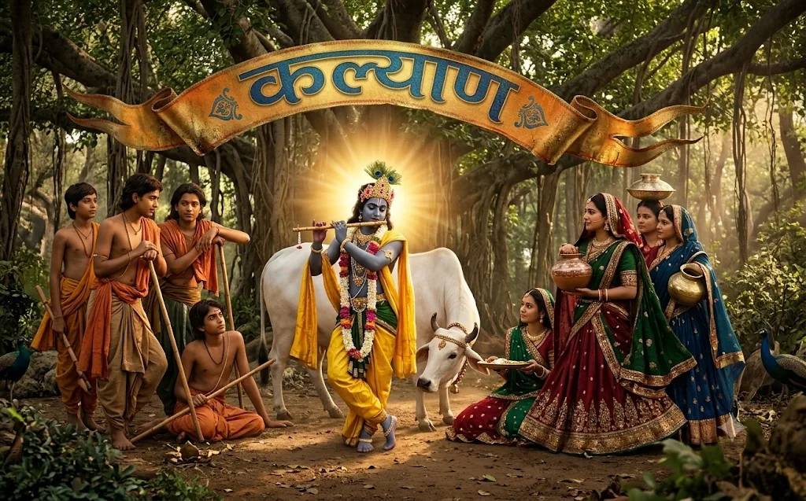
बर्हापीडं नटवरवपुः कर्णयोः कर्णिकारं
बिभ्रद्वासः कनककपिशं वैजयन्तीञ्च मालाम् ।
रन्ध्रान्वेणोरधरसुधया पूरयन्गोपवृन्दैर्वृन्दारण्यं
स्वपदरमणं प्राविशद्गीतकीर्तिः ॥
| वर्ष ६ | श्रावण १९८८ अगस्त १९३१ | संख्या १ पूर्ण संख्या ६१ |
| जय हो! |
|---|
|
ब्रह्माण्डानि बहूनि पङ्कजभवान्प्रत्यण्डमत्यद्भुता- न्गोपान्वत्सयुतानदर्शयदजं विष्णूनशेषांश्च यः । शम्भुर्यच्चरणोदकं स्वशिरसा धत्ते च मूर्तित्रया- त्कृष्णो वै पृथगस्ति कोऽप्यविकृतः सच्चिन्मयो नीलिमा ॥ कृपापात्रं यस्य त्रिपुररिपुरम्भोजवसतिः सुता जह्नोः पूता चरणनखनिर्णेजनजलम् । प्रदानं वा यस्य त्रिभुवनपतित्वं विभुरपि निदानं सोऽस्माकं जयति कुलदेवो यदुपतिः ॥ — श्रीशंकराचार्य |
हरे राम हरे राम राम राम हरे हरे।
हरे कृष्ण हरे कृष्ण कृष्ण कृष्ण हरे हरे॥
जयति शिवा–शिव जानकि–राम।
जय रघुनन्दन जय सियाराम॥
रघुपति राघव राजा राम।
पतितपावन सीताराम॥
जय जय दुर्गा जय मा तारा।
जय गणेश जय शुभ–आगारा॥
जय पावक रवि चन्द्र जयति जय,
सत् चित् आनँद भूमा जय जय।
जय जय विश्वरूप हरि जय,
जय हर अखिलात्मन् जय जय।
जय विराट जय जगत्पते,
गौरीपति जय रमापते॥
प्यारे कन्हैया!
प्यारे कन्हैया! तेरी ही पलकोंके इशारेपर मुनि-मन-मोहिनी महामाया-नटी थिरक-थिरककर नाच रही है। तेरे ही संकेतसे महान् देव रुद्र अखण्ड ताण्डव-नृत्य करते हैं। तुझे ही रिझानेके लिये हाथमें वीणा लिये सदानन्दी नारद मतवाला नाच नाच रहे हैं। तेरी ही प्रसन्नताके लिये व्यास-वाल्मीकि और शुक-सनकादि घूम-घूमकर और झूम-झूमकर तेरा गुणगान करते हैं। तेरा रूप तो बड़ा ही अनोखा है, जब तेरी वह रूप-माधुरी खुद तुझीको दीवाना बनाये डालती है, तब ज्ञानी-महात्मा, सन्त-साधु और प्रेमी भक्तोंके उसपर लोक-परलोक निछावर कर देनेमें तो आश्चर्य ही क्या है? आनन्दका तो तू अनन्त असीम सागर है, तेरे आनन्दके किसी एक क्षुद्र कणको पाकर ही बड़े-बड़े विद्वान् और तपस्वी लोग अपने जीवनको सार्थक समझते हैं। अहा! अनिर्वचनीय प्रेमका तो तू अचिन्त्यस्वरूप है। तुझ प्रेमस्वरूपके एक छोटे-से परमाणुने ही संसारके समस्त जननी-हृदों में, समग्र शुद्ध प्रेमिक-प्रेमिकाओंके अन्तरमें, सम्पूर्ण मित्र-अन्तस्तलोंमें और विश्वके अखिल प्रिय पदार्थोंमें प्रविष्ट होकर जगत्को रसमय बना रक्खा है। ज्ञानका अनन्त स्रोत तो तेरे उन चरणकमलोंके रजकणोंसे प्रवाहित होता है, इसीसे बड़े-बड़े सन्त-महात्मा तेरी चरण-धूलिके लिये तरसते रहते हैं!
किसमें सामर्थ्य है जो तुझ सर्वथा निर्गुणके अनन्त दिव्य गुणोंकी थाह पावे? ऐसा कौन शक्तिसम्पन्न है जो तुझ ज्ञानस्वरूप प्रकृतिपर परमात्माके अप्राकृत ज्ञानकी शेष सीमातक पहुँचे? किसमें ऐसी ताकत है जो तुझ अरूपकी विश्वविमोहिनी नित्य रूप-छटाका सर्वथा साक्षात्कार करके उसका यथार्थ वर्णन कर सके? कौन ऐसा सच्चा प्रेमी है जो तुझ अपार अलौकिक प्रेमार्णवमें प्रवेश कर उसके अतल-तलमें सदाके लिये डूबे बिना रह जाय? फिर बता तेरा वर्णन—तेरे रूप, गुण, ज्ञान और प्रेमका विवेचन कौन करे? और कैसे करे? प्यारे कृष्ण! बस, तू, तू ही है। तेरे लिये जो कुछ कहा जाय, वही थोड़ा है। तेरे रूप, गुण, ज्ञान और प्रेमका दिव्य ध्यान-ज्ञान-जनित अनुभव भी तेरी कृपा बिना तुझ देश-काल-कल्पनातीत अकल कल्याण-निधिके वास्तविक स्वरूपके कल्पित चित्रतक भी पहुँचकर उसका सच्चा वर्णन नहीं कर सकता। फिर अनुभवशून्य कोरी कल्पनाओंकी तो कीमत ही क्या है? वस्तुतः तेरे स्वरूप और गुणोंका मनुष्यकृत महान्-से-महान् वर्णन भी यथार्थ तत्त्वको बतलानेवाला न होनेके कारण, महान् तेज-पुञ्ज सूर्यमण्डलको जरासा जुगनू बतलानेके सदृश एक प्रकारसे तेरा अपमान ही है, परन्तु तू दयामय है। तेरे प्रेमी कहा करते हैं कि तू, प्यारे दुलारे नन्हें बच्चोंकी हरकतोंपर कभी नाराज न होकर स्नेहवश सदा प्यार करनेवाली जननीकी भाँति किसी तरह की अपना चिन्तन या नाम-गुण ग्रहण करनेवाले लोगोंके प्रति प्रसन्न ही होता है। तू उनपर कभी नाराज होता ही नहीं। बस इसी तेरे विरदके भरोसेपर मैं भी यह मनमानी कर रहा हूँ! पर भूला! मेरी मनमानी कैसी? बचानेवाला सूत्रधार तो तू है, मैं मनमानी करनेवाला पामर कौन? तू जो उचित समझे, वही कर! तेरी लीलामें आना-कानी कौन कर सकता है? पर मेरे प्यारे साँवलिया! तुझसे एक प्रार्थना जरूर है कभी-कभी अपनी मोहनी मुरलीका मीठा सुर सुना दिया कर और जँचे तो कभी अपनी भुवन-विमोहिनी सौन्दर्य-सुधाकी दो-एक बूँद पिलानेकी दया भी ........'तेरा ही!'
कृष्णस्तु भगवान् स्वयम्
(श्रीगोवर्धनपीठाधीश्वर श्रीजगद्गुरु श्रीशंकराचार्य स्वामीजी श्री ११०८ श्रीभारती कृष्णतीर्थजी महाराज)
सत्यज्ञानानन्दघन श्रीरमणीयं
विश्वोत्पत्तिस्थितिलयहेतुस्वविलासम्॥
पादाम्भोजध्यायकतापत्रयनाशं
श्रीकृष्णाख्यं केवलमीडे परतत्त्वम्॥
स्वीयांध्य्रम्भोजधूलीलवनिरतमनः
संघसर्वेप्सितार्थ-
व्रातस्पर्शव्रताढॺत्रिदिवधरणिभू
भूयबिभ्रत्कटाक्षः।
भूयाद्भूयो विभूत्यै विधिधरतनुजा-
राजदुत्संगनाके-
ण्मुख्यामर्त्यालिनम्यस्वपदवनजनी
राधिकाप्राणकान्तः॥
जिस निर्गुण निराकार अखण्ड अपरिच्छिन्न सर्वव्यापी सर्वान्तर्यामी नित्य शुद्ध बुद्ध मुक्त सच्चिदानन्दघनस्वरूप परमात्म-पदार्थके विषयमें भगवती श्रुति स्वयं कहती है—
'यतो वाचो निवर्तन्ते अप्राप्य मनसा सह'
अर्थात् जिसको प्राप्त न कर सकनेसे वाणी और मन निराश होकर लौट आते हैं इत्यादि। उसी परमेश्वरकी—
भक्तचित्तानुरोधेन धत्ते नानुकृतीः स्वयम्।
अद्वैतानन्दरूपो यस्तस्मै भगवते नमः॥
-इस न्यायके अनुसार भक्तोंके उद्धारके लिये धारण की हुई अनन्तानन्त सगुण मूर्तियोंके अन्दर खास-खास लीलावतारोंमेंसे भी जिस सगुण मूर्तिशिरोमणि आनन्दकन्द षोडशकलापूर्ण पूर्णावतार भगवान् श्रीकृष्णचन्द्ररूपी खास परमात्ममूर्तिने जगत्के कल्याणके लिये अपने जन्मसे लेकर निर्याणपर्यन्त अति सुन्दर लीलाओं तथा अति पवित्र उपदेशोंसे बाहर तथा भीतरकी दृष्टिसे जगत्को जो अमूल्य शिक्षण दिया था, उसका 'कल्याण'के 'श्रीकृष्णांक'के लिये भी हम किस प्रकारसे, किस वाणीसे, किस लेखनीसे या किस मनसे वर्णन करें, यह पता नहीं लगता। क्योंकि पूर्ण परमात्माका जो पूर्णावतार है, उसके विषयमें भी तो वही उपर्युक्त श्रुति ही लागू होती है—
'यतो वाचो निवर्तन्ते अप्राप्य मनसा सह'
असलमें तो श्रीमद्भागवत, श्रीमन्महाभारत (जिसके अन्तर्गत श्रीभगवद्गीता भी है) श्रीब्रह्मवैवर्तादि अनेकानेक ग्रन्थोंमें भगवान् श्रीकृष्णचन्द्रके विषयमें जो वर्णन मिलते हैं और उनके श्रीमुखसे जो उपदेश मिलते हैं उन सबके सम्बन्धमें हम तो प्रतिज्ञापूर्वक यही कहा करते हैं और समय-समयपर यही निरूपण भी किया करते हैं कि इन ग्रन्थोंके प्रत्येक श्लोकका प्रत्येक शब्द ही नहीं, बल्कि प्रत्येक अक्षर सब शास्त्रोंकी दृष्टि से और जगत्के सब कार्य-क्षेत्रोंके विचारसे अनन्तानन्त प्रकारके बड़े-बड़े तत्त्वोंसे भरा हुआ है। फिर भी इनमें हमारे विचारके गोचर न होकर कितने ही ऐसे अर्थ बाकी रह जाते हैं जिनकी गिनती नहीं की जा सकती। तब पूर्णावतारका वर्णन तो कैसे किया जा सकता है? तथापि भगवान् श्रीकृष्णचन्द्रके जीवनचरित्र, लीला और उपदेशोंके तत्त्वानुसन्धानसे हमें जो तत्त्व प्राप्त हुए हैं उनमेंसे कुछ खास-खास तत्वोंका स्थालीपुलाक-न्यायसे अति संक्षिप्तरूपमें केवल दिग्दर्शनमात्र कराया जाता है।
पाश्चात्यों तथा पाश्चात्य संस्कृतिप्रेरित भारतीयोंकी ओरसे ऐतिहासिक दृष्टिसे आजकल जो ये प्रश्न उठाये जाते हैं कि भगवान् श्रीकृष्ण ऐतिहासिक पुरुष थे या नहीं?' 'इस सम्बन्धमें श्रीमन्महाभारत श्रीमद्भागवतादि ग्रन्थोंमें वर्णित घटनाएँ ऐतिहासिक हैं या नहीं?' 'इनके वर्णनोंमें जो परस्पर विरोध है उसका परिहार कैसे हो सकता है? 'कृष्णोपासनासम्प्रदाय (Cult)कबसे प्रारम्भ हुआ?' इत्यादि। इन प्रश्नोंके उत्तरमें हम तो ऐतिहासिक प्रमाणों तथा प्रणालीद्वारा उन समस्त घटनाओंकी ऐतिहासिकताको ही स्थापित करते और मानते हैं; हम यह भी मानते तथा सिद्ध करते हैं कि श्रीकृष्णोपासना अनादिकालसे प्रचारित सम्प्रदाय है, श्रीमद्भागवत श्रीवेदव्यासजी द्वारा रचित है और इसे श्रीशुकदेवजीने सुनाया था। श्रीमन्महाभारतके श्रीकृष्ण, श्रीमद्भागवतके श्रीकृष्ण और ब्रह्मवैवर्तादि पुराणोंके श्रीकृष्णमें इतिहास, गुण, कर्म, उपदेश आदि किसी भी दृष्टिसे भी ऐसा कोई भी भेद नहीं है जैसा पाश्चात्य (Orientalist) सज्जन तथा उनके अनुयायी भारतीय Research Scholar महोदय बतलाते हैं। इस लेखमें उन प्रमाणोंके विवरणमें उतरनेकी आवश्यकता नहीं है। इसलिये इस विषयको यहीं छोड़कर अब हम अपने विषयपर आते हैं। हमारे इस लेखका उद्देश्य केवल भगवान् श्रीकृष्णचन्द्रके जीवनचरित्र तथा उपदेशोंसे प्राप्त होनेवाली अमूल्य शिक्षाका एक स्थूल सूचीपत्र बनाना ही है। परन्तु इससे पहले हमारे सामने उपोद्घातरूपसे अवतारवादका एक बड़ा प्रश्न उपस्थित होता है, जिसके उत्तरमें हम समस्त शास्त्रोंके सिद्धान्तका संक्षेपसे यही सारांश बतावेंगे कि निर्गुण परमात्माका सगुण-रूपोंसे अवतार ग्रहण करना केवल पुराणोंसे नहीं बल्कि श्रीमद्भगवद्गीताके—
बहूनि मे व्यतीतानि जन्मानि तव चार्जुन।
तान्यहं वेद सर्वाणि न त्वं वेत्थ परंतप॥
अजोऽपि सन्नव्ययात्मा भूतानामीश्वरोऽपि सन्।
प्रकृति स्वामधिष्ठाय संभवाम्यात्ममायया॥
यदा यदा हि धर्मस्य ग्लानिर्भवति भारत।
अभ्युत्थानमधर्मस्य तदात्मानं सृजाम्यहम्॥
परित्राणाय साधूनां विनाशाय च दुष्कृताम्।
धर्मसंस्थापनार्थाय संभवामि युगे युगे॥
—इत्यादि श्लोकोंसे और नारायणोपनिषत्, नृसिंहतापिनी, सीतोपनिषत्, रामरहस्योपनिषत्, रामतापिनी, वासुदेवोपनिषत्, गोपालतापिनी, कृष्णोपनिषत् आदि अनेक उपनिषदोंसे भी सिद्ध है। यही नहीं, वेदकी पूर्वसंहिताके अन्तर्गत पुरुषसूक्तके—'अजायमानो बहुधा विजायते' इस मन्त्रसे भी निर्विवाद सिद्ध है।
अतः हम अवतारवादके समर्थनके लिये बहुत प्रमाण देनेमें समय न लगाकर श्रीमद्भगवद्गीताके एकादश (विश्वरूपदर्शनयोग) अध्यायके प्रसंग और द्वादश (भक्तियोग) अध्यायके बताये हुए सिद्धान्तकी ओर जिज्ञासुओंकी दृष्टि आकर्षित करना ही पर्याप्त समझते हैं।
एकादशाध्यायका प्रसंग यह है कि दशमाध्यायमें भगवान्के द्वारा उनकी कुछ विभूतियोंका वर्णन सुननेके बाद यह सुनकर कि—
नान्तोऽस्ति मम दिव्यानां विभूतीनां परंतप।
एष तूद्देशतः प्रोक्तो विभूतेर्विस्तरो मया॥
अथवा बहुनैतेन किं ज्ञातेन तवार्जुन।
विष्टभ्याहमिदं कृत्स्नमेकांशेन स्थितो जगत्॥
जैसे पुरुषसूक्तने भी कहा है कि—'पादोऽस्य विश्वा भूतानि' अर्जुन भगवान्की उस महान् विश्वव्यापी मूर्तिका दर्शन करना चाहता है, जो यथार्थमें उनकी सम्पूर्ण मूर्ति न होनेपर भी विश्वरूपिणी है, क्योंकि सारी दुनियाके अन्दर अनन्तकोटि ब्रह्माण्ड भी तो भगवान्का एक छोटा अंशमात्र ही है। भक्तवत्सल भगवान् अर्जुनकी प्रार्थना स्वीकार कर उससे यह कहते हुए कि—
न तु मां शक्यसे द्रष्टुमनेनैव स्वचक्षुषा।
दिव्यं ददामि ते चक्षुः पश्य मे योगमैश्वरम्॥
—उसे दिव्य नेत्र देकर अपने विश्वरूपका दर्शन कराते हैं। परन्तु बड़े ही आश्चर्यकी बात तो यह होती है कि भगवान्से दिव्य चक्षु प्राप्त करनेपर भी अर्जुन उस विश्वरूपका दर्शन थोड़ी ही देरतक कर सकता है, फिर घबराकर दिग्भ्रमादिसे पीड़ित हो, स्वयं विवश होकर यह प्रार्थना करने लगता है कि—
'दिशो न जाने न लभे च शर्म
प्रसीद देवेश जगन्निवास'
'हे भगवन्, इस विश्वरूपका उपसंहार करके अपनी उसी खण्ड-परिच्छिन्न मूर्तिका दर्शन दो जिसे मैं सदा देखता रहता हूँ।' यह विचार करनेकी बात है कि अर्जुनको तो भगवान्ने स्वयं 'भक्तोऽसि मे सखा चेति' इत्यादि कहकर विश्वरूप दिखलाया था-तत्त्वोपदेश देकर सारथिरूपसे सेवा करते हुए उसे धन्यशिरोमणि बनाया था। जब इतने बड़े जबर्दस्त अधिकारीको दिव्य चक्षु मिलनेपर भी उस विश्वरूपके दर्शन करते रहनेकी शक्ति नहीं होती जो भगवान्का यथार्थमें एक छोटा अंशमात्र है, तब साधारण मन्दाधिकारी या अधमाधिकारियोंका यह कहना कि 'हम अपने साधारण चर्मचक्षुसे केवल विश्वरूपका ही नहीं, भगवान्के सम्पूर्ण रूपका दर्शन कर सकते हैं। बड़े ही अहङ्कारकी बात है। इससे बढ़कर अहङ्कारपूर्ण और सर्वथा अनधिकार साहसका दृष्टान्त और क्या हो सकता है?
यह तो हुआ विश्वरूपदर्शनयोग (एकादशाध्याय)के प्रसङ्गसे हमारा किया हुआ अनुमान। अब यह देखना है कि भक्तियोग (द्वादशाध्याय)में भगवान्ने अपने श्रीमुखसे ही यह स्पष्ट कह दिया है कि—
क्लेशोऽधिकतरस्तेषामव्यक्तासक्तचेतसाम्।
अव्यक्ता हि गतिर्दुःखं देहवद्भिरवाप्यते॥
अर्थात् 'जो देहवान् हैं उनसे निर्गुणकी उपासना नहीं हो सकती।' तब फिर अशरीर कौन है? इसका 'अशरीरं वाव संतं सुखदुःखे न स्पृशतः' इस श्रुतिने तथा—
'यं हि न व्यथयन्येते पुरुषं पुरुषर्षभ।'
'शक्नोतीहैव यः सोढुं प्राक्शरीरविमोक्षणात्॥'
—इत्यादि गीतावाक्योंने निर्वचन कर दिया है कि जिसके शरीर, इन्द्रिय, मन तथा बुद्धिपर शीतोष्णादि द्वन्द्व-समष्टिका तनिक भी प्रभाव न पड़ता हो, अर्थात् जिसको जिन्दा रहते हुए ही मृतकके समान चितापर रखकर जलाये जानेपर भी तनिक-सी व्यथा न होती हो, वही अशरीर है और वास्तवमें वही निर्गुणके लिये अधिकारी है। गीताके इन दोनों अध्यायोंसे अपने आप पता लग सकता है कि जगत्के जीवोंके लिये सगुणोपासनाकी आवश्यकता है या निर्गुणोपासनाकी?
अवतारवादके शास्त्रोंसे इस प्रकार सिद्ध होनेके बाद अब अगला प्रश्न यह है कि अवतारोंके बीच, भगवान् श्रीकृष्णका कौन-सा स्थान है। इसके उत्तरमें हमारा बस इतना ही कहना है कि—
'कृष्णस्तु भगवान् स्वयम्।'
मतलब यह कि अन्य समस्त अवतार भगवान्के अवतार हैं, परन्तु श्रीकृष्ण भगवान्के अवतार नहीं, स्वयं भगवान् ही हैं। इस सिद्धान्तके समर्थनमें श्रीमद्भागवतादि पुराणों, श्रीमद्भगवद्गीता और उपर्युक्त उपनिषदोंमें खूब प्रमाण मिलते हैं जिनके सारांशरूपसे इतना ही कहना पर्याप्त है कि और सब अवतारोंमें जो भिन्न-भिन्न प्रकारके कार्य हुए, वे सब-के-सब एक श्रीकृष्णावतारमें हुए। इसीलिये हम भगवान् श्रीकृष्णचन्द्रको पूर्णावतार और निर्गुण परमात्माका सगुण प्रतिरूप मानते हैं, क्योंकि मूर्तिकी दृष्टिसे हमलोगोंकी योग्यताके अनुसार परिच्छिन्न होते हुए भी, भगवान् श्रीकृष्णचन्द्रने कार्योंमें तो ऐसी अपरिच्छिन्न अपरिच्छिन्नता दिखायी है जैसी और किसी अवतारमें नहीं दिखायी। इसमें यह भी प्रमाण है कि इस अवतारमें केवल वेदोंकी रक्षा, हिरण्याक्ष, हिरण्यकशिपु, रावणादि एक खास व्यक्तिका संहार, भूमिका उत्थान, बलिराजाका दमन, क्षत्रियोंका क्षय, तत्त्वोपदेश, म्लेच्छोंका नाश इत्यादि एक-एक सङ्कुचित उद्देश्य नहीं हैं बल्कि ऐसे समस्त उद्देश्योंकी एक बड़ी भारी समष्टि है, जिसकी न कोई सीमा है और न हिसाब-किताब है। इसीलिये कवि जयदेवने अपने गीतगोविन्दमें दशावतारोंका वर्णन करते हुए—
वेदानुद्धरते जगन्निवहते
भूगोलमुद्विभ्रते
दैत्यं दारयते बलिं छलयते
क्षत्रक्षयं कुर्वते।
पौलस्त्यं जयते हलं कलयते
कारुण्यमातन्वते
म्लेच्छान्मूर्छयते दशाकृतिधृते
कृष्णाय तुभ्यं नमः॥
—कहकर मत्स्यादि अवतारोंमें श्रीबलरामजीको गिनकर भी सबको भगवान् श्रीकृष्णचन्द्रके ही अवतार माना है। तात्पर्य यह कि सब अवतारोंके किये हुए सब कार्योंकी समष्टि भगवान् श्रीकृष्णने की है। अब इन अनन्त और अपरिच्छिन्न कार्यों और गुणोंमेंसे कुछ खास-खास कार्यों तथा गुणोंका अत्यन्त सूक्ष्म और संक्षिप्त रीतिसे दिग्दर्शन कराया जाता है जिससे स्पष्ट होगा कि—
ऐश्वर्यस्य समग्रस्य धर्मस्य यशसः श्रियः।
वैराग्यस्याथ मोक्षस्य षण्णां भग इतींगना॥
—'भगवान्' शब्दके इस लक्षणका केवल श्रीकृष्णचन्द्रमें ही सम्पूर्ण रीतिसे समन्वय पाया जाता है। इस विवेचनसे 'कृष्णस्तु भगवान् स्वयम्'का अक्षरशः समर्थन और निरूपण होगा।
१-ऐश्वर्यस्य (समग्रस्य)
भगवान् श्रीकृष्णचन्द्रके जन्मसे लेकर अन्ततक सारे इतिहासकी प्रत्येक छोटी-छोटी घटनासे भी सिद्ध होता है कि भगवान् श्रीकृष्णके रूपमें समस्त जगत्के नाथ ही परिपूर्ण शक्तिसमेत भूलोकपर आये थे। उनका सर्वव्यापित्व (अपरिच्छिन्नत्व) तो उनको बाँधनेके लिये किये हुए प्रयत्नमें श्रीयशोदाजीके अनुभव, द्रौपदी-वस्त्रापहरणके प्रसंग और हजारों पत्नियोंके घरोंमें नारदजीके देखे हुए दृश्य आदि अनेक प्रसंगोंसे स्पष्ट है। पूतना-संहार इत्यादि बाललीलाओंसे लेकर अन्य सब लीलाओंसे और इस बातसे कि कोई भी घटना या प्रसंग ऐसा नहीं आता है जो भगवान्के अङ्कुशके नीचे न रहता हो, भगवान्का सर्वेश्वरत्व अर्थात् 'समग्र ऐश्वर्य' रूपी लक्षण इतना स्पष्ट है कि उसके अधिक विवरण, समर्थन या निरूपणकी आवश्यकता ही नहीं रह जाती।
२-धर्मस्य (समग्रस्य)
धर्म उस साधन-सामग्रीका नाम है जिससे जगत्का धारण (अर्थात् उद्धार) होता है। इस दृष्टिसे भगवान् श्रीकृष्णचन्द्र साक्षात् धर्ममूर्ति ही हैं और इसमें यह चमत्कार भी है कि दुनियामें जितने-जितने सम्बन्धों तथा हैसियतोंसे व्यवहार हुआ करते हैं, उन सबकी दृष्टिसे और देश, काल, पात्र, अवस्था, अधिकार आदि भेदोंसे हमलोगोंके जितने-जितने भिन्न-भिन्न धर्म या कर्तव्य हुआ करते हैं, उन सबमें भगवान् श्रीकृष्णने अपने अमृतरूपी उपदेशोंसे ही नहीं, प्रत्युत अपने आदर्श आचरणोंसे भी हमलोगोंको धर्मका स्वरूप दिखलाया और पथप्रदर्शन किया है। इन सब विषयोंमें एक छोटे-से-छोटा विषय भी ऐसा है जिसका अनेक बड़े-बड़े लम्बे व्याख्यानों और लेखोंसे भी पर्याप्त वर्णन नहीं हो सकता। इसलिये कुछ खास सम्बन्धोंके बारेमें स्थालीपुलाक-न्यायसे एक-एक छोटे दृष्टान्तके द्वारा दिग्दर्शन कराया जाता है और स्पष्ट किया जाता है कि श्रीभगवानमें परमार्थके साथ-साथ कितनी भारी व्यावहारिक धर्म-निपुणता भी थी, जिससे हजारों प्रकारके सम्बन्ध रखते हुए और भिन्न-भिन्न विचार तथा योग्यता रखनेवाले अधिकारियोंके साथ व्यवहार करते हुए श्रीभगवान्ने सबसे अपने संकल्पानुसार काम भी कराया और उनको ऐहिक और पारमार्थिक कल्याणके पथपर भी हमेशाके लिये चढ़ा दिया।
(१) माता-पिताके प्रति—श्रीभगवान्ने अपनी सवा ग्यारह वर्षकी अवस्थामें कंसको मारकर श्रीदेवकीजी तथा श्रीवसुदेवजीको कारागृहसे छुड़ाया और उनसे हाथ जोड़कर अत्यन्त नम्रताके साथ कहा कि 'आजतक गोकुल वृन्दावनमें रहनेके कारण आपकी कुछ भी सेवा न कर सका और मृतकके समान रहा इसके लिये क्षमा कीजिये।' इत्यादि।
(२) पालक माता-पिताके प्रति—श्रीभगवान्का अपनी बाल्यावस्थामें लगातार और कुरुक्षेत्रमें सूर्यग्रहणके प्रसङ्गपर श्रीयशोदाजी और श्रीनन्दगोपजीके साथ प्रेमपूर्ण लीलाएँ तथा अत्यन्त नम्रतापूर्वक व्यवहार करना सुप्रसिद्ध है।
(३) ज्येष्ठ भ्राताके प्रति—अत्युग्र स्वभाववाले श्रीबलरामजीकी इच्छा या सलाहके अनुसार चलना जिन-जिन बातोंमें धर्म या नीतिकी दृष्टिसे मुनासिब नहीं था, उनमें भी श्रीभगवान्ने जगदीश्वर होते हुए भी उनको अनुनय-विनयसे सन्तुष्ट रखते हुए सर्वदा ज्येष्ठ भ्राताकी सेवा की।
(४) गुरुके प्रति—श्रीभगवान्ने सर्वज्ञ, सर्वदा निर्मोह और किसीसे कभी भी उपदेश या सलाह लेनेकी आवश्यकता न होनेपर भी गुरु श्रीसन्दीपिनिजीकी बड़ी ही आदर्श सेवा की और उन्हें गुरुदक्षिणा दी।
(५) ब्राह्मणोंके प्रति—केवल नारदादि महर्षियोंको ही नहीं बल्कि तुच्छ-से-तुच्छ और अत्यन्त अकिञ्चन सुदामा, श्रुतिदेव आदि ब्राह्मणों को भी भूलोकके देवता मानते हुए भगवान्ने अपने श्रीमुखसे तथा आचरणसे उनकी सेवा कर आदर्श ब्रह्मण्यता दिखायी।
(६) गोमाताके प्रति—श्रीभगवान्का गोमाता तथा गोवत्सोंकी सेवामें बिताया हुआ अद्भुत तथा प्रेममय बाल्यजीवन तो प्रसिद्ध ही है।
(७) पत्नियोंके प्रति—बह्वॺः सपत्न्य इव गेहपतिं लनुन्ति। इस जगत्प्रख्यात अनुभवके रहने पर भी श्रीरुक्मिणीजी, श्रीसत्यभामाजी आदि अष्ट महिषियोंके अतिरिक्त सोलह हजार स्त्रियोंके पति होते हुए भी सबके साथ निष्पक्ष प्रेममय व्यवहारका दुनियाके गृहस्थोंको ऐसा आदर्श दिखाया कि जिससे श्रीभगवान्की पत्नियोंने कुरुक्षेत्रमें द्रौपदीके पास अपनी धन्यता दिखाते हुए अपने मनकी यही इच्छा प्रकट की कि हमें जन्म-जन्मान्तरोंमें भी इन्हीं भगवान्की सेवा करनेका सौभाग्य मिले।
(८) राजनीति-क्षेत्रमें—श्रीभगवान्की अपार तथा अद्वितीय राजनीति-कुशलता ऐसी थी जिसके प्रभावसे सभी कार्योंमें शत्रुओंकी हार और श्रीभगवान्की कामयाबी होती थी और जिसको देखकर सन्धिविग्रहादि सर्व-कार्य-पारङ्गत अतिनिपुण विदुर, उद्धव, भीष्म आदि राजनीतिज्ञ-शिरोमणि भी आश्चर्यचकित हो जाते थे।
(९) शरणागत आर्तोंके प्रति—अपनी की हुई 'तेषां योगक्षेमं वहाम्यहम्' 'न मे भक्तः प्रणश्यति' इत्यादि प्रतिज्ञाओंका पालन करते हुए श्रीभगवान्ने द्रौपदीकी मानरक्षा आदिके द्वारा अपनी आर्तत्राणपरायणता और अनाथनाथपनेका आदर्श परिचय दिया। जैसे आगे भी मीराबाईके दृष्टान्तमें यह स्थापित किया कि—
द्रौपदी च परित्राता येन कौरवकश्मलात्।
पालिता गोपसुन्दर्यः स कृष्णः क्वापि नो गतः॥
(१०) पतितोंके प्रति—श्रीभगवान्ने—
'अहं त्वा सर्वपापेभ्यो मोक्षयिष्यामि।
'अपि चेत्सुदुराचारो भजते मामनन्यभाक्॥'
'क्षिप्रं भवति धर्मात्मा शश्वच्छान्तिं निगच्छति॥
—इत्यादि प्रतिज्ञाओं से अपनी पतित-पावनता दिखायी।
(११) भक्तोंके प्रति—श्रीभगवान्ने श्रीवेदव्यास, अक्रूर, उद्धव, विदुर और सञ्जयादि भक्तजनोंके साथ उनके अधिकारानुसार जो व्यवहार किया और खास करके शत्रुपक्षके सेनाधिपति होकर अपने वाणोंसे श्रीभगवान्के शरीरसे खूब रक्त बहानेवाले अपने भक्तरत्न श्रीभीष्मजीकी प्रतिज्ञाके पालनके लिये—छिन्द्यां स्वबाहुमपि वः प्रतिकूलवृत्तिम्' इस नियमसे भी आगे बढ़कर अपनी प्रतिष्ठाकी भी परवा न करते हुए भक्तकी प्रतिष्ठाकी रक्षा करके केवल भक्तवत्सलता नहीं बल्कि भक्तपराधीनता भी दिखायी, जिसका स्वयं भीष्मजीने अपने अन्तिम समयमें—स्वनिगममपहाय मत्प्रतिज्ञाम् ऋतमधिकर्तुमवप्लुतो रथस्थः' इत्यादि श्लोकमें जिक्र किया था।
(१२) शिष्योंके प्रति—अपने चरणोंमें पहुँचकर शिष्य भावसे—'शिष्यस्तेऽहं शाधि मां त्वां प्रपन्नम्' ऐसा कहनेवाले अर्जुनको उपनिषदोंके सारांशरूपी अपनी गीताका उपदेश देकर अज्ञान-संमोहसे उसका उद्धार करके गुरुके यथार्थ लक्षणका परमसुन्दर लक्ष्य दिखाकर कृतार्थ किया।
(१३) मित्रोंके प्रति-श्रीभगवान्ने गोकुल-वृन्दावनमें गोपालबालकोंके साथ तथा गुरुकुलवासके समयके सुदामा आदि साथियोंके साथ सच्ची मित्रताका आदर्श लक्षण दिखाया।
(१४) शत्रुओंके प्रति—बचपनसे लेकर अन्ततक निर्भय तथा निश्चिन्त होकर बड़े-बड़े भयंकर शत्रुओंका और शत्रुओंकी अपार अक्षौहिणियोंका अनायास ही संहार या दमन करनेकी अद्वितीय शक्ति रखते हुए भी, श्रीभगवान्ने यथासाध्य शान्तिसे ही काम लेनेके प्रयत्नका नियम रक्खा था। (जैसे दोनों पक्षोंकी सेनाओंके सन्नाहके पश्चात् भी दुर्योधनके पास पाण्डवोंके दूतरूपमें जाकर युद्धनिवारणका अन्तिम प्रयत्न किया)। और अपने अन्तिम प्रयत्नके व्यर्थ होनेपर—
परित्राणाय साधूनां विनाशाय च दुष्कृताम्।
धर्मसंस्थापनार्थाय ...................॥
—इस अपने कर्तव्यके पूरा करनेमें धर्मके खयालसे प्रेरित होकर केवल जगत्के कल्याणके लिये ही दुष्टोंके संहार और सज्जनोंकी रक्षाके द्वारा धर्मकी संस्थापना करते हुए और—
'सुखदुःखे समे कृत्वा लाभालाभौ जयाजयौ'
'रागद्वेषौ व्युदस्य च.........................'
'बलं बलवतां चाहं कामरागविवर्जितम्।'
—अपने इन उपदेशोंका आदर्श अपने आचरणसे दुनियाको दिखाते हुए, शत्रुओंके साथ भी रागद्वेषरहित और निष्पक्ष रहकर ही व्यवहार किया था, इसीसे नरकासुरको मारने तथा भीमसेनके द्वारा जरासन्धको मरवा डालनेके बाद श्रीभगवान्ने उनके राज्योंको स्वयं न छीनकर उन्हींके पुत्रोंको प्रजारक्षणरूपी धर्मका उपदेश देकर अपने हाथों गद्दीपर बैठाया, तथा उनका सब प्रकारसे पालन-पोषण तथा सहायता की। कर्तव्य-विवश हो जिनको श्रीभगवान्ने मारा, द्वेष न करते हुए उनको भी सद्गति प्रदान करनेका नियम तो आप पालते ही रहे (इससे सुदर्शनचक्रधारी और मुरलीधारीकी एकता सिद्ध है।)
(१५) गोपियोंके प्रति—व्रजवासी रसिकराज श्रीभगवान्ने बचपनमें गोपियोंके साथ की हुई अपनी लीलाओंमें वात्सल्य, सख्य, दास्य शान्त, और माधुर्यादि भावोंका उज्ज्वल तथा आदर्श परिचय दिया था।
(१६) सारी दुनियाके प्रति—राजसूययज्ञके प्रकरणमें श्रीभगवान्ने सब लोगोंको अनेक प्रकारके अधिकार देकर या कार्य बाँटकर अपने लिये तो—कृष्णः पादावनेजने अभ्यागत-अतिथियोंके चरण धोनेका ही काम लिया। जिससे विष्णुसहस्रनामके बताये हुए–'अमानी मानदो मान्यः' (अर्थात् स्वयं अहंकाररहित परन्तु औरोंको मान देनेवाला अतएव माननीय) अपने इन तीन नामोंको सफल कर सेवाधर्म (Ideal of Service)का परमोत्तम आदर्श दिखाया।
श्रीभगवान्के दिखाये हुए इन आदर्शोंमेंसे एककी भी तुलना दुनियाभरके इतिहासमें खोजनेपर भी कहीं भी नहीं मिल सकती। इनमेंसे एक-एकपर भी हजारों व्याख्यान और लेख हो सकते हैं तो भी विषय पूरा नहीं हो सकता। इसलिये इनका केवल उल्लेख करके हम आशा करते हैं कि इन दृष्टान्तोंसे पाठक स्पष्ट समझ जायँगे कि सब प्रकारसे सब अंशोंमें श्रीभगवान् श्रीकृष्णचन्द्र साक्षात् धर्ममूर्ति थे और साथ ही उस प्रेमकी पराकाष्ठाके अवतार थे जिसके अन्दर सारी दुनिया और खास करके शत्रुओंको भी श्रीभगवान्ने स्थान दिया था। ऐसे आदर्श धर्मावतार और प्रेमावतारके विषयमें यह सन्देह ही कैसे हो सकता है कि उनमें 'धर्मस्य समग्रस्य' यह लक्षण पूर्णरूपसे है या नहीं?
३-यशसः (समग्रस्य)
भगवान् श्रीकृष्णचन्द्रकी विश्वव्यापिनी कीर्तिके विषयमें तो पारमार्थिक दृष्टिसे यह भी कहा जा सकता है कि दुनियामें जिन-जिनका गुणगान हो सकता है वे सब भगवान्की एक छोटी विभूति होनेके कारण उन सबकी कीर्ति भी भगवान्की ही कीर्ति है, क्योंकि भगवान्ने तो (हृदयकी ऐसी विशालता तथा गम्भीरताके साथ, जो दुनियामें किसीमें पायी नहीं जाती,) स्वयं ही कहा है कि—
'यां यां तनुं भक्तः श्रद्धयार्चितुमिच्छति'
'येऽप्यन्यदेवता भक्ता............. '
(अर्थात् किसीकी भी उपासना हो वह भी मेरी ही उपासना है) इत्यादि-इस पारमार्थिक दृष्टिके अतिरिक्त, केवल सङ्कुचित व्यावहारिक दृष्टिसे भी यही सच्ची बात है कि भगवान् श्रीकृष्णचन्द्रकी कीर्ति सर्वजगद्व्यापिनी है। दुनियाके प्रसिद्ध महापुरुषोंपर, आध्यात्मिक तथा तत्वजिज्ञासु जगत् और साहित्यपर भगवान् श्रीकृष्णचन्द्रके इतिहास तथा उपदेशोंका जो प्रभाव पड़ा है उससे इस बातका पूरा-पूरा समर्थन होता है।
आध्यात्मिक तत्वजिज्ञासु और तत्त्ववेत्ता जगत्में प्रसिद्ध जिन-जिन महानुभावों तथा साहित्यके जिन-जिन ग्रन्थोंपर भगवान् श्रीकृष्णचन्द्रके जीवनचरित्र तथा उपदेशोंका प्रभाव पड़ा, उन सबका सूचीपत्र बनाना असम्भव है। परन्तु संक्षेपमें यही बताया जा सकता है कि ऐसा महापुरुष तथा साहित्य अत्यन्त विरल है जिसने जानते हुए या न जानते हुए श्रीकृष्णके इतिहास तथा उपदेशोंसे लाभ न उठाया हो और जिसमें श्रीकृष्णके प्रभावका कुछ-न-कुछ चिह्न न दीखता हो।
साधारण व्यक्तियोंकी बातोंमें तो कुछ महत्त्व नहीं है, परन्तु भारतके इतिहासमें जितने प्रसिद्ध साधु-सन्त हुए हैं, उन सबपर श्रीकृष्ण-भक्तिका प्रभाव खूब पाया जाता है। महाराष्ट्र, गुजरात, बंगाल आदि सभी प्रान्तोंमें यही बात हुई। हिन्दी कवितामें भी सूरदास आदि बड़े-बड़े कवियोंकी यही बात है। इसी प्रकार संस्कृत-साहित्यमें भी यही देखा जाता है कि माघके शिशुपालवध आदि काव्योंके अतिरिक्त, जिनमें श्रीकृष्णकी लीलाओंका ही वर्णन है, अन्य समस्त काव्योंमें भी श्रीकृष्णके इतिहास तथा उपदेशका प्रभाव ओतप्रोत नज़र आता है। भजनोंमें तो जयदेवके गीतगोविन्दने साहित्यके अन्दर ऐसा सुदृढ़ स्थान प्राप्त किया है जिससे वह कदापि हिल नहीं सकता।
अब हमें इस चमत्कारी बातका उल्लेख करना है कि जितने बड़े-बड़े धर्माचार्य हुए हैं, उनमेंसे एक भी ऐसा आचार्य नहीं, जो भगवान् श्रीकृष्णका भक्त न हुआ हो। श्रीरामानुजाचार्य, श्रीमध्वाचार्य, श्रीवल्लभाचार्य आदि वैष्णवसम्प्रदायप्रवर्तक प्राचार्योंके श्रीकृष्णभक्त होनेमें तो कोई बड़ी बात नहीं है परन्तु जब देखा जाता है कि भगवान् शंकरके अवताररूपसे प्रसिद्ध, जगद्गुरु आदिशंकराचार्य भी श्रीकृष्णके भक्त थे, तब तो सबको यही मानना पड़ता है कि भगवान् श्रीकृष्णचन्द्रकी मूर्ति, मुरली, लीला आदि सभी पदार्थ केवल श्रीराधाजी आदि गोपियोंके लिये ही मनोमोहक नहीं थे बल्कि वह यथार्थमें ही सर्व-जगन्मनोमोहक थे। इस प्रकरणमें हम सबको यह बात जाननी और याद रखनी चाहिये कि भगवान् श्रीआदिशंकराचार्यने स्वयं समस्त वैष्णव-आचार्योंसे भी बढ़कर भगवान् श्रीकृष्णचन्द्रके स्तोत्र रचे हैं और उनके सिद्धान्तके सबसे बड़े जबर्दस्त प्रचारक 'अद्वैतसिद्धि' ग्रन्थके कर्ता श्रीमधुसूदनसरस्वती स्वामीके बनाये हुए 'भक्तिरसायन' से बढ़कर तो श्रीकृष्णभक्ति-प्रतिपादक ग्रन्थ ही और कौन होगा? उनके बनाये हुए श्रीकृष्णस्तोत्रोंसे बढ़कर या उनके समान भी आजतक श्रीकृष्णके प्रेमसे भरे हुए स्तोत्र और किसने बनाये हैं? उदाहरणार्थ यहाँ हम उनके बनाये हुए दो ही श्लोकोंको उद्धृत करते हैं जिनसे स्पष्ट होगा कि निर्गुण निराकारवादके प्रतिपादकरूपसे जगद्विख्यात श्रीशंकराचार्यके सिद्धान्तके सबसे जबर्दस्त ग्रन्थकर्ता स्वामी श्रीमधुसूदन स्वरस्वती-जैसे ज्ञानकाण्डी अद्वैतवादी और मायावादीके हृदयपर भी आनन्दकन्द पूर्णावतार भगवान् श्रीकृष्णचन्द्रकी मूर्ति किस तरह बैठी हुई है—
ध्यानाभ्यासवशीकृतेन मनसा
यान्निष्कलं निष्क्रियं
ज्योतिश्चेतसि योगिनो यदि परं
पश्यन्ति पश्यन्तु ते।
अस्माकं तु तदेव लोचनचम-
त्काराय भूयाच्चिरं
कालिन्दीपुलिनोदरे किमपि य-
न्नीलंमहो धावति॥
वंशीविभूषितकरान्नवनीरदाभा-
त्पीताम्बरादरुणबिम्बफलाधरोष्ठात्।
पूर्णेन्दुसुन्दरमुखादरविन्दनेत्रा-
त्कृष्णात्परं किमपि तत्त्वमहं न जाने।
क्या इसीसे यह स्पष्ट नहीं हो जाता कि अद्वैत-सिद्धान्तके अनुयायी अद्वैतसिद्धि-ग्रन्थकर्ताके विचारमें भगवान् श्रीकृष्णचन्द्र निर्गुण निराकार अखण्ड अपरिच्छिन्न सर्वव्यापी सर्वान्तर्यामी परमात्माका सगुण साकार खण्ड परिच्छिन्न पूर्णावतार था?
अब भारतवर्षके अतिरिक्त बाहरके जगत्पर भगवान् श्रीकृष्णका जो प्रभाव पड़ा है, उसका कुछ उल्लेख करना है। राज्यशासन, व्यापार आदि बाहरी वस्तुओंकी सहायता या प्रभावसे जो असर पड़ता है उसे तो हम गिनतीमें ही नहीं लेते, केवल उसी असरकी कीमत की जा सकती है जो पदार्थकी स्वरूपभूत योग्यताके आधारपर निर्भर हो और बाहरकी किसी वस्तुकी सहायता या प्रभावसे लाभ न उठाता हो। आजकल भारतके राजनीति व्यापार आदिकी दृष्टि से तो यूरोप, अमेरिका आदिपर किसीभी शासनका नामतक नहीं है, तो भी यूरोपमें जर्मनी, इंगलैंड आदि देशोंपर और अमेरिकापर भगवान् श्रीकृष्णचन्द्रका खूब प्रभाव पड़ा हुआ है, जिसका अपनी स्वरूपयोग्यतासे अतिरिक्त और कोई भी कारण नहीं बताया जा सकता। इस सम्बन्धमें हमारे लिये विवरणमें न उतरकर दिग्दर्शनार्थ केवल एक ही अद्भुत बातका उल्लेख करना पर्याप्त होगा। वह यह है कि अंग्रेजी साहित्यमें बड़े तत्त्वदर्शियों (Philosophers) की गिनतीमें महान् ग्रन्थकर्ता टामस कार्लाइल (Thomas Carlyle) और अमेरिकन-साहित्यमें राल्फ वाल्डो एमर्सन (Ralph Waldo Emerson) गिने जाते हैं, उनके इतिहाससे यह पता चलता है कि उन दोनोंने इस बातको स्वीकार किया था कि आध्यात्मिक विषयोंपर अपने लिखे हुए जिन ग्रन्थोंसे उन दोनोंने यूरोप तथा अमेरिकाको मुग्ध किया था, वे सब-के-सब भगवद्गीताके अंग्रेजी अनुवादोंसे साधारण तौरपर समझी हुई कुछ बातोंके आधारपर ही लिखे हुए थे।
इस खास बातका जिक्र किये बिना हम इस प्रकरणको नहीं छोड़ सकते कि असलमें तो रूस, यूनान तथा फ्रान्स आदि देशोंके बड़े प्रामाणिक पुराने ग्रन्थोंसे सिद्ध हो गया है कि पैगम्बर ईसाने भारतवर्षमें आकर भगवद्गीता आदि वेदान्त-ग्रन्थोंका अध्ययन कर उन्हींका अपने देशमें जाकर प्रचार किया और ईसाइयोंके मूलग्रन्थ बाइबलकी सारी बातें भारतसे ली हुई बातोंके अनुवाद या केवल आभासमात्र हैं। इस सम्बन्धमें फ्रान्सके सुप्रसिद्ध ग्रन्थकर्ता जकोलियाट (M. Louis Jacolliot) लिखित 'The Bible in India Hindoo origin of Hebrew and Christion Revelation' इत्यादि ग्रन्थोंसे प्रर्याप्त प्रमाण मिलते हैं।
इन सब बातोंसे सिद्ध होता है कि भगवान् श्रीकृष्णकी कीर्ति कितनी विश्वव्यापिनी है। जब दुनियाको उपर्युक्त रहस्यका पता लगेगा कि सारी पाश्चात्य दुनिया जिस ईसाईधर्मका नाम लेती है वह भी भगवान् श्रीकृष्णके जीवन-चरित्र तथा उपदेशोंका ही एक नन्हा-सा बच्चा है, तब क्या हम यह आशा नहीं कर सकते कि भविष्यमें पाश्चात्य जगत्पर भगवान्का प्रभाव आजकलकी भाँति अज्ञात रूपसे नहीं बल्कि अत्यन्त प्रसिद्ध प्रकारसे अवश्य फैलेगा और पाश्चात्य संसार मुक्तकण्ठसे भगवान् श्रीकृष्णचन्द्रको अपना इष्टदेव मानने लगेगा?
तात्पर्य यह कि 'यशसः समग्रस्य' इस लक्षणका भी भगवान् श्रीकृष्णचन्द्रमें ही पूरा-पूरा समन्वय होता है और हो सकता है।
४-श्रियः (समग्रायाः)
जिस भगवान्ने अपने गरीब भक्त सुदामाकी एक मुट्ठी सूखे चावलकी कनी खाकर उसको अपने सङ्कल्पमात्रसे अनायास एक ही साथ बड़ा भारी धनवान्-शिरोमणि बना दिया और जिस भगवान्की सेवामें श्रीरुक्मिणीजी आदि अनेक रूपोंसे साक्षात् श्रीमहालक्ष्मीकी ही सब कलाएँ सेवा करती थीं, क्या उस श्रीपतिमें 'श्रियः समग्रायाः' इस लक्षणके समन्वयके निरूपणका भी प्रयत्न करनेकी आवश्यकता है?
५-वैराग्यस्य (समग्रस्य)
इतनी साम्राज्यसम्पत्ति, धर्मसम्पत्ति, कीर्तिसम्पत्ति तथा धनसम्पत्तिके रहने पर भी, भगवान् श्रीकृष्णचन्द्रमें जो वैराग्य और अनासक्ति-सम्पत्ति विराजती थी, उस अद्भुत चमत्कारका कौन वर्णन कर सकता है? श्रीभगवान्ने अर्जुनसे कहा है—
अनाश्रितः कर्मफलं कार्य कर्म करोति यः।
स संन्यासी च योगी च न निरग्निर्न चाक्रियः॥
'कर्मण्येवाधिकारस्ते मा फलेषु कदाचन।'
'सर्वकर्मफलत्यागं प्राहुस्त्यागं विचक्षणाः॥'
'यस्तु कर्मफलत्यागी स त्यागीत्यभिधीयते।'
-और इसी सिद्धान्तका श्रीभगवान्ने अपने आचरणोंमें अद्वितीय आदर्श दिखाया। जगत्में उनके इस सिद्धान्तको उलटा करके—
‘फलेष्वेवाधिकारो मे मा कर्मणि कदाचन'
-कहनेवाले अर्थात् कर्म न करके फल चाहनेवाले तो खूब मिलते हैं परन्तु लगातार दिन-रात अत्यन्त परिश्रम करते हुए भी फल न चाहनेवाले तो एक भगवान् श्रीकृष्ण ही हैं, जिन्होंने राजा कंसको मारकर उसकी गद्दीपर उग्रसेनको बैठाया, जरासन्ध तथा नरकासुरको मरवाकर तथा मारकर उनके पुत्रोंको ही सिंहासन प्रदान किया और स्वयं जीवनभरमें एक बार भी किसी राज्य आदिको नहीं अपनाया। इससे स्पष्ट है कि भगवान्में वित्तैषणा बिलकुल नहीं थी।
लोकैषणा अर्थात् प्रतिष्ठाकी इच्छाके विषयमें तो भगवान्के लिये कहना ही क्या है, जिन्होंने अपनी प्रतिज्ञाको तोड़कर भी भीष्मकी प्रतिज्ञाको पूर्ण किया तथा राजसूय-यज्ञमें सर्वपूज्य होकर भी अभ्यागतोंके चरण धोये और अपनेको—'अमानी मानदो मान्यः' (तथा) 'मानापमानयोस्तुल्यः' अर्थात् लोकैषणारहित स्थापित किया।
स्त्रीके विषयमें तो इतना ही कहना पर्याप्त होगा कि स्त्रीसे दूर रहकर विषयवासनारहित रहनेमें उतनी बड़ी बात नहीं है, जितनी हजारों स्त्रियोंके बीचमें रहते हुए भी सर्वथा विषयवासनारहित रहनेमें है। यह बात भगवान् श्रीकृष्णचन्द्रने ही दिखायी।
(१) उत्तम्भयन्रतिपतिं रमयाञ्चकार
(२) सिषेव आत्मन्यवरुद्धसौरतः
(३) भगवतो न मनो विजेतुम्, स्वैर्विभ्रमैः समशकन्वनिता विभूम्नः॥
(४) पत्न्यस्तु षोडशसहस्रमनङ्गवाणैर्यस्येन्द्रियं विमथितुं करणैर्न शेकुः॥
इत्यादि अनेक प्रमाणोंसे सिद्ध है कि भगवान् जितेन्द्रियशिरोमणि और परमोत्कृष्ट योगिराज थे। दिग्दर्शनार्थ दिये हुए इन दृष्टान्तोंसे स्पष्ट है कि भगवान् श्रीकृष्णचन्द्रमें 'वैराग्यस्य समग्रस्य' इस लक्षणका भी समन्वय हो गया।
६-मोक्षस्य (समग्रस्य)
श्रीभगवान्के सारे इतिहाससे तथा भगवद्गीतासे यह निर्विवाद सिद्ध होता है कि भगवान् श्रीकृष्ण कभी किसी प्रकारके बन्धनमें तनिक-से भी नहीं थे। वे सर्वथा मुक्त ही रहे। इस सम्बन्धमें इतना ही विचार करना पर्याप्त होगा कि सब-के-सब मुक्त पुरुष जिनके चरणोंमें पहुँचकर कृतार्थ होते हैं, अर्थात् जिनके चरणकमल मोक्षके मूलस्थान हैं, उनमें 'समग्र मोक्ष'के समन्वयके विषयमें प्रश्न ही कैसे हो सकता है? इससे श्रीभगवान्में 'मोक्षस्य समग्रस्य' इस छठे लक्षणका समन्वय हो गया। उक्त छः लक्षणोंके समन्वयसे यह सिद्ध हो गया कि—
'कृष्णस्तु भगवान् स्वयम्'
अर्थात् भगवान् वही पूर्ण पदार्थ (Absolute and All-round Perfection) सगुण सम्पूर्णरूप थे जिसे श्रुति कहती है—
पूर्णमदः पूर्णमिदं पूर्णात्पूर्णमुदच्यते।
पूर्णस्य पूर्णमादाय पूर्णमेवावशिष्यते॥
उपसंहार
जो इस प्रकार पूर्ण परमात्माका पूर्णावतार है वही जगद्गुरु हो सकता है। क्योंकि गु= अज्ञान और रु= नाशक अर्थात् गुरु = अज्ञाननाशक। इसलिये जगद्गुरुको स्वयं शास्त्रज्ञ योगेश्वर और सर्वज्ञ होना ही चाहिये, जिससे वह दूसरोंके अज्ञानका नाश कर सके—
"स्वयं तीर्णः परांस्तारयति'
'स्वयं तरितुमक्षमः कथमसौ परांस्तारयेत्'
-यह न्यायकी बात है।
अज्ञान-अशान्ति और दुःखमें पड़कर रोते हुए शरणागत हो कर—
'शिष्यस्तेऽहं शाधि मां त्वां प्रपन्नम्।
-कहनेवाले रथी नररूपी अर्जुनके सारथि नारायणरूपी श्रीकृष्णके दिये हुए गीतारूपी उपदेशसे अर्जुनको जो ज्ञान, शान्ति और आनन्दके साथ विजय प्राप्त हुई, उससे स्पष्ट है कि यदि किसी नरको रोना छोड़कर गाने अर्थात् शान्ति और आनन्दमें रहनेकी इच्छा हो तो उसको चाहिये कि वह भी अर्जुनरूपी नरकी भाँति श्रीकृष्णरूपी नारायणको अपने शरीरादिरूपी रथका सारथि बनाकर उसके हाथोंमें अपने जीवनकी लगाम दे दे और—
'शिष्यस्तेऽहं शाधि मां त्वां प्रपन्नम्'
कहकर—
तच्चिन्तनं तत्कथनमन्योन्यं तत्प्रबोधनम्।
तदादेशपरत्वं च शरणागमनं विदुः॥
-इस निर्वचनके अनुसार भगवान्का सच्चा शरणागत बन उन्हींका ध्यान, नाम-जप, गुणगान और आज्ञापालन करता रहे।
एक चमत्कारकी बात यह है कि भगवान्ने अपने उपदेशमें कर्म, भक्ति और ज्ञानका जो समन्वय किया है कि—
'यज्ञार्थात् कर्मणोऽन्यत्र लोकोऽयं कर्मबन्धनः॥
'तत्कुरुष्व मदर्पणम्।
'यस्तु कर्मफलत्यागी स त्यागीत्यभिधीयते'.
इत्यादि, इससे निष्काम कर्म, ईश्वरार्पणबुद्धिसे की हुई उपासना और त्याग अन्तमें एक ही वस्तु निकलते हैं। अतएव श्रीभगवान्ने सारी दुनियाके सब प्रकारके अधिकारियोंके लिये मोक्षका कोई-न-कोई रास्ता बना दिया है। इसलिये श्रीभगवान् ही सारे जगत्के लिये गुरु हो सकते हैं और केवल उन्हींका बताया हुआ धर्म विश्वव्यापी-धर्म (Universal Religion) हो सकता है।
ऐसे भगवान्की चरणधूलि चाहते हुए, उन्हींके उपदेशसे मिले हुए परमतत्वका अनुसन्धान करते हुए या उन्हींका नाम रटते हुए, उन्हींका गुणगान करते हुए, गद्गद-कण्ठ होकर प्रेमाश्रु गिराते हुए जो जीव अपना समय बिताते हैं वे ही धन्य हैं और वे ही कृतकृत्य हैं, क्योंकि उन्हींके हाथोंमें इहलोकमें कल्याण, परलोकमें भगवत्सायुज्य-मोक्षरूपी परम और शाश्वत कल्याणकी कुंजी है।
नटवर!
नटवर! आज रचाओ रास।
स्वर्णनृत्यसे आलोकित हो,
क्षिति जल तल आकाश।
(१)
चन्द्र नवग्रह प्रमुदित तारे
प्रेमवारुणी पी मतवारे
छाया-पथपर हिल-मिल सारे
करें मधुरतम हास-विलास।
नटवर! आज रचाओ रास॥
(२)
विहँस कौमुदी मद-नयनोंसे
गगन-गीतमय मृदु बचनोंसे
स्वर्ग-विभूति सरस सयनोंसे
करें प्रवाहित रस उल्लास।
नटवर! आज रचाओ रास॥
(३)
प्रकृति-सुन्दरीके रग-रगमें
जल-चर थल-चर नभ-चर खगमें
चेत अचेत प्राणिमय जगमें
मधु-कम्पनका हो आभास।
नटवर! आज रचाओ रास॥
(४)
स्वर्ग-नृत्य सँग डोले सारा
व्योम क्षितिज शशि-मण्डल प्यारा
लय-तालोंका कल-रव न्यारा
क्षणमें भर दे हृदयाकाश।
नटवर! आज रचाओ रास॥
(५)
भुवन-मोहिनी वंशीके कल
नाद-निस्सरित दल-सम चञ्चल
आरोहावरोहसे प्रतिपल
गूँजे स्वर्ग मर्त्य आवास।
नटवर! आज रचाओ रास॥
सत्याचरण 'सत्य' एम० ए०
भगवान् श्रीकृष्ण
(श्रीकाञ्ची-प्रतिवादिभयंकर मठाधीश्वर जगद्गुरु श्रीभगवद्रामानुजसम्प्रदायाचार्य श्री ११०८ श्रीअनन्ताचार्य स्वामीजी महाराज)
श्रीविष्णु भगवान्के मुख्य दस अवतारोंमें श्रीकृष्णावतारको जो महत्त्व प्राप्त है, वह अन्य किसी अवतारको नहीं है, भारतीय जनता इस बातको जानती है। आज उसी श्रीकृष्णावतारके विषयमें कुछ लिखना है।
कुछ लोग यह शङ्का उठाते हैं कि 'पूर्णकाम अजन्मा भगवान् अवतार क्यों लेते हैं?' इसका समाधान स्वयं भगवान् श्रीकृष्णके वचनसे ही हो जाता है। पानीमें डूबते हुए अनन्यगति बालकको देखकर वत्सल पिता प्रेमविह्वल होकर जैसे स्वयं पानीमें कूद पड़ता है, वैसे ही सर्वेश्वर भी संसार-महासागरमें डुबकियाँ खाते हुए अनन्यगति जीवोंको देखकर उनके उद्धारके लिये स्वयं प्रेमविह्वल होकर कूद पड़ता है। यह बात सहृदयोंके हृदयोंमें विशिष्टभावको उत्पन्न किये बिना नहीं रह सकती।
परित्राणाय साधूनां विनाशाय च दुष्कृताम्।
धर्मसंस्थापनार्थाय संभवामि युगे युगे॥
इस श्लोकमें यही भाव निहित है। इसमें यद्यपि भगवदवतारके तीन प्रयोजन प्रतीत होते हैं; किन्तु उनमें 'साधुपरित्राण' ही मुख्य प्रयोजन है, और द्वितीय प्रयोजन उसीके अन्तर्भूत होता है। तीसरा प्रयोजन तो आप-से-आप सिद्ध होता है, उसके लिये प्रयत्नान्तरकी अपेक्षा नहीं है।
पौराणिक कथावक्ता भगवदवतारोंका प्रयोजन जो कुछ भी बतावें, स्पष्ट शब्दोंमें भगवदुक्त प्रयोजन साधुपरित्राण ही है और वही युक्तियुक्त भी है। सङ्कल्पमात्रसे निखिल जगत्सृष्टिसंहारकरणक्षम परमात्माको दसमुख, कंस आदि राक्षसोंके संहारके लिये विशिष्ट प्रयत्न करनेकी आवश्यकता नहीं हो सकती, इस कार्यको तो वे सङ्कल्पमात्रसे ही कर सकते हैं, इसके लिये अवतार लेनेकी आवश्यकता नहीं है। पर साधुपरित्राण एक ऐसा प्रयोजन है, जो बिना अवतारके सिद्ध नहीं हो सकता। उसीकी सिद्धिके लिये भगवान्को स्वयं इस जगत्में आना पड़ा।
'परित्राण' शब्दके अर्थमें दो बातें आती हैं। एक इष्टप्रापण और दूसरा अनिष्ट-निवारण। इनमेंसे साधुओंको तदपेक्षित-प्रदान अवतार लेकर उनके सामने पहुँचनेसे ही हो सकता था। अतएव भगवान्को अवतार लेना पड़ा। साधु पुरुषोंकी इच्छा साधारण लौकिक पुरुषोंके समान क्षुद्र पशु, अन्न, स्त्री, स्वर्ग, स्वाराज्यादि पदार्थोंमें नहीं होती। इन्हें तो परमात्मा सङ्कल्पमात्रसे दे सकते हैं। उनकी इच्छा तो परमात्माके दर्शन करनेकी होती है। जिसकी पूर्ति सशरीर परमात्माके उनके सामने उपस्थित हुए बिना नहीं हो सकती। साधु पुरुषोंको किस बातकी इच्छा होती है यह निम्नलिखित श्लोकोंसे स्पष्ट है—
न नाकपृष्ठं न च पारमेष्ठॺं
न सार्वभौमं न रसाधिपत्यम्।
न योगसिद्धीरपुनर्भवं वा
समञ्जस त्वा विरहय्य काङ्क्षे॥
अजातपक्षा इव मातरं खगाः
स्तन्यं यथा वत्सतराः क्षुधार्ताः।
प्रियं प्रियेव व्युषितं विषण्णा
मनोरविन्दाक्ष दिदृक्षते त्वाम्॥
एक साधुपुरुष परमात्मासे कहते हैं कि 'हे भगवन्! मैं न नाकपृष्ठकी इच्छा रखता हूँ, न परमेष्ठी बननेकी, न सार्वभौमकी, न रसाधिपत्यकी, न योगसिद्धियोंकी और न अपुनर्भव अर्थात् मोक्षकी ही, मुझे तो केवल आपहीकी चाह है। हे भगवन्! जैसे अजातपक्ष पक्षी बाहर गयी हुई अपनी माको देखनेको उत्सुक होते हैं, जैसे क्षुधापीड़ित बछड़े स्तन्यपानकी इच्छा करते हैं, जैसे विदेशमें गये हुए प्रिय पतिके दर्शनकी इच्छा दुःखिनी प्रिया पत्नी करती है, वैसे ही हे अरविन्दाक्ष! मेरा मन आपके दर्शनकी इच्छा करता है।'
साधु' शब्दका अर्थ अन्यान्य स्थलोंमें अन्य विद्वानोंने चाहे जो कुछ किया हो, भगवान् श्रीकृष्णके अभिप्रायसे तो साधु वही है, जो अन्य प्रयोजन न रखकर अनन्यभावसे भगवान्का भजन करनेवाला हो।
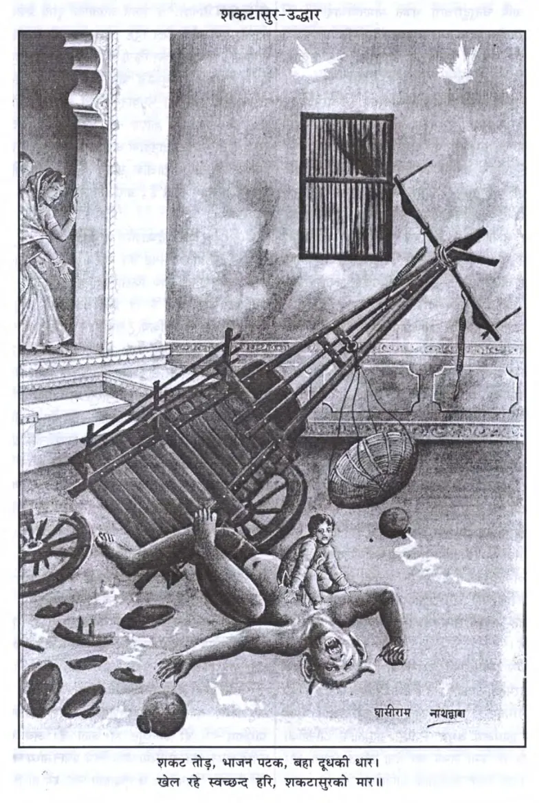
अपि चेत्सुदुराचारो भजते मामनन्यभाक्।
साधुरेव स मन्तव्यः सम्यग्व्यवसितो हि सः॥
इस श्लोकमें भगवान्ने हेतुपूर्वक स्पष्ट शब्दोंमें अनन्य भगवद्भजनकर्ता पुरुषको ही 'साधु' बताया है। साधु होनेका मुख्य हेतु सम्यग्व्यवसाय है। परमदयालु सर्वरक्षक सर्वस्वामी परमात्मा ही हमारे रक्षक हैं—इस प्रकारका दृढ़ अध्यवसाय जिसको है, वही साधु है। जो अनन्य-प्रयोजन होकर परमात्मभजनमें भोग्यताबुद्धिसे लगा हो वही साधु है। ऐसे केवल परमात्म-दर्शन-काङ्क्षी अनन्य-प्रयोजन साधुओंके परित्राणार्थ ही भगवान्का अवतार हुआ करता है। हमें यहाँ अन्य अवतारोंके विषयमें कुछ भी कहना नहीं है, श्रीकृष्ण परमात्माने अवतार लेकर अवतार-प्रयोजनको किस प्रकार सिद्ध किया, यही हम आगे दिखावेंगे।
यद्यपि 'साधवः क्षीणपापारत्युः' इस प्रमाणके अनुसार पापरहित पुरुष ही साधु कहलाने योग्य होता है, किन्तु ऐसी साधुता भगवदनन्य भक्तको आप-से-आप प्राप्त हो जाती है। यह बात स्वयं भगवान्ने ही कही है—
'क्षिप्रं भवति धर्मात्मा शश्वच्छान्तिं निगच्छति'
अर्थात् भगवदनन्यभजनके प्रभावसे उसके समस्त पाप नष्ट हो जाते हैं और वह धर्मात्मा बन जाता है। भगवद्भजनका यह प्रभाव है।
यथाग्निरुद्धतशिखः कक्षं दहति सानिलः।
तथा चित्तस्थितो विष्णुर्योगिनां सर्वकिल्बिषम्॥
अर्थात् जिनके हृदयमें भगवान्का वास है उनके समस्त किल्बिष उसी प्रकार दग्ध हो जाते हैं, जैसे प्रज्वलित अग्निके सम्बन्धसे सूखी घासका ढेर भस्म हो जाता है।
ऐसे साधुओंकी दर्शनापेक्षाओंको पूर्ण करनेके लिये परमात्मा अवतार लेते हैं। जब साधुओंके इष्टपूरणके लिये परमात्माको अवतार लेना पड़ा, तब उन्होंने 'एका क्रिया द्वॺर्थकरी बभूव' न्यायसे साधुओंके अनिष्टोंका निवारण भी उसी समय कर देना उचित समझा और किया। इस प्रकार साधुओंके अनिष्टोंका निवारण करना ही 'दुष्कृतां विनाश'के रूपमें अवतारका दूसरा प्रयोजन बताया गया है। जिन दुष्ट असुर-राक्षसोंका संहार परमात्माने अवतार लेकर किया था, उसकी आवश्यकता, केवल दुष्कृतोंके साधुओंके प्रति अनिष्टाचरणके कारण ही आ पड़ी। अन्यथा भगवान्के लिये असुर राक्षसोंके संहार करनेका कोई कारण नहीं बताया जा सकता। परमात्मा तो 'देवानां दानवानां च सामान्यमधिदैवतम्' इस प्रमाणके अनुसार देवताओंके समान ही असुर राक्षसोंके साथ भी सम्बन्ध रखते हैं। खास श्रीकृष्ण भगवान्की ही यह उक्ति—
न मे द्वेष्योऽस्ति न प्रियः
—इस बातको स्पष्ट कर देती है कि परमात्माको संसारी जीवमात्रके साथ किसी प्रकारका द्वेष नहीं है। यदि यह बात सत्य है तो फिर परमात्माने असुर-राक्षसोंका संहार क्यों किया? यह प्रश्न उपस्थित होगा। इसका केवल एक ही उत्तर है कि परमात्माने उन असुर-राक्षसोंका संहार साधुओंके प्रति उनका अनिष्टाचरण होनेसे साधुओंके अनिष्टोंका दूर करना आवश्यक होनेसे ही किया। खास उन असुर-राक्षसोंके साथ द्वेष करनेका कारण न होनेपर भी, अपने अनन्यभक्त साधुजनोंके प्रति अनिष्टाचरण करनेके कारण भक्तोंके द्वेषियों को अपना ही द्वेषी समझकर परमात्माने उनका संहार किया। यह बात श्रीकृष्ण भगवान्के उस वचनसे स्पष्ट हो जाती है, जो कि उन्होंने दुर्योधनके प्रति कहा था—
द्विषदन्नं न भोक्तव्यं द्विषन्नं नैव भोजयेत्।
पाण्डवान्द्विषसे राजन्मम प्राणा हि पाण्डवाः॥
यस्तान्द्वेष्टि स मां द्वेष्टि यस्ताननु स मामनु।
अर्थात् शत्रुका अन्न भोजन न करना चाहिये, तुम हमारे प्राणसम पाण्डवोंके साथ द्वेष करते हो, अतएव हमारे शत्रु हो।
इस प्रकार असुर-राक्षसादि दुष्कृतोंका संहार भी साधुपरित्राणान्तर्गत अनिष्टनिवारणरूप होकर 'परित्राणाय साधूनाम्'में ही अन्तर्भूत हो जाता है। अब रहा धर्मसंस्थापन, वह तो परमात्माके लिये प्रयत्नसाध्य कार्य नहीं है। वह 'विनाशाय च दुष्कृताम्' से स्वयं ही सिद्ध हो जाता है। जगतीतलमें धार्मिक लोग धर्मानुष्ठान करते थे, असुर-राक्षसोंने उसमें विघ्न उपस्थित किया, इससे धर्मकी ग्लानि उत्पन्न हुई। जब परमात्माने उन दुष्टोंका संहार कर दिया तब धर्मानुष्ठान पूर्ववत् चलने लगा। यही धर्म-स्थापन है। इसके लिये परमात्माको स्वतन्त्र प्रयत्न करनेकी आवश्यकता ही नहीं रह जाती। अतएव हमारा कहना है कि परमात्माके अवतारका मुख्य प्रयोजन एक साधु-परित्राण ही है।
जब-जब भगवान्का जो-जो अवतार हुआ तब-तब साधुओंके ऊपर आई हुई आपत्तियोंका दूरीकरण ही उसके कारणरूपसे इतिहास-पुराणोंमें निर्दिष्ट हुआ है।
ऐसे साधु-परित्राणार्थ अवतारोंमें श्रीकृष्णावतार मुख्य है। अतः उनके विषयमें कहा गया है कि—
कृष्णस्तु भगवान् स्वयम्
अर्थात् अन्य अवतार तो परमात्माके अंशावतार हैं, श्रीकृष्ण साक्षात् भगवान् ही हैं। यानी पूर्णावतार हैं। भारतवर्षमें यह बात सुप्रसिद्ध है कि अन्यान्य अंशावतार अपूर्णावतार हैं, श्रीकृष्ण पूर्णावतार हैं। अवतारोंमें अंशावतार और पूर्णावतारका भेद किस प्रकार घटित हो सकता है, इसपर बहुत कम लोगोंने विचार किया है। अखण्डैकरस निरवयव परमात्माके अंश कैसे हो सकते हैं? अंश तो उस वस्तुका होता है जो अनेक घटकावयवसमुदायरूप हो।
'पादस्तुरीयभागस्यादंशभागौ तु वण्टके।'
अमरकोषके इस श्लोकमें 'अंश' शब्द भाग-शब्दके पर्यायरूपसे कहा गया है। दशांश, षोडशांश आदि शब्द सुप्रसिद्ध हैं। तब हमें यह विचारना चाहिये कि उस निरंश निरवयव अखण्ड परमात्माके अंश कहाँसे आये, और अंशावतार, पूर्णावतार व्यवहारका समन्वय कैसे हो?
'कृष्णस्तु भगवान् स्वयम्'के पूर्व 'एते चांशकलाः प्रोक्ताः' यह पाद है, उसमें 'अंश' शब्द आया है। यह अंश ईश्वरस्वरूपके भागोंको लेकर नहीं, किन्तु उनके गुणोंके भागोंको लेकर है, ऐसा माननेसे कथञ्चित् समाधान हो सकता है। भगवान् शब्द 'भगोऽस्यास्तीति' इस प्रकार बनता है, 'भग' शब्दका अर्थ है 'ज्ञान-शक्त्यादि षाड्गुण्य'।
ज्ञानशक्तिबलैश्वर्यवीर्यतेजांस्यशेषतः।
भगवच्छब्दवाच्यानि विना हेयैर्गुणादिभिः॥
विष्णुपुराणके इस वचनके अनुसार ज्ञान, शक्ति, बल, ऐश्वर्य, वीर्य और तेज ये छः गुण जिनमें अशेषतः- पूर्णतया हों, उन्हें भगवान् कहा जाता है। इन षड्गुणोंसे परिपूर्ण परमात्माको छोड़कर दूसरा कोई नहीं है। इसलिये अन्यत्र कहीं 'भगवान्' शब्दका प्रयोग किया जाय तो वह गौण है। यह बात भी विष्णपुराणमें ही बतायी गयी है।
तत्र पूज्यपदार्थोक्तिपरिभाषासमन्वितः।
शब्दोऽयं नोपचारेण त्वन्यत्र ह्युपचारतः॥
अर्थात् भगवच्छब्दके दो अर्थ हैं, एक योगार्थ और दूसरा पारिभाषिकार्थ। जब भगवान् शब्दका प्रयोग परमात्मामें हो तो वह मुख्य प्रयोग है, क्योंकि उसमें दोनों ही अर्थ घटित होते हैं, और जब अन्यत्र किसी व्यक्तिविशेषमें प्रयोग हो, जैसे कि "भगवान् पतञ्जलि' 'भगवान् व्यास' इत्यादि, तो वह सब औपचारिक है, क्योंकि उन व्यक्तियोंमें षाड्गुण्यपूर्ति नहीं है।
परमात्मा षाड्गुण्यपूर्ण हैं, अतएव उनके अवतारोंमें भी षाड्गुण्यपूर्ति होनी ही चाहिये। क्योंकि भगवान् श्रीकृष्णने ही कहा है—
प्रकृतिं स्वामधिष्ठाय सम्भवाम्यात्ममायया'
अर्थात् निज ईश्वरीय स्वभावके साथ ही मैं अवतार लेता हूँ। यहाँ 'प्रकृति' शब्द स्वभावपर है। 'प्रकृति स्वाम्' स्वीयां प्रकृतिम्, ऐश्वरं, भावम्, अधिष्ठाय सम्भवामि' तब परमात्माके मूल स्वरूप और अवतारोंमें गुणपूर्तिके विषयमें कोई भेद नहीं, किन्तु गुण-प्रकाशनमें भेद है। इसी भेदको लेकर अंशावतार और पूर्णावतारका व्यवहार प्रवृत्त होता है। अर्थात् परमात्मा किसी अवतारमें किसी गुणका प्रकाशन करते हैं और किसीमें किसीका। आवश्यकतानुसार न्यूनाधिक गुणोंका प्रकाशन अवतारोंमें हुआ करता है। सभी अवतारोंमें सभी गुणोंका सद्भाव होनेपर भी कार्यवशात् किसी गुणका प्रकाशन होता है और शेष गुण अनुन्मिषित रहते हैं। जैसे कि शास्त्रोंमें परमात्माके वासुदेव, सङ्कर्षणादि व्यूहचतुष्टयके विषयमें गुणोन्मेषानुन्मेष बताया गया है, वैसे ही अन्य अवतारोंके विषयमें भी समझना चाहिये।
अहिर्बुध्न्यसंहितामें कहा है—
तत्र ज्ञानबलद्वन्द्वाद्रूपं साकर्षणं विदुः।
ऐश्वर्यवीर्यसम्भेदाद्रूपंप्राद्युम्नमुच्यते॥
शक्तितेजस्समुत्कर्षादानिरुद्धी तनुर्हरेः।
एते शक्तिमया व्यूहा गुणोन्मेषस्वलक्षणाः॥
अर्थात् सङ्कर्षणमें ज्ञान और बलका उन्मेष रहता है। प्रद्युम्नमें ऐश्वर्य और वीर्यका उन्मेष रहता है, और अनिरुद्धमें शक्ति और तेजका उन्मेष रहता है। जिस रूपमें जिन दो गुणोंका उन्मेष होता है, उनको छोड़कर बाकी चार गुणोंका भी उसमें सद्भाव है, यह बात भी कही गयी है—
षाड्गुण्यविग्रहा देवाः पुरुषाः पुष्करेक्षणाः।
तत्र तत्रावशिष्टं यद्गुणानां द्वियुगं मुने।
अनुवृतिं भजत्येव तत्र तत्र यथातथम्।
अर्थात् परमात्माके चारों व्यूह षाड्गुण्यपूर्ण हैं। किन्तु दो-दो गुण विशिष्टरूपसे एक-एक व्यूहमें उन्मिषित रहते हैं। बाकी चार-चार गुणोंकी भी अनुवृत्ति रहती ही है। जो बात व्यूहावतारोंके विषयमें कही गयी है वही बात विभवावतारोंके विषयमें भी मान लेनेसे अंशावतारत्व पूर्णावतारत्व-व्यवहारकी उपपत्ति हो जाती है।
श्रीकृष्णावतार पूर्णावतार है। अर्थात् इस अवतारमें षड्गुणोंका पूर्ण उन्मेष है। अन्य अवतारोंमें यह बात नहीं है, अतएव वे अंशावतार हैं।
'भगवत्' शब्दके अर्थभूत छः गुण—ज्ञान, शक्ति, बल, ऐश्वर्य, वीर्य और तेज ये हैं। ज्ञान-सर्ववस्तुसाक्षात्कारको कहते हैं। शक्ति कहते हैं अघटित घटना-सामर्थ्यको। बल कहते हैं बिना परिश्रम सर्वधारण-क्षमताको। स्वेतर समस्त नियमन-कर्तृत्व ऐश्वर्य है। सर्व-जगत् कारण होनेपर भी विकाररहित होनेको वीर्य कहते हैं। और पराविभवसामर्थ्यको तेज कहते हैं। ये इन शब्दोंके विशेषार्थ हैं। श्रीकृष्णावतारमें इन सब गुणोंका उन्मेष था, अर्थात् उस अवतारमें इन सब गुणोंका एक साथ प्रकाशन हुआ था। इसका प्रमाण श्रीकृष्णचरित्र है। श्रीकृष्ण भगवान्का भूत-भविष्यत्सकलपदार्थज्ञान भगवद्गीतामें स्पष्ट मालूम पड़ रहा है। 'नत्वेवाहं जातु नासम्' ‘इमं विवस्वते योगम्' इत्यादि श्लोक इसमें प्रमाण हैं। गुरु-पुत्रको ला देना, मरे हुए ब्राह्मणपुत्रोंको जीते ला देना इत्यादि उनकी शक्तिका प्रमाण हैं। गोवर्धनधारण उनके बलका परिचायक है। अगणित यादवजन-समुदायको आज्ञामें रखना ऐश्वर्यके एक देशका परिचायक है। स्वयं अनेक गो-गोप-बालक बननेपर भी निर्विकार रहना उनके वीर्यका परिचायक है। इन्द्रादि देवता उनके सामने पहुँचकर निस्तेज हो जाते थे, यों बड़े-बड़े तेजस्वियोंका उनके सामने निस्तेज हो जाना उनके तेजका परिचायक है। इसी प्रकार उनके षाड्गुण्य-प्रकाशनके अनेक उदाहरण दिये जा सकते हैं। इस प्रकार और किसी अवतारमें षाड्गुण्यका पूर्ण प्रकाश न हो पाया था, अतएव श्रीकृष्णका पूर्णावतार कहलाना सर्वथा उचित ही है।
श्रीकृष्ण-नामकी सार्थकता।
इस अवतारका नाम श्रीकृष्ण है। 'कृष्ण' शब्दकी व्युत्पत्ति चाहे जैसी हो, निर्वचनके द्वारा जो अर्थ जाना जाता है, वही मान्य है॥
कृषिर्भूवाचकशब्दो णश्च निर्वृतिवाचकः।
विष्णुस्तद्भवयोगाच्च कृष्णो भवति सात्वतः॥
इस निर्वचनसे 'कृष्ण' शब्दका मुख्य अर्थ भूमिको सुख पहुँचानेवाला होता है। यद्यपि इसी निर्वचनको आधार मानते हुए कुछ व्याख्याकारोंने अपनी इच्छानुसार अर्थान्तर भी किया है, किन्तु हमारी रायमें भूमिको सुख पहुँचानेवाला' यही अर्थ ठीक है। भूमि शब्दसे खास भूमिदेवी ली जाय तो देवकीपुत्र वासुदेवमें कृष्णत्वकी उपपत्ति भागवत-कथानुसार स्पष्ट है। भूमि-देवीकी प्रार्थनाका ही फल है श्रीकृष्णावतार। यह बात भागवतसे सिद्ध होती है।
भूमिर्दृप्तनृपव्याजदैत्यानीकशतायुतैः।
आक्रान्ता भूरि भारेण ब्रह्माणं शरणं ययौ॥
यहाँसे श्रीकृष्ण-चरितका प्रारम्भ होता है। असुरराक्षस, दुष्ट-क्षत्रिय-पीड़ित भूलोकवासी जनसमुदायका दुःख श्रीकृष्ण भगवान्ने उन दुष्टोंका संहार करके दूर किया है, अतएव 'भूमि' शब्दसे भूलोकवासियोंको लेनेपर भी कृष्णशब्दार्थकी उपपत्ति हो जाती है।
परमात्माके साक्षात् पूर्णावतार श्रीकृष्ण भगवान्ने भूलोकमें अवतार लेकर असंख्य साधुजनोंका इष्टानिष्ट प्राप्ति-परिहारके द्वारा परित्राण कर अवतारप्रयोजन सिद्ध किया है, यह श्रीकृष्णचरितसे स्पष्ट है। केवल षोडश सहस्र गोपिकाएँ ही नहीं, द्वारकावासी असंख्य प्रेमीजनोंको भगवद्दर्शन-स्पर्शनालापादि द्वारा जो सन्तोष पहुँचा है, वह साधुपरित्राणका एक छोटा उदाहरण है। ये गोपिकाएँ कौन थीं? उनके पूर्व-जन्म-वृत्तान्तका विचार करनेपर यह स्पष्ट हो जाता है कि वे सब भगवदनुभवकामी साधुजन ही थे। अक्रूर-मालाकार आदि भक्त-वृन्द, एवं असंख्य ऋषि-मुनिजन, जिनको भगवान्ने दर्शन आदिसे सुखी किया है, वे सब साधु नहीं तो और कौन हैं? हमलोगोंको श्रीकृष्णावतारके द्वारा किन-किन साधुओंका उद्धार हुआ था, इसका पूरा ज्ञान ही नहीं है। भागवत आदिके द्वारा जो मालूम होता है उसीसे सन्तुष्ट रहना पड़ता है, परन्तु इन पुराणोंमें जिनका उल्लेख हुआ है, उनके सिवा भी हजारों साधुओंका परित्राण हुआ होगा। इसमें सन्देह ही नहीं। श्रीकृष्णावतारके द्वारा नृग आदि अनेक भक्तोंका उद्धार हुआ है, यह सबको मालूम ही है। अतएव पूर्णावतार श्रीकृष्णावतार भगवदवतारोंमें मुख्य स्थान रखता है।
अतीत संगति
(लेखक-साहित्यरत्न पं० श्रीअयोध्यासिंहजी उपाध्याय 'हरिऔध')
था भव-प्रातःकाल राग-रंजित था नभ-तल।
लोहित-बसना ललित-अंक था लोक-समुज्वल।
था अनुभूति-विकास प्रकृति-मानसमें होता।
धीरे-धीरे तिमिर-पुंज था तामस खोता॥ १॥
क्षितिज-अंकसे निकल विभाके बहु-बिध गोले।
केलि-निरत थे विविध-कल्पना-कुसुमोको ले।
मंथर-गतिसे पवन-प्रगति थी विकसित होती।
नव-जीवनका बीज नवल-निधिमें थी बोती॥ २॥
सलिल-निलय-संसार लहरियों द्वारा चुम्बित।
अरुण, असित, सित, विपुल-विम्बसे था प्रतिविम्बित॥
किसी अकल्पित-दिशामध्य कर महा-उँजाला।
एक अलौकिक-तम-तमारि था उगनेवाला॥ ३॥
इसी समय इस सलिल-राशिमें महा-मनोहर।
एक-अयुत-दल-कमल हुआ भव-लोचन-गोचर।
उसकी परमिति किसी कालमें गई न मापी।
था उसका विस्तार अमित-जगतीतल व्यापी॥ ४॥
विश्व-महान-विभूति-भूति थी उसपर बिलसी।
जिसमें विविध-विधानकी विवुधता थी निवसी।
था जिस काल असंख्य लोक लीला-मय बनता।
भव-कमनीय-वितान जिस समय विभु था तनता॥ ५॥
उसी समय संसार-मयी-नीरवता टूटी।
महा-कंठका गान हुए रव-जड़ता छूटी।
उससे हुआ दिगन्त ध्वनित नभ-निधि लहराया।
सकल लोकके स्वर-समूहमें जीवन आया॥ ६॥
गिरा हुई अवतीर्ण अनाहत-नाद सुनाया।
करकी वीणा बजे विमोहित विश्व दिखाया।
लोकोत्तर-झंकार अखिल लोकोंमें फैली।
विविध-कंठ-आधार बनी अवधारित शैली॥ ७॥
जो ज्वलन्त बहु-पिंड व्योम-तलमें थे फिरते।
जहाँ तहाँ जो विविध-रंगके घन थे घिरते।
महा-उदधिमें तरल-तरंगें जो उठ पातीं।
सरितायें जो मंद-मंद बहती दिखलातीं॥ ८॥
जितने थे सर, स्रोत, रहे जो झरने झरते।
अपर-तरु-लता आदि जो विविध-रव थे करते।
उनमें भी थी बजी बीन ही झंकृत होती।
जिससे जागी जग-विकासकी ममता सोती॥ ९॥
वेद-ध्वनिसे ध्वनित हुआ भव-मण्डल सारा।
लोक-लोकमें बही मधुर-स्वर-सप्तक-धारा।
श्रवण रसायन बनी मुग्ध-मानसमें निवसी।
विविध राग-रागिनी मध्य वह बहु-विध विलसी॥ १०॥
उससे होकर मत्त गान वह शिवने गाया।
जिसने सारे विवुध-वृन्दको चकित बनाया।
उसकी मंजुल-गूंज भूरि-भुवनोंमें गूँजी।
बनी विश्वके विविध-धर्म-भावोंकी पूँजी॥ ११॥
उसके रससे सिंची लोक-भाषा लतिकायें।
जिसमें विकसी कलित-ललित-सुरभित-कलिकायें।
वह सु-कंठता उसे साध नारदने पाई।
जिसने सुर-पुर सदन सदनमें सुधा बहाई॥ १२॥
उससे भर-भर मिले छलकते मानस प्याले।
जिनको पी गंधर्व बने मधुता मतवाले।
ऐसा अनुपम गान अप्सराओंने गाया।
जिसने सारे स्वर-समूहको सरस बनाया॥ १३॥
ले ले उसका स्वाद किन्नरोंने रस पाया।
सुना मनोहर-तान वाद्य बहु-मंजु बजाया।
उसकी ही कमनीय-कला मुरलीने पाई।
मनमोहनने जिसे महा-मधु-मयी बनाई॥ १४॥
जब वह मुरली बड़े मधुर-स्वरसे बजती थी।
प्रकृति उस समय दिव्य-साजद्वारा सजती थी।
गिरि हो जाते द्रवित पादपावलि छबि पाती।
रस-धारा थी लता-बेलियोंपर बह जाती॥ १५॥
खग-मृग बनते मत्त नाचते मोर दिखाते।
विकसित होते फूल, फल मधुर-रस टपकाते।
रुकता सलिल-प्रवाह कलित कालिन्दी होती।
बृन्दाबनकी भूमि मलिनतायें थी खोती॥ १६॥
होता हृदय विकास मुग्ध मानस बन जाते।
साधक सिद्ध पुनीत-साधनाके फल पाते।
साहस-हीन मलीन जनोंमें जीवन आता।
पातक होता दूर मुक्ति-पथ मानव पाता॥ १७॥
क्या न कभी फिर मधुर-मुरलिका बज पावेगी।
कान-कानमें सरस-सुधा फिर टपकावेगी।
जो जन जनमें भर विनोद रस बरसावेगा।
वह अतीत-संगीत क्या न गाया जावेगा॥ १८॥
कृष्णस्तु भगवान् स्वयम्
(ले०—श्रीमन्माध्वसम्प्रदायाचार्य दार्शनिकसार्वभौम साहित्यदर्शनाद्याचार्य, तर्करत्न-न्यायरत्न, गोस्वामी श्रीदामोदरजी शास्त्री)
तुण्डे ताण्डविनीरितिं वितनुते
तुण्डावली लब्धये
कर्णक्राडकडम्बिनी कलयते
कर्णार्बुदेभ्यः स्पृहाम्।
चेतःप्राङ्गणसङ्गिनी विजयते
सर्वेन्द्रियाणां गणं
नो जाने घटिता कियद्भिरमृतैः
कृष्णेति वर्णद्वयी॥
कल्याणके प्रिय पाठक-वृन्द!
'आप कल्याणमयकी कल्याणमयी कृपाके भाजन हैं; सुतरां कल्याणप्रिय हैं अतएव कल्याण-पक्षपाती भी अवश्य ही हैं; बस, इस सम्बन्धसे कल्याणरूपी स्तवक (गुच्छ)-में सजाये जानेवाले इस कल्याण-पुष्पको भी अपनाइये। सम्भव है कि जलसिञ्चनादि "आवश्यक उपचारोंकी कमीसे इसमें कल्याणरूप उत्तम सौरभ न होनेके कारण यह आपके मनोमिलिन्दको न लुभा सके; परन्तु स्तवकके सहारे आपके कृपाकटाक्षको तो यह बरबस प्राप्त कर ही लेगा; अस्तु, इतना भी इसके लिये क्या कम है? इसी भरोसेपर दूसरी बार प्रयास करनेका साहस होता है।
आपके इस कल्याणपुष्पके भीतर निरतिशयकल्याणस्वरूप मकरन्द क्या है? 'कृष्णस्तु भगवान् स्वयम्' यदि इस मकरन्दका भलीभाँति आस्वादन करनेकी उत्कण्ठा हो तो थोड़ा-सा धैर्य धारण करें।
इस निबन्धके सम्बन्धमें मुझे चार आवश्यक बातें कहनी हैं। पहली बात तो यह है कि किसी भी प्रतिपाद्य विषयकी सिद्धि प्रमाणोंद्वारा होती है। यही शास्त्रीय विवेचनकी प्राचीन पद्धति है। शास्त्रोंमें मुख्यतया तीन प्रमाण माने गये हैं—प्रत्यक्ष, अनुमान और शब्द। अन्यान्य प्रमाणोंका इन्हीं तीन प्रमाणोंमें अन्तर्भाव होनेसे इन्हीं तीन प्रमाणोंका प्रस्तुत निबन्धमें प्रयोग किया जावेगा। यदि किसीको इन तीन प्रमाणोंमें भी कोई प्रमाण मान्य न हो तो दूसरी बात है। इस विषयमें सङ्केत मिलनेपर उनकी शङ्काओंका भिन्नरूपसे निवारण किया जा सकता है।
दूसरी बात यह है कि लेखका कलेवर बढ़ जायगा और उसके समझनेमें भी पाठकोंको कदाचित् कुछ कठिनता होगी, इस शङ्कासे प्रत्येक विषयके प्रमाणोंका स्पष्टरूपसे निर्देश नहीं किया गया है। किसीको जिज्ञासा होनेसे उनका निर्देश भी किया जा सकता है।
तीसरी बात यह है कि प्रकृत विवेचन किसी सम्प्रदायविशेषको लक्ष्यमें रखकर अणुमात्र भी एकदेशीय-दृष्टिसे नहीं किया गया है। इसमें प्रत्येक बात सर्वशास्त्रानुमोदित, सर्वसिद्धान्तसमन्वित एवं सार्वभौम व्यापक-दृष्टिसे लिखी जायगी। सम्भव है कि विषयको भलीभाँति हृदयङ्गम न कर सकनेके कारण किसी सज्जनको इस प्रकारकी शङ्का उत्पन्न हो। किन्तु विचारदृष्टिसे देखनेपर उन्हें वह शङ्का निर्मूल प्रतीत होगी, ऐसा मेरा अटल विश्वास है।
चौथी बात यह है कि किसी विषयका प्रतिपादन करनेके लिये चाहे वह किसी भाषामें हो, लेखकको चतुर्विध सामग्रीकी अपेक्षा होगी। वे चार सामग्रियाँ निम्नलिखित हैं—
(१) तत्वनिर्णयके लिये 'वादकथा'के रूपमें विषयका प्रतिपादन करना।*
(२) 'यत्परः शब्दः स शब्दार्थः' (अर्थात् जिस पदार्थको लक्ष्यमें रखकर किसी शब्दका प्रयोग किया जाता है वही उसका शब्दार्थ है) यह सर्वसम्मत सिद्धान्त है।**
यहाँपर इन नियमोंके लिखनेका उद्देश्य यह है कि लेखमें कदाचित् किसी प्रकारकी जिज्ञासा किसीको हो, तब उत्तर देनेके समय नियमोंका उल्लेख उचित न होता, इससे प्रथम सूचित करना प्रशस्त है।
* किसी वस्तुके विचारार्थ कथोपकथनको शास्त्रोंमें 'कथा' कहते हैं। पुराणोंकी कथा जो लोकमें प्रसिद्ध है उससे तात्पर्य नहीं है। उक्त कथा तीन प्रकारकी होती है-वाद, जल्प एवं वितण्डा; जिस कथाका फल मुख्य तत्त्व निर्णय हो उसे वाद कहते हैं।
** इसका भाव यह है कि वक्ता जिस अर्थके बोध करानेकी इच्छासे शब्दका उच्चारण करे, श्रोताको उसी अर्थका ज्ञान करना उचित है। उससे भिन्न अर्थको समझनेसे श्रोताका भ्रम माना जायगा। जैसे भोजनके समय सैंधव माँगनेसे लवण ही समझना उचित है, यहाँ उसका दूसरा अर्थ 'घोड़ा' समझना ठीक नहीं है।
(३) शास्त्र तभी प्रमाण हो सकते हैं जब उनमें 'अज्ञातार्थज्ञापकत्व' हो अर्थात् जब उनसे किसी अज्ञात वस्तुका बोध हो।*
* तात्पर्य यह है कि प्रमाण वही कहाता है जो अज्ञात विषयका सच्चा ज्ञान करावे, ज्ञातका ज्ञान कराना अनुवादका स्वरूप है, प्रमाणका नहीं।
(४) किसी निबन्ध अथवा ग्रन्थविशेषका तात्पर्य निर्णय करनेके लिये सात बातोंपर विचार करना चाहिये—उपक्रम (अर्थात् प्रारम्भ), उपसंहार (समाप्ति), अभ्यास (जो बात बार-बार दोहरायी गयी हो), अपूर्वता (कोई नयी बात, जो ग्रन्थमें कही गयी हो), फल (परिणाम), अर्थवाद (प्रशंसात्मक वाक्य) और उपपत्ति (उपपादन)।
बस, उपर्युक्त बातोंको ध्यानमें रखते हुए प्रकृत मकरन्दका आस्वादन कीजिये, क्योंकि समस्त चेतन जगत् मुख्य रसके आस्वादके लिये ही लालायित है। यह दूसरी बात है कि आस्वादके लिये चेष्टा की जाय और वह न मिले अथवा गौणरूपसे मिले। यहाँ यह भी जानना उचित है कि इसमें गौणता भी उपाधिके सम्बन्धसे ही है, वस्तुतः नहीं; क्योंकि आनन्दमें गौणता तभी होती है जब उसमें दुःख मिला हुआ रहता है और केवल आनन्दरूप आत्माका जड़प्रकृतिके साथ सम्बन्ध होनेसे ही दुःखके साथ सम्बन्ध होता है। कारण यह है कि जड़ वस्तु सभी परिवर्तनशील होती है और परिवर्तन सदा अनुकूल ही हो यह बात नहीं है। उसमें अनिष्टकी भी सम्भावना रहती ही है। अतः यावन्मात्र चेतन भूतोंकी प्रवृत्ति स्वभावसे ही दुःखके सम्बन्धसे बचानेवाले भावोंकी ओर ही होती है। इसीसे मुख्य आनन्दकी सत्ताका अनुमान होता है। इस विषयमें सबको भ्रान्त ठहराना अनुभवका अपमान करना है, जिसका परिणाम निग्रह है।
प्रमाणोंके द्वारा धर्मविशिष्ट धर्मीका ही ग्रहण होता है। इस सिद्धान्तके अनुसार चेतन-भूतोंकी उपर्युक्त प्रवृत्तिसे नित्यता-विशिष्ट आनन्दकी सत्ताका ही अनुमान होगा। उस आनन्दकी अनुपलब्धि जो अनादिकालसे अज्ञानरूपी आवरणके कारण है, सुतरां उस आवरणकी निवृत्ति ही शेष कर्तव्य ठहरता है। यह उपर्युक्त आवरण मायिक अथवा प्राकृत अर्थात् माया अथवा प्रकृतिका कार्य है। वह मूलकारण प्रकृति अथवा माया ईश्वरके अनन्त एवं अपरिमित वैभवका चतुर्थांश है। ईश्वरतत्त्व सर्वज्ञ एवं सर्वशक्ति सम्पन्न है, यह बात अनुमानादि प्रमाणोंसे निर्विवाद सिद्ध है और उस मायाजन्य आवरणकी निवृत्ति ईश्वरकी प्रपत्तिसे ही होती है* अन्यथा नहीं।
* मामेव ये प्रपद्यन्ते मायामेतां तरन्ति ते। श्रीमद्भगवद्गीता
"ये ईश्वर सच्चिदानन्दस्वरूप हैं। उन्हें निराकाररूपमें ब्रह्म कहते हैं और सच्चिदानन्दघन विग्रह धारण करनेपर वे ही भगवान् कहे जाते हैं। यद्यपि भगवत्-तत्त्व एक ही है तथापि प्रयोजनवश अर्थात् जीवोंके प्रति अहैतुकी करुणासे प्रेरित हो पाद-विभूतिमें प्रकट होना ही उनका अवतार है।" इसके स्वयंरूप, प्रकाश, विलास, व्यूह, गुणावतार, लीलावतार, मन्वन्तरावतार, युगावतार, प्राभव, वैभव, अंश, कला प्रभृति अनेक भेद हैं। जैसे मनभर बोझ उठानेकी शक्तिवाला मनुष्य सेर-छटाँक अथवा तोले आदि परिमाणोंकी वस्तुओंके उठानेमें अपनी पूर्ण शक्तिका प्रयोग अनावश्यक समझकर नहीं करता, वैसे ही नित्य असीम-शक्ति-सम्पन्न ईश्वर भी प्रयोजनके अनुसार ही अपनी शक्तिका प्रकाश करते हैं। अल्पज्ञ जीव प्रकाशके तारतम्यसे प्रकाशके तत्त्वमें भी न्यूनाधिकताकी कल्पना कर लेते हैं, जो सर्वथा अनुचित है।
एवंगुणविशिष्ट ईश्वरकी प्रपत्ति (शरणागति)के स्थूल रूपसे दो साधन बतलाये गये हैं। पहला प्राकृत-सम्बन्धनिवृत्ति भावनामय है, अर्थात् इस साधनमें प्रकृतिके सम्बन्धकी निवृत्तिकी भावना की जाती है। साधक यह भावना करता है कि उसका साध्य (निर्गुण परमात्मा) प्रकृतिके सम्बन्धसे सर्वथा रहित है। दूसरा अप्राकृतगुणविभूति भावनामय है, इस साधनमें साधक अप्राकृत अर्थात् असाधारण गुणोंसे विभूषित सगुण परमात्माकी शरणागतिकी भावना करता है। ईश्वर भी अपनी सत्यसन्धताके नियमके अनुसार निर्गुण-चिन्तकको प्राकृतगुण-शून्य स्वरूपकी ओर आकृष्ट करते हैं और सगुणचिन्तकको अप्राकृत-गुण-विशिष्ट स्वरूपकी प्राप्तिके साधनमें प्रवृत्त करते हैं।
उक्त सगुण-स्वरूपमें निर्गुणका प्रकाश नियत है, किन्तु निर्गुणमें सगुणका प्रकाश नियत नहीं है। अब रही यह बात कि किसी साधककी रुचि निर्गुणकी ओर होती है, किसीकी सगुणकी ओर। यह रुचि-भेद वासनाके अनुसार होता है। अनादि-परम्पराधीन संस्कारोंको ही वासना कहते हैं अथवा दूसरे शब्दोंमें किये हुए कर्मोंकी अत्यन्त सूक्ष्मावस्था'का ही नाम वासना है। इन वासनाओंका प्रत्यक्ष ज्ञान किसी बहुत ऊँचे साधकको ही हो सकता है, साधारण मनुष्योंको नहीं हो सकता। हाँ, फलके द्वारा वासनाओंका अनुमान सब कोई कर सकते हैं। यही वासना साधकको अपने अनुकूल साधनमें प्रवृत्त कराती है। पहले साधनका चरम फल ब्रह्मसायुज्य अर्थात् असीम ज्योतिमें अणु-ज्योतिका मिल जाना है। दूसरे साधनका चरम फल ज्योतिष्मान् भगवान्में अहैतुकी प्रीतिका होना ही है।
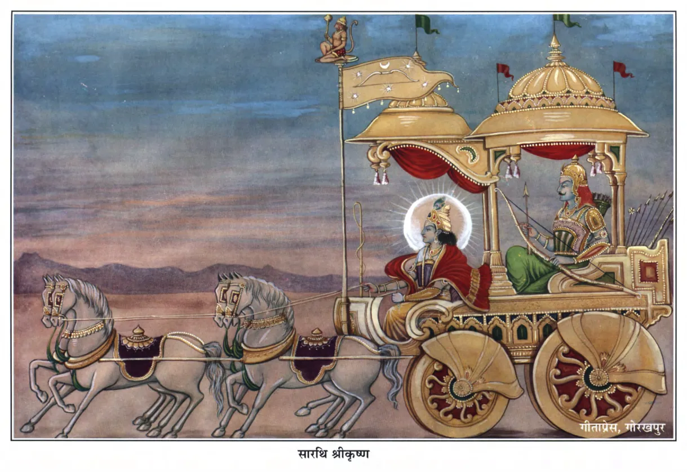
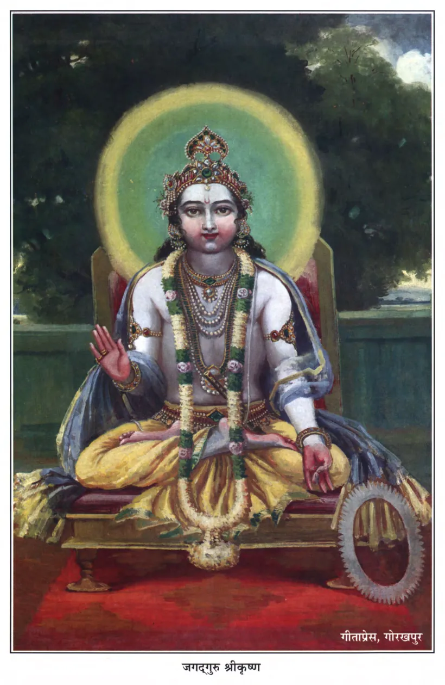
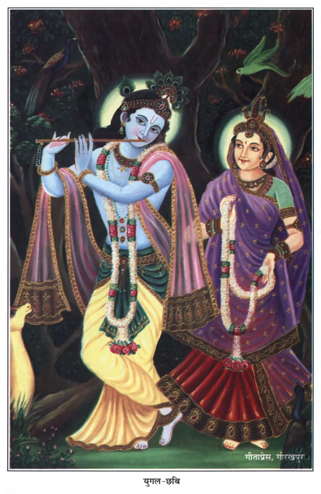
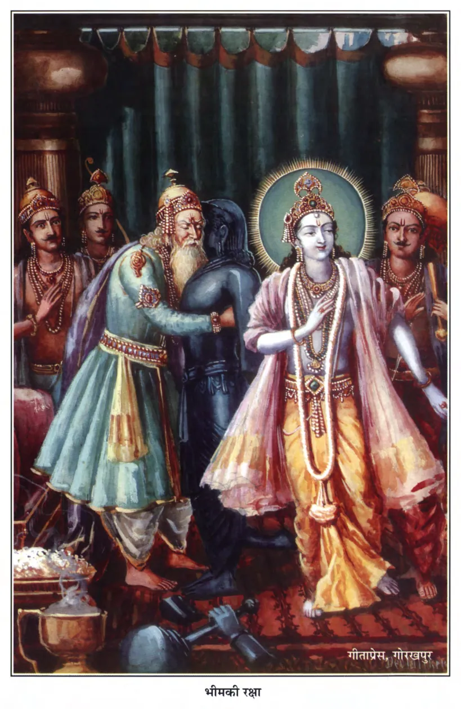
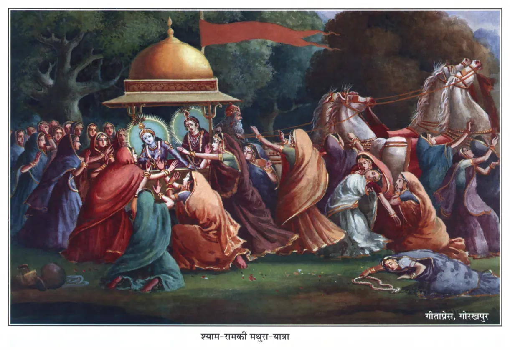
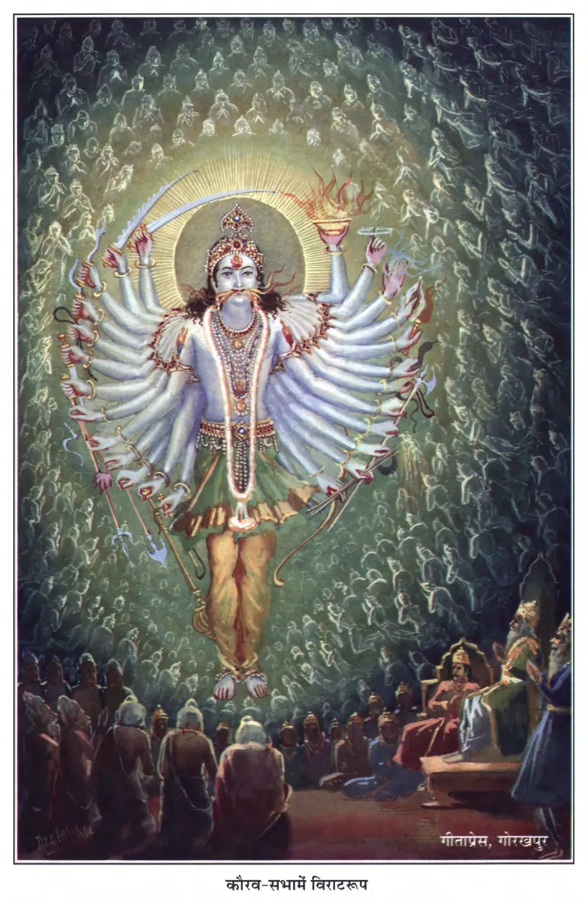
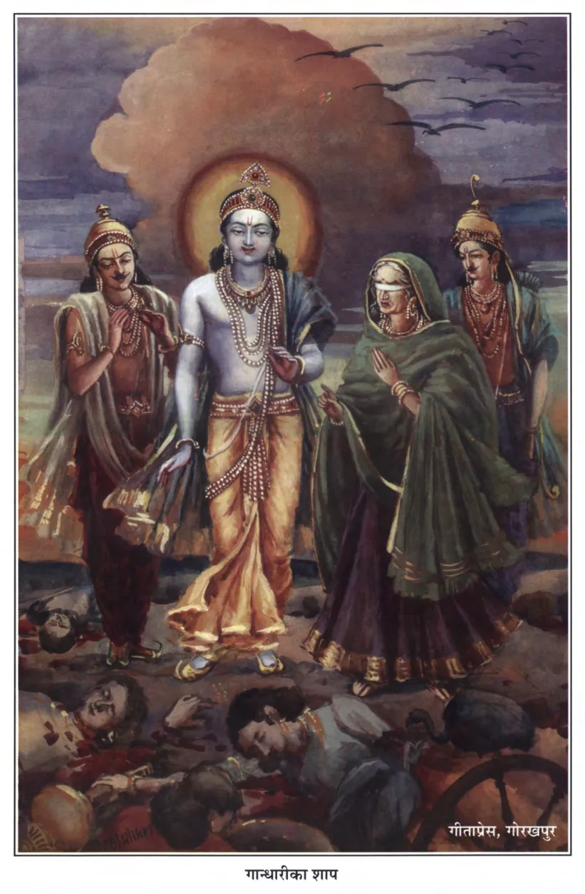
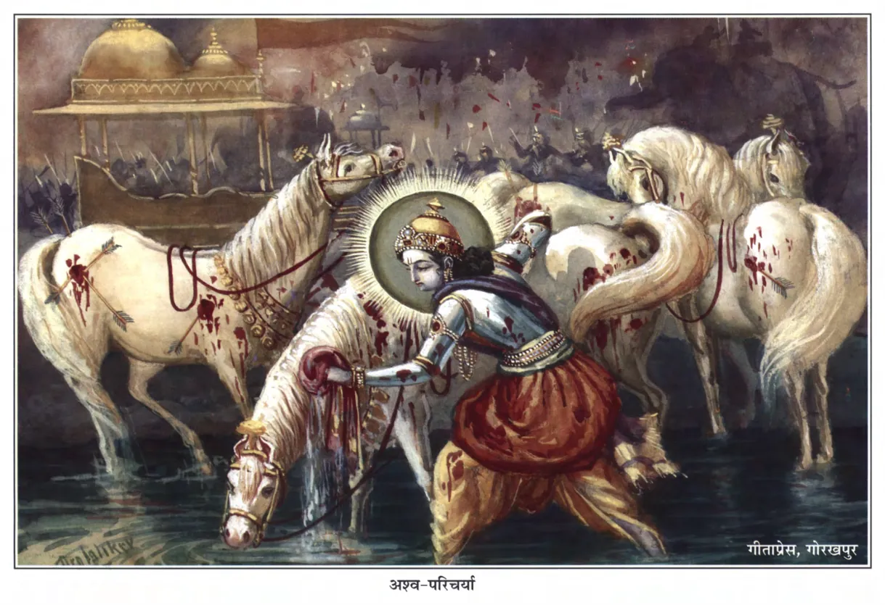
यहाँ 'भगवत्' शब्दका अर्थ भी जानना आवश्यक है। ऐश्वर्य, वीर्य, यश, श्री, ज्ञान तथा वैराग्य—इन छः गुणोंकी समष्टि अर्थात् समुदायकी शास्त्रोंमें 'भग' संज्ञा है। इनमें सर्ववशीकारिता अर्थात् सबको वशमें करनेके सामर्थ्यका ही नाम 'ऐश्वर्य' है; मन्त्रादिके प्रभावके समान प्रभावको 'वीर्य' कहते हैं ; वाणी, मन एवं शरीरके सद्गुण विशिष्ट होनेकी प्रसिद्धिको ही 'यश' कहा है; सर्वविध सम्पत्तिका नाम ही 'श्री' है; सर्वज्ञताका नाम ही 'ज्ञान' है तथा संसारके सारे पदार्थोंमें अनासक्तिकी ही 'वैराग्य' संज्ञा है। उपर्युक्त छहों गुण जिनमें सर्वथा और सर्वदा पूर्णरूपसे विद्यमान रहें उन्हींका नाम 'भगवान्' है।
यद्यपि भगवत्ता अपरिच्छेद्य अर्थात् असीम वस्तु है;तथापि समझने-समझानेके लिये उसके भीतर दो प्रकारकी गुणराशि मानी गयी है; एक ऐश्वर्यपक्षीय; दूसरी माधुर्यपक्षीय स्थूलरूपसे दोनोंका विवरण इस प्रकार है। जिसके ज्ञानसे गौरव, सङ्कोच, मर्यादा, भय प्रभृतिका उदय हो, उसे ऐश्वर्य समझना चाहिये। एवं जिसके ज्ञानसे चित्तमें आकर्षण, स्नेह, दर्शनोत्कण्ठा आदि उदित हों; उसे माधुर्य मानना चाहिये।
प्रकारान्तरसे स्वयं भगवान्के चौसठ गुण शास्त्रोंमें कहे गये हैं। इनमें पचासतक तो उच्च जीवोंमें भी भगवत्कृपासे कदाचित् प्रकाशित होते हैं अथवा हो सकते हैं। इनके अतिरिक्त पाँच गुण और हैं जो रुद्रादिमें प्रकट होते हैं। दूसरे पाँच श्रीपतितकमें आविर्भूत हैं, परन्तु शेष चार अर्थात् लीलाधिक्य, प्रेमसे प्रियाधिक्य; रूपमाधुरीविशेष और वेणुमाधुरी; ये केवल श्रीनन्दनन्दनमें ही प्रकाश पाते हैं, अन्यत्र नहीं।
शास्त्रोंमें एक और भी प्रधान बात लक्ष्य करनेयोग्य है। वह यह है कि जीवतत्त्वने यदि मधुररसकी उपासनासे प्रभुका साक्षात्कार किया है तो वह केवल श्रीकृष्णस्वरूपमें ही, अन्यस्वरूपमें साक्षात्कारका प्रमाण नहीं है; शास्त्रोंमें इस प्रकारका उदाहरण सूक्ष्मदृष्टिसे देखनेपर केवल साधनसिद्ध, कृपासिद्ध व्रजगोपियोंका ही पाया जाता है। रामायणमें एक प्रामाणिक घटनाका उल्लेख मिलता है कि श्रीरघुनाथजीके दर्शनसे दण्डकारण्यवासी कुछ मुनिगणोंके चित्त विचलित हुए थे। उनके भावोंको समझकर भगवान्ने श्रीमुखसे इस आशयका उत्तर दिया कि साधन समाप्त होनेपर ही फललाभ हुआ करता है, अतः उनकी उस लिप्साकी पूर्ति व्रजलीलामें की गयी।
यहाँ एक शङ्का होती है कि श्रीजानकी-देवीका भी मधुररसका भाव प्रसिद्ध है। तब अन्यरूपमें इस रसके द्वारा भगवत्साक्षात्कार नहीं हुआ, यह कहना कहाँतक सङ्गत है?
इसका उत्तर स्पष्ट ही है कि श्रीजनकनन्दिनी तो ह्लादिनीशक्तिविशेष होनेसे अन्तरङ्गा हैं, सुतरां स्वरूप ही हैं, उदाहरण तो तटस्था-शक्तियोंका अर्थात् जीवोंका चाहिये। वह अन्यत्र कहीं नहीं मिलता। इन भावोंसे अवतारतत्त्वके तारतम्यपर किञ्चिन्मात्र भी लक्ष्य नहीं समझना चाहिये, प्रत्युत अवतारोंमें ऐसा तारतम्य करना तो घोर अपराध है। इसकी घोषणा उपोद्घातमें कर दी गयी है, इससे यहाँ पुनरुक्तिकी आवश्यकता नहीं। गुणप्रकाशमें तो सर्वदा सर्वथा लीलामय स्वतन्त्र प्रभुकी इच्छा ही मुख्य नियामिका है, इसमें हम जीवोंके तर्कोंकी दौड़ अनधिकारचेष्टामें ही परिगणित होगी।
अब एक बात और लिखकर यह लेख समाप्त किया जाता है। वह यह कि 'कृष्णस्तु भगवान् स्वयम्' यह वाक्य परमहंससंहिता श्रीमद्भागवतके प्रथम स्कन्धमें शौनकादि ब्रह्मर्षियोंके अवतारविषयक प्रश्नके उत्तरमें पौराणिकाचार्य सूतजीने कहा है। उक्त वाक्यके पूर्वमें कथित अवतारोंमें भी श्रीकृष्णका नाम आया है, तब अवतार और अवतारी तत्वदृष्टिसे एक होनेपर भी प्रकट लीलामें एक ही व्यक्ति कैसे कहे गये?
इसका उत्तर यह है कि शास्त्रोंमें सामान्य विशेष व्यवस्था सर्वत्र रहती है, इसमें दोनों वचनोंकी प्रमाणता रखनेको उत्सर्गापवादभाव समझना आवश्यक है, जैसे ब्राह्मणोंको दधि दिया जावे, किन्तु-कौण्डिन्य गोत्रियोंको तक्र दिया जावे, यहाँपर कौण्डिन्यभिन्न ब्राह्मणोंको दधि मिले, ऐसी मीमांसा होती है क्योंकि तक्रदानरूप विशेष विधिसे दधिदानरूप सामान्यविधिका सङ्कोच किया गया है। इसी प्रकार प्रकृतमें अवतारत्व कथन उत्सर्ग है, और भगवत्ता कथन विशेष है। सुतरां श्रीकृष्णसे भिन्न प्रकट तत्तद्रूप अवतार हैं और श्रीकृष्ण स्वयं भगवान् हैं, यह निर्णय शास्त्रसङ्गत है। लोकमें भी ऐसा देखनेमें आता है। जैसे-इक्षुदण्डमें मूलपर्व ऊपरवाले पर्वोका मूल भी है, एवं स्वयं भी पर्व कहाता है, ऐसे ही पादविभूतिमें प्रकट होनेसे अवतारव्यवहार भी दोषावह नहीं है।
इस सिद्धान्तका द्योतन 'कृष्णस्तु' पदका 'तु शब्द कर रहा है, पूर्वोक्तसे विलक्षणताका बोध कराना ही 'तु' शब्दका स्वभाव है। दूसरा मत यह भी है कि शास्त्रमें तथा लोकमें कहीं-कहीं वाक्योंमें उद्देश्य-विधेय भाव रहता है। उद्देश्य, वह कहाता है जो ज्ञात रहता है और विधेय उसे कहते हैं जिसका ज्ञान कराया जावे, जैसे कोई मनुष्य बृहस्पतिपदका अर्थ जानता हो, किन्तु उनके पाण्डित्यको न जानता हो, उससे यदि कहा जावे कि बृहस्पति पण्डित हैं, तब इस वाक्यमें बृहस्पति उद्देश्य है और पण्डित विधेय है। इसीसे उद्देश्य कहनेके बाद विधेय कहना सङ्गत होता है। उल्टा कहनेसे ज्ञान भी उलट जाता है। अतः यहाँ 'कृष्ण' कहकर 'स्वयं भगवान्' कहा गया है, सुतरां—'कृष्ण' को उद्देश्य और स्वयं भगवान्को विधेय समझना चाहिये।
इस सारे लेखका सारांश यह है कि—सम्पूर्ण ऐश्वर्य और सम्पूर्ण माधुर्य श्रीकृष्णरूपमें प्रकाशित हुआ है। इसीलिये श्रीनन्दनन्दन श्रीकृष्ण पूर्णतम हैं, इसी सिद्धान्तके लिये 'कृष्णस्तु भगवान् स्वयम्'—यह वाक्य प्रमाण है।
धर्मन्तावदुपायभूतमधरी-
कुर्वन्ननर्थायितम्-
भूयोऽर्थन्तिरयँस्तृतीयपुरुषा-
र्थन्तुच्छयन्नञ्जसा।
मोक्षानप्यरुचिं नयन् खलु पुम-
र्थेष्वस्ति यः पञ्चमः
श्रीकृष्णे भगवत्ययं स जयति
प्रेमा स्वभावोज्ज्वलः॥
इस मङ्गलसे लेखको समाप्त करते हुए आप सब महाशयोंसे विदा ले रहे हैं। फिर कभी प्रभुकी इच्छा हुई तो और किसी उपहारको लेकर उपस्थित होनेकी आशा की जा सकती है।*
* इस लेखमें कुछ भी प्रष्टव्य हो तो सूचनाका श्रम किया जावे, उत्तर देनेके लिये लेखक सादर सन्नद्ध है।
हम लेंगे तेरा नाम
हे कृष्ण! अनेक बहाने-
हम लेंगे तेरा नाम
(१)
आँखोंके पावन जलसे-
मुसकाहटसे, कलकलसे।
सुखसे, आहोंसे, दुखसे-
कर्मोंसे, मनसे, मुखसे।
स्मृतिसे, नीरव भाषासे-
आशासे, अभिलापासे।
जानेमें या अनजाने-
हम लेंगे तेरा नाम।
(२)
हे माधव! जीवन मेरा-
है क्रीडा-कानन तेरा।
निज इच्छा कर लो पूरी-
रह जाय न एक अधूरी।
चाहे सुख हो या दुख हो-
पर तू न कदापि विमुख हो।
हम हैं तेरे दीवाने-
हम लेंगे तेरा नाम।
रामनरेश त्रिपाठी
गीत
प्राण! तुम लघु-लघु गात!
(१)
नील नभके निकुञ्जमें लीन,
नित्य नीरव, निस्सङ्ग, नवीन,
अखिल छबिकी छवि! तुम छबि-हीन,
अप्सरी-सी अज्ञात!
(२)
अधर मर्मर-युत, पुलकित-अङ्ग,
चूमतीं चल-पद चपल-तरङ्ग,
चटकती कलियाँ पा भ्रू-भङ्ग,
थिरकते तृण, तरु, पात!
(३)
हरित-द्युति, चञ्चल, अञ्चल-छोर,
सजल छबि, नील कञ्चु, तन गौर,
चूर्ण कच, साँस सुगन्ध-झकोर,
परोंमें सायं-प्रात।
(४)
विश्व-हृत्-शतदल निभृत-निवास,
अहर्निशि साँस-साँसमें लास,
अखिल जग-जीवन हास विलास,
अदृश्य, अस्पृश्य, अजात!
श्रीसुमित्रानन्दन पन्त
श्रीकृष्ण-धारणा*
(लेखक—परमहंस परिव्राजकाचार्यवर्य श्री १०८ गोस्वामी श्रीमद्भक्तिसिद्धान्तजी सरस्वती महाराज)
* पूज्यचरण श्रीगोस्वामीपादके 'श्रीकृष्ण-धारणा' शीर्षक बहुत बड़े और विद्वत्तापूर्ण सुन्दर लेखके ये पिछले दो तीन पृष्ठ हैं। इस लेखमें श्रीगौडीय वैष्णवसम्प्रदायानुसार श्रीकृष्ण-तत्त्वका बड़ी विद्वत्ताके साथ प्रतिपादन किया गया था। खेद है कि लेख बहुत बड़ा होनेके कारण तथा अन्य कुछ कारणोंसे पूरा प्रकाशित नहीं किया जा सका। इसके लिये मैं पूज्य श्रीगोस्वामीपादसे सविनय क्षमाप्रार्थी हूँ। —सम्पादक।
श्रीरूपानुगोंके चरणोंका आश्रय न लेनेके कारण जगत्में श्रीकृष्णके सम्बन्धमें अगणित आध्यक्षिक मनःकल्पनाएँ उत्पन्न होकर श्रीकृष्णकी आलोचनाके नामपर अत्यन्त ही कृष्ण-बहिर्मुखताके भाव बढ़ा रही हैं। श्रीचैतन्यदेवने कहा है—
'जेइ कृष्णतत्त्ववेत्ता, सेइ गुरु हय'
'जो श्रीकृष्णके तत्वको जानता है, वही गुरु हो सकता है, श्रीराय रामानन्द, श्रीस्वरूप दामोदर, श्रीरूप सनातन, श्रीरघुनाथ और श्रीजीव आदि गोस्वामी महानुभावोंद्वारा उपदिष्ट श्रीकृष्णतत्त्वकी आलोचना करनेपर इन आध्यक्षिक मतवादियोंकी कल्पनाओंके कारखानेमें श्रीकृष्णके नामपर बनी हुई, श्रीकृष्ण-गुणमायाकी पुतलियोंकी कृष्ण-बहिर्मुख मनोहारी चमक-दमककी कीमत एक कानी कौड़ीसे भी कम प्रतीत होने लगती है; कोई-कोई ग्राम्य औपन्यासिक और ग्राम्य कवि कहलानेवाले लोग श्रीकृष्णचरित्र और श्रीकृष्णलीला आदि लिखने जाकर श्रीकृष्णके चरण-नखसे करोड़ों योजन दूर श्रीकृष्णकी महामायाके द्वारा निर्मित अन्धकूपमें जा पड़ते हैं। वे यह नहीं समझ सकते कि जैसे रावण चिच्छक्ति सीताको हरण नहीं कर सकता और माया-सीताके हरणको ही वास्तविक 'सीता-हरण' मान लेता है; जैसे मूर्ख मक्खी स्वच्छ काचकी शीशीके अन्दर रक्खे हुए मधुको स्पर्श नहीं कर सकती और शीशीके बाहर बैठकर ही 'मुझे मधु मिल गया है—ऐसा मान लेती है वैसे ही जो श्रीरूपानुगोंके चरणोंका आश्रय नहीं लेते, सम्पूर्णभावसे सर्वस्व समर्पणकर सर्वात्मासे श्रीरूपानुगोंके पद-पङ्कज-परागका सेवन नहीं करते, वे सब ग्राम्य कवि, ग्राम्य साहित्यिक, ग्राम्य औपन्यासिक, देशनेता, समाजनेता, विद्याभिमानी, जागतिक रूप-गुण-कुल-शील-पाण्डित्यमें श्रेष्ठताके अभिमानी लोग, दुनियाके लोगोंद्वारा चाहे जितनी प्रतिष्ठा प्राप्त कर लें परन्तु अप्राकृत श्रीकृष्णतत्त्वके सम्बन्धमें वे कुछ भी हृदयङ्गम नहीं कर सकते; उनकी श्रीकृष्णतत्त्व-सम्बन्धिनी आलोचना केवल आंशिक और असम्यक् ही नहीं होती परन्तु सम्पूर्णरूपसे विकृत और विपरीत होती है।
इसी श्रेणीके लोग श्रीकृष्णको कभी राजनैतिक नेता, कूटबुद्धिसम्पन्न व्यक्तिविशेष, कभी सांसारिक लम्पट मनुष्योंके आदर्श, कभी श्रीकृष्णकी लाम्पट्य-कालिमा (?) को धोनेके लिये कोई रूपकतत्त्वविशेष और कभी उन्हें सांसारिक अभ्युदय और उन्नतिके उपदेशक, आदि न मालूम क्या-क्या बतलाते हैं। परन्तु श्रीकृष्ण इन सारे प्राकृत विचारोंसे बिलकुल परे हैं। श्रीकृष्णकी तो बात ही क्या है, श्रीकृष्णके पदनखसे प्रकाशित असंख्य अवतार एवं उनके सेवकानुसेवकमण्डलीपर भी इन सब लौकिकताओंका आरोप नहीं हो सकता। आजकल कुछ लोग किसी-किसी लौकिक देशनेता आदिको श्रीकृष्ण सजानेकी चेष्टा करते हुए जीवमें परमेश्वरबुद्धिका आरोपण कर जगत्में भयानक मायावाद-हलाहलका प्रचार कर रहे हैं। इस प्रकारके अपराधद्वारा जगज्जंजाल बढ़ रहा है और देश विनाशकी ओर जा रहा है। जीवमें कृष्णबुद्धि करनेके समान और अपराध नहीं। जीवमें कृष्णका अधिष्ठान है, किन्तु जीव कृष्ण नहीं है। जो निर्विशेषवादको चरम लक्ष्य मानकर श्रीकृष्णपूजाकी सामयिक छलना प्रदर्शित करते हैं, वे श्रीकृष्ण पूजक नहीं, प्रत्युत श्रीकृष्णसे सर्वथा विमुख, और अपराधी हैं। अभिन्न श्रीकृष्ण श्रीकृष्णचैतन्यदेवके पदरेणुगणोंके चरणकमलोंका आश्रय ग्रहण करनेसे ही यह सारी बातें जानी जाती हैं।
'श्रीकृष्ण' शब्द–पूर्ण, शुद्ध, नित्यमुक्त, चिन्तामणिस्वरूप है। 'श्रीकृष्ण' शब्द स्वयं सिद्ध और स्वयं पूर्ण होनेके कारण उसको परिपूर्ण करनेके लिये किसी अन्य शब्द या नामान्तरकी आवश्यकता नहीं है। 'ब्रह्म', 'परमात्मा', 'अन्तर्यामी', ' जगत्स्रष्टा', 'विश्वविधाता' आदि शब्दोंको पूर्ण करनेके लिये 'कृष्ण' शब्दकी आवश्यकता होती है। क्योंकि इन शब्दोंमें पूर्ण, परात्पर वस्तुका सम्पूर्ण भाव प्रकाशित नहीं होता। परन्तु 'कृष्ण' शब्द श्रीकृष्णके समान ही अखण्ड स्थान, अखण्ड काल, अखण्ड पात्र एवं सम्पूर्ण अखण्ड भावराशिकी समग्रताको सिद्ध करता है। इसीलिये श्रीकृष्णभक्त-राज शम्भु कहते हैं—
तारकाज्जायते मुक्तिः प्रेमभक्तिस्तु पारकादिति।'
पूर्वमत्र मोचकत्व प्रेमदत्वाभ्यां तारकपारकसंज्ञे रामकृष्णनाम्नोर्हि विहिते। तत्र च रामनाम्नि मोचकंत्वशक्तिरेवाधिका श्रीकृष्णनाम्नि तु मोक्षसुखतिरस्कारिप्रेमानन्ददातृत्वशक्तिः समधिकेति भावः। इत्थमेवोक्तं विष्णुधर्मोत्तरे यच्छक्ति राम यत् तस्य तस्मिन्नेव च वस्तुनि साधकं पुरुषव्याघ्र सौम्यक्रूरेषु वस्तुष्विति। किञ्च श्रीकृष्णनाम्नो माहात्म्यं निगदेनैव श्रूयते प्रभासपुराणे श्रीनारदकुशध्वजसंवादे श्रीभगवदुक्तो-नाम्नां मुख्यतमे नाम कृष्णाख्यं मे परन्तपेति। तदेवं गतिसामान्येन नाममहिमद्वारा तन्महिमातिशयः साधितः॥
(श्रीकृष्णसन्दर्भः)
मुक्तिदाता होनेके कारण राम-नामको 'तारक' एवं प्रेमदाता होनेके कारण 'कृष्ण' नामको 'पारक' कहते हैं। तारकसे मुक्ति एवं पारकसे प्रेमभक्तिकी प्राप्ति होती है। 'राम' नाममें मोचकताशक्ति अधिक है और 'कृष्ण' नाममें मोक्ष-सुख-तिरस्कारी प्रेमानन्द-दातृत्वशक्ति अधिक है। श्रीविष्णुधर्मोत्तरमें ऐसा ही कहा गया है—हे पुरुषव्याघ्र। कोई शान्त हो या दुर्जन हो, श्रीनारायणके नामकी शक्ति अपनी शक्तिके अनुरूप फल प्रदान करती ही है। जिस नाममें प्रेमदानकी प्रचुर शक्ति है, वह नाम आश्रित व्यक्तिके अपराधको दूर कर प्रेमदान करता है और जिस नाममें मोचकताशक्तिकी प्रचुरता है, वह नाम मुक्तिप्रदान करता है। परन्तु मोक्ष प्रेमके समान साध्य फल नहीं है। नीरोगता या रोगरूप दुःखका अभावमात्र ही सुख नहीं है। रोगमुक्तिके पश्चात् स्वास्थ्यवान्के समान आहार-विहारादिरूप क्रिया ही सुखसाधक है और फिर मुक्ति तो श्रीकृष्णके नामाभाससे अनायास ही हो जाती है। इसीलिये श्रीकृष्णनाम-महिमाकी अधिकताका वर्णन स्पष्ट रूपसे सुना जाता है। प्रभासपुराणमें श्रीनारद-कुशध्वज-संवादमें श्रीभगवान् कहते हैं—'हे परन्तप! सब नामोंमें मेरा 'कृष्ण' नाम ही सर्वश्रेष्ठ है, अतएव श्रीकृष्ण-नामके माहात्म्याधिक्यसे ही समान गतिकी भाँति यानी नामके श्रेष्ठत्व प्रतिपत्तिके समान स्वरूपके श्रेष्ठत्वकी भी प्रतिपत्ति होती—इसी समान गतिद्वारा श्रीकृष्णकी सर्वश्रेष्ठ महिमा सिद्ध होती है। श्रीकृष्णका स्वरूप, रूप, गुण, लीला, परिकरवैशिष्ट्य प्रभृतिमें प्रवेश करनेका अधिकार प्राप्त करना हो तो श्रीकृष्णचैतन्यदेवद्वारा प्रदर्शित भजय-पथसे श्रीकृष्णनामसंकीर्तन और सद्गुरुके चरणोंका आश्रय ग्रहण करना ही जीवमात्रका कर्तव्य है।
चेतोदर्पणमार्जनं भवमहा दावाग्निनिर्वापनम्
श्रेयः कैरवचन्द्रिकावितरणं विद्यावधूजीवनम्।
आनन्दाम्बुधिवर्द्धनं प्रतिपदं पूर्णामृतास्वादनं
सर्वात्मस्नपनं परं विजयते श्रीकृष्णसंकीर्तनम्॥
जन्म कर्म च मे दिव्यम्
(लेखक-श्रीजयदयालजी गोयन्दका)
भगवान् श्रीकृष्णचन्द्रजीके जन्म-कर्मकी दिव्यताके सम्बन्धमें कुछ लिखनेके लिये भाई हनुमान प्रसाद पोद्दारने मुझसे कहा। भगवान्के जन्म-कर्मकी दिव्यता एक अलौकिक और रहस्यमय विषय है, इसके तत्त्वको वास्तवमें तो भगवान् ही जानते हैं, अथवा यत्किञ्चित् उनके वे भक्त जानते हैं, जिनको उनकी दिव्य-मूर्तिका प्रत्यक्ष दर्शन हुआ हो; परन्तु वे भी जैसा जानते हैं कदाचित् वैसा कह नहीं सकते। जब एक साधारण विषयको भी मनुष्य जिस प्रकार अनुभव करता है उस प्रकार नहीं कह सकता, तब ऐसे अलौकिक विषयको कोई कैसे कह सकता है? भगवान्के जन्म-कर्म तथा स्वरूपकी दिव्यताके विषयमें विस्तारपूर्वक सूक्ष्म विवेचनरूपसे शास्त्रोंमें प्रायः स्पष्ट उल्लेख भी नहीं मिलता, जिसके आधारसे मनुष्य उस विषयमें कुछ विशेष समझा सके, इस स्थितिमें यद्यपि इस विषयपर कुछ लिखनेमें मैं अपनेको असमर्थ मानता हूँ, तथापि भाई हनुमानप्रसादके आग्रहके कारण अपने मनके कुछ भावोंको यत्किञ्चित् प्रकट करता हूँ। इस अवस्थामें कुछ अनुचित लिखा जाय तो भक्तजन बालक समझकर मुझपर क्षमा करेंगे।
भगवान्का जन्म दिव्य है, अलौकिक है, अद्भुत है। इसकी दिव्यताको जाननेवाला करोड़ों मनुष्योंमें शायद ही कोई एक होगा। जो इसकी दिव्यताको जान जाता है वह मुक्त हो जाता है। भगवान्ने गीता अ०४। ९में कहा है—
जन्म कर्म च मे दिव्यमेवं यो वेत्ति तत्त्वतः।
त्यक्त्वा देहं पुनर्जन्म नैति मामेति सोऽर्जुन॥
हे अर्जुन! मेरा वह जन्म और कर्म दिव्य अर्थात् अलौकिक है, इस प्रकार जो पुरुष तत्वसे जानता है, वह शरीरको त्यागकर फिर जन्मको नहीं प्राप्त होता, किन्तु मुझे ही प्राप्त होता है।
इस रहस्यको नहीं जाननेवाले लोग कहा करते हैं कि निराकार सच्चिदानन्दघन परमात्माका साकाररूपमें प्रकट होना न तो सम्भव है और न युक्तिसंगत ही है। वे यह भी शङ्का करते हैं कि सर्वव्यापक, सर्वत्र समभावसे स्थित, सर्वशक्तिमान् भगवान् पूर्णरूपसे एक देशमें कैसे प्रकट हो सकते हैं? और भी अनेक प्रकारकी शङ्काएँ की जाती हैं। वास्तवमें ऐसी शङ्काओंका होना कोई आश्चर्यकी बात नहीं है। जब मनुष्य-जीवनमें इस लोककी किसी अद्भुत बातके सम्बन्धमें भी बिना प्रत्यक्ष ज्ञान हुए उसपर पूरा विश्वास नहीं होता तब भगवान्के विषयमें विश्वास न होना आश्चर्य अथवा असम्भव नहीं कहा जा सकता। भौतिक विषयको तो उसके क्रियासाध्य होनेके कारण विज्ञानके जाननेवाले किसी भी समय प्रकट करके उसपर विश्वास करा भी सकते हैं। किन्तु परमात्मासम्बन्धी विषय बड़ा ही विलक्षण है। प्रेम और श्रद्धासे स्वयमेव निरन्तर उपासना करके ही मनुष्य इस तत्त्वका प्रत्यक्ष कर सकता है। कोई भी दूसरा मनुष्य अपनी मानवी शक्तिसे इसे प्रकट करके नहीं दिखला सकता। भगवान्ने कहा है—
भक्त्या त्वनन्यया शक्य अहमेवंविधोऽर्जुन।
ज्ञातुं द्रष्टुं च तत्त्वेन प्रवेष्टुं च परंतप॥
(गीता ११। ५४)
हे श्रेष्ठ तपवाले अर्जुन! अनन्यभक्ति करके तो इस प्रकार मैं प्रत्यक्ष देखनेके लिये और तत्त्वसे जाननेके लिये तथा प्रवेश करनेके लिये अर्थात् एकीभावसे प्राप्त होनेके लिये भी शक्य हूँ।
विचार करनेपर यह प्रतीत होगा कि ऐसा होना युक्तिसंगत ही है। प्रह्लादको भगवान्ने खम्भमेंसे प्रकट होकर दर्शन दिये थे। इस प्रकार भगवान्के प्रकट होनेके अनेक प्रमाण शास्त्रोंमें विभिन्न स्थलोंपर मिलते हैं। सर्वशक्तिमान् परमात्मा तो असम्भवको भी सम्भव कर सकते हैं, फिर यह तो सर्वथा युक्तिसंगत है। भगवान् जब सर्वत्र विद्यमान हैं तब उनका स्तम्भमेंसे प्रकट हो जाना कौन आश्चर्यकी बात है? यदि यह कहें कि निराकार सर्वव्यापक परमात्मा एक देशमें पूर्णरूपसे कैसे प्रकट हो सकते हैं तो इसको समझानेके लिये हम अग्निका उदाहरण सामने रखते हैं, यद्यपि यह सम्पूर्णरूपसे पर्याप्त नहीं है क्योंकि परमात्माके सदृश व्यापक वस्तु अन्य कोई है ही नहीं जिसकी परमात्माके साथ तुलना की जा सके।
अग्नितत्त्व कारणरूपसे अर्थात् परमाणुरूपसे निराकार है और लोकमें समभावसे सभी जगह अप्रकटरूपेण व्याप्त है। लकड़ियोंके मथनेसे, चकमक-पत्थरसे और दियासलाईकी रगड़से अथवा अन्य साधनोंद्वारा चेष्टा करनेपर वह एक जगह अथवा एक ही समय कई जगह प्रकट होती है; और जिस स्थानमें अग्नि प्रकट होती है उस स्थानमें अपनी पूर्ण शक्तिसे ही प्रकट होती है। अग्निकी छोटी-सी शिखाको देखकर कोई यह कहे कि यहाँ अग्नि पूर्णरूपसे प्रकट नहीं है, तो यह उसकी भूल है। जहाँपर भी अग्नि प्रकट होती है वह अपनी दाहक तथा प्रकाशक शक्तिको पूर्णतया साथ रखती हुई ही प्रकट होती है और आवश्यक होनेपर वह जोरसे प्रज्वलित होकर सारे ब्रह्माण्डको भस्म करनेमें समर्थ हो सकती है। इस तरह पूर्ण शक्तिसम्पन्न होकर एक जगह या एक ही समय अनेक जगह एकदेशीय साकाररूपमें प्रकट होनेके साथ ही वह अव्यक्त निराकाररूपमें सर्वत्र व्याप्त भी रहती है। इसी प्रकार निराकार सर्वव्यापी विज्ञानानन्दघन अक्रियरूप परमात्मा अप्रकटरूपसे सब जगह व्याप्त होते हुए भी सम्पूर्ण गुणोंसे सम्पन्न अपने पूर्ण प्रभावके सहित एक जगह अथवा एक ही कालमें अनेक जगह प्रकट हो सकते हैं; इसमें आश्चर्यकी कौन-सी बात है? इस प्रकार भगवान्का प्रकट होना तो सर्व प्रकारसे युक्ति-संगत है।
कोई-कोई पुरुष यह शंका करते हैं कि भगवान् सर्वशक्तिमान् हैं, वे अपने संकल्पमात्रसे ही रावण और कंस आदिको दण्ड दे सकते थे, फिर उन्हें श्रीराम और श्रीकृष्णके रूपमें अवतार लेनेकी क्या आवश्यकता थी? यह शंका भी सर्वथा अयुक्त है। ईश्वरके कर्तव्यके विषयमें इस प्रकारकी शंका करनेका मनुष्यको कोई अधिकार नहीं है। तथापि जिनका चित्त अज्ञानसे मोहित है उनके मनमें ऐसी शंका हो जाया करती है। भगवान्के अवतरणमें बहुत-से कारण हो सकते हैं, जिनको वस्तुतः वे ही जानते हैं। फिर भी अपनी साधारण बुद्धिके अनुसार कई कारणोंमेंसे एक यह भी कारण समझमें आता है कि वे संसारके जीवोंपर दया करके सगुणरूपमें प्रकट होकर एक ऐसा ऊँचा आदर्श रख जाते हैं—संसारको ऐसा सुलभ और सुखकर मुक्ति-मार्ग बतला जाते हैं जिससे वर्तमान एवं भावी संसारके असंख्य जीव परमेश्वरके उपदेश और आचरणको लक्ष्यमें रखकर उनका अनुकरण कर कृतार्थ होते रहते हैं।
भगवान्के जन्म और विग्रह दिव्य होते हैं, यह बड़े ही रहस्यका विषय है। भगवान्का जन्म साधारण मनुष्योंकी भाँति नहीं होता। भगवान् श्रीकृष्ण जब कारागारमें वसुदेव-देवकीके सामने प्रकट हुए, उस समयका श्रीमद्भागवतका प्रसंग देखने और विचारनेसे मनुष्य समझ सकता है कि उनका जन्म साधारण मनुष्योंकी भाँति नहीं हुआ। अव्यक्त सच्चिदानन्दघन परमात्मा अपनी लीलासे ही शंख, चक्र, गदा, पद्मसहित विष्णुके रूपमें वहाँ प्रकट हुए। उनका प्रकट होना और पुनः अन्तर्धान होना उनकी स्वतन्त्र लीला है, वह हमलोगोंके उत्पत्ति-विनाशकी तरह नहीं है। भगवान्की तो बात ही निराली है। एक योगी भी अपने योगबलसे अन्तर्धान हो जाता है और पुनः उसी स्वरूपमें प्रकट होकर दर्शन देता है परन्तु उसकी अन्तर्धानकी अवस्थामें उसे कोई मरा हुआ नहीं समझता। जब महर्षि पतञ्जलि आदि योगके ज्ञाता एक योगीकी ऐसी शक्ति बतलाते हैं तब परमात्मा ईश्वरके लिये अपने पहले रूपको छिपाकर दूसरे रूपमें प्रकट होने आदिमें तो बड़ी बात ही क्या है? अवश्य ही भगवान् श्रीकृष्णका अवतरण साधारण लोकदृष्टिमें उनके जन्म लेनेके सदृश ही हुआ। परन्तु वास्तवमें वह जन्म नहीं था, वह तो उनका प्रकट होना था। श्रीमद्भागवतमें श्रीशुकदेवजी कहते हैं—
कृष्णमेनमवेहित्वमात्मानमखिलात्मनाम्।
जगद्धिताय सोऽप्यत्र देही वा भाति मायया॥
आप इन श्रीकृष्णको सम्पूर्ण भूतप्राणियोंके आत्मा जानें। इस लोकमें भक्तजनोंके उद्धारके लिये ये भगवान् अपनी मायासे देहधारी-से प्रतीत होते हैं।
जब भगवान् दिव्यरूपसे प्रकट हुए तब माता देवकी उनकी अनेक प्रकारसे स्तुति करती हुई कहती हैं—
उपसंहर विश्वात्मन्नदो रूपमलौकिकम्।
शङ्खचक्रगदापद्मश्रिया जुष्टं चतुर्भुजम्॥
(श्रीमद्भागवत १०। ३। ३०)
हे विश्वात्मन्! आप शङ्ख, चक्र, गदा और पद्मसे सुशोभित चार भुजावाले अपने अद्भुत रूपको छिपा लीजिये। देवकीके प्रार्थना करनेपर भगवान्ने अपने चतुर्भुजरूपको छिपाकर द्विभुज बालकका रूप धारण कर लिया।
इत्युक्त्वाऽसीद्धरिस्तूष्णीं भगवानात्ममायया।
पित्रोः संपश्यतोः सद्यो बभूव प्राकृतः शिशुः॥
इससे उनका प्रकट होना ही स्पष्ट सिद्ध होता है। गीतामें भी भगवान् श्रीकृष्णचन्द्रजीने अर्जुनके प्रार्थना करनेपर पहले उसे अपना विश्वरूप दिखलाया, फिर उसीकी प्रार्थना पर 'चतुर्भुजरूप धारण किया और अन्तमें पुनः द्विभुजरूप होकर दर्शन दिये। इससे प्रकट होता है कि भगवान् अपने भक्तोंकी इच्छाके अनुसार उन्हें दर्शन देकर अन्तर्धान हो जाते हैं। इस प्रकार भगवान्के प्रकट और अन्तर्धान होनेको जो लोग मनुष्योंके जन्म और मरणके सदृश समझते हैं वे भगवान्के तत्वको नहीं जानते, अपने जन्मकी दिव्यताको दिखलाते हुए भगवान् गीतामें अर्जुनके प्रति कहते हैं—
अजोऽपि सन्नव्ययात्मा भूतानामीश्वरोऽपि सन्।
प्रकृतिं स्वामधिष्ठाय संभवाम्यात्ममायया॥
मैं अविनाशीस्वरूप, अजन्मा होनेपर भी तथा सब भूतप्राणियोंका ईश्वर होनेपर भी, अपनी प्रकृतिको आधीन करके योगमायासे प्रकट होता हूँ।
इस श्लोकमें 'अपि' और 'सन्' शब्दोंसे भगवान्का यह कथन स्पष्ट है कि मेरे प्रकट होनेके तत्त्वको नहीं जाननेवाले मूर्खोंको मैं अजन्मा होता हुआ भी जन्मता और मरता हुआ-सा प्रतीत होता हूँ। जब मैं सगुणरूपसे अन्तर्धान होता हूँ तब मेरे इस छिपनेके रहस्यको न जाननेवाले मूर्खोंकी दृष्टिमें मैं अविनाशी विनाशभावको प्राप्त होता हुआ-सा प्रतीत होता हूँ। जब मैं लीलासे साधारणरूपमें प्रकट होता हूँ तब उसका यथार्थ मर्म न जाननेवाले मूढोंकी दृष्टिमें मैं सर्वव्यापी सच्चिदानन्दघन परमात्मा सारे भूतप्राणियोंका ईश्वर होता हुआ भी साधारण मनुष्य-सा प्रतीत होता हूँ।
उपर्युक्त वर्णनसे यह सिद्ध हो जाता है कि भगवान्का प्रकट होना और अन्तर्धान होना मनुष्योंकी उत्पत्ति और विनाशके सदृश नहीं है। उनका जन्म मनुष्योंके जन्मकी भाँति होता तो एक क्षणके अन्दर एक शरीरसे दूसरे शरीरका परिवर्तन करना जैसे उन्होंने देवकी और अर्जुनके सामने किया था, कभी नहीं बन सकता।
मनुष्योंके शरीरके विनाशकी तरह भगवान्के दिव्य वपुका विनाश भी नहीं समझना चाहिये, जिस शरीरका विनाश होता है वह तो यहीं पड़ा रहता है, किन्तु देवकीके सामने चतुर्भुजरूपके और अर्जुनके सामने विश्वरूप और चतुर्भुजरूपके अदृश्य हो जानेपर उन वपुओंकी वहाँ उपलब्धि नहीं होती। इतना ही नहीं, भगवान् श्रीकृष्णचन्द्रजीने जिस देहसे एकसौ पचीस वर्षतक लोकहितके लिये विविध लीलाएँ की वह देह भी अन्तमें नहीं मिली। वे उसी लीलामय वपुसे परमधामको पधार गये। इसके बाद भी जब-जब भक्तोंने इच्छा की, तब-तब उसी श्यामसुन्दरशरीरसे पुनः प्रकट होकर उन्हें दर्शन देकर कृतार्थ किया। यदि उनकी देहका विनाश हो गया होता तो परमधाम पधारनेके अनन्तर इस प्रकार पुनः प्रकट होना कैसे बनता?
इससे यह बात सिद्ध हुई कि भगवान्का अन्तर्धान होना अपने परमधाममें सिधारना है, न कि मनुष्यदेहोंकी भाँति विनाश होना। श्रीमद्भागवत ११।३१।६में भी लिखा है—
लोकाभिरामां स्वतनुं धारणाध्यानमङ्गलम्।
योगधारणायाग्नेय्यादग्ध्वा धामाविशत्स्वकम्॥
भगवान् योगधारणाजनित अग्निके द्वारा अपनी लोकाभिरामा मोहनी मूर्ति को भस्म किये बिना ही इस अपने शरीरसे ही परमधामको पधार गये।
भगवान्का प्राकट्य भूतप्राणियोंकी उत्पत्तिकी अपेक्षा ही नहीं, किन्तु योगियोंके प्रकट होनेकी अपेक्षा भी अत्यन्त विलक्षण है। वह जन्म दिव्य है, अलौकिक है, अद्भुत है। भगवान् मूल प्रकृतिको अपने आधीन किये हुए ही अपनी योगमायासे प्रकट होते हैं। जगत्के छोटे-बड़े सभी चराचर जीव प्रकृतिके और अपने गुण, कर्म स्वभावके वशमें हुए प्रारब्धके अनुसार सुख-दुःखादि भोगोंको भोगते हैं। यद्यपि योगीजन साधारण मनुष्योंकी भाँति ईश्वरकी मायाके और अपने स्वभावके पराधीन तो नहीं हैं तथापि उनका जन्म भी मूल प्रकृतिको वशमें करके ईश्वरकी भाँति लीलामात्र नहीं होता। परन्तु परमात्मा किसीके वशमें होकर प्रकट नहीं होते। वे अपनी इच्छासे ही अवतरित होते हैं, इसीलिये भगवान्ने गीतामें कहा है
प्रकृतिं स्वामधिष्ठाय संभवाम्यात्ममायया। (४। ६)
ईश्वरका प्रकट होना उनकी लीला है, और जीवोंका जन्म लेना दुःखमय है; ईश्वर प्रकट होनेमें सर्वथा स्वतन्त्र हैं और जीव जन्म लेनेमें सर्वथा परतन्त्र हैं। ईश्वरके जन्ममें हेतु है जीवोंपर उनकी अहैतुकी दया, और जीवोंके जन्ममें हेतु है उनके पूर्वकृत शुभाशुभ कर्म। जीवोंके शरीर अनित्य, पापमय, रोगग्रस्त, लौकिक और पाञ्चभौतिक होते हैं एवं ईश्वरका शरीर परमदिव्य अप्राकृत होता है। वह पाचभौतिक नहीं होता। श्रीमद्भागवत १०। १४। २में ब्रह्माजी कहते हैं—
अस्यापि देव वपुषो मदनुग्रहस्य
स्वेच्छामयस्य न तु भूतमयस्य कोऽपि।
नेशेमहि त्ववसितुं मनसान्तरेण
साक्षात्तवैव किमुतात्मसुखानुभूतेः॥
हे देव! आपके इस दिव्य प्रकट देहकी महिमाको भी कोई नहीं जान सकता, जिसकी रचना पञ्चभूतोंसे न होकर मुझपर अनुग्रह करनेके लिये अपने भक्तोंकी इच्छाके अनुसार ही हुई है। फिर आपके उस साक्षात् आत्मसुखानुभव अर्थात् विज्ञानानन्दघन स्वरूपको तो हमलोग समाधिके द्वारा भी नहीं जान सकते।
इससे भी यह बात समझमें आती है कि भगवान्का शरीर लौकिक पञ्चभूतोंसे बना हुआ नहीं था। वह तो उनका खास संकल्प है, दिव्य प्रकृतियों से बना है, पाप-पुण्यसे रहित होनेके कारण अनामय अर्थात् रोगसे रहित एवं विशुद्ध है। विज्ञानानन्दघन परमात्माके सगुणरूपमें प्रकट होनेके कारण ही उस रूपको आनन्दमय कहा है। सम्पूर्ण अनन्त आनन्द ही मूर्तिमान् होकर प्रकट हो गया है, या यों समझिये कि साक्षात् प्रेम ही दिव्य मूर्ति धारण कर प्रकट हो गया है। इसीसे जो उस आनन्द और प्रेमार्णव श्यामसुन्दर दिव्य शरीरका तत्त्व जान लेता है वह प्रेममें मुग्ध हो जाता है; आनन्दमय बन जाता है। प्रेम और आनन्द वास्तवमें एक ही चीज़ है, क्योंकि प्रेमसे ही आनन्द होता है। प्रकृतिके सम्बन्ध बिना मनुष्यकी चर्मदृष्टिसे वे दृष्टिगोचर नहीं हो सकते। इसीलिये परमेश्वर अपनी प्रकृतिके शुद्ध सत्त्वको साथ लिये हुए प्रकट होते हैं अर्थात् जिन दिव्य शब्द, स्पर्श, रूप, रस, गन्ध आदिका योगी लोगोंको अनुभव होता है उन्हीं दिव्य धातुओंसे सम्बन्ध किये हुए भगवान् प्रकट होते हैं; भक्तोंपर अनुग्रह कर वे विज्ञानानन्दघन परमात्मा जब अपने भक्तोंको दर्शन देकर उनसे वार्तालाप करते हैं, तब अपनी लीलासे उपर्युक्त दिव्य तन्मात्राओंको स्वाधीन करके ही वे प्रकट हुआ करते हैं, क्योंकि नेत्र रूपको देख सकता है, अतएव भगवान्को रूपवाला बनना पड़ता है, त्वचा स्पर्शको विषय करती है, अतएव भगवान्को स्पर्शवाला बनना पड़ता है, नासिका गन्धको विषय करती है, अतएव भगवान्को दिव्य गन्धमय वपु धारण करना पड़ता है। इसी प्रकार मन और बुद्धि मायाका कार्य होनेसे मायासे सम्मिलित वस्तुको ही चिन्तन करने और समझनेमें समर्थ हैं। इसलिये निराकार सर्वव्यापी विज्ञानानन्दघन परमात्मा प्रकृतिके गुणों सहित अपने भक्तोंको विशेष ज्ञान करानेके लिये साकार होकर प्रकट होते हैं, प्रकृतिके सहित उस शुद्ध सच्चिदानन्दघन परमात्माके प्रकट होनेका तत्व सबकी समझमें नहीं आता। इसीलिये भगवान्ने गीता अध्याय ७। २५में कहा है—
नाहं प्रकाशः सर्वस्य योगमायासमावृतः।
मूढोऽयं नाभिजानाति लोको मामजमव्ययम्॥
अपनी योगमायासे छिपा हुआ मैं सबके प्रत्यक्ष नहीं होता हूँ, इसीलिये यह अज्ञानी मनुष्य मुझ जन्मरहित, अविनाशी परमात्माको तत्त्वसे नहीं जानता है, अर्थात् मुझे जन्मने-मरनेवाला मानता है।
तत्त्वको न जाननेके कारण ही लोग भगवान्का अपमान भी किया करते हैं और भगवान्के शक्ति-सामर्थ्य की सीमा बाँधते हुए कह देते हैं कि विज्ञानानन्दघन निराकार परमात्मा साकाररूपसे प्रकट हो ही नहीं सकते। वे साक्षात् परमेश्वर भगवान् श्रीकृष्णको परमात्मा न मानकर एक मनुष्यविशेष मानते हैं ; भगवान्के सम्बन्धमें इस प्रकारकी धारणा किसी चक्रवर्ती विश्व-सम्राट्को एक साधारण ताल्लुकेदार मानकर उसका अपमान करनेकी भाँति ईश्वरकी अवज्ञा या उनका अपमान करना है। भगवान्ने (गीता ९। ११)में कहा भी है—
अवजानन्ति मां मूढा मानुषीं तनुमाश्रितम्।
परं भावमजानन्तो मम भूतमहेश्वरम्॥
सम्पूर्ण भूतोंके महान् ईश्वररूप मेरे परमभावको न जाननेवाले मूढलोग, मनुष्यका शरीर धारण करनेवाले मुझ परमात्माको तुच्छ समझते हैं अर्थात् अपनी योगमायासे संसारके उद्धारके लिये मनुष्यरूपमें विचरते हुए मुझको साधारण मनुष्य मानते हैं।
इससे यह बात सिद्ध हो गयी कि निराकार सर्वव्यापी भगवान् जीवोंके ऊपर दया करके धर्मकी संस्थापनाके लिये दिव्य साकाररूपसे समय-समयपर अवतरित होते हैं, इस प्रकार शुद्ध सच्चिदानन्द निराकार परमात्माके दिव्य गुणोंके सहित प्रकट होनेके तत्त्वको जो जानता है वही पुरुष उस परमात्माकी दयासे परमगतिको प्राप्त होता है। जिस प्रकार भगवान्के जन्मकी अलौकिकता है उसी प्रकार भगवान्के कर्मोंकी भी अलौकिकता है*। इसलिये भगवान्के कर्मोंकी दिव्यता जाननेसे पुरुष परमपदको प्राप्त हो जाता है। भगवान्के कर्मोंमें क्या दिव्यता है, उसका जानना क्या है और जाननेसे मुक्ति कैसे होती है इस विषयमें कुछ लिखा जाता है। भगवान्के कर्मोंमें अहैतुकी दया, समता, स्वतन्त्रता, उदारता, दक्षता और प्रेम आदि गुण भरे रहनेके कारण मनुष्योंकी तो बात ही क्या, सिद्ध योगियोंकी अपेक्षा भी उनके कर्मोंमें अत्यन्त विलक्षणता होती है। वे सर्वशक्तिमान्, सर्वसामर्थ्यवान्, असम्भवको भी सम्भव कर देनेवाले होनेपर भी न्यायविरुद्ध कोई कार्य नहीं करते, उन विज्ञानानन्दघन भगवान् श्रीकृष्णने सर्व भूतप्राणियोंपर परम दया करके धर्मकी स्थापना और जीवोंका कल्याण किया। उनकी प्रत्येक क्रियामें प्रेम एवं दक्षता, निष्कामता और दया परिपूर्ण है। जब भगवान् वृन्दावनमें थे, तब उनकी बाललीलाकी प्रत्येक प्रेममयी क्रियाको देखकर गोप और गोपियाँ मुग्ध हो जाया करती थीं, भगवान् श्रीकृष्णके तत्त्वको जाननेवाले जितने भी स्त्री-पुरुष थे, उनमें कोई एक भी ऐसा नहीं था जो उनकी प्रेममयी लीलाको देखकर मुग्ध न हो गया हो। उनकी मुरलीकी तानको सुनकर मनुष्य तो क्या पशु-पक्षीतक मुग्ध हो जाते थे। उनके शरीर और वाणीकी चेष्टाएँ ऐसी अद्भुत थीं, जिनका किसी मनुष्यमें होना असम्भव है। प्रौढ़ अवस्थामें भी उनके कर्मोंकी विलक्षणताको देखकर उनके तत्त्वको जाननेवाले प्रेमी भक्त पद-पदपर मुग्ध हुआ करते थे। अर्जुन तो उनके कर्म और आचरणोंपर तथा हाव-भाव चेष्टाको देख-देखकर इतना मुग्ध हो गया था कि वह सदा उनके इशारेपर कठपुतलीकी भाँति कर्म करनेके लिये तैयार रहता था।
* भगवान्के स्वरूपकी दिव्यताके सम्बन्धमें कल्याणके पाँचवें वर्षकी चौथी संख्यामें संक्षेपमें कुछ बातें लिखी गयी हैं।
भगवान्के लिये कोई कर्तव्य न होनेपर भी वे केवल जीवोंको सन्मार्गमें लगानेके लिये ही कर्म किया करते हैं। गीतामें भगवान्ने (३। २२ में) स्वयं कहा है—
न मे पार्थास्ति कर्तव्यं त्रिषु लोकेषु किंचन।
नानवाप्तमवाप्तव्यं वर्त एव च कर्मणि॥
हे अर्जुन! यद्यपि मुझे तीनों लोकोंमें कुछ भी कर्तव्य नहीं है तथा किञ्चित् भी प्राप्त होने योग्य वस्तु अप्राप्त नहीं है तो भी मैं कर्ममें ही बर्तता हूँ। भगवान्को समता बड़ी प्रिय थी। इसलिये गीता (अ० ६।६)में भी उन्होंने समताका वर्णन किया है—
सुहृन्मित्रार्युदासीनमध्यस्थद्वेष्यबन्धुषु।
साधुष्वपि च पापेषु समबुद्धिर्विशिष्यते॥
सुहृद्, मित्र, वैरी, उदासीन, मध्यस्थ, द्वेषी और बन्धुगणोंमें तथा धर्मात्माओंमें और पापियोंमें भी जो समान-भाववाला है वह अति श्रेष्ठ है।
गीतामें केवल कहा ही नहीं, अपितु काम पड़नेपर भगवान्ने अपने मित्र और वैरियोंके साथ बर्ताव भी समताका ही किया। महाभारत युद्धके प्रारम्भमें दुर्योधन और अर्जुन युद्धके लिये मदद माँगने द्वारका गये और दोनोंहीने भगवान्से युद्धमें सहायताकी प्रार्थना की। भगवान् श्रीकृष्णने कहा कि एक ओर मेरी एक अक्षौहिणी नारायणी सेना है और दूसरी ओर मैं अकेला हूँ, पर मैं युद्धमें हथियार नहीं लूँगा। इससे यह बात सिद्ध हुई कि भगवान् श्रीकृष्णने अर्जुन और दुर्योधन दोनोंके साथ समान व्यवहार किया। यहाँ यह विचारणीय विषय है कि भगवान् श्रीकृष्णको अर्जुन कितना अधिक प्रिय था, वे कहनेको ही दो शरीर थे। महाभारत (मौसलपर्व ६। २१-२२)में श्रीकृष्णचन्द्रने श्रीवसुदेवजीसे कहा था—
योऽहं तमर्जुनं विद्धि योऽर्जुनः सोहमेव तु॥
यद्ब्रूत्तत्तथा कार्यमिति बुध्यस्व भारत।
जो मैं हूँ सो अर्जुन है और जो अर्जुन है सो मैं हूँ, वह जैसा कहे, आप वैसा ही कीजियेगा। तथा श्रीमद्भगवद्गीतामें भी भगवान् ने कहा है—
भक्तोऽसि मे सखा चेति रहस्यं ह्येतदुत्तमम्।
इतना होते हुए भी वे अपने प्रिय सखा अर्जुनके विपक्षमें लड़नेवाले उसके शत्रु दुर्योधनको भी समानभावसे सहायता करनेको तैयार हो गये। जो अपने मित्रका शत्रु होता है वह अपना शत्रु ही समझा जाता है। महाभारत उद्योगपर्व (९१। २८)में भगवान् श्रीकृष्ण जब सन्धि कराने गये तब उन्होंने स्वयं यह कहा भी था—
यस्तान्द्वेष्टि स मां द्वेष्टि यस्ताननु स मामनु।
ऐकात्म्यं मां गतं विद्धि पाण्डवैर्धर्मचारिभिः॥
जो पाण्डवोंका वैरी है, वह मेरा वैरी है और जो उनके अनुकूल है, वह मेरे अनुकूल है। मैं धर्मात्मा पाण्डवोंसे अलग नहीं हूँ। ऐसा होनेपर भी भगवान्ने दुर्योधनकी सैन्यबलसे सहायता की। संसारमें ऐसा कौन पुरुष होगा जो अपने प्रेमी मित्रके शत्रुको उसीसे युद्ध करनेके कार्यमें सहायता दे। परन्तु भगवान्की समताका कार्य विलक्षण था। इस मददको पाकर दुर्योधन भी अपनेको कृतकृत्य मानने लगा। और उसने ऐसा समझा कि मानो मैंने कृष्णको ठग लिया—
कृष्णं चाऽपहृतं ज्ञात्वा सम्प्राप परमां मुदम्।
दुर्योधनस्तु तत्सैन्यं सर्वमादाय पार्थिवः॥
(उद्योगपर्व ७।२४)
भगवान् श्रीकृष्णके प्रभावको दुर्योधन नहीं जानता था, इसीलिये उसने इसमें उनकी उदारता और समता तथा महत्ताका तत्त्व न जानकर इसे मूर्खता समझा। जो लोग महान् पुरुषोंके प्रभावको नहीं जानते, उनको उन महापुरुषोंकी क्रियाओंके अन्दर दया, समता एवं उदारता आदि गुण दृष्टिगोचर नहीं होते। दुर्योधनके उदाहरणसे यह बात प्रत्यक्ष प्रमाणित होती है।
भगवान् श्रीकृष्ण जो कुछ भी करते थे, सबके अन्दर समता, निःस्वार्थता, अनासक्तता आदि भाव पूर्ण रहते थे, इसीसे वे कर्मोंके द्वारा कभी लिपायमान नहीं होते थे। (गीता ४। १३। १४)में उन्होंने कहा भी है—
चातुर्वर्ण्यं मया सृष्टं गुणकर्मविभागशः।
तस्य कर्तारमपि मां विद्धॺकर्तारमव्ययम्॥
न मां कर्माणि लिम्पन्ति न मे कर्मफले स्पृहा।
इति मां योऽभिजानाति कर्मभिर्न स बध्यते।
हे अर्जुन! गुण और कर्मोंके विभागसे ब्राह्मण, क्षत्रिय, वैश्य और शूद्र मेरे द्वारा रचे गये हैं, उनके कर्ताको भी मुझ अविनाशी परमेश्वरको तू अकर्ता ही जान! क्योंकि कर्मोंके फलमें मेरी स्पृहा नहीं है इसलिये मुझको कर्म लिपायमान नहीं करते। इस प्रकार जो मुझको तत्त्वसे जानता है वह भी कर्मोंसे नहीं बँधता है। तथा—
न च मां तानि कर्माणि निबध्नन्ति धनंजय॥
उदासीनवदासीनमसक्तं तेषु कर्मसु॥ ९। ९
हे अर्जुन! उन कर्मोंमें आसक्तिरहित और उदासीनके सदृश स्थित हुए मुझ परमात्माको वे कर्म नहीं बाँधते।
भगवान्की तो बात ही क्या है, तत्त्वको जाननेवाला पुरुष भी कर्मोंमें लिपायमान नहीं होता। अब यह बात समझनेकी है कि उपर्युक्त श्लोकोंके तत्त्वको जानना क्या है? वह यही है कि भगवान् श्रीकृष्णको कर्मोंमें आसक्ति, विषमता और फलकी इच्छा नहीं रहती थी। जो मनुष्य यह समझकर कि कर्मोंमें आसक्ति, फलकी इच्छा एवं विषमता ही बन्धनके हेतु हैं, इन दोषोंको त्यागकर अहङ्काररहित होकर कर्म करता है, वही कर्मोंके तत्त्वको जानकर कर्म करता है। इस प्रकार कर्मके तत्त्वको जानकर कर्म करनेवाला कर्मके द्वारा नहीं बँधता। ऐसा समझकर जो स्वयं इन दोषोंको त्यागकर कर्म करता है वही इस तत्त्वको समझता है। जैसे संखिया पारा आदिके दोषोंको मारकर उनका सेवन करनेवालेको हानिकी जगह परम लाभ पहुँचता है, इसी प्रकार विषमता, अभिमान, फलकी इच्छा और आसक्तिको त्यागकर कर्मोंका सेवन करनेवाला मनुष्य उनसे न बँधकर मुक्तिको प्राप्त होता है।
दूधमें विष मिला हुआ है, यह जानकर कोई भी मनुष्य उस दूधका पान नहीं करता है, यदि करता है तो उसे अत्यन्त मूढ समझना चाहिये। इसी प्रकार कर्मों आसक्ति, कर्तृत्व-अभिमान, फलकी इच्छा और विषमता आदि दोष विषसे भी अधिक विष होकर मनुष्यको बार-बार मृत्युके चक्करमें डालनेवाले हैं। जो पुरुष इस प्रकार समझता है वह उपर्युक्त दोषोंसे मुक्त होकर कभी कर्म नहीं करता।
भगवान् श्रीकृष्णके कर्मोंमें और भी अनेक विचित्रताएँ हैं जिनको हम नहीं जान सकते और जो यत्किञ्चित् जानते हैं उसको भी समझना बहुत कठिन है। हम तो चीज़ ही क्या हैं, भगवान्की लीलाओंको देखकर ऋषि, मुनि और देवतागण भी मोहित हो जाया करते थे। श्रीमद्भागवतमें लिखा है कि एक समय श्रीकृष्णचन्द्रजीकी लीलाओंको देखकर ब्रह्माजीको भी मोह हो गया था, उन्होंने ग्वाल बालोंके सहित बछड़ोंको ले जाकर एक कन्दरामें रख दिया, महाराज श्रीकृष्णचन्द्रजीने यह जानकर तुरन्त वैसे ही दूसरे ग्वालबाल और बछड़े रच लिये, और गौएँ तथा गोपियोंको किसीको यह मालूम नहीं हुआ कि यह बालक तथा बछड़े दूसरे ही हैं।
वास्तवमें ब्रह्माजी-जैसे महान् देव ईश्वरके विषयमें मोहित हो जायँ, यह बात युक्तिसे सम्भव नहीं मालूम होती, किन्तु ईश्वरके लिये कोई बात भी असम्भव नहीं है। वे असम्भवको भी सम्भव करके दिखा सकते हैं। विचारने की बात है कि इस प्रकारके अलौकिक तथा अद्भुत कर्म साधारण मनुष्यकी तो बात ही क्या है योगी लोग भी नहीं कर सकते।
परमात्माके जन्म और कर्मकी दिव्यताका विषय बड़ा अलौकिक और रहस्यमय है। अर्जुन भगवान्का अत्यन्त प्रिय सखा था, इसीलिये भगवान्ने यह अत्यन्त गोपनीय रहस्य अर्जुनके प्रति कहा था।
इस प्रकार भगवान्के जन्म और कर्मकी दिव्यताको जो तत्त्वसे जानता है वही भगवान्को तत्त्वसे जानता है। अतएव हम सबको इसके तत्त्वको समझनेकी कोशिश करनी चाहिये। जो पुरुष इस तत्त्वको जितना ही अधिक समझेगा, वह उतना ही आनन्दमें मुग्ध होता हुआ परमात्माके नजदीक पहुँचेगा। उसके कर्मोंमें भी अलौकिकता भासने लगेगी और वह भगवान्के प्रभावको जानकर प्रेममें मुग्ध हो शीघ्र ही परमगतिको प्राप्त हो जायगा।
कृष्णावतारपर वैज्ञानिक दृष्टि
(लेखक—महामहोपाध्याय पण्डितवर श्रीगिरिधरजी शर्मा चतुर्वेदी)
‘कृष्णस्तु भगवान् स्वयम्’ ‘श्रीकृष्णचन्द्र साक्षात् भगवान् परमेश्वर परब्रह्म हैं’—यह आर्यजातिका अटल विश्वास है। श्रीकृष्णचरणसे ही भक्तिमन्दाकिनीका सुधानिर्झर प्रवाहित होकर शान्तिमय प्रवाहसे सम्पूर्ण जगत्को आप्लावित करता हुआ ब्रह्माण्डको वेष्टित कर वहीं पहुँचकर लीन होता है, जिसमें डूबकर सनातन धर्मावलम्बी समाज सदासे अपने-आपको सफलजन्मा कृतकृत्य बनाता आया और आज भी बना रहा है। कृष्णलीला भक्त-जगत्का सर्वस्व है, उसके श्रवण, कीर्तन, स्मरण, ध्यान और अनुकरणमें प्रलीन भक्तचित्तको तर्क, वितर्क, कुतर्कका अवकाश ही नहीं मिलता, उस आनन्दस्रोतमें जिन्होंने अपने-आपको बहा दिया है, उनके आगे तर्कके तिनकोंकी कदर ही क्या है? भक्तिरत्नमञ्चके सामने विज्ञानदर्पण क्या प्रतिष्ठा रख सकता है? तथापि अपने अपने अधिकारानुसार भिन्न-भिन्न जिज्ञासुजनकी भिन्न भिन्न प्रकारकी प्रवृत्ति होती है। बहुत से जिज्ञासुजन प्रतिकूल तर्कोंके आघातसे विकल होकर ‘ईंटका जवाब पत्थरसे चाहते हैं, बहुत-से अपनी बुद्धिको सन्तुष्ट करनेके लिये प्रत्येक विचार वा कर्तव्यताको वैज्ञानिक भित्तिपर ही खड़ा रखना चाहते हैं। किसीको प्रत्येक बातकी तहमें आध्यात्मिक चासनीका चसका है, तो कोई प्रत्येक विचारको विज्ञानके मसालेसे चटपटा बनाना चाहता है। किन्तु आश्चर्य यह है कि इन सबकी ही साध श्रीकृष्णलीलामें पूरी हो जाती है। उसे जिस दृष्टिसे देखो, उसी दृष्टिसे परिपूर्णताकी ओर बढ़ते चले जाओ, किसी अधिकारीको वहाँ निराशाकी चट्टानसे टकराना नहीं पड़ता। अस्तु, वर्तमान युगके विशेष जिज्ञासुजनोंके हितार्थ श्रीकृष्णावतार और उनके चरित्रोंपर यहाँ वैज्ञानिक दृष्टिसे संक्षेपमें विचार किया जाता है। वैज्ञानिक दृष्टिसे हमारा अभिप्राय उस दृष्टिसे है जिसमें केवल श्रद्धा ही अवलम्ब न हो, शास्त्रके वाक्य ही एकमात्र आधार न हों, किन्तु प्रत्यक्ष और अनुभवका भी जिसमें सहारा लिया जा सके, तर्कके कर्कश प्रहार भी जहाँ कुण्ठित होते जायें, प्रथमाधिकारियोंकी बुद्धि भी जिससे विकसित होती जाय, और यों सब लोग जिससे लाभ उठा सकें। अस्तु,
पहले यह भी समझ लेना चाहिये कि मन, बुद्धिसे अगम्य निर्विशेष ब्रह्मतत्त्वमें बुद्धिका प्रवेश करानेके जितने उपाय शास्त्रोंमें निर्धारित हुए हैं, उनमें ‘अवतारवाद’ सबसे उत्तम कहा जा सकता है। निर्विशेष ब्रह्म जब मनमें नहीं आ सकता तो उसकी उपासना भी नहीं हो सकती। इसलिये शास्त्र निषेधरूपसे, उपलक्षणरूपसे वा आरोपरूपसे उपासनाके भिन्न-भिन्न प्रकार बताता है। प्रत्यक्ष देखे जानेवाले पदार्थोंमें परमेश्वरके लक्षण देखकर उन्हें आलम्बन मान ब्रह्मभावसे उपासना करना सब अधिकारियोंके लिये उपयोगी है, अतएव वह श्रेष्ठ प्रकार है। उनमें भी चेतनमें—विशेषकर मनुष्यरूपमें ब्रह्मदृष्टि उपासनाका अत्यन्त उपयोगी साधन है, क्योंकि उपासक मनुष्यका मन अपने सजातीयमें अविरोधरूपसे प्रेम करे—यह प्रकृतिसिद्ध नियम है, और प्रेमके द्वारा चित्तकी स्थिरता अति सुकर है। यही अवतारोपासना कही जाती है। इस उपासनाकी सिद्धिके लिये ही परम दयासागर परमेश्वर अपने-आपको चेतनरूपमें विशेषतः मनुष्यरूपमें प्रकट करता है, और ईश्वरके अनन्य प्रेमी ज्ञानवान् महात्मा शास्त्रोक्त परमेश्वर-लक्षणोंकी प्रकटता देख परमेश्वररूपसे उसकी उपासना करने लगते हैं, उसे ही परब्रह्मका प्रकटरूप मानते हैं—यही अवतारवाद कहा जाता है। यह अवतारवाद सनातनधर्मका प्राण और उपासनाका सर्वस्व कहा जा सकता है। मानुष-अवतारोंमें भी भगवान् श्रीकृष्णचन्द्र पूर्णावतार वा साक्षात् परमेश्वर परब्रह्म कहे गये हैं, क्योंकि उनमें परमेश्वरके सब लक्षण पूर्णतया प्रकट हुए हैं। अच्छा, तो इसीपर विचार[१] किया जाय कि परमेश्वरके कौन-से लक्षण हैं—और वे भगवान् श्रीकृष्णमें किस रूपमें पाये गये।
[१] जयपुर-राजपण्डित गुरुवर श्री ६ मधुसूदनजी ओझा विद्यावाचस्पतिके 'भगवद्गीताविज्ञानभाष्य' ग्रन्थके 'कृष्णरहस्य' प्रकरणको इस विचारका आधार बनाया गया है। - लेखक
त्रिपुरुष-विज्ञान
भगवान् कृष्णने भगवद्गीतामें अपने-आपको अव्यय आत्मा कहा है—
‘अजोऽपि सन्नव्ययात्मा भूतानामीश्वरोऽपि सन्।
प्रकृतिं स्वामधिष्ठाय संभवाम्यात्ममायया॥’
इसी अव्ययात्म-स्वरूपका आगे पन्द्रहवें अध्यायमें विशेषरूपसे स्पष्टीकरण है—
द्वाविमौ पुरुषौ लोके क्षरश्चाक्षर एव च।
क्षरः सर्वाणि भूतानि कूटस्थोऽक्षर उच्यते॥
परस्तस्मात्तु भावोऽन्योऽव्यक्तोऽव्यक्तात्सनातनः।
यो लोकत्रयमाविश्य बिभर्त्यव्यय ईश्वरः॥
यस्मात्क्षरमतीतोऽहमक्षरादपि चोत्तमः।
अतोऽस्मि लोके वेदे च प्रथितः पुरुषोत्तमः॥
‘लोकमें दो पुरुष हैं—एक क्षर, दूसरा अक्षर। इन्द्रियोंसे जो जाने जाते हैं वे सब भूत क्षर हैं, उनमें कूटस्थ—नित्यरूपसे रहनेवाला-विकृत न होनेवाला पुरुष अक्षर कहा जाता है। वह अक्षरपुरुष भी अव्यक्त है, अर्थात् इन्द्रियग्राह्य नहीं, किन्तु उससे भी पर और एक अव्यक्त नित्यभाव है, जो तीनों लोकोंमें प्रविष्ट होकर उनको धारण कर रहा है, उसे अव्यय या ईश्वर कहते हैं। मैं क्षरसे परे हूँ और अक्षरसे भी उत्तम हूँ, इसलिये (अव्यय पुरुषस्वरूप) मैं लोकमें और वेदमें ‘पुरुषोत्तम’ नामसे प्रसिद्ध हूँ।’ यह उक्त श्लोकोंका तात्पर्य है। इन तीनों पुरुषोंका विवेचन ब्राह्मणग्रन्थोंमें बहुत कुछ है, उसका संक्षेप यहाँ लिखा जाता है।
पुरुषका अर्थ है पुरमें रहनेवाला, जगत्में जो पञ्चभूतात्मक मूर्तियाँ दिखायी देती हैं, वे पुर हैं। हम पुरोंको ही देखते हैं, किन्तु यदि इनका उपादानकारण ‘पुरुष’ इनके भीतर न रहे तो ये पुर ठहर नहीं सकते। उदाहरणके लिये—दीपशिखा एक पुर है, उसमें तैल पुरुष है, यदि तैल प्रतिक्षण उसे बनाता न रहे तो दीपशिखा कभी भी गायब हो जाय। वृक्षोंमें रस यदि न हो तो वृक्ष कभी सूख जायँ, ठहर ही न सकें, तभी तो रसकी स्थिरताके लिये उनकी जड़में बार-बार जल देना पड़ता है। यों ही हमारे शरीरोंकी रक्षाके लिये अन्न-जलादिकी आवश्यकता होती है, वे ही अन्न-जलादि रस, रुधिर आदि रूपमें परिणत होकर शरीरोंको स्थिर रखते हैं। यही मिट्टी, पत्थर आदि जगत्के सब पदार्थोंकी गति है। तात्पर्य यह कि जगत्के सब पदार्थोकी स्थिति ‘यज्ञ’ पर निर्भर है। ‘यज्ञ’ पाँच प्रकारकी क्रियाका नाम है—आदान, अर्पण, उत्सर्ग, भैषज्य और विकास। अन्य वस्तुओंमेंसे अपना अन्न[२] लेकर उसे अपने स्वरूपमें प्रविष्ट कर लेना आदान कहा जाता है, जैसा कि हम लोग वृक्ष, ओषधि, नदी आदिसे फल, अन्न¹, जल आदि लेकर उससे अपने स्वरूपकी रक्षा करते हैं, वृक्ष जल लेते हैं, दीपक तैल लेता है—आदि-आदि। इसके विरुद्ध अपने स्वरूपमेंसे कुछ पदार्थ दूसरेकी रक्षाके लिये अन्नरूपसे देना अर्पण कहाता है—जैसे कि दीपक प्रकाश देता है, वृक्ष पुष्प, फल आदि देते हैं। यही दान यदि किसी व्यक्तिविशेषको लक्ष्य कर न हो, किन्तु विश्वात्माके लिये आत्मसमर्पण हो तो उसे उत्सर्ग कहते हैं, जैसा कि वृक्ष, लता आदि अपने पुष्पोंका गन्ध वायुमें देकर जगत्के उपकारमें लगा देते हैं, वृक्ष अपने बीजद्वारा एक नया वृक्ष उत्पन्न कर जगत्को दे देता है, प्राणी अपने शरीरके भागसे सन्तान उत्पन्न कर जगत्को अर्पण कर देते हैं इत्यादि। अब जो अन्न लिया गया है वह अर्क, प्राण आदि अवस्थाओंमें प्राप्त होकर उस-उस वस्तुकी क्षीण होती हुई केन्द्रशक्ति (प्रजापति) को जो आप्यायित करता रहता है—वह भैषज्यक्रिया है। और उस अन्नके द्वारा किसी नियत परिमाणतक जो उस वस्तुकी वृद्धि होती है—वह विकास समझा जाता है, जैसा कि वृक्षोंका वा प्राणिशरीरोंका अपनी-अपनी मात्रातक बढ़ना, विद्या पढ़नेसे बुद्धिका विकास होना आदि-आदि। यह यज्ञ बराबर सर्वत्र होता रहता है, इसी प्राकृत यज्ञके आधारपर हमारे धार्मिक यज्ञ भी अवलम्बित हैं। अस्तु, यद्यपि जड़ वस्तु-मिट्टी, पत्थर आदिमें ये क्रियाएँ स्फुटरूपसे नहीं देखी जातीं, किन्तु अनुमानसे माननी अवश्य पड़ती हैं, तब ही तो ये जड़ वस्तुएँ भी क्रम-क्रमसे पुरानी होती हैं, वा कालक्रमसे निर्जीव हो जाती हैं।
[२] अन्न सात प्रकारका होता है, इसका विस्तृत विवरण बृहदारण्यक उपनिषद्में है।
अर्पणकी अपेक्षा आदानका अधिक होना जैसे वृद्धिका कारण है, वैसे ही आदानकी अपेक्षा अर्पण अधिक होना ह्रास वा क्षीणताका हेतु है। आदान-प्रदान न होता हो तो वह वस्तु सदाके लिये एकरूप रहे। किन्तु ऐसी कोई वस्तु संसारमें है नहीं। अतः जड़-वस्तुओंमें भी आदान-प्रदान अवश्य है। सब ही वस्तुएँ सूर्यसे प्रकाश लेती हैं, मेघोंसे जल लेती हैं, पृथिवीसे जीवन लेती हैं और अपना अपना भाग यथोचित सूर्य, वायु, पृथिवी आदिको देती भी हैं। लोहेपर जंग लग जाना, पानी पर झाग आना, पत्थरपर पपड़ी उतरना, मिट्टीका सड़ना आदि तो आदान-प्रदानके स्फुट उदाहरण हैं। अस्तु, यह यज्ञ जिनपर होता है, अर्थात् यज्ञद्वारा भिन्न-भिन्न पदार्थोंके उपादान जो बनते रहते हैं, वे क्षरपुरुष हैं। वे स्वयं क्षीण होकर पुरोंको बनाते हैं, उनका रूप-परिवर्तन होता है, इसलिये उन्हें क्षर कहा जाता है। और जो उस यज्ञ क्रियाके प्रवर्तक हैं जिनकी प्रेरणासे यज्ञ-क्रिया होती है, जो क्षर पुरुषोंका परिणाम कराते हैं, वे अक्षर-पुरुष हैं। ये परिणाममें निमित्तकारण-मात्र हैं, स्वयं विकृत नहीं होते—इसलिये इन्हें अक्षर-पुरुष कहते हैं। ये परिणामी पदार्थ, परिणामरूप यज्ञक्रिया और परिणामके निमित्त सब जिसके आश्रित हैं—वह सर्वाधार, कार्य-कारणशून्य निर्विकार अव्यय पुरुष कहा जाता है।
इन तीनों पुरुषोंको सृष्ट, प्रविष्ट और विविक्त शब्दोंसे भी कहते हैं। क्षर-पुरुषकी ही भिन्न-भिन्न रूपसे सृष्टि होती है, इसलिये वह सृष्ट है, अक्षर उसमें प्रविष्ट और अव्यय विविक्त अर्थात् सबमें रहता हुआ भी सबसे पृथक् बे-लाग रहनेवाला है। इस विषयको और थोड़ा स्पष्ट करनेके लिये ऊपरसे नीचेकी ओर आइये। इस सब परिवर्तनशील, विकारी, अनित्य, परस्पर भिन्न पदार्थोंके समूहरूप जगत्का एक नित्य मूल अवश्य है—यह श्रुतिने निश्चय किया है। इसके अनुकूल तर्क भी श्रुति उपस्थित करती है और अनुभवके प्रकार भी बताती है। प्रकरणान्तर हो जानेके भयसे इस विषयको यहाँ नहीं बढ़ाया जाता। विकार, परिच्छेद, गुण, धर्म—ये सब जगत्के अन्तर्गत हैं, इसलिये सम्पूर्ण जगत्के एक मूलमें इनका होना सम्भव नहीं। अतएव वह तत्त्व इन्द्रियातीत, मनोवागतीत, सत्तामात्र निर्विशेष कहा जाता है। यद्यपि निर्धर्मक, निर्गुण होनेके कारण उसका कोई नाम नहीं हो सकता, तथापि व्यवहारके लिये उसे शुद्ध ब्रह्म, निर्विशेष वा रस कहा करते हैं। इस रसकी जो शक्ति सम्पूर्ण जगत्के उत्पत्ति, स्थिति, संहारका कारण बनती है उसे बल शब्दसे समझिये। बलकी तीन दशाएँ हैं, जबतक वह प्रकट नहीं होता, उस अव्यक्त वा प्रसुप्त-दशामें उसे बल ही कहेंगे, जब वह कार्य करनेको प्रस्तुत हो, तब प्राण कहावेगा और कार्यरूपमें जाकर विनाशोन्मुख होनेकी दशामें उसे ही क्रिया कहते हैं। बलकी अविवक्षा कर शुद्धरसका निर्विशेष शब्दसे व्यवहार करते हैं—और प्रसुप्त दशावाले बलसहित रसका ‘परात्पर’ शब्दसे। ये दोनों विश्वातीत हैं, सृष्टिमें ये कोई भाग नहीं ले सकते। न इनका कोई लक्षण कहा जा सकता है। जब वह बल जागरित—कार्योन्मुख होता है, तो सबसे प्रथम असीम रसमें सीमा—परिच्छेद (लिमिट) बनाता है, क्योंकि वह (बल) स्वयं परिच्छिन्न और अनित्य है, अतः जहाँ वह रहेगा उस रसको भी परिच्छिन्नरूपमें ही दिखावेगा, जैसे कि घट, मठ आदि असीम आकाशको परिच्छिन्न रूपमें दिखाते हैं। अमित रसका मान (परिच्छेद, सीमा) यह बल कर देता है, इसीलिये इसे ‘माया’ (मानका कारण) कहा जाता है। असीमका ससीमसे सम्बन्ध ही कैसे बना ? निर्विकार, शुद्ध एकरसमें विकारी, परिच्छिन्न, अनेक बल आये कहाँसे—इत्यादि बातें बुद्धिके द्वारा अगम्य हैं—इसलिये इस बल वा मायाको अनिर्वचनीय कहना पड़ता है। मायाद्वारा सीमाबद्ध होनेपर, मायाविशिष्ट रसका नाम ‘अव्यय पुरुष’ होता है। अव्यय पुरुषमें यद्यपि बलद्वारा परिच्छेद हो गया है, किन्तु ‘ग्रन्थि’ नहीं है, बल इसे बन्धनमें न ले सका, इसलिये यह सृष्टिका उपादान वा निमित्त नहीं बनता, केवल आलम्बनमात्र रहता है। विकारात्मक सृष्टिसे यह परे ही रहता है, इसलिये इसे परपुरुष वा पुरुषोत्तम कहते हैं।
अर्वाचीन वेदान्त-ग्रन्थोंमें इसे ‘मायाशबलित ब्रह्म’ कहा है, और पञ्चदशीकारने संसाररूपी चित्रके लिये घट्टित (चावल आदिके द्वारा चिकनाया हुआ) पट इसे बताया है। इसमें दो भाग हैं, जिन्हें रस और बल, ज्ञान और कर्म वा अमृत और मृत्यु कह सकते हैं। इसी अव्यय पुरुषका वर्णन यह श्रुति करती है—
न तस्य कार्यं करणं च विद्यते न तत्समश्चाभ्यधिकश्च दृश्यते।
परास्य शक्तिर्विविधैव श्रूयते स्वाभाविकी ज्ञानबलक्रिया च॥
(श्वेताश्वतर)
‘न कर्तृत्वं न कर्माणि लोकस्य सृजति प्रभुः’ इत्यादि भगवद्गीता-वचनका भी यही प्रतिपाद्य है।
बलके द्वारा परिच्छेद होनेपर परिच्छिन्न वस्तुका एक केन्द्र भी अवश्य बन जाता है। उस केन्द्रमें इच्छाशक्ति उत्पन्न होती है, जिसे श्रुतिने ‘एकोऽहं बहु स्याम्’ (मैं एक ही बहुत रूपोंमें प्रकट होऊँ, सृष्टि करूँ) इन शब्दोंमें कहा है, इस इच्छाशक्तिके द्वारा मायाबलपर काम, तप और श्रम नामके तीन बल और उत्पन्न होते हैं, जिन्हें श्रुतिने ‘सोऽकामयत’ ‘सोऽश्राम्यत्’ ‘सतपोऽतप्यत’ इन शब्दोंमें स्थान-स्थानपर प्रकट किया है। यों बलपर[३] बलकी चिति (चिनाई) आरम्भ होती है। यद्यपि प्रत्येक बल क्षणिक है, एक बल दूसरेका आधार बन नहीं सकता, किन्तु स्थिर रसके आश्रयसे धारावाही होकर वह स्थिर-सा बन जाता है, और यों बलोंपर बलोंकी चिति सम्भव हो जाती है। बलपर बलके संसर्गका नाम ही सृष्टि है। संसृष्टिमेंसे ‘सं’ का लोप कर देनेपर ‘सृष्टि’ शब्द बनता है। इस चितिके द्वारा निष्कल अव्यय पुरुषमें पाँच कलाएँ प्रकट हो जाती हैं। इच्छाशक्ति उत्पन्न होते ही इसका नाम ‘मन’[४] होता है, चितिके कारण इसी मनको ‘चित्पुरुष’ वा ‘चिदात्मा’ भी कहा करते हैं। चिति दो प्रकारकी होती है, अन्तश्चिति और बहिश्चिति। जो सृष्टिकी ओर प्रवृत्त करनेवाली है, जिसके द्वारा कर्मका प्राबल्य होकर रसका आवरण हो जाता है, उसे बहिश्चिति कहते हैं, यह ‘ग्रन्थि’ डालनेवाली चिति है। और जिसके द्वारा कर्मग्रन्थि खुलती जाय, कर्म लीन होता जाय और रसका विकास होता जाय, वह अन्तश्चिति कहाती है, गाँठ लगना और गाँठ खुलना—दोनों कर्मके ही फल हैं, अतः दोनों चिति बलकी ही हैं। बहिश्चिति सृष्टिका कारण बनती है और अन्तश्चिति मुक्तिका। बहिश्चितिसे प्राण और वाक्—ये दो कलाएँ प्रकट होती हैं और अन्तश्चितिसे विज्ञान और आनन्दका विकास होता है। यों आनन्द, विज्ञान, मन, प्राण और वाक् ये पाँच कलाएँ अव्यय पुरुषकी सिद्ध होती हैं। इन्हें ही तैत्तिरीय-उपनिषद्में पाँच कोश बताया है। वाक्का नाम वहाँ ‘अन्न’ आता है और सब नाम यथाक्रम ये ही हैं। कोश—अर्थात् निधान—खजाना। जो अक्षर, क्षर, पुर आदि आगे बननेवाले हैं—उनका आलम्बन निधान—खजाना ये ही अव्यय पुरुषकी पाँच कलाएँ हैं, इनके बिना जगत्की सृष्टि वा स्थिति नहीं हो सकती।
[३] जैसे मकान बनानेमें ईंट-पर-ईंट या पत्थर-पर-पत्थर रखकर चिति (चिनाई) की जाती है, उसी प्रकार बल-पर-बलकी भी चिति होती है। ऊपर-नीचे जमाना ही ‘चिति’ शब्दका अर्थ है। लेखक
[४] इन्द्रियोंमें जिस मनकी गणना है, वा भूतात्मारूप जो मन है—वह इससे पृथक् है। लेखक
जो पदार्थ परिच्छिन्न—सीमाबद्ध होता है, वह अपूर्ण समझा जाता है, और अपूर्णकी प्रवृत्ति पूर्ण होनेकी ओर रहती है, यह स्वाभाविक है। पूर्ण ही अपूर्ण बना है, इसलिये विज्ञानानुमोदित आकर्षण[५]-सिद्धान्तके अनुसार वह अपनी पूर्ण दशामें ही जाना चाहता है। अव्यय पुरुष ज्ञान (रस) और कर्म (बल) उभयात्मक है—यह कहा जा चुका है, अतः रसरूपसे यद्यपि वह पूर्ण है, किन्तु बलरूपसे सीमाबद्ध है। अपूर्ण बल पूर्णरूपमें जाना चाहता है—क्योंकि उसका भी विकास पूर्णसे ही हुआ है। पूर्ण होनेके लिये यह आवश्यक है कि जो अपनेसे भिन्न है, उन्हें अपनेमें लिया जाय—उनको अन्न बनाया जाय उनका ‘अशन’ किया जाय।
[५] जो जिसमेंसे निकला हो, जिसका अवयव हो, वह अपने घनकी ओर गति रखे—यही आकर्षण-सिद्धान्त है। जैसे मिट्टीका ढेला पृथिवीकी और अप्का विकार धूम अन्तरिक्षकी ओर और तेज सूर्यकी ओर स्वाभाविक गति रखता है।
इस प्रवृत्तिका हेतु जो बल होता है, उसे श्रुतिमें ‘अशनाया’ बल कहा गया है। ‘मृत्युनैवेदमावृतमासीत्, अशनायया, अशनाया हि मृत्युः’ (बृहदारण्यक) इत्यादि श्रुतिमें सृष्टिके आरम्भमें इसे ही अशनाया बलकी स्थिति बतलायी गयी है। मरणधर्मा होनेके कारण बलका नाम मृत्यु भी है—यह कहा जा चुका है। अस्तु, अशनाया बल दूसरे बलोंपर आक्रमण कर उन्हें अपनी ओर ले लेता है—यह आदान-क्रिया है, आदानके साथ ही निष्क्रमण—विसर्ग भी प्रारम्भ हो जाता है। ये आदान और विसर्ग अनवच्छिन्न—निरन्वयरूपमें चलें तो किसी पदार्थकी स्थिति ही न बन सके, इसलिये साथ ही ‘प्रतिष्ठा’ बल भी रहता है, जो आदान, विसर्ग होते हुए भी वस्तुकी सत्ता रखता है। ये सब बल अव्यय पुरुषकी ‘प्राण’ कलाको आलम्बन बनाकर प्रकट होते हैं, और ये ही ‘अक्षर’ पुरुष कहे जाते हैं। अक्षर पुरुष यद्यपि पूर्वोक्त प्रकारसे बलप्रधान—बलात्मक हैं, किन्तु बिना ‘रस’ के आधारके बलकी स्थिति ही नहीं, इसलिये रसात्मक अव्यय पुरुष इसमें अन्वित—अनुस्यूत (भीतर घुसा हुआ) है, वही इन बलोंका आधार है, इसलिये अक्षर भी पुरुष है। इस अक्षर पुरुषकी भी पाँच कलाएँ हैं—ब्रह्मा, विष्णु, इन्द्र, अग्नि और सोम।
पूर्वोक्त प्रतिष्ठाबलसे अवच्छिन्न रसका नाम ब्रह्मा है, आदान (यज्ञ) बलवाला विष्णु और उत्क्रान्ति बलवाला इन्द्र[६] कहा जाता है। जब आदान बल दूसरे बलोंको अपनी तरफ लेता है तो वहाँ अन्न, अन्नादभाव हो जाता है, एक वस्तु दूसरी वस्तुके अन्तर्गत हो जाती है। जो अन्तर्गत होती है वह अन्न और जिसके अन्तर्गत होती है वह अन्नाद कहा जाता है। अन्नको सोम और अन्नादको अग्नि कहते हैं। इन पाँच देवताओंके ही अवान्तर भेदोंमें सब देवता अन्तर्गत होते हैं—जैसा कि निम्ननिर्दिष्ट श्रुतिमें कहा गया है—
[६] पौराणिक भाषामें इन्द्रके स्थानमें रुद्र कहा गया है, अप्रस्तुत होनेसे यह विचार यहाँ बढ़ाया नहीं जाता।
यदक्षरं पञ्चविधं समेति युजो युक्ता अभि यत् संवहन्ति।
सत्यस्य सत्यमनु यत्र युज्यते तत्र देवाः सर्व एकी भवन्ति॥
इन पाँच कलाओंमें ब्रह्मा, विष्णु और इन्द्र-ये तीन हृदय (केन्द्र) में रहनेके कारण हृद्य कहलाते हैं और अग्नि, सोम बाह्य कहे जाते हैं। जैसे अव्ययकी प्राणकलामें अक्षर-पुरुषका विकास हुआ है, ऐसे ही अक्षरकी ये अग्नि और सोम नामकी दो कलाएँ क्षर-पुरुष-बाह्यपिण्ड—भूतात्माको बनानेमें प्रधान भाग लेती हैं। शक्तिरूप अक्षर पुरुषसे ही भूतरूप क्षर विकसित होता है, प्राण ही ‘रयि’ का उत्पादक है, फास् ही मैटर बनाती है, यह वैदिक सिद्धान्त है। श्रुतिमें स्पष्ट कहा है—
‘अर्द्ध वै प्रजापतेरात्मनो मर्त्यमासीदर्द्धममृतम्’
अक्षर-पुरुषरूप प्रजापतिका अर्द्ध भाग मर्त्य—क्षर होता है और अर्द्ध अमृत—अपने रूपमें रहता है। इस क्षर-पुरुषका आलम्बन अव्ययकी पाँचवी कला ‘वाक्’ है। इसीलिये सब भूतोंको श्रुति ‘वाक्’ ही कहती है—‘अथो वागेवेदं सर्वम्।’
क्षर-पुरुषकी भी पाँच कलाएँ हैं, किन्तु क्षर-पुरुष ही सम्पूर्ण सृष्टिका उपादान है, अतः वह अनेक भावोंमें देखा जाता है। प्रत्येक भावमें उसकी पाँच-पाँच कलाओंके पृथक् पृथक् नाम हैं। आत्म-क्षरकी कलाओंके अक्षरवाले ही नाम रहते हैं—ब्रह्मा, विष्णु, इन्द्र, अग्नि, वायु। मर्त्य-क्षर वा विकार-क्षर-दशामें इन पाँचोंसे क्रमसे प्राण, आप्, वाक्, अन्न और अन्नाद—इन पाँच कलाओंका विकास होता है। वेदान्तकी पञ्चीकरण-प्रक्रियाके अनुसार इन पाँचों मर्त्य-क्षरोंका पञ्चीकरणात्मक यज्ञ होता है, अर्थात् ये पाँचों परस्पर मिलाये जाते हैं—जिनमें आधा भाग प्रधानका और आधेमें शेष चार। इसी पञ्चीकरण-प्रक्रियासे पिण्डोंकी उत्पत्ति है। जिसमें आधा भाग प्राणका और आधेमें समान मात्रामें आप्, वाक्, अन्न और अन्नाद चारों हों—वह प्राणप्रधान ‘स्वयम्भू’ मण्डल कहा जाता है। जिसमें आधा भाग ‘अप’ का और आधेमें समानमात्रामें प्राण, वाक्, अन्न और अन्नाद चारों हों—वह अप्प्रधान ‘परमेष्ठी’ मण्डल बनता है।
यों ही वाक्प्रधान ‘इन्द्र’ (सूर्य) मण्डल, अन्नप्रधान ‘चन्द्र’ मण्डल और अन्नादप्रधान ‘पृथिवी’ मण्डल पूर्वोक्त पञ्चीकरणकी प्रक्रियासे बनते हैं। इस प्रकार यज्ञ-क्षरकी पाँच कलाएँ, स्वयम्भू, परमेष्ठी, इन्द्र (सूर्य), चन्द्रमा और पृथिवी नामसे कही जाती हैं। इसे ही लोकसृष्टि या भुवनसृष्टि कहते हैं। इसका विवरण मनुस्मृतिके आरम्भमें ही इन श्लोकोंमें है—
ततः स्वयम्भूर्भगवानव्यक्तो व्यञ्जयन्निदम्।
महाभूतादि वृत्तौजाः प्रादुरासीत्तमोनुदः॥
योऽसावतीन्द्रियग्राह्यः सूक्ष्मोऽव्यक्तः सनातनः।
सर्वभूतमयोऽचिन्त्यः स एव स्वयमुद्बभौ॥
सोऽभिध्याय शरीरात्स्वात्सिसृक्षुर्विविधाः प्रजाः।
अप एव ससर्जादौ तासु बीजमवासृजत्॥
तदण्डमभवद्धैमं[७] सहस्त्रांशुसमप्रभम्।
[७] यह हैम-अण्ड ही सूर्य है, इस मण्डलमें ‘इन्द्र’ ही की प्रधानता है—‘यथाग्निगर्भा पृथिवी तथा द्यौरिन्द्रेण गर्भिणी’ श्रुतिका वचन है। जैसे पृथिवीमें अग्नि व्याप्त है वैसे सूर्यमण्डलमें इन्द्र प्राण व्याप्त है।
तस्मिञ्जज्ञे स्वयं ब्रह्मा[८] सर्वलोकपितामहः॥
[८] यह ब्रह्मा सूर्यमण्डलस्थ प्रजापति हैं।
तस्मिन्नण्डे स भगवानुषित्वा परिवत्सरम्।
स्वयमेवात्मनो ध्यानात्तदण्डमकरोद्विधा॥
ताभ्यां स शकलाभ्यां च दिवं भूमिं च निर्ममे।
मध्ये व्योम[९] दिशश्चाष्टावपां स्थानं च शाश्वतम्॥
[९] व्योम अन्तरिक्ष अन्तरिक्षस्थ चन्द्रमा।
इनमें उत्तरोत्तर पूर्व-पूर्वकी व्याप्तिमें उत्पन्न होता है और पूर्वसे ही बद्ध उसके वशमें रहता है। चन्द्रमा पृथिवीकी व्याप्तिके अन्तर्गत है और पृथिवीसे बद्ध है, इसीके चारों ओर घूमता है। पृथिवी सूर्यसे बद्ध है। सूर्य परमेष्ठी (इस नामके मण्डल) से बद्ध है, उसकी व्याप्तिमें है, उसके चारों ओर घूमता है, और परमेष्ठी भी स्वयम्भूमण्डलसे बद्ध है, उसके चारों ओर घूमता है।
ये पाँचों मण्डल विश्वकी एक ‘बल्शा’ (शाखा) कही जाती है, ऐसी अनन्त शाखाएँ अनन्त आकाशमें परिव्याप्त हैं। इन पाँचों क्षरमण्डलोंमें एक-एक अक्षर-प्राणकी प्रधानता है, इसलिये ये उन (अक्षर) नामोंसे भी कहे जाते हैं। स्वयम्भूमें ब्रह्मा, परमेष्ठीमें विष्णु, सूर्यमें इन्द्र, पृथिवीमें अग्नि और चन्द्रमामें सोम प्रधान है, अतएव इन मण्डलोंको क्रमसे ब्रह्मा, विष्णु, इन्द्र, अग्नि और सोम नामसे भी कहा जाता है। इनमें पृथिवी और सूर्यके मध्यमें जो अन्तरिक्ष है, उसमें रहनेवाला चन्द्रमा मण्डलोंकी संख्यामें ले लिया गया है, किन्तु सूर्य और परमेष्ठीके मध्यके अन्तरिक्षके ब्रह्मणस्पति, वरुण आदि मण्डल वा परमेष्ठी और सूर्यके मध्यके अन्तरिक्षके विश्वकर्मा आदिका मण्डल पृथक् नहीं गिने गये हैं, क्योंकि उनसे हमारा (इस पृथिवीका) साक्षात् सम्बन्ध नहीं है, चन्द्रमासे घनिष्ठ सम्बन्ध है। यदि उन दोनों अन्तरिक्षोंकी भी गणना कर ली जाय तो सात लोक हो जाते हैं जो कि भूः, भुवः स्वः, महः, जनः, तपः, सत्यम्-इन नामोंसे प्रसिद्ध हैं। भूः—पृथिवी, भुवः—अन्तरिक्ष, स्वः—द्युलोक सूर्य, महः अन्तरिक्ष (दूसरा), जनः—परमेष्ठी, तपः अन्तरिक्ष (तीसरा), सत्यम्—स्वयम्भू। इनमें तीन पृथिवी, तीन अन्तरिक्ष और तीन दिव (द्युलोक) हैं, किन्तु दो जगह दिव और पृथिवी एकरूप हो जाते हैं—इसलिये सात ही लोक रहते हैं। जैसे हमारी पृथिवीकी अपेक्षा सूर्य दिव है, किन्तु उसे पृथिवी मानकर परमेष्ठी-दिव बनता है और परमेष्ठीको पृथिवी मानकर स्वयम्भू-दिव होता है, यों सूर्य और परमेष्ठी पृथिवीरूप भी होते हैं—और दिवरूप भी। अन्तरिक्ष तीनों पृथक् पृथक् रहते हैं। इसी आशयसे श्रुतिमें तीन पृथिवी और तीन द्युलोकोंका कई जगह उल्लेख हुआ है—
‘तिस्त्रो मातृस्त्रीन् पितृन् बिभ्रदेकः’
‘तिस्त्रो द्यावो निहिता अन्तरस्मिन्।
तिस्त्रो भूमीरुपरा षड्विधानाः।’ इत्यादि
ये स्वयम्भू आदि पाँच ‘यज्ञ-क्षर’ वा ‘अधिदैवत-क्षर’ कहे जाते हैं—इनसे क्रमसे पाँच ‘आध्यात्मिक क्षर’ होते हैं जो प्रत्येक प्राणीमें वर्तमान हैं। इनके नाम अव्यक्त, महान्, विज्ञान, प्रज्ञान और शरीर हैं।
यहाँ शरीरपदसे स्थूलशरीर लिया गया है। प्रज्ञान इन्द्रियसहित मनका नाम है, विज्ञान बुद्धिको कहते हैं, महान् तीन प्रकारका है-आकृतिमहान्, प्रकृतिमहान् और अहंकृतिमहान्। पहलेके अनुसार प्रत्येक प्राणीका आकार (अवयवसंनिवेश, छोटा-बड़ापन आदि) होता है, जैसा कि श्रीभगवद्गीतामें कहा है—
सर्वयोनिषु कौन्तेय मूर्तयः सम्भवन्ति याः।
तासां ब्रह्म महद्योनिरहं बीजप्रदः पिता॥
दूसरेके अनुसार प्रत्येक प्राणीकी प्रकृति (आदत) होती है, तीसरा अहंकाररूप है। ये तीनों (प्रज्ञान, विज्ञान और महान्) मिलकर सूक्ष्मशरीर कहे जाते हैं। अव्यक्त कारणशरीर है, जिसमेंसे दोनों शरीरोंका विकास है। इन पाँचों आध्यात्मिक क्षरोंकी समष्टि उक्त पाँचों आधिदैविक क्षर हैं, उन पाँचों मण्डलोंके ‘रस’ से क्रमसे ये पाँचों उत्पन्न होते हैं। आध्यात्मिक क्षरकी पाँच कलाएँ दूसरी प्रक्रियासे भी कहीं-कहीं उल्लिखित हुई हैं—बीजचिति, देवचिति, भूतचिति, प्रजा और वित्त। बीजचिति कारणशरीर है, देवचिति सूक्ष्मशरीर, भूतचिति स्थूलशरीर, प्रजा-पुत्रादि और वित्त-सम्पत्ति। इस प्रक्रियामें क्षर-आत्माकी व्याप्ति जहाँतक है, उन सब बाह्य पदार्थोंका भी संग्रह हो जाता है। मतान्तरमें उन्हें ‘पशु’ शब्दसे कहा गया है, तीन पुरुषोंकी गणनामें नहीं लिया गया। अस्तु, इस संक्षिप्त लेखमें पुरुषत्रयके सम्बन्धमें इससे अधिक नहीं लिखा जा सकता, इसका विस्तार जिन विद्वान् सज्जनोंको समझना हो, वे गुरुवर विद्यावाचस्पति श्री६मधुसूदनजी ओझाका ‘भगवद्गीता-वैज्ञानिक भाष्य’ वा उनके ‘ब्रह्मविज्ञान’ का ‘सिद्धान्तवाद’ पढ़ें।
सारांश यह सिद्ध हुआ कि सम्पूर्ण जगत्का उपादान कारण क्षरपुरुष उसमें अव्यक्तरूपसे रहकर शक्तिविशेषरूपसे उसे चलानेवाला निमित्तकारण अक्षरपुरुष और दोनोंका आलम्बन कार्यकारणातीत अव्यय-पुरुष कहा जाता है। यद्यपि अव्यय-पुरुष सृष्टिमें कोई काम नहीं करता, वह निर्विकार, निष्क्रिय है, किन्तु वह रसमय है, उसीका रस अक्षर और क्षर दोनोंमें अनुस्यूत-समन्वित है, उस रसका आश्रय न हो तो शक्तिरूप अक्षरपुरुष वा उससे उत्पन्न क्षरपुरुष ठहर ही न सकें, इसलिये समन्वयके कारण अव्यय-पुरुष ही सब सृष्टिका मूल कहा जाता है। उछल-कूद सब कुछ लहरोंकी ही हैं, लहरें ही फेन आदि बनाती हैं, किन्तु आधारभूत जल न हो तो लहरें रहें किसपर ? जलको धारण करनेवाला घट ही है, किन्तु आकाश न हो तो घट और जल दोनों ही कहाँ रहें? अतएव केवल अव्यक्त (अक्षर) से सृष्टि माननेवाले अव्यक्तको ही परतत्त्व कहनेवाले सांख्यवादियोंको भगवद्गीतामें फटकार बतायी गयी है—
अव्यक्तं व्यक्तिमापन्नं मन्यन्ते मामबुद्धयः।
परं भावमजानन्तो ममाव्ययमनुत्तमम्॥
निर्बुद्धि लोग मुझे (परतत्त्व, परमात्माको) अव्यक्त (अक्षर, शक्तिविशेष) रूप कहते हैं—और अव्यक्तकी ही व्यक्ति (प्रकटता) को जगत् मानते हैं, वे सबसे उत्तम अव्यय नामके मेरे परभाव (स्व-रूपको) नहीं जानते। इसीलिये परमपुरुष परमात्मा अव्यय अकर्ता होता हुआ भी कर्ता है—
‘तस्य कर्तारमपि मां विद्धयकर्तारमव्ययम्’
क्षरकी पाँच कला, अक्षरकी पाँच और अव्ययकी पाँच-इन पन्द्रह कलाओंका श्रुति निष्कल अव्यय (मायाविशिष्ट रस) में ही लीन होना बताती है—
गताः कलाः पञ्चदश प्रतिष्ठां देवाश्च सर्वे प्रतिदेवतासु।
कर्माणि विज्ञानमयश्च आत्मा परेऽव्यये सर्व एकीभवन्ति॥
यों यह अव्यय-पुरुष सबमें समन्वित होकर भी असङ्ग है। सङ्ग नाम आसक्तिका है, जिसे ‘बन्ध’ भी कहते हैं। जैसे कि किसी पात्रमें तेल डालनेपर तेलका सङ्ग हो जाता है, कपड़ेमें मैलका या रंगतका सङ्ग हो जाता है—इत्यादि। जिस प्रकार काचमें प्रतिबिम्बका सङ्ग नहीं होता, कमलपत्रमें जलका सङ्ग नहीं होता, आकाशमें मेघका सङ्ग नहीं होता—वैसे ही अव्यय-पुरुषमें अक्षर, क्षर-प्रपञ्चका सङ्ग नहीं होता। वह बेलाग रहता है।
ईश्वर और जीव
इन पन्द्रह कलाओंमें, सर्वत्र अनुस्यूत समन्वित, निष्कल ‘परात्पर’ रसको भी एक कलारूपमें जोड़ दिया जाय तो सोलह कलाएँ हो जाती हैं। ये सोलह कलाएँ ईश्वर और जीव दोनोंमें हैं, अतएव दोनों ही ‘षोडशी’ (सोलहवाले) कहलाते हैं, किन्तु भेद इतना ही है कि ईश्वरमें (षोडशी) अव्यय-आत्माका क्षरद्वारा आवरण नहीं होता, किन्तु जीवमें आनन्द, विज्ञान आदि अव्यय-पुरुषकी कलाएँ क्षरसे आवृत हो जाती हैं। आवरण करनेवाला ‘काम’ बल है, उसकी जीवमें प्रधानता है, अतः जीवमें अव्ययात्मा आवृत रहता है। यद्यपि ‘सोऽकामयत’ इत्यादि श्रुतियोंसे ईश्वरमें भी काम सिद्ध होता है, काम न हो तो सृष्टि ही कैसे करे? किन्तु ‘सर्ग’ काम ही उसमें है, ‘भोग’ काम नहीं है। आप्तकाम, आत्माराम होनेके कारण सुख, दुःख, भोग वह नहीं चाहता। इसीलिये काम उसके अव्यय स्वरूपका आवरण नहीं कर सकता। अनावृत अव्ययात्माकी प्रधानताके कारण ही परमेश्वर अव्यय स्वरूप कहलाता है। जीव स्वयं अक्षर होता हुआ भी क्षरानुगामी होनेसे क्षर कोटिमें अपनेको मान लेता है। अक्षरकी ब्रह्मा, विष्णु आदि कलाएँ आपेक्षिक ईश्वररूपमें मानी जाती हैं।
क्षरकी आध्यात्मिक कलाओंमें मध्यमें जिस विज्ञान (बुद्धि) का नाम आया है वही बन्ध, मोक्षका प्रधान कारण हैं। उसके दो रूप हैं—एक रूप बन्धनका हेतु है, वही अव्ययकी कलाओंका आवरण करता है, दूसरा रूप मोचनका (मोक्षका) हेतु है—वह आवरणको दूर कर अव्ययात्माका प्रकाश करता है। मोक्षहेतुरूपको व्यवसायात्मक बुद्धि कहते हैं और बन्धहेतुरूपको अव्यवसायात्मक। काम, बल और उससे होनेवाले कर्म, वा इन दोनोंकी वासना जहाँ प्रबल होकर आवरण कर लेती है—वह अव्यवसायात्मक रूप है, और जहाँ ये न हों वह व्यवसायात्मक। व्यवसायात्मक बुद्धिके चार रूप हैं—धर्म, ज्ञान वैराग्य और ऐश्वर्य। इनके विपरीत अव्यवसायात्मक बुद्धिके भी चार रूप हैं—अधर्म, अज्ञान, अवैराग्य और अनैश्वर्य। ये ही रूप ‘पञ्चक्लेश’ कहे गये हैं। ज्ञानके विरोधी अज्ञान (अन्यथा-ज्ञान) का नाम अविद्या है, ऐश्वर्यका विरोधी अनैश्वर्य ही अस्मिता (अहङ्कार, देहादिरूपसे परिच्छिन्नता) रूपसे प्रतीत होता है, अवैराग्य—राग और द्वेष दो शब्दोंसे कहा जाता है, और अधर्म रज और तमकी वृद्धिके द्वारा अभिनिवेशरूपमें परिणत होता है। जीव इन पाँचों क्लेशोंसे अभिभूत रहता है। किन्तु ईश्वरमें इनके विरोधी चारों रूप पूर्णमात्रामें स्वतः सिद्ध रहते हैं, बुद्धिप्रसादका नाम ज्ञान है, स्वच्छ बुद्धिमें ज्ञानरूप अव्ययात्माका पूर्ण प्रतिबिम्ब होता है, यह बुद्धिका रूप अविद्याका निवर्तक है—इसका विवरण ‘अमानित्वमदम्भित्वम्’ इत्यादि गीतावचनों में किया गया है। बुद्धिका विकास ऐश्वर्य है, इससे शरीरादि परिच्छेदरूप अस्मिता निवृत्त होती है। आसक्तिरूप ग्रन्थिबन्धका अभाव वैराग्य है। इससे राग, द्वेष हट जाते हैं। सत्त्वगुणकी वृद्धिको धर्म कहते हैं, इससे रज और तमका अभिभव होकर अभिनिवेश निवृत्त होता है। बस, क्लेशोंकी निवृत्ति होनेपर अव्ययात्माका आवरण नहीं रहता और उसकी कलाओंका पूर्ण विकास होता है। जीवमें भी यह चतुःस्वरूपा व्यवसायात्मक बुद्धि अष्टाङ्गयोग आदि प्रयत्नोंसे ईश्वर-भक्त होनेपर उत्पन्न हो सकती है, किन्तु वह यत्नसाध्य है, ईश्वरकी तरह स्वतः सिद्ध नहीं। जीवोंमें विद्यमान आवेशोंकी ध्वंसरूप निवृत्ति करनी पड़ती है। किन्तु ईश्वरमें क्लेशोंका स्वतः सिद्ध अत्यन्ताभाव है। प्रयत्न करनेपर भी जीवोंमें चारों रूपोंकी परिपूर्णता नहीं हो पाती। जबतक जीवभाव है तबतक सूक्ष्म वा स्थूल किसी रूपमें क्लेशोंका अनुबन्ध रहता ही है, अतः अव्ययकी कलाओंका भी पूर्ण विकास जीवोंमें नहीं हो पाता। योगसूत्रकार भगवान् पतञ्जलिने भी ईश्वरका यही लक्षण किया है—
‘क्लेशकर्मविपाकाशयैरपरामृष्टः पुरुषविशेष ईश्वरः’
बस, धर्म, ज्ञान, वैराग्य, ऐश्वर्य जिसमें स्वतः सिद्ध पूर्णरूपसे हों, अविद्या आदि पाँच क्लेशोंका जहाँ लेशमात्र न हो, अव्ययपुरुषकी कलाएँ जहाँ अनावृत हों—यही परमेश्वर, परमात्माका लक्षण सिद्ध हुआ।
अवतारका विवरण
वह परमेश्वर परमात्मा स्व-स्वरूपसे अविज्ञेय है, स्वरूप लक्षणद्वारा हम उसे पहिचान नहीं सकते। वह सबमें निलीन-निगूढ़ है, किन्तु जगत् जो कि प्रत्यक्ष है, वह भी उससे पृथक् नहीं। वही जगत् है और वही जगत्का नियन्ता है, इसलिये जगत्में जो-जो रूप उसके जगत्का नियमन करते दिखायी देते हैं, उनके द्वारा ही हम परमात्माको पहचान सकते हैं, उनके द्वारा ही उपासना कर सकते हैं, वे ही परमेश्वरके ‘अवतार’ हैं, दूसरे शब्दों में यह कहिये कि क्षर-पुरुषमें अव्यय पुरुषकी जो कलाएँ परिचित होती हैं, वे ही ‘अवतार’ हैं; उनके द्वारा ही अव्यय-पुरुष उपास्य या ध्येय होता है। इसी कारण अवतारका वाचक श्रीमद्भागवतादिमें ‘आविर्भाव’ शब्द भी आया है और जगद्व्यापी विराट् रूपको ही भागवतमें पहला अवतार बताया गया है—‘एतन्नानावताराणां निधानं बीजमव्ययम्’ जगत्में परमात्मा जो आविर्भूत होता है सो मानो अपने स्व-स्वरूप-स्वधामसे जगत्में उतरता है, अव्यय-पुरुष ही क्षररूपमें उतरकर आया है, इसलिये उसे ‘अवतार’ कहते हैं।
परमात्माका रूप ‘सत्य’ है, वह तीनों कालोंमें, सब देशोंमें, सब दशाओंमें अबाधित रहता है, कारणको सत्य कहते हैं, वह सबका कारण है—इसलिये परम सत्य है। वह सत्य जगत्में ‘नियति’ रूपसे प्रकट है। प्रत्येक पदार्थके भीतर एक नियम काम कर रहा है, जल सदा नीचेकी ओर ही जाता है, अग्निकी ज्वाला सदा ऊपरको ही उठती है, वायु सदा तिरछी ही चलती है, सूर्य नियत समयपर ही उदय होता है, हरिणके दोनों सींग बराबर नापमें बढ़ते हुए समानरूपसे मुड़ते हैं, बेरके वृक्षमें प्रत्येक पर्वपर दो काँटे पैदा होते हैं—जिनमें एक मुड़ जाता है-एक खड़ा रहता है। वसन्त ऋतु आते ही आमके वृक्षोंमें मञ्जरी निकलने लगती है। इस प्रकार सब जगत्को अपने-अपने धर्ममें नियतरूपसे स्थिर रखनेवाली शक्ति जिसमें कि चेतना भी अनुस्यूत है, अन्तर्यामी, नियति वा सत्य शब्दसे कही जाती है। कह सकते हैं कि उस परम सत्यका नियतिरूपसे यह जगत्में अवतार है। इसी प्रकार सत्, चित्, आनन्द परमात्माके रूप शास्त्रोंमें वर्णित हैं, उनका जगत्में प्रतिष्ठा, ज्योति और यज्ञके रूपमें अवतार होता है। सत्ता और विधृति ये दोनों प्रतिष्ठाके रूप हैं, प्रत्येक पदार्थ अपना अस्तित्व रखता है और अपने कार्यको अपने आधारपर धारण करता है। जैसा कि मृत्तिका घटका वा तन्तु पटका—ये सत्ताके ‘विश्वचर’ रूप हुए। चित् (ज्ञान) का विस्वचर रूप ‘ज्योतिः’ है, इसके तीन भेद हैं—नाम, रूप और कर्म। इन्हींसे सब पदार्थोंका प्रकाश (ज्ञान) होता है, ये ही सब पदार्थोंके भेदक हैं। आनन्दका विश्वचर रूप ‘यज्ञ’ है, अन्नादका अन्न ग्रहण करना ही यज्ञ कहाता है, इसलिये ‘अन्न’ नामसे भी इस रूपका व्यवहार करते हैं। अन्नग्रहणसे वस्तुका विकास होता है और विकास ही आनन्दका रूप है, इस ‘यज्ञ’ का विवरण पूर्वमें किया जा चुका है। इन तीनों विश्वचर-रूपोंको भी ‘प्रतिष्ठा वै सत्यम्’, ‘नामरूपे सत्यम्’ इत्यादि श्रुतियोंमें ‘सत्य’ शब्दसे कहा है—
यः सर्वज्ञः सर्वविद् यस्य ज्ञानमयं तपः।
तस्मादेतद् ब्रह्म नाम रूपमन्नं च जायते॥
इस श्रुतिमें सर्वज्ञ पर-पुरुष अव्ययसे इन्हीं तीन विश्वचर-रूपोंकी उत्पत्ति कही गयी है। विश्वातीत रूपोंका विश्वचर-रूपसे अवतार ही उत्पत्ति है, श्रुतिमें ब्रह्म नाम प्रतिष्ठाका और अन्न नाम यज्ञका है। इन तीनों सत्योंका भी सत्य परमात्मा है, इसलिये वह ‘सत्यस्य सत्यम्’ कहा जाता है। श्रीमद्भागवतमें भगवान् श्रीकृष्णकी ‘गर्भस्तुति’ आरम्भ करते हुए देवताओंने कहा है—
सत्यव्रतं सत्यपरं त्रिसत्यं सत्यस्य योनिं निहितं च सत्ये।
सत्यस्य सत्यमृतसत्यनेत्रं सत्यात्मकं त्वां शरणं प्रपन्नाः॥
जिनके व्रत-कर्म वा सङ्कल्प सत्य हैं, (देवताओंके—अग्नि, वायु, सूर्य आदिके कर्म व्यभिचारी नहीं होते, इस विशेषणसे सर्वदेवरूपता भगवान्की बतायी गयी है) सत्य ही जिनका पर—आश्रय आधार है (इससे पूर्वोक्त नियतिरूपता भगवान्की कही गयी) जो तीनों कालमें सत्य—अबाधित हैं वा तीन रूपसे जो सत्य हैं (अन्तर्यामी, वेद और सूत्रात्मा—ये तीन भगवान्के सत्यरूप हैं) जो सत्यके (पूर्वोक्त प्रतिष्ठा, नाम-रूप और यज्ञके) कारण हैं, जो उक्त तीनों सत्योंमें निहित—निगूढ़रूपसे प्रविष्ट हैं वा जो अव्यय-पुरुषरूप भगवान् परम सत्य-शुद्धरसरूप ब्रह्ममें निहित आत्मरूपसे स्थित हैं, जो सत्यके भी सत्य हैं अर्थात् कारणोंके भी कारण हैं, (कार्यकी अपेक्षा कारणको सत्य कहा जाता है) अथवा प्रजापतिका नाम सत्य है, उसमें भी जो सत्य है अर्थात् प्रजापतिकी सत्यता भी जिनपर अवलम्बित है, ऋत और सत्य दोनों जिनके नेत्र (सूत्र) हैं, (जिनका केन्द्र न हो, उन्हें ऋत कहते हैं—जैसे वायु, जल आदि और जो केन्द्रबद्ध हों, वे सत्य कहाते हैं—जैसे तेज, पृथिवी आदि। इन दोनों प्रकारके नेताओंमें (रई चलानेकी रस्सियाँ) से जिन्होंने सब प्रपञ्चको पकड़ रखा है, इन दोनों भावोंकी अभिव्यक्ति परमेष्ठिमण्डलमें होती है। इससे भगवान्का परमेष्ठीरूप बताया गया) स्वयं भी जो सत्यस्वरूप हैं—उन भगवान्की हम शरण हैं। इस श्लोकमें भगवान्के सत्यरूपोंका संक्षिप्त विवरण है।
उक्त (नियति, प्रतिष्ठा, नाम-रूप आदि) रूपोंसे परमात्माका प्रथम अवतार स्वयम्भूमें होता है, वही विश्वका प्रथमोत्पन्न रूप है। अतः सत्यका प्रथम आविर्भाव यही है। आगे परमेष्ठीमें, सूर्यमें, चन्द्रमामें और पृथिवीमें क्रमिक अवतार है। पृथिवीद्वारा पृथिवीके सब प्राणियोंमें भी परमात्माके विश्वचर-रूपोंका आंशिक अवतार होता है। अतः स्वयम्भू भगवान्का प्रथमावतार और आगेके परमेष्ठी आदि भी अवतार कहे जाते हैं। इनमें पूर्व-पूर्वका ‘प्राण’ उत्तरोत्तरमें अनुस्यूत होता है, इससे पूर्व-पूर्वके धर्म न्यूनाधिक मात्रामें उत्तरोत्तरमें संक्रान्त हैं, स्वयम्भूका ‘प्राण’ और उसके धर्म परमेष्ठीमें, दोनोंके सूर्यमें, तीनोंके चन्द्रमामें, चारोंके पृथिवीमें और पाँचोंके प्राणियोंमें संक्रान्त होते हैं। कौन-कौन मण्डल किस-किस ‘प्राण’ का अन्यत्र संक्रमण करता है—यह भी श्रुतियोंसे प्रमाणित हो जाता है। स्वयम्भू-मण्डलसे सत्य, चित् और सूत्र (ऋत, सत्य), परमेष्ठि-मण्डलसे भृगु, अङ्गिरा, अत्रि, सूर्यसे ज्योतिः, गौ, आयुः, चन्द्रमासे यश, रेत और पृथिवीसे वाक्, गौ, द्यौ-ये प्राण निकलते रहते हैं और अन्यत्र संक्रान्त होते हैं। इन सबका विवरण इन लेखमें नहीं किया जा सकता, संक्षेपमें इतना ही कहना है कि प्राणिमात्रमें, विशेषतः मनुष्योंमें जो शक्तियाँ देखी जाती हैं, वे इन्हीं भगवान्के अवतारोंसे प्राप्त हैं। भिन्न-भिन्न शक्तिके अधिष्ठान भिन्न-भिन्न आत्माओंका विकास भी प्राणियोंमें इन मण्डलोंसे प्राप्त प्राणोंद्वारा ही होता है, जैसे खनिज आदिमें केवल वैश्वानर आत्मा; वृक्षादिमें वैश्वानर और तैजस; आगे प्राणियोंमें वैश्वानर, तैजस, प्रज्ञान ये तीनों भूतात्मा; मनुष्योंमें भूतात्मा, विज्ञानात्मा, महानात्मा, सूत्रात्मा आदि विकसित होते हैं। जहाँ-जहाँ जिस मण्डलके प्राणकी अधिकता हो, उसीके अनुसार उसमें विशेष शक्ति पायी जाती है—और उसे उसका ही अवतार कहा जाता है। इस प्रकार सभी प्राणी एक प्रकारसे भगवान्के विभूति-अवतार कहे जा सकते हैं, किन्तु जिसमें शक्तियोंका जितना अधिक विकास होता है, वह उतने ही रूपमें औरोंका विभूतिरूपसे उपास्य हो जाता है। जिनमें जीव-कोटिसे अधिक शक्तियोंका विकास हो, बुद्धिके चारों ऐश्वर रूप या उनमेंसे एक, दो या तीन मनुष्यकोटिसे अधिक मात्रामें जहाँ प्रकट हुए हों, जीव साधारण आवरण हटकर अव्ययात्माकी कलाएँ जिनमें आविर्भूत दीख पड़ें उन्हें विशेषरूपसे अवतार माना जाता है और जहाँ पूर्णरूपसे सब शक्तियोंका विकास हो, पूर्णरूपसे अव्ययात्माकी सब कलाएँ प्रकट हों, वे पूर्णावतार वा साक्षात् परमेश्वर परब्रह्मरूपसे उपास्य होते हैं।
श्रीकृष्णावतार
यह ईश्वर और अवतारका रहस्य दृष्टिमें रखकर अब भगवान् श्रीकृष्णके चरित्रोंकी आलोचना कीजिये, तो स्फुटरूपसे भासित हो जायगा कि वे ‘पूर्णावतार’ हैं। दुराग्रह छोड़ दिया जाय तो विवश होकर कहना ही पड़ेगा कि ‘कृष्णस्तु भगवान्स्वयम्’ (श्रीकृष्ण साक्षात् भगवान्—परब्रह्म परमेश्वर हैं)। पहले बुद्धिके चारों ऐश्वर रूपोंको ही देखिये (धर्म, ज्ञान, ऐश्वर्य, वैराग्य) इनकी पूर्णता श्रीकृष्णमें स्पष्ट प्रतीत होगी। धर्मकी स्थापनाके लिये ही भगवान् श्रीकृष्णका अवतार है, उनका प्रत्येक कार्य धर्मकी कसौटी है, उनके सब चरित्र शुद्ध, सात्त्विक हैं, रज और तमका वहाँ स्पर्श भी नहीं है। ‘अमानिता’, ‘अदम्भ’ आदि बुद्धिके धार्मिक गुणोंको पूर्ण मात्रामें वहाँ मिला लीजिये। युधिष्ठिर महाराजके यज्ञमें आगन्तुकोंके चरण-प्रक्षालनका काम आपने लिया था, महाभारतमें अर्जुनके सारथि बने थे। इन बातोंसे बढ़कर निरभिमानता क्या हो सकती है ? भगवान् श्रीरामचन्द्र इसलिये धार्मिक-शिरोमणि-मर्यादा-पुरुषोत्तम कहाते हैं कि पिताकी आज्ञासे उन्होंने राज्य छोड़ दिया था। अब विचारिये—वहाँ साक्षात् पिताकी साक्षात् आज्ञा थी, किन्तु कंसके मारनेपर जब भगवान् श्रीकृष्णसे मथुराका राज्य ग्रहण करनेका सब बान्धवोंने अनुरोध किया तो आपने यह कहकर अस्वीकार कर दिया कि ‘हमारे पूर्वपुरुष यदुका महाराज ययातिने वंश-परम्परातकके लिये राज्याधिकार छीन लिया है—इसलिये हम राजा नहीं हो सकते’ यों आपने बहुत पुराने पूर्वपुरुषकी परोक्ष आज्ञाका सम्मान कर राज्य छोड़ा, इससे आपका धार्मिक आदर्श कितना ऊँचा सिद्ध होता है ? धर्मके प्रधान अङ्ग सत्यमें आप इतने सुदृढ़ थे कि शिशुपालकी माताको शिशुपालके सौ अपराध सहन करनेका वचन दे दिया था। युधिष्ठिरकी यज्ञ-सभामें शिशुपालके कटुभाषणपर तटस्थोंको क्रोध आ गया, किन्तु आप सौ की पूर्तितक चुपचाप रहे, सौ पूर्ण होनेपर ही उसे मारा। इसके अतिरिक्त धर्मके नामपर जो लोग उलटे मार्गमें फँसते हैं, दो धर्मोंका परस्पर विरोध दिखायी देनेपर उस ग्रन्थिको सुलझानेमें जो बड़े-बड़े विद्वानोंकी भी बुद्धि चक्करमें पड़ जाती है और भ्रान्तिवश अधर्मको धर्म मान लेती है उन ग्रन्थियोंको अपने आचरण और उपदेश दोनोंसे भगवान् श्रीकृष्णने खूब सुलझाया है। धर्मके सब अंगोंको पूरा निभाया है। धर्मका स्वरूप सदा देश, काल, पात्रसापेक्ष होता है, एक समय एकके लिये जो धर्म है, भिन्न अवसरमें वा भिन्न अधिकारीके लिये वही अर्धम हो जाता है। इस अधिकार-भेद—‘श्रेयान् स्वधर्मः’ के आप पूर्ण ज्ञाता थे। धर्मका बलाबल आप खूब देखते थे। दुष्टोंका किसी भी प्रकार दमन आप धर्मानुमोदित मानते थे। कर्णार्जुन-युद्धमें रथका पहिया पृथिवीमें चले जानेपर धर्मकी दुहाई देकर अर्जुनसे शस्त्र चलाना बन्द करनेका अनुरोध करते हुए कर्णको आपने यही कहकर फटकारा था कि ‘जिसने अपने जीवनके आचरणोंमें धर्मका कभी आदर नहीं किया उसे दूसरेसे अपने लिये धर्माचरणकी आशा करनेका क्या हक है?’ कालयवन जब अनुचित रूपसे बिना कारण मथुरापर चढ़ायी कर आया तो उसे धोखा देनेमें आपने कुछ भी अनौचित्य नहीं समझा। अधार्मिकोंके साथ भी यदि पूर्ण धर्मका पालन किया जाय तो अधार्मिकोंका हौसला बढ़ता है और धर्मकी हानि होती है। इसलिये समाज-व्यवस्थापकको इसका पूरा ध्यान रखना चाहिये। रथचक्र लेकर भीष्मके सामने दौड़ते हुए आपने जब भीष्मपर आक्षेप किया कि तुमने धार्मिक होकर भी अधर्मी दुर्योधनका साथ क्यों दिया’ तब भीष्मके ‘राजा परं दैवतम्’ (राजा बड़ा देवता है, उसकी आज्ञा माननी ही चाहिये) उत्तर देनेपर आपने स्पष्ट कहा था कि ‘दुष्ट राजा कभी माननीय नहीं होता, तभी तो देखो मैंने स्वयं कंसका नियन्त्रण किया।’ यों सामाजिक नेताके धर्मोकी आपने खूब शिक्षा दी है, और धर्मके साथ नीतिका क्या स्थान है, कहाँ-कहाँ नीतिको प्रधानता देनी चाहिये और कहाँ-कहाँ धर्मको—इसे खूब स्पष्ट किया है। नीतिका उपयोग जहाँ धर्मरक्षामें होता हो—वहाँ आप नीतिको प्रधानता देते हैं। इस व्यवस्थाको भूल जानेसे ही भारतवर्ष विदेशियोंका पादाक्रान्त हुआ है और परिणाममें इसे धर्मकी दुर्दशा देखनी पड़ी है। अस्तु-कर्णपर्वमें महाराज युधिष्ठिरके गाण्डीवधनुषकी निन्दा करनेपर सत्य-प्रतिज्ञा निर्वाहके उद्देश्यसे युधिष्ठिरपर शस्त्र चलानेके लिये उद्यत अर्जुनको ऐसे अवसरमें सत्य-पालनका अनौचित्य बताते हुए आपने रोका था-और ‘बड़ोंकी निन्दा ही उनका हनन है,’ इस अनुकल्पसे सत्य-रक्षा करवायी थी। सौप्तिक पर्वमें अश्वत्थामाने जब सोते हुए द्रौपदीके पाँचों पुत्रोंको मार दिया और अर्जुन उसके बधकी प्रतिज्ञासे, बिलखती द्रौपदीको सान्त्वना देकर युद्धमें जीतकर उसे पकड़ लिया-तब युधिष्ठिर और द्रौपदी कह रहे थे कि ‘ब्रह्महत्या मत करो, इसे छोड़ दो’ भीमसेन कह रहे थे ‘कि ऐसे दुष्टको अवश्य मार दो’ अर्जुनकी प्रतिज्ञा भी मारनेके पक्षमें थी—उस समय भी आपने ‘धनहरण मारनेके ही सदृश होता है, इसके मस्तककी मणि निकाल लो’ यह अनुकल्प बताकर अर्जुनसे दोनों गुरुजनोंकी आज्ञाका पालन कराया था और उसे ब्रह्महत्यासे बचाकर अनुकल्परूपसे सत्य-रक्षा करवायी थी। ऐसे प्रसङ्ग ‘धर्मग्रन्थि’ सुलझानेके आदर्श उदाहरण हैं। भगवद्गीताके प्रारम्भमें अर्जुनके विचार स्थूलदृष्टिसे बिलकुल धर्मानुकूल प्रत्युत एक आदर्श धार्मिकके विचार प्रतीत होते हैं, किन्तु आपने ‘स्वधर्म’ विरुद्ध कहकर ‘प्रज्ञावादांश्च भाषसे’ के द्वारा उन विचारोंको बिलकुल अनुचित ठहराया और उसे युद्धमें प्रवृत्त किया, जो कि गीताका स्वाध्याय करनेपर बिलकुल ठीक मालूम होता है। बाल्यकालमें ही गोपोंद्वारा इन्द्रकी पूजा हटाकर आपने जो गोवर्धन-पूजा प्रवृत्त की उसमें भी यही अधिकारभेदका रहस्य काम कर रहा है। आपका यही अभिप्राय है कि ईश्वर जब सर्वव्यापक है तो गोवर्धन जो हमारे समीप है और जिससे हमारी सब प्रकार पालना होती है उसे ही ईश्वरकी मूर्ति मानकर क्यों न पूजा जाय ? क्या वह ईश्वरकी विभूति नहीं है? ‘इन्द्रकी पूजा करनेसे इन्द्र वर्षा करेगा’ इस काम्य-धर्मके आप सदा विरोधी रहे हैं, इसे आपने स्थान-स्थानपर ‘दूकानदारी’ बताया है और धर्मसीमासे बहिर्भूत माना है। अपना कर्तव्य समझ धर्मका अनुष्ठान करना—यही श्रीकृष्ण भगवान्की शिक्षा है। अस्तु विस्तारका प्रयोजन नहीं, सर्वाङ्गपूर्ण, बलाबल-विवेचना-सहित, आदर्श धर्मका आपकी कृति और उपदेशोंमें पूर्ण निर्वाह है। इसीलिये उस कालके धार्मिक नेता भगवान् व्यासजी, बाल ब्रह्मचारी भीष्म वा धर्मावतार युधिष्ठिर आदि आपको साक्षात् ईश्वर मानते थे और धर्मग्रन्थि सुलझानेमें आपको प्रमाणित करते थे। महाराज परीक्षित्का जब मृत बालक-दशामें जन्म हुआ तो उसको जिलाते समय भगवान् श्रीकृष्णने अपनी धर्मपरायणताका ही आधार रखा है-ऐसा महाभारतमें भी आख्यान है। वहाँ उनकी उक्ति यही है कि ‘यदि मैंने आजन्म कभी धर्मका वा सत्यका अतिक्रम न किया हो तो यह बालक जी उठे।’ इससे अपनी धर्मपरायणताका आदर्श और धर्मकी अलौकिक शक्ति भगवान् श्रीकृष्णने स्वयं प्रकट की है।
दूसरा बुद्धिका रूप ‘ज्ञान’ भी भगवान् श्रीकृष्णमें सर्वाङ्गपूर्ण था। क्या व्यावहारिक ज्ञान, क्या राजनैतिक ज्ञान, क्या धार्मिक ज्ञान, क्या दार्शनिक ज्ञान-सबकी आपमें पूर्णता थी। आप सर्वज्ञाननिधि थे, इसके लिये आपका एक ‘भगवद्गीता’ का उपदेश ही पर्याप्त प्रमाण है—जिसके ज्ञानकी थाह आज पाँच हजार वर्षतक भी मिल न सकी। नित्य नये-नये विचार और नये-नये विज्ञान उस ७०० श्लोकोंके छोटे-से ग्रन्थसे प्रस्फुटित हो रहे हैं। और भी श्रीभागवत-एकादश-स्कन्ध आदिके आपके कई-एक उपदेश हैं, जो ज्ञानमें आपकी पूर्णताके प्रबल प्रमाण हैं, इनके अतिरिक्त व्यवहारमें भी आपका पूर्ण ज्ञान विकसित है। व्यावहारिक ज्ञान कार्य-कारण-भाव-ज्ञानका नाम है, किस उपायसे कौन-सा कार्य सिद्ध हो सकता है, यह जान लेना ही व्यावहारिक ज्ञान होता है, इसका चिह्न है सफलता। जितना व्यावहारिक ज्ञान जिसमें होगा, उतनी ही सफलता उसे होगी। जीव-कोटिके बड़े-बड़े विद्वान् और महान् नेता भी खास-खास अवसरोंपर धोखा खा जाते हैं और सफलतासे हाथ धो बैठते हैं, इसके इतिहासोंमें सैकड़ों उदाहरण हैं। भगवान् श्रीकृष्णका व्यावहारिक मार्ग बाल्यकालसे ही कितना कण्टकाकीर्ण था, यह उनके चरितके स्वाध्याय करनेवालोंसे छिपा नहीं है। चारों तरफ आसुर भावपूर्ण राजाओंका दबदबा था, उन सबका दमन करना था। किन्तु इस दशामें भी उन्हें वहाँ असफलता नहीं हुई। इतना ही नहीं, किसी दशामें चिन्तित होकर सोचना भी न पड़ा, प्रत्येक स्थानमें सफलता हाथ बाँधे खड़ी रही। क्या यह विज्ञानकी पूर्णताका प्रत्यक्ष प्रमाण नहीं है ? क्या इससे भगवान् श्रीकृष्णका पूर्ण ईश्वरत्व प्रकट नहीं होता ? भारतका सम्राट् जरासन्ध और उसका मित्र कालयवन अपने अतुल सैन्यसागरसे मथुराका घेरा दिये पड़े हैं, उस दशामें सब यादवोंको अपने अक्षत सामानसहित सुदूर काठियावाड़के द्वारका स्थानमें ले जाकर बसा देना और समुद्रके मध्यमें एक आदर्श नगर बना उसे भारतके सब नगरोंसे प्रधान कर देना वास्तवमें व्यावहारिक ज्ञानकी मनुष्य-सीमातीत काष्ठा है। एक छोटे-से यादवोंके राज्यका इतना दबदबा जमा देना कि सम्पूर्ण भारतके महाराजाओंको उनकी आज्ञा माननी पड़े, यह राजनैतिक ज्ञानकी सीमा है। महाभारतमें भी आपका राजनैतिक ज्ञान स्थान-स्थानमें अपनी अलौकिक छटा दिखा रहा है, और वर्तमान युगके राजनैतिक भी आपके राजनैतिक ज्ञानका लोहा मानते हैं। ज्ञानकी सर्वाङ्गपूर्णतामें किसी विचारकको सन्देह नहीं हो सकता। अब ऐश्वर्य लीजिये, कहा जा चुका है कि बुद्धिके विकासका नाम ऐश्वर्य है, उसके प्रतिफल आध्यात्मिक अणिमा, महिमा आदि सिद्धि और बाह्य अलौकिक सम्पत्ति आदि होते हैं। जिन्होंने द्वारकाकी समृद्धिका वर्णन पढ़ा है, उन्हें बाह्य अलौकिक सम्पत्तिकी बात बतानी न होगी। बाल्यचरित्रोंमें कालियदमन, गोवर्धन-धारण आदि वा आगेके चरित्रोंमें विश्वरूप प्रदर्शन, अनेक रूप-प्रदर्शन आदि आध्यात्मिक शक्तियोंकी पराकाष्ठाके उदाहरण भी प्रचुरतासे मिलते हैं—जिन्हें आध्यात्मिक ज्ञानशून्य आजकलकी जनता असम्भव कोटिमें मानती है। वस्तुतः भगवान् श्रीकृष्णमें ऐश्वर्य जन्मसिद्ध है, आध्यात्मिक शक्तियोंकी विभूतियोंके रूपमें ही उनके अलौकिक कार्य हुए हैं। कालवश भारतके दुर्दैवसे योगविद्या आज नष्ट हो गयी, आध्यात्मिक शक्तियोंका, जिनके कारण भारत जगद्गुरु था, आज परिचय ही न रहा, इससे आध्यात्मिक शक्तियोंके कार्योंको आज असम्भव समझा जाय तो आश्चर्य नहीं, किन्तु किसी बातको असम्भव बता देना कोई बुद्धिमत्ताका लक्षण नहीं है। कार्य-कारण-भावपूर्वक उपपत्ति सोचना बुद्धिमत्ताका लक्षण है।
व्यवसायात्मिका बुद्धिका चौथा रूप वैराग्य है, जो कि राग-द्वेषका विरोधी है। इसकी पूर्णताका चिह्न यह है कि सब काम करता हुआ भी—पूर्णरूपसे संसारमें रहता हुआ भी सबमें अनासक्त रहे, किसी बन्धनमें न आवे। कमलपत्रकी तरह निर्लिप्त बना रहे। संसार छोड़कर अलग हो जाना अभ्यासवश जीवोंमें सम्भव है, किन्तु संसारमें रहकर सर्वथा निर्लिप्त रहना शुद्ध ऐश्वर धर्म है। भगवान् श्रीकृष्णके चरित्रोंमें आदिसे अन्ततक वैराग्यका (राग-द्वेषशून्यताका) पूर्ण विकास है। कहाँ बाल्यकालका गोप-गोपियोंके साथ, नन्द-यशोदके साथ वह प्रेम कि जिसमें बँधकर एक क्षण वे बिना श्रीकृष्णके न रह सकते थे और कहाँ यह आदर्श निष्ठुरता कि अक्रूरके साथ मथुरा जानेके बाद आप एक बार भी वृन्दावन नहीं गये। उद्धवको भेजा, बलरामको भेजा, उन्हें सान्त्वना दी, किन्तु अपना ‘बेलाग ‘पन दिखानेको एक बार भी किसीसे मिलनेको स्वयं उधर मुख नहीं किया। पहले गोपियोंके साथ रासलीला करते समय ही मध्यमें अन्तर्धान होकर अपनी निरपेक्षता आपने दिखा दी थी, प्रकट होनेपर जब गोपियोंने व्यङ्ग्यसे प्रश्न किया कि अपने साथ प्रेम करनेवालोंसे भी जो प्रेम नहीं करते, उनका क्या स्थान ? तब आपने कहा था कि वे दो ही हो सकते हैं—‘आत्मारामा ह्याप्तकामा अकृतज्ञा गुरुद्रुहः’ या तो पूर्ण ज्ञानी या कृतघ्न। साथ ही अपना स्वभाव भी आपने बताया था कि ‘नाहं तु सख्यो भजतोऽपि जन्तून् भजाम्यमीषामनुवृत्तिसिद्धये’ बस, इस स्वभावका पूर्ण निर्वाह आपने किया। यादवोंके राज्यका सब काम आप चलाते थे, किन्तु बन्धनरूप कोई अधिकार आपने नहीं ले रखा था, वहाँ भी ‘बेलाग’ ही रहे। महाभारत-युद्ध अपनी नीतिसे ही चलाया, किन्तु बने रहे ‘पार्थ-सारथि।’ बहुत-से दुष्ट राजाओंको मारा, किन्तु उनके पुत्रोंको ही उनके राज्यका अधिकार दे दिया, राज्य-लोलुपता कहीं भी न दिखायी। अपने कुटुम्बी यादवोंको भी जब उद्धत होते देखा, उनके द्वारा जगत्में अशान्तिकी सम्भावना हुई तो उनका भी अपने सामने ही सर्वनाश करा दिया। वैराग्यका—राग-द्वेषशून्यताका ही लक्षण ‘समता’ है सो आपके आचरणोंमें ओतप्रोत है, हर एक यही समझता था कि श्रीकृष्ण मेरे हैं, किन्तु वे थे किसीके नहीं, सबके और सबसे स्वतन्त्र। पटरानियोंमें भी यही दशा थी, रुक्मिणी अपनेको पटरानी समझती थी, सत्यभामा अपनेको अतिप्रिया मानती थी, सब ऐसा ही समझती थीं। यह भगवान् श्रीकृष्णकी समताका निदर्शन है। नारदने परीक्षा करते समय इसी ‘समता’ पर आश्चर्य प्रकट किया था। आप सत्यभामाका हठ रखनेको पारिजातहरण करते हैं तो जाम्बवतीको पुत्र प्राप्त होनेके लिये शिवकी आराधना करते हैं, किसी भी प्रकार समताको नहीं जाने देते। महाभारत युद्धके उपस्थित होनेपर दुर्योधन और अर्जुन दोनों ही सहायता माँगने आते हैं और दोनोंका मनोरथ पूर्ण होता है, अर्जुनसे पूर्ण सौहार्द है, किन्तु गर्व-भञ्जनके लिये स्थान-स्थानपर उसका भी शासन किया जाता है। ये सब समताके प्रबल प्रमाण हैं। ये बुद्धिके चारों सात्त्विक रूप जिसमें हों, वही भगवान् कहा जाता है—
ऐश्वर्यस्य समग्रस्य धर्मस्य यशसः श्रियः।
ज्ञानवैराग्ययोश्चैव षण्णां भग इतीरणा॥
वैराग्यं ज्ञानमैश्वर्यं धर्मश्चेत्यात्मबुद्धयः।
बुद्धयः श्रीर्यशश्चेति षड् वै भगवतो भगाः॥
उत्पत्तिं प्रलयं चैव भूतानामागतिं गतिम्।
वेत्ति विद्यामविद्यां च स वाच्यो भगवानिति॥ इत्यादि
यश और श्री इन दो बाह्य लक्षणोंको भग शब्दार्थमें और अन्तर्गत किया गया है, सो उन दोनोंका भगवान् श्रीकृष्णमें पूर्णमात्रामें विकास सर्वप्रसिद्ध है, इसपर कुछ अधिक कहनेकी आवश्यकता नहीं। तृतीय श्लोकमें जो भगवान्का लक्षण लिखा है—भूतोंकी उत्पत्ति, प्रलय, लोक-लोकान्तर-गति, वहाँसे लौटना, विद्या और अविद्या—इन सबका ज्ञान, सो गीतामें इन सब विषयोंका विस्पष्ट प्रतिपादन ही बता रहा है कि भगवान् श्रीकृष्णमें इन ज्ञानोंकी परिपूर्णता है। भगवद्गीतामें उक्त चारों सात्त्विक बुद्धिरूपोंका विशद निरूपण है। बुद्धियोग ही गीताका मुख्य प्रतिपाद्य है, उसमें वैराग्ययोग, ज्ञानयोग, ऐश्वर्ययोग और धर्मयोग—यह क्रम रखा गया है, इनको क्रमसे राजर्षिविद्या, सिद्धविद्या, राजविद्या और आर्षविद्या नामसे भी कहते हैं, इनका फल क्रमसे अनासक्ति (समता), अनावरण, भक्ति और बन्धनमुक्तिद्वारा बुद्धिका अव्ययात्मामें समर्पणरूप योग है—यह सब ‘भगवद्गीताविज्ञानभाष्य’ में संगतिपूर्वक निरूपित हुआ है। इससे भी उक्त चारों रूपोंकी पूर्णता गीताके वक्ता भगवान् श्रीकृष्णमें सिद्ध होती है यों ‘भग’ लक्षणकी पूर्णतासे श्रीकृष्ण (अच्युत) भगवान् कहाते हैं। यद्यपि योगसाधनसे जीवोंमें भी ये सात्त्विक-बुद्धि-लक्षण प्रकट हो सकते हैं, किन्तु किसी मात्रामें ही होते हैं, एक कोई पूर्णरूपमें प्रकट हो जाय—यह भी सम्भव है, और ऐसे ब्रह्मर्षि, राजर्षि, मुनि आदि भी ‘भगवान्’ कहे जाते हैं, किन्तु सब रूपोंकी परिपूर्णता जीवमें अंशतः भी जीवभाव रहते असम्भव है, सबकी पूर्णता ईश्वरमें ही होती है। फिर भी यह विलक्षणता है कि जीवोंमें ये लक्षण प्रयत्नसाध्य होते हैं और ईश्वरमें स्वतः सिद्ध। भगवान् श्रीकृष्णका योग साधनरूप प्रयत्न किसी इतिहासमें नहीं लिखा और बाल्यकालसे ही व्यवसायात्मक-बुद्धिके लक्षण उनमें प्रकट हैं, इससे उक्त बुद्धि-लक्षण उनमें स्वतः सिद्ध है—यही कहना पड़ेगा और उन्हें अच्युत भगवान्, ईश्वरका पूर्णावतार वा साक्षात् परमेश्वर ही मानना पड़ेगा।
व्यवसायात्मिका बुद्धिकी पूर्णताके कारण ‘अव्ययपुरुष’ का आवरण अंशतः भी भगवान् श्रीकृष्णमें नहीं है, अव्ययपुरुषकी पाँचों कलाओंका पूर्ण विकास है, अतएव भगवान् श्रीकृष्णने अपने-आपको भगवद्गीतामें ‘अव्ययपुरुष’ कहा है। अव्ययपुरुषका लक्षण पूर्व लिखा जा चुका है कि सबमें समन्वित रहता हुआ भी, सबका आलम्बन होता हुआ भी वह सर्वथा निर्लिप्त रहता है, बिलकुल ‘बेलाग’ रहता है, यह लक्षण भगवान् श्रीकृष्णमें किस प्रकार समन्वित है, यह हम ‘वैराग्य’ निरूपणमें दिखा चुके हैं। अब अव्ययकी कलाओंके विकासपर भी पाठक विचार करें। आनन्द, विज्ञान, मन, प्राण, वाक्—ये अव्ययपुरुषकी कलाएँ पूर्व लिखी जा चुकी हैं—इनको क्रमसे नीचेसे देखिये। वाक्के विकासके लक्षण हैं भौतिक समृद्धि और वाक्शक्ति। भौतिक समृद्धिकी पूर्णता भगवान् श्रीकृष्णमें हम दिखा चुके हैं, वाक्शक्तिसे भी आपने कई जगह काम लिया है—भगवद्गीताकी घटना सुप्रसिद्ध ही है, युद्ध छोड़कर भागते हुए एक दृढ़प्रतिज्ञ हठी वीरको अपनी वाक्शक्तिसे ही आपने स्वधर्ममें लगाया, छोटी-सी अवस्थामें वाक्शक्तिसे ही गोपोंसे इन्द्रपूजा छुड़वाकर गोवर्धन पूजा करवा दी। ग्रामकी भोलीभाली जनताका विश्वास—धार्मिक विश्वास बदल देना कितना कठिन काम है—वह आपने सात वर्षकी अवस्थामें ही वाक्शक्तिके प्रभावसे कर दिखाया। गोप-कन्याओंका नग्न-स्नान रोकनेमें भी आपने वाक्शक्तिसे काम लिया है, ऐसे वाक्शक्ति-विकासके कई-एक उदाहरण हैं। दूसरी प्राणकलाके विकासके लक्षण हैं—बल, शौर्य, क्रियाशीलता आदि। जिनने ‘शिशु’ अवस्थामें अपनी लातसे बड़े शकटोंको उलट दिया, कुमारावस्थामें पुराने अर्जुन-वृक्षोंको एक झटकेमें उखाड़ फेंका, किशोर-अवस्थामें कंसके बड़े-बड़े मल्लोंको अखाड़ेमें पछाड़ दिया, मत्त हाथीको मार गिराया। यौवनमें नग्नजित् राजाके यहाँ सात मत्त वृषभोंको एक साथ नाथ दिया, क्षत्रियत्वकी पूर्णताके उस समयमें—महा-महावीर क्षत्रियोंके भारतमें विराजमान रहते—जिनके सामने लड़कर कोई न जीत सका, सब दुष्ट राजाओंपर आक्रमणकर सबका दमन जिन्होंने किया, सारे भूमण्डलका भार उतारा, अकेले इन्द्रपुरीपर चढ़ाई कर ‘पारिजातहरण’ में इन्द्रतकका मानभङ्ग किया—उनके बल और शौर्यके अमानुष-विकासमें सन्देहको स्थान ही कहाँ है ? क्रियाशीलता भी आपकी जगद्विदित है। आज द्वारकामें हैं तो कल देहलीमें, परसों युद्धमें चढ़ाई हो रही है तो अगले दिन तीर्थयात्रा। हजारों रानियोंके साथ पूर्ण गार्हस्थ्य-धर्मका निर्वाह, यादव-राज्यका सब प्रबन्ध कर भूमण्डलमें उसे आदर्श प्रतिष्ठित राज्य बनाना, पाण्डवोंके प्रत्येक कार्यमें सहायक और सलाहकाररूपसे उपस्थित रहना, भूभार-हरणका अपना कर्तव्य-पालन भी करते जाना, महाशत्रुओंसे द्वारकाकी रक्षा भी और शत्रुओंपर आक्रमण कर उनका विध्वंस भी, अत्यल्प समयमें द्वारकासे विदर्भ देश पहुँच रुक्मिणीका मनोरथ पूर्ण कर देना आदि क्रियाशीलताके अमानुष उदाहरण हैं। यों अव्ययपुरुषकी दूसरी कलाका विकास पूर्णरूपमें सिद्ध होता है। तीसरी कला ‘मन’ के विकासके लक्षण हैं—मनस्विता—उत्साहशीलता, मनोमोहकता (मनोहरता) आदि। शिशुपाल-जैसे वीर राजाके मित्रों और सेनासहित उपस्थित होनेका समाचार सुनकर भी अकेले कुण्डिनपुर चले जाना, भारतके सम्राट् परम शत्रु जरासन्धसे लड़नेको केवल भीम और अर्जुनको साथ ले बिना सेना जा पहुँचना, भरी सभामें कूदकर कंस-जैसे राजाके केश पकड़ उसे गिरा देना, मणि-चोरीका कलङ्क लगनेपर सबके मना करते रहनेपर भी अकेले अपार गुफामें चले जाना, ऐसे मनस्विता—हिम्मतके उदाहरण आपके चरित्रोंमें सैकड़ों हैं। मनोहरता तो आपकी प्रसिद्ध है, आपका नाम ही ‘चितचोर’ है। शत्रु भी लड़नेको सामने आकर एक बार आकृष्ट होकर चौकड़ी भूल जाते थे। विदेशीय क्रूर वीर कालयवनको भी अनुताप हुआ था कि ‘ऐसे सुन्दर नौजवानसे लड़ना पड़ेगा।’ चौथी कला ‘विज्ञान’ के सम्बन्धमें पहले ही बहुत कुछ लिखा जा चुका है। बुद्धिप्रसादरूप ‘ज्ञान’ के रहते अव्ययपुरुषकी इस ‘ज्ञान’ कलाका विकास होता है। यहाँ विज्ञान-संसार-ग्रन्थिमोचक आत्मविज्ञान ही अभिप्रेत है, सो उसके विकासमें भगवद्गीताके उपदेशसे बढ़कर किसी प्रमाणकी आवश्यकता नहीं।
अब पाँचवीं सबसे उत्कृष्ट अव्ययकी (प्रथम) कला आनन्द है, वही ब्रह्मका मुख्य स्वरूप बताया गया है—‘रसो वै सः।’ इसका पूर्ण विकास अन्य अवतारोंमें भी नहीं देखा जाता। भगवान् श्रीरामचन्द्रमें अन्य सब कलाओंका विकास है, किन्तु आनन्दका सर्वांशमें विकास नहीं है। उनका जीवन ‘उदासीनतामय’ है, उनमें शान्त्यानन्द है, किन्तु भगवान् श्रीकृष्णमें आनन्दके सब रूपोंका पूर्ण विकास है। आनन्दके दो भेद हैं—एक समृद्धयानन्द, दूसरा शान्त्यानन्द। जिस समय मनुष्यको किसी इष्ट वस्तु—धन-पुत्रादिकी प्राप्ति होती है तो उसका चित्त प्रफुल्लित होता है, उस प्रफुल्लताको मनोवृत्तिरूप आनन्द वा समृद्ध्यानन्द कहा जाता है। यह प्रफुल्लता थोड़े काल रहती है, आगे वह इष्ट वस्तु धन-पुत्रादि मौजूद रहती है—किन्तु वह चित्तविकास वह प्रफुल्लता नहीं रहती, अब वह समृद्ध्यानन्द शान्त्यानन्दरूपमें परिणत हो गया, निर्धनकी अपेक्षा धनवान्को, अपुत्रकी अपेक्षा पुत्रवान्को अधिक आनन्द है, किन्तु उस आनन्दका सर्वदा अनुभव नहीं। चित्तविकास सदा नहीं रहता। बस, अनुभवकालमें-चित्तविकास दशामें समृद्ध्यानन्द और अनुभवमें न आनेवाला, मनोवृत्तिसे गृहीत न होनेवाला आनन्द शान्त्यानन्द कहाता है। मनमें इच्छारूप तरङ्ग न उत्पन्न होनेकी दशामें वा दुःख निवृत्तिदशामें भी शान्त्यानन्द ही होता है। शान्त्यानन्दके ब्रह्मानन्द, योगानन्द, विद्यानन्द आदि भेद पञ्चदशी आदि ग्रन्थोंमें बताये गये हैं और समृद्धयानन्दके मोद, प्रमोद, प्रिय आदि भेद तैत्तिरीयोपनिषद्में आनन्दमयके सिर, पक्ष आदिके रूपसे कहे गये हैं। अभिमत वस्तुके दर्शनमें ‘प्रिय’ रूप आनन्द है, उसके प्राप्त होनेमें मोद और भोगकालमें प्रमोद होता है-ऐसी भाष्यकारोंकी व्याख्या है। अस्तु, शान्त्यानन्द तो ईश्वरके प्रायः सभी अवतारोंमें रहता है, क्योंकि ईश्वर है ही आनन्दरूप, किन्तु भोग-लक्षण समृद्धयानन्दका भगवान् श्रीकृष्णमें ही पूर्ण विकास है। चित्तविकासरूप आनन्दकी पूर्ण मात्रा हमारे चरितनायकमें ही है। अनेक ग्रन्थोंमें संक्षेप या विस्तारसे भगवान् श्रीकृष्णका जीवनचरित लिखा गया है, किन्तु कहीं आपके जीवनमें ऐसा अवसर दिखायी नहीं देता-जहाँ आप हाथपर कपोल रखकर किसी चिन्तामें निमग्न हों, जीवनभरमें कोई दिन ऐसा नहीं—जिस दिन आप शोकाक्रान्त हो आँसू बहा रहे हों! कैसे भी झंझट सामने आये हों, सबको खेल तमाशोंमें ही आपने सुलझाया। भय, चिन्ता वा शोकको कभी पास न फटकने दिया। बाल्यकालमें ही नित्य कंसके भेजे असुर मारनेको आ रहे हैं, किन्तु खेल तमाशोंमें ही उन्हें ठिकाने लगाया जाता है। कंस जैसा घोरकर्मा पातकी ताकमें है, किन्तु यहाँ गोवत्सोंको चरानेके मिषसे गोप सखाओंके साथ वंशीके स्वरोंमें राग अलापे जा रहे हैं। गोपियोंके घरोंका माखन उड़ाया जा रहा है, चीर हरणका विनोद हो रहा है, रासलीला रची जा रही है। वर्तमान सभ्यताके अभिमानी जो महाशय इन चरित्रोंपर आक्षेप करते हैं वे श्रीकृष्णावतारका रहस्य नहीं समझते। इन लीलाओंमें धर्मातिक्रम क्यों नहीं है—इस विवादको हम इस लेखमें नहीं उठा सकते—यह एक स्वतन्त्र लेखका विषय है, किन्तु इतना अवश्य कहेंगे कि यदि ये लीलाएँ न होतीं तो भगवान् श्रीकृष्ण पूर्णावतार या साक्षात् भगवान् न कहाते, आनन्दकी पूर्ण अभिव्यक्ति उनमें न मानी जा सकती। आगे यौवनचरित्रोंमें भी दुष्टोंका संहार भी हो रहा है, राज्यकी उन्नति भी हो रही है, और जो-जो सुन्दरी अपनेमें अनुरूप सुनी जाती है, उनके साथ विवाहोंका आयोजन भी चल रहा है। सब प्रकारके झंझट भी सुलझाये जा रहे हैं और राजधानीको पूर्ण समृद्धिमय बनाकर अनेक रानियोंके साथ आदर्श गार्हस्थ्यसुखका उपभोग भी हो रहा है। पारिजात वृक्ष लाकर सत्यभामाके मानका भी अनुरोध रखा जा रहा है, भूमिको स्वर्गरूप भी बनाया जा रहा है, अर्जुन-जैसे मित्रोंके साथ सैरका आनन्द भी लूटा जा रहा है। कदाचित् कोई मनचले महाशय प्रश्न करें कि बहुत-से पुरुष मद्यपानादिमें वा अनेक स्त्रियोंके सहवासमें—ऐशो-आराममें ही अपना जीवन बिताना जीवनका लक्ष्य मानते हैं—क्या उन्हें भी ईश्वरका पूर्णावतार समझा जाय, तो उत्तर होगा कि हाँ, समझा जा सकता था, यदि वे अपने धर्मसे विच्युत न होते, यदि सब प्रकारके ऐशो-आराममें रहकर भी उनमें निर्लिप्त रह सकते, यदि विनोदमय रहकर भी अपने कर्तव्यको न भूलते, यदि लौकिक और पारलौकिक उन्नतिसे हाथ न धोते, यदि सब कुछ भोगते हुए भी क्षणमात्रमें सबको छोड़कर कभी याद न करनेकी शक्ति रखते, यदि ऐसे भोगके परिणाम-रूपमें नाना आधि-व्याधि वा भयानक शोक, मोह आदिसे ग्रस्त न होते, यदि पूर्ण समृद्धयानन्द भोगते हुए भी शान्त्यानन्दमें निमग्न रहते, यदि उस दशामें भी अपने अनुभवके—
आपूर्यमाणमचलप्रतिष्ठं समुद्रमापः प्रविशन्ति यद्वत्।
तद्वत्कामा यं प्रविशन्ति सर्वे स शान्तिमाप्नोति न कामकामी॥
न मे पार्थास्ति कर्तव्यं त्रिषु लोकेषु किञ्चन।
नानवाप्तमवाप्तव्यं वर्त एव च कर्मणि॥
(श्रीमद्भगवद्गीता)
—ऐसे सच्चे उद्गार निकालकर संसारको शान्ति समुद्रमें लहरा सकते। क्या संसारमें कोई जीव ऐसा दृष्टान्त है जिसके जीवनमें दुःखका स्पर्श भी न हुआ हो ? जिसने सब प्रकारके लौकिक सुख भोगते हुए भी अपना पूर्ण कर्तव्य पालन किया हो? जो संसारमें लिप्त दीखता हुआ भी आत्मविद्याका पारङ्गत हो ? जो जगत्भरको अन्याय हटानेकी चुनौती देता हुआ भी भय और चिन्तासे दूर रहे ? निःसन्देह ये परमानन्द परमात्माके लक्षण हैं, जीवकोटिके बाहरकी बात है।
वेदान्तके ग्रन्थोंमें आनन्दका चिह्न ‘प्रेमास्पदत्व’ को माना है, आत्माको आनन्दरूप इसी युक्तिसे सिद्ध किया जाता है कि वह परम प्रेमास्पद है। औरोंके साथ प्रेम ‘आत्मार्थ’ होनेपर होता है, आत्मामें निरुपाधिक प्रेम है। भागवत्में जब ब्रह्माने गोप, गोवत्सहरण किया था और भगवान् श्रीकृष्णने सब गोप-वत्स अपने रूपसे प्रकट कर दिये थे, उस प्रसङ्गमें कहा है कि गौओंको वा गोपोंके पिताओंको उनमें बहुत अधिक प्रेम हुआ। परीक्षित्के कारण पूछनेपर शुकाचार्यने यही कारण बताया कि आत्मा आनन्दरूप होनेसे परम प्रेमास्पद है, भगवान् श्रीकृष्ण सबके आत्मा हैं, आनन्दमय हैं, अतः उनके स्वरूपसे प्रकट गोप-वत्सादिमें अत्यधिक प्रेम होना ही चाहिये। अस्तु, जिसमें अधिक प्रेम हो, वह आनन्दमय होता है, यह इस प्रसङ्गसे सिद्ध हुआ। इस लक्षणके अनुसार परीक्षा करें तो भी भगवान् श्रीकृष्णकी आनन्दमयता पूर्णरूपसे सिद्ध होती है। जैसा प्रेमका प्रवाह उन्होंने बहाया था, ऐसा किसीने नहीं बहाया। बाल्यकालसे ही सब उनके प्रेममें बँध गये थे। व्रजके खग, मृग, वृक्ष, लता भी वंशीकी ध्वनिसे प्रेमोन्मत्त हो जाते थे। गोप, गोपाङ्गनाएँ अपने कुटुम्बियोंसे प्रेम छोड़ उनसे प्रेम करते थे। जो आसुर भावसे दबे हुए थे उन्हें छोड़ श्रीकृष्णप्रेमका प्रवाह भूमण्डलको प्लावित कर चुका था। शत्रु भी क्षणमात्र उनके प्रेमसे आकृष्ट हो जाते थे—यह हम लिख चुके हैं। उस दिन ही क्यों ? आज भी सब श्रेणीके, सब धर्मोंके, सब जातिके मनुष्योंका जितना प्रेम भगवान् श्रीकृष्णपर देखा जाता है, उतना किसीपर नहीं देखा जाता। एक गवैया यदि गानका अभ्यास करता है तो पहले श्रीकृष्ण उसकी ज़बानपर आते हैं, किसी जातिका कोई ऐसा अभागा गायक न होगा—जिसने श्रीकृष्णके पद न गाये हों, तुकबन्दीवालोंतक कोई ऐसा कवि न होगा—जिसने श्रीकृष्णके सम्बन्धमें कभी अक्षर न जोड़े हों। चित्रकलापर जिसने जरा भी हाथ जमाया है, वह श्रीकृष्णकी मूर्ति एकाध बार अवश्य लिख चुका होगा, मूर्ति बनानेका शिल्प जाननेवाला प्रायः ऐसा नहीं मिलेगा जिसने श्रीकृष्णकी मूर्ति कभी न बनायी हो। धार्मिक, भक्त, विलासी रसिया, राजनैतिक, रिफार्मर-न्यूजैण्टलमैन, दार्शनिक, निरपेक्ष—सबके कमरोंमें या मकानकी दीवारोंपर किसी-न-किसी रूपमें आप नजर आ जायँगे ताना-री-री करनेवाले छोटे बच्चे, कुमार, किशोर, मार्गमें अलापते हुए तानसेनको मात देनेकी इच्छा रखनेवाले रसिया, खेतोंके किसान, गाँवोंकी भोली-भाली स्त्रियाँ—सबकी जिह्वापर किसी-न-किसी रूपमें आपका नाम विराजित सुन पड़ेगा। और तो क्या, होलीके उन्मादसे उन्मत्त जनता भी आपके ही यशको अपनी वाणीपर नचाती है। भक्तलोग अपना सर्वस्व समझकर, धार्मिक लोग धर्मरक्षक समझकर, विलासी विलासके आचार्य समझकर, दार्शनिक गीताके प्रवक्ता समझकर, राजनैतिक नीतिके पारङ्गत समझकर, देशहितैषी देशोद्धारक समझकर और गोसेवक गोपाल समझकर समय-समयपर आपका स्मरण करते हैं। साम्प्रदायिक भेद रहते भी वैष्णव विष्णुका पूर्णावतार मानकर, शाक्त आद्याशक्तिका अवतार कहकर और शैव शिवका अनन्य समझकर आपको भजते हैं। शिव, विष्णु, शक्तिकी उपासनामें चाहे मतभेद रहे, श्रीकृष्ण-मूर्तिकी ओर सबका झुकाव है। भारतके ही नहीं, अन्यान्य देशोंके लोग भी कृष्णप्रेमसे प्रभावित हुए हैं, आपके उपदेशोंका और आपके चरितोंका रूपान्तरमें आदर सब देशोंमें हुआ है।[१०] मुसलमानोंमें रसखानि, खानखाना, नवाज, ताजबेगम आदिकी बात तो प्रसिद्ध ही है। वर्तमान युगके ईसाइयोंमें भी कई विद्वानोंने इस बातकी चेष्टा की है कि क्राइस्टको श्रीकृष्णका रूपान्तर सिद्ध किया जाय। आजकलके महात्मा गान्धीके अनुयायी महात्मा गान्धीजीका चित्र सुदर्शन हाथमें देकर या गोवर्धन पर्वत भुजापर रखकर श्रीकृष्णरूपमें देखनेको उत्सुक हैं। यह बात क्या है? क्यों श्रीकृष्णके प्रेमका प्रवाह सबको आप्लुत कर रहा है? उत्तर स्पष्ट है कि वे आनन्दरूप हैं, सर्वात्मा हैं, परब्रह्म हैं, इसलिये प्राकृतिक रूपसे सबको विवश होकर उनसे प्रेम करना पड़ता है। आसुरभावावेशसे जिनके अन्तरात्मापर आवरण है उनकी बात तो सदा ही निराली है। अस्तु, अव्यय पुरुषकी पाँचों कलाओंका विकास भगवान् श्रीकृष्णमें परिपूर्ण है, यह संक्षेपमें दिखा दिया गया। ब्रह्मके अन्य विश्वचररूप प्रतिष्ठा, ज्योतिः आदि जो पूर्व लिखे गये हैं, उनका विकास पाठक स्वयं विचार सकते हैं। अब क्षरकी आध्यात्मिक कलारूप स्वयम्भू आदि पाँच अवतार जो पूर्व लिख आये हैं उनके प्राणरूप शक्तियोंका आविर्भाव संक्षेपमें भगवान् श्रीकृष्णमें बताकर यह लेख पूर्ण किया जाता है।
[१०] किस-किस देशमें किस-किस रूपसे श्रीकृष्णचरित व्याप्त है, इसका विस्तृत विवरण जिन्हें देखना हो वे जयपुरके धर्ममित्रजीकी लिखी ‘धर्मदिवाकर’ नामकी पुस्तक देखें। लेखक।
पूर्व कहा जा चुका है कि परमेष्ठिमण्डल विष्णुप्रधान है और भगवान् श्रीकृष्ण विष्णुके ही अवतार माने जाते हैं, अतः परमेष्ठिमण्डलके सम्बन्धपर ही मुख्यतया विचार किया जाता है।
श्रीराधा और श्रीकृष्ण
बहुतोंके चित्तमें यह शंका होती है कि द्विजोंका गौरवर्ण होना ही प्राकृतिक है, फिर ऐसे प्रतिष्ठित कुलके विशुद्ध क्षत्रिय राम और कृष्ण कृष्णवर्ण क्यों हैं? कदाचित् कहा जाय कि ये विष्णुके अवतार हैं, विष्णु-भगवान् कृष्णवर्ण हैं, इसलिये ये भी कृष्णवर्ण हैं तो वहाँ भी प्रश्न होगा कि सत्त्वगुणके अधिष्ठाता भगवान् विष्णु भी कृष्णवर्ण क्यों ? सत्त्वका रूप शास्त्रमें श्वेत माना गया है, रजका लाल और तमका काला। तमोगुणका अधिष्ठाता कृष्णवर्ण हो सकता है, सत्त्वका अधिष्ठाता श्वेतवर्ण होना चाहिये। आइये, फिर पहिले इसी प्रश्नपर विचार करें। कृष्णवर्ण तीन प्रकारका है—अनुपाख्य-कृष्ण, अनिरुक्त-कृष्ण और निरुक्त-कृष्ण। सृष्टिके पहिलेकी अवस्थाको कृष्ण कहा जाता है। ‘आसीदिदं तमोभूतम्’ (मनु०) यह अनुपाख्य-कृष्ण है। जिसका हमें कुछ ज्ञान न हो सके, उसे कृष्ण और जो हमारी समझमें आ जाय, वह शुक्ल कहाता है। निगूढ़को कृष्ण और प्रकाशितको शुक्ल कहते हैं। यह औपचारिक प्रयोग है, काला परदा पड़नेपर कुछ नहीं दीखता—इसलिये न दीखनेवाली वस्तु काली कही जाती है, प्रकाश श्वेत मालूम होता है, इसलिये प्रकाशमान् वस्तुको श्वेत कहते हैं। कार्य जबतक उत्पन्न न हो, तबतक अपने कारणमें निगूढ़ रहता है, उसका ज्ञान हमें नहीं होता, इसलिये कार्यकी अपेक्षासे कारणावस्थाको कृष्ण और कार्योत्पत्ति-दशाको शुक्ल कहते हैं। सब जगत् जहाँ निगूढ़ है, जहाँ आज दीखनेवाले जगत्का कोई ज्ञान नहीं, उस सब जगत्की कारणावस्था-पूर्वावस्थाको दृश्यमान जगत्की अपेक्षासे कृष्ण ही कहना पड़ेगा, इसीलिये सब जगत्के कारण भगवान् विष्णु वा आद्याशक्ति कृष्णवर्ण ही कहे जाते हैं। इस कृष्णका हमें कभी अनुभव नहीं होता, यह केवल शास्त्रवेद्य है, इसलिये इसे अनुपाख्य-कृष्ण कहेंगे। दूसरा अनिरुक्त-कृष्ण वह है, जिसका अनुभव तो हो, किन्तु इदमित्थम् रूपसे एक केन्द्रमें पकड़कर निर्वचन न किया जा सके। जैसे ऊपर आकाशमें, अन्धकारमें वा आँख मींच लेनेपर काले रूपका अनुभव होता है, किन्तु वह सर्वरूपका अभाव कालेपनसे भासित है, किसी केन्द्रमें पकड़कर उस काले रूपको निरुक्त नहीं किया जा सकता। तीसरा निरुक्त-कृष्ण कोयला आदि पदार्थोंमें है। इनमें अनुपाख्य-कृष्णका अनिरुक्त-कृष्णमें और अनिरुक्त-कृष्णका निरुक्त-कृष्णमें अवतार होता है। या यों कहो कि पूर्व पूर्व कृष्णसे ही उत्तरोत्तर कृष्णका विकास होता है।
चन्द्रमा, पृथिवी और सूर्य ये तीनों मण्डल निरुक्त कृष्ण हैं—यह वैदिक सिद्धान्त है। पृथिवीको वेदमें कृष्णा कहा जाता है, अन्धकार पृथिवीके काले किरणोंका ही समूह है, यह भी वेदमें प्राप्त होता है। ‘चन्द्रमा वै ब्रह्मा कृष्णः’ (शतपथ १३। २। १। ७) इत्यादि श्रुतियोंमें चन्द्रमाको भी कृष्ण कहा है, और ‘आकृष्णेन रजसा वर्तमानो निवेशयन्नमृतं मत्र्यं च। हिरण्यमयेन सविता रथेन देवो याति भुवनानि पश्यन्॥’ इत्यादि मन्त्रोंमें सूर्यमण्डलको भी कृष्ण कहा है और हिरण्यमय प्रकाशभागको सूर्यका रथ बताया है। तात्पर्य यह कि प्रकाशमण्डल संयोगज है, कई प्राणोंके सम्बन्धसे बनता है, सूर्यमण्डल स्वभावतः कृष्ण ही है। आजकलके वैज्ञानिक भी इस सिद्धान्तके अनुकूल ही जा रहे हैं।
अस्तु, इन तीनोंसे परे जो परमेष्ठीमण्डल है वह अनिरुक्त-कृष्ण है। रूपोंका अधिदेवता सूर्य है, सूर्यकिरणोंसे ही सब रूप बनते हैं। अतः सूर्यमण्डलकी उत्पत्तिसे पूर्व परमेष्ठीमण्डलमें कोई रूप नहीं कहा जा सकता। उसे ‘आपोमयमण्डल’ वा ‘सोममयमण्डल’ कहा जाता है। सोम, वायु और आप—तीनों एक ही द्रव्यकी अवस्थाएँ मानी जाती हैं, वायु घनीभूत होनेपर ‘आप’ अवस्थामें आ जाता है और तरल होनेपर ‘सोम’ अवस्थामें। इसी द्रव्यमें ‘अनिरुक्त-कृष्ण’ वर्ण प्रतीत हुआ करता है। यह द्रव्य परमेष्ठीकी किरणोंद्वारा बहुत बड़े आकाश-प्रदेशमें व्याप्त है। सूर्य यद्यपि हमारे लिये बहुत बड़ा है, किन्तु इस सोममण्डलकी अपेक्षा उसकी पोजीशन ऐसी ही है जैसे घोर अन्धकारमय जङ्गलमें एक टिमटिमाते दीपककी। एक सूर्यका प्रकाश जहाँतक पहुँचता है, उसकी परिधि कल्पनाकर वहाँतक एक ब्रह्माण्ड समझा जाता है, उस परिधिसे बाहर अनन्त आकाशमें यह ‘अनिरुक्तकृष्ण’ सोम वा आप भरा हुआ है। वही अनिरुक्त-कृष्ण काले आकाशके रूपमें हमें प्रतीत हुआ करता है। वह कृष्ण है और सूर्यप्रकाशकी प्रतिमा ‘राधा’ है। ‘राध’ धातुका अर्थ है, ‘सिद्धि’ सूर्यप्रकाशमें ही व्यावहारिक सब कार्य सिद्ध होते हैं—अतः ‘राधा’ नाम वहाँ अन्वर्थ (सार्थक) है। कृष्ण श्याम तेज है, राधा गौर तेज। कृष्णके अङ्कमें (गोदीमें) अर्थात् श्याम तेजोमयमण्डलके बीचमें राधा विराजित है। ब्रह्माण्डकी परिधिके भीतर भी वह सोममण्डल व्याप्त है। जैसे व्यापक आकाशमें कोई दीवार (भित्ति) बनायी जाय तो हमें प्रतीत होता है कि यहाँ अब आकाश (अवकाश) नहीं रहा, किन्तु यह भ्रम है, उस दीवारके आधाररूपसे आकाश वहाँ मौजूद है, उसीमें दीवार है, और दीवार हटते ही फिर आकाश-ही-आकाश रह जाता है। इसी प्रकार सूर्यप्रकाश होनेपर वह कृष्ण-सोममण्डल हमें प्रतीत नहीं होता, किन्तु प्रकाश उसीके आधारपर है, वह प्रकाशमें अनुस्यूत है और प्रकाश हटते ही (सूर्यास्त होते ही) फिर वह श्याम तेज प्रतीत होने लग जाता है। वैज्ञानिक दृष्टिसे विचार करनेपर बिना अन्धकारके प्रकाश और बिना प्रकाशके अन्धकार कहीं नहीं रहता, दोनों, दोनोंमें अनुस्यूत हैं। इसका प्रत्यक्ष प्रमाण यह है कि जहाँ एक दीपकका प्रकाश हो वहाँ दूसरा दीपक और लाया जाय तो प्रकाश अधिक प्रतीत होता है, और तीसरा दीपक और आवे तो और भी अधिक। जितने दीपक अधिक होंगे उतनी ही प्रकाशमें स्वच्छता आती जायगी। भला यह क्यों? जब एक दीपकके प्रकाशने अपनी व्याप्तिके प्रदेशमेंसे अन्धकार हटा दिया तो फिर उसी प्रदेशमें दूसरे दीपकका प्रकाश क्या विशेषता पैदा कर देता है कि हमें अधिक स्वच्छता प्रतीत होती है ? मानना पड़ेगा कि एक दीपकका प्रकाश रहनेपर भी उसमें अनुस्यूत अन्धकार था, जिसे दूसरे दीपकने हटाया, फिर भी जो था उसे तीसरेने और चौथेने। स्मरण रहे कि श्यामतेज ही अन्धकाररूपसे प्रतीत हुआ करता है। यों प्रकाशमें अनुस्यूत—श्यामतेज, जब सिद्ध हो गया तो मानना होगा कि हजारों दीपोंका वा सूर्यका प्रकाश रहनेपर भी आंशिक श्यामतेजकी व्याप्ति हट नहीं सकती, वह आकाशकी तरह अनुस्यूत रहती ही है। दूसरा प्रमाण यह है कि जिस स्थानमें अनेक दीपक हों, वहाँ भी एक दीपकके सम्मुख भागमें कोई लकड़ी आदि आवरक पदार्थ रखो तो उसकी धीमी-सी छाया उसके सम्मुख भागमें प्रतीत होगी। जितने अंशमें प्रकाशका आवरण होकर स्वतः सिद्ध तम दीख पड़ता है उसे ही छाया कहते हैं। जब एक दीपके प्रकाशका आवरण होनेपर भी दूसरे दीपोंका प्रकाश उसी स्थानमें मौजूद है तो यह छायाकी प्रतीति क्यों? मानना होगा कि प्रकृत दीपक जिस अन्धकारके अंशको हटाता था-उसके प्रकाशका आवरण होनेपर वह अंश छायारूपसे प्रतीत होता है। इसी प्रकार निविड़ अन्धकारमें भी प्रकाशका कुछ भी अंश न रहे तो अन्धकारका प्रत्यक्ष ही न हो सके। बिना प्रकाशकी सहायताके नेत्ररश्मि कोई कार्य नहीं कर सकती। सिद्ध हुआ कि गौरतेज और श्यामतेज—राधा और कृष्ण, अन्योन्य आलिङ्गितरूपमें ही सदा रहते हैं, कभी कृष्णके अङ्कमें राधा छिपी हुई हैं, कभी राधाके अञ्चलमें कृष्ण दुबक गये हैं। इसीसे दोनों एकरूप माने जाते हैं, एक ही ज्योतिके दो विकास हैं और एकके बिना दूसरेकी उपासना निन्दित मानी गयी है—
गौरतेजो विना यस्तु श्यामतेजः समर्चयेत्।
जपेद्वा ध्यायते वापि स भवेत् पातकी शिवे॥
‘तस्माज्ज्योतिरभूद् द्वेधा राधामाधवरूपकम्’
(सम्मोहनतन्त्र, गोपालसहस्रनाम)
इस विष्णुरूप परमेष्ठिमण्डलका अवतार होनेके कारण भगवान् श्रीकृष्णका श्यामरूप था और गौरवर्णा भगवती श्रीराधासे उनका अन्योन्य तादात्म्य सम्बन्ध था, निरतिशय प्रेम था। वहाँ राधा (प्रकाशभाग) परमेष्ठिमण्डलकी अपनी नहीं, परकीया है, इसलिये यहाँ भी राधाके साथ कृष्णका विवाहसम्बन्ध नहीं है। परमेष्ठिमण्डलको वेदमें ‘गोसव’ और पुराणोंमें ‘गोलोक’ कहा गया है, इसका कारण है कि गौ—जिन्हें किरण कह सकते हैं, उनकी उत्पत्ति परमेष्ठिमण्डलमें ही होती है, आगेके मण्डलोंमें उन गौओंका विकास है, अतएव सूर्य और पृथिवीके प्राणोंमें ‘गौ’ नाम आया है। इन गौओंका विवरण ब्राह्मणग्रन्थोंमें बहुत है, ये प्राणविशेष हैं। हमारे ‘गौ’ नामसे प्रसिद्ध पशुमें इस प्राणकी प्रधानता रहती है, अतएव यह गौ भी हमारी आराध्य है। अस्तु, गौका उत्पादक और पालक होनेसे परमेष्ठी गोपाल है, प्रथमतः गौ उसे प्राप्त हुई इसलिये ‘गोविन्द’ है। अतएव, हमारे चरितनायक भगवान् श्रीकृष्ण भी परमेष्ठीका अवतार होनेके कारण गौओंके सहचारी बने और गोपाल वा गोविन्द कहलाये। इसी प्रकार परमेष्ठीका इन्द्रसे सख्य (साहचर्य) है, (देखो, पूर्व आधिदैविक क्षरकलाओंका विवरण, परमेष्ठीके आगे इन्द्रमण्डल उत्पन्न होता है और इन्द्र परमेष्ठीसे ही बद्ध है) इसलिये भगवान् श्रीकृष्णका भी इन्द्रांश अर्जुनसे साहचर्य-पूर्ण सौहार्द रहा।
आगे चन्द्रमण्डल भी अवतारोंमें (क्षरकी आधिदैविक कलाओंमें) आया है, उसके ‘प्राणों’ का प्रतिफल भी कृष्णचरितोमें बहुत कुछ दीख पड़ता है। चन्द्रमा समुद्रमें (आपोमय[११] मण्डलमें) रहता है—
[११] आपोमय होनेके कारण अन्तरिक्षका नाम निघण्टुमें समुद्र आया है।
‘चन्द्रमा अप्स्वन्तरा सुपर्णो धावते दिवि।’
(ऋग्वेद)
इसलिये भगवान् श्रीकृष्ण भी समुद्रके बीचमें ‘द्वारका’ बसाकर रहे। चन्द्रमण्डल श्रद्धामय है—इस कारण भगवान् श्रीकृष्णमें भी श्रद्धा बहुत अधिक थी। सामान्य ब्राह्मणोंके भी अपने हाथोंसे चरण धोना, स्वयं उनके चरण दबाना, देवयजन, शिवाराधन आदि श्रद्धाके बहुत-से निदर्शन हैं। रासलीलाका भी चन्द्रमासे बहुत सम्बन्ध है। चन्द्रमा राशिचक्रसे रासलीला करता रहता है। प्राचीनकालमें नक्षत्रोंकी गणना कृत्तिकासे की जाती थी, उसके अनुसार विशाखा (नक्षत्र) सब नक्षत्रोंकी मध्यवर्तिनी होनेसे ‘रासेश्वरी’ है, उसका दूसरा नाम राधा भी है, अतएव उसके आगेके नक्षत्रको ‘अनुराधा’ कहते हैं। विशाखापर जिस पूर्णिमाको चन्द्रमा रहता है-उस दिन सूर्य कृत्तिकापर रहता है। सम्मुख स्थित सूर्यकी सुषुम्णारश्मिसे विशाखायुत चन्द्रमा प्रकाशित होता है, कृत्तिकाका सूर्य ‘वृष’ राशिका है। अतएव, यह राधा वृषभानुसुता कही जाती है। फिर जब पूर्णचन्द्रमा (पूर्णिमाका चन्द्रमा) राधाके ठीक सम्मुख भागमें कृत्तिकापर आता है, तो कार्तिकी पूर्णिमा रासका मुख्य दिन है। इत्यादि। ये सब घटनाएँ भगवान् श्रीकृष्णकी ‘रासलीला’ में भी समन्वित होती हैं। अब लेख बहुत बढ़ गया—इसलिये इस विषयका विस्तार किसी स्वतन्त्र लेखके लिये छोड़ दिया जाता है और अन्य मण्डलोंके सादृश्यका विवरण भी विस्तारके भयसे छोड़ दिया गया है।
जो यूरोपीय विद्वान् वा उनके शिष्य हमारे इतिहासोंको सर्वथा कपोलकल्पना मानते हैं, जिनके विचारमें श्रीकृष्ण, अर्जुन, युधिष्ठिर आदि कोई हुए ही नहीं-उन सर्व मिथ्यात्ववादी वेदान्तिशिरोमणियोंसे तो कहा ही क्या जा सकता है ? किन्तु जो इस प्रकृतिके सज्जन हैं कि इतिहास तो मानते हैं—किन्तु उनमें आयी हुई ‘अवतार’ आदि अलौकिक घटनाओंमें सन्देह करते हैं, वे यदि इस दृष्टिसे विचार करेंगे तो आशा है उन्हें भी भगवान् श्रीकृष्णके पूर्णावतार होनेमें सन्देह नहीं रहेगा। भगवान् श्रीकृष्णके प्रेमी भक्त भी श्रीकृष्णके इस गुणानुवादसे ‘श्रीकृष्ण-कथा’ में कालयापनकर प्रसन्न होंगे, ऐसी आशा है।
नटवर !
नटवर! आज रचाओ रास।
स्वर्णनृत्यसे आलोकित हो, क्षिति जल तल आकाश।
(१)
चन्द्र नवग्रह प्रमुदित तारे
प्रेमवारुणी पी मतवारे
छाया-पथपर हिल-मिल सारे
करें मधुरतम हास-विलास।
नटवर! आज रचाओ रास॥
(२)
बिहँस कौमुदी मद-नयनोंसे
गगन-गीतमय मृदु बचनोंसे
स्वर्ग-विभूति सरस सयनोंसे
करें प्रवाहित रस उल्लास।
नटवर! आज रचाओ रास॥
(३)
प्रकृति-सुन्दरीके रग-रगमें
जल-चर थल-चर नभ-चर खगमें
चेत अचेत प्राणिमय जगमें
मधु-कम्पनका हो आभास।
नटवर! आज रचाओ रास॥
(४)
स्वर्ग-नृत्य सँग डोले सारा
व्योम क्षितिज शशि-मण्डल प्यारा
लय-तालोंका कलरव न्यारा
क्षणमें भर दे हृदयाकाश।
नटवर! आज रचाओ रास॥
(५)
भुवन-मोहिनी वंशीके कल-
नाद-निस्सरित दल-सम चञ्चल
आरोहावरोहसे प्रतिपल
गूँजे स्वर्ग मर्त्य आवास।
नटवर! आज रचाओ रास॥
—सत्याचरण ‘सत्य’ एम० ए०
श्रीकृष्णकी होली
(लेखक-श्रीआनन्दशंकर बापूभाई ध्रुव, एम० ए० प्रो-वाइस-चैन्सलर हिन्दू-विश्वविद्यालय, काशी)
एक समय श्रीकृष्णदेवके, होरी खेलन मन आई
कृष्णने कैसी होरी मचाई,
अचरज लखियो न जाई।
असत सत कर दिखलाई,
कृष्णने कैसी होरी मचाई॥ टेक॥
एक समय श्रीकृष्णदेवके,
होरी खेलन मन आई,
एकसें होरी मचे नहिं कबहूँ,
यातें करूँ बहुताई।
यही प्रभुने ठहराई,
कृष्णने कैसी होरी मचाई॥ १॥
पाँच भूतकी धातु मिलाकर,
अँड पिचकारी बनाई,
चौदह भुवन रँग भीतर भरकर,
नाना रूप धराई।
प्रकट भये कृष्ण कन्हाई,
कृष्णने कैसी होरी मचाई॥ २॥
पाँच विषयकी गुलाल बनाकर,
बीच ब्रह्मांड उड़ाई,
जिस-जिस नैन गुलाल पड़ी वह,
सुध बुध सब बिसराई।
नहीं सूझत अपनाई,
कृष्णने कैसी होरी मचाई॥ ३॥
वेद अन्त-अंजनकी शलाका
जिसने नैनमें पाई,
ब्रह्मानंद सभी तम नाश्यो,
सूझ पड़ी अपनाई।
भरमकी धूल उड़ाई,
कृष्णने कैसी होरी मचाई॥ ४॥
मनन
(१) यूरोपमें जड़प्रकृतिके अचल नियमोंकी शोध सोलहवीं सदीसे प्रारम्भ हुई। तबसे दिन-पर-दिन इस प्राकृतिक विज्ञानकी अधिकाधिक उन्नति होती रही। इस सदीमें तो यूरोप वैज्ञानिक शोधोंपर इतना मुग्ध हो गया है कि उसे प्रकृतिमें परमात्माके प्रत्यक्ष होनेके कोई भी लक्षण नहीं दीख पड़ते। अतएव इस समयके यूरोपकी उन्मत्त मनुष्य-बुद्धिने या तो परमेश्वरकी सत्ताका सर्वथा निषेध कर दिया, अथवा अर्धनास्तिकतासे पूर्ण इस प्रकारका द्वैतवाद मान लिया कि एक बार परमात्माकी शक्तिसे चलायी हुई प्रकृति तत्पश्चात् सदा स्वतन्त्र नियमोंसे चलती रहती है और प्रकृतिका सञ्चालन करनेके बाद अब न जाने परमात्मा कहीं योगनिद्रामें पड़ा हआ है। यूरोपके इन द्वैतवादियोंकी अपेक्षा हमारे नैयायिक द्वैतवादी परमात्माको अधिक निकट मानते थे। तथापि वे भी घटके निर्माता' और 'त्रिभुवन विधाताका अपने-अपने कार्यके साथका सम्बन्ध एक-सा ही मानते थे। जैसे कुम्भकार घड़ा बनाकर उससे अलग हो जाता है, वैसे ही परमात्मा विश्वकी रचना कर उससे पृथक् हो जाता है। जो परमात्माको एक कुम्भकारके समान बाह्यस्थित होकर त्रिलोकको अपनी इच्छाशक्तिद्वारा काल-महाचक्रपर चलाते हुए देखते हों तथा ऐसे परमात्माके प्रति जिनकी बुद्धि या हृदयको सन्तोष होता हो, वे भले ही इस कल्पनामें संलग्न रहें, परन्तु हमारी बुद्धि तो परमात्माके स्वरूपके बाहर, उसकी अनन्ततामें विरोधी प्रसंग उत्पन्न करनेवाली किसी भी वस्तुको मान नहीं सकती। हमारा हृदय कभी भी यह बात सहन नहीं कर सकता कि ब्रह्माण्डमें कोटि-कोटि जीवोंको भरकर परमात्मा स्वयं उसके बाहर, उन जीवोंसे अलग पड़ा रहता है। हमें तो जगत्में सर्वत्र परमात्माकी ही होली मची हुई मालूम होती है। वह इस 'होली'में स्वयं पूर्णरससे रमण करता है और जीवोंको रमण कराता है। इस होलीकी अद्भुतताका वर्णन नहीं किया जा सकता। विज्ञानका प्रत्येक प्रयत्न भगवान्की लीलाके आश्चर्यको अधिकाधिक गम्भीर और उद्दीप्त कर रहा है। कविने यथार्थ लिखा है—'अचरज लखियो न जाई'
(२) परमात्मा देशकृत, कालकृत और वस्तुकृत इन तीनों परिच्छेदोंसे रहित है। उसके विषयमें यह नहीं कह सकते कि वह यहाँ है, वहाँ नहीं; या वहाँ है, यहाँ नहीं। यदि यह कहें कि वह सब स्थलोंमें है तो यह भी झूठी बात है, क्योंकि इससे स्थल उसका अधिष्ठान हो जाता है। वह किसी देशमें आश्रय लेकर नहीं रहता; बल्कि देश ही उसके आश्रयपर निर्भर रहता है। इसी प्रकार परमात्मा भूत, भविष्य वा वर्तमान किसी भी कालमें नहीं था, नहीं है या नहीं होगा, यह भी नहीं कहा जा सकता। उसे कालके अन्तःस्थित माननेसे काल उसका आधाररूप हो जाता है। यह सिद्धान्त परमात्माकी सर्वाश्रयताके विरुद्ध है। सबसे बड़ी समझनेकी यह बात है कि परमात्मासे भिन्न कोई भी वस्तु नहीं है-वस्तुमात्रको परमात्मासे ही अस्तित्व प्राप्त होता है। प्रकृति या परमाणु ऐसी कोई भी वस्तु परमात्माके साथ-साथ अपना स्वतन्त्र स्वभावसिद्ध अस्तित्व रखती हो, यह नहीं माना जा सकता। इसका तात्पर्य यही है कि जगत् परमाणुओंसे वा प्रकृतिसे उत्पन्न नहीं हुआ—'असत्मेंसे सत् हुआ है। परन्तु इसपर यह प्रश्न उठता है कि 'कथमसत् सज्जायेत'—असत्मेंसे सत् कैसे हो सकता है?
प्रश्न बहुत ठीक है। पर असत् क्या चीज है? प्रकृतिका न होना, अणुओंका न होना, जगत्का न होना यही 'असत्' है। परमात्मा स्वयं सत् कहाँ नहीं है जो असत्मेंसे सत् होनेकी कल्पना की जाय अर्थात् परमात्मा ही अपनेमेंसे, एक अद्वितीय सत्मेंसे जगत्को उत्पन्न करता है। इसलिये श्रुतिने मकड़ी (ऊर्णनाभि)का दृष्टान्त दिया है—'यथोर्णनाभिः सृजते गृह्णते वा।' जैसे मकड़ी अपनेमेंसे जाला फैलाती है, वैसे ही परमात्मा भी अपनेमेंसे ही जगत्का जाल फैलाता है। परन्तु वास्तवमें यह दृष्टान्त भी पूर्णरीतिसे लागू नहीं होता। मकड़ी अपने शरीरसे जाला निकालती है, किन्तु परमात्माका तो शरीर नहीं है। परमात्मा स्वयं विकार पाकर जगत्रूप बन जाता है, यह भी नहीं कहा जा सकता। कारण, परमात्मामें विकारका होना सम्भव नहीं। अतएव मानना पड़ता है कि वह असत्को सत् बनाता नहीं, बल्कि सत्-सा दिखाता है—'असत् सत् कर दिखलाई।' वह स्वयं अपनेमेंसे, एक अद्वितीय सत्मेंसे कोई विकार उत्पन्न नहीं करता, किन्तु विकारको उत्पन्न करता हुआ-सा दिखायी देता है। इसे कोई परमात्माकी 'प्रभुता' कहते हैं, कोई 'लीला' कहते हैं, कोई 'माया' कहते हैं या मायाकी एक कला'विक्षेप-शक्ति' कहते हैं। हम आज उसे 'श्रीकृष्णकी होली'के नामसे कहेंगे।
(३) इस प्रतीयमान जगत्को परमात्माने क्यों और किस प्रकार उत्पन्न किया, इसपर विचार कीजिये। कवि कहता है —
'एक समय श्रीकृष्णदेवके,
होरी खेलन मन आई।
एकसे होरी मचे नहिं कबहूँ,
याते करूँ बहुताई॥
यही प्रभुने ठहराई'
श्रुति भी कविताकी वाणीमें यही कहती है—'प्रजापति वा एकाऽग्रेऽतिष्ठत् स नारमत'-'एकोऽहं बहु स्यां प्रजायेय।' तात्पर्य यह कि परमात्माको एकाकी रहना रुचिकर नहीं हुआ, इसलिये उसने यह सङ्कल्प किया कि 'मैं एक हूँ किन्तु बहुत हो जाऊँ।' ईसाईलोग भी यही मानते हैं कि परमात्माने प्रेमके आवेशमें सृष्टि उत्पन्न की है। इन सारे वचनोंका यही तात्पर्य है कि जगत् परमात्मासे पृथक् शुष्क अरण्यके सदृश नहीं है, किन्तु उसके अणु-अणुमें उसके ही सत्, चित् और आनन्दरसकी मूर्ति प्रकट होती है, उसके ही प्रेमकी मधुर और ललित लहरियाँ सर्वत्र उमड़ रही हैं। रसमूर्ति ‘श्रीकृष्ण कन्हाई' ने सर्वत्र ही ऐसी होली मचा रक्खी है। इसमें शब्द, रूप, रस, गन्ध आदि पाँचों विषयरूपी रंग-गुलाल भी वह खूब उड़ा रहा है। जिनकी आँखोंमें यह विषयरूपी गुलाल पड़ गयी, वे सुध-बुध खोकर अपने आत्मस्वरूपको भूल बैठे हैं।
(४) सामान्य रीतिसे परमात्माकी सर्गकरी-शक्तिको 'विक्षेप-शक्ति' कहते हैं और बन्धकरी-शक्तिको आवरण-शक्ति' कहते हैं। परमात्माने जगत्को जादूके चित्रकी तरह हमारी दृष्टिके सामने खड़ा कर दिया है। इस चित्रका जादू अनन्त गुण अधिक है, क्योंकि बिना भित्तिके यह चित्र खड़ा किया गया है*।
* निरुपादानसंभारमभित्तावेव तन्वते।
जगच्चित्रं नमस्तस्मै कलाश्लाध्याय शूलिने।
यह जगतरूपी चित्र उसकी विक्षेप-शक्तिका परिणाम है। हमारे और परमात्माके बीचमें इस चित्रके आ जानेसे उसका यथार्थ स्वरूप हमें नहीं दीख पड़ता, यही उसकी आवरण-शक्तिका परिणाम है। हमारा काम सिर्फ आवरणको दूर करना है। विद्यारण्य-मुनि भी 'ईश्वर-सृष्टि' और 'जीव-सृष्टि' ऐसे सृष्टिके दो भेद बतलाते हैं। वे कहते हैं कि ज्ञानसे जीव-सृष्टिका नाश हो सकता है, पर ईश्वर-सृष्टिका नाश नहीं हो सकता और उसे नष्ट करना भी आवश्यक नहीं है। इस जगत्के तरह-तरहके पदार्थ नष्ट हो जायँगे या न दीख पड़ेंगे, यह न समझना चाहिये। पदार्थ तो रहेंगे और दीख पड़ेंगे, किन्तु उन पदार्थोंपरसे ज्ञानीका मोह उठ जायगा और फिर वे बन्धनकर्ता न रहेंगे। विषयका विष निकल गया, इतना ही बस है। परमात्मा श्रीकृष्णका ब्रह्माण्डरूपी होलिकोत्सव होता रहे, इसमें कोई हानि नहीं, किन्तु उसमें जो रंग-गुलाल उड़ाया जा रहा है, उससे मनुष्य अन्धा हो जाता है। इसलिये आँखोंमेंसे गुलालको निकालकर अपनी दृष्टिको स्वच्छ बनाये रखना ही हमारा कर्तव्य है। यहाँ यह प्रश्न होता है कि परमात्मामें आवरण-शक्तिका होना कैसे सम्भव है? इसका विचार हम आगे चलकर करेंगे। पहले तो यह समझ लेना चाहिये कि इस आवरण-शक्तिका निस्सन्देह हमें अनुभव होता है, जो लोग शांकरवेदान्तके इस 'आवरण-शक्ति' शब्दका प्रयोग भी नहीं करते, वे भी किसी दूसरे शब्दसे वही बात कहते हैं जो आवरणशक्तिसे ध्वनित होती है। ईसाईलोग कहते हैं कि परमात्माने मनुष्यकी परीक्षाके लिये जगत्के अनेक विकारहेतु (Temptations) उपस्थित किये हैं, उनसे शुद्धहोकर ही मनुष्य परमात्माके समीप पहुँचता है। प्रार्थनासमाजके वर्तमान कवि श्रीनरसिंह रावने गुजरातीकी एक काव्य-पंक्तिमें गम्भीर स्वरसे इसी आशयका भाव अभिव्यक्त किया है। वे लिखते हैं—
विप्रलंभी विषयमोहिनी मधुस्वरा
दिव्यधाम-पंथ जता आवीं विषधरा।
दिव्यधामके पथके पथिकको वह विषयमोहिनी साँपिनिके समान आकर घेर लेती है। उस 'विषधरा' को मनुष्यने स्वयं उत्पन्न नहीं किया। वह हमें कुपन्थमें ले जाती है। वह बड़ी ठगिनी है, मनुष्य मायाकी भूल-भुलैयामें अपनी इच्छासे जान-बूझकर पड़ना नहीं चाहता। इसलिये यह मानना ही उचित मालूम होता है कि परमात्मामें ही कोई आवरण-शक्ति है। जीव उसकी मायाके ही वशमें है।*
* दैवी ह्येषा गुणमयी मम माया दुरत्यया।
मामेव ये प्रपद्यन्ते मायामेतां तरन्ति ते॥
(श्रीमद्भगवद्गीता)
(५) अब यह प्रश्न होता है कि परमात्मामें आवरणशक्ति कैसे हो सकती है? सगुण ब्रह्मवादकी भाषामें यदि बोलें तो यह प्रश्न उठता है कि परमदयालु परमात्मामें मनुष्यके प्रति ऐसी विप्रलम्भी क्रूरता कैसे हो सकती है? इसका उत्तर सगुण ब्रह्मवादी यह देता है कि ईश्वरने विषयोंके वशीभूत होने या न होनेमें मनुष्यको स्वतन्त्रता दे रक्खी है। शाङ्करवेदान्तियोंमें कितने ही माया और अविद्या ऐसे दो भेद करके मायाको ईश्वरकी और अविद्याको जीवकी मानते हैं। जीव स्वयं ही अविद्यामें ग्रस्त होनेका कारण होता है, अतः ईश्वरपर उसका दोषारोप नहीं हो सकता। विषयोंके प्रति रागद्वेषादिमें जीव ही अवश्य कारण है, किन्तु हमारा प्रश्न तो यह है कि जीवपर यह तूफान कहाँसे आता है? इस तूफानके बीचमें निर्लेप रहना कदाचित् जीवके सामर्थ्य की बात हो, किन्तु हम तो उस तूफानके कारणपर विचार करना चाहते हैं। पूर्वोक्त उत्तरसे उसका खुलासा नहीं होता।
(६) कुछ लोग इस तूफानको ईश्वरसे अलग एक 'शैतान' (Satan) नामकी शक्तिसे उत्पन्न हुआ मानते हैं। कुछ लोग कहते हैं कि ईश्वरका अन्तिम प्रयोजन मनुष्यको विजयी करना है और इसलिये यह वर्तमान तूफान परिणामकी दृष्टिसे बुरा नहीं, किन्तु ये दोनों मत भ्रमपूर्ण हैं, शैतान-नामकी ईश्वरसे जुदी शक्तिके माननेसे ईश्वरकी अपरिच्छिन्न प्रभुताका बाध होता है। रागद्वेषरूपी तूफान परिणाममें सुखकर हैं, इस बातसे भी सन्तोष नहीं होता। परिणाम भले ही अच्छा हो, परन्तु तूफानकी वर्तमान स्थिति अवश्य ही ईश्वरकी अपूर्णताकी सूचक है। इस बातपर सन्तोष करनेके लिये किसीको कहना मानो ईश्वरकी ओरसे उससे क्षमा माँगने-जैसा है।
(७) पूर्वोक्त विषयोंपर विचार करनेसे मालूम होता है कि इन दार्शनिक समस्याओंको सुलझाना अत्यन्त कठिन है तथापि हम इन्हें विशद करनेके लिये दो बड़े महत्त्वके सिद्धान्त आगे चलकर निरूपण करना उचित समझते हैं।
(८) रागद्वेषादि वृत्तियाँ अविद्यासे उत्पन्न हुई हैं और अविद्या जीवके स्वयं पूर्व-पूर्व जन्मोंके कर्मोंका फल है, यह एक सिद्धान्त है, किन्तु इसपर भी एक आक्षेप हो सकता है। वर्तमान अविद्या पूर्व जन्मके कर्मसे है, पूर्व-जन्मका कर्म उसके पहले की अविद्यासे है, वह अविद्या उसके पहले कर्मोंसे है। इस प्रकार बराबर अनवस्था चलती रहेगी। इस दोषका परिहार शांकरवेदान्ती इस प्रकार करता है—अनवस्था भले ही हो, वह तो अनिवार्य है। जगत्का किसी भी कालमें यदि प्रारम्भ होना मान लिया जाय तो उसके पूर्वका काल किस प्रकार खाली पड़ा रहा था, इस प्रश्नका कोई भी उत्तर नहीं बन पड़ता। अतएव पूर्वोक्त अविद्या और कर्मकी कार्य-कारणताकी परम्परा अविच्छिन्नरूपसे चलती ही रहनी चाहिये। इस सिद्धान्तके अनुसार मनुष्य अपना अज्ञानविषयक उत्तरदायित्व परमात्मापर आरोप न कर अपने ही ऊपर उसे रखनेका यत्न करता है। जैसे रज्जुको सर्प समझनेवाले मनुष्यकी भ्रान्तिके लिये रज्जुका कोई दोष नहीं, वैसे ही रागद्वेषरूपी अज्ञानके लिये परमात्माका कोई दोष नहीं, यही इस सिद्धान्तका निष्कर्ष है। परन्तु वास्तवमें कर्म और अविद्याके जालमें जीवको जकड़नेवाला कौन है? इस प्रश्नका कोई सन्तोषप्रद उत्तर नहीं मिलता, इस वृत्तका बीज पहले वृक्षसे, यह वृत्त उसके भी पहले बीजमेंसे, इस प्रकार वर्तमान अविद्या पूर्वजन्मके कर्मोंसे और वे कर्म उनके पहलेकी अविद्यासे उत्पन्न होते हैं, यह उत्तर तो ठीक है। शांकर और रामानुजवेदान्तके अनुसार पूर्व जन्मके कर्मोंकी कारणरूप अविद्या एक ही चली आती है जो अनादिकालसे है। अब हमें पूर्वोक्त दोषके अन्तिम समाधानपर कुछ विचार करना चाहिये। शांकरवेदान्ती कहता है कि जो तुम हमारा दूषण बतलाते हो, वही हमारा भूषण है। परमात्मा अविद्याको उत्पन्न करता है। यह तो हम भी सम्भव नहीं समझते। परमात्माके साथ-साथ अनादिकालसे अविद्या चली आती है, यह भी सम्भव नहीं; क्योंकि परमात्माके साथ अविद्याका योग करनेसे पद-पदपर दोष उत्पन्न होते हैं, परन्तु इसके साथ यह भी एक सिद्ध बात है कि अविद्याका हमें अनुभव होता ही है। इसलिये इन दोनों बातोंको जैसी हैं, वैसी ही समझना चाहिये। अविद्याका अनुभव होता है, किन्तु उसके अस्तित्व माननेमें असंख्य दोष उपस्थित होते हैं। वह परम सत्मेंसे फलित नहीं होती, तथापि वह प्रतीत होती है। अतएव उसे सत्, असत्, अनिर्वचनीय कहा जाता है। अविद्याका वास्तविक स्वरूप ही अनिर्वचनीय है। जो जैसी वस्तु हो, उसे वैसा ही बतलाना एक बातका यथार्थ उत्तर है। निर्गुण ब्रह्मवादीके इस अनिर्वचनीयतावादको सगुण ब्रह्मवादीके अज्ञेयतावादसे पृथक् करके समझना चाहिये। सगुणवादी विश्वमें अविद्याका अस्तित्व मानता है, किन्तु जब यह आक्षेप किया जाता है कि अविद्या परमात्माकी दयाके साथ असंगत है, तब वह यह उत्तर देता है कि परम दयालु परमात्माका इस अविद्याके उत्पन्न करनेमें क्या हेतु होगा? इसे हम अपनी अल्पज्ञताके कारण समझ नहीं पाते। किन्तु हमें यह मान लेना चाहिये कि उस 'दयासिन्धु दीनबन्धु'का अविद्याके उत्पन्न करनेमें हेतु कुछ अच्छा ही होगा। परन्तु यह उत्तर भी समीचीन नहीं। मनुष्यकी बुद्धिको एक बार ऊँचा उठाकर फिर उसे एकदम दबा देना युक्तियुक्त नहीं। 'हम नहीं जानते' इस प्रकारके अज्ञेयतावादकी अन्तमें शरण लेना यदि उचित समझा जाय तो प्रारम्भमें ही इसे क्यों न मान लिया जाय? जगत्का कर्ता ईश्वर है, यह भी माननेकी क्या आवश्यकता है? हम अल्पज्ञ मनुष्य नहीं जानते कि इस जगत्को किसने और किस रीतिसे उत्पन्न किया? इस प्रकारके अज्ञेयतावादसे ईश्वरके अस्तित्वका सिद्धान्त भी बाधित हो जाता है। अतएव मनुष्यबुद्धिरूपी जिस डालपर हम बैठे हैं, उस डालको काट डालना भी उचित नहीं है। निर्गुण ब्रह्मवादीका अनिर्वचनीयतावाद पूर्वोक्त अज्ञेयतावादसे जुदी तरहका है। इसके अनुसार अविद्याका वास्तविक अस्तित्व ही नहीं है, वह मिथ्या है, उसका निरूपण करना अनावश्यक है, क्योंकि उसका निर्वचन करना सम्भव नहीं।
(१०) अनिर्वचनीय अस्तित्वको हम अस्तित्व नहीं मान सकते। अविद्याके अस्तित्वका पूर्णरूपसे निषेध करनेवाले दूसरे शांकरवेदान्तियोंका यह सिद्धान्त है कि अविद्या जैसे परमात्मकृत नहीं है और मिथ्या होनेके कारण परमात्माके अद्वितीयत्वका बाध नहीं करती वैसे ही वह जीवकृत भी नहीं है। जीवका जीवपना ही अविद्या है। जीव-भाव और अविद्या एक ही वस्तुस्थितिके दो नाम हैं। अविद्या-नामकी कोई सत् वस्तु नहीं है। जीव अपने आपको जीव मान बैठा है और वह जगत्को जगत् समझता है और इस रीतिसे परमात्माके सच्चे स्वरूपको देखते हुए भी नहीं देखता है, इसका ही नाम अविद्या है। जीव और जगत्के वास्तविक अस्तित्वका निषेध करना ही अविद्या-शब्दका तात्पर्य है। अविद्या कोई ऐसी शक्ति नहीं कि जिसके द्वारा जो जगत् अबतक नहीं था, वह अब उसके द्वारा उत्पन्न किया गया हो। न तो वह आदिमें थी, न अन्तमें होगी और इसलिये वह वर्तमानमें भी नहीं है 'आदावन्ते च यन्नास्ति वर्तमानेऽपि तत्तथा।' अविद्या तो नाममात्र है। जगत् केवल भासता है। किन्तु जब हम यह कहते हैं कि जगत् भासता है, तब इस कथनसे ही चित् और सत्के साथ उसकी एकताका प्रतिपादन हो जाता है, क्योंकि 'अस्ति' और 'भाति'-होना और भासना-यह ब्रह्मका ही स्वरूप है।
(अनुवादक-गङ्गाप्रसाद महता, एम० ए०)
***
काहूके बल भजनको काहूके आचार।
व्यास भरोसे श्यामके सोवत पाँव पसार॥
महाभारत और श्रीमद्भागवत
परब्रह्म भगवान् श्रीकृष्णकी महिमा कौन कह सकता है? महाभारत और श्रीमद्भागवत इनकी महिमासे भरे हैं। महाभारत और रामायण हिन्दू-जातिका सच्चा इतिहास है। भागवतसे तो अर्थ, धर्म, काम, मोक्ष चारोंकी प्राप्ति हो सकती है। मैं प्रतिदिन नियमसे श्रीमद्भागवतका पाठ किया करता हूँ। महाभारत और भागवतके पाठसे मुझे जो आनन्द मिलता है, उसे मैं ही जानता हूँ। महाभारत तो पञ्चम वेद है। उसीमें श्रीकृष्णकी भगवद्गीता है, जो धर्मकी लालटेन है। सभी वर्ण और सभी जातिके नर-नारी महाभारत और गीताको पढ़कर जीवनको सुखी बना सकते हैं और मुक्ति पा सकते हैं। भागवतके आठवें स्कन्धके तीसरे अध्यायका आर्तभावसे पाठ किया जाय तो संकट छूटते हैं, ऋणमोचन होता है। मुझे स्वयं इसका अनुभव है। मैं चाहता हूँ, हिन्दूके घर-घरमें नित्य महाभारत और भागवतका पाठ हो और संसारभरमें गीताका प्रचार तथा आदर हो। श्रीकृष्णकी सच्ची महिमा इसीसे जानी जा सकती है।
—मदनमोहन मालवीय
श्रीकृष्णकी ऐतिहासिकतापर गान्धीजी
['कल्याण'के पाठकोंको स्मरण होगा कि अपने जेलजीवनमें पूज्य गान्धीजी यरवड़ा-मन्दिरसे आश्रमवासियोंके मनन-चिन्तनके लिये प्रतिसप्ताह एक प्रवचन भेजा करते थे। कुछ महीनों पहले उन्होंने गीताके प्रत्येक अध्यायपर प्रवचन लिखने शुरू किये थे। पहले अध्यायके प्रवचनके प्रारम्भमें उन्होंने महाभारतकी ऐतिहासिकताके सम्बन्धमें ये वाक्य लिखे थे—'गीता महाभारतका एक नन्हा-सा विभाग है। महाभारत ऐतिहासिक ग्रन्थ माना जाता है। पर हमारे मन महाभारत और रामायण ऐतिहासिक ग्रन्थ नहीं, बल्कि धर्मग्रन्थ हैं अथवा यदि इन्हें इतिहास कहें तो यह आत्माका इतिहास है। और यह हज़ारों वर्ष पूर्व क्या हुआ था, उसका वर्णन नहीं, बल्कि आज प्रत्येक पुरुष-देहमें क्या चल रहा है, उसका चित्रण है। महाभारत और रामायण दोनोंमें देव और असुरकी, राम और रावणकी प्रतिदिन होनेवाली लड़ाईका वर्णन है।' इसपर काशीके 'श्रीकृष्ण-सन्देश'के श्रद्धेय बन्धु श्रीगर्देजीने अपने पत्रमें एक टीकात्मक लेख छापा था और इस बातपर जोर दिया था कि अनेक दृष्टियोंसे विचार करनेपर महाभारत ऐतिहासिक ग्रन्थ ही सिद्ध होता है। अपनी दलीलोंके अन्तमें उन्होंने यह इच्छा प्रकट की थी कि और विद्वानोंके साथ श्रीगान्धीजी भी पुनः इस विषयपर प्रकाश डालें तो अच्छा होगा। कुछ समय बाद मैंने 'श्रीकृष्ण-सन्देश'के उस लेखकी नकल करके गान्धीजीके पास यरवड़ा भेजी। गत ता० १७ जनवरी सन् १६३१के पत्रमें इस सम्बन्धमें पूज्य गान्धीजीने मुझे जो पंक्तियाँ लिखी थीं, महत्त्वपूर्ण होनेसे उनका हिन्दी-अनुवाद यहाँ अक्षरशः देता हूँ—काशीनाथ नारायण त्रिवेदी]
'गर्देजीको मैं जानता हूँ, तुम्हारा भेजा हुआ अवतरण ध्यानपूर्वक पढ़ गया। मुझे उसमें शान्तिपूर्वक मननके बदले आवेश अधिक मालूम हुआ है। मैंने जो माना या कहा नहीं है, उसका आरोपण किया है। पाण्डव, कृष्णादि ऐतिहासिक व्यक्ति नहीं, यह तो मेरा कथन ही नहीं है। मेरा कहना तो यह है कि भले ये सब ऐतिहासिक हों, परन्तु आधुनिक अर्थमें महाभारत ऐतिहासिक ग्रन्थ नहीं है। हम जानते हैं कि सीज़र, जोन, हेनरी वगैरा ऐतिहासिक राजा हो गये हैं, फिर भी शेक्सपियरके इन नामोंवाले नाटक ऐतिहासिक ग्रन्थ नहीं हैं। उसने नाटकके लिये ऐतिहासिक वस्तु और पात्रोंका उपयोग किया है और मैंने यह भी न तो कहा है और न कभी सोचा है कि गीता अहिंसाका प्रतिपादन करनेके लिये लिखा गया ग्रन्थ है। इसके विपरीत मैंने तो यह माना और कहा है कि अहिंसाधर्मके माने जाते हुए श्रीगीता-कालमें भौतिक युद्धको स्थान था। परन्तु मैं यह मानता हूँ कि गीताका शिक्षण भौतिक युद्धका समर्थन नहीं कर सकता। भले गीता-प्रवर्तकने इसके विपरीत माना हो, तो भी। मेरा यह मत है कि भौतिक शस्त्र-युद्ध अहिंसक नहीं हो सकता। अहिंसामें मानते हुए भी, पशुबलि करनेवाले भले यह कहें और कहते हैं कि पशुबलि करनेकी छूट है, परन्तु पशुबलि हिंसा तो है ही। यही बात शस्त्र युद्धको लागू होती है। इसे अनिवार्य समझकर अपवादरूप मानें और फिर धर्म्य भी मानें, यह एक बात है, और यह कहना कि वह अहिंसा है, दूसरी बात है। गर्देजीके लेखमें मुझे विचारकी शिथिलता और उलझन मालूम देती है। क़ैदीकी हैसियतसे प्रकटमें जवाब नहीं दिया जा सकता, परन्तु गर्देजीकी जानकारीके लिये तुम मेरा लिखा उन्हें भेज सकते हो।'*
* यद्यपि पूज्यपाद महात्माजीके शब्दोंपर कुछ भी कहना मेरे-सदृश मनुष्यके लिये छोटे मुँह बड़ी बात है, परन्तु जैसे बालक अपने पिताके सामने मनकी सच्ची बातें निःसङ्कोच कह देता है, उसी प्रकार मुझे कहनेका अधिकार भी है। अवश्य ही यह सत्य है, मैं ठीक इसी भावसे कह नहीं रहा हूँ। पूज्य महात्माजीके उपर्युक्त कथनसे श्रीकृष्ण और महाभारतकी ऐतिहासिकता तो सिद्ध नहीं होती। शेक्सपियरने सीज़र, जोन, हेनरी आदि ऐतिहासिक राजाओंका अपने ग्रन्थोंमें जैसे उपयोग किया है वैसे ही महाभारतमें भगवान् श्रीकृष्ण और पाण्डवोंका उपयोग हुआ है। यह कहना कम-से-कम महाभारतको इतिहास मानना तो नहीं है। महाभारत इतिहास नहीं है तो महाभारतके श्रीकृष्ण ऐतिहासिक पुरुष कैसे हो सकते हैं? और फिर उनकी गीताकी ही क्या महत्ता रह जाती है?-सम्पादक
श्रीकृष्ण और महात्माजीका अनासक्तियोग
(लेखक-साहित्याचार्य पं० श्रीपद्मसिंहजी शर्मा)
भगवान् श्रीकृष्णकी श्रीमद्भगवद्गीता बहुत ही महत्त्वपूर्ण और अद्भुत ग्रन्थ है। हिन्दुओंके प्रत्येक आस्तिक-सम्प्रदायने उसका आश्रय लिया है, सबने अपने मतानुकूल उसपर टीका-टिप्पणियाँ की हैं। आस्तिक हिन्दुओंका वह सर्वस्व है, गीताके सम्बन्धमें कहा गया है—
गीता सुगीता कर्तव्या किमन्यैः शास्त्रविस्तरैः।
या स्वयं पद्मनाभस्य मुखपद्माद्विनिःसृता॥
भगवद्भक्त हिन्दूकी दृष्टिमें इस पद्यका उत्तरार्ध बहुत महत्वपूर्ण है। गीताकी उपादेयतामें यह एक मुख्य हेतु है कि वह साक्षात् भगवान् श्रीकृष्णके मुखसे निकली है। 'महाभारत' जिसका कि गीता एक अंश है, पञ्चम वेद' माना गया है। महाभारतका युद्ध एक ऐतिहासिक घटना है, हिन्दुओंका सदासे यही विश्वास है।
महात्मा गान्धीजीने अपने भक्तोंके अनुरोधसे—लोकानुग्रहकांक्षया 'अनासक्तियोग' नामसे गीताका अनुवाद किया है, महात्माजी 'अनासक्तियोग' की प्रस्तावनामें लिखते हैं—
'सन् १८८८-८९में जब गीताका प्रथम दर्शन हुआ, तभी मेरे मनमें यह बात आयी कि यह ऐतिहासिक ग्रन्थ नहीं है, वरन् इसमें भौतिक-युद्धके वर्णनके बहाने प्रत्येक मनुष्यके हृदयके भीतर निरन्तर होते रहनेवाले द्वन्द्व युद्धका ही वर्णन है। मानुषी योद्धाओंकी रचना, हृदयगत युद्धको रोचक बनानेके लिये एक कल्पनाके रूपमें है, यह प्राथमिक स्फुरणा; धर्मका और गीताका विशेष विचार करनेपर पक्की हो गयी, महाभारत पढ़नेके बाद उपर्युक्त विचार और भी दृढ़ हो गया, महाभारत-ग्रन्थको मैं आधुनिक अर्थमें इतिहास नहीं मानता।'
गीता-ज्ञानके प्रवर्तक भगवान् श्रीकृष्णके सम्बन्धमें महात्माजीकी धारणा है—'गीताके कृष्ण मूर्तिमान् शुद्ध सम्पूर्ण ज्ञान हैं, परन्तु काल्पनिक हैं, केवल सम्पूर्ण कृष्ण काल्पनिक हैं, सम्पूर्णावतारका पीछेसे आरोपण हुआ है।'
गीता और भगवान् श्रीकृष्णके सम्बन्धमें यह विचार नये या मौलिक नहीं हैं। हिन्दू-सभ्यता और इतिहासपर आस्था न रखनेवाले अंग्रेजी शिक्षित अन्य लेखकोंने भी ऐसे विचार प्रकट किये हैं। ऐसे विचारोंका समय-समयपर खण्डन भी हुआ है, पर इस प्रकारके अन्य लेखकोंमें और महात्माजीमें विशेष भेद है, महात्माजी अपनेको आस्तिक हिन्दू कहते और मानते हैं, उनके कथनका उनके बहुसंख्यक अनुयायियोंपर विशेष प्रभाव पड़ता है, इसलिये महात्माजीको ऐसे धार्मिक विषयपर बहुत सोच-समझकर व्यवस्था देनी चाहिये। महात्माजीका 'अहिंसा-धर्म' उनके अनुयायियोंकी दृष्टिमें गीतोक्त धर्मसे भी श्रेष्ठ हो सकता है, पर इसके लिये यह आवश्यक नहीं कि गीतासे भी खींचतान कर वही 'अहिंसा-धर्म' सिद्ध किया जाय, जो महात्माजीको अभिप्रेत है। किसी ग्रन्थका वास्तविक अभिप्राय समझने और समझानेके लिये उपक्रम, उपसंहार और अभ्यास आदिपर ध्यान देनेकी नितान्त आवश्यकता होती है। महात्माजी महाभारतके युद्धको 'काल्पनिक' कहते हैं, पर गीता और महाभारतको ध्यानपूर्वक पढ़नेसे यह बात साफ समझमें आ जाती है कि महात्माजी जिसप्रकारके अहिंसात्मक सत्याग्रहका उपदेश आज दे रहे हैं, युद्धके प्रारम्भमें 'अर्जुन' भी इसी ढंगके विचार प्रकट कर रहा था, वह स्वयं मार खाकर भी प्रतिपक्षियोंपर शस्त्र उठाना नहीं चाहता था—
एतान्न हन्तुमिच्छामि घ्नतोऽपि मधुसूदन।
अपि त्रैलोक्यराज्यस्य हेतोः किं नु महीकृते॥
अहो बत महत्पापं कर्तुं व्यवसिता वयम्।
यद्राज्यसुखलोभेन हन्तुं स्वजनमुद्यताः॥
यदि मामप्रतीकारमशस्त्रं शस्त्रपाणयः।
धार्तराष्ट्रा रणे हन्युस्तन्मे क्षेमतरं भवेत्॥
महात्माजीके सत्याग्रह-सम्बन्धी उपदेश और 'अर्जुन'के इस विचारमें आश्चर्यजनक साम्य है, यदि भगवान् श्रीकृष्णकी दृष्टिमें अर्जुनका यह विचार उचित होता तो गीताकी बात आगे बढ़ती ही नहीं, मामला यहीं खत्म हो जाता, पर भगवान्को 'अर्जुन'का यह विचार 'अनार्यजुष्ट' 'अस्वर्ग्य' और 'अकीर्तिकर' प्रतीत हुआ, उन्होंने अर्जुनको फटकार कर कहा—
क्लैब्यं मा स्म गमः पार्थ नैतत्त्वय्युपपद्यते।
क्षुद्रं हृदयदौर्बल्यं त्यक्त्वोत्तिष्ठ परंतप॥
अर्जुनके इस क्षूद्र-हृदय-दौर्बल्यको दूर करनेके लिये ही भगवान्ने गीताका उपदेश दिया है, यह उपक्रम है। अन्तमें भगवान्ने अर्जुनसे पूछा है—
कच्चिदेतच्छ्रुतं पार्थ त्वयैकाग्रेण चेतसा।
कच्चिदज्ञानसंमोहः प्रनष्टस्ते धनंजय॥
इसके उत्तरमें अर्जुनने दृढ़तापूर्वक उत्तर दिया है—
नष्टो मोहः स्मृतिर्लब्धा त्वत्प्रसादान्मयाच्युत।
स्थितोऽस्मि गतसन्देहः करिष्ये वचनं तव॥
अर्थात् मेरा मोह दूर हो गया, सन्देह जाता रहा, अब मैं आपका कहना मानूँगा-युद्ध करूँगा। यह उपसंहार है, (क्योंकि वहाँ अन्य किसी कार्य करनेका तो कोई प्रकरण ही न था)। बीच-बीचमें विराट्रूप-प्रदर्शनादिके प्रकरणमें भी युद्धके उपदेशका जो उल्लेख है, वह 'अभ्यास' है, इसलिये गीताकी रचना महाभारतका युद्ध करानेके ही लिये हुई थी, यह स्वयं गीता तथा दूसरे ग्रन्थोंसे सिद्ध है।
महाभारतको इतिहास न मानना अंग्रेजी शिक्षाका कुफल है। खेद है कि इससे महात्माजी भी न बच सके!
महाभारत आर्यजातिका सच्चा इतिहास है। इतिहासका जो प्राचीन लक्षण है, वह महाभारतकी इतिहासतापर अक्षरशः चरितार्थ है—
धर्मार्थकाममोक्षाणामुपदेशसमन्वितम्।
पूर्ववृत्तकथायुक्तमितिहासं प्रचक्षते॥
महात्माजीके कथनानुसार 'आधुनिक अर्थमें महाभारत 'इतिहास' भले ही न हो, पर प्राचीन अर्थमें इस उद्धृत इतिहास-लक्षणके अनुसार महाभारत एक सच्चा इतिहास है, महाभारतका युद्ध ऐतिहासिक घटना है और भगवान् श्रीकृष्ण ऐतिहासिक पुरुष हैं, सनातनसे हिन्दुओंका ऐसा ही विश्वास चला आता है। आधुनिक अनेक विद्वानों ने भी यही सिद्ध किया है। महात्माजीका यह भ्रम है कि वह परम प्रसिद्ध ऐतिहासिक घटनाको कोरी कल्पना समझकर बिना दीवारके चित्रकी कल्पना कर रहे हैं!
महाभारतका युद्ध भी काल्पनिक और गीताके श्रीकृष्ण भी काल्पनिक, यह बात मान लेनेपर तो गीताका सारा चमत्कार ही नष्ट हो जाता है। आस्तिक हिन्दूकी दृष्टिमें गीताका महत्त्व इसीलिये सर्वाधिक है कि उसकी अवतारणा महाभारतके ऐतिहासिक युद्धके अवसरपर कुरुक्षेत्रकी पुण्यभूमिमें षोडशकला-सम्पूर्ण अवतार साक्षात् भगवान् श्रीकृष्णके द्वारा हुई है। इतिहासमूलक इसी धार्मिक धारणाने गीताको उस उच्च पदपर पहुँचाया है, जो उसे प्राप्त है। किसी काल्पनिक उपन्यासको यह पद कदापि प्राप्त नहीं हो सकता।
महात्माजीने अपनी प्रस्तावनामें लिखा है—
'महाभारतकारने भौतिक युद्धकी आवश्यकता सिद्ध नहीं की, उसकी निरर्थकता सिद्ध की है। विजेतासे रुदन कराया है, पश्चात्ताप कराया है और दुःखके सिवा कुछ बाकी नहीं रक्खा।'
महात्माजीका यह निष्कर्ष भी बहुत ही विचित्र है।
भौतिक लाभकी दृष्टिसे भौतिक युद्धकी आवश्यकता महाभारतकारने बहुत ही विस्तारसे सिद्ध की है, महाभारतमें अनेक उपाख्यान इसी अभिप्रायके हैं।
उद्योगपर्वमें कुन्तीका उत्तेजनापूर्ण उपदेश, विदुलाकी कथा इत्यादि इसके ज्वलन्त प्रमाण हैं।
गीतामें भगवान्ने अर्जुनसे स्पष्ट शब्दोंमें कहा है—
हतो वा प्राप्स्यसि स्वर्गं जित्वा वा भोक्ष्यसे महीम्।
तस्मादुत्तिष्ठ कौन्तेय युद्धाय कृतनिश्चयः॥
इससे अधिक युद्धकी आवश्यकता और किस प्रकार सिद्ध की जा सकती है?
रही विजेतासे रुदन करानेकी और दुःखके सिवा और कुछ बाकी न रखनेकी बात, सो यह केवल भौतिक युद्धका ही नहीं, प्रत्युत संसारके सारे उद्योगों और आन्दोलनोंका अन्तिम परिणाम यही रोना और पश्चात्ताप है, परमार्थके विचारसे भगवान् कृष्णद्वैपायनने यही निष्कर्ष निकाला है, जो उचित ही है। सांसारिक लाभकी दृष्टिसे किये जानेवाला भौतिक युद्ध हो या 'हिंसात्मक-सत्याग्रह-संग्राम', अन्तमें जाकर परमार्थदर्शीके मतमें सबका पर्यवसान उसी रूपमें होगा, जिस रूपमें भगवान् व्यासने महाभारतके युद्धका दिखाया है।
सांसारिक विजय—चाहे वह किन्हीं उपायोंसे प्राप्त की जाय-मनुष्य-जीवनका ध्येय या परम पुरुषार्थ नहीं है, महाभारतकारका विजेतासे रुदन करानेमें यही तात्पर्य है, पर इससे भौतिक युद्धकी अनावश्यकता सिद्ध नहीं होती।
महात्माजीने गीताका अर्थ अपने मतानुसार करनेके औचित्यमें अपने अनुभवकी दुहाई दो बार दी है, महात्माजीके अनुभवी और तपस्वी होनेमें तो किसीको सन्देह ही नहीं हो सकता, वह जो कुछ भी लिखते और कहते हैं, वह अपने अनुभवके आधारपर ही कहते हैं।
फिर भी मनुष्यका अनुभव भ्रम या प्रमादसे सर्वथा शून्य नहीं हो सकता, महात्माजीने अपने अनेक अनुभवोंकी भयानक भूलें समय-समयपर स्वयं स्वीकार की हैं, यही बात 'अनासक्ति-योग'के सम्बन्धमें भी हो सकती है।
फिर गीतोक्त धर्मको आचरणमें लाकर अनुभव करनेका प्रयत्न केवल महात्माजीने ही तो नहीं किया, भगवान् शंकराचार्य, श्रीरामानुजाचार्य, श्रीमधुसूदन सरस्वती, श्रीधरस्वामी और लोकमान्य तिलक इत्यादि महापुरुषोंके सम्बन्धमें यह कौन कह सकता है कि गीतोक्त धर्मको अपने आचरणकी कसौटीपर इन्होंने कम परखा था? इनमें लोकमान्य तिलकका उदाहरण तो सबके सामने है, उन्होंने गीताका जितना गहरा मनन और तदनुकूल आचरण जीवनपर्यन्त किया है, उसकी तुलना नहीं हो सकती।
महात्माजीके 'अनासक्तियोग'में और भी कई बातें खटकनेवाली है, जिनपर फिर विचार हो सकता है, पर सबसे अधिक आपत्तिजनक और उद्वेजक यही है कि महाभारतका युद्ध और गीताके श्रीकृष्ण, दोनों ही कल्पना है, महात्माजीके ये उद्गार हिन्दू-धर्मके लिये बहुत ही भयानक हैं। महात्माजी यह व्यवस्था न देते तो हिन्दू-जातिपर बड़ी दया करते।*
* कुछ समय पूर्व श्रीकृष्णसन्देशके सम्पादक सम्मान्य गर्देजीने इसी विषयपर एक लेख लिखा था, जिसके उत्तरमें पूज्यपाद महात्माजीका लिखा हुआ पत्र अन्यत्र प्रकाशित है, पाठक विचारें, उससे सम्मान्य शर्माजीकी शंकाओंका समाधान कहाँतक होता है?-सम्पादक
भगवान् श्रीकृष्णका अवतार-प्रयोजन तथा परत्व
(लेखक-पण्डितवर श्रीअमोलकरामजी तर्कतीर्थ, तर्करत्न, तर्कवागीश)
ब्रह्या, महेश, इन्द्र आदि प्रधान देवगण जिनके श्रीचरण-कमलोंमें पूर्ण अनुराग सहित नम्रभावसे अपने मणिमय मुकुटोंको स्पर्श कराते हुए वन्दना करते हैं, ऐसे नव-नटनागर भगवान् श्रीकृष्णने निज भक्तोंको भवसागरसे पार करनेके लिये ही लोक-विलक्षण अद्भुत दिव्य-मंगल विग्रह धारण किया था।' वे अनन्त, अचिन्त्य तथा स्वभावसे ही ज्ञान, ऐश्वर्य, कारुण्य, वात्सल्य, दया, सौन्दर्य, माधुर्य आदि कल्याण गुणोंके सागर हैं। आप सच्चिदानन्दस्वरूप अनन्त और अचिन्त्य 'स्वाभाविक शक्ति-वैभवका आश्रयकर असीम आनन्द प्रदान करते हैं। आप जो कुछ करना चाहते हैं, उसे कोई जान नहीं सकता। आप प्राणिमात्रमें सौहार्द्र रखते हुए सकल वस्तु-जातपर अपनी सत्ता रखते हैं। आपकी अनेक लीलाएँ ऐसी हैं, जिनमें मनुष्यकी विचार-शक्ति सर्वथा स्थगित हो जाती है, आप ही जगत्की उत्पत्ति, स्थिति और प्रलयके कारण हैं। आपके चरणारविन्द मुमुक्षु जनोंकी प्राप्तिका स्थान तथा निरीह जनोंकी भावनाका एकमात्र विषय हैं। वेदान्तके द्वारा ही आपकी किसी प्रकार अवगति हो सकती है। श्रीब्रह्माजीके अपने चारों मुखोंसे प्रार्थना करनेपर ही व्रजजनोंके प्राण-प्रिय, सबके अन्तर्यामी और नियन्ता, उज्ज्वल रसस्वरूप, रमाकान्त श्रीनन्दनन्दनका प्रादुर्भाव पृथिवीका भार उतारनेके लिये श्रीवसुदेवजीकी धर्मपत्नी श्रीदेवकीजीके गर्भसे हुआ था। आपके अवतारका प्रयोजन स्पष्टतया बतलानेके लिये हम श्रीकुन्तीजीकी स्तुतिसे श्रीमद्भागवत प्रथम स्कन्ध अष्टमाध्यायके कुछ श्लोक उद्धृत करते हैं—
नमस्ये पुरुषं त्वाद्यमीश्वरं प्रकृतेः परम्।
अलक्ष्यं सर्वभूतानामन्तर्बहिरवस्थितम्॥ १८॥
मायाजवनिकाच्छन्नमज्ञाधोक्षजमव्ययम्।
न लक्ष्यसे मूढदृशा नटो नाट्यधरो यथा॥ १९॥
श्रीकुन्तीजी भगवान् श्रीकृष्णकी स्तुति करती हुई कहती हैं—'भगवन्! आप समस्त जगत्के कारण हैं तथा मायासे रहित हैं, आप ऐश्वर्ययुक्त, परम पुरुष, किसीके देखनेमें न आनेवाले, जीवोंके बाहर-भीतर की जाननेवाले तथा संसारमें व्यापक हैं। मैं आपको प्रणाम करती हूँ। ऐश्वर्यहीन पुरुषको सांख्यवाले भी मानते हैं; परन्तु यहाँ वह अकिञ्चित्कर पुरुष अभिमत नहीं है, इसीलिये श्रीकुन्तीजीने 'ईश्वर' शब्दका प्रयोग किया है तथा अपेक्षाकृत ईश्वरता ब्रह्मादि देवताओंमें भी है, अतः इससे वे न समझे जायँ, इसीलिये 'सर्वभूतानामन्तर्वहिरवस्थितम्' इस पदका प्रयोग किया है। इस पूर्वोक्त कथनका समर्थन यह श्रुति भी करती है—
यच्च किञ्चिज्जगत्सर्वं दृश्यते श्रूयतेऽपि वा।
अन्तर्बहिश्च तत्सर्वं व्याप्य नारायणः स्थितः॥
'यह संसार जितना दिखायी देता है और सुना जाता है, इसके बाहर और भीतर भगवान् व्याप्त हुए विराजमान हैं। अतः इसका यही अर्थ निश्चित हुआ कि भगवान् प्रकृतिसे परे हैं, क्योंकि वे अलक्ष्य हैं अर्थात् प्रकृतिकी तरह दिखायी नहीं देते। जीवका अज्ञानरूपी मायाका परदा आपके दिखलायी देनेमें बाधक है। भाव यह है कि इन्द्रियोंके द्वारा भगवत्स्वरूपका ज्ञान नहीं हो सकता, अतएव भगवान् अधोक्षज कहलाते हैं। इन्द्रियोंकी वृत्तियाँ आपका ज्ञान करानेमें सामर्थ्य नहीं रखतीं। जो लोग बहिर्मुख हैं, आपकी उपासना नहीं करते, उनको आपका स्वरूप-ज्ञान कदापि नहीं हो सकता, क्योंकि आप निर्विकार हैं, विकारी वस्तु ही इन्द्रियोंसे जानी जाती है। उक्त लेखसे यह सिद्ध हुआ कि योगबलसे विशुद्ध हुए अन्तःकरणद्वारा आपका ज्ञान हो सकता है। भगवती श्रुति भी यही बतलाती है—
न च चक्षुधा पश्यति कश्चनैनं
न मां स चक्षुरभिवीक्षते तम्।
दृश्यते त्वग्रॺया बुद्धॺा सूक्ष्मया सूक्ष्मदर्शिभिः।
हृदा मनीषा मनसाभिक्लृप्त य एनं विदुरिति॥
यदि यहाँ कोई यह शंका करे कि भगवान् तो श्रीकुन्तीजीके सामने ही विराजमान थे, फिर आप दिखलायी नहीं देते, यह कैसे कहा? इसका समाधान करनेके लिये कहा है कि आप नाट्य-लीलामें प्रवृत्त हुए नटके समान दिखायी नहीं देते अर्थात् नाट्यशालामें अभिनय करता हुआ नट जिस प्रकार नाट्योपयुक्त वेषमें ही दिखलायी देता है अपने वास्तविक स्वरूपमें प्रकट नहीं होता, इसी प्रकार अज्ञानी पुरुषोंको आपका वास्तविक स्वरूप नहीं दीख पड़ता।
आगे चलकर श्रीकुन्तीजी कहती हैं—हे भगवन्! जो सर्वज्ञ परमहंस-मुनि हैं वे भी आपके लीला-माधुर्यमें आकर्षित हुए आपका मनन करते हैं, फिर भजनके तत्त्वको भी न जाननेवाले लोग आपके लीलालास्यको क्या जानेंगे, फिर मैं तो स्त्री-जाति हूँ, मेरी तो सामर्थ्य ही क्या?
तथा परमहंसानां मुनीनाममलात्मनाम्।
भक्तियोगविधानार्थ कथं पश्येमहि स्त्रियः॥ २०॥
जिनके हृदय अति स्वच्छ हैं, उन मिथ्या और सत्यका विवेचन करनेवाले परमहंस-मुनियोंकी भक्तियोगमें प्रवृत्ति करानेके निमित्त अवतार धारण करनेवाले आपको हम अबलाएँ कैसे देख सकती हैं?
अतः समस्त अवतारोंमें आप ही अत्यन्त श्रेष्ठ हैं। फिर श्रीभगवान्की वन्दना करती हुई श्रीकुन्तीजी कहती हैं—
कृष्णाय वासुदेवाय देवकीनन्दनाय च।
नन्दगोपकुमाराय गोविन्दाय नमो नमः॥ २१॥
नमः पङ्कजनाभाय नमः पङ्कजमालिने।
नमः पङ्कजनेत्राय नमस्ते पङ्कजाङ्घ्रये॥ २२॥
'वसुदेवके पुत्र, देवकीनन्दन, नन्दकुमार श्रीगोविन्दको बार-बार नमस्कार है। जिनकी नाभिसे कमल उत्पन्न हुआ है, जो कमलोंकी माला धारण किये हुए हैं, जिनके कमलके सदृश सुन्दर नेत्र और चरण हैं उन श्रीकृष्णचन्द्रको नमस्कार है।' श्रीभगवान्की रूप-माधुरीका रसास्वादन करनेवाले रसिक भक्त-जन सभी परम धन्य हैं, परन्तु उनमें भी अधिक बड़भागी वे हैं जिन्हें श्रीभगवान्से बन्धुत्व स्थापित करनेका सौभाग्य प्राप्त हुआ है। इसी भावको प्रकाशित करते हुए श्रीकुन्तीजीने भगवान्को उपर्युक्त नामोंसे सम्बोधित करके उनकी स्तुति की है। इससे उनका यही भाव है कि आपके समस्त प्रेमियोंमें मेरे भाई महाभाग वसुदेवजी परम धन्य हैं, जिन्हें आपके पिता होनेका सौभाग्य प्राप्त हुआ है। उनसे भी बड़भागिनी आपकी स्नेहमयी जननी श्रीदेवकीजी हैं जिनके गर्भमें स्थित होकर आपने सब प्रकारसे उनकी श्री-वृद्धि की। उनसे भी विशेष धन्यवादके पात्र प्रेममूर्ति बाबा श्रीनन्दजी हैं जिन्होंने आपकी अनुपम बाल-लीलाओंका अनिर्वचनीय रसास्वादन किया। श्रीव्रजराजसे भी कहीं अधिक महाभागा श्रीयशोदा मैया हैं जिनके सौभाग्यका उल्लेख आगे ३१वें श्लोकमें किया गया है। किन्तु श्रीभगवान्की बाल-लीलाओंसे भी व्रजभूमिमें की हुई किशोरलीलाओंका माधुर्य कहीं अधिक है। इसीलिये सबसे पीछे श्रीकुन्तीजीने भगवान्की 'गोविन्द' नामसे वन्दना की है। स्मरण रखना चाहिये कि श्रीभगवान्का यह 'गोविन्द' नाम श्रीगोवर्धन-धारणके अनन्तर ही अभिषेकके समय इन्द्रकी स्तुतिमें रक्खा गया था। उस समय श्रीकृष्ण भगवान् किशोरावस्थामें प्रवेश कर चुके थे। भगवान् सबकी इन्द्रियों (गाः)-को आकर्षण करके अर्थात् अपनी ओर खींचकर प्राप्त (विन्दसे) होते हैं। इसीलिये उनका नाम 'श्रीगोविन्द' है। अहा! श्रीभगवान्की उन किशोर-लीलाओंमें कैसा असाधारण माधुर्य भरा हुआ है जिसका गुप्तरूपसे आस्वादन करते हुए रसिक भक्तजन कभी भी नहीं उबते। कुन्तीजी कहती हैं—'भगवन्! यद्यपि मेरी गणना उन अतिशय सौभाग्यशालियोंमें नहीं हो सकती तथापि आपके इस वर्तमान रूपमाधुरीका अविरल पानकर मेरे नेत्र ठण्डे हो रहे हैं। इसी भावको व्यक्त करनेके लिये 'पङ्कजनाभ' 'पङ्कजमाली' आदि विशेषणोंद्वारा कुन्तीजीने स्तुति की है।
तदनन्तर श्रीभगवान्की सहज दयालुताका स्मरण करती हुई कुन्तीजी कहने लगीं—
यथा हृषीकेश खलेन देवकी
कंसेन रुद्धातिचिरं शुचार्पिता।
विमोचिताहं च सहात्मजा विभो।
त्वयैव नाथेन मुहुर्विपद्गणात्॥ २३॥
विषान्महाग्नेः पुरुषाददर्शना-
दसत्सभाया वनवासकृच्छ्रतः।
मृधे मृधेऽनेकमहारथास्त्रतो
द्रौण्यस्त्रतश्चास्म हरेऽभिरक्षिताः॥ २४॥
हे हृषीकेश! दुष्ट कंसद्वारा वन्दीगृहमें डाली हुई शोकमग्ना माता देवकीकी आपने जिस प्रकार रक्षा की थी उसी प्रकार आप प्रभुने ही मेरी और मेरे पुत्रोंकी बारम्बार विपत्तियोंसे रक्षा की है। जिस प्रकार आपने हमें विषसे, लाक्षागृहकी अग्निसे, हिडम्बादि राक्षसोंसे, दुर्योधनादि दुष्टोंकी सभासे, वनवासके क्लेशोंसे और बड़े-बड़े महारथियोंके दारुण अस्त्रोंसे पद-पद पर बचाया था उसी प्रकार आज द्रोणपुत्र अश्वत्थामाके शस्त्रसे भी बचाया है। प्रभो! कंसकी कैदमें पड़नेसे अवश्य ही आफ्की माता देवकीको एक भयङ्कर आपत्तिका सामना करना पड़ा था, किन्तु मुझे तो पद-पदपर न जाने कितने कष्ट झेलने पड़े हैं। आपकी माता देवकीजीके हृदयमें उस आपत्तिके समयमें भी यह आनन्दप्रद आश्वासन था कि मेरे गर्भसे साक्षात् परमात्मा प्रकट होनेवाले हैं। अतः उस आपत्तिमें भी वह महान् सम्पत्तिशालिनी थीं। उस विपत्तिकी अवस्थामें भी श्रीदेवकीजीके पति वसदेवजी उनके पास उपस्थित थे। परन्तु मैं तो असहाया और अनाथा हूँ। प्रभो! यदि आप यह कहें कि तेरे साथ भी तो तेरे पाँचों पुत्र थे, सो हे नाथ! मेरे वास्तविक पुत्र रत्न तो आप ही हैं, जिन्होंने बारम्बार मेरी रक्षा की, अन्य तुच्छ पुत्रोंसे मेरा क्या काम है? मैं सर्वप्रकार दीना थी, आप भी दीनबन्धु हैं, अतएव देवकीके समान सौभाग्यशालिनी एवं आपकी परमभक्त न होनेपर भी आपने पद-पदपर मेरी रक्षा की। इससे आपकी निरपेक्ष दयालुता और परदुःखहरणकी तत्परता स्पष्ट प्रमाणित होती है। आपको ऊँच-नीच, उत्तम-अधम आदि किसीका भी पक्षपात नहीं है। जो कोई भी आपके श्रीचरणोंका अनन्याश्रय लेकर शरणमें आ जाता है आप उसीके हो जाते हैं। श्रीभगवान्ने कुन्तीजीकी किन-किन आपत्तियोंसे किस-किस प्रकार रक्षा की थी, वे सब बातें यहाँ स्थानाभावके कारण नहीं लिखी जाती। जो जानना चाहें वे महाभारतसे जान सकते हैं।
जिन आपत्तियोंकी अवस्थामें श्रीभगवान्के साक्षात् दर्शन होते हैं उन विपत्तियोंका महत्त्व सुख-समृद्धिकी अवस्थासे कहीं अधिक समझती हुई श्रीकुन्तीजी भगवान्से करबद्ध होकर यही प्रार्थना करती हैं—
विपदः सन्तु नः शश्वत्तत्र तत्र जगद्गुरो।
भवतो दर्शनं यत्स्यादपुनर्भवदर्शनम्॥ २५॥
जन्मैश्वर्यश्रुतिश्रीभिरेधमानमदः पुमान्।
नैवार्हत्यभिधातुं वै त्वामकिञ्चनगोचरम्॥ २६॥
हे जगद्गुरो! हमें पद-पदपर सर्वदा आपत्तियोंका ही सामना करना पड़े जिससे कि जन्म-मरणके चक्रसे छुड़ानेवाला आपका पुण्य-दर्शन प्राप्त होता रहे, क्योंकि प्रभो! आप तो अकिञ्चनबन्धु हैं, अतः आप अकिञ्चन-भक्तोंके ही दृष्टिपथके पथिक होते हैं। जन्म, कुल, ऐश्वर्य, विद्या और धन आदिके मदसे उन्मत्त हुए पुरुष आपको नहीं देख सकते, क्योंकि धनादिके मदसे मदान्ध पुरुषोंको तो अपने बड़प्पनके घमण्डके कारण श्रीकृष्ण, गोविन्द' आदि परमपावन श्रीभगवन्नामोंका उच्चारण करनेमें भी सङ्कोच होता है। अतः—
नमोऽकिञ्चनवित्ताय निवृत्तगुणवृत्तये।
आत्मारामाय शान्ताय कैवल्यपतये नमः॥ २७॥
हे प्रभो! मैं आपको नमस्कार करती हूँ। जिनके पास कोई भी प्राकृत वस्तु नहीं होती बल्कि पूर्ण सच्चिदानन्द स्वरूप केवल आप ही एकमात्र जिनके धन हैं, वे अनन्यभक्तजन ही आपकी सम्पत्ति हैं। यदि कहो कि अकिञ्चन तो दरिद्र होते हैं तो क्या दरिद्रजन ही मेरी सम्पत्ति हैं, सो ऐसा नहीं है, आपके भक्तोंमें मायिक गुणोंकी वृत्ति नहीं होती, अतएव वे केवल मायिक सम्पत्तिसे हीन होते हैं। आपके प्रेमधनके तो एकमात्र वे ही अधिकारी होते हैं। उन गुण-वृत्ति-शून्य भक्तोंको छोड़कर और कहीं भी आपकी आसक्ति नहीं है, अतएव आप आत्माराम हैं। भक्तोंके अपराध करनेपर भी आप कुपित नहीं होते, इसलिये शान्तस्वरूप हैं। मुमुक्षुजनोंके एकमात्र धन कैवल्य-पदके स्वामी भी आप ही हैं, क्योंकि आपका अनुग्रह होनेपर ही वह अनुपम पद प्राप्त हो सकता है। यदि आप कहें कि मैं तो देवकीका पुत्र हूँ, मेरी इस प्रकार स्तुति क्यों करती है? सो—
मन्ये त्वां कालमीशानमनादिनिधनं विभुम्।
समं चरन्तं सर्वत्र भूतानां यन्मिथः कलिः॥ २८॥
हे प्रभो! मैं तो आपको कालस्वरूप, ब्रह्मा, इन्द्र, चन्द्र आदिके नियामक ईश्वर, आदि-अन्तसे शून्य, सबके प्रभु और सब जगह समानभावसे व्याप्त मानती हूँ। यदि आप कहें कि मैं तो अर्जुनका सारथी हूँ फिर मेरा सर्वत्र समानभाव कैसे हो सकता है? सो ऐसी बात नहीं है, स्वयं आपमें किसी प्रकारकी विषमता नहीं है। आपकी प्रेरणासे प्राणियोंमें ही परस्पर विवाद हुआ करता है। अवश्य ही इस सम्पूर्ण कौरव-पाण्डवोंके बीच होनेवाले कलहके कारण तो आप ही हैं, आपहीकी इच्छासे इस पारस्परिक विद्वेषका सूत्रपात हुआ है। परन्तु इससे काल-स्वरूप आपकी विषमता अथवा घृणाबुद्धि सिद्ध नहीं होती, आप तो केवल जीवोंके कर्मानुसार ही उनकी प्रवृत्तिके नियामक हैं। जिसके परिणामस्वरूप वे सुख या दुःख भोगा करते हैं। यदि आप कहें कि मैं स्वयं भी किसीपर कृपा और किसीपर दमन करनेके कारण फिर वैषम्य-रहित कैसे हो सकता हूँ? सो इसमें मेरा यही निवेदन है कि—
न वेद कश्चिद् भगवंश्चिकीर्षितं
तवेहमानस्य नृणां विडम्बनम्॥
न यस्य कश्चिद्दयितोऽस्ति कर्हिचित्
द्वेष्यश्च यस्मिन् विषमा मतिर्नृणाम्॥ २९॥
जन्म कर्म च विश्वात्मन्नजस्याकर्तुरात्मनः।
तिर्यङ्नृषिषु यादःसु तदत्यन्तविडम्बनम्॥ ३०॥
हे भगवन्! मनुष्योंके अपकारकी-सी चेष्टा करते हुए आप क्या करना चाहते हैं यह कोई नहीं जान सकता। कहीं-कहीं आपका किया हुआ विग्रह भी अनुग्रहरूप होता है अतः आपमें विषमताकी तो गन्ध भी नहीं है। आपने पूतना, शकटासुर, यमलार्जुन, धेनुक, केशि, कुबलयापीड, चाणूर, मुष्टिक, तोषल और कंस आदि दुष्टोंका दमन किया था, तथापि उससे उन्हें निरतिशय पुरुषार्थरूप मोक्षपद प्राप्त हुआ। जब कि आपके दमनमें भी इतना उपकार भरा हुआ है तो अवश्य ही जो लोग आपमें विषमताका आरोप करते हैं उनकी बुद्धिमें ही वह दोष है। वास्तवमें आप सर्वत्र और सर्वदा सबके प्रति समभावसे देखते हैं। मनुष्योंके उपकारके लिये आप केवल मानवचरित्रोंका अनुकरण ही करते हैं। यथार्थमें आपकी लीलाएँ साधारण मनुष्यचरित्र-जैसी नहीं हैं। हे विश्वात्मन्! आप वास्तवमें तो अजन्मा और अकर्मा हैं। तिर्यक्, मनुष्य, ऋषि और जलचरादिमें आपके वाराह, राम, नर, नारायण और मत्स्यादि अवतार केवल विडम्बनामात्र हैं। आपके चरित्र अति दिव्य हैं। जैसा कि स्वयं आपहीने कहा है-'जन्म कर्म च मे दिव्यं' इत्यादि। अतएव मैं तो आपकी उन लीलाओंका ही आस्वादन करती हूँ। अहो!
गोप्याददे त्वयि कृतागसि दाम तावत्
या ते दशाश्रुकलिलाञ्जनसंभ्रमाक्षम्।
वक्त्रं निनीय भयभावनया स्थितस्य,
सा मां विमोहयति भीरपि यद्विभेति॥ ३१॥
जिस समय आपपर कुपित होकर गोपी श्रीयशोदाजी दही मथते-मथते मथानीको छोड़कर आपको पकड़नेके लिये हाथमें रस्सी लेकर चली थीं, उस समय 'माता मारेगी' इस भयसे भयको भी डरानेवाली आपकी आँखें आँसू और कज्जलकी कीचसे भर गयी थीं और आपने भयसे अपने मुखको नीचेकी ओर कर लिया था। प्रभो! आपकी वह बाललीलाकी अद्भुत अवस्था मुझे आज भी विस्मित कर रही है। यहाँ श्रीभगवान्का भयभीत होना दिखलाकर श्रीकुन्तीजीने यशोदाजीका ऐश्वर्य प्रकट किया है। इससे यह भी सिद्ध होता है कि माता श्रीयशोदाजी पूर्वोक्त क्रमके अनुसार श्रीनन्दबाबासे भी अधिक भाग्यवती हैं। भगवान्की उस लीलासे अपना विस्मय प्रकट करके कुन्तीजीने यह भी प्रकट किया है कि आपका यशोदामैयाके सामने वह भय बनावटी नहीं था बल्कि वास्तविक था। क्योंकि यदि वे उसे केवल अनुकरण मात्र ही समझतीं तो उनके विस्मयका कोई कारण नहीं था। इससे जो लोग पूर्वोक्त श्लोकके विडम्बन-शब्दका अर्थ अनुकरण करते हैं, उनका विचार कट जाता है।
प्रभो! यदि आपका प्रादुर्भाव न हुआ होता तो आपकी इन जगन्मोहिनी लीलाओंका रसास्वादन किस प्रकार किया जाता? ऐसा कहकर श्रीकुन्तीजी श्रीकृष्णावतारके प्रयोजनमें मतभेद दिखलाती हैं—
केचिदाहुरजं जातं पुण्यश्लोकस्य कीर्तये।
यदोः प्रियस्यान्ववाये मलयस्येव चन्दनम्॥ ३२॥
अपरे वसुदेवस्य देवक्यां याचितोऽभ्यगात्।
अजस्त्वमस्य क्षेमाय वधाय च सुरद्विषाम्॥ ३३॥
भारावतरणायान्ये भुवो नाव इवोदधौ।
सीदन्त्या भूरिभारेण जातो ह्यात्मभुवार्थितः॥ ३४॥
भवेऽस्मिन् क्लिश्यमानानामविद्याकामकर्मभिः।
श्रवणस्मरणार्हाणि करिष्यन्निति केचन॥ ३५॥
शृण्वन्ति गायन्ति गृणन्त्यभीक्ष्णशः
स्मरन्ति नन्दन्ति तवेहितं जनाः।
त एव पश्यन्त्यचिरेण तावकं
भवप्रवाहोपरमं पदाम्बुजम्॥ ३६।
हे भगवन्! कोई लोग कहते हैं कि आपने पुण्यश्लोक राजा युधिष्ठिरका यश बढ़ानेके लिये ही यदुवंशमें जन्म लिया है, कहा भी है—
पुण्यश्लोको नलो राजा पुण्यश्लोको युधिष्ठिरः।
अथवा यों भी कह सकते हैं कि चन्दन जिस प्रकार मलयाचलकी कीर्ति बढ़ानेके लिये उसमें उत्पन्न होता है, उसी भाँति यदुमहाराजका यश बढ़ानेके लिये आपने यदुवंशमें अवतार लिया है। किसीका कथन है कि श्रीवसुदेवजीने अपने पूर्वजन्ममें आपसे पुत्ररूपसे उत्पन्न होनेकी प्रार्थना की थी, अतः उनकी प्रार्थनासे ही साधुजनोंकी रक्षा और देवद्रोही दानवोंका वध करनेके लिये आपने श्रीदेवकीजीके गर्भसे जन्म धारण किया है। किन्हींका विचार है कि समुद्रमें डूबती हुई नौकाके समान पृथिवी अत्यन्त भारके कारण दबी जाती थी और उसने अपने भार उतारनेकी प्रार्थना श्रीब्रह्माजीके सहित श्रीभगवान्से की, अतएव पृथिवीका बढ़ा हुआ भार हटानेके लिये ही आपने भूतलावतरण किया है। इस प्रकार विविध मत बतलाकर श्रीकुन्तीजी अपना विचार प्रकट करती हुई कहती हैं—इस संसारमें अविद्या अर्थात् अज्ञानसे विविध कामनाओंकी उत्पत्ति होती है और कामनाओंके कुचक्रमें पड़कर अर्थात् उनके वशीभूत होकर मनुष्य कर्म करनेमें प्रवृत्त होता है। उन कर्मोंके परिणाममें ही संसारीलोग विभिन्न प्रकारके क्लेश भोगते हैं। अतएव आपने संसारके सन्तापसे सन्तप्त लोगोंको प्रेम और भक्ति प्रदान कर उन्हें इस सांसारिक क्लेशोंसे छुटानेवाली दिव्य लीलाओंको करनेके लिये ही यह अवतार लिया है। जो लोग आपकी प्रेम एवं भक्तिभावसे भरी हुई अद्भुत लीलाओंको वक्ताओंसे सुनते हैं, श्रोताओंको सुनाते हैं तथा स्वयं गाकर और स्मरण कर आनन्दित होते हैं वे शीघ्र ही इस जन्म-मरणरूपी सांसारिक प्रबल प्रवाहके शान्त करनेवाले आपके श्रीचरणकमलोंका दर्शन प्राप्त करते हैं।
उद्धवके प्रति
ऊधो! यह सूधो ना सँदेसो सुनते ही सखा!
रूँधो साँस, जाती कथा दुखकी कही नहीं॥
रूप अपने मैं रमैं जोगीजन, गोपिन तो,
सुधि सपने मैं हू सुरूपकी लही नहीं॥
सगुन सलोनी छबि छाई रोम-रोमन मैं,
दीखै बिन ताके सिकताके कन ही नहीं।
कुंजन कछारन मैं, बीथिन बजारन मैं,
राखै कहाँ जोग? जगै जग मैं रही नहीं।
अर्जुनदास केडिया
भगवान् श्रीकृष्णकी कुछ लीलाएँ और उनसे शिक्षा
(लेखक-डा० एनी वेसेण्ट)
१-कालियमर्दन
कालिय नामक एक दुष्ट सर्प था, जिसकी बाँबी नदीके किनारे थी। इस नदीका जल लोगोंके पीनेके काममें आता था। कालियने उसे विषैला कर दिया और लोग उसके भयसे बड़े दुखी हो गये। बालक श्रीकृष्णने वहाँ जाकर उसे बाहर निकलनेके लिये ललकारा कि वे उसके फणपर नृत्य करने लगे जिससे मर्माहत होकर वह चूर्ण हो गया और नदीका जल निर्विष हो गया।
इसका अर्थ यह है कि स्वार्थपरता, निर्दयता आदिका एक ऐसा दोष-समूह है जो जीवनके सुखमय स्रोतको दूषित कर देता है। जब श्रीकृष्ण-जैसे महापुरुष पृथिवीपर अवतीर्ण होते हैं तो वे इस दुष्ट सर्पका मस्तक कुचल डालते हैं। बात यह है कि उनके उपदेशोंके और सर्वोपरि उनके महान् पवित्र जीवनके प्रभावके साथ-साथ दिव्यलोकसे वह माधुर्यकी धारा बहकर आती है जो जीवनके स्रोतको पवित्र बना देती है। जब दीर्घकालके बाद इस स्रोतका जल फिर दूषित होने लगता है तब अन्तमें भगवान्को इसे शुद्ध करनेके लिये पुनः अवतार लेकर पृथिवीपर आना पड़ता है।
२-वृक्षोंकी कथा
एक बार भगवान् श्रीकृष्ण, जब वे सात बरसके भी नहीं थे, अपने सखाओंके साथ गौएँ चराते हुए दूर जंगलमें जा पहुँचे। ग्रीष्मका सूर्य प्रचण्डरूपसे तप रहा था और विशाल वृक्षोंकी छाया बड़ी शीतल और सुखद थी।
बालकृष्ण अपने सखाओंसे बोले, 'इन वृक्षोंको देखो, किस प्रकार दूसरोंके लिये जीवन धारण करते हैं। स्वयं प्रचण्ड आतप, वर्षा और वातको सहते हुए हमारी इन सबसे रक्षा करते हैं। यहाँ भी ये हमारा अभिनन्दन करनेको खड़े हैं। पत्ते, पुष्प, फल, मूल, छाल जो कुछ भी इनके पास है, ये सब हमें अर्पण करनेको प्रस्तुत हैं।'
३-गोप-बालक और ब्राह्मण
इतनेमें बालकोंको भूख लगी और वे याज्ञिक ब्राह्माणोंके पास जाकर खानेको माँगने लगे। परन्तु उन अभिमानी ब्राह्मणोंने इनकी बात नहीं सुनी। वे अपने कर्ममें इतने व्यस्त थे कि उन्होंने छोटे बालकके रूपमें आये हुए प्रेमनिधि भगवान्की ओर लक्ष्य भी नहीं किया। तब बालक उन ब्राह्मणोंकी स्त्रियोंके पास गये। उन्होंने भगवान्का नाम सुन रक्खा था और वे उनका दर्शन करनेके लिये लालायित हो रही थीं। अतः उनके पास भोजनकी जो कुछ भी सामग्री थी उसे लेकर वे तुरन्त भगवान्के समीप पहुँचीं और उन्हें वह सामान दे दिया। उनके पतियोंने उन्हें बहुतेरा मना किया परन्तु उन्होंने उनकी एक भी नहीं सुनी। भगवान्ने प्रेमपूर्वक उनका अभिनन्दन किया और उनकी दी हुई वस्तुओंको ग्रहण किया। साथ ही उन्हें यह कहकर लौटा दिया कि जिनका मेरे प्रति प्रेम है उन्हें तुमसे मिलनेके लिये घर-बार छोड़कर आनेकी आवश्यकता नहीं है। क्योंकि मैं सर्वत्र विद्यमान हूँ। अपने स्वामियों और बाल-बच्चोंके साथ प्रेम करना तथा उनकी सेवा करना मेरे ही साथ प्रेम करना और मेरी ही सेवा करना है।
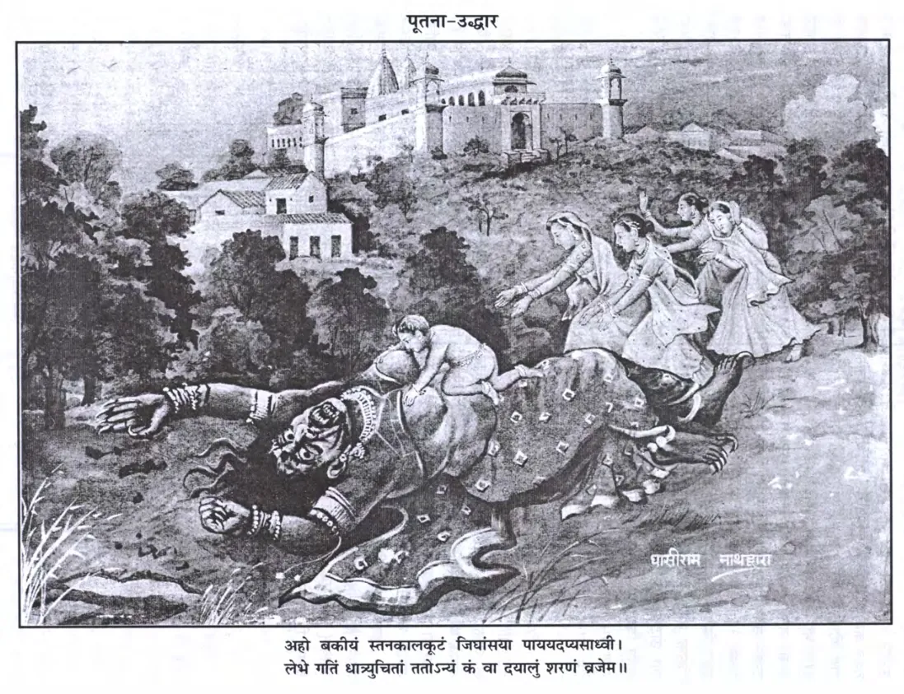
४-श्रीकृष्ण और कुब्जा
त्रिवक्रा नामकी एक गरीब कुबड़ी लड़की थी। वह अति सुगन्धित उबटन बनाकर नित्य कंसके यहाँ ले जाकर उसके शरीरपर मला करती। भगवान् जब कंसके यहाँ जा रहे थे, उन्होंने कुब्जाको उबटन लेकर उधर ही जाते देखा और कहा 'प्यारी त्रिवक्रा, क्या यह उबटन मेरे शरीरपर मल देगी।'
इन शब्दोंसे त्रिवक्राकी आँखें खुल गयीं और उसने देखा कि बालकके रूपमें सौन्दर्य-सुधासागर भगवान् ही उसके सामने खड़े हैं। वह बोली, 'प्यारे कृष्ण! त्रिभुवनमें मुझे सबसे अधिक प्रिय तुम्ही हो। इस बहुमूल्य उबटनसे मलनेके लिये तुमसे अधिक योग्य मैं किसको पाऊँगी?' यह कहकर उसने वह उबटन भगवान्की देहपर मल दिया और अत्यन्त विनम्र-भावसे अतिशय प्रेम एवं भक्तिपूर्वक उनकी पूजा की। ज्यों ही वह पूजा करनेके लिये झुकी भगवान्ने अपने छोटे-छोटे चरणोंको उसके पैरोंपर रखकर अपनी नन्हीं-नन्हीं उँगलियोंसे बहुत धीरेसे उसकी ठोढ़ीको इस तरह दबाया कि उसकी कमर सीधी हो गयी। अब वह कुबड़ी त्रिवक्रा न रही, अपितु सुन्दरी त्रिवक्रा हो गयी। एक दूसरी गरीब औरतको भी भगवान्ने रोगमुक्त किया था और उसके पूछनेपर यह कहा था कि 'तुम्हारे विश्वासने ही तुम्हें नीरोग किया है।'
शिक्षा
भगवान् अब भी हमारे पास हैं। यदि आप और हम उन्हें जानना चाहें तो हमें त्रिवक्राकी तरह प्रसन्नतापूर्वक अपनी सबसे प्यारी वस्तु उनके अर्पण करनी होगी। उन ब्राह्मणोंकी तरह यदि हम अन्यान्य कामोंमें व्यग्र रहकर भगवान्की ओर ध्यान न देंगे तो भगवान् हमें कैसे मिलेंगे? सोचो कि तुम्हारी सबसे प्यारी वस्तु कौन है? अपनी प्रेम करनेकी शक्ति, सेवा करनेकी शक्ति, सोचनेकी शक्ति और काम करनेकी शक्ति प्रत्येक शक्तिको इतनी मूल्यवान् बनाओ, जितनी तुम बना सको और फिर अपने जीवनको अपने समीपवर्तियोंके लिये एक सुगन्धित पदार्थ बना दो। इसके बाद जब भगवान् स्वयं पधारेंगे तो वे तुम्हारी भेंटको अवश्य स्वीकार करेंगे।
गगनके प्रति
खुले दृगोंसे देख रहे हो
हे विशाल! यह लघु-संसार,
क्या देखा अबतक संसृतिमें
कह दो, कह दो, हृदयोद्गार!
अहो, तुम्हारे अन्तर्पटमें
अङ्कित हैं कितने इतिहास,
हे अनादि! हैं संचित तुममें-
युग-युगके दुख-सुख-उल्लास!
मौन भंगकर तनिक बता दो-
दुखमय या सुखमय संसार?
हास और उल्लास यहाँ है
या, दुःखोंका हाहाकार?
हाँ, बतला दो हे बहुदर्शी!
जगका कैसा है व्यापार?
चेतन चेतनसे करता है-
जीवनका कैसा व्यवहार?
अहा, विश्वकवि तो कहता है-
'सुखमय, सुषमामय संसार',
हे अनन्तके कवि! तुमने क्या-
अपने मनमें किया विचार?
यह क्या, यह क्या! क्यों रोते हो,
यह कैसा करुणाका गान!
उमड़ रहे क्यों नील दृगोंमें-
मेघोंके आँसू अम्लान?
चमक उठी यह विद्युत् कैसी
आग हृदयकी क्या साकार?-
घहर उठा, अह, सघन स्वरोंमें
किस पीड़ाका हाहाकार?
ओह, तुम्हारे उर-दर्पणमें
जगकी ऐसी ही छाया,
हम विषादसे घिरे हुए हैं-
रचकर अपनी ही माया।
रोओ रोओ हे करुणामय!
निज नयनामृत बरसाओ,
व्यथित जगतके मृत-प्राणोंमें
तुम नवजीवन सरसाओ!
शान्तिप्रिय द्विवेदी
शुभाशंसा
(लेखक-आचार्य पूज्यवर पं० श्रीमहावीरप्रसादजी द्विवेदी)
(१)
हृदयं कौस्तुभोद्भासि हरेः पुष्णातु वः प्रियः।
राधाप्रवेशरोधाय दत्तमुद्रमिव श्रिया॥
लीला-ललाम लक्ष्मीजी राधाके आक्रमणसे भयभीत-सी रहती हैं। वे डरा करती हैं कि कहीं वह मेरे प्रेम-पात्रके प्रेमके कुछ अंशका अपहरण न कर ले। इस कारण भगवान्के हृदयमें घुसनेके मार्गपर उन्होंने सील-मुहर कर दी है। हरिके हृदयमें जो कौस्तुभ मणि विराजती है वह क्या है, आप जानते हैं? वही तो भगवती लक्ष्मीजीकी लगायी हुई सील है। इस तरहकी सील-मुहर लगा हुआ भगवान् श्रीकृष्णका हृदय 'कल्याण'का अभ्युदय करे।
(२)
विहाय पीयूषरसं मुनीश्वरा
ममांघ्रिराजीवरसं पिबन्ति किम्।
इति स्वपादाम्बुजपानकौतुकी
स गोपबालः श्रियमातनोत वः॥
बचपनमें शिशु अपने पैरका अंगूठा मुँहमें डालकर उसे पीता-सा है। गोपबालरूपी भगवान् श्रीकृष्णको भी इस आदतसे खाली न समझिये। उनको भी यह लत थी; पर सामान्य शिशुओंकी तरह अकारण नहीं। वह सकारण थी। बड़े-बड़े ऋषि-मुनि अमृतपानको तुच्छ समझकर जो मेरे पादारविन्दका रस पीते हैं वह क्यों? क्या वह अमृतसे भी अधिक स्वादिष्ट है? इसी बातकी परीक्षाके लिये जो शिशु-कृष्ण यह निज-पद-पानरूपी खेल किया करते थे वही श्रीमान 'कल्याण' और उसके अभिभावकोंकी विभूति वृद्धि करें!
(३)
कालिन्दीपुलिनोदरेषु मुसली
यावद्गतः क्रीडितुं
तावत्कर्बुरिकापयः पिब हरे
वर्धिष्यते ते शिखा।
इत्थं बालतया प्रतारणपराः
श्रुत्वा यशोदागिरः
पायाद्वः स्वशिखां स्पृशन्प्रमुदितः
क्षीरेऽर्द्धपीते हरिः॥
बेटा कृष्ण, एक बात कर। बलराम यमुना-तटपर खेलने चला गया है। वह आ जायगा तो तेरे दूधमें अपना हिस्सा लगावेगा। इससे अभी झटपट कृष्णी या चितली गायका दूध तू पी ले, ले। इससे और भी एक फायदा होगा। तेरी चुटिया, जो अभी बहुत छोटी है, बड़ी हो जायगी। माँ यशोदाकी यह बहानेबाजी सुनकर कृष्ण धोखेमें आ गये और दूध पीने लगे। मगर बच्चे थे तो क्या हुआ; तब भी थे वे उस्ताद। थोड़ा ही दूध पीकर वे यह देखनेके लिये अपनी चुटिया टटोलने लगे कि वह कुछ बढ़ी भी है या नहीं। इस तरह मातासे फुसलाये और धोखा दिये जानेवाले बालरूपी भगवान् श्रीकृष्ण 'कल्याण'का कल्याण करें।
(४)
मल्लैः शैलेन्द्रकल्पः शिशुरखिलजनैः
पुष्पचापोऽङ्गनाभि-
र्गोपैस्तु
प्राकृतात्मा दिवि कुलिशभृता
विश्वकायोऽप्रमेयः।
क्रुद्धः कंसेन कालो भयचकितदृशा
योगिभिर्ध्येयमूर्ति-
र्दृष्टो रङ्गावतारे हरिरमरजना-
नन्दकृत्पातु युष्मान्॥
जिस समय श्रीकृष्णजी कंसकी रंगभूमिमें पहुँचे, उस समय वहाँ उपस्थित पहलवानोंने समझा कि यह मनुष्य नहीं, यह तो गामाका भी दर्प-दलन करनेवाला मनुष्यरूपी शैलेन्द्र है। मगर औरोंने उन्हें और ही दृष्टिसे देखा। साधारण सामाजिकोंको तो वे निरे गोप-किशोर मालूम हुए; स्त्रियोंको प्रत्यक्ष रतिपति मालूम हुए; गोपोंको बहुत मामूली मनुष्य मालूम हुए; तमाशा देखनेके लिये आकाशमें स्थित मघवा महाराजको वे माप-तोलमें न आ सकनेवाले विश्वव्यापी आत्मा मालूम हुए; भयसे चकितनेत्र कंसको वे क्रुद्ध-काल मालूम हुए; योगियोंको वे वैसी ही मूर्ति मालूम हुए जिसका वे ध्यान करते थे। रहे देवता, सो उनको तो वे परमानन्दके दाता ही जान पड़े। इस तरह अपनी-अपनी दृष्टिके अनुरूप भिन्न-भिन्न रूपोंमें देखे गये विश्वात्मा भगवान् श्रीकृष्ण, 'कल्याण', 'कल्याण'के पालक और 'कल्याणके पाठकसमुदाय, सभीको अभयदान देते हुए उनकी रक्षा करें!
(सङ्कलित)
जन्माष्टमीका सन्देश
(लेखक-साधु श्री टी० एल० वास्वानीजी)
पाप और शोकके दावानलसे दग्ध इस जगतीतलमें भगवान्ने पदार्पण किया। इस बातको आज पाँच सहस्र वर्ष हो गये।
वे एक महान् सन्देश लेकर पधारे। केवल सन्देश ही नहीं, कुछ और भी लाये। वे एक नया सृजनशील जीवन लेकर आये। वे मानव-प्रगतिमें एक नया युग स्थापित करने आये। इस जीर्ण-शीर्ण रक्त-प्लावित भूमिमें वे एक स्वप्न लेकर आये।
जन्माष्टमीके दिन उसी स्वप्नकी स्मृतिमें महोत्सव मनाया जाता है। हमलोगोंमें जो इस तिथिको पवित्र मानते हैं, कितने ऐसे हैं जो इस विनश्वर जगत्में उस दिव्य-जीवनके अमर-स्वप्नको प्रत्यक्ष देखते हैं?
श्रीकृष्णने गोकुल और वृन्दावनमें मधुर-मुरलीके मोहक स्वरमें और कुरु-क्षेत्रके युद्ध-क्षेत्रमें (गीतारूपमें) सृजनशील जीवनका वह सन्देश सुनाया जो नाम रूप रूढ़ि तथा साम्प्रदायिकतासे परे है। रणाङ्गणमें अर्जुनको मोह हुआ। भाई-बन्धु, सुहृद्-मित्र, कुटुम्ब-परिवार, आचार-व्यवहार और कीर्ति-अपकीर्ति—ये सब नाम-रूप ही तो हैं। श्रीकृष्णने अर्जुनको इन सबसे ऊपर उठनेको कहा, व्यष्टिसे उठकर समष्टिमें अर्थात् सनातन तत्त्वकी ओर जानेका उपदेश दिया। वही सनातन तत्त्व आत्मा है! 'तत्त्वमसि'!
मनुष्य! तू आत्मा है! परमात्माका प्राण है! मोहरज्जुसे बँधा हुआ ईश्वर है! चौरासीके चक्करमें पड़ा हुआ चैतन्य है! क्या यही गीताके उपदेशका सार नहीं है?
मेरे प्यारे बन्धुओ! क्या हम और आप सभी सान्तसे अनन्तकी ओर नहीं जा रहे हैं?
क्या तुम भगवान्को खोजते हो? अपने हृदय-वल्लभकी टोहमें हो? यदि ऐसा है तो उसे अपने अन्दर खोजो! वहीं तुम्हें वह प्रियतम मिलेगा।
जन्माष्टमी
(लेखक-श्रीदत्तात्रेय बालकृष्ण कालेलकर)
एकका एक ही सूरज रोज-रोज़ उगता है, फिर भी हररोज़ नया प्राण, नया चैतन्य, नवजीवन अपने साथ ले आता है। यह सोचकर कि सूरज पुराना ही है, पक्षी निरुत्साह नहीं होते। कलका ही सूर्य आज आया है, यह कहकर, द्विजगण भगवान् दिनकरका निरादर नहीं करते। जिस आदमीका जीवन शुष्क हो गया है, जिसकी आँखोंका पानी उतर गया है, जिसकी नसोंमें रक्त नहीं रहा है, उसीके लिये सूरज पुराना है। जिसमें प्राणका कुछ भी अंश है, उसके मन तो भगवान् सूर्यनारायण नित्य-नूतन हैं। जन्माष्टमी भी हरसाल आती है। प्रतिवर्ष वही-की-वही कथा सुनते हैं, उसी तरह उपवास करते हैं, और प्रायः एक ही ढंगसे श्रीकृष्ण-जन्मका उत्सव मनाते हैं। फिर भी हजारों वर्षोंसे जन्माष्टमी हमें उस जगद्गुरुका नया ही सन्देश देती आयी है। कृष्णपक्षको अष्टमीके वक्रचन्द्रकी तरह एक पगपर भार देकर और दूसरा पैर तिरछा रखकर शरीरकी कमनीय बाँकी अदाके साथ मुरलीधरने जिस दिन संसारमें प्रथम प्राण फूँका, उस दिनसे आजतक हरएक निराधार मनुष्यको यह आश्वासन मिला है कि—
न हि कल्याणकृत्कश्चिद्दुर्गतिं तात गच्छति।
भाई! जो आदमी सन्मार्गपर चलता है, जो धर्मपर डटा रहता है, उसकी किसी भी कालमें दुर्गति नहीं होती।
लोग ख़याल करते हैं कि धर्म दुर्बल लोगोंके लिये है। अधिक हुआ तो व्यक्तियोंके आपसी सम्बन्धमें उसकी कुछ उपयोगिता होगी। पर राजा और सम्राट् तो जो करें, वही धर्म है। साम्राज्यशक्ति धर्मसे परे है। व्यक्तिका पुण्य क्षय होता होगा, पर साम्राज्य तो अलौकिक वस्तु है। ईश्वरकी विभूतिसे भी साम्राज्यकी विभूति श्रेष्ठतर है। सम्राट् जब हाथमें विजयपताका लेकर पर्यटन करता है, तो ईश्वर दिनमें चन्द्रमाकी भाँति कहीं छिप रहता है।
मथुरामें कंसकी भावना ऐसी ही थी; मगधदेशमें जरासन्धका ऐसा ही ख़याल था; चेदि-देशमें शिशुपालकी यही मनोदशा थी; जलाशयमें रहनेवाला कालियानाग यही मानता था; द्वारकापर चढ़ाई करनेवाले कालयवनकी यही फिलासफी थी; महापापी नरकासुरको यही शिक्षा मिली थी; और दिल्लीका सम्राट् कौरवेश्वर भी इसी वृत्तिमें पलकर बड़ा हुआ था। ये तमाम महापराक्रमी राजा अन्धे या अज्ञान न थे। उनके दरबारमें इतिहासवेत्ता, अर्थशास्त्रविशारद और राजधुरन्धर अनेक विद्वान् थे। वे अपने शास्त्रोंका मन्थन करके उनका नवनीत निकालते और अपने-अपने सम्राटोंके सामने रखते थे। परन्तु जरासन्ध कहता—आपके ऐतिहासिक सिद्धान्तोंको रहने दीजिये; मेरा पुरुषार्थ अपने बुद्धिबल और बाहुबलसे आपके इन सिद्धान्तोंको मिथ्या सिद्ध करनेमें समर्थ है।' कालयवन कहता—मैं एक ही अर्थशास्त्र जानता हूँ, दूसरे देशोंको लूटकर, उनका धन छीन लेना। यही धनवान् बननेका एकमात्र आसान, सीधा—और इसी कारण सशास्त्र-मार्ग है। शिशुपाल कहता—न्याय-अन्यायकी बात प्रजाके आपसी कलहमें चल सकती है। हम तो सम्राट् ठहरे। हमारी जाति ही जुदा है। प्रतिष्ठा और पद ही हमारा धर्म है।' कौरवेश्वर कहता—जितने रत्न हैं, सब हमारी विरासत है। वे हमारे ही पास आने चाहिये। 'यतो रत्नभुजो वयम्'—(क्योंकि हम रत्नभोगी हैं, रत्नका उपभोग करनेके लिये पैदा किये गये हैं।) दुनियामें जितने सरोवर हों सब हमारे ही विहारके लिये हैं। बग़ैर लड़े हम किसीको सूईकी नोक बराबर भी ज़मीन न देंगे।
पक्षपात-शून्य नारदने कंसको सचेत कर दिया था कि पराये शत्रुके मुकाबलेमें तू भले सफल हुआ हो, पर तेरे साम्राज्यके अन्दर—अरे तेरे परिवारके अन्दर ही-तेरा शत्रु पैदा होगा। जिस सगी बहनको तूने आश्रित दासीकी स्थितिमें रक्खा है, उसीके पुत्रके हाथों तेरा नाश होगा, क्योंकि वह धर्मात्मा होगा। उसका तेजोवध करनेके तु जितने प्रयत्न करेगा, वे सब उसीके अनकूल हो जायँगे। कंसने मनमें विचार किया-'Forewarned is Forearmed'। समयसे इतने पहले चेतावनी मिली है, अब बारिशसे पहले यदि बाँध न बाँधा तो हम इतिहासज्ञ कैसे? हम सम्राट् कैसे?' नारदने कहा—'यह तेरी विनाशकालकी विपरीत बुद्धि है। मैं जो कह रहा हूँ, वह इतिहासका सिद्धान्त नहीं है, धर्मका सिद्धान्त है, वह सनातन सत्य है। वसुदेव-देवकीके आठ बालकोंमेंसे एकके हाथों अवश्य ही तेरी मृत्यु होगी। तेरे लिये एक ही उपाय है। अब भी पश्चात्ताप कर, और श्रीहरिकी शरण जा।' अभिमानी कंसने तिरस्कारयुक्त हास्यसे उत्तर दिया—समरभूमिमें पराजित हुए बिना सम्राट् पश्चात्ताप नहीं करते।' 'तथास्तु' कहकर निराश नारद चले गये। कंसने सोचा, अबतकके सम्राट् सफल नहीं हुए, इसका एक कारण था, उनकी गफ़लत; वे काफी सावधान रहना नहीं जानते थे। यदि मैं भी ग़ाफिल रहा तो मुझे भी पराजित होना पड़ेगा। परन्तु इसकी परवा नहीं। जो वीर है, वह हमेशा जयके लिये जी तोड़ प्रयत्न करे और पराजयके लिये तैयार रहे। हार जानेमें बुराई नहीं है; परन्तु धर्मके नामपर शरण जानेमें बदनामी है, धर्मका साम्राज्य साधु-सन्त-वैरागी और देव-ब्राह्मणोंको मुबारक रहे; मैं तो सम्राट् हूँ और एक ही शक्तिको पहचानता हूँ।'
क्रूर बनकर कंसने वसुदेवके सात निरपराध अर्भकोंका खून किया। श्रीकृष्णजन्मके समय ईश्वरी-लीला प्रबल रही और श्रीकृष्ण परमात्माके बदले कन्या-देह-धारी शक्ति कंसके हाथ आयी। कंसने उसे जमीनपर पछाड़ा; परन्तु कहीं शक्ति शक्तिसे मरनेवाली थी? वसुदेवने गुप्त रीतिसे श्रीकृष्णको गोकुलमें रक्खा। परन्तु परमात्माको तो कोई भी बात छिपानी नहीं थी। परमात्माको कौन विज्ञापनका डर (Sin of secrecy) था। शक्तिने अट्टहासके साथ दिङ्मूढ़ बने हुए कंससे कहा—'तेरा शत्रु तो गोकुलमें दिन दूना और रात चौगुना बढ़ रहा है।' मथुरासे गोकुल-वृन्दावन बहुत दूर नहीं है। शायद चार-पाँच कोस भी नहीं है। कंसने कृष्णको मारनेमें जितने सूझे, प्रयत्न किये। परन्तु वह यही न समझ सका कि श्रीकृष्णकी मौत किसमें है। श्रीकृष्ण अमर तो थे ही नहीं, पर मरणाधीन भी नहीं थे। धर्मकार्य करनेके लिये वह आये थे। जबतक धर्मराज्य स्थापित न हो, वे कैसे विरमते? कंसने सोचा, श्रीकृष्णको अपने दरबारमें बुलाकर मारा जाय, पर यहीं उसने धोखा खाया, क्योंकि प्रजाने परमात्म-तत्त्व पहचाना और प्रजा परमात्माके अनुकूल बन गयी।
कंसका नाश देखकर जरासन्धको सावधान हो जाना चाहिये था। पर जरासन्धने सोचा, नहीं, मैं कंससे अधिक जागरूक हूँ; मैंने अनेक भिन्न-भिन्न अवयवोंको जोड़कर अपना साम्राज्य सबल बनाया है। मल्लयुद्धमें मेरी जोड़का कौन है? मेरी नगरीका कोट दुर्भेद्य है। मुझे डर किस बातका? जरासन्धकी भी दो फाँके हुईं। कालियानाग तो अपने जलस्थानको सुरक्षाका नमूना मानता था। उसका विष असह्य था। एक फुफकारसे बड़ी-बड़ी सेनाओंको मार डालता था। उसके विषकी भी कुछ न चली। कालयवन चढ़ आया। परन्तु सोये हुए मुचकुन्दकी क्रोधाग्निसे वह बीच ही जलकर खाक हो गया। नरकासुर एक स्त्रीके हाथों भस्म हुआ; कौरवेश्वर दुर्योधन द्रौपदीकी क्रोधाग्निमें स्वाहा हुआ; और शिशुपालको उसकी भगवत्-निन्दाने ही मार डाला।
षड्रिपु-से ये छः सम्राट् उन दिनों मर गये। सप्तलोक और सप्तपाताल सुखी हुए। और जन्माष्टमी सफल हुई। फिर भी हरसाल इतने-इतने वर्षोंसे हम यह उत्सव क्यों मनाते हैं? इसीलिये कि आज भी हमारे हृदयोंसे षड्रिपुओंका नाश नहीं हुआ है; वे हमें अत्यन्त पीड़ा पहुँचाते हैं; हम प्रायः हिम्मत हार बैठते हैं। ऐसे वक्त हमारे हृदयोंमें श्रीकृष्णचन्द्रका जन्म होना चाहिये। 'जहाँ पाप है वहाँ पापपुञ्जहारी भी हैं। इस आश्वासनका हमारे हृदयमें उदय होना चाहिये। मध्यरात्रिके अन्धकारमें कृष्णचन्द्रका उदय हो, तभी निराश विश्व आश्वासन पा सकता और धर्ममें दृढ़ रह सकता है।
श्रीकृष्ण-भक्तके लक्षण
(पूज्यपाद महात्मा श्रीउड़िया स्वामीजी महाराज)
१-अन्य समस्त कार्य छोड़कर जो सर्वदा एकमात्र भगवान्का ही अवलम्बन करता है, एकमात्र भगवान्की ही सेवा-पूजामें तन-मन-धनसे निरन्तर नियुक्त रहता है, वह भक्त नमस्कार-योग्य है।
२-जो भगवान्में समस्त लोक और समस्त लोकोंमें भगवान्का दर्शन करता है, जो सर्वत्र समानबुद्धि रखता है और सर्वभूतोंमें प्रेम रखता है, वह भक्त नमस्कार-योग्य है।
३-जिसको अपने और परायेका भेद नहीं है, जिसको इच्छा, द्वेष और अभिमान नहीं है तथा जो सर्वदा पवित्र एवं भगवान्में दत्त-चित्त है वह भक्त नमस्कार-योग्य है।
४-जिसका मन सम्पत्ति-विपत्तिमें भगवान्को छोड़कर अन्यत्र कहीं नहीं जाता, जो सर्वदा सत्यवादी एवं सदाचारपरायण है, वही भक्त नमस्कार-योग्य है।
५-जो प्रपञ्चसे विमुख है, विचारयुक्त है, एकान्तसेवी है, तथा भगवत्परायण है, वही भक्त नमस्कार-योग्य है।
६-जो भगवान्के सर्वत्र दर्शन करता है, जिसको संसारसे अभय प्राप्त है, जो अन्य प्राणियोंको अभय प्रदान करता है, जो संसारसे उदासीन है तथा जो आश्रम-धर्ममें कुशल है, वही भक्त नमस्कार-योग्य है।
७-जिसको प्रेमका ही अवलम्बन है, जिसने मत-मतान्तरको उल्लङ्घन किया है और जिसका हृदय प्रेममय है, वही भक्त नमस्कार-योग्य है।
८-जो सर्वदा चातककी नाईं एकनिष्ठ है, सर्वदा लक्ष्मणकी नाई स्वतन्त्रतासे रहित है, सर्वदा द्वन्द्वों अर्थात् शीतोष्ण और रागद्वेषसे परे है एवं सन्तुष्टचित्त है, वही भक्त नमस्कार-योग्य है।
९-जो भगवान्के अतिरिक्त और किसीको नहीं जानता और न किसीको चाहता है, जिसका मन स्थिर है और जो संयमी है, वही भक्त नमस्कार-योग्य है।
१०-जो भगवान्को इसी शरीरसे प्राप्त कर लेता है, जिसका भगवान्के चिन्तनमें ही समय व्यतीत होता है, वही भक्त नमस्कार-योग्य है।
११-जिसने भगवान्को, जो कि एकमात्र सत्य वस्तु है, आत्म-समर्पण किया है, वही नमस्कार-योग्य है।
१२-ऐसे भक्तराजके दर्शन, प्रणाम और सेवा करनेवालेका जीवन धन्य है। ऐसे भक्तकी कृपासे प्रेमकी वृद्धि और कामनासे रहितता होती है। भक्तका हृदय ही भगवान्का विलास-स्थान है। भक्तके हृदयसे भगवान्का स्वरूप और भगवान्की महिमा प्रकाशित होती है। हे पुरुषो! ऐसे भक्तको त्यागकर और किसका संग करना चाहिये? भक्त सम्पत्ति, सिद्धि, अथवा कैवल्यमुक्ति नहीं चाहता; वह सर्वस्व त्याग देता है और सम्पूर्णरूपसे भगवान्में विलीन होता है। अर्थात् आत्म-विसर्जन करता है। भगवान्में आत्माकी आहुति प्रदान करना सर्वश्रेष्ठ यज्ञ है, यही परम पुरुषार्थ है। जो जिस पदार्थको चाहता है, वह उसीको प्राप्त करता है। जो कुछ भी नहीं चाहता वह श्रीभगवान्को प्राप्त करता है। भक्तका धन केवल श्रीकृष्णके चरणकमल हैं और वह केवल भगवान्की कृपासे ही प्राप्त होता है।
श्रीकृष्णाष्टक
(लेखक-पं० श्रीरमाशंकरजी मिश्र 'श्रीपति')
(१)
श्रीसे युक्त, चराचर-स्वामी,
सर्वव्यापी, अगुण, अनूप;
वेदोंके जो विषय और
प्रज्ञाके साक्षी शुद्ध-स्वरूप;
पाप-समूह सहज ही हरते,
दानव-कुलके हैं जो काल;
शङ्ख, चक्र, अरु गदा, पद्मयुत,
कमल नयन, उरमें बनमाल ;
शरणागत-वत्सल, लोकेश्वर-
कृष्ण करें दृग-बीच बिहार।
(२)
व्योम, वायु आदिक प्रधान हैं
जिसमें जीवन-तत्व अपार;
आदिकालमें रचा गया है
जिनसे यह समस्त संसार;
स्थितिके समय सृष्टिकी रचना
करते जो माधव स्वाधीन;
प्रलय-कालमें कला-युक्त जो
कर लेते अपनेमें लीन;
शरणागत-वत्सल, लोकेश्वर-
कृष्ण करें दृग-बीच बिहार।
(३)
प्राणायाम-कालमें सुखसे
यम अरु नियम साधनायुक्त;
करके चित्त-निरोध, हृदयके
सब प्रपंच करके परित्यक्त;
योगीजन आनन्द-मग्न हो,
मनसे माया-मोह विसार;
जिन मायाके नाथ जगत्पति-
का करते हैं साक्षात्कार;
शरणागत-वत्सल, लोकेश्वर-
कृष्ण करें दृग-बीच बिहार।
(४)
पृथ्वीमें स्थित हो करके जो
लखते रहते विविध विधान;
पूर्ण नियन्त्रण रहता तो भी
नहीं धराको जिनका ज्ञान;
वेद सदा कहते हैं जिनको
जगका स्वामी निर्मल-रूप;
जो सुर, नर, मुनि-ध्यान-विषय हैं
देते दुर्लभ मोक्ष अनूप;
शरणागत-वत्सल, लोकेश्वर-
कृष्ण करें दृग-बीच बिहार।
(५)
इन्द्रादिक सुरगण जिनके बल
दैत्य-विजयके सजते साज;
जिनकी इच्छा बिना क्रियामें,
या जगके कुछ भी हों काज;
हो सकती है कभी न स्थायी
स्वतन्त्रता, यह सत्य सुजान;
सुयश-गर्व हरते विजयीका,
दलते जो वैभव-मद-मान;
शरणागत-वत्सल, लोकेश्वर-
कृष्ण करें दृग-बीच बिहार।
(६)
जिनके ध्यान बिना नर, शूकर
पशुताको होते हैं प्राप्त;
जिनके ज्ञान बिना होते जन
जन्म-मृत्युके भयसे व्याप्त;
बिना स्मरण-चिन्तनके मानव,
तजकर जीवन बुद्धि-विवेक;
कीट-पतंग-योनिमें लेकर
जन्म उठाते दुःख अनेक;
शरणागत-वत्सल, लोकेश्वर-
कृष्ण करें दृग-बीच बिहार।
(७)
हरते नर-आतङ्क भ्रान्ति जो
रक्षकके भी रक्षक ईश;
घन-सम श्याम वर्ण है जिनका
त्रिभुवन-सुन्दर जगदाधीश;
समवयस्क व्रज-शिशुओंके जो
कारण-रहित, धनञ्जय-मीत;
जनक चराचरके, देते सुख
उनको जिनके चरित-पुनीत;
शरणागत-वत्सल, लोकेश्वर-
कृष्ण करें दृग-बीच बिहार।
(८)
जब-जब होती ग्लानि धर्मकी
जो विक्षुब्ध करती संसार;
तब-तब जगके नाथ मनुज-तन
धारणकर हरते भू-भार;
संतोंके धाता, विशुद्ध जो
जन्म-रहित कृपालु भगवान्;
वेदोंद्वारा जिन व्रजपतिकी
गुण-गरिमाका होता गान;
शरणागत-वत्सल, लोकेश्वर-
कृष्ण करें दृग-बीच बिहार।
(श्रीमच्छङ्कराचार्य-विरचित श्रीकृष्णाष्टक-स्तोत्रके आधारपर)
भगवद्-विग्रह
(लेखक-पं० श्रीगोपीनाथजी कविराज, एम० ए०, प्रिंसिपल, गवर्नमेण्ट-संस्कृत-कालेज, काशी)
जिज्ञासु—श्रीभगवान्के देहतत्त्वके सम्बन्धमें मुझे कुछ पूछना है। आप आज्ञा दें तो पूूछूँ।
वक्ता—अवश्य, निस्संकोच पूछ सकते हो। मैं जो कुछ जानता हूँ, तुम्हें बतलानेमें त्रुटि नहीं करूँगा।
जि—श्रीकृष्णके देहके सम्बन्धमें आलोचना करते समय स्वभावसे ही भगवद्-विग्रहके विषयमें यह जिज्ञासा उत्पन्न होती है कि भगवान्का विग्रह है या नहीं और है तो वह किसप्रकारका है? यही मुख्य प्रश्न है। श्रीकृष्ण यदि भगवान्के अवतार अथवा स्वयं भगवान् थे तो उनकी जिस देहको संसारके लोग प्रत्यक्ष देखते थे उसका क्या स्वरूप था, उस देहके अतिरिक्त उनकी और कोई देह थी या नहीं, और थी तो वह किस प्रकारकी थी, ऐसे बहुतसे अवान्तर प्रश्नोंके समाधानकी भी आवश्यकता प्रतीत होती है।
व—वत्स, भगवान्के देह है और धाम भी है, यह वर्णन शास्त्रोंमें मिलता है। साथ ही 'भगवान् निराकार विशुद्ध चैतन्यमात्र हैं, उनमें किसी प्रकारके आकारका आरोप नहीं हो सकता, उनके नाम-धाम प्रभृति सभी कल्पित हैं'–यह भी शास्त्रीय सिद्धान्त है। ईश्वर साकार हैं या निराकार, इस बातको लेकर विवाद करनेकी आवश्यकता नहीं। जो अन्तर्दर्शी हैं, वे जानते हैं कि ईश्वरको साकार भी कहा जा सकता है और निराकार भी, पर वस्तुतः वे साकार और निराकार, इन दोनों प्रकारकी कल्पनाओंसे ही अतीत हैं।
जि—गीतामें 'जन्म कर्म च मे दिव्यम्' कहकर श्रीकृष्णने अपने जन्म और कर्म दोनोंको 'दिव्य' बतलाया है। अवश्य ही यह लीला-तत्त्वका विषय है। इससे मालूम होता है कि भगवान्के अवतार-रूप जन्म अथवा कर्म दोनों ही असाधारण अप्राकृत हैं। जन्म शब्दसे यहाँ देहग्रहण समझना होगा।
व—भगवान्में जन्म भी नहीं है और कर्म भी नहीं है। कारण, उनके अदृष्ट (प्रारब्ध-कर्म) नहीं हैं। जीव अपने प्राक्तन कर्म-संस्कारवश तदनुरूप देह ग्रहण कर कर्म-फलका भोग करता है और नवीन कर्मोंका सम्पादन करता है। भगवान्में कर्म-संस्कार न रहनेके कारण वे भोग-देह ग्रहण नहीं करते एवं उनमें कर्तृत्वाभिमान नहीं है इसलिये वे किसी नवीन कर्मके सम्पादक भी नहीं बनते। वे ऐसा कर्म नहीं करते, जिससे फल उत्पन्न होता हो। भगवान् क्यों, मुक्तपुरुष भी जन्म-कर्म-रहित ही होते हैं तथापि शास्त्रोंमें भगवान्के भी देह-ग्रहणके और कर्मके सम्बन्धमें वर्णन पाये जाते हैं। सुतरां, यह कहना नहीं होगा कि वे जन्म-कर्म इतर जीवोंके सदृश नहीं है। इसीलिये गीतामें 'दिव्य' शब्दके प्रयोग द्वारा यह सूचित किया गया है। दुःखमग्न जीवोंके कल्याणार्थ कभी भगवान् और कभी उनके परिकरगण देह ग्रहण कर अवतीर्ण हुआ करते हैं। उनके जीवनके कर्म साधारण जीवोंके कर्मसे पृथक् होते हैं-वस्तुतः, एक तरहसे उनको कर्म न कहनेमें भी कोई क्षति नहीं है। जिसके मूलमें अदृष्टकी प्रेरणा नहीं है और फलका भोग नहीं है, वह कर्म प्रचलित-कर्म-जातीय कर्म नहीं है, इसमें सन्देह ही क्या है? 'लीला' शब्दके द्वारा अनेक लोग इसी विलक्षणताको समझाया करते हैं।
जि—किसी-किसीका कहना है कि भगवान्के जन्म या कर्म हो ही नहीं सकते। जो सर्वव्यापक अखण्ड सत्तास्वरूप हैं, किसी भी देश, कालमें जिनके अभावकी सम्भावना नहीं है, जो निष्क्रिय चैतन्यस्वरूप हैं और सर्वदा एकरूप हैं, उनमें जन्म और कर्म कैसे हो सकते हैं? इसीसे उनका अवतार नहीं हो सकता। विचार करके देखनेपर ऐसा कहना असंगत भी नहीं प्रतीत होता। इस विषयमें वास्तविक सिद्धान्त क्या है, मैं उसीको जानना चाहता हूँ।
व—वत्स, जिस दृष्टिसे भेद या अभेदमूलक किसी भी वैशिष्टॺकी प्रतीति नहीं होती, वहाँ न तो कोई शंका है और न किसी समाधानकी ही आवश्यकता है। जहाँ भेद और अभेद दोनोंका ग्रास करके स्वप्रकाश तत्त्व, प्रकाशित हो रहा है, वहाँ भी शंका नहीं है। जहाँ कालका विकास और मायाका विस्तार है, अतएव जहाँ भेद और अभेदका परस्पर वैषम्य प्रकट हो रहा है, वहीं संशयकी उत्पत्ति होती है और इसी द्वन्द्वमय अवस्थामें शंका और समाधान हुआ करते हैं। श्रीभगवान्का जो रूप सर्वातीत है, अव्यक्त है, निरञ्जन है—यहाँ वह आलोच्य नहीं है। उनका जो सर्वात्मक और स्वप्रकाशरूप है—वह भी आलोचनासे अतीत है। परन्तु जिस रूपसे वे नियामक हैं और जीव नियम्य है, वे आनन्दमय हैं और जीव दुःखमग्न है, वे कर्मफलदाता और जीव कर्मफलभोक्ता है—यहाँ उसीकी आलोचना करनी है। इस आनन्दमय और करुणामय रूपके ही अवतार हुआ करते हैं। जो आत्मा इस आनन्दपुरमें आनन्दमय भगवत्-साधर्म्यको प्राप्त हैं, उनके भी अवतार हो सकते हैं—होते भी हैं।
जि—अच्छा, भगवान्का यह आनन्दमय रूप क्या नित्य है? जब वे अवतीर्ण होते हैं, तब क्या इस नित्य रूपको त्यागकर मायिक रूप ग्रहण करते हैं? यदि ऐसा ही होता है तो फिर उस परिगृहीत रूपका वैशिष्ट्य ही क्या है?
व—देखो, भगवान्का वह आनन्दमय रूप नित्य है—उसका त्याग-ग्रहण नहीं है, उदयास्त नहीं है, वह कालातीत और निर्विकार है। शास्त्रकार और महापुरुषगण उसे चिद्घन-विग्रह कहते हैं। इस रूपको सभी कोई नहीं देख सकते। जो देख पाते हैं, वे धन्य हैं। नारद श्वेतद्वीपमें गये थे, नारायणको देख भी सके थे तथापि उन्होंने नारायणके स्वरूपको नहीं देख पाया। शास्त्रमें ऐसा वर्णन है। स्वयं नारायणने कहा था कि नारद मेरे स्वरूपको नहीं देख सके, उन्होंने केवल मेरा मायिक रूप ही देख पाया है। नारदके सदृश भक्त भी सहसा जिस रूपको नहीं देख सकते, कहना नहीं होगा कि उसका दर्शन सुलभ नहीं है।
जि—यह तो ठीक है; भगवान्का रूप अतीन्द्रिय होनेके कारण ही क्या सब उसे नहीं देख सकते?
व—यह बात नहीं है। अतीन्द्रिय पदार्थ तो बहुत-से हैं। उन सबके देखनेकी योग्यता हो जानेपर भी भगवद्दर्शनका अधिकार प्राप्त नहीं होता। साधन-राज्यमें धीरताके साथ प्रविष्ट होकर चलनेसे उन सबके अतीन्द्रिय-दर्शन भी बहुत-से लोगोंको न्यूनाधिक रूपमें हो सकते हैं। परन्तु इससे भगवत्-साक्षात्कारकी योग्यता नहीं हो जाती। देहाश्रित इन्द्रियाँ परिच्छिन्न क्षमता विशिष्ट हैं। जब ये इन्द्रियाँ साधनाके प्रभावसे निर्मल होने लगती हैं, तब ये पहलेकी भाँति देहाधीन नहीं रहतीं अर्थात् लिङ्गदेहकी आपेक्षिक शुद्धताके फलस्वरूप जब लिङ्गदेह स्थूलदेहसे आंशिकरूपमें पृथक्भूत प्रतीत होता है, तब उससे सम्पृक्त इन्द्रियाँ भी फिर उतनी स्थूल जगत्के नियमाधीन नहीं रहतीं। हाँ, दोनोंमें कुछ सम्बन्ध अवश्य ही रहता है।
अब इस विषयको भलीभाँति समझनेकी चेष्टा करो। चक्षुके द्वारा हम रूप देखते हैं। कहना नहीं होगा कि यह स्थूल भौतिक रूप है। इसे देखनेके लिये अनेक नियमोंके पालन करनेकी आवश्यकता होती है। दृश्यपदार्थका स्फुट आलोकमें रहना, इन्द्रिय-गोलककी निर्विकारता, दृश्यपदार्थके परिमाणगत आत्यन्तिक अणुत्व या महत्वका अभाव, चक्षु और दृश्यके मध्यमें किसी प्रकारके व्यवधानका न होना इत्यादि—ये सब चाक्षुष-ज्ञानके प्रतिबन्धक हैं। चक्षु जबतक स्थूल देहके आधीन और उसके द्वारा अभिभूत रहता है, तबतक इन सब प्रतिबन्धकोंके कारण उसके साथ बाह्यरूपका सम्बन्ध नहीं हो सकता। परन्तु इन्द्रिय और देहका परस्पर सम्बन्ध शिथिल होनेपर इन्द्रियाँ बहुत कुछ स्वतन्त्र हो जाती हैं-फिर पूर्वोक्त प्रतिबन्धक उनकी गतिको नहीं रोक सकते। सुतरां, उस समय विप्रकृष्ट और व्यवहित वस्तु स्पष्ट देखी जा सकती है, सूक्ष्म-वस्तु भी दृश्य होती है। साधारण मनुष्य इन्द्रियके द्वारा जिसे नहीं देख सकता, इस प्रकारकी योग्यताविशिष्ट व्यक्ति उसे देख सकता है। यह एक प्रकारका अतीन्द्रिय-दर्शन ही है।
जि—इन्द्रिय और देहका सम्बन्ध कैसे शिथिल होता है?
व–यहाँ उसकी आलोचना नहीं करनी है, क्योंकि यह विषय योगतत्त्वकी आलोचनाका अंग है। परन्तु यह जान रखना चाहिये कि चित्तशुद्धिके फलसे लिंग और देहका आपेक्षिक पार्थक्य प्रतिष्ठित होता है। तब इन्द्रियाँ भी देहसे पृथक्की भाँति काम कर सकती हैं।
जि—आप कहना चाहते हैं कि इस प्रकारकी चित्तशुद्धिसे जो तथाकथित अतीन्द्रिय-दर्शन होता है, वह भी भगवत्रूपके दर्शनके अनुरूप नहीं है।
व—निश्चय ही। तुम क्या यह सोचते हो कि देवर्षि नारद अतीन्द्रिय-दर्शी नहीं थे? तथापि वे भगवत्रूपका दर्शन नहीं कर सके। भगवत्रूप अतीन्द्रिय अवश्य है, परन्तु अतीन्द्रिय-वस्तुओंके भी स्तर हैं। इन्द्रियके अगोचरराज्यमें जाते ही भगवद्धाममें प्रवेश नहीं हो जाता। परन्तु यह बात भी नहीं है कि भगवत्रूप इन्द्रियगोचर ही नहीं होता।
जि—इन सब तत्त्वोंका समझना बहुत ही कठिन मालूम होता है। इन विषयों की विशेष आलोचनासे पहले जीवके देह-सम्बन्धमें कुछ जाननेकी इच्छा होती है। जीव-देहका रहस्य समझमें आ जानेपर भगवद् देहका रहस्य समझना सहज होगा। जीवके कितनी देह हैं?
व—साधारण तौरपर यही जान लो कि जीवके तीन देह हैं; यद्यपि इसके अन्दर भी बहुत-सी सूक्ष्म बातें हैं। स्थूल, सूक्ष्म और कारण-जीवके यह तीन प्रकारकी जड़ देह हैं। अवश्य ही इसके परे जीवकी स्वरूप-देह भी है, जो चैतन्यमय है।
जि—क्या भगवान्के भी इसी तरहकी देह हैं?
व—भगवत्-स्वरूप ही भगवद्-देह है, वह चिदानन्दमय है, यह बात पहले कही जा चुकी है। स्थूल, सूक्ष्म और कारण—यह त्रिविध जड़ या मायिक देह उनके नहीं हैं।
जड़-देह धारण करनेके लिये अभिमान चाहिये, वह भगवान्में नहीं है, सुतरां जड़ द्रव्य भगवद्देह नहीं हो सकती। परन्तु अभिमान न होनेपर भी आवश्यक होनेपर वे अभिमानकी रचना करके उसका आश्रयकर जड़-देह ग्रहण कर सकते हैं। परन्तु इतना स्मरण रखना चाहिये कि यह अभिमान आगन्तुक है और ऐसी ही यह देह भी है। स्वरूपतः जीवके भी जड़-देह नहीं है। जीवका स्वरूप भी चिन्मय है। परन्तु जीव भेद-दृष्टिसे भगवदंश होनेके कारण आत्मविस्मृतावस्थामें जड़-देहका अभिमान कर सकता है। अभिमानकी निवृत्ति न होनेतक जीवकी जड़-देह रहेगी ही। अवश्य ही भगवत्-परिकर-भावसम्पन्न जीवोंके सम्बन्धमें यह नियम सर्वदा लागू नहीं होता। भगवान्की भाँति वे भी आहार्य या आगन्तुक अभिमानका आश्रय कर नवसृष्ट या पूर्वसृष्ट देहमें अनुप्रविष्ट हो सकते हैं। साधारण जीव जोकि भगवद्धामके साथ संसृष्ट नहीं हैं-मायाके प्रभावसे आत्मविस्मृत होकर प्राकृत जगत्में पतित होते हैं और प्राकृत देहमें अभिमान करते हैं। उनका अभिमान ज्ञानोदयके पूर्व क्षणतक वास्तविक होता है—आत्मज्ञान उदय होनेपर वह कट जाता है, साथ-ही-साथ देह-सम्बन्ध भी टूट जाता है।
जि—अच्छा! वेदान्तशास्त्रमें जो व्यष्टि और समष्टिभावसे स्थूल, सूक्ष्म और कारण-देहका विचार पाया जाता है, वह भी क्या जीव-देह है?
व—निश्चय ही। व्यष्टिभावसे स्थूल आदि देहका अभिमानी जीव वैश्वानर, तैजस् और प्राज्ञके नामसे कहा जाता है। समष्टिभावका अभिमान रहनेसे विश्व, हिरण्यगर्भ और ईश्वर—ये तीन नाम दिये जाते हैं। परमार्थतः दोनों ही जीव हैं। यहाँ जिसे 'ईश्वर' कहा गया है, यह भी नित्य ईश्वर नहीं हैं, कार्य ईश्वर हैं। तत्त्व-दृष्टिसे ये भी जीव ही हैं। ब्रह्मादि त्रिमूर्ति इन्हींकी हैं—ये भी त्रिगुणसम्बन्धी हैं। नित्य ईश्वर त्रिगुणातीत है, विशुद्ध या अप्राकृत सत्वगुणको आश्रय करके वे आत्मप्रकाश करते हैं। विशुद्ध सत्त्व नित्य वस्तु होनेसे परमेश्वरकी उपाधिभूत देह भी नित्य और अप्राकृत है। इस विषयकी क्रमशः आलोचना की जायगी।
जि—तब क्या भगवान्के व्यष्टि-समष्टि-विभाग नहीं हैं, उनके देह भी नहीं है?
व—इसमें क्या सन्देह है? अच्छा, अब तुम्हारे प्रश्नका उत्तर देता हूँ, मन लगाकर सुनो। शुद्ध जीव भगवान्का अंश है; नित्य, अव्यक्त (अतीन्द्रिय), आनन्दरूप, स्वप्रकाश, चिदात्मक, निरवयव और निर्विकार है। जीवका परिमाण अणुमात्र है-परन्तु अणु होनेपर भी वह स्वगुण ज्ञानके द्वारा सर्वत्र व्यापक है। ज्ञान इसके आश्रित है। आत्माका जैसे स्वरूप है, वैसे ही उसका ज्ञान भी नित्य, अजड़, आनन्दरूप द्रव्यविशेष है। प्रत्येक जीवका स्वरूप जीवभावसे पृथक् है, परन्तु वह पार्थक्य समझाया नहीं जा सकता। जब कुछ भी औपाधिक भेद नहीं रहता, तब भी वह पार्थक्य लुप्त नहीं होता। किन्तु उस स्वरूपकी अभिव्यक्ति भगवान्की विशेष कृपा बिना नहीं होती।
कारण-जगत्में जो बीजभूत जीवदेह है, वही कारणशरीर है, वह जीवका स्वरूप नहीं है। जीवका स्वरूप वस्तुतः कार्य-कारण-चक्रके भी अतीत है। कारण-देह भी एक प्रकार नित्य है-वह प्रवाहरूपसे नित्य है। बीजका ध्वंस नहीं है, उत्पत्ति भी नहीं है। जिस प्रवाहसे समग्र जगत् चल रहा है, वह जबतक है, तबतक यह जगत् भी है। कारण अलिङ्ग है, परन्तु इसीसे लिङ्ग आविर्भूत होकर भौतिक आवरणसे पुष्टि और स्थूलताको प्राप्त करता है। प्रयोजन बोध या कामनासे ही कारण कार्यरूपमें परिणत होता है। जब जिस मात्रामें वह प्रयोजन सिद्ध होता है और कामना निवृत्त होती है, तब उसी परिमाणमें जीव मुक्त होता है। प्रयोजन और कामना पूर्णरूपसे तृप्त हो जानेपर फिर सृष्टिचक्रमें रहना नहीं पड़ता। जीव जब कारण-जगत्में अपने कारण-देहमें अहंबोध करता है, तब वह अपने देह (कारण)-से विद्युत्-स्फुलिङ्गके सदृश लिङ्ग-ज्योतिका आविर्भाव देखता है। कारणका जो अंश निकलकर लिङ्गरूपमें प्रकट होता है, वह अंश अपने उद्भवस्थान कारणको नहीं देख सकता। इस स्वाभाविक सृष्टिके मार्गमें लिङ्ग जिस आकारको प्राप्त होता है, वह लिङ्गका आपेक्षिक नित्य आकार है। किन्तु यह आकार भी सृष्टि-प्रवाहमें सहायक है। जीव लिङ्ग-देहका आश्रयकर अपनेको तद्रूप ही समझता है। शुद्ध लिङ्गसे एक या एकाधिक प्रभाएँ निकलकर भौतिक-क्षेत्रमें आती हैं और भौतिक आच्छादनसे आच्छन्न होकर स्थूल-देहके रूपमें पुष्टिलाभ करती हैं। शुद्ध लिङ्ग स्वाभाविक नियमसे अपनी इस सृष्टि-लीलाको देखा करता है, परन्तु उसका जो अंश स्थूल-देहमें बँध जाता है, वह अपने उद्भवस्थानको नहीं जान सकता। यह अज्ञानका ही प्रभाव है।
जीव स्थूल-देहमें अभिमान करके अपनेको देहस्वरूप ही समझता है। फिर क्रमशः साधनके बलसे जब स्थूल देहसे आच्छन्न लिङ्गदेह उससे कुछ मुक्ति प्राप्त करता है, तब यह समझमें आ सकता है कि स्थूलदेह जीव नहीं है और यह लिङ्ग भी विशुद्ध लिङ्ग नहीं है। कारण, उसमें स्थूल वासना रहती है। यह लिङ्ग ही कर्मानुसार स्थूलदेह ग्रहण करता और छोड़ता है। असंख्य बार इस प्रकार जन्म-मरण हो गया है-असंख्य प्रकारकी स्थूलदेहोंका ग्रहण और त्याग हो चुका है-तथापि लिङ्ग मूलमें उस एक ही प्रकारका बना हुआ है। इस लिङ्गका आकार स्थूल-भावके अनुरूप है, परन्तु अस्थायी है, इसका कारण यही है कि यह स्थूल सम्बन्ध स्थायी नहीं है। साधना करते-करते अन्तमें लिङ्ग-देहका शोधन होनेपर विशुद्ध लिङ्गका प्रतिभास होता है। विशद्ध लिङ्गमें अभिमानके समर्पित हो जानेपर स्थूल जगत्का जन्म-मरण छूट जाता है। कारण, लिङ्गमें स्थूल वासना न रहनेसे भौतिक आच्छादन नहीं होता। विशुद्ध लिङ्गका आकार अपूर्व ज्योतिर्मय, मनोनयनाभिराम, लावण्यमण्डित और दिव्यभावापन्न है। जितनी देवभूमियाँ हैं, वे सभी विशुद्ध लिङ्गकी ही अवस्था हैं। परन्तु यहाँसे भी जीवको लौटना पड़ेगा। लिङ्ग विशुद्ध होनेपर फिर वह बाहर रहना नहीं चाहता। कारण, बाहरकी ओर उसका आकर्षण नहीं रह जाता। वह जिस कारण भूमिसे उतरा था, फिर अपने आप ही वहीं लौट जाता है। लिङ्गका आकार अधिकाधिक पूर्णता लाभ करनेपर कारणरूपमें प्रकट होता है। कारण-देहका सौन्दर्य अवर्णनीय है। समस्त शास्त्रोंमें जो कामदेव या कन्दर्पकी अनुपम रूपराशिका वर्णन मिलता है, वह इस कारणदेहके मूल उत्सके सम्बन्धमें ही है। इस सम्बन्धमें बहुत-सी बातें कहनी हैं। यहाँ इस विषयकी चर्चा सङ्गत नहीं होगी, परन्तु इतना जान रखना चाहिये कि कारण-देह भी जड़-देह है। इसके ऊपर जीवका स्वरूप है, जब कारणरूपका ही वर्णन नहीं हो सकता, तब स्वरूपका वर्णन तो कौन करेगा? भगवान्के अनुग्रह बिना इस स्वरूपकी उपलब्धिका और कोई उपाय नहीं है।
जि—तब यह समझना चाहिये कि कारणमण्डलको अतिक्रम किये बिना, मायाके अधिकारसे छूटे बिना भगवद्-देह या भगवत्-स्वरूपके दर्शन नहीं किये जा सकते।
व—यही बात है। भगवान्का जो परमरूप है, जिसको शास्त्रकारोंने नित्योदितरूप कहा है, वह नित्यमुक्तोंके द्वारा ही देखा जा सकता है।
जि—अच्छा, पाञ्चरात्रानुयायी किसी-किसी सम्प्रदायके द्वारा भगवान्के पञ्चविध स्वरूपोंका वर्णन किया जाता है, उनमें क्या तारतम्य है?
व—उनमें तारतम्य न होनेपर भी है। जो उनका परमरूप है उसका केवल नित्य और मुक्त पुरुषगण ही अनुभव कर सकते हैं। अनन्त, गरुड़, विष्वक्सेन आदि जो अनादिकालसे स्वभावतः ही असङ्कुचित-ज्ञानवान् हैं, वे नित्य हैं। और जो संसारसे निवृत्त होकर ज्ञानके संकोचको दूर कर सके हैं, वे मुक्त हैं। वे भी परमपदपर विराजते हैं। भगवान्का परमरूप केवल इन्हींके ज्ञान और नेत्रोंका विषय होता है। यह नित्य जिस देशमें सर्वदा विराजित हैं, उस देशमें कालकृत परिणाम नहीं है, आनन्दका अन्त नहीं है, वह देश भगवान्की नित्य-विभूतिस्वरूप है।
परन्तु भगवान्का दूसरा रूप—जो व्यूहके नामसे परिचित है-इससे पृथक् है। नित्यविभूतिके बाहर लीलाविभूतिमें भगवान् व्यूहरूप धारण करके अवस्थित हैं। यह रूप सृष्टि, पालन और संहार करनेके लिये, संसारी जनोंका संरक्षण करनेके लिये और उपासकोंपर अनुग्रह करनेके लिये ग्रहण किया जाता है। वासुदेव, संकर्षण, प्रद्युम्न और अनिरुद्ध—ये चार व्यूह हैं। वस्तुतः संकर्षणादि तीन ही व्यूह हैं-वासुदेव तो व्यूहमण्डलमें आकर व्यूहरूपमें केवल गिने जाते हैं।
जि—तब तो मालूम होता है कि परमरूप और व्यूहमें यथेष्ट पार्थक्य है। परमरूप जगत्के अतीत है-वहाँ सृष्टि आदि व्यापार नहीं है, संसार ही नहीं है, इससे संसारी जनोंका उद्धार भी नहीं है। सभी कृतकृत्य होनेके कारण कोई उपासक नहीं है, इसलिये अनुग्रह भी नहीं है। परन्तु व्यूहरूप तो कालराज्यमें ही स्थित प्रतीत होता है।
व—तुमने ठीक कहा है। ज्ञान, बल, ऐश्वर्य, वीर्य, शक्ति और तेज—इन छः अप्राकृत गुणोंका एक ही साथ प्रादुर्भाव भगवान्के ही विग्रहमें प्रकाशित होता है। इसीलिये शास्त्रोंमें भगवान्को षाड्गुण्य-विग्रह कहा गया है। भगवान्के जिस स्वरूपमें ये छहों गुण पूर्णरूपसे एक ही साथ स्थित हैं, उसीका नाम 'वासुदेव' है। ज्ञान और बल इन दो गुणोंकी प्रधानतासे संकर्षण, ऐश्वर्य और वीर्यकी प्रधानतासे प्रद्युम्न और शक्ति तथा तेजके प्राधान्यसे अनिरुद्ध नामक व्यूहका आविर्भाव होता है। याद रखना चाहिये कि वासुदेवरूप ही विविध विषमताको प्राप्त होकर व्यूहत्रय बन गया है। अतएव संकर्षणादि प्रत्येक विग्रह ही वस्तुतः षड्गुणात्मक हैं, परन्तु तत्तत् कार्य-साधनके लिये उनमें केवल दो-दो गुण ही प्रधानरूपसे भासते हैं। इसलिये संकर्षणादि भी भगवान्के ही स्वरूप हैं, इसमें सन्देह नहीं करना चाहिये। भगवान्का परमरूप नित्योदित (नित्य वासुदेव) है, वह नित्य गणोंके द्वारा सेव्य है और व्यूहादिरूप शान्तोदित (व्यूह वासुदेव) हैं। इन दोनोंको एक समझकर बहुत बार व्यूहको त्रिविध कहा जाता है।
संकर्षण जीवतत्त्वके अधिष्ठाता हैं, ईश्वरके अधिष्ठान बिना जीवका कोई भी कार्य नहीं हो सकता। जब भगवान्की सृष्टीच्छा होती है, तब वे प्रकृतिमें विलीन जीवतत्त्वके अधिष्ठिता होकर प्रकृतिके अन्दरसे जीवको अलग करके निकाल देते हैं। इसीके साथ ही अव्याकृत-प्रकृतिसे नामरूप जाग्रत् हो उठता है।
प्रद्युम्न मनके अधिष्ठाता हैं। प्रद्युम्नसे वीर्यद्वारा सर्वधर्मोंका प्रवर्तन होता है और ऐश्वर्यद्वारा शुद्ध सृष्टिका विधान होता है। संहार प्रद्युम्नसे होता है। शुद्ध सर्गके अन्दर एक मनुकी मुखसे और एक-एक मनुकी बाहु, ऊरु एवं पादसे सृष्टि होना ही प्रधान सष्टि है। इन चारों मनुओंको ब्राह्मणादि प्रतिवर्णकी एक-एक युगल-मूर्तिस्वरूप समझना चाहिये। इस मनु-चतुष्टयसे क्रमशः मानव, मानव-मानव और मनुष्य उत्पन्न होते हैं। ये सभी शुद्धसत्त्वस्थ, निष्काम, भगवत्-परायण और अध्यात्मचिन्तक होते हैं।
अनिरुद्ध अनन्त जगत्के (शक्तिके द्वारा) रक्षाकर्ता एवं तत्त्वज्ञानज्ञाता हैं और (तेजके द्वारा) कालसृष्टि और मिश्रसृष्टिके विधाता हैं। यही ब्रह्माके सृष्टिकर्ता हैं। ब्रह्मासे चार प्रकारके रजोबहुल भूतसर्ग (ब्राह्मण आदि) की उत्पत्ति होती है-ये सकाम और कर्मासक्त होते हैं। अनिरुद्ध स्वयं ही अण्ड और अण्डका कारण उत्पन्न करते हैं। एवं चेतनके अन्तर्यामी होकर अण्डके अन्तर्गत वस्तुसमूहकी सृष्टि करते हैं। इसीलिये वे अपने संकल्पबलसे सारी समष्टि-सृष्टि साक्षात् रूपसे और व्यष्टि-सृष्टि किसी द्वारका अवलम्बन करके करते हैं। इस अण्डमें जो बद्धात्म समष्टिरूप ब्रह्मा जन्म ग्रहण करते हैं यही उनकी साक्षात् सृष्टिका निदर्शन है। फिर उस ब्रह्माके द्वारा जो सृष्टि होती है, वह दूसरी प्रकारकी सृष्टि है।*
* कोई-कोई समझते हैं कि शुद्ध सृष्टि साक्षात् रूपसे सम्पन्न होती है, परन्तु मिश्र-सृष्टि किसी द्वारको अवलम्बन करके होती है। इन बातोंको सब स्वीकार नहीं करते।
जि—अब भगवान्के तीसरे रूपकी बात कहिये।
व—भगवान्के तीसरे रूपका नाम विभव है। उसे अनन्त होनेपर भी मुख्य और गौणभेदसे दो प्रकारका समझना चाहिये। भगवान्का जो प्रादुर्भाव (भगवत्-रूपसे), अन्यकी भाँति होकर होता है वही विभव है। मुख्य विभव साक्षात् अवतार है और गौण विभव आवेशावतार है। आवेश शक्तिका भी हो सकता है और स्वरूपका भी। स्वरूपावेशमें भगवान् अपने असाधारण विग्रहके साथ चेतन शरीरमें प्रविष्ट होते हैं जैसे परशुराम। और यदि कार्यकालमें शक्तिमात्रका ही स्फुरण होता है, तब वह शक्त्यावेश है—जैसे ब्रह्मा आदि। जो अवतार मुख्य और साक्षात् होते हैं, उनके विग्रह दिव्य और अप्राकृत होते हैं, तथा स्वभाव अच्युत अर्थात् अंशीके सदृश होता है। ये अवतार मुमुक्षुगणोंके लिये उपास्य हैं। दीपकसे जैसे समस्वभावविशिष्ट दीपकान्तर आविर्भूत होता है, वैसे ही मुख्य अवतार जगत्की रक्षाके लिये प्रकट हुआ करते हैं। इनमें किसीका आकार मनुष्यके सदृश होता है, तो किसीका पशुके समान और किसीका स्थावरके जैसा। इसमें केवल भगवदिच्छा ही कारण है और कोई भी कारण नहीं है, कर्मादि इसमें कारण नहीं हैं।
परन्तु जो गौण अवतार होते हैं, वे मुमुक्षुओंके उपास्य नहीं होते। कारण, वे स्वातन्त्र्यरूपी अहंकारयुक्त जीवोंके अधिष्ठाता होते हैं। केवल भोगार्थी प्रवृत्तिमार्गी ही इनकी उपासना करते हैं। ये शक्त्यावेशावतार होते हैं। गौणावतारोंमें बहुत प्रकारके भेद हैं।
जि—अवतारका मूल तो भगवान्की इच्छा ही है।
व—हाँ, वे स्वेच्छासे ही नाना रूप धारण करते हैं, यही अवतार हैं। रूप धारण करके वे साधु-परित्राण, दुष्कृतोंका विनाश और धर्मसंस्थापन करते हैं। अवतारका कारण कर्म नहीं है। जो भृगु-शाप आदि सुननेमें आते हैं, वे छलमात्र हैं। वस्तुतः भगवान् लीलावश इच्छामात्रसे ही अवतीर्ण होते हैं। कोई बाह्य कारण उनको अवतीर्ण होनेके लिये विवश नहीं कर सकता।
जि—भगवान्का चतुर्थ रूप कैसा है?
व—उनका चतुर्थ रूप अन्तर्यामी है। इस रूपसे वे जीवके हृदयमें प्रविष्ट होकर उसकी सब प्रकारकी प्रवृत्तियोंको नियन्त्रित करते हैं। अन्तर्यामी दो प्रकारके होते हैं—एक भगवान् अपने मंगलमय विग्रहके साथ जीवके सखारूपसे उसके हृदय-कमलमें विराजित रहते हैं। उद्देश्य है—उसकी रक्षा करना और उसके ध्येयरूपमें साथ-साथ अवस्थित रहना। दूसरा, अन्तरात्मारूपसे। ये जीवकी सभी अवस्थाओंमें स्वर्ग, नरक यहाँतककी गर्भावस्थामें भी उसके अन्तरमें रहकर उसकी सत्ताकी रक्षा और सहायता करते हैं। वे जीवका त्याग कदापि नहीं कर सकते, इसलिये उसके अन्तरात्मारूपसे अवस्थान करते हैं।
इसके बाद भगवान्का पाँचवाँ रूप है—अर्चावतार, अर्चाप्रतीक। यह पुरुषके आकारविशिष्टवाला होता है। भगवान् अनुग्रह करके अपने आश्रित भक्त जीवके अभिमतानुसार किसी भी द्रव्यको अपना विग्रह मानकर उसमें विराजने लगते हैं। इसमें देश-नियम नहीं हैं—अयोध्या, मथुरा आदि देश न होनेपर भी हानि नहीं है। काल-नियम भी नहीं है, जबतक इच्छा हो, तभीतक रह सकते हैं। अधिकारीका नियम भी नहीं है—दशरथ आदिकी भाँति अधिकारविशिष्ट होनेकी आवश्यकता नहीं है। अवतारके रूपसे यह रूप भिन्न और विलक्षण है। अर्चक जिस किसी स्थानमें और जिस किसी भी समय उनको प्राप्त करना चाहता है, वहीं, उसी समय वह प्राप्त कर सकता है। भगवान् अर्चकके सभी अपराधोंकी उपेक्षा करते हैं। अर्चक जब जिस भावसे उनके स्नान, भोजन और शयनादिकी व्यवस्था करता है, वे उसीको तदधीन-भावसे स्वीकार करते हैं।
स्वभावतः भगवान् प्रभु हैं, जीव उनका आश्रित दास है। परन्तु यहाँ अर्चावतारमें इस सम्बन्धमें विपरीतता हो जाती है। भगवान् अज्ञ, अशक्त, अस्वतन्त्रवत् होकर अपार करुणावश भक्तकी सारी वाञ्छा पूर्ण करते हैं। उसे मोक्षतक दे देते हैं, इस प्रकार वे सबके बन्धु और भक्त-वत्सल हैं।
जि—मालूम होता है, पतित जीवकी दृष्टिमें इन पाँच प्रकारके रूपोंमें उत्तरोत्तर उत्कर्ष रहता है।
व—ठीक है। परन्तु वस्तुगत भेद कहीं भी नहीं है। भक्तिके प्रभावसे स्थूलाभिमानी जीव अर्चावतारका साक्षात् कर सकते हैं। सूक्ष्मभावमें उन्नत होनेपर भक्तिके बलसे सविग्रह अन्तर्यामीके दर्शन भी हो सकते हैं। कारण, भावमें व्यूह-वासुदेव भी दृष्टिगोचर होते हैं। उसीके ऊपर परमरूप है। विभव साधारणतः स्थूल- जगत्में प्रकट होते हैं, कभी-कभी सूक्ष्म जगत्में भी होते हैं, किन्तु भगवान्के परमरूपके दर्शन मायातीत हुए बिना नहीं होते।
जि—जीवका परमरूप भी क्या इसी प्रकारका है?
व—इसमें क्या सन्देह है? पर भगवान्के विशेष अनुग्रह बिना जीव अपने परमरूपको प्राप्त नहीं हो सकता। क्योंकि इनके अनुग्रह बिना मायासे उत्तीर्ण नहीं हुआ जाता। हो जीव ज्ञानयोगसे प्रकृतिसे विमुक्त होकर कैवल्य या स्वात्मानुभव करते हैं, वे परम-रूप नहीं पाते। वे अचिरादिमार्गसे परमपदमें पहुँचकर भगवदनुभव नहीं पा सकते। वे केवल स्वात्मानुभव ही पाते हैं। इनकी अवस्था भक्तकी दृष्टिमें पति-त्यक्ता पलीकी भाँति कृपाके योग्य होती है। ये सब जीव प्राकृत देह और ब्रह्माण्डको छोड़कर अवश्य चले जाते हैं परन्तु अप्राकृत देहको प्राप्त नहीं होते। कोई-कोई समझते हैं कि ये प्रकृतिमें ही किसी स्थानपर स्वात्मानुभव करते हैं, परन्तु ऐसा असम्भव है।
जो जीव भक्ति या प्रपत्तिका आश्रय लेकर चलते हैं वे मोक्ष पाते हैं। भक्ति साधन और साध्य-भेदसे दो प्रकारकी है। भक्तका उपाय भक्ति है और प्रपन्नका एकमात्र अवलम्बन स्वयं भगवान् हैं, दोनों ही प्रकृतिके पार विरजाको भेदकर सूक्ष्म-देहको त्याग अमानव करस्पर्शके द्वारा अप्राकृत दिव्य विग्रह प्राप्त करते हैं और भगवद्धाममें प्रवेशलाभ करते हैं। मुक्त पुरुष स्वेच्छासे ही समस्त लोकोंमें सञ्चरण कर सकते हैं। अवश्य ही उनकी इच्छा भगवदिच्छाके अधीन होती है। जो जीव नित्य हैं, उनके ज्ञानका संकोच कदापि नहीं होता। कारण, वे कभी भगवान्के अप्रिय और विरुद्ध आचरण नहीं करते। अनादिकालसे ही उनके नाना प्रकारके अधिकार रहते हैं—इसका मूल भी भगवान्की नित्य इच्छा ही है।
जि—सुनते हैं, शास्त्रोंमें कहा है कि देवता मन्त्रात्मक हैं उनके विग्रह नहीं है। कोई-कोई कहते हैं कि देवताकी तरह भगवान्के भी विग्रह नहीं है। इधर यह भी शास्त्रोंके ही वाक्य हैं कि देवताके विग्रह हैं। आपने भी यही कहा था। इन दोनोंकी संगति कैसे हो सकती है?
व—देखो, शास्त्रोंमें कहीं भी वास्तविक विरोध नहीं है हो भी नहीं सकता। मीमांसकोंकी दृष्टिमें देवता मन्त्रमय हैं, वेदान्तियोंकी दृष्टिमें देवता विग्रहवान् हैं, परन्तु दोनोंमें कोई भेद नहीं है। अन्तर्दृष्टि खुल जानेपर इस तत्त्वका पता लगेगा। वस्तुतः मन्त्र ही देवताका आकार है। यहाँ विन्दु, नाद और कलातत्त्वकी आलोचना नहीं करनी है, परन्तु इतना जान रक्खो कि विन्दु जब विक्षुब्ध होकर नादकी सृष्टि करता है तभी उसीके साथ-साथ कलाका विकास भी हुआ करता है। इसीके बादकी अवस्थामें सावयव आकारकी उत्पत्ति होती है। शुद्धचेतन, जो विन्दुके अतीत अथवा विन्दुश्लिष्ट होकर भी विन्दुके द्वारा अस्पृष्ट है, उस समय साकाररूपमें प्रतिभासित होता है। चिदाभासवश वह आकार उज्ज्वल होकर भासता है, और जगत्में उसीको देवता कहते हैं। कहना नहीं होगा कि यह नादकी ही एक अवस्था है। परन्तु इस अवस्थामें नाद ज्योतिरूपमें स्थित है, यही विशेषता है। वैयाकरण लोग इसीको 'पश्यन्तीवाणी' कहा करते हैं। मन्त्र-सिद्धि अथवा देव-साक्षात्कार होनेपर इस प्रकाशबहुल विशुद्ध सात्त्विक 'पश्यन्तीवाणी'का ही विकास हुआ करता है। शब्द और अर्थ वाक्य-वाच्यरूपमें नित्य सम्बन्धित हैं, इसीसे देवतातत्त्वमें दोनों ही एकात्मभावसे स्थित रहते हैं। कभी मन्त्ररहस्य समझ सकोगे तो यह बात धारणामें आ सकेगी कि मीमांसा और वेदान्तके सिद्धान्तमें वस्तुतः कोई भेद नहीं है। इसी प्रकार साकार-निराकारके सम्बन्धमें भी समझना चाहिये।
श्रीमद्भागवत (१।५।३८)में श्रीभगवान्को 'मन्त्रमूर्तिममूर्तिकम्' कहा गया है, इससे भी प्रतीत होता है कि मन्त्र उनकी मूर्ति है तथापि वे अमूर्त हैं, भगवान्के मन्त्र या शब्द-ब्रह्ममय रूपका वर्णन भागवतके अन्य स्थलोंमें भी स्पष्टरूपसे मिलता है। सिद्धावतार कपिलदेवके पिता प्रजापति कर्दमऋषिके दीर्घकाल तपस्या करनेपर भगवान् प्रसन्न होकर उनके सामने शब्द-ब्रह्मात्मकरूप धारण करके आविर्भूत हुए थे।
तावत्प्रसन्नो भगवान् पुष्कराक्षः कृते युगे।
दर्शयामास तं क्षत्तः शाब्दं ब्रह्म दधद्वपुः॥
(श्रीमद्भा० ३।२१। ८)
रामानुज-सम्प्रदाय उनको 'पञ्चोपनिषत्तनु' कहते हैं—इसका भी अभिप्राय यही है कि शब्द-ब्रह्ममय नाद ही भगवान्का विग्रह है। वैष्णवाचार्योंने जो विशुद्ध सत्त्वको भगवद्-देह माना है वह भी यही है। कारण, शैव और शाक्त-शास्त्रोंमें जिसको विन्दु बतलाया गया है, वैष्णव भक्तोंका शुद्ध सत्त्व उसके अतिरिक्त कोई अन्य पदार्थ नहीं है। अक्षरविन्दु और क्षरविन्दु—विन्दुके ही अवस्थाभेदमात्र हैं, विन्दुके क्षरणसे ही वर्णकी उत्पत्ति होती है। साकार जगत् इस वर्णकी रचनाविशेष है। विन्दुतत्त्वके साथ कुण्डलिनी-तत्त्वका घनिष्ठ सम्बन्ध है। सम्भवतः तुम जानते होगे कि जागृत कुण्डलिनीसे ही देवताका आविर्भाव होता है। कुण्डलिनीके जागरणका अर्थ शब्दब्रह्मका परावस्थासे पश्यन्ती अवस्थामें आविर्भाव है।
प्रश्न हो सकते हैं कि विन्दु-क्षोभ-जनित रूप क्या नित्यरूप हो सकता है? विन्दुका क्षोभ ही क्यों होता है और विन्दु-क्षोभके पूर्व क्या रूप नहीं था? इन सब प्रश्नोंका समाधान जानना आवश्यक है। विन्दु-क्षोभ-जनित रूप अवश्य ही नित्यरूप नहीं है-परन्तु उसकी भी आपेक्षिक नित्यता तो है ही। कल्पान्तस्थायी रूपको भी एक प्रकारसे नित्य कहा जा सकता है-पर वह भी वास्तविक नित्य नहीं है। कारण, प्रलयकालमें वह नहीं रहता। वस्तुतः उसकी उत्पत्ति है और विनाश भी है। सूक्ष्मभावसे निरीक्षण करनेपर यह पता लगता है कि क्षोभके पूर्व भी रूप था। यदि न होता तो क्षोभ ही न हो सकता और शुद्ध अवस्थामें रूपका आविर्भाव होना भी सम्भव न होता। विन्दुक्षोभ-जन्य अवयव-घटित रूपको तन्त्रशास्त्रमें वैन्दवरूप कहा है। यह जगत्के समस्त रूपोंका मूल है। परन्तु सबका आदिरूप होनेपर भी यह रूप अनादिरूप नहीं है। जो रूप विन्दुसे अतीत है, परव्योमसे भी अतीत है, जो किसी अचिन्त्य कारणसे विन्दुके साथ संश्लिष्ट होकर विन्दु, कला और नादरूपमें परिणत हो, वैन्दवरूपका आविर्भाव कराता है, वही अनादिरूप है-वही शाक्त और चिन्मय है। भगवत्-शक्ति चिन्मयी होनेके कारण इस रूपको चिद्विग्रह भी कह सकते हैं। परन्तु यह जान रखना चाहिये कि अभिव्यक्त जगत्की दृष्टिमें यह अव्यक्त है, न इसका ध्यान हो सकता है और न वर्णन ही किया जा सकता है। शाक्तरूप अक्षुब्ध-विन्दुके सान्निध्यमें रहनेपर स्वप्रकाशमय नित्यरूपका स्फुरण होता है। शाक्तरूप नित्य है, विन्दु भी नित्य है—अतएव उभय सान्निध्यनिमित्तक प्रकाशमय रूप भी नित्य हुए बिना नहीं रह सकता। जिन लोगोंने चिद्विलासमय परव्योम-तत्त्वकी आलोचना की है, वे सहजहीमें इस बातको समझ सकते हैं कि उपर्युक्त प्रकारसे होना ही स्वाभाविक है। शक्ति और विन्दुमें शक्ति चिदात्मिका है, और विन्दु विशुद्ध सत्त्वमय अतएव जड़ है—इस प्रकार समझनेपर, प्रणवात्मक, मन्त्रात्मक अथवा नादमय रूपको नित्य चैतन्योज्ज्वल शुद्ध जड़रूप ही कहना पड़ता है। चैतन्यांशकी ओर लक्ष्य करके उसे चिन्मय भी कहा जा सकता है। परन्तु याद रक्खो कि शाक्तरूप सर्वथा जड़त्वहीन है-वह नित्य और अव्यक्त है। परन्तु देवता और अधस्तन जगत्का जो आकार है, वह तो विन्दुक्षोभसे उत्पन्न कलाद्वारा संकल्पवश गठित होनेके कारण जड़ और अनित्य ही है। शास्त्रोंमें जहाँ-जहाँ ब्रह्मरूपको जो अभिव्यक्त शब्दमय कहा गया है, वहाँ उक्त व्यञ्जनाके अनुसार भगवान्के ग्रहण किये हुए वैन्दव अथवा तज्जातीय ही किसी अन्य रूपको समझना चाहिये। स्वरूपको नहीं। परन्तु यदि पराशक्ति अथवा चैतन्यको भी शब्दब्रह्म समझ कर ग्रहण करनेकी योग्यता आ जाय तो शाक्तरूप भी शब्दमय है, यह समझा जा सकता है।
ऋषियोंके अनुभव और वर्णनकी विशेषताओंके कारण भगवान्के रूपके सम्बन्धमें नाना प्रकारके विकल्प उत्पन्न हो गये हैं। परन्तु वस्तुतः भगवत्-तत्त्वमें देह और देहीका कोई पार्थक्य न होनेके कारण मूलमें किसी प्रकारके विकल्पको स्थान ही नहीं है। कारण, भगवान् सच्चिदानन्दस्वरूप हैं, इसलिये उनका विग्रह या रूप भी सच्चिदानन्दमय ही है। सुतरां उसकी नित्यता स्वभावसिद्ध है। महावाराह-पुराणमें कहा है—
सर्वे नित्याः शाश्वताश्च देहास्तस्य परात्मनः।
हानोपादानरहिता नैव प्रकृतिजाः क्वचित्॥
परमानन्दसन्दोहाः...................................।
अन्यान्य स्थलोंमें भी भगवद्-विग्रहको स्पष्टरूपसे नित्य और चिन्मय ही बतलाया गया है।
जि—अच्छा, श्रीकृष्ण तो स्वयं भगवान् थे, श्रीमद्भागवतमें कहा गया है—'कृष्णस्तु भगवान् स्वयम्'। यदि यही बात है तो उनकी देह भी अप्राकृत और नित्यानन्दमय ही होनी चाहिये। परन्तु नित्य देहका उन्होंने त्याग किस प्रकार किया? उनके देहत्यागका वर्णन महाभारत और पुराणोंमें स्पष्टरूपसे मिलता है।
व—श्रीकृष्णकी देह अप्राकृत थी, इसमें सन्देह ही क्या है? अप्राकृत देहका त्याग नहीं हो सकता, परन्तु उसके त्यागका मान होता है; वह भी लोक-दृष्टिमें इन्द्रजालवत् समझना चाहिये। स्कन्दपुराणमें कहा गया है—
पृथ्वीलोकसन्त्यागो देहत्यागो हरेः स्मृतः।
नित्यानन्दस्वरूपत्वादन्यन्नैवोपलभ्यते॥
दर्शयञ्जनमोहाय महशीं मृतकाकृतिम्।
नटवद्भगवान् विष्णुः परक्तानाकृतिः स्वयम्॥
अर्थात् मर्त्यलोक-त्याग करनेका नाम ही भगवान्का देहत्याग' है—वस्तुतः भगवद्-देह नित्यानन्दमय होनेके कारण कभी त्यक्त नहीं हो सकती। जहाँ देह और देही पृथक् होते हैं, वहीं देह-त्यागकी बात उठ सकती है, देह और देही अभिन्न होनेपर त्याग कैसे हो सकता है? सुतरां श्रीकृष्णने न तो वस्तुतः देहका त्याग ही किया था और न देहका ग्रहण ही किया था। हाँ वे मायिक या प्राकृत देह ग्रहण कर सकते हैं—करते भी हैं और उसीका त्याग होता है। कारण, वह आगन्तुक होती है।
जि—जो लोग श्रीकृष्णके प्रत्यक्ष दर्शन करते थे वे सभी क्या उनके स्व-रूप-देहके दर्शन पाते थे? ऐसा प्रतीत तो नहीं होता। क्योंकि ऐसा होता तो उनके ईश्वरत्त्वके सम्बन्धमें कोई भी सन्देह नहीं कर सकता। श्रीकृष्णने स्वयं ही कहा है—
'अवजानन्ति मां मूढा मानुषीं तनुमाश्रितम्।'
मूढ़ लोग मुझको मनुष्यदेहाश्रित समझकर मेरी अवज्ञा करते हैं।
व—सब लोग श्रीकृष्णको नहीं पहचान सकते थे, इसमें कोई सन्देह नहीं है। जो ज्ञानी और भक्त थे, जिनकी अन्तर्दृष्टि पूर्णरूपसे खुल गयी थी, वे ही उनकी भगवत्ताको समझ सकते थे—श्रीकृष्णका स्व-रूप उन्हींके सामने प्रकट होता था। मूढ़ व्यक्ति उन्हें साधारण मनुष्य समझकर अवज्ञा करते थे। इसका कारण यही है कि जबतक दृष्टिके ऊपरसे मोहका आवरण दूर नहीं होता अर्थात् ज्ञान-चक्षु उन्मीलित नहीं होते, तबतक दिव्य देह दृष्टिगोचर नहीं होती। केवल श्रीकृष्णके सम्बन्धमें ही नहीं। भगवत्साधर्म्यप्राप्त किसी भी महापुरुषके सम्बन्धमें यही बात जाननी चाहिये।
जि—अच्छा, श्रीकृष्णका वास्तविक रूप कैसा था? वे क्या सभीके सामने एक ही रूपमें प्रकट होते थे?
व—इस सम्बन्धमें अधिक कहनेके लिये स्थान नहीं है। परन्तु यह जान लो कि, श्रीकृष्णके प्रपञ्चातीत नित्यरूपका वर्णन करनेकी सामर्थ्य चौदह भुवनोंमें किसीमें भी है, ऐसा मुझे विश्वास नहीं होता। योगमायाकी कृपा बिना उस रूपका दर्शन किसके भाग्यमें सम्भव हो सकता है? शास्त्रोंमें जो वर्णन है वह तो ध्यानकी सुकरताके लिये उनके रूपका आभासमात्र है। कर्दम ऋषिने जो रूप देखा था, वह चतुर्भुज था; ध्रुव, अर्जुन और अन्यान्य अनेक भक्तोंने भी यही रूप देखा था। यद्यपि सभी रूप बिलकुल एक-से नहीं थे तथापि एक ही थे, ऐसा कहा जा सकता है। परन्तु यह उनकी ऐश्वर्य-भूमिका रूप है-माधुर्यमण्डलमें तो उनकी द्विभुज मूर्ति ही प्रकट होती है। पद्मपुराणके निर्वाणखण्डमें कहा है कि भगवान्ने ब्रह्माको अपने वेदगोप्य स्वरूपके दर्शन कराये थे। यह नवकिशोर नटवर मूर्ति है—गोपवेश है, कदम्बके नीचे हाथमें वंशी लिये विराजमान है, वर्ण मेघके सदृश श्यामल है, पीतवसन पहने है, गलेमें वनमाला सुशोभित है, वदनपर स्मित हास्य है, चारों ओर गोपबालक और गोप-बालिकाएँ खड़ी हैं। ऐसा रूप अप्राकृत वृन्दावनमें नित्य विराजमान है। किसकी क्षमता है जो इस अनन्त सौन्दर्यके चैतन्यमय आधारको भाषाके द्वारा विकसित कर सके? ऐसी चेष्टा करना ही व्यर्थ है। परन्तु इसके अतिरिक्त भी श्रीकृष्णके अनन्त प्रकारके रूप और हैं, देखनेकी शक्ति प्राप्त होनेपर किसी दिन निश्चय ही उनके दर्शन कर सकोगे। उनकी कृपाके बलसे सभी कुछ हो सकता है।
कृष्णस्तु भगवान् स्वयम्
(लेखक- गोस्वामी श्रीकृष्णजीवनजी 'विशारद' बड़ा मन्दिर, बम्बई)
आस्तिकोंके लिये न तो ईश्वर-सिद्धिकी आवश्यकता है और न श्रीकृष्णकी ईश्वरतामें उन्हें सन्देह है। श्रीकृष्णके सम्बन्धमें उनको यही सन्देह है कि वे अंशावतार हैं या पूर्णावतार हैं। क्योंकि कोई विद्वान् यह कहते हैं कि नित्य और विशुद्ध चित्का मायाके सम्बन्ध बिना साकार होना असम्भव है, अतएव परब्रह्मका अवतार नहीं हो सकता। श्रीकृष्ण, मायोपहितशबलब्रह्मका ही विशेष रूप हैं। अन्य विद्वानोंका कथन यह है कि श्रीकृष्ण, श्रीनारायणका अंशावतार है, क्योंकि अवतारशब्द ही इस बातको कहता है और श्रीमद्भागवतके 'तत्रांशेनावतीर्णस्य विष्णोर्वीर्याणि शंस नः' इस श्लोकमें अंशपदके द्वारा अंशावतार स्फुट है। श्रीमद्वल्लभाचार्यचरणोंका निर्णय इनसे कुछ भिन्न है। 'श्रुतेश्च शब्दमूलत्वात्' इस सूत्रके भाष्यमें आपने यह सिद्ध किया है कि उपनिषदैकगम्य परब्रह्मका निर्णय युक्तियोंसे न करके श्रुतियोंसे ही करना युक्त है। श्रुति दो प्रकारकी उपलब्ध होती है। एक निर्धर्मक-ब्रह्म-प्रतिपादक, दूसरी सधर्मक-ब्रह्म-प्रतिपादक, इनकी प्रामाण्य-रक्षाके लिये इनमेंसे किसीका बाध नहीं कर सकते। अतएव परब्रह्मको 'विरुद्धधर्माश्रय' मानना ही समुचित है और यह ठीक जँचता है। क्योंकि अनन्त शक्तिशाली पुरुषमें विरुद्ध धर्माश्रयत्व असम्भव नहीं है इसलिये परब्रह्मकी साकारता स्वीकार करनेमें कोई बाधा दृष्टिगोचर नहीं होती। 'तस्यैष आत्मा विवृणुते तनुं स्वाम्' यह श्रुति भी कहती है कि परब्रह्म अपने आनन्दघन अप्राकृत विग्रहको भक्तजीवोंके अक्षिगोचर कर सकते हैं, यदि यह बात है तो साकारता, श्रीकृष्णकी पूर्ण पुरुषोत्तमतामें कभी बाधक नहीं हो सकती।
श्रीकृष्ण, अंशावतार हैं या पूर्णावतार हैं, इस बातका निर्णय भी वेद, गीता और श्रीमद्भागवतमें मौजूद है।
कृषिर्भूवाचकः शब्दो णश्च निर्वृतिवाचकः।
तयोरैक्यं परब्रह्म कृष्ण इत्यभिधीयते॥
यह श्रीगोपालतापिनी श्रुति, श्रीकृष्णको परब्रह्म बताती है, गीतामें स्वयं श्रीकृष्ण अपने श्रीमुखसे आज्ञा करते हैं—
यस्मात्क्षरमतीतोऽहमक्षरादपि चोत्तमः।
अतोऽस्मि लोके वेदे च प्रथितः पुरुषोत्तमः॥
श्रीमद्भागवतमें भी—
ऋषयो मनवो देवा मनुपुत्रा महौजसः।
कलाः सर्वे हरेरेव सप्रजापतयः स्मृताः।
एते चांशकलाः पुंसः कृष्णस्तु भगवान् स्वयम्॥
—यह कहा है। आगे चलकर दशम स्कन्धके गुणप्रकरणमें अर्थात् अन्तिम छः अध्यायोंमें—
ऐश्वर्यस्य समग्रस्य वीर्यस्य यशसः श्रियः।
ज्ञानवैराग्ययोश्चैव षण्णां भग इतीरिणा॥
इस श्लोकप्रतिपाद्य छः गुण श्रीकृष्णमें हैं, यह स्पष्ट बता दिया है 'तत्रांशेनावतीर्णस्य' इस श्लोकका विरोध-परिहार भी श्रीसुबोधिनीजीमें इस प्रकार किया है—
'तत्र वंशे विष्णोर्व्यापकस्य सर्वत्रोद्गमने प्रयोजनाभावात् प्रपञ्चविलयप्रसङ्गाच्च तत्रैव वंशे देवकीगृहे देशे माययोद्गमनेन प्रकटितपरमानन्दस्य तावति देशे तेन प्रकारेण मायां दूरीकृतवानिति अंश एव स भवति' और 'अंशावतारप्रसिद्धॺा वा प्रश्ने तथोक्तम्'
अतएव श्रीमद्वल्लभाचार्यचरणोंने श्रीकृष्णको परब्रह्म पूर्ण पुरुषोत्तम माना है।
भगवान् श्रीकृष्ण
(लेखक-साहित्याचार्य पं० श्रीशालग्रामजी शास्त्री)
अवतारोंमें श्रीराम और श्रीकृष्णका नाम सबसे अधिक श्रद्धा, भक्ति तथा आदरके साथ लिया जाता है। इनमेंसे एक मर्यादा पुरुषोत्तम कह जाते हैं और दूसरे लीलापुरुषोत्तम। यद्यपि ये दोनों ही विष्णुके अवतार माने जाते हैं, परन्तु स्वभाव आदिमें एक-दूसरेसे नितान्त भिन्न दीखते हैं। रामको हम आदिसे अन्ततक एक समान गम्भीर मुद्रा और स्थिरभावमें देखते हैं तो कृष्णको चञ्चलता और हँसोड़पनकी प्रतिमूर्ति पाते हैं। यदि यह कहा जाय कि रामको किसीने कभी हँसते नहीं देखा और कृष्णको कभी रोते नहीं देखा तो अत्युक्ति न होगी। एकमें प्रसादकी कमी है तो दूसरेमें विषादका अत्यन्त अभाव है। एकने आजन्म एकरूप धारण किया तो दूसरेने क्षण-क्षणमें भिन्न-भिन्न भूमिकाएँ धारण कीं और नयी-नयी लीलायें दिखायीं, एकने मर्यादा बाँधनेके लिये स्वयं अपनेको मर्यादाओंके बन्धनमें बेतरह जकड़ लिया तो दूसरेने त्रिलोकीका सूत्रधार बनकर प्रकृति-नटीको नचानेमें कमाल कर दिखाया। एकको अपने वास्तविक स्वरूपका स्मरण बहुत कम हुआ तो दूसरेको उसका विस्मरण कभी हुआ ही नहीं। रामको कई बार देवताओंके याद दिलानेपर भी अपने स्वरूपका ज्ञान कठिनतासे हुआ तो कृष्णको अपने विराट्रूप और त्रिलोकनायकत्वका भान सदा अपनी आँखोंके आगे नाचता ही दीखा।
यच्चापि सर्वभूतानां बीजं तदहमर्जुन।
न तदस्ति विना यत्स्यान्मया भूतं चराचरम्॥
यद्यद्विभूतिमत्सत्त्वं श्रीमदूर्जितमेव वा।
तत्तदेवावगच्छ त्वं मम तेजोंऽशसंभवम्॥
अथवा बहुनैतेन किं ज्ञातेन तवार्जुन।
विष्टभ्याहमिदं कृत्स्नमेकांशेन स्थितो जगत्॥
(गीता १०। ३९-४१-४२)
'हे अर्जुन! समस्त सृष्टिका आदिकारण मैं ही हूँ। संसारमें ऐसी कोई वस्तु नहीं जो मुझसे रहित हो। जगत्में जहाँ-जहाँ वैभव, तेज और लक्ष्मी दीखती है वह सब मेरी ही विभूतिका अंश समझो। अथवा बहुत-सी बातोसे क्या मतलब तुम संक्षेपमें यह समझो कि इस समस्त ब्रह्माण्डको मेरे एक अंशने घेर रक्खा है। ‘त्रिपादूर्ध्वमुदैत्पुरुषः पादोऽस्येहाऽभवत् पुनः' वेदने कहा है कि भगवान्का केवल एक चतुर्थांश इस भूत-भौतिकमयी समस्त सृष्टिको व्याप्त किये हुए है और तीन अंश इससे बाहर हैं।
अर्जुनका सन्देह दूर करनेके लिये विराट्-स्वरूपका दर्शन कराते समय भगवान् श्रीकृष्णने कहा है कि—
इहैकस्थं जगत्कृत्स्नं पश्याद्य सचराचरम्।
मम देहे गुडाकेश यच्चान्यद्द्रष्टुमिच्छसि।
(गीता ११। ७)
हे अर्जुन! चर और अचर सम्पूर्ण जगत्को तुम मेरे इस (विराट्) शरीरमें देखो और इसके अतिरिक्त जो कुछ और देखना चाहते हो वह भी देखो।
कोई पूछे कि निखिल ब्रह्माण्ड (सचराचर जगत्) देखनेके बाद और बचा ही क्या, जिसे अर्जुन देखना चाहेंगे? भगवान् यह क्या कह रहे हैं? चर और अचर अर्थात् चेतन और जड़ अथवा प्रकृति और पुरुषके सिवा क्या कुछ और भी संसारमें है, जिसे देखनेकी आज्ञा भगवान् दे रहे हैं? जी हाँ, है। वह है अनागत वस्तु। उसीकी ओर भगवान् इशारा कर रहे हैं। उस समय संसारमें जो-जो वस्तु अपने जिस-जिस रूपमें विद्यमान थी वह सब अर्जुनको भगवान्के विराट्रूपमें दीख सकती थी और आगे चलकर उसकी जो दशा होनेवाली है जो उस समयतक नहीं हुई थी, संसारमें जो रूप उसका उस समयतक नहीं हुआ था, भावी या अनागत था, वह भी यदि अर्जुन चाहें तो भगवान्के देहमें देख सकते हैं। यही उक्त पद 'यच्चान्यद्' का तात्पर्य है। आगे चलकर हुआ भी वैसा ही। अर्जुनने भगवान्के अनेक विकराल मुखोंकी भयानक दाढ़ोंके बीच भीष्म, द्रोण, कर्ण और दुःशासन आदिको पिसते हुए देखा था। यह बात उस समयतक संसारमें विद्यमान नहीं थी। अनागतके गर्तमें प्रच्छन्न थी : वह भी अर्जुनको प्रत्यक्ष दीख पड़ी। इसीलिये तो अर्जुनको समझाते हुए भगवान्ने कहा था कि 'इन सबको तो मैंने ही मार रक्खा है, हे अर्जुन! तुम निमित्तमात्र होकर यशके भागी बनो।'
भगवान् श्रीरामके समान श्रीकृष्णको प्रौढ अवस्था प्राप्त होनेपर अपनी शक्तियोंका भान हुआ हो, यह बात नहीं है। यह तो जन्मसे ही 'हज़रत' थे। यहाँ अर्जुनको विराट्रूप दिखाकर कर्तव्यका ज्ञान कराया, उधर कौरवोंकी सभामें सन्धिका प्रस्ताव करते समय जब कर्ण, दुःशासन और दुर्योधन आदिने इन्हें (भगवान् श्रीकृष्णको) अकेला समझकर बाँध लेनेकी गुप्त मन्त्रणा की तो आपने यह कहते हुए कि 'बच्चा! मुझे अकेला न समझो, मेरे साथ यहाँ भी बहुत कुछ है'-एक विकट अट्टहास करके अपने शरीरमें वह विश्वरूप दिखाया कि विरोधियोंकी फूँक निकल गयी। शैशवकालमें जब माता यशोदाने इन्हें मिट्टी खाते देखकर डाँटा और मुँह खोलनेको कहा तो आपने मुँह खोलकर समस्त ब्रह्माण्ड अपने पेटमें दिखा दिया। वह बेचारी सीधी-सादी ग्वालिन, हक्की-बक्की-सी होकर चौंधिया गयी और सोचने लगी कि समस्त पृथ्वी जिसके पेटमें समाई हुई है, वह यदि जरा-सी मिट्टी खा ही लेगा तो क्या विकार हो सकता है? बातकी बातमें आपने अपनी माया समेट ली। यशोदा सब बातें भूल गयीं और बालकृष्णको कोरा शिशु समझकर वात्सल्य रससे परिपूर्ण हो गयीं। तात्पर्य यह कि भगवान् श्रीकृष्णको कठिन तपस्या, योगाभ्यास या वनवास आदिके द्वारा कोई सिद्धि प्राप्त हुई हो, यह बात नहीं है। विश्वामित्र या अगस्त्य आदि महर्षियोंके समान इन्हें किसीने दिव्य अस्त्र या 'बला' 'अतिबला' आदि विद्याएँ देनेकी कृपा नहीं की। इन्हें इसकी आवश्यकता भी नहीं थी। यह तो 'लीला-पुरुषोत्तम' थे। इन्होंने जन्मसे ही अलौकिक लीलाएँ प्रारम्भ कर दी थीं। बिना सीखे-पढ़े ही शकटासुर और पूतना आदिका शिकार करना शुरू कर दिया था। जिस अवस्थामें बच्चोंको लँगोटी बाँधनेकी भी सुध-बुध नहीं हुआ करती-और शायद यह भी वैसे ही घूमा करते हों तभीसे आपने अनेक असुरोंकी मरम्मत करना आरम्भ कर दिया था। इनका तो बिना सीखे-पढ़े ही यह हाल था। फिर यह सीखते भी कब और कैसे? इनके जन्मसे भी बहुत पहलेसे कंसकी विकराल दृष्टि इनकी खोजमें लगी थी। क्षण-क्षणमें उसकी भीषण भ्रकुटि देवकी और वसुदेवका कलेजा कॅपाया करती थी। यदि यह बात न होती तो आप माता-पिताको छोड़कर 'गोकुल गाँवके ग्वालन' से दोस्ती गाँठने कैसे पहुँचते? बारह वर्ष तो गौएँ चराने, ग्वालबालोंमें हुरदङ्ग मचाने, और गोपकन्याओंके साथ धमाचौकड़ी मचानेमें ही बीत गये। इसी बीचमें अनेक असुरोंकी भी चटनी घोटी गयी। अन्तमें कंसका कचूमर निकालनेकी नौबत आयी। जब उग्रसेन (कंसके पिता) राजा हुए और वसुदेव, देवकी जेलखानेसे मुक्त हुए तब लोगोंने समझा कि अब श्रीकृष्ण, बलदेवकी जानका खतरा दूर हुआ। इसके बाद इनके क्षत्रियोचित संस्कार हुए और उज्जयिनीमें सान्दीपिनि मुनिके यहाँ आप विद्याभ्यासकी रस्म अदा करने पहुँचे। वहाँ कितने दिन रहे और क्या क्या सीखा-पढ़ा, जरा इसका हाल भी सुन लीजिये। चौंसठ दिनमें चारों वेद और उनके छहों अङ्ग-शिक्षा, कल्प, व्याकरण, निरुक्त, ज्योतिष और छन्द-एवं आलेख्य, गणित, गानविद्या और वैद्यक यह सब सीख लिया। बारह दिनमें हाथी, घोड़े आदिकी शिक्षा प्राप्त की और पचास दिनमें दसो अङ्गों सहित धनुर्वेदकी शिक्षा समाप्त कर दी। महाभारतमें लिखा है
अहोरात्रैश्चतुःषष्टॺा साङ्गान्वेदानवापतुः।
लेख्यं च गणितं चोभौ प्राप्नुतां यदुनन्दनौ॥ २॥
गान्धर्ववेदं वैद्यं च सकलं समवापतुः।
हस्तिशिक्षामश्वशिक्षां द्वादशाहेन चाप्नुताम्॥ ३॥
पञ्चाशद्भिरहोरात्रैर्दशाङ्गं सुप्रतिष्ठितम्।
सरहस्यं धनुर्वेदं सकलं ताववापतुः॥ ६॥
इसके अनन्तर गुरुदक्षिणा देनेकी बारी आयी। अगस्त्यकी भाँति अनेक विद्याओंके समुद्रको एक ही साँसमें सोख लेनेकी अद्भुत शक्ति देखकर गुरुजी भी इन्हें ताड़ गये थे। उन्होंने कसके गुरु दक्षिणा माँगी। बहुत दिन पहिले उनके पुत्रको समुद्रमें एक मकर निगल गया था। उन्होंने उसीको ला देनेकी बात कही।
भगवान्ने गुरुको आर्त देखकर उनका पुत्र ला देनेकी प्रतिज्ञा की। महर्षि वेद-व्यास कहते हैं कि जो काम प्राणिमात्रमें कोई नहीं कर सकता था वह उस समय भगवान् श्रीकृष्णने कर दिखाया। सान्दीपिनि मुनिका पुत्र आ गया, जिसे देखकर सभीको विस्मय हुआ। कहनेका मतलब यह है कि भगवान् श्रीकृष्णकी सभी बातें अलौकिक हैं। उनकी लीलाएँ जन्मसे ही प्रारम्भ हो जाती हैं। उनकी दिव्य शक्तियाँ तभीसे अप्रतिहतरूपसे अपना प्रसार दिखाती हैं। अघासुर, बकासुर आदि असुरों तथा ब्रह्मा, इन्द्र आदि सुरोंके साथ उन्होंने बचपनसे ही मोर्चा लिया था। उन्हें पढ़ने-लिखने या सीखनेकी परतन्त्रता नहीं थी। यदि होती तो सान्दीपिनि मुनिका पुत्र कैसे आता? यह विद्या उन्होंने किससे सीखी थी? यदि सान्दीपिनिजीको यह विद्या आती होती तो वह स्वयं ही अबतक अपने पुत्रको क्यों न ले आये होते? इसीसे तो लोग रामको अंशावतार और कृष्णको पूर्णावतार बताते हैं।
इस साधारण—अत्यन्त साधारण शिक्षाके साथ अब इनके ज्ञानका अन्दाज़ लगाइये। 'ताण्डव' और लास्य ये दो प्रकारके प्राचीन नृत्य प्रसिद्ध हैं। श्रीकृष्णने एक तीसरी नृत्यकलाकी सृष्टि की, जो शिवनृत्य (ताण्डव) और पार्वतीनृत्य (लास्य) इन दोनोंसे विलक्षण तथा चमत्कारी था। जो व्यक्ति क्रोधोन्मत्त भीषण भुजङ्गमके फनोंपर नाच सकता हो उसकी शरीर-साधना, चरणलाघव और लोकोत्तर कलामें किसे सन्देह हो सकता है? संगीतमें आज चार मत प्रसिद्ध हैं। १, नारदमत संगीत २, भरतमत संगीत ३, सम्मत संगीत और ४, श्रीकृष्णमत संगीत—इनमें अंतिम सबसे कठिन और सबसे अधिक चमत्कारिक बताया जाता है।
और देखिये, युद्धकी शिक्षा तो आपने सान्दीपिनि मुनिके अखाड़ेमें पायी थी, परन्तु हजारों हाथियोंका बल रखनेवाले कंस और चाणूरका चूरन बनानेकी विद्या कहाँ सीखी थी? इन प्रबल और कुशल पहलवानोंको पछाड़नेके दाव-पेंच किसने सिखाये थे? कुबलयापीड़का पुलाव पकानेकी तरकीब किसने बतायी थी? ग्वालोंने, या गोपियोंने? ये बेचारे तो इन सबके नामसे ही थर-थर काँपते थे।
संगीत तो सीखा उज्जैनके आचार्यकुलमें जाकर, परन्तु कालिय-मथनका नृत्य किसने सिखाया? गोप और गोपियोंका हृदयाकर्षक संगीत कहाँसे आया? त्रिभुवनमोहनी मुरलीकी शिक्षा किसने दी? गोकुल भरमें किसी दूसरे मुरलीधरकी तो चर्चा ही नहीं मिलती। घोड़े हाँकनेमें मातलि (इन्द्रके सारथि)-को भी मात करनेकी करामात इन्हें किसने दी थी? जिस समय आदित्य ब्रह्मचारी भीष्मने युद्धमें प्रलय दावानलके समान विकरालरूप धारण करके पाण्डवोंकी सेनाका विध्वंस आरम्भ किया था, तब उनके सामनेसे इन्हींने अपने अश्वचालनकौशलके बलपर अर्जुनको सही-सलामत बचाया था, जिसे देखकर मातलि भी दङ्ग रह गया था। सभी महारथियोंने और खासकर भीष्मपितामहने भी–दाँतों तले उँगली दबाकर उस सारथित्वकी दाद दी थी। भला बताइये तो सही कि इस प्रकारकी कुशलता प्राप्त करनेके लिये श्रीकृष्णने कौनसी सड़कोंपर घोड़े दौड़ानेका अभ्यास किया था?
अच्छा, इन सब बातोंको छोड़िये। जरा भगवद्गीता' की ओर तो दृष्टि उठाकर देखिये। केवल चौसठ दिनकी पढ़ाई-लिखाईके ज्ञानका यह परिणाम कि आज संसारमें उसके जोड़की दूसरी पुस्तक ही नहीं? पाँच हजार वर्ष बीत जानेपर भी—अनेक कवि, महर्षि, आचार्य और ग्रन्थकारोंका आविर्भाव हो जाने पर भी अबतक गीताके जोड़की दूसरी पुस्तक न बन सकी। इस गीता-निर्माणके पूर्व भी कोई ऐसी पुस्तक थी, इसका भी तो प्रमाण नहीं मिलता। इसके जोड़की पुस्तक बनानेकी तो बात ही छोड़िये। जिन भगवान् शङ्कराचार्यको आज भी बड़े-बड़े ज्ञानी (देशी तथा विदेशी भी) संसारका अद्वितीय दार्शनिक मानते हैं, उन्होंने भी भगवद्गीताके चरणोंमें मस्तक रगड़नेमें ही अपना अहोभाग्य समझा है। जब भगवान् शङ्कर जैसे दिगन्त-विश्रान्त-कीर्ति आचार्यका यह हाल है तो दूसरोंकी तो बात ही क्या? किं तत्र परमाणुर्वै यत्र मज्जति मन्दरः। औरोंने भी इन्हींका अनुकरण किया है और अपने मतको गीताके अनुकूल बतानेमें ही अपनेको कृतकृत्य समझा है। गीता वह अगाध सरोवर है कि जिसने इसमें जितनी ही गहरी डुबकी लगायी उसको उतनी ही अधिक शान्ति और सन्तोष प्राप्त हुआ। यह वह कामधेनु है जिसने सभी सेवकोंको सन्तोष प्रदान किया है। यह वह कल्पवृक्ष है कि जो जैसी भावना लेकर इसके आश्रित हुआ उसे वैसा ही फल मिला।
भगवद्गीता एक प्रकारसे भगवान्का प्रति-रूपक है। भगवान्ने कहा है कि 'मुझे जो जिस भावनासे भजता है उसे मैं उसी रूपमें दीख पड़ता हूँ'। 'ये यथा मां प्रपद्यन्ते तांस्तथैव भजाम्यहम्'। भगवद्गीताके सम्बन्धमें भी यही बात प्रत्यक्षर सत्य प्रतीत होती है। इसे जिसने जिस भावसे देखा उसे यह वैसी ही दीख पड़ी। संसारसे सम्बन्धविच्छेद करनेवाले निस्पृह संन्यासीकी बगलमें भी गीताकी पुस्तक मिली है और बम या पिस्तौलसे अंग्रेजोंको उड़ा देनेकी हिंसावृत्ति रखनेवाले नवयुवकोंकी झोलीमें भी यह पायी गयी है। कुछ दिन पहले तो यहाँकी पुलिस राजद्रोहात्मक साहित्यके साथ गीताकी पुस्तकको भी पकड़ा करती थी। इसके भाष्य भी सैकड़ों हैं। सभीको अपने-अपने मतोंका मूल इसमें दीख पड़ा है। सांख्य, योग, वेदान्त सभी कुछ इसमें मिलता है। ज्ञानयोग, कर्मयोग, उपासनायोग, ध्यानयोग, कर्मसंन्यास, सर्वधर्म-संन्यास, द्वैत, अद्वैत, शुद्धाऽद्वैत, विशिष्टाद्वैत, द्वैताद्वैत आदि मतोंके माननेवाले अनेक आचार्योंने गीतापर भाष्य लिखे हैं और सभीने इसे अपने मतका पोषक बताया है। लोकमान्य श्रीबालगङ्गाधर तिलक महाराजने 'गीतारहस्य' की भूमिकामें गीतापर 'पिशाच भाष्य' होनेकी बात लिखी है। हमने एक वाममार्गी सज्जनको यहाँतक कहते सुना है कि गीतामें मांस-शराबका सेवन करके, भगवान्की उपासना करनेका विधान है। हमारे पूछनेपर उन्होंने कहा कि 'मद्य' और 'अज' (बकरा) खानेके बाद भगवान्को नमस्कार करना या उनकी उपासना करनी चाहिये। इसके प्रमाणमें उन्होंने गीताका यह पद्यांश उद्धृत किया—'मद्याजी मां नमस्कुरु'। इसका अर्थ करते समय उन्होंने 'मद्य' और 'अज' शब्दके समस्त रूपके आगे मत्वर्थीय तद्धित इनि प्रत्यय बताया। यान्ति मद्याजिनोऽपि माम्' भी ऐसा ही वाक्य है।* मतलब यह कि गीतापर समस्त संसार मोहित है। सभी इसे अपनानेमें अपना गौरव समझते हैं। जिसे पूरा प्रकरण नहीं मिलता वह दो एक शब्दोंसे ही अपना काम निकाल लेना चाहता है। गीतामें वह आकर्षण है कि सभी भले-बुरे इसकी ओर आकृष्ट होते हैं और इसमें वह लोकोत्तर वैचित्र्य है कि सब प्रकारकी भावना रखनेवालोंको इसमें अपना ही मुँह दीख पड़ता है।
* ऐसा अर्थ करना गीताका सर्वथा दुरुपयोग है।
अब सोचना यह चाहिये कि गीताका वास्तविक स्वरूप क्या है? उसका अपना कोई असली स्वरूप भी है या कि वह केवल एक गोरख-धन्धा है जिसमें जाकर सभी उलझ जाते हैं? उसका कुछ वास्तविक तत्त्व भी है, या वह एक 'मोमकी नाक' है, जिसे जिसका जिधर जी चाहे उधर ही मोड़ ले?
हमें इसपर हिन्दीके एक प्राचीन दोहेकी याद आती है। किसी ग्राममें एक नव-वधू आयी। उसके सौन्दर्यकी बड़ी प्रशंसा थी। सबने सुन रक्खा था कि वैसी सुन्दरी हज़ारों लाखोंमें नहीं मिल सकती। गाँवकी स्त्रियोंमें उसके देखनेका बड़ा कौतूहल मचा। एक-एक करके सभी उसे देखने पहुँचीं, परन्तु उसके रूपका मर्म किसीकी समझमें न आया। जिसने देखा उसने उसे अपनी ही सूरत-शकलका पाया। बालिका, बूढ़ी और जवान सबने उसे अपने ही समान देखा। क्यों? इसलिये कि ये सब गँवार थीं। उसके रूपका मर्म न समझ सकीं। उसके कपोल दर्पणके समान दमकते थे और उनमें सामने बैठे मनुष्यका प्रतिबिम्ब भी पड़ता था। उनमें ये सब गँवार स्त्रियाँ अपना ही मुँह देखकर लौट आयीं। नववधूके वास्तविक स्वरूपका किसीको पता ही न चला। जरा देखिये तो कि इस जरासे दोहेमें ये सब विलक्षण भाव कितनी सुन्दरतासे सन्निविष्ट हैं—
'मरम न जान्यो रूपको मुकुर कपोलन पेखि।
सबै गँवारैं गाँवकी गयीं आपुसम लेखि॥'
भगवद्गीताके सम्बधमें भी ठीक यही बात घटित होती है। जिसने इसे देखा उसे इसमें अपना ही मुँह दीख पड़ा। दर्पणका स्वरूप समझनेके पहले आपको अपने मुँहके प्रतिबिम्बसे दृष्टि हटानी पड़ेगी और गीताका तत्त्व समझनेके पहले आपको अपना मत भुला देना पड़ेगा। यदि पहलेसे अपना कोई मत स्थिर करके आपने गीताको देखा तो फिर आपको वही दीख पड़ेगा। जलका स्वरूप जाननेके लिये आपको क्यारियोंकी शकल भुलानी पड़ेगी, अन्यथा तीन कोनेकी क्यारीमें आपको जल भी तीन कोनेका दीखेगा और गोल क्यारीमें गोल। नव-बधूके मुखका वास्तविक मर्म समझनेके लिये आपको अपना मुख भुला देना होगा और गीताका रहस्य जाननेके लिये आपको अपने पिछले मत और अपना काल्पनिक स्वरूप भी भुला देना होगा। द्वैतकी भावनाको दूर किये बिना ‘ममैवांशो जीवलोके' 'जीवो ब्रह्मैव नाऽपरः' का मर्म समझमें नहीं आ सकता।
'ख़ुदीको करदे दूर तो ख़ुदमें ख़ुदा नज़र आये'
द्वैतवादी अनेक वैष्णव सज्जनोंने किसी समय अपने एक अत्यन्त बुद्धिमान् छात्रको काशीमें न्याय-शास्त्र पढ़ने भेजा। वहाँ न्याय पढ़ते-पढ़ते उनकी किसी शङ्करमतानुयायी आचार्यसे भेंट हो गयी। उनसे भी पढ़ना शुरू किया। थोड़े ही दिनोंमें अविद्या धुल गयी और 'दासोऽहम्'के आगे 'सोऽहम्' की भावना दिखायी देने लगी। घरपर जब लौटे तब बड़े उत्साहसे लोगोंने सभा की और पूछा कि, कहो क्या क्या पढ़ आये? यह बेचारे बड़े असमञ्जसमें पड़ गये। यदि यह कह दें कि द्वैतवादीसे अद्वैतवादी बन गये तब तो वैष्णवदल नाराज हो जाय और यदि यह न कहें तो झूठ बोलनेके पातकी ठहरें। इन्होंने बड़ी कुशलतासे भक्ति और ज्ञानका सामञ्जस्य करते हुए उत्तर दिया कि—
'दासोऽहमिति या बुद्धिः पुराऽऽसीद्यदुनन्दने।
'दा' शब्दश्चोरितस्तेन गोपीवस्त्रापहारिणा॥'
अर्थात् पहले मेरी बुद्धि भगवान्के विषयमें 'दासोऽहम्' (मैं तुम्हारा दास हूँ) की थी। परन्तु भगवान् तो बड़े नटखट हैं। इन्हें चोरी करनेकी बड़ी पुरानी आदत पड़ी है। इन्होंने राधाका हृदय चुराया, गोपियोंके कपड़े चुराये अपने भक्तोंके जन्म-जन्मान्तरके पातक चुराये, इन्हींने मेरी दासोऽहम्' की वृत्तिमेंसे 'दा' शब्द चुरा लिया।
वास्तवमें 'सोऽहम्' की वृत्ति बिना भगवान्की कृपाके नहीं हो सकती। 'दासोऽहम्' की उत्कृष्ट भक्ति-भावना ही अन्तमें सोऽहम्'के ज्ञान-रूपमें परिणत होती है। उत्कृष्ट भक्ति ही ज्ञानरूपमें परिणत होती है। पहली सीढ़ी भक्ति ही है। भक्तिके समय 'मैं और तू' की भावना करनेवाला भक्त जब 'मैं को एकदम भूल जाय और उसे 'तू' ही 'तू' दीखने लगे तभी 'दासोऽहम्' से 'सोऽहम्' की भावनाका उदय होता है। वही इसका वास्तविक स्वरूप है। इसके बिना जो आजकलके शौकीन और रंगीले लोग केवल मुँहसे 'सोऽहम्' बना करते हैं वे वेदान्ती नहीं, बल्कि बददयान्ती कहा सकते हैं।
हम अपने प्रकरणसे बाहर हो गये। पाठक क्षमा करें। हम यह कह रहे थे कि भगवान् श्रीकृष्णकी अलौकिक लीलात्रों और अद्भुत शक्तियोंका आविर्भाव जन्मसे ही प्रारम्भ हो गया था। पढ़ने-लिखने या सीखनेका इनसे विशेष सम्बन्ध नहीं था। इनमेंसे 'भगवद्गीता' आज भी हमारे सामने है जो अपने अलौकिक गुणोंसे समस्त संसारको अपनी ओर आकृष्ट कर रही है। यह ठीक है कि आज जो 'भगवद्गीता' हमारे सामने है वह इस रूपमें महर्षि वेदव्यासकी बनायी है। श्रीकृष्णने जो कुछ अर्जुनको समझाया था, उसीको महर्षिने अपनी दिव्य-दृष्टिसे देखकर तद्रूप ही इन पद्योंमें निबद्ध किया है। महर्षि व्यास दूसरोंको भी दिव्यदृष्टि देनेका सामर्थ्य रखते थे। धृतराष्ट्रसे उन्होंने कहा था कि यदि महाभारतका युद्ध देखना चाहो तो मैं तुम्हें दिव्यदृष्टि देता हूँ। इससे तुम घर बैठे ही युद्धकी समस्त घटनाएँ अपनी आँखों देख सकोगे।' इसपर धृतराष्ट्रने कहा कि 'मैं अपने सम्बन्धियोंको मरते-कटते देखना नहीं चाहता। केवल हाल सुनना चाहता हूँ। इसपर महर्षिने वह दृष्टि सञ्जयको थोड़े समयके लिये दी जिससे उन्होंने महाभारतका सब हाल देखकर धृतराष्ट्रको सुनाया।
महर्षि वेदव्यास आजकलके वैसे लेखकोंकी तरह तो थे नहीं, जो इधर-उधरके सामानको लेकर धोखेसे कीर्ति कमाया करते हैं। इसीसे उन्होंने भगवान् श्रीकृष्णकी बातोंको उन्हींके नामसे और उसी रूपमें प्रकाशित किया।
अलौकिक शक्तियोंसे सम्पन्न और त्यागी महर्षिने किसी ऐहिक लोभसे ऐसा किया होगा, इसकी तो आशंका करना ही मूर्खता है। हाँ, यह कोई कह सकता है कि उन्होंने श्रीकृष्णकी भक्तिके कारण उनकी बातोंको बड़ी श्रद्धा-आदरके साथ स्थान दिया है, परन्तु जिन श्रीकृष्णमें भगवान् व्यास जैसे महर्षि भी भक्ति रखते हों उनकी महिमाका अनुमान करना कठिन नहीं है।
भगवान् श्रीकृष्णकी सबसे बड़ी विशेषता यही है कि उनके समकालीन बड़े-से-बड़े ज्ञानी, विज्ञानी, धर्मात्मा, तपस्वी, महर्षि, शूर, प्रतापी और पराक्रमी योद्धा भी उन्हें बड़ी भक्ति-श्रद्धा और आदरकी दृष्टिसे देखते थे एवं उनके लोकातिशायी ऐश्वर्यके कायल थे। व्यास-जैसे महर्षि, युधिष्ठिर-जैसे धर्मात्मा, विदुर-जैसे नीतिज्ञ, धृतराष्ट्र जैसे स्वार्थी, अर्जुन और भीम-जैसे योद्धा, सहदेव-जैसे ज्ञानी, द्रौपदी और कुन्ती-जैसी ज्ञान-वयोवृद्ध स्त्रियाँ और भीष्मपितामह-जैसे अलौकिक ब्रह्मक्षत्रबल सम्पन्न महात्मा ईश्वरबुद्धिसे इनके चरणोंमें नतमस्तक होकर सुखी होते थे। यह एक बात ही इनके पूर्णावतार होनेका काफीसे भी अधिक प्रमाण है।
भीष्मपितामहके पराक्रमसे कौन परिचित नहीं? ये 'इच्छा मृत्यु' थे। इक्कीस बार समस्त पृथ्वीके क्षत्रियोंका अकेले ही वध करनेवाले श्रीपरशुरामजी इनके शस्त्र-शिक्षक थे। सभी अलौकिक अस्त्रोंके ये ज्ञाता और प्रयोक्ता थे। एक बार परशुरामजीसे भी इनकी मुठभेड़ हो चुकी थी। बराबर २३ दिनतक घोर संग्राम हो चुकनेके बाद जब यह हताश होने लगे तो स्वप्नमें इन्हें अपनी माता मन्दाकिनी (भागीरथी गङ्गा) और अष्ट वसुओंके दर्शन हुए। उन्होंने इन्हें प्रस्वापन अस्त्र दिया। युद्धमें स्मरण करते ही वह अस्त्र इनके सामने आकर उपस्थित हुआ। तब देवतालोग भी घबरा उठे और इन दोनोंका युद्ध बन्द करा दिया। परशुरामने भीष्मकी विजय मान ली। इन्होंने उन्हें विजयी पुत्रके समान प्रणाम किया और उन्होंने प्रसन्न-चित्त होकर आशीर्वाद दिया। इसके अनन्तर वह तपस्या करने चले गये। तबसे भीष्मके पराक्रमकी धाक समस्त संसारमें जम गयी।
इन्हीं भीष्मने महाभारत-युद्धमें जब घोर कदन आरम्भ किया तो पाण्डवोंकी सेना आँधीमें पड़े तिनकोंके ढेरके समान उड़ने और बिखरने लगी। अर्जुनका पराक्रम एक बच्चेके समान दीखने लगा। बड़े-बड़े महारथी उसी तरह उड़ने लगे जैसे धुनकीके आघातसे रूईके फाहे। सब लोगोंको यह निश्चय हो गया कि अब पाण्डवोंकी खैर नहीं है। सबने यह प्रत्यक्ष देखा कि भीष्मके उस विकराल स्वरूपके आगे कालका भी ठहरना कठिन है। स्वयं भगवान् श्रीकृष्ण भी चिन्तित हुए। इन्होंने यह समझा कि अब युधिष्ठिरकी सेनाका अन्तकाल उपस्थित है। यह भयानक भीष्म एक ही दिनमें देवताओं और दानवों तकका बीज नाश कर सकता है। इसके आगे पाण्डवोंका यह तुच्छ बल किस खेतकी मूली है? जिसके सारथि बनकर आये हैं उसे अपने सामने विनष्ट होता देखना पड़ेगा। जिस पक्षकी रक्षाका भार ग्रहण किया है उसका अपनी आँखोंके सामने विध्वंस होते देखना पड़ेगा। इसपर भगवान्ने स्वयं पृथ्वीका भार उतारनेकी इच्छा की और सात्यकिको अपना निश्चय सुनाकर सुदर्शन चक्रका स्मरण किया। स्मरण करते ही वह आपके हाथमें आ गया। भगवान् रथसे उतर पड़े, घोड़े छोड़ दिये और बड़े वेगसे चक्र घुमाते हुए भीष्मकी ओर झपटे। इनके भीषण पदाघातसे पृथ्वी हिलने लगी और दिशाएँ काँपने लगीं।
ततस्तु कृष्णः समरे दृष्ट्वा भीष्मपराक्रमम्।
सम्प्रेक्ष्य च महाबाहुः पार्थस्य मृदुयुद्धताम्॥ ६५॥
अमृष्यमाणो भगवान् केशवः परवीरहा।
अचिन्तयदमेयात्मा नास्ति यौधिष्ठिरं बलम्॥ ६८॥
एकाहा हि रणे भीष्मो नाशयेद्देवदानवान्।
किन्नु पाण्डुसुतान् युद्धे सबलान् सपदानुगान्॥ ६९॥
सोहं भीष्मं निहन्म्यद्य पाण्डवार्थायदंशितः॥ ७१॥
इतीदमुक्त्वा स महानुभावः
सस्मार चक्रं निशितं पुराणम्।
सुदर्शनं चिन्तितमात्रमेव
तस्याग्रहस्तं स्वयमारुरोह॥ ८८॥
क्षरान्तमुद्यम्य भुजेन चक्रं
रथादवप्लुत्य विसृज्य वाहान्।
संकम्पयन् गां चरणैर्महात्मा
वेगेन कृष्णः प्रससार भीष्मम्॥ ९१॥
(भीष्मपर्व ५९ अध्याय।)
भीष्मने जब देखा कि भगवान् चक्र घुमाते हुए हमारे ऊपर बढ़े ही चले आ रहे हैं तब उन्होंने बिना किसी घबराहटके अपने धनुषको और कसके पकड़ा एवं उसे घोर घोषके साथ रणमें आन्दोलित करते हुए अनन्तपौरुष भगवान्से बोले कि 'आइये भगवन्! आइये, देवताओंके नाथ और जगत्के अन्तर्यामी भगवन्! आइये, हे चक्रपाणे! हे माधव! आपको प्रणाम है। हे त्रिलोकीनाथ! आज बलपूर्वक आप मुझे इस रथपरसे मार गिराइये, हे सर्व-शरण्य! (सबको शरण देनेवाले) स्वामिन्! आज इस रणमें मेरा काम तमाम कीजिये। हे कृष्ण! आपके द्वारा मारे जानेपर मेरा दोनों लोकों (पृथ्वी तथा स्वर्ग)-में कल्याण होगा। हे यदुनाथ! आज आपके इस आक्रमणसे तीनों लोकोंमें मेरी प्रतिष्ठा बढ़ गयी है। सब लोग यही कहेंगे कि भीष्म धन्य हैं, जिनके लिये स्वयं भगवान्को अपनी प्रतिज्ञा (महाभारतयुद्धमें शस्त्र-ग्रहण न करनेकी) भुलाकर आगे आना पड़ा।
कहना न होगा कि भगवान् श्रीकृष्णके रहस्यको जितना भीष्म समझते थे उतना दूसरा नहीं समझता था। अब आप पहले तो भीष्मपितामह-जैसे आदित्य ब्रह्मचारीके अलौकिक बल और ज्ञानका अन्दाज लगाइये। उसके बाद उनके प्रकृत वचनोंको देखकर श्रीकृष्णके ऊपर उनकी भक्ति-श्रद्धाका पता चलाइये। इसके अनन्तर भगवान् श्रीकृष्णकी अलौकिक शक्तियोंका अनुमान कीजिये। जो भीष्म एक ही दिनमें देवताओं और दानवोंका मूलोच्छेद कर सकते हैं और जो 'इच्छा मृत्यु' हैं वही यह समझ रहे हैं कि क्रुद्ध भगवान्के सामनेसे जीतेजी बचना असम्भव है और साथ ही वह इस मृत्युको अपना अहोभाग्य भी मान रहे हैं। इन सब बातोंका मनन करते हुए आप भगवान् श्रीकृष्णके स्वरूपको पहचाननेका प्रयत्न कीजिये।
श्रीभीष्मपितामहने इस प्रकरणमें भगवान्को 'सर्वशरण्य' सम्बोधन देकर बड़ी मीठी चुटकी ली है। वह कहते हैं कि आप तो 'सर्वशरण्य' (सबको शरण देनेवाले) हैं। आपकी दृष्टिमें तो मैं और अर्जुन बराबर होने चाहिये। क्या मेरी भक्ति अर्जुनसे कुछ कम है? फिर मेरे ऊपर यह विकराल रूप क्यों? क्या इसीका नाम सर्वशरण्यत्व है? साथ ही भीष्म वीरक्षत्रिय हैं, वह अपने क्षात्रधर्मके अनुसार रणमें वीरगतिको प्राप्त होना चाहते हैं। इसीसे भगवान्के ऊपर अनन्य श्रद्धा-भक्ति रखते हुए भी उन्हें प्रणाम करते हुए भी, अपनी मृत्युको निश्चित समझते हुए भी, उसी वीरभावसे धनुष खेंचे हुए युद्धके लिये सन्नद्ध खड़े हैं। यदि भगवान्ने लड़नेका ही निश्चय किया तो कसके दो-दो हाथ होंगे। भीष्म पहले भगवान्के चरणोंमें और फिर उनके वक्षःस्थलमें अपने पैने बाणोंकी वीरमाला पहनाकर ही रणमें वीरगति प्राप्त करेंगे। इसीलिये प्रकृत प्रकरणमें भीष्मने अपने धनुषको आस्फालित करते हुए ही प्रणाम आदिकी सब बातें कही हैं। इसके अतिरिक्त श्रीकृष्ण भी तो क्षत्रिय थे। यदि भीष्म शस्त्र छोड़कर एक ओर हाथ जोड़कर खड़े हो जाते तो वह उनके ऊपर आक्रमण ही कैसे कर सकते थे? न्यस्त-शस्त्रके ऊपर आक्रमण करना तो क्षत्रिय-धर्म नहीं है।
युधिष्ठिरके राजसूय-यज्ञमें जब यह प्रश्न उपस्थित हुआ कि सबसे प्रथम किसका पूजन किया जाय और युधिष्ठिरने ज्ञानवृद्ध, वयोवृद्ध, विद्यावृद्ध और पराक्रमवृद्ध समझकर भीष्मपितामहसे इसका निर्णय करनेकी बात कही तब वह थोड़ी देरतक चुप रहे और फिर सोचकर बोले कि 'यह जो सब राजाओंके तेज, बल और पराक्रमका अभिभव करते हुए नक्षत्रोंमें सूर्यके समान विराजमान हैं, वही भगवान् सबसे प्रथम पूजनीय हैं। जिस प्रकार सूर्य और वायुके कारण संसार प्रकाशित तथा आनन्दित रहता है उसी प्रकार यह सभा भगवान् श्रीकृष्णके कारण भासित और ह्लादित है। इनके बिना इस सभाकी वही दशा हो जायगी जो सूर्य और वायुसे हीन जगत्की हो सकती है।
एष ह्येषां समस्तानां तेजोबलपराक्रमैः।
मध्ये तपन्निवाभाति ज्योतिषामिव भास्करः॥ २८॥
असूर्यमिव सूर्येण निर्वातमिव वायुना।
भासितं ह्रादितं चैव कृष्णेनेदं सदो हि नः॥ २९॥
(सभापर्व ३६ अध्याय)
इसपर शिशुपाल बिगड़ उठे, उन्होंने श्रीकृष्ण तथा भीष्मको बुरी तरह फटकारा। तब भीष्मने कहा कि 'मैंने श्रीकृष्णके बालचरितकी जो बहुत-सी अलौकिक कथाएँ लोगोंसे सुनी हैं उन्हें देखते हुए भी आज संसारमें ऐसा कोई पुरुष नहीं है जो वेद-वेदाङ्गोंके विज्ञानमें और क्षात्रबलमें श्रीकृष्णसे बढ़कर हो। समस्त भूतोंकी उत्पत्ति और प्रलयके आधार श्रीकृष्ण ही हैं। समस्त जगत्के आधार यहीं हैं, प्रकृति और पुरुष यही हैं, सब भूतोंसे परे इन्हींकी स्थिति है; अतः यही सबमें पूज्यतम हैं। व्यक्त और अव्यक्त प्रकृति श्रीकृष्णमें ही प्रतिष्ठित है। सूर्य, चन्द्रमा तथा दिशा, विदिशा आदि सब इन्हींमें आश्रित है।
यह शिशुपाल तो अब भी कोरा बच्चा है, इसीसे कुछ नहीं समझता और श्रीकृष्णकी सदा निन्दा किया करता है। आज महानुभाव राजाओंमें बच्चोंसे लेकर बूढ़ों तक ऐसा कौन है जो श्रीकृष्णको पूजनीय न मानता हो। अथवा यदि शिशुपाल हमारी इस श्रीकृष्ण-पूजाको अनुचित ही समझता हो तो जो उचित समझे वह कर देखे। जिसे अपने प्राण भारू हों वह रणमें श्रीकृष्णके सामने आकर अपने अनौचित्यका फल भोगनेको तैयार हो जाय।
सहदेव आदि अन्य भद्र पुरुषोंने भी भीष्मका समर्थन किया, परन्तु शिशुपाल न माने। कुछ और राजा भी उनके साथ हो लिये। रण छिड़ गया। और राजा तो बात समझकर पीछे हट गये परन्तु शिशुपाल बहुत कुछ उछलकूद दिखानेके बाद सुदर्शनचक्रके घाट उतर गये।
कर्माण्यपि च यान्यस्य जन्मप्रभृति धीमतः॥ १३॥
"बहुशः कथ्यमानानि नरैर्भूयः श्रुतानि मे॥ १४॥
वेदवेदाङ्गविज्ञानं बलं चाभ्यधिकं तथा।
नृणां लोके हि कोऽन्योऽस्ति विशिष्टः केशवाद्वृते॥ १९॥
कृष्ण एव हि भूतानामुत्पत्तिरपि चाव्ययः।
कृष्णस्य हि कृते विश्वमिदं भूतं चराचरम्॥ २३॥
एष प्रकृतिरव्यक्ता कर्ता चैव सनातनः।
परश्च सर्वभूतेभ्यस्तस्मात्पूज्यतमोऽच्युतः॥ २४॥
बुद्धिर्मनो महद्वायुस्तेजोऽम्भः खं मही च या।
चतुर्विधं च यद्भूतं सर्वं कृष्णे प्रतिष्ठितम्॥ २६॥
अयन्तु पुरुषो बालः शिशुपालो न बुध्यते।
सर्वत्र सर्वदा कृष्णं तस्मादेवं प्रभाषते॥ ३०॥
सबालवृद्धेष्वथवा पार्थिवेषु महात्मसु।
को नाहं मन्यते कृष्णं को वाप्येनं न पूजयेत्॥ ३२॥
अथवा दुष्कृतां पूजां शिशुपालो व्यवस्यति।
दुष्कृतायां यथा न्याय्यं तथाऽयं कर्तुमर्हति॥ ३३॥
(सभापर्व ३८ अध्याय)
पाण्डवोंकी ओरसे सन्धिका प्रस्ताव लेकर जब श्रीकृष्ण हस्तिनापुर पहुँचे तब दुर्योधनने कर्ण, शकुनि और दुःशासन आदिकी सलाहसे सब बात उलट दी। वह इस प्रस्तावका अनादर करता हुआ सभासे उद्दण्डतापूर्वक उठकर चला गया और एकान्तमें जाकर श्रीकृष्णको कैद कर रखनेकी सलाह करने लगा। यह बात वृद्ध कौरवोंके कानतक पहुँची। धृतराष्ट्रने दुर्योधनको बुलवाया और भरी सभामें उसकी भर्त्सना करते हुए बोले कि 'तू इन अप्रधृष्य दुरासद पुण्डरीकाक्ष (विष्णु)-को अपने पापात्मा सहायकोंके साथ मिलकर पकड़ना चाहता है? जिन्हें इन्द्रसहित समस्त देवता भी नहीं रोक सकते उन्हें तू रोकना चाहता है? तेरी वही दशा है जो हाथसे चन्द्रमाके पकड़नेकी इच्छा रखनेवाले दुधमुँहे बच्चेकी होती है। समस्त देवता, मनुष्य, गन्धर्व, असुर और उरग मिलकर भी जिनके सामने रणमें नहीं ठहर सकते, उन केशवके रूपको तू पहचानता ही नहीं। अरे मूर्ख! जिस प्रकार वायु मुट्ठीमें बन्द नहीं की जा सकती, चन्द्रमा हाथसे पकड़ा नहीं जा सकता और पृथ्वी उठाकर सिरपर नहीं रक्खी जा सकती, उसी प्रकार भगवान् श्रीकृष्ण बलपूर्वक नहीं रोके जा सकते। धृतराष्ट्र:—
त्वमिमं पुण्डरीकाक्षमप्रधृष्यं दुरासदम्।
पापैः सहायैः संहत्य निग्रहीतुं किलेच्छसि॥ ३६॥
यो न शक्यो बलात्कर्तुं देवैरपि सवासवैः॥
तं त्वं प्रार्थयसे मन्द बालश्चन्द्रमसं यथा॥ ३७॥
देवैर्मनुष्यगन्धर्वैरसुरैरुरगैश्च यः।
न सोढुं समरे शक्यस्तं न बुध्यसि केशवम्॥ ३८॥
दुर्ग्राह्यः पाणिना वायुर्दुःस्पर्शः पाणिना शशिः॥
दुर्धरा पृथिवी मूर्ध्ना दुर्ग्राह्यः केशवो बलात्॥ ३९॥
(उद्योगपर्व, अ० १३०)
इसके अनन्तर विदुरने भी दुर्योधनको समझाते हुए श्रीकृष्णके अनेक अतीत चरितोंका स्मरण दिलाते हुए कहा कि भगवान् श्रीकृष्ण जगत्के कारण हैं। इनका कर्ता कोई नहीं। यह जो चाहें सो कर सकते हैं। तुम इनके घोर पराक्रमको नहीं जानते। हे दुर्योधन! तुम इनकी धर्षणा करनेसे अमात्यों सहित उसी प्रकार नष्ट हो जाओगे जैसे अग्निमें पड़कर पतङ्ग।
विदुरः—
अयं कर्ता न क्रियते कारणं चापि पौरुषे।
यद्यदिच्छेदयं शौरिस्तत्तत्कुर्यादयत्नतः॥ ५१॥
तं न बुध्यसि गोविन्दं घोरविक्रममच्युतम्।
आशीविषमिव क्रुद्धं तेजोराशिमनिन्दितम्॥ ५२॥
प्रधर्षयन्महाबाहुं कृष्णमक्लिष्टकारिणम्।
पतङ्गोग्निमिवासाद्य सामात्यो न भविष्यसि॥ ६॥
(उद्योगपर्व, अ० १३०)
इसके पश्चात् भगवान्ने विराट्रूप प्रकट किया जिसे देखकर कर्ण, दुर्योधनादि मूर्छित हो गये और फिर आप सभासे उठकर चल दिये। इनके पीछे-पीछे भीष्म, द्रोण, कृप, विदुर, धृतराष्ट्र, अश्वत्थामा, युयुत्सु, विकर्ण आदि महारथी लोग विनीत शिष्यकी भाँति इन्हें पहुँचाने प्रधान द्वारतक आये।
पूर्वोक्त कतिपय प्रकरणोंके उद्धृत करनेसे हमारा यह तात्पर्य है कि भगवान् श्रीकृष्णको उनके समकालीन बड़े-से-बड़े लोग ईश्वर समझते थे और उनकी अलौकिक शक्तियोंके कायल थे। साथ ही वह स्वयं भी जन्मसे ही अपनी दिव्य शक्तियोंके ज्ञाता और प्रयोक्ता बराबर रहे। हम यह तो नहीं कहते कि उस समय श्रीकृष्णका कोई विरोधी था ही नहीं। यदि ऐसा होता तो उनके अवतारका कुछ प्रयोजन ही नहीं रह जाता। केवल मक्खन खाने और गौएँ चरानेके लिये तो वह अवतीर्ण हुए ही नहीं थे। हमारे कहनेका अभिप्राय केवल इतना ही है कि महर्षि व्यास, आदित्य ब्रह्मचारी भीष्मपितामह, ब्रह्मविद्या और क्षत्रविद्याकी प्रत्यक्षमूर्ति आचार्य द्रोण आदि महानुभावोंके आगे कंस, चाणूर और शिशुपाल आदि स्वार्थप्रधान तामस व्यक्ति किस गिनतीमें थे?
हमने यहाँ सब-के-सब उदाहरण जान-बूझकर 'महाभारत'से ही चुने हैं। इसके कई कारण हैं। पहले तो श्रीकृष्णचरित्रका पता देनेवाली पुस्तकोंमें 'महाभारत' ही सबसे प्राचीन है, फिर इसके लेखक महर्षि कृष्णद्वैपायनवेदव्यासकी कही बातोंमें जितनी अक्षुण्ण प्रामाणिकता मानी जा सकती है उतनी किसी साधारण लेखककी बातें विश्वसनीय नहीं हो सकती। काम और लोभसे रहित दिव्य-दृष्टि-सम्पन्न महर्षिकी कही अलौकिक बातोंके आगे सिर झुकाना ही पड़ता है। सबसे बड़ी बात समसामयिकता की है। चरित्रनायकका समकालीन निःस्पृह लेखक जितना सच्चा ऐतिहासिक विवरण दे सकेगा उतना दूसरोंके लिये असम्भव है। फिर महर्षि व्यासमें तो प्रच्छन्न और प्रकट सभी बातें जाननेके लिये त्रिकालदर्शिनी दिव्य दृष्टि भी थी। मतलब यह कि 'महाभारत'की बातोंमें जितनी ऐतिहासिक सत्यताकी आशा की जा सकती है उतनी 'गीतगोविन्द' और बिहारीकी 'सतसईके दोहोंमें नहीं की जा सकती।
यों तो 'श्रीमद्भागवत' श्रीकृष्ण-चरित्र-बोधक ग्रन्थोंमें सर्वप्रधान है, परन्तु उसकी रचना भक्तिभावको लक्ष्यकरके की गयी है। यह भक्तिरससे आद्यन्त आप्लुत है। भक्तिका परिपोष इससे बढ़कर शायद ही कहीं हुआ हो, परन्तु हम भक्तिकी बातोंको ऐतिहासिक ढंगके तर्क-वितकोंमें खींचना वैसा ही समझते हैं जैसा द्रौपदीको दुर्योधनकी सभामें घसीटना।
सारांश यह कि श्रीकृष्णको 'भगवान्' माननेवालोंकी संख्या उनके समयमें ही बहुत ऊँचे दर्जेतक पहुँच गयी थी। यह बात इतिहाससे सिद्ध है कि उनके समकालीन बडे़-बड़े महर्षि भी उनकी अद्भुत शक्तियोंको प्रत्यक्ष देखकर उन्हें ईश्वर या भगवान् मानने लगे थे। आगे यह कृष्णभक्तपरम्परा बहुत ही अधिक बढ़ी। यहाँतक कि इतनी अधिक संख्या शायद ही किसी अवतारके भक्तोंकी रही हो। इसका प्रभाव बौद्धकालके बादतक रहा। प्रसिद्ध पुस्तक 'अमरकोष'के कर्ता अमरसिंहको महाराज विक्रमकी सभाका अन्यतम रत्न बताया जाता है। इससे इनका समय आजसे लगभग दो सहस्र वर्ष पूर्व ठहरता है। यह बौद्ध थे। अमरकोषमें इन्होंने स्वर्ग और स्वर्गवासी देव-सामान्यका नाम निर्देश करनेके बाद सबसे पहले बुद्ध भगवान्की ही नामावली गिनायी है। रामका तो इन्होंने अन्ततक कहीं नाम ही नहीं लिया। जैसे अन्य व्यक्तिवाचक शब्दोंको वशिष्ठ, विश्वामित्र, दशरथ, दिलीप, वाल्मीकि आदिको इन्होंने छोड़ दिया है वैसे ही श्रीरामको भी छोड़ दिया, परन्तु यह श्रीकृष्णके सम्बन्धमें यही बात न कर सके, कृष्णके नामके आगे इनका मस्तक अनिच्छापूर्वक ही जबरदस्ती झुक गया। चाहे प्रच्छन्न श्रीकृष्णभक्तिके कारण हो, चाहे श्रीकृष्णकी अलौकिक शक्तियोंके ज्ञानके कारण हो और चाहे उस समय विश्वव्यापिनी श्रीकृष्णभक्तिके प्रबल प्रवाहके कारण हो, कारण चाहे जो कुछ हो, परन्तु यह प्रत्यक्ष है कि ब्रह्मा, विष्णु, महेशका वर्णन करते हुए अमरसिंहको श्रीकृष्णका नाम झख मारकर लेना पड़ा है। केवल नाम ही नहीं, उन्होंने तो विष्णुके स्थानमें इन्हींका साङ्गोपाङ्ग वर्णन किया है। 'विष्णुर्नारायणः कृष्णः' से आरम्भ करके उन्होंने उपेन्द्र (इन्द्रके छोटे भाई), कैटभजित् (मधुकैटभके मारनेवाले), श्रीपति, स्वयम्भू, यज्ञपुरुष, विश्वरूप, जलशायीके साथ-साथ दामोदर, माधव, देवकीनन्दन और वसुदेवका पुत्र भी कहा है। क्षीरशायी विष्णु तो देवकीनन्दन या वसुदेवसूनु हो नहीं सकते, अतः यह स्पष्ट है कि अमरसिंहने विष्णुको श्रीकृष्णके रूपमें नहीं बल्कि श्रीकृष्णको ही विष्णुके रूपमें अङ्कित किया है। इसीके आगे बलरामजी भी आ गये हैं। प्रद्युम्नको (कृष्णपुत्रको) कामदेवके नामोंमें स्थान मिला है, यद्यपि कामके पर्यायवाचकोंके स्थानपर 'प्रद्युम्न'का प्रयोग संस्कृत-साहित्यमें कहीं नहीं होता। सारांश यह कि श्रीकृष्णकी अलौकिक शक्तियों और लोकातिशायी प्रभावकी छाप उनके जन्मकालसे लेकर हजारों वर्ष बादतक-बौद्ध-धर्मके बादतक—विधर्मियोंतकपर अटूट बनी रही, इनके भक्तोंकी संख्या अपरिमेय रही और बराबर बढ़ती ही गयी।
आगे चलकर जैसे-जैसे समयका अधःपात हुआ वैसे-ही-वैसे भगवान् श्रीकृष्णके चरित्रचन्द्रपर भी काले धब्बे दीखने लगे। सभी अपनी-अपनी मानसिक कल्पनाओंको कृष्णचरितपर लादने लगे। अनेक ऐसी बातें भी श्रीकृष्णचरितके नामसे फैली जिनका 'श्रीमद्भागवत'में भी कहीं नामोनिशानतक नहीं है। भक्तिके उद्रेकमें भक्तोंके हृदयका सामयिक प्रभाव कृष्णचरितपर लादा जाने लगा। इसी जोशमें अनेक छोटे-मोटे, उलटे-सीधे काव्य बने।
इन कविकल्पनाओंकी असमञ्जस उड़ानसे श्रीकृष्णचरितकी ऐतिहासिक घटनाओंपर तो कुछ प्रभाव पड़ता नहीं, परन्तु इतना पता अवश्य चलता है कि उक्त पद्य लिखे जानेके समय सामाजिक दशा कहाँतक गिर गयी थी और उसका प्रभाव उस लेखकके हृदयपर भी कितना गहरा पड़ा था, जिसने उन बातोंको बिना किसी लज्जा या संकोचके श्रीकृष्णचरितपर भी लाद दिया। यह समय बौद्धकालके बादका है। जिन श्रीकृष्णके चरितका प्रभाव अमरसिंह-जैसे कट्टर बौद्धके ऊपर उस रूपमें पड़ा था, उसीके ऊपर इस समयके कवियोंकी कृतिने वैसी ही छाया डाली जैसी कभी-कभी पूर्णिमाके दिन पृथिवी चन्द्रमापर डाला करती है।
इसके आगे चलकर तो और भी बेड़ा ग़रक' हुआ। उक्त समयके उत्तराधिकारी हिन्दी-कवियोंको तो श्रीकृष्णचरितमें 'नायिकाभेद'के सिवा और कुछ दीखा ही नहीं। ये लोग केवल 'धोबिनलीला' और 'मनिहारिनलीला'में ही मस्त रहने लगे। गीताके प्रवक्ता भगवान् श्रीकृष्णके सम्बन्धमें ऐसी-ऐसी कुचैली कल्पनाएँ देखकर किसे दुःख न होगा, परन्तु समयके प्रवाहने यह सब करा दिया।
हमारा तात्पर्य उक्त कवियोंपर आक्रमण करना या उनकी नीयतपर सन्देह करना हर्गिज़ नहीं है, हम इन सबको परमपवित्र, परमपूज्य समझते हैं और इनमेंसे अनेकोंकी तो चरण-धूलि लेनेमें ही अपना अहोभाग्य समझते हैं। हम इन लोगोंके सरलस्वभाव, अक्षुण्ण भक्ति और पवित्र हृदयको अत्यन्त आदरकी दृष्टिसे देखते हैं। हमारा कहना केवल इतना ही है कि तत्कालीन सामयिक प्रवाहमें ये लोग इतने बह गये थे कि उससे बाहर आकर श्रीकृष्णचरितको न देख सके, अपितु उसी प्रवाहको श्रीकृष्णचरितपर भी आरोपित करनेका यत्न करने लगे। हाँ, इसमें तो कोई सन्देह नहीं कि कामकेलिमें डूबी हुई उस समयकी जनताका घोर शृङ्गार-रससे सम्पुटित भगवत्कथाने भी कुछ उपकार तो अवश्य ही किया होगा। जो आदमी दिन-रात अफीम खानेका आदी है उसे यदि अफीमके नामसे थोड़ा बहुत शिलाजीत भी खिलाया जाय तो कुछ उपकार ही करेगा। यह और बात है कि कुछ मनचले लोग उस समय यह कहने लगे हों कि जब श्रीकृष्णने ही ये सब काम किये हैं तो हमें इनके करनेमें क्या हर्ज है?
इस प्रकार महाभारतसे लेकर अबतक श्रीकृष्णचरितके अनेक रूप बदले हैं और कविकल्पनाओंकी कृपासे सामयिक प्रभावका आटोप भी उसपर खूब हुआ है। विवेचक सज्जनोंको इन सब बातोंका ध्यान रखकर ही उसपर विचार करना चाहिये। ऐतिहासिक दृष्टिसे महाभारतका श्रीकृष्णचरित ही सबसे अधिक प्रामाणिक माना जा सकता है और उससे श्रीकृष्णका भगवान् होना और अवतार होना निर्विवाद सिद्ध होता है।
अनेक लोग खासकर सनातनधर्मके कुछ उपदेशक श्रीकृष्णचरितकी प्रत्येक प्रसिद्ध बातको सिद्ध करनेके लिये ख़म ठोंकने और आकाश-पातालके बेजोड़ कुलाबे मिलाने लगते हैं। हमारी रायमें इस प्रकारके आक्षेप और समाधान दोनों ही अनुचित हैं। जिस आक्षेपका ऐतिहासिक आधार ही नहीं, उसका मूल्य ही क्या? उसके समाधानकी चेष्टा करना भी वैसा ही है जैसा मिट्टीके बने नकली फलोंमें सरसता सिद्ध करनेका उपहसनीय प्रयत्न। आक्षेप करनेवालोंका अधिकांश आधार गोकुलकी कथाएँ ही होती हैं, परन्तु इन आक्षेप्ता महाशयोंको यह नहीं भूलना चाहिये कि गोकुलका परित्याग करते समय श्रीकृष्णकी आयु बारह वर्षसे भी कम थी। गोकुल छोड़नेके बाद फिर उन्हें गोपियोंके दर्शन कुरुक्षेत्रमें सूर्यग्रहणपर तब हुए, जब वह 'बाबा' बन चुके थे। उनके पौत्र मौजूद थे। जहाँ उनके अनेक रानियाँ थीं वहाँ उन सबके दस-दस पुत्र भी थे।
जहाँ श्रीकृष्ण इतने बड़े कुटुम्बी थे, वहाँ उन्होंने अपने ही कुटुम्बियोंको अन्यायी और अत्याचारी होते देखकर उनका जान-बूझकर अपनी आँखोंके सामने ही समूल संहार भी करा दिया था। इन्हीं सब बातोंको देखते हुए तो हम उन्हें प्रकृतिका वशवर्ती जीव नहीं बल्कि उसका अधिष्ठाता 'भगवान्' मानते हैं। इसीलिये तो महर्षि व्यासने उन्हें अनेक स्थानोंपर प्रकृतिनटीका नचानेवाला सूत्रधार कहा है और इसी कारण उन्हें उनके समकालीन बड़े-से-बड़े ज्ञानी, विज्ञानी और पराक्रमी पुरुष 'भगवान्' कहा करते थे।
लाली
नये लाल गोपालपै, लाली लाल गुलाल।
मन प्रवाल मरमीनको लग्यो चूर ह्वै भाल॥ १॥
प्रेम बटोही लोग मायावश मोहत भ्रमत।
विरले जावन जोग, अगम अनंत अभेद मग॥ २॥
युगलचरण जावक लसत 'रज' ये जावक नाय।
प्रेमीजन मन-सुमनकी लाली लगी दिखाय॥ ३॥
यहि हित विकसत अलि कली कर मन प्रिय अनुराग।
ऐहैं कबहूँ प्राणधन, लेवन प्रेम-पराग॥ ४॥
स्वजन सनेही अलि पथिक बितवत सरस प्रभात।
नलिनी कलिन समूह इत कितक मधुप मँडरात॥ ५॥
नटलीला दिखलाय 'रज' रिझवैयत हैं लोग।
समय बरैयत आपनो, सहियत प्रेम-वियोग॥ ६॥
राधा-माधव-पद्मपद झरत अमिय मकरन्द।
जाचत प्रेम सनेहसों 'रज' मन क्षुधित मलिन्द॥ ७॥
चन्द्रभानुसिंह 'रज' दीवानबहादुर
भगवान् श्रीकृष्णके चरणोंमें
(रचयिता—पं० श्रीरामसेवकजी त्रिपाठी सम्पादक 'माधुरी')
जब हाहाकार भयंकर-
पृथ्वी पर करता नर्तन।
जब दानवतामें होता-
मानवताका परिवर्तन।
***
जब विकल अनाचारोंसे-
सतगुण होता है क्षण क्षण।
तम-तोम-युक्त होता जब-
प्रथ्वीका पावन कण-कण।
***
निश्वासोंसे दीनोंकी-
जब भू-मंडल भर जाता।
प्रलयंकर पापाचारी-
जब ताण्डवनृत्य दिखाता।
***
जब सूर्य-चंद्रतक छिपते-
इन देख दुराचारोंको।
जब शंकर, चतुरानन भी-
सकते न रोक वारोंको।
***
तब कलिकुल-कंस-निकंदन,
भक्तोंके भव-भय-भंजन,
अवतार स्वयं तुम लेते,
करते खल-दल-मद-गंजन।
***
तुम दौड़-दौड़ दीनोंको-
हे दीनानाथ! बचाते।
तुम 'त्राहि माम् शरणागत-
को अपने गले लगाते।
***
बनकरके राम कहीं तो,
रावणका मान मिटाते।
नरसिंह कभी कहलाके,
हिरनाकुशको दल जाते।
***
निर्दयी कंसके बधको,
घनश्याम रूपमें आते।
सारथी सखा-अर्जुनके-
बनके, फिर अमृत पिलाते।
***
तुम वंदनीय करुणामय!
अतिशय करुणा उर धारे,
प्रतिपालन करते जगका;
निस्स्वार्थ भावसे प्यारे।
***
रम रहे विश्वमें, फिर भी-
रहते हो न्यारे-न्यारे।
पर सुना-प्रेमके पीछे-
फिरते हो मारे-मारे।
***
तुम हमें भूल मत जाना, ऐ मेरे 'जन-मन-रंजन'!
है तुम्हें समर्पित सादर-अपना यह तन-मन-जीवन।
साक्षात् परब्रह्मका आविर्भाव
(लेखक-देवर्षि पं० श्रीरमानाथजी शास्त्री-शु०भू०, वे०भू, म०म०, वे०भू०, क०र० आदि)
अवतारमीमांसा
'श्रीकृष्णावतार' शब्दमें दो शब्द मिले हुए हैं श्रीकृष्ण और अवतार। हमें दोनों शब्दोंकी मीमांसा करनी है। यद्यपि महत्वकी दृष्टिसे दोनों शब्द समानसे ही हैं तथापि यहाँ हमें 'अवतार' शब्दपर थोड़ी और 'श्रीकृष्ण' शब्दपर बहुत मीमांसा करनी है, इसलिये प्रथम 'अवतार' शब्दका ही ग्रहण करना उचित प्रतीत होता है। अवतरणमवतार:१ अव तृ घञ्। परब्रह्मका उतरना, वैकुण्ठसे यहाँ आना। यह अवतारका सूक्ष्म अर्थ है।
१. अवतरणमवतारः। व्यापि वैकुण्ठाद्भगवतःप्रपञ्चे समागमनम्। भा०१-३-१ सुबो० यथाशक्ता तथा बृहत्। यथा देवी तथा कृष्णः। सिद्धान्तमु०। भगवत्प्रसादेन, भक्तॺा, ज्ञानवैराग्याभ्यां च भगवत्साक्षात्कारो भवति। तत्र भगवान् सर्वत्र साकारः सच्चिदानन्दरूपः सर्वतःपाणिपादान्तः मायाजवनिकाच्छन्नस्तिष्ठति। भा०३-१४-४९ सुबो० आत्मस्वरूपज्ञानं भगवत्स्वरूपज्ञानं च नोपदेशसापेक्षम्। प्रमाणवस्तुपरतन्त्रत्वात्। परं प्रमाणवस्तुनोरावरणं दूरीकर्तव्यम्। जीवात्मावरणं माया। भगवदावरणं भगवदिच्छा। तत्र जीवावरणं भक्तिसहितज्ञानेनाऽपगच्छति। भगवन्माहात्म्यज्ञानपूर्वकभगवद्विषयकपरमप्रेम्णा भगवत्सेवायां भगवदावरणमपगच्छति। भा० १-१५-२९ सुबो० मूलाविच्छेदरूपेण तदाधारतया स्थितिः। त०दी०नि०प्र०२-१०२। तथापि न पुरुषोत्तमाद्भिन्नतया व्यवस्थितिः किन्तु निरन्तरं' निरन्तरमेव। मलेन पुरुषोत्तमेन सह अविच्छिन्नतया तिष्ठति। त०दी०प्रका०प्र० २-१०२। प्रभुत्वेन हरेः स्फूर्ती लोकत्वेन तदुद्भवः त०नि०।
यहाँ यह प्रश्न होता है कि जब भगवान् व्यापक हैं तब उतरना और चढ़ना कैसा? जो परिच्छिन्न हो, जो शरीरधारी हो और एक जगह रहता हो उसका उतरना (अवतार) हो सकता है परन्तु परब्रह्म तो व्यापक है उसका उतरना कैसा? इसका इतना ही उत्तर है कि यहाँ उतरनेका अर्थ है समझमें आ जाना अथवा दीखने लग जाना। जैसे कहते हैं कि 'यह बात दिलमें उतरती नहीं' अथवा 'आँखमें पैठ गयी'। व्यापक भगवान् भी यथेच्छ स्थानमें समझमें आ जाते हैं—दीखने लगते हैं। इसलिये यह अवतार कहा जा सकता है।
अक्षरब्रह्म वैकुण्ठ है और वह व्यापक है इसलिये उसे व्यापि-वैकुण्ठ भी कहते हैं और वह अक्षर उनका धाम है। परब्रह्म पूर्णपुरुषोत्तम भगवान् सर्वदा उस अपने धाममें ही विराजते हैं। जब उन्हें प्रकट होनेकी इच्छा होती है तब वे उस अपने व्यापि-वैकुण्ठधामसे इस प्रपञ्चमें दीखने लगते हैं। यही प्रभुका अवतार है। अक्षरब्रह्म और पुरुषोत्तम श्रीकृष्ण दोनों गङ्गाकी शक्ति और गङ्गादेवीकी तरह सर्वदा अभिन्न हैं। जैसे सूर्य और सूर्यका प्रकाश कभी जुदे नहीं रह सकते, ऐसे ही श्रीपुरुषोत्तम और अक्षरब्रह्म (व्यापि-वैकुण्ठ) दोनों कभी पृथक् नहीं रहते।
साकार सच्चिदानन्द सर्वतःपाणिपादान्त वह पुरुषोत्तम भगवान् सर्वत्र विराजता है, व्यापक है तथापि मायारूप परदेसे ढका हुआ रहता है। इस मायारूप आवरणसे चार प्रकारके आवरण स्वीकृत होते हैं। यहाँ माया शब्दसे भगवान्की 'सर्वभवन-सामर्थ्य'का ग्रहण करना चाहिये—प्रमाणावरण, वस्तु-आवरण, जीवावरण और भगवदावरण। इन चारों आवरणोंके दूर होनेपर प्रभुका दर्शन होता है। बस, आवरणको हटाकर लोकके समक्ष हो जाना ही ईश्वरका उतरना या अवतार कहा जाता है। यही भगवत्मूर्तिमें भी समझ रखना चाहिये।
प्रमाण, ज्ञानके साधनको कहते हैं। चक्षु आदि इन्द्रिय मन और वेदप्रभृति ज्ञानके साधन प्रमाण कहाते हैं। इनपर यदि आवरण हो तो भगवान्का दर्शन नहीं होता। वस्तुपर भी आवरण होता है। यहाँ वस्तु भगवान्को समझना चाहिये किंवा मूर्ति-प्रभृतिको। जबतक वस्तुका आवरण नहीं हटाया जायगा तबतक सर्वत्र रहनेपर भी भगवान्के दर्शन नहीं हो सकते। जीवपर भी मायारूप आवरण रहता है। यहाँ माया शब्दसे मोहिनीशक्ति लेना चाहिये, क्योंकि वह भगवान्के चिदंशकी शक्ति है, जो जीवको ढक देती है, इसलिये जीव भगवान्का साक्षात्कार नहीं कर सकता। भगवान्का भी आवरण है। भगवान्का आवरण है भगवदिच्छा। सब आवरण हट जायँ किन्तु भगवान् स्वयं इच्छा ही न करें तो भगवान्के दर्शन नहीं हो सकते। यह सब आवरण भिन्न-भिन्न समयपर भिन्न-भिन्न अधिकारीको भिन्न-भिन्न रीतिसे होते हैं और भिन्न-भिन्न उपायोंसे दूर होते हैं। गीताके 'अज्ञानेनावृतं ज्ञानम्। 'परं भावमजानन्तः' 'दिव्यं ददामि ते चक्षुः, नाशयाम्यात्मभावस्थो ज्ञानदीपेन' आदि वचनोंका भी संक्षेपमें यही तात्पर्य है।
विचार (मीमांसा) और धर्मके द्वारा वेद और मनरूप प्रमाणका आवरण दूर होता है। भक्तिसहित तत्त्वात्मज्ञानके द्वारा जीवका आवरण दूर होता है। भगवन्माहात्म्यज्ञानपूर्वक भगवान्में परमप्रेमसे की हई सेवासे भगवान्का आवरण दूर होता है। अर्थात् वैसी सेवा करनेसे भगवान्को प्रसन्न होकर उसे दर्शन देनेकी इच्छा हो जाती है। यह एक मार्गकी रीति है, दूसरे मार्गमें भगवदिच्छासे ही सब आवरण दूर हो जाते हैं। खास श्रीकृष्णावतारमें क्रीड़ा करनेकी इच्छा ही सब आवरणोंके दूर करनेका साधन था। इससे यह सिद्ध हुआ कि सब आवरणोंको हटाकर प्रभुका जो उतरना अर्थात् लोकमें दर्शन देना या उनके समक्ष आ जाना यही 'अवतार' कहा जाता है।
यदि उपयुक्त प्रयोजन हो तो भगवान्के अवतार सर्वत्र और हजारों हो सकते हैं। यद्यपि चौबीस, दस या एक अवतार प्रसिद्ध है किन्तु अवतार अगणित हुए हैं और हो सकते हैं। अवतारोंकी गणना नहीं हो सकती। जिस तरह अक्षय-जल जलाशयमेंसे अगणित नहरें निकल सकती हैं इसी तरह सर्वव्यापक परमेश्वरके अनन्त अवतार हो सकते हैं।
परब्रह्म (पुरुषोत्तम), अक्षरब्रह्म और अन्तर्यामी ये तीनों पदार्थ एक ही हैं, क्योंकि भिन्न-भिन्न कार्य करनेके लिये एक ही श्रीपुरुषोत्तमने यह तीनों रूप ग्रहण किये हैं। इन तीनोंको वेदमें, कठवल्ली प्रभृतिमें अनेक जगह केवल पुरुष शब्दसे भी कहा गया है। परब्रह्मके इन तीनों रूपोंके भी अवतार होते हैं।
जिसप्रकार परब्रह्मके ये तीन रूप हैं, इसी तरह उसके आनन्द, ज्ञान और क्रिया ये तीन धर्म भी हैं। कभी-कभी इन धर्मोंके अवतार भी होते हैं यह हम आगे विस्तारसे कहेंगे। ऐसे अवतारको अंशावतार या कलावतार भी कहते हैं।
अशुद्ध किंवा शुद्ध सत्त्वको आसन या स्थान बनाकर उसमें जो परब्रह्मके स्वरूपका या उसके धर्मका उतरना, अर्थात् सब आवरणों (परदा या ढक्कन)-को हटाकर जो अपने इच्छित लोकमें प्रकट होना वह 'अवतार' कहा जाता है।
पूर्वोक्त प्रकारसे ही श्रीपुरुषोत्तमका या उसके धर्मोंका यह अवतार (उतरना) किसी कार्यके अनुसार थोड़े समय रहकर कार्यानन्तर तिरोहित हो जाय तो उसे आवेशावतार या आवेश कहते हैं।
इस आवेश और अवतारके समझानेके लिये दृष्टान्तमें श्रीवेदव्यास (कृष्णद्वैपायन)-को लेते हैं। श्रीवेदव्यास, भगवान् परब्रह्मके ज्ञानधर्मके अवतार भी हैं और आवेश भी हैं।*
* ॐ सत्त्वरूपशरीरेषु ब्रह्मणः संक्रमः स्मृतः। अशुद्धशुद्धभेदेन शरीराणामतो द्विधा। कार्यकाले संक्रमणमावेशः, सर्वदा परम्। भा० १-३-सुबो० कारिका। स्वयं भूत्वा हरिः कृष्णः स्वांशं व्यासं चकार हि। स्वज्ञापनाय भक्तानां पदप्राप्त्यै ततः परम्। (तत्त्वदीपः।)
वेदव्यासजीमें प्रथम भगवान्के ज्ञानका अवतार हुआ, इसलिये व्यासजी अवतार कहे जाते हैं। वेदोंका व्यास, महाभारतका निर्माण, एवं कतिपय पुराणोंका आविर्भाव यह अवतारका ज्ञानकार्य उन्होंने किया। किन्तु जब नन्दालयमें श्रीपुरुषोत्तमका (श्रीकृष्णका) आविर्भाव हुआ तब उनके (श्रीकृष्णके) चरित्र, लीला और स्वरूपका वर्णन करनेके लिये और उनके (श्रीकृष्णके) तिरोधानानन्तर भी उनकी (श्रीकृष्णकी) नामलीलाद्वारा जीवोंका उद्धार करनेके लिये भगवान्ने व्यासजीके उसी अवतारमें कुछ और भी विशेष आवेश किया तब वे आवेशावतार कहलाये। यह आवेश श्रीकृष्णके तिरोधानानन्तर अथवा श्रीमद्भागवतरचनानन्तर जाता रहा तब श्रीव्यासजी केवल अवतार रह गये थे। इसलिये वेदव्यासजी भगवान्के (ज्ञानके) अवतार और आवेश हैं।
वराह, नृसिंह, दत्त, पृथु-प्रभृति अवतारोंमें कितने ही स्वरूपावतार हैं, कितने ही धर्मके अवतार हैं, कितने ही आवेशावतार हैं। किन्तु ये सब चौबीसों अवतार भूमा पुरुष जिसे अन्तर्यामी भी कहते हैं, उसके अवतार हैं।
जैसे सार्वभौम* राजा अपने देशमें पर्यटन करने निकले, तो वह कभी अपने लिये अपने ही बनवाये हुए स्वकीय गृहोंमें निवास करता है, किन्तु जिस समय सार्वभौमकी वैसी मर्जी हो तो कभी-कभी अपने किसी आत्मीयके घरमें भी ठहर जाता है, उस समय वह स्वकीयजनका गृह भी राजाके वर्तमान रहनेतक राजगृह कहा जाता है। राजाके चले जानेके बाद वह गृह फिर जिसका था, उसीका कहलाता है।
* यथा महाराजः स्वदेशे पर्यटन् स्वार्थनिर्मितेषु गृहेषु तिष्ठति, कदाचित्स्वकीयस्यापि गृहे, तदा तत्स्थितिपर्यन्तं तद् गृहमपि राजगृहं भवति। अतो विशेषाभावादावेशावतारयोस्तुल्यतया गणना। नि० भा० प्र० ४९ कारिका।
इसी तरह शुद्ध सत्त्व (ऐश्वरीय सत्त्व)-को आसन या शरीर बनाकर जो भगवान्का उसमें सर्वदाके लिये उतरना है, वह अवतार है। और कार्य करनेमात्रके कालमें रहकर पुनः तिरोहित हो जाना, यह कार्यकालीन आवेश आवेशावतार कहा जाता है। शुद्ध सत्व एक तरहका चैतन्यका (ज्ञानशक्तिका) ही विभेद है।
श्रीमद्भागवतके द्वितीय स्कन्धमें कहा है कि 'जिसप्रकार* ऊर्णनाभि (मकड़ी) सृष्टिके लिये (जाला बनानेके लिये) अपने स्वरूपसे ही एक ऊर्णा (तन्तु) निकालती है इसी तरह निर्गुण भगवान् भी विविध सृष्टि बनानेके लिये अपने स्वरूपको ही तीन गुणरूप कर लेते हैं। सद्रूपसे जो निकला वह सत्त्व है। क्रियाप्रधान होकर अतएव तिरोहित सदानन्दांश होकर जो निकला वह रज कहलाया और केवल आनन्दरूप होकर जो निकला वह तम कहलाया। ये तीनों गुण होकर निकले, इसलिये इन्हें गुण कहते हैं। और केवल ब्रह्मस्वरूप होनेसे शुद्ध कहे जाते हैं।
* सत्त्वं रजस्तम इति निर्गुणस्य गुणास्त्रयः। स्थितिसर्गनिरोधेषु गृहीता मायया विभोः। भा० स्क० २-५-१९ सबोधिनी।
इन आत्मरूप अतएव शुद्ध गुणोंके द्वारा जो सृष्टि हुई वह ब्रह्मरूप आधिदैविक सृष्टि हुई और वह प्रथम सृष्टि थी। ब्रह्मकल्प पहला है। उस पहले ब्रह्मकल्पमें यह प्राथमिकी ब्रह्ममयी सृष्टि हुई है। इस समयकी सृष्टिमें सबका एक हंस नामक वर्ण ही था। तदनन्तर पाद्मकल्पादिमें सृष्टिका स्वरूप बदला, उस समय भगवान्ने अपनी माया (सर्वभवनसामर्थ्य)-को करण बनाकर सृष्टिकी रचना की किन्तु मायाके पास अपना कोई साधन न होनेसे उसने प्रभुसे उन तीनों गुणोंको ग्रहण किया। जगत्की स्थितिके समय सत्त्वका, उत्पत्तिके समय रजस्का और संहारके समय तमस्का उपयोग किया। बस, मायाके पास होकर आनेसे वे गुण प्राकृतिक, मायिक या अशुद्ध कहलाये।
इस तरह शुद्ध सत्त्व और अशुद्ध सत्त्व दोनों हैं। उनमेंसे शुद्ध सत्त्वको आसन या श्रीविग्रह बनाकर जब भूमा* पुरुष (अन्तर्यामी) उतरता है तब वह भी भगवदवतार (पुरुषावतार) कहा जाता है। इस पुरुषके अवतार चौबीस हैं।
* 'लीलावतारान् पुरुषस्य भूम्नः' श्रीभा० स्कं० २। ते च पुनरवताराः कस्येत्यपेक्षायां यस्तु भूमा पुरुषो ब्रह्माण्डादधिकोऽन्तर्यामिरूपो द्वितीयाध्यायउक्तस्तस्यावताराः। सुबोधिनी।
प्राकृतिक* गुणोंको आसन या श्रीविग्रह बनाकर जब परमपुरुष उतरता है तब वे गुणावतार कहे जाते हैं। ब्रह्मा, विष्णु और शिव ये गुणावतार हैं, इस तरह यदि विचार किया जाय तो भगवान्का एक अर्चावतार भी होता है। श्रीशालग्राम किंवा श्रीमूर्तियाँ सब प्रभुका अर्चावतार है।
* सत्त्वं रजस्तम इति प्रकृतेर्गुणास्तैर्युक्तः परः पुरुष एक इहास्य धत्ते। श्रीभागवत स्कं० १।
स्वरूप (श्रीमूर्ति)-की सेवारूप साधनके द्वारा जीवोंका उद्धार करनेके लिये श्रीमूर्तिको आधार बनाकर जो प्रभुका तद्रूपसे उतरना वह अर्चावतार कहा जाता है। ज्ञानमार्ग, उपासनामार्ग और भक्तिमार्ग तीनोंकी दृष्टिसे श्रीमूर्ति भगवान्का अवतार (भगवान्) है।
'सर्वं खल्विदं ब्रह्म' इस श्रुतिके अनुसार सम्पूर्ण जगत् ही जब ब्रह्मरूप है तब श्रीमूर्ति भी भगवान् है या भगवान्का अवतार है, यह तो ठीक ही है। उपासना-दृष्टिसे भी श्रीमूर्ति भगवान् ही है। अज्ञानसे यदि जीवको श्रीमूर्ति (भगवान्) न मालूम देती हो किन्तु आस्तिकको शास्त्रकी विधिके बलसे उसमें ब्रह्म-दृष्टि करके जो पूजा-सत्कार आदि किये जायँ वह उपासना कही जाती है। इस उपासनादृष्टिसे भी श्रीमूर्ति अर्चावतार है, क्योंकि सेवा-पूजाके मन्त्रोंके वश होकर उन मन्त्रोंकी प्रमाणताकी और उपासकोंके स्नेहकी रक्षा करनेके लिये प्रभु उस श्रीमूर्तिमें स्थित रहकर सबकी पूजाको ग्रहण करते हैं।
भक्तिमार्गमें भाव प्रधान है। रतिर्देवादिविषया भाव इत्यभिधीयते' देवतामें जो हृदयकी प्रीति है, वह भाव कहा जाता है। इस शास्त्रके अनुसार जिस क्षणमें जिस भक्तका जिस मूर्तिमें हृदयका भाव हुआ उसी क्षणसे उस भक्तके लिये उस मूर्तिमें प्रभुका अवतार हो जाता है। उसके भावके अनुसार उस श्रीमूर्तिमें अग्निकी तरह भगवान् पधारते हैं। लोहके गोलेमें जब अग्नि उतरता है तब वह उस लोहेके गोलेमें बाहर-भीतर सर्वत्र प्रविष्ट होकर उसे अपने भीतर कर लेता है अर्थात् सब तरहसे उसे अग्निरूप बना लेता है। अब जो कोई लोहेके गोलेका स्पर्श करता है तो अग्निका स्पर्श होता है, लोहेके गोलेका नहीं।
इसी प्रकार सर्वत्र व्यापक भगवान् भक्तके उत्कट भावसे जब उस श्रीमूर्तिमें पधारते हैं तब वह श्रीमूर्ति भगवान्का साक्षात्स्वरूप हो जाती है। अब जो उस स्वरूपमें स्नान-शृंगार भोग-प्रभृति उपचार करनेमें आते हैं वह सब साक्षात् भगवान्में ही किये जाते हैं। और भगवान् भी कृपाकर उसकी भक्तिके वश होकर उसके किये हुए उन-उन उपचारोंको ग्रहण करते हैं यह निश्चय है।
श्रीमूर्ति तीन प्रकारकी होती है—अन्यकृता, मनःस्थापिता, और स्वयमुद्भूता। सिलावट सुनार प्रभृतिके द्वारा शास्त्र और प्रामाणिक प्रसिद्धिके अनुसार बनायी हुई अन्यकृता है। अपने मनकी प्रीतिके अनुसार पूर्वमें अपने मनमें आवाहन करके पुनः किसी भी पवित्र पदार्थमें स्थापन की हुई मनःस्थापिता है, और पर्वत-समुद्र आदिसे स्ययं प्रकट हुई श्रीमूर्ति स्वयमुद्भूता है। सोनेकी, चाँदीकी, लोहेकी, चित्ररूप, लीपकर बनायी, मिट्टीसे बनायी, मनमें तैयार की और पन्ने वगैरह रत्नोंसे बनायी गयी इस तरह प्रायः ८ प्रकारकी श्रीमूर्तियाँ होती हैं। ये शालग्रामादि श्रीमूर्तियाँ सब श्रीहरिके अर्चावतार हैं। इस रूपसे जीवोंके उद्धार करनेके लिये परब्रह्म इनमें उतरता है—प्रकट होता है।
इन मूर्तियोंमें भी जहाँ प्रभुकी नित्य स्थिति रहती है वह अवतार कहा जाता है जैसे शालग्राम-प्रभृति। और जहाँ आवाहन विसर्जन होनेसे नित्य स्थिति नहीं होती वह आवेश कहलाता है जैसे पार्थिवपूजाके शिव प्रभृति।
कभी-कभी परब्रह्म परमात्मा ही जगद्रचना करनेके लिये एक रूपान्तर धारण करता है वह अक्षरब्रह्म है। यह अक्षर भी और इससे बना हुआ जगत् भी यद्यपि अवतार या आविर्भाव ही है तथापि इन दोनोंकी लोकमें अवताररूपसे प्रसिद्धि नहीं है क्योंकि भगवान् जगत्के उद्धारके लिये और अपनी विशेष लीलाके लिये अवतार लेते हैं। अक्षरब्रह्म और जगत् दोनोंका जगदुद्धार और विशेष लीला कार्य नहीं है इसलिये इनकी अवताररूपसे प्रसिद्धि नहीं हैं। २८ शुद्ध तत्त्व हैं और उतने ही अशुद्ध तत्त्व भी हैं और उनमें भी भगवान् सामर्थ्यदानके लिये उतरते हैं तथापि उनमें असाधारण या विशेष लीला न होनेसे उनकी भी अवताररूपसे प्रसिद्धि नहीं है। यद्यपि शास्त्रमें कहीं-कहीं सम्पूर्ण सृष्टिको और उसमें वर्तमान पदार्थोंको अवतार कहा है किन्तु 'लीलावतारान् पुरुषस्य भूम्नः' इस विशेष शास्त्रके अनुसार और 'श्रवणस्मरणार्हाणि करिष्यन्' इत्यादि निर्णय शास्त्रोंके अनुसार जिन अवतारोंका जगदुद्धार और विशेष लीला ही कार्य है उन्हींकी अवताररूपसे प्रसिद्धि है।
इस प्रकारसे परब्रह्मके लीलावतार, पुरुषावतार, अंशावतार, आवेशावतार और अर्चावतार अनेक हैं किन्तु सबमें प्रवृत्ति-निमित्त उतरना ही है इसलिये सब अवतार ही कहे जाते हैं। भगवान् सर्वव्याप्त हैं, वह व्यापक पुरुषोत्तम ही जगदुद्धारार्थ और विशेष-लीला-करणार्थ जब शुद्ध सत्त्वको आधार बनाकर अपनी इच्छित भूमिका आवरण हटाकर लोकदृष्टिमें आ जायँ अर्थात् लोकमें प्रकट हो जायँ उसे ही परब्रह्मका उतरना या अवतार कहते हैं।
यहाँतक हम अवतारके विषयमें विवेचना कर चुके अब श्रीकृष्णावतार जो विशेष अवतार है उसकी मीमांसा करते हैं।
श्रीकृष्णावतार
स्वयं व्यापक पुरुषोत्तम ही जब सर्वोद्धारार्थ और विशेष लीलाकरणार्थ सत्त्वादि किसी पदार्थको आधार न बनाकर अपने सब धर्म और शक्तियोंको लेकर इच्छित भूमिका आवरण हटाकर मायासहित श्रीकृष्णरूप और नामसे लोकमें प्रकाशित हो, तब वह श्रीकृष्णावतार कहलाता है।
अग्निमें खूब तपाकर अग्निरूप किया हुआ लोहेका गोला भी अग्नि है, सूर्य भी अग्नि है, और निकलती हई अग्निकी ज्वाला भी अग्नि है किन्तु एक वह भी अग्नि है जो सर्वत्र विश्वमें व्याप्त है और सबका धारण-पोषण करते रहते भी किसीको प्रत्यक्ष नहीं होता। सर्वत्र व्यापक अग्निकी तरह परब्रह्म पुरुषोत्तम है, सूर्यकी तरह भगवान्के अवतार हैं, तपे हुए लोहेके गोलेकी तरह आवेशावतार हैं और निकलती हुई ज्वालाकी तरह श्रीकृष्णावतार है। श्रीकृष्णावतारको हम श्रीपुरुषोत्तमका आविर्भाव कहते हैं। जैसे व्यापक अग्निका ही आविर्भाव जाज्वल्यमान ज्वाला है उसी प्रकार सर्वशक्तिसहित श्रीपुरुषोत्तमका आविर्भाव ही श्रीकृष्णावतार है।
जिसप्रकार सर्वत्र व्याप्त अग्नि ही पूर्वोक्त सब अग्नियोंका मूल है और सब पदार्थोंका गुप्त रीतिसे धारण-पोषण भी वही करता है तथापि उस अग्निसे प्रत्यक्ष रीतिसे लोकमें ताप और प्रकाश पहुँचानेका कार्य नहीं सरता। इसी प्रकारसे परब्रह्म पुरुषोत्तमके सर्वत्र व्याप्त रहते और गुप्तरीतिसे सर्वका धारण-पोषण करते रहनेपर भी उससे लोकका उद्धार और अन्य कार्य नहीं सरता। अग्निके सर्वत्र व्याप्त रहते भी जैसे लोगोंको सूर्यकी, लोहेके गोलेकी, आगकी तथा अग्नि-ज्वालाकी अपेक्षा रहती ही है इसी तरह श्रीपुरुषोत्तमके सर्वत्र व्याप्त रहते भी उसके ही अवतार, आवेश और आविर्भावकी आवश्यकता लोकमें रहती ही है।
अग्निकी ज्वाला स्वयं मूल अग्नि ही है किन्तु प्रकट है और किसीको आधार न बनाकर प्रकाशित हो रही है इसलिये वह मूलाग्निका आविर्भाव है। परमकाष्ठापन्न वस्तु परात्पर परब्रह्म निर्गुण पुरुषोत्तम अपने सर्व धर्म और सर्व शक्ति, परिवारसहित अपनी इच्छित भूमि और अधिकारियोंके सब तरहके आवरणोंको हटाकर मायाको साथ लेकर स्वयं प्रकट हुआ है वह श्रीकृष्णका आविर्भाव है, श्रीकृष्णावतार है।
अवतार पृथक् है, आवेश भिन्न है और आविर्भाव भिन्न वस्तु है किन्तु सर्वमें प्रवृत्ति-निमित्त जो 'अवतरणं, वैकुण्ठादत्रागमनं' उतरना, वैकुण्ठसे लोकमें उतर आना (सबकी समझमें आ जाना) वह एक ही है, इसलिये लोकमें इन तीनोंकी अवतार शब्दसे ही प्रसिद्धि है।
'तद्धाम परमं मम' गीताके भगवद्वाक्यके अनुसार, वैकुण्ठ जो अक्षरब्रह्मधाम है वह सर्वत्र व्याप्त है और उसी अपने नित्यधाममें श्रीपुरुषोत्तम सर्वदा विराजते हैं किन्तु गुप्त हैं, जब उनको सबके प्रकाशमें आना ईप्सित होता है तब वे पूर्वोक्त रीतिसे सबकी दृष्टिमें आने लगते हैं, वही उनका 'अवतरणं, वैकुण्ठादत्रागमनं' है और वही आविर्भाव है।
श्रीकृष्णावतारकी विवेचनाके चार विभाग हैं। स्वरूप, माहात्म्य, लीला और विरोधपरिहार। हमें भी इस श्रीकृष्णावतारके विषयमें ये चारों विवेचनाएँ करनी हैं। स्वरूपका सूक्ष्म विवेचन तो हम पूर्वमें कर चुके हैं, किन्तु अभी पूरा विवेचन करना है। स्वरूपविवेचनामें दो विभाग हैं। एक स्वरूपनिर्वचन और दूसरा प्रमाणसमन्वय। प्रमाणसमन्वयके बिना प्रमेय (ज्ञेय वस्तु) की यथार्थ सिद्धि होना कहा नहीं जा सकता।
श्रीकृष्णावतार साक्षात् परब्रह्म है क्योंकि वह व्यापक है, पुरुषोत्तम ही है, सर्वकर्ता है, अप्रमेय आनन्दरूप ही है, निर्गुण ही है, आनन्दाकार ही है, अप्राकृत ही है, सर्वशक्ति विशिष्ट है, अंशकलापूर्ण है, सर्वोद्धारप्रयत्नात्मा है, निर्दोष है, पूर्ण कल्याणगुण है और मायाको साथ लेकर प्रकट हुआ है, यह स्वरूपनिर्वचन है।
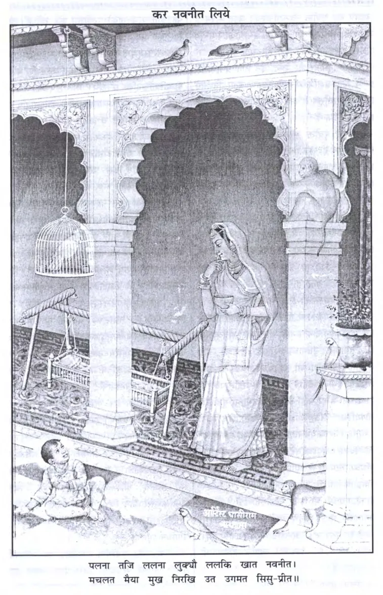
यद्यपि यह पूर्वोक्त स्वरूपनिर्वचन बहुत सूक्ष्म है तथापि यदि इतने ही स्वरूपनिर्वचनमें प्रमाणोंका समन्वय हो जाय तो स्वरूपनिर्वचन पूर्ण हो जाता है।
प्रत्यक्ष, अनुमान और शब्द, इन तीन प्रमाणोंमेंसे आस्तिकोंके लिये ब्रह्मविवेचना या श्रीकृष्णावतार-निर्णयमें शब्दप्रमाण ही सर्वोत्तम है और शब्दप्रमाणमें भी वेद ही सर्वोत्तम माना गया है।
श्रीकृष्णके पूर्वोक्त स्वरूपनिर्वचनमें यदि वेदके प्रमाणोंका समन्वय हो सकता हो तो फिर श्रीकृष्णावतारका स्वरूपनिर्वचन पूर्ण हो जाता है और फिर किसी आस्तिकके हृदयमें श्रीकृष्णके परब्रह्मपुरुषोत्तम होनेमें सन्देह नहीं रह जाता।
'स एवाधस्तात् स उपरिष्टात् स पश्चात् स पुरस्तात् स दक्षिणतः स उत्तरतः स एवेदं सर्वम्।' इत्यादि श्रुतियाँ परब्रह्मको सर्वव्यापक कहती हैं। अब यदि श्रीकृष्ण भी सर्वव्यापक ठहर जायँ तो श्रीकृष्ण ही परब्रह्म हैं यह सिद्ध हो जाय।
श्रीकृष्णके स्वरूपका निरूपण करनेवाले ग्रन्थ हैं, श्रीगीता और श्रीभागवत। ये दोनों ही ग्रन्थ आस्तिकोंको परम माननीय हैं। इन दोनों ग्रन्थोंमें श्रीकृष्णको सर्वव्यापक कहा है। श्रीगीताके सप्तमाध्यायमें कहा है कि, 'मयि सर्वमिदं प्रोतं सूत्रे मणिगणा इव।' नवमाध्यायमें 'मया ततमिदं सर्वं' तथा 'सर्वाणि भूतानि मत्स्थानीत्युपधारय' कहा है। दशमाध्यायमें कहा है कि 'अहमात्मा गुडाकेश सर्वभूताशयस्थितः' 'विष्टभ्याहमिदं कृत्स्नमेकांशेन स्थितो जगत्।' ग्यारहवें अध्यायमें कहा है 'तत्रैकस्थं जगत्कृत्स्नं प्रविभक्तमनेकधा। अपश्यद्देवदेवस्य शरीरे पाण्डवस्तदा।' 'द्यावापृथिव्योरिदमन्तरं हि व्याप्तं त्वयैकेन दिशश्च सर्वाः।' 'सर्व समाप्नोषि ततोऽसि सर्वः।' इत्यादि।
श्रीमद्भागवतमें भी स्पष्ट कहा है कि 'भवान्हि सर्वभूतानामात्मा साक्षी स्वदृग् विभो।' यर्हीदं शक्तिभिः सृष्ट्वा प्रविष्टो ह्यात्मसत्तया।' 'अन्तर्हृदि भास्यखिलात्मनाम्।' (स्कं० १० अ० ८६) इत्यादि। व्यापक होनेसे भी श्रीकृष्ण परब्रह्म हैं।
स उत्तमः पुरुषः' (छान्दो० प्रपाठ ८ खं० १२) यह श्रुति परमात्माको पुरुषोत्तम कह रही है। अब यदि शास्त्रके द्वारा श्रीकृष्ण ही पुरुषोत्तम ठहर जायँ तो श्रीकृष्ण परब्रह्म हैं यह स्वतः सिद्ध हो जाय। भगवद्गीताके सातवें अध्यायमें आप स्वयं आज्ञा करते हैं। 'मत्तः परतरं नान्यत्किंचिदस्ति धनञ्जय।' और १५ वें अध्यायमें तो स्पष्ट कह दिया है 'यस्मात्क्षरमतीतोऽहमक्षरादपि चोत्तमः। अतोऽस्मि लोके वेदे च प्रथितः पुरुषोत्तमः।
दिव्यो ह्यमूर्तः पुरुषः स बाह्याभ्यन्तरोजः। अप्राणो ह्यमनाः शुभ्रो ह्यक्षरात्परतः परः।' (मुण्डक मु० २ खं० १) इस श्रुतिमें उस परमात्माको साकार, अप्राकृत, निर्दोष और सर्वश्रेष्ठ कहा गया है। गीता और भागवतमें भी श्रीकृष्णका इसी प्रकारका निरूपण है। अजोऽपि सन्नव्ययात्मा भूतानामीश्वरोऽपि सन्' 'जन्म कर्म च मे दिव्यं, 'न च मां तानि कमांणि निबध्नन्ति धनंजय', 'परं भावमजानन्तो मम भूतमहेश्वरम्।' 'परं ब्रह्म परं धाम पवित्रं परमं भवान्। पुरुषं शाश्वतं दिव्यमादिदेवमजं विभुम्॥' श्रीमद्भागवतमें भी 'विदितोऽसि भवान् साक्षात्पुरुषः प्रकृतेः परः। केवलानुभवानन्दस्वरूपः सर्वबुद्धिदृक्।' (दशम स्क० अ० ४) नमस्तुभ्यं भगवते पुरुषाय महात्मने। अगुणायाविकाराय नमस्तेऽप्राकृताय च' (स्कं० १० अ० १६) 'आनन्दमात्रमविकारमनन्यदन्यत्।' इत्यादि वचनोंद्वारा श्रीकृष्णमें पूर्वोक्त श्रुतिमें कहे हुए सब धर्म कथित हैं।
'सत्यं विज्ञानमानन्दं ब्रह्म' 'एतस्माज्जायते प्राणो मनः सर्वेन्द्रियाणि च।' 'तस्माद्वा एतस्मादात्मन आकाशः संभूतः, आनन्दं ब्रह्मणो रूपं' इत्यादि तैत्तिरीयोपनिषद् एवं मुण्डकोपनिषद्में परमात्माको आनन्दरूप, सर्व जगत्कर्ता कहा है। इसी प्रकारसे श्रीगीतामें 'अहं सर्वस्य जगतः प्रभवः प्रलयस्तथा' (अ० ७) 'अहं सर्वस्य प्रभवो मत्तः सर्वं प्रवर्तते' और श्रीमद्भागवतमें भी त्वत्तोऽस्य जन्मस्थितिसंयमान् विभो वदन्त्यनीहात् ' (स्कंध १०) नित्योऽक्षरोऽजस्रसुखो निरञ्जनः पूर्णोऽद्वयो मुक्त उपाधितोऽमृतः' (स्कं० १० अ० १४)।
'यः सर्वज्ञः सर्वशक्तिः'। सर्वकर्मा सर्वगन्धः सर्वरसः।' इत्यादि श्रुतियाँ परब्रह्मका जिस प्रकार वर्णन कर रही हैं उसी प्रकार गीता और श्रीभागवतमें श्रीकृष्णका भी वर्णन मिलता है। गोतामें 'मे भिन्ना प्रकृतिरष्टधा' 'प्रकृतिं विद्धि मे पराम् 'दैवी ह्येषा गुणमयी मम माया दुरत्यया' 'ब्रह्मणो हि प्रतिष्ठाहममृतस्याव्ययस्य च। शाश्वतस्य च धर्मस्य सुखस्यैकान्तिकस्य च। 'मत्तः सर्वं प्रवर्तते।' श्रीमद्भागवतमें भी 'पुरुषेश प्रधानस्य ब्रह्मणेऽनन्तशक्तये' (स्कं० १० अ० ४)। 'श्रिया पुष्टया गिरा कान्त्या' (स्कं० १० अ० ३९) इत्यादि वचनोंसे उसी प्रकारका वर्णन मिलता है।
श्रीकृष्णके स्वरूपके विषयमें इतना ही वर्णन पूर्ण होगा कि भगवद्गीता और श्रीमद्भागवतमें उनको स्पष्टरूपसे परब्रह्म कहा है। परं ब्रह्म परं धाम पवित्रं परमं भवान्।' श्रीमद्भागवतमें भी 'त्वं हि ब्रह्म परं ज्योतिर्गूढं ब्रह्मणि वाङ्मये।' (स्कं० १० अ० ६३) इत्यादि।
अब यहाँ प्रश्न उपस्थित हो सकता है कि जब श्रीकृष्ण परब्रह्म पुरुषोत्तम हैं, तो फिर छान्दोग्यादि उपनिषद्में उनकी लीला और उनके स्वरूपोंका वर्णन क्यों नहीं आता? क्योंकि परब्रह्मके स्वरूप और उसकी लीलाओंका वर्णन करनेके लिये ही वेद है।
इसका उत्तर इतना ही है कि परब्रह्म पुरुषोत्तमका दो प्रकारका स्वरूप है—एक प्रकट और दूसरा अप्रकट। अप्रकट स्वरूपका नाम परब्रह्म पुरुषोत्तमादि है। वह प्रकट नहीं है और सर्वत्र गुप्ततया व्याप्त है अतएव उसे पर या ब्रह्म कहते हैं। किन्तु जब वही परब्रह्म किसी समय साधननिरपेक्ष मुक्तिदान करनेके लिये लोकमें प्रकट होता है तब उसके नाम श्रीकृष्णादि होते हैं। दोनों प्रकारके स्वरूपोंका वर्णन उपनिषदोंमें है। अप्रकट परब्रह्मका वर्णन छान्दोग्यादि उपनिषदोंमें है और प्रकट परब्रह्मका वर्णन श्रीवासुदेवोपनिषद् या श्रीकृष्णोपनिषद्में है। अप्रकट सर्वदा रहता है, इसलिये उसका वर्णन बहुत-सी उपनिषदोंमें है किन्तु प्रकट तो किसी समय ही होता है, इसलिये उसका वर्णन दो एक उपनिषदोंमें ही है।
'रसो वै सः' 'अनन्तं ब्रह्म' 'नान्यः पन्था विद्यतेऽयनाय' 'परात्परं पुरुषमीक्षते' इत्यादि श्रुतियोंसे उक्त रसरूपता, अनन्तता, सर्वाश्रयता और परात्परता आदि ब्रह्मधर्म भी श्रीकृष्णके स्वरूपमें श्रीगीता और भागवत और प्रत्यक्षदर्शनके द्वारा स्पष्ट कहे गये हैं। 'सुखस्यैकान्तिकस्य च' 'नान्तो न चादिर्न च संप्रतिष्ठा' 'निवासः शरणं सुहृत्' 'मत्तः परतरं नान्यत्' गीतामें और श्रीमद्भागवतमें योग-विप्रयोग-रसरूपता एवं रसाश्रयताका रासलीलामें श्रीगोपिकाओंने स्वयं अनुभव किया है और वर्णन भी किया है। रसशास्त्रवेत्ता सब विद्वान श्रीकृष्णको ही रसाश्रय और रसाधिदेवता मानते हैं।
श्रीकृष्णकी अनन्तताका दर्शन स्वयं अर्जुनने किया और श्रीयशोदाने भी उलूखल-बन्धनलीलामें किया है। एवं श्रीकृष्णकी परात्परता भी ब्रह्मस्तुति, इन्द्रस्तुतिमें स्पष्ट है। युधिष्ठिरके राजसूय-यज्ञके सर्वप्रथम पूजनमें इसको सबने प्रत्यक्ष देखा था और सर्वाश्रयता (सर्वाधारत्व)-का भी मृत्साभक्षणके समय श्रीयशोदाने प्रत्यक्ष अनुभव किया था। गोवर्धनधारण, दावानलपानप्रभृति लीला भी ईश्वरत्वबोधक है ही।
अब यहाँ एक प्रश्न यह होता है कि यद्यपि वेदोक्त परब्रह्मके धर्म श्रीकृष्णके स्वरूपमें वर्णित हैं और दृष्ट भी हैं तथापि 'एष अज महानात्मा' 'निष्कलं निष्क्रियं' आदि श्रुतियोंमें परब्रह्मको अजन्मा कहा है, निरवयव (निराकार) कहा है और श्रीकृष्णके जन्मका वर्णन श्रीमद्भागवतमें स्पष्ट है तथा श्रीमद्भागवतमें ही श्रीकृष्णको साकार कहा है तो दोनों तरहसे ब्रह्मके स्वरूपमें अनित्यत्व दोष आता है।
इसका उत्तर सूत्रकर्ता श्रीवेदव्यासने ही दे दिया है। 'उभयव्यपदेशात्त्वहिकुण्डलवत्' इत्यादि सूत्रोंमें स्पष्ट कहा है कि परब्रह्म अपने सामर्थ्यसे ही साकार और निराकार दोनों प्रकारका हो सकता है। दिव्य और आनन्दरूप आकार अनित्य नहीं हो सकते। आनन्दरूप ब्रह्म है और आनन्दरूप ही उसके आकार हैं इसलिये स्वरूपभूत होनेसे अनित्यकी शंका भी नहीं हो सकती। 'आप्रणखात् सर्व एव सुवर्णः' 'मोदो दक्षिणः पक्षः' 'प्रमोद उत्तरः पक्षः' इत्यादि श्रुतिमें ब्रह्मको आनन्दाकार भी कहा ही है। वेद ही ब्रह्मके विषयमें बलवत् प्रमाण है, प्रमाणके अनुसार ही प्रमेयका निर्णय करना उचित है। और यह निर्णय भी वेदव्यासने अपने 'कृत्स्नप्रसक्तिनिरवयवत्वशब्द व्याकोषो वा' 'श्रुतेस्तु शब्दमूलत्वात्' मीमांसा-सूत्रोंमें कर दिया है। पहले सूत्रसे निरवयव (निराकार) होनेकी शंका की है और दूसरे सूत्रसे श्रुतिको ही बलवत् प्रमाण मानकर निरवयव और सावयव दोनों तरहका ब्रह्म है किंवा सावयव होनेपर भी उसकी अचिन्त्य सामर्थ्यसे कृत्स्नप्रसक्ति (सबका सब पूरा हो जाना) नहीं हो सकती, यह समाधान किया है। क्योंकि ब्रह्मके विषयमें श्रुति ही प्रमाण है, युक्तिका वहाँ प्रवेश ही नहीं।
भगवद्गीतामें भी 'अनेकबाहूदरवक्त्रनेत्रं' कहकर 'नान्तं न मध्यं न पुनस्तवादिं पश्यामि' कहा है और 'अनादिमध्यान्तमनन्तवीर्यं' कहकर 'शशिसूर्यनेत्रं' कहा है, इसलिये मालूम होता है कि श्रीकृष्णको भी दिव्य साकार मानकर ही व्यापक माना है।
श्रीकृष्णके सब अवयव आनन्दरूप ही हैं, ब्रह्मके स्वरूपसे उसके अवयव भिन्न नहीं हैं। श्रीकृष्णके सर्व आकार अलौकिक हैं, अप्राकृत हैं, दिव्य हैं, आनन्दरूप है अतएव स्वरूपभूत हैं इसलिये वे अनित्य नहीं हो सकते। 'अनुच्छित्तिधर्मा' इत्यादि श्रुतियाँ ब्रह्मके सब धर्मों को नित्य कह रही हैं।
यहाँ यह प्रश्न पुनः हो सकता है कि तो फिर श्रीकृष्णका स्वरूप और उनके आकार प्राकृत क्यों मालूम होते हैं। उनके इन्द्रियोंके कार्य स्नान—भोजनादि भी प्राकृत ही मालूम पड़ते हैं, यह क्यों?
इसका उत्तर तो स्वयं श्रीकृष्णने ही श्रीगीतामें दे दिया है। 'अज्ञानेनावृतं ज्ञानं तेन मुह्यन्ति जन्तवः' 'नाहं प्रकाशः सर्वस्य योगमायासमावृतः। मूढोऽयं नाभिजानाति लोको मामजमव्ययम्।' 'अवजानन्ति मां मूढा मानुषीं तनुमाश्रितम्। परं भावमजानन्तो मम भूतमहेश्वरम्।'
अर्थात् 'मूर्ख लोगोंका ज्ञान अज्ञानसे ढका हुआ रहता है इसलिये ऐसे लोग मेरे स्वरूप और लीलाओंके विषयमें बहक जाते हैं।' 'मैं सारे जगत्की दृष्टिमें प्रकट नहीं होता हूँ क्योंकि अपनी आधिदैविकी मायासे ढका हुधा प्रकट होता हूँ। इसीलिये यह मूर्ख लोग मेरे अन्यय स्वरूपको नहीं जान पाते।' 'एक ओर तो यह मूर्खलोग मेरे सर्वैश्वर्यसम्पन्न परम उत्कृष्ट माहात्म्यको नहीं जानते दूसरी तरफ मुझे मनुष्य-सरीखे तनुको स्वीकार किये देखते हैं इसलिये मुझे प्राकृत-लौकिक समझ लेते हैं और मेरा अपमान करते हैं। जैसे गोवर्धनपूजाके समय इन्द्रने भूलसे किया था।'
आवेश, अवतार और आविर्भाव, ये यद्यपि अवतरणरूप प्रवृत्ति-निमित्तके एक होनेसे तीनों लोकमें एक ही (अवतार) नामसे प्रसिद्ध हैं तथापि तीनोंमें कुछ-कुछ विभेद है, जिसे हम पूर्वमें कह चुके हैं। श्रीकृष्णका अवतार रहते भी वास्तवमें आविर्भाव है। श्रीकृष्ण साक्षात् परब्रह्म पुरुषोत्तम हैं अतएव अवतारी हैं। और सब अवतार हैं और वे श्रीकृष्ण (श्रीपुरुषोत्तम)के ही अवतार हैं। यही बात श्रीमद्भागवतके प्रथमस्कन्धमें परिभाषारूपसे कह दी है कि—एते चांशकलाः पुंसः कृष्णस्तु भगवान् स्वयम् अर्थात् अन्य सब अवतार अन्तर्यामीके अंश और कला हैं किन्तु श्रीकृष्ण तो स्वयं परब्रह्म भगवान् ही हैं। अर्थात् श्रीकृष्ण तो श्रीपुरुषोत्तमका ही आविर्भाव है।
भगवद्गीताके चतुर्थ अध्यायमें भगवान्के अवतारके विषयमें तीन श्लोक हैं। जब श्रीकृष्णने अर्जुनको दिव्यज्ञान कर्ममिश्र भक्तियोगका उपदेश देकर यह कहा कि यह योग पहले मैं सूर्य (मनु) से भी कह चुका हूँ,' तब अर्जुनको बड़ा आश्चर्य हुआ और वह बोला कि 'मित्र! सूर्य तो बड़ा पुराना है और आप तो अब हुए हो, मैं कैसे समझ लूँ कि आपने ही पहले यह योग सूर्यसे कहा था?'
इसके उत्तरमें श्रीकृष्णने अर्जुनको आज्ञा की कि 'अर्जुन! हमारे तुम्हारे बहुत जन्म हो गये हैं, उन सबको,-मैं सर्वज्ञ हूँ, ईश्वर हूँ-इसलिये जानता हूँ पर तू अल्पज्ञ होनेसे नहीं जानता।' यहाँपर ही अपने अवतारके विषयमें तीन श्लोक कहे हैं।
अजोऽपि सन्नव्ययात्मा भूतानामीश्वरोऽपि सन्।
प्रकृतिं स्वामधिष्ठाय संभवाम्यात्ममायया॥ ६॥
यदा यदा हि धर्मस्य ग्लानिर्भवति भारत।
अभ्युत्थानमधर्मस्य तदात्मानं सृजाम्यहम्॥ ७॥
परित्राणाय साधूनां विनाशाय च दुष्कृताम्।
धर्मसंस्थापनार्थाय संभवामि युगे युगे॥ ८॥
इन तीनों श्लोकोंमें एक भगवान्के अवतारकी ही बात (जोकि लोकमें प्रसिद्ध है) नहीं कही गयी है, किन्तु तीनोंमें अलग-अलग बातें कही हैं। हम पूर्वमें कह चुके हैं कि परब्रह्म भगवान्का 'अवतरणं-वैकुण्ठादत्रागमनं' (वैकुण्ठसे लोकमें प्रकट होना) तीन तरहसे होता है—पहला पूर्णाविर्भाव, दूसरा अंशावतार और तीसरा आवेशावतार।
यदि तीनों श्लोकोंमें भगवान्को एक अवतारकी ही बात कहनी होती तो तीन श्लोकोंके कहनेकी आवश्यकता हा नहीं थी। साधु-रक्षा, असुर-दमन और धर्म-रक्षा ये भगवदवतारके तीन कार्य लोकमें प्रसिद्ध हैं सो तो परित्राणाय.' इस पाठवें श्लोकमें पा ही चुके थे, फिर दो श्लोक और क्यों कहे? यह प्रश्न रह ही जाता है।
इसलिये कहना पड़ता है कि श्रीमद्भागवतमें अवतारोंके विषयमें यह कहकर जो निर्णय किया है वही निर्णय यहाँ भी किया गया है। गीता सूत्र है तो श्रीभागवत उसीका भाष्य है, २४ अवतार हैं तो श्रीकृष्ण परब्रह्मका पूर्ण आविर्भाव है।
'अजोऽपि सन्' इस पहले श्लोकमें परात्पर पूर्णपुरुषोत्तमके साक्षात् आविर्भावका निरूपण है। दूसरे श्लोकमें आचार्यावतारका निरूपण है और तीसरेमें पुरुषके अंशावतारोंका वर्णन है और इसी 'अजोऽपि सन्' श्लोकमें प्राकृतत्व शंकाको दूर भी किया है।
साधु-परित्राण और असुर-हनन, ये कार्य आचार्यके नहीं, किन्तु उनका तो शास्त्रनिर्णय और ज्ञानोपदेशके द्वारा धर्म-संस्थापन और दैवजनोद्धार ही कार्य है। वह कार्य 'यदा यदा हि' इस श्लोकमें कह दिया है। आचार्यशब्दका प्रवृत्ति-निमित्त भी उसके कार्यानुसार ही शास्त्रमें कहा गया है।
आचिनोति हि शास्त्राणि स्वाचारे स्थापयत्यपि।
आचारयति तं लोके तमाचार्यं प्रचक्षते॥
जो शास्त्रोंका वैदिक अर्थमें समन्वय करे और वैदिक आचारका अपनेमें भी आचरण करता हो एवं उपदेशादि द्वारा लोकको भी वैसा आचरण कराता हो वह 'आचार्य' कहा जाता है। आचार्यमें भक्तत्व और ईश्वरत्व दोनों रहते हैं, इसीलिये मूलमें 'आत्मानं' 'सृजामि' दोनों पद दिये हैं। 'सृज विसर्गे' विसर्गार्थक सृज-धातुका प्रयोग किया है। कारण-सृष्टिका नाम 'सर्ग' है और पौरुष अर्थात् कार्य-सृष्टिका नाम विसर्ग है। विसर्गार्थक धातुका प्रयोग ईश्वरमें उपयुक्त नहीं हो सकता। क्योंकि ईश्वर-शब्दका प्रवृत्ति-निमित्त ही दूसरा है। इसलिये सातवें श्लोकमें आचार्यावतारका निरूपण है।
भगवदंशावतारके दैव-रक्षा असुर-हनन' और 'धर्म-रक्षा' ये तीनों कार्य हैं। इसलिये ८वें परित्राणाय' श्लोकमें अवतारके तीनों प्रयोजन कहे गये हैं और साथमें अलौकिक रीतिसे प्रकट होनेका द्योतन करनेवाला 'संभवामि' यह पद कहा गया है। यदि जन्ममात्रको दिखाना होता तो 'भवामि' इतनेमात्रसे सब कुछ हो सकता था, किन्तु भगवान्को दिखाना है, 'ईश्वरांशावतार' इसलिये संभवामि पद दिया है। ईश्वर शब्दका पूर्ण प्रवृत्ति निमित्त कर्त्तुमकर्त्तुमन्यथाकर्त्तुं सामर्थ्य' (अद्भुतकर्मत्व) है। यह अद्भुत कर्मत्वरूप ईश्वर शब्दका प्रवृत्ति-निमित्त जहाँ आंशिकरूपमें हो यह आवेशावतार, जहाँ भक्तत्व न रहकर और भी विशेषरूपसे ईश्वरशब्दका प्रवृत्ति-निमित्त मौजूद हो वह अंशावतार', और ईश्वर-शब्दका प्रवृत्ति-निमित्त जहाँ पूर्णरूपसे विराजता हो वह भगवान्का पूर्ण आविर्भाव है।
स्वोपज्ञ सदुपदेश और सर्वशास्त्र-समन्वयरूप आंशिक अद्भुतकर्मत्व आचार्यमें मौजूद है इसलिये आचार्य भगवान्का अवतार है। दत्त, वाराह आदि अवतारोंमें उससे भी विशेष रूपसे अद्भुतकर्मत्व (विचित्र रीतिसे साधु-रक्षा और असुरहनन) मौजूद होता है इसलिये वे भगवान्के प्रधान अंशावतार हैं और श्रीकृष्णमें पूर्णरूपसे अद्भुतकर्मत्व विद्यमान था, इसलिये श्रीकृष्ण परब्रह्मका पूर्ण आविर्भाव है।
गीता चतुर्थ अध्यायके ६ठे अजोऽपि' श्लोकमें श्रीपुरुषोत्तमने अपने पूर्ण आविर्भावका निरूपण किया है। मैं अजन्मा हूँ, अविकारात्मा हूँ और सब सत्ताधारियोंका ईश्वर हूँ तो भी अपने स्वभावको स्वीकार करके तथा अपनी निजमाया (योगमाया-प्राधिदैविकी माया) को साथ लेकर ‘संभवामि' उत्तम रीतिसे पैदा होता हूँ। यह श्लोकका अक्षरार्थ है। यहाँ 'आत्ममायया' इतना पद देकर आपने सब शङ्काओंको दूर कर दिया है।
श्लोकमें भगवान्ने 'अहं' अपने आविर्भावके 'अजः', 'अव्ययात्मा' और 'ईश्वरः' तीन विशेषण दिये हैं। यह तीनों विशेषण परात्पर ब्रह्मको ही दिये जा सकते हैं, मनुष्यको नहीं। यह तो स्पष्ट ही है अतएव यह भी स्पष्ट ही है कि श्रीकृष्ण स्वयं साक्षात् पुरुषोत्तम हैं।
किन्तु एक दूसरी बात और भी है, 'अजः' आदि तीनों विशेषण सम्भव (पैदा होने)-के विरुद्ध हैं। जो अजन्मा है, जो अविकार है और जो ईश्वर है वह पैदा कैसे और क्यों हो सकता है? अजत्व और भव, अविकारत्व और जन्म, ईश्वरत्व और पैदा होना ये सब परस्परमें विरुद्ध हैं। किन्तु 'अणोरणीयान्महतो महीयान्' 'अजायमानो बहुधा विजायते' इत्यादि श्रुतियोंमें साक्षात्परब्रह्मका विरुद्ध-धर्माश्रय रहना यह खास लक्षण कहा है। और वह विरुद्ध-धर्माधार होना यहाँ अजोऽपि सन्' आदि पदोंसे कहा गया है। इसलिये श्लोकके पूर्वार्द्ध और क्रियासे यह भी स्पष्ट हो रहा है कि श्रीकृष्ण अपने आपको विरुद्ध-धर्माधार कहते हुए साक्षात् परब्रह्मका आविर्भाव कह रहे हैं।
'प्रकृतिं स्वामधिष्ठाय संभवामि।' यहाँ प्रकृति-शब्दके दो अर्थ होते हैं—रूढ़ और यौगिक। रूढ़-अर्थ स्वभाव है और यौगिक अर्थ है प्रकृष्टा कृतिः प्रकृतिः करणाकरणान्यथाकरण (करना, न करना और अन्य तरहसे कर देना) अर्थात् अद्भुत कर्मत्व। श्रीकृष्ण साक्षात्परब्रह्मका आविर्भाव है इसलिये यहाँ प्रकृति-शब्दके रूढ़ और यौगिक दोनों अर्थ लेने उचित हैं। वे दोनों अर्थ श्रीकृष्णमें समन्वित हैं।
'स्वः स्वकीयो भावः सत्ता धर्मान् सामर्थ्यं चेति यावत्' अर्थात् अपने परब्रह्मत्वको छिपाये रहनेपर भी अगत्या प्रकट हो जानेवाले ब्रह्मधर्म और ब्रह्मसामर्थ्यको स्वीकार करके मैं उत्तम रीतिसे प्रकट होता हूँ।
श्रीनन्द और श्रीयशोदाको पूर्वजन्मके वरदानके अनुसार अपनी बाललीलाके आनन्दका दान करनेके लिये प्रभु अपने ब्रह्मधर्म एवं ब्रह्मसामर्थ्यको अत्यन्त छिपाकर रखते थे तथापि उनका नित्य सहयोग होनेसे कभी-कभी मृत्तिकाभक्षण, यमलार्जुन-भङ्ग, शकटभञ्जन प्रभृति लीलाओंके समय वे धर्म और वह सामर्थ्य अपने आप प्रकट भी हो जाते थे इसलिये स्पष्ट हो जाता है कि श्रीकृष्ण साक्षात् परब्रह्म पुरुषोत्तमका आविर्भाव है।
वास्तवमें तो प्रकृति-शब्दके रूढ़ अर्थका यह तात्पर्य है कि जैसे अग्निका स्वभाव है कि हर एक वस्तुमें प्रवेश करके उसे उसका प्राकृत रूप हटाकर अपना स्वरूप दान कर देना, इसी प्रकार भगवान् पूर्णपुरुषोत्तम श्रीकृष्ण भी हर एकको उसका प्राकृतत्व दूरकर अपना स्वरूप दान करनेके लिये ही लोकमें प्रकट हुए हैं। लीला, स्वरूप और नाम तीनोंके द्वारा अपने आनन्दस्वरूपको भक्तोंमें प्रवेश कराकर उन्हें आनन्दमय कर देना और इस तरह उनका उद्धार कर देना, यह उनकी प्रकृति (स्वभाव) है, इसलिये श्लोकके तीसरे पादमें स्वयं आज्ञा करते हैं कि 'मैं 'स्वा' अपनी, प्रकृति (स्वभाव)-को स्वीकार करके, 'संभवामि' प्रकट होता हूँ।'
यौगिक अर्थका भी तात्पर्य यही है। 'प्रकृष्टा सर्वोत्तमा सर्वाश्चर्यकरीति यावत्, या कृतिः करणं लीलेति यावत् सा प्रकृतिः' अर्थात् अन्य किसी मनुष्यादि किंवा देवतान्तरसे भी न हो सके ऐसी सर्वाश्चर्यकरी जो उत्तमलीला है, उस प्रकृतिको स्वीकार करके मैं प्रकट होता हूँ।
केवल अपने स्वरूप-बलसे ही सर्व जगत्को अपने स्वरूपका दान करके उद्धार कर देना यही श्रीकृष्णकी प्रकृष्ट कृति-सर्वाश्चर्यकरी सर्वोत्तम लीला है और यही उनका स्वकीयभाव (स्वभाव) धर्म और सामर्थ्य है।
अग्नि अपने दाख तृण किंवा पत्थर प्रभृति किसी भी पदार्थके साधनोंकी किञ्चिन्मात्र भी अपेक्षा न रखकर अपने स्वरूपबलसे ही उन-उन पदार्थोंको उनका अन्य स्वरूप दूरकर अपना स्वरूप दे देता है, यह उसका सहज स्वभाव है। इसी प्रकार श्रीकृष्ण भी अपने साथ किसी तरहका भी सम्बन्ध करनेवाले जनको उसके साधनोंकी किञ्चिन्मात्र भी परवा न करके अपने ही स्वरूप-सामर्थ्यसे उनका अन्यथा रूप (प्राकृत) दूरकर अपने अलौकिक और आनन्दमय स्वरूपको उनमें प्रवेश कराकर उनको आनन्दमय बना देते हैं, अर्थात् उनका उद्धार कर देते हैं, यह उनकी प्रकृति-स्वभाव है। 'उस प्रकृतिको स्वीकार करके मैं प्रकट होता हूँ' यह कहकर श्रीकृष्ण अपने आपको परब्रह्मका आविर्भाव कह रहे हैं।
'मुक्तिर्हित्वाऽन्यथारूपं स्वरूपेण व्यवस्थितिः।' इस समाधिभाषाके अनुसार भगवान् जीवका अन्यथारूप छुड़ाकर और अपने स्वरूपका दान करके उसे भी स्वरूपस्थित कर देते हैं। यही जीवका उद्धार है और यही मुक्ति है।
जैसे भगवान् सच्चिदानन्द हैं वैसे जीव भी वास्तवमें सच्चिदानन्दका अंश होनेसे सच्चिदानन्द ही है, किन्तु भगवदिच्छासे उसके आनन्दांशका तिरोधान हो जाता है। आनन्दांशके तिरोधान होनेसे जीवमें अनेक दोष भी आ जाते हैं। बस, यही जीवका अन्यथारूप (बन्ध) है। जिन-जिन जीवोंको भगवान्ने अनुग्रहमार्गमें स्वीकार किया है उन-उन जीवोंको उनके साधनोंकी अपेक्षा न रखकर उन्हें साधन-निरपेक्ष मुक्तिदान करनेके लिये ही लोकमें पर ब्रह्मका प्रादुर्भाव या अवतार होता है।
जब जिस जीवके ऊपर प्रभुका पूर्ण अनुग्रह होता है, तब आनन्दरूप भगवान् प्रकट होकर उसको अपने स्वरूपबलसे ही अपने किसी भी प्रकारके सम्बन्धमात्रसे स्वरूपदान करके अर्थात् जीवके देहेन्द्रियान्तःकरण-स्वरूपोंमें अपने आनन्दका स्थापन करके उसे अपने स्वरूपमें स्थित कर लेते हैं। यही जीवकी मुक्ति (अन्यथारूप छोड़कर स्वरूपावस्थिति) है, और इस तरह जीवको आनन्दमय कर देना यही प्रभुकी प्रकृति-प्रकृष्टा कृति या स्वभाव है। इस प्रकृतिको स्वीकार करके मैं प्रकट होता हूँ—प्रकृतिं स्वामधिष्ठाय संभवामि'। बस, श्लोकमें यह कहना है।
'नृणां निःश्रेयसार्थाय व्यक्तिर्भगवतो भुवि।
अव्यस्याप्रमेयस्य निर्गुणस्य गुणात्मनः॥
भागवतके इस श्लोकमें, श्रीव्यासदेवने और उसकी सुबोधिनीमें१ श्रीवलभाचार्यने भी जीवमात्रको निरपेक्ष मुक्तिदान करनेके लिये ही भगवान्का प्रादुर्भाव है—यह निरूपण किया है। अव्यय अप्रमेय निर्गुण गुणहेतु और सर्वेश्वर यदि साधन-निरपेक्ष-मुक्ति न दे तो उसका लोकमें प्रकट होना ही व्यर्थ हो जाता है। सर्वेश्वर होनेसे स्वार्थ-प्राकट्य व्यर्थ है और वह अप्रमेय अविकृत होनेसे साधन नहीं हो सकता और निर्गुण होनेसे भजनीय भी नहीं हो सकता इसलिये परार्थ भी प्राकट्य नहीं हो सकता। अतः केवल साधन-निरपेक्ष-मुक्तिदानके लिये ही वह प्रकट होता है।
१. प्राणिमात्रस्य मोक्षदानार्थमेव भगवान् अभिव्यक्तः। अन्यथा न भवेत्। असाधारणप्रयोजनाभावात्। भूभारहरणादिकं च अन्यथापि भवति। प्रकारान्तरेण तादृशस्य नाभिव्यक्तिः संभवतीति वक्तुं भगवन्तं विशिनष्टि भगवानित्यादि। आदौ भगवान् सर्वेश्वर्यसम्पन्नः अपराधीनः कालकर्मस्वभावानां नियामकः सर्वनिरपेक्षः किमर्थमागच्छेत्। किं च स्वार्थ गमनाभावेषि परार्थ स्यात्तदपि नास्तीत्याह-अव्ययस्येत्यादि चतुर्भिः पदैः। अन्येषां कृतिसाध्यं ज्ञानसाध्यं वा यद्भवति तदुपयुज्यते, भगवांस्तु अव्ययत्वात् अविकृतत्वात् न कृतिसाध्यः। अप्रमेयत्वात् ज्ञानसाध्योपि न। देहादिभजनद्वारा भजनीयो भविष्यतीत्यपि न, यतो निर्गुणः। निर्गता गुणा यस्मात्। गुणेषु विद्यमानेष्वेवान्यस्य प्रतिपत्तिस्तत्र भवति। ...... अतः स्वपरप्रयोजनाभावात् यदि साधननिरपेक्षा मुक्ति न प्रयच्छेत्, तदा व्यक्तिः (प्रादुर्भावः) प्रयोजनरहितैव स्यात्। सुबोधिनी। (श्रीवल्लभाचार्यः)
यहाँ यह प्रश्न होता है कि यदि भगवान् अपने इस प्रकारके स्वभावका (परमकरुणत्व-सर्वशक्तिमत्व आदिका) स्वीकारकर सर्वविध सम्बन्धमात्रसे निरपेक्ष मुक्ति देनेके लिये ही प्रकट होंगे तो फिर किसीका भी बन्ध रह ही नहीं सकता। दर्शनमात्रका भी सम्बन्ध तो सब जीवोंका हो ही सकता है और नामका सम्बन्ध तो सर्वकालमें हो सकता है, फिर दृष्टिद्वारा स्वरूप-सम्बन्ध करनेवाले और श्रवणद्वारा नाम-सम्बन्ध करनेवाले सबके सब मुक्त हो जायँगे, तब बद्धजीव तो कोई रहेगा ही नहीं, तो फिर गीताके षोडशाध्यायमें 'मामप्राप्यैव कौन्तेय ततो यान्त्यधमां गतिम्' यह जो प्रभुने आसुर जीवोंके लिये प्रतिज्ञा की है वह व्यर्थ हो जायगी।
इस आशंकाको दूर करनेके लिये श्रीकृष्ण भगवान् श्लोकके चतुर्थ चरणमें आज्ञा करते हैं कि 'आत्ममायया संभवामि' मैं अपनी मायाको साथ लेकर प्रकट होता हूँ। सहार्थमें तृतीया है। मायाको साथ लेकर प्रकट होते हैं इसलिये सब प्रकारकी आशंकाएँ दूर हो जाती हैं। श्रीकृष्ण भगवान् यदि पूर्णब्रह्म हैं तो फिर उनमें देहेन्द्रियादि और उनके कार्य प्राकृत क्यों मालूम पड़ते हैं? यह पहली शंका भी इस पद (आत्ममायया)-से दूर हो जाती है।
परब्रह्मकी माया दो प्रकारकी है। एक भगवत्स्वरूपसे दृढ़ सम्बन्ध करानेवाली और दूसरी भगवत्स्वरूपसे जुदा कर संसारसे दृढ़ सम्बन्ध करानेवाली। 'मम माया दुरत्यया' श्लोकमें भगवत्स्वरूपसे पृथक् भाव करानेवाली केवल माया है। क्योंकि 'मम माया'में मायाको स्वरूपसे जुदा कर दिया है। और 'आत्ममायया'में मायाका आत्मके (अपने) साथ सम्बन्ध कर दिया गया है। इसलिये यह स्वरूप-सम्बन्ध करानेवाली है और वह स्वरूपसे पृथक्भाव करानेवाली है। जिनको भगवान् अपने स्वरूपका सम्बन्ध कराना चाहते हैं, उन्हें आधिदैविकी उस स्वरूप-सम्बन्धिनी मायाके द्वारा लीलानुभव कराते हैं, इसीसे उन भक्तोंका भगवान्के स्वरूपसे दृढ़ सम्बन्ध हो जाता है और जिनको भगवान् अपने स्वरूपसे पृथक् ही रखना चाहते हैं उनको इस आध्यात्मिक मायासे मोह कराते हैं। इसलिये उन्हें केवल आनन्दमय भगवान्के स्वरूपमें प्राकृत देहेन्द्रियादि भान होकर हृदयका दुर्भाव हो जाता है। उनका ज्ञान अज्ञानसे ढक जाता है। वे भगवान्के ऐश्वरभावको नहीं जान सकते। वे भगवान्का सेवन भी नहीं करते अतएव उनकी मुक्ति नहीं होती। और उन्हींके लिये कहा गया है कि 'मामप्राप्यैव कौन्तेय ततो यान्त्यधमां गतिम्।' 'अज्ञानेनावृतं' 'न मां दुष्कृतिनो अवजानन्ति मां'।
जो माया आधिदैविकी है और जिसके द्वारा स्वरूप सम्बन्ध और लीलानुभव होता है उसे भगवच्छास्त्रमें 'योगमाया' 'वैष्णवीमाया' किंवा कहीं-कहीं 'आत्ममाया' शब्दसे भी कहा गया है। जो माया आध्यात्मिकी (अक्षरकी) है और जिसके द्वारा स्वरूपमें प्राकृत देहेन्द्रियादिका असत्य भान होता है तथा अनुकूल लीलाओंका अनुभव नहीं होने पाता उस मायाको केवल 'माया' शब्दसे ही सर्वत्र कहा गया है।
ऐसे बहुत-से चित्र देखे जाते हैं जिन्हें एक तरफसे देखनेपर हाथी मालूम देता है तो दूसरी तरफसे देखनेपर वही घोड़ा दीखने लगता है। इसी प्रकार सच्चिदानन्द भगवान्की माया एक ही प्रकारकी है किन्तु 'सर्वभवनसमर्था' होनेसे भगवदिच्छानुसार कार्य और रूप कर लेती है। इसीलिये श्रीमद्भागवतमें श्रीशुकब्रह्मने कहा है कि 'आदिष्टा प्रभुणांशेन कार्यार्थे संभविष्यति' 'यदा बहिर्गन्तुमियेष तर्ह्यजा या योगमायाजनि नन्दजायया' अर्थात् जिस समय साक्षात् परब्रह्म प्रकट हुए उसी समय भगवत्कार्य करनेके लिये भगवदाज्ञासे नन्द-स्त्रीकी कुक्षिसे भगवन्माया भी प्रकट हुई।
परब्रह्मके प्राकट्य-समयमें भगवन्माया भगवदिच्छासे मुख्य दो भगवत्कार्य करती है। एक तो भगवत्स्वरूपसे दृढ़ सम्बन्ध कराकर लीलाका अनुभव कराना और दूसरा भगवत्स्वरूपसे जुदा करके स्वरूपमें प्राकृतभाव कराना एवं लीलाका अनुभव न कराना। मायाके इन दोनों कार्योंसे भगवदिच्छित 'अनुग्रहीत भक्तोंको निःसाधन मुक्ति देना' और 'सहज आसुरोंको मुक्ति न देना,' दोनों प्रयोजन होते चले जाते हैं। इसलिये भगवत्स्वरूपमें कोई भी अंश प्राकृत नहीं है ऐसा भान होना वैष्णवीमायाका अंश है।
श्रीमद्भागवतके प्रारम्भिक 'जन्माद्यस्य' श्लोकमें स्वयं व्यास भगवान्ने आज्ञा की है कि 'यत्र त्रिसर्गो१ मृषा' अर्थात् जिस परब्रह्मके स्वरूपमें विसर्ग अर्थात् प्राकृत देह, इन्द्रिय और अन्तःकरणकी सृष्टि झूठी है, प्रातिभासिक है। कभी-कभी जैसे तेजमें वारि-बुद्धि, वारिमें पृथ्वी-बुद्धि, मणिमें अग्नि-बुद्धि, काचमें जल-बुद्धि और मेघके टुकड़ोंमें चन्द्र-बुद्धि दीखनेमात्रकी है, झूठी है, इसी प्रकार परब्रह्ममें किंवा साक्षात् परब्रह्माविर्भाव श्रीकृष्णमें प्राकृत देह, इन्द्रिय, मन तथा उनके धर्म जो किसी-किसीको कभी-कभी दीखते हैं वे प्राकृत हैं—झूठे हैं।
१. तेजसि वारिबुद्धिर्मरीचितोये, वारिणि पृथ्वीबुद्धिस्तामिनाया जलादौ, तथा मण्यादिष्वासबुद्धिः पृदिकाचादौ वारिबुद्धिः, चन्द्रकिरणे वस्त्रबुद्धिः। ते यथा जीवानां बुद्धिकाल्पतास्तथा भगवति देहेन्द्रियान्तःकरणबलमवतारादिषु मृषेत्याह-यत्र त्रिसर्गो मृषेति। केचित् भगवति देहेन्द्रियाणि परिकल्प्य तेषां चिदानन्दत्वं परिकल्पयन्ति केचिच्चिदानन्दे देहेन्द्रियाणि, केचिच्चले कृष्णे जडजीवसम्बन्ध परिकल्पयन्ति। ....."तेषां सर्वेषां बुद्धिरेव भ्रान्ता, न ब्रह्मणि शरीरेन्द्रियसम्बधः यथा पुनर्ब्रह्मणि व्यवहारस्तथोत्तरत्र वक्ष्यते। (सुबोधिनी-मा०-१-१-२)
श्रीकृष्णका स्वरूप केवल आनन्द है—आनन्दमय है और सर्वभवनसमर्थ है, इसलिये भगवान् ही भक्तोंको लीलानुभव करानेके लिये और असुरोंको दुर्भाव करानेके लिये अपनी मायाके द्वारा अपने आनन्दस्वरूपको देह, इन्द्रिय, मन और तद्धर्मरूपसे प्रतिभास कराते हैं। वास्तवमें श्रीकृष्णके स्वरूपमें प्राकृत देहेन्द्रियादि हैं ही नहीं। यदि श्रीकृष्णमें प्राकृत देहेन्द्रियादि होते तो जैसे प्राकृत पुरुषमें आसक्ति करनेवालेकी मुक्ति नहीं होती, प्रत्युत अधःपात होता है इसी तरह श्रीकृष्णभजन करनेवालेकी भी दशा होती। यह बात तो किसी शास्त्रसे, किसीके अनुभवसे और किसी दृष्टान्तसे भी नहीं प्राप्त होती। इसलिये श्रीकृष्णके स्वरूपमें प्राकृत या लौकिक भाव होना मायिक कार्य आसुर स्वभाव ही है।
बच्चोंको चाँदी या सोनेके घोड़ेमें जो घोड़ेका आकार प्रतिभासित हो रहा है वह सत्य है, असत्य नहीं; किन्तु जो उसमें हाड़-चामवाले सच्चे घोड़ेका भान होता है वह असत्य है। इसी प्रकार श्रीकृष्ण भगवान्के आनन्दस्वरूपमें जो देहेन्द्रियादिके होनेका आभास हो रहा है वह तो असत्य नहीं है, सत्य है, क्योंकि भक्तोंको लीलानुभवपूर्वक स्वरूपासक्ति करानेके लिये, तथा आसुरोंको प्राकृतत्व भान कराकर पृथक्भाव करानेके लिये वह आभास अपेक्षित है, अतएव स्वयं भगवान् ही ऐसा दिखा रहे हैं, किन्तु आभासके भुलावेमें आकर उसे प्राकृत या लौकिक समझ बैठना, बस, यह प्राकृतत्व भान ही असत्य है।
इसीलिये भगवद्गीताके ब्रह्मलक्षणमें कहा है कि 'सर्वेन्द्रियगुणाभासं सर्वेन्द्रियविवर्जितम्' अर्थात् भगवान्के स्वरूपमें सर्व देहेन्द्रियान्तःकरण और तद्धर्मोंका आभास होता रहता है किन्तु वास्तवमें वह प्राकृत देहेन्द्रियान्तःकरण तद्धर्मोंसे रहित है। श्रीकृष्ण भगवान् साक्षात् परब्रह्म हैं। परब्रह्मका साक्षात् आविर्भाव है। यह हम श्रुति, गीता और भागवतसे सिद्ध कर चुके हैं। श्रीकृष्ण भगवान् परब्रह्म हैं। इसलिये अपने सर्वशाक्तिक आविर्भावके समय, अनधिकारियोंको अपने स्वरूप और लीलाओंका अनुभव न होना चाहिये और अधिकारियोंको स्वरूप एवं लीलाओंका अनुभव होना चाहिये। इन दोनों प्रयोजनोंकी सिद्धि होनेके लिये तथा असुरोंकी मुक्ति न होने पावे और अनुग्रहीत भक्तोंको स्वरूप-सम्बन्ध-मात्रसे साधननिरपेक्ष-मुक्ति मिल जाय, इस प्रयोजनकी सिद्धिके लिये भी आप अपनी विविध मायाको साथ ही लेकर प्रकट हुए हैं इसलिये ही गीतामें कहा है कि 'आत्ममायया (सह) संभवामि' मैं अपनी मायाको साथ लेकर प्रकट होता हूँ।
कालकर्मस्वभावके वश होकर अपने भोग्यकर्मोंका भोग करनेके लिये कार्यानुसार देहमें पैदा होना अदिव्य जन्म है और कालकर्मस्वभावको अपने वशमें रखकर भक्तोंका उद्धार करनेके लिये आवरणको हटाकर अपने स्वरूपमें ही प्रकट हो जाना, दिव्य जन्म है। श्रीकृष्णका दिव्य जन्म है, इसीसे कहा है ‘संभवामि' तथा 'जन्मकर्म च मे दिव्यमेवं यो वेत्ति तत्त्वतः' इस श्लोकमें भी संभवामि' पदके अर्थको स्पष्ट किया है। श्रीमद्भागवतमें भी तमद्भुतं बालकमम्बुजेक्षणं' श्लोकमें स्पष्ट ही श्रीकृष्णके दिव्यजन्मका निदर्शन कराया गया है।
इस तरह श्रुति, स्मृति (गीता) और भागवत तीनोंके द्वारा यह सिद्ध हो चुका कि श्रीकृष्णका अवतार साक्षात् पूर्ण पुरुषोत्तमका आविर्भाव है। आविर्भाव—अवतार—के समयका नाम श्रीकृष्ण१ है और गुप्ततया स्थिति (अनाविर्भाव या अनवतार)के समयका नाम पुरुषोत्तम या परब्रह्म है किन्तु वस्तुतः दोनों एक ही हैं।
१. स एव परमकाष्ठापन्नः कदाचिज्जगदुद्धारार्थमखण्डः पूर्ण एव प्रादुर्भूतः कृष्ण इत्युच्यते। (निबन्धः)
परब्रह्मके रूपान्तर भूमापुरुष, अन्तर्यामी भगवान्, शुद्धसत्त्वको आधार बनाकर असुरसंहार, साधुरक्षा और धर्म-स्थापनरूप क्रीड़ाके लिये अपनी इच्छानुसार देशके आवरणको हटाकर ज्ञान अथवा क्रियारूप अंशसे जब लोकमें प्रकट होते हैं तब वह भगवान्का अंशावतार कहा जाता है। चौबीस अवतार भगवान्के प्रधान अंशावतार हैं। यह अवतार यथापूर्व समय-समयपर होते रहते हैं। और सर्वत्र गुप्तरूपसे व्याप्त केवल आनन्दरूप परब्रह्म पूर्ण पुरुषोत्तम सत्त्वादिको आधार न बनाकर अपने अप्राकृत आनन्द-स्वरूपको ही शरीरेन्द्रियान्तःकरणरूपसे आभासित कराता हुआ असुरदमन, साधुरक्षा, धर्मस्थापन आदि प्रयोजनसहित प्रधानतया साधननिरपेक्ष अपने सम्बन्धमात्रसे सर्वोद्धार करनेके लिये अंशांशसहित जब किसी एक देशसे आवरण हटाकर अपने इच्छित लोकमें प्रकट होता है तब वह पूर्णाविर्भाव कहा जाता है। पूर्णाविर्भाव क्वचित् और एक ही होता है। यह पूर्ण अवतार पूर्णपुरुषोत्तम श्रीकृष्णचन्द्र हैं।
कितने ही कल्पोंमें श्रीकृष्णावतार होता है किन्तु पूर्णाविर्भाव सारस्वतकल्पमें होता है। श्रीमद्भागवतमें कई कल्पोंकी कथा मिलाकर कही गयी है। इसलिये सारस्वतकल्पीय श्रीकृष्णकी कथा भी उसमें आ गयी है।
'अवतरणमवतारः, व्यापिवैकुण्ठाद्भगवतः प्रपञ्चे समागमनम्'—उतरना, अवतार अर्थात् व्यापिवैकुण्ठ (अक्षर ब्रह्म) से भगवान्का प्रपञ्चमें प्रकट हो जाना इस परिभाषाके अनुसार अवतारोंमें और आविर्भावमें 'उतरना' इस शब्दका प्रवृत्तिनिमित्त एक ही है। इसलिये लोकमें और क्वचित् शास्त्रमें भी सबकी अवतार शब्दसे ही प्रसिद्धि है और हमने भी श्रीकृष्णावतार-शब्दमें अवतार-शब्दका प्रयोग इसी आशयको लेकर किया है।
यहाँ यह एक प्रश्न हो सकता है कि यदि श्रीकृष्ण साक्षात्परब्रह्म पूर्णपुरुषोत्तमका अवतार है तो फिर कहीं-कहीं 'तत्रांशेनावतीर्णस्य' उन्हें अंशावतार क्यों कहा है और जब श्रीकृष्ण पूर्ण आविर्भाव हैं तो फिर उनमें असुरहनन, साधुपरित्राण आदि अंशावतार-कार्य क्यों दीखते हैं।
इस आशंकाका यह परिहार है कि श्रीकृष्णका यह अवतार अपने अंशकला (परिवार किंवा व्यूह) सहित हुआ है। श्रीकृष्णका यह अवतार यद्यपि निःसाधन सर्व भक्तोंका साधन-निरपेक्ष उद्धार करनेके लिये ही मुख्यतया हुआ है तथापि अंशकलाओंसे अखण्ड पूर्ण हुआ है इसलिये इसमें अपनी अंशकलाओंके कार्य भी 'ग्रामे गच्छन् तृणं स्पृशति' इस न्यायसे दृष्टिगोचर होते हैं। असुरहनन, साधुपरित्राण, धर्मरक्षा आदि कार्य श्रीपुरुषोत्तमके अंश और कलाओंके हैं। श्रीकृष्णका अवतार पूर्णावतार है इसलिये उसमें अंशकार्योंका दर्शन होना कोई आश्चर्य नहीं है। रुपयेमें आठ आने होना चार आने होना कोई आश्चर्य नहीं।
अंशों सहित अवतार हुआ है इसलिये कहीं-कहीं इन्हें अंशावतार भी कह दिया है। कहीं-कहीं अंशावतारका अर्थ यह भी है कि सर्वप्रलय या सर्वमुक्तिको बचानेके लिये किसी एक अंशसे सर्व आवरणोंको हटाकर अवतार हुआ है, इसलिये अंशावतार कहा है। इन अंशकलाओंको शास्त्रोंमें व्यूह या परिवार भी कहा है।
परिवार और व्यूह दोनोंका एक ही अर्थ है। तन्त्रोंमें विशिष्ट देवोंके भिन्न-भिन्न परिवार देवता कहे गये हैं। मुख्यदेव मध्यमें रहता है और परिवार देवता उसके चारों ओर रहते हैं। या यों कहिये कि उनके शास्त्रमें वे देवता उस प्रधान देवके ही अंश और कला माने गये हैं। व्यूहोंका भी यही स्वरूप है। 'परितो वारयन्ति ते परिवाराः' 'व्यूहते परितस्तिष्ठत्यसौ व्यूहः' इसको यों समझिये -
एकदम जाज्वल्यमान अभिगोलक किंवा हीरा आदि मणि अपने किरणमण्डलको अपने चारों तरफ किये रहता है, वह किरणमण्डल उसका परिवार है, व्यूह है किंवा अंश है। इसी प्रकार श्रीकृष्ण भगवान्के भी अन्तरंश हैं, जो व्यूह कहे गये हैं। वासुदेव, संकर्षण, प्रद्युम्न और अनिरुद्ध ये चार व्यूह हैं। चतुर्व्यूह गायत्रीका निरूपण श्रीभागवतके प्रथम स्कन्धमें इस तरह है—
नमो भगवते तस्मै वासुदेवाय धीमहि।
प्रद्युम्नायानिरुद्धाय नमः संकर्षणाय च॥
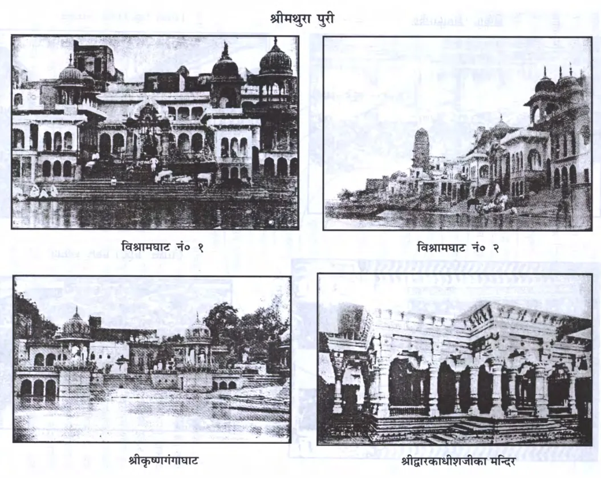
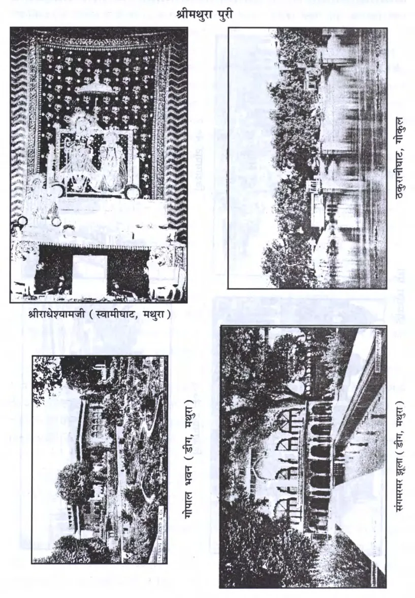
वासुदेव, संकर्षण, प्रद्युम्न और अनिरुद्ध इन चारों व्यूहोंके कार्य भी भिन्न-भिन्न हैं। मुक्तिदान कार्य श्रीवासुदेवका है। असुरहनन यह संकर्षण-व्यूहका कार्य है। पुत्रस्यसे उत्पन्न होना प्रद्युम्नका कार्य है और धर्म रक्षा अनिरुद्ध भगवान्का कार्य है। यद्यपि चारों व्यूह भगवान् ही हैं और चारोंके कार्य भी भगवान्के ही कार्य हैं तथापि प्रकट सृष्टिकी अवस्थामें भगवान्का यह नियम है कि भिन्न-भिन्न कार्य करनेके लिये भिन्न-भिन्न ही स्वरूप धारण करते हैं।
पूर्णपुरुषोत्तम श्रीकृष्णका दो जगह अवतार हुआ है श्रीवसुदेव-देवकीके यहाँ और श्रीनन्द-यशोदाके यहाँ। दोनों जगह श्रीकृष्णका स्वरूप व्यूहसहित ही है। कहीं व्यूहका कार्यसे प्राकट्य है और कहीं स्वरूपसे प्राकट्य है। श्रीनन्द-यशोदाके यहाँ तीन व्यूह कार्यसे प्रकट हैं। श्री वसुदेव-देवकीके यहाँ चारों व्यूह स्वरूपसे प्रकट हुए हैं। अर्थात् व्रजमें भगवान्ने अपने व्यूहोंका स्वरूप छिपाकर रक्खा है किन्तु व्यूहोंका कार्य किया है और मथुरामें भगवान्ने अपने व्यूहोंका स्वरूप प्रकट किया है और कार्य भी किया है। अतएव भगवान्ने वसुदेवजीके यहाँ अपने चतुर्भुज स्वरूपका दर्शन कराया है और श्रीनन्दके यहाँ द्विभुजस्वरूप दर्शन दिये है।
श्रीदेवकीकी कुक्षिसे श्रीकृष्णने प्रद्युम्न-व्यूहद्वारा जन्मग्रहण किया है। वंशस्थापन कार्य प्रद्युम्न-व्यूहका है। मथुरामें रहकर भगवान्ने मुक्तिदान, असुरहनन, धर्मस्थापन और वंशस्थापन व्यूह कार्य किये हैं। यह बात सुप्रसिद्ध है।
श्रीयशोदाके यहाँ (कुक्षिसे नहीं) श्रीकृष्णका अक्षरब्रह्मके (वासुदेवके) द्वारा आविर्भाव हुआ है। व्रजमें पूर्णपुरुषोत्तमका व्यूहसहित प्राकट्य है किन्तु कार्यतः है। अर्थात् असुरहनन, मुक्तिदान प्रभृति कार्य तो किये हैं किन्तु स्वरूपसे व्यूहप्राकट्य वहाँ नहीं है। श्रीयशोदाके यहाँ मायासहित पुरुषोत्तमका प्रादुर्भाव है। अतएव द्विभुज-स्वरूपका ही प्रदर्शन है। जहाँतक माया वहाँ रही, वहाँतक किसीको भी भगवत्प्राकट्यका ज्ञान न हुआ। पुत्र हुआ कि पुत्री यह भी मालूम न हो पाया! किन्तु जब वासुदेव भगवान्को भी वसुदेवजी ले आये और मायाको वहाँसे ले गये, तभी भगवान्का सबको दर्शन हुआ।
श्रीपुरुषोत्तमका प्राकट्य तो देवकी और यशोदा दोनोंके यहाँ हुआ है किन्तु वसुदेव-देवकीको भगवान्ने स्वयं पुत्र होनेका वरदान दिया था; अतएव उन्हें उस तरह व्यूहसहित दर्शन कराया और रीतिपूर्वक 'अथ सर्वगुणोपेतः' प्रद्युम्न व्यूहद्वारा जन्म हुआ।
इधर श्रीनन्द-यशोदाने पूर्वजन्ममें ब्रह्मासे 'जातयोनौ महादेवे भुवि विश्वेश्वरे हरौ। भक्तिः स्यात्' इत्यादि वचनोंसे प्रभुमें परम प्रीति होनेका वरदान माँगा, न कि अपने पुत्र होनेका, इसलिये श्रीपुरुषोत्तम उनके यहाँ प्रकट हुए पर न वैसी रीतिसे और न वैसे स्वरूपसे, किन्तु मायासे ढके हुए माया-सहित, प्रद्युम्न द्वारा नहीं, किन्तु वासुदेव (अक्षरबह्य) द्वारा प्रकट हुए और इसीलिये गोकुलमें उस प्रकारके स्वरूपका दर्शन भी न कराया और न करानेकी आवश्यकता ही थी। केवल श्रीनन्द-यशोदाको परमप्रीति देनेका प्रयोजन था। वह परमप्रीति पुत्रबुद्धि होनेसे और बालक्रीड़ा देखनेसे होती है अतः वे दोनों कार्य कर दिखाये। 'नन्दस्त्वात्मज उत्पन्ने' यहाँ नन्दकी बुद्धिका ही अनुवाद है। वास्तवमें पुरुषोत्तम किसीके भी आत्मज नहीं। इसलिये शुकब्रह्मने 'ततो भक्तिर्भगवति पुत्रीभूते जनार्दने, दम्पत्योर्नितरामासीत्०' यहाँ पुत्रीभूते शब्दमें 'च्वि'का प्रयोग किया है। और वसुदेवजीके यहाँ 'जायमाने जनार्दने'का प्रयोग किया है। अर्थात् श्रीनन्दके यहाँ श्रीपुरुषोत्तमका प्राकट्य हुआ है पर वास्तवमें पुत्ररूपसे नहीं किन्तु पुत्रभावसे और वसुदेवजीके यहाँ पुत्रभावसे नहीं किन्तु पुत्ररूपसे प्राकट्य हुआ।
सारांश यह कि पुरुषोत्तमका श्रीकृष्ण-रूप और नामसे प्रादुर्भाव (अवतार) नन्दग्राम और मथुरा दोनों जगह हुआ, किन्तु श्रीनन्दके यहाँ मायासहित और वसुदेवजीके यहाँ चतुर्व्यूहसहित। गोकुलमें अप्रकट व्यूहका कार्य हुआ और मथुरामें व्यूहप्राकट्य भी हुआ और उनका कार्य भी हुआ। इस तरह यह श्रीकृष्णावतारके स्वरूपका संक्षिप्त निर्णय है।
द्रौपदी-रक्षा
(लेखक–महामहोपाध्याय पं० श्रीदेवीप्रसादजी शुक्ल कविचक्रवर्ती)
ए हो दीनबंधु हे दयाके सिंधु एक अब-
आपहीकी आश मेरे चित्तपै चढ़ै लगी।
कपट-सभामें पट ऐंचत निपट नीच-
लाज राखि लीजै नारि जौंलौं यों पढ़ै लगी।
तौलौं जगदीशकी अनूठी अनपाया आदि-
माया छोह छाया कछु और ही गढ़ै लगी।
ज्यों ज्यों खल खैंचत दुशासन दिमाकदार-
त्यों त्यों द्रौपदीकी चीर चौगुनी बढ़ै लगी।
नीच नीतिनाशन दुशासन सुयोधनको-
पाय अनुशासन दुकूल कर धारी है।
बीर खल भारी कीन्ह चाहत उघारी मोहि-
पाहि पाहि कृष्ण कृष्ण द्रौपदी पुकारी है।
सुनि यह बानी पुनि ताहि अकुलानी जानि-
माया मनमानी रचि दीन्ह बनवारी है।
हारिगो सहस्र दस गजबल वारो खैंचि-
दस गज सारी पर बाढ़त न हारी है।
श्रीकृष्णकी नित्य-लीला
(लेखक-भागवतरत्न श्रीकुलदाप्रसादजी मल्लिक)
पाण्डवोंके सखा श्रीकृष्ण, पार्थसारथि श्रीकृष्ण, कुरुक्षेत्र महायुद्धके नियामक और गीताके उपदेष्टा श्रीकृष्ण, यह एक रूप है। मथुरा और द्वारकामें महावीर महायोद्धा राजराजेश्वर श्रीकृष्ण यह दूसरा रूप है। और गोकुल, व्रज तथा वृन्दावनमें नन्दनन्दन श्रीकृष्ण, रसिकशेखर श्रीकृष्ण यह उनका तीसरा रूप है। श्रीकृष्णका प्रकाश विविध है। श्रीकृष्ण, तीनोंमें एक है, एकमें तीनों है।
भारतके तत्त्वदर्शी महर्षिगण सदासे ही कहते आये हैं कि परमेश्वर तीनोंमें एक और एकमें तीनों है। वह सच्चिदानन्द सत्, चित्, आनन्द है; वह सत्य, शिव, सुन्दर है; वह ब्रह्म, परमात्मा, भगवान् है; उसमें तीनों ही शक्ति परिपूर्ण मात्रामें है—ज्ञानशक्ति, क्रियाशक्ति और इच्छाशक्ति।
श्रीकृष्ण-भक्त पौराणिक ऋषियोंने और उनके अनुगत साधकोंने श्रीकृष्णकी लीलामें परमेश्वरका या स्वयं भगवान्का प्राकट्य अथवा प्रकाश प्रत्यक्ष देखा है। God on earth in earthly affairs. श्रीभगवान्के जिन स्वरूप, तत्त्व, स्वभाव या रहस्यका इन सब ऋषियोंने अपने गम्भीर अन्तस्तलमें अनुभव किया था, उन्हीं तत्त्व और रहस्योंको इन्होंने श्रीकृष्णकी मर्त्यलीला या नर-लीलाकी घटनाओंके अन्दर घनीभूतरूपमें देखा या देखनेकी चेष्टा की। इन्होंने अन्तर्मुखी होकर आन्तरिक अनुभवकी सहायतासे बाहरमें अभिनय की हुई घटनाओंको समझा और अब भी ये समझ रहे हैं। ये अन्तर्दृष्टिसम्पन्न ऋषि थे, ये अन्दरसे ही बाहर आते थे और अन्दरकी ही सहायतासे बाहरका अनुभव करते थे। यही इनकी पद्धति थी। They saw the universe from within.
श्रीकृष्ण ही परमेश्वर हैं, स्वयं भगवान् हैं। जैसे परमेश्वरका विविध प्रकाश है, वैसे ही लीलामें अवतीर्ण श्रीकृष्णका भी विविध प्रकाश है। कुरुक्षेत्रमें श्रीकृष्ण पूर्ण, सत् और ज्ञानशक्तिप्रधान हैं। द्वारका और मथुरामें श्रीकृष्ण पूर्णतर चित् और क्रियाशक्तिप्रधान है एवं श्रीवृन्दावनमें श्रीकृष्ण पूर्णतम आनन्द और इच्छाशक्तिप्रधान हैं।
'मैं हूँ, इसमें किसीको सन्देह नहीं है 'न हि कश्चित् संदिग्धे अहं वा नाहं वेत्ति' 'मैं हूँ या नहीं', इस सम्बन्धमें किसीको सन्देह नहीं है। None doubts am I am I not. 'मैं हूँ' यही असन्दिग्ध प्राथमिक सत्य है। और इसके बाद मैं जानता हूँ कि 'मैं हूँ I know I am. मैं हूँ यह सत् है और 'मैं हूँ'का बोध ही चित् है। इस सत्ता और सत्ताबोधके मूलमें स्थित रहकर जो इनको व्यक्त करता है, ये सत्ता और बोध जिसमें परिणति प्राप्त करनेके लिये सदा-सर्वदा चेष्टा करते रहते हैं उसीका नाम आनन्द है। आनन्द ही मूल है। परन्तु सच्चिदानन्द अविच्छेद्य परम तत्त्व है। यही सच्चिदानन्दकी संक्षिप्त व्याख्या है। श्रीकृष्ण ही वह सच्चिदानन्द परब्रह्म है।
श्रीकृष्ण पधारे, उन्होंने अपनी नित्य-लीलाको प्रपञ्चमें प्रकट किया। नित्यके प्राकट्यका नाम ही लीला है। The Infinite playing in the finite. लीला हुई और अबतक भी हो रही है। अब प्रश्न यह है कि लीलाका साक्षी कौन है? इस लीलाको किसने जाना? Whose Consciousness is the testimony thereof. इसके उत्तरमें निर्भयताके साथ यह कहा जा सकता है कि इस लीलाको सम्पूर्ण और सम्यक्रूपसे न कोई जान सका है और न जान सकेगा। जिसकी जितनी शक्ति या अधिकार है वह उतना ही जान सका है या जानेगा। लीलामय अनन्त हैं और लीला भी अनन्त है। अनन्तका जब अन्त नहीं है तब उस अनन्तको जाननेका भी अन्त कैसे हो सकता है? अनन्त सब कुछ कर सकता है। उसकी इच्छा अबाध है। उसकी इच्छापर कोई भी एक शब्द भी नहीं कह सकता। वह भी यदि अपनी लीलाको कभी आप जानना चाहे, सम्पूर्ण और सम्यक् रूपसे जानना चाहे तो वैसा नहीं कर सकता। यदि कहीं अनन्तका अन्त है तो इसी बातमें है कि वह अपने आप भी अपनेको पूरी तौरपर नहीं जान सकता। यह बात सत्य है, भारतके लीलावादी भक्तोंने इसका प्रत्यक्ष किया है। भक्त निकले थे अनन्तके अन्तका अन्वेषण करने। उनका अन्वेषण सफल हुआ, उन्होंने अन्त देखा। कहाँ देखा? नवद्वीपमें। क्या देखा? यही देखा कि अनन्त अपने प्रेममें आप ही पागल है, अपने प्रति आप ही ऋणी है, अपने ही नामपर आप मतवाला हो रहा है और अपने रूपपर आप ही अपनी सुधि भूल रहा है। इसीका नाम अनन्तका अन्त है। -
श्रीकृष्ण पधारे, उन्होंने लीला की। श्रीकृष्णके प्रति जिनकी अप्रीति हुई, वे आत्मविस्मृत और आत्मघाती थे। कारण, श्रीकृष्ण आत्मा हैं, आत्माके भी आत्मा हैं। उन लोगोंका ध्वंस हो गया। अवश्य ही ऐकान्तिक ध्वंस (eternal damnation) नहीं हुआ, परन्तु आपातदृष्टिसे उनका ध्वंस हो गया। जिन लोगोंने अपनी-अपनी शक्ति और अधिकारके अनुसार श्रीकृष्ण और उनकी लीलाको यत्किञ्चित् जानकर प्रेम प्राप्त किया, उनका भी इस जानने और प्राप्त करनेका शेष हो गया हो, ऐसा नहीं है। उनमेंसे बहुतोंके जानने और प्राप्त करनेका प्रारम्भ हुआ, बहुतोंने पहले कुछ जाना और प्राप्त किया था, इस बार और भी कुछ जाना और प्राप्त किया। परन्तु किसीके भी जानने और पानेका अन्त नहीं हुआ। वे अनन्त कालतक जानते और पाते रहेंगे। हर समय वे नये ढंगसे इस चिर-नवीन श्रीकृष्णको और उसकी नित-नयी लीलाके रहस्यको जानते और पाते रहेंगे। न लीलाका अन्त है और न जानने, पाने एवं बननेका अन्त है। 'पूर्णस्य पूर्णमादाय पूर्णमेवावशिष्यते' इसीका नाम अनन्त जीवन और नित्य-लीला है। नित्य-लीलाके इस गूढ़ रहस्यको न जानने और न सोचनेमें हम बड़ी भूल करते हैं। हम सोचते हैं कि बहुतोंने श्रीकृष्णको या श्रीभगवान्को जान लिया या प्राप्त कर लिया, इससे उनके जानने और प्राप्त करनेका अन्त हो गया। अब वे चुपचाप हैं; महानिर्वाणकी अव्यक्त महासमाधि हो गयी है; सब शेष है, निश्चित, निरुद्वेग और निश्चेष्टतामें सब निस्तब्ध हैं, न गति है, न वैचित्र्य है, न हँसना-रोना है, न प्रकाश और अन्धकार है, न उल्लास और अवसाद है और न मिलन एवं विरह है। सब चुप हैं, एकदम चुप हैं। बहुतेरे लोग सोचते हैं कि धर्मसाधनकी मानो यही अन्तिम सीढ़ी है। इसीका नाम ब्रह्मदर्शन या भगवत्प्राप्ति है, परन्तु यह बात ठीक नहीं है। यह एक भूल है, गहरी भूल है। इसी भूलका भूत चढ़े रहनेके कारण आज भी बहुत-से लोग धर्म और ईश्वरके नामपर जीवनकी शून्यता (Negation of Life) की ओर जा रहे हैं। उन लोगोंसे पुकारकर कह दो कि 'इस मार्गसे न जाओ, इस मार्गसे न जाओ।' जीवनकी शून्यतामें भगवान् नहीं है, श्रीभगवान्को खोजो जीवनकी असीमतामें और पूर्णतामें!
भगवत्प्राप्ति या भगवद्दर्शन जीवनका अन्त नहीं है यह तो सत्य जीवनका प्रारम्भमात्र है। भगवत्प्राप्ति, भगवद्दर्शन लय नहीं है, मृत्यु नहीं है, वह है नव-जन्म-लाभ ससीममें मरकर असीममें जन्म ग्रहण करना। इस समय हम जिस जीवनमें जी रहे हैं और जिसको जीवन बतला रहे हैं वह सत्य जीवन नहीं है, वह तो सत्य जीवनकी एक छाया और आभास है। नित्यका दर्शन, नित्यका बोध और उस दर्शन एवं बोधके द्वारा सञ्चालित होकर नित्यकी सेवामें आत्मसमर्पण, बस, यही जीवन सत्य जीवन है। इसीका नाम नित्य-लीलामें प्रवेश है। इसीको निर्वासित प्रवासीका पुनः अपने घर लौट आना कहते हैं।
(२)
श्रीकृष्णका प्रकाश त्रिविध है। तात्त्विकदृष्टिसे देखनेपर यह त्रिविध प्रकाश युगपत् सत्य या एक ही साथ सत्य है परन्तु यह धारणा बहुत ही कठिन है, अतएव यहाँ उसकी आलोचना आवश्यक नहीं। इस त्रिविध प्रकाशमें श्रीवृन्दावन ही सर्वोत्तम है।
साधारणतः पाँच प्रकारसे श्रीकृष्णको अथवा भगवान्को प्राप्त किया जाता है—शान्त, दास्य, सख्य, वात्सल्य और मधुर। इनमें शान्त-भाव सबकी जड़ है, मकानके नींवकी भाँति। प्राचीन लोगोंका कथन है 'कृष्णनिष्ठा' और उसके अवश्यम्भावी फलस्वरूप 'तृष्णात्याग' (प्रापञ्चिक विषयोंकी आकांक्षाका सर्वथा त्याग) शान्त या शान्तभावके भक्तोंके ये दो लक्षण हैं। बहुत-से लोग शान्त-भावके निषेधात्मक अंश (negative aspect) की अभिज्ञताका आश्रय लेकर कहा करते हैं कि यही अन्त है। शान्तभाव ही अन्तिम भाव है। दास्य, सख्यादि भावोंको वे लोग अप्राकृत और नित्य मानना नहीं चाहते। वे शान्तभावके केवल अभावरूप अंशको ही देखते हैं 'तृष्णात्याग' को ही देखते हैं, शान्त-भावके भावात्मक अंश (positive aspect) 'कृष्णनिष्ठा' को वे नहीं देखते।
नारद, सनक, सनन्दन, सनातन, सनत्कुमार और शुकदेव-प्रभृतिका जो अनुभव और उनकी जो अभिज्ञता देखनेमें आती है, उसकी सहायतासे यह विशेष बलपूर्वक कहा जा सकता है कि शान्त-भाव ही अन्तिम भाव नहीं है। शान्त-भावकी अवस्था जीव-चैतन्यके आध्यात्मिक क्रमविकासमें एक सामयिक मध्यवर्ती अवस्था है-interimo जब प्रापञ्चिक वैचित्र्यका अन्त होता है और नित्यजीवनके वैचित्र्यका प्रारम्भ होनेको होता है तब बीचमें कुछ कालके लिये यवनिका-पतन और विश्राम होता है। यही प्रकृत अद्वैत तत्व है। प्रपञ्चके अनित्य विषायानन्दका अन्त हो गया। अचैतन्य या जड़का कोलाहल थम गया। अब नित्यानन्दका और श्रीचैतन्यका खेल आरम्भ होनेवाला है, शान्त-भाव या अद्वैत उसीकी मध्यवर्ती अवस्था है। यह शान्त-भाव ही शान्तिपुर है। 'पुरातन द्वीप' अपने भव-भयभीत, काम-ताडित पशु-समुदायको लेकर लुप्त हो गया। वह कुछ टूट गया और कुछ डूब गया, अब श्रवण-कीर्तनादि नवधा-भक्तिका झण्डा लेकर 'नवद्वीप' जाग उठा, वीरचन्द्रपुरके वीर अवधूतकी अभय वाणीका सिंह-गर्जन सुनायी देने लगा, अब प्रेमके विजयस्तम्भ श्रीगौराङ्गकी स्थापना होनेवाली है, यह शान्त-भाव अद्वैत या शान्तिपुर उसीकी मध्यवर्ती अवस्था है।
शान्त-भावके बाद चार भाव शेष रह जाते हैं दास्य, सख्य, वात्सल्य और मधुर। इनमें भी प्रत्येकके दो-दो प्रकार हैं। नगरका प्रकार दूसरा है और व्रजका दूसरा। व्रजके भावमें ऐश्वर्यकी गन्ध नहीं है, प्रपञ्चका लेश नहीं है, कामका आभास भी नहीं है, अनात्म या बाहरकी किसी वस्तुका बन्धन नहीं है। यह हृदयका स्व-राज्य है, सर्वथा बाधाहीन है-Hearts own kingdom. मथुरा और द्वारकामें प्रेम भी है और हृदय भी है परन्तु वहाँ मन और प्राणोंकी छाया आ गयी है। इसीसे वहाँ बाधा (Limitation and convention) है।
मनुष्यके हृदयका परिचय मिलता है विशुद्ध साहित्यसे। यह स्वप्नमय, कल्पनामय है-Dreaming, imagining यह काव्य है। जीवनका यही प्रथम स्तर है, यही वृन्दावन है। किशोरमें इसकी समाप्ति है। जीवनका दूसरा स्तर असीम साहसिकता, यहाँतक कि दुःसाहस-daring है। यह ऐतिहासिक उपन्यास Historical romance है; केवल इतिहास भी नहीं और केवल उपन्यास भी नहीं, केवल हिसाब भी नहीं और केवल स्वप्न भी नहीं, दोनों है—स्वप्न इतिहास भी और काव्य इतिहास भी; यही मथुरा और द्वारका है। यह प्रथम यौवन है। जीवनका तीसरा स्तर है विवेचनामय कर्म, हिसाब-किताबके कर्म और उनकी सिद्धि-Doing, achievment, Dreaming, (स्वप्न, दर्शन और कल्पना), Daring, (दुःसाहस), Doing (सिद्धि) जीवनके ये तीन स्तर हैं। श्रीकृष्णलीलाके भी तीन भाग हैं।
श्रीकृष्णलीलामें देखिये, तीसरा स्तर अपूर्ण है। श्रीकृष्णलीलाका प्रथम स्तर है वन, दूसरा नगर और तीसरा श्मशान। अतएव तीसरा स्तर अपूर्ण है, सिद्धि नहीं है। श्रीकृष्णलीला एक वियोगान्त नाटक (a tragedy) है। इसके अन्तिम शब्द हैं 'नहीं हुआ, कुछ भी नहीं हुआ। कुरुक्षेत्र हुआ, निःशस्त्र रहकर रथ चलाते हुए खड़े-खड़े श्रीकृष्णने महासमरका आद्योपान्त महाध्वंस देखा। किन्तु नहीं हुआ, कुछ भी नहीं हुआ। अब प्रभास हुआ, यदुवंशका ध्वंस हो गया। तो भी कुछ नहीं हुआ।
तब क्या निराशा ही शेष रह जाती है? रे मृत मूर्ख! शेष कहाँ है? यह तो नित्य-लीला है! नहीं हुआ, जो चाहा गया था वह नहीं हुआ। नहीं हुआ-जो आवश्यक था, वह नहीं हुआ। नहीं हुआ-बहुत चेष्टा की गयी, फिर भी नहीं हुआ। अच्छी बात है, न हुआ तो न सही। रोते क्यों हो? सोच क्यों करते हो? उदास क्यों होते हो? न हुआ तो न सही।
होना' चाहा ही किसने था? श्रीकृष्णने 'होना' नहीं चाहा। 'होना' अर्थात् 'शेष होना' 'समाप्त हो जाना' 'फिर न रहना'। कौन कहता है कि श्रीकृष्णने ऐसा चाहा था? श्रीकृष्णने यह नहीं चाहा। श्रीकृष्ण भगवान् हैं, स्वयं भगवान् हैं, वे 'नित्यलीलामय' हैं, उन्होंने समाप्ति नहीं चाही, हमने भी नहीं चाही। नहीं हुआ तो उत्तम ही हुआ। अच्छा, आओ, अब फिर नया खेल शुरू करें। आओ, फिर स्वप्न देखें, वृन्दावनमें फिर बज उठे मोहनकी मुरली, कुरुक्षेत्र और प्रभासके विराट् विशाल श्मशानके ध्वंसस्तूपके ऊपर फिर बजे वनमालीकी बंसरी; पधारें किशोर-किशोरी, प्रवाहित हो मृदु-मलयसमीर, नाच उठें मयूर-मयूरी।
यदि सचमुच तुम्हें वृन्दावनका स्वप्न होगा तो, फिर होगी मथुरा-द्वारका-लीला, जल उठेगा समरानल, फिर होगा कुरुक्षेत्रका संग्राम और फिर होगी प्रभासलीला। हो, हो—शेष नहीं है, नित्य-लीलाका अन्त नहीं है, फिर होगा वृन्दावन। dreaming, daring और doingपुनः पुनः, पुनः पुनः घूमते रहें, रात-दिन चक्र चलता रहे, कोई आवश्यकता नहीं अन्त होनेकी। प्रस्तुत होओ, वीर! प्रस्तुत होओ, शेष नहीं है, कभी शेष नहीं है, यह श्रीकृष्णकी नित्य-लीला है।
श्यामकी वंशी
(लेखक-महामहोपाध्याय पं० श्रीप्रमथनाथजी तर्कभूषण)
श्रीवृन्दावनमें यमुनाके तटपर श्रीश्यामसुन्दरने वंशी बजायी थी, उस वंशीकी ध्वनिको सुनकर व्रजबालाएँ किस प्रकार लज्जा, भय और धर्मको तिलाञ्जलि देकर, घर छोड़कर दौड़ती हुई रासभूमिमें पहुँची थीं उसीके वर्णन-प्रसङ्गमें श्रीमद्भागवतके वचन हैं—
निशम्य गीतं तदनङ्गवर्द्धनं
व्रजस्त्रियः कृष्णगृहीतमानसाः।
आजग्मुरन्योन्यमलक्षितोद्यमाः
स यत्र कान्तो जवलोलकुण्डलाः॥
सुनते ही हृदयमें आनन्दकी वृद्धि करनेवाले उस वंशीके गानको सुनकर व्रज-वनिताओंका मन कृष्णमय हो गया, वे उसी समय घर छोड़कर प्रियतमके पास जा पहुँची। जानेके समय उनमेंसे किसीने किसीकी ओर नहीं देखा, वे इतने वेगसे चलीं कि सारे रास्ते उनके कानोंके कुण्डल अत्यन्त वेगसे हिलते रहे।
दुहन्त्योऽभिययुः काश्चिद्दोहं हित्वा समुत्सुकाः।
पयोऽधिश्रित्य संयावमनुद्वास्यापरा ययुः॥
परिवेषयन्त्यस्तद्धित्वा पाययन्त्यः शिशून्पयः।
शुश्रूषन्त्यः पतीन्काश्चिदश्नन्त्योऽपास्य भोजनम्॥
लिम्पन्त्यःप्रमृजत्योऽन्या अञ्जन्त्यःकाश्च लोचने।
व्यत्यस्तवस्त्राभरणाः काश्चित्कृष्णान्तिकं ययुः॥
जो व्रजबालाएँ उस समय गो-दोहन करती थीं, उनके कानोंमें जैसे ही वंशीकी ध्वनि प्रविष्ट हुई कि वे गो-दोहन छोड़कर अत्यन्त उत्सुकताके साथ कान्तके उद्देश्यसे दौड़ चलीं, कोई रसोईमें दूध गरम कर रही थीं, इतनेमें ही वंशी बजी। अग्निके तापसे दूध उफन रहा था परन्तु उसका तनिक भी खयाल न करके वह दौड़ पड़ीं। कोई-कोई भोजनके लिये बैठे हुए घरके लोगोंकी थालियोंमें भोजन परोस रही थीं, वंशी-ध्वनि सुनते ही उन्होंने परोसनेके पात्रको अलग रखकर दौड़ना आरम्भ किया। कोई गोचारणसे लौटे हुए थके-माँदे पतिकी चरण-सेवा करती थीं, वंशीकी ध्वनि कानमें पड़ते ही उन्मत्तकी नाई पतिकी शुश्रूषाका कार्य छोड़कर यमुना-तटकी ओर भाग छूटीं। कोई-कोई भोजन करनेके लिये बैठी थीं, परन्तु वंशीध्वनि सुनते ही इतनी पागल हुईं कि भूख-प्यासकी निवृत्ति होनेके पहले ही वह भोजन छोड़कर बिना हाथ-मुँह धोये ही बाहर निकल पड़ीं। कोई-कोई गोदमें लिये हुए बालकको स्तनपान करा रही थीं, वे भी उनको रोते हुए गोदसे उतारकर दौड़ चलीं। कोई शरीरमें चन्दन लेप कर रही थीं और कोई शरीर मल रही थीं, तो कोई आँखोंमें अञ्जन लगा रही थीं; वे सब-की-सब हठात् अपना-अपना कार्य छोड़कर घरसे बाहर निकल पड़ी, उस समय उनको वस्त्राभूषण धारण करनेका भी कुछ विचार न रह गया, सब मानो विक्षिप्त हो उठीं, सभी गोविन्दापहृतचित्त होकर श्रीकृष्णके समीप उपस्थित होनेके लिये खूब तेजीसे दौड़ीं!
इसको क्या अभिसार कहेंगे? अभिसार करनेवाली रमणी तो भयभीत होती है, पीछेसे कोई देखता न हो इस आशङ्कासे वह लोगोंकी नजर बचाकर अपने प्रियके समीप जाती है। इस बातको सभी जानते हैं। परन्तु गोपियोंके इस अभूतपूर्व अभिसारमें न लज्जा है, न भय है, न किसी प्रकारके सङ्कोचका लेश है और न लौकिक अभिसारके समान पूर्व सङ्केतकी तनिक अपेक्षा ही है। तात्पर्य यह कि इस अपूर्व अभिसारमें आत्मतृप्तिकी कोई भी कामना नहीं है। भोगस्पृहाकी सङ्कीर्णता और मलीनता रत्तीभर भी नहीं है। जिस वंशीके गानने ऐसे अश्रुत-पूर्व और अननुभूतपूर्व अलौकिक अभिसारकी सृष्टि की थी वह वंशी क्या भारतमें एक बार फिर न बजेगी?
वंशीके आह्वानको सुनकर जिस समय व्रजगोपियाँ श्यामसुन्दरसे मिलनेके लिये झुण्ड-की-झुण्ड चल पड़ीं, उस समय क्या उनकी इस भावोन्मादमयी वृत्तिका प्रतिरोध किसीने नहीं किया? किया तो था, परन्तु वह सर्वतोभावेन विफल हुआ था।
ता वार्यमाणाः पतिभिः पितृभिर्भ्रातृबन्धुभिः।
गोविन्दापहृतात्मानो न न्यवर्तन्त मोहिताः॥
(भागवत १०। २९। ८)
उनके पति, पिता और भ्राताओंने मने किया, परन्तु उसका कुछ भी फल न हुआ। वे घरकी ओर किसी प्रकार भी नहीं लौटीं, और लौटतीं भी क्यों? उनका हृदय तो श्रीगोविन्दद्वारा चुराया जा चुका था। वह मोहित हो गयी थीं, उनका वह मोह किसप्रकारका था, इसका वर्णन करते हुए स्वयं भगवान् ही गीतामें कहते हैं—
या निशा सर्वभूतानां तस्यां जागर्ति संयमी।
यस्यां जाग्रति भूतानि सा निशा पश्यतो मुनेः॥
(श्रीमद्भगवद्गीता २। ६९)
सारे विषयी प्राणियोंके लिये जो रात्रि है, संयमी उसमें जगते हैं और जिस अवस्थामें स्थित होकर विषयी जीव अपनेको जागृत समझते हैं, मननशील संयमीके लिये वही रात्रि है।
जिस वंशी-स्वरके केवल एक बार कर्णछिद्रोंके द्वारा हृदयके मर्मस्थलमें प्रवेश करते ही मनुष्य स्वजन, प्रियजन, संसार और आत्मातकको भूल जाता है, उस वंशीके स्वरूपका और उसके संगीत-स्वरका वर्णन उसी वंशीका गान सुननेके लिये सदा उन्मना रहनेवाले प्रेमिक भक्तोंने किस प्रकार किया है, अब उसीको देखिये—
ध्यानं बलात्परमहंसकुलस्य भिन्दन्
निन्दन्सुधामधुरिमानमधीरधर्मा।
कन्दर्पशासनधुरां मुहुरेव शंसन्।
वंशीध्वनिर्जयति कंसनिषूदनस्य॥
(भक्तिरसामृतसिन्धु दक्षिणलहरी)
'जय हो कंस-निषूदन श्रीहरिकी वंशी-ध्वनिकी! यह ध्वनि सनक, सनातन, सनन्दन, सनत्कुमार-प्रभृति परमहंसकुलके निर्गुण निरुपाधि अद्वैत ब्रह्मविषयक ध्यानको भंग कर डालती है। सुधाके अलौकिक माधुर्यको चूर-चूर कर देती है। आजसे इस संसारमें कन्दर्पपर शासन हो गया, और इस शासनका भार वंशी-ध्वनिने अपने सिर ले लिया है। जगत्में प्रचार होते-होते यह बात चारों ओर फैल गयी।
ज्ञानमार्गके साधकोंका चरम लक्ष्य अद्वैत ब्रह्मानुभूति है, कर्मी साधकोंका चरम लक्ष्य अमरत्वकी प्राप्तिपूर्वक अमृत-रसास्वादन है। परन्तु जिसके कानोंमें यह वंशीध्वनि प्रवेश कर जाती है, वह फिर न अद्वैत ब्रह्मानुभूति चाहता है और न स्वर्गके अनुपम सुधास्वादनकी ही इच्छा करता है। उसका काम निवृत्त हो जाता है और उसकी जगह उसके हृदयमें प्रेमका एकच्छत्र साम्राज्य स्थापित हो जाता है।
जब यह वंशी बजने लगती है तब जड़-पदार्थोंमें चेतन-धर्मका आविर्भाव हो जाता है और चेतन जड़-भावको प्राप्त हो जाते हैं। इसीलिये रासके आरम्भमें वंशी-ध्वनिका लक्ष्यकर श्रीरूप गोस्वामी कहते हैं—
भिन्दन्नम्बुभृतश्चमत्कृतिपदं
कुर्वन्मुहुस्तुम्बुरुं,
ध्यानादन्तरयन्सनन्दनमुखान्
संस्तम्भयन् वेधसम्।
औत्सुक्याबलिभिर्बलिं विवलयन्
भोगीन्द्रमाघूर्णयन्,
भिन्दन्नण्डकटाहभित्तिमभितो
बभ्राम वंशीध्वनिः॥
रास-पूर्णिमाकी सन्ध्याको उदय-रागरञ्जित शारद सुधाकरकी ज्योत्स्नाके द्वारा ज्यों ही दिङ्मण्डल उद्भासित हुआ त्यों ही नील-यमुनाके विमल सैकतमें मन्द मारुतसे आन्दोलित माधवीकुञ्जमें आत्माराम, पूर्णकाम नव-नटवर श्यामसुन्दरकी मधुर-मुरलीमें विश्वविमोहन प्रेमके आह्वानका संगीत आरम्भ हो गया। तदनन्तर वह आह्वान-संगीत समस्त वृन्दावनको अपनी सुधामयी स्वर-लहरीसे आप्लवित करता हुआ क्रमशः बढ़ते-बढ़ते ऊपरको उठने लगा। आकाशमें पहुँचकर वह समस्त अन्तरिक्षमें व्याप्त हो गया और मेघ-मण्डलमें जाकर उसने वृन्दावनके ऊपर विचरण करनेवाली शरदकी शुभ्र खण्डित मेघमालाकी गतिको रोक दिया, फिर क्रमशः और ऊपर उठकर वह द्युलोकमें पहुँचा, वहाँ उस समय अमरावतीमें सुरराज इन्द्रकी सायङ्कालीन सङ्गीत-मण्डलीमें देव-देवियोंसे परिवेष्टित सुरराजके सामने देवगायकोंके राजा तुम्बुरु वीणाके झङ्कारके साथ कण्ठ मिलाकर गौरीरागका आलाप कर रहे थे, हठात् वंशीके स्वर जैसे ही उनके कानमें पड़े कि तुरन्त वीणाका झङ्कार बन्द हो गया; तुम्बुरुका गला रुक गया। विश्ववाञ्छित समग्र अमरजीवनमें अननुभूतपूर्व इस मधुर स्वरके आस्वादनसे अपूर्व विस्मय रसका आविर्भाव होनेके कारण वे निस्तब्ध हो गये। फिर वह वंशीका स्वर और भी ऊपर उठा और क्रमशः तपः महः और जनः आदि लोकोंको पारकर उन सबके ऊपरके सत्यलोकमें जा पहुँचा। वहाँ लोकपितामह चतुराननकी सभामें सनक, सनातन-प्रभृति ब्रह्ममुखोच्चारित श्रुतिगानके रसास्वादनमें तन्मय हो श्रुतिवेद्य सच्चिदानन्दद्यन परब्रह्मकी अनुभूतिमय महासमाधिमें निमग्न हो रहे थे। ठीक उसी समय वंशीके स्वरने उनके कर्णरन्ध्रोंके द्वारा अन्तरमें प्रवेश करके उनके हृदय-राज्यपर आक्रमण किया, जिससे तत्काल ही उनकी वह निर्गुण ब्रह्माकी समाधि भंग हो गयी, वे व्याकुल हो उठे और चतुराननके भी चारों मुख बन्द हो गये। इस प्रकार समग्र ऊर्ध्वलोकपर विजय प्राप्तकर वह संगीत-स्वर नीचे पातालकी ओर चला। पातालमें राजा बलि उसे सुनकर चञ्चल हो उठे। तदनन्तर वह वंशी-ध्वनि सप्तपाताल भेदकर समस्त लोक-समूहोंको धारण करनेवाले अनन्तदेवके कानोंमें प्रविष्ट हुई, जिससे उनका स्थैर्य भंग हो गया। सहस्रफण एक ही साथ प्रकम्पित हो उठे। अखिल ब्रह्माण्ड काँप उठा। पूर्व, पश्चिम, उत्तर, दक्षिण समस्त दिशाओंको प्लावित करते-करते वंशीकी वह संगीत-स्वर-लहरी और भी बढ़ने लगी—और भी प्रबल होने लगी, अखिल ब्रह्माण्ड उससे भर गया, परन्तु वह उसके लिये पर्याप्त नहीं हुआ, तब बड़े ही वेगसे ब्रह्माण्ड-कटाहको भेदकर वह किसी अनन्त, असीम, शून्यमें समा गयी, इस बातका निर्णय मनुष्यकी बुद्धि नहीं कर सकती। समस्त स्थावर-जङ्गमके भावोंको बदल देनेवाली यह श्यामसुन्दरके विश्वप्रेमको आह्वानमयी वंशी-ध्वनि कामनाका गान नहीं है, यह सुप्त वासनाका उद्दाम विलास नहीं है, यह उस प्रेममय परमपुरुषकी स्वरूपभूता ह्लादिनी शक्तिकी सारवृत्तिकी प्रथम व्यञ्जना है। श्रीभगवान्की रासलीलाकी यह प्राथमिक अभिव्यक्ति है। सारी रास लीलाका यह मूल सूत्र है। उपनिषद् इसी वंशीके संगीतकी व्याख्या करते हुए कहता है—
नायमात्मा प्रवचनेन लभ्यो
न मेधया न बहुना श्रुतेन।
यमेवैष वृणुते तेन लभ्य-
स्तस्यैष आत्मा वृणुते तनुं स्वाम्॥
सचिदानन्दघन रसस्वरूप आत्माको शास्त्र-व्याख्या या वक्तृताके द्वारा प्राप्त नहीं किया जा सकता, तीक्ष्ण बुद्धिकी सहायतासे वह नहीं पाया जा सकता, अगाध शास्त्रवेत्ता होनेसे भी कोई उसे पा नहीं सकता, वह आत्मा जिसको पुकारकर अपना जन बना लेता है, वही आत्माको प्राप्त करता है, आत्मा उसीके सम्मुख अपनी सच्चिदानन्दघन-मूर्ति प्रकट करता है। संसारके भँवरमें पड़कर व्याकुल, असहाय, शोक ताप-पीड़ित जीवोंमें जिसको वह अपने आत्मतनुके प्रकाशद्वारा चरितार्थ करना चाहता है, उसको अपनी ओर खींच लानेके लिये ही उसका यह मर्मस्पर्शी सादर प्रेमाह्वान होता है, वही आह्वान रासलीलाके पूर्वका वंशी-संगीत या ह्लादिनीरूप स्वरूपशक्तिकी प्राथमिक व्यञ्जना है। श्रीमद्भगवतकी रासपञ्चाध्यायीका मूल सूत्र यही है। इस सूत्रके प्रति दृष्टि रखनेसे रासलीलाके रहस्यको समझना बहुत कुछ सरल हो सकता है।
तेरी शान
प्रभो! यह कैसी तेरी शान!
(१)
सुभग सुविस्तृत-गगनाङ्गनमें
निर्जन-निशिके मृदु झन-झनमें
रुचिर रम्य गिरि वन-उपवनमें
लख पड़ती तेरी मुसुकान!
(२)
तारक-पुञ्ज-सुशोभित-शशिमें
मृदु-ज्योत्स्ना-विखरित सब दिशिमें
सुन्दर सुरभि-समीर-सरसमें
गूँज रही तेरी मृदु तान!
(३)
सुनता निर्झरके झर-झरमें
सुभग शान्तिमय गिरि-गह्वरमें
मन्दाकिनिके मृदु मर-मरमें
प्रियतम! तेरा ही गुणगान।
(४)
देखा रबिमें अनिल अनलमें
अचर-सचर, चञ्चल अविचलमें
जलमें थलमें जगतीतलमें
तुम्ही छा रहे हे भगवान!
—मदनगोपाल 'ब्रजेश'
श्रीकृष्ण-चरित्र
(लेखक—स्वामीजी श्रीभोलेबाबाजी)
यस्योदनं जगत्सर्वं मृत्युर्यस्योपसेचनम्।
दुर्विज्ञेयं सुविज्ञेयं श्रीकृष्णं प्रणमाम्यहम्॥ १॥
वन्दे श्रीराधिकां देवीं व्रजारण्यविहारिणीम्।
यस्याः कृपां विना कोऽपि न कृष्णं ज्ञातुमर्हति॥ २॥
श्रीयमुनाजीका सुहावना तट है। तटके ऊपर एक विशाल वट है। वटके नीचे कोमल रजका बिछौना बिछा है। वहाँ दो पुरुष बैठे हैं, दोनों तेजस्वी हैं। उनके मस्तक कुन्दनसे चमक रहे हैं। दोनों वयोवृद्ध हैं, फिर भी हृष्ट-पुष्ट हैं। एक अवधूत और दूसरे वैष्णव प्रतीत होते हैं। तेजस्वी होनेपर भी दोनोंके मुख उदास हैं, अनुमान होता है कि उनका किसी परम प्यारेसे वियोग हो गया है। चलो, देखें, यह कौन हैं और क्या बातें कर रहे हैं? अहा हा! एक तो विदुर हैं, जो दुर्योधनका अन्याय देखकर हस्तिनापुरको छोड़ तीर्थयात्राको चल दिये थे और बहुत दिनोंतक अवधूत-वेषमें पृथिवीकी यात्रा करते रहे थे! इन्हींकी भक्तिमती धर्मपत्नीने प्रेममें विभोर होकर भगवान्को केलेके बदले उनके छिलके खिला दिये थे! दुर्योधनकी मेवा-मिठाई छोड़कर भगवान्ने इन्हींके घर पधारकर शाक-भाजीका भोजन किया था! इन्हींकी एक डाँटसे या यों कहना चाहिये कि इनके एक ही सदुपदेशके प्रभावसे धृतराष्ट्र संसारसे विरक्त होकर पत्नीसहित उत्तराखण्डको चले गये थे और वहाँ जाकर योगाग्निसे शरीरका त्याग करके दम्पतिने दुर्गम गति प्राप्त की थी। यही कुरुनन्दन विदुरजी विचरते-विचरते यमुनातटपर आ गये हैं और यहाँ उनकी परम भागवत उद्धवजीसे भेंट हो गयी है। जैसे मारुतिजीने सीता महारानीजीको वृक्षपर बैठे-बैठे मधुर स्वरसे श्रीरामकथा सुनायी थी, इसी प्रकार उद्धवजी भी विदुरजीको भक्तवत्सल श्रीकृष्णजीके चरित्र मधुर वाणीसे सुना रहे हैं। पाठक! चलिये, सुनिये, यह क्या कह रहे हैं, इनकी बातें सुनकर आपको अपूर्व आनन्द आवेगा। ऐसे महानुभावोंका संग करनेसे, इनके साथ भाषण करनेसे और इनके वचन सुननेसे मनुष्यका अवश्य कल्याण होता है। सुनिये, ध्यान देकर सुनिये—
विदुर-उद्धवका संवाद
विदुरजी—हे मित्र! शरणपाल अजन्मा भगवान्ने भक्तोंका प्रयोजन सिद्ध करनेके लिये यदुवंशमें नर-देह धारण करके भक्तोंको परम सुख देनेवाली जो-जो लीलाएँ की, उनका दिग्दर्शन कराइये और यदुवंशियोंकी कुशलवार्ता सुनाइये।
जब विदुरजीने भगवद्भक्त उद्धवसे इस प्रकार परमप्रिय श्रीकृष्णकी वार्ता पूछी तो प्रेम-बाहुल्यसे उद्धवजी अपने हृदयमें श्रीकृष्ण भगवान्का ध्यान करने लगे और वे ध्यानमें ऐसे निमन्न हो गये कि उनका सारा बाह्य ज्ञान जाता रहा, वे बहुत देरतक कुछ भी उत्तर न दे सके। पाँच वर्षकी अवस्थासे ही उद्धवजी श्रीकृष्णकी मानसिक मूर्ति बनाकर कल्पित पूजा सामग्रीसे उनकी पूजा किया करते थे और पूजामें ऐसे तल्लीन हो जाते थे कि भोजनतककी भी सुध भूल जाते थे। माता जब भोजनके लिये उनको बुलाती, तब वह खिन्न मनसे भोजन करने जाया करते थे। बालकपनसे श्रीकृष्णकी सेवा करते-करते अब ये वृद्ध हो गये हैं। ऐसे परम भागवत प्रेमोन्मत्त भक्त भला विदुरके श्रीकृष्ण-सम्बन्धी प्रश्नका उत्तर शीघ्र ही कैसे दे सकते थे? विदुरका प्रश्न सुनते ही उद्धवजीका शरीर पुलकित हो उठा। ध्याननिमीलित नेत्रोंमें आनन्द और शोकके आँसू डबडबा आये, गला रुक गया, वे प्रेमके प्रवाहमें बह गये, कुछ न बोल सके। बहुत देरके बाद महाभाग्यवान् और परम कृतार्थ श्रीकृष्ण-भक्त उद्धवजी भगवान्के ध्यानसे मनको मनुष्यलोकमें लाकर और आँखोंको पोंछकर भगवान्के चरित्रोंका स्मरण करते हुए विस्मयको प्राप्त होकर अमृतमय वाणीसे इस प्रकार विदुरजीसे कहने लगे—
उद्धवजी—हे कुरुकुलभूषण विदुरजी! श्रीकृष्णरूप सूर्यके अस्त हो जानेपर कालरूप सर्पसे डसे हुए श्रीहत यादवोंकी कुशल मैं आपको क्या सुनाऊँ? मेरा हृदय काँपता है! ओहो! ये मनुष्य भाग्यहीन हैं और यादवगण तो अत्यन्त ही अभागे हैं! वे श्रीकृष्णके पास रहकर भी उनको पहचान नहीं सके। जैसे समुद्रके जीव अमृतमय चन्द्रको नहीं पहचानते, इसी प्रकार यादवोंने भी त्रिलोकीनाथको नहीं पहचाना? यह उनका अभाग्य ही है। यादवगण मुख देखते ही लोगोंके मनका भाव जान जाते थे। ऐसे निपुण होनेपर भी उन्होंने श्रीकृष्णको भगवान् नहीं समझा, यदुश्रेष्ठ मानकर ही वे उनका मान करते रहे, यह बड़े ही आश्चर्यकी बात है!
परमेश्वरकी माया महान् प्रबल है, इसी मायासे मोहित हुए यादवगण श्रीकृष्णको ईश्वर न जानकर अपना बन्धु मानते थे और इसी मायाके प्रभावसे शत्रुभावको प्राप्त हुए शिशुपाल आदि श्रीकृष्णकी निन्दा करते थे। परन्तु इन मूढ़ विषयासक्त मनुष्योंके वाक्योंसे भगवच्चरणासक्त विद्वान् पुरुषोंकी बुद्धि कभी मोहित नहीं हो सकती, क्योंकि भगवद्भक्तोंके पास माया बिलकुल फटकती ही नहीं। जिन्होंने तप नहीं किया, जिनके अन्तःकरण शुद्ध नहीं हैं और श्रीकृष्णस्वरूपको देखकर जिनके नेत्र तृप्त नहीं हुए, ऐसे लोगोंको श्रीकृष्णजीने अपना लोक-लोचन ललितस्वरूप दिखाकर पृथिवीपरसे अपने उस कमनीय कलेवरको अन्तर्हित कर लिया। लोगोंकी दृष्टिसे अपनी मोहनी मूर्तिको ओझल कर लिया!
हे विदुर! भगवान्की वह मूर्ति अत्यन्त ही आश्चर्यजनक थी। भक्तवत्सल, दुष्टदलन भगवान्ने योगमायाको ग्रहण करके इस मूर्तिको धारण किया था। यह मूर्ति अतिशय भाग्यकी पराकाष्ठा और मानव-लीलाके उपयुक्त थी, स्वयं भगवान् ही अपनी अपूर्व मूर्तिको देखकर विस्मययुक्त हो जाते थे, तो दूसरोंका विस्मित होना कौन बड़ी बात है? भूषणोंको भी भूषित करनेवाले श्यामशरीर प्रभुके अंग परम मनोहर थे। युधिष्ठिरके राजसूययज्ञमें तीनों भुवनोंके समग्र प्राणी आये थे। उन्होंने नेत्रानन्दकर श्रीकृष्णका सुन्दर कलेवर देखकर यही निर्णय किया था कि सृष्टिके रचनेमें विधाताकी जितनी चतुराई है, वह सारी इस मूर्तिके सामने तुच्छ है!
हे कुरुकुलचन्द्र! जब भगवान्के अनुरागयुक्त हासपरिहास और लीलायुक्त विनोदको देखकर व्रजबालाओंने मान किया और जब श्रीकृष्ण अन्तर्धान हो गये, तब व्रजसुन्दरियाँ घरके सब कार्य त्यागकर उन्हींकी ओर देखती खड़ी रह गयीं और उनके मन तो भगवान्के पीछे ही चले गये। जब दुष्टजन सज्जनोंको पीड़ा देने लगे, तब अनुग्रह करके चराचरके स्वामी परमेश्वर अजन्मा होकर भी अपने पूर्ण अंशसे शरीर धारण करके जैसे महत्तत्त्व रूपसे नित्य सिद्ध अग्नि काष्ठोंमें प्रकट होता है, इसी प्रकार पृथिवी पर प्रादुर्भूत हुए। जन्महीन होकर भी भगवान्ने वसुदेवके घर जन्म लिया। अनन्त पराक्रमी होनेपर भी कंसके भयसे व्रजमें छिपे रहे और कालयवन आदिके भयसे मथुरापुरी छोड़कर भाग गये। श्रीकृष्णकी इन सब लीलाओंपर विचारकर मुझे विस्मय होता है।
हे धर्ममूर्ति! श्रीकृष्णने कंसको मार माता-पिताके समीप जाकर और उनके चरणोंमें मस्तक झुकाकर इस प्रकार कहा था—'हे पिता! हे जननी! हमको कंसके भयसे व्रजमें रहना पड़ा, हम आपकी अबतक कुछ सेवा न कर सके, आप प्रसन्न होकर हमपर क्षमा कीजिये। यद्यपि पिता-माता स्वभावसे ही पुत्रोंपर सर्वदा क्षमा करते हैं, अतः पुत्रका पिता-मातासे क्षमा माँगना नीतिविरुद्ध है, तथापि बालकस्वभावसे हम आपसे क्षमा माँगते हैं।' हे विदुर! भगवान्के ये वचन स्मरण करके आज मेरा चित्त व्यथित हो रहा है। इस प्रकारके चरित्र देखकर भी मैं श्रीकृष्णको अनीश्वर नहीं कह सकता, क्योंकि भ्रू भंग-मात्र कालके द्वारा जिन्होंने भूमिका सारा भार उतार दिया, उनके पद-पद्म-परागका सेवन करके कौन व्यक्ति उनको भूल सकता है?
हे धर्मज्ञ! आपने अपने नेत्रोंसे स्वयं देखा है कि युधिष्ठिरके राजसूय यज्ञमें श्रीकृष्णसे शत्रुता करनेवाले शिशुपालको वह मुक्ति प्राप्त हुई कि जिसको योगीजन अनेक यत्न करके प्राप्त करना चाहते हैं। ऐसे कृपालु श्रीकृष्णका विरह कोई कैसे सह सकता है? इसी प्रकार अनेक वीर पुरुष श्रीकृष्णके नयनाभिराम मुखारविन्दको नयनोंसे देखते हुए युद्धमें अर्जुनके शस्त्रसे पवित्र होकर शरीरका त्याग करके दुर्लभ हरिधामको चले गये! श्रीकृष्ण स्वयं त्रिलोकीके ईश्वर हैं और परमानन्द-सम्पत्तिसे पूर्णकाम हैं, उनके समान या उनसे अधिक त्रिलोकीमें कोई नहीं है। लोकपाल भेंट अर्पण करके अपने मुकुटोंसे हरिके पादपीठको शोभित करते थे! ऐसे जगदीश्वरका किंकर-कृत्य देखकर हम किंकरोंको अत्यन्त ही खेद होता है। अहा! राज्यासनपर बैठे हुए उग्रसेनसे खड़े होकर श्रीकृष्ण भगवान् 'हे देव! हे देव!' इस प्रकार कहा करते थे!
हे ब्रह्मज्ञ! बड़े आश्चर्यकी बात है कि पूतनाने स्तनोंमें कालकूटविष लगाकर मारनेकी इच्छासे बालकरूप श्रीकृष्णको पयपान कराया, तो भी भगवान्ने उस दुष्टाको माताके समान उत्तम गति दी! उनसे बढ़कर अन्य कौन दयासागर होगा कि जो शत्रुओंको भी मुक्ति दे। ऐसे कृपासिन्धु भगवान्के चरण छोड़कर हम किसकी शरण लें? हे विदुरजी! मैं तो असुरोंको भी भगवद्भक्त ही मानता हूँ, क्योंकि वैरके कारण उनका मन सर्वदा भगवान् श्रीकृष्णमें ही लगा रहता है और युद्धमें गरुडपर आरूढ़, सुदर्शनचक्र हाथमें लिये हुए त्रिलोकीनाथ ही प्रतिक्षण उनकी दृष्टिमें आते हैं। वैरसे अथवा प्रीतिसे दोनों प्रकारसे भगवान्का ध्यान श्रेयस्कर है, फिर भी शिष्ट पुरुषोंने प्रीतिसे किये जानेवाले भगवान्के ध्यानको ही उत्तम माना है।
हे विदुरजी! देवकी और वसुदेव कंसके यहाँ कारागृहमें पड़े हुए थे। ब्रह्माकी प्रार्थनासे भगवान्ने पृथिवीका कल्याण करनेके लिये उनके द्वारा जन्म लिया, कंसके भयसे वसुदेवजी भगवान्को व्रजमें ले आये, वहाँ बलदेवसहित भगवान् ग्यारह वर्षतक अपने तेजको छिपाये हुए रहे। यमुना-तटके कुञ्जोंमें जहाँ मयूर, कोकिला आदि पक्षी वृक्षोंपर बैठे कूजते रहते थे, गौ-बछड़ोंको चराते हुए ग्वालबाल और दाऊजीसहित भगवान् विहार किया करते थे, व्रजवासियोंको दर्शनीय किशोरलीला दिखाते थे। वे कभी रोते थे, कभी हँसते थे, कभी मुग्ध हो जाते थे और कभी बाँसुरी बजाकर गौ, बछड़े, गोप, गोपी सबको मुग्ध कर देते थे। भगवान्ने एक दिन ऐसी अद्भुत लीला की, जिसका स्मरण करके मुझे बहुत ही विस्मय होता है।
श्रावणका महीना था, व्रजचन्दिनी, वृषभानु-नन्दिनी सखियों सहित झूला झूल रही थीं। इतनेहीमें क्या समाचार मिला कि व्रजचन्द, नन्दनन्दन महाराज फाल्गुनके बदले श्रावणमें ही होली खेलनेकी सामग्री लेकर हज़ारों-लाखों सखा और मित्रों सहित बड़ी धूमधामसे बरसानेके बाहर आ पहुँचे! तुरन्त ही करोड़ों सखियों सहित रंगगुलाल आदि सामग्री लेकर लाडिलीजी परमानन्दमें भरी हुई गाती-बजाती चल दीं। इधर इनका समाज मानसरोवरके पास पहुँचा तो उधर नन्दनन्दन महाराजका यूथ भी आ पहुँचा। दोनों ओरसे रंगकी गहरी वर्षा होने लगी। प्रथम गुलाब, केवड़ा, कस्तूरी, केशर, चन्दन आदि सुगन्धित पदार्थोंकी वर्षा हुई, फिर श्वेत, पीले, हरे, गुलाबी, बसन्ती, लाल अबीर-गुलालके भरे कुमकुम छोड़े गये! यह लीला तो दूरसे ही हुई। जब दोनों यूथ परस्पर मिल गये तो इस धूमधामसे और घन-घमण्डसे रंगकी वर्षा हुई कि परस्पर गुलाल डालनेसे ऐसा प्रतीत होने लगा कि धरती-आकाश दोनों रंगमय होकर आनन्दरूप हो गये! हे विदुरजी! लाडिलीजीके यूथमें सब प्रकारकी सामग्री पर्याप्त थी, उनकी सेना भी बहुत सजी हुई विजयरूप थी। उसमें ललिता, विशाखा, श्यामला, श्रीमती, धन्या, पद्मा, भद्रा, चन्द्रावली आदि हजारों लाखों सखी-सहेलियाँ यूथेश्वरियों सहित थीं, इसलिये व्रजकिशोरीजीका यूथ प्रबल रहा। यद्यपि नटनागर महाराजकी सेनामें भी श्रीदामा, मधुमंगल, सुबल, सुबाहु, अर्जुन, भोज और मण्डल आदि यूथेश्वर बहुतसे सखा और बालगोपालों सहित थे, तो भी दूसरे पक्षकी लाघवता और हस्तक्रियाकी तीक्ष्णताके कारण नटनागरका यूथ निर्बल हो गया! श्यामसुन्दरकी मण्डलीके निर्बल पड़नेका एक कारण यह भी हुआ कि ब्रह्माणी, पार्वती, लक्ष्मी, इन्द्राणी आदि जो विमानोंपर आरूढ़ होकर इस आनन्दको लूटने आयी थी, वे सब भी व्रजनागरीजीकी प्रसन्नताके लिये रंगगुलाल और कल्पवृक्षके फूलों की वर्षा करने लगीं। नन्दनन्दनजीके एक-एक सखाको दस-दस व्रजनागरियोंने घेर लिया और रंग डालने तथा गुलाल मलनेसे सबके हाथ रोककर अपनी लाघवता और कुशलतासे सबको बाँध लिया! श्यामसुन्दर श्रीनन्दकिशोर महाराजको वृषभानुनन्दिनीजीने पकड़ा और अपनी ओर खींच लिया! पश्चात् ललिता, विशाखा और धन्या आदि जो समीप ही थीं, उनकी सहायतासे व्रजचन्द छूटने न पाये। सबने मिलकर रंग, गुलालसे त्रिलोकीनाथकी भलीभाँति सेवा की। दस-पन्द्रह सखियोंके पंजेमें फँस जानेसे चौदह भुवनोंको भ्रकुटिविलाससे ही रचनेवाले जगन्नाथके छक्के छूट गये। जैसे कोई मुमुक्षु अज्ञानी जीवोंको अज्ञानके कारण और ज्ञानियोंको ज्ञानके प्रभावसे सुखी देखकर और केवल अपनेको दुखी समझकर घबराता है, इसी प्रकार भगवान् घबरा गये। जैसे विभीषणके मारनेको चलायी हुई रावणकी शक्तिसे श्रीरघुनन्दनस्वामीको मूर्छित देखकर देवता लोग व्याकुल हो गये थे, इसी प्रकार नटनागरको मुग्ध हुआ देखकर उनके सब सखागण भी चौकड़ी भूल गये। श्रीलाड़िलीजीकी मण्डली प्रसन्न होकर जय-जयकार बोलनेको ही थी कि इतने हीमें चन्द्रावलीने, जो व्रजनागरीसे प्रतिकूल थी, नटनागरके कानमें धीरेसे कुछ कह दिया। बस, फिर क्या था, जैसे जाम्बवन्तके स्मरण करानेसे मारुतिको अपने बलका स्मरण हो आया था और वे गरजने लगे थे, इसी प्रकार यशोदानन्दन भी चेत गये और चन्द्रावलीकी सहायतासे उन्होंने नागरीजीको पकड़कर उनसे मनमाना बदला लिया। जैसे कोई भाग्यवान् मुमुक्षु गुरुकृपासे तत्त्वका साक्षात्कार करके परम भक्त होकर मायाको भोगता हुआ भी मायाके फन्देमें नहीं फँसता, इसी प्रकार श्रीकृष्णचन्द्रके सामने फिर श्रीलाडिलीजीका कुछ वश न चला! उस समयकी श्रीव्रजकिशोरीकी छविकी शोभा शेष-शारदा भी वर्णन करनेको समर्थ नहीं हैं, फिर प्राकृत कवि तो वर्णन कर ही कैसे सकता है? स्वयं शोभा ही मानो पूर्णरूपसे मूर्तिमान् होकर करोड़ों चन्द्रमाओंकी शोभाको भी लज्जित कर रही थी। प्रियाप्रीतमकी मधुर छविको देखकर ब्रह्मा, शिवादि देवताओंके वाह्यज्ञानशून्य हो जानेमें तो बात ही कौन-सी है, जब कि प्रिया-प्रीतम स्वयं ही परस्पर अपने रूपको देखकर बेसुध हो गये थे। एक हैं या दो हैं, भिन्न हैं या अभिन्न हैं, क्या हैं, कौन हैं, कहाँ हैं, इत्यादि कुछ भी खबर नहीं रह गयी थी! मन-वाणीसे परे जो थे सो ही थे!
हे विदुरजी! भगवान्की इस प्रकारकी विचित्र लीलाएँ भगवच्चरण-सेवकोंको आनन्द देनेवाली और भगवच्चरणविमुख मनुष्योंको मोहित करनेवाली हैं। भगवान् ने अधिक अवस्था होनेपर शोभायुक्त श्वेतवर्ण वृषमण्डली पूर्ण गौओंको चराते हुए गोपगणसहित बाँसुरी बजाते हुए अरण्यमें रमण किया। कंस राजाने उनके मारनेके लिये अनेक मायावी राक्षस भेजे। उन सबको, जैसे बालक खिलौनोंको पटककर अनायास ही तोड़ डालता है, वैसे ही भगवान्ने लीलासे मार डाला! विष मिला हुआ जल पीनेसे मरे हुए ग्वाल और गौओंको भगवान्ने जीवित कर दिया, कालीय नागको वश करके श्रीयमुनाजीमेंसे निकाल दिया और जलको पीने योग्य शुद्ध बना दिया। नन्दजीने बहुत व्यय करके इन्द्रयज्ञ करनेका विचार किया, तब इन्द्रका यज्ञ उठाकर भगवान्ने उसी सामग्रीसे गिरिगोवर्द्धनका पूजन कराया। यज्ञ नष्ट होनेपर इन्द्रने कोप किया और व्रजवासियोंको नष्ट करनेके लिये मूसलधार वर्षा की, तब भगवान्ने लीलापूर्वक छत्तेकी तरह गोवर्द्धनको बाएँ हाथसे उठा लिया और सबकी रक्षा करके इन्द्रका दर्प चूर्ण कर दिया। फिर शरदऋतुकी निर्मल रात्रिमें व्रजबालाओंको अलंकृत करके रास रचा!
हे भद्र! उपर्युक्त चरित्र भगवान्ने कुमार-अवस्थामें किये, पश्चात् पिता-माताका उद्धार करनेकी इच्छासे वे श्रीबालदेवजीसहित मथुरापुरीमें आये और रंगभूमिमें बड़े-बड़े मल्लोंको पछाड़कर राजमञ्चपरसे नीचे कंसको घसीटकर मार डाला। भगवान्ने सान्दीपनि नामक गुरुसे एक बार ही सुनकर सांगोपांग चौदह विद्या और समस्त वेद-शास्त्र पढ़ डाले और गुरु-दक्षिणामें गुरुके मरे हुए पुत्रको यमपुरीसे ला दिया और पञ्चजन दैत्यको उसका पेट फाड़कर मार डाला।
तदनन्तर रुक्मिणीके रूपपर मोहित होकर अनेक राजा शिशुपालका पक्ष लेकर रुक्मणीके बुलाये हुए विवाह करनेके लिये आये थे, उन सब शत्रुओंके सिरपर पैर रखकर उनके सामने ही गान्धर्व विवाह करके, जैसे गरुड़जी देवताओंको जीतकर अमृत ले आये थे, वैसे ही अनन्य भक्तस्वरूपिणी रुक्मिणीजीको ले आये। स्वयंवरमें दुर्दान्त सात बैलोंको एक ही साथ नाथकर नाग्निजिती नामकी राजकुमारीके साथ विवाह किया, मार्गमें जिन हतमान राजाओंने मूर्खतावश शस्त्र धारण करके भगवान्का सामना किया, उनको श्रीहरिने मारकर मुक्त कर दिया। भगवान्के शरीरमें एक घाव भी नहीं लगा। विषयी पुरुषके समान सत्यभामाका प्रिय करनेके लिये जब भगवान् स्वर्गमें जाकर कल्पवृक्ष लाये, तब इन्द्राणीके कहनेसे स्त्री-वश इन्द्र क्रोधित होकर युद्ध करनेको उद्यत हुआ, तब प्रभुने इन्द्रको भी नीचा दिखाया। पृथिवीके पुत्र भौमासुरको भगवान्ने युद्धमें चक्रसे मारा, यह देखकर जब पृथिवीने बहुत प्रार्थना की, तब भौमासुरके पुत्र भगदत्तको उसके पिताका राज्य देकर भगवान् उसके अन्तःपुरमें गये। वहाँ भौमासुरके द्वारा हरण करके लायी हुई अनेक दीन राजकुमारियोंने दीनबन्धु हरिको देखकर हर्ष, लज्जा और प्रेमयुक्त दृष्टिद्वारा उन्हें पतिस्वरूपसे ग्रहण किया। भगवान्ने एक ही मुहूर्तमें उन सोलह हजार एक सौ राजकुमारियोंका अलग-अलग मन्दिरोंमें अपनी मायासे उतने ही रूप धरकर विधिपूर्वक पाणिग्रहण किया और मायाद्वारा अनेक रूप होनेकी इच्छासे प्रत्येक स्त्रीमें अपने सदृश रूप-गुणवाले दस-दस पुत्र उत्पन्न किये। कालयवन, जरासन्ध, शाल्व आदि राजा, जो सेना लेकर मथुरापुरीको घेरे हुए थे, उनको स्वयं और भीम आदिको अपना दिव्य बल देकर उनके द्वारा नष्ट कराया। शम्बर, द्विविद, बाणासुर, मुर, बल्वल और दन्तवक्रादिको स्वयं भगवान्ने मारा और दूसरोंको अन्य लोगों द्वारा नष्ट कराया।
हे विदुर! दुर्योधनादि आपके भतीजोंका पक्ष लेकर आये हुए राजाओंको भी महाभारतमें भगवान्ने नष्ट कराया, जिनकी सेनासे कुरुक्षेत्रकी भूमि काँप उठी थी। कर्ण, दुःशासन और शकुनीके कुमन्त्रसे हतश्री और भीमकी गदाके प्रहारसे भग्न-जंघावाले दुर्योधनको सचिवसहित समरभूमिमें पड़े हुए देखकर भगवान्को पूर्णतया सन्तोष नहीं हुआ! भगवान्ने विचारा कि अठारह अक्षौहिणी सेनासे पृथिवीका भार नहीं उतरा, अभी यादवोंका बल बना हुआ है, इस बलके नष्ट हुए बिना पृथिवीका भार नहीं उतरेगा, अतः इनमें परस्पर विवाद कराकर इनको संहार कराना चाहिये, इसके सिवा अन्य उपाय नहीं है।
तदनन्तर विचारकर भगवान्ने युधिष्ठिरको राज्यासनपर बैठा, साधुओंका मार्ग दिखाते हुए सुहृद् यादवोंको आनन्दित किया। कुरुवंशके अंकुररूप उत्तराके गर्भको नष्ट करनेके लिये अश्वत्थामाने ब्रह्मास्त्र छोड़ा, परन्तु श्रीकृष्णचन्द्रने उसे बचा लिया।
हे विदुरजी! धर्मपुत्र युधिष्ठिरसे भगवान्ने तीन अश्वमेध-यज्ञ कराये और युधिष्ठिरने श्रीकृष्णके अनुगत होकर भाइयों सहित पृथिवीका पालन किया। विश्वात्मा भगवान् ने भी लोक-वेदके अनुसार आचरण करते हुए द्वारिकापुरीमें अनेक भोग भोगे, किन्तु सांख्य-योगके ज्ञानसे उन विषयोंमें कभी लिप्त नहीं हुए। आपने प्रेमभरी मुसकान, मृदुदृष्टि, अमृतसम मधुरवाणी, शुद्ध चरित्र और श्रीयुत शरीरसे मनुष्यलोक, देवलोक और यादवोंको भलीभाँति रमाते हुए स्वयं क्षणस्थायी सुहृद् भावसे युक्त होकर समस्त रानियोंको आनन्द दिया।
हे विदुर! इस प्रकार बहुत वर्षोंतक लीला करते-करते लीलासे ही गृहस्थाश्रम और विषयानुरागमें श्रीकृष्णचन्द्रको वैराग्य उत्पन्न हुआ जब निजाधीन कामादि-भोगोंमें स्वयं भगवान्को वैराग्य हुआ, तो दैवाधीन भोगोंमें अन्य पुरुषोंको आसक्त रहना कदापि उचित नहीं है, सबको योगेश्वर श्रीकृष्णका अनुकरण करना उचित है।
हे विदुर! एक बार द्वारिकामें खेलते हुए यादववंशी बालकोंने हँसी करके ऋषियोंको कुपित किया। तब भगवत्की इच्छा जाननेवाले ऋषियोंने यादवोंको शाप दिया। कुछ महीनों बाद दैवमोहित यादव सूर्यग्रहणके पर्वमें रथोंपर आरूढ होकर प्रभासक्षेत्रको गये। वहाँ उन्होंने स्नान, दान, पितृ, देवता, ऋषियोंका तर्पण करके ब्राह्मणोंको बहु गुणयुक्त गौएँ दी और बहुत प्रकारका अन्न, वस्त्र और सुवर्ण श्रीकृष्णार्पण करके दान दिया। पश्चात् वे यादव वारुणी नामकी मदिरा पीकर मतवाले हो परस्पर युद्ध करके इस प्रकार मर गये, जैसे बाँसोंकी रगड़से उत्पन्न हुई अग्निसे बाँसोंका वन जल जाता है।
श्रीकृष्ण-शरीरकी नित्यता
हे विदुर! एक बार भगवान् प्रभासक्षेत्रमें मुनियोंके दर्शन करने गये अथवा यों कहना चाहिये कि मुनियोंको दर्शन देने गये, तब मुनियोंने उनसे उनकी कुशल पूछी, इसपर सनत्कुमार कहने लगे—
सनत्कुमार—हे मुनियो! तपका शाश्वत फल चाहनेवाले आपका कल्याण हो, श्रीकृष्ण तो कल्याणके बीज ही हैं, उनसे कुशल-प्रश्न करना व्यर्थ है। इस समय परमात्माके दर्शनसे आपका कुशल है, भगवान् तो प्रकृतिसे पर देहवाले हैं, निर्गुण हैं, निरीह हैं, सबके बीज हैं, चित्-स्वरूप हैं, पृथिवीका भार उतारनेके लिये इस समय आविर्भूत हुए हैं, इसलिये उनसे कुशल पूछना निरर्थक ही है।
सनत्कुमारके ये वचन सुनकर भक्तभावन भगवान् मुनियोंका अनादर न सह सके और उनका पक्ष लेकर इस प्रकार कहने लगे—
श्रीकृष्ण—हे विप्र! शरीरधारियोंकी कुशल पूछना ठीक ही है, फिर मुनियोंका मुझसे कुशल-प्रश्न करना क्यों नहीं बनता?
सनत्कुमार—हे नाथ! प्राकृत-शरीरमें शुभ-अशुभ सर्वदा होते हैं, क्षेमके बीजरूप नित्य देहमें कुशल-प्रश्न निरर्थक है।
श्रीभगवान्हे—विप्र! जो देहधारी है, वह प्राकृतिक ही समझा जाता है, उस नित्य प्रकृतिके बिना कोई देह विद्यमान नहीं है।
सनत्कुमार—हे प्रभो! रक्त और विन्दुसे उत्पन्न हुए देह प्राकृतिक समझे जाते हैं, सबके बीज प्रकृतिनाथका शरीर प्राकृत कभी नहीं हो सकता। आप सबके बीज, सबके आदि, स्वयं भगवान् हैं, सब अवतारोंमें प्रधान हैं अव्यय बीज हैं। हे प्रभो! परम परमात्मा, ज्योतिस्वरूप, ईश्वरको वेद नित्य-नित्य और सनातन कहते हैं। परम निर्गुण मायाके ईश्वरको वेदान्त और वेदवेत्ता माया करके सगुण कहते हैं।
श्रीकृष्ण—इस समय तो मैं भक्त वीर्यके आश्रित शरीरवाला वासुदेव हूँ, हे विप्र! प्राकृतमें कुशल-प्रश्न क्यों नहीं बनता?
सनत्कुमार—नहीं, जिसके रोमोंमें विश्व-ब्रह्माण्ड भरे हैं, जो सर्वत्र बसा हुआ है और जो सर्वका निवास है, उस परब्रह्म देवका नाम वासुदेव है, ऐसा चारों वेदोंमें, पुराणोंमें, इतिहासोंमें और प्रस्थानोंमें देखनेमें आता है। समस्त वेदमें रक्त-वीर्यके आश्रित देह निरूपण किया है। मेरे इस वचनके इस समय मुनि साक्षी हैं। वेद, सूर्य और चन्द्र भी साक्षी हैं, क्योंकि धर्म सर्वत्र ही है।
हे विदुरजी! भगवत्-कृपापात्र भक्त भगवान्के कहनेपर भी भगवत्स्वरूपको नहीं भूलते और उनके शरीरको पाञ्चभौतिक नहीं मानकर, नित्य ही मानते हैं। हे विदुर! अपनी मायासे यादवोंका नाश हुआ देखकर भगवान् श्रीकृष्णचन्द्र इस समय सरस्वतीके जलसे आचमन करके एक वृक्षके मूलमें बैठ गये। भगवान्ने मुझसे प्रथम ही द्वारिकामें बदरी-वन जानेको कह दिया था, परन्तु भगवान्के अभिप्रायको जानकर भगवत्वियोगको सहन करनेमें अपनेको असमर्थ समझकर मैं स्वामीके पीछे प्रभासक्षेत्रमें गया और वहाँ खोजते-खोजते अपने स्वामीको देखा कि वे सरस्वतीके तटपर शोभा और श्रीके निकेतन अकेतन (आश्रयशून्य) अकेले ही बैठे हैं। उज्ज्वल श्याम शरीर शोभायमान हैं, दोनों लोचन प्रसन्न, अरुण वर्ण और विशाल हैं, चार भुजाएँ हैं, पीताम्बर धारण किये हैं, बायीं जाँघपर दहिना चरणकमल रक्खे हुए हैं, कोमल पीपलके वृक्षका आश्रय ले रक्खा है, विषय-सुखको त्यागकर पूर्णानन्द-अवस्थामें स्थित हैं। इस प्रकार मैंने श्रीकृष्णचन्द्रको देखा। मैं उनके सम्मुख दण्डवत् करके सिर झुकाकर बैठ गया। इतनेहीमें पराशरके शिष्य, व्यासजीके सुहृद् सखा मैत्रेयजी वहाँ आ गये। मुझे आनन्द और भक्तिसे परम अनुरक्त सिर झुकाये हुए देखकर अपनी प्रेमयुक्त मुसकान और दृष्टि से मुझे श्रमरहित करते हुए मैत्रेय-मुनिके सामने मुकुन्द भगवान् इस प्रकार बोले—
श्रीभगवान्—हे वसु! मैं सबके हृदयमें स्थित हूँ, इसलिये तुम्हारे मनकी कामना जानता हूँ। मेरी प्राप्तिका उपाय एकमात्र ज्ञान है, इस ज्ञानको मेरे भक्तोंके सिवा अन्य कोई नहीं जानता, वही ज्ञान मैं तुमको देता हूँ। तुमने पूर्वजन्ममें प्रजापति और वसुके यज्ञमें मेरी आराधना की थी। हे साधुशील! यह तुम्हारा अन्तिम जन्म है, इसके उपरान्त मेरे अनुग्रहसे तुम मुक्त हो जाओगे। यह बहुत ही उत्तम बात हुई, जो तुमने मनुष्यलोक त्यागकर मेरे परमधाम जानेके समय भक्तिपूर्वक एकान्तमें आकर मेरा दर्शन किया। सृष्टिके आदिमें मेरे नाभिकमलपर बैठे हुए ब्रह्माको जिस परम ज्ञानका मैंने उपदेश दिया था, वही ज्ञान मैं तुमको देता हूँ। इस ज्ञानसे मेरी महिमा प्रकट होती है और विद्वान् इसको 'भागवत' कहते हैं।
इस प्रकार आदरसहित कहे हुए श्रीहरिके वचन सुनकर परमपुरुषके निरन्तर अनुग्रहका पात्र 'मैं' परम आनन्दको प्राप्त हुआ, स्नेहके कारण मेरे शरीरमें रोमाञ्च हो आया, नेत्रोंसे आँसू बहने लगे, और मैं हाथ जोड़कर टूटे-फूटे अक्षरोंमें इस प्रकार कहने लगा—
हे ईश! यद्यपि आपके चरण-कमलोंको भजनेवाले भक्तोंको अर्थ, धर्म, काम और मोक्ष इन चारोंमेंसे कुछ भी दुर्लभ नहीं है तथापि मैं इनमेंसे एकको भी नहीं चाहता, मुझे तो केवल आपके चरणकमलोंके सेवनकी उत्कण्ठा है। हे प्रभो! आप निष्क्रिय होकर भी कर्म करते हैं, अजन्मा होकर भी जन्म लेते हैं, स्वयं कालरूप होकर भी शत्रुके भयसे भागते और दुर्गका आश्रय लेते हैं, स्वयं आत्माराम होकर भी अनेक स्त्रियोंके साथ रमण करते हैं और गृहस्थाश्रमका आचरण करते हैं, यह देखकर बड़े-बड़े विद्वानोंकी बुद्धि भी भ्रमित होती है। स्वयं अकुण्ठित, अखण्ड, आत्मज्ञानयुक्त और अप्रमत्त होकर भी आप भोले-भाले अजानके समान मुझे बुलाकर मेरी सम्मति पूछते थे कि इसमें क्या करना उचित है, सो हे देव! यह विचारकर स्वयं मेरे मनको मोह प्राप्त होता है। आपके आत्मतत्त्वके गूढ़ रहस्यको प्रकट करनेवाला जो परम ज्ञान आपने ब्रह्माजीको दिया था, हे स्वामिन्! वह ज्ञान, यदि मेरे जानने योग्य हो, तो मुझसे कहिये, जिसको पाकर मैं सहजमें ही संसारसमुद्रसे पार हो जाऊँ।
जब इस प्रकार मैंने अपने हृदयका अभिप्राय प्रकट किया तब परब्रह्म कमललोचन श्रीकृष्ण भगवान्ने मुझे अपना परम तत्त्व बताया। इस प्रकार तीर्थरूप भगवान्के चरणोंकी आराधना करके परम गुरु श्रीहरिसे आत्मज्ञानके तत्वको जानकर श्रीकृष्णदेवको प्रणाम और उनकी प्रदक्षिणा करके वियोग-व्यथित चित्तसे मैं यहाँ आया हूँ। श्रीहरिके दर्शनसे आनन्दित और वियोगसे व्यथित मैं अब प्रभुके प्रिय बदरिकाश्रमको जाऊँगा, जहाँ भगवान् नर-नारायण ऋषि लोगोंपर अनुग्रह करनेके लिये उपद्रवशून्य दुश्चर तप कर रहे हैं।
इस प्रकार उद्धवके मुखसे दुष्कर सुहृद्-हानि सुनकर विद्वान् विदुरजीने ज्ञानद्वारा शोकको शान्त किया और जब उद्धवजी बदरिकाश्रमको जाने लगे, तब विदुरजीने उनसे श्रीकृष्णका उपदेश किया हुआ परम ज्ञान पूछा, परन्तु उद्धवजी यह कहकर कि 'मैत्रेय मुनि आपको इस ज्ञानका उपदेश करेंगे, बदरिकाश्रम चले गये। पश्चात् विदुरजी वहाँसे मैत्रेय मुनिके पास चल दिये।
पाठकगण! उद्धव-विदुरका संवाद समाप्त हुआ। अब आपको भगवान्के उपदेश सुननेकी उत्कण्ठा होगी, इसलिये भगवान्के उसी उपदेशका नीचे दिग्दर्शन कराया जाता है।
परमार्थ-निर्णय
श्रीभगवान्—हे उद्धव! ज्ञानीको चाहिये कि प्रकृति और पुरुष दोनोंसे युक्त विश्वको देखता हुआ किसीके भले-बुरे स्वभाव अथवा भले-बुरे कर्मोकी प्रशंसा या निन्दा न करे। जो कोई किसीकी निन्दा या प्रशंसा करता है, वह असत् द्वैतके अभिनिवेशसे शीघ्र ही ज्ञाननिष्ठारूप स्वार्थसे भ्रष्ट हो जाता है। इन्द्रियाँ राजस-अहंकारका कार्य हैं, निद्रासे उनके दब जानेपर जैसे देहस्थ जीव स्वप्नरूप माया अथवा सुषुप्तिरूप मृत्युको प्राप्त होता है, इसीप्रकार द्वैत विषयमें अभिनिवेश करनेवाला भी विक्षेप और लयको प्राप्त होता है। जब द्वैत मिथ्या ही है, तो उसमें भला-बुरा क्या और कितना? जो केवल वाक्यद्वारा कहा जाता है और मनके द्वारा चिन्तन किया जाता है, वह सब मिथ्या है, परमार्थ नहीं है। जैसे प्रतिविम्ब, प्रतिध्वनि और भ्रम अवस्तुरूप होनेपर भी वस्तुरूप माननेसे अनर्थका कारण होते हैं, इसी प्रकार देहादि असत् पदार्थ भी सत् माननेसे मृत्युपर्यन्त भयदायक होते हैं। वह प्रभु ईश्वर आत्मा ही इस विश्वरूपसे उत्पन्न होता है और स्रष्टारूपसे सृष्टि करता है। स्वयं पालित होता है और स्वयं ही पालन करता है। स्वयं लीन होता है और स्वयं ही लय करता है। इसलिये आत्मासे भिन्न कोई पदार्थ ही नहीं है। आत्मामें यह अध्यात्म, अधिभूत और अधिदेवकी प्रतीति भ्रान्तिमात्र अमूलक है। यह त्रिविध गुणमयी प्रतीति मायाकृत है। तत्त्वदर्शी प्रवीण पुरुष न किसीकी स्तुति करता है, न किसीकी निन्दा करता है, वह तो सूर्य-चन्द्रके समान सर्वत्र समभावसे सर्वदा विचरता है। अतएव प्रत्यक्ष, अनुमान और शास्त्र-प्रमाणद्वारा तथा अपने अनुभवद्वारा आनन्दस्वरूप आत्मासे भिन्न समस्त पदार्थोंको आदि-अन्तवाले और असत् जानकर उनका संग त्याग विवेकी पुरुषको इसलोकमें सुखसे विचरना चाहिये।
उद्धव—हे भगवन्! आत्मा तो निर्गुण, विशुद्ध, ज्योतिस्वरूप, आवरणशून्य, असंग और अविनाशी है एवं देह अचेतन यानी काष्ठसम जड़ है, तो फिर इस संसारकी उपलब्धि किसको होती है?
श्रीभगवान्—हे उद्धव! जबतक शरीर, इन्द्रिय और प्राणोंसे आत्माका सम्बन्ध रहता है, तबतक यह संसार असत् होनेपर भी अविवेकियोंको सत्य प्रतीत होता है। जैसे स्वप्नावस्थामें सब पदार्थ मिथ्या होने पर भी स्वप्नद्रष्टाके सुख-दुःखका कारण होते हैं, वैसे ही संसार और संसारके पदार्थ मिथ्या हैं, फिर भी जो अज्ञानी पुरुष संसारके विषयोंका ध्यान करते रहते हैं, उनका जन्म-मरणरूप संसार निवृत्त नहीं होता। जैसे निद्रादोषसे स्वप्नमें दीखनेवाले पदार्थ जागनेपर मिथ्या हो जाते हैं, इसी प्रकार हर्ष, शोक, भय, क्रोध, लोभ, मोह, स्पृहा और जन्म-मरणादि समस्त सांसारिक भाव देहाभिमानजनित हैं, शुद्ध आत्माके नहीं हैं, आत्मज्ञान होते ही सब मिथ्या हो जाते हैं।
हे उद्धव! देह, इन्द्रिय, प्राण और मनसे युक्त देहाभिमानी आत्मा ही अन्तःस्थ जीव है, इस गुण-कर्म-स्वभाववाले जीवको वेदवेत्ता सूत्र, महत्तत्त्व आदि अनेक नामोंसे पुकारते हैं। यही जीव कालके अनुगत होकर संसारको प्राप्त होता है और फिर संसारसे मुक्त होता है। मुनिको चाहिये कि अनेक रूपोंसे निरूपित मन, वाणी, प्राण, शरीर, कर्म आदि सब भ्रममूलक उपाधिरूप बन्धनोंको गुरुकी उपासनासे ज्ञानरूप तीक्ष्ण खड्गद्वारा काटकर निष्काम होकर निरपेक्ष भावसे पृथिवी-मण्डलमें विचरे। इस विश्वके आदिमें जो प्रकाशक वस्तु थी, वही अन्तमें भी रहेगी और वही मध्यमें वर्तमान है' इस विवेकका नाम 'ज्ञान' है। वेद, स्वधर्म, प्रत्यक्ष प्रमाण, उपदेश और वेदानुकूल तर्कों द्वारा यह ज्ञान उत्पन्न होता है, जैसे सुवर्णके बने हुए आभूषणोंसे पूर्व जो सुवर्ण था, वही अन्तमें रहेगा और वही मध्यमें है, इसी प्रकार इस विश्वका हेतु 'मैं' पूर्वमें था, अन्त रहूँगा और अब वर्तमानमें भी हूँ।
हे उद्धव! तीनों अवस्थाओंसे सम्पन्न मन, तीनों गुण तथा कार्य, कारण और कर्ता ये सब जिस शुद्ध, निर्गुण ब्रह्मके साथ अन्वय-व्यतिरेकद्वारा सिद्ध होते हैं, वही ब्रह्म सत् है और सबका आत्मा है। जो यह कार्य, प्रकाश्यरूप दृश्य है, वह पहले नहीं था, अन्तमें भी नहीं रहेगा और मध्यमें भी नहीं है, केवल नाममात्र है, क्योंकि जो-जो अन्यसे उत्पन्न और प्रकाशित है, सो सब उत्पादक और प्रकाशकस्वरूप है, उत्पादक और प्रकाशकसे भिन्न नहीं है, यह मेरी धारणा है। यह वैकारिक प्रपञ्च पहले नहीं था, रजोगुणद्वारा ब्रह्मसे उत्पन्न और प्रकाशित हुआ है। ब्रह्म स्वतःसिद्ध और स्वप्रकाश है, इसलिये इन्द्रिय, तन्मात्रा, मन, पञ्चतत्त्व आदि अनेक रूपोंसे वह ब्रह्म ही प्रकाशमान है। हे उद्धव! इस प्रकार ब्रह्मविवेकके हेतु ब्रह्मकी प्रत्यक्ष, अनुमान, निगम आदि उपायोंसे व्यक्त जानकर और निपुण गुरुके उपदेशसे सर्व-प्रपञ्चका निराकरण कर देहाभिमानजनित भेदभावरूप आत्मसन्देहको अधिकारी पुरुष नष्ट करे, विषयग्राहिणी इन्द्रियोंको विषयसंगसे निवृत्त करे और आत्मानन्दमें सर्वदा सन्तुष्ट रहे, यह समस्त वेदान्तोंका सार है।
हे उद्धव! यह पार्थिव शरीर आत्मा नहीं है। इन्द्रिय समूह, इन्द्रियाधिष्ठाता देवता, प्राण, वायु, जल, अग्नि, मन, बुद्धि, चित्त और अहंकार भी आत्मा नहीं है। आकाश, पृथिवी, शब्दादि विषय और कारणरूप प्रकृति भी आत्मा नहीं हैं, क्योंकि ये सब जड़ हैं। जिस भाग्यशालीको मेरे स्वरूपका सम्यक् ज्ञान हुआ है, उसकी इन्द्रियाँ समाहित रहती हैं, वे चञ्चल नहीं होतीं, इसलिये कोई दोष उसे स्पर्श नहीं करता। जैसे मेघके आने-जानेसे सूर्यको हानि-लाभ नहीं है, इसी प्रकार देहकी क्रियासे सम्यक्दर्शीको कोई हानि अथवा लाभ नहीं है, जैसे वायु, अग्नि, जल और पृथिवीके गुणोंमें अथवा आने-जानेवाली ऋतुओंके गुणोंमें आकाश लिप्त नहीं होता, इसी प्रकार अहंकारसे अतीत आत्मा संसारके हेतु तीनों गुणोंसे लिप्त नहीं होता, तो भी मेरे दृढ़ भक्तियोगके द्वारा रागद्वेषादि मनके मैल जबतक पूर्णतया नहीं मिट जाते, तबतक मायारचित गुणोंका संग न करना ही कर्तव्य है। जिस रोगकी पूर्णतया चिकित्सा नहीं हुई है, वह रोग जैसे बारम्बार प्रकट होकर मनुष्योंको विशेष पीड़ा पहुँचाता है, इसी प्रकार रागादि मलोंसे और रागादिजनित कर्मोंसे जबतक मन पूर्णतया शून्य नहीं हो जाता, तबतक वह संगासक्त कुयोगीको बारम्बार चलायमान करता रहता है।
हे उद्धव! जो कच्चे योगी दैवप्रेरित विघ्नोंद्वारा अपने मार्गसे भ्रष्ट हो जाते हैं, वे जन्मान्तरमें पूर्व अभ्यासके बलसे योगमें ही निरत होते हैं, कर्मकाण्डमें प्रवृत्त नहीं होते। अविद्वान् जीव किसी संस्कार आदिकी प्रेरणासे मृत्युपर्यन्त कर्म करता है और विकारको प्राप्त होता है किन्तु विद्वान् जीव, शरीरमें अवस्थित होकर भी आत्मानन्द सम्भोगद्वारा तृष्णाशून्य होकर शरीर और शरीरसम्बन्धी विषयोंमें आसक्त नहीं होता। जिसकी बुद्धि आनन्दस्वरूप आत्मामें अवस्थित है, वह बैठते, चलते, सोते, विसर्जन करते, भोजन करते और स्वभावसिद्ध दर्शन, श्रवण, स्पर्श आदि करते हुए भी शरीर और शरीरके कर्मोंको शरीरमें अवस्थित होकर भी नहीं जानता। विवेकी पुरुष यद्यपि बहिर्मुख होकर इन्द्रियोंके विषयोंको देखता है, तो भी आत्माके सिवा अन्य पदार्थोंको सत्य नहीं मानता, किन्तु जैसे नींदसे जगा हुआ मनुष्य स्वप्नके पदार्थोंको मिथ्या जानता है, इसी प्रकार वह जगत्के समस्त पदार्थोंको मिथ्या जानता है।
हे उद्धव! यह आत्मा न हेय है, न उपादेय है, किन्तु स्वरूप ही है। यह न अस्त होता है, न उदय होता है, किन्तु सर्वदा प्रकाशरूप है। जैसे सूर्यका उदय मनुष्य-दृष्टिके आवरणरूप अन्धकारको दूर कर देता है, किसी पदार्थकी उत्पत्ति नहीं करता, इसी प्रकार साध्वी निपुण आत्मविद्या पुरुष-बुद्धिके अन्धकाररूप अज्ञानको नष्ट कर देती है। यह आत्मा ज्योतिस्वरूप है, अज है, अप्रमेय है, समग्र अनुभूतिस्वरूप है, इसलिये महा अनुभूतिरूप, एक, अद्वितीय और अनिर्वचनीय है। आत्माके द्वारा परिचालित होकर वाक्य और प्राण आदि अपना-अपना कार्य करते हैं। अभिन्न आत्मामें विकल्प मनका भ्रम है, वस्तुतः आत्मामें भेद नहीं है। 'नामरूपसे उपलक्षित पञ्चभूतात्मक द्वैत अबाधित है' इस प्रकार समझनेवाले पाण्डित्याभिमानियोंको ही ऐसी प्रतीति होती है कि अद्वैत केवल नाममात्र है यह वेदान्तका कथन केवल अर्थवादमात्र है। तत्त्वज्ञानियोंको ऐसी प्रतीति नहीं होती, क्योंकि उनकी दृष्टिमें आत्माके सिवा सब कुछ असत् है।
हे उद्धव! कोई-कोई योगीजन प्रथम अनेक उपायोंसे इस शरीरको जरा-रोगादि रहित तथा युवावस्थामें स्थापित करके फिर विशेष-विशेष सिद्धियोंके लिये योगकी साधना करते हैं, किन्तु प्राज्ञलोग इन सिद्धियोंका आदर नहीं करते, क्योंकि सिद्धियाँ शरीरपर्यन्त हैं, शरीरका नाश देर-सबेर अवश्य ही होता है, इसलिये सिद्धियोंके हेतु प्रयास करना निरर्थक है। यदि योगाभ्याससे योगीका शरीर जरा-रोगादिरहित हो तो बुद्धिमान् योगीको चाहिये कि 'मत्परायण' होकर मेरी प्राप्तिके लिये ही योगमें तत्पर रहे। जो योगी मेरी शरण लेकर योगमें तत्पर होता है, वह विघ्नोंसे दूर रहता है और निःस्पृह होनेसे परमानन्दमें मग्न रहता है।
हे उद्धव! श्रद्धापूर्वक जिनका अनुष्ठान करनेसे मनुष्य दुर्जय मृत्युको जीत लेता है, उन अपने मङ्गलमय धर्मोंको मैं तुमसे कहता हूँ। बुद्धि और मनको मुझमें स्थापित करनेसे जिसका आत्मा और मन मेरे धर्मोंमें निरत हो गया वह व्यक्ति धीरे-धीरे मेरा स्मरण करता हुआ मेरे उद्देश्यसे ही सब कर्म करे, मेरे भक्त-साधुजन जहाँ रहते हों, उन पवित्र स्थानोंमें रहकर मेरे अनन्य भक्तोंके आचरणोंका अनुकरण करे, पृथक् सत्रद्वारा अथवा प्रचलित प्रथाद्वारा पर्व-यात्रा आदिमें महान् उत्सव करावे, निर्मलचित्त होकर भीतर-बाहर आकाशके समान सर्वत्र व्यापक आत्मारूप मुझको सब प्राणियोंमें और अपनेमें अवस्थित देखे।
हे अतिप्राज्ञ! इस प्रकार केवल ज्ञानके आश्रित होकर जो सब प्राणियोंको मेरा रूप मानकर पूजता है और सबको समान दृष्टिसे देखता है, वही पूर्ण पण्डित है। जो पुरुष निरन्तर बारम्बार सब प्राणियोंमें मेरी भावना करता है, उसके चित्तके राग-द्वेषादि दोष शीघ्र ही दूर हो जाते हैं। अपने देहमें श्रेष्ठ-बुद्धिको त्यागकर समबुद्धिसे लज्जारहित होकर कुत्ते, चाण्डाल, बैल, गदहेतकको पृथ्वीपर सिर झुकाकर प्रणाम करना चाहिये। जबतक सब प्राणियोंमें मेरी भावना उत्पन्न नहीं हो, तबतक उक्त प्रकारसे मन, वाणी और शारीरिक कर्मद्वारा मेरी उपासना करनी चाहिये। सर्वत्र आत्मारूप ईश्वरको देखनेके प्रभावसे ब्रह्मविद्या उत्पन्न होती है। ब्रह्मविद्या उत्पन्न होनेपर सब ब्रह्ममय हो जाता है। ब्रह्ममय दृष्टिवाला समस्त संशयोंसे मुक्त हो जाता है इसलिये मुक्त-संशय होकर निश्चेष्ट हो जाना चाहिये। हे उद्धव! सब प्राणियोंमें मुझे देखकर मन, वाणी और कायाके कर्मोंसे मेरी आराधना करना ही मेरे मतमें मुझे प्राप्त करनेका सबसे सहज और सबसे श्रेष्ठ उपाय है, इससे सहज और श्रेष्ठ अन्य कोई उपाय नहीं है!
हे उद्धव! आरम्भ करनेके उपरान्त इस धर्मका किसी प्रकारसे भी ध्वंस नहीं होता, यह मैंने स्वयं निश्चित किया है। हे सत्तम! भय-शोकादिके कारण भागने और चिल्लानेके समान तुच्छ और व्यर्थ आयास भी यदि फलकी कामनारहित मुझे अर्पण किये जाते हैं तो वह भी अक्षय धर्मरूप ही होते हैं, असत् और नश्वर देहके द्वारा इसी जन्ममें मुझ सत्य और अविनाशीको प्राप्त कर लेना ही चतुरोंका चातुर्य है। संक्षेपसे और विस्तारसे समग्र ब्रह्मभावका संग्रह मैंने तुमसे कह दिया, यह देवताओंके लिये भी दुर्गम है। इसको जानकर पुरुष संशयशून्य और मुक्त हो जाता है इसमें किञ्चित् भी सन्देह नहीं है। मेरे-तुम्हारे इस संवादको जो कोई विचारपूर्वक पढ़ेगा, वह भी सत्य परब्रह्मको प्राप्त होगा। जो लोग इस ज्ञानको स्पष्ट समझाकर सुनावेंगे, मैं उन ब्रह्मज्ञानका उपदेश करनेवालोंको प्रसन्नतापूर्वक आत्मसमर्पण कर दूँगा। जो कोई इस परम पवित्र ज्ञानदीपकको नित्य-प्रति पढ़ेगा, वह इस दीपकके प्रकाशद्वारा मुझे अवश्य देख लेगा। जो कोई एकाग्रमनसे इसे सुनेगा, वह कर्मबन्धनमें नहीं पड़ेगा। हे उद्धव! दाम्भिक, नास्तिक, वञ्चक, सुननेकी इच्छा न रखनेवाले और मेरी भक्तिसे विमुख दुष्ट घमण्डीको इस ज्ञानका उपदेश कभी मत करना। उक्त दोषोंसे रहित ब्रह्मभक्त, सब प्राणियोंके हितचिन्तक, प्रिय पवित्र साधु, भक्ति-श्रद्धा-सम्पन्न शूद्र और स्त्रियोंको इस ज्ञानका उपदेश अवश्य करना। इसके जान लेनेपर जिज्ञासुको अन्य कुछ जानना शेष नहीं रहता। स्वादिष्ट सुधा पी लेनेपर अन्य कुछ पीना शेष नहीं रह जाता! हे उद्धव! तुम-जैसे अनन्य भक्तोंके लिये धर्म, अर्थ, काम और मोक्ष-नामक चारों पदार्थ और अणिमादि ऐश्वर्य सब कुछ मैं ही हूँ। जब मनुष्य सब कर्मोंको छोड़कर मुझमें ही आत्माको अर्पित कर देता है और मेरे आराधनकी इच्छासे ही सब कुछ करता है, तब वह जीवन्मुक्त होकर मेरे ही सदृश ऐश्वर्यका अधिकारी हो जाता है। हे मित्र उद्धव! क्या तुमने यह ब्रह्मविषयक ज्ञान भलीभाँति समझ लिया? और क्या तुम्हारा शोक-मोह निवृत्त हो गया?
श्रीभगवान्के इन वचनोंको सुनकर उद्धवका हृदय आनन्दसे पूर्ण हो गया, नेत्रोंमें प्रेमके आँसू डबडबा आये, कण्ठ रुक गया, वे हाथ जोड़कर स्तुति करना चाहते थे, परन्तु न कर सके। थोड़ी देरमें प्रणयवेगसे चञ्चल चित्तको धैर्यद्वारा रोककर यदुश्रेष्ठके चरणोंमें सिर रखकर प्रणाम करके इस प्रकार कहने लगे—
उद्धव—हे सनातनदेव! मेरे हृदयका घोर अन्धकाररूप मोह आपका आश्रय ग्रहण करनेसे नष्ट हो गया! यह लोकोक्ति ठीक ही है कि 'सूर्यके समीप जानेवालेको अन्धकार और शीतका भय कदापि नहीं रह सकता।' मैं आपके शरण हूँ। कौन ऐसा कृतघ्न होगा, जो आपके चरणोंकी शरण छोड़कर किसी अन्यकी शरणमें जायगा? मूढ़ भले ही जाय, विद्वान् तो जायगा नहीं! हे महायोगेश्वर! आपको नमस्कार है, मुझ शरणागतको ऐसी आज्ञा दीजिये, जिससे आपके चरण-कमलोंमें मुझे अखण्ड भक्ति प्राप्त हो।
श्रीकृष्ण भगवान्–हे उद्धव! मेरे आज्ञानुसार तुम मेरे आश्रम बदरीनारायण-क्षेत्रमें जाकर निवास करो, मेरे चरणकमलसे उत्पन्न अलकनन्दा गंगाके जलमें स्नान करनेसे और गंगातटकी परम पवित्र शोभा देखनेसे तुम परम पवित्र हो जाओगे, तुम्हारे हृदयके कामादि मल नष्ट हो जायँगे। वहाँ मुनि-वृत्तिसे रहना, वल्कल वस्त्र पहनना, कन्दमूल-फलाहारी बनना, सुखकी इच्छा न करना, शीतोष्णादि द्वन्द्व सहना और सुशील, जितेन्द्रिय शान्त होकर एकाग्रबुद्धिसे ज्ञानविज्ञानका अनुशीलन करना। तुमने मुझसे जो कुछ शिक्षा पायी है, इसे एकान्तमें बैठकर विचारना। इस प्रकार मेरे धर्ममें निरत रहनेसे तुम त्रिगुणमयी प्रकृतिको लाँधकर परमगति-स्वरूप मुझको सहजहीमें प्राप्त हो जाओगे।
महान् भगवद्भक्त उद्धवजी जगत्के प्रधानगुरु इष्टदेव श्रीकृष्णकी मूर्तिको हृदय-मन्दिरमें स्थापित करके उनकी आज्ञानुसार बदरिकाश्रमको गये और दुष्कर तप करके हरिपदको प्राप्त हो गये। जो कोई श्रद्धासहित आनन्दस्वरूप भक्तिमार्गसे सम्मिलित इस ज्ञानसुधाका थोड़ा-सा भी पान करता है, वह मुक्त हो जाता है और उसके संगसे सारा विश्व मुक्त हो सकता है, यह शुकदेवजीका वचन है।
रे मन! चेत जा मोह-निद्रासे जाग। विषयोंमें भटककर आजतक किसीने सुख नहीं पाया है, जिसको सुख प्राप्त हुआ है, भगवत्शरणसे ही हुआ है। जो भगवत्-शरण लेते हैं, वे ही संसारसागरसे पार होकर अक्षय आनन्दका अनुभव करते हैं। यह बात सोते, जागते, उठते, बैठते, चलते-फिरते कमी मत भूल—
कुं०—लेते जो भगवत्शरण, वे ही नर हैं धन्य।
वे ही जीवन्मुक्त हैं, वे ही भक्त अनन्य॥
वे ही भक्त अनन्य, अन्य सब धर्मन तजते।
सबकी आशा छोड़, एक भगवत्को भजते॥
भोला! भज श्रीकृष्ण, मुक्ति निज भक्तन देते।
मेरे पाप-संताप, आप-सा ही कर लेते॥
श्रीकृष्ण आओ!
(१)
क्या है बात यहाँ जो ऐसा
उमड़ पड़ा है सागर-स्नेह।
अङ्ग-अङ्ग पुलकित होता है
क्यों यों सबका आज सदेह॥
(२)
नयन सबोंके छिड़क रहे हैं
क्यों पथपर वर मंजुल नीर।
ये टूटे-फूटे खंड़हर-
किसका पथ देख रहे हैं वीर!
(३)
क्या कहते, ऐं क्या कहते,
क्या कृष्णचन्द्र हैं आते आज।
उनके ही स्वागतमें सारा
टूट पड़ा है सभ्य समाज॥
(४)
दीन, हीन हैं किस प्रकार हम
करें आज भगवन्। सत्कार।
अक्षत रोरी दीप बिना क्यों
करें हाय! स्वागत-उपचार॥
(५)
हृदय-कपाट विशाल खुला है
इसमें है नहिं ज़रा फरेब।
तुच्छ भक्तकी कुटी समझकर
आओ यहीं पधारो देव!
रामवचन द्विवेदी 'अरविन्द'
श्रीकृष्ण
(लेखक-पं० श्रीभवानीशङ्करजी महाराज)
पूर्णावतार
श्रीकृष्ण पूर्ण अवतार थे। महाभारत द्रोणपर्वमें यह कथा आयी है कि भगदत्तके वैष्णवास्त्रसे अर्जुनकी रक्षा करनेके हेतु श्रीकृष्ण भगवान्ने उस अस्त्रको स्वयं ग्रहण कर लिया, जो उनके गलेमें वैजयन्ती माला बन गया और जब अर्जुनने इसका कारण पूछा तो भगवान्ने कहा—
चतुर्मूर्तिरहं शश्वल्लोकत्राणार्थमुद्यतः।
आत्मानं प्रविभज्येह लोकानां हितमादधे॥
एका मूर्तिस्तपश्चर्यां कुरुते मे भुवि स्थिता।
अपरा पश्यति जगत् कुर्वाणं साध्वसाधुनी॥
अपरा कुरुते कर्म मानुषं लोकमाश्रिता।
शेते चतुर्थी त्वपरा निद्रां वर्षसहस्रिकीम्॥
यासौ वर्षसहस्रान्ते मूर्तिरुत्तिष्ठते मम।
वरार्हेभ्यो वराञ्छ्रेष्ठांस्तस्मिन् काले ददाति सा॥
(महाभारत द्रोणपर्व २८। २६ से २९)
अर्थात् मेरी सनातन चार मूर्तियाँ हैं। मैं इस विश्वमें लोकहितके लिये उद्यत होनेपर आत्माको चार भागोंमें धारणकर लोक-कल्याण साधन करता हूँ। मैं एक मूर्तिके द्वारा भू-लोकमें तपस्या करता हूँ, दूसरी मूर्ति (हृदयमें साक्षीकी भाँति विराजमान रहकर) संसारके सत्-असत् कर्मोंका निरीक्षण करती है; तीसरी मनुष्यलोकका आश्रय करके कर्म करती है* और चौथी एक सहस्र वर्षतक सोती रहती है। जब मेरी चौथी मूर्ति सहस्र वर्षके पश्चात् जागती है तब वह वर पाने योग्य व्यक्तियोंको उत्तम-उत्तम वर देती है।
* यह कारण-शरीरके अभिमानी व्यष्टि-प्राज्ञका समष्टि 'सूत्रात्मा' है।
फिर भगवान्ने कहा कि इस प्रकार पृथिवीने उस चौथी मूर्तिसे वररूपमें वैष्णवास्त्र प्राप्त किया और फिर उसे अपने पुत्र नरकासुरको दे दिया। यह वही अस्त्र था जिसे भगदत्तने तुम्हारे ऊपर फेंका था। यह अस्त्र इन्द्र और रुद्रतकका वध कर सकता था, इसीसे मैंने इसे स्वयं ग्रहण कर व्यर्थ कर दिया।
उपरिलिखित वाक्य और कार्यसे यह भलीभाँति स्पष्ट हो जाता है कि भगवान् श्रीकृष्ण पूर्ण अवतार थे।
अवतारका प्रधान हेतु
जीवन्मुक्त महात्मागण जीवन्मुक्तावस्था प्राप्त हो जानेपर भी संसारका कल्याण करते रहते हैं। यही नहीं, वे ही अवतार होनेका कारण बनते हैं अर्थात् उन्हींकी प्रार्थनापर अवतार होता है। श्रीभगवान्ने जो गीतामें कहा है कि 'बहूनि मे व्यतीतानि जन्मानि तव चार्जुन।' (४-५) उसका तात्पर्य ऐसे ही महान् जीवन्मुक्त महात्माओंके जन्मसे है जो श्रीभगवान्में संयुक्त होकर श्रीभगवान्को लोकहितके लिये अवतारद्वारा संसारमें प्रकट कराते हैं, ऐसे महात्माओंके परोपकार गुणोंका वर्णन विवेकचूडामणिमें यों है:—
शान्ता महान्तो निवसन्ति सन्तो,
वसन्तवल्लोकहितं चरन्तः।
'तीर्णाः स्वयं भीमभवार्णवं जनान्
अहेतुनान्यानपि तारयन्तः॥ ३९॥
अयं स्वभावः स्वत एव यत् पर-
श्रमापनोदप्रवणं महात्मनाम्।
सुधांशुरेव स्वयमर्ककर्कश-
प्रभाभितप्तामवति क्षितिं किल॥ ४०॥
शान्ति स्वभावयुक्त महात्मा वसन्तऋतुके सदृश केवल संसारका हित करते हैं। वे निस्स्वार्थ बुद्धिसे कठिन संसार सागरसे लोगोंको तारते हुए आप भी तर जाते हैं। जैसे यह चन्द्रमा सूर्यकी कर्कश प्रभासे सन्तप्त पृथ्वीको तृप्त किया करता है, वैसे ही दूसरेके श्रम (कष्ट)का नाश करनेमें तत्परता ही महात्माओंका स्वयंसिद्ध स्वभाव है।
श्रीकृष्ण एक ही हैं
कोई-कोई वृन्दावनके श्रीकृष्ण और द्वारिकाके श्रीकृष्णको अलग-अलग मानते हैं, किन्तु यथार्थमें श्रीकृष्ण दो नहीं, एक ही थे। जिन श्रीकृष्णने वृन्दावनमें लीला की, उन्हीं श्रीकृष्णने पीछे द्वारिकामें जाकर वास किया। केशि-दैत्यका वध व्रजमें हुआ था। पर श्रीमद्भगवद्गीता (अ० १८ श्लो० १), श्रीविष्णुसहस्रनाम (श्लोक ६९) तथा भीष्मस्तवराज (श्लोक १८) आदिमें केशिनिषूदन' और 'केशिहा' शब्द आये हैं। महाभारतमें आया है कि श्रीनारदजीने श्रीभगवान्से कहा कि जैसे आपने कंसका संहार किया वैसे ही आप दुष्ट जनोंका भी नाश कीजिये। और भी अनेक प्रमाण हैं।
श्रीकृष्ण-भक्तिके अधिकारी
श्रीमद्भगवद्गीताके (अ० ७ श्लोक १६)में श्रीभगवान्ने आर्त, जिज्ञासु, अर्थार्थी और ज्ञानी ये चार प्रकारके भक्त बतलाये हैं। जो मनुष्य संसारके विषयभोगोंको अनित्य, परिणाममें दुःखद, अनात्म और मोहात्मक जानकर इनसे त्राण पानेके लिये व्यग्र हो उठता है और फिर सच्चिदानन्द परमात्माकी प्राप्तिके लिये आर्तनाद अर्थात् आत्म-पुकार करता है उसीको आर्त कहते हैं। इस आर्त-भावके होनेपर भगवान्से मिलनेकी उत्कट इच्छा होती है और उस उत्कट इच्छा या महत्त्वाकांक्षाकी पूर्तिके लिये उपायोंकी जी-जानसे खोज होती है। यह उपायोंकी खोज करना ही जिज्ञासु भाव है। अर्थार्थी समझता है कि केवल परमात्मा ही अर्थ अर्थात् सत्, आनन्दरूप अतएव इष्ट और ध्येय हैं। उनके अतिरिक्त सब कुछ अनर्थ, अनात्म, असत् और परिणाममें दुःखद एवं बन्धनकारी है। इसलिये त्याज्य है। इस प्रकार अर्थार्थी केवल भगवान्को ही अपना सर्वस्व परम अर्थ समझता है। कहा भी है 'त्वमेव विद्या द्रविणं त्वमेव' अर्थात् हे भगवन्! 'आप ही विद्या हैं और आप ही द्रव्य हैं।' अर्थार्थी भाव अर्थात् श्रीभगवान्को ही अनन्य भावसे एकमात्र ध्येय बनानेका परिणाम ही ज्ञान-प्राप्ति है, जैसा कि कहा है—
तेषां ज्ञानी नित्ययुक्त एकभक्तिर्विशिष्यते।
प्रियो हि ज्ञानिनोऽत्यर्थमहं स च मम प्रियः॥
(गी० ७। १७)
इन चार प्रकारके भक्तोंमें मुझमें एकान्तनिष्ठ और एकमात्र मद्भक्ति-परायण ज्ञानी ही श्रेष्ठ है। ज्ञानीका मैं परम प्रिय हूँ और वह प्रेमिक ज्ञानी मुझको परम प्रिय है। वास्तवमें निस्वार्थ प्रेमकी परिपक्वताका नाम ही शुद्ध ज्ञान है। श्रीमद्भगवद्गीताके १०वें अध्यायके ९ और १० वें श्लोकमें भी श्रीकृष्ण भगवान्ने कहा है कि 'जो मुझमें अनन्यचित्त होकर और प्राणोंको मेरे अर्पणकर परस्परके हितार्थ मेरे नाम और मेरी महिमाका कीर्तन करते हुए (उसीमें) सदा सन्तुष्ट और रममाण रहते हैं, इस प्रकार सदैव युक्त होकर अर्थात् समाधानसे रहकर जो लोग मुझे प्रीतिपूर्वक भजते हैं, उनको मैं बुद्धियोग अर्थात् सम्यक् दर्शनरूप दिव्य ज्ञान देता हूँ।'
श्रीकृष्ण प्राप्तिकी मुख्य साधना
कर्मयोग, अभ्यासयोग और ज्ञानयोग इन तीनों योगोंका सम्पादन करना, इनमेंसे किसीका त्याग नहीं किन्तु इन सभीको श्रीकृष्णके प्रेमसे प्रेरित होकर श्रीभगवान्के निमित्त करना ही मुख्य साधना है जो आगे चलकर परा-भक्तिमें परिणत हो जाती है।
१-कर्म
यत्करोषि यदश्नासि यज्जुहोषि ददासि यत्।
यत्तपस्यसि कौन्तेय! तत्कुरुष्व मदर्पणम्॥
(गी० ९। २७)
जो करो, जो खाओ, जो हवन करो, जो दान करो, जो तपस्या करो, हे अर्जुन! उन सबको मुझे अर्पण करो।
२-योग
योगिनामपि सर्वेषां मद्गतेनान्तरात्मना।
श्रद्धावान्भजते यो मां स मे युक्ततमो मतः॥
(गी० ६।४७)
योगियोंमें जो मुझमें अनन्यचित्त होकर श्रद्धापूर्वक मेरी सेवामें लगा रहता है वही सर्वश्रेष्ठ है।
३-ज्ञान
बहूनां जन्मनामन्ते ज्ञानवान्मां प्रपद्यते।
वासुदेवः सर्वमिति स महात्मा सुदुर्लभः॥
(गी० ७। १९)
अनेक जन्मोंके बाद ज्ञानी मुझको पाता है। (जब कि) वह समझता है कि 'अखिल विश्व श्रीवासुदेव ही है।' ऐसा महात्मा दुर्लभ है।
श्रीकृष्णभाव (भगवद्भाव) की प्राप्तिका लक्षण
गीताके १३ वें अध्यायके १८ वें श्लोकमें जो 'मद्भावायोपपद्यते' आया है, उसका अर्थ स्वामी श्रीशंकराचार्यजीने यह लिखा है और यही जीवन्मुक्तका यथार्थ लक्षण है—
मद्भक्तो मयीश्वरे सर्वज्ञे परमगुरौ वासुदेवे समर्पितसर्वात्मभावः यत् पश्यति श्रृणोति स्पृशति वा सर्वमेव भगवान् वासुदेवः इत्येवं ग्रहाविष्ट बुद्धिर्मद्भक्तः सन् एतत् यथोक्तं सम्यक्दर्शनं विज्ञाय मद्भावाय मम भावो मद्भावः परमात्मभावस्तस्मै परमात्मभावायोपपद्यते युज्यते घटते मोक्षं गच्छति।
अर्थात् मेरा भक्त मुझ सर्वज्ञ परम गुरु ईश्वरमें अपने सर्वात्मभावको पूर्ण समर्पित कर जो देखता, सुनता, स्पर्श करता है, वह सब भगवान् ही करते हैं, ऐसी ऐकान्तिक बुद्धिसे युक्त होकर वह अपरोक्षज्ञान प्राप्त कर मुझको ही प्राप्त होता है। इस प्रकार वह भक्त नितान्त श्रीभगवन्मय और भगवत्पर होकर श्रीभगवान्रूप यन्त्रीके हाथका एक यन्त्र बन जाता है और फिर जो कुछ उसके द्वारा होता है वह श्रीभगवान् उसको निमित्तमात्र बनाकर स्वयं ही करते हैं, जैसा कि उन्होंने अर्जुनसे कहा था—
'निमित्तमात्रं भव सव्यसाचिन्।'
श्रीकृष्ण और सुदामा
(१)
स्वर्गसे भी सुन्दर थी सजी-
द्वारका नगरी लोक ललाम।
विश्व-वैभव चरणोंके पास-
समुन्नत सीमा गौरव-धाम॥
(२)
शौर्यकी परिखाओंसे घिरी-
ओज प्रभुता यशसे परिपूर्ण।
स्वयं शासक जिसके भगवान्-
कृष्ण, करते द्रोही-मद चूर्ण॥
(३)
स्वर्ण-सिंहासनपर आरूढ़-
आप थे राजकार्यमें लीन॥
अचानक हुआ उपस्थित एक-
भिखारी अर्द्धनग्न अति दीन॥
(४)
छोड़ सिंहासन आये दौड़-
'सखा सहपाठी कहते पास।
'हुआ मैं तुमको पाकर धन्य
सुदामा! मेरी पूरी आस'॥
(५)
प्रेमसे लिया हृदयमें लगा-
आँखसे बही प्रेम-जलबूँद।
खींचकर अन्तः पुर ले चले-
सुदामा सकुचा आँखें मूँद॥
(६)
रत्न-सिंहासन पर बैठाल-
पाद-प्रक्षालनके उपरान्त।
आरती श्रद्धा-भक्ति उतार-
मग्न हो बोले राधा-कान्त॥
(७)
'मित्र! अब दो भाभीकी भेंट,
छुपाये हो क्यों चावल चार'?
कृष्णने लिया हाथसे खींच,
सुदामा लज्जित हुआ अपार॥
(८)
प्रेमसे खाकर हुए प्रसन्न,
रानियोंको भी मिला प्रसाद।
दरिद्री हुई विप्रकी दूर-
मिटा मानससे शोक विषाद॥
(९)
धन्य हैं लीलाधर भगवान्-
कृष्णजी केशव करुणागार।
भक्तके जो रहते आधीन-
विश्वसे बेड़ा करते पार॥
श्रीजगदीश झा 'विमल'
हिन्दू-संगठनका मूल-मन्त्र
(लेखक-लाला श्रीअयोध्याप्रसादजी अग्रवाल, एडवोकेट)
स्वतन्त्रताकी लहर आजकल ज़ोरोंपर है। हम लोग स्वतन्त्रताके लिये व्याकुल हो रहे हैं। ईश्वर करे कि हमें स्वतन्त्रता प्राप्त हो; परन्तु क्या स्वतन्त्रता प्राप्त होनेपर भी हम आरामसे बैठ सकेंगे? हिन्दू-मुसलमानोंमें शान्तिसे निभ सकेगी? या इससे भी अधिक सिर-फुटौवल होने लगेगी? यह एक ऐसा विकट प्रश्न है, जिसका हल करना आसान नहीं। स्वतन्त्रताके दावेदार इसका यह उत्तर देते हैं कि अभीतक हिन्दुओं और मुसलमानोंके मस्तिष्कमें दासताने घर कर रक्खा है, स्वतन्त्र होनेपर दोनों स्वयं सँभल जायँगे। स्वतन्त्रताके नेता पूज्यपाद महात्मा गान्धीजीके सामने भी यह प्रश्न कई बार आया और उन्होंने सदा यही कहा कि 'अल्पसंख्यक जातियाँ जो माँगती हैं, उन्हें दे दो।' परन्तु महात्माजीके इस विचारमें बहुतेरे हिन्दुओंको भय दिखायी देता है। पञ्जाबमें भाई परमानन्द एम० ए० समझते हैं कि 'यह स्वतन्त्रता हिन्दुओंको बहुत महँगी पड़ेगी' और वह स्वप्न देखते हैं कि 'इस छोटी स्वतन्त्रताको प्राप्त करके उन्हें केवल हिन्दुस्तानके ही मुसलमानोंका सामना नहीं करना है, बल्कि उन्हें उन सारी अर्द्धसभ्य जातियोंका भी सामना करना पड़ेगा, जो हिन्दुस्तानके समकक्ष या उनकी पीठपर हैं।' भाई परमानन्दजीका स्वप्न बिलकुल निराधार भी नहीं है। हमारे मुसलमान भाई मुसलमानी सुविधाओंपर अन्य सारी सुविधाओंकी बलि करनेके लिये तैयार हैं और समय-समयपर ऐसी-ऐसी माँगें उपस्थित करते रहते हैं, जिनके परिणाम-स्वरूप हिन्दुओंकी अधिकारहीनता होती है; अब प्रश्न यह है कि क्या इसकी कोई ओषधि है? और यदि है तो क्या है?
मेरे अपने विचारमें जहाँ एक ओर दासता बुरी है, वहाँ दूसरोंसे दबकर अपने वास्तविक अधिकारोंसे हाथ खींचना भी भयप्रद है, किन्तु इस किंकर्तव्यविमूढ़ दशामें पड़े रहना भी कम भयप्रद नहीं। अतः इसीकी ओषधि करनी होगी। परन्तु ओषधि प्रारम्भ करनेके पहले रोगका निदान कर लेना उचित होगा; इसलिये पहले इस बातपर विचार करना चाहिये कि अल्पसंख्यक जातियाँ क्यों ऐसी माँगें उपस्थित करती हैं और क्यों वह बहुसंख्यक हिन्दुओंकी परवा नहीं करतीं तथा उनकी सुविधाओंकी उपेक्षा कर अपनी सुविधाओंपर उनको बलि कर देना चाहती हैं। मेरे विचारसे इसका कारण, और प्रायः एकमात्र कारण यही है कि हिन्दू शक्तिहीन हैं, इनमें प्रेम और एकता नहीं। असंख्य सम्प्रदायोंने हिन्दुओंके जातीय जीवनको नष्ट कर दिया है। इनकी जातीय-शक्ति छिन्न-भिन्न हो चुकी है। इनमें कोई एक केन्द्रीय प्लेटफार्म नहीं, जहाँ सब इकट्ठे हो सकें। कोई ऐसा सिद्धान्त नहीं, जिसपर सब एकमत हो सकें, कोई ऐसा नाम नहीं, जिसके झण्डेतले सब एकत्र हो सकें। सारांश यह कि इनकी दशा बड़ी ही शोचनीय है, यहाँतक कि इस समय 'हिन्दू' शब्दकी परिभाषा करना भी कठिन हो गया है। पञ्जाब-हिन्दूसभाके पहले अधिवेशनके अवसरपर मैंने 'हिन्दुस्तानमें एक लेख 'हिन्दू कौन है?' शीर्षक लिखा था। मुझे स्मरण है उस समय पञ्जाबके कतिपय प्रमुख महाशयोंने 'हिन्दू' शब्दकी परिभाषा करनेकी चेष्टा भी की थी, परन्तु सफलता नहीं मिली।
आप कदाचित् कहें कि हिन्दुओंके धार्मिक विचारोंमें विभिन्नता तो प्राचीनकालसे चली आती है। यह ठीक है कि हिन्दुओंमें विचार-स्वातन्त्र्यके रोकनेकी कभी चेष्टा नहीं की गयी। हिन्दुओंमें आत्मवादीसे लेकर अनात्मवादीतक पहलेहीसे मौजूद हैं; परन्तु वह वस्तु जो समस्त हिन्दुओंको एक जाति बनाये हुए थी वह इसके सामाजिक बन्धन अर्थात् संस्कार थे। बंगालके प्रसिद्ध विद्वान् श्रीयुत विपिनचन्द्र पाल महाशय अपनी पुस्तक Soul of Indiaके पृष्ठ ६५ पर लिखते हैं कि—
But while granting the utmost freedom.....of thoughts and institutions, the Aryan Nation builders took great care to ordain certain rules and rituals, certain sacrements and ceremonies that were binding upon all the sections of the expanding Aryan Society and that sought to preserve and strengthen their fundamental Unity.
इसका भावार्थ यह है कि आर्य-जाति-निर्माता ऋषियोंने विचार और सम्प्रदायके विषयमें विशेष स्वतन्त्रता देते हुए इस बातका विशेषरूपसे विचार किया था। विशेष-विशेष नियमोंको, सामाजिक आचार-व्यवहार और संस्कारोंको ऐसा बनाया था जो आर्य-संस्थाके प्रत्येक श्रेणीके उदार विचारवालेके लिये उपयुक्त थे और जिनके बन्धनसे एकताकी नींव सुदृढ़ की गयी थी। इसी प्रकार डा० एनी वेसेण्ट महोदया अपनी पुस्तक "Hindu Ideals"के पृष्ठ १४२ पर हिन्दुओंके विभिन्न दर्शनों और तत्त्वज्ञानके प्रसङ्गमें कहती हैं कि—
"In conduct and in social life however great strictness has been enforced and this has given stability to nation"
अर्थात् 'सामाजिक जीवन और आचार-व्यवहारमें यद्यपि बड़ी ही कड़ाईसे काम लिया गया है, तथापि इससे जातिमें जीवनीशक्ति प्राप्त हुई है।
परन्तु यद्यपि इन सामाजिक बन्धनोंने आजतक हिन्दुओंकी जातीयताको बनाये रक्खा है और इनके कारण सहस्रों शताब्दियोंसे अबतक हिन्दू जीते-जागते दिखलायी देते हैं, और संसारकी असंख्य और प्रभावशाली जातियाँ जो इसके बाद पैदा हुईं वे नष्टप्राय हो गयीं, तथापि (इसका विचार न कर) हम हिन्दू आज अपने आचारव्यवहारको पसन्द नहीं करते, और हमें यह देखते हुए दुःख होता है कि प्रायः सब-के-सब शिक्षित पुरुष आये दिन इसको तोड़नेकी चेष्टामें लगे हैं।
इन सामाजिक बन्धनोंसे हमें घृणा क्यों हुई? इसके लिये बड़ी खोजकी आवश्यकता नहीं। हिन्दुओंको शताब्दियोंतक मुसलमानी शासनकी दासता करनी पड़ी और आजकल ईसाई शासन सिरपर मौजूद है। मुसलमानी बादशाहोंके समयमें हमारी संस्कृतिको मटियामेट कर देनेके लिये जो कुछ किया गया वह एक दुःखप्रद कहानी है, जिसके दुहरानेकी आवश्यकता नहीं। इसके बाद ईसाइयतका दौर-दौरा हुआ; मिश्नरी साहबोंकी चाँदी इस बातमें थी कि सामाजिक बन्धन टूट जायँ, क्योंकि इसके बिना उनकी भरती असम्भव थी, उन्होंने इसके पूरा करनेमें कोई कसर उठा न रक्खी, दूसरी ओर आजकलके ईसाइयोंके भोगविलासके जीवनने हमें मोहित कर लिया उनके खान-पानकी स्वतन्त्रता, उनके रहन-सहनके ढंग, उनके विलासिताके सामानने हमारे मन और हदयपर अधिकार कर लिया, और ईसाई समाजने हमारी राजनीतिक विजय (Political conquest) करते-करते, हमपर सामाजिक विजय (Social conquest) भी प्राप्त कर ली। पञ्जाबके प्रसिद्ध देशभक्त लाला हरदयाल साहबने क्या ही ठीक कहा है कि हिन्दुस्तानकी राजनीतिक विजयसे अधिक भयानक हिन्दुओंपर पाश्चात्य सभ्यताकी सामाजिक विजय है। मुसलमान और ईसाई दोनों सामाजिक संस्कारोंपर निर्भर नहीं हैं, उनकी जड़ अपने एक विश्वासपर है। मुसलमानोंके यहाँ जो हज़रत मुहम्मद साहबके उपदेशोंमें श्रद्धा रखता है वह मुसलमान है, और इसीप्रकार ईसाइयोंमें जो हजरत ईसाके कथनपर विश्वास करते हैं, ईसाई हैं। इसलिये यद्यपि उनमें भी सम्प्रदाय हैं तथापि उनके होते हुए भी वह इन विश्वासोंके कारण छिन्न-भिन्न नहीं हैं। मुसलमान हजरत मुहम्मद साहब और ईसाई हजरत ईसाके नामपर एक हैं और सदा-सर्वदा एक हो सकते हैं, इसलिये उनमें एकता है, और इसी कारण उनमें शक्ति और प्राण हैं। परन्तु हमारे यहाँ ऐसा नहीं। यदि हिन्दू-जातीयताका आधार भी ऐसा होता, और हिन्दुओंके विभिन्न सम्प्रदाय विभिन्नताके होते हुए भी किसी एक केन्द्रपर इकठ्ठे हो सकते तो कदाचित् इन सामाजिक बन्धनोंके टूटनेसे इतनी हानि न होती। परन्तु चूँ कि हमारी जातीयताके आधार ही यह सामाजिक संस्कार और बन्धन हैं, इसलिये प्रकृतितः इस आधारके डाँवाडोल हो जानेपर हमारी जातीयताके नष्ट होनेकी आशंका ठीक ही है।
अब प्रश्न यह है कि क्या हिन्दुओंका भी कोई केन्द्र बन सकता है, जहाँ नाना सम्प्रदायों और भेद-भावोंके रहते हुए भी हम इकट्ठे हो सकें, अथवा दूसरे शब्दोंमें क्या हम इस बातका निर्णय कर सकते हैं कि हिन्दुओंका हिन्दुत्व क्या है? क्या हमारा कोई ऐसा एक केन्द्रीय प्लेटफार्म बन सकता है जिसके नामपर हम इकठ्ठे होकर एक-दूसरेको भाई समझते हुए कन्धे-से-कन्धा मिला सकें? पुराने सामाजिक बन्धन जो हमारे विभिन्न दर्शनों और सम्प्रदायोंके होते हुए भी एक सम्मिलित जाति बनाये हुए थे, उनका नये सिरेसे प्रचार करना अत्यन्त कठिन है, और कदाचित् आधुनिक युगमें असम्भव भी है; बहुतेरे महाशयोंके विचारमें वे व्यर्थ हैं। परन्तु यह भी आत्मघातसे भी बुरा होगा यदि हम हिन्दुओंकी जातीयताके केन्द्र खोजनेके विचारसे मुँह मोड़ लें। मैं तो समझता हूँ कि समस्त संस्थाएँ जो हिन्दुओंकी कुशलता-कल्याणके लिये दौड़-धूप कर रही हैं, उनकी सारी चेष्टाएँ यद्यपि वे बड़े सद्भावसे की जा रही हैं, व्यर्थ हैं; कदाचित् एक केन्द्र स्थापित किये बिना यह सब हमें अनजाने ही पाश्चात्य सभ्यताके भूतके मुँहमें ढकेल रही हैं, और सम्भव है कि यह सब हमें पाश्चात्य सभ्यतामें मग्न होने और अपनी संस्कृतिको खो बैठनेमें सहायक सिद्ध हों।
परन्तु क्या हम पाश्चात्य सभ्यताके सामनेसे भाग सकते हैं, क्या हम इससे बिलकुल अलग होकर रह सकते हैं? संसारकी वर्तमान दशासे हमें मालूम होता है कि ऐसा कदापि सम्भव नहीं। हाँ, आवश्यकता यह है कि जहाँ एक ओर हम पाश्चात्य सभ्यतामें बढ़ें, वहाँ दूसरी ओर उसकी विशेषताओंपर भी विचार करें और उनको हिन्दूरूप देकर अपनानेका साहस उत्पन्न करें। कुछ ही दिन हुए दक्षिण अमरीकाका परिदर्शन करते हुए ब्रेजिल-देशमें प्रिंस भाव वेल्सने बृटिश-प्रदर्शनीका उद्घाटन करते हुए अपनी जातिके लिये यह आदर्श उपस्थित किया है—'Adopt, adapt, improve' अर्थात् 'ग्रहण करो, अपनाओ और उन्नत बनो।'
हिन्दू-सभ्यताके उपासक सर जान उडरफ (Sir John wodroff) महाशय अपनी पुस्तक 'Is India civilised?' में इसी सिद्धान्तपर विवाद करते हुए लिखते हैं कि अपनानेके लिये भी अपनानेवाला व्यक्ति बलिष्ठ होना चाहिये, और यह तभी हो सकता है कि हिन्दू कम-से-कम प्राचीन हिन्दू-संस्कृतिके बीजमात्रको बनाये रक्खें। और यदि हम इस बीजको बनाये नहीं रख सकते तो उपर्युक्त सज्जनके शब्दोंमें-'Her death approaches. Her last breath will help to unify other Living forms' अर्थात् उसकी (हिन्दू जातिकी) मृत्यु समीप है, उसका अन्तिम साँस दूसरी जीवित जातियोंमें एकता प्रदान करेगा।
परन्तु हिन्दू जातिको जीवित रखनेके ही दृष्टिकोणसे नहीं, हिन्दू-शास्त्र भी बार-बार यह पुकार रहे हैं कि कलियुगमें धर्म केवल बीजरूपसे स्थित रहेगा; इसलिये शास्त्रानुसार भी यह आवश्यक है कि हम इस बीजकी रक्षा करें। और मैं समझता हूँ कि यह बीज ही एक ऐसा केन्द्र है जिसपर सब हिन्दू इकट्ठे हो सकते हैं।
अब प्रश्न यह है कि वह केन्द्र क्या है परन्तु केन्द्रके खोजनेके पहले यह जान लेना आवश्यक है कि उस केन्द्र की विशेषताएँ क्या हैं, मेरे निजके विचारमें कुछ निम्नाङ्कित विशेषताएँ हो सकती हैं—
१-वह केन्द्र ऐसा उत्कृष्ट हो कि इसे मानकर हम सबके सामने गर्वसे सिर ऊँचा कर सकें।
२ प्राचीन हिन्दूसभ्यतासे वह हमारा सम्बन्ध न टूटने दे।
३-उसमें ऐसी अधिक बाधाएँ और कड़े नियम न हों जिन्हें हमको प्रत्येक आनेवाली सभ्यताके सामने तोड़ना पड़े, बल्कि वह प्रत्येक आनेवाली सभ्यताको अपना सके।
४-प्रत्येक मनुष्यको अच्छा नागरिक बना सके, और साथ ही आध्यात्मिक मार्गकी ओर भी जो हिन्दू-संस्कृतिकी उत्कृष्टतम पूँजी है, अग्रसर कर सके।
५-समस्त हिन्दू-सम्प्रदाय उसको सहज ही स्वीकार कर सकें, अर्थात् वह उनके नियम और आचार-व्यवहारमें बहुत ही कम हस्तक्षेप करता हो।
६-सर्वसाधारणकी उसतक पहुँच हो सके, लेकिन साथ ही वह महान्-से-महान् दार्शनिकके लिये भी मार्गदर्शी हो।
७-वह केन्द्र ऐसा हो कि उसके चतुर्दिक एक सुविस्तृत क्षेत्र हो, और वह विश्वकेन्द्र बननेकी भी योग्यता रक्खे।
इन विशेषताओंको सामने रखते हुए अब देखना यह है कि ऐसा केन्द्र क्या हो सकता है। मैंने एक सीमातक हिन्दुओंकी उन्नति-अवनतिका समय, वर्तमान सभ्यताका स्वरूप तथा कुछ अंश तक हिन्दू-शास्त्रोंका अध्ययन किया है, और मैं इस परिणामपर पहुँचा हूँ कि ऐसा केन्द्र श्रीमद्भगवद्गीता ही बन सकती है।
कदाचित् कोई सज्जन कह उठे कि वेद ईश्वरीय ज्ञानका ग्रन्थ है, उनका नाम मैंने क्यों नहीं लिया? इसके लिये मेरे पास बहुतसे कारण हैं, परन्तु यहाँ मैं केवल इतना ही कहकर बस करूँगा कि वेद बड़े ही विशाल (Volumous) ग्रन्थ हैं, और इसपर भी उनकी भाषा बहुत प्राचीन है, उनके ठीक अर्थोंका पता लगाना और स्पष्ट समझ लेना एक अच्छे योग्य पुरुषके लिये भी एक जीवनका काम नहीं, फिर सर्वसाधारणकी क्या बात? हमारे यहाँ पञ्जाबमें तो वर्षोंसे सनातन-धर्म-सभा और आर्यसमाजमें उनके अर्थोंके सम्बन्धमें झगड़ा चल रहा है, परन्तु आजतक कोई परिणाम नहीं निकला। इसलिये इस अन्धाधुन्धमें जब कि रोटीका प्रश्न ही अत्यन्त कठिन हो गया है तो वेदोंके समझनेके लिये समय निकालना प्रायः असम्भव है। और इसलिये केवल उन भाग्यशाली विद्वानोंके जो रोटीके प्रश्नसे मुक्त हैं, वेदोंतक और प्रायः किसीकी पहुँच नहीं। विपरीत इसके श्रीमद्भगवद्गीता बहुत ही छोटी-सी पुस्तक है, इसमें केवल सात सौ श्लोक हैं और इसमें सभी प्रसिद्ध विषय पूर्णरूपमें पाये जाते हैं। गीताकी आधारशिला पातालतक पैठी हुई है क्योंकि इसका आधार ऐसा सुदृढ़ है कि उसी दिनसे, जिस दिन इसे श्रीभगवान्ने गाया, आजतक हिन्दुस्तानमें जो विद्वान् या आचार्य हुए हैं सभी इसकी आध्यात्मिकताके सामने नतशिर हुए हैं। विभिन्न पुराणोंमें वेदव्यासजीने इसकी प्रशंसा बड़ी ही सुन्दरताके साथ की है। अद्वैतमतके आचार्य श्रीशङ्कर, विशिष्टाद्वैतके आचार्य श्रीरामानुज तथा शुद्धाद्वैतके आचार्य श्रीवल्लभ प्रभृतिसे लेकर आधुनिक कालीन नेता स्वर्गीय बालगंगाधरजी तिलक तथा महात्मा गान्धी तक सबके सब इसपर न्यौछावर हैं और सबने इसपर भाष्य लिखनेमें अपने आपको कृतार्थ माना है। हिन्दुस्तान ही क्यों, दूसरे देशवासी सज्जनोंमें भी जिसने इसका अवलोकन किया है वही प्रशंसक बन गया है। संसारके सभ्यदेश अमरीका, जर्मन, इंग्लैण्ड आदिके विद्वान् इसके दर्शनको बड़ी नम्रता और प्रतिष्ठाकी दृष्टिसे देखते हैं। यदि मैं उन सबकी सम्मति लिखने लगूँ तो एक स्वतन्त्र ग्रन्थ बन जाय, इसलिये केवल एक देशी और एक विदेशी महाशयकी सम्मतिका उद्धरण कर ही बस करूँगा। प्रसिद्ध जर्मन विद्वान् और बुद्धिमान् विलियम वान हमबोल्ट साहब कहते हैं—
"The Bhagawad Gita is the deepest and the sublimest production that the world possesses. I read it with permanent feeling of gratitude towards fate that has let me live in order to steady this book.'
अर्थात् संसारके पास सबसे अधिक प्राचीन और महान् ग्रन्थ भगवद्गीता है, मैं अपने भाग्यको अत्यन्त धन्य समझता हूँ कि उसने गीताके अवलोकन करनेके लिये जीवन प्रदान किया है।
इसी प्रकार हिन्दुस्तानके प्रसिद्ध और मननशील विद्वान् साधु श्री टी० एल० वास्वानी महोदय कहते हैं—
"The marvels of Sciences, the wonders of Science are many. But! believe, I do not exaggerate when I say that all the wonder, all the marvells of Science are less wonderful, less marvelous than the wonderful marvellous book, the Bhagawad Gita.'
अर्थात् विज्ञानके चमत्कार और उसके अद्भुत आविष्कार बहुत-से हैं, परन्तु मुझे विश्वास है कि मैं अत्युक्ति नहीं करता, जब मैं कहता हूँ कि विज्ञानके सभी चमत्कार और अद्भुत आविष्कार उस आश्चर्यजनक चमत्कारिक पुस्तक भगवद्गीताके सामने उतने आश्चर्यजनक और चमत्कारिक नहीं हैं।
सारांश यह कि यह कथन बहुत ही ठीक है कि हिन्दू संस्कृतिके लिये जो प्रतिष्ठा इस समय संसारमें प्राप्त होती है, उसका सबसे बड़ा कारण यही भगवद्गीता है।
२-प्राचीन हिन्दू संस्कृतिका तो यह साररूप ही है, आजकलके लिये ही क्यों, प्राचीन हिन्दू शास्त्र भी यही पुकार रहे हैं। कोई इसको वेदत्रयी कहता है, और कोई सर्वशास्त्रमयी। यह श्लोक तो सामान्यतः प्रसिद्ध ही है—
सर्वोपनिषदो गावो दोग्धा गोपालनन्दनः।
पार्थो वत्सः सुधीर्भोक्ता दुग्धं गीतामृतं महत्॥
अर्थात् सब उपनिषदें गायें हैं, दुहनेवाले भगवान् श्रीकृष्ण हैं, अर्जुन बछड़ा है और यह महान् अमृतरूपी दूध प्रत्येक विचारवान् पुरुषके लिये दुहा गया है।
३-भगवद्गीतामें कोई बाधा नहीं, ऊँचे-से-ऊँचा और नीच-से-नीच इसका अधिकारी है, यह अटल सिद्धान्तकी पुस्तक है जिसपर कालका कोई प्रभाव नहीं। धर्मके दो भाग होते हैं एक सिद्धान्त (Principles), दूसरे व्यवहार (Practices)जो उन सिद्धान्तोंके काममें लानेके लिये देश-कालके अनुसार बरते जाते हैं, इन व्यवहारोंके सम्बन्धमें श्रीमद्भगवद्गीतामें बड़ी स्वतन्त्रता है, अतः यह सदा सर्वदा मौलिक और नित नवीन बनी रहती है। संसारमें नयी-नयी सभ्यताओंका उदय और अवसान होगा परन्तु इसपर उनका कोई प्रभाव न होगा, यह प्रत्येक सभ्यताको अपना ले सकती है। भारतके प्रसिद्ध योगी श्रीअरविन्द लिखते हैं—
'It is large, free, subtle and profound. It is for all time and for all men, not for a particular age and country. Specially it is breaking free from external forms, details, dogmatic notions and going back to principles and the great facts of our nature and our being.'
The Gita is a book that has worn eztraordinarily well and it is always as fresh and still in its real substance, quite as new as when it first appeared.'
अर्थात् 'यह बड़ी स्वतन्त्र, सूक्ष्म और गंभीर पुस्तक है। यह सब युगोंके लिये और सब जातिके लिये है, किसी युगविशेष और देशविशेषके लिये नहीं, क्योंकि यह आडम्बर, पुनरावृत्ति, तथा साम्प्रदायिक-भावसे मुक्त है, तथा यह हमारे स्वभाव और जीवनके महान् तत्त्वों और सिद्धान्तोंके जड़तक चली गयी है।'
'गीता एक ऐसी पुस्तक है, जिसने अद्भुत ख्याति प्राप्त की है, यह सदा अपने तात्त्विक, गम्भीर और सुन्दररूपमें रहती है, और ठीक उसीप्रकार नये रूपमें दीख पड़ती है जैसी यह प्रथम प्रकट हुई थी।'
४-प्रत्येक मनुष्यको सुन्दर नागरिक बना सके और साथ-ही-साथ आध्यात्मिक पथकी ओर ले जा सके इस प्रकारकी पुस्तक संसारभरके ग्रन्थोंमें गीता ही हो सकती है। प्रायः लोग ऐसा विचारते हैं कि—
हम खुदा ख्वाही बहम दुनियाय दूँ।
ईं ख्यालस्त वो मोहालस्त वो जनूँ॥
अर्थात् 'दुनियाके साथ-साथ भगवान्की अभिलाषा करना—यह एक खयाल है, दुर्लभ और पागलपन है।' लेकिन गीताके तत्त्वने इस विचारको ही पागलपन सिद्ध कर दिखाया। भगवद्गीताका उपदेश जंगलमें बैठकर किसी विरागी या संन्यासीको नहीं दिया गया था, इसका उपदेश युद्धक्षेत्रमें युद्धके नायकको दिया गया था, जिससे वह युद्ध करता हुआ भी परमपदको हाथसे न जाने दे। वस्तुतः संसारमें जीवनयुद्धमें लगे हुए पुरुषके लिये ईश्वरप्राप्ति किस तरह सम्भव है, यह तत्त्वचिन्तन ही भगवद्गीताका महत्व है, और स्वर्गीय श्रीबालगंगाधर तिलकने इस सिद्धान्तको अत्यन्त विस्तारपूर्वक 'गीतारहस्य'में सिद्ध किया है।
५-समस्त हिन्दू सम्प्रदाय अब भी इसको मानते हैं, सबने अपने-अपने पक्षकी सिद्धिके लिये इसपर अपना भाष्य लिखा है, परन्तु किसीने इसके प्रामाण्यको (authority) अस्वीकार करनेका साहस नहीं किया। भगवद्गीता वस्तुतः ऐसी अवस्थामें लिखी ही गयी थी जब भारतमें नाना मत प्रचलित थे, और यह सर्वसम्मत है कि गीतामें उन सबका समन्वय बड़ी खूबीके साथ हुआ है, और इसीलिये सब सम्प्रदाय इसका आदर करने पर आये हैं, और इसे प्रस्थानत्रयीमें स्थान प्राप्त हुआ है।
६-भगवद्गीता एक सरल और अत्यन्त छोटी पुस्तक है, सम्मान्य पुरुष भी इससे लाभ उठा सकते हैं, उपर्युक्त उद्धरणोंसे यह स्पष्ट हो जाता है। बड़ेसे बड़ा दार्शनिक भी अपना पूर्ण मस्तिष्क लगाकर इसकी तत्त्व-गम्भीरताका पार नहीं पा सकता।
७-भगवद्गीता हिन्दू जातिका ही नहीं, बल्कि संसारका केन्द्र बन सकती है। इस अवसरपर मैं केवल एक विदेशी विद्वान्की सम्मति लिखना ही बस समझता हूँ, क्योंकि लेखका विस्तार पहले ही कुछ बढ़ गया है। श्री एफ० टी० ब्रूक्स साहब अपनी पुस्तक 'Gospel of life'में लिखते हैं—
'Not only Bhagwat Gita fulfils every condition needed for becoming a national asset of national life. It is pre-eminently a scripture of future world religion, a gift of India's glorious past to the moulding of still more glorious future of mankind.
अर्थात् 'भगवद्गीता न केवल हिन्दुस्तानकी जातीय धर्मपुस्तक बननेके लिये समस्त शर्तोंको पूरा करती है, और जातीय जीवनकी पूँजी है। यह हिन्दुस्तानके अतीतकालीन स्वर्णयुगके सन्देशके रूपमें मानवजीवनके भविष्यको अधिकाधिक उज्ज्वल बनानेके लिये प्रदान की गयी है, यह भविष्यके सार्वभौम धर्मकी प्रसिद्ध धर्मपुस्तक है।'
इस प्रकार मैं समझता हूँ कि बिखरे हुए हिन्दूसमाजको संगठित करने और उसे एक जीती-जागती जाति बनानेके लिये श्रीमद्भगवद्गीतामात्र है जो अत्यन्त सुभीतेसे सुन्दर और सुदृढ़ केन्द्र बन सकती है। परन्तु गीताका उल्लेख करते हुए हमें भगवान् श्रीकृष्णको भी बीचमें लाना ही होगा। वस्तुतः हिन्दू-केन्द्र किसी ऐसे व्यक्तित्वको (Personality) अपने सामने रक्खे बिना पूरा भी नहीं हो सकता, जिसके लिये हम बलि होनेको तैयार हो जायँ और जिसके सामने हमारे सिर श्रद्धासे झुक जायँ और जिसके नामपर हम एक स्वरसे बोल सकें। ऐसा नाम भगवान् श्रीकृष्णके सिवा और नहीं मिल सकता। सारे हिन्दू-इतिहासमें भगवान् श्रीकृष्णके अतिरिक्त कोई ऐसा सर्वोत्कृष्ट व्यक्तित्व नहीं, जिसने हिन्दूमात्रके हृदयमें इस प्रकार गम्भीर उच्च स्थान प्राप्त किया हो। भगवान् श्रीकृष्णके विषयमें एक हिन्दू कविने तो यहाँतक कह दिया है कि—
ईश्वरको भुला सकते हैं हिन्दू तो भुला दें।
लेकिन नहीं मुमकिन कि कन्हैयाको भुला दें।
सारांश यह कि, भगवान् श्रीकृष्णका नाम हिन्दुस्तानमें घर-घर, बच्चे-बूढ़े, धनी-निर्धन सबकी जिह्वापर रहता है; यद्यपि कोई इनको पूर्ण अवतार मानता है और कोई नहीं मानता, परन्तु इतना तो अवश्य है कि सारे मतभेदोंके होते हुए भी 'श्रीकृष्ण आदर्श पुरुष हैं। इसमें प्रायः सभी एकमत हैं। मैं भगवान्को पूर्ण अवतार मानता हूँ, और मैं सदा चाहता हूँ कि जो ऐसा मानते हैं वह इस विश्वाससे तनिक भी विचलित न हों। परन्तु मैं हिन्दू-केन्द्रको मतभेदसे परे रखना चाहता हूँ, इसलिये मैं इस केन्द्रमें भगवान्को एक भूले हुए रूपमें उपस्थित करना चाहता हूँ।
मैं देखता हूँ कि संसार जगद्गुरु (world teacher)में विश्वास करता है। कोई भगवान् बुद्धको जगद्गुरु कहता है; कोई हजरत ईसाको तो कोई शङ्कराचार्यको, और यह महान् व्यक्ति यदि जगद्गुरु है तो एक हिन्दूके लिये भगवान् कृष्णको परम जगद्गुरु माननेमें कब आपत्ति हो सकती है? इसलिये मैं समझता हूँ कि यदि हिन्दू-केन्द्रके प्रश्नको इस प्रकार रक्खा जाय तो मैं नहीं समझता किसी हिन्दूको किसी प्रकारकी आपत्ति हो सकती है।
श्रीकृष्ण एव जगतां परमो गुरुः श्री-
गीतैव सारभरिता परमं सुशास्त्रम्।
इत्येव यस्य हृदये दृढनिश्चयः स्यात्
ज्ञेयं स हिन्दुरयमेव हि नः सुमन्त्रः॥
अर्थात् 'श्रीकृष्ण जगत्के परम गुरु हैं, और श्रीगीता परम सार-शास्त्र है, यह जिसका निश्चय है वह हिन्दू है, यह हमारा सुन्दर मन्त्र है।' परन्तु श्रीकृष्णका नाम लेते समय मैं एक बात कह देता हूँ कि हमें भगवान् श्रीकृष्णके यथार्थ जीवनका पता लगाना होगा, और मेरा अपना मत है कि भगवान् श्रीकृष्णका ठीक जीवन गीताके प्रकाश (Light)में ही लिखा जा सकता है। भगवान् श्रीकृष्णका जो जीवन इस समय प्रसिद्ध है वह रसिक जनोंके भावोंसे रँगा हुआ है, परन्तु भगवान्का जीवन एक पूर्ण आदर्श-जीवन है। भगवान् स्वयं गीतामें कहते हैं—
जन्म कर्म च मे दिव्यमेवं यो वेत्ति तत्त्वतः।
त्यक्त्वा देहं पुनर्जन्म नैति मामेति सोऽर्जुन॥
(४।९)
अर्थात् 'हे अर्जुन! मेरे जन्म-कर्म बड़े ही दिव्य हैं, इनको जो ठीक-ठीक जान लेता है, वह इस देहको छोड़कर फिर आवागमनमें नहीं पड़ता। मुझको ही प्राप्त होता है।' बल्कि गीतासे यह ज्ञात होता है कि भगवान्के कर्म करनेका कारण ही यह है कि वह सांसारिक पुरुषोंके सामने एक पूर्ण आदर्श उपस्थित करना चाहते हैं, अतः आप ज्ञानी या योगीकी उच्चतम अवस्थाका इस प्रकार वर्णन करते हैं कि—
यस्त्वात्मरतिरेव स्यादात्मतृप्तश्च मानवः।
आत्मन्येव च सन्तुष्टस्तस्य कार्यं न विद्यते॥
नैव तस्य कृतेनार्थो नाकृतेनेह कश्चन।
(भ० गा० ३।१७-१८)
अर्थात् 'जिसकी आत्मामें रति है, जो अपने आत्मामें ही तृप्त है और अपने आत्मामें ही सन्तुष्ट है उसका कोई कार्य शेष नहीं रहा। न तो उसे किसी कार्यके करनेसे ही सम्बन्ध है और न छोड़नेसे ही।' परन्तु इस अवस्थापर पहुँचे हुए पुरुषके लिये भी भगवान् लोक-संग्रह अर्थात् जगत्की भलाईके लिये कर्मका विधान करते हैं, और इसका कारण यह बतलाते हैं कि श्रेष्ठ लोग जिस तरहका आचरण करते हैं, दूसरे लोग भी उसी तरह करने लगते हैं और वह जिस बातको प्रमाण मानते हैं दूसरे भी उसीका अनुसरण करते हैं। अतः उनका यह सिद्धान्त है कि जिस प्रकार अज्ञानी लोग काममें लगे रहते हैं, ज्ञानियोंको भी उसी प्रकार मुस्तैदीसे लगे रहना चाहिये, परन्तु सङ्गको त्यागकर केवल जगत्के कल्याणके लिये। उदाहरणार्थ अपने आपको उपस्थित करते हुए भगवान् कहते हैं कि—
न मे पार्थास्ति कर्तव्यं त्रिषु लोकेषु किञ्चन।
नानवाप्तमवाप्तव्यं वर्त एव च कर्मणि॥
(भ० गी० ३। २२)
अर्थात हे अर्जुन! तीनों लोकोंमें मेरे लिये कुछ कर्तव्य नहीं; और न कोई प्राप्तव्य वस्तु ही ऐसी है जो मुझे प्राप्त न हो, परन्तु तिसपर भी मैं कर्म करता हूँ।'
सारांश यह कि, मेरे विचारमें श्रीकृष्णका जीवन मनुष्य-जीवनके लिये सर्वथा पूर्ण आदर्श है और मैं समझता हूँ कि यदि उसको गीताके प्रकाश (Light)में लिखा जावे तो कोई कारण नहीं कि वह भगवान् बुद्ध और हजरत ईसाकी अपेक्षा अधिक प्रतिष्ठा क्यों न प्राप्त कर सके। पाठक मुझे क्षमा करें, मेरा तो अपना विचार है कि जहाँ भगवान् बुद्ध और हजरत ईसाका जीवन एकदेशीय है, वहाँ भगवान् श्रीकृष्णका जीवन सार्वदेशीय और सर्वभाव-सम्पन्न है।
अस्तु, इस लेखको मैं अधिक विस्तार न देकर अन्तमें यह कहना चाहता हूँ कि हिन्दूजातिके जीवित रखनेके लिये सङ्गठित होने और अपने पाँवपर खड़े होनेकी अत्यन्त आवश्यकता है और यह केवल सामयिक आवश्यकता ही नहीं, बल्कि हिन्दूजातिके जीवनके लिये यह परमोपयोगी है ताकि हिन्दूजाति प्रतिष्ठापूर्वक अपना जीवन निर्वाह कर सके और दूसरी जातियाँ इसके अधिकारकी ओर कुदृष्टि डालनेका साहस ही न कर सकें। बल्कि वे उसकी मित्रताके प्राप्त कर लेनेमें गर्व समझे। मैं समझता हूँ कि इस सङ्गठित जीवनके लिये एक (Central Hindia Church or Hindu National Church) हिन्दू धर्मके प्रधान केन्द्रका होना आवश्यक है, और मेरे विचारसे ऐसा केन्द्र वही हो सकता है जिसका मैंने ऊपर वर्णन किया है। परन्तु यहाँ मेरा यह उद्देश्य नहीं कि मेरे अपने विचारको ही सब ठीक स्वीकार कर लें। मेरा इस लेखके लिखनेका उद्देश्य केवल यही है कि हिन्दूजातिके विचारशील सज्जन इस बातपर विचार करें कि हिन्दूजातिके सङ्गठनके लिये एक हिन्दूधर्मके प्रधान केन्द्र (Central Hindu Church) की आवश्यकता है या नहीं। और यदि है तो ऐसा हिन्दूधर्मका प्रधान केन्द्र (Hindu Central Church) कैसे बन सकता है। यह प्रश्न मैं अत्यन्त नम्रताके साथ हिन्दूजातिके विचारशील सज्जनोंके सामने रखता हूँ और आशा करता हूँ कि 'कल्याण'के सम्मान्य सम्पादक जातिके मान्य पुरुषोंको यह निमन्त्रण देनेमें मेरा साथ देंगे, और उदारतापूर्वक कल्याणके कालमोंको इसके लिये खोल देंगे, ताकि हम विचारपूर्वक आन्दोलन करते हुए किसी परिणामपर पहुँच सकें, जिससे हिन्दू वस्तुतः एक जाति बन सकें और वह फिर एक बार संसारकी जातियोंके सामने गर्वके साथ सिर ऊँचा कर सकें और वह जातियोंके घुड़दौड़में कुचल न जावें।
श्रीकृष्ण-भक्तके आचरण
श्रीशुकदेवजी राजा परीक्षितसे भक्त अम्बरीषजीकी चर्या कहते हैं—
स वै मनः कृष्णपदारविन्दयो-
र्वचांसि वैकुण्ठ गुणानुवर्णने॥
करौ हरेर्मन्दिरमार्जनादिषु
श्रुतिञ्चकाराच्युतसत्कथोदये॥
मुकुन्दलिङ्गालयदर्शने दृशौ
तद्भृत्यगात्रस्पर्शेऽङ्गसंगमम्।
घ्राणञ्च तत्पादसरोजसौरभे
श्रीमत्तुलस्या रसनां तदर्पिते॥
पादौ हरेः क्षेत्रपदानुसर्पणे
शिरो हृषीकेश पदाभिवन्दने।
कामञ्च दास्ये न तु कामकाम्यया
यथोत्तमश्लोकजनाश्रया रतिः॥
(भा० ९।४। १८-२०)
उन्होंने अपने मनको श्रीकृष्णके चरणकमलोंमें, वाणीको उनके गुणानुवाद गानेमें, हाथोंको उनके मन्दिरके झाड़ने-बुहारनेमें और कानोंको अच्युत श्रीकृष्णकी सत्कथाओंके सुननेमें लगा दिया।
नेत्रोंको मुकुन्द श्रीकृष्णकी मूर्ति और उनके धामोंके दर्शनमें, अंगोंको श्रीकृष्ण-भक्तोंके अंगस्पर्शमें, नासिकाको श्रीहरिके चरणारविन्दपर चढ़ी हुई तुलसीकी सुगन्धमें और जीभको उनके प्रसाद चखनेमें लगाया।
पैरोंको श्रीहरिके पवित्र तीर्थोंमें जानेमें और मस्तकको उन हृषीकेशकी वन्दनामें लगाया, वे अपनेको दास समझकर भोगोंका ग्रहण प्रसादरूपमें करते थे। भोग-कामनासे नहीं......।
मेरा अलौकिक गान
('मै')
सायंकालका समय था। सूर्यनारायण को अस्त हुए कुछ समय बीत चुका था। प्राचीदिशासे कृष्णवर्ण अन्धकार धीरे-धीरे आगेकी तरफ बढ़ रहा था। पश्चिममें रक्तवर्णकी आभा अब भी कुछ कुछ अवशिष्ट थी। पक्षीगण मौन व्रती होकर वृक्षोंकी शाखाओंपर किसी समय नेत्रोंको खोलते, किसी समय मूँदते विश्राम ले रहे थे। भँवरोंकी गुञ्जार कुसुमित लताओंपर अब सुनायी नहीं पड़ती थी, पर झींगुरोंका धारावाही गान भी अभी प्रारम्भ नहीं हुआ था।
मेरा चित्त कुछ म्लान-सा था। मैं पासके रमणीय सरोवरकी ओर जा निकली। रंग-बिरंगे रत्नोंसे रञ्जित तटपर जाकर बैठ गयी। आचमन कर लेनेकी इच्छा हुई, पर प्रशान्त निस्तरंग जलको क्षुब्ध करनेका साहस न हुआ। चुपचाप बैठी रही। आसपासके वातावरणके समान ही मेरा हृदय भी बिलकुल शान्त था। कई दिनोंसे उनके दर्शन न होनेके कारण उसपर कुछ उदासीका हलका-सा रंग अवश्य था। थोड़ी देर बैठे रहनेपर मेरे हृदयके अन्दर कुछ गुनगुनाहट-सी उत्पन्न हुई। उसमें कुछ स्वर-सामञ्जस्य था, कुछ राग था, कुछ मधुरता थी और था कुछ आकर्षण! मैंने अपने आपको शिथिल छोड़ दिया। उसीको सुनने लगी। वह गुनगुनाहट शीघ्र ही सुन्दर रागिनीमें परिणत हो गयी। धीरे-धीरे उसमें अक्षरोंकी प्रतीति होने लगी। जब उनका पूर्ण विकास हुआ तो मुझे अच्छी तरह स्मरण है कि, वे अक्षर ये थे—
हरे कृष्ण हरे कृष्ण कृष्ण कृष्ण हरे हरे।
हरे राम हरे राम राम राम हरे हरे॥
इनमें अपार मधुरता, अवर्णनीय रस और अनुपम कोमलता थी। मैं बहुत दिनोंसे गानेका अभ्यास करती हूँ, परन्तु ऐसा मधुर गान मैं इससे पहले कभी न गा सकी थी। अपने गानके लालित्यको देखकर मुझे आनन्द और साथ-ही-साथ आश्चर्य भी हो रहा था। मैं इसी रागके अलापनेमें कहिये अथवा सुननेमें कहिये, तन्मय हो गयी। अलापना इसलिये कहती हूँ कि मेरे सिवा दूसरा कोई वहाँ नहीं था, और सुनना इसलिये कि इस रागके प्रकट होनेमें मेरा कुछ प्रयत्न नहीं था, उल्टे सब प्रयत्न छोड़कर पूर्णतया शिथिल हो जानेपर यह उत्पन्न हुआ था। अस्तु। मुझे कुछ स्मरण नहीं कि कितने समयतक मैं इस दशामें रही१। मेरे कन्धेपर सहसा कुछ कोमल-सा स्पर्श२ हुआ। स्पर्श चिरपरिचित था, पर बहुत दिनोंके बाद प्राप्त हुआ था। मैं सहसा कम्पित हो उठी—माधुर्याब्धेरुत्तरङ्गेणकेनाप्यभ्यामृष्ठा काननाम्भोजिनीव—मैं गरदन झुकाकर पीछे देखना चाहती थी कि पीयूषधाराके समान 'उँहूँ३ ये शब्द मेरे कानमें पड़े। मन्त्रमुग्धवत् मैंने इस आदेशका पालन किया। मेरे अन्यमनस्क हो जानेसे रागका जो ताँता शिथिल हो गया था, वह इस सरस वाक्यसे अधिक उत्तेजित हो उठा।
१. एकाग्रता। २ भगवान्के अस्तित्वका अनुभव। ३ एकाग्रता अभी पूर्णताको प्राप्त न हुई थी।
रागिनी अब पहलेसे भी अधिक मधुर और विस्तीर्ण हो गयी थी। मेरे चारों ओरसे भी यही ध्वनि सुनायी दे रही थी। ऐसा प्रतीत हो रहा था मानो सहस्रों बालिकाएँ मेरे ही समान कण्ठसे मेरे रागमें राग मिलाकर एक स्वरसे गा रही हैं। मैंने आँख उठाकर देखा। वृक्षोंकी डाल-डाल और पत्ते-पत्तेमेंसे यही ध्वनि निकल रही है। लताओंके प्रत्येक प्रतान और पल्लवसे यही राग बह रहा है। पुष्पोंकी प्रत्येक पंखुरी इसीसे ओतप्रोत है। पक्षियोंके रोम-रोमसे यही दिव्य राग निनादित हो रहा है। पाषाण खण्डोंसे, सिकताके कणोंसे, जलके प्रत्येक बिन्दुसे, वायुकी लहरोंसे, सुविस्तीर्ण गगन-मण्डलसे, यही, बस, यही आनन्दमयी स्वरधारा बह रही है। और ध्यानपूर्वक देखा–प्रत्येक पल्लवमें, प्रत्येक वायुके झोंकेमें, प्रत्येक स्थानपर ठीक मेरे ही जैसी मेरे ही आकृतिकी बालिकाएँ गाती हुई दृष्टिगोचर हुईं। इस अलौकिक लीलाको देखकर मेरा हृदय आनन्दमिश्रित कौतूहलसे भर गया। इसी कौतूहलमें मैंने अपने तनकी तरफ देखा। क्या देखती हूँ कि जिन्होंने मेरे कन्धेपर हाथ रक्खे थे। मैं उनकी ओर पीठ किये उन्हींके१ चरणोंमें बैठी हूँ। मैंने अपने वक्षःस्थलपर दृष्टि डाली। वे ही भीतर बैठे उस रागिनीको गाते दृष्टिगोचर हुए। अब मेरी समझमें आया कि रागिनीमें इतना सामञ्जस्य, इतना मार्दव, ऐसा अपूर्व मिठास कैसे और कहाँसे आ रहा था। परन्तु दूसरे ही क्षणमें मैं विचित्र भ्रममें पड़ गयी। मुझे निश्चय नहीं हो सका कि इस रागिनीको मैं गा रही हूँ और वे सुन रहे हैं अथवा वे गा रहे हैं और मैं सुन रही हूँ। ज्यों-ज्यों इसपर विचार करने लगी, प्रश्न अधिकाधिक जटिल होता गया। अब तो मुझे यह भी सन्देह होने लगा कि इस प्रश्नका कर्ता कौन है? 'मैं' हूँ या 'वे'। मैंने अपने चारों ओरकी असङ्ख्य बालिकाओंकी ओर देखा। उनका स्वरूप, उनकी आकृति, उनका लावण्य, उनकी चेष्टा, सब मेरे ही सदृश२ थी। वहाँ भी यही कौतुक पाया। उनके हृदयके भीतर भी वही बैठे दीख पड़े। मैं बड़ी गड़बड़ीमें पड़ गयी। मुझे प्रतीत होने लगा कि मैं हूँ ही नहीं। वे ही हैं। पर फिर विचार आया कि यदि मैं नहीं तो वे ही हैं। यह ज्ञान किसे हो रहा है, अतः मैं अवश्य हूँ। पर फिर दूसरे ही क्षणमें समझमें आया कि नहीं भूल करती हूँ। जिस-जिस ज्ञानको मैंने समझा था कि यह मुझे हो रहा है, यह तो मुझे हो रहा है वह तो वास्तवमें उनको ही होता पाया गया है, तो यह ज्ञान भी कदाचित् उन्हींको हो रहा३ हो।
१. प्रकृति पुरुषहीके आश्रित है। २ क्योंकि सब प्रकृतिमय है। ३ विचार।
मुझे इस प्रकार उलझनमें पड़ी हुई और घबड़ाई हुई देखकर वे खिलखिलाकर हँस पड़े१। इस हँसीसे मैं सहसा जग-सी गयी। उन्होंने मुझे घुमाकर मेरा मुख अपनी ओर कर दिया। अब मैं उनके सम्मुख२ हो गयी। उनके सिरपर मोरपंख और नासिकामें लटकते हुए मोतीकी शोभा अवर्णनीय थी। उनके सस्मित मुखारविन्दकी ओर मैं जिज्ञासापूर्ण नेत्रोंसे देखने लगी। अपनी कोमल अङ्गुलियोंसे मेरे ललाटपर लटकती हुई लटोंको कानोंके पीछे डालते हुए वे बोले—
१. अनुग्रह। २ आभिमुख्य।
त्वमेवाहमहञ्च त्वं तस्मान्नास्ति भिदावयोः
मेरे हृदयका भीषण भ्रम, महान् सन्देह जिसमें मैं अबतक गोते खा रही थी, न जाने किधर खिसक पड़ा, मैं एक अपूर्व समुद्रमें लहरें बनकर तैरने लगी। इस समुद्रमें क्या भरा था। दिव्य ज्ञान था अथवा अलौकिक प्रकाश था या मधुर मुरलीका राग था किंवा सरस प्रेम था। क्या था कुछ कहते नहीं बन पड़ता। मैं जरा ऊँचा सिरकर उनकी तरफ देखने लगी। मेरे नेत्र सहसा लज्जासे नीचे हो गये, मुँहसे सहसा निकल पड़ा—
तथापि तव भोग्याहं भोक्ता त्वं मधुरानन!
उन्होंने मुसकराते हुए मुझे अपनी दोनों कोमल भुजलताओंमें लेकर हृदयसे लगा लिया।
थोड़े समय बाद वे जाने लगे। मैंने कातर-नयनोंसे उनकी तरफ देखा। वे मेरी ओर सदय दृष्टि डालते हुए बोले—
यो मां पश्यति सर्वत्र सर्वं च मयि पश्यति।
तस्याहं न प्रणश्यामि स च मे न प्रणश्यति॥
मैंने उनके चरणोंमें सिर रखकर प्रार्थना की—
अस्त्वावयोरभेदेऽपि भेदः कश्चित्स्वकल्पितः।
येनान्योन्यसमाश्वाद माधुरी न विहन्यते॥
वे स्वीकृति-सूचक मन्दस्मित करते हुए अन्तर्धान हो गये। अब यह सरोवर और यह स्थान मुझे बहुत ही प्रिय हो गया है। सदा यहीं रहती हूँ। जब वृक्षोंको देखती हूँ, तब वही दीख पड़ते हैं। वल्लरियोंमें वे ही नजर आ जाते हैं। यमुनाके निर्मल जलमें, धीर समीरमें, कोमल कलिकाओंमें, भ्रमर-झंकारमें, पक्षियोंके कलरवमें, क्या कहूँ, रजके कण-कणमें उनके अपूर्व दर्शन होते रहते हैं। मैं परम सन्तुष्ट हूँ। मैं और वे खूब घुल-मिलकर रहते हैं ऐसे मिलकर कि बस, आनन्द .......
१. अभेद।
चीर-हरणका रहस्य
(लेखक-श्रीभूपेन्द्रनाथ सान्याल)
कृष्णाय वासुदेवाय देवकीनन्दनाय च।
नन्दगोपकुमाराय गोविन्दाय नमो नमः॥
नमस्ते वासुदेवाय नमः सङ्कर्षणाय च।
प्रद्युम्नायानिरुद्धाय तुभ्यं भगवते नमः॥
बर्हापीडं नटवरवपुः कर्णयोः कर्णिकारम्,
विभ्रद्वासः कनककपिशं वैजयन्तीं च मालाम्।
रन्ध्रान्वेणोरधरसुधया पूरयन् गोपवृन्दै-
र्वृन्दारण्यं स्वपदरमणं प्राविशद्गीतकीर्तिः॥
भगवान् श्रीकृष्णके द्वारा गोपियोंके चीर-हरणकी बात सुनकर आधुनिक शिक्षित-समाज काँप उठता है। वास्तवमें यह विषय जिस रूपमें जनताके सामने आना चाहिये था उस रूपमें न आनेके कारण लोगोंके द्वारा विपरीत अर्थ लगाया जाना कोई आश्चर्यकी बात नहीं है। जिस समय हमारे प्रतिपक्षी यह कहते हैं कि 'जब तुम्हारे धर्म-संस्थापकोंकी यह दशा है तब तुम्हारे धर्म और नीति-बलका तो सहज ही पता लग जाता है।' उस समय उन्हें समझाना कठिन हो जाता है। इसीसे आज भारतका शिक्षित-समुदाय अपने धर्म और आचरणोंके प्रति श्रद्धा खो रहा है। देशके शास्त्र और सन्तोंके प्रति आज बहुतसे शिक्षित भारतवासियोंकी पहले जैसी श्रद्धा नहीं रही है। अवश्य ही इसके लिये केवल उन्हींपर सारा दोष नहीं मँढ़ा जा सकता।
इस बातको देखकर मनमें बारम्बार यह भाव उदय होता है कि हमारे यहाँ शास्त्रोंको गुरुमुखसे सुनने-समझनेकी व्यवस्था क्यों थी। सद्गुरुके सिवा अन्य किसीसे भी शास्त्रका अध्ययन करना महापाप है, इस बातका प्रचार क्यों किया गया था। और क्यों केवल किसी समुदाय-विशेषको ही शास्त्र अध्ययनका अधिकारी समझा जाता था? इस सिद्धान्तकी जड़में जो एक सत्य छिपा हुआ है, आजकलकी स्थिति देखनेपर उसके समझनेमें कुछ भी देर नहीं लगती। अवश्य ही उस सत्यको आजकल हम मानना नहीं चाहते, इसीसे आज हम अपने विकृत मस्तिष्कके द्वारा किये हुए शास्त्रानुशीलनसे शास्त्रोंका गूढार्थ समझ नहीं सकते। यही कारण है कि आज हम, वेद-पाठ करते-करते वेदोंके मेंडक गीतोंपर मोहित होनेवाले अपने पूर्वजोंकी सरलता, और सरस वर्षाके प्रकृति-सौन्दर्यसे मुग्ध बालककी भाँति उन लोगोंके सरल बालकोचित सङ्गीत-रचनाके प्रयासको देखकर हँसते और बिना किसी सङ्कोचके, वेदोंको बाबा आदमके समयके असभ्य मनुष्योंका प्रथम हृदयोच्छ्वास या गँडरियोंके गीत बतलाते हैं! सायण-भाष्य पढ़नेपर तो, वेदके वास्तविक रहस्यसे सायाह्नके अन्धकारकी तरह हमारा हृदय-देश और भी घन अन्धकारसे आच्छादित हो जाता है। जिस वेदवाणीकी युग-युगान्तरोंसे भारतीय आर्यजातिका सर्वश्रेष्ठ रत्न समझकर पूजा होती थी, जिस वेदोक्त साधनके अवलम्बनसे ब्राह्मणोंकी ब्रह्म-शक्ति स्फुरित हो उठती थी। आज समयके प्रभावसे हमारे हृदयसे क्रमशः उस वाणीका विलोप हो रहा है। ऐसी स्थितिमें श्रीमद्भागवत और पुराणोंकी विक्षिप्त और प्रक्षिप्त रचनाओंमें श्रीकृष्णके महान् चरित्रकी काव्य उपन्यासोंके कल्पित प्रसंगोंसे तुलना किया जाना, कौनसी आश्चर्यकी बात है? हमारा यही एक दोष है कि हम पूरे शास्त्रको सामने रखकर विचार नहीं करते। शास्त्रके किसी एक ही श्लोकपर विचार करनेसे भ्रम होनेकी सम्भावना है। हम किसी जगहके सामान्य अंशविशेषको सुनकर शास्त्रके सम्बन्धमें जो कुछ धारणा कर लेते हैं वह अधिकांश समय ही भ्रमपूर्ण होती है। भ्रान्त सिद्धान्तके फलस्वरूप हृदयमें जो विकृत संस्कार जम जाते हैं, आगे चलकर सहसा उनका मिटाना कठिन हो जाता है।
जिन लोगोंने श्रीमद्भागवतके दशम स्कन्धको खूब मन लगाकर पढ़ा है, उनसे यह सत्य छिपा नहीं रह सकता। थोड़ी देरके लिये मान लीजिये, श्रीकृष्ण साक्षात् भगवान् नहीं थे। तो भी गोपियोंके वस्त्र-हरणके समय श्रीकृष्णकी उम्र दसवर्षसे अधिक नहीं थी। व्रजमें श्रीकृष्णने निवास ही किया था केवल ग्यारहवर्षकी उम्रतक। भागवतमें इसका प्रमाण है—
ततो नन्दव्रजमितः पित्रा कंसाद्धि विभ्यता।
एकादश समास्तत्र गूढार्चिः सकलोऽवसत्॥
यह अवस्था साधारणतः कामोद्दीपनका समय नहीं है, अतएव व्रज-बालाओंके साथ श्रीकृष्णके किसी प्रकार अवैध प्रणयकी कल्पना भी करना सर्वथा युक्ति-विरुद्ध है। युवतियोंके लिये भी किसी नौ-दस सालके बालकके प्रति कामभावसे आसक्त होना सर्वथा अस्वाभाविक है, खासकर, गाँव-गवईकी स्त्रियोंके लिये, जहाँका वायुमण्डल अकाल-यौवनके सम्बन्धमें किसी प्रकार भी अनुकूल नहीं होता। इसलिये गोपियोंके वस्त्र-हरणको बाल-सुलभ चपलता समझकर भी उसकी उपेक्षा की जा सकती है। वे गोपियाँ भी, जिनके वस्त्रहरण किये गये थे, उस समय अविवाहिता कुमारी लड़कियाँ थीं, वे कात्यायनी-व्रत करके देवीसे अपने लिये मनोनुकूल स्वामी प्राप्त करनेकी प्रार्थना कर रही थीं। आजकल भी तो छोटी लड़कियाँ देव-देवियोंको पूजकर उनसे, 'राम-सा वर और लक्ष्मण-सा देवर' पानेके लिये प्रार्थना करती हैं। श्रीकृष्ण व्रजभूमिमें व्रजराज नन्दजीके इकलौते लड़के हैं, उनका शरीर सुन्दर, सुसंगठित और बलिष्ठ है। उनके नेत्रयुगलोंमें अलौकिक प्रतिभाका विकास है, मुखमण्डल अपार्थिव दिव्य ज्योतिसे जगमगा रहा है, मस्तकके धुँघराले काले बाल भ्रमरोंकी पंक्तियोंको लजाते हुए अपूर्व शोभनश्री-सम्पन्न हैं; श्रीकृष्ण अलौकिक कर्मी, विलक्षण बुद्धिमान्, मधुरभाषी और सर्वप्रिय हैं। ऐसे सुप्रसिद्ध रमणीय सर्व सद्गुणालङ्कृत बालकको अपने जीवनका चिर-सहचररूपमें प्राप्त करनेके लिये कौन बालिका देवतासे प्रार्थना नहीं करेगी? गोपकुमारियोंने भी श्रीकृष्णको स्वामीरूपमें चाहा था। इसमें दोषकी कोई बात नहीं है। सुन्दर वस्तुको आग्रहके साथ सभी चाहते हैं, इस समय भी तो हम लोग सुन्दरके पक्षपाती हैं।
श्रीकृष्ण असाधारण धी-शक्ति-सम्पन्न थे, उनकी बुद्धि अत्यन्त तीक्ष्ण और उज्ज्वल थी। गोपियाँ व्रतधारिणी होकर भी जलमें नङ्गी नहा रही थीं, इससे देवताका अपमान होता था। जिस व्रतके लिये गोपियाँ इतना कष्ट सहती थीं, तनिक-सी अनभिज्ञताके कारण देवताका अपमान होनेसे उन्हें कदाचित् व्रतका फल नहीं मिलेगा, यह सोचकर बुद्धिमान् श्रीकृष्णने उनके वस्त्र हरण कर, थोड़ी देरके लिये उनको विपत्तिमें डालकर उचित शिक्षा दे दी, जिससे वे भविष्यमें सावधान रहें। भागवतमें श्रीकृष्णने स्पष्ट ही कहा है।
यूयं विवस्त्रा यदपो धृतव्रता,
व्यगाहतैतत्तदु देवहेलनम्।
बद्धाञ्जलिं मूर्ध्न्यपनुत्तयेंऽहसः,
कृत्वा नमोऽधोवसनं प्रगृह्यताम्॥
'तुम लोगोंने व्रतके समय बिलकुल नङ्गी होकर जलमें स्नान किया, इस कर्मसे निश्चय ही देवताओंकी अवहेलना हुई है। अब इस पापको क्षमा करानेके लिये माथेपर अञ्जलि बाँधकर झुककर प्रणाम करो और फिर अपने वस्त्र ग्रहण करो।' सब कपड़े उतारकर नहानेकी चाल कहीं-कहीं प्रचलित है, आजकल भी पंजाब आदि प्रान्तोंमें इस प्रथाका अस्तित्व है। यह प्रथा बहुत ही आपत्तिजनक थी, इस बातको अपनी सुतीक्ष्ण प्रतिभाके द्वारा श्रीकृष्ण समझ गये थे। कौन कह सकता है, देशसे इस कुप्रथाको उठा देनेकी ओर श्रीकृष्णका लक्ष्य नहीं था? नौ दस वर्षके बच्चेमें इतनी दूरदर्शिताका रहना शायद कई लोगोंके कुछ असम्भव-सा प्रतीत होगा। परन्तु यह स्मरण रखना चाहिये कि प्रतिभाके सामने कुछ भी असम्भव नहीं है। साधारण लोगोंकी बुद्धिमें जिस बातकी धारणा नहीं हो सकती और जिसको वे समझ ही नहीं पाते, ऐसी विलक्षण बात जिन पुरुषोंकी बुद्धिमें प्रकाशित होती है, उन्हीं सब लोकोत्तर मनीषियोंको हम लोग महापुरुष, ईश्वर-प्रेरित पुरुष या आप्त-काम ऋषियोंकी श्रेणीमें गिनते हैं। सम्राट् अकबरने चौदह पन्द्रह सालकी उम्रमें ही भारतीय राजनीतिके गम्भीर तत्त्वोंको बिना ही विशेष कठिनताके समझ लिया था। असाधारण प्रतिभासे ऐसा ही होता है। फिर अद्वितीय प्रतिभासम्पन्न श्रीकृष्ण लड़कपनसे ही भारतके तत्कालीन सामाजिक आचार-व्यवहार और नीति-धर्मकी स्थिति समझकर उसमें सुधार करनेकी चेष्टा करें, इसमें तो कुछ भी आश्चर्यकी बात नहीं है। इस विवेचनसे यह सिद्ध होता है कि प्रथम तो इतनी छोटी उम्रके बालकमें इन्द्रिय-जन्य कामकी उद्दीपना ही नहीं हो सकती। दूसरे यह भी सम्भव है कि श्रीकृष्णने सम्भवतः समाजकी एक कुप्रथाके विनाशके लिये ही यह कार्य किया हो। दोनों ही बातें युक्तिसंगत और सिद्ध हैं।
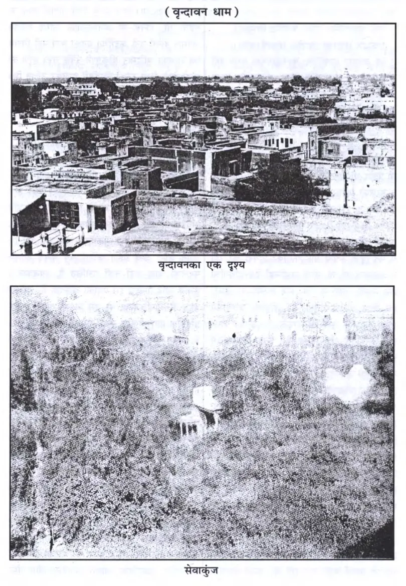
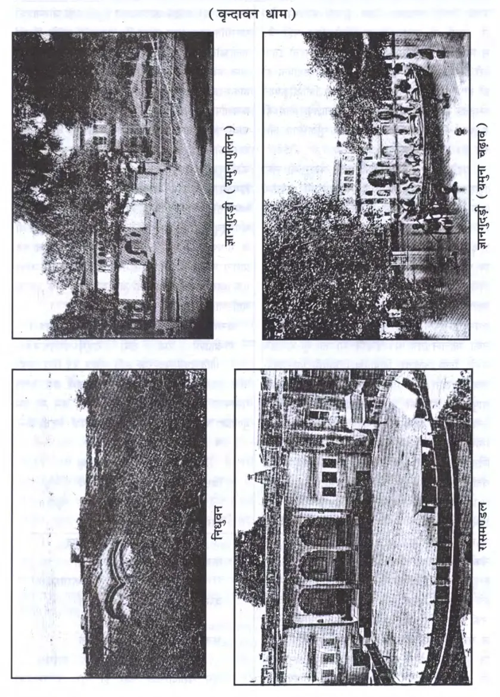
यहाँतक तो हुई बाहरकी बात। परन्तु जो लोग श्रीकृष्णको पूर्ण ब्रह्म मानते हैं, मनुष्यरूपमें अवतीर्ण साक्षात् भगवान् समझते हैं, उनके लिये तो एक दूसरा ही विचारणीय विषय है। श्रीकृष्ण मायासे मनुष्य देह धारण करनेपर भी वे देहकी मायासे बँधे नहीं हैं। उनका ज्ञान परिपूर्ण है, किसी दिन किसी प्रकारसे भी उनके ज्ञानमें न तो बाधा आयी और न आ ही सकती है। नारदादि ऋषिगण, उद्धवादि भक्तगण और व्यासादि दिव्य-दृष्टि सम्पन्न ज्ञानी पुरुष मनुष्यरूपमें देखते ही उनको पहचान गये थे। उन्होंने भी तो भू-भार हरण करनेके लिये अवतार लिया था। इसीसे पग-पगपर व्रजवासी लोग बड़े विस्मयके साथ इन असाधारण महापुरुषके कार्योंकी चर्चा किया करते थे। उनके बाल्यकालसे ही आश्चर्यजनक कार्य देखते रहनेसे उनकी असाधारणताके सम्बन्धमें व्रजवासियोंको प्रायः कोई सन्देह नहीं रह गया था। अनेक मनुष्य उन्हें मनुष्यरूपमें देवता कहा करते थे; और कोई-कोई भाग्यवान् तो उन्हें साक्षात् भगवान् ही समझते थे। जिस समय श्रीकृष्ण गोपबालकोंके साथ नन्दकी गौओंकी रखवाली करते हुए वन-वनमें घूमते-फिरते थे, उस समय भी ग्वाल-बाल उनकी अमानुषिक शक्तिको देखकर दङ्ग रह गये थे। किन्तु उन्हें सबसे अधिक आकर्षित किया था श्रीकृष्णके खुले व्यवहारने, सखाजनोंके साथ उनके सच्चे प्रेमने तथा उनकी सुन्दर भोले-भाले मुखड़ेने! गोपाबालकोंने भी, इस सरलतासे हो अथवा अपने पूर्वजन्मोंके पुण्यबलसे प्राप्त हुई निर्मल अन्तःकरणकी स्वतः सिद्ध अनुभूतिके द्वारा हो उन्हें साक्षात् पूर्णब्रह्म ही समझ लिया था। एकमात्र यही जगत्के आश्रयस्थान हैं और यही जीवमात्रकी परमगति तथा परम सुहृद् हैं, यह बात उनके हृदयमें भलीभाँति पैठ गयी थी। तभी तो उन सबने पूरे अन्तःकरणसे उनके साथ प्रेम किया और फिर प्रेमाकुल होकर अपना तन-मन-धन सब कुछ उनके चरण-कमलोंपर निछावर कर दिया। भक्त भगवान्को विविध भावों और नाना नातों-रिश्तोंसे समझने-बूझने और देखनेकी चेष्टा करता है। कोई उन्हें माता, कोई पिता, कोई पुत्र, कोई गुरु, कोई भाई-बन्धु-सखा और कोई प्रियतम पतिके रूपमें मानता है। गोपियोंने उन्हें प्रियतमके रूपमें ही चाहा था। किन्तु जो कहते हैं कि उन लोगोंकी भगवद्बुद्धि कभी नहीं थी जारबुद्धि, पाप-बुद्धि ही थी वे भीषण भूल करते हैं। मैं ऐसे लोगोंसे केवल यह प्रार्थना करता हूँ कि वे श्रीमद्भागवतके दशमस्कन्धको एक बार अच्छी तरह पढ़ जायँ। उसीसे कुछ श्लोक यहाँ भी उद्धृत किये जाते हैं—
धन्या अहो अमी आल्यो गोविन्दाङ्घ्य्रब्जरेणवः।
यान्ब्रह्मेशो रमा देवी दधुर्मूर्ध्न्यघनुत्तये॥
'गोविन्दकी पद-रज अति पवित्र है। शिव, ब्रह्मा और लक्ष्मीजी, ये सभी पाप-प्रक्षालनार्थ उसे अपने मस्तकपर धारण करते हैं। अतः, आओ, हम भी इस पुण्यप्रदा चरणधूलिमें स्नान करें।' गोपियाँ कहती हैं—
न खलु गोपिकानन्दनो भवा-
नखिलदेहिनामन्तरात्मदृक।
विखनसार्थितो विश्वगुप्तये
सख उदेयिवान्सात्वतां कुले॥
विरचिताभयं वृष्णिधुर्य ते
चरणमीयुषां संसृतेर्भयात्।
करसरोरुहं कान्त कामदं
शिरसि धेहि नः श्रीकरग्रहम्॥
व्रजजनार्तिहन् वीर योषितां
निजजनस्मयध्वंसनस्मित।
भज सखे भवत्किंकरीः स्म नो
जलरुहाननं चारु दर्शय॥
'तुम यशोदानन्दन नहीं हो, तुम प्राणिमात्रकी बुद्धिके साक्षी हो; तुम ब्रह्माकी प्रार्थनासे जगत्की रक्षाके लिये यदुकुलमें अवतरित हुए हो। हम सब तुम्हारी भक्त हैं, इसलिये हमारी प्रार्थना पूर्ण करो। हे यदुकुल-धुरन्धर! जो लोग संसारके भयसे तुम्हारे चरणोंमें आकर शरण लेते हैं, तुम्हारे कर-कमल उन्हें अभय-दान देकर उनकी अभिलाषा पूरी करते हैं; फिर ये कर-कमल कमलाका कर ग्रहण कर चुके हैं, अब तुम इस कर-सरोजको जरा हमारे मस्तकोंपर भी रख दो।' कैसा सरल और सुन्दर अनुराग है। पाप-बुद्धिमें ऐसा अनुराग कदापि नहीं हो सकता; कदाचित् हो भी तो वह स्थायी कभी नहीं हो सकता*। जहाँ केवल शरीरका ही सम्बन्ध है वहाँ विशुद्ध प्रेम नहीं हो सकता। हृदय विशुद्ध न होनेसे ज्ञानका उदय नहीं होता।
ज्ञानं तत्त्वविचारेण निष्कामेणापि कर्मणा।
जायते क्षीणतमसां विदुषां निर्मलात्मनाम्॥
* भागवतमें देखते हैं कि गोपियोंके उपपत्य-दोषने राजा परीक्षितको भी सन्देहमें डाल दिया था। सन्देह होना सम्भव भी है। खैर, यह एक स्वतन्त्र भावराज्यका विषय है जिसके लिये यह स्थान नहीं है। हाँ, एक बात कहनेकी है कि ब्राह्मणोंकी स्त्रियाँ भी गोपियोंकी ही भाँति श्रीकृष्णसे प्रेम करती थीं; पर उनके पति ब्राह्मण लोगोंने, जो तत्त्वदर्शी पण्डित थे, अपनी स्त्रियोंके इस प्रकारके आचरणको अन्ततक कभी अनुचित नहीं समझा, प्रत्युत उन्होंने अपने व्यवहारसे दुखी होकर अपनी निन्दा और अपनी स्त्रियोंकी ही प्रशंसा की। जैसे—
दृष्ट्वा स्त्रीणां भगवति कृष्णे भक्तिमलौकिकीम्।
आत्मानं च तया हीनमनुतप्ता व्यगर्हयन्॥
अहो पश्यत नारीणामपि कृष्णे जगद्गुरौ।
दुरन्तभावं योविध्यन्मृत्युपाशान्गृहाभिधात्॥
नासां द्विजातिसंस्कारो न निवासो गुरावपि।
न तपो नात्ममीमांसा न शौचं न क्रियाः शुभाः॥
अथापि हॺुत्तमश्लोके कृष्णे योगेश्वरेश्वरे।
भक्तिर्दृढा न चास्माकं संस्कारादिमतामपि॥
'तत्त्वविचारपूर्वक निष्काम कर्म करनेसे अन्धकारका नाश और चित्त शुद्ध होता है और फिर, यह सब होनेपर ज्ञान अपने आप उदय हो जाता है।' अज्ञानीका प्रेम वास्तवमें प्रेम नहीं है, बल्कि वह उसकी केवल कामान्धता है। एक मनुष्यमें गुण तो सदा रह भी सकते हैं; पर रूप सदा नहीं रहता। इसलिये रूपके मोहमें पड़कर जो लोग प्रेम करते हैं, रूपका अन्त होते ही उनके प्रेमका भी अन्त हो जाता है। किन्तु इस देह-तटपर जिस अनूप रूपकी लहर आ लगी है उस अरूप-सागरकी रूप-तरंगको जो लोग देख सकते हैं उनके लिये उस रूपका अन्त कभी नहीं होता। वह अनन्त नूतन और अनन्त यौवन है इसलिये वहाँ सदा ही अनन्त उपभोग है। वहाँ मन-प्राणको किसी प्रकारकी क्लान्तिका भोग नहीं करना पड़ता।
बहुधा ऐसा देखनेमें आता है कि जिस वस्तुको हम पा लेते हैं अथवा इच्छा करते ही पा सकते हैं, उसके प्रति हमारा कुछ वैसा अनुराग नहीं रहता; किन्तु जिस वस्तुको हम पाकर भी पूरे तौरसे नहीं पाते, जिसे लेकर भी पूरे तौरसे लेना नहीं हो सकता–'नाहं मन्ये सुवेदेति, नो न वेदेति वेद च' जिनके श्री, अंग, रूपका काल इत्यादिके द्वारा भी विध्वंस नहीं हो सकता, जिनके अन्दर सौन्दर्य नित्य नये रूपमें प्रस्फुटित होता है, जिनके माधुर्य-रसकी कोई सीमा नहीं बाँधी जा सकती, उन अग्राह्य, अरूप, अपूर्व, रूपवान्, चिरसुकुमार और चिरयौवनसम्पन्न चिन्मय पुरुषको सदा पाकर भी सदा पाते रहनेकी ही इच्छा होती है। किसी सरोवरमें कमल विकसित हुआ देखकर या किसी वाटिकामें गुलाबका फूल खिला देखकर एक अबोध और विचारहीन बालकके दिलमें भी उसे पानेकी इच्छा हुए बिना नहीं रहती। जिन लोगोंकी अक्ल बिलकुल मोटी है या जिनका चित्त विषय-भोगोंमें जकड़ा हुआ है, वे लोग यद्यपि ठीक प्रकारसे सूक्ष्म सौन्दर्यको नहीं समझ सकते। तथापि सामने खिले हुए फूलके सौन्दर्य और सौरभ उनके भी हृदयमें कैसी अपूर्व माधुरी डाल देते हैं, मानो उनकी किसी सुप्त चेतनाको जागृत कर देते हैं, मानो किसी भूली हुई दिलकी बातको याद दिला देते हैं। जब प्रकृतिके ऐश्वर्यमें ही इतना आकर्षण है तब जो इस विश्व-प्रकृतिके अधीश्वर हैं, समस्त सौन्दर्य माधुर्यके नित्य नवीन निर्झर हैं और जिनको देखकर पशु-पक्षियों तकको आनन्द होता है, उनको देखकर मानव हृदया गोपिकाओंका भी उनके रूपपर उन्मादिनी हो जाना बिलकुल स्वाभाविक था। इसीलिये भक्त रोकर पुकारता है—
आँखें तरस रहीं मुखड़ेको, गुणचिंतनमें चित्त विभोर।
रोता है प्रत्येक अंग, प्रत्येक अंगके लिये किशोर!॥
उनका नाम और रूप इस विषय-विलासी चित्तको अपनी ओर ऐसे प्रबल वेगसे खींच लेता है कि फिर मैं कौन हूँ' यह बात भी मानो भूल-सी जाती है—
'श्याम' शब्दका तीक्ष्ण यह किसने मारा बाण।
मर्म-स्थलको वेधकर व्याकुल कीन्हें प्राण॥
वाह! कैसी तन्मयता है! इस अवस्थामें क्या जातिकुल-मानकी बात ध्यानमें रह सकती है?
एक बात और है। जो समस्त जीवोंमें ‘एको वशी सर्वभूतान्तरात्मा' हैं, जो हमारी माताओंमें माता, पिताओंमें पिता और पतियोंमें पतिरूपमें हैं, जो समस्त देहोंमें वही एक सच्चे मनुष्य हैं, उनसे यदि कोई प्रेम करे तो इसमें नैतिक दृष्टिसे या आध्यात्मिक दृष्टिसे—किसी प्रकारसे कोई दोष नहीं है। हम सभी तो वही करते हैं। सभी भगवान्को सुहृद्, पति, प्रभु, ईश्वरके रूपमें मानते हैं; और रोज़ उनकी पूजा करके उनके चरणोंमें आत्म-निवेदन करते हैं। तब फिर गोपबालाओंने जो उन्हें तन, मन, धनसे आत्मसमर्पण कर किया, यह जघन्य कार्य कैसे हो गया? जो काम हमारे लिये उचित है वह उनके लिये अनुचित कैसे है? इसलिये गोपियोंने यदि अपने पतियोंकी भी उपेक्षा करके भगवान्का भजन-पूजन किया, तो इसमें कुछ भी दोष नहीं हुआ और वे अपने पतियोंके निकट भी अविश्वासिनी नहीं हुईं। अपने पतिको छोड़कर दूसरे पुरुषसे प्रेम करना निश्चय ही व्यभिचार है; पर गोपिकाओंका प्रेम उसप्रकारका नहीं था।
यह तो धन-जन, घर-द्वार, स्वजन-बान्धव, पति-पुत्र और मान-मर्यादा सभीको छोड़कर एक मात्र उनसे प्रेम करना था। इस प्रकारका प्रेम क्या साधारण प्रेम है? वह भुवनजन-मन-मोहन श्रीकृष्ण तो परमात्मा है, सभीके अन्दर नानारूपोंमें विराजमान हैं। वह पतिके अन्दर भी हैं, और वही तो वास्तविक पति हैं।
गोपीनां तत्पतीनाञ्च सर्वेषामेव देहिनाम्।
योऽन्तश्चरति सोऽध्यक्षः क्रीडनेनेह देहभाक्॥
कृष्णमेनमवैहि त्वमात्मानमखिलात्मनाम्।
जगद्धिताय सोऽप्यत्र देहीवाभाति मायया॥
यह बात भूलनेसे कैसे काम चलेगा कि वे ही एक मात्र समस्त यज्ञोंके भोक्ता और प्रभु हैं।
'सर्वयज्ञानां भोक्ता च प्रभुरेव च।
गोपिकाएँ उन्हें साक्षात् भगवान् समझती थीं। उन्होंने कोरे रूपपर ही मुग्ध होकर और परपुरुष समझकर उनका भजन नहीं किया था। उन्होंने तो उन्हें जीवनका सर्वस्व धन और परम पति समझकर उनके चरण-सरोजोंमें आत्मसमर्पण कर दिया था। वे कहती थीं—
का स्त्र्यङ्ग ते कलपदायतमूर्च्छितेन
संमोहितार्यचरितान्न चलेत्त्रिलोक्याम्।
त्रैलोक्यसौभगमिदं च निरीक्ष्य रूपं
यद्गोद्विजद्रुममृगाः पुलकान्यबिभ्रन्॥
तव कथामृतं तप्तजीवनं
कविभिरीडितं कल्मषापहम्।
श्रवणमंगलं श्रीमदाततं
भुवि गृणन्ति ते भूरिदा जनाः॥
प्रहसितं प्रिय प्रेमवीक्षणं
विहरणञ्च ते ध्यानमंगलम्।
रहसि संविदो या हृदिस्पृशः
कुहक नो मनः क्षोभयन्ति हि॥
हे कृष्ण! तुम्हारे त्रिभुवनसुन्दर और विश्वप्रिय रूपका दर्शन कर और मधुर पदावलीसे युक्त, मूर्छित कर देनेवाले वेणुसंगीतको सुनकर ऐसी कौन-सी स्त्री है जो आर्यधर्म—स्वधर्मसे विचलित न हो जाय? गो इत्यादि पशु-पक्षी लता तक तो इससे पुलकित हो उठे हैं! हे प्यारे, तुम्हारा कथामृत (तुम्हारे वियोगजनित तापसे) तप्त जीवोंके लिये जीवनस्वरूप है, ब्रह्मवेत्ता कविगण इसकी स्तुति करते हैं, यह समस्त पापका विनाश करता है और इसे सुननेसे मंगल होता है; यह शान्त है। जो विस्तृत रूपसे इसका उच्चारण करते हैं वे ही संसारको महादान करनेवाले पुरुष हैं। हे प्यारे! हे कपट! तुम्हारा हास्य, तुम्हारा सप्रेम दर्शन, ध्यानमें मंगलप्रद विहार और निर्जनस्थानमें हृदयस्पर्शी प्रेम-सम्भाषण ये सब हमारे चित्तको क्षुभित करते हैं।
और एक बात गोपिकाओंके सम्बन्धमें कहनेकी है। अपने आपको सभी प्रेम करते हैं*। आत्मासे अधिक प्रिय इस संसारमें कुछ भी नहीं है।
* बृहदारण्यकमें आया है—
न वा अरे पत्युः कामाय पतिः प्रियो भवत्यात्मनस्तु कामाय पतिः प्रियो भवति। न वा अरे जायायै कामाय जाया प्रिया भवत्यात्मनस्तु कामाय जाया प्रिया भवति। न वा अरे पुत्राणां कामाय पुत्राः प्रिया भवन्त्यात्मनस्तु कामाय पुत्राः प्रिया भवन्ति। न वा अरे वित्तस्य कामाय वित्तं प्रियं भवत्यात्मनस्तु कामाय वित्तं प्रियं भवति इत्यादि।
'सर्वेषामपि भूतानां नृप स्वात्मैव वल्लभः।
इतरेऽपत्यवित्ताद्यस्तद्वल्लभ तयैव हि॥
फिर श्रीकृष्ण तो साक्षात् परमात्मा हैं। आत्माके भी आत्मा हैं। उन्हें मनुष्यरूपमें देखनेसे तो काम चलेगा नहीं। उन्होंने स्वयं ही कहा है—
'अवजानन्ति मां मूढा मानुषीं तनुमाश्रितम्।
परं भावमजानन्तो मम भूतमहेश्वरम्॥'
वह जब परमात्मा हैं तब तो वह सब जीवोंके अत्यन्त ही प्यारे हैं। इसलिये गोपियोंका सबसे अधिक कृष्णानुगामिनी बनना भी बिलकुल स्वाभाविक ही हुआ। इससे तो उनका वरणीय चरित्र और भी अधिक आदर्श बन गया है।
वस्त्रहरणके अन्दर एक अपूर्व रहस्य छिपा हुआ है, यहाँ वस्त्रहरणके उसी आध्यात्मिक सौन्दर्यको समझनेकी चेष्टा की जाती है।
जो मनुष्य पशु-प्रकृतिवाले, जघन्य और इन्द्रियासक्त हैं उन्हें अपनी स्त्रियोंको वस्त्ररहित नग्नरूपमें देखकर आनन्द हो तो हो भी सकता है; पर जो लोक-शिक्षक, जगद्गुरु, पूर्णावतार और आप्तकाम हैं उन्हें भला इससे क्या आनन्द होगा? वह तो 'रूपं रूपं प्रतिरूपो बहिश्च' यानी प्रतिरूपका प्रतिरूप धारण किये हुए हैं और बाहर भी विद्यमान हैं। जो सबके भीतर-बाहर विराजमान हैं उनके लिये भला इस कौतुककी आवश्यकता ही क्या थी? किन्तु भागवतके इस श्लोकको पढ़कर मालूम होता है कि गोपबालाओंको नग्नवेशमें देखकर उनकी कुछ तृप्ति हुई होगी—
भवत्यो यदि मे दास्यो
मयोक्तं वा करिष्यथ।
अत्रागत्य स्ववासांसि
प्रतीच्छन्तु शुचिस्मिताः॥
भगवान् कहते हैं कि, 'हे सुवासिनियो! यदि तुम मेरी दासी होओ और मेरी आज्ञाका पालन करो तो मैं तुम्हें आज्ञा देता हूँ कि तुम यहाँ आकर अपने-अपने वस्त्र ले लो।' इन शब्दोंको श्रद्धाकी दृष्टिसे न देखकर यदि केवल बाह्य-दृष्टिसे देखा जाय तब तो यह कुछ और ही तरहके लगते हैं। हम देहात्म-बुद्धि बद्ध-जीव हैं, हमारे मनमें तो देहकी बात ही आती है; हस भूल ही जाते हैं कि श्रीकृष्ण भगवान्, सब लोगोंके हृदयवल्लभ घटघटवासी परमात्मा हैं। हम जैसे स्वयं अपने सामने लज्जित नहीं होते, वैसे ही जो सबके शरीरोंमें हैं उन्हें इससे क्यों सङ्कोच होने लगा? उन्हें इससे आनन्द हुआ था, यह बात ठीक है; पर यह समझ लेना चाहिये कि वह आनन्द सम्पूर्ण आध्यात्मिक आनन्द था, उसमें इन्द्रियजनित आनन्दकी गन्धतक नहीं थी। श्रीकृष्ण तो हमारी तरहसे इन्द्रिय-विलासी नहीं थे, वे हृषीकेश थे और इसलिये उनके उक्त आदेशका गम्भीर मर्म अच्छी तरहसे समझ-बूझकर देखना होगा। इसीलिये वस्त्रहरणके गम्भीर सत्यका आभासमात्र देनेकी यहाँ चेष्टा की जाती है। भगवान् श्रीकृष्णकी वृन्दावन-लीला इस पार्थिव राज्यकी घटना नहीं है, वह परम पुरुषकी नित्यलीला है। उसे स्थूल-भावसे देखनेसे स्थूल शरीर और उसके भोगकी बात ही मनमें आयेगी। तभी तो इस लीलाकी बात सब जगह प्रकट करनेकी नहीं है, क्योंकि वह सबकी बुद्धिसे समझी जानेकी चीज़ नहीं है। गुरुकृपा और साधनाके बलसे जिनकी दोषदृष्टि चली गयी है, स्थूल देहादिसे जो अभिमान-शून्य हो गये हैं, जिनका हृद्रोग विनष्टप्राय हो चुका है, उन्हें ही यह लीला सुननेका अधिकार है। पूज्यपाद गोस्वामी जयदेवजी कहते हैं—
यदि हरिस्मरणे सरसं मनः
यदि विलासकलासु कुतूहलम्।
मधुरकोमलकान्तपदावलीं
शृणु तदा जयदेव सरस्वतीम्॥
किसी वस्तु या कार्यके लिये किसका कहाँतक अधिकार है, इस बातका कोई विचार न करके अथवा इस अधिकार तत्त्वकी अवहेलना करके जो लोग भगवान् श्रीकृष्णके लीला रसका आस्वादन करनेके लिये प्रस्तुत हैं, उन्हें यह अमृत नहीं प्राप्त होगा; यही नहीं, वे लोग विष-भक्षणसे जर्जरित होकर अपना इहकाल और परकाल दोनों विनष्ट करेंगे।
हमारा मन रज-तममयी वासनाओंसे विक्षोभित तथा निद्रालस्यके वशीभूत होनेके कारण जब अपने आपको नहीं समझ पाता है तो पागलकी तरहसे एक विषयसे दूसरे विषयकी ओर दौड़ा करता है। वह संसारके मोहसे विमुग्ध होकर केवल स्त्री-पुत्र-परिजन आदिकी ही चिन्तासे व्याकुल रहता है; वह सदा जन्म-मृत्यु, जरा-व्याधिकी प्रचण्ड ज्वालासे जलता रहता है; और आश्चर्य यह है कि फिर भी वह जो इस विचित्र विश्वलीलाके प्रवर्तक और अधिनायक हैं, उनके चरणोंकी शरण नहीं लेता। कैसा मोह है? पग-पगपर विफलमनोरथ होकर रोता है; पर तो भी उसकी विषयासक्तिका ह्रास नहीं होता। कैसी दारुण विषय-तृष्णा है? आमतौरसे सभी लोगोंका यही हाल है। पुनः यही मनुष्य जब अचिन्त्य भाग्यफलसे तत्त्वानुसन्धानमें प्रवृत्त होता है, निरन्तर दुःख-सन्ताप भोग करते-करते जब उसकी भीषण ज्वालासे छुटकारा पानेके लिये व्याकुल हो उठता है, तब इन सब विषयादिसे परे किसी एक शाश्वत स्थानकी ओर उसके प्राण दौड़ जाना चाहते हैं, निरन्तर दुःख-सन्तापकी अग्निमें जलते-जलते एक शान्तिमय स्थानमें पहुँचनेके लिये स्वभावतः ही वह छटपटाने लगता है। मृत्युकी दारुण, दुःखद अवस्थाका स्मरण करके अमृत-लाभके निमित्त जीवके प्राणमें स्वतः ही व्याकुलता जाग उठती है। तब वह रोकर कहता है—समस्त दुःखोंके मोचन करनेवाले और सर्व आनन्दोंके धाम! हे भगवन्! तुम कहाँ हो? आओ, मेरा उद्धार करो'। इस प्रकार व्याकुलतापूर्वक पुकारते-पुकारते उसे क्रमशः श्रद्धादि सम्पदाएँ प्राप्त होती हैं, और उसके बाद भगवत्प्रेरणासे उसे साधु-महात्माओंके दर्शन होते हैं। तब उनके उपदेशोंसे उसके मनका भ्रम दूर हो जाता है, नित्य वस्तुको प्राप्त करनेके लिये प्राणोंमें आकांक्षा जागृत हो उठती है; और साधु-महात्माओंके बतलाये हुए मार्गपर धीरे-धीरे चलते-चलते वह भगवद्दर्शनद्वारा मायापाश काटनेकी सामर्थ्य प्राप्त कर लेता है। किन्तु जिस संसारमें वह इतने दिन तल्लीन रह चुका है; उसके मोहकी सीमा और आकर्षणको पार कर जाना पहले-पहले इतना सरल नहीं प्रतीत होता। कारण, पूर्वाभ्यस्त विषयोंकी चिन्ता एकदम ही नहीं छूटती। उनकी कोई चाह न होनेपर भी वे बार-बार विक्षेप उत्पन्नकर चित्तको व्याकुल करती हैं।
किन्तु निरन्तर भगवान्का स्मरण-कीर्तन, श्रवण-मनन, निदिध्यासन और उनके चरणोंमें नमस्कार करते-करते चित्त सरस और सरल बन जाता है एवं इस प्रकार मनमें सत्वगुणकी वृद्धि होती है। तब फिर ज्ञानका उदय और प्रेमका सञ्चार होने लगता है एवं धीरे-धीरे मायाका परदा भी हटने लगता है।
इस प्रकार भक्त-साधक जब भगवान्के बहुत निकट पहुँच जाते हैं और उसको नितान्त अन्तरङ्गरूपसे पहचान सकते हैं, तब एक अज्ञात देशसे आनन्दकी सुशीतल वायु प्रवाहित होती है, मानो कोई आनन्द-रस-सिन्धुके जाननेके लिये चित्तको उन्मुख कर देता है। इस प्रकार साधकका चित्त सीमाको त्यागकर असीममें आकर प्रविष्ट होता है, तब भगवान् स्वयं ही पधारकर केवट बन जाते हैं। तब चैत्यगुरुके आविर्भावसे भक्त-साधकका हृदय निर्मल, शुद्ध, ज्ञान और प्रेमपूर्ण हो उठता है। फिर कहीं अपूर्णता नहीं रहती, सभीके अन्दर उनके दर्शन होने लगते हैं। सब प्रकारके अभावोंका लोप हो जाता है और हृदयकी धुकधुकी मिट जाती है। तब साधकके चित्तको विशुद्ध आनन्द और ज्ञान परिवेष्टित कर देते हैं एवं उसको परमानन्द ब्रह्मानन्दका अधिकारी बना डालते हैं।
गोपिकाएँ ऐसी ही ब्रह्मान्वेषणकारिणी भक्त-साधिका हैं। अनेक जन्मोंकी सुकृतिके फलस्वरूप उनको ‘परमात्मा श्रीकृष्ण' चैत्यगुरुके रूपमें प्राप्त हुए हैं। अनेक जन्मोंसे यही (परमात्माके सङ्ग-लाभकी) कामना उनके हृदयमें जग रही थी। इस बार उनकी साधना सिद्धि-लाभके समीप आ पहुँची है। अवश्य ही उनका मन स्वच्छ और निर्मल हो गया है। तब क्या आज उनके मायाके सब बन्धन टूट गये हैं? मनके किसी कोने में, किसी छोटे कोनेमें जरा-सा भी अभिमानका कूड़ा एवं अहंबुद्धि तो नहीं रह गयी है? हाँ, कुछ रह गयी है, उसीके दूर करनेके लिये तो भगवान्की यह अद्भुत लीला है। सत्यव्रत और शुद्ध-सत्त्व हुए बिना कोई उनको पा नहीं सकता। क्योंकि वह तो सत्यस्वरूप हैं, सत्य और तपस्याके द्वारा ही प्राप्त होते है। 'सत्येन लभ्यस्तपसा ह्येष आत्मा।' जरा-सा भी असत्य रह जायगा, तो वे नहीं मिलेंगे। हे सत्यस्वरूप! तुमको नमस्कार है। हमारे प्राणोंमें तुम अपनी सत्यमूर्तिका प्रकाश करो! हे परम सत्य! तुम्हारी कृपा बिना इस असत्यसे कौन हमारी रक्षा करेगा? 'असतो मा सद्गमय, तमसो मा ज्योतिर्गमय।'
गोपियोंके गुरु, परम सखा श्रीकृष्ण उन्हें कृतार्थ करनेके लिये बार-बार बाँसुरी बजाने लगे। अनन्तकालसे वह बाँसुरी बजाकर चिद्विमुख जीवको अपनी ओर बुला रहे हैं; पर जीव उनकी पुकारको सुनकर भी नहीं सुनता। वह अपने अहंभावमें ही चूर है और इस कारण, वह उनकी ओरसे जो उसके लिये परम वान्छित हैं, मुँह मोड़कर चुपचाप पत्थर बना बैठा है। परन्तु जो कोई एक बार मन लगाकर वंशीकी वह ध्वनि सुन ले तो फिर समझ लो कि उसका भाग्य खुल गया। वह कलित वंशीध्वनि उसके कानोंसे होकर तुरन्त अन्तस्तलतक पहुँच जाती है और फिर उसके लिये, संसारकी ओर मुख फेरनेका कोई साधन ही नहीं रह जाता। इस बाँसुरीकी पुकारसे मन-प्राण भर जाते हैं, चित्तसे विषय-वासनाएँ विलुप्त हो जाती हैं, उस अपूर्व बाँसुरी बजानेवालेके पास जानेके लिये उसके चारु चरणोंमें धन-मान, जीवन-यौवन सब कुछ लुटा देनेके लिये प्रबल इच्छा हो उठती है। जिसका भाग्योदय होता है वही उनकी बाँसुरीकी तान सुन पाता है। योगी लोग अपनी हृदय-गुहामें एक मधुर ध्वनि सुनते हैं; उस ध्वनिको प्रणवध्वनि कहते हैं। इसीको वे लोग श्रीकृष्णकी वंशीध्वनि बतलाते हैं। वह ध्वनि जब सुनायी पड़ती है तब चित्तकी बहिर्मुख-वृत्ति रुक जाती है। वह ध्वनि अव्यक्तसे उठती है और अव्यक्तमें ही लय हो जाती है एवं उसके लयके साथ-साथ मन भी अव्यक्तमें प्रवेश करता है। प्रणवका मधुरनाद ऐसा ही है, जिसे सुननेपर और कुछ भी अच्छा नहीं लगता, मधुर ध्वनि सुनते-सुनते चित्त लय हो जाता है। यह वंशी-रव सुननेकी सदा इच्छा होती है; पर सदा तो यह वंशी सुनायी नहीं पड़ती। इसलिये जिस समय बाँसुरी नहीं सुनायी पड़ती, उस समय चित्त फिर संस्कारोंकी घटाओंसे घिर जाता है। भक्त-साधक इन सब संस्कारोंसे चित्तको मुक्त करनेका प्रयास करते हैं और उसके लिये अधिक प्रयत्न भी करने लगते हैं, पर तो भी संस्कार पूर्णतया दूर नहीं होते। भगवान् जब देखते हैं कि भक्त सारी शक्ति लगाकर भी पूर्ण सफल नहीं हो पाता तो वहाँ स्वयं आकर संस्कारके उस परदेको हटा देते हैं। कितनी उनकी दया है? एक बार जिसने उनकी शरण पकड़ ली, बस, उसकी ओरसे वह फिर कभी मुँह नहीं मोड़ते इसीलिये भगवान्को पतितपावन कहते हैं।
गोपिकाओंका भी ठीक यही हाल हुआ और कोई आवरण न भी हों, पर अनेक दिनोंके संस्कारोंका त्याग करना भी तो सहज नहीं है। मनुष्य बहुत दिनोंके जमे हुए संस्कारोंको अभाव देखता है तो वह अपनेको एकदम अकेला, निराश्रय अनुभव करता है। इससे वह उन्हें फिर प्राप्त करना चाहता है। मानो मायाको छोड़नेकी किसी प्रकार भी इच्छा नहीं होती। अबतक उनके सब संस्कार जड़से नहीं गये और परमात्माका सहवास प्राप्त करनेकी योग्यता भी उनमें नहीं आयी। अबतक वे अपने आपको सर्वथा नहीं भूल सकी। फिर अपने आपको भूलकर श्रीकृष्णके प्रति आत्मसमर्पण और कब होगा? अबतक शरीर-बन्धन, लज्जा-भय, उद्वेग-अभिमान नहीं गये। अभी वे सम्पूर्णरूपसे श्रीकृष्णको ही चाहनेवाली नहीं बनीं, आवरणको हटाकर पूर्ण निरावरण नहीं हो सकीं। यह हाल देखकर उनके परम-प्रेमी श्रीकृष्ण उनसे बोले—हे प्यारी सखियो! एक बार अपने आपको सर्वथा भूलकर मेरे पास आकर तो देखो।' वे कहती हैं—'प्रभो! अपने आपको किसी प्रकार भी तो नहीं भूल पातीं। तुम्हीं बतलाओ, किस प्रकार सब कुछ छोड़-छाड़कर मनके परदेको दूर करके तुम्हारे निकट आवें? संसार-सागरमें आकण्ठ निमग्न रहनेके कारण महान् क्लेश हो रहा है; पर तो भी अपने आपको सर्वथा भूलकर तुम्हारे प्रति आत्मसमर्पण करनेकी शक्ति हममें अबतक नहीं आ सकी है। इस दशामें हे भगवन्! तब फिर हमारी क्या दशा होगी? क्या हमारा जन्म-जीवन सब कुछ व्यर्थ चला जायगा?' जीवकी इस प्रकारकी आकुलता देखकर भगवान् ही उसका उपाय कर देते हैं।
मनकी कैसी विचित्र अवस्था हो जाती है भगवान्को पाये बिना भी नहीं रहा जाता और संसारके प्रति जो झुकाव है वह भी पूरा नहीं जाता। इस अवस्थामें साधकको प्राणान्त कष्ट होता है। गोपिकाोंने भी कातर-कण्ठसे यही कहा था—हे श्यामसुन्दर! हम सब तुम्हारी दासी हैं, हम जाड़ेसे मर रहीं हैं, हमें वस्त्र-दान दो।' अर्थात् भगवान् भी रहें और आवरण भी रहे; यही जीवकी इच्छा रहती है; पर भगवान् तो छोड़नेवाले नहीं हैं। वे बोले, तुम मुझे चाहती हो या अपने आपको चाहती हो? यदि मुझे चाहती हो तो मेरी आज्ञाका पालन करो। आओ, एक बार निरभिमान होकर मेरे पास आओ, एक बार सब कुछ भूलकर, चराचर ब्रह्माण्डको विस्मृतिके सागरमें डुबाकर संस्कार-शून्य निरावरण होकर मेरे पास आकर खड़ी हो जाओ। तुम जो सदा मेरी कामना करती रही हो, आज तुम्हारी यह चिरवान्छित और चिरसञ्चित आकांक्षा पूरी होगी।
किसी दूसरेकी ओरसे नहीं, केवल भगवान्की ओरसे ही जब इस प्रकारका आह्वान जीवके अन्तरतम-प्रदेशमें जा पहुँचता है, तब उस अभिसारमुखी प्रवृत्तिको फिर कोई भी निवृत्त नहीं कर सकता। साधारण मनुष्य कामदेवके बाणोंसे घायल होकर पागलकी भाँति जैसे चारों ओर से ज्ञानशून्य हो जाता है, उसी प्रकार आज ये लोग भी मदनमोहनके मदनविजयी मदनशरसे आहत हैं। अब क्या वे उन्हें त्यागकर संसारका भजन कर सकती हैं? तभी कृष्णकामिनी प्रेममयी गोपियाँ श्रीकृष्ण-प्रेमसे विभोर होकर, सब कुछ छोड़कर, सर्व-शून्य बनकर, परम पूर्णको प्राप्त करनेके लिये, उनके चरणोंमें दौड़ी आयी हैं। वे नग्न होकर, उनके निकट लज्जावनत मुखसे आ खड़ी हुईं, पर फिर भी शायद उनके मनके एक छिपे हुए कोनेमें, कहीं शायद संस्कार लगा हुआ रह गया। इसीसे प्रेमघन श्रीकृष्ण मुस्कुराकर बोले—वह किञ्चित् संस्कार भी छोड़ देना होगा। कोई भी आश्रय पकड़े न रह सकोगी, अनन्य चित्त होकर एक मुझमें ही पूर्ण आश्रय प्राप्त करोगी।' तब गोपियोंने उनकी मधुर वाणीसे मुग्ध होकर एक बार उन्हीं नवनीरद, नवीन कान्त श्रीकृष्णके मुखकी ओर ताककर एकदम सब संकोच भाव त्यागकर, निस्संग होकर, दोनों हाथ उठाकर उनकी कृपाभिक्षा चाही। करुणामय भगवान् प्रेममें भरकर उनका आदर करते हुए बोले—'हे सब साध्वी गोपिकाओ! मैं जानता हूँ कि मेरी पूजा-अर्चना करना ही तुम्हारा सङ्कल्प है; और यह सङ्कल्प मेरी इच्छासे ही है, इसलिये इसका सफल होना उचित ही हुआ। जिनका चित्त मुझमें लग गया है, उन्हें फिर वासनाजनित भोग नहीं भोगने पड़ते। भुँजे और पकाये हुए बीजसे प्रायः अङ्कुर उत्पन्न नहीं होता। हे अबलाओ! तुम व्रजमें जाओ, तुम सिद्ध हो गयी—
तासां विज्ञाय भगवान् स्वपादस्पर्शकाम्यया।
धृतव्रतानां सङ्कल्पमाह दामोदरोऽबलाः॥
सङ्कल्पो विदितः साध्व्यो भवतीनां मदर्चनम्।
मयाऽनुमोदितः सोऽसौ सत्यो भवितुमर्हति॥
न मय्यावेशितधियां कामः कामाय कल्पते।
भर्जिता कथिता धाना प्रायो बीजाय नेष्यते॥
याताबला व्रजं सिद्धा मयेमारंस्यथ क्षपाः।
यदुद्दिश्य व्रतमिदं चेरुरार्यार्चनं सतीः॥
किन्तु एक गड़बड़की बात है। भागवतमें आया है कि भगवान् श्रीकृष्ण उन्हें इस प्रकार नतमस्तक हुए देखकर सन्तुष्ट हो गये और दया करके उन्होंने वस्त्र वापस लौटा दिया। तब तो उन्हें फिर मायावस्त्र पहनने पड़े। इतने परिश्रमके बाद, इतने कष्ट सहनेके बाद अन्तमें क्या यही फल मिला? नहीं, यह बात नहीं। 'त्यागाच्छान्तिरनन्तरम्'—गोपियोंको त्यागके फलस्वरूप शान्ति मिली। उन्हें माया फिर मिली सही; पर वह माया श्रीकृष्णार्पण हो जानेसे विशुद्ध विद्या हो गयी थी। जो बन्धनका कारण था, वह आनन्द अमृतरससे परिपूर्ण हो गया था। भगवच्चरणोंमें अर्पित कर्मकी भाँति उसने मुक्तिका सौभाग्य लाभ किया। भक्त इस अवस्थामें बन्धनसे नहीं डरता। अब तो वह मायाको भगवत्प्रसादरूपसे ग्रहण करता है। यह मायाका अभिमान भगवान्को दे देनेके बाद इसीसे भक्त लोग प्राकृत पुरुषोंकी भाँति संसार-यात्रा किया करते हैं। किन्तु तैलमर्दित शरीरकी भाँति उन्हें फिर मायाका जल नहीं लगता—'नैव किञ्चित् करोति सः।' इसलिये निर्भय होकर वे संसारमें भगवान्के दासके वेशमें विचरण करते हैं और भावी पथ-यात्रियोंके लिये कालकी पाषाण-देहपर अपना पदचिह्न अंकित कर जाते हैं। यही लीला बाह्यके साथ अन्तरका, ससीमके साथ असीमका, अधिभूतके साथ अध्यात्मका, जीवके साथ शिवका और आत्माके साथ परमात्माका मिलन-विलास है। भीतर-बाहर एक करके सर्व जीवोंको शिवरूप मानकर समस्त आत्माओंके अन्दर, समस्त वस्तुओंके अन्दर उसी 'सर्व'का परमात्मरूपमें साक्षात्कार करके साधक परमतृप्ति लाभकर धन्य और कृतकृत्य हो जाता है। जबतक यह मिलन नहीं होता, तबतक हम अभिमानके परदेमें छिप रहना अच्छा समझते हैं, अपनेको परदेके बाहर करके निस्संग होकर भगवान्के सामने आनेमें संकोचका अनुभव करते हैं। तभीतक अपूर्ण कामनाएँ बार-बार आकर हमें जर्जरित करती हैं, तभीतक यह सारा विश्व रहस्य हमारे सामने अस्पष्ट, अज्ञात और अनुपलब्ध बना है, तभीतक मान-अभिमान सहस्रों भेदसागरोंमें उत्ताल तरंगोंकी भाँति नृत्य करता है। जब जीव संसारमें सुख-शान्ति न पाकर कामाग्निमें जलकर रोदन करता है, जब वह एक परमात्माको छोड़कर और कुछ भी तृप्तिकर और शान्तिप्रदायक नहीं समझता; तब वह यह सब छोड़कर, अपने पापको भूलकर केवल उनके प्रेमका भिखारी बनता है! तभी वह पूरी निर्भरताके साथ उनके चरणोंमें शरण लेकर करबद्ध होकर आर्तस्वरसे पुकारता है—
गोकुलके इस कुल, उस कुलमें
अपना किसे पुकारूँ? प्रान!
चरण युगलकी शरण इसीसे
ली है, इनको अपने जान॥
'प्रभो! देखो मुझे पैरोंसे मत ठुकराओ, दासी मानकर दिलमें रक्खो!' भक्तके मनकी जब ऐसी अवस्था हो जाती है तभी वह मायाके परदेको भेदकर बाहर निकलनेके लायक बनता है। तभी परमात्माके साथ रास-रस-रंग और सम्भोग करनेकी उसे योग्यता प्राप्त होती है। जबतक हम उन्हें अपनेसे अलग समझेंगे, तबतक तो उनके निकट संकोच रहेगा ही। जहाँ उन्हें अपने आत्मासे अभिन्न समझा, बस, वहीं उनके साथ अपना निरन्तर योग अनुभव करने लगेंगे। फिर उन्हें दूसरा नहीं समझेंगे, बल्कि परम आत्मीय समझेगे। तब भीतर-बाहरकी एक हालत होगी। अभिमानका नाम-निशान न रहेगा। तब आत्मा-परमात्मा एकरूप होंगे, यही महातीर्थ सागर-सङ्गम है।
आओ, हम उन परमात्मैकनिष्ठा, प्रणतचित्ता, कृष्णप्राणा गोपबालाओंको प्रणाम करें, उनका शिष्यत्व स्वीकारकर मधुर मुक्ति-मार्गपर अग्रसर हों!
श्रीकृष्णार्पणमस्तु।
नारायण बिन प्रेमके पण्डित पशू समान।
तातें अति मूरख भलो जो सुमिरत भगवान॥
चीरहरणलीलारहस्य
प्रश्नोत्तर
प्रश्न—यमुनाके तीर चीर गोपियोंके तीर करि
कदम पै जाय चढ़ॺो बिरजबिहारी है।
कर उपहास उन्हें नगन बुलावे पास,
लाज वाज सारी यदुराजने बिसारी है॥
उत्तर—हरिके मिलाप मध्य पट है कपटरूप,
परदा हटाय सो अभेद ब्रह्मचारी है।
रूपक है गूढ जिसे मूढ़ महापाप कहें,
ज्ञानीसे जो पूँछिये तो सर्वहितकारी है॥
प्रश्न—कोई इस गाथाको सुने तो कहो कहा कहे,
यही तो कहे कि कान्ह बड़ा अवतारी है।
चोरी बरजोरी परनारिनसों राम राम,
कैसो भगवान् यह महाव्यभिचारी है॥
उत्तर—बीचमें कनात काहू भाँति न रहन पावे,
कौन कहे योग यह योगविधि न्यारी है।
रूपक है गूढ़ जिसे मूढ़ महापाप कहें,
ज्ञानीसे जो पूँछिये तो सर्वहितकारी है।
प्रश्न—न्हाय रहीं माता और भगनि सुतों-सी नार,
वृद्धा है युवा है कोई कन्या सुकुमारी है।
अच्छनके लच्छन न ऐसे कहूँ होत सुने,
अपनी उतार लाज औरोंकी उतारी है॥
उत्तर—स्वामी सहवास भला कौन नहीं चाहत है,
देखना यही है यहाँ कौन अधिकारी है।
रूपक है गूढ़ जिसे मूढ़ महापाप कहें,
ज्ञानीसे जो पूँछिये तो सर्वहितकारी है।
प्रश्न—कारी कारी सूरत है वैसे ही करम कारे,
कहाँसे उजारी लाय आप विसकारी है।
लाजकी मारी नहीं बढ़त अगारी नार,
यमुनाको नीर यही चीर यही सारी है॥
उत्तर—सुध है सरीरकी तो चीर बिन पीर सहो,
आगे बढ़ जायगा जो दरस भिखारी है।
रूपक है गूढ जिसे मूढ़ महापाप कहें,
ज्ञानीसे जो पूँछिये तो सर्वहितकारी है॥
नारायणप्रसाद 'बेताब'
भागवतके बालकृष्ण
(लेखक-पं० श्रीनन्दकिशोरजी शुक्ल, वाणीभूषण)
ध्यानाभ्यासवशीकृतेन मनसा
तन्निर्गुणं निष्क्रियं
ज्योतिः किञ्चन योगिनो यदि परं
पश्यन्ति पश्यन्तु ते।
अस्माकं तु तदेव लोचनचम-
त्काराय भूयाच्चिरं,
कालिन्दीपुलिनेषु तत्किमपि य-
न्नीलं अहो धावति॥
इस कलह-प्रिय कलिकालमें, इस विषय-विषैले, कामनाओंके कोलाहल आकुलित कपटमय, कुत्सित कालमें भी, इस पराधीन, पददलित दशामें, इस म्लेच्छाक्रान्त दारुण समयमें भी, और इस शिश्नोदर-परायण भोगयुगमें भी, हमारे प्यारे इस भारत-देशमें जो योगका-विशेषकर भक्ति-योगका सर्वत्र दर्शन हो रहा है, आज भी हिन्दूसमाजमें अध्यात्म-चिन्ता है और आबाल-वृद्ध-वनिता, आगोपाल-नृपालमें पुरातनी आर्य-संस्कृतिकी चमत्कृति दृष्टिगत होती है, इसका एक कारण घर-घरमें श्रीमद्भागवत पुराणका प्रचार भी है। इधर शताब्दियोंसे हिन्दू-समाजको सञ्जीवनी-बूटी पिलानेवाले दो ही तो अनुपम, मनोहर, हृदय-हर ग्रन्थ हैं, जिनको पढ़-पढ़कर, सुन-सुनकर हम हिन्दू-के-हिन्दू बने रहते हैं। एक रामायण और दूसरा श्रीमद्भागवत। संस्कृतमें भागवत और हिन्दीमें रामचरितमानस—ये दोनों ऐसे वरदानी दिव्य-ग्रन्थ, ऐसे जादू-भरे मोहन-मन्त्र, ऐसे चित्ताकर्षक, अति सुन्दर, सर्वथा पूर्ण ग्रन्थ हैं कि, कुछ न पूछिये। आनन्दके समुद्र हैं, नीतिके आकर हैं, प्रीति और प्रतीतिके प्रभाकर हैं। पाठकगण रामायणाङ्कमें रामायणका राम-रसायन-पान कर चुके हैं। इन पंक्तियोंमें मैं यत्किञ्चित् भागवत-रसामृत पिलानेकी चेष्टा करता हूँ। भाग्यवान् भावुक भक्त इस भागवतामृतका पान कर जीवन सफल कर लें। वेदरूपी कल्पवृक्षका यह भागवत अत्यन्त मधुर, सुपक्व फल है। योगीन्द्र श्रीशुकाचार्यके मुखारविन्दसे सुगन्धित इस अमृत-रसके अधिकारी भावुक भक्त या रसिकजन ही हैं। यथा,—
निगमकल्पतरोर्गलितं फले
शुकमुखादमृतद्रवसंयुतम्।
पिबत भागवतं रसमालयं
मुहुरहो रसिका भुवि भावुकाः॥
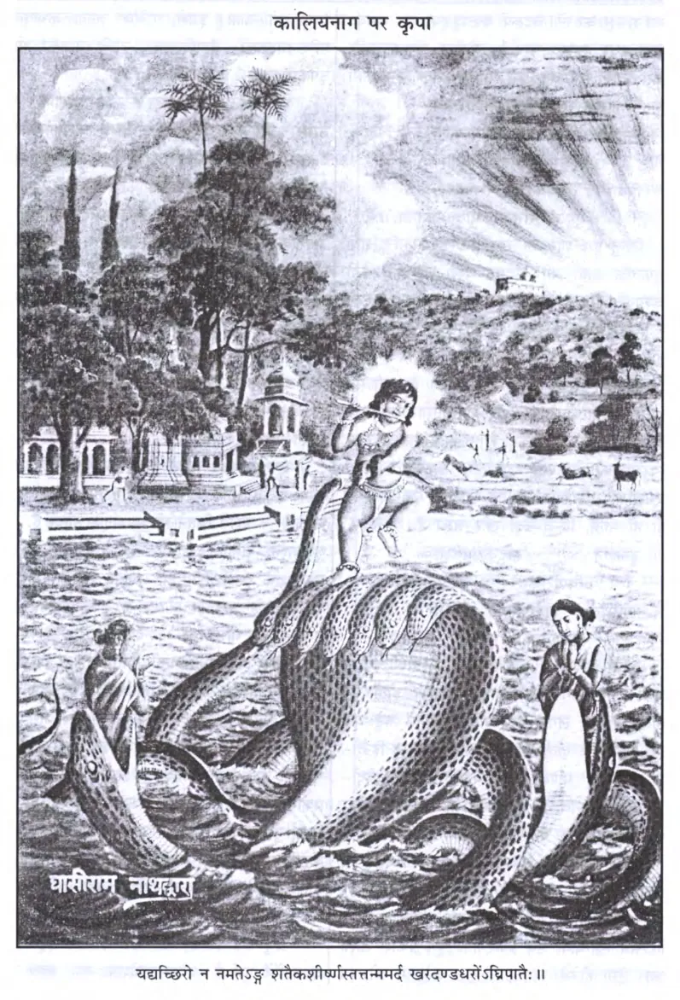
किन्तु इस शास्त्रको समझनेके लिये भक्ति तथा भावुकताके रहते भी सद्गुरु-चरण-शरणकी बड़ी आवश्यकता है। जिसपर भगवान्की कृपा हुई है, जो पूर्ण जितेन्द्रिय होकर सुदृढ़ नियमसे अहर्निश निष्काम निर्हेतुक भजन करता हुआ, भागवतका पारायण किया करता है, वही इसका रहस्य बतला सकता है, वही सब कथाओं एवं तत्त्वोपदेशोंका वेद-शास्त्रानुसार सयौक्तिक सामञ्जस्य-विधान कर सकता है। और कर सकता है-नटवरलालकी अटपटी, चटपटी, खटपटी, उलटी लीलाओंका रहस्योद्घाटन! टेढ़े कान्हकी टेढ़ी लीलाएँ बड़ी ही मीठी, किन्तु टेढ़ी खीर जरूर हैं।
हुताशने हाटकसंपरीक्षा,
विपत्तिकाले गृहिणीपरीक्षा।
रणस्थले शस्त्रभृतां परीक्षा,
विद्यावतां भागवते परीक्षा॥
अग्निमें सुवर्णकी, विपत्तिके समय स्त्रीकी, युद्धमें वीरकी और भागवतमें विद्वान्की परीक्षा होती है। भागवतका अर्थ लगाने और मर्म समझनेमें बड़े-बड़े विद्या-दिग्गजोंके दाँत खट्टे पड़ जाते हैं! परन्तु हिन्दी साहित्य-सम्राट् पण्डितवर श्रीमहावीरप्रसाद द्विवेदी-जैसे विद्वान् भागवतके गूढ स्थलोंको समझ-समझकर, इस पुराणपर मुग्ध भी ऐसे हो जाते हैं कि विभिन्न श्लोकोंको अर्थसहित सुनाकर और उनकी विशेषता बतलाकर कट्टर नास्तिकोंको भी सीधा कर देते हैं! बहुत अच्छा होता, यदि भागवतांक' निकाला जाता और सब स्कन्धोंके सब प्रकरणोंपर पूर्ण प्रकाश डाला जाता। ऐसा होनेसे भागवतपर एक अत्युत्तम क्रोड़-पत्र प्रस्तुत हो जाता। इससे धार्मिक जनता कथावाचक पण्डित-मण्डली, वैष्णव-समाज आदि सबका महान् उपकार होता।
भागवतका सबसे बड़ा स्कन्ध दशम है। और उसमें सबसे सरस, मधुरतर चरित है बालकृष्णचरित। अतः मैं इसीपर विचार करता हूँ। आजकल प्रायः नवशिक्षित कुछ जोशीले भाई कहा करते हैं कि 'हमें तो गीताके कृष्ण बहुत रुचते हैं, जो महाबाहु अर्जुनको आत्माका अमरत्व, सच्चिदानन्दत्व समझाकर, युद्धके लिये-दुष्टदमनके लिये ललकार रहे हैं, और उसे पाप न लगे, इसलिये निष्काम-कर्मयोगका विवेचनकर दिव्य तत्त्वज्ञान एवं भक्तियोग समझा रहे हैं। रहे भागवतके बालकृष्ण, सो वे तो कहीं नाच रहे, कहीं वंशी बजा रहे, कहीं माखन चुरा रहे और कहीं मिट्टी खा रहे हैं! भाई! वे तो हम देशभक्तोंको जरा भी नहीं सुहाते' इत्यादि।
एक सज्जनने मुझसे कहा था कि-'पण्डितजी! आप सनातन-धर्मके प्रचारक हैं, अतः ऐसा उद्योग कीजिये कि देशमें जितने भी भगवान्के मन्दिर हैं, उनमें युवाकृष्ण-जवान दाढ़ी मूँछोंवाले, गीता-वक्ता, वीर-रस-वर्द्धक कृष्णकी मूर्तियाँ स्थापित की जायँ, जिनका दर्शन कर हिन्दू जनता जाग्रत हो, जनानापन छोड़कर मरदाना बाना धारण करे और देशका उद्धार हो। अन्यथा इन मन्दिरों और नन्हीं-नन्हीं मूर्तियोंसे कुछ लाभ नहीं दीखता! आप व्याख्यानोंमें गीता और गीता-वक्ताका प्रचार कीजिये।' मैंने उत्तर दिया—'महाराज! मैं पचीस वर्षसे गीताका प्रचार, प्रवचन, व्याख्यान करता हूँ। जहाँ-तहाँ गीताकी कथा नवीन आवश्यक ढङ्गसे बाँचता हूँ। इस प्रकार देश और जातिकी यथाशक्ति सेवा करता हूँ। किन्तु मुँछाड़ी दढ़ियल मूर्ति-स्थापनकी बात ठीक नहीं। क्योंकि बालकृष्ण-भागवतके श्यामसुन्दर गोपाललाल बालकृष्णकी महिमा कम नहीं है, बहुत अधिक, बहुत बड़ी, बहुत अगाध, अनन्त है।
प्रभु एक ही है, पर भागवतका बालकृष्ण सब कलाओंमें पूर्ण है। कोरा उपदेशक नहीं, स्वयं सर्व-कार्य-कर्ता है। वेदान्त सुनाता हुआ भी अघासुरोंका संहर्ता है। महावीर भी मोहन है। मुरली बजाता, नाचता-गाता, हँसता-हँसाता हरदिल-अजीज है। अपनी माधुरीसे मोहनेवाला 'मोहन' होकर भी अनासक्त, विरक्त, 'मोह न' यानी मोह न करनेवाला-मोहसे अलग निर्मोही भी है! जगत्को तारनेके लिये इससे अच्छा दूसरा कोई आदर्श नहीं। हजारों वर्षोंसे इसकी बाँकी झाँकीपर अपना तन, मन, धन सर्वस्व निछावर करनेवाले साधु-सन्त, साधक-विद्वान्, धर्माचार्य, भक्त, नृपति और करोड़ों आर्य-हिन्दू मूर्ख नहीं हैं, जो इसके बिना मोलके चेरे बने हुए हैं। आप अपने कृष्णगढ़-नरेश स्वर्गीय कविवर श्रीनागरीदासजीकी ही साक्षी लीजिये—
हमारो मुरलीवारो स्याम।
बिन वंशी, बनमाल, चन्द्रिका,
आन न जानो नाम॥ १॥
गोपरूप, वृन्दावन-चारी,
पूरन जन-मन-काम।
नन्दगाँव, बरसाना, गोकुल,
कुंज-गली, गिरि-धाम॥ २॥
याही सों हित चित्त बढ़ौ नित,
दिन दिन पल छिन जाम।
'नागरिदास' द्वारिका मथुरा,
रजधानीसों न काम॥ ३॥
हिन्दी-माताके मुकुटको अपने अनेक दिव्य ग्रन्थरूपी अमूल्य रत्नोंसे देदीप्यमान करनेवाले, महाराजाधिराज नागरीदास क्या मूर्ख थे? 'सरबसके सिर धूरि दै, सरबसकी व्रज धूरि' वाले नन्दनन्दन-पदारविन्दानुरागी राज्य-विषयसुख-त्यागी, महाविरागी नागरीदास क्या देश-भक्त नहीं थे? एक नागरीदास क्या, अगणित धनकुबेर और विद्यासागर इस मोहिनी मूर्तिपर मस्त होकर तर चुके हैं। हिन्दू ही नहीं, विधर्मी मियाँ भी रसखान बन गये हैं। सुनिये—
या लकुटी अरु कामरिया पर
राज तिहूँपुरको तजि डारौं,
आठहु सिद्धि नवों निधिको सुख
नंदकी गाय चराय बिसारौं।
'रसखान सदा इन नैनन सों
व्रजके बन, बाग, तडाग निहारौं,
कोटिनहू कलधौतके धाम
करीलकी कुंजन ऊपर वारौं।
मोहन-छबि रसखान लखि, अब दृग अपने नाहिं।
खैंचत आवत धनुषसे, छूटत शरसे जाहिं॥
मो-मन मोहन-छबिपै अँटक्यो।
ललित त्रिभंग-चाल लखि लोनी
चारु चिबुक गड़ि ठटक्यो॥
इस प्रकार व्रजके—व्रजमें भी मथुरावालेके नहीं, यमुना और उसके पारवर्ती गोकुलके गोपाल बालकृष्णपर हिन्दू-जातिकी परमासक्तिका विशेष कारण है। और वह यह कि, भक्तसमुदाय ब्रह्मानन्दसे भी ऊँची कक्षाका आनन्द-परमानन्द चाहता है। संसारमें सबसे निकृष्ट नीच आनन्द विषयानन्द है, उससे उत्तम और आदरणीय आनन्द विद्यानन्द है। उससे बड़ा महान् आनन्द आत्मानन्द है। और 'अहं ब्रह्मास्मि'का अपरोक्ष अनुभव कर आत्मरति, आत्मकाम, आत्मतृप्त, आत्म-सन्तुष्ट यतिराट् जिस अखण्ड सच्चिदानन्दको अहर्निश प्राप्त रहता है, वह ब्रह्मानन्द है। बस, यही पराकाष्ठा, परागति है, यही मुक्ति है। किन्तु भगवान्के निष्काम उपासक, अनन्य प्रेमी, त्रिगुणातीत भक्तजन कहते हैं, यह सब ठीक, वेदान्त-शास्त्र और ब्रह्मानन्द सब यथार्थ है, परन्तु हम तो केवल आत्मासे नहीं, बुद्धिसे, मनसे, तनसे और रोम-रोमसे ब्रह्मानन्दका अनुभव चाहते हैं! और एतदर्थ ही परमदयालु प्रेमघन परब्रह्म परमात्मा सगुण, साकार होकर, अवतार धारण कर हमारे नयनगोचर होता है और हमारे लिये विचित्र लीलाएँ करता है। इससे हमें जो आनन्द मिलता है, वह ब्रह्मानन्द ही सही, लेकिन दर्शनमें आँखको, श्रवणमें कानको, स्पर्शमें त्वचाको—इसी तरह सर्वाङ्गको सर्वाङ्गीण ब्रह्म-मुख साकारस्वरूप एवं लीलामें मिलता है, अतः यह सुख, यह सौभाग्य, यह आनन्द ब्रह्मानन्दसे भी संन्यासी योगियोंके समाधि-दशावाले या मुक्तात्माके अद्वैत-मोक्षावस्थावाले ब्रह्मानन्दसे भी बड़ा विलक्षण आनन्द 'परमानन्द' है। भागवतका बालकृष्ण परमानन्द है। सदानन्द गोविन्द परमानन्द है। भागवत दशमस्कन्धका कृष्ण-बाल-चरित परमानन्द है। व्रजका ब्रह्म परमानन्द है। जैसे जगत्की चौरासी लाख योनियोंमें ब्रह्म व्यापक है, वैसे ही चौरासी कोस व्रजमें वेदान्तका परम सिद्धान्त ब्रह्म परमानन्द नाच रहा है। भागवतमें ही लिखा है—
अहो भाग्यमहोभाग्यं नन्दगोपव्रजौकसाम्।
यन्मित्रं परमानन्दं पूर्णं ब्रह्म सनातनम्॥
वसुदेवसुतं देवं कंसचाणूरमर्दनम्।
देवकीपरमानन्दं कृष्णं वन्दे जगद्गुरुम्॥
मूकं करोति वाचालं पंगुं लंघयते गिरिम्।
यत्कृपा तमहं वन्दे परमानन्दमाधवम्॥
वेदमें मुक्तात्माके लिये लिखा है—'सोऽश्नुते सर्वान् कामान् ब्रह्मणा सह विपश्चिता।' मुक्तपुरुष ब्रह्मके साथ सब कामनाओंका उपभोग करता है, अद्वैत-मुक्ति और निर्वाणमें ऐसा बन नहीं सकता। यह परमानन्द तो भक्त प्रभुसे पृथक् सेवक रहकर ही पाता है। इसीसे कैवल्य-मुक्तिको न स्वीकार कर वह भजनानन्दी ही बना रहता है और प्रभु ही उसे परमानन्द-प्रदान करनेके लिये विविध लीलाएँ करते हैं। इसमें कोई सन्देह नहीं कि व्रजके गोकुल, गोप-गोपी, गोप-बालक आदिमें अधिकांश दैवी जीव हैं और उनके साथ भगवान्की दिव्य लीला नित्य है। इस दिव्य लीलामें आधिभौतिक, आधिदैविक, आध्यात्मिक सभी भाव भरे हैं, बालकृष्णकी लीलाओंमें सामाजिक, राजनैतिक, आध्यात्मिक, मंगलमय सिद्धान्तोंके मूल-तत्त्व सुन्दरतासे संमिश्रित है। हाँ मुख्य और अन्यत्र अलभ्य भगवान्के प्रेम-विह्वल भक्तोंकी प्यारी परमानन्दता ही है। दहियाके स्वर्गीय महाराज रसनिधिका दोहा तथा अन्य पद्य भी दर्शनीय हैं—
कोटि मारतंड चंड मंडित मुकुट क्रीट
कुंडल कलित अलकावलि बुझै गई।
'पजन' प्रतच्छ मुकताहल त्रिभंग रंग
रंजित जरीके पीत पटल रजै नई॥
झलक झलामलीसी झाँकीसी झपाकै चित्त.
चित्तते निकरि मेरे दृगन हितै गई।
दृगनते दौरि मन, मनते तमाम तन
तनते ततच्छ रोम रोम छबि छ्वै गई॥
धारत ही बन्यो एही मतो गुरु
लोगनको डर डारत ही बन्यो।
गारत ही बन्यो काजु सबै धन
घाम कुटुम्ब बिसारत ही बन्यो॥
हारत ही बन्यो हेरि हिया
'पदमाकर प्रेम पसारत ही बन्यो।
टारत ही बन्यो घूँघटको पट
नंदको लाला निहारत ही बन्यो॥
धनि गोपी औ ग्वाल धनि धनि जसुदा धनि नंद।
जिनके आगे फिरत है धायो परमानंद॥
ब्रजलोचन, व्रजरमन, मनोहर,
ब्रजजीवन, व्रजनाथ।
ब्रजउत्सव, व्रजबल्लभ सबके
ब्रजकिसोर सुभगाथ॥
ब्रजमोहन, व्रजभूषन, सोहन,
ब्रजनायक व्रजचन्द।
ब्रजनागर, व्रजछैल, छबीले,
ब्रजवर, श्रीनँदनंद॥
ब्रजआनँद, व्रजदूलह, नितहीं
अति सुन्दर व्रजलाल।
ब्रजगौवनके पाछे आछे
सोहत व्रज-गोपाल॥
ब्रजसम्बन्धी नाम लेत ये
ब्रजकी लीला गावै।
नागरिदासहि मुरलीवारो
ब्रजको ठाकुर भावै॥
इस परमानन्दको मूढ, विषयानन्दी तथा कुतर्की विद्यानन्दी नहीं समझ सकते, जो श्रद्धा-चित्त नहीं, विश्वासअक्षय-बट-छायामें जो विश्राम नहीं करते, प्रणिपात, परिप्रश्न और सेवाद्वारा जो लोग श्रीगुरुचरण-रज तथा दिव्य-ज्ञान और भगवत्कृपासे प्रेमाभक्तिको प्राप्त न कर केवल वृथा बकवादमें ही अपना अमूल्य जीवन बरबाद करते हैं, ऐसे पामर-जन भागवत और भगवल्लीलाओंका रसास्वादन नहीं कर सकते। 'कर्कशतर्कविचारव्यग्रहृदयः किं वेत्ति काव्यहृदयानि। ग्राम्य इव कृषीविलग्नश्चञ्चलनयनावचो रहस्यानि।' 'रसिकराज गिरिधरकी चालैं बिना रसिक कोइ जानि सकै ना।' विद्वन्मण्डलीमें तो यह निर्विवाद मान्यता है कि—'भक्त्या भागवतं शास्त्रम्' अर्थात् पूरी भक्तिसे ही भागवत-शास्त्र समझमें आ सकता है। भक्तिके वश होकर महाप्रभु जिसे 'बुद्धियोग' देते हैं, अति अनुकम्पासे जिसके अन्तःकरणका अन्धकार-अविद्यान्धकार ज्ञानदीपकके द्वारा—'भास्वता ज्ञानदीपेन' दूर कर देते हैं, वही उनको और उनके 'दिव्य-जन्म-कर्म को जान सकता है। 'भक्त्या मामभिजानाति यावान्यश्चास्मि तत्त्वतः' भागवतके भगवान् श्रीकृष्णका जन्म यानी प्राकट्य और कर्म यानी उनके बाल-चरित तथा अन्य सब चरित भी दिव्य हैं—अलौकिक हैं। इस दिव्यताकी परमावधि है परमानन्दता और परमानन्दताका ही व्रज-लीलाओंमें उल्लेख है। गीतामें श्रीमुखसे प्रभुने जो निष्काम-कर्म, ज्ञान, भक्ति, ध्यान आदिका उपदेश किया है, उसको पहले व्रजमें करके दिखलाया है। उसके अनुसार स्वयं आचरण कर दिखाया है। दशमस्कन्धकी कथाओंसे गीताके प्रत्येक उपदेशका मिलान करना तो पहुँचे हुए भक्तराजों, यतात्मा महात्माओं और सिद्ध-योगियोंका ही काम है तथापि पूज्य विद्वानोंको विशेषतः वैष्णव-पण्डितोंको इस ओर अग्रसर होना चाहिये। अन्तमें भागवतके ही एक सुन्दर श्लोकसे भगवान्को प्रणामकर, विस्तार-भयसे मैं इस लेखको आज यहीं समाप्त करता हूँ। यथावकाश अपने उपर्युक्त कथनके उदाहरणस्वरूप किसी व्रज-चरित्रका सब दृष्टियोंसे मर्मोद्घाटनपूर्वक, देश-कालानुकूल विवेचन फिर कभी करूँ-यही प्रभुसे प्रार्थना है।
यत्कीर्तनं यत्स्मरणं यदीक्षणं
यद्वन्दनं यच्छ्रवणं यदर्हणम्।
लोकस्य सद्यो विधनोति किल्बिषं
तस्मै सुभद्रश्रवसे नमो नमः॥
वेणु-गीत
(लेखक-प्रोफेसर श्रीजेठालाल गोवर्धनदास शाह, एम० ए०)
प्रस्थानचतुष्टयमें श्रीमद्भागवतका स्थान
यद्यपि प्रस्थानत्रयीमें श्रीमद्भागवतका समावेश नहीं किया गया है तथापि वैष्णव-आचार्योंने यह बतलाया है कि श्रीमद्भागवतके बिना प्रस्थानत्रयीकी सफलता नहीं है अर्थात् वेद, गीता और ब्रह्मसूत्रकी भाँति श्रीमद्भागवतका भी आर्योंके रहस्य-शास्त्रोंमें एक उत्तम स्थान है। कहा जाता है कि वेदोंका विभाग, गीता और ब्रह्मसूत्रोंकी रचना करनेपर भी श्रीव्यासजीके हृदयको शान्ति नहीं मिली तब उन्होंने अन्तमें श्रीमद्भागवतकी रचना कर शान्ति प्राप्त की। श्रीमद्वल्लभाचार्य श्रीभागवतको 'समाधि-भाषा' कहते हैं; इस ग्रन्थकी भाषा इतनी गूढ़ है कि साधारण पुरुष उसका अर्थ नहीं समझा सकता।
श्रीवल्लभाचार्यजी और श्रीभागवत
वेद, गीता और ब्रह्मसूत्रोंकी परिभाषासे श्रीमद्भागवतकी परिभाषा कहीं रमणीय और गूढ़ार्थसे भरी हुई है, इसीसे 'विद्या भागवतावधि' कहा जाता है। पण्डितोंकी बुद्धिकी परीक्षा वेद, गीता और ब्रह्मसूत्रमें नहीं परन्तु भागवतमें होती है। श्रीवल्लभाचार्यजीने श्रीमद्भागवतको इतना अधिक महत्त्व दिया है कि उन्होंने यह ग्रन्थ जनताको समझानेके लिये भिन्न-भिन्न सात प्रकारसे अर्थ बताये हैं। (१) समस्त ग्रन्थका संक्षेपमें रहस्य, (२) ग्रन्थके बारह स्कन्धोंमें कौन-से स्कन्धमें क्या रहस्य है, (३) किस स्कन्धमें कितने प्रकरण हैं और उनका परस्पर क्या सम्बन्ध है और क्या रहस्य है, (४) किस प्रकरणमें कौन-कौन-से अध्याय हैं और उनमें प्रत्येक अध्यायका क्या अर्थ है, अध्यायोंमें वर्णित भिन्न-भिन्न उपाख्यानोंकी परस्पर क्या संगति है और उनका क्या अर्थ है। इस भाँति चार प्रकारके अर्थ उन्होंने अपने 'तत्त्व-दीपनिबन्ध'नामक ग्रन्थके अन्तिम श्रीभागवतार्थप्रकरण' विभागमें किये हैं। शेष तीन प्रकारके अर्थ श्रीमद्भागवतकी श्रीसुबोधिनी-नाम्नी टीकामें किये गये हैं—(१) मूलश्लोक वाक्यका अक्षरार्थ (२) प्रत्येक वाक्यके अर्थ और शब्दोंका रहस्य (३) प्रत्येक पदके अन्दरके अक्षरोंका अर्थ।
इस प्रकार श्रीवल्लभाचार्यजीने श्रीमद्भागवतकी महत्ता बहुत ही अधिक बढ़ायी है, यदि वे ऐसा प्रयत्न न करते तो जनता भारतके इस अग्रगण्य महान् ग्रन्थको कदाचित भूल गयी होती।
बारह स्कन्धोंका अर्थ
भागवतके बारह स्कन्ध हैं और उनके नाम इस प्रकार निर्देश किये गये—(१) अधिकारस्कन्ध (२) साधनस्कन्ध (३) सर्गस्कन्ध (४) विसर्गस्कन्ध (५) स्थानस्कन्ध (६) पोषणस्कन्ध (७) उतिस्कन्ध (८) मन्वन्तरकथास्कन्ध (९) ईशानुकथास्कन्ध (१०) निरोधस्कन्ध (११) मुक्तिस्कन्ध और (१२) आश्रयस्कन्ध।
दशम स्कन्धके प्रकरण
इन बारह स्कन्धोंमें दशमस्कन्ध सारे ग्रन्थका अति रहस्यरूप होनेके कारण हृदय माना जाता है। दशमस्कन्ध भगवान्के हृदयका साक्षात् प्रतिबिम्ब है। सम्पूर्ण ग्रन्थ भगवान्का मूर्तिमान् स्वरूप है, जिसमें पहला और दूसरा स्कन्ध भगवान्के चरणयुगल, तीसरा और चौथा स्कन्ध भगवान्के बाहुयुगल, पाँचवाँ और छठा भगवान्की जंघाएँ, सातवाँ भगवान्की दहनी हथेली, आठवाँ और नवाँ भगवान्के स्तन, ग्यारहवाँ भगवान्का मस्तक और बारहवाँ भगवान्की बाईं हथेलीरूप, परन्तु दशमस्कन्ध तो भगवान्का साक्षात् हृदयरूप ही है।
श्रीवल्लभाचार्यजीके मतानुसार दशमस्कन्धमें कुल ८७ अध्याय हैं, जिनमें अध्याय १ से ४६ तकके अध्यायोंको पूर्वार्द्ध और शेष अध्याय ४७ से ८७ तक ४१ अध्यायोंको उत्तरार्द्ध कहते हैं। दशमस्कन्धके पाँच प्रकरण किये गये हैं—जन्मप्रकरण, तामसप्रकरण, राजसप्रकरण, सात्त्विकप्रकरण और गुणप्रकरण। 'जन्म' प्रकरणमें भगवान्के जन्मका वृत्तान्त है (अध्याय १ से ४), 'तामस' प्रकरण लम्बा है, इसके कुल २८ अध्याय हैं। यह पाँचवें अध्यायसे प्रारम्भ होकर ३२ वेंमें समाप्त होता है, युगलगीत तकका प्रसंग इस तामसप्रकरणमें आ जाता है। भगवान् 'निस्साधन' (भक्त) जनोंको ही प्राप्त होते हैं, ज्ञान और कर्मसे उनकी प्राप्ति नहीं होती। इसी बातको दिखलानेके लिये इस प्रकरणका नाम 'तामस रक्खा गया। तामस जीवसे यहाँ ज्ञानादि साधनोंसे रहित केवल प्रभुके आश्रित भक्ति करनेवाले जीव समझने चाहिये। ये एक प्रकारसे मूढ़ होते हैं। संसारकी खटपटसे अलग, किसी भी प्रपञ्च और युक्ति-प्रयुक्तिको न समझनेवाले, विशुद्ध-हृदयके सीधे-साधे और केवल प्रभुके प्रति सहज स्नेहवाले ही होते हैं। ऐसे जीवोंका भगवान् किस प्रकार उद्धार करते हैं, यही इस प्रकरणमें दिखलाया गया है। इसके बाद अध्याय ३३ से ६० तक २८ अध्यायोंमें तीसरा 'राजस' प्रकरण है, उसमें यह दिखलाया गया है कि कर्मोंमें रुचिवाले जीवोंका उद्धार भगवान् किस प्रकार करते हैं। तदनन्तर अध्याय ६१ से ८१ तकके २१ अध्यायोंमें 'सात्त्विक' प्रकरण है जिसमें ज्ञानद्वारा सात्त्विक बने हुए जीवोंका भगवान्के द्वारा उद्धार होना बतलाया गया है और अन्तके ६ अध्यायोंमें 'गुण' प्रकरण है। इस प्रकार समस्त दशमस्कन्धमें भगवान्ने जीवोंका निरोध किसप्रकारसे फलित होता है, यह दिखलाया है अर्थात् दशमस्कन्धका मुख्य अर्थ है 'निरोध' और उस निरोधकी सिद्धिका भिन्न-भिन्न प्रकारोंसे होना ही इसमें बतलाया है। सब जीव एक स्वभावके नहीं होते। कोई कर्ममें आसक्त होता है, किसीकी ज्ञानमें रुचि होती है तो किसीमें कोई भी साधन नहीं होता। इन सभी प्रकारके जीवोंका किसप्रकारसे उद्धार किया जाय, दशमस्कन्धमें अनेक कथा-उपाख्यानोंकी योजनाके द्वारा यही बात दिखलायी गयी है; जैसे वर्तमान शिक्षाप्रणाली भी तमाम विद्यार्थियोंको एक-सी शक्तिवाले समझकर सबको समान शिक्षा देनेकी बात नहीं कहती। बुद्धि और ग्रहण-शक्तिकी तुलना करके ही शिक्षा दी जाती है और उसीका अच्छा फल होता है, अनधिकार और बिना विवेकके दी हुई शिक्षा सफल नहीं होती। वैसे ही श्रीमद्भागवतकारने यह सोचकर कि सारे जीवोंकी बुद्धि और प्रकृति भिन्न-भिन्न है, सबके उद्धारका एक मार्ग नहीं हो सकता, प्रकारोंका विभाग करके भलीभाँति समझा दिया।
'तामस' प्रकरणमें भी कई अन्तर्विभाग किये गये हैं—जैसे 'प्रमाण' (अ०५ से ११) प्रमेय' (अ० १२ से १८) 'साधन' (अ०१९ से २५) और 'फल' (अ० २६ से ३२)
वेणु-गीतका विषय
श्रीवेणु-गीतका विषय 'प्रमेय' प्रकरणके अन्तिम अध्यायमें है। प्रमाणमें प्रभु अपने निःसाधन भक्तोंके निरोधके लिये उन्हें प्रेम-दान करते हैं; 'प्रमेय'में वह प्रेम विकसित होकर आसक्तिरूप बन जाता है और 'साधन'में भक्तिमार्गीय साधनद्वारा वह वासनावस्था' को प्राप्त हो जाता है। इस अवस्थामें शुद्ध भक्तिका फल प्रभुके साथ जीवका रमण अर्थात् रासलीला होती है। इस तरह 'तामस'के अन्तर्विभागोंकी परस्पर संगति है। अर्थात् भक्तिकी चार अवस्थाएँ–स्नेह, आसक्ति, व्यसन और तन्मयता (फल) स्पष्ट की गयी हैं। अध्याय १ से ११ तक (प्रमाण) स्नेहका वर्णन है, अध्याय १३ से १८ तक (प्रमेय) आसक्तिका, अध्याय ११ से २५ तक (साधन) व्यसनका और अन्तमें (फल) तन्मयताका निरूपण है।
ऊपर लिखे अनुसार वेणु-गीत आसक्ति यानी प्रमेयप्रकरणके अन्तिम अध्यायमें है। श्रीव्रजभक्तोंकी प्रभुमें आसक्ति पूर्णरूपसे सिद्ध हो चुकी है। यहाँ वही बतलाया गया है। परन्तु वह आसक्ति लुप्त है, उसका बहिरुद्गम नहीं है। इसी बाहरी प्रकाशके लिये भगवान्ने बंशी बजायी। इससे पूर्वके १७वें अध्यायमें शरदऋतुका वर्णन है, और उस वर्णनमें यद्यपि प्रभुके प्रति गोपियोंकी आसक्ति दिखायी गयी है परन्तु वह बहुत ही साधारणरूपमें है। वहाँ आसक्तिका वर्णन अस्पष्ट है और शरदऋतुका प्रधान है। इसी आसक्तिको सुस्पष्ट करनेके लिये उसका बहिरुद्गम करनेके लिये श्रीशुकदेवजी यहाँ भगवान्के चरित्रका वर्णन करते हैं। सारांश यह कि सम्पूर्ण गीतका मुख्य विषय गोपियोंकी आसक्तिका प्रकटीकरण है।
श्रीवेणु-गीत इतना अधिक आकर्षक और सुन्दर है कि भारतवर्षके कवियोंपर उसका बड़ा भारी प्रभाव पड़ा है। हिन्दी, मराठी और गुजरातीके कवियोंने मोहनकी इस मधुर मुरलीपर न जाने कितने काव्य लिखे हैं। इन भाषाओंके साहित्यमें जो मधुरिमा आयी है, उसका मूल यही वेणु-गीत है। यदि भागवतमेंसे यह प्रकरण निकाल दिया जाय तो संस्कारी हृदयोंमें रस-सिञ्चन करनेवाले एक रास-लीला'के प्रकरणको छोड़कर शायद ही कोई दूसरा प्रकरण मिले। भक्ति मार्गका अत्युत्तम सिद्धान्त जैसा इस गीतमें गूँथा गया है।
वेणु-गीत और संगीतशक्ति
ऐसा शायद ही कहीं हो। इसमें भगवान् स्वयं अपने शब्द (संगीत) द्वारा चराचर सृष्टिको किस प्रकार तल्लीन करते हैं, यह दिखलानेके साथ ही संगीतका महत्त्व भी बतलाया गया है। जगत्के सम्पूर्ण साहित्यमें किसी-न-किसी प्रकारसे संगीतके प्रभावका वर्णन है। ग्रीकसाहित्यमें Orphensका वर्णन है वह संगीतके प्रभावसे चराचर जगत्को हिला देता, समुद्रकी उछलती हुई तरंगोंको शान्त कर देता, वायुके वेगको रोकता और पर्वतोंको गति दे सकता था। मिल्टन अपने पेरेडाइज लॉस्टमें कहता है कि जब ईश्वरने इस सृष्टिकी रचना की, तब उसने पहले बिखरे हुए महाभूतोंको संगीतके द्वारा एकत्र किया, फिर सृष्टि रची। ड्रायडन इसी बातको अपने 'सेन्ट असीलिया' की प्रार्थनाके गीतमें दिखलाता है, वह कहता है कि संगीतमें केवल वस्तुके सृजन करनेकी ही नहीं, किन्तु लय करनेकी भी शक्ति है। जैसे जगत्की उत्पत्ति संगीतसे है, वैसे ही उसका लय भी संगीतसे ही होता है। जैसे संगीत भौतिक तत्वोंका समन्वय करता है, वैसे ही आध्यात्मिक तत्वोंका भी वह समन्वय करता है, स्थूल और सूक्ष्म दोनों ही सृष्टि संगीतके शक्तिके अधीन हैं। इस सत्यको स्टीवेनसन्ने भी स्वीकार किया है, उसने अपने Pan's pipes नामक लेखमें वंशी बजाते हुए Pan अर्थात् प्रकृति-देवकी कल्पना की है। यह देव हर्ष-शोक, भय-आह्लाद दोनों प्रकारकी गति-ध्वनि करता है। इस प्रकार जगत्के सम्पूर्ण साहित्यमें संगीतकी शक्तिका अद्भुत माहात्म्य गाया गया है। भागवतकार भी इसी प्रकार वेणु-गीतमें हमलोगोंको संगीतकी अलौकिक शक्तिका परिचय कराते हैं। इसमें किसी प्रकारकी अतिशयोक्ति नहीं है। यों संगीतकी अलौकिक शक्तिके रूपमें भी इस वेणु-गीतका बड़ा महत्व है, पर हमें यहाँ उस दृष्टिकोणसे इसका रहस्य नहीं देखना है, हम तो भक्तिमार्गके रहस्यरूपमें इसे समझना चाहते हैं।
'वेणु' शब्दका अर्थ
वेदमें भगवान्के दो स्वरूप बतलाये गये हैं—नाम और रूप। वेणु-गीत भगवान्के नामात्मक स्वरूपका बोध कराता है। 'वेणु' शब्दमें 'व' 'इ' और 'अणु' इस प्रकार तीन शब्द हैं—'व'का अर्थ ब्रह्मका सुख, 'इ'का अर्थ कामका सुख और अणु यानी तुच्छ, अर्थात् जिस सुखके सामने सांसारिक तथा आध्यात्मिक सुख अणु यानी तुच्छ हो जाते हैं, उसे वेणु कहते हैं। सारांश यह कि वेणुकी सुधासे भगवान्ने 'निःसाधन' जीवोंको वह साधनबल प्रदान कर दिया कि जिसके सामने सांसारिक और पारमार्थिक सभी सुख तुच्छ हो जाते हैं और फिर केवल भगवान्के अलौकिक सुखमें ही आसक्ति हो जाती है वह साधन भगवान्की भक्ति-प्रेम है। यह प्रेम जीवोंके अपने साधनसे नहीं मिलता, भगवान्के अनुग्रहसे ही मिलता है। इसीलिये भगवान् स्वयं वेणु बजाकर स्नेहरूप सुधाकी वर्षा करते हैं और अलौकिक जीवोंमें अपने प्रति आसक्ति उत्पन्न करते हैं। वेणुमें सात छेद हैं, उनमेंसे छः छेद तो भगवान्के ऐश्वर्य, वीर्य, यश, श्री, ज्ञान और वैराग्यके वाचक हैं एवं सातवाँ छिद्र उपर्युक्त छः धर्मोंसे युक्त अप्राकृत देहधारी स्वयं भगवान्का बोध कराता है। तात्पर्य यह कि प्रभुके प्रति होनेवाला स्नेह केवल भगवान्के गुणोंमें ही चित्तको आसक्त नहीं करता, वह धर्मीस्वरूप भगवान्में ही आसक्त करता है। यह इसका रहस्य है।
वेणु-गीतके प्रत्येक श्लोकका रहस्य
इस गीतके कुल बीस श्लोक है। पहले श्लोकमें वर्णित वृन्दावन-प्रवेश और दूसरेमें वेणु-कूजन-ये गोपियोंकी आसक्तिका उद्दीपन करनेवाले हैं। वृन्दाका अर्थ भक्ति और वनका प्रदेश। इससे वृन्दावनका अर्थ हुआ भक्तिका प्रदेश। अपने स्वरूपके प्रति गोपियोंकी आसक्ति करानेके लिये भगवान् भी ज्ञान और कर्मको छोड़कर भक्तिके प्रदेशमें प्रवेश करते हैं। जहाँ भक्त वहीं भगवान्। इसीलिये पहले श्लोकमें वृन्दावनमें प्रवेशका वर्णन है। वहाँ प्रवेश करके भगवान् गोपियोंको अलौकिक साधनसे आसक्तिका दान करते हैं। इसीलिये वंशी बजायी जाती है। अतएव इन पहले दो श्लोकोंमें 'स्थान' और 'साधन' की अलौकिकता बतलाकर, तीसरे श्लोकमें आसक्तिके जाग्रत होनेपर गोपियाँ भगवान्के स्वरूप और लीलाका वर्णन करती हैं। यह वर्णन विद्या यानी स्वरूप और लीलाके ज्ञान बिना नहीं हो सकता। विद्या दो प्रकारकी है—अमूर्त और मूर्त। भाव यह कि, आसक्ति भी विद्यासहित होनी चाहिये। इस विषयको दूसरे प्रकारसे समझानेके लिये श्लोक २ से ६ तक विद्याका वर्णन है। श्रीवल्लभाचार्यजीके मतानुसार विद्याके पाँच प्रकार हैं—सांख्य, योग, तप, वैराग्य और भक्ति। 'रसघन प्रभु ही मेरे सर्वस्व हैं। इस निश्चयका नाम 'सांख्य' है, 'अन्तःकरणको वृत्तिमात्र प्रभुमें लगी रहने'का नाम 'योग' है, 'भगवान्के विरहमें ताप और क्लेशका अनुभव करना' 'तप' है, "एक प्रभुको छोड़ और किसीमें चित्त न जाय' इसका नाम 'वैराग्य' है, एवं 'लेशमात्र भी स्वार्थसे हीन आसक्ति'का नाम 'भक्ति' है। इस विद्याके फल प्रभु हैं। उन प्रभु स्वरूपका वर्णन अगले ७ से २० तक १३ श्लोकोंमें है। उसका भी हेतु यह है। जीवोंके तीन प्रकार हैं—प्रवाही, मर्यादा और पुष्टि। 'प्रवाही जीव' संसारमें आसक्त होते हैं। और भगवान्को काल-स्वरूप मानते हैं। उस कालको वे बारह महीनोंमें विभक्त करते हैं—'मर्यादा जीव' यज्ञनारायण भगवान्को द्वादश अङ्गोंसे युक्त मानते हैं और तीसरे पुष्टिके जीव भगवान्के अनुग्रह-पात्र होकर शुद्ध भक्तिमार्गमें स्थित रहते हैं और द्वादश अङ्गोंसे भी पर, तेरहवें तत्त्वरूप श्रीपुरुषोत्तमके साथ साक्षात् अपना सम्बन्ध मानते हैं। इसीलिये इन तेरह श्लोकोंमें प्रभुकी तेरह लीलाओंका वर्णन है।
छान्दोग्योपनिषद्में भगवान्के स्वरूपको 'रस' रूप बतलाया है 'रसो वै सः' इसी रस-स्वरूपको भक्तिमार्गीय लोग ग्रहण करते हैं और उसमें अपनी आसक्ति प्रदर्शित करते हैं। यह रस दो प्रकारका है-'धर्मसहित' और 'केवल। 'धर्मसहित' संयोगावस्थामें होता है और 'केवल' नाव्यमें। इन 'उभय स्वरूपात्मक भगवान्'का वर्णन श्लोक ७ और ८में है। ५वें श्लोकमें 'धर्मसहित' भगवान्का वर्णन है और नवें श्लोकमें केवल' भगवान्का वर्णन। इस तरह दो प्रकारोंसे वर्णन करके श्लोक १०में वेणुका कूजन, श्लोक ११में स्वच्छन्द लीलाकी सिद्धिके लिये भगवान्के चरणारविन्दका गमन-रमण और उसके द्वारा कीर्तिका विस्तार कहा गया है। इस प्रकार से ११ तक चार श्लोकोंमें भगवान्का स्वरूप वर्णन करते हुए पीठिकाका निरूपण किया गया है। बादके श्लोक १२ से १७ तक ६ श्लोकोंमें वेणुके बजानेका वर्णन है। पश्चात् श्लोक १८ और १९में भगवान्के चरणोंके माहात्म्यका वर्णन करके भक्तिकी स्थापना की गयी है। भगवान्के चरण भक्ति-मार्गके स्वरूप हैं। वेणु-गीतका तात्पर्य भक्ति-मार्गकी स्थापनामें है। यदि इस दृष्टिसे इस गीतका रहस्य न समझा जाय तो उसमें दोष आता है। इसीलिये भागवतकार श्लोक १६में सूचित कर देते हैं कि यह प्रसङ्ग भक्ति मार्गकी स्थापनाके लिये ही है। भक्ति-मार्ग अर्थात् 'प्रमेय' मार्ग जो 'प्रमाण' से विपरीत है, इस बातकी भी इसी श्लोकमें सूचना है। अन्तके २० वें श्लोकमें इस गीतका उपसंहार है।
सारांश यह कि, सम्पूर्ण वेणु-गीतका स्वारस्य प्रभुमें आसक्तिद्वारा निरोध सिद्ध करानेके लिये है। प्रभुमें आसक्ति भक्तिमार्गीय निःसाधन जीवोंको प्राप्त होती है और वह प्रभुकृपासे ही होती है। यह आसक्ति भी अलौकिक विद्याकी अपेक्षा रखती है। अलौकिक विद्या पाँच प्रकारकी है। सांख्य, योग, तप, वैराग्य और भक्ति, यह उसके पाँच अङ्ग हैं। पाँच अङ्गोंवाली विद्या प्राप्त होनेपर उसके फलस्वरूप भगवान्के साक्षात्कारका अनुभव होता है। इस विद्याके फलरूपमें प्राप्त होनेवाले भगवान् 'प्रवाही' जीवोंके द्वादशमासात्मक कालरूप' और 'मर्यादा' जीवोंके 'द्वादश अङ्गरूप यज्ञनारायण' नहीं हैं; वे हैं 'क्षर और अक्षरसे अतीत, काल तथा नारायणरूपसे पर, साक्षात् रसरूप पुरुषोत्तम। इन पुरुषोत्तममें आसक्ति होना ही निरोध-सिद्धि है।
उपसंहार
उपर्युक्त प्रकारका अर्थ श्रीमद्वल्लभाचार्यजीने श्रीमद्भागवतकी अपनी सुबोधिनीनाम्नी टीकामें विस्तारपूर्वक समझाया है। उस टीकाकी दृष्टिसे केवल वेणु-गीतका ही नहीं, परन्तु समस्त भागवतका अर्थ समझ लिया जाय तो भागवतकारके प्रति परम आदर उत्पन्न हो जाता है। इतना ही नहीं, हमारे धर्म और शास्त्रोंके कितने ही रहस्योंके सम्बन्धमें जो शङ्काएँ और तर्क उठा करते हैं, उन सबका भी समाधान आप ही हो सकता है, तदनन्तर चित्त प्रसन्न होनेपर प्रभुमें प्रेम उत्पन्न हुए बिना नहीं रहता। लेख लम्बा हो जानेके भयसे संक्षेपमें ही वेणु-गीतका अर्थ समाप्त करना पड़ा है, आशा है, पाठक क्षमा करेंगे।
श्रीकृष्ण-वन्दना
(रचयिता-पं० श्रीभगवतीप्रसादजी त्रिपाठी, विशारद, एम०ए०, एल-एल० बी०)
बन्दौं द्वारिकेस दुइ बेर, तीनि तापहारी
तीनि बेर, चारि बेर चक्रके धरैयाको।
पाण्डव-सखाको पाँच बेर, षट बेर स्याम,
सात बेर बन्दौं सात बैलके नथैयाको॥
आठ पटरानी-पति आठ बेर बन्दौं और,
नव बेर बन्दौं नवनीतके हरैयाको।
बन्दन करत दस बेर दसरूपधारी,
बेर बेर बन्दौं बाबा नन्दके कन्हैयाको॥
कृष्णस्तु भगवान् स्वयम्
(लेखक-श्रीकृष्णप्रेमजी वैरागी)
श्रीमद्भागवतका स्थान समस्त पुराणोंमें निस्सन्देह सर्वप्रथम है। भागवतके लिखे जानेका मूल कारण प्रायः सभीपर विदित है, भगवान् व्यासदेवने वेदोंका विभाग किया, अन्यान्य पुराणोंकी एवं महाभारतकी रचना की, किन्तु यह सब करके भी उन्हें सन्तोष नहीं हुआ, बेचैनी ज्यों-की-त्यों बनी रही। तदनन्तर जब देवर्षि नारदके उपदेशानुसार उन्होंने श्रीमद्भागवतकी रचना की, तब उन्हें शान्ति मिली और उन्होंने अनुभव किया कि जिस कार्यकी पूर्तिके लिये मैं इस जगत्में आया था, वह अब पूर्ण हुआ है। अब मैं परिश्रमसे मुक्त होकर विश्राम कर सकता हूँ। काव्य-कलाकी सुन्दर छटाकी दृष्टिसे अथवा सर्वोच्च ज्ञान और उच्चत्तम भक्तिका समन्वय करनेवाले उसके गहन दार्शनिक सिद्धान्तकी दृष्टिसे श्रीमद्भागवत एक अनुपमेय ग्रन्थ है और समस्त पुराणों और उपपुराणोंका राजा बना हुआ है, मानो उसे इसके लिये ईश्वर-प्रदत्त अधिकार प्राप्त हो।
अर्थोऽयं ब्रह्मसूत्राणां भारतार्थविनिर्णयः।
गायत्रीभाष्यरूपोऽसौ वेदार्थः परिबृंहितः॥
(गरुडपुराण)
श्रीमद्भागवत ब्रह्मसूत्र और महाभारतका तात्पर्य बतलाती है, यह गायत्रीका भाष्य है। घोर नास्तिकको छोड़कर कोई भी ऐसा व्यक्ति न होगा जिसे श्रीमद्भागवतको आद्योपान्त पढ़कर कोई लाभ प्रतीत न हो, जिसके आत्माकी सब ओरसे यत्किञ्चित् उन्नति न हो।
यदि यह पूछा जाय कि श्रीमद्भागवतका प्राण-उसका महावाक्य क्या है? तो इसका उत्तर हमें ग्रन्थके आरम्भमें ही इस आधे श्लोकमें मिल जाता है—
'एते चांशकलाः पुंसः कृष्णस्तु भगवान् स्वयम्।'
यह सारे (नृसिंह, वामन और परशुराम आदि अन्य स्वरूप) भगवान्के अंश अथवा कला हैं, परन्तु श्रीकृष्ण तो स्वयं भगवान् ही हैं। ये सब भगवान्के कुछ गुणोंके व्यक्तस्वरूप थे जो किसी विशेष उद्देश्यको लेकर अवतीर्ण हुए थे, परन्तु भगवान् श्रीकृष्ण स्वयं पूर्ण परम पुरुष हैं। अपनी मानवीय-लीलामें प्रारम्भसे लेकर अन्ततक भगवान्ने अपने ऐश्वर्य और माधुर्यको इस ढङ्गसे व्यक्त किया है, जैसा इससे पहले अथवा पीछे कभी देखनेमें नहीं प्राया। इसके पूर्व गवर्नर, वायसराय तथा युवराजतक आये, पर यहाँ यह तो स्वयं सम्राट् पधारे!
यही भागवतका महान् सन्देश है, यही एक प्रधान सिद्धान्त है, जिसका इस ग्रन्थकी सारी कथा और उपदेश इस प्रकार अनुमोदन करते हैं, जैसे केन्द्रस्थ सूर्यके चारों ओर ग्रहमण्डली प्रदक्षिणा किया करती है। एक बार इस रहस्यके हृदयङ्गम कर लेनेपर भागवतका सारा अर्थ स्पष्ट हो जाता है। और यदि किसीने इस तत्वको नहीं समझा, अथवा इसके महत्त्वको कम करनेकी चेष्टा की तो फिर भागवतमें उसका प्रवेश हो ही नहीं सकता, चाहे वह भूमण्डलका सबसे बड़ा पण्डित क्यों न हो। यह वह ऊँचा तथ्य है जो दीक्षाके समय वैष्णवोंको बतलाया जाता है; जिसकी क्रमशः अनुभूति उनकी साधना होती है और जिसकी पूर्ण अनुभूतिको ही उसकी परम सिद्धि कहते हैं।
भागवत कहती है, श्रीकृष्णका नव-नील-नीरद वर्ण था, वह पीताम्बर और मनोहर मोरमुकुट धारण करते थे, वह यशोदाके लाल, गोपाल-बालकोंके बालसखा, गोपियोंके प्रेमी, यादवोंके शरण्य, अर्जुनके मित्र, श्रीरुक्मिणी एवं अन्य सहस्रों रानियोंके स्वामी, योगमायाके अधीश्वर थे। कौतुकी बालक, आराध्यप्रेमी, कभी न बदलनेवाले मित्र, दुर्धर्ष योद्धा और योगेश्वर थे। इन सारे भावोंकी तथा और भी अनेक भावोंकी 'कृष्ण' इस एक शब्दसे ही अभिव्यक्ति हो जाती है। श्रीमद्भागवतके भगवान् कतिपय मायावादियोंके काल्पनिक मायोपाधिक ईश्वर नहीं हैं, जो स्वयं अंशतः मायाके अधीन रहते हैं किन्तु वे परमेश्वर हैं जिनमें अज्ञानका लेश भी नहीं है और जो मायाके अधीश्वर एवं नियामक हैं। 'मम माया दुरत्यया'
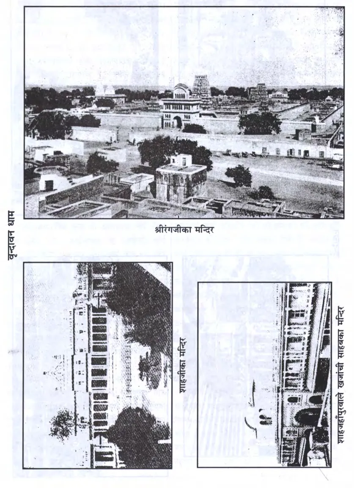
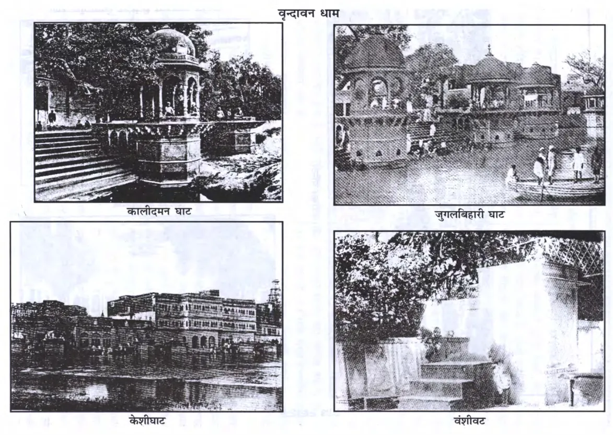
जिस तत्त्वकी अस्पष्ट झलक मायावादियोंको निर्गुण और निराकार ब्रह्मके रूपमें मिलती है उस परम तत्त्वका जब साक्षात्कार हो जाता है तब यह स्पष्ट दीखता है कि वही भक्तोंके भगवान् हैं, वही ब्रह्माण्डोंकी सृष्टि, स्थिति और संहार करनेवाले हैं, वही वेदान्तियोंके परब्रह्म है और वही योगियोंके परमात्मा है, जिनके अन्दर यह समस्त विश्व धागेमें पिरोये हुए मोतियोंकी भाँति स्थित है।—सर्वमिदं प्रोतं सूत्रे मणिगणा इव।
भागवतमें यह भी प्रतिपादित किया गया कि ये दो तत्त्व (श्रीकृष्ण और भगवान्) भिन्न नहीं, प्रत्युत एक ही हैं। गोपीनाथ केवल गोपियोंके ही नाथ नहीं, जगन्नाथ—समस्त विश्वके नाथ भी हैं। अंग्रेजीके प्रसिद्ध कवि कीट्स (Keats)के शब्दोंमें कुल परिवर्तन कर हम यह कह सकते हैं कि श्रीकृष्ण ईश्वर हैं और ईश्वर ही श्रीकृष्ण हैं। बस, तुम इतनी ही बात समझते हो और इतना ही समझना तुम्हारे लिये आवश्यक है।*
* Krishna is God, God is Krishna, This is all ye know and all ye need to know.
इसके बाद फिर कुछ भी आवश्यक नहीं, फिर 'जगत् सत्य' और 'जगन्मिथ्या'के पचड़ेकी कोई जरूरत नहीं रहती। एक बार भगवान्को जान लो, फिर जगत् तो आप ही जाना जा चुका। फिर 'जीवात्मा' और 'परमात्मा' सम्बन्धी विवादोंका कोई प्रयोजन नहीं रहता। एक बार श्रीकृष्णके मधुर मुखड़ेका दर्शन कर लो, तुम्हारे और उनके बीच वास्तवमें क्या सम्बन्ध है, यह तुम्हें साफ मालूम हो जायगा। फिर सदाचार-सम्बन्धी वाद-विवादको आवश्यकता नहीं रहेगी, क्योंकि तुम्हारे सभी कर्म केवल भगवत्-प्रीत्यर्थ होंगे और उन सभी कर्मोंको भगवान् स्वीकार करेंगे।
आजकल समस्त देशों और सभी दिशाओंमें वैज्ञानिक युक्तिवादके रूपमें व्यर्थका संशयवाद तीव्र गतिसे फैल रहा है। चारों ओरसे यही पुकार सुनायी पड़ती है कि इस वैज्ञानिक उन्नतिके युगमें ये पुराने दकियानूसी खयाल नहीं ठहर सकते; हमें तो प्रत्यक्ष प्रमाण चाहिये, हमें कोई दूसरा प्रमाण मान्य नहीं है। मैं इन नादान प्रत्यक्षवादियोंसे पूछता हूँ कि जिन वैज्ञानिक सिद्धान्तोंके सम्बन्धमें आप इतना बढ़-बढ़कर बोल रहे हैं, उनकी सत्यताके विषयमें ही आपके पास कौन-सा प्रत्यक्ष प्रमाण है? और बातोंको छोड़िये, जिस पुरुषको मनुष्य अपना पिता कहकर पुकारता है और जिसके मामूली अपमानमें अपना बड़ा भारी अपमान समझकर अग्निशर्मा हो उठता है, उस पिताकी पहचानके लिये उसके पास कौन-सा प्रत्यक्ष प्रमाण है? यहाँ बाध्य होकर यह स्वीकार करना पड़ेगा कि एकमात्र आप्तवचनोंके आधारपर ही ऐसा कहा और माना जाता है। माता कहती है कि ये तुम्हारे पिता हैं, इसी वचनपर विश्वास करके हम पिताको पिता मानते हैं। अब बताइये, वह प्रत्यक्षवाद जिसका लोग दम भरते हैं, कहाँ गया? अधिकांश प्रत्यक्षवादियोंके लिये यह उत्तर पर्याप्त है। वे जितना ही इस बातपर विश्वास करेंगे, उतनी ही उनकी भलाई होगी और जितना ही विश्वास करनेसे मुहँ मोड़ेंगे, उतनी ही हानि होगी। किसीके अविश्वास करनेसे सत्यतामें कोई परिवर्तन नहीं हो सकता। हाँ, अविश्वास करनेवालोंकी अपनी हानि अवश्य होती है। अवश्य ही कुछ ऐसे लोग भी हैं जो सच्चे हृदयसे विश्वास करना चाहते हैं, परन्तु उनकी आँखें आधुनिक भौतिक उन्नतिकी दिखावटी चमकसे इतनी चौंधिया गयी हैं और उनके कान समाचारपत्रोंके अनवरत निःसार कोलाहलसे इतने सुन्न हो गये हैं कि प्रत्येक विषयमें उन्हें बुद्धिभ्रम हो जाता है। ऐसे ही लोगोंके लिये यहाँ कुछ विचार प्रकार किये जाते है।
सबसे पहले यह बात स्मरण रखनी चाहिये कि श्रीकृष्ण एक और अखण्ड हैं। आजकल ऐसी बातें प्रायः सुननेमें आती है कि गीताके श्रीकृष्ण भागवतके श्रीकृष्णसे भिन्न हैं और उनका स्थान भी भिन्न है। यह कहा जाता है कि गीताके श्रीकृष्ण निस्सन्देह एक महान् योगी और अवश्य ही श्रद्धाके पात्र थे, परन्तु वृन्दावनका कृष्ण तो दुश्चरित्र और परस्त्रियोंके पीछे भटकनेवाला था, उसने संसारके सामने बहुत ही बुरा आदर्श रक्खा है, इसलिये वह कदापि श्रद्धाका पात्र नहीं हो सकता, प्रत्युत उसका तो नाम भी नहीं लेना चाहिये। इन थोथी बातोंपर प्रायः उन युरोपियन लेखकों और अविवेकी ईसाई-मिशनरियोंके पक्षपातपूर्ण विचारोंने और अधिक रंग चढ़ाया है, जिन्हें उन बातोंकी निन्दा करते रत्तीभर भी लज्जा नहीं आती, जिनको उन्होंने न तो कभी समझा है और न हृदयका परिवर्तन हुए बिना वे कभी समझ ही सकते हैं। वे चाहे जितना गला फाड़-फाड़कर चिल्लाएँ, पर हिन्दुओंको कदापि उनकी ऐसी व्यर्थ और भ्रमपूर्ण बातोंमें नहीं फँसना चाहिये। आजकलके दिखाऊ सहानुभूति रखनेवाले ईसाई फरकुहर (Farquhar), स्टैनली जोन्स (Stanley Fones) और केनेडी (kennedy) जैसे उन सारे मिशनरियोंके, जिन्होंने हिन्दू-धर्मपर छोटी-छोटी पुस्तिकाएँ लिखी हैं और जिन्होंने हिन्दू-धर्मके प्रति सहानुभूतिका ढोंग दिखलाकर हिन्दू-धर्मके अन्दर कौन-सी अच्छी बातें हैं, यह जाननेकी चेष्टा की है। परन्तु जिनका वास्तविक उद्देश्य हिन्दू-धर्मका कल्याण करना नहीं, प्रत्युत हिन्दूधर्मके स्थानपर ईसाई-धर्म स्थापित करना रहा है। उनके यहाँ आनेके पहले गीता और वृन्दावनके श्रीकृष्णमें कोई भेद होनेके सम्बन्धमें कुछ भी नहीं सुना जाता था और वास्तवमें ये सब हैं ही कौन, जिनके भ्रमपूर्ण विचार हमें धोखेमें डाल दें? यह सत्य है कि शिशुपालने भगवान्की लीलाओंको लेकर उन्हें कुवचन कहे थे, परन्तु सभी जानते हैं कि शिशुपालकी उसके बाद ही क्या दशा हुई। जिन कार्योंकी ये लोग निन्दा करते हैं, यदि यथार्थ रूपसे उनको ये समझ लें तो वही कार्य श्रीकृष्णकी परम महत्ताके परिचायक दीखने लगें!
कुछ ऐसे ब्रह्मवादी लोग भी हैं, जो श्रीकृष्णको भगवान् माननेमें आपत्ति करते हैं। वे अवतारवादको नहीं मानते। केवल इतना ही मानना चाहते हैं कि श्रीकृष्ण एक महापुरुष और जीवन्मुक्त थे, जिन्होंने अपने व्यष्टि-चेतनको आत्मामें लीन कर दिया था। मैं इस विषयका विवेचन कल्याणके 'गीताङ्क'में प्रकाशित अपने 'गीता और अवतारवाद' शीर्षक लेखमें कर चुका हूँ। इससे यहाँ केवल इतना ही कह देना चाहता हूँ कि श्रीकृष्णके ईश्वरत्वका समर्थन स्वयं गीता ही कर रही है जो वेदान्तकी सर्वविदित तीन आधार-शिलाओं (प्रस्थानत्रयी) मेंसे एक है—
अजोऽपि सन्नव्ययात्मा भूतानामीश्वरोऽपि सन्।
प्रकृतिं स्वामधिष्ठाय संभवाम्यात्ममायया॥
(श्रीमद्भगवद्गीता ४। ६)
'यद्यपि मैं अजन्मा और अविनाशी आत्मा और सर्वभूतोंका ईश्वर हूँ, तथापि मैं अपनी प्रकृतिको वशमें करके, अपनी ही शक्तिसे जन्म ग्रहण करता हूँ।' गीताके इस श्लोकमें तथा अन्य अनेक श्लोकोंमें श्रीकृष्णने अपनी दिव्य प्रकृतिका ऐसा स्पष्ट निरूपण किया है कि सन्देहके लिये कहीं कोई गुंजाइश ही नहीं रह जाती। इसके सिवा समस्त मायावादी वेदान्तियोंके आचार्य श्रीशंकराचार्यजीने भी अपने गीताभाष्यमें श्रीकृष्णको परमेश्वर, मायाके अधीश्वर, नियन्ता तथा साक्षात् नारायण माना है। श्रीशंकरके प्रसिद्ध अनुयायी स्वामी श्रीमधुसूदन सरस्वतीने तो यहाँतक कहा है—
बंशीविभूषितकरान्नवनीरदाभात्
पीताम्बरादरुणबिम्बफलधरोष्ठात्।
पूर्णेन्दुसुन्दरमुखादरविन्दनेत्रात्-
कृष्णात्परं किमपि तत्वमहं न जाने॥
अर्थात् 'नव-जलधरके समान श्याम-कान्तिवाले पूर्ण चन्द्रके सहश सुन्दर मुखारविन्दयुक्त, पके हुए कुन्दरुके समान लाल अधरवाले, कमलनयन, वंशीसे विभूषित कर कमलवाले तथा पीताम्बरसे सुसज्जित श्रीकृष्णसे परे भी यदि कोई तत्त्व है, तो मुझे उसका पता नहीं।'
फिर ये चेले कहाँसे आये, जो अपने गुरुओंसे भी अधिक ज्ञानी होनेका दावा करते हैं और वेदान्तके नामपर उन भगवान्को अस्वीकार करते हैं जो स्वयं वेदान्तके भी अन्त हैं?
कुछ लोगोंका कहना है कि 'श्रीकृष्ण एक काल्पनिक व्यक्ति थे और उनकी सत्ता केवल पौराणिक-गाथाओंमें ही है। वे महात्मा ईसा या मुहम्मदकी भाँति ऐतिहासिक पुरुष नहीं माने जा सकते।' वास्तवमें इतिहासका प्रमाण बहुत सन्दिग्ध रहता है। भारतके बहुत-से मनुष्योंको यह सुनकर आश्चर्य होगा कि ईसाके अस्तित्वका भी कोई ऐतिहासिक प्रमाण नहीं है। जिन रोमन गवर्नर पोण्टियस पाइलेट (Fontus Pilate)के विषयमें कहा जाता है, उन्होंने ईसाको सूलीपर चढ़ाया था, रोमके ऐतिहासिक लेखों अथवा तत्कालीन ग्रन्थोंमें उनका कोई उल्लेख नहीं मिलता। मुझे यहाँ उनकी ऐतिहासिकताके पक्ष-विपक्षमें कुछ कहना-सुनना नहीं है। यहाँ तो सिर्फ यही दिखलाना है कि यदि इतिहासको ही प्रमाण माना जाय तो ईसाकी अपेक्षा श्रीकृष्णके अस्तित्वमें कम प्रमाण नहीं है। हाँ, इतनी बात अवश्य है कि वे ईसासे बहुत पहले अवतीर्ण हुए थे। वस्तुतः इन विषयोंके लिये इतिहासको आधार मानना ठीक भी नहीं है। क्योंकि इतिहासका पाया बहुत ही कमज़ोर है और उसके द्वारा निश्चितरूपसे बहुत थोड़ी बातें ही जानी जा सकती हैं। जिसे हम इतिहास कहते हैं, वह बहुत-से ऐसे अनुमानोंका संग्रहमात्र है, जो अत्यन्त अपर्याप्त प्रमाणोंके आधारपर स्थित है। अभी उस दिन होनेवाले वाटरलू (Waterloo)के युद्धमें क्या हुआ, यह भी कोई ठीक-ठीक नहीं जानता। हमें शेक्सपियरके विषयमें भी पूरा ज्ञान नहीं है, इस सम्बन्धमें बहुत-से तर्क उपस्थित किये गये हैं कि इन नाटकोंका, जो शेक्सपियरके द्वारा रचे हुए माने जाते हैं, वास्तविक रचयिता कौन था? वास्तवमें कई विद्वान् ऐसे हैं जिन्होंने प्राचीन कालके अधिकांश महापुरुषोंको काल्पनिक बतलाया है। कुछ इस खयालके विद्वान् भी हो चुके हैं और अब भी हैं, जो कहते हैं कि जूलियस सीजर, सिकन्दर, सुकरात, होमर, ईसा और बुद्ध इनमेंसे कोई भी वास्तवमें इस संसारमें पैदा नहीं हुआ। फिर इसमें आश्चर्य ही क्या है इसी युक्तिका उपयोग श्रीकृष्णके लिये भी किया गया, जो ऊपर बतलाये हुए महापुरुषोंसे बहुत समय पहले इस जगत्में अवतीर्ण हुए थे।
श्रीकृष्णके अस्तित्वका वास्तविक प्रमाण ऐतिहासिक लेखों अथवा धार्मिक ग्रन्थोंके द्वारा नहीं मिलता, यथार्थ प्रमाण तो भगवान्के उन भक्तोंका अनुभव है, जिन्होंने (अपने नेत्रों द्वारा) असन्दिग्ध रूपसे भगवान्के दर्शन किये हैं और उनका ज्ञान प्राप्त किया है। जब श्रीचैतन्य महाप्रभु वृन्दावन पधारे तो उन्होंने अपनी निज आँखोंसे व्रजलीलाके दृश्य देखे और उन सब स्थानोंको ठीक-ठीक बतला दिया जहाँ वे लीलाएँ हुई थीं, यद्यपि उनमेंसे बहुत-से लीला-स्थलोंका चिह्न सर्वथा मिट चुका था। श्रीचैतन्य महाप्रभुकी भाँति सभी कालोंमें अन्य अगणित भक्तोंने भी ऐसा ही अनुभव किया है, जिन्होंने बिना किसी प्रमाणको आवश्यकताके श्रीकृष्णके अस्तित्व और उनकी ईश्वरताका साक्षात् दर्शन किया है। योगीजन अति प्राचीन कालकी घटनाओंको इस प्रकारसे देखते हैं, जैसे वे अभी उनके सामने हो रही हों; और भक्तोंने भी उन्हें उसी प्रकार जाना और अबतक जान रहे हैं, जिस प्रकार उन्होंने उनको अति प्राचीन कालमें जाना था। ये योगी और भक्तगण सत्यका पता लगानेके लिये ऐतिहासिक अनुसन्धानपर निर्भर नहीं करते, ये अपने अन्तश्चन्तुओंसे प्रत्यक्ष देखते हैं और कोई भी बात उनसे छिपी नहीं रहती। कदाचित् कुछ भीरु-हृदय आस्तिकोंको यह जानकर आश्वासन मिलेगा कि जिन यूरोपियन लोगोंके सिद्धान्तोंकी हम इतनी चर्चा सुनते हैं, उन्हींमेंसे कई अब यह मानने लगे हैं कि भूत तथा भविष्यकी बातोंका इस प्रकार देखना सम्भव है। निश्चय ही इनस्टीनके सम्बन्धाकर्षण सिद्धान्त (Relativity theory)के अनुसार यह बात सम्भव है और क्रियात्मक अनुभवके विषयमें डन साहब (Dunne) की (Experiment with time) नामक पुस्तक देखने योग्य है। हम लोगोंमेंसे जो लोग भगवान्को इस प्रकार जाननेकी शक्ति नहीं रखते, इन भक्तोंके अनुभवके आधारपर ही, जो प्राचीन शास्त्रोंकी पुष्टि करते हैं, श्रीकृष्णकी यथार्थ सत्तापर विश्वास करते हैं और उन्हें केवल औपन्यासिक अथवा काल्पनिक पुरुष नहीं मानते।
अब हमें उन कतिपय आक्षेपोंपर विचार करना है जो विशेषकर 'रासलीला' और उसीसे निकट सम्बन्ध रखनेवाली 'वस्त्रापहरण' की घटनाओंके बारेमें किये गये हैं। कहा जाता है कि यदि श्रीकृष्ण परम पुरुष थे अथवा एक महान् गुरु माने जानेका दावा रखते थे तो यह कैसे सम्भव है कि वे परस्त्रियोंके साथ शारीरिक सम्बन्ध करते? यह कैसे हो सकता है कि जो धर्मकी स्थापनाके लिये अवतरित हुए, वह इस प्रकारका कार्य करते जो सारे जगत्की दृष्टिमें अधार्मिक हो? यदि ऐसा किया तो निस्सन्देह उन्होंने संसारके सामने बहुत ही निन्दनीय आदर्श उपस्थित किया, जिससे उनके ईश्वरत्वपर बहुत बुरा असर पड़ता है। आधुनिक संशयवादियोंको यह नहीं समझना चाहिये कि यह शंका केवल आजकलके इस उन्नत कहलानेवाले युगमें ही उठी है और पुराने अन्धविश्वासी उपासकोंने इस विषयमें कुछ विचार ही नहीं किया था। उन्हें यह जानना चाहिये कि यह प्रश्न उतना ही पुराना है, जितनी पुरानी श्रीमद्भागवत है। कारण, इस घटनाको सुनकर राजा परीक्षितकी भी बुद्धि चकरा गयी थी और उन्होंने भी श्रीशुकदेवजीसे इस विरोधाभासके सम्बन्धमें प्रश्न किया था। हाँ, अन्तर केवल इतना है कि जहाँ आजकलकी प्रथा यह है कि लोग दूसरेकी सुनतेतक नहीं, केवल अपना ही राग अलापते रहते हैं, वहाँ उस समय राजा परीक्षितने मुनि शुकदेवजीके वचनोंको शान्तिपूर्वक सुना और समझा था।
पहले हमें उन दो युक्तियोंके विषयमें विचार करना है, जो इस शंकाके उत्तरमें कभी-कभी उपस्थित की जाती है और जो देखनेमें सन्तोषप्रद मालूम पड़नेपर भी पर्याप्त नहीं है; क्योंकि वे विषयके अन्तस्तलतक नहीं पहुँचती। कभी-कभी यह कहा जाता है कि 'रासलीला'के समय श्रीकृष्ण ग्यारह या बारह वर्ष (अथवा इससे भी कम अवस्था)के बालक थे। यह मत देखनेमें बड़ा युक्तियुक्त है सही; पर परीक्षा करनेपर ठहर नहीं सकता। यह सत्य है कि लोकदृष्टिमें उनकी अवस्था इतनी ही थी, जितनी बतलायी गयी है; किन्तु उससे यह निष्कर्ष निकाल लेना कि वह निरे अपक्व वय बालक थे, ठीक नहीं है। उन वाक्योंपर जो इस मतके स्पष्ट विरोधी हैं, हम न भी ध्यान दें तो भी यह सभीपर प्रकट है कि जिस बालकने अंगुलियोंपर विशाल गोवर्द्धन-पर्वतको उठा लिया था और जिसने लड़कपनमें ही अन्यान्य अनेक असाधारण लीलाएँ दिखलायी थीं, उसकी शरीर-वृद्धि तथा वयस्कताको साधारण कसौटीपर रखना निरी मूढ़ता है। कम-से-कम गोपियोंको तो उनकी वयस्कताके विषयमें किसी प्रकारका भ्रम नहीं था, क्योंकि वे श्रीकृष्णको पतिके रूपमें प्राप्त करनेके लिये कात्यायनी-देवीकी पूजा करती थीं; और उनकी यह अभिलाषा अस्वाभाविक भी नहीं समझी गयी थी। वे देवीसे प्रार्थना करती थीं
.. 'नन्दगोपसुतं देवि पतिं मे कुरु।'
अर्थात् हे देवि! मुझे नन्दनन्दनको पतिके रूपमें प्रदान करो।
इस सम्बन्धमें कभी-कभी एक दूसरी युक्ति यह उपस्थित की जाती है कि वास्तवमें 'रासलीला' कभी हुई ही नहीं, यह केवल प्रकृति और पुरुषके मध्य सर्वदा होनेवाली नित्यलीलाका व्यञ्जक स्वरूप है। निस्सन्देह यह बात भी है, भगवान्की अनन्त लीला नित्य है, परन्तु केवल यही हो, सो बात नहीं, यद्यपि भगवान्की अन्य समस्त लीलाओंकी भाँति इसका भी आध्यात्मिक अर्थ लगाया गया है तथापि राजा परीक्षितसे लेकर श्रीचैतन्यदेवतक सभी महान् वैष्णव भक्तोंने इसे सच्ची घटनाके रूपमें भी माना है।
सदाचारके विषयमें श्रीचैतन्यदेवके निजके विचार इतने कट्टर थे कि एक बार उन्होंने अपने एक शिष्यको केवल इसी अपराधमें सदाके लिये निकाल दिया था कि वह एक वृद्धा भक्त-स्त्री (माधवी) से भिक्षा माँग लाया था। फिर भी श्रीचैतन्यदेवको 'रासलीला'में कोई आपत्तिजनक बात दिखलायी नहीं दी। यदि हम रास लीलाको रूपक मानें तो महाभारत तथा अन्य सभी लीलाओंको भी ऐसी क्यों न माना जावे? पर ऐसी बात नहीं है।
अब, यदि हम रासलीलाको ठीक तरहसे समझना चाहते हैं तो हमें इसपर निष्पक्ष रूपसे विचार करना होगा। यह बिलकुल स्पष्ट है कि श्रीमद्भागवतके तथा भक्त वैष्णवों मतानुसार श्रीकृष्णने गोपियोंके साथ जो लीला की, उसे करनेकी शास्त्र तथा समाज किसी दूसरे व्यक्तिके लिये कदापि आज्ञा नहीं देते। यहाँ प्रश्न यह उठता है कि 'तब फिर उन्होंने ऐसा क्यों किया? अन्यान्य स्थलोंकी भाँति यहाँ भी उन्हें सुन्दर आदर्श उपस्थित करना चाहिये था।' पर यह युक्ति भ्रममूलक है। वह मनुष्योंके सामने सुन्दर आदर्श उपस्थित करनेके लिये अवतरित नहीं हुए थे; उनका अवतार तो भक्तोंकी अभिलाषाओंको पूर्ण करनेके लिये था। सुन्दर आदर्श उपस्थित करनेके लिये तो साधु-महात्मा और ऋषि-मुनि बहुत थे। श्रीकृष्ण तो अपनी माधुर्य-लीलाकी मोहक-शक्तिसे कलियुगके निर्बल जीवोंका उद्धार करनेके लिये आये थे। इसके सिवा जिस कार्यको समर्थ पुरुष बेरोक-टोक कर सकते हैं, उसका दूसरे लोग कदापि अनुकरण नहीं कर सकते। महादेवने कालकूट विष पी लिया था; पर यदि हमलोग भी वैसा करें तो तत्काल ही मृत्युके ग्रास बन जायँ; तो भी इस बुरे आदर्शको उपस्थित करनेके लिये महादेवजीको कोई अपराधी नहीं ठहरा सकता। प्रोफेसर राममूर्तिके सम्बन्धमें कहा जाता है कि वह अपनी छातीपर हाथीको चढ़ा लिया करते हैं, किन्तु यदि कोई मूर्ख इसकी नकल करना चाई तो उसी क्षण चूर्ण होकर मर जायगा। रासलीलाका अभिनय करनेके अतिरिक्त भगवान्ने गोवर्द्धन-पर्वतको भी तो उठा लिया था और महाभारतका युद्ध भी तो करवाया था; किन्तु उनके अनुयायियोंमेंसे कोई भी उनकी एक भी लीलाका अनुकरण नहीं कर सकता; क्योंकि उनमें इन कार्योंके करनेके लिये पर्याप्त शक्ति ही नहीं है।*
* भगवान् श्रीकृष्णकी रासलीलाका वास्तविक स्वरूप क्या था, इस बातके यथार्थ मर्मको तो भगवान् या उनके परम मर्मज्ञ भक्तजन ही जानते हैं। इसमें कोई सन्देह नहीं कि भगवान्की दृष्टि से उनकी कोई भी लीला दोषयुक्त नहीं है। तथापि भगवान् श्रीकृष्णका गीतोक्त लोकसंग्रहकी घोषणाको देखते हुए तो यही विश्वास होता है कि श्रीभगवान् सर्वसमर्थ होनेपर भी ऐसी कोई लीला नहीं करेंगे, जिसका अनुकरण करनेसे साधारण लोग पतित हो जायँ। वेदान्तका यह मर्म सत्य है कि भगवान् ही सबके आत्मा हैं, परन्तु इस सत्यका कितना भयानक दुरुपयोग हुआ और हो रहा है, इस बातकी ओर अवश्य ध्यान देना चाहिये। भगवान्के उदाहरणको सामने रखकर वेदान्त और ज्ञानकी आड़में हर कोई इन्द्रियपरायण मनुष्य यह कह सकता है कि 'ब्रह्मके अतिरिक्त कहीं कोई पदार्थ नहीं है, हमें ब्रह्मका बोध है, हमारी किसी वस्तुमें आसक्ति नहीं है, काम, क्रोध अन्तःकरणके विकार हैं, स्त्री-पुरुषका भेद अवास्तविक है। गुण ही गुणोंमें बर्तते हैं, हमारा-आत्माका क्या बनता-बिगड़ता है?' बात भी ठीक ही है, क्योंकि आत्मा तो सर्वथा निर्लेप और निर्विकार है ही, जब भगवान् सब कुछ कर सकते हैं तब भगवान्के साथ अपना अभेद समझनेवाले पुरुष वैसा ही करें तो उसको क्यों दोष लगना चाहिये? पवित्र रासलीलाका मर्म न समझकर अबतक न मालूम कितने नर-नारी उसका अन्ध अनुकरण कर पतित हो चुके हैं, कितने दुराचारी लोग श्रीकृष्णकी प्रेमभक्तिके नामपर भोलेभाले नर-नारियोंको धोखा देकर अपनी कामवासना चरितार्थ करते हैं। ऐसी बातें हुई हैं और होती हैं। कहाँ तो भगवान् श्रीकृष्णका वह लोकसंग्रहका महान् आदर्श और कहाँ यह परिणाममें भयानक लोक-संहार? जो कुछ भी हो, मैं अपने प्रेमी बन्धु श्रीकृष्णप्रेमजीके इन शब्दोंपर पाठकोंका ध्यान विशेषरूपसे दिलाना चाहता हूँ कि '(भगवान्के सिवा) दूसरे लोग (इस लीलाका) अनुकरण कदापि नहीं कर सकते। महादेवजीने कालकूट विष पी लिया था, (और उससे जगत्का उपकार ही हुआ था) पर यदि हमलोग भी वैसा ही करें तो तत्काल ही मृत्यके ग्रास बन जायँ।' भगवान्की आज्ञाका पालन करना चाहिये, सारी लीलाओंका अनुकरण नहीं, क्योंकि जब हमारी बुद्धि उस लीलाके रहस्यकी तहतक पहुँच ही नहीं सकती, तब हम उसका अनुकरण कैसे कर सकते हैं। —सम्पादक
ईश्वराणां वचः सत्यं तथैवाचरितं क्वचित्।
तेषां यत् स्ववचो युक्तं बुद्धिमांस्तत् समाचरेत्॥
(श्रीमद्भागवत)
अर्थात् महापुरुषोंके उपदेश सत्य होते हैं; बुद्धिमान् मनुष्योंको उनका अनुसरण करना चाहिये। पर उनके कार्यों से कुछ ही अनुकरणीय होते हैं।
निस्सन्देह, श्रीकृष्णने धर्मकी स्थापनाके लिये 'धर्मसंस्थापनार्थाय' अवतार लिया था और यह देखनेके लिये कि कहाँतक यह उद्देश्य इस जगह भी चरितार्थ होता है, हमें भगवान्के उस संवादका संक्षेपमें उल्लेख करना होगा जो रासलीलाके ठीक पूर्व हुआ था। जिस समय उनकी दिव्य मुरलीकी मनोहर-ध्वनिको सुनकर गोपिकाएँ उनके पास खिंच आयीं, उस समय उन्होंने उनके पानेका कारण पूछते हुए कहा था कि 'कदाचित् तुमलोग ज्योत्स्नापूर्ण वनस्थलीकी शोभा देखने आयी होगी, अथवा मेरा दर्शन करनेके लिये आयी होगी? यदि मेरे दर्शनके लिये आयी हो, तो बहुत अच्छी बात है क्योंकि सभी प्राणी मेरे दर्शनकी उत्कट अभिलाषा रखते हैं। पर देखो, अब तो तुमने दर्शन कर लिये, इसलिये अब लौट जाओ, घर जाकर अपने पतिकी सेवा करो और गृहस्थ-धर्मका पालन करो। इसके बाद आपने गोपियोंको पति-भक्तिकी महिमा बतलायी और पर-पुरुष-संयोगके अनौचित्य तथा पाप मूलकताका उपदेश दिया। गोपियोंने उनके उपदेशकी सत्यताको स्वीकार तो किया; पर इस बातको माननेसे इन्कार किया कि वे उपदेश उनपर भी कभी लागू हो सकते हैं जो मुरलीकी तानसे आकृष्ट होकर वहाँ दौड़ आयी हैं। क्यों? वे कहती हैं—
कुर्वन्ति हि त्वयि रतिं कुशलाः स्व आत्मन्
नित्यप्रिये पतिसुतादिभिरार्त्तिदैः किम्॥
'हे प्यारे! ज्ञानीलोग केवल तुमसे प्रीति करते हैं, क्योंकि तुम उनके नित्य प्रिय आत्मा हो और इसलिये हमें भी उन पतियों तथा पुत्रोंकी क्या आवश्यकता है जो केवल दुःखके कारण हैं?'
बस, जब भगवान् इस बातको देख लेते हैं कि गोपियोंने वेदान्तके उस मर्मको समझ लिया है कि श्रीकृष्ण सभीके आत्मा हैं तथा उनके अतिरिक्त न कोई पति है, न पुत्र है तब वह उनके साथ रास करना प्रारम्भ करती हैं। उन्होंने गीतामें कहा है कि 'मैं ही समस्त प्राणियोंका पति हूँ।' केवल अज्ञानी ही उनके सिवा दूसरेको पति समझते हैं। अज्ञानी सांसारिक स्त्री-पुरुष ही यह समझते हैं कि उनका श्रीकृष्णके अतिरिक्त किसी दूसरेसे विवाह हुआ है; और वह (श्रीकृष्ण भी) पाप-कृत्य करते हैं॥ गोपियोंकी ऐसी धारणा कदापि नहीं थी। भगवान्का अवतार इसी महान् धर्मकी स्थापनाके लिये हुआ था कि सारी अभिलाषाएँ भगवान्के प्रति की जायँ। जबतक उनके सिवा दूसरी किसी वस्तुकी तनिक भी इच्छा है तभी तक उसके लिये विधि-निषेध है। किन्तु जब सारी इच्छाएँ केन्द्रीभूत हो जाती हैं, तब किसी नियमका बन्धन नहीं रह जाता (बन्धन तोड़ना नहीं पड़ता, टूट जाता है) इसीको गीतामें भी कहा है—
सर्वधर्मान्परित्यज्य मामेकं शरणं व्रज।
अहं त्वा सर्वपापेभ्यो मोक्षयिष्यामि मा शुचः॥
अर्थात् 'सारे धर्मोंका परित्याग कर मेरी शरणमें आओ, मैं तुम्हें सभी पापोंसे मुक्त कर दूँगा, शोच न करो।' यहाँ कदाचित् यह शङ्का होगी कि यदि गोपियाँ इतनी बड़ी भक्तिमती थीं और एकमात्र श्रीकृष्णको ही चाहती थीं, तो फिर उनके हृदयमें ऐसी इच्छा ही क्यों उत्पन्न हुई? क्यों नहीं, उन्होंने सब जगत् श्रीकृष्णमय है, इसी ज्ञानके शान्त आनन्दके द्वारा सन्तोष धारण कर लिया? इन्द्रियोंकी तृप्तिकी उन्होंने आकांक्षा ही क्यों की? इसका उत्तर यही है कि इन्द्रियोंका वास्तवमें यही यथार्थ उपयोग है। नेत्रोंकी सार्थकता इसीमें है कि श्रीकृष्णके दर्शन करें, वही हाथ धन्य हैं जो उनकी सेवा करें, पैरोंका होना भी उनके निकटतक जानेमें ही सफल है और उस वाणीके लिये भी इससे बढ़कर और क्या कर्तव्य है कि वह केवल भगवान्की ही स्तुति करे! फिर भक्तको केवल उनके ज्ञानसे ही तो तृप्ति हो नहीं सकती। उससे ज्ञानीको भले ही सन्तोष हो जाय, भक्त तो उससे अधिक चाहता है। वह श्रीकृष्णको केवल बुद्धिसे ही जानना नहीं चाहता। वह तो श्रीकृष्णको आँखोंसे देखना, श्रीकृष्णको कानोंसे सुनना, अपने हाथोंसे श्रीकृष्णके चरणका स्पर्श करना तथा अपने समस्त अङ्गोंसे श्रीकृष्णका आलिङ्गन करना चाहता है और उसे तभी सन्तोष होता है, जब उसकी सारी इन्द्रियाँ भी श्रीकृष्णमें विलीन हो जाती हैं। फिर समालोचकोंको तो किसी प्रकारसे भी सन्तुष्ट करना कठिन है। त्यागमूर्ति भगवान् बुद्धदेवने अवतार लेकर समस्त ऐन्द्रिय-भोगोंके त्यागका उपदेश दिया, किन्तु समालोचकोंकी दृष्टिने इस प्रकारके त्यागको सरासर बेवकूफी बतलाया। वे कहते हैं कि, संसार उपभोगके लिये ही है और परमात्माने जब हमें इन्द्रियाँ प्रदान की हैं तब फिर हमें उनका उपयोग क्यों नहीं करना चाहिये? इत्यादि।' भगवान् श्रीकृष्ण सबको प्यार करते हुए आये और उन्होंने सबका प्रेम प्राप्त किया। जीवनके सारे व्यवहारोंका स्वतन्त्रतापूर्वक निर्वाह किया; किन्तु स्त्रियोंके अङ्कमें भी वे अनासक्त रूपमें ही रहते थे। इतनेपर भी वे ही समालोचक चिल्लाते हैं कि वह संसारी एवं विषयी थे। वास्तवमें इन समालोचकोंकी सन्तुष्टि कोई नहीं कर सकता। असलमें उन्हें शिकायत है ईश्वरसे, उनके लिये कठिनाई यह है कि वे ईश्वरको किसी भी रूपमें मानना नहीं चाहते और इसलिये जिस किसी भी रूपमें वह प्रकट होते हैं, उसमें उन्हें दोषके अतिरिक्त और कुछ दिखलायी ही नहीं पड़ता। उन्हें जाने दीजिये और सर्वदा इस महावाक्यका स्मरण कीजिये—
कृष्णस्तु भगवान् स्वयम्।
भगवान् सबके स्रष्टा और स्वामी हैं—वे सभीके पति हैं, संसारमें सभी इच्छाएँ वास्तवमें उन्हींके लिये हैं। य तो केवल हमारा अज्ञान है, जो हम समझते हैं कि हम किसी दूसरी चीजकी इच्छा कर रहे हैं। श्रुति कहती है—
न वा अरे पत्युः कामाय पतिः प्रियो भवत्यात्मनस्तु कामाय पतिः प्रियो भवति।
पति-प्रेमके कारण पति प्रिय नहीं है, किन्तु आत्माके प्रेमके लिये पति प्रिय है। लोभी धन चाहता है, भूखा भोजन चाहता है, व्यभिचारी इन्द्रियोपभोग चाहता है, राजनीतिज्ञ नाम चाहता है, चित्रकार सौन्दर्य चाहता है, पर वास्तवमें ये सब-के-सब एकमात्र श्रीकृष्णको ही चाहते हैं और तबतक उन्हें सन्तोष नहीं होता जबतक कि वे उन्हें पा नहीं लेते। उनमें तथा गोपियोंमें अन्तर केवल इतना है कि वे लोग अज्ञानसे यह समझते हैं कि उन-उन चीजोंको पानेसे उनकी इच्छापूर्ति हो जायगी; पर गोपियाँ इस तत्त्वको जानती थीं कि केवल श्रीकृष्णमें ही सारी इच्छाओंकी पूर्ति हो सकती है, अन्यत्र नहीं। श्रीकृष्ण ही सारी अभिलाषाओंके केन्द्र हैं, और चाहे जिसप्रकारसे हम उनकी अभिलाषा करें, वे उसी रूपमें हमारे सामने प्रकट होते हैं। वे ही सर्वदा अपनेको व्यक्त करते हैं, उनका दर्शन प्राप्त करनेमें हमारा कोई पुरुषार्थ नहीं है।
नायमात्मा प्रवचनेन लभ्यो
न मेधया न बहुना श्रुतेन।
यमेवैष वृणुते तेनलभ्य-
स्तस्यैष आत्मा वृणुते तनु स्वाम्॥
(कठोपनिषद्)
'यह आत्मा (भगवान्) स्वाध्याय, बुद्धि तथा बहुतसे धर्म-ग्रन्थोंके श्रवणसे नहीं प्राप्त हो सकता। जिसे वह स्वयं चाहता है, उसीको प्राप्त होता है, उसीके सामने वह अपने स्वरूपको प्रकट करता है।
पर हम यह कैसे जानें कि श्रीकृष्ण स्वयं भगवान् हैं? अपनी बुद्धिसे तो हम यही अनुमान कर सकते हैं कि वे एक महापुरुष अथवा अधिक-से-अधिक अवतार थे। वे 'स्वयं भगवान् थे' इसका ज्ञान तो उनकी दयासे ही प्राप्त हो सकता है और इस ज्ञानको प्राप्त करनेके लिये हमें गोपियोंकी भाँति अपने गर्व और अहङ्कारके आवरणको जिससे हमने अपनेको आच्छादित कर रक्खा है, त्यागकर उनके सामने अपने वास्तविक निरावरण रूपमें खड़े होना पड़ेगा। केवल उसी अवस्थामें वह अपने सर्वाङ्गीण दिव्य-सौन्दर्यके साथ हमारे सामने प्रकट होंगे। एक बार जहाँ उनके दर्शन हुए, बस, फिर उनके ईश्वर होनेमें कोई सन्देह नहीं रह जायगा। उनसे ऊँची वस्तु संसारमें कोई नहीं है, यही उन सब लोगोंका अनुभव है, जिन्होंने उनके दर्शन किये हैं। पुराणों तथा इतिहासोंमें जिन लोगोंकी कथाएँ आती हैं, उनमें तथा अर्वाचीन कालके लोगोंमें भी, जिन्होंने एक बार भी उनका दर्शन कर लिया, किसी अन्य वस्तुकी कामना रहती ही नहीं। जिन्होंने भगवान् श्रीकृष्णका दर्शन कर लिया, उनके लिये पृथिवीके ऐश्वर्य, स्वर्गके उपभोग, अद्वैतवादियोंका अति प्रशंसित मोक्ष और सांख्यवादियोंकी कैवल्य मुक्ति आदि किसीमें भी राग नहीं रह जाता। वे तो किसी-न-किसी रूपमें भक्त प्रह्लादकी इस प्रार्थनाकी ही प्रतिध्वनि करते हैं—
नाथ योनिसहस्रेषु येषु येषु व्रजाम्यहम्।
तेषु तेष्वचलाभक्तिरच्युतास्तु सदा त्वयि॥
'हे भगवन्! चाहे मैं हजारों योनियोंमें जन्म लूँ किन्तु प्रार्थना यही है कि किसी भी योनिमें आपकी दृढ़ भक्ति न छूटे।'
कतिपय नवीन वेदान्तियोंकी भाँति इस भुलावेमें नहीं पड़ना चाहिये कि श्रीकृष्ण-प्राप्तिकी अपेक्षा कैवल्य मुक्ति ऊँची है एवं वह और भी आगे चलकर मिलती है। वस्तुतः यह बात नहीं है। श्रीमद्भगवद्गीतामें भगवान् स्वयं कहते हैं कि जो लोग उन्हें अक्षर, अनिर्देश्य एवं अव्यक्त रूपसे भजते हैं अथवा जो उनकी आराधना श्रीकृष्णके रूपमें करते हैं, उन दोनोंको एक ही लक्ष्यकी प्राप्ति होती है। लेकिन वहाँ उनके कहनेके ढंगपर तो ज़रा ध्यान दीजिये। वह यह नहीं कहते जैसा कि कुछ मायावादी उनके मुँहसे कहलाना चाहते हैं कि, जो मेरी (श्रीकृष्णकी) उपासना करता है वह भी अन्तमें इस मार्गसे होकर निर्गुण ब्रह्मको ही प्राप्त होता है। उनका कहना यह है कि जो लोग निर्गुण और निराकार ब्रह्मकी उपासना करते हैं, वे भी अन्तमें मुझको (श्रीकृष्णको) ही प्राप्त करते हैं; ते प्राप्नुवन्ति मामेव। उनके चरणाम्बुजोंका ध्यान और सेवा केवल सुगम ही नहीं, अपितु वह 'आत्मानात्मविवेक, कामनाओंके दमन, जगत्के मिथ्यात्वकी छानबीन इत्यादिकी अपेक्षा, जिनका मायावादियोंके ग्रन्थोंमें विस्तारसे वर्णन है, परेकी बात है। फिर प्राणायाम, चक्र-भेद, नेति-धोती, अस्ती-बस्ती तथा अष्टाँगयोगके समस्त साधनोंकी तो बात ही क्या है? भगवान् स्वयं कहते हैं—
न साधयति मां योगी न सांख्यं धर्म उद्धव।
न स्वाध्यायस्तपस्त्यागो यथा भक्तिर्ममोर्जिता॥
(श्रीमद्भागवत)
अर्थात् 'जिसप्रकार अनन्यभक्तिके द्वारा मेरी पूर्ण रीतिसे प्राप्ति होती है उसप्रकार अष्टाङ्ग-योग, तत्त्वज्ञान, अहिंसा तथा अन्य धर्म, स्वाध्याय, तपस्या, संन्यास आदिसे नहीं हो सकती।' यह भी मत सोचो कि श्रीकृष्ण शब्दका कोई गूढ़ दार्शनिक अर्थ अवश्य होना चाहिये। कुछ लोग यह विश्वास करनेको तैयार नहीं हैं कि आमतौरपर श्रीकृष्णको जैसा समझा जाता है, उस श्रीकृष्णसे ही हमारा उद्धार 'हो जायगा। इसीसे वे लोग 'श्रीकृष्ण' शब्दके कितने ही आध्यात्मिक अर्थ लगानेका लड़कपन किया करते हैं। वे कहते हैं—'कृष्ण' वर्णका अर्थ है, 'निर्गुण-अवस्था', 'पीताम्बर'का अर्थ 'सूर्यकी दीप्ति' तथा 'मुरली'का तात्पर्य 'ओंकारध्वनि' अथवा इसी प्रकार कोई अन्य वस्तु है। ऐसे लोग समझते हैं कि हम साधारण अन्धविश्वासी भक्तोंकी अपेक्षा बहुत ऊँचे तथा दार्शनिक हैं। पर यह असत्य है। यद्यपि यह सत्य है कि श्रीकृष्णके अन्तर्गत ये सभी अर्थ आ जाते हैं, क्योंकि समस्त विश्वका आशय उनमें निहित है, तथापि वह श्रीकृष्ण शब्दका उच्चतम और चरम अर्थ हो, सो बात नहीं है। श्रीकृष्ण नन्दनन्दन हैं! श्रीकृष्ण गोपीवल्लभ हैं और श्रीकृष्ण राधाकान्त हैं। अन्य सभी बातें गौण हैं।
-प्रमाणं तत्र गोपिकाः।
मत मारे-मारे फिरो मुक्तिके लिये! मुक्ति तो वे पूतना-सदृश असुरों और शिशुपाल सदृश दैत्योंको भी दे डालते हैं। चाहो केवल श्रीकृष्णको, उनका प्रेम ही पञ्चम पुरुषार्थ है। बार-बार जन्म लेनेसे छुटकारा पानेकी इतनी चिन्ता क्यों है? जब स्वयं भगवान् श्रीकृष्ण ही बार-बार अवतार लेते हैं तो क्या उनके साथ उनके दास नहीं आयँगे? जिस समय व्रजभूमिमें श्रीकृष्णका मनोहर नृत्य हो रहा हो, उस समय किसे चिन्ता रहती है स्वर्ग और अपवर्गकी? उन्हें ढूँढ़ो व्रजमें। व्रजवासियोंकी चरण-रज आत्मज्ञानियोंके हृदयसे भी कहीं पवित्र है।
वृन्दावनं परित्यज्य पादमेकं न गच्छति।
श्रीकृष्ण वृन्दावनको छोड़कर डग-भर भी इधर-उधर नहीं जाते। अब फिर वह हम लोगोंको कब दर्शन देंगे? उनके बिना संसार शून्य है।
प्रणतकामदं पद्मजार्चितं
धरणिमण्डनं ध्येयमापदि।
चरणपंकजं शंतमं च से
रमण नः स्तनेष्वर्पयाधिहन्।
तुम्हारे चरणकमल शरणागतोंकी कामनाएँ पूरी करते हैं, श्रीलक्ष्मीजी सदा उनका सेवन करती हैं, वे पृथ्वीके आभूषण हैं, आपत्तिकालमें उनका ध्यान करनेसे कल्याण होता है, हे प्रियतम! वही मङ्गलमय चरण-कमल हमारे वक्षःस्थलपर स्थापित करो।
हे कृष्ण! मेरे इन ऊटपटांग और अज्ञानपूर्ण शब्दोंके लिये क्षमा करो। भला, सांसारिक मायासे पूर्ण हृदयवाला मैं सेवापराधी तथा नामापराधी तुमको या तुम्हारे व्रजको क्या समझूँ?
श्रीकृष्ण-गुण-श्रवण-कीर्तन-माहात्म्य
श्रीशुकदेवजी कहते हैं—
म्रियमाणो हरेर्नाम गृणन्पुत्रोपचारितम्।
अजामिलोऽप्यगाद्धाम किं पुनः श्रद्धया गृणन्॥
(भा०६।२।४९)
मरते समय पुत्रके बहाने श्रीहरिका नाम उच्चारण कर महापापी अजामिल भी भगवान्के परमधामको चला गया, तब जो व्यक्ति श्रद्धासे भगवान् श्रीकृष्णका नाम लेता है, उसके मुक्त होनेमें क्या सन्देह है।
ऋषिगण कहते हैं—
ब्रह्महा पितृहा गोघ्नो मातृहाचार्यहाघवान्।
श्वादः पुल्कशको वापि शुद्धॺेरन्यस्य कीर्तनात्॥
(भा० ६। १३। ८)
ब्राह्मण, पिता, गौ, माता और आचार्यको मारनेवाला पातकी एवं कुत्तेको खानेवाला चाण्डाल भी हरिनाम-कीर्तनसे शुद्ध हो जाता है।
श्रीशुकदेवजी कहते हैं—
कलेर्दोषनिधे राजन्नस्ति ह्येको महान्गुणः।
कीर्तनादेव कृष्णस्य मुक्तबन्धः परं व्रजेत्॥
(भा० १२।३।५१)
हे राजन्! कलियुगमें सब दोष ही भरे हैं, परन्तु इसमें एक बड़ा भारी गुण यह है कि श्रीकृष्णके कीर्तनसे ही मनुष्य सारे बन्धनोंसे छूटकर परमात्माको पा जाता है।
श्रीसूतजी ऋषियोंसे कहते हैं—
शृण्वतां स्वकथां कृष्णः पुण्यश्रवणकीर्तनः।
हृद्यन्तःस्थो ह्यभद्राणि विधुनोति सुहृत्सताम्॥
(भा० १। २। १७)
श्रीकृष्णका श्रवण-कीर्तन पुण्यरूप है। वे अपनी कथा सुननेवालोंके हृदयमें प्रवेश करके उनके अज्ञान और कुतर्कका नाश कर देते हैं।
श्रीशुकदेवजी राजा परीक्षितसे कहते हैं—
संसारसिन्धुमतिदुस्तरमुत्तितीर्षो-
र्नान्यः प्लवो भगवतः पुरुषोत्तमस्य।
लीलाकथारसनिषेवणमन्तरेण
पुंसो भवेद्विविधदुःखदवार्दितस्य॥
(भा० १२। ४। ४०)
अति दुस्तर संसार-सागरमें पड़े हुए और संसारके विविध दुःखोंकी भयानक अग्निसे जलते हुए जीवके पार जाने और शान्ति पानेके लिये श्रीकृष्णकी लीला ही जहाज है और उन लीलाओंका अमृतके समान रस ही शान्ति करनेवाला है, अतः उसीका सेवन करे।
भक्त उद्धवजी भगवान् श्रीकृष्णसे कहते हैं—
तव विक्रीडितं कृष्ण नृणां परममङ्गलम्।
कर्णपीयूषमास्वाद्य त्यजत्यन्यस्पृहां जनः॥
(भा० ११। ६। ४४)
हे श्रीकृष्ण! जिसको परम मंगलरूप और सुननेमें अमृतके समान तुम्हारी लीलाओंका स्वाद मिल गया है, वह सारी इच्छाओंको छोड़ देता है।
श्रीशुकदेवजी राजा परीक्षितसे कहते हैं—
यदुत्तमश्लोकगुणानुवादः
संगीयतेऽभीक्ष्णममङ्गलघ्नः।
तमेव नित्यं शृणुयादभीक्ष्णं
कृष्णेऽमलां भक्तिमभीप्समानः॥
(भा० १२। ३। १५)
श्रीकृष्णकी निर्मल निष्काम भक्ति ही यथार्थ परमार्थ है, जो इस भक्तिको पाना चाहे, वह मन लगाकर शुद्ध चित्तसे भगवान् श्रीकृष्णके अमंगल-नाश करनेवाले, पवित्र चरित्रोंका बारम्बार गान करे और सज्जनोंके पास बैठकर सदा उन्हींको सुने।
आँसूकी दो बूँदें
(लेखक-पं० श्रीशोभालालजी शास्त्री)
हृदय भीषण यन्त्रणाओंसे सन्तप्त था। इच्छाएँ अनेक थीं, पर एककी भी पूर्ति नहीं होती थी। इन यन्त्रणाओंसे पिण्ड छुड़ानेके लिये अनेक भगीरथ प्रयत्न किये। किसीने कहा 'द्रव्य ही सब बाधाओंकी निवृत्तिका उपाय है।' उसीके पीछे पड़ा। रातदिन एक किया। चोटीका पसीना एड़ीतक बहाया। द्रव्यका ढेर लग गया। नौकर-चाकर घरमें खूब हो गये। घोड़ा-गाड़ी मोटरकी भी कमी न रही। विलास-सामग्री सब उपस्थित थी, पर चित्तकी अज्ञात वेदना वैसी-की-वैसी थी। तृप्ति और शान्तिके दर्शन दुर्लभ ही थे। किसीने कहा 'सब सुखका मूल स्त्री है। उसके बिना सुख कहाँ? 'मूलं नास्ति कुतः शाखा।' उसका भी कहा माना। विवाह किया। पत्नी भी सुन्दरी और सुशीला मिली। आज्ञाकारिणी भी थी। परस्पर अनुराग भी अच्छा था। पर कुछ फल नहीं हुआ, हृदयका काँटा कसकता ही रहा। किसीने हुकूमतमें ही सुख बतलाया, किसीने आलसमें पड़े रहनेमें ही; किसीने गाना-बजाना ही आनन्दका उपाय बताया तो किसीने नाटक-सिनेमाको ही सुखका साधन सिद्ध किया। सबका कहना किया, पर किसीसे कुछ न हुआ। बात वही हुई कि ' मर्ज बढ़ता गया ज्यों-ज्यों दवा की।' तब सब कुछ छोड़-छाड़ एकान्तमें बैठ यम, नियम, प्राणायाम आदि योगाङ्गोंका साधन किया। सांख्यके मनन और वेदान्तके विचारमें लगा, पर मनचाही बात न मिली। चित्तकी उछल-कूद मिटी, सङ्कल्पोंने बाधा देना छोड़ दिया, इच्छाएँ कम हो गयीं, पर मन तो इतनेसे नहीं मानता था। वह तो और ही कुछ चाह रहा था। तीर्थोंमें भ्रमण किया, मन्दिरों-मन्दिरोंमें भटका, साधु-महात्माओंके दर्शन किये, कथाभागवत सुनी, फिर भी अतृप्ति, असन्तोष बना ही रहा।
समीप ही एक रमणीय सरोवर था। उसके तटपर हरित वृक्ष-वल्लरियोंसे लदी हुई एक छोटी-सी पहाड़ी थी। मैं उसी एकान्त पहाडीकी चोटीपर जाकर बैठ गया, प्रातःकालका समय था। वायुमण्डल शान्त और नीरव था। पक्षियोंके मधुर कूजन और सरोवरमें उठनेवाली छोटी तरङ्गोंके कोमल शब्दको छोड़ सर्वत्र निस्तब्धता थी। मेरा हृदय भी निराशापूर्ण, स्तब्धता (शून्यता) से पूर्ण था। श्रीमद्भगवद्गीताको खोल कर पढ़ने लगा-यह श्लोक निकला—
'मामेवैष्यसि सत्यं ते प्रतिजाने प्रियोऽसि मे
मैंने धीरेसे पुस्तक बन्द कर दी।
हृदय किसीकी प्रतीक्षा करने लगा। पक्षियोंका कूजन सहसा शान्त हो गया। तरङ्गोंकी आवाज भी रुक गयी। पासहीकी दूसरी पहाड़ीकी चोटीपर बैठे हुए किसी ग्वालेके छोकरेने मुरलीकी मधुर तान छेड़ी। वातावरणकी नीरवताको भङ्ग करते हुए उसके शब्दने मेरे कानोंमें प्रवेश किया। एक मधुर चित्र आँखोंके सामने आ गया। आँखें वहीं गड़ गयीं, मन भी वहीं चिपक गया। बुद्धि भी ठहर गयी। सिवा उस मधुर मूर्तिके, किसीका पता न था। उधर अधरों पर मन्दस्मितकी रेखा झलकी, इधर नेत्रोंसे आँसुओंकी दो बूँदें ढलक पड़ीं। विविध प्रकारके सुख-भोगोंको पाकर भी जो हृदय 'नहीं नहीं' ही कहता रहता था, वह इन दो बूँदोंको पाकर कह उठा 'बस यही।' इन दो बूँदोंमें पहले पापपुञ्ज, फिर अभिलाषाएँ, तदुपरान्त संकल्प, धीरे-धीरे अहंकार, बुद्धि आदि सब विलीन हो गये। मैं भी इनमें घुल गया और ये दोनों बूँदें भी किसीकी चरण-नख-प्रभामें अदृश्य हो गयीं। अब उन यन्त्रणाओंका कहीं पता भी न था।
अबतक मैंने सब कुछ पाकर भी कुछ न पाया था, आज इस प्रकार सब कुछ खोकर सब कुछ पाया। आज ही प्रतीत हुआ कि संसारके सम्पूर्ण सुखोंका सार, योगीश्वरोंका परम धन और भक्तोंका प्राण इन्हीं आँसूकी दो बूँदोंमें अन्तर्हित है।
***
मोहन मूरति श्यामकी तन मन रही समाय।
ज्यों मेंहदीके पातमें लाली लखी न जाय॥
पवित्र व्रज-लीला
(लेखक-एक विचारशील सज्जन)
भगवान् श्रीकृष्णके परम पुनीत प्रेम-चरित्रमें व्रज-लीला मुख्य है। व्रज-लीलामें अव्यक्त और परम दुर्लभ प्रेमने व्यक्तरूप धारण किया था। जो प्रेम-पथ घोर स्वार्थान्धकारसे परिच्छन्न था, वही उसके कारण दृश्यमान हो गया था।
प्रेमका स्वरूप
किसी अंशविशेषका अपने मूल-कारणसे पृथक् होकर किसी विजातीय वस्तुके साथ नाता जोड़ना ही असत्य, दुःखद, असत् और अज्ञान है। परन्तु जब वह अंश अपनी इस भूलको समझ जाता है तो फिर उसके अन्दर अपने मूल-कारणके साथ मिलनेकी उत्कट लालसा उत्पन्न होती है और उसकी यह आभ्यन्तरिक लालसा ही यथार्थ प्रेम है जिसका स्वरूप सत्य, शिव और सुन्दर है। पर इस प्रेमराज्यकी प्राप्तिके लिये कुछ मूल्य अवश्य चुकाना पड़ता है और वह मूल्य और कुछ नहीं, यह है—विजातिके संगका त्याग और अपने प्रेमपात्रके प्रीत्यर्थ अपने समस्त स्वार्थोंको प्रेम-यज्ञकी पावन अग्निमें स्वाहा करके अपने आपको उसकी सेवाके लिये सर्वथा समर्पित कर देना।
सच्चिदानन्द परमात्माका अंश जीवात्मा अपने परम कारण परमेश्वरको भूलकर असत्, जड़ और दुःखमूल प्रकृतिके भोग-विषयोंके साथ तन्मय हो गया है जो परमार्थकी यथार्थ दृष्टिसे प्रकृतिकी कृति होनेके कारण असत्य, अयोग्य और अज्ञानमूलक है और इसीलिये परिणाममें दुःखदायी है। प्रत्येक जीवात्मा अपनी सांसारिक स्थितिसे प्रसन्नता लाभ न कर यथार्थ एवं स्थायी आनन्दकी खोजमें है; पर उसका अज्ञान यह है कि वह उस आनन्दको प्रकृतिके राज्यमें ही ढूँढ़ता फिरता है, जहाँ उसका सर्वथा अभाव है। हाँ, इधर-उधर भटक-भटकाकर सद्गुरु और इष्टकी कृपासे जब जीवात्मा उपर्युक्त प्रेम-राज्यका मूल्य चुकानेको तैयार हो जाता है, तब वह उसका अधिकारी बनता है, यानी जब वह अनात्म-प्रकृतिके भोगोंकी आसक्तिको विजातीय समझकर त्याग देता है और अपने मूल-कारण परमात्मासे मिलनेके लिये परम लालायित हो उठता है और जब यह मिलन ही उसके जीवनका एकमात्र उद्देश्य बन जाता है—श्रीभगवान्के लिये वह अपना सर्वस्व सहर्ष समर्पण कर देता है तब यह समझा जाता है कि उसके अन्दर प्रेमका अङ्कुर उत्पन्न हुआ—वह यथार्थ प्रेमका अधिकारी बना।
व्रज-लीलामें प्रेम
व्रज-लीला पवित्र प्रेमकी ही लीला थी। प्रेम-यज्ञका यह मूर्तिमान्, अपूर्व और अनुपम अभिनय केवल मनोरञ्जनके लिये नहीं हुआ था, यह संसारके कल्याणार्थ हुआ था, इसके द्वारा भगवान्को सर्वसाधारणके सामने प्रेमका सच्चा और शुद्ध आदर्श उपस्थित करना था। व्रज-लीला या प्रेम-लीलाके सूत्रधार भगवान् श्रीकृष्णकी ओर सभी पात्र आकृष्ट थे। क्या बच्चा, क्या बूढ़ा, क्या स्त्री, क्या पुरुष, यहाँतक कि पशु-पक्षी, लता-वृक्ष, गिरि-कन्दरा, सरिता-सरोवर, कूप-तड़ाग सभीका उनके प्रति अनूठा अनुराग था—पूरा खिंचाव था; क्योंकि वे सर्वात्मा थे, कहा है—
अस्पन्दनं गतिमतां पुलकस्तरूणां
निर्योगपाशकृतलक्षणयोर्विचित्रम्।
(भा० १०। २१। १९)
भगवान् श्रीकृष्णकी ओर सभी आकर्षित थे, पर ध्यान देनेकी बात यह है कि इस आकर्षण (प्रेम)में किसीके अन्दर किसी प्रकारका स्वार्थ नहीं था, प्रत्युत सभी अपने समस्त स्वार्थोंको भगवान्के प्रेमानलमें स्वाहा कर उन्हें सन्तुष्ट करनेको सदा लालायित थे। सब-के-सब स्वार्थसे शून्य और परमार्थसे ओतप्रोत थे। यही क्यों, परमार्थ ही उनका एकमात्र स्वार्थ बन गया था यानी कैसे श्यामसुन्दर उनसे सन्तुष्ट हों, कब मुरलीमनोहर अपनी मधुर-मुसकानसे सुधा-सिञ्चन करके उनकी प्रेमपिपासाको शान्त करें, कैसे करुणामय उनकी ओर करुणाकोरसे दृष्टिपात करें, कब भक्तवत्सल भगवान् उन्हें अपनी सेवाका संयोग प्रदान करें। कब अपना सर्वस्व-प्राणपर्यन्त श्रीभगवान्के कार्यमें निछावर कर दिया जाय। माता, पिता, सखा, परिजन, बन्धु, गोप-गोपी सभीकी एकमात्र यही एक प्रबल अभिलाषा थी।
उनका प्रेम यहाँतक खरा था कि इसकी समय-समयपर परीक्षा भी हो जाया करती थी। और इस परीक्षाका एक उदाहरण भगवान् श्रीकृष्णके द्वारा इन्द्र-पूजाका विरोध है। व्रजवासी भलीभाँति जानते थे कि इन्द्र मेघराज हैं, बराबर होती आ रही उनकी पूजाको यकायक बन्द कर देना अनिष्टको न्योता देना है। हमलोग इन्द्रका अपमान करें और हमारी कोई आर्थिक क्षति न हो, यह असम्भव है। पर यह सब समझते-बूझते हुए भी उन्होंने भगवान्की आज्ञाका उल्लंघन नहीं किया—सारे स्वार्थ एक ओर और भगवान्की आज्ञाका पालन एक ओर! व्रजवासी इस परीक्षामें उत्तीर्ण हुए!
गोपी-भाव
अत्युच्च शुद्ध निर्हेतुक भगवत्प्रेमका सच्चा और पूर्ण आदर्श व्रज-बालाएँ हैं। श्रीनारद-सूत्रका वचन है—'यथा व्रजगोपिकानाम्'! ये गोपिकाएँ अपने पूर्व जन्ममें प्रायः जीवन्मुक्तावस्थामें थीं और इनका जो व्रजभूमिमें आगमन हुआ था, वह केवल अपनी जीवन-लीला द्वारा शुद्ध और पुनीत प्रेमको संसारके सामने प्रकट करनेके लिये ही हुआ था। पद्मपुराणके पातालखण्डके ४३ वें अध्यायमें इन गोपियोंके सम्बन्धमें यों लिखा है—
एताः श्रुतिगणाः ख्याता एताश्च मुनयस्तथा।१०४।
व्रजकी गोपियाँ वास्तवमें श्रुतियाँ और मुनिगण थे। इन गोपियोंके प्रेममें वैषयिक कामोपभोगका लेश भी नहीं था। इन्हें श्रुतियाँ या मुनीश्वर न मानकर भी यदि साधारण दृष्टिसे ही विचार करें तो वैषयिक-सम्बन्ध असम्भव ही सिद्ध होता है। कारण, उस लीला-कालमें जहाँ भगवान्की आयु कुल दस वर्षकी थी, वहाँ गोपियाँ प्रायः पुत्रवती, युवती थीं। इस विषम-अवस्थामें विषय-सम्बन्धकी कल्पना करनेकी गुंजाइश बिलकुल नहीं है। वास्तवमें गोपी-प्रेम और मिलन जीवात्मा (गोपी) और परमात्मा (श्रीकृष्ण)-का परस्पर रमण और मिलन था, न कि स्थूल शरीरोंका। श्रीमद्भागवतकी रास-पञ्चाध्यायीमें स्पष्ट है कि गोपियाँ भगवान् श्रीकृष्णको पूर्ण ब्रह्म परमेश्वर समझती थीं। भागवतके दशम स्कन्धमें २९ वें अध्यायके श्लोक ३१, ३२ और ३३में गोपियोंने भगवान्के लिये 'ईश' और 'ईश्वर' शब्दोंका प्रयोग किया है। उन्होंने भगवान्से स्पष्ट कहा है कि हमलोग संसार-सम्बन्धी समस्त विषयोंका त्याग कर मुमुक्षु-जनोंकी भाँति आपके चरण-कमलोंकी सेवाके लिये आयी हैं, क्योंकि आप सचराचर सबके परम अधिष्ठान, नियामक एवं परम प्रिय आत्मा हैं और इसलिये आपकी सेवासे सबकी सेवा और सब धर्मोंका पालन हो जाता है।
साधनाकी आरम्भिक अवस्थामें भगवान्के किसी दिव्य अंशके प्रति यानी माता, पिता, पति, प्रभु, आचार्य, मित्र, हितोपदेष्टा, स्त्री, पुत्र आदिके प्रति स्नेह किया जाता है और जिसे निस्स्वार्थभावसे पूर्ण करनेपर यह ज्ञान हो जाता है कि वे सब लोग यदि प्यारे हैं तो केवल इसी कारण प्यारे हैं कि इनमें भगवान्का सर्वदा वास है, और किसी कारणसे नहीं। और ऐसा ज्ञान होनेपर जब वह स्नेही अपने स्नेहको सर्वाधार भगवान्की सेवाके निमित्त अर्पित करता है, तभी वह स्नेह सच्चा प्रेम बन जाता है। गौतमीय तन्त्रका वचन है—
प्रेमैव गोपरामाणां काम इत्यगमत् प्रथाम्।
इत्युद्धवादयोऽप्येते वाञ्छन्ति भगवत्प्रियः॥
अर्थात् श्रीगोपियोंका पवित्र प्रेम ही 'काम'के नामसे प्रसिद्ध हुआ। इसीलिये श्रीभगवान्के कृपापात्र श्रीउद्धवादि महात्मागण भी इस गोपी-प्रेमकी वान्छा करते थे। किसी अंशविशेषके साथ प्रीति करनेसे यथार्थ शान्ति और यथार्थ आनन्दकी प्राप्ति नहीं हो सकती, क्योंकि अंश स्वयं परिवर्तनशील है। यदि यथार्थ और स्थायी शान्ति तथा आनन्दकी प्राप्ति हो सकती है तो एकमात्र, परम कारण विभु परमेश्वरके प्रति प्रेम करनेसे ही। श्रुति कहती है—
यो वै भूमा तत्सुखं नाल्पे सुखमस्ति।
शाण्डिल्य-सूत्रका वचन है—
प्राणित्वान्न विभूतिषुः
यानी प्राकृतिक प्राणीके नश्वर होनेके कारण विभूति(अंश) द्वारा भक्तिका लाभ नहीं हो सकता।
इस प्रकार यह स्पष्ट हो गया कि गोपी-रमणका अर्थ शुद्ध पवित्रात्माका अपने परम कारण प्रियातिप्रिय सर्वात्मामें आध्यात्मिक स्थिति लाभ करना और उनकी सेवामें प्रवृत्त होना था। रास-पञ्चाध्यायीके निम्नलिखित वाक्योंसे इस अध्यात्मभावका स्पष्ट पता लगता है—
इति विक्लवितं तासां श्रुत्वा योगेश्वरेश्वरः।
प्रहस्य सदयं गोपीरात्मारामोऽप्यरीरमत्॥
(भा० १०। २९। ४२)
इस प्रकार उन गोपियोंकी शरणागतिसूचक प्रार्थना सुनकर प्रत्येक आत्माके साथ रमण करनेवाले योगेश्वरेश्वर श्रीभगवान्ने गोपियोंके साथ आत्म-रमणकी लीला की, अर्थात् उनके आत्मार्पणको स्वीकार कर उन्हें एकत्वभाव प्रदान किया।
यहाँ श्रीभगवान्के लिये 'योगेश्वरेश्वर' शब्दका व्यवहार यह स्पष्ट प्रकट करता है कि यह रमण गोपियोंके परा भक्ति-योगका आध्यात्मिक परिणाम था। नीचेके श्लोकसे, जो गोपियोंकी स्तुति है, बिलकुल स्पष्टरूपसे यह प्रकट हो जाता है कि गोपियाँ श्रीभगवान्को सर्वान्तरात्मा समझती थीं और अपनेको भक्तिमार्गकी अनुगामिनी मानती थीं—
न खलु गोपिकानन्दनो भवा-
नखिलदेहिनामन्तरात्मदृक्॥
विखनसार्थितो विश्वगुप्तये सख
उदेयिवान्सात्वतां कुले॥
(भा० १०। ३१। ४)
अर्थात् हे सखे! तुम निस्सन्देह यशोदाके पुत्र नहीं हो, किन्तु सकल प्राणियोंकी बुद्धिके साक्षी साक्षात् परमेश्वर हो। वही परमात्मा तुम ब्रह्माजीकी प्रार्थना पर जगत्की रक्षाके निमित्त, यादवोंके कुलमें अवतरित हुए हो; इसलिये तुम्हारा भक्तोंकी उपेक्षा करना अत्यन्त अनुचित है, अतः तुम हमें दर्शन दो।
रास-लीला
एक मुख्य केन्द्रके आकर्षणके अनुसार उसके चारों ओरके गतिमान् आश्रितोंकी जो ठीक गति होती है उसे रास कहते हैं। जैसे सौर-जगत्में सूर्य केन्द्र है; उसके आसपास ग्रहों और उपग्रहोंकी मण्डली है जो अपने केन्द्र सूर्यके आकर्षणानुसार अपनी विशेष गतिसे गतिमान् हैं। उनकी यह गति उनकी रास-लीला है। यह रास-लीला शान्तिपूर्वक होती है। इसमें एक ग्रहका दूसरे ग्रहके साथ अथवा स्वयं सूर्यके साथ टकरानेका योग आना बिलकुल असम्भव है, जिसका खटका किसी-किसी पाश्चात्य विद्वान्को कभी-कभी हो जाया करता है। सौर- जगत्की ही भाँति मनुष्यके अन्दर भी रास-लीला हुआ करती है। मनुष्यके शरीरमें उसका हृदय केन्द्र है और विभिन्न अङ्ग उससे शक्ति लाभ करते हुए समग्र शरीरकी रक्षाके लिये अपने-अपने जिम्मेके जो काम बजाते हैं, यह भी एक रास-लीला है। इसी प्रकार विश्वरूप वृत्तमें भगवान् श्रीकृष्ण परम केन्द्र हैं, प्रकृति इसकी परिधि है और जीवात्मागण नाना-रेखाएँ हैं, जो केन्द्रसे निकल कर परिधिकी ओर गयी है। इन जीवात्माओंका प्रकृतिकी ओर जाना प्राकृतिक लीला है। जीवात्मागण इस प्राकृतिक चक्रमें पड़कर अपनेको तथा अपने केन्द्रको बिलकुल भूल गये हैं। पीछे ज्ञानके द्वारा उनकी आत्मविस्मृति दूर होती है और ये जीवात्मारूपमें सरल रेखाएँ परिधिको त्यागकर अपने केन्द्रके आकर्षणसे आकृष्ट होकर केन्द्रकी ओर आती हैं। यह अपने केन्द्रकी ओर आना ही विश्वकी आध्यात्मिक रास-लीला है। यह रास-लीला' नित्य होती है। इसी नित्य रास-लीलाका अभिनय व्रजमें रसोत्सवके रूपमें किया गया, यह अभिनय गोपीरूप जीवात्माओंका अपने परम कारण परमात्मरूप श्रीकृष्णके साथ युक्त होना था। यह आत्मा और परमात्माका मिलन था, न कि दो स्थूल शरीरोंका। इसलिये इस रास-लीलामें प्रवेश करनेका उसीको अधिकार है, जिसने प्राकृतिक नानात्वकी वासना और ममता तथा अपने अहंभावरूप पुरुष-भावको सर्वथा त्याग दिया है और अपनी आत्माको श्रीभगवान्की शक्तिमात्र मानकर उनकी दी हुई यह वस्तु उनको समर्पण करनेके लिये सदा लालायित रहता है। यही गोपी-भाव है। इस गोपी-भावमें पगे हुए अपने भक्तके बिना भगवान्को चैन नहीं पड़ता और जब यथासमय वह आह्वान करते हैं, तब दोनोंका मिलन होता है, जिसे 'रासलीला' कहते हैं। इस रास-लीलाको भगवान् श्रीकृष्णने भविष्यत्के भक्तोंके हितार्थ बाह्य रूपमें भी अभिनय करके दिखलाया, जिसमें गोपियाँ आत्मसमर्पणकी मूर्ति थीं और भगवान् श्रीकृष्ण स्वयं परमेश्वर थे। यह आत्मा और परमात्माका मिलन बाहरमें बाँह पकड़नेके समान है, जिससे दोनों युक्त हो जाते हैं। जैसे श्रीभगवान्ने रासलीलामें गोपियोंके हाथोंको अपने हाथमें लेकर उनसे नृत्य कराया यानी उन्हींके द्वारा सारी गोपिकाएँ सञ्चालित होती थीं, वैसे ही समर्पितात्मा भक्तकी सारी चेष्टाएँ और क्रियाएँ श्रीभगवान्के द्वारा ही सञ्चालित होती हैं। जैसे श्रीभगवान् नचाते हैं, उसे वैसे ही नाचना पड़ता है। समर्पितात्मा सेविका केवल एक यन्त्रकी भॉति बन जाती है। दोनों एक न हो जानेपर भी भाव-गति सब एक हो जाती हैं, इससे उसका कोई स्वतन्त्र अस्तित्व नहीं रहता, स्वतन्त्र क्रिया नहीं रहती; भगवान् उसका निमित्तरूपसे, विश्व-लीलामें विश्वहितार्थ यन्त्रवत् उपयोग करते हैं। यही रास-लीलाका यथार्थ भाव और रहस्य है।
गोपियोंकी भगवान्की प्राप्तिके लिये जो तपस्या थी उसकी सिद्धि इस रासोत्सव द्वारा हुई और यह रासोत्सव ऐसा परम पवित्र अद्भुत समझा गया था कि इसे देखनेके लिये अनेक देव, गन्धर्व आदि आये और देखते-देखते आनन्दमें भरकर दुन्दुभि-वादन और पुष्प-वृष्टिके साथ भगवान्का यश-गान करने लगे। यदि यह रासोत्सव कामाचार होता तो क्या यह कभी सम्भव था? साधारण-सी बात है, पिता पुत्रीका चुम्बन करता है, माता पुत्रको प्यारसे छातीसे लगा लेती है, इसमें क्या कोई दूषित भावना होती है? व्रज-लीलामें हुई ऐसी ही चेष्टाओंका यदि उनके हेतुकी दृष्टिसे विचार करें, जो बिलकुल उचित है, तो उनमें कोई दोष नज़र नहीं आयेगा और 'काम' शब्दका भी तो यथार्थ अर्थ शुद्ध प्रेम ही है। श्रीभगवानमें सृष्टिकी उत्पत्तिका जो आदि सङ्कल्प हुआ, उसे भी 'काम' संज्ञा दी गयी है—
सोऽकामयत्। बहुस्यां प्रजायेयेति
—उपनिषद्
शब्द-कल्पद्रुममें लिखा है—
'कामस्तु ब्रह्मणो हृदयाज्जातः।'
इसी कारण श्रीविष्णुका नाम स्मरगुरु अर्थात् कामगुरु पड़ा।
रासमें प्रवेश करनेकी साधना
(१) विषय-वैराग्य—जैसे गोपियाँ अपने पति-पुत्रादिके द्वारा भगवान्की सेवामें जानेसे रोकी जाकर भी न रुकीं और उन्होंने भगवान्के लिये अपने स्वजनादिका सहर्ष त्याग कर दिया वैसे ही जो-जो पदार्थ भगवत्-प्राप्तिमें बाधास्वरूप हैं, उन सबका त्याग करना अत्यन्त आवश्यक है। साथ ही, सम्पूर्ण ममत्व एवं अहंकारके त्यागकी भी महती आवश्यकता है।
(२) सतत स्मरण और कीर्तनद्वारा तन्मयता। जैसे कि,—
तन्मनस्कास्तदालापास्तद्विचेष्टास्तदात्मिकाः।
तद्गुणानेव गायन्त्यो नात्मागाराणि संस्मरुः॥
(भा० १०। ३०। ४३)
गोपियोंने श्रीभगवान्में अपने मनको संलग्न किया। ये परस्पर श्रीकृष्णकी ही वार्ता करती थीं (कीर्तन-बोधयन्तः परस्परम्-गीता) सदा भगवान्को प्रसन्न करनेकी चेष्टा करती थीं। उन्होंने भगवान्में अपने आपको आत्मभावसे तन्मय कर दिया था और उनके दिव्य-गुण-गानमें मग्न होकर घर-बारका भी स्मरण छोड़ दिया था। जो व्यक्ति इस प्रकारकी साधना करना चाहता है, उसके लिये भक्तोंके सत्संगसे लाभ उठाना और उस लाभको दूसरेमें वार्तालाप, कीर्तन आदिके द्वारा वितरण करना परमावश्यक है; क्योंकि यह भगवान्की मुख्य सेवा है। इस परमावश्यक साधनाकी ओर लोगोंका बहुत कम ध्यान है, जो एक प्रधान बाधास्वरूप है।
(३) ध्यान—इसके ४४ वें श्लोकमें है कि गोपियाँ श्रीकृष्णका ध्यान करने लगीं—कृष्णभावनाः। यह ध्यानसाधना एक मुख्य और आवश्यक साधना है।
(४) स्तुतिद्वारा अर्चन—इसके बाद गोपियोंने श्रीभगवान्की स्तुति की। स्तुति-प्रार्थनामें बड़ा बल है। अन्तःकरणसे निकले हुए स्तुतिके सच्चे शब्दोंसे बड़ा ही लाभ होता है।
(५) आत्म-क्रन्दन—यह आत्म-क्रन्दन उनकी अन्तिम साधना थी, जिससे भगवान् प्रकट हुए। इस आत्म-क्रन्दनका वर्णन यों है। शुकदेवजी राजा परीक्षितसे कहते हैं कि—
इति गोप्यः प्रगायन्त्यः प्रलपन्त्यश्च चित्रधा।
रुरुदुः सुस्वरं राजन्! कृष्णदर्शनलालसाः॥
(भा० १०। ३२। १)
हे राजन्! भगवान् श्रीकृष्णके दर्शन (मिलन) की अत्यन्त लालसासे गोपियाँ भगवान्का यश-गान (कीर्तन) करती हुई और पारस्परिक वार्तालापद्वारा हृदयानुराग प्रकट करती हुई अन्तमें सुन्दर-स्वरसे क्रन्दन करने लगीं। उनका यह क्रन्दन बाह्य-क्रन्दन नहीं, किन्तु अन्तरात्माका क्रन्दन था जो ऐसी अवस्थाका द्योतक है, जब कि अन्तरात्मामें ऐसा प्रगाढ़ प्रेमानुराग आ जाता है, जब अपने प्रियतमके मिलन और उसकी स्वरूप-सेवाके बिना रहना उसके लिये असम्भव हो जाता है। जैसे मछली बिना पानीके नहीं रह सकती, वैसे ही जीवात्मा भी अपने प्राणप्रिय परमात्मासे मिले बिना नहीं रह सकता। आखिर गोपियोंको भगवान्के दर्शन हुए, जो इस प्रकारकी साधनावस्थाका अवश्यम्भावी परिणाम है।
इसके बाद इस साधनामें राधाभाव तथा महात्यागभाव आदि आते हैं जो अत्यन्त आवश्यक हैं।
राधा-भाव
राधा-भाव, उपासक और उपास्यमें प्रेमाधिक्यके कारण एकरूपता हो जाती है। यही कारण था कि भगवान् श्रीकृष्ण राधाजी हो जाते थे और श्रीराधा श्रीकृष्ण बन जाती थीं। इस प्रकारका परिवर्तन परम स्वाभाविक है। उदाहरणस्वरूप गर्गसंहिताका यह श्लोक है—
श्रीकृष्ण कृष्णेति गिरा वदन्त्यः
श्रीकृष्णपादाम्बुजलग्नमानसाः।
श्रीकृष्णरूपास्तु बभूवुरंगना-
श्चित्रं न पेशस्कृतमेत्य कीटवत्॥
श्रीभगवान्के नामका स्मरण करती-करती और उनके चरण कमलोंमें चित्तको लगाये हुए गोपियाँ श्रीकृष्णरूप हो गयीं। इसमें कोई आश्चर्य नहीं है, क्योंकि छोटा कीट भयसे बड़ेका चिन्तन करते-करते उसीके समान हो जाता है। कहा है—
राधा भजति श्रीकृष्णं स च तां च परस्परम्।
(ब्रह्मवैवर्त पु० प्रकृतिखण्ड अ० ४८)
तयोरप्युभयोर्मध्ये राधिका सर्वथाधिका।
महाभावस्वरूपेयं गुणैरति गरीयसी॥
(उज्ज्वल-नीलमणि)
श्रीराधाजी श्रीकृष्णकी उपासना करती हैं और भगवान् श्रीकृष्ण राधाकी उपासना करते हैं। गोपिकाओंमें श्रीराधाजी सर्वश्रेष्ठ थीं; क्योंकि यह स्वयं महाभाव-स्वरूपिणी थीं। एक बार महाराज श्रीकृष्णके पाद-पंकजोंमें छाले देखकर उनकी अन्य रानियोंने उनसे पूछा कि ये छाले कैसे पड़ गये? भगवान्ने कहा कि तुम लोगोंने श्रीराधाको गर्म दूध पिला दिया था जिससे मेरे पैरोंमें छाले पड़ गये, क्योंकि मेरे ये चरण सदा-सर्वदा उनके हृदयमें रहते हैं। यथा—
श्रीराधिकाया हृदयारविन्दे
पादारविन्दं हि विराजते मे।
अहर्निशं प्रश्रयपाशबद्धं
लवं लवार्द्धं न चलत्यतीव॥
अद्योष्णदुग्धप्रतिपानतोंघ्रा-
वुच्छालकास्ते मम प्रोच्छलन्ति।
मन्दोष्णमेवं हि न दत्तमस्यै
युस्माभिरुष्णं तु पयः प्रदत्तम्॥
(गर्गसंहिता द्वारकाखण्ड अ० १७)
श्रीभगवान्के चरणकमलोंको निष्काम सेवाके उद्देश्यसे अपने हृदयमें सर्वदा धारण करनेसे भगवान् उसके प्रेमपाश से अवश्य ही बँध जाते हैं!
महा-त्याग
अन्तिम सातवाँ भाव महा-त्यागका है, जिसमें भगवान्की सेवाके लिये निर्वाण पद तकका त्याग कर दिया जाता है। और यह निस्स्वार्थ लोकहित ही भगवान्की यथार्थ सेवा है। विशेष तपश्चर्यापूर्वक विश्वका उपकार करनेसे ही इस महात्याग-भावकी प्राप्ति होती है और तब ऐसा भक्त संसारके कल्याणार्थ श्रीभगवान्के अवतारके रूपमें जगत्में प्रकट होता है। ऐसे भक्तके जन्मको भगवान् अपना जन्म मानते हैं और इस कारण उसके अस्तित्वका कभी लोप नहीं होता।
चीर-हरण
चीर-त्यागका अभिप्राय यह है कि श्रीभगवान्को केवल शुद्ध आत्मा अर्पित होती है, मनुष्यकी तीन उपाधियाँ या उसका जड़ शरीर त्रिगुणात्मक होनेके कारण विकारवान् है अतः वह समर्पित नहीं हो सकता। इन उपाधियोंकी आसक्तिको त्यागकर जीवात्माकी अपने शुद्ध-स्वरूपमें स्थिति होती है, तभी वह ईश्वरके निकट जानेके योग्य होता है; इसके बिना नहीं। भगवान्के पास तो केवल नंगे होकर अर्थात् केवल शुद्ध आत्मा बनकर जानेसे ही आत्मार्पण स्वीकृत होगा और उनसे मिलन हो सकेगा, अनात्म-उपाधियोंके प्रति कामासक्ति बनाये रखनेसे नहीं; क्योंकि यह सब आवरण है और आवरण धारण किये रहनेपर ठीक-ठीक मिलना सम्भव नहीं। फिर शरीरको आत्मा मान बैठना घोर अज्ञान है। ज्ञान तो इससे सर्वथा भिन्न अपने आपको आत्मा मानना है। नंगे होनेकी लज्जा, श्रीभगवान्का साक्षात्कार होनेपर भी उसीको होगी जो अपनेको आत्मा न मानकर शरीर मानता है; और भगवान्को भी सच्चिदानन्द न मानकर केवल एक शरीरधारी मनुष्य समझता है। वास्तवमें बाह्य आकार-प्रकारादि अयथार्थ हैं केवल आभ्यन्तरिक आत्मा ही 'सत् ' है। इसी ज्ञानको दृढ़ करनेके लिये भगवान्ने गोपियोंसे नंगी होकर अपने पास आनेको कहा। फिर भगवान्की दृष्टिमें तो सभी अंग समान हैं। भक्तका एक यह भी लक्षण है कि वह भगवान्की आज्ञाका पालन बिना किसी सोच-विचारके तुरन्त करे। अपनी इच्छा-अनिच्छा या उचित-अनुचित किसी बातका विचार करना उसके लिये कर्तव्य-च्युत होना है। इस चीर-हरणकी लीलासे भगवान्ने इस लक्षणके अनुसार भी गोपियोंकी परीक्षा ले ली, नहीं तो उनके लिये जैसी वस्त्रयुक्ता गोपियाँ वैसी ही विवस्त्रा।
कुब्जा-विचार
भगवान्से सम्बन्धित होनेपर विषयासक्ति भी शुद्ध होकर पवित्रतम रूप धारण कर लेती है। कुब्जा भी श्रीभगवान्के दर्शन और उनके प्रति प्रेम करनेसे सुधर गयी। इस कुब्जा-सम्बन्धमें कोई भी काम-सम्बन्ध नहीं था। भगवान् उसके घर गये और उसे यह ज्ञान-दान किया कि जीवात्मा यदि एक बार ठीक तरहसे ईश्वरोन्मुख हो जाय तो फिर उसके पिछले पाप भगवान्की प्राप्तिमें बाधा नहीं डाल सकते। उलटे भगवान् पापोंको नष्ट कर देते हैं। कहा है—
कोटि जन्म अघ नासौं तबहीं।
सनमुख आव जीव मोहिं जबहीं॥
शरणागतके पापोंका नाश करनेकी प्रतिज्ञा भगवान्ने गीतामें की है, यहाँ उसी प्रतिज्ञाके अनुसार कार्य किया गया, गीतामें श्रीभगवान् कहते हैं—
अपि चेत्सुदुराचारो भजते मामनन्यभाक्।
साधुरेव स मन्तव्यः सम्यग्व्यवसितो हि सः॥
इस इन्द्रियातीत श्रीकृष्ण-प्रेममें केवल ब्रह्मचारीका ही अधिकार
इस गोपी-प्रेमका अनुसरण केवल ब्रह्मचारी कर सकता है। विषयासक्त पुरुष कदापि नहीं कर सकता।* यह व्रजलीला ऐसी पावन लीला है, जिसमें योगदान करनेसे मनुष्यके हृदयकी कलुषित वासनाका नाश होकर वह जितेन्द्रिय बन जाता है, जैसा कि रास-पञ्चाध्यायीके अन्तिम श्लोकमें बतलाया गया है। वह श्लोक यह है—
विक्रीडितं व्रजवधूभिरिदं च विष्णोः
श्रद्धान्वितोऽनुशृणुयादथ वर्णयेद्यः।
भक्तिं परां भगवति प्रतिलभ्य कामं
हृद्रोगमाश्वपहिनोत्यचिरेण धीरः॥
(भागवत १०।३३।४०)
* गृहस्थ भी इसके अधिकारी हैं, पर वे ही जो गार्हस्थ्यधर्मानुसार ब्रह्मचर्य-व्रतका पालन करते हैं और इन्द्रियोंको जीते हुए हैं।
***
कृष्ण
(लेखक—पं० श्रीगंगाविष्णुजी पाण्डेय विद्याभूषण 'विष्णु')
(१)
माथेपै मयूरपिच्छ, है पड़ी हुई गलेमें,
मोतियोंकी माला बनमाला एकहीमें है।
बाँसुरी बजाना मन्द-मन्द मुसकाना और
गायोंको चराना, मग्न नट-वेषहीमें है।
माँगने न जाना चोरी करके ही खाना सदा,
राजी, गोपियोंके सिर्फ दूध या दहीमें है।
माधुरीसे उसकी हरेक जीव होते मुग्ध,
'विष्णु' बाल-कृष्ण मूर्ति मंजुल महीमें है।
(२)
रूप-रङ्ग कारा और भंगिभाव न्यारा, संग-
गोपके कुमारा हों, कलिंदिजा किनारा हो।
मुकुट सुधारा कीर्ति गावें देवदारा, सो है
कमल कतारा बंक मोर पंख वारा हो।
भक्तका सहारा और लोकका अधारा 'विष्णु'
शुद्ध हेम-सारा अंग पीत पट धारा हो।
भूमिभार टारा कृष्ण भारत उधारा फिर,
चरित तुम्हारा वेष नटवर प्यारा हो।
(३)
योगी जन जान पाते हैं, न जिसका प्रभाव,
जिसकी कलाका पार शारदा न पाती हैं।
नारदादि ब्रह्मवादियोंने भी, न पाया अन्त,
दिव्य शक्तियाँ भी नित्य-नित्य गुण गाती हैं।
शंकर-समाधिमें सदा ही ढूँढ़ते हैं जिसे
श्रुतियाँ भी नेति-नेति कह हार जाती हैं।
नानारूपधारी 'विष्णु' मोहन मुरारी उस
विश्वके मदारीको भी गोपियाँ नचाती हैं।
श्रीकृष्णका अवतारत्व
(लेखक—श्रीहीरेन्द्रनाथ दत्त, एम० ए०, बी०एल०, वेदान्तरत्न)
जगत्के इतिहासमें प्रत्येक युगमें और प्रत्येक देशमें अनेक अवतार हो चुके हैं—अवतारा ह्यसंख्यकाः। परन्तु श्रीकृष्णावतारका रूप जैसी जटिल समस्या अन्य किसी भी अवतारमें नहीं है। महाभारत, पुराणादि जिन शास्त्र-ग्रन्थोंमें श्रीकृष्णका विवरण प्राप्त होता है, उनमें बहुतेरे स्थलोंमें उन्हें 'नारायण ऋषि' कहा गया है। पर साथ ही भागवतकार सब अवतारोंसे श्रीकृष्णकी विशेषता दिखलाते हुए कहते हैं—
एते चांशकलाः पुंसः कृष्णस्तु भगवान् स्वयम्।
अर्थात् अन्यान्य अवतार भगवान्के अंश या भग्नांश (कला) हैं। किन्तु श्रीकृष्ण स्वयं भगवान् है। इस समस्याका समाधान कैसे हो?
पुराणादि ग्रन्थोंमें देखा जाता है कि प्राचीनकालमें नर और नारायण नामक दो महात्मा तपस्वी ऋषियोंने गन्धमादन-पर्वतपर घोर तपस्या की थी—
श्रूयते तौ महात्मानौ नरनारायणावुभौ।
तपो घोरमनिर्देश्यं तप्यते गन्धमादने।
(महाभारत उद्योगपर्व ९६। १५)
गन्धमादन हिमालयका एक शृङ्ग है, इसी शृङ्गपर बदरिकाश्रम नर-नारायणका तपस्या-स्थान है—
बदरीमाश्रमं पुण्यं गन्धमादनपर्वते।
बदर्य्या तप्तवानुग्रं तपो वर्षायुतान् बहून्।
(महा० वनपर्व ४०। १)
पुराण-पाठके प्रचलित नियमानुसार सबसे पहले इन्हीं नर-नारायण-ऋषिका स्मरण किया जाता है—
नारायणं नमस्कृत्य नरञ्चैव नरोत्तमम्।
महाभारत, भागवत प्रभृतिमें यह स्पष्ट कहा गया है कि यही नर-नारायण ऋषि द्वापरके शेषमें अर्जुन और श्रीकृष्णरूपसे अवतीर्ण हुए थे।
नरनारायणौ यौ तौ पुराणावृषिसत्तमौ।
सहितौ मानुषे लोके सम्भूतावमितद्युती॥
(महा० भीष्मपर्व ६६। ११)
'वही पुरातन अमित तेजसम्पन्न ऋषिश्रेष्ठ नर-नारायण सम्प्रति (दुष्ट-वधके लिये) मनुष्यलोकमें (कृष्णार्जुनरूपमें) आविर्भूत हुए हैं।' उद्योगपर्वमें भी यही बात पायी जाती है—
नरनारायणौ यौ तो तावेवार्जुनकेशवौ।
विजानीहि महाराज! प्रवीरौ पुरुषोत्तमौ॥
(महा० उद्योगपर्व ९६। ४६)
'ये वीरोत्तम पुरुषश्रेष्ठ अर्जुन और श्रीकृष्ण, वही नर और नारायण-ऋषि हैं।' उद्योगपर्वमें अन्यत्र स्वयं श्रीकृष्ण भी यही कहते हैं—
नरस्त्वमपि दुर्द्धषौ हरिर्नारायणो ह्यहम्।
काले लोकमिमं प्राप्तौ नरनारायणावृषी।
'हे अर्जुन! तुम दुर्द्धर्ष नर हो, मैं नारायण हरि हूँ। हम वही नर-नारायण ऋषि हैं और कालक्रमसे इस भूमण्डलमें अवतीर्ण हुए हैं। यही क्यों, श्रीकृष्णके लीलावसानके पूर्व भक्तप्रवर उद्धवजी भी उनकी स्तुति करते हुए कहते हैं—
निर्विण्णधीरहमु ह वृजिनाभितप्तो
नारायणं नर-सखं शरणं प्रपद्ये।
(भागवत ११। ७। १८)
'पाप-ताप-क्लिष्ट मैं आज निर्विण्णचित्तसे नर-सखा श्रीनारायणके शरणापन्न होता हूँ।
इन सब शब्दोंके होनेपर भी इन्हीं महान् ग्रन्थोंमें श्रीकृष्णको परम पुरुष, परमात्मा, पुरुषोत्तम इत्यादि कहा गया है। सभापर्वमें कुरुवृद्ध भीष्म श्रीकृष्णको अर्घ्यदानके उपलक्ष्यमें कहते हैं—यही अव्यक्त प्रकृति एवं सनातन जगत्-कर्ता हैं। यही अच्युत सारे भूतोंसे परे एवं पूज्यतम है—
एष प्रकृतिरव्यक्ता कर्त्ता चैव सनातनः।
परश्च सर्वभूतेभ्यः तस्मात्पूज्यतमोऽच्युतः॥
(म०२८। २४)
इतना ही नहीं, भीम कहते हैं कि श्रीकृष्ण परमब्रह्म परम यश, अव्यक्त, अक्षर और सनातन तेज हैं—
एतत्परमकं ब्रह्म पतत्परमकं यशः।
एतदक्षरमव्यक्तं एतत् वै शाश्वतं महः॥
(म०६६।६)
गीतामें उनके श्रीमुखसे ही हम सुनते हैं—
मत्तः परतरं नान्यत् किञ्चिदस्ति धनञ्जय।
मयि सर्वमिदं प्रोतं सूत्रे मणिगणा इव॥
(गी० ७। ७)
मुझसे परतर नहीं धनञ्जय।
मुझमें विश्व सूत्रमें मणिचय॥
क्या इससे समस्या विशेष जटिल नहीं हो जाती है? भागवतकार कहते हैं कि अन्यान्य अवतार भगवान्के अंशकला है, परन्तु श्रीकृष्ण स्वयं भगवान् हैं—'कृष्णस्तु भगवान् स्वयम्।' और उसी भागवतमें अन्यत्र कहा है—
अथाहमंशभागेन देवक्याः पुत्रतां शुभे।
प्राप्स्यामि त्वं यशोदायां नन्दपत्न्यां भविष्यसि॥
(१०। २। ९)
अर्थात् मैं अंशभागसे देवकीके गर्भमें प्रवेश करूँगा। महाभारतमें भी यह बात मिलती है—
यः स नारायणो नाम देवदेवः सनातनः।
तस्यांशो वासुदेवस्तु कर्मणोऽन्ते विवेश ह॥
(स्वर्गारोहणपर्व)
यही क्यों? महाभारत श्रीकृष्णको नारायणका कृष्ण-केश अर्थात् (Tiny Fragment) मात्र कहता है—
कृष्णो द्वितीयः केशवः संबभूव
केशो योऽसौ वर्णतः कृष्ण उक्तः।
(१९७। ३३)
भागवतमें भी इसकी प्रतिध्वनि सुनायी पड़ती है—
भूमेः सुरेतरवरूथ विमर्दितायाः
क्लेशव्ययाय कलया सितकृष्णकेशः।
(भा० २। ७। २६)
अर्थात् नारायणके एक कृष्ण और एक शुक्ल केश असुरमर्दित पृथिवीका भार उतारनेके लिये श्रीकृष्ण और बलराम रूपसे आविर्भूत हुए हैं। इससे श्रीकृष्णावतारकी समस्या और भी क्लिष्ट हो जाती है।
केवल यही नहीं, महाप्रभु चैतन्यदेवके मतानुवर्ती गौड़ीय वैष्णवगण श्रीकृष्णकी भिन्न-भिन्न लीलामें उनकी भगवत्ताका तारतम्य दिखलाते हैं। वह कहते हैं कि मथुरा-लीलामें श्रीकृष्ण श्वेतद्वीपपति (विष्णु), द्वारका-लीलामें वे चतुर्भुज महाविष्णु (नारायण), एवं वृन्दावन-लीलामें वह गोलोकपति सर्वेश्वर श्रीकृष्ण हैं। श्रीजीव-गोस्वामी अपने लघुभागवतामृतके पूर्व पटलमें इसी बातको लक्ष्य कर कहते हैं—
अतएव पुराणादौ केचिन्नरसखात्म्यताम्।
महेन्द्रानुजतां केचित्केचित्क्षीराब्धिशायिताम्॥
सहस्रशीर्षतां केचित्केचित्वैकुण्ठनाथताम्।
ब्रूयुः कृष्णस्य मुनयस्तत्तद्वृत्तानुगामिनः॥
पुराणोंमें कोई श्रीकृष्णको नारायण-ऋषि, कोई वामन, कोई क्षीरोदशायी, कोई सहस्रशीर्षा, कोई वैकुण्ठनाथ नारायण कहता है। ब्रह्माण्डपुराणमें इसी मतका समर्थन है—
यो वैकुण्ठे चतुर्बाहुर्भगवान् पुरुषोत्तमः।
य एव श्वेतद्वीपेशो नरो नारायणश्च यः॥
स एव वृन्दावनभू-विहारी नन्दनन्दनः।
'जो वैकुण्ठमें चतुर्भुज नारायण (महाविष्णु), जो श्वेतद्वीप-पति (विष्णु), जो नारायण-ऋषि, वही वृन्दावनविहारी नन्दनन्दन श्रीकृष्ण हैं। अतएव कहना पड़ेगा कि श्रीकृष्णके अवतारका रहस्य अत्यन्त ही गूढ़ और जटिल है।
अपने 'अवतार-तत्त्व' ग्रन्थमें मैंने इसी जटिलताके सुलझानेकी कुछ चेष्टा की है। मेरा परिश्रम पूर्ण सफल हुआ है, ऐसा अभिमान मैं नहीं करता। मैं इस विषयमें यहाँ केवल सङ्केत ही कर सकता हूँ, क्योंकि एक छोटे-से लेखमें पूरी आलोचनाके लिये स्थान मिलना सम्भव नहीं।
हमें पहले इस बातको जान लेना चाहिये कि हमारे इस भूमण्डल या पृथिवीका जो (Planetary logos) अधिदेवता है उसीको शास्त्रकारोंने श्वेतद्वीपपति विष्णु या क्षीरोदशायी कहा है। हमारी पृथिवी सौरमण्डलका एक ग्रहमात्र है, इस प्रकारके और भी कितने ही ग्रह हैं, यह सारे ग्रह ही सूर्यको केन्द्र करके घूमते रहते हैं। जो इस सौरमण्डलके अधिदेवता हैं उन्हें महाविष्णु या Solar logos कहते हैं, वैष्णवपरिभाषामें इनका नाम चतुर्भुज नारायण या 'गर्भोदकशायी' है।
हमारे इस सौरमण्डल या ब्रह्माण्डके समान कोटि-कोटि ब्रह्माण्ड आकाशमें हैं। प्रत्येक तारा-सूर्य ही एक-एक ब्रह्माण्डके केन्द्र हैं—
कोटि कोट्ययुतानीशे चास्तानि कथितानि वै।
प्रत्येक ब्रह्माण्डके जैसे स्वतन्त्र-स्वतन्त्र ईश्वर हैं, वैसे ही असंख्य ईश्वरके एक अधिपति महेश्वर Supreme logon हैं, वह अनन्तकोटि ब्रह्माण्डके अधीश्वर हैं।
तमीश्वराणां परमं महेश्वरम्।
(श्वेताश्वतरोपनिषद्)
वैष्णव-परिभाषामें यही कारणार्णवशायी, गोलोकपति श्रीकृष्ण हैं।
इन तीन तत्त्व–पर, परतर और परतमको हम विष्णु, महाविष्णु और महेश्वर कहते हैं, श्रीकृष्णके अवतारमें हम इन्हीं तीन तत्त्वोंका समावेश देखते हैं। ब्रह्मवैवर्तपुराणके श्रीकृष्ण-खण्डमें इस विषयका विस्तार है। पृथिवी भाराक्रान्त होनेपर ब्रह्माके शरणापन्न होती है और ब्रह्मा देवताओंके साथ महेश्वर श्रीकृष्णके निजधाम गोलोकमें पहुँचते हैं, (नारायण-ऋषि भी उनके साथ रहते हैं)। ब्रह्मा और देवताओंके अवतार ग्रहण करनेके लिये विविध स्तवन करनेपर श्रीकृष्ण कहते हैं—'यास्यामि पृथिवीं देवाः यात यूयं स्वमालयम्।' और तब अवतारका आयोजन आरम्भ होता है। वहाँ सर्वप्रथम एक मणिरत्न-खचित अपूर्व रथ सबको दीख पड़ा, उस रथपर शङ्ख-चक्र-गदा-पद्मधारी नारायण (महाविष्णु) समासीन थे। नारायण रथसे उतरकर महेश्वर श्रीकृष्णके शरीरमें विलीन हो गये।
गत्वा नारायणो देवो विलीनः कृष्णविग्रहे।
परन्तु महेश्वरके साथ महाविष्णुके मिलनके द्वारा भी श्रीकृष्णावतारका प्रायोजन पूर्ण नहीं हुआ। क्योंकि, उसी समय देखा गया कि एक दूसरे स्वर्णरथपर आरोहण कर पृथिवीपति विष्णु वहाँ उपस्थित हुए। और—
स चापि लीनस्तत्रैव राधिकेश्वरविग्रहे।
'वह भी श्रीकृष्णके शरीरमें विलीन हो गये।' इस प्रकार यद्यपि विष्णु, महाविष्णु और महेश्वरका सम्मिलन हो गया परन्तु अवतारके लिये पार्थिव उपाधि या मानुषी तनु (Physical vehicle) 'चाहिये। नारायण-ऋषि उस समय उपस्थित थे, उन्होंने अपना शरीर दान किया, एवं नर अर्जुन रूपमें उनकी सहायताके लिये आविर्भूत हुए।
आवाञ्च धर्मपुत्रौ द्वौ नरनारायणाभिधौ।
लीनोऽहं कृष्णपादाब्जे बभूव फाल्गुनोऽवरः॥
(६। ९५)
अर्थात् नर और नारायण ऋपिमें नारायण श्रीकृष्णचरणमें लीन हुए एवं दूसरे (नर) अर्जुनरूपमें आविर्भूत हुए। इसीसे कहा जाता है कि श्रीकृष्णका जो मानुषी तनु (Physical vehicle) है वह श्रीनारायण ऋषिका है। गीतामें भगवान्ने इसी मानुषी-तनुका उल्लेख किया—
अवजानन्ति मां मूढा मानुषीं तनुमाश्रितम्।
(गीता ९। ११)
महाभारतमें अन्यन्त्र भी इस मानुषी-तनुका उल्लेख मिलता है।
तेषां वधार्थं भगवान् नरेण सहितो वशी।
मानुषीं योनिमास्थाय चरिष्यति महीतले॥
इस मानुषी-तनुमें विष्णु, महाविष्णु और कभी-कभी महेश्वरका भी प्रकाश होता है। इस प्रकार विचार करनेसे श्रीकृष्ण-अवतारका रहस्य कुछ-कुछ खुल जाता है।
सारांश यह है कि मानुषी-तनुके लिये सम्पूर्ण ईश-तेज धारण करना असम्भव है, इसी कारण शास्त्रकारगण श्रीकृष्णके अवतारके प्रसङ्गमें 'अंश, अंशमान्' प्रभृति शब्दोंका व्यवहार करते हैं। टीकाकारगण क्लिष्ट कल्पना करते हुए 'अंश'का अर्थ 'पूर्ण' सिद्ध करनेके लिये व्यर्थ ही प्रयास करते हैं। इसीलिये स्थान-स्थानपर उनको नारायणका केश कहा गया है। समस्त शरीरकी तुलनामें जैसे केश एक क्षुद्र भग्नांश है, असीम, अप्रमेय विश्वात्मा महेश्वरकी तुलनामें अवतारविशेषमें प्रकटित ईश-शक्ति भी उसी प्रकार भग्नांश है।
यह भी ध्यान देनेकी बात है कि श्रीकृष्णरूपी नारायण ऋषिकी देहमें जो भगवत्प्रकाशका तारतम्य होता था, इस बातको हम महाभारतके अश्वमेधपर्वमें अच्छी तरह देख सकते हैं। वहाँ हम देखते हैं कि कुरुक्षेत्र-युद्धके पश्चात् श्रीकृष्णके द्वारका जानेके लिये तैयार होनेपर अर्जुन कहते हैं—हे केशव! कुरुक्षेत्रके रणाङ्गणमें आपने मुझे जो उपदेश दिया था, चित्त-विभ्रम हो जानेके कारण मैं उसे भूल गया हूँ। आप मुझे पुनः वही उपदेश दीजिये।' इसके उत्तरमें श्रीकृष्ण कहते हैं—'हे अर्जुन! मैंने युद्ध क्षेत्रमें तुम्हें परब्रह्मके विषयमें जो उपदेश दिया था, उस समय मैं योगयुक्त था। इस समय वे सब बातें मेरे स्मरणमें नहीं आयँगी।
इस विवरणसे हम जान सकते हैं कि श्रीकृष्णने अर्जुनको जब गीताका उपदेश दिया था, उस समय वह योगयुक्त थे। यह योग महेश्वरके साथ उनके संवित्का संयोग था। अतएव श्रीकृष्णके मानुषी-तनुमें जो भगवत्प्रकाशका तारतम्य होता था, इसे अस्वीकार करनेका कोई कारण नहीं है। किन्तु तथापि श्रीकृष्ण सर्व-अवतार-सार स्वयं भगवान् हैं।
श्रीकृष्ण-चरित्र
(लेखक-चौधरी श्रीरघुनन्दनप्रसादसिंहजी)
समदर्शिता
भगवान् श्रीकृष्ण समदर्शी थे, और उनकी समदर्शिताकी सीमामें केवल मनुष्य-समाज ही आता हो, सो बात नहीं; पशु-पक्षी, लता-वृक्ष आदि सभीके लिये उसमें स्थान था। उन्होंने गौओंकी सेवा कर पशुओंमें भी भगवान्का वास दिखलाया। कदम्ब आदि वृक्षोंके तले वनमें विहार कर, उद्भिज्ज-जगत्को प्रतिष्ठा दी, कालिन्दीमें किलोल कर नदियोंकी मर्यादाको बढ़ाया; और गोवर्धन-गिरिकी पूजा करवा कर स्थावर-जगत्के महत्वको प्रदर्शित किया।
सेवा
भगवान् श्रीकृष्णके जीवनमें सेवा-धर्म मुख्य रहा है। उनकी गो-सेवा, मातृ-पितृ-सेवा, परिजन-सेवा, मित्र-सेवा, पाण्डवकुल-सेवा आदि प्रसिद्ध हैं और अन्तमें पाण्डवोंका दूत तथा अर्जुनका सारथी बनना, उनकी ये दो सेवाएँ तो बिलकुल अलौकिक थीं। कहाँतक गिनाया जाय, अपने सेवा-धर्मसे ही प्रेरित होकर उन्होंने राज-पाट तकका त्याग कर दिया।
विश्व-मंगल
रास-पञ्चाध्यायीमें गोपियोंने भगवान्के अवतारको जो 'विश्व-मङ्गल' कहा है वह बिलकुल ठीक है। इस प्रेमावतारमें सत्य, शिव (कल्याण) और सुन्दर मधुरका बड़ा सुन्दर समावेश था। पशुओंमें श्रेष्ठ पशु गौ, वाद्योंमें परमोत्तम मधुर वाद्य मुरली, वृक्षोंमें सुन्दर वृक्ष कदम्ब, सरिताओंमें सुमनोहर सरिता यमुना, वस्त्रोंमें भव्य पीताम्बर, आभूषणोंमें मनमोहन मयूर-मुकुट और शोभाश्री वनमाला—ये सभी सुन्दर योग थे। स्थान भी शोभाधाम व्रज-भूमि थी, जहाँकी भाषा आजतक मधुरातिमधुर समझी जाती है। लीलाकालमें श्रीकृष्ण भगवान्की किशोर वयस्, गोपबालकोंकी सखामण्डली तथा उनका गोचारण आदि सभीका स्वाभाविक मेल था। इस अनूठी-लीलाके अतिरिक्त भगवान् श्रीकृष्णने कंस-वध-जैसे जो अन्यान्य अनेक कार्य किये वे भी लोक-कल्याणके लिये ही किये। यही नहीं, बल्कि उन लोगोंके तामसिक शरीरका परिवर्तन करके स्वयं उन लोगोंका भी महान् कल्याण किया। भगवान् श्रीकृष्णने लोकहितके सामने अपने किसी स्वजनविशेषके हितको स्थान नहीं दिया। यदुवंशियोंके बुद्धि-विपर्यय हो जानेपर जब संसारके अनिष्ट होनेकी आशंका होने लगी तो उन्होंने स्वजनोंकी ममता भी भूल प्रभास क्षेत्रमें उनका भी विध्वंस करा दिया। महाभारतका जो महासमर हुआ था, जिसमें भयानक जन-संहार हुआ, वह भी लोक-कल्याणके लिये ही हुआ था। क्योंकि उस समयके राजाओंमें स्वार्थपरता और संकीर्णता बेहद बढ़ गयी थी, और इस दशामें यदि यह संग्राम न हुआ होता तो संसारका इतना अधिक अनिष्ट हुआ होता, जिसकी आज कल्पना भी नहीं की जा सकती।
आदर्श कर्मयोगी
श्रीकृष्ण भगवान्ने संसारको यह उपदेश किया कि कलियुगमें मुख्यतया ब्रह्मचर्य और गृहस्थ ये दो ही आश्रम रहेंगे अतएव उन्होंने अर्जुन, उद्धव, अक्रूर और गोपियाँ आदि गृहस्थ शिष्य-शिष्याओंको ही अपना दिव्य ज्ञान बतलाया, किसी विरक्तको नहीं। भगवान्ने यह दिखलाया कि गृहस्थाश्रममें रहकर संसारके समस्त व्यवहारोंको करते हुए किस प्रकार भगवद्भक्तिकी तथा स्वयं भगवान्की प्राप्ति हो सकती है। समस्त सांसारिक वस्तु, सम्बन्ध, कर्तव्य और कर्मोंको भगवान्के समझ कर, ममत्व और अहंकारसे शून्य होकर कर्म करनेसे न केवल कर्मबन्धनसे मुक्ति मिलती है वरं इन कर्मोंके द्वारा भगवान्की परम पूजा-अर्चना हो जाती है जिसके द्वारा अन्तमें भगवान् की प्राप्ति होती है। यही कारण है कि महावीर अर्जुनने भगवान्के आदेशानुसार, भगवान्के लिये अपने पूर्व विचारको बदलकर सम्पूर्णरूपसे स्वार्थरहित निष्काम-भावसे, निमित्तमात्र बनकर महासंग्राममें अनेक वीर योद्धाओंका संहार किया।
कहनेका मतलब यह है कि समस्त विधिविहित कर्म किये जायँ किन्तु वे किसी व्यक्तिगत हेतुकी सिद्धिके लिये नहीं, भगवान्के लिये किये जायँ और भगवान्के सतत अविच्छिन्न स्मरणके साथ किये जायँ। कर्मके फल रूपमें सफलता हो या विफलता, इससे अपनेको क्या सरोकार? जैसे कर्म भगवान्का है वैसे कर्मफल भी भगवान्का है हमें तो बस, भगवान्के हाथका यन्त्र बनकर केवल कर्म करना है। ऐसा न करनेसे तो वह कर्म कर्ताका हो जायगा।
आदर्श कर्मयोगिनी गोपियाँ
गोपियाँ विरक्त तो नहीं थीं, वे अपने घरोंमें रहकर घरगृहस्थीके सभी धन्धोंको करती थीं। परन्तु उनमें विशेषता यह थी कि वे सब काम विधिपूर्वक करती हुई भी, श्रीभगवान्को एक क्षणके लिये भी नहीं भूलती थीं। उनके मनमें भगवत्चिन्तन मुख्य था और सारे कार्य गौण! श्रीभागवतमें कहा है—
या दोहनेऽवहनने मथनोपलेप
प्रेङ्खेलनार्भरुदितोक्षणमार्जनादौ।
गायन्ति चैनमनुरक्तधियोऽश्रुकण्ठ्यो
धन्या व्रजस्त्रिय उरुक्रमचित्तयानाः॥
(भा० १०। ४४। १५)
अर्थात् जो गोपियाँ गौओंको दुहते समय, धान आदि कूटते समय, दधि-मन्थन करते समय, लीपते समय, सोते बालकोंके झूलेको झटका देते समय, रोते बालकोंको चुप करते समय तथा बुहारी देते समय भी चित्तमें प्रेमयुक्त और गद्गद्-कण्ठ होकर इन भगवान् श्रीकृष्णका गान करती हैं; वे सब घरके सब काम-धन्धे करती हुई भी भगवान् श्रीकृष्णकी ओर चित्तको लगानेवाली गोकुलकी स्त्रियाँ धन्य हैं।
वास्तवमें शुद्ध प्रेमका प्रमाण यही है कि सदा प्रेमपात्रकी तुष्टिकी चाह रखना और उसकी तुष्टिमें ही अपनी भी तुष्टि समझना एवं इसके सिवा प्रेमके बदलेमें किसी प्रकारके लाभकी चाह या परवाह बिलकुल न रखना। गोपियोंका यही आदर्श और सच्चा प्रेम था, जिसे देखकर उद्धवजीके मुखसे निकल पड़ा कि 'क्या ही अच्छा होता यदि मैं व्रजमें कोई लता-गुल्म हुआ होता। उस दशामें व्रजबालाओंके चरण-कमलोंकी रज प्राप्त करनेका सुयोग तो मिलता।'
केवल उद्धव ही क्यों, स्वयं भगवान्ने भी गोपियोंके प्रेम और त्यागका वर्णन करते हुए अपने श्रीमुखसे यह कहा है—
न पारयेऽहं निरवद्यसंयुजां
स्वसाधुकृत्यं विबुधायुषापि वः।
या माऽभजन्दुर्जरगेहशृंखलाः
संवृश्च्य तद्वः प्रतियातु साधुना॥
(भागवत १०। ३२। २२)
मेरी बहुत बड़ी आयु हो जाय तथापि मैं तुम गोपियोंके साधु-कृत्यसे उऋण नहीं हो सकता क्योंकि तुम लोगोंने सांसारिक कर्म-सम्बन्धोंका उपयोग अपने किसी स्वार्थसाधनमें न करके उन्हें मेरे अर्पण कर दिया है, जो अति दुष्कर है।
मुरलीका संगीत
भगवान् श्रीकृष्णकी मुरलीकी ध्वनि यथार्थमें नामरहित आदिनाम है जो संसारकी उत्पत्तिका कारण है और जिसे त्रिगुणोंसे पार होनेपर भक्त सुनता है। यही आध्यात्मिक मुरली-ध्वनि है।
अश्वत्थामा-वध
श्रीभगवान्ने सत्यवादी युधिष्ठिरके मुखसे अश्वत्थामाके मरनेकी बात कहलाकर उनकी सत्यवादिताकी परीक्षा की और पीछे उन्हें यह भी बतला दिया कि आप पूर्ण सत्यवादी नहीं हैं, क्योंकि यदि आपके अन्दर असत्यका लेशतक न होता तो आप यह असत्य भाषण कदापि न कर सकते। भगवान् तो भीष्म आदि सभीको पहले ही मार चुके थे जैसा कि विराट्रूपमें उन्होंने अर्जुनको दिखलाया था; इसलिये यदि युधिष्ठिर असत्य भाषण न भी करते तो भी द्रोणाचार्यकी मृत्यु तो होती ही, पर श्रीकृष्णने युधिष्ठिरके अन्दर छिपे हुए असत्यांशको उनके सामने प्रकट कर दिया जिससे उन्हें पीछे अपने पुरुषार्थके द्वारा उसे दूर करनेका अवसर मिल गया। यानी जब वह स्वर्गमें गये तो उन्होंने स्वर्गसे च्युत होनेके भयसे अपने साथके कुत्तेका त्याग नहीं किया। किसी भी दोषका निवारण पुरुषार्थसे किया जा सकता है पर दोषको बिना जाने पुरुषार्थ नहीं हो सकता इसीसे भगवान् श्रीकृष्णने दया कर युधिष्ठिरके अन्दरके छिपे हुए दोषका उन्हें परिचय करा दिया।
आदर्श गृहस्थ
श्रीमद्भागवतके वर्णनसे यह पता लगता है कि भगवान् श्रीकृष्ण आदर्श गृहस्थ थे। भागवतमें (स्कन्ध १० अ० ६९)में वर्णन आता है कि जब श्रीनारदजीके दिलमें यह प्रश्न उठा कि एक श्रीकृष्ण १६१०८ रानियोंके साथ कैसे गृहस्थी चला रहे हैं! तो इसकी जाँच करनेके लिये वह द्वारका पहुँचे और भगवान्की एक-एक पत्नीके घरमें जाकर देखना शुरू किया। पर जिस घरमें वह पहुँचते थे, गार्हस्थ्य-धर्ममें वहीं श्रीकृष्णको व्यस्त पाते थे। नारदजीने कहीं उन्हें आहवनीय अग्निमें हवन करते देखा तो कहीं पञ्च महायज्ञोंको करते हुए। वह कहीं सन्ध्योपासन कर रहे थे, तो कहीं ध्यानावस्थित होकर गायत्री मन्त्रका जप। (इससे विदित होता है कि यह सन्ध्या और पञ्चमहायज्ञादि कर्म गृहस्थके लिये मुख्य कर्तव्य हैं), कहीं ब्राह्मणोंको भोजन करा रहे थे, कहीं ब्राह्मण-भोजनसे बचे हुए अन्नको ग्रहण कर रहे थे, कहीं गुरुओंकी सेवा करते थे, कहीं इतिहास, पुराणादि श्रवण कर रहे थे, कहीं धर्मका सेवन करते थे, कहीं अर्थका चिन्तन, कहीं आत्माका ध्यान और कहीं मन्त्रियोंसे प्रजाके कल्याणके लिये परामर्श कर रहे थे। कहीं विग्रह कर रहे थे और कहीं सन्धिकी बातचीत। कहीं लड़के-लड़कियोंके जाति-कर्म-संस्कार करा रहे थे, कहीं उनके विवाह आदिका प्रबन्ध कर रहे थे, और कहीं बाग-बगीचे और कूप-तड़ाग बनवा रहे थे। नारदने उन्हें ये सब काम करते हुए देखा। भगवान्ने उनका पादप्रक्षालन करके चरणोदकको अपने सिरपर धारण किया और अपने इस व्यवहारसे यह सिद्ध किया कि भक्त भगवान्से बड़ा है। भगवान्ने नारदसे कहा—
ब्रह्मन्धर्मस्य वक्ताहं कर्ता तदनुमोदिता।
तच्छिक्षयंल्लोकमिममास्थितः पुत्र मा खिदः॥
(भागवत १०। ६९। ४०)
अर्थात् हे नारद! मैं शास्त्रद्वारा धर्मका उपदेश कर स्वयं उसका आचरण करनेवाला और उनके सम्बन्धमें सम्मति देनेवाला हूँ। मेरे आचरणसे लोगोंको शिक्षा मिलेगी, इस खयालसे मैं इस धर्मका आचरण करता हूँ। हे पुत्र नारद! मैंने जो तुम्हारे पैर धोये, इससे तुम खेद मत करो।
श्रीराम तथा श्रीकृष्ण
इन दो अवतारोंमें कोई भी भेद नहीं है। ब्रह्मवैवर्त्तपुराणके श्रीकृष्णजन्मखण्ड अ० १२४ में लिखा है—
त्वं सीता मिथिलायाञ्च त्वच्छाया द्रौपदी सती।
रावणेन हृता त्वञ्च त्वञ्च रामस्य कामिनी॥
श्रीभगवान् श्रीराधाजीसे कहते हैं कि 'हे राधे! मिथिलामें तुम सीता हुई और सती द्रौपदी तुम्हारी ही छाया है। तुम्हीं श्रीभगवान् रामचन्द्रकी भार्या होकर रावणके द्वारा हरण की गयी थी।
दोनों ही अवतारोंने वनवास किया और वनमें ही दोनोंकी विशेष विभूति प्रकट हुई। एकने अपने बालकालमें ब्राह्मणकी रक्षा की तो दूसरेने गौकी। दोनोंने ही धर्मद्वेषी राक्षसोंका नाश किया। दोनों माता-पिता और गुरुके परम भक्त थे। एकने एकस्त्रीव्रतके द्वारा ब्रह्मचर्यकी प्रतिष्ठा तो दूसरेने अनेक स्त्रियोंसे आवेष्टित रहकर भी पूर्ण ब्रह्मचर्य स्थिर रक्खा। एकने वन जाकर सत्यकी रक्षा की तो दूसरेने द्रौपदीके चीरको बढ़ाकर सत्यको बचाया। एकने दक्षिण दिशाके छोरपर शिवकी आराधना की तो दूसरेने उत्तरके छोर पर, एकने जनक-नगरीमें विवाहोत्सव किया तो दूसरेने वृन्दावनमें रासोत्सव। दोनोंके नाममें केवल दो-दो अक्षर हैं। एकने धर्मरक्षाके लिये रावणके कुलका ध्वंस किया तो दूसरेने उसी उद्देश्यसे कौरव-कुल तथा यादव-कुलका संहार करवाया; एक मर्यादा पुरुषोत्तम थे तो दूसरे विधिनिषेधके परे प्रेमावतार थे, एकने अपने मित्र सुग्रीवके शत्रुका स्वयं वध किया तो दूसरे युद्धमें अपने सखा अर्जुनके सारथी बने, एकने चरित्रका उपदेश दिया तो दूसरेने ज्ञानका। दोनों ही आदर्श कर्मयोगी थे और दोनों एक थे। संसारके सब व्यवहार करते हुए किस प्रकार धर्म-रक्षा करनी चाहिये और किस प्रकार धर्मार्थ-कर्म करना चाहिये, इन दोनोंने अपनी लीलाद्वारा जीवनके दैनिक कार्यकलाप द्वारा संसारको बतलाया। श्रीकृष्णोपासकको अपने चरित्र सुधारके लिये श्रीरामका चरित्र ध्यानमें रखना चाहिये और इसी प्रकार श्रीरामोपासकको प्रेमका आदर्श जाननेके लिये श्रीकृष्णके चरित्रका अनुशीलन करना चाहिये।
***
विद्या, वित्त, सुरूप, गुण, सुत, दारा, सुख, भोग।
नारायण हरिभक्ति बिन, ये सबही हैं रोग॥
नारायण हरि-लगनमें, ये पाँचों न सुहात।
विषय-भोग, निद्रा, हँसी, जगत्-प्रीति, बहु बात॥
श्रीकृष्णकी नित्य प्रातःक्रिया
(लेखक-एक प्राचीनताका उपासक)
भगवान् श्रीकृष्ण नित्य प्रातःकाल क्या-क्या क्रिया करते थे, इसका वर्णन भागवतकारने किया है। भगवान्की नित्य-क्रियाओंको देखनेसे पता लगता है कि आर्य द्विजातियोंका आदर्श उस समय क्या था और आज उनमें कितना बुरा परिवर्तन हो गया है। भगवान्की प्रातःक्रियाका वर्णन करते हुए शुकदेवजी कहते हैं—
ब्राह्मेमुहूर्तमुत्थाय वार्युपस्पृश्य माधवः।
दध्यौ प्रसन्नकरण आत्मानं तमसः परम्॥
एक स्वयंज्योतिरनन्यमव्ययं
स्वसंस्थया नित्यनिरस्तकल्मषम्।
ब्रह्माख्यमस्योद्भवनाशहेतुभिः
स्वशक्तिभिर्लक्षितभावनिर्वृतिम्॥
अथाप्लुतोऽम्भस्यमले यथाविधि
क्रियाकलापं परिधाय वाससी।
चकार सन्ध्योपगमादि सत्तमो
हुतानलो ब्रह्म जजाप वाग्यतः॥
उपस्थायार्कमुद्यन्तं तर्पयित्वात्मनः कलाः।
देवानृषीन्पितॄन्वृद्धान्विप्रानभ्यर्च्य चात्मवान्॥
धेनूनां रुक्मशृंगीणां साध्वीनां मौक्तिकस्रजाम्।
पयस्विनीनां गृष्टीनां सवत्सानां सुवाससाम्॥
ददौ रूप्यखुराग्राणां क्षौमाजिनतिलैः सह।
अलङ्कृतेभ्यो विप्रेभ्यो बद्वं बद्वं दिने दिने॥
गोविप्रदेवतावृद्धगुरून्भूतानि सर्वशः।
नमस्कृत्यात्मसम्भूतीर्मङ्गलानि समस्पृशत्॥
(श्रीमद्भागवत् १०। ७०। ४—१०)
भगवान् श्रीकृष्णजीने ब्राह्ममुहूर्तमें उठकर हाथ-पैर धोकर जलसे आचमन करके सब इन्द्रियोंको प्रसन्न करके मनको प्रकृतिसे पर आत्मामें लगा दिया अर्थात् आत्म-ध्यान करने लगे। वे केवल, स्वप्रकाश-उपाधिशून्य, अविनाशी, अखण्ड, अज्ञानरहित और जगत्की उत्पत्ति तथा नाशका कारण जो अपनी शक्तियाँ हैं, उनके द्वारा ही जिनकी सत्ता समझमें आती है ऐसे श्रीकृष्ण ब्रह्म नामक अपने ही सच्चिदानन्दमय स्वरूपके ध्यानमें मग्न हो गये। तदनन्तर सत्पुरुषोंमें श्रेष्ठ श्रीकृष्णजीने शुद्ध जलमें स्नान करके पवित्र वस्त्र पहने और विधिपूर्वक सन्ध्योपासनादि नित्य-क्रिया और अग्निमें हवन करके वे मौन होकर गायत्री मन्त्रका जप करने लगे। फिर सूर्य उदय होनेपर श्रीहरिने खड़े होकर सूर्यका उपस्थान किया, पश्चात् अपने ही अंशरूप देवता, ऋषि और पितरोंका तर्पण करके उन आत्मवान् स्वरूपस्थित परमात्मा श्रीकृष्णने बड़े-बूढ़े और ब्राह्मणोंकी पूजा की। इसके बाद आपने ब्राह्मणोंको वस्त्र, आसन और तिलसहित ८४०१३ गौएँ दान दी। आप प्रतिदिन ही इतनी गौएँ दान दिया करते थे। उन गौओंके सींग सोनेसे और खुर चाँदीसे मँढ़े हुए थे, गलेमें मोतीकी मालाएँ पड़ी थीं, वदनपर सुन्दर झूलें उढ़ायी हुई थीं। ऐसी दुधारी, एक बारकी ब्याई, सुशीला, बछड़ेसहित गौएँ देकर श्रीकृष्णने अपनी विभूति गौ, ब्राह्मण, देवता, वृद्ध, गुरु और सम्पूर्ण प्राणियोंको प्रणाम किया और माङ्गलिक पदार्थोंका स्पर्श किया।
यह श्रीकृष्णकी दैनिक प्रातःकालकी नित्यक्रिया थी, इसके साथ आजके भारतीय द्विजातियोंकी क्रियाका मिलान कीजिये—
| तब | अब |
|---|---|
| ब्राह्ममुहूर्तमें उठना।— | आठ बजेतक पड़े रहना। |
| आत्माका ध्यान करना।— | अखबार पढ़ते हुए संसारके प्रपञ्चोंका स्मरण करना। |
| शुद्ध जलमें स्नान करना।— | चर्बीमिश्रित साबुन और प्रायः मद्ययुक्त सुगन्ध-द्रव्य लगा नलके अपवित्र जलमें नहाना। |
| सन्ध्योपासना करना।— | पर-चर्चा करना। |
| हवन करना।— | धूम्रपान करना। |
| गायत्री जप करना।— | जप करनेवालोंकी दिल्लगी उड़ाना। |
| देवता ऋषि पितृ तर्पण— | अपने व्यक्तिगत स्वार्थकी चिन्तामें परिवारके लोगों का बुरा सोचना। |
| बड़े बूढ़े और ब्राह्मणोंको पूजना— | बड़े-बूढ़ोंको मूर्ख बताना और ब्राह्मण-निन्दा करना। |
| ब्राह्मणोंको गौदान देना।— | ब्राह्मण-अतिथियोंको घरसे निकाल देना |
विचार कीजिये और अपना कर्तव्य निश्चित कीजिये।
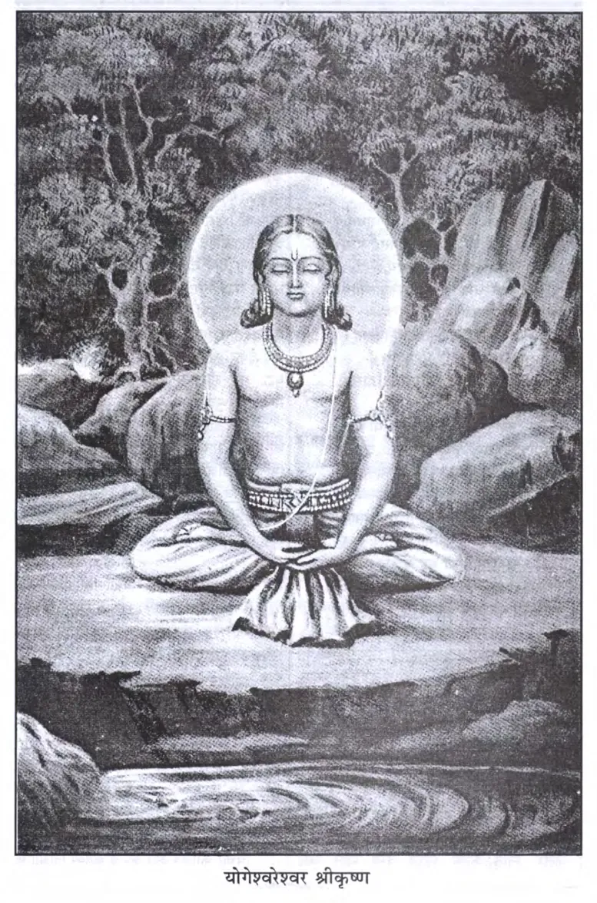
परात्पर श्रीकृष्णावतारका प्रयोजनविमर्श
(लेखक-पं० श्रीधराचार्यजी शास्त्री, वेदान्ततीर्थ, वे०शि०, वे० भू०, वि० र०)
दीनदयालु भक्तवत्सल भगवान् श्रीकृष्णचन्द्रके चरित्रावलोकनमें सतत निमग्न रहनेवाले, 'अनन्याश्चिन्तयन्तो माम्' इत्यादि वचनके अनुसार पराकाष्ठाकी अनन्यतापर आरूढ़ हुए आश्रितोंके लिये दीनबन्धु परम प्रभुको क्या-क्या नहीं करना पड़ता है? सब प्रकारकी सेवा करना, दूत बनना, सारथि बनना, और उसी समय गुरु बनकर उपदेश भी देना इत्यादि अनेक भावसे अपने आश्रितोंको प्रसन्न रखना, यह उदारशिरोमणि नन्दनन्दनका ही काम है। आश्रित केवल शास्त्रीय प्रक्रियाके अनुसार नवधा भक्तिसे ही आपकी उपासना कर सकता है, परन्तु श्रीनन्दनन्दन तो अनेक विधिसे अपने प्यारे भक्तकी सेवा करते हैं। श्रीप्रभुने स्वयं ही कहा है—'ये यथा मां प्रपद्यन्ते तांस्तथैव भजाम्यहम्' इसमें 'भजाम्यहम्' पदसे यह समझना चाहिये कि मैं अपने दासोंकी सेवा करता हूँ। हाँ, इतना अवश्य है कि जिस प्रकार मेरा दास अपने अनुभवमें मुझको चाहता है, उसी प्रकारसे मैं उसकी अभिलाषा पूरी करता हूँ। सच है, तभी तो श्रीभगवान्को दूत, और सारथीका वेष धारण करना पड़ा है, यद्यपि दूत सारथी आदि वेषमें भी आपका स्वातन्त्र्य है, परन्तु श्रीप्रभु तो कृपासे विह्वलित होकर दामोदर-वेष भी स्वीकार कर चुके हैं, इससे अधिक और क्या हो सकता है? ये सब क्या है उस परम दयालुकी परम निर्हेतुकी कृपाका ही निदर्शन है।
ऐसे परम दयालु प्रभुके अवतार-हेतुका विमर्श करते हुए अपने मानवजन्मका अलभ्यलाभ प्राप्त कर लेना भी श्रीप्रभुकी कृपा अथवा तदीयोंकी कृपाके ही अधीन है। यद्यपि 'यतो वाचो निवर्तन्ते अप्राप्य मनसा सह' इस आनन्द-वल्लीके वाक्यानुसार वेद सदा परब्रह्म आनन्दकन्द श्रीविहारीजीके एक आनन्दका भी अनुमान न कर सके, तथापि 'गिरस्त्वदैकैकगुणावधीप्सया सदा स्थिता नोद्यमतोतिशेरते' इस रसिक-वाणीके अनुसार वेद गुणोंके वर्णनमें लगे ही हुए हैं, इसी प्रकार मनुष्यमात्रको यद्वा श्रमार्वाधि यथामति वाप्यशक्तः स्तौम्येवमेव इत्यादि वचनानुसार प्रभुके चरित्रादि आलोड़नमें सन्नद्ध रहना ही युक्ति-युक्त है।
स्वयं आनन्दघन श्रीप्रभुने अपने अवतारके तीन हेतु (प्रयोजन) बताये हैं।
परित्राणाय साधूनां विनाशाय च दुष्कृताम्।
धर्मसंस्थापनार्थाय सम्भवामि युगे युगे॥
(गीता ८। ४)
साधुओं की रक्षा करनेके लिये और दुष्टोंका नाश करनेके लिये तथा धर्मका स्थापन करनेके लिये मैं युग-युगमें प्रकट होता हूँ। अर्थात् १ साधुरक्षण, २ दुष्कृतविनाश, ३ धर्मसंस्थापन यही श्रीकृष्णावतारके प्रयोजन हैं। साधु-शब्दका अर्थ श्रीप्रभुने स्वयं इस प्रकार किया है—
अपि चेत्सुदुराचारो भजते मामनन्यभाक्।
साधुरेव स मन्तव्यः सम्यग्व्यवसितो हि सः॥
(गीता ९। ३०)
'यदि अत्यन्त पापी भी मुझको अनन्य भावसे भजता है, तो उसे साधु ही मानना चाहिये, क्योंकि वह सब प्रकारसे निश्चयवाला है। यदि इस श्लोकका यह अर्थ मान लिया जाय तो इससे एक बड़ा असामञ्जस्य उपस्थित होगा क्योंकि गीता अध्याय ७ श्लोक १५में स्पष्ट कहा गया है कि नीच, मूर्ख, तथा पापी मनुष्य मुझको नहीं भज सकते कारण अज्ञानसे आच्छादित ज्ञानवाले वे आसुर भावकी ओर झुके हुए होते हैं। इसके आगे श्लोक २८में कहा है कि, पुण्य कर्म करनेवाले जिन मनुष्योंका पाप नष्ट हो गया है, वे रागादि द्वन्द्व-रूप मोहसे अत्यन्त मुक्त होकर दृढ सङ्कल्पवाले मुझको भजते हैं। इस प्रकार परस्पर भगवद्वाक्योंमें पूर्वापर विरोधकी प्रसक्ति होगी। पापी, साधु इन दोनोंके भिन्न-भिन्न लक्षण मानने पड़ेंगे और शास्त्रकारोंने भी भिन्न-भिन्न लक्षण माने हैं। ऐसी दशामें 'अपि चेत्'का अर्थ परमदयालु श्रीनन्दनन्दनकी कृपासे निर्दिष्ट कुछ दूसरा ही मानना होगा। गुरु, पिता, पति आदि पूज्य-जनोंकी आज्ञा मानना, यह शास्त्रकी आज्ञा है। परन्तु जैसे प्रहादने पिताकी आज्ञा नहीं मानी और वे निरन्तर 'हरे राम हरे रामका जप करते ही रहे। ऐसी दशामें धर्मशास्त्रके अनुसार 'जीवतो वाक्यकरणात्' इस वचनका उल्लंघन होनेसे प्रह्लादजीके प्रति दुराचारी शब्दका प्रयोग किया जा सकता है। बार-बार पिताकी आज्ञा न माननेसे 'सुदुराचारी' शब्दका प्रयोग भी ठीक हो सकता है, इधर अपने परम प्यारे नन्दके दुलारे जगत्पतिके श्रीनामोच्चारणमें मग्न प्रह्लादमें अनन्यता, दृढ़-सङ्कल्पता-पराकाष्ठा भी झलक रही है, भगवन्नामोच्चारण रसका समुद्र उमड़ रहा है, ऐसी दशामें भक्ताग्रगण्य प्रह्लादका व्यवसाय सुदृढ़ बन्धनोंसे जकड़ा हुआ है, अतः उन्हें साधु मानना सर्वथा ठीक है, 'सुदुराचार' शब्दका ऐसा अर्थ कर लेनेसे पूर्वापरकी सङ्गतिमें कोई बाधा नहीं पड़ती। इसी प्रकार बलि चक्रवर्ती, गोपिका आदि अनेक उदाहरण 'अपि चेत्' श्लोकके अन्वयमें समझ लेने चाहिये। परमदयालु श्रीवसुदेवसूनुके अवतारका सबसे प्रथम प्रयोजन साधु-परित्राण है, आचार्यचरण श्रीशङ्कराचार्यजीने स्वनिर्मित गीताभाष्यमें 'परित्राणाय परिरक्षणाय साधूनां सन्मार्गस्थानाम्' इस प्रकार मूल-पदोंकी व्याख्या न करते हुए 'साधु' शब्दका अर्थ 'सन्मार्गस्थ' किया है, अर्थात् सत्पुरुषोंके मार्गमें रहनेवालेका नाम साधु है।
आचार्यचरण श्रीरामानुजाचार्यजीने स्वनिर्मित गीताभाष्यमें परित्राणाय—इस श्लोकका व्याख्यान करते हुए 'साधव उक्तलक्षणधर्मशीला वैष्णवाग्रेसरा मत्समाश्रयणे प्रवृत्ता मन्नामकर्मस्वरूपाणां वाङ्मनसागोचरतया मद्दर्शनाद्विना स्वात्मधारणपोषणादिकमलभमानाः क्षणमात्रकालं कल्पसहस्रं मन्वानाः प्रशिथिलसर्वगात्राभवेयुरिति मत्स्वरूपचेष्टितावलोकनालापादिदानेन तेषां परित्राणाय' इत्यादि लिखा है। उक्त लक्षण शान्त्यादियुक्त हरिदासवर्य मेरे आराधनमें प्रवृत्त, मेरे नाम-कर्म-स्वरूपोंका वाक् तथा मनसे भी ग्रहण न होनेसे मेरे दर्शनके बिना अपने शरीरके धारण, पोषण आदिसे भी विरत होकर मेरे वियोगके एक क्षणको भी सहस्र कल्पके समान माननेवाले वे साधु नष्ट हो जायँगे, इसलिये अपने स्वरूप-दर्शन, चेष्टित, अवलोकन, आलापन आदि दानके द्वारा उन (उक्त) साधुओंकी रक्षाके लिये मैं जन्म लेता हूँ। उक्त स्थलमें आचार्यचरणने साधु-शब्दका अति ही विचित्र अर्थ किया है। तात्पर्य यह है कि कोई हरिदास श्यामसुन्दरकी बाट जोह रहे हैं, उनके आठों पहर इसी आशामें बीतते हैं, कि 'हे प्रभो दीनबन्धो! मुझे आपके श्रीविग्रह घनश्यामके कब दर्शन होंगे? वह मन्दहासयुक्त श्रीमुखकमल मुझ दुर्भाग्यको कब दीखेगा? श्यामसुन्दर! आपके अरुणकमल नयनोंकी मधुरताका रसास्वादन कब प्राप्त होगा, हे नाथ! मेरा मन-भ्रमर आपके श्रीचरणकमलमें कब विभोर होकर आनन्द-रसका पान करेगा। क्या इस शरीरके रहते प्रभो! मेरी इच्छाकी पूर्ति होगी? ऐसी आशा करते-करते जब भक्तकी आर्तदशा प्रगाढरूप धारण कर यह निश्चय कर लेती है कि अब यदि प्रभुके दर्शन नहीं होंगे तो प्रभुकी विरहाग्निमें मैं अपने शरीरकी आहुति देकर उसे स्वाहा कर दूँगा। जैसे ही भक्तोंका यह दृढ़ संकल्प होता है वैसे ही प्रभुको उसी क्षण उसके सामने प्रकट होना ही पड़ता है। यहाँपर संकल्पसे जगत् बनानेका काम नहीं है, तथा न रक्षाका और प्रलयका ही कार्य है, यह तो अपने प्रेमीकी प्रेम-परीक्षाका एक अद्भुत अवसर है। भला, कृपानाथ ऐसे अवसरको अपने हाथसे कैसे जाने देंगे? जो केवल दर्शनके ही उत्कट भक्त हैं, जिनको प्रभुके दर्शन बिना दिन-रात तड़पते ही बीतता है, श्रीकृष्णचन्द्र परम प्रभु, उन भक्तोंकी रक्षा दर्शन-दानसे ही करते हैं।
परम विरक्तराज श्रीशुकदेवजीने श्रीप्रभुके अवतारका प्रयोजन राजा परीक्षितको थोड़ेसे शब्दोंमें इस प्रकार कहा है—
नृणां निःश्रेयसार्थाय व्यक्तिर्भगवतो नृप।
अव्ययस्याप्रमेयस्य निर्गुणस्य गुणात्मनः॥
(श्रीभागवत १०। २९। १४)
हे राजन्! विकार-रहित, प्रत्यक्षादि प्रमाणके अविषय, हेयगुणरहित, निखिल कल्याणगुणभूमि ऐसे षड्गुणैश्वर्यसम्पन्न प्रभुकी व्यक्ति अर्थात् उनका अवतार मनुष्योंके परम कल्याण (मोक्ष) प्रयोजनके निमित्त होता है। जब प्रभु अवताररूप सदावर्त लगा देते हैं, तब योगी, कुयोगी, तस्कर आदि सभी अवतारके सौलभ्य, सौशील्य, सौकुमार्य, वीर्य, शौर्य, दया, वात्सल्य आदि प्रभुके गुणोंसे विद्ध होकर सदाके लिये उनके चरणोंको प्राप्त हो जाते हैं। यदि अनादिवासनासे अवताररूप सदावर्त बँटते रहनेपर भी उसमें रुचि न होकर उलटा द्वेष हो जाता है, तब भी अच्छा ही होता है क्योंकि द्वेपका विषय भी हृदयमें घूमता ही रहता है, इसीसे शुकदेवजीने कहा है—
कामं क्रोधं भयं स्नेहमैक्यं सौहृदमेव च।
नित्यं हरौ विदधतो यान्ति तन्मयतां हि ते॥
(भागवत १०। २९। १५)
अवतार धारण किये हुए श्रीहरिके प्रति नित्य काम, क्रोध, भय, स्नेह, एकता, प्रेम करनेवाले लोग तन्मयता (उनके भाव अर्थात् समानता)-को प्राप्त हो जाते हैं।
रास-कीड़ाके लिये गोपियाँ भगवान् श्रीकृष्णके पास आयीं। कुछ स्वागतादि करनेके बाद आपने उनसे 'जाओ जाओ' कहा। तदनन्तर दुःशीलो दुर्भगो वृद्धो इत्यादि धर्मशास्त्रका सुन्दर उपदेश दिया, और गोपियोंने प्रत्युत्तरमें मैवं विभोऽर्हति भवान् गदितुं नृशसं इत्यादि कहा! पश्चात् भगवान्ने रासका स्वांग रचा। उस रासाभिनयके अवसर पर गोपिकाओंके मनमें अभिमानका समुद्र उमड़ पड़ा और उन्होंने समझा कि अब नन्दनन्दन हमारे दास हो गये हैं। बस फिर क्या था, उनके अभिमानको दूर करनेके लिये श्रीप्रभु अन्तर्धान हो गये। अब तो ये बेचारी बालाएँ बड़ी दुखी हुईं। नन्द-नन्दनको वन-वन ढूँढ़ने लगी और प्लक्ष, अश्वत्थ, न्यग्रोध, नाग, चम्पक, तुलसी आदि अनेक वृक्ष-लताओंसे पूछने लगीं कि 'हमारे प्राणप्रिय श्रीमाधवको क्या तुमने देखा है?' इस प्रकार वे अपने आपको भूल गयीं, इन बालाओंको जड़-चेतनका भी ज्ञान नहीं रहा। उन्मत्तता (पागलपन) छा गयी। उसी दशामें कोई अपनेको कृष्ण मान कर और कोई बलदेव तथा अन्य सब सखा बनकर प्रभुकी लीला करने लगी। इसी बीचमें प्रभुकी प्रियतमा एक सखीसे प्रभुका कुछ समाचार जानकर सब एकत्र होकर 'तन्मनस्कास्तदालापाः' होकर श्यामसुन्दरके गुणोंके गानमें अपने आपको भूल गयीं। फिर श्रीयमुनापुलिन पर आकर श्रीकृष्णभावनावाली वे सब इकट्ठी होकर परमप्रियके गुण गाने लगी, जिस समय गोपियोंने 'जयति तेऽधिकम्' यहाँसे लेकर 'यत्ते सुजात' पर्यन्त १९ श्लोकोंसे प्रभुके अनेक चरित्रको स्मरण और स्वदैन्यको प्रकट करके अनेक प्रकारसे प्रलाप कर हिचकी भर-भरके रोना प्रारम्भ किया कि बस, उसी समय प्रभु प्रकट हुए 'तासामाविरभूच्छौरिः स्मयमानमुखाम्बुजः' यह अवतारमें अवतार है, इस आख्यायिकाका प्रयोजन यह है कि जब साधु हरिदास इस प्रकार अपने आपको भूल केवल श्रीप्रभुको ही स्मरण करते हैं और उनको ही देखना चाहते हैं, तब प्रभु अवतार लेते हैं।
दृष्टोंका नाश—यहाँपर यह विचार उठता है 'तदैक्षत बहुस्यां प्रजायेय' इत्यादि वेदान्तवाक्य बतलाते हैं कि परमात्माके संकल्पसे ही सृष्टिकी रक्षा और प्रलय होता है। तब दुष्टोंके दमनके लिये भगवान् अवतार क्यों लेंगे? क्या उनकी इच्छामात्रसे दुष्ट-दमन नहीं हो सकता? परन्तु दुष्टोंका नाश जैसा प्रभुको अपेक्षित है, वैसा अवतार धारण किये बिना नहीं हो सकता। कारण कि अवतार धारण करनेपर प्रभुके हाथों जिनका वध होता है वे सब प्रभुके धामको प्राप्त होते हैं इसीसे, 'विनाशाय' कहा, 'नाशाय' नहीं कहा। विनाश शब्दसे आत्यन्तिक नाश अर्थात् संसारका सदाका उच्छेद विवक्षित है, और यह प्रभुके अवतार बिना सम्भव नहीं।
धर्मसंस्थापन—यहाँपर यह जान लेना परमोचित है कि एक श्रीकृष्ण प्रभु आराध्य हैं और समस्त कर्म उनके आराधनस्वरूप हैं। कोई मनुष्य किसीसे जाकर यह कहे कि तुम्हारे प्रिय मित्र अथवा कोई मान्यपुरुष आये हैं, तुम उनके लिये रसोई बनवाओ। ऐसा सुननेपर सबसे प्रथम वह उनको देखना चाहता है और यदि कहे अनुसार दर्शन पा जाता है तो बड़े ही प्रेमसे पाकादिकी तैयारी कराता है, यदि दर्शनमें ही सन्देह हो जाता है तो आगेका कार्य वहीं रुक जाता है, इसी तरह प्रभु श्रीकृष्णचन्द्रके दर्शन बिना उनके आराधनरूप कर्ममें प्रवृत्ति नहीं हो सकती, जब दर्शन-प्राप्ति हो जाती है तो आराधन-कर्ममें जो प्रवृत्ति होती है, फिर उसको कोई भी नहीं रोक सकता, प्रभु श्रीकृष्णचन्द्र अपने श्रीविग्रहका अद्भुत चमत्कार दिखाकर अपने आराधनकर्ममें प्रवृत्त करनेके लिये ही श्रीअवतार धारण करते हैं। इस प्रकार आनन्दघन नन्दनन्दनका अवतार अनन्य प्रेमियोंको अनेकविध लीलापुरस्सर ललित माधुर्य छटाका आस्वादन करानेवाला, पूर्वसुकृत मध्यदुष्कृत ऐसे पुरुषोंको स्वधामप्रद तथा अत्यन्त विमूढोंको धर्मशास्त्र पर आरूढ़ करानेवाला होता है।
प्रभुके श्रीविग्रहकी माधुर्य-छटामें अनुरक्त गोपिकाओंका मन उद्धवजी अपने योगके उपदेशसे विचलित नहीं कर सके किन्तु वे स्वयं प्रेममें मग्न होकर गोपियोंको बार-बार दण्डवत् करने लगे।
आपके अवतार-माधुर्य-रसके आस्वादनमें ये गोपिकाएँ सर्वप्रथम और सर्वश्रेष्ठ हैं, इसीसे सूरदासजीने कहा है—
कृष्ण-कृष्ण करत डोलूँ, कृष्ण कहाँ पाऊँ।
द्वार ते दौड़ आऊँ तोऊ ना लजाऊँ॥
तोहि छाँड़ि औरकी मैं कौनकी कहाऊँ।
ऊधो तुम बेगि जाओ प्रेम लिख पठाऊँ।
ढ़ूँढत बनकुञ्ज फिरों श्याम श्याम गाऊँ।
विधना नहिं पंख दिये उड़िके ढिग जाऊँ॥
ऊधो तुम बेगि जाओ श्यामहि लै आओ।
सूरजप्रभु दरश दियो सबहिं कण्ठ लाओ।
गीताके उपदेष्टा श्रीकृष्ण
(लेखक—स्वामीजी श्रीविद्यानन्दजी महाराज)
परब्रह्म पुरुषोत्तम भगवान् अपनी मायाका—अपनी योगमायाका अधिष्ठान करके मनुष्यरूपसे सृष्टिमें प्रकट होते हैं और संसार-चक्रकी स्थानविच्युता धुरीको पुनः सुव्यवस्थित कर, अनेकतामें एकत्वका अर्थात् भिन्न-भिन्न रूपसे दीखनेवाली व्यक्तियोंका मूलस्वरूप एक ही है, यह भान होनेके लिये सुविधा प्रदान कर देते हैं। इस बातको सिद्ध करना किसी भी हिन्दूके लिये आवश्यक नहीं जान पड़ता।
विभिन्न युगोंकी तथा उनके विभागोंकी कालावधिमें तत्कालीन मनुष्यप्राणियोंके तथा इतर सृष्टिके विकासके लिये अर्थात् इस सृष्टिरूपी गहन योगचक्रको समता बनाये रखनेके लिये, जिन-जिन गुणधर्मोके अवलम्बनकी आवश्यकता होती है, उन-उन गुणधर्मोंके पदार्थ-पाठरूपसे उन-उन युगोंके विशेष ध्येयपुरुषका अवतार होता है, और उसीके साथ उनकी सहधर्मचारिणी प्रकृतिदेवीके स्वरूपका निर्माण भी होता ही है।
इन विभिन्न युगोंके विभिन्न अवतारोंमें वस्तुतः कोई भेद नहीं। परन्तु उन अवतारोंमें विभिन्न गुणधर्मोंके प्राधान्यके कारण-मायाके अन्तर्पटके कारण 'अन्धहस्ति न्यायवत्' उनके समग्र स्वरूपका ग्रहण हमलोग नहीं कर सकते। इसीसे हमें उनमें भेद दीख पड़ता है।
इस युगके संसारके मार्गदर्शक अधिष्ठाताके रूपमें श्रीकृष्णस्वरूप आप ही अपने विराट् स्वरूपमें निर्माण हुआ है और उसने लोक-कल्याणार्थ अन्य प्राणियोंके समान सारे प्राकृतिक बन्धनोंको केवल अपनी इच्छासे ही स्वीकार कर लिया है। अन्तर इतना ही है कि जहाँ अन्य प्राणी अपनी भावनाओंके फलस्वरूप बाध्य होकर बन्धनमें बँध रहे हैं, वहाँ यह अवतारी पुरुष प्रकृतिके बन्धनके परे रहते हुए ही लोक-कल्याणार्थ मार्ग-प्रदर्शनके हेतु ही उसका निर्वाह करते हैं।
जिसप्रकार जेलमें कैदी भी होते हैं और जेलर भी होता है, परन्तु जेलके नियम सबको एक-से पालन नहीं करने पड़ते। उनके कामोंकी देख-रेखके लिये दूसरे अनेक छोटे बड़े अधिकारी भी होते हैं, इन सब मनुष्योंमें अपराधी कैदीको छोड़कर शेष सभी अपनी-अपनी मर्यादामें रहते हैं और मुख्य जेलर अपनी इच्छानुसार जेलके बाहर-भीतर घूम-फिर सकता है। इसी प्रकार अवतारी पुरुष इस प्राकृतिक देहमें आकर भी बन्धनसे, (कैदी) जीवात्माओंके बन्धनसे परे रहकर अपनी इच्छानुसार स्वतन्त्रतापूर्वक उसका निर्वाह करता है।
इस प्रकार सृष्टिके कल्याणके निमित्त स्वयं ईश्वरके या उसके किसी प्रतिनिधिके मनुष्य-देहमें प्रकट होनेकी मान्यता भिन्न-भिन्न रूपसे दुनियाके सभी धर्मोंमें पायी जाती है। यह मान्यता सत्य और स्वाभाविक है। इसी मान्यताके अनुसार वर्तमान-युगके अधिष्ठाता ध्येय श्रेष्ठपुरुष श्रीकृष्ण परमात्मा हैं। उन श्रीभगवान्का भौतिक तथा दैवी जीवन उनके आध्यात्मिक उपदेशोंके साथ सुसङ्गत होकर, विकाशक्रमके प्रवाहमें पड़े हुए, काम-क्रोधादि षट् रिपुरूप प्रबल राक्षसी तरङ्गोंमें उछलते-डूबते हुए तथा अविद्याके अन्धकारमें सत्य और श्रेयस्कर मार्गको ढूँढ़नेके लिये मथते हुए किसी भी जीवात्माके लिये दीपस्तम्भका काम दे सकता है।
सृष्टिमें उत्पन्न हुई कोई भी वस्तु स्वयं अपने लिये नहीं होती, क्योंकि अपनेसे अपना भोग हो ही नहीं सकता। वायु, जल, तेज, पत्थर, मिट्टी, वनस्पति तथा जीवसृष्टिमें कोई भी वस्तु या व्यक्ति अपनेको ही अपना भोग नहीं बना सकती। वनस्पतियोंका उपयोग उनके अपने लिये नहीं है। फल, फूल, पत्ती तथा लकड़ी इनमेंसे कोई भी वृक्षके उपयोगमें नहीं आते, या तो वे दूसरी वनस्पतिके लिये उत्पादक बनते हैं या जीव-सृष्टिका रक्षण अथवा पोषण करते हैं। जीवसृष्टिमें जीवात्मा—मनुष्य-कोटि ही श्रेष्ठ है।
तब क्या यह मनुष्य प्राणी आप अपने ही लिये हो सकता है? नहीं, नहीं, वह स्वतन्त्र नहीं है। वह भी इस संसाररूपी महायोग-यज्ञमें आहुतिस्वरूप है। तथापि दूसरे जीवोंकी अपेक्षा उसे विवेक बुद्धिकी दैन अधिक मिली है और वह पुरुषार्थसे महायज्ञमें सहायक अथवा बाधक हो सकता है।
जब जीवात्मा अविद्याके आवरणसे ममत्वका आरोप कर अपने व्यक्तिगत आहुति-स्वरूपको भूलकर स्वयं होता (आहुति देनेवाला) बन बैठता है तब वह महायज्ञका बाधक बनकर अपने लिये तथा अपने संसर्गमें आनेवाले सबके लिये दुःख उत्पन्न करता है। इसी प्रकार जब उसका पुरुषार्थ महायज्ञके अनुकूल होता है, तब वह अपने लिये और अपने संसर्गमें आनेवालोंके लिये सुख उत्पन्न कर सकता है। इस तरह जबतक जीवात्माका व्यक्ति-भाव कायम रहता है और वह इसी भावसे पुरुषार्थ करता है, तबतक उसे फूटबॉलकी तरह सुख-दुःखकी ठोकरें खाते इधर उधर भटकना ही पड़ता है। वह आवागमनके चक्रसे छुटकारा नहीं पाता। परन्तु जब इस व्यक्तिका समष्टिमें लय होकर आत्मौपम्य, सर्वात्मभाव सिद्ध हो जाता है, तभी वह सुख-दुःखके द्वन्द्वोंसे छूटकर, जन्म-मरणके चक्रसे मुक्त होकर परम निर्वाण गतिको पाता है।
परमात्मा श्रीकृष्णके ऐतिहासिक जीवन-चरित्रका सूक्ष्मदृष्टिसे विश्लेषण करनेपर पता लगेगा कि उनका कोई भी काम उनके अपने लिये नहीं था, उनका प्रत्येक कार्य साधु जीवात्माके अभय, सत्त्वशुद्धि आदि दैवी-सम्पत्तिमें स्थित होनेके मार्गमें आनेवाली बाधाओंको दूर करनेके लिये ही था। उन्होंने बाल्यकालमें अपने संसर्गमें आनेवाले सारे गोप-गोपियोंको अपनी लौकिक तथा अलौकिक प्रेमलीलामें सराबोर कर दिव्य प्रेमका आस्वादन कराया था, साथ ही दुष्टोंकी दुष्टता तथा अहंकारियोंके अहंकारका नाश कर उनका उद्धार किया था। युवावस्थामें भगवान्ने देव, ब्राह्मण, माता, पिता, स्त्री, मित्र, भक्त और अपने सगे-सम्बन्धियोंके साथ, भिन्न-भिन्न प्रसङ्गोंपर आदर्श बर्ताव करके जनताके लिये ऐसे अवसरोंपर व्यवहार करनेका आदर्श सुन्दर राजमार्ग बना दिया और इसी प्रकार जीवनके पिछले समयमें आपने राजनीति तथा व्यवहारमें आनेवाले धर्म-सङ्कटोंसे विवेकके द्वारा कैसे उनसे सुरक्षितरूपसे बचा जा सकता है, इसका उत्तम मार्ग बतलाया। इतना ही नहीं, बल्कि ब्रह्म, माया, ईश्वर तथा जीवके स्वरूपोंको समझा कर, उनके विखरे हुए अंको मानो जोड़कर, सबको एकाकार कर तत्वज्ञानकी विभिन्न विचार-धाराओंका समन्वय कर उसका सुन्दर गान अपनी गीतामें जगत्को सुनाया और सरलताके साथ भलीभाँति यह सिद्ध करके दिखला दिया कि व्यवहार, नीति, धर्म और तत्वज्ञान एक दूसरेसे भिन्न और विरोधी नहीं हैं, अपितु एक दूसरेके पोषक हैं।
श्रीभगवान्के जीवन तथा उपदेशोंका अभ्यास करनेवाले पुरुषोंको विदित होगा कि यद्यपि इन सब व्यवहारों तथा उपदेशोंमें परमात्मा श्रीकृष्ण एक व्यक्तिके रूपमें ही लीला करते हैं तथापि उनमें व्यक्तिगत स्वार्थ रत्तीभर भी नहीं है। वे सर्वथा केवल-असङ्ग हैं।
विभिन्न देशोंकी संस्कृति-भेदके कारण उनकी भावना और तदनुसार उनके ध्येय विभिन्न होते हैं, इससे उनकी भाषाओंमें विभिन्न भावनाएँ मूर्तिमान् होती हैं। इसी कारण जिन लोगोंकी बुद्धिका विकास दूसरोंकी भाषाद्वारा हुआ है, उन हिन्दुओंको तथा कितने ही विदेशियोंको श्रीकृष्णके जीवनका कुछ भाग क्लिष्ट प्रतीत होता है। इसका कारण यही है कि उनकी बुद्धिका विकास हिन्दू-भाषाद्वारा शास्त्रीय पद्धतिसे न होनेके कारण वे चरित्रके उक्त भागकी शुद्ध भावनाको ग्रहण नहीं कर सकते। किसी प्रसङ्गविशेषके अगले-पिछले वातावरणका तथा तत्प्रसङ्गमें आनेवाले व्यक्तियों की विभिन्न दशाओंका, उनकी भावनाओंका और ध्येयका अध्ययन और विचार किये बिना ही जो बीचके कुछ वाक्योंको पकड़ कर उनका मनमाना गन्दा अर्थ लगा लेना कहाँतक उचित है? विचारशील पुरुष इसका अनुभव कर सकते हैं।
श्रीमद्भागवतमें श्रीकृष्ण-चरित्रका वर्णन है। उसकी कथा कहनेवाले श्रीशुकदेव मुनि हैं, जो अखण्ड ब्रह्मचारी हैं। सुलभतासे प्राप्त रम्भा-जैसी अप्सरामें भी जिन्हें कोई शृङ्गार या स्त्रीत्वका भान नहीं हुआ, जिनके पास रहनेपर भी जलमें वस्त्रहीना होकर क्रीड़ा करती हुई स्त्रियोंको बिलकुल सङ्कोच नहीं हुआ, उन शुकदेवजीकी वाणीमें दैवी और निर्दोष भावनाके अतिरिक्त दूसरे भावोंकी कल्पना ही कैसे हो सकती है?
कुछ समयसे जैसे-जैसे श्रीकृष्ण-जीवनके वास्तविक स्वरूपका अध्ययन बढ़ रहा है, तैसे-तैसे उनके अलौकिक और दैवी भावनाओंका विकास होता जाता है। आधुनिक अनेक विद्वानोंने विभिन्न दृष्टिकोणसे इसकी आलोचना करके उनके चरित्रकी शुद्धताका प्रतिपादन किया है, यह सौभाग्यकी बात है।
आदर्श पुरुष श्रीकृष्ण
(लेखक—चतुर्वेदी पं० श्रीद्वारकाप्रसादजी शर्मा)
जिन लोगोंको कभी महाभारत, श्रीमद्भागवत, विष्णुपुराण, ब्रह्मवैवर्तपुराण अथवा गर्गसंहितामेंसे किसी भी एक ग्रन्थको पढ़नेका सौभाग्य प्राप्त-सा हुआ होगा, वे हमारे इस मतसे सहमत हुए बिना नहीं रह सकते कि भगवान् श्रीकृष्ण लोकोत्तर गुणोंकी खान थे। वे—स वै बलं बलिनां चापरेषाम् के जीते-जागते एक उज्ज्वल उदाहरण थे। वे ज्ञान, विज्ञान एवं यावत् नीतियोंके आधार थे। वे कोरे धर्मोपदेशक ही न थे, किन्तु अपने उपदेशानुसार स्वयं चलनेवाले भी थे। वे दुष्टोंके शत्रु और शिष्टोंके अनन्य मित्र थे। वे एक आदर्श पुरुष थे, अतः उनके उपदेश इतर जनोंके लिये सर्वथा उपयोगी थे, अब भी हैं एवं यावत् चन्द्रदिवाकर रहेंगे। आदर्श पुरुष होनेके कारण श्रीकृष्णके लिये धर्मके सिवा अन्य कोई भी अपना न था। जिन श्रीकृष्णने अपने अधर्मी एवं अन्यायी मामा कंसको तथा उसके ससुर जरासन्धको क्षमा न किया और उन्हें उनके कर्मोंके अनुरूप प्राण-दण्ड दे दिया, वे श्रीकृष्ण भला उत्पाती एवं अधर्मी अपने कुलोद्भव यादवोंपर क्षमा क्यों करने लगे? अत्याचारियों और अधर्मियोंका नाश करनेके अतिरिक्त श्रीकृष्णके जीवनका लक्ष्य इतर जनोंके लिये उच्च कोटिका एक आदर्श उपस्थित करना भी था। अतः धराधामपर रहनेके समय, श्रीकृष्णने अपना जीवन आदर्श बनाया था। हम जब उनके जीवनभरकी समस्त घटनाओंपर आलोचनामयी दृष्टि डालते हैं तब हमें श्रीकृष्ण एक महाबली एवं आदर्श नर-रत्न देख पड़ते हैं। उन्होंने बड़े-बड़े नरहत्यारे एवं दुष्ट पशु-पक्षियोंका नाश कर सुखशान्तिमय जीवन व्यतीत करनेवाले जनोंका दुःख दूर किया, अधर्मी और अत्याचारी कंसको तथा उसके नामी दुर्दान्त पहलवानोंको एवं महाउद्दण्ड जरासन्धको सदाके लिये इस लोकसे विदा कर दिया। श्रीकृष्ण लड़कपनहीमें अनेक अमानुषिक कार्य कर, जनसाधारणके श्रद्धा एवं भक्तिभाजन बन गये थे। पीछेसे वे सुदूरवर्ती और समुद्रजलसे घिरे हुए द्वारका-नामक टापूमें रहकर भी, भारतवर्षके समस्त नरपतियोंके ऊपर अपनी प्रभुता जमाये हुए थे। भारतके तत्कालीन सभी बड़े-बड़े नृपतिगण एवं राजनीतिमें कुशल विज्ञजन उनके आगे सहज ही सिर झुकाते थे। संसार-प्रसिद्ध ऋषिमुनि, नामी ज्ञानीजन और बड़े-बड़े तपोधन उनको लोकोत्तर गुणोंका आकर एवं अलौकिक प्रतिभाकी सजीव मूर्ति मान, उन्हें सबका एकमात्र नेता मानते थे। श्रीकृष्णमें अथाह पाण्डित्य एवं अनुभव था। साथ ही वे दीन-दुखियों एवं अनाथोंके रक्षक थे और लोगोंपर निर्हेतुकी कृपा किया करते थे। भारतवर्षकी जनतापर उनका विलक्षण आधिपत्य था। यद्यपि उस समयकी भारतीय जनता यह नहीं बतला सकती थी कि वह श्रीकृष्णको इतना क्यों चाहती थी, तथापि भारतीय जनता श्रीकृष्णको निज प्राणोंसे भी अधिक मानती थी। जिस प्रकार वे पापियोंके लिये कालके समान यमदूत थे, उसी प्रकार पुण्यात्मा जनोंके लिये वे शान्ति एवं सुखप्रद थे। श्रीकृष्णके जमानेमें, भारतवर्षमें एक छोरसे दूसरे छोरतक नवीन विचारों, नवीन धार्मिक योजनाओं एवं नित्य नये-नये आनन्दोंका साम्राज्य-सा छाया रहता था। कंस, दुर्योधन, जरासन्ध तथा शिशुपाल-जैसे पापिष्ठ, दुष्ट एवं अत्याचारी राजाओंके आधिपत्यको नष्ट कर, श्रीकृष्णने धर्मराज युधिष्ठिर-जैसे प्रजाप्रिय एवं धर्मात्मा राजाओंके हाथोंमें देशके शासनकी बागडोर दे दी थी।
यद्यपि श्रीकृष्णका भेद तो कोई जान नहीं पाता था, तो भी लोगोंकी भक्ति उनमें पूर्ण थी, वे उनकी पूजा करते थे, उनकी मानता मानते थे और उनके वचनोंमें लोगोंको पूर्ण आस्था थी। देशके शासक उनसे डरते थे और हृदयसे उनका आदर करते थे। जिनके साथ श्रीकृष्णकी विशेष घनिष्टता थी, वे लोग उनको अपना स्वामी, पूज्य गुरु, श्रद्धेय पिता, सर्वथा रक्षक और अभिन्नहृदय मित्र मानते थे। श्रीकृष्ण अपने समयके एक ऐसे नामी योद्धा थे कि जिन्होंने बड़े-बड़े नामी शूरवीरोंको पराजित किया था। वे गोपोंकी एक विशाल वाहिनीके प्रधान सेनापति थे। उनसे बढ़कर राजनीतिविशारद न तो आजतक कोई हुआ और न उनकी छोड़ कोई आगे हो ही सकता है। वे एकमात्र धर्मराज युधिष्ठिरके ही नहीं, प्रत्युत सम्पूर्ण आर्यावर्तके समस्त राजाओंके परामर्शदाता भी थे। वे ऐसे कूट राजनीतिज्ञ (Diplomat) थे कि उन्होंने अपने समयमें भारतवर्षकी छिन्नभिन्न एवं परस्पर-विरोधिनी समस्त राजशक्तियोंको एक धर्मात्मा एवं न्यायवान् सम्राट्की विजय-पताकाके नीचे एकत्र कर दिया था।
श्रीकृष्णकी दूरदर्शिता एवं व्यवस्थासे बलवान् निर्बलोंपर किसी प्रकारका अत्याचार करनेका साहस नहीं कर सकते थे। धार्मिक क्षेत्रमें भी श्रीकृष्णहीका सिक्का जमा हुआ था। गोपजातिमें चिरकालसे प्रचलित इन्द्र-यज्ञकी जगह श्रीकृष्णने गो-पूजन प्रचलित किया था। इन्द्र-यज्ञकी उपयोगिताका खण्डन करते हुए उन्होंने कहा था—
'हम न तो किसान हैं और न बनिये ही हैं। हमलोग तो वनचारी हैं। हमारे देवता तो हमारी गौएँ ही हैं। वे ही हमारा मुख्य अवलम्बन हैं। जो जिस वस्तुसे प्रतिपालित होता है उसके लिये वही महोपकारक है। जो पुरुष किसी व्यक्तिसे फल प्राप्त करनेकी इच्छासे अन्यका पूजन करता है, उसे इसलोक अथवा परलोकमें अपने मङ्गलकी कामना न करनी चाहिये। जहाँ खेती की जाती है, उसे खेत कहते हैं। खेतकी सीमा भूमि और भूमिकी सीमा वन और वनोंकी सीमा पर्वत हैं। अतएव हमलोगोंके लिये हमारे पर्वत ही हमारी गति हैं। सुनते हैं, पर्वत कामरूपी हैं। वे इसी रूपमें इन वनोंमें निज सानुदेशमें* विहार किया करते हैं। जो वनवासी उस देवताके निकट अपराध करता है, उसे वे गिरिदेव भी सिंहादिरूप धारण कर विनष्ट कर डालते हैं। अतः आजसे इस इन्द्र-यज्ञको गिरियज्ञ-रूपमें बदल दीजिये। महेन्द्रकी पूजासे हमलोगोंको लाभ ही क्या है? गौ और पर्वत ही हमारे लिये देवता हैं।'
(विष्णुपुराण ५। १०, ३१-४०)
* पर्वतशिखरकी समतल भूमि।
श्रीकृष्णने इन युक्तियोंसे इन्द्र-यज्ञको बन्द करा, गिरिपूजारूपी यज्ञकी नींव डाली। आज भगवान् श्रीकृष्णको मानवी-लीला संवरण किये साढ़े पाँच सहस्र वर्षोंके लगभग व्यतीत हो चुके हैं। परन्तु उनकी प्रचलित की हुई गिरिपूजा आजतक प्रतिवर्ष आस्तिक हिन्दुओंके घरोंमें हुआ करती है। दिवालीके बाद गोवर्द्धन-पूजा, (अन्नकूट)के नामसे प्रसिद्ध है। यद्यपि इन्द्र-यज्ञ वैदिक कालसे वैदिकों द्वारा होता चला आया था, तथापि यज्ञानुष्ठानके लिये भावी काल प्रतिकूल देख श्रीकृष्णजीने इस प्रथामें संशोधन किया और यज्ञकी जगह गौओंका पूजन प्रचलित किया। श्रीकृष्णजीने आर्यजातिके लिये एक ऐसे उपयुक्त धर्मका प्रादुर्भाव किया था, जो उनके लिये ही नहीं, किन्तु सबके लिये सर्वथा कल्याणकारी और उपयोगी है। उन्हींके प्रतिष्ठित धर्मके कारण आर्यजाति आजतक सभ्यशिरोमणि समझी जाती है।
महाभारतको पढ़नेसे अवगत होता है कि यद्यपि श्रीकृष्ण पाण्डवोंके पक्षपाती थे, क्योंकि न्याय और धर्म पाण्डवोंके ही पक्षमें थे, तथापि वे यह नहीं चाहते थे कि कौरवोंको हानि पहुँचे। अतएव उन्होंने भरसक दोनों पक्षोंमें मेल-मिलाप कराने और महाभारतका युद्ध न करानेका पूर्ण प्रयत्न किया था। यह बात उनकी उन बातोंसे स्पष्ट विदित होती है जो उन्होंने विदुरसे कही थी। जब विदुरने श्रीकृष्णसे कहा—'तुम्हारा यहाँ (हस्तिनापुरमें) आना उचित नहीं हुआ, क्योंकि दुर्योधन किसी प्रकार भी न मानेगा और जब वह मानेगा ही नहीं, तब सन्धि क्योंकर होगी?' तब श्रीकृष्णजीने कहा था—
'हाथियों, घोड़ों और रथों सहित सारी विपद्ग्रस्त पृथिवीको जो मृत्युसे बचा सकेगा, उसे बड़ा पुण्य होगा। विपद्ग्रस्त भाईको बचानेका जो यथासाध्य उद्योग नहीं करता, उसे पण्डितजन क्रूर कहते हैं। बुद्धिमान्, अपने मित्रोंकी चोटीतक पकड़ कर, उन्हें कुमार्गसे दूर हटा देते हैं। यदि दुर्योधन मेरी हितभरी बातें सुनकर भी मुझ पर सन्देह करे, तो मेरा क्या बन-बिगड़ सकता है? प्रत्युत मुझे तो इस बातसे बड़ा सन्तोष है कि मैं उसे समझाकर अपने कर्तव्यके बोझसे हलका हो गया। भाई-बन्दोंके आपसके झगड़ोंमें जो सत्परामर्श नहीं देता, वह 'अपना' कहलाने योग्य नहीं है।'
श्रीकृष्णजीके इस कथनका प्रथम वाक्य ऐसा महत्वपूर्ण है कि आधुनिक यूरोपके प्रत्येक राज्याधिष्ठाताको चाहिये कि वह इन वचनोंको स्वर्णाक्षरोंमें लिखवा अपने भवनमें ऐसे स्थानपर रक्खें, जहाँ उनकी दृष्टि सदैव उसपर पड़ती रहे। अस्तु! श्रीकृष्णजीने उक्त वाक्य विदुरजीके सामने केवल ऊपरी मनहीसे नहीं कहा था; किन्तु अगले दिन उन्होंने कौरवोंकी सभामें जो बातें कही थीं-उनसे भी यह बात स्पष्ट समर्थित हो जाती है। श्रीकृष्णजीने कहा—
'मैं आज यहाँ इसलिये आया हूँ कि जिससे नाहक खून-खराबी न हो और कौरवों-पाण्डवोंमें मेल-मिलाप हो जाय। हे धृतराष्ट्र! यदि कौरव और पाण्डव एक हो जायँ तो वे मिलकर अपनी और सारे राष्ट्रकी रक्षा सहजहीमें कर सकते हैं। ऐसा करनेसे इन दोनों कुलोंका वैभव बहुत बढ़ जायगा। किन्तु यदि मेल न होकर कहीं लड़ाई छिड़ गयी, तो इसमें दोनोंहीकी भलाई नहीं है। हे धृतराष्ट्र! यदि कौरव जीते और पाण्डव मारे जायँ या पाण्डव जीतें और कौरव मारें जायँ, तो आपके माथेपर दोनों ही तरह कलङ्कका टीका लगेगा। सब जानते हैं कि पाण्डव जब बालक थे, तभी उनके पिता स्वर्गवासी हुए। आपहीने उनको पाल-पोसकर बड़ा किया है। जिनको आपने पाल-पोसकर बड़ा किया है, उनकी रक्षा करना क्या आपका कर्तव्य नहीं है? सत्यके पाशमें बँधे हुए पाण्डवोंने तेरह वर्ष वनमें रहकर बिताये और आपके सामने उन लोगोंने जो प्रतिज्ञा की थी, वह पूरी की। अब आप भी अपनी प्रतिज्ञा पूरी कीजिये, अर्थात् उनकी धरोहर उन्हें सौंप दीजिये। पाण्डव कहते हैं कि आपहीके कहनेसे उन्होंने तेरह वर्ष वनमें बिताये और नाना प्रकारके कष्टोंको झेला है। अब आप भी उनके साथ वैसा ही बर्ताव करें, जैसा एक पिताको अपने पुत्रके साथ करना उचित है। यदि उनकी कोई भूल-चूक हो तो उन्हें बतला दें, जिससे वे उसे सम्हाल सकें। नहीं तो आप भी धर्मानुकूल चलें। हे धृतराष्ट्र! आपके लिये पाण्डवोंका यही सन्देश है। इसके साथ मैं अपनी ओरसे यह और आपसे कहूँगा कि सारा जगत् जानता है कि आपके पुत्रोंने पाण्डवोंके साथ बड़ी-बड़ी घटियायीके काम किये हैं। वे किस प्रकार बेईमानीसे जुएमें हराये गये और उनकी सती साध्वी स्त्री द्रौपदीकी आपके इन दुलारे लड़कोंने कैसी बेइज्जती की-यह बात आपसे छिपी नहीं है। ऐसे अत्याचारों और अपमानोंको एक साधारण मनुष्य भी कभी नहीं भूलता, किन्तु पाण्डव इन गयी-गुजरी बातोंपर भी धूल डालनेको तैयार हैं। मैं आपसे अनुरोध करता हूँ कि धर्मके विचारसे, सत्यकी मर्यादा सुरक्षित रखनेके विचारसे और ये सब न हो तो अपने हित और सुखहीके लिये पाण्डवोंका राज्य आप उनको लौटा दें, जिससे लोक-क्षयकारी संग्राम न छिड़े। आपके पुत्रोंके मनोंमें अनुचित लोभकी जो बाढ़ आयी है और जिसके कारण उन्हें धर्माधर्मका विचार ही नहीं रह गया, उसे आप रोकें। पाण्डव आज जिस प्रकार कमर कस कर लड़नेको तैयार हुए हैं, उसी प्रकार वे आपकी सेवा करनेको भी तैयार है। अब आपको जिसमें अपनी और दूसरोंकी भलाई जान पड़े, आप वही करें।
महाभारतमें लिखा है कि श्रीकृष्णके, कह चुकनेपर ऋषियोंने भी धृतराष्ट्रको बहुत कुछ समझाया-बुझाया किन्तु धृतराष्ट्रने सबको यही उत्तर दिया कि सन्धि मेरे सामर्थ्यके बाहर है, यह दुर्योधनके हाथकी बात है, वही जाने।' अस्तु, भावीकी प्रेरणासे सन्धि न हुई और युद्ध हुआ जिसका परिणाम यह हुआ कि भारत-भूमि चिरकालके लिये वीरशून्या हो गयी और तत्कालीन भारतवासियोंके कृत्योंसे यह देश शताब्दियोंसे गुलामी भोगता चला आ रहा है। अब देखना यह है कि श्रीकृष्णके उक्त कथनके रहते हुए भी विदेशी लेखक और उनके अन्धभक्त भारतवासी श्रीकृष्णके ऊपर तत्कालीन युद्धका जो दायित्व रखते हैं और उन्हें 'स्वार्थी' 'कुचक्री' 'नरहत्या करानेवाले' बतलाते हैं सो कहाँतक ठीक है। महाभारतको आद्यन्त पढ़ जानेपर भी हमें इन लोगोंके कथनमें रत्तीभर भी तथ्य और सत्य नहीं मिलता। हमारा तो यह निश्चित और सुविचारित मत है एवं हमारे इस मतसे प्रायः सभी वे विद्वान्, जिन्होंने एक बार भी आद्यन्त महाभारत पढ़ा है, सहमत होंगे कि श्रीकृष्णकी यह अभिलाषा कभी नहीं थी कि महाभारत हो और उसमें अनेक मनुष्यों और पशुओंका संहार हो; किन्तु जब अनेक प्रकारसे समझानेपर भी कौरवोंका नेता दुर्योधन न माना और पाण्डवोंके प्रति अन्याय करनेको तुल गया, तब श्रीकृष्णके लिये सिवा अन्यायियोंका नाश करवानेके अन्य कोई चारा ही नहीं था। जो लोग श्रीकृष्णके सिर महाभारत करानेका दोष मढ़ते हैं, जान पड़ता है, उन लोगोंने केवल अज्ञानपूर्वक श्रीमद्भगवद्गीताके कुछ पन्ने पढ़े हैं और उनको पढ़ वे अपने भ्रान्तपूर्ण एवं निर्मूल मत पर उपनीत हुए हैं। जब दुर्योधनने अपने हितैषियोंकी हितपूर्ण सलाह न मानी और धर्मक्षेत्र कुरुक्षेत्रके मैदानमें दोनों दलोंकी सेनाएँ लड़नेको खड़ी हो गयीं, तब अर्जुनको मोह उत्पन्न हुआ और उसने क्षत्रियोचित कर्तव्यसे मुख मोड़ भीरु बनना चाहा। उस समय पाण्डवोंके हितैषी, धर्म और न्यायके पक्षपाती श्रीकृष्णका ही कर्तव्य था कि वे अर्जुनको लड़नेके लिये जैसे बनता वैसे राजी करते। इसीलिये श्रीमद्भगवद्गीतामें श्रीकृष्णने अर्जुनको हर पहलूसे युद्ध करनेकी आवश्यकता समझायी, किन्तु अर्जुनकी बेवक्तकी शहनाई बन्द न हुई। उनके कर्तव्य-पथमें स्वजनोंकी हत्याका भीषण पाप अड़चन डालने लगा। उस विभीषिकाको दूर करनेके लिये श्रीकृष्णने बड़ी-बड़ी युक्तियाँ पेश की, किन्तु जब किसी प्रकार भी अर्जुन न माने, तब अन्तमें श्रीकृष्णने अर्जुनके उस समयके कल्पित पापका दायित्व अपने ऊपर लिया और कहा—
अहं त्वा सर्वपापेभ्यो मोक्षयिष्यामि मा शुचः॥
अर्थात् मैं तुझको सब पापोंसे छुड़ा दूँगा—तू चिन्ता मत कर। इस अभूतपूर्व जिम्मेवारीको अपने ऊपर ले श्रीकृष्णने अर्जुनको युद्ध करनेके लिये तैयार किया और अर्जुन लड़े भी; किन्तु मनसे नहीं। विशेषकर अपने बाबा भीष्मके साथ लड़नेमें अर्जुनने जी चुराया। यह देख श्रीकृष्णने अर्जुनसे कुछ कहा तो नहीं; किन्तु युद्धमें शस्त्र ग्रहण करनेकी अपनी पूर्व प्रतिज्ञाको तोड़, वे स्वयं चक्र ले रथसे कूद पड़े और भीष्मपर आक्रमण करनेको दौड़े। उस समय बूढ़े बाबा भीष्म घबड़ाये नहीं थे, किन्तु प्रसन्न हो बोले थे—
'हे देवेश! हे जगदाश्रय! हे चक्रधारी माधव! आइये! आइये! मैं आपको नमस्कार करता हूँ। हे सर्वशरण्य! आइये और आकर मुझे युद्धमें शीघ्र मारिये।'
उधर जब अर्जुनने देखा कि श्रीकृष्ण भीष्मपर आक्रमण करनेको जा रहे हैं, तब वे उनके पीछे दौड़े और उनको समझा और यह प्रतिज्ञा कर कि 'मैं पितामह भीष्मके साथ जी खोलकर लड़ूँगा।' लौटा लाये। असलमें श्रीकृष्णने यह काम अर्जुनको केवल लज्जित करनेके लिये किया था। क्योंकि श्रीकृष्ण अर्जुनके सखा थे और अर्जुनकी मनोवृत्तिको भलीभाँति जानते थे।
श्रीकृष्णने कभी सत्यका अपलाप नहीं किया। यदि कभी उनको कोई अनुचित भी काम करना पड़ा, तो भी उन्होंने उसे छिपानेकी कोशिश नहीं की, बल्कि अवसर आनेपर उसे स्पष्ट शब्दोंमें प्रकट कर दिया। श्रीकृष्णजीने मथुराको त्याग द्वारकापुरीमें जा निवास किया था। मथुराको त्यागनेका कारण जरासन्धकी लगातार मथुरापर चढ़ाइयाँ थी। मथुरावासी यादवगण जरासन्धका सामना करते-करते निर्बल हो गये थे। अतः मथुराका त्याग कर किसी सुरक्षित स्थानमें जा बसना ही उनके लिये अपनी रक्षाका एकमात्र उपाय शेष था। यह घटना उस समयकी थी जब श्रीकृष्ण युवा भी नहीं थे; किन्तु जब वे वयस्क हो गये और सारे देशमें उनका मान-सम्मान हो गया, बड़े-बड़े राजा उनके चरणोंमें शीश नवाने लगे, तब अवसर पानेपर एक बार उन्होंने अपनी उस निर्बलताको साफ-साफ सबके सामने कह दिया था। महाभारतके सभापर्वके १४ वें अध्यायमें लिखा है कि श्रीकृष्णने राजसूय यज्ञके प्रसङ्गमें जरासन्धको एक बड़ी भारी अड़चन बतलायी थी और अन्य बहुत-सी बातें कहकर युधिष्ठिरसे यह भी कहा था—
'जरासन्धके कई बारके आक्रमण करनेसे हमलोगोंका उत्साह भङ्ग हो गया था। हमें मथुराको छोड़कर अन्यत्र चले जाना ही उस समय उचित प्रतीत हुआ था। हमने अपने पासकी धन-दौलतको कई भागोंमें विभक्त किया, जिससे उसे ले जानेमें कठिनाई न हो। तदनन्तर जरासन्धके भयसे हमलोग अपने बाल-बच्चों और बड़े-बूढ़ोंको साथ ले मथुरासे भागे। रैवतक-पर्वतसे सुशोभित कुशस्थली (द्वारकापुरी) नाम्नी एक नगरी थी, उसीमें हमलोग जा बसे। हमने उस नगरीके एक बेमरम्मत दुर्गकी मरम्मत करवा ली और उसे ऐसा सुदृढ़ बना लिया कि आवश्यकता होनेपर हमारी स्त्रियाँ भी नगरीकी रक्षा कर सकती थीं। यद्यपि वह स्थान हमारी रक्षाके लिये उपयुक्त था तथापि हमलोगोंने गौतम-पर्वतपर भी अपना आवासस्थान बना लिया था। वहाँ लोगोंने बीस चौकियाँ स्थापित कीं। उनमेंसे प्रत्येक चौकीमें हथियारबन्द सैनिक सदा सतर्क रह पहरा दिया करते थे। यदुवंशकी अठारहों शाखाओंके लोग उसकी रक्षा किया करते थे।'
इसके अतिरिक्त श्रीकृष्ण निजजनोंके दोषोंको छिपाना भी पसन्द नहीं करते थे। इस बातका प्रमाण हमें उनके उस कथनमें मिल जाता है, जो उन्होंने यादवोंके सम्बन्धमें कहा था। श्रीमद्भागवत स्कन्ध ११ अध्याय १ में लिखा है—
'यद्यपि ससैन्य दुष्ट राजाओंके विनाशसे (महाभारतके युद्धसे) पृथिवीका भार बहुत कुछ हलका हो गया है, तथापि मैं समझता हूँ कि अभी पूर्णरूपसे उसका समस्त भार नहीं उतरा। क्योंकि अभी अविषह्य और प्रबल यादवकुल तो विद्यमान ही है। यह यादव-वंश मेरे आश्रित है, एवं नित्य बढ़नेवाले हाथी, घोड़े, धन-सम्पत्ति आदि वैभवोंसे सुसम्पन्न होकर उनके अभिमानमें चूर हो रहा है, अर्थात् वह किसीसे नहीं दबता। अतएव मेरे परमधाम गमनके बाद इसका नियन्त्रण कोई भी नहीं कर सकेगा। तब यह अपने यथेच्छाचारसे संसारको सतावेगा।'
श्रीकृष्ण प्रेममय, दयामय, दृढ़कर्मा, धर्मात्मा, वेदज्ञ, नीतिज्ञ, धर्मज्ञ, लोकहितैषी, न्यायवान्, क्षमाशील, निरपेक्ष, शास्त्रज्ञ, निर्मम, निराकारी, योगी और तपस्वी थे। वे मानुषी शक्तिसे काम करते थे, किन्तु उनका व्यक्तिगत चरित्र अमानुषिक था। जो महापुरुष ऐसे दुर्लभ गुणोंके केन्द्र हों, उन्हें क्या कोई मानव-कोटिमें रख, अज्ञानताका परिचय देना पसन्द करेगा? कृतज्ञ हिन्दू जाति श्रीकृष्णको 'कृष्णस्तु भगवान् स्वयं' मानकर उनकी प्रतिमाका पूजन आजतक करती है और उनको उनके गुणोंको स्मरण कर, उनके आदर्शको अपना आदर्श मानती है। यदि देखा जाय तो मनुष्योचित धर्म यही है जिसका पालन हिन्दू-जाति सर्वस्व गँवाकर भी अबतक किये जा रही है।
श्रीकृष्ण-स्मरणकी महत्ता
श्रीशुकदेवजी राजा परीक्षितसे कहते हैं—
सकृन्मनः कृष्णपदारविन्दयो-
र्निवेशितं तद्गुणरागि यैरिह।
न ते यमं पाशभृतश्च तद्भटान्
स्वप्नेऽपि पश्यन्ति हि चीर्णनिष्कृताः॥
(श्रीभा० ६। १। १६)
जो मनुष्य केवल एक बार श्रीकृष्णके गुणोंमें प्रेम करनेवाले अपने चित्तको श्रीकृष्णके चरण-कमलोंमें लगा देते हैं, वे पापोंसे छूट जाते हैं, फिर उन्हें पाश हाथमें लिये हुए यमदूतोंके दर्शन स्वप्नमें भी नहीं होते।
अविस्मृतिः कृष्णपदारविन्दयोः
क्षिणोत्यभद्राणि शमं तनोति च।
सत्वस्य शुद्धिं परमात्मभक्तिं
ज्ञानं च विज्ञानविरागयुक्तम्॥
(श्रीभा० १२। १२। ५४)
श्रीकृष्णके चरण-कमलोंका स्मरण सदा बना रहे तो उसीसे पापोंका नाश, कल्याणकी प्राप्ति, अन्तःकरणकी शुद्धि, परमात्माकी भक्ति और वैराग्ययुक्त ज्ञान-विज्ञानकी प्राप्ति आप ही हो जाती है।
पुंसा कलिकृतान्दोषान्द्रव्यदेशात्मसंभवान्।
सर्वान्हरति चित्तस्थो भगवान् पुरुषोत्तमः॥
(श्रीभा० १२। ३। ४५)
भगवान् पुरुषोत्तम श्रीकृष्ण जब चित्तमें विराजते हैं, तब उनके प्रभावसे कलियुगके सारे पाप और द्रव्य, देश तथा आत्माके दोष नष्ट हो जाते हैं।
शय्यासनाटनालापक्रीडास्नानादिकर्मसु।
न विदुः सन्तमात्मानं वृष्णयः कृष्णचेतसः॥
(श्रीभा० १०। ९०। ४६)
श्रीकृष्णको अपना सर्वस्व समझनेवाले भक्त श्रीकृष्णमें इतने तन्मय रहते थे कि सोते, बैठते, घूमते, फिरते, बातचीत करते, खेलते, स्नान करते और भोजन आदि करते समय उन्हें अपनी सुधि ही नहीं रहती थी।
वैरेण यं नृपतयः शिशुपालपौण्ड्र-
शाल्वादयो गतिविलासविलोकनाद्यैः।
ध्यायन्त आकृतधियः शयनासनादौ
तत्साम्यमापुरनुरक्तधिया पुनः किम्॥
(श्रीमा० ११। ५। ४८)
जब शिशुपाल, शाल्व और पौण्ड्रक आदि राजा वैरभावसे ही खाते, पीते, सोते, उठते, बैठते हर वक्त श्रीहरिकी चाल, उनकी चितवन आदिका चिन्तन करनेके कारण मुक्त हो गये, तो फिर जिनका चित्त श्रीकृष्णमें अनन्यभावसे लग रहा है उन विरक्त भक्तोंके मुक्त होनेमें तो सन्देह ही क्या है?
एनः पूर्वकृतं यत्तद्राजानः कृष्णवैरिणः।
जहुस्त्वन्ते तदात्मानः कीटः पेशस्कृतो यथा॥
(श्रीमा० ७। १०। ३९)
श्रीकृष्णसे द्वेष करनेवाले समस्त नरपतिगण अन्तमें श्रीभगवान्के स्मरणके प्रभावसे पूर्वसञ्चित पापोंको नष्ट कर वैसे ही भगवद्रूप हो जाते हैं, जैसे पेशस्कृतके ध्यानसे कीड़ा तद्रूप हो जाता है—अतएव श्रीकृष्णका स्मरण सदा करते रहना चाहिये।
श्रीकृष्णजीकी आठ पटरानियाँ
(लेखिका-वहिन ज्ञानवती देवीजी)
रुक्मिणी
रुक्मिणी विदर्भ-नगरके राजा भीष्मककी महासुन्दरी सुशीला कन्या थी। राजा भीष्मकके रुक्म्यग्रजादि पाँच पुत्र थे। पिता रुक्मिणीका विवाह वसुदेवनन्दन श्रीकृष्णसे करना चाहते थे, परन्तु बड़े राजकुमारने ऐसा न होने दिया। उसने चन्देलीके रोज शिशुपालके साथ अपनी बहिनका विवाह करना निश्चय किया। हरिप्रिया रुक्मिणीने यह हाल सुनकर एक ब्राह्मणके द्वारा द्वारका सन्देश भेजकर द्वारकानाथको कुण्डिनपुर बुला लिया। मुरली-मनोहर सब राजाओंको परास्त कर रुक्मिणीको हर लाये और द्वारका पहुँच कर शास्त्रानुसार विवाह कर लिया। रुक्मिणी श्यामसुन्दरकी आठों पटरानियोंमें बड़ी थीं। हजारों दासियाँ होनेपर भी वह स्वयं अपने हाथों भगवान्की हर प्रकारकी सेवा करती थीं और उनकी चिर-दासी रहनेमें ही अपना कल्याण समझती थीं।
जाम्बवती
जाम्बवती ऋक्षराज जाम्बवान्की महासुन्दरी कन्या थीं, जब श्रीकृष्णजी पर सत्राजित् यादवने अपने भाई प्रसेनको मारने और स्यमन्तक-मणि चुरानेका कलंक लगाया, तब भगवान् उस मणिको ढूँढ़ते हुए पर्वतकी कन्दरामें जा पहुँचे। वहाँ जाम्बवान्के साथ उनका सत्ताईस दिनतक भीषण मल्लयुद्ध होता रहा। जब जाम्बवान्ने देखा कि सिवा भगवान् श्रीरामचन्द्रजी और लक्ष्मणजीके कोई भी ऐसा नहीं, जो इतने दिन मेरे सामने ठहर सके, तब वह घुटने टेककर पृथिवीपर बैठ गया। मुरली-मनोहरने अपने भक्तको थका जान, उसके नेत्रोंका परदा हटा दिया, उसने देखा कि भगवान् श्रीरघुनाथजी धनुष-बाण लिये मेरे सामने खड़े हैं। जाम्बवान् स्वामीको देखते ही चरणोंपर गिर पड़ा और अश्रुजलसे उन्हें धोकर स्तुति करने लगा। तदनन्तर भगवान् श्रीकृष्णने प्रसन्न होकर उससे कहा, हम स्यमन्तक-मणि (जो तेरी कन्या हाथमें लिये खेल रही है) लेने आये हैं। जाम्बवान्ने कहा, नाथ! मेरे पास एक तो यह स्यमन्तक मणि है और दूसरी इसको लेकर खेलनेवाली यह जाम्बवती-मणि है। ये दोनों ही मणियाँ आपके अर्पण हैं, आप इन्हें स्वीकार कीजिये। इतना कहकर जाम्बवान्ने विधिपूर्वक जाम्बवतीका विवाह श्रीश्यामसुन्दरके साथ कर दिया।
सत्यभामा
सत्यभामा सत्राजित् यादवकी कन्या थीं, इनका रूप और गुण विख्यात था। इनका विवाह पहले शतधन्वा यादवसे होना निश्चित हुआ था, परन्तु जब श्रीकृष्णजीने स्यमन्तक-मणि जाम्बवान्के यहाँसे लाकर सत्राजित्को दी, तब वह इस बातपर बड़ा ही लज्जित हो गया कि मैंने वसुदेवनन्दनको झूठा कलंक लगाया। अतएव उसने विनयके साथ अपनी कन्या सत्यभामाका विवाह श्यामसुन्दरसे करके वही स्यमन्तक-मणि दहेजमें भगवान्को देकर कलंकसे छूटना चाहा। भगवान्ने सत्यभामाको तो स्वीकार किया, परन्तु स्यमन्तक मणि वापस लौटा दी।
कालिन्दी
एक बार श्रीकृष्णजी हस्तिनापुरसे अर्जुनको साथ लेकर घूमने गये। यमुना-किनारे जाकर पानी पिया और फिर एक वृक्षके नीचे लेट गये। अर्जुन सोकर उठे, तो टहलते-टहलते यमुना-किनारे कुछ दूर निकल गये। वहाँ उन्होंने देखा कि यमुनाके अन्दर एक स्वर्णमय रत्नजटित भवन बना है और उसमें एक महासुन्दरी बैठी हुई तप कर रही है। अर्जुनने उसके पास जाकर पूछा—तुम कौन हो और यहाँ किस कारण तप कर रही हो?' उसने कहा'मैं सूर्यदेवकी पुत्री कालिन्दी हूँ, मेरी इच्छा है कि भगवान् श्रीकृणचन्द्र आनन्दकन्द मेरे पति हों। मेरे पिता सूर्यदेवने यह महल बनवा दिया है, मैं यहाँ बैठी अपने स्वामीका ध्यान कर रही हूँ। कभी तो वे दीनदयालु मुझपर अनुग्रह करेंगे ही।' अर्जुनने हँसते हुए आकर मुरली मनोहरसे सारे समाचार सुना दिये। श्यामसुन्दरने वहाँ जाकर कालिन्दीको दर्शन दिया। कालिन्दीने परम प्रेमपूर्वक भगवान्का पूजनकर प्रार्थना की—'महाराज! मैं आप की दासी होना चाहती हूँ, परन्तु कन्याको स्वयं पति निर्णय न कर पिता-माताके द्वारा ही करवाना चाहिये, यही सनातन-मर्यादा है। अतएव आप मेरे पितासे मिल लीजिये। यह सुनकर भगवान् श्रीकृष्णजीने जाकर सूर्य भगवान्से कहा कि आप अपनी कन्या हमें दीजिये'। सूर्यदेव तो यह चाहते ही थे, अतएव उसी क्षण वहाँ आकर उन्होंने अपनी कन्या कालिन्दीको श्रीकृष्णजीके प्रति समर्पण कर दिया। श्यामसुन्दर कालिन्दीसहित अर्जुनके साथ हस्तिनापुर लौट आये। कुछ दिन वहाँ रहकर पश्चात् द्वारका पधारे और वहाँ विधिवत् कालिन्दीके साथ विवाह कर लिया।
सत्या
काशीके राजा नग्नजित्ने यह प्रण किया था कि मेरे सातों प्रबल बलशाली बैलोंको जो एक ही साथ नाथ देगा, मैं अपनी कन्या सत्याका विवाह उसीके साथ करूँगा। राजकुमारी अपनेको मन, वचन, कर्मसे श्यामसुन्दरकी दासी समझती थीं। श्रीकृष्णचन्द्र अन्तर्यामी थे। उसके मनका हाल जानकर अर्जुनको साथ लेकर काशी गये। राजा नग्नजित्ने बड़े आदर-सत्कारसे मुरली मनोहरका पूजन किया और हाथ जोड़कर विनय की कि 'हे दीनानाथ! मैं आपका दास हूँ। आपने बड़ी दया की जो यहाँ पधारकर दर्शन दिये। आपने भक्तोंका प्रण रखनेके लिये अवतार लिया है, अतएव मेरे भी प्रणको पूरा करके इस राजकुमारीको अपनी दासी बनाइये।' भगवान् श्यामसुन्दरने तुरन्त ही सातों बैलोंको एक ही रस्सीमें नाथ कर खड़ा कर दिया। तदनन्तर राजा नग्नजित्ने बड़े ही आनन्दके साथ शुभ लग्नमें सत्याका विवाह श्यामसुन्दरसे करके उन्हें बहुतसे रत्न-मणि, दास-दासी, हाथी-घोड़े इत्यादि दहेजमें दिये। श्रीकृष्णजी अर्जुन और सत्याको साथ ले द्वारका पधारे।
मित्रविन्दा
श्रीकृष्णजीकी बुआ राजदेवी उज्जैनके राजाको ब्याही थी, उसके मित्रसेन और विन्दसेन नामक दो पुत्र और मित्रविन्दा नाम्नी एक कन्या थी। जब मित्रविन्दाका स्वयंवर रचा गया, तब श्रीकृष्णजी भी अर्जुनको साथ लेकर वहाँ गये। राजकन्या सब राजाओंको देखती हुई श्यामसुन्दरके निकट आयी और उनकी मोहिनी मूर्ति देखकर उसने उनके गलेमें जयमाल डाल दी। यह देखते ही दुर्योधनादि राजाओंने मित्रसेनसे कहा कि 'तुम्हारे मामाका लड़का यदि राजकन्याको ले जायगा तो लोग तुम्हारी निन्दा करेंगे। मित्रसेन अपनी बहिनको समझाने लगा, पर श्रीकृष्णने मित्रविन्दाका हाथ पकड़ कर रथमें बैठा लिया और वह शंख बजाते हुए वहाँसे चल दिये। राहमें राजाओंने उन्हें रोकना चाहा, परन्तु उन्होंने सबको परास्त कर द्वारका आ मित्रविन्दासे विवाह कर लिया।
भद्रा
भद्रा गय-नामक देशके राजा ऋतुसुकृतकी कन्या थी, जब इसका स्वयंवर रचा गया, तब केशव भी वहाँ गये। भद्रा मुरलीमनोहरके निकट आयी, उनकी त्रिभुवन-मोहिनी साँवली मूर्ति पर मोहित होकर उनके गलेमें जयमाल डाल दी। तब राजा ऋतुसुकृतने बड़े हर्षसे अपनी कन्याका मुरलीमनोहरके साथ विवाह कर दिया।
लक्ष्मणा
भद्र-देशका राजा बड़ा प्रतापी था। उसने अपनी कन्याका स्वयंवर रचकर सब राजाओंको निमन्त्रण दिया था। श्रीकृष्णजी भी मित्र अर्जुनको साथ लेकर वहाँ पधारे थे। लक्ष्मणाने स्वयंवर-मण्डपमें आकर ज्यों ही मोहिनी मूर्तिको देखा, त्यों ही उसने प्रसन्न होकर जयमाल उनके गलेमें डाल दी। राजाने प्रसन्नतापूर्वक लक्ष्मणाका विवाह वसुदेव-नन्दनसे कर दिया। स्वयंवरमें आये हुए अन्यान्य राजागण मुरलीमनोहरसे लड़नेके लिये द्वारकाकी राहमें जा खड़े हुए। परन्तु श्रीकृष्ण और अर्जुनने क्षणभरमें सबको मार भगाया।
***
कृष्णं कमलपत्राक्षं नार्चयिष्यन्ति ये नराः।
जीवन्मृतास्तु ते ज्ञेया न सम्भाष्याः कदाचन॥
-नारद (महाभारत सभापर्व ३९। ८)
जो मनुष्य कमल-दल-लोचन श्रीकृष्णका पूजन नहीं करते, उन्हें जीते ही मरे समझो। ऐसे लोगोंके साथ कभी सम्भाषण भी नहीं करना चाहिये।
सर्वगुणाधार श्रीकृष्ण
(लेखक-पं० श्रीजगन्नाथप्रसादजी चतुर्वेदी)
कृष्णस्तु भगवान् स्वयं यह अक्षरशः सत्य है। श्रीकृष्ण-जैसा सर्वगुणसम्पन्न महापुरुष भारत क्या सारे संसारमें नहीं हुआ है। उनका कार्यकलाप इसका प्रमाण है। यदि वह अवतार न होते तो इतने गुणोंका एक स्थानमें समावेश न होता। श्रीकृष्ण जैसे साहसी वीर थे, वैसे ही सङ्गीतके पारदर्शी। एक ओर गीताका ज्ञान तो दूसरी ओर वंशीकी तान, जिससे मनुष्य ही नहीं, पशु-पक्षी भी मोहित हो गये। वह जैसे राजनीतिज्ञ थे, वैसे ही धर्मानुरागी भी। श्यामवर्ण होनेपर भी सौन्दर्यकी खान थे। इसीसे उनका दूसरा नाम श्यामसुन्दर भी है। दीन-दुखियोंपर दया करते, पर दुष्टोंके दमनमें देर भी नहीं करते थे। रास-क्रीड़ाके प्रेमी होकर भी योगेेश्वर थे। सारांश यह कि वह सर्वगुणाधार थे। उनका सतत ध्यान करनेसे मनुष्यका कल्याण होता है। उन्हें भूल जानेसे ही हमारी यह दुर्गति है।
बंकिम बाबू अपने 'कृष्ण-चरित्र*'में लिखते हैं—
'बचपनमें श्रीकृष्ण आदर्श बलवान् थे। उस समय उन्होंने केवल शारीरिक बलसे ही हिंसक-जन्तुओंसे वृन्दावनकी रक्षा की थी। कंस और कंसके मल्लादिकोंको भी मार गिराया था। गौ चरानेके समय ग्वालबालोंके साथ खेल-कूद और कसरत कर उन्होंने अपने शारीरिक बलकी वृद्धि कर ली थी। दौड़नेमें कालयवन भी उन्हें न पा सका। कुरुक्षेत्र-युद्धमें उनके रथ हाँकनेकी भी बड़ी प्रशंसा है।'
शस्त्रास्त्र-शिक्षा मिलनेपर वह क्षत्रिय-समाजमें सर्वश्रेष्ठ वीर समझे जाने लगे। उन्हें कभी कोई परास्त न कर सका। कंस, जरासन्ध, शिशुपाल-प्रभृति तत्कालीन प्रधान योद्धाओंसे तथा काशी, कलिङ्ग, पौण्ड्रक, गान्धारादिके राजाओंसे वह लड़ गये और सबको उन्होंने परास्त किया। उन्हें कभी कोई न जीत सका। सात्यकि और अभिमन्यु उनके शिष्य थे। वह दोनों भी सहज ही हारनेवाले न थे। स्वयं अर्जुनने भी उनसे युद्धकी बारीकियाँ सीखी थीं।
श्रीकृष्ण योद्धा ही नहीं, अच्छे सेनापति भी थे। सेनापतित्व ही योद्धाका वास्तविक गुण है। उन्होंने अपनी मुट्ठीभर यादव-सेना लेकर जरासन्धकी अगणित सेनाको मथुरासे मार भगाया था। अपनी थोड़ी-सी सेनासे जरासन्धका सामना करना असाध्य समझ कर मथुरा छोड़ना, नया नगर बसानेके लिये द्वारका-द्वीपको चुनना और उसके सामनेकी रैवतक-पर्वतमालामें दुर्भेद्य दुर्ग बनाना जिस रणनीतिज्ञताका परिचायक है, वह पुराणेतिहासके और किसी क्षत्रियमें नहीं देखी जाती है। श्रीकृष्णकी ज्ञानार्जनी वृत्तियाँ सब ही विकासकी पराकाष्ठाको पहुँची हुई थीं। वह अद्वितीय वेदज्ञ थे, क्योंकि भीष्मने उन्हें अर्घ्य प्रदान करनेका एक कारण यह भी बताया था। उनकी गीता तो अनन्त ज्ञानका भाण्डार है।
श्रीकृष्ण सबसे श्रेष्ठ और माननीय राजनीतिज्ञ थे। इसीसे युधिष्ठिरने वेदव्यासके कहनेपर भी श्रीकृष्णके परामर्श बिना राजसूय यज्ञमें हाथ नहीं लगाया। जरासन्धको मारकर उसकी कैदसे राजाओंको छुड़ाना उन्नत राजनीतिका अति सुन्दर उदाहरण है। यह साम्राज्य-स्थापनका बड़ा सहज और परमोचित उपाय है।
श्रीकृष्णकी बुद्धिका विकास चरम सीमा तक हुआ था। इसीसे वह सर्वव्यापी, सर्वदर्शी और सब उपायोंकी उद्भावना करनेवाली थी। जिस अपूर्व अध्यात्म-तत्त्व और धर्मतत्त्वके आगे अबतक मनुष्यकी बुद्धि नहीं जा सकती है, उससे लेकर चिकित्सा, सङ्गीत और अश्व-परिचर्यातक वह भलीभाँति जानते थे। उत्तराके मृत पुत्रको जिलाना उनकी चिकित्साका, वंशीवादन उनके सङ्गीतका और जयद्रथवधके दिन घोड़ोंकी चिकित्सा उनकी अश्वपरिचर्याका उदाहरण है।
श्रीकृष्णके साहस, फुर्ती और सब कामोंमें उनकी तत्परताका परिचय पद-पदपर मिलता है। उनका धर्म तथा सत्य अचल था। ठौर-ठौर उनकी दयालुता और प्रेमका परिचय मिलता है। बलाभिमानियोंकी अपेक्षा बलवान् होना भी लोकहित करना है। वह शान्तिके पुजारी थे और शान्तिके लिये दृढ़ताके साथ प्रयत्न करते थे। वह सबके हितैषी थे। केवल मनुष्योंपर ही नहीं, गो-वत्सादि जीव-जन्तुओंपर भी दया करते थे। इसका पता गोवर्द्धनपूजासे लगता है। भागवतमें लिखा है कि वह बन्दरोंके लिये मक्खन चोरी करते और फल बेचनेवालोंके फल छीन लेते थे। वह अपने भाई-बन्धु, कुटुम्ब-कबीलेके हितैषी थे, पर साथ ही उनके पापाचारी हो जानेपर वह उनके पूरे शत्रु बन जाते थे। वह क्षमाशील होनेपर भी जरूरत होनेपर पाषाण-हृदय होकर दण्ड देते थे। वह स्वजनप्रिय थे, पर लोकहितके लिये स्वजनोंका विनाश करनेमें भी कुण्ठित नहीं होते थे। कंस उनका मामा था। जैसे पाण्डव उनके भाई थे वैसे ही शिशुपाल भी था। दोनों ही उनकी बूआके बेटे थे। उन्होंने मामा और भाईका मुलाहजा न कर दोनोंको ही दण्ड दिया। फिर यादवलोग सुरापायी हो उद्दण्ड हो गये तो उन्होंने उन्हें भी अछूता न छोड़ा।
श्रीकृष्ण सर्वदा और सर्वत्र सर्व गुणोंके प्रकाशसे तेजस्वी थे। वह अपराजेय, अपराजित, विशुद्ध, पुण्यमय, प्रेममय, दयामय, दृढ़कर्मी, धर्मात्मा, वेदज्ञ, नीतिज्ञ, धर्मज्ञ, लोकहितैषी, न्यायशील, क्षमाशील, निरपेक्ष, शास्ता, निरहङ्कार,योगी और तपस्वी थे। वह मानुषीशक्तिसे कार्य करते थे, परन्तु उनका चरित्र अमानुषिक था। अब पाठक ही अपनी-अपनी बुद्धिके अनुसार इसका निर्णय कर लें कि जिसकी शक्ति मानुषी पर चरित्र मनुष्यातीत था, वह पुरुष मनुष्य था या ईश्वर। जो श्रीकृष्णको निरा मनुष्य ही समझे वह उन्हें कम-से-कम महापुरुष और महाज्ञानी ही माने और जिसे श्रीकृष्णके चरित्रमें ईश्वरका प्रभाव दिखायी दे, वह मेरे साथ हाथ जोड़ कर विनयपूर्वक कहे—
न कारणाकारणाद्वा कारणाकारणान्न च।
शरीरग्रहणं वापि धर्मत्राणाय ते परम्॥
और कोई कहे चाहे नहीं, पर मैं तो कहता हूँ।
दोहा
जाहि देखि चाहत नहीं, कछु देखन मन मोर।
बसै सदा मेरे दृगन, सोई नन्दकिसोर॥
बस, यही कामना है, यही इच्छा है, यही अभिलाषा है और यही आकांक्षा है।
कामना
इतने विलीन हम होते अपनेमें हैं कि,
चरणारविन्दका पराग बन जाते हैं।
दीनकी दुहाईपर कान करते हैं क्यों न,
हमने सुना है दीन-बन्धु कहलाते हैं।
'श्याम' की पुकार बिना श्यामके सुनेगा कौन,
अहे घनश्याम! फिर देर क्यों लगाते हैं?
जानके हमारे मनको ही यमुनाका कूल,
क्यों न वहाँ मुग्धकरी मुरली बजाते हैं?
मुझको उतार दो अपार भव-सागरसे,
भावना करो न भव-सिन्धुमें बहानेकी।
बनके सुदामा दिखलाके भाव पारथ-सा,
कामना बड़ी है प्रेम-अश्रुमें नहानेकी॥
ए हो घनश्याम! अब मुझको बना लो दास,
लालसा लगी है मुझे दास कहलानेकी।
लगन लगी है पद-कंजमें न अतएव,
लगन लगी है नाथ! लगन लगानेकी॥
—श्यामनारायण पाण्डेय
श्रीकृष्णावतार
(लेखक-महामहोपाध्याय डा० श्रीगंगानाथजी झा, एम० ए०, डि० लिट्, वाइस चान्सलर, प्रयाग-विश्वविद्यालय)
श्रीकृष्णका परिगणन किस अवतारमें होना चाहिये, इसके प्रसंगमें लोगोंके चित्तमें दुविधा है। दुविधाका कारण है यह प्रसिद्ध श्लोक—
मत्स्यः कूर्मो वराहश्च नृसिंहो वामनस्तथा।
रामो रामश्च रामश्च बौद्धः कल्की तथैव च॥
यहाँ दशावतारमें श्रीकृष्णका नाम नहीं है। तीन बार 'राम' नाम है-पहले हैं परशुराम, दूसरे श्रीरामचन्द्र, तीसरे बलराम। इस श्लोक पर निर्भर रहनेवाले पण्डितोंका कहना है कि श्रीकृष्ण 'अवतार' नहीं थे—
जब भगवान् अंशमात्रेण पृथिवी पर अवतीर्ण होते हैं तो 'अवतार' होता है—श्रीकृष्ण अंशमात्र नहीं थे, सम्पूर्णरूपेण आये थे इसलिये यह नाम दस 'अवतारों'में नहीं पाया जाता है।
पर वराहपुराण (अध्याय ४)में दशावतारके परिगणनका पाठ—
'रामो रामश्च कृष्णश्च'
—ऐसा पाया जाता है।
यदि यह पाठ माना जाय तो बलदेवजी 'अवतार' की श्रेणीसे च्युत हो जाते हैं।
जिससे समस्त भगवद्भक्तजनोंको सन्तोष हो, ऐसा सिद्धान्त नरसिंहपुराण (अध्याय ५३)में पाया जाता है।
'प्रेषयामास द्वे शक्ती सितकृष्णे स्वके नृप।
तयोः सिता च रोहिण्यां वसुदेवाद्वभूव ह॥
तद्वत्कृष्णा च देवक्या वसुदेवाद्बभूव ह।
रौहिणेयोऽथ पुण्यात्मा रामनामाश्रितो महान्॥
देवकीनन्दनः कृष्णः ..............॥
अर्थात् पृथिवीके भार उतारनेके हेतु श्रीविष्णु भगवान्ने अपनी दो शक्तियोंको पृथिवीपर भेजा—एक सफेद, दूसरी काली। श्वेत शक्ति रोहिणीके गर्भसे उत्पन्न होकर 'राम' नामसे प्रसिद्ध हुई और काली शक्ति देवकीके गर्भसे उत्पन्न होकर 'कृष्ण' नामसे प्रसिद्ध हुई।
इस सिद्धान्तसे श्रीकृष्ण तथा श्रीवलदाऊजी दोनोंके भक्तोंका परितोष हो जाता है।
हरे कृष्ण!
बड़त उबारॺौ अरु गज फन्द टारॺौ हरि,
सुरकाज सारॺौ बहु असुर नसैया तुम।
मुरली कर धारॺौ राग छहौ उचारॺौ श्याम,
नाग नाथ नाथ्यौ दधि दूधके चखैया तुम॥
चीरकौं बढ़ायौ महा भीरते छुड़ायौ नाथ,
ऐसे जन भक्तनके विपद हरैया तुम।
पेखौ इतै प्यारे परॺौ 'प्रेम' आन द्वारे प्रभो!
लाजके रखैया आज लाजके रखैया तुम॥
प्रेमनारायण त्रिपाठी 'प्रेम'
अनिर्वचनीय भगवान् श्रीकृष्ण
(लेखक-पं० श्रीव्रजनाथजी शास्त्री, विशारद)
यतो वाचो निवर्तन्ते अप्राप्य मनसा सह।
भगवान् श्रीकृष्णके माहात्म्य-सूचक, उनके स्वरूपके परिचायक एवं उनकी अलौकिक लीलाका रहस्य समझानेके लिये आज पर्यन्त न जाने कितने लेखक कलम घिसते-घिसते थक गये, न जाने कितने वक्ताओंने श्रीकृष्ण रहस्य समझाते-समझाते अपनी जिह्वा पवित्र की और न जाने कितने भक्तवरोंने उस अलौकिक और अनिर्वचनीयतत्त्व भगवान्के अमल धवल चरित्रका चिन्तन किया। किन्तु कौन कह सकता है कि श्रीकृष्णके स्वरूप, उनकी लीला एवं उनके माहात्म्यका निर्वचन हो चुका? हजारों वक्ता, सैकड़ों लेखक और करोड़ों भक्त सब कुछ लिखकर भी, सब कुछ समझते हुए भी, लिख गये-कह गये-कि भाई! श्रीकृष्ण-तत्त्व सर्वथा अनिर्वचनीय है, हमारी ताकत नहीं कि हम कुछ कह सकें! इसीलिये भगवान् 'लोकवेदातीत' कहे गये हैं। ये अलौकिक भगवान् श्रीकृष्ण इतने बहुत (Well extended) और लम्बे-चौड़े हैं कि लोक और वेदको भर कर भी बहुत आगे निकल गये हैं। लोककी शक्ति नहीं है कि इसे सब रूपसे सब तरह कह सके और वेदकी भी शक्ति नहीं कि इसे सर्वस्वतया वर्णन करे या अनुभव करे। जब वेदोंकी यह गति है, तब हम क्षुद्र और पामर जीव उन तक कहाँ पहुँच सकते हैं। यह साधारण-बुद्धि रखनेवाला भी सोच सकता है। इसीलिये हम कहते हैं कि भगवान् श्रीकृष्ण सर्वथा अनिर्वचनीय हैं!
इतना होते हुए भी यही श्रीकृष्ण बड़े मायामय हैं। नास्तिकके लिये यही श्रीकृष्ण खण्डनका विषय होकर जब समझमें आ बैठते हैं, तब उसे ही आस्तिक बना देते हैं। दाराशिकोह करने बैठा था खण्डन, किन्तु भक्त हो गया। अनवरशाह चले थे इस श्रीकृष्ण-मूर्तिपर प्रहार करने, किन्तु चरणोंपर गिर पड़े। रसखान पठान इस मोहिनी-मूर्तिको देखते ही अपना दुर्दान्तत्व खो बैठे। क्या कहें, इसी अनिर्वचनीय श्रीकृष्णने न जाने कितने नास्तिकोंको आस्तिक और आस्तिकोंको नास्तिक बना डाला है। इसकी महामहिमाशाली मायाको कौन पार कर सका है? एक तरफ ये कहते हैं—'मम माया दुरत्यया' तत्काल ही फिर कहते है 'मामेव ये प्रपद्यन्ते मायामेतां तरन्ति ते' हम भी इस द्वितीय चरणका आश्रय लेकर अपनी लेखनीको पवित्र करते इस अनिर्वचनीय तत्त्वको कुछ समझनेकी चेष्टा करेंगे।
वदन्ति तत्तत्त्वविदस्तत्वं यज्ज्ञानमद्वयम्।
ब्रह्मेति परमात्मेति भगवानिति शब्द्यते॥
इस श्लोकके अनुसार भगवान् श्रीकृष्ण ही वेदादिमें ब्रह्म, वेदान्तादि शास्त्रोंमें परमात्मा एवं भागवतादि ग्रन्थोंमें भगवान् कहे गये हैं। 'रसो वै सः' 'को ह्येवान्यात्' आदि वाक्योंसे जिस अनिर्वचनीय परमतत्त्वका विवेचन किया है, वह यही श्रीकृष्ण हैं। 'परोक्षप्रिया ह वै देवाः' वेदोंकी एवं देवताओंकी स्तुति बहुधा परोक्ष (Indirect) हुआ करती हैं। सर्वव्याप्त प्राणीमात्रके नियन्ता, आनन्दमय, रसस्वरूप, परब्रह्म पुरुषोत्तमका ही नामान्तर श्रीकृष्ण है। प्राकट्य-अवस्थामें पुरुषोत्तमका ही नाम श्रीकृष्ण हो जाता है।
पुरुषोत्तमकी दो अवस्थाएँ शास्त्रीय ग्रन्थोंसे मालूम हो सकती हैं। एक अवतार-अवस्था एवं दूसरी अनवतार-अवस्था। प्रकट और अप्रकट, द्रव और घन, निरूप्यमान् और आस्वाद्यमान्, बहिः और अन्तः, पूर्व और पर, परोक्ष और अपरोक्ष आदि सब पूर्वोक्त दो अवस्थाओंके ही नामान्तर हैं।
यह अनिर्वचनीय पुरुषोत्तम या श्रीकृष्ण-स्वरूप तीन प्रकारका है। उन्मुग्ध, उद्बुद्ध और अशान्त। इसी बातको यदि हम रस-मर्यादाके शब्दोंमें कहें तो कह सकते हैं कि स्थायी, संयोग और विरह। भक्तोंके शब्दोंमें कहें तो कह सकते हैं-शिशुबाल, बाल और कुमार। अशान्त रूप, विरहरूप या कुमार रूपानन्द-रस ही जब द्रवावस्थामें या आस्वाद्यमान् अवस्थामें होता है, तब मूलस्वरूप कहा जाता है।
भक्तोंका हृदय ही व्यापि-वैकुण्ठ है। उसमें व्याप्त सच्चिदानन्दमय अक्षर ही आधार-भाग चरण है। इसे ही वासुदेव भी कहते हैं। यह उस रसस्वरूपके प्राकट्यका या अवतारका पद है या उद्गमस्थान है। यही वह रस जब प्रकट होता है, तब उसे अन्तःप्राकट्य कहते हैं। यह व्यवस्था सर्वदा विद्यमान रहती है। व्यापि-वैकुण्ठ और वासुदेव इन दो पदार्थोंके बिना श्रीकृष्णका प्रादुर्भाव हो नहीं सकता। इन वासुदेव या मुख्याक्षर भगवान्को ही श्रीमद्वल्लभाचार्य एवं उनके वंशधरोंने श्रीकृष्णका लक्षण (असाधारण धर्म) कहा है। लक्षणके बिना लक्ष्य नहीं रहता, यह स्पष्ट है। जब यह रसस्वरूप श्रीकृष्णस्वरूप अवतार लेता है, तब वही वासुदेव, मुख्याक्षर या असाधारण धर्म इन श्रीकृष्णका सर्वाङ्ग हो जाता है। यही रसकी घनावस्था है। यह घन रसरूप श्रीकृष्ण फिर जब भक्तोंके हृदयमें प्रवेश करते हैं, तब आस्वाद्यमान-रस या चर्व्यमाण-रस कहे जाते हैं। इसे ही रसकी स्वस्थित-अवस्था कहते हैं। 'स्व'का अर्थ यहाँ वासुदेवसहित भक्तहृदय किंवा अक्षर-ब्रह्मसहित विशुद्ध सत्त्व (Pure element) है।
रसकी शिशु या उन्मुग्धावस्था स्थायीभाव है और वह यशोदोत्संगलालित अनिर्वचनीय श्रीकृष्ण हैं। रसकी उद्बुद्ध या बाल-अवस्था संयोग-रस है, जो ढाई वर्षके भगवान् गोपी-रमण हैं। यही बात 'यर्ह्यंगनादर्शनीय' की सुबोधिनीमें श्रीमद्वल्लभाचार्यने स्पष्ट की है। उसी रसकी अशान्त-अवस्था या कौमार-अवस्था विप्रयोग है, जो वेणु-गीतके समय या युगल-गीतके समय वर्णित की गयी है। यह मूलस्वरूप है। युगल-गीतके समय यह रस स्वस्थित होता है। अतएव यह स्वरूप फिर श्रीवृन्दावन छोड़कर नहीं गया, ऐसा कहते हैं। वेणु-गीतके समय यह स्वरूप उद्बुद्ध होता है। 'शब्दब्रह्म परब्रह्म ममोभे शाश्वती' इस भगवद्वाक्यके अनुसार वेणु भी शब्द-ब्रह्मात्मक अक्षर है। इसकी सुधाके द्वारा भगवान् श्रीगोपीजनोंके हृदयमें अपने स्वरूपको उद्बुद्ध करते हैं। इसीका नाम स्वरूपप्रेषण है। यह रस हृदयमें उबुद्ध है इसलिये अनुभूयमान किंवा आस्वाद्यमान रस है। यही द्रवरस सुबोधिनीमें कहा गया है। जो बहिःप्रकट कृष्ण है वह घनरस है। श्रीमद्वल्लभाचार्यने सुबोधिनीमें यह स्पष्ट किया है कि विग्रहसे आत्मा, धर्मसे धर्मी, अवस्थासे अवस्थी और लक्षणसे लक्ष्य कभी जुदे नहीं रहते। यही बात रस-मर्यादामें भी समझिये। आस्वाद्य-रस और आस्वादन दोनों तदाधारके बिना रह ही नहीं सकते हो ही नहीं सकते। व्यापि-वैकुण्ठ सहित अक्षर-ब्रह्म भक्तका उद्बुद्धवाला धर्म (Observance) है। यदि यह न मानें तो रसकी सत्ता ही नहीं रहेगी। इसलिये अनुभूयमान रसके साथ उसके आधारकी भी सत्ता माननी ही पड़ेगी, किन्तु भेद इतना ही है कि उस समय रसके सिवा बहिःसंवेदना नहीं होती। इसे ही प्रतीतावस्था कहते हैं। यही शास्त्रमें लोकवेदातीत अवस्था है।
यह सब कुछ होते हुए भी भगवान् श्रीकृष्ण तो सर्वथा अनिर्वचनीय ही रहते हैं। निर्वचन हो तो कैसे हो, कहीं वह 'अणोरणीयान्' (छोटे-से-छोटा) है तो कहीं वही भगवान् 'महतो महीयान्' (बड़े-से-बड़ा) भी हो जाता है! कहीं वह निधर्मक होकर सधर्मक भी दिखलायी दे जाता है! कहीं निर्गुण और कहीं सगुण, कहीं निराकार तो कहीं साकार और कहीं निर्विशेष होकर भी सविशेष हो जाता है। एक स्वरूपमें दिखलायी देकर भी करोड़ों स्वरूपोंमें वही दिखलायी देता है! अविभक्त होकर भी विभक्त, अकर्तृ होकर भी सर्वकर्तृ, दृश्य होकर भी अदृश्य, सापेक्ष होकर भी निरपेक्ष, चतुर होकर भी (भक्तके आगे) महामुग्ध, पूर्णकाम होकर भी (भक्तकी कामना पूर्ण करनेके लिये) कामार्त्त, अदीन होकर भी (भक्तके समीप) दीन, बहिस्थ होकर भी अन्तस्थ, स्वतन्त्र होते हुए भी (भक्तके प्रेमवश) अस्वतन्त्र, प्रमाण होकर भी प्रमेय, साधन होते हुए भी फल और जो अगम्य होते हुए भी (भक्तके लिये) गम्य हो जाता है, उस अनोखेका कैसे निर्वचन हो सकता है? भला कहिये तो सही, जिस समय वह किरीट और कुण्डलसे सजता है, जिस समय वह वैजयन्तीमाला और पीताम्बर धारण करता है तथा जिस समय वह 'बैरन बँसरिया'को मधुर अधरों पर धरता है, किसकी ताकत है कि उस समयका कोई उसका निर्वचन कर सके? वह सुख-वह दर्शन और वह अनुभव तो स्वसंवेद्य है। वास्तवमें वह स्वयं तो अनिर्वचनीय है, इसीलिये लेखके प्रारम्भमें कहा गया है—
'यतो वाचो निवर्तन्ते अप्राप्य मनसा सह'
***
मोर मुकुटकी निरखि छबि लाजत मदन करोर।
चन्दवदन सुख सदन पै भावुक नैन चकोर॥
श्रीकृष्ण-चैतन्य महाप्रभु और श्रीकृष्ण-भक्ति
सर्वसम्पद् पूर्ण-आनन्ददायक आकर्षणसत्ता-युक्त चिद्घनस्वरूप परमतत्त्वका नाम श्रीकृष्ण है। इस परमतत्वकी ओर आकृष्ट चित्कणस्वरूप जीवसमुदायकी जो आकर्षण क्रिया है, उसीका नाम भक्ति है। यद्यपि यह श्रीकृष्ण-भक्ति जीवमात्रका नित्यसिद्ध स्वरूपगत स्वधर्म है, तथापि जीवकी जड़बद्ध-दशामें इसका विशेष परिचय मनुष्यशरीरमें ही अधिक प्राप्त होता है। संसारमें क्या सभ्य, क्या असभ्य, क्या आस्तिक, क्या नास्तिक, क्या पण्डित क्या मूर्ख, कोई भी ऐसा नहीं, जो श्रीकृष्ण-भक्तिसे शून्य हो। जिस प्रकार शारीरिक स्थितिके लिये प्रकाश, जल, वायु, भोजन, शयन आदिकी आवश्यकता है, उसी प्रकार आत्मतृप्तिके निमित्त श्रीकृष्ण-भक्ति करना भी अनिवार्य है। हाँ, कुछ लोग ऐसे भी हैं जो 'कृष्ण' शब्दको सुनते ही चौंक उठते हैं और कहने लगते हैं-'क्या हम किसी मनुष्यकी पूजा करेंगे?' परन्तु ऐसा कहनेवालोंके तत्वविचारमें अत्यन्त क्षुद्रता लक्षित होती है। ये लोग शब्दको लेकर विवाद करते हैं-शब्दके अर्थपर विचार नहीं करते। यदि 'कृष्ण' शब्दके उपयुक्त अर्थ पर विचार किया जाय तो कभी किसीको कोई आपत्ति करनेका अवसर ही प्राप्त न हो।
इस जड़-जगत्में चर-अचर, क्षुद्र-महत् जो कुछ भी है, वह सभी आकर्षणके सूत्रमें आबद्ध है। एक क्षुद्र परमाणुसे लेकर सुवृहत् भूपिण्डसहित आकाशस्थ अनन्त नक्षत्रराशिपर्यन्त सभी एक सूर्यमण्डलके आश्रय अवस्थित है। यह सूर्यपिण्ड अपनेसे अन्य महत्-पिण्डके आश्रय है। इस प्रकार प्रत्येक क्षुद्र अपने महत्के आश्रय अवस्थित है। अन्तमें एक वह विराट् तत्त्व है, जो सबका मूल आश्रय है, और स्वयं किसीके आश्रित नहीं है। सब उसीके आकर्षणसे स्थित हैं। जड़-जगत्में जड़ाकर्षण-क्रियाके परिणामका नाम ही सुख है। जड़बद्ध जीवोंकी इन्द्रियाँ अपने विषयोंकी ओर इसीलिये आकर्षित होती हैं कि उन्हें उनसे सुख मिलता है। यही आकर्षण जब चित्तत्त्वगत होता है, तब उसकी प्रेम संज्ञा होती है और इसके परिणामका नाम ही आनन्द होता है। तात्पर्य यह कि, जहाँ सुख है वहीं आकर्षण है और जहाँ आनन्द है वहीं प्रेम है। सुख ही श्रीकृष्ण है-आकर्षण या प्रेम ही भक्ति है।
संसारके मानव समुदायमें ऐसा कौन है, जो आकर्षणके अस्तित्वको स्वीकार न करता हो और सुखकी इच्छा न करता हो? यावज्जीवेत्सुखं जीवेत्, ऋणं कृत्वा घृतं पिबेत् अर्थात् जबतक जीओ, तबतक सुखसे जीओ-ऋण करो और घी पीयो—इस सिद्धान्तके माननेवाले नास्तिक शिरोमणि चार्वाकसे लेकर, चीनके इयांच, ग्रीकके लूसियस, मध्य एशियाके सनेप्लस, रोमके लुक्रिसिय पर्यन्त सभी भोगवादी इन्द्रिय-विषयों की ओर आकर्षित हो सर्वदा सुखकी इच्छा करते रहे। माध्यमिक, योगाचार, सौत्रान्तिक और वैभाषिक ये चारों प्रकारके बौद्ध, दिगम्बर और श्वेताम्बर दोनों प्रकारके जैन, रसेश्वर, प्रत्यभिज्ञ, पाणिनी, नकुलीश, पाशुपत आदि सभी मतवादी आकर्षणसत्तायुक्त निवृत्ति-सुखकी वान्छा करते रहे। सांख्याचार्य महर्षि कपिल, योगप्रवर्तक महर्षि पतञ्जलि, वैशेषिक दर्शनकार महर्षि कणाद, न्यायदर्शन-निर्माता महर्षि गौतम, पूर्व मीमांसाकार महर्षि जैमिनी आदि सभी दार्शनिकगण अत्यन्त दुःख-निवृत्तिपूर्वक आकर्षण सत्तावान् सुखकी सदैव अभिलाषा करते रहे। इनके अतिरिक्त प्लेटो, अरिष्टाटिल, डिडेरो, लामेट्री, कामत, मिल, लुइस, येन, कारलाइल, वेन्थम, कोम, हिलियक, ब्रडला, फेरिस्, टिण्डल, बुकनर, मालेस्कोट, हिराक्लिटिस्, एमपेडक्लिटिस्, एनक्सेगोरस, पटिनस्, स्पिना, एडमस्मिथ, छुअर्ट, हेमिल्टन, माल्टयर, डिडेरेट, कैन्ट, हेगल, ग्रीन आदि पाश्चात्य दार्शनिक वृन्द भी आकर्षण सत्तायुक्त सुखकी खोजमें ही निरन्तर लगे रहे। एक प्रकारसे ये सभी श्रीकृष्ण-भक्त थे, किन्तु इनकी श्रीकृष्ण-भक्ति भक्त्याभास मात्र थी। क्योंकि इन सबकी भक्ति विषयक प्रवृत्ति भोगोन्मुखी थी—काम-वासनासे शून्य नहीं थी। भुक्ति-मुक्ति स्पृहाका नाम ही तो काम है।
भक्तिके इस आभाससे श्रीकृष्णको सन्तोष नहीं होता। श्रीकृष्ण जीवके विमल प्रेमके लिप्सु हैं। विमल प्रेम कामगन्धसे सर्वथा शून्य होता है। यह विशुद्धा भक्तिके प्रकाशसे प्राप्त होता है। विशुद्धा भक्तिका प्रकाश प्राकृतिक जगत्में श्रीकृष्ण-कृपा बिना असम्भव है। श्रीकृष्ण-कृपा परम स्वतन्त्र है, वह किसी सुकृतका फल नहीं है। इसीसे परम करुणामय श्रीकृष्णने कलि-कलुषित जीवोंपर निर्हैतुक कृपा कर, निज प्रेम प्रदान करनेके निमित्त अबसे ४४६ वर्ष पूर्व भारतके पूर्वाकाशरूप श्रीनवद्वीप-धाममें श्रीकृष्ण-चैतन्य चन्द्ररूपसे उदित हो स्वीय-भक्ति-चन्द्रिकाका प्रकाश किया था। श्रीकृष्ण चैतन्य महाप्रभुने स्वयं भक्तभाव अंगीकार कर निजाचरण द्वारा जगत्गत जीवोंको भक्ति-साधनकी महान् शिक्षा दी थी भक्ति-भाव-विभोर, प्रेमानन्द-निमग्न महाप्रभुके वदनचन्द्रसे समय-समय पर जो वाक्यामृत निर्गलित हुआ है, हमको उसीके सम्यक् पानसे भक्ति-रसका पूर्णास्वादन प्राप्त होता है। ये वाक्य आठ श्लोकोंके रूपमें संगृहीत हुए हैं, जो शिक्षाष्टकके नामसे प्रसिद्ध हैं। इनमें साधन-भक्तिकी महिमा, भक्ति-साधनकी सुलभता, भक्ति-साधनकी रीति, भक्तकी वाञ्छा, भक्तका स्वरूप, भक्ति-सिद्धिका बाह्य-लक्षण, भक्ति-सिद्धिका अन्तरंगलक्षण, प्रेमका स्वरूप आदि सिद्धान्तोंका संक्षिप्त, अथच गम्भीर वर्णन है।
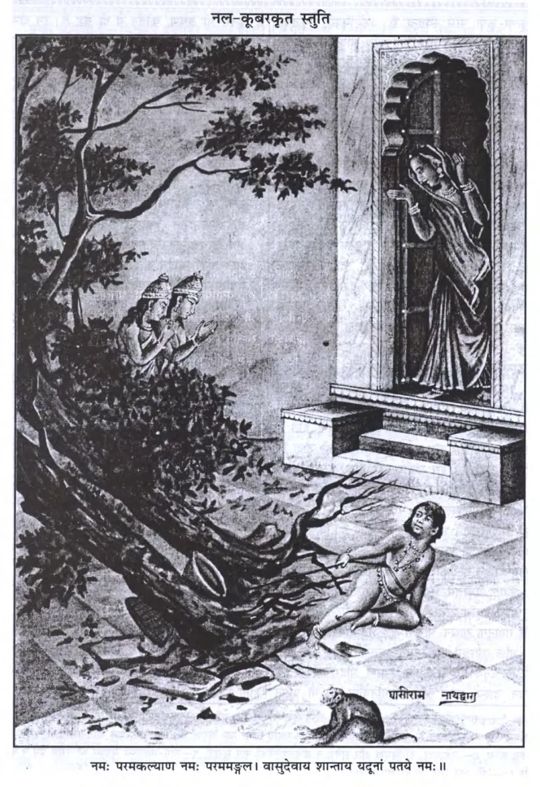
श्रीमन्महाप्रभुके सिद्धान्तमें भक्ति-साधन साध्य नहीं, किन्तु स्वयं सिद्ध है। जिस प्रकार ज्ञान, योग, कर्म आदिके अनुष्ठानमें साधन-साध्य पृथक्-पृथक् होते हैं और साधन अपना फल उत्पन्न कर समाप्त हो जाता है; भक्तिके अनुष्ठानमें इस प्रकार नहीं होता, इसमें साधन ही साध्यरूप धारण कर लेता है। केवल अवस्था-भेद मात्र है। साधनकालमें जो भक्ति क्रियात्मिका होती है, वहीं सिद्धावस्थामें भावात्मिका हो जाती है। क्रियात्मिका साधन-भक्ति दो प्रकारकी होती है-एक वैधी, दूसरी रागानुगा। इन दोनोंका क्रिया-कलाप तो समान ही होता है। केवल प्रवृत्तिमें भेद होता है। वैधी साधन-भक्तिमें मनुष्यकी प्रवृत्ति परतः अर्थात् शास्त्रकी प्रेरणासे होती है और रागानुगा साधन-भक्तिमें वह अनुरागवश स्वयं होती है। भक्ति-शास्त्रमें इस साधन-भक्तिके अनेक अंग कहे गये हैं, उनमें श्रवण, कीर्तन, स्मरण, पादसेवन, अर्चन, वन्दन, दास्य, सख्य और आत्मनिवेदन ये नौ प्रधान हैं। इनमें भी श्रवण, कीर्तन ये दो श्रेष्ठ हैं। इन दोनोंमें भी कीर्तन सर्वश्रेष्ठ है, क्योंकि इसमें श्रवण, स्मरण आदि अन्य अंगोंका साधन स्वयं हो जाता है। संकीर्तनमें सबसे अधिक विशेषता यह है कि अन्य साधनों द्वारा मनुष्य स्वयं तो लाभ उठा सकता है, परन्तु दूसरोंका कोई उपकार नहीं कर सकता। संकीर्तनसे लता-वृक्ष, कीट-पतङ्ग, पशु-पक्षी पर्यन्तका उद्धार होता है, क्योंकि इनमें स्वयं कीर्तन करनेकी वाक् शक्ति न होनेपर भी, श्रवण-शक्ति विद्यमान है। इसीसे श्रीकृष्ण-नाम-संकीर्तनके सम्बन्धमें श्रीमन्महाप्रभुका प्रथम ही आदेश है—
चेतोदर्पणमार्जनं भवमहा-
दावाग्निनिर्वापणं
श्रेयःकैरवचन्द्रिकावितरणं
विद्यावधूजीवनम्।
आनन्दाम्बुधिवर्द्धनं प्रतिपदं
पूर्णामृतास्वादनं,
सर्वात्मस्नपनं परं विजयते
श्रीकृष्णसंकीर्तनम्॥ १॥
अर्थात् जो चित्तरूप दर्पणका मार्जन करता है, संसाररूप महादावाग्निका शमन करता है, श्रेयरूप कुमुदको विकास करनेवाली चन्द्रिकाका प्रकाश करता है, विद्यावधूका जीवन है, आनन्द-सिन्धुको बढ़ानेवाला है, प्रतिपदमें पूर्णामृतका आस्वादन देता है, एवं आत्माको सर्व प्रकारसे निमग्न करता है, ऐसा श्रीकृष्ण-नाम-संकीर्तन परम विजयको प्राप्त हो।
तात्यर्य यह कि संसारमें पारमार्थिक सिद्धिके जितने भी साधन प्रचलित हैं, उन सब पर सम्यक् प्रकारसे किया हुआ श्रीकृष्ण-कीर्तन ही सर्वोत्कृष्टताको प्राप्त हो। सम्यक प्रकारसे यहाँ नामापराध* रहित होकर अनन्य निष्ठापूर्वक कीर्तन करनेसे अभिप्राय है-भक्त्याभासके अन्तर्गत हरिकीर्तनसे नहीं। परम शब्दसे यह अभिप्राय है कि पारमार्थिक तत्त्व-विचारमें नाम-नामीका अभेद होता है। जिसप्रकार तत्त्व-दृष्टिसे श्रीकृष्ण परम साध्य हैं, उसी प्रकार श्रीकृष्ण-नाम-कीर्तन परम साधन है। इस परम साधनकी सात भूमिकाएँ हैं। साधक इस एक ही साधनसे प्रथम भूमिका पर आरोहण कर क्रमशः चरम भूमिका पर अधिरूढ़ होता है।
* १–सत्पुरुषोंकी निन्दा, २-श्रीशिव और श्रीविष्णुके नामोंमें भेद-बुद्धि, ३-गुरु-निन्दा, ४-शास्त्र-निन्दा, ५-हरि-नाममें अर्थवाद (केवल स्तुतिमात्र है ऐसी) कल्पना, ६-नामका सहारा लेकर पाप करना, ७-धर्म, व्रत, दान और यज्ञादिकी नामके साथ तुलना करना, ८-अश्रद्धालु, हरिविमुख और सुनना न चाहनेवालोंको नाम सुनाना, ९-नाम-माहात्म्य सुनकर भी उसमें प्रेम न करना और १०-'मैं' और 'मेरे'में ही लगे रहना।
प्रथम भूमिका है—चित्तरूप दर्पणका मार्जन होना। स्वच्छ दर्पणमें ही हमारा मुख यथावत् दिखायी देगा-मलिन दर्पणमें मलिन दिखायी देगा। चित्तकी दर्पणसे तुलना की गयी है। जीवात्मा श्रीकृष्णरूप सूर्यका किरणरूप अंश है। अस्मद्-शब्दका वाच्य है। श्रीकृष्णदासाभिमानयुक्त शुद्ध अहंकार ही इसका शुद्ध स्वरूप है। यह स्वरूप निर्मल चित्तमें ही प्रतिविम्बित होता है। आत्मस्वरूप-ज्ञानके विषयमें उपनिषद्में भी लिखा है—'चेतसा वेदितव्यः।' चित्त-दर्पण जब प्राकृतिक मलिनतासे आवृत होता है, तब उसमें देहाभिमानयुक्त अशुद्ध अहंकाररूप आत्माका मलिन स्वरूप प्रतिविम्बित होता है। श्रीकृष्ण-संकीर्तनसे चित्तकी मलिनताका मार्जन होनेपर जीव अपने शुद्ध स्वरूपका दर्शन करता है। शुद्ध स्वरूपके दर्शनसे अपने यथार्थ धर्मका ज्ञान होता है। उस समय सांसारिक प्रवृत्ति श्रीकृष्ण-सेवारूप प्रवृत्तिमें परिणत हो जाती है। यही चित्त-मार्जनका फल है।
द्वितीय भूमिका है—भवरूप महादावाग्निका शमन होना। वनमें वृक्षोंके परस्परके संघर्षसे जो अग्नि प्रज्वलित हो जाता है, उसका नाम दावाग्नि है। इस संसारमें जीवोंको विषय-वासनाओंके पारस्परिक संघर्षसे जो आध्यात्मिक, आधिदैविक और आधिभौतिक ताप उत्पन्न होता है, उसकी दावाग्निसे तुलना की गयी है। जिस प्रकार वनमें चारों ओरसे दावाग्निके प्रज्वलित होने पर, वनके मृगादि पशु उसके तापसे शान्ति पानेके लिये चारों ओर दौड़ते हैं, परन्तु उन्हें शान्ति कहीं भी प्राप्त नहीं होती; शान्ति तभी होती है, जब वृष्टिसे अग्नि बुझता है। इसी प्रकार संसारमें तापत्रयसे तापित जीव सुख-शान्तिके लिये विविध विषयोंकी ओर अग्रसर होता है, किन्तु जिधर जाता है उधर दुःख-ही-दुःख दिखायी देता है। इसे पूर्ण शान्ति तभी मिलती है जब तापत्रयरूप संसारकी महादावाग्निका निर्वाण हो। वह संकीर्तनसे होता है।
तृतीय भूमिका है—जीवके श्रेयरूप कुमुदको विकसित करनेवाली चन्द्रिकाका प्रकाश होना जीव सुखस्वरूप होनेके कारण सर्वदा सुखकी इच्छा करता है। जीवके सांसारिक अर्थात् इन्द्रियजन्य सुखका नाम है 'प्रेय'। और पारमार्थिक अर्थात् आत्मसुखका नाम है 'श्रेय'। इस श्रेयको कुमुद-पुष्पसे उपमा दी गयी है। कुमुद-पुष्प दिनमें सूर्यके तापसे मुकुलित (बन्द) रहता है और रातमें चन्द्रमाकी शीतल चाँदनी पाकर खिल जाता है। जड़बद्ध जीवका आत्मसुखरूप श्रेय-कुमुद भी तापत्रयके सन्तापसे मुकुलायमान रहता है, श्रीकृष्णनाम चन्द्रमाका संकीर्तनरूपसे उदय होनेपर, जब भाव-चन्द्रिकाका प्रकाश होता है, तब इसका विकास होता है।
चतुर्थ भूमिका है—विद्यावधूके जीवनका सञ्चार। ज्ञानस्वरूप जीवकी विद्या ही परम परिचारिका है। इसीसे इसे वधू-शब्दसे संकेत किया गया है। विद्या दो प्रकारकी है—एक अपरा, दूसरी परा। अपराके द्वारा क्षर-वस्तुओंका ज्ञान होता है। पराके द्वारा अक्षर-तत्वका ज्ञान होता है। 'अक्षरं ब्रह्म परमं' इस भगवत्-वाक्यके अनुसार परम ब्रह्मका नाम अक्षर है। ब्रह्मके आधारस्वरूप श्रीकृष्ण ही परम ब्रह्म हैं। श्रीकृष्ण कितने और क्या वस्तु हैं, यह ज्ञान तत्त्वतः (पूर्णरूपसे) बिना भक्तिके नहीं होता। भक्ति ही विद्याका जीवन है, जो कि नामसंकीर्तनद्वारा सञ्चारित होता है।
पञ्चम भूमिका है—आनन्दसिन्धुका उमगना। जीव आनन्दसिन्धु श्रीकृष्णका एक क्षुद्रातिक्षुद्र कण है। क्षुद्रताके कारण इसमें आनन्दकी मात्रा अति अल्प है, इसीसे यह बद्धावस्थामें अपनेसे भिन्न वस्तुओंमें आनन्दका अनुसन्धान करता है। किन्तु निरानन्द वस्तुओंमें आनन्द कहाँ? आनन्द तो अपने आत्मामें है। श्रीकृष्णनाम-संकीर्तनके द्वारा आत्माका अल्पानन्द भी समुद्रके समान निरतिशयताको प्राप्त करता है।
षष्ठ भूमिका है—प्रतिपदमें पूर्णामृतका आस्वादन होना। सम्पूर्ण रसस्वरूप श्रीकृष्ण ही जीवके परमोपास्य हैं। पूर्णरसमयी भक्ति ही उनकी परमोपासना है। इस सरस उपासनाके माधुर्यका आस्वादन रसिक उपासकोंको श्रीकृष्णनाम-कीर्तनके प्रतिपदमें पूर्णरूपसे प्राप्त होता है। जो व्यतिरेक चिन्ताशील उपासक ज्ञानयोगादि नीरस उपासना द्वारा खण्डबोधपूर्वक श्रीकृष्णांग-ज्योति ब्रह्म एवं ब्रह्माण्डान्तर्गत श्रीकृष्णांश परमात्माके अनुसन्धानमें प्रवृत्त होते हैं, उनका आस्वादन अपूर्ण होता है।
सप्तम भूमिका है—आत्माका सर्व प्रकारसे स्नपन होना। स्नपन-शब्दका अर्थ स्नान है। जिस प्रकार स्नानसे शरीर निर्मल, स्निग्ध (चिकना) एवं स्वस्थ होता है, उसी प्रकार श्रीकृष्णनाम-संकीर्तनसे आत्मा मायामलसे रहित एवं कृष्णस्नेहसे स्निग्ध हो, श्रीकृष्णदास्यरूप अपने शुद्ध स्वरूपमें स्थित होता है।
श्रीभगवान् जीवोंको जो उपदेश देते हैं उनके तीन प्रकार हैं—एक परोक्षभावसे, दूसरे प्रत्यक्षरूपसे एवं तीसरे आत्मनिर्देशसे। जो उपदेश-वाक्य प्रथम पुरुषके उद्देश्यसे कहे जाते हैं वे परोक्ष कहाते हैं, जैसे कि नानृतं वदेत्' 'मा हिंस्यात् सर्वा भूतानि' जो मध्यम पुरुषके उद्देश्यसे उपदिष्ट होते हैं वे प्रत्यक्ष कहाते हैं, जैसे वरुणं स्तुहि, समिधमाधेहि। और जो उत्तम-पुरुषके लिये प्रयुक्त होते हैं वे आत्मनिर्देशसे हैं, जैसे 'अग्निमीडे पुरोहितं।' इस मन्त्रमें ईडे क्रियाका कर्ता अहं है। भगवान् अग्निकी स्तुति स्वयं नहीं करते; किन्तु आत्मनिर्देशसे जीवोंको अग्निकी स्तुतिका उपदेश देते हैं।
श्रीमन्महाप्रभु श्रीकृष्णनाम-कीर्तनका परमोत्कर्ष प्रतिपादन कर, अब भगवत्-कृपा द्वारा भक्तिसाधनकी सुलभता प्रदर्शनपूर्वक, जीवोंके दैवदुर्विपाकका वर्णन करते हुए लोकशिक्षाके निमित्त आत्मनिर्देशसे भगवान्से विनय करते हैं—
नाम्नामकारिबहुधा निजसर्वशक्ति-
स्तत्रार्पिता नियमितः स्मरणे न कालः।
एतादृशी तव कृपा भगवन्! ममापि
दुर्दैवमीदृशमिहाजनि नानुरागः॥ २॥
हे भगवन्! आपकी तो इतनी कृपा है कि आपने अपने अनेक नाम प्रकाशित कर उनमें अपनी सम्पूर्ण शक्ति समर्पित कर दी है और उनके स्मरणका भी कोई काल नियत नहीं किया, परन्तु मेरा दुर्दैव ऐसा है कि उनमें मेरा अनुराग ही नहीं होता।
तात्पर्य यह कि भगवान् परम दयालु हैं। वे मनुष्योंकी परिस्थितिके अनुसार ही अपनी प्राप्तिके साधनोंकी व्यवस्था प्रतियुगमें किया करते हैं। इस युगमें मनुष्य श्रीहरिनामके आश्रयसे ही भगवान्को प्राप्त कर सकते हैं। मानवगण विभिन्न रुचिके कारण कुछ तो प्रकाशमयी भक्तिका अवलम्बन करते हैं, कुछ आभासमयीका। भगवान्ने उभय श्रेणीके साधकोंकी सुविधाके लिये मुख्य-गौण-भेदसे अपने अनन्त नाम प्रकाशित कर उनमें अपनी मुख्य-गौण दोनों प्रकारकी समस्त शक्तियाँ निहित कर दी हैं। जो नाम भगवान्के स्वरूप और तत्त्वको प्रकाशित करते हैं, वे मुख्य हैं, जैसे कृष्ण, गोविन्द, राम, हरि, विष्णु, आदि। और जो नाम गुणोंको प्रकाशित करते हैं वे गौण हैं जैसे ब्रह्म, परमात्मा, स्रष्टा, नियन्ता, पाता, ईश्वर आदि। इसके अतिरिक्त नामोंको देश, काल, पात्रके अधीन भी नहीं रक्खा। सब जगह सब समय सभी मनुष्य इसका स्मरण कर सकते हैं। इस प्रकार साधनकी सुविधा होते हुए भी दुर्दैववश अनेक मनुष्योंका नाममें अनुराग नहीं होता। यहाँ दुर्दैवसे नामापराध जानना चाहिये। नामापराधोंको गुरुदेवसे जानकर उनका यत्नपूर्वक वर्जन करना चाहिये। नामापराधरहित होनेपर ही नामानुराग उदय होता है।
भक्ति साधनकी सुलभता बताकर, अब उसकी रीतिका उपदेश करते हैं:—
तृणादपि सुनीचेन तरोरपि सहिष्णुना।
अमानिना मानदेन कीर्तनीयः सदा हरिः॥ ३॥
अपनेको तृणसे भी अति नीच मान, वृक्ष समान सहनशील बन, अपने मानकी वासना त्यागकर दूसरोंका सम्मान करते हुए सर्वदा हरिकीर्तन करना चाहिये।
तात्पर्य यह कि जीव स्वरूपतः क्षुद्रातिक्षुद्र तत्त्व है। क्षुद्रतावशतः ही श्रीकृष्णका भोग्य है। भोग्य होनेके कारण श्रीकृष्ण-दासता इसका चित्तत्वगत स्वाभाविक स्वधर्म है। जड़वद्ध-अवस्थामें यह स्वधर्मको विस्मृत हो, अपने आपको सांसारिक विषयोंका भोक्ता मानने लगता है। इससे उसकी सहनशीलता नष्ट हो जाती है-ईर्षा-द्वेष, मद-मात्सर्य, स्पर्धा-असूया आदि दुर्वृत्तियाँ प्रबल हो उठती हैं—मैं ही ईश्वर हूँ, मैं ही भोक्ता हूँ, मैं ही सिद्ध हूँ, मैं बलवान् हूँ, मैं सुखी हूँ, मैं धनवान् हूँ, मैं कुलीन हूँ, मेरे समान दूसरा कौन है इत्यादि प्राकृतिक अभिमानसे युक्त हो, अपने आपको सर्वश्रेष्ठ एवं दूसरोंको अति तुच्छ मानने लगता है। यह जीवका अस्वस्थ लक्षण है। जिस प्रकार ज्वराक्रान्त व्यक्तिकी भोजनमें रुचि नहीं होती, उसी प्रकार स्वधर्मभ्रष्ट अस्वस्थ जीवकी श्रीकृष्ण-भजनमें प्रवृत्ति नहीं होती। श्रीमन्महाप्रभु पुनः स्वस्थता सम्प्रदानके अभिप्रायसे जगत्गत जीवोंको प्राकृतिक दृष्टान्तद्वारा आदेश करते हैं कि साधक अपनेको तृणसे भी तुच्छ समझे अर्थात् संसारमें एक छोटासा तिनका अपने स्वरूपमें स्थित है, किन्तु हम उससे भी नीच हैं जो अपने स्वरूपको भूले हुए हैं। इस विचारसे पुनः विस्मृत स्वरूपकी स्मृति होने लगेगी। वृक्षके समान सहनशील होना चाहिये अर्थात् जिस प्रकार वृक्ष धूप, वर्षा, हिम आदिको सहन करता हुआ, अपने काटनेवालेको भी फल, पुष्प, पत्र, काठ आदि प्रदान कर उसका उपकार करता है, इसी प्रकार कीर्तनकारी भक्त साधकको भी शीतोष्णादि तितिक्षापूर्वक यथासाध्य अपने अनिष्टकारीका भी कल्याण-साधन करते रहना चाहिये। स्वयं निरभिमान या मान-वासनासे सर्वथा रहित हो, अन्य लोगोंका यथायोग्य सम्मान करते रहना चाहिये अर्थात् देहात्मबुद्धिके कारण जो कुलाभिमान, पदाभिमान, धनाभिमान, बलाभिमान, रूपाभिमान, वर्णाभिमान, आश्रमाभिमान आदि विपरीताभिमान हैं, उनको या इनके द्वारा मान प्राप्त करनेकी जो वासना है, उसको पूर्णरूपसे परित्याग कर अन्यत्र सर्वत्र सम्मानबुद्धि रखनी चाहिये। अन्यत्र सम्मानबुद्धिसे यह अभिप्राय है कि, सर्वत्र श्रीकृष्णाधिष्ठान मानकर सम्मान करनेसे स्वधर्मकी स्फूर्ति होगी, स्वरूपगत स्वस्थता प्राप्त होगी एवं श्रीकृष्ण-कीर्तनमें अभिरुचि होगी।
श्रीमन्महाप्रभु अब उक्त प्रकारसे श्रीकृष्णनामकीर्तनकारी भक्तकी वाञ्छाका निदर्शन कराते हैं—
न धनं न जनं न सुन्दरीं
कविता वा जगदीश कामये।
मम जन्मनि जन्मनीश्वरे
भवताद्भक्तिरहैतुकी त्वयि॥ ४॥
हे जगदीश! न मैं धन चाहता हूँ, न मैं जन चाहता हूँ, न मैं सुन्दरी कविता चाहता हूँ-चाहता हूँ केवल, प्राणेश्वर आपके चरणोंमें मेरी जन्म-जन्ममें अहैतुकी भक्ति हो।
तात्पर्य यह कि जीव जब कृष्णदास्यरूप स्वधर्मज्ञानपूर्वक अपनेको भोग्यवस्तु मानता है, तब एकमात्र श्रीकृष्णको ही समस्त चराचर जगत्का भोक्ता जानता है। इसीसे यहाँ श्रीकृष्णको जगदीश-शब्दसे सम्बोधित किया है। इस अवस्थामें जीवकी समस्त निज भोग-वासना तिरोहित हो जाती है—इस समय न तो यह पारलौकिक सुखके साधन धर्मरूप धनकी इच्छा करता है, न सांसारिक सुखके साधन अर्थ-रूप धनकी स्पृहा रखता है और न पुत्र-कलत्रादि आत्मीय जनोंकी ही कामना करता है। धर्मअर्थके अतिरिक्त प्राकृतिक विद्यायुक्त व्यक्तियोंका एक और भी सुखका साधन है-सुन्दरी कविताद्वारा काव्यामृतका पान। शुद्ध भक्त इसकी भी वाञ्छा नहीं करता। वह चाहता है, केवल जन्म-जन्ममें अपने प्राणेश्वरके चरणोंमें अहैतुकी भक्ति। जन्म-जन्ममें अहैतुकी भक्ति कहनेसे मुमुक्षुतापर्यन्तका निरसन किया गया है। मोक्ष, जब कि भक्तिका एक अवश्यंभावी आनुषङ्गिक फल है, तब उसके लिये पृथक् इच्छा या चेष्टा करना व्यर्थ है, वह तो भक्तिकी विशुद्धताको दूषित करना है।
इसके अनन्तर श्रीमन्महाप्रभु जीवकी स्वरूपभूता दीनतामयी कृपा प्रार्थनाद्वारा भक्तके स्वरूपका परिचय कराते हैं—
अयि नन्दतनूज! किंकरं
पतितं मां विषमे भवाम्बुधौ।
कृपया तव पादपंकज
स्थित धूलीसदृशं विचिन्तय॥ ५॥
हे नन्दतनुज! विषय-संसार-समुद्रमें पड़े हुए मुझ किंकरको, कृपा कर अपने पादपङ्कजकी धूलिके सदृश जानिये।
तात्पर्य यह कि, जीव जबतक देहात्मबुद्धिके कारण अपनेको भोक्ता मानता है तबतक संसारको अपना भोग्य समझता है और जब हरि-गुरु-कृपासे भक्ति-साधन करते-करते उसके देहात्मबुद्धिरूप विवर्तका विनाश हो जाता है, तब उसे श्रीकृष्णकिंकररूप स्वस्वरूपका ज्ञान हो जाता है। उस समय उसे संसार एक विषम समुद्रके समान प्रतीत होने लगता है। उस समय वह भगवान्से यही प्रार्थना करता है कि मैं आपका दास हूँ-मुझे आप कृपाकर अपने चरणकमलके रजकणके समान जानें—अर्थात् मैं आपसे नित्ययुक्त हूँ। इस समय साधनका बल भी शिथिल हो जाता है, केवल कृपाका ही आश्रय रहता है।
अब आप लालसामयी प्रार्थना द्वारा भक्ति-सिद्धिके बाह्य लक्षणोंका निरूपण करते हैं—
नयनं गलदश्रुधारया
वदनं गद्गदरुद्धया गिरा।
पुलकैर्निचितं वपुः कदा
तव नामग्रहणे भविष्यति॥ ६॥
तुम्हारा नाम ग्रहण करते समय मेरे नयन अश्रुधारासे, मुख गद्गद गिरासे एवं शरीर पुलकावलीसे युक्त कब होगा?
तात्पर्य यह कि, भक्त जब साधन-भक्तिके अधिकारसे उठकर भाव-भक्तिके अधिकारमें प्रवेश करता है तब उसके शरीरमें भक्ति-सिद्धिके लक्षण-स्वरूप कुछ बाह्य चिह्न लक्षित होने लगते हैं—नेत्रोंसे अश्रुपात होने लगता है, वाणी गद्गद् हो जाती है, और देह रोमाञ्चित हो जाता है। अश्रुपात तीन कारणोंसे होते हैं—पश्चात्तापसे, विरहसे एवं आनन्दसे, साधक जब साधु-सङ्गरूप सौभाग्यसे श्रीकृष्णसेवा-विमुखताके लिये पश्चात्ताप करता है, तब दुःख-सलिल उसके कलुषित हृदयको प्रक्षालन कर नयनोंद्वारा विनिर्गत होता है, प्रक्षालित हृदयमें श्रीकृष्ण-स्मृति अति सत्त्वर जागृत हो उठती है। स्मृतिद्वारा श्रीकृष्ण-विरहाग्नि प्रबलरूपसे प्रज्वलित हो उस हृदयको द्रवीभूत कर देता है। द्रवीभूत हृदय समुद्रके समान अगाध और अपार होता है। इसमें विचित्र विचार और विविध भावोंकी तरङ्गें सर्वदा उठती रहती हैं। इसमें विष और अमृतका एकत्र समावेश रहता है। श्रीकृष्णमिलनकी निराशा विष है और उसकी आशा ही अमृत है। जब श्रीकृष्णकी ऐश्वर्यपूर्ण महिमाका यह विचार आता है कि वे ज्ञानके अतीत हैं, मन-वाणीके अगोचर हैं, अनन्त कोटि विश्व-ब्रह्माण्डके नायक हैं; तब अपनी छुद्रताकी ओर दृष्टिपात करनेसे यह निराशा उत्पन्न हो जाती है कि हमारे लिये उनका मिलना कठिन ही नहीं, किन्तु असम्भव है—इस समय हृदय-द्रव एक पुकारके उष्ण अश्रुओंके रूपमें निर्गलित होने लगता है और जिस समय उनकी माधुर्यमयी उदारताका भाव आता है कि वे परम दीनबन्धु हैं, करुणासागर हैं, तब अपनी दीनताका लक्ष्य कर आशाका उदय हो जाता है जिससे अपार आनन्द होता है। भक्तवर श्रीजगन्नाथ सेन भी श्रीकृष्णसे यही बात कहते हैं—
दीनबन्धुरिति नाम ते स्मरन्,
यादवेन्द्र! पतितोऽहमुत्सहे।
भक्तवत्सलतया त्वयि श्रुते
मामकं हृदयमाशु कंपते॥
अर्थात्—हे यादवेन्द्र! मैं पतित आपके दीनबन्धु नामका जब स्मरण करता हूँ तब उत्साहित हो उठता हूँ। और जब यह सुनता हूँ कि आप भक्त-वत्सल हैं तब मेरा हृदय उसी समय काँप उठता है—क्योंकि मैं भक्त तो हूँ नहीं।
जब आनन्दका उद्रेक होता है, तब वह सब ओरसे निकतनेका यत्न करता है—नेत्रोंसे अश्रुधाराके रूपमें, कण्ठसे गद्गद् गिराके रूपमें एवं प्रत्येक रोमकूपसे रोमाञ्चके रूपमें बहिर्गत होता है।
इसके अनन्तर श्रीश्रीमहाप्रभु विरहकी पराकाष्ठा प्रदर्शनपूर्वक भक्ति-सिद्धिके अन्तरङ्ग लक्षणको लक्षित कराते हैं—
युगायितं निमेषेण चक्षुषा प्रावृषायितम्।
शून्यायितं जगत्सर्वं गोविन्दविरहेण मे॥ ७॥
अर्थात्-गोविन्द-विरहमें मेरा निमेषकाल युगके समान व्यतीत होता है, मेरी आँखोंने वर्षा ऋतुका रूप धारण किया है एवं समस्त जगत मुझे शून्य-सा प्रतीत होता है।
तात्पर्य यह कि, जब भक्ति, भावावस्थासे प्रेमदशामें परिणत होती है, तब वह स्थायीभाव धारण कर रसवती बन जाती है। भक्तिरस गौण-मुख्य-भेदसे दो प्रकारके हैं। इनमें गौण-रस-हास्य, अद्भुत, वीर, करुण, रौद्र, भयानक और वीभत्स-भेदसे सात प्रकारका है और मुख्य-रस-शान्त, दास्य, सख्य, वात्सल्य और मधुर-भेदसे पाँच प्रकारका है। मुख्य-रस प्रणय, मान, स्नेह, राग, अनुराग एवं महाभाव पर्यन्त उन्नति करता है। प्रणयको छोड़कर मानसे महाभाव तक मधुर-रसमें ही उन्नत होते हैं। इस मधुर-रसकी दो अवस्थाएँ हैं—एक सम्भोग अवस्था, दूसरी विप्रलम्भ अवस्था। प्रियतमसे मिलन-अवस्थाका नाम सम्भोग है और उसकी विरहावस्थाका नाम विप्रलम्भ है। जगत्गत साधक जीवोंके लिये विप्रलम्भ अवस्था ही अधिक आनन्द दायक है, क्योंकि इसमें श्रीकृष्ण-स्मृति निरन्तर जागृत रहती है। पद्यावलीमें श्रीरूप गोस्वामिपादने लिखा भी है—
संगमविरहविकल्पे
वरमिहविरहो न संगमस्तस्य।
एकः स एव संगे
त्रिभुवनमपि तन्मयं विरहे॥
अर्थात्-संगम और विरह, दोनोंमें विरह ही श्रेष्ठ है, क्योंकि संगममें तो प्रियतम एक ही होता है और विरहमें वह तीनों भुवनमें तन्मय हो जाता है।
विप्रलम्भ-अवस्थामें क्षणकाल महान् बन जाता है। हृदयकी तरलता नयनों द्वारा विगलित हो, उन्हें वर्षाऋतुका रूप प्रदान करती है। अखिल विश्वकी बाह्य प्रतीति नष्ट हो जाती है। यह भक्ति-सिद्धिका अन्तर्लक्षण है।
अब शेषमें विप्रलम्भविग्रह श्रीमन्महाप्रभु प्रेमनिष्ठाकी पराकाष्ठा अर्थात् उसका विशुद्ध स्वरूप प्रदर्शन कराते हैं—
आश्लिष्य वा पादरतां पिनष्टु मा-
मदर्शनान्मर्महतां करोतु वा।
यथा तथा वा विदधातु लम्पटो,
मत्प्राणनाथस्तु स एव नापरः॥ ८॥
वह लम्पट मुझ चरणदासीको चाहे आलिंगन करे, चाहे पैरोंसे कुचले और चाहे दर्शन न देकर मेरे मनको दुःख दे—जो चाहे सो करे; किन्तु मेरा तो प्राणनाथ उसके अतिरिक्त दूसरा कोई नहीं है!
तात्पर्य यह कि, जीव जब श्रीकृष्णदास्यरूप स्वधर्ममें स्थित हो प्रेमाकर्षणरूप स्वधर्ममें रत होता है, तब वह न तो सुखकी अपेक्षा करता है और न दुःखकी उपेक्षा करता है। उस समय उसकी एकमात्र श्रीकृष्णमें ही अनन्य ममता होनेके कारण, वह उन्हींको अपना प्राणपति जानता है। उनके चरणोंमें अपना सर्वस्व समर्पण कर देता है। उन्हींके सुखमें अपना पूर्ण सुख मानता है। यह भोगोन्मुख सुख नहीं है, यह 'तत्सुखसुखित्व' त्यागोन्मुख सुख है। इस सुखकी वाञ्छाका नाम काम नहीं है—यही प्रेमका विशुद्ध स्वरूप है। इसमें निज सुखकी इच्छा नहीं होती, इसमें समस्त सुख प्राणनाथकी प्रसन्नताके लिये परित्याग करने पड़ते हैं। श्रीकृष्ण जीवके इस विशुद्ध प्रेमके लिप्सु हैं, अर्थात् वे चाहते हैं कि जीव हमसे इसी प्रकारसे प्रेम करे-इसीसे श्रीमन्महाप्रभुने यहाँ श्रीकृष्णके लिये 'लम्पट' शब्दका प्रयोग किया है। जीव श्रीकृष्णकी एक शक्ति है, इसीसे यहाँ अपनेको स्त्रीत्वाभिमानयुक्त दासी कहकर परिचय दिया है। शक्ति सर्वदा शक्तिमान्के अधीन रहती है, अतएव जीवका पति श्रीकृष्णके अतिरिक्त और कोई है भी नहीं।
अखिल रसामृतमूर्ति श्रीकृष्णने श्रीराधाभावसे विभावित हो, अपनी अनर्पितपूर्वा, उन्नतोज्ज्वलरस-पूर्णा भक्ति, जीवोंको वितरण करनेके निमित्त, विप्रलम्भ-वपु धारण कर श्रीश्रीकृष्ण-चैतन्यरूपसे जो प्रेमका प्रत्यक्ष आदर्श और उपदेश उपस्थित किया है, जगत्गत जीवसमुदाय उसीका अनुसरण कर, विशुद्ध, श्रीकृष्ण-भक्त बन जाय यही नितान्त वासना है, यही एकान्त प्रार्थना है।
श्रीकृष्ण-किंकर-बालकृष्ण
हरि-दर्शनका सुख
जब हरि-चरण हृदयमहँ आवै।
पातक जनम-जनमके संचित,
छिनमहँ सकल नशावै॥
लेश न शेष रहत दुख-दारिद,
शोक समूल बहावै।
धीरज क्षमा शान्ति करुणादिक
आपु सकल चलि आवै॥
बिन ही साधै यम-नियमादिक
योग अंग सधि जावै।
परम प्रमाथी प्रबल प्राण मन
अनायास ठहरावै॥
बरसत नयन द्रवत हिय अम्बुज
रोम रोम पुलकावै।
गदगद वचन कढ़त नहिं मुखसौं
बार-बार मुसकावै॥
छिन-छिन उठत लहर आनँदकी
तनकी सुधि बिसरावै।
'चन्द्रकला' सुख हरि-दरसनको
कैसे बरणि सुनावै॥
चन्द्रकला
श्रीरामजी और श्रीकृष्णजी
(लेखक-श्रीमन्त यादवशङ्करजी जामदार, रिटायर्ड सबजज)
श्रीसूतजीने श्रीमद्भागवतमें कहा है—
'एते चांशकलाः पुंसः कृष्णस्तु भगवान् स्वयम्।
इस वचनसे यह स्पष्ट होता है कि भगवान्ने यदि अपने किसी अवतारमें अपने भगवान् होनेको साफ-साफ प्रकट किया है तो वह केवल श्रीकृष्णावतारमें। अन्य अवतारोमें उन्होंने इस भेदको इस प्रकार नहीं खोला। कहा जा सकता है कि यह वचन भी 'व्रतानामुत्तमं व्रतं' की भाँति साम्प्रदायिक अभिमानसे श्रीरामावतारके महत्वको घटाने और श्रीकृष्णावतारके महत्त्वको बढ़ानेके उद्देश्यसे कहा गया प्रतीत होता है। पर, इसपर हमारा कहना यह है कि अवतारोंके महत्वको घटाना-बढ़ाना मानवीय बुद्धिके लिये सर्वदा असम्भव है। भगवान्के महत्त्वको भला कोई क्या घटा-बढ़ा सकेगा? पूर्णके अंश या कलाकी कल्पनासे उसके पूर्णत्वमें कुछ भी अन्तर नहीं पड़ सकता, प्रत्युत वह कला और अंश भी पूर्ण ही माना जायगा। साम्प्रदायिकताके सम्बन्धमें आक्षेप करनेवालोंको आक्षेप करनेके साथ-साथ यह भी सप्रमाण बतलाना चाहिये कि पौराणिक सूतजी किस सम्प्रदायके थे और वह सम्प्रदाय कैसा था या है। हमारी समझसे इसका उत्तर कोई आक्षेपक नहीं दे सकता और जबतक ऐसा न किया जाय, तबतक साम्प्रदायिक अभिमानकी बात कहना बिलकुल व्यर्थ है। इस विषयमें समर्थ श्रीरामदास स्वामी अपनी अधिकारयुक्त वाणीसे कहते हैं—
सत्याचा जो साभिमान, तो जाणावा निरभिमान।
न्याय अन्याय समान कदापि नह्वे॥
(दासबोध १८। २। २७)
यानी सत्यका जो अभिमान है उसे अभिमान नहीं समझना चाहिये। न्याय और अन्यायका स्थान बराबर कदापि नहीं हो सकता। इसलिये आक्षेप करनेवाले कोई सज्जन जबतक यह नहीं बतलाते कि सूत अमुक सम्प्रदायके थे, तबतक रामदास स्वामीकी उक्तिके अनुसार, पौराणिक सूतमें यदि अभिमान रहा भी हो तो भी उन्हें निरभिमान समझना ही न्यायसङ्गत है। अस्तु।
ऊपर कही हुई भागवतोक्तिका रहस्य अवतारोंका घट-बढ़ बतलाना नहीं मालूम पड़ता, बल्कि इसका आशय केवल अवतारोंकी कार्य-पद्धतिको बतलाना था। इस उक्तिमें आये हुए 'भगवान्' शब्दसे श्रीसूतजीका आशय हमें केवल इतना ही जान पड़ता है कि भगवदीय ऐश्वर्यका जो सार्वजनिक प्रदर्शन अन्य किसी भी अवतारमें नहीं हुआ, वह केवल श्रीकृष्णावतारमें हुआ। (उक्त उक्तिके 'कृष्णस्तु' शब्दके 'तु' को ध्यानपूर्वक देखना चाहिये।)
श्रीसूतजीके मतको श्रीशङ्करजीने किस प्रकार प्रामाणिक माना है, इसकी चर्चा करना अति आवश्यक है। अध्यात्मरामायण कहती है—
यः पृथिवीभरवारणाय दिविजैः
सम्प्रार्थितश्चिन्मयः
सञ्जातः पृथिवीतले रविकुले
मायामनुष्योऽव्ययः।
निश्चक्रं हतराक्षसः पुनरगात्
ब्रह्मत्वमाद्यं स्थिरां
कीर्ति पापहरां विहाय जगतां
तं जानकीशं भजे॥*
(अ०रा० बा०का० १। १)
* यह मत प्रायः स्थिर हो चुका है कि अध्यात्मरामायणकी रचना श्रीमद्भागवतके पीछे हुई है।—लेखक
इस अवतरणमें जो 'निश्चक्र' शब्द आया है वह ऐसा महत्त्वपूर्ण है जैसे शरीरमें प्राण। पर मालूम होता है इसके महत्वपर लोगोंका ध्यान नहीं गया। क्योंकि टीकाकारोंने 'चक्र'का अर्थ 'समूह' और 'निश्चक्र'का 'निश्चक्रं निःशेषं' अर्थात् 'समूहका समूल नाश' किया है। और यही अर्थ मान्य समझा जा रहा है।
परन्तु श्रीरामचन्द्रजीने विभीषणको लङ्काका राज्य देकर कुछ अच्छे राक्षसोंको बचा रक्खा था, यह बात जिस प्रकार अन्य सभी रामायणोंको मान्य है उसी प्रकार अध्यात्मरामायणको भी मान्य है। इसीलिये 'निश्चक्र'के उस अर्थमें हमें भूल जान पड़ती है। हमें तो मालूम होता है कि श्रीरामजीके चरित्रकी एक विशेषता दिखलानेके लिये 'निश्चक्र' शब्दका प्रयोग हुआ है। वह विशेषता यह हो सकती है कि श्रीरामचन्द्रजीने अपने अवतारमें 'सुदर्शन-चक्र'का स्मरण नहीं किया। इसीलिये हमें 'निश्चक्र'का यथार्थ अर्थ 'सुदर्शन चक्रके बिना ही' करना ठीक मालूम पड़ता है।
हमारे इस अर्थके सम्बन्धमें भ्रम होनेकी अशंका है, इसलिये यहीं उसका निराकरण कर देना उचित मालूम पड़ता है। 'निश्चक्रं' शब्दका 'सुदर्शनके बिना ही' अर्थ जो हमने किया उससे यह मतलब नहीं निकालना चाहिये कि श्रीरामचन्द्रजीमें सुदर्शन धारण करनेकी शक्ति ही कदाचित् न रही हो। ऐसा अर्थ करना भीषण भूल होगी। हम उसका यथार्थ कारण यह समझते हैं कि भगवान् श्रीराम 'सुदर्शन' को दूर रखकर अपनी उस ईश्वरीय शक्तिको छिपाये हुए थे।
इस बातपर कोई-कोई महाशय यह भी तर्क कर सकते हैं कि जब श्रीरामचन्द्रजीने अपना ईश्वरीय भाव छिपाकर स्वयं ही अपने अवतारकी लघुता सिद्ध कर दी तब फिर उनके अवतारको श्रीकृष्णके अवतारसे घट क्यों न समझा जाय? इस सम्बन्धमें हमारा कहना यह है कि पूर्ण वस्तु कभी अपूर्ण हो नहीं सकती, यह त्रिकालाबाधित सिद्धान्त है। यदि घट-बढ़का भाव लेते हैं तो इस सिद्धान्तका विरोध हो जाता है, और सिद्धान्त-विरोधी बात मान्य नहीं हो सकती। इसके सिवा हम पूछते हैं कि क्या शक्तिको छिपा रखना और शक्तिका प्रभाव दोनों एक ही चीज हैं? तब तो सुप्त शक्तिको 'आकाश-कुसुम'के समान ही समझना चाहिये। हम तो यह समझते हैं कि शक्तिगौरव कार्यगौरवपर ही अवलम्बित रहता है और इसके अनुसार 'निश्चक्रं' से ग्रन्थकारका आशय यही जान पड़ता है कि श्रीरामजीको अपने कार्यक्षेत्रमें (राक्षस-वध करनेमें) कभी इतनी कठिनाई ही नहीं मालूम पड़ी जो उन्हें सुदर्शनचक्र धारण करनेकी आवश्यकता प्रतीत होती। इसीलिये वह सुदर्शनचक्रको छिपाये रहे।*
* श्रीरामके सुदर्शन-चक्रका उपयोग न करनेके कारण जो लोग श्रीराम और श्रीकृष्णमें छोटे-बड़ेका भेद समझते हैं, उन्हें यह सोचना चाहिये कि जिसे द्वापरमें, जिसमें त्रेतासे कम शक्तिशाली लोग थे, सुदर्शनसे काम लेना पड़ा उससे वह छोटा कैसे हो सकता है, जिसने त्रेतामें बिना सुदर्शनके ही बड़ी आसानीसे अपने कार्योंका सम्पादन किया?
अब इस विषयमें मीमांसाको अलग रखकर भागवतकार और अध्यात्मरामायणकारकी तुलनाका सारांश दिया जाता है। रामावतारके सम्बन्धमें भागवतमें श्रीशुकदेवजी साफ कहते हैं कि,—मार्त्यावतारास्त्विह मर्त्यशिक्षणं रक्षोबधायैव न केवलं विभोः। इससे निश्चय होता है कि श्रीरामावतारका मुख्य कार्य लोकशिक्षण था। और इस दशामें निस्त्रैगुण्ये पथि विचरतां को विधिः को निषेधः इस प्रकारके श्रीकृष्णके जीवन और श्रीरामके जीवनमें सादृश्य न होना उचित ही है, इसमें आश्चर्य ही क्या है? श्रीरामचन्द्रजीका जीवन तो 'सर्वात्मना यः सुकृतज्ञमुत्तमम्' (भागवत ५। ५। ५) इस प्रकार मर्यादापुरुषोत्तमका जीवन था, इसलिये लोकसंग्रहका कार्य अधिकांशतः श्रीरामावतारमें ही हुआ।**
** भागवतमें श्रीशुकदेवजी महाराज ही श्रीरामजीके 'लोक-संग्रह' कार्यका समर्थन करते हैं। निम्नलिखित स्तुतिके श्लोकमें भगवान् श्रीरामके विशेषणोंको देखनेसे यह बात स्पष्ट हो जाती है—ऊँ नमो भगवते उत्तमश्लोकाय नम आर्यलक्षणशीलव्रताय नम उपशिक्षितात्मन उपासितलोकाय नमः साधुवादनिकर्षणाय नमो ब्रह्मण्यदेवाय महापुरुषाय महाराजाय नम इति।'
(भा० ५। १९। ३)
अन्तमें निम्नलिखित श्रीराम और श्रीकृष्ण-दिनचर्यासम्बन्धी दो वाक्योंको उद्धृत कर लेख समाप्त किया जाता है। श्रीरामकी जीवनचर्या—
'रामवद्वर्तितव्यं'
श्रीकृष्णजीकी जीवनचर्या—
'ईश्वराणां वचः सत्यं तेषामाचरितं क्वचित्'
(भा० १०-३३-३२)
यमदूत नरकमें किसे ले जाते हैं
यमराज अपने दूतोंसे कहते हैं—
जिह्वा न वक्ति भगवद्गुणनामधेयं,
चेतश्च न स्मरति तच्चरणारविन्दम्।
कृष्णाय नो नमति यच्छिर एकदापि,
तानानयध्वमसतोऽकृतविष्णुकृत्यान्॥
(भा०६।३। २९)
जिनकी जीभ भगवान् श्रीकृष्णके गुण और नामोंका उच्चारण नहीं करती, जिनका चित्त भगवान्के चरण-कमलोंका स्मरण नहीं करता, जिनका सिर कभी श्रीकृष्णके चरणोंमें नहीं झुकता, जो कभी भगवान्की सेवा नहीं करते, ऐसे असत् जीवोंको तुम मेरे पास लाओ!
योगेश्वर श्रीकृष्ण
(लेखक-स्वामी श्रीदयानन्दजी)
रासलीला तथा अन्यान्य प्रकरणोंमें श्रीकृष्ण नामके साथ महर्षि वेदव्यासके द्वारा योगेश्वर' शब्दका प्रयोग होते हुए देखकर साधारण पाठकोंके हृदयमें सन्देह उत्पन्न होता है कि इस प्रकारके पुरुष योगेश्वर कैसे हो सकते हैं। विदेशी लोगोंने तो, भ्रमवश श्रीकृष्ण भगवान् को Incarnation of lust,' अर्थात् कामकलाविस्तारका ही अवतार कह दिया है। हमारे देशके भी कुछ अज्ञ, दुर्बलचेता व्यक्ति इस झगड़ेसे पिण्ड छुड़ानेके लिये झट् से यह फैसला कर देते हैं कि महाभारत और भागवतके कृष्ण भिन्न-भिन्न थे या भागवतके श्रीकृष्ण कोई व्यक्ति थे ही नहीं यह केवल बोपदेवद्वारा रचित काल्पनिक चित्रमात्र है। अतः श्रीकृष्ण भगवान्की योगेश्वर-सत्ताको प्रमाणित करनेके लिये इन दोनों शंकाओंका समाधान करना अत्यावश्यक है।
महाभारतके द्रोणपर्वमें सञ्जयके प्रति धृतराष्ट्रकी जो उक्ति है उसे पढ़नेपर कोई भी यह नहीं कह सकता कि महाभारत और भागवतके श्रीकृष्ण अलग-अलग हैं, यह उक्ति निम्नलिखित है—
शृणु दिव्यानि कर्माणि वासुदेवस्य सञ्जय!
कृतवान् यानि गोविन्दो यथा नान्यः पुमान् क्वचित्॥
गोकुले वर्द्धमानेन बालेनैव महात्मना।
विख्यापितं बलं बाह्वोस्त्रिषु लोकेषु सञ्जय॥
उच्चैःश्रवस्तुल्यबलं वायुवेगसमं जवे।
जघान हयराजं तं यमुनावनवासिनम्॥
प्रलम्बं नरकं जम्भं पीठञ्चापि महाऽसुरम्।
मुरञ्चान्तकसंकाशमवधीत् पुष्करेक्षणः॥
तथा कंसो महातेजा जरासन्धेन पालितः।
विक्रमेणैव कृष्णेन सगणः पातितो रणे॥
चेदिराजं च विक्रान्तं राजसेनापतिं बली।
अर्घ्ये विवदमानं च जघान पशुवत् तदा॥
यच्च तन्महदाश्चर्य्यं सभायां मम सञ्जय।
कृतवान् पुण्डरीकाक्षः कस्तदन्य इहार्हति॥
यमाहुः सर्वपितरं वासुदेवं द्विजातयः।
अपि वा ह्येष पाण्डूनां योत्स्यतेऽर्थाय सञ्जय॥
ततः सर्वान्नरव्याघ्रो हत्वा नरपतीन् रणे।
कौरवांश्च महाबाहुः कुन्त्यै दद्यात् स मेदिनीम्॥
यस्य यन्ता हृषीकेशो योद्धा यस्य धनञ्जयः।
रथस्य तस्य कः संख्ये प्रत्यनीको भवेद् रथः॥
मोहाद् दुर्योधनः कृष्ण यो न वेत्तीह केशवम्।
मोहितो दैवयोगेन मृत्युपाशपुरस्कृतः॥
अर्थात् भगवान् वासुदेव श्रीकृष्णके दिव्य कर्मोंको सुनो, जिनके समान कर्म कोई नहीं कर सकता। जिस समय बाल्यावस्थामें श्रीकृष्ण गोकुलमें थे, उसी समय इनकी अलौकिक शक्ति तीनों लोकोंमें प्रकट हो गयी थी। इन्होंने यमुनावनवासी अति वेगवान् तथा बलवान् हयासुरको मारा था। प्रलम्ब, नरक, जम्भ, पीठ, मुर आदि असुरोंका इन्होंने ही संहार किया था। जरासन्धद्वारा सुरक्षित महाबली कंसराजको सारे पायकों सहित इन्हींने मारा था और युधिष्ठिरके यज्ञमें चेदिराज शिशुपालका पशुकी तरह वध इन्हींने किया था। मेरी सभामें ही इन्होंने जो आश्चर्यजनक कार्य किया था, वैसा दूसरा कौन कर सकता है? जिनको द्विजगण परमपिता परमात्मा कहते हैं, अब वे पाण्डवपक्षमें होकर युद्ध करेंगे और कौरवोंको तथा उनके पक्षवाले राजाओंको मार कर पाण्डवोंको राज्य दिलावेंगे। जहाँपर भगवान् श्रीकृष्ण सारथी और महावीर अर्जुन योद्धा हैं, वहाँ कौन उनके सामने युद्ध कर सकता है? दैवविमूढ़ दुर्योधन श्रीकृष्ण भगवान्के स्वरूपको नहीं जान सका, अतः उसका नाश सन्निकट है।
इससे स्पष्ट सिद्ध होता है कि वृन्दावनकी लीला तथा महाभारतकी लीला करनेवाले भगवान् श्रीकृष्ण दो नहीं, एक ही थे। अब इस प्रकार लीला करनेकी आवश्यकता क्या थी? यह बात पूर्णावतारके स्वरूपपर विचार करनेसे विदित हो जाती है। श्रीभगवान् सत्, चित्, आनन्दके स्वरूप थे, अतः उनके पूर्णावतारमें सत्, चित् तथा आनन्द तीनोंकी लीलाओंका पूर्ण रूपसे प्रकट होना सर्वथा स्वाभाविक एवं अवश्यम्भावी था। सत्के साथ कर्मका, चित्के साथ ज्ञानका और आनन्दके साथ भक्तिका सम्बन्ध है। इसी कारण इनकी लीलामें कर्मयोगका उत्तम आदर्श प्रकट हुआ था, ज्ञानयोगकी प्रत्यक्षमूर्ति गीतोपदेशके रूपमें प्रकट हुई थी और भक्तिके वीर, करुण, हास्य आदि सप्त गौण रसों तथा दास्य, सख्य, कान्त, तन्मय, वात्सल्य आदि सप्त मुख्य रसोंके अनेक स्त्री-पुरुष-भक्तोंने जन्म लेकर रासलीला आदिके द्वारा उस भक्ति-भावमयी लीलाको पूर्ण किया था, जैसा कि भागवतमें आया है—
वसुदेवगृहे साक्षाद् भगवान् पुरुषः परः॥
जनिष्यते तत्प्रियार्थं सम्भवन्तु सुरस्त्रियः॥
कितनी ही सुरलोककी देवियोंने, कितने ही ऋषियोंने गोपीरूपसे जन्म लेकर श्रीभगवान्के साथ रासलीला की थी। अतः रासलीला कामलीला नहीं है, वास्तवमें योगेश्वर भगवान्की योगमयी अति पवित्र लीला है, इसमें अणुमात्र सन्देह नहीं है।
अब लीलास्थलमें जहाँ-जहाँ 'योगेश्वर' शब्द प्रयोग हुआ है, उनका कुछ वर्णन करके इस गम्भीर तथा अलौकिक तत्त्वका थोड़ा-सा दिग्दर्शन कराया जाता है। रासलीलाके समय भगवान्ने कितनी मूर्तियाँ धारण की थीं, इस विषयमें भागवतमें लिखा है—
योगेश्वरेण कृष्णेन तासां मध्ये द्वयोर्द्वयोः।
प्रविष्टेन गृहीतानां कण्ठे स्वनिकटं स्त्रियः॥
श्रीकृष्ण भगवान्ने रासलीला करते समय दो-दो गोपियोंके बीच एक-एक होकर हजारों मूर्तियाँ धारण कर ली थीं और जिस रात्रिको रासलीला हुई थी, उस रातको जो गोपियाँ घरको छोड़कर चली आयी थीं, उन गोपियोंकी भी एक-एक मूर्ति धारण करके उनके पतियोंके पास श्रीभगवान् विद्यमान थे। श्रीमद्भागवतकारका कथन है—
नासूयन्खलु कृष्णाय मोहितास्तस्य मायया।
मन्यमानाः स्वपार्श्वस्थान्स्वान्स्वान्दारान्व्रजौकसः॥
अर्थात् भगवान्की मायासे मुग्ध होकर व्रजके गोपोंने अपने पास अपनी-अपनी स्त्रियोंको देखा था, जिससे उनको नहीं जान पड़ा कि उनकी स्त्रियाँ चली गयी हैं। अतः इससे सिद्ध होता है कि उस रात्रिको भगवान्ने हजारों स्त्रियों और हजारों पुरुषोंका रूप धारण किया था। अब विचार करनेका विषय यह है कि एक स्थूल शरीर और एक सूक्ष्म शरीरसे हजारों स्थूल और हजारों सूक्ष्म शरीर बना लेना अवश्य ही योगशास्त्रका विषय है, परन्तु योगके किस अधिकारमें योगी इस प्रकार बन सकता है? योगदर्शनमें एक सूत्र है—
निर्माणचित्तान्यस्मितामात्रात्।
स्वरूपस्थ जीवन्मुक्त योगी यदि अपने प्रारब्ध कर्मको शीघ्र भोग करके समाप्त करना चाहे तो अनेक स्थूल-शरीर और अनेक सूक्ष्म शरीर धारण करके भोग कर सकता है। उदाहरणार्थ, प्रारब्ध-कर्मके अनुसार किसी योगीकी आयु पचास वर्षकी है, पर वह योगरूपी अपने अलौकिक पुरुषार्थद्वारा तीस वर्षमें जीवन्मुक्त हो गया। परन्तु उसकी निश्चित आयु पचास वर्ष होनेके कारण उसके बीस वर्षमें भोगे जानेवाले प्रारब्ध-कर्म बाकी ही रह जाते हैं। कारण, शास्त्रका निश्चित सिद्धान्त है कि, 'प्रारब्धकर्मणा भोगादेवक्षयः' यानी प्रारब्ध-कर्मोंका क्षय भोगसे ही हो सकता है। पर अब यह बीस वर्षके प्रारब्ध-कर्म वह योगी चाहे बीस वर्षमें भोगे अथवा कम समयमें ही भोग डाले, यह उसकी इच्छापर निर्भर है। यदि वह अपने बीस वर्षके भोगको चार वर्षमें भोग डालना चाहे, तो अपने स्थूल तथा सूक्ष्म शरीरको पाँच-पाँच स्थूल-सूक्ष्म-शरीर बनाकर वह ऐसा बड़े मजेसे कर सकता है। पर ध्यानमें रखनेकी बात यह है कि इस प्रकार एक स्थूल-सूक्ष्म-शरीरसे अनेक स्थूल-सूक्ष्म-शरीर धारण कर लेना उन्हीं योगियोंके लिये सम्भव है जो स्थूल और सूक्ष्म-शरीरके बन्धनोंसे मुक्त हैं, यानी जीवन्मुक्त हैं—सबके लिये नहीं। क्योंकि स्थूल भूतोंको इकट्ठा करके स्थूल-शरीर तभी बनाया जा सकता है जब कि स्थूल भूतोंपर अधिकार जम जाय। उसी प्रकार सूक्ष्म तत्त्वोंको इकट्ठा करके अन्तःकरणादि सूक्ष्म-शरीरको बनाना भी योगीके लिये तभी सम्भव हो सकता है जब कि सूक्ष्म तत्त्वोंपर उसका पूरा अधिकार जम जाय। और स्थूल-सूक्ष्म दोनों तत्त्वोंपर अधिकार तभी जम सकता है कि जब योगी इन दोनों तत्त्वोंसे परे हो जाय; क्योंकि जो जिससे परे है यानी ऊँचा है वही उसपर अधिकार जमा सकता है। कोई विषयी पुरुष ऐसा कदापि नहीं कर सकता। कारण, विषयी लोगोंके आत्मा, उनके मन तथा इन्द्रियों आदिके अधीन होनेके कारण तत्त्वोंपर अधिकार जमानेकी शक्ति उनमें नहीं हो सकती। यह काम तो वीतराग, जितेन्द्रिय परम योगी ही कर सकते हैं, विषयी नहीं। इस प्रकार अब यह सिद्ध हो गया कि भगवान् श्रीकृष्ण सबसे निर्लिप्त, जितेन्द्रिय, परम ज्ञानी और महान् योगी थे; क्योंकि ऐसा न होनेसे वह कदापि स्थूल-सूक्ष्म-तत्त्वोंपर अधिकार जमाकर हजारों स्थूल-सूक्ष्म-शरीर नहीं धारण कर सकते थे। इसलिये जिस रासलीलापर लोग कटाक्ष करते हैं, उसी रासलीलापर विचार करनेसे यह सिद्ध हुआ कि श्रीकृष्णचन्द्रजी पूर्ण जितेन्द्रिय योगी थे, उनमें कामका लेश भी नहीं था। इसीलिये भगवान् श्रीवेदव्यासने कहा है—योगेश्वरेण कृष्णेन यानी योगेश्वर श्रीकृष्णने इतने शरीर धारण किये। बस, योगकी यह अखण्डनीय युक्ति श्रीकृष्ण-चरित्रकी पावनताको प्रमाणित करनेके लिये पर्याप्त है। कारण, यदि पुरुष जितेन्द्रिय हो तो स्त्री उसका क्या कर सकती है? इसलिये गोपियाँ किसी प्रकारकी भी क्यों न हों, इससे श्रीकृष्णचन्द्रजीका कुछ भी बनता-बिगड़ता नहीं था। श्रीमद्भागवतमें लिखा है—
सिषेव आत्मन्यवरुद्धसौरतः।
यानी उन्होंने 'अपनेमें ब्रह्मचर्यको रोककर उनको सन्तुष्ट किया।' श्रीकृष्णचन्द्रजीमें काम नहीं था। वे कैसे थे, यह संसार जानता है। भगवान्ने स्वयं ही गीतामें कहा है कि वे कौन थे—
आपूर्यमाणमचलप्रतिष्ठं
समुद्रमापः प्रविशन्ति यद्वत्।
तद्वत्कामा यं प्रविशन्ति सर्वे
स शान्तिमाप्नोति न कामकामी॥
(भगवद्गीता २। ७०)
जिसप्रकार नदियाँ स्थिर, गम्भीर, पूर्ण और विशाल समुद्रमें प्रवेश करके अपनेको समुद्रमें मिला देती हैं, उनकी पृथक् स्थिति नहीं रहती; उसी प्रकार जिस महान् पुरुषके उदार चित्तरूपी महान् समुद्रमें समस्त कामनाएँ आकर लय हो जायँ, वही शान्तिको प्राप्त करता है, कामनापरायण जीवको शान्ति नहीं मिलती। भगवान् श्रीकृष्णचन्द्र सामान्य कामना-परायण जीवके समान स्त्रियोंको देखकर भाग नहीं जाया करते थे। किसी दूसरेमें कामको देखकर दुर्बलकी तरह भाग जानेवाला मनुष्य पूर्ण कदापि नहीं बन सकता; क्योंकि श्रुतिमें लिखा है—'नायमात्मा बलहीनेन लभ्यः।' दुर्बल मनुष्य आत्माको नहीं प्राप्त कर सकता। श्रीकृष्णका हृदय इस प्रकार तेजस्वी और पूर्ण था कि उसपर अपनी कामनाकी तो बात ही क्या, किसी अन्य व्यक्तिकी भी कामना उनपर प्रभाव—विस्तार नहीं कर सकती थी। उनके सामने आते ही भक्तजनोंकी कामनाएँ समुद्रमें नदी मिलनेकी भाँति लुप्त हो जाती थीं और उन्हें मुक्तिका प्रसाद मिल जाता था।
रास लीलाका वर्णन सुनकर जब महाराजा परीक्षितने शुकदेवजीसे पूछा कि यह कौन-सी बात है कि धर्मके स्थापनके लिये अवतीर्ण हुए भगवान्ने दूसरों की स्त्रियोंके साथ इस प्रकार बर्ताव किया।* तब शुकदेवजीने परीक्षितको श्रीकृष्णचन्द्रजीका यथार्थ रूप समझाकर उनकी समस्त शंकाओंका समाधान कर दिया और मन्दमति कलियुगके जीवोंके लिये भी अपूर्व धर्मका उपदेश किया। यथा—
* राजा परीक्षितने इस व्यवहारको 'परदाराभिमर्षण' नाम दिया है।
धर्मव्यतिक्रमो दृष्ट ईश्वराणां च साहसम्।
तेजीयसां न दोषाय वह्नेः सर्वभुजो यथा॥
नैतत्समाचरेज्जातु मनसाऽपि ह्यनीश्वरः।
विनश्यत्याऽऽचरन्मौढ्याद्यथा रुद्रोऽब्धिजं विषम्॥
कुशलाचरितेनैषामिह स्वार्थो न विद्यते।
विपर्ययेण वाऽनर्थो निरहंकारिणां प्रभो।
किमुताऽखिलसत्त्वानां तिर्यङ्मर्त्यदिवौकसाम्।
ईशितुश्चेशितव्यानां कुशलाऽकुशलान्वयः॥
यत्पादपङ्कजपरागनिषेवतृप्ता
योगप्रभावविधुताऽखिलकर्मबन्धाः।
स्वैरञ्चरन्ति मुनयोऽपि न नह्यमाना-
स्तस्येच्छयात्तवपुषः कुत एव बन्धः॥
गोपीनां तत्पतीनाञ्च सर्वेषामेव देहिनाम्।
योऽन्तश्चरति सोऽध्यक्षः क्रीडनेनेह देहभाक्॥
अनुग्रहाय भक्तानां मानुषं देहमास्थितः।
भजते तादृशीः क्रीडा याः श्रुत्वा तत्परो भवेत्॥
लौकिक जगत्के लिये जो धर्म है, ईश्वरमें उस धर्मका व्यतिक्रम देखनेमें आता है, क्योंकि ईश्वरमें शक्ति अधिक होनेसे साहस भी अधिक है। जिस प्रकार अग्नि समस्त वस्तुओंको दग्ध कर सकती है, उसी प्रकार तेजस्वी पुरुष लोक-धर्म-विरुद्ध आचरणके धक्केको भी सहन कर सकते हैं और इस विरुद्धाचरणका दोष उनको नहीं लग सकता। पर जो ईश्वर नहीं है, उसे इस प्रकारका आचार मनसे भी नहीं करना चाहिये, अन्यथा उसका नाश हो जाता है। जैसे कि श्रीशिवजी विषपान करनेपर भी नीलकण्ठ बने हुए हैं, पर साधारण जीव इससे मर जाते हैं। प्रत्येक धर्म या अधर्म तभीतक जीवको स्पर्श कर सकता है, जबतक जीवका जीवत्व रहे अर्थात् अन्तःकरण, इन्द्रियों और स्थूल शरीरके साथ जीवका अहंभाव या ममता रहे। परन्तु जिस समय ममताके नष्ट होनेसे आत्मा शरीर और मनसे पृथक् हो जाता है, उस समय शुभ या अशुभ कोई भी कर्म जीवको स्पर्श नहीं कर सकता। इसलिये श्रीकृष्णचन्द्र जब साक्षात् नित्य मुक्त परमात्मा थे, स्थूल-सूक्ष्म और कारण-शरीरके साथ उनका कोई ममत्व-सम्बन्ध नहीं था, इससे कुशल या अकुशल कोई भी कार्य उनको स्पर्श नहीं कर सकता था। जो परमात्मा मनुष्य, जन्तु, देवता और समस्त प्राणियोंमें व्यापक, सबके प्रभु और प्रार्थनीय हैं, उनको कुशलाकुशल कैसे स्पर्श कर सकते हैं? जिनके चरण-कमलके प्रभावसे योगीगण कर्म-बन्धनसे मुक्त होकर संसारको पवित्र करते हुए विचरण करते हैं, केवल मायासे शरीर धारण करनेवाले उन निराकार परमात्माको बन्धन कैसे लग सकता है? जो स्वयं बद्ध है, वह दूसरेको मुक्त नहीं कर सकता। शास्त्रोंमें कहा है—'स्वयमसिद्धः कथं परान्साधयति।' स्वयं असिद्ध दूसरोंको सिद्ध नहीं बना सकता। भगवान् श्रीकृष्णचन्द्र यदि स्वयं बद्ध होते तो दूसरोंको मुक्त न कर सकते; परन्तु जब हजारों योगी उनके चरण-कमलोंके प्रतापसे मुक्त हो गये, तब श्रीकृष्णचन्द्र बद्ध नहीं हो सकते। बन्धन हो कैसे? क्योंकि भगवान् गोपियोंके पतियोंमें और सकल जीवोंमें व्यापक सर्वान्तरात्मा थे। उनका शरीर धारण करना केवल भक्तोंपर दया करनेके लिये ही था। पुरुष स्त्रीसे तभी बद्ध हो सकता है, जब वह अपनेको भोक्ता और स्त्रीको भोग्या समझे अर्थात् स्त्रीमें या पुरुषमें परस्पर काम-भोगकी इच्छा तभीतक रह सकती है, जबतक स्त्री अपनेको पुरुषसे और पुरुष अपनेको स्त्रीसे भिन्न समझे। मुक्त पुरुषको कामकी इच्छा नहीं होती। उसका द्वैतरूप अज्ञान नष्ट हो जानेसे वह तो स्त्री-पुरुष सभीको अद्वितीय ब्रह्मरूपमें देखता है और भगवान् श्रीकृष्ण जब परमात्मा थे तो गोप भी वही थे और गोपी भी वे ही। पुरुष-स्त्री सब कुछ वही थे। और इस दशामें जब स्त्री-पुरुष दोनों वही थे तो उनमें किसी स्त्रीके प्रति काम-बुद्धि कैसे हो सकती थी? और जब यह बात भी पहले कही जा चुकी है कि एक ही श्रीकृष्णने रास-लीलाके दिन हजारों स्त्री-पुरुषोंका रूप धारण कर लिया था, तो गोपियोंके प्रति उनका काम-भाव कदापि नहीं हो सकता, क्योंकि काम-भाव अपनेसे पृथक् किसी दूसरेपर होता है, अपना काम-भाव अपनेपर नहीं हो सकता। श्वेताश्वतरोपनिषद्में लिखा है—
त्वं स्त्री त्वं पुमानसि त्वं कुमार उत वा कुमारी।
त्वं जीर्णो दण्डेन वञ्चसि॥
हे भगवन्! तुम स्त्री हो, तुम पुरुष हो..... कुमार हो, तुम कुमारी हो और तुम्ही वृद्ध होकर ही दण्ड ले वञ्चना करते हो।
इस प्रकारसे परमपुरुष सर्वव्यापी अन्तर्यामी भगवान् श्रीकृष्ण स्वयं ही गोपी बनकर, स्वयं ही हजारों रूप धरकर भक्तोंकी यथाधिकार मनोवासना पूर्ण करते हुए, सबके काम-क्रोध, लोभ-मोह, मद-मात्सर्यको अपनेमें लय करते हुए, सभीको परमानन्दमय मुक्ति-पद प्रदान करते थे। उनमें किसीका काम असर नहीं करता था और न उनमें काम ही हुआ करता था। दूसरोंका कठिन काम भी उनमें आकर समुद्रमें नदीके तुल्य लय हो जाता था। यही भगवान् श्रीकृष्णचन्द्रका स्वरूप है।
महाराजा परीक्षितने श्रीमद्भागवतमें सन्देह किया है कि भगवान् श्रीकृष्णचन्द्रजीके प्रति ब्रह्मभावके स्थानमें काम-भाव रहनेपर भी सब गोपियोंकी मुक्ति कैसे हो गयी?
कृष्णं विदुः परं कान्तं न तु ब्रह्मतया मुने।
गुणप्रवाहोपरमस्तासां गुणधियां कथम्॥
इस सन्देहके निवारणार्थ श्रीशुकदेवजीने कहा है—
उक्तं पुरस्तादेतत्ते चैद्यः सिद्धिं यथा गतः।
द्विषन्नपि हृषीकेशं किमुताऽधोक्षजप्रियाः॥
नृणां निःश्रेयसार्थाय व्यक्तिर्भगवतो नृप!
अव्ययस्याऽप्रमेयस्य निर्गुणस्य गुणात्मनः॥
कामं क्रोधं भयं स्नेहमैक्यं सौहृदमेव च।
नित्यं हरौ विदधतो यान्ति तन्मयतां हि ते॥
न चैवं विस्मयः कार्यो भवता भगवत्यजे।
योगेश्वरेश्वरे कृष्णे यत एतद्विमुच्यते॥
जब शिशुपालादिको भगवान्के प्रति द्वेष करनेपर भी सिद्धि प्राप्त हो गयी, तब भगवान्के प्रति शरीर और मनके साथ प्रेम करनेवाली गोपियोंको सिद्धि-प्राप्ति कैसे न होती? और फिर अव्यय, निर्गुण परमात्माका संसारमें प्रकट होना भी तो केवल मनुष्योंको मुक्ति देनेके लिये ही है न? जिस प्रकार अमृतको कोई जानमें पीये या अनजानमें, उससे अमरत्व लाभ तो होता ही है। उसी प्रकार श्रीभगवान्को स्वरूपको जान कर या न जान कर, कैसे भी मनुष्यका प्रेम श्रीभगवान्के प्रति क्यों न हो, सर्वशक्तिमान् श्रीभगवान्की शक्तिसे जीवके समस्त विषय-भाव नष्ट होकर अन्तमें उसे मुक्ति प्राप्त होती है। भगवान्के साथ काम-क्रोध, भय-स्नेह, ऐक्य-मैत्री किसी भी प्रकारका सम्बन्ध क्यों न हो, उस भावमें लगे-लगे अन्तमें जीवकी भगवान्में तन्मयता हो जाती है, जो उसकी सिद्धि-प्राप्तिका कारण बनती है।
कहा है—
सति सक्तो नरो याति सद्भावं ह्येकनिष्ठया।
कीटको भ्रमरं ध्यायन्भ्रमरत्वाय कल्पते॥
जैसे तैलपायी (तिलचट्टा) नामका कीड़ा भ्रमर-कीट (कुम्हार) द्वारा पकड़ जानेपर डरसे उसीकी ही चिन्ता करने लग जाता है और चिन्ता करते-करते स्वयं भ्रमरकीट बन जाता है, उसी प्रकार चाहे किसी भावसे क्यों न हो, श्रीभगवान्का ध्यान करते-करते जीव भगवान्में तन्मय होकर अन्तमें मुक्तिपदको प्राप्त करता है। इसी प्रकारसे शिशुपाल आदिको सिद्धि मिली थी और इसी प्रकारसे गोपियोंको भी मुक्ति मिली। यद्यपि श्रीमद्भागवतके वर्णनसे प्रतीत होता है कि गोपियोंमें स्थूल-शरीरसे श्रीभगवान्के साथ मिलनेकी भी इच्छा होती थी, पर भगवान्का चिन्तन करते-करते उनका चित्त भगवान्में इतना अधिक तन्मय हो जाता था कि शरीर और मनकी चेतना बहुत पीछे रह जाती थी और इसी कारण उनकी काम-वासना भी निष्फल हो जाती थी। क्योंकि जब चित्त शरीर और इन्द्रियोंसे पृथक् होकर श्रीभगवान्में लय हो जाय तो स्थूल-शरीरके भोगका ध्यान ही नहीं रह सकता। पर इस प्रकारसे विषय-भाव छूटकर विषयोंसे अतीत तन्मयताका आना और चरमोन्नति लाभ होना सामान्य पुरुषके साथ प्रेम करनेसे कदापि सम्भव नहीं हो सकता। क्योंकि सामान्य पुरुष प्रकृतिके अधीन होनेके कारण, प्रकृतिको अपनेमें लय करनेकी शक्ति उसमें नहीं होती। यह शक्ति तो समस्त संसारको अपनी ओर आकृष्ट करनेवाले श्रीभगवान्में ही हो सकती है। भगवान् श्रीकृष्णचन्द्र पूर्णावतार होनेके कारण ऐसे ही सर्वशक्तिमान् थे, इसलिये गोपियाँ उनके चरण-कमलका आश्रय करके संसार-समुद्रसे पार हो गयी थीं। गोपियोंकी भगवान् श्रीकृष्णचन्द्रमें तन्मयताके विषयमें श्रीमद्भागवतमें कहा गया है कि—
तानाऽविदन्मय्यनुषङ्गबद्ध-
धियः स्वमात्मानमदस्तथेदम्।
यथा समाधौ मुनयोऽब्धितोये
नद्यः प्रविष्टा इव नामरूपे॥
जिसप्रकार मुनिगणोंका समाधि-दशामें या नदीका समुद्रमें लय होनेसे नामरूपमय द्वैतभाव नष्ट हो जाता है, उसी प्रकार गोपियाँ मुझमें चित्तको प्रेमके साथ ऐसा लय कर देती थीं कि, उनमें द्वैतभाव नहीं रहता था। वे अपनेको पूर्णरूपसे भूल जाती थीं। इस प्रकारकी दशामें स्थूल-शरीरका भान नहीं रहता, इसलिये काम-भाव भी पूर्णरूपसे नष्ट हो जाता है। इस प्रकारसे गोपियाँ शरीर, मन और प्राणसे श्रीभगवान्में प्रीति करके मुक्त हो गयी थीं। इसको एक दृष्टान्तसे समझा जा सकता है। यदि तख्ते और लोहेकी कीलोंसे बनी हुई किसी नावको ऐसे एक समुद्रमें बहा दिया जाय कि जिसके एक तटपर एक बड़ा भारी चुम्बकका पहाड़ हो, तो वह नाव समुद्रमें बहती हुई जब चुम्बकके पहाड़के पास पहुँचेगी, तब चुम्बककी आकर्षण-शक्तिसे समस्त कीलें नावसे खुलकर पहाड़में जाकर लग जायँगी और वह नाव खण्ड-खण्ड होकर समुद्रमें डूब जायगी। ठीक उसी प्रकार गोपियोंने अपनी शरीररूपी नावको जो काम, मोह, अभिमान, अहंकार आदि कीलोंसे बनी हुई थी, भगवान् श्रीकृष्णचन्द्रके प्रेम-समुद्रमें बहा दिया था; और उस प्रेम-समुद्रके किनारेपर चुम्बक-पर्वतरूपी, समस्त संसारको आकर्षण करनेवाले भगवान् श्रीकृष्णचन्द्र थे; इसलिये जिस समय गोपियाँ अपनी शरीररूपी नौकाको प्रेम-समुद्रमें बहाती हुई श्रीकृष्णचन्द्रके पास पहुँचती थीं, तो भगवान्की आकर्षण-शक्तिसे उनकी शरीररूपी नौकाकी काम, मोह, अहंकार आदि समस्त कीलें एक साथ ही निकलकर श्रीकृष्णचन्द्रमें जाकर लय हो जाया करती थीं। और गोपियाँ शारीरिक सुख-भोग, अहंकार, मोह आदि सब कुछ भूलकर भगवान् श्रीकृष्णचन्द्रमें तन्मय हो जाया करती थीं। उनका शरीर प्रेम-समुद्रमें विलीन हो जाता था और उनका द्वैतभाव पूर्णतया नष्ट हो जाता था। इसी प्रकारसे गोपियोंके पूर्वजन्मगत संस्कारका नाश करके भगवान् श्रीकृष्णने उनका उद्धार किया था। यही उनके योगेश्वर नामकी सार्थकता है।
इसके सिवा अपने लीलाकालमें सहस्रों स्त्रियोंके विवाह-विधिसे पति बननेपर भी श्रीभगवान् योगेश्वर ही बने रहे। क्योंकि उनकी तथा सन्तानोंकी उत्पत्ति स्थूल मैथुनी सृष्टिद्वारा न होकर 'मनसा प्रजा असृजन्तः' इस वैदिक सिद्धान्तके अनुसार मानसी सृष्टि द्वारा हुई थी और आसक्ति-शून्य पूर्ण पुरुष भगवान्ने अपने वंशजोंको पीछेसे पाप-प्रबल देखकर अपने ही सामने उनका निधन भी करा दिया था। इस प्रकारसे अनन्त कर्म, अनन्त चेष्टा तथा अनन्त लीलाओंके भीतर भी श्रीभगवान् पूर्ण निश्चिन्त, पूर्ण निर्लिप्त रहकर वंशी-वादन ही करते रहे यही उनका योगेश्वरेश्वर पूर्णस्वरूप है, जिसको जानकर मुमुक्षुगण लीलासे ही संसार सिन्धु-संतरण कर सकते है।
इति शम्
हृदयेच्छा
(लेखक-श्रीदेवीप्रसादजी गुप्त, 'कुसुमाकर', बी० ए०, एल०एल०बी०)
कंसाहारी, हे त्रिपुरारी,
गिरिधारी, घनश्याम हरे!
भव-भय-हारी, कुञ्ज-विहारी,
बनवारी, सुख-धाम हरे!
दया-सिन्धु, जग-तारन, मोहन,
मुरलीधर, नंदलाल हरे!
राधा-वल्लभ, यशुदा-नन्दन,
जग-वन्दन, गोपाल हरे॥ १॥
जिसकी पूर्ति मुझे जीवनमें,
शान्ति दिलानेवाली है।
बड़े यत्नसे मैंने प्रभुवर!
जिस इच्छाको पाली है।
उसको प्रेम मग्न होकर मैं
तुमको आज सुनाता हूँ।
चरणोंपर यह मनकी थाती,
प्रभुवर! आज चढ़ाता हूँ॥ २॥
जीवनकी है साध यही प्रभु!
एक बार दर्शन पाऊँ।
उस झाँकीकी छटा देखकर
मैं विस्मृत मन हो जाऊँ।
चाहे क्षणभर ही वह झाँकी,
मुझको मोहन! दिखलाना।
किन्तु सजीले रङ्ग-रँगीले,
बनकर तुम सन्मुख आना॥ ३॥
मुखपर हो मुसुकान मनोहर,
हँसती-सी मतवाली हो।
नील-कमल-सदृश गालोंपर,
कुछ हल्की-सी लाली हो।
अरुणोदय-सी अधर लालिमा,
मनको हरनेवाली हो।
मदसे भरी आँख कुछ मस्ती,
पैदा करनेवाली हो॥ ४॥
प्रातःकाल बयार बहाकर,
मृदु सुगन्धको लाई हो।
मुरली मधुर तानको लेकर,
कुछ अधरोंतक आई हो।
पास खड़ी वृषभानु किशोरी,
मधुर-मधुर मुसुकाती हो।
जिसके कारण मुरली-ध्वनि कुछ,
कभी-कभी बल खाती हो॥ ५॥
यह सब दृश्य देख रवि-तनया,
हँस-हँसकर बहती जावे।
प्रेम-मग्न होकर कदम्ब तरु,
पुष्प बीचमें बरसावे।
छूट पड़ी होवे फिर मुरली,
राधा झुके उठानेको।
बढ़े नटखटी हाथ तुम्हारे,
गलमाला बन जानेको॥ ६॥
रासलीला
(लेखक-पं० श्रीरामदयाल मजूमदार, एम० ए०)
(१)
श्रीजयदेव-कृत श्रीगीतगोविन्द हरिस्मरणमें मनको सरस करनेवाला है। 'यदि हरिस्मरणे सरसं मनः'—यदि श्रीहरिके स्मरणमें मनको सरस करनेकी इच्छा हो तो श्रीगीतगोविन्द उसकी पूर्ति करनेवाला है। श्रीवैष्णव लोग जिसे रागानुगा भक्ति कहते हैं, वह स्मरणात्मिका है। स्मरण भावनाके राज्यमें ही करना पड़ता है। श्रीजयदेवने इसीलिये गीतगोविन्दमें कुछ चित्र अङ्कित किये हैं—उनमें प्रथम चित्र है—
मेधैर्मेदुरमम्बरं वनभुवः श्यामास्तमालद्रुमैः।
नक्तं भीरुरयं त्वमेव तदिमं राधे गृहं प्रापय॥
प्रथम चित्रका विषय जयदेवके पूर्व ही आलोचित हो चुका है। द्वितीय चित्रमें श्रीजयदेव अङ्कित करते हैं—
वसन्ते वासन्ती कुसुमसुकुमारैरवयवैः।
भ्रमन्ती कान्तारे बहु विहितकृष्णानुसरणम्॥
'भ्रमन्ती कान्तारे' इस चित्रके विषयमें हम अब आलोचना करेंगे। क्या कभी तुमने नित्यक्रियाके अन्तमें गहन वनमें इधर-उधर कृष्णानुसरण किया है? नित्यक्रियामें मानसपूजा तो करते हो, परन्तु क्या कृष्णानुसरण भी होता है? यह जो भावका तनिक-सा आभास हृदयको स्पर्श कर गया, मानो यह वही पाया था। यह क्या था जो एक मेघसे दूसरे मेघमें विद्युत्की गतागतिके सदृश चित्तको उज्ज्वल कर, ग्लानिशून्य सुखसे चित्तको चेतोमुख कर एक क्षणमें ही अदृश्य हो गया—क्या कभी 'हा कृष्ण! कहाँ हो प्यारे कृष्ण!' कहकर कृष्णानुसरण करते हो? यदि नहीं करते तो श्रीजयदेवने जिसप्रकारसे श्रीकृष्णानुसरण करनेके लिये कहा है, सुखासनपर बैठ कर नित्यक्रियाके अन्तमें एक बार वैसे करते क्यों नहीं? करके तो देखो, निश्चय ही मन हरिस्मरणमें सरस हो जायगा।
वसन्तकाल—वासन्ती कुसुमके समान कोमल सुषुमासे पूर्ण शरीरवाली श्रीमती राधिका वन-वन भटकती हुई श्रीकृष्णका अनुसरण कर रही हैं। श्रीमती राधिकाजी श्रीकृष्णका अनुसन्धान कर रही हैं।
रासलीलाके समय भी श्रीमतीने इसी प्रकार अनुसन्धान किया था। परन्तु वह वसन्तकाल नहीं था, वह था शरद्काल। हम रासलीलाके अनुसन्धानकी आलोचना आगे चलकर करेंगे।
इससे पहले एक और विषयको समझ लेना अत्यन्त आवश्यक है। आजकल बहुत-से लोग यह पूछते हैं कि श्रीवृन्दावनकी यह रासलीला है क्या वस्तु? यह किसलिये हुई थी? क्या कहीं और भी यह रासलीला होती है? क्या यह रासलीला किसी अन्य उद्देश्यके लिये है?
(२)
हम रासलीलाकी भाँति-भाँतिकी व्याख्या सुनते हैं। रासलीलाके सम्बन्धमें भिन्न-भिन्न लोगोंके भिन्न-भिन्न मत देखे सुने जाते हैं। हम भी यदि अपना एक मत प्रकट करें तो उससे क्या लाभ होगा? केवल मतोंकी संख्यामें एक मत और बढ़ जायगा। इससे लाभके बदले हानिकी ही सम्भावना है। शास्त्र कहते हैं कि परोपकार करना चाहिये। परन्तु आप यदि पूरा समझे बिना ही किसी बातका प्रचार करने लगे और आपके उपदेशको सुनकर यदि कोई बुरा कार्य कर बैठे तो उसके पापके लिये आपको दण्ड भोगना पड़ेगा। अतः प्रचारकका कार्य अत्यन्त ही कठिन है। इसीलिये हम अपने मनमें जैसा समझते हैं, वैसा ही सबमें प्रचार करना विपत्तिको बुलाना है। यदि हमारे समझनेमें भ्रम रह गया तो दूसरेका अनिष्ट तो होगा ही, साथ ही हमें भी पाप लगेगा और उसके लिये दण्ड भोगना, तथा नीचे गिरना पड़ेगा। यहाँ रासलीलाके सम्बन्धमें हमारे जो कुछ विचार हैं, उनपर हम उतना विश्वास नहीं करते। न तो वैसी साधना है, न संयम है और न वैसा चरित्रगठन ही है—ऐसी अवस्थामें क्या अपने ही मतको निभ्रान्त समझ कर उसीपर अड़े रहना उचित है? कदापि नहीं। अतः रासलीलाके सम्बन्धमें ऋषियोंने जो कुछ कहा है, हम यहाँ उसीको समझनेकी चेष्टा करेंगे।
स्कन्दपुराण एक प्रामाणिक ग्रन्थ है। श्रीव्यासदेव इसके प्रणेता हैं। स्कन्दपुराणके विष्णुखण्डमें श्रीभागवतमाहात्म्यका वर्णन है। इसमें व्यासजीने रासलीलाके सम्बन्धमें जो कुछ कहा है, हम उसीकी आलोचना करते हैं।
श्रीव्यासदेव वहाँ पहले ही कहते हैं—
श्रीसच्चिदानन्दघनस्वरूपिणे
कृष्णाय चानन्तसुखाभिवर्षिणे।
विश्वोद्भवस्थाननिरोधहेतवे
नमो वयं भक्तिरसाप्तयेऽनिशम्॥
अर्थात् हम श्रीकृष्णको नमस्कार करते हैं, क्योंकि यह नमस्कार सर्वदा भक्तिरसकी प्राप्ति करानेवाला है। वह भक्ति-रस श्रीकृष्णको प्रणाम करनेसे ही कैसे प्राप्त होगा? अवश्य प्राप्त होगा। क्योंकि श्रीकृष्ण अनन्तसुखकी वृष्टि करते हैं, उनके स्वभावकी आलोचना करनेसे ही हम इस बातको समझ सकते हैं। श्रीमान् कृष्णका निज स्वरूप है—सच्चिदानन्दघन। वे नित्य हैं, ज्ञानघन हैं और आनन्दघन हैं। यही उनका स्वरूप लक्षण है। यही उनका परम भाव भी है। स्वरूपसे जो सच्चिदानन्दघन हैं वही इधर तटस्थ लक्षणसे, इस विश्वकी सृष्टि, स्थिति और नाशके हेतु हैं। जो श्रीकृष्ण एक ही कालमें निर्गुण, सगुण, आत्मा और अवतार हैं, उन श्रीकृष्णको हम भक्तिरसकी प्राप्तिके लिये नमस्कार करते हैं।
शाण्डिल्य ऋषि राजा परीक्षित और राजा व्रजनाथसे कहते हैं—
शृणुतं दत्तचित्तौ मे रहस्यं व्रजभूमिजम्।
व्रजनं व्याप्तिरित्युक्ता व्यापनाद् व्रज उच्यते॥
हे नृपद्वय! व्रज-भूमि-जनित रहस्यको ध्यान देकर सुनो। 'व्रजन्' शब्दसे व्याप्तिका बोध होता है। व्यापन करनेके कारण इसका नाम व्रज है। तब व्रजलीलाका अर्थ क्या है? जो सर्वव्यापी है उसीको व्रज कहा गया है। यही उस विष्णुका परम पद है। 'तद्विष्णोः परमं पदम्' इसीको स्पष्ट करके कहते हैं—
गुणातीतं परं ब्रह्म व्यापकं व्रज उच्यते।
सदानन्दं परं ज्योतिर्मुक्तानां पदमव्ययम्॥
यह व्रज ही गुणातीत, परब्रह्म, व्यापक, सदानन्द, उत्तम ज्योति एवं मुक्त पुरुषोंका अव्यय पद है। अच्छा, जब 'व्रज' परम पद है तो फिर श्रीकृष्ण क्या हैं?
तस्मिन्नन्दात्मजः कृष्णः सदानन्दाङ्गविग्रहः।
आत्मारामश्चाप्तकामः प्रेमाक्तैरनुभूयते॥
उस व्रजमें नन्दात्मज श्रीकृष्ण मूर्तिमान् सदानन्द देहधारी हैं। वे आत्मामें ही रमण करते हैं इसलिये उन्हें आत्माराम कहते हैं। वे कामना करते ही सारे पदार्थोंको प्राप्त करते हैं अतः आप्तकाम हैं और वे प्रेमीजनोंको अनुभवके द्वारा ज्ञात होते हैं।
श्रीकृष्ण आत्माराम तो हैं, परन्तु वे रमण किस आत्मामें करते हैं? श्रीकृष्णका आत्मा कौन है? और फिर श्रीकृष्ण कौन आत्मा हैं?
आत्मा तु राधिका तस्य तयैव रमणादसौ।
आत्मारामतया प्राज्ञैः प्रोच्यते गूढवेदिभिः।
श्रीकृष्ण परमात्मा हैं; इन परमात्माकी आत्मा हैं श्रीराधिकाजी। श्रीकृष्ण श्रीराधाके साथ रमण करते हैं। इसलिये रहस्यके जाननेवाले प्राज्ञ पुरुष इन्हें आत्माराम कहते हैं। परमात्माका आत्मा क्या है? महाकाशसे घटाकाशका जो सम्बन्ध है, वही सम्बन्ध है श्रीकृष्णका श्रीराधाके साथ। दोनों हैं एक ही, परन्तु उपाधिभेदसे पृथक् हैं। ऐसा न हो तो फिर लीला कैसे हो?
'स्वयमन्य इवोल्लसन्।'
हैं आप ही आप, परन्तु एक उपाधिके आच्छादनसे आच्छादित होकर-'मैं कुछ और हो गया हूँ' यह उनका उल्लास है, यही उनकी लीला है। फिर श्रीकृष्ण आप्तकाम कैसे हैं?
कामास्तु वाञ्छितास्तस्य गावो गोपाश्च गोपिकाः।
नित्याः सर्वे विहाराद्या आप्तकामस्ततस्त्वयम्॥
इच्छामात्रसे ही इन्हें गो, गोप और गोपिका-प्रभृति काम्य वस्तुएँ प्राप्त हैं। यही नहीं, सारी विहारकी वस्तुएँ नित्य ही इनके पास रहती हैं, इसलिये वे आप्तकाम हैं। आत्माके साथ परमात्माकी लीला होना तथा परमात्माकी समस्त विहार-वस्तुएँ नित्य हैं—क्या इस बातको सब लोग समझ सकते हैं? कभी नहीं, इस रहस्यको सब लोग नहीं समझ सकते। क्योंकि—
रहस्यं त्विदमेतस्य प्रकृतेः परमुच्यते॥
प्रकृत्या खेलतस्तस्य लीलाऽन्यैरनुभूयते॥
इसका यह रहस्य प्रकृतिके भी परे है। प्रकृतिके साथ इनका खेलना दूसरी लीलाके द्वारा अनुभूत होता है। यह लीला क्या है?
सर्गस्थित्यप्यया यत्र रजःसत्त्वतमोगुणैः।
लीलैवं द्विविधा तस्य वास्तवी व्यावहारिकी॥
इस लीलामें सत्त्व-रज-तम-गुणोंके द्वारा सृष्टि, स्थिति और प्रलय होता है। यह लीला भी दो प्रकारकी है—वास्तवी और व्यवहारिकी।
इसलिये रासलीला दो प्रकारकी है—वास्तवी और व्यवहारिकी। वास्तवी लीला सब जीवोंके हृदयमें ही होती है, परन्तु व्यवहारिकी लीला देखे बिना वास्तवी लीला किसीकी समझमें नहीं आती। साथ ही वास्तवी लीलाके समझे बिना व्यवहारिकी लीलाका रस भी पवित्र भावसे आस्वादन नहीं किया जा सकता। यही तत्त्व समझानेके लिये कहा गया है—
वास्तवी तत्स्वसंवेद्या जीवानां व्यावहारिकी।
आद्यां विना द्वितीया न द्वितीया नाद्यगा क्वचित्॥
वास्तवी रासलीला तो तत्त्वज्ञानके द्वारा केवल अपने-अपने हृदयोंमें ही अनुभूत होती है, किन्तु व्यवहारिकी लीला जिस समय होती है उस समय उसे भाग्यशाली जीवमात्र देख पाते हैं। वास्तवी लीलाके बिना व्यवहारिकी लीला समझमें नहीं आती; इसी प्रकार व्यवहारिकी लीलाके देखे बिना वास्तवी लीलाके अन्दर प्रवेश नहीं किया जा सकता। इन दोनोंका परस्पर ऐसा ही सम्बन्ध है।
व्रजलीलाकी पराकाष्ठा रासलीलामें है। श्रीभगवान्ने अवतार लेकर श्रीवृन्दावनमें यह लीला की थी। जिन्होंने इसे देखा था वे ही इसे लिख गये हैं। जो इस वर्णनकी सहायतासे अपने भावना-राज्यमें इसका अनुभव कर सकेंगे, वही रासलीलामें योग दे सकेंगे। यह स्मरणात्मिका है, भावना-राज्यमें इस लीलाका आनन्द नित्य ही लूटा जा सकता है। प्रत्येक जीवके हृदयमें यह लीला होती है। साधक नहीं होनेसे, और व्यवहारिकी लीलाको नहीं जाननेसे इसका ग्रहण नहीं होता। आत्माराम श्रीकृष्णकी आत्मा है राधिका; 'आत्मारामस्य कृष्णस्य ध्रुवमात्मास्ति राधिका।' भला, साधकको छोड़कर दूसरा कौन इस बातको समझेगा? और 'वंशी तत्प्रेमरूपिका'–श्रीकृष्णकी वंशी उनकी प्रेमरूपिणी है इस बातको श्रीकृष्णके प्रेममें विभोर हुए बिना कोई कैसे जान सकता है? सच्चिदानन्दरूपिणी कृष्णलीलाका मानसमें प्रकाश होनेपर ही सर्वत्र वासुदेवके दर्शन होते हैं, इस बातको श्रीकृष्ण-प्रेमीके अतिरिक्त दूसरा कौन समझ सकता है? जो उसको समझता है वह देख लेता है कि उसकी आत्मा, एवं अन्य जो कुछ भी है, सब श्रीहरिके अन्दर ही अवस्थित हैं।
अस्मिन्नास्वाद्यमाने तु सच्चिदानन्दरूपिणी।
प्रचकाशे हरेर्लीला सर्वतः कृष्ण एव च।
आत्मानञ्च तदन्तस्थं सर्वेऽपि ददृशुस्तदा।
जब राजा वज्रनाभ गोवर्द्धन-गिरिपर उद्धवजीके मुखसे भागवतका श्रवण करते थे, तब वहाँ उनकी माताएँ भी उपस्थित थीं, तब—
ताश्च तन्मातरः कृष्णे रासरात्रिप्रकाशिनि।
चन्द्रे कला प्रभारूपमात्मानं वीक्ष्य विस्मिताः॥
जिसने रास-रजनीका विकास किया था, उसी श्रीकृष्णचन्द्रकी कलाके प्रभावसे माताएँ अपने-अपने आत्माका दर्शन कर विस्मित हो उठीं। रासलीलामें जो आत्मदर्शनका व्यापार है, रासलीलामें जो सब गोपिकाओंने स्वतन्त्र-भावसे, एक ही श्रीकृष्णको अपने संग सम्मिलित देखा था। अपनेको उनमें देखनेमें, उनके आदरका अनुभव करनेमें कितना सुख है, इस बातको अन्तरंग साधकके अतिरिक्त दूसरा किस प्रकार समझ सकता है? भक्तिकी यदि स्वस्वरूपानुसन्धानकी दृष्टिसे व्याख्या की जाय तो वह यथार्थ प्रेमिक पुरुषके अतिरिक्त दूसरेके समझमें कैसे आ सकेगी?
(३)
रासलीलाका रहस्य भगवान् व्यासदेवके मुखसे सुनकर अब हम रासलीलाके सम्बन्धमें कुछ आलोचना करते हैं।
क्या कभी तुमने दे डालनेसे (अर्पणसे) होनेवाले सुखका अनुभव किया है? सर्वस्व दे डालना, सब कुछ त्याग कर देना? वह कौन हैं जिसे सर्वस्व दे डालनेमें सुख होता है? अपना जो कुछ भी है—कुल, शील, मान, अभिमान, धन-रत्न, आदि सब दे डालना? जीवन, यौवन, शरीर, मन सब? क्या कभी इस सुखका अनुभव किया है? यदि तुमने इसका अनुभव कभी नहीं किया है, यदि अपना जीवन, यौवन सब कुछ उसे दे डालनेमें कितना सुख है, इसकी कम-से-कम अपने मनमें कल्पना भी नहीं कर सकते हो, तो तुम रासलीलाको नहीं समझ सकोगे। व्रजाङ्गनाओंने सब कुछ दे डालनेके लिये साक्षात् माया-मानुषको प्राप्त किया था। पूर्व जन्ममें श्रीरामावतारमें उन्होंने उग्र तपस्या की थी, उन्होंने दण्डकारण्यमें ऋषि-देहसे तपस्या करते-करते शरीरको अस्थिचर्मावशिष्ट कर दिया था। श्रीभगवान् रामचन्द्रके 'शिरसि पदनखात् सर्वसौन्दर्यसारं सर्वाङ्गे सुमनोहरम्'-विग्रहको देखकर आलिङ्गन करनेकी अभिलाषा उनके हृदयमें जाग उठी थी। शुष्क देहसे आलिङ्गन करनेपर सम्भवतः दिव्य रसका आविर्भाव न होगा, इसी विचारसे भगवान् श्रीरघुनाथजीने उन्हें अति सुन्दरी गोपियोंका शरीर प्रदान कर श्रीकृष्णरूपमें आलिङ्गन किया।
जो हो, शरद्की शोभनीया यामिनीका आगमन हुआ, बड़ी ही सुखमयी रजनी थी! नीचे मल्लिका स्फुटित हो कुञ्ज-काननको धवलित और सुरभित कर रही थी तथा ऊपर आकाशमें शशधर शोभा पा रहे थे। शरत्कालीन सुधाकर निर्मल आकाशमें अभी उठ ही रहे थे। नायक जिस प्रकार बहुत दिनोंके पश्चात् घर आकर कुङ्कम-रागसे अपनी प्रियतमाका कपोल रञ्जन करता है, निशानाथ उसी प्रकार अपने सुखमय करोंके द्वारा अरुणरागसे प्राची वधूका मुख-रञ्जन कर एक अपूर्व सोहागसे नील आकाशमें उपस्थित हो गये। इधर प्रेममयी नायिकाने भी चन्द्रके अखण्डमण्डल मुखमण्डलको अरुणरागसे रञ्जित किया। निशानाथ कुङ्कुमरागके समान अरुणवर्ण धारण कर उदित हो गये।
शरत्की रजनीसे आज श्रीवृन्दावनकी वन-भूमि मधुमयी हो रही है। शरच्चन्द्र आज श्रीयमुनाके जलमें, श्रीयमुनाके तीर तथा तटपर स्थित कुञ्जकाननमें सुधावृष्टि कर रहे हैं, निर्मल ज्योत्स्नामें स्नान कर कुसुमोंसे लदी हुई तरु-लताएँ, ज्योत्स्ना-भावित यमुनाका जल आज मानो किसी अपूर्व आनन्दमें विभोर होकर किसीके साथ एक अपूर्व क्रीड़ा कर रहे हैं। मानो आज सभी पूर्वसे ही किसी अपूर्व विहारमें योग दे रहे हैं।
सैकड़ों कुञ्जकुटीर हैं—सचमुच देवगण भी उनके देखनेमें अक्षम हैं। जबतक तुम आन्तरिक भावना-राज्यमें नहीं प्रवेश करते तबतक इन दिव्य कुञ्जोंको किस प्रकार देख सकोगे?
श्रीभगवान्की विहार-वासनाने आज इस वनभूमिको मानो पागल बना दिया है। प्रियतमके आह्वानसे पूर्व ही मानो यहाँके सभी पदार्थ एक अतुलनीय आनन्दसे भर गये हैं। संगीतके पूर्व ही मानो वाद्य अपूर्व सुमधुर स्वरमें बज उठा है।
शरत चन्द पवन मन्द,
विपिने भरल कुसुम गन्ध,
फुल्ल मल्लि मालती युथी,
मत्त मधुकर मोरनी।
हेरत राति पछन भाति,
श्याम मोहन सोहन कांति।
मुरलितान पञ्चम गान,
कुलवती चित-चोरनी॥
स्मरण करते ही श्रीभगवान्की वासना-पूर्तिके लिए योगमाया घर-घर संवाद दे आती है। प्रेम-बाँसुरीका मधुर आह्वान वायु-तरङ्गमें भरकर जहाँ-तहाँ छूट चला है। प्रेमिक कविके क्या ही सुन्दर वाक्य हैं—
बंसी धुनि सुनि गोपकुमारी।
अति आतुर ह्वै चली श्याम पै
तन मनकी सब सुरति बिसारी॥
गलको हार पहिर निज कटिमँह
कटिकी किंकणि गलमहँ डारी।
पगपायलने धारन करमें
करकी पहुँचिया पगन मँझारी।
कान बुलाक कपोलन बेंदी
नाकमें पहिरी कानकी बारी।
एक नैन अञ्जन बिनु सोहे
एक नैनमें काजर सारी॥
कोउ भोजन पति परसत दौरी
कोउ भोजन तजि दीन्हों थारी।
'नारायण' जो जैसे हुती घर
सो तैसेहि उठि बिपिन सिधारी॥
श्रीवृन्दावनमें रास-लीला तो सदासे होती है। अनेक बार होती है। अनेक समय होती है। परन्तु कोई भाग्यवान् ही उसे देख पाते हैं। पर यह लीलाएँ शरद्के कार्तिक मासमें नहीं होती, अन्य समय होती हैं। कार्तिकमें जो रासलीलाका पर्व है, वह तो आज भी हिन्दुओंके घर-घरमें मनाया जाता है, श्रीमद्भागवतमें उसीकी कथा है।
श्रीमद्भागवतमें कहा है कि जिस प्रकार बालक अपने प्रतिविम्बके साथ क्रीड़ा करता है, उसी प्रकार श्रीभगवान् रमापतिने बहुधा विभक्त आत्मस्वरूपिणी व्रज-गोपिकाओंके साथ रासलीला करनेके लिये आज इस सुखमयी रजनीमें सुन्दर यमुना-पुलिनपर प्रेम-बाँसुरीसे सङ्केत-ध्वनि की। उसी आनन्दोद्दीपक मधुर मुरलीका स्वर सुनकर व्रजगोपियाँ अपने चलनेकी बात परस्पर किसीको न कहकर रसमयके निकट गमन करनेके लिये तैयार हो गयीं। एकके भावराज्यको दूसरा कैसे जान सकता है? इसीसे किसीको बिना जनाये ही सब अलग-अलग जानेके लिये तैयार हो गयी। तीव्र गतिसे चलनेके कारण उनके कुण्डल और हार हिलने लगे। कोई दूध दुह रही थी, पर श्रीकृष्णके आह्वानको सुनते ही उसे छोड़ कर भाग छूटी। कोई चूल्हेपर उफनता दूध छोड़ गयी, कोई पका दलिया बिना उतारे ही निकल पड़ी। कोई कपड़े पहन रही थी, कोई अपने छोटे बच्चेको स्तन पिला रही थी, कोई स्वामीकी सेवामें लगी थी, परन्तु जो जिस कार्यको करती थी, उसे वैसे ही त्यागकर चल पड़ी। कोई भोजन करनेको बैठी थी, ग्रास हाथका हाथमें रह गया। कोई अनुलेपन कर रही थी, कोई आँखोंमें सुरमा लगा रही थी-एक आँखमें लगा, दूसरीमें लगना रह गया, वे सब दौड़ चलीं। कोई रमणी वस्त्रालङ्कारादि पहन रही थी, परन्तु जल्दीमें नाकका गहना कानमें पहन लिया और चल पड़ी। उनके पिता, पति, भ्राता मने करने लगे, परन्तु वे न रुकीं। प्रेममय प्रभुका एकान्त आह्वान सुनकर कौन रुक सकता है? जो घरसे बाहर न निकल सकीं, वे अधखुली आँखोंसे तन्मय होकर श्रीकृष्णका ध्यान करने लगीं। चित्त तो पहलेसे ही उनमें निमग्न था। अब श्रीकृष्णके आह्वानको सुनकर भी न जा सकनेके कारण उनके प्राण व्याकुल हो उठे। दुःसह विरह-सन्तापमें उनके सारे पाप नष्ट हो गये और मन-ही-मन भगवान् श्रीकृष्णके ध्यान और प्रियतमके आलिङ्गन करनेके सुख-सम्भोगसे उनके सब कर्मोंका आत्यन्तिक क्षय हो गया। पाप-पुण्य दोनों नष्ट हो गये, फिर देह कैसे रह सकता है? यदि साक्षात् श्रीपरमात्मामें उपपतिका ज्ञान प्रयुक्त हो जाय तो जानमें हो या अजानमें, परमपतिकी प्राप्तिसे यह स्थूल देह विलग कैसे रह सकता है? वे गोपियाँ मुक्त हो गयीं।
अच्छा, गोपियोंने श्रीकृष्णको अपना परम कान्त ही समझा था, अद्वैतका ज्ञान तो उनमें न था, फिर उनकी संसारसे मुक्ति क्योंकर हुई? क्यों नहीं होगी? उसी अद्वय-ज्ञान-स्वरूप परम देवताको शिशुपाल, रावण और हिरण्यकशिपुने शत्रु-भावसे जाना था, परन्तु जब वे भी संसारसे छूट गये, तब जो उनमें परम प्रेम करती थीं, उनके लिये क्या कहना है? जो एक समकालमें निर्गुण, सगुण, आत्मा और अवतार हैं, उनके किसी भी रूपका प्रकाश हो, वह भक्तोंके कल्याणके लिये ही है।
कामसे हो, क्रोधसे हो, भयसे हो, स्नेहसे हो, भक्तिसे हो या जिस किसी सम्बन्धसे हो, चित्त जब अच्युतके चिन्तनमें निमग्न हो जाता है, नमककी पुतली जब समुद्रका थाह लाने जाती है, चित्त जब उत्पत्ति-स्थानमें पहुँचता है तब वह वहाँ तन्मयता प्राप्त कर सहज ही तद्रूप हो जाता है। उसकी कृपासे जब स्थावरादि भी मुक्त होते हैं तब व्रजाङ्गनाोंकी तो बात ही क्या है?
व्रजगोपिकाएँ श्रीकृष्णके समीप आयीं, तब श्रीकृष्ण उन्हें वाक्चातुरीसे वैध-धर्मका उपदेश करने लगे। जिन भगवान्में सारे धर्म-कर्मोंका पर्यवसान हो जाता है उनको प्रत्यक्ष प्राप्त करनेपर भी यदि किसीको विधि-निषेधका संस्कार रह जाय तो उनकी प्राप्ति ही कहाँ हुई। श्रीभगवान्ने इसी संस्कारके क्षय करनेके लिये वाक्चातुरी आरम्भ की; आप कहने लगे—'हे महाभागाओं! तुम सुखसे तो हो? मैं तुम लोगोंका क्या इष्ट साधन कर सकता हूँ? व्रज तो कुशलसे है? इस भयङ्कर रात्रिमें और इस वनभूमिमें, जहाँ अगणित भयङ्कर प्राणी विचरण करते रहते हैं, तुम क्यों आयीं? जाओ, व्रजको लौट जाओ। हे सुमध्यमाओ! अबलाओंका इस प्रकारके स्थानमें रहना उचित नहीं। तुम्हारे पिता, माता, पुत्र, भ्राता और स्वामी तुमलोगोंको घरमें न देखकर जहाँ-तहाँ खोज रहे होंगे, तुमलोग यह क्या कर रही हो? अपने बन्धुओंके मनमें क्यों आशङ्का उत्पन्न कर रही हो?
गोपियोंने ईषत्-प्रणय-कोपसे दूसरी ओर दृष्टि फिरा ली, वे मन-ही-मन सोचने लगीं—ऐसी सुन्दर भूमि है, फिर तुम तो जगत्पति हो न? तब क्या तुम्हें प्राप्त करना भी दोष है? श्रीकृष्णने फिर कहना आरम्भ किया-इस बार आपने भय नहीं दिखलाया, कहने लगे-'यह कुसुमित कानन पूर्णचन्द्रकी रजत-किरणोंसे रञ्जित है। यमुनानिलकी लीलागतिके द्वारा कम्पायमान तरुपल्लवोंसे युक्त इस कुसुमित काननकी कैसी अपूर्व शोभा हो रही है? तुम यदि इसे देखनेके लिये आयी हो तो अब वह देखना भी हो गया, अब घर लौट जाओ, विलम्ब न करो।
तुम सती हो, घर जाकर पतिसेवा करो। तुम्हारे वत्स और बालक तुम्हारे बिना रुदन कर रहे हैं, जाकर उन्हें दूध पिलाओ। यदि तुम्हारा चित्त मेरे प्रति स्नेहवश होनेके कारण तुम आयी हो, तो इसमें कोई दोषकी बात नहीं है, क्योंकि मुझसे सभी प्राणियोंको प्रेम प्राप्त होता है। हे कल्याणिगण! अब जाओ, निष्कपटभावसे स्वामी और स्वजनोंकी सेवा करो। सन्तानका भरण-पोषण करो। यही स्त्रियोंका परमधर्म है। अपातकी स्वामी, दुःशील हो, दुर्भाग्य हो, वृद्ध हो, जड़ हो और निर्धन भी हो, सद्गतिकी अभिलाषा करनेवाली पत्नीके लिये स्वामीका त्याग करना कभी उचित नहीं होता। कुलकामिनियोंको अन्यका सेवन स्वर्गच्युतिका प्रधान कारण होता है। यह कार्य अयश-प्रदान करनेवाला, तुच्छ, दुःखसे सम्पादित होने योग्य, भयावह एवं सर्वत्र निन्दित है। मेरा नामस्मरण, मेरा ध्यान, मेरा गुणकीर्तन इन सबके करनेसे मेरे प्रति जैसी प्रीति उत्पन्न होती है, मेरे समीप रहनेसे वैसी नहीं होती। इसीलिये मैं कहता हूँ, तुमलोग घर चली जाओ!
गोविन्दके इस अप्रिय वाक्यसे गोपियाँ बहुत ही दुखी हुईं, उनपर बड़ा भारी शोक छा गया। वे लम्बे-लम्बे श्वास लेने लगीं और उनके ओष्ठ सूख गये, वे अत्यन्त दुखी हो अवनतमुखसे चरणोंद्वारा भूमिको कुचलती हुई और कज्जलयुक्त अश्रुधाराओंसे हृदयके कुङ्कुमको धोती हुई वहाँ चुपचाप खड़ी रह गयीं!
वे कृष्णानुरागिणी थीं। उन्हें अन्य कोई अभिलाषा नहीं थी। वे लोक-परलोक सबका त्याग कर चुकी थीं। वे मन-ही-मन कहने लगीं—इतने दिनों तक जिनके प्रेमके लिये वर्णाश्रम-धर्मका पालन किया। स्त्री सती क्यों बनती है? स्वामीके अन्दर तुम्हें पानेके लिये, वह पुत्रकन्याका पालन-पोषण क्यों करती है? उनके अन्दर तुम्हें देखकर तुम्हारी प्रसन्नताके लिये; जप-पूजा आदि क्यों किये जाते हैं? साक्षात् तुम्हें पानेके उद्देश्यसे। कर्म तो गौण हैं, मुख्य तो तुम्हारी प्रसन्नता है। फिर जब तुम स्वयं साक्षात् मिल जाते हो तब तो स्वामी, पुत्र, कन्या, अतिथि, सुहृद् सब तुम्हारे अन्दर आप ही आ जाते हैं। अब जब कि हमने तुम्हें प्राप्त कर लिया, तब तुम्हारेसे अतिरिक्त अन्य कोई अलग कहाँ रह गया? फिर तुमसे बढ़कर हमारा कोई अपना है? तुम तो हमारे सभी सम्बन्धियोंके सर्वस्व हो सबके ही सब कुछ हो, तुम्हें प्राप्त कर लेनेपर क्या फिर कुछ प्राप्त करना बाकी रह जाता है? जग जानेपर भी क्या स्वप्न रह जाता है?
श्रीकृष्णके मुखसे निष्ठुर वचन सुनकर गोपियाँ कुपित हो गयीं। कोपसे उनका कण्ठावरोध हो गया। आँसूभरी आँखोंको पोंछते हुए गद्गद् वाणीसे उनमेंसे एकने कहा—'प्रभो! ऐसे निष्ठुर वचन कहना तुम्हारे लिये उचित नहीं है। हम सारे विषय-विभवको छोड़कर तुम्हारे चरणमूलका भजन करती हैं। तुम स्वतन्त्र सत्य हो, जिस प्रकार आदिपुरुष मुमुक्षु पुरुषोंको ग्रहण करते हैं, उसी प्रकार तुम हमें ग्रहण करो। यह सत्य है कि, पति-पुत्र और स्वजनोंकी सेवा ही नारी-धर्म है। हे धर्म! तुम्हारा यह उपदेश शिरोधार्य है। इस उपदेशके देनेवाले स्वतन्त्र ईश्वर तुम्ही हो। फिर तुम्हारी सेवासे क्या हमारी पति-पुत्रादिकी सेवा नहीं होगी? तुम ही तो सबके आत्मा हो और तुम्हीं तो सबके नित्य प्रिय हो। शास्त्र-कुशल व्यक्ति तुममें ही तो प्रेम करते हैं। पति-पुत्रादिके देह तो दुःखदायक हैं, उन्हें लेकर क्या होगा? तुम तो उन सबके आत्मा हो। हे परमेश्वर! प्रसन्न होओ। हे कमललोचन! बहुत दिनोंसे हम जिस आशाका पोषण करती आ रही हैं, उसे नष्ट न करो। हमारे चित्त, दोनों हाथ, जो अबतक स्वच्छन्दतासे घरके कार्योंमें लग रहे थे, उन्हें तो तुमने हरण कर लिया है। हम अभिमानमें आकर तुम्हारे चरणमूलको छोड़कर लौटना चाहती भी हैं परन्तु ये पैर ही आगे नहीं बढ़ते। बताओ, अब हम कैसे व्रजको लौटें? कहो, यदि तुम्हीं उपेक्षा करते हो तो हम क्या करें? तुम्हारी हास्यमयी दृष्टि और तुम्हारे मधुमय गानने हमारे प्राण और मनको तुम्हारी सङ्गलिप्साके लिये उन्मत्त बना दिया है। तुम अपने अधरामृतकी धारासे हमारे हृदयानलको शान्त करो। तुम्हें भजनेपर क्या 'काम' कहीं रह सकता है? हे सखा! यदि तुम वञ्चित करते हो तो हम विरहानलमें दग्ध-देह होकर तुम्हारे चरणतलकी सन्निधि प्राप्त करेंगी। हे अम्बुजाक्ष! तुम्हारा चरणतल कमलाको आनन्द प्रदान करता है। हे अरण्यजनप्रिय! तुम्हारे उस चरणतलका हमने जिस क्षण स्पर्श किया था, उस अरण्यमें जिस क्षण तुमने हमलोगोंको आनन्द प्रदान किया था, उसी क्षणसे हम तुम्हें छोड़कर अन्य किसीके पास नहीं रह सकतीं। जिस कमलादेवीका कृपाकटाक्ष प्राप्त करनेके लिये देवता लोग सदा लालायित रहते हैं, वह लक्ष्मी तुम्हारे हृदयमें स्थान पाकर भी तुलसीके साथ सपत्नीभावसे ईर्ष्या करती हैं। तुलसीने जिन चरणोंको प्राप्त किया था हम भी तुम्हारे उन्हीं चरणोंकी रजकी शरण लेती हैं। हे पापनाशन! हमारे प्रति प्रसन्न होओ! तुम्हारी उपासनाके निमित्त हमारे पास जो कुछ था, वही लेकर आज हम यहाँ आयी हैं। हे पुरुष-भूषण! हमें तुम्हारी दासी बनने दो। तुम्हारा मुखमण्डल सुन्दर अलकोंसे आवृत है, और गण्डस्थलमें सुन्दर कुण्डल शोभा फैला रहे हैं। तुम्हारे अधरोंमें सुधा भरी है और उनसे हास्यका हसित कटाक्ष विक्षिप्त हो रहा है। तुम्हारे यह भुजदण्ड अभय दान करते हैं। तुम्हारा वक्षःस्थल लक्ष्मीको रति प्रदान करता है। यह सब देखकर जगत्में कौन नहीं तुम्हारी दासी होनेकी कामना करेगी? त्रिभुवनमें कौन ऐसी कामिनी है जो तुम्हारे ललितकान्त अमृतमय वेणु-गीतको सुनकर मोहित हो संसारपथसे विचलित न होगी? तुम्हारे इस त्रिभुवनमोहन स्वरूपको देखकर पशु, पक्षी, मृग, गौ—यहाँतक कि वृक्ष-गुल्मादि भी रोमाञ्चित हो उठते हैं। हम निश्चयपूर्वक जानती हैं कि जिस प्रकार आदिपुरुष देवलोकके रक्षक होकर अवतीर्ण होते हैं, तुम भी उसी प्रकार व्रजके पीड़ापहारी होकर प्रकट हुए हो। अतएव हे पीड़ितोंके बन्धु! हमारे उत्तप्त हृदय और मस्तकपर अपने सुशीतल कर-कमलोंको प्रदान करो। हम तुम्हारी किङ्करी हैं।
कालिन्दीका वही ज्योत्स्ना-स्रोत तट है। तीरस्थ भूमिपर शीतल बालुका-कण बिछे हुए हैं। मन्द-मन्द सुशीतल सुगन्ध समीरण प्रवाहित हो रहा है। श्रीकृष्णने अब और अधिक परीक्षा नहीं ली। उन्होंने गोपिकाओंकी आशा पूरी की। उत्फुल्लमुखी गोपिकाओंसे परिवेष्टित होकर वह तारकाओंसे घिरे हुए शशांककी भाँति दीप्ति प्राप्त करने लगे।
तब क्या हुआ? अनासक्त श्रीभगवान्से मान प्राप्त कर गोपिकाएँ मानिनी हो उठीं और कहने लगीं कि—'हमारे-जैसा सौभाग्य और किसको प्राप्त है?' परन्तु श्रीभगवान् उनके गर्व और अभिमानको देखकर वहीं अन्तर्हित हो गये।
(४)
कैसी अद्भुत लीला हो रही थी अबतक—
काञ्चन मणिगत जनु निरमायल
रमणी मण्डल साज।
माँझहि माँझ महा मरकत सम
श्यामर श्याम नटराज॥
धनि धनि अपरुप रास विहार।
स्थिर बिजुरी संगे चञ्चल जलधर,
रस बरसिये अनिवार॥
कत कत चाँद तिमिर पर विलसई
तिमिरहि कत कत चाँद।
कनक-लताय तमालह कत कत
दुहुँ दुहुँ दुहुँ तनु बाँध॥
कैसा दृश्य था—
चलत चित्रगति सकल कलावति
नयने नयने करु केली॥
कैसा सुन्दर था—
नाचत श्याम सङ्ग व्रजनारी।
जलद पुञ्ज जनु तड़ित लतावलि
अंग भंग कत रंग बिथारी॥
जलदसमूहके साथ विद्युत्की क्रीड़ाके समान सान्ध्यगगनमें मेघकी क्रीड़ाके समान, कैसा मनोहर खेल हो रहा था। सहसा भ्रमर उड़ गया और प्रफुल्लित सरोजिनीका मुखमण्डल मलिन हो गया! हाय! भक्तोंको गर्व? जो अपने दर्पको स्वयं ही नहीं रखते, वह अपने प्रिय भक्तके दर्पको भी नहीं रहने देते! श्रीकृष्ण अन्तर्हित हो गये। कृष्णगतप्राणा गोपियोंकी अवस्था भी उसी क्षण बदल गयी। श्रीकृष्णके सङ्ग विलास कर गोपियाँ—
लोचन श्यामरु वचनहि श्यामरु
श्यामरु चारु निचोल।
श्यामर हार हृदयमणि श्यामर
श्यामर सखी करु कोल॥
श्रीकृष्णके विरहमें कृष्णकान्तागण कृष्णाभिनय करने लगीं। वस्तुतः जब प्राण श्रीकृष्णमय हो जाते हैं तब ऐसा ही होता है। तब प्रत्येक अङ्ग श्रीकृष्णमय होकर खेल करने लगते हैं। गोपियाँ कृष्णलीला करने लगीं। वे कभी मिलकर उच्चस्वरसे गाती हुईं उन्मत्तकी भाँति वन-वनमें कृष्णानुसन्धान करने लगीं। कभी तरु-लताको पकड़ कर श्रीकृष्णकी बातें पूछने लगीं। जब उन्होंने श्रीकृष्णको प्राप्त किया था तब तो उनका प्रेम एक आधारमें आबद्ध था, एक केन्द्र पर एकत्रित था। अब श्रीकृष्ण-विरहमें वही प्रेम प्रत्येक वस्तुमें फैल गया। सभी वस्तुएँ श्रीकृष्णसे सन गयीं। सभी श्रीकृष्णकी उद्दीपना करने लगीं। 'जिस तरफ देखें उधर ही दरस हों घनश्यामके' यह सब होनेपर भी श्रीकृष्ण मिलते नहीं! इसीलिये वे जिसे देखती हैं उसीसे पूछती हैं—कृष्ण कहाँ हैं? अहा! कृष्ण-विरह कैसी वस्तु है? इसमें कैसे विष और अमृतका मिलन है। कैसा गरम ईखका चूसना है यह?
वनमें इधर-उधर भ्रमण करते-करते उन्होंने एक स्थानपर श्रीकृष्ण-चरणोंके ध्वज-वज्राङ्कुश-चिह्न देखे, वे पदचिह्नोंके सहारे कुछ दूर आगे बढ़ीं। आगे चलकर देखती क्या हैं कि श्रीकृष्णके साथ ही किसी और गोपीका भी पदचिह्न है।
गोपाङ्गनाएँ परस्पर कहने लगीं—'यह चरणचिह्न किसका है? हस्तिनीके समान कौन कामिनी श्रीनन्दनन्दनके चरणोंका अनुसरण करती है? अहा! वह कैसी भाग्य-शालिनी है! वह निश्चय ही मन, वचन और कर्मसे श्रीहरिका स्मरण कर उनकी प्रसनताका अनुभव करती है! अवश्य ही श्रीकृष्ण उसके ऊपर प्रसन्न हैं! नहीं तो हम सबको परित्याग कर केवल उसे ही लेकर श्रीगोविन्द निर्जन वनमें क्यों जाते? देखो, देखो, अब भी श्रीगोविन्दके पदचिह्न दीख पड़ते हैं। अहा! यह पदरज अत्यन्त पवित्र है! ब्रह्मा, महेश्वर और लक्ष्मी पाप नाशके लिये इस पदरजको मस्तकपर चढ़ाते हैं। आओ, आओ, हम सब इस परम पुण्यप्रद चरणरेणुमें स्नान करें। किन्तु इस कामिनीका चरणचिह्न हमारे हृदयमें क्षोभ उत्पन्न करता है। वह हम लोगोंसे छिप कर अच्युतके साथ आनन्द कर रही है। देखो, देखो, यहाँ तो अब उसका पदचिह्न नहीं दीख पड़ता। जान पड़ता है कि प्रियतमाके चरणतलको तृणाङ्कुरसे विक्षत होते देखकर प्रिय श्रीगोविन्द उसे उठाकर ले गये हैं। देखो, देखो, श्रीकृष्णने उसको अधिक दूरतक न ले जा सकनेके कारण यहाँपर उतार दिया है। इसीसे उनका पदचिह्न यहाँ गहरा हो गया है। इसी प्रकार चरणचिह्नोंको देखती हुई गोपियाँ विगत-चेतन हो पागलकी भाँति वन-वन घूमने लगीं। श्रीजयदेवका—'भ्रमन्ती कान्तारे बहुविहितकृष्णानुसरणाम्' इसीप्रकारका है। परन्तु श्रीकृष्ण तो आत्माराम हैं। वे अपने साथ आप ही क्रीड़ा करते हैं। स्त्रियोंका विभ्रम क्या उन्हें आकर्षित कर सकता है? तथापि कामी पुरुषोंकी दीनता और स्त्रियोंकी दुरात्मताको दिखलानेके लिये उन्होंने प्रेयसीके सङ्ग क्रीड़ा की थी। यह व्यवहारिकी लीला वास्तवी लीलाके भावका आस्वादन करानेके लिये है। अस्तु।
श्रीकृष्ण सबका परित्याग करके जिसको साथ लेकर वनमें गये थे, उसके हृदयमें जब यह भाव आया कि केशव भी सबका परित्याग कर केवल मुझे ही भजते हैं, तो निश्चय ही मैं सबमें श्रेष्ठ हूँ—इस भावनाके बढ़ते-बढ़ते उसे गर्व हो आया। उसने गर्वके साथ केशवसे कहा—अब तो मैं चल नहीं सकती। मैं जहाँ जाना चाहती हूँ, तुम मुझे उठा कर उस स्थानपर ले चलो।'
केशवने उससे कहा—'मेरे कन्धेपर चढ़ जाओ।' वह ज्यों ही कन्धेपर चढ़नेको उद्यत हुई कि अकस्मात् श्रीकृष्ण अन्तर्हित हो गये।
रासलीला तो स्मरणात्मिका है। अहा! इस दुर्लभ श्रीहरिस्मरण-रूप साधनको ब्रह्मचर्यध्वंसन-पटु स्त्रियोंके साथ मिलाकर वैष्णव कहीं कुमार्गगामी न हो जायँ, इसीलिये महाप्रभुने काठकी बनी हुई स्त्रीकी मूर्ति देखनेका भी निषेध किया है।
अस्तु, गोपियोंने पदचिह्नोंके सहारे श्रीकृष्णको ढूँढ़ते-ढूँढ़ते एक जगह देखा कि उनकी वह सखी श्रीगोविन्दके वियोगमें बहुत ही कातर हो रही है। गोपियाँ, उसके द्वारा पहले माधवसे मान प्राप्त करने तथा फिर अपने अभिमानके ही कारण अपमानित होने की बात सुनकर बहुत ही विस्मित हुईं, उन्हें बड़ा ही आश्चर्य हुआ। न जाने कितने समयतक उन्होंने श्रीकृष्णका अन्वेषण किया। घर लौटनेकी बात किसीके मनमें भी न आयी। नाना प्रकारसे श्रीकृष्णको खोजती हुई उनकी चिन्ता करती-करती वे सब-की-सब पुनः श्रीयमुनाजीके किनारे आ पहुँची।
यह कृष्णान्वेषण पूर्णिमाकी रातको नहीं हुआ। क्योंकि जबतक चाँदनी थी, तबतक तो सभी वन-वन भटक रही थीं। अँधेरा होते ही वे ढूँढ़ना छोड़ कर यमुनातटपर आयी थीं। यहाँ सब मिलकर श्रीकृष्णका गुणगान करने लगीं। श्रीभगवान्का गुणगान सुनते-सुनते ही तो श्रीकृष्णानुराग उत्पन्न होता है। व्रजाङ्गनाओंके मुखसे होनेवाला श्रीकृष्णका गुणगान फिर कहाँ मिलेगा? इस घोर संसार-अरण्यमें जिनके पवित्र नामका उच्चारण अत्यन्त ही अभयप्रद है, जिनके चरणोंकी शरण लेते ही मनुष्य अत्यन्त पवित्र हो जाता है, निर्भय हो जाता है, उनका गुणकीर्तन, श्रवण करते-करते ही मनुष्यकी गति हो जाती है, आज गोपियाँ वही यशोकीर्तन कर रही हैं।
कृष्णकङ्गालिनी व्रजगोपियाँ श्रीकृष्णके विरहमें पागल होकर विलाप करने लगीं। कहने लगीं कि—'हे कान्त! तुम्हारे जन्म और कर्मसे व्रजमें सभी सुखी हैं, सभी श्रीमान् हैं और सभी श्रीमती हैं। तुम्हारे ही लिये हम प्राण धारण करती हैं, तथापि तुम दिखलायी नहीं देते। तुम्हारे विरहसे व्यथित होकर हमने सभी दिशाओंमें तुम्हारा अन्वेषण किया, किन्तु तुम नहीं मिले, तुम दर्शन न देना चाहो तो तुम्हें कौन देख सकता है? हे नाथ! हे जगन्नाथ! हमलोगोंके नयन-पथमें आ जाओ। हे सम्भोगपते! हे अभीष्टप्रद! तुम्हारे चक्षु, आहा! शरद्के सुन्दर सरोरुहके अन्दर इन्हीं युगल नयनोंकी कान्ति है! हम तुम्हारे दर्शनकी भिखारिणी हैं। तुमने इन्हीं नयनोंसे हमें आहत किया है। हे प्रिय! घायल क्या मार ही डालनेके लिये है? हे श्रेष्ठ! विषपूर्ण जल पीकर सब मर ही रहे थे, तुमने हमारी रक्षा की। अघासुर, वर्षाघात, वज्रपात, अग्नि, वृषासुर, व्योमासुर—सबोंसे बचाकर तुमहीने हमें प्राण-दान दिये। वही तुम अब हमारे प्राण क्यों हर रहे हो? दर्शन दो, तुम्हारे बिना देखे अब हम बच नहीं सकतीं। तुम क्या इसी बातकी परीक्षा करना चाहते हो? मर जानेपर फिर क्या परीक्षा होगी? हरे! तुम यशोदाके नन्दन नहीं हो, तुम तो प्राणीमात्रकी बुद्धिके साक्षी हो! सब ही तुम्हें सदा प्राप्त कर सकते हैं। ब्रह्माकी प्रार्थनासे तुम आज यदुकुलमें अवतीर्ण हुए हो और हम तुम्हारे भक्त हैं। हमारे प्रति कृपा करो, हमारी प्रार्थना पूर्ण करो। संसारसे भयभीत होकर जो तुम्हारी शरण लेते हैं, उन्हें हे यदुकुल-धुरन्धर! तुम अपने करकमलोंसे अभय कर देते हो। अहा! तुम्हारे वे करकमल कितने सुन्दर हैं। वह करकमल जब आदरपूर्वक श्रीलक्ष्मीजीके हाथोंको धारण करते हैं तब वह कितने सुन्दर लगते हैं। हे गोविन्द! तुम हमारे मस्तकपर उसी करकमलको रख दो।
हे सुन्दर! हम ग्वालिनी हैं, तुम हमारे मुखोंसे भी ऐसी-ऐसी अतुलनीय बात कहाते हो? प्राणेश्वर! तब क्यों नहीं अब भी हँसते हुए हमारे नेत्रोंके सामने आ जाते? अहा! तुम्हारी वह हँसी! बोलो, कौन-सी रमणी तुम्हारी उस हँसीको देखकर तुम्हारी दासी होना नहीं चाहेगी? बताओ, कौन उसके गर्वकी रक्षा कर सकता है? हे आत्मीय! आओ, अपने चन्द्रमुखको दिखलाओ। और तुम्हारे वह पादपद्म! अहा, वे तो प्रणत होते ही जीवके पापोंका नाश कर देते हैं। उन अभय पदोंके वशीभूत होकर पशु भी तुम्हारा अनुसरण करते हैं। उन्हीं चरणोंमें लक्ष्मीका निवास है। तुमने उन्हें कालीयनागके मस्तकपर रक्खा था। आज उन्हें हमारे वक्षःस्थलपर रख कर, हमारी अनङ्ग-व्यथाका अपहरण करो। हे कमललोचन! हम तुम्हारी दासी हैं। आहा! तुम्हारे वह मधुर वचन! जो वचन सबके मनको हर लेते हैं! उस मधुमयी वाणीसे ही तो तुमने वनमें हमको अपनी दासियोंको मोहित किया था। अब तुम्हें न देखकर हम आर्त हो रही हैं! तुम आओ, आकर हमें परितृप्त करो। तुम्हारे विरहमें देखो, आज तुम्हारी ये गोपियाँ मृतप्राय हो रही हैं। तुम्हारा कथामृत सन्तापित जनका जीवन है। ब्रह्मज्ञानी तुम्हारे कथामृतकी कितनी प्रशंसा करते हैं। उससे सारी कामनाओंका, सब कर्मोका विनाश हो जाता है। तुम्हारा कथामृत श्रवणमात्रसे ही सुननेवालेका कल्याण करता है, तीनों तापोंका नाश करता है! जो तुम्हारी कथाका श्रवण करते हैं वे इस संसारमें धन्य और मान्य होते हैं। हे प्रिय! हे कपट! तुम्हारा वह जगन्मङ्गल हास्य, वह प्रेमभरी कटाक्ष, वह हृदय-उन्मादिनी निभृत-संकेत-क्रीड़ा-इन सबका स्मरण होते ही मन और प्राण अत्यन्त क्षुब्ध हो उठते हैं। तुम आओ, हम अब अधिक नहीं सह सकतीं।
हे कान्त! हे नाथ! तुम जब गोचारणके लिये जाते थे, उस समय तुम्हारे कोमल चरणकमलोंमें कुशाङ्कुर विद्ध होनेसे तुम्हें पीड़ा होगी, इस चिन्तासे हमारी क्या दशा हो जाती थी, उसे क्या तुम नहीं जानते? दिन बीतनेपर जब तुम व्रजमें लौटते थे तब तुम्हारा कुन्तलसे आवृत मुखकमल धूलिधूसरित होनेसे कैसा सुन्दर लगता था, उसका वर्णन नहीं किया जा सकता। पद्मपरागसे आवृत भ्रमरके समान तुम्हें देखकर उस समय गोपियोंका मिलनानुराग बढ़ जाता था। किन्तु तुम किसी प्रकार अपना सङ्ग नहीं देते थे, इससे तुम्हें कपट न कह कर और क्या कहें? हे रमण! हे आर्तिहर! तुम्हारे चरण प्रणतजनोंकी अभिलाषाको पूर्ण करते हैं। लक्ष्मी अपने कोमल करकमलोंसे इनकी सेवा करती हैं। आहा! यह चरणकमल जगत्के भूषण हैं, विपत्तिकालमें चिन्तनीय एवं सेवाकालमें सुख प्रदान करनेवाले हैं। और क्या कहें? इनके जहाँ रखनेसे हमारा सन्ताप दूर हो, तुम आकर इनको वहीं रक्खो। तुम्हारा अधरामृत आनन्दवर्द्धन और शोकनाशन है। अहा! न जाने वंशी कैसी भाग्यशालिनी है! वह बाँसकी वंशी सर्वदा तुम्हारे अधरोंपर लगी रहती है!
दिनमें जब तुम वृन्दावनमें भ्रमण करते हो तब तुमको देखे बिना आधा क्षण भी हमारे लिये युगके समान बीतता है। दिन बीतनेपर जब तुम आते हो, तब तुम्हारे कुटिल कुन्तलावृत श्रीमुखमण्डलको अनिमेष नयनसे देखनेकी इच्छा होती है। पलक पड़नेसे होनेवाली बाधासे व्यथित होकर हम विधाताकी निन्दा किया करती हैं कि उन्होंने ये पलकें क्यों बनायीं? हे गोविन्द, तुम्हारा वह मुरलीका गान-जो हमारे पति, पुत्र, जाति, भ्राता सबको भुला देता है। हे शठ! रात्रिके समय शरणमें आयी हुई दासियोंको तुम्हारे अतिरिक्त और कौन परित्याग करता है? हे माधव! इस निर्जन स्थानमें बुला कर हमलोगोंका उपहास करते हो, और उससे हमारी मिलनेच्छा बढ़ रही है! तुम्हारा वह हास्यमुख, वह प्रेम-निरीक्षण, तुम्हारा वह लक्ष्मीका आवास-विलासस्वरूप विशाल हृदय देखनेके लिये हमारे हृदयमें सदा ही उत्कण्ठा बनी रहती है। सखे! तुम्हारा जन्म व्रजवासियोंके दुःखनाशके लिये हुआ है। हे प्रिय! कृपणताको छोड़ो, हमें कुछ दान करो, अरे! तुम्हारे दर्शन बिना यह प्राण जा रहे हैं! हे मुरारे! हम तुम्हारे स्वजन हैं, हमारे इस हृद्रोगके एकमात्र औषध तुम्हीं हो। हे प्रिय, तुम्ही हमारे जीवन हो। तुम्हें व्यथा न हो, इसी आशङ्कासे हम तुम्हारे सुकोमल चरणकमलोंको अपने कठिन हृदयपर बड़ी सावधानीसे धारण करती हैं और तुम उन्हीं चरणकमलोंसे वन-वन भटकते हो। आहा! क्षुद्र पाषाण आदिसे उन्हें कितनी पीड़ा होती होगी। हाय! यह सोचकर हम व्याकुल हो रही हैं।'
गोपियोंके इस कातर आह्वानको श्रीभगवान् अब अधिक न सह सके। उन्होंने फिर दर्शन दिया। यमुनाके तटपर पुनः रासलीला हुई। श्रुतिसमूह कर्मकाण्डमें ईश्वरका दर्शन न पाकर कर्मके अनुगमनसे जब अपूर्णकाम होती हैं, और तदनन्तर ज्ञानकाण्डमें उनके दर्शन कर आह्लादित हो उठती हैं, तब कामका बन्धन छूट जाता है। उसी प्रकार श्रीकृष्णके दर्शनसे गोपियोंका काम पूर्ण हो गया। गोपियोंके प्रश्नका उत्तर श्रीकृष्ण देने लगे—जो भजनेवालेको ही भजता है वह अपना प्रयोजन सिद्ध करना चाहता है। ऐसा भजन स्वार्थ-साधनके लिये होता है। इसमें धर्म या प्रेम नहीं, यहाँ तो केवल स्वार्थ ही उद्देश्य होता है। जो स्वयं नहीं भजते, परन्तु दूसरे उनको भजते हैं, वह पिता, माताके समान दो तरहके होते हैं—दयालु और प्रेममय। इस भजनके द्वारा दयालु पुरुषोंको निष्कृतिधर्म पर्व एवं स्नेहमय व्यक्तियोंको सुहृदसुख प्राप्त होता है। यहाँ अनिन्दित-धर्म और सौहार्द दोनों ही है। और जो आत्माराम पुरुष भजन करनेवालों को भी नहीं भजते, वे सर्वश्रेष्ठ होते हैं। भजन करनेपर भी मैं नहीं भजता, क्योंकि ऐसा करनेसे निरन्तर मेरा चिन्तन बना रहेगा। मैं जो अन्तर्धान हो गया था, वह तुमलोगोंका अनुराग बढ़ानेके लिये ही हुआ था। मैं तुम्हारे सामने नहीं आया यह सत्य है परन्तु छिपकर भी मैं तुमलोगोंको ही भज रहा था, मुझे दोष मत देना।'
श्रीभगवान्की यह रासलीला अपने साथ अपनी ही लीला है। श्रीमद्भागवतमें कहा है कि 'बालक जैसे अपने प्रतिविम्बको लेकर क्रीडा करता है वैसे ही श्रीभगवान् रमापतिने हास्य-आलिङ्गनादि द्वारा व्रजसुन्दरियोंके साथ खेल किया था। भगवान्ने आत्माराम होकर भी अपने अनेक रूप करके प्रत्येक गोपीके साथ पृथक्-पृथक् रहकर क्रीड़ा की। यह खेल ईश्वर ही कर सकते हैं, कोई भी मनुष्य इसका अनुकरण कदापि नहीं कर सकता। जो इस लीलाका स्थूलमें अभिनय करना चाहते हैं वह स्वयं भी नष्ट होते हैं। और दूसरोंको भी नष्ट करते हैं। रासलीलामें तो देखा जाता है कि व्रजवासियोंको भी अपनी स्त्रियोंपर सन्देह नहीं हुआ था, श्रीकृष्णसे भी उन्होंने असूया नहीं की थी। श्रीकृष्णकी मायासे मुग्ध होकर उन सबोंने देखा था कि हमारी स्त्रियाँ हमारे पास ही सोयी हुई हैं। रासलीला मदनोद्दीपक नहीं है, वह मदनरूप हृद्रोगकी नाश करनेवाली है।
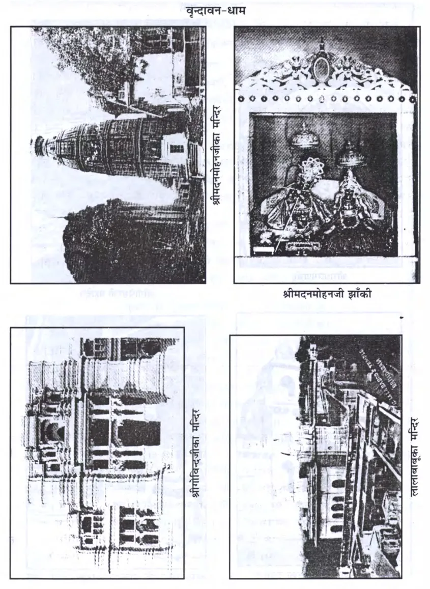
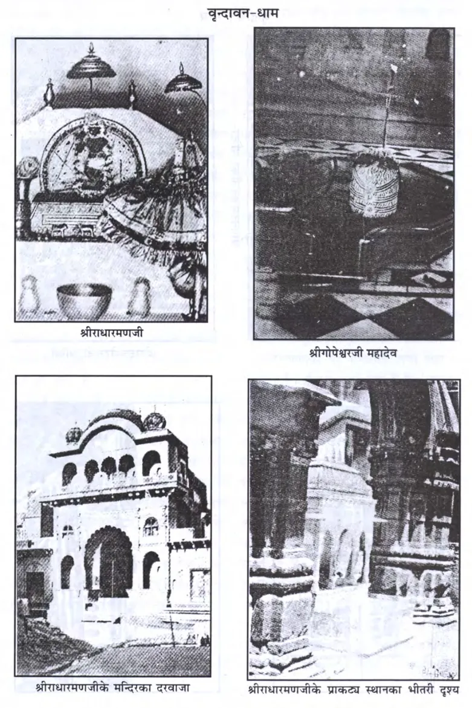
भावना
जब अमिमानसों भरित मन होवै तब
कंस-मद-मर्दक स्वरूप अवरेखौं मैं।
दीन धनहीन जब होहुँ तौ कन्हैया प्यारे
जमुना किनारे ग्वाल-बेस तोहिं लेखौं मैं।
मोहमें बिलोकौं रथ पारथके सारथी
सनेहमें गँवार गोपी-बन्धु श्याम! पेखौं मैं॥
काल भीति होय तब कालीनाथ झाँकी लखौं
संकट परेपै गिरधारी-रूप देखौं मैं॥
बलदेवप्रसाद मिश्र एम० ए०, एल-एल० बी०, एम० आर०ए०एस०
श्रीकृष्णके विराट्-स्वरूप
भगवान् श्रीकृष्ण पूर्ण ब्रह्म सच्चिदानन्दघन परमात्मा थे, इसमें किसी प्रकारका भी सन्देह नहीं है। जिन भाग्यवानोंने श्रीमद्भागवत, महाभारत, हरिवंश आदि ग्रन्थोंका अध्ययन किया है, उन्हें इस तत्वपर शंका करनेका कोई कारण नहीं है। भगवान्की विविध लीलाओंमें विराट्-स्वरूप-दर्शन भी अलौकिक लीला है। आपने प्रधानरूपसे चार बार अपना विराट्-स्वरूप दिखलाया—१-व्रजमें माता यशोदाको, २-कौरवोंकी राजसभामें, ३-युद्धक्षेत्रमें अर्जुनको और ४-द्वारकाके मार्गमें महर्षि उत्तङ्कको। चारों ही स्थलोंपर भगवान्की लीलाका रहस्य बड़ा ही विलक्षण है। यहाँ संक्षेपमें चारों प्रसंगोंका वर्णन किया जाता है। जो विस्तारसे देखकर आनन्द लूटना चाहते हैं उन्हें तो श्रीमद्भागवत, श्रीगीता और श्रीमहाभारतमें ही ये कथाएँ पढ़नी चाहिये।
(१)
भगवान् श्रीकृष्ण अपने बालसखाओंके साथ खेल रहे थे, खेलते-खेलते मिट्टी खा गये। श्रीदाऊजी आदि बालकोंने माता यशोदाके पास जाकर कहा कि 'देख, कृष्ण मिट्टी खा गया है।' यशोदाजीने आकर श्यामसुन्दरका हाथ पकड़ लिया और डाँटकर कहा कि 'क्यों रे ढीठ, तूने छिपकर क्यों मिट्टी खायी?' श्रीकृष्णने रोते हुएसे कहा 'मैया! मैंने मिट्टी नहीं खायी, ये लोग झूठ-मूठ मेरा नाम लगाते हैं, विश्वास नहीं है तो मेरा मुहँ देख ले।' इतना कहकर भगवान्ने ज्यों ही मुख फैलाया कि यशोदा तो बेचारी हक्की-बक्की रह गयी। उसने देखा—श्रीकृष्णके मुखमें सभी चराचर जीव, आकाश, दशों दिशाएँ, पहाड़, द्वीप, समुद्र, वायु, अग्नि, सूर्य, चन्द्रमा, तारा, इन्द्रियोंके अधिष्ठाता देवगण आदि सारा विश्व भरा है। यशोदाजी सोचने लगीं कि मैं यह स्वप्न तो नहीं देख रही हूँ, या यह श्रीहरिकी माया है। यशोदाका भ्रम दूर हुआ, उसने समझा कि 'मैं जिसे अपना बालक समझती थी, वह बालक नहीं, वह अचिन्त्य परमात्मा है जो चित्त, मन, कर्म और वाणीसे परे है, जो तर्कसे जाननेमें नहीं आता, यह सारा संसार जिसके आश्रित है, जो इन्द्रियोंका अधिष्ठाता और बुद्धिका स्फुरण करनेवाला है, जिसके अधिष्ठानके कारण ही इस जगद्रूप कार्यकी प्रतीति हो रही है।' यशोदाने प्रणाम किया और कहा कि 'हे जगन्नाथ! मैं तुम्हारे शरणागत हूँ।' भगवान्ने यह सोचकर कि, ऐसा होनेसे तो माताका पुत्र-वात्सल्यजनित आनन्द नाश हो जायगा और मेरी मधुर लीलामें भी बाधा आवेगी, अपना वह रूप छिपा लिया और मातापर पुनः अपनी माया फैला दी। पुत्रस्नेहसे माताका हृदय उमड़ आया, उसने श्रीकृष्णको गोदमें उठा लिया और मुख चूमने लगी! (श्रीमद्भागवत दशम स्कन्ध अध्याय ८)
(२)
भगवान् श्रीकृष्ण पाण्डवोंके दूत बनकर कौरवोंको समझानेके लिये हस्तिनापुरको चले। मार्गमें उन्होंने ब्रह्मतेजसे देदीप्यमान ऋषियोंको खड़े देखा, भगवान् तुरन्त रथसे उतर पड़े और सब ऋषियोंको यथायोग्य प्रणाम करके उनसे कुशल पूछने लगे कि 'आप इस समय कहाँ पधार रहे हैं, मेरे योग्य सेवा हो तो कहिये।' ऋषियोंने श्रीकृष्णके ये वचन सुनकर कहा कि 'हे महामते श्रीकृष्ण! जहाँ आप सत्यमूर्ति पधार रहे हैं वहीं हमलोग जा रहे हैं, हमने सुना है कि कौरवोंकी राजसभामें आपका धर्म और अर्थसे पूर्ण व्याख्यान होगा। द्रोणाचार्य, विदुर आदि अन्य महात्मा भी बोलेंगे।
तव वाक्यानि दिव्यानि तथा तेषां च माधव!
श्रोतुमिच्छामि गोविन्द सत्यानि च हितानि च।
(महा० उद्योग पर्व ८३)
'हे गोविन्द! हे माधव! हमारी इच्छा है कि हम वहाँ आपके सत्य, हितकारी, दिव्य शब्दोंको तथा उन लोगोंके भाषणोंको सुनें। आप चलिये, हम भी शीघ्र ही वहाँ पहुँचते हैं।' इस प्रकार ऋषियोंसे बात करके श्रीकृष्ण रथपर सवार होकर हस्तिनापुरकी ओर चले। हस्तिनापुरमें स्वागतकी बड़ी तैयारी की गयी थी, परन्तु आपने कौरवोंका दिखौआ स्वागत और भोजन स्वीकार न कर गरीब विदुरकी झोपड़ीमें पधारकर वहीं शाकपातका भोजन किया। तदनन्तर कौरवोंकी राजसभामें जाकर विविध भाँतिसे दुर्योधनको समझाया, परन्तु दुर्योधनके मनपर कुछ भी असर न हुआ। उल्टे उसने अपने कुचक्री साथियोंसे परामर्श कर श्रीकृष्णको कैद करना चाहा। उसकी इस दुरभिसन्धिका पता लगनेपर धृतराष्ट्र ने उसे रोका, परन्तु वह नहीं माना, तब महात्मा विदुरजी उससे बोले—
रे दुर्योधन! तू किसको कैद करना चाहता है? अरे, जिन्होंने द्विविद, नरकासुर आदि महाबली पशु और राक्षसोंको मार डाला, जिन्होंने बचपनमें ही पूतना, बकासुर, वृषभासुर आदिको मार कर तथा अंगुलीपर गोवर्द्धन पहाड़ उठाकर व्रजकी रक्षा की थी, जिन्होंने महाबली चाणूर, केशी, कंस, जरासन्ध, दन्तवक्त्र, शिशुपाल आदिका वध कर डाला, जो वरुण और अग्निको जीतनेवाले हैं, जिन्होंने इन्द्रपर विजय प्राप्त कर ली, महासागरमें शयन करते समय मधु-कैटभ-नामक असुरोंको मारा तथा दूसरे अवतारमें वेदोंका हरण करनेवाले हयग्रीवका वध किया था, वे श्रीकृष्ण क्या तेरे बन्धनमें आ सकते हैं? तूने अभी गोविन्दको पहचाना नहीं है याद रख, यदि तू महाबाहु भगवान् श्रीकृष्णका अपमान करेगा तो जैसे पतंग अग्निमें पड़कर जल जाते हैं, वैसे ही तू भी अपने साथियों सहित संसारसे उठ जायगा।* भगवान् श्रीकृष्ण चुपचाप सब सुन रहे थे, अब उन्होंने गम्भीर स्वरसे दुर्योधनसे कहा—
* जो लोग वृन्दावनके और द्वारकाके श्रीकृष्णको दो समझते हैं और इन्हें भगवान् नहीं मानते, उन्हें श्रीविदुरजीके इन शब्दोंपर ध्यान देना चाहिये। इनमें स्पष्टरूपसे वृन्दावनलीला और पहलेके अवतारोंकी लीलाका वर्णन है।
'अरे दुर्बुद्धि दुर्योधन! तू मूर्खतासे मान रहा है कि मैं यहाँ अकेला हूँ, इसीसे तू मुझे कैद करना चाहता है। तुझे मालूम नहीं है कि समस्त पाण्डव, सारे यदुवंशी और सूर्य, रुद्र, ब्रह्मा, वसु, देवता, महर्षि आदि सब यहीं हैं।' इतना कहकर वे हँसे, इतनेमें ही उनके समस्त अंगोंमें बिजलीके समान चमकते हुए ब्रह्मादि देवता छोटे-छोटे आकारमें दीखने लगे, उनका शरीर बड़ा विशाल हो गया, उनके ललाटमेंसे ब्रह्मा, वक्षःस्थलमेंसे रुद्र, भुजाओंमेंसे एकमें बलदेवजी, दूसरीमेंसे अर्जुन प्रकट हो गये। मुखसे अग्नि निकलने लगी। अनन्त भुजाओंमें आदित्य, साध्य, वसु, अश्विनीकुमार, अनन्त देवता और इन्द्रसहित उन्चासों वायु, विश्वेदेवता, यक्ष और राक्षस आदि अपना-अपना रूप धरकर श्रीकृष्णके अंगोंमें दीखने लगे। पाण्डव और यदुवंशी वीर उनकी पीठमेंसे उत्पन्न हो गये। चारों ओर सब छा गये। श्रीकृष्णके दोनों नेत्र, नासिका, कर्ण आदिमेंसे अग्निकी लपटें निकलने लगीं और रोम-कूपोंसे सूर्यकी किरणें निकलने लगीं। भगवान्के इस रूपको देखते ही सब चौंधिया गये। द्रोण, भीष्म, विदुर, सञ्जय तथा तपोधन ऋषियोंने भगवत्कृपासे भगवान्का यह स्वरूप देखा।
अन्ध राजा धृतराष्ट्रके हाथ जोड़ कर स्तुति करनेपर भगवान्ने उन्हें भी दृष्टि प्रदान की, जिससे वह भी भगवान्के इस स्वरूपका दर्शन कर सके। इस प्रकार भक्तोंको आनन्द देकर और कुचक्रियोंको भय तथा आश्चर्यके सागरमें डालकर भगवान् वहाँसे विदा हो गये। (महाभारत उद्योगपर्व अध्याय १३०-१३१ देखिये)
(३)
तीसरी बार भगवान् श्रीकृष्णने अपना कालरूप विकराल विराट्स्वरूप रणक्षेत्रमें गीताका उपदेश करते समय दिव्य-दृष्टि-सम्पन्न अपने सखा भक्त अर्जुनको दिखाया था, उस रूपका वर्णन गीताके एकादश अध्यायमें बड़ा सुन्दर है, वहीं देखना चाहिये! प्रसिद्ध होनेसे विशेष नहीं लिखा गया।
(४)
महाभारत-युद्धके बाद पाण्डवोंने श्रीकृष्णकी सहायतासे अश्वमेध-यज्ञ किया। तदनन्तर श्रीकृष्ण पाण्डवोंसे विदा लेकर द्वारकाको लौटे। रास्तेमें मरुभूमिमें उन्हें महातेजस्वी गुरुभक्त उत्तङ्क मुनि मिले। श्रीकृष्णने मुनिकी पूजा की, बदलेमें मुनिने भी श्रीकृष्णका सत्कार कर उनसे कुशल पूछते हुए कहा कि 'हे कृष्ण! आप कौरवोंको समझाने गये थे, वह कार्य सफल हो गया होगा? वे दोनों अब सुखपूर्वक होंगे?' इसके उत्तरमें भगवान्ने कहा–'मैंने समझानेकी बहुत चेष्टा की, भीष्म और विदुरने भी दुर्योधनको बहुत समझाया, परन्तु वह नहीं माना, इससे महान् युद्ध छिड़ गया और दोनों पक्षोंके प्रायः सब लोग मारे गये। केवल पाँच पाण्डव ही शेष रहे हैं—पञ्चैव पाण्डवाः शिष्टाः।'
श्रीकृष्णकी इस बातको सुनकर मुनि क्रोधमें भर गये और बोले—हे मधुसूदन! तुम चाहते तो कुरु-कुलका ध्वंस होनेसे बचा सकते थे। तुमने उपेक्षा की, इसीसे सब मारे गये, मुझे क्रोध आ रहा है, अब मैं तुम्हें शाप दूँगा। 'त्वां शप्स्यामि मधुसूदन।' मुनिकी बात सुनकर भगवान् बोले—हे मुनिवर! शान्तिसे मेरे अध्यात्म-तत्त्वकी बातें सुनिये, यों उखड़िये मत। मैं जानता हूँ, आप तपस्वी हैं, परन्तु जरा-सा तप करके मेरा तिरस्कार कोई नहीं कर सकता—'न च मां तपसाल्पेन शक्तोऽभिभवितुं पुमान्।' आप मुझे शाप देंगे तो आपका तप नष्ट हो जायगा! आपने गुरुकी सेवा करके उन्हें प्रसन्न किया था, अतएव मैं आपका तप नष्ट करना नहीं चाहता।'
मुनि बोले—'हे जनार्दन! तुम मुझे अपने अध्यात्मतत्त्वकी बातें सुनायो, उन्हें सुनकर मैं या तो तुम्हें वरदान दूँगा या शाप दे दूँगा।' इसके उत्तरमें श्रीकृष्णने अपने परमात्मस्वरूपका प्रभाव और रहस्य उन्हें समझाया और कहा—
सदसच्चैव यत्प्राहुरव्यक्तं व्यक्तमेव च।
अक्षरं च क्षरं चैव सर्वमेतन्मदात्मकम्॥
असच्च सदसच्चैव यद्विश्वं सदसत्परम्।
मत्तः परतरं नास्ति देवदेवात्सनातनात्॥
(महाभारत अ० ५४। ५-७)
जिसको लोग सत्-असत्, अव्यक्त व्यक्त और अक्षरक्षर कहते हैं, वह सब मेरा ही रूप है। सत्-असत् तथा असत् और सत् एवं असत्से भी परे जो विश्व है, वह सब मुझ सनातन देवदेवके सिवा और कुछ भी नहीं है।
भगवान्की दिव्य वाणीको सुनकर ऋषिकी आँखें खुलीं। उनका शाप देनेका विचार नष्ट हो गया, उन्होंने स्तुति करते हुए कहा—
यदि त्वनुग्रहं किञ्चित्त्वत्तोऽर्हामि जनार्दन।
द्रुष्टुमिच्छामि ते रूपमैश्वरं तन्निदर्शय॥
(महाभारत अ० ५५।३)
हे जनार्दन! यदि मुझे किञ्चित् भी अपना अनुग्रह पाने योग्य समझते हैं तो मुझे अपना ईश्वरीय रूप दिखलाइये, मैं आपके उस परम रूपको देखना चाहता हूँ। भगवान् प्रसन्न हो गये और उन्होंने ऋषिको अपना विराट्रूप दिखलाया। विश्वम्भरके इस विश्वरूपमें सारा विश्व दीख पड़ता था, बड़ी-बड़ी भुजाएँ थीं, हजारों सूर्योंके और अग्निके समान उनका प्रकाश था। वह आकाशमें छाया था, सब दिशाओंमें उसके अनन्त मुख थे, ऐसे श्रेष्ठ अद्भुत रूपको देखकर ऋषि आश्चर्यमें डूब गये और भगवान्की स्तुति करते हुए उन्होंने प्रार्थना की।
पुनस्त्वां स्वेन रूपेण द्रष्टुमिच्छामि शाश्वतम्।
भगवन्! इस महान् अद्भुत रूपको समेट कर मुझे अपना वही श्यामसुन्दर मनोहर शाश्वत रूप फिर दिखलाइये। भगवान्ने फिर श्रीकृष्णरूपसे उन्हें दर्शन दिये! (महाभारत अश्वमेधपर्व ५३ से ५५)
कुछ लोगोंकी धारणा है कि भगवान्ने वास्तवमें कोई ऐसा रूप नहीं दिखाया था, ज्ञान दे दिया था, जिससे उन लोगोंने विवेकसे ऐसा समझा था, परन्तु यह बात सत्य नहीं है। भगवान्ने वास्तवमें अपने ये रूप दिव्यदृष्टि देकर प्रत्यक्ष ही दिखाये थे।
कन्हैया आजा!
मोहन प्यारे जरा गलियोंमें हमारी आजा!
आजा, आजा, इधर ऐ कृष्ण कन्हैया! आजा!
दुःख हरनेके लिये तूने न किया है क्या क्या?
फिर वह वंशी लिये जमुनाके किनारे आजा!
लाखों गौएँ तेरी अब फिरती हैं मारी मारी
लगन तुझसे ही लगी नन्द-दुलारे आजा!
तेरी इस भूमिमें छाई है घटा जुल्मोंकी,
तिलमिलाते हुए भारतको बचा जा आजा!
परदये ग़ैबसे हो जाय इशारे, तेरे
अब नहीं ताब ग़में हिज्र की प्यारे आजा!
जल्द आ कि तेरे वास्ते अली व्याकुल है
कर्मभूमिमें वही कर्म सिखाने आजा!
सैय्यद कासिमअली विशारद, साहित्यालङ्कार
श्रीकृष्णचरित्रका सार
(लेखक—श्रीग० वि० केतकर, बी०ए०, एल०-एल० बी०)
न मे पार्थास्ति कर्तव्यं त्रिषु लोकेषु किंचन।
नानवाप्तमवाप्तव्यं वर्त एव च कर्मणि॥
यदि ह्यहं न वर्तेयं जातु कर्मण्यतन्द्रितः।
मम वर्त्मानुवर्तन्ते मनुष्याः पार्थ सर्वशः॥
उत्सीदेयुरिमे लोका न कुर्यां कर्म चेदहम्।
संकरस्य च कर्ता स्यामुपहन्यामिमाः प्रजाः॥
(श्रीमद्भगवद्गीता ३। २२-२४)
श्रीमद्भगवद्गीताके उपर्युक्त तीन श्लोकोंमें श्रीकृष्णके चरित्रका सार आ गया है। समाजको उचित मार्गसे ले जाना, साधुजनोंका परित्राण करना और दुष्टोंका दलन करके धर्म-संस्थापन करना, ये श्रीकृष्णके अवतार-कार्य हैं। जैसे वैयक्तिक धर्म, पारिवारिक धर्म तथा कुल-धर्मके आचरणका आदर्श रामायणमें मिल जाता है, वैसे ही हिन्दू-समाजको समष्टि-धर्म और राष्ट्र-धर्मका आदर्श अनेक श्रेष्ठ पुरुषों तथा विशेषतः श्रीकृष्णके चरित्रसे मिलता है। जब एक ओरसे व्यक्ति-धर्म और कुल-धर्म तथा दूसरी ओरसे समष्टि-धर्म अथवा राष्ट्रधर्मकी समस्या सामने आ खड़ी हुई, तब श्रीकृष्णने अनेक प्रमाणोंके साथ अर्जुनको श्रीमद्भगवद्गीतामें यही बात समझायी कि व्यक्ति-धर्म तथा कुल-धर्मकी अपेक्षा राष्ट्रधर्म श्रेष्ठ है। कहनेका मतलब यह कि श्रीकृष्णका चरित्र राष्ट्रधर्मके तात्त्विक उपदेशको समझानेके लिये एक प्रत्यक्ष उदाहरण है। और वास्तवमें उपदेशकी अपेक्षा उदाहरण अधिक परिणामकारी होता है। कोरे उपदेशसे तत्व समझमें नहीं आता, परन्तु वही उदाहरण सामने उपस्थित करके दिखला देनेसे मजेमें समझमें आ जाता है। इसीलिये गीताके चौथे अध्यायमें भगवान्ने अर्जुनसे यह कहा कि 'मेरे जन्म-कर्मको तुम समझ लो।'
गीतामें एक ओर जहाँ 'न मे द्वेष्योऽस्ति न प्रियः' 'निर्वैरः सर्वभूतेषु' तथा 'शुनि चैव श्वपाके च पण्डिताः समदर्शिनः' ऐसा कहा है वहाँ दूसरी ओर यह भी कहा है कि 'आसुरीय और क्रूर लोगोंको मैं आसुरी योनि देता हूँ और दुष्कृतोंका नाश करता हूँ।' 'क्षिपाम्यजस्रमशुभानासुरीष्वेिव योनिषु' और 'विनाशाय च दुष्कृताम्' ये दोनों प्रकारके वचन देखनेमें परस्पर विरोधी हैं। बहुत-से लोग इनकी सङ्गति नहीं बैठा सकते। सर्वभूतहिते रतः आदि लक्षणोंसे ज्ञानी पुरुषका वर्णन करके उसीके लिये 'हत्वाऽपि स इमांलोकान्न हन्ति न निबध्यते' ऐसा भी कहा है, इस भूलभुलैयाको समझना बड़ा कठिन है। फलासक्ति भी छोड़ना, सङ्ग-त्याग भी करना और कर्तृत्वाभिमानसे अलिप्त रहकर भी उसी उत्साहसे कर्म करना, जिस उत्साहसे कर्मासक्त लोग किया करते हैं, 'मुक्तसङ्ग' और 'अनहंवादी' होकर भी 'धृत्युत्साहसमन्वित' बन जाना, ये सब बातें बहुतोंके खयालमें बिलकुल असम्भव है। किन्हीं-किन्हींकी धारणा है कि अर्जुनको युद्ध जैसे कर्ममें-विशेषतः पारिवारिक कलहपूर्ण युद्ध-सरीखे तामसी कर्ममें प्रवृत्त करनेके लिये भगवान्के द्वारा उसे इतने गूढ़ और सारगर्भित तत्त्वज्ञानका उपदेश दिया जाना तो ऐसा ही अप्रयोजक हुआ जैसे कोई कोदौंकी रोटी सेकनेके लिये चन्दनकी लकड़ी जलाये। इसी प्रकार ऊपरसे जो कर्म दिखलायी पड़ता है, वह मूलमें अकर्म है और ऊपरसे जो अकर्म दिखलायी पड़ता है वह मूलमें कर्म है, इस उलझनसे निकलना भी बहुतोंके लिये बड़ा कठिन होता है। इन समस्त कूट समस्याओंको भलीभाँति समाधानपूर्वक समझनेके लिये महाभारतमें वर्णित श्रीकृष्ण-चरित्रका मार्मिक और सूक्ष्म परिशीलन ही सर्वोत्तम उपाय है।
सारांश यह कि श्रीकृष्ण-चरित्र कर्मयोगके समस्त अंगोपांगोंका स्पष्टीकरण करनेवाले उदाहरणोंका एक अपूर्व संग्रह है। जब श्रीकृष्ण पाण्डवोंके दूत बनकर हस्तिनापुर पहुँचे और वहाँ जब दुर्योधनने उन्हें भोजनके लिये निमन्त्रण दिया, तब उसे अस्वीकार करते हुए आपने कहा—
संप्रीतिभोज्यान्यन्नानि आपद्भोज्यानि वा पुनः॥
न च संप्रीयसे राजन् न चैवापद्गता वयम्॥
अर्थात् 'भोजन या तो प्रेमसे होता है, या विपत्ति पड़ने पर चाहे जहाँ मिले जैसे खाकर पेट भरना पड़ता है। यहाँ विपत्ति तो हमपर पड़ी नहीं है और प्रेम तुम्हारेमें है नहीं!'
श्रीकृष्णका प्रेम कौरवोंके साथ क्यों नहीं है और पाण्डवोंके साथ क्यों है, इस बातका भी खुलासा श्रीकृष्णने उसी समय कर दिया, उन्होंने कहा—
यस्तान्द्वेष्टि स मां द्वेष्टि यस्ताननु स मामनु।
ऐक्यात्मं हि गतं विद्धि पाण्डवैर्धर्मचारिभिः॥
पाण्डवोंके साथ मेरी ऐसी एकरूपता हो गयी है कि जो उनके शत्रु हैं वे मेरे शत्रु हैं और जो उनके मित्र हैं वे मेरे मित्र हैं। और इस एकरूपता या तादात्म्यका कारण यह है कि पाण्डवलोग धर्मचारी हैं। यानी श्रीकृष्ण धर्मके पक्षपाती हैं, किसी व्यक्तिविशेषके नहीं हैं। पाण्डव धर्मचारी हैं, इसीलिये उन्होंने उनका पक्ष ग्रहण किया।
उचित और अनुचित दोनों ही प्रकारके पक्षपातके उदाहरण महाभारतमें मिलते हैं। गीताके पहले अध्यायमें यह तुलना स्पष्ट दिखलायी पड़ती है। इधर तो पाण्डवोंका सत्यपक्ष होनेके कारण श्रीकृष्ण उनकी ओरसे पूर्ण उत्साह और सच्चे दिलसे, सारथ्य जैसे नीच कर्मको भी स्वीकार करके युद्धमें भाग लेते और अर्जुनको प्रोत्साहित करते हैं। उधर दुर्योधनका असत्य पक्ष होनेपर भी, भीष्मपितामह-जैसे श्रेष्ठ पुरुषतक 'अर्थस्य पुरुषो दासः' के अनुसार (मनमें उसके हारनेकी सम्भावना समझते हुए भी) उसका पक्ष ग्रहण करते हैं। 'अर्थ' शब्दका अर्थ चाहे धन लिया जाय, या चाहे पहले दिया हुआ वचन माना जाय और चाहे क्षत्रियोंके निश्चित किये अलिखित नियम माने जायँ; पर श्रीकृष्णके धर्म-पक्षपातके सामने भीष्मका अर्थ-पक्षपात बिलकुल हलका या गौण ठहरता है। पाण्डवोंका पक्ष न्यायका है, इसका भीष्मको पूर्ण विश्वास था, फिर भी वह दुर्योधनको स्वीकृत कार्य निबाहनेका उत्साह दिला रहे थे, और आश्चर्य यह कि इतने पर भी दुर्योधनका संशय दूर नहीं होता था।
धर्मसंस्थापनके कार्यमें साधुपुरुषोंका संरक्षण और दुष्टोंका प्रतिकार करना पड़ता है, अथवा प्रकाश करनेका अर्थ ही जैसे अन्धकारको हटाना है वैसे ही साधु-परित्राण तथा दुष्ट-दलन ये दोनों कार्य एक दूसरेके साथ गुँथे हुए हैं, प्रत्युत ये दोनों एकरूप ही हैं। जब प्रतिकारका कार्य सामने आ उपस्थित होता है तब सारा बल लगा देना पड़ता है। श्रीकृष्णने बचपनसे ही ऐसे बलका चमत्कार दिखलाना प्रारम्भ कर दिया था, और चाणूरमर्दनमें तो वह बहुत स्पष्ट रूपसे देखनेमें आया। जब अन्यायका पक्ष लेकर बलका दुरुपयोग किया जाता है तब वह पाशविक बल कहलाता है। और जब उसका उपयोग, आवश्यकतानुसार न्यायपक्षमें होता है तब वही बल ईश्वरीय बल समझा जाता है। बल स्वरूपतः पाशविक नहीं होता, वह उपयोग-भेदसे ईश्वरीय या शैतानी माना जाता है।
इस प्रकार मनुष्यको उसकी प्रयत्नसाध्य बातोंका दिग्दर्शन करानेमें ही श्रीकृष्णचरित्रकी अपूर्वता है, चमत्कारमें नहीं। उसमें यदि चमत्कार भी हो तो यह है कि अनेक विपत्तियाँ आ पड़नेपर भी अन्तमें सत्य और न्यायको ही विजय प्राप्त होती है।
***
मेरी भव-बाधा हरो राधा नागरि सोय।
जा तनुकी झाँई परे, श्याम हरित द्युति होय॥
या अनुरागी चित्तकी गति समुझै नहिं कोय।
ज्यों-ज्यों बूड़ै श्याम रँग, त्यों-त्यों उज्जल होय॥
सीस मुकुट कटि काछनी, कर मुरली उर माल।
यहि बानिक मो मन बसो, सदा बिहारीलाल॥
-बिहारीलाल
श्रीरासलीलाका रहस्य
(लेखक-आचार्य श्रीमदनमोहनजी गोस्वामी वैष्णवदर्शनतीर्थ, भागवतरत्न)
आजकलके पढ़े-लिखे महानुभावोंमें ऐसे बहुतेरे लोग हैं जो भगवान्की 'रासलीलाका वास्तविक रहस्य क्या है?' इसको भलीभाँति नहीं समझकर उसकी बड़ी बेतुकी आलोचना किया करते हैं। इसीसे वे विपरीत भावनाओंके फंदेमें फँस जाते हैं। रासलीलाका रहस्य जानना मनुष्य-बुद्धिके अगोचर है। जिस रासलीलाके रहस्यको इन्द्र, चन्द्र, ब्रह्मादि देवगण भी हृदयङ्गम नहीं कर सके, श्रीमहादेवजीने भी जिस लीलाके रहस्यको न समझ कर स्वयं गोपीभावको स्वीकार किया, इसीसे उनका एक नाम गोपीश्वर महादेव हुआ, उस लीलाका रहस्य लिखनेके लिये मुझ जैसे व्यक्तिका लेखनी उठाना धृष्टता मात्र है। इसीलिये मैं अपनी ओरसे कुछ भी न कहकर यहाँ उन्हीं बातोंको लिखना चाहता हूँ जो गुरुजन और भक्तजनोंसे मैंने सुनी है। वास्तवमें रासलीलाके रहस्यको भाग्यवती व्रजकी गोपियाँ या गोपीभावके भावुक लोग ही समझते हैं।
सबसे प्रथम रासके लक्षणपर विचार करना उचित है। सर्वशक्तिमान् परिपूर्ण परतत्त्वकी पराख्या-शक्तिके साथ अनादिसिद्ध रिरंसाकी जो उत्कण्ठा है और उस उत्कण्ठाके साथ जो चिद्विलास है उसीको 'रास' कहते हैं। इस लीलामें अपूर्व नृत्य, गीत, आलिङ्गन आदि भावोंका विशेष परिचय विद्यमान है। श्रीधर स्वामीजीने इसी बातकी पुष्टिमें लिखा है।
'रासो नाम बहुनर्तकीयुक्तो नृत्यविशेषः।
बहुनर्तकीगणोंके नृत्यविशेषका नाम 'रास' है। पूज्य श्रीजीवगोस्वामीजीने भी लिखा है—
नटैर्गृहीतकण्ठीनां अन्योन्यात्तरकश्रियाम्।
नर्तकीनां भवेद्रासो मण्डलीभूय नर्त्तनम्॥
इसका तात्पर्य यह है कि, नट लोग नर्तकीयुग्मसमूहोंके कण्ठमें हाथ धर कर नर्तकीगणोंके साथ मण्डलाकारसे जो नृत्य करते हैं उसको रास कहते हैं। एक ही श्रीकृष्ण भगवान्ने प्रकाश मूर्तिसे अनेक होकर शतकोटि गोपियोंके साथ रासलीला की थी। इसका श्रीभागवतमें वर्णन है—
रासोत्सवः संप्रवृत्तो गोपीमण्डलमण्डितः।
योगेश्वरेण कृष्णेन तासां मध्ये द्वयोर्द्वयोः।
प्रविष्टेन गृहीतानां कण्ठे स्वनिकटं स्त्रियः॥
दो-दो गोपियोंके मध्यमें एक-एक श्रीकृष्णका प्रादुर्भाव था। प्रत्येक गोपिका श्रीकृष्णको अपने समीपमें स्थित जानती थी। उस समय सबने मण्डलाकार होकर नृत्य किया था।
इस रासलीलामें दो रहस्य हैं—अन्तरङ्ग और बहिरङ्ग। प्रथम रहस्यका अभिप्राय आनन्दरसका आस्वादन कराना है, और दूसरेका अभिप्राय कामको पराजित करना है। विश्वब्रह्माण्डमें श्रीकृष्णके सिवा और किसीने भी कामको पराजित नहीं किया। इन्द्र समस्त देवताओंके अधिपति थे, किन्तु वे कामको नहीं जीत सके। इसी तरह अन्यान्य देवताओंकी बातें हैं। कामविजयी तो एकमात्र श्रीकृष्ण भगवान् ही हुए। इसलिये जबतक मनुष्य कामपर विजय प्राप्त न कर ले, तबतक वह भगवान् श्रीकृष्णकी रासलीला देखने-सुननेका अधिकारी नहीं हो सकता। इसीसे देवताओंको भी रासलीला देखनेका अधिकार प्राप्त नहीं हुआ था।
रासलीलामें भगवान् श्रीकृष्ण नायक थे और श्रीराधिकाजी नायिका थीं। अन्यान्य व्रजगोपियाँ श्रीकृष्णकी साक्षात् प्रकाशस्वरूपा थीं। यहाँ कामके भावका लेश भी नहीं था, केवल प्रेम था। रासलीला कामके बाहर प्रेमराज्यकी वस्तु है। प्राकृत दृष्टिके लोग श्रीकृष्णका व्रजगोपियोंके साथ जो आलिङ्गनादि व्यवहार हुआ था, उसको कामक्रीड़ा कहकर भ्रम करते हैं। परन्तु भगवान्की यह क्रीड़ा केवल प्रेममयी थी। श्रीधर स्वामीजी महाराज कहते हैं—
'शृङ्गाररसकथापदेशेन विशेषतो निवृत्तिपरेयं पञ्चाध्यायी'
'शृङ्गाररसकी कथाके बहाने निवृत्तिपरा यह रास पञ्चाध्यायी वर्णित होगी। इसमें एक भी कथा प्रवृत्तिपरा नहीं है। श्रीपाद सनातनगोस्वामीजीने भी लिखा है—
ह्लादिनीशक्तिविलासलक्षणपरमप्रेममय्येवैषा रिरंसा न तु काममयीति।
अर्थात् इस रासलीलाकी रिरंसा ह्लादिनी-शक्तिका अनादि विलास है। यह काममयी कदापि नहीं है। यह भी एक प्रत्यक्ष प्रमाण है कि श्रीशुकदेवजी निवृत्तिमार्गमें परिपूर्ण थे, उन्होंने भी जो रासलीलाका वर्णन किया है, उसको कामपरा नहीं समझा है। यदि यह लीला कामपरा होती तो वे कदापि मुमुर्षु धार्मिक राजा परीक्षितके सामने इसका वर्णन नहीं करते। इससे सिद्ध होता है कि यह लीला श्रीराधाशक्तिके साथ शक्तिमान् श्रीकृष्णका अनादिसिद्ध स्वाभाविक विलास है। इसमें प्राकृत-कामकी गन्धमात्र नहीं है। काम प्राकृत वस्तु है और श्रीकृष्ण अप्राकृत हैं। अप्राकृत श्रीकृष्ण कदापि प्राकृत कामके अधीन नहीं हो सकते।
श्रीमहादेवजीने कामकी पीड़ासे उत्तेजित होकर एक समय मदनको दहन कर डाला था। पर श्रीकृष्णका प्रभाव देखिये, करोड़ों व्रज-युवतियोंके सामने कामको अपनी सम्पूर्ण शक्ति प्रयोग करनेकी आज्ञा दे दी, परन्तु कामदेवमें श्रीकृष्णको मोहन करनेकी शक्ति ही उत्पन्न नहीं हुई, वरं श्रीकृष्णके सौन्दर्यको देखकर काम स्वयं मोहित हो गया। इसीसे श्रीकृष्णका नाम मदनमोहन हुआ। श्रीचैतन्यचरितामृतमें कहा गया है—
'जिनि पञ्चशर दर्प, स्वयं नव कन्दर्प
नामधरे मदनमोहन।'
बाल्य, पौगण्ड और कैशोरके भेदसे श्रीकृष्णकी लीला त्रिविध है। 'रासलीला' भगवान् श्रीकृष्णकी कैशोर-लीला है। पाँच वर्षकी अवस्थातक आपने बाल-लीला की। दस वर्षकी अवस्थातक पौगण्ड-लीला की और सोलह वर्षकी अवस्थातक कैशोर-लीला की। इसके अनन्तर यौवन-लीलाका वर्णन है।
श्रीपाद चक्रवर्तीजीने 'रासलीला'का आठ वर्षकी अवस्थामें होना बतलाया है। अष्टम वर्ष पौगण्डके अन्तर्गत होनेपर भी बलवान्के लिये उक्त अवस्थामें ही कैशोरका भाव प्रकट हो जाता है।
चान्द्रमासके हिसाबसे यह लीला आश्विन शुक्ल पूर्णिमा समझी जाती है तथा सौर-मासके हिसाबसे कार्तिक-मासकी पूर्णिमामें होती है। श्रीभागवतमें शारदीय पूर्णिमाके दिन रासलीलाका होना वर्णित है।
यह रास प्रथम रास है और सर्वप्रधान है। इससे पहले प्रकट रासलीलाका कोई प्रमाण कहीं देखनेमें नहीं आता।
जिन व्रजगोपियोंको साथ लेकर श्रीकृष्णने रासलीला की थी, उनके दो भेद देखनेमें आते हैं। एक सुहृद् पक्षा है और दूसरी विपक्षा। इनमें पहली श्रीकृष्ण-मिलनकी सहायका थीं और दूसरी विरुद्धाचारिणी थीं। परन्तु शारदीय रासके दिन सपक्षा-विपक्षा सभी आकृष्ट हुई थीं। इसीसे उस दिनके रासका नाम महारास था।
यद्यपि श्रीराधा-कृष्णकी सेवापरायणा अनेक सखियाँ थीं, परन्तु उनमें ललिता, विशाखा, सुचित्रा, चम्पकलता, रङ्गदेवी, सुदेवी, तुङ्गविद्या और इन्दुरेखा ये आठ सर्वप्रधाना थीं। इन सखियोंके अधीन आठ मञ्जरी हैं। इनके नाम रूपमञ्जरी, रतिमञ्जरी, लवङ्गमञ्जरी, मन्जुलमञ्जरी, कस्तूरीमञ्जरी, गुणमञ्जरी और मादकमञ्जरी हैं।
प्रत्येक सखियोंका बहुत-सी गोपियोंको लेकर एक एक दल था, इस दलको 'यूथ' कहते थे। उपयुक्त अष्ट सखियोंमेंसे एक-एक सखी यूथेश्वरी थी। प्रत्येक यूथेश्वरी अपने-अपने यूथोंको लेकर रासमें सम्मिलित हुई थीं।
इन व्रजगोपियोंके दो भेद थे—नित्यसिद्धा और साधनसिद्धा। श्रीराधा प्रभृति नित्यसिद्धा थीं। अर्थात् श्रीकृष्णके साथ जिनका अनादिकालसे सम्बन्ध चला आता है, इसमें अष्टादशाक्षर मन्त्र प्रत्यक्ष प्रमाण हैं। उसमें 'गोपीजनवल्लभ' पदसे श्रीकृष्णकी आराधना अनन्तकालसे व्यक्त होती है। और ऋषिचरी साधनसिद्धा थीं। पद्मपुराणमें यह कथा प्रसिद्ध है।
पुरा महर्षयः सर्वे दण्डकारण्यवासिनः।
दृष्ट्वा रामं हरिं तत्र भोक्तुमैच्छन्सुविग्रहम्।
ते सर्वे स्त्रीत्वमापन्ना समुद्भूताश्चगोकुले॥
किसी समय दण्डकारण्यवासी महर्षिगणोंने श्रीरामचन्द्रजीके सौन्दर्यको देखकर श्रीभगवान्के साथ आत्मरमण करनेकी इच्छा प्रकट की। वे सब महर्षिगण व्रजमें गोपीरूपसे उत्पन्न हुए और उन्होंने श्रीकृष्णकी प्राप्ति इस 'रासलीला'के समयपर की। इन नित्यसिद्धा और साधनसिद्धाओंके भी चार भेद पाये जाते हैं—'श्रुतिचरी, ऋषिचरी, गोपकन्या, और देवकन्या।' इसमें भी पद्मपुराणका वचन प्रमाण है—
गोप्यस्तु श्रुतयो ज्ञेया ऋषिजा गोपकन्यकाः।
देवकन्याश्च राजेन्द्र न मानुष्यः कथञ्चन॥
श्रीकृष्णने वंशी बजा कर गोपियोंको वनमें आकर्षण किया। सभी गोपकन्या और गोपवधुएँ अपने-अपने गुरुजनोंके समक्ष ही श्रीकृष्णकी वंशीध्वनि सुन कर श्रीकृष्णके पास वनमें चली गयीं। इसका रहस्य यह है कि वंशीध्वनिको सुन कर गोपियोंको धैर्य न रहा। श्रीकृष्णके द्वारा प्रेषित वेणुगीत नामक भृत्यने गोपियोंके कपाटशून्य कर्णद्वारसे अन्तःकरणरूप कोषागारमें प्रविष्ट कर उनके धैर्य, लज्जा, भय आदि महा धनसमूहका अपहरण करके उसे श्रीकृष्णके चरणोंमें लाकर अर्पण कर दिया। इस वेणुगीत नामक महा चोरको पकड़नेके लिये किसीकी भी अपेक्षा न कर वे सब उसीके पीछे दौड़ पड़ीं। जैसे वेगयुक्त प्रवाहमें जाती हुई नौकाको कोई रोक नहीं सकता, वैसे ही तीव्र प्रेमप्रवाहमें बहती हुई प्रेममयी गोपियोंको रोकनेमें कोई भी समर्थ नहीं हुआ।
भगवान् श्रीकृष्णने यह रासलीला अघटित-घटना-पटीयसी योगमायाके द्वारा सम्पन्न की। भगवान्की तीन मुख्य शक्ति हैं—चित्शक्ति, बहिरङ्गाशक्ति, और जीवशक्ति। चित्शक्तिका नाम पराशक्ति भी है, यह पराशक्ति तो योगमाया नामसे प्रसिद्ध है ही। जैसे सूर्य अपनी किरणोंसे पृथक् नहीं हैं वैसे ही यह योगमाया शक्ति भी भगवान्से पृथक् नहीं है। बहिरङ्गाशक्तिका नाम माया अविद्या, या अज्ञान है। इस बहिरङ्गाशक्तिके दो कार्य हैं—गुणमाया और जीवमाया। यह गुणमायासे सृष्ट्यादि कार्य करती है और जीवमायासे अनन्त जीवोंका विमोहन करती है। श्रीकृष्णकी लीलाके साथ इनका सम्बन्ध नहीं है।
व्रज-सुन्दरियोंको प्रेमदान देनेके लिये भगवान् श्रीकृष्णने 'रासलीला' की। इस लीलाके रहस्यको जाननेके लिये भगवान्की कृपा सापेक्ष है, अन्यथा बहिरङ्ग लोग इसको जाननेमें कदापि समर्थ नहीं हो सकते। कठोपनिषद्में कहा गया है।
नायमात्मा प्रवचनेन लभ्यो
न मेधया न बहुना श्रुतेन।
यमेवैष वृणुते तेन लभ्य-
स्तस्यैष आत्मा वृणुते तनूं स्वां॥
इस वाक्यके अनुसार श्रीभगवद्-अनुग्रहसे ही रासलीलादिका तत्त्व जाननेकी शक्ति प्राप्त होती है। अन्यथा जीव बहिरङ्गा मायासे मुग्ध रहते हैं। अतएव भगवान्के इन प्रेमतत्त्वोंको समझनेके लिये उनका कृपापात्र बननेकी चेष्टा करनी चाहिये।
अभिलाषा
(रचयिता-कविवर श्रीश्यामाचरणदत्तजी पंत)
[१]
नटवर! मुरलीधर नंदनँदन।
मैं क्षुद्र वंशकी वंशी हूँ,
छिद्रोंसे भरा हुआ है तन।
निज सदय करोंसे छिद्र छिपा,
चुंबन द्वारा दे आश्वासन।
स्वर ऐसा भर दे मनमोहन!
जिसमें जग-रव यों डूब जाय,
ज्यों मायामें निमग्न है मन॥
[२]
ए हो गिरिधारी मधुसूदन!
मै पापोंका गुरु पर्वत हूँ,
केवल जड़, वज्र, कठिन पाहन।
निज कोमल अनामिका द्वारा,
मुझको भी उठा पतित-पावन।
ज्यों उठा लिया था गोवर्द्धन,
जो स्वयम् वज्र-वर्षा सहकर
औरों को छाया दे भगवन्॥
[३]
हे लीलामय! हे जग-जीवन!
यमुना-सम श्याम हृदय-ह्रदमें,
कर रहा कालिया विषय-वमन।
वह क्षमा, दया, सुख, शान्ति, स्नेह
के शोष चुका है प्राण-पवन।
आ कमलनयन कालिय-मर्दन,
घर अभय चरण, फिर उठे न फण
कर इस क्षण इसका दर्प-दलन॥
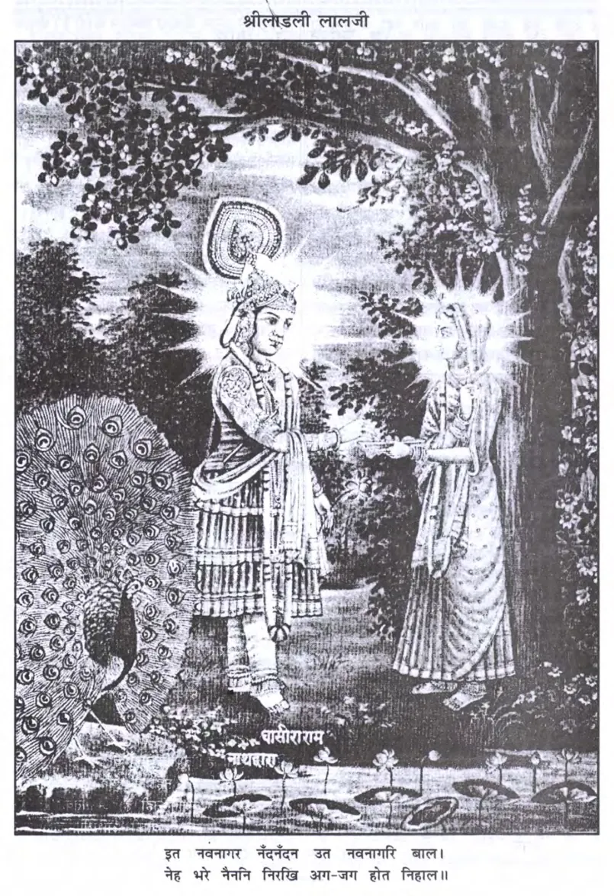
रास लीलाका स्थान
(लेखक-प्रोफेसर श्रीजयेन्द्रनाथ भगवानलाल दूरकाल, एम० ए०)
समस्त प्रकृतिके प्रभु, जिनकी अनन्त माया शक्तिमें सम्पूर्ण विश्व लीलारूपसे विलसित हो रहा है और हम लोगोंका समस्त वाग्-विलास जिनके अनुकीर्तन नियोजित होकर ही सफल होता है, उनकी अवतार-लीलाका पार हमारी मनुष्य-बुद्धि कैसे पा सकती है? भगवान् वेदव्यासकी समाधि-भाषारूप श्रीमद्भागवतके अन्दर रसकी पराकाष्ठास्वरूप रासपञ्चाध्यायीमें वर्णित रास-प्रसंग वैष्णवोंके लिये परमप्रिय, पूज्य और नित्य कीर्तनीय है। कितने ही लोगोंको इस प्रसंगमें कलङ्कका आभास दीखता है, कुछ लोग इसमें अनेक रूपकोंकी अवतारणा कर मनका समाधान करते हैं, और कुछ लोग प्रभुकी अप्रमेय लीलाके सम्बन्धमें कुछ भी ऊहापोह न कर उसके कीर्तनमें ही रस, आनन्द और शान्तिकी प्राप्ति करते हैं। तथापि इस प्रसंगके सम्यग्दर्शनसे विशेष आत्म-सन्तुष्टि अवश्य होती है। भगवान् श्रीकृष्णचन्द्रकी यह लीला कोई जुगुप्सित कर्म नहीं है–कलङ्करूप नहीं है, कलंकाभास है।
श्रीमद्भागवतके अनुशीलन करनेवालोंको अक्रूरजीका ब्रह्मलोकदर्शन भलीभाँति विदित है, कल्किपुराण एवं अन्यान्य पुराणोंमें गोलोकका वर्णन प्रसिद्ध है। रासपञ्चाध्यायीमें वर्णित रासलीलाका स्थान वह गोलोक है। भगवान् श्रीकृष्णने अपने भक्तोंके संकल्पकी सिद्धिके लिये ब्रह्मरात्रिके अवसरपर योगमायाके द्वारा गोप-गोपियोंको गोलोकमें ले जाकर वहाँ इस रास-लीलाकी योजना की थी, अतएव इस रास-लीलाका स्थान गोलोक ही है।
अब यह देखना है कि श्रीमद्भागवतके इन अध्यायोंकी अभिधा-शक्ति यों किसप्रकारसे चरितार्थ होती है। दशम स्कन्धके २८ अध्यायमें परमात्मा श्रीकृष्ण श्रीनन्दरायजीको वरुणलोकसे वापस लाते हैं। नन्दजीके द्वारा अतीन्द्रिय वरुणलोकका वर्णन सुन कर सबके मनमें भगवान्के निज गोलोक देखनेकी इच्छा होती है। भगवान् उनपर कृपा करके अपनी योगसिद्धिके द्वारा उन्हें तमस्के परे स्थित गोलोक दिखलाते हैं। योगमायाके द्वारा उन्हें ब्रह्मह्रदमें ले जाते हैं और वहाँ गोपगण उस ब्रह्मलोकका दर्शन करते हैं, जिसको अक्रूरजीने देखा था। गोपोंको वहाँ आनन्द और शान्ति मिलती है, वे वहाँ श्रुतियोंको साक्षात् मूर्तिमान् होकर भगवान् श्रीकृष्णकी स्तुति करते हुए देखते हैं। अट्ठाईसवाँ अध्याय यहीं समाप्त हो जाता है, परन्तु विषय पूरा नहीं होता। भगवान् वेदव्यासको यह अद्भुत पुण्य-दर्शन तीन ही श्लोकोंमें पूरा कर देनेसे तृप्ति नहीं होती। यहाँ तो केवल उपक्रममात्र होता है। इसी ब्रह्मलोककी अथवा गोलोककी उत्तमोत्तम रास-लीलाका वर्णन इसी प्रसंगके सम्बन्धमें किया गया है, इसीलिये उन्तीसवाँ अध्याय पूर्व प्रसंगके अनुसन्धानमें इस प्रकार आरम्भ होता है।
भगवानपि ता रात्रीः शरदोत्फुल्लमल्लिकाः
इसमें 'अपि' और 'ता' शब्द पूर्व-प्रसंगके सम्बन्धके द्योतक ही हैं। यहाँ पूर्णिमाकी एक रात्रि नहीं; परन्तु अनन्त ब्रह्मरात्रियाँ हैं और योगमायाके आश्रय द्वारा योगमायिक स्वप्नमें भगवान् गोप-गोपियोंके साथ रमण करते हैं। इस व्रजमें इन्दिरा सदा-सर्वदा निवास करती हैं और गोपाङ्गनाएँ भी, उनकी दृष्टि प्रकाशमय हो जानेके कारण यह अनुभव करती हैं कि श्रीकृष्ण गोपिकानन्दन नहीं हैं, परन्तु अखिल देहियोंके अन्तरात्मा हैं। योगेश्वर श्रीशुकदेवजीने भी शंकासमाधानमें यही कहा है कि तेजोमय देवताओंके कार्योंको भौतिक मनुष्योंके कार्योंकी भाँति दोषरूप नहीं समझना चाहिये। क्योंकि वहाँ स्थूल क्रिया ही नहीं है। ब्रह्मरात्रिका दृश्य दूर हो जानेपर गोपगण यमुनातटसे अपने-अपने घरोंको चले जाते हैं। इस प्रकार रासपञ्चाध्यायीका प्रसंग श्रीकृष्णचन्द्रद्वारा गोपियोंको दिखलाया हुआ एक योगमायिक स्वप्न है। इसीलिये भगवान् श्रीकृष्णके शत्रु शिशुपालने भी उनकी निन्दा करते समय इस विषयमें कोई आक्षेप नहीं किया।
भगवान्की लीलाएँ अनेक अर्थोंमें अनेक प्रकारसे चरितार्थ होती हैं। तथापि यहाँ वाच्यार्थका बोध करना पड़े, ऐसी कोई बात नहीं है। यह अर्थ मान लेनेपर अनास्थाको कोई स्थान नहीं है, अनीतिको गन्ध नहीं है और कामधेनुरूप शब्दकी अविधा, लक्षणा और व्यञ्जना सभी शक्तियाँ शरद्की कुञ्जोंकी भाँति फलवती हो जाती हैं।
रास-लीलामें आध्यात्मिक तत्त्व
(लेखक-पं० श्रीबलदेवप्रसादजी मिश्र, एम०ए०, एल-एल० बी०, एम०आर०ए०एस०)
भगवान् श्रीकृष्णके चरित्रोंका रहस्य समझ लेना आसान नहीं। व्यावहारिक चरितावलीके पीछे जो आध्यात्मिक भावनाएँ भरी पड़ी हैं, उन्हें जाने बिना श्रीकृष्ण-चरित्रकी आलोचनापर कलम उठाना सरासर मूर्खता है। यदि हम यह समझ लें कि रुक्मिणी-देवी लक्ष्मीका रूप हैं और राधादेवी भक्तिका, तभी हम यह जान सकते हैं कि अनेक नरेशोंसे घिरी रहनेपर भी किस प्रकार रुक्मिणीजी चुपचाप अलक्षित-भावसे श्रीकृष्णजीके ही साथ भाग निकलीं और इसी प्रकार रुक्मिणी-पति होकर भी भगवान् क्यों राधारमण कहलाये और क्यों उन राधाके हाथ बिक गये, जो एक सामान्य कुटीरमें निवास करनेवाली थीं।
श्रीमद्भागवतमें रासपञ्चाध्यायीका वैसा ही मान है, जैसा दूधमें मक्खनका अथवा खानमें हीरेका होता है। कारण यही है कि इसमें जिस रास-लीलाका वर्णन किया गया है, उसके पीछे गहन आध्यात्मिक तत्त्व छिपा है। भगवान्की वह रास-लीला सामान्य रास-लीला नहीं थी। वह आध्यात्मिक रास-लीला थी, जिसमें भक्त जीवोंको परमात्माके साथ आनन्दातिरेकमें नृत्य करनेका अवसर मिलता है। भगवान्का आह्वान सुनकर गोपिकाएँ एकदम वनकी ओर निकल पड़ती हैं और अनेक सङ्कटों और आपत्तियोंकी परवा न कर उस स्थानपर पहुँच जाती हैं, जहाँ वंशीकी वह मनोमोहिनी ध्वनि गूँज रही थी। भगवान् स्वयं अपने लौकिक उपदेशोंसे गोपियोंकी परीक्षा लेते हैं और उन्हें वापस होनेका उपदेश देते हैं, परन्तु भक्त-गोपियाँ अपने निश्चयपर अड़ी रहती हैं। उनका यह प्रबल निश्चय देख भगवान् उन्हें विश्वके आनन्द-आन्दोलनमें सम्मिलित कर लेते हैं। यह हुई दृढ़ निश्चयकी महिमा। परन्तु वास्तविक भक्तिके लिये इतना ही पर्याप्त नहीं। जिस प्रकार भगवान्की ओर सच्ची लगन आवश्यक है, उसी प्रकार अपने 'मैं पनका—अपने आपका—अपने अहंकारका-विगलन भी तो आवश्यक है। भगवान्के सानिध्यसे यदि भक्त अपनेको परम धन्य और पूर्ण कृत-कृत्य मानने लगा और दूसरोंको अपने समक्ष तुच्छ समझने लगा, तो उसकी उस भक्तिको कच्ची रसायन ही समझना चाहिये। इसलिये जब गोपियोंमें अहंकार आया तब भगवान्ने अदृश्य होकर विरहकी तीन आँचसे उनकी भक्तिके कच्चे पारेको अक्सीर बना दिया। संयोग और वियोगके ऐसे चमत्कार दिखा कर भगवान्ने जब गोपियोंका हृदय सर्वथा शुद्ध कर दिया, तब अपने वास्तविक उपदेशामृतसे उनके हृदयको प्रशान्त बनाते हुए उन्हें अपूर्व रासके आनन्दका अनुभव कराया।
विश्वमें गति ही प्रधान है। यह गति (MotionVibration) नियमबद्ध होती है। इसी नियमबद्ध गतिसे विश्वका प्रादुर्भाव और इसीमें विश्वका विलय है। इस नियमबद्ध गतिको हम भगवान्का रास कह सकते हैं। जो इसका रहस्य समझता हुआ इसमें प्रवृत्त होता है, वही इसके सच्चे आनन्दका अनुभव कर सकता है। भगवान् अपने मधुर आह्वानसे प्रत्येक व्यक्तिको इस रासके लिये आमन्त्रित करते हैं। जो दृढ़ निश्चयके साथ अपना सम्पूर्ण अभिमान दूर करके इस ओर अग्रसर होता है, वह परम शान्ति और परम आनन्द प्राप्त कर लेता है। दूसरे लोग अपनी-अपनी शक्ति और सामर्थ्यभर आगे बढ़कर रह जाते हैं।
योगकी दृष्टिसे भी रासका रहस्य इसी प्रकार समझा जा सकता है। अनाहत-नाद ही भगवान् श्रीकृष्णकी वंशीध्वनि है, अनेक नाड़ियाँ ही गोपिकाएँ हैं, कुलकुण्डलिनी ही श्रीराधा हैं और मस्तिष्कका सहस्रदल कमल ही वह सुरम्य वृन्दावन है, जहाँ आत्मा और परमात्माका सुखमय सम्मिलन होता है तथा जहाँ पहुँच कर ईश्वरीय विभूतिके साथ जीवात्माकी सम्पूर्ण शक्तियाँ सुरम्य रास रचती हुई नृत्य किया करती हैं।
रास पञ्चाध्यायी समाधि-भाषामें लिखी गयी है। इसमें बतायी हुई रास-लीलाका रहस्य आप जिस दृष्टिसे समझना चाहें, उसी दृष्टि से समझकर सुख प्राप्त कर सकते हैं। जो निरे साहित्यिक और श्रृंगार-रस-प्रिय हैं, वे भी इसमें अपने सन्तोषके लिये पर्याप्त सामग्री पा सकते हैं। परन्तु इसी एक भावनाको प्राधान्य देकर कुछ कवियोंने जो इसके रहस्यको प्रायः नष्ट-भ्रष्ट कर डाला है, उसे देख अत्यन्त दुःख होता है।
रासके इन पाँच अध्यायोंमें भगवान्के लिये 'योगेश्वरेश्वर' 'आत्मन्यवरुद्धसौरतः' आदि महत्त्वपूर्ण विशेषणोंका प्रयोग किया गया है। अन्तमें यह भी कहा गया है कि जो कोई इस चरित्रको सुनेगा, वह भक्ति प्राप्त करके अपने हृदयके विकार और हृदयकी काम-वासनाको शीघ्र दूर कर देगा। 'हृद्रोगमाश्वपहिनोत्यचिरेण धीरः।' जिस चरित्रके सुनने और समझनेसे काम-वासनाका विलय हो जाय, उस चरित्रको कोई कामोद्दीपक कहे तो इससे बढ़कर अनर्थ और क्या हो सकता है?
जिस समय भगवान्ने गोपियोंसे कहा कि तुम घर लौट कर अपने-अपने पति, पिता, पुत्र आदिकी सेवा करो, उस समय वे गोपियाँ कहती हैं—
हे भगवन्! विषय-वासनाओंको छोड़कर हम आपकी शरण आयी हैं; क्योंकि आप ही तो हमलोगोंके पति, पिता, पुत्र आदिके अन्तरात्मा हैं, तब फिर अब हमें उन विकारशील दुनियावी झंझटोंकी ओर प्रेरित न कीजिये और अपने चरणोंमें स्थान दीजिये।
आगे चलकर जब भगवान् अदृश्य हो गये हैं, तब रोती हुई गोपियाँ कह रही हैं—
हे भगवन्! आप हमारे वक्षःस्थलपर उन कल्याणकारी चरणोंको रखिये जो भक्तोंकी कामनाएँ पूर्ण करनेवाले हैं, लक्ष्मीके द्वारा पूजित हो चुके हैं, पृथिवीके आभूषण हैं और आपत्तिग्रस्त मनुष्योंके ध्येय हैं।
फिर जब भगवान्के दर्शन होते हैं, तब गोपियाँ उन्हें नेत्रकी राहसे हृदयमें बैठाकर आँखें बन्द कर इस प्रकार आनन्दमग्न हो जाती हैं, जैसे कोई परम योगी हो —
तं काचिन्नेत्ररन्ध्रेण हृदिकृत्य निमील्य च।
पुलकांग्युपगुह्यास्ते योगीवानन्दसंप्लुता॥
ऐसे प्रसंगोंके रहते हुए भी रास-लीलाको दूषित कहना और काम-वासना-जन्य बतलाना कहाँतक न्यायसंगत होगा? सभ्य-समाजका बाल-डैंस (Ball-dance) भले ही कामोदीपक हो; गँवार अहीरोंका डण्डानाच या इसी तरहका अन्य नाच भले ही असभ्य कहा जाय, परन्तु भगवान् श्रीकृष्णकी यह रास-लीला तो एक विलक्षण ही लीला थी, जिसका रहस्य समझना सर्वसाधारणके लिये सहज नहीं।
भगवान्की पूर्णता सच्चिदानन्दत्वमें है। उनके 'सत्' की कथा-पराक्रम, शक्ति अथवा सत्ताकी कथा मत्स्य, कच्छप, नृसिंह, वामन, परशुराम आदि अवतारोंमें भी मिल सकती है। उनके 'चित्' की कथा-ज्ञान, कर्तव्यनिष्ठा, चैतन्य आदिकी कथा राम, बुद्ध, व्यास आदि अवतारोंमें भी मिल सकती है। परन्तु उनके 'आनन्द' की कथा-उनके माधुर्य, सौन्दर्य, प्रेम आदि भावोंकी कथा केवल श्रीकृष्णावतारमें और उनकी इस रास-लीलाहीमें भलीभाँति दृष्टिगोचर होती है। इसलिये यह कहा जा सकता है कि भगवान्की यह रास-लीला ही भगवान्के पूर्णावतारके रहस्यको भलीभाँति प्रकट कर रही है।
कृष्ण-कला
अधर अरुणारे मुरलीवारे।
विष्णु बाँस-सी श्याम मुरलिया,
राम नाम ध्वनि धारे।
नटवर गिरिधर श्याम कन्हैया,
मोहि लिये जग सारे॥
हिय-हरवा, नयनोंबिच कजरा,
नूपुर-ध्वनि झनकारे।
केशी' कोविद किमि यह बूझैं,
शेष-शारदा हारे॥ १॥
चतुर्मुख ब्रह्मा वेणु बजावैं।
पञ्चम धैवट सबै अलापैं,
गोपी एक न आवैं।
लघु-गुरु-भाव-भेद पहिचानें,
कृष्ण-कला कस पावैं॥
स्वाद-तोष दोऊ दुर्लभ अति,
वेणु पटकि पछतावैं।
'केशी' शारद हँसि अस बोली,
श्याम-सङ्ग किन ध्यावैं॥ २॥
भगवती मञ्जुकेशी देवी
प्रेम और सेवाके अवतार श्रीकृष्ण
(लेखक-श्रीयुत पी०एन० शंकरनारायण ऐयर बी०ए०, बी०एल०)
कृपा-प्रार्थना
उत्तरकी भूरि-भाग्य-भूमिसे एक आदेश मिला है, यह वह भूमि है, जहाँ प्रेम और सौन्दर्यके अवतार भगवान् श्रीकृष्णने पवित्र मानवलीला की थी तथा जिसे अपने प्रेम-पीयूष और सौन्दर्य सुधासे सिञ्चन किया था। मुझे आज्ञा हुई है कि मैं उस प्रभुका कुछ गुण-गान करूँ।* अहा! कैसे आनन्दकी बात है! वाणीको सफल करनेका यह कैसा सुन्दर अवसर है। हृदय मानो उछल रहा है और अपने उद्गारोंको व्यक्त करनेके लिये विलक्षण प्रयास करता है, फिर भी क्या कारण है कि एक शब्द भी नहीं निकलता? उस प्रेममयके प्रेमका आनन्द लूटनेवाले दक्षिणके महात्माओ! अपने इस बालककी वाणीपर विराज कर ऐसी कृपा कीजिये कि जिससे यह प्रेम और सौन्दर्यकी अद्भुत शक्तिसे सारे विरोधोंको मिटा देनेवाले, उस भगवान्की महिमाको अशान्ति और व्यग्रताके तापसे तप्त जगत्को सुनानेमें सफल हो।
* इस सम्बन्धमें कहा गया है—
एकान्तलाभं वचसो नु पुंसां।
सुश्लोकमौलेर्गुणवादमाहुः।
(श्रीमद्भा० ३। ६। ३७)
उस परम पुण्य-कीर्ति श्रीहरिके गुण-कीर्तनमें ही वाणीकी परम सफलता है। दूसरी जगह यह भी कहा गया है—
जिह्वाऽसती दार्दुरिकेव सूत
न चोपगायत्युरुगायगाथाः॥
(श्रीमद्भा० २। ३। २०)
जे नहिं करहिं राम-गुन-गाना।
जीह सो दादुर जीह समाना॥
हाँ, जो लोग उस महापुरुषके गुणानुवाद करनेमें अपनेको अयोग्य समझते हैं, उनके लिये भी सूतजीके निम्नलिखित शब्द बड़े ही आश्वासनपूर्ण हैं—
नभः पतन्त्यात्मसमं पतत्रिणः।
अर्थात् पक्षीगण अपनी शक्तिके अनुसार ही आकाशमें उड़ते हैं। गरुड बहुत ऊँचा उड़ता है, तो बेचारी लवा चिड़िया नीचे ही उड़कर सन्तोष कर लेती है।
हे प्रियतम! मनुष्य भयभीत होकर ईश्वर-बुद्धिसे तुम्हारी पूजा करने लगे, पर तुम्हें इससे प्रसन्नता नहीं हुई क्योंकि तुम्हारा हृदय तो प्रेमका भूखा है। उनकी भय-मूलक पूजासे ही तुम्हारा रूप उन्हें विकराल दिखायी दिया। लोग सर्वज्ञ बुद्धिसे तुम्हारी भक्ति और ध्यान करते थे। स्वरूपका इस प्रकार विच्छेद किये जानेसे तुम्हारे प्रेममय हृदयमें दुःख होने लगा।
कुछ ऐसे लोग भी थे जो तुम्हें अपार महिमा और असीम माधुर्यकी मूर्ति समझ कर तुमसे प्रेम करते और तुम्हारी पूजा करते थे, परन्तु तुम इस पूजासे भी प्रसन्न नहीं होते, क्योंकि आदर-भाव पृथक्ताका कारण होता है न कि एकताका। तुम्हारा हृदय इस बातके लिये छटपटाता था कि सारे भूत-प्राणी तुम्हारे साथ एकीभावको प्राप्त हो जायँ और तुम्हारी भी सारे भूत-प्राणियोंके साथ एकता हो जाय। तुम्हारी इस इच्छामें तुम्हारा अहैतुक प्रेम ही हेतु था जो बिना किसी भेदभावके सबपर समानरूपसे फैल रहा था और सबको अपने प्रभावसे प्रभावित कर सुमधुर एकताके साँचेमें ढाल दिया करता था। तुम्हारा हृदय इस बातसे दुखी था कि वे असंख्य जीव, जिनका तुम्हारे प्रेममें सदासे हिस्सा चला आया है, इस पृथिवीपर जन्म लेकर प्रेम और एकताके मार्गको भूल उसकी जगह स्वार्थ-साधन, कलह और अशान्तिके भँवरमें पड़कर पृथिवी माताके लिये भाररूप होकर जी रहे हैं।*
* अक्षौहिणीनां पतिभिरसुरैर्नृपलाञ्छनैः।
भुव आक्रम्यमाणाया आभाराय कृतोद्यमः॥
(श्रीमद्भा० ९। २४। ५९)
अनेक अक्षौहिणी सेनाके स्वामी, राजचिह्नधारी असुरोंके आक्रमणद्वारा भारी भारसे दबी हुई पृथिवीका भार उतारनेके लिये ही भगवान्ने अवतार लिया था।
भू-भार-हरण तथा प्रेम-दानार्थ आगमन
इसीलिये तुमने साधारण मनुष्योंका-सा शरीर धारण कर एक ग्वाल-बालककी भाँति वन-वन भटक कर गौएँ चरायीं और एक बाँसकी बाँसुरीपर आत्माको आह्लादित करनेवाली मतवाली तान छोड़कर भूले हुए लोगोंको प्रेमका वह पथ प्रदर्शित किया जो सबको एक प्रेममय आनन्दके सूत्रमें बाँध देता है। यों करके तुमने सारे संसारको सौन्दर्य, सुख एवं समृद्धिसे आप्लावित कर दिया।
भूले हुए यज्ञकी पुनः शिक्षा।*
* सहयज्ञाः प्रजाः सृष्ट्वा पुरोवाच प्रजापतिः।
अनेन प्रसविष्यध्वमेष वोऽस्त्विष्टकामधुक्॥
(श्रीमद्भगवद्गीता ३। १०)
प्रभुने यज्ञके साथ-साथ मनुष्योंको उत्पन्न किया और उनको उपदेश दिया कि इससे तुम्हें सफलता मिलेगी और तुम्हारी मनोकामना पूर्ण होगी।
जब वे भूले हुए पथिक तुम्हारे पास लौटकर आये तो तुमने प्रेमके साथ उन्हें यह स्मरण कराया कि तुमलोगोंके लिये सुख-प्राप्तिका एकमात्र उपाय प्रेमपूर्वक दूसरोंकी निःस्वार्थ सेवाके भावमें रँग जाना ही है। वे तुम्हारे वास्तविक आशयको भूलकर कर्मकाण्डके पुष्पित प्रपञ्चमें पड़ गये थे। इसीलिये तुमने फिरसे मनुष्यरूपमें अवतीर्ण होकर अपने आचरणोंद्वारा उन सबको एकताके सूत्रमें बाँधनेवाले विशुद्ध-प्रेम और निष्काम-सेवाका पवित्र मार्ग बतलाया और कहा—
'मित्रो! इन भाग्यशाली वृक्षोंको देखो, इनका जीवन केवल दूसरोंकी सेवाके लिये ही है। ये स्वयं वायु, वर्षा, धूप और जाड़ा सहकर उनसे सदा हमें बचाया करते हैं। अहो! इनका जन्म धन्य है, जो इनके यहाँसे कोई भी दुखी प्राणी विमुख नहीं लौटता। भाइयो! उन्हींका जीवन सफल है जो इन वृक्षोंकी भाँति अपने जीवन, सम्पत्ति, बुद्धि और वाणीद्वारा सदा दूसरोंकी सेवामें लगे रहते हैं।*
* पश्यतैतान्महाभागान् परार्थैकान्तजीवितान्।
वातवर्षातपहिमान् सहन्तो वारयन्ति नः॥
एतावज्जन्मसाफल्यं देहिनामिह देहिषु।
प्राणैरर्थैर्धिया वाचा श्रेय एवाचरेत्सदा॥
(श्रीमद्भा० १०। २२। ३२, ३५)
हे प्यारे! इसीलिये ज्ञानी महात्माओंने कहा है कि स्वभाव-सिद्ध स्वार्थपरता और कलहके जालमें फँसे हुए अविद्या-ग्रस्त संसारका कल्याण तुम्हारी उन मानवलीलाओंके श्रवण करनेमें ही है जो तुमने प्रेमावतारके रूपमें की थी* तुम प्रेमके कारण ही मनुष्यलोकमें आकर संसारमें युवक-आन्दोलनके एकमात्र नेता बने थे और प्रेम तथा एकताका प्रचार किये थे। क्या ही अच्छा होता यदि आज भी संसारके समस्त नवयुवक तुम्हारे आदर्श मार्गका अनुसरण करते।
* यस्मिन् सत्कर्णपीयूषे यशस्तीर्थवरे सकृत्।
श्रोत्राञ्जलिरुपस्पृश्य धुनुते कर्मवासनाम्॥
(श्रीमद्भा०। २४। ६२)
पुनः—
आच्छिद्य कीर्तिं सुश्लोकां वितत्य ह्यञ्जसा नु कौ।
तमोऽनया तरिष्यन्तीत्यगात्स्वं पदमीश्वरः॥
(श्रीमद्भा० ११। १। ७)
श्रीहरिके यशरूपी श्रेष्ठ तीर्थ-सुधाका एक बार भी श्रोत्ररूप अञ्जलिके द्वारा पी लेनेवाला मनुष्य कर्म-वासनाओंके त्याग करनेमें समर्थ हो जाता है। इसीलिये कविगण सुन्दर छन्दोंमें इस पवित्र कीर्तिका गान करते हैं,.....।
प्रकृति द्वारा स्वागत।
जिस शोभन-कालमें यह प्रेमावतार मर्त्यलोकमें प्रकट हुआ उस समय समस्त प्रकृतिने उसका स्वागत किया। आकाश मेघमुक्त हो गया, नक्षत्र खूब चमकने लगे, नदियों और जलाशयोंका जल निर्मल हो गया, कमल खिल गये, वनराजियाँ पक्षियोंके कमनीय कलरवसे गूँज उठी, सुगन्ध समीर मन्द-मन्द बहने लगा, किन्तु हाय! उस समय मथुरानिवासी और समस्त संसारके लोग गाढ़ निद्रामें मग्न थे, क्योंकि वे सर्व भूतोंकी प्रेम-युक्त सेवाके मार्गसे विचलित हो चुके थे। पशु, वनस्पति तथा प्रकृतिके अन्दर—जो अब भी सेवा करती है—एक नैसर्गिक बुद्धि होती है, जिसके द्वारा उन्हें भावी शुभाशुभ घटनाओंका पहलेसे ही पता लग जाता है। इसीलिये हमें उनके द्वारा शकुनका ज्ञान होता है।
कारागारमें जन्म, माता-पिताको कष्ट।
श्रीकृष्णका अवतार एक राजकुलमें बन्दीगृहमें हुआ। पाणिग्रहणके पश्चात् कई वर्षोंतक उनके माता-पिताको अपार कष्ट भोगना पड़ा, क्योंकि आकाश-वाणीद्वारा कंसको यह मालूम हो गया था कि प्रभु इनके घर जन्म लेंगे। भगवान्को पुत्र-रूपमें प्राप्त करनेके लिये उन्हें जो कुछ भी कष्ट सहना पड़ा, वह वास्तवमें उनके लिये आनन्दरूप ही था। प्रेमपथके पथिकको महान् एवं अपार दुःखका सामना करना ही पड़ता है!
प्रेम पंथ अति ही कठिन सबपै निबहत नाहिं।
चढ़के मोम-तुरङ्गपै चलनो पावक माहिं॥
भगवान्के जन्म लेते ही माता-पिताको उनसे अलग होना पड़ा। देवताओंने आकर उन्हें यह विश्वास दिला दिया था कि उन्हें अपने पुत्रकी रक्षाके लिये कोई भय नहीं करना चाहिये। भगवान्ने भी प्रकट होते ही स्वयं अपना चतुर्भुजरूप दिखलाया था और माता-पिता दोनोंहीने ईश्वरके रूपमें पहचान भी लिया था।१ तथापि वात्सल्य-प्रेमवश उन्हें यह भय था कि कहीं कंसके हाथों इस मनोहर बालकका अनिष्ट न हो जाय, इसलिये उन्होंने अपने हृदयके टुकड़े प्रिय-नवजात-शिशुको उसकी रक्षाके लिये प्रसन्नताके साथ विलग कर दिया। पिताने स्वयं ले जाकर उन्हें एक ग्वालके घरमें रख दिया। सच्चे प्रेमका मार्ग ही ऐसा है। प्रेमास्पदका क्षेम और सुख ही प्रेमीके जीवनका एकमात्र उद्देश्य है और इसीमें प्रेमकी सफलता है। इस उद्देश्यके सामने भीषण कष्ट और अनन्त वियोगका दुःख कोई चीज नहीं है। प्रेमास्पद ईश्वर है तो क्या हुआ, प्रेमीकी दृष्टिमें तो वह प्रेमास्पदके अतिरिक्त और कुछ भी नहीं। उसके लिये विविध कष्ट सहने, और उसको भयसे बचानेमें ही प्रेमीको परम आनन्द मिलता है।
१. विदितोऽसि भवान्साक्षात्पुरुषः प्रकृतेः परः।
(श्रीमद्भा० १०।३। १३)
जन्मते ही व्रज-गमन, सेवा-मार्गका स्वीकार।
भारतके अमर महर्षि एवं पौराणिक श्रीशुकदेवजीका कथन है कि 'भगवान् जन्म लेनेके अनन्तर ही मातापिताके गृहको छोड़कर गोपोंके पास चले गये थे२। क्या इस कथनसे श्रीशुकदेवजीका यह तात्पर्य है कि यद्यपि उन्होंने स्वयं तथा सनत्कुमारोंने पाँच ही वर्षकी अवस्थामें प्रेमपूर्वक संसारकी सेवा करनेके निमित्त गृह-त्याग कर दिया था, पर प्रेमावतार भगवान्ने तो जन्मते ही अपना कार्य प्रारम्भ कर दिया।
२. जातो गतः पितृगृहाद्व्रजमेधितार्थः'
(श्रीमद्भा० ९।२४। ६६)
व्रजके प्रेमकी अनन्यता।
अब प्रश्न यह होता है कि उनका वह कार्य क्या था और वे क्यों व्रज गये? लोगोंका कहना है कि उनके अवतारका ताल्कालिक हेतु पृथिवीका भार हरण करना था, क्योंकि माता पृथिवी भगवान्के पास जाकर रोयी थी३ और उसने प्रार्थना की कि मेरे स्वार्थपरायण दस्यु-सन्तान मेरे लिये भाररूप हो रहे हैं, उनसे मेरा छुटकारा करा दीजिये। पृथिवीने अन्यत्र भी कहा है कि मैं सब कुछ सह सकती हूँ किन्तु मिथ्यावादी मनुष्योंका भार नहीं सह सकती४। कुछ लोगोंका यह कहना है कि भगवान्ने धर्म अर्थात् ईश्वरके सम्मुख ले जानेवाले कर्मोंकी स्थापना और दुष्टोंका दमन करनेके लिये जन्म लिया था५। यदि यही बात है तो इस उद्देश्यकी सिद्धिके लिये वह व्रज क्यों गये? श्रीशुकदेवजी उपसंहारके श्लोकके अगले दो शब्दोंमें इसका कारण बतला देते हैं६, वहाँ उनका उद्देश्य सिद्ध ही नहीं हुआ, और भी विशाल हो गया, क्योंकि प्रेम ही सब सुधारोंकी जड़ है। भगवान्ने पहले भी एक स्थलपर कहा है 'शान्ति और प्रेमसे जैसे सारे काम सिद्ध होते हैं वैसे आवेश अथवा क्रोधसे नहीं होते७।'
३. भूमिर्दृप्तनृपव्याजदैत्यानीकशतायुतैः।
आक्रान्ता भूरिभारेण ब्रह्माणं शरणं ययौ॥
गौर्भूत्वा ऽश्रुमुखी खिन्ना क्रन्दन्ती करुणं विभोः।
उपस्थिताऽन्तिके तस्मै व्यसनं स्वमवोचत।
(श्रीमद्भा० १०।१।१७-१८)
४. न ह्यसत्यात्परोऽधर्म इति होवाच भूरियम्।
सर्वं सोढुमलं मन्ये ऋतेऽलोकपरं नरम्॥
(श्रीमद्भा० ८।२०।४)
५. परित्राणाय साधूनां विनाशाय च दुष्कृताम्।
धर्मसंस्थापनार्थाय संभवामि युगे युगे।
(श्रीमद्भगवद्गीता ४। ८)
६. जातो गतः पितृगृहाद् व्रजमेधितार्थः....।
(श्रीमद्भा०९। २४। ६६)
७. न संरम्भेण सिध्यन्ति सर्वेऽर्थाः सान्त्वया यथा॥
(श्रीमद्भा० ८।६।२४)
व्रज ही एक ऐसा स्थान था, जहाँ प्रेमका पूर्ण साम्राज्य था। यह भूमि पृथिवीपर उस दिव्य परमधामका ही प्रतिरूपक है जो गोलोकके नामसे प्रसिद्ध है, जहाँका जीवन सर्वथा शाश्वत और दिव्य है, क्योंकि वहाँ सर्वत्र प्रेमका पूर्ण प्रसार होनेके कारण सारी अनेकताएँ स्वाभाविक ही एकताके रूपमें परिणत हैं। व्रजमें, -जो पीछे हटकर वृन्दावनमें चला आया था—छोटे-बड़े, ऊँच-नीच, बलवान्-निर्बल, जड़-चेतन, स्त्री-पुरुष और बाल-वृद्ध आदिका कोई भेद नहीं था। सारा समाज प्रेमकी ऐक्योपादक लहरमें सरावोर था। प्रेम ही एक ऐसी शक्ति थी, जो सर्वत्र पूर्णरूपसे व्याप्त थी। यदि कहीं देखनेमें कुछ भेद भी प्रतीत होता था, तो वह भी उस प्रेमकी मधुरताको बढ़ानेमें ही सहायक होता था। सारे प्रेमके केन्द्र भगवान् श्रीकृष्ण थे। उनके प्रेमकी वर्षा सभीपर समानरूपसे होती थी। व्रजवासी-मात्रका पृथक् अस्तित्व, पृथक् सम्पत्ति, पृथक् भावना और पृथक् वृत्ति केवल श्रीभगवान्को प्रसन्न करनेके लिये थी*। भगवान्का भी पृथक् जीवन, पृथक् भाव तथा पृथक् मनोवृत्तियाँ प्यारे व्रजवासियोंको सुखी एवं कृतार्थ करनेके लिये ही थीं। उन लोगोंका आदर्श जीवन था, क्योंकी वे सब केवल श्रीकृष्णकी प्रसन्नताके लिये ही जीवन धारण करते थे। श्रीकृष्ण ही सबके प्राण थे। ज्यों-ही माता यशोदा, किसी दूसरी ओर ध्यान देना चाहतीं, त्यों ही भगवान् तुरन्त कुछ-न-कुछ कौतुक करके उनका ध्यान अपनी ओर खींच लेते और इन सारी बातोंका पर्यवसान अपार आनन्दमें होता। श्रीकृष्ण अपनी माताको खिझाते और उन्हें अपने पीछे-पीछे गाँवभरमें दौड़ाये फिरते। माता यशोदाने भी एक दिन दाव पाकर उन्हें रस्सीसे बाँध दिया था। इसी प्रकार वे गोकुलके प्रत्येक घरमें जाकर उधम मचाया करते, परन्तु उनका नटखट स्वभाव किसीको भी अखरता नहीं, उनकी लीलाएँ परिणाममें सदा ही सबके लिये सुखदायी होती थीं। जलमें तरंगोंकी भाँति कहीं-कहीं भेद दिखायी पड़ता, परन्तु वह आन्तरिक प्रेमका ही बाह्यरूप होता था और उसका परिणाम भी सबके लिये परम आनन्दकी प्राप्ति होता था। श्रीकृष्णभक्तोंके निर्दोष आनन्दमय भाव-तरंगोंमें दोषकी भावना ही नहीं करनी चाहिये। उन भक्तोंकी महिमा कौन बखान सकता है? भगवान् जबतक व्रज अथवा वृन्दावनमें रहे, वे सबको एकताके सूत्रमें बाँधनेवाले तथा सारे विरोधोंको आनन्दके महासागरमें डुबा देनेवाले सर्वोच्च प्रेममें सराबोर रहे। यही नहीं, उनकी मधुर मूरति ही प्रेममयी थी। साक्षात् प्रेम ही उनके साँचेमें ढला हुआ था। यह मानो उन भावी महान् कार्योंकी तैयारी थी, जो उन्होंने मथुरा और द्वारकामें किया था। इसीलिये श्रीशुकदेवजीने 'एधितार्थ' पदका प्रयोग किया है।
* यह बात वृन्दावनकी एक प्रसिद्ध घटनासे और भी स्पष्ट हो जाती है। कालिय-दमनके समय जब भगवान् एक बार कुछ निश्चेष्ट-से दिखायी दिये, तब उनकी इस दशाको देखकर उनके प्यारे गोपबालक और उनकी गौएँ बेहोश होकर पृथिवीपर गिर पड़ी थीं।
तं नागभोगपरिवीतमदृष्टचेष्ट-
मालोक्य तत्प्रियसखाः पशुपा भृशार्ताः।
कृष्णेऽर्पितात्मसुहृदर्थंकलत्रकामा
दुःखानुशोकमयमूढधियो निपेतुः॥
तत्प्राणास्तन्मनस्कास्ते दुःखशोकभयातुराः॥
आबालवृद्धवनिताः सर्वेऽङ्ग पशुवृत्तयः।
(श्रीमद्भा० १०। १६। १०, १४, १५)
गोपगणोंने अपने प्रियतम श्रीकृष्णको, जिनको वे अपना शरीर, पुत्र, कलत्र, मित्र और सारी अभिलाषाएँ अर्पण कर चुके थे, जब कालियसर्पके शरीरमें लिपट जानेके कारण निश्चेष्ट देखा, तब वे सब-के-सब अत्यन्त दुखी हो गये एवं दुःख, पश्चात्ताप और भयसे हतचेतन होकर जमीनपर गिर पड़े।
श्रीकृष्णके अर्पित प्राण और मनवाले उन बाल, वृद्ध, नारी और गौ-बैल, सभीकी यह दशा हो गयी। गोपियोंकी तो कुछ विचित्र ही स्थिति थी, वे अपने प्रियतम श्रीकृष्णको सर्पके शरीरसे लिपटे देखकर बड़ी ही व्याकुल हुईं, उन्हें सारा संसार शून्य दिखायी देने लगा। 'शून्यं प्रियव्यतिहृतं ददृशुस्त्रिलोकम्।'
(श्रीमद्भा० १०। १६। २०)
कैसा दारुण दृश्य है? इस प्रकार श्रीकृष्णने क्षणभरकी परीक्षासे यह जान लिया कि सारे गोकुलका जीवन केवल उन्हींपर अवलम्बित है। 'इत्थं स्वगोकुलमनन्यगतिं निरीक्ष्य सस्त्रीकुमारमतिदुःखितमात्महेतोः॥
(श्रीमद्भा० १०। १६। २३)
ब्रह्माजीने भी कहा है
यद्धामार्थसुहृत्प्रियात्मतनयप्राणाशयास्त्वत्कृते।
(श्रीमद्भा० १०। १४। ३५)
उन व्रजवासियोंके धन, धाम, मित्र और प्रियजन, पत्नी, शरीर, पुत्र और प्राणतक तुम्हारे ही लिये हैं।
व्रजकी महिमा और उसका प्रमाण।
इसीलिये सभी महात्माोंने बड़ी भक्तिके साथ व्रज और उसके चराचर-निवासियोंके निरतिशय आध्यात्मिक माहात्म्यको बतलाया है। इसीसे ब्रह्माजीने भक्तिपूर्ण शब्दोंमें व्रजरजके माहात्म्यका वर्णन किया है और वृन्दावनके कुञ्जोंमें तृण अथवा लताके रूपमें भी जन्म लेनेको अहोभाग्य समझा है।१ ज्ञनिश्रेष्ठ उद्धवजीने भी, जिन्हें श्रीकृष्ण अपना ही स्वरूप समझते थे।२ इसी प्रकारकी प्रार्थना की थी३।
१. ब्रह्माजी कहते हैं—
तद्भूरिभाग्यमिह जन्म किमप्यटव्यां
यद्गोकुलेऽपि कतमाङ्घ्रिरजोभिषेकम्।
यज्जीवितं तु निखिलं भगवान्मुकुन्द-
स्त्वद्यापि यत्पदरजः श्रुतिमृग्यमेव॥
(श्रीमद्भा० १०। १४। ३४)
इस भूमिपर, वृन्दावनमें और उसमें भी गोकुलमें जन्म होना ही परम सौभाग्य है। क्योंकि यहाँ जन्म होनेसे किसी-न-किसी गोकुलनिवासीकी चरणरज सिरपर पड़ ही जायगी। ये गोकुलवासी इसीलिये धन्य हैं कि श्रुतियाँ आजतक जिस ब्रह्मकी खोज कर रही हैं, वही इनका जीवन-सर्वस्व हो रहा है।
२. नोद्धवोऽण्वपि मन्न्यूनो यद्गुणैर्नार्दितः प्रभुः।
(श्रीमद्भा० ३। ४। ३१)
भगवान् कहते हैं कि उद्धव मुझसे कुछ भी न्यून नहीं है।
३. परम ज्ञानी उद्धवने वृन्दावनमें तृण बननेकी आकांक्षा की, जिससे वह गोपियोंके चरण-रेणुका स्पर्श कर कृतार्थ हो जाय।
आसामहो चरणरेणुजुषामहं स्यां
वृन्दावने किमपि गुल्मलतौषधीनाम्।
या दुस्त्यजं स्वजनमार्यपथं च हित्वा
भेजुर्मुकुन्दपदवीं श्रुतिभिर्विमृग्याम्॥
(श्रीमद्भा० १०। ४७। ६१)
यही नहीं, उन्होंने गोपियोंके पद-रजकी बारम्बार श्रद्धापूर्वक वन्दना की—
वन्दे नन्दव्रजस्त्रीणां पादरेणुमभीक्ष्णशः।
यासां हरिकथोद्गीतं पुनाति भुवनत्रयम्॥
(श्रीमद्भा० १०। ४७। ६३)
उद्धव कहते हैं—मैं नन्दव्रजकी इन सब स्त्रियोंके चरणरजकी बारम्बार वन्दना करता हूँ, इनके गाये हुए श्रीहरिगीत त्रिभुवनके पवित्र करनेवाले हैं।
यही क्यों, मथुराकी स्त्रियोंने भी व्रज तथा व्रजवनिताओंकी मुक्तकण्ठसे प्रशंसा की है१ स्वयं भगवान् श्रीकृष्णने उद्धवको सत्संगकी महिमा बतलाते हुए सन्तोंके उदाहरणमें गोपियोंका नाम लिया है और जिस प्रकार भाव-समाधिमें उन्होंने सब कुछ भुला दिया था, उसे आदर्श बतलाया है२। श्रीशुकदेवजीने कहा है कि जो गोपियोंके साथ भगवान्की क्रीडाका चरित्र पढ़ेंगे उनका चित्त सारी वासनाओंसे शुद्ध हो जायगा और उनके हृदयमें उस सर्वोच्च निष्काम प्रेमका उदय होगा३।
१. पुण्या बत व्रजभुवो यदयं नृलिङ्ग
गूढः पुराणपुरुषो वनचित्रमाल्यः।
गाः पालयन्सहबलः क्वणयंश्च वेणुं
विक्रीडयाञ्चति गिरित्ररमार्चिताङ्घ्रि॥
गोप्यस्तपः किमचरन्यदमुष्य रूपं
लावण्यसारमसमोर्ध्वमनन्यसिद्धम्।
दृग्भिः पिबन्त्यतुसवाभिनवं दुराप-
मेकान्तधाम यशसः श्रिय ऐश्वरस्य।
या दोहनेऽवहनने मथनोपलेप
प्रेङ्खङ्खसनार्भरुदितोक्षणमार्जनादौ।
गायन्ति चैनमनुरक्तधियोऽश्रुकंठ्यो
धन्या व्रजस्त्रिय उरुक्रमचित्तयानाः॥
(श्रीमद्भा० १०। ४४। १३-१५)
अहो! व्रजभूमिको धन्य है, क्योंकि श्रीलक्ष्मीजी और भगवान् शिवजी जिनके चरणोंका सदा पूजन करते हैं वे ही पुण्यपुरुष मनुष्यरूपधारी होकर विचित्र वनमाला धारण किये, मधुर मुरली बजाते और श्रीबलदेवजी तथा ग्वालबालोंके साथ गौएँ चराते हुए अपनी क्रीड़ाओंसे उसे पवित्र और पूज्य बनाते हैं। गोपियोंने कौन-सी तपस्या की है जो भगवान्के इस परन दुर्लभ अनूप रूपको निरन्तर देखती हुई अपने नेत्रोंको सफल करती हैं। अहा, कैसा अद्भुत शोभाका धाम यह रूप है। इससे बढ़कर तो क्या, इसके समान भी कोई रूप नहीं है। यह रूप स्वयं सिद्ध है। यही रूप यश और श्रीलक्ष्मीजीके शोभाका एकमात्र आश्रय है। वे सब व्रजगोपियाँ धन्य हैं जो गौ दुहते, दही मथते, घर लीपते, झूला झूलते, रोते हुए बालकोंको पुचकारते, झाडू देते, चौका लगाते और विश्राम करते, सभी समय सर्वदा पवित्रकीर्ति श्रीकृष्णको सामने देखकर इनका कीर्तन करती हैं, जिनका चित्त प्रबल पराक्रमी श्रीकृष्णमें ही अनुरक्त और आसक्त है, जो उनका गुण गाते-गाते आनन्दके आँसुओंसे भीग जाती हैं और जिनका कण्ठ गद्गद् हो जाता है।
२. ता नाविदन्मय्यनुषङ्गबद्ध-
धियः स्वमात्मानमतस्तथेदम्॥
यथा समाधौ मुनयोऽब्धितोये
नद्यः प्रविष्टा इव नामरूपे॥
(श्रीमद्भा० ११। १२। १२)
३. विक्रीडितं व्रजवधूभिरिदं च विष्णोः
श्रद्धान्वितोऽनुशृणुयादथ वर्णयेद्यः।
भक्तिं परां भगवति प्रतिलभ्य कामं
हृद्रोगमाश्वपहिनोत्यचिरेण धीरः॥
(श्रीमद्भा० १०। ३३। ४०)
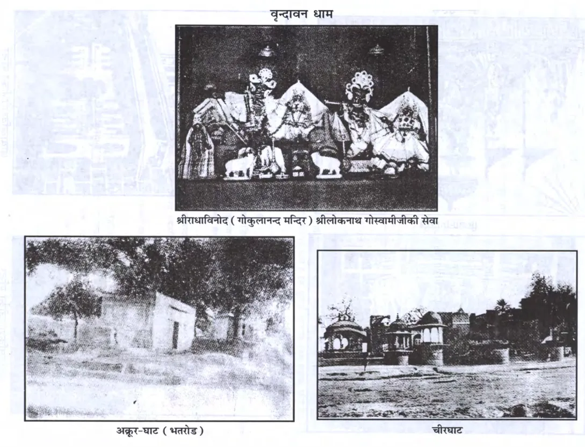
एधितार्थ किस प्रकार हुए?
भगवान् श्रीकृष्ण किस प्रकार 'एधितार्थ' हुए? उनके पृथिवीपर अवतार लेनेके उद्देश्य 'प्रेम'की व्रजभूमिमें किस प्रकार पुष्टि एवं सफलता हुई। इसपर विचार कीजिये। जिस क्षण भगवान्ने व्रजभूमिमें पदार्पण किया, समस्त व्रजका हृदय-कमल उसी क्षण विकसित हो गया। व्रजमण्डलने बड़े ही चावसे उनका स्वागत किया। गोकुल गाँवने, गौओंने, बछड़ोंने गोप-गोपियोंने-सबने सुन्दर-से-सुन्दर वस्त्रोंसे सुसज्जित हो भगवान्का स्वागत किया और यह कहकर उनसे वरदान चाहा कि 'भगवन्! तुम अनन्त कालतक हमारे हृदय-मन्दिरमें निवास करो।' उसी दिनसे व्रजमें सुख-समृद्धि छा गयी, प्रेमावतारके पदार्पणसे सबके हृदय प्रेमाकर्षणसे मिल कर एक हो गये। उनके चरण-स्पर्शमात्रसे ही पृथिवीमाताका हृदय आनन्दसे खिल उठा। सत्य है, एक ही वास्तविक प्रेमावतारके रहनेसे देशमें सुख और समृद्धि छा जाती है।
प्रेममें अहंकारशून्यता और समता
भगवान् श्रीकृष्णका प्रेम अहङ्कारशून्य था। उस प्रेमका प्राणियोंके बाह्य शरीरसे कोई सम्बन्ध नहीं था। वह निस्सीम था और भगवान्के हृदयस्रोतसे प्रवाहित होकर जड़-चेतन सभी भूतोंके अन्तस्तलके निगूढ़ शाश्वत प्रणयकी तन्त्रीको अपने सुख-स्पर्शसे स्पन्दित एवं आन्दोलित कर देता था। भगवान् श्रीकृष्ण अपने माता, पिता, सखाओं तथा गोपियोंके साथ रहकर जिस आनन्दका अनुभव एवं वर्षण करते थे, अन्यान्य चराचर भूतोंके साहचर्यमें भी वे उसी समाधितुल्य आनन्दकी वर्षा और अनुभव करते थे। वनस्थली, पर्वतश्रेणी तथा कालिन्दीके बालुकामय कूलको देखकर उनका हृदय आनन्दके प्रवाहमें बह जाता था। श्रीयमुनाके बालुकामय तीरको देख, सुमन-सौरभ-युक्त समीरको स्पर्श कर एवं बिहग-समूहोंकी काकलिको सुनकर वे आश्चर्य एवं आनन्दमें मग्न हो जाते और कवित्वपूर्ण शब्दोंमें अपने उद्गारोंको इस प्रकार व्यक्त करते थे,१ 'आओ! हमलोग यहींपर इन सबके साथ बैठकर कलेवा करें।' उनको पर्वत, बालू तथा नदियोंके सहवासमें उतना ही आनन्द आता था, जितना किसी चेतन प्रेमीके सहवासमें। उनके प्रेमने भगवान्की दृष्टिमें उन्हें देवताओंसे भी ऊँचा बना दिया था। इसीलिये उन्होंने नन्दबाबाको देवराज इन्द्रकी पूजा करनेके लिये मने किया और कहा कि 'आप इस हमारे प्रिय मित्र गोवर्द्धन-पर्वतकी और गौओंकी पूजा कीजिये।'कृष्णपरायण श्रीनन्दजीने इस बातको स्वीकार किया और गोवर्धनकी पूजा की। इसका कारण यही था कि, जो बात भगवान्को रुचती थी, वही सबके मन भाती थी, क्योंकि वे ही अखिल प्रेमके आधार थे। कहीं मतभेदका नाम भी नहीं था, सर्वत्र एकताका साम्राज्य था। गोपियोंने भी उस पर्वतको सबका महान् प्रेमी सेवक समझ कर बड़े प्रेमसे उसीकी पूजा की। वे वृक्षोंको तो सेवाभावकी साक्षात् मूर्ति समझकर सदा ही उनके प्रति श्रद्धा तथा प्रेम रखते थे एक स्थलपर आप बलरामजीसे कहते हैं 'भाई! देखो ये वृक्ष किस प्रकार फूल और फलोंके भारसे झुककर आपका स्वागत कर रहे हैं२।' दूसरी जगह वे इन वृक्षोंके जीवनको मनुष्योंके लिये बड़ा ही उच्च आदर्श बतलाते हैं।
१. भगवान् अपने साथियोंसे पुकारकर कहते थे—
अहोऽतिरम्यं पुलिनं वयस्याः
स्वकेलिसंपन्मृदुलाच्छवालुकम्।
स्फुटत्सरोगन्धहृतालिपत्रिक-
ध्वनिप्रतिध्वानलसद्द्रुमाकुलम्॥
अत्र भोक्तव्यमस्माभिर्दिवा रूढं क्षुधार्दिताः।
वत्साः समीपेऽपः पीत्वा चरन्तु शनकैस्तृणम्॥
(श्रीमद्भा०१०।१३।५-६)
२. भगवान् श्रीबलरामजीसे कहते हैं—
अहो अमी देववरामरार्चितं
पादाम्बुजं ते सुमनः फलार्हणम्।
नमन्त्युपादाय शिखाभिरात्मन-
स्तमोपहत्यै तरुजन्म यत्कृतम्॥
(श्रीमद्भा० १०। १५। ५)
श्रीयमुनाजीके साथ तो वे अपनी प्रेयसीके समान प्रेम करते थे। वनके पशु-पक्षी उनके क्रीडा-सहचर थे। वे और उनके साथी इन पशु-पक्षियोंके साथ अनेक खेल खेलते थे। वे बन्दरोंकी दुम पकड़ कर वृक्षोंपर चढ़ जाते और उनकी तरफ मुँह बनाकर खेलते थे। मेंढकोंके साथ कूदते, कुँओंके अन्दर झाँककर उसमें दिखायी देनेवाली अपनी परछाइयोंकी ओर मुँह बनाते थे। प्रतिध्वनिके साथ वार्तालाप करते, मोरोंके साथ नाचते, बगुलोंके साथ ध्यान लगा कर बैठते और भँवरोंके साथ ताल दे-देकर गाते थे। उन्होंने अपनी गायोंके अलग-अलग नाम रख छोड़े थे और नाम लेकर पुकारते ही जो जहाँ भी होतीं, उनके पास दौड़ी चली आती थीं। उनके लिये वे प्रसन्नतापूर्वक काँटों और कंकड़ों पर दौड़ा करते थे। यद्यपि उनकी प्यारी गोपियोंको इसके विचारसे ही दुःख होता था। एक बार जब भगवान्ने बछड़ोंका (बड़ी उम्रके बछड़ोंका) रूप धारण किया, तब गौएँ उनको देखकर पर्वतके शिखरसे बाँध तुड़ा कर भागीं। उनके थनोंसे दूध बहने लगा१। समस्त भूत प्राणियोंके प्रति उनका जो प्रेम था, उसके प्रभावसे हिंसक पशु भी अपनी नैसर्गिक हिंसावृत्तिको भूल जाते और इसी कारण उनके पास सिंह और हरिण एक साथ खेलते थे। सारे-के-सारे भाव एक प्रेममें ही परिणत हो गये थे२। उस स्थानपर प्रेमभरी सेवाका भाव ही सर्वत्र परिपूर्ण था, वहाँ उसीका साम्राज्य था। भगवान् श्रीकृष्णने इस प्रकार हमें उस सच्चे प्रेमकी ऐक्योत्पादक शक्तिका दर्शन कराया जो शरीर और व्यक्तित्वसे परे है।
१. दृष्ट्वाथ तत्लेहवशोऽस्मृतात्मा
सगोव्रजोऽत्यात्मपदुर्गमार्गः।
द्विपात्ककुद्ग्रीव उदास्यपुच्छो-
ऽगाद्धुं कृतैरास्रुपया जवेन॥
(श्रीमद्भा० १०। १३। ३०)
२. यत्र नैसर्गदुर्वैराः सहासन्नृमृगादयः।
मित्राणीवाजितावासद्रुतरुट्तर्षकादिकम्॥
(श्रीमद्भा० १०।१३।६०)
कृष्णेऽभिषिक्त एतानि सत्त्वानि कुरुनन्दन।
निर्वैराण्यभवंस्तात क्रूराण्यपि निसर्गतः॥
(श्रीमद्भा० १०। २७। २७)
जिन पशु-पक्षियोंमें स्वाभाविक ही वैर देखा जाता है वे भी यहाँ वैर छोड़कर एक साथ प्रेमसे रहते हैं, भगवान्की वासभूमि होनेके कारण यहाँ काम, क्रोधादि ताप नहीं हैं। श्रीकृष्णाभिषेक होनेपर जिनमें परस्पर स्वाभाविक वैर रहता है वे क्रूर जीव भी निर्वैर हो गये। यही प्रेमकी महिमा है।
सेवामें आनन्द
भगवान् श्रीकृष्णका ऐसा प्रेम था, जिसमें दूसरोंकी सेवामें ही आनन्द मिलता था। शैशव-कालमें ही उन्होंने व्रजवासियोंकी सेवा की और उन्हें प्रसन्न करनेकी भरसक चेष्टा की। वे नाचते, गाते, दौड़-धूप करते और प्रिय वस्तु ला-लाकर उन्हें सर्वदा प्रसन्न करनेकी चेष्टा करते थे। अपने बाल-सखाओंके साथ व्रजवासियोंके घरोंमें नाना प्रकारके ऊधम मचाते, किन्तु इससे लोग प्रसन्न ही होते थे। ऊपरसे देखनेमें तो माता यशोदाके पास उनके आनन्ददायक ऊधमोंकी शिकायत लेकर गोपियाँ उलाहने देने आती१। किन्तु उनका वास्तविक आशय भगवान्को डरा कर उनके भावभङ्गी-पूर्ण सुन्दर मुखारविन्दका दर्शन करना ही होता था, जैसा कि उनके प्रेम-पिशुन नेत्रोंसे पता चलता था२ अतः माता यशोदा भी उन्हें डाँटना छोड़कर स्वयं हँसने लगती थीं। व्रजमें होनेवाली उनकी कौतुकपूर्ण लीलाओंसे व्रजवासियोंके आनन्द और प्रीतिकी वृद्धि ही होती थी। भगवान् निःशङ्क होकर उनकी वस्तुओंको उठा लाते तथा उनके द्वारा संग्रह किये हुए मक्खन, दही और दूधको लेकर सबको स्वतन्त्रतापूर्वक बाँट दिया करते थे और उनकी इस उदारताका लाभ केवल मनुष्योंको ही नहीं, अपितु पशुओं और वन्य-पशुओंतकको मिलता था। सब लोगोंकी भलाई और एकताके सम्पादनके लिये उन्होंने जो योजना सोची थी, उसमें संग्रह और विक्रयके लिये स्थान ही नहीं था।
नारदजीने एक स्थलपर कहा है—
जितना धन शरीर-रक्षाके लिये पर्याप्त है उतने ही धनपर मनुष्योंका स्वत्व है। जो इससे अधिक धनको अपना कहता है वह तो चोर और दण्डका भागी है३।
१. कृष्णस्य गोप्यो रुचिरं वीक्ष्य कौमारचापलम्।
श्रृण्वन्त्याः किल तन्मातुरिति होचुः समागताः॥
(श्रीमद्भा० १०।८।२८)
२. इत्थं स्त्रीभिः सभयनयन-
श्रीमुखालोकिनीभि
र्व्याख्यातार्था प्रहसितमुखी
नह्युपालब्धुमैच्छत्॥
(श्रीमद्भा० १०। ८। ३१)
३. यावद्भ्रियेत जठरं तावत्स्वत्वं हि देहिनाम्।
अधिकं योऽभिमन्येत स स्तेनो दण्डर्महति॥
(श्रीमद्भा० ७। १४। ८)
विन्ध्यावलीने भी श्रीभगवान्से कहा है—पृथिवीपर जितनी वस्तुएँ दिखलायी पड़ती हैं, उन सबकी रचना आपकी क्रीड़ाके निमित्त हुई है। केवल कुबुद्धि और निर्लज्ज पुरुष ही किसी वस्तुको अपनी बतलाते हैं।१ इसी प्रकार ब्रह्माजीने भी प्रेममूर्ति व्रजवासियोंसे कहा था कि तुम्हारे पास जो कुछ भी है-घर, सम्पत्ति, शरीर, स्त्री-बच्चे यहाँतक कि तुम्हारा जीवन भी (भगवान्के) क्रीडार्थ ही है। श्रीकृष्णने सारी वस्तुओंका अपनी इच्छानुसार उपयोग तथा वितरण करके मनुष्य और पशु ही नहीं सारी प्रकृतिको परस्पर प्रेमपूर्ण एकता तथा सेवाके सूत्रमें बाँध दिया था। सबको एक कर दिया था। उनके धनको बाँटकर भगवान्ने उनकी वास्तविक सेवा की थी२। सारे आवरणोंसे मुक्त होकर उनका सच्चा प्रेम और भी निर्बाधरूपसे खिल उठा और उसने सबको कृतार्थ कर दिया। उनका प्रेम ऐसा था कि वह प्रेमास्पदकी रक्षाके लिये सदा विपत्तियोंको झेलनेके लिये अग्रसर रहता था। जानको भी जोखिममें डालनेमें नहीं हिचकता था। इसीलिये गोपियोंने प्रेममें विह्वल होकर ये शब्द कहे थे—
१. क्रीडार्थमात्मन इदं त्रिजगत्कृतं ते
स्वाम्यं तु तत्र कुधियोऽपर ईश कुर्युः॥
कर्तुः प्रभोस्तव किमस्य त आवहन्ति
त्यक्तह्रियस्त्वदवरोपितकर्तृवादाः॥
(श्रीमद्भा० ८। २२। २०)
ब्रह्मन्यमनुगृह्णामि तद्विशो विधुनोम्यहम्।
यन्मदः पुरुषः स्तब्धो लोकं मां चावमन्यते॥
(श्रीमद्भा० ८। २२। २४)
भगवान् कहते हैं कि मैं जिसपर कृपा करता हूँ उसका धन-वैभव पहले हर लेता हूँ, क्योंकि मनुष्य धन और ऐश्वर्यके नशेमें चूर होकर दूसरे प्राणियोंका और मेरा निरादर करता है।
भक्त वृत्रासुर इन्द्रसे कहता है—
२. त्रैवर्गिकायासविघातमस्मत्
पतिर्विधत्ते पुरुषस्य शक्र!
ततोऽनुमेयो भगवत्प्रसादो
यो दुर्लभोऽकिञ्चनगोचरोऽन्यैः॥
(श्रीमद्भा०६।११। २३)
मेरे प्रभु अपने भक्तों को धर्म, अर्थ और काम इस त्रिवर्गके लिये चेष्टा नहीं करने देते, ऐसे ही अकिञ्चन भक्त भगवान्की प्रसन्नताके पात्र हैं।
'विष-दूषित जलसे, अनेकानेक दानवोंसे, कालकी-सी प्रलयवर्षा और तूफानसे, दावाग्निसे तथा अगणित आपत्तियोंसे आपने हमारी रक्षा की है१। बड़े-बूढ़ोंने भी इस बातको स्वीकार किया और यह सोचकर उन्हें सङ्कोच हुआ कि ऐसे महान् पुरुषने हमारे-जैसे दीन मनुष्योंके घर जन्म लिया है२। इसी बातको भगवान्के पिता श्रीवसुदेवजीने भी उद्धवके सामने आगे चलकर स्वीकार किया था३।
१. विषजलाप्ययाद्व्यालराक्षसा-
द्वर्षमारुताद्वैद्युतानलात्।
वृषमयात्मजाद्विश्वतोभया-
दृषभ ते वयं रक्षिता मुहुः॥
(श्रीमद्भा० १०। ३१। ३)
२. बालकस्य यदेतानि कर्माण्यत्यद्भुतानि वै।
कथमर्हत्यसौ जन्म ग्राम्येष्वात्मजुगुप्सितम्॥
(श्रीमद्भा० १०। २६। २)
३. स्मरतां कृष्णवीर्याणि लीलापाङ्गनिरीक्षितम्।
हसितं भाषितं चाङ्ग सर्वा नः शिथिलाः क्रियाः।
सरिच्छैलवनोद्देशान्मुकुन्दपदभूषितान्।
आक्रीडानीक्षमाणानां मनो याति तदात्मताम्॥
(श्रीमद्भा० १०।४६। २१-२२)
जब कभी उनपर कोई विपत्ति आती थी तो उन लोगोंको दौड़कर भगवान्के पास सहायता माँगनेका अभ्यास हो गया था१ क्योंकि भगवान्को अपने प्रेमास्पदकी सहायता एवं सेवा करनेमें ही परमानन्द मिलता था। यहाँतक कि कभी-कभी भगवान् सम्मुख नहीं आते और कष्ट देते हुए-से प्रतीत होते थे, जैसे कालियदमनके समय थोड़ी देरके लिये वे अचेत-से हो गये थे, या जब वे व्रजवासियोंके घरोंमें चोरी कर लिया करते थे, अथवा चीर-हरणके समय जब उन्होंने गोपियोंके वस्त्रोंके साथ उनकी आसक्तिको भी हर लिया था या रासके समय जब उन्होंने अन्तर्धान होकर गोपियोंको रुलाया था-तब भी वे उनके प्रेमको विशुद्ध करने एवं तज्जन्य आनन्दको बढ़ानेके लिये ही ऐसा किया करते थे, और ऐसा करनेमें उन्हें स्वयं भी (लीलासे) कम कष्ट नहीं होता था, इसीलिये वे पीछेसे क्षमा माँग कर उन्हें समझाया करते थे।२
१. जिस समय इन्द्रने मूसलधार वर्षा की, उस समय शीतसे पीड़ित गोप-गोपियोंने अपने-अपने बालकोंको छातियोंमें छिपाये दौडकर भगवान्की शरण ली और वे कहने लगे—
कृष्ण! कृष्ण! महाभाग! त्वन्नाथं गोकुलं प्रभो!
त्रातुमर्हसि देवान्नः कुपिताद्भक्तवत्सल!
(श्रीमद्भा० १०। २५। १३)
हे कृष्ण! हे कृष्ण! हे महाभाग! हे प्रभो! इस गोकुलके नाथ तुम ही हो, हे भक्तवत्सल! इस कुपित इन्द्रसे हमारी रक्षा करो!
एक बार रेंडके वनमें आधी रातको आग लगी और उससे सारा व्रज घिर गया, तब सबने भगवान्के शरण होकर पुकारा—
कृष्ण! कृष्ण! महाभाग! हे रामामितविक्रम।
एष घोरतमो बह्निस्तावकान्ग्रसते हि नः॥
सुदुस्तरान्नः स्वान्पाहि कालाग्नेः सुहृदः प्रभो।
(श्रीमद्भा० १०॥ १७। २३, २४)
इसी प्रकार भयानक दावानलके प्रकट होनेपर (१०।१६।९१०) और नन्दबाबाको सर्पके पकड़नेपर भी श्रीकृष्णको ही पुकारा गया था (१०। २८। ३) एवं सभी जगह उन्होंने अपने शरणागतोंकी रक्षा की थी।
२. नाहं तु सख्यो भजतोऽपि जन्तून्
भजाम्यमीषामनुवृत्तिवृत्तये।
यथाऽधनो लब्धधने विनष्टे
तच्चिन्तयाऽन्यन्निभृतो न वेद॥
एवं मदर्थोज्झितलोकवेद-
स्वानां हि वो मय्यनुवृत्तयेऽबलाः।
मया परोक्षं भजता तिरोहितं
मासूयितुं मार्हथ तत् प्रियं प्रियाः॥
(श्रीमद्भा० १०। ३२। २०-२१)
व्रजवासी भगवान्से भोग क्यों चाहते थे?
यहाँ यह प्रश्न होता है कि 'सांसारिक मनुष्योंकी भाँति भगवत्प्रेमी व्रजवासी भी भगवान्के पास जाकर उनसे रक्षाकी प्रार्थना क्यों किया करते थे? क्या उनका प्रेम अहैतुक एवं फलापेक्षारहित नहीं था? क्या उनका हृदय स्वार्थ-पूर्ण था जिसके द्वारा वे अपने प्रेमास्पदसे लाभ उठाते थे और इस प्रकार एक तरहका लेन-देनका व्यवसाय करते थे? केवल बड़ी विपत्तियोंके निवारणार्थ ही नहीं, वे तो साधारणसी आवश्यकताओं और इच्छाओंकी पूर्तिके लिये भी उनसे प्रार्थना किया करते थे। उनके सखा गोपाल-बालकोंने उनके पास जाकर धेनुकद्वारा रक्षित मधुरगन्धयुक्त रसीले ताल-फलोंको क्यों माँगा? उनके फलोंको पानेकी इच्छाका जैसा वर्णन किया गया है, उसे पढ़ कर लज्जा आती है१ जो मनोविकार और वृत्तियाँ हम सांसारिक पुरुषोंमें मिलती हैं वे ही हमें व्रजवासियोंके अन्दर क्यों दिखायी देती हैं?" भाई! इससे तो उनके श्रीकृष्ण-विषयक निःस्वार्थ प्रेमकी उच्चताका ही परिचय मिलता है। जरा सोचिये तो, जिन व्रजवासियोंके पैरोंतले तृण बनकर रहनेकी ब्रह्माजी और उद्धवजीने अभिलाषा की थी, जिनके दिखावटी कामकी कथाके पठनमात्रसे विशुद्धात्मा श्रीशुकदेवजीके कथनानुसार अधम-से-अधम मनुष्यके चित्तसे छः प्रकारकी वासनाओंका मूलोच्छेद हो जाता है, उन लोगोंके कर्म क्या कभी गर्ह्य कहे जा सकते हैं? ब्रह्माजीने कहा है, इन लोगोंकी अभिलाषा, वासना तथा ममताका लक्ष्य केवल भगवान्के आनन्दकी वृद्धि है। भगवान्ने स्वयं इस बातका गोपियोंको विश्वास दिलाया है।२ ब्रह्माजीने भी कहा है कि 'जबतक हम श्रीकृष्णके नहीं बन जाते, तभीतक कामादि विकार चोरोंके सदृश हमारे अन्दर घुसकर हमें सत्यसे डिगानेमें समर्थ होते हैं३। जहाँ हम एक बार भी उन मनमोहन प्यारेके निज जन हुए, कि सारे विकार भगवान्की ही आज्ञामें रह कर उनके आनन्दकी सामग्री बन जाते हैं। यह कैसे हो सकता है? इसके उत्तरमें यदि हम यह कहें कि हमें श्रीकृष्णसे किसी प्रकारके फलकी आशा नहीं रखनी चाहिये अपितु अपना सर्वस्व उन्हें समर्पित कर देना चाहिये तो इससे भगवान्के दृष्टिकोणका विचार नहीं हुआ। इसका मतलब तो यह हुआ कि भगवान् कुसीदजीवी (ब्याज खोर) की भाँति प्रदानकी अपेक्षा आदानमें ही प्रसन्न रहते हैं! हम क्षुद्र जीव भी जब एक बार किसीसे प्रेम करने लग जाते हैं, तब हमें लेनेकी अपेक्षा देनेमें और सेवा करानेकी अपेक्षा सेवा करनेमें अधिक आनन्द मिलता है, फिर भगवान्को, जो प्रेमकी पराकाष्ठा हैं, देने और सेवा करनेमें इतना अधिक आनन्द होना चाहिये कि जिसकी हम कल्पना भी नहीं कर सकते!
१. फलानि तत्र भूरीणि पतन्ति पतितानि च।
विद्यन्तेऽभुक्तपूर्वाणि फलानि सुरभीणि च।
एष वै सुरभिर्गन्धो विषूचीनोऽवगृह्यते॥
प्रयच्छ तानि नः कृष्ण गन्धलोभितचेतसाम्।
वाञ्छास्ति महती राम! गम्यतां यदि रोचते॥
(श्रीमद्भा० १०।१५। २२-२५-२६)
हे मित्र! वहाँ बहुत ही स्वादिष्ट तालके फल आप ही टूटकर गिर पड़े हैं, और पड़ रहे हैं, हे कृष्ण! हमने ये सुगन्धित फल आजतक नहीं खाये, देखो! चारों ओर उनकी महक फैल रही है, इस महकसे हमारा मन ललचा रहा है, हमारी इन फलोंको खानेकी बड़ी इच्छा है, हे बलरामजी वहाँ चलो और हमें वह फल दो!
२. न मय्यावेशितधियां कामः कामाय कल्पते।
भर्जिता कथिता धाना प्रायो बीजाय नेष्यते॥
(श्रीमद्भा० १०। २२। २६)
३. तावद्रागादयः स्तेनास्तावत् कारागृहं गृहम्।
तावन्मोहोऽङ्घ्रिनिगडो यावत् कृष्ण न ते जनाः॥
(श्रीमद्भा० १०। १४। ३६)
भक्तोंकी तीन श्रेणियाँ
भक्तोंकी तीन श्रेणियाँ होती हैं। एक तो वे होते हैं जो किसी फलकी कामनासे भगवान्को भजते हैं। भगवान् कहते हैं उनकी भक्ति वास्तविक भक्ति नहीं, वह तो एक प्रकारकी स्वार्थपरायणता है।१ दूसरी श्रेणीके भक्त वे हैं जो बिना किसी फलकी इच्छाके अपना सर्वस्व उन्हें समर्पित कर सदा उनकी सेवा ही करना चाहते हैं। इस श्रेणीके भक्त सच्चे भक्त समझे जाते हैं। भगवान्ने दुर्वासा मुनिसे अत्यन्त करुणापूर्ण शब्दोंमें कहा है कि ऐसे भक्त मुझे अपने अधीन बना लेते हैं, मेरी स्वतन्त्रताको हर लेते हैं।२ ये भक्त मुझे देने'का आनन्द न लेने देकर केवल 'लेनेका ही सुख देते हैं। उत्तम-से-उत्तम वस्तुको भी जिसे मैं इन्हें देता हूँ ये इन्कार कर देते हैं जिससे मैं इनके सामने बहुत छोटा हो जाता हूँ और इनका ऋणी बन जाता हूँ। वे मुझे 'सेवा करानेका ही आनन्द देते हैं, 'सेवा करनेका' नहीं। भगवान् प्रेमसे परिपूर्ण होनेके कारण भक्तोंके हठके सामने अपना सिर झुका देते हैं और अपनी इच्छाको उनके अधीन बना देनेमें ही सन्तुष्ट होते हैं। और स्थलोंमें भगवान् स्वामी बन कर ही रहते हैं, सेवक बनकर कदापि नहीं रह सकते परन्तु प्रेम-स्वातन्त्रॺके लिये तो निरतिशय समानता होनी चाहिये। परस्पर आदान-प्रदान और सेवा करने-करानेमें पूर्ण स्वतन्त्रतायुक्त समान बर्ताव होना चाहिये। यह बात उन्हें व्रज और वृन्दावनमें ही मिली। क्योंकि व्रजमें प्रेमका ही एकच्छत्र राज्य था। वहाँ ऊँच-नीच छोटे-बड़े या जीव-ईश्वरका कोई भेद नहीं था। जब वे अपनी माताको खिझाते थे तो वह उन्हें ऊखलसे बाँध दिया करती थी। कहीं खेलमें यदि हार जाते तो उन्हें अपने साथियोंको पीठपर लाद कर दण्ड चुकाना पड़ता था और सखा हार जाते थे तो वे भी भगवान्को पीठपर चढ़ा कर ले जाते थे।३ व्रजवासियोंकी अभिलाषाएँ केवल भगवान्के आनन्दकी वृद्धिके लिये ही होती थीं, उनकी प्रसन्नता भगवान्की प्रसन्नतामें और भगवान्की प्रसन्नता उनकी प्रसन्नतामें थी। उनकी निष्ठा थी 'तत्सुख सुखित्वं' अर्थात् 'अपने प्रियतमके आनन्दमें आनन्दित रहना।' उनके अन्दर ऐसे सभी गुण विद्यमान थे जो भगवान्के आनन्दको बढ़ाते थे। वह आनन्द आदान और उपभोगके द्वारा हो, चाहे प्रदान और सेवाके द्वारा हो। जिस वस्तुके प्राप्त करनेकी प्रेमास्पदको अत्यन्त तीव्र अभिलाषा है, उसके प्रदानमें प्रेमीको और भी अधिक आनन्द मिलता है। इसीलिये वे लोग भगवान्को देने अथवा उनकी सेवा करनेके लिये आग्रह करते थे। इसी तरह आदान और उपभोगका आनन्द उसी समय अधिक होता है, जब कि प्राप्त वस्तु बड़ी कठिनाई और परिश्रमसे मिलती है। इसीलिये देनेके पूर्व वे भगवान्को उत्कण्ठित किया करते थे। सखियाँ भगवान्को श्रीराधाजीके दर्शनके लिये वृक्षोंके कोटरोंमें छिप कर प्रतीक्षा करवाया करती थीं।४ व्रजमें समस्त कार्योंका छिपा हुआ उद्देश्य तथा प्रयोजन सर्वथा स्वतन्त्र, समान और पारस्परिक प्रेम एवं सेवाका एक महान् समन्वय था। समस्त संसारमें लोग स्वतन्त्रता, भाई-चारे तथा समानताकी चर्चा करते हैं, किन्तु बल प्रयोग, युद्ध, जबरदस्ती अथवा अधिकारकी माँगके द्वारा इन भावोंकी स्थापना करनेकी चेष्टाका परिणाम अशान्ति और परस्परकी लूटखसोट ही होती है। वे लोग इस बातको नहीं जानते कि समानता एवं एकताकी कुञ्जी प्रत्येक मनुष्यका स्वार्थत्यागपूर्वक व्रजवासियों-जैसे प्रेमके साथ दूसरोंकी भलाईके लिये चेष्टा करना ही है। यही यज्ञका मार्ग है, जिसे भगवान्ने मनुष्यमात्रकी एकता और समृद्धिका एकमात्र उपाय बतलाया है। क्या ही अच्छा हो, यदि आजके परस्पर विरोधी राष्ट्र और जातियाँ तथा राजनीतिज्ञ भगवान् श्रीकृष्णके इस महान् आदर्शका अनुसरण करने लगे।
१. मिथो भजन्ति ये सख्यः स्वार्थैकान्तोद्यमा हि ते।
न तत्र सौहृदं धर्मः स्वार्थार्थं तद्धि नान्यथा॥
(श्रीमद्भा० १०। ३२। १७)
२. अहं भक्तपराधीनो ह्यस्वतन्त्र इव द्विज।
साधुभिर्ग्रस्तहृदयो भक्तैर्भक्तजनप्रियः॥
नाहमात्मानमाशासे मद्भक्तैः साधुभिर्विना।
श्रियं चात्यन्तिकीं ब्रह्मन्येषां गतिरहं परा॥
मत्सेवया प्रतीतं च सालोक्यादिचतुष्टयम्।
नेच्छन्ति सेवया पूर्णाः कुतोऽन्यत्कालविद्रुतम्॥
(श्रीमद्भा०९। ४। ६३, ६४, ६७)
हे द्विज! मैं भक्तोंके अधीन हूँ, स्वतन्त्र नहीं हूँ, भक्त मुझे बहुत ही प्रिय हैं, उनका मेरे हृदयपर पूर्ण अधिकार है। जिन भक्तोंने मुझको ही अपनी परम गति मानकर सब कुछ त्याग दिया है, उन अपने प्रेमी भक्त शुद्ध साधुओंके सामने मैं स्वयं अपनेको और अपनी प्रिया लक्ष्मीको भी तुच्छ समझता हूँ। मेरे ऐसे भक्त केवल मेरी सेवा ही चाहते हैं, उसीमें उनकी इच्छा विलीन हुई रहती है। स्वर्गादिकी तो बात ही क्या है, वे चार प्रकारकी मुक्ति भी नहीं लेते। दूसरी जगह कहा है:
सालोक्यसार्ष्टिसामीप्यसारूप्यैकत्वमप्युत।
दीयमानं न गृह्णन्ति विना मत्सेवनं जनाः॥
(श्रीमद्भा० ३। २९। १३)
ऐसे भक्तगण मेरी सेवाको छोड़कर मेरी दी हुई सालोक्य, सार्ष्टि, सामीप्य, सारूप्य और सायुज्य इन पाँच प्रकारकी मुक्तिको भी नहीं ग्रहण करते।
३. वहन्तो वाह्यमानाश्च।
उवाह कृष्णो भगवान् श्रीदामानं पराजितः।
(श्रीमद्भा० १०। १९। २२-२४)
४. संकेतीकृतकोकिलादिनिनदं
कंसद्विषः कुर्वतः
द्वारोन्मोचनलोलशङ्खवलय-
क्वाणं मुहुः शृण्वतः।
केयं केयमितिप्रगल्भजरती
वाक्येन दूनात्मनो
राधाप्राङ्गणकोणकेलिविट-
पक्रोडेगता शर्वरी॥
(उज्ज्वलनीलमणि)
व्रज-जीवनका संगठन और तैयारी
शैशव-कालसे ही भगवान्ने अपने प्रेमके प्रभावसे सारे व्रजको एकताके साँचेमें ढाल दिया था। पहले तो जैसा हम ऊपर कह आये हैं, उन्होंने सब लोगोंके हितकी दृष्टिसे सारे व्रजकी सम्पत्तिको बराबर बाँट दिया और मनुष्यों, पशुओं तथा प्रकृतिको एकताके सूत्रमें बाँध दिया। साथ ही सेवा, खेल और सङ्गसे उन्होंने समस्त प्राणियोंके हृदयोंपर अधिकार कर लिया। निःस्वार्थ एवं अहंताशून्यप्रेमके मार्गमें देहाभिमान बड़ा बाधक होता है। चीरहरणकी लीलामें जैसा कि पूर्व बतलाया जा चुका है, भगवान्ने अपनी प्रेमिकाओंका यह अभिमान दूर कर दिया—उन्हें प्रेमके आवेशमें सब कुछ भुला दिया। मैं सदा अपने प्रेमास्पदकी सेवा करूँगा, किन्तु उससे सेवा नहीं चाहूँगा' यह भाव गर्वपूर्ण अहङ्कारका द्योतक है। इसीलिये भगवान् बहुधा उन्हें कठिन परिस्थितिमें डाल कर उन्हें इस अहङ्कारसे मुक्त किया करते थे। वैयक्तिक मोक्षकी कामना सच्चे प्रेममें बड़ी बाधक है। इसलिये जब भगवान्की प्रेमिका यज्ञ-पत्नियोंने उसकी इच्छा की, तब भगवान्ने उनके भ्रमपूर्ण संस्कारोंको शुद्ध करके उन्हें वापस अपने पतियोंके पास लौटा दिया और कहा कि जिन्हें तुम छोड़ आयी हो, उन्हींको ज्ञान और प्रेमका पाठ पढ़ाओ। भगवान्ने यह भी कहा कि मेरे समीप रहनेसे नहीं, अपितु दूर रह कर मेरा चिन्तन तथा दीनोंकी सेवा करनेसे तुम्हारे प्रेमकी वृद्धि होगी। यज्ञादि कर्मोंके तात्पर्य और महत्त्वको बिना समझे ही उनमें अन्धविश्वासपूर्वक चिपट जाना सच्चे प्रेमका एक दूसरा शत्रु है। गोवर्द्धन-यज्ञके अवसरपर भगवान्ने इसके विरुद्ध आन्दोलन खड़ा किया और इस सिद्धान्तको स्थापित किया कि अन्धविश्वास और ऊँच-नीचके भेदको प्रधानता न देकर बुद्धि तथा प्रेमको ही प्रधानता देनी चाहिये।१ नाना प्रकारसे सबके हृदयको तथा समस्त भूतप्राणियोंको एकताके सूत्रमें बाँध देनेके अनन्तर भगवान्ने वेणु बजाकर उसके अन्दरसे उस दिव्य-संगीतकी धारा प्रवाहित की, जिसने विश्वभरके भूतप्राणियोंकी हृत्तन्त्रीको हिला दिया और सबको एक प्रेमके रूपमें परिणत कर दिया। गोपियोंने उसे सुना और हर्षोन्मत्त हो वे परस्पर उसकी इस प्रकार चर्चा करने लगीं कि अहो! कैसा आश्चर्य है, इस दिव्य संगीतको सुनकर चेतन जीव आनन्दसे निस्पन्द हो गये हैं और जड़-पदार्थोंमें स्पन्दन होने लगा है।२ यह साहचर्यका संगीत था। इसके अनन्तर भगवान्ने एक दूसरी मादकतापूर्ण तान छेड़ी, जिसके भीतर उन लोगोंके साथ आन्तरिक सम्बन्ध स्थापित करनेकी उत्कण्ठा भरी हुई थी जो प्रेमकी उच्चतम अवस्थाको पहुँच चुके थे३। इस तानमें भरी हुई मादकताने तो अखिल प्रकृतिके बाह्य रूपको ही पलट दिया और सारे हृदयोंको, जो उसके पात्र थे, विशुद्ध प्रेमकी ओर बरबस खींच लिया। गोपियाँ जो उनके समीप आयीं, प्रकृतिके सहवास तथा प्रेमकी गाढ़तामें भगवान्से कम नहीं थीं।४
१. ज्ञात्वाऽज्ञात्वा च कर्माणि जनोऽयमनुतिष्ठति।
विदुषः कर्मसिद्धिः स्यात्तथा नाविदुषो भवेत्॥
अन्येभ्यश्चश्वचाण्डालपतितेभ्यो यथार्हतः।
यवसं च गवां दत्त्वा गिरये दीयतां बलिः॥
(श्रीमद्भा० १०।२४।६, २८)
सब लोग ज्ञात और अज्ञात, दो प्रकारके कर्म करते हैं,। जिनका फल और तत्त्व पहले जान लिया गया वे ज्ञात और जो बिना विचारे किये जायँ वे अज्ञात हैं। ज्ञात कर्म सिद्ध होते हैं और अज्ञात वैसे सिद्ध नहीं होते। (अतएव इन्द्रका यज्ञ न करके गोवर्द्धनका यज्ञ करो।) श्वान, चाण्डाल और पतितोंको यथायोग्य अन्न देकर सन्तुष्ट करो, गौओंको हरी घास खिलाओ और गिरिराजके भोग लगाओ!
२. अस्पन्दनं गतिमतां पुलकस्तरूणाम्।
(श्रीमद्भा० १०।२२।१९)
३. वनं च तत्कोमलगोभिरञ्जितं
जगौ कलं वामदृशां मनोहरम्॥
(श्रीमद्भा० १०।२९। ३)
४. श्रीकृष्ण-विरहमें गोपियोंने अखिल प्रकृतिको अपनी सङ्गिनी किस प्रकार समझा, यह निम्न पंक्तियोंसे ज्ञात हो जाता है।
दृष्टो वः कच्चिदश्वत्थ प्लक्ष न्यग्रोध नो मनः।
नन्दसूनुर्गतो हृत्वा प्रेमहासावलोकनैः॥
(श्रीमद्भा० १०। ३०। ५)
गोपियाँ वृक्षोंसे पूछती हैं—'हे पीपल! हे पाकर! हे गूलर! श्रीनन्दनन्दन प्रेम और हास्यपूर्ण कटाक्षसे हमारा मन हर कर ले गये हैं, तुमने कहीं उसे देखा है??
द्वारकापुरीमें भगवान्की रानियोंके विलापके प्रसंगमें भी प्रकृतिके साहचर्यका ठीक ऐसा ही वर्णन उपलब्ध होता है।
तब वहाँ सर्वोत्कृष्ट एवं पवित्रतम प्रेमका सागर उमड़ पड़ा और हिलोरें लेने लगा, उसने श्रीकृष्ण एवं गोपियोंकी क्रीडाको प्रभावित कर उसे एक निराला ही रूप दे दिया। उस समयका दृश्य चित्तको मोहित करनेवाला था, जिसे देखकर भावावेशित होनेके लिये देवतागण, चन्द्रमा, नक्षत्र एवं काल भी वहाँ आये और स्तब्ध होकर खड़े रह गये। अतिशय पवित्र एवं अहङ्कारशून्य प्रेममूर्तियोंके साथ इस प्रकारके उल्लासपूर्ण मिलनको सम्पन्न कर श्रीकृष्ण 'एधितार्थ' हो गये और आगे चलकर जो काम उन्होंने मथुरा एवं द्वारकामें किया, उसके लिये उचित सामग्रियोंसे सम्पन्न हो गये। इसके अनन्तर उनके सारे ही कार्य, लोगोंकी हितकामना तथा उनके प्रति सच्चे एवं दूरदर्शितापूर्ण प्रेमका ही हेतु लेकर होते थे। आततायियोंको भी जो आप दिखावटी दण्ड देते थे, उसमें भी इनका प्रेम भरा रहता था। इस बातका पता कालियनागको दिखावटी दण्ड दिये जाने पर उसकी पत्नियोंके द्वारा की गयी स्तुतिसे स्पष्ट लग जाता है।*
* नाग-पत्नियाँ कहने लगीं—
न्याय्यो हि दण्डः कृतकिल्बिषेऽस्मिं-
स्तवावतारः खलनिग्रहाय।
रिपोः सुतानामपि तुल्यदृष्टे-
र्धत्से दमं फलमेवानुशंसन्॥
अनुग्रहोऽयं भवतः कृतो हि नो
दण्डोऽसतां ते खलु कल्मषापहः।
यछन्दशूकत्वममुष्य देहिनः
क्रोधोऽपि तेऽनुग्रह एव संमतः॥
(श्रीमद्भा० १०। १६। ३३-३४)
हे भगवन्! आपने इस अपराधीको दण्ड दिया सो बहुत ही उत्तम और उचित किया। कारण, दुष्टोंको दण्ड देनेके लिये ही आपका अवतार हुआ है। परन्तु इस प्रकार दण्ड देते हुए भी आप समदर्शी ही हैं। आपकी दृष्टिमें शत्रु और पुत्र समान हैं (माता जैसे पुत्रकी हितकामनासे स्नेहपूर्ण हृदयको लेकर उसको दण्ड देती है, उसी प्रकार आप शत्रुभाव रखनेवालेको दण्ड देते हैं)। आपका दण्ड देना उसके हितके लिये ही होता है। हमारी समझसे तो आपने इसे दण्ड नहीं दिया वरं अनुग्रह ही किया है। दण्डरूपी प्रायश्चित्तसे दुष्टोंके पापोंका नाश हो जाता है। इस नागका पाप तो स्पष्ट ही है, जिससे इसे सर्पकी अधम योनि मिली। (अब इसका उद्धार हो गया)। आपका क्रोध इसके लिये कल्याणमय अनुग्रह ही है।
प्रार्थना
हे कृष्ण! हे प्रेम और सौन्दर्यके अवतार अमर ग्रामीण युवक! आज भी गाँवोंमें तुम्हारी बड़ी आवश्यकता है। वहाँके निवासी लेन-देन करते हैं, क्रय-विक्रय करते हैं, चीज़ोंको बटोर-बटोर कर रखते हैं, एक दूसरेको प्यार करनेके बदले धोखा देनेकी—ठगनेकी चेष्टा करते हैं, इसीसे वहाँ दुःखने घर कर लिया है। अतएव एक बार फिर आओ और सबको अपने प्रेमके प्रभावसे सन्मार्गपर ले आओ तथा उनके हृदयोंमें प्रेम, सेवा और दानके भाव भर दो। सारे बालक-बालिकाओंके पथ-प्रदर्शक बन कर उन्हें सच्चे स्वार्थ-त्यागका मार्मिक पाठ पढ़ाओ और सब प्राणियोंकी निःस्वार्थ सेवाके आनन्दसे प्रफुल्लवदन होनेकी शिक्षा दो। स्त्रियोंको ऐसी शिक्षा दो कि वे तुम्हें चाहने लगें और सब प्रकारकी आसक्तियोंको छोड़कर तुम्हारे बताये हुए, सब प्राणियोंकी प्रेमयुक्त सेवाके आदर्शका अनुसरण करें। विविध सम्प्रदायों और जातियोंके कारण विदीर्ण तथा अन्धविश्वासोंसे विमोहित इस देशमें एक बार पुनः पधारो एवं इस प्रकारके अज्ञतापूर्ण बन्धनोंके विरुद्ध प्रेमपूर्ण महान् आन्दोलनके सञ्चालक बनो और उसी सनातन सत्यका मार्ग स्थापित करो, जैसा तुमने गोवर्द्धन-यज्ञके समय किया था। यज्ञके सच्चे भाव अर्थात् सब प्राणियोंकी निःस्वार्थ सेवाकी फिरसे स्थापना करो जिससे यह विश्व पुनः पूर्ववत् प्रेम, सुख, शान्ति और समृद्धिसे परिपूर्ण हो जाय।*
* यस्मिन्हरिर्भगवानिज्यमान
इज्यामूर्तिर्यजतां शं तनोति।
कामानमोघान्स्थिरजङ्गमाना-
मन्तर्बहिर्वायुरिवैष आत्मा॥
(श्रीमद्भा० १। १७। ३४)
ईश्वर करे, भारत-माताके पुत्र और पुत्रियाँ अपने आचरणोंसे सारे विश्वको तुम्हारे प्रेम-मार्गका उपदेश करें जिससे स्वार्थपरता एवं अशान्तिसे सन्तप्त जगत्में पुनः सत्य, शान्ति और सुखकी स्थापना हो।
निसिदिन गाइये
कलह कलपना काम कलेस निवारनौ।
परनिन्दा परद्रोह न कबहुँ विचारनौ॥
जग प्रपंच चटसार न चित्त चढ़ाइये।
ब्रजनागर नंदलाल सु निसिदिन गाइये॥
अन्तर कुटिल कठोर भरे अभिमान सों।
तिनके गृह नहिं रहैं संत सनमान सों॥
उनकी सङ्गति भूलि न कबहूँ जाइये।
ब्रजनागर नंदलाल सु निसिदिन गाइये॥
कहूँ न कबहूँ चैन जगत दुख-कूप है।
हरि-भक्तनको संग सदा सुख-रूप है।
इनके ढिग आनन्दित समै बिताइये।
ब्रजनागर नंदलाल सु निसिदिन गाइये॥
-नागरीदासजी
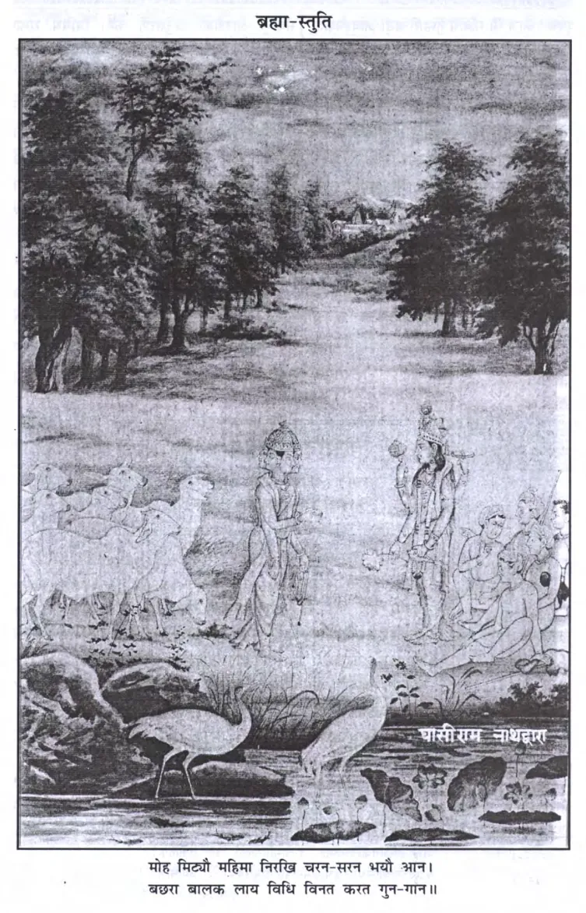
देवकीका स्वप्न
(लेखक-पं० श्रीराधेश्यामजी कथावाचक)
इधर प्रार्थना कर रहे थे, नर-रत्न अनेक।
उधर देवकी मातुने, स्वप्न निहारा एक॥
भादोंकी कृष्ण अष्टमी थी,
जो जन्माष्टमी कहाती है।
अब भी श्रीकृष्ण-जयन्ती वह,
घर-घरमें मानी जाती है।
बुधवार और था वृषभोदय,
रजनी-पति उच्च क्षेत्री था।
स्वागतको धर्म-स्थापकके,
सुस्थिर नक्षत्र रोहिणी था॥
उस काली और अर्ध-निशिमें,
जब प्राणीमात्र सो रहा था।
तब जग जागृत करनेको,
जगपति अवतरित हो रहाथा॥
बादल अपना दल बाँध-बाँध,
नभपर दुंदुभी बजाते थे।
मानो–घनश्याम-आगमनका,
घनश्याम सँदेश सुनाते थे॥
कुछ जगती थी और कुछ सोती थी वह मात।
देखा उसने–'रातमें, होने लगा प्रभात॥
महा तेजसे भर गये, फिर पृथ्वी आकाश।
सूर्य चन्द्रको छोड़कर, आया एक प्रकाश॥'
'नीचे था लाल रक्तसागर,
जिसमें सब सृष्टि धँस रही थी।
ऊपर प्रकाशके पर्दे में,
छोटी-सी मूर्ति हँस रही थी॥ '
पृथ्वीपर शोर हुआ-'मानो,
सब दुनियाएँ टकराती हैं।'
नभपर यह सुना-'मधुर, मीठी,
मुरलीकी तानें आती हैं।'
'भूतलके जितने प्राणी थे, सब
नभ-मण्डलपर जा पहुँचे।
नभमण्डलवाले तारागण,
भूतलके ऊपर आ पहुँचे।
इस उथल-पुथलमें, यह देखा–
'सब प्रकृति नवीन हो चली है।
जगमें यह नई लालिमा है,
कालिमा विलीन हो चली है।'
इतनेमें उस मूर्तिने, बढ़ा दिया आकार।
वह बढ़ती थी; हो रहा था छोटा संसार॥
बढ़ते-बढ़ते वह भव्य मूर्ति,
इतनी विस्तीर्ण अपार हुई।
सारा संसार उसीमें था,
वह ही सारा संसार हुई॥
अब नहीं समझमें कुछ आया,
क्योंकर यह दृश्य नवीन हुआ।
वह मूर्ति विश्वमें लीन हुई,
या विश्व मूर्तिमें लीन हुआ॥ "
इसी स्वप्नमें देवकी, -रही कई क्षण मौन।
फिर कुछ गद्गद गिरासे, बोल उठी 'तुम कौन'?
चतुर्भुजी बन आ गयी, अब तो सम्मुख मूर्ति।
शब्द हुआ- कैसे करूँ, इस आज्ञाकी पूर्ति!
क्या खुद मैं कहूँ-कौन हूँ मैं?
हाँ-कह दूँगा-कहना होगा।
आज्ञाकारी बन कर आया,
तो आज्ञामें रहना होगा।
मैं वह हूँ-बाकी रहता है,
मैं तूका झगड़ा जहाँ नहीं।
मैं यहाँ नहीं-मैं वहाँ नहीं-
मैं कहीं नहीं-मैं कहाँ नहीं॥
मैं किससे कहूँ; कौन हूँ, और क्या हूँ!
हूँ सबसे मिला और सबसे जुदा हूँ॥ १॥
प्रकृति भी हूँ मैं ही, पुरुष भी हूँ मैं ही।
कहीं मैं पुजारी, कहीं देवता हूँ॥ २॥
नहींमें नहीं हूँ, तो हूँ हाँमें हाँ मैं।
मैं ही नास्ति और अस्तिकी व्याख्या हूँ॥ ३॥
निलज्जा हूँ इतना-कि हूँ सर्व-व्यापक।
लजीला हूँ इतना-अगोचर सदा हूँ॥ ४॥
बोल उठी फिर देवकी-'यह अबला मति मूढ़-
समझ सकेगी किस तरह भला पहेली गूढ़?'
उत्तरमें यह ध्वनि हुई, 'पाओ मत तुम कष्ट,
फिर करता हूँ आप मैं, परिचय और स्पष्ट॥
भक्तोंके हृदयकी मैं झनकार हो रहा हूँ।
वह मेरे और मैं उनका आधार हो रहा हूँ।
दो बूँद आँसुओंमें, दो प्रेमके बोलोंमें।
मैं एकसे दो होकर, संसार हो रहा हूँ॥
मैं सृष्टि, मैं ही स्रष्टा, मैं तृप्ति, मैं ही तृप्ता।
मैं रुद्र बनके जगमें, संहार हो रहा हूँ॥
मौन हुई अब देवकी, कह न सकी कुछ बैन।
केवल इतना ही हुआ, मूँदे दोनों नैन॥
उस मूर्तिने यह सोचा-
'अब कठिन समस्या आयी है।
मेरा विराट् परिचय पाकर,
अत्यधिक मातु घबरायी है।'
कहती है ये भोली आत्मा–
'मैं इस वर्णनसे बाज़ आयी।
ऐसे परिचयसे बाज़ आयी,
ऐसे दर्शनसे बाज़ पायी।'
यही सोचकर, मूर्ति फिर, बोल उठी तत्काल।
'क्यों उदास तुम होगयीं? क्यों हो तुम बेहाल?
'मैं क्या हूँ?'-फिर बतलाता हूँ-
'मैं आज बाँसुरीवाला हूँ।
इस कृष्ण-रैनका पूर्ण-चन्द्र,
इस व्रजमण्डलका ग्वाला हूँ।
जो आँखें बाट जोहती थीं,
उन आँखोंका मैं तारा हूँ।
हे कारागृहकी तपस्विनी,
मैं अष्टम लाल तुम्हारा हूँ।'
पूर्ण हो गया इस तरह, वह सुख-स्वप्न अनूप।
आँख खुली तो गोदमें, था बालकका रूप॥
श्रीकृष्ण और द्रौपदी
पाण्डव-महिषी सती द्रौपदी भगवान् श्रीकृष्णको परम बन्धुभावसे पूजती थी। भगवान् भी द्रौपदीके साथ असाधारण स्नेह रखते और उसकी प्रत्येक पुकारका तुरन्त उत्तर देते थे। भगवान्के अन्तःपुरमें द्रौपदीका और द्रौपदीके महलोंमें भगवान्का जाना-आना अबाध था। जिस प्रकार भगवान् श्रीकृष्ण और अर्जुनकी मैत्री बहुत ही गहरी और विलक्षण थी, उसी प्रकार द्रौपदी और भगवान्का दिव्य प्रेम भी अलौकिक था। द्रौपदी श्रीकृष्णको पूर्णब्रह्म सच्चिदानन्दघन ईश्वर समझती थी और भगवान् भी उसके सामने अपनी किसी भी अन्तरङ्गलीलाको छिपाकर नहीं रखते थे। जिस वृन्दावनके पवित्र गोपी-प्रेमकी दिव्य बातें गोप-रमणियोंके पति-पुत्रोंतकको मालूम नहीं थीं, उन सारी ईश्वरीय लीलाओंका द्रौपदीको पता था, इसीलिये चीर-हरणके समय द्रौपदीने भगवान्को 'गोपी-जन-प्रिय' कहकर पुकारा था।
द्रौपदीके चीर-हरणका प्रसंग बड़ा ही मार्मिक है, जब दुष्ट दुःशासन दुर्योधनकी आज्ञासे एकवस्त्रा द्रौपदीको सभामें लाकर बलपूर्वक उसकी साड़ी खींचने लगा और किसीसे भी रक्षा पानेका कोई भी लक्षण न देख द्रौपदीने अपनेको सर्वथा असहाय समझ कर अपने परम सहाय परमबन्धु परमात्मा श्रीकृष्णका स्मरण किया। उसे यह दृढ़ विश्वास था कि मेरे स्मरण करते ही भगवान् अवश्य आवेंगे। वे द्वारकामें हैं तो क्या हुआ, अव्यक्तरूपसे सर्वव्यापी भी तो हैं। मेरी कातर पुकार सुननेपर उनसे कभी रहा नहीं जायगा। द्रौपदीने भगवान्का स्मरण करके कहा—
गोविन्द! द्वारिकावासिन्! कृष्ण गोपीजनप्रिय।
कौरवैः परिभूतां मां किं न जानासि केशव?॥
हे नाथ! हे रमानाथ! व्रजनाथार्तिनाशन।
कौरवार्णवमग्नां मामुद्धरस्व जनार्दन॥
कृष्ण! कृष्ण! महायोगिन्! विश्वात्मन्! विश्वभावन।
प्रपन्नां पाहि गोविन्द! कुरुमध्येऽवसीदतीम्॥
(महा० सभा०६७)
हे गोविन्द! हे द्वारकावासिन्! हे गोपीजनप्रिय! हे केशव! क्या तुम नहीं जान रहे हो कि कौरव मेरा तिरस्कार कर रहे हैं? हे नाथ! हे लक्ष्मीनाथ! हे व्रजनाथ! हे दुःखनाशन! हे जनार्दन! कौरव-समुद्रमें डूबती हुई इस द्रौपदीको बचाओ! हे कृष्ण! हे कृष्ण! हे महायोगिन्! हे विश्वात्मन्! हे गोविन्द! हे विश्वभावन! कौरवोंके हाथोंमें पड़ी हुई इस दुःखिनीकी रक्षा करो।
द्रौपदीकी पुकार सुनते ही जगदीश्वर भगवान्का हृदय द्रवित हो गया और वे—
'त्यक्त्वा शय्यासनं पद्भ्यां कृपालुः कृपयाभ्यगात्।
—कृपालु शय्या छोड़कर पैदल ही दौड़ पड़े। कौरवोंकी दानवी सभामें भगवान्का वस्त्रावतार हो गया। द्रौपदीके एक वस्त्रसे दूसरा और दूसरेसे तीसरा इस प्रकार भिन्न-भिन्न रंगोंके वस्त्र निकलने लगे, वस्त्रोंका वहाँ ढेर लग गया। ठीक समयपर प्रिय बन्धुने पहुँच कर अपनी द्रौपदीकी लाज बचा ली, दुःशासन थककर जमीनपर बैठ गया, वह धरती कुचरने लगा—
'दस हजार गज-बल थक्यो
घट्यो न दस गज चीर।
(२)
जूएमें हारकर जब द्रौपदीसहित पाण्डव वनमें जाकर रहने लगे, तब कुछ दिनों बाद भगवान् श्रीकृष्ण उनसे मिलनेके लिये वहाँ गये। पाण्डवोंसे कपट-द्यूतके सारे समाचार सुनकर श्रीकृष्ण उन्हें आश्वासन देते हुए भाँति-भाँतिसे समझाने लगे। द्रौपदीको अपने अपमानित किये जानेका बड़ा ही दुःख था। आज भगवान् श्रीकृष्णको—परमसखा श्रीकृष्णको अपने पास बैठे देखकर उसका दुःखसागर उमड़ पड़ा। द्रौपदी आँसुओंकी धारा बहाती हुई कहने लगी—'प्यारे कृष्ण! मुझको देवल-ऋषिने कहा है कि तुम ही समस्त लोकोंके रचनेवाले हो, तुम ही विष्णु हो और तुम ही यज्ञस्वरूप हो। इसी प्रकार जमदग्नि, कश्यप और नारदने भी तुम्हारा महत्त्व मुझे बतलाया है। उनका कहना है कि "जिसप्रकार बालक खिलौने बनाकर खेला करते हैं, उसी प्रकार तुम भी बार-बार ब्रह्मा, शिव और इन्द्रादिको रचकर उनके साथ खेला करते हो, तुम्हारे सिरसे आकाश और चरणोंसे पृथिवी व्याप्त है। यह समस्त लोक तुम्हारे पेटसे व्याप्त है। तुम्हीं सनातन पुरुष हो, तुम विभु हो, सब प्राणियोंके स्वामी हो, लोकपाल, नक्षत्र, दसों दिशाएँ, आकाश, सूर्य और चन्द्रमा ये सब तुम्हींमें प्रतिष्ठित हैं। तुम देवता और मनुष्य सबके एकमात्र ईश्वर हो, इतना होनेपर भी मेरी आज यह दुर्दशा है! हे कृष्ण! मैं पाण्डवोंकी स्त्री और धृष्टद्युम्नकी बहिन हूँ और तुम साक्षात् सच्चिदानघन परमेश्वर मुझको अपनी 'प्यारी सखी' कहते हो, वही मैं एकवस्त्रा, रजस्वला काँपती हुई दुःशासनके द्वारा खींची जाकर राजसभामें लायी गयी और मुझे रुधिरसे भीगी देखकर धृतराष्ट्रके पुत्र हँसने लगे!
हे मधुसूदन! आज मैं अपनी साससे अलग वनवासिनी होकर रहती हूँ। हे केशव! आज मेरा कौन है? मेरे न पति हैं, न पुत्र हैं, न बान्धव हैं, न भाई हैं, न पिता हैं। और हे कृष्ण! आज तुम भी मेरे नहीं रहे, जो मेरे दुःखकी उपेक्षा कर रहे हो। पाण्डवोंकी स्त्री और तुम्हारी सखीका इतना अपमान हो, कर्ण और शकुनि मनमानी दिल्लगी उड़ावें और तुम उसका कुछ भी प्रतिकार न करो, इससे अधिक मेरे लिये क्या दुःख होगा?
चतुर्भिः कारणैः कृष्ण! त्वया रक्ष्यास्मि नित्यशः।
सम्बन्धाद्गौरवात्सख्यात्प्रभुत्वेन च केशवः॥
(महा० वन०)
हे श्रीकृष्ण! मैं तो चार हेतुओंसे तुम्हारे द्वारा रक्षा करने योग्य हूँ, प्रथम तो तुम्हारा-हमारा सम्बन्ध है, दूसरे इसमें तुम्हारा गौरव है, तीसरे तुम मेरे सखा हो और चौथे तुम सबके स्वामी हो।'
दुखिनी द्रौपदीके तप्त अश्रुविन्दुओंने भगवान् श्रीकृष्णके हृदयको हिला दिया। सखीका दुःख श्रीकृष्णके लिये असह्य हो गया। यहाँपर श्रीकृष्णके मुँहसे जो शब्द निकले, उन्हींसे कौरवोंका विनाश निश्चित हो गया। भगवान्ने कहा आज—
रोदिष्यन्ति स्त्रियो ह्येवं येषां क्रुद्धासि भाविनि।
वीभत्सुशरसञ्च्छन्नान्छोणितौघपरिप्लुतान्॥
निहतान्वल्लभान्वीक्ष्य शयानान्वसुधातले।
यत्समर्थं पाण्डवानां तत्करिष्यामि मा शुचः॥
सत्यं ते प्रतिजानामि राज्ञां राज्ञी भविष्यसि।
पतेत् द्यौर्हिमवाञ्छीर्येत्पृथिवी शकली भवेत्॥
शुष्येत्तोयनिधिः कृष्णे न मे मोघं वचो भवेत्।
(महा० वन० १२)
हे कृष्णे! हे कल्याणि! तू चिन्ता न कर। जिन राजाओंपर तू कुपित हुई है, उनकी रानियाँ भी, अर्जुनके बाणोंसे छिदकर और मरकर जमीनपर पड़े हुए अपने पतियोंको देखकर ऐसे ही रोयेंगी! पाण्डवोंको जो काम करना चाहिये, वह मैं करूँगा। मैं सत्य प्रतिज्ञा करता हूँ कि तू पाण्डवोंकी राजरानी होगी। चाहे आकाश टूटकर जमीनपर गिर पड़े, भूमिके टुकड़े-टुकड़े हो जायँ, हिमालय फट जाय और समुद्र सूख जाय, परन्तु मेरे वचन कभी मिथ्या नहीं हो सकते।' अर्जुनने भी भगवान्के इन वाक्योंका समर्थन किया, द्रौपदीके सख्य-प्रेमने कौरव-कुल-ध्वंसके लिये भगवान्के श्रीमुखसे भीष्म-प्रतिज्ञा करवा ली!
(३)
पाण्डव वनमें रहकर अपने दुःखके दिन काट रहे थे, परन्तु दुर्योधनकी खल-मण्डली अपनी दुष्टताके कारण उनके विनाशकी ही बात सोच रही थी। दुर्योधनने एक बार दुर्वासा-मुनिको प्रसन्न करके उनसे यह वर माँगा कि–'हमारे धर्मात्मा बड़े भाई महात्मा युधिष्ठिर अपने भाइयों सहित वनमें रहते हैं। एक दिन आप अपने दस हजार शिष्यों सहित उनके यहाँ भी जाकर अतिथि होइये। परन्तु इतनी प्रार्थना है कि वहाँ सब लोगोंके भोजन कर चुकनेपर जब यशस्विनी द्रौपदी खा-पीकर सुखसे आराम कर रही हो, उसी समय जाइयेगा।' दुर्योधनने कुचक्रियोंकी सलाहसे यह सोचा था कि द्रौपदीके खा चुकनेपर उस दिनके लिये सूर्यके दिये हुए पात्रसे अन्न मिलेगा नहीं, इससे कोपनस्वभाव दुर्वासा पाण्डवोंको शाप देकर भस्म कर डालेंगे और इस प्रकार अपना काम सहज ही बन जायगा। सरलहृदय दुर्वासा दुर्योधनके इस कपटको नहीं समझे, इसलिये वे उसकी बात मानकर पाण्डवोंके यहाँ काम्यक-वनमें जा पहुँचे। पाण्डव द्रौपदीसहित भोजनादि कार्योंसे निवृत्त होकर सुखसे बैठे वार्तालाप कर रहे थे। इतनेहीमें दस हजार शिष्यों सहित दुर्वासाजी वहाँ जा पहुँचे। युधिष्ठिरने भाइयों सहित उठकर ऋषिका स्वागत-सत्कार किया और भोजनके लिये प्रार्थना की। दुर्वासाजीने प्रार्थना स्वीकार की और वे नहानेके लिये नदी-तीरपर चले गये। इधर द्रौपदीको बड़ी चिन्ता हुई। परन्तु इस विपत्तिसे प्रियबन्धु श्रीकृष्णके सिवा उनकी प्यारी कृष्णाको और कौन बचाता? उसने भगवान्का स्मरण करते हुए कहा—'हे कृष्ण! हे गोपाल! हे अशरण-शरण! हे शरणागतवत्सल! अब इस विपत्तिसे तुम्हीं बचाओ—
दुःशासनादहं पूर्वं सभायां मोचिता यथा।
तथैव संकटादस्मान्मामुद्धर्तुमिहाहसि॥
(महा० वन० २६३। १६)
तुमने कौरवोंकी राजसभामें जैसे दुष्ट दुःशासनके हाथसे मुझे बचाया था, वैसे ही इस विपत्तिसे भी बचाओ। इस समय भगवान् द्वारकामें रुक्मिणीजीके पास महलमें थे। द्रौपदीकी स्तुति सुनते ही उसे संकटमें जान भक्त-वत्सल भगवान् रुक्मिणीको त्यागकर बड़ी ही तीव्रतासे द्रौपदीकी ओर दौड़े! अचिन्त्यगति ईश्वरको आते क्या देर लगती? वे द्रौपदीके पास आ पहुँचे। द्रौपदीके मानो प्राण आ गये! उसने प्रणाम करके सारी विपत्ति भगवान्को कह सुनायी। भगवान्ने कहा—'यह सब बात पीछे करना, मुझे बड़ी भूख लगी है, मैं घबड़ा रहा हूँ, मुझे कुछ खानेको दो।' द्रौपदीने कहा—भगवन्! खानेके फेरमें पड़कर तो मैंने तुम्हें याद ही किया है। मैं भोजन कर चुकी हूँ, अब उस पात्रमें कुछ भी नहीं है। भगवान् बड़े विनोदी हैं, कहने लगे—'अरी कृष्णे! मैं तो भूखों मर रहा हूँ और तू दिल्लगी कर रही है? दौड़कर थाली तो इधर ला, मैं देखूँ उसमें कुछ है या नहीं'—
कृष्णे! न नर्मकालोऽयं क्षुच्छ्रमेणातुरे मयि।
शीघ्रं गच्छ मम स्थालीमानयित्वा प्रदर्शय॥
(महा० वन० २६३। २३)
बेचारी द्रौपदी क्या करती? पात्र लाकर सामने रख दिया। भगवान्ने तीक्ष्ण दृष्टिसे देखा और एक शाकका पत्ता ढूँढ निकाला। भगवान् बोले—'तू कह रही थी न कि कुछ भी नहीं है, इस पत्तेसे तो त्रिभुवन तृप्त हो जायगा। यज्ञभोक्ता भगवान्ने पत्ता उठाया और मुँहमें डालकर कहा—
विश्वात्मा प्रीयतां देवस्तुष्टश्चास्त्विति यज्ञभुक्॥
(महा० वन० २६३।२५)
'इस पत्तेसे सारे विश्वके आत्मा यज्ञभोक्ता भगवान् तृप्त हो जायँ।' साथ ही सहदेवसे कहा कि–'जाओ, ऋषियोंको भोजनके लिये बुला लाओ।' उधर नदी-तटपर दूसरा ही गुल खिल रहा था, सन्ध्या करते-करते ही ऋषियोंके पेट फूल गये और डकारें आने लगी थीं। शिष्योंने दुर्वासासे कहा—'महाराज! हमारा तो गलेतक पेट भर गया है, वहाँ जाकर हम खायँगे क्या?' दुर्वासाकी भी यही दशा थी, वे बोले—'भैया! भगो यहाँसे जल्दी! ये पाण्डव बड़े ही धर्मात्मा, विद्वान् और सदाचारी हैं तथा भगवान् श्रीकृष्णके अनन्य भक्त हैं, वे चाहें तो हमें वैसे ही भस्म कर सकते हैं जैसे रूईके ढेरको आग! मैं अभी अम्बरीषवाली घटना भूला नहीं हूँ, श्रीकृष्णके शरणागतोंसे मुझे बड़ा भारी डर लगता है। दुर्वासाके यह वचन सुन शिष्य मण्डली यत्र-तत्र भाग गयी। सहदेवको कहीं कोई न मिला।
अब भगवान्ने पाण्डवोंसे और द्रौपदीसे कहा, लो अब तो मुझे द्वारका जाने दो। तुमलोग धर्मात्मा हो, धर्म करनेवालेको कभी दुःख नहीं होता।
'धर्मनित्यास्तु ये केचिन्न ते सीदन्ति कर्हिचित्।
(महा० वन० २६३। ४४)
(४)
भगवान् श्रीकृष्ण दूत बनकर हस्तिनापुरको जाने लगे। द्रौपदीने एकान्तमें जाकर श्रीकृष्णसे कहा—'हे कृष्ण! मैं तुम्हारी सखी हूँ, तुम मेरे दुःख और क्लेशोंको भलीभाँति जानते हो, सन्धि करने जा रहे हो? जाओ, किन्तु—
अयं ते पुण्डरीकाक्ष! दुःशासनकरोद्धृतः।
स्मर्तव्यः सर्वकार्येषु परेषां सन्धिमिच्छता॥
(महा० उद्योग० ८२। ३६)
दुःशासनके हाथोंसे खींचे हुए इन खुले केशोंकी बात याद रखना!' विशाललोचना द्रौपदीको काँपती हुई और रोती हुई देखकर भगवान्का हृदय भर आया, उन्होंने फिर उसी प्रतिज्ञाको दोहराकर कहा 'हे द्रौपदी! धृतराष्ट्रके पुत्र यदि मेरी बात न मानेंगे तो उन सबको मरकर जमीन लुढ़कना पड़ेगा और कुत्ते तथा सियार उनके शरीरोंको खायँगे—
चलेद्धि हिमवाञ्छैलो मेदिनी शतधा फलेत्।
द्यौः पतेच्च सनक्षत्रा न मे मोघं वचो भवेत्॥
सत्यं ते प्रतिजानामि कृष्णे वाष्पो निगृह्यताम्।
हतमित्राञ्छ्रिया युक्तान्नचिराद्द्रक्ष्यसे पतीन्॥
(महा० उद्योग० ८२।४८।४९)
हे कृष्णे! हिमालय फट जाय, पृथिवीके सौ टुकड़े हो जायँ, नक्षत्रों सहित आकाश गिर पड़े, परन्तु मेरा वचन कभी झूठा नहीं हो सकता! मैं सत्य प्रतिज्ञा करके कहता हूँ कि तू शीघ्र अपने पतियोंको शत्रुओंसे रहित और लक्ष्मीके सहित देखेगी, तू रो मत।
भगवान्ने दूतत्वका अभिनय किया, परन्तु बात सखीकी ही रही!
इस प्रकार महाभारत, जैमिनीय अश्वमेधपुराण और बहुत जगह द्रौपदी और श्रीकृष्णके सम्बन्धमें ऐसी अनेक घटनाओंका वर्णन है, जिनसे श्रीकृष्णका द्रौपदीके पवित्र प्रेमसे आकर्षित होकर उसके कथनानुसार लीला करनेका उल्लेख है! लेख बढ़ जानेके भयसे विशेष नहीं लिखा गया।
श्रीकृष्ण-गीतावली
(लेखक-साहित्यरत्न पं० श्रीअयोध्यासिंहजी उपाध्याय 'हरिऔध')
कहा जाता है, किसी दिन गोस्वामी तुलसीदासजी मथुराके एक प्रसिद्ध मन्दिरमें पधारे, समय भजन-पूजनका था, इसलिये विग्रहका बड़ा सुन्दर शृंगार किया गया था। गोस्वामीजी सुसज्जित मूर्ति देख कर विमुग्ध हो गये, उनके हृदयमें प्रेमातिरेकसे आनन्दकी धारा बहने लगी, किन्तु उन्होंने उसके सामने सिर नहीं झुकाया, गद्गद-कण्ठसे कहा—
कहा कहौं छबि आजकी भले बने हो नाथ।
तुलसी मस्तक तब नवै धनुष-बान लो हाथ॥
भगवान् जन-मन-रञ्जन हैं, उनका यह महावाक्य है 'ये यथा मां प्रपद्यन्ते तांस्तथैव भजाम्यहम्' जो मुझको जिस रूपमें प्राप्त करना चाहता है, मैं उसको उसी रूपमें मिलता हूँ। अतएव उन्होंने उनकी इच्छा पूरी की, बात-की-बातमें मुरलीधर धनुर्धर बन गये—
मुरली मुकुट दुरायके नाथ भये रघुनाथ।
लखि अनन्यता भक्तिकी जनको कियो सनाथ॥
मनोकामना पूर्ण होनेपर गोस्वामीजीकी आँखें खुलीं और उनकी हृत्तन्त्रीके निनादित होनेपर यह मधुर-ध्वनि सुनायी दी—
तुलसी मथुरा राम हैं, जो करि जाने दोय।
दो आखरके बीच जो वाके मुखमें सोय॥
मथुराके दो अक्षर 'म' और 'रा'के बीचमें 'थु' है। जब उनको सच्चा ज्ञान हुआ तो उनका यह कहना कि 'राम-कृष्णमें जो द्वैतबुद्धि रखता है उसके मुँहमें 'थू' स्वाभाविक है।' किन्तु सबसे पहले यह बात गोस्वामीजी ही पर घटती है, क्योंकि द्वैतबुद्धि उन्हींमें उत्पन्न हुई। इसलिये अनन्यताके दम भरनेवालोंकी कही, इस दन्तकथापर मेरा विश्वास नहीं। अनन्यता निन्दनीय नहीं, उपासनाका यह प्रधान अङ्ग है। जिसकी बुद्धि निश्चयात्मिका नहीं होती, वही एकको छोड़ अनेकके जालमें पड़ा रहता है। नाना देवताओंकी उपासनामें रत रहना, कभी भूतको पूजने लगना, कभी पिशाचको, इत्यादि बुद्धिकी अस्थिरताका सूचक है। इसलिये भक्तके लिये उच्चकोटिकी साधना अनन्यता ही है। क्योंकि—
सब आयो इस एकमैं डार पात फल फूल।
कबिरा पीछे का रहा गहि पकरा जिन मूल।
जो 'एकमेवाद्वितीयम्'का मर्म जानता है, उसका अनन्य होना स्वाभाविक है। किन्तु इसका यह अर्थ नहीं कि परमात्माकी विभूतियोंकी उपेक्षा की जावे। अनन्य होकर अपने इष्टदेवकी सत्ताको ही समस्त विभूतियोंमें देखना और यथोचित सबकी मर्यादाकी रक्षा करना अनन्यताका बाधक नहीं, क्योंकि—
आकाशात्पतितं तोयं यथा गच्छति सागरे।
सर्वदेवनमस्कारं केशवम्प्रति गच्छति॥
आकाशसे गिरा हुआ जल जैसे समुद्रको जाता है, उसी प्रकार सब देवताओंको किया गया प्रणाम ईश्वरको ही प्राप्त होता है। ‘एको देवः सर्वभूतेषु गूढः' एक परमात्मा ही सबमें व्याप्त है। यह अभेद-बुद्धि दुर्लभ हो, किन्तु है उदात्त! अनन्यताकी सच्ची साधना द्वारा ही इसकी प्राप्ति होती है। अतएव अनन्यताके विरुद्ध उँगली नहीं उठायी जा सकती। हाँ, अनन्यताका अवास्तवरूप अवश्य निन्दनीय है। जो शिवका अनन्य भक्त बन कर विष्णुकी निन्दा करता है, रामका अनन्य उपासक कहला कर भगवान् कृष्णचन्द्रमें उचित समादर-बुद्धि नहीं रखता, वह अनन्यताका दम भरता है, किन्तु उसका तत्त्व नहीं जानता। मेरा विचार है कि ऐसे ही ज्ञान-लव-दुर्विदग्धकी गढ़ी हुई गोस्वामीजी-सम्बन्धिनी यह दन्त-कथा है। जो गोस्वामीजी कहते हैं, 'सियाराममय सब जग जानी। करहुँ प्रणाम जोरि जुग पानी॥' वे भगवान् श्रीकृष्णचन्द्रके विग्रहके सम्मुख पहुँच कर यह कैसे कह सकते हैं। 'तुलसी मस्तक तब नवै धनुष-बान लो हाथ'। जिस अमोघ मन्त्रका जप कर मनु और शतरूपा भगवान् रामचन्द्र-समान पुत्र मानव-शरीर धारण कर लाभ करते हैं, उस मन्त्रको गोस्वामीजीने द्वादशाक्षर बतलाया है और वह मन्त्र है—ॐ नमो भगवते वासुदेवाय।' गोस्वामीजी लिखते हैं—
द्वादश अक्षर मन्त्रवर जपहिं सहित अनुराग।
वासुदेव-पद-पंकरुह दम्पति मन अति लाग।
यद्यपि वासुदेव-संज्ञाकी व्याख्या इस प्रकार की जाती है—
वसुः सर्वनिवासश्च विश्वानि यस्य लोमसु।
स च देव परं ब्रह्म वासुदेव इति स्मृतः॥
किन्तु वास्तवमें वासुदेव अपत्यवाचक संज्ञा है और वसुदेव-शब्दसे ही बनता है। जो गोस्वामीजी भगवान् रामचन्द्र और कृष्णचन्द्रमें इतनी अभेद-बुद्धि रखते हैं, उनके मुखसे ऐसी बात कभी नहीं निकल सकती, जो विभेदकी परिचायक हो। उनकी अभेद-बुद्धिका प्रतिपादक उनका 'कृष्णगीतावली' नामक ग्रन्थ भी है, जिससे अधिकांश हिन्दीसंसार अपरिचित है। इस ग्रन्थका परिचय देनेके लिये ही मुझको यह उपक्रम लिखना पड़ा है। ऊपरके दोहोंको प्रमाण मान कर कुछ लोग अबतक 'कृष्ण-गीतावली' को गोस्वामीजीकी रचना नहीं मानते। किन्तु उनके विषयमें पूर्ण अभिज्ञता रखनेवालों और प्रतिष्ठित एवं मान्य ग्रन्थकारोंने भी इस ग्रन्थको उनकी ही रचना माना है, ग्रन्थकी भाषा भी यही बतलाती है।
'कृष्ण-गीतावली' गीति-काव्य है, इसकी रचना बड़ी ही सरस और मनोरम है। यह ग्रन्थ बड़ी ही मधुर व्रज-भाषामें लिखा गया है। गोस्वामीजीकी लेखनीकी समस्त विशेषताएँ इसमें मौजूद हैं। भगवान् श्रीकृष्णचन्द्रको योगिराज स्वीकार करके भी अनेक कवियों और महाकवियोंने उनकी लीलाओंका असंयत वर्णन किया है। इतना असंयत कि, उन्हें अभिनन्दनीय नहीं कहा जा सकता। कहीं-कहीं इन वर्णनोंमें इतनी अश्लीलता आ गयी है कि उन्हें सभ्यजनानुमोदित नहीं माना जा सकता। गोस्वामीजीकी रचनामें यह छूत नहीं लग पायी है। उनकी लेखनी जिस प्रकार रामायणकी पंक्तियोंमें पवित्रतामयी है, वैसी ही इस ग्रन्थमें। इतनी पुनीत और पावन रचना होनेपर भी उसमें रस छलका पड़ता है और मधुरता उच्च कोटिकी मिलती है। ग्रन्थमें कुल ६१ पद हैं, आधेसे अधिक पदोंमें भगवान्की बाल-लीलाओंका वर्णन है, शेषमें उद्धव-गोपिका-संवाद है, दो-तीन पद स्फुट विषयके हैं। इस ग्रन्थके भाव-चित्रणकी मार्मिकता विलक्षण है। गोस्वामीजी बाह्य और अन्तर्द्वन्द्व दोनोंके चित्रणमें अद्वितीय हैं, इस विषयमें वे अद्भुत क्षमता रखते हैं। इस ग्रन्थमें भी उनकी यह प्रगल्भता सर्वत्र विद्यमान् है। रचनामें स्वाभाविकता इतनी मिलती है कि जितनी अन्य ग्रन्थोंमें मिलना दुर्लभ है। कुछ पद्योंको उपस्थित करके मैं अपने कथनकी पुष्टि करूँगा, साथ ही आप लोगोंको इस ग्रन्थकी मधुर रचनाओंका रसास्वादन भी कराऊँगा।
संसारमें जितने महापुरुष हो गये हैं, उन सबका बाल्यकाल विलक्षण देखा जाता है। ऊधमी बालकोंका ऊधम प्रायः अप्रिय होता रहता है, किन्तु उनके इसी ऊधममें उनकी भावी महत्ताका बीज छिपा रहता है। बालकोंकी नटखटी और चञ्चलता खटकती है, किन्तु किसी-किसी बालककी इसी नटखटी और चञ्चलतामें एक विलक्षणता भी रहती है, जो लोगोंको अपनी ओर आकर्षित ही नहीं करती, चकित भी बनाती है। भगवान् श्रीकृष्णचन्द्रका बालकाल भी इसी प्रकारकी विचित्रताओंसे पूर्ण है। वे प्रायः बाल-स्वभाव-सुलभ चपलता-वश गोपियोंको छेड़ा करते, अवसर पाकर उनका दही-दूध खा जाते, या उसे गिरा देते, या अपने साथियोंको खिला देते। वे बोलतीं तो उनका मुँह चिढ़ाते, उन्हें तंग करते, उनके बरतनों तकको फोड़ डालते। वे बेचारी गोरसोंको छिपाकर सौ परदेमें रखतीं, ऊँचे-ऊँचे छींकोंपर टाँगती, फिर भी वे कन्हैयाकी ढूँढ़नेवाली आँखों और ऊँचे उठे हुए हाथोंसे बचने नहीं पाते। वे बेचारी जब बहुत तंग हो जातीं तो उलाहना लेकर यशोदाके पास पहुँचतीं। ऐसी ही एक गोपीकी बातें सुनिये—
तोहि स्यामकी सपथ जसोदा
आइ देखु गृह मेरे।
जैसी हाल करी यहि ढोटा
छोटे निपट अनेरे॥
गोरस हानि सहौं न कहौं कछु
यहि व्रजबास बसेरे।
दिन प्रति भाजन कौन बेसाहै?
घर निधि काहू केरे॥
किये निहोरो हँसत, खिझे ते
डाँटत नयन तरेरे।
अबहीं ते ये सिखे कहाँ धौं
चरित ललित सुत तेरे॥
बैठो सकुचि साथ भयो चाहत
मातु बदन तन हेरे।
तुलसिदास प्रभु कहौं ते बातैं
जे कहि भजे सबेरे॥
गोपीके मानसिक भावोंका गोस्वामीजीने जिस सहृदयतासे चित्रण किया है, उसकी जितनी प्रशंसा की जाय, थोड़ी है। उसकी खीज, उसका दुःख, उसका भय और प्रेम उसके हृदयका क्षोभ और रोष, उसका डराना और धमकाना—इस पद्यके शब्दोंका विन्यास जिस स्वारस्यके साथ व्यञ्जित कर रहा है, उसका रस आस्वादन कर कौन हृदय मुग्ध न होगा। जो कुछ गोपी कह रही है, ऐसे अवसरोंपर ऐसी ही बातें तो सुनी जाती हैं! पद्य पढ़ते समय उस समयका चित्र आँखोंके सामने खिंच जाता है, और ज्ञात होने लगता है कि उसके एक-एक वाक्य मनपर प्रभाव डाल-डाल कर उसको प्रभावित कर रहे हैं। कवि-कर्म यही है, ऐसी ही कविताका नाम कविता है। जो कविता अन्धकारमें रखती है, जिसके भाव प्रकाशमें आनेसे संकुचित होते हैं, न तो वह कविता है और न उसका रचनेवाला कवि। जो सत्य है, हृदयंगम हो सकता है, उससे मुँह फेर कर अकल्पनीयको कल्पनाका रूप देना वातुलता है।
माखन-चोर, चोर ही नहीं थे, वचन-रचना-चतुर भी थे। उनमें चञ्चलता ही नहीं थी, बात गढ़नेकी भी शक्ति थी। जब गोपियोंने उलाहनोंका ताँता बाँध दिया, तो यशोदाजी कबतक बातें टालतीं, कबतक खरी-खोटी सुनतीं, एक दिन दोबारा-तिबारा उलाहना सुननेपर बिगड़ खड़ी हुई। नन्दलालने रंग बिगड़ा देखकर अपना रंग जमानेकी ठानी, ऐसी बातें गढ़ीं कि यशोदाजी मुँह देखती ही रह गयीं। गोपी बेचारीके तो छक्के छूट गये, मुँहमें आयी बात भी वह न कह सकी, लाजके मारे अपना ही मुँह छिपाने लगी, लालाकी बातें सुनिये—
मोकहँ झूठेहिं दोख लगावहिं।
मैया! इनहिं बानि पर-गृहकी,
नाना जुगुत बनावहिं॥
इनके लिये खेलिबो छोरॺो
तऊ न उबरन पावहिं।
भाजन फोरि बोरि कर गोरस
देन उरहनो आवहिं॥
कबहुँक बाल रोआइ पानि गहि
मिस करि करि उठि धावहिं
करहिं आप, सिर धरहिं आनके
वचन बिरंचि हरावहिं॥
मेरी टेव बूझि हलधरसों
सन्तत संग खेलावहिं।
जे अन्याय करहिं काहूको
ते सिसु मोहि न भावहिं।
सुनि सुनि बचन चातुरी ग्वालिनि हँसि हँसि बदन दुरावहिं
बाल गोपाल केलिकल कीरति
तुलसिदास सुर गावहिं॥
देखिये, कैसी भोली-भाली बातें हैं, साथ ही इनमें कितनी मधुरता है। बातें गढ़ी हैं, पर उनमेंसे सरलता टपकी पड़ती है। एक बालक मातासे डर कर अवसरपर कैसे बातें बनाता है, इस पद्यमें उसका जीता-जागता चित्र है। इसी भावका एक पद्य और देखिये, इसमें कितनी भावुकता है, साथ ही कितनी स्वाभाविकता, बाल-भाव इसमें किलक-किलक कर क्रीड़ा कर रहा है—फिर गोपी क्यों न ठग जाती, और उसके मुँहसे उत्तर कैसे निकलता?
अबहिं उरहनो दै गई,
बहुरो फिरि आई।
सुनु मैया तेरी सौं करों,
याकी टेव लरनकी सकुच बेंचि सी खाई।
या व्रजमें लरिका घने,
हौं ही अन्याई।
मुँह लाये मूड़हिं चढ़ी
अन्तहु अहिरिनि तोहि सूधी करि पाई।
सुनि सुतकी अति चातुरी
जसुमति मुसुकाई।
तुलसिदास ग्वालिनि ठगी,
आयो न उतरु कछु कान्ह ठगौरी लाई।
गोपियाँ खीजती थीं, उलाहना भी देती थीं—गोरसका लुटना-लुटाना कहाँतक देख सकतीं। नित्य क्षतिको कोई नहीं सह सकता। उत्पात और ऊधमसे सभी ऊब जाते हैं। परन्तु उनके हृदयमें कृष्ण प्यारेकी बड़ी ममता थी, वे उनका कुम्हलाया मुख नहीं देख सकतीं। उनकी ताड़नाका खयाल भी उनको सताता, वे मोहनलालको दुखी देकर काँप उठतीं। उनकी खीजमें भी रीझ थी, उनके उलाहनेमें भी प्यार था। उनका यह भाव नीचेके पदमें कैसा स्फुटित है!
हरिको ललित बदन निहारु।
निपट ही डाँटति निठुर ज्यों लकुट करते डारु॥
कान्हहूँ पर सतर भौहैं, महरि मनहिं बिचारु।
दास तुलसी रहति क्यों रिस निरखि नन्दकुमारु॥
माताका हृदय बड़ा मधुर होता है, इतना मधुर कि उसके सामने पीयूष क्या है! जब बालक मचलता है, तब इस मधुर हृदयकी मधुरता और अधिक हो जाती है। उस समय उसपर स्नेहका बड़ा गहरा रंग चढ़ा रहता है, और उसमेंसे एक बड़ी विमुग्धकरी धारा प्रवाहित होती रहती है। बच्चोंकी सँभाल टेढ़ी खीर है, जब बच्चोंके मनका नहीं होता, तब वे चिड़चिड़े हो जाते हैं, और बात-बातमें उलझन डालते हैं, क्योंकि बालक-स्वभाव हठी होता है। बच्चेका मन रखना और उसकी बुरी आदतें छुड़ाना, आसान नहीं। खेलके सामने बच्चे सब भूल जाते हैं, न तो नहाने-धोनेकी सुधि रहती, न खाने-पीनेकी। कुशल माता ही उसकी ठीक-ठीक सँभाल करती है। वह गीत गाती है, उसको बहलाती है, बातें बनाती है, तरह-तरहकी कहानियाँ सुनाती है और लालच दिला कर फुसलाती है, फिर उसको खुश करके जो चाहती है करा लेती है। गोस्वामीजीकी लेखनी बड़ी ही मर्म-स्पर्शिनी है—देखिये, नीचेके पद्यमें इन भावोंका कितना सुन्दर वर्णन है—
छाड़ो मेरे ललित ललन लरिकाई।
ऐहैं सुत देखवार कालि तेरे
बबै ब्याहकी बात चलाई॥
डरिहैं सासु ससुर चोरी सुनि
हँसिहै नई दुलहिया सुहाई।
उबटौं न्हाहु गुहौं चुटिया बलि
देखि भलो बर करिहि बड़ाई॥
मातु कह्यो करि कहत बोलि दै
भई बड़ि बार 'कालि' तो न आई।
जब सोइबो तात यों 'हाँ' कहि
नयन मीचि रहे पौढ़ि कन्हाई॥
उठि कह्यो भोर भयो झँगुली दै
मुदित महरि लखि आतुरताई।
बिहँसी ग्वालि जानि तुलसी प्रभु
सकुचि लगे जननी उर धाई॥
'कान्ह कुँवरकी लीलाएँ देखकर एक गोपी हँस पड़ी, यह देखकर वे लज्जित हो गये और दौड़ कर माँकी छातीसे चिपक गये।' यह लिख कर गोस्वामीजीने हमारे एक सामाजिक संस्कारपर अच्छा प्रकाश डाला है। अपने विवाहकी बात सुन कर हमारे लड़के-लड़कियोंके लज्जित हो जानेका भाव स्वाभाविक है। पदका अन्तिम चरण लिख कर गोस्वामीजीने बतलाया है कि किस प्रकार बाल्यकालहीमें घटना-सूत्रसे इस भावका बीज बालकोंके हृदयमें आरोपित हो जाता है।
कृष्णगीतावलीके पद्य एक-से-एक सुन्दर है, जी चाहता है, मैं सबको सामने रक्खूँ और उनका रसास्वादन करा कर आपलोगोंके हृदयको सुधा-सिञ्चित बनाऊँ किन्तु न तो इतना समय है और न स्थान। इसलिये कतिपय पद्य वियोग-विधुरा गोपियोंके लिख कर मैं इस लेखको समाप्त करूँगा। भगवान् श्रीकृष्णचन्द्रका व्रजको छोड़ कर मथुरा चले जाना, और फिर उसकी ओर उलट कर भी न देखना बड़ी मर्म-वेधिनी कथा है। सहृदय जनोंके हृदयका यह ऐसा गहरा घाव है, जो आजतक नहीं भरा, कभी भरेगा भी नहीं। उसकी टपकसे व्यथित होकर लोग आज भी कलेजा थामते हैं, परन्तु इलाज क्या। आँसू बहानेसे कुछ शान्ति मिलती है, पर हाय! कोई कबतक आँसू बहाये। सहृदय हिन्दूसमाजको वैदेही-वनवास और व्रजजीवन-प्रवास चिरकालसे रुला रहा है, और प्रलयकाल तक रुलाता रहेगा। किन्तु इस रोनेमें भी रस है, इसलिये आज भी वे रसिकजन-हृदयके सर्वस्व हैं। मनीषी उद्धव व्रज-निवासियोंको प्रबोध करने आये, किन्तु क्या वे उनका प्रबोध कर सके? सच्ची बात तो यह है कि उनकी अकृत्रिम प्रेमधारामें वे भी बह गये। निर्गुणवादी उद्धव ज्ञानमार्गी थे, भक्ति मार्गका मर्म उन्होंने व्रजमें ही जाना।
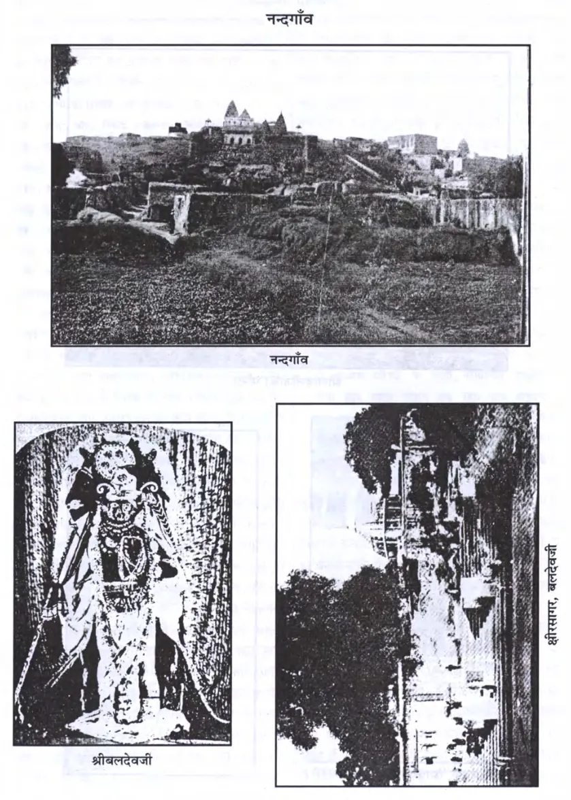
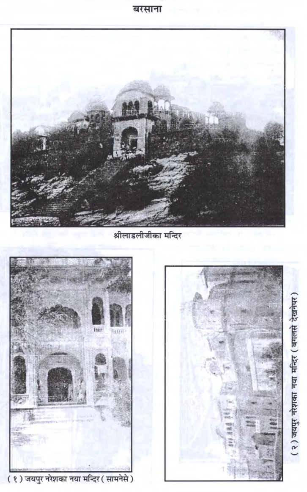
जब गोपियाँ कहती—
ऊधो या व्रजकी दसा बिचारो।
ता पाछे यह सिद्धि आपनी
जोग-कथा बिस्तारो॥
जा कारन पठये तुम माधव
सो सोचहु मनमाहीं।
केतिक बीच बिरह परमारथ
जानत हो किधौं नाहीं॥
परम चतुर निज दास श्यामके
सन्तत निकट रहत हो।
जल बूड़त अवलम्ब फेनको
फिरि-फिरि कहा कहत हो॥
वह अति ललित मनोहर आनन
कौने जतन बिसारौं।
जोग जुगुत अरु मुकुत बिबिध बिध
वा मुरलीपर वारौं॥
जेहि उर बसत श्यामसुन्दरघन
तेहि निर्गुन कस आवै।
तुलसिदास सो भजन बहाओ
जाहि दूसरो भावै॥
—तो वे चकित हो जाते, सोचते गोपियों जैसी 'तादात्म्यवृत्ति ' कहाँ मिलेगी। जिसको प्रेमका बाण लग गया है और जो प्रेम-स्वरूपका सच्चा विरही है, उसको परमार्थकी क्या आवश्यकता, परमार्थका परिणाम सच्चा प्रेम ही तो है। जो विरह-सलिल-राशिमें डूब रहा है, उसकी रक्षा योग-साधन-फेनसे कैसे होगी, उसका त्राण तो तभी होगा, जब उसको प्रेमाधारकी प्राप्ति हो। जिसको मुक्तिकी भी कामना नहीं, उसको योगकी क्या परवा? जो घनश्यामकी चातकी है, सगुणताकी मर्मज्ञा है, उसको उस निर्गुणसे क्या काम, जो अनन्त साधनाओंके द्वारा केवल समाधि-लब्धमात्र है। निष्क्रिय निर्गुणकी संसारको उतनी आवश्यकता नहीं, जितनी सक्रिय सगुणकी। संसार निर्गुणका ही सगुण स्वरूप है। प्रेमके द्वारा ही प्राणीको इसका साक्षात्कार होता है, अतएव प्रेम ही जीवनकी प्रधान साधना है, वही परमानन्दका बीजमन्त्र है, और इसीसे कहा गया है 'प्रेम एव परो धर्मः।' उद्धवके इस प्रकारके विचारोंने ही उनका कायापलट कर दिया था, जिसका फल यह हुआ कि उन्होंने अपना ज्ञान भूल कर गोपियोंसे प्रेम-शिक्षा ग्रहण की। गोस्वामीजीके पद्यके सीधे-सादे शब्दोंमें गोपियोंकी प्रेम-परायणता मूर्तिमन्त होकर विराज रही है। साथ ही उसमें कितना त्याग और व्यंग है, कितनी तदीयता और लगन है, इसका अनुभव प्रत्येक सहृदय सुजन कर सकता है।
नीचे लिखे पद्योंमें कितनी सरसता और मोहकता है, कितना व्यंग और कितनी मनोवेदना है, उनको पढ़ कर विचारिये। कहीं निराशाकी झलक है, तो कहीं प्रेममय खीज। कहीं ऊधोकी अरसिकतापर कटाक्ष है, तो कहीं निर्मोहीके निर्मोहपर मनोहर व्यङ्ग। किसी पदमें मनोवेदना तड़पती मिलती है, तो किसीमें पीड़ा रुदन करती दृष्टिगत होती है। फिर भी जो कुछ है, वह संयत है, नियमित है, और है प्रेमरस-परिपूरित—
मधुकर कहहु कहन जो पारो।
नाहिंन बलि अपराध रावरो
सकुचि साध जनि मारो॥
नहिं तुम व्रज बसि नन्दलालको
बाल-बिनोद निहारो।
नाहिंन रास रसिक-रस चाख्यो
तातें डेल सों डारो॥
तुलसी जो न गये प्रीतम सँग
प्रान त्यागि तनु न्यारो।
तौ सुनिबो देखिबो बहुत अब
कहा करम सों चारो॥
ऊधोजू कह्यो तिहारोइ कीबो।
नीके जियकी जानि अपनपौ
समुझि सिखावन दीबो॥
स्याम बियोगी व्रजके लोगन
जोग-जोग जो जानो।
तो सकोच परिहरि पा लागौं
परमारथहिं बखानो॥
गोपी गोप ग्वाल गोसुत सब
रहत रूप अनुरागे।
दीन मलीन छीन तनु डोलत
मीन मजा सों लागे।
तुलसी है सनेह दुखदायक
नहिं जानत यह को है।
तऊ न होत कान्हको सो मन
सबै साहेबहिं सोहै।
चित्तकी विचित्र अवस्था है, वह जिसको प्यार करता है, जिसके नामकी माला जपता है, खीझ जानेपर उसको भी उलटी-सीधी सुना देता है। कभी वेदनाओंसे विकल होकर ऐसा किया जाता है, और कभी जी हलका करनेके लिये। कभी इस भावका वेग संयत होता है, कभी तीव्र। धीर प्रकृति गम्भीर होती है, अधीर प्रकृति उद्धत। संसारमें ऐसे लोग भी हुए हैं, जिन्होंने गला उतर जानेपर भी उफ नहीं की! ऐसे लोग प्रियतमके विरुद्ध जीभ हिलाना भी पाप समझते हैं, हमारे यहाँ स्वकीया नायिकाका यही आदर्श है; परन्तु ऐसे लोग कितने हैं? प्रायः प्राणी रो-कलप कर, टेढ़ी-मेढ़ी बातें कह कर ही अपनी पीड़ाओं और मानसिक दुःखोंको कम करता है। गोपियोंके मुखसे भी ऐसी बातें सुनी जाती हैं, किन्तु गोस्वामीजीकी लेखनीका सहारा पाकर वे कितनी संयत हो गयी हैं, इस बातको निम्नलिखित पद्यमें देखिये—
ताकी सिख व्रज न सुनैगो कोऊ भोरे।
जाकी कहनि रहनि अनमिल अलि
सुनत समझियत थोरे॥
आपु कंज मकरन्द सुधा ह्रद
हृदय रहत नित बोरे।
हमसों कहत विरह स्रम जैहै
गगन-कूप खनि खोरे॥
धानको गाँव पयारते जानिय
ज्ञान विषय मन मोरे।
तुलसी अधिक कहे न रहै रस
ज्यों गूलर फल फोरे॥
इस पद्यके 'गगन कूप खनि खोरे' 'ज्यों गूलर फल फोरे' आदि व्यङ्गोंकी जितनी प्रशंसा की जाय थोड़ी है।
एक पद्य और देखिये। इस पथके पद-पदसे गहरी निराशा और विवशता टपकी पड़ती है। मथुरा चले जानेपर व्रजदेवके वियोगमें व्रजबालाओं और व्रजनिवासियोंकी क्या मानसिक अवस्था हुई, इसका चित्रण इसमें बड़ी ही निपुणतासे किया गया है। पद्य पढ़ते ही चित्त करुणार्द्र हो जाता है।
करी है हरि बालककी-सी केलि।
हरख न रचत, विखाद न बिगरत,
डगरि चले हँसि खेलि॥
बई बनाइ बारि बृन्दाबन
प्रीति सजीवन बेलि।
सींचि सनेहसुधा खनि काढ़िय
लोक वेद अवहेलि॥
तृन ज्यों तजी पालि तनु व्रज-जन
विधि-वासव-बल पेलि।
एतेहुँ पर भावत तुलसी प्रभु
गये मोहिनी मेलि॥
अमृतसे तृप्ति नहीं होती, उसको जितना ही पीजिये, उतनी ही तृष्णा बढ़ती है। कृष्णगीतावलीके जिस पद्यको पढ़िये, वही तन्मय कर देता है, उसे बार-बार पढ़कर भी जी नहीं भरता। मनन करनेपर उसकी मोहकता बढ़ती ही जाती है। मैंने कुछ पद्य आपलोगोंके सामने रक्खे, उनको पठनकर मेरे कथनको कसौटीपर कसिये, आशा है आपलोग मेरे विचारसे सहमत होंगे। गोस्वामीजीके अपर ग्रन्थोंके समान कृष्णगीतावली भी हिन्दी-साहित्य-सागरका महारत्न है। उसकी ओर साहित्यप्रेमियोंकी दृष्टि आकर्षण करनेके लिये यह लेख लिखा गया है। इस ग्रन्थको पढ़ कर भी जो गोस्वामीजीके हृदयकी विशालता और अनन्य उपासनाका मर्म न समझ सकेंगे, उनको मैं मननशील और जिज्ञासाप्रिय बननेकी सम्मति दूँगा। अन्तमें कृष्णगीतावलीके निम्नलिखित स्तुतिपद्यके साथ इस लेखको समाप्त करता हूँ।
गोपाल गोकुल बल्लभी
प्रिय गोप गोसुत बल्लभं।
चरनारविन्दमहं भजे
भजनीय सुर-मुनि-दुर्लभं।
घनश्याम काम अनेक छबि
लोकाभिराम मनोहरं।
किंजल्क वसन किसोर मूरति
भूरि गुन करुनाकरं॥
सिर-केकि-पच्छ विलोल कुण्डल
अरुन वनरुह लोचनं।
गुंजावतंस विचित्र सब अँग
धातु भव-भय-मोचनं॥
कच कुटिल सुन्दर तिलक
भू राका मयंक समाननं।
अपहरन तुलसीदास त्रास
विहार वृन्दाकाननं॥
श्रीकृष्ण-चरण-सेवनका माहात्म्य
ब्रह्माजी श्रीभगवान्से कहते हैं—
अथापि ते देव पदाम्बुजद्वय-
प्रसादलेशानुगृहीत एव हि।
जानाति तत्त्वं भगवन्महिम्नो
न चान्य एकोऽपि चिरं विचिन्वन्।
(श्रीमद्भा० १०। १४। २९)
हे देव! जो लोग आपके उभय चरण-कमलोंके प्रसादका लेश पाकर अनुगृहीत हुए हैं, वे भक्तजन ही आपकी महिमाके तत्त्वको जान सकते हैं। उनके सिवा अन्य कोई भी चिरकालतक विचार करनेपर भी आपके तत्त्वको नहीं जान सकता।
यमराज अपने दूतोंसे कहते हैं—
कृष्णाङ्घ्रिपद्ममधुलिण्न पुनर्विसृष्ट-
मायागुणेषु रमते वृजिनावहेषु।
अन्यस्तु कामहत आत्मरजः प्रमार्ष्टु-
मीहेत कर्म यत एव रजः पुनः स्यात्॥
(श्रीमद्भा० ६।३। ३३)
जो पुरुष श्रीकृष्णके चरण-कमलके मधुका आस्वादन कर चुकता है, वह फिर दुर्गतिप्रद मायाके विषयोंमें कभी अनुरक्त नहीं होता। इसके विपरीत जो आदमी (सांसारिक) कर्मोंसे ही पापका नाश करता है, वह महामूढ़ है, उसके बन्धनका नाश नहीं होता।
श्रीशुकदेवजी कहते हैं—
समाश्रिता ये पदपल्लवप्लवं
महत्पदं पुण्ययशो मुरारेः।
भवाम्बुधिर्वत्सपदं परं पदं
पदं पदं यद्विपदां न तेषाम्॥
(श्रीमद्भा० १०। १४। ५८)
जिसका यश महान् पुण्यप्रद है, उस मुरारि श्रीकृष्णके चरण-कमल संसार-सागरमें नौकारूप हैं। जो लोग उस चरण-कमल-नौकाके आश्रित हैं, उनके लिये संसार-सागर गौके खुर टिके हुए गढ़ेके समान है। वे उसी नौकाके सहारे परमपदको पहुँच सकते हैं। फिर उन्हें विपत्तिके धाम इस संसारमें नहीं आना पड़ता।
श्रीप्रह्लादजी कहते हैं—
विप्राद्विषड्गुणयुतादरविन्दनाभ-
पादारविन्दविमुखाच्छ्वपचं वरिष्ठम्।
मन्ये तदर्पितमनोवचनेहितार्थ-
प्राणं पुनाति सकुलं न तु भूरिमानः॥
(श्रीमद्भा० ७। ९। १०)
बारह प्रकारके गुणोंसे युक्त ब्राह्मण यदि भगवान् पद्मनाभके चरणकमलोंसे विमुख हो और एक चाण्डाल जो अपने तन, मन, वचन और कर्म श्रीभगवान्के अर्पण कर चुका हो, इन दोनोंमें ब्राह्मणकी अपेक्षा चाण्डाल श्रेष्ठ है, क्योंकि वह श्रीकृष्ण-भक्त चाण्डाल अपने सारे कुलको पवित्र कर सकता है; परन्तु वह बड़े मानवाला ब्राह्मण नहीं कर सकता।
यमराज अपने दूतोंसे कहते हैं—
तानानयध्वमसतो विमुखान्मुकुन्द-
पादारविन्दमकरन्दरसादजस्रम्।
निष्किञ्चनैः परमहंसकुलै रसज्ञै-
र्जुष्टाद्गृहे निरयवर्त्मनि बद्धतृष्णान्॥
(श्रीमद्भा० ६। ३। २८)
जिन भगवान् मुकुन्दके चरणारविन्दोंकी सेवा सर्वत्यागी परमहंसगण सब प्रकारकी आसक्ति छोड़कर किया करते हैं, उन चरणकमलोंके मकरन्दरसके आस्वादनसे विमुख होकर जो असाधु लोग नरकके पथस्वरूप घरके जंजालमें फँसे रहते हैं, उन्हींको यमपुरीमें मेरे पास लाया करो!
नागपत्नी श्रीभगवान्से कहती हैं—
न नाकपृष्ठं न च सार्वभौमं
न पारमेष्ठॺं न रसाधिपत्यम्।
न योगसिद्धीरपुनर्भवं वा
वाञ्छन्ति यत्पादरजः प्रपन्नाः॥
(श्रीमद्भा० १०। १५। ३७)
हे भगवन्! जो लोग आपके चरणोंकी धूलिको प्राप्त हो जाते हैं वे फिर स्वर्ग, चक्रवर्ती राज्य, पातालका राज्य, ब्रह्माका पद और योगकी सिद्धिकी तो बात ही क्या है मुक्तिकी भी इच्छा नहीं करते।
भगवान् श्रीकृष्णकी पटरानियाँ द्रौपदीसे कहती हैं—
न वयं साध्वि साम्राज्यं स्वाराज्यं भौज्यमप्युत।
वैराज्यं पारमेष्ठॺं च आनन्त्यं वा हरेः पदम्॥
कामयामह एतस्य श्रीमत्पादरजः श्रियः।
कुचकुंकुमगन्धाढॺं मूर्ध्ना वोढुं गदाभृतः॥
(श्रीमद्रा० १०। ८३। ४१-४२)
हे साध्वी! हमें पृथिवीके साम्राज्य, इन्द्रके राज्य, भौज्य-पद, सिद्धियाँ, ब्रह्माके पद, मोक्ष या वैकुण्ठकी भी इच्छा नहीं है, हम तो केवल यही चाहती हैं कि भगवान् श्रीकृष्णकी कमला-कुच-कुंकुमकी सुगन्धसे युक्त चरणधूलिको ही सदा अपने मस्तकोंपर लगाती रहें।
श्रीकृष्णकी चरण-रजके सामने सब तुच्छ हैं।
छार ऐसे जीबैपे
रचिकैं सँवारे नाहिं अंग-अंग श्यामा-श्याम,
ऐरी धिक्कार और नाना कर्म कीबै पै।
पायँनको धोय निज करतें न पान कियो,
आली, अंगार परे सीतल पय पीबै पै॥
बिचरे न वृन्दावन कुंजन-लतान तरे,
गाज गिरै अन्य फुलवारी-सुख लीबै पै।
'ललितकिशोरी' बीते बरस अनेक, दृग,
देखें नाहिं प्राणप्यारे छार ऐसे जीबै पै॥
—ललितकिशोरीजी
भगवान् श्रीकृष्ण
(लेखक-राजा सर दलजितसिंहजी सी० आई० ई०)
आओ आली! देखो आज द्वारे नन्दरायजूके,
चतुर बदन वेद ध्वनि है अलावतो।
गणनको ईश जो महेशको दुलारो प्यारो,
हाथी-मुखवारो हाथ बीणा लै बजावतो॥
किन्नर कुबेर-वर ताली दै सु-गावते,
बजावते मृदंग अंग अंग सरसावतो।
ओढ़े मृगछाल ओ त्रिलोचन विशाल जटा-जूट,
विधि भाल सिंगी नाद है बजावतो॥
केते इन्द्र, रुद्र, विश्व, अश्विनी-कुमार, वसु,
केते गंधर्व, यक्ष, द्वार खड़े ध्यावते।
केते सिद्ध, साधु, यती, सती, हठी, तपी केते,
- एक लव लाय मनमोहन चितावते॥
देवल, असित और व्यास, भृगु, नारदसे,
ऋषी, महाऋषी, मुनी, गुनी गुन गावते।
गोकुल गोलोक हूँ ते अधिक बन्यो है आज,
देवन विमान चढ़ि फूल बरसावते॥
झूम झूम घूम घूम भूमि औ अकाश पर,
घोर घन गाज गाज नौबत बजाते हैं।
नाचत चकोर मोर कोयल अलाते झंग,
झिंगुर बजाते चारि चातक लगाते हैं।
कुंज कुंज गूँज रहे मधुप मधुर पुंज,
मोहनके आगमकी खबर सुनाते हैं।
महामोद माते लहराते हरे हरे पेड़,
फूल सबै फूल फूल फूले न समाते हैं।
कोटि ब्रह्माण्ड जासों प्रगट थिति लै होय,
रहत अलेप जड़ चेतन समायो है।
नित्य अव्यक्त सत्य अचल अलेप आदि,
अखिल अनन्त अज जाहि वेद गायो है॥
सत चित आनँद स्वयंभू अजै अनादि,
अलख अरूप रूप धारन चितायो है।
करुणानिधान दयासिन्धु दीनबन्धु आज,
पारो नेह-नातो नन्द-नन्दन कहायो है॥
कोटि अटूट भँडार भरे पुनि,
देत न हारत, नाहिं घटाहीं।
पंछि पतंग पशू नर नाग
सुरासुरको प्रतिपाल कहाहीं॥
सारि त्रिलोकिको देत हैं जो, सदा
रंच न दोष अदोष चिताहीं।
दासन दुःखनिवारणको दधि
दूध चुराय-चुरायके खाहीं॥
वायु बहे जेहिके डरते,
चढ़के उतरे सद सिंधु अथाहीं।
जा डरते शशि-सूर्य चलें,
नभ-मंडल भूमि पतार घुमाहीं॥
आवन जावन जा डर तें,
त्रैलोक्य बँध्यो ब्रह्माड थिराहीं।
प्रेमकी डोरि बँधे उखली,
संग मात यशोमति रोय डराहीं॥
रूप न रंग न रेख न भेख,
अनादि अनंत अलेख न ठाहीं।
नैननते तनते मनते बुधिते
पर प्रानन-प्रान कहाहीं॥
जो जड़-चेतनमें भरपूरि
रह्यो परिपूरण ब्रह्म लखाहीं।
सो मनमोहनि मूरति धार
बजात खड़ो मुरली व्रजमाहीं॥
शेष, गणेश, महेश, सुरेश सदा
लव लायके ध्यावत जाहीं।
कोटि मुनी, सिध, साधु, जती,
सति, कोटि तपेश्वर जाहि चिताहीं॥
ब्रह्मकुमारसे हार थके 'दलजीत'
न आदि न अंतहि पाहीं।
दासन हेतु सो दीनदयाल,
फिरै यमुनातट धेनु चराहीं॥
श्रीकृष्ण-लीला और सिक्ख गुरु
(लेखक-श्रीगुरांदित्ताजी खन्ना)
यह तो शायद प्रत्येक हिन्दी-साहित्य-प्रेमीको पता होगा कि सिक्खोंके दशवें गुरु श्रीगुरु गोविन्दसिंहजी जहाँ शस्त्र-विद्याके धनी और महान् शूरवीर थे, वहाँ साहित्यके भी पूरे मर्मज्ञ और एक प्रतिभा सम्पन्न कवि भी थे। परन्तु यह शायद सर्वसाधारणको पता नहीं है, और है तो पूरी तरह नहीं है कि उनकी कविता है कैसी, कितनी और किस-किस विषय पर? क्योंकि उनकी रचित और सम्पादित कविताओंका एकमात्र संग्रह-ग्रन्थ 'दसमग्रन्थ' अभीतक नागरी-लिपिमें छपा ही नहीं है, यद्यपि वह प्रायः सारा-का-सारा हिन्दीमें ही है। इसलिये आशा है कि कुछ पाठकोंको यह सुनकर आश्चर्य होगा कि उन्होंने श्रीकृष्ण-लीलाका भी वर्णन किया है और खूब विस्तारसे किया है और वह भी दूसरी किसी जगह नहीं—'दसमग्रन्थ'में ही है।
यह एक छोटा-सा लेख है और ऐसे पत्रके लिये है, जिसे कि वैसे तो सदा ही आमतौरपर छोटे-छोटे ही लेख चाहिये, परन्तु इस समय जब कि उसका विशेषाङ्क निकल रहा है और यथासम्भव प्रत्येक उपयोगी लेखको उसमें स्थान देना है, इसलिये यहाँ अधिक कुछ नहीं लिखा जा सकता। केवल रास-क्रीड़ा और उद्धव-गोपी-संवादसम्बन्धी ही कुछ कविताएँ नीचे दी जाती हैं। विस्तारभयसे इनपर कोई नोट वगैरह भी नहीं लिखा जाता। पाठक स्वयं ही देखें कि ये कविताएँ कैसी सुन्दर और स्वाभाविक हैं। शेष कृष्ण-लीला-सम्बन्धी भी ऐसी-ऐसी कविताएँ हैं, बल्कि कई इनसे भी अच्छी हैं। यहाँ एक बात और कहनी है, वह यह कि 'दसमग्रन्थ'में केवल श्रीकृष्ण-लीलाका ही वर्णन नहीं है, चौबीस अवतारोंकी लीलाका वर्णन है और इसके अतिरिक्त चण्डी-चरित्र और विविध विषयात्मक भी अनेक कविताएँ हैं। पर जितने विस्तारसे श्रीकृष्णलीलाका वर्णन है, उतने विस्तारसे और किसीकी लीलाका वर्णन नहीं है। इससे उनकी श्रीकृष्ण-भक्तिका पता लगता है। अब पाठक उनकी कविताका रसास्वादन करें।
रास-लीला
जब आई है कातककी रुत सीतल,
कान्ह तबै अति ही रसिया।
संग गोपिन खेल विचार करॺो,
जो हुतो भगवान् महा जसिया॥
अपवित्रन लोगनके जिहके पग
लागत पाप सबै नसिया।
तिहको सुनि त्रीयनके संग खेल
निबारहु काम इहै बसिया॥
मुख जाहि निसापतिकी सम है
बनमैं तिन गीत रिझॺो अरु गायो।
ता सुरको धुनि स्रउननमैं
ब्रजहूकी त्रिया सब ही सुनि पायो॥
धाइ चलीं हरिके मिलिबे कहुँ।
तउ सबके मनमैं जब भायो।
कान्ह मनों मृगनी जुवती
छलिबे कहु घंटक हेर बनायो।
गइ आइ दसो दिसिते गुपिया
सबही रस कान्हके साथ पगी।
पिखकै मुख कान्हको चन्दकला
सु चकोरनसी मनमैं उमगी॥
हरिको पुनि सुद्ध सुआनन पेखि
किधौं तिनकी ठग डीठ लगी।
भगवान् प्रसन्न भयो पिखकै
कवि 'स्याम'* मनो मग देख मृगी॥
चन्दकी चाँदनीमैं कवि 'स्याम'
जबै हरि खेलन रास लग्यो है।
* श्रीगुरु गोविन्दसिंहजी कवितामें अपना उपनाम 'स्याम' रखते थे, क्योंकि जब यह बालक थे तो इनकी माता इन्हें 'स्याम' कहकर पुकारा करती थीं, इसलिये यह नाम इन्हें बहुत प्रिय था।
राधेको आनन सुन्दर पेखि के
चाँदसो ताहिके बीच पग्यो है।
हरिको तिन चित्त चुराइ लियो
सो किधौं कविको मन यौं उमग्यो है।
नैननको रस दे भिलवा
बृषभान ठगी भगवान् ठग्यो है।
गावत एक बजावत ताल
सबै व्रजनारि महा हितसौं।
भगवान्को मान कह्यो तब ही
कवि'स्याम' कहै अति ही चितसौं॥
इन सीख लई गति गामन ते
सुर भामन ते कि किधौं कितसौं।
अब मोहि इहै समझॺो सु परै
जह कान्ह सिखै इन हूँ तितसौं।
एक नचै इक गावत गीत
बजावत ताल दिखावत भावन।
रास बिसै अति ही रससों
सु रिझावत काज सबै मनभावन॥
चाँदनी सुन्दर रात बिसै
कवि स्याम' कहै सुबिसै सरसावन।
ग्वारनिया तजिकै पुरको
मिलि खेल करैं रस नीक ठिठावन॥
रूखनते रस चूवन लाग
झरै झरना गिरिते सुखदाई।
घास चुगै न मृगा बनके
खग रीझ रहे धुनि जो सुनि पाई॥
देव गँधार बिलावल सारँग
की रिझकै जिह तान बसाई।
देव सबै मिलि देखत कौतुक
जौ मुरली नन्दलाल बजाई॥
ठाढ़ रही जमुना सुनिकै
धुनि राग भले सुनिबेको चहे है।
मोह रहे बनके गज औ
इकठे मिलि आवत सिंह सहे है॥
आवत हैं सुरमण्डलके सुर
त्याग सबै सुर ध्यान कहे है।
सो सुनिकै बनके खगवा
तर ऊपर पंख पसार रहे है॥
अब जरा उद्धव-गोपी-संवाद-सम्बन्धी कविताके भी कुछ नमूने देखिये—
ऊधव ग्वारिनसों इह भाँति
कह्यो हरिकी बतियाँ सुनि लीजै।
मारग जाहि कह्यो चलियै
जउ काज कह्यो सोउ कारज कीजै॥
जोगिनि फारि सबै पट होवहु
यौं तुमसों कह्यो सोऊ करीजै।
ताहिकी ओर रहे चित लाइ री
याते कछू तुमरो नहिं छीजै॥
सेज बनी सँग फूलन सुन्दर
चाँदनी रात भली छबि पाई।
सेत बहै जमुना पुर है
सित मोतिन हार गरे छबि छाई॥
मैन चढ्यो सर लै बर के
बधते हमको बिन जान कन्हाई।
सोऊ लियो कुबिजा बस कै
टसक्यो नहिं यौं कसक्यो न कसाई॥
फूलि रहे सिगरे व्रजके
तरु फूलि लता तिनसों लपटाई।
फूलि रहे सर सारस सुन्दर
सोभा समूह बढ़ी अधिकाई॥
चेत चढ्यो सुक सुन्दर कोकिल
कूजत, कान्त बिना न सुहाई।
दासिके सङ्ग रह्यो गहि हो
टसक्यो नहिं यौं कसक्यो न कसाई॥
जब ऊधव सों यहि भाँति कह्यो
तब ऊधवको मन दोष भरॺो है।
और गई सुधि भूल सबै
मनते सब ज्ञान हुतो सु टरॺो है।
सो मिलिकै सँग ग्वारिनके
अति प्रीतिकी बातके सङ्ग ढरॺो है।
ज्ञानके डार मनो कपड़े
हितकी सरितामहँ कूदि परॺो है।
श्रीकृष्णतत्त्व
(लेखक-पण्डितवर श्रीपञ्चाननजी तर्करत्न)
नवीनजलदावलीललितकान्तिकान्ताकृति-
स्फुरन्मकरकुण्डलप्रतिमचारुगण्डस्थलम्।
प्रफुल्लनलिनायतेक्षणमनुक्षणैकक्षणं,
चकास्तु मम मानसं सदयकृष्णतत्त्वश्रिया॥
भगवान् श्रीकृष्णका स्वरूप-तत्त्व साक्षात् ब्रह्माजी भी नहीं जानते। किसीकी शक्ति भी नहीं है जो इस तत्त्वका निर्णय कर सके। परन्तु आलोचनाका अधिकार सबको है और इसका फल भी अत्युत्तम है। भगवान् श्रीकृष्णका श्रवण-कीर्तन पुण्यमय है, उनकी गुणावलीके गाने सुननेसे संसारसंगके कारण मलिन हुए मनुष्यका मन पवित्र होता है। मुनियोंकी इसी आश्वासवाणीको स्मरण करके श्रीकृष्णतत्त्वके सम्बन्धमें यत्किञ्चित् आलोचना की जाती है।
श्रीकृष्णका लीलाविलास अनन्त है, शास्त्रोंमें उनके तत्त्वका अनेक प्रकारसे वर्णन है, उसीको अवलम्बन कर हम कुछ लिखना चाहते हैं।
श्रीकृष्ण अनन्त विभूतिसम्पन्न ऐतिहासिक पुरुष हैं, यह सिद्धान्त तो इस समय प्रायः सर्वसम्मत है। अतएव आलोच्य विषय यह रह जाता है कि वे (१) योगसिद्ध मनुष्य थे, या (२) ईश्वरके अंश थे, अथवा (३) मानवाकारमें अवतीर्ण साक्षात् ईश्वर थे।
(१)
(क) महाभारत अश्वमेधपर्व षोडश अध्यायके अनुगीतापर्वमें श्रीकृष्णार्जुनका संवाद है। भगवान् श्रीकृष्णने युद्धारम्भके समय जो गीताका उपदेश किया था, उसे भूल जानेके कारण अर्जुन पुनः वही उपदेश सुनानेके लिये श्रीकृष्णसे प्रार्थना करते हैं, इसके उत्तरमें भगवान् कहते हैं कि 'हे सखे! मैंने तुम्हें निगूढ सनातन धर्मतत्त्वका उपदेश किया था, तुम उसे भूल गये, यह अच्छा नहीं किया, मैं अब पुनः उस उपदेशको सम्पूर्णरूपसे नहीं कह सकता; कारण उस समय मैंने योगयुक्त होकर तुम्हें उस ब्रह्मज्ञानका उपदेश किया था।
न शक्यं तन्मया भूयस्तथा वक्तुमशेषतः।
परं हि ब्रह्मकथितं योगयुक्तेन तन्मयाः॥
(महाभारत अ० १६। १२-१३)
(ख) महाभारत अनुशासन पर्वके १४ वें अध्यायमें वर्णन है कि श्रीकृष्णने बारह वर्षतक श्रीशिवजीका आराधन कर उसके फलस्वरूप रुक्मिणीजीके गर्भसे अनेक पुत्र उत्पन्न किये। उन्होंने उपमन्यु ऋषिके आश्रममें जाकर उनके उपदेशसे श्रीशिवकी तपस्या की थी, तपसे सन्तुष्ट होकर जब श्रीमहादेवजी प्रकट हुए, तब श्रीकृष्ण उनके सामने देख भी नहीं सके, यह बात श्रीकृष्णने स्वयं अपने ही श्रीमुखसे कही है—
ईक्षितुं च महादेवं न मे शक्तिरभूत्तदा।
इन विषयोंपर विचार करनेसे प्रतीत होता है कि श्रीकृष्ण एक योगसिद्ध पुरुष थे।
(२)
विष्णुपुराण पञ्चमांशके प्रथमाध्यायमें वर्णन है कि असुरोंके भारसे पीड़िता पृथ्वी देवीकी कातर प्रार्थना सुनकर जब ब्रह्माजीने देवताओंके साथ क्षीरसागरके तटपर जाकर श्रीहरिका स्तवन किया, तब भगवान्ने अपने शुक्ल और कृष्णवर्णके दो केश उखाड़ कर दे दिये और कहा कि—
......एतौ मत्केशौ वसुधातले।
अवतीर्य भुवोभार क्लेशहानिं करिष्यतः॥
ब्रह्माजीने भी देवताओंसे कहा था, श्रीहरि अपने स्वल्प अंशसे पृथ्वीपर अवतीर्ण होकर धर्मरक्षा किया करते हैं। महाभारत आदिपर्वके ६४ वें अध्यायमें कहा है कि 'इन्द्रने जब पुरुषोत्तम नारायणसे अंशरूपमें अवतीर्ण होनेको कहा, तब उन्होंने इस बातको स्वीकार कर लिया।—
तं भुवः शोधनायेन्द्र उवाच पुरुषोत्तमम्।
अंशेनावतरेत्येवं तथेत्याह च तं हरिः॥
इसके अतिरिक्त महाभारतके अनेक स्थलोंमें अर्जुनको 'नर' और भगवान् श्रीकृष्णको 'नारायण' ऋषि कहा गया है, भीष्मपर्व २३ वें अध्यायमें है कि-(नरनारायणावृषी) नर और नारायण ऋषि दोनों धर्मके पुत्र थे, इन दोनों भाइयोंके दूसरे नाम थे—'कृष्ण' और 'हरि'।
नारायणो हि विश्वात्मा चतुर्मूतिः सनातनः।
एकामूर्तिरियं पूर्वं जाता भूयश्चतुर्विधा।
धर्मस्य कुलसन्तानो धर्मादेभिर्विवर्द्धितः॥
नरनारायणाभ्यञ्च कृष्णेन हरिणा तथा।
अत्र कृष्णो हरिश्चैव कस्मिंश्चित् कारणान्तरे।
स्थितौ धर्मोत्तरौ ह्येतौ तथा तपसिधिष्ठितौ॥
नर-नारायणकी आराधना-तपस्या देख कर नारदजीके मनमें शङ्का उठी कि ये किसकी आराधना करते हैं तथा इनके लिये तपस्या कैसी? नारदजीने अपने सन्देहनिवारणके लिये उनसे पूछा, तब उन्होंने कहा कि 'हम लोगोंके एक मूल पुरुष और हैं, हम उन्हींका ध्यान करते हैं, जो समस्त भूतोंके अन्तरात्मा, अव्यक्त, अचल और सनातन हैं तथा जो इन्द्रियादिशून्य और अत्यन्त दुर्विज्ञेय हैं। २८। ३१—तां योनिमावयोर्विद्धि। ३२
उपर्युक्त वर्णनोंपर विचार करनेसे मालूम होता है कि श्रीकृष्ण ईश्वरके अंश थे।
(३)
श्रीमद्भागवत प्रथम स्कन्धके तृतीय अध्यायमें लिखा है कि नर नारायण भगवान्के चतुर्थ अवतार हैं, और आगे चलकर अवतारोंका वर्णन हो चुकनेपर यह कहा गया है कि ये सब तो भगवान्के अंश या अंशांश हैं, परन्तु श्रीकृष्ण स्वयं भगवान् हैं
एते चांशकलाः पुंसः कृष्णस्तु भगवान् स्वयम्।
वैकुण्ठनाथ भगवान् परमेश्वरने महामाया योगनिद्रासे कहा कि मेरे आदेशसे तुम जाकर पातालके छः पुरुषोंको क्रमशः देवकीके गर्भमें स्थापित करो, कंसके द्वारा उनके मारे जानेपर मेरा अंशांश देवकीका सप्तम गर्भ होगा, उसे तुम रोहिणीके गर्भमें स्थापित कर देना, तदनन्तर (अष्टम गर्भसे) मैं स्वयं जन्म ग्रहण करूँगा।
ततोऽहं सम्भविष्यामि देवकी जठरे शुभे।
'मेरा अंशांश' और 'मैं' इस प्रकार स्पष्ट दो पुरुषोंका पृथक् निर्देश किये जानेसे पता लगता है कि देवकीके गर्भसे उत्पन्न श्रीकृष्ण स्वयं भगवान् हैं, अंश नहीं। महाभारत सभापर्व छत्तीस अध्यायके श्लोक १४ से १६ तक नारदकी चिन्ताका प्रकरण है, उससे स्पष्ट सिद्ध होता है कि श्रीकृष्ण न तो मनुष्य हैं और न मनुष्यवत् अंश हैं। वेदमें परमेश्वरको 'महाभूत' कहा गया है अस्य महाभूतस्य निश्श्वसितं यदृग्वेद: इत्यादि, उसीके अनुसार यहाँ श्रीकृष्णको 'महाभूत' कहा गया है। देवता इन्हींके बाहुबलके आश्रित रहते हैं, ये स्वयम्भू हैं, दैत्यहन्ता हैं और साक्षात् भूतभावन भगवान् हैं।
साक्षात् स विवधारिघ्नः क्षत्रे नारायणो विभुः।
प्रतिज्ञां पालयंश्चेमां जातः पर पुरञ्जयः॥
इति नारायणः शम्भुर्भगवान् भूतभावनः।
आदिश्य विबुधान् सर्वानजायत यदुक्षये॥
अहो बत महद्भूतं स्वयम्भूर्यदिदं स्वयम्।
अदास्यति पुनः क्षत्रमेवं बलसमन्वितम्॥
(महा० सभा ० ३६।१४-१६-१९)
श्रीमद्भगवद्गीतामें तो ऐसे बहुत अधिक प्रमाण हैं जिनके आधारपर श्रीकृष्णको पूर्ण मानना पड़ता है।
यस्मात्क्षरमतीतोऽहमक्षरादपि चोत्तमः।
अतोऽस्मि लोके वेदे च प्रथितः पुरुषोत्तमः॥
(१५। १८)
क्षरः सर्वाणि भूतानि कूटस्थोऽक्षर उच्यते॥
(१५। १६)
अर्थात् समस्त भूत 'क्षर' हैं, और कूटस्थ 'अक्षर' है। इन दोनोंसे पृथक् एक उत्तम पुरुष हैं, जिन्हें परमात्मा कहते हैं, जो ईश्वर हैं और जो त्रिलोकीमें व्याप्त रह कर उसका भरण-पोषण करते हैं। मैं (श्रीकृष्ण) ही वह क्षर-अक्षरसे पृथक् हूँ। इसीलिये लोक और वेदमें मेरा पुरुषोत्तम नाम प्रसिद्ध हूँ। 'कूटस्थ'का अर्थ आगे चलकर किया जायगा।
उपर्युक्त तीनों ही मत शास्त्रमूलक होनेपर भी परस्पर विरुद्ध हैं! इनके समाधानके लिये प्रयत्न किया जाता है।
न्याय-मत
न्यायशास्त्रका दूसरा नाम आन्वीक्षिकी है, यह आन्वीक्षिकी 'प्रदीपः सर्वशास्त्राणाम्' है। न्यायमतके द्वारा विरोधका परिहार करना आस्तिक जगत्के लिये विशेष आवश्यक है। इसलिये सबसे पहले इसीके अनुसार विचार करना है।
ईश्वर एक हैं, वह परमात्मा हैं; उनमें ज्ञान, इच्छा और प्रयत्न नित्य हैं; वे जगत्की सृष्टि, स्थिति और संहार करते हैं, उनमें सुख-दुःख नहीं है, धर्म-अधर्म नहीं है, वे सर्वगत और सनातन हैं।
इन्द्रादि देवता, असुर, मनुष्य, और कीटपतङ्ग आदि जीवोंकी चेतनता जीवात्मासे ही होती है—इन सभी जीवोंका चेतनभाग जीवात्मा है। जीवात्मा असंख्य हैं; प्रत्येक देवता, असुर और मनुष्य आदिमें जीवात्मा पृथकपृथक् हैं। ये समस्त जीवात्मा नित्य और सनातन हैं। इन सब जीवात्माओंके जो पृथक्-पृथक् मन हैं, वह भी नित्य हैं।
एक-एक मनके साथ एक-एक जीवात्माका एक असाधारण सम्बन्ध अनादिकालसे चला आता है। इसी सम्बन्धके कारण जीवात्मामें ज्ञान, इच्छा, प्रयत्न, द्वेष, सुख, दुःख, संस्कार और धर्माधर्म होते हैं।
ईश्वर अभ्रान्त हैं,—ईश्वरका ज्ञान भ्रमरूप नहीं है, परन्तु जीवात्मा अभ्रान्त नहीं है। जीवात्माको भ्रम-ज्ञान भी होता है। इच्छा और द्वेषकी उत्पत्ति उस भ्रम-ज्ञानसे ही होती है। स्वर्गसुखसे लेकर जितने भी विषयजन्य सुख हैं सभी एक प्रकारसे दुःख हैं। क्योंकि इन सभी सुखोंके साथ दुःख मिश्रित हैं-एक-एक सुखकी प्राप्तिके लिये कितने दुःख सहने पड़ते हैं। फिर यह सभी सुख विनाशी हैं, इसलिये उनके नाशकी आशङ्कासे दुःख बना रहता है और नाश होनेपर तो दुःख होता ही है, अतएव इन सभी सुखोंके साथ मिले हुए दुःखको न समझकर इनका केवल सुखरूपसे ग्रहण करना, यह भ्रम है; यह आत्मत्व बुद्धि भी भ्रम है। इसी भ्रमसे इच्छा और द्वेष उत्पन्न होते हैं। जिस साधनके द्वारा ये कल्पित सुख होते हैं, उसे प्राप्त करनेकी इच्छा होती है और उसके प्रतिकूल विषयसे द्वेष होता है। इन इच्छा और द्वेषसे ही वैध और अवैध विविध कर्मोंमें प्रवृत्ति होती है। उन कर्मोंसे धर्माधर्म होते हैं, धर्माधर्म जन्मका कारण है और जन्म होनेसे ही दुःख होता है। तदनन्तर दुःख-निवृत्तिके लिये साधनोंके द्वारा ईश्वर-साक्षात्कार या स्वरूप-साक्षात्कार करना पड़ता है। वे साधन है-योग आदि। इस साक्षात्कारको ही तत्वज्ञान कहते हैं। तत्वज्ञानका फल अज्ञान-निवृत्ति है, यही मोक्षका हेतु है। कारण मनके साथ जीवात्माका जो एक अनादि असाधारण सम्बन्ध चला आता है, वह जन्मके अभावमें देह न रहनेके कारण सदाके लिये टूट जाता है। इस प्रकार मनका सम्बन्ध नष्ट हो जानेपर फिर इच्छा, द्वेष, प्रवृत्ति, दुःख आदि कुछ भी नहीं हो सकते। इस दुःखशून्य अवस्थाका नाम ही मुक्ति है।* जीवकी यह निदुःख अवस्था साधनलभ्य है और ईश्वरकी यह अवस्था स्वाभाविक है।
ईश्वर भी देह धारण करता है परन्तु वह देह धर्माधर्मजनित नहीं होता। क्योंकि ईश्वरमें धर्माधर्म नहीं है१। धर्म और अधर्मका साधारण नाम अदृष्ट है। ईश्वरका देह जीवोंके अदृष्टवश उत्पन्न होता है। ब्रह्मा, विष्णु और रुद्रके रूपमें ईश्वरके देहधारणका प्रथम परिचय मिलता है२। यह त्रिमूर्ति सृष्टि, स्थिति और संहारके अनुकूल है। संसार अनादि है, इसलिये ऐसा कोई भी समय नहीं होता, जब जीवके अदृष्ट न हो। ईश्वर और जीवके देहमें भेद यही है, कि ईश्वरके कितने ही अधिकसंख्यक देह क्यों न हों, उनका अधिष्ठाता परमात्मा एक ही है, परन्तु जीवके देह इस प्रकारके नहीं हैं, जितने देह हैं 'साधारणतः' उतने ही जीवात्मा हैं। हाँ, योगसिद्ध जीवात्मा अपनी इच्छासे एक ही साथ अनेक देह धारण कर सकता है। इसीलिये 'साधारणतः' शब्दका व्यवहार किया गया है।
देह-सम्बन्धी होनेपर भी परमात्मा धर्म या अधर्म (अदृष्ट)के आश्रित नहीं रहते। जबतक तत्त्वज्ञान नहीं होता, तबतक जीवात्माका देह जीवात्मामें धर्माधर्म कराता रहता है। परमात्माका ज्ञान देहनिरपेक्ष है और जीवात्माका देह सापेक्ष। जीवोंके अदृष्टजनित जो परमात्माका देह धारण होता है, उसकी जड़में परमात्माकी इच्छा भी कारणरूपसे वर्तमान रहती है।३ अमुक समय मैं अमुक मूर्ति धारण करूँगा, परमात्मामे यह इच्छा रहती है। जीवके देह धारणमें इस इच्छाकी अपेक्षा नहीं है। ईश्वरदेहमें जो मनका सम्बन्ध होता है, वह भी जीवोंके अदृष्टजनित ही है।
* न्यायदर्शन १। १। २ एवं भाष्यादि, एवं १। १२२
१. न्यायदर्शन ४। १। २१ उद्योतकर वार्तिक
२. अनुमानदीधिति (गादाधरी)
३. ईश्वरानुमानचिन्तामणि।
ईश्वर या परमात्मामें जो इच्छा, ज्ञान और यत्न हैं, उनमें इन तीनों ही गुणोंका प्रत्येकका पूर्ण विकास है। इस त्रिमूर्तिकी एक-एक पृथक् मूर्ति भी है। एक गुणकी मूर्तिमें अन्य गुणोंका पूर्ण विकास नहीं होता। जीवादृष्ट-जनित देह-मन-सम्बन्ध ही उस पूर्ण विकासमें प्रतिबन्धक है।* ब्रह्मामें इच्छा, विष्णुमें ज्ञान और रुद्रमें प्रयत्नका पूर्ण विकास है। इच्छामें रज, ज्ञानमें सत्त्व और संहारप्रयत्नमें तमोगुणका रहना अन्य दर्शनोंमें बतलाया गया है। ब्रह्मामें ज्ञान और प्रयत्नका अर्द्ध विकास, विष्णुमें इच्छा और प्रयत्नका अर्द्ध विकास और रुद्रमें ज्ञान और इच्छाका अर्द्ध विकास होता है। धर्मनन्दन नारायण ऋषिमें ईश्वरीय ज्ञानशक्तिका पूर्ण विकास है, इसीलिये वे विष्णुके अवतार हैं। उनकी मानसिक तपस्या (विशिष्ट इच्छा) जीवोंके अदृष्टकी सहकारिणी होकर श्रीकृष्णशरीरमें हेतु बनी थी। इसीसे श्रीकृष्णको नारायण-ऋषि कहा जाता है। नारायण ऋषिमें इच्छा और प्रयत्नका पूर्ण विकास नहीं हुआ था। किन्तु नारायण ऋषिकी दूसरी मूर्ति श्रीकृष्णमें उसका पूर्ण विकास हो गया था; शरीर और मन, इच्छा और प्रयत्नके पूर्णविकासमें प्रतिबन्धक थे, परन्तु श्रीकृष्णके शरीर और मन जीवोंके शुभादृष्टके प्रभावसे उस प्रतिबन्धकको काट चुके थे। अतएव एक ही श्रीकृष्ण-मूर्तिमें ज्ञान, इच्छा और प्रयत्नका पूर्ण विकास हो जानेसे श्रीकृष्णको शास्त्रोंमें पूर्ण या स्वयं भगवान् कहा है।
न्यायमतानुसार निराकार परमात्माका शिवस्वरूप१ बताया गया है। वह शिव अप्रतिबन्ध पूर्ण विकासयुक्त ज्ञानेच्छाप्रयत्नसे प्रकाशित हैं। विष्णुके अवतार नारायण ऋषिकी भाँति स्वयं श्रीकृष्ण जो इनकी उपासना करते हैं, इसमें कोई आश्चर्यकी बात नहीं है। ईश्वरका लक्षण बतलाती हुई श्रुति कहती है-'यस्य ज्ञानमयं तपः।' न्यायशास्त्रोक्त शिवस्वरूप परमात्मा निराकार हैं और श्रीकृष्ण परमात्मा साकार हैं, बस, इनमें इतना ही भेद है। इससे श्रीकृष्णकी शिवाराधना और आत्मध्यान (अपना आराधन) वस्तुतः एक ही बात है।
* बृहदारण्यक उपनिषद् प्रथम अध्याय चतुर्थ ब्राह्मण 'सोऽविमेत्' इत्यादि।
१. अक्षपादमते देवसृष्टिसंहारकृच्छिवः।
(षड्दर्शनसमुच्चय)
यह कहा जा चुका है कि मानव-शरीरका अधिष्ठाता जीवात्मा है। परमात्मा जीवात्मासे पृथक् है। श्रीकृष्णके परमात्मा या ईश्वर होनेके प्रमाण ऊपर दिखलाये जा चुके हैं। श्रीमद्भगवद्गीतामें जो 'कूटस्थोऽक्षर उच्यते' कहा गया है, वहाँ कूटस्थ शब्दका अर्थ जीवात्मा है।
श्रीकृष्णके जीवनमें योगकी बातें रहनेपर भी उनको योगसिद्ध मानव नहीं कहा जाता। जीवादृष्ट-जनित मनसम्बन्ध रहनेके कारण उनमें योग होना कोई बड़ी बात नहीं है। अयोगीके लिये ब्रह्मतत्त्वोपदेश एक ही इतिहासमुखसे हो सकता है, दूसरी तरह नहीं, यही बात समझानेके लिये कहा गया है—
न शक्यं तन्मया भूयस्तथा वक्तुमशेषतः।
परं हि ब्रह्म कथितं योगयुक्तेन तन्मया॥
श्रीकृष्णकी शिवाराधना कैसी थी, यह ऊपर बतलाया जा चुका है, इससे सिद्ध है कि उनके परमात्मा होनेपर भी शिवाराधना करनेमें कोई विरोध या असंगति नहीं होती।
विष्णुपुराणमें जो 'शुक्ल-कृष्ण-केश'का प्रसंग है, उसका भावार्थ यही समझना चाहिये कि मेरी एक मूर्ति शुक्लवर्ण होगी और दूसरी कृष्णवर्ण। इन दोनोंमें कृष्ण पूर्ण हैं, इस बातका विष्णुपुराणके वचनसे ही समर्थन किया जा चुका है।
महाभारतमें इन्द्रकी प्रार्थनामें जो 'अंशेनावतार' शब्द आया है, उसका अर्थ 'अंशसहित अवतीर्ण होइये' यही है। भगवान् पुरुषोत्तमने इस बातको स्वीकार कर लिया, इसीलिये वे बलरामजीसहित स्वयं पृथिवीपर अवतीर्ण हुए।
अवतार और श्रीकृष्णतत्त्वके सम्बन्धमें दूसरी तरहसे भी समाधान किया जा सकता है परन्तु लेख बढ़ जानेके भयसे वैसा नहीं किया गया।
सांख्यमत
सांख्य अति प्राचीन दर्शन है, इसके वक्ता महर्षि कपिल हैं। ये भी एक अन्यतम विष्णु-अवतार थे। इनके पौराणिक मतमें और प्रतिष्ठित दर्शनमतमें किञ्चित् विरोध है; हम यहाँ इनके स्थापित दर्शनके मतानुसार ही श्रीकृष्ण तत्त्वके सम्बन्धमें विचार करते हैं—
प्रकृति और पुरुष अनादि हैं। साम्यावस्थाको प्राप्त सत्त्व, रज और तमोगुण ही प्रकृति है। इसका प्रथम परिणाम महत्तत्व है। महाभारतमें इस प्रकृतिको विष्णु कहा गया है—महान् आत्मा मतिर्विष्णुः (महाभारत-अश्वमेध ४०। २) मानव प्रभृति जीवोंमें दो अंश देखे जाते हैं—चेतनांश और जडांश। चेतनांश पुरुष है और जडांश प्रकृतिकार्य है। देवताओंमें भी इसीप्रकार दो अंश हैं। मनुष्यादि जीवसंज्ञा देहके अधीन हैं। यह देह मानवात्माकी स्थूल उपाधि है। जो पुरुष महत्तत्त्वाश्रित है, उसके देहमें महत्तत्त्व ही अभिषिक्त है। महत्तत्त्वको विष्णु कहते हैं, इससे उसका नाम भी विष्णु ही है। धर्म, ज्ञान, वैराग्य, ऐश्वर्य ये इस महत्त्वकी वृत्तियाँ हैं। नारायण-ऋषिका अन्तःकरण अंशतः श्रीकृष्णमें संक्रमित होनेके कारण वे नारायण-ऋषि हैं और नारायण-ऋषिकी अपेक्षा ऐश्वर्यकी पूर्णता होनेसे ही सम्पूर्ण धर्मादिसम्पन्न श्रीकृष्णको पूर्ण कहा गया है।
वेदान्तमत
सगुण ब्रह्म ईश्वर हैं, वे सर्वशक्तिमान् हैं, आत्मामें जो एक अप्रतिहत शक्ति सहज ही रहती है, वह ईश्वरकी कला है। वही अप्रतिहत शक्ति जब एकसे अधिक होती है तब उसे अंश कहते हैं। जिनमें सम्पूर्ण अप्रतिहत शक्ति होती हैं, उन्हें पूर्ण कहते हैं। जीवमें साधारणतः कोई भी शक्ति अप्रतिहत नहीं है। योगबलसे अप्रतिहत शक्तिका सञ्चय किया जा सकता है परन्तु वह सहजात नहीं है। इसीलिये श्रीकृष्ण न तो योगयुक्त मनुष्य हैं और न कला या अंश ही हैं। वे पूर्ण हैं, क्योंकि उनमें संपूर्ण अप्रतिहत शक्तियाँ हैं। सगुण ब्रह्म और निर्गुण ब्रह्ममें वास्तवमें कोई भेद नहीं है। जीव और ब्रह्ममें भी वास्तवभेद नहीं है। इसीलिये श्रीकृष्णमें कहीं कल्पित भेदसे नाना जीवभाव दिखलाये गये हैं, तो कहीं वास्तव भावसे अपने ब्रह्मत्वका प्रतिपादन हुआ है। सर्वशक्तिमान्की यह लीला सम्पूर्णरूपसे उपयुक्त ही है।
वैष्णवमत
श्रीकृष्ण-विग्रह नित्य है, वे पूर्ण ब्रह्म हैं। निराकार पूर्णब्रह्म आकाश कुसुमवत् अलीक हैं। श्रीकृष्ण गोलोकविहारी हैं, वृन्दावनमें इनकी नित्य स्थिति है। मथुरापति और द्वारकापति इनके अंश हैं। जब अक्रूरजी वृन्दावनसे श्रीकृष्णको ले जाने लगे तब श्रीकृष्णने अपने पूर्ण विग्रहको वृन्दावनमें ही छिपा रक्खा और वैसी ही दूसरी आकृति बनाकर वे अंशरूपसे मथुरा चले गये। यही अंश आगे चलकर द्वारका गये। गीता-कथनके समय अपने योगबलसे अपने उसी पूर्ण भावका आश्रय करके श्रीकृष्णने अर्जुनको गीताका उपदेश दिया। इसीसे अनुगीता कहते समय अर्जुनसे उन्होंने कहा कि इस समय मैं पूर्णभावमें स्थित न होनेके कारण वैसा उपदेश नहीं कर सकता। कैशोर वय और माधुर्य भाव पूर्णताके प्रधान लक्षण हैं। श्रीकृष्णके यह अंश ही नारायण-ऋषिके अवतार हैं। श्रीकृष्ण-विग्रह अप्राकृत है, उनके अंश भी अप्राकृतकी अप्राकृत विभूति हैं। जीव सब उनके दास हैं। वही पूर्णब्रह्म हैं, वही रसस्वरूप हैं। श्रुतिने इसीसे उन्हें 'रसो वै सः' कहा है। योग, देवाराधना, युद्ध और क्रोध आदि सभी उनकी लीलाएँ हैं—रसमयका रस है। उन रसमय श्रीकृष्णके चरणोंमें कोटि-कोटि प्रणाम करके हम अपनी नीरस लेखनीको विश्राम देते हैं।
लालकी मुसुकान
लखि जिन्ह लालकी मुसुकान।
तिन्हहिं बिसरी बेदबिधि जप योग संयम ध्यान॥
नियम व्रत आचार पूजा-पाठ गीता-ज्ञान।
'रसिक-भगवत' दृग दई असि ऐंचिके मुख म्यान॥
—भगवतरसिकजी
पाण्डव-बन्धु श्रीकृष्ण
(लेखक-श्रीयुक्त बी० सेठुराव एम० ए०)
उत्तरकालीन वैदिक धर्मकी दो प्रधान शाखाएँ हैं—वैष्णव और शैव। वैष्णव-मतमें भगवान् नारायण या विष्णु परब्रह्म माने जाते हैं; एवं शैव-मतमें शिव या महेश्वर। वैष्णवोंके विष्णु या शैवोंके शिव ही वेदान्त-सूत्रों और उपनिषदोंद्वारा प्रतिपादित ब्रह्म हैं। वैष्णव-मत प्राचीन भागवत-धर्मका ही रूपान्तर है, जो कतिपय वैदिक एवं उसके बादके ग्रन्थोंको—जिनमें नारदपञ्चरात्र भी एक है, मथकर निकाला गया है। यह कहा जा सकता है कि वैष्णव-मत एक नवीन धर्म है, जिसकी प्राचीन वैदिक कर्मकाण्ड-प्रधान धर्मके विरुद्ध स्थापना हुई है। जीवनके उद्देश्यकी सफलताके लिये यह जो नवीन मार्ग स्थापित किया गया है, यहाँ प्रधानतः हमें उसीका विचार करना है। शाश्वत सुख या मुक्तिकी प्राप्तिके लिये भक्ति, ब्रह्मज्ञान और धर्म-मार्ग यही आवश्यक साधन हैं। इस धर्मका प्रचार भारतवर्षमें अति प्राचीन कालसे है। किन्तु इस निबन्धमें हमें वैष्णव-धर्मके इतिहासके सम्बन्धमें विचार नहीं करना है। श्रीरामानुज, मध्व, वल्लभ एवं अन्य वैष्णवाचार्योंके दार्शनिक सिद्धान्तोंने इस भागवत (वैष्णव) धर्ममें दार्शनिक तत्त्वोंका बड़ी कुशलताके साथ समावेश किया और इस प्राचीन भागवत-धर्मको वेदान्तके साथ मिलाकर एक कर दिया। बादरायणके ब्रह्मसूत्रोंकी उन्होंने इस ढंगसे व्याख्या की है कि सारे ही उपनिषद् विष्णुपरक बन गये हैं।
नामानि सर्वाणि यमाविशन्ति
तं वै विष्णुं परममुदाहरन्ति॥
श्रीकृष्णावतारके पश्चात् इस मतकी पुष्टि हुई। महाभारतके प्रणेता (अथवा संग्रहकर्ता) भगवान् श्रीवेदव्यासने प्राचीन भागवत-धर्मकी उन्नति की।
श्रीकृष्ण विष्णुके अवतार हैं; इस मतका श्रीमद्भागवत और हरिवंश आदि वैष्णव-पुराणोंके द्वारा विशेषरूपसे अधिक प्रचार हुआ। महाभारतसे भी ऐसे अनेक प्रमाण उद्धृत किये जा सकते हैं, जिनसे पाण्डवोंके रक्षक और बन्धु भगवान् श्रीकृष्णका ईश्वरत्व भलीभाँति सिद्ध होता है। यह सच है कि महाभारतका प्रतिपाद्य विषय कौरव पाण्डवोंका तथा उनमें होनेवाले महान् युद्धका वर्णन करना ही है, परन्तु उनमें श्रीकृष्ण मालाके सुमेरुकी भाँति गुँथे हैं। कोई भी ग्रन्थकार श्रीकृष्णका वृत्तान्त दिये बिना पाण्डवोंकी कथाका यथोचित वर्णन कर ही नहीं सकता।
भगवान् श्रीकृष्ण सगुण ब्रह्म हैं, ईश्वर हैं, इस मतका खण्डन बहुत-से लोगोंने किया है। महाभारतके सम्बन्धमें विवेचन करनेवाले पाश्चात्य लेखकोंका इस विषयमें एकमत नहीं है। उनमेंसे कुछने श्रीकृष्णको ईश्वर नहीं माना है, और कुछ तो इतने आगे बढ़ गये हैं कि वे उन्हें साधारण मानव-गुरु भी नहीं मानना चाहते। श्रीकृष्णने अपने जीवनमें मनुष्योंकी-सी ही लीला की थी इसलिये वे ईश्वरके अवतार हैं, इस बातको उनके जीवनकालमें बहुत कम लोग समझ सके थे। यह भी कहा जाता है कि उनके भक्तोंने—सम्भवतः उनके कुटुम्बियोंने ही उन्हें ईश्वरके नामसे प्रसिद्ध कर दिया। श्रीकृष्णके सम्बन्धमें हम महाभारतको सबसे प्राचीन प्रमाण-ग्रन्थ मान सकते हैं। एक अंगरेज लेखक भगवद्गीतापर लिखता हुआ कहता है कि महाभारतके प्रारम्भिक पर्वो में—जिनमें और पर्वोंकी अपेक्षा अधिक प्राचीन आख्यान हैं, -श्रीकृष्णको केवल महापुरुष ही माना गया है, ईश्वर नहीं, परन्तु उसकी यह उक्ति बहुत ही अनुचित है और उसने यह बात अच्छी तरहसे सोच-समझ कर कही हो ऐसा नहीं माना जा सकता। आदिपर्वके तिरसठवें अध्यायमें ही स्पष्टरूपसे श्रीकृष्णको विष्णुका अवतार कहा गया है—
अनादिनिधनो देवः स कर्ता जगतः प्रभुः।
अव्यक्तमक्षरं ब्रह्म प्रकृतिं त्रिगुणात्मकम्॥
कैवल्यं निर्गुणं विश्वमनादिमजमव्ययम्।
पुरुषः स विभुः कर्ता सर्वभूतपितामहः॥
आत्मानमव्ययं चैव प्रकृतिं प्रभवं प्रभुम्।
पुरुषं विश्वकर्माणं सत्त्वयोगं ध्रुवाक्षरम्॥
अनन्तमचलं देवं हंसं नारायणे प्रभुम्।
धातारमजमव्यक्तं यमाहुः परमव्ययम्॥
धर्मसंस्थापनार्थाय प्रजज्ञेऽन्धकवृष्णिषु।
अनुग्रहार्थं लोकानां विष्णुर्लोकनमस्कृतः॥
वसुदेवात्तु देवक्या प्रादुर्भूतो महायशाः॥
अनादि, अनन्त, जगत्कर्त्ता प्रभु, अव्यक्त, अक्षर, ब्रह्म, प्रकृति, त्रिगुणात्मक, आत्मा, अव्यय, प्रधान, स्वामी, जगत्के कारण, पुरुष, विश्वकर्मा, सत्त्वरूप, ध्रुव, अक्षय, अनन्त, अचल, देव, हंस, प्रभु नारायण, धाता, अजन्मा, अनिर्देश्य, परम अविनाशी, केवल, निर्गुण, अनादि विभु, ऐसे उन सर्व प्राणियोंके पितामह' परमात्माने धर्मसंस्थापनके लिये लोगोंपर दया करके वसुदेव-देवकीके यहाँ जन्म लिया! इससे उनका भगवान् होना स्पष्ट है।
दूसरे अवतारोंकी तरह श्रीकृष्ण-अवतारका भी प्रधान उद्देश्य धर्मका उपदेश, साधुओंकी रक्षा और दुष्टोंका दमन ही था।
यस्तु नारायणो नाम देवदेवः सनातनः।
तस्यांशो मानुषेष्वासीद्वासुदेवः प्रतापवान्॥
(महा० आदि० ६८)
महाभारतके अनेक श्लोकोंमें उनका केशव, गोविन्द, पुण्डरीकाक्ष आदि नामोंसे निर्देश किया गया है। इससे महाभारतके अनुसार ही उन्हें ईश्वर माननेमें कोई सन्देह नहीं रह जाता। हाँ, यह अवश्य विचारणीय है कि महाभारतका कौन-सा अंश प्राचीन माना जाय और कौन-सा प्रक्षिप्त। इसका निर्णय करना बहुत ही कठिन है, विद्वान् लोग इसका पता लगानेकी चेष्टा कर रहे हैं।
श्रीमद्भगवद्गीतामें ऐसे अनेक वाक्य हैं, जिनमें यह अत्यन्त स्पष्ट शब्दोंमें बतलाया गया है कि भगवान् नारायणने ही धर्मकी स्थापनाके उद्देश्यसे पृथिवीपर अवतार लिया था। इस विषयपर आधुनिक समालोचकोंके मतका यथोचित विचार करते हुए मैं यह कहूँगा कि यद्यपि हम अस्वीकार नहीं कर सकते कि—भगवान् श्रीकृष्णके कर्म और उपदेश दोनों ही दिव्य थे, फिर भी हमें इतना अवश्य मानना पड़ेगा कि उनकी लीला मानव-लीला ही थी और इसीमें उनके कर्मोंकी संगति ठीक बैठती है। उन्होंने स्वयं कहा है—
यद्यदाचरति श्रेष्ठस्तत्तदेवेतरो जनः।
स यत्प्रमाणं कुरुते लोकस्तदनुवर्तते॥
(श्रीमद्भगवद्गीता ३। २१)
उपर्युक्त बातको जोर देकर कहनेमें भगवान्का अभिप्राय अपने आचरणोंके द्वारा दूसरोंके लिये आदर्श उपस्थित करना ही था। इसीलिये उन्होंने उन धार्मिक एवं नैतिक नियमोंका उल्लङ्घन या अवहेलना नहीं की, जिनका मानव जातिके हितार्थ विधान किया गया है। श्रीकृष्ण-चरित्रपर लिखनेवाले कुछ पीछेके लेखकोंने उनको इस सिद्धान्तसे बिलकुल प्रतिकूल रूपमें दिखलाया है, परन्तु यह विश्वसनीय और संगत नहीं है। श्रीकृष्णके विषयमें मेरे जो विचार हैं, उनका आधार महाभारतके सबसे प्राचीन अंश ही हैं। महाभारतमें उनका पाण्डवोंके बन्धुके रूपमें बड़ा ही सुन्दर वर्णन किया गया है। चाहे वे मनुष्य रहे हों, या ईश्वर, उन्होंने पाण्डवोंकी जिस प्रकार सहायता की तथा जिस प्रकार उन्हें मार्ग दिखलाया, वह सर्वथा स्तुत्य है। अर्जुनको उन्होंने कई बार स्मरण दिलाया था कि 'मैं ही मनुष्योंके कर्मोंका नियामक हूँ और समस्त भूतप्राणियोंमें मेरी ही शक्ति निहित है।' यहाँ यह प्रश्न हो सकता है कि अव्यवस्थाको मिटाकर पुनः मर्यादा स्थापित करनेके लिये भगवान् मनुष्य-देह क्यों धारण करते हैं? क्या वे किसी भी दूसरे स्थान या किसी भी रूपमें रहकर वहींसे यह कार्य नहीं कर सकते? इसका उत्तर यह है, कर्मका सिद्धान्त ऐसा है कि उसमें किसी व्यक्तिविशेषके लिये कोई अनुचित रियायत नहीं हो सकती। ईश्वरको हम स्वेच्छाचारी अथवा मर्यादाहीन शासक नहीं मान सकते। श्रीकृष्णका पृथिवीपर अवतार लेनेका उद्देश्य लोगोंको साक्षात् रूपसे उपदेश देना और उन लोगोंके अन्दर ईश्वर तथा कर्तव्यके प्रति दृढ़ निष्ठाका उत्पन्न करना ही था। उनके अवतारका दूसरा उद्देश्य अर्जुनको कर्तव्य और आचरणके तत्त्वोंका उपदेश देना और आजीवन उसके सारथी (अथवा शाश्वत पथदर्शक) बनना था। जीवन और कर्मका जो गहन तत्त्व श्रीकृष्णने अर्जुनको समझाया और जिसे पीछेसे वेदव्यासजीने संसारके सामने उपस्थित किया, वह श्रीकृष्णका मानव-जातिके ऊपर अनन्त उपकार है।
श्रीकृष्णके जीवनका पाण्डवोंके जीवनके साथ बहुत अधिक सम्बन्ध था। पाण्डवोंकी पद-पदपर कड़ी-से-कड़ी परीक्षा होती थी और भगवान् सदा उनकी चिन्ता एवं रक्षा करते थे। जिस किसी भी प्रकारसे पाण्डवोंकी सहायता करना ही उनका ध्येय होता तो वे बिना किसी प्रयत्नके अपनी अवतार-शक्तिसे ही ऐसा कर सकते थे, जैसा कि उन्होंने नृसिंहावतारमें किया था। जरा उक्त दोनों अवसरोंकी परिस्थितिपर विचार कीजिये। वहाँ यदि नारायण प्रह्लादके दुष्ट पिता (हिरण्यकशिपु)-को दण्ड देनेके लिये इतने शीघ्र तैयार न होते तो बालक प्रह्लाद अत्यन्त कष्ट देकर मार दिया जाता। परन्तु पाण्डवोंकी स्थिति इससे बिलकुल विपरीत थी। श्रीकृष्णने मनुष्यकी पूर्ण आयु व्यतीत कर अपने सम्पूर्ण जीवनमें, संसारको व्यावहारिक उदाहरणोंके द्वारा यह दिखला दिया कि जो लोग ईश्वरमें निष्ठा रखते हुए अपना कर्तव्य पालन करते हैं, उनकी संकटके समय रक्षा करने और मृत्युके बाद उन्हें बारम्बार जन्मने और मरनेके संकटसे छुड़ा देनेका मैं जिम्मा लेता हूँ। पाण्डवोंके साथ श्रीकृष्णका दोहरा सम्बन्ध था; वे उनके बान्धव थे और हार्दिक प्रेमी थे। वे पाण्डवोंके स्वामी और सखा दोनों थे। यद्यपि श्रीकृष्णके साथ दुर्योधनका पारिवारिक सम्बन्ध वैसा ही था तथापि वह अपने दर्प, अभिमान और पाप-वृत्तियोंके कारण उनका प्रेम-पात्र नहीं बन सका। श्रीकृष्णके कर्म अधिकांश स्थलोंपर स्वाभाविक और मानव-प्रवृत्तियोंके अनुकूल ही होते थे। शिशुपालके साथ उनके युद्धका वर्णन (सभापर्व अ०७४) बड़ा ही रोचक है और वह इस बातका उदाहरण है कि वे अपनी लीलाओंमें मानव-स्वभावका ही परिचय दिया करते थे। पाण्डवोंको भी बड़ी-बड़ी कठिनाइयाँ झेलनी पड़ीं, यह इस बातका प्रमाण है कि मनुष्योंको उनके कर्मोंके अनुसार ही फल मिलता है, ईश्वरके दरबारमें किसीके साथ पक्षपात नहीं होता।
द्रौपदीके स्वयंवरतक श्रीकृष्णको पाण्डवोंकी विशेष चिन्ता नहीं थी। उस समयतक भगवान्ने उनके कार्योंमें कोई विशेष भाग नहीं लिया था। परन्तु उन्होंने जब यह सुना कि पाण्डवोंके विनाशके उद्देश्यसे एक लाक्षागृह बनवाकर उन्हें उसके अन्दर ही भस्म कर डालनेकी तजबीज की गयी है तो उन्होंने यह सोचा कि पाण्डव यदि इस विपत्तिसे बच गये होंगे तो वे द्रौपदीके स्वयंवरमें अवश्य उपस्थित होंगे। वही हुआ भी। पाण्डव वेश बदलकर आये, परन्तु श्रीकृष्णने उन्हें पहचान लिया और बलरामसे उनके स्वयंवर-सभामें होनेकी बात कही।
एषोऽर्जुनो नात्र विचार्यमस्ति
यद्यस्मि संकर्षण वासुदेवः॥
जब अर्जुनने धनुषको सफलतापूर्वक चढ़ा दिया और वहाँ उपस्थित अन्यान्य राजकुमार उससे ईर्ष्या करने लगे एवं सबोंने एक साथ मिलकर अर्जुनको परास्त करना चाहा, तब श्रीकृष्णने पाण्डवोंकी सहायता कर झगड़ेको शान्त किया। द्रौपदीका विवाह समाप्त हो जानेतक श्रीकृष्ण पाञ्चाल-नगरीमें ही रहे और विवाहोत्सवके समय पाण्डवोंको बहुमूल्य उपहारोंसे मालामाल कर दिया। उन्होंने पाण्डवोंको इन्द्रप्रस्थमें स्वतन्त्र राज्य स्थापित करनेमें सहायता दी। तदनन्तर बहुत दिनों तक वे उनके साथ रहे। धर्मपूर्वक जीवन बितानेमें श्रीकृष्ण पाण्डवोंके नित्य मार्गदर्शक रहे। सच्ची मित्रताके चिह्नस्वरूप उन्होंने अर्जुनके साथ अपनी बहिन सुभद्राका ब्याह कर दिया। इस सम्बन्धसे उनकी मैत्री और भी प्रगाढ़ हो गयी। मयदानवके द्वारा एक विशाल राजसभाका निर्माण होनेपर युधिष्ठिरने श्रीकृष्णकी सहायतासे राजसूय यज्ञका अनुष्ठान किया, जिससे समस्त राजाओंपर उनकी सत्ता प्रबल हो गयी। इस अवसरपर पाण्डवोंने श्रीकृष्णकी सहायतासे मगधके शक्तिशाली राजा जरासन्धको पराजित किया।
आगे चलकर जब दुर्योधन और उसके दुष्ट साथियोंने भरी सभामें द्रौपदीका अपमान करने और उसकी हया लेनेकी ठानी, उस समय द्रौपदीकी जो समयोचित सहायता की गयी वह तो अत्यन्त ही स्तुत्य थी। युधिष्ठिर अपनी मानव-सुलभ दुर्बलताके वशीभूत हो ऐसा भयंकर अपराध कर बैठे, जिसके कारण उनके लिये एक अत्यन्त कठिन परीक्षाका अवसर उपस्थित हो गया। वह अपने भाई, अपनी भार्या तथा अपने ऊपर पड़नेवाले कष्टके लिये उत्तरदायी थे। परन्तु श्रीकृष्णने पग-पगपर उन्हें आश्वासन दिया और उनकी सहायता की। किन्तु ऐसा करते समय वे इस बातका ध्यान सदा रखते थे कि उनके कर्मोंमें कहीं सदाचारके सांसारिक नियमोंका उल्लंघन न हो। वे चाहते तो महाभारतके युद्धको रोक सकते थे, पाण्डवोंको कष्टसे बचा सकते थे और जन-संहारको टाल सकते थे। परन्तु वे नियमविरुद्ध इच्छा ही क्यों करने लगे? कारणसे कार्य अवश्य उत्पन्न होना चाहिये। भगवान् फलोंके नियामक है। द्यूतके परिणाममें होनेवाली दुःखद घटनाएँ जब नहीं टाली जा सकीं तो श्रीकृष्ण पाण्डवोंसे वनमें मिले और उनकी विपत्ति-विशेषकर द्रौपदीकी विपत्तिपर उन्होंने बड़ा शोक प्रकट किया। उसके युधिष्ठिरके अतिरिक्त चार शक्तिशाली पति थे तो क्या हुआ, उन सबोंमेंसे प्रत्येकको युधिष्ठिरकी आज्ञाका पालन करना पड़ता था। इसलिये वे निरुपाय थे। यहाँ श्रीकृष्णने प्रतिज्ञा करके कहा कि 'द्रौपदी! तू घबरा नहीं। अन्तमें पाण्डव अपने शत्रुओंको अवश्य पराजित करेंगे और उन्हें अपने राज्य और वैभवकी पुनः प्राप्ति होगी, उन्होंने कहा—'मेरा अटल व्रत पाण्डवोंकी सहायता करना है'—
पतेत् द्यौर्हिमवाञ्छीर्येत्पृथिवी शकली भवेत्॥
शुष्येत्तोयनिधिः कृष्णे न मे मोघं वचो भवेत्॥
(महा० वन० १२। १३०-१३१)
'चाहे आकाश फट पड़े, हिमालय विदीर्ण हो जाय, पृथिवीके टुकड़े-टुकड़े हो जायँ और सागर सूख जाय, परन्तु मेरे वचन कभी व्यर्थ न होंगे।'
पाण्डवोंके लिये सबसे बड़ा विकट समय,—जब उन्हें श्रीकृष्णसे सहायताकी अपेक्षा हुई,—वह था जब वे कौरवोंके विरुद्ध युद्धकी घोषणा करनेको बाध्य हुए थे। उस समय अर्जुन और दुर्योधन दोनोंने ही श्रीकृष्णसे सहायता चाही थी। वहाँ बड़ी ही समदर्शिता दिखलाकर श्रीकृष्णने कहा कि एक ओर अकेला मैं निःशस्त्र रहूँगा, और दूसरी ओर मेरी सारी सेना रहेगी, जो चाहो सो माँग लो। अर्जुनने श्रीकृष्णको लिया और दुर्योधनने सैन्य बलको। श्रीकृष्णने यह एक ऐसी युक्ति रची, जिससे वे कौरवोंको बिना अप्रसन्न किये ही पाण्डवोंकी सहायता करनेमें समर्थ हुए। कौरवोंको श्रीकृष्णके ईश्वर होनेका बिलकुल ही खयाल न था, इसके लिये यही काफी प्रमाण है, नहीं तो कौरव श्रीकृष्णके बदले यादव-सैन्यकी सहायताको कभी स्वीकार नहीं करते।
महाभारतके युद्धके परिणामको देखकर तथा विभिन्न संग्रामोंमें जो अनेक घटनाएँ हुई, उनका निरीक्षण कर हम इसी परिणामपर पहुँचते हैं कि श्रीकृष्णने अपने अवतारके उद्देश्य अर्थात् धर्म-संस्थापनको पूर्ण करनेके हेतुसे ही पाण्डवोंका पक्ष लिया था। यद्यपि श्रीकृष्ण जानते थे कि यह युद्ध अवश्यम्भावी है, तथापि युधिष्ठिरके आग्रहसे कौरवोंके पास जाने और सन्धिका प्रस्ताव करनेके लिये वे सहमत हो गये। कहनेकी आवश्यकता नहीं कि वहाँ उनको निराश होना पड़ा।
'उनका अक्षुब्ध मन, प्रगल्भ बुद्धि, साधुओंके प्रति अहेतुक प्रेम, भ्रमात्मक विचारों या भावोंका पूर्ण प्रभाव उनके ऐश्वर्यके परिचायक हैं। यद्यपि वे अपूर्ण मनुष्योंके बीचमें रहते हुए उन मनुष्योंके समान ही व्यवहार करते, बोलते चालते और विचार करते हुए दीख पड़ते थे।
बलरामजी श्रीकृष्णपर पाण्डवोंका अनुचित पक्षपात करनेका दोष लगाते थे, परन्तु श्रीकृष्ण यह भलीभाँति जानते थे कि पाण्डव—खासकर उनके भक्त और सखा अर्जुन अवश्य ही उनकी सहायता और परामर्शके पात्र हैं। श्रीकृष्णने युद्धमें प्रत्यक्षरूपसे भाग नहीं लिया, परन्तु वास्तवमें वही पाण्डवोंके प्राण और उनके एकमात्र पथप्रदर्शक थे। उन्होंने युद्धमें नीची-से-नीची सेवा की। सारथीका ही काम किया, फिर भी उन्होंने पाण्डवोंकी सबसे बड़ी सेवा की।
श्रीकृष्णके इस सारथीपनका अभिप्राय क्या है? श्रीकृष्ण अखिल विश्वके नियन्ता हैं। वह स्वयं अर्जुनके आदेशानुसार चलते थे। वे स्वयमेव अर्जुनके पथ-प्रदर्शक थे। यहाँ हमें यह मन्त्र स्मरण आता है—
आत्मानं रथिनं विद्धि शरीरं रथमेव च।
बुद्धिं तु सारथिं विद्धि मनः प्रग्रहमेव च॥
श्रीकृष्ण अर्जुनकी बुद्धि थे।
कदाचित् अर्जुनको छोड़कर पाण्डवोंके दलका कोई भी योद्धा भीष्मकी जोड़का न था, परन्तु अर्जुन भीष्मके विरुद्ध अपनी सारी शक्ति लगा देनेमें हिचकते थे, क्योंकि वे भीष्मके पौत्र थे। भीष्म सहस्रों वीरोंको धराशायी करते जाते थे, इस संहारसे श्रीकृष्ण बहुत खिन्न हुए। पर वे क्या करते? अर्जुन अपना कर्तव्य पूरा नहीं कर रहे थे। ऐसे विकट समयमें श्रीकृष्ण रथसे उतर पड़े, अपने चक्रको हाथमें ले लिया और भीष्मकी ओर बढ़े। श्रीकृष्णने अपनी प्रतिज्ञा भंग होनेकी कुछ भी परवा नहीं की, प्रत्युत उन्हें उन बेचारे मनुष्यों और पशुओंकी सबसे अधिक चिन्ता हुई जो भीष्मके हाथों बड़े वेगसे कालके विकराल गालमें जा रहे थे। महाभारतके युद्धमें शस्त्र हाथमें न लेनेका व्रत लिये रहनेपर भी श्रीकृष्णको आगे बढ़ते देखकर भीष्म सहम गये और स्तुति करते हुए बोले—
एह्येहि पुण्डरीकाक्ष! देवदेव! नमोऽस्तु ते।
मामद्य सात्वतश्रेष्ठ! पातयस्व महाहवे॥
त्वया हि देवसंग्रामे हतस्यापि ममानघ।
प्रहरस्व यथेष्टं वै दासोऽस्मि तव चानघ॥
निश्चय ही भीष्म इस बातको जानते थे कि श्रीकृष्ण एक साधारण मनुष्य अथवा सारथी नहीं हैं, अपितु नरदेहधारी साक्षात् नारायण हैं।
श्रीकृष्ण भीष्मका वध करनेके लिये उद्यत थे, परन्तु अर्जुनने उन्हें इस कामसे रोक दिया। इसके बाद भीष्मने स्वयं ही अपनेको गिरा देनेका साधन बतला दिया और उनके आहत होकर रणाङ्गणसे निवृत्त हो जानेमें अर्जुन केवल निमित्तमात्र रह गये।
जयद्रथ एक बलवान् शत्रु था। उसने अर्जुन और सुभद्राके इकलौते लड़के अभिमन्युको मार डाला था, इसपर अर्जुनको इतना क्रोध आया कि उसने जयद्रथसे बदला लेनेका और उसे दूसरे दिन सूर्यास्तसे पूर्व ही मार डालनेका प्रण किया। श्रीकृष्ण जानते थे कि अर्जुन जैसे-तैसे अपने प्रणको अवश्य पूरा करेगा। जयद्रथ न मरा तो अर्जुन मर जायगा। इसपर श्रीकृष्ण विचारमग्न हो गये। उन्होंने समझा कि जयद्रथके वधका उत्तरदायित्व अर्जुनकी अपेक्षा मुझपर अधिक है। इसलिये उन्होंने अपनेको किसी अतर्क्य घटनाके उपस्थित होनेपर उसका प्रतिकार करनेके लिये सन्नद्ध कर लिया। इस अवसरपर भी श्रीकृष्णने एक युक्ति सोची, जिससे वह उस बलवान् शत्रु जयद्रथके वधका मार्ग साफ हो गया। श्रीकृष्ण शत्रुकी शक्तिका दमन करनेके लिये साम, दाम, दण्ड और भेद चारों उपायोंका प्रयोग करते थे।
इस सारी विपत्तिका मूल दुर्योधनका अहङ्कार था। भीष्मने उसे बारम्बार समझाया और उसपर दबाव डाला कि तुम पाण्डवोंके दिलमें अपने प्रति द्वेष न उत्पन्न करो, किन्तु वह तो पहले ही शकुनि, जयद्रथ और दूसरे कुचक्रियोंकी कुमन्त्रणाओंका शिकार हो चुका था। भीष्मने दुर्योधनको बतला दिया था कि श्रीकृष्ण सदा पाण्डवोंके साथ हैं।
प्रीतिमान् हि दृढं कृष्णः पाण्डवेषु यशस्विषु।
तस्माद्ब्रवीमि राजेन्द्र शमो भवतु पाण्डवैः॥
एक बार अर्जुन युधिष्ठिरपर इतना क्रोधित हुआ कि उन्हें मार डालनेको तैयार हो गया। उसे धर्मोपदेश देकर श्रीकृष्णने ही शान्त किया, नहीं तो महाभारतका परिणाम कुछ और ही होता। परस्परकी फूट पाण्डवोंका विनाश कर देती। परन्तु श्रीकृष्णने ऐसा न होने दिया। प्राग्ज्योतिषके राजा भगदत्तने और उपाय न देख जब अर्जुनके ऊपर वैष्णवास्त्रका प्रयोग किया तब श्रीकृष्णने तुरन्त ही उसका वार अपने शरीरपर ले लिया और अर्जुनको मृत्युके मुखसे बचा लिया। इसी प्रकार श्रीकृष्णने एक बार भीमको बलरामके हाथों मारे जानेसे बचाया। बलरामजी कभी-कभी पाण्डवोंके प्रति प्रतिकूल व्यवहार कर बैठते थे, परन्तु श्रीकृष्ण बात न बढ़ने देकर उसी समय उनसे पाण्डवोंके प्रति अधिक उदार होनेकी प्रार्थना करते थे।
नारायणास्त्रके द्वारा अश्वत्थामाने सबको भयंकर संकटमें डाल दिया, अर्जुन और भीम दोनों ही इस परिस्थितिकी विकरालतासे अनभिज्ञ थे, परन्तु श्रीकृष्णने उन्हें उस अस्त्रकी महान् शक्तिका परिचय कराया और साथ ही अभिमान छोड़कर उचित व्यवस्था करनेकी प्रेरणा की। श्रीकृष्णके द्वारा उस समय नारायणास्त्र शमन नहीं किया गया होता तो उसने सारी पाण्डव-सेनाका संहार कर डाला होता!
कर्णने कुन्तीके अनुरोधपर यह वचन दिया था कि मैं अर्जुनके अतिरिक्त किसी पाण्डवपर हाथ नहीं उठाऊँगा।' कर्ण और अर्जुनका युद्ध महाभारतके भीषण युद्धोंमेंसे एक था। कर्ण सब प्रकारसे अर्जुनकी जोड़का था। उसके पास अर्जुनके गाण्डीवके समान ही शक्तिशाली धनुष था। अर्जुन श्रीकृष्ण-जैसे कुशल सारथीकी सावधानी और सहायता पाकर भी कर्णको परास्त करनेमें असमर्थ रहा। कर्ण इस प्रणको लिये रणाङ्गणमें डटा था कि या तो मैं अर्जुनको मार डालूँगा या अर्जुनके हाथ मारा जाऊँगा। अन्तमें जब उसका रथ जमीनमें फँस गया, तब कर्णने कहा—
न वासुदेवात्त्वत्तो वा पाण्डवेय विभेम्यहम्।
त्वं हि क्षत्रियदायादो महाकुलविवर्धनः॥
इस प्रकार शक्तिशाली कर्ण अर्जुनके लिये अति दुर्जेय प्रतिद्वन्द्वी था, उसको मारना अर्जुनके लिये साधारण बात नहीं थी। श्रीकृष्णकी महती सहायता ही एक ऐसा बल था जिसने युद्धमें प्रारम्भसे लेकर अन्ततक अर्जुनकी रक्षा की।
सारांश यह कि श्रीकृष्ण पाण्डवोंके जन्मसे लेकर मृत्युपर्यन्त सहायक रहे!
अवतारका हेतु
(लेखक-भक्तवर श्रीयादवजी महाराज)
ईश्वरका स्वरूप
परमेश्वरके सम्बन्धमें उपनिषदोंमें अनेक प्रकारसे विवेचन किया गया है। प्राचीन ऋषि-मुनिगण अरण्यमें निवास कर आध्यात्मिक विषयोंकी चर्चा करते हुए किस प्रकार अपने जीवनको बिताते थे, आर्षग्रन्थोंमें इसका बहुत ही मनोहर चित्रण मिलता है। शिष्य गुरुके समीप जाकर पूछता है—'महाराज! परमेश्वर कैसा है?, गुरु कहते हैं—'परमेश्वरका वर्णन वाणीसे नहीं किया जा सकता।' शिष्य फिर पूछता है—'गुरुदेव! आप जिसकी आराधनामें इस प्रकार एकनिष्ठ होकर अपना जीवन बिता रहे हैं, उसके विषयमें आप जो कुछ जानते हैं, कृपा करके मुझसे कहिये।' गुरु कहने लगे—
परमेश्वरको जिस प्रकार जानना चाहिये, उसप्रकार सम्पूर्णरूपसे मैं उसे नहीं जान सका हूँ। क्योंकि वह ऐसा अनिर्देश्य है कि बुद्धि उसका निर्देश नहीं कर सकती, वह ऐसा अचिन्त्य है कि जिसका चित्तसे चिन्तन नहीं किया जा सकता, वह ऐसा अकथ्य है कि कथन करनेसे समझमें नहीं आता, वह ऐसा अदृश्य, अगोचर है कि आँखोंसे देखा नहीं जा सकता, मनसे उसका मनन नहीं हो सकता और वह ऐसा अग्राह्य है कि किसी भी साधनसे पकड़में नहीं आता। उसके न रूप है, न रंग है, न वर्ण है, न जाति है, न शरीर है, न जन्म है, न बाप है, न मात है, न नाम है, न निशान है, न आकार है और न कोई स्थान है।
वह स्वयम्भू, अपने आप ही प्रकाशित है, किस नामसे सम्बोधन करके उसकी स्तुति करनी चाहिये, इस बातको आजतक कोई नहीं जान सका, इसलिये वह अनामी है, साथ-ही-साथ किसी भी शुभ-नामसे उसका ग्रहण किया जा सकता है, इसलिये वह बहुनामी भी है।
वह न भाषाका विषय है, न शब्दोंसे समझमें आ सकता है। वह वर्णमालाके अक्षरोंसे अतीत है, अनेक तर्क-वितर्क करके मनुष्यकी बुद्धि वहाँ थकित हो गयी है। किसीकी गति वहाँतक नहीं पहुँच सकती, उस अपार प्रभुका पार लेने जाकर सभी थक गये, हार गये और अन्तमें उसे अनन्त और असीम कहकर नमस्कार करना पड़ा। वेदोंने भी 'नेति-नेति' पुकार कर उसके वर्णनमें अपनेको असमर्थ बता दिया।
हे वत्स! वह असीम है, उसकी सीमा किसीको नहीं मिली। मैं भी उसके सम्बन्धमें विशेष कुछ भी नहीं जानता और किस तरह उसका उपदेश करना चाहिये, यह नहीं समझता, क्योंकि वह जाने हुए पदार्थोंसे पृथक् है और न जाने हुए पदार्थोंसे भी अतीत है। मैंने अपने पूर्वज महात्माओंसे सुना है कि वह संसारकी समस्त वस्तुओंमें है और सबसे सर्वदा दूर और पृथक् भी है। इस जगत्में केवल एक आत्माके द्वारा ही उसकी प्राप्ति हो सकती है। परन्तु बलहीन कभी उसे प्राप्त नहीं कर सकता। जो पुरुषार्थ करता है, वह उसे पाता है और अपने ही अन्तरात्मामें आनन्दरूपसे उसे पाता है।
ईश्वर अवतार क्यों लेता है?
उपर्युक्त वर्णनके अनुसार शास्त्रोंमें बतलाया गया है कि उस प्रभुका न रूप है, न नाम है, न जन्म है और न उसके कोई माता-पिता हैं, वह जगत्से अतीत है। अब यहाँ प्रश्न होता है कि ऐसे प्रभुको जगत्में जन्म किस लिये लेना पड़ा? ऐसा कौन-सा बड़ा कारण था, जिससे भगवान्को अवतार धारण करना पड़ा।
हिन्दू-धर्ममें दो प्रधान मत हैं, उनमें एक पुरुषार्थके द्वारा प्रभुकी ओर अग्रसर होनेके लिये मनुष्योंको उपदेश करता है और दूसरेके मतसे प्रभु स्वयं दया करके मनुष्योंको दर्शन देने आता है। इस दूसरे मतको प्रेम-धर्म अथवा भगवत्कृपाका मार्ग कहा जा सकता है। भक्ति-मार्गके प्रायः सभी आचार्य और ग्रन्थ इस दूसरे मतके माननेवाले हैं।
ईश्वरकी खोज करते-करते जब मनुष्य हार गये, उसके समीप नहीं पहुँच सके, उसका पार नहीं पा सके, 'वह कहाँ है? कैसा है?' यह नहीं समझ सके, तब प्रभुने स्वयं दया की। मनुष्य उसे जान सकें, पहचान सकें, प्राप्त कर सकें, संगका परमानन्द ले सकें, इसके लिये वह स्वयं मनुष्य-जैसा बनकर मनुष्योंके समीप जगत्में आया। जगत्की आँखें जिसे देखनेके लिये युगोंसे तरस रही थीं, अनादिकालसे जिसकी खोज की जा रही थी, जीव जिसके लिये तड़प रहे थे, जिसके लिये जप, तप, व्रत, दान, धर्म, ध्यान, यज्ञ, तीर्थ और उपासना आदि साधन किये जा रहे थे एवं रसो वै सः' कहकर वेदने जिसकी स्तुति की थी, वह 'रस' स्वयं मूर्तिमान् बनकर, जो भक्त उसे देखनेके लिये व्याकुल हो रहे थे, उन्हें देखनेको उनके सामने आ गया। यही उसका अवतार है। भक्तोंके प्रेमके लिये उसने जो यह कृपा की, यही उसे प्राप्त करनेका एक मार्ग है; परमेश्वर किसलिये अवतार लेता है, इस प्रश्नका यही उत्तर है। वह मनुष्यरूपमें आता है—भक्तोंपर कृपा करनेके लिये, वात्सल्यरस बरसानेके लिये भक्त उसे जान सकें, अनुभव कर सकें और निरख सकें, साक्षात्कार कर सकें और मिल सकें, इसलिये!
छिपे हुए पिताको खोजनेके लिये छोटे बच्चे भरसक चेष्टा करते हैं, पर जब नहीं खोज पाते, नहीं देख पाते, तब विकल हो जाते हैं, व्याकुल हो जाते हैं, लाचार हो पड़ते हैं और दीन बन जाते हैं। तब उनका पिता अपने बच्चोंके प्रेमवश हो यकायक बाहर निकलकर बच्चोंको गोदमें उठा लेता है। इसी प्रकार अनन्त ब्रह्माण्डके नाथ परम कृपालु परमात्माको जीवने बहुत ढूँढा, अनेक स्तुति—प्रार्थनाएँ की, परन्तु जब कहीं उसका पता नहीं लगा, तब जीव व्याकुल हो गया और इसीलिये जगत्के कल्याणार्थ प्रभु स्वयं जगत्में प्रकट हुआ और प्रेमसे अपने भक्तोंके गले लगकर मिला और जिन्होंने उसको पहचाना, उनको उसने उतने ही प्रेमसे हृदयसे लगा लिया। त्यागी भक्त कवि सूरदासने गाया है—
मिलिबो नैननहींको नीको।
नन्दलाल जीवनधन सर्वस
और जगत सब फीको।
खाटी छाछ काम ना आवे
सूर खवैयो घीको।
ध्यानसे अन्तरमें आनन्दके द्वारा जो प्रभुकी प्राप्ति होती है, उसकी अपेक्षा अवतार धारण करके आये हुए आनन्दमूर्ति प्रभुको इन नयनोंसे निहारकर उसे अन्तरमें ले जाना हमारे सूरदासजीको अधिक पसन्द है। इसीलिये उन्हें एक नन्दलालके बिना सारा जगत् फीका लग रहा है। क्यों न लगे? उन्होंने उसीको अपना जीवन-धन मान लिया है न!
अवतार-रहस्य और उसे माननेवालोंकी समझ
श्रीराम-कृष्णादि अवतारोंका इस प्रकार गुण गानेवाले, उसकी मूर्ति-पूजाके लिये मन्दिर बनानेवाले, उसका कथा-कीर्तन करनेवाले, उसके चित्र-चरित्रोंको देखने-पढ़नेवाले और उसका भजन, पूजन, सेवन करनेवाले लोगोंका उपर्युक्त वेद-वर्णित ईश्वरके साथ कोई विरोध नहीं है, और वे उससे अनजान भी नहीं हैं। प्रत्युत वे लोग यही मानते हैं कि वेदमें जिस प्रभुको अतुल, अनिर्देश्य, अगम्य, अमित, अप्रमेय, अनुपम आदि सम्बोधनोंसे अत्यन्त महान् बतलाया गया है; ऋषि, मुनि, ज्ञानी, विज्ञानी, तपस्वी और योगेश्वर जिसको ढूँढ़ते-ढूँढ़ते हार गये, वही प्रभु अपनी सारी शक्तियोंको समेटकर, मनुष्य उसे जान सके, इसके लिये मनुष्य-जैसा ही बनकर हमारे लिये, हमारे सामने, हमारे आंगनमें प्रकट हुआ है। गोसाईं तुलसीदासजी आदि भक्ति-मार्गके महात्माओंने अपने रामायणादि ग्रन्थोंमें यह भलीभाँति दिखला दिया है कि वेद-वर्णित निर्गुण प्रभु और अवतार-रूप सगुण प्रभुमें तनिक भी भेद नहीं है, दोनों एक ही हैं।
हिन्दू-धर्ममें अवतारोंकी मान्यतामें यही रहस्य है, कंस आदि पापियोंके वध करनेका कारण तो गौण है। जो प्रभु निमेष-मात्रमें अनन्त ब्रह्माण्डोंकी सृष्टि और संहार कर सकते हैं, उन असीम शक्तिसम्पन्न अनन्त बलशाली भगवान्को असुरोंके मारनेके लिये अवतार धारण करनेकी ऐसी क्या आवश्यकता थी? उनका नाश तो वे सङ्कल्पमात्रसे ही कर सकते थे। अवतार लेनेका मुख्य प्रयोजन तो भक्तोंको सुविधा और आनन्द प्रदान करना था, इस मुख्य कार्यके साथ ही प्रभुने अनेक छोटे-छोटे गौण कार्य भी किये। उन्हींमें पापियोंके देहका विनाश भी एक कार्य था। सो भी जगत्की अचल नीतिके इस सर्वमान्य सिद्धान्तको पुनः स्थापित करनेके लिये ही कि पापी इस दुनियामें कभी सफल नहीं होता, कभी विजयी नहीं होता और कभी उसका उद्धार नहीं होता, इसी प्रकार धर्मात्मा पुण्यवान् जन अकारण ही मारा भी नहीं जाता। पाप करनेवालेको अन्तमें कोई भी देवी, देव, दानव, मानव, मन्त्र, यन्त्र, तन्त्र एवं युक्ति प्रयुक्ति नहीं बचा सकती। इसी प्रकार धर्मात्माको जमीनपर, पहाड़पर, जंगलमें, आकाशमें या जलमें कहीं भी कोई नाश नहीं कर सकता। भगवान् विष्णु सर्वव्यापी पालनकर्ता हैं, वे आकाशमें हंसरूपसे, जलमें मत्स्यरूपसे, जंगल-पहाड़ोंमें सिंहरूपसे और जमीनपर मनुष्यरूपसे सच्चे धर्मात्माको आकर बचा लेते हैं अथवा जिसकी कभी कल्पना भी नहीं की जा सकती, जो धारणामें भी नहीं आ सकती, यकायक किसी स्थलविशेषमें ऐसी एक महाप्रचण्ड शक्ति उत्पन्न होकर उसी क्षण पापीका अन्त कर धर्मात्माको बचा लेती है। हिरण्यकशिपु और प्रह्लादका उदाहरण स्पष्ट है। पापी और पुण्यात्मा दोनों ही भगवान्की नजरमें हैं। ऐसी कोई बात नहीं, जो भगवान्की नजरसे बाहर हो, इसलिये यह विश्वास रखना चाहिये कि 'धर्मात्मा और धर्म' वास्तवमें किसी भी कालमें, किसी भी जगह और किसी भाँति पापियोंके द्वारा नष्ट नहीं किये जा सकते। गीतामें भगवान् पुकार रहे हैं—
परित्राणाय साधूनां विनाशाय च दुष्कृताम्।
धर्मसंस्थापनार्थाय संभवामि युगे युगे॥
आइये
(१)
एक समय था कंस राज्य था,
होते थे नित अत्याचार।
सभी दुखी थे, धर्म नहीं था,
अद्भुत-सा था जग व्यवहार॥
दुष्ट सुखी थे, दुख पाता था
यहाँ साधुओंका संसार।
पाप-भार हरने आये थे
तब भू का कर कष्ट बिचार॥
(२)
ढूँढ-ढूँढकर नष्ट किया था,
सब दुखियोंका सारा क्लेश।
भक्तगणोंको मुदित किया था,
रखकर मनमोहक शुभ वेश॥
दान दिया था शुद्ध धर्मका
सुन्दर-सा करके उपदेश।
क्या कारण है? भूल गये क्यों?
भारतका हित अब सर्वेश॥
(३)
रक्त चूसते हैं प्राणीका
प्राणी अब करके कुविचार।
और डगमगाती यह नौका,
पड़ी धर्मकी, बस मँझधार॥
है न तनिक सन्तोष किसीको,
त्राहि-त्राहि करता संसार।
फिर भी दृष्टि न तनिक फेरते,
स्वामी यह कैसा व्यवहार?॥
(४)
योगी बनकर सारे जगको,
गीता पाठ पढ़ाया था।
परम सत्य उपदेश सभीको
आकरके समझाया था॥
उस मुरलीसे मधुर अति सुखद
राग मनोहर गाया था।
यही सत्य है, इस भारतने
सच्चा नेता पाया था।
(५)
कृपा कीजिये, अब तौ अपने
भक्त जनोंपर करुणागार!।
डुबा दीजिये, नाथ! दया-
सागरमें अपने यह संसार।
दूर कीजिये कष्ट, और प्रभु!
नष्ट कीजिये पाप अपार।
तृप्त कीजिये तरसी आँखें,
एक बार फिर ले अवतार॥
श्रीअवन्तविहारी माथुर 'अवन्त' कविरत्न
हाँ, बस, योंही
भूले-भटके मिला करें
आश्वासनके यदि यों दो बोल,
तो मुझ भाग्यहीनके मनमें
उठे उमङ्गोंकी हिल्लोल॥
दिखा करें यदि निविड़ तिमिरमें
यों उज्ज्वल रेखायें,
सह लूँगा तो हर्षसहित
जीवनकी सभी व्यथायें॥
हाँ, बस यही-इतना ही तो मैं तुमसे चाहता हूँ। तुम इसी तरह भूले-भटके आ जाया करो और मुझसे दो-चार बातें कर जाया करो। फिर तो मेरी छोटी-सी दुनियामें पीड़ा भी आह्लाद बन जायगी। रक्त-मांस-जनित कष्ट झेलनेमें अभ्यस्त तो मैं अपने जीवनकी प्रथम घड़ियोंसे ही हूँ। वह तो मेरी पैतृक सम्पत्ति है। मैं उससे नहीं डरता। मैं डरता हूँ तो इस मनकी बेकलीसे—इस नादान, अल्हड़ दिलके उत्पातसे, जो यदि किसी वस्तुसे प्रेम कर उसका अंकुश मानता है, तो वह है हे कृष्ण! तुम्हारा हलकी-हँसी-मिश्रित मीठा बोल। तुमसे भूले-भटके मुझे वही मिलता रहे, तो फिर मेरे जीवनमें प्रकाश-ही-प्रकाश है।
बालकृष्ण बलदुवा
श्रीकृष्णजीके नौ रस
१ शृंगार
सिर सोहत मौर सुमोर-पखा
कलगी कलियाँ बनमाल गले।
न 'रसेन्द्र' मिलै उपमा इनकी
जिनकी छबि कोटि अनंग दले॥
कटि सोह पितम्बरकी कछनी
मुरलीधर केशर अंग मले।
अँखियाँ रसपूर्ण सिंगार भले
लकुटी गहि गौवन संग चले॥ १॥
२ बीभत्स
कुचमाँहि हलाहल लेपि चली
पर धाय गिरी मरी भूतिनिया।
न 'रसेन्द्र' लख्यो अस रूप कहूँ
मुख धूरि भखै अवधूतिनिया॥
जग-प्राणके प्राण चहै हरिबो
बिनु प्राण भई मजबूतिनिया।
कफ लार चुवै दृग रक्त बहै
फल पायो निपूतिनि पूतनिया॥ २॥
३ वीर
मथुरामहँ वीर बलीन किये
घमसान ये ढोंटा अहीरनके।
दल डारे हैं योधनके दलको
पिलि आये हैं हीर ये हीरनके।
गज कूबलियाके उखारिके दंत
ये अंत किये रणधीरनके।
इनकी सुनि ताल भगात है काल
'रसेन्द्र' ये लाल हैं बीरनके॥ ३॥
४ रौद्र
लखि कंसको जो अहै बंश कुठार
नृशंस विध्वंसनको निकले।
न 'रसेन्द्र' रह्यो मन क्रोधकु पार
भये दृग लाल गुलाल मले॥
भृकुटी भईं बंक सशंक सबै
फड़के अधरान रिसान चले।
हरिजू धरि केश धरा पै धरै
मनु रौद्र महा विकले मचले॥ ४॥
५ हास्य
धरि लाई चुरावत माखनते
यसुदापहँ दैति उलाहनो है।
तेहिके पतिको हरि रूप बने,
चट ताको भयो पगलापनो है।
यसुदा कह्यो वाह री नोनी बनी
बनमाली है ये कि तेरो बनो है।
वह छोड़िके भागी लजानी बहू
तहाँ हास विकास भयो घनो है॥ ५॥
६ भयानक
फुफकारत कालिया कालिँदिमें
तेहिको व्रजमोहन नाथे अहैं।
न 'रसेन्द्र रहीं जुलफैं सुथरी
बिथुरी मनु नागिनि माथे अहैं।
इक हाथमें पूँछ गहे तेहिकी
कमलावलि तापर गाँथे अहैं।
इत सामुहें रोकत ब्यालिनियाँ
कछु ब्यालके बालक साथे अहैं॥ ६॥
७ अद्भुत
लखि अर्जुन अद्भुत रूप जके
मुखमें जब लोक समाने लगे।
ये 'रसेन्द्र' विराट विशाल हैं कृष्ण
किरोरन हाथ लखाने लगे॥
तिहुँ लोक ब्रह्मण्ड अनेक समूह
दुऊ दल व्यूह हिराने लगे।
भय पाने लगे, भभराने लगे,
थहराने लगे, घबराने लगे॥ ७॥
८ करुणा
हरि-मित्र सुदामा गये जब द्वारका,
द्वारकाधीश मिले सुखसे।
लखि पूँछत रोयके दुर्बल क्यों,
तनमें फटे वस्त्र हहा दुखसे॥
अब प्यारे कलेशको लेश न रैहै
सु काह 'रसेन्द्र' कहै मुखसे।
करि तंदुल चारसे रंकको राव
बिदाइ करी करुणा-रुखसे॥ ८॥
९ शान्ति
खलके दल तो दलिगे महाभारत
यादव-वृन्द अपार बढ़े।
सो 'रसेन्द्र' समुद्र नहात प्रभात
लड़ैं लगे हैं उनमाद चढ़े॥
जब नाश भयो सबको तब कृष्ण
स्वचित्तहु शांत है मोद मढ़े।
इक पेड़ तरे परखैं बधिकै
भव-सागरमें कहा सार कढ़े॥ ९॥
शारद 'रसेन्द्र'
श्रीकृष्ण और भावी जगत्
(लेखक-श्रीप्रेमचन्दजी)
मनुष्यको आदिसे सुख और शान्तिकी खोज रही है और अन्ततक रहेगी। मानवसभ्यताका इतिहास इसी खोजकी कथा है। जिस जातिने इस रहस्यको जितना अधिक समझा वह उतनी ही सभ्य, जितना ही कम समझा उतनी ही असभ्य समझी जाती है। लोग भिन्न-भिन्न मार्गोंसे चले। किसीने योगका मार्ग लिया, किसीने तपका, किसीने भक्तिका, किसीने ज्ञानका; किन्तु त्याग सभी वादोंका स्थायी लक्षण था। निवृत्तिकी दुहाई सभी दे रहे हैं। सुखका मूल निवृत्ति है। सबने इसी तत्त्वका प्रतिपादन किया। मोक्ष-आवागमनके बन्धनसे छूट जाना—सुख-शान्तिकी चरमसीमा है। मोक्ष-प्राप्तिके भिन्न-भिन्न मार्ग हैं, पर दीपक सबके लिये एक है-निवृत्ति।
इसका परिणाम क्या हुआ? जिसे धर्मका अनुराग हुआ उसने संसार और संसारके व्यापारसे मुँह मोड़कर जङ्गलकी राह ली। कर्म बन्धन है, कर्मसे भागो, नहीं, यह बन्धन पृथिवीमें बाँध देगा। तपोवन आबाद हो गये। आज भी मोक्ष उसी धर्मतत्त्वपर अटल है। बुद्धने भी निवृत्तिको ही प्रधान रक्खा, जैनमतमें भी इसी तत्त्वकी प्रधानता रही। भिक्षुओंके विहार बस्तीसे दूर बने और वहाँ निर्वाणपद प्राप्त होने लगा। ईसाई-धर्ममें भी पोपका राजाओंपर आधिपत्य हुआ। आश्रम बने और क्लेर्जी लोग बस्तीसे दूर जंगलमें रहने लगे। इसलामने भी यही शिक्षा दी कि दुनियासे दिल न लगाओ। शंकर, रामानुज, वल्लभाचार्य सभी निवृत्ति-मार्गके उपासक रहे। यदि जनसाधारण उस मार्गपर चलने लगते तो आज संसारसे मानव-वंश मिट गया होता। किन्तु काम, क्रोध, मोह, लोभने मोक्षप्राप्तिकी निवृत्तिमें सदैव बाधा डाली। यह गौरव भगवान् श्रीकृष्णको ही है कि उन्होंने निवृत्ति और प्रवृत्ति दोनोंको संयुक्त कर दिया। प्रवृत्ति-युक्त निवृत्ति और निवृत्ति-युक्त प्रवृत्तिके आदर्शकी सृष्टि की। कर्म करो लेकिन उसमें बँधो मत। कर्म बन्धन नहीं है, कर्मसे फलकी आशा रखना बन्धन है। यज्ञार्थ जो कर्म किया जाय, जो निष्काम हो, उससे बन्धन नहीं होता। वही सुख और शान्तिका मूल है।
सोचिये, कितना महान् सत्य है? कितना मौलिक आदर्श है? निवृत्ति मानव-स्वभावसे मेल नहीं खाती। उस मार्गपर चलनेवाले विशिष्ट जन ही होंगे। जनसाधारणके लिये वह मार्ग नहीं है। फिर उसके लिये धर्मका क्या आदर्श रह जाता है? वर्णाश्रम-धर्मपर चलना। यहाँ ऊँच-नीचका भेद उत्पन्न हो जाता है। निवृत्तिमार्गका पथिक कर्मके बन्धनमें फँसे हुए प्राणियोंसे अपनेको यदि ऊँचा नहीं तो पृथक् अवश्य समझता है। कर्म मनुष्यके लिये स्वाभाविक क्रिया है। आँखें हैं तो देखेगा, पाँव हैं तो चलेगा, पेट है तो खायगा। कर्मके पूर्ण विनाशकी तो कल्पना भी नहीं हो सकती। समाधि भी तो कर्म है, मौन रहना भी कर्म, सोचना भी कर्म है। नित्यकर्म हो या निमित्तकर्म, आप कर्मके फन्देसे निकल नहीं सकते। फिर कर्म सदैव बन्धन ही क्यों हो? उससे परमार्थ भी किया जा सकता है। सेवा भी तो की जा सकती है। तत्त्व यह निकला कि स्वार्थ-भावसे कोई कर्म न किया जाय। वरं जितने कर्म हों—यज्ञार्थ-भावसे, निष्काम-भावसे ही किये जायँ। यहाँ कर्मका तो आनन्द मिलता है, कर्मसे उत्पन्न होनेवाला दुःख नहीं मिलता। न कोई भेद है न द्वेष है। कर्ममें पुरुषार्थ भी तो है।
लेकिन कर्मयोगके आदर्शपर जमे रहना छोटी बात नहीं है। जंगलमें समाधि लगाकर बैठ जाना उतना कठिन नहीं है जितना कर्तव्यकी वेदीपर अपना बलिदान करना। अपने कर्मोंमें हानि या लाभसे उदासीन रहना वीरोंका ही काम है। ऐसे कर्मयोगी संसारमें विरले ही होते हैं। ममत्वके पंजेसे निकलना सिंहके मुँहसे निकलना है। समय-समयपर ज्ञानी पुरुष अवतरित होते रहते हैं। और ममत्वके बन्धन दुःखके मलको तोड़नेका उद्योग करते हैं। पर यह बन्धन झटके पाकर कुछ और दृढ़ होता जाता है। यहाँतक कि आज संसारमें ममत्वका अकण्टक राज्य है। भारतीय ममत्वपर कुछ रोक थी, कुछ निग्रह था, क्योंकि वह अपने परम्परागत संस्कारोंसे अपनेको मुक्त नहीं कर सकता था। बुद्ध और अशोक-जैसे चरित्र तो प्रभुताको लात मारकर ज्ञानार्जनके लिये निकल खड़े हो संसारमें मुश्किलसे ही मिलेंगे। भारतकी संस्कृति धर्मकी भित्तिपर खड़ी की गयी थी। हमारे समाज और राज्यकी सम्पूर्ण व्यवस्था धर्मपर अवलम्बित थी। लेकिन पाश्चात्य-देशोंमें धर्मको जीवनसे पृथक् रक्खा गया। जिसका फल यह हुआ कि आज संसारमें जीवन-संग्रामने प्रचण्ड रूप धारण कर रक्खा है। और यह ईश्वरहीन सभ्यता किसी संक्रामक रोगकी भाँति फैलती जा रही है। जातियों और राष्ट्रोंमें अविश्वास है। आपसमें संघर्ष, स्वामी और मजूर, अमीर और गरीबमें भीषण युद्ध हो रहा है। धन और प्रभुताकी तृष्णा एक विकराल जन्तुकी भाँति, सम्पूर्ण सभ्य संसारको निगलती चली जा रही है। उद्धारकी जो युक्तियाँ सोची जाती हैं वे फलीभूत नहीं होती। हर एक राष्ट्र सशस्त्र दूसरेकी गर्दन दबा बैठनेकी घातमें लगा हुआ है। निर्बल जातियाँ उसके पैरोंके नीचे पड़ी अन्तिम साँसें ले रही हैं। मनुष्य एक मशीन बनकर रह गया है। जीवनमें कृत्रिमता बढ़ती जाती है। सम्पदाके पीछे संसार पागल हो रहा है। उसकी प्राप्तिमें किसी प्रकारका बन्धन नहीं, बलवान् राष्ट्र निर्बल राष्ट्रोंका, बलवान् व्यक्ति निर्बल व्यक्तियोंका गला दबा रहे हैं। संघर्षकी व्यापक ध्वनि सुनायी दे रही है। कहीं शान्ति नहीं, कहीं सुख नहीं, ईश्वरहीन उद्योगमें शान्ति कहाँ? हम नहीं समझते किसी युगमें स्वार्थका इतना प्राबल्य था। विचारवान् लोग कह रहे हैं कि यह प्रलयका मार्ग है। यह संघर्ष एकदिन अग्निकी भाँति फैलकर सारे राष्ट्रोंको भस्म कर डालेगा।
ऐसे समयमें संसारके उद्धारका एक ही उपाय है और वह है (निष्काम) कर्मयोग। इसी तत्त्वको हम सम्मुख रखकर ममत्व, स्वार्थ और संघर्षके पंजेसे छूट सकते हैं। स्वार्थका विलुप्त होना ही प्रेमका प्रसार है। उसी भाँति जैसे अन्धकारका हटना ही प्रकाश है। हिंसा और अप्रेमसे दबा हुआ संसार पङ्गु हो रहा है। हिंसामय जनतन्त्र और हिंसामय एकतन्त्रमें विशेष अन्तर नहीं है। आधिभौतिक वादके धर्महीन तत्त्वोंसे संसारका उद्धार न होगा। उसमें अध्यात्मवादकी स्फूर्ति डालनी पड़ेगी। आधिभौतिक वाद यूरोपका आविष्कार नहीं। हमारे यहाँ चार्वाक्के सिद्धान्त भी उसी पक्षका प्रतिपादन करते हैं, पर यूरोपका ईश्वरहीन सुखवाद ही आज संसारपर आधिपत्य जमाये हुए है। अधिकांश प्राणियोंका अधिक-से-अधिक उपकार सिद्धान्तरूपसे निर्दोष है, लेकिन जबतक यह सिद्ध न हो जाय कि उपकारसे क्या अभिप्राय है तबतक इस मतका भारत समर्थन नहीं कर सकता। जिस तरह उपकार शब्दका व्यवहार किया जा रहा है उससे तो यही विदित होता है कि उपकारका आशय स्वार्थके सिवा और कुछ नहीं। यह स्वार्थबुद्धि वर्तमान जगत्को संग्रामका क्षेत्र बनाये हुए है। समाजमें जो विषमता फैली हुई है उसका कारण यही स्वार्थोपासना है।
जबतक कर्मयोगके तत्त्व व्यवहृत न होंगे, संसार स्वार्थके पंजेमें दबा पड़ा रहेगा। कर्मयोग ही वह तत्त्व है जो स्वार्थको मिटाकर परार्थकी ध्वजा फहरायेगा। यूरोपमें कैंट, हेगेल, शोपेनहार आदि दार्शनिकोंने अध्यात्मवादके बीज बो दिये हैं। अमेरिकामें वेदान्त-तत्त्वोंका जिस उत्साहसे स्वागत किया जा रहा है, भारतके धर्मोपदेशकों और दार्शनिकोंका वहाँ जो सम्मान हो रहा है, इससे अनुमान किया जा सकता है कि हवाका रुख किधर है। वही लोग जो स्वार्थके सबसे बड़े उपासक हैं उससे अब विरक्त होते जा रहे हैं। विचारशील-समुदाय प्रत्येक राष्ट्रमें वाह्य व्यवहारोंसे पराङ्मुख होता जा रहा है। यूरोपने अपनी परम्परागत संस्कृतिके अनुसार स्वार्थको मिटानेका प्रयत्न किया है और कर रहा है। समष्टिवाद और बोलशेविज़म उसके वह नये आविष्कार हैं जिनसे वह संसारमें युगान्तर कर देना चाहता है। उनके समाजका आदर्श इसके आगे और जा ही न सकता था, किन्तु अध्यात्मवादी भारत इससे सन्तुष्ट होनेवाला नहीं। वह अपने परलोकको ऐहिक स्वार्थपर बलिदान नहीं कर सकता। वह अध्यात्मवादसे भटक कर दूर जा पड़ा था जिसके फलस्वरूप उसे एक हजार वर्ष तक गुलामी करनी पड़ी। अबकी वह चेतेगा तो संसारको भी अपने साथ जगा देगा और उस व्यापक भ्रातृभावकी स्थापना करेगा जो संसारके सुख और शान्तिका एकमात्र साधन है। अबकी इस जागृतिमें ऊँच-नीच, छोटे-बड़ेका भेद मिट जायगा। समस्त संसारमें अहिंसा और प्रेमका जयघोष सुनायी देगा। और भगवान् श्रीकृष्ण कर्मयोगके जन्मदाताके रूपमें संसारके उद्धारकर्ता होंगे।
लोकसंग्रह और भगवान् श्रीकृष्ण
(लेखक—पं० श्रीसदाशिवजी शास्त्री भिडे, सम्पादक 'वैदिक-कर्मयोग' गीता-धर्म-मण्डल, पूना)
न बुद्धिभेदं जनयेदज्ञानां कर्मसंगिनाम्।
जोषयेत् सर्वकर्माणि विद्वान् युक्तः समाचरन्।
लोकसंग्रहकी पद्धति ठीक तरहसे समझमें आ जाय, इसके लिये एक नियम है; और वह यह है कि जिस प्रकार अज्ञानी पुरुष मनमें धन और कीर्तिकी अभिलाषा रखकर, स्वार्थके लिये, पूरी सावधानीके साथ कर्म करता है उसीप्रकार ज्ञानी पुरुषको भी उतनी ही सावधानीके साथ, पर निष्काम बुद्धिसे कर्म करना चाहिये। यद्यपि दोनोंके कर्मोंमें बाहरसे देखनेमें कोई अन्तर नहीं दीखेगा; पर दोनोंके अन्तःकरणमें अवश्य अन्तर रहेगा। एकके हृदयमें लोभ रहेगा तो दूसरेकेमें भगवत्-सेवाका भाव। समर्थ श्रीरामदास स्वामीने अपने उपदेशमें जो पहले हरि-कीर्तन और तदनन्तर राजनीतिकी बात कही है, उसका अर्थ यही है कि समाज अनन्यचित्त बना रहे और उसका केन्द्रीकरण हो। मध्यम श्रेणीके लोग एकचित्त रहें, एकचित्तसे प्रारम्भ किये हुए राष्ट्रकर्ममें मध्यम श्रेणीके लोगोंकी आस्था रहनी चाहिये। ऐसा कार्यक्रम चाहिये जिसमें समाज और कार्य-कर्ता लोग एकचित्त हो जायँ। समाजके सामने एक आदर्श उपस्थित करनेका नाम ही लोकसंग्रह है। मनुष्य स्वभावसे ही कर्मसंगी है, फिर वह कर्म उच्चकोटिका हो अथवा निम्नकोटिका। लड़ाईके समय मेजिनीसे पूछा गया था कि 'तुम्हें क्या चाहिये?' जिसके उत्तरमें उसने कहा था कि मैं एक साधारण सिपाहीका काम करूँगा।' देखिये, इतना बड़ा आदमी होकर भी उसने कितना छोटा काम माँगा? इसका तात्पर्य यही है कि जब किसी भी सत्कार्यमें अन्तःकरण तन्मय हो जाता है तब मनमें फलेच्छा नहीं रहती। कार्यक्रम भी ऐसा होना चाहिये जो समाजको मंजूर हो तथा उसे उन्नत करनेवाला हो। 'बुद्धि भेद न हो जाय' इसका यह अर्थ नहीं है कि झूठे विश्वासको सदाके लिये लोगोंमें जमा रहने दिया जाय। विद्वान्का कर्तव्य है कि वह स्वयं आदर्श कर्म करे और अन्य लोगोंसे भी कराये। जहाँ अज्ञानियोंके लिये एक साधारण मार्गकी और श्रेष्ठ जनोंके लिये श्रेष्ठ मार्गकी व्यवस्था होती है, वहीं बुद्धिभेद उत्पन्न हो जाता है। श्रीज्ञानेश्वर महाराज बुद्धिभेदकी व्याख्या यों करते है—
मार्गाधारें वर्त्तावें। विश्व हे मोहोरे लावावें।
अलौकिक नोहोवावें। लोकां प्रति॥
(नेताको) परम्परागत मार्गका तथा जिससे लोगोंको सन्मार्ग मिले, ऐसा आचरण करना चाहिये। उसे ऐसा आचरण नहीं करना चाहिये जिससे लोग समझने लग जायँ कि यह कोई अलौकिक पुरुष है। उसे ऐसा भाव प्रदर्शित करने की चेष्टा कभी नहीं करनी चाहिये जिससे वह कुछ बड़ा साबित होता हो। जिस पुरुषमें ऐसी वृत्ति हो गयी हो वही लोकसंग्रह कर सकता है। ऐसे पथप्रदर्शकका भाषा-भेष और आचार-विचार बिलकुल सादा हो तो लोकसंग्रहकार्यमें और भी सहायता मिलती है। किसी-किसीको व्यर्थकी आडम्बरभरी भाषा बोलनेकी आदत पड़ जाती है। उन्हें कोई उनका नाम भी पूछे तो वे इन शब्दोंमें उत्तर देंगे कि 'इस देहको अमुक कहते हैं।' पर ऐसा करना ठीक नहीं है। शिष्योंसे 'महाराज, महाराज' कहलाना भी इसीप्रकारका है। ज्ञानी पुरुषको कोई अलौकिक व्यवहार नहीं दिखलाना चाहिये। भगवान् श्रीरामचन्द्रजी तथा श्रीकृष्णचन्द्रजीने किसीको यह सन्देहतक नहीं होने दिया था कि वे अवतारी पुरुष हैं। श्रीराम-कृष्णने लोकसंग्रहके लिये अपना यही ढंग रखा था। जब ऐसे महापुरुषोंका यह हाल था तब साधारण मनुष्यके अपना झूठे बड़प्पन दिखलानेका क्या अर्थ है? जिसे लोकसंग्रह करना हो उसे चाहिये कि वह अपनी ओरसे किसीप्रकारका अलौकिक व्यवहार न होने देनेकी पूरी सावधानी रक्खे। लोकसंग्रहमें राष्ट्रधर्म प्रधान कार्य होनेके कारण बुद्धिमें कहीं किसीप्रकारका प्रमाद न घुस बैठे। समाजके नेताका यह काम है कि वह प्रत्येक बातको विचारपूर्वक समाजके सामने रक्खे, और समाजको भी चाहिये कि वह उन बातोंको ध्यानपूर्वक सुने और माने तथा आगे और जाननेके लिये अपनी जिज्ञासा जागृत रक्खे। एक महात्माजीके प्रातःकाल सो कर उठते ही बिना हाथ-मुँह धोये ही हलुआ-पूड़ीका भोग लग जाता था। इसपर उनके एक नये चेलेने दूसरे पुराने चेलेसे पूछा कि 'महाराज अशौचावस्थामें ही हलुआ-पूड़ी कैसे खा लेते हैं?' इस शंकाका समाधान उस पुराने चेलेने यह कहकर किया कि महाराजकी बात ही दूसरी है, उन्हें सामान्य लोगोंकी तरह अशौच नहीं होता, वह तो सदा ही शुद्ध और पवित्र रहते हैं, इसलिये यह शौचाशौचका सामान्य नियम उनपर लागू नहीं हो सकता।' मतलब यह है कि श्रेष्ठ पुरुषकी छोटी-से-छोटी बातपर भी लोगोंकी दृष्टि बड़ी जल्दी पड़ जाती है, इसलिये श्रेष्ठ पुरुषको सर्वदा चाहिये कि वह ऐसा ही आचरण करे, जो लोगोंके लिये अनुकरणीय हो। उसके आचरणमें अनियमितताका आना ठीक नहीं है। सदाचारसम्बन्धी नियम श्रेष्ठ पुरुषोंके द्वारा आचरित होनेके लिये ही बनाये गये हैं। एक बारकी बात है, श्रीबाजीराव पेशवाको अपने शत्रुओंका पीछा करते-करते खड़ी फसलमें होकर घोड़ेको दौड़ाना पड़ा। फसलका नुकसान होते देखकर किसानने ज़ोरसे पुकारकर कहा कि 'आगे एक कदम भी रक्खा तो तुम्हें श्रीमन्त पेशवाके चरणोंकी कसम है!' उसके ये शब्द सुनते ही श्रीबाजीराव पेशवा ठहर गये। किसान तो उन्हें पहचानता नहीं था, उसने उन्हें ठहरा देखकर एक डाँट बतलाते हुए खेतके बाहर रास्तेसे होकर जानेको कहा। वास्तवमें पेशवाजी तो उस देशके मालिक थे, चाहते तो इसके लिये उस किसानको दण्ड भी दे सकते थे; पर उन्होंने वैसा न करके क्षतिपूर्तिके तौरपर किसानके हाथपर कुछ मोहरें रख दीं और अपना रास्ता लिया। किसानने उन्हें उन्हींकी शपथ दिलायी; और उन्होंने उस शपथकी मर्यादा रखनेके लिये उसका पालन किया, नहीं तो अपनी शपथको न माननेसे भी उन्हें क्या दोष लगता? पर बात यह है कि जो कानून बनानेवाला है, कम-से-कम उसे तो कानूनका पूरा पाबन्द रहना ही चाहिये।
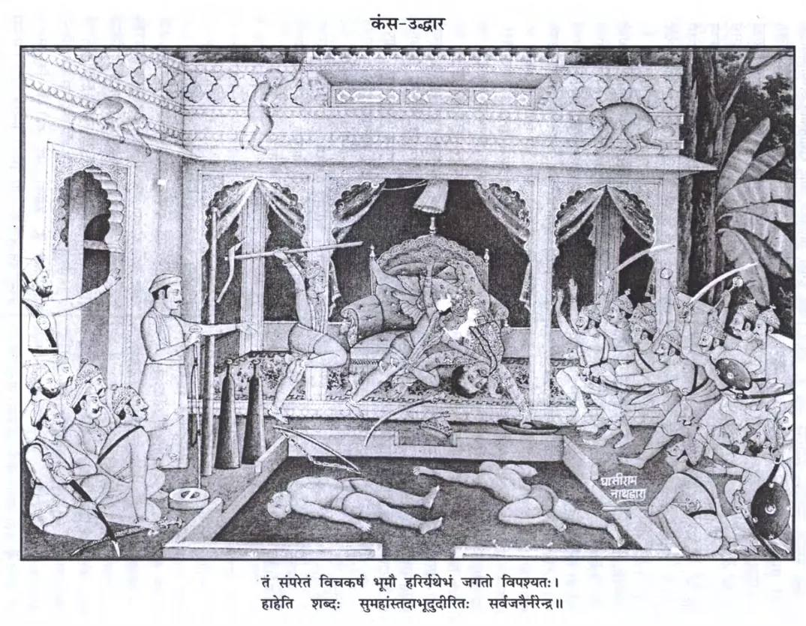
जब यह प्रश्न किया जाता है कि जिन श्रीकृष्णने धर्मरक्षाके नियम बतलाये और जो नीति-धर्मको न केवल बतलानेवाले थे बल्कि स्वयं उनके बनानेवाले तथा उसका पालन करनेवाले भी थे, उन्हीं श्रीकृष्णने उस कुरूपा कुब्जाके साथ नीति-विरुद्ध सम्बन्ध किया! यह कैसी बात है? इस आचरणकी लोक-संग्रहके साथ कैसे सङ्गति बैठती है? तब इस प्रश्नका उत्तर यह दिया जाता है कि जिस प्रकार अग्निमें सूखे और गीले सभी पदार्थ भस्म हो जाते हैं, पर अग्निको कुछ भी दोष नहीं लगता, उसकी पवित्रतामें कुछ भी कमी नहीं आती; उसी प्रकार अवतारी पुरुषोंको ऐसी बातोंसे कोई दोष नहीं लग सकता! पर यह उत्तर समाधानकारक नहीं है और इसका उपयुक्त उत्तर ग्रन्थ भरमें कहीं नहीं मिलता। अभ्यासयुक्त पुरुषोंको विभिन्न ग्रन्थोंका परिशीलन करके उपयुक्त उत्तर ढूँढ़ना चाहिये। कभी-कभी ऐसा होता है, विषय-विवेचन करते-करते कवि उसमें अत्यधिक तल्लीन हो जाता है और फिर उस तल्लीनताका रंग उसकी कवितापर भी चढ़ने लगता है, जिससे मूल विषयमें विपर्यास भी हो जाता है। और यह कोई नयी बात नहीं है, इस तरहके अनेक उदाहरण देखनेमें आते हैं। अलङ्कारोंकी भी आवश्यकता होती है, पर उसकी एक मर्यादा है। उस मर्यादाका उल्लङ्घन करके श्रीकृष्ण-चरित्रके वर्णनको अलङ्कारोंसे सजाना अनुचित है। आज हमारे सामने जो क्रीड़ारूप श्रीकृष्ण-चरित्र उपस्थित है, वह इन कवियोंके अलङ्कारोंका ही फल है। श्रीकृष्णके चरित्रपर मुख्यतः दो आक्षेप हैं—एक रासक्रीड़ाके सम्बन्धमें और दूसरा कुब्जा-समागमके। हरिवंशमें रासक्रीडाका वर्णन नहीं मिलता। अब रही दूसरे आक्षेपकी बात। उसकी कथा हरिवंशमें यों है कि कंसका वध करनेके लिये श्रीकृष्ण और बलराम जब मथुरा पहुँचे तो उन्हें एक माली मिला जो कंसके लिये एक पुष्पहार लिये जा रहा था। इन लोगोंने उसके हाथसे पुष्पहार छीनकर स्वयं पहन लिये और उसे भगा दिया। उसके बाद उन्हें एक धोबी मिला जो कंसके धुले हुए कपड़े लिये जा रहा था, इन्होंने उससे कपड़े छीनकर स्वयं पहन लिये और मालीकी भाँति उसे भी भगा दिया। फिर आगे चलकर उन्हें कंसकी दासी कुब्जा, जिसका शरीर आठ जगह झुका हुआ था, मिली जो कंसकी सेवा करने जा रही थी। वह उबटन लगाने और केश सँवारनेमें कुशल थी। उसके हाथमें उबटन देखकर श्रीकृष्णने उससे कहा कि तुम इसे हमारे शरीरपर लगा दो। इसपर उसने मन्दस्मित हास्यके द्वारा अपनी कामवासना प्रकट की, जिससे बलराम क्रुद्ध हो उठे। श्रीकृष्णने उन्हें शान्त करते हुए कहा कि 'यह तो कंसकी दासी है न? इसलिये यदि इसने ऐसा भाव प्रदर्शित किया तो इसमें आश्चर्य ही क्या है? अरे, हमें इन बातोंसे क्या? हमें तो उबटनसे मतलब है। बस, यह कहकर उन्होंने उसके हाथसे उबटन छीन लिया और कुब्जाको वहाँसे भगा दिया।
इस कथासे मालूम पड़ता है कि कुब्जाने श्रीकृष्णके सामने अपनी कामेच्छा तो प्रकट की; पर उन्होंने इसके लिये साफ इन्कार कर दिया था। पर फिर भी इसी बातको लेकर कवियोंने तूमार बाँध दिया। खैर, इसमें आश्चर्यकी कोई बात नहीं। कहा भी तो है—'निरंकुशाः कवयः' उन्हें तो पूरा अधिकार है।
गीतामें भगवान् श्रीकृष्ण अपने पवित्राचरणका कैसे जोरदार शब्दोंमें भरोसा दिलाते हैं। युद्धारम्भके अवसरपर उन्होंने अर्जुनको जो गीता सुनायी थी, इस विलक्षण प्रसंगपर उन्होंने योगयुक्त अन्तःकरणसे समाधिकी भूमिकापर अधिष्ठित होकर अर्जुनको जो गीता-शास्त्रका उपदेश दिया था, उसका वर्णन वे स्वयं अनुगीता सुनाते समय करते हैं। इस बातका विचार करनेसे किसी भी समझदार पुरुषको भगवान् श्रीकृष्णकी सच्चरित्रताके सम्बन्धमें शंका करनेका कोई कारण नहीं रह सकता। श्रीकृष्णका चरित्र अत्यन्त पवित्र है, यही कारण है हजारों वर्षोंसे असंख्य भक्त परम प्रीतिपूर्वक उसका बराबर गान करते आ रहे हैं। 'यदि ह्यहं न वर्तेयम्' इस श्लोकमें भगवान् स्वयं कहते हैं कि इस प्रकार यदि मैं शुद्धाचरण नहीं करूँगा तो 'संकरकर्ता' होनेकी सारी जिम्मेदारी मेरे सिरपर आ जायगी। अब यह विचारनेकी बात है कि जो भगवान् श्रीकृष्ण ऐसा कहते हैं, वह स्वयं कुमार्गपर पैर कैसे रख सकते हैं? इसलिये रासक्रीड़ा आदि प्रसंग कोरी कवि-कल्पनाएँ हैं। भगवान् संकरत्वके दोषभागी होनेके लिये बिलकुल तैयार नहीं हैं। एकका काम दूसरा करे—यही संकरत्व है। समाजमें आज इसका विचार नहीं रह गया है, और इसका कारण राष्ट्रकी परतन्त्रता है। आज ऐसा प्रसंग आ उपस्थित हुआ है कि मनुष्यकी प्रकृति कुछ है और उसे धन्धा कुछ ही करना पड़ता है। एक गृहस्थने प्रस्थानत्रयीका अध्ययन करके वेदान्त-विषयमें एम० ए० पास किया। पेटके लिये नौकरी करना आवश्यक था; पर लाख सिर मारनेपर भी उपयुक्त नौकरी उन्हें नहीं मिली। आखिर उन्हें आबकारीविभागमें नौकरी करनी पड़ी। बतलाइये, अबतक उन्होंने जो अध्ययन किया था उसका आबकारी विभागमें क्या उपयोग है? बड़े परिश्रमसे प्राप्त किया हुआ सारा ज्ञान व्यर्थ गया। कहनेका अभिप्राय यह कि वर्तमान परिस्थितिमें सुशिक्षित लोग पेटकी आग बुझानेके लायक नहीं रह गये हैं। इस विपरीत परिस्थितिमें कौन किसकी सहायता करे और कौन किसके लिये सहानुभूति प्रकाश करे? देशकी पराधीनताने स्वभावविरुद्ध व्यवसाय करनेका ही प्रसंग ला उपस्थित किया है, जो संकर-कर्म है। गीताके पहले अध्यायमें अर्जुनने जिस संकरकी बात कही है वह 'जाति' संकर है; और तीसरे अध्यायमें श्रीकृष्णने जिस संकरकी बात बतलायी वह 'वर्ण' संकर है। भगवान् अर्जुनसे कहते हैं कि तुम जिस संकरकी बात कहते हो उससे यानी स्त्रियोंके संकर सन्तान उत्पन्न करनेसे कुछ कुलोंका उच्छेद हो जायगा; पर दूसरा संकर जो वर्णसंकर है उसके होनेसे तो सारे राष्ट्रका विनाश हो जायगा। अब बतलाओ, इन दो संकरोंमेंसे तुम्हें कौन-सा संकर मंजूर है? संकरका यह बीज भगवान्ने अर्जुनको ठीक-ठीक समझा दिया। अस्तु।
अब श्रीकृष्णकी १६१०८ रानियोंके प्रसंगपर विचार करना है। पूर्वकालमें मुसलमान-शासकोंके यहाँ जनानखानेमें हज़ारों स्त्रियाँ रखनेकी चाल थी, यही बात दैत्योंके समयमें भी थी, तब क्या श्रीकृष्णकी भी यही बात थी? यदि हाँ, तो इतनी स्त्रियोंके प्रपञ्चको भगवान् ने अकेले पार भी कैसे लगाया? यह एक महत्त्वपूर्ण प्रश्न है। वास्तवमें बात यह है कि भौमासुरने संसारके अनेक राजाओंकी सुन्दर कुमारी लड़कियोंको लाकर अपने कैदखानेमें बन्द कर दिया था। ऐसा करनेमें भौमासुरका दूषित हेतु हो सकता है। यह संकट उपस्थित होनेसे उन लड़कियोंकी वैराग्यवृत्ति जागृत हो गयी थी, यानी वे वहाँ वैराग्यभावसे अपने दिन काट रही थीं। पीछे भौमासुरका वध होनेके बाद जब नारदजी वहाँ गये तो उन सबने अपनी आत्मकहानी उन्हें कह सुनायी। कुमारियोंने कहा कि 'हम सब कुलीन-घरकी कन्याएँ हैं, अनेक वर्ष कारागृहमें बन्द रहनेसे अब हम युवती हो गयी हैं। अब यदि हम अपने-अपने माता-पिताके यहाँ जाती हैं तो वे हमें आश्रय देनेसे रहे, और न हमारे साथ कोई विवाह करनेको ही तैयार होगा। इस मृत्यु-तुल्य परिस्थितिमें अब हम कहाँ जायँ और क्या करें? इसलिये आप कृपा कर हमें कोई मार्ग दिखलाइये!' उस कालमें नारीधर्मसम्बन्धी नियम बड़े कड़े थे। नारदजीने उनकी विपद्-गाथा सुनकर उन्हें एक युक्ति बतला दी। उन्होंने कहा कि 'जिस समय श्रीकृष्ण तुम्हारा कुशल-संवाद लेने आवें, उस समय तुम उनके गलेमें पुष्पमाला पहना देना, इससे प्रयोजन सिद्ध हो जायगा।' यही उन्होंने किया भी। जब भगवान् वहाँ पधारे तब उन लोगोंने नारदकी भाँति उन्हें भी अपनी सारी आत्मकथा कह सुनायी और फिर प्रार्थना की कि महराज, अब हम यहाँसे कहाँ जायँ? अच्छा हो, आप हमारा वध कर डालें, इससे तो हम मुक्त हो जायँगी। इसके सिवा हमारे सामने कोई दूसरा मार्ग नहीं है। महराज, हम सबने आपको पतिरूपमें स्वीकार कर लिया और अब अनन्यभावसे हम आपकी ही शरण हैं।' यह कहकर उन सबने भगवान्के गलेमें पुष्पमाला डाल दी। उन सब स्त्रियोंको कुलधर्मानुसार विवाहसंस्कारकी आवश्यकता थी, इसलिये भगवान्ने इस प्रसङ्गको समझकर धर्मरक्षणार्थ एवं राष्ट्रके एक बड़े कार्यके लिये उन सब स्त्रियोंकी प्रार्थना स्वीकार कर उन्हें घोर सङ्कटसे मुक्त किया।
श्रीकृष्ण भगवान् धर्म और नियमोंके प्रवर्तक थे, इसलिये ऐसा करना उनके लिये सम्भव था। ऐतिहासिक दृष्टिसे श्रीकृष्णके चरित्रमें रत्तीभर दोष नहीं मिल सकता। इस वर्णनसे यह बात सहज ही ध्यानमें आ सकती है कि लोक-संग्रहका सिद्धान्त कितना पूर्ण है और तात्त्विक दृष्टिसे श्रीकृष्णका चरित्र कैसा शुद्ध है।
श्रीकृष्णचरित्रके सम्बन्धमें अनेक भ्रान्तियाँ फैल गयी हैं, और इस भ्रान्तिप्रचारके मुख्यतः दो कारण हैं। एक तो यह कि श्रीकृष्णचरित्रका तत्त्वतः विचार करनेकी पात्रता बहुत कम लोगोंमें है, इसीसे श्रीकृष्णचरित्रके प्रसङ्गों और उनकी कथाओंमें परस्पर विरोध दिखलायी पड़ता है। और दूसरा कारण इस भ्रमोत्पादनका कवियोंकी निरङ्कुश कल्पनाएँ हैं।
इसीलिये भगवान्ने अपने जन्म और चरित्रोंको तात्त्विक दृष्टिसे समझनेकी बात कही है। उन्होंने कहा है—
जन्म कर्म च मे दिव्यमेवं यो वेत्ति तत्त्वतः।
त्यक्त्वा देहं पुनर्जन्म नैति मामेति सोऽर्जुन॥
(श्रीमद्भगवद्गीता ४। ९)
'जो कोई मेरे दिव्य जन्म-कर्मको तत्त्वसे जान लेगा वह (सब पापोंसे) मुक्त होकर पुनर्जन्मको नहीं प्राप्त होगा, वह मुझे पा लेगा। संसारको लोक-संग्रहका सच्चा महत्त्व बतलानेवाले श्रीकृष्णने स्वयं लोक-संग्रहके विरुद्ध आचरण किया होगा, ऐसी बात कल्पनामें भी नहीं आ सकती। लोक-संग्रहमें राष्ट्रधर्म मुख्य रहता है, इसलिये जब धर्मसंस्थापकका आचरण राष्ट्रके लिये आदर्श होगा तभी वह धर्मकी स्थापना कर सकेगा, अन्यथा नहीं। श्रीकृष्णके स्थापित किये हुए धर्ममें समाज-धर्म मुख्य है और व्यक्तिधर्म गौण। जिन उपनिषदोंके साररूप गीताका भगवान्ने गान किया है उन उपनिषदोंमें भी समाजधर्मके तत्त्वका ही प्रतिपादन किया गया है। सब उपनिषदोंमें ईश, केन आदि दस उपनिषद् मुख्य हैं और श्रीमच्छङ्कराचार्यने भी उन्हींपर भाष्य लिखे हैं। गीता-धर्म-मण्डल, पहलेसे भी दसों उपनिषदोंपर मराठी-भाषामें 'उपनिषद्-रत्न-प्रकाश' नामक एक स्वतंत्र भाष्य-ग्रन्थ प्रकाशित हुआ है। उसके देखनेसे यह स्पष्ट हो जाता है कि गीता तथा दसों उपनिषदोंका तत्त्व एक ही है। जब इन तत्त्वोंकी दृष्टिसे श्रीकृष्ण-चरित्रका विचार करते हैं तब वह अत्यन्त-पवित्र तथा तत्कालीन परिस्थितिके सर्वथा अनुकूल जँचता है। किसी भी धर्मसंस्थापकके लिये श्रीकृष्णका चरित्र सर्वथा अनुकरणीय है। इस प्रकार दसों उपनिषदों और गीताके तत्वोंको ध्यानमें रखकर श्रीकृष्णचरित्रका विचार करनेसे इस धारणाका भलीभाँति निराकरण हो जाता है कि वह चरित्र लोकसंग्रहके विरुद्ध है, पर इस यथार्थ ज्ञानके लिये कवियोंके कल्पनापाशसे बचना होगा।
श्रीकृष्ण-चरित्रमें कुब्जा-समागम-जैसी बातोंके घुस जानेसे ऐसी-ऐसी कल्पनाएँ भी होने लगी हैं कि गीतामें लोकसंग्रहका प्रतिपादन करनेवाले तथा गोकुलमें रासलीला करनेवाले अथवा कुब्जा-मनोरथ पूर्ण करनेवाले श्रीकृष्ण एक नहीं, दो अलग-अलग थे। परन्तु यह बात शास्त्रसिद्ध नहीं है, इस कल्पनाको मान लेनेसे तो दोनों ही कृष्ण संशयास्पद हो जायँगे। श्रीकृष्णचरित्रका पर्यवेक्षण करनेके लिये ऐतिहासिक दृष्टिसे महाभारत और हरिवंश, इन दो ग्रन्थोंको ही प्रमाण मानना चाहिये। अन्य सब ग्रन्थ काव्यमय होनेके कारण ऐतिहासिक प्रमाण नहीं माने जा सकते। महाभारत तथा हरिवंशके द्वारा हमें जिस श्रीकृष्ण-चरित्रकी जानकारी होती है, वह समाजको सन्मार्ग ही दिखलानेवाला है। कुब्जासमागम तथा राधाविलास आदि प्रसङ्ग केवल काव्यमय हैं। काव्य समझकर उनका गान करनेमें कोई हानि नहीं है; पर उनको ऐतिहासिक महत्त्व कभी नहीं मिलना चाहिये। इसी दृष्टिसे श्रीकृष्ण-चरित्रका परिशीलन करनेसे उसका तत्त्वतः ज्ञान हो सकता है। और राष्ट्रको उसकी वर्तमान दुःखद परिस्थितिसे निकालनेका कौन-सा मार्ग है, इसका पूरा पता भी श्रीकृष्ण-चरित्रसे ही लग सकता है। अतएव प्रत्येक सुशिक्षित मनुष्यके हृदयमें भगवत्-चरित्रके तत्त्वतः अध्ययनकी स्फूर्ति उत्पन्न हो, भगवान्से यह प्रार्थना करते हुए लेख समाप्त किया जाता है।
श्रीकृष्ण स्वयं भगवान् थे
(लेखक-सेठ श्रीकन्हैयालालजी पोद्दार)
कृष्णस्तु भगवान् स्वयम्
उपर्युक्त वाक्यद्वारा श्रीकृष्णावतारका विशेष महत्व व्यक्त किया गया है। किन्तु अन्य आर्ष-ग्रन्थोंके अतिरिक्त श्रीमद्भागवतके भी पूर्वापरके वर्णनोंद्वारा जटिलता उपस्थित हो जानेके कारण यह विषय भी विवेचनीय हो गया है। इसका क्या रहस्य है, यह तो तदीय महज्जन ही अनुभव कर सकते हैं। इस विषयमें मुझ जैसे क्षुद्र व्यक्तिका लेखनी उठाना अवश्य ही अनधिकार चेष्टा है, किन्तु फिर भी महात्माओंने इस विषयपर जो विवेचन किया है, उसीके आधारपर संक्षिप्ततया कुछ लिखनेका साहस किया जाता है।
यद्यपि—
'सर्वे नित्याः शाश्वताश्च देहास्तस्य परात्मनः।
हानोपादानरहिता नैव प्रकृतिजाः क्वचित्॥ '
(महावाराह)
इत्यादि वाक्योंसे सभी अवतारोंको नित्य, शाश्वत, हानोपादानशून्य और प्रकृतिपर वर्णन किया गया है, तथापि अवतारोंमें शक्तिकी न्यूनाधिक अभिव्यक्ति ही अंश और अंशीभावका कारण है। उपर्युक्त श्लोकमें सर्वेश्वरताके कारण ही समस्त अवतारोंका समानतया वर्णन है, किन्तु सभी अवतारोंमें अखिल शक्तिकी अभिव्यक्ति नहीं होती। यही कहा है—
अत्रोच्यते परेशत्वात् पूर्णा यद्यपि तेऽखिलाः।
तथाप्यखिलशक्तीनां प्राकट्यं तत्र नो भवेत्॥
अंशत्वं नाम शक्तीनां सदाल्पांशप्रकाशिता।
पूर्णत्वं च स्वेच्छयैव नानाशक्तिप्रकाशिता॥
(लघु० भागवतामृत ४५। ४६)
इस विषयको स्पष्ट करनेके लिये प्रथम भगवान्के अवतारोंका संक्षिप्त विवरण करना उपयुक्त होगा। भगवान्के अवतार तीन प्रकारके होते हैं-(१) पुरुषावतार, (२) गुणावतार और (३) लीलावतार—
पुरुषाख्या गुणात्मानो लीलात्मानश्च ते त्रिधा
(ल० भा० ३)
पुरुषावतारका वर्णन श्रीमद्भागवतके प्रथम स्कन्धमें अवतारोंके संक्षिप्त वर्णनके प्रारम्भमें इस प्रकार किया गया है—
जगृहे पौरुषं रूपं भगवान्महदादिभिः।
सम्भूतं षोडशकलमादौ लोकसिसृक्षया॥
(१। ३। १)
अर्थात् भगवान्ने आदिमें लोकसृष्टिकी इच्छासे महत्तत्त्वादिसम्भूत षोडशकलात्मक पुरुषावतार धारण किया। भगवान्का चतुर्व्यूह है—श्रीवासुदेव, सङ्कर्षण, प्रद्युम्न और अनिरुद्ध। इनमें यहाँ भगवान्' शब्दका प्रयोग श्रीवासुदेवजीके लिये है और श्रीआदिदेव नारायण भी यही हैं—
भूतैर्यदा पञ्चभिरात्मसृष्टैः
पुरं विराजं विरचय्य तस्मिन्।
स्वांशेन विष्टः पुरुषाभिधान-
मवाप नारायण आदिदेवः!
(श्रीमद्भा० ११। ४। ३)
और पुरुषावतारके तीन भेद हैं, जिनका वर्णन लघुभागवतामृतमें इस प्रकार किया गया है—
विष्णोस्तु त्रीणि रूपाणि पुरुषाख्यान्यथो विदुः।
एकन्तु महतः स्रष्टृ द्वितीयं त्वण्डसंस्थितम्॥
तृतीयं सर्वभूतस्थं तानि ज्ञात्वा विमुच्यते।
(सात्वततन्त्र)
इनमें आद्य पुरुषावतार वही हैं जिनका वर्णन पूर्वोक्त 'जगृहे पौरुषं रूपं' इत्यादिसे श्रीमद्भागवतमें किया गया है, वे पूर्वोक्त चतुर्व्यूहमें श्रीसङ्कर्षण हैं। इनके ही कारणार्णवशायी तथा महाविष्णु नामान्तर हैं और इन्हींका 'सहस्रशीर्षा पुरुषः' आदि पुरुषसूक्तमें वर्णन है, इनका श्रीमद्भागवतादिमें इस प्रकार वर्णन है—
आद्योऽवतारः पुरुषः परस्य
कालःस्वभावः सदसन्मनश्च।
(श्रीमद्भा० २। ६। ४१)
नारायणः स भगवानापस्तस्मात्सनातनात्।
आविरासन्कारणार्णो निधिः संकर्षणात्मकः॥
(ब्रह्मसंहिता)
आद्य पुरुषावतार भगवान् ब्रह्माण्डमें अन्तर्यामीरूपसे प्रवेश करते हैं, वह द्वितीय पुरुषावतार चतुर्व्यूहमें श्रीप्रद्युम्न हैं, ब्रह्मसंहितामें कहा है—
प्रत्येकमेवमेकांशादेकांशाद्विशति स्वयम्॥
(५। १४)
इन्हीं पद्मनाभ भगवान्के नाभि-पद्मसे हिरण्यगर्भ—ब्रह्माजीका प्रादुर्भाव है—
यस्याम्भसि शयानस्य योगनिद्रां वितन्वतः।
नाभिहृदाम्बुजादासीद्ब्रह्मा विश्वसृजां पतिः॥
(श्रीमद्भा० १। ३। २)
श्रीमद्भागवतमें—'पातालमेतस्यहि पादमूलं'। इत्यादिसे इन्हींका वर्णन है। तृतीय पुरुषावतार श्रीअनिरुद्ध हैं जो प्रादेशमात्र (तर्जनीसे अंगुष्ठतकके विस्तारमात्र) विग्रहसे सर्व जीवोंमें अन्तर्यामी हैं, जिनका वर्णन —
केचित्स्वदेहान्तर्हृदयावकाशे
प्रादेशमात्रं पुरुषं वसन्तम्।
चतुर्भुजं कञ्जरथाङ्गशङ्ख
गदाधरं धारणया स्मरन्ति॥
(श्रीमद्भा० २। २। ८)
—इस पद्यमें है।
गुणावतार (सत्व, रज और तम) श्रीविष्णु, ब्रह्मा और रुद्र हैं। जिनका आविर्भाव गर्भोदशायी द्वितीय पुरुषावतार श्रीप्रद्युम्नजीसे है—
सत्त्वं रजस्तम इति प्रकृतेर्गुणास्तै-
र्युक्तः परः पुरुष एक इहास्य धत्ते।
स्थित्यादये हरिविरिञ्चहरेति संज्ञा
(श्रीमद्भा० १। २। २३)
यद्यपि एक ही गर्भोदशायी द्वितीय पुरुषावतार इस विश्वके स्थिति, पालन और संहारके लिये इन तीन गुणोंसे युक्त हैं, किन्तु पृथक-पृथक रूपसे उनके अधिष्ठाता होकर ब्रह्मा, विष्णु और रुद्र-संज्ञाको धारण करते हैं। यहाँ 'गुणैर्युक्तः' इस कथनसे नियम-नियामकमात्र सम्बन्ध कहा गया है, परम पुरुष भगवान् गुण-बद्ध नहीं हैं। कहा है—'माया परैत्यभिमुखे च विलज्जमाना'।
(श्रीमद्भा० २। ७। ४७)
लीलावतार—जिस कार्यमें किसी भी प्रकारका आयास न हो और जो सर्व प्रकारसे स्वेच्छाधीन एवं अनेक प्रकारकी विचित्रतासे परिपूर्ण नित्य नवीन उल्लास-तरंगोसे युक्त हो, उस कार्यको लीला कहते हैं। ऐसी लीलाके लिये जो भगवान्के अवतार होते हैं, वे लीलावतार हैं। ऐसे अवतार २५ हैं—चतुःसन (सनक, सनन्दन, सनातन और सनत्कुमार), नारद, वाराह, मत्स्य, यज्ञ, नरनारायण, कपिल, दत्त, हयग्रीव, हंस, ध्रुवप्रिय, ऋषभ, पृथु, श्रीनृसिंह, कूर्म, धन्वन्तरि, मोहिनी, वामन, परशुराम, श्रीराम, व्यास, बलभद्र, श्रीकृष्ण, बुद्ध और कल्कि।
यह अवतार ब्राह्मादि कल्पोंमें होते हैं, अतएव इनकी कल्पावतार-संज्ञा भी है—
कल्पावतारा इत्येते कथिताः पञ्चविंशतिः।
प्रतिकल्पं यतः प्रायः सकृत्प्रादुर्भवन्त्यमी॥
(ल० भा०)
इन–पुरुषावतार, गुणावतार और लीलावतारोंके अतिरिक्त १४ मन्वन्तरावतार भी होते हैं। स्वायम्भुव आदि चौदह मन्वन्तरोंमें क्रमशः यज्ञ, विष्णु, सत्यसेन, हरि, वैकुण्ठ, अजित, वामन, सार्वभौम, ऋषभ, विश्वक्सेन, धर्मसेतु, सुधामा, योगेश्वर और वृहद्भानु होते हैं, जिनका वर्णन श्रीमद्भागवतके अष्टम स्कन्धमें किया गया है। प्रत्येक मन्वन्तरके कालतक प्रत्येक अवतारका पालन-कार्य होनेके कारण यह मन्वन्तर-अवतार कहे गये हैं। इनमें यज्ञावतार और वामनावतारकी गणना प्रथम लीलावतारोंमें भी की गयी है।
भगवान्के सभी अवतार, जिनका वर्णन यहाँतक किया गया है, चार प्रकारोंमें विभक्त हैं—(१) आवेश, (२) प्राभव, (३) वैभव और (४) परावस्थ। पूर्वोक्त अवतारोंमें चतुःसन, नारद, पृथु और परशुराम आवेशावतार हैं, पद्मपुराणके वाक्य हैं—
'आविष्टोऽभूत्कुमारेषु नारदे च हरिर्विभुः॥
'आविवेश पृथुं देवः शङ्खी चक्री चतुर्भुजः॥
'राजते कथितं देवि जामदग्नेर्महात्मनः।
शक्यावेशावतारस्य चरितं शार्ङ्गिणः प्रभोः॥
विष्णुधर्मोत्तरमें कल्किको भी आवेशावतार कहा गया है—
कलेरन्ते च सम्प्राप्ते कल्किनं ब्रह्मवादिनम्।
अनुप्रविश्य कुरुते वासुदेवो जगत्स्थितिम्॥
परावस्थ-अवतारोंकी अपेक्षा वैभवावतारोंमें शक्तिकी अभिव्यक्ति न्यून होती है और प्राभव-अवतारोंमें वैभवावतारोंकी अपेक्षा भी न्यून। प्राभव-अवतारोंके दो भेद हैं। जिनमें एक प्रकारके अवतार तो अल्प-कालतक ही व्यक्त रहते हैं, जैसे क्षीरसागरके मन्थनोत्तर श्रीमोहिनीका अवतार देवताओंके अमृतपानका कार्य पूर्ण करके, और हंसावतार-सनकादिकोंको तत्वज्ञानका उपदेश देकर, उसी क्षण अन्तर्धान हो गये थे। इसी प्रकार शुक्ल आदि अवतारोंकी अल्पकालिक अभिव्यक्ति है। दूसरे प्रकारके प्राभव-अवतारोंकी शास्त्रप्रणेता मुनिजनोंके समान चेष्टा होती है। जैसे महाभारतादिके प्रणेता कृष्णद्वैपायन भगवान् वेदव्यासजी, सांख्यशास्त्रके आचार्य श्रीकपिलदेव, प्रह्लादादिके ज्ञानोपदेशक दत्तात्रेय और धन्वन्तरि एवं ऋषभदेव। यह सब प्राभव-अवतार हैं।
वैभवावतार २१ हैं—कूर्म, मत्स्य, नरनारायण, वाराह, हयग्रीव, पद्मिगर्भ, बलभद्र और यज्ञ आदि चतुर्दश मन्वन्तरावतार। इनमें वाराह और हयग्रीव तथैव मन्वन्तरावतारोंमें चार—श्रीहरि, वैकुण्ठ, अजित और वामन यह ६ अवतार वैभवस्थ होनेपर भी परावस्थावतारोंके समान हैं—
तत्र क्रोडहयग्रीवौ नवव्यूहान्तरोदितौ।
मन्वन्तरावतारेषु चत्वारः प्रवरास्तथा॥
ते तु श्रीहरिवैकुण्ठौ तथैवाजितवामनौ।
षडमी वैभवावस्थाः परावस्थोपमा मताः॥
(भा० अमृ० २९)
यहाँतक आवेशावतार, प्राभवावतार और वैभवावतारोंकी स्पष्टता की गयी है। परावस्थावतार जो अवतारोंमें सर्वोपरि हैं, उनके विषयमें पद्मपुराणमें उल्लेख है—
नृसिंहरामकृष्णेषु षाड्गुण्यं परिपूरितम्।
परावस्थास्तु ते साम्यं दीपादुत्पन्नदीपवत्॥
अर्थात् श्रीनृसिंह, श्रीराम और श्रीकृष्ण षड्गुणपरिपूर्ण हैं और इन तीनोंमें परावस्था समान है। इन अवतारोंके लोकोत्तर चरित्र और इनका परिपूर्णत्व श्रीवाल्मीकीय-रामायण, महाभारत और श्रीमद्भागवतादि आर्ष ग्रन्थोंके अतिरिक्त श्रीनृसिंहतापिनी, श्रीरामतापिनी और श्रीगोपालतापिनी उपनिषदोंमें भी वर्णित है। अतएव यह निर्विवाद सिद्धान्त है कि भगवान्के सभी अवतारोंमें ये तीनों मुख्य हैं।
यहाँतक किये गये अवतारोंके इस विवरणद्वारा स्पष्ट है कि श्रीकृष्णावतार, परावस्थ लीलावतार है। श्रीमद्भागवतके प्रथम स्कन्धोक्त जगृहे पौरुषं रूपं भगवान्महदादिभिः इत्यादि श्लोकमें किये गये 'भगवान्' शब्दके प्रयोगके विषयमें यह प्रथम कह दिया गया है कि उसमें 'भगवान' शब्दका प्रयोग श्रीआदिदेव नारायणके लिये किया गया है और उसी प्रसंगमें आगे यह कहा गया है—
एतन्नानावताराणां निधानं बीजमव्ययम्।
यस्यांशांशेन सृज्यन्ते देवतिर्यङ्नरादयः॥
(श्रीमद्भा० १। ३। ५)
अर्थात् यही आदिनारायण प्रभु अनेक अवतारोंके निधान (लयस्थान) और उद्गम स्थान हैं। केवल अवतारोंके ही नहीं किन्तु प्राणिमात्रके। इन्हींके अंश (ब्रह्मा)के अंशोंसे (मरीच्यादिसे) देव, तिर्यक् और मनुष्यादिकी सृष्टि होती है। श्रीधर स्वामीजीने इसकी व्याख्यामें स्पष्ट कहा है—'एतदादिनारायणरूपम्'। फिर आगे इसी प्रसङ्गमें अन्य अवतारोंका वर्णन किया गया है, जिनमें पूर्वोक्त चतुःसन आदि २२ लीलावतारोंका नामोल्लेख है। शेषमें यह कहा गया है—
'एते चांशकलाः पुंसः कृष्णस्तु भगवान् स्वयम्।'
(श्रीमद्भा० १।३। २८)
अर्थात् पूर्वोक्त चतुःसन आदि लीलावतार परमेश्वरके अंश और कला हैं। इनमें कुछ अंशरूप हैं और कुछ कलाविभूतिरूप हैं और श्रीकृष्ण स्वयं भगवान् हैं। अतएव इस वर्णनद्वारा तो स्पष्ट अर्थ यही होता है कि जिस आदिनारायणके अन्य अवतार अंश-कला वर्णन किये गये हैं, श्रीकृष्ण वही स्वयं साक्षात् श्रीनारायण ही प्रादुर्भूत हुए हैं। श्रीधर स्वामीजीने यही स्पष्ट व्याख्या की है—'कृष्णस्तु भगवान्साक्षान्नारायण एव'। अच्छा, अब श्रीकृष्णावतारविषयक उपक्रमका वर्णन देखिये, वहाँ स्पष्ट उल्लेख है कि दुष्ट राजाओंके अत्यन्त भारसे आक्रान्त होकर जब पृथिवी गोरूप धारण करके साश्रु क्रन्दन करती हुई ब्रह्माजीके समीप गयी, तब ब्रह्माजी सब देवगण और उस गोरूपधारिणी पृथिवीको साथ लेकर भगवान् श्रीशङ्करके सहित क्षीरसागरपर गये और उन्होंने क्षीराब्धिशायी भगवान्की पुरुषसूक्तसे स्तुति की—
ब्रह्मा तदुपधार्याथ सहदेवैस्तया सह।
जगाम सत्रिनयनस्तीरं क्षीरपयोनिधेः॥
तत्र गत्वा जगन्नाथं देवदेवं वृषाकपिम्।
पुरुषं पुरुषसूक्तेन उपतस्थे समाहितः॥
(श्रीमद्भा० १०। १। १९)
तदनन्तर ब्रह्माजीने ध्यानावस्थामें क्षीरशायी भगवान्की जो आकाशवाणी सुनी उसके विषयमें देवगणोंसे कहा है कि भगवान्ने हमलोगोंकी प्रार्थनाके पूर्व ही पृथिवीके सन्तापको अवगत कर लिया है, और—
वसुदेवगृहे साक्षाद्भगवान्पुरुषः परः।
जनिष्यते तत्प्रियार्थं सम्भवन्तु सुरस्त्रियः॥
(श्रीमद्भा० १०।१। २३)
वे (भगवान्) परमपुरुष वसुदेवजीके घरमें प्रादुर्भूत होंगे और उनके प्रियके अर्थ देवाङ्गनाएँ भी वहाँ जन्म धारण करें। अतएव इस वर्णनके द्वारा भी यही सिद्ध होता है कि क्षीरोदशायी भगवान् श्रीनारायण ही श्रीकृष्णावतारमें प्रादुर्भूत हुए हैं। किन्तु श्रीकृष्ण भगवान्के अनन्य भक्तोंको क्षीरोदशायी नारायणका श्रीकृष्णावतारमें प्रादुर्भूत होना स्वीकार नहीं, अतएव वे 'कृष्णस्तु भगवान्स्वयम्' इस वाक्यद्वारा श्रीनारायणको भी श्रीकृष्णका अंश प्रतिपादित करते हैं और उपर्युक्त दशम स्कन्धके वर्णनका रहस्य वे इस प्रकार उद्घाटन करते हैं कि यद्यपि पृथिवीका करुणाक्रन्दन सुनकर ब्रह्माजीने क्षीरसागरपर जाकर भगवान् श्रीनारायणकी स्तुति अवश्य की, और जिस आकाशवाणीको उन्होंने ध्यानावस्थामें श्रवण किया वह आकाशवाणी भी श्रीनारायणकी ही है, किन्तु उस आकाशवाणी द्वारा नारायण स्वयं वसुदेवजीके घरमें प्रादुर्भूत होनेके लिये नहीं कहते हैं और न उस आकाशवाणीका अभिप्राय ही ब्रह्माजी अपनी तरफसे देवगणोंको सुनाते हैं किन्तु वे कहते हैं—
'गां पौरुषीं मे शृणुतामराः पुन-
र्विधीयतामाशु तथैवमाचिरम्॥
(श्रीमद्भा० १०। १। २१)
अर्थात् ब्रह्माजी पुरुष भगवान्की की हुई 'वसुदेवगृहे साक्षाद्भगवान् पुरुषः परः'। इस वाणीको-भगवान्के वाक्यको ही अक्षरशः देवगणोंको सुनाते हैं। अभिप्राय यह है कि ब्रह्माजीसे पुरुष भगवान्ने ही यह वाणी कही है कि 'वसुदेवके घरमें साक्षात् परम पुरुष भगवान् प्रादुर्भूत होंगे—न कि मैं नारायण।' यदि नारायण स्वयं ही श्रीकृष्णावतारमें प्रादुर्भूत होनेके लिये कहते तो—'साक्षात् भगवान् पुरुषः परः।' ऐसा न कहकर यह कहते कि 'मैं स्वयं वसुदेवके घरमें प्रादुर्भूत होऊँगा।' अतएव इसके द्वारा नारायण भी भगवान् श्रीकृष्णके अंशावतार सिद्ध होते हैं-न कि नारायण ही श्रीकृष्ण। निष्कर्ष यह कि अन्य अवतारोंके उद्गमस्थान जो नारायण हैं, वे भी श्रीकृष्णके अंशावतार हैं। और जिनके अंशावतार नारायण हैं, वे ही पुरुषोत्तम भगवान् स्वयं श्रीकृष्ण वसुदेवजीके घरमें प्रादुर्भूत हुए। इसकी पुष्टिमें वे श्रीमद्भागवतके अन्य वाक्य भी उपस्थित करते हैं। यथा—देवकीजीने श्रीकृष्णकी स्तुतिमें कहा है—
यस्यांशांशांशभागेन विश्वोत्पत्तिलयोदयाः।
भवन्ति किल विश्वात्मंस्तं त्वाद्याहं गतिं गता॥
(१०। ८५। ३१)
हे आद्य! जिस (आप)के अंश (पुरुषावतार)का अंश (प्रकृति) है उसके अंश (सत्त्वादिगुण)के भाग (परमाणु आदि) द्वारा इस विश्व सृष्टि, स्थिति और प्रलय हुआ करती है। विश्वात्मन्! उसी आपकी शरणमें मैं हूँ। ब्रह्म-स्तुतिमें भी कहा गया है—
'नारायणस्त्वं न हि सर्वदेहिना-
मात्मास्यधीशाखिललोकसाक्षी।
नारायणोऽङ्गंनरभूजलायनात्
तथापि सत्यं न तवैव माया॥
(श्रीमद्भा० १०। १४। १४)
'हे अधीश, क्या आप नारायण नहीं हैं? आप अवश्य ही नारायण हैं, क्योंकि आप ही सब जीवसमूहोंके आत्मा और अखिल लोकसाक्षी हैं, यद्यपि—'आपो नारा इति प्रोक्ता आपो वै नरसूनवः। तस्य ता अयनं पूर्व तेन नारायणः स्मृतः' इस स्मृतिवाक्यमें जलशायी भगवान्को नारायण कहा गया है, अतएव नारायण-संज्ञासे उन्हींकी प्रसिद्धि है, किन्तु वे जलशायी नारायण भी तो आपहीके अङ्ग हैं।' इसमें कारणार्णवशायी भगवान् नारायण श्रीकृष्णके अङ्ग अर्थात् अंश कहे गये हैं।
ब्रह्मसंहितामें भी कहा गया है—
यस्यैकनिःश्वसितकालमथावलम्ब्य
जीवन्ति लोमबिलजा जगदण्डनाथाः।
विष्णुर्महान्स इह यस्य कलाविशेषो
गोविन्दमादिपुरुषं तमहं भजामि॥
(५। ४८)
"जिस गर्भोदशायी पुरुषके एक निःश्वास-कालका अवलम्बन करके लोमकूपसम्भूत जगत्के ईश्वर ब्रह्मा, विष्णु और रुद्र अपने-अपने अधिकारमें प्रवृत्त रहते हैं, वे गर्भोदशायी पुरुष-महाविष्णु भी जिसकी एक कला हैं, मैं उन गोविन्दको भजता हूँ।' श्रीमद्भगवद्गीतामें श्रीमुखसे भी यही कहा है कि—
विष्टभ्याहमिदं कृत्स्नमेकांशेन स्थितो जगत्।
(१०।४२)
मत्तः परतरं नान्यत् किञ्चिदस्ति धनञ्जय।
(७।७)
इत्यादि वाक्यों द्वारा भी वे यही सिद्ध करते हैं। अच्छा, यह तो ठीक, किन्तु श्रीमद्भागवतमें नारदजीके प्रति ब्रह्माजीका यह भी वाक्य है—
भूमेः सुरेतरवरूथविमर्दितायाः
क्लेशव्ययाय कलया सितकृष्णकेशः।
जातः करिष्यति जनानुपलक्ष्यमार्गः
कर्माणि चात्ममहिमोपनिबन्धनानि॥
(श्रीमद्भा० २। ७। २६)
श्रीविष्णुपुराणका भी वाक्य है—
उज्जहारात्मनः केशौ सितकृष्णौ महामुने।
इत्यादि वाक्योंमें श्रीबलभद्रजी और श्रीकृष्णके विषयमें क्षीराब्धिनाथ-आदि पुरुषावतारके केशरूप अंशावतारकी कल्पना की जाती है, किन्तु श्रीमद्भागवतमें 'सितकृष्णकेशः'का प्रयोग इस अर्थमें नहीं है और न यह अवस्थासूचक ही है, यदि अवस्थासूचक माना जाय तो भगवान्के अविकारित्वमें विरोध आ जाता है, भगवान् तो अविकारी हैं। अंशावतारकी कल्पना की जाय तो 'कृष्णस्तु भगवान् स्वयम्' इस वाक्यसे प्रत्यक्ष विरोध है। अतएव इसका प्रयोग श्वेत और श्याम-वर्णकी शोभाके लिये किया गया है। पूज्यपाद श्रीधर स्वामी आदि प्रसिद्ध टीकाकारोंने यही अर्थ स्वीकार किया है और विष्णुपुराणके वाक्यका अभिप्राय भी यही है कि पृथिवीका भार उतारना यह कार्य है ही कितना? यह करनेके लिये तो हमारे केश-अंश ही पर्याप्त हैं। यही सूचित करनेके लिये केशोत्पाटन है। श्रीमद्भागवतके व्याख्याकार विश्वनाथ चक्रवर्तीने 'सितकृष्णकेशः'का श्लेषार्थ—दूसरा अर्थ भी किया है—'सितो-रुद्रः, कृष्णो-विष्णुः, को ब्रह्मा तेषामपीश्वरः' अर्थात् ब्रह्मा, विष्णु और रुद्रके अधीश। श्रीरूपगोस्वामीजीने इसका अर्थ किया है 'कलया-चातुर्येण, सिता-निबद्धाः, कृष्णा:-अतिश्यामाः केशा येन इति रसिकशिखावतंसत्वव्यञ्जनात् कृष्णत्वं प्राप्यते। अर्थात् कलाचातुरीसे बाँधे हुए श्याम केश जिनके। अथवा 'यः सितकृष्णकेशः क्षीराब्धिशयः सोऽपि यत्कलयैव भवति स कृष्णो जातः सन् कर्माणि करिष्यति।' अर्थात् जो सित कृष्णकेश क्षीराब्धिशायी हैं, वे भी जिस श्रीकृष्णकी कला हैं। 'केश' शब्दका अर्थ 'अंशु' भी है, अर्जुनके प्रति श्रीकृष्णका वाक्य है—
अंशवो ये प्रकाशन्ते मम ते केशसंज्ञिताः।
सर्वज्ञाः केशवं तस्मात् मामाहुर्मुनिसत्तमाः॥
(महा० शा० ३४१। ४०)
इसी प्रकार पुराणोंमें और भी परस्परविरोधी वाक्य मिलते हैं। जैसे स्कन्दपुराणका वाक्य है—
धर्मपुत्रौ हरेरंशौ नरनारायणाभिधौ।
चन्द्रवंशमनुप्राप्य जातौ कृष्णार्जुनावुभौ॥
—इसमें नरनारायणावतारका ही श्रीकृष्णावतारमें प्रादुर्भाव होना बतलाया गया है। इसका समर्थन श्रीमद्भागवतके—
ताविमौ वै भगवतो हरेरंशाविहागतौ।
भारव्ययाय च भुवः कृष्णौ यदुकुरूद्वहौ।
(श्रीमद्भा० ४।१।५९)
—इस वाक्यद्वारा भी होता है। किन्तु ब्रह्माण्ड-पुराणके वाक्यद्वारा इन वाक्योंका भी समाधान हो जाता है—
यो वैकुण्ठे चतुर्बाहुर्भगवान् पुरुषोत्तमः।
य एव श्वेतद्वीपेशे नरो नारायणश्च यः॥
स एव वृन्दावनभूविहारी नन्दनन्दनः।
एतस्यैवापरेऽनन्ता अवतारा मनोहराः॥
(भा० अमृ० पृ० २१३)
'जो वैकुण्ठमें चतुर्भुज भगवान् पुरुषोत्तम हैं और जो श्वेतदीपके अधीश नरनारायण हैं, वही श्रीवृन्दावनविहारी श्रीनन्दनन्दन हैं, क्योंकि इन्हीं श्रीनन्दनन्दनके अन्य भी अनन्त मनोहारी अवतार हैं।
इसके अतिरिक्त महाभारतके—
स चापि केशौ हरिरुच्चकर्त्त
एकं शुक्लमपरञ्चापि कृष्णम्।
तौ चापि केशावाविशतां यदूनां
कुले स्त्रियौ रोहिणीं देवकीञ्च॥
—इस श्लोकमें भी श्रीकृष्ण-बलराम केश-अंशावतार स्पष्ट कहे गये हैं। तथैव पुराणान्तरमें इसी प्रकार विरोधसूचक अन्य वाक्य भी उपलब्ध हो सकते हैं, किन्तु सर्वोपरि विचारणीय बात यह है कि श्रीमद्भागवत तथा विष्णुपुराणादि अन्य पुराण और महाभारतके प्रणेता एक ही श्रीकृष्णद्वैपायन भगवान् वेदव्यासजी हैं, जो स्वयं भगवदवतार हैं और जब उन्होंने 'कृष्णस्तु भगवान् स्वयम्' इस वाक्यद्वारा श्रीकृष्णावतारका स्पष्टतया महत्त्व प्रदर्शित किया है, तब उन्हींके कथन किये हुए अन्यत्रके-महाभारतादिके वाक्योंमें वास्तव विरोध होना किस प्रकार सम्भव है? अतएव यह निश्चयात्मक समझ लेना उचित है कि उनके वाक्योंमें परस्पर विरोध होगा शश-शृङ्गके समान सर्वथा असम्भव है। वस्तुतः विरोध न होनेपर भी कहीं-कहीं हम लोगोंको जो वस्तुतः विरोधका आभास प्रतीत होता है, वह केवल हमारी अज्ञता मात्र है। उनका यथार्थ रहस्य समझ लेना हमलोगोंकी विचारसीमासे अत्यन्त दूर है। आर्ष-वाक्य प्रायः परोक्ष होते हैं, क्योंकि भगवान्को परोक्षवाद ही प्रिय है, स्वयं भगवान्का वचन है—'परोक्षवादा ऋषयः परोक्षञ्च मम प्रियम्।' जब एक ओर आर्ष-वाक्योंके विषयमें यह कहा गया है, तब दूसरी ओर भगवान्के अवताररहस्यके विषयमें ब्रह्माजी स्वयं नारदजीसे कहते हैं—
यस्यावतारकर्माणि गायन्ति ह्यस्मदादयः।
न यं विदन्ति तत्त्वेन तस्मै भगवते नमः॥
(श्रीमद्भा० २।६।३७)
'हमसे लेकर सभी सच्चिदानन्द अतर्क्य भगवान्के अवतारोंकी केवल लीलाओंका वर्णन मात्र करते हैं, उनके तत्त्वको कुछ भी नहीं जानते।' जब ब्रह्मादि भी अवतारोंके रहस्यसे अनभिज्ञ हैं, तब ऐसी परिस्थितिमें भगवान्के अवतारोंका रहस्य कौन जान सकता है? अतएव इसी प्रकार श्रीरामावतारके विषयमें भी भ्रम हो सकता है, क्योंकि श्रीमद्भागवतमें अवतारोंके संक्षिप्त वर्णनमें अन्य अवतारोंके साथ-साथ श्रीरामावतार और श्रीकृष्णावतार दोनोंका वर्णन करनेके पश्चात् ही 'कृष्णस्तु भगवान् स्वयम्' यह वाक्य है। अतएव इसके द्वारा केवल श्रीकृष्णावतारका ही विशेष महत्व वर्णन किया जाना प्रतीत हो सकता है। किन्तु श्रीरामावतारको अन्य लीलावतारोंके समान अंशावतार कहा जाना सिद्ध नहीं होता। क्योंकि श्रीरामावतारका महत्त्व भी श्रीकृष्णावतारके समान ही आर्ष-ग्रन्थोंसे स्पष्ट सिद्ध होता है। श्रीवाल्मीकीय रामायणमें भी श्रीरघुनाथजीकी स्तुतिमें ब्रह्माजीका वाक्य है—
त्वं त्रयाणां हि लोकानामादिकर्ता स्वयं प्रभुः।
(युद्धकाण्ड ११७।२)
इसमें श्रीरघुनाथजीको त्रिलोकीके आदिकर्ता और 'स्वयं प्रभु' कहा गया है। अध्यात्मरामायणमें भी—
यः पृथ्वीभरवारणाय दिविजैः
संप्रार्थितश्चिन्मयः
संजातः पृथिवीतले रविकुले
मायामनुष्योऽव्ययः॥
(१। १। १)
विश्वोद्भवस्थितिलयादिषु हेतुमेकं
मायाश्रयं विगतमायमचिन्त्यमूर्तिम्।
(१। १। २)
यही क्यों श्रीमद्भागवतमें भी स्पष्ट उल्लेख है—
'नेदं यशो रघुपतेः सुरयाञ्चयात्त-
लीलातनोरधिकसाम्यविमुक्तधाम्नः॥
(९। ११। २०)
अर्थात् जिस प्रकार श्रीकृष्ण भगवान्को 'अधिकसाम्यविमुक्तधाम्नः' आदि विशेषण दिये गये हैं। उसी प्रकार श्रीरघुनाथजीको भी यही विशेषण दिये गये हैं। पद्मपुराणके—
नृसिंहरामकृष्णेषु षाड्गुण्यं परिपूरितम्।
इत्यादि पूर्वोक्त वाक्योंमें श्रीनृसिंह, श्रीराम और श्रीकृष्ण तीनोंको ही षाड्गुण्य-परिपूर्ण अवतार बतलाया गया है। अतएव श्रीरामावतार और श्रीकृष्णावतारमें न्यूनाधिक तारतम्यकी कल्पना करना केवल अपराधभाजन होना है। भगवान्के लीलावतारोंका रहस्य अप्रमेय और अचिन्त्य है, औरोंकी बात छोड़िये, ब्रह्माजी स्वयं उस रहस्यसे अपनी अनभिज्ञता नारदजीके प्रति स्पष्ट प्रकट करते हैं, देखिये—
नाहं न यूयं यदृतां गतिं विदु-
र्न वामदेवः किमुतापरे सुराः।
तन्मायया मोहितबुद्धयस्त्विदं
विनिर्मितञ्चात्मसमं विचक्ष्महे॥
(श्रीमद्भा० २। ६। ३६)
अर्थात् भगवान्की मायासे मोहित-मति होनेके कारण उनके स्वरूपका यथार्थ ज्ञान तो क्या, जिस मार्गसे वे गमन करते हैं, उसकी गतिको भी जब मैं—स्वयं ब्रह्मा, तुम-नारद-सनकादि, और वामदेव भी नहीं जानते तब फिर औरोंकी तो बात ही क्या है? उनके स्वरूपका ज्ञान तो अत्यन्त दूर रहा, उनकी मायाद्वारा विनिर्मित इस विश्वको भी हमलोग अपने ज्ञानके अनुरूप ही जान सकते हैं, सम्यक्रूप से नहीं।
ऐसी परिस्थितिमें हम-जैसे पामर जीवोंका तो भगवान्की स्मरण-कीर्तनादि भक्ति करनेका ही अधिकार है और इसीमें हमारा कल्याण है। इस विषयमें साम्प्रदायिक विवादोंको प्रदर्शित करना न तो अभीष्ट ही है और न उसके लिये स्थान ही। अतएव हम तो इस विषयमें स्कन्दपुराणोक्त—
अचिन्त्याः खलु ये भावा न तांस्तर्केण योजयेत्।
भगवान्के अवतार और उनकी लीला अचिन्त्य और अतर्क्य हैं। इस सिद्धान्तको सर्वोपरि समझते हैं।
लोकनायक श्रीकृष्ण
(लेखका-श्रीयुक्त दत्तात्रेय बालकृष्ण कालेलकर)
कहा जाता है कि जिसे किसीका आसरा नहीं, उसे महादेवके यहाँ आश्रय मिलता है। अन्धे, पङ्गु, अपङ्ग और पागल ही नहीं बल्कि भूत-प्रेत, विषधर सर्प वगैरह भी महादेवके पास आश्रय पा सकते हैं। विष्णुकी कीर्ति इस रूपमें नहीं गायी गयी, फिर भी वह दीनानाथ हैं। श्रीकृष्णावतार तो दीन-दुखी और दुर्बलोंके लिये ही था। श्रीकृष्ण लोकावतार हैं। दाशरथी श्रीरामको हम राजा रामचन्द्र कहते हैं। श्रीकृष्णको राजा श्रीकृष्ण कहें, तो कानोंमें कैसा खटकता है! हालाँकि श्रीकृष्ण बड़े-बड़े सम्राटोंके भी अधिपति थे, तो भी वे जनताके आदमी थे।
बचपनमें उन्होंने ग्वालेका धन्धा किया। बड़े होनेपर सारथी बने। राजसूय यज्ञ-जैसे राजनैतिक उत्सवमें स्वयं जूठी पत्तलें उठानेका काम अपने लिये पसन्द किया। कौन लोकनायक आज इतना निष्पाप जीवन बिता सकता है? श्रीकृष्णने इन्द्रके गर्वज्वरका हरण किया, ब्रह्माके ज्ञानगर्वका शमन किया, ऋषियोंको अपना रहस्य समझाया, नारदका मोह दूर किया, फिर भी स्वयं तो अन्ततक गोप-बन्धु ही बने रहे। गोपीजनवल्लभ नाम ही उन्हें भाया; वनमालाको ही उन्होंने आभूषणके रूपमें प्रीतिपात्र बनाया; सुदामाके तन्दुल, विदुरके घरकी भाजीके पत्ते और द्रौपदीकी सादी मेहमानीसे ही उनका हृदय तृप्त हुआ। कुब्जाकी सेवा स्वीकार करनेमें ही उन्होंने कृतार्थता समझी। वह तो गरीबोंके देव हैं, 'दीनन दुखहरन देव संतन हितकारी' हैं।
श्रीकृष्णने गीताका उपदेश किसलिये किया? युधिष्ठिरको सम्राट्-पद दिलानेके लिये? नहीं, नहीं; 'स्त्रियो वैश्यास्तथा शूद्राः' भी परमगति प्राप्त कर सकें, यह आश्वासन देनेके लिये; 'अनन्य भक्तोंका योगक्षेम मैं स्वयं चलाता हूँ' इस बातका विश्वास करानेके लिये; अगर दुराचारी भी पश्चात्ताप और ईश्वर-भजन करेगा तो वह मुक्त हो जायगा यह वचन देनेके लिये; और यदि भक्त अपना हृदय शुद्ध करेगा तो उसे सब प्रकारका पाण्डित्य-वृद्धियोग मैं प्राप्त करा दूँगा, यह अभिवचन देनेके लिये!
गीतामें भगवान्ने तत्त्वज्ञान भी कौन-सा बताया? भगवान् कहते हैं—'ज्ञानी भले बन जाइये, पर आप लोकसंग्रह नहीं छोड़ सकते। जो सच्चे ज्ञानी हैं, वे तो 'सर्वभूतहिते रताः' होते हैं।'
श्रीकृष्णने अवतार ग्रहण करके क्या किया? कृत्रिम प्रतिष्ठा तोड़ी। अभिमानी प्रतिष्ठित लोगोंका गर्व चूर किया, और निष्पाप हृदयवाले दीनजनोंको श्रेष्ठ करके बताया। धर्मको पाण्डित्यके जालसे बचाकर भक्तिके शुभ्र आसनपर बैठा दिया। राजा इन्द्रका गर्व हरण करके, इन्द्रका कारोबार बन्द करके जनतामें गोवर्द्धनरूपी देश-पूजा प्रचलित की। राजाओंको नम्र और लोगोंको उन्नत बनाया। और इतने पर भी स्वयं कभी लोगोंके सरदार तक न बने।
एकबार-केवल एक ही बार श्रीकृष्णमें लोगोंकी श्रद्धा डगमगायी थी। लोगोंने सोचा कि देशमें श्रीकृष्ण हैं, इसीलिये जरासन्ध बार-बार हमपर चढ़ आता है। श्रीकृष्णने लोकमतका सम्मान करके मधुदेशका त्याग कर दिया। और वह समुद्रवलयाङ्कित द्वारिकामें जाकर रहने लगे। इसमें लोगोंपर रोष न था। उस समय आयोनियन लोग हिन्दुस्थानपर चढ़ायी करनेकी तैयारी कर रहे थे। उनका विरोध करनेके लिये, उनके आक्रमणको रोकनेके लिये पश्चिमी तटपर एक जबर्दस्त फौजी छावनी कायम करनेकी जरूरत थी-तभी लोगोंकी रक्षा हो सकती थी। श्रीकृष्ण द्वारावतीमें जाकर बसे, उन्होंने हिन्दुस्थानके द्वारकी रक्षा की और आर्यावर्तको निश्चिन्त बनाया। ऐसे दीनानाथके सदियों पहलेसे मनाये जानेवाले जन्मदिवसका इस लोकसत्ताके युगमें तो दोहरा महत्त्व है।
(अनुवादक-काशीनाथ नारायण त्रिवेदी)
भगवान्की एक लीला
(लेखक-पं० श्रीजीवनशंकरजी याज्ञिक एम० ए०)
नमो देवादिदेवाय कृष्णाय परमात्मने।
परित्राणाय भक्तानां लीलया वपुधारिणे॥
पुराणोंमें भगवान्की लीलाओंका वर्णन है। परन्तु आजकल इतिहास-पुराण-ग्रन्थोंपरसे लोगोंकी श्रद्धा घटती जाती है। उनका पठन-पाठन, उनकी कथा धीरे-धीरे लोप हो रही है। यही कारण है कि जनसाधारणमेंसे स्वधर्मका ज्ञान नष्ट हो रहा है और धार्मिक प्रवृत्ति भी मन्द हो गयी है। धार्मिक शिक्षाका पुराणोंसे श्रेष्ठ साधन और कोई नहीं है। दर्शनशास्त्रका गूढ़ ज्ञान सबको प्राप्त नहीं हो सकता। सबकी बुद्धि और रुचि उसमें नहीं हो सकती। अतएव रोचकताके साथ सरल रीतिसे धार्मिक सिद्धान्तों और आदर्श चरितोंकी शिक्षा इतिहास-पुराण-ग्रन्थोंसे ही मिल सकती है। वेदकी आज्ञा है 'सत्यं वद'। इस सूक्ष्म तत्त्वको रोचक उपाख्यानका रूप देकर हरिश्चन्द्रकी कथा पुराणमें वर्णन की गयी। इसी प्रकार श्रुति-वाक्य 'धर्मं चर' को समझानेके लिये महाभारतमें अनेक कथाएँ वर्णित हैं—जैसे युधिष्ठिरकी। जटिल और गूढ़ धार्मिक सिद्धान्तोंको साहित्य और कलासे सरस बनाकर जनसाधारणके लिये उपादेय और बोधगम्य बनाना पुराणोंका काम है। फिर कौन महाकवि ऐसा है, जो पुराणोंका ऋणी न हो? आर्यसभ्यताका सच्चा चित्र और उसके उच्च आदर्शोंका वर्णन पुराणोंमें ही तो मिलता है। जो उनको उपेक्षाकी दृष्टिसे देखते हैं वा तिरस्कार-बुद्धिसे उनको त्याज्य समझते हैं, वे हिन्दू-धर्म और संस्कृतिके एक आधारस्तम्भको समूल नष्ट करना चाहते हैं।
जब पुराणोंका प्रचार ही न रहा तो उनकी कथाओंमेंसे अध्यात्मतत्त्व खोज निकालने और उसकी मीमांसा करनेकी फिर बात ही क्या रही? इस लेखमें भगवान्की एक छोटी-सी लीलाका स्मरण कर उसकी शिक्षापर विचार करना है। इस प्रयाससे सम्भवतः यह स्पष्ट होगा कि पुराणवर्णित भगवान्की लीलाएँ भक्त, ज्ञानी और जनसाधारण सभीके लिये उपादेय हैं।
श्रीकृष्ण भगवान्की यह लीला सुविख्यात है। एक दिन यशोदा मैया गृहदासियोंको और कामोंमें लगाकर स्वयं दही मथने बैठ गयी और कृष्णलीलाके मधुर गीत गाने लगी। इतनेमें ही बालक श्रीकृष्णने आकर रई पकड़ ली और मथना बन्द करा स्तन-पानका आग्रह किया। यशोदा मैयाने मथना छोड़कर बालक को गोदमें ले लिया और दूधपान कराने लगी। इतनेहीमें पास ही चूल्हेपर दूध उफनने लगा। माताने अतृप्त बालकको झट गोदसे उतार दिया और वह दूधकी ओर झपटकर चली गयी। भला, बालकको यह कैसे सहन होता? क्रोधमें आकर दहीकी मटकी फोड़ डाली और वहाँसे खिसक गया। यशोदाने लौटकर देखा तो मटकी फूटी पड़ी है, दही सब फैला हुआ है और मुजरिम गायब!
हाथमें लकड़ी लेकर यशोदा खोजने जाती है तो क्या देखती है कि माखन चुराकर बन्दरोंको बाँटा जा रहा है! पहले सीनाजोरी और अब चोरी! जैसे-तैसे यशोदाने नटखट बालकको पकड़ पाया, परन्तु दयाके कारण छड़ीसे न पीटकर उसे बाँधनेकी धमकी दी, बालक भी नाटकीय लीला दिखाकर भयभीत होनेका बहाना बनाने लगा। जब यशोदाने बाँधना चाहा तो रस्सी छोटी हो गयी। रस्सीको जोड़कर बढ़ाती गयी तो भी रस्सी छोटी ही रही। और वह भी केवल दो अंगुल। अन्तमें जब वह थक गयी, पसीना आ गया और समझ गयी कि उसके बाँधे बालक न बँधेगा तो श्रीकृष्णको दया आ गयी और तुरन्त स्वयं ही बँध गये। और बँधकर क्या किया-दूसरोंका उद्धार।
श्रीमद्भागवतमें इस कथाका वर्णन पढ़कर साहित्यप्रेमी अत्यन्त सुन्दर साहित्यिक कल्पनाका आनन्द ले सकते हैं। दही मथनेका और फिर बालकको दूध पिलानेका जो वर्णन किया गया है, वह साहित्यकी दृष्टिसे बहुत ही बढ़िया है। भावुक लोग वात्सल्यभावका विमल क्षीरसागर इस कथामें उमड़ता देखते हैं। बालकोंका ऊधम, उनका गुरुजनोंद्वारा ताड़न गृहस्थीकी एक साधारण बात है। सबको उसका अनुभव हुआ करता है। परन्तु इस साधारण अनुभवके वर्णनमें वात्सल्य-भाव जैसा श्रीकृष्णकी बाललीलामें उमड़ चला है, वैसा प्रायः और साहित्योंमें नहीं मिलता। भक्त और वैष्णवजनोंके लिये तो इस लीलाका वर्णन भगवत्सम्बन्धी होनेसे आनन्ददायक होना ही चाहिये। उनको उसके अध्यात्म वा गूढ शिक्षाको खोज निकालनेकी आवश्यकता ही नहीं जान पड़ती। वे तो आमका रस लेते हैं, पेड़ जिसे गिनने हों, गिने।
फिर भी जो इस लीलाका वास्तविक तत्त्व समझना चाहते हैं, उनके लिये इसके द्वारा ईश्वर-प्राप्तिका साधन बताया गया है। संसारमें मनुष्य भटकता है। सुख-शान्तिके लिये छटपटाता है, परन्तु उसको यह नहीं मालूम कि वास्तविक सुख कहाँ मिल सकता है। कौड़ियोंकी खोजमें चिन्तामणिको खो बैठता है। वह ऐसा विवेकशून्य है कि सुखकी खोजमें सुखके सच्चे मार्गको खो बैठता है। यशोदाकी-सी भूल हम सदा किया करते हैं। और जबतक विवेक न होगा, करते रहेंगे। यशोदाने थोड़े-से दूधको बचानेके लिये गोदसे तुरन्त श्रीकृष्णको उतार दिया। उस समय जो सुख दोनोंको प्राप्त था, क्या स्वर्ग-सुख भी उसकी तुलना कर सकता था? फिर भी यशोदाकी मति अविवेकसे भ्रममें पड़ गयी। नतीजा भी अच्छा मिला। थोड़ा दूध बचाने गयी और दहीकी मटकी फूटी, माखन बन्दरोंके पेटमें गया। सांसारिक भोगोंके फेरमें पड़कर हम क्षण-क्षणपर परम शान्ति और निरतिशय सुखसे अपने आपको वञ्चित कर रहे हैं।
यशोदाने श्रीकृष्णको पकड़ लिया और रस्सीसे बाँधना चाहा। घरभरकी सब रस्सी जोड़ती चली गयी, फिर भी रस्सी छोटी पड़ती रही। और वह भी केवल दो ही अंगुल। इसका कारण यह था कि यशोदाके मनमें अभिमान था। वह समझती थी कि अपने बलसे—युक्तिसे वह बालकको अवश्य ही बाँध लेगी। जब थक गयी और अपने बलका अभिमान छूटा तो भगवान् आप ही बँध गये। यही बात भगवत्प्राप्तिके इच्छुकको याद रखनी है। जबतक हम अहङ्कारके वशीभूत हैं, हमारा कोई साधन फलीभूत नहीं हो सकता। मनुष्य अपनी बुद्धि-शक्तिसे-जो अत्यन्त परिमित है और वह भी भगवत्कृपासे प्राप्त है भला परमेश्वरको कैसे प्राप्त कर सकता है? सब साधन वास्तवमें अहङ्कारमूलक हैं। उन्हींके भरोसे रहनेसे भगवान्की प्राप्ति सम्भव नहीं; फिर क्या उपाय है? उपाय तो एक ही है—भगवत्कृपा। दो ही अंगुलकी रस्सीमें कसर रहती थी। यशोदाके अभिमानसे एक अंगुल और एक अंगुल भगवान्की ओरसे खिंचाव था। अभिमान गया कि रस्सीसे आप ही सरकार बँध गये। गोस्वामी तुलसीदासजीने भी यही बात कही है—
'सो जानहि जेहि देउ जनाइ।'
अपने बलसे भगवान्को प्राप्त करनेकी सामर्थ्य मनुष्यमें कहाँ। वे तो सदा पास ही हैं। केवल अभिमानका परदा दूर होना चाहिये। जलपूरित पात्रमें दूध भरनेको कहाँ स्थान है? जलसे खाली हो, तब दूध भरा जा सकता है। अहङ्कार जाते ही सब सात्त्विक गुण सहज ही प्राप्त हो जाते हैं।
योगशास्त्रमें भी कहा है—ईश्वरप्रणिधानाद्वा। केवल समाधिके लिये ही नहीं, वरं सब अभीष्ट पदार्थोंकी प्राप्तिके लिये ईश्वरका प्रणिधान अलौकिक उपाय है। गीतामें भी भगवान्ने कहा है—
अनन्याश्चिन्तयन्तो मां ये जनाः पर्युपासते।
तेषां नित्याभियुक्तानां योगक्षेमं वहाम्यहम्॥
परन्तु यहाँ और किसी अभीष्ट पदार्थसे मतलब नहीं है। भगवत्प्राप्तिके उपायपर ही विचार करना है। गीतामें कई बार भगवान्ने अर्जुनसे इसी आशयकी बात कही है कि भगवत्-शरणागतिसे ही सब कुछ सिद्ध हो सकता है।
तमेव शरणं गच्छ सर्वभावेन भारत।
तत्प्रसादात्परां शान्तिं स्थानं प्राप्स्यसि शाश्वतम्॥
अनन्य-भक्ति अहंकारके सर्वथा नाश होनेपर ही सम्भव है और तभी भगवान्के दर्शन भी हो सकते हैं—
यथा—
भक्त्या त्वनन्यया शक्य अहमेवंविधोऽर्जुन।
ज्ञातुं द्रष्टुं च तत्त्वेन प्रवेष्टुं च परन्तप॥
भगवान्ने नित्ययुक्त और अनन्यचेताके लिये कहा है कि उसके लिये मैं सुलभ हूँ। अनन्यचेताको तो अहङ्कार छू तक नहीं सकता। उसके मनमें एक ही भाव दृढ़तासे स्थित है। अहंभावके लिये स्थान ही नहीं है।
अनन्यचेताः सततं यो मां स्मरति नित्यशः।
तस्याहं सुलभः पार्थ नित्ययुक्तस्य योगिनः॥
और फिर बड़े भरोसेका वचन यह भी भक्तोंके लिये कहा है—
सर्वधर्मान्परित्यज्य मामेकं शरणं व्रज।
अहं त्वा सर्वपापेभ्यो मोक्षयिष्यामि मा शुचः॥
यहाँ 'अहं' शब्द विचारणीय है। हमारा 'अहं' भाव तो बन्धनका कारण है, उसको छोड़कर भगवान्का आश्रय लें तो वे दावेसे हमको पार लगानेका वचन देते हैं। गोस्वामी तुलसीदासजी भी अपना विश्वास इस प्रकार बताते हैं—
ज्ञान भगति साधन अनेक सब
सत्य झूठ कछु नाहीं।
तुलसिदास हरिकृपा मिटै भ्रम
यह भरोस मन माहीं॥
ज्ञानमार्गसे तत्त्वप्राप्तिके लिये भी ऐसा ही सिद्धान्त बताया जाता है। ज्ञान किसी कर्मका फल नहीं हो सकता। मनुष्य अपनी सत्ता, कर्म, बुद्धि आदिसे ज्ञानकी प्राप्ति कर ही नहीं सकता। यदि ज्ञान किसी कर्मविशेषका फल हो जाय तो न वह स्वयं प्रकाश हो और न स्वयं सिद्ध और न शाश्वत। इसीलिये वेदान्तका यह उपदेश ही नहीं कि ज्ञान किसी साधनके बलसे प्राप्त हो सकता है। देहादिमें अहंकार ही अविद्याके कारण बना हुआ है। उसीसे आत्माका यथार्थ रूप नहीं जान पड़ता। अहंभाव देहादिसे हटाकर आत्मामें लगाना ही ज्ञान है।
इसी कथासे एक और भी विचारणीय बात है। भागवतकार अचिन्त्य, निराकार और अवतारी व्यक्त साकारमें कुछ भी भेद नहीं मानते। इस बातको बार-बार कहते हैं। यह सिद्धान्त औरोंको मान्य हो वा न हो परन्तु निराकार-साकारके झगड़ेका जिन लोगोंने एक अखाड़ा जमा रक्खा है, उनको भागवतके सिद्धान्तको भलीभाँति समझ तो लेना चाहिये। मानें न मानें, यह दूसरी बात है। जैसे इस कथामें साकार और निराकारका तादात्म्य दिखाया है, वैसे ही ध्रुवाख्यानमें भी स्पष्ट दिखाया है। ध्रुवजीने नारदजीके उपदेशानुसार चतुर्भुज मूर्ति श्रीविष्णुकी आराधना की और जब तपस्या फलीभूत हुई और भगवान् प्रत्यक्ष हुए तो बालक ध्रुवने उनके समक्ष ही निराकार ब्रह्मकी स्तुति की।
इस प्रकार यदि पौराणिक कथाओंका पठन-पाठन और विवेचन हो तो यह निश्चय हो जाय कि ज्ञानी, भक्त और संसारीलोग सभीके लिये वे उपादेय हैं और जिस सरसता और रोचकतासे धर्मके तत्त्व पुराणों द्वारा हृदयंगम होते हैं, और उपायसे नहीं होते।
एक झाँकी
बिराजे वे निकुंजमें स्याम।
चहुँदिसि ललित लताएँ लहरत
कदम छाँह बिसराम॥
मधुर मधुर कालिन्दी कलरव
स्रवनन कौं सुखदैन।
केकी कूक लगाय थिरकिहैं
चले बलैयाँ लैन॥
कटि पट पीत किए हैं धारन
अरु पटुका फहरात।
वनमाला चरनन लौं हलरत
जन-मन-मधुप लुभात।
अलकावली कपोलन छिटकी
जनु कोमल शिशु व्याल।
शोभित मुकुट सीसपै जगमग
कलँगी झुकी विशाल॥
मकराकृति कुंडल स्रवनन महँ
भाल-तिलक की रेख।
आभा पसरि रही दसहू दिसि
लजत भानु छबि देख॥
स्याम-वदन पंकजदल-लोचन
मुख मुसकनि सरसाय।
मनमोहन! मन मोहनहारी
मुरली फेंट सुहाय॥
लगी टकटकी पच्छिम दिसि पै
तिरछी लोचनकोर।
अपने साँचे जनकी कृति पै
मानहुँ भए विभोर॥
कहत कौतुकी विविध भक्त जन
पै हौ दीनानाथ।
कठिन परिच्छा लेउ न अब तो
करिय कृपालु सनाथ॥
लक्ष्मणाचार्य वाणीभूषण
राजनीतिज्ञ भगवान् श्रीकृष्ण
(लेखक-काव्यतीर्थ प्रोफेसर श्रीलौटूसिंहजी गौतम, एम० ए०, एल० टी०, एम० आर० एस०)
भगवान् श्रीकृष्णका जीवन विचित्रताओंसे भरा हुआ है। उनकी लीलाएँ अनूठी हैं, बातें रहस्यमयी हैं; उपदेश निराला है, कथन-शैली अद्वितीय है; उनका तत्त्वज्ञान अद्भुत है और राजनीति अनोखी है। उनके जीवनके जिस भागपर दृष्टि डालिये, दिव्यताके दर्शन होंगे: जिस दृष्टिसे देखिये, असाधारण प्रतीत होगा। श्रीमद्भागवतमें आया है कि जब श्रीकृष्ण कंसकी मल्ल-शालामें उतरे तो 'जाकी रही भावना जैसी। प्रभु मूरति देखी तिन तैसी॥' की-सी हालत हो गयी। भक्तोंने उन्हें किसी और ही रूपमें देखा, समालोचकोंने दूसरे ही रूपमें, मित्रों और अनुयायियोंने उससे बिलकुल भिन्न रूपमें और शत्रुओंने तो सर्वथा और ही रूपमें।
अबतक भी नाना प्रकारके लोग उन्हें नाना रूपोंमें देखा करते हैं। कोई उन्हें योगेश्वर समझकर योगमें लग जाता है, तो कोई उनकी रास-लीलाकी लीलामें लीन हो जाता है; कोई उनके अमूल्य उपदेशोंका अनुसरण कर अनन्त शक्ति लाभ करता है, तो कोई श्रीकृष्णका नाम ले-लेकर उच्छृङ्खलतापूर्ण जीवन बनाता और अन्तमें सर्वनाशके समुद्रमें गिरता है। और तो और, वंशीधरके इस विविधतामय जीवनसे विस्मयमें पड़कर यहाँतक कल्पना कर डाली गयी है कि श्रीकृष्ण एक नहीं, अनेक थे। गीताके वक्ता श्रीकृष्ण कोई और थे और वृन्दावन-विहारी श्रीकृष्ण कोई दूसरे। इसी प्रकारकी और भी अनेक कल्पनाएँ उनके सम्बन्धमें की गयी हैं।
पर इसमें कोई सन्देह नहीं कि श्रीकृष्णका जीवन अलौकिक था। जो लोग सनातन-धर्मकी शीतल छायामें अपना जीवन-यापन करते हैं, उनके लिये तो वह परम पुरुषके पूर्ण अवतार—स्वयं भगवान् ही हैं और उदार-हृदय इतर धर्मावलम्बी भी, जो उन्हें अवतार नहीं मानते, भगवान् श्रीकृष्णको एक महापुरुष-अद्भुत पुरुष—ऐसा पुरुष जिससे अधिक श्रेष्ठ पुरुष कोई अबतक नहीं हुआ मानते हैं। इन सब बातोंपर विचार करनेके बाद श्रीकृष्ण क्या थे, उनकी लीला क्या थी, यह समझना मन-बुद्धिके परेका विषय हो जाता है, जो आध्यात्मिक साधनाके द्वारा अनुभवके द्वारा—ही जाना जा सकता है, पर आजकल लोग तर्ककी तलीमें पड़े हुए हैं, बुद्धिवादका बाजार गर्म है। इसलिये उन लोगोंको, जो बुद्धिसे आगे बढ़कर नहीं जा सकते या जाना ही नहीं चाहते वा यहाँतक जानेमें विश्वास नहीं करते, प्रबल प्रमाणों और अखण्डनीय युक्तियोंके अभावमें कभी सन्तोष हो ही नहीं सकता। इसलिये उनके सामने अपनी बातोंको सप्रमाण और युक्तिसहित उपस्थित करना ही वाञ्छनीय होगा।
यों तो श्रीकृष्णके जीवनपर, जैसा कि हम ऊपर कह आये हैं, विभिन्न दृष्टिकोणोंसे विचार किया गया है, तथापि इस लेखमें हम केवल भगवान्की राजनीतिपर ही अपने विचार प्रकट करेंगे।
भगवान् श्रीकृष्णका तत्त्वज्ञान सर्वमान्य है। समस्त सभ्य संसारने नतमस्तक होकर उनके तत्त्वज्ञानकी अभ्यर्थना की है। जो लोग साम्प्रदायिक संकीर्णताके दलदलमें फँसे हुए हैं, उनकी बात तो जाने दीजिये; पर जो साम्प्रदायिक सीमासे थोड़ा आगे बढ़कर देखने-सुननेवाले हैं—विवेकसे काम लेना जानते हैं, उन सबने भगवान् श्रीकृष्णकी दिव्य वाणीसे पर्याप्त आत्मसन्तोष प्राप्त किया है और दरअसल ऐसा कौन अभागा होगा जो भगवान्की गीतासे, जो साम्प्रदायिकतासे ऊपरकी चीज़ है, केवल हिन्दुओंकी नहीं, बल्कि अखिल मानव-जातिकी महानिधि है—जिसमें सारे संसारके लिये समान प्रकाश भरा हुआ है लाभ उठाकर अपने जीवनको सार्थक और समुन्नत करना नहीं चाहेगा? इस लेखमें भगवान्की गीतापर विशेष कुछ लिखनेकी आवश्यकता नहीं है। पर श्रीकृष्णकी राजनीति उनके तत्त्वज्ञानपर अवलम्बित होनेके कारण यत्र-तत्र उसके किसी अंशका उल्लेख करना आवश्यक होगा। अस्तु!
भगवान् श्रीकृष्णकी राजनीतिको समझनेमें प्रायः लोग भूल किया करते हैं। कोई-कोई पाश्चात्य विद्वानोंके राजनीतिक सिद्धान्तोंको श्रीकृष्णके सिद्धान्तोंके स्थानमें बैठानेकी चेष्टा किया करते हैं, पर यह भारी भूल है। क्योंकि पश्चिममें जिस राजनीतिका विवेचन यूनान और रोममें हुआ और फिर उसके बाद सोलहवीं शताब्दीसे उस राजनीतिका विकास होते-होते जिस रूपमें आज वह संसारके सामने है, उसमें और श्रीकृष्णकी राजनीतिमें जमीन-आसमानका फर्क है। पाश्चात्य राजनीतिमें राजधर्म (Polity) की बड़ी दुर्दशा की गयी है। इटालीमें मेकियावली (Machiavelli), प्रशियामें विस्मार्क, फ्रान्समें रिचल्यू तथा भारतमें भी चाणक्यने राजनीतिको बिलकुल स्वार्थकी भित्तिपर—फिर वह राष्ट्रीय स्वार्थ ही क्यों न हो—खड़ा किया। My country, right or wrong मेरा देश ठीक या बेठीक जो हो, वही ठीक है। इन्हीं सिद्धान्तोंका अवलम्बन इन राजनीति-विशारदोंने करवाया है और यही कारण है कि आज यूरोपकी राजनीति कंसकी नीति हो गयी है, यानी 'Blood and iron policy—लोहेसे रुधिर बहाना और स्वार्थ सिद्ध करना (रक्तपात और स्वार्थसिद्धि)। कैसी कठोर और घृणित नीति है!
आजकल जो सज्जन श्रीकृष्णकी राजनीतिको नहीं जानते, वे कहा करते हैं कि उनकी राजनीति भी ऐसी ही थी। हमारे एक वृद्ध ग्रेजुएट मित्रकी, जो श्रीकृष्णके समालोचक थे, यह धारणा थी कि महाराज श्रीकृष्णने अपनी बुरी राजनीतिसे महाभारत-संग्राम कराकर भारतका सर्वनाश करा डाला।
कैसी भ्रान्त धारणा है! श्रीकृष्णने अपनी राजनीतिका आधार संसारका कल्याण रक्खा था, जिसे आजकल International well-being (अन्तर्राष्ट्रीय कल्याण) कहते हैं। इसके अनुसार मनुष्यत्वकी सेवामें राष्ट्रीय स्वार्थोंका भी त्याग किया जा सकता है। भगवान् श्रीकृष्णकी राजनीतिका आधार था धर्म और आत्मत्याग!
यूरोप ही नहीं, समस्त संसार अब Humanism (मनुष्यत्व) को ही राजनीतिका लक्ष्य बनाना चाह रहा है, जिसके लिये पहले भारतके विरुद्ध शिकायत रहती या आजकल यूरोपमें राष्ट्रीय स्वार्थोंके नामपर भयङ्कर द्वेषाग्नि प्रज्वलित हो रही है, और इसलिये अब चार सौ वर्षोंके पश्चात् यूरोपको अन्तर्राष्ट्रीय कल्याणका ध्यान हुआ है। यूरोपको अपनी जघन्य नीतिका अब कुछ पता चला है। मोह-निद्रा और स्वार्थकी कर्मनाशामें निमग्न यूरोप आज अपनी आँखें खोलना चाहता है। उसे अब सच्ची राजनीतिकी उपयोगिताका कुछ-कुछ भान हो रहा है। यह सच्ची राजनीति भगवान् श्रीकृष्णने बहुत पहले महाभारतके अवसरपर बतायी थी। यानी जो पापी है, नराधम है, नृशंस है, वह दण्डका पात्र है, फिर चाहे वह अपना भाई ही क्यों न हो। यही सच्ची राजनीति है, यही सच्चा धर्म है। चाहे जिस क्षेत्रमें जाइये 'नायं लोकोऽस्त्ययज्ञस्य कुतोऽन्यः कुरुसत्तम।' बिना आत्मत्यागके न इसलोकमें सुख है और न परलोकमें। स्वार्थ व्यक्तिगत हो अथवा राष्ट्रीय, वह निन्द्य और त्याज्य है। इसी भावनासे प्रेरित होकर महात्मा गान्धीजीको कहना पड़ता है कि यदि आवश्यकता हुई तो मैं अपने लोगोंसे भी असहयोग करूँगा।' जो पुरुष प्रकृतिके मार्गमें रोड़े अटकाता हो, जो व्यक्ति मानव-समाजके कल्याणका घातक हो, उसको दूर रखना वाञ्छनीय है। राजधर्मको न्याय और सत्यका पोषक होना चाहिये। राजनीतिका उपयोग राजधर्मके निबाहनेके लिये ही होता है, इसलिये जबतक राजनीतिका नियन्त्रण राजधर्म न करेगा, तबतक राजनीति हेय और घातक ही रहेगी।
ऊपर जो लिखा गया है वह घटनात्मक विषय है। महाभारतमें ऐसा वर्णन आया है कि (लीलामय) भगवान् श्रीकृष्णने एक बार राजनीतिक उन्मादकी चर्चा करते हुए नारदजीसे कहा था—
दास्यमैश्वर्यवादेन ज्ञातीनां तु करोम्यहम्।
अर्धं भोक्तास्मि भोगानां वाग्दुरुक्तानि च क्षमे॥
अरणीमग्निकामो वा मथ्नाति हृदयं मम।
वाचा दुरुक्तं देवर्षे! तन्मां दहति नित्यदा॥
बलं संकर्षणे नित्यं सौकुमार्यं सदा गदे।
रूपेण मत्तः प्रद्युम्नः सोऽसहायोऽस्मि नारद॥
स्यातां यस्याहुकाक्रूरौ किन्नु दुःखतरं ततः।
यस्य चापि न तौ स्यातां किन्नु दुःखतरं ततः॥
सोहं कितवमातेव द्वयोरपि महामुने।
एकस्य जयमाशंसे द्वितीयस्यापराजयम्॥
अर्थात्—'हे नारद! नाम तो मेरा ईश्वर है; पर करता हूँ गुलामी, भोग तो बहुत कम प्राप्त होते हैं, हाँ, गालियाँ खूब मिलती हैं। जैसे आग जलानेवाला अरणीके काठको मथता है, वैसे ही मेरे ये अपने सम्बन्धी गालियोंसे मेरा हृदय मथा करते हैं। मेरे भाई बलराम सदा अपनी भुजाओंको ही निहारा करते हैं, छोटे भाई गद नज़ाकतके मारे मरे जाते हैं। मेरे पुत्र प्रद्युम्नको अपने रूप मदसे बेहोशी रहती है। हे नारद! मेरे सिर दुनियाकी बला है और मुझे सहायता करनेवाला कोई नहीं है। मेरे दो भक्त आहुक और अक्रूर ऐसे हैं। जिनके मारे मेरे नाकोंदम है जिनके पास ऐसे दो भक्त न हों, उनकी जिन्दगी व्यर्थ है। ये मेरे जन परस्पर लड़ा करते हैं। मेरी दशा उस माताकी-सी है जिसके दो पुत्र जुआरी हों और माँ यह चाहे कि एक जीते, पर दूसरा भी हारे नहीं।' नारद मुनिने उत्तर दिया कि 'भगवन्! आपको मैं क्या उपदेश दूँ? आप स्वयं जगद्गुरु और आदिगुरु हैं। यदि आप मेरे मुखसे ही कुछ कहलवाना चाहते हैं तो सुनिये। महाराज! आफत दो तरहकी होती है—एक दूसरोंकी पैदा की हुई और दूसरी अपने आप बुलायी हुई। आपको क्या पड़ी थी कि कंसको मारकर उसके बूढ़े पिता उग्रसेनको गद्दीपर बैठाते? आपको लोगोंके हृदयमें विराजकर सबको नचानेका शौक है तो फिर आपको भी नाचना पड़ेगा। खैर, अब एक काम कीजिये, बिना लोहेके शस्त्रसे इन ज्ञातियोंकी जीभ काटिये।'
यही थी राजाकी सच्ची नीति। भगवान् श्रीकृष्णको भी अपनी ही 'मिलिटरी'—अपने भाइयोंकी वीरता से नाकों-दम हो गया था। इसलिये उन्होंने ऋषिवर नारदके द्वारा आदर्श राजनीतिका यह प्रतिपादन कराया—'बिना लोहेके शस्त्रसे अपराधियोंकी जीभ काटना।' अर्थात् अपनी सज्जनता और उदारतासे नीचातिनीचको ऐसा वशमें कर लेना कि फिर वह कभी अपमान या बुराई न कर सके। जीभ रहते भी अपशब्द न कह सके। जहाँपर राजाके द्वारा शस्त्रबलसे निर्बलोंका रक्तपात किया जाता है वहाँकी राजनीति कंस-नीति और रावण-नीति है, जो सच्ची राजनीति नहीं हो सकती।
भगवान् श्रीकृष्ण उस धर्मयुक्त राजनीतिके प्रतिपादक और पोषक थे जिसका कि ऊपर वर्णन किया गया है। भविष्यमें मानव-जातिका कल्याण तभी सम्भव है जब इसी राजनीतिका उपयोग किया जायगा।
एकतन्त्र, कुलीनतन्त्र, प्रजातन्त्र, किसी भी नामसे पुकारा जानेवाला शासन क्यों न हो, जबतक उसका प्राण मनुष्यत्वका कल्याण चाहनेवाली वह सच्ची राजनीति नहीं है तबतक पूर्ण सुख और शान्ति स्थापित होना दूर है। भगवान् श्रीकृष्ण इसी दैवी राजनीतिके ज्ञाता थे और इसी कारण संसारके राजनीतिविशारदोंके बीच उनकी इतनी अधिक प्रतिष्ठा थी। महाभारत हुआ, कौरवोंके पाप, स्वार्थ और दुष्कर्मसे। जो ऐसा समझते हैं, भगवान् श्रीकृष्णने ही महाभारत संग्राम कराया वे ठीक नहीं समझते। महाभारतके निमित्तकारण भगवान् श्रीकृष्ण भले ही हों; पर महाभारतका समर अवश्यम्भावी था। अच्छा हुआ, भगवान् श्रीकृष्णने उसमें पड़कर सत्य, दया और सभ्यताकी रक्षा की। अर्जुनको पात्र बनाकर उसके बहाने निष्काम-धर्मका एक बड़ा भारी सिद्धान्त संसारके सामने रख दिया। संसारका सच्चा राजनीतिपट वही है जो अपनी राजनीतिकी पुष्टि आध्यात्मिक साधनोंद्वारा करता है। भगवान् श्रीकृष्णने जब देखा कि महाभारत होनेके सब लक्षण मौजूद हैं; युद्ध हुए बिना रहनेका नहीं, इसलिये कम-से-कम इतना ही हो जाय तो बहुत है कि जो युद्ध हो वह पशुओं और राक्षसोंकी भाँति अन्धाधुन्ध न हो, बल्कि योद्धा धर्मयुक्त पद्धतिसे रणांगणमें उतरें और एक दूसरेकी शक्तिकी परीक्षा लें। ऐसा होनेसे कम-से-कम बहुत-सा अनावश्यक रक्तपात बच जायगा और सबसे बड़ी बात यह होगी कि धर्मकी मर्यादा रह जायगी, जिससे आगे लोगोंकी लड़ाईका आदर्श होगा तो वह धर्मयुद्ध होगा, अधर्मयुद्ध नहीं। भगवान् श्रीकृष्ण राजनीतिके पहुँचे हुए विद्वान् थे। उन्होंने ऐसी कोई गलती नहीं की, जिन गलतियोंका शिकार आज संसार हो रहा है। आज यूरोपमें राष्ट्र (State) और धार्मिक संस्था (Church)के बीच युद्ध और तनातनी है। इसका परिणाम बहुत बुरा हो रहा है। सत्य तो यह है कि जबतक राष्ट्र और धार्मिक संस्थाका आपसमें झगड़ा रहेगा, तबतक शान्ति नहीं होगी। श्रीकृष्णने राजनीतिका सच्चा स्वरूप तथा उसका अन्तःकरण समझ लिया था और उसका प्रयोग भी किया था।
मनुष्यसमाज जब असभ्य था, उस समय राजनीतिकी जरूरत न थी। पशुबलहीपर मनुष्यका सारा जीवन निर्भर था। परन्तु पशुबलसे ही राज्यका नियन्त्रण करना, मनुष्यकी दैवी भावनाको कुचलना है। मनुष्योंके अन्दर जो देवासुर संग्राम चल रहा है, उसमें पशुबलको सहारा देना, सभ्यताकी हत्या करना है। अतः सच्ची राजनीति वह है जिसमें धर्मबलद्वारा पशुबलका नियन्त्रण हो। सच्चा राजा, अथवा प्रजातन्त्र राज्यका सभापति भी वही है जिसके राज्यमें पशुबलके ऊपर धर्मबलका शासन होता हो जहाँ पर Civil authorities (देशकी शान्ति-संस्थापिका शक्तियों)के नीचे Military authorities (सैनिक शक्तियाँ) हों और जहाँ शासनका लक्ष्य एक लोकहितकारी आदर्शको प्राप्त करना हो। ऐसा होनेसे मनुष्यजातिको अपने विकासके लिये पूरा मौका मिलता है।
राजत्वका श्रीगणेश कैसे हुआ यह महाभारतमें बतलाया गया है। फ्रान्सके विद्वान् रूसोके 'Social contract' नामक ग्रन्थमें भी राजत्वका विवेचन किया गया है। समाज राजाकी सृष्टि अपने कल्याणके लिये करता है और जबतक राजा समाजके हितका सम्पादन करता है तभी तक उसे उस समाजसे आश्रय पानेका अधिकार है। राजाको अपनी नीतिका निर्धारण लोक-कल्याणको सामने रखकर ही करना चाहिये। जिस राजाकी नीति जितनी ही अधिक व्यापक होती है वह उतना ही योग्य समझा जाता है। सारे संसारका कल्याण चाहनेवाला राजा सारे संसारका आदर-भाजन बनता है और उसीकी राजनीति सच्ची राजनीति है। जो राजा अपने व्यक्तित्वको सारे मानवसमाजके शरीरमें निहित करता है वही सच्ची राजनीतिका प्रवर्तक हो सकता है। और इसके विपरीत दिशामें पैर रखनेसे परिणाम भी विपरीत ही होता है। इङ्गलैण्डमें प्रथम चार्ल्सको और फ्रान्समें सोलहवें लुईको लोक-वेदीपर अपने सिरोंकी भेंट चढ़ानी पड़ी थी!
भारतमें हमारे धर्मशास्त्रोंमें राजाके अनेक गुण बताये गये हैं। जिन राजाओंमें उन गुणोंका अभाव है वे उस राजनीतिका प्रवर्त्तन नहीं कर सकते।
संसारके इतिहासमें भगवान् श्रीकृष्ण ही एक ऐसे राजनीतिज्ञ हो गये हैं जिनको आदर्श माननेसे संसारका बहुत कुछ लाभ हो सकता है। महाभारतरूपी नाटकके पात्र अपनी-अपनी प्रकृतिके अनुसार सारे कर्म करते हैं अवश्य, पर द्रष्टा हैं वही मधुरवंशीवाले श्रीकृष्ण, जो यहाँ अर्जुनके घोड़ोंकी लगाम हाथमें लिये मुसकुरा रहे हैं। महाभारतमें सत्य-असत्य, पाप-पुण्य, पशुबल और धर्मबल, अन्धकार और प्रकाश अथवा यों कहिये कि देव और असुरोंका संग्राम होता है और अन्तमें भगवान् श्रीकृष्णकी देख-रेखमें दैवी गुणोंकी विजय और आसुरी गुणोंकी हार होती है। भगवान् श्रीकृष्ण जैसे महापुरुष ही धर्म-बलपर चलनेवाले निर्बल और निस्सहाय पाण्डवोंके सच्चे सहायक हो सकते थे। जिस समय दुर्योधनके सौभाग्यसूर्यकी प्रचण्ड ज्वालाके सामने ताकने तकका साहस भी किसीमें नहीं देखनेमें आता था, जिसके पितामह जैसे फील्डमार्शल, द्रोण, कर्ण, और अश्वत्थामा जैसे जेनरल, जिसकी बड़ी भारी सेना थी, उसका डर किसे न होता? पर श्रीकृष्ण-जिनका अवतार ही धर्मकी स्थापनाके लिये हुआ था, -धर्मपक्षमें आये और फिर अर्जुनके सारथी बनकर ही उस राजनीतिका परिचय दिया, जिसका पालन करनेसे मनुष्य ऊँचा उठकर देवोंके स्थान तक पहुँच सकता है। भगवान् श्रीकृष्णका यह कार्य संसारके इतिहासमें एक अद्वितीय और अद्भुत कार्य था। यूरोपीय इतिहासमें पोलैण्ड देशको उसके पड़ोसी राज्योंने हड़प लिया; पर किसीकी मज़ाल न थी जो चूँ तक करता। नेपोलियनने निर्धन देशोंको रौंद डाला; पर अन्य देश न केवल कुछ बोले बल्कि उल्टे उसीकी खुशामदमें लगे रहे। इङ्गलैण्डने अपने स्वार्थोंकी रक्षाके लिये उससे लोहा अवश्य लिया; पर उसमें वह धर्मपरायणता और वह राजनीतिक त्याग कहाँ था, जिसे भगवान् श्रीकृष्णने पद-पदपर दिखाया था?
भगवान् श्रीकृष्णकी राजनीतिपटुता अपना जोड़ नहीं रखती। उसमें त्याग, सत्य, दया, न्याय और मानवोचित सभी उच्च गुणोंका समावेश है, जिससे वह कभी असफल हो ही नहीं सकती। उस राजनीतिमें न तो व्यक्तिगत महत्त्वाकांक्षाके लिये स्थान है और न केवल देश तथा जातिगत स्वार्थोंका ही ध्यान है, उसमें न मदमस्ती है और न मूर्खतापूर्ण उचक्कापन। वह राजनीति केवल एक निश्चित लक्ष्यकी प्राप्तिके लिये है और उस लक्ष्यका नाम है 'अभ्युदय तथा कल्याण।' जिस उन्नतिसे पारमार्थिक उन्नतिमें बाधा न हो, वही यथार्थ उन्नति है और वही वाञ्छनीय है। आजकल जिस नीचता और वज्र-स्वार्थको राजनीतिके नामसे पुकारा जाता है, वह सर्वदा जघन्य है। इस समय, जब कि चारों ओरके स्वार्थ आपसमें टकरा रहे हैं, पाशविक युद्ध हो रहे हैं, शान्तिस्थापना बहुत दूर मालूम पड़ती है, आवश्यकता इस बातकी है कि जो मानवजातिके कल्याणार्थ परम आवश्यक है, भगवान् श्रीकृष्णकी राजनीतिका रहस्य समझा जाय और उसका अनुसरण किया जाय। ऐसा करनेसे सारे संसारमें सुख-समृद्धिका प्रादुर्भाव हो सकता है। अभीतक भगवान्की रहस्यवाणीका शङ्खनाद फूँका जाता रहा है, पर अब समय आ गया है कि उनकी दैवी राजनीतिद्वारा संसार-श्मशानको पुनः नन्दनवनमें परिणत किया जाय।
सारे संसारके आधुनिक कष्ट राजनीतिक उलझनोंसे हैं। रूसमें अभी हालहीमें इन्हीं कारणोंसे रुधिरकी नदियाँ बहायी गयी हैं। आज यदि इङ्गलैण्डको मालूम हो जाय कि भगवान् श्रीकृष्णकी राजनीति ही आदर्श राजनीति है; और उसीका अनुसरण करनेमें भारत, इङ्गलैण्ड तथा सारे संसारका कल्याण है तो उलझी हुई सारी समस्याएँ अल्पकालमें ही सुलझ जायँ। और सर्वत्र चैनकी वंशी बजने लगे। क्या देशके नेता तथा अन्य सात्त्विक वृत्तिके लोग इस ओर ध्यान देकर देश और संसारका हित-साधन करेंगे? क्योंकि उसके बिना सभ्यता, सत्य, दया और न्याय आदि दैवी गुणोंकी रक्षा सम्भव नहीं है। भगवान् विश्वनाथसे प्रार्थना है कि वे भारतको इन दुर्दिनोंमें भी श्रीकृष्ण भगवान्की राजनीतिको अपनानेकी शक्ति दें, जिससे यह संसारका राजनीतिक गुरु होकर अपना तथा मानवसमाजका कल्याण साधक बने।
एकमात्र श्रीकृष्ण ही धन्य एवं श्रेष्ठ हैं
(लेखक-भिक्षु श्रीगौरीशङ्करजी)
एक कथा आती है कि देवर्षि नारदने एक बार गङ्गा-तटपर भ्रमण करते हुए एक ऐसे कछुएको देखा, जिसका शरीर चार कोसमें फैला हुआ था। नारदजीको उसे देखकर बड़ा आश्चर्य हुआ, वह उस कछुएसे बोले, हे कूर्मराज! तू धन्य एवं श्रेष्ठ है, जो इतने विशाल शरीरको धारण किये हुए है। कछुएने उत्तर दिया कि धन्य और श्रेष्ठ मैं नहीं, श्रीगङ्गाजी हैं, जिनमें मुझ जैसे विशालकाय अनन्त जीव वास करते हैं। यह सुनकर नारदजीने गङ्गाजीसे कहा कि हे गङ्गे! तुम धन्य और श्रेष्ठ हो जो इतने-इतने बड़े असंख्य जीव-जन्तुओंको आश्रय देनेमें समर्थ हो। गङ्गाजी बोलीं कि मैं धन्य और श्रेष्ठ नहीं हूँ, धन्य और श्रेष्ठ तो समुद्र है जिसमें मेरी-जैसी अनेक नदियाँ जाकर गिरती हैं। इसपर नारदजी समुद्रके समीप पहुँचे और उससे बोले कि हे समुद्र! तुम धन्य और श्रेष्ठ हो, जो अनेक नदियोंको अपनेमें समा लेते हो। समुद्र बोला, इसमें मेरी कुछ भी बड़ाई नहीं है, यदि बड़ाई किसीकी है तो वह मेघसमुदायकी है, जो वर्षा कर मुझे परिपूर्ण करते हैं। फिर नारदजी मेघोंके पास पहुँचे और उन्हें धन्य तथा श्रेष्ठ बतलाया; पर उन्होंने भी यह उपाधि स्वीकार नहीं की। उन्होंने कहा, इसमें हमारा क्या, हमारा उद्गमस्थान तो यज्ञ हैं। यज्ञोंके पास जाकर यही बड़ाई उनको देने लगनेपर उन्होंने कहा कि हमारे प्रतिपादक तो वेद हैं, इसलिये वही धन्य और श्रेष्ठ हो सकते हैं, हम नहीं। वेदोंके पास जानेसे मालूम हुआ कि वे भी यह बड़ाई लेनेको तैयार नहीं। उन्होंने कहा कि हमें सत्ता-स्फूर्ति सब भगवान् श्रीकृष्णसे प्राप्त होती है, इसलिये वही धन्य और श्रेष्ठ हैं। यह सुनकर ऋषिवर सीधे द्वारका पहुँचे। वहाँ उन्होंने ऋषि-मुनियोंकी भरी सभामें भगवान्से कहा कि हे कृष्ण! आप धन्य और श्रेष्ठ हैं, भगवान्ने उत्तर दिया, हाँ नारद! सत्य कहते हो, मैं धन्य एवं श्रेष्ठ हूँ। भगवान्के मुखसे ये शब्द सुनकर ऋषियोंको बड़ा आश्चर्य हुआ। उन्होंने इसका रहस्योद्घाटन करनेके लिये भगवान्से प्रार्थना की। भगवान्ने नारदकी ओर इशारा किया; जिसपर उन्होंने आद्योपान्त सारी कथा कह सुनायी। कथा सुनकर ऋषीश्वरोंको बड़ा आनन्द प्राप्त हुआ, वे सब मोह-ममता त्यागकर भगवान्की श्रेष्ठतामें लीन हो गये। हमलोगोंको भी इस अनित्य दुःस्वरूप धनधान्यकी वाञ्छाको त्यागकर कृष्णपरायण हो सबसे अधिक धन्य और श्रेष्ठ श्रीकृष्णके वास्तविक स्वरूपमें लीन हो जाना चाहिये।
जन्माष्टमी अर्थात् घोर अन्धकारमें दिव्य प्रकाश!
(लेखक-पं० श्रीलक्ष्मणनारायणजी गर्दे)
भगवान् श्रीकृष्णका दिव्य जन्म अन्धेरे वर्षाकालके अन्धेरे पक्षकी अन्धेरी रातके मध्यमें, कंसकी अन्धेरी कालकोठरीके अन्धकारमें हुआ था! क्या इस दिव्य जन्मका इस भौतिक अन्धकारसे कोई खास सम्बन्ध है? श्रीमद्भगवद्गीतामें भी लिखा है कि जब अधर्मका अन्धकार छा जाता है तब धर्मकी स्थापनाके लिये मैं दिव्य जन्म ग्रहण करता हूँ। क्या दिव्य धर्मकी स्थापनाके साथ अधर्मके इस अन्धकारका कोई विशेष सम्बन्ध है? कुरुक्षेत्रके युद्धमें कर्तव्याकर्तव्यके विषयमें अर्जुनकी आँखोंके सामने अन्धकार छा गया और तब उस अन्धकारमें ही गीताका दिव्य ज्ञान प्रकट हुआ। क्या अज्ञानके इस अन्धकारके साथ दिव्य ज्ञानके प्रकाशका कोई अमिट सम्बन्ध है? क्या यह कोई ऐसी बात है कि घोर रात्रिके बाद ही दिन होता है, घोर अधर्मके बाद ही धर्म आता है, और घोर अज्ञानके बाद ही दिव्य ज्ञानका उदय होता है?
हम तो संसारमें यह देखते हैं कि मध्यरात्रिके घोर अन्धकारके बाद रात्रिकी कालिमा घटने लगती है, धीरे-धीरे उषाका आगमन होता और फिर सूर्यका उदय होता है। फिर मध्यरात्रिके जन्मका क्या रहस्य है? हम तो यह देखते हैं कि मनुष्यसमाजकी जब अधर्मकी ओर प्रवृत्ति होती है तब अधर्म ही बढ़ता है, फिर अधर्मकी मध्यरात्रिके बाद अधर्मकी कला घटने लगती है, धीरे-धीरे धर्मका उषाकाल आता है और फिर धर्म-सूर्यका भी उदय होता है। मानवसमाजकी उन्नतिमें भी हम यही क्रम देखते हैं, किसी जंगली जातिको जंगली हालतसे एक दम उठकर सभ्य बना हुआ नहीं देखते! फिर इस अधर्ममें धर्मकी स्थापनाके लिये भगवान्के जन्मका क्या भेद है? हम तो यह देखते हैं कि मनुष्य क्रमसे ज्ञानार्जन करता है—वर्णमालासे प्रारम्भ करके ही धीरे-धीरे अनेक विद्याओंको स्वायत्त करनेका अधिकारी होता है। ऐसा तो कहीं नहीं देखते कि घोर अज्ञानसे उठकर कोई अकस्मात् पूर्ण ज्ञानी हो गया। तब इस अज्ञानकी अवस्थामें पूर्ण ज्ञानके प्रकाशका कौन-सा अलौकिक प्रकार है?
यह रहस्य, यह भेद, यह प्रकार भगवान्का अवतार है।
हमलोग भगवान्के इस अवतरणको नहीं समझते, अपने आरोहणको समझते हैं। इसीलिये जहाँ-जहाँ हमारे आप्त वचनोंमें 'अवतार' शब्द आता है वहाँ-वहाँ हम उसे अपने आरोहणकी कल्पनासे—विकासवादकी दृष्टिसे ही समझनेका यत्न करते हैं और यही समझ पाते हैं कि शायद अवतार ऐसे श्रेष्ठ पुरुषोंको कहा गया है जो साधारण जनसमाजसे बलमें, विद्यामें, बुद्धिमें, पराक्रममें श्रेष्ठ होते हैं; अथवा अवतार उनको कहते हैं जिनमें साधारण जनसमाजमें बिखरे हुए गुणोंका समुच्चय और अत्यधिक विकास हुआ रहता है; और भगवान् श्रीकृष्ण या श्रीरामको इसी अर्थमें अवतार मान लेते हैं। परन्तु यह अवतार नहीं, आरोहण है। अवतार उसे कहते हैं जो नीचे उतर आता है। 'अवतार' शब्दका अर्थ तो यही है और आप्तवचनोंमें यदि इस शब्दका प्रयोग यथार्थ है तो अवतार किसी महान् शक्तिका ऊपरसे नीचे उतरना है। किसी महान् शक्तिके इस प्रकार नीचे उतरने यानी अवतारका ध्यान करनेके पूर्व हमें यह देखना होगा कि हम जिसे आरोहण या विकास कहते हैं, वह क्या है?
मनुष्यका आरोहण—मनुष्यकी शक्तियोंका विकास—एक संग्राम है। हर बातमें मनुष्य अपूर्ण है। हर बातमें पूर्ण होनेके लिये वह अन्दरकी कमजोरियोंसे तथा बाहरके शत्रुओंसे सदा ही लड़ता-झगड़ता रहता है। मनुष्य बुद्धिमान् प्राणी है-बुद्धि ही उसकी विशेषता है। इसलिये बुद्धिका ही उदाहरण लेकर इस विषयको देखें। संसारमें जितने विद्वान् और बुद्धिमान् मनुष्य नाना प्रकारकी विद्याओं और कलाओं तथा वैज्ञानिक अनुसन्धानोंमें लगे हुए हैं वे सब अपनी और सारे मनुष्यसमाजकी बुद्धिको उन्नत कर रहे हैं और इसी तरह उन्नति करते हुए चले जायँगे। बुद्धिकी यह उन्नति सत्यकी ओर आरोहण है परन्तु इस आरोहणमें अनेक बार विद्वानों और वैज्ञानिकोंको यह अनुभव होता है कि बुद्धि थक जाती है, अनुसन्धानका क्रम आगे बढ़ानेमें असमर्थ होती है और अपना अहंभाव भूलकर शून्य-सी हो जाती है। ऐसी ही शून्यकी-सी अवस्थामें वैज्ञानिकोंने बड़े-बड़े आविष्कार किये हैं। न्यूटनने एक सेवको धरतीपर गिरते देखकर पृथिवीकी आकर्षण-शक्तिको देखा। तर्कशास्त्रके किसी तर्क-क्रमसे या बुद्धिके किसी विकास-क्रमसे अथवा गणितके किसी गणना-क्रमसे वह गुरुत्वाकर्षणके सिद्धान्तपर नहीं पहुँचा। प्रत्युत यह सिद्धान्त स्वयं ही उसकी बुद्धिके सामने आकर चमक गया, जिसे हम अंगरेजीमें 'स्ट्राइक कर गया' कह सकते हैं। यह बुद्धिका आरोहण नहीं; सत्यका, बुद्धि की शून्य-सी अवस्थामें, बुद्धिमें ही अवतरणका एक प्रकार है। बुद्धिकी ऐसी ही शून्य-सी अवस्थामें इससे भी बड़ा सत्य आइंस्टीनने देखा। गुरुत्वाकर्षणके आगे अनुसन्धान करते-करते थकी हुई मानवी बुद्धिमें परस्पर सम्बन्धाकर्षणका सिद्धान्त अवतरित हुआ। आइंस्टीनने न्यायशास्त्रके किसी क्रमसे या गणितकी किसी गणनासे यह सिद्धान्त नहीं निकाला, पर अपनी सुन्न-सी स्थिरबुद्धिमें इस सत्यको अवतरित होते देखा। पीछे अवश्य ही उसने इस सत्यका प्रतिपादन बुद्धिसे अर्थात् शास्त्रीय-पद्धतिसे करके दिखा दिया। बुद्धिमें सत्यका यह अवतरण क्या है?
बुद्धि आरोहण करते-करते जहाँ थककर शून्य-सी हो जाती है वहाँ बुद्धिके उस आरोहणसे मिलनेके लिये सत्यका अवतरण होता है। इस प्रकार प्रत्येक सत्यानुसन्धित्सु अनन्यबुद्धिके आरोहणके साथ सत्यके अवतरणका मिलन होता है। परन्तु इस मिलनकी पूर्णावस्था आरोहण और अवतरणके मध्यकी अवस्था बुद्धिकी अहंभावरहित शून्यावस्था होती है। उस अवस्थामें बुद्धि अपनी गतिकी मर्यादाको प्राप्त होकर आगे कुछ भी देख नहीं पाती, उसके सामने अन्धकार छा जाता है, वह अत्यन्त दीन होकर अपना अस्तित्व ही भूल जाती है। यही तो वह अन्धकार था जो कुरुक्षेत्रके युद्धमें अर्जुनकी आँखोंके सामने छा गया था। वहाँ उसकी बुद्धि अपनी गतिकी अन्तिम मर्यादाको पहुँचकर आगे और कुछ भी नहीं देख सकी! उसका स्वभाव भी अपनी मर्यादातक पहुँचकर शून्य-सा हो गया! उसका स्वधर्म भी अपनी सीमाको पाकर अपना अस्तित्व भूल गया! मानवी बुद्धि, स्वभाव और धर्मकी वह पराकाष्ठा थी और उस पराकाष्ठाके बाद था अन्धकार! उसी अन्धकारमें गीताका दिव्य ज्ञान पराकाष्ठाको प्राप्त मानवी-बुद्धि, मानवी-स्वभाव और मानवी स्वधर्मके साथ मिलनेके लिये, उस अन्धकारको दूर करके प्रकट हुआ। वसुदेव-देवकीके सामने जो अन्धकार छाया था, वह ऐसा ही मानवीशक्तिकी पराकाष्ठाके परेका अन्धकार था, जिसमें वसुदेव-देवकीकी सारी शक्तियाँ शून्य हो गयीं—केवल बुद्धि नहीं, केवल मन और चित्त नहीं, केवल प्राण और शरीर नहीं, सारी भौतिक और मानसिक स्थूल और सूक्ष्म शक्तियाँ सर्वशक्तिमान्के अनन्त प्रकाशकी छाया बन गयीं या छायामें लीन हो गयीं और ज्यों ही उन अनन्त शक्तिसूर्यने उनकी ओर मुँह फेरा त्यों ही वह छाया—वह अन्धकार दूर हो गया—वह अन्धकार भगवान्के दिव्य जन्मके दिव्य प्रकाशमें परिणत हो गया।
उस अन्धेरी रातका वह अन्धकार वसुदेव-देवकीकी आन्तरिक शक्तियोंकी अनन्य शून्यावस्थाका ही मानो बाह्य रूप था। इस बाह्यरूपने पृथिवी और आकाशको इस अन्नमय भौतिक जगत् और इसका पोषण करनेवाले जलद मेघोंके आश्रयस्थानको आच्छन्न कर डाला। इस बाहरी मिलनके साथ ही उस अन्धेरी कालकोठरीमें वसुदेवदेवकीमें स्वयं देवाधिदेव अवतीर्ण होकर बाहर कृष्णके रूपमें प्रकट हुए।
अवतार–प्रत्येक मानवी-बुद्धि, प्रत्येक मानवी-शक्तिकी अनन्य सत्यानुगतिकी पराकाष्ठाके परे इस प्रकारके दिव्य अन्धकारमें हो सकता है और महात्माओंको इसका अनुभव भी होता है। परन्तु जन्माष्टमीको भगवान्का जो दिव्यजन्म हुआ वह व्यक्तिविशेषके लिये ही नहीं बल्कि समग्र संसारके लिये हुआ। प्रत्येक जीवके आरोहणके साथ मिलनके लिये पृथक्-पृथक् रूपसे उनका अवतार तो होता ही है; पर इसका क्रमविकास सम्पूर्ण जगत्के उद्धार-कार्यके लिये होनेवाले अवतरणसे ही पूर्ण होता है। जन्माष्टमीको भगवान्का जन्म ऐसा ही पूर्णावतार था। श्रीकृष्ण भगवान्के उन दिव्य जन्म और पूर्णावतारकी कथा हमें घोर नास्तिकताके इस अन्धकारमय युगमें, पुनः उस अवतरणकी ओर जानेवाले पथपर आरुढ़ करे, यही मंगलमय भगवान्से प्रार्थना है।
श्रीकृष्ण-चरित्रकी समीक्षा
(लेखक-प्रो० श्री फीरोज कावसजी दावर, एम० ए०, एल-एल० बी०)
निस्सन्देह महान् पुरुष अपने युगके आदर्श होते हैं। उनके अन्दर या तो उस सारे युगके मुख्य-प्रमुख्य गुणोंका समन्वय होता है अथवा वे युगसन्धिमें उत्पन्न होकर आनेवाले युगका आदर्श दिखा जाते हैं। वे स्थूल-बुद्धि एवं देरसे फल देनेवाले युक्तिके मार्गका अनुसरण न कर ईश्वर-प्रेरित अन्तर्ज्ञान (Intuition) से काम लेते हैं, जिसके प्रभावसे वे अपनेसे न्यून बुद्धिवाले सम-सामयिक पुरुषोंसे शीघ्र ही बहुत आगे बढ़ जाते हैं। महान् पुरुष सभी बातोंमें महान् कहे जाते हैं। किन्तु इस नियममें (यदि इसे नियम माना जाय) बहुत-से अपवाद भी हो सकते हैं, क्योंकि बहुधा यह भी देखनेमें आता है कि जो लोग बुद्धिमें औरोंकी अपेक्षा बहुत आगे बढ़े हुए होते हैं, वे चरित्र-भ्रष्ट होते हैं। उन्हें यदि समाज-सुधार, युद्ध अथवा शासन-सम्बन्धी काम करना पड़ता है तो वे उसमें कृतकार्य नहीं होते। महात्मा ईसा इतिहासके उन बहुमूल्य रत्नोंमेंसे हैं, जिनके लिये हमलोगोंको सदा आदरसूचक विशेषणोंके प्रयोग करनेकी इच्छा होती है, परन्तु क्या वे रणभूमिमें जाकर युद्ध कर सकते थे अथवा किसी राज्यके शासनकी बागडोर हाथमें ले सकते थे या राजदूतका कार्य कर सकते थे? हमारी यह धारणा है कि समस्त संसारके इतिहासमें कोई भी ऐसा व्यक्ति नहीं हुआ है, जिसका कार्यक्षेत्र इतना अधिक व्यापक रहा हो, जितना श्रीकृष्णका था। उन्होंने अपने कीर्तिमय जीवनके भिन्नभिन्न क्षेत्रोंमें जो-जो लोकोत्तर कार्य किये, वे गत पाँच सहस्र वर्षोंसे अटकसे लेकर कटक तक और काश्मीरसे कन्याकुमारी तक ही नहीं, प्रत्युत सारे जगत्के भिन्न-भिन्न क्षेत्रोंमें गाये जाते हैं।
बालक, विद्यार्थी, मित्र, प्रेमी, योद्धा, शासक, राजदूत, तत्त्वदर्शी, योगेश्वर, सिद्ध पुरुष तथा ईश्वरके पूर्णावतार आदि सारे ही रूपोंमें उनके जीवनकी अद्वितीय महानता दृष्टिगोचर होती है। किसी कविका कथन है कि 'कीर्तिमय जीवनकी एक कार्य-संकुल घड़ी भी कीर्तिरहित जीवनके एक युगके तुल्य है। फिर श्रीकृष्णने तो एक सौ पचीस वर्षकी लम्बी एवं पूर्ण आयु प्राप्त की और उसके प्रत्येक घण्टेमें उन्होंने ऐसे-ऐसे काम किये, जिनसे उनका नाम तथा यश सदाके लिये अमर हो गया!'
पर अन्य समस्त महापुरुषोंकी भाँति श्रीकृष्णको भी अपनी महानताका दण्ड भोगना पड़ा। आज उनके सम्बन्धमें इतनी अत्युक्तिपूर्ण आख्यायिकाएँ तथा दन्तकथाएँ ग्रथित हो गयी हैं, जिनके जालमेंसे ऐतिहासिक तथ्यको ढूँढ़ निकालना कठिन हो गया है। यही नहीं, उनकी रचना ऐसे अनोखे एवं चित्ताकर्षक रूपकके ढंगपर हुई है, जैसा रूपक संसारके किसी साहित्यमें देखनेको नहीं मिलता। यद्यपि इन बादमें जोड़ी हुई कथाओंसे पाठकोंकी रुचि तो खूब बढ़ती है; किन्तु इससे बेचारे समालोचकोंको बड़ी कठिनाईका सामना करना पड़ता है। अस्तु,
इस समय इन सब बातोंको छोड़कर हम ऐतिहासिक पुरुष द्वारकावासी भगवान् श्रीकृष्णके विषयमें विचार करते हैं। श्रीकृष्ण-चरित्रके विषयमें दो प्रकारकी—एक दूसरेसे अत्यन्त विरोधिनी समालोचनाएँ मिलती हैं। एक ओर तो 'कृष्णस्तु भगवान् स्वयम्' कहकर उनकी स्तुति की गयी है और उन्हें मन, वाणीसे अगोचर परम पुरुष माना गया है एवं दूसरी ओर पाश्चात्य विद्वान् उनको कूटनीति (Machiavellian Policy)के आश्रित तथा शत्रुओंके प्रति कपटतापूर्ण व्यवहार करनेवाला बताकर उनकी निन्दा करते हैं। प्रोफेसर ई० डब्ल्यू० होपकिन्स (Prof. E. W. Hopkins) नामक एक पाश्चात्य लेखकका कहना है कि 'जब महाभारतके चरित्रनायक ही इस प्रकारके निन्दित काम करते हुए पाये जाते हैं, तो ऐसे ग्रन्थको हम शिक्षाप्रद कैसे कह सकते हैं? यही समालोचक अपने 'Great Epic of India' नामक ग्रन्थमें लिखता है कि श्रीकृष्णने जैसेको तैसा' (Tit for Tat) वाली नीतिका अवलम्बन करके खुल्लमखुल्ला धर्मकी मर्यादाका उल्लङ्घन किया है। अपने 'भारतीय धर्म' (Religions of India) नामक ग्रन्थमें इस लेखकने श्रीकृष्ण-चरित्रकी और भी कटु समालोचना की है। वह कहता है कि 'महाभारतका कृष्ण एक धूर्त, सिद्धान्तहीन मनुष्य था, जिसने बराबर स्वयं ऐसे कार्य किये तथा दूसरोंसे करवाये जो क्षत्रियोचित मान-मर्यादाके सर्वथा विरुद्ध थे।
एक ही पुरुषकी एक ओर तो इस प्रकार असीम स्तुति की जाय और दूसरी ओर ऐसी घोर निन्दा हो, यह भी श्रीकृष्णके चरित्रकी अलौकिकता ही है। इसलिये निस्सन्देह इस बातकी आवश्यकता प्रतीत होती है कि श्रीकृष्णके चरित्रकी परीक्षाके लिये कोई कसौटी निश्चित की जाय। इस कृष्ण-चरित्ररूपी अजीब पहेलीको सुलझानेके लिये विभिन्न समालोचकोंने विभिन्न रीतियाँ बतायी हैं। अत्यन्त विनयपूर्वक मैं भी इस विषयपर अपने विचार उपस्थित करनेका साहस करता हूँ। मैंने जो विनयकी बात कही है, वह कोरे शिष्टाचारकी रक्षाके लिये नहीं, अपितु इसलिये कही है कि वास्तवमें मेरा इस विषयका ज्ञान बहुत ही परिमित है। मैं इस बातको जानता और मानता हूँ कि श्रीकृष्ण योगेश्वर थे, पूर्ण मुक्तपुरुष थे, वे संसारी कामनाओंसे लिपायमान नहीं थे और उन्होंने मुक्ति-लाभ करनेके बाद भी अपनी शेष आयु अपने निजी स्वार्थके साधनमें नहीं, अपितु मानव-जातिके परम कल्याण-साधनमें ही व्यतीत की। उनके लिये कोई ऐसी प्राप्तव्य वस्तु थी ही नहीं, जिसके पानेकी वे इच्छा करते; उनका कोई निजी स्वार्थ नहीं था, जिसे सिद्ध करनेकी वे चेष्टा करते; क्योंकि उन्होंने वह वस्तु प्राप्त कर ली थी, जिसमें सारे स्वार्थों और कामनाओंका पर्यवसान हो जाता है, जिसके पा लेनेपर फिर कुछ प्राप्तव्य नहीं रह जाता यं लब्ध्वा चापरं लाभं मन्यते नाधिकं ततः। (गी०६।२२)
श्रीमद्भगवद्गीता अध्याय ४। १४में उन्होंने स्वयं अपने श्रीमुखसे अपनी आत्यन्तिक अनासक्तिकी इस प्रकार व्याख्या की है—
'न तो मुझे कर्म बाँधते हैं और न उनके फलकी ही मुझे इच्छा है।' इसी अध्यायके २२ वें और ४१ वें श्लोकसे भी इसी सिद्धान्तकी पुष्टि होती है। श्रीकृष्ण ईश्वरेच्छाकी पूर्तिके लिये उनके हाथके एक यन्त्र बन गये थे, उनकी सारी इच्छा ईश्वरकी इच्छामें मिल गयी थी। आर० ए० रोजर्स (R. A. Rogers) नामक एक अंग्रेज विद्वान्ने लिखा है कि सदाचार (Morality) उन नियमोंके समुदायका नाम है, जिनके आधारपर किसी युगविशेषमें किसी जातिविशेषके लोग अपने कर्मोंके औचित्य या अनौचित्यका निर्णय करते हैं और जो विधि-निषेधात्मक वाक्योंके रूपमें व्यक्त किये जाते हैं। परन्तु जो पुरुष मुक्त होकर ईश्वररूप बन जाते हैं, वे काल, जाति, समाज, नियम, व्यवस्था, विधि-निषेध, इन सबसे परे होते हैं। वे नियमों और कानूनोंके बन्धनमें नहीं रहते, वे तो अपनी ही प्रबुद्ध आत्माके द्वारा निश्चित किये हुए नियमोंका अनुसरण करते हैं। सदाचारके शास्त्रको ही धर्मशास्त्र अथवा नीति (Ethics) कहा जाता है। परन्तु जो मनुष्य अहंकार और स्वार्थसे सर्वथा शून्य हो, उससे हम यह आशा नहीं कर सकते कि जो कार्य हमारी दृष्टिमें उचित अथवा अनुचित है, वह भी उसे ठीक उसी रूपमें देखे। वह तो अपनी ही अत्यन्त परिष्कृत बुद्धिके द्वारा इस बातका निर्णय करता है। हम अपनी बुद्धि अथवा विचारके अनुसार उसके कार्योंको भला-बुरा भले ही कहें, किन्तु फिर भी यह समझते हैं कि वह हमलोगोंसे तथा हमारे विचारोंसे उतना ही दूर है, जितना कि कमल पंकसे है।
श्रीकृष्ण योगेश्वर तथा पूर्ण मुक्तपुरुष थे, यह सिद्ध करना कठिन नहीं होगा। राजसूय-यज्ञमें भीष्म-जैसे महान् पुरुषने सर्वप्रथम उनकी ईश्वरवत् पूजा की और अकेले चेदिराज शिशुपालको छोड़कर सारी सभाने उनके प्रस्तावका एक स्वरसे अनुमोदन किया। श्रीकृष्णने सान्दीपनि-ऋषिके यहाँ रहकर चौदह विद्याओं तथा चौसठ कलाओंका ज्ञान प्राप्त किया था। यही नहीं, पाण्डवोंके वनवासके समय उन्होंने बारह वर्षतक घोर अंगिरा नामक ऋषिसे योगकी क्रियाएँ सीखी थीं और योगाभ्यास तथा आध्यात्मिक चिन्तनमें समय बिताया था। इस प्रकार वे पूर्ण योगेश्वर बन गये थे। उन्होंने गीतामें स्वयं अपनेको ईश्वर बतलाया है। इसमें कोई आश्चर्य भी नहीं है, क्योंकि ईश्वर-भावको प्राप्त हुआ प्रत्येक पुरुष अपनेको ईश्वर कह सकता है। महात्मा ईसाने भी कहा है 'मैं और मेरा पिता (ईश्वर) एक ही हैं।' फारस-देशके मन्सूर हल्लाज सूफीने भी 'अनलहक' (अर्थात् मैं ब्रह्म हूँ) यह कहा था। गीताके ग्यारहवें अध्यायमें श्रीकृष्णने अर्जुनको अपने विश्वरूपका दर्शन कराया है। महाभारतके उद्योगपर्वमें कथा आती है कि जब वे दूत बनकर कौरवोंकी सभामें गये थे, तब उन्होंने जन्मान्ध राजा धृतराष्ट्रको भी अपना विश्वरूप दिखलाया था। अश्वत्थामाके द्वारा छोड़े हुए ब्रह्मास्त्रकी ज्वालासे, जब उत्तराका गर्भ जलने लगा, उस समय श्रीकृष्णने यह कहा था—
'यदि मैंने कभी झूठ न बोला हो, यदि मैंने किसीके प्रति भी द्वेष न रक्खा हो, यदि मेरा धर्म एवं ब्राह्मणोंमें सर्वदा प्रेम रहा हो....... "तो पाण्डवोंका एकमात्र आधार यह बालक जी उठे।' श्रीकृष्णकी इस प्रार्थनाको स्वीकार कर परमात्माने यह दिखला दिया कि 'मेरा भक्त (श्रीकृष्ण) सत्य और प्रेमका अवतार है।' यहाँ श्रीकृष्णके गम्भीर ज्ञान, दूरदर्शिता, प्रेम, निःस्वार्थता तथा अन्य गुणोंके विषयमें लिखना अनावश्यक है; जिनसे यह स्पष्ट सिद्ध है कि वे मनुष्योंमें एक पूर्ण आदर्श पुरुष थे। जो लोग पूर्ण अवस्थाको प्राप्त कर सदा आत्माके अन्दर ही निवास करते हैं, वे लोगोंको अपने-अपने विभिन्न दृष्टि-बिन्दुओंसे अच्छे बुरे कर्म करते हुए केवल प्रतीत होते हैं। वास्तवमें वे कर्मोंसे परे होते हैं। गीताके १८ वें अध्यायके १७ वें श्लोकमें कहा है—
जिसके अन्दर अहंकार नहीं है तथा जिसकी बुद्धि सांसारिक कार्योंमें लिप्त नहीं होती, वह लोकोंका संहार करता हुआ भी वास्तवमें न तो हिंसा करता है और न वह उस कर्मसे बँधता ही है।* यद्यपि श्रीकृष्णके कुछ बालचरित्रोंके विषयमें बहुत लोगोंने आक्षेप किये हैं, परन्तु आक्षेप करनेवाले इस बातको भूल गये हैं कि जिस समय श्रीकृष्णने गोपिकाओंके साथ रास-लीला की थी, उस समय वे निरे बालक थे। हाँ, इतनी बात अवश्य है कि पीछेसे इस प्रसंगपर इतनी अत्युक्तिपूर्ण काल्पनिक कथाएँ बन गयीं, जिन्होंने इस निर्दोष बाल-केलिको काम-केलिका रूप दे दिया।
* यस्य नाहंकृतो भावो बुद्धिर्यस्य न लिप्यते।
हत्वाऽपि स इमाँल्लोकान्न हन्ति न निबध्यते॥
श्रीकृष्णकी उन लीलाओंमें भी जो हमें शंकास्पद-सी प्रतीत होती हैं, विशेष ध्यान देने योग्य बात जो हमारे लक्ष्यमें आती है, यह है कि, उन्होंने सदा साधुओंका साथ दिया और दुष्टोंका संहार किया। शेक्सपियरके नाटकोंके नैतिक उद्देश्यके सम्बन्धमें बहुधा यह आक्षेप किया गया है कि उनके साधु पात्रोंको सदा कष्ट ही भोगना पड़ा। उनके साधु पात्रोंकी जो कुछ भी दशा हुई हो, परन्तु अंग्रेजीके इस सर्वोत्कृष्ट कविकी समस्त कृतियोंमें ऐसा एक भी दुष्ट पात्र नहीं बताया जा सकता, जिसे परिणाममें अपयश अथवा उचित दण्ड नहीं प्राप्त हुआ हो। श्रीकृष्णचरित्रको अपने मापसे तौलकर हम यह कह सकते हैं कि श्रीकृष्णने साम, दाम, दण्ड और भेद इन चारों उपायोंका अवलम्बन अवश्य किया था, किन्तु गीताके चतुर्थ अध्यायके ८वें श्लोकके अनुसार उन्होंने वह प्रयोग किया था, साधुओंकी रक्षा तथा दुर्जनोंके विनाशके लिये ही!*
* परित्राणाय साधूनां विनाशाय च दुष्कृताम्।
उन राक्षसोंका तो कहना ही क्या है, जिनका श्रीकृष्णने वध किया था। कंस, जरासन्ध तथा दुर्योधन-जैसे दुष्टोंके साथ भी उन्होंने जिस हेतुसे कठोर व्यवहार किया, वह भी इससे स्पष्ट हो जाता है। श्रीकृष्णके लिये कई ऐसे अप्रिय अवसर भी उपस्थित हुए थे, जब उन्हें कतिपय धर्मात्मा एवं सम्मान्य व्यक्तियोंका भी वध करना पड़ा। इसका एकमात्र कारण यह था कि वे लोग जान-बूझकर अन्यायियोंके-कौरवोंके पक्षमें लड़ रहे थे। यही नहीं, इनमेंसे कुछ तो हृदयसे पाण्डवोंकी विजय मनाते थे। श्रद्धेय भीष्मपितामह, पूज्य आचार्य द्रोण, तथा दानवीर कर्णका वध श्रीकृष्णने इसीलिये करवाया, क्योंकि उनकी मृत्युके बिना पाण्डवोंकी विजय असम्भव थी। अंग्रेजीके प्रसिद्ध लेखक डब्ल्यू० आर्चरने 'Play Making' नामक पुस्तकमें कई ऐसे प्रसंगोंपर विचार किया है, जिनका नाम उन्होंने 'Blind-alley themes' (अर्थात् जिनमेंसे बाहर निकलना असम्भव हो जाता है) रक्खा है। ये ऐसी समस्याएँ हैं, जिन्हें हम किसी प्रकारसे भी सन्तोषपूर्वक हल नहीं कर सकते। उनको हल करनेका प्रत्येक उपाय ऐसा होता है, जो न तो हमारी उच्च प्रकृतिको भाता है और न हमारी निकृष्ट वृत्तिको ही रुचता है। ऐसे प्रसंगोंमें हमारे लिये सर्वदा इधर कुआँ और उधर खाईंवाली गति (Hobson's choice) उपस्थित हो जाती है और उस समय हमें उन दो बुराइयोंमेंसे उस एकको स्वीकार करना ही पड़ता है, जो दूसरीकी अपेक्षा हलकी होती है। उदाहरणार्थ कवि मटरलिङ्क (Maeterlinck)द्वारा रचित 'Mona Vanna' नामक काव्यमें एक जगह एक विजयी सेनानायक काव्यकी नायिकासे कहता है कि 'यदि तुम अपने नगरको ध्वंससे बचाना चाहती हो, तो रात्रिके समय हमसे मिलो।' सन् १०४० ई०में इंगलैण्डमें एक ऐसी ऐतिहासिक घटना घटित हुई थी, (जिसे कवि टेनीसन Tennyson ने अपने 'Lady Godiva' नामक काव्यमें स्थान दिया है)। घटना इस प्रकार है, अर्ल लियोफ्रिक (Earl Leofric) नामक एक नृशंस एवं क्रूर पतिने अपनी प्रतिष्ठित एवं दयामयी साध्वी पत्नीसे कहा कि, मैंने अपनी प्रजाके ऊपर जो भारी जुर्माना किया है, यदि तुम उसे माफ कराना चाहती हो तो तुम्हें नंगी होकर नगरमें घूमना पड़ेगा। इस प्रकारके प्रसंग 'Blind-alley themes' कहलाते हैं, यहाँ उक्त नायिका दोनों विकल्पोंमेंसे किसी भी एकको स्वीकार करती, पर समीक्षक लोग तो उसकी निन्दा ही करते। क्योंकि वे लोग कल्पनासे भी अपनेको उस परिस्थितिमें रखनेका कष्ट नहीं उठाते। भीष्म, द्रोण तथा कर्णका वध भी स्पष्टतया एक ऐसी ही समस्या थी। श्रीकृष्णने इसका जो निर्णय किया, वह हमारी (स्थूल) दृष्टिमें बहुत ही असन्तोषजनक है। हमें वह तभी उचित जँचता है, जब हम यह सोचते हैं कि इस समस्याका निर्णेता एक ऐसा पूर्णावस्थाको पहुँचा हुआ पुरुष था, जिसका सांसारिक पदार्थोंमें कोई स्वार्थ नहीं था और जिसकी स्थिति हम लोगोंकी अपेक्षा बहुत ही ऊँची थी। परमेश्वर जब किसी परिश्रमी नवयुवकको, जो अपने कुटुम्बका एकमात्र आधार होता है, उठा लेता है और उसके अन्धे, वृद्ध एवं पक्षाघातसे पीड़ित पिताको आजन्म रोने-कलपनेके लिये संसारमें छोड़ देता है, उस समय उसके न्यायको देखकर हमें अवश्य ही बहुत आश्चर्य होता है। प्रसिद्ध अंग्रेज विद्वान् बेकन (Bacon) ने एक जगह कहा है कि 'कुत्तेके लिये मनुष्य ही ईश्वर है और इसमें सन्देह नहीं कि जिस समय हम मनुष्य-जातिके हितके लिये कुत्तों तथा मेंढकोंका शरीर चीरते हैं, उस समय वे हमें अन्यायी तथा नृशंस कहते होंगे।' परमात्माके तथा केवल परमात्माकी इच्छाकी पूर्तिके ही साधनरूप पूर्ण मुक्तपुरुषके कार्योंके अनौचित्यके विषयमें साधारण लोगोंको शिकायतका उतना ही अधिकार है, जितना मेंढकको डाक्टरकी क्रूरतापर आक्षेप करनेका!
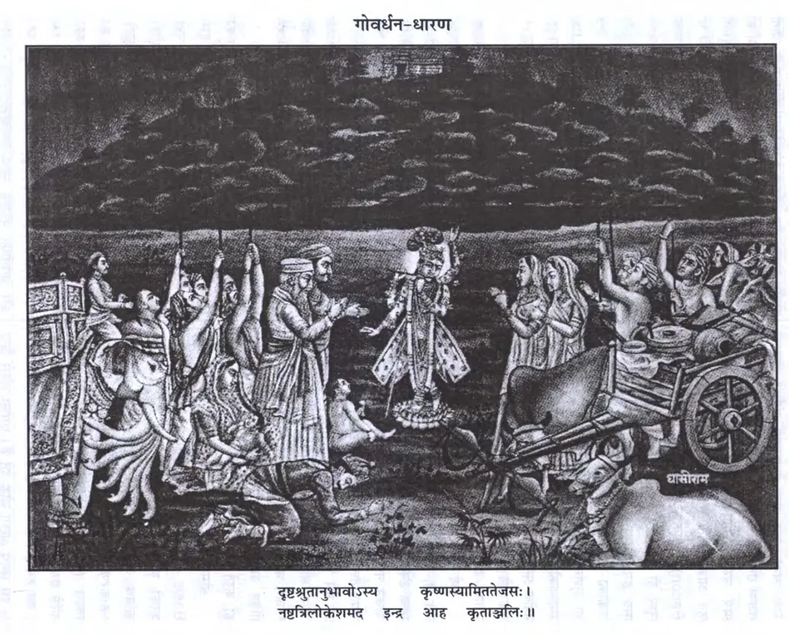
पूर्ण पुरुष जो कुछ भी करता है, सोच-समझकर करता है, किन्तु वह अपनेसे निम्नावस्थावाले पुरुषोंको अथवा उनको, जिनका वह वध करता है, सर्वदा अपना प्रयोजन नहीं बतला सकता। (बतला भी दे, तो कोई उसका तत्त्व समझ नहीं सकता, इसीसे) उसकी यह बातें हमें क्रूरतापूर्ण अवश्य ही प्रतीत होती हैं किन्तु (जैसा श्रीकृष्णने गीताके द्वितीय अध्यायके ग्यारहवें श्लोकमें कहा है-) इन बातोंको लेकर वे 'ज्ञानीलोग जीवित अथवा मृतक पुरुषोंके विषयमें कभी शोक नहीं करते।'
श्रीमती एनी बीसेण्टने अपनी 'धर्मका आधार' (Basis of Morality) नामक पुस्तकमें इस प्रश्नकी समीक्षा पाँच दृष्टियोंसे की है। वे धर्मका पञ्चविध आधार मानती हैं—
श्रुति (Revelation), अन्तःकरण (Consciences), उपयोगिता (Utility), विकास (Evolution) तथा योग (Mysticism)। इनमेंसे प्रथम चार आधारोंपर जिस धर्मकी स्थिति होती है, वह हमें इस सम्बन्धमें ठीक नहीं जँचता, अतः उसे हम इस समय अलग छोड़ देते हैं। धर्मका सबसे ऊँचा तथा सर्वोत्तम आधार योग है, जो सर्वसाधारणके लिये नहीं, किन्तु विशिष्ट व्यक्तियोंके लिये ही उपयुक्त है। परमात्माके साक्षात्कारका तथा अपने व्यष्टि-चेतनको समष्टि-चेतनके साथ मिला देनेका नाम ही योग है। योगी सांसारिक नियम बनानेवालोंके ठोस एवं स्थिर नियमोंका अनुसरण नहीं करता, वह अपने ही विचित्र अनुभवों और निर्णयोंका ही अनुसरण करता है, वह शास्त्रोंकी भी परवा नहीं करता। बस, यही हमें योगेश्वर श्रीकृष्णके चरित्रकी एक कुञ्जी मिल जाती है। उन्होंने अपने अन्तरात्मामें परमात्माका साक्षात्कार कर लिया था और अपने शरीरके यन्त्र एवं क्रियाओंको इतना नीरव बना दिया था कि उन्हें आत्माकी आवाज़ (Voice of the Spirit)के अतिरिक्त और कुछ सुनायी ही नहीं पड़ता था। वे हित-अहित, सिद्धि-असिद्धि, शान्ति और युद्ध, इन सबके सर्वथा परे थे।
वे अपने प्रभुकी आज्ञाके अनुसार ही संसारका कार्य करते थे। जनताके साधुवाद अथवा अपवादकी परवा नहीं करते थे। बाह्य नियमोंके बन्धनमें नहीं थे, वे चाहे जब उन्हें तोड़ सकते थे अथवा यों कहिये कि जब कभी उनके प्रभुकी इच्छा होती थी, वे उन्हें तोड़ सकते थे और जैसा कि अंग्रेजीके प्रमुख कवि मिल्टन (Milton) ने अपने Tetrachordon' नामक काव्यमें लिखा है, सबसे प्रसिद्ध गुणोंवाले पुरुषोंने कभी-कभी नियमोंको तोड़कर ही उनका यथार्थ रूपसे पालन किया है।
यहाँ यह प्रश्न हो सकता है कि 'एक पुरुषके लिये एक प्रकारके नियम और दूसरेके लिये दूसरे प्रकारके नियम होना क्या नीतिविरुद्ध नहीं है? नहीं, कदापि नहीं। क्योंकि सब लोगोंकी शारीरिक, मानसिक तथा सामाजिक स्थिति कदापि एक-सी नहीं होती। बालकको उसके माता-पिता आज्ञा देते हैं कि 'तू सूर्य छिपनेके बाद तुरन्त ही खेल बन्द करके घर चला आया कर' पर ऐसा उपदेश देनेवाला पिता स्वयं रातको साढ़े आठ बजे घर लौटता है। युवकका किसी स्त्रीके साथ और युवतीका पुरुषके साथ स्वच्छन्दतापूर्वक मिलना अनुचित है, किन्तु उसी युवकका वृद्ध पितामह बिना किसी रोक-टोक युवतियोंके साथ मिल सकता है। उसके लिये यह किसी प्रकारके दोष अथवा निन्दाकी बात नहीं समझी जाती। समाजके प्रत्येक व्यक्तिका एक-एक कर्तव्य होता है और वह कर्तव्य परस्पर बिलकुल उलटा हो सकता है। जो राजा अपने शत्रुओंसे लोहा लेनेके लिये समर्थ होनेपर भी त्यागवृत्तिसे उत्पन्न होनेवाले वैराग्यके कारण बिना ही युद्ध किये चुपचाप अपना राज्य उन्हें सौंप देता है, उसके विषयमें हमारी क्या धारणा होगी? क्या कभी किसी सेनानायकके विषयमें यह सुना गया है कि युद्धमें उसके दहिने गालके कट जानेपर उसने अपने बायें गालको भी तलवारके सामने कर दिया? जो बात व्यक्तियोंके लिये ठीक है, वही समुदायोंके लिये भी लागू होती है। निट्से (Nietzsche) नामक विद्वान्ने स्वामी और सेवकके लिये तथा शासक और शासितके लिये भिन्न-भिन्न धर्म बतलाये हैं। स्वामी तथा शासकके धर्ममें शक्ति, नीति और निष्ठुरता आदि गुणोंका समावेश होता है, जिनसे उसकी सत्ता कायम रह सके। इसके विपरीत शासितके धर्ममें आज्ञानुवर्तिता, राजभक्ति अथवा विश्वासघात आदि गुण शामिल रहते हैं, जिनसे वह सत्ता सन्तुष्ट रहे अथवा उसमें बाधा पड़े। केवल समुदायोंके ही नहीं, अपितु युगोंके धर्म और नीतिका भी समय-समयपर विकास एवं परिवर्तन होता रहता है, मनुस्मृति (अ० १।८५)में कहा है—
'कृतयुगमें मनुष्योंके धर्म एक प्रकारके होते हैं, त्रेता और द्वापरमें दूसरे प्रकारके और कलियुगमें तीसरे ही प्रकारके होते हैं। जब भिन्न-भिन्न युगोंके अधिकारों और कर्तव्योंमें इतना अन्तर होता है, तब श्रीकृष्ण जैसा पूर्ण पुरुष एवं दिव्य-दृष्टि-सम्पन्न योगीका कोई ऐसा कार्य, जो उसकी उत्कृष्टतम बुद्धिके अनुसार उचित हो, परन्तु जिसमें मनुष्योंद्वारा एवं मनुष्योंके ही लिये (उन लोगोंके लिये नहीं, जो मनुष्य-कोटिसे ऊपर हैं) बनाये हुए धर्मशास्त्रके नियमोंका कहीं-कहीं उल्लङ्घन होता हो, क्या कभी अनुचित होगा?
पूर्ण निर्दोषता तो ईश्वरमें ही है। ईश्वरसे भिन्न किसी पुरुषको (चाहे वह कितना ही पहुँचा हुआ क्यों न हो) सर्वथा निर्भ्रान्त बताना मुझे भी अभीष्ट नहीं है। मैं श्रीकृष्णके लिये भी इस विशेषणका प्रयोग नहीं करूँगा। मेरा मुख्य कथन तो यह है कि वह मुक्तपुरुष हम-जैसे साधारण मनुष्योंसे इतने ऊँचे थे कि सामान्य बुद्धिवाले मनुष्योंके मापसे उनके कार्योंको तौलना हमलोगोंके लिये बड़ी धृष्टताका काम है। कुछ अन्धे मिलकर यदि किसी नेत्रवाले पुरुषके लिये कोई कानून बनावें और उसके द्वारा उस कानूनके भंग होनेपर वे उसकी निन्दा करें तो यह कैसी दिल्लगीकी बात हो। यद्यपि इस जनसत्ताके युगमें लोगोंके मुँहमें निर्भ्रान्तता (Infallibility) शब्द फबता नहीं, फिर भी कई संस्थानों, पुस्तकों और व्यक्तियोंके लिये इस जमानेमें भी इस शब्दका अस्पष्टरूपसे व्यवहार किया ही जाता है। राजनीति-शास्त्रके ग्रन्थोंमें इस 'राजसत्ताके द्वारा अन्याय नहीं हो सकता' अथवा 'राजा अन्याय कर ही नहीं सकता' इत्यादि उक्तियाँ कहाँतक ठीक हैं इस बातपर विचार किया गया है। इसी विषयको लेकर अंगरेज़ कवि पोप (Pope) ने अपने 'Dunciad' नामक काव्यमें यह प्रसिद्ध व्यंगोक्ति की है—'राजाओंको अन्यायके दमन करनेका ईश्वरदत्त अधिकार है' (The right divine of kings to govern wrong) मकियावेली (Machiavelli) नामक इटलीके विद्वान्का तो यह मत है-'साधारण मनुष्योंके लिये सदाचारके जो नियम हैं, वे राजाओंके लिये लागू नहीं होते।' कानूनी मामलोंमें प्रीवी कौन्सिल (Privy council)का निर्णय अन्तिम माना जाता है और उसके निर्णय सर्वथा निर्भ्रान्त ही हों सो बात भी नहीं है। तथापि इतनी बात निर्विवाद है कि अंगरेजी साम्राज्य (British Empire)में अपीलकी इससे ऊँची अदालत कोई नहीं है। अभी कुछ ही वर्ष पूर्व सन् १८७० ईमें वैटिकनकी एक्यूमेनिकल कौन्सिल (Ecumenical Council* at the Vatican) की ओरसे यह आदेश हुआ था कि सम्प्रदायके सबसे बड़े पादरीकी हैसियतसे ईसाई-मतके किसी सिद्धान्तका तत्त्व समझानेमें अथवा सम्प्रदायके द्वारा पालनीय किसी सदाचारके नियमकी व्याख्या करनेमें पोपसे कोई भूल नहीं हो सकती। मुसलमानोंका यह विश्वास है कि कुरान खुदाकी वाणी है और इसलिये उसमें कोई भूल नहीं हो सकती। इसी प्रकार हिन्दू वेदोंका इतना आदर करते हैं कि ब्रह्म समाजियोंके इसके विरुद्ध लाख प्रयत्न करनेपर भी निर्भ्रान्त एवं प्रामाणिक वचनके अर्थमें 'वेदवाक्य' शब्दका ही प्रयोग होता है। जब इस वैज्ञानिक युगमें भी कुछ वर्गके लोग कतिपय संस्थाओं, ग्रन्थों तथा व्यक्तियोंको सब बातोंमें नहीं तो भी, कुछ बातोंमें तो अवश्य निर्भ्रान्त मानते हैं, तब हमारा यह मानना कि यदि पूर्णावस्थाको प्राप्त योगेश्वर कभी-कभी नियमोंको तोड़ सकता है, जब उसकी दिव्य-दृष्टिमें उन नियमोंके तोड़नेसे न्याय अथवा शान्तिकी वृद्धि होती हो अथवा मानव-जातिका कल्याण होता हो, तो क्या अनुचित होगा?
* यह सारे ईसाई-मत अथवा उसके कैथेलिक (Catholic) सम्प्रदायके अनुयायियोंकी एक प्रतिनिधि सभा है, जिसकी बैठक रोमके वैटिकन नामक स्थानमें (जो उस सम्प्रदायके प्रधान आचार्य पोप Popeका निवासस्थान है) होती है।
नीतिशास्त्रमें इस विषयपर खूब विचार किया गया है कि किसी अच्छे उद्देश्यके लिये यदि बुरा काम भी किया जाय तो वह बुरा नहीं है। (The end justifies the means) व्यवहारमें यह उक्ति कदापि मान्य नहीं है। बाइबलमें भी इस प्रकारका एक वाक्य आता है- ऐसा पाप करो, जिसका फल अच्छा हो।'यद्यपि ये सिद्धान्त साधारण मनुष्योंके लिये नहीं हैं तो भी अपवादोंके लिये तो गुंजाइश होनी ही चाहिये। जिस कामके किसी सिद्धान्तहीन पुरुषके द्वारा किये जानेसे बड़ी हानि हो सकती है, उसी कामके किसी ईश्वरीय-शक्तिसे सम्पन्न पुरुषके द्वारा अथवा किसी ऐसे पुरुषके द्वारा जो ज्ञानमें औरोंसे बढ़ा हुआ हो, किये जानेमें कोई बाधा नहीं होनी चाहिये। वह डाक्टर जो बीमार आदमीकी इच्छाके विरुद्ध भी चीरा-फाड़ी करके उसकी जान बचा लेता है, क्या उस बीमारकी कृतज्ञताका पात्र नहीं होता? यह निर्विवाद है कि जो पुरुष पूर्णावस्थाको प्राप्त हो चुका है, वह कभी-कभी कानूनकी परवा न करके ऐसा काम कर सकता है जो उस समयके विद्वानोंद्वारा निर्धारित नियमोंके विरुद्ध होता है, किन्तु जिसे वह अपनी दृष्टिसे ठीक और हितकर समझता है।
प्रो० डायसन (Deussen) अपनी 'वेदान्त-दर्शन' (System of the Vedanta) नामक पुस्तकमें लिखते हैं कि मुक्तिके बाद जीवके लिये कोई कर्तव्य अथवा कर्म नहीं रह जाता। उसके लिये कर्म करना और न करना बराबर है और यदि वह कर्म करता है तो वे कर्म न तो उसके कर्म होते हैं और न उसे बाँधते ही हैं। मुक्ति प्राप्त हो जानेके बाद उसके शरीरसे पूर्वाभ्यासवश उसीभाँति क्रिया होती रहती है, जैसे कुम्हारका चक्का बरतन बन जानेके बाद भी चलता रहता है। परमात्माके ऐसे यन्त्रको पाप और पुण्य लागू नहीं हो सकते। श्रीकृष्ण भी गीता (९।२८)में कहते हैं—इस प्रकार तू शुभ और अशुभ फल देनेवाले कर्मरूपी बन्धनोंसे छूट जायगा। (शुभाशुभफलैरेवं मोक्ष्यसे कर्मबन्धनैः)। इस सिद्धान्तके अनुसार श्रीकृष्ण-जैसे स्वार्थहीन पुरुषकी नीयतको पापयुक्त अथवा दूषित बताना बिलकुल मूर्खतापूर्ण होगा। गीता (४।२१*)में लिखा है—'जो पुरुष किसी बातकी आशा नहीं करता, जिसने अपने मन और आत्माको वशमें कर लिया है और जिसने सब प्रकारका लालच छोड़ दिया है, वह केवल शरीरके द्वारा कर्म करता हुआ पापका भागी नहीं होता। लोकमान्य तिलकने अपने 'गीता-रहस्य'में लिखा है—'यह कहना कि मुक्त पुरुष भी पाप कर सकता है, उतना ही उपहासास्पद है, जितना यह कहना कि अमरताकी मृत्यु होती है। उसी विद्वान्ने लिखा है कि पूर्णावस्थाको प्राप्त हुआ पुरुष समय-समयपर कानूनको तोड़ भी सकता है, क्योंकि संसारकी दूसरी आत्माएँ उसके समान मुक्त नहीं हैं। इन सारी बातोंसे भी यही सिद्ध होता है कि हमारे-जैसे संसारी एवं अपूर्ण जीवोंकी अपेक्षा श्रीकृष्णकी 'स्वतन्त्र नीति'(Absolute Ethicst**) बहुत ही ऊँची थी।
* निराशीर्यतचित्तात्मा त्यक्तसर्वपरिग्रहः।
शारीरं केवलं कर्म कुर्वन्नाप्नोति किल्बिषम्॥
** प्रसिद्ध अंग्रेज़ दार्शनिक हर्बर्ट स्पेन्सर (Herberr Spencer) ने इन शब्दोंका प्रयोग किया है और लोकमान्य तिलकने इसी सम्बन्धमें उन्हें उद्धृत किया है।
इस्लामके सूफी भी यह मानते हैं कि अन्य साधारण मनुष्योंकी अपेक्षा पहुँचे हुए पुरुषोंके आचरणमें अधिक स्वछन्दता होनी चाहिये। मौलाना जलालुद्दीन रूमी जो मुसलिम महात्माओंमें सबसे श्रेष्ठ थे, अपने प्रसिद्ध ग्रन्थ 'मसनवी' (भाग १ कथा १२)में लिखते हैं कि महात्माओंके लिये 'पाप-पुण्यकी बही' नहीं देखी जाती—(क्योंकि वे पाप-पुण्यसे ऊँचे उठ जाते हैं) (इसे 'कारनामोंकी किताब' कहते हैं और मुसलमानोंका विश्वास है कि आकबतके दिन यह बही ज़रूर देखी जाती है), मानो उनका कर्मोंके आचरण और इसीलिये उनके शुभ और अशुभ फलोंसे कोई सम्बन्ध ही नहीं है। आर० ए० निकल्सन (R. A. Nicholson) नामक विद्वान्ने-जिनका इस्लामके रहस्यवादके विषयका लेख सबसे प्रामाणिक माना जाता है-अपनी 'Mystics of Islam' नामक पुस्तकमेंमहात्माओंकी अनेक श्रेणियोंके सम्बन्धमें बड़े रोचक ढंगसे विचार किया है। उन्होंने इस प्रसंगमें लिखा है कि साधक-अवस्थामें वली (महात्मा)के लिये यह आवश्यक है कि वह नियमोंका पालन करे, किन्तु आगे चलकर जब वह योगसिद्धिके मार्गमें बढ़ जाता है, तब वह उन नियमोंकी अवहेलना भी कर सकता है। 'दीवाने शम्से तबीज' नामक पुस्तककी भूमिकामें वही लेखक लिखता है कि सूफियोंका अपने 'पीर' (गुरु) पर पूर्ण विश्वास होता है; क्योंकि वे उन्हें ईश्वरका स्वरूप मानते हैं। उनके कर्म उनके मतमें ईश्वरके ही कर्म होते हैं, क्योंकि उसकी आत्मरूपसे ईश्वरके साथ एकता होती है। निकल्सन साहबने लिखा है कि सूफी लोग इस तरहके पीरोंके द्वारा की हुई ईश्वर-निन्दा, दुराचार तथा अपराधोंतकको क्षमा ही नहीं करते, अपितु उनकी बड़ाई करते हैं, क्योंकि उनकी धारणा यह होती है कि सूर्यसे कभी अन्धकार उत्पन्न नहीं हो सकता और ईश्वर से पाप नहीं हो सकता। मुसलमान योगियोंके इस प्रकारके भावोंसे यह बात और भी अच्छी तरहसे हमारी समझमें आ जाती है कि पूर्णावस्थाको पहुँचे हुए तथा अधूरे पुरुषोंके बीचमें कितना महान् अन्तर है और ये लोग पहुँचे हुए पुरुषोंको कितनी स्वच्छन्दता देते हैं।
कभी-कभी जब हम किसी पूर्ण पुरुषके आचरणोंको अपने मापसे तौलते हैं, तब वे हमें बिलकुल असंगत ही नहीं, अपितु घृणित मालूम होते हैं और निम्नलिखित कथासे जो कुरानके १८ वें अध्यायमें (जो 'सुरातुल कहफ' कहलाता है) दी हुई है, यह बात और भी स्पष्ट हो जाती है। वहाँ लिखा है कि एक बार हजरत मूसा एक पूर्ण पुरुषके पास पहुँचे, जिसे कुरानके टीकाकारोंने 'अलखिज्र' बतलाया है और उन्होंने उसके साथ रहनेकी इच्छा प्रकट की। उस पूर्ण पुरुषने कहा—'तुम हमारे पास रह सकते हो, किन्तु शर्त यह है कि तुम हमारे कार्योंकी समालोचना न कर सकोगे, यदि करोगे तो हम तुम्हें अपने पास नहीं रक्खेंगे।' हजरतने यह शर्त स्वीकार कर ली। एक दिन दोनों चलते-चलते एक समुद्रके किनारे पहुँचे। अलखिज्रने जाकर एक जहाजमें छेद कर दिया। हजरतने अपने वचनको भूलकर उनसे पूछा कि 'आपने इस जहाजमें छेद करके नाविकोंकी जानको जोखिममें क्यों डाल दिया?' अलखिज्रने कहा कि 'यह मत पूछो।' आगे चलकर थोड़ी दूरपर उन्हें एक नवयुवक मिला, जिसने प्रत्यक्षमें कोई अपराध नहीं किया था, किन्तु उसे अलखिज्रने मार डाला। हजरतने एक बार फिर शङ्का की। किन्तु उन्हें यह उत्तर मिला कि 'यदि तुम अबकी बार शङ्का करोगे तो हम तुम्हें अलग कर देंगे।' इतनेमें वे एक दीवारके पास पहुँचे, जो गिरनेहीको थी। किन्तु अलखिज्रने उसको ठीक कर दिया। उनके इस व्यवहारको-जो हजरतकी दृष्टिमें सरासर मूर्खतापूर्ण था, -वे नहीं सह सके। उन्होंने उस पुरुषके सङ्गसे वञ्चित होना स्वीकार किया, किन्तु उनसे इस विचित्र व्यापारका हेतु पूछा। अलखिज्र बोले कि 'मैंने जहाजको जान-बूझकर निकम्मा कर दिया, क्योंकि मैं जानता था कि मल्लाह लोग उसे ऐसी जगह ले जानेवाले थे, जहाँका राजा प्रत्येक सुदृढ़ जहाजको बलपूर्वक छीन रहा था। जिस नवयुवकको मैंने मारा था वह अधर्मी था, यद्यपि उसके माँ-बाप धर्मनिष्ठ हैं और मैंने उसको इसीलिये मारा कि परमात्मा उसके माँ-बापको उसके बदलेमें एक धार्मिक और अधिक स्नेही पुत्र दें। जो दीवार गिर रही थी, वह दो अनाथ बालकोंकी थी और उसके नीचे कुछ गड़ी हुई सम्पत्ति है, जो उन्हीं बच्चोंको मिलेगी। किन्तु परमात्माकी यह इच्छा है कि जबतक वे वयस्क न हो जायँ, तबतक उस सम्पत्तिका उपयोग न करें। इसीलिये मैंने वह दीवार फिरसे खड़ी कर दी।' अन्तमें कुरानमें अलखिज्रके ये वचन मिलते हैं—'मेरा जो कुछ भी व्यवहार तुमने देखा, उसे मैंने अपनी इच्छासे नहीं, किन्तु परमात्माकी इच्छासे किया है।' उपर्युक्त कथाका भाव बिलकुल स्पष्ट है और उससे हमें यह शिक्षा मिलती है कि हमलोग किसी भी मुक्त पुरुषके व्यवहारोंकी, जो हमें देखनेमें मूर्खतापूर्ण प्रतीत होते हैं, अविचारसे निन्दा करके बड़ी भूल करते हैं।
योगेश्वर सर्वदा दिव्य-दृष्टि-सम्पन्न एवं दूरदर्शी होता है। वह उस पुरुषके समान है जो एक ऊँचे बुर्ज़पर खड़ा होकर नीचे खड़े हुए अपने साथियोंको देखता है। वहाँसे जब वह किसी सुखद दृश्यको देखता है तो उसे हँसी आती है और जब किसी विषादपूर्ण दृश्यको देखता है, तब वह रोने लगता है। किन्तु नीचे खड़े हुए लोग उसके हँसने अथवा रोनेका कारण न समझकर उसे पागल समझ लेते हैं। गीता (२। ६६)में विवेकी और अविवेकी पुरुषोंके बीच जो अन्तर बतलाया है वह यही है। गीता कहती है* 'साधारण प्राणियोंके लिये जो रात्रि है, संयमी पुरुषके लिये वह जागनेका समय है और जब संसारी लोग जागते हैं, तब विवेकी मुनिकी रात्रि होती है।
* या निशा सर्वभूतानां तस्यां जागर्ति संयमी।
यस्यां जाग्रति भूतानि सा निशा पश्यतो मुनेः॥
श्रीकृष्णके भी कुछ कर्म पहले देखनेमें अविवेकतापूर्ण-से प्रतीत होते हैं परन्तु उनकी बुद्धिमत्ता तभी प्रकट होती है, जब उनका परिणाम वही होता है, जिसकी उन्होंने कल्पना की थी। महाभारतमें एक जगह यह कथा आती है कि जब युद्धमें कर्णके द्वारा भीमके पुत्र घटोत्कचका वध किया गया, तब पाण्डव उसके शोकसे अत्यन्त ही व्याकुल हो गये, किन्तु श्रीकृष्ण उस समय भी रथपर बैठे हुए हँसते और उछलते थे, श्रीकृष्णकी यह लीला देखकर पाण्डव और भी दुखी हुए। उनकी हँसीने उस समय घावपर नमकका काम किया। अर्जुनने जब इसका कारण पूछा तो उन्होंने कहा—'कर्णके पास एक अमोघ शक्ति थी, वह उसे जिसपर छोड़ता, उसीकी मृत्यु निश्चित थी, परन्तु वह उसका प्रयोग एक ही बार कर सकता था। उसने वह शक्ति तुम्हारे वधके लिये रख छोड़ी थी। पर रातको जब उसने देखा कि घटोत्कचके प्रहार मेरे लिये असह्य हो रहे हैं, तो उसे बाध्य होकर घटोत्कचके प्रति उस शक्तिका प्रयोग करना पड़ा। मैं इसी बातका आनन्द मना रहा हूँ कि घटोत्कचके प्राणोंकी बलिसे तुम्हारे प्राणोंकी रक्षा हो गयी।' एक बार और भी श्रीकृष्णने ऐसा ही व्यवहार किया था, जो पहले लोगोंकी समझमें नहीं पाया। युद्धके अन्तमें कौरवोंका नाश हो जानेपर पुत्र-शोक एवं पाण्डवोंके प्रति द्वेषसे जलते हुए राजा धृतराष्ट्रने भीमसे गले लगकर मिलनेकी इच्छा प्रकट की, तब श्रीकृष्णने भीमको उनके पास न भेजकर, एक लोहेकी भीममूर्ति बनवाकर उसीको उनके पास भेजवा दिया, जिसको उस जन्मान्ध वृद्ध राजाने अपने बाहुओंमें भरकर चूरचूर कर दिया। श्रीकृष्णकी इस क्रियासे भीमके प्राणोंकी रक्षा हो गयी। एस० टी० कोलरेज (S. T. Coleridge) नामक अंग्रेज विद्वान्ने अपनी 'Biographia Literaria' नामक पुस्तकमें लिखा है कि 'कभी-कभी मनुष्यसे जो मूर्खता हो जाती है, उसमें परमात्माकी सत् प्रेरणा रहती है और मनुष्योंके कुकृत्योंके द्वारा भी भगवान्की दयाका विकास होता है। हम उपयुक्त वाक्यको उल्टा करके यह कह सकते हैं कि परमात्मा और उनके शरणागत मुक्त पुरुषोंके जो कार्य हमें शङ्कास्पद और मूर्खतापूर्ण प्रतीत होते हैं, उनके अन्दर वह उत्तम विवेक भरा रहता है, जिसे हमलोगोंकी पार्थिव बुद्धि कदापि समझ ही नहीं सकती।
परन्तु प्रश्न यह होता है कि यदि श्रीकृष्ण हमलोगोंकी अपेक्षा इतने महान् थे तो क्या हमलोगोंके लिये यह उचित नहीं है कि हम प्रत्येक बातमें उनका अनुकरण करें? इस प्रश्नका उत्तर यह है कि ऐसा करना हमलोगोंके लिये कदापि उचित नहीं है। इस तरहका महान् अधिकार और असीम स्वतन्त्रता उसी पुरुषको प्राप्त है, जिसके कर्तव्य और दायित्व भी अति महान् हों। इस अधिकार और स्वतन्त्रताका उपयोग वह योगेश्वर ही कर सकता है जो मुक्ति प्राप्त कर लेनेके बाद इस संसारमें केवल ईश्वरकी इच्छाको पूर्ण करनेके लिये ही रहता है। इस प्रकारका महापुरुष स्वच्छन्दतापूर्वक व्यवहार कर सकता है, क्योंकि उसकी निजकी इच्छा कोई नहीं होती, ईश्वरकी इच्छा ही उसकी इच्छा होती है। इसके विपरीत हम साधारण जीवोंके लिये,—जो अबतक उस स्थितिको नहीं पहुँचे हैं, शास्त्रोंके वचनोंके अनुसार ही व्यवहार करना उचित एवं आवश्यक है। श्रीकृष्ण अपने श्रीमुखसे कहते हैं—'मेरे आचरणोंका अनुकरण न करो, यदि तुम मोक्ष चाहते हो और मुझसे प्रेम करते हो तो मेरी आज्ञाका पालन करो। मेरा जीवन ऐसा रहस्यमय है कि जो बुद्धिमान् पुरुष इसको समझ सकता है, वह उससे बहुत लाभ उठा सकता है, किन्तु वह मूर्ख जो बिना ही तत्त्व समझे उसे आदर्श मानकर उसके अनुसार आचरण करता है, सो नरकगामी होता है। जो मार्ग एक मनुष्यके लिये ठीक है, वही दूसरेके लिये भी ठीक हो, यह नियम नहीं है। हममेंसे प्रत्येक व्यक्ति श्रीशुकदेव-मुनिके समान नग्न होकर नहीं विचर सकता, मीराबाईकी तरह विषका प्याला भगवान्के चरणामृतकी बुद्धिसे नहीं पी सकता अथवा गुजरातके सुलतान, मुहम्मद बेगदा अथवा पोंटसके राजा मिथ्रीडाटीज (Mithridates, King of Pontus) की भाँति विषधर सर्पोंको खाकर अपना जीवन निर्वाह नहीं कर सकता। इसीलिये जो लोग मन्त्र-तन्त्र जानते हैं, वे लोग इस बातके लिये बड़े सावधान रहते हैं कि अदीक्षित लोग उनके प्रयोगको न जान जाय। गीता (१८। ६७*)में श्रीकृष्ण स्वयं कहते हैं-'जो तपस्वी न हो, भक्त न हो, सुननेकी इच्छा न रखता हो अथवा जो मेरे अन्दर दोष बुद्धि रखता हो, उसे इस रहस्यको मत कहना।'
* इदं ते नातपस्काय नाभक्ताय कदाचन।
न चाशुश्रूषवे वाच्यं न च मां योऽभ्यसूयति॥
लोकमान्य तिलकने अपने गीता-रहस्यमें एक संस्कृतकी उक्ति उद्धृत की है जिसका भाव यह है कि 'हमें देवताओंके बाह्य आचरणका अनुकरण नहीं करना चाहिये।' तैत्तिरीय उपनिषद्में भी यही लिखा है कि 'हमलोगोंको बड़ोंके अच्छे आचरणोंका ही अनुकरण करना चाहिये, दूसरोंका नहीं।*
* यान्यस्माक ॸ सुचरितानि तानि त्वयोपास्यानि नो इतराणि।
(तैत्तिरीय उपनिषद् ११। २)
जैसा कि ऊपर कई बार कहा जा चुका है, पूर्ण अवस्थाको पहुँचे हुए ज्ञानी पुरुषको पाप लग ही नहीं सकता, चाहे वह अपने माता-पिता, गुरु अथवा राजाका भी वध क्यों न कर डाले। परन्तु जो साधारण मनुष्य बिना अपने अन्तःकरणको शुद्ध, बुद्धिको निर्मल और आत्माको समुन्नत किये और अपने पिता परमेश्वरको प्राप्त किये श्रीकृष्णकी लीलाओंका अनुकरण करने लग जाय, उससे बढ़कर महान् अपराधी और अतिशय मूर्ख कौन हो सकता है? हम यह मानते हैं कि देखनेमें यह बात बिलकुल असंगत और अनुचित प्रतीत होती है कि एक पूर्ण ज्ञानी, जिसे नीतिके नियमोंका यथार्थरूपसे अवश्य पालन करना चाहिये, उसकी अवहेलना करे। एक साधारण मनुष्य उसके इस प्रकारके व्यवहारको देखकर अवश्य यह कहेगा कि 'यदि यह महापुरुष भी नीतिका उल्लंघन करके दोषका भागी नहीं होता तो हमलोग भी उसका अनुकरण करें तो इसमें कोई आपत्ति नहीं होनी चाहिये।' परन्तु याद रक्खो कि श्रीकृष्ण श्रेष्ठ पुरुषोंके भी आदर्श एवं उत्तम पुरुषोंमें भी उत्तम थे, हमलोगोंकी तरह साधारण मनुष्य नहीं थे। क्या किसीने कभी सिंहिनीको दुहनेका साहस किया है? और यदि किसीको उसका दूध प्राप्त भी हुआ हो तो क्या सिंह-शावकके अतिरिक्त किसी दूसरे प्राणीकी शक्ति है कि उसे वह पचा सके और क्या वह दूध सोनेके अतिरिक्त दूसरी किसी धातुके पात्रमें ठहर सकता है? श्रीकृष्णका-उस अलौकिक पुरुषका-जिसने अपनी दिव्य-दृष्टि और अद्भुत शक्ति एवं सामर्थ्यके द्वारा वह काम कर दिखाया, जिसे हमलोग कदापि नहीं कर सकते-चरित्र ऐसा ही था। किन्तु यह सब कुछ कहने-सुननेके बाद भी जो अपूर्ण हैं, उन्हें अवश्य ही इस दिव्य-पुरुषके आचरणका अनुकरण करनेकी इच्छा होगी ही। परन्तु उन लोगोंके प्रति हमारी यह विनय है कि वे श्रीकृष्णके जीवनको लक्ष्यमें न रखकर केवल उनकी आज्ञाओंका ही पालन करें। किसी घातक शस्त्रको असावधानीसे पकड़कर उसके भयङ्कर परिणामका शिकार बननेकी अपेक्षा यही ठीक है कि मनुष्य उसके पास ही न जाय। श्रीकृष्णके उपदेश सारे संसारके लिये पालनीय हैं किन्तु उन यादवपतिके कर्मोका अपने जीवनमें अनुकरण कोई दूसरा कृष्ण ही कर सकता है। ऐसा करनेके लिये मनुष्यको यह चाहिये कि वह अपने अन्दर रहनेवाली ईश्वरीय शक्तिका उसी प्रकार पूर्ण विकास करे, जिस प्रकार एक मुक्तपुरुष करता है। मुक्तपुरुषके अन्दर ईश्वरकी जो वाणी होती है, उसका किसी साधारण पुरुषपर तभी प्रभाव पड़ सकता है, जब उस साधारण पुरुषके अन्तःकरणमें रहनेवाला परमेश्वर ही उसके उपदेशको धारण करे। जो पुरुष पूर्णावस्थाको पहुँच चुके हैं, वे अपने ही प्रकाशसे देदीप्यमान रहते हैं, किन्तु जो पुरुष उस अवस्थाको नहीं पहुँचे हैं, वे यदि किसी मुक्तपुरुषके प्रकाशको लेकर चमकनेकी कोशिश करें, तो वे निश्चय ही उस प्रकाशसे भस्म हो जायँगे। उन्हें चाहिये कि वे अपनेको क्रमशः इतना समुन्नत बनावें कि उनके अन्दर जो स्वाभाविक प्रकाश है, वह प्रदीप्त हो जाय। फिर वे अपने शरीरके द्वारा परमात्माकी इच्छाको पूर्ण करनेमें समर्थ हो सकेंगे।
प्रेम और सहानुभूतिसे ही मनुष्य दूसरेके स्वरूप तथा गुणोंको पहचान सकता है। श्रीकृष्णका यथार्थ रूप जाननेका सर्वोत्तम उपाय उनसे प्रेम करना तथा उनकी भक्ति करना ही है। मेजके सामने बैठकर सिरपच्ची करनेवाला शुष्क समालोचक उन्हें नहीं जान सकता। उन्हें यथार्थमें वह योगी ही जान सकता है, जो आध्यात्मिक चिन्तन और प्रेमपूर्वक ध्यानके द्वारा अपने आदर्शको प्राप्त करनेकी चेष्टा करता है। शिशुपाल-जैसे विरोधी, दुर्योधन-जैसे दोषदर्शी और प्रोफेसर हापकिन्स-जैसे आक्षेप करनेवाले मनुष्य उन्हें भलीभाँति नहीं समझ सकते; उन्हें जाननेके लिये उस कलियुगकी गोपी मीराके प्रेम, सूरदासकी निष्ठा और उस तीव्र भक्तिकी अपेक्षा है, जो वैष्णव-कवियोंके पदोंमें छलक रही है। भागवतमें एक सुन्दर कथा है कि एक बार जब यशोदाजी बालकृष्णके ऊधमसे हार गयीं, तब उन्होंने चाहा कि उनके हाथ-पैर रस्सीसे बाँध दें। वह रस्सी लेकर बाँधने लगीं, घरकी सारी रस्सियाँ शेष हो गयीं, परन्तु भगवान् श्रीकृष्ण बन्धनमें नहीं आये तथा अपनी रिसियानी माताकी ओर देख-देखकर हँसने लगे। उन समालोचकों और समीक्षकोंकी भी यही दशा है जो श्रीकृष्णके चरित्रको अपनी बुद्धिके द्वारा समझना चाहते हैं। वे अपनी ही युक्तियोंके जालमें ऐसी बुरी तरहसे फँस जाते हैं कि उनसे बाहर निकलना भी उनके लिये कठिन हो जाता है और माता यशोदाकी तरह वे भी उपहासास्पद बन जाते हैं। गीता-वक्ताके चरणकमलोंमें मुझ अहिन्दू आर्यकी यह प्रेमपूर्ण श्रद्धाञ्जलि भी स्वीकार हो, यही मेरी प्रार्थना है।
श्रीमद्भागवतमें श्रीराधाजी
(लेखक-पण्डित श्रीबालचन्दजी शास्त्री)
श्रीमद्भागवतमें श्रीराधाका नाम नहीं आया। भगवान् श्रीकृष्णकी व्रज-लीलामें जिनका बराबर साथ रहना बतलाया जाता है, जिनके हृदयमें भगवान् निरन्तर वास करते रहे, उन श्रीराधाका नाम श्रीकृष्ण-चरित्रमें न हो, यह बड़ी विचित्र बात है। पर भक्तोंको यह जानकर सन्तोष होगा कि श्रीराधाका नाम भागवतमें कहीं नहीं हो, ऐसी बात नहीं है। उनका नाम पाया है, ध्यानपूर्वक देखनेसे मालूम हो जायगा। देखिये, श्रीमद्भागवतके द्वितीय स्कन्ध, चतुर्थ अध्यायका १४ वाँ श्लोक—
नमो नमस्तेऽस्त्वृषभाय सात्वतां
विदूरकाष्ठाय मुहुः कुयोगिनाम्॥
निरस्तसाम्यातिशयेन राधसा
स्वधामनि ब्रह्मणि रंस्यते नमः॥
‘सात्वत-भक्तोंके पालक, कुयोगियोंके लिये दुर्ज्ञेय प्रभुको हम नमस्कार करते हैं। अहा! वे भगवान् कैसे हैं? स्वधामनि-वृन्दावन में, राधसा-श्रीराधाके साथ, रंस्यते-क्रीडा करनेवाले हैं। और राधा कैसी हैं?—जिन्होंने समानता और आधिक्यको निरस्त कर दिया है यानी जिनसे बढ़कर तो क्या, जिनकी बराबरी करनेवाला भी कोई नहीं है—
'राध्' धातुसे राधा शब्द बनता है और इसी प्रकार सान्त 'राधस्' शब्द भी राथ् धातुसे ही बनता है।
पुराणका यह वाक्य प्रसिद्ध ही है—
काचिद्देवताभ्यधिका कुतः अनेककोटिब्रह्माण्डपतिर्यस्या वशो हरिः।
अनेक करोड़ ब्रह्माण्डोंके पति श्रीकृष्णतक जिनके वशमें हैं, उन राधासे बढ़कर या उनके समान कौन-सा देवता है?
सदा आनन्दमय
मो कहँ अस मन-मन्दिर भावै।
जा महँ एक श्यामसुन्दर बिनु
और न कोऊ आवै॥
परम इकन्त परम निर्मलतम
शोभा बरनि न जावै।
प्रमुदित ह्वै जहँ परम प्रेमसौं
प्रियतम कण्ठ लगावै॥
जगमग जोति सदा आनँदमय
दिवस निसा न जनावै।
'चन्द्रकला' लखि-लखि पिय-मुख-बिधु
आतम-सुधि बिसरावै॥
भगवान् श्रीकृष्ण एक थे या अनेक?
(लेखक-श्रीयुत एस० एन० ताडपत्रीकर एम०ए०, भाण्डारकर इन्स्टिच्यूट, पूना)
ईसवी सन्के प्रारम्भसे अथवा उससे भी सैकड़ों वर्ष पहलेसे हमारे देशके अनेक प्रतिभाशाली एवं अनुभवी महर्षियोंने भगवान् श्रीकृष्णके चरित्रका वर्णन किया है, किन्तु आधुनिक विद्वानोंको छोड़कर किसीको भी यह शङ्का नहीं हुई कि उनके अच्छे या बुरे, लौकिक अथवा दिव्य जितने भी कर्म प्रसिद्ध हैं वे सारे एक भगवान् श्रीकृष्णके ही द्वारा हुए थे अथवा अनेक व्यक्तियोंके द्वारा हुए थे। यह सम्भव है कि नरदेहधारी भगवान् श्रीकृष्णके प्रति जो हमारी अतिशय श्रद्धा और भक्ति है उससे अन्धे होकर हमने कभी इस बातका विचार भी न किया हो कि गोकुलके गोपाल-कृष्ण दूसरे थे और पार्थ-सारथि पाण्डवोंके चतुर सखा श्रीकृष्ण दूसरे ही थे। जिस श्रीकृष्णने बालकपनमें गोपियोंके साथ स्वच्छन्दरूपसे विहार किया उसी श्रीकृष्णने भगवद्गीताके उच्च तत्त्वज्ञानका उपदेश दिया, यह बात आधुनिक विद्वानोंकी समझमें नहीं आती। पाश्चात्य विद्वानोंमें प्रोफेसर जेकोबी (Jacobi) और विण्टरनीज (Winternitz) ने एवं भारतीय विद्वानोंमें सर भाण्डारकरने भगवान्के सम्बन्धमें यह प्रश्न उठाया है, जो प्रो० विण्टरनीजके निम्नलिखित शब्दोंमें व्यक्त किया गया है—
".........In any case it is a far cry from Krishna, friend of the Pandavas, to the Krishna of Harivansha and the Exalted God Vishnu.........'
अर्थात् जो कुछ भी हो, पाण्डवसखा श्रीकृष्ण, हरिवंशके श्रीकृष्ण और भगवान् विष्णु एक नहीं, भिन्न-भिन्न थे।
इस उक्तिसे हमारे सामने भगवान्के तीन विभिन्न रूप उपस्थित होते हैं। पहले यादवपति श्रीकृष्ण पाण्डवोंके सखाके रूपमें उपस्थित होते हैं और महाभारतका ग्रन्थ जिस रूपमें आजकल उपलब्ध है उसके अन्दर उन्हें भगवान् विष्णुका ही अवतार बतलाया गया है—कम-से-कम पाण्डव और भीष्म आदि तथा कुछ दूसरे लोग भी उन्हें विष्णुका अवतार ही मानते थे। हरिवंशमें हमें भगवान्का पौराणिकरूप देखनेको मिलता है। इस रूपसे उन्होंने ग्वालबालोंके साथ अपना बाल्यकाल व्यतीत किया और कंसको मारकर नाम प्राप्त किया और आगे चलकर यद्यपि उन्होंने राजमुकुट धारण नहीं किया किन्तु वे व्यवहारमें यादवोंके स्वामी बन गये एवं अपने कुलको जरासन्धके आक्रमणसे बचाकर द्वारकामें जाकर राजाकी भाँति रहने लगे।
तीसरी बार भगवान् श्रीकृष्ण हमारे सामने विष्णुके अवतारके रूपमें उपस्थित होते हैं। प्रो० विण्टरनीजका कहना है कि ये तीनों रूप एक ही व्यक्तिके हों, यह बात युक्तिसे ठीक नहीं जँचती। भगवद्गीताके श्रीकृष्ण अपनेको भगवान् विष्णुका अवतार बतलाते हैं। कोई भी बुद्धिमान् पुरुष इस बातको स्वीकार नहीं करेगा कि महाभारतके चतुर श्रीकृष्ण अथवा पुराणोंके नटखट श्रीकृष्ण यही थे। इस अनुमानके आधारपर श्रीकृष्ण-सम्बन्धी उपलब्ध ग्रन्थों और प्रमाणोंकी आलोचना कर ये विद्वान् इस निर्णयपर पहुँचे हैं कि हमारा यह अनुमान ठीक है—कम-से-कम इस बातका तो कोई पर्याप्त प्रमाण नहीं मिलता कि यह अनुमान झूठा है और उनकी यह धारणा है कि जिन लोगोंने अभीतक इन तीनों रूपोंको एक माना है वे कदाचित् भ्रममें हैं।
इतनी बात तो प्रधान विषयके सम्बन्धमें हुई। अब हमें इस प्रश्नके कुछ अवान्तर विषयोंपर विचार करना है। छान्दोग्य उपनिषद्में श्रीकृष्णके लिये 'देवकीपुत्र' शब्दका प्रयोग किया गया है। इस बातपर ये सभी विद्वान् बड़ा जोर देते हैं और कुछ समान घटनाओंके आधारपर यह कहते हैं कि 'श्रीकृष्णको वसुदेव नामक एक सामन्तका पुत्र बतलाना ठीक नहीं है। उनके 'वासुदेव नामसे ही यह कल्पना कर ली गयी है कि उनके पिताका नाम वसुदेव था।'* सर रामकृष्ण गोपाल भाण्डारकर महोदय अपनी Vaishnavism, Saivism, ete.' नामक पुस्तकमें कहते हैं—वृष्णिकुलोद्भव महाराज कृष्ण गोकुलमें संवर्धित हुए, यह बात उनके अगले जीवनसे जिसका वर्णन महाभारतमें मिलता है, मेल नहीं खाती१। प्रो० विण्टरनीज़ कहते हैं—'पाण्डवोंके सखा और सलाहकार, भगवद्गीताके सिद्धान्तके प्रचारक, बाल्यकालमें दैत्योंका वध करनेवाले वीर, गोपिकाओंके वल्लभ और भगवान् विष्णुके अवतार श्रीकृष्ण एक ही व्यक्ति थे, इस बातपर विश्वास होना बहुत कठिन है२।
* The Story of Krishna being the son of a Knight Vasudeva, is not true; and the name of father seems to have been developed from his (Krishna's) very name Vasudeva.-Jacobi
१. The story of the Vrishni prince Vasudeya being brought up in a cow settlement is incongruous with his later career as depicted in the Mahabharata. —Sir R. G. Bhandarkar.
२. It is difficult to believe that Krishna the friend and counciller of Pandavas the herald of the doctrine of the Bhagavad Gita, the youthful hero and demon-Slayer, the favourite, lover of the cowherdens and finally Krishna the incarnation of God Vishnu was one and the same person. —Prof. Winternitz.
इस प्रकार इन विद्वानोंकी यह मान्यता है कि हमलोगोंने श्रीकृष्णके इन तीन निम्नलिखित प्रमुख रूपोंको एकमें मिला दिया है-(१) गीतावक्ता श्रीकृष्ण, (२) पाण्डवोंके सखा और सलाहकार महाराज कृष्ण, जो प्रो० जेकोबीके शब्दोंमें 'अपने उद्देश्यकी सिद्धिके लिये चाहे जिस उपायका अवलम्बन कर लेते थे' और (३) गोपीवल्लभ श्रीकृष्ण जिन्होंने कंसको मारकर अपने बान्धवोंको द्वारकामें जाकर बसाया, जहाँ ऊपर (२)में कहे हुए महाराज कृष्ण भी रहते थे।
यहाँ यह कह देना आवश्यक है कि भगवान्के चरित्रको जाननेकी इच्छा करनेवालोंको चाहिये कि वे पुराणोंका और महाभारतका अध्ययन करें, जिनमें भगवान्के चरित्रका मुख्यरूपसे वर्णन है। उपनिषद् अथवा ऐसे ही दूसरे ग्रन्थोंमें इतस्ततः कहीं-कहीं भगवान्का उल्लेख मिलता है, जो इस विषयमें प्रमाण नहीं माना जा सकता। अतः इस विषयका अधिक विस्तारपूर्वक विवेचन न करके केवल उपर्युक्त सारे ग्रन्थोंमें विस्तृतरूपसे दिये हुए भगवान्श्री कृष्णके चरित्रका तुलनात्मक विचार किया जाता है। महाभारतमें प्रधानतया पाण्डवोंके ही जीवन-वृत्तान्त तथा कार्योंका वर्णन है, भगवान्का तो केवल उनके सहायक एवं पथप्रदर्शकके रूपमें उल्लेख मिलता है। इसलिये महाभारतमें उनका सविस्तर वृत्तान्त मिले, यह आशा नहीं की जा सकती। हाँ, पुराणोंमें अवश्य ही कहीं अधिक विस्तारपूर्वक और कहीं संक्षेपसे भगवान्का बाल्यकालसे ही चरित्र मिलता है। इन पुराणोंके नाम ये हैं—ब्रह्मपुराण, विष्णुपुराण, पद्मपुराण, ब्रह्मवैवर्तपुराण, भागवतपुराण, वायुपुराण, अग्निपुराण, लिङ्गपुराण, देवीभागवत और हरिवंश।
इनमेंसे ब्रह्मपुराण और विष्णु पुराणमें जो कथा मिलती है, उसमें दोनों पुराणोंमें एक-से ही श्लोक मिलते हैं। हाँ, विष्णुपुराणमें कहीं-कहीं पाठ-भेद और ब्रह्मपुराणकी अपेक्षा कुछ अधिक श्लोक अवश्य मिलते हैं। अन्य पुराणोंमें यद्यपि कथा एक ही है, किन्तु श्लोक प्रत्येक पुराणमें अलग-अलग हैं। केवल ब्रह्मवैवर्तपुराणमें एक नयी बात अधिक विस्तारसे कही गयी है वह यह कि उसमें राधाका कृष्णकी प्रधान सखीके रूपमें वर्णन मिलता है। वायुपुराणमें भिन्न-भिन्न राजवंशोंके वर्णनके प्रसङ्गमें श्रीकृष्णचरितका भी वर्णन किया गया है और हरिवंशमें तो जो महाभारतका 'खिल' (परिशिष्ट) माना गया है, केवल श्रीकृष्णकी ही कथाका वर्णन है।
यह निर्विवाद है कि भिन्न-भिन्न पुराणोंमें वर्णित श्रीकृष्णचरितके तुलनात्मक अध्ययनसे यह सिद्ध होता है कि उनमें कहीं-कहीं मामूली अन्तर भले ही हो परन्तु कथाका मुख्य विषय सर्वत्र एक ही है।
महाभारतमें भगवान्का सर्वप्रथम उल्लेख आदिपर्वमें द्रौपदी-स्वयंवरके प्रसङ्गमें मिलता है, जहाँ अन्य राजाओंकी भाँति वे भी स्वयंवर देखनेको पधारे थे। यहाँ भगवान्के पूर्व चरितका कोई वर्णन न करके उनके विषयमें यह कहा गया है कि वे एक प्रसिद्ध राजा थे। इसी प्रसङ्गमें पहलेपहल भगवान् श्रीकृष्णका उल्लेख मिलनेकी बात मैंने इसीलिये कही है कि इसके पूर्व दो-एक जगह जो भगवान्का उल्लेख है, उसका महाभारतके मुख्य कथानक अथवा कौरव-पाण्डवोंके आख्यानसे कोई सम्बन्ध नहीं है। ये उल्लेख महाभारतकी कथाके संक्षिप्त वर्णनमें (जो पहला दूसरे और इकसठवें अध्यायमें है) तथा आदि वंशावतरणका प्रसङ्ग है। इसलिये उनका प्रधान कथानकसे कोई सम्बन्ध नहीं है।
महाभारतमें स्वयंवरके प्रसङ्गसे लेकर अन्ततक हमें समय-समयपर बराबर श्रीकृष्णके दर्शन होते हैं, जो स्वाभाविक ही है, क्योंकि भगवान् पाण्डवोंके जीवन-सखा और पथप्रदर्शक थे। इससे यह सिद्ध होता है कि पुराणोंमें भगवान्के जीवनका पूर्ण वृत्तान्त है और महाभारतमें केवल उनका पाण्डवोंके सखा और सहायकके रूपमें ही वर्णन है। इसीलिये महाभारतमें स्वभावतः भगवान्का पूरा शृङ्खलाबद्ध वृत्तान्त नहीं दिया गया और इसी अभावकी पूर्तिके लिये खिलके रूपमें हरिवंशको जोड़ा गया। वास्तवमें इन भिन्न-भिन्न प्रसङ्गोंमें ऐसा कोई महान् वैषम्य नहीं है, जिसके कारण हम भगवान् श्रीकृष्णको एककी जगह अनेक मानें। बात यह है कि महाभारतकी रचनाका प्रधान उद्देश्य भगवान्के चरित्रका नहीं, अपितु कौरव-पाण्डवोंकी कथाका वर्णन था। इसीलिये उनका उल्लेख केवल जहाँ-जहाँ उसकी आवश्यकता थी, वहींपर मिलता है और पुराणोंमें तो उनका पूरा वृत्तान्त मिलता ही है।
इसमें कोई सन्देह नहीं कि हमें आज महाभारत जिस रूपमें उपलब्ध है, उसपर पुराणोंकी छाप पड़ी है और इसलिये सम्भवतः महाभारतके क्रमिक विकासमें कभी श्रीकृष्णका पौराणिक वृत्तान्त भी घुस गया हो, जैसा कि महाभारतके आलोचनात्मक अध्ययनसे अनुमान होता है। इसी प्रकार कहीं-कहीं पुराणोंपर भी महाभारतका प्रभाव झलकता है। विशेषकर श्रीमद्भागवतपर महाभारतका विशेष प्रभाव पड़ा प्रतीत होता है।
किन्तु महाभारत और पुराणोंके रूपमें पीछेसे जो कुछ परिवर्तन हुआ, उसे छोड़कर और महाभारत एवं पुराणोंकी कथाओंको अलग मानकर हम यह कह सकते हैं तथा पहले भी कह चुके हैं कि एकके स्थानमें अनेक कृष्ण माननेकी कोई भी आवश्यकता नहीं है। इस सम्बन्धमें इतना ही कहना पर्याप्त होगा कि एक ही पुरुषका सभी भिन्न-भिन्न कार्य-क्षेत्रोंमें यशस्वी होना तो उसकी असाधारण योग्यताका चिह्न है।
जो श्रीकृष्ण बचपनमें अपने सखाओंके साथ एक साधारण ग्वालेकी भाँति खेले थे, उन्हीं श्रीकृष्णने महाभारतरूपी नाटकमें सूत्रधारका काम किया और उन्हीं? श्रीकृष्णने श्रीमद्भगवद्गीताके उच्च तत्त्वज्ञानका उपदेश दिया।
पुराणोंमें वसुदेवजीको एकस्वरसे श्रीकृष्णका पिता कहा गया है और महाभारतने भी भगवान्के लिये कई जगह वसुदेवनन्दन इत्यादि विशेषणोंका प्रयोग करके इस बातको स्वीकार किया है। प्रो० जेकोबीने वसुदेवजीके अस्तित्वमें ही सन्देह किया है, किन्तु हमें पुराणोंमें और महाभारतमें जो प्रमाण मिलते हैं, उन्हें देखते हुए हमारी समझसे प्रो० जेकोबीका ऐसा कहना उनकी धृष्टतामात्र है।
यही बात देवकीजीके सम्बन्धमें भी समझनी चाहिये। एक उपनिषद्में भगवान्के लिये 'देवकी-पुत्र' विशेषणका प्रयोग देखकर ही इन प्रकाण्ड विद्वानोंको श्रीकृष्णके पिताके नामके सम्बन्धमे सन्देह हो गया। इसके विरुद्ध मुझे यह कहना है कि जिस प्रकार पिताके नामसे पुत्रकी प्रसिद्धि होती है—जैसे 'अमुक पुरुष अमुक (पिता)का पुत्र है' ठीक उसी प्रकार पुत्रको माताके नामसे पुकारनेकी भी प्रथा पायी जाती है। इसके प्रमाणमें मैं अथर्ववेद (४।१६)के अन्तिम मन्त्रके निम्नलिखित वाक्योंकी ओर पाठकोंका ध्यान आकर्षित करता हूँ, जहाँ, 'अमुक गोत्रोत्पन्न, अमुक माताका पुत्र, अमुक नामधारी मैं, तुम्हें इन सारी बेड़ियोंसे बाँधता हूँ।'*
* तैस्त्वा सर्वैरभिष्यामि पाशैरसावामुष्यायणामुष्याः पुत्र।
ता नु ते सर्वाननुसंदिशामि॥ ९॥
दूसरी बात जो श्रीकृष्णकी एकताको सिद्ध करती है, वह उनके द्वारकावासी होनेका उल्लेख है। यह उल्लेख समस्त महाभारतमें इतनी बार आया है कि इस बातपर किसी तरह विश्वास नहीं किया जा सकता कि किसी अर्वाचीन विद्वान्ने महाभारतका संस्करण करते समय उसके अन्दर पुराणोंके आख्यानोंका समावेश करनेके उद्देश्यसे हजारों बार द्वारकाका नाम अपनी तरफसे घुसेड़ दिया हो। अब रही श्रीकृष्णके भगवान् विष्णुके अवतार होनेकी बात। इस विषयमें महाभारत और पुराणोंका एकमत है। अवश्य ही यह कहना कठिन है कि इस सिद्धान्तका इन ग्रन्थोंमें समावेश कब हुआ।
ऊपरके विवेचनसे हम यह कह सकते हैं कि महाभारत और पुराणोंमें वर्णित श्रीकृष्णका वृत्तान्त एक दूसरेका सहकारी एवं समर्थक है। अतएव हमें कतिपय आधुनिक समालोचकोंकी धारणाके अनुसार यह नहीं मानना चाहिये कि श्रीकृष्ण अनेक थे!
छान्दोग्योपनिषद् और श्रीकृष्ण
(लेखक-महात्मा नारायण स्वामीजी)
छान्दोग्योपनिषद्में वर्णित है कि—
तद्वैतद् घोर आङ्गिरसः कृष्णाय देवकीपुत्रायोक्त्वोवाचाऽपिपास एव स बभूव, सोऽन्तवेलायामेतत्त्रयं प्रतिपद्येताक्षितमस्यच्युतमसि प्राणसॸशितमसीति।
(छान्दो० प्र० ३ खण्ड १७)
अर्थात् देवकीपुत्र श्रीकृष्णके लिये आङ्गिरस घोर ऋषिने शिक्षा दी कि जब मनुष्यका अन्त समय आवे तो उसे इन तीन वाक्योंका उच्चारण करना चाहिये—(१) त्वं अक्षितमसिईश्वर—ईश्वर! आप अविनश्वर हैं (२) त्वं अच्युतमसि—आप एकरस रहनेवाले हैं (३) त्वं प्राणसंशितमसि—आप प्राणियोंके जीवनदाता हैं। श्रीकृष्ण इस शिक्षाको पाकर अपिपास हो गये अर्थात् उन्होंने समझा कि अब और किसी शिक्षाकी उन्हें जरूरत नहीं रही। यहाँ स्वाभाविक रीतिसे एक शंका होती है और वह यह है कि एक बात अन्तके समय करनेके लिये कही गयी थी, फिर और शिक्षाओंसे श्रीकृष्ण अपिपास क्यों हो गये? इस प्रश्नके उत्तरके लिये हमारी दृष्टि एक वेदमन्त्रपर पड़ती है, वह मन्त्र इस प्रकार है—
वायुरनिलममृतमथेदं भस्मान्तॸशरीरम्।
ॐ क्रतो स्मर कृतॸस्मर क्रतो स्मर कृतॸस्मर॥
(यजु० ४०।१७)
मन्त्रका आशय यह है कि शरीरोंमें आने-जानेवाला जीव अमर है परन्तु यह शरीर केवल भस्म पर्यन्त है। इसलिये उपदेश दिया गया है कि जब इन दोनोंके वियोगका समय हो तो हे क्रतो (जीव) बल-प्राप्तिके लिये ओ३म्का स्मरण कर और अपने किये हुए (कर्म)का स्मरण कर।
मनुष्यका जीवन दो हिस्सोंमें बँटा हुआ होता है—(१) एक भाग उस समयतक रहता है जबतक मनुष्य मृत्युशय्यापर नहीं आता—जीवनके इस हिस्सेमें मनुष्यको कर्म करनेकी स्वतन्त्रता होती है (२) दूसरा भाग वह है जिसमें मनुष्य मृत्युशय्यापर होता है—इस हिस्सेमें कर्म स्वातन्त्र्य नहीं रहता अपितु पहले हिस्सेमें किये हुए कर्म इस हिस्सेमें प्रतिध्वनित होते हैं अर्थात् इस दूसरे हिस्सेको पहले हिस्सेकी चित्र (फोटो) खींचनेवाली अवस्था कह सकते हैं। जीवनके पहले भागमें जिसप्रकारके भी कर्म मनुष्य करता है, जीवनका दूसरा भाग उसका चित्र खींचकर उन्हें संसारके सामने रख दिया करता है। यदि एक मनुष्यने वित्तैषणामें जीवन व्यतीत किया है तो अन्तमें महमूदकी तरह, उसे धनके लिये ही रोते हुए, संसारसे जाना पड़ेगा। इसी प्रकार पुत्रैषणा और लोकैषणावालोंका अनुमान कर लें, मन्त्रमें पहली शिक्षा ओ३म्का स्मरण कर, यह उपदेशरूपमें है अर्थात् मनुष्योंको यत्न करना चाहिये कि जीवनके पहले हिस्सेमें ओ३म् (ईश्वर)-का स्मरण और जप करें, जिससे अन्त समयमें भी उनके मुखसे ओ३म् (ईश्वरका नाम) निकल सके। यदि कोई चाहे कि पहला भाग नास्तिकता और ईश्वरसे विमुखताके कार्योंमें व्यतीत करके अन्तमें मक्कारीसे लोगोंको दिखानेके लिये ईश्वरका नाम उच्चारण करें तो यह असम्भव है। इसी भावको श्रीतुलसीदासजीने बड़ी उत्तम रीतिसे वर्णन किया है।
कोटि कोटि मुनि यतन कराहीं।
अन्त राम कहि आवत नाहीं॥
इसीलिये मन्त्रकी दूसरी शिक्षा कि 'अपने किये हुएका स्मरण कर' नियमरूपमें है और अटल है। अर्थात् अन्तमें मरते समय मनुष्यके मुँहसे वही बातें निकलेंगी, उसकी आकृतिसे वही भाव प्रकट होंगे, जिनमें उसने जीवनका पहला भाग व्यतीत किया है। इस नियमके समझ लेनेके बाद अब सुगमताके साथ उस शंकाका समाधान हो सकता है जो श्रीकृष्ण महाराजके अन्य शिक्षाओंसे अपिपास होनेके सम्बन्धमें उत्पन्न हुई थी। कृष्णजीने समझा कि अन्तकी बेलामें 'त्वं अक्षितमसि' इत्यादि वाक्य तभी उच्चारण किये जा सकते हैं जब कि उनका जीवनके पहले भागमें जप और अभ्यास किया हो; अतः स्पष्ट है कि आङ्गिरस घोर ऋषिकी शिक्षा, यद्यपि अन्तके समयकी एक शिक्षा थी, परन्तु था वह वास्तवमें सारे जीवनका प्रोग्राम। इसलिये कृष्ण महाराजका अपिपास होना स्वाभाविक था। कृष्णजीने अर्जुनको गीताका उपदेश देते हुए इस शिक्षाका भी उपदेश किया है—
ओमित्येकाक्षरं ब्रह्म व्याहरन्मामनुस्मरन्।
यः प्रयाति त्यजन्देहं स याति परमां गतिम्॥
(गीता ८। १३)
अर्थात् जो अविनश्वर ओ३म् ब्रह्मका उच्चारण और मेरा स्मरण करता हुआ इस शरीरको छोड़कर संसारसे जाता है वह परमगतिको प्राप्त होता है। उपनिषद् या गीतामें कृष्ण महाराजकी दी हुई यह शिक्षा उपादेय और आचरितव्य है।
भगवान् श्रीकृष्ण और हिन्दू-धर्म
(लेखक-डा० श्रीमङ्गलदेवजी शास्त्री, एम०ए०, पी-एच०डी०)
हिन्दू-धर्मकी मुख्य विशेषता उसका व्यापक स्वरूप है। जहाँ संसारके अन्य धर्म किसी एक ही मुख्य या मौलिक आदर्शको सामने रखकर प्रवृत्त हुए हैं और इसी कारण तत्तद्विशेष प्रवृत्ति और रुचिको रखनेवाले व्यक्तियोंके लिये ही अनुकूल हो सकते हैं, वहाँ हिन्दू-धर्मने, एक सनातन-धर्म होनेके कारण भिन्न-भिन्न अवस्थाओं और प्रभावोंमें गुजरते हुए अपने वर्तमान स्वरूपको धारण किया है और इसीलिये उसके विषयमें कहा जा सकता है कि उसमें सर्वतोमुखी व्यापकता मौजूद है। वह केवल एक आदर्श-विशेषको ही मनुष्यके सामने नहीं रखता; किन्तु मनोविज्ञानकी दृष्टिसे कहिये या किसी भी दृष्टिसे, मनुष्योंमें पायी जानेवाली भिन्न-भिन्न प्रवृत्तियों और रुचियोंकी तृप्तिका साधन उसमें विद्यमान है। इसका कारण यही है कि बड़े-बड़े महात्माओंने, ऋषि-मुनियोंने, अवतारी महापुरुषोंने समय-समयपर भिन्न-भिन्न आदर्श और तदनुरूप साधनोंकी व्याख्या कर उसमें उनका समावेश कर दिया है।
पर-मत-सहिष्णुता हिन्दू-धर्मका एक मुख्य रूप या अंग चला आया है। इसी कारणसे जहाँ पृथिवीके अन्य भागोंमें काल-क्रमसे होनेवाले धर्मोंमें एक-दूसरेके प्रति गहरी असहिष्णुता पायी जाती है, वहाँ भारतवर्षमें समय-समयपर आपाततः परस्पर भिन्न-भिन्न मतोंका उदय होनेपर भी समयान्तरमें वे सब एक ही विशाल हिन्दू-धर्मकी शाखा बनते गये और परस्पर इतने गुंथ गये कि उनका विश्लेषण करना भी कठिन है।
जिन महापुरुषोंके प्रतापसे हिन्दू-धर्मको उसका वर्तमान स्वरूप प्राप्त हुआ है, उनमें शायद सबसे ऊँचा स्थान भगवान् श्रीकृष्णका है। इस लेखका उद्देश्य यही दिखलाना है कि मोटी दृष्टिसे कौन-कौन-सी विशेष बातोंका समावेश भगवान् श्रीकृष्णके अवतारके कारण हिन्दू-धर्ममें हुआ।
उन विशेषताओंपर विचार करनेके पहले हम यहाँ एक बातपर कुछ कहना आवश्यक समझते हैं। हमारे प्राचीन ग्रन्थोंके विचार और प्रतिपादनकी परिपाटी प्रायः ऐतिहासिक या विकास-क्रमको बतलानेवाली नहीं है। उनमें संश्लेषण या समष्टि-दृष्टिको ही प्रधानता दी गयी है। इसके विपरीत, आजकलके समयमें यह प्रणाली चल पड़ी है कि ऐतिहासिक और विश्लेषणात्मक या व्यष्टॺात्मकदृष्टिको भी काममें लाना चाहिये।
प्राचीन और विशेषकर अवतारी महापुरुषोंके विषयमें हमारे ग्रन्थोंमें यह उल्लेख स्पष्टतया बहुत कम मिलता है कि मौलिक, वास्तविक या सैद्धान्तिक दृष्टिसे उन-उन महापुरुषोंने संसार (या इस देश)का क्या-क्या उपकार किया। महापुरुषोंके जीवनका एक दैवी या ईश्वरीय उद्देश्य होता है और वे संसारका एक विशेष स्थायी उपकार करते हैं, जिसका महत्त्व उनके जीवनकी भिन्न-भिन्न वैयक्तिक घटनाओंसे कहीं अधिकतर होता है।
उदाहरणार्थ, भगवान् श्रीकृष्णके जीवनकी घटनाओं पर ही अभीतक साधारणतया हमारा ध्यान जाया करता है। जैसे कंस-वध, शिशुपाल-वध या महाभारत-युद्धमें उनका साहाय्य करना, इनको ही हम प्रायः कृष्ण-चरित समझते हैं। ये घटनाएँ कितनी ही बड़ी क्यों न हों, इनका प्रभाव साक्षात् रूपसे केवल तत्कालीन ही था। परन्तु भगवान् श्रीकृष्णका पूर्ण महत्त्व समझनेके लिये हमें इन बातोंको छोड़कर, उनके वास्तविक सर्वकालीन स्थायी उपकारोंको ही देखना होगा। उन बातोंका ही सरल दृष्टिसे हम यहाँ विचार करना चाहते हैं।
१-भक्तिवाद
सबसे पहली बात जो इस सम्बन्धमें हमारे मनमें आती है वह भक्तिवाद है। हमारे विचारमें भक्तिवादका वास्तविक प्रारम्भ भगवान् श्रीकृष्णसे ही हुआ।
इसको ठीक-ठीक समझनेके लिये हमको प्राचीनतर वैदिक कालसे भगवान्के अमृतमय उपदेश श्रीमद्भगवद्गीतातकके धर्म-विषयक इतिहासपर दृष्टि डालनी होगी।
वैदिक-कालमें कर्मकाण्ड ही धर्मका स्वरूप समझा जाता था। अग्नि, वायु आदि देवताओंको यज्ञादिक द्वारा प्रसन्न करके स्वाभीष्टकी सिद्धि करना ही उसका आदर्श था। निरुक्त आदि ग्रन्थोंमें पीछेसे यह विचार किये गये कि ये देवता पुरुषविध हैं या अपुरुषविध। सिद्धान्त यही समझा जाता था कि आलङ्कारिक दृष्टिसे पुरुषविध होते हुए भी वे वास्तवमें अपुरुषविध हैं। इसी कर्मकाण्डप्रधान धर्मका दूसरा नाम अयोधर्म है।
धीरे-धीरे कोरे कर्मकाण्डसे मनुष्योंको उपरति होने लगी, श्रीमद्भगवद्गीताके शब्दोंमें सोचा जाने लगा—
एवं त्रयीधर्ममनुप्रपन्ना
गतागतं कामकामा लभन्ते।
(९। २१)
ऐसे वायुमण्डलमें उपनिषत्कालीन ज्ञानकाण्डका उदय हुआ। परन्तु स्वभावतः कर्मशील मनुष्यका काम निरे ज्ञानसे भी नहीं चलता अतः उसे कुछ-न-कुछ कर्म तो करना ही पड़ेगा। इसीलिये उपनिषत्कालमें ही भिन्न-भिन्न रूपमें प्रतीकोपासनाका प्रारम्भ हुआ। प्रारम्भमें यह उपासना ब्रह्मके सगुण व्यक्तरूप आकाशादिकी ही की जाती थी।
इस उपासनामें और पिछली भक्तिमें वास्तवमें भेद है। और भेदोंके साथ-साथ बड़ा भेद यह है कि वैदिक उपासना मननात्मक तथा निदिध्यासनात्मक थी। अर्थात् उसमें चिन्तनकी ही प्रधानता थी। इसके विपरीत, भक्तिमें भाव या भावनाकी प्रधानता है। यद्यपि वेदोंमें भी कुछ वचन ऐसे मिलते हैं जिनके पढ़नेसे भक्तिका आनन्द आ जाता है। पर आपाततः ऐसा प्रतीत होनेपर भी वास्तवमें ऐसा नहीं है। कम-से-कम औपनिषदिक उपासनामें और भक्तिमें वही भेद है जो एक भक्तमें और एक ज्ञानयोगीमें समझा जाता है। दोनोंकी मानसिक वृत्तिमें महान् अन्तर होता है।
कुछ ही सही, यह निर्विवाद है कि उपनिषत्कालीन प्रतीकोपासना प्रारम्भमें अपुरुषविध आकाश आदि पदार्थों की ही थी। ब्रह्मा, विष्णु आदि पुरुषविध देवताओंकी पूजा शायद इसके अनन्तर चली। पर अबतक भी वास्तवमें मनुष्यके रूपमें भगवद्भक्ति शायद कहीं नहीं देखी जाती।
मनुष्यके रूपमें भगवद्भक्तिका प्रारम्भ निम्न प्रकारसे ही हुआ होगा। मनुष्य देवताकी पूजा करना चाहता है—इसका अर्थ और उद्देश्य वस्तुतः यही है कि वह अपने इष्टदेवके साथ संव्यवहार करना चाहता है। परन्तु यह संव्यवहार तभी हो सकता है जब उसको विश्वास हो कि उसका उपास्यदेव, महत्तर होते हुए भी, उसीकी तरह है। इसीलिये साधारण मनुष्यकी दृष्टिसे जबतक उसका देव पुरुषविध न हो, उसके मनको शान्ति नहीं मिलती।
दूसरी प्रवृत्ति मनुष्यमें लोकोत्तर महापुरुषोंकी पूजा करनेकी भी है। उपर्युक्त दोनों प्रवृत्तियोंके मिलनेसे मनुष्यकी स्वाभाविक इच्छा यही होती है कि उसका उपास्यदेव केवल पुरुष-विध न होकर वस्तुतः पुरुषरूप हो।
हमारी समझसे भगवान् श्रीकृष्णने ही प्रथम बार मनुष्यरूपमें भगवान्की भक्तिकी व्याख्या और प्रचार किया। भक्तिवादका वास्तविक प्रारम्भ यहींसे हुआ। इसीका दूसरा नाम भागवत-धर्म है। इस भक्तिवादके साथ भगवान् श्रीकृष्णका व्यक्तिरूपसे घनिष्ठ सम्बन्ध है। यह इससे भी सिद्ध होता है कि 'भागवत-धर्म'का ही दूसरा नाम 'सात्वत-धर्म' भी है। सात्वत उस यादव जातिका नाम है जिसमें श्रीकृष्णजीने जन्म लिया था। इसका यही अभिप्राय हो सकता है कि श्रीकृष्णने प्रथमतः इसका व्याख्यान और प्रचार किया। और सबसे पहले यह धर्म उनकी अपनी जातिमें ही प्रचरित हुआ।*
* देखो 'गीतारहस्य' परिशिष्ट-प्रकरण, भाग ४।
२-अवतारवाद
ऊपर जो कुछ कहा गया है उससे यह स्पष्ट है कि उपर्युक्त भक्तिवादके लिये अवतारवाद किसी-न-किसी रूपमें, प्रायः आवश्यक होता है। इस विषयमें हमारा विचार है कि समस्त संस्कृत-साहित्यमें सबसे पहले अवतारवादका जितना अच्छा स्पष्ट वर्णन और प्रतिपादन भगवान्ने अपनी गीतामें किया है, उतना और कहीं नहीं मिलेगा भगवद्गीतामें भगवान्के वचन ये हैं—
यदा यदा हि धर्मस्य ग्लानिर्भवति भारत।
अभ्युत्थानमधर्मस्य तदात्मानं सृजाम्यहम्॥
परित्राणाय साधूनां विनाशाय च दुष्कृताम्।
धर्मसंस्थापनार्थाय संभवामि युगे युगे॥
(४। ७-८)
इन वचनोंमें अवतारवादके सिद्धान्तके प्रतिपादनके साथ-साथ यह भी स्पष्टतया कहा है कि भगवान् स्वयं अवतार हैं। इस दूसरी बातको और जगह भी कहा।
(उदाहरणार्थ, देखो गी० ९। ११)।
आजकल हिन्दूधर्ममें अवतारवाद बच्चे-बच्चेकी जुबानपर है। पर इसका आदिप्रवर्तक श्रीकृष्णको ही समझना चाहिये। उनके समयमें इसका विरोध भी खूब हुआ होगा—कम-से-कम इस दावेका कि भगवान् स्वयं अवतार थे। हमारी सम्मतिमें शिशुपाल-वध आदिका मुख्य कारण यह विरोध ही था। एक और बातका भी ध्यान रखना चाहिये। अन्य अनेक महापुरुष भारतवर्षमें हुए। उनमेंसे अनेक अवतार माने जाते हैं। पर यह गौरव उनको जन्मकालमें नहीं, किन्तु इह-लीला समाप्त करनेके बाद ही मिला। परन्तु भगवान् श्रीकृष्णको यह पद उनके जीवनकालमें मिला ही नहीं वरं उन्होंने स्वयं ही प्रथम बार यह दावा किया और उसमें सफल भी हुए।
ऋग्वेदमें वामदेव-सूक्तमें आपाततः अवतारवादकी छाया बहुत कुछ प्रतीत होती है। परन्तु सूक्ष्म दृष्टिसे देखा जाय तो दोनों स्थलोंकी तात्त्विक दृष्टिमें अत्यन्त भेद है। वामदेव वेदान्तीय दृष्टिसे ही देवताके साथ अपना तादात्म्य समझते हैं—अनुभव करते हैं तत्कालके ही लिये-न कि अपनेको उसका अवतार समझते हैं। यही बात उन बहुत-से 'तत्त्वमसि' आदि महावाक्यों की है। यह उपासकके स्वयं अनुभवकी बात है। वस्तुतः अवतारवाद—जो दूसरोंके लिये होता है की यहाँ बात नहीं है।
वास्तवमें देखा जाय तो उपर्युक्त भक्तिवाद और अवतारवाद दोनों ही बहुत अंशोंमें आधुनिक प्रचलित हिन्दू-धर्मकी आधारशिलाएँ हैं। श्रीकृष्ण-पन्थ और श्रीराम-पन्थ दोनोंके आधार यही हैं।
३-समदर्शिता
तीसरी बात जिसके विचारको हम बहुत कुछ भगवान् श्रीकृष्णके द्वारा हिन्दूधर्ममें आया हुआ कह सकते हैं, समदृष्टिकी कल्पना है। इस समदृष्टिको हम आजकलकी समता (equality) और भ्रातृ-भावना (fraternity)का ही स्थानीय समझते हैं।
आधुनिक हिन्दू-धर्मका मूल स्वरूप बहुत कुछ प्राचीन आर्य-धर्म-आर्योंके धर्मसे लिया गया है। प्राचीन वैदिक और ब्राह्मण-कालमें वर्णव्यवस्था जीवन-वृत्ति-भेदपर प्रारम्भ होकर धीरे-धीरे रूढ हो गयी। उसके रूढ हो जानेपर और उससे भी अधिक उसके प्रारम्भिक कालमें, जब कि आर्य-अनार्यका प्रश्न सदा सबके सामने रहता था, समाजके निचले भागपर—शूद्रादिपर-ऊँचे (Aristocratic) लोगोंकी दृष्टि प्रायः सहानुभूतिपूर्ण बहुत कम थी। इन्हीं विचारोंके प्रभावके कारण हमको प्राचीन ग्रन्थोंमें शूद्रोंके प्रति-न शूद्राय मतिं दद्यात्-जैसे वाक्य मिलते हैं। कहीं-कहीं शूद्रको पाप-रूप भी कहा गया है।
वास्तवमें उन दिनोंका धर्म (Aristocratic) धर्म था। धर्मके मुख्य अंग यज्ञ सम्पत्ति-साध्य थे। धनी-मानी लोग ही उनका पालन कर सकते थे।
स्त्रियोंके प्रति भी उनकी अशिक्षा आदिके कारण श्रद्धा कम होने लगी थी। उनके अधिकार-यज्ञादिमें सम्मिलित होनेके-कम कर दिये गये थे। इसीकी प्रतिध्वनि-स्वरूप पीछेसे सुना जाता है—नारी नरकस्य मूलम्।
हिन्दू-समाजकी इस बड़ी कमीकी पूर्ति प्रथम-प्रथम शायद भक्ति-सम्प्रदायने ही की। भक्ति ऐसी चीज नहीं जिसको केवल सम्पत्तिशाली लोग ही कर सकें। निर्धन-से-निर्धनके लिये, पतित-से-पतितके लिये, मूर्ख-से-मूर्खके लिये उसका द्वार खुला हुआ है। स्त्रियोंमें तो भाव-प्रबलताके कारण स्वाभाविक ही भक्ति-परायणता होती है। दूसरे देशोंमें भी भक्तिप्रधान ईसाइयतसे शूद्र और स्त्रियोंके ऊपर उठनेमें अत्यधिक सहायता मिली है।
भक्तिवादकी इस विशेषताका वर्णन हमारे पुराण आदि धार्मिक ग्रन्थोंमें बड़े स्पष्ट शब्दोंमें मिलता है। वहाँ स्पष्ट कहा है कि कलियुगमें स्त्री, शूद्र आदिके उद्धारणार्थ भक्तिवाद एक बड़ी नौका है। श्रीमद्भागवत (१२। ३)में कहा है—
कृते यद्ध्यायतो विष्णुं त्रेतायां यजतो मखैः।
द्वापरे परिचर्यायां कलौ तद्धरिकीर्तनात्॥
उपर्युक्त विचारोंको केवल स्वमनःकल्पित न समझना चाहिये। श्रीमद्भगवद्गीताके निम्नस्थ वचनोंको देखिये—
समोऽहं सर्वभूतेषु न मे द्वेष्योऽस्ति न प्रियः।
ये भजन्ति तु मां भक्त्या मयि ते तेषु चाप्यहम्॥
अपि चेत्सुदुराचारो भजते मामनन्यभाक्।
साधुरेव स मन्तब्यः सम्यग्व्यवसितो हि सः॥
मां हि पार्थ व्यपाश्रित्य येऽपि स्युः पापयोनयः।
स्त्रियो वैश्यास्तथा शूद्रास्तेऽपि यान्ति परां गतिम्॥
(९। २९-३०-३२)
विद्याविनयसंपन्ने ब्राह्मणे गवि हस्तिनि।
शुनि चैव श्वपाके च पण्डिताः समदर्शिनः॥
(५। १८)
यह सच है कि पिछला वचन आध्यात्मिक दृष्टि से कहा गया है न कि व्यावहारिक दृष्टिसे, तो भी इससे भक्तिसम्प्रदायकी विचार-धारापर कुछ-न-कुछ प्रकाश अवश्य पड़ता है। उक्त समदर्शिताकी व्यवहार-अवस्थापर भी छाप बच नहीं सकती। यही कारण है कि भक्ति-सम्प्रदायने अनेकानेक ऐसे सन्त-महात्मा उत्पन्न किये जो समाजके नीचे-से-नीचे भागमें उत्पन्न हुए थे। यही कारण है कि भक्ति-सम्प्रदायने करोड़ों शूद्रातिशूद्रोंकी धर्म-पिपासाकी तृप्ति की और अब भी यही बात है।
उपसंहार
और भी कई बातें हैं जिनमें हम भगवान्के हिन्दूसमाज और तद्द्वारा संसारके उपकारको देखते हैं। पर यहाँ हम इन्हीं मुख्य तीन बातोंको दिखलाना चाहते थे। हमारा कहना यही है कि भगवान्ने कुछ तात्त्विक नयी बातोंका हिन्दू-समाजमें प्रचार किया था। उनके उपदेशोंको ग्रथितरूपमें हम श्रीमद्भगवद्गीतामें पाते हैं। इस परम उत्कृष्ट ग्रन्थका जो कुछ श्रेय है वह भगवान्का है, न कि और किसीका। जिस तरह त्रिपिटिकादिका—जो भगवान् बुद्धके निर्वाणके चिरकालके पश्चात् ग्रन्थ-बद्ध हुए—सारा श्रेय भगवान् बुद्धका है न कि और किसीका।
गुजरातके महान् कृष्ण-भक्त नरसी मेहता
(लेखक-श्री आई० जे० एस० तारापुरवाला बी० ए०, पी-एच० डी०, बार-एट-ला)
प्राचीन गुजराती साहित्यका आरम्भ ईस्वी सन्की पन्द्रहवीं शताब्दीसे मानना चाहिये। नरसी मेहताने—जिन्हें गुजराती काव्यका जन्म-दाता कहें तो कोई अत्युक्ति न होगी—अपने समकालीन साहित्यपर ही नहीं अपितु आजतकके अर्वाचीन साहित्य पर भी अपनी छाप डाल दी। नरसी मेहता और उन्हींकी समकालीन राजस्थानकी अमर कवयित्री भक्तिमती मीरा ये दोनों अपने समयके सबसे बड़े महापुरुषोंमेंसे थे। दोनोंकी ही भाषा आद्य गुजराती* थी, जो प्राचीन पश्चिमी राजस्थानी भाषासे बहुत कुछ मिलतीजुलती थी। जिस समय नरसी मेहता जूनागढ़में अपनी पवित्र भक्तिकी गङ्गा बहा रहे थे, उससे लगभग डेढ़ शताब्दी पूर्व गुजरातपर अल्लाउद्दीन खिलजीकी विजयवैजयन्ती फहरा चुकी थी। उसके कुछ ही समय पश्चात् दिल्लीके पठान बादशाह क्रमशः शक्तिहीन होकर नाममात्रके ही बादशाह रह गये थे। इस कारण गुजरातमें एक सुदृढ़ राज्यकी नींव डालनेमें मदद मिली। गुजरातके बादशाह मुसलमान थे तो क्या हुआ, वे गुजरातके अन्न-जलसे संवर्धित होनेके कारण उनके हृदयमें गुजरातकी मङ्गलकामना निहित थी। गुजरातके ये प्राचीन मुसलमान शासक शक्तिशाली एवं न्यायपरायण थे और इन्होंने देशमें शान्ति और सुखकी धारा बहा दी थी। फल यह हुआ कि उस भूमिमेंसे काव्य-कलाका एक ऐसा दिव्य स्रोत फूट निकला, जिसके सौन्दर्य एवं नैसर्गिकताका दो शताब्दियों तक डङ्का बजता रहा। उस युगके दो महान् कवि मीरा और नरसीकी काव्यछटाके आगे गुजरातके अन्य सारे कवियोंकी प्रभा फीकी पड़ गयी। यहाँतक कि उन सबके नामतक चिरकालीन विस्मृतिकी गोदमें सो गये। इन दो कवियोंने गुजरातके हृदयपर सदाके लिये विलक्षण अधिकार कर लिया। इन्होंने अपनी रसीली और अनुपम भाषामें गुजराती हृदयकी अन्तरतम आकांक्षाओंकी सजीव मूर्ति खड़ी कर दी। गुजरात बहुत प्राचीन कालसे श्रीकृष्णभक्तिका केन्द्र रहा है। द्वारका श्रीकृष्णकी नगरी थी और गुजरात यादवोंकी वासभूमि थी। अतएव गुजरातने श्रीकृष्णको परमेश्वरके रूपमें सर्वदा अपने हृदयका अधीश्वर बनाया है। इसलिये जब नरसी मेहता और मीराबाईने उनके अलौकिक प्रेम एवं पवित्र गुणोंका गान किया तो यह स्वाभाविक ही था कि उन्होंने सारे गुजरातके भावोंको अपनी अमर वाणीके द्वारा व्यक्त किया।
* मीराबाईकी भाषा गुजराती नहीं, मेवाड़ी थी। इनके अधिकांश पद्य राजस्थानी और हिन्दी भाषामें ही हैं। शेष जीवनमें श्रीद्वारकाजी रहनेके समय गुजरातीमें भी इन्होंने पद बनाया था। —सम्पादक
भक्तिका जो स्वरूप सर्व साधारण समझते हैं, नरसीकी भक्ति उससे कुछ विलक्षण थी। उनके भगवत्-प्रेममें मानवताकी झलक थी। उनका प्रेम सख्य-भावका ज्वलन्त उदाहरण था। इसीसे उनके प्रेमभरे पदोंको पढ़नेवालोंके हृदय आनन्दसे विकसित हो जाते हैं। उन्होंने कई बार भगवान्को अत्यन्त घनिष्ठताके शब्दोंमें आह्वान किया है जिससे हमें भगवान्के उस आश्वासनपूर्ण वचनका स्मरण होता है जो उन्होंने गीतामें अर्जुनके प्रति कहा था—
ये यथा मां प्रपद्यन्ते तांस्तथैव भजाम्यहम्।
नरसीजीकी भक्तिमें हमें पुरुषोंकी भक्तिका आदर्श मिलता है और मीराकी भक्तिमें स्त्रियोंकी उस भक्तिका, जिसमें पूर्णतया आत्मविस्मृतिका भाव रहता है। अतः इनकी कविताने गुजरातके सभी नर-नारियोंके हृदयोंपर जादूका-सा असर किया। गुजरातके साहित्यमें किसी भी नये आन्दोलनकी बाढ़ क्यों न आवे, इस एक बातका हमें निश्चय है कि गुजरातियोंकी हृत्तन्त्री मोहनकी मुरलीके मधुर स्वरमें सदा अपना स्वर मिलाती रहेगी। हमें इस बातका भी विश्वास है कि गुजरातकी माताएँ अपने हृदयके लालोंको पालनेमें झुलाती हुई जब लोरियाँ गायँगी तब वे सदा ही महान् भाग्यवती माता यशोदा और उसके प्यारे कन्हैयाके ध्यानमें मस्त होती रहेंगी। भक्तिमें ही गुजरातियोंकी शक्ति है। और उनमें यदि कोई दोष है तो वह भी बस, इसी भक्तिका ही। हम आशा करते हैं भविष्यमें भी गुजरात इस युगके मोहनके नेतृत्वमें भक्तिका सच्चा स्वरूप समझकर अपने विस्मृत आत्मस्वरूपको पुनः पहचान लेगा।
नरसी मेहताका जीवन एक सरल हृदय भक्तकी मोहिनी कथा है, जो अपने भगवान्को सब जगह और सारी वस्तुओंमें देखता था। इनका जन्म काठियावाड़-प्रान्तके जूनागढ़ नगरमें बड़नगरा-जातिके नागर-ब्राह्मण-कुलमें हुआ था। इन्होंने जाति-पाँतिके बन्धनोंको तोड़कर भगवान् शिवकी पूजासे भी मुँह मोड़ लिया, जिसकी इनके कुलकी परम्परागत प्रथा थी। प्रारम्भिक जीवनमें ही इन्हें कुछ साधुओंका सङ्ग प्राप्त हो गया, जिन्होंने इनको श्रीकृष्णकी उपासनाके आन्तरिक आनन्दका ज्ञान कराया। इससे यह रात-दिन उनके साथ रहकर श्रीकृष्ण एवं गोपियोंकी लीलाके गीत गानेमें ही अपना समय बिताने लगे। यह उस समय अपने एक भाईके साथ रहते थे। नरसीके इस व्यवहारके कारण लोग नाराज हो गये और वे इस सत्पुरुष तथा इसकी धर्मनिष्ठ आस्तिक स्त्रीकी निन्दा करने लगे थे। जब नरसीके विवाहकी बात चली थी तब लड़कीका पिता इन्हें बेटी देनेको राजी नहीं हुआ, क्योंकि वह भी इनके व्यवहारको अच्छा नहीं समझता था। परिणाम यह हुआ कि इनकी वह सगाई टूट गयी और नरसी मित्रहीन एवं असहाय होकर अपने भाईके साथ रहने लगे। फिर भी इनके कालयापनके ढंगमें किसी प्रकारका परिवर्तन नहीं हुआ। इनके मनमें कभी यह विचार ही नहीं हुआ कि मुझे जीवन-निर्वाहके लिये कोई रोजगार भी करना चाहिये। ये भगवद्भक्त थे और इन्हें यह दृढ़ विश्वास था कि मेरे प्रभु श्रीकृष्ण अपने भक्तके लिये कभी किसी प्रकारका अभाव नहीं होने देंगे। निदान इनकी भौजाईसे न रहा गया और उसने इन्हें एक दिन ताना मार ही तो दिया। उसने कहा कि 'तुम तो धोबीके कुत्तेसे भी ज्यादा निकम्मे हो।' भावजके इन वाग्बाणोंसे मर्माहत होकर नरसीजी घरसे निकल पड़े और समुद्रतटपर एक छोटेसे स्थानपर—जो गोपीनाथके नामसे प्रसिद्ध था जाकर एकान्तमें तपस्या करने लगे। यहाँ इन्होंने अपने कुलकी प्रथाके अनुसार महादेवजीकी पूजामें समय बिताना प्रारम्भ किया। प्रतीत होता है कि इस समय इनका विवाह हो चुका था, किन्तु इन्होंने यह प्रतिज्ञा कर ली थी कि प्रभुका दर्शन पाये बिना मैं घर नहीं लौटूँगा। सुना जाता है कि श्रीमहादेवजी इनके सामने प्रकट हुए और इन्हें भगवान्की पुरीमें ले जाकर भगवान् कृष्ण और गोपियोंकी रासलीलाका अद्भुत दृश्य दिखलाये। इस आनन्दमय दृश्यको देखकर नरसीजीकी जन्म-जन्मान्तरोंकी सारी कामनाएँ पूर्ण हो गयी और वे सन्देहरहित होकर घर लौटे।
अब वे अपनी धर्मपत्नी तथा बाल-बच्चोंके साथ अलग रहने लगे, परन्तु जिसके चित्त-चञ्चरीकने एक बार भी उस मनमोहनके रूप-मकरन्दका आस्वादन कर लिया, उसका मन घरके काम-काजमें कैसे लग सकता है? ऐसे भक्तोंके लिये तो श्रीकृष्ण ही पत्नी और श्रीकृष्ण ही बालक हैं, उनका अन्न-जल भी श्रीकृष्ण ही होते हैं। बस, घरका काम चलना बन्द हो गया और वह दरिद्रताकी रंगस्थली बन गया। बेचारी पत्नीके लिये अपने दो बच्चों—शामलदास और कुँवरबाईका पालन-पोषण भी कठिन हो गया। वह इन्हें बार-बार कहती कि गृहस्थीकी भी कुछ फिक्र करो, तुम तो इधर कुछ ध्यान ही नहीं देते, परन्तु ये सदा प्रसन्न होकर यही उत्तर देते—
एवारे अमे एवारे एवा, तमो कहो छो वली तेवारे।
(ऐसे ही हम ऐसे ही हैं, तुम कहती हो वैसे ही हैं)।
इधर इनकी कन्या भी विवाहयोग्य हो गयी थी, परन्तु नरसीजीको उसके विवाहकी तनिक भी चिन्ता नहीं थी। निदान उसके विवाहकी बातचीत हुई और नरसीजी अपने दामादके यहाँ एक टूटी हुई पुरानी बैलगाड़ीमें जिसमें मुरदे-से बैल जुते हुए थे-बैठकर गये। यह प्रसिद्धि पहले ही हो चुकी थी कि नरसीजी कुछ कमाते नहीं। किन्तु नरसीजी इससे तनिक भी विचलित नहीं हुए। उन्हें दृढ़ निश्चय था कि श्रीकृष्ण मुझे सारे सांसारिक क्लेशोंसे मुक्त करेंगे। यही हुआ भी, भक्त-भावन भगवान्ने अपने विरदको सँभाला और कुँवरबाईके विवाहकी सारी कठिनाइयोंको और समस्त व्यय-भारको उन्होंने वहन किया। कुंवरबाईकी सासने जो-जो बहुमूल्य वस्तुएँ माँगी, वे सारी बात-की-बातमें लाकर उपस्थित कर दी। सुनते हैं कि भक्त-भय-हारी भगवान्ने स्वयं मण्डपमें उपस्थित हो कर भक्तके सारे कार्य अपने हाथोंसे सँवारे। धन्य भक्तवत्सलता!
पुत्रके विवाहमें भी नरसीजीको इसी प्रकारके कष्ट उठाने पड़े। सबसे अधिक कष्ट तो उन्हें अपनी ही जातिके नागर-ब्राह्मणोंके हाथों मिला। वे सदा इस बातकी टोहमें रहते थे कि किसी प्रकार इन्हें नीचा दिखाया जाय। एक बार उन्होंने नरसीजीसे इस बातका आग्रह किया कि तुम अपने पिताका श्राद्ध करके सारी जातिको भोजन कराओ। नरसीजीने इस बार फिर अपने प्रभुको स्मरण किया और भक्त-चिन्तामणि भगवान्ने भक्तकी इच्छा पूर्ण की। भोजनकी सारी सामग्री एक क्षणमें जुट गयी। (क्यों न हो, जो अपने संकल्पमात्रसे सारे विश्वका भरणपोषण करते हैं, उनके लिये एक साधारण जेवनारकी सामग्री जुटानेमें कठिनता ही क्या हो सकती थी?) सब कुछ तैयार हो जानेपर नरसीजीको पता लगा कि घी कुछ कम हो गया है। नरसीजी 'घी' लेनेके लिये बाजारको दौड़े। रास्तेमें उन्हें साधुओंकी एक मण्डली प्रेमसे हरिकीर्तन करती मिली। बस, फिर क्या था, नरसीजी श्राद्ध और घी लानेकी सब बातें भूल गये और लगे साधुओंके साथ प्रेमावेशमें उन्मत्त होकर नाचने और गाने। ब्राह्मण घरमें इकठे हो गये थे और बेचारी नरसीजीकी पत्नी चिन्तित होकर पतिके घी लेकर लौटनेकी बाट जोह रही थी। उस समय दो चमत्कारपूर्ण घटनाएँ हुईं। इधर आकाशमें सूर्यकी गति रुक गयी, जिससे लोगोंको समयका पता ही न लगा। उधर भक्त-वत्सल भगवान् स्वयं अपने भक्त (नरसी)का वेश धारण कर उनके घर घी लेकर पहुँचे। बेचारी नरसीजीकी स्त्री क्या जानती थी कि उसके पतिके रूपमें स्वयं त्रिभुवनपति पधारे हैं। वह उन्हें उलटी-सीधी सुनाने लगी और उनकी दीर्घसूत्रताकी निन्दा करने लगी। अखिल विश्वके नाथ मन-ही-मन मुसकुराते हुए अपना काम करके चलते बने। श्राद्ध-भोजनका कार्य सुचारुरूपसे सम्पन्न हो गया। नरसीजीके शत्रु भी उनकी भूरि-भूरि प्रशंसा करने लगे। (जिस कार्यका बीड़ा स्वयं भगवान्ने अपने हाथमें ले लिया, उसमें किसी प्रकारकी न्यूनता क्यों रहने लगी?) ब्राह्मण अत्यन्त प्रसन्नतापूर्वक नरसीजीको आशीर्वाद देते हुए चले गये। नरसीजीकी स्त्री पत्तल वगैरह हटाकर घरको साफ कर रही थी कि इतनेमें नरसीजी बाजारसे घी लेकर लौटे और अपनी स्त्रीके सामने गिड़गिड़ाने और विलम्बके लिये क्षमा-प्रार्थना करने लगे। स्त्री आश्चर्यमें डूब गयी!
बच्चोंकी ब्याह-शादी हो जानेके बाद नरसीजी एक प्रकारसे गृहस्थकी चिन्ताओंसे सदाके लिये मुक्त हो गये। उनके सिरसे मानो बड़ा भारी बोझ हट गया। कुछ वर्षों बाद उनकी स्त्री और पुत्रका भी कुछ ही महीनोंके अन्तरसे देहान्त हो गया। अब नरसीजीका संसारसे रहा-सहा सम्बन्ध भी छूट गया। भक्त-शिरोमणि नरसीने इसे ईश्वरका आशीर्वाद समझा। अब वह निर्द्वन्द्व होकर अपना सारा समय भगवद्भजन तथा भगवद्-कीर्तनमें बिताने लगे। स्त्री-पुत्रके देहान्त होनेपर उन्होंने आनन्दमें विभोर होकर निम्नलिखित पद गाया था—
भलं थयुं भांगी जंजाल, सुखे भजीशुं श्रीगोपाल।
(भला हुआ छूटा जंजाल, सुखसे भजूँगा श्रीगोपाल।)
अबसे उन्होंने अपना शेष समस्त जीवन इष्टदेव भगवान् श्रीकृष्णके गुणकीर्तनमें ही लगा दिया। अब वह जाति-पाँतिके ऊपर उठ गये और वर्णाश्रम-धर्मको भगवान्की ऐकान्तिकी भक्तिरूप परम-धर्ममें विलीन कर दिया। अब वह जगह-जगह साधुओंकी तरह घूमने और जनताको अपनी वाणी एवं उसके अनुसार आचरणोंसे उपदेश देने लगे। उनका उपदेश था कि भक्ति तथा प्राणीमात्रके साथ विशुद्ध प्रेम करनेसे ही मुक्ति मिल सकती है। उन्हें कोई भी हरि-कीर्तनके लिये बुलाता, तो वह उसके यहाँ बड़े प्रेमसे जाकर कीर्तन करते और लोगोंको पतित-पावन श्रीहरिका जगन्मंगल नाम सुनाकर पवित्र करते। और तो क्या हरि-कीर्तनके लिये डोमों और चमारोंके घरोंमें जानेमें भी उन्हें किसी प्रकारका संकोच न था, इन्हीं सब कारणोंसे उनकी बिरादरीके लोग, उनसे बहुत ही नाराज हो गये और उन्हें जाति-च्युत करनेका विचार करने लगे। एक बार नरसीजी जब किसी जाति-भोजनमें सम्मिलित होनेको गये तो उन लोगोंने इनके साथ एक पंक्तिमें बैठकर भोजन करनेसे इन्कार कर दिया। उसी क्षण फिर एक चमत्कार दिखायी पड़ा। प्रत्येक ब्राह्मणने देखा कि उसकी बगलमें एक डोम बैठा हुआ है। दर्प-हारी भगवान्ने अपने भक्तके मानकी रक्षा की और उसके निन्दकोंका गर्व चूर्ण किया। इस घटनासे नागर-ब्राह्मण भी नरसीजीकी भगवद्भक्ति और पवित्रताके कायल हो गये।
इस सरल-हृदय भक्तके सम्बन्धमें इस प्रकारकी और भी अनेक आश्चर्यजनक घटनाओंका उल्लेख मिलता है। इन्होंने स्वयं अपने 'हारमाला' नामक काव्यमें एक विचित्र घटनाका उल्लेख किया है। एक बार जूनागढ़के राव (माण्डलीक) ने इन्हें अपने दरबारमें बुलाकर कहा कि तुम अपने इस भक्ति-मार्गकी सत्यताको हमारे सामने प्रमाणित करो।' इन्हें कहा गया कि तुम भगवान्के मन्दिरमें जाकर मूर्तिके गलेमें फूलोंका हार पहनाओ और फिर भगवान्की मूर्तिसे प्रार्थना करो कि वह स्वयं उठकर उस हारको तुम्हारे गलेमें डाल दे। ऐसा न हुआ तो तुम्हें प्राणदण्ड दिया जायगा। नरसीजीने रातभर मूर्तिके सामने भगवान्का गुण-गान किया। प्रातःकाल होते ही लोगोंने देखा कि मूर्ति अपने स्थानसे खिसक कर नरसीजीके पास चली आयी और उनके गलेमें अपना हार डाल दिया।
गुजरातके आदिकवि नरसीजीका—जिन्होंने आज भी समस्त गुजरातके हृदयपर अधिकार जमा रक्खा है यही संक्षिप्त वृत्तान्त है। उनके पद्योंमें उनकी गाढ़ भक्ति तथा हृदयकी निर्मलता टपकी पड़ती है। उनका एक-एक शब्द हृदयको भेद कर निकला था। यही कारण है कि उनकी रचना पढ़नेवालोंके हृदयपर जादूका-सा काम करती है। उनका काव्य मानवप्रकृतिके रहस्योंका उद्घाटन करता है। भगवद्भक्तोंमें नरसीजीका स्थान बहुत ऊँचा है। उन्होंने प्रत्येक पंक्तिमें अपना हृदय खोलकर श्रीकृष्णके चरणारविन्दोंमें रख दिया है। नरसीजीने हमें जीवनका सच्चा मार्ग बतलाया है। आधुनिक सङ्घर्ष एवं अशान्तिपूर्ण युगमें भी गान्धीजीपर इसी भक्तराजके निम्नलिखित भजनका प्रभाव पड़ा था और अब भी वे इसे बड़े प्रेमसे गाते-सुनते हैं—
वैष्णव जन तो तेने कहिये
जे पीड़ पराई जाणे रे।
पर-दुःखे उपकार करे तोये
मन अभिमान न आणे रे॥
सकल लोकमां सहुने बन्दे
निन्दा न करे केनी रे।
वाच-काछ-मन निश्चल राखे
धन-धन जननी तेनी रे॥
समदृष्टि ने तृष्णा-त्यागी
पर-स्त्री जेने मात रे।
जिह्वा थकी असत्य न बोले
परधन नव झाले हाथ रे॥
मोह माया व्यापे नहीं जेणे,
दृढ़ वैराग जेना मनमां रे।
रामनाम सुं ताली लागी
सकल तीर्थ तेना तनमा रे॥
वणलोभी ने कपटरहित छे
काम क्रोध निवार्या रे।
भणे नरसैयो तेनु दर्शन करतां
कुल एकोतेर तार्यारे॥
रंगमें उनके सराबोर हूँ मैं
चित मेरा चुराया उन्होंने अली!
औ बनी उनकी चितचोर हूँ मैं॥
सिरताज हैं गोपनके यदि वे सखि!
गोपिनकी सिरमोर हूँ मैं॥
वो पुकारते राधिका राधिका' हैं
औ पुकारती 'श्याम किशोर' हूँ मैं॥
रंग मेरेमें वो सराबोर हैं औ
उनके रंगमें सराबोर हूँ मैं॥
गोकुलदास
योगेश्वरेश्वर श्रीकृष्ण
(लेखक-राजा श्रीलक्ष्मीनारायण हरिचन्दन जगदेव बहादुर, पुरातत्त्वविशारद, विद्यावाचस्पति)
योग-शास्त्रकी महिमाको तौलना बड़ा कठिन है। दूसरोंकी तो बात ही क्या है, भगवान्ने अपने श्रीमुखसे उसकी प्रशंसा की है। वेद, वेदाङ्ग, स्मृति, पुराण तथा दर्शन-ग्रन्थोंमें योगकी प्रक्रिया, योगसिद्धिके उपाय तथा साधनोंका भलीभाँति वर्णन है। योग-शास्त्र ही एक ऐसा शास्त्र है जो अदिव्य (मनुष्य) को भी दिव्य शक्तियोंसे सम्पन्न कर सकता है। योगशास्त्रके द्वारा ही वसिष्ठ, विश्वामित्र इत्यादि महर्षियोंको अपार शक्ति प्राप्त हुई थी। योगशास्त्रके द्वारा ही योगी पर-काय-प्रवेश करके अद्भुत चमत्कार दिखला सकते हैं। इसी शास्त्रके बलसे रस-विद्या और मन्त्र-यन्त्र इत्यादिका जगत्में इतना प्रचार है और उनको देख-सुनकर मनुष्य दङ्ग हो जाता है। संसारको योगकी शक्ति बतलानेके उद्देश्यसे भगवान् श्रीकृष्णने कौरवों और पाण्डवोंमें युद्ध कराया और उस युद्धके अन्दर जीवको मुक्त कर देनेवाले दिव्य योगकी अलौकिक शक्तिका महत्त्व सुनाया, उन्हीं उपदेशोंका संग्रह आज गीताके नामसे गाया जाता है, जो अठारह अध्यायोंमें विभक्त है। प्राचीन कालमें ब्रह्माके पुत्र वसिष्ठ-मुनिका महाराजाधिराज विश्वामित्रके साथ युद्ध हुआ, जिसमें वसिष्ठजीने विश्वामित्रके क्षात्रबलको अपने ब्रह्मबलसे शान्त कर दिया। उस युद्धमें योगकी अद्भुत शक्तिसे उत्पन्न ब्रह्मतेजने वसिष्ठके ब्रह्मदण्डमें प्रवेश कर विश्वामित्रके क्षात्रतेजसमन्वित समस्त अक्षय अस्त्र-शस्त्रोंको बात-की-बातमें भस्म कर डाला और विश्वामित्रका तेज उनके तेजमें समा गया। तभीसे वसिष्ठ मुनि योगेश्वरके नामसे विख्यात हुए।
वही विश्वामित्र-जो वसिष्ठके ब्रह्मतेजसे पराजित हुए थे—उसी योग-बलसे ब्रह्मर्षिके पदको प्राप्त हुए और उन्होंने एक नयी सृष्टिकी रचना प्रारम्भ कर दी, जिसे देखकर मनुष्यकी तो बात ही क्या, देवता लोग भी आश्चर्यचकित हो गये।
उपर्युक्त घटनाके बादसे विश्वामित्र भी योगेश्वर कहलाने लगे और त्रिलोकीमें उनका मान हो गया।
रामायणकालके प्रसिद्ध महर्षि भरद्वाजने,—जो सत्त्व-गुणकी मूर्ति एवं सूक्ष्म विवेकसे सम्पन्न थे, चित्रकूट जाते समय कैकेयी-नन्दन भरतकुमारका कैसी अद्भुत आतिथ्य किया था, इस बातको सब लोग जानते ही हैं। भरद्वाज भी तभीसे योगेश्वर कहलाने लगे।
मृकण्डके पुत्र मार्कण्डेय ऋषि भी बड़े प्रभावशाली एवं प्रसिद्ध ऋषि थे। उन्होंने अपने अनुपम योगबलसे चिरञ्जीव होकर उस यमराजको भी जीत लिया, जो सारे भूतप्राणियोंको उनके कर्मानुसार फल देता है।
इस प्रकार अनेक महर्षि एवं योगेश्वर हो गये हैं, जिन्होंने अखिल विश्वके स्रष्टा, पालनकर्त्ता और स्वामी परमपिता भगवान् श्रीकृष्णपर निर्भर कर योग-सिद्धियोंको प्राप्त किया था। श्रीकृष्णपर निर्भर करनेवाले महर्षि भी जब योगेश्वर हो गये तब श्रीकृष्णके योगेश्वरोंके ईश्वर कहलानेमें तो आश्चर्य ही क्या है?
श्रीकृष्णका अपने भक्तोंके प्रति प्रगाढ़ प्रेम था, इससे श्रीकृष्णको उपर्युक्त योगेश्वरोंकी भाँति योग-शक्ति दिखलानेके लिये असाधारण प्रयत्न करनेकी आवश्यकता नहीं थी। श्रीमद्भागवतमें ऐसी अनेक घटनाओंका उल्लेख है जिनमें श्रीकृष्णने अपूर्व योगबलसे काम लिया, परन्तु ऐसा करनेमें उन्हें किसी प्रकारका श्रम नहीं प्रतीत हुआ।
श्रीकृष्णका जन्म हुए अभी कुछ ही समय बीता था, जब उन्हें पूतना नाम्नी राक्षसी उठा कर ले गयी और अपना विषमिश्रित दूध पिलाने लगी। पूतनाके अन्दर हजारों मत्त हाथियोंका बल था, किन्तु शिशुरूप भगवान्ने यमराजके सदृश दूधके साथ ही उसके प्राणोंको भी खींच लिया। इस घटनासे क्या कोई यह कह सकता है कि सर्वशक्तिमान् सर्वज्ञ भगवान्को ऐसा करनेमें किञ्चिन्मात्र भी थकावट उत्पन्न हुई थी? क्या संसारका कोई भी मनुष्य इस बातका खण्डन कर सकता है कि श्रीकृष्णने अपने जीवनके दूसरे ही वर्षमें अपने ही सङ्कल्पके बलसे बिना किसी परिश्रमके केवल एक ऊखलीकी सहायतासे सैकड़ों वर्षोंके पुराने यमलार्जुनके वृक्षोंको बात-की-बातमें उखाड़ डाला और तृणावर्त्तकी आँधी उत्पन्न करनेकी शक्तिको नष्ट कर डाला और स्वयं माता यशोदाको अपने मुखके अन्दर त्रिलोकी दिखला दी? क्या कोई इस बातका विरोध कर सकता है कि श्रीकृष्णने पाँचवें ही वर्षमें असंख्य हाथियोंके बलवाले अघ और बक-जैसे भयङ्कर असुरोंको पराजित किया और सात ही वर्षकी अवस्थामें व्रज-वासियोंको प्रलय-कालकी-सी वर्षासे रक्षा करने तथा क्रोधकी विकराल ज्वालासे जलते हुए इन्द्रका दर्प चूर्ण करनेके लिये विशाल गोवर्द्धन पर्वतको अपने बायें हाथकी कानी अँगुलीपर अनायास ही उठा लिया?
नवें वर्षमें इन्होंने कालिन्दी-नामक सरोवरके विषाक्त जलको-जो कालिय नामक सर्पके विषसे कलुषित हो रहा था—शुद्ध करके उसे सबके पीने योग्य बना दिया। इसी वर्ष इन्होंने व्रजकी सहस्रों अप्रतिम सुन्दरी गोप-बालाओंको प्रसन्न करनेके लिये महारास किया और चार पहरकी रातको अपनी अलौकिक शक्तिसे अक्षय बना दिया। इस रासलीलाके सम्बन्धमें आजकलके भारतीय विद्वान् अनेक प्रकारकी कल्पनाएँ करते हैं, उनके भक्तजन उनका रसास्वादन करनेके लिये लालायित रहते हैं। नन्द-सूनु भगवान् श्रीकृष्ण और वृषभानुजा (राधा) आदि गोपाङ्गनाएँ इस रास-लीलाके नायक-नायिका बनकर श्रीवृन्दावन-धाममें नित्य लीला करके उस लीलामयकी लीलामें शामिल होनेवालोंको असीम आनन्द प्रदान करते हैं, हमारे-जैसे अहम्मन्य तर्क-कर्कश बुद्धिवाले शुष्क हृदयोंकी निःसारता बतलाते हैं, देवताओंको आश्चर्यसागरमें निमग्न करते हैं और उस पवित्र व्रजभूमिके पशु, पक्षी तथा कीट-पतङ्गादि तकको ब्रह्मानन्दका अनुभव कराते हैं।
गोपालतापनी उपनिषद्में महारासके सम्बन्धमें निम्नलिखित मन्त्र मिलता है—
यो हि वै कामेन कामान् कामयते स कामी भवति, यो हि वै त्वकामेन कामान् कामयते सोऽकामो भवति॥
शिष्यने गुरुसे पूछा—'पुराणोंके श्रीकृष्णको आप भगवान् अर्थात् साक्षात् परमेश्वर कैसे कहते हैं? व्यासजीने अनेक पुराणोंमें इस बातको स्वीकार किया है कि इन्होंने अनेक कुल-कामिनियोंके साथ रास-विलास किया। वे ही वेदव्यास इन्हें भगवान् कैसे कहते हैं? गुरुजीने उत्तर दिया—क्या तुमने उपनिषद्का उपर्युक्त वाक्य नहीं देखा?'
'देखो, एक दिन गोपियोंने सुना कि दुर्वासा-ऋषि जो महान् योगी थे और यमुनाके उस पार वनमें कई दिनोंसे निराहार व्रत कर रहे थे-अगले दिन व्रतका पारण करनेवाले हैं। दुर्वासाजी इस बातके लिये प्रसिद्ध थे कि इन्हें क्रोध बहुत जल्दी आता है और वह शान्त भी शीघ्र हो जाता है। गोपियोंने यह भी सुना कि जिस प्रकार उनके शापसे मनुष्यका सर्वनाश हो सकता है, उसी प्रकार उनके आशीर्वादसे मनुष्योंका अमित उपकार भी हो सकता है। अतएव गोपियोंने उनके व्रतकी समाप्तिके दिन उनके पास दूध, दही, मक्खन और घी ले जाकर उन्हें प्रसन्न करनेका विचार किया, उन्होंने सारा सामान जुटाया और निश्चित तिथिको वे उसे छकड़ोंमें भरकर तथा अपने सिरोंपर लादकर दुर्वासाके आश्रमकी ओर चलीं। जब वे श्रीयमुनाजीके तटपर पहुँची तो उन्होंने देखा कि नदीमें बाढ़ आ रही है और उसका प्रवाह इतना तेज है कि हल कर उसके पार जाना कठिन है। वे बड़े विचारमें पड़ गयीं और सोचने लगीं कि अब क्या करें। अन्तमें उन्हें जब कोई और उपाय नहीं सूझा तो उन्होंने अपने अनन्य अवलम्बन भगवान् श्रीकृष्णका स्मरण किया। श्रीकृष्णने ही पहले उन्हें विष, अग्नि, असुरोंके प्रकोप तथा आँधी, वर्षा आदि अनेक प्राकृतिक उपद्रवोंसे बचाया था। अतः गोपियाँ उन्हें अपना इष्टदेव समझती थीं और जब कभी उनपर कोई विपत्ति आती थी तो वे दौड़कर नन्द-नन्दनके ही पास जातीं एवं वे सदा उनकी रक्षा करते थे। आज उन्हें यमुनाजीके प्रवाहका सामना करना पड़ा। ऐसी दशामें भगवान्से सहायता माँगनेके सिवा दूसरा उपाय न था। भक्त-भय-हारी भगवान् तो भक्तोंकी इच्छा पूर्ण करनेके लिये ही अवतार धारण करते हैं। गोपियोंका याद करना था कि आप तत्काल ही उनके सामने प्रकट हो गये। गोपियाँ उन्हें देखकर अत्यन्त प्रसन्न हुईं और कहने लगीं 'हे प्रभो! हम श्रीयमुनाजीके पार जाना चाहती हैं, कृपाकर हमारी सहायता कीजिये, नहीं तो हम सब नदीमें डूबकर अपना प्राण दे देंगी।
भगवान् बोले, तुम श्रीयमुनाजीके पास जाकर उनसे कहो कि 'यदि श्रीकृष्ण बाल-ब्रह्मचारी हैं तो आप कृपया अपने कलेवर तथा वेगको सङ्कुचित करके हमें मार्ग दीजिये।'
गोपियोंने जाकर श्रीयमुनाजीसे यह प्रार्थना की तो वह तुरन्त शान्त हो गयीं और गोपियाँ हलकर पार चली गयीं। गोपियोंको इस बातपर बड़ा आश्चर्य हुआ, क्योंकि उन्हें भगवान्के रासविलासका स्मरण था।
गोपियोंको यह जाननेकी उत्कण्ठा हुई कि यह बात कैसे हुई। किन्तु यह सब जाननेका समय नहीं था। इसलिये वे आश्चर्यमें डूबी हुई नदीके पार गयीं और दौड़कर दुर्वासा-मुनिके आश्रमपर पहुँचीं। उन्होंने देखा कि मुनि एक वृक्षके सहारे बैठे हुए हैं, उनका मुख कुछ खुला हुआ है और वदनपर निस्तब्धता एवं शान्ति छायी हुई है।
गोपियोंने तुरन्त ही अपना लाया हुआ सारा सामान दुर्वासाके मुँहमें डाल दिया। जब सारा सामान चुक गया तो वे बड़ी प्रसन्न हुईं और वृन्दावनको लौटीं। रास्तेमें उन्होंने देखा यमुनाजी फिर बढ़ गयी हैं। जब उन्हें पार जानेका कोई उपाय नहीं दीख पड़ा, तो वे दौड़ी हुई दुर्वासाके पास आयीं और उनके चरणोंपर गिर पड़ीं। दुर्वासा उनकी करुण-प्रार्थना सुनकर दयासे आर्द्र हो गये, बोले कि जाओ यमुनाजीसे कहो कि 'यदि दुर्वासाने बालकपनसे ही निराहार-व्रतका निरन्तर पालन किया। तो आप हमें मार्ग दीजिये।'
गोपियाँ पुनः आश्चर्ययुक्त होकर श्रीयमुनाजीके तटपर पहुँची और उन्हें दुर्वासा-मुनिका संवाद सुनाया। यमुनाजी फिर शान्त हो गयीं और गोपियाँ वृन्दावनको लौट आयीं। अब उन्हें यह जाननेकी इच्छा हुई कि ये विचित्र घटनाएँ कैसे हुईं? अन्तमें वे भगवान्के पास गयीं और उनसे भी यही प्रश्न किया, जिसपर भगवान्ने उन्हें 'यो हि वै कामेन' इत्यादि मन्त्र सुनाया और उसकी व्याख्या इस प्रकार की कि जो किसी कार्यको दूसरे ही उद्देश्यसे करता है वह उसमें लिप्त नहीं होता। न तो रासक्रीड़ा मेरा प्रधान उद्देश्य था और न गोरसके द्वारा अपनी क्षुधाको शान्त करना दुर्वासाका ही उद्देश्य था। ये घटनाएँ तो प्रसंगवश हो गयीं।' गुरुजीका यह उपदेश सुनकर शिष्यकी शङ्का दूर हो गयी और उसे यह ज्ञान हो गया कि श्रीकृष्ण वास्तवमें भगवान् थे और योगेश्वरोंके ईश्वर थे।*
* भगवान् श्रीकृष्ण और दुर्वासाकी इन घटनाओंका जो कुछ भी रहस्य हो, आजकलके विषयलोलुप मनके दास मनुष्योंको तो किसी भी अवस्थामें कदापि यह नहीं समझना चाहिये कि हम कामनाशून्य हो गये, इसलिये वैध अवैध सभी कुछ करनेका हमें अधिकार है।
आओ!
आवो आवो व्रजमै मचावो फिरि धूम हरि
मेटि दुख गाइनकों प्रेमसों चरावो तो।
बैठि छाँह वंशीवट रवितनयाके तट
जीव-दान वंशीतान मधुर सुनावो तो॥
जीवन-तरनि भवसिन्धुमै समानी जात
सुनै ना पुकार कोऊ दौरिकै बचावो तो।
ऐहो यदुनाथ! सुनो नाथ हो अनाथनके
अब तो सनाथ करि नाथ कहलावो तो॥
महादेवप्रसाद वाजपेयी 'ईश'
भगवान् श्रीकृष्ण और भारतीय स्त्रियाँ
(लेखक-श्री के० एस० रामस्वामी शास्त्री, बी०ए०, बी०एल०, सबजज)
इन्द्रियों और आत्माके बीच सबसे भीषण संग्राम अभी होना बाकी है, किन्तु इसका क्षेत्र पृथिवी, वायु अथवा समुद्र नहीं; अपितु स्त्री-पुरुषोंका शारीरिक सम्बन्ध ही होगा। बाहरी सफलताकी दृष्टिसे इस समय मानव सभ्यता उन्नतिके पथपर है या नहीं, यह तो हम नहीं कह सकते, पर इतना तो स्पष्ट है कि वह कलाकी दृष्टिसे उन्नतिके पथपर नहीं है, और स्त्री-पुरुषोंके शारीरिक सम्बन्धकी दृष्टिसे तो वह निश्चय ही अवनतिकी ओर झुकी हुई है।
सृष्टिके प्रारम्भ कालमें स्त्री-पुरुषोंका गार्हस्थ्य असभ्यतापूर्ण ही नहीं, पाशविकता और अमानुषताको लिये हुए रहा हो; सभ्यताके आदियुगमें उसके अन्दर कठोरता और निष्ठुरताका समावेश हो गया हो और मध्यकालीन वीरताके युगमें स्त्रियोंका जो उच्च आदर्श सामने रक्खा गया था, वह चाहे काल्पनिक हो, परन्तु इन सबकी जगह आज हम क्या देखते हैं? केवल भोगपरता और विषयानन्द। इसके लिये दी जानेवाली झूठी दलीलोंने विवाहके पवित्र संस्कारको केवल भोगमय अन्तर्जातीय विवाह (Civil marriage)के रूपमें पलट दिया, यही नहीं, यह धार्मिक बन्धन और भी शिथिल होकर साहचर्य विवाह (Companionate marriage)का रूप धारण करना चाहता है और आगे चलकर तो आधुनिक साम्यवादके प्रवाहमें पड़कर स्त्री-जाति सारे राष्ट्रकी समविभाज्य सम्पत्ति हो जाय तो भी कोई आश्चर्य नहीं। इस अवनतिका मूल कारण अज्ञान है और वही सार्वत्रिक दुःखका कारण है। आज मनुष्य जितना अधिक शिक्षित (?) होता जाता है, उतना ही उसकी मूर्खता अधिक बढ़ती जाती है। इसकी विद्या जैसी आज निरर्थक है, वैसी पहले कभी नहीं थी। अवश्य ही मनुष्यने प्रकृतिके दो-चार नये रहस्य जान लिये। किन्तु साथ-ही-साथ कदाचित्-नहीं-नहीं, निश्चय ही उन महान् रहस्योंमेंसे कुछको भूल भी गया है जो इसे पहले मालूम थे। नये खिलौनेको पाकर गर्वसे फूल जानेवाले एक अबोध छोटे बच्चेकी तरह इसने अपनी सिद्धिको विख्यात करनेकी लालसासे बेमतलब हुल्लड़ मचा रक्खा है, इसीसे आज इसकी आत्मश्लाघाके नारोंसे दिशाएँ गूँज उठी हैं। ब्रह्मचर्यकी शक्तिका-जो विश्वकी सारी शक्तियोंमें सबसे अधिक बलवान् और सबसे अधिक गुप्त है, इसे आज पता ही नहीं है। इस विषयका अज्ञान इसकी सारी कमजोरियोंमें प्रधान और अत्यन्त भयंकर है। आज मनुष्य अज्ञान एवं मूढ़ताके वश यह समझता है कि संसारमें जितनी भी रमणीयता और आनन्द है, वह स्त्रियों तक ही सीमित है एवं यदि संसारमें स्त्री-जातिका अस्तित्व उठ जाय तो संसारकी रमणीयता और आह्लादमें बहुत कुछ कमी आ जाय। प्राकृतिक सौन्दर्य विचित्र है और वह भगवान्की विभूतियोंमेंसे एक है। किन्तु यह उनकी अपरा विभूति है। उनकी परा विभूति जीव हैं, जिनमें स्फूर्ति और भावव्यञ्जकता अधिक है। इस पराविभूतिका पूर्ण विकास, रमणीके मुखमें, उसके कमल-जैसे नेत्रोंमें जो लज्जा और माधुर्यसे युक्त मूक एवं विशुद्ध प्रेमसे परिपूर्ण रहते हैं और उसके अष्टमीके चाँद-जैसे ललाटमें जो उसके सुगन्धित बालोंकी अन्धकारमय रात्रिको जगमगा देता है—हुआ है।
किन्तु यह बाहरी सुन्दरता यद्यपि एक आश्चर्यमय रहस्य है, फिर भी वह उस गूढ़ नैतिक एवं आध्यात्मिक सौन्दर्यका बाह्य आवरणमात्र ही है, जिसके अतिरिक्त इस संसारमें दूसरी कोई सत्ता और प्रकाश नहीं है। रमणीके मुखमें हमें 'उसी मनोहर रूपकी झाँकी मिलती है, जिसको आँख नहीं देख सकती। उसकी वाणीमें भी हमें उसी माधुर्य सङ्गीतकी भनक सुनायी देती है, जिसकी थाह कान नहीं पा सकते।'
मैंने अन्यत्र लिखा है कि 'सौन्दर्य देश और कालसे सीमित नहीं है। वह मर्यादा और पृथक्ताके आवरणको छिन्न-भिन्न कर डालता है और उस धाममें पहुँचा देता है, जहाँ देश और कालकी सत्ताका अभाव है और जो पूर्णताके अत्यन्त समीप है। यही कारण है कि हम सदा सौन्दर्यको ही चाहते हैं और हमारी यह सौन्दर्य-लिप्सा दिनोंदिन बढ़ती जा रही है। इसीलिये हम सदा 'उन दृश्योंको देखनेके लिये उत्सुक रहते हैं, जिनका युवक कवि ग्रीष्म ऋतुके सन्ध्याकालमें किसी परिचित नदीके तटपर बैठकर स्वप्न देखा करते हैं।'
नारी केवल सौन्दर्यकी ही नहीं, अपितु शान्ति, सौम्यता और प्रेमकी भी अधिष्ठात्री देवता है। प्रसिद्ध अंग्रेज कवि शेली अपने ‘एपिसाइकिडियन' नामक काव्यमें एक जगह कहता है—
'नारी, मालिन्ययुक्त भ्रू भङ्गके बीचमें मृदु हास्यकी रेखाके समान है, कर्कश स्वरोंके बीचमें सौम्य वाणीके समान है। वह प्रेमका प्रकाश है, एकान्त है, आश्रय है, आह्लाद है।' मैंने अन्यत्र इस बातको दिखलाया है कि ईश्वरने स्त्रियोंको जो सौन्दर्य दिया है, वह एक धरोहरके रूपमें और पृथिवीपर उसकी सत्ताका विस्तार करनेके लिये दिया है। मनुष्य प्रकृतिसे अविवेकी है और यदि उसपर किसी प्रकारका नियन्त्रण न हो तो वह शीघ्र ही उच्छृङ्खल और स्वेच्छाचारी होकर पतनोन्मुख हो जाय। अतः स्त्रीका यह कर्तव्य होता है कि वह जिस प्रकार पुरुषकी गृहिणी बनकर उसकी गृहस्थीका प्रबन्ध करती है, उसी प्रकार उसकी आभ्यन्तर सम्पत्तिकी भी सँभाल रक्खे। उसे चाहिये कि वह इसलोकमें अपने पतिको गृहस्थीके लिये ऐसा योग्य बनावे कि जिससे वे दोनों ही परलोकमें भी सुखपूर्वक रह सकें। पुरुषको यदि अकेला छोड़ दिया जाय तो वह संसारको दफ्तर या कारखाना बना डालेगा। नारी ही उसे गृहस्थीके रहनेके योग्य सुरम्य स्थान बना सकती है। सुन्दरता और उदारता ये दो गुण परमात्माने स्त्रीजातिको ही दिये हैं। पुरुष एक स्थानपर नहीं टिक सकता, उसके पैरोंको शनीचर लगा रहता है, जो उसे वाष्पचक्र (Steam Roller) की भाँति एक द्वीपसे दूसरे द्वीपमें घुमाता रहता है। परन्तु वाष्पचक्रकी भाँति सड़क कूटनेसे ही काम नहीं चलता, सड़कके कूटे जानेके बाद आध्यात्मिक मनोवृत्तिरूपी जलसे साहित्य और कला, सेवा और विश्वप्रेम तथा धर्मनिष्ठा और आध्यात्मिक भावनारूपी मार्गवर्ती वृक्षोंको भी सींचना पड़ता है, जिससे कि वे वृद्धिंगत होकर मार्ग चलनेवाले यात्रियोंको छाया और पुष्पोंका सौरभ प्रदान करें और मधुर फलोंसे उन्हें तृप्त करें और यह काम नारी-जातिका है। अर्थशास्त्र और राजनीतिके अध्ययन एवं मननमें ही जीवनकी सार्थकता नहीं है। सौन्दर्य, आह्लाद, धर्मनिष्ठा और पवित्रता ये ऐसे गुण हैं, जो जीवनके लिये उतने ही आवश्यक हैं, जितने अन्य कोई हैं। इतना ही नहीं, जीवन-डोरीके सबसे बारीक धागे ये ही हैं।
यही नहीं, परमात्माकी यह एक विचित्र लीला है कि नारीके शरीरमें आनन्द और उत्पादक शक्ति दोनों एक दूसरेसे मिली हुई हैं। सच्चा ईश्वरीय आनन्द उत्पादकतामें ही है। जीवका परमात्माके साथ संयोग यहीं होता है। अंग्रेजीके विख्यात कवि बायरन कहते हैं—मनुष्य जहाँ जाता है, विध्वंस ही करता है। औद्योगिक और ललित कलाओंके क्षेत्रमें मनुष्यने बहुत कुछ सिद्धि प्राप्त की है, परन्तु यह सब उसे स्त्रीकी ही बदौलत प्राप्त हुआ है। पुरुष स्वयं तो संहारक है। संसारमें सबसे बड़ी उत्पादकशक्ति स्त्री ही है। उसने एक (निष्पापात्मके*) नन्दन-कानन (Eden) को छोड़कर एक उत्पादकता और संस्कृतिके नन्दन-काननकी सृष्टि की है। पुरुष एक वस्तुसे दूसरी वस्तु पैदा कर सकता है, किन्तु नये संसारकी सृष्टि करना नारीका ही काम है। पुरुष होटल बना सकता है; किन्तु गृहस्थ कायम करना स्त्रीका ही काम है। पुरुष शिल्पकार हो सकता है; कलाओंमें प्रवीण तो स्त्री ही हो सकती है। पुरुष शारीरिक एवं आर्थिक बल संग्रह कर सकता है; जीवनमें संगीत और आनन्दका सञ्चार नारी ही कर सकती है। पुरुष यह जान सकता है कि समझदारोंकी तरह मृत्यु कैसे हो, परन्तु मृत्युके मुखमेंसे जीवनको निकाल लाना सावित्री जैसे नारी-रत्नका ही काम था। शक्तिको जो प्रेमरूपा और प्रियंकरी कहा गया है, इसमें भी एक गूढ़ आध्यात्मिक रहस्य भरा हुआ है। (नारी भक्तिपूर्ण प्रेमके तत्वसे ही बनी है और वह वास्तवमें उदार, शान्तिदायिनी और पतनसे बचानेवाली होती है।)
* यहाँ ईसाइयोंके उस इतिहासका संकेत है, जिसके अनुसार मनुष्योंके आदिपुरुष एडम और ईवको स्वर्ग (Eden) से वर्जित फल (Forbidden fruit) तोड़ लेनेके अपराधमें निकाल दिया गया था।
ये सारी बातें केवल कविकी कोरी कल्पना ही प्रतीत होंगी। जो जीवनके रसहीन एवं स्थूल तथ्योंमें ही लिपटे रहकर उसीमें रहते हैं, उन्हें तो कम-से-कम ये बातें ऐसी ही मालूम होंगी। किन्तु भावी संसार जीवनके सूक्ष्म एवं उत्कृष्ट तत्वोंको देखेगा, अनुभव करेगा और आस्वादन करेगा। उसे यह सब करना ही पड़ेगा, नहीं तो सूक्ष्मदृष्टिके अभावसे वह नाशको प्राप्त हो जायगा।
भारतीय साहित्यपर यह आक्षेप किया गया है कि उसके अन्दर स्त्रियोंकी निन्दा और अवज्ञा की गयी है परन्तु यह ठीक नहीं है। वास्तवमें केवल उन्हीं स्त्रियोंकी निन्दा की गयी है जो अपने स्वरूपको भुलाकर अपनी और अपने पतियोंको सुसंस्कृत एवं समुन्नत बनानेकी अपेक्षा उलटा अपने और उनके पतनका कारण बन जाती हैं। भारतीय साहित्यमें स्त्रियोंकी बाइबल अथवा कुरानकी अपेक्षा अधिक निन्दा अथवा अवज्ञा नहीं की गयी है। इतना ही नहीं, यूरोपकी ट्यूटनिक (Teutonic) जातिके वीरतापूर्ण साहित्यमें भी, जिसके सम्बन्धमें लोगोंकी यह धारणा है कि वह स्त्री-जातिकी कट्टर पक्षपातिनी है, स्त्रियोंकी जितनी निन्दा की गयी है, उससे अधिक हमारे साहित्यमें कहीं नहीं मिलती। सच्ची स्त्रियोंकी अर्थात् जिनका अपने प्रति, अपने पतियोंके प्रति और परमात्माके प्रति सच्चा भाव है, उनकी शक्ति और महिमाको हमारे साहित्यमें संसारके और किसी साहित्यकी अपेक्षा कुछ कम माना गया हो, सो बात नहीं है। महाभारतमें* नारीजातिको पवित्रता और प्रेमकी मूर्ति, गृहस्थका सुवर्णप्रदीप और लक्ष्मीका स्वरूप कहा गया है। श्रीमद्भागवतमें नारीको इन्द्रियों और आत्माके युद्धमें मनुष्यकी सहायताके लिये परमात्माका दिया हुआ सहायक बतलाया गया है। भारतीय स्त्रियोंका उच्चतम आदर्श सरस्वती है, जो कला, साहित्य और भक्तिकी मूर्ति मानी गयी है, जो निर्दोष पवित्रतारूप अति शुभ्र वस्त्र धारण किये हुए है और जो वाणी, सङ्गीत और आत्माकी पूर्णताके द्वारा मनुष्योंको परमात्माकी ओर ले जा रही है।
* अनुशासनपर्व अ० १५१,
भगवान् श्रीकृष्णने इन्हीं तथ्योंको श्रीमुखसे गीताके निम्नलिखित श्लोकार्धमें अभिव्यक्त किया है—धर्माविरुद्धो भूतेषु कामोऽस्मि भरतर्षभ। उनकी अत्यन्त दिव्य और कृपापूर्ण विभूतियोंमें 'धर्मानुकूल काम' भी एक विभूति है। स्त्री-पुरुषोंका दाम्पत्य-प्रेम यदि नैतिक और आध्यात्मिक प्रेमका अनुचर हो तो वह ईश्वरकी ओर ले जानेवाली शक्ति बन जाती है और यदि ऐसा न हो तो वही नरकको ले जानेवाली शक्ति बन जाती है। भगवान् निरे कामको तो नरकका ही द्वार बतलाते हैं—
त्रिविधं नरकस्येदं द्वारं नाशनमात्मनः।
कामः क्रोधस्तथा लोभस्तस्मादेतत्त्रयं त्यजेत्॥
(श्रीमद्भगवद्गीता १६। २१)
अर्थात् काम, क्रोध और लोभ ये तीन नरकके द्वार और आत्माको धोखा देनेवाले हैं। इसलिये इनका त्याग करना चाहिये। यही नहीं, गीताके तीसरे अध्यायमें* भगवान् कामको आत्माका वैरी बतलाते हैं और आगे चलकर मनुष्यको इसे ज्ञानरूपी खड्गसे काट डालनेका उपदेश देते हैं। किन्तु निर्दोष और ऊँचे दर्जेका काम परमात्माकी विभूतियोंमें से एक है।
* विद्धॺेनमिह वैरिणम्' (३। ३७)
गीताके दसवें अध्यायमें भगवान्ने स्त्रियोंमें कीर्ति, श्री, वाणी, स्मृति, मेधा, धृति और क्षमाको अपनी विभूति कहा है। इनसे केवल गुणोंका ही संकेत नहीं है, किन्तु इन गुणोंकी अधिष्ठात्री देवियोंका भी संकेत है अथवा केवल अधिष्ठात्री देवियोंका ही नहीं, अपितु गुणोंका भी निर्देश है। जहाँ कहीं हम कीर्तिरूपी अग्नि-शिखाको देखते हैं, जहाँ कहीं हमें मंगल दिखायी देता है, जहाँ कहीं हम मधुर, सच्ची और पवित्र वाणीका मनोहर स्वर सुनते हैं, जहाँ कहीं हम व्यक्तिगत एवं जातीय तथा समष्टिगत स्मृतिके रूपमें कीर्तिके बादलोंको देखते हैं-जिनसे हमें अतीत युगोंके लुप्त मानवीय अनुभवोंका स्मरण होता है, जहाँ कहीं हम ज्ञानके प्रकाशको गाढ़ अन्धकारके आवरणका भेदन करते हुए और प्रकृतिके नित्य नवीन रहस्योंको उद्घाटित करते हुए पाते हैं, जहाँ कहीं हम आत्मज्ञान, आत्मसम्मान और आत्मसंयमकी शक्तियोंके सुन्दर पुष्पों और फलोंको देखते हैं, जहाँ कहीं हम दया और क्षमाके दैवी गुणको पाते हैं जो दो प्रकारसे* धन्य कहा गया है और जो आकाशसे गिरनेवाली धीमी-धीमी वर्षाकी भाँति बड़ा सुखदायक है, वहाँ हमें भगवान्की कई अति दिव्य विभूतियोंकी झाँकी मिलती है। जिस गार्हस्थ्य-जीवनमें हमें ये गुण नहीं मिलते, जहाँ हमें ब्रह्मचर्य, पवित्रता और आत्मसंयमके बदले केवल काम-वासनाओंकी तृप्ति दृष्टिगोचर होती है और जहाँ स्त्रियोंके माधुर्यको इन्द्रियजन्य सुखके साधनके रूपमें महत्त्व दिया जाता है, वहाँ हमें नरकका ही द्वार देखनेको मिलता है, वैकुण्ठका नहीं।' जिनके मन और शरीर जवानीसे ही ब्रह्मचर्य और योगमें सधे हुए हैं, जो स्त्री-पुरुष यह जानते हैं कि तप और भोगोंका सर्वथा विरोध ही नहीं है, उनका भी समन्वय है। जो लोग काम शक्तिको आत्म-बलके रूपमें परिणत करना जानते हैं उनके लिये कृत्रिम सन्तान-निग्रहकी अपेक्षा प्राकृतिक संयम अधिक सहज होगा, जैसा कि आर्य ऋषियोंने बतलाया है। भोजनकी पवित्रता, इन्द्रिय-भोगोंकी पवित्रता और विचारोंकी पवित्रता यही संसारमें स्त्रियोंको सर्वोच्च आदर्शपर पहुँचानेका मार्ग है। भगवान् श्रीकृष्णका आदर्श यही है। ऐसा करनेसे ही भारतीय स्त्रियाँ अपना और अपने पतियोंका उद्धार कर सकती हैं और फिर ये दोनों मिलकर संसारको उद्धारके उस मार्गपर आरूढ़ कर सकते हैं, जिससे अखिल विश्वको भगवान्की कृपाकी प्राप्ति हो।
* Which is twice blessed and droppeth as the gentle rain from heaven. (Shakespeare-Merchant of Venice')
प्रेम-पद
(लेखक—श्रीवल्लभ-सखाजी)
(आवेश)
कृष्ण कहो कृष्ण कहो श्याम बलराम कहो
इनके सम देव जग नायँ दूजो॥
यहै जप यहै तप यहै व्रत नियम यम
छाँड़ि भ्रमजाल गोपाल पूजो॥
हृदय हरिनाम माला जपो दिवस-निसि
रसिक कविता समुझ वेद बानी॥
प्रेमसों राखि उरभाव निरखो सदा
ध्यान हरिरूप रहो सरन ग्यानी॥
व्याप्त जब होय अँग अँग वल्लभ-कला
नाम-मधुपान आवेश आवै॥
मग्न मन रहै दिन रैन पुलकाय तन
तबै जगजालकी सुधि भुलावै॥
(आभास)
जो हों चार बात इक ठौर॥
तो मनमीत मिलै मोहन ते
बने रसिक सिरमौर॥
इक व्रज जन्म, दूजो मानुस तन,
विद्या ग्यान प्रकास।
पूरबलेकी लागि लालसों
हीय भक्ति आभास॥
इतनेहुपै नहिं करै कृपा कहुँ
तो करिये सतसंग।
दया विचार भक्ति जन प्रेरैं
रहस रँगे रस-रंग॥
गुरू रीठा मन मैल मिटावै
उज्ज्वल करदे धोय।
तब तहँ धरै श्याम चरणाम्बुज
छुअत न मैलो होय॥
यह रस जान दूध सिंहिनिको
कनक-पात्र ठहरावै।
कुंदन बनै ताप जग सहि सहि
तब रस परसन पावै॥
रूप-माधुरी ध्यान समावै
गावै गुन गोविन्द।
वल्लभ-सखा श्यामको सँग कर
लेहु सदा आनन्द॥
(क्षेत्र)
समझ व्रज रसिक-जननको खेत।
कहाँ कहाँ जुगी पौद प्रेमिनकी
यहाँ लग पुहुपन देत॥
जमुना-जल जब लगत जरनमें
बाढत नेह प्रवाल।
श्याम तमाल कल्पतरु लपटे
त्याग सकल जंजाल॥
प्रीतकी रीत कठिन रे भैया
जो खोजै सोई पावै।
वल्लभ श्याम रंगके ऊपर
और रंग नहिं आवै॥
(शिक्षा)
मानो मूढ़ सिखावन मेरो।
कमल नैनसों सैन लड़ावौ
रह चरननको चेरो॥
भव प्रारब्ध भोग भोगनको
काल-कर्म-बस प्रेरो।
कौन पुन्य पायो मानुस तन
अब कर चलि निबटेरो॥
निस दिन हरिनामामृत पीयौ
ध्यान जुगल छबि हेरो।
वल्लभ विषय वासना संगत
बीतत साँज सवेरो॥
(जग-जाल)
सुख दुख डोर बाँध जग राख्यो।
माया-जाल बिछूयो त्रिभुवनमें
निरख ताहि अभिलाख्यो।
मछुआ श्याम सुघर साँवल घन
सो ठाढ़ो फैलाय।
मछरी जीव छुटै बन्धन ते
चरन-सरन जो जाय॥
निर्भय श्याम-नामकी गोली
खाय न छुधा सतावे।
ऐसी रहन रहै भवनिधिमें
श्रीवल्लभ गुन गावे॥
(ग्रही-योग)
ग्रह हरि-भजन भजन अति नीको।
दर दर फिर फिर भीख न माँगी
कहा समुझायबो जीको॥
आनन्दमग्न रहो निसिवासर
मनसा जापहि सीखो।
प्रेम पयोनिधिको पय पीवौ
जुग जीवौ जोग जतीको॥
वल्लभ ललित त्रिभंग श्यामकर
अञ्जन चख पुतरीको।
दृढ़ गहि चरन सरन ह्वै रहिये
यही मतो जोगीको॥
(जुगति)
जोगी जोग जुगति जोइ जाने।
सोइ गृही जो गृहमें बसके
श्यामचरन रति माने॥
काम क्रोध मद लोभ मोहकी
पञ्चाग्नी न गलाने।
गत तृष्णा संतोष तोष तन
भलो बुरो पहिचाने॥
धरि धीरज सुख दुख सब भोगै
लीन न होय भुलाने।
हिंसा तजि उपकार परायो
करत न आलस माने॥
अमर होय नामामृत पीवे
बुद्धि शुद्धि रस साने।
लीला ललित लखे बल्लभकी
राखे चित्त ठिकाने॥
(लगन)
जो तू या विधि मनहि लगावे।
कर सतसंग ग्यानको सूरज
अन्तर माहि उगावे॥
मन-बालक चञ्चल गति रोकै
रक्षक बुद्धि बनावे।
कमलनैन तजि आनि निहारे
दृग अञ्चल ढपिलावे॥
प्रभुको नाम सदा सुख जीवन
सो रसना रस प्यावे।
वल्लभ श्यामकृपा जो सीखे
तो जगमें सुख पावे॥
(ध्यान)
जुगल छबि नयनन माँहि निहार।
सेत स्याम सुख धाम पुतरियन
पलकन परदा डार॥
ग्यानचन्द्र की ध्यान-चन्द्रिका
भेटो अङ्क पसार।
रहो निसङ्क कलङ्क न लागे
सहज फरै फल चार॥
झूँठे जग जीवनके नाते
याते बेग बिसार।
वल्लभ सब सुखमूरि श्याम-घन
लूटत लगहि न बार॥
(बाल-चरितामृत)
महर प्रमुदित तनय चन्द्र मुख चूमि कर
पियत सुखसार इव ब्रह्मग्यानी॥
आज बड़भागनी कौन जसुदा सदृस
जन्म तन जासु लियो चक्रपानी॥
अखिल अज ईश जग तात त्रिभुवनधनी
रटत दिनरात शुक व्यास बानी॥
सोई निधि गोद धरि क्यों न फूली फिरै
आज व्रजराज नद नन्दरानी॥
(लडावन)
जसुमत सुतको लाड लडावत॥
कबहु झुलावत कनक पालने
कबहुक लै गोदी हलरावत॥
किलक कान कन्धा सों लागत
ज्यों ज्यों बल करतार बजावत।
चरन चलाय अंक भरि भेटत
पुनि पुनि द्वै दँतुरी चमकावत॥
महर कही रह रह बलदाऊ
नहिं मानत ऐसो इतरावत।
जितो हँस्यों तितनोहि रोवैगो
गोधनकी सौं मोय न भावत॥
सो छबि बसहि सदा उर अन्तर
सब सुख तासन छार दिखावत।
वल्लभ लाल बालक्रीडाको
निरखि निरखि नहिं नैन अघावत॥
श्रीकृष्णकी गीता और दर्शनशास्त्रोंका समन्वय
(लेखक-पं० श्रीनरदेवजी शास्त्री, वेदतीर्थ)
(१)
उपनिषदोंको गौकी, भगवान् श्रीकृष्णको गोपालकी और गीताको दुग्धामृतकी उपमा दी गयी है। इसमें सन्देह नहीं, उपनिषद्- जैसे रहस्यशास्त्र-अतिनिगूढ़ रहस्यशास्त्रोंके मर्मका इतनी संक्षिप्त और सुन्दर रीतिसे कदाचित् ही किसी अन्य ग्रन्थमें वर्णन किया हो। भगवान् श्रीकृष्णजीके उपदेशकी महिमा जगद्विख्यात है इन्हींके स्फूर्तिजनक वाक्योंसे 'भारत' अर्थात् अर्जुनका विषादयोग जाता रहा, वह कर्मयोगके महत्त्वको समझ सका, स्वकर्तव्यका पालन कर सका और अवसरप्राप्त युद्धमें सोत्साह प्रवृत्त हो सका; किन्तु इससे भगवान् व्यासकी महत्ता कम नहीं हो जाती। गीताको अर्थात् भगवान् श्रीकृष्णके मौखिक उपदेशको स्फूर्तिजनक काव्यका रूप देकर श्रीकृष्ण, अर्जुन, कौरव, पाण्डव और महाभारत एवं इनके साथ ही भारतीय उच्च नैतिक साहित्यको अमर कर रखनेका काम व्यास भगवान्का ही था। यदि व्यासजी इस उपदेशको इस प्रकार छन्दोबद्ध न करते तो सम्भवतः श्रीकृष्णके उपदेशकी इतनी महिमा न होती। फिर उस दशामें 'महाभारत' की महत्ता और भारवत्ताको कौन कहता, कौन मानता अथवा स्वीकार करता? आज हम केवल 'गीता और दर्शनशास्त्र'के विषयमें संक्षिप्त रीतिपर कुछ लिखेंगे।
(२)
मेरा अपना ऐसा विचार है कि जैसे महाभारतका महत्त्व गीतासे है और उसकी भारवत्ता उसके विस्तार और भारके कारण है इसी प्रकार गीताका महत्त्व भी उसमें सुन्दर रीतिसे वर्णित षट्शास्त्रोंके सिद्धान्तोंके कारण है। उसमें केवल यदि उपनिषदोंका सार ही रहता तो सम्भवतः वह रोचक तो रहती किन्तु वह सर्वप्रिय न बन सकती। षड्दर्शनके सिद्धान्त और उपनिषदोंके मर्मके विचित्र संमिश्रणके कारण ही गीताको इतनी उपादेयता प्राप्त हो सकी है। गीतामें—
(३)
छन्दःशास्त्र, वेदान्तशास्त्र, न्यायशास्त्र
ऋषिभिर्बहुधा गीतं, छन्दोभिर्विविधैः पृथक्।
ब्रह्मसूत्रपदैश्चैव, हेतुमद्भिर्विनिश्चितैः॥
(१३। ४)
इस एक ही श्लोकमें 'छन्दोभिः' से छन्दःशास्त्र, 'ब्रह्मसूत्रपदैः' से वेदान्तशास्त्र, "हेतुमद्भिः' से न्यायशास्त्र और हेतुशास्त्रकारोंका पता चलता है।
(४)
वैशेषिकशास्त्र
अव्यक्तादीनि भूतानि व्यक्तमध्यानि भारत।
अव्यक्तनिधनान्येव तत्र का परिदेवना॥
(२। २८)
नेहाभिक्रमनाशोऽस्ति प्रत्यवायो न विद्यते।
स्वल्पमप्यस्य...........
(२।४०)
व्यवसायात्मिका बुद्धिः...........
(२।४१)
भूमिरापोऽनलो वायुः............
(७।४)
इत्यादिसे वैशेषिक दर्शनके मूल तत्त्व विदित होते हैं। गीताका तेरहवाँ अध्याय अधिकतर वैशेषिक-सिद्धान्तोंसे परिपूर्ण है।
(५)
सांख्य और योग
एषा तेऽभिहिता सांख्ये बुद्धिर्योगे त्विमां शृणु।
(२।३९)
तत्त्ववित्तु महाबाहो गुणकर्मविभागयोः॥
(३।२८)
सांख्ययोगौ पृथग्बालाः प्रवदन्ति न पण्डिताः।
(५। ४)
यत्सांख्यैः प्राप्यते स्थानं तद्योगैरपि गम्यते॥
(५। ५)
इत्यादिसे सांख्ययोगका एकत्व प्रतिपादन किया गया है और स्थान-स्थानपर सुन्दर रीतिसे इनके एकत्वका बोध कराया गया है। समन्वयकी रीति इतनी सुन्दर है कि शायद ही कोई उसका अनुकरण कर सके।
(६)
निरुक्त, कर्मकाण्ड, नास्तिक
यामिमां पुष्पितां वाचं प्रवदन्त्यविपश्चितः।
वेदवादरताः पार्थ न्यान्यदस्तीति वादिनः॥
(२-४२)
इस एक ही श्लोकमें प्रथम चरणसे निरुक्तशास्त्र, 'वेदवाद' से कर्मकाण्ड और तृतीय चरणसे चार्वाक और लोकायतिक अथवा योगाचार्य नामक नास्तिकोंके सिद्धान्तोंका बोध होता है। इस श्लोकका प्रथम चरण निरुक्तवर्णित निम्नलिखित मन्त्रसे मिलता है—
उत त्वं सख्ये स्थिरपीतमाहुः
नैनं हिन्वन्यपि वाजिनेषु।
अधेन्वा चरति माययैष,
वाचं शुश्रुवानफलामपुष्पाम्॥
(७)
पूर्वमीमांसा
'वेदवाद'में पूर्वमीमांसाके तत्त्वोंका भी समावेश हो जाता है। इस प्रकार गीतामें सर्व दर्शनोंका सार आ जाता है।
(८)
वेद
यही नहीं, वैदिक तत्त्व भी सुन्दर रीतिपर वर्णन किये गये हैं। जैसे—
केवलादी भवति केवलाघी
यह ऋग्वेदका मन्त्र है, जिसका अभिप्राय यह है कि जो केवल अपने लिये पकाता है और स्वाश्रितोंको छोड़कर खाता है वह केवलाद्य और केवल पापी अर्थात् वह अकेला ही पापी हो जाता है यानी सब पाप उसको ही लगता है। इस तत्त्वको गीता ३।१३में सुन्दर रीतिसे वर्णन किया है।
यज्ञशिष्टाशिनः सन्तो मुच्यन्ते सर्वकिल्बिषैः।
भुञ्जते ते त्वघं पापा ये पचन्त्यात्मकारणात्॥
वेदोंकी त्रैगुण्यविषयताको २।४५में स्पष्ट किया गया है। गीतामें योगदर्शनके तत्त्वोंके लिये सम्पूर्ण षष्ठाध्याय, सांख्यदर्शनके लिये चौदहवाँ अध्याय, वैशेषिकके लिये तेरहवाँ अध्याय दिया गया है। शेष तो सब सम्मिश्रण है। जिस प्रकार शिल्पी छोटे-मोटे पत्थरोंको उनके आकार-प्रकारको देखकर, भवनकी सुन्दरताकी दृष्टिसे लगाता जाता है इसी प्रकार गीताकी शेष अध्यायोंकी गति समझिये।
(९)
धर्मशास्त्र, समाजशास्त्र
अठारहवाँ अध्याय इसी निमित्त भेंट समझिये।
(१०)
संसारका नश्वरत्व २। ११ से १५
असत्से सत् नहीं होता और सत्का नाश नहीं होता।
इस वैशेषिक सिद्धान्तकी पुष्टि २। १६
आत्माका अव्ययत्व २। १७
आत्माका अमरत्व २। २०
पुरुषका अविनाशित्व २। २१
पुनर्जन्म २। २२ से २४
मृत्युका अवश्यम्भावित्व २। २७
आत्माका दुर्ज्ञेयत्व २। २९
अवध्य देही २। ३०
क्षत्रियका धर्म २-३१, ३२
कर्मण्येवाधिकारस्ते २।४७ कर्मफल ईश्वराधीन है, पुरुषः कारणं कर्मफल्यादर्शनात्—ईश्वर ही फल देनेमें समर्थ है, क्योंकि हम देखते हैं कि किये हुये कर्म भी निष्फल रह जाते हैं। इसलिये कोई विशेष शक्ति है, जिसके हाथमें फल है। यह न्यायदर्शनका सिद्धान्त है।
वेदान्तका फल अनामयपद २। ५१
समाधि २। ५३
रसो वै सः २। ५६ वेदान्ततत्त्व
ब्राह्मी स्थिति २। ७२ वेदान्त तथा योग
इस तरह सर्वत्र गीतामें ओत-प्रोत दार्शनिक सिद्धान्तोंका संकलन करनेसे व्यर्थ ही लेखका कलेवर बढ़ेगा। विज्ञ तथा विचक्षण पाठक स्वयं अनुसन्धान कर सकते हैं। इसलिये गीताकी उपादेयतामें जिस प्रकार उपनिषदोंके रहस्य काम देते हैं उसी प्रकार दार्शनिक सिद्धान्त भी गीताकी उपादेयताको बढ़ाते हैं। गीता क्या है? न्याय, वैशेषिक, सांख्य, योग, पूर्वमीमांसा, उत्तरमीमांसा, कर्मकाण्ड, वेद, धर्मशास्त्र, नीतिशास्त्र, समाजशास्त्र इत्यादिका परस्पर सहयोगसे आनन्द अनुभव करनेका स्थान है—विरोधपरिहार और समन्वयका अखाड़ा है—
(११)
स्थूल विवेचक गीतामें परस्पर विरोध देखेंगे, किन्तु सूक्ष्म आलोचक देखेंगे कि प्रत्येकका अपने-अपने स्थानमें महत्त्व है और जहाँ वह स्थान छूटा कि उसका महत्त्व नहीं रहा। न्यायशास्त्र अथवा वैशेषिकशास्त्र अपने पदपर ठीक है किन्तु जहाँ ब्राह्मी स्थितिका दिग्दर्शन होगा वहाँ उनको कौन पूछता है। कर्मकाण्डकी भला वहाँ क्या पूछ है? कर्मकाण्ड सांसारिक बन्धनमें काम देते हैं, निर्गुण ब्रह्मके दरबारमें उनका क्या काम? साक्षात् वेदोंका भी वहाँ प्रवेश नहीं, अन्योंकी तो बात ही क्या? सांख्य भी आत्मातक ही रह जाता है, परमात्मातक नहीं पहुँचता। योग भी सवितर्क समाधितक रह जाता है, आगे निर्विकल्प समाधिमें क्या होता है इसकी उसको कुछ खबर नहीं। इस तरह प्रत्येक शास्त्रका विशिष्ट स्थान है। मैं समझता हूँ कि इस 'कृष्णाङ्कमें इतना ही संक्षिप्त विवेचन पर्याप्त है।
सर्वव्यापी श्रीकृष्ण!
कृष्ण! तव सत्ता ही सब ठौर,
दीखता मुझे नहीं कुछ और।
जहाँ तक जाती मेरी दृष्टि,
तुझीसे व्याप्त मिली सब सृष्टि॥ १॥
तु ही है काल-पुरुषका आदि,
इसीसे कहते तुझे अनादि।
शमनका है अवश्य तू अन्त,
कृपामय! तेरा रूप अनन्त॥ २॥
कृत-त्रेता द्वापर कलि हीन—
रहे कब तुझसे कृष्ण! विहीन?
सदा ही वर्ष-अयन-दिन-पक्ष —
रूपसे आता नित्य समक्ष॥ ३॥
सुवर्षा, ग्रीष्म तथा हेमन्त,
कान्तिमय सु-शरद शिशिर वसन्त।
भ्रमर, कोकिलका सुन्दर गान,
सभीमें होता तेरा भान॥ ४॥
सभी है, स्वर्ग, नरक, नरलोक,
तुझीसे पूर्ण, हर्ष औ शोक।
महत्तम सृष्टि, सुपालन, नाश,
सभीमें है तेरा आभास॥ ५॥
विभाकर, चन्द्र नक्षत्र समूह—
कराते हैं तेरा ही ऊह।
घोरतर अन्धकार सुप्रकाश,
सभीमें तेरा एक विलास॥ ६॥
सुदारा पुत्र शत्रु औ मित्र,
सभी तेरे विभिन्न हैं चित्र।
कहीं आनन्द, कहीं है कष्ट,
किन्तु तू दोनोंमें है स्पष्ट॥ ७॥
सु-कार्याकार्य त्रिविध जग-कर्म,
सुजीवन, मरण, वृजिन या धर्म।
भुक्ति या मुक्ति ज्ञान, अज्ञान—
सभीमें तेरा रूप समान॥ ८॥
ऋचामें तेरा ही गुण-गान,
पूज्य है पाकर तुझे पुरान।
निखिल ग्रन्थोंमें तव सङ्केत,
सन्त या दुर्जन त्वया समेत॥ ९॥
कहूँ मै अहह! कहाँ तक मूढ,
व्यक्त व्यापकता तेरी गूढ।
महा तू कोमल तथा कठोर।
नहीं है तुझसे भिन्न 'किशोर'॥ १०॥
नन्दकिशोर झा, काव्यतीर्थ
भगवान् श्रीकृष्ण और उनका दिव्य उपदेश
(लेखक-स्वामीजी श्रीशिवानन्दजी महाराज)
श्रीकृष्ण रुक्मिणीकान्त गोपीजनमनोहर।
संसारसागरे मग्नं मामुद्धर जगद्गुरो॥
कालिन्दीके सुरस्य-तटपर संयुक्त-प्रान्तकी मथुरा-नगरीमें भगवान् श्रीकृष्णका अवतार हुआ था। उन्होंने शैशवकालमें ही अनेक बार अपनी अतिमानुष एवं अलौकिक शक्तियोंको दिखलाकर सबको चकित कर दिया था। अनेक भयानक पक्षियों, वन्य पशुओं और यमुनाजीमें रहनेवाले कालिय-सर्पको मारकर लोगोंको निर्भय किया था। उनके मधुर मुरली-रवको सुनकर मनुष्योंका तो कहना ही क्या, पशु-पक्षीतक व्याकुल हो जाते और दौड़कर उनके पास चले जाते थे। वे जहाँ रहते, वहीं सर्वत्र आनन्द और प्रेमका साम्राज्य छा जाता। गोकुलके ग्वाल-बालों तथा गोप-बालिकाओंके विनोदके लिये वे वृन्दावनके रम्य उपवनों और कुञ्जोंमें विविध प्रकारकी क्रीड़ाएँ किया करते और वन-भोजनका आनन्द लूटते।
युवा होनेपर वे अपनी बाल-लीलाओंको भुलाकर एक गम्भीर राजनीतिज्ञ तथा सुयोग्य और शक्तिशाली शासक बन गये थे। इसका कारण यह था कि उन्हें राजनैतिक क्षेत्रमें भी बहुत कुछ काम करना था।
ऋषि सान्दीपनिके आश्रममें उन्होंने अपने बड़े भाई बलरामजीके साथ वेद, शास्त्र, राजनीति, विज्ञान, धनुर्वेद एवं युद्ध-विद्याकी शिक्षा प्राप्त की थी।
उस समय देशमें चारों ओर फूट फैली हुई थी। उन्होंने सारे झगड़ोंको शान्त किया; आततायियोंको दण्ड दिया गया और उनको दयालुताका पाठ पढ़ाया, जिससे हिंसा एवं दुःखके स्थानमें सुख-शान्तिका साम्राज्य हो गया।
एक दिन श्रीकृष्ण रुक्मिणीजीसे कहने लगे—प्रिये! तुमने अन्य शक्तिशाली राजाओंको छोड़कर मुझसे विवाह करके अच्छा नहीं किया। मेरे पास कोई राज्य नहीं है, मैं भयभीत होकर समुद्रके किनारे इस द्वारकापुरीमें आ बसा मेरे चरित्र एवं आचरण अनोखे तथा मर्यादाके प्रतिकूल हैं। मेरे भावोंको कोई नहीं समझता। मेरे-जैसे पुरुषोंकी स्त्रियाँ सदा दुःख पाती हैं। मुझे दीन-हीन पुरुषोंका सङ्ग प्रिय है, इसीसे अमीर लोग मुझसे मिलना नहीं चाहते। मेरा न अपने शरीरसे प्रेम है, न घरसे। स्त्री, बाल-बच्चे, धन अथवा ऐश-आराम किसीसे मेरा प्रेम नहीं है। मेरे-जैसे लोग अपनेमें ही सन्तुष्ट रहते हैं। अतः विदर्भराजकुमारी! तुमने मेरे साथ विवाह करके बुद्धिमानीका काम नहीं किया।' इस छोटी-सी वक्तृतामें उनकी वैदान्तिक बुद्धि और परमहंस-वृत्ति छलकी पड़ती है।
भगवान् श्रीकृष्ण पूर्णावतार थे, वे ईश्वरकी पूर्ण कला अथवा शक्तिको लेकर अवतीर्ण हुए थे। वे एक उच्च श्रेणीके राजनीति-विशारद, सुधारक, योगी और ज्ञानी थे। उन्हें हठ-योगकी बज्रोली-मुद्रा सिद्ध थी, इसीलिये वे गोपियोंमें रहते हुए भी ब्रह्मचारी कहलाये। गोपियोंके साथ उनका दिव्य प्रेम था, उसमें कामवासनाकी गन्ध भी नहीं थी। दस-ग्यारह वर्षके बालकमें कामवासना हो भी कैसे सकती थी? वे सदा ही निर्गुण अनन्त ब्रह्ममें स्थित रहते थे और अपने मन तथा शरीरका करणरूपसे व्यवहार करते थे। वे प्रकृतिके कार्योंके साक्षी थे। इसीलिये वे 'नित्य ब्रह्मचारी' कहलाते हैं।
भगवान् श्रीकृष्णको लोग साधारण बोल-चालमें 'मुरलीमनोहर' कहते हैं। ईसाइयोंके क्रासकी तरह वंशी भी एक विशेष चिह्न है, ॐकार अथवा प्रणव-ध्वनिका संकेत है। यह उस शब्दब्रह्मका ही रूप है, जिससे सारे जगत्की सृष्टि हुई है। जब भगवान् श्रीकृष्ण वंशी बजाते थे, तब उसकी ध्वनि गोपियोंके (कानोंको केवल मधुर ही नहीं लगती थी, उन्हें जो देवताओंके अवतार थीं) एक विलक्षण प्रकारका दिव्य सन्देश मिलता था। श्रीकृष्णका त्रिभङ्गी होकर खड़े होना सत्त्व, रज और तम इन तीन गुणोंके अधिष्ठातृत्वका ही द्योतक है।
'क्लीं' भगवान् श्रीकृष्णका बीजाक्षर है। इस मन्त्रमें बड़ी शक्ति है। इससे मनस्तत्त्वमें जोरका स्पन्दन होता है, जिससे मनकी राजसी वृत्ति बदल जाती है। इससे चित्तमें एक प्रकारकी प्रबल आध्यात्मिक कल्पना उत्पन्न होती है, जिससे उसकी शुद्धि, एकाग्रता तथा ध्यानमें बड़ी सहायता मिलती है। इससे वैराग्य और अन्तर्मुखी वृत्ति जागृत होती है, वासनाओं और विषय-संस्कारोंका क्षय होता है एवं संकल्प-विकल्पका दमन होता है।
इसके जपसे पञ्चकोषोंमें एकतार स्पन्दन होता है और हृदयाकाशमें तथा बाह्याकाशमें एक प्रकारका चित्र खड़ा हो जाता है। जस्टिस सर जान उडरफ महोदय (Justice sir J. Woodroff) की "Garland of Letters' (वर्णमाला) अथवा 'Avalon' नामक पुस्तक देखनेसे बीजाक्षरों और मन्त्रोंकी शक्तिके सम्बन्धमें खासा ज्ञान हो सकता है।
भगवान् श्रीकृष्णका यह महामन्त्र है। गोपालतापनीउपनिषद्में इसका उल्लेख है। जो मनुष्य एकाग्रचित्त एवं शुद्ध सात्त्विक भावसे अतिशय श्रद्धापूर्वक इस मन्त्रका १८००००० अठारह लाख जप करे, उसे भगवान् श्रीकृष्णके साक्षात् दर्शन हो सकते हैं। इसमें किसी प्रकारका सन्देह नहीं करना चाहिये। यह बिलकुल पक्की बात है। यह अष्टादशाक्षर-मन्त्र इस प्रकार है—
'ॐ क्लीं कृष्णाय गोविन्दाय गोपीजनवल्लभाय स्वाहा'
उपर्युक्त मन्त्रका न्यास इस प्रकार है—
(१) ॐ क्लीं कृष्णाय दिव्यात्मने हृदयाय नमः।
(२) गोविन्दाय भूम्यात्मने शिरसे स्वाहा।
(३) गोपीजनसूर्यात्मने शिखायै वषट्।
(४) वल्लभाय चन्द्रात्मने कवचाय हुम्।
(५) स्वाहा अग्न्यात्मने अस्त्राय फट्।
भगवान् श्रीकृष्णका ॐ नमो भगवते वासुदेवाय यह दूसरा मन्त्र है। ध्रुवने इसी मन्त्रका जप करके भगवान्का दर्शन प्राप्त किया था। इस मन्त्रका बारह लाख जप करने की विधि है। स्त्रियाँ भी इस मन्त्रका जप कर सकती हैं।
हमारा हृदय ही असली वृन्दावन है। भगवान् श्रीकृष्णका दर्शन करनेके लिये तुम्हें वृन्दावन जानेकी आवश्यकता नहीं है। उन्हें अपने हृदय-वृन्दावनमें ढूँढ़ना चाहिये। रुक्मिणी और राधा ये भगवान् श्रीकृष्णकी दो शक्तियाँ (क्रिया-शक्ति और ज्ञान-शक्ति) हैं। अर्जुन जीवात्मा है और भगवान् श्रीकृष्ण परमात्मा (कूटस्थ चैतन्य) हैं। हमारा मन-जिसमें वृत्तियोंका युद्ध हो रहा है—कुरुक्षेत्र है; मन, इन्द्रिय, विषय-संस्कार, विषय-वृत्ति तथा स्वभावके साथ युद्ध करना ही वास्तविक युद्ध है। द्रौपदी मन है, पाँचों पाण्डव पाँच ज्ञानेन्द्रियाँ हैं, जन्मान्ध धृतराष्ट्र मूल अविद्या है, गोपियाँ नाड़ी हैं, भिन्न-भिन नाड़ियोंको वशमें करके आत्मानन्दका अनुभव ही गोपियोंके साथ विहार है, यही महाभारत-युद्धका आन्तरिक अभिप्राय है।
जैसे भगवान् दत्तात्रय आजकल भी गिरनार-पर्वतपर अपने सूक्ष्म शरीरसे विचरते हैं और अपने प्रेमी भक्तोंको दर्शन देकर कृतार्थ करते हैं तथा योगी श्रीज्ञानदेवजी महाराज अब भी पूनाके निकट आलन्दी नामक स्थानमें सूक्ष्म शरीरसे विचरते हैं और अपने भक्तोंको दर्शन देते हैं। वैसे ही भगवान् श्रीकृष्ण भी श्रीवृन्दावनमें नित्य विहार करते हैं और अपने श्रद्धालु भक्तोंको अपना देव-दुर्लभ दर्शन कराकर उनकी जन्म-जन्मान्तरकी इच्छाको पूर्ण करते हैं।
भगवद्गीता भगवान् श्रीकृष्णका ही उपदेश है, यह एक अद्भुत ग्रन्थ है, जिसके निरन्तर मनन एवं अनुशीलनकी आवश्यकता है। साधकोंको इस भगवदोपदेश-गीताका प्रतिदिन बड़े ध्यानसे अध्ययन करना चाहिये। गीताके पहले छः अध्यायोंमें कर्मयोगका वर्णन है, यह भाग 'तत्त्वमसि' इस वेदान्तके महावाक्यका 'तत्' पदस्थानीय है। बीचके छः अध्यायोंमें भक्तियोगका वर्णन है, यह उक्त महावाक्यके 'त्वं' अंशका स्थानीय है और अन्तिम छः अध्यायोंमें ज्ञानयोगका वर्णन है, जो 'असि' पदका स्थानीय है।
भगवान् श्रीकृष्णने गीताके बारहवें अध्यायमें आठसे ग्यारहतक चार श्लोकोंमें अपने उपदेशका सारांश बतलाया है। उक्त श्लोकोंका भाव इस प्रकार है—
'अपना मन मुझमें स्थापित करो, बुद्धिको भी मेरे अन्दर लगावो; ऐसा करनेसे तुम्हारा मेरे ही अन्दर निवास होगा। (यही ध्यानका स्वरूप है), परन्तु यदि तुम अपने चित्तको मेरे अन्दर दृढ़तासे न लगा सको तो हे धनञ्जय! अभ्यास-योगके द्वारा मुझे प्राप्त करनेकी चेष्टा करो (यह योगाभ्यास है)। यदि तुम निरन्तर अभ्यास भी न कर सको तो मेरी सेवामें तत्पर हो जाओ; मेरे निमित्त कर्म करते हुए तुम सिद्धिको प्राप्त कर लोगे। (यह प्रेमकी लगन है) और यदि तुम इतना करनेमें भी असमर्थ हो तो अपने आपको मेरे अन्दर जोड़कर एवं अपने मनको वशमें करके सारे कर्मोंके फलका त्याग कर दो। (इच्छारहित होकर कर्म करना इसीका नाम है)*।
* मय्येव मन आधत्स्व मयि बुद्धिं निवेशय।
निवसिष्यसि मय्येव अत ऊर्ध्वं न संशयः॥ ८॥
अथ चित्तं समाधातुं न शक्नोषि मयि स्थिरम्।
अभ्यासयोगेन ततो मामिच्छाप्तुं धनंजय॥ ९॥
अभ्यासेऽप्यसमर्थोऽसि मत्कर्मपरमो भव।
मदर्थमपि कर्माणि कुर्वन्सिद्धिमवाप्स्यसि॥ १०॥
अथैतदप्यशक्तोऽसि कर्तु मद्योगमाश्रितः।
सर्वकर्मफलत्यागं ततः करु यतात्मवान्॥ ११॥
कर्म करो अवश्य किन्तु फलकी इच्छा न करके केवल ईश्वरार्पण-बुद्धिसे करो। क्या यह असम्भव है? श्रीकृष्ण कहते हैं, कदापि नहीं। नीचे एक दृष्टान्तके द्वारा उनके शब्दोंका ही आशय समझना है। कहीं युद्ध हो रहा है, सैनिकगण युद्ध कर रहे हैं; वे मनुष्योंका वध करते हैं और स्वयं खेत रहते हैं, किन्तु वे इच्छारहित होकर कर्म करते हैं; वे अपने नायककी आज्ञाके अनुसार युद्ध करते हैं, वे अमुक अवसरपर क्या करते हैं, इसका उन्हें ज्ञान नहीं होता; वे एक स्थानसे दूसरे स्थानको जाते हैं, धावा बोलते हैं, दौड़ते हैं, गोली चलाते हैं, किन्तु यह सब वे किसलिये करते हैं, इसका पता उन्हें नहीं होता। वे अपने नायकके हाथकी कठपुतली बनकर यन्त्रवत् काम करते हैं। वे केवल वही काम करते हैं, जिसकी उन्हें नायकसे आज्ञा मिलती है। उनके प्राण, उनका ध्येय, उनकी इच्छाएँ सब कुछ नायकके ही अधीन रहती हैं। नायककी आज्ञाका पालन करना ही उनका कर्तव्य होता है और उस कर्तव्यका पालन करनेमें वे अपने प्राणोंसे हाथ धो बैठते हैं और दूसरोंके प्राण ले-लेते हैं। चाहे विपक्षमें उनके निकट-से निकट सम्बन्धी ही क्यों न हों; वे तो बस, यही जानते हैं कि अपने नायककी आज्ञासे वे जो कुछ भी करते हैं वही ठीक है। उनका, उनके देशका तथा जिस उद्देश्यको लेकर वे युद्धमें प्रवृत्त हुए हैं, सबका हित इसीमें है। उनका मन, उनकी अन्तरात्मा इत्यादि सब कुछ उनके नायकके ही हाथमें रहती हैं। उपर्युक्त दृष्टान्तसे यह स्पष्ट है कि इच्छा एवं उद्देश्यसे रहित होकर कर्म करना असम्भव नहीं है। पर यह तभी हो सकता है, जब मनुष्य दूसरेपर पूर्णतया निर्भर हो जाय। यदि मैं यह जान लूँ कि मेरे कर्मोंका दायित्व मेरे ऊपर नहीं है, यदि मुझे यह ज्ञान हो जाय कि मेरे ऊपर एक ऐसा नायक है, जिसकी आज्ञाके अनुसार मैं कर्म करता हूँ और जिसके ऊपर मेरे समस्त कर्मोंका दायित्व रहेगा। यदि मुझे यह विश्वास हो जाय कि मुझे अपनी बुद्धिसे कुछ भी सोचना नहीं है, मेरे ऊपर कोई ऐसा व्यक्ति है, जो मेरी ओरसे सब कुछ सोच-समझ लेगा और जो मुझे उसी कर्मके करनेकी आज्ञा देगा जो मेरे लिये सर्वथा हितकर है। तो फिर निश्चय ही मैं निश्चिन्त होकर उसके कथनानुसार कर्म करता रहूँगा; ऐसी अवस्थामें मैं अवश्य ही बिना किसी इच्छा एवं उद्देश्यके ही काम कर सकूँगा। उस समय मुझे अपनी किसी भी वस्तुका अपने लिये अलग उपयोग करनेकी आवश्यकता न होगी।
श्रीकृष्णने अर्जुनके बहाने मनुष्यमात्रको यह उपदेश दिया है कि तुम अपनेको परमात्माके हाथकी कठपुतली बना लो, उसे अपना सेनानायक समझो और अपनेको साधारण सिपाही समझो एवं संसारमें जो कुछ भी कर्म करो, उसे उसकी आज्ञाका पालन समझो; यह दृढ़ विश्वास रक्खो कि तुम जो कुछ भी कर्म करते हो, वह परमात्माका ही है। भगवान्ने कहा है—
सब प्रकारसे मेरी शरण हो जाओ और सबका आश्रय छोड़ दो। मुझ (परमेश्वर) की कृपासे तुम्हें परम शान्ति और शाश्वत सुख प्राप्त होगा। शेषमें गीताके ही अन्तिम श्लोकको उद्धृत करके मैं अपने निबन्धको समाप्त करता हूँ।
यत्र योगेश्वरः कृष्णो यत्र पार्थो धनुर्धरः।
तत्र श्रीर्विजयो भूतिर्ध्रुवा नीतिर्मतिर्मम॥
जहाँ योगेश्वर श्रीकृष्ण हैं, जहाँ धनुर्धर अर्जुन है, वहीं समृद्धि, विजय एवं सुख निश्चित है, यही मेरा मत है।
श्रीराम-कृष्णका ऐक्य
(लेखक-श्रीजनकसुताशरण शीतलासहायजी सावन्त बी०ए०, एल-एल०बी०, सम्पादक 'मानसपीयूष'*)
* सम्मान्य श्रीजनकसुताशरणजी और उनके 'मानसपीयूष'का परिचय कल्याणके रामायणांकमें दिया जा चुका है। मानसपीयूष, रामचरितमानसकी बड़ी सुन्दर विस्तृत टीका है। इसके पाँच काण्ड छप चुके हैं, मूल्य २४) है परन्तु आप आश्विनतक कल्याणके ग्राहकोंका २२)में देना चाहते हैं, डाकमहसूल अलग हैं। जिन्हें जरूरत हो, वे सम्पादक 'मानसपीयूष' श्रीअयोध्याके पतेपर पत्र लिखें।
वैष्णवाचार्यों एवं प्राचीन महर्षियोंने सभी भगवदवतारोंका अभेद माना है। श्रीरामोपासक या श्रीरामानन्दीय वैष्णव, रामोपासक होते हुए भी चारों धामोंकी यात्रा करते और श्रीमथुरा, वृन्दावन, द्वारकापुरी आदि तीर्थोमें भगवान् श्रीकृष्णका दर्शन कर कृतार्थ ही होते देखे-सुने गये हैं। वैष्णवाचार्य अनन्त श्रीस्वामी रामानन्दजी महाराज, श्रीपीपाजी, श्रीअल्ह-कोल्हजी आदि अनेक रामोपासक सन्त इसके उदाहरण हैं।
श्रीस्वामी अग्रदासजीके पदके द्वारा श्रीनाभा स्वामीजीने चौबीसों अवतारोंकी वन्दनासे मङ्गलाचरण किया है, जिसमें (गलता गादीके प्रसिद्ध महात्मा) श्रीअग्रदासजी चौबीसों अवतारोंसे यह प्रार्थना करते हैं कि अपना चरणकमल हमारे हृदयमें धरिये—
जय जय मीन बराह कमठ नरहरि बलि बावन।
परशुराम रघुवीर कृष्ण कीरति जगपावन॥
बुद्ध कलक्की व्यास पृथू हरि हंस मन्वन्तर।
यज्ञ ऋषभ हयग्रीव ध्रुव बरदैन धन्वन्तर॥
बद्रीपति दत्त कपिलदेव सनकादिक करुणा करो।
चौबीस रूप लीला रुचिर (श्री) अग्रदास उर पद धरो॥
श्रीप्रियादासजी महाराज इस छप्पयकी टीका करते हुए लिखते हैं कि सभी अवतार नित्य हैं और सभी ध्यान करनेसे ध्यान करनेवालेके चित्तमें प्रकाश करते हैं—
जिते अवतार सुखसागर न पारावार,
करें विस्तार लीला जीवन उधारकौं।
जाहि रूप माँझ मन लागै जाको पागै ताही,
जागै हिय भाव वही पावै कौन पारकौं॥
सब ही हैं नित्य ध्यान करत प्रकाशैं चित्त,
जैसे रंक पावै वित्त जोपै जानै सारकौं।
केशनि कुटिलताई ऐसे मीन सुखदाई,
अगर सुरीति भाई बसौ उर हारकों॥
स्मरण रहे कि अग्रस्वामी रामानन्य थे और प्रियादास श्रीकृष्णोपासक थे। दोनोंका मत एक है।
श्रीमद्गोस्वामी तुलसीदासजी—जो इस कठिन तिमिराच्छन्न कलिकालमें सनातन धर्मके सत्पथ-प्रदर्शक ही है—राम, कृष्ण, नारायण, वराह भगवान्, मत्स्य भगवान् वामन और नृसिंह भगवान् आदिमें अभेद मानते है और उनका यही उपदेश समस्त जगत्के प्रति है।
उन्होंने सब अवतारोंको अपने इष्टदेवके ही अवतार बताया है। लङ्काकाण्डके 'मानस-पीयूष' नाम तिलकमें इस विषयपर कुछ लेख दिया जायगा, जिसमें विस्तृत व्याख्याकी आशा है। श्रीगोस्वामीजी महाराजके वचन हैं—
तुम्ह सम रूप ब्रह्म अबिनासी।
सदा एकरस सहज उदासी॥
अकल अगुन अज अनघ अनामय।
अजित अमोघसक्ति करुनामय॥
मीन कमठ सूकर नरहरी।
बामन परशुराम बपु धरी॥
जब जब नाथ सुरन्ह दुख पावा।
नाना तनु धरि तुम्हहि नसावा॥
(लं० १०९)
इतना ही नहीं, उनकी उदारता इससे भी बढ़ी-चढ़ी है। उन्होंने अनन्य रामोपासक होते हुए भी अपने हृदयमें श्रीनन्दकुमार और श्रीक्षीरशायी भगवान्को बसाया है। यह उनके इन पदोंसे सिद्ध है—
१-मैं तोहि अब जान्यों संसार॥
बाँधि न सकहि मोहि हरिके बल
प्रकट कपट आगार॥
सुनु खल छल बल कोटि किये बस
होहिं न भक्त उदार।
सहित सहाय तहाँ बसि अब जेहि
हृदय न नंदकुमार॥
(विनयपत्रिका १८८)
अर्थात् हमारे हृदयमें तो नन्दकुमार निवास है, तू उसके हृदयमें जाकर बस, जहाँ वे न हों। कैसी उदारता है!
२-नील सरोरुह स्याम तरुन अरुन बारिज नयन।
करउ सो मम उर धाम सदा छीरसागर सयन॥
श्रीमन्नारायण और श्रीकृष्ण भगवान्के सम्बन्धमें भी इसी प्रकार कहा गया है। अवतार-रहस्य रहस्य ही है। हर एककी समझके लिये वह सुगम नहीं। इस विषयमें महर्षियोंने जो कुछ लिखा है, उसे यहाँ उद्धृत करनेसे लेख बहुत बड़ा हो जायगा और यहाँ इससे अधिक प्रयोजन भी नहीं है। इससे उसका उल्लेख नहीं किया जाता।
श्रीराम-कृष्णावतारोंको छोड़कर अन्य सब अवतार बहुत ही सूक्ष्म कालके लिये हुए और शीघ्र ही कार्य करके अपने-अपने लोकोंको चले गये। मुख्य नर-अवतार यही दो हैं और प्रायः सारी वैष्णव जनता इन्हीं दोकी उपासना करती दीख पड़ती है।
शोकके साथ कहना पड़ता है कि आजकल जहाँ-तहाँ रामोपासकको कृष्णोपासक और कृष्णोपासकको रामोपासक खोटी-खरी सुनाते हैं। इतना ही नहीं, वे स्पष्ट रूपसे भगवान् श्रीराम और श्रीकृष्णके चरित्रोंपर कटाक्ष करते हैं, उनमें दोष कल्पित करते और परस्पर एक दूसरेपर अपनी विजयका डंका बजाते हैं। हा! कैसी बुद्धिकी क्षुद्रता है? मानो राम कोई और हैं तथा कृष्ण कोई और? रामोपासकके लिये मानो कृष्ण भगवान् नहीं हैं और कृष्णोपासकके लिये मानो राम भगवान् नहीं हैं।
पहले लड़कपनमें इस दीनने कभी-कभी दो-एक भक्तोंको भगवान्के किसी एक विशेष नाम—राम या कृष्णसे चिढ़ते देखा है। पर तब अति रहेउ अचेत, इससे उसके मर्मको न समझकर यह दीन भी उनको चिढ़ाता था। वह मर्म पीछे बताया गया, जिसे सुनकर बड़ा हर्ष हुआ कि वह भक्त इस बहाने भगवान्का नाम दूसरोंके मुखसे निकलवाकर उनके कल्याणका अभिलाषी रहता था।
क्योंकि—
भाव कुभाव अनख आलसहू।
नाम जपत मंगल दिसि दसहू॥
-नाम किसी प्रकार भी मुँहसे निकले तो वह कल्याणकारी ही है; जैसे अग्निको जान या अनजानमें छूनेसे वह जलाती ही है, यही हाल भगवान्के प्रत्येक नामका है।
देखिये, (भक्तका) कैसा उत्तम भाव है? पर आजकल यह भाव तो दूर हो गया और इसके बदले आपसमें द्वेष, दुराग्रह और कलहकी नौबत हँसी-हँसीमें आ जाती है। इसका प्रारम्भ परिहासमें हुआ और आगे चलकर इसने कहीं-कहीं, कुछ-कुछ, विरोधका रूप धारण कर लिया। परिहासमें प्रायः कलह हो ही जाया करता है। ऐसे लोगोंके सम्बन्धमें यही कहना होगा कि इन लोगोंके भगवान् बहुत थोड़े दायरेमें बँधे हैं; वे सर्वव्यापकता, सर्वज्ञता आदि गुणोंसे रहित जान पड़ते हैं। ऐसा न होता तो ये लोग भगवान्के विषयमें मुखसे कुवचन या निन्दाके शब्द निकालनेमें ही डरते और लज्जित होते—
हरि गुरु निंदक दादुर होई।
जनम सहस्र पाव तन सोई॥
(उ० १२०)
परात्पर भगवान् तो एक ही हैं, दो चार, दस-बीस नहीं!
श्रीदेवतीर्थ स्वामी काष्ठजिह्वाजी महाराजने खूब कहा है—
मतबादिन सों अरज यही।
अपने-अपने इष्टनको तुम
व्यापक मानत हौ कि नहीं।
व्यापक मानत हौ तो इष्टन मैं
कतहुँ न वैर-विरोध चही।
नहिं व्यापक वह तौ वाहू मैं
जीवदसा ही आय रही।
का निर्गुन का सगुनहु मतसे
रहिहै एकै बात सही।
सार भाग सबहीको लीजै
रससे तजिये छाछ मही।
बूसी बाद सार निज करनी
बोल गये अस सार गही॥
देव मंत्र दमड़ीके कारण
जिन बेचो कहि दही दही॥
(अयोध्या विन्दु १४३)
इन बातोंको देखकर श्रीरामेच्छासे यह लेख लिखनेकी प्रेरणा हुई। इसमें केवल श्रीराम और श्रीकृष्ण भगवान्का ऐक्य दिखाना अभिप्रेत है। अन्य अवतारोंके विषयमें लिखनेकी आवश्यकता यहाँ नहीं जान पड़ती। अतएव इन्हीं दो अवतारोंके ऐक्यके कुछ प्रमाण यहाँ दिये जाते हैं, जिससे भगवान्के सम्बन्धमें भक्तोंमें यह विरोध-भाव न रह जाय, जो हमारे कल्याणका विघातक है।
(१)
जिस समय पाण्डवोंके अश्वमेध-यज्ञका घोड़ा छोड़ा गया और अर्जुन प्रद्युम्नादि वीरों सहित उसकी रक्षामें चलते हुए चम्पकपुरीके निकट पहुँचे, उस समय वहाँके राजा हंसध्वजने घर बैठे श्रीकृष्णभगवान्के दर्शनका यह उपाय सोचा कि घोड़ा छीना जाय और अर्जुनसे युद्ध किया जाय। ऐसा निश्चय कर राजा हंसध्वजने अपने छोटे पुत्र सुधन्वाजीको संग्रामके लिये भेजा। सेनासहित अर्जुन घायल हुए, उनकी बहुत सेना काम आयी। उस समय सुधन्वाजीने उनसे कहा—आप आज अपने सारथी कृष्णको कहाँ छोड़ आये? उनको शीघ्र बुलाइये।' स्मरण करते ही भगवान् आये और अर्जुनके सारथी बने। सुधन्वाजी भी परम भक्त थे। श्रीअर्जुनजीसे कम न थे। फिर युद्ध होने लगा। ललकारे जानेपर अर्जुनने प्रतिज्ञा की कि मैं अपने इन तीन बाणोंसे सुधन्वाका सिर काट गिराऊँगा और उधर उन्हीं भक्तवत्सलके बलपर सुधन्वाने प्रतिज्ञा की कि मैं इन तीनों बाणोंको काट डालूँगा। परस्पर विरुद्ध प्रतिज्ञाएँ हुईं—दोनोंका छारभार भगवान्के माथे है, दोनों अपने विश्वासमें पक्के-पूरे हैं।
पहला बाण छोड़ा गया, सुधन्वाने उसे काट डाला। दूसरा बाण भगवान्की आज्ञासे छोड़ा गया, उसकी भी वही दशा हुई, तब तो अर्जुन घबड़ा गये, उनका मुँह सूख गया, तब भगवान्ने तीसरा बाण छोड़नेकी आज्ञा देते हुए कहा कि हम अपने रामावतारका पुण्य इस बाणके अर्पण करते हैं।'
प्रभुके इस वाक्यसे यह बात निर्विवाद सिद्ध है कि श्रीराम ही द्वापरमें श्रीकृष्ण हुए। पूरी कथा कल्याण भाग ४ संख्या ३ पृष्ठ ६२६में छप चुकी है, उसकी यहाँ ज़रूरत नहीं।*
* सुधन्वाजीकी कथा 'भक्तबालक' नामक सचित्र पुस्तकमें छपी है।
(२)
सत्राजितके द्वारा भगवान् श्रीकृष्णपर स्यमन्तकमणिकी चोरी लगाये जानेपर जब भगवान् पता लगाते हुए जाम्बवान्जीके यहाँ पहुँचे और वहाँ उनकी कन्या जाम्बवतीको मणिसे खेलते हुए देखा तो उसके लेनेकी इच्छा की, उस समय जाम्बवान् और श्रीकृष्णमें २७ दिनरात घोर युद्ध हुआ। अन्तमें भगवान्के महाघोर मुष्टि-प्रहारोंसे शिथिल हो जाने पर जाम्बवान् विस्मित हुए और उन्होंने सोचा कि 'इतने दिन लगातार हमसे घोर युद्ध करनेवाला सिवा भगवान्के दूसरा कोई नहीं हो सकता, त्रेतायुगमें मेघनाद रावणादिके भी दाँत हमने खट्टे कर दिये थे; फिर भला, द्वापरमें कोई मनुष्य हमसे इस प्रकार युद्ध करके हमको शिथिल कर दे, यह कब सम्भव है?' तदनन्तर ही उन्होंने तुरत पहचान लिया कि ये तो हमारे इष्टदेव श्रीसीतापति ही हैं। यह बात श्रीमद् भा० स्कं० १० अ० ५६से सिद्ध है—
कृष्णमुष्टिविनिष्पातनिपिष्टाङ्गोरुबन्धनः।
क्षीणसत्त्वः स्विन्नगात्रस्तमाहातीव विस्मितः॥ २५॥
जाने त्वां सर्वभूतानां प्राण ओजः सहो बलम्।
यस्येषदुत्कलितरोषकटाक्षमोक्षै-
र्वर्त्मादिशत्क्षुभितनक्रतिमिंगिलोऽब्धिः।
सेतुः कृतः स्वयश उज्ज्वलिता च लंका
रक्षःशिरांसि भुवि पेतुरिषु क्षतानि॥ २८॥
इति विज्ञातविज्ञानमृक्षराजानमच्युतः।
व्याजहार महाराज भगवान् देवकीसुतः॥ २९॥
अर्थात् श्रीकृष्ण भगवान्के बारम्बार मुष्टिप्रहारसे जिनके अङ्गके बन्धन पिस गये, बल-पराक्रम क्षीण हो गया और शरीर पसीनेसे भीग गया, ऐसे ऋक्षराज अत्यन्त विस्मित होकर भगवान्से बोले—सर्व भूतोंके प्राण, ओज और बल आप ही हैं—यह मैं जानता हूँ। जिसके किञ्चित् क्रोधयुक्त उत्कट कटाक्षसे समुद्रने अपने नक्र और तिमिंगिलोंके क्षुभित होनेसे अत्यन्त घबड़ाकर रास्ता बता दिया था, जिसने समुद्रके बतलानेपर उसपर सेतु बाँधा और अपने यशसे लङ्काको प्रज्ज्वलित किया, एवं जिनके बाणोंसे कटे हुए राक्षसोंके सिर पृथिवीपर गिरे, आप वही (भगवान् रामचन्द्र) हैं। इस प्रकार प्राप्तविज्ञान ऋक्षराजसे अच्युत भगवान् देवकीनन्दन कृष्णजी बोले।
इस उद्धरणसे स्पष्ट हो जाता है कि श्रीराम और श्रीकृष्ण एक ही हैं, अभेद हैं। जो त्रेतामें श्रीराम थे वे ही द्वापरमें श्रीकृष्ण हुए।
(३)
श्रीकृष्णावतारकी नींव श्रीरामावतारमें ही पड़ गयी थी, रामावतारमें ही कृष्णावतारके कारण उपस्थित हो गये थे—इस बातके भी अनेक प्रमाण हैं।
जिस समय कि भगवान् श्रीरामचन्द्रजी दण्डकारण्यमे पहुँचे, उस समय वहाँके ऋषि इनके सौन्दर्यपर ऐसे मोहित हो गये कि उन्होंने स्त्र्याकारमानस होकर भगवान्से सम्भोगक्रीड़ाकी अभिलाषा प्रकट कर ही तो दी।
पुरा महर्षयः सर्वे दण्डकारण्यवासिनः।
दृष्ट्वा रामं हरिं तत्र भोक्तुमैच्छन्सुविग्रहम्॥
(पद्मपुराण)
उस समय भगवान्ने उनको वचन दिया कि हम तुम्हारी अभिलाषा द्वापरमें पूरी करेंगे। वही महर्षिवृन्द द्वापरमें व्रजवनिताएँ बने। यथा—
ते सर्वे स्त्रीत्वमापन्ना समुद्भूताश्च गोकुले।
हरिं संप्राप्य कामेन पुनर्मुक्ता भवार्णवात्॥
आनन्दरामायण और गर्गसंहितामें ऐसा भी उल्लेख है कि जनकपुरकी स्त्रियोंके हृदयोंमें भगवान् मर्यादा पुरुषोत्तमके दिव्य दर्शनोंसे जो कान्ताकार भावका उदय हुआ था, उसकी पूर्तिके लिये श्रीरामचन्द्रजीने श्रीकृष्णावतार धारण किया। क्योंकि मर्यादापुरुषोत्तम एकपत्नीव्रत रामजी यदि उनकी अभिलाषा उस अवतारमें पूर्ण करते तो मर्यादाका उल्लङ्घन हो जाता। यथा—
तं दृष्ट्वा मैथिलाः सर्वाः पुरन्ध्रॺो मुमुहुर्विधे।
रहस्यूचुर्महात्मानं भर्ता नो भव हे रघो॥
तामाह राघवेन्द्रस्तु मा शोकं कुरुत स्त्रियः।
द्वापरान्ते करिष्यामि भवतीनां मनोरथम्॥
सीतोपमेयवाक्येन दुर्घटो दुर्लभो वरः।
एकपत्नीव्रतोऽहं वै मर्यादा पुरुषोत्तमः॥
(गर्गसं० अ० ४ श्लो० ३७, ३८, ५३)
इसी प्रकार आनन्दरामायणमें यह एवं और भी अनेक कथाएँ हैं जिनसे निर्विवाद सिद्ध है कि त्रेतामें जो राम थे वे ही द्वापरमें कृष्ण थे। दोनोंमें अभेद है।
पुराणोंमें इसका भी संकेत है कि जन्मान्तरमें बालि ही वह व्याध हुआ, जिसने धोखेसे भगवान् श्रीकृष्णके चरणकमलको अपने बाणका लक्ष्य बनाया और उसीके बहानेसे भगवान्ने परमधामकी यात्रा की। इस प्रकार बालिने दूसरे जन्ममें अपना बदला चुका लिया।
(४)
जब हनुमान्जीको भगवान्ने द्वापरमें बुलाया था, तब उनकी स्वरूपानन्यताके विचारसे भगवान् श्रीकृष्ण और रुक्मिणीजीने उनको श्रीराम-सीतारूपसे दर्शन दिया था। यह कथा स्कन्दपुराणमें है! इससे भी राम और कृष्णमें अभेद सूचित किया है। भगवान् सर्वज्ञ और अन्तर्यामी हैं, वे सबके हृदयस्थ भावोंको जानते हैं। इसीसे वे उनके लिये उनके आनेके पूर्व ही रामरूप हो गये।
(५)
रामं कृष्णं जगन्मयं
श्रीसनत्कुमार-संहिताका यह वाक्य है। इससे भी सिद्ध होता है कि 'राम' और 'कृष्ण' इन दोनों नामरूपोंसे (रूप भी क्यों, वेशमात्रसे, क्योंकि द्विभुज श्यामसुन्दर दोनों ही तो हैं)-एक ही पुरुषोत्तम जगन्मय प्रतिभात हो रहा है।
ये दोनों पूर्णावतार अपने कलारूप चतुर्गृहके सहित हुए। त्रेतामें भगवान् राम, लक्ष्मण, भरत और शत्रुघ्न ही द्वापरमें श्रीकृष्ण, बलराम, प्रद्युम्न और अनिरुद्धरूपसे अवतरित हुए। श्रीमद्भागवतमें कलाओंके सहित दोनों अवतारोंका वर्णन किया गया। जैसे, 'कलया कलेशः' अर्थात् अपनी कलाओंके सहित वह कलानाथ पूर्णब्रह्म इक्ष्वाकु वंशमें अवतरित हुए, यह वचन श्रीरामावतारके सम्बन्धमें है, वैसे ही श्रीकृष्णावतारका भी निरूपण हुआ है, उसमें भी 'कलया' शब्द प्रयुक्त हुआ है। यथा—
अस्मत्प्रसादसुमुखः कलया कलेश
इक्ष्वाकुवंश अवतीर्य गुरोर्निदेशे।
तिष्ठन्वने सदयितानुज आविवेश
यस्मिन्विरुध्य दशकन्धर आर्तिमार्च्छत्॥
भूमेः सुरेतरवरूथविमर्दितायाः
क्लेशव्ययाय कलया सितकृष्णकेशः।
जातः करिष्यति जनानुपलक्ष्यमार्गः
कर्माणि चात्ममहिमोपनिबन्धनानि॥
(श्रीमद्भा० २। ७। २३, २६)
अर्थात् हम सब देवताओंपर प्रसाद करनेको प्रसन्नमुख कलाओंके ईश होते हुए भी उस परमात्माने अपने कलाओंके सहित इक्ष्वाकु-वंशमें अवतीर्ण होकर प्राणप्रिया और प्रिय भ्राताके सहित वनमें प्रवेश किया, जिनसे विरोध करके दस सिरवाला रावण भी आपत्तिको प्राप्त हुआ।...... राक्षसोंके वरूथसे पीड़ित पृथिवीके क्लेश दूर करनेके लिये अपनी कलाओंके सहित श्वेत-काले केशवाले भगवान् जन्म लेकर अपनी महिमाके अनुकूल कर्मोको करेंगे, जिनको मनुष्य न समझ सकेंगे कि यह कौन हैं।
'कलया' (कलाओं सहित) शब्द इन दो अवतारोंको छोड़ और किसीके लिये ग्रन्थभरमें कहीं प्रयुक्त नहीं हुआ है। यहाँ रामजीके विषयमें 'कलया कलेश' पद दिया है और श्रीकृष्णजीके विषयमें 'कलया' ही कहा है। पर 'कलेश' शब्दका अध्याहार ऊपरसे किया जा सकता है, दूसरे, स्कन्ध १०३ के—कृष्णस्तु भगवान् स्वयम् से भी 'कलेश' पदकी पूर्ति हो जाती है। दोनोंमें एक ही भाव है। अतएव ये दोनों अवतार उसी पूर्ण ब्रह्म कलानाथके हैं और दोनों एक ही हैं एवं अभेद हैं।
यथा गर्गसंहितायाम्—
धर्म विज्ञाय कृत्वा यः पुनरन्तरधीयत।
युगे युगे वर्तमानः सोऽवतारः कला हरेः॥
चतुर्व्यूहो भवेद्यत्र दृश्यन्ते च रसा नव।
अतः परञ्च वीर्याणि स तु पूर्णः प्रकथ्यते॥
यस्मिन्सर्वाणि तेजांसि विलीयन्ते स्वतेजसि।
तं वदन्ति परे साक्षात्परिपूर्णतमः स्वयम्॥
(अध्याय १ श्लो० २२-२४)
कुछ लोगोंको ऐसा भी झगड़ते देखा-सुना है कि भगवान् श्रीकृष्ण १६ कलाके अवतार हैं और भगवान् श्रीराम १२ के। श्रीअग्रदास आदि महात्मा एकमत हैं कि सब पूर्ण हैं। एक महात्मासे इसका समाधान यों भी सुना था कि १२ और १६ कलाएँ सूर्य और चन्द्रके भेदसे कही जाती हैं; वस्तुतः दोनों ही पूर्ण हैं, दोनों ही 'कलेश' हैं। सूर्य १२ कला होनेसे पूर्ण कहा जाता है और चन्द्र १६ कला होनेसे। इस विचारसे सूर्यवंशी श्रीराम और चन्द्रवंशी श्रीकृष्ण दोनों ही पूर्णावतार हैं।
दोनों ही अनादि हैं, दोनोंके नामरूप दोनों ही अनादि हैं। ऐसा न होता तो रामावतारके लाखों वर्ष पूर्व ही प्रह्लाद एवं वाल्मीकिजी, 'राम-नाम' कैसे जपते? इन दोनोंकी कथाएँ प्रसिद्ध ही हैं।
एक बात और स्मरण रखने योग्य है कि जिस कल्पमें विष्णु भगवान्का रामावतार होता है, उस कल्पमें वे ही कृष्णावतार भी धारण करते हैं। इसी तरह जब श्रीमन्नारायण रामावतार लेते हैं, उस कल्पमें वे ही कृष्ण होते हैं और जब पूर्णब्रह्मका रामावतार होता है, तब कृष्णावतार भी उन्हींका होता है।
अब पूज्यपाद गोस्वामीजीके ग्रन्थोंमें देखिये—
विनयपत्रिका पद ८३-'कृपा सो धौ कहा बिसारी राम' से विनयको प्रारम्भ करके आगे कहते हैं कि—'भूप सदसि सब नृप बिलोकि प्रभु राखु कह्यो नरनारी। 'बसन पूरि अरि दर्प दूरि करि भूरि कृपा दनुजारी॥'—द्रौपदीके चीर बढ़ानेका यह चरित्र श्रीकृष्णावतारका है।
विनयपत्रिका पद ९९–विरद गरीब निवाज रामको। गावत वेद पुरान संभु सुक प्रगट प्रभाव नामको से प्रारम्भ करते हुए फिर उदाहरण देते हैं कि—'ध्रुव प्रहलाद बिभीषन कपिपति जड़ पतंग पांडव सुदामको। लोक सुजस परलोक सुगति इन्हमें को है राम कामको' देखिये इनमें यमलार्जुन (जड़), पाण्डव और सुदामाजी तो कृष्णावतारके ही समय थे। इन गरीबोंपर कृपा उसी अवतारमें हुई परन्तु 'राम' सम्बोधन देकर कविने स्पष्ट शब्दोंमें जना दिया कि आप ही 'कृष्ण' हुए दूसरा नहीं।
विशेष विस्तार-भयसे यह दीन व्याख्या न करके केवल कुछ और भी विनयके पदांशोंको यहाँ उद्धृतमात्र करता है। पाठक स्वयं देख लेंगे कि 'राम' और 'कृष्ण'में जगदाचार्य पूज्यपाद श्रीमद्गोस्वामीजी अभेद मानते थे—
पद १०६—
महाराज रामादरॺो धन्य सोई।......
पांडुसुत गोपिका बिदुर कुबरी सबरि,
शुद्ध किये सुद्धता लेस कैसो।
प्रेमलखि कृष्ण किये आपने तिनहुँको,
सुजस संसार हरिहरको जैसो॥
पद १३७—
जो पै कृपा रघुपति कृपालुकी
बैर औरके कहा सरै।
होइ न बाँको बार भक्तको
जो कोउ कोटि उपाय करै॥ १॥
सोधौं कहा जो न कियो सुयोधन
अबुध आपने मान जरै।
प्रभुप्रसाद सौभाग्य विजय जस
पांडवतनै बरिआइ बरै॥ ४॥
हैं काके द्वै सीस ईसके
जो हठि जनकी सीवँ चरै।
तुलसिदास रघुबीर बाहुबल
सदा अभय काहू न डरै॥ ५॥
-(गोस्वामीजीने दुर्योधनको जहाँ-तहाँ सुयोधन ही कहा है)।
पद १७४—
जाके प्रिय न राम बैदेही।
तजिये ताहि कोटि बैरी सम
यद्यपि परम सनेही॥ १॥
तज्यो पिता प्रह्लाद, बिभीषन
बंधु, भरत महतारी।
बलि गुरु तज्यो कंत व्रजबनितनि
भये सब मंगलकारी॥ २॥
नाते नेह रामके मनियत
सुहृद सुसेव्य जहाँ लौं।
अंजन कहा आँख जेहि फूटै
बहुतक कहौं कहाँ लौं॥ ३॥
तुलसी सो सब भाँति परमहित,
पूज्य प्रान ते प्यारो॥
जासो होइ सनेह रामपद
एतो मतो हमारो॥ ४॥
पद—२१४
ऐसी कवन प्रभुकी रीति।
विरद हेतु पुनीत परिहरि
पाँवरनि पर प्रीति॥ १॥
गई मारन पूतना
कुच कालकूट लगाइ।
मातु की गति दई ताहि
कृपालु जादवराइ॥ २॥
काम मोहित गोपिकन्हि पर
कृपा अतुलित कीन्ह।
जगत पिता बिरंचि जिन्हके
चरनकी रज लीन्ह॥ ३॥
नेमते सिसुपाल दिन प्रति
देत गनि गनि गारि।
कियो लीन सु आपुमें हरि
राजसभा मझारि॥ ४॥
व्याध चित दै चरन मारॺो
मूढ़-मति मृग जानि।
सो सदेह स्वलोक पठयो
प्रगट करि निज बानि॥ ५॥
कौन तिन्हकी कहे जिन्हके
सुकृत अरु अघ दोउ।
प्रकट पातक रूप तुलसी
सरन राख्यो सोउ॥ ६॥
पूज्यपाद तुलसीदासजी अपनेको उनकी शरणमें रक्खा जाना कहते हैं जिनके चरित उन्होंने इस पदमें कहे हैं और यह जगत्-प्रसिद्ध है कि वे श्रीरघुनाथजीके अनन्य उपासक थे यह बात उनकी सब रचनाओंसे निश्चित है। पर इस पदमें जो चरित हैं वे श्रीकृष्णावतारके हैं। फिर उनकी शरण होना कैसे कहा? समाधान यह है कि वे 'राम' 'कृष्ण'में अभेद सिद्ध करते हैं। वे तो 'सियाराममय सब जग' को जानते हैं और 'निज प्रभुमय देखहिं जगत' हैं। वे सब अवतारोंको अपने ही प्रभुका अवतार मानते हैं—
पद—२१७
जो पै दूसरो कोउ होइ।
तौ हौं बारहि बार प्रभु कत
दुख सुनावौं रोइ॥ १॥
बिपुल भूपति सदसिमहँ
नर-नारि कह्यो ‘प्रमु पाहि।
सकल समरथ रहे काहु न
बसन दीन्हों ताहि॥ ४॥
एक मुख क्यों कहौं करुना-
सिंधुके गुन-गाय।
भक्तहित धरि देह काह न
कियो कोसलनाथ॥ ५॥
पद—२४०
सोइ सुकृती सुचि साँचो
जाहि राम तुम्ह रीझे।
सुर मुनि विप्र बिहाइ बड़े कुल
गोकुल जनम गोपगृह लीन्हो।
बायों दियो बिभव कुरुपतिको
भोजन जाइ बिदुर-घर कीन्हो॥ ३॥
मानत भलहि भलो भगतनि ते
कछुक रीति पार्थहि जनाई।
तुलसी सहज सनेह राम बस
और सबै जलकी चिकनाई॥ ४॥
इत्यादि पदोंसे स्पष्ट है कि परमानन्य रामोपासक पूज्यपाद गोस्वामीजी राम और कृष्णको दो नहीं समझते थे वरं उनका उनमें अभेदभाव ही था। उनका कृष्णगीतावली रचना और नागदमनलीला कराना भी इसीकी पुष्टि करता है।
वृन्दावनके चरितसे भी गोस्वामीजी यही उपदेश दे रहे हैं। कहते हैं कि जब गोस्वामीजी वहाँ श्रीमदनमोहनजीको प्रणाम करनेको उत्सुक होते दिखायी दिये तब किसी कृष्णोपासकने उनपर कटाक्ष किया। यह देख वे रुक गये और अपनी स्वरूपानन्यता दिखाते हुए उन्होंने सबके दाँत खट्टे कर दिये। इस प्रसङ्गके दोहे यहाँ उद्धृत किये जाते हैं—
कटाक्ष—
अपने अपने इष्टको नवन करै सब कोइ।
इष्ट बिहीने परशुराम नवै सो मूरख होइ।
गोस्वामीजी—
परशुरामके वचन सुनि मानत हिये हुलास।
सीतारवन सँभारिकै बोले तुलसीदास॥
कहा कहौं छवि आजकी भले बने हौ नाथ।
तुलसी मस्तक जब नवै धरौ धनुष शर हाथ॥
प्रभुका चरित—
मुरली लकुट दुराइकै धरॺो धनुष शर हाथ।
तुलसी लखि रुचि दासकी नाथ भये रघुनाथ॥
इस घटनाका वास्तविक रूप बाबा बेनीमाधोदासकृत गोसाईंजीके मूलचरितके अनुसार इस प्रकार है—
विप्र संत नाभा सहित हरि-दर्शनके हेत।
गये गुसाईं मुदित मन मोहनमदन निकेत॥
राम उपासक जानि प्रभु तुरत धरे धनु-बान।
दर्शन दिये सनाथ किये भक्तबछल भगवान॥
भगवान् उनके लिये श्रीकृष्णसे श्रीराम हो गये, जैसे हनुमान्जीके लिये हुए थे। यह वस्तुतः है केवल भगवत्-भागवतका विनोद, यह है स्वरूपानन्यता, यह है अभेदभावमें भी रूपानन्यता। इसीपर एक श्रीरामभक्त, एक श्रीकृष्णभक्त और एक श्रीशिवभक्तके भाव याद आ पड़े हैं, जो बहुत ही प्रसङ्गानुकूल हैं। अतः प्रेमी पाठकोंके लिये उनके श्लोक यहाँ दिये जाते हैं—
(१)
न नन्दसूनोः पृथगस्ति रामो
न रामतो वा वसुदेवसूनुः।
तथाप्ययोध्यापुरपालबाले
सलक्ष्मणे धावति मे मनीषा॥
(२)
तथा कौशलाख्ये पुरे रामचन्द्र-
स्तथा माथुराख्ये यशोदाकिशोरः।
द्वयोरेकता नैव भेदो विधेयो
मदीया मनीषा यशोदाकिशोरे॥
(३)
महेश्वरे वा जगदात्मनीश्वरे
जनार्दने वा जगदन्तरात्मनि।
तयोर्न भेदे प्रतिपत्तिरस्ति मे
तथापि भक्तिस्तरुणेन्दुशेखरे॥
रामोपासक कहता है कि दोनों अभेद हैं, पर हमारे मनको तो श्रीलक्षमणसहित श्रीरामजीका ध्यान ही भाता है। इसी प्रकार कृष्णोपासक और शिवोपासक अभेद मानते हुए अपने मनको श्रीकृष्ण और श्रीशिवरूप रुचिकर बताते हैं।
यह है एकतामें अनन्यता। स्वरूपानन्य भक्तको इसी मार्गका अवलम्ब लेना चाहिये। भगवत्के किसी भी रूपकी निन्दा करना अपने ही इष्टकी निन्दा है। इससे सदैव सचेत रहना उचित है।
अब यह प्रसङ्ग श्रीशिवानन्दजी और गोकुलदासजीके पद देकर समाप्त किया जाता है। अन्तमें कुछ चरितोंका मिलान किया जायगा जो सम्भवतः दूसरे किसीके लेखमें न हों।
इतही नृप कौसलराज-किशोर
उतै नँदनंदन लाल कहावैं।
इतही धनुबाण उभय करमें
उतही मुरली अधरान बजावैं॥
इतही सँग बानर भालु लिये
उतहीं व्रजराजकी धेनु चरावैं।
'शिवानंद' दीनदयालु सोई
मन बानी परे जेहि वेद बतावैं॥ १॥
इतै रघुनन्दन नाम प्रसिद्ध
उतै सब लोग कहैं यदुराई।
इतै ऋषिनारि पषानते तारि
उतै कुबरी पटरानी बनाई॥
इतै रण रावणको हतिकैं
औ उतै धरि कंसको धूरि मिलाई।
'शिवानंद' लीलाबिहारी प्रभु
प्रगटे निज भक्तनके हित लाई॥ २॥
इतै अभिषेक बिभीषणको
उतै उग्रसेनको राजा बनाई।
इतै मिथिलापुर हास-बिलास
उतै सँग गोपिन केलि मचाई॥
इतै सरयूतट संग सखा औ
उतै यमुनातट गेंद खिलाई।
'शिवानंद, वेद अनंत कहै
ब्रजकी युवतिन्ह तेहि नाच नचाई॥ ३॥
इतै कौसल्या गोद लिये
औ उतै पलने नँदरानि झुलावैं।
अवधेशके आँगनमें विडरै
औ उतै नँदके घर दुंद मचावैं॥
इतै चहुँ बंधुको बालबिनोद
उतै बलदाऊजी सँग धावैं।
'शिवानंद' यह रस जानै सोई
जिन्हके उरमें प्रभु प्रेरि जनावैं॥ ४॥
इतै महाराज ह्वै न्याय करैं
औ उतै व्रज माखनचोर कहाये।
इतै शिवको धनु भंग किये
औ उतै नखपै गिरिराज उठाये॥
इतै मिथिलापतिके प्रण राखि
उतै गंगासुत चक्र धराये।
'शिवानंद' राखी इतै मुनि-यज्ञ
उतै द्रौपदी प्रिय धर्म बचाये॥ ५॥
***
मन रे तू राम कृष्ण भजु भाई।
राम कृष्ण दोउ नाम मनोहर
निशिदिन ध्यान लगाई॥
पूरण ब्रह्म अवधमें प्रगटे
दशरथसुत रघुराई।
जन्म लिया वसुदेव-देवकी
नंदके लाल कहाई॥ १॥
क्रीट मुकुट कर धनुष बिराजै
दशरथसुत रघुराई।
मोर मुकुट तुलसीकी माला,
कर गहि वेणु बजाई॥ २॥
रामचन्द्र दशकन्धर भंज्यो
राज्य विभीषण पाई।
कंसको मारि गरद करि डारॺौ
उग्रसेन भए राई॥ ३॥
तीन लोक अरु भुवन चतुर्दश
महा कठिन भव खाई।
नाम बिना कोउ थाह न पावै
भटकि भटकि मरि जाई॥ ४॥
शारद शेष बिमल यश गावै
निगम नेति कहि गाई।
ध्रुव प्रह्लाद परम तप कीन्हे
नाम सुमिरि तरि जाई॥ ५॥
बरषत पुष्प देव मुनि हरषे
तिहुँ पुर बजत बधाई।
गोकुलदास दोउ नामनिकी
महिमा बेद पुराणन गाई॥ ६॥
सब मिलि कृपा करहु एहि भाँती।
सब तजि भजन करौं दिन राती॥
***
श्रीरामकृष्णके कुछ चरित्रोंका मिलान।
श्रीकृष्ण \ श्रीराम
(१) पाण्डवोंको लाखके घरमें जलनेसे बचाया, दुर्वासा-ऋषिसे बचाया इत्यादि शरणपालता गुण है। (१) विभीषणपर अमोघ शक्ति आती देख अपनी प्रणतपालता, उस शक्तिको अपने ऊपर लेकर दिखलायी। जयन्तने अपराध किया तो भी शरण आनेपर उसके प्राणोंकी रक्षा की। इत्यादि
(२) सुधन्वा और अर्जुन दो भक्तोंकी विरोधी प्रतिज्ञा करनेपर भी दोनोंकी प्रतिज्ञाकी रक्षा। (२) सुग्रीव और बालि दोनों भक्त थे, दोनोंकी अभिलाषा पूर्ण की। (इस विषयमें रामायणाङ्क एवं मानसपीयूष किष्किन्धा-काण्डमें विस्तृत लेख आ चुका है)
(३) अर्जुनकी गर्वसे रक्षा (मोरध्वज और हनुमान्जीके प्रसङ्गद्वारा)। (३) हनुमान्जीकी रक्षा, जब भरतजीके वचन सुनकर उन्हें अभिमान हो आया था।
(४) अक्रूरजीकी प्रेमदशा। (४) विभीषणजीकी प्रेम-दशा
(५) विदुरकी भाजी खायी। (५) सबरीके बेर खाये।
(६) कुन्तीने विरहमें शरीर छोड़ा। (६) दशरथजीने आयु शेष रहते भी बिछुड़ते ही प्राण त्याग दिया।
(७) गोपियोंका प्रेम। (७) जनकपुरवासियों और भरतजीका प्रेम।
(८) अर्जुनद्वारा जगत्को उपदेश। (८) विभीषण-शरणागतिके समय सुग्रीव आदिद्वारा जगत्को शरणागतिका उपदेश।
(९) वाल्मीकि श्वपच-प्रसंग द्वारा हरिभक्तिका उपदेश। (९) शबरी, निषाद, वानर-भालु, भीलके प्रसङ्गद्वारा वही उपदेश—मानौं एक भगति कर नाता
(१०) भीष्मजीके लिये पन छोड़ा। (१०) भरतजीके लिये पन छोड़ा।
मिलानका लेख तो किसी-न-किसी सज्जनने दिया ही होगा, इससे इसको यहीं छोड़ता हूँ।
श्रीराम-कृष्ण-भक्तार्पणमस्तु
***
सर्वहितकारी है
(लेखक-स्वर्गीय पं० श्रीपन्नालालजी)
मथुरा बीच जन्म लियो देवकीके गर्भमेंते,
गोपिन गृह जाय बनो नटवर बनवारी है।
मायाविनी पूतना पछार डारी पलभरमें,
ग्वालबाल हेतु भयो गिरिधर गिरधारी है।
कंस कियो छेदन अरु कौरव संहार किये,
कुन्तीसुत पाण्डवकी कीनी रखवारी है।
भागवत ग्रंथमें बखानो है चरित्र जाको,
वाहीको नाम सदा सर्वहितकारी है।
कवियोंके श्रीकृष्ण
(लेखक-कुँवर श्रीव्रजेन्द्रसिंहजी 'साहित्यालंकार')
भगवान् श्रीकृष्णचन्द्रको संसारने अनेक दृष्टियोंसे देखा है, किन्तु भावुक कवियोंका दृष्टिबिन्दु कुछ निराला ही है। साधारण जन-समुदायके भगवान् श्रीकृष्ण, अथवा आराध्य देवके विशेषण तो दीन-दयालु या भक्त-वत्सलसे लेकर घट-घटके वासीतक जाकर समाप्त हो लेते हैं। ज्ञानियोंकी सूखी सूझ कुछ आगे बढ़ती है—वे उन्हें अनादि, अनन्त, अगोचर, निरीह, निराकार, सूक्ष्मातिसूक्ष्म, सर्वव्यापी, जगन्मय, जगदात्मा, परब्रह्म और परमेश्वर इत्यादि कहते हैं। अब जरा, इन भक्तकवियोंके श्रीकृष्णको भी देखिये, कैसे कुञ्ज-विहारी, बनवारी, पीतपट-धारी, रसिक, रँगीले, छबीले, मुरलीवाले बाँके व्रजलाल हैं! देखते-सुनते ही तबियत फड़क उठती है। दुनियाके श्रीकृष्णमें फीकापन झलक सकता है, किन्तु इन भक्त कवियोंके सलोने श्रीकृष्ण तो सर्वथा और सर्वदा मधुरातिमधुर हैं।
बसो मेरे नैननिमें नँदलाल।
मोहनी मूरति साँवरि सूरति,
नैना बने बिसाल।
अधर-सुधा-रस मुरली राजति,
उर बैजन्ती माल।
छुद्रघंटिका कटितट सोभित,
नूपुर शब्द रसाल।
'मीरा' प्रभु संतन सुखदाई,
भक्त-बछल गोपाल।
धूरि-भरे अति सोभित स्यामजू,
तैसी बनी सिर सुन्दर चोटी।
खेलत-खात फिरै अँगना,
पग पैजनियाँ, कटि पीरि कछोटी।
वाछविको 'रसखानि' बिलोकत,
बारत काम-कलानिधि कोटी।
कागके भाग कहा कहिये,
हरि-हाथ सों लै गयो माखन रोटी।
पायन नूपुर मंजु बजैं,
कटि किंकिनकी धुनिकी मधुराई।
साँवरे अंग लसै पट पीत,
हिये हुलसै बनमाल सुहाई।
माथे किरीट, बड़े दृग चंचल,
मन्द हँसी मुख-चन्द जुन्हाई।
जै जग-मंदिर-दीपक सुन्दर,
श्री-व्रज-दूलह, 'देव' सहाई।
कमल-दल-नैननिकी उनमानि।
बिसरत नाहिं सखी, मो मनते
मन्द-मन्द मुसकानि।
ये दसननि-दुति चपला हू ते
महा चपल चमकानि।
बसुधाकी बस करी मधुरता,
सुधा-पगी बतरानि।
चढ़ी रहे चित, उर बिसालकी,
मुकुत-माल थहरानि।
नृत्य समय पीताम्बरहूकी,
फहरि-फहरि फहरानि।
अनुदिन श्रीवृन्दावनब्रजते,
आवन आवन जानि।
छबि रहीम'चितते न टरति है,
सकल स्यामकी बानि।
हरी-हरी भूमिमें हरित तरु झूमि रहे,
हरी-हरी बल्ली बनी विविध विधानकी।
कहैं 'रत्नाकर' त्यों हरित हिंडोरा परॺो,
तापै परी आभा हरी, हरित वितानकी॥
ह्वै है हिय हरित, हरैं ही चलि हेरो हरि,
- तीज हरियालीकी प्रभाली सुभ सानकी।
इती हरियालीमें निराली छबि छाय रही,
बसन गुलाली सजे लाली वृषभानकी॥
देखा आपने, भक्त कवियोंके कृष्णका वास्तविक रूप? ओह! कविताकी बहुरंगी बौछारमें, उनका रङ्ग-बिरङ्गा माधुर्य, कितना मनोमुग्धकारी, कितना नयनाभिराम एवं कितना मर्म-स्पर्शी है? कहीं पवित्र श्रृंगारकी गहरी छींटे पड़ी हुई हैं, कहीं व्यंग्यकी लाली छायी हुई है और कहीं अनिर्वचनीय प्रेमसे सराबोर भक्तिकी हृदयहारिणी हरियाली सुशोभित हो रही है!
नागर छैल ह्वै गोकुल में,
मग रोकत संग सखा लिये तै है।
जाहि न ताहि दिखावत आँखि,
सु कौन गई अब तोसों करै है।
हाँसीमें हार हरॺो रसखान' जू,
जौ कहुँ नेकु तगा टुटि जैहै।
एक हि मोतीके मोल लला!
सिगरे व्रज हाट-ही-हाट बिकैहै।
ज्ञानी-विज्ञानियोंके श्रीकृष्ण, 'सब कुछ' होते हुए भी, 'कुछ नहींके बराबर जान पड़ते हैं। उनकी उपमा, फटे दूधकी उस मिठाईसे दी जा सकती है, जो देखनेमें तो एकदम रङ्ग-विहीन एवं रूखी-सूखी ही जँचती है, अन्दर भले ही सुखद रस भरा रहता हो। हाँ, यह बात कवियोंके श्रीकृष्णमें, आपको हज़ार हाथ भी नहीं मिलनेकी। उनके श्रीकृष्ण तो ऊपरसे भी रंगीले हैं और भीतर भी सुधा-रससे लबालब भरे हैं—
रस भिजये दोहू दुहुँनि, तउ टिक रहे टरै न;
छबि सों छिरकत प्रेम-रंग, भरि पिचकारी नैन।
-विहारी
आधे-आधे दृगनि रति, आधे दृगनि सुलाज;
राधे आधे बचन कहि, स्व-बस किये व्रजराज।
-पद्माकर।
यह तो हुआ अन्तस्तलका मूक मिठास! अब जरा रंग-रलियोंकी बानगी भी देखिये—
सहर-सहर सोंधो, सीतल समीर डोलै,
घहर-घहर घन घेरिकै घहरिया।
झहर-झहर झुकि झीनी झरि लायो 'देव',
छहर-छहर छोटी बूँदनि छहरिया॥
हहर-हहर हँसि-हँसिकै हिंडोरे चढ़ी,
थहर-थहर तनु कोमल थहरिया।
फहर-फहर होत पीतमको पीत-पट,
लहर-लहर होत प्यारीकी लहरिया॥
पलन पीक, अंजन अधर, दिए महाबर भाल;
आजु मिले सु भली करी, भले बने हो लाल।
आये हो नँदलालजू, सँग लाये न दलाल;
मोल कौन बिधि होइगौ? बिनु गुन मुक्ता-माल।
-विहारी
ज्ञानियोंके निर्मल 'राम' पर, कवियोंने विविध भाँतिके इतने रंग चढ़ाये कि वे 'चितकबरापन' न सहकर, श्याम' बन बैठे। फिर भी यारोंने न माना, बौछारें उड़ायीं और कहीं हरी, कहीं लाल छीटें डालकर ही छोड़ा। पहले श्यामताकी लोल लहर देखिये—
कजरारी अँखियानिमें, बस्यौ रहै दिन-रात।
प्रीतम प्यारो है सखी! यातें साँवल गात।
-नागरीदास
कविवर 'देव' भी जोर देते हैं—
साँवरे लालको साँवरो रूप,
मैं नैननिको कजरा करि राख्यो।
श्यामका साँवलापन तो आप देख ही चुके, अब लालकी लाली और हरिकी हरियालीपर भी गौर कीजिये —
लाली मेरे लालकी, जित देखूँ तित लाल;
लाली देखन जब चली, मैं भी हो गइ लाल।
-कबीर
मेरी भव-बाधा हरौ, राधा नागरि सोय।
जा तनकी झाई परत, स्याम हरित दुति होय॥
-बिहारी
जामें रस सोई हरॺो, ये जानत सब कोय।
गौर-स्याम है रंग बिनु, हरॺो रंग नहिं होय॥
-नागरीदास
समझे इन रँगीले भावोंका मर्म? इसे जयपुरी दुपट्टोंका-सा कोरा रंग न जानिये। इसमें तो बड़ी विलक्षणता है—
या अनुरागी चित्तकी, गति समुझे नहिं कोय।
ज्यों ज्यों डूबै स्याम रंग, त्यों त्यों उज्ज्वल होय।
-विहारी
निस्सन्देह कवियोंके मीठे मधुसूदनका चसका, अब आपको लग गया होगा। संसारने उनकी आराधना भिन्न-भिन्न उद्देश्योंको रखकर ही की है। किसीने स्वर्ग-प्राप्तिके लिये, किसीने मुक्तिका मार्ग साफ करनेके लिये, किसीने लौकिक, तो किसीने पारलौकिक सुखके लिये, किसीने रोगविशेषसे निवृत्ति पानेको और किसीने किसी वस्तुविशेषकी उत्कट इच्छासे प्रेरित हो उन्हें पूजा है। मतलब यह कि किसी-न-किसी स्वार्थके वशीभूत होकर ही लोगोंने भगवान्को अपनाया है। परन्तु इन भावुक कवियोंने? क्या पूँछते हो इनकी, इन्होंने तो निष्कपट हृदयसे, विशुद्ध आत्मासे, सच्ची लगनसे अपने प्यारे श्रीकृष्णको अपार प्रेमकी गाढ़ी चाशनीमें पागकर निर्मल भक्तिके अथाह रससे सराबोर कर डाला है। वहाँ न स्वार्थ है, न कुछ माँगनेकी इच्छा है और न कोई कामना या लालसा ही है—इसीसे तो इन्होंने अपने-अपने भावानुसार भगवान्को प्रत्यक्ष करनेका सौभाग्य प्राप्त किया था। इनकी अनन्यता देखिये—
या लकुटी अरु कामरियापर,
राज तिहुँ पुरको तजि डारौं।
आठहु सिद्धि नवो निधिको सुख,
नंदकी गाय चराय बिसारौं।
'रसखान' सदा इन आँखिन सों,
व्रजके बन बाग तड़ाग निहारौं
कोटिक हू कलधौतके धाम,
करीलकी कुंजन ऊपर वारौं।
मानुस हौं तो वही रसखानि
फिरों मिलि गोकुल-गाँवके ग्वारन।
जो पशु हौं, तौ कहा बस मेरो,
चरौं नित नंदकी धेनु-मँझारन।
पाहन हौं, तौ वही गिरिको,
जो धरॺो पुर-छत्र पुरन्दर धारन।
जो खग हौं, तो बसेरो करौं नित,
कालिंदी-कूल कदम्बकी डारन।
कोई कहौ, कुलटा कुलीन अकुलीन कहौ,
कोई कहौ, रंकिनि कलंकिनि कुनारी हौं।
कैसो परलोक नरलोक वरलोकनि मैं,
लीन्हों मैं अलोक लोक लोकनि ते न्यारी हौं।
तन जाहु, मन जाहु, "देव' गुरुजन जाहु,
प्रान किन जाहु, टेक टरति न टारी हौं।
बृन्दाबनवारी, बनवारीकी मुकुटवारी,
पीत-पटवारी, वहि मूरति पै वारी हौं।
एकै अभिलाख लाख-लाख भाँति लेखियत,
देखियत दूसरो न देव चराचरमें।
जासों मनु राँचै, तासों तनु मनु राँचे,
रुचि भरिकै उघरि जाँचै साँचै करि करमें॥
पाँचनके आगे, आँच लगे ते न लौटि जाय,
साँच देह प्यारेकी सती लौं बैठे सरमें।
प्रेमसों कहत कोऊ, ठाकुर, न ऐंठो सुनि,
बैठो गड़ि गहरे, तो पैठो प्रेम-घरमें॥
हौं ही व्रज, वृन्दावन, मोहीमें बसत सदा,
जमुना-तरंग श्याम-रंग-अवलीनकी।
चहूँ ओर सुन्दर, सघन बन देखियत,
कुंजनिमें सुनियत गुंजनि अलीनकी॥
बंसीवट-तट नटनागर नटतु भो मैं,
रासके विलासकी मधुर धुनि बीनकी।
भरि रही भनक-बनक ताल-ताननिकी,
सनक सनक तामें झनक चुरीनकी॥
'ताज' नामकी एक मुसलमान-स्त्री कविकी भक्तिका भी परिदर्शन कीजिये—
सुनो दिलजानी, मेरे दिलकी कहानी तुम-
इस्म ही बिकानी बदनामी भी सहूँगी मैं।
देव-पूजा ठानी औ निवाज हू भुलानी,
तजे कलमा कुरान सारे, गुननि गहूँगी मैं॥
साँवला सलौना सिरताज सिर कुल्लेदार,
तेरे नेह-दागमें, निदाग ह्वै दहूँगी मैं।
नन्दके कुमार, कुरबान ताणी सूरत पै,
हौं तौ मुगलानी, हिन्दुवानी ह्वै रहूँगी मैं॥
कविका शरीर मिट जाता है, पर उसकी भक्तिभावना नहीं मिटती—वह एक अमर दीप्ति-शिखाके रूपमें भू-मण्डलको आलोकित करती रहती है। उसे मरनेका तनिक भी भय नहीं—
मरिबे डरौं न विधिहि बस, पंचभूत करि बास;
पी-वापी मारग मुकुर, बीजन अँगन-अकास।
-जमाल।
जब पञ्चतत्त्वका ही बना शरीर है, तब भला मरनेसे क्या डर? हाँ, इतना जरूर है कि प्राणान्तके पश्चात् मेरा जल-तत्त्व उसी कुएँमें जाकर मिले, जिसमेंसे मेरा प्रियतम पानी पीता हो। पृथिवीतत्त्व उसके आने-जानेके मार्गमें, अग्नि-तत्त्व उसके दर्पणमें, वायु-तत्त्व उसके पङ्खेकी हवामें और आकाशतत्त्व उसके घरके आँगनमें जाकर सम्मिलित हो जाय—बस, यही मेरी कामना है, फिर मुझे कुछ भी भय नहीं।
आगे चलिये, इन भक्तोंके श्रीकृष्ण जब भक्तिकी बाहुल्यतासे परेशान हो जाते हैं, अनाप-शनाप प्रेमकी भरमारसे जब उनका जी ऊबने लगता है, तब अपने मनचले भक्तोंको कभी-कभी मनोरञ्जनके लिये वे खिझाते भी खूब हैं। यह खीझा-खीझी कभी-कभी यहाँतक बढ़ जाती है कि फिर वे अपने श्यामको खरी-खरी सुनाये बिना भी नहीं चूकते—
छिपियाको दूध-भात खीचरीहू करमाकी,
चक्करा रैदासजू चमारहूके खाये हैं।
विदुरकी भाजी-रोटी बथुआ-समाँकी रुची,
बिदुरैन केर-छोल, छिकुला खवाये हैं॥
करिकै करार, आय बौध अवतार लेय,
आपुनी पुरीमें, एक पातरी जिमाये हैं।
नीच परसंगी, जाति-पाँतिके न अंगी,
ऐसे 'ठाकुर' दुरंगी तौ, सदा होत ही आये हैं॥
मेवा बई घनी काबुलमें,
वृन्दावन आनि करील जमाये।
राधिका-सी सुभ बाम बिहायकैं,
कूबरी-संग सनेह बढ़ाये।
मेवा तजी दुरजोधनकी,
बिदुराइनिके घर छोकल खाये।
ठाकुर!' ठाकुरकी का कहौं?
ठाकुर तौ बाबरे होतई आये।
अनगढ़ बातें तेरी कहाँ लौं बखानों दई?
मानुसकों प्रीति दीन्ही प्रीतिमें विछोह तो।
कूरनकौं धन दीन्हों, सुघरन सोच दीन्हों,
ऐसो पै न दीन्हों, जैसो जहाँ जौन सोहतो।
'ठाकुर' कहत, जो पै बिधिमें विवेक होतो,
सुर-नर-मुनि पसु-पंछी कैसे मोहतो।
रूपवन्त प्रानी जो कसकवन्त हो तौ कहूँ,
सोनेमें सुगन्धके सराहिबेकौं को हतो।
बढ़ते आइये, वंशीका विषय छूटा जा रहा है। अपने सलोने श्यामसे, ‘पद्माकर' किसी गोपीके द्वारा छेड़-छाड़ कराते हैं—
मैं तरुनी, तुम तरुनतन, चुगुल-चवाई गाम;
मुरली लै न बजाइये, श्याम! हमारो नाम।
'शेख' भी चुटकी लेते हैं—
हम व्रज बसिहैं, तो बाँसुरी न बसै यह,
बाँसुरी बसाय, कान्ह हमें विदा दीजिये।
'रसखान' ने भी कमाल ही किया है—
करिये उपाय, बाँस डारिये कटाय,
नाहिं उपजैगो बाँस, नाहिं बाजै फेरि बाँसुरी।
या मुरली मुरली-धरकी,
अधरान धरी, अधरा न धरौंगी।
कोऊ न कान्हरके करतैं,
वह बैरिनि बाँसुरिया गहि जारै।
वह बाँसुरीकी धुनि कान परै,
कुलकानि हियो तजि भाजतु है।
या व्रज-मण्डलमें 'रसखान',
सु कौन भटू, जु लटू नहिं कीनी।
सचमुच भक्त कवियोंकी ऐसी मधुर कृतियाँ मर्मस्थलपर अपना अमिट प्रभाव डाले बिना नहीं रहतीं। जिसके हृदय है और हृदयमें दर्द है, समझमें तनिक भी मनन करनेकी शक्ति है, वह अनायास ही आकृष्ट हो कर, चुपचाप मौनाघात सहता है। यह चोट भी बड़ी बेढब समझिये, जिसके "सीना' हो, वही इसका मजा जाने।"
विस्तार-भयके कारण सहज सलोने होते हुए भी कवियोंके इन मीठे श्रीकृष्णको अब मैं नमस्कार करता हूँ। सोचिये, इस बदले हुए जमानेमें पाँच हजार वर्षकी पुरानी बातें उखाड़कर कहाँतक आपके हृदयको द्रवीभूत करूँ? वह पवित्र समय नहीं, वे सुनहले दिन नहीं; हाय! वह व्रज-मण्डल नहीं, वे व्रज-वासी नहीं!!
ओह! अब तो केवल—
जा थर कीन्हे बिहार अनेकन,
ता थर काँकरी बैठि चुन्यो करें।
जा रसना सों करी बहु बातन,
ता रसना सों चरित्र गुन्यो करें।
'आलम' जौनसे कुंजनिमें करी,
केलि तहाँ अब सीस धुन्यो करें।
नैननिमें जो सदा रहते,
तिनकी अब कान कहानी सुन्यो करें।
महाराष्ट्रमें श्रीकृष्ण-भक्ति
(लेखक-श्रीलक्ष्मण रामचन्द्र पाङ्गारकर, बी० ए०, सम्पादक 'मुमुक्षु')
परमात्माके अनन्त अवतार हो चुके हैं और आगे भी होते रहेंगे, किन्तु श्रीकृष्णावतारमें एक अद्भुत विशेषता है। इसीसे कहा है कृष्णस्तु भगवान् स्वयम्। परन्तु इसका यह अर्थ नहीं कि अन्य अवतारोंका महत्व कुछ कम है। कहनेका आशय केवल इतना ही है कि भगवान्ने अपना षड्गुणैश्वर्य जितना इस अवतारमें प्रकट किया, उतना अन्य अवतारोंमें नहीं! वहाँ प्रकट करनेकी आवश्यकता ही नहीं पड़ी। चतुर्थी अथवा अष्टमीका चन्द्रमा ही पूर्णिमाके दिन अपनी समस्त कलाओंके साथ प्रकाशित होता है। श्रीरामचन्द्रजीका अवतार रेलकी पटरीकी तरह बिलकुल सीधा है, श्रीकृष्णावतारकी विविधता उसमें नहीं है। श्रीकृष्ण-चरित्रके रहस्योंका समझना बड़ा कठिन है परन्तु यदि भगवत्कृपासे कहीं एक बार समझमें आ जाय, तो फिर उसके समान मधुर वस्तु और कोई है भी नहीं। श्रीकृष्ण जन्मते ही मायासे अलग हो गये और फिर अपनी नाना लीलाओंके बीच बड़े हुए। उन्होंने बाल्यावस्थामें ही पूतनादिको मुक्ति-सुख प्रदान किया। माता यशोदाको विश्वरूपका दर्शन कराया, अल्पवयस्क बालक होते हुए भी कंस-जैसे दुर्धर्ष दुष्टोंका संहार किया तथा गोप-गोपिकाओंको भक्ति-सुखामृत पान कराया। पूर्ण ब्रह्म होते हुए भी माखन चुरानेवाला, 'यद्यदाचरति श्रेष्ठः' इस तत्त्वका जगत्को उपदेश करके भी स्वयं व्यभिचारका (कल्पित) दोष ग्रहण करनेवाला, सोलह हजार स्त्रियोंको रखकर भी संसारके सामने ब्रह्मचर्यका अपूर्व उदाहरण उपस्थित करनेवाला यदि कोई अबतक हुआ है तो वह भगवान् श्रीकृष्ण ही हैं। उन्होंने गोपियोंको संग-दान करके भी निस्संग बनाया, भोगसे योगकी प्राप्ति करायी, कर्मसे कर्मबन्धनोंको काट दिया, भोग भोगते हुए ही मोक्ष-सुखकी प्राप्तिका मार्ग लोगोंको दिखला दिया और सब कर्म करते रहकर भी संसारके सामने अपना अकर्तृत्वभाव प्रकट कर दिया। उन्होंने भुक्ति, मुक्ति तथा भक्ति अर्थात् संसार, ज्ञान और भक्ति अथवा भोग, त्याग और स्वानन्द इन तीनोंको एक पंक्तिमें लाकर खड़ा कर दिया। ऐसा अद्भुत कार्य श्रीकृष्णावतारके अतिरिक्त और कहाँ प्रकट हुआ है? श्रीमद्भगवद्गीता-जैसा अमूल्य ग्रन्थरत्न संसारके हाथमें देनेवाले भगवान् श्रीकृष्ण ही तो हैं! विषयोंको जीतकर ही जन्म लेनेवाले श्रीशुकदेवजी-जैसे महाविरक्त और ज्ञानसम्पन्नको सगुण-चरित्रकी माधुरीका आस्वादन करानेवाले आप ही हैं। अधिकारानुसार कर्म, ज्ञान तथा भक्तिके योगका दान देनेवाले, ज्ञानी-अज्ञानीको अपनी सगुण लीलासे मोहित करनेवाले, कर्मियोंमें कर्मी, ज्ञानियोंमें ज्ञानी योगियोंमें योगी तथा भोगियोंमें भोगी श्रीकृष्णने अपनी सुन्दर दिव्य लीलाओंके द्वारा भक्तिका सुलभ और सीधा मार्ग दिखला दिया। धन्य है वह व्रज, धन्य हैं वे गोपगोपिकाएँ तथा गौएँ, धन्य है वह भारतभूमि, तथा धन्य हैं हम भारतीय प्राणी, जिन्होंने श्रीकृष्णके चरण-रजकी छत्र-छायासे संसारके अन्दर चिरकालतक परम सुखका उपभोग किया और कर रहे हैं।
यों तो श्रीकृष्णावतारकी सभी लीलाएँ मनोहर हैं, फिर भी उनकी बाल और किशोर-अवस्थाकी लीलाओंने तो भारतके भावुक भक्तोंको शताब्दियोंसे मोहित कर रक्खा है। तमिल-प्रान्तके वैष्णव भक्त तथा सूरदास, मीराबाई, ' गौरांग महाप्रभु, नरसी मेहता, ज्ञानेश्वर, एकनाथ, तुकाराम आदि सर्वप्रान्तीय महावैष्णव भक्त श्रीकृष्णकी बाललीलाओंपर ही मुग्ध हुए हैं। श्रीकृष्णजीने गीतामें संसारको भक्तियोगका उपदेश दिया है; किन्तु उस भक्तिका दिव्य और मधुर रस प्रकट हुआ उनकी बाललीलाओंमें ही। गोपियोंके साथ की हुई लीलाओंको धर्मके अन्दर भगवत्प्रेमका सार समझना चाहिये। 'सर्वधर्मान्परित्यज्य मामेकं शरणं व्रज' गीताके इस सिद्धान्तका स्पष्टीकरण गोपियोंकी प्रेम-लीलाओंमें ही मिलता है। श्रीकृष्णके रूपसे, उनके ध्यानसे, सर्वस्व समर्पण-भक्तिसे, अनन्यतासे और तन्मयतासे गोपियाँ पागल-सी बन गयी थीं। गोपिका तथा श्रीकृष्णके पारस्परिक अनन्य प्रेमसे संसारको भक्ति-सुखका अक्षय भण्डार मिल गया। गोपियाँ विषय-सुखकी इच्छासे ही कृष्णानुगामिनी बनी थीं, परन्तु श्रीकृष्णकी ऐसी महिमा है कि जिससे वे सकाम गोपियाँ निष्कामभावसे आत्मरत हो गयीं। फिर उन्हें निष्काम-भक्तिके परम आनन्दका प्राप्ति हुई। श्रीकृष्ण आकर्षणकी मूर्ति थे, उनकी बात-बातमें मोहकता थी, इस दशामें यदि सरलहृदया गोप बालाएँ तन, मन, धनसे उनकी ओर आकृष्ट हो गयीं तो उन्हें कोई दोष नहीं देगा, बल्कि उनके महाभाग्यकी प्रशंसा ही करेगा श्रीवल्लभाचार्यके एक स्तोत्रके अनुसार श्रीकृष्णकी प्रत्येक बात मधुर थी*-अधर मधुर, वदन मधुर, नेत्र मधुर, बोलना-चलना, हँसना-देखना, उठना-बैठना सभी मधुर; उनकी मुरली, उनके चरण-नूपुर, उनकी छवि, उनके नाम और उनकी सभी लीलाएँ—सभी कुछ अति मधुर था। गोपियोंके लिये ये सब बातें इतनी हृदयाकर्षक हुईं कि वे ज्ञान-योगादि साधनोंसे भी दुर्लभ परमात्मामें तन्मय होकर भवसागरसे अनायास पार हो गयीं। गोपिकाओंकी जो दशा हुई, वही गोप-बालकोंकी भी हुई। श्रीकृष्णके बालसखा गोप-बालक भी-जो उनके साथ खेले-कूदे, हँसे-बोले, प्रेमके साथ लड़े-झगड़े-गोपियोंके समान ही श्रीकृष्णके प्रेममें डूब गये थे। व्रजके बड़े-बूढ़े तो अपने बाल-बच्चोंसे भी अधिक श्रीकृष्णपर प्रेम करते थे। कहाँतक कहें, वहाँके पशु-पक्षी भी कृष्णप्रेममें पागल थे। सारांश यह कि आबाल-वृद्ध-वनिता-सभीके प्रेमके विषय श्रीकृष्ण ही थे। वह उनकी आत्मा और वे सब उनकी देह थे। व्रजके हृदयपर श्रीकृष्णका ही पूर्ण साम्राज्य था। श्रीकृष्णकी लीला उपनिषदोंका ही मूर्तिमान् रहस्य है, यह सबपर प्रकट हो गया। संसार परमार्थमय बना और विषय नारायणरूप। पानीके हौजमें लाल रंग डालनेसे सारे शहरके नलोंका पानी लाल हो जाता है। वैसे ही गोपियोंके हृदयमें श्रीकृष्णकी मूर्ति अखण्डरूपसे क्रीडा करती रहनेके कारण उनकी इन्द्रियाँ भी श्रीकृष्णके रंगमें रँग गयीं। जैसे रँगा हुआ जल किसी कपड़ेके ऊपर छिड़क देनेसे वह कपड़ा भी उसी रंगसे रँग जाता है, वैसे ही जिस विषयपर उन गोपियोंकी दृष्टि जाती थी, वही श्रीकृष्ण-रंगसे रँग जाता था। इस प्रकार गोपियोंका सारा संसार ही कृष्णमय हो गया था। ज्ञानसे जिसकी प्राप्ति होती है, योगसे जिसकी सिद्धि होती है और जिसके प्राप्तिके लिये अनन्त साधनोंका कष्ट उठाया जाता है वह परब्रह्म गोपियोंके सारे शरीरमें श्रीकृष्णके अखण्ड चिन्तनसे ओत-प्रोत हो गया। एक तरहसे 'न तत्र वाग्गच्छति नो मनः' यह श्रुति-सिद्धान्त उनके विषयमें निरर्थक हो गया। उनके लिये गूढ़ परमात्मा प्रत्यक्ष हुआ, दुर्लभ सुलभ बना, जो इन्द्रियोंके अगोचर था, वह इन्द्रियग्राह्य हुआ। सारे बाह्य जगत्में वही भर गया। अति उज्ज्वल भक्तियोगके कारण परमात्मा गोप-गोपियोंके लिये अत्यन्त सुलभ हो गया।
* अधरं मधुरं वदनं मधुरं
नयनं मधुरं हसितं मधुरम्।
हृदयं मधुरं गमनं मधुरं
मधुराधिपतेरखिलं मधुरम्॥
प्राचीन और अर्वाचीन भक्तोंने भी परमात्माके साक्षात् सुखका अनुभव किया है। और वह प्रसाद संसारके लोगोंको भी प्राप्त हो जाय इसलिये उन्होंने प्राकृत भाषामें श्रीकृष्ण-गीतका गान किया है। इस प्रकार सारे भारतमें श्रीकृष्ण-भक्तिका प्रचार हो गया। महाराष्ट्रके सन्तोंने भी सारे महाराष्ट्रमें श्रीकृष्ण-भक्तिका प्रसार किया। उन्होंने श्रीकृष्णके बालरूपको 'विट्ठल' नाम दिया और पण्ढरपुरके विट्ठलकी मूर्तिकी भक्तिमें ब्राह्मणसे लेकर चाण्डालपर्यन्त सबको लगा दिया। ज्ञानेश्वर महाराज (शाके ११९५-१२१५) और नामदेवने तेरहवीं शताब्दिमें महाराष्ट्रभरमें श्रीकृष्ण-भक्तिका प्रचार किया तथा सारी महाराष्ट्र-भूमिको कृष्ण-भक्ति-रसके प्रवाहसे प्लावित कर दिया। कुशलता यह कि, वर्णसङ्कर तो होने नहीं दिया, परन्तु जातिभेदकी तीव्रता नष्ट कर दी। द्वेष, मत्सर तथा अहङ्कार आदि क्षुद्र विकारोंका नाश किया। देहभावको नष्ट करके सर्व जातियोंको एक कर दिया। यह उनकी बड़ी भारी राष्ट्रसेवा है। ज्ञानेश्वरके समयमें ही महाराष्ट्रमें महानुभाव अथवा मानभाव नामक एक पन्थ उत्पन्न हुआ था। उस पन्थमें भास्कर, महीन्द्र, भावे, देवव्यास, केशवराज सूरी, दामोदर पण्डित आदि कवि हुए। उन्होंने मराठी भाषामें काव्य रचना की, जोकि मुख्यतया श्रीकृष्ण-भक्तिपरक थी। परन्तु यह पन्थ तथा इसका काव्य महाराष्ट्रको मान्य नहीं हुआ। यद्यपि इस पन्थके कोई-कोई ग्रन्थ भक्तिरसयुक्त तथा कवित्वपूर्ण हैं तथापि इस पन्थकी गूढ़ लिपि तथा इसकी सर्वसाधारणसे पृथक् रहनेकी वृत्तिके कारण एवं कुछ अन्य कारणोंसे इसकी श्रीकृष्णविषयक वाणीसे महाराष्ट्र अपरिचित-सा रह गया। इधर दस-बीस सालसे लोगोंकी दृष्टि इस पन्थके ग्रन्थोंकी ओर गयी है। परन्तु सारे महाराष्ट्रमें फैला हुआ तथा महाराष्ट्र-मण्डलपर अपनी छाप रखनेवाला सम्प्रदाय तो पण्ढरपुरका भागवत सम्प्रदाय -जिसे वारकरी पन्थ कहते हैं— श्रीज्ञानेश्वर तथा नामदेव इसके आदिप्रचारक और एकनाथ एवं तुकाराम इसके संवर्धक थे। पहली जोड़ी तेरहवीं शताब्दिकी है और दूसरी पन्द्रहवींके अन्त और सोलहवींके पूर्वार्धमें हुई है। इन महात्माओंने तथा इनके अनुयायी और भावुक भक्तोंने श्रीकृष्ण-भक्तिको घर-घरमें फैला दिया। निवृत्तिनाथ, ज्ञानेश्वर, सोपानदेव तथा इनकी बहन मुक्ताबाई और ज्ञानेश्वरके शिष्य चांगदेव, बिसोबा खेचर, विसोबा खेचरके शिष्य नामदेव, नामदेवकी दासी जनाबाई तथा इनके अतिरिक्त कान्हो पाठक, परिसा भागवत, जोगा, परमानन्द तेली, नरहरि सुनार, साँवता माली, गोरा कुम्हार, सेना नाई, बहिरा पिसा, चोखा मेला, महार और उसकी स्त्री और मेहुणा बाँका आदि विभिन्न जातियों, स्थितियों और अधिकारोंके बहुत-से वैष्णव भक्त एक ही कालमें हुए। ज्ञानदेव इस भक्त-समुदायके अध्यक्ष थे और नामदेव उपाध्यक्ष। इन दोनोंने महाराष्ट्रके भागवत-पन्थका दृढ़ सङ्गठन किया। उनका ज्ञानेश्वरी ग्रन्थ (शाके १२१२) श्रीमद्भगवद्गीताकी विस्तृत टीका है। यह ग्रन्थ अत्यन्त सम्मान्य और लोकप्रिय है। काव्यकी दृष्टिसे, तत्त्वज्ञानकी दृष्टिसे, भाषा-शैलीकी दृष्टिसे, धर्मग्रन्थकी दृष्टिसे तथा किसी भी दृष्टिसे यह आद्य और अद्वितीय है। मराठी भाषामें इसके जोड़का बस, एक ही ग्रन्थ है, जिसका नाम है एकनाथी भागवत। ज्ञानेश्वरजीके सभी ग्रन्थोंमें श्रीकृष्णभक्ति ओत-प्रोत भरी हुई है। जहाँ केवल 'श्रीकृष्ण बोले' इतना ही कहना आवश्यक था, वहाँ भी ज्ञानेश्वरीमें ज्ञानेश्वरजीने श्रीकृष्णप्रेमकी तरंगें लहरा दीं। उदाहरणार्थ असें श्रीकृष्णजी पांडवाप्रति बोलिला अर्थात् श्रीकृष्ण पाण्डवसे बोले 'वे श्रीकृष्ण कैसे थे?-वह चराचरके भाग्य, ब्रह्मा तथा ईशके पूजने योग्य, सकल कलाओंकी कला, परमानन्दकी मूर्ति, विश्वके प्राणके प्राण (ज्ञाने० अ०८) श्यामसुन्दर परब्रह्म, निजजनानन्द, जगदादिकन्द, निर्मल, निष्कलङ्क, लोककृपालु, शरण्य, सुर-सहायशील, लोक-लालनशील, प्रणतप्रतिपालक, धर्मकीर्तिधवल, अगाध दातृत्वमें सरल, भक्तवत्सल, प्रेमीजन-प्राञ्जल—'तो श्रीकृष्ण वैकुण्ठीचा। चक्रवर्ती निजांचा। सांगे येरु दैवाचा। आइकत असे।' (अ० १२) 'वह वैकुण्ठाधीश चक्रवर्ती कह रहे थे और भाग्यवान् (अर्जुन) सुन रहा था।' ज्ञानेश्वरजीने अपने तथा अर्जुनके मुखसे भगवान्के लिये जिन विशेषणोंका उपयोग किया है, उनके संग्रह करनेपर सहज ही श्रीकृष्ण-सहस्रनाम तैयार हो सकता है। उनके काव्यमें भी श्रीकृष्ण-वर्णनसम्बन्धी तथा कृष्ण-स्तुति-सम्बन्धी पद्य बहुत सुन्दर हैं। इन पद्योंमें गोकुलके श्रीकृष्ण ही पण्ढरपुरमें विट्ठलरूपमें खड़े हैं। निर्गुण परमात्मा ही सगुण साकाररूपसे प्रकट हुए हैं। वही जीवोंके अन्तर्बाह्य लीला करते हैं और अपनी मोहिनी मुरलीके मधुर रवसे गोपियोंको और अन्य सबको आत्मसुखके रंगमें रँग रहे हैं। देखिये कैसा सुन्दर वर्णन है—
लक्ष लावुनि अंतरी कृष्णा पाहती नरनारी।
लावण्यसागरू हरी परमानन्दु।
छंदें छंदें वेणु वाजे त्रिभुवनीं धनु गाजे।
उतावेल मन माझें भेटावया॥
ब्रह्मविद्येचा पुतला गाई राखितो गोवला।
श्रुति नेणवे ते लीला वेदां सनकादिकां॥
अर्थात् 'लावण्यसागर परमानन्द हरिका अन्तःकरणमें ध्यान धरकर नर-नारी उन्हें निहारते हैं। अनेक छन्दोंमें मुरली बज रही है जिसकी मधुर ध्वनि त्रिभुवनमें भर रही है। जो गोपाल ब्रह्मविद्याकी मूर्ति हैं, जिनकी लीला श्रुति, सनकादिको भी मालूम नहीं होती, उनसे मिलनेके लिये मेरा मन अत्यन्त छटपटा रहा है।' विठ्ठल-स्तवनमें 'वृन्दावनमें ब्रह्मानन्द' 'वसुदेवकुमार देवकीनन्दन' 'खेलें रास वृन्दावनमें ... ... ... और—
त्रिभंगी देहुडा ठाण मांडूनियां राहे।
कल्पद्रुमातली वेणु वाजवीत आहे॥
गोविंदु गे माये गोपालु गे माय।
सबाह्याभ्यंतरीं अवघा परमानंदु वो॥
सावले सगुण सकल जीवांचे जीवन।
घनानंदमूर्ति पाहतां हारपलें मन॥
शून्य स्थावर जंगम व्यापूनि राहिला अकल।
बाप रखुमादेवीवर विठ्ठलु सकल॥
अर्थात् 'तीन जगहसे टेढ़ा गोविन्द कल्पवृक्षके नीचे वेणु बजा रहा है, जिससे अन्तरबाह्यमें केवल परम-आनन्द ही भर जाता है। 'उस साँवले सगुण सकल जीवोंके जीवन घनानन्द मूर्तिके दर्शनसे उसमें मन तल्लीन हो गया और मालूम होता है कि वह जगजनक रुक्मिणीवर विट्ठल सर्व चराचरको व्याप्त करके निष्कल ही रहा है।
ज्ञानेश्वर, नामदेव तथा सभी सन्तोंके काव्यमें 'कृष्णाई, कान्हाई, विठाई आदि शब्दोंसे जैसे बालक माताको पुकारता है वैसे ही अत्यन्त प्रेमयुक्त शब्दोंमें स्तवन किया गया है। भगवान्को मातृरूप मानकर 'तूं माय माउली जीवीचा जिह्वाला' अर्थात् 'ऐ मेरी माता, तू मेरे प्राणोंका प्राण है। उनकी यह कोमल वाणी सारे समाजके हृदयमें बस गयी। कौएके पेड़से उड़ जानेपर किसी अतिथिके आनेकी पूर्व सूचना समझी जाती है। इसके सम्बन्ध मराठीमें 'काव काव सोन्याचे पाव। पाहुणा येत असला तर उडून जाव।' यह एक कहावत है। इसके आधारपर 'उड उड रे काऊ। तुझे सोन्याने मढवित पाऊ। पाहुणे पंढरीराणे घराके येती।' अर्थात् 'हे कौए, तू उड़ जा पंढरीराना-पंढरीश-विट्ठल अतिथिरूपमें आ जायँगे तो मैं तेरे पैरोंमें सोना, मढ़वा दूँगी' यह एक पद्य ज्ञानेश्वरजीका बनाया हुआ है और इसमें 'दहि भाताची उंडी लाविन तुझें तोंडी' 'दूधे भरूनि वाटी। लाविन तुझे ओठी' 'तुझे दही-भात खिलाऊँगा, कटोरी भर-भरकर दूध पिलाऊँगा' कहकर कौएको लालच भी दिया है। जिससे कौआ उड़ जाय और इस शकुनसे यह निश्चित हो जाय कि 'विट्ठल' आयेंगे—'विठो येईल कायी?' महाकवि कालिदासकी उक्तिके अनुसार मिलनके लिये विह्वल हुए मनको चेतन-अचेतनका भेद नहीं दिखलायी पड़ता। ज्ञानेश्वरजीकी 'घोंगडी' भी बड़ी लाजवाब है। घोंगडीका अर्थ है कम्बल; और इस कम्बलका अर्थ यदि रूपकसे देह मान कर इसे पढ़ें तो हमारा कम्बल अर्थात् हमारी देह कैसी है? वह काम, कर्म, अविद्या और पञ्चभूतोंसे बुनी हुई एवं षड् विकारों तथा षड्रिपुओंसे भरी हुई है और यह तो प्रकट ही है कि उसमें नौ छेद हैं 'नवद्वारे पुरे देही' इसके विपरीत भगवान्की कम्बल अर्थात् उनकी देह देखिये, कितनी सुन्दर है—
स्वगत सच्चिदानंदें मिलोनी शुद्ध सत्वगुणे विणली रे।
षड्गुण-गोंडे रत्नजडित तुज श्यामसुंदरा शोभली रे।
कान्हा तुझि घोंगडी चांगली। आम्हांसिका दिली वांगली रे।
'वह सत् चित् आनन्द और शुद्ध सत्वगुणोंसे बुनी हुई है, जिसमें षड्गुणरूपी रत्न जड़े हुए हैं। हे कान्ह! तेरी कम्बल तो बहुत अच्छी है फिर हमें ही तूने यह चिथड़ा क्यों दे रक्खा है?' इस प्रकार इन सन्त-महात्माओंने वेदान्तके रहस्योंको सर्व-साधारणकी भाषामें विनोदात्मक तथा विवेचनात्मक पद्योंके द्वारा इस खूबीके साथ व्यक्त किया है कि जिससे वे लोगोंकी समझमें सरलतासे आ जाते हैं और अनायास ही वे उन्हें आचरणमें ला सकते हैं। इनके ये पद्य महाराष्ट्रके घर-घरमें स्त्रियों और बच्चोंतककी जीभपर रहते हैं।
नामदेव (शाके ११९२-१२७२) ये बड़े प्रेमी विट्ठलभक्त थे। विठ्ठल-भक्तिका प्रचार करनेका श्रेय इन्हें ही प्राप्त है। इनका जन्म दर्जी-जातिमें हुआ था। इन्हें उद्धवजीका अवतार मानते हैं। तीन सौ वर्षके अनन्तर तुकारामके रूपमें भी इन्हींका अवतार हुआ था। इनके माँ-बाप, चार लड़के, चार लड़कियाँ, चार बहुएँ, पत्नी, बहन और जनाबाई इस तरह इनका सारा परिवार ही इनकी संगतिसे विट्ठलभक्त बन गया था। इन सभीके अभंग* प्रसिद्ध हैं। उनमेंसे नामदेव और जनाबाईके अभंग बहुत प्रेमपूर्ण हैं। नामदेवके लगभग तीन चार हजार और जनाबाईके तीन सौ पचास अभंग उपलब्ध हैं। जनाबाई और मुक्ताबाईके 'झूलेके गीत' बड़े ही मजेदार हैं। ये सभी लोग अध्यात्मरंगमें रँगे हुए ज्ञानीभक्त थे। उपनिषदोंका परब्रह्म ही श्रीकृष्णरूपसे अर्थात् विट्ठलरूपसे प्रकट हुआ है ऐसी इनकी पूर्ण निष्ठा थी। ज्ञानके साथ-साथ भक्तिका संयोग हो जानेसे इनकी वाणीमें अतीव मृदुता और मधुरता आ गयी थी। अद्वैत परमात्मा और विठ्ठलमें इनके मन रत्तीभर भी भेद नहीं था, परन्तु परमात्मा नामरूपसे प्रकट होकर इन्द्रियगम्य बने, इस बातमें ये आनन्द मानते थे। इस तरह महाराष्ट्रमें ब्रह्म-रस और भक्ति-रसका ऐक्य हो गया। 'तू आकाश मैं भूमि, तू चन्द्रमा मैं समुद्र' यह नामदेवका अभंग देखने योग्य है। 'तू तुलसी मैं मञ्जरी, तू कृष्ण मैं रुक्मिणी, तु जहाज मैं नौका, तू वेद मैं स्तवन करनेवाला, तू आत्मा मैं देह; और हे भगवन्! तेरा प्रेम इस प्रकार मेरे अन्दर भर गया है, फिर भी दोनों तुम ही हो, यह अद्वैतानन्द भी श्रीगुरुकी कृपासे मेरे हृदयमें जमा हुआ है। हे पंढरीनाथ! देह रहे या न रहे, तेरे चरणोंमें दृढभाव रहना चाहिये।' नामदेवके इसी भावनाके अनुसार इस सारी भक्त-मण्डलीका श्रीकृष्ण-चरणोंमें दृढ़ विश्वास था।
* मराठी भाषाका छन्दविशेष।
तुझिया सत्तेने वेदासी बोलणें।
सूर्यासी चालणें तुझिया सत्ते।
मेघानीं वर्षावें पर्वतीं बैसावें।
वायूने हिंडावे सत्ता तुझी॥
अर्थात् 'तेरी सत्तासे वेद बोलते हैं, सूर्य घूमता है, बादल बरसते हैं, पर्वत स्थिर हैं और वायु सञ्चार करता है। इस चरणमें श्रुतिका अनुवाद है।
यवढा वेलका लाविला। कोण्या भक्ताने गोविला?
झडकरि येई गा विठ्ठला। कंठ आलवितां सोकला।
नामा गहिवरें दाटला। पूर धरणिये लोटला।
भगवन्, जल्दी आइये, पुकारते-पुकारते गला सूख गया, शरीर पुलकित हो गया और अश्रुधाराओंसे पृथिवी भीग गयी। हे दीनदयालु! आनेमें इतनी देर क्यों कर रहे हो? किसी भक्तके यहाँ तो नहीं फँस गये?' ये भक्त ऐसे प्रेम-विह्वल शब्दोंसे भगवान्को पुकारते थे। नामदेव पूछते हैं—'ऐसा कौन है जो श्रीकृष्ण-भक्तिके बिना भवसागरसे तर गया हो?'
पतितपावन नाम ऐकुनी आलों मी द्वारां।
पतितपावन न होसि म्हणुनी जातो माधारा॥
'तेरा पतितपावन नाम सुनकर मैं तेरे द्वारपर दौड़ा आया, किन्तु तुझमें यह गुण न पाकर मैं वापस लौट रहा हूँ।' नामदेवके इस तरहके प्रेम-कलहके बड़े ही अच्छे अभंग हैं। भगवान्के रूप, उनके नाम, उनके दास तथा उनकी सगुण लीलाओंके अमृतमय महोदधिमें सभी भक्त गोते लगा रहे हैं। हमारा व्रत एकादशी, देव केशव और तीर्थ तुलसी, व्यवसाय हरिकीर्तन, संग सन्तोंका, खजाना प्रेम-धनका' इस मतके सन्तोंका यह समुदाय तेरहवीं सदीमें पण्ढरीके बालूके मैदानमें यमुनातीर-विहारी श्रीकृष्णका मुक्तकण्ठसे प्रेम-भजन करता और नाम-संकीर्तनके सुखके सामने अन्य साधनोंको हेय समझता था। इस समुदायमें ज्ञानेश्वरादि ब्राह्मण, दर्जी, सुनार, नाई, तेली, माली और महार, चमार आदि सभी जातियोंके मनुष्य वर्णाश्रमधर्मकी हानि तथा संकरता उत्पन्न न करते हुए ही श्रीकृष्णप्रेमके प्राङ्गणमें एक हो जाते थे। इनमें स्त्री-पुरुष तथा बालक भी थे। वह स्वराज्य-काल था। महाराष्ट्रमें उस समय यादवोंका साम्राज्य था। नामदेवकी वृद्धावस्थामें यहाँ मुसलमानोंका राज्य स्थापित हुआ और यहीं सन्तोंका प्रथम काल समाप्त हुआ।
मुसलमानोंके जमानेमें भी महाराष्ट्रमें दस-पाँच सन्तकवि हुए। बहिरापिसा नामक कविने भागवतपर पहला मराठी ओवी बद्ध ग्रन्थ लिखा, पर सर्वसाधारणको इसका पता नहीं लगा। यह ग्रन्थ दशम स्कन्धकी विस्तृत टीका है। इसमें ७५००० ओवी हैं और श्रीकृष्णचरित्रका विशेष विस्तारके साथ वर्णन है, इससे पाँच सौ साल पूर्वकी महाराष्ट्रकी संस्कृतिकी भी कल्पना हो जाती है। दामाजी पंत* विट्ठलभक्त थे और वे बेदरके दरबारमें नौकरी करते थे। अकालमें इन्होंने अनाजका सरकारी भण्डार लुटाकर हजारों भूखोंको बचाया था जिसके बदलेमें भगवान्ने इन्हें राजदण्डसे मुक्त किया, यह सभी जानते हैं। इस प्रसङ्गका 'वारी संकट हरि दामाजीचें। कौतुक देवाचें।' यह गीत महाराष्ट्रके बच्चे-बूढ़े सभीको मालूम है। ज्ञानेश्वरजीके बाद उन्हींके समान एक और महात्मा अवतीर्ण हुए। उन्होंने भागवत-धर्मकी अर्थात् श्रीकृष्ण-भक्तिकी अभिरुचि सभी लोगोंमें उत्पन्न की। यह महात्मा एकनाथ थे। उनके बड़े दादा भानुदास भी श्रीविठ्ठलके भक्त थे। एकनाथ (शाके १४५०-१५२०) और तुकाराम (शाके १५३०-१५७२) दोनों ही एकके बाद एक बड़े भारी वैष्णव हुए। इन्होंने और इनके शिष्य-प्रशिष्योंने महाराष्ट्रके कोने-कोनेमें श्रीकृष्ण-भक्तिका प्रसार किया। ज्ञानेश्वर, नामदेव, एकनाथ तथा तुकाराम ये चारों महाराष्ट्रमें श्रीकृष्ण (विट्ठल) भक्तिके महान् आचार्य हुए। एकनाथजीकी एकादश-स्कन्धकी मराठी टीका अत्यन्त रसयुक्त एवं प्रेम-परिपूर्ण भक्ति-ज्ञान-समन्वित और सर्वमान्य है। 'ब्रह्मज्ञान सखोल। त्यावरी प्रेमाची बोल' गम्भीर तत्वज्ञानके साथ प्रेमार्द्रतामिश्रित यह ग्रन्थ सचमुच अद्वितीय है। उसकी ओवी संख्या बीस हजारसे अधिक है। एकनाथी भागवत मराठी भाषामें श्रीकृष्णभक्तिका अति उत्कृष्ट ग्रन्थ है। जिसे भागवत-धर्मका श्रीकृष्ण-भक्ति-युक्त परम रहस्य एक स्थानमें देखना हो, उसे चाहिये कि वह एकनाथी भागवतके कम-से-कम पहले पाँच अध्याय जरूर देख ले। श्रीदत्तात्रेयके चौबीस गुरु करनेकी सुरम्य कथा अध्याय ७।८।९में है। एकादश स्कन्धके सभी विषय एकनाथजीकी प्रासादिक वाणीसे ही सुनने चाहिये। उस स्कन्धका रहस्य, जिस प्रकार उन्होंने प्रतिपादित किया है वैसा किसी भी भाषामें मिलना कठिन है। श्रीकृष्ण-कीर्तीचे तारूं। घालितां आहे भवसागरू' 'कृष्णकीर्तिप्रताप प्रकाशें। संसारु कृष्णमय दिसे' 'श्रीकृष्णकीर्ति नामाक्षरें। रिघतांचि श्रवणद्वारें। भीतरील तम एकसरें। निघे बाहेरी गजबजोनी' 'श्रीकृष्ण देखिला ज्या दिठी। ते परतोनि मागुती नुठी' नाथजीके ऐसे कितने ही चरण मनको मोहित करनवाले हैं। एकनाथजीने अपनी भागवतके बारहवें अध्यायमें गोपियोंकी कृष्णभक्तिका रहस्य कहा है। श्रुतियोंको भगवत्-प्राप्ति नहीं हुई, उन्हें भगवत-संगका सुख नहीं मिला, इसलिये वे ही गोपीरूपसे प्रकट हुईं और रास-क्रीड़ाके मिससे एकान्तमें उन्हें मेरे सुखकी प्राप्ति हुई। चक्की पीसने, चावल कूटने, दही बिलोने, झाडू देने, बालकोंकी देख-रेख, गो-दोहन, पतिसेवा आदि सारे घर-गृहस्थीके कार्योंको करते समय वे सदा प्रेमपूर्ण हृदयसे विह्वल होकर श्रीकृष्णका गुणगान करती थीं। इस ध्यान चिन्तनके कारण उन्हें श्रीकृष्णकी विस्मृति कभी भूलकर भी नहीं होती थी। उनका मन अखण्डरूपसे श्रीहरिमें संलग्न था, मन बुद्धि हरिरूप हो जानेके कारण वे घर-बार, पति-पुत्र आदि सबको भूल-सी गयी थीं 'विसरल्या विषयसुख। विसरल्या द्वन्द्वदुःख। विसरल्या तहानभूक। माझेनि एक निदिध्यासे' चित्त तो वेद, पति, पुत्र आदिको ही अपना आप्त मानता है, परन्तु उनका चित्त श्रीकृष्णके ही साथ समरस हो गया था। वे अपने नामरूपको भूलकर श्रीकृष्णमय बन गयी थीं। इस सम्बन्धमें यदि कोई—
मत्कामा रमणं जारमस्वरूपविदोऽबलाः।
ब्रह्म मां परमं प्रापुः संगात् शतसहस्रशः॥
* इनकी सुन्दर जीवनी 'कल्याण'के भाग ४ संख्या ९में प्रकाशित हो चुकी है।
भागवतके इस श्लोकके आधारपर कहें कि कामासक्त और भगवत्स्वरूपको न जाननेवाली गोपियाँ श्रीकृष्णको प्रेमी और जार समझकर पागल हुई थीं, तथापि वे ब्रह्म स्वरूपको प्राप्त हुईं। यह कैसी बात है? तो इसका उत्तर यही है कि यही तो श्रीकृष्ण परमात्माकी महिमा है! कृष्णके स्वरूपपर जब बड़े-बड़े योगी और तपस्वीतक मोहित हो गये, फिर इन भावुक अबलाओंकी क्या बात है? प्राण छोड़ते समय परम ज्ञानी भीष्मपितामह भी श्रीकृष्णके रूपका ही वर्णन करते हैं। जैसे अन्धेरेमें भी गुड़ खानेसे वह कड़ुवा नहीं लगता, वैसे ही विषयान्ध गोपियाँ सकामरूपसे भी कृष्णानुगामिनी बनकर ही अन्तमें निष्काम श्रीकृष्ण-संगसे श्रीकृष्णरूप—अमृतरूप बन गयीं। यह तो वस्तुमाहात्म्यकी शक्ति है। यह तो वैसी ही बात है जैसे कोई अज्ञानसे काँच उठावे और वह हीरा निकल पड़े। पारसको मामूली पत्थर समझकर उसपर लोहेका घन पीटे और वह घन ही सोनेका हो जाय।
विष म्हणोनि अमृत घेतां।
मरण जाऊनि ये अमरता।
तेविं जार-बुद्धि मातें भजतां।
माझी सायुज्यता पावल्या॥
'विष समझकर अमृत पीनेसे मृत्यु न होकर अमरता प्राप्त होती है, वैसे ही जार-बुद्धिसे भी मुझे भजनेसे गोपियोंको सायुज्य-मुक्ति प्राप्त हुई।' अर्वाचीन पण्डित गोपी-प्रेमके विषयमें प्रायः शंका किया करते हैं, इसीलिये ये शब्द लिखे गये हैं। सभी भक्तोंने विशेषतः ज्ञानेश्वर, नामदेव, एकनाथ, तुकाराम और निलोबाराय इस भक्तपञ्चकने श्रीकृष्णकी बाललीलाका वर्णन किया है और सभीने कंस-वधतकका ही वर्णन किया है। उसमें गोपियोंके श्रीकृष्णप्रेमका श्रद्धा-भक्तिसे गान किया है। इसपर आलोचक विद्वानोंको ध्यान देना चाहिये। उपर्युक्त महात्माओंका नीतिपर ध्यान नहीं था, ऐसा कहनेका साहस तो शायद कोई नहीं करेगा।
एकनाथजी विविध प्रकारकी काव्य-रचना करते थे तथा महाराष्ट्रभरमें कीर्तन करते हुए घूमते थे। पैठन (प्रतिष्ठान)में भागवतपर प्रवचन करते थे, जिससे श्रीकृष्ण-भक्तिका प्रचार होता था। उनके बाद कृष्णभक्तिके प्रचारका कार्य तुकाराम महाराजने किया। तुकाराम महाराज पूना-प्रान्तके अन्तर्गत देहू-गाँवके रहनेवाले सन्त कवि थे। वह तीव्र वैराग्य-सम्पन्न विठ्ठल-भक्त महाराष्ट्रमें अत्यन्त लोकप्रिय हैं। इनकी हृदयभेदी मनोहारिणी वाणी जिसके कर्णगोचर न हुई हो, ऐसा पुरुष महाराष्ट्रमें मिलना कठिन है। 'होतासि क्षीरसागरीं। मही दाटली असुरीं। म्हणोनियां घरीं। गौलियांचे अवतार'—क्षीर-सागर-निवासी भगवान् श्रीविष्णुने ही ग्वालेके घर कृष्णावतार लिया और उसे ही भक्तश्रेष्ठ पुण्डलीकने भक्तिभावके बलसे ईंटपर खड़ा किया है। 'अनंत ब्रह्मांडें उदरीं। हरि हा बालक नंदाघरीं' 'जिसके उदरमें अनन्त ब्रह्माण्ड हैं वही हरि नन्दके घरमें बालकरूपसे पधारे' और वही भोली-भाली बालमूर्ति पण्ढरीमें विट्ठलरूपसे विराजमान है, अन्य सन्तोंकी भाँति तुकारामने भी अनेक बार ऐसा ही कहा है। काला*के अभंग, गोपी-सम्बन्धी गीत, वन-भोजन, यमुनाकी बालुकामें खेले जानेवाले कबड्डी आदि खेलका तुकारामने बड़ा ही सरस वर्णन किया है। कालाकी लीला यमुना-तीरपर नित्य होती थी; उसके परमानन्दका तुकाराम महाराज वर्णन करते हैं—
गाई विसरल्या चार। पक्षी श्वापदांचे भार।
जाले यमुना जल स्थिर। वाहों ठेलें॥
देव पाहाती सकल। मुखें घोटोनिया लाल।
धन्य म्हणती गोपाल। धिक् जालों आम्ही॥
* गोप-बालकोंका लाया हुआ भोजन इकट्ठा करके श्रीकृष्ण भगवान् सभी गोप-बालकोंको खिलाते, अपनी जूठन उन्हें देते, उनकी स्वयं खाते। इस प्रकारके आनन्दमय वनभोजनको 'काला' कहते हैं।
'गौ, पशु, पक्षी 'चरना-चुगना भूल गये। यमुनाकी गति रुक गयी। आनन्दमय वन-भोजनको देखकर देवताओंकी भी लार टपकने लगी। वे मन-ही-मन गोप-बालकोंको धन्य-धन्य कहने और अपनेको धिक्कारने लगे।' ज्ञानेश्वर, नामदेव, एकनाथ और तुकारामके ग्रन्थोंको देखनेसे पता लगता है कि ज्ञानेश्वरके अवतार एकनाथ थे, और नामदेवके तुकाराम। 'शानाचा एका व नामाचा तुका' यह कहावत मराठीमें प्रसिद्ध है। तुकाराम अपना देहू-गाँव छोड़कर पण्ढरपुरके सिवा अन्यत्र कहीं नहीं गये। दूसरे सन्त तो रमते राम थे। लेकिन तुकारामके अभंग महाराष्ट्रमें खूब घूमे हैं। वे अत्यन्त सुलभ और लोकप्रिय हैं।
वामन पण्डित (शाके १५९०) और मोरोपन्त (शाके १६५०-१७१६) इन दो महाकवियोंने श्रीकृष्णकी कथाओंको बहुत लोकप्रिय बनाया। वामन पण्डितके श्लोकों और मोरोपन्तकी आर्याओंको कीर्तनकारोंने लोकप्रिय बना दिया। वामन पण्डितने गीतापर सगुण-भक्तिपरक एक सविस्तर टीका लिखी है। इसके अतिरिक्त एक और समश्लोकी टीका भी लिखी है। वामन पण्डित बड़े भारी कवि थे। उनके काव्य तो बहुत हैं, परन्तु उनकी इस लोकमान्यताके कारण हैं उनके भागवतीआख्यान। भामा-विलास, दधिमन्थन, ऊखली-बन्धन, वन-सुधा, रास-क्रीड़ा, बाललीला, यज्ञपत्न्याख्यान आदि आठ-दस प्रकरण तो इतने सुन्दर हैं कि उनके समान सुन्दर काव्य मिलना कठिन है। वामनके शब्द-चित्र इतने सुन्दर हैं कि उत्तम चित्रकारको उसे देखकर चित्र बनानेकी स्फूर्ति हुए बिना नहीं रहेगी। श्रीकृष्णके रूप, उनके सखा, उनके खेल और वन-शोभा आदिका वर्णन बिलकुल यथार्थ है। उदाहरणार्थ यशोदाका चित्र देखिये—
श्रवणिचे श्रवणीं नग हालती।
गलति गुंफिलिया शिरी मालती।
घुसलितां कुचकुंभहि कांपती।
अमृत ज्यांतिल घे कमलापती॥
फिरविते रविते दधि भीतरीं।
मिरविते रवि-तेज नगांवरी।
स्वकरिं ते करि चंचलता मनीं।
उपरमे परमेश्वर गायनीं॥
यह प्रातःकालके समयका सौभाग्यवती यशोदाजीके दधिमन्थनका वर्णन है। 'दहीमें मथनी घुमाते समय यशोदाजीके कर्णफूल हिल रहे हैं, केश-कलापको सुशोभित करनेवाले मालती-पुष्पोंमेंसे एक-एक पुष्प गिरता जा रहा है, कुचकुम्भ कम्पित हो रहे हैं, इसी बीचमें कमलापति आकर मटकीमेंसे नवनीत-सुधा लेने लगते हैं। मथनी घुमानेके कारण शरीर हिलता जाता है और अलङ्कारोंपर सूर्यकी किरणें पड़नेसे वे चमक रहे हैं और यशोदाके हाथ मथनीके साथ घूम रहे हैं परन्तु (उसका मन) भगवद्गुणगानके कारण शान्त-उपराम हो रहा है।"
वामनके यमकानुप्रासके शब्द-चमत्कार बड़े ही रसपोषक हैं। उनका भागवत-प्रकरण माधुर्य, प्रसाद, कोमलता आदि गुणोंसे परिपूर्ण होनेके साथ-साथ बालकृष्णभक्तिका परिपोषक है। मृत्तिका-भक्षणके कारण जब श्रीकृष्णपर यशोदाजी क्रोध करती हैं, उस समयका कविने कैसा मनोरम चित्रण किया है, जरा देखिये—
कर श्रीकान्ताचा करकरुनि माता घरि करें।
दुजा हस्त क्रोधे हरिवरि उगारूनि निकरें।
दटावी-ते वेलीं भयचकित डोले करि हरि।
करी अंड त्रासें वरि कर दुजा जो भय हरी॥
अर्थात् 'एक हाथसे श्रीकान्तका हाथ ज़ोरसे पकड़कर, दूसरे हाथको उसे पीटनेके लिये तानकर क्रोधभरी दृष्टिसे माता उसे धमकाने लगी। माताका वह डरावना रूप देखकर श्रीहरिकी आँखें भयसे चकित हो गयीं, भय-हारीने अपना दूसरा कोमल हाथ आड़े करके दीन-मुखसे मौन भाषामें मातासे न मारनेके लिये प्रार्थना की।
वामनके काव्यको देखनेसे ऐसा प्रतीत होता है, मानो काव्यकला और चित्रकला दोनों एक होकर वात्सल्य-मिश्रित भक्तिरसको सहायता दे रही हैं।
मोरोपन्त रामभक्त थे। पर उनका यह दृढ़ विश्वास था कि राम और कृष्ण एक ही रूप हैं, इसलिये श्रीकृष्णचरित्रपर भी उन्होंने बहुत सुन्दर काव्य-रचना की है। भीष्म-भक्ति-भाग्य, कलिगौरव, ध्रुव-प्रह्लाद, भृगु, अम्बरीष आदि भक्तोंके चरित्र, वामनचरित्र, सुदामाचरित्र और पृथुकोपाख्यान आदि पन्द्रह-बीस स्फुट आख्यान उन्होंने लिखे हैं। दशम स्कन्धपर विविध वृत्तोंमें एक स्वतन्त्र ग्रन्थ लिखकर सम्पूर्ण भागवतपर भी उन्होंने एक अलग सुन्दर काव्य रचा है। इसके सिवा हरिवंशपर भी एक विस्तृत ग्रन्थ है। भागवतके प्रकरण १६५०, कृष्णाविजय अथवा बृहद्दशम ३६७०, मन्त्रभागवत ३६००, हरिवंश ५४००—इस प्रकार सब मिलाकर श्रीकृष्ण-विषयक लगभग १५००० कविताएँ मोरोपन्तने लिखी हैं। उनके ध्रुव, प्रह्लाद, सुदामा आदि भक्तोंके चरित्र अत्यन्त मधुर हैं। मन्त्रभागवत तो एक उत्कृष्ट ग्रन्थ है। उसमें बारहों स्कन्धोंके कथाभागमें मुख्यतया श्रीकृष्णचरित्र ही वर्णित है। मोरोपन्त संक्षेप और विस्तार करनेमें बड़े ही कुशल हैं। उनका झुकाव वेदान्तकी ओर बहुत कम, सगुण भक्तिकी ओर विशेष है। कहीं-कहीं उन्होंने मूल भागवतके श्लोकोंका अतीव सुन्दर अनुवाद किया है। मन्त्रभागवतमें 'ॐ नमो भगवते वासुदेवाय' मन्त्रको ३३३ बार विविध रीतियोंसे गूँथा है। नाममन्त्रसे पूरित यह ग्रन्थ बड़ा ही सरस है। श्रीकृष्ण-चरित्र-गानसे कितना लाभ होता है?
गलतो गर्व हरियशःश्रवणे, अघराशि सर्वही जलतो।
पलतो श्रम, किंबहुना भगवान् येणेंचि सर्वथा वलतो॥
अर्थात् 'हरि-यश-श्रवणसे गर्व गलता है, पाप-राशि जल जाती है, श्रम भाग जाता है अथवा यों समझिये कि इसीसे भगवान् प्राप्त हो जाते हैं।'
श्रीकृष्णने उद्धवको जो भक्तिसाधन बतलाया, उसका वर्णन पन्तजी यों करते हैं—
वाहत जावीं कर्मे मजला, मन चित्त मजसि अर्पावें।
माझ्या यशोमृतानें साधुजना आपणाहि तर्पावें॥
मोदित चित्त असावें, फार दिसावें प्रसन्न बाहेर।
गंभीरतेसि अभ्यंतर तो केवल मुलींस माहेर॥
मोह झडे, काल दडे, निर्मल मद्भक्तिरूप धर्म घडे।
मग मत्प्रसाद होतां जें परमज्ञान तें गलांचि पडे॥
अर्थात् 'समस्त कर्म, मन, चित्त मुझे समर्पण करे, मेरे यश-सुधाका पान साधुजनोंके साथ आप भी करे, सदा-सर्वदा अन्तर्बाह्य आनन्दित और प्रसन्न रहे। नैहरमें लड़कीके समान अन्तःकरणको गम्भीर और खुला रक्खे। इससे क्या होगा? 'मोह झड़ जायगा, काल छिप जायगा, निर्मल भक्तिरूप धर्म प्राप्त होगा और फिर मेरी कृपा होते ही परम ज्ञान स्वयं आकर गले लग जायगा।'
श्रीकृष्णकथा और कृष्णगीतोंका गान करनेवालोंमें कृष्णदयार्णव, श्रीधर, अमृतराय, शिवकल्याण, रमावल्लभदास, और देवनाथ आदि बड़े-बड़े धुरन्धर कवि हैं। कृष्णदयार्णवका वृद्धावस्थामें लिखा हुआ कृष्णचरित्रविषयक 'हरिवरदा' नामक ५५ हजार ओवियोंका विशाल ग्रन्थ प्रसिद्ध है। कृष्णदयार्णव (शाके १५९६-१६६२) एकनाथजीके पन्थके थे। पचास सालकी उम्रमें उनके गलित कुष्ठ हो गया। उस कठिन रोगकी अवस्थामें एकनाथजीके दर्शनसे स्फूर्ति प्राप्त कर इस ग्रन्थको उन्होंने एकनाथजीकी समाधिके पास बैठकर लिखा। ग्रन्थ प्रासादिक और प्रौढ़ है। ओवीका ढङ्ग एकनाथजीके अनुसार ही है। यह 'हरिवरदा' ग्रन्थ भागवतके दशम स्कन्धकी टीका है। भागवतके संस्कृत प्राकृत अनेक ग्रन्थ देखकर उन्होंने उसमें विस्तृत श्रीकृष्णचरित्र लिखा है। परन्तु यह ग्रन्थ जितना उत्कृष्ट है, उसके अनुसार लोगोंका ध्यान इसकी ओर नहीं गया। यह सौभाग्य तो श्रीधरको ही प्राप्त हुआ। श्रीधरका 'हरिविजय' ग्रन्थ शाके १६२४में लिखा गया। श्रीधरजीका पूरा नाम श्रीधर नाझरेकर था। उनके 'हरिविजय, रामविजय, पाण्डवप्रताप और राम-कृष्ण-चरित्रके ग्रन्थ महाराष्ट्रभरमें अत्यन्त लोकप्रिय हैं। श्रीराम-कृष्ण तथा कौरव-पाण्डवोंकी कथाओंका आबाल-वृद्ध सभीको ज्ञान करानेका श्रेय श्रीधरकी सरस प्रासादिक एवं सुलभ वाणीको ही है। गाँवोंमें जहाँ भगवान्के नामसङ्कीर्तनका भी अभाव होता है वहाँ भी स्त्री, पुरुष, बालक, युवा, वृद्ध सब श्रीधरके ग्रन्थ पढ़ते हैं। एक दृष्टिसे श्रीधर महाराष्ट्रके अत्यन्त प्रिय कवि हैं। संसार-तप्त जीवोंको चिर-शान्ति देनेवाला, सङ्कटमें पुकारते ही दौड़नेवाला यदि कोई है तो वह दयासागर भगवान् ही है, यह निश्चित विश्वास लोगोंमें उत्पन्न करके उनके चित्तको शान्त करनेका महत्कार्य श्रीधरके ग्रन्थोंने बहुत अच्छे ढङ्गसे किया। मराठी भाषामें महाभारत और रामायणपर अनेक कवियोंने खण्ड-अखण्ड ग्रन्थ लिखे हैं। परन्तु इसमें कोई सन्देह नहीं कि उन कथाओंको प्रेमपूर्ण वाणीसे गा-गाकर करोड़ों लोगोंके कानोंको तृप्त करनेका सौभाग्य श्रीधरको ही है। देहातमें कथा-वाचक कथा बाँच रहे हैं और सैकड़ों श्रोतागण गद्गद् होकर उसे नित्य नियमसे श्रवण कर रहे हैं, यह दृश्य श्रीधरके ग्रन्थोंने ही निर्माण किया है। इनकी विवेचन-शैली सरस, सुगम और सुबोध है। कृष्ण, अर्जुन, उद्धव, पाण्डव, दुर्योधन, भीष्म, विदुर, राम, लक्ष्मण, भरत, सुग्रीव, विभीषण, हरिश्चन्द्र, मारुति, सीता, द्रौपदी आदिके शब्दचित्र और उनके सम्भाषणका वर्णन इन्होंने ऐसी खूबीसे किया है कि पढ़ते समय मालूम होता है वे व्यक्ति हमारे सामने खड़े हैं। वामन मोरोपन्त आदि महाकवि इनसे अधिक विद्वान् हो सकते हैं; एकनाथ, तुकाराम आदि वैष्णवोंकी गर्जना इनसे बढ़ी-चढ़ी रही होगी, पर देहातोंमें श्रीधरके समान लोकप्रियता किसीकी नहीं है। इस कविका शरीर नाश हो चुका है, परन्तु ग्रन्थरूपसे तो यह अजर-अमर हैं।
मराठीमें कृष्ण, गोपी, गोप, यमुना-विहार, बाल-लीला आदि विषयोंपर सैकड़ों कवियोंने हजारों सुन्दर काव्य रचे हैं और वे आबाल-वृद्ध-वनिता सभीके आदर-भाजन हैं। प्रेमाबाईका 'गडे हो कृष्णगडी आपुला। राजा मथुरेचा झाला, मध्वमुनीश्वरजीका 'उद्धवा शांतवन कर जा या गोकुलवासि जनांचे,' कोकिल कविका रुक्मिणिनें एका तुलसिदलानें गिरिधरप्रभु तुलिला। दयाघन भक्ती आकलिला,' एकनाथजीका 'मुरलि नको बाजवू मनमोहना। जगजीवना' तथा देवनाथादि कवियोंके मुरलीके अनेक रम्य-पद और रामदास शिष्य अनन्तजीका प्यारा 'गोपी-गीत' पद आदि हजारों फुटकर काव्योंका समाजमें खूब प्रचार है। उनसे श्रीकृष्ण-भक्ति लोगोंके रोम-रोममें भर गयी है। गोपीगीतमेंसे दो-चार चरण यहाँ उद्धृत किये बिना मन नहीं मानता—
प्रभातकालीं जननी यशोदा।
उठि म्हणे सत्वर बा मुकुंदा।
गोपाल येती तुजला बहाती।
गोविंद दामोदर माधवेति॥
प्रकाश केला गगनीं रवीनें।
गोपी दधी त्या घुसली रवीनें।
या कंकणांचे बहु नाद येती।
गोविंद दामोदर माधवेति॥
करांबुजी घेऊनियां शुकाला।
अभ्यास गोपी करिती तयाला।
रागस्वरें सुंदर बोलवीती।
गोविंद दामोदर माधवेति॥
गोदोहना बैसति गोपदारा।
पात्रांतरीं वाजति क्षीरधारा।
तेणें रवें मंजुल गीत गाती।
गोविंद दामोदर माधवेति॥
प्रातःकालके समय यशोदा माता भगवान्को जगाती हैं—'हे मुकुन्द! जल्दी जाग, देख ये गोपाल आये हैं तुझे गोविन्द, दामोदर, माधव, कहकर पुकार रहे हैं, सर्यदेवकी किरणें गगनमण्डलमें फैल गयी हैं; गोपियोंने दही मथना शुरू कर दिया है, जिनकी चूड़ियोंसे अनेक प्रकारकी ध्वनियोंके साथ गोविन्द-दामोदर-माधव शब्द उत्पन्न होते हैं। कुछ गोपियोंने हाथोंपर तोते बैठा लिये हैं और उन्हें रागके साथ गोविन्द, दामोदर, माधवका पाठ पढ़ाती हैं; कुछ गो-दोहन कर रही हैं, उनके बरतनमें दूधकी धारसे उठनेवाले मञ्जुल शब्दके साथ वे गोविन्द, दामोदर, माधव आदि गीत गा रही हैं।'
मुझे तो ऐसा मालूम होता है कि यह मराठी वाङ्मयका 'Finest Lyric' वीणाकाव्य है। श्रीकृष्णके आख्यान-उपाख्यानोंपर अनेक कवियोंने अनेक सरस काव्य लिखे हैं। केवल रुक्मिणी-स्वयंवरके प्रसंगपर पचासों कवियोंने अपनी प्रतिभा प्रकट की है। उन सबमें एकनाथजीका 'रुक्मिणी-स्वयंवर' अत्यन्त श्रेष्ठ है। काव्यकी दृष्टिसे सामराजकी रचना भी उत्कृष्ट है। इसी प्रकार भारतके अन्य सभी प्रान्तोंके अनुसार महाराष्ट्रमें भी श्रीकृष्ण-भक्ति बहुत प्राचीनकालसे अबतक निरन्तर चली आ रही है और महाराष्ट्रके सन्त-सज्जन दयाघनके कृपामृतका पान करते रहे हैं।
आयु सिरानी
साधो ऐसहिं आयु सिरानी।
लगत न लाज लजावत संतन
करतहि दंभ छदंब बिहानी॥
माला हाथ ललित तुलसीगल
अँग-अँग भगवत छाप सुहानी।
बाहिर परम विराग भजन रत
अंतस मति पर-जुवति नसानी॥
मुखसों ग्यान ध्यान बरनत बहु
कानन रति नित विषय कहानी।
ललितकिशोरी कृपा करौ हरि!
हरि संताप सुहृद सुखदानी॥
-ललितकिशोरीजी
भगवान् श्रीकृष्णकी मधुर-मुरली
(लेखक-श्रीयुक्त एस० राजाराम, सम्पादक 'भारतधर्म' अडयार)
वंशीविभूषितकरान्नवनीरदाभात्
पीताम्बरादरुणबिम्बफलाधरोष्ठात्।
पूर्णेन्दुसुन्दरमुखादरविन्दनेत्रात्
कृष्णात्परं किमपि तत्त्वमहं न जाने॥
प्रत्येक हिन्दूको श्रीकृष्णका नाम अत्यन्त प्रिय है। गीता, महाभारत तथा पुराणोंमें एवं अनेकानेक सन्तोंकी वाणियोंमें श्रीकृष्णका नाम जहाँ-कहीं भी आता है, उसके श्रवणमात्रसे ही सारे शरीरमें बिजली-सी दौड़ जाती है। श्रीकृष्णके बाल-रूप तथा दिव्य कैशोररूपने आज सारे भारतीय हृदयोंको प्रेमके पवित्र पाशमें बाँध रक्खा है। श्रीकृष्णका मनुष्यमात्रसे प्रेम था। उनकी आज पूर्णब्रह्मके रूपमें पूजा होती है और आज पाँच सहस्र वर्षों से उनके प्रति भक्ति और प्रेमकी जो अजस्र धारा बह रही है, उसकी समता संसारके किसी धर्ममें नहीं मिल सकती।
'श्रीकृष्ण'! अहा! इस नाममें कितना संगीत भरा है। उनका रूप जैसा मनोमोहक था, वैसी ही उनकी मनोहर मुरलीकी तान अनुपम माधुर्यसे युक्त थी।
त्रिभुवनकमनं तमालवर्णं
रविकरगौरवराम्बरं दधाने।
वपुरलककुलावृताननाब्जं
विजयसखे रतिरस्तु मेऽनवद्या॥
ललितगतिविलासवल्गुहास-
प्रणयनिरीक्षणकल्पितोरुमानाः।
कृतमनुकृतवत्य उन्मदान्धाः
प्रकृतिमगमन्किल यस्य गोपबध्वः॥
वे अपने हृदयमें ऐसी पवित्रता लेकर आये, जिसके कारण वे मनुष्यमात्रको ईश्वर-तुल्य समझते थे। इसी प्रभावसे वे अनेक गोप-बधूटियोंके हृदयेश्वर बन गये। उनमें वह अन्तर्दृष्टि थी, जो स्त्री-पुरुष, पशु-पक्षी, वृक्ष-लता, पुष्पपराग, नक्षत्र-तारे सबके लिये आनन्ददायक थी। हमारे इतिहासके एक विषम समयमें उन्होंने प्रेमका अद्भुत स्रोत बहा दिया।
श्रीकृष्णको वनोंमें घूम-घूमकर वंशी बजानेका बड़ा शौक था। वे संगीत-कलाके जैसे असाधारण पण्डित थे, उनकी वंशी भी वैसी ही असाधारण थी। ज़रा कल्पना तो कीजिये, एक पाँच-छः वर्षके अत्यन्त कमनीय एवं सुकुमार बालकके अन्दर वह शक्ति, ज्ञान और प्रेम भरा हुआ हो, जो इस संसारमें कहीं बिरली जगह देखनेमें आता हो—वह एक गाँवसे दूसरे गाँवको वंशीकी दिव्य तान छेड़ता हुआ जाय और गाँवके लोग अपना धन्धा छोड़कर उसके पीछे हो लें, गौएँ घास चरना छोड़ दें, विहग-वृन्द वृक्षोंसे उतरकर अपनी कोमल चहचहाहट-मधुर काकलीको उसकी मुरलीकी मीठी ध्वनिमें मिला दें, वृक्ष अपनी शाखा-रूप भुजाओंसे उसका अभिनन्दन करें, पुष्प अपने मधुर-सौरभसे उसका स्वागत करें और सारी प्रकृति तन्मय होकर उसके मोहक संगीतका श्रवण करे! कैसा अनोखा रहा होगा वह दृश्य?
श्रीकृष्णकी मुरली
मुरली एक साधारण बाजा है। वह हाथी-दाँत या किसी बहुमूल्य धातुसे नहीं बनता। सामान्य बाँस ही उसका आधार है; पर उस साधारण बाँसकी बाँसुरीसे भगवान्के अधर-पल्लवका स्पर्श होते ही वह मधुर सङ्गीत निकलता था, जिसकी तुलना संसारके किसी मधुर-स्वरसे नहीं की जा सकती। एक बार एक गोपीने पूछा कि इस बाँसकी बाँसुरीने कौन-सा उत्कट पुण्य किया है, जो यह हमारे हृदय-वल्लभके अधरामृतका निरन्तर पान करती रहती है? इसका उत्तर उसे यह मिला कि इसने अपने हृदयको छूछा (अहङ्कारशून्य) कर दिया है। इसीसे भगवान् श्रीकृष्णने इसमें अपना दिव्य-सङ्गीत फूँका, जिसका स्वर सारे भूमण्डलमें गूँज उठा। कविने इस प्रसङ्गका कैसा सुन्दर वर्णन किया है। सखीका प्रश्न—
मुरली कौन तप तैं कियो।
रहत गिरधर मुखहिं लागी
अधरको रस पियो॥
नंदनन्दन पाणि परसे
तोहि तन मन दियो।
सूर श्रीगोपाल बस किय
जगतमें जस लियो॥
मुरलीका उत्तर—
तप हम बहुत भाँति करॺो।
हेम बरखा सही सिरपर
घाम तनहिं जरॺो॥
काटि बेधी सप्त सुर सों
हियो छूछो करॺो।
तुमहिं बेग बुलायबेको
लाल अधरन धरॺो।
इतने तपमैं किये तबही
लाल गिरधर बरॺो।
सूर श्रीगोपाल सेवत
सकल कारज सरॺो।
साधु श्री टी० एल० वास्वानीजीने एक बार कहा था कि हमारे प्रभु अब भी हमसे बिछुड़कर कहीं अन्यत्र नहीं गये हैं, वे हमारे पास ही हैं, वे आज भी हमारे जीवन-रूपी बाँसुरीमें अपना दिव्य-सङ्गीत फूँकनेको तैयार हैं। शर्त यह है कि हमलोग अपने हृदयोंको बाँसुरीकी तरह पोला (अहङ्कारशून्य) बना लें। फिर उनकी ओरसे तनिक भी बिलम्ब नहीं है। ऐसा करनेसे त्यागके पथपर अग्रसर हुआ भारत उनके आशीर्वादका पात्र बन जायगा। वे फिर एकबार भारतवर्षमें, अपने प्यारे भारतको दासताकी बेड़ियोंसे मुक्त करने तथा शोक-सन्तापसे तप्त इस जगतीतलको शीतल करनेके लिये मुरलीकी टेर सुनायँगे।
मुरलीका आशय
मुरलीकी मधुर-तानमें भगवान्ने संसारके नियमों, धर्मप्रवर्तक आचार्यों, सम्प्रदायों तथा धर्म-ग्रन्थोंका समन्वय कर दिया। महात्मालोग बहुधा दृष्टान्तों, प्रतिमाओं, सूत्रों तथा भजनोंके द्वारा संसारको उपदेश देते रहे हैं। इन सबमें भजनों (सङ्गीत)-का प्रभाव मूकताके बाद सबसे अधिक रहा है। मूकसङ्गीत वाणीके सङ्गीतकी अपेक्षा अधिक प्रभावशाली होता है। मनुष्यकी वाणीकी अपेक्षा प्रकृतिकी वाणी अधिक प्राचीन है। प्रकृति पुष्पों एवं नक्षत्रोंकी मूक भाषामें नित्य उपदेश देती है। श्रीकृष्णने सङ्गीतके द्वारा उपदेश दिया। अहा! सङ्गीतके द्वारा हमें कितना उपदेश मिलता है। मधुर शब्दके सुनते ही हमारे नेत्रोंसे किस प्रकार अश्रुओंकी धारा बहने लगती है और हमारा हृदय-कमल किस प्रकार खिल उठता है। श्रीकृष्णने मुरलीकी मधुर-तानके द्वारा ही अपना सन्देश हम लोगोंको सुनाया था।
मुरलीकी तान
सङ्गीत मानो मर्त्य-लोकसे अमर-लोकको पहुँचानेवाली एक सीढ़ी है अथवा नादमय एक इन्द्र-धनुष है, जिसके द्वारा आनन्द और एकता स्वर्गसे उतरकर पृथिवीपर आती है। महान् सङ्गीतज्ञ वह है जो एकताके इस दिव्य प्रवाहकी कलकल ध्वनिको सुनता है, जो अहर्निश इस नादरूपी इन्द्रधनुषके सहारे स्वर्गसे नीचेकी ओर बहता रहता है और उसीको अपने सुन्दर शब्दोंमें हम लोगोंको सुनाता है; किन्तु कोई भी मनुष्य, चाहे वह इस कलामें कितना ही प्रवीण क्यों न हो, उस जगदुद्धारककी समता नहीं कर सकता, जो अपने दिव्य-सङ्गीतसे त्रिलोकीको पावन कर देता है। मधुरसे-मधुर स्वर सर्वदा उसके पास रहता है, उसकी दिव्यवाणी और दृष्टिमें जीवनरूपी अमृत भरा रहता है और उसके हाथके साधारण-से-साधारण वाद्यमें भी अलौकिक स्फूर्ति भरी होती है, ऐसे उस भगवान् बाल-कृष्णकी जादूभरी मुरलीसे सारे जगत्के मोहित हो जानेमें कौन आश्चर्य की बात है? जिस भाग्यवान् पुरुषके कानोंमें कभी उस मधुर स्वरने प्रवेश कर उसे उन्मत्त बना दिया है, वही उसकी माधुरीको जान सकता है!
मुरलीकी टेर
भगवान्ने बाँसुरी बजायी, उसके द्वारा आत्माका दिव्यसङ्गीत सुनाया, उन्होंने प्रेमका पवित्र उन्मादकारी राग अलापा। इस प्रेमाकर्षणका प्रभाव प्रकृतिपर भी पड़ा। श्रीकृष्णके सङ्गीतमें आध्यात्मिक आकर्षण था, इसीसे उस वंशी-ध्वनिको सुनकर औरोंकी तो बात ही क्या, वृक्ष और लताएँ तक आनन्दसे पुलकित हो जाती थींः पुष्प नया ही रंग लेकर खिल उठते थे और पवनके झकोरों और पक्षियोंकी काकलिमें भी आनन्दका स्वर भर जाता था। कैसा मधुर सरल ग्राम्य-सङ्गीत था वह? उसकी ग्राम्यतामें ही दिव्यता भरी हुई थी। उन लोगोंके अन्दर-जिनका हृदय उनके अनूप रूपके अनुरूप ही परम पवित्र था, मुरलीके उस निनादने मनमोहन-मिलनकी प्रबल उत्कण्ठा जागृत कर दी, यही उनकी आत्माका विश्राम था। पुराणोंमें इस बातका उल्लेख है कि गोपललनाएँ उनके वंशी-निनादको सुननेके लिये किस प्रकार उत्कण्ठापूर्ण नेत्रोंसे गलियों और कुओंमें सदा उनकी बाट जोहती रहती थीं। हजारों वर्षोंसे वह मधुर-सङ्गीत हमारे कानोंमें गूँज रहा है। आज भी गाँवोंमें उस श्यामसुन्दरके गीत गाये जाते हैं, जिन्होंने पाँचहजार वर्ष पूर्व इस धरातलको अपने पवित्र पद-चिह्नोंसे पावन और विभूषित किया था। उन परमात्माका आनन्दयुक्त प्रेम प्रकृतिमें प्रवाहित होता रहता है और इसी हेतुसे प्रतिदिन पल्लवों, कलिकाओं और कुसुमोंके रूपमें हमें नित्य नवीन सौन्दर्यकी छटा दिखायी देती है। श्रीकृष्णकी मुरलीमें क्या उस अनन्तके प्रेम-मिश्रित आनन्दकी अभिव्यक्ति नहीं हुई थी? उनकी मुरलीकी पवित्र स्मृति हमें भारत-माताका तरुणावस्थाका स्मरण दिलाती है। उस समय हमारा भारत तरुण एवं बलवान् था। हाय! आज दूसरोंके अनुकरणसे उसकी यह दीन-हीन दशा हो गयी है। जो लोग भगवान्के मधुर-सङ्गीतसे आकर्षित हुए थे, उन्हें उनकी मुरलीमें यौवनका निर्झर मिला था, जिससे उनके हृद्रोगकी शान्ति हुई थी।
मुरलीका आह्वान
श्रीकृष्ण केवल मुरली बजाते ही न थे, वे लोगोंको ढूँढ-ढूँढ़कर उसका मधुर स्वर सुनाया करते थे। पुराणोंमें लिखा है कि 'गोप और गोपियाँ उनकी तलाशमें रहती थीं। और वे स्वयं भी प्यारे गोप-गोपियोंकी तलाशमें रहते थे। उनकी मुरली सदा मानव-हृदयोंको ढूँढ़ती रहती थी। जबतक अपनी हृदय-तन्त्री उनकी मुरलीकी तानके साथ ही बज न उठे और मनुष्य उनके चरणारविन्दमें प्रेम-पूर्वक अपनेको समर्पण न कर दे, तबतक मुक्ति उससे कोसों दूर रहती है। मुक्ति उसीके पैरोंमें सदा लोटती है जो बालककी भाँति निष्कपट होकर अपने हृदय-मन्दिरमें उस मनमोहनको प्रतिष्ठित करता है, जो स्वयं हमारे हृदयासनपर विराजनेके लिये सदा लालायित है। उसे अपना हृदय सौंप देनेवाला पुरुष ही धर्मके तत्त्वको समझता है। ऐसा पुरुष संसारमें पाप-वृत्तिको अज्ञानीका अज्ञान समझकर उससे उपेक्षा करता है और अहंकारसे शून्य होकर त्यागमें ही आनन्द मानता है।
मुरलीका सन्देश
मुरलीधरका सन्देश यह है—'क्या आप लोगोंका लक्ष्य ईश्वर अथवा अपना आत्मा है? क्या शाश्वत सौन्दर्य ही आप लोगोंका प्राप्तव्य विषय है? तो फिर आपलोग प्रेमके मार्गसे विचलित क्यों हो रहे हैं? फिर आपलोग अपनी शक्तिको पार्थक्य, घृणा और कलहमें क्यों लगा रहे हैं?'उनके इस सन्देशसे समस्त जगत्का पुनरुद्धार हो सकता है; क्योंकि मैं पहले ही कह चुका हूँ कि भगवान् श्रीकृष्णका चरित्र एवं उपदेश केवल भारतवर्षके लिये ही नहीं, अपितु सारे जगत्के लिये है। शताब्दियोंसे लोग उनके चरणारविन्दकी पूजा कर रहे हैं, क्योंकि मुरलीधर प्रेमके अवतार थे और मानव-जातिके लिये इससे बढ़कर आदर्श क्या हो सकता है कि 'प्रेम ही जीवन है।'
बंसीवारो-श्याम
(१)
चपला-पट मोर-किरीट लसैं
मघवा घन शोभा बढ़ावत है।
मृदु गावत आवत बेणु बजावत
मित्र मयूर नचावत है।
उठि देखि भटू भरि लोचन चातकि
चित्तकी ताप बुझावत है।
घनश्याम घनाघन भेष किये
जु बन्यो बनते अलि! आवत है॥
(२)
सुनती हो कहा भजि जाहु घरैं
बिंध जाओगी नैनके बाननमें।
यह बंसी 'निवाज' भरी विषसों
बगरावति है विष प्राननमें॥
अब हीं सुधि भूलिहौ भोरी भटू,
भबरो जल मीठी-सी ताननमें।
कुलकानि जो आपनी राखि चहौ
अंगुरि दोउ दै रहो काननमें॥
(३)
कौन ठगौरी भरी हरि आजु
बजाई है बाँसुरिया रंगभीनी।
तान सुनी जिनहीं तिनहीं
तब ही कुल लाज बिदा करि दीनी॥
घूमै घरी घरी नन्दके द्वार,
नवीनी कहा कहूँ बाल प्रबीनी।
या व्रजमण्डलमें रसखानि
सु कौन भटू जो लटू नहीं कीनी॥
(४)
आयो हुतो नियरे रसखानि,
कहा कहूँ तू न गई वह ठैयाँ।
या व्रजमें सिगरी बनिता,
सब वारति प्राननि लेति बलैयाँ॥
कोउ न काहुकी कानि करै,
कछु चेटक सो जु करॺो जदुरैया।
गाइगो तान जमाइगो नेह
रिझाइगो प्रान चराइगो गैया॥
अद्भुतकर्मी श्रीकृष्ण
(लेखक-कृष्ण-किंकर')
शोणस्निग्धांगुलिदलकुलं
जातरागं परागैः
श्रीराधायाः स्तनमुकुलयोः
कुंकुमक्षोदरूपैः।
भक्तश्रद्धामधुनखमहः
पुञ्जकिञ्जल्कजालं
जंघानालं चरणकमलं
पातु नः पूतनारेः॥
भगवान् श्रीकृष्ण लीलापुरुषोत्तम हैं, उनके पवित्र कर्मोंका रहस्य कौन जान सकता है? उन्होंने अपने जीवनमें ऐसे-ऐसे अद्भुत कर्म किये हैं, जिन्हें पढ़कर आश्चर्यमें डूब जाना पड़ता है, यहाँ ऐसे ही अद्भुत कर्मों से कुछका अत्यन्त संक्षिप्त वर्णन किया जाता है।
अवतरण
भाद्रकृष्णा ८के दिन कंसके कैदखानेमें आधीरातके समय भगवान् प्रकट हुए। वसुदेवने देखा 'बड़ा ही अद्भुत बालक है, उसके विशाल नेत्र हैं, चार भुजाएँ शङ्ख, चक्र, गदा, पद्मसे शोभित हैं, वक्षःस्थलमें श्रीवत्सका चिह्न है, गलेमें कौस्तुभमणि चमक रही है, नव-नील-नीरद श्याम-शरीरपर पीताम्बर शोभायमान है, सुन्दर काले घूँघराले बालोंपर महामूल्यवान् वैदूर्यमणियोंसे जड़ा हुआ किरीट-मुकुट है, कानोंमें मकराकृति कुण्डल है, अति उत्तम मेखला, अंगद, कङ्कण आदि आभूषणोंसे शरीरकी प्रतिभा और भी बढ़ रही है। भगवान्के अङ्गोंकी प्रभासे अन्धकारमय कारागृह परम प्रकाशमय हो गया, वसुदेव-देवकीने भगवान् समझकर स्तुति की, भगवान्ने प्रसन्न होकर कहा कि 'स्वायंभुव मन्वन्तरमें तुम्हारा नाम सुतपा-पृश्नि था, तुम दोनोंने दिव्य बारह हजार वर्षतक मुझमें तन्मय होकर तप किया था। मैंने तुम लोगोंको दर्शन दिये, परन्तु मेरी मायासे मोहित हो तुमलोगोंने मुक्ति नहीं माँगी। तुमने मेरे समान पुत्र चाहा, इससे मैं स्वयं पृश्निगर्भ नामसे तुम्हारे यहाँ उत्पन्न हुआ था। दूसरे जन्ममें तुम कश्यप और अदिति थे, तब मैं उपेन्द्र या वामन नामसे तुम्हारे यहाँ पुत्ररूपसे अवतरित हुआ था, यह तुम्हारा तीसरा जन्म है, तुम लोगोंके पूर्वजन्मकी बातें स्मरण दिलानेके लिये ही मैंने तुम्हें अपना चतुर्भुज स्वरूप दिखलाया है। पुत्रभाव या ईश्वरभावसे मेरा ध्यान तथा मुझपर स्नेह करनेके कारण तुमलोगोंको परम गति प्राप्त होगी।
इतना कहकर भगवान् बालक बन गये। वसुदेवजी उनकी आज्ञानुसार उन्हें गोकुल ले जानेका उद्योग करने लगे, पैरोंकी बेड़ियाँ खुल गयीं, जेलका दरवाजा खुल गया, पहरेदार अचेत हो गये। यमुनाने रास्ता दे दिया। वसुदेवजीने गोकुल पहुँचकर श्रीकृष्णको यशोदाके पास सुला दिया और यशोदाकी कन्याको ले आये। बन्दीगृहमें वापस लौटते ही द्वार बन्द हो गये, पैरोंमें बेड़ियाँ पड़ गयी और पहरेदार सजग हो गये।
कुबेरपुत्रोंका उद्धार
मणिकूबर और नलग्रीव नामक कुबेरके दो पुत्र शराब पीकर स्त्रियोंके साथ नंगे गङ्गामें विहार कर रहे थे। नारदजी वहाँ जा पहुँचे, उनके सामने भी वे धनके मदमें अन्धे होनेके कारण नंगे ही खड़े रहे, उनकी यह दशा देखकर देवर्षिने उनपर अनुग्रह करके उन्हें शाप दिया–नारदजीने कहा 'अहो! धनके घमण्डमें स्त्री-संग, जूआ और शराबखोरी बढ़ जाती है, ऐश्वर्यका मद विषयासक्त मनुष्यकी बुद्धिको बिलकुल भ्रष्ट कर देता है। लक्ष्मीके मदमें अन्धे हुए दुष्टके लिये दरिद्रता ही असली अञ्जन है। ये कुबेरके पुत्र भी मदान्ध होकर जड़की तरह खड़े हैं। इससे इनको स्थावर जड़-योनि ही मिलनी चाहिये। ऐसा होनेसे इनके घमण्डका नशा उतर जायगा। ये एक सौ दिव्य वर्षोंतक वृक्ष होकर रहेगे परन्तु उस जड़-योनिमें भी इन्हें स्मरण-शक्ति रहेगी, अन्तमें इन्हें भगवान् श्रीहरि दर्शन देकर कृतार्थ करेंगे, तब इनकी वह योनि दूर हो जायगी।' नारदजीके शापसे नल-कूबर दोनों भाई जुड़े हुए अर्जुनके पेड़ हुए।* अपने भक्त देवर्षि नारदकी वाणी सत्य करनेके लिय भगवान् श्रीकृष्णने लीला रची। आप इस समय छोटे-से बालक थे। एक दिन यशोदा मैयाकी आँख चुराकर आप ऊखलीपर चढ़ गये और छींकेसे माखन उतारकर खुद खाने लगे और वानरोंको लुटाने लगे। इतनेमें माता आ गयीं। उनको बड़ा गुस्सा आया। पकड़कर ऊखलसे बाँधने लगीं। भगवान् शिशुकी तरह रोने-चिल्लाने लगे। रस्सी छोटी हो गयी, माता और रस्सी लायी, वह भी छोटी हो गयी। यशोदाने घरसे और अड़ोसी-पड़ोसियों यहाँ सारी रस्सियाँ ला-लाकर जोड़ दीं परन्तु वे श्रीकृष्णको न बाँध सकी, रस्सी दो अङ्गुल छोटी ही रह गयी। माँ थक गयीं, शरीर पसीनेसे भीग गया, भगवान्को दया आयी और आप ही बँध गये। इसीसे आपका नाम 'दामोदर' पडा। माता दूसरे काममें लगी। इधर आप ऊखलीसहित रस्सीको खींचते-खींचते दोनों वृक्षोंके बीचमें चले यये और ऊखलीको उनमें अड़ाकर जोरसे खींचा। भगवान्की शक्तिसे दोनों वृक्ष जड़से उखड़कर जमीनपर गिर पड़े। भयानक शब्दसे आकाश छा गया। वृक्षोंके गिरते ही उनमेंसे अग्निके समान तेजस्वी दो सिद्धपुरुष निकले, इन दोनों कुबेरपुत्रोंने जगदीश्वर श्रीकृष्णको दण्डवत् प्रणाम कर उनकी स्तुति करते हुए, अन्तमें वरदान माँगा—
वाणी गुणानुकथने श्रवणौ कथायां
हस्तौ च कर्मसु मनस्तव पादयोर्नः।
स्मृत्यां शिरस्तव निवास जगत्प्रणामे
दृष्टिः सतां दर्शनेऽस्तु भवत्तनूनाम्॥
(श्रीमद्भा० १०। १०। ३८)
* इससे यह शिक्षा ग्रहण करनी चाहिये कि किसी वस्तुके मदमें चूर नहीं होना चाहिये तथा बड़ोंके सामने अशिष्टाचरण नहीं करना चाहिये।
हे भगवन्! हमारी वाणी आपके गुण गानेमें लगी रहे, हमारे कान आपकी कथाके परायण रहें, हाथ आपकी सेवामें, चित्त आपके चरणोंके चिन्तनमें, सिर आपके निवासस्थल सम्पूर्ण संसारको प्रणाम करनेमें और दृष्टि आपकी प्रत्यक्षमूर्ति सन्तोंके दर्शनमें लगी रहे। भगवान्की दयासे वे कृतकृत्य होकर उत्तर-दिशाको चले गये।
ब्रह्माजीको लीलाप्रदर्शन
एक दिन भगवान् श्रीकृष्ण वनमें ग्वाल-बालोंके साथ परस्पर हँसते-हँसाते हुए तन्मय होकर बालवत् भोजन कर रहे थे। इसी अवसरमें उनके सारे बछड़े हरी घासके लोभसे दूर चले गये। बछड़ोंको दूर निकले देखकर ग्वालबालक डरे, तब श्रीकृष्णने उनसे कहा कि 'तुम डरो नहीं, बछड़ोंको मैं अभी लौटा लाता हूँ।' इतना कहकर आप भोजनका ग्रास हाथमें लिये ही अपने मित्रोंके बछड़ोंकी खोजमें चल दिये। ब्रह्माजी भगवान्की यह सारी लीला देख रहे थे, उन्हें मायाशिशु हरिकी लीला देखकर मोह हो गया। भगवान् श्रीहरिकी महिमा देखनेकी इच्छासे ब्रह्माजी पहले तो बछड़ोंको हर ले गये और अब श्रीकृष्णके चले जानेपर सारे ग्वालबालोंको उठा ले गये तथा सबको अचेत कर अपने लोकमें रख आये।
भगवान् लौटकर आये और ग्वालबालोंको न पाकर तथा यह सारी करतूत ब्रह्माजीकी समझकर ग्वालबालकों और बछड़ोंकी माता गोपियों और गौओंको सन्तुष्ट रखने तथा ब्रह्माको छकानेके लिये, विश्वरचयिता हरि स्वयं उतने ही बछड़े और बालक बन गये। जिस बछड़े और बालकका जैसा शरीर, जैसे हाथ-पैर, जैसी लकड़ी, जैसे सींगडे, जैसी बाँसुरी, जैसा छींका, जैसे कपड़े और गहने थे तथा जैसा शील, गुण, नाम, प्राकृति, प्रकृति, अवस्था और आहारविहार आदि था, सर्वस्वरूप हरिने ठीक वैसे ही प्रकट होकर सारा विश्व 'विष्णुमय' है, इस बातको प्रत्यक्ष सिद्ध कर दिया। गोपियों और गौओंका स्नेह बालकों और बछड़ोंपर असीमरूपसे बढ़ गया। पहले व्रजवासियोंका श्रीकृष्णपर परम स्नेह था परन्तु अब वह अपने-अपने पुत्रोंपर अत्यधिक हो गया। छोटे बछड़े पास होनेपर भी गौएँ इन बड़े बछड़ोंको देखकर दौड़ छूटती थीं और उनके स्तनोंसे दूध बहने लगता था, बड़े-बूढ़े गोप अपने पुत्रोंको गले लगाकर बड़ी कठिनाईसे स्नेहकी उमङ्गको रोक सकते थे। इन सबका कारण यह था कि प्रेमार्णव श्रीकृष्ण ही सब कुछ बने हुए थे। सालभर यों ही बीत गया। श्रीबलदेवजीको व्रजवासी स्त्री, पुरुष और गौओंका अपने पुत्रोंपर इतना स्नेह देखकर बड़ा आश्चर्य हुआ। उन्होंने ज्ञाननेत्रोंसे देखा तो उन्हें दिखलायी दिया कि बछड़े और उनकी रक्षा करनेवाले ग्वालबालक सभी 'श्रीकृष्णरूप' हैं। बलदेवजीके पूछनेपर भगवान्ने उन्हें सारा भेद बतलाया। ब्रह्माजीने आकर देखा कि श्रीकृष्ण पूर्वकी भाँति उसी प्रकार अपने साथी ग्वालबालोंके साथ खेलते-खाते हुए बछड़े चरा रहे थे। उनको बड़ा अचरज हुआ, उन्होंने अपने लोकमें जाकर देखा कि बालक और बछड़े ज्यों-के-त्यों अचेत पड़े हैं। फिर आकर देखा तो यहाँ भी पूर्ववत् सब दिखलायी दिये। अब इन्हें यह भ्रम हो गया कि इन दोनोंमेंसे वास्तवमें कौन-से बालक और बछड़े असली हैं और कौन-से नकली हैं। ब्रह्माजीकी बुद्धि चकरा गयी, इतनेमें उन्हें दिखायी दिया कि समस्त बछड़े और उनके रक्षक बालक श्रीकृष्णरूप हो रहे हैं। सभी श्यामसुन्दर पीताम्बर पहने, चतुर्भुज, शंख, चक्र, गदा, पद्म धारण किये और किरीट, कुण्डल, हार, बनमाला आदि आभूषण तथा भक्तोंद्वारा अर्पित की हुई तुलसीकी मालाओंसे सुशोभित हैं। ब्रह्मासे लेकर एक तिनके तक समस्त चराचर जीव मूर्तिमान् होकर भगवान्की सेवा-पूजा कर रहे हैं। आठों सिद्धियाँ, विभूतियाँ, चौबीसों तत्त्व, काल, स्वभाव, संस्कार, काम, कर्म, गुण आदि सभी मुर्तिमान् होकर भगवान्की उपासनामें लगे हैं। यह सब चमत्कार देखकर ब्रह्माजी बेसुध होकर गिर पड़े। जब ब्रह्माजीको बाह्य ज्ञान हुआ तब उन्होंने देखा कि अच्युतकी विहारभूमि होनेके कारण श्रीवृन्दावन काम, क्रोध, लोभ आदि संसारके तापोंसे रहित रम्य और मनोहर वस्तुओंसे पूर्ण है, वहाँ सभी निर्वैर और सुखी हैं। अद्वितीय, परम, अनन्त, अगाधबोध ब्रह्म गोपबालकरूप नाट्य-वेष धरकर हाथमें भोजनका ग्रास लिये पहलेकी भाँति इधर-उधर खोये हुए बछड़े और बालकोंको खोज रहे हैं। यह देखते ही ब्रह्माजी कनक-दण्डके समान पृथिवीपर गिरकर भगवान्के चरणकमलोंमें प्रणामकर आनन्दाश्रुओंकी धारासे उनके चरण धोने लगे। तदनन्तर उठकर भगवान्की स्तुति करते हुए उन्होंने कहा—
तद्भूरिमाग्यमिह जन्म किमप्यटव्यां
यद्गोकुलेऽपि कतमांघ्रिरजोभिषेकम्।
यज्जीवितं तु निखिलं भगवान्मुकुन्द-
स्त्वद्यापि यत्पदरजः श्रुतिमृग्यमेव॥
(श्रीमद्भा० १०। १४। ३४)
इस भूमिपर, वृन्दारण्यमें और उसमें भी गोकुलमें जन्म होना परम सौभाग्यका विषय है, क्योंकि यहाँ जन्म लेनेसे किसी-न-किसी आपके प्यारे गोकुलवासीकी चरणधूलि सिरपर पड़ ही जायगी। गोकुलवासी धन्य हैं, समस्त श्रुतियाँ निरन्तर जिनकी खोजमें लगी हुई हैं, वही आप इन व्रजवासियोंके जीवन हैं।
परन्तु भगवन्!
विषविषमस्तनापि कृतमातृसुवेशतया
समजनि पूतना तव सुधाम्नि सहावरजा।
धन-जननी-वनाद्यखिल-दानकृतां किमहो
व्रजपुरवासिनां विवरितेति भवाम्यपधीः॥
(आनन्दवृन्दावनचम्पू)
पूतनाराक्षसी स्तनोंमें विषम विष लगाकर भी माताका-सा सुन्दर वेश धारण कर आयी थी, इसीसे वह अपने छोटे भाई (बकासुर) समेत आपके सुन्दर परम धामको प्राप्त हो गयी। तब फिर इन व्रजवासियोंको आप क्या देंगे, जिन्होंने अपना धन-जन, जीवन, माता-पिता, वन-बगीचे आदि सब आपके अर्पण कर दिये हैं? इसलिये आपका इनके प्रेमऋणमें बँधे रहना ही उचित है। इस प्रसङ्गको देखकर मेरी बुद्धि विलुप्त-सी हो रही है।
जगत्-स्रष्टा ब्रह्माजी भगवान्की स्तुति, प्रदक्षिणा और उन्हें प्रणामकर तथा भगवान्की आज्ञा लेकर अपने लोकको चले गये।
दावानल-पान
एक बार आधीरातके समय रेंड़के वनमें आग लग गयी। आगने सबको घेर लिया। व्रजवासी भगवान्से पुकार मचाने लगे। अनन्त शक्तिशाली जगदीश्वर भगवान्ने स्वजनोंको विकल देखकर तत्काल ही अग्निको पी लिया। इसी प्रकार एक बार फिर आग लगी, तब पुनः सबने श्रीकृष्ण-बलदेवको पुकार कहा—'हे कृष्ण! हे बलरामजी! आप महान् बलशाली और अपरिमित पराक्रमी हैं, इस दुर्दान्त दावानलसे हमें बचाइये।' भगवान्ने कहा—'तुमलोग डरो मत, आँखें मूँद लो।' भगवान्की आज्ञानुसार अब सबने आँखें बन्द कर लीं, तब योगाधीश्वर श्रीकृष्ण तुरन्त अग्निको पी गये और इस प्रकार श्रीहरिने अपने जनोंको बचा लिया।
तथेति मीलिताक्षेषु भगवानग्निमुल्बणम्।
पीत्वा मुखेन तान्कृच्छ्राद्योगाधीशो व्यमोचयत्॥
(श्रीमद्भा० १०। १९। १२)
गोवर्द्धन-पूजा
व्रजमें प्रतिवर्ष इन्द्रका यज्ञ हुआ करता था, कालरूप भगवान्ने इन्द्रका दर्प चूर्ण करनेकी इच्छासे नन्दजी आदिको समझाकर इन्द्रका यज्ञ बन्द करा दिया और उसके बदलेमें गोवर्द्धन-पर्वत और गौओंकी पूजा करवायी। भगवान्की आज्ञानुसार ब्राह्मणोंको दान दिया गया, गौओंको हरी घास और बढ़िया चारा खिलाया गया, तदनन्तर सब गोपियाँ सज-धजकर छकड़ोंपर सवार हो श्रीकृष्णके गुणगान करती हुई गिरिराजकी प्रदक्षिणा करने लगीं। फिर सब पहाड़पर गये, भगवान् श्रीकृष्ण स्वयं वहाँ दूसरे चतुर्भुज विशाल रूपमें प्रकट हो गये। भगवान् श्रीकृष्णने अपने ही दूसरे शरीरको व्रजवासियों सहित प्रणाम किया और स्वयं उनकी पूजा करने लगे। इस प्रकार पूजा कर, करवा कर भगवान् सबको साथ लेकर व्रजमें लौट आये। इन्द्रने इस घटनासे अपना बड़ा अपमान समझा और वह व्रजको विध्वंस करनेके लिये प्रलयकालीन वर्षा करने लगे। बिजली कड़काने, ओले बरसाने, आँधी चलाने और जलराशि बरसानेमें इन्द्र जहाँतक शक्ति रखता था, आज उसका पूरा प्रयोग करनेको तैयार हो गया। गोप-गोपियाँ घबराकर श्रीकृष्णके शरणापन्न हुईं, भगवान्ने उन्हें धीरज देकर लीलापूर्वक एक ही हाथसे गोवर्द्धन-गिरिको वैसे ही उखाड़कर उठा लिया, जैसे कोई बच्चा खेलते-खेलते धरतीके बरसाती छत्तेको अनायास ही उखाड़ ले—
इत्युक्त्वैकेन हस्तेन कृत्वा गोवर्धनाचलम्।
दधार लीलया कृष्णश्छत्राकमिव बालकः॥
(श्रीमद्भा० १०। २५। १९)
समस्त व्रजवासी अपने घरके सामान और गाय-बैलोंको लेकर उसके नीचे आ गये। श्रीकृष्णने भूख, प्यास, व्यथा और सुखकी इच्छा छोड़कर इस प्रकार लगातार सात दिनों तक पहाड़को उसी प्रकार अचल-अटल रूपसे हाथपर उठाये रक्खा। गोप-गोपियाँ भगवान्के इस अलौकिक कर्मको देखकर तथा अपनेको ऐसे महान् परम पुरुषके कृपापात्र समझकर आश्चर्य तथा प्रेमभरी एकटक दृष्टिसे श्रीकृष्णके अम्लान मधुर-मुखकी ओर देखती रहीं। भगवान्के इस अद्भुत कार्यको देखकर इन्द्र चकरा गया, उसका सारा अभिमान चूर्ण हो गया। इन्द्रने थककर वर्षा बन्द कर दी, सूर्यदेव निकल आये। गोप-गोपी पहाड़के नीचेसे निकलकर श्रीकृष्णको यथायोग्य सत्कार, पूजन, आलिंगन और आशीर्वादसे प्रसन्न करने लगीं। इन्द्र आया और उसने आते ही अपना सूर्यसदृश तेजपूर्ण मुकुट उतारकर भगवान्के चरणोंपर रख दिया और स्तुति करते हुए उसने अन्तमें कहा—
मयेदं भगवन्गोष्ठनाशायासारवायुभिः।
चेष्टितं विहते यज्ञे मानिना तीव्रमन्युना।
त्वयेशानुगृहीतोऽस्मि ध्वस्तस्तम्भो हतोद्यमः।
ईश्वरं गुरुमात्मानं त्वामहं शरणं गतः।
(श्रीमद्भा० १०। २७। १२-१३)।
'भगवन्! मुझको बड़ा अभिमान था, इसीसे यज्ञका न होना देखकर मैंने क्रोधमें पागल हो प्रचण्ड वर्षा और तूफानसे व्रजको विध्वंस करना चाहा था। हे स्वामिन्! आपने मेरा दर्प चूर्ण करके बड़ा ही अनुग्रह किया, मेरा उद्योग नष्ट होनेसे मुझे मालूम हो गया कि मुझसे भी अधिक शक्तिशाली कोई हैं। अब मैं ईश्वर, गुरु और आत्मस्वरूप आपकी शरणमें आया हूँ, मेरी रक्षा कीजिये।'
भगवान्ने उत्तरमें जो शब्द कहे, वे प्रत्येक मनुष्यको सदा अपने हृदयमें धारण करके रखने चाहिये। आपने कहा—
मया तेऽकारि मघवन्मखभङ्गोऽनुगृह्णता।
मदनुस्मृतये नित्यं मत्तस्येन्द्रश्रिया भृशम्॥
मामैश्वर्यश्रीमदान्धो दण्डपाणिं न पश्यति।
तं भ्रंशयामि संपद्भ्यो यस्य चेच्छाम्यनुग्रहम्॥
(श्रीमद्भा० १०।२७।१५-१६)
'देवराज! तुम ऐश्वर्यके मदमें मतवाले हो गये थे, इसीसे मैंने तुमपर अनुग्रह करके (तुम्हारी आँखें खोलनेके लिये) तुम्हारा यज्ञ रोक दिया, अब तुम मेरा स्मरण करो। जो मनुष्य ऐश्वर्यके मदसे अन्धा हो जाता है, वह मुझ दण्डपाणिको नहीं देख पाता, ऐसे लोगोंमेंसे मैं जिसपर कृपा करना चाहता हूँ, उसकी सम्पत्ति हर लेता हूँ जिससे उसका मद उतर जाता है।'
इसके बाद उदार चित्तवाली सुरभी गौने गोपरूप भगवान्को प्रणाम किया तथा स्तुति करनेके अनन्तर अपने दुग्धसे उनका अभिषेक किया। तदनन्तर माता अदितिकी आज्ञासे इन्द्रने भी देवोंके साथ ऐरावतद्वारा लाये हुए आकाशगङ्गाके पवित्र जलसे भगवान्का अभिषेक किया और उनका 'गोविन्द' नाम रक्खा।
इति गोगोकुलपतिं गोविन्दमभिषिच्य सः।
अनुज्ञातो ययौ शक्रो वृतो देवादिभिर्दिवम्॥
(श्रीमद्भा० १०। २७। २८)
'इस प्रकार गौ और गोकुलके स्वामी गोविन्दका अभिषेक करके उनकी अनुमति लेकर इन्द्र अपने देवताओंसमेत स्वर्गलोकको लौट गये।
वरुणलोकमें पूजा
श्रीनन्दजीने एकादशीका व्रत किया था, द्वादशी बहुत थोड़ी होनेके कारण वे शीघ्र पारण करनेके लिये, सूर्योदयसे बहुत ही पहले आसुरी वेलामें ही स्नानार्थं यमुनाजीमें घुस गये। वरुणका एक जलचारी अनुचर वहाँ घूम रहा था, वह उन्हें पकड़कर वरुणके पास ले गया। सबेरा हो गया, नन्दजी जलसे बाहर नहीं निकले, यह देखकर सब घबरा गये। चारों ओर 'कृष्ण' बचाओ', 'बलराम दौड़ो' की पुकार मच गयी। श्रीकृष्णजी सारे भेदको जान सबको धीरज देकर वरुणलोकमें चले गये। वहाँ पहुँचते ही लोकनायक वरुणने बड़े ही समारोहसे उनका स्वागत, पूजन करते हुए कहा कि—
अद्य मे निभृतो देहोऽद्यैवार्थोऽधिगतः प्रभो।
त्वत्पादभाजो भगवन्नवापुः पारमध्वनः॥
नमस्तुभ्यं भगवते ब्रह्मणे परमात्मने।
न यत्र श्रूयते माया लोकसृष्टिविकल्पना॥
अजानता मामकेन मूढेनाकार्यवेदिना।
आनीतोऽयं तव पिता तद्भवान्क्षन्तुमर्हति॥
(श्रीमद्भा० १०। २८। ५-७)
'हे प्रभो! आज मेरा जीवन सफल हो गया, आज मुझे महान् सम्पत्ति प्राप्त हो गयी। आपके चरणसेवक मोक्ष-लाभ करते हैं, आज मैं भी मुक्त हो गया। हे स्वामिन्! आप परम ब्रह्म हैं, आप परमात्मा हैं, भ्रम उत्पन्न करनेके लिये लोकसृष्टिकी कल्पना करनेवाली माया आपमें नहीं सुन पड़ती। मैं आपको नमस्कार करता हूँ। हे प्रभो, कर्तव्यज्ञानशून्य मूर्ख नौकर बिना ही समझे आपके पिताजीको यहाँ ले आया है, कृपापूर्वक इस अपराधको क्षमा कीजिये।' वरुणकी सच्ची स्तुतिसे उसपर प्रसन्न होकर ईश्वरेश्वर भगवान् श्रीकृष्ण नन्दबाबाको लेकर व्रज लौट आये।
गोपोंको ब्रह्म और परमधाम-दर्शन
नन्दबाबाको वरुणदेवके द्वारा अपने पुत्र श्रीकृष्णकी इस प्रकार समारोहके साथ महान् पूजा होते देखकर बड़ा ही आश्चर्य हुआ, उन्होंने व्रज लौटकर गोपोंसे अपने आँखों देखी भगवान्के प्रभावकी सारी बातें कहीं। गोपोंने समझ लिया कि श्रीकृष्णचन्द्र साक्षात् ईश्वर हैं; तब उन लोगोंके मनमें यह कामना हुई कि 'भगवान् कभी हमलोगोंको भी अपना वह सूक्ष्म रूप दिखलावें तो बड़ा अच्छा हो।' अन्तर्यामी सर्वज्ञ करुणासागर भगवान् गोपोंके मनकी बात जान गये और उनपर कृपा करके अपने मायातीत वैकुण्ठ लोकमें ले गये और वहाँ उन लोगोंको अपने 'सत्यं ज्ञानमनन्तं' निर्गुण ब्रह्मस्वरूपका दर्शन कराया। गोपगण उस ब्रह्मवादमें निमग्न हो गये। तब भगवान्ने उन्हें उससे बाहर निकाला। तदनन्तर उन्हें वह परमधाम परम ब्रह्मलोक दिखलाया। इसी लोकको भगवत्कृपासे यमुनाजीके अन्दर श्रीअक्रूरजीने देखा था। गोपोंने वहाँ प्रत्यक्ष देखा कि श्रीकृष्णचन्द्र विराजमान हैं और चारों वेद उनकी स्तुति कर रहे हैं। नन्दजी आदि यह सब देखकर अत्यन्त आश्चर्य और परमानन्दमें निमग्न हो गये।
रासलीला
शरद्-पूर्णिमाके दिन भगवान्ने असंख्य गोपियोंके साथ पवित्र रासक्रीड़ा की। उस समय दो-दो गोपियोंके बीचमें आपने अपना एक-एक रूप बना लिया और दोनों ओर अपने दोनों हाथ पकड़ा दिये। इस प्रकार अगणित गोपियोंमें अगणित स्वरूप धारणकर भगवान्ने रासलीला की। साथ ही प्रत्येक गोपीके घरपर भी उसका रूप धारण करके निवास किया, जिससे उनके घरवालोंको यही प्रतीत हुआ कि हमारे घरकी स्त्री घरमें ही है।
सुदर्शनका उद्धार
एक समय श्रीनन्दजी आदि गोपोंने अम्बिका-वनमें जाकर विविध सामग्रियोंसे भगवान् शंकर और भगवती अम्बिकाजीकी पूजा की और अनेक प्रकारका दान करके उपवास किया। देर हो जानेसे रातको वहीं सरस्वती-नदीके किनारेपर सो रहे। रातके समय एक भयानक अजगरने आकर नन्दजीके पैरको पकड़ लिया। भयभीत नन्दजी 'हे कृष्ण, हे श्यामसुन्दर, मुझे महासर्प निगले जाता है, इस संकटसे बचाओ।' पुकारने लगे। गोपोंने अनेक उपाय किये परन्तु अजगरने उन्हें नहीं छोड़ा। अन्तमें श्रीकृष्णने आकर अपने पैरसे अजगरको जरा-सा छू दिया। भगवान्का चरणस्पर्श होते ही उसके समस्त पाप नष्ट हो गये और उसी क्षण वह सर्पयोनिसे छूटकर परम सुन्दर विद्याधर बन गया। दिव्यस्वरूप और वस्त्राभूषणधारी उस देवप्रतिम पुरुषने भगवान् श्रीकृष्णके चरणोंपर गिरकर प्रणाम किया और कहा कि 'भगवन्! 'मैं सुदर्शन नामक विद्याधर हूँ, मैने अपने सुन्दर रूपके मदमें चूर होनेके कारण एक दिन रास्तेमें अंगिरा-ऋषिके वंशज कुछ कुरूप मुनियोंको देखकर हँस दिया था। इसीसे उन्होंने मुझे सर्प होनेका शाप दे दिया था। मैं देखता हूँ कि मुझपर उन मुनिवरोंने शाप देकर बड़ा ही अनुग्रह किया, जिसके प्रतापसे आज मैं आप त्रैलोक्यगुरुके दुर्लभ चरणकमलोंका स्पर्श प्राप्त कर पाप रहित हो गया।
ब्रह्मदण्डाद्विमुक्तोऽहं सद्यस्तेऽच्युत दर्शनात्।
यन्नाम गृह्णन्नखिलाञ्छ्रोतॄनात्मानमेव च।
सद्यः पुनाति किं भूयस्तस्य स्पृष्टः पदा हि ते॥
(श्रीमद्भा० १०।३४।१७)
हे प्रभो! आपका दर्शन होते ही मैं जो ब्रह्मशापसे मुक्त हो गया, इसमें कोई आश्चर्य नहीं है। आपका नामकीर्तन करनेवाला ही जब सुननेवालों सहित तत्काल पवित्र हो जाता है, तब मुझे तो आपके चरणकमलोंका स्पर्श प्राप्त हुआ है। फिर मेरे मुक्त होनेमें क्या सन्देह है?'
शङ्खचूड़का उद्धार
एक समय रातको वनमें श्रीकृष्ण-बलदेव मधुर गान कर रहे थे और गोपियाँ प्रेमविह्वल होकर सुन रही थीं, इतनेमें ही कुबेरका एक शङ्खचूड़ नामक अनुचर यक्ष कुछ गोपियोंको उठाकर चल दिया, गोपियाँ चिल्लाने लगीं, परन्तु उसने छोड़ा नहीं, तब श्रीकृष्ण-बलदेव उन्हें आश्वासन देते हुए उसके पीछे दौड़े, और शीघ्र ही उसके पास जा पहुँचे, वह गोपियोंको छोड़ प्राण लेकर भागा, परन्तु श्रीकृष्णने उसका पीछा किया और उसे मारकर उसके सिरकी चूड़ामणि निकाल लाये।
मथुरायात्रामें अक्रूरको भगवद्दर्शन
श्रीकृष्ण-बलदेवको साथ लेकर अक्रूरजी मथुराको चले। श्रीकृष्णप्राणा गोपियाँ विरहचिन्तासे अत्यन्त कातर हो, सारी लोकलाजको त्यागकर ऊँचे स्वरसे हे गोविन्द, हे दामोदर, हे माधव, कहकर विलाप करने लगीं। रातभर गोपियोंके विलापमें बीत गयी। सबेरा होते ही सन्ध्यावन्दन करके अक्रूरजीने रथ हाँक दिया। थोड़ी-देरमें श्रीकृष्ण बलदेवका रथ यमुनाजीके किनारे पहुँच गया। वहाँ दोनों भाइयोंने स्नान किया और मीठा जल पीकर वृक्षोंकी छायामें खड़े रथपर वे बैठ गये। अक्रूरजी स्नान करके जलमें घुस कर गायत्रीका जप करने लगे। जप करते-करते उन्होंने देखा, उसके अन्दर श्रीकृष्ण-बलदेव दोनों भाई विराजमान हैं, अक्रूरने सोचा कि वे दोनों तो रथपर थे, यहाँ कैसे आ गये?' यों विचारकर अक्रूरजीने जलसे बाहर निकलकर रथकी ओर देखा तो उन्हें दोनों भाई रथमें बैठे दिखायी दिये। अक्रूरजी अचरजमें डूब गये, उन्होंने सोचा कि 'मैंने उन्हें जो जलमें देखा सो क्या मेरा भ्रम था?' यों विचार कर उन्होंने फिर जलमें गोता लगाया, इस बार वे देखते हैं कि 'जलमें सिद्ध, सर्प और असुरोंद्वारा सेवित श्रीअनन्त शेषनागजी विराजमान हैं, उनके हजार मस्तक हैं, सबपर मुकुट है, कमलकी नालके समान श्वेत शरीरपर नीलाम्बर सुशोभित है। उन श्रीशेषजीकी गोदमें पीताम्बरधारी, नव-नील-नीरद-वर्ण चतुर्भुज भगवान् विराजमान हैं। देवता, ऋषि, किन्नर और सभी देवियाँ उनकी सेवा कर रही हैं।' अक्रूरजीको यह अपूर्व दृश्य देखकर बड़ा ही आनन्द हुआ; प्रेमके कारण उनका शरीर पुलकित हो गया। नेत्रोंमें आँसू भर आये। भक्तिभावसे उनका हृदय गद्गद् हो गया। श्रीकृष्णका प्रभाव उन्होंने जान लिया, वे हाथ जोड़कर भगवान्की स्तुति करने लगे।
श्रीअक्रूरजी स्तुति कर ही रहे थे कि श्रीकृष्ण जलके अन्दर अन्तर्धान हो गये—
स्तुवतस्तस्य भगवान् दर्शयित्वा जले वपुः।
भूयः समाहरत् कृष्णो नटो नाट्यमिवात्मनः॥
(श्रीमद्भा० १०। ४१। १)
'भगवान् श्रीकृष्णने स्तुति करते हुए अक्रूरजीको जलके अन्दर अपना अद्भुत (चतुर्भुज)रूप दिखाकर पुनः उसको वैसे ही छिपा लिया, जैसे नट अपनी बाजीगरी दिखाकर फिर उसे गायब कर देता है।' अक्रूरजी जलमें भगवान्को न देखकर बाहर आये, तब हृषीकेश भगवान् श्रीकृष्णने मुसकराते हुए उनसे पूछा-'चाचाजी! आप अचरजमें कैसे डूब रहे हैं, क्या आज आपने कोई अद्भुत बात देखी है?' अक्रूरने कहा—
अद्भुतानीह यावन्ति भूमौ वियति वा जले।
त्वयि विश्वात्मके तानि किं मेऽदृष्टं विपश्यतः॥
यत्राद्भुतानि सर्वाणि भूमौ वियति वा जले।
तं त्वाऽनुपश्यतो ब्रह्मन् किं मे दृष्टमिहाद्भुतम्॥
(श्रीमद्भा० १०। ४१। ४-५)
हे स्वामिन्! पृथिवी, आकाश और जलमें जो कुछ अद्भुत है सो सब आप विश्वरूपमें ही प्रतिष्ठित है। मैंने जब आपको तत्त्वसे देख लिया तब कौन-सी अद्भुत वस्तु देखनी शेष रह गयी? हे ब्रह्मन्! पृथिवी, आकाश और जलकी सभी वस्तुएँ आपमें हैं। आपके अतिरिक्त संसारमें और क्या अद्भुत है, जो मैं देखता?'
इतना कहकर अक्रूरजीने रथ हाँक दिया।
कुब्जाको सीधी करना
भगवान् मथुराजी पहुँचे, वहाँ राजमार्गपर कंसके शरीरपर अंगराग लगानेवाली कुब्जाको चन्दन लेकर जाते देखा। भगवान्ने उसपर कृपाकर उसे सीधा करना चाहा। अनन्तर श्रीहरिने अपने दोनों पैरोंसे कुब्जाके दोनों पैरोंको आगेसे दबाकर, उसकी ढोढ़ीपर अपनी दो अंगुलियाँ रखकर एक झटका दिया। झटका लगते ही उसका जन्मका टेढ़ा शरीर सीधा हो गया।
अनेकरूप दिखाना
इसके बाद कंसके शस्त्रागारमें जाकर रक्षकको गिराकर विशाल इन्द्रधनुषको अनायास ही तोड़ डाला और मुष्टिक, चाणूर आदि पहलवानों तथा कुबलयापीड़ मतवाले हाथीको मारकर अत्याचारी कंसका वध कर दिया। उस कंसकी राजसभामें श्रीकृष्ण सबको भिन्न-भिन्न रूपोंमें दीख पड़े थे। वे मल्लोंको वज्रके समान, मनुष्योंको सर्वश्रेष्ठ पुरुष, स्त्रियोंको साक्षात् कामदेव, गोपोंको स्वजन, दुष्ट राजाओंको दण्डदाता, माता-पिताको बालक, कंसको प्रत्यक्ष काल, अज्ञानियोंको जड़रूप, योगियोंको परब्रह्म और यादवोंको परम देवता स्वरूप दिखायी दिये।
(श्रीमद्भा० १०। ४२। ४३में देखिये)
मृत गुरु-पुत्रको लाना
पिता-माता श्रीवसुदेव-देवकीजीको अपने विनम्र बर्तावसे प्रसन्न करते हुए भगवान्ने कहा—चतुवर्ग-फलकी प्राप्ति करानेवाला मनुष्य-शरीर जिन माता-पितासे उत्पन्न हुआ और जिनके द्वारा पाला गया, उन माता-पिताके ऋणसे सौ वर्षतक सेवा करनेपर भी मनुष्य उऋण नहीं हो सकता।'
यस्तयोरात्मजः कल्प आत्मना च धनेन च।
वृत्तिं न दद्यात्तं प्रेत्य स्वमांसं खादयन्ति हि॥
मातरं पितरं वृद्धं भायां साध्वी सुतं शिशुम्।
गुरुं विप्रं प्रपन्नं च कल्पोऽविभ्रच्छ्वसन्मृतः॥
(श्रीमद्भा० १०। ४५। ६-७)
'जो समर्थ पुत्र तन, मन, धनसे माता-पिताकी सेवा नहीं करते, मरनेपर यमराजके दूत उन कुपुत्रोंको उन्हींका मांस खिलाते हैं। जो मनुष्य वृद्ध, पिता, माता, साध्वी पत्नी, पुत्र, शिशु, गुरु, ब्राह्मण और शरणागतका भरण-पोषण नहीं करता वह जीते ही मरेके समान है।'
माया-मानुष-विश्वात्मन् श्रीहरिने माता-पिताको, अपनी सेवासे सुखी करनेके उपरान्त गर्ग-मुनिसे यज्ञोपवीत-संस्कार कराया, तदनन्तर दोनों भाई विद्या पढ़ने उज्जैन गये। यहाँ वे इन्द्रियोंका दमन करके गुरुके परम अनुगामी और श्रद्धायुक्त होकर परम भक्तिके साथ इष्टदेव ईश्वरसदृश मानकर गुरुकी सेवा करते हुए विद्या पढ़ने लगे। उन्होंने सांगोपांग वेद, उपनिषद्, मन्त्र और देवताके ज्ञान सहित धनुर्वेद, धर्मशास्त्र, नीतिशास्त्र, न्याय, राजनीति आदि सारी विद्याएँ और चौंसठ कलाएँ सिर्फ चौंसठ दिनोंमें पढ़ ली। भगवान्ने जगदीश्वर और सब विद्याओंके प्रकाशक तथा सर्वज्ञ होनेपर भी मानव-लीलाके हेतुसे विद्याध्ययनका यह खेल किया। पढ़ना समाप्त होनेपर उन्होंने गुरुसे दक्षिणा माँगनेके लिये प्रार्थना की। सान्दीपनि गुरुने अपने प्रभासक्षेत्रमें डूबे हुए पुत्रको ला देनेके लिये कहा। भगवान् 'तथास्तु' कह कर चले। जाकर समुद्रसे गुरु-पुत्रको माँगा, समुद्रने कहा 'देव! मैंने बालकका हरण नहीं किया था, उसे तो शंखरूपधारी पञ्चजन नामक दैत्य ले गया था। वह खा गया होगा। भगवान्ने जलके अन्दर प्रवेश कर उक्त दैत्यका वध किया परन्तु उसके पेटमें भी जब बालक नहीं मिला, तब वे यमपुरीको गये। यमराजने स्वागत करते हुए प्रार्थना की कि 'भगवन्! आज्ञा कीजिये हम आपकी क्या सेवा करें?' भगवान्ने गुरु-पुत्र ला देनेकी आज्ञा दी। आज्ञाकारी यमराजने बालकको ला दिया। भगवान् उसे लेकर गुरुके चरणोंमें उपस्थित हुए और उन्हें पुत्र देकर सन्तुष्ट किया।
नृगका उद्धार
राजा नृग एक बार दान की हुई गौको पुनः दान देनेके पापसे गिरगिट-योनि भोगता हुआ कूऍमें पड़ा था, एक दिन कुछ यदुकुमारोंने उपवनमें खेलते-खेलते कूँएमें झाँककर उसे देखा। वे उसे बाहर निकालनेका उद्योग करने लगे, परन्तु उसके न निकलनेपर उन्होंने आकर सारा वृत्तान्त भगवान्से कहा, कमललोचन विश्वम्भर भगवान्ने आकर उसको निकाला और देखकर उसके हाथ लगाया, इतनेमें ही वह गिरगिट-योनिसे छूटकर सुन्दर पुरुष बनकर भगवान्की स्तुति करने लगा।*
* राजा नृगकी कथा कल्याण भाग ३ पृष्ठ ८१२में प्रकाशित हो चुकी है।
ऋषियोंद्वारा स्तुति
वसुदेवजीने कुरुक्षेत्रमें यज्ञ किया। वहाँ कुन्ती, गान्धारी, द्रौपदी, सुभद्रा, अन्यान्य राजस्त्रियाँ तथा गोपियाँ आदि सभी आयी थीं। सभी सम्बन्धी पुरुष एकत्र हुए थे। इसी अवसरपर श्रीकृष्ण-बलरामके दर्शनार्थ वहाँ महर्षि व्यास, नारद, च्यवन, देवल, असित, विश्वामित्र, शतानन्द, भारद्वाज, गौतम, परशुराम, वशिष्ठ, गालव, भूगु, पुलस्त्य, कश्यप, अत्रि, मार्कण्डेय, वृहस्पति, द्वित, त्रित, एकत, ब्रह्मापुत्र सनकादि, अंगिरा, अगस्त्य, याज्ञवल्क्य और वामदेवादि महर्षिगण पधारे। भगवान्ने बड़ी ही नम्रताके साथ ऋषियोंका स्वागत करके पाद्य, अर्घ्य, माला, चन्दन, धूप, दीप आदिसे उनका पूजन किया और कहा कि 'आज हमलोगोंका आपके दर्शन करनेसे जन्म सफल हो गया। सच्चे देव और तीर्थ तो आप महात्मा लोग ही हैं।' श्रीकृष्णके द्वारा धर्मयुक्त वाक्य सुनकर मुनिगण मोहित हो गये। उन्होंने समझ लिया, भगवान्की यह नरलीला है। तदनन्तर सब महर्षियोंने भगवान्की विनयके साथ स्तुति करते हुए अन्तमें भक्तिका वरदान माँगा। वसुदेवजीने ऋषियोंसे ज्ञानोपदेशके लिये प्रार्थना की, तब नारदजीने कहा—'वसुदेव, तुम तो कृतार्थ हो चुके, तुम्हारी परमभक्तिको धन्य है, जिसके कारण साक्षात् जगदीश्वर तुम्हारे यहाँ पुत्ररूपसे प्रकट हुए हैं।'
यज्ञ समाप्त होनेपर सब लोग द्वारका लौट आये। सुप्रसिद्ध ज्ञानी मुनियोंके मुखसे श्रीकृष्ण-बलदेवकी महिमा सुनकर वसुदेवको विश्वास हो गया कि श्रीकृष्ण साक्षात् सर्वशक्तिमान् हरि हैं। अतएव एक दिन एकान्तमें वसुदेवजी श्रीकृष्ण-बलरामकी स्तुति करने लगे। स्तुति समाप्त होनेपर भगवान्ने विनय और मर्यादायुक्त वाणीसे नम्रतापूर्वक हँसते हुए रहस्यमय वचन कहे कि 'हे पिताजी! आपने मेरे बहाने जो ब्रह्मतत्त्वका निरूपण किया है सो सर्वथा युक्तियुक्त ही है। मैं, आप सब, ये द्वारकावासी लोग, यहाँतक कि समस्त चराचर विश्व ही ब्रह्मरूप है। प्रत्येक जिज्ञासु पुरुषको इसी प्रकार व्यापक ब्रह्मका विचार करना चाहिये।'
मृत देवकी-पुत्रोंको लाना
माता देवकीने मरे हुए गुरुपुत्रके लौटा लानेकी बात सुन कर एक दिन रोकर श्रीकृष्ण-बलरामसे कहा, 'हे कृष्ण-बलराम, मैं जानती हूँ आप अपरिमित प्रभावशाली और योगेश्वरोंके भी ईश्वर हैं। मैंने सुना है, तुमने मरे हुए गुरुपुत्रको यमराजके यहाँसे ला दिया; इससे मैं भी चाहती हैं कि मेरे जिन छः पुत्रोंको कंसने मार डाला था, उन्हें एक बार मुझे आँखसे दिखा दो।' माताकी आज्ञा पाकर दोनों भाई चले। सुतल लोकमें जाकर राजा बलिसे मिले। दैत्यराज दर्शन करके कृतार्थ हो गया। उसने स्वागत, प्रणाम, स्तुति, पूजन किया और चरण धोकर चरणोदकको परिवार सहित अपने मस्तकपर छिड़का। तदनन्तर भगवान्ने कहा कि मरीचि मुनिके स्मर, उद्गीथ, परिष्वंग, पतङ्ग, क्षुद्रभुक् और घृणि नामक छः पुत्र जो शापवश आसुरी योनिको प्राप्त हो गये थे, फिर योगमायाके द्वारा देवकीके गर्भसे उत्पन्न होकर कंसके द्वारा मार डाले गये थे। उन्हें माता देवकी पुत्रस्नेहके कारण एक बार देखना चाहती है। वे तुम्हारे लोकमें हैं, अतएव उन्हें मेरे साथ भेज दो, वे मेरी कृपासे शापसे मुक्त होकर मोक्षको प्राप्त होंगे। बलिने छहों ऋषिकुमारोंको बुला दिया। श्रीकृष्ण-बलराम उन्हें लेकर माताके पास पहुँचे। पुत्रोंको देखते ही माताके स्तनोंसे दूधकी धारा बह चली। माताने प्रेमपूर्वक उन्हें स्तनपान कराया। श्रीकृष्ण भगवान्के पीनेसे बचा हुआ अमृतमय दूध पीने तथा श्रीकृष्णके अंग स्पर्श होनेके कारण बालकोंके शुद्ध अन्तःकरणमें ज्ञानकी उत्पत्ति हो गयी और तदनन्तर वे सब देखते-ही-देखते गोविन्द, बलदेव, देवकी और वसुदेवजीको प्रणाम करके आकाशमार्गसे देवलोकको सिधार गये।
तं दृष्ट्वा देवकीदेवी मृतागमननिर्गमम्।
मेने सुविस्मिता मायां कृष्णस्य रचितां नृप॥
देवी देवकीको मरे पुत्रोंका आना-जाना देखकर बड़ा ही आश्चर्य हुआ और उन्होंने जान लिया कि यह सब श्रीकृष्याकी माया है।
मिथिलामें विविधरूप
एक बार भगवान् श्रीकृष्ण नारद, व्यास, वामदेव, अत्रि आदि बहुतसे मुनियोंके साथ मिथिला-नगरी पहुँचे। वहाँके राजा बहुलाश्व भगवान्के बड़े भक्त थे। मिथिलानगरीमें ही श्रुतदेव-नामक एक शान्त, दक्ष, ज्ञानी, सन्तोषी ब्राह्मण रहते थे। वे भी भगवान्के अनन्य भक्त थे। जगद्गुरु भगवान् श्रीकृष्णको मिथिलामें आया देखकर मिथिला नरेश बहुलाश्व और दीन ब्राह्मण श्रुतदेव दोनोंने एक ही साथ भगवान्को प्रणाम कर उनसे आतिथ्य ग्रहण करनेके लिये प्रार्थना की। भगवान्के दोनों ही समान भक्त थे, इसलिये भगवान्ने दोनोंका आतिथ्य स्वीकार किया। दोनोंकी प्रसन्नताके लिये आप मुनियोंसहित दो-दो रूप धरकर दोनोंके यहाँ गये। परन्तु राजा बहुलाश्वने समझा कि भगवान् हमारे यहाँ पधारे हैं और ब्राह्मण श्रुतदेवको प्रतीत हुआ कि भगवान् हमारे ही यहाँ आये हैं। इस प्रकार एक ही साथ अनेक रूप धारण कर दोनों भक्तोंको सुख दिया।
हरेक महलमें श्रीकृष्ण
श्रीनारदजीने सोचा कि भगवान्के सोलह हजार एक सौ आठ रानियाँ हैं, वे अकेले सबके महलोंमें कब और कैसे जाते होंगे? इसी कौतुकको देखनेके लिये नारदजी द्वारका आये और सीधे श्रीरुक्मिणीजीके महलमें चले गये। नारदजीने वहाँ श्रीभगवान्को बैठे तथा श्रीरुक्मिणीजीको उनकी सेवा करते देखा। नारदजीको देखते ही धार्मिकश्रेष्ठ भगवान्ने सहसा उठकर मुनिका स्वागत किया। मुनिने स्तुति करके दूसरे महलमें जानेका विचार किया। वे दूसरे महलमें गये। वहाँ भगवान्को उद्धवके साथ खेलते देखा। वहाँसे तीसरेमें गये। यों प्रत्येक महलमें नारद घूमे परन्तु भगवान्को सभी जगह पाया। नारदजीने देखा कि कहीं भगवान् पूजन कर रहे हैं, कहीं स्नान करने जा रहे हैं, कहीं बच्चोंको खिला रहे हैं, कहीं शस्त्र चला रहे हैं, कहीं घोड़े या हाथीपर सवार होकर बाहर जानेको तैयार हैं, कहीं सो रहे हैं, कहीं मन्त्रियोंसे गुप्त परामर्श कर रहे हैं, कहीं ब्राह्मणोंको दान दे रहे हैं, कहीं इतिहासपुराणादि सुन रहे हैं। सारांश यह कि भगवान् सब महलोंमें मौजूद हैं। योगेश्वर भगवान्की इस लीलाको देखकर नारदजी मुग्ध हो गये।
परमधाम-गमन
भगवान् परमधाम पधारनेकी इच्छासे वनमें एक वृक्षके नीचे शान्तभावसे बैठे थे। इस समयकी आपकी शोभा अनिर्वचनीय थी। व्याधके बाणको निमित्त बनाना शेष था, आप उसीकी प्रतीक्षा कर रहे थे। इतनेहीमें व्याधने दूरसे भगवान्के मृगाकार-चरणको मृग समझकर उसने बाण मारा, परन्तु समीप आकर भगवान्को देखते ही वह भयके मारे भगवान्के चरणोंपर गिरकर कहने लगा कि—
हे मधुसूदन! मैं महापातकी हूँ, मुझसे अनजानमें यह अपराध हो गया है। हे प्रभो! क्षमा कीजिये। भगवान्ने हँसते हुए कहा—भाई! उठ, तू डर मत, इसमें तेरा कोई अपराध नहीं है। मेरी ही इच्छासे यह कारण बना है। तू दिव्य स्वर्गलोकको जा।' भगवान्के इतना कहते ही दिव्य विमान आ गया और वह भगवान्को प्रणाम-प्रदक्षिणा कर विमानपर सवार होकर स्वर्गको चला गया। तदनन्तर भगवान्का गरुड़-चिह्नवाला रथ घोड़े तथा ध्वजा आदि सामग्रीसहित आकाशमें उठकर अदृश्य हो गया। भगवान्ने अपने सारथि दारुकको मोक्ष पानेका वरदान देकर वहाँसे द्वारका भेज दिया। तदनन्तर ब्रह्माजी, पार्वतीसहित श्रीशङ्कर, इन्द्रादि देवता, मुनि, प्रजापति, पितृ, सिद्ध, गन्धर्व, विद्याधर, महानाग, चारण, यक्ष, किन्नर, द्विज, अप्सरा आदि सभी भगवान्की इस लीलाको देखनेके लिये आकाशपर छा गये। अगणित विमानोंसे आकाश भर गया और सब लोग भगवान्का गुणगान करते हुए पुष्प-वृष्टि करने लगे!
भगवान्ने दिव्य देवोंकी ओर देख कर आँखें बन्द कर लीं और त्रिभुवनमोहन दिव्य विग्रह शरीरसहित परमधामको पधार गये। श्रीहरिके साथ ही सत्य, धर्म, धृति, कीर्ति और लक्ष्मी भी पृथिवीको छोड़कर चली गयीं। विमानोंपर बैठे हुए ब्रह्मा, शिव आदि देवताओंने परमधाममें पधारते हुए भगवान्को देखा।
इस प्रकार अवतरणसे लेकर परमधाम-गमनतक भगवान् श्रीकृष्णचन्द्रने अनन्त अद्भुत लीलाएँ की हैं। यहाँ उनमेंसे बहुत थोड़ी-सी लीलाओंका अति संक्षिप्त वर्णन किया गया है।
बालकपनमें ही पूतना, तृणावर्त, वत्सासुर, बकासुर, अघासुर, धेनुकासुर, प्रलम्बासुर, अरिष्टासुर आदिको मारना; शकट-भञ्जन, कालियनाग नाथना, मल्लों और कंसको निधन करना; भौमासुर, रुक्मी, शिशुपाल, शाल्व आदिको मारना; सुदामाको एक ही रातमें परम ऐश्वर्यवान् बना देना, अल्पकालमें ही विलक्षण द्वारकापुरीको बसाना, द्रौपदीका चीर बढ़ाना, अर्जुनकी प्रतिज्ञापर मरे हुए ब्राह्मण-पुत्रोंको लौटाकर लाना, जयद्रथ-वधके समय सूर्यको अकालमें ही छिपाना, उत्तराके मरे हुए पुत्र परीक्षितको जीवित कर देना, जले हुए अर्जुनके रथको धारण किये रखना आदि अनेक अद्भुत लीलाएँ हैं। जिन महानुभावोंको भगवान्की लीलाओंका आनन्द लेना और प्रत्यक्ष देखना हो, वे मन लगाकर श्रद्धाके साथ महाभारत, श्रीमद्भागवत, हरिवंश, ब्रह्मवैवर्त आदि ग्रन्थरत्नोंका अध्ययन करें और भगवान्के भजनसे अन्तःकरणको शुद्ध करके उनके परम अनन्य प्रेमको प्राप्त करें।
श्रीशुकदेवजी कहते हैं—
एवंविधान्यद्भुतानि कृष्णस्य परमात्मनः।
वीर्याण्यनन्तवीर्यस्य सन्त्यनन्तानि भारत॥
(श्रीमद्भा० १०। ८५। ५८)
हे! राजन् अनन्तवीर्य परमात्मा श्रीकृष्णकी इस प्रकार अनन्त अद्भुत लीलाएँ हैं।
सूतजी महाराजने कहा है—
य इदमनुशृणोति श्रावेयद्वा मुरारे-
श्चरितममृतकीर्तेर्वर्णितं व्यासपुत्रैः॥
जगदघभिदलं तद्भक्तसत्कर्णपूरं,
भगवति कृतचित्तो याति तत्क्षेमधाम॥
(श्रीमद्भा० १०। ८५। ५९)
हे शौनकजी! महात्मा श्रीव्यास-पुत्र शुकदेवजीके द्वारा वर्णन किये हुए जगत्के समस्त पापोंको नाश करनेवाले, भगवद्भक्तोंके लिये परम सुखदायी कर्णालङ्कार-सदृश सुधासम्पन्न भगवान्के इन अद्भुत चरित्रोंको मन लगाकर सुनने-सुनानेवालोंका चित्त दृढ़रूपसे भगवान्में लग जाता है, जिससे वे भगवान्के कल्याणमय परम धामको प्राप्त होते हैं।
आदिगुरु श्रीकृष्ण
(लेखक-साहित्यरञ्जन पं० श्रीविजयानन्दजी त्रिपाठी)
वसुदेवसुतं देवं कंसचाणूरमर्दनम्।
देवकीपरमानन्दं कृष्णं वन्दे जगद्गुरुम्॥
यह संसार एक बहुत बड़ी पाठशाला है। इसमें अगणित जीव शिक्षा ग्रहण करनेके लिये आते हैं; और यथाधिकार निर्दिष्ट कालतक शिक्षा-लाभ कर चले जाते हैं; और फिर कुछ विश्रामके पश्चात् पुनः नये वेश-भूषाके साथ इसमें आकर प्रवेश करते हैं। कहनेका आशय यह कि जीवका एक जन्म उसके लिये इस पाठशालाका एक अध्ययन-दिवस है। जबतक कोई यहाँकी पूरी पढ़ायी समाप्त न कर ले, तबतक उससे मुक्ति दूर ही रहती है—उसे बार-बार जन्म-मरणके बन्धनमें पड़ना ही पड़ता है।
यह पाठशाला अनादिकालसे चली आ रही है। अत्यन्त आदर्श पाठशाला है, अति विचित्र है और अति प्राचीन होनेपर भी नित्य-नवीन है। शिक्षाका ढंग भी ऐसा अद्भुत है कि विद्यार्थियोंको यह पता भी कठिनतासे लग पाता है कि उन्हें शिक्षा मिल रही है। स्वल्पबोध छात्रोंको तो स्नेहमयी प्रकृतिजननी अपनी गोदमें लेकर शिक्षा देती हैं, और प्रौढ़ विद्यार्थियोंको स्वयं परमपिता जगद्गुरुकी वाणी सुननेका सौभाग्य प्राप्त होता है।
यह वाणी जिस मूर्तिके द्वारा सुनी जाती है, उसे गुरु कहते हैं; क्योंकि वह शिष्यके अज्ञानको नाश करती है। 'गु' कारका अर्थ है अन्धकार और 'रु' कार निरोधको कहते है अर्थात् जो अन्धकारका नाश करता है, वह गुरु कहलाता है। पर वस्तुतः एक मनुष्य दूसरेका गुरु नहीं हो सकता। 'स्वयमसिद्धः परान् साधयति' सम्भव नहीं है। सबका गुरु तो वही एक परमात्मा है—'स सर्वेषामपि गुरुः काले नानवच्छेदात्' वही किसी शरीरके द्वारा दूसरेको उपदेश देता है। उसी निमित्तकारणको हमलोग गुरु मानकर उसका आदर करते हैं; और वस्तुतः वही हमारे लिये परमेश्वरकी मूर्ति है। गो० तुलसीदासजी कहते हैं—
बन्दौं गुरुपदकञ्ज कृपासिन्धु नररूप हरि।
महामोह तमपुञ्ज जासु वचन रविकरनिकर॥
बन्दौं गुरुपद पदुम परागा।
सुरुचि सुवास सरस अनुरागा॥
अमिय मूरिमय चूरन चारू।
समन सकल भवरुज परिवारू॥
सुकृत शंभुतन विमल विभूती।
मंजुल मङ्गल मोदप्रसूती॥
जन मन मंजु मुकुर मल हरनी।
किये तिलक गुनगन बस करनी॥
श्रीगुरुपद नख मनिगन जोती।
सुमिरत दिव्य दृष्टि हिय होती॥
दलन मोहतम सो सु-प्रकासू।
बड़े भाग उर आवहिं जासू॥
उघरहिं विमल विलोचन हीके।
मिटहिं दोष दुख भवरजनीके॥
सूझहिं रामचरित मनिमानिक।
गुपुत प्रगट जहँ जो जेहि खानिक॥
यथा सुअंजन अंजि दृग, साधक सिद्ध सुजान।
कौतुक देखहिं सैल बन, भूतल भूरि निधान॥
गुरुपदरज मृदु मंजुल अंजन।
नयन अमिय दृग दोष विभञ्जन॥
इस पाठशालाके एकमात्र गुरु परमेश्वर ही हैं। सृष्टिके आदिमें इस पाठशालामें जगद्गरु नारायणने सर्वप्रथम मरीचि आदि प्रजापतियोंको सृष्टि-स्थितिके लिये निष्काम कर्म अर्थात् प्रवृत्ति-लक्षण-धर्मका उपदेश किया, जिससे उन कर्मयोगी महर्षियोंसे सृष्टिका विस्तार हुआ और फिर उस परम प्रभुने सनक-सनन्दन-सनातन-सनत्कुमारको उत्पन्न करके उन लोगोंको निवृत्ति-लक्षण-धर्मका उपदेश किया, जिससे वे महानुभाव जीवन्मुक्त होकर विचरे। इस प्रकार शिष्यपरम्परासे दोनों प्रकारके धर्मोंका प्रचार हुआ, और पाठशाला जोरोंसे चल पड़ी।
पाठशालाके समस्त पाठ्य-ग्रन्थ वेदशास्त्रादिमें इन्हीं दो (प्रवृत्ति और निवृत्ति) धर्मोंका निरूपण है। प्रवृत्ति-लक्षणधर्म समग्र इष्ट-भोगोंका देनेवाला है और निवृत्ति-लक्षणधर्म मोक्षदाता है। केवल प्रवृत्ति-लक्षण ही दोनों फलोंको दे सकता है यदि पूर्ण निष्काम भावसे कर्म किया जाय; क्योंकि निष्काम भावके साथ कर्म करनेसे चित्त-शुद्धि होती है और चित्त-शुद्धिसे निवृत्ति-लक्षण-धर्मकी भी योग्यता आ जाती है, जिससे मुक्ति होती है। इस प्रकार यह प्रवृत्ति-धर्म भी निष्काम-भावपूर्वक करनेसे परम्परासे मोक्षका कारण है। ऐसी बात न होती, यदि यह भी मोक्षतक पहुँचानेवाला न होता, तो इसे पाठ्य ग्रन्थमें स्थान ही क्यों मिलता? क्योंकि जीवका परम पुरुषार्थ मोक्ष प्राप्त करना है।*
* प्रवृत्ति-लक्षण-धर्मका आचरण भगवदर्थ करनेसे वही मोक्षका प्रत्यक्ष कारण हो जाता है। —सम्पादक
इस प्रकार इस महापाठशाला द्वारा पाठ्य-ग्रन्थ और जगद्गुरु साक्षात् परम्परा-क्रमसे बराबर जीवोंका उपकार होता आया-उन्हें सद्गति मिलती रही। पर कालक्रमसे इस पाठशालाकी पद्धतिमें दोष आ गया। जगद्गुरु नारायणकी शिक्षाके अनुसार निष्काम कर्म लोगोंसे बन पड़ना असम्भव-सा हो गया। सकाम कर्मकी परिपाटी चल पड़ी। वासनाएँ बढ़ीं, अज्ञानका अन्धकार बढ़ा, अधर्मने धर्मको ढक दिया। चारों ओर हाहाकार मचने लगा, सुर-वेश धारण कर असुरोंने कुछ शिक्षा प्राप्त कर गुरु-पदको अधिकृत करना प्रारम्भ किया और इस परम्पराके चल पड़नेसे उसका उद्देश्य ही पलट गया। इन असुर-गुरु-शिष्योंसे अमृत-वर्षाके स्थानमें विष-वर्षा होने लगी। ब्राह्मणत्व, जो इसकी धर्म-शिक्षाका, वर्णाश्रम-शिक्षाका आधार माना जाता था, अब घोर संकटावस्थाको प्राप्त हो गया और उसकी यह अवस्था हो जानेसे पाठशालाकी नींव ही हिल गयी। क्योंकि उसकी नींव वह ब्राह्मणत्व ही तो था। सब जगत् दुखी हो गया। आखिर सबकी दृष्टि पाठशालाके संस्थापक प्रभु नारायणकी ओर गयी और सबने 'भगवन्! रक्षा करो, रक्षा करो' की पुकार की।
आदिगुरु नारायण भगवान् ज्ञान, ऐश्वर्य, शक्ति, बल, वीर्य और तेजसे सदा सम्पन्न हैं, सर्व भूतोंके ईश्वर हैं, नित्य, शुद्ध, बुद्ध और मुक्त-स्वभाव हैं। उनका जन्म तो होता नहीं, वे नित्य, अव्यय हैं; अतः अपनी त्रिगुणात्मिका वैष्णवी माया मूलप्रकृतिको वशमें करके उसी मायाद्वारा जन्म लिये हुएकी भाँति प्रतीत हुए और शरीरकी तरह अनुग्रह करते हुए दिखायी दिये। इस प्रकार वेद और ब्राह्मणत्वकी रक्षाके लिये आदिकर्ता नारायणने देवकी और वसुदेवके घरमें अवतार धारण किया। उस समय पाठशालाका एक अति गुणी छात्र अर्जुन, जो सखारूपसे सरकारकी उपासना करता था, क्षात्रधर्मानुसार युद्धमें स्वयं प्रवृत्त होकर भी शोक और मोहसे अभिभूत हो अपने धर्मसे हटने लगा। इसपर जगद्गुरु श्रीकृष्णने उस योग्य पात्रको प्रवृत्ति-निवृत्ति-लक्षण-धर्मोंके सार गीताज्ञानका उपदेश दिया, जिसे पीछेसे भगवान् वेदव्यासने ७०० श्लोकोंमें व्यक्त किया। यही संक्षेपमें जगद्गुरु श्रीकृष्णका दिव्य जन्म और दिव्य कर्म है।
यह गीता जगद्गुरु श्रीकृष्णने स्वयं अपने श्रीमुखसे कही है, इसीसे इसकी इतनी महिमा है। इस पाठशालामें आनेवाले अधिसंख्यक विद्यार्थियोंको उस जगद्गुरुके दर्शनका सौभाग्य प्राप्त नहीं हुआ, इसके लिये खेद करनेकी आवश्यकता नहीं है। वह रूप तो कालविशेष और प्रयोजनविशेषके लिये ही प्रकट हुआ था। अतः कार्य पूरा होनेपर अन्तर्धान हो गया। पर यह नित्य रूप गीताज्ञान तो सदाके लिये इस पाठशालामें बना ही हुआ है, इसलिये जिसे यहाँ आकर जगद्गुरु श्रीकृष्णके इस ज्ञानमय रूपका दर्शन नहीं हुआ, उसका जन्म निष्फल हुआ, इसमें कुछ भी सन्देह नहीं है; और जिसने इस ज्ञानको हृदयमें स्थान दिया उसके हृदयमें जगद्गुरु श्रीकृष्ण विराजमान हैं, इसमें भी कोई सन्देह नहीं।
सर्वोपनिषदो गावो दोग्धा गोपालनन्दनः।
पार्थो वत्सः सुधीर्भोक्ता दुग्धं गीतामृतं महत्॥
श्रीकृष्णकी जन्म-तिथि
(लेखक-रावबहादुर श्रीचिन्तामणि विनायक वैद्य एम० ए०, एल-एल० बी०)
भारतके भिन्न-भिन्न प्रकारके प्राचीन साहित्यके अध्ययनसे मैं यह निश्चय पूर्वक कह सकता हूँ कि प्राचीन भारतके इतिहासमें भारतीय युद्ध ही सबसे पहली ऐतिहासिक घटना थी। 'ऐतिहासिक घटना' से मेरा अभिप्राय यह है कि यह एक ऐसी घटना है कि जिसकी निश्चित तिथि और स्थान बतलाया जा सकता है और वह भी ऐसे प्रमाणोंसे जो विश्वासके योग्य हैं और केवल दन्तकथा अथवा पौराणिक आख्यानोंके रूपमें नहीं हैं। श्रीकृष्णने भारतीय युद्धमें भाग लिया था और इसीलिये वे भी एक ऐतिहासिक पुरुष हैं। उनके जन्मकी तिथिका अवश्य ही ऐतिहासिक रीतिसे निर्णय किया जा सकता है और मैंने अपनी मराठीकी 'श्रीकृष्णचरित्र' नामक पुस्तकमें इसका निर्णय किया भी है। वहाँ मैंने कंस-वध, रुक्मिणी-परिणय आदिसे लेकर श्रीकृष्णके परमधाम पधारनेतककी सारी घटनाओंकी तिथियाँ दी हैं। प्रस्तुत निबन्धमें हमारा उनके जन्मकी तिथिसे ही प्रयोजन है और जिन-जिन प्रमाणोंसे मैंने वह तिथि निश्चित की है उनका संक्षेपमें उल्लेख करूँगा।
मेरे विचारमें शकसे ३२६३ वर्ष पूर्व अथवा ईस्वी सन्से ३१८५ वर्ष पूर्व भाद्रपद कृष्ण अष्टमी (दक्षिणीय गणनाके अनुसार श्रावण कृष्ण ८) को अर्थात् अगस्त-मासमें श्रीकृष्णका जन्म हुआ। इस अनुमानका मूल आधार भारतीय युद्धकी तिथि है जो मेरे विचारसे शकसे ३१८० वर्ष पूर्व अथवा ईस्वी सन्से ३१०१ वर्ष पूर्व अगहन-सुदी १४ को अर्थात् जनवरी-मासमें प्रारम्भ हुआ था। जिन प्रमाणोंसे मैंने यह तिथि निश्चित की है उनका मैंने इस विषयके कई निबन्धोंमें और विशेषतया अपनी हिन्दीकी 'महाभारतमीमांसा' नामक पुस्तकमें सविस्तर विवरण किया है। यूरोपीय विद्वानोंने तथा लोकमान्य तिलकने भी पुराणोंकी वंशावलियोंके आधारपर युद्धकी जो तिथि निश्चित की है वह इससे भिन्न है। वंशावलियोंमें प्रायः यह उल्लेख मिलता है कि राजा परिक्षितके जन्मसे नन्दोंके राज्याभिषेकतक १०१५ वर्ष व्यतीत हुए।*
* यावत्परीक्षितो जन्म यावन्नन्दाभिषेचनम्।
एतद्वर्षसहस्रंतु नयं पञ्चदशोत्तरम्॥
किन्तु इन सभी पुराणोंमें मगधके बृहद्रथवंशके राजत्वकालका समय अनुमानतः एक हजार वर्ष दिया है और बृहद्रथ पाण्डवोंके सम-सामयिक जरासन्धका दादा था। उपर्युक्त १०१५ वर्षोंमें नवनन्दोंके राजत्वकालके सौ वर्ष जोड़ देनेसे और चन्द्रगुप्तका काल ईस्वी सन्से ३२० वर्ष पूर्व माननेसे परीक्षितका जन्म ईस्वी सन्से १४३५ वर्ष पूर्व होता है। किन्तु यह तिथि ठीक नहीं है, क्योंकि एक ही वंशका एक हजार वर्षतक राज्य करना सम्भव नहीं है। इसके अतिरिक्त मेगस्थनीजने यह लिखा है कि भारतीयोंके मतमें डायोनिसस (Dionysos) से लेकर चन्द्रगुप्ततक १५३ राजाओंने लगभग ४५०० वर्षतक राज्य किया और डायोनिसससे हरि (Heracles) तक १२ बारह हुए। इससे यह सिद्ध होता है कि मेगस्थनीजके समयमें लोगोंकी यह धारणा थी कि हरि अथवा श्रीकृष्णसे लेकर चन्द्रगुप्ततक (एक ही वंशके नहीं किन्तु भिन्न-भिन्न वंशोंके) १४१ राजा हुए। इसका तात्पर्य यह हुआ कि उस समयके लोगोंने एक राजाके राजत्वकालकी अवधि २० वर्ष मानकर यह समझ रक्खा था कि श्रीकृष्ण चन्द्रगुप्तसे २८२० वर्ष पूर्व हुए थे। अर्थात् श्रीकृष्णका जन्म ईस्वी सन्से २८२०+ ३२०=३१४० वर्ष पूर्व हुआ।
यह बात ध्यानमें रखनी चाहिये कि राजा परीक्षितका जन्म और भारतीय युद्धका काल प्रायः एक ही था, क्योंकि उनका जन्म युद्धके कुछ ही महीने बाद हुआ था और युद्धके समय वे माताके गर्भमें थे। ज्योतिषके सिद्धान्तके अनुसार भारतीय युद्धकी तिथिसे ही कलियुगका आरम्भ माना जाता है, क्योंकि उनके मतमें युद्धके बादकी चैत्र-सुदी प्रतिपदाको कलियुगका प्रारम्भ हुआ और इस हिसाबसे ईस्वी सन्से ३१०२ वर्ष पूर्व मार्गशीर्ष-मासमें युद्ध हुआ। मेगस्थनीजने श्रीकृष्णका जो काल बतलाया है उससे यह तिथि बहुत कुछ मिलती है।
शतपथ-ब्राह्मणके आधारसे भी यही तिथि निश्चित होती है जो भारतीय ज्योतिषियोंने बतलायी है। प्राचीन ग्रन्थोंके ज्योतिष-सम्बन्धी वाक्योंके आधारपर जो तिथियाँ निश्चित की गयी हैं वे अटल एवं अत्यन्त विश्वसनीय है। शतपथ ब्राह्मणमें एक जगह लिखा है कि कृत्तिका नक्षत्रका ठीक पूर्व दिशामें उदय होता है। अयनांशकी गतिके कुछ हट जानेके कारण कृत्तिका-नक्षत्रका उदय आजकल ठीक पूर्व दिशामें नहीं होता, उससे कुछ उत्तरकी ओर होता है। इससे हम उस कालका निश्चय कर सकते हैं जब इस नक्षत्रका ठीक पूर्व दिशामें उदय होता था।
ट्रेनिङ्ग कालेज पूनाके गणिताध्यापक स्वर्गीय शङ्कर बालकृष्ण दीक्षितने यह गणना की है और यह बतलाया है कि शतपथ-ब्राह्मणमें जो बात कही गयी है वह ईस्वी सन्से लगभग ३००० वर्ष पूर्वकी मानी जानी चाहिये। शतपथ ब्राह्मणमें परीक्षितके पुत्र जनमेजय एवं उसके तीन भाइयोंका उल्लेख मिलता है और कौरव-पाण्डवोंके युद्धका काल इससे सौ वर्ष पूर्व मानकर हम उसी निश्चयपर पहुँचते हैं जो भारतीय गणितज्ञोंने इसके कालके सम्बन्धमें किया है।
इस प्रकार भारतीय युद्धकी तिथि निश्चित करके हम श्रीकृष्णका जन्म ईस्वी सन्से ३१८५ वर्ष पूर्व मान सकते हैं। महाभारतमें यह लिखा है कि युद्धके समय अर्जुन ६५ वर्षके थे और हरिवंश तथा दूसरे पुराणोंसे यह मालूम होता है कि श्रीकृष्ण अर्जुनसे १८ वर्ष बड़े थे। वहाँ यह भी लिखा है कि पाण्डवोंने युद्धमें अपनी विजयके बाद ३६ वर्षतक राज्य किया और यादवोंके परस्पर संहार तथा श्रीकृष्णके परमधाम पधारनेका समाचार सुनकर ही उन्होंने हिमालयकी ओर प्रस्थान किया। इस हिसाबसे हम यह कह सकते हैं कि भारतीय युद्धके ३६ वर्ष बाद ईस्वी सन्से ३०६६ वर्ष पूर्व श्रीकृष्ण परमधामको पधारे। महाभारतमें यह भी लिखा है कि परमधाम पधारनेके समय श्रीकृष्णकी अवस्था ११६ वर्षकी थी और उन्होंने मनुष्यकी पूर्ण आयु (१२० वर्ष) प्राप्त की। इससे भी यही बात प्रमाणित होती है कि श्रीकृष्णका जन्म ईस्वी सन्से ३१८५ पूर्व हुआ था।
यहाँ यह शङ्का हो सकती है कि श्रीकृष्णके परमधाम पधारनेके समय उनके पिता वसुदेवजी विद्यमान थे और यदि श्रीकृष्णके जन्मके समय, जो उनके ८ वें पुत्र थे, वसुदेवजीकी अवस्था चालीस वर्षकी मानी जाय तो उस समय वसुदेवजीकी अवस्था १६० वर्षकी होनी चाहिये थी, किन्तु यह बात ऐसी नहीं है जो विश्वासमें न आवे, यद्यपि उनकी अवस्था १२० वर्षसे ऊपर पहुँच गयी थी, जो उस समय मनुष्यकी पूर्ण आयु मानी जाती थी। परन्तु सिकन्दरके समयमें भी जो यूनानी यात्री भारतवर्षमें आये थे, उन्होंने यह लिखा है कि उस समय इस देशके लोग बहुत दीर्घायु होते थे और १५० से २०० वर्षतक जीते थे। इससे हमने श्रीकृष्णजीके जन्मका जो काल निश्चित किया है वह ठीक ही है।
छान्दोग्य-उपनिषद्में 'देवकीपुत्र कृष्ण'का नाम आता है और मैंने अपनी 'History of Sanskrit Literature, Vedik Period' (वैदिककालीन संस्कृत-साहित्यका इतिहास) नामक पुस्तकमें, जो हालहीमें प्रकाशित हुई है, यह बतलाया है कि छान्दोग्य-उपनिषद्का काल ईस्वी सन्से २५०० वर्ष पूर्व मानना चाहिये। मैत्रायणी उपनिषद्में भी एक ज्योतिष-सम्बन्धी वाक्य मिलता है, जिससे यह निश्चय होता है कि उक्त उपनिषद् ईस्वी सन्से १६०० वर्ष पूर्वका है। लोकमान्य तिलकने भी अपने 'गीतारहस्य'में यही बात मानी है। मैत्रायणी उपनिषद् सबसे पीछेका उपनिषद् है और छान्दोग्यउपनिषद्का काल उससे कम-से-कम १०० वर्ष पूर्व मानना चाहिये। अतः 'देवकीपुत्र कृष्ण' जिनका उल्लेख छान्दोग्यउपनिषद्में मिलता है ईस्वी सन्से ३१०० वर्ष पूर्व हुए यह बात बिलकुल युक्तियुक्त जँचती है। उनका जन्म भाद्रपद अष्टमीको ही हुआ यह बात अति प्राचीनकालसे चली आती है।
***
व्रजस्त्रियो यद्वाञ्छन्ति पुलिन्द्यस्तृणवीरुधः।
गावश्चारयतो गोपाः पादस्पर्श महात्मनः॥
(श्रीमद्भा० १०। ८३। ४३)
श्रीयमुनाके तीरपर गौ चराते समय व्रजबालाएँ, वनके तृण और गोपबालकगण महात्मा श्रीकृष्णके जिस चरण स्पर्शको पाकर कृतार्थ हो गये, हम भी उसीकी कामना करते हैं।
श्रीकृष्णका अद्भुत अवतार
(लेखक-श्रीरामचन्द्र कृष्ण कामत)
यदा यदा हि धर्मस्य ग्लानिर्भवति भारत।
अभ्युत्थानमधर्मस्य तदात्मानं सृजाम्यहम्॥
परित्राणाय साधूनां विनाशाय च दुष्कृताम्।
धर्मसंस्थापनार्थाय संभवामि युगे युगे॥
(गीता ४। ७-८)
अर्थात् जब-जब धर्मकी ग्लानि तथा अधर्मकी प्रबलता होती है तब-तब मैं व्यक्तरूपमें प्रकट होता हूँ। (१) साधुधजनोंका (सज्जनोंका) संरक्षण (२) दुष्टोंका समूल नाश, तथा (३) धर्मका संस्थापन—इन तीन कार्योंके लिये मैं संसारमें अवतीर्ण होता हूँ अथवा अवतार धारण करके यही तीन कार्य मैं करता हूँ। यह भगवान्ने श्रीमुखसे कहा है; और इसी प्रकार—
गोविप्रसुरसाधूनां छन्दसामपि चेश्वरः।
रक्षामिच्छंस्तनूर्धत्ते धर्मस्यार्थस्य चैव हि॥
उच्चावचेषु भूतेषु चरन्वायुरिवेश्वरः।
नोच्चावचत्वं भजते निर्गुणत्वाद्धि यो गुणैः॥
(श्रीमद्भा० ८।२४।५-६)
अर्थात् गो, ब्राह्मण, देवता, साधुजन, वेद तथा धर्म—इन सबकी रक्षा करनेकी इच्छासे भगवान् अवतार धारण करते हैं। जैसे वायु किसी भी स्थानपर प्रवाहित क्यों न हो, उसमें स्थान-दोष नहीं आता, वैसे ही भगवान् उच्च अथवा निकृष्ट किसी भी योनिमें अवतार धारण क्यों न करें, उनके निर्गुण होनेके कारण उस योनिका दोष उनके लिये बन्धनकारक नहीं हो सकता, ऐसा भागवतमें कहा गया है। ईसाई-धर्म-शास्त्रमें भी कुछ ऐसी ही बात कही गयी है—
'For the oppression of the poor, for the sighing of the needy, now will I arise,
Saith the Lord.'
(Psalm 12.6)
श्रीएकनाथी भागवतमें भी कहा है—
भगवान्ने कितने ही धर्म-नीति-रहित, प्रजापीडक, पररूप राजाओंका संहार किया। किसीका सेनाके द्वारा, किसीका स्वयं अपने हाथोंसे, किसीका गोत्रकलहके प्रसङ्गमें, किसीका अग्रपूजाके समय और किसीका अन्य उपायोंसे वध किया। हे राजन्! जब निरपराधियोंको दण्ड दिया जाता है, जब पथिकोंका जीवन सङ्कटापन्न रहता है, जब उदण्ड लोग सर्वापहरणमें रत होते हैं, जब निर्बलका बल राजा स्वयं ही प्रजाको लूटने-खसोटने लगता है, पृथिवीपर ऐसा अधर्म छा जानेपर यह सब गरुड़ध्वज भगवान्से नहीं सहा जाता। इस प्रकार अधर्मके द्वारा धर्मको पीड़ा प्राप्त होनेसे श्रीनारायण अवतार धारण करते हैं। ऐसी ही अवस्थामें आगे कल्कि अवतार होगा।
धर्मके यानी संसारके सुख-स्वास्थ्यके नियमोंको भङ्ग करके अधर्मानुसरण करनेवाले दुष्कृति लोगोंका नाश किये बिना-उन्हें शिक्षा दिये बिना—संसारमें धर्मकी यानी सुख-स्वास्थ्यके नियमोंकी व्यवस्था नहीं होती और संसारके दुःख-सन्ताप ज्यों-के-त्यों बने रहते हैं। इसीके लिये भगवान्को अवतार लेकर दुष्ट-निर्दलन और शिष्टपरिपालन करना पड़ता है। परन्तु दुष्ट-निग्रह करनेसे—दुष्टोंको कठोर दण्ड देनेसे भगवान्की करुणामें कुछ भी अन्तर नहीं आता। जैसे दुर्गुणी बच्चेको दो थप्पड़ लगानेसे माताकी दया घटती नहीं, प्रत्युत अवगुण त्यागनेके लिये बच्चेको दण्ड देनेसे वह और भी विकसित होती है—
लालने ताडने मातुर्नाकारुण्यं यथाऽर्भके।
तद्वदेव महेशस्य नियन्तुर्गुणदोषयोः॥
द्वापरकी परिस्थिति
द्वापर-युगमें ऐसी ही भयङ्कर परिस्थिति हो गयी थी। कंस-जैसे दुष्ट व्यक्तियोंने उत्पन्न होकर अपनी बुद्धि और अधिकारके बलपर सज्जनोंको पीड़ा देना प्रारम्भ कर दिया था। कंसने स्वयं अपने पिताको भी कारागारमें बन्द कर दिया और अपने सजातीय यादवोंको देशसे निर्वासित कर दिया। धर्मके यानी समाज-स्वास्थ्यके तथा इहलौकिक और पारलौकिक कल्याणके सनातन नियमोंको उसने तोड़ डाला। केवल इन्द्रियोंके और मनके मर्यादित सुखके लिये ही नहीं, बल्कि मनमानी मौज उड़ानेके लिये उसने अपनी ही प्रकृतिके मुष्टिक, चाणूर आदि आसुरी स्वभावके लोगोंको अपने पास रखकर सारे देशमें हाहाकार मचा दिया था। उधर दुर्योधन आदि कौरवोंका भी यही हाल था। प्रत्यक्ष स्थूल जगत्के परे भी कोई जगत् है और प्रत्यक्ष इन्द्रिय-सुखके परे भी कोई सुख है, जिन्हें इसकी कल्पना भी नहीं है अथवा कल्पना होकर भी जो इन्द्रिय-सुखोपभोगके दलदलमें फँसे हुए हैं, उनसे धर्मनीतिके नियमोंका पालन नहीं होता, वे इस प्रकारके दुष्कृत्य किये बिना नहीं रह सकते। इस विषयमें वे अपनी आदतसे लाचार होते हैं, और उसमें यदि कहीं उन्हें राजसत्ता-जैसा अनुकूल साधन मिल जाय तब तो फिर क्या पूछना? 'करेला और नीम चढ़ा।'—उनका नंगा नाच सीमाको पार करने लगता है। फिर उनके स्वेच्छाचारकी रोक-थाम करना सर्वसाधारणकी सामर्थ्यके बाहर हो जाता है। ऐसी विकट परिस्थितिमें मानवी शक्तिके परे जो अत्युच्च जगन्नियामक ईश्वरीय शक्ति है वह सज्जनोंके संरक्षणार्थ दौड़ पड़ती है और उसके इस अवतरणके लिये सज्जनगण प्रबल आग्रहके साथ उसके प्रति प्रार्थना करते हैं। वशिष्ठ-विश्वामित्र-सरीखे जीवन्मुक्त ब्रह्मज्ञानी एवं ब्रह्मनिष्ठ पुरुष भी देवी-शक्तिकी आवश्यकताका अनुभव करके उसके लिये प्रार्थना करने लगते हैं। यों तो भगवान् सर्वज्ञ हैं, फिर भी प्रार्थनाके योगसे मनुष्य उनके निकट शीघ्र पहुँच सकता है। प्रार्थनासे भगवान् भी उसकी शीघ्र ही सुन लेते हैं। भगवान् शंकरने कहा है—
हरि व्यापक सर्वत्र समाना।
प्रेमते प्रगट होहिं मैं जाना॥
विवाहमें विघ्न
कंसने अपनी बहन देवकीका विवाह वसुदेव नामक यादवसरदारके साथ कर दिया। विवाह बड़े ठाट-बाटसे हुआ। देवकीके विदा होनेपर भाई कंसने बड़े प्रेमसे देवकी और वसुदेवके रथका सारथ्य किया। बड़े गाजे-बाजेके साथ बरात चल रही थी, एकाएक कंसको यह आकाशवाणी सुनायी दी कि 'हे कंस, इसी देवकीके आठवें पुत्रके हाथों तेरी मृत्यु होगी।' बस, फिर क्या था? स्वार्थके सामने कहाँका भगिनी-प्रेम और कहाँका आनन्दोल्लास? 'आत्मनस्तु कामाय सर्वं प्रियं भवति।' भावी अनर्थका मूल कारण देवकीको समझ कंसने उसकी चोटी पकड़ी और उसका शिरच्छेद करनेको खड्ग उठाया। यह रंगमें भंग देखकर लोगोंमें हाहाकार मच गया। कंस राजा था, उसका हाथ पकड़नेकी सामर्थ्य किसमें थी? आखिर स्वयं वसुदेवने ही उसे नाना प्रकारसे समझाना-बुझाना आरम्भ किया। उसे देवकीसे उत्पन्न होनेवाले सभी सन्तानोंको सौंप देनेका वचन दिया और उसके इच्छानुसार दम्पतिने कारागारमें निवास करना स्वीकार किया। इस बातपर वह किसी प्रकार राजी हुआ और यों देवकीकी प्राणरक्षा हुई। पर निश्चित शर्तके अनुसार कंसने वसुदेव और देवकीको कैदखानेमें बन्द करके उनपर कड़ा पहरा बैठा दिया। समय आनेपर देवकी गर्भवती हुई और गर्भकालके अन्तमें उसने पुत्र प्रसव किया। वसुदेव सत्यवादी व्यक्ति थे। उन्होंने उस नवजात शिशुको ले जाकर कंसको सौंप दिया। सुन्दर सुकुमार बालकको देखकर कंसको दया आ गयी। वह बोला—'वसुदेव, इस बालकका मैं क्या करूँगा? मेरा शत्रु तो आठवाँ पुत्र होगा, इसलिये तुम इसे ले जाओ, उस आठवें बालकको मैं धरतीपर आते ही तुरन्त मार डालूँगा।' वसुदेव बड़े आनन्दसे उस बच्चेको लेकर लौट आये और उसे देवकीके हाथोंमें दे दिया।
स्वर्गस्थ देवताओंकी चिन्ता और उनकी कार्रवाई
कंसकी यह जीव-दया देखकर स्वर्गके देवताओंको बड़ी चिन्ता हुई। कारण, दया तो दैवी सम्पत्तिमें शामिल है, यह सब धर्मोंका मूल है—'दया धर्मका मूल है, पाप मूल अभिमान।' दया उत्पन्न होनेसे पुण्य बढ़ने लगते हैं और पुण्यसे सौभाग्यकी वृद्धि होती है और पापसे ह्रास। यह केवल शास्त्रका ही मत नहीं है, बल्कि नैसर्गिक नियम भी है। कंस तो दुष्ट दुरात्मा है, उसके द्वारा जितना ही अधिक पाप होगा उतना ही शीघ्र उसका नाश होगा। इसलिये इन्द्रादि देवता यह चाहते थे कि कंसके द्वारा अधिक से अधिक पाप होते रहें। उनकी यह इच्छापूर्ति कैसे हो, इसका विचार करनेके लिये स्वर्गमें उन लोगोंकी एक सभा हुई और देवगुरु बृहस्पतिकी सलाहसे यह निश्चय हुआ कि देवर्षि नारद कंसके पास जाकर उसकी बुद्धि बिगाड़ दें। बस, फिर क्या था? नारदजी कंसके यहाँ आ पहुँचे। उन्हें देखते ही कंसने उनका पूर्ण सत्कार किया और देवकीके विवाहसे लेकर पुत्र लौटानेतक की अपनी सारी हकीकत बड़े कौशलसे कह सुनायी। सब सुन-सुनाकर नारदजीने कहा कि 'और सब तो ठीक है, पर एक बात ठीक नहीं हुई। आकाशवाणी कभी झूठ नहीं होती, यह ठीक है; पर जब उसके द्वारा अपनी मृत्युका समाचार मिला है तो 'यावद्बुद्धिबलोदयम्' उससे बचनेका प्रयत्न अवश्य करना चाहिये। उसके अनुसार तुमने वसुदेव और देवकीको कैद कर दिया, यह बहुत ठीक किया; पर वसुदेवके प्रतिज्ञानुसार, लाये हुए उस बच्चेको उन्हें वापस दे दिया, मेरी रायमें यह ठीक नहीं किया। कारण, देवतालोग बड़े लबार होते हैं, क्या मालूम जो लड़का वापस कर दिया, वही आठवाँ हो? 'इसके बाद नारदने आठ कंकड़ बटोरकर एक पंक्तिमें कंसके सामने रक्खे और बोले, 'देखो, इस पहलेसे गिनना आरम्भ करें तो आखिरका कङ्कड़ आठवाँ होता है, पर यदि एकको छोड़कर दूसरेसे या अन्तसे गिनना आरम्भ करें तो यह पहला ही आठवाँ निकलता है, फिर पहले दो छोड़कर तीसरेसे आरम्भ करें तो दूसरा आठवाँ हो जाता है, इसलिये चाहे जो कङ्कड़ आठवाँ हो सकता है। कंस आसुरीय-वृत्तिका मनुष्य था। सारासार, धर्माधर्म, नित्यानित्य आदिका विवेक उसमें कहाँसे आता? नारदकी युक्तिसे उसकी बुद्धि चक्करमें पड़ गयी। नारद देवताओंके दूत बनकर आये हैं, इसका उसे क्या पता था? उसने तो उन्हें अपना परम हितू मानकर उनकी बातपर विश्वास कर लिया। एक दूतको भेजकर वापस किये हुए बालकको फिर मँगवा लिया और पत्थरकी चट्टानपर पटककर उसका प्राणान्त कर दिया। इसी प्रकार एक-एक करके उसने देवकी बहिनके छः पुत्रोंको मार डाला। सातवाँ शेषनागका अंश था, कंसका इतना प्रभाव नहीं बचा था कि वह उसका भी वध कर डाले। भगवान्की मायाने उस गर्भको नन्दके घरमें रहनेवाली वसुदेवकी द्वितीय वैश्यवर्णीय पत्नी रोहिणीके गर्भमें पहुँचा दिया और कंसको समझा दिया गया कि देवकीका गर्भपात हो गया। फिर इसी सातवें गर्भसे, रोहिणीके उदरसे श्रीकृष्णके ज्येष्ठ भ्राता बलरामजी उत्पन्न हुए।
नारदजीकी समदृष्टि अथवा विश्वकल्याण-साधन
साधु पुरुष शत्रु-मित्र और सन्त-असन्त-सबको एक दृष्टिसे देखते हैं। परन्तु फिर भी वे सांसारिक व्यवहारको भूल नहीं बैठते, उसपर उनका पूरा ध्यान रहता है, और नारद तो साधु पुरुषों एवं भगवद्भक्तोंमें अग्रगण्य थे। उन्होंने कंसके साथ ऐसा कपट-व्यवहार क्यों किया, ऐसी शंका भी कोई-कोई करते हैं। पर इस शंकाका समाधान यह है कि एक मनुष्यके नाशसे यदि निन्यानवे (९९) मनुष्योंका हित होता हो तो एकका नाश करना-कराना अधर्म नहीं, धर्म ही है। यह सिद्धान्त व्यवहार और परमार्थ दोनों जगह एक-सा लागू होता है। नारदजीकी इस प्रकारकी प्रत्येक क्रिया इसी सिद्धान्तको लेकर होती है। पहले तो उनका काम अनुचित प्रतीत होता है; पर उसका अन्तिम परिणाम अच्छा ही निकलता है यह उनके प्रत्येक कार्यसे सिद्ध है। एक कहावत है कि 'जिसका परिणाम शुभ वही सब तरहसे शुभ' भगवान्ने गीतामें जो यह कहा कि, 'समोऽहं सर्वभूतेषु न मे द्वेष्योऽस्ति न प्रियः' यानी मैं सबके लिये एक-सा हूँ; मुझे न कोई अप्रिय है और न कोई प्रिय।' बस, यही स्वभाव भगवद्भक्तोंका होता है। कारण, भगवान् और उनके भक्तोंमें परस्पर एकात्म्यभाव होता है। यही नहीं, भगवान् और भक्तका एक ही स्वभाव होनेपर भी भक्तमें भगवान्की अपेक्षा करुणाका भाव अधिक होता है, यह उसकी विशेषता है। नारदजीके प्रति एक बार वसुदेवजीके मुखसे यह उद्गार निर्गत हुए थे—
भूतानां देवचरितं दुःखाय च सुखाय च।
सुखायैव हि साधूनां त्वादृशामच्युतात्मनाम्॥
इस श्लोकपर एकनाथ महाराजने बड़ी सुन्दर टीका लिखी है। वह कहते हैं—हे नारदजी, आपकी महिमा भगवान्से भी अधिक है; क्योंकि भगवदवतार होनेसे भक्तोंको तो सुख होता है, पर दैत्योंको भय होने लगता है। किन्तु यह विषमता आपके अन्दर नहीं है।
आपको आत्मीय समझकर जैसे देवतालोग आपपर विश्वास करते हैं, वैसे ही दैत्य भी करते हैं। रावणतक तो आपसे सलाह लेता ही था। जिस रावणने सब देवताओंको कारागारमें बन्द कर रक्खा था, वही रावण आपके चरणोंकी वन्दना करता था। उसी तरह श्रीरामचन्द्र भी आपको नमन करते थे। अपने पुत्रके मुखसे भगवान्का नाम सुनकर जो सिरसे पैरतक जल उठता था, उसी हिरण्यकशिपुको आपके मुखारविन्दसे हरिकीर्तन बड़ा मधुर मालूम पड़ता था। वह घण्टों आपके श्रीमुखसे भगवद्गुणानुवाद सुना करता था। यह आपके समभाव तथा भूत-दयाका प्रभाव है। देवता लोग लालची हैं, जो जैसा उनका भजन करेगा उसे वैसा ही वे फल देंगे। यहाँतक कि स्वयं भगवान्का भी यही ढंग है, भजन न करनेवालेके घरमें वह भूलकर भी जानेके नहीं। परन्तु आपका वैसा स्वभाव नहीं है। आप तो केवल कृपासागर हैं। जैसे आपने ज्ञानवान् व्यासजीको अधिकारी समझ, गुह्य ज्ञानका उपदेश किया वैसे ही प्रह्लादको भी किया। उस समय आपने यह नहीं सोचा कि यह दैत्यपुत्र और अज्ञानी है इसे यह ज्ञान क्या सिखायें। एक डाकूको आपने महाकवि या आदिकवि वाल्मीकि बना दिया। आप किसीपर क्रोध करते भी दिखलायी पड़ते हैं तो आपका वह क्रोध सच्चा नहीं-ऊपरी होता है। विषय-मदसे अन्धे बने हुए कुबेरपुत्र नल-कूबरको आपने वृक्षयोनिमें पटक दिया; फिर उनका अज्ञान-मद नष्ट करके उन्हें भगवान् श्रीकृष्णका साक्षात् दर्शन कराया। आप ऐसे उदार एवं दीनवत्सल हैं। ध्रुव भी प्रह्लादकी भाँति एक अज्ञान बालक था, पर उसे भी आपने ध्यानसहित नामजपकी दीक्षा देकर ध्रुवपदका अधिकारी बनाया।' इत्यादि। (कंस भी जल्दी-से-जल्दी इस पाप-शरीरसे छूटकर भगवान्को प्राप्त करे, इसी उद्देश्यसे आपने उसको भड़काया)
'ब्रह्माण्डके प्रत्येक व्यवहारको जाननेवाले, गुप्त समाचार बतलाकर सुर, असुर, मनुष्य सभीको उद्योगशील बनानेवाले, तीनों लोकोंमें अभिमानग्रस्त जीवोंमें कलह उत्पन्न करके उनका अभिमान दूर करनेवाले, क्षणभर भी विश्राम न लेकर रात-दिन विश्वका कल्याण-चिन्तन करते हुए, तीनों लोकोंमें भ्रमण करनेवाले सद्गुरु नारद-सरीखा दूसरा कौन है? जिनके व्यास, वाल्मीकि, ध्रुव तथा प्रह्लाद जैसे शिष्य हैं, उन महापुरुषकी महिमाका कहाँतक वर्णन किया जाय? वह 'स्मर्तृगामी' हैं, अतएव उन्हें संस्मरण वन्दन करना ही उचित है।
श्रीकृष्णका दिव्यरूप
देवकीका सातवाँ गर्भ गुप्त हो जानेके बाद वह पुनः गर्भवती हुई। उस गर्भमें षड्गुणैश्वर्यसम्पन्न साक्षात् भगवान् थे, जिससे देवकीका हृदय आनन्द एवं धैर्यसे भर गया। पहले वह प्रत्येक गर्भके अवसरपर कंसके भयसे भयभीत और व्याकुलचित्त रहती थी; पर इस बार उसका हाल इसके सर्वथा विपरीत था। वह पूर्ण निर्भय, निश्चिन्त और निःसन्ताप थी। उसकी मुद्राको देखकर स्वयं वसुदेवको भी आश्चर्य होता था। देवकीका (वह माया-) गर्भ दिनोंदिन बढ़ने लगा और उसके साथ-साथ उसके मुखका तेज भी बढ़ने लगा। इसी प्रकार इधर कंसका भय बढ़ने लगा। वह एक दिन देवकीको देखनेके लिये आया; पर उसके प्रदीप्त मुखमण्डलके सामने वह आँख उठाकर नहीं देख सका और भयसे उसकी छाती धड़कने लगी। वह घबड़ाकर महलको लौट आया; पर तबसे उसकी अवस्था पागल-जैसी हो गयी। देवकी उसे कराल काल-सी प्रतीत होने लगी, खाते-पीते, उठते-बैठते, सोते-जागते उसे सदा उस 'आठवें गर्भ'का स्मरण हो आता और वह भयसे काँप उठता। कारागारपर पहलेसे ही कड़ा पहरा तो था ही, इधर उसने पहरेदारोंकी संख्या और भी बढ़ा दी। बालक पैदा होनेके संवादको तुरन्त ही उसके पास पहुँचानेकी पहरेदारोंको सख्त हिदायत कर दी; और इसमें त्रुटि होनेपर उन्हें कठोर दण्ड देनेकी घोषणा कर दी। साथ ही यथावत् आज्ञापालन करनेपर भारी पुरस्कार देनेकी भी विज्ञप्ति कर दी। बस, फिर क्या था? राजदण्डके भयसे और पुरस्कारके लोभसे राजदूत यमदूत बनकर बड़ी मुस्तैदीके साथ पहरा देने लगे। परन्तु भगवान्की माया अपरम्पार है। जब ब्रह्मादि देवता भी उसका पार नहीं पाते, तो फिर बेचारे इन असुरोंकी तो हस्ती ही क्या थी? भाद्रमासके कृष्ण-पक्षकी अष्टमी तिथिको अर्ध-रात्रिके समय भगवान्ने जन्म धारण किया। जन्म लेते ही देव, मुनि, गन्धर्व, सिद्ध, चारण आदि उनकी स्तुति करने लगे और अप्सराओंका नृत्य-गायन होने लगा। देवताओंने फूलोंकी वर्षा की। दृश्यमात्रका साक्षी अदृश्य परमात्मा अब दृश्यसृष्टिमें स्थूल दृष्टिके गोचर हो गया, इससे देवगणादिको परम आनन्द प्राप्त हुआ। देवताओंके शरीर सूक्ष्म सृष्टिके सूक्ष्म (Subtle) परमाणुओंसे बने होनेके कारण उनके रूप एवं कार्य स्थूल सृष्टॺन्तर्गत स्थूल दृष्टिके प्राणियोंके लिये अगम्य रहते हैं। जिनकी संवेदनाशक्ति सूक्ष्म देहपर्यन्त अथवा उसके भी पार पहुँच चुकी है किंवा जो वहाँतक पहुँचानेकी सामर्थ्य रखते हैं, उन्हें अपनी सत्त्वशुद्धिके तारतम्यके अनुसार उनके (देवताओंके) दर्शन तथा उनके कार्योंका ज्ञान होता है। अस्तु, भगवान्का जन्म हुआ अर्थात् हमारे सन्त कवियोंकी उक्तिके अनुसार वह इस प्रकार प्रकट हुए जिस प्रकार कि प्राची दिशामें भुवनभास्कर प्रकट होते हैं। भगवान्के जन्मकालका दृश्य वसुदेवको कैसा दिखलायी पड़ा, श्रीरमावल्लभदासजीने अपने 'कृष्णजन्माख्यानमें उसका बड़ा ही सुन्दर वर्णन किया है। उसे उन्हींकी वाणीसे सुनिये—
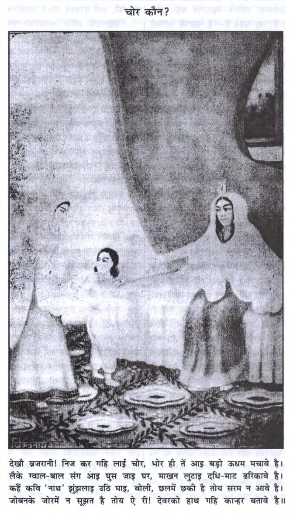
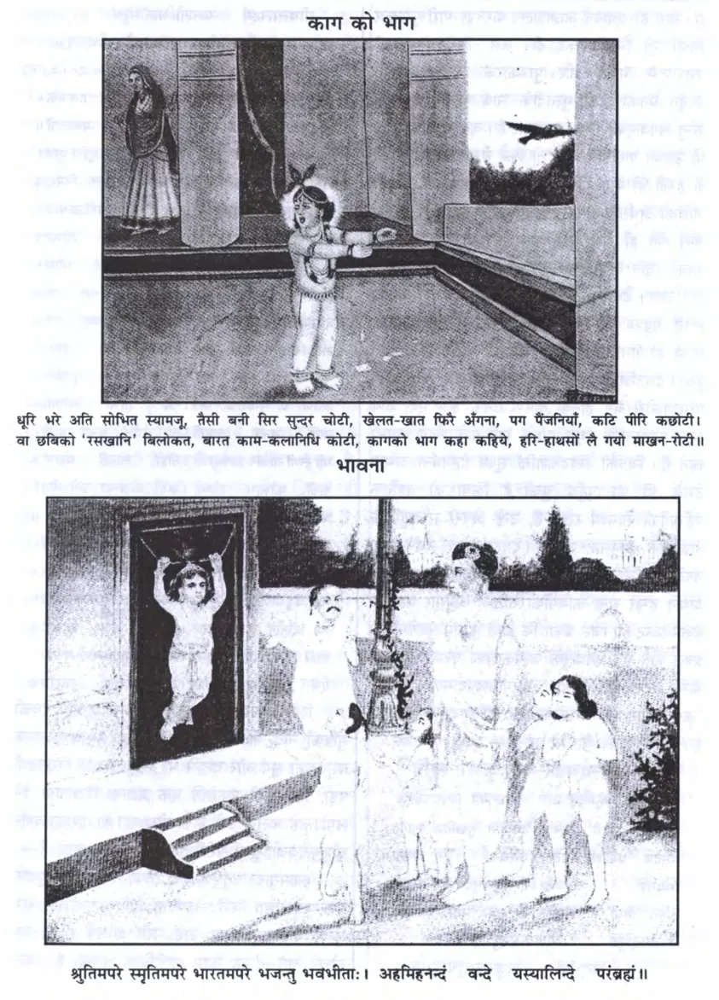
वसुदेव-देवकी-कृत कृष्ण-स्तुति
(जीवोंकी कर्मदेह और भगवान्की अवतारदेह)
सुखात्मा उदरी जन्मत।
देवकीस सुखनिद्रा लागत।
वसुदेव प्रकाश देखत।
रविचन्द्रा वेगला॥
मध्यरात्रीं उपजला।
तो वसुदेवे देखिला।
त्यासी कैसा हो गमला।
तें शुक सांगे परीक्षिता॥
तमद्भुतं बालकमम्बुजेक्षणं
चतुर्भुजं शङ्खगदार्युदायुधम्॥
श्रीवत्सलक्ष्मं गलशोभिकौस्तुभं
पीताम्बरं सान्द्रपयोदसौभगम्॥
(श्रीमद्भा० १०। ३। ९)
राया ते अद्भुत बालक। पहातां वसुदेवा टकमक।
तो म्हणे हे अलौकिक। दिसताहे मजलागीं॥
अन्य बाले उपजती कुशी।
मिटमिटित डोले सुईण पुशी।
अम्बुजेक्षण कैसे यासी।
आकर्ण विशाल निर्मल॥
बहुत भुजांची आइकिलीं।
परी आयुधेसीं नाहीं जन्मलीं।
हा शंख चक्र गदा कमलीं।
चतुर्भुज शोभत॥
कैसें आश्रयांचें लेंकरूं थोर।
हा दक्षिणावर्त भोंवर।
वक्षस्थलों सा सुन्दर।
रोमावलीचा पहा पां॥
दक्षिणांगीं द्विजपन असे।
लांछन श्रीविष्णू ऐसें।
आणिक नवल तें कैसें।
दिसताहे या बाला॥
नव मास उदरा आंत।
कोण बाला शृंगारित।
आणि या श्रृंगाराची मात।
नये शोभा सांगतां॥
बाले सुन्दर नव्हतीं।
ती लेणेने सुन्दर होतीं।
परी लेणी याचेनि अलंकारती।
तीही लोकी पहातां॥
कंठी कौस्तुभ शोभत।
कटीं पीताम्बर प्रभे येत।
वरी मेखला मिरवत। क्षुद्रघंटासंयुक्त॥
गोरी काली सांवलीं।
बाले देखिली भूमण्डलीं।
परी इन्द्रनीलाची किली।
तनु तेजाली त्याहुनि॥
महा वैडूर्यरत्नखचित मुकुट।
मकर कुण्डलें तेज उत्कृष्ट।
त्या दीप्तीने कुन्तल प्रगट।
निडली चांचर शोभती॥
बाही अंगदें सुन्दर।
मनगटीं वीरकंकणे मनोहर।
ऐलें विरोचमान अपार।
देखे बाल वसुदेव॥
जिस समय आनन्दघनका जन्म हुआ, देवकी सुखकी नींद सो रही थी। मध्यरात्रिके समय एकाएक वसुदेवको सूर्य और चन्द्रसे भी अद्भुत प्रकाश दिखलायी पड़ा, फिर उसी प्रकाशमें एक बालक दिखलायी देने लगा। वह बालक उन्हें कैसा दीख रहा था, इसका वर्णन श्रीशुकदेवजी राजा परीक्षितसे इस प्रकार करते हैं—
श्यामसुन्दर चतुर्भुज, शंख, चक्र, गदा, पद्म आयुधोंसे युक्त, रत्नखचित किरीट-कुण्डल आदिसे सुशोभित परम सुन्दर बालक देखकर उन्हें परम आश्चर्य हुआ। वह सोचने लगे—यह कैसा अलौकिक बालक है! अन्य बालक तो माताके उदरसे जन्मते हैं, उनके मुँदे हुए नेत्रोंको धाय पोंछ-पाँछकर खोलती है, पर इसके आकर्ण विशाल, निर्मल, कमलके समान कैसे सुन्दर नेत्र हैं! दोसे अधिक भुजावाले बालक भी जन्मे सुने हैं; पर आयुधसमेत जन्मे कहीं नहीं सुने। इसकी चारों भुजाओंमें शंख, चक्र, गदा, पद्म शोभायमान हैं। कैसा अद्भुत बालक है! इसके वक्षःस्थल पर दक्षिणावर्त्त-भँवर-चिह्न है। छातीके दाहिने भागमें विष्णुकी भाँति भृगुलताका चिह्न है। और कौतुकभरा है यह बालक! माताके उदरमें इसे ये अलंकार कहाँसे प्राप्त हुए? साधारणतया, अलंकारोंसे बालकोंकी शोभा बढ़ती है, पर यह बालक तो ऐसा है कि इससे अलंकारोंको शोभा प्राप्त हुई है। गलेमें कौस्तुभ-मणि शोभायमान है, कमरमें पीताम्बर शोभा पा रहा है, ऊपरसे क्षुद्रघण्टिकायुक्त मेखला है। गौर, कृष्ण, श्यामवर्णके अनेक बालक भूमण्डलपर देखे हैं; पर इसका वर्ण तो इन्द्रनीलमणिसे भी अधिक तेजस्वी है, महावैडूर्यरत्न खचित मुकुट है; और मकराकृत कुण्डलोंकी प्रभा अलकोंपर छिटक रही है। बाहुओंमें बाजूबन्द तथा वीर कंकण शोभायमान हैं। ऐसा अपूर्व बालक वसुदेवने देखा।' उसे देखते ही वसुदेवका पुत्रभाव तिरोहित हो गया और उन्हें ज्ञानदृष्टि प्राप्त हुई। वह गद्गद्कण्ठसे उसकी स्तुति करने लगे। वह बोले—
'भगवन्! तुम प्रकृतिके परे साक्षात् पुरुषोत्तम हो। प्रकृति एवं पुरुषके निर्माणकर्ता हो। तुम्हारा यह शरीर हम जीवोंकी भाँति पञ्चभूतात्मक नहीं है, केवल अनुभवानन्द—चिदानन्द-स्वरूप है। तुम सर्व बुद्धियोंके, अवस्थात्रयके साक्षी हो। यह सब चराचर तुम्हारा ही रूप है। तुम्हारे सिवा यदि और कोई वस्तु भी होती तो तुम किसीके उदरसे जन्म ग्रहण करते; पर वैसा कुछ नहीं है। जीवोंके 'कर्मदेह होती है और तुम्हारे 'लीलादेह' होती है। तुम अपनी मायाको अंगीकार करके शुद्ध सत्त्वात्मक देह धारण करते हो। तुम त्रिगुणात्मक (प्रकृतिके तीनों गुणोंके आधारभूत) होकर भी त्रिगुणातीत हो। भगवन्! तुम सज्जनोंका संरक्षण करके दुष्टोंका दमन करोगे ही; परन्तु हे जगन्मोहन, मेरी एक प्रार्थना है, उसे कृपाकर सुनिये। कंस महादुष्ट है, उसने तुम्हारे छः अग्रजोंको शिलापर पटक-पटककर मार डाला है। अब ये द्वारपाल तुम्हारे जन्मका समाचार भी उसे जाकर सुनायेंगे; और समाचार सुनते ही वह सशस्त्र यहाँ दौड़ा आयगा; उस दशामें मैं क्या करूँगा, कृपाकर बतलाइये।' वसुदेव इस प्रकार बोल ही रहे थे कि इतनेमें देवकीकी आन्तरिक सुखसंवेदना शान्त होकर उसे बाह्य चेतना प्राप्त हुई। वह नेत्र खोलकर देखती है कि सामने श्यामसुन्दर नयनमनोहर तेजःपुन सुकुमार बालक पड़ा है। उसे देखकर वह आनन्दसे फूली नहीं समाती थी। चेहरा आनन्दसे खिल उठा, पर इसके बाद क्रूर कंसका स्मरण आते ही वह भयसे काँपने लगी। मनमें सोचने लगी कि इस बालककी रक्षा कैसे हो? वह उसे कपड़ेसे ढाँकने लगी, पर सूर्यका प्रकाश क्या एक चिथड़ेसे छिप सकता है? उसका तेज ढाँपनेपर भी ज्यों-का-त्यों बना रहा। उसे बड़ी चिन्ता हुई। इस बालकको, हृदय फाड़कर उसके अन्दर छिपा लें, या क्या करें, उसकी कुछ समझमें नहीं आता था। वह भगवान्से मनाने लगी कि इस बालकको कोई दूसरा न देख सके। उसे मोहग्रस्त देखकर भगवान्ने एक बार कृपाकी दृष्टिसे उसकी ओर देखा। बस, उसका मोहान्धकार नष्ट होकर उसे यह आन्तरिक विश्वास हो गया कि सामने पड़ा हुआ बालक साधारण बालक नहीं है, बालरूपमें साक्षात् भगवान् ही विद्यमान हैं। उसने उनका स्तवन करना प्रारम्भ कर दिया—
देवा मृत्युलक्षण महाव्याल।
तींही लोकीं ज्याचा चल।
त्यापासाव भय प्रबल।
मनुष्यमात्र प्राणियां॥
प्राणी नाना उपाव रीतीं।
ब्रह्मपदादि गांवा पलणी जाती।
तंव फड़े करूनि शीघ्रगतीं।
कालसर्प पातला॥
मुख्य ब्रह्मादिकां डंखित।
मा इतरांची कोण मात।
ऐसें भय नाही संमत।
सर्वां प्राणीमात्राचें॥
सर्प कोठील कोण कैंचा।
हा इत्यर्थ न कले साचा।
परी ओसणती भयें वाचा।
न कले याचा उपावो॥
आता कोणे एके दैवें।
तुझ्या भक्तांची संगति भावें।
जोड किया मग फावे।
त्वत्पादान सुख प्रेमें॥
तव पलणीच मागे हुली।
कालसर्पाची शमली।
दोरी ब्यारीता भासली।
नाही झाली तद्बोधे॥
परी ऐसें भाग्य पाहिजे।
तुझा भक्तसंग साहिजे।
तुर्वा हृदयस्थे कृपा करिजे।
तरीच तुझे भेटती॥
आतां राख कंसापासूनि।
दुष्टाचे भय वाटत मनीं।
मी अधीरचित्त म्हणवूनि।
रक्षीं रक्षीं हे बाल॥
हे दिव्यरूप आवरी आतां।
लाज जगीं पुत्र म्हणतां।
मानुषी तनु होईं, आश्रिता।
जरी कृपा करिशील॥
'हे भगवन्! मृत्युरूपी महाव्याल तीनों लोकोंको कम्पायमान किये हुए है। प्राणिमात्रको उससे भय है। (प्राणी) उससे बचनेके लिये विविध प्रयत्नोंके द्वारा ब्रह्मपद आदि गाँवोंकी ओर दौड़ते हैं; पर बीचमें ही कालसर्प आ पहुँचता है। जब ब्रह्मादितकको भी यह डस जाता है तब औरोंकी बात क्या है? इस महासर्पसे सभी प्राणी थर-थर काँपते हैं ; पर उन्हें यह पता नहीं रहता कि यह सर्प कौन, कहाँका और क्या है? झूठा है या सच्चा? वे भयसे व्याकुल रहते हैं, पर इससे छूटनेका उपाय उन्हें नहीं मालूम होता। दैवयोगसे तुम्हारे भक्तोंके सत्सङ्गसे प्रीति होती है; और भाग्यवश वह जब मिल जाता है तब तुम्हारे चरणकमलोंका प्रेम-सुख प्राप्त होता है। साथ ही कालसर्पकी फुफकार भी शान्त हो जाती है। सर्पाकार भासती हुई डोरीका वास्तविक स्वरूप ध्यानमें आते ही उसका सर्पत्व चला जाता है। परन्तु यह बात ध्यानमें आनेके लिये तुम्हारे भक्तोंके सत्सङ्ग-लाभका सौभाग्य होना आवश्यक है। और यह भक्त-सङ्ग तभी प्राप्त होता है, जब तुम हृदयमें विराजमान रहनेवाले प्रभुकी कृपा होती है। उस क्रूर कंसके भयसे मेरा चित्त अधीर हो उठा है। इससे मैंने यह प्रार्थना की है। एक विनती और है, वह यह कि अपना यह दिव्य तेज छिपा लो, साधारण मानवशरीर धारण करो, नहीं तो तुम्हें अपना बालक कहते हुए संसारमें मुझे लज्जा प्रतीत होगी।'
देवकीके मुखसे यह स्तुति सुनकर भगवान् सन्तुष्ट हुए और बोले—'हे माता, स्वायंभुव मन्वन्तरमें प्रजोत्पादनके लिये ब्रह्माने तुम दोनोंको भूतलपर भेजा था। उस समय श्रीवसुदेवका नाम था 'सुतपा' और तुम्हारा था 'प्रश्नि। पुत्र-प्राप्तिके लिये तुम दोनोंने घोर तपस्या की। उस तपश्चर्यासे प्रसन्न होकर मैंने तुमसे तीन बार वर माँगनेके लिये कहा। उस समय तुमने मेरी मायासे मोहित हो, मोक्ष आदि न माँगकर तीनों बार 'पुत्र हो,' 'पुत्र हो,' 'पुत्र हो,' ऐसा माँगा। उस वरदानके अनुसार मैंने पहले 'प्रश्निगर्भ'के नामसे तुम्हारे यहाँ जन्म लिया, दूसरी बार कश्यप और अदितिके यहाँ 'त्रिविक्रम' (वामन) रूपसे उत्पन्न हुआ और अब तीसरी बार तुम्हारे यहाँ पूर्णांशसहित 'कृष्ण' रूपसे अवतरित हुआ हूँ। तुम्हें अपने मूलरूपका बोध करानेके लिये ही मैं चतुर्भुजरूपसे प्रकट हुआ हूँ। अब तुम मुझे पुत्ररूपमें देखो चाहे पूर्ण (भगवान्)के रूपमें देखो, तुम्हें परम गति ही प्राप्त होगी। अमृतका सेवन जानकर करे या अनजानकर, उसे अमरत्व लाभ तो हुए बिना रहेगा नहीं; क्योंकि उसका गुण ही अमरत्व दान करना है। उसी प्रकार मैं कृष्ण प्रेमसे, भयसे, द्वेषसे किसी भी निमित्तसे क्यों न हो जिसके हृदयमें प्रवेश करूँगा; फिर वह अनाचारी-से-अनाचारी भी क्यों न हो तरे बिना रह नहीं सकता। अब तुम मुझे यहाँ न रख, गोकुल ले जाकर नन्दके घर पहुँचा दो और वहाँ यशोदाके कन्या जन्मी है, उसे यहाँ ले आओ। अवसर आनेपर मैं बलरामके साथ आकर कंसका वध करके तुम्हें कारागारसे मुक्त करूँगा।'
श्रीवसुदेवका श्रीकृष्णको लेकर गोकुल जाना
इस प्रकार तीनों जन्मोंका वृत्तान्त सुनाकर माता-पिताके देखते-देखते भगवान्ने साधारण बालरूप धर कर अपनी मायाविनी मुसकानसे उनका मन मोह लिया। अब वसुदेव इस चिन्तामें पड़े कि बालकको गोकुल किस प्रकार पहुँचाया जाय; पर इतनेमें ही उन्होंने देखा कि उनकी सारी बेड़ियाँ खुलकर गिर गयीं, बन्द ताले टूटकर गिर पड़े और किवाड़ खुल गये, द्वारपाल प्रगाढ़ निद्रामें डूब गये। यह सब भगवान्की लीला समझकर, बालकको पीताम्बरसे ढाँककर, हाथमें ले, वसुदेवने गोकुलका रास्ता लिया। घोर अर्ध रात्रिका भयावना समय था, वर्षा हो रही थी, सब परनाले बह रहे थे मथुरा और गोकुलके बीच बहनेवाली कालिन्दीने भी उग्र रूप धारण किया था, ऐसी परिस्थितिमें वसुदेव श्रीकृष्णको लिये जल्दी-जल्दी जा रहे थे। इधर प्रभुके ऊपर वर्षाकी धार न पड़े, इस उद्देश्यसे शेष भगवान्ने अपने फण-छत्रको वसुदेवके सिरपर कर रक्खा था। वसुदेवने श्रीकृष्णको छातीसे चिपटाये हुए यमुनामें प्रवेश किया। यमुना श्रीकृष्णके चरणस्पर्शकी आकांक्षासे बढ़ने लगी। गलेतक जल पहुँचनेपर, श्रीकृष्णकी रक्षाके लिये वसुदेव व्याकुल हो उठे। सर्वान्तर्यामी श्रीकृष्णने यमुनाका आशय समझकर और वसुदेवकी भी अवस्था देखकर अपने पैर फैला दिये। परमात्मा श्रीकृष्णके सुर-मुनि-वन्दित चरणकमलका स्पर्श होते ही सूर्यतनया कृतार्थ हो गयी और उसने बीचसे दोधार होकर वसुदेवके लिये गोकुल जानेका रास्ता कर दिया। कवियोंने इस मार्गको स्त्रियोंके सिरकी निविड़ केशराशिके बीच खिंची हुई माँगकी उपमा दी है। अस्तु, वसुदेवजी नन्दके घर पहुँच गये। वहाँ भी सब-के-सब भगवान्की योगमायाके प्रभावसे निद्रामें निमग्न पड़े थे। बन्दीघरकी भाँति यहाँ भी वसुदेवको किवाड़ खुले मिले। उन्होंने श्रीकृष्णको यशोदाके बगलमें सुला दिया और वहाँ पड़ी हुई कन्याको लेकर मथुराकी राह पकड़ी। देखा, नदी वैसी ही दु-धारा बनी हुई है। ज्यों ज्यों वह आगे बढ़ते जाते थे, त्यों त्यों नदीके दोनों पाट मिलते जाते थे। उनके पार होते ही वह रास्ता मिट गया और यमुनाजी पूर्ववत् घरघराकर बहने लगीं।
कर्मभूमिमें कर्मके नियम (देवकीको पुत्र-शोक प्राप्त होनेका कारण)
कर्मभूमिमें कर्मके नियम बड़े कठोर होते हैं। जिसके नामस्मरणमात्रसे भवबन्धनसे मुक्ति मिल जाती है, उन भगवान्को प्रत्यक्षरूपमें प्राप्त करके भी वसुदेव-देवकीके प्राकृत बन्धन (कारागार-बन्धन) नहीं कटे, बारह वर्षतक उन्हें इसकी प्रतीक्षा करनी पड़ी। कंसका पुण्य क्षय होनेतक बारह वर्षतक भगवान्को भी गोकुलमें रहना पड़ा। जिस देवकीके अनन्त कोटि ब्रह्माण्डोंके नायक, सर्व लोगोंके अधीश्वर, निगमागमविवन्दित, योगयोगेश्वर एवं पतितपावन परमात्माको भी अपने उदरमें धारण करनेका मेरुतुल्य पुण्य था उसी मातृदेवीको अपने छः पुत्रोंके शोकानलमें दग्ध होना पड़ा, यह उसके किस कर्मका फल था? इस प्रश्नका उत्तर यही है कि 'पूर्व-कर्मका'। कर्मका यह अटल सिद्धान्त है कि पुण्यका फल सुख होता है और पापका दुःख। देवकीके उस पुण्यसागरमें पुत्रशोकजनक पाप धुला नहीं—पुण्यमें पापका मुजरा नहीं हुआ। पूर्व जन्मके अनन्त पुण्योंका फल उसे श्रीकृष्णजन्मके सुखरूपमें मिला और पूर्वजन्मके पापोंका फल उसे छः पुत्रोंके शोकरूपमें मिला। पूर्व जन्ममें देवकी एक राजाकी रानी थी और तब उसने मात्सर्यवश अपनी सौतके एक-एककर छः पुत्र मार डाले थे। उस कर्मक्षयके लिये भगवान्ने यह उससे प्रायश्चित्त कराकर उसे उस कर्मबन्धनसे मुक्त कर दिया। (यह कथा देवीभागवतमें आती है और जिसमें यह भी बतलाया गया है कि श्रीभगवान्के द्वारका जानेके बाद देवकीके प्रश्न करनेपर उन्होंने उसे दिव्य दृष्टि देकर इसका अनुभव भी करा दिया था।)
बिना भोगके प्रारब्ध क्षय नहीं होता तो भगवान्की भक्ति क्यों की जाय?
अमुक पापका क्षय अमुक प्रायश्चितसे—अमुक पुण्यकर्मसे होता है, इस प्रकारके वचन शास्त्रोंमें मिलते हैं; पर यह पुण्य-पापका हिसाब-किताब साधारण जीवोंके लिये है, असाधारण-'अधिकारी'लोगोंके लिये नहीं। देवकी-जैसे लोगोंको पाप-पुण्यका फल अलग-अलग भोगना पड़ता है। यहाँ घट-बढ़का नियम नहीं चलता। सारांश, कर्म-नियम बड़े निष्ठुर होते हैं। यहाँपर यह शंका उपस्थित होती है कि जब प्रारब्ध-कर्मोंका फल भोगे बिना छूटता ही नहीं, तब फिर ईश्वरभक्तिसे क्या लाभ? इसका समाधान यह है कि ईश्वरभक्ति तो एक कर्म ही है। इस शुभ कर्मसे जीवोंके क्लिष्टकर्मोंकी शक्ति अत्यन्त क्षीण हो जाती है और पूर्व-कर्मसे उत्पन्न होनेवाले संकट और दुःखोंकी तीव्रता कम हो जाती है। अभक्तोंके पुष्पवत् संकट पहाड़ सदृश बन जाते हैं और भक्तोंके पहाड़-सदृश संकट पुष्पवत् बन जाते हैं। दुःखका भोग स्वप्नभोगके समान भासमान होकर नष्ट हो जाता है। इसके लिये द्रौपदीका उदाहरण बड़ा सुन्दर है। उसपर वस्त्रहरणका मरणप्राय विकट संकट आ पड़ा था; परन्तु भगवत्कृपासे वह स्वप्नप्राय हो गया। यही बात अन्य भक्तोंकी है। व्यवहारमें भी ऐसा बराबर होते देखते हैं। किसी अपराधीको कानूनी कायदेके हिसाबसे जेलकी सज़ा होती है; पर यदि वहाँके जेलरकी उसपर कृपादृष्टि हो तो वह सजा उसे खलती नहीं, यही नहीं, वह उसके लिये सुखप्रद भी हो सकती है। पाण्डवोंका वनवास क्या वनवास था? उस वनवासमें उन्होंने शान्ति और सुखका साम्राज्य भोगा। वह उन्हें महायुद्धके पश्चात् राजसिंहासनपर बैठकर भी नहीं मिला। अस्तु, भक्तोंका संकट अथवा दुःख उपरिलिखितअनुसार कभी-कभी स्वप्न-तुल्य हो जाता है और उनका सहनेका धैर्य कभी-कभी पर्वत-तुल्य बढ़ जाता है। सारांश यह कि ईश्वरभक्ति जीवके लिये सदा लाभदायक है। और फिर 'अहं त्वा सर्वपापेभ्यो मोक्षयिष्यामि मा शुचः'—'मैं तुझे सर्व पापोंसे मुक्त करूँगा।' यह आश्वासन जो भगवान्ने गीतामें दिया है, इसे भी सदा ध्यानमें रखना चाहिये।
अरे मूर्ख, तेरा शत्रु भूतलपर बड़ा हो रहा है।
माता देवकीको देवतुल्य छः पुत्रोंका जो शोक हुआ, भगवद्रूप दो पुत्रोंसे दस-बारह वर्षोंतक जो वियोग रहा, वह सब कर्म-नियमके अनुसार ही हुआ। और छः निरपराध बालकोंकी हत्या करनेके कारण कंसका पुण्यसुख, ऐश्वर्य तथा आयुष्यका जो क्षय हुआ, वह भी उसी नियमके अनुसार। वसुदेव श्रीकृष्णको यशोदाकी बगलमें लिटाकर उसके बदलेमें जो उसकी नवजात कन्या ले आये थे, वह भगवान्की योगमाया थी। उसे लेकर बन्दीघरमें वसुदेवके पैर रखते ही पूर्ववत् किवाड़ बन्द हो गये और ताले लग गये। वसुदेवके पैरोंमें बेड़ियाँ भी पड़ गयीं। उन्होंने उस कन्याको देवकीके हाथोंमें दे दिया और उसने बालसुलभ क्रन्दन प्रारम्भ किया। उसके रोनेकी आवाज कानमें पड़ते ही द्वारपाल जाग पड़े और तत्क्षण दौड़कर उन्होंने इसकी खबर कंसको दी। बस, फिर क्या था? कंसको प्रतिक्षण देवकीके आठवें गर्भकी चिन्ता सताये रहती थी, यह संवाद पाते ही वह हाथमें शस्त्र ले कारागारकी ओर दौड़ा। वहाँ पहुँचकर उसने देवकीके हाथसे कन्या छीन ली। देवकी दीनवाणीसे बोली—'अरे भैया, यह पुत्र नहीं है, कन्या है, इसे मत मारो।' परन्तु मदान्धके कान बहरे होते हैं, अतः उस नराधमने इस विलापको सुना ही नहीं और अन्य बालकोंकी भाँति उसे भी उठाकर शिलापर पटकनेके लिये घुमाया; पर वह अधरमें ही उसके हाथसे छूटकर विद्युत् लताकी भाँति आकाशमें प्रकट हुई और 'अरे मूर्ख, तेरा शत्रु भूतलपर बड़ा हो रहा है' कहकर अन्तर्धान हो गयी। कंस उसका स्वरूप देखकर तथा उसके शब्द सुनकर आश्चर्यचकित हो भयसे काँपने लगा।
कंसका प्रथम गुप्तचर महाबल भट्ट
कंस खिन्नवदनसे महलको लौटा। आदिमायाके शब्द उसके कानोंमें गूँज रहे थे, सोच-विचारकर उसने यह निश्चय किया कि कहीं-न-कहीं मेरा शत्रु उत्पन्न हो ही गया है, इसलिये उसका पता लगाकर उसे मारनेका यथासाध्य प्रयत्न करना चाहिये। अपना यह मन्तव्य उसने अपने मन्त्रिमण्डलपर भी प्रकट किया और शत्रुका पता लगानेवालेको भारी इनाम देनेकी घोषणा की। घोषणा सुनकर महाबल नामक दैत्यने इसका बीड़ा उठाया और गोकुलका रास्ता पकड़ा। गोकुलका राजा नन्द वसुदेवका परम मित्र था, इस कारण कंसको यह संशय हुआ था कि कहीं उसके साथ वसुदेवने गुप्त षड्यन्त्र न रचा हो। महाबल भट्ट ज्योतिष जानता था, उसने ज्योतिषीके रूपमें गोकुलमें प्रवेश किया। वहाँ जाकर उसने देखा कि नन्दके घर बड़ी धूमधामके साथ पुत्रोत्सव मनाया जा रहा है। उसने नन्दके महलमें प्रवेश किया; नन्दने उसे, ब्राह्मण वेशमें देखकर आदरसहित बैठनेके लिये आसन दिया। महाबल भट्टने अपने ज्योतिष-ज्ञानका परिचय देते हुए बालककी जन्म-वेला पूछी और फिर पञ्चांग खोलकर जन्मकुण्डली तैयार करके उसका भविष्य वर्णन प्रारम्भ किया। सभी लोग बड़ी उत्सुकतासे सुननेको बैठ गये। उनका भोलापन देखकर वह बोला, 'इस बालकका जन्म मूल-नक्षत्रमें हुआ है, इसलिये यह सबको निर्मूल कर देगा, गोकुलको रसातल पहुँचायेगा, कुल-गोत्रके लोगोंकी होली करेगा। इसलिये कल्याण इसीमें है कि इसे तो अभी कहीं जंगलमें फेंक दिया जाय या गढ़ा खोदकर उसमें गाड़ दिया जाय। यह बालक नहीं है, कुल-गोत्रका काल है, आदि।' महाबल भट्टके मुखसे यह अमंगल-वाणी सुनकर सबको बड़ा क्लेश हुआ। अभी-अभी गर्ग-मुनि तो यह बतला गये थे कि यह साधारण बच्चा नहीं है, स्वयं वैकुण्ठपति भगवान् आकर अवतरित हुए हैं। पर यह ब्राह्मण कैसी अमंगल बातें बक रहा है? सभी लोग उसपर क्रोधसे जल उठे। मनुष्योंकी तो बात ही क्या, उसकी बातोंसे अचेतन पदार्थोंतकको क्रोध आ गया; और उनके अन्दर व्याप्त भगवान्की अव्यक्त चेतनाने व्यक्त होकर उस महाबल भट्टको दण्ड देनेका निश्चय किया। इस बालकको जंगलमें ले जाकर फेंक दो या गाड़ दो—ये शब्द उसके मुखसे निकलते ही छींकेमें टँगी हुई हाँड़ी उसके सिरपर धड़ामसे आ गिरी। इधर बेलन आकर उसके मुँहमें घुस गया। चकले और शिलबट्टने आकर उसकी छातीको धड़ाधड़ पीटना आरम्भ कर दिया। महाबल उठकर भागने लगा तो चारपाईने आकर रास्ता रोक लिया। मूसलने अपनी भारी मारसे पीठ पटा कर दी। ..... किसी प्रकार उसे मथुराका मार्ग मिला। पर फिर भी उन सबने उसका पीछा नहीं छोड़ा। दौड़ते-दौड़ते उसका दम भर गया, कपड़े गिर पड़े, पञ्चांग फट गया, जनेऊ टूटकर गिर पड़ा। ज्योतिषीजीकी यह दशा देख कर व्रजकी स्त्रियाँ हँसते-हँसते लोट-पोट हो गयीं। वे कहने लगीं—निपूता हमारे कृष्णको बुरा बतलाने आया था। चलो अच्छा हुआ, भगवान्की दयासे ज्योतिषीजी महाराजको खूब दक्षिणा मिली। उधर वह धूर्तानन्द भी दौड़ते-हाँफते किसी तरह अपनी जान लेकर अर्धनग्नावस्थामें कंसके सामने पहुँचा और कहने लगा 'तेरा शत्रु गोकुलमें जन्म लेकर बड़ा हो रहा है। वह अखिल भूमण्डलको निर्वैर करके छोड़ेगा, यह अवश्यम्भावी है। गोकुलमें जड़ पदार्थों तकने जीवित प्राणियोंकी भाँति मुझे जो गहरी मार मारी, उससे मुझे यह निश्चय हो गया है कि वह मानवीय कला नहीं है–साक्षात् विष्णु ही अवतरित हुए हैं। कंस, तेरा शत्रु देखनेमें एक छोटासा बालक है; पर है वह कालका भी काल। मुझे ऐसा दिखलायी पड़ता है कि तेरी मौत निकट आ गयी है। उसकी ये सब बातें सुनकर कंसका जी धड़कने लगा। (यह कथा श्रीधर स्वामीने हरिविजयमें लिखी है, जिसमें वह कहते हैं कि यह कथा हरिवंश-पुराणमें नहीं है, सब पुराणोंके देखनेके बाद यह नारद-पुराणमें मिली।)
पूतना-संहार
महाबलकी ठोंक-पीटके बाद कंसने शत्रुसंहार करनेके लिये अनेक कपटी दैत्य भेजे और उनमेंसे पहली पूतना राक्षसी थी। उसने मायासे सुन्दरीका रूप धारण किया और फिर स्तनोंमें विष भरकर गोकुलमें प्रवेश किया और गुप्त रीतिसे गोकुलके सब दुधमुँहे बालकोंको विषपान कराकर मारना प्रारम्भ किया। इसीप्रकार करते-कराते वह नन्दके घर भी पहुँची। रम्भाके समान उसका सुन्दर रूपलावण्य देखकर यशोदाने यह समझा कि कोई बहुत बड़े घरकी स्त्री मेरे बच्चेको देखने आयी है, इसलिये उन्होंने उसे बड़े आदरसे बैठाया। बात करते-करते पूतना पालनेके पास जा खड़ी हुई और उसने बड़े ध्यानसे बालकको निहारा। उसका सुन्दररूप तथा बालचेष्टाएँ देखकर वह मुग्ध हो गयी। नील वर्ण, कुञ्चित केश, आकर्ण नयन, विशाल भाल, उसपर स्वर्णनिर्मित तथा रत्नजड़ित शीर्षफूल, सुहास्य वदन, कानोंमें मकराकृत कुण्डल, गलेमें बाघनख तथा वैजयन्ती माला, छोटे-छोटे मुलायम हाथ तथा छोटी-छोटी अँगुलियाँ, कमरमें घण्टिकायुक्त करधनी, पैरोंमें सुन्दर पैजनियाँ तथा नूपुर शोभायमान थे। पैंजनी तथा नूपुरध्वनिके साथ दाहिने पैरके अँगूठेको हाथमें पकड़कर हरि मुँहमें दे रहे थे। जिस चरणांगुष्ठका ध्यान करके सनकादि योगी आनन्दामृत पान करते हैं, उस चरणांगुष्ठका स्वयं भी रसास्वादन करनेके अभिप्रायसे मानो भगवान्ने उसे पकड़कर अपने मुखमें ले रक्खा है—ऐसी मदनमोहन श्यामसुन्दरकी रूपछबिको देखकर मायारूप धारण करके आयी हुई पूतना आनन्दमग्न हो गयी। पर मालिककी आज्ञाका ध्यान आते ही उसने वह भाव बदल दिया। वह भी श्रीकृष्णको पालनेसे उठाकर स्तनपान कराने लगी। श्रीकृष्णने एक हाथसे स्तन पकड़कर अपने मुँहमें दे लिया और दूसरा हाथ उसके कन्धेपर रख दिया। उसके स्तनका सारा विष तथा दूध पीकर भगवान्ने रक्त एवं प्राणको चूसना प्रारम्भ किया। पूतनाका जी घबड़ा उठा। वह कहने लगी—'बेटा कृष्ण, अब मुझे छोड़; अब मैं तेरे मारे कभी गोकुल नहीं आऊँगी। मेरे श्यामसुन्दर, मेरे कृष्ण-कन्हाई, अब तो मुझे छोड़। हाय, तू तो मेरा प्राण ही निकाले लेता है। न जाने तुझे दूध पिलाती रहकर भी यशोदा अबतक कैसे बची हुई है?' इस प्रकार कहते-कहते, और श्रीकृष्णके सुन्दर मुखड़ेकी ओर निहारते-निहारते उसका प्राणान्त हो गया। नेत्रोंमें और मनमें श्रीकृष्णका ध्यान तथा मुखमें उनका नामकीर्तन, इस अलभ्य अवस्थामें उसका प्राणान्त हुआ। पतङ्गका दीपकपर लपकना तथा कीटका भृङ्गस्मरण करना किसी भी भावनासे क्यों न हो, उसमें 'तन्मयता' हो जानेके कारण उनको ध्येयकी प्राप्ति हो ही जाती है। तब फिर तन, मन और वचनसे श्रीकृष्णके साथ तन्मय हुई पूतना दुर्गतिको कैसे प्राप्त होती? भगवान्ने देवकी और यशोदाको जो स्थान-जो गति दी, वही गति उन्होंने पूतनाको भी दी। सन्तों और शास्त्रोंके वचनोंका मर्म भी यही है। श्रीकृष्णने उसके विष, रक्त, प्राणादिका शोषण करनेके साथ-साथ उसके कर्माकर्मका भी शोषण कर उसे मुक्तियोग्य बना दिया। पूतनाका प्राणान्त हो गया, पर तो भी भगवान्ने उसे छोड़ा नहीं। मरते समय उसका मायावी स्वरूप लुप्त होकर मूल कराल-विकराल स्वरूप प्रकट हो गया। घरके भीतर गयी हुई यशोदा जब बाहर आयीं तो उस राक्षसीका भयङ्कररूप देखकर चिल्ला उठीं। उनकी चिल्लाहट सुनकर पास-पड़ोसके लोग दौड़ आये। वहाँ पहुँचकर वे देखते हैं कि एक राक्षसी मरी पड़ी है और श्रीकृष्ण उसकी छातीपर बैठे, उसका स्तनपान करते हुए खेल रहे हैं। गोपोंने उन्हें उठाकर यशोदाके हाथमें दिया। यशोदाके अश्रुप्रपातसे श्रीकृष्णका शरीर भीग गया। श्यामको नजर न लग गयी हो इस आशंकासे गोपबालाओंने नजर झाड़कर रक्षाबन्धन किया और आगेके बचावके लिये उन्होंने उनके गलेमें काले धागे तथा रीठे बाँधे और फिर उसके सुन्दर मुखड़ेको निहारकर बोलीं—'नन्दलाल, तुझपर हम बलिहारी हैं।' धन्य है उनका सहज अकृत्रिम प्रेम!
पूतना पूर्वजन्ममें कौन थी?
अनन्त जन्मोंकी अनन्त वासनाओंसे जीवका अन्तःकरण भरा-दबा रहता है। 'वासने मूले होति ही फलें। पुनः पुन्हा बन्धुजनां आप्तसुनां, भजुनि तलमले।' ऐसी एक मराठी कविकी उक्ति है जिसका आशय यह है कि 'कर्मानुसार वासना और वासनानुसार कर्म' यानी 'अन्ते मति सा गतिः' के अनुसार अगला जन्म होता है और फिर पूर्व वासनाओंके अनुसार ही उसके द्वारा स्वाभाविक कर्म होते हैं। शास्त्रमें चार प्रकारके कर्म बतलाये हैं-(१) पुण्यबीज पापकर्म, (२) पापबीज पुण्यकर्म, (३) पुण्यबीज पुण्यकर्म और (४) पापबीज पापकर्म। इस गुप्त कर्मबीजके अनुसार मनुष्यके हाथसे कर्म होते हैं। वे इस प्रकार क्यों होते हैं, यह मानवी बुद्धिके परेकी बात है। स्वयं भगवान्के श्रीमुखसे वर्णित वसुदेव-देवकीके तीन जन्मोंका वर्णन ऊपर दिया जा चुका है, अब पूतनाके पूर्व-जन्मका वर्णन किया जाता है, जिससे यह ध्यानमें आ जायगा कि वह श्रीकृष्णको स्तनपान करानेके लिये क्यों आयी थी। ब्रह्मवैवर्तपुराणमें आया है कि—
बलियज्ञे वामनस्य दृष्ट्वा रूपं मनोहरम्।
बलिकन्या रत्नमाला पुत्रस्नेहं चकार तम्॥
मनसा मानसं चक्रे पुत्रस्य सदृशो मम।
पिवेद्यदि स्तनं कृष्णः करोमि तं च वक्षसि॥
हरिस्तं मानसं ज्ञात्वा पपौ जन्मान्तरे स्तनम्।
ददौ मातृगतिं तस्यै कामपूरः कृपानिधिः॥
—(कृष्णजन्मखण्ड, अ० १०)
भगवान् त्रिविक्रम बटुकवेष धारण करके चक्रवर्ती राजा बलिके यज्ञमें पहुँचकर उससे त्रिपाद भूमिदानमें माँगी, यह कथा प्रसिद्ध ही है। उस बटुकको देखकर यज्ञशालामें उपस्थित नाना व्यक्तियोंके मनमें नानाप्रकारके भाव उठे। शुक्राचार्यके मनमें 'शत्रुभाव' उत्पन्न हुआ और उन्होंने चाहा कि इस बटुकको बलिके यहाँसे कुछ भी न मिले। बलिके मनमें प्रेमयुक्त भक्तिभाव उत्पन्न हुआ और उसकी इच्छा हुई, इन्हें अपना सर्वस्व समर्पण कर दें। इसीप्रकार अन्य विभिन्न व्यक्तियोंके मनोंमें विभिन्न प्रकारके विचार उठे और वे अपनी-अपनी भावनाके अनुसार वामन भगवान्को देखने लगे। उसी अवसरपर बलिकी प्रौढ़ा कन्या रत्नमाला भी अपने पिताके यज्ञसमारम्भको देखनेके लिये वहाँ आयी थी। वह बैठी अपने पुत्रको स्तनपान करा रही थी, इतनेमें तेजपुञ्ज सुन्दर सुकुमार वामन मूर्ति वहाँ आ पधारी। उन्हें देखकर उसके मनमें यह इच्छा उत्पन्न हई कि अपने पुत्रको अलग करके इस सुन्दर वामन मूर्तिको हृदयसे लगाकर स्तनपान कराऊँ। भगवान् तो सर्वज्ञ हैं, उन्होंने रत्नमालाका हृद्गत भाव जान लिया और फिर जन्मान्तरमें यानी इस कृष्ण-जन्ममें उन्होंने उसका स्तन-पान किया तथा कृपा करके उसे भी मातृगति अर्थात् यशोदा तथा देवकीको मिलनेवाली गति प्रदान की।
दैत्यकुलनाशरूप भोजन करने बैठनेपर श्रीकृष्णने सर्वप्रथम पूतनाका स्तनपान करके उसके पञ्च प्राणोंका पञ्च प्राणाहुति ग्रहण की और तत्पश्चात् शकट तणावर्त्त आदि असुरोंका वध करके नाना प्रकारके पदार्थ ग्रहण किये।
अत्तुं दैत्यकुलानीशः पूतनायाः शिशुच्छलात्।
स्तन्यापोशनतः प्राणैः प्राणाहुतिमकल्पयत्॥
(श्रीमद्भा० १०। ६ श्रीधरी श्लोक)
आसुरी योनिमें उत्पन्न होनेका कर्म अलग है, जिसके अनुसार वह उस योनिमें उत्पन्न हुई और अपनी प्रकृतिके अनुसार कृष्ण-नाशकी बुद्धिसे ही वह कृष्णके पास आयी। परन्तु श्रीकृष्णके मुखमें स्तन पड़नेका कर्म बिलकुल दूसरा था, (जो कि पूर्व जन्मकी प्रबल वासनासे उत्पन्न हुआ था) उसके अनुसार भगवान्ने उसका स्तनपान किया और उसे मातृगति दी।
(क्मशः)
घनश्याम!
मुझे चाहे कोई कुछ क्यों न कहे-
यश-वैभव-मानकी चाह नहीं।
मुझे मुक्ति मिले अथवा न मिले
दुख-दर्दकी भी परवाह नहीं॥
मुझे यन्त्रणा दे कोई नर्ककी भी
मैं करूँगा कभी कुछ आह!' नहीं।
मुझे भक्ति-पियूष पिलादो वही
रह जाये ज़रा भव-दाह नहीं॥
हम दीन-विहीन अनाथ बड़े,
दुखिया हैं हमें न सताया करो।
हम निर्बल हैं, वह नाथ! भयावना
रूप हमें न दिखाया करो।
हम मानव हैं, कुछ देव नहीं,
यदि भूल हो, देव! जताया करो।
हमको निज प्रेमकी प्याली पिला-
न हलाहल भूल बताया करो।
तुम हो घन श्यामल, पादप हैं हम,
स्नेह-सुधा बरसाया करो।
तुम दीनदयाल दयामय हो,
करुणा तो कभी दरसाया करो॥
तुम लेकर चित्त हमारा विभो!
फिर व्यर्थ न यों झरसाया करो।
तुम जीवनके प्रिय जीवन हो,
यह स्नेह-लता सरसाया करो॥
घनश्याम! वही यमुना तट है,
वटवृक्ष वही वसुधातल है।
बहता रहता इस भाँति सदा,
वह पुण्य-सुधा यमुना-जल है॥
मनमोहन! आज तुम्हारे बिना
वह नंदनकानन जंगल है।
यदि कोर कृपाकी करें फिर आप तो-
सत्य वही फिर मंगल है।
—चतुर्वेदी रामचन्द्र शर्मा
श्रीकृष्णप्रेम-चालीसा
रे मन, क्यों भटकत फिरे
भज श्रीनन्दकुमार।
नारायण अजहूँ समुझ
भयो न कछू बिगार॥
लखी न छबि जिन श्यामकी
कियो न पलभर ध्यान।
नारायण ते जगतमें
प्रगटे निपट पषान॥
जो रसिकन उर नित बसै
निगमागमके सार।
नारायण तिन चरणकी
बार-बार बलिहार॥
नारायण अति कठिन है
हरि-मिलिबेकी बाट।
या मारग जो पग धरे
प्रथम सीस दै काट॥
नारायण प्रीतम निकट
सोई पहुँचनहार।
गैंद बनावे सीसकी
खेलै बीच बजार॥
चौसर बिछी सनेहकी
लगे सीसके दाव।
नारायण आशिक बिना
को खेलै चितचाव॥
नारायण घाटी कठिन
जहाँ नेहको धाम।
विकल मूरछा सिसकबो,
ये मगके बिसराम॥
नारायण या डगरमें
कोउ चलत हैं वीर।
पग-पगमें बरछी लगे
श्वास-श्वासमें तीर॥
नारायण मनमें बसी
लोक-लाज कुल-कान।
आशिक होना श्याम
पर हँसी खेल ना जान॥
नेह-डगरमें पग धरे
फेर बिचारे लाज।
नारायण नेही नहीं
बातनको सिरताज॥
नारायण जाके हिये
उपजत प्रेम प्रधान।
प्रथमहि वाकी हरत है
लोक-लाज कुल-कान॥
नारायण या प्रेमको
नद उमगत जा ठौर।
पलमें सब मरजादके
तट काटत है दौर॥
बरणाश्रम उरझै कोऊ
विधि-निषेध व्रत नेम।
नारायण बिरले लखैं
जिन मिल उपजै प्रेम॥
लगन-लगन सबही कहैं
लगन कहावै सोय।
नारायण जा लगनमें
तन-मन डारै खोय॥
नारायण जग जोग जप
सबसों प्रेम प्रवीन।
प्रेम हरीको करत है
प्रेमीके आधीन॥
नारायण यह प्रेम-रस
मुखसों कह्यो न जाय।
ज्यों गूंगा गुड़ खाय है
सैनन स्वाद लखाय॥
प्रेम-खेल सबसों कठिन
खेलत कोउ सुजान।
नारायण बिन प्रेमके
कहाँ प्रेम-पहचान॥
प्रेम-पियाला जिन पिया
झूमत तिनके नैन।
नारायण वा रूप-मद
छके रहें दिन-रैन॥
नेम धरम धीरज समझ
सोच विचार अनेक।
नारायण प्रेमी निकट
इनमें रहै न एक॥
रूप छके झूमत रहें
तनको तनक न ग्यान।
नारायण दृग जल भरे
यही प्रेम पहचान॥
मनमें लागी चटपटी
कब निरखूँ घनश्याम।
नारायण भूल्यो सभी
खान, पान, बिसराम॥
सुनत न काहूकी कही
कहै न अपनी बात।
नारायण वा रूपमें
मगन रहे दिन-रात॥
देह गेहकी सुधि नहीं
टूट गई जग-प्रीत।
नारायण गावत फिरै
प्रेमभरे रस-गीत॥
धरत कहूँ पग परत कहुँ
सुरत नहीं इक ठौर।
नारायण प्रीतम बिना
दीखत नहिं कछु और॥
भयो बावरो प्रेममें
डोलत गलियन माहिं।
नारायण हरि-लगनमें
यह कछु अचरज नाहिं॥
लतन तरे ठाढ़ो कबहुँ
कबहूँ यमुना तीर।
नारायण नैनन बसी
मूरति श्याम शरीर॥
प्रेमसहित गदगद गिरा
करत न मुखसों बात।
नारायण इक श्याम बिन
और न कछू सुहात॥
कहो चहै कछु कहत कछु
नैनन नीर सुरंग।
नारायण बौरो भयो
लग्यो प्रेमको रंग॥
कबहुँ हँसै रोवे कबहुँ
नाचत कर गुण गान।
नारायण तन सुधि नहीं
लग्यो प्रेमको बान॥
जाके मन यह छबि बसी
सोवतहूँ बतरात।
नारायण कुण्डल निकट
अद्युत अलक सुहात॥
ब्रह्मादिकके भोग-सुख
विष सम लागत ताहि।
नारायण व्रजचन्दकी
लगन लगी है जाहि॥
जाके मनमें बस रही
मोहनकी मुसुकान।
नारायण ताके हिये
और न लागत ग्यान॥
जो घायल हरि-दृगनके
परे प्रेमके खेत।
नारायण सुन श्यामगुन
एक संग रो देत॥
नारायण जाको हियो
विंध्यो श्याम दृग-बान।
जग भावे है जीवतो
ह्वै गयो मृतक समान॥
सुख-सम्पति धन धामकी
ताहि न मनमें आस।
नारायण जाके हिये
निसिदिन प्रेम-प्रकास॥
नारायण जिनके हृदय
प्रीति लगी घनस्याम।
जाति-पाँति कुल सों गयो,
रहे न काहू काम॥
नारायण तब जानिये
लगन लगी या काल।
जित तित ही दृष्टी पड़ै
दीखत मोहनलाल॥
नारायण व्रजचन्दके
रूप-पयोनिधि माहिं।
डूबत बहु पै एक जन
उछरत कबहू नाहिं॥
नारायण जाके दृगन
सुन्दर स्याम समाय।
फूल, पात, फल, डारमें
ताको वही दिखाय॥
पराभक्ति वाको कहें
जित तित स्याम दिखात।
नारायण सो ग्यान है
पूरन ब्रह्म लखात॥
श्रीकृष्णका विश्वरूप
(लेखक-श्रीयुक्त शिवदास बुद्धिराज एम०ए०, रि० सेसन जज, काश्मीर)
श्रीमद्भगवद्गीताका ११ वाँ अध्याय विश्वरूप-दर्शनके नामसे प्रसिद्ध है। कुछ लेखक इस विश्वरूप-दर्शनको मात्र एक रहस्य बतलाते हैं और कुछ लोगोंकी दृष्टिमें यह सम्पूर्ण अध्याय ही प्रक्षिप्त है; वे कहते हैं कि ग्रन्थके मुख्य विषयसे इसका कोई सम्बन्ध अथवा सङ्गति नहीं है। यहाँ हमें इन विभिन्न मतोंकी आलोचना नहीं करनी है और न यह अवसर ही उसके लिये उपयुक्त है। हमें तो केवल विश्वरूपकी यथार्थ वैज्ञानिक व्याख्या करनी है।
११वें अध्यायको ठीक तरहसे समझनेके लिये हमें ऋग्वेदके पुरुषसूक्त (ऋग्वेद १०।१०) को देखना होगा, जहाँ सर्वव्यापी पुरुषको सहस्रों सिर, सहस्रों नेत्र तथा सहस्रों पैरवाला बतलाया गया है। इस पुरुषके यज्ञसे विराट् उत्पन्न हुआ और विराट्से आदिपुरुषकी उत्पत्ति हुई। उसके मुखसे इन्द्र एवं अग्निकी, नेत्रसे सूर्यकी, प्राण-वायुसे पवनकी, कानोंसे चारों दिशाओंकी, पैरोंसे पृथिवीकी तथा मस्तकके ऊर्ध्व भागसे आकाशकी उत्पत्ति हुई। अथर्व-वेदमें यही सूक्त १६वें काण्डमें मिलता है। वहाँ पर प्रारम्भमें 'सहस्रशीर्षा'के स्थानमें 'सहस्रबाहु' शब्दका प्रयोग किया गया है। गीताके ग्यारहवें अध्यायके अन्तर्गत जो विश्वरूपका वर्णन है उसका अधिकांश भाग पुरुष सूक्तके अनुसार ही है (देखिये गीता अ० ११ श्लोक १०, १६, १९ तथा २३)।
छान्दोग्य-उपनिषद् (५।१८।२)में वैश्वानर (विश्वव्यापी आत्मा)का वर्णन इस प्रकार किया गया है—
यह प्रकाशपूर्ण (आकाश) उस विश्वव्यापी आत्माका मस्तक है, विश्वरूप (सूर्य) उसका नेत्र है, विभिन्न मार्गोंवाला (वायु) उसका प्राण है, विस्तृत (आकाश) उसका मध्य-देह (धड़) है, रयि (जल) उसकी बस्ति अर्थात् मूत्राशय है, और आधार (पृथिवी) उसके पैर हैं।*
मुण्डकोपनिषद् (२-१-४)में अखिल विश्वकी समष्टिरूप विराट्का निम्नलिखित शब्दोंमें वर्णन किया गया है—
यही समस्त भूत-प्राणियोंका अन्तरात्मा है, जिसका मस्तक अग्नि है, नेत्र सूर्य और चन्द्रमा हैं, कान चारों दिशाएँ हैं, वाणी चारों वेद हैं, जो उसीसे प्रकट हुए हैं, प्राण वायु है, हृदय समस्त विश्व है और पैरोंसे पृथिवीकी उत्पत्ति हुई है।**
मुण्डक और छान्दोग्य-उपनिषद्के वर्णनमें थोड़ा-सा अन्तर है। छान्दोग्यमें पुरुषसूक्तकी भाँति केवल सूर्यको ही वैश्वानरका नेत्र बतलाया गया है, किन्तु मुण्डकमें सूर्य और चन्द्रमा ये दो नेत्र बतलाये गये हैं। गीतामें भी सूर्य और चन्द्रमा ये दो नेत्र बतलाये गये हैं (देखिये ११ वें अध्यायका १६ वाँ श्लोक) जिससे यह स्पष्ट है कि गीताने छान्दोग्यकी अपेक्षा मुण्डकोपनिषद्का अनुसरण अधिक किया है। ११ वें अध्यायके २० वें श्लोकमें अर्जुन कहता है—
'स्वर्ग और पृथिवीके बीचका सम्पूर्ण आकाश तथा सब दिशाएँ आपसे ही व्याप्त हैं।' उपर्युक्त निर्देशके अनुसार छान्दोग्यमें आकाशको आत्माका शरीर तथा मुण्डकमें चारों दिशाओंको उसके कान बतलाया गया है।
* तस्य ह वा एतस्यात्मनो वैश्वानरस्य मूर्धैव सुतेजाश्चक्षुर्विश्वरूपः प्राणः पृथग्वर्त्मात्मा सन्देहो बहुलो बस्तिरेव रयिः पृथिव्येव पादाबुद् एव वेदिर्लोमानि बर्हिर्हृदयं गार्हपत्यो मनोऽन्वाहार्यपञ्चम आस्यमाहवनीयः (छन्दो० प्रपा ० ५ खं० १८। २)
** अग्निर्मूर्धा चक्षुषी चन्द्रसूर्यौ दिशः श्रोत्रे वाग्विवृताश्च वेदाः। वायुः प्राणो हृदयं विश्वमस्य पद्भ्यां पृथिवी ह्येष सर्वभूतान्तरात्मा। (मुण्डक० २।१।४)
ग्यारहवें अध्यायके ३९ वें श्लोकमें श्वेताश्वतरउपनिषद् (४।२)का अनुसरण किया गया है।*
* वायुर्यमोऽग्निवरुणः शशाङ्कः प्रजापतिस्त्वं प्रपितामहश्च।
नमो नमस्तेऽस्तु सहस्रकृत्वः पुनश्च भूयोऽपि नमो नमस्ते॥
(श्रीमद्भगवद्गीता अ०। ११ श्लो० ३९)
तदेवाग्निस्तदादित्यस्तद्वायुस्तदु चन्द्रमाः।
तदेव शुक्रं तद्ब्रह्म तदापस्तत्प्रजापतिः॥
(श्वेताश्वतर अध्या ४।२)
गीताके विश्व-रूप वर्णनके कुछ बीज ऊपर बताये गये हैं। किन्तु जिस समय अर्जुनको दिव्यदृष्टि प्रदान की गयी (गीता अ० ११ श्लो० ८)** उस समय भगवान्ने उन्हें यह बतलाया कि इसका कारण यह है कि तुम साधारण चर्म-चक्षुसे मेरे दिव्य-स्वरूपका दर्शन नहीं कर सकते। अतः गीताके ११ वें अध्यायमें दिये हुए दिव्य विश्वरूपके वर्णनको समझानेके पूर्व हमें दिव्य-दृष्टिका विषय अच्छी तरहसे हृदयंगम कर लेना होगा। सर्वप्रथम हमें दिव्य-दृष्टिका वर्णन छान्दोग्य-उपनिषद्*** (८।१२।५)में मिलता है। गौतमबुद्धने अपनी योगक्रियाओंके द्वारा क्रमशः इस दिव्य-दृष्टिको प्राप्त किया, जिसके द्वारा उन्हें जन्म-मरणके चक्करमें पड़े हुए और अपने-अपने कर्मोंके अनुसार फल भोगनेवाले सारे प्राणियोंके अदृष्टका पूरा दिव्य-ज्ञान प्राप्त इसी प्रकार हो गया, जिस प्रकार कोई मनुष्य अटारीपर बैठकर नीचेके मनुष्योंको मकानके भीतर आते और बाहर जाते तथा चौराहोंपर बैठे हुए देखता है और यह भी जान लेता है कि अमुक पुरुष किधर जा रहा है। (देखिये-मज्झिम निकाय सुत्त १।२२)
** दिव्यं ददामि ते चक्षुः पश्य मे योगमैश्वरम्॥
*** अथ यो वेदेदं मन्वानीति स आत्मा मनोऽस्य दैवंचक्षुः
स वा एष एतेन दैवेन चक्षुषा मनसैतान् कामान् पश्यन् रमते।
जन्म-मरणके चक्करमें पड़े हुए जीवोंके अदृष्टका ज्ञान प्राप्त कर लेना दिव्य-दृष्टिका एक व्यापार था और इससे गीताके ग्यारहवें अध्यायके २६ वें तथा २७ वें श्लोकमें जो वर्णन है, वह स्पष्ट हो जाता है। उसी अध्यायके ३३, श्लोकमें कहा गया है—
'इसलिये तू (अर्जुन) उठ खड़ा हो, यशको प्राप्त कर तथा शत्रुओंको जीतकर सुख-समृद्धि-सम्पन्न राज्यको भोग। हे अर्जुन! इन सबको मैंने पहले ही मार दिया है, इसलिये तू केवल निमित्तमात्र बन जा।*
योगकी सिद्धावस्था प्राप्त होनेपर जो परमात्म-प्राप्ति अथवा मुक्तिके पूर्व क्षणकी अवस्था है, योगीको दिव्यदृष्टि प्राप्त होती है। छान्दोग्य-उपनिषद्के उस प्रसङ्ग (१। ६। ५) को भी देखिये, जहाँ उत्तम पुरुषको सूर्यके तमका वासी बतलाया गया है। योनिमुद्रामें, जिसे पारिभाषिक भाषामें 'कूटस्थ' कहते हैं, योगीगण आन्तरिक सूर्यका दर्शन करते हैं। योनिमुद्राको दिव्य-चक्षु भी कहते हैं, क्योंकि यह देखनेमें चर्म-चक्षु जैसी ही होती है, परन्तु यह दिव्य-चक्षु आकाश-धातुकी बनी हुई होती है और उसमें एक उज्ज्वल प्रकाश दिखायी देता है जिसे आलङ्कारिक भाषामें सूर्य कहते हैं। छान्दोग्य-उपनिषद् (८।१२।३)में दिव्य-दृष्टि प्राप्त होनेके बादकी सीढ़ियोंका भी निम्नलिखित रूपसे वर्णन किया गया है—
** इस प्रकार वह सम्प्रसाद (आत्मा)
(१) जिस समय इस शरीरसे ऊपर उठकर
(२) परम ज्योतिको प्राप्त होता है
(३) अपने स्वरूपमें स्थित होकर प्रकट होता है
(४) वही उत्तम पुरुष (Supreme Person) है
* तस्मात्त्वमुत्तिष्ठ यशो लभस्व
जित्वा शत्रून् भुंक्ष्व राज्यं समृद्धम्।
मयैवैते निहताः पूर्वमेव
निमित्तमात्रं भव सव्यसाचिन्।
** एवमेवैष सम्प्रसादोऽस्माच्छरीरात्समुत्थाय परं ज्योतिरुपसम्पद्य स्वेन रूपेणाभिनिष्पद्यते स उत्तमपुरुषः।
(छान्दोग्य प्रपाठक ८ खं० १२। ३)
उपर्युक्त उपनिषद्-वाक्यमें जो इस शरीरसे ऊपर उठने (अस्माच्छरीरात्समुत्थाय) की बात कही गयी है, उसका अर्थ अंग्रेजीके प्रसिद्ध कवि वर्ड्सवर्थ (Wordsworth) ने अपने 'टिन्टर्न अबे' (Tintern Abbey) नामक काव्यमें निम्नलिखित शब्दोंमें बतलाया है—
"That serene and blessed mood in which the affections lead us on until the breath of corporeal frame and even the motion of our human blood, almost suspended, we are laid asleep in body and beome a living soul while with an eye made quiet by the power of harmony and deep power of joy we see into the life of things,"
उस प्रसादयुक्त एवं श्रेष्ठ अवस्थामें—जिसमें प्रेमकी इतनी वृद्धि होती है कि प्राणोंकी गति एवं रक्तका सञ्चार तक बन्द-सा हो जाता है, हमारे शरीरकी क्रिया प्रसुप्त हो जाती है और हमारे अन्दर केवल आत्मा-ही-आत्मा रह जाती है। उस समय हमलोग एकता और आनन्दकी तीव्र-शक्तिके द्वारा शान्त हुए नेत्रसे पदार्थोंके जीवनका अन्तर्निरीक्षण करते हैं।'
Trahernesके 'Poems of Felicity' नामक काव्यके पृष्ठ १३ पर देखिये—
"I was an inward sphere of light
Or an interminable Orb of sight
Exceeding that which makes the days
A vital Sun that sheds broad his rays
A meditating inward eye.
Gazing at quiet, did with me lie
And yet I forgot the rest
And was all sight or eye
Unbodied and devoid of care
Just as in heaven, the holy angels are."
अर्थात् 'मैं ज्योतिका आन्तरिक क्षेत्र था, अथवा आलोकका अनन्तमण्डल था जो सूर्यके मण्डलसे भी बड़ा था, एक चैतन्य सूर्य था जो अपने मयूखोंको दूर-दूरतक प्रसारित करता था। मुझे वह ध्यानयुक्त अन्तश्चक्षु प्राप्त था, जो शान्तिका ही दर्शन करता था, किन्तु फिर भी मैं शेष सब कुछ भूल गया और दिव्यलोकमें रहनेवाले देवताओंकी तरह केवल दृष्टिमय अथवा नेत्रमय तथा विदेह एवं चिन्तारहित बन गया।'
छान्दोग्योपनिषद्में जो यह 'परंज्योतिरुपसम्पद्य' कहा गया है वही गीताके ग्यारहवें अध्यायके अधिकांश विषयका आधार है। उदाहरणार्थ उसी अध्यायके १२ वें श्लोकको लीजिये, जो इस प्रकार है—
यदि आकाशमें एक ही समय हजार सूर्योंका प्रकाश हो जाय तो वह विश्वरूप परमात्माके प्रकाशकी समताको पा सकता है (दिवि सूर्यसहस्रस्य भवेद्युगपदुत्थिता। यदि भाः सदृशी सा स्याद् भासस्तस्य महात्मनः॥) श्लोक १७'आपको मैं सब ओरसे जगमगाता हुआ तेजका पुञ्ज देखता हूँ, जिसकी ओर मैं ताक नहीं सकता और जो चारों ओरसे प्रज्वलित अग्नि अथवा अनन्त सूर्यके-से प्रकाशसे युक्त है। (तेजोराशिं सर्वतो दीप्तिमन्तम्। पश्यामि त्वां दुर्निरीक्ष्यं समन्ताद्दीप्तानलार्कद्युतिमप्रमेयम्) श्लोक १६-'आपको मैं सूर्य एवं चन्द्ररूप नेत्रोंवाला और प्रज्वलित अग्निरूप मुखवाला तथा अपने तेजसे इस जगत्को तप्त करता हुआ देखता हूँ।' (......शशिसूर्यनेत्रम्। पश्यामि त्वां दीप्तहुताशवक्त्रं स्वतेजसा विश्वमिदं तपन्तम्॥) श्लोक २४-'आपको आकाशका स्पर्श करते हुए विस्फारित मुख तथा विशाल एवं प्रकाशपूर्ण नेत्रोंसे युक्त देखकर' (नभः स्पृशं..... 'व्यात्ताननं दीप्तविशाल नेत्रम्।) श्लोक २५-'आपके विकराल जबड़ोंवाले तथा प्रलयकालकी अग्निके समान प्रज्वलित मुखोंको देखकर' (दंष्ट्राकरालानि च ते मुखानि दृष्टैव कालानलसन्निभानि।....) श्लोक २८-'आपके प्रज्वलित मुख' (वक्त्राण्यभिविज्वलन्ति॥) श्लोक ३०-'प्रकाशपूर्ण मुख' (वदनैर्ज्वलद्भिः।) 'आपका उग्र प्रकाश सम्पूर्ण जगत्को तेजके द्वारा परिपूर्ण करके तप्त कर रहा है' (तेजोभिरापूर्य जगत् समग्रं भासस्तवोग्राः प्रतपन्ति विष्णो।)
अतः यह बात हमें स्पष्टतः ज्ञात हो जाती है कि भगवान् जिस भौतिक विग्रहसे अर्जुनके साथ वार्तालाप कर रहे थे, वह तेज और प्रकाशके पुञ्जमें परिणत हो गया। मुख, जबड़े, नेत्र आदि सारे अंग प्रकाशके अतिरिक्त और कुछ नहीं थे। छान्दोग्य-उपनिषद्के शब्दोंमें जिस प्रकाशसे परे और कोई उत्कृष्ट प्रकाश नहीं है। ऊपर बतलायी हुई रीतिसे जब मनुष्य अपने शरीरसे ऊपर उठता है, तब उसके अन्दर समष्टि-ज्ञान (Cosmic Consciousness)का विकास होता है जिसका वर्णन 'बक' (Buck) नामक लेखकने इस प्रकार किया है —
Cosmic consciousness is a third form which is as far above self-consciousness as is that above simple consciousness. It is Supra-conceptual. The Cosmic consciousness as its name implies is the life and order of the universe, Along with the consciousness of the cosmos, there occurs an intellectual enlightenment which alone would place the individual on a new plane of existence. To this is added a state of moral exaltation, an indecribable feeling of elation and joyousness and a quickening of the moral sense which is fully as striking and more important both to the race and the individual, than is the enhanced intellectual power. With these comes what may be called a sense of immortality, a consciousness of eternal life, not a conviction that he shall have it but the consciousness that he has it already.
'समष्टि-चेतन' एक तीसरी अवस्था है जो 'अत्मज्ञानसे (Self-consciousness) उतनी ही ऊँची है, जितना सामान्य ज्ञान (Simple consciousness)से आत्मज्ञान ऊँचा है। वह कल्पनातीत(Supra-Conceptual)है। समष्टि-ज्ञान, जैसा इसके नामसे ही द्योतित होता है, समस्त विश्वका जीवन एवं व्यवस्था (Order) है। समष्टि-ज्ञानके साथ ही साथ एक ऐसे बौद्धिक ज्ञान (intellectual enlightenment)का उदय होता है। इसी ज्ञानके अन्दर वह शक्ति है जो मनुष्यको जीवनके एक नवीन स्तरपर आरूढ़ कर देती है। इसके साथ ही मनुष्यके अन्दर नैतिक उत्कर्ष, आह्लाद एवं गर्वका एक अनिर्वचनीय भाव तथा नैतिक बुद्धि(moral-sense) की प्रगल्भता प्रकट होती है, जो उन्नत मानसिक शक्तिकी अपेक्षा व्यक्ति तथा जाति दोनोंके लिये अधिक महत्त्वपूर्ण है। इसके अनन्तर मनुष्यके अन्दर अमरत्वका भाव तथा शाश्वत जीवनका ज्ञान (Consciousness of eternal life) जागृत हो जाता है। उस ज्ञानमें मनुष्यको यह निश्चय नहीं होता कि मुझे शाश्वत जीवन प्राप्त होगा, अपितु उसे यह प्रतीत होने लगता है कि उसकी प्राप्ति मुझे हो गयी।
इसी प्रकारका परिवर्तन महात्मा ईसाके शरीरमें भी एक बार हुआ था, ऐसा उल्लेख 'सेण्ट मैथ्यू' नामक ईसाइयोंके ग्रन्थके सत्रहवें अध्यायमें मिलता है—
(१) छः दिनके बाद महात्मा ईसा पीटर, जेम्स तथा उसके भाई जॉनको लेकर एक उत्तुंग-पर्वतके शिखरपर गये।
(२) और उन्होंने उनके सामने अपना रूप परिवर्तन किया। उनका मुख सूर्यके सदृश चमकने लगा और उनका वस्त्र प्रकाशके समान शुभ्र वर्ण हो गया।
अर्जुन भगवान्के विराट्रूपको देखकर उसीप्रकार भयभीत हो गये जिस प्रकार उपर्युक्त दृश्यको देखकर ईसाके शिष्योंके हृदयमें भय उत्पन्न हो गया था। उसने पहलेके समान भगवान्को किरीट, गदा एवं चक्र धारण किये हुए देखनेकी इच्छा की। (गीता अध्याय ११।४६)*
इसपर भगवान् पुनः अपने प्राकृतिक रूपमें प्रकट हो गये। (श्लोक ४९)** अर्जुन कहने लगा 'अब मैं पुनः शान्त हो गया, मेरा चित्त अब घबड़ाता नहीं है और मैं अपने होशमें आ गया हूँ।' (श्लोक ५१)***
ऊपरके विवेचनसे यह स्पष्ट हो जाता है कि अर्जुनको जिस अलौकिक विश्वरूपका दर्शन हुआ था, वह कोई अस्वाभाविक बात नहीं थी। प्रत्येक योगी जो इस प्रकारकी ज्ञानावस्थाको प्राप्त हो गया है और जिसे समष्टि-ज्ञानकी उपलब्धि हो गयी है, उस प्रकाशका दर्शन कर सकता है, जिसने श्रीकृष्णके भौतिक विग्रहको परिप्लावित कर दिया था और जिससे बढ़कर कोई अन्य प्रकाश नहीं है। निस्सन्देह जब भगवान्का भौतिक विग्रह चारों ओर प्रकाशसे परिपूर्ण हो गया एवं उसकी समस्त विश्वके साथ एकता हो गयी, उस समय यह स्वाभाविक ही था कि उनके सारे अङ्ग विशाल हो गये और उनके शरीरके अन्दर सारे देवता तथा अन्यान्य समस्त योनियोंके जीव दिखायी देने लगे। (देखिये, गीता अध्याय ११ श्लोक १५, २१, २२, २३)
* किरीटिनं गदिनं चक्रहस्त-
मिच्छामि त्वां द्रष्टुमहं तथैव।
** तदेव मे रूपमिदं प्रपश्य।
*** इदानीमस्मि संवृत्तः सचेता प्रकृतिं गतः।
समष्टि-ज्ञानके परिणामस्वरूप नैतिक उत्कर्ष (Moral exaltation)का उदय हुआ। उसकी अभिव्यक्ति गीताके ११ वें अध्यायके १८ वें श्लोकमें हुई है। उस समय अर्जुनने भगवान्का धर्मके शाश्वत रक्षकके रूपमें दर्शन किया। इस प्रकार अर्जुनने उनके शरीरमें समस्त जड़ एवं चेतन जगत्को एकत्र देखा। अर्जुनको इस अद्भुत रूपका दर्शन विशेष कृपाके कारण कराया गया, अन्यथा भगवान् अपने स्वाभाविक मनुष्यरूपमें तो उसके पास थे ही। भगवान्के मुख तथा जबड़ोंको इतना बड़ा बतलाना, कि सारे कौरव उसके अन्दर समा गये, तथा भगवान्के स्वरूपको विकराल एवं भयानक कहना कविके लिये स्वाभाविक ही था क्योंकि भगवान् उस समय काल (मृत्यु)के रूपमें ही प्रकट हुए थे। इस विश्वरूप-दर्शनके बाद ही अर्जुनके अन्दर परिवर्तन हुआ, क्योंकि इसके पूर्व उसे जिस कामको करनेकी आज्ञा दी गयी थी, उसके विषयमें उसकी बुद्धिमें दृढ़ निश्चय नहीं हुआ था। अब उसे यह पता लग गया कि प्रकृतिके अन्दर कैसी-कैसी शक्तियाँ काम कह रहीं हैं। उसने वह रूप भी देखा जिसे सब कोई नहीं देख सकते। जिस दिव्य विश्वरूपमें भगवान् प्रकट हुए थे, वह मनोवैज्ञानिकोंके अनुभव द्वारा सिद्ध है और हमें यह कहनेका कोई अधिकार नहीं है कि यह अध्याय पीछेसे जोड़ा गया है।
इस प्रकार अर्जुनने दिव्य-दृष्टिके द्वारा,—जो उसे भगवान्ने दी थी,—उनके अलौकिक विश्वरूपका दर्शन किया। यह दिव्य-दृष्टि प्रायः उसी योगीको प्राप्त होती है, जो योगके साधनमें इतना आगे बढ़ा हुआ होता है। किन्तु सबके लिये इस दिव्य-दृष्टिको प्राप्त करना असम्भव है, क्योंकि सभी कोई योगी नहीं हो सकते। इसीलिये भगवान्ने अर्जुनसे कहा 'जिस रूपमें तुमने मुझे देखा है उसे वेद, तप, दान तथा यज्ञके द्वारा भी कोई नहीं देख सकता।' (गी०११। ५३)*
* नाहं वेदैर्न तपसा न दानेन न चेज्यया।
शक्य एवंविधो द्रष्टुं दृष्टवानसि मां यथा॥
इसके अनन्तर भगवान्ने पुनः अर्जुनसे कहा 'हे अर्जुन! अनन्य भक्तिके द्वारा ही मैं तत्त्वसे जाना और देखा जा सकता हूँ (श्लो० ५४)।** इस अनन्य भक्तिका स्वरूप ५५ वें श्लोकमें सूत्ररूपसे बतलाया गया है—
** भक्त्या त्वनन्यया शक्य अहमेवंविधोऽर्जुन।
ज्ञातुं द्रष्टुं च तत्त्वेन प्रवेष्टुं च परंतप॥
जो समस्त कार्योंको मेरे लिये करता है, जो मुझे ही अपनी परमगति समझता है, जो मेरा भक्त है, जो आसक्तिसे रहित है तथा जिसके हृदयमें किसी भी प्राणीके प्रति द्वेषका भाव नहीं है ऐसा व्यक्ति मुझे प्राप्त होता है।***
*** मत्कर्मकृन्मत्परमो मद्भक्तः संगवर्जितः।
निर्वैरः सर्वभूतेषु यः स मामेति पाण्डव॥
इस प्रकारकी अनन्य भक्तिके द्वारा ही भगवान्के दर्शन हो सकते हैं। यही योगीकी ज्ञानावस्था है, जिसे हम दूसरे शब्दोंमें भगवान्के सर्वत्र दर्शनका अभ्यास कह सकते हैं।
श्रीकृष्णाऽर्पणमस्तु!
(१)
घूम-घूम बन-बनमें प्यारे,
चुने अनूठे भाव-सुमन!
पुण्य-सूत्रमें गूँथ बनाई,
माला, करनेको अर्पण!!
(२)
प्रेम-वारिमें घिस कर चन्दन,
हृदय-ज्योति-सा जला प्रदीप!
अक्षर-अक्षत सजा थालमें,
सोचा, पहुँचूँ आप-समीप!!
(३)
इसी समय हा! हुआ अचानक,
वज्र-पात पलटा सब थाल!
बिखरे अक्षत, बुझा दीप भी,
भग्न हुई वह आशा-माल!!
(४)
विहँस रहा दिङ्मण्डल कैसे,
ताक रहा पथ क्या निस्तब्ध!
सोचा था क्या-क्या हा, मनमें,
दिखा रहा पर क्या प्रारब्ध!!
(५)
सत्य कहा है-मेरे मन कुछ,
विधिके मनमें है कुछ और!
मन-चाही कब हुई किसीकी,
विधि-चाही होती सब ठौर!!
(६)
मान वाम-विधिका हरने हित,
क्यों न एक सदुपाय करूँ!
जीवन-थाल समर्पण कर निज,
अपने प्रियका चित्त हरूँ!!
(७)
बाधाएँ सब अपहत होयें,
मैं प्रसाद प्रियका पाऊँ!
लख कर विफल-मनोरथ विधिको,
मन्द-मन्द मैं मुसकाऊँ!!
कन्हैयालालमिश्र 'प्रभाकर'
श्रीकृष्ण और क्राइस्ट
(लेखक-डा० एच० डब्ल्यू० बी० मोरेनो एम०ए०, पी-एच० डी०)
जिस प्रकार एक धर्मका दूसरे धर्मके साथ स्पष्ट सादृश्य होता है उसी प्रकार उनके संस्थापकोंमें भी परस्पर सादृश्य दृष्टिगोचर होता है। जिन लोगोंने बौद्ध तथा ईसाई-मतके सिद्धान्तोंका अध्ययन किया है, वे इस बातको स्वीकार करेंगे कि उक्त दोनों मतोंके सिद्धान्तोंका एक ही चरम लक्ष्य है। वह है प्रेम, एकता और शान्ति। मनुष्यमात्रके जीवनके ये ही ध्रुवतारे हैं। स्वार्थसिद्धिको छोड़कर दूसरोंकी सेवा करना ही मनुष्यमात्रका प्रधान उद्देश्य और जीवनको उच्च बनानेका साधन है। इतिहासके इन दो महापुरुषोंमें अर्थात् बुद्ध और ईसामसीहमें एक सादृश्य बड़े मार्केका है। ईसामसीहके १२ शिष्य थे, बुद्धके भी ५ शिष्य थे। ईसामसीहका प्रिय शिष्य जान (John) था, बुद्धका प्रधान शिष्य 'आनन्द' था। हिन्दुओंमें भी एक ऐसे महापुरुष हुए हैं, जो ईसामसीहसे बड़े नहीं तो समान अवश्य थे। वह महापुरुष श्रीकृष्ण थे, जिन्हें हिन्दू ईश्वरका अवतार मानते हैं। कृष्ण और क्राइस्ट(Christ)के नाममें भी बड़ा सादृश्य है। श्रीकृष्णको बंगालमें 'कृष्टो' कहते हैं; ईसाको भी यवन (यूनानी) तथा रोमनिवासी कृष्टॉस (Christos) कहते थे। ईसामसीहके जन्मका वृत्तान्त किसीको ज्ञात नहीं हुआ। उनका जन्म घुड़सालमें हुआ था; इधर श्रीकृष्णका जन्म भी कारागारमें हुआ। श्रीकृष्णके माता-पिता-वसुदेव-देवकीको यह आकाश-वाणी हुई थी कि तुम्हारा पुत्र ऐसे राज्यका अधिपति होगा जो अनन्तकालतक सारी मानव-जातिपर रहेगा। ईसाके जन्मके पूर्व भी देवदूतोंने ऐसी ही बात कही थी। ईसामसीह जब गोदमें पल रहे थे तभी हैरॉड (Herod) नामक बादशाहके हिंसापूर्ण अत्याचारोंसे बचानेके लिये इन्हें चुपचाप मिश्र-देश (Egypt)में पहुँचा दिया गया था, श्रीकृष्णको भी उनके पिता वसुदेवजी रातको छिपकर यमुनाजीके उस पार नन्दके घर उनके मामा कंसकी भयंकर कुचालोंसे बचानेके लिये ले गये थे। पीछे श्रीकृष्णने कंसको स्वयं युद्धमें मार डाला था। जनताके इन दोनों नायकोंके उपदेशोंमें भी इतना अविरोध है कि उसे देखकर आश्चर्य होता है; केवल अविरोध ही नहीं, सादृश्य भी है। यद्यपि दोनोंके ही उपदेश स्वतन्त्ररूपसे भिन्न-भिन्न समयमें हुए हैं, परन्तु दोनोंने ही एक ईश्वर, एक धर्म और एक प्रकृतिको माना है जिसकी ओर सारी सृष्टि अग्रसर हो रही है। ईसामसीहके उपदेशोंको (विशेषकर सेण्ट जॉन (St. John) द्वारा संगृहीत उपदेशोंमें जो अन्यान्य संग्रहोंकी अपेक्षा अधिक पूर्ण है) ध्यानपूर्वक पढ़नेसे उनमें और श्रीमद्भगवद्गीताके उपदेशोंमें बहुत कुछ सादृश्य दीख पड़ेगा। ईसामसीहने भगवद्भक्तिपर अधिक जोर दिया है। उनके शब्द हैं—'God is love' (अर्थात् ईश्वर प्रेमरूप है)। श्रीकृष्णने परमात्माकी प्राप्तिके तीन मार्ग बतलाये हैं—कर्म, भक्ति और ज्ञान। श्रीकृष्णने इस बातपर जोर दिया है कि कर्म और ज्ञान परमात्माकी प्राप्तिके साक्षात् साधन हैं, किन्तु अधिकांश मनुष्योंके लिये भक्तिमार्ग (प्रेम-पथ) ही अधिक अनुकूल है। जिन्होंने इन दोनों महान् धर्मोंके सिद्धान्तोंको ध्यानपूर्वक पढ़ा है, उनके लिये इस बातपर अधिक प्रकाश डालनेकी आवश्यकता नहीं है। बाइबल और भगवद्गीताके अध्ययनसे ही यह बात अच्छी तरह समझमें आ जाती है। ईसामसीहके जीवनमें एक और घटना ऐसी मिलती है जिससे मिलती-जुलती घटना श्रीकृष्णके जीवनमें भी घटी थी। ईसामसीहके सम्बन्धमें यह बात पायी जाती है कि एक बार वे अपने शिष्य पीटर (Peter) और जानको एक पहाड़ीपर ले गये और उनके सामने अपना रूप बदल दिया। उस समय कहा जाता है कि उनका मुख देदीप्यमान हो गया और उनके वस्त्र अत्यन्त श्वेत दिखायी देने लगे। श्रीकृष्णके विषयमें भी भगवद्गीतामें यह लिखा है कि अर्जुनकी प्रार्थनापर उन्होंने उसे अपना विश्वरूप दिखलाया। अपने सारथीके दिव्य प्रकाश और ऐश्वर्यको देखकर अर्जुनकी आँखें चौंधिया गयीं। ईसामसीहके बारेमें यह कहा जाता है कि वे सदा परोपकारमें रत रहते थे; श्रीकृष्णके सम्बन्धमें भी यही कथा है कि उन्होंने कुरु-क्षेत्रके युद्धसे पहलेतक कौरवों और पाण्डवोंमें भी सन्धि कराने और दोनों तरफकी खून-खराबीको रोकनेकी भरसक चेष्टा की।
ईसामसीहने मानव-जातिके लिये अपने प्राणको बलिदान कर दिया, क्रॉसके द्वारा उनकी बुरी तरहसे हत्या की गयी, श्रीकृष्णके पाद-तलमें एक व्याधने अनजानमें बाण मारा। झाड़ियोंमें छिपे रहनेके कारण वह उन्हें देख नहीं सका। यूरोप आज भी जनोद्धारक प्रभु ईसामसीहकी पवित्र स्मृतिमें सिर झुकाता है और भारतवर्षके करोड़ों नर-नारी आदर्श पुरुष जनताके नायक श्रीकृष्णके चरणोंमें सिर झुकाते हैं।
श्रीकृष्ण और उनके उपदेश
(लेखक-स्वामी श्रीअभेदानन्दजी)
भारतवर्षके मसीह, भगवान् श्रीकृष्ण मानवजातिके उद्धारक (Saviour) माने जाते हैं और उनका उपदेश 'भगवद्गीता' (दिव्यसंगीत)के नामसे प्रसिद्ध है। जिन लोगोंने इस ईश्वरीय उपदेशको पढ़ा है, वे बहुधा उसके उपदेष्टाके अगाध ज्ञानपर आश्चर्य प्रकट करते हैं और यह प्रश्न करते हैं कि ये श्रीकृष्ण कौन थे, किस समय हुए और उनके ग्रन्थ कौन-कौन-से हैं? पाश्चात्य विद्वानों और ईसाई पादरियोंने प्रायः श्रीकृष्णके जीवन और उपदेशोंकी ईसामसीहके जीवन और उपदेशोंके साथ तुलना की है। उनमेंसे कई तो इस बातको भी स्वीकार नहीं करते कि वास्तवमें श्रीकृष्ण नामक कोई पुरुष संसारमें हुआ है। कुछ लोग ऐसे भी हैं जिन्होंने यह बात सिद्ध करनेका प्रयास किया है कि कृष्ण प्राचीन भारतके एक पौराणिक देवता हैं, वास्तवमें वे इस संसारमें कभी विद्यमान नहीं थे। श्रीकृष्ण और क्राइस्टके जीवनमें जो अद्भुत सादृश्य है, उसे देखकर कई लोग इस निश्चयपर पहुँचे हैं कि श्रीकृष्णकी जीवनी और उपदेशोंकी रचना ईसाके जीवन और उपदेशोंके आधारपर की गयी है। पहले पहल जब इस देशपर ईसाई पादरियोंने आक्रमण किया था, उस समय यहाँ हिन्दुओंमें श्रीकृष्ण-भक्तिका प्रचार नहीं था। यही नहीं, कुछ ईसाइयोंको तो भारतवर्षमें ऐसे धर्मको देख कर-जो उनके धर्मसे इतना मिलता-जुलता है-बड़ा आश्चर्य हुआ। उन्होंने इसका कारण यही समझा कि शैतानने उनके पैग़म्बरके इस लोकमें पधारनेका हाल पहलेहीसे जानकर उनके जन्मसे पूर्व ही उनके धर्मके सदृश ही एक दूसरा धर्म यहाँ स्थापित कर दिया।
ईश्वरके साक्षात् अवतार और मनुष्य जातिके उद्धारक भगवान् श्रीकृष्णके अनुपम चरित्र एवं दिव्य शक्तियोंने हिन्दुओंके हृदयमें श्रद्धा, भक्ति और प्रेमकी जो ज्वाला प्रज्वलित की, वह ईसाई विद्वानों और पादरियोंकी इन चमत्कारपूर्ण कल्पनाओंसे शान्त नहीं हो सकी।
पश्चिमसे विजय और धर्मान्धताकी लहरें उमड-उमड़कर भारतवर्ष आयीं और अपने भयानक प्रवाहमें यहाँके लाखों मनुष्यों और अत्यन्त महत्वपूर्ण आध्यात्मिक स्मृतिचिह्नोंको बहा ले गयीं। किन्तु फिर भी पतितोद्धारक श्रीकृष्णका अलौकिक आदर्श एवं आध्यात्मिक प्रभुत्व आज भी हजारों वर्षोंसे हिमालयकी तरह अचल होकर स्थित है। उन प्रबल तरंगोंका वेग और उनकी घातक शक्ति उसको तनिक भी नहीं हिला सकी है। धर्मान्ध मुसलमानोंने भारतपर चढ़ाई की। उनके एक हाथमें कुरानकी पुस्तक और दूसरेमें तलवार थी। उन्होंने हिन्दू-समाजमें खलबली और विभीषिका उत्पन्न कर दी, श्रीकृष्णके मन्दिरोंका ध्वंस किया, देशको लूटा, बेचारे निरपराध पुजारियों और उनकी स्त्रियों तथा साधु-महात्माओंकी हत्या की और निरे पाशविक बलके प्रयोगसे असंख्य भारतीयोंको शिखा-सूत्रहीन बनाया। यह सब होते हुए भी भगवान् श्रीकृष्णकी अनन्त शक्ति कालका उपहास करती हुई अब भी ज्यों-की-त्यों विद्यमान है। हिन्दुओंके हृदयोंपर अब भी उनका अधिकार है और जबतक हिन्दू जाति है, वह अक्षुण्ण बना रहेगा।
वर्तमान युगमें ईसाई पादरी अंग्रेज-जातिके अपार धन-बलकी सहायतासे श्रीकृष्णके उच्च आसनपर ईसामसीहको प्रतिष्ठित करने और श्रीकृष्ण-भक्तोंको ईसाई बनानेके लिये जीतोड़ प्रयत्न कर रहे हैं। किन्तु श्रीकृष्णने जो अपार ईश्वरीय शक्ति प्रकट की, वह निश्चय ही इन सामान्य मनुष्योंकी व्यर्थ चेष्टाओंको असफल करेगी।
श्रीकृष्णका नाम इस विशाल देशके कोने-कोनेमें और इस प्राचीन आर्य-जातिके बच्चे-बच्चेकी जीभपर विराजमान है। उनका मधुर और पावन नाम सोते, जागते, काम करते, सुखमें, दुःखमें, विपत्ति और संकटके समय और उत्सवों तथा जातीय त्योहारोंमें सब समय अतिशय श्रद्धापूर्वक लिया जाता है। भारतवर्षके छोटे-छोटे गाँवोंमें अपढ़ जनता भी मानव-जातिके पथप्रदर्शक भगवान् श्रीकृष्णके अलौकिक चरित्रों और बाललीलाओंके गीत बना-बनाकर सदा गाती रहती है। जय-पराजयमें, विवाहमण्डप और श्मशानमें, जन्म और मरणके समय उनके करोड़ों भक्त अतिशय श्रद्धा, भक्ति एवं प्रेमके साथ उनका नाम लेते हैं। अधिक क्या लिखें, उनकी दृष्टिमें संसारमें भला-बुरा जो कुछ भी होता है, उसके साथ श्रीकृष्णका सम्बन्ध अवश्य रहता है। पिछले पाँच हजार वर्षोंसे उन्होंने सारी हिन्दूजातिके हृदयपर अधिकार कर रक्खा है और वे सर्वप्रिय भगवान् और सबके उद्धारकर्ता माने जाते हैं।
हिन्दुओंके लिये श्रीकृष्णके जीवनकी घटनाएँ उतनी ही सच्ची और ऐतिहासिक हैं, जितनी ईसाइयोंके लिये ईसामसीहकी। इस बातको सभी लोग जानते हैं कि ईसामसीहके जीवनके सम्बन्धमें बाइबलके संक्षिप्त संस्करणोंमें जितनी भी कथाएँ उल्लिखित हैं, उनकी सत्यताको सिद्ध करनेके लिये अबतक कोई मनुष्य सर्वमान्य प्रमाण नहीं दे सका है। उलटे यूरोप और अमेरिकाके कई अत्यन्त योग्य विद्वानों और उच्च श्रेणीके समालोचकोंने बार-बार इस बातको अस्वीकार किया है कि ईसामसीह कोई ऐतिहासिक पुरुष थे। फिर भी इन विद्वानोंके मतका कुछ भी विचार न कर ईसाई लोग यह मानते हैं कि उनके प्रभु ईसा एक ऐतिहासिक पुरुष थे। यही नहीं, वे उनकी पूजा करते हैं, आदर करते हैं और मृत्युके बाद उनकी कृपासे ही मुक्ति प्राप्त करनेकी आशा करते हैं। हिन्दुओंके पैगम्बर श्रीकृष्णके सम्बन्धमें भी यही बात है। भारतवर्षमें भी कुछ लोग ऐसे हुए हैं जो श्रीकृष्णको ऐतिहासिक पुरुष नहीं मानते; कुछ लोगोंने इन्हें पौराणिक देवता माना है और कुछ लोगोंने इनके जीवनकी घटनाओंकी सत्यताके सम्बन्धमें ऐतिहासिक प्रमाण भी बतलाये हैं। किन्तु सर्वसाधारण इस प्रकारकी आलोचनाओंको सर्वथा निरर्थक समझते हैं। वे यह मानते हैं कि श्रीकृष्ण एक ऐतिहासिक पुरुष थे और उन्होंने इस देशमें रहकर संसारमें अपना आध्यात्मिक प्रभुत्व स्थापित करनेके लिये अपनी अलौकिक शक्तियोंको प्रकाशित किया था। हम श्रीकृष्णके जन्मका यथार्थ समय, तिथि और साल बतला सकें या नहीं, यह दूसरी बात है, किन्तु इतना निश्चित है कि ईस्वी सन्से सैकड़ों वर्ष पूर्व भी श्रीकृष्णका नाम भारतवर्षमें प्रसिद्ध था। ईसामसीहके जन्मसे सैकड़ों वर्ष पूर्व अधिकांश हिन्दू' श्रीकृष्णकी भक्ति करते थे, आदर करते थे और पूजा करते थे। यही नहीं, वे उन्हें ईश्वरका अवतार और मानव-जातिका उद्धारक भी मानते थे। इस बातके समर्थनके लिये सबसे अधिक विश्वसनीय प्रमाण हमें सिल्यूकस (Seleucus)के यवन (यूनानी) राजदूत मैगस्थनीजके लेखोंमें मिलता है जो ईस्वी सन्से लगभग ४०० वर्ष पूर्व सम्राट् चन्द्रगुप्त मौर्यके दरबारमें इसी देशमें रहता था। ईस्वी सन्से ३३३ वर्ष पूर्वं यूनानी बादशाह सिकन्दरने भारतवर्ष पर चढ़ाई की थी और उसके छः वर्ष बाद अर्थात् ईस्वी सन्से ३२७ वर्ष पूर्व उसका देहान्त हो जानेसे सिल्यूकस निकातर (Seleucus Nikator) उसका उत्तराधिकारी हुआ और फारसदेशकी यूफटीज़ (Euphrates) नदीसे लेकर सिन्धुनदीतकके सारे प्रान्तपर राज्य करने लगा। उसने भारतवर्षके चक्रवर्ती सम्राट् चन्द्रगुप्तके दरबारमें अपना दूत भेजा। ये सारी बातें ऐतिहासिक हैं। मैगस्थनीज कई वर्षोंतक भारतवर्षमें रहा और उसने अपने अनुभवोंके सम्बन्धमें कई लेख लिखे, जिन्हें यूनानी इतिहास-लेखक एरियन (Arrian) ने सुरक्षित रखकर प्रकाशित किया था। अन्यान्य बातोंके साथ मैगस्थनीजने लिखा है—
'He, the Indian Heracles, excelled all men in strength of body and spirit, he had purged the whole earth and sea of evil and founded many cities; and after his death divine honours were paid. This Heracles is especially worshipped by the Sourasenians, an Indian nation in whose land are two great cities Mathura & Cleisobara, and through it flows the navigable river Johares (Jumna)'*
'वह भारतीय हैराक्लीज (Heracles)** अर्थात्
* यह अवतरण Arrian's Anabasis of Alexander and Indica' नामक पुस्तकके 'E. J. Chinnock नामक विद्वान्के द्वारा किये हुए अनुवाद (पृ० ४०८) से लिया गया है।
** 'Heracles' अथवा 'Hercules' नामक एक वीरका यूनानकी पौराणिक गाथाओंमें उल्लेख मिलता है। इसने अनेक प्रबल राक्षसों और भयंकर प्राणियोंसे युद्ध कर उन्हें मारा था और यह अपने बलके लिये लोक-विख्यात हो गया था। इसीलिये यूनानी लेखकोंने श्रीकृष्ण अथवा बलरामजीको Hercules की तुलना दी है।
श्रीकृष्ण शारीरिक एवं आस्मिक बलमें सबसे बढ़ा-चढ़ा था, उसने सारी पृथिवी और समुद्रोंको पापशून्य कर दिया था और कई नगर बसाये थे। उसके इस संसारसे चले जानेके बाद लोग उसे ईश्वरकी भाँति पूजने लगे। भारतवर्षकी शौरसेनी (यादव) जातिके लोग इस हैराक्लीजकी विशेष रूपसे पूजा करते है। मथुरा और क्लीसोबरा (Cleisobara) नामकी दो बड़ी नगरियोंपर इस जातिका आधिपत्य है और इन दोनोंके बीचमें जोहारीज़ (Johares) अर्थात् यमुना-नदी बहती है।'
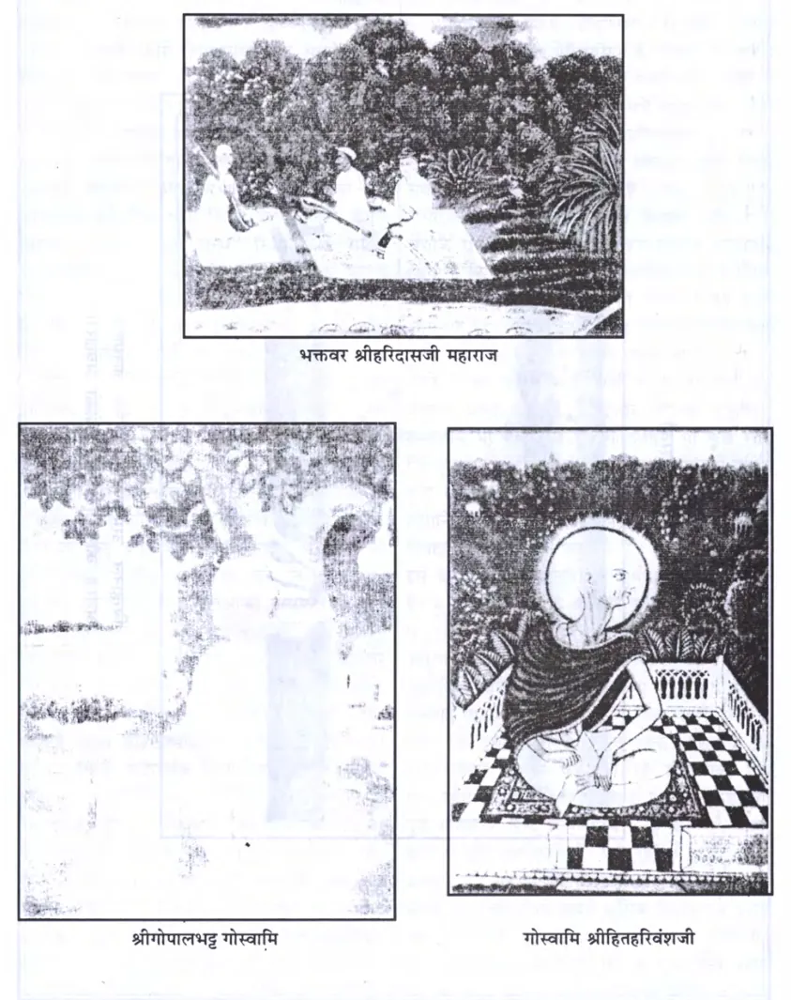
कुछ लोग इस क्लीसोबरा अथवा क्रीसोबरा (Chrysobara)नगरीको कालिसपुर (Calisapura)*का अपभ्रंश जानते हैं, किन्तु प्लिनी (Pliny) नामक यूनानी इतिहास लेखकने इसे कृष्णपुर (कृष्णकी नगरी)का विकृत रूप बतलाया है जिसे श्रीकृष्णने बसाया था और जिससे कदाचित् द्वारकाका अभिप्राय है। दूसरे यूनानी विद्वान् टॉल्मी (Ptolemais) ने मथुराको देवताओंकी नगरी बताया है। प्रोफेसर लैसन (Professor Lassen) नामक जर्मनीके विद्वान्की यह धारणा है कि भारतीय हैराक्लीनके नामसे मैगस्थनीजने श्रीकृष्णका ही निर्देश किया है, किन्तु प्रोफेसर विल्सन (Professor Wilson)* आदि दूसरे पाश्चात्य विद्वानोंका यह मत है कि यूनानी लेखकोंने 'हैराकीज' शब्दसे निस्सन्देह श्रीकृष्णके बड़े भाई बलरामजीका निर्देश किया है।
* हिग्गिन्स (Higgins) नामक विद्वान्के Anacalypsis नामक ग्रन्थको देखिये।
भारतीय हरकूलीजके सम्बन्धमें कप्तान विल्फर्ड (Captain Wilford) नामक विद्वान्ने लिखा है—
"The Indian Hercules, according to Cicero, was called Belus. He is the same as Bala, the brother of Krishna, and both are conjointly worshipped at Muttra; indeed, they are considered as one Avatar or Incarnation of Vishnu. Bala is represented as a stout man with a club in his hand. He is called also Balarama. As Bala, springing from Vishnu or Hari* he is certainly Heri-cula, Heri-culas, Hereules.
* संस्कृतमें हरि-शब्दका अर्थ 'उद्धारक' है और कुलका अर्थ है वंश। अतः Hercules शब्दका अर्थ है 'हरिके कुलमें उत्पन्न हुआ पुरुष।' Higginsका मत है कि यह शब्द न तो यूनानी (Greek) भाषाका है और न लैटिन (Latin) भाषाका, किन्तु किसी असभ्य जातिकी भाषाका है—देखिये Anacalypsis (जिल्द पहली, पृ०३२९)
अर्थात् किकरो (Cicero) नामक यूनानी इतिहासलेखकके मतमें भारतीय हरक्यूलीजका नाम बैलस (Belus) था। यही श्रीकृष्णके बड़े भाई बल थे और इन दोनों भाइयोंकी मथुरामें साथ ही पूजा की जाती है; यही नहीं, वास्तवमें इन दोनोंको मिलाकर ही भगवान् विष्णुका अवतार मानते हैं। 'बल'के विषयमें यह लिखा है कि वे अत्यन्त बलिष्ठ थे और अपने पास हल-मूसल रखते थे। उन्हें बलराम भी कहते हैं। विष्णु अर्थात् हरिके अवतार होनेके कारण वे सचमुच हरिकुल (Heri-cuals) अर्थात् Hercules थे।
एरियनने लिखा है कि सिकन्दरने उन नगरों तथा दूसरे राज्योंको देखा, जिनपर श्रीकृष्णके वंशज शूरसेन नामक क्षत्रियोंका आधिपत्य था। Monumental Christianity' नामक पुस्तक (पृष्ठ १५१-१५२)में लिखा है
'Both Arrian & Strabo assert that the god Krishna was anciently worshipped in Mathura on the river Jumna, where he is worshipped at this day, but the emblems and attributes essential to this deity are also transplanted into the mythologies of the west.'
अर्थात् 'एरियन और स्टूबो (Strabo) इन दोनों विद्वानोंका यह मत है कि भगवान् श्रीकृष्णकी प्राचीन कालमें मथुरा-नगरीमें पूजा होती थी, जो यमुना-नदीके तटपर बसी हुई है और वहाँ अब भी उनकी पूजा होती है; किन्तु इस देवताके चिह्नों और गुणोंका पाश्चात्य जगत्की पौराणिक गाथाओंमें भी समावेश हो गया है।'
* देखिये Asiatic Researches Vol. V. p.270
इन ऐतिहासिक लेखोंसे यह पता लगता है कि ईसाई पादरियोंकी यह धारणा कितनी निर्मूल है कि श्रीकृष्णचरित्र और उनके उपदेशोंकी कल्पना ईसामसीहके जीवन और उपदेशोंके आधारपर हुई है। इसके विरुद्ध यह सिद्ध है कि श्रीकृष्ण ईसामसीहसे सैकड़ों वर्ष पूर्व इस लोकमें पधारे थे और सिकन्दरकी चढ़ाईके समय उनके उपदेश लिपि-बद्ध हो चुके थे। सर विलियम जोन्स (Sir William Jones) नामक विद्वान्ने-जिन्होंने पाश्चात्य विद्वानोंमें सबसे पहले संस्कृत-भाषाका ज्ञान प्राप्त किया था, -भारतवर्षमें कई वर्ष रहनेके बाद यह लिखा था—
That the name of Chrishna and the general outline of his history were known in India long anterior to the birth of our Saviour and probably to the time of Homer (900 B. C.) we know very certainly.'*
अर्थात् 'हमें इस बातका निश्चय है कि हमारे प्रभु (ईसामसीह)के जन्मसे बहुत पहले और कदाचित् यूनानके आदिकवि होमर (Homer)—जिनका काल ईस्वी सन्से १०० वर्ष पूर्व माना जाता है—से भी पूर्व श्रीकृष्णका नाम और उनके जीवनका स्थूल वृत्तान्त भारतीयोंको विदित था।'
सर गाँडफ्रे हिगिन्स (Sir Godfrey Higgins) जो पिछली शताब्दीका एक प्रसिद्ध अंग्रेज विद्वान् और पुरातत्त्वविशारद था, यथाशक्ति इस विषयका उचित अनुसन्धाम एवं गवेषणा करनेके बाद इस निश्चयपर पहुँचा था कि पीतलके युग (Brazen Age)**के अन्तमें श्रीकृष्णका जन्म हुआ था। उसने लिखा है—
* देखिये Asiatic Researches' (एशिया-सम्बन्धी खोज-जिल्द पहली पृ० २७३)
** यूरोपियन इतिहास-लेखकोंने हमारी तरह सृष्टिके आदिसे कई युग माने हैं। आदिम युगको वे 'Stone Age' अर्थात् 'पत्थरका युग' कहते हैं, जिसमें मनुष्योंने पत्थरके उपकरणोंका उपयोग सीखा। इससे आगेके कालको जब ताँबेका प्रचार हुआ, ये 'Copper Age' (अर्थात् ताँबेका युग) कहते हैं। ताँबेके युगके अनन्तर मनुष्योंने पीतलका व्यवहार शुरू किया, और इसे ये 'Brazen Age' अर्थात् पीतलका युग कहते हैं। इस हिसाबसे यह सृष्टिका तीसरा युग होता है। हमारे यहाँ भी श्रीकृष्णका अवतार द्वापरके अन्तमें मानते हैं जो हमारा तीसरा युग समझा जाता है।
'He passed a life of the most extraordinary and incomprehensible devotion. His birth was concealed from the tyrantKansa, to whom it had been predicted that one born at that time and in that family would destroy him, i.e. his power.'
अर्थात् 'श्रीकृष्णने अत्यन्त विलक्षण एवं असाधारण भक्तिमय जीवन व्यतीत किया। अत्याचारी कंससे इनका जन्म छिपाकर रक्खा गया था, क्योंकि उसे किसीने यह बात कह रक्खी थी कि अमुक समयमें उस कुलमें उत्पन्न होनेवाला पुरुष तुम्हारे अर्थात् तुम्हारी सत्ताके नाशका कारण होगा।' अपने ग्रन्थ 'Anacalypsis' (जि०१पृ० १६०)में भी इन्होंने लिखा है—
'In fact, the sculptures on the walls of the most ancient temples by no one ever doubted to be long anterior to the Christian era, as well as written works equally old, prove beyond the possibility of doubt, the superior antiquity of the history of Cristna to that of Jesus,
अर्थात् 'वास्तवमें अत्यन्त प्राचीन देवालयोंकी–जो ईस्वी सन्से बहुत पूर्वकालके बने हुए हैं इस बातमें अबतक किसीको भी सन्देह नहीं हुआ-दीवारोंपरकी मूर्तियों तथा उसी समयकी हस्तलिखित पुस्तकोंके देखनेसे यह निर्विवाद सिद्ध है कि ईसामसीहकी अपेक्षा श्रीकृष्णका काल कहीं अधिक प्राचीन है।' इस विद्वान्ने श्रीकृष्णकी प्राचीनताको नहीं माननेवाले विद्वानोंके मतका खण्डन करते हुए अपने उसी ग्रन्थमें लिखा है—
Cristna, his statues, temples and books, etc., respecting him are to be found where a Christian never came. Is it not absurd to suppose that the Brahmins could invent the story of Cristna and make it dovetail into all their other superstitions-make him form an integral part of their curious Trinity, the actual Trinity of ancient Persia and of Plato—make him also fit into the theological inferences of the modern Christians respecting the meaning of the first chapter of Genesis—make his story exactly agree with the orthodox massacre of the innocents and finally make all this be received as an ancient doctrine and article of faith by millions of people, who must have known very well that it was all perfectly new to them and that they had never heard of it before, '
अर्थात् 'श्रीकृष्णकी प्रतिमाएँ, मन्दिर और उनके चरित्र-सम्बन्धी पुस्तकें ऐसे स्थानोंमें भी मिलती हैं, जहाँ किसी ईसाईका कभी प्रवेशतक नहीं हुआ। क्या यह कल्पना बिलकुल असंगत नहीं है कि ब्राह्मणोंने श्रीकृष्णकी कथाको गढ़कर अपनी सारी मिथ्या कल्पनाओंमें उसको यथास्थान जोड़ दिया हो, उसे (श्रीकृष्णको) देवत्रयी (ब्रह्मा, विष्णु, महेस)में जिसे फारस देशके प्राचीन निवासियों और युनानके प्रसिद्ध दार्शनिक प्लेटो (Plato) ने भी माना है, स्थान दिया हो, बाइबलके Genesis (जन्म) नामक प्रथम अध्यायके तात्पर्यके सम्बन्धमें आधुनिक ईसाइयोंने जो अध्यात्मविषयक अनुमान किये हैं उनमें भी ठीक बैठा दिया हो, निरपराध लोगोंकी हत्याकी (जिसका उल्लेख बाइबलमें मिलता है) प्राचीन घटनाका बिलकुल सामञ्जस्य कर दिया हो और यह सब करनेके बाद करोड़ों मनुष्योंके हृदयमें भी यह कथा प्राचीन सिद्धान्तके रूपमें बैठा दी हो जब कि वे लोग इस बातको भलीभाँति जानते रहे होंगे कि यह कथा बिलकुल नवीन है और उन्होंने इसे पहले कभी नहीं सुना था।'
कप्तान विलफर्ड साहबने अपनी 'Chronology of the Hindus' नामक पुस्तकमें श्रीकृष्ण और महर्षि पराशरका काल जो सम्राट् युधिष्ठिरके समसामयिक थे, ईस्वी सन्से लगभग १७८० वर्ष पूर्व निश्चित किया है और पाश्चात्य गणितज्ञ डेविस (Davis) और कोलब्रुक (Colebrooke) साहबने उनका काल ईस्वी सन्से १३६१ वर्ष पूर्व माना है। 'Hindu Astronomy' (हिन्दुओंका गणितशास्त्र) नामक पुस्तकके रचयिता डब्लू बेनर्ड (W. Brennard) महाशयने लिखा है—
"The received opinion, however, as before stated, is that Yudhisthira (with Garga and Parasara) lived some time about the 12th or 13th centuries before
the Christian era' (Hindu Astronomy p. 119)
अर्थात् 'जैसा पहले बतलाया जा चुका है, विद्वानोंकी सम्मति यह है कि महाराज युधिष्ठिर तथा गर्ग एवं पराशर मुनि ईस्वी सन्से लगभग १२०० अथवा १३०० वर्ष पूर्व हुए थे।
इसके अतिरिक्त बम्बईके समीप एलेफन्टा (Elephants Cave) नामक गुफामें एक बहुत ही प्राचीन मूर्ति मिली थी, जिसमें ईसाइयोंकी बाइबलके हेरॉड (Herod) नामक अत्याचारी राजाके प्रतिरूप कंसकी विकराल आकृति हाथमें नङ्गी तलवार लिये दिखलायी गयी है और उसके चारों ओर हत्या किये हुए नन्हे-नन्हे बालक दिखलाये गये हैं। इससे ईसाई-पादरियोंकी उस कौशलपूर्ण कल्पनाका खण्डन हो जाता है, जिसका उल्लेख ऊपर किया जा चुका है। एलेफन्टाकी प्रतिमासे यह सिद्ध होता है कि श्रीकृष्ण ईसामसीहसे सैकड़ों वर्ष पूर्व हुए थे। इतना ही नहीं, इससे उनके अलौकिक जन्म, अत्याचारी कंसके भयसे उनके गोकुल चले जाने, उस दुष्ट राजाके द्वारा श्रीकृष्णके छोटे-छोटे भाइयोंकी हत्या और उस महान् उद्धारकके दिव्य जीवनकी अन्य मुख्य घटनाओंके इतिहासकी प्राचीनता भी प्रमाणित होती है।
आस्तिक हिन्दुओंकी साधारण मान्यता यह है कि श्रीकृष्णावतार द्वापर-युगके अन्तमें हुआ था और जिस दिन वे परमधामको पधारे थे उसी दिनसे कलियुगका प्रारम्भ हुआ। इस सिद्धान्त अथवा परम्परागत मतके अनुसार श्रीकृष्णावतार ईस्वी सन्से लगभग ३०६१ वर्ष पूर्व होना चाहिये।
किन्तु बाबू बंकिमचन्द्र चट्टोपाध्याय जैसे आधुनिक हिन्दू विद्वानोंने श्रीकृष्ण तथा कुरुक्षेत्रके युद्धका ऐतिहासिक काल ईस्वी सन्से १४३० वर्ष पूर्व निश्चित किया है।*
* इस सम्बन्धमें बंकिमचन्द्र चट्टोपाध्यायकी 'श्रीकृष्णचरित्र' नामक पुस्तक को देखना चाहिये। इस ग्रन्थकारके मतमें श्रीकृष्णके समसामयिक सम्राट् युधिष्ठिर, सम्राट् चन्द्रगुप्त मौर्यसे १११५ वर्ष पूर्व हुए थे। इन्होंने सिकन्दरके उत्तराधिकारी सिल्यूकस निकातरको युद्धमें हराकर यवनोंको भारतवर्षसे निकाल दिया और ये ईस्वी सन्से ३१५ वर्ष पूर्व भारतवर्षके चक्रवर्ती सम्राट् हो गये। इन्होंने सिल्यूकसकी लड़कीसे विवाह किया था। अतः सम्राट् युधिष्ठिरका काल ईस्वी सन्से ३१५+ १११५=१४३० वर्ष पूर्व मानना चाहिये।
श्रीकृष्णका नाम ऋग्वेदकी ऋचाओंमें भी, उदाहरणतः प्रथम मण्डलके ११६ वें सूक्तके २३ वें मन्त्रमें और ११७ वें सूक्तके ७ वे मन्त्रमें आता है, किन्तु पाश्चात्य विद्वान् लोग यह निश्चित नहीं कर सके हैं कि ये वेदोक्त श्रीकृष्ण देवकी और वसुदेवके पुत्र हैं अथवा दूसरे कोई हैं। छान्दोग्य उपनिषद्के एक मन्त्रमें भी देवकी-पुत्र श्रीकृष्णका उल्लेख मिलता है। इसके अतिरिक्त श्रीकृष्ण ऋग्वेदके (आठवें मण्डलके ८५-८७ और दसवें मण्डलके ४२-४४) सूक्तोंके ऋषि भी थे। इससे यह प्रतीत होता है कि श्रीकृष्ण वेदोंका विभाग करनेवाले महर्षि वेदव्यासके समसामयिक थे।
महर्षि पाणिनिके व्याकरण-सूत्रोंमें भी युधिष्ठिर, अर्जुन और वासुदेव (वसुदेवके पुत्र) का-जो श्रीकृष्णका ही नाम है-उल्लेख मिलता है और पाणिनिका काल ईस्वी सन्से ११०० वर्ष पूर्व माना गया है।
इसके अतिरिक्त महर्षि पतञ्जलि-कृत व्याकरणमहाभाष्य'में जो ईस्वी सन्से कम-से-कम २०० वर्ष पूर्व लिखा गया था, हमें इस बातका निश्चयात्मक प्रमाण मिलता है कि उनके जीवन-कालमें श्रीकृष्ण और कंसकी कथा प्रचलित एवं प्रसिद्ध थी और उस समय वे ईश्वररूपमें पूजे जाते थे।
बम्बईके प्रसिद्ध इतिहासलेखक एवं पुरातत्त्व-विशारद प्रो० भाण्डारकरने महाभाष्यमेंसे श्रीकृष्णके विषयमें निम्नलिखित तथ्य खोज निकाले हैं—
(१) महर्षि पतञ्जलिके समयमें कंसवध और राजा बलिके दमनकी कथाएँ प्रचलित एवं प्रसिद्ध थीं।
(२) कंसवधकी कथामें वासुदेव श्रीकृष्णके द्वारा उसके मारे जानेका उल्लेख है।
(३) जिस प्रकार आज भी पौराणिक कथाओंका आश्रय लेकर हमारे यहाँ अभिनय दिखाये जाते हैं उसी प्रकार उक्त कथाओंको लेकर पतञ्जलिके समयमें भी अभिनय 'खेले जाते थे।
(४) श्रीकृष्णके द्वारा कंसके वधकी घटना पतञ्जलिके समयमें अत्यन्त प्राचीन मानी जाती थी।*
* देखिये 'Indian Antiquary, Bombay, Vol. III, 1874 p.16
ईसाइयोंके भारतवर्षमें आनेसे बहुत पूर्व श्रीकृष्णकी इस देशमें ईश्वररूपमें बड़े आदरके साथ पूजा होती थी, इस बातका एक और निश्चयात्मक प्रमाण भिटारी स्तूपके शिलालेखमें मिलता है जो कदाचित् ईस्वी सन्की दूसरी शताब्दीमें लिखा गया था और जिसकी प्रतिलिपि और अनुवाद डा० डब्लू० एच० मिल (Dr. W. H. Mill) ने किया है। उक्त शिलालेखमें श्रीकृष्णके सम्बन्धमें जो बात लिखी गयी है उसका अंग्रेजीमें अनुवाद डा० मिलने इस प्रकार किया है—
‘May he who is like Krishna, still obeying his mother Devaki after his foes are vanquished, he of golden rays with mercy protect this my design.*
अर्थात् 'जिसप्रकार श्रीकृष्णने अपने शत्रुका विनाश हो जानेके अनन्तर भी माता देवकीकी आज्ञाका पालन किया था, वह स्वर्णमयी किरणोंवाला दयापूर्वक मेरे इस आयोजनकी रक्षा करे।
जर्मनीके प्रसिद्ध पुरातत्त्व-विशारद लैसन महाशयने इसका संशोधन इस प्रकार किया है—
'Like the conqueror of his enemies, Krishna encircled with golden rays, who honours Devaki, may he maintain his purpose.'
अर्थात् 'अपने शत्रुओंके विजेता स्वर्ण-सदृश तेजवाले श्रीकृष्णने जिस प्रकार देवकीका आदर किया था, वे भी अपने प्रयोजनको सिद्ध करें।'१
उपर्युक्त प्रमाणोंसे पाठकोंको यह निश्चय हो जाना चाहिए कि श्रीकृष्ण एक ऐतिहासिक पुरुष थे और वे ईसामसीहसे सैकड़ों वर्ष पूर्व हुए थे।२, ३
* देखिये Journal of the Asiatic Society of Bengal, January, 1837 p. p. 1-17.
१. देखिये Indische alterthumskunde II (1849) p. 1108 note.
२. इसी अंकमें प्रसिद्ध इतिहासज्ञ रावबहादुर श्रीचिन्तामणि विनायक वैद्य महोदयका लेख छपा है, जिसमें श्रीकृष्णका काल ईस्वी सन्से ३१४० वर्ष पूर्व सिद्ध किया है। —सम्पादक
३. यह लेख स्वामीजी लिखित 'Great Saviours of the world' नामक पुस्तकसे लिखा गया है।
भगवान् श्रीकृष्ण और भावी संसार
(लेखक-श्रीयुक्त बी० के० बेंकटाचारी बी० ए०, एल-एल० बी०, एडवोकेट)
भरतखण्डका इतिहास महाभारतकी ही शाखा है। महाभारतका अर्थ है महान् भारतवर्ष। हमलोग भारतवर्षको महान् देखना चाहते हैं। महाभारतके समयसे ही धर्मराज्यकी स्थापनाके लिये संग्राम जारी है। भगवान् श्रीकृष्णका जिस समय अवतार हुआ, उस समय यह संग्राम जोरोंपर था। भगवान् श्रीकृष्णका अवतार एक विशेष उद्देश्यको लेकर हुआ था, जो उनकी गीताके श्लोकोंसे स्पष्ट है।
श्रीमद्भगवद्गीता महाभारतका मुकुट है। गीतासे अलग हम महाभारतकी कल्पना भी नहीं कर सकते। हम महाभारतके अन्यान्य भागोंको भले ही भूल जायँ, गीताको कदापि नहीं भूल सकते। कुरुक्षेत्रकी पवित्र भूमिमें धर्मराज्यकी स्थापना हुई थी। उस समय भगवान् श्रीकृष्णने अपने दिव्य-ज्ञानके उत्कर्षसे अपने सखा, सहचर एवं प्रिय शिष्य अर्जुनको निमित्त बनाकर सारी मानव-जातिको गीताका उपदेश दिया। गीताका उपदेश देते समय ही उन्होंने इस बातको प्रमाणित किया कि वे संसारके सबसे बड़े उपदेशक और ईश्वरके अवतार हैं। हमारा धर्म है कि हम उनके गीतारूप उपदेशको—जो सारी मानव-जातिका धर्मग्रन्थ है-स्वीकार करें। गीताके आधारपर भारतीय जातीयताका नये ढंगसे सुदृढ़ताके साथ निर्माण हो रहा है और सौभाग्यसे इस समय हमें महात्मा गाँधीके रूपमें एक चतुर शिल्पी मिल गया है जो इस भवनके निर्माणका कार्य सुचारुरूपसे सम्पन्न कर रहा है। हमारे जातीय विकासकी वर्तमान अवस्थामें यह आवश्यक है कि हमारे नवयुवक यह जानें कि भारतवर्षकी पहले क्या दशा थी और अब क्या हो गयी है। यदि विज्ञान और उद्योग-धन्धोंका कार्य नहीं रुक सकता तो इतिहास और राजनीति-शास्त्र अध्ययनको स्थगित करनेमें भी हमारी जातीयताकी बड़ी क्षति हो सकती है। हमारे बालक और बालिकाएँ स्कूलोंमें जब उनकी अत्यन्त सुकुमार अवस्था होती है, अच्छे और बुरे संस्कारोंको बड़ी जल्दी ग्रहण करते हैं, उनको इस प्रकारका साहित्य पढ़ाना चाहिये जिससे उनके अन्दर अपने अतीत कालके गौरवका ज्ञान हो और हमारे अन्दर जातीय आत्मगौरवके भाव जागृत हों। यह तबतक नहीं हो सकता जब तक हमें अपने जातीय पूर्व-पुरुषोंके आध्यात्मिक, मानसिक एवं आधिभौतिक उन्नतिका यथार्थ एवं दृढ़ ज्ञान न हो जाय। भारतकी आधुनिक शिक्षाप्रणालीमें हमारी प्राचीन गौरवपूर्ण संस्कृति और अतीतकालकी प्रचलित कथाओंके लिये कोई स्थान नहीं है। हमारे स्कूलों और कालेजोंकी पढ़ाई बिलकुल पश्चिमीय ढंगकी है। उसका वास्तविक भारतीय जीवनसे-प्राचीन भारतीय-जीवनसे कोई सम्बन्ध नहीं है। हमारे यहाँ गुरु और शिष्यका परस्पर जो पवित्र आत्मीयताका सम्बन्ध था और जो हमारी प्राचीन शिक्षा-पद्धतिका एक प्रधान अंग था, आज बिलकुल लोप हो गया है। जब हम हिन्दुओंकी यह गिरी हुई दशा है तो हमारे ही अतिरिक्त ऐसी कौन-सी शक्ति है जो हमारा उद्धार कर सके और हमें अनार्यसे पुनः आर्य बनावे, जो हमारा जन्मसिद्ध अधिकार है। इस समय एक ही शक्ति ऐसी है जो हमें इस पतनसे बचा सकती है—वह है श्रीमद्भगवद्गीताकी महती आध्यात्मिक एवं नैतिक शक्ति तथा उसके मधुर उपदेश। जिस प्रसंगपर वह उपदेश दिया गया था, वह यदि आर्यभारतीय नवयुवकोंके कर्णगोचर कराया जाय तो हमें विश्वास है कि वे मनुष्य बनकर आध्यात्मिक कवचसे सुरक्षित हो, इस संसार-रूपी युद्ध-क्षेत्रमें वीरतापूर्वक उतर कर इस जीवन-संग्राममें प्रवृत्त होंगे। जिस प्रकार अर्जुन श्रीकृष्णको अपना सारथी और पथप्रदर्शक बनाकर कुरुक्षेत्रके मैदानमें कौरवोंसे जूझा था, ठीक इसी प्रकार भरतखण्डमें उसीके लालोंके द्वारा धर्म-राज्यकी पुनः स्थापना होगी।
'लोकाः समस्ताः सुखिनो भवन्तु'
श्रीकृष्ण-रहस्य
(लेखक-म० श्रीबालकरामजी विनायक, अयोध्या)
प्रेमदेव! प्रीतिकी पुरातन परम्परा और रीतिकी नैसर्गिक धाराके मूलमें जो आपका अधिष्ठान है, उसे देखनेकी मेरी लालसा कैसे पूरी होगी?' राजा बहुलाश्वने बहुत आर्द्र होकर कहा। इस मर्मस्पर्शी अन्तर्नादको सुनकर भगवान् चुप ही रहे, कुछ बोले नहीं। अयोध्यापुरीमें भक्तवत्सल भगवान् श्रीकृष्णचन्द्रजी अपने भक्त राजा बहुलाश्वके अतिथि हैं। वह भाग्यशाली राजा तन, मन, धनसे प्रियतम अतिथिके सत्कारमें संलग्न है। सेवासे उसकी तृप्ति ही नहीं होती, नित्य नूतन उत्साह और प्रेम बढ़ता जाता है, और भगवान् भी उसके प्रेमपाशमें बँधे हुए हैं। भक्तकी लालसा पूर्ण करनेके लिये भगवान् विचार कर रहे हैं कि भक्तराजको दिव्य-दृष्टि प्रदान करनी चाहिये अथवा और कोई उपाय सोचना चाहिये।
भक्तने भगवान्को विचार-मग्न देखकर अपना अभिप्राय स्पष्ट करनेके लिये कहा—'उस पुरातन प्रीतिपरम्पराके मूलमें जीव और शिवका सनातन सम्बन्ध है, इतना तो मैं विवेक-दृष्टिसे देख रहा हूँ। परन्तु उस सम्बन्धको स्थिरता प्रदान करनेवाली आपकी दिव्य झाँकी वहाँ नहीं होती। हे लीला-पुरुषोत्तम! मैं आपकी अचिन्त्य लीला और लीलामयी छबिके दर्शनके लिये लालायित हूँ। उसका तत्त्वतः बोध कराकर मेरी लालसा पूर्ण कीजिये।'
उसी समय देवर्षि नारदके साथ एक अल्पवयस्क तपस्वी घोर अंगिरस्जी वहाँ आ उपस्थित हुए। उन्हें देखते ही भगवान् खड़े हो गये और श्रद्धाके अश्रुविन्दुओंसे उनके चरण-पल्लवोंको सींचते हुए अपूर्व दशाको प्राप्त हो गये। उस तपोनिधिने श्रीकृष्णचन्द्रको उठाकर हृदयसे लगा लिया। इस मिलनसुखके वर्णन करनेमें शेष और शारदा भी समर्थ नहीं हैं। मालूम होता था कि तप और ज्ञानका अपूर्व सम्मिलन हो रहा है। अनन्तर राजा बहुलाश्वने दोनों ऋषियोंको साष्टाङ्ग प्रणाम करके समुचित आसनपर पधराया।
श्रीभगवान्ने कहा—'गुरुदेव! आज आपके आकस्मिक दर्शनसे मैं कृतार्थ हो गया। आप-जैसे निःस्पृह अकिञ्चन महात्माके दर्शनका सदा ही भिखारी बना रहता हूँ। कहिये, क्या आज्ञा है? मैं आपकी सेवा किस प्रकार करूँ?
तपस्वियोंके प्रमुख आचार्यने कहा—'मैंने सुना है कि तुम बड़े छलिया हो। क्या यह प्रवाद ठीक है?'
श्रीभगवान्ने मुस्कुराकर कहा—'हाँ, भगवन्! ठीक है! बचपनमें ऐसी लत पड़ गयी थी, परन्तु जबसे आपने औपनिषदिक शिक्षा दी है तबसे वह बान छूट गयी है; अब तो आपकी कृपासे मैं अच्युत हूँ।'
यह सुनकर ऋषिराज बहुत प्रसन्न हुए। फिर मन्दस्वरसे बोले—'नारदजी कहते हैं, तुम वही हो।'
श्रीभगवान्ने मस्तक झुकाकर मुस्कुराते हुए कहा—'नारदजी यों ही कुछ कह दिया करते हैं। उसपर विशेष ध्यान नहीं देना चाहिये।
ऋषिराज–'नहीं, नहीं। नारदजी पतेकी बात कहते हैं। बताओ, तुम वही हो न?'
श्रीभगवान्—'यदि मैं इस मार्मिक प्रश्नका ठीक-ठीक उत्तर देता हूँ, तो आपके भाव बदल जानेसे मैं आपका वात्सल्य खो दूँगा। कह नहीं सकता कि तब आपकी कैसी दशा हो जाय। इसलिये प्रार्थना है कि एक बार मुझे फिर छलिया बनने दीजिये, फिर उत्तर सुनिये।'
ऋषिराज–'अरे तू वही है, छलिया भी है और फिर एक बार छलिया बनना चाहता है। अच्छा बन। मैं भी देखूँ कि तू क्या छलबल दिखाता है?
भगवान् ऋषिकी बात सुनते जाते थे और नारदजीकी ओर ताककर मुस्कुराते भी जाते थे। यह अपूर्व दृश्य था। राजा बहुलाश्व यह लीला देखकर दँग रह गया। उसका प्रश्न तो ज्यों-का-त्यों पड़ा ही रह गया। भगवान्ने उत्तर ही नहीं दिया, टाल दिया। इधर भगवान्को ही बहुत-से प्रश्नोंके उत्तर देने पड़े। तिसपर भी अभी उनकी इतिश्री नहीं हुई। नारदजीने अवसर पाकर कहा—'महाराजजी! कुछ सेवा-सत्कार ग्रहण कीजिये, कुछ मधुर फल खाइये, तब स्थिरतासे बातें कीजियेगा। ऐसा ही हुआ!
भगवान्ने अपने हाथों सारी सेवा की। बाबाको अच्छी तरह जिमाया। अनन्तर सुन्दर सुसज्जित पलंगपर शयन कराकर स्वयं पाँव-चप्पी करने लगे। परन्तु ऋषिराजको नींद नहीं आयी। नारदजीने वीणा बजाकर भजन गाये। पर वह रंग नहीं बँधा कि निद्रा आवे। बाबाजी उठ बैठे, कहने लगे—मैं सदा जागता रहता हूँ, मुझे नींद पसन्द नहीं। समाधिमे नींदसे कहीं बढ़कर आनन्द है, उसीसे मेरी तृप्ति हो जाती है। मुझे निद्राकी क्या आवश्यकता है? मुझे सुलानेके लिये तुम व्यर्थ चेष्टा क्यों कर रहे हो?'
भगवान् ने कहा—'अच्छा, चलिये, प्रमोदवनको चलें। वहाँका अपूर्व दृश्य देखें।'
सब लोग चल पड़े। मार्गमें बातें होती जाती थीं। नारदजीने पूर्व प्रसङ्गको जाग्रत करते हुए कहा—'बहुत भ्रमण करने और स्थान-स्थानका व्यवहार देखनेसे विदित होता है कि संसार छल-कपटसे ओत-प्रोत है। देवता, असुर और मनुष्यकुलमें इसका विशेषरूपसे प्रचार है। कुछ लोग तो यहाँतक कहते हैं कि बिना छल-कपटके संसारका काम ही नहीं चल सकता। राजनीतिमें छल-कपट सिद्धान्तरूपसे स्वीकार किया गया है।'
राजा बहुलाश्वने देवर्षिके कथनका समर्थन करते हुए कहा—'यह संसार प्रकृतिसे उत्पन्न हुआ है। प्रकृतिकी मोहिनी छटाको माया कहते हैं। मायादेवीका नख-सिख छल-कपटसे ही परिसाधित है, सुसज्जित और अलंकृत है।'
ऋषिराज सुनते जाते थे, कुछ बोलते नहीं थे। भगवान् भी मौन थे। दोनों अचिन्त्य दशाको प्राप्त थे। चलते-चलते सब प्रमोदवनमें पहुँच गये। वनकी विचित्र शोभा थी। तरह-तरहकी कुञ्जें, कुसुमित और पल्लवित लताद्रुम चित्तको मोहे लेते थे। सबका चित्त प्रसन्न हो गया। सब लोग वीथियोंमें स्वच्छन्दतापूर्वक विचरने लगे। राजाको बड़ा आश्चर्य हुआ। उसने नारदजीसे कहा—भगवन्! अयोध्यापुरीमें तो इस अलौकिक वनको मैंने कभी नहीं देखा था। यह कहाँसे निकल आया?' इसके उत्तरमें नारदजीने मुस्कुराकर कहा—'यह दिव्य साकेतका एक दृश्यविशेष है। भगवान् की कृपासे दृष्टिगोचर हो रहा है। चुपचाप देखते चलो।'
राजाने इस वृत्तान्तको सुन अत्यन्त प्रसन्न होकर कहा—'भगवन्! इस प्रमोदवनकी महिमा क्या कहूँ? आपके समागमके पहले श्रीभगवान्के समक्ष मैंने एक मार्मिक प्रश्न उपस्थित किया था। भगवान् उसका समाधान करना ही चाहते थे कि इतनेमें आपलोग आ गये। किन्तु बड़े आश्चर्यकी बात है कि इस वनमें प्रवेश करते ही मेरी शंकाका समाधान हो गया। मेरे प्रश्नका उत्तर मिल गया। मेरा चित्त शान्त हो गया और अब मैं अपूर्व सुखका अनुभव कर रहा हूँ।'
देवर्षिने कहा—'उस प्रश्नोत्तरको मुझे भी सुना दो।' राजाने बड़े हर्षसे कहा—प्रीतिकी पुरातन परम्पराके मूलमें, जहाँ जीव-शिवका नित्य सम्बन्ध है, वहाँ साक्षीरूपसे भगवान् भी विराजमान हैं। भगवान्की उस कर्मविधायिनी छटाको देखनेकी मुझे उत्कट लालसा थी। मैंने भगवान्से साक्षात् दर्शन एवं उसके तत्त्वतः बोधके लिये प्रार्थना की थी। मालूम होता है कि मुझे उस तत्त्वका बोध करानेके निमित्त ही भगवान्ने इस महिमान्वित दिव्यस्थलको प्रकट किया है। यहाँ आते ही मुझे उस छबिके दर्शन हुए और आत्मप्रतीतिद्वारा बोध हो गया कि किस प्रकार कर्म विधान करते हुए भगवान् कर्मको स्पर्श नहीं करते और निष्काम-कर्मसे उत्पन्न प्रीतिरश्मिको किस प्रकार ग्रहण करते हैं, किस अचिन्त्य भावसे उस प्रेम-पाशमें बँधते हैं एवं साक्षात् प्रेमदेव बन जाते हैं।'
देवर्षिने चकित होकर कहा–'राजन्! तुमने तो विवेक-सागरसे गहरा तत्त्व छाना है। जहाँ बड़े-बड़े ज्ञानियों और योगियोंकी दृष्टि नहीं पहुँचती, वहाँ तुम पहुँच गये। तुम बड़े भाग्यशाली हो।'
अनन्तर दूसरी वीथीसे प्रेममें मग्न ऋषिराज झूमते हुए आ गये और आकुल होकर राजासे पूछने लगे —'देवकीनन्दन कहाँ हैं? न मेरे साथ, न तेरे साथ, वह अकेला कहाँ रम गया? वह बड़ा कौतुकी है, छलिया है, छल कर गया। उसे अकेले अच्छा लगता है, वह असंग है। अच्छा, तो उसे ढूँढ़ना चाहिये। उसके बिना कैसे चलेगा? इस वनमें तो प्रियतम-प्रभुकी महक और रमक आ रही है।'
सब लोग ढूँढ़ते-ढूँढ़ते एक सरोवरके निकट पहुँचे सरोवरका जल बड़ा ही पवित्र और निर्मल था। उसमें तीन हंस तैर रहे थे। खिले हुए कमलके पुष्पोंके आस-पास ही तैरते थे। चारों किनारोंपर सुहावनी लता-कुञ्जें बनी हुई थीं। उनकी रमणीयताका वर्णन नहीं हो सकता। मालूम होता है कि ऋतुराजने स्वयं अपने हाथोंसे उन्हें सँवारा है। उन लता-कुञ्जोंमें विचरनेकी लालसा सबके मनमें जाग उठी। सुधा-समान जलका स्पर्श एवं पान करके उत्तरकी सीढ़ियोंसे चढ़कर सब महानुभाव कुञ्जमें प्रविष्ट हुए। वहाँ कोई भी ऐसी वस्तु नहीं, जो प्रकाशपूर्ण न हो। पुष्प, लता, वनस्पति, ओषधि, दूर्वा, वृक्ष सभी प्रकाशपूर्ण, सभी अनुपमेय, सभी चित्ताकर्षक और आनन्ददायी थे। सबके मनमें एक प्रकारसे निश्चय हो गया कि वह छलिया छल करके इन्हीं कुञ्जोंमें कहीं-न-कहीं रम रहा होगा। उसे यहीं खोजना चाहिये, वह अवश्य यहाँ मिलेगा।
सरोवरके जलका अलौकिक प्रभाव अब धीरे-धीरे सबको अनुभव होने लगा। वे समझने लगे कि उनके कलेवरमें घोर परिवर्तन होने लगा है, वे सूक्ष्म-से-सूक्ष्म होते चले जा रहे हैं, उनकी सृष्टि ही नयी हो रही है और प्रत्येक नूतन परिवर्तनसे उन्हें अपूर्व आनन्द मिल रहा है। देश-कालकी मर्यादा उनके दिलसे जाती रही है। वे समझ रहे हैं कि न जाने वे कितने युगोंसे प्यारे श्रीकृष्णको इस वनमें खोज रहे हैं। मिलनकी उत्कण्ठा बढ़ती ही जाती है।
वे महानुभाव जिस वस्तुको देखते हैं, उसीपर मुग्ध हो जाते हैं। उनको यही प्रतीत होता है कि अभी यहींसे, इसीमेंसे भगवान् प्रकट हुआ चाहते हैं। इस प्रकार पल-पलमें भगवत्की प्रतीक्षा करते हुए वे चले जाते थे। सबके प्रत्येक अङ्गपर सात्त्विक भाव उदित था। कभी-कभी पक्षियोंके सुमधुर कलरवसे वन गुञ्जायमान हो जाता था। उस समय स्तब्धता छा जाती थी। हमारे महानुभाव प्रियतमकी टोहमें, प्रेमके पथमें लथपथ, प्रेमरसमें छके, विचित्र एवं दिव्य सुखका अनुभव करते हुए चले जाते थे। कहाँ जाते हैं, किसीको कुछ पता नहीं। वनके विस्तारका ओर-छोर नहीं। कुञ्जोंका ताँता टूटता नहीं। 'जहाँ जायँ मन तँहै लोभाई।' वाली बात थी। मस्त ऋषिराज घोर अंगिरस्जीने एक जगह एक लताको स्पर्श करके कहा—'बता, वह प्यारा छलिया कहाँ छिपा है? इस तेजःपुज्ज वनमें उसे खोजते हुए कितने प्रकाश-वर्ष बीत गये, कुछ ठिकाना है?
इतनेमें आँखोंको चकाचौंधमें डालनेवाले दिव्य-प्रकाशकी एक लपट आयी। सबकी आँखें बन्द हो गयीं। आनन्द और आश्चर्यकी विचित्र दशामें प्राप्त वे महानुभाव श्रेयस्करी शान्तिका अनुभव करने लगे। धीरे-धीरे उनकी चौंधियाई हुई आँखें खुलीं। ऋषिराज घोर अंगिरस्जीने देखा, टकटकी बाँधकर देखा कि श्रीदशरथराजकुमार भगवती सीता और बन्धु लक्ष्मणजीके साथ मुनिवेषमें विचर रहे हैं।
अपने इष्टदेवको पहचानकर ऋषिराजने साष्टाङ्ग प्रणाम किया। प्रभुने सजलनेत्र हो उन्हें उठाकर अङ्कमें लगाया। उस समयके आनन्दका वर्णन कौन कवि कर सकता है? श्रीरामभद्रने गद्गद कण्ठसे कहा—'जैसे रंकको धन प्रिय है, वैसे मुझे भक्त प्रिय हैं। उनमें भी जो भक्त मुझसे कभी विभक्त नहीं होते, सदा मेरे भजनमें लीन रहना ही जिनका महाव्रत है और जो कभी कुछ चाहते नहीं, उनके हाथ तो मैं बिक जाता हूँ, मैं स्वयं उनका प्रेमी बन जाता हूँ, उनका मुँह जोहा करता हूँ, उनके लिये त्रिपादविभूतिको भी लुटानेको तैयार रहता हूँ! चित्रकूटके मार्गमें जब आपके यकायक दर्शन हुए थे,* तभीसे मैं सोचने लगा कि किस प्रकार अपनी कृतज्ञता, अपना हार्दिक प्रेम आपके प्रति प्रकट करूँ। पूजाका भाव ही पसन्द आया। अस्तु, आपको गुरु माना और वेदान्तकी दीक्षा आपहीसे प्राप्त की, आपका स्नेहभाजन और कृपापात्र शिष्य बना। मुनिराज! मैं वही हूँ, मैं सचमुच वही हूँ, आपका आज्ञाकारी छलिया शिष्य देवकीपुत्र कृष्ण।'
* तेहि अवसर एक तापस आवा।
तेजपुंज लघु वयस सुहावा।
कवि अलषित गति बेष विरागी।
मन-क्रम-वचन राम अनुरागी॥
सजल नयन तन पुलक निज इष्टदेव पहिचानि।
परेउ दण्ड जिमि धरनितल दसा न जाय बखानि॥
राम सप्रेम पुलकि उर लावा।
परम रंक जनु पारस पावा॥
मनहुँ प्रेम परमारथ दोऊ।
मिलत धरे तन कह सब कोऊ॥
बहुरि लषन पायन्ह सोइ लागा।
लीन्ह उठाइ उमगि अनुरागा॥
पुनि सिय-चरन-धूरि धरि सीसा।
जननि जानि सिसु दीन्ह असीसा॥
कीन्ह निषाद दण्डवत तेही।
मिल्यो मुदित लखि राम-सनेही॥
पियत नयनपुट रूप-पियूषा।
मुदित सुअसन पाय जिमि भूषा।
—श्रीरामचरितमानस
यह कहते-कहते भगवान्की आँखोंसे प्रेमाश्रु निकल पड़े। ऋषिराज भी अपनेको न सँभाल सके। चरणारविन्दोंको गरम-गरम आँसुओंसे सींचने लगे। राजा और देवर्षि भी आर्द्र हो उसी रसमें लीन हो गये।
अनन्तर भगवान्के बहुत सँभालनेपर उनकी दशा सँभली। दीनबन्धुने बड़े प्यारसे आश्वासन देकर और वर प्रदानकर देवर्षि एवं ऋषिराजको विदा किया। वे कृतार्थरूप यह कहते हुए चले—
अस स्वभाव कहुँ सुनौं न देखौं।
केहि खगेश रघुपति सम लेखौं॥
उपसंहार
ऋषियोंके चले जानेपर वह अलौकिक दृश्य लुप्त हो गया और वहाँ भगवान् श्रीकृष्ण दृष्टिगोचर हुए। राजा बहुलाश्व अत्यन्त भक्ति-भावसे उनके चरणोंमें पड़ गया। भगवान्ने उसे उठाकर हृदयसे लगाया और पूछा—कहो, तुम्हारी जिज्ञासा पूर्ण हुई? सन्तोष हुआ?' राजाने गद्गद वाणीसे कहा—'श्रीकृपासे सब प्रकार कृतार्थ हो गया। अनन्तर कृपा और भक्तिसे परिपूर्ण दोनों, भगवत्-भागवत राजसदनको लौट आये। राजा बड़े प्रेमसे भगवान्की सेवा करने लगा। उसकी सब इच्छाएँ पूरी हो गयीं। एक दिन भगवान्ने कहा—'राजन्! मगधसे लौटनेके बाद बहुत दिनोंसे मैं तुम्हारे प्रेमवश यहाँ निवास कर रहा हूँ। मुझे अब द्वारकाको शीघ्र लौट जाना चाहिये। अतः अब विदा करो। राजाने अश्रुपूर्णनेत्र हो कहा—'प्रभो, न जाने कबका पुण्य उदय हुआ जो आपने कृपा की, मुझे सनाथ किया, अद्भुत दर्शन कराये और विचित्र लीलाएँ दिखलायीं। आपके एक-एक उपकारके प्रति सौ-सौ बार न्योछावर होनेपर भी मनमें सन्तोष नहीं होता, अधिकअधिक आत्मोत्सर्गकी अभिलाषा बनी ही रहती है। हे कृपासिन्धु, भक्तवत्सल! कृपाकर यह वर दीजिये कि मैं जब चाहूँ तभी श्रीदर्शन प्राप्त हो जाये और आपके निजधामका जो दृश्य देखा है वह जन्मान्तरमें भी स्मरण रहे। भगवान् 'तथास्तु' कहकर द्वारकापुरीको चले गये।
(सुन्दरीतन्त्रसे)
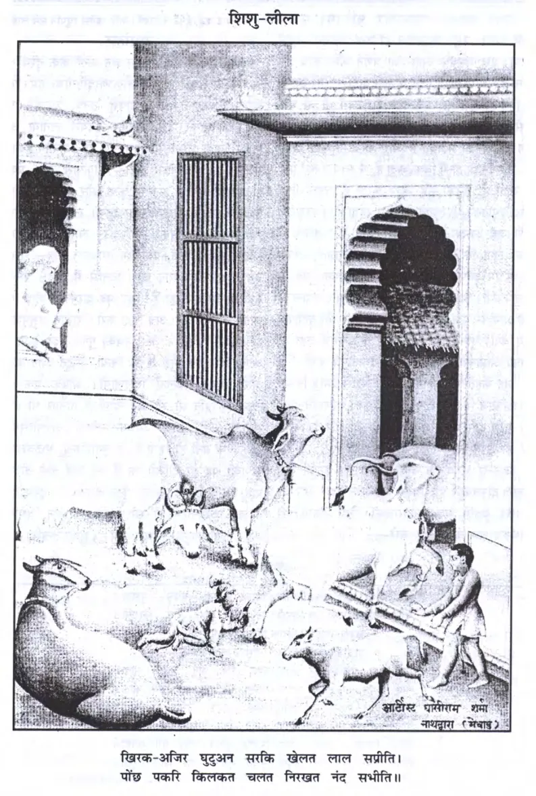
श्रीकृष्ण और गोपिकाएँ
(लेखक-श्रीयुक्त एस० बी० कौज़लगी)
ईसाई पादरी तथा हमारे धर्मके अन्यान्य समालोचक जो उसके सिद्धान्तोंमें गहरे नहीं पैठते, परमात्माके पूर्णावतार श्रीकृष्णका गोपियोंके साथ जो सम्बन्ध था, उसपर आक्षेप करते हैं। हमारे पुराणोंमें भगवान्की लीलाओंका जो आलंकारिक वर्णन है, एवं हमारे भजनीक लोग उनके सम्बन्धमें आमतौरपर लोगोंको जैसे भजन सुनाते हैं, उनमें प्रत्यक्ष कामवासनाकी गन्ध दीख पड़ती है। इसीलिये इन लोगोंको इस प्रकारके आक्षेप करनेका अवसर मिलता है।
क्या वास्तवमें भगवान्की लीलाओंमें कामवासना थी? नहीं, कदापि नहीं! शास्त्रोंमें यह बात कही गयी है कि जो गृहस्थ अपनी विवाहिता पत्नीके साथ धर्मपूर्वक सम्बन्ध करता है, वह ब्रह्मचर्यका ही पालन करता है। श्रीकृष्ण अनेक पत्नियोंके स्वामी होते हुए भी ब्रह्मचारी थे, यह बात तो उपर्युक्त शास्त्रीय व्यवस्थाके अनुसार माननेमें आ सकती है। परन्तु गोपियोंके साथ जो उनका सम्बन्ध था, उसमें यह बात लागू नहीं हो सकती। क्योंकि उनका विवाह दूसरे पुरुषोंके साथ हो चुका था। यह ठीक है, परन्तु श्रीकृष्ण और गोपियोंका सम्बन्ध तो पवित्र था। उदाहरणके लिये श्रीराधिकाजीको ही लीजिये। अन्य सब गोपियोंकी अपेक्षा उनका श्रीकृष्णपर सबसे अधिक प्रेम था। उनका पति इस बातको जानता था और यद्यपि पहले उसको यह बात बुरी लगी किन्तु पीछे जब उसे इनके पवित्र प्रेमका वास्तविक तत्त्व मालूम हुआ तो उसका सारा सन्देह जाता रहा।
जबतक प्रेमका असली तत्त्व हमारी समझमें न आ जाय, तबतक हम इस पहेलीको नहीं सुलझा सकते। आजकल हमलोगोंने स्त्री-पुरुषके एक दूसरेके प्रति होनेवाले शारीरिक आकर्षणको ही प्रेम मान लिया है। वास्तवमें यह प्रेमका सबसे नीचा स्वरूप है। सबसे ऊँचा प्रेम तो तब होता है जब मनुष्य 'सर्वभूतस्थमात्मानं सर्वभूतानि चात्मनि' का प्रत्यक्ष अनुभव करने लग जाता है। नीचे दर्जेके प्रेमका (जिसे काम कहते हैं) शरीर और मन दोनोंसे सम्बन्ध है। स्त्री और पुरुषके शरीरमें एक दूसरेके प्रति एक प्रकारका पाशविक आकर्षण होता है। साथ ही चित्तको प्रेमास्पदके मानसिक सौन्दर्यका ध्यान करनेमें आनन्द प्राप्त होता है। दोनों एक दूसरेके सहवासमें आनन्दका अनुभव करते हैं और एक दूसरेके गुणोंको देख-देखकर सुखी होते हैं, किन्तु यह सब इन्द्रिय-जन्य होनेसे इसे ऐन्द्रिय-प्रेम कहते हैं। इस प्रेमका व्यक्तिसे सम्बन्ध होता है, विश्वसे नहीं। श्रीकृष्ण और गोपियोंके प्रेममें यह बात नहीं थी, वह तो महान् था, इन्द्रियातीत था और आध्यात्मिक था। पाश्चात्य दार्शनिक प्लैटो (Plato)के मतमें प्रेम वही है, जिसमें कामका लेश भी न हो। गोपियोंके प्रेमका भी यह एक तटस्थ रूप ही है।
श्रीकृष्ण मुरलीधरके नामसे प्रसिद्ध हैं। यह सबके अनुभवकी बात है कि सङ्गीत-कला-कोविद मनुष्य अपने उत्तम सङ्गीतसे श्रोताओंको—चाहे वे स्त्री हो या पुरुष-आनन्दसे मुग्ध कर सकता है। फिर श्रीकृष्ण तो साक्षात् नाद-ब्रह्मके स्वरूप ही थे। उनके दिव्य-सङ्गीत उपनिषद्-सार श्रीमद्भगवद्गीताने स्त्रियों और शूद्रों तकके लिये जो—उसके अधिकारी नहीं समझे जाते थे—मोक्षका द्वार खोल दिया है। फिर यदि वनकी पवित्रहृदया स्त्रियाँ उन्हें अपना उद्धारक समझ कर उनके प्रति अनन्य प्रेम करने लगीं तो इसमें आश्चर्यकी कौन-सी बात है? गोपियोंका श्रीकृष्णके प्रति जो प्रेम था, उसमें भोगकी वासनाका लेश भी नहीं था। उनकी भोग-वासनाको तृप्त करनेके लिये तो उनके विवाहित पति थे ही। परन्तु वे पति उनके आत्माको शाश्वत आनन्दकी जो अभिलाषा थी, उसे पूरी करनेमें असमर्थ थे। यह कार्य भगवान् श्रीकृष्णने ही किया। इन्द्रिय-विषयोंमें विमुग्ध साधारण मनुष्य इस आध्यात्मिक सम्बन्धको हृदयङ्गम नहीं कर सकते। इन्द्रियोंके परेके विषयमें उनका प्रवेश ही नहीं है। श्रीकृष्णने अपने साहचर्य एवं संसर्गसे गोपियोंको इन्द्रियोंके परे ले जाकर उस शाश्वत आनन्दकी झलक दिखलायी। जब श्रीरामकृष्ण परमहंस-जैसे आधुनिक योगीने भी स्पर्शमात्रसे स्वामी विवेकानन्द-जैसे कट्टर नास्तिककी मनोवृत्तिको एक साथ ही पलट दिया, तब योगेश्वर श्रीकृष्णके लिये गोपियोंको इन्द्रियोंके परे ले जाकर अपने सच्चिदानन्दस्वरूपका साक्षात्कार करा देना तो बिलकुल सहज था।
जो लोग इस प्रकारके सम्बन्धमें भोग-वासनाकी शङ्का करते हैं उनकी मनोवृत्ति इस बातकी कल्पना ही नहीं कर सकती कि इन्द्रियजन्य सुखसे परे भी कोई सुख है और वह इसकी अपेक्षा कहीं अधिक ऊँचा एवं पवित्र है। परन्तु तुलसीदासजीने ठीक ही कहा है—
जाकी रही भावना जैसी।
प्रभुमूरति देखी तिन तैसी॥
प्रत्येक मनुष्य अपनी भावनाके अनुसार ही दूसरोंके गुण-अवगुण तौलता है, इसमें उसका दोष ही क्या है?
इसीलिये भगवान्ने अर्जुनको यह उपदेश दिया है कि अश्रद्धालु तथा मुझमें दोष-दृष्टि रखनेवाले पुरुषोंको यह रहस्य मत सुनाना!
भक्त
उधो ऐसो भक्त मोहिं भावै।
सब तजि आस, निरंतर मेरे
जन्म-कर्म-गुण गावै॥
कथनी कथै निरंतर मेरी
सेवामें चित लावै।
मृदुल हास अँखियन जलधारा
करतल ताल बजावै॥
जहँ जहँ भगत चरण निज राखै
तहँ तीरथ चलि आवै।
तहँकी रजको अंग लगावत
कोटि ब्रह्म-सुख पावै॥
मेरो रूप हृदैमें तिनके,
मेरे उर वे आवैं।
बलि बलि जाउँ श्रीमुखकी बाणी
सूरदास यस गावैं॥
पूर्णावतार श्रीकृष्ण
(लेखक-बहुविद्याविशारद श्रीआनन्दघनरामजी)
आदौ देवकिदेवगर्भजननं
गोपीगृहे वर्धनं
मायापूतनजीवितापहरणं
गोवर्धनोद्धारणम्।
कंसच्छेदनकौरवादिहननं
कुन्तीसुतापालनं
एतद्भागवतं पुराणकथितं
श्रीकृष्णलीलामृतम्॥
देवकीके गर्भसे भगवान्ने जन्म लिया, बाद गोकुलमें गोपियोंके घर बड़े हुए, मायावी पूतनाके जीवनका कष्ट दूर किया, गोवर्धनपर्वतका उद्धारण किया, कंस तथा कौरवोंका वध किया और कुन्तीके पुत्रोंका पालन किया। इस प्रकारसे श्रीमद्भागवतमें श्रीकृष्णकी लीलाओंका अमृतमय वर्णन है।
अवतार
मैं भगवान् श्रीकृष्णको नमस्कार करके अपनी जीवबुद्धिके अनुसार उनके परम पावन अवतारकी मीमांसारूपी सेवा करना आरम्भ करता हूँ।
'ईश्वर है और ईश्वरका अवतार होता है, यह श्रद्धाके साथ की गयी कल्पनामात्र है और कुछ नहीं। इसमें सत्यताका नाम भी नहीं है। अवतार न कभी हुए और न कभी हो सकते हैं। अवतारकी कल्पनाके पीछे पड़नेमें कोई लाभ नहीं।' इस प्रकारका मत रखनेवाले आधिभौतिक शास्त्रविद् अपने शास्त्रज्ञानकी सीमाके अन्दर ऐसे बन्द हैं कि वे यह जाननेका कभी विचारतक नहीं करते कि उस सीमाके बाहर भी कोई चीज़ है या नहीं। उनकी विचारसंकीर्णताने उन्हें जड़-शास्त्रके अन्दर ही ऐसा अटका रक्खा है कि जड़-शास्त्रके आगे बढ़कर कोई चैतन्य-शास्त्र भी है, इसका उन्हें कुछ पता ही नहीं लग पाता। ऐसे लोगोंका अवतारसम्बन्धी तत्त्वज्ञान जड़ इन्द्रियगम्य-प्रदेशमें ही सीमित रहता है, इसलिये वे ईश्वर और ईश्वरावतारके सम्बन्धमें कुछ भी विवेचन नहीं कर सकते। वास्तवमें इस विषयमें उनको मौन ही धारण करना चाहिये। पर आश्चर्यकी बात तो यह है कि फिर भी, उनमेंसे कुछ लोग अनधिकारपूर्वक इस विषयमें अपनी बुद्धि लड़ाते हैं और फिर बेसमझे-बूझे 'ईश्वरका अवतार होता ही नहीं; ईश्वर नामकी यदि कोई चीज हो भी तो वह अबतक किसीको मालूम नहीं हुई और वह आगे मालूम होगी, इसकी भी कोई आशा नहीं है।' इस प्रकारकी ऊटपटांग बातें बका करते हैं।
जो किसीको अभीतक ज्ञात नहीं हुई और आगे भी जिसके ज्ञात होनेकी कोई सम्भावना नहीं, वास्तवमें यदि कोई ऐसी चीज है, तो वह 'असत्य' ही है; क्योंकि उसका कभी कोई अस्तित्व ही नहीं है। जो सत्य है वह तो त्रिकालाबाधित शाश्वत है, उसका कभी अभाव नहीं हो सकता। उस सर्वत्रस्थित, सदा प्रकाशित, शाश्वत, एकरूप शक्तिके सिवा और कौन-सी चीज है जो हमारी ज्ञानेन्द्रियोंमें प्रवेश कर सके? वही इन्द्रियातीत सत्य-चैतन्यशक्ति जब इन्द्रियग्राह्य होनेके लिये स्थूल बनता है यानी अपने उच्च स्वरूपसे नीचे अवतरण कर स्थूलरूप धारण करता है, तब उसे ईश्वरीय शक्तिका अवतार होना कहते हैं। पर इस प्रकार ईश्वरीय शक्तिके किसी भी रूपमें अवतरित होनेसे मूलशक्तिमें कुछ भी कमी नहीं आती, वह ज्यों-की-त्यों परिपूर्ण रहती है। पर हाँ, वह कभी सुप्तप्राय रहती है, कभी आवश्यकतानुसार कार्य करनेके लिये थोड़ी-सी जागृत हो जाती है; और कभी समय पड़नेपर पूर्णरूपसे प्रकट होती है। यही सृष्टिशास्त्रका अबाधित सिद्धान्त है। इसे समझनेके लिये नीचे कुछ उदाहरण भी दिये जाते हैं।
(१) किसी भी पेड़के बीजमें जो उत्पादक शक्ति है वह हजारों वर्ष पूर्वके उसके मूल-बीजमें भी थी और हजारों वर्ष बादके बीजमें भी मिलेगी; पर, तो भी, उस जड द्रव्यके परे उसका जो शक्तिरूप है उसे कोई भी यन्त्र आज नहीं दिखला सकता। परन्तु वह बीज ज़मीनमें पड़नेसे अङ्कुरित होकर वृत्त बन जाता है, उसमें चैतन्य-शक्तिकी क्रिया भी होती जान पड़ती है। उसके पत्तोंमें जीवन-शक्ति कम जागृत रहती है, किसी-किसी पेड़के तने (Trunk of a tree)में भी उत्पादन-शक्ति रहती है; पर अन्तमें उस वृक्षके बीजमें वैसी ही पूर्ण उत्पादिका-शक्ति होती है जो उसके मूल बीजमें थी।
(२) स्थूल परिणामकारिणी अदृश्य शक्ति जब अपने मूल-सूक्ष्म वा निराकार स्वरूपसे नीचे उतर कर आती है तब पहले अपने सूक्ष्म गतिरूपसे सूक्ष्म प्रकाशका रूप धारण करती है और फिर उस गतिकी चालके अनुसार स्थूल रूप धारण करती है। तब वह स्थूल इन्द्रियोंको दिखलायी पड़ने लगती है।
(३) बिजलीके अत्यन्त श्रेष्ठ, सूक्ष्म और मूलरूपको बिटारेज कहते हैं और उससे स्थूलको इलेक्ट्रोन्स (Electrons); उस इलेक्ट्रोन्स तेज-समूहके स्थूल रूपको परमाणु (Atom) और उस परमाणु-समूहके स्थूल रूपको वस्तुस्वरूप या जडद्रव्ययुक्त वस्तुरूप कहते हैं। इसी प्रकार निराकार विद्युत्-शक्तिका अपने मूल रूपसे तेजरूपमें, तेजरूपसे परमाणुरूपमें और फिर परमाणुरूपसे वस्तुरूपमें जो रूपान्तर होता है उसे ही उस शक्तिका अवतार कहना पड़ता है। परन्तु जड़शक्तिका स्थूलरूपमें परिणत होनेके लिये नीचेकी ओर जो अवतरण होता है उसके लिये अवतार-शब्दका प्रयोग नहीं किया जाता। अवतार-शब्दका प्रयोग तो अध्यात्मशास्त्रमें इस क्रियाके अनुसार इन सब जडशक्तियोंका निर्माण करनेवाली या उनका सञ्चालन करनेवाली श्रेष्ठ चैतन्य-शक्तिकी, अपने निराकार, अचिन्त्य और अरूप रूपसे इन्द्रियगम्य स्थूल-सृष्टिमें स्थूल-शरीरसे अवतरित होनेकी क्रियाका बोध करानेके लिये आता है। जड-आधिभौतिक शास्त्रके अनुसार शक्तिके नीचेकी ओर प्रवाहित होकर स्थूलरूपमें परिणत होनेकी क्रियाके लिये तो मैंने अवतार-शब्दका प्रयोग सिर्फ इसलिये किया है जिससे कि अध्यात्म अथवा चैतन्यशास्त्रके अनुसार ईश्वरका अवतार होनेकी कल्पना आसानीसे की जा सके। सृष्टिके नियमके अनुसार ईश्वरका अवतार किस प्रकार होता है, यह बात इससे बिलकुल स्पष्ट हो जाती है। इस अवतारतत्त्वका यथार्थ ज्ञान जडशास्त्रोंको छोड़कर अनुभवजन्य चैतन्यशास्त्रमें प्रवेश कर कुछ शक्तिकी अनुभूति प्राप्त करनेपर उसके द्वारा ही हो सकता है।
(४) हम स्वयं आज जो स्थूल-देह-धारी बने हुए हैं, यह हमारी देह हमारे पिताकी बाल्यावस्थामें कहाँ थी? इसका उत्तर यही है कि उस समय हम अपने पिताके मानसतेजके रूपमें स्थित थे। वहाँसे समय पाकर उसके वीर्यमें स्थूलरूपको प्राप्त हुए और फिर वहाँसे माताके गर्भमें सावयव इन्द्रिय-सम्पन्न स्थूलरूपको प्राप्त होकर इस संसारमें प्रविष्ट हुए। यही हमारे इस संसारमें आनेका यानी सूक्ष्मरूपसे नीचे उतरकर स्थूलरूपमें आनेका शास्त्रीय अनुभव है।
(५) इसी प्रकार प्रतिदिन हमारे अन्दर भी सूक्ष्मसे स्थूलमें आने और स्थूलसे पुनः सूक्ष्ममें जाने की क्रिया होती रहती है। बुद्धि किसी वस्तुका निर्माण करती है, मन उसका तेजाकार-स्वरूप बनाता है, उसके पानेकी इच्छा जाग्रत होती है, ज्ञानेन्द्रियोंके तन्तुओंको प्रकम्पित कर वह इच्छा कर्मेन्द्रियोंसे कर्म कराती है, जिससे वह वस्तु स्थूलरूप ज्ञानेन्द्रियोंके सामने आ जाती है। फिर ज्ञानेन्द्रिय उसे सूक्ष्मरूप देकर मनमें ले जाती है। वहाँ उसका मनःप्रसूत तेजाकार वस्तुसे मिलन होता है। इस मिलन या ऐक्य-भावका आनन्दानुभव अरूप आनन्द चैतन्य स्वरूप जीवात्मामें जा मिलता है। इस प्रकार हम नित्य ही अनुभव करते हैं। यह क्षणिक क्रियाका अनुभव पहले चैतन्यके मानस-तेजमें, वहाँसे इच्छामें, और इच्छासे क्रियामें अवतीर्ण होकर स्थूल ज्ञानेन्द्रियोंके साथ स्थूल-वस्तुका सम्बन्ध किस तरह होता है, तदनन्तर स्थूल-जगत्की स्थूलवस्तु मूल-चैतन्यस्वरूपमें रूपान्तरित होते समय किस प्रकार पहले स्थूल-तेजके रूपमें, फिर मानस-तेजके रूपमें परिणत होकर अन्तमें ज्ञानस्वरूपसे-आनन्दानुभवसे चैतन्यस्वरूपके साथ एकरूप बन जाता है, इसका अनुभव होता है। यह क्रिया-ज्ञान ईश्वरीय अवतारका रहस्य खोलनेके लिये एक छोटा-सा नमूना है। यहाँतक मैंने शास्त्रीय पद्धतिसे वा अनुभवगम्य विचारसे ईश्वरीय अवतारके सत्यास्तित्वका विवेचन आवश्यकतानुसार किया है।
अवतार धारण करनेवाली ईश्वरीय शक्तिका स्वरूप
समस्त सृष्टिका सूक्ष्म निरीक्षण करनेसे यह मालूम होता है कि संसारमें खनिज, उद्भिज्ज तथा प्राणी आदि जितनी श्रेणियाँ हैं उनकी प्रत्येक स्वाभाविक क्रिया किसी-न-किसी विशिष्ट हेतुसे ही चल रही है और इस क्रियासञ्चालनके हेतुत्वसे यह मानना पड़ेगा कि इन सब क्रियाओंको सञ्चालन करनेवाली शक्ति ज्ञानवान् है; और उस शक्तिकी ये सब क्रियाएँ जब सर्व स्थान और सर्व कालमें चल रही हैं, तब यह भी सिद्ध होता है कि वह शक्ति सर्वक्रियासम्पन्न है। इस प्रकार यह निश्चित हो जाता है कि ब्रह्माण्डमें तथा पिण्डमें यानी अपने शरीरमें सर्व ज्ञान तथा सर्व क्रियाओंसे परिपूर्ण सामर्थ्यका अनुभव करा देनेवाली शक्ति सर्वव्यापी, त्रिकालाबाधित और शाश्वत है। यह जो सर्वश्रेष्ठ शक्ति है, इसीका नाम है ईश्वर और इस शक्तिके सामर्थ्यपूर्ण सगुणरूपको ही ईश्वरावतार कहते हैं।
इस ईश्वरीय अवतार-तत्त्वको जाननेके लिये एक खास दिमागकी जरूरत है। जैसे आँखोंके बिना प्रकाश कैसा होता है, यह नहीं जाना जा सकता, वैसे ही जिनके दिमागमें व्यर्थके तर्कका अंश न बढ़कर आस्तिकता (Spirituality) तथा श्रद्धा (Veneration)का अंश पर्याप्त मात्रामें बढ़ा होता है उन्हींके अन्दर इस सृष्टि-नियन्त्रण कारिणी दैवी शक्तिके अवतार-तत्त्वको जाननेकी भावनाका उदय होता है। यह भावना हुए बिना ईश्वरके अवतारका साक्षात् अनुभव प्राप्त करनेकी इच्छा ही नहीं होती और उस इच्छाकी उत्पत्तिके साथ-साथ ईश्वरीय साक्षात्कारके अनुभवके लिये प्रयत्न किये बिना साक्षात्कार हो नहीं सकता। जिसे साक्षात्कार या अनुभवकी आवश्यकता हो, उसे चाहिये कि वह इस शक्तिके स्वरूप तथा नियमोंको ठीक तरहसे जानकर उन नियमोंके अनुसार चलते हुए अनुभव-प्राप्तिका प्रयत्न करे, तब कहीं उसे साक्षात्कार होगा। साक्षात्कार-प्राप्तिके लिये विद्वत्ता, सम्पत्ति, अधिकार तथा बुद्धिमत्ताके अहंकारका तो सर्वथा लोप हो जाना चाहिये। कारण, ईश्वरीय साक्षात्कारका अनुभव तर्कबुद्धिसे नहीं होता। वह तो भगवत्प्रेमसे ओत-प्रोत सन्तोंकी शरणाभिमुखी बुद्धिके द्वारा ही हो सकता है। ईश्वरावतारके साक्षात्कारकी अनुभूति चाहनेवाला अपने शरीर तथा मनको जितना ही अधिक शुद्ध करके इसके लिये प्रयत्न करेगा, उसे उतनी ही अधिक अनुभूति होगी।
ईश्वरीय अवतार कैसे होता है?
अजोऽपि सन्नव्ययात्मा भूतानामीश्वरोऽपि सन्।
प्रकृतिं स्वामधिष्ठाय सम्भवाम्यात्ममायया॥
(श्रीमद्भगवद्गीता ४।६)
'मैं अज अर्थात् जन्मरहित, अव्यय अर्थात् अविनाशी और भूतोंका ईश्वर अर्थात् भूतोंके बाहर-भीतर स्थित होकर तथा उनपर शासन करनेवाला होकर भी, ऊपरकी किसी भी स्थितिमें अथवा किसी भी कार्यमें किसी प्रकारकी कोई त्रुटि न करके अपनी अनन्त-रूप-धारण-सामर्थ्य सम्पन्नरूपी स्वभाव-धर्म-शक्तिका उपयोग करके अपनी मायासे अर्थात् विशिष्ट स्वरूपाकार धारणासे स्थूल-जगत्में अवतार धारण करता हूँ।'
इस प्रकार अपने अरूप, अचिन्त्य, निर्गुण तथा सर्वव्यापी स्वरूपमेंसे रूपवान, चिन्त्य, सगुण तथा एकदेशी मानवीय रूप धारण करनेवाले भगवान् श्रीकृष्ण स्वयं ही अपने अवतारका रहस्य इस प्रकार खोलते हैं—
यदा यदा हि धर्मस्य ग्लानिर्भवति भारत।
अभ्युत्थानमधर्मस्य तदात्मानं सृजाम्यहम्॥
परित्राणाय साधूनां विनाशाय च दुष्कृताम्।
धर्मसंस्थापनार्थाय संभवामि युगे युगे।
(श्रीमद्भगवद्गीता ४। ७-८)
अर्थात् 'जब-जब धर्मकी ग्लानि होती है (यानी जब गीतामें बतलाये मानव-धर्मके मार्गमें, जिसके अनुसार चलनेसे मनुष्यत्वकी रक्षा और उन्नति होती है, बाधाएँ आ उपस्थित होती हैं और इस कारण जब अपनी वृत्तिको ब्रह्मोन्मुखी अथवा ईश्वरोन्मुखी करनेका प्रयत्न करनेवाले महात्मभावापन्न अथवा साधुभावापन्न लोग संकटमें पड़ जाते हैं), अधर्मकी वृद्धि होती है (यानी उस मानवधर्मका अनुसरण करनेवाली वृत्ति छूटकर पाशविक अथवा राक्षसी वृत्ति बढ़ने लगती है) तब-तब मैं (अपने अरूप अर्थात् अचिन्त्य रूपमेंसे साकार सुन्दर हिरण्यगर्भ तेजरूपमें आता हूँ और फिर उस तेजरूपको मनुष्य-रूप देकर) मनुष्यका अवतार धारण करता हूँ। कारण (उपर्युक्त परिस्थिति हो जानेपर स्वयं उन्नति-पथपर आरूढ़ रहकर दूसरोंको उन्नतिके मार्गका अनुसरण करनेमें सहायता देनेवाले) साधुओंकी रक्षा करनेके लिये तथा (ऊपर बतलायी हुई वृत्तिके लोगोंकी सहायता करने और साथ ही अपनी उन्नति करनेके बदले अपनी ही अवनति करनेवाले और मानवधर्मसे च्युत होकर साधुओंको छल-कपट आदिद्वारा सतानेवाले दुष्कृति) दुष्टोंका विनाश करनेके लिये (अर्थात् मनुष्यको मनुष्यत्वसे ऊँचा उठाकर ईश्वरत्वतक पहुँचानेवाला जो धर्म है, उसकी रक्षा करने और उस उन्नतिमार्गीय धर्मका ध्वंस करनेवालोंका विनाश करके) धर्मकी स्थापना करनेके लिये मैं युग-युगमें जन्म लेता हूँ।'
स्पष्टीकरण
प्राचीनकालसे अबतक प्रत्येक युगमें साधु-सन्तोंकी रक्षा तथा अपने भक्तोंका योगक्षेम करनेके लिये भगवान्ने अपने—
अनन्याश्चिन्तयन्तो मां ये जनाः पर्युपासते।
तेषां नित्याभियुक्तानां योगक्षेमं वहाम्यहम्॥
(श्रीमद्भगवद्गीता ९। २२)
—इस वचनके अनुसार किस-किस समय अवतार धारण किये, किस-किस कारणसे धारण किये और किस-किस रूपमें धारण किये, इन सबका विचार करनेसे निम्नलिखित बातें बिलकुल स्पष्ट हो जाती हैं।
१—(क) साधु अर्थात् अनन्य भक्त, (ख) सच्छील, सदाचारी अथवा नीतिमान् (ग) सत्कार्य करनेवाला, (घ) पश्चात्तापसे पुनीत होकर, श्रद्धायुक्त हृदयसे ईश्वरको पुकारनेवाला और (ङ) अन्तकालमें ईश्वरमें श्रद्धा रखनेवाला—इन सबकी गणना साधुओंमें होती है।
२—इन सबके साधु कार्यमें विघ्न डालकर इनके नाशके लिये उद्यत होनेवाले लोग दुर्जन हैं।
३—युग अर्थात् (क) कृत, त्रेता, द्वापर और कलि, (ख) प्रत्येक युगका विभागयुग, (ग) प्रत्येक वर्ष, (घ) प्रत्येक दिन (ड) और प्रत्येक क्षण, इन सबका युगमें अन्तर्भाव मानना पड़ता है।
४—अवतारमें (क) अमूर्त-सम्भव और (ख) मूर्तसम्भव ये दो प्रमुख प्रकार हैं।
अमूर्त-सम्भवके भी दो प्रकार हैं—(क) आवेशावतार और (ख) प्रवेशावतार। इनमेंसे आवेशावतार वह होता है कि उपयुक्त पात्रके मनमें किसी-किसी समय यकायक (ईश्वरका) आवेश आ जाता है और उसके मुखसे भविष्य-कथन आदि होने लगता है। और प्रवेशावतारमें यह बात होती है कि किसी समय किसी व्यक्तिविशेषके शरीरमें प्रवेश होकर भगवान् ईश्वरीय सामर्थ्यपूर्ण कर्म करते हैं।
मूर्त-सम्भव-अवतारमें अंशावतार तथा पूर्णावतार, ये दो भेद हैं; और अंशावतारमें भी तेजस्वरूप सूक्ष्म अवतार और स्थूल-देहधारी अवतार, ये दो प्रकार हैं।
तेजस्वरूप साकारावतारमें (क) स्वप्नमें प्रकट होनेवाला तेजावतार और (ख) जागृत-अवस्थामें प्रकट होनेवाला तेजावतार, ये दो भेद होते हैं। स्वप्नमें प्रकट होकर भक्तको दर्शन देने, संरक्षणका उपाय सूचित करने और प्रसाद देने आदिको स्वप्नावस्थाका तेजावतार कहते हैं। जागृतावस्थाके तेजावतारमें (क) मानसप्रत्यक्ष तेजावतार और (ख) नेत्रप्रत्यक्ष तेजावतार, ये दो भेद उपासकोंके प्रत्यक्ष अनुभवसे निश्चित हुए हैं।
स्थूल-देहावतारमें (क) लघुकार्यावतार और (स्त्र) महत्कार्यावतार, ये दो भेद होते हैं और इनमें भी किसी-किसी प्रसंगमें क्षणिक देह-धारणावतार तथा दीर्घकालदेह-धारणावतार, ये दो प्रकार हैं।
दीर्घकाल-देह-धारणावतारमें अल्पकार्य और महत्कार्यके अनुसार (क) अंशावतार तथा (ख) पूर्णावतार, ये दो भेद होते हैं।
जिस अवतारका हेतु किसी दुष्टविशेषका संहार होता है, उसे अंशावतार कहते हैं। और जिस अवतारका उद्देश्य अनेक मार्गोंसे अनेक साधुओंका संरक्षण करना और अनेक मार्गोंसे अनेक दुष्टोंका निर्दलन करना या घोर पापीसे लेकर सभी जातिके लोगोंको उन्नतिके पथपर आरूढ़ करनेका श्रेष्ठ कार्य करना होता है, उसे पूर्णावतार कहते हैं।
१—इस प्रकार वेद-काल, पुराण-काल और वर्तमानकालके साधु-सन्त आदिके अनुभवों, विचारों और ऐतिहासिक तथ्यानुसन्धानोंसे भगवान् श्रीकृष्ण ही पूर्णावतार सिद्ध होते हैं।
२—अब कुछ देरके लिये ऐतिहासिक दृष्टिको छोड़कर केवल अबाधित सिद्धान्तकी दृष्टिसे और अध्यात्मशास्त्रके नियमोंके अनुसार विचार करके देखना चाहिये कि क्या सिद्धान्त निकलता है।
(क) पूर्ण—जिसमें सब कुछ है और जो सबमें है। तथा जो सर्व काल और सर्व स्थानोंमें एकरूप रहता है वही पूर्ण है।
(ख) ब्रह्मज्ञान—सब जगह एक ही पूर्ण व्याप्त है, इस प्रकारका जो ज्ञान है उसे ब्रह्मज्ञान कहते हैं।
(ग) आत्मज्ञान—वह सर्वव्यापक पूर्ण मैं ही हूँ। इस प्रकारका जो ज्ञान है वही आत्मज्ञान है।
(घ) अज्ञान—विभिन्न ज्ञानेन्द्रियोंके विभिन्न अनुभवोंके कारण जो एकत्वज्ञानकी विस्मृति होती है उसीको अज्ञान, माया या अविद्या आदि कहते हैं।
(ङ) मोक्ष—विभिन्न इन्द्रियोंके विभिन्न प्रकारके अनुभव होते हुए भी परिपूर्ण (व्यापक)के साथ जो सर्वदा और सर्वत्र एकत्वका अविच्छिन्न बोध है उसे ही मोक्ष कहते हैं।
(च) पूर्णावतार—प्रत्येक (जीव) को इस मोक्षकी सुगमताके साथ प्राप्ति करा देनेवाले ज्ञानको प्रदान करने और उसका अनुभव करानेके लिये जो अवतार होता है वही पूर्णावतार है। और इस प्रकार श्रीकृष्ण पूर्णावतार सिद्ध होते हैं।
३-हमारे ज्ञानेन्द्रिय-सम्बन्धी प्रत्येक विषयको बड़े प्रेमसे स्वीकार कर (उसमेंसे) पूर्ण सामर्थ्य, पूर्ण ज्ञान तथा पूर्ण आनन्दका उपभोग करानेके लिये जो अवतार होता है, उसे पूर्णावतार कहते हैं और इसलिये श्रीकृष्ण पूर्णावतार हैं।
४-जिन्होंने अर्जुनको निमित्त बनाकर विभिन्न स्वभावधर्मवाले लोगोंको अविद्यासे छुटकारा पाकर मोक्ष-प्राप्तिके लिये यथाधिकार मार्ग दिखानेवाले श्रीमद्भगवद्गीता-ग्रन्थका उपदेश दिया वह भगवान् श्रीकृष्ण पूर्णावतार ही हैं।
५-यहाँ यह भी देख लेना चाहिये कि भगवान् श्रीकृष्णने अपनी गीतामें जो मार्ग बतलाये हैं उनके सिद्धान्तोंका विचार करनेसे क्या सिद्ध होता है।
(क) कर्म-मार्ग–अज्ञानका विनाश होकर (उस) एकत्व–परिपूर्णका ज्ञान होनेमें सहायक होनेवाली जो शारीरिक अथवा मानसिक चेष्टा की जाती है, वही कर्ममार्ग है। उन सब क्रियाओंका केवल भगवान् श्रीकृष्णके लिये होना कर्मसे भगवान् श्रीकृष्णके साथ एकत्व लाभ करना है।
(ख) योग-मार्ग-अनैक्यकी विस्मृति कराकर ऐक्यभावका ज्ञान करा देनेवाला जो मार्ग है, वही योग-मार्ग है। एक श्रीकृष्णके स्वरूपज्ञानके सिवा और किसीकी याद भी न आये, इसका अर्थ योग है।
(ग) उपासना अथवा भक्ति-मार्ग–सांसारिक विषयभोगोंको, हृदयमें वास करनेवाले परमात्मातक इन्द्रियोंके द्वारा पहुँचाते समय निरन्तर भगवान् श्रीकृष्णके स्वरूपका ज्ञान बना रहे, यही भक्ति है। अर्थात् भगवान् श्रीकृष्णके स्वरूपज्ञानके साथ-साथ, सांसारिक विषयभोगोंको इन्द्रियोंके द्वारा हृदयस्थ परमात्मातक पहुँचाना ही भक्ति है।
(घ) ज्ञान-मार्ग–अनेकत्वके सगुणरूपोंमें भगवान् श्रीकृष्णके एकत्वज्ञानके आनन्दका जो प्रेममय भोग है वही ज्ञान है।
इसके अनुसार प्रत्येक मार्गसे बहुतोंको अपने सगुण स्वरूपमें एकरूप बनाकर (स्वयं) ईश्वर बननेका ज्ञान बतलाकर सदा ऐक्यभावका ही व्यवहार करनेवाले प्रेमावतार श्रीकृष्ण ही पूर्णावतार हैं।
६-'श्रीकृष्णांक'में विविध दृष्टिसे श्रीकृष्ण भगवान्के चरित्रका सूक्ष्म निरीक्षण करनेवाले विद्वानों द्वारा किया गया। उनकी लीलाओंका जो यह रहस्यमय वर्णन आपके सामने है, वह भी यही सिद्ध करता है कि श्रीकृष्ण पूर्णावतार हैं।
भगवान् श्रीकृष्णके पूर्णावतारका साक्षात्कार
जो पूर्णावतार है, उसका अस्तित्व तो भूत, भविष्यत् और वर्तमान तीनों कालमें रहना चाहिये; इसलिये यह देखना आवश्यक है कि आज पूर्णावतार भगवान् श्रीकृष्णके साक्षात् दर्शनका कोई उपाय है या नहीं। और इसलिये हमें प्रत्यक्ष प्रमाणका अनुभव करा देनेवाले इन्द्रिय-धर्मोंका तथा उस अनुभवकी सत्यताका ज्ञान करानेवाली बुद्धिके सामर्थ्य आदि नियमोंका भी अवश्य विचार करना चाहिये।
भगवान् श्रीकृष्ण स्वयं परमेश्वर ही हैं। उनकी शक्ति अचिन्त्य एवं अगाध है। वह अरूपमेंसे (सगुण) रूप धारण करें इसके लिये हमें क्या करना चाहिये, इसकी कल्पना हमलोगोंको एकदम नहीं हो सकती, यह बिलकुल सच है; पर भगवान् श्रीकृष्णको अपनी इन्द्रियोंके द्वारा प्रत्यक्ष सगुणरूपमें जाननेका रहस्य तो हम अपने नित्यके प्रत्यक्ष अनुभव तथा सृष्टिव्यापारसे समझ ही सकते हैं। वह रहस्य और कुछ नहीं, हममें से प्रत्येकके हृदयमें बैठे-बैठे भगवान् श्रीकृष्ण हमें जिस प्रेम-वृत्तिका पाठ पढ़ाया करते हैं, वह प्रेम-वृत्ति ही तो वह रहस्य है।
१-प्रभु श्रीगोपालकृष्ण प्रेममय हैं, इसलिये उन्हें आकृष्ट करनेका प्रेम ही अनुभवसिद्ध साधन है। इस सृष्टिमें एकत्वबोध किये बिना प्रेम नहीं हो सकता, बिना प्रेमके आकर्षण नहीं होनेका और आकर्षणके बिना कभी स्थिति नहीं हो सकती।
२-इसी सिद्धान्तके अनुसार सूर्य, ग्रहमण्डल आदि प्रत्येक वस्तुके परमाणु सदा अपने मध्य-केन्द्रमें घूमा करते हैं और गुरुत्वाकर्षण (The Law of gravitation) से इस प्रेम-सामर्थ्यकी महिमा सिद्ध कर रहे हैं। उसी प्रकार सूक्ष्म परमाणुओंके प्रेमके कारण बृहत् सामर्थ्य केन्द्र-विन्दु उन्हें अपनी ओर आकर्षित करके अपने साथ लेकर घूम रहे हैं।
३-चैतन्यमें भी बिना प्रेमके जीवन नहीं है, बिना प्रेमके ऐक्य नहीं, बिना प्रेमके सुख-आनन्द कुछ भी नहीं है। इस प्रकार अखिल विश्व एकमात्र प्रेमके ही आधारपर अवस्थित है। उसमेंसे यदि प्रेमको निकाल दिया जाय तो उसका अस्तित्व ही न रहे।
परब्रह्मस्वरूपमेंसे साकार सगुणरूपमें भगवान्के प्रकट होनेका कारण भी प्रेम ही है। परमात्माने जीवात्माके प्रेमसे ही तो श्रीकृष्णके रूपमें जन्म लिया और विभिन्न प्रकारके लोगोंको विभिन्न प्रकारसे अपने साथ एकरूप हो जानेका मार्ग दिखला दिया। इस प्रेममार्गके द्वारा अपने पूर्ण रूपमें पहुँचानेवाले तथा द्वैतमें भी अद्वैतका आनन्दलाभ करानेवाले भगवान् श्रीकृष्ण ही हैं। और उन भगवान् श्रीकृष्णने ही यह बतलाया है कि उनका सगुण दर्शन प्राप्त करनेके लिये एकमात्र प्रेमका ही मार्ग है। एवं यह भगवान्के प्रति आकर्षित करनेवाला जो प्रेम है इसीको अध्यात्मशास्त्रमें 'भक्ति' नाम दिया गया है।
इस प्रेमके विषयमें तर्क लँगड़ा हो जाता है, विचार स्तब्ध हो जाता है और श्रद्धा बलवती होकर उस निष्ठाका रूप धारण कर लेती है कि भगवान् श्रीकृष्णकी पत्थर-मूर्ति भी भगवत्प्रेमीको प्रत्यक्ष भगवान् ही प्रतीत होती है। वह उसे देखकर तन्मय हो जाता है और नम्रतासे नमस्कार करता है। प्रेमाश्रुओंसे उसके नेत्र डबडबा जाते हैं और वह प्रेमविह्वल हो जाता है। यह प्रेमकी-भक्तिकी पहली सीढ़ी है।
श्रद्धाहीन शुष्क तार्किक व्यक्ति अपने शास्त्रज्ञानके अभिमानमें चूर होकर उस भगवत्प्रेमीको पागल कहता है, उस मूर्तिको पत्थर समझता है। वह उस मूर्तिकी ऊपरसे प्रतीत होनेवाली जडताको ही देखता है, उसे उसके भीतरके चैतन्यका बोध नहीं होता। और उस अदृश्य चैतन्यको जागृत करके तेजरूप अवतार धारण कर अपने भक्तको साक्षात् दर्शन दिलानेकी अद्भुत सामर्थ्य अन्तःकरणके दृढ़तम प्रेममें ही है, यह बात उसके ध्यानमें नहीं आती। उसे यह मालूम है कि इस मूर्तिमें उष्णता भरी है। यह भी वह जानता है कि इसमें बिजली भरी है, चकमकसे अग्नि प्रकट करनेकी कलाका भी उसे ज्ञान है, किन्तु ये सब जड शक्तियाँ इतनी व्यापक होनेपर भी एक ऐसी शक्ति और है जो इन सबसे अधिक व्यापक ही नहीं, इन सब शक्तियोंका निर्माण करनेवाली है और सर्वव्यापक होनेके कारण वह इस पत्थरकी मूर्तिमें भी भरी हुई है, एवं उस सर्वव्यापक चैतन्यशक्तिको जागृत करके उसे अपनी ज्ञानेन्द्रियोंके सामने प्रत्यक्ष सगुणरूपमें प्रकट करनेकी सामर्थ्य इसी दृढ़ श्रद्धामें है। यह सीधी-सी बात उसके ध्यान नहीं आती। परन्तु जिन्हें भगवान्के दर्शनकी आवश्यकता है उन्हें चाहिये कि वे प्रेमसे पागल बनकर ही भगवान्को ढूँढ़ें अन्यथा इसके लिये और कोई भी उपाय नहीं है। भगवान् श्रीकृष्ण कहते हैं—
मन्मना भव मद्भक्तो मद्याजी मां नमस्कुरु।
मामेवैष्यसि सत्यं ते प्रतिजाने प्रियोऽसि मे॥
(श्रीमद्भगवद्गीता १८। ६५)
अर्थात् 'मुझमें मन लगाओ, मेरी भक्ति करो, मेरे रूपमें (अपने क्षुद्र रूप और अहंकारका) यज्ञ करो; मुझे नमस्कार करो, मैं सच कहता हूँ कि इससे तुम मुझमें आ मिलोगे क्योंकि तुम मेरे प्यारे हो।'
ऊपर भगवान्का जो वचन उद्धृत किया गया है उसे शास्त्र और अनुभवकी कसौटीपर भी कसकर देख लेना चाहिये कि वह कहाँतक सत्य सिद्ध होता है।
भगवान्की नयनमनोहर मूर्तिका विधिवत् पूजन करनेके बाद जब उस मूर्तिका ध्यान किया जाता है, तब वह मूर्ति हमारी अन्तर्दृष्टिमें पत्थरकी नहीं दिखलायी पड़ती, वह अपना पाषाणत्व छोड़कर हमारे हृदयमें मानस-तेजके रूपमें प्रकट होती है। उसे हम प्रत्यक्ष देखते हैं और वह भी हमारे भक्ति-परिपूर्ण उपचारोंको स्वीकार करती, हमारे साथ सम्भाषण करती और हमें आशीर्वाद देती है।
यह मानसिक तेज-रूप अधिकाधिक प्रगाढ़ होनेसे स्थूल-तेजका रूप धारण करता है, और वह उपासकको खुली आँखोंसे अपने तेजस्वरूपके दर्शन कराता और उसे अपनी मोहक लीलासे अपनी ओर और भी अधिक खींच लेता है। उस रूपमें और अधिक प्रगाढ़ता पानेसे वह स्थूलशरीर-धारी साक्षात् श्रीकृष्णका रूप बनकर भक्तके साथ विविध क्रीड़ा करता है। इस अवस्थामें उस रूपमाधुरीका प्रत्यक्ष दर्शन भक्तको तो होता ही है, किन्तु उस भक्तके मनके सदृश ही जिनका मन बन जाता है, उन अन्य लोगोंको भी हो सकता है। यह अवतार-रूप सत्य होता है जो उसके दर्शन करनेका पात्र होता है उसे उसके दर्शन हो सकते हैं, या जिसे भगवान् दर्शनके योग्य पात्र समझते हैं, उसे भी हो सकते हैं। इस प्रकार मनुष्यके मन की अनन्य भक्ति ही प्रभुके स्वरूपको जागृत कर उसे स्थूलरूप धारण करनेके लिये बाध्य करती है। मानसशास्त्रका कहना है कि हम जिसे प्रत्यक्ष प्रमाण अथवा प्रत्यक्ष सृष्टि कहते हैं अर्थात् पञ्च ज्ञानेन्द्रियोंसे हमें जो प्रत्यक्ष ज्ञान होता है वह सब अपने मनके सामने प्रतीत होनेवाले मानस-तेज (कम्प) रूपके सिवा और कुछ भी नहीं है। मूल तेजसे सूर्य, फिर उससे ग्रह, पृथिवी आदि और फिर उससे सब (स्थावर-जङ्गम आदि) स्थूल पदार्थ हैं। यही स्थूल-जगत्की उत्पत्तिका क्रम है। यह स्थूल रूप जब नेत्रोंमें प्रवेश करता है तब वह अपना स्थूल रूप छोड़कर उसी आकार तथा वर्णका (संस्कारयुक्त) प्रकाशरूप धारण करता है। इसी प्रकार वह अन्य ज्ञानेन्द्रियोंके द्वारा भीतर प्रवेश करते समय अपना स्थूल रूपत्व बाह्य जगत्में छोड़कर सूक्ष्म तेजरूप ग्रहण करके उनमें (इन्द्रियोंमें) प्रवेश करता है और फिर मानस-तेजका रूप लेकर हमारे अन्तःकरणमें उपस्थित होता है। इसे ही हम प्रत्यक्ष अनुभव कहते हैं।
ऊपर किये गये वर्णनके अनुसार जिस क्रमसे हमें बाह्य स्थूल पदार्थका अनुभव प्राप्त होता है, उसके बिलकुल विपरीत क्रमसे हमारे मनमें अवतीर्ण हुआ भगवान् श्रीकृष्णका मानसिक तेजरूप हमारी दृढ़ श्रद्धाके बलसे और सतत संस्कारकी आवृत्तिसे बाह्य तेजका रूप ग्रहण करता है और फिर प्रगाढ़से प्रगाढ़तर बनते-बनते अन्तमें स्थूल (पाञ्चभौतिक) जगत्में स्थूलाकार ग्रहण करता है। उस स्थूल रूपके दर्शनको ही श्रीकृष्णका साक्षात्कार कहते हैं।
१-इस उच्च कोटिके अनुभवके लिये तदनुकूल मानसिक भूमिका प्राप्त कर लेनी पड़ती है।
२-वैसी भूमिका तैयार करनेके लिये अपने मन तथा इन्द्रियोंकी शक्ति बढ़ाना आवश्यक है।
३-यह शक्ति बढ़ते-बढ़ते अतीन्द्रिय हो जाय, इसके लिये मन तथा इन्द्रियोंको पवित्र करना अत्यावश्यक है।
४-मन और इन्द्रियोंकी पवित्रताके लिये भगवन्नामके जपकी आवश्यकता है।
५-भगवन्नामका जप शरीर और मनको शुद्ध तथा पवित्र करके भगवत्-ध्यान-संस्कारसे भगवान्को, इस स्थूल जगत्में अवतार धारण करनेके लिये बाध्य करता है।
६-भगवन्नाम तथा ध्यानके साथ एकरूपत्वका अनन्य संस्कार हो जानेपर वह संस्कार ही दिव्य परमाणुओंको तेजरूपमें आकर्षित करके स्थूलरूप दे देता है।
७-ईश्वरके इस स्थूलरूपका अनुभव होनेपर अपने अन्दर भी ईश्वरीय शक्ति प्रादुर्भूत हो जाती है। इसीको मोक्ष कहते हैं और यही सच्चिदानन्दावस्था है।
शास्त्रीय पद्धतिसे किसी वस्तुके मूल-स्वरूपकी ओर जानेमें, कार्यसे कारणका, दृश्य स्वरूपसे अदृश्य स्वरूपका और स्थूलसे सूक्ष्मका पृथक्करण (Analysis) अर्थात् व्यतिरेक (Ascending) करनेमें जो-जो अनुभव होते हैं; इसके विपरीत, कारणसे कार्यकी ओर, अदृश्य स्वरूपसे दृश्य स्वरूपकी ओर, सूक्ष्मसे स्थूलकी ओर आनेमें भी शास्त्रीय पद्धतिसे एकीकरण (Synthesis) अर्थात् अन्वय (Descending) करनेमें भी वही अनुभव होते हैं।
इस प्रकारके साक्षात्कारका जिसे अनुभव प्राप्त करना हो उसे चाहिये कि वह स्थूल मूर्तिकी उपासनासे लेकर, उसमें (उस स्थूल मूर्तिमें) सदा परिपूर्ण रहकर कार्य करनेवाले सच्चिदानन्दघन भगवान् श्रीगोपालकृष्ण-स्वरूपके सूक्ष्म तेजोमय दर्शनतक पहुँचानेवाले निष्ठा–मार्गका अनुसरण करे। तदनन्तर पूर्ण परमात्माके स्वरूपका साक्षात् दर्शन करते समय, इस बातका पूरा निश्चय करनेके लिये कि, हम साक्षात् परमेश्वरका ही दर्शन कर रहे हैं या नहीं, उस रूपमें ही जगत्के स्थूल स्वरूपका प्रत्यक्ष अनुभव करके दोनों प्रकारके अनुभवसे अपना विश्वास दृढ़ कर लेना चाहिये। भगवान् श्रीगोपालकृष्णने कृपा करके इस प्रकारके अभ्यासका सुगम मार्ग भी हमें दिखा दिया है—
यो मां पश्यति सर्वत्र सर्वं च मयि पश्यति।
तस्याहं न प्रणश्यामि स च मे न प्रणश्यति॥
(श्रीमद्भगवद्गीता ६।३०)
'जो मुझे सब जगह देखता है और सब (विश्व) को मुझमें देखता है, उसके लिये मैं कभी अदृश्य नहीं होता और वह मेरे लिये कभी अदृश्य नहीं होता।'
इस अनुभवका स्पष्टार्थ यह है कि ध्यान-निष्ठाका साधन बढ़ जानेपर—उसके बलसे अभ्यास हो जानेपर, आँखोंके सामने आया हुआ प्रत्येक पदार्थ उस वस्तुरूपमें न दीखकर उसके स्थानमें बाँसुरी बजाते हुए, भगवान् श्रीगोपालकृष्णका साकार सावयव श्यामसुन्दररूप प्रत्यक्ष दीखने लगता है। ऐसा नहीं कि, वह रूप कोई अभ्यास हो या भ्रमसे दीखता हो, बल्कि उस रूपमें स्वयं परमेश्वर ही अपने दिव्य तेज और सामर्थ्यसहित खास तौरपर प्रकट हुए हैं। इस बातका निश्चय करनेके लिये यह कर सकते हैं कि भगवान्की उस मूर्तिमें भूतकालीन इतिहासका, जिससे कि हम अनभिज्ञ हैं, प्रत्यक्ष अवलोकन करें अथवा वर्तमान-कालमें दूरातिदूर घटित हुई घटनाका प्रत्यक्ष दर्शन करें; या भविष्यमें होनेवाली किसी घटनाका भी चित्र (बायस्कोपके सदृश) देखें और फिर यदि ये सब बातें सच निकलें तो वह दर्शन कोई आभास या कल्पना नहीं है, वह प्रत्यक्ष परमेश्वरके ही दर्शन हैं; ऐसा समझकर फिर उसके साथ एकरूप हो जाय। ऐसा होनेपर भगवान् श्रीगोपालकृष्ण और उनका भक्त बाहरसे भिन्न-भिन्न दिखायी देनेपर भी, शाश्वत प्रेमके बलसे दोनों एकरूप हो जाते हैं।
भगवान् श्रीकृष्णका जो स्वरूप ज्ञानीको मन-बुद्धिसे परे गये बिना नहीं दीखता, जो योगियोंके समक्ष इन्द्रियनिग्रहपूर्वक समाधिसिद्धिको प्राप्त किये बिना प्रत्यक्ष नहीं होता, उसी श्रीगोपालकृष्णके श्यामसुन्दर स्वरूपको, केवल इन्द्रियोंके और मनके सामने ही नहीं किन्तु समस्त बाह्य विश्वब्रह्माण्डमें लाकर भर देनेकी शक्ति प्रभुके प्रेम-रज्जुमें है। वह प्रेमरज्जु-जिसने भगवान्को बाँध रक्खा है,—कृपाघन भगवान्ने सभीको स्वच्छन्दतासे दे रक्खी है। उस प्रभुप्रेमकी डोरीको पकड़ो, टानो और खींचो। श्रीकृष्णके प्रेममें पागल हो जाओ, कूदो, नाचो; उस प्रभुके प्रेममें परिपूर्ण होकर उसे पुकारो और पुकारते ही उसे सर्वत्र प्रकट हुआ देखो!
जब तुम्हारा हृदय भगवत्प्रेमके आनन्दसे लबालब भर जायगा और तुम्हारे अन्दर अष्ट सात्विक भावोंका उदय होगा, तब वह ब्रह्म गूढ़ताके परदेको फाड़कर तुम्हारी आँखोंके सामने प्रत्यक्ष मूर्तिमान् होकर दिखायी देगा। फिर तुम उसके साथ प्रेमसे बातें करो, भुजा भरकर आलिङ्गन करो, और अपनी सारी इन्द्रियोंकी दीनता त्यागकर उन्हें ब्रह्मसम्पत्तिसे धनी बनाओ। भगवत्-प्रेमका यह कैसा प्रभाव है? इसका पता प्रभु-प्रेममें उन्मत्त भक्तको ही लगता है। अरे ज्ञानी! यदि तुझे यह आनन्द चाहिये तो तू प्रभुके प्रेममें पागल हो जा। फिर चाहे मनके उस पार जा या नहीं! हे योगी! तू भी प्रभुके प्रेममें पागल बन जा, फिर चाहे समाधि कर या मत कर। इस प्रेममें ही तू जहाँ-तहाँ सर्वत्र श्रीगोपाल-कृष्णके स्वरूपमें अवतरित मूर्तिमान् परब्रह्मको ही देखेगा!
मूलमें मैं और मेरा प्रभु दोनों एक ही हैं। केवल प्रेम-क्रीड़ाके लिये ही अलग-अलग हुए हैं। मेरा प्रभु मेरे प्रेमके ही कारण अखिल विश्वका रूप धारण कर मेरे चारों ओर स्थित है। जब मैं (खेलमें) अपने प्रभुको भूल गया; और इस कारण दुखी और व्याकुल हुआ, तब अपना स्मरण दिलानेके लिये उस श्रीगोपालकृष्णने अवतार धारणकर अपने प्रेमसे मुझे सावधान किया। उसे पहचानकर मैं फिर उसके साथ खेलने लगा। अब हम दोनों जान-बूझकर ही परस्पर खेल खेलते हैं, कभी भागदौड़ करते हैं, कभी स्थिर हो जाते हैं, कभी छिप जाते हैं, कभी ढूँढ़ने लगते हैं और कभी परस्पर आलिङ्गन करते हैं। जब खेल खतम होनेको आता है तब मैं प्रभुको सर्वत्र देखता हूँ और तब प्रभु मुझे दृढ़ आलिङ्गन देकर एकरूप कर लेते हैं। उस प्रेमानन्दमें मैं खेलको भुलाकर गोपाल-कृष्ण ही बन जाता हूँ।
***
बाँसुरी
अब कान्ह भये बस बाँसुरिके
तब कौन सखी हमको चहिहै।
वह रातदिना सँग लागी रहे
यह सौतको सासन को सहिहै॥
जिन मोह लियो मन-मोहनकौं,
रसखानि सु क्यों न हमैं डहिहै।
मिलि आओ बै कहुँ भागि चलें
अब तौ व्रजमें बँसुरी रहिहै॥
व्रजमण्डलान्तर्गत प्रेम-सरोवर
(लेखक-सेठ श्रीकन्हैयालालजी पोद्दार)
(१)
नंदग्राम पवित्र-धाम व्रजमें
श्रीकृष्ण-क्रीडास्थली,
बर्साना वृषभानुका
विदित है राधा-विहारस्थली।
दोनोंके पथ मध्य प्रेमसर है
नैसर्ग्य शोभाग्रणी,
आते वारि-विहारको प्रभु
जहाँ गोपालचूडामणी॥
(२)
आते हैं जन-जीव जन्तु खग
जो आशा लगाये हुए,
पाते जीवन-दान हैं सब
वहाँ होते हताशा न वे।
है ये तो गुणवान हीनगुण
ये जिस्के न यह भेद है,
जो हैं चित्त उदार नित्य
उनके सारी धरा एक है॥
(३)
अन्तर्निर्मल-नीर शीतल
सदा गम्भीर स्वादिष्ट है,
वो अत्यन्त सुहावनी कुमुदनी
छाया हुआ मिष्ट है।
चारों ओर लता-पता
झुक वहाँ संतापको खो रहीं,
होके नम्र परोपकार
करना शिक्षा रही दे यही॥
(४)
चक्राकार सु-घाट सुन्दर
जहाँ है दिव्य बुर्जें बनी,
हैं निष्पंक मनोहराकृति वहाँ
सोपान श्रेणी घनी।
फूल फूल कदम्ब कूल
उनकी सौरभ्यसे तो मिली,
ऐसी धीर-समीर शीतल
जहाँ सर्वत्र आती चली॥
(५)
है स्वातंत्र्य लगी अहो!
निकट ही नीरंध्र वृक्षावली,
गोलाकार कहीं कहीं,
सहज ही सौन्दर्य श्रेणी भली।
शाखा भूमि लगी विनीत
उनकी है नील पत्रावली,
फूली चित्र-विचित्र मञ्जुल
जहाँ अन्यत्र पुष्पावली॥
(६)
चित्ताकर्षक है सुरम्य
तटके प्रान्तीय वन्यस्थली,
छत्राकार कलाप नृत्य-
रत है प्यारी मयूरावली।
क्रीडासक्त कहीं कपोत
फिरते उन्मत्त होके वहाँ,
'हैं ये मूढ नितान्त' कोकिल
यही कूकें सुनाती जहाँ॥
(७)
हैं प्रान्तस्थ कुटीर तीर
पर जो एकान्त अत्यन्त हैं,
वाह्याभ्यन्तर स्वच्छ शान्त
रहते ऐसे जहाँ सन्त हैं।
नामोच्चारणमें निमग्न
कुछ हैं, ध्यानस्थ भी अन्य हैं,
श्रीगोविन्दपदारविन्द-
रत वे संसारमें धन्य हैं।
(८)
सुरभित हरियालीमें जहाँ हो प्रमत्त-
प्रमुदित विहगाली चित्तको है लुभाती।
सु-मधुर रसशाली शब्द प्यारे सुनाके-
मन-हर पथिकोंको पास मानो बुलाती॥
(९)
प्रति-प्रति लतिकाओं भूरुहों पास जाके-
मुखरित मधुपाली क्या यही है बताती
यह तरु लतिकाएँ भाग्यशाली महा हैं,
प्रतिदिन करते श्रीकृष्ण-लीला यहाँ हैं।
(१०)
सघन उपवनोंमें गो-चराते यहाँ हैं,
मधुर मधुर वंशी वे बजाते यहाँ हैं।
नटवर वनमाली हैं यहाँ नित्य आते,
विरल निज जनोंको वे कभी दृष्टि आते॥
श्रीकृष्णोपदिष्ट यज्ञका रहस्य
(लेखिका-बहिन सुब्बालक्ष्मी अम्मत्त्ल बी० ए०, एल०टी०)
श्रीमद्भगवद्गीताके अनुसार यज्ञका अर्थ निःस्वार्थभावसे पूर्ण विवेकपूर्वक दूसरोंकी सेवा करना है। भगवान् श्रीकृष्ण भगवद्गीताके 'कर्मयोग' नामक तीसरे अध्यायके नवें श्लोकमें कहते हैं कि 'यज्ञकर्म' ही एक ऐसा कर्म है जिससे मनुष्य कर्मके बन्धनमें नहीं फँसता।' कर्मका अर्थ काम है। यह कर्म किसी कामनाको लेकर अर्थात् धनकी प्राप्ति, शारीरिक सुख अथवा आनन्दकी उपलब्धिके लिये हो सकता है। किन्तु यज्ञ-कर्मका अर्थ दूसरोंकी सेवा करनेमें, दूसरोंको शान्ति, सुख एवं आनन्द प्रदान करनेमें, उपदेश और आचरणद्वारा उन्हें ज्ञान-प्राप्तिमें सहायता देनेमें तथा मानव-जातिको दिन-प्रति-दिन आत्मोन्नतिके पथपर अग्रसर होनेके कार्यमें मदद पहुँचानेमें अपने आपको भुला देना है। इसीलिये भगवान्ने अर्जुनको अनासक्त होकर निःस्वार्थ-भावसे अपने कर्तव्यका भलीभाँति पालन करनेके लिये उपदेश दिया है। भगवान्ने कहा है—
यज्ञार्थात्कर्मणोऽन्यत्र लोकोऽयं कर्मबन्धनः।
तदर्थ कर्म कौन्तेय! मुक्तसङ्गः समाचर॥
(श्रीमद्भगवद्गीता ३। ९)
कर्मयोग (तीसरे अध्याय)के ११ से १५ श्लोकोंमें भगवान्ने इस विषयका बड़ा अच्छा खुलासा किया है—
सारे संसारका पालन अन्नसे होता है, अन्नकी उत्पत्ति और वृद्धि वर्षा, वायु तथा सूर्यके प्रकाश आदिसे होती है। वर्षा, वायु तथा सूर्य आदि जिनके अधीन हैं वे दैवीशक्तियाँ अथवा देवतागण मनुष्योंके यज्ञ-कर्मसे सन्तुष्ट और प्रसन्न होकर इन प्राकृतिक शक्तियोंको नियमित करते हैं और इस प्रकार अन्नके अधिक परिमाणमें उत्पन्न होनेमें सहायता करते हैं, जिसकी बदौलत संसारमें समस्त प्राणी सुख-चैनसे रहते हैं। यदि संसारमें एक भी पुण्यात्मा मनुष्य हो तो केवल उसके लिये नियमितरूपसे ठीक समयपर वर्षा हो सकती है। देवतागण अर्थात् उच्च दैवीशक्तियाँ मनुष्योंसे तभी प्रसन्न रहती हैं, जब वे दूसरोंके हितके लिये कर्म करते हैं और तभी देवतालोग वर्षा, वायु, तापादिको-जिन पर उनका पूर्ण अधिकार है-नियमित करनेकी कृपा करते हैं।
इस अवस्थापर पहुँचनेके लिये—जहाँ स्वार्थपरताका सर्वथा अभाव हो जाता है, जहाँ मनुष्य अपनी तथा अपने शारीरिक सुखकी, हर्ष और शोककी तथा लाभ-हानिकी चिन्ता न करके राजर्षि जनक और दूसरे महापुरुषोंकी तरह केवल दूसरोंके लिये ही कर्म करता है—आत्मदमन और संयमकी परम आवश्यकता है। गीताके चतुर्थ अध्यायके २४ से ३२ श्लोकोंमें यही बात विस्तारसे समझायी गयी है। प्राणायाम, इन्द्रिय-दमन, मनोनिग्रह, विचार आदिका नियन्त्रण, शरीर और मनका शौच, अपनी आन्तरिक शक्तियोंको साधना एवं नियमित रखना और परमज्ञानको प्राप्त करना, बस, यही अपनेको भुलाकर दूसरोंकी सेवा करनेके साधन हैं। चतुर्थ अध्यायके ३३ वें श्लोकमें भगवान् कहते हैं कि 'जो यज्ञ ज्ञानपूर्वक किया जाता है, वह सांसारिक द्रव्योंद्वारा सम्पन्न किये हुए यज्ञकी अपेक्षा बहुत ऊँचा है। ज्ञानवर्जित द्रव्ययज्ञ मनुष्यकी आत्मोन्नतिमें बाधक हो सकता है, क्योंकि वह उसके अन्दर बड़प्पनका भाव तथा यज्ञमें विपुल द्रव्य व्यय करनेकी योग्यताका गर्व उत्पन्न कर उसे अहंकारी बना सकता है। इसीलिये भगवान् कहते हैं कि प्रत्येक मनुष्यको अपनी-अपनी मानसिक शक्तियोंका अधिक-से-अधिक विकास, उपयोग और उत्कर्ष करके उस परम ज्ञानकी प्राप्ति करनी चाहिये, जिसके द्वारा वह यथार्थ यज्ञके अनुष्ठानमें सफल हो सकता है।
इस ज्ञान अर्थात् सबसे ऊँची बुद्धि अथवा परमात्मविवेकके प्राप्त हो जानेपर मनुष्य अनासक्त एवं निष्कामभावसे केवल दूसरोंकी सहायता एवं सेवा करने तथा उन्हें सन्मार्गपर चलने और कर्तव्य-कर्म करनेमें मदद देनेके उद्देश्यसे ही कर्म करता है। क्योंकि इस ज्ञानके द्वारा वह वास्तविक सत्य तथा शाश्वत वस्तुको एवं सर्वथा त्याग करने योग्य असत् वस्तुके भेदको भलीभाँति जान लेता है।
ऐसे मनुष्यका वह ज्ञान उसके समस्त कर्मोंको भस्म कर देता है। फिर उसे कर्मोका बन्धन नहीं होता। पूर्वसञ्चित कर्मोंका अच्छे-बुरे फल भोगनेके लिये बार-बार जन्म नहीं लेना पड़ता। परन्तु ऐसा होनेपर वह अकर्मण्य एवं आलसी भी नहीं बन जाता। वह अनासक्त एवं फलकी अपेक्षासे रहित हो ईश्वरमें पूर्ण श्रद्धा-विश्वास रखते हुए सब कर्म करता है।
गतसङ्गस्य मुक्तस्य ज्ञानावस्थितचेतसः।
यज्ञायाचरतः कर्म समग्रं प्रविलीयते॥
अतएव, भगवान् श्रीकृष्णके द्वारा निरूपित यज्ञका अर्थ संक्षेपमें यह है कि सांसारिक वस्तुओंकी इच्छा न करो, किसी वस्तुमें राग न रक्खो और परम ज्ञानकी प्राप्ति करो, जिससे तुम्हारा उस सर्वोत्तम, सर्वोच्च सत्य और नित्य तत्त्वमें दृढ़ विश्वास हो। तदनन्तर यज्ञके लिये, दूसरोंकी भलाईके लिये, समाज एवं जातिके कल्याणके लिये निष्कामभावसे कर्म करो, ऐसा करनेसे तुम कर्मोंके बन्धनमें नहीं फँसोगे।
गीतासे हमें यही शिक्षा मिलती है कि दूसरोंकी सेवामें अपने आपको भुला देना ही सच्चा सुख और यथार्थ वास्तविक आनन्द है। यही श्रीकृष्णोपदिष्ट यज्ञका रहस्य है।
श्रीकृष्ण और सुदामा
(लेखक-साहित्याचार्य पण्डित श्रीबलदेवजी उपाध्याय एम० ए०)
त्रिभुवनकमनं तमालवर्णं
रविकरगौरवराम्बरं दधाने।
वपुरलककुलावृताननाब्जं
विजयसखे रतिरस्तु मेऽनवद्या॥
आनन्दकन्द वृन्दावन-चन्द्र भगवान् श्रीकृष्णका पवित्र चरित्र सब भावोंसे परिपूर्ण है। जिस दृष्टिसे उसे देखा जाय उसीसे वह पूरा दीखता है, जिस कसौटीपर उसे कसा जाय वह पूरा उतरता है। वह वृन्दावन-विहारी मुरलीधारी वनवारी किस रसका आश्रय नहीं है, किस भावका पात्र नहीं है? वह स्नेहमूर्ति कन्हैया प्रेमका अगाध समुद्र है, सख्यका अनन्त सागर है। आज हम अपने प्रेमी पाठकोंके सामने उसकी एक सुन्दर लीलाकी थोड़ी-सी झाँकी कराना चाहते हैं।
भगवान्की अनन्त लीलाओंमें सुदामाका प्रसङ्ग भी अपनी एक विचित्र मोहकता धारण किये हुए है। पुराने सहपाठी सुदामाको दरिद्र-दीन-दशामें देख भगवान्के हृदयमें करुणरसका जो प्रवाह उमड़ पड़ा, दयाका जो दरिया बहने लगा, भगवान् कृष्णचन्द्रके रहस्यमय चरित्रमें वह भक्तोंके लिये परम पावन वस्तु है-दुखी आत्माओंको शान्ति देनेवाली यह एक अति अनुपम कथा है।
सुदामाकी कथा
सुदामा एक अत्यन्त दीन ब्राह्मण थे। बालकपनमें उसी गुरुके पास विद्याध्ययन करने गये थे जहाँ भगवान् श्रीकृष्णचन्द्र अपने जेठे भाई बलरामजीके साथ शिक्षा ग्रहण करनेके लिये गये थे। वहाँ श्रीकृष्णचन्द्रके साथ इनका खूब सङ्ग रहा। इन्होंने गुरुजीकी बड़ी सेवा की। गुरुपत्नीकी आज्ञासे एक बार सुदामा कृष्णचन्द्रके साथ जंगलसे लकड़ी लाने गये। जंगलमें जाना था कि आँधी-पानी आ गया। अन्धकार इतना सघन छा गया कि अपना हाथ अपनी आँखों नहीं दीखता था। रातभर ये लोग उस अन्धेरी रातमें वन-वन भटकते रहे परन्तु रास्ता मिला ही नहीं। प्रातःकाल सदयहृदय सान्दीपनि गुरु इन्हें खोजते जंगलमें आये और घर लिवा ले गये।
गुरुगृहसे आनेपर सुदामाने एक सती ब्राह्मण-कन्यासे विवाह किया। सुदामाकी पत्नी थी बड़ी पतिव्रता-अनुपम साध्वी। उसे किसी बातका कष्ट न था, चिन्ता न थी, यदि थी तो केवल अपने पतिदेवकी दरिद्रताकी। वह जानती थी भगवान् श्रीकृष्ण उसके पतिके प्राचीन सखा हैं—गुरुकुलके सहाध्यायी हैं। वह सुदामाजीको इसकी समय-समयपर चेतावनी भी दिया करती थी, परन्तु सुदामाजी इसे तनिक भी कान नहीं करते—कभी ध्यान नहीं देते थे। एक बार उस पतिव्रताने सुदामाजीसे बड़ा आग्रह किया कि आप द्वारकाजीमें श्रीकृष्णजीसे मिलिये, उन्हें अपना दुःख सुनाइये। भगवान् दयासागर हैं, हमारा दुःख अवश्य दूर करेंगे। ज़रा हमारी इस दीन-हीन दशाकी खबर अपने प्यारे सखा कृष्णको तो देना—'या घरते न गयो कबहूँ पिय टूटो तवा अरु फूटी कठौती'। सुदामाजी केवल भाग्यको भरपेट कोसा करते थे—केवल कहा करते थे कि—
पावै कहाँ ते अटारी अटा
जिनको है लिखी विधि टूटिय छानी।
जो पै दरिद्र ललाट लिखो
कहु को त्यहि मेटि सकैगो अयानी॥
परन्तु इस बार उस साध्वीके सच्चे हृदयसे निकली प्रार्थना काम कर गयी। सुदामाजी द्वारकाधीशके पास जानेके लिये तैयार हो गये। उपायनके तौरपर इधर-उधरसे माँगकर पत्नीने चावलकी पोटली पतिदेवके हवाले की। सुदामाजी पोटलीको बगलमें दबाये द्वारकाके लिये रवाना हुए परन्तु बड़े अचम्भेकी बात यह हुई कि जो द्वारका सुदामाकी कुटियासे कोसों दूर थी वह सामने दीखने लगी—उसके सुवर्ण-जटित प्रासाद आँखोंको चकाचौंध करने लगे। झटसे सुदामाजी द्वारका पहुँच गये।
पूछते-पूछते भगवान्के द्वारे पहुँचे। द्वारपालको अपना परिचय दिया। भगवान्के दरबारमें भला दीन-दुखीको कौन रोक सकता है? द्वारपाल झटसे श्रीकृष्णके पास सुदामाजीके आगमनकी सूचना नरोत्तमदासजीके शब्दोंमें यों देने गया—
शीश पगा न झँगा तनमें
प्रभु जाने को आहि बसे केहि ग्रामा।
धोती फटी-सी लटी दुपटी अरु
पाँय उपानहुकी नहिं सामा॥
द्वार खड़ो द्विज दुर्बल एक
रहो चकि सो वसुधा अभिरामा।
पूँछत दीनदयालको धाम
बतावत आपनो नाम सुदामा॥
भगवान्ने अपने पुराने मित्रको पहचान लिया। वे स्वयं आकर महलमें लिवा ले गये। रत्नजटित सिंहासनपर बैठाया, अपने हाथोंसे उनका पाँव पखारा, प्राचीन विद्यार्थी-जीवनकी स्मृति दिलायी और भक्तिके साथ लाये हुए भाभीके द्वारा अर्पित चावलोंकी एक मुट्ठी अपने मुँहमें डाली, दूसरी मुट्ठीके समय रुक्मिणीने उन्हें रोक दिया। सुदामा भगवान्के महलमें कई दिनोंतक सुख-पूर्वक रहे; श्रीकृष्णने बड़े प्रेमसे उन्हें विदा किया। सुदामा रास्तेमें चले जाते थे और मन-ही-मन कृष्णकी बद्धमुष्ठितापर खीझते थे। जब अपने घर पहुँचे तो उन्हें अपनी टूटी मड़ैया नहीं दीख पड़ी। उसके स्थानपर एक विशालकाय प्रासाद खड़ा पाया। पत्नीने पतिको पहचाना। जब वे महलके भीतर गये तब अपना ऐश्वर्य देख मुग्ध हो गये और भगवान्की दानशीलता और भक्तवत्सलताका अवलोकन कर वह अवाक् हो रहे। बहुत दिनोंतक अपनी साध्वी पत्नीके साथ सुखपूर्वक दिन बिता अन्तमें भगवान्के चिरन्तन सुखमय लोकमें चले गये।
सुदामाकी भक्त-मनोहारिणी कथा संक्षेपमें यही है जो ऊपर दी गयी है। भगवान्की दयालुताका यह परम सुन्दर निदर्शन है। यह कथा वास्तवमें सच्ची है। साथ-ही-साथ यह एक आध्यात्मिक रहस्यकी ओर संकेत कर रही है जो विचारशील पाठकोंके ध्यानमें थोड़े-से मननसे स्वयं आ सकता है।
आध्यात्मिक रहस्य
अब पाठक जरा विचारिये कि यह सुदामा कौन हैं? उनकी पत्नी कौन हैं? वे तन्दुल कौन-से हैं? इत्यादि। यदि अन्तःप्रविष्ट होकर देखा जाय तो सुदामाकी कथामें एक आध्यात्मिक रूपक है—भक्त और भगवान्के परस्पर मिलनकी एक मधुर कहानी है। इसी रहस्यका किञ्चित् उद्घाटन थोड़ेमें किया जायगा।
'दामन्' शब्दका अर्थ है—रस्सी, बाँधनेकी रस्सी। यशोदा मैयाके द्वारा बाँधे जानेके कारण ही भगवान् श्रीकृष्णका एक नाम है—दामोदर। इस प्रकार 'सुदामा' शब्दका अर्थ हुआ रस्सियोंके द्वारा अच्छी तरह बाँधा गया पुरुष अर्थात् बद्धजीव, जो सांसारिक मायापाशमें आकर ऐसा बँध गया है कि उसे अन्य किसी भी वस्तुकी चिन्ता ही नहीं। सुदामा सान्दीपनि-मुनिके पास कृष्णका सहाध्यायी है। जीव भी आत्मतत्त्वको प्रकाशित करनेवाले ज्ञानके सङ्ग होनेपर उस जगदाधार परब्रह्मका चिरन्तन मित्र है। सखा है। 'द्वा सुपर्णा सयुजा सखाया।' ज्ञानका आश्रय जबतक जीवको है, तबतक वह अपने असली रूपमें है, वह श्रीकृष्णका—परब्रह्मका सखा बना हुआ है, परन्तु ज्यों ही दोनोंका गुरुकुलवास छूट जाता है—वियोग हो जाता है, जीव संसारी बन जाता है, वह मायाके बन्धनमें आकर सुदामा बन जाता है। वह अपने सखाको बिलकुल भूल जाता है। सुदामाकी पत्नी बड़ी साध्वी है—जीव भी सात्त्विकी बुद्धिके संग चिरसुखी रहता है। सात्त्विकी बुद्धि जीवको बारम्बार उसके सच्चे मित्रकी स्मृति दिलाया करती है। जीव संसारमें पड़कर सबको—अपने सच्चे रूपको-भूल ही जाया करता है, केवल सत्वमयी बुद्धिका जब-जब विकास हुआ करता है, वह जीवको अपने प्राचीन स्थानकी ओर लौट जानेके लिये-उस चिरन्तन मित्र परब्रह्मकी सन्निधि पाकर अपने समस्त बन्धनोंको छुड़ा देनेके लिये—बारम्बार याद दिलाया करती है। सुदामाजी सदा अपने कुटिल भाग्यको कोसा करते थे। जीव भी भाग्यको उलाहना देकर किसी प्रकार अपनेको सन्तुष्ट किया करता है।
आखिर सुदामाजी पत्नीके द्वारा संगृहीत चावलको लेकर द्वारका चले। चावल सफेद हुआ करता है। चावलसे अभिप्राय यहाँ पुण्यसे है। पुण्यका सञ्चय भी सात्त्विकी बुद्धि किया करती है। जीव जब जगदीशसे मिलनेके लिये जाता है तब उसे चाहिये उपायन। उपायन भी किसका? सुकर्मोंका—पुण्यका। सुकर्म ही सुदामाजीके तण्डुल हैं। जीव जबतक उदासीन बैठा हुआ हैअकर्मण्य बना हुआ है, उस जगदीशकी द्वारका काले कोसों दूर है, परन्तु ज्यों ही वह पुण्यकी पोटली बगलमें दबाये सुबुद्धिकी प्रेरणासे सच्चे भावसे उसकी खोजमें चलता है वह द्वारका सामने दीखने लगती है। भला, वह भगवान् दूर थोड़े ही हैं? दूर हैं वह अवश्य, यदि भक्तमें सच्ची लगन न हो; परन्तु यदि हम सच्चे स्नेहसे अपने अन्तरात्माको शुद्ध बनाकर उसकी खोजमें निकलते हैं तो वह क्या दूर हैं? गरदन झुकाई नहीं कि वह दीखने लगे। 'दिलके आइनेमें है तसबीरे यार। जब कभी गरदन झुकाई देख ली॥' बाबा तुलसीदासजी भी कह गये हैं—
सनमुख होय जीव मोहि जबहीं।
कोटि जन्म अघ नासौं तबहीं॥
जो मनुष्य किसी वस्तुसे विमुख हैं, समीपमें होनेपर भी वह चीज दूर है, परन्तु सम्मुख होते ही वह वस्तु सामने झलकने लगती है। भक्तजनको चाहिये कि सुकर्मोंकी पोटली लेकर भगवान्के सम्मुख हों, भगवान् दूर नहीं हैं।
सुदामाजी द्वारकामें पहुँच गये, द्वारपालसे कहला भिजवाया, श्रीकृष्ण स्वयं पुरानी पहचान याद कर दौड़े हुए आये। जीव तो भगवदंश ही है, वह तो उसके साथ सदा विहार करनेवाला है। उसके अन्तर्मुख होते ही भगवान् स्वयं उसे लिवा ले जाते हैं। हिन्दी-कवियोंने लिखा है सुदामाकी दीन-दशा देख श्रीकृष्ण बहुत रोये—मनों आँसू बहाया। देखि सुदामाकी दीन दशा करुणा करिके करुणानिधि रोये। परन्तु भागवतमें लिखा है—
सख्युः प्रियस्य विप्रर्षेरङ्गसङ्गातिनिर्वृतः।
प्रीतो व्यमुञ्चदब्बिन्दून् नेत्राभ्यां पुस्करेक्षणः॥
अपने प्यारे सखाको इतने दिनोंके बाद मिलनेसे श्रीकृष्ण अत्यन्त आह्लादित हुए—सुदामाजीके अंगस्पर्शसे भगवान् आनन्दमग्न हो गये; उनकी आँखोंसे आँसू बहने लगे। जिस प्रकार भगवान्को पाकर भक्तजन परम निर्वृत्तिको पाते हैं, उसी प्रकार भक्तके सङ्गसे भी उस आनन्दमय जगदीशके हृदयमें आनन्दकी लहरी उठने लगती है। क्या भक्त और भगवान् भिन्न-भिन्न हैं? 'तस्मिन् तज्जने भेदाभावात्' (नारदसूत्र)
सुदामाजीसे श्रीकृष्ण पूछते हैं—कुछ उपायन लाये हो? भक्तजनोंके द्वारा अर्पित की गयी थोड़ी भी चीज़को भगवान् बहुत बड़ी समझते हैं—
अण्वप्युपाहृतं भक्तैः प्रेम्णा भूर्येव मे भवेत्।
भूर्यप्यभक्तोपहृतं न मे तोषाय कल्पते॥
पत्रं पुष्पं फलं तोयं यो मे भक्त्या प्रयच्छति।
तदहं भक्त्युपहृतमश्नामि प्रयतात्मनः॥
सुदामाजी लज्जित होते हैं कि श्रीपतिको भला इन चावलोंको क्या दूँ? परन्तु भगवान् लज्जाशील सुदामाकी काँखसे पोटली निकाल चावल खाने लगते हैं। जीव भी बड़ा लज्जित होता है कि उस जगदीशके सामने अपने सुकर्मोंको क्या दिखलाऊँ, परन्तु भगवच्चरणमें अर्पित थोड़ा भी कर्म बड़ा महत्त्व रखता है। भगवान् उसके कियदंशसे ही भक्तजनके मनोरथ परिपूर्ण करनेमें समर्थ हैं- सर्वस्वको स्वीकार कर समग्र त्रैलोक्यका आधिपत्य—स्वीयपद भी देनेके लिये तैयार हो जाते हैं, परन्तु श्री-भगवान्की ऐश्वर्यशक्ति-ऐसा करने नहीं देती। अस्तु, सुदामाको चाहिये क्या? वह तो इतनी प्रसन्नतासे कृतकृत्य हो गया और उसने भगवल्लोकको प्राप्त कर लिया। भक्तको भी चाहिये क्या? भगवान्की सन्निधिमें आकर अपने सञ्चित कर्मोंको—'पत्रं पुष्पं' को—उसे अर्पण कर दिया। सुदामाकी भाँति जीव कुछ देरतक संशयमें रहता है कि अर्पित वस्तुका स्वीकार जगदीशने किया या नहीं, परन्तु जब जीव अपनी कुटिया-भौतिक शरीरको देखता है, तब उसे सर्वत्र चमकती हुई पाता है, जन्म-जन्मकी मलिनता धुल जाती है, वह पवित्र भवन बन जाता है, जिसमें वह अपनी सुबुद्धिके साथ निवास करता हुआ विषयोंसे विरक्त रह परम सौख्यका अनुभव करता है। भगवान्की अनुकम्पाका फल देरसे थोड़े मिलना है। भक्तजन इसी शरीरमें उसका साक्षात् अनुभव करते हैं।
प्रेमीजन! हम सबको सुदामा बनना चाहिये। हम अपने-अपने तण्डुल लेकर भगवान्के सामने चलें, वह करुणावरुणालय उसे अवश्य स्वीकार करेंगे, हमारा दुःख दूर कर देंगे, मायापाशसे हमें अवश्य छुड़ा देंगे, परन्तु हम यदि सच्चे भावसे अपनी प्रत्येक इन्द्रियको उसीकी सेवामें लगा दें। भागवतके इन पद्यरत्नोंको स्मरण कीजिये—
सा वाग् यया तस्य गुणान् गृणीते
करौ च तत्कर्मकरौ मनश्च।
स्मरेद् वसन्तं स्थिरजङ्गमेषु
शृणोति तत्पुण्यकथाः स कर्णः॥
शिरस्तु तस्योभयलिङ्गमानमेत्
तदेव यत्पश्यति तद्धि चक्षुः।
अङ्गानि विष्णोरथ तज्जनानां
पादोदकं यानि भजन्ति नित्यम्॥
श्रीकृष्ण ही भारतवर्षकी आत्मा हैं
(लेखक-श्रीयुत विपिनचन्द्र पाल)
श्रीकृष्ण ही भारतवर्षकी आत्मा हैं' मेरी इस उक्तिका भाव यह है कि भारतवर्षके इतिहास और क्रमिक विकासको समझनेके लिये हमें श्रीकृष्णके जीवनपर विचार करना चाहिये। श्रीकृष्ण ही हम भारतीयोंके आदर्श थे। ऐतिहासिक दृष्टिसे वे हमलोगोंके सर्वोत्तम शिक्षक थे। उन्होंने हमें वैयक्तिक एवं सामाजिक संघ-जीवनका सर्वोच्च तत्त्वज्ञान सिखलाया। उनके जीवन और उपदेशोंको भलीभाँति समझकर हम लोग 'राष्ट्र-निर्माणका कार्य सुचारुरूपसे कर सकते हैं; यही नहीं, उन्होंने भारतवर्षकी भिन्न-भिन्न जातियों और उपजातियोंके बाहरी मतभेदों और विरोधों तथा यहाँके बहु-संख्यक सम्प्रदायों, संस्कृतियों, मजहबों और दार्शनिक सिद्धान्तोंकी उलझनोंको सुलझाकर उनका युक्तियुक्त समन्वय कर दिया। वे हमारे 'नरोत्तम' अर्थात् श्रेष्ठ पुरुष अथवा पूर्णताके आदर्श हैं, जिस आदर्शको प्राप्त करनेके लिये प्रत्येक मनुष्यको क्रमशः आगे बढ़नेकी चेष्टा करनी चाहिये। वे हमारे यहाँके दिव्य-पुरुष हैं, विश्वात्मा हैं। वही साक्षात् नारायण अथवा पूर्ण-पुरुष हैं, जो मनुष्यमात्रको अपने शरीरमें इसलिये धारण करते हैं कि हमलोगोंद्वारा उनके शाश्वत जीवन तथा प्रेमकी क्रमशः अभिव्यक्ति हो सके।
क्या हम ईसामसीहको ईसाई-जगत्की आत्मा नहीं कह सकते? क्या वे ईसाइयोंके जीवन और संस्कृतिके विकासके नियामक नहीं हैं? ईसाई-जगत्को समझनेके लिये जैसे हमें ईसामसीहको समझना चाहिये। इसी प्रकार भारतवर्षको समझनेके लिये हमें श्रीकृष्णको समझना होगा।
आप कदाचित् यह कहें कि 'जैसे सारा ईसाई जगत् एक है, किन्तु क्या इसी प्रकार आप भारतवर्षको भी एक कह सकते हैं? सारे ईसाई जगत्का एक ही धर्म, एक ही सामाजिक सङ्गठन, एक ही आर्थिक व्यवस्था और एक ही संस्कृति एवं सभ्यता है। यूरोप और अमेरिकामें परस्पर इतना सादृश्य है जितना उदाहरणके लिये मद्रास और बङ्गालके प्रान्तोंमें भी नहीं होगा। फिर श्रीकृष्ण तो हिन्दुओंके अवतार थे; भारतवर्षमें छः करोड़ मुसलमान भी तो रहते हैं, जो हिन्दू-धर्मको नहीं मानते। मुसलमानोंकी बात तो अलग रही, हिन्दुओंमें भी सब लोग श्रीकृष्ण-भक्त नहीं हैं। इसके विपरीत यूरोप और अमेरिकाका प्रत्येक निवासी साधारण तौरपर ईसामसीहका अनुयायी है। हम यह देखते हैं कि भारतवर्षके हिन्दुओंमें अनेक ऐसे सम्प्रदाय हैं जो श्रीकृष्णको अपना उपास्यदेव नहीं मानते; यही नहीं, यहाँके निवासियोंमें अहिन्दुओंकी भी बहुत बड़ी संख्या है। ऐसी दशामें हम यह कैसे कह सकते हैं कि जिस प्रकार ईसामसीह ईसाई-जगत्की आत्मा हैं उसी प्रकार श्रीकृष्ण हमारे देश अर्थात् भारतवर्षकी आत्मा हैं?
प्रश्न तो यह बिलकुल युक्तियुक्त है; किन्तु इसका उत्तर यह है कि जिस प्रकार हिन्दुओंमें भिन्न-भिन्न नामके अनेक सम्प्रदाय और पन्थ हैं उसी प्रकार ईसाइयोंमें भी हैं। परन्तु यदि आप हिन्दुओंके दार्शनिक एवं धार्मिक सिद्धान्तों तथा जीवनके व्यापक समन्वयपर विचार करें, जिससे हिन्दुओंकी वास्तविक एकता सिद्ध होती है, तो आपकी यह शंका दूर हो जायगी। इसके अतिरिक्त हमारे इतिहास और विकासकी साधारण गतिकी ओर लक्ष्य करनेसे भी इस शंकाका निरास हो सकता है। भगवान् श्रीकृष्ण इस समन्वय और विकास दोनोंके ही विशेषरूपसे पथ-प्रदर्शक थे। श्रीकृष्ण गीतातत्त्वके उपदेशक हैं और भगवद्गीता हिन्दुओंका सर्वमान्य प्रामाणिक धर्मग्रन्थ है। वेद (अर्थात् उपनिषद्), ब्रह्मसूत्र और श्रीमद्भगवद्गीता ये हिन्दू-धर्म तथा हिन्दुओंके अध्यात्मशास्त्रके तीन स्तम्भ (प्रस्थानत्रयी) माने गये हैं। हिन्दुओंके प्रत्येक पन्थ और सम्प्रदायको ये तीनों ग्रन्थ प्रमाणरूपसे पूर्णतया मान्य हैं। पिछले तीन हजार वर्षोंमें हिन्दुओंमें जितने भी मत अथवा सम्प्रदाय प्रचलित हुए, उन सबने इन तीनों ग्रन्थोंकी अपने ढंगसे व्याख्या करके ही प्रतिष्ठा प्राप्त की। और इन तीनों ग्रन्थोंमें परस्पर बड़ी एकता भी है। ब्रह्मसूत्रोंमें वेदोंकी शास्त्रानुकूल व्याख्या की गयी है। वेद अनेक हैं और प्रत्येक वेदमें भिन्न-भिन्न सिद्धान्तोंका निरूपण किया गया है। वैदिक सिद्धान्तोंमें इस प्रकारके परस्पर मतभेद और स्पष्ट विरोधोंको देखकर हिन्दुओंको यह अपेक्षा हुई कि उन विरोधोंका युक्तियुक्त समन्वय किया जाय। इस समन्वयके उद्देश्यसे पहले वेदोंके दो विभाग किये गये। पहले विभागमें यज्ञोंके विधिपूर्वक अनुष्ठानसे स्वर्गप्राप्तिका मार्ग बतलाया गया है और दूसरेमें कठिन मानसिक, शारीरिक, नैतिक एवं आध्यात्मिक साधनोंके द्वारा ब्रह्म अर्थात् परमतत्त्वकी प्राप्तिका उपाय बतलाया गया है। पहले भागको कर्मकाण्ड कहते हैं और दूसरेको ज्ञानकाण्ड। काण्ड 'शाखा'का नाम है। कर्मका सामान्य अर्थ क्रिया है किन्तु यहाँ 'कर्म' शब्दका 'यज्ञ'के अर्थमें प्रयोग किया गया है। 'ज्ञान'का अर्थ 'जानना' है किन्तु यहाँ उसका 'ब्रह्म अर्थात् परमतत्त्वका साक्षात् ज्ञान' यह विशेष अर्थ है। वेदकी इन दोनों शाखाओंके असली तात्पर्य और प्रयोजनका पता लगानेके लिये प्राचीनकालमें हमारे यहाँ दो प्रकारकी व्याख्याओंकी पद्धतियोंका विकास हुआ। पहली पद्धति 'पूर्व-मीमांसा' अथवा धर्मसूत्रोंके रचयिता महर्षि जैमिनिके नामसे विख्यात हुई और दूसरी 'उत्तरमीमांसा' अथवा ब्रह्मसूत्रोंके प्रणेता महर्षि वेदव्यासके नामसे प्रचलित हुई। वैदिक धर्मके युक्तियुक्त समन्वयके लिये इसे दूसरा प्रयत्न समझना चाहिये। हिन्दू धर्म अथवा वैदिक सम्प्रदायों और सिद्धान्तोंके समन्वयके लिये इसके बाद एक और प्रयत्न किया गया जो एक प्रकारसे अन्तिम था अर्थात् उसके बाद इस दिशामें कोई दूसरा प्रयत्न न तो हुआ और न उसकी कोई आवश्यकता ही रही। यह प्रयत्न भगवान् श्रीकृष्णने अपनी भगवद्गीतामें किया। इसलिये इस महान् ग्रन्धको हिन्दू-धर्म तथा हिन्दू संस्कृति दोनोंकी एकताका विशेषरूपसे आधारस्तम्भ समझना चाहिये। अतः भगवद्गीताके वक्ताकी हैसियतसे श्रीकृष्णको विशेषरूपसे हिन्दू-धर्म एवं हिन्दुओंके अध्यात्मशास्त्रोंकी वास्तविक एकताका मूर्तिमान् स्वरूप समझना चाहिये। अन्तमें महाभारत और हरिवंशमें हमें श्रीकृष्णका जो वर्णन मिलता है उससे ज्ञात होता है कि वे भारतवर्षके सबसे पहले और सबसे बड़े राष्ट्र-निर्माता थे। उन्होंने एक विशाल सङ्घके आधारपर भारतवर्षकी प्राचीन आर्यजातिका पुनः सङ्गठन किया और देशकी अनेक अनार्यजातियों और उपजातियोंको उसके अन्दर मिला दिया। इस प्रकार उन्होंने एक महान् सामाजिक समन्वयकी भित्तिपर भारतीय एकता और जातीयताका भवन निर्माण किया और भिन्न-भिन्न जातियों और उपजातियोंकी स्वतन्त्र एवं भिन्न सत्ताका नवीन सामुदायिक, सामाजिक अथवा राष्ट्रीय समष्टिके साथ समन्वय कर दिया। श्रीकृष्णने जो सामाजिक समन्वय किया वही आजतक हमारे सामाजिक एवं राजनैतिक विकास तथा प्रगतिके लिये आदर्श बना हुआ है। और जब आप श्रीकृष्णके जीवन और उपदेशोंपर इन भिन्न-भिन्न दृष्टियोंसे विचार करेंगे तब आपको पता लगेगा कि वर्तमान भारतके विकासके कार्यमें उनकी आत्मा उतनी ही सहायता कर रही है जितनी आजसे हजारों वर्ष पहले कर रही थी, जब वे अपने प्रत्यक्ष विग्रहके सहित यहाँ विद्यमान थे। महान् भारतीय युद्धके समय उन्होंने वह महान् रचनात्मक क्रान्ति उत्पन्न की थी जिसके कारण इस विशाल देशकी छोटी-छोटी जातियों और राज्योंको मिलाकर उन्होंने एक 'महाभारत' अर्थात् विशाल भारत बना दिया।
(अनुवादित)
आदर्श सखा श्रीकृष्ण
(लेखक-पं० श्रीकृष्णदत्तजी भारद्वाज शास्त्री, आचार्य, बी० ए०)
उपनिषद्का 'द्वा सुपर्णा सयुजा सखाया समानं वृक्षं परिषस्वजाते। तयोरन्यः पिप्पलं स्वाद्वत्यनश्नन्नन्यो अभिचाकशीति' यह मन्त्र भगवान्का जीवके साथ सख्य सम्बन्ध स्पष्ट उद्घोषित कर रहा है। श्रीमद्भागवतके चतुर्थ स्कन्धका 'जानासि किं सखायं मां येनाग्रे विचचर्थ ह। हंसावहं च त्वं चार्य सखायौ मानसायनौ, अभूतामन्तरावौकः सहस्रपरिवत्सरान्' यह वचन भी उसी भावका पोषक है। श्रीभगवान् केवल सखा ही हों, ऐसा नहीं समझना चाहिये। वे जीवके माता, पिता, बन्धु सभी कुछ हैं। जिस भावसे जीव उनका भजन करता है, वे भी उसको उसी भावसे प्राप्त होते हैं। अतएव भागवतमें एक वचन है 'यद्यद्धिया त उरुगाय विभावयन्ति तत्तद्वपुः प्रणयसे सदनुग्रहाय' गीतामें भी कहा गया है, 'ये यथा मां प्रपद्यन्ते तांस्तथैव भजाम्यहम्।'
धराधामपर अवतीर्ण होकर भगवान् श्रीकृष्णचन्द्रकी की हुई अनन्त लीलाओंमेंसे जो उनका सख्यभाव प्रकट होता है, उसका सर्वाङ्गपूर्ण वर्णन करना मानव-शक्तिके अधिकारसे बाहरकी बात है। तथापि अपने प्रसिद्ध सुहृद्वर महारथी अर्जुन एवं सहपाठी सुदामाके साथ उन्होंने जो आदर्श व्यवहार किया, उसकी कुछ चर्चा नीचे की जाती है।
लोकाभिरामा, सर्वातिशायिनी सम्पदासे संवृता, पुण्यपुरी द्वारकाके अनन्त सुखको त्यागकर, शस्त्रास्त्रवीचिमालाकुलयुद्ध-पारावारके मध्यमें डगमगाती हुई स्यन्दन-नौकामें आरूढ़, आगामी भयकी आशङ्कासे विषण्ण, पार्थको श्रीकृष्ण-कर्णधारने जिस प्रकार गीतामृत पिलाते-पिलाते पार लगा दिया, वह सभी चरित्र उनके पुनीत आदर्श सख्यका परिचायक है।
पाण्डव-प्रवर अर्जुनपर उनके जीवनमें कई बार कठिनाइयाँ पड़ीं और श्रीकृष्णजीने भी अनेक बार सहायता करके 'आपत्तु मित्रं जानीयात्' इस वाक्यको चरितार्थ किया। परन्तु कुरुक्षेत्रका भीषण समराङ्गण घोरतम आपत्ति थी और यहाँ ही उन प्रियतम सखाने समस्त संसार-मनोमोहनरूपमें अर्थात् ज्ञानोपदेशद्वारा, अर्जुनकी रक्षा की। क्या इससे भगवान्का आदर्श सख्य सिद्ध नहीं होता?
श्रीभगवान्के विभ्राट् विराट्रूपको देखकर सख्यभावका भक्त भगवान् की अवर्णनीय महिमासे मुग्ध हो अपनेको उनका नम्रातिनम्र दासानुदास समझने लगा और 'हे सखा' इस वाक्यके द्वारा श्रीकृष्णको सम्बोधन करना उनका अपमान और अपना अभिमान मानने लगा। इस भावसे प्रेरित होकर वह श्रीकृष्णसे बारम्बार क्षमाकी याचना करने लगा। परन्तु आदर्श सखाने अर्जुनको अधिक समयतक व्याकुल और वेपमान अवस्थामें न रक्खा। उन्होंने तत्काल त्रिलोकसुन्दर सौम्य वपु धारण कर उसको सान्त्वना दी। भला श्रीकृष्णचन्द्र अपने सखाके भयको देख सकते थे? उन्होंने दिखा दिया कि ऐश्वर्यका तारतम्य दो मित्रोंके सत्यका विरोधी नहीं हो सकता। प्रेम ही मित्रताकी कसौटी है।
सुदामाजी श्रीकृष्ण भगवान्के सहाध्यायी थे। ये वेदवेत्ताओंमें श्रेष्ठ, वैराग्ययुक्त, इन्द्रिय-निग्रही, एवं सन्तोषपूर्ण जीवन व्यतीत करनेवाले एक विप्रवर थे। इनकी पत्नीको वैराग्यकी पराकाष्ठा रुचिकर न थी। श्रीकृष्णचन्द्रकी कीर्तिचन्द्रिकासे इनकी स्त्रीके हृदयका अन्धकार दूर हो चुका था, अतएव उन्होंने पतिदेवको जगत्सखा श्रीकृष्णके चरणारविन्दयुगलमें परमाग्रहपूर्वक भेजा। सुदामाजी द्वारकाधीशके दर्शनोंकी कामनासे चल तो दिये, परन्तु उनका मन विचारद्वैविध्यकी दोलासे आन्दोलित हो रहा था। कभी वे विचारते कि श्रीकृष्ण मुझको अपना बालसखा समझकर मेरा आदर-सत्कार करेंगे, परन्तु दूसरे ही क्षण वे सोचते कि अब तो श्रीकृष्ण जगद्वन्द्य-पादारविन्द हैं, मुझ अकिञ्चनसे वार्तालाप क्यों करेंगे? ऐसे विचारोंमें निमग्न सुदामाजी द्वारकाधाम जा पहुँचे, जहाँकी प्रासादावली तथा हर्म्यपुञ्जकी आभाको देखकर उनके विस्मयका पार न रहा। तदनन्तर अन्वेषणोपरान्त श्रीभगवान्के सहस्राधिक प्रासादोंमेंसे वे एकमें पहुँचे। दिव्य पर्यङ्कपर सानन्द समासीन श्रीकृष्णजी दूरसे ही अपने बाल्यमित्र सुदामाको देखकर उठ खड़े हुए और परम प्रेमपूर्वक, मलिन वस्त्रोपेत धमनीसन्ततगात्रान्वित क्लान्त-श्रान्त सुदामाजीको हृदयसे लगाकर उनके शास्त्रानुमोदित सत्कारके आयोजनमें दत्त-चित्त हुए। मित्रको पलङ्गपर बैठाकर अपने ही कर-कमलोंसे उनके चरण-कमलोंमें पादोदक दिया और फिर केसर-कर्पूरादि-युक्त चन्दनका उनके मस्तकपर लेप किया, गलेमें सुगन्धित कुसुमावलीका हार पहनाया, धूप सुँघाई, दीपक दिखाया, नानाविध नैवेद्य निवेदन किया और पान खिलाया। लोकमाता साक्षात् रुक्मिणीजीने अपने कोमल करोंमें तालवृन्त लेकर भगवान्के सुहृद्वरकी सत्कार-सेवा की। इस प्रकार आतिथ्यविधिके पूर्ण होनेपर भगवान् अपने मित्रसे बाल्यकालीन चरित्रोंके कथनमें लीन हो गये। तदनन्तर सुदामाजीकी धर्मपत्नीद्वारा भेजे हुए विनम्र उपहारमेंसे बड़ी रुचिके साथ भोग लगाया। श्रीकृष्णचन्द्रजी इतनेसे ही सन्तुष्ट न हुए। सुदामाके सो जानेपर उन्होंने विश्वकर्माद्वारा क्षणमात्रमें ही सुदामाकी कुटीके स्थानपर एक अमरावतीमानमर्दिनी नगरी निर्माण करा दी। अगले दिन सुदामाजी भगवान्से मिलकर अपने घरको लौट गये।
इस चरित्रके द्वारा भगवान्ने लोकके सम्मुख यह आदर्श उपस्थित किया है कि अपने ऐश्वर्यका किञ्चिन्मात्र भी अभिमान न कर दरिद्रतम सुहृद्वर्गका भी उतना ही सम्मान करना चाहिये जितना कि घनिष्ठ मित्रमण्डलीका, और सङ्कटापन्न मित्रकी सहायता तो उसके बिना प्रार्थना किये ही करनेके लिये सदा उद्यत रहना चाहिये।
मित्रके विषयमें नीतिशास्त्रका वचन है—
मित्रं प्रीतिरसायनं नयनयो-
रानन्दनं चेतसः
पात्रं यत्सुखदुःखयोः सह भवे-
न्मित्रेण तद्दुर्लभम्।
ये चान्ये सुहृदः समृद्धिसमये
द्रव्याभिलाषाकुलाः
ते सर्वत्र मिलन्ति तत्त्वनिकष-
ग्रावा तु तेषां विपत्॥
अर्थात् 'प्रेम करनेवाला, नेत्र तथा हृदयको प्रसन्न करनेवाला, सुख और दुःखमें साथ देनेवाला मित्र दुर्लभ है। सम्पत्तिमें धनकी लिप्सासे साथ रहनेवाले तो सब जगह मिल जाते हैं। सच्चे मित्रकी कसौटी तो विपत्ति है।'
उपर्युक्त श्लोकसे विदित होता है कि मित्रमें होने योग्य गुण ये हैं—प्रेम-रस, नेत्र तथा मनको प्रसन्न करना, और सुख-दुःखमें साथ देना। श्रीकृष्णमें इन सभी बातोंका समानाधिकरण्य है। सुदामोपाख्यानमें श्रीकृष्णजीकी विपन्न सुहृद्वर्गके कष्ट-निवारणमें दत्तचित्तता तो स्पष्ट सिद्ध है। वे कष्ट-निवारण क्यों न करें? मित्रके दुःखको अपना दुःख समझना आदर्श मित्रका ही कर्तव्य है। कमलनयन भगवान् तो सुदामाकी आर्त्तदशाको देखकर स्वयं सजलनयन हो गये।
सख्युः प्रियस्य विप्रर्षे रङ्गसङ्गातिनिर्वृतः।
प्रीतो व्यमुञ्चदब्बिन्दून् नेत्राभ्यां पुष्करेक्षणः॥
दूसरा गुण बताया गया 'मित्रके नेत्र तथा मनको प्रसन्न रखना।' सो भगवान् तो त्रिलोकसुन्दर हैं 'त्रैलोक्यलक्ष्म्येकपदं वपुर्दधत्'। उनके रूपको देखकर मित्रोंका तो कहना ही क्या, शत्रुओंका भी मन मोहित हो जाता था। उनके रूपके वर्णनमें विशद वचन है मनोनयनवर्धनम्। अहो, भगवान् सुदामाके हाथोंको अपने हाथोंमें लेकर मन्द-स्मित-पूर्वक वार्तालाप करें, इससे अधिक मित्रको और क्या चाहिये—
कथयाञ्चक्रतुर्गाथाः पूर्वा गुरुकुले सतोः।
आत्मनो ललिता राजन् करौ गृह्य परस्परम्॥
(श्रीमद्भा० १०। ८०। २७)
ब्रह्मण्यो ब्राह्मणं कृष्णो भगवान्प्रहसन्प्रियम्।
स्मयमान उवाच तम्।
(श्रीमद्भा० १०। ८१। १-२)
नीति-वचनके अनुसार मित्रका प्रथम गुण है प्रेमरस। इस गुणकी तो श्रीकृष्ण खान हैं। श्रुतिने तो उनको रसालय, रसपूर्ण, रसनिधि आदि न कहकर 'रस' ही कहा है। 'रसो वै सः'।
ऐसे नित्य, शाश्वत, अलौकिक और आदर्श सखासे। कौन मित्रता न करना चाहेगा?
हे भगवन्! आप अपने श्रीचरणोंमें मुझे उतनी प्रीति दीजिये, जितनी लौकिक मित्र अपने प्रियतम मित्रके साथ रखता है।
आँखिनको फल पायो
गुच्छनिके अवतंस लसै
सिखिपच्छनि अच्छ किरीट बनायो।
पल्लव लाल समेत छरी कर-
पल्लवमें 'मतिराम' सुहायो।
गुञ्जनिके उर मञ्जुल हार
निकुञ्जनि ते कढ़ि बाहर आयो।
आजको रूप लखे व्रजराजको
आजही आँखिनको फल पायो।
-मतिराम
दीनबन्धु श्रीकृष्ण
(लेखक-बाबा श्रीराधवदासजी)
भारतीय धर्मके इतिहासमें कर्म, उपासना और ज्ञान—इन तीनों काण्डोंका विकास बड़ी ही सुन्दरतासे हुआ है, इस बातको सभी विद्वान् स्वीकार करते हैं। पर उसमें भी भगवान् श्रीकृष्णचन्द्रका सभी मतोंका समन्वय कर सम्पूर्ण मानवसमाजको चारित्र्यबल तथा आध्यात्मिक उन्नतिकी ओर ले जानेका महान् उद्योग तो भारतका अमर गौरव है। भगवान्ने अपने दिव्योपदेश श्रीमद्भगवद्गीतामें कहीं एक शब्दसे भी किसी धर्म, सम्प्रदाय तथा मानवसमाजके किसी अंशकी अवहेलना नहीं की। वे तो संसारके पथ-प्रदर्शक थे। वे क्यों किसीकी निन्दा या तिरस्कार कर किसीको निरुत्साहित करने लगे? उन्हें तो सभीको कल्याणमार्गपर ले जाना ठहरा। भगवान् जब श्रीगीताजीके तीसरे अध्यायमें अर्जुनसे कहते हैं—
उत्सीदेयुरिमे लोका न कुर्यां कर्म चेदहम्।
संकरस्य च कर्ता स्यामुपहन्यामिमाः प्रजाः॥
(३।२४)
'यदि मैं कर्म न करूँ तो यह सब लोक भ्रष्ट हो जायँ और मैं वर्णसंकरताका करनेवाला होऊँ तथा इस सारी प्रजाको नष्ट करूँ' तो इससे वे अपने उत्तरदायित्वकी कितनी जागरूकता दिखलाते हैं। यही कारण है कि उनके कथनमें कहीं भी किसीसे विरोध नहीं है, बल्कि सबके कल्याणकी चिन्ता स्पष्ट झलकती है। समाजमें यह सदा देखा जाता है कि जो बुद्धिमान्, शक्तिशाली, धन-सम्पन्न, गुणी तथा तेजस्वी होते हैं, उनका सम्मान होता है और उन्हींकी ओर सबका ध्यान रहता है; परन्तु जो दुर्बल हैं, जिन्हें अपने गुण, पौरुष्य तथा कार्यतत्परताको समाजमें दिखलानेका अवसर नहीं मिलता तथा जो सदा अपने कठोर कर्तव्य-पालनमें लगे रहनेके कारण विद्या, सत्संग और सामाजिक प्रतिष्ठासे वञ्चित रहते हैं, उन्हें समाज सदासे ही हेय-दृष्टिसे देखता आ रहा है। इसका परिणाम यह हुआ कि समाजके इस भावका प्रभाव उनपर भी पड़ा और अन्ततः वे भी अपनेको दीन मानने लगे। इससे समाजको बड़ी हानि पहुँची, क्योंकि समाजमें ऐसे प्राणी सदासे अधिक ही रहते आये हैं और इनके तिरस्कार तथा दीनताकी प्रतिक्रिया समाजपर उसी रूपमें होनी अनिवार्य है। संगतिके गुण-दोषोंसे कोई भी समाज मुक्त नहीं रह सकता।
भगवान्ने इस स्थितिको खूब समझा था। इसीलिये उन्होंने श्रीगीताजीमें कहा है—
मां हि पार्थ व्यपाश्रित्य येऽपि स्युः पापयोनयः।
स्त्रियो वैश्यास्तथा शूद्रास्तेऽपि यान्ति परां गतिम्॥
(९। ३१)
अर्थात् 'हे पार्थ! मेरी शरणमें आनेसे स्त्री, वैश्य और शूद्र आदि जो पाप योनियोंमें उत्पन्न हुए प्राणी हैं, वे भी परम गतिको प्राप्त हो जाते हैं।' भगवान्ने इस श्लोकमें समाजके उसी अंगका उल्लेख किया है, जिसको समाज सदैव हीन समझता रहा है। भगवान्के पुनीत चरित्रमें इस वाक्यका पूर्णरूपसे पालन किया गया है।
प्रथम स्त्रियोंको ही लीजिये। भारतीय ललनाओंका जीवन प्रायः घरमें ही व्यतीत होता है। उन्होंने भारतीय संस्कृति और धर्मकी रक्षा करनेमें कितना बड़ा त्याग तथा कितनी तपस्या की है, इसका यद्यपि पुस्तकोंमें उल्लेख नहीं है फिर भी प्रत्येक भारतीयके हृदयपर वह अंकित है। कुटुम्बमें नाना प्रकारकी असुविधाएँ सहकर और बचे हुए भोजनको खाकर कुटुम्बको उन्नत बनाना भारतीय महिलाओंका ही कार्य है। समाजमें सम्मानित होनेका अवसर उन्हें कम रहा है। इस कारणसे समाज उन्हें भूल-सा गया था, वह उन्हें एकमात्र भोगकी सामग्री समझ रहा था। भगवान्से यह देखा न गया। उन्होंने समाजकी इस कमीको दूर करनेका बीड़ा बालकपनसे ही उठाया। भगवान्के बालकालमें गोपियोंकी जो कथा है, उसको इस दृष्टिसे देखनेसे उसका महत्त्व ज्ञात होगा। भगवान्ने गोपियोंके संसर्गमें रहकर और उनके द्वारा श्रीउद्धवसे ज्ञान तथा भक्तिका अलौकिक उपदेश दिलवाकर समाजकी आँखें खोल दीं। समाजके अहम्मन्य पुरुषोंको जो यह अभिमान था कि समाजके वास्तविक रक्षक और त्राता हम ही हैं तथा ज्ञान और भक्तिका ठेका हमें ही मिला है, उनका यह भ्रम उनसे दूर करा दिया। माता देवकीजीका कारावास क्या बतला रहा था? यह स्त्री-जातिके अपमानकी पराकाष्ठा थी। जिस समाजमें सती साध्वी श्रीदेवकीजी भी कारावासके योग्य समझी जायँ, उसका भी कोई ठिकाना हो सकता था? इसका अर्थ तो यही है कि उस समय स्त्री-जातिकी अवहेलना करनेमें लोग तनिक भी संकोच न करते थे। इसके प्रतिकाररूपमें ही भगवान्ने अपने जीवनके प्रारम्भिक कालमें ही स्त्री-जातिके उद्धारका बीड़ा उठाया। इसीलिये गोपियोंका महत्त्व समाजके सामने रखनेके बाद ही उन्होंने बन्दी-गृहमें पड़ी हुई हजारों राज-कन्याओंका उद्धार किया। द्रौपदीके चीर-हरणके समय उन्होंने स्त्री-समाजके उद्धारका जो महान् कार्य किया, वह उनके ध्येयका स्पष्ट द्योतक है। श्रीविदुरजीकी धर्म-पत्नीके हाथोंसे केलोंके छिलके खानेमें जो आनन्द मिल रहा था, वह विदुरजीके हाथसे गूदेमें उन्हें नहीं मिला। ग्वालिनी श्रीराधिकाजीमें तन्मय होकर तो वे स्त्री-जातिके पूजक ही बन गये हैं। हमारे प्राचीन पौराणिक इतिहासमें स्त्रीसमाजके उद्धारका ऐसा महान् कार्य किसीने भी नहीं किया। यह बात भी ध्यानमें रखनेकी है कि भगवान्का यह कार्य स्त्री-समाजके उस अंगसे प्रारम्भ हुआ था, जो झोंपड़ियोंमें रहनेवाला था और साधारण समाज जिसको सदासे ही नगण्य-सा समझता आ रहा है।
अब हम स्त्रियोंकी बात छोड़कर वैश्योंकी अवस्थापर विचार करते हैं। भगवान्ने वैश्योंका नाम क्यों लिया? यह यद्यपि ठीक समझमें नहीं आता, फिर भी इतना तो अवश्य ज्ञात होता है कि यदि श्रीगीताजीमें दिये हुए 'कृषिगौरक्ष्यवाणिज्यं वैश्यकर्म स्वभावजम्' इस लक्षणके अनुसार वैश्यके स्वाभाविक धर्म खेती, गो-सेवा और व्यापार ही माने जायँ तो इसमें वैश्यवर्गकी बहुत बड़ी संख्या किसानोंकी ही होती है। आज भी हमारे समाजमें किसानोंके प्रति कितना आदर है, यह हमसे छिपा हुआ नहीं है। जो परिश्रमी किसान जेठकी धूप, भादोंकी वर्षा और पौष-मासके जाड़ेकी रत्तीभर भी परवा न कर दिन-रात समाज-सेवामें तल्लीन रहता है तथा गौओंकी सेवा कर समाजको घृत और दुग्ध पहुँचाता है, उसीको हम सबसे अधिक मूर्ख गँवार और अयोग्य समझकर उसकी अवहेलना करते हैं। यदि देखा जाय तो उसका एकमात्र दोष यही है कि उसको अपने कठिन कर्तव्यमें लगे रहनेके कारण समाजके सम्मुख बार-बार आकर अपनी बुद्धिमत्ता प्रकट करनेका अवसर नहीं मिलता। भगवान्को भोले-भाले किसान वैश्योंपर होनेवाला अत्याचार कब सहन होने लगा? उन्होंने इस अन्यायका प्रतिकार अनोखे ढंगसे ही किया। उन्होंने अपनी सारी बाल्यावस्था वैश्य नन्दबाबाके यहाँ बितायी। ग्वालबन्धुओंके साथ रहकर काँधेपर कम्बल और हाथमें लकुटी लेकर समाजसे तिरस्कृत किसानोंकी गौएँ चरायीं। इतना ही नहीं, माखन-चोर और गोपाल कहलानेमें भी अपना गौरव समझा। किसानोंका महत्त्व इससे अधिक उत्तमतापूर्वक और कौन प्रकट कर सकता है? भगवान्की सभी लीलाएँ उपदेशप्रद और अलौकिक आनन्ददायिनी हैं।
शूद्रोंका महत्त्व भी भगवान्ने अनोखे ढंगसे समाजपर प्रकट किया। महाराज युधिष्ठिरके राजसूय यज्ञमें उस समयके ज्ञात संसारके सभी विद्वान्, तपस्वी और गुणी स्त्री-पुरुष तथा राजा-महाराजा पधारे थे। परन्तु घण्टा किसीके भी आदर-सत्कारसे नहीं बजा। वह बजा तो एक श्वपचके भोजन कर चुकनेपर ही बजा। इससे अधिक उत्तमतासे और कौन शूद्रोंका महत्त्व प्रकट कर पाता? समाजके उन अभिमानी पुरुषोंको जो अपनेको ही समाजकी सभी अच्छी बातके ठेकेदार समझते थे—भगवान्की यह मर्मस्पर्शी शिक्षा थी। इस अद्भुत लीलाके द्वारा उन्होंने उन्हें बतला दिया कि तुम अपनेको ही सब कुछ मत समझो! विशाल राजगृहकी सुहावनी इमारत देखकर उसके ऊपरी भागकी कोई कितनी ही प्रशंसा क्यों न करे, परन्तु उसे यह न भूलना चाहिये कि यह सुन्दर भवन जिस नींवपर खड़ा है उसमें पड़े हुए टेढ़े-मेढ़े कंकड़-पत्थर और ईंटोंके टुकड़े ही इसके आधार हैं। यदि उन्हें निकाल दिया जाय तो यह सारी इमारत एक क्षणमें ढह जायगी।
पापयोनिके लिये तो भगवान्ने अपने प्राण ही अर्पण कर दिये थे। व्याधके हाथसे भगवान्का गोलोक पधारना इसका ज्वलन्त प्रमाण है। भगवान् केवल सिद्धान्त-वादी ही नहीं थे; उन्होंने श्रीमद्भगवद्गीतामें जो भी कुछ कहा, उसे अपने पावन चरित्रमें करके दिखला दिया। यही कारण है कि आज हजारों वर्षोंके बाद भी संसारके बड़े-से-बड़े महापुरुष उनके कल्याणप्रद उपदेशोंकी प्रशंसा करते नहीं हारते। बोलिये-दीनबन्धु भगवान्की जय।
श्रीकृष्ण-परत्वम्
(लेखक-भक्तवर पं० श्रीरामप्रसादजी महाराज)
(१)
महाविष्णोरंशी विधिशिवजयीदर्पशमको
यदाज्ञातोऽजाद्या जगदुदयरक्षालयकृतः।
यदीया माया मोहयति विधिमुख्यानपि सुरान्
स कृष्णो वर्ण्यः स्यात् कथमहह मादृङ्नरपशोः॥
जिनकी आज्ञासे श्रीब्रह्मा, श्रीविष्णु और श्रीशङ्कर जगत्की उत्पत्ति, स्थिति और संहार करते हैं, जिनकी माया ब्रह्मादि देवताओंको भी मोहित करती है तथा जो श्रीब्रह्मा और शङ्करको भी जीतनेवाला है उस (कामदेव)के अभिमानका भी निर्मूलन करनेवाले हैं एवं श्रीमहाविष्णुके भी जो अंशी (जनक) हैं, अहह! वे श्रीकृष्णचन्द्र मेरे-जैसे नर-पशुद्वारा कैसे वर्णनीय (वर्णन किये जाने योग्य) हो सकते हैं? *॥ १॥
* यहाँ यह पाठान्तर भी है—
यदीयासौ माया रचयति निमेषेऽण्डनिचयान्।
भज श्रीकृष्णं तं ह्यसुलभमवाप्यात्र नृभवम्॥
विस्तृत टीका
इसमें श्लोक पाठ-क्रमसे प्रमाण दिये जाते हैं—महाविष्णोरंशी इस विषयमें श्रीब्रह्मसंहितामें कहा है—
यस्यैकनिःश्वसितकालमथावलम्ब्य
जीवन्ति लोमविलजा जगदण्डनाथाः।
विष्णुर्महान् स इह यस्य कलाविशेषो
गोविन्दमादिपुरुषं तमहं नमामि॥
अर्थात् जिनके एक निश्वासकालका अवलम्बन करके उनके रोम-विवरसे उत्पन्न होनेवाले ब्रह्माण्ड-पति जीवन धारण करते हैं, वे श्रीमहाविष्णु (कारणार्णवशायी भगवान्) जिनकी कोई कला-विशेष हैं, उन आदिपुरुष श्रीगोविन्दको मैं नमस्कार करता हूँ।
श्रीब्रह्मवैवर्तपुराणमें भी कहा है—'महाविराण्महाविष्णुस्त्वं तस्य जनको विभो!' इत्यादि
अतएव 'श्रीगोविन्द-विरुदावली'में श्रीरूपगोस्वामीचरण लिखते हैं—
ब्रह्मा ब्रह्माण्डमाण्डे सरसिजनयन
स्रष्टुनाक्रीडनानि
स्थाणुर्भङ्क्तुञ्च खेलाखुरलितमतिना
तानि येन न्ययोजि।
तादृग् ब्रहाण्ड-कोट्यावृतजलकुडवा
यस्य वैकुण्ठकुल्या,
कर्त्तव्या तस्य का ते स्तुतिरिह कृतिभिः
प्रोज्झ्य लीलायितानि॥
तथा श्रीहरिवंशके अहं स भरतश्रेष्ठ मत्तेजस्तत्सनातनम् इस श्लोककी टीकामें टीकाकार लिखते हैं कि 'ईदृशामनेकेषामीश्वराणामाश्रयोऽहं फलमिवानेकेषां बीजानाम्' इत्यादि।
इसीप्रकार श्रीअर्जुनके प्रति श्रीमुखका वचन, षट् सन्दर्भका है—
अंशो यस्यैव साक्षाद्विभवतिवशय-
न्नेव मायां पुमांश्च
एकं यस्यैव रूपं विलसति परम
व्योनि नारायणाख्यम्।
स श्रीकृष्णो विधत्तां स्वयमिह भगवान्
प्रेम तत्पादभाजाम्।
यह कथन, श्रीगर्गसंहिताकी परिपूर्णतमः साक्षात् कृष्णस्तु भगवान् स्वयम् इस उक्ति तथा श्रीमद्भागवतके 'एते चांशकलाः पुंसः कृष्णस्तु भगवान् स्वयम्।' 'नारायणोऽहं नरभूजलायनात्।' 'स्वयं त्वसाम्यातिशयस्त्र्यधीशः स्वाराज्यलक्ष्म्याप्तसमस्तकामः। बलिं हरद्भिश्चिरलोकपालैः किरीटकोट्येडितपादपीठः।' इन वचनामृतोंका भी यही तात्पर्य है। इनका अर्थ-क्रम-सन्दर्भ, चक्रवर्ति आदि टीकाओंमें तथा षट्सन्दर्भ और लघुभागवतामृत आदि ग्रन्थोंमें देखना चाहिये।
इसपर यदि कोई शङ्का करें कि जब श्रीकृष्ण स्वयं ही भगवान् हैं तो 'तत्रांशेनाऽवतीर्णस्य विष्णोर्वीर्याणि शंस नः' 'कलाभ्यां नितरां हरेः' 'कलावतीर्णाववनेर्भरासुरान् हत्वेह भूयस्तरयेतमन्ति मे' 'कलया सितकृष्णकेशाः' इत्यादि वचनोंकी सङ्गति किस प्रकार होगी? सो ऐसा भ्रम न करना चाहिये, क्योंकि तत्तत् स्थलोंमें इनकी व्याख्या करते समय टीकाकारोंने इनका यथोचित समाधान कर दिया है। इस विषयमें यदि विशेष जिज्ञासा हो तो 'श्रीकृष्ण-सन्दर्भ देखें। देखिये, गोस्वामी श्रीतुलसीदासजी भी इस विषयमें रामायणमें क्या लिखते हैं—
प्रणतपाल सुरतरु सुरधेनू।
विधि-हरि-हर-वन्दित-पदरेनू॥
विष्णु-कोटिशत-पालन कर्ता।
रुद्र-कोटिशत-सम-संहर्त्ता॥
जग-पेखन तुम देखनिहारे।
विधि हरि शम्भु नचावनहारे॥
विधिहि विधिता शिवहि शिवता
हरिहि हरिता जिन दई।
इस प्रकार श्रीविष्णु और श्रीमहाविष्णुके भी अंशी (जनक) श्रीकृष्ण ही हैं, यह सिद्ध हुआ। अब श्रीकामदेवके मद-खण्डन करनेवाले भी श्रीकृष्ण ही हैं, अन्य कोई नहीं' इसमें प्रमाण दिये जाते हैं।
श्रीमद्भागवतके दशमस्कन्धके २६ वें अध्यायकी टीका 'भावार्थ दीपिका'में श्री श्रीधरस्वामिपाद लिखते हैं—
'ब्रह्मादि-जय-संरूढदर्प-कन्दर्प-दर्पहा
जयति श्रीपतिर्गोपीरासमण्डल-मण्डनः।'
मुनीन्द्रचूड़ामणि श्रीशुकदेवजीने भी रास-पञ्चाध्यायीमें यही दिखलाया है कि श्रीकृष्णचन्द्रने रासविलासद्वारा कामदेवको विजय किया था। इसीलिये रास-पञ्चाध्यायीकी समाप्तिमें उसकी फल-स्तुतिका वर्णन करते समय उन्होंने उसके पाठ और कथोपकथनका फल भक्ति-प्राप्ति तथा कामबाधाकी निवृत्ति ही दिखलाया है। वे कहते हैं—
विक्रीडितं व्रजवधूभिरिदं च विष्णोः
श्रद्धान्वितोऽनुशृणुयादथ वर्णयेद्यः।
भक्तिं परां भगवति प्रतिलभ्य कामं
हृद्रोगमाश्वपहिनोत्यचिरेण धीरः॥
इसीलिये श्रीकृष्णचन्द्रका 'मदनमोहन' नाम प्रसिद्ध हुआ। श्रीशुकदेवजीने तो उन्हें 'साक्षान्मन्मथमन्मथः' ही कहा है।
'यदा ज्ञातोऽजाद्या जगदुदयरक्षालयकृतः' इस विषयमें श्रीमद्भागवतमें श्रीब्रह्माजीका यह वचन है—
सृजामि तन्नियुक्तोऽहं हरो हरति तद्वशः।
विश्वं पुरुषरूपेण परिपाति त्रिशक्तिधृक्॥
(२। ६। ३२)
येन स्वरोचिषा विश्वं रोचितं रोचयाम्यहम्।
यथार्कोऽग्निर्यथा सोमो यथर्क्षग्रहतारकाः॥
(२। ५। ११)
नाऽहं न यूयं यदृतां गतिं विदु-
र्न वामदेवः किमुतापरे सुराः।
तन्मायया मोहितबुद्धयस्त्विदं
विनिर्मितं चात्मसमं विचक्ष्महे॥
(२। ६। ३७)
'यदीया माया मोहयति विधिमुख्यानपि सुरान्' इस विषयमें उपर्युक्त उद्धरणमें ही ब्रह्माजी कह रहे हैं कि 'नाऽहं न यूयं यदृतां गतिं विदुर्न वामदेवः किमुतापरे सुराः। तन्मायया मोहितबुद्धयस्त्विदं' इत्यादि इत्यादि। इसके अतिरिक्त अन्यत्र भी कहा है—
विलज्जमानया यस्य स्थातुमीक्षापथेऽमुया।
विमोहिता विकत्थन्ते ममाहमिति दुर्धियः॥
श्रीरामायणमें भी कहा है—
जो माया सब जगहिं नचावा।
जासु चरित लखि काहु न पावा॥
सो प्रभु भ्रू-विलास खगराजा।
नाच नटी इव सहित समाजा॥
लव निमेष महँ भुवन-निकाया।
रचै जासु अनुसासन माया॥
इत्यादि।
पद
गिरधर बेगा आयो जी।
काल-व्यालकी कठिन त्रास
अब नाथ! बचायो जी॥
महाविष्णुके जनक तुमहिं
सब वेदन गायो जी।
विधि-शिव-जय मदमत्त मदनको
मान मिटायो जी॥
जाकी आज्ञातें विधि अद्भुत
जगत रचायो जी।
पालनकर्त्ता हरि, संहर्त्ता
शम्भु कुहायो जी॥
जाकी माया बिबुध भुलाया
पार न पायो जी।
राधादास कहै किमि पामर
शीश नवायो जी॥
अथवा—
नाथ! कैसें गाऊँ हौं, प्रभु!
नर-पशु, महिमा तुम्हारी॥
जाके एक साँस-मित जीवन,
रोम-विलज ब्रह्मादि।
ऐसे महाविष्णुके तुम हो
जनक, कहत श्रुति आदि।
विधि-शिव-जयी काम-मद-भञ्जन
रञ्जन जन-मनहार।
जाकी आज्ञातें ब्रह्मादिक
जनन-अवन-लय-कार॥
जाकी माया माहिं भुलाये
नाचत सुर-मुनि ज्ञानी।
कोटि-कोटि अण्डनकी रचना
करत न कोउ जिन जानी॥
राधादास कहै कर जोरै
सुनु जीवन-धन स्वामी।
जैसो हूँ तैसो मैं प्रभु! तव
जदपि अधम खल कामी॥*
* पाठान्तरका भावार्थ—भजो रे घनश्यामको नर! दुर्लभ नर-भव पाय॥
(२)
महिष्ठं सर्वेभ्यो यदुदितमनन्तं श्रुतिषु च
ह्यदो ब्रह्मापि श्रीतनुघनमहो यस्य च मतम्।
लतास्वप्याप्रेमप्रद इह य ईशेषु परमः
स कृष्णो वर्ण्यः स्यात् कथमहह मादृङ्नरपशोः॥
अनन्त वेदोमें जो सबसे बड़ा कहा गया है वह ब्रह्म भी जिनके श्री-विग्रहका गाढ़ तेजोरूप ही माना जाता है तथा जो मुरली-वादनादि द्वारा लताओंमें भी प्रेमानन्दका सञ्चार करते हैं और जो समस्त ईश्वरोंमें परम (अत्युत्कृष्ट महिमावान्) हैं। अहह! वे श्रीकृष्णचन्द्र मेरे-जैसे नर-पशु द्वारा कैसे वर्णनीय (वर्णन किये जाने योग्य) हो सकते हैं?॥ २॥
विस्तृत टीका
'अदो ब्रह्मापि श्री तनुघनमहो यस्य च मतम्'
इस विषयमें श्रीहरिवंशपुराणमें कहा है—
यत्परं परमं ब्रह्म सर्वं विभजते जगत्।
ममैव तद्घनं तेजो ज्ञातुमर्हसि भारत॥
इसीप्रकार ब्रह्मसंहितामें भी कहा है—
यस्यं प्रभा प्रभवतो जगदण्डकोटि
कोटिष्वशेषवसुधादिविभूतिभिन्नम्।
तद्ब्रह्म निष्कलमनन्तमगाधबोधं
गोविन्दमादिपुरुषं तमहं भजामि॥
तथा अन्यत्र भी लिखते हैं—
यदरीणां प्रियाणां च प्राप्यमेकमिवोदितम्।
तद्ब्रह्मकृष्णयोरैक्यात् किरणार्कोपमा जुषोः॥
इत्यादि।
इसीप्रकार और भी कई जगह उस परात्पर परब्रह्मको श्रीहरिकी विभूति-रूप माना है। जैसे—
यदण्डमण्डान्तरगोचरं च यत्
दशोत्तरण्यावरणानि सप्त च।
गुणाः प्रधानं पुरुषः परं पदं
परात्परं ब्रह्म च ते विभूतयः॥
(आलवन्दारस्तोत्र)
पृथिवीवायुराकाश आपो ज्योतिरहं महान्।
विकारः पुरुषोऽव्यक्तं रजस्सत्त्वं तमः परम्॥
(श्रीमद्भा० ११। १६। ३०)
मदीयं महिमानं च परं ब्रह्मेति शब्दितम्॥
वेत्स्यस्यनुग्रहीतं मे संप्रश्नैर्विवृतं हृदि॥
(श्रीमा ८। १४। ३८)
प्रह्लादजी भी कहते है—
या निर्वृतिस्तनुभृतां तव पादपद्मे-
ध्यानाद्भवज्जनकथाश्रवणेन वा स्यात्।
सा ब्रह्मणि स्वमहिमन्यपि नाथ माभूत्।
इत्यादि।
तथा श्रीगीताजीमें भी कहा है—
ब्रह्मणो हि प्रतिष्ठाहममृतस्याव्ययस्य च।
शाश्वतस्य च धर्मस्य सुखस्यैकान्तिकस्य च॥
लतास्वप्याप्रेमप्रदः इस विषयमें किन्हीं भक्तराजने कहा है—
सन्त्ववतारा बहवः पङ्कजनाभस्य सर्वतोभद्राः।
कृष्णादन्यः को वा लतास्वपि प्रेमदो भवति॥
य ईशेषु परमः इस विषयमें ब्रह्मसंहिताका कथन है—
ईश्वरः परमः कृष्णः सच्चिदानन्दविग्रहः।
अनादिरादिगोविन्दः सर्वकारणकारणम्।
पद
महिमा कहि नहिं जावे जी।
मो-सम नर-पशु पामर कैसे
गाय सुनावे जी॥
जो श्रुति माहि अनन्त कहो
अरु महत् कहावे जी।
सोउ 'ब्रह्म तव किरण-रूप,
अस वेद बतावे जी॥
ताते प्रेमानन्द लागि तव
दास लुभावें जी।
तृणसम ब्रह्मानन्द गिनै* नहिं
मनमें ल्यावें जी॥
जीवनधन तुम बिन कुँण जग अस
बेणु बजावे जी।
लता आदि जड़ हू जेहि सुनतहि
प्रेम डुबावे जी॥
सब ईशनको परम ईश
जेहि सन्त जनावे जी।
राधादास युगल-छबि निरखत
सब बिसरावे जी॥
* इसमें श्रीमद्भागवतका यह वचन प्रमाण है—
आत्मारामाश्च मुनयो निर्ग्रन्था अप्युरुक्रमे।
कुर्वन्त्यहैतुकी भक्तिमित्थम्भूतगुणो हरिः॥
इसमें 'इत्थम्भूत' शब्दका भाव परमानन्दमय है जिसके आगे ब्रह्मानन्द भी तृणवत् है।
अथवा—
क्या कहुँ प्रभु थारी, महिमा
अति भारी नर-पशु रूप मैं?
जो श्रुति माय अनन्त बतायो,
ब्रह्मतत्त्व बिस्तारी।
सो तनु किरणरूप अस भाख्यो,
शास्त्रनमें निरधारीजी॥
जाकी वंशी वेद-प्रशंसी
मोहे सब नर-नारी।
लता-वृक्ष सब रोवन लागे
शम्भु समाधि बिसारीजी॥
सर्वेश्वर परिपूरणतम-पद-
वाच्य अहो गिरधारी।
राधादास युगल-छबि ऊपर
बारबार बलिहारीजी॥
(३)
दिदृक्षा यद्रूपेऽजनि अपि महाकालपुरपः
स्वयं ह्यूचे विप्रात्मजहरणकृत्यं निजकृतम्।
तथा यन्नामादेरपि हि महिमाश्चर्यमयकः
स कृष्णो वर्ण्यः स्यात् कथमहह मादृङ्नरपशोः॥
जिनके रूपकी दिदृक्षा (दर्शनकी इच्छा) महाकाल पुरपति भूमा ब्रह्मको भी हुई, इसीसे उन्होंने स्वयं अपने श्रीमुखसे द्वारकावासी ब्राह्मणके बालकोंको हरण करना अपना ही कृत्य बतलाया था; तथा जिनके नाम, लीलाधाम, शरणागति और भक्त आदि सभीकी महिमा अति आश्चर्यमय है, अहह! वे श्रीकृष्णचन्द्र मेरे-जैसे नर-पशुद्वारा कैसे वर्णनीय (वर्णन किये जाने योग्य) हो सकते हैं?॥ ३॥
विस्तृत टीका
श्रीमद्भागवतके ८९ अध्यायमें श्रीभूमा ब्रह्मकी श्रीमुखोक्ति-द्विजात्मा मे युवयोर्दिदृक्षुणा मयोपनीताः,' से श्रीहरिवंशमें श्रीमान् अर्जुनके प्रति श्रीकृष्णकी मद्दर्शनार्थं ते बाला हृतास्तेन महात्मना। द्विजार्थमेष्यते कृष्णः,' 'अहं स भरतश्रेष्ठ मत्तेजस्तत्सनातनम्' तथा 'यत्परं परमं ब्रह्म' इन उक्तियोंसे एवं श्रीमद्भागवतके 'विस्मापनं स्वस्य च सौभगर्द्धेः परं पदं भूषणभूषणाङ्गम्' इत्यादि वचनोंसे श्रीकृष्णचन्द्रके रूपकी परम आश्चर्यमयता और विस्मापकता दिखलायी गयी है। इसी प्रकार 'श्रीललितमाधव' आदि ग्रन्थोंमें भी आपके रूपकी स्वविस्मापकता (आश्चर्यजनकता) दिखायी गयी है। जैसे-'अपरिकलितपूर्वः कश्चमत्कारकारी स्फुरति मम गरीयानेष माधुर्यपूरः' इत्यादि इत्यादि।
इसी प्रकार आपके नामकी महिमा भी अति आश्चर्यमयी है; श्रीवृहद्-भागवतामृतमें कहा है—
जयति जयति नामानन्दरूपं मुरारे-
र्विरमितनिज-धर्म-ध्यान-पूजादियत्नम्।
सकृदपि परिगीतं मुक्तिदं प्राणिनां यत्
परमममृतमेकं जीवनं भूषणं मे॥
एवं श्रीमद्भागवतमें भी देखिये—
चित्रं विदूरविगतः सकृदादीत
यन्नामधेयमधुना स जहाति तन्वम्।*
* यहाँ पर 'तन्वम्'के स्थानमें 'तत्वम्' और 'बन्धम्' ये पाठान्तर भी है।
और—श्वादोऽपि सद्यः सवनाय कल्पते तथा—
अहो बत श्वपचोऽतो गरीयान्
यज्जिह्वाग्रे वर्तते नाम तुभ्यम्।
तेपुस्तपस्ते जुहुवुः सस्नुरार्या
ब्रह्मानूचुर्नाम गृणन्ति ये ते॥
इत्यादि बहुतसे प्रमाण मिलते हैं। एवं श्रीपद्मपुराणमें—
मधुरमधुरमेतन्मङ्गलं मङ्गलानां।
सकलनिगमवल्ली सत्फलं चित्स्वरूपम्।
सकृदपि परिगीतं हेलया लीलया वा
भृगुवर नरमात्रं तारयेत्कृष्णनाम॥
तथा अन्यत्र भी—
नामैव तव गोविन्द कलौ त्वत्तः शताधिकम्।
ददात्युच्चारणान्मुक्तिं भवानष्टांगयोगतः॥
इत्यादि वचन विचारणीय हैं।
भक्तमालमें श्रीनाभाजी महाराज लिखते हैं—
नाम महानिधि मन्त्र नाम ही सेवा-पूजा।
जप तप तीरथ नाम नाम बिन और न दूजा॥
नाम प्रीति अरु वैर नाम कहे नामी बोलै।
नाम अजामिल साखि नाम भवबन्धन खोलै॥
नाम अधिक रघुनाथतें राम-निकट हनुमत कह्यो।
श्रीकबीरकृपातें परम यह पद्मनाभ परचो लह्यो॥
इसीप्रकार श्रीगिरधरभट्ट गोस्वामीजी लिखते हैं—
है हरितें हरिनाम बड़ेरो।
ताकूँ मूढ करत कत झेरो॥
प्रगट दरश मुचुकन्दहि दीन्हे।
ताकूँ आयसु भयो तप केरो॥
सुत हित नाम अजामिल लीन्हों।
कियो न या भवमें फिर फेरो॥
गोस्वामी तुलसीदासजी भी कहते हैं—
कहउँ कहाँ लगि नाम बड़ाई।
राम न सकहिं नाम-गुन गाई॥
इसी प्रकार श्रीकृष्ण-लीलाकी महिमा भी अति आश्चर्यमयी है। इस बातको श्रीमद्भागवत आदि अनेक ग्रन्थोंने प्रमाणित किया है, जिनमें उनकी काम-मद-खण्डन, ब्रह्मसम्मोहन, वंशी-वादन और गोवर्धन-धारण आदि अद्भुत लीलाएँ गायी गयी हैं।
श्रीवृन्दावन आदि भगवद्धामोंकी महिमा भी अति आश्चर्यमयी है। इस विषयमें श्रीहरिवंश गोस्वामीजी महाराज लिखते हैं—
सद्योगीन्द्र-सुदृश्य सान्द्ररसदा-
नन्दैकसन्मूर्त्तयः
सर्वेप्यद्भुतसन्महिम्नि मधुरे
वृन्दावने संगताः।
ये क्रूरा अपि पापिनो न च सतां
संभाष्य दृष्याश्च ये
सर्वान् वस्तुतया निरीक्ष्य परम-
स्वाराध्य बुद्धिर्मम॥
इसी प्रकार श्रीप्रबोधानन्दजी महाराजने भी अपने शतकमें धाम-महात्म्यका बहुत कुछ वर्णन किया है। तथा श्रीहरिराम व्यासजीने भी कहा है—
व्यास भक्तिको फल लह्यो वृन्दावनकी धूरि।
श्रीहरिवंश-प्रतापतें पाई जीवन-मूरि॥
एक दूसरे पदमें वे कहते हैं—
वृन्दावन साँचो धन रे भैया।
कनक-कूट कोटिक लगि तजिये
भजिये कुवर कन्हैया॥
अद्भुत लीला अद्धत वैभव
साँचो श्रीशुकदेव कहैया।
आरत व्यास पुकारत बनमें
थोरेइ लोग सुनैया॥
वे और भी कहते हैं—
अब हम वृन्दावन-धन पायो।
सूतो हतो विषय-मन्दिरमें
सद्गुरु टेरि जगायो।
अब तो व्यास विहार विलोकत
शुक-नारद-मुनि-गायो॥
ऐसे ही शरणागतिकी महिमा भी अति आश्चर्यमयी है। इस विषयमें अनेक प्रमाण हैं; जैसे—
मर्त्यो यदा त्यक्तसमस्तकर्मा
निवेदितात्मा विचिकीर्षितो मे।
तदाऽमृतत्वं प्रतिपद्यमानो
मयात्मभूयाय च कल्पते वै॥
(श्रीमद्भागवत)
सर्वधर्मान्परित्यज्य मामेकं शरणं व्रज।
अहं त्वा सर्वपापेभ्यो मोक्षयिष्यामि मा शुचः॥
(श्रीमद्भगवद्गीता)
श्रीचैतन्याचारितामृतमें लिखा है—
प्रभु कहे भक्त-देह प्राकृत कभू नाहि।
अप्राकृत देह भक्त चिदानन्द आहि॥
जाहि समै भक्त करै आत्म-समर्पण।
ताहि समै कृष्ण ताहि करें आत्म-सम॥
इत्यादि
इसी प्रकार भक्त की महिमा भी आश्चर्यमयी है। श्रीमद्भागवतमें कहा है। मद्भक्तियुक्तो भुवनं पुनाति तथा अन्यत्र भी लिखा है—
किरतहूणान्घ्रपुलिन्दपुल्कसा
आभीरकङ्का यवनाः खसादयः।
येऽन्ये च पापा यदुपाश्रयाश्च ये
शुष्यन्ति तस्मै प्रभविष्णवे नमः॥
अन्यान्य ग्रन्थोंमें भी ऐसे अनेक वचन मिलते हैं, जो कि विस्तार भयसे यहाँ नहीं लिखे जा सकते। जिन्हें अधिक देखने हों वे 'श्रीहरि-जन-महिमोपदेश' आदि मेरी पुस्तकोंमें देखें, वहाँ अपनी तुच्छ मतिके अनुसार मैंने अनेक प्रमाण दिये हैं।
पद
महिमा अद्भुत थारी जी॥
सब ईशनतें न्यारि कहै किमि
मूढ अनारी जी॥
जाकी दर्शन-आश बँधे हरि
द्विज-सुत-हारी जी।
भूमा ब्रह्म स्वयं श्रीमुख या
बात उचारी जी॥
निज विस्मापन रूप कह्यो
तातें तव भारी जी।
अचरजमय तव नाम धाम
अरु लीला सारी जी॥
राधादास उदास रहै अब
क्यों मन मारी जी?
जीवन-धन जाके सिर-ऊपर
तुम रखवारी जी॥
अथवा—
भज रे अभिमानी!
पानी बुद्बुद-सम यह तनु जानि कै॥
जाकी रूप-दिदृक्षा-वश हो
भूमा ख्याल रचायो।
द्विज-बालक कइ बार द्वारका
जाय स्वयं जो ल्यायो।
मुखर बनाकर द्विज-मुखतें बहु
कुटिल वचन सुनवायो॥
जदपि सोऽपि निज रूप है
कृष्ण स्वयं भगवान।
तदपि बिना मरजी को देखै
यामें यही प्रमान॥
कही श्रीमुख जो बानी॥
पानी बुद्बुद-सम यह तनु जानि कै॥
नाम-धाम-लीला सब अद्भुत
जीव कहा सो जानै।
राधादास करें हरि करुणा
तब ही तो पहिचानै।
कृष्ण-रूप-गुण-नाम बिना सो
आन हिये नहिं आनै॥
मन-वाणी पहुँचे नहीं
अति अतर्क्य सब ख्याल।
केवल नाम जपै तो भवतें पार होय तत्काल॥
बाल यह कह अज्ञानी॥
पानी बुद्बुद-सम यह तनु जानि कै॥
(४)
विलेऽहो यद्रोम्णां भ्रमति हि अनन्ताण्डनिचय-
स्तदण्डान्तः स्थाऽणुष्वपि य इति चाऽश्चर्यमयता।
तथाऽणावेकस्मिन् रचयितुमलं योऽण्डनिचयान्
स कृष्णो वर्ण्यः स्यात् कथमहह मादृङ्नरपशो।
अहो! जिनके रोम-विवरमें अनन्त ब्रह्माण्डोंके समूह भ्रम रहे हैं, तथा जो उन ब्रह्माण्डोंके भीतर स्थित परमाणुओंमें भी विराजमान हैं। अहो! जिनकी ऐसी आश्चर्यमयता है, जो एक अणुमें भी ब्रह्माण्ड-समूहोंकी रचना कर सकते हैं, अहह! वे श्रीकृष्णचन्द्र मेरे-जैसे नर-पशुद्वारा कैसे वर्णनीय (वर्णन किये जाने योग्य) हो सकते हैं? *॥ ४॥
* इन चार श्लोकोंमें श्रीकृष्णचन्द्रका परतमत्त्व, सर्वकारणकारणत्व, परमनिरंकुशैश्वर्यशालित्व तथा सर्वाश्चर्यमयत्व दिखलाया गया है।
विस्तृत टीका
इस विषयमें श्रीब्रह्मसंहितामें लिखा है—
एकेऽप्यणौ रचयितुं जगदण्डकोटिं
यच्छक्तिरस्ति जगदण्डचया यदन्तः।
अण्डान्तरस्थपरमाणुचयान्तरस्थं
गोविन्दमादिपुरुषं तमहं भजामि॥
पद
अचरजमय तव रूप, अनन्त!
रोम-विवरमें राजत हैं तव,
कोटि-कोटि ब्रह्मण्ड।
तिन अण्डनके भी अणुगणमें,
हो तुम नाथ! लसन्त॥
एक अणहुँमें भी बहु अण्डन
रचत आप भगवन्त।
राधादास कहै किमि जाने
तुमहि नाथ! कोउ सन्त॥
अथवा—
भज हरि रास-विलासी जी।
नर-तनु बुद्बुद देखत तेरे
यह मिट ज्यासी जी॥
जाके रोमविवरमें राजत
अण्डन-राशी जी।
तिन अण्डनके परमाणुन जो
रह अविनाशी जी॥
एक अणुहुमें भी जो कर बहु
अण्ड विकासीजी।
अति आश्चर्यमयी यह लीला
वेदन भासी जी॥
राधादास उदास कहै मोय
कब अपनासी जी।
मोसे पतित तजे प्रभु थारो
बिरद लजासी जी॥*
पूर्वोक्त चार श्लोकोंमें श्रीकृष्णचन्द्रका परतमत्व, सर्व कारण-कारणत्व, निरङ्कुशैश्वर्यशालित्व और सर्वाश्चर्यमयत्व आदि दिखलाकर अब उनके औदार्य आदि गुण दिखलाते हैं।
* पाठान्तर—थारो गुण कैसे गावूँ मैं नर-पशु अघराशी जी॥
(५)
सकृज्जग्ध्वा मुष्टिं ह्यहह चिपिटानामति मुदा**
सुदाम्ने प्रायच्छत् स्वनुरपि परोक्षं स्वमतुलम्।
पदं यः खं वक्यै सविष कुचदानादपि ददौ
स कृष्णो वर्ण्यः स्यात् कथमहह मादृङ्नरपशोः॥
अहो! जिन्होंने सुदामाजीके लाये हुए चिवड़ोंकी मुट्ठी एक बार खाकर भी उन्हें अपने निजजनोंसे छिपाकर, अतुल औदार्यवश अनन्त धन दे डाला तथा विषयुक्त स्तनपान करानेपर भी जिन्होंने पूतनाको अपना अक्षय निज-धाम दे दिया, अहह! वे श्रीकृष्णचन्द्र मेरे-जैसे नर-पशुद्वारा कैसे वर्णनीय (वर्णन। किये जाने योग्य) हो सकते हैं?॥ ५॥
** यहाँ यह पाठान्तर भी है-अहो भक्ताऽऽनीता इति परमुदा प्राश्य चिपिटान्।
पद
निर्हेतुक करुणामय प्रभु तुम
सम को नाथ! उदार?
एकमुष्टि पृथुकनकी खाकर
सकुचि दियो धन-भार॥
मारण हेतु दियो विष जिन तेहि
जननी-गति-दातार।
राधादास कहे किमि ताकी
वत्सलताऽति अपार॥
अथवा—
अधम कैसे गावुँ मैं प्रभु!
चिन्मय गुणगण थारे?
एक मुष्टि पृथुकनकी पाकर
रीझै अति सुख पाय।
दियो विपुलधन देखि सुदामा
दीन विकल हिय लाय॥
मारण-कारण आइ पूतना,
कुचसों विष लपटाय"
दई मातृगति ताको तुमने
जेहि चाहत मुनिराय।
राधादास अधम-चूडामणि
तदपि त्वदीय' कहावै।
संसृति अन्धकूपमें फिर क्यूँ
नाथ दीन दुख पावै?
पञ्चम श्लोकमें भगवान्के औदार्यका वर्णन कर अब उनके सौशील्य और वात्सल्यगुणका दिग्दर्शन कराते हैं।
(६)
प्रतिज्ञां भीष्मस्याऽऽवह निजकृतां तां जहदहो
शबर्या माहात्म्यं ह्यधिकमकरोत् स्वादपि ततः।
महाऽऽपद्भॺश्चाऽऽवासकृदपि च यः पाण्डुतनयान्
स कृष्णो वर्ण्यःस्यात् कथमहह मादृङ् नरपशोः॥
जिन्होंने अपनी प्रतिज्ञाको छोड़कर अपने परमभक्त भीष्मपितामहकी प्रतिज्ञाकी रक्षा की, जिन्होंने शबरीकी महिमाको अपनेसे भी अधिक बढ़ाया तथा जिन्होंने बारम्बार पाण्डुपुत्रोंकी घोर आपत्तियोंसे रक्षा की, अहह! वे श्रीकृष्णचन्द्र मेरे-जैसे नर-पशुद्वारा कैसे वर्णनीय हो सकते हैं?॥ ६॥
पद
प्रभु थारी वत्सलता अतिभारी,
मैं कैसे गाऊँ अनारी?
भीष्म-प्रतिज्ञा सत्य करी है
अपनि प्रतिज्ञा हारी।
शबरीचरण छुवाय करॺो प्रभु!
शुध पंपाको वारी॥
अर्जुन-रथ-सारथि तुम होके
महाविपति-तति टारी।
राधादास पतित पामरकी
लाज तुमहि गिरिधारी॥
अथवा—
कह न सक जीव कोउ प्रभु,
शील-वत्सलता जो थारी॥
निज परतिज्ञा छाँड़ कर जी
भीष्म-प्रतिज्ञा राखी।
शबरी-महिमा अधिक बढ़ाई
पंपा-जल जामें साखी॥
महाविपति-ततितें सु बचाये
पाण्डु-सुवन गिरिधारी।
राधादास कहै करजोरे
वारी अब हरि म्हारी॥
आपनि ते अतिसय करें जन-महिमा रघुबीर।
शबरी-पदरज-परसते, शुद्ध कियो सर-नीर॥
अब श्रीकृष्णचन्द्रका भक्त-द्रोहासहिष्णुत्वरूप अप्राकृत गुण दिखलाते हैं।
(७)
अहो यस्य स्वाऽऽगः सुसहमथ न स्वीयनुरदो
भृगोर्लत्तां सेहेऽप्युरसि च रमाधामनि अपि।
अहौ ब्रह्मण्यत्वं निजनुरपराधे सति तु यः
स कृष्णो वर्ण्यः स्यात् कथमहह मादृङ् नरपशोः॥
अहो! जिन्होंने साक्षात् श्रीलक्ष्मीजीके निवास स्थान अपने वक्षःस्थलमें भृगुजीकी लातको तो सहन कर लिया, किन्तु भक्त अम्बरीषका अपराध करनेपर अपने स्वाभाविक गुणब्रह्मण्यदेवत्व आदिको छोड़कर ब्रह्मर्षि-श्रेष्ठ दुर्वासाकी प्रार्थनाको नहीं सुना; इस प्रकार जो अपने प्रति किये हुए अपराधको तो सहन कर सकते हैं; किन्तु भक्तका अपराध नहीं देख सकते, अहह! वे श्रीकृष्णचन्द्र मेरे-जैसे नर-पशुद्वारा कैसे वर्णनीय हो सकते हैं?॥ ७॥
विस्तृत टीका
श्रीमद्भागवतमें वैकुण्ठनाथ श्रीविष्णु भगवान् श्रीदुर्वासाजीसे कहते हैं—
अहं भक्तपराधीनो ह्यस्वतन्त्र इव द्विज!
साधुभिर्ग्रस्तहृदयो भक्तैर्भक्तजनप्रियः॥
नाहमात्मानमाशासे मद्भक्तैः साधुभिर्विना।
श्रियं चात्यन्तिकीं ब्रह्मन् येषां गतिरहं परा॥
ये दारागारपुत्राप्तान् प्राणान् वित्तमिमं परम्।
हित्वा मां शरणं याताः कथं तांस्त्यक्तुमुत्सहे॥
साधवो हृदयं मह्यं साधूनां हृदयं त्वहम्।
मदन्यत्ते न जानन्ति नाहं तेभ्यो मनागपि॥
इसी प्रकार, श्रीरामायणमें बृहस्पतिजी इन्द्रसे कहते हैं—
सुनु सुरेश रघुबीर-सुभाऊ।
निज अपराध रिसाइ न काऊ।
जो अपराध भक्त-कर करई।
राम-रोष-पावक सो जरई॥
ऐसे ही श्रीकाकभुशुण्डजी गरुड़जीसे कहते हैं—
अस सुभाउ कहुँ सुनेहु न देखों।
केहि खगेश रघुपति सम लेखों।
श्रीसूरदासजी महाराजका पद है—
मोते प्रीति बैर भक्तनतें,
मेरो नाम निरन्तर लैहैं।
सूरदास भगवन्त वदत हैं
मोहि भजे पर जमपुर जैहैं॥
श्रीभगवतरसिकजी कहते हैं—
भृगू लात उरमें हनी प्रभु कीनों सनमान।
अम्बरीष-अपराध सुन भगवत मूँदे कान।
इसी प्रकार भगवान्की भक्त-द्रोहासहिष्णुताके द्योतक अनेक प्रमाण हैं।
पद
निज अपराध रिसात न कबहू
दुःसह जनअपराध घनेरो
भृगू लात उरमें जब मारी
उठि सम्मान कियो बहुतेरो
अम्बरीष-अपराध सुन्यौ जब
दुर्वासा ऋषितें मुख फेरो
राधादास पुकारत आरत
करुणाकर करुणा कर हेरो॥
अथवा—
नाथ! मैं, कैसे गाऊँ थारो
जनमन-हरण सुभाव!
निज अपराध रिसात न कबहूँ
जन अपराध न भावै।
दीनबन्धुता विदित जगतमें
सुरमुनि सबहि सरावै॥
भृगू लात उरमें जब मारी
किय सम्मान घनेरो।
अम्बरीष-अपराध सुनत ही
दुर्वासा मुख फेरो॥
राधादास कहै विनती कर
मोसो पतित निभावो।
भव-सागरमें बह्यो जात हूँ
बेगि गरुड़ चढ़ि आवो॥
श्रीभगवान्के औदार्य, सौशील्य और भक्त-द्रोहासहिष्णुत्व रूप दिव्य और चिन्मय गुणोंका दिग्दर्शन कराकर अब उनके भक्त-रक्षण-चातुर्यकी महिमा दिखलाते हैं।
(८)
प्रतीकाराऽशक्यादथ खलु अमोघाच्च नितरां
ररक्ष ब्रह्मास्त्राद्य इह जननीगर्भगनृपम्।
अनन्तं वासश्च द्रुपदतनयाया अकृत यः
स कृष्णो वर्ण्यः स्यात् कथमहह मादृङ्नर-पशोः॥
जिसकी निवृत्तिका कोई उपाय न था तथा जो कभी निष्फल जानेवाला न था, अश्वत्थामाके छोड़े हुए उस ब्रह्मास्त्रसे जिन्होंने मातृगर्भस्थित महाराज श्रीपरीक्षितकी रक्षा की तथा जिन्होंने श्रीद्रौपदीजीके वस्त्रको अनन्त कर दिया, अहह! वे श्रीकृष्णचन्द्र मेरे-जैसे नर-पशुद्वारा कैसे वर्णनीय हो सकते हैं?॥ ८॥
विस्तृत टीका
परीक्षितकी रक्षाके विषयमें श्रीमद्भागवतमें कहा है—
अन्तस्थः सर्वभूतानामात्मा योगेश्वरो हरिः।
स्वमाययाऽवृणोद्गर्भं, वैराट्याः कुरुतन्तवे॥
यद्यप्यस्त्रं ब्रह्मशिरस्त्वमोघं चाप्रतिक्रियम्।
वैष्णवं तेज आसाद्य समशाम्यद्भृगूद्वह॥
मा मंस्था ह्येतदाश्चर्यं सर्वाश्चर्यमयेऽच्युते।
य इदं मायया देव्या सृजत्यवति हन्यजः॥
(श्रीमद्भा० १। ८। १४-१६)
द्रौपदीके वस्त्र बढ़ानेके विषयमें कहा है—
त्राहि तीनि कहि द्रौपदी, ऊँच उठायो हाथ।
तुलसी धरॺो इग्यारवों वसन-रूप रघुनाथ॥
कहा करहिं शत्रू प्रबल जो सहाय रघुबीर।
दश हजार गज-बल घट्यो घट्यो न दशगज चीर॥
पद
थारी महिमा वेद बखानै, नर क्या जानै?
ब्रह्म-अस्त्र अतिचण्ड पराक्रम
जाकों सब जग जानै।
तातें रक्षा करी गर्भमें
विष्णुरातकी थानै।
द्रुपद-सुताको चीर बढ़ायो
टेर दई जब वानै।
दुर्योधन दुःशासन हारे
मूढ़ लगे पछितानै॥
राधादास उदास कहै
भव-पार करो अब म्हानै।
तुम बिन पामर पतित जीवकी
विनय हृदय को आनै॥
अथवा—
नाथ! कैसे गाऊँ मैं,
थारि स्वजन-अवन-चतुराई?
ब्रह्म-अस्त्रकी चण्ड अनलतें
जरत परीक्षित राख्यो।
जो अमोघ, प्रतिकार न जाको
लोक-दहन बल भाख्यो॥
चीर उतारत द्रुपद-सुताको
दुःशासन अभिमानी।
वस्त्र-रूप धरि रक्षा कीनी
लोक नहीं कोउ जानी॥
राधादास शरण है थारी
तुम मम नाथ बिहारी।
कहँ जाऊँ श्रीचरण छाँड़िके
नहिं गति अनत हमारी॥
अष्टक समाप्त हो गया। अब यहाँसे एक श्लोकमें जीवात्माके प्रति उलाहना, दूसरेमें अपराध क्षमा-प्रार्थना और तीसरेमें शरणागति-निवेदन है।
कृपातो यस्याप्ता नरतनुरियं दुर्लभतरा
सदा ते रक्षार्थं विविधरचना येन च कृता।
अहो एवंभूतादपि भगवतो हाऽसि विमुखः
कृतघ्न त्वं मे जीव वद कुत एषा तव मतिः॥ १॥
जिन श्रीकृष्णचन्द्र भगवान्की कृपासे तूने यह अत्यन्त दुर्लभ नर-शरीर पाया है और जिन्होंने तेरी रक्षाके लिये पृथिवी-जल आदि विविध पदार्थोकी रचना की है, अहो! महान् कष्ट है! कि तू ऐसे श्रीभगवान्से भी विमुख हो गया। अरे मेरे कृतघ्न जीव! तू यह तो बतला, तेरी ऐसी नीच बुद्धि किस कारणसे हुई?॥ १॥
पद
भज्यौ नहिं हा! तैं गिरिधारी।
सत्य कहो मम जीव कृतघ्नी,
क्यों यह मति धारी?
जाकी करुणातें यह पायो
दुर्लभ तनु भारी।
ऐसे प्रभुसे विमुख भयो तैं
लाज सकल डारी॥
रचना विविध करी जिन तेरे
अर्थ विपत टारी।
भू, जल, अनल, पवन, विपदादिक
अद्भुत जो सारी॥
राधादास करुण ऐसे प्रभु
परिहरि हा नारी।
प्यारि लगी जेहि लागि सकल
यह दुर्लभ तनु हारी॥
सदा सर्वत्राहो निजनुरवने व्यग्रहृदयो
द्रुतस्वान्तो निर्हेतुक करुणया दीन इह यः।
क्षमासिन्धुर्बन्धुः प्रणतजनपालश्च खलु यः*
स सोढ्वाऽऽगःसंघं कृपयतु ममोपर्यपि हरिः।२।
* यहाँ यह पाठान्तर भी है—शिरःसु स्पृष्ट्वाङ्घ्र अकृत सुरवन्द्यं ह्यहिमपि।
अहो! जो सर्व देश और सर्व कालमें अपने जन (भक्त) की रक्षा करनेमें व्यग्र-चित्त रहते हैं, दीनोंके ऊपर अकारण कृपा करनेको जिनका चित्त सदा उतावला रहता है, तथा जो क्षमासागर, संसारके बन्धु (परम हितैषी) और प्रणतजन (शरणागतों)का पालन करनेवाले हैं वे श्रीहरि मेरे अपराधोंके समूहको सहन करके मेरे ऊपर भी कृपा करें॥ २॥
पद
क्षमहु मम चूक सबहि भारी।
कृपा भरी चितवनतें देखहु
नाथ तरफ म्हारी॥
सर्व समय सर्वत्र व्यग्र हो
स्वजन-अवनकारी।
दीननपर द्रुतचित्त सदा
निर्हेतु कृपाधारी॥
क्षमासिन्धु अरु बन्धु प्रणतजन-
पालक गिरिधारी।
द्रोहि पतित असुरनहि देत प्रभु!
पद सुर-मद-हारी॥
कालियसे अपराधि किये
सुरवन्द्य चरण-धारी।
राधादास पतित जनकी कब
अइहै प्रभु बारी॥
सदा स्थित्वाऽऽसन्ने य इह जनरक्षां च कुरुते-
ऽविता मातुर्गर्भेऽप्यहहजठराग्न्याद्यकततेः।
विकासो बुद्धॺादेरथ च कृपया यस्य भवति
व्रजामि श्रीकृष्णं शरणममुमानन्दजलधिम्॥ ३॥
जो सर्वदा अपने भक्तके निकट रहकर उसकी रक्षा करते हैं, माताके गर्भमें जो जठरानल आदि दुःखसमूहोंसे रक्षा करते हैं तथा जिनकी कृपासे बुद्धि आदि इन्द्रियोंका विकास होता है, उन आनन्दसिन्धु श्रीकृष्णचन्द्रकी मैं शरण जाता हूँ॥ ३॥
पद
शरण मैं थारी जी प्रभु,
आयो भटक जग सारी।
सूकर कूकर आदि योनिमें
दुःख सह्यो अति भारी।
कृपा करी नरतनु तुम दीन्हों
दीनबन्धु हितकारी॥
जो समीप रह सर्व समयमें
दासकि सुधि न बिसारी।
ऐसे तुमकों तजि सब आगे
करत फिरॺो लाचारी।
गर्भमाँहि जठरानल सेती
करि रक्षा तुम म्हारी।
तदपि न जान्यों नाथ! आपकों
मूढ मलिन मति-धारी॥
आत्मबुद्धि परकाशक तुम हो
क्षमिहो चूक हमारी।
राधादास पतित पामरकी
करु सहाय गिरिधारी॥
अथवा—
पतित-पुरचारी मैं प्रभु!
तुम हो पतित-गण-तारी।
मोसो पतित कौन है जगमें,
सबमें मैं सरदारी।
अजामेल गणिकादि सबनतें
अद्भुत महिमा न्यारी॥
नारी सुत परिवार उदर लगि
सबहि उमर मैं गारी।
जन जन सेती बैर बिसायो
लीनी है रार उधारी॥
राधादास विमुख ह्वै तुमसौं
जीती बाजी हारी।
अब तो सहाय करो हरि म्हारी
दीनबन्धु गिरिधारी॥
श्रीकृष्ण और अर्जुनकी मैत्री
(लेखक-'दासानुदास')
आत्मा हि कृष्णः पार्थस्य कृष्णस्यात्मा धनञ्जयः।
यद्ब्रूयादर्जुनः कृष्णं सर्वं कुर्यादसंशयम्॥
कृष्णो धनञ्जयस्याऽर्थे स्वर्गलोकमपि त्यजेत्।
तथैव पार्थः कृष्णार्थे प्राणानपि परित्यजेत्॥
श्रीकृष्ण अर्जुनके आत्मा हैं और अर्जुन श्रीकृष्णके आत्मा हैं। अर्जुन श्रीकृष्णको जो कुछ करनेको कहते हैं, श्री श्रीकृष्ण निस्सन्देह वही सब करते हैं। श्रीकृष्ण अर्जुनके लिये दिव्य लोकका त्याग कर सकते हैं और अर्जुन भी श्रीकृष्णके लिये प्राण परित्याग कर सकते हैं।'
ये उद्गार कुरुराज दुर्योधनके हैं, जो उन्होंने पाण्डवोंके राजसूयका वर्णन करते समय अपने पिता महाराजा धृतराष्ट्रके सामने प्रकट किये थे। मित्रताके शास्त्रवर्णित लक्षणोंका मूर्तिमान्स्वरूप श्रीकृष्णार्जुनकी मैत्रीमें है। आहार-विहारमें साथ रहना, प्राणप्रणसे हित करना, सुख-दुःखमें समानरूपसे साथी होना, मित्रके हितमें ही अपना हित समझना, मित्रको विपत्तिसे बचानेके लिये पहलेसे ही सावधान रहना, लेन-देनमें किसी प्रकारका संकोच न करना, मित्रका मान बढ़ाना, मित्रकी छोटी-से-छोटी सेवा करनेमें भी आनन्द मानना, मित्रके दोषोंको छिपाकर उसके गुण प्रकट करना, मित्रको दोषोंसे मुक्त करना, अपनी उत्तम-से-उत्तम वस्तु उसे देना और उसे उत्तम-से-उत्तम स्थितिपर पहुँचा देना आदि समस्त बातें श्रीकृष्णके सख्य-प्रेममें पायी जाती हैं। वृन्दावनके बाल-मित्र, दरिद्र सुदामा और ज्ञानी उद्धव आदिके साथ भी भगवान्ने सख्यभावका विलक्षण बर्ताव किया है, परन्तु वह थोड़े कालके लिये और सब बातोंमें पूर्ण नहीं था। मित्रताका पूर्ण परिचय तो अर्जुनके साथ किये जानेवाले सुदीर्घ सख्य-व्यवहारमें ही मिलता है। यहाँ उसीका अति संक्षेपमें कुछ दिग्दर्शन कराया जाता है।
भगवान् श्रीकृष्ण और अर्जुन आहार-विहारमें प्रायः साथ रहते थे। उनका वनविहार, जलविहार, फिरना-घूमना प्रायः साथ हुआ करता था। स्वयंवर-यात्रामें श्रीकृष्ण मित्र अर्जुनको प्रायः साथ रक्खा करते थे। खाण्डव-वनका दाह कर चुकनेके बाद इन्द्रने स्वर्गसे आकर जब अर्जुनसे वर माँगनेको कहा, तब अर्जुनने अनेक शस्त्रास्त्र माँग लिये। तदनन्तर इन्द्रने भगवान्से भी कुछ माँगनेको कहा, तब भगवान्ने कहा कि 'मेरा अर्जुनके साथ शाश्वत प्रेम बना रहे। भगवान् अर्जुनके प्रेमके लिये वर माँगते हैं, इसीसे उनके प्रेमका कुछ अनुमान किया जा सकता है।
(१)
द्वारकामें एक ब्राह्मण रहता था, उसके स्त्रीके पुत्र हुआ और होते ही मर गया। ब्राह्मण मृत पुत्रकी लाशको लेकर राजद्वारपर आया और उसे वहाँ रखकर कातरस्वरसे रोता हुआ कहने लगा—'ब्राह्मणद्रोही, शठबुद्धि, लोभी, विषयी, क्षत्रियाधम राजाके कर्मदोषसे ही मेरा बालक मर गया है।' क्योंकि—
हिंसाविहारं नृपतिं दुःशीलमजितेन्द्रियम्।
प्रजा भजन्त्यः सीदन्ति दरिद्रा नित्यदुःखिताः॥
(श्रीमद्भा० १०। ८९।२५)
'जब राजा हिंसामें रत, दुश्चरित्र और अजितेन्द्रिय होता है, तभी प्रजाको दरिद्रता और अनेक प्रकारके दुःखोंसे नित्य पीड़ित रहना पड़ता है।' यों कहकर लाशको वहीं छोड़ वह ब्राह्मण चला गया। कहना नहीं होगा, ब्राह्मणपर राजद्रोहका मामला नहीं चलाया गया था। इस प्रकार उस ब्राह्मणके आठ बालक मर गये और वह उनकी लाशोंको राजद्वारपर छोड़ गया। यादवोंने अनेक उपाय भी किये, परन्तु कोई भी उपाय नहीं चला। नवें पुत्रकी लाशको लेकर जिस दिन ब्राह्मण राजसभामें आया, उस दिन वहाँ दैवात् अर्जुन आये हुए थे। अर्जुनने कहा—'देव! आप क्यों रो रहे हैं, क्या यहाँ कोई भी वीर क्षत्रिय नहीं है, जो आप ब्राह्मणोंको पुत्र-शोकसे बचावे, जिन राजाओंके जीवित रहते राज्यमें यज्ञ करनेवाले ब्राह्मण धन, स्त्री, पुत्र आदिके वियोगमें दुखी रहते हैं, वे राजा नहीं, वे तो पेट पालने और विषय भोगनेवाले राजवेषी भाँड़ हैं। आपके पुत्रोंकी रक्षा मैं करूँगा और यदि न कर सकूँगा तो स्वयं अग्निमें जल जाऊँगा। ब्राह्मणने कहा—'भगवान् संकर्षण, भगवान् वासुदेव, प्रद्युम्न और अनिरुद्ध नहीं बचा सके, तब तुम क्योंकर बचाओगे?' अर्जुनने अभिमानसे कहा मैं संकर्षण, कृष्ण, प्रद्युम्न या अनिरुद्ध नहीं हूँ।* मैं गाण्डीव-धनुषधारी अर्जुन हूँ। मृत्युको भी जीतकर बालकको ले आऊँगा।' भगवान् कुछ नहीं बोले, उन्होंने मुस्करा दिया और मन-ही-मन भविष्यकी लीलाका प्रोग्राम भी निश्चित कर लिया। ब्राह्मणीके बालक-प्रसवका समय आया। समाचार मिलते ही अर्जुनने हाथ-पैर धो, गाण्डीव-धनुषको चढ़ाकर दिव्य अस्त्रोंका स्मरण किया और बाणोंसे सूतिकाभवनको ढँक दिया। ऐसा पिंजर-सा बना दिया कि उसके अन्दर किसीका भी प्रवेश नहीं हो सकता। हरिकी लीला विचित्र है, ब्राह्मणीके बालक हुआ और बारम्बार रोता हुआ वह उसी क्षण अदृश्य हो गया। ब्राह्मण दुःखित हुआ श्रीकृष्णके पास जाकर कहने लगा—मेरी मूर्खताका भी कोई ठिकाना है? जो मैंने उस कायर अर्जुनकी आत्मप्रशंसापूर्ण बातका विश्वास कर लिया। मिथ्यावादी और अपने ही मुखसे अपने पराक्रम और धनुषकी झूठी प्रशंसा करनेवाले अर्जुनको धिक्कार है!' अर्जुन पास ही बैठे थे। अब भी उनमें अहंकार था। वे भगवान्से कुछ न बोले और तुरन्त अपनी योगविद्यासे यमपुरी गये। वहाँ ब्राह्मणपुत्रको न देखकर इन्द्र, अग्नि, निर्ऋति, चन्द्र, वायु, वरुण आदि लोकपालोंके लोकोंमें तथा अतल, रसातल और स्वर्गके ऊपरके सातों लोकोंमें तथा और अनेक स्थानोंमें घूमे, परन्तु कहीं बालकका पता नहीं लगा, तब अपनी प्रतिज्ञाके अनुसार वे चिता बनाकर उसमें जलनेको तैयार हो गये। अब भगवान्से नहीं रहा गया। उन्होंने जाकर अर्जुनको रोक लिया और कहने लगे—
दर्शये द्विजसूनुस्ते मावज्ञात्मानमात्मना।
एते हि कीर्तिं विमलां मनुष्याः स्थापयन्ति नः॥
(श्रीमद्भा० ८९। ४६)
* मैं तो श्रीकृष्णका भक्त हूँ, जो काम श्रीकृष्ण नहीं कर सकते, वह मैं उन्हींके बलपर कर सकता हूँ, क्योंकि मेरे लिये उन्हें अपनी मर्यादासे परे भी काम करने पड़ते हैं।
मित्र! यों अपनेको अशक्त समझकर अपना अनादर न करो, (तुमने अभी अपनी पूरी शक्तिका उपयोग ही कहाँ किया है। मैं तुम्हारा दूसरा रूप—तुम्हारा अन्तरङ्ग सखा तो अभी मौजूद हूँ) चलो, मैं तुम्हें ब्राह्मणके मरे हुए दसों पुत्रोंको दिखलाऊँ। इससे समस्त विश्वमें हमारी कीर्ति छा जायगी।'
अर्जुनका दर्प चूर्ण करना उसके हितके लिये आवश्यक था, सो कर दिया, परन्तु उसे मरने कैसे देते। भगवान्ने उसको साथ लिया और दिव्य रथपर सवार हो पश्चिमकी ओर चले। पर्वतोंसे युक्त सातों द्वीप और समुद्रोंको लाँधकर लोकालोक पहाड़के परली तरफ अन्धकारमय प्रदेशमें जा पहुँचे। वहाँ उनके रथके शैव्य, सुग्रीव, मेघपुष्प और बलाहक नामक घोड़े भटकने लगे, तब 'महायोगेश्वरेश्वर भगवान्ने अपना सहस्रों सूर्योंके समान प्रकाशमय सुदर्शनचक्र आगे कर दिया। उसके प्रकाशमें रथ आगे बढ़ा। अन्धकारके उस पार पहुँचकर अर्जुनने देखा कि अपार सूर्योंकी-सी महान् ज्योति चारों ओर फैल रही है। उस श्रेष्ठ परम ज्योतिकी ओर अर्जुनकी दृष्टि नहीं ठहर सकी और उन्होंने दोनों आँखें मूँद ली। इसके बाद वे एक अनन्त जलके समुद्रमें घुसे, वहाँ देखा कि एक अत्यन्त प्रकाशयुक्त मन्दिर है, उसमें अत्यन्त प्रकाशमयी मणियाँ जड़ी हैं और सोनेके हजारों खम्भे हैं। मन्दिरके अन्दर श्वेत-पर्वतके समान अत्यन्त अद्भुत शेषनागजी हैं। उनके मस्तकोंपर स्थित महामणियोंकी प्रभासे प्रकाशित हुए हजार फण फैले हुए हैं। उनके दो हजार नेत्र हैं और गले तथा जीभोंका वर्ण नीला है। उन शेषजीकी शय्यापर विभु, महानुभाव पुरुषोत्तमोत्तम सुखसे लेट रहे हैं। उनके नव-नील-नीरद शरीरपर पीताम्बर बिजलीके सदृश शोभित हो रहा है। उनका मुखमण्डल प्रसन्न, अरुण-नेत्र कमल-सदृश विशाल और दर्शनीय है। महामणियोंके गुच्छोंसे सुशोभित किरीट-मुकट और कुण्डलोंकी शोभा छा रही है। भगवान्के सुन्दर आठ भुजाएँ हैं और वक्षःस्थलमें श्रीवत्स, लक्ष्मीके चिह्न हैं तथा गलेमें कौस्तुभमणि एवं मनोहर वनमाला सुशोभित है। सुनन्द, नन्द आदि पार्षद तथा चक्र आदि आयुध और पुष्टि, श्री, कीर्ति, माया और आठों सिद्धियाँ शरीर धारण कर भगवान्की सेवामें तत्पर हैं। श्रीकृष्ण-अर्जुनने वहाँ पहुँचकर सिर झुकाकर आदरसे आत्मरूप अच्युतको प्रणाम किया। तब विभु भगवान्ने कहा 'हे नारायण और नर! मैंने अपने ही स्वरूप तुमलोगोंको देखनेके लिये इन ब्राह्मणके बालकोंको यहाँ मँगवा लिया था। तुम्हारा कार्य हो गया। अब तुम शीघ्र यहाँ आ जाओ। तुम पूर्णकाम हो, मर्यादा-पालनके लिये लोकसंग्रहार्थ ही धर्मका आचरण करते हो।' तदनन्तर श्रीकृष्णार्जुन ब्राह्मण-बालकोंको लेकर लौट आये। द्वारकामें पहुँचकर अर्जुनने अपनी प्रतिज्ञाके अनुसार ब्राह्मणको उसके सब बालक दे दिये। अपने पुत्रोंको पाकर ब्राह्मण अत्यन्त ही प्रसन्न और विस्मित हो गया। इस प्रकार भगवान्ने अपने मित्र अर्जुनकी प्रतिज्ञा पूर्ण की।
(२)
लाक्षागृहमें पाण्डवोंके जलनेका समाचार पाकर भगवान् श्रीकृष्ण उन्हें ढूँढ़ते हुए अन्तमें द्रौपदीके स्वयंवरमें पहुँचे। वहाँ जाते ही उन्होंने ब्राह्मण-वेषधारी अर्जुनको पहचानकर बलरामजीसे कह दिया। आवश्यक सहायता कर विरोधी राजाओंको परास्त कराया और दरिद्रतासे पूर्ण पाण्डवोंको मित्रताके उपहारके नाते अपार धन देकर उन्हें महाधनी बना दिया। महाभारतकार लिखते हैं—
श्रीकृष्णने भेंटमें वैदूर्य-मणियोंसे जड़े सोनेके गहने, देशी-विदेशी बहुमूल्य वस्त्र, उपवस्त्र, शाल-दुशाले, मृगछाला, चादरें, सुन्दर बिछौने, अनेक प्रकारके रत्न, नाना प्रकारकी बड़ी-बड़ी चौकियाँ, भाँति-भाँतिके विशाल शामियाने, पालकी आदि सवारियाँ, वैदूर्य-मणियों तथा हीरोंसे जड़े हुए विचित्र बरतन, सुन्दर गहनोंसे सजी हुई रूप-यौवन और चतुरतासम्पन्न दासियाँ, सुशिक्षित सुन्दर हाथी, गहनोंसे लदे हुए बढ़िया घोड़ोंसे जुते ध्वजावाले सुवर्णरथ, सोनेकी करोड़ों मोहरें और सुवर्णके ढेर-के-ढेर, इस प्रकार अनेक वस्तुएँ प्रदान की।
तदनन्तर राजसूय-यज्ञमें विविध प्रकारसे सहायता कर उसे सफलतापूर्वक सम्पन्न कराया। इस प्रसंगमें भगवान्ने हर तरहकी सेवा की, अतिथियोंके पैर धोये और किसी-किसीके मतमें तो जूँठी पत्तलें उठाकर फेंकनेका काम भी आपने किया। यद्यपि सारा ही कार्य भगवान्की सहायता और बलसे सम्पन्न हुआ था, परन्तु अपने मित्र अर्जुनकी प्रसन्नताके लिये दूसरे राजाओंकी भाँति भेंटस्वरूप भगवान् श्रीकृष्णने भी युधिष्ठिरको चौदह हजार बढ़िया हाथी दिये—
वासुदेवोऽपि वार्ष्णेयो मानं कुर्वन् किरीटिनः।
अददद् गजमुख्यानां सहस्राणि चतुर्दश॥
(सभापर्व ५२। ३०! ३१)
(३)
पाण्डवोंके पाससे लौटकर आये हुए सञ्जयसे धृतराष्ट्रने जब वहाँके समाचार पूछे, तब सारा हाल कहते हुए उसने कहा कि श्रीकृष्ण-अर्जुनका मैंने विलक्षण प्रेमभाव देखा है। मैं उन दोनोंसे बात करनेके लिये बड़े ही विनीत भावसे उनके अन्तःपुरमें गया। मैंने जाकर देखा कि वे दोनों महात्मा उत्तम वस्त्राभूषणोंसे भूषित होकर रत्नजडित सोनेके महामूल्यवान् आसनपर बैठे थे। अर्जुनकी गोदमें श्रीकृष्णके पैर थे और द्रौपदी तथा सत्यभामाकी गोदमें अर्जुनके दोनों पैर थे। अर्जुनने अपने पैरके नीचेका सोनेका पीढ़ा सरकाकर मुझे बैठनेको कहा, मैं उसे छूकर अदबके साथ नीचे बैठ गया। तब श्रीकृष्णने अर्जुनकी प्रशंसा करते हुए और उन्हें अपने ही समान बतलाते हुए मुझसे कहा—
देवासुरमनुष्येषु यक्षगन्धर्वभोगिषु।
नं तं पश्याम्यहं युद्धे पाण्डवं योऽभ्ययाद्रणे॥
बलं वीर्यं च तेजश्च शीघ्रता लघुहस्तता।
अविषादश्च धैर्यं च पार्थान्नाऽन्यत्र विद्यते॥
(उद्योगपर्व ५९। २६, २९)
'देवता, गन्धर्व, राक्षस, यक्ष, मनुष्य और नागोंमें कोई ऐसा नहीं है, जो युद्धमें अर्जुनका सामना कर सके। बल, वीर्य, तेज, शीघ्रता, लघुहस्तता, विषादहीनता और धैर्य ये सारे गुण अर्जुनके सिवा किसी भी दूसरे मनुष्यमें एक साथ विद्यमान नहीं हैं।' इस प्रकार अपने मित्रकी सच्ची प्रशंसा कर उसे आनन्दित करते हुए श्रीकृष्णने मुझे आपलोगोंको समझा देनेके लिये कहा है।
अर्जुन और श्रीकृष्णकी एकताका वर्णन करते हुए पितामह भीष्मने भी कहा—
एष नारायणः कृष्णः फाल्गुनश्च नरः स्मृतः।
नारायणो नरश्चैव सत्त्वमेकं द्विधाकृतम्॥
(उद्योगपर्व ४९। २०)
श्रीकृष्ण नारायण हैं और अर्जुन नर हैं। एक ही आत्मा दो रूपोंमें प्रकट हुए हैं।
(४)
युद्धकी सम्भावनासे जब दुर्योधन और अर्जुन दोनों ही श्रीकृष्णकी सहायता प्राप्त करनेके लिये एक ही दिन द्वारका पहुँचे तो वहाँ भी भगवान्ने कौशलसे दुर्योधनको सेना देकर मित्र अर्जुनका सारथी बनना स्वीकार कर लिया। अर्जुनकी विजय तो तभी हो चुकी, जब भगवान् उसका रथ हाँकनेको तैयार हो गये। द्रोणाचार्यने धर्मराजसे कहा था—
यतो कृष्णस्ततो धर्मो यतो धर्मस्ततो जयः।
जहाँ कृष्ण हैं, वहीं धर्म है और जहाँ धर्म है, वहीं विजय है। मित्रको विजय प्राप्त करानेके लिये सारे धर्मोंके आधार श्रीकृष्णने अर्जुनका सारथ्य स्वीकार किया।
(५)
चक्रव्यूहमें वीर अभिमन्युको महारथियोंकी सहायतासे जयद्रथने मिलकर मार डाला, तब पाण्डवोंके शिविरमें गहरा शोक छा गया। सुभद्रा और उत्तराका विलाप सुनना सबके लिये असह्य हो गया। मित्र अर्जुनके अनुरोधसे भगवान् श्रीकृष्ण बहिन सुभद्राको समझाने आये। अनेक प्रकारके उपदेश देते हुए उन्होंने कहा—
दिष्टॺा महारथो धीरः पितुस्तुल्यपराक्रमः।
क्षात्रेण विधिना प्राप्तो वीराभिलषितां गतिम्॥
जित्वा सुबहुशः शत्रून्प्रेषयित्वा च मृत्यवे।
गतः पुण्यकृतां लोकान्सर्वकामदुहोऽक्षयान्॥
तपसा ब्रह्मचर्येण श्रुतेन प्रज्ञयापि च।
सन्तो यां गतिमिच्छन्ति तां प्राप्तस्तव पुत्रकः॥
वीरसूर्वीरपत्नी त्वं वीरजा वीरबान्धवा।
मा शुचस्तनयं भद्रे गतः स परमां गतिम्॥
(द्रोणपर्व ७७। १४-१७)
ये चान्येऽपि कुले सन्ति पुरुषा नो वरानने।
सर्वे ते तां गतिं यान्तु ह्यभिमन्योर्यशस्विनः॥
(द्रोणपर्व ७८। ४१)
'हे बहिन! तेरा पुत्र धीर, वीर, महारथी अपने पिताके समान बलवान् था, उसने तो वीर क्षत्रियोंकी चिरवाञ्छित उत्तम गति प्राप्त की है। बहुत-से शत्रुओंको पराजित कर उन्हें मृत्युके मुँहमें भेजकर सब कामनाओंके पूर्ण करनेवाले अक्षय पदको प्राप्त किया है। जिस परमगतिको सन्तलोग तप, ब्रह्मचर्य, वेदाध्ययन और ज्ञानके द्वारा प्राप्त करना चाहते हैं, तेरे पुत्रको वही गति मिली है। हे बहिन! तू वीरजननी, वीरपत्नी, वीरपुत्री और वीरकी बहिन है, शोक न कर, तेरा पुत्र रणमें मरकर परम गतिको प्राप्त हुआ है। मैं तो चाहता हूँ कि हमारे कुलमें जितने पुरुष हैं, सभी यशस्वी अभिमन्युकी-सी शुभ गतिको प्राप्त हों। तू निश्चय रख, अर्जुन कल जयद्रथको जरूर मार डालेगा।' भगवान् समझाकर चले गये!
सुभद्रा बोली, कालकी गति बड़ी ही विचित्र है, जिसके ऊपर श्रीकृष्ण सहायक थे, वही अभिमन्यु आज अनाथकी भाँति मारा गया। परन्तु हे पुत्र! तुझे वही गति मिले,जो यज्ञ करनेवाले, दानी, ज्ञानी ब्राह्मण, ब्रह्मचर्यका आचरण करनेवाले, पुण्य तीर्थोमें स्नान करनेवाले, उपकार माननेवाले, उदार, गुरुसेवक, हजारोंकी दक्षिणा देनेवाले, संग्रामसे न मुड़कर वीर शत्रुओंको मारकर मरनेवाले, सहस्रों गौओंका दान करनेवाले, सामानसहित घर दान करनेवाले, ब्राह्मणोंको और शरणागतोंको धनकी निधि दे देनेवाले, सर्वत्यागी, संन्यासी, व्रतधारी मुनि, पतिव्रता स्त्रियाँ, सदाचारी राजा, चारों आश्रमोंके नियमोंको पालनेवाले, दीनोंपर दया करनेवाले, समान भाग बाँटनेवाले, चुगली न करनेवाले, धर्मशील, अतिथिको निराश न लौटानेवाले, आपत्ति और सङ्कटके समय धैर्य रखनेवाले, माता-पिताके सेवक, अपनी ही स्त्रीसे प्रेम करनेवाले, परस्त्रीसे बचे रहनेवाले, अपनी स्त्रीसे भी ऋतुकालमें ही समागम करनेवाले, मत्सरता न करनेवाले, क्षमाशील, दूसरोंको चुभनेवाली बात न कहनेवाले, मद्य, मांस, मद, झूठ, दम्भ और अहंकारसे दूर रहनेवाले, दूसरोंका किसी भाँति भी अनिष्ट न करनेवाले, पाप-कार्य करनेमें लज्जित होनेवाले, शास्त्रज्ञ और परमात्मज्ञानसे ही तृप्त रहनेवाले जितेन्द्रिय साधुओंको मिलती है। धन्य माता!
अर्जुनने भगवान्के बलपर जयद्रथको मारनेका प्रण करते हुए कहा कि 'जयद्रथ यदि मेरी या महाराज युधिष्ठिरकी और भगवान् पुरुषोत्तमकी शरण न आया तो कल सूर्यास्तसे पूर्व मैं उसे मार डालूँगा। यदि ऐसा न करूँ तो मुझे वीर तथा पुण्यात्माओंको प्राप्त होनेवाले लोक न मिलें। साथ ही मातृ-हत्यारे, पितृ-हत्यारे, गुरु-स्त्री-गामी, चुगलखोर, साधु-निन्दा और पर-निन्दा करनेवाले, धरोहर हड़प जानेवाले, विश्वासघाती, भुक्तपूर्वा स्त्रीको स्वीकार करनेवाले, ब्रह्म-हत्यारे, गौ-हत्यारे इन पापियोंकी गति मुझे मिले, वेदाध्ययनकारी तथा पवित्र व्रतधारी पुरुषोंका अपमान करनेवाले, वृद्ध, साधु और गुरुका तिरस्कार करनेवाले, ब्राह्मण, गौ और अग्निको पैरसे छूनेवाले, जलमें थूकने और मलमूत्र त्याग करनेवाले, नंगे नहानेवाले, अतिथिको निराश लौटानेवाले, घूसखोर, झूठ बोलनेवाले, ठग, दम्भी, दूसरोंपर दोष लगानेवाले, नौकर, स्त्री, पुत्र और आश्रितको न देकर अकेले ही मीठा खानेवाले, अपने हितकारी आश्रित साधुका पालन न करनेवाले, उपकारीकी निन्दा करनेवाले, निर्दयी, शराबखोर, मर्यादा तोड़नेवाले, कृतघ्न, भरण-पोषणकारीकी निन्दा करनेवाले, बायें हाथसे गोदमें रखकर खानेवाले, धर्मत्यागी, उषाकालमें सोनेवाले, जाड़ेसे डरकर स्नान न करनेवाले, रणसे डरकर भागनेवाले क्षत्रिय, वेदध्वनिसे रहित और एक कुएँके ग्राममें छः मासतक रहनेवाले, शास्त्रकी निन्दा करनेवाले, दिनमें मैथुन करनेवाले, दिनमें सोनेवाले, मकानमें आग लगानेवाले, विष देनेवाले, अग्नि तथा अतिथिसे रहित, गौको जल पीनेसे रोकनेवाले, रजस्वलासे मैथुन करनेवाले, कन्या बेचनेवाले और दान देनेकी प्रतिज्ञा करके लोभवश न देनेवाले आदि लोगोंको जिन नरकोंकी प्राप्ति होती है, वही मुझे भी मिले।* इसके सिवा मैं यह भी प्रण करता हूँ कि यदि जयद्रथको मारे बिना ही कल सूर्य अस्त हो जायगा तो मैं जलती हुई अग्निमें कूदकर जल मरूँगा।' अर्जुनकी प्रतिज्ञा सुनकर भगवान्ने अपना पाञ्चजन्य शङ्ख बजाया। भगवान्के श्रीमुखकी वायुसे भरे शङ्खकी ध्वनि प्रलयकालके समान हुई, जिससे आकाश, पाताल, सभी दिशाएँ काँप गयीं।
* सुभद्रा और अर्जुनके प्रसङ्गवश पुण्यात्मा और पापियोंके वर्णनको ध्यान पूर्वक पढ़कर सुभद्रा-कथित सत्कर्मोंका ग्रहण और अर्जुन-कथित पाप-कर्मोंका त्याग करनेके लिये सभीको पूरी चेष्टा करनी चाहिये। -सम्पादक
भगवान्ने एकान्तमें अर्जुनसे कहा कि 'भाई! मैंने गुप्तचर भेजकर कौरवोंके यहाँसे समाचार मँगवा लिये हैं, तुम्हारी प्रतिज्ञा सुनकर पहले तो जयद्रथ आदि सभी घबरा गये थे, परन्तु अब तो उन्होंने निश्चय कर लिया है कि आचार्य द्रोणसहित छहों महारथी जयद्रथकी रक्षा करेंगे, उन छहोंको जीते बिना जयद्रथको पाना कठिन होगा, परन्तु तुमने मेरी सम्मति लिये बिना ही ऐसी विकट प्रतिज्ञा कैसे कर ली? अर्जुनने उत्तरमें कहा, 'भगवन्! मुझे महारथियोंकी कोई चिन्ता नहीं है। मैं सबको जीत सकूँगा—
तव प्रसादाद्भगवन् किं नावाप्तं रणे मम।
(द्रोणपर्व ७६। २१)
'हे भगवन्! आपकी कृपासे मुझे रणमें कौन-सी वस्तु अप्राप्त है?' स्वयं जयद्रथने भी दुर्योधनसे ऐसी ही बात कही—
वासुदेवसहायस्य गाण्डीवन्धुन्वतो धनुः।
कोऽर्जुनस्याग्रतस्तिष्ठेत्साक्षादपि शतक्रतुः।
(द्रोणपर्व ७५। २०)
'वासुदेव श्रीकृष्णकी सहायताप्राप्त गाण्डीवधारी अर्जुनके सामने दूसरेकी तो बात ही क्या है, साक्षात् इन्द्र भी नहीं ठहर सकता!'
बात भी यही थी। भगवान्के कारण ही पाण्डव विजयी हुए, वे सारी बातें पहलेसे ही सोच रखते थे। कहाँ कैसे, क्या करनेसे अर्जुनकी और उसके प्रण, प्राण तथा प्रतिष्ठाकी रक्षा होगी, इस बातकी दूरदर्शितापूर्ण जितनी चिन्ता श्रीकृष्णको रहती थी, उतनी चिन्ता अर्जुनको नहीं थी और होती भी क्यों, जब वह अपने रथकी लगाम उन्हें सौंप चुका और उनके द्वारा 'मा शुचः' का आश्वासन पा चुका तो फिर उसकी चिन्ता भी वही करते!
दूसरे दिन घोर युद्ध हुआ, वीरोंको मारते और सेनाके समुद्रको चीरकर छः महारथी वीरोंसे रक्षित सबके बीचमें स्थित जयद्रथके पास पहुँचनेमें बहुत समय लग गया। भगवान्ने कहा, भाई अर्जुन! इन सबको जीतकर सन्ध्यासे पूर्व जयद्रथको मारना बड़ा कठिन है। देख, मैं दूसरा ही उपाय रचता हूँ।' इतना कहकर—
योगी योगेन संयुक्तो योगिनामीश्वरो हरिः।
सृष्टे तमसि कृष्णेन गतोस्तमिति भास्करः॥
योगयुक्त योगेश्वर भगवान् श्रीहरिने सूर्यको ढँकनेके लिये घोर अन्धकारको उत्पन्न किया। उस अन्धकारके फैलते ही सूर्य अस्त-सा हो गया। सूर्यास्त हुआ देखकर कौरवपक्षीय लोग हर्षसे भर गये। जयद्रथ समीप आकर हर्षसे आकाशकी ओर ताकने लगा। भगवान्ने कहा, 'अर्जुन! बस, यही अवसर है, जयद्रथका मस्तक अपने तीक्ष्ण वाणसे काटकर अपनी प्रतिज्ञा सफल कर!' अर्जुनने वाण सन्धान किया। जयद्रथ और उसके संरक्षकोंकी बुद्धि चकरा गयी। अर्जुनने अपनी वाणधाराओंमें सभीको स्नान करा दिया। इतनेमें भगवान्ने अन्धकारको दूर कर दिया। सूर्य अस्ताचलकी ओर जाते हुए दिखायी दिये। भगवान्ने कहा, 'अर्जुन! अब जल्दी कर, परन्तु खबरदार, जयद्रथका मस्तक जमीनपर न गिरने पावे। इसको पिताका वरदान है कि जो कोई इसके सिरको काटकर जमीनपर गिरावेगा, उसके सिरके सौ टुकड़े हो जायँगे।
धरण्यां मम पुत्रस्य पातयिष्यति यः शिरः।
तस्यापि शतधा मूर्द्धा फलिष्यति न संशयः॥
(द्रोणपर्व १४६। ११२)
इसलिये तू अपने दिव्य वाणोंसे इसके सिरको काटकर वाणोंके द्वारा ऊपर-का-ऊपर उड़ाकर इसका बूढ़ा बाप जहाँ बैठा सन्ध्या-वन्दन कर रहा है, उसकी गोदीमें डाल दे। अर्जुनने वैसा ही किया। जयद्रथका मस्तक काटकर अर्जुनने उसे दिव्य वाणोंद्वारा आकाश-मार्गसे प्रेरित कर उसके पिताकी गोदमें गिरा दिया, पिता झिझककर उठा तो उसके द्वारा वह सिर सहसा जमीनपर गिर पड़ा, जिससे उसी समय उसके सिरके सौ टुकड़े हो गये। भगवान्की दूरदर्शिता और सावधानीसे अर्जुनकी दोनों विपत्तियोंसे अद्भुत प्राणरक्षा हो गयी!
(६)
इन्द्रसे वरदानमें प्राप्त एक अमोघ शक्ति कर्णके पास थी, इन्द्रका कहा हुआ था कि इस शक्तिको तू प्राणसंकटमें पड़कर एक बार जिसपर भी छोड़ेगा, उसीकी मृत्यु हो जायगी, परन्तु एक बारसे अधिक इसका प्रयोग नहीं हो सकेगा। कर्णने वह शक्ति अर्जुनको मारनेके लिये रख छोड़ी थी। उसे रोज़ दुर्योधनादि कहते, कि तुम उस शक्तिका प्रयोग कर अर्जुनको मार क्यों नहीं देते। वह कहता कि आज अर्जुनके सामने आते ही उसे जरूर मारूँगा, पर रणमें अर्जुनके सामने आनेपर कर्ण इस बातको भूल जाता और उसका प्रयोग न करता। कारण यही था कि अर्जुनके रथमें सारथिके रूपमें भगवान् निरन्तर रहते। अर्जुनका रथ सामने आते ही कर्णको पहले भगवान्के दर्शन होते। भगवान् उसे मोहित कर लेते, जिससे वह शक्ति छोड़ना भूल जाता। अर्जुनको इस शक्तिके सम्बन्धमें कोई पता नहीं था, परन्तु भगवान् सारी बातें जानते थे और वे हर तरहसे अर्जुनको बचाने और जितानेके लिये सचेष्ट थे। उन्होंने स्वयं ही सात्यकिसे कहा था—
अहमेव तु राधेयं मोहयामि युधांवर।
ततो नावासृजच्छक्तिं पाण्डवे श्वेतवाहने॥
फाल्गुनस्य हि सा मृत्युरिति चिन्तयतोऽनिशम्।
न निद्रा न च मे हर्षो मनसोऽस्ति युधांवर॥
न पिता न च मे माता न यूयं भ्रातरस्तथा।
न च प्राणास्तथा रक्ष्या यथा बीभत्सुराहवे॥
त्रैलोक्यराज्याद्यत्किञ्चिद्भवेदन्यत्सुदुर्लभम्।
नेच्छेयं सात्वताहं तद्विना पार्थं धनञ्जयम्॥
(द्रोणपर्व १८२। ४०-४१, ४३-४४)
'हे सात्यकि! मैंने ही कर्णको मोहित कर रक्खा था, जिससे वह श्वेत घोड़ोंवाले अर्जुनको इन्द्रकी दी हुई शक्तिसे नहीं मार सका था। इस शक्तिके निमित्त कर्णको अर्जुनका काल समझनेके कारण मुझे रातको नींद नहीं आती थी और कभी मन प्रसन्न नहीं रहता था। मैं अपने माता-पिताकी, तुमलोगोंकी, भाइयोंकी और अपने प्राणोंकी रक्षा करना भी उतना आवश्यक नहीं समझता, जितना रणमें अर्जुनकी रक्षा करना समझता हूँ। हे सात्यकि! तीनों लोकोंके राज्यकी अपेक्षा भी कोई वस्तु अधिक दुर्लभ हो तो मैं उसे अर्जुनको छोड़कर नहीं चाहता।' धन्य है!
इसीलिये भगवान्ने भीमपुत्र घटोत्कचको रातके समय युद्धार्थ भेजा। घटोत्कचने अपनी राक्षसी मायासे कौरवसेनाका संहार करते-करते कर्णका नाकोदम कर दिया, दुर्योधन आदि सभी घबरा गये। सभीने खिन्न मनसे कर्णको पुकारकर कहा कि 'इस आधीरातके समय यह राक्षस हम सबको मार ही डालेगा, फिर भीम-अर्जुन हमारा क्या करेंगे। अतएव तुम इन्द्रकी शक्तिका प्रयोग कर इसे पहले मारो, जिससे हम सबके प्राण बचें।' आखिर कर्णको वह शक्ति घटोत्कचपर छोड़नी पड़ी। शक्ति लगते ही घटोत्कच मर गया। वीर-पुत्र घटोत्कचकी मृत्यु देखकर सभी पाण्डवोंकी आँखोंमें आँसू भर आये। परन्तु श्रीकृष्णको बड़ी प्रसन्नता हुई, वे हर्षसे प्रमत्त-से होकर बार-बार अर्जुनको हृदयसे लगाने लगे। अर्जुनने कहा—भगवन्! यह क्या रहस्य है? हम सबका तो धीरज छूटा जा रहा है और आप हँस रहे हैं?' तब श्रीकृष्णने सारा भेद बताकर कहा कि 'हे पार्थ! इन्द्रने तेरे हितके लिये कर्णसे कवच-कुण्डल ले लिये थे, बदलेमें उसे एक शक्ति दी थी, वह शक्ति कर्णने तेरे मारनेके लिये रख छोड़ी थी। उस शक्तिके कर्णके पास रहते मैं सदा तुझे मरा ही समझता था। मैं सत्यकी शपथ खाकर कहता हूँ कि आज भी, शक्ति न रहनेपर भी कर्णको तेरे सिवा दूसरा कोई नहीं मार सकता। वह ब्राह्मणोंका भक्त, सत्यवादी, तपस्वी, व्रताचारी और शत्रुओंपर भी दया करनेवाला है। मैंने घटोत्कचको इसी उद्देश्यसे भेजा था। हे अर्जुन! तेरे हितके लिये ही मैं यह सब किया करता हूँ। चेदिराज, शिशुपाल, भील एकलव्य, जरासन्ध आदिको विविध कौशलोंसे मैंने इसीलिये मारा या मरवाया था, जिससे वे महाभारत-समरमें कौरवोंका पक्ष न ले सकें। वे आज जीवित होते तो तेरी विजय बहुत ही कठिन होती। फिर यह घटोत्कच तो ब्राह्मणोंका द्वेषी, यज्ञद्वेषी, धर्मका लोप करनेवाला और पापी था। इसे तो मैं ही मार डालता, परन्तु तुम लोगोंको बुरा लगेगा, इसी आशङ्कासे नहीं मारा। आज मैंने ही इसका नाश करवाया है—
ये हि धर्मस्य लोप्तारो वध्यास्ते मम पाण्डव॥
धर्मसंस्थापनार्थं हि प्रतिज्ञैषा मया कृता।
ब्रह्म सत्यं दमः शौचं धर्मो ह्रीः श्रीर्धृतिः क्षमा।
यत्र तत्र रमेनित्यमहं सत्येन ते शपे॥
(द्रोणपर्व १८१। २८, २९, ३०)
'जो पुरुष धर्मका नाश करता है, मैं उसका वध कर डालता हूँ। धर्मकी स्थापना करना ही मेरी प्रतिज्ञा है। मैं यह शपथ खाकर कहता हूँ कि जहाँ ब्रह्मभाव, सत्य, इन्द्रियदमन, शौच, धर्म, (बुरे कर्मोंमें) लज्जा, श्री, धैर्य और क्षमा हैं, वहाँ मैं नित्य निवास करता हूँ।'
अभिप्राय यह कि तुम्हारे अन्दर ये सब गुण हैं, इसीलिये मैं तुम्हारे साथ हूँ और इसीलिये मैंने कौरवोंका पक्ष त्याग रक्खा है नहीं तो मेरे लिये सभी एक-से हैं। फिर तुम घटोत्कचके लिये शोक क्यों करते हो? अपना भाई भी हो तो क्या हुआ, जो पापी है, वह सर्वथा त्याज्य है!
इस प्रकार मित्र अर्जुनके प्राण और धर्मकी भगवान्ने रक्षा की।
(७)
जयद्रथ-वधके दिन अर्जुनके रथके घोड़ोंको बहुत ही परिश्रम करना पड़ा। घोड़े घायल हो गये। प्यासके मारे उनके प्राण घबरा उठे। जयद्रथ अभी बहुत दूर था, इससे यह निश्चय हुआ कि घोड़े खोल दिये जायँ। भगवान्ने घोड़े खोल दिये। अर्जुन रथसे उतरकर गाण्डीव-धनुषको तानकर पर्वतके समान अचल हो खड़े हो गये। अर्जुनने तुरन्त ही वाणोंसे पृथिवी फोड़कर वहाँ एक सुन्दर सरोवर तैयार कर दिया। वहाँ अर्जुनने वाणोंसे ही खम्भे और सुन्दर भवन तथा परकोटा बना दिया। भगवान् घोड़ोंके वाण निकालकर उन्हें अच्छी तरह धोने, नहलाने और पानी पिलाने लगे। जब घोड़े नहाकर पानी पीकर और घास खाकर ताजे हो गये, तब श्रीकृष्णने प्रसन्न हो उन्हें रथमें जोड़ दिया। इस तरह भगवान्ने मित्रकी किसी प्रकारकी सेवा करनेमें भी आनाकानी नहीं की।
(८)
कर्ण और अर्जुनका घमासान युद्ध हो रहा है। कर्ण और शल्यकी बातें सुनकर अर्जुनने श्रीकृष्णसे पूछा कि 'यदि कर्ण मुझे मार डाले तो आप क्या करेंगे?' भगवान्ने हँसकर अर्जुनसे कहा—
पतेद्दिवाकरः स्थानाच्छुष्येदपि महोदधिः।
शैत्यमाग्निरियान्न त्वां कर्णो हन्याद्धनञ्जय॥
यदि चैतत्कथञ्चित्स्याल्लोकपर्यासनं भवेत्।
हन्यां कर्णं तथा शल्यं बाहुभ्यामेव संयुगे।
(कर्णपर्व ८७। १०५-१०६)
'चाहे सूर्य टूटकर गिर पड़े, समुद्र सूख जाय, अग्नि शीतल हो जाय, परन्तु कर्ण तुझे नहीं मार सकता और यदि किसी प्रकार ऐसा हो ही जाय तो संसार उलट जायगा और मैं अपने बाहुओंसे कर्ण और शल्यको मार डालूँगा।'
कर्णने अर्जुनको मारनेके लिये एक सर्पमुख वाण बहुत दिनोंसे सम्हालकर रख छोड़ा था, वह वाण महा भयानक, अति तीक्ष्ण, जलता हुआ तथा बड़ा ही प्रभावशाली था। कर्णके उस वाणको चढ़ाते ही दिशाओंमें और आकाशमें आग-सी लग गयी। सैकड़ों तारे दिनहीमें टूट-टूटकर गिरने लगे। इन्द्रसहित लोकपालगण हाहाकार करने लगे। खाण्डव-वन-दाहके समयका अर्जुनका वैरी अश्वसेन नामक एक महाविषधर सर्प भी वैर निकालनेके लिये उसी वाणमें घुस बैठा। कर्णने अर्जुनके मस्तकको ताककर बड़ी ही फुर्तीसे वाण छोड़ दिया। परन्तु भगवान्ने उससे भी अधिक फुर्तीसे वाणके अर्जुनके रथतक पहुँचनेके पहले ही अर्जुनके बड़े भारी रथको एकदम पैरसे दबाकर पृथिवीमें धँसा दिया। चारों घोड़े घुटने टेककर जमीनपर बैठ गये। वाण आया, परन्तु अर्जुनके मस्तकमें नहीं लग सका। कर्णने बड़े उत्साह और उद्योगसे अव्यर्थ सर्पवाण मारा था, परन्तु रथ नीचा हो जानेसे वह व्यर्थ हो गया। वाण इन्द्रके दिये हुए अर्जुनके दिव्य मुकुटमें लगा, जिससे वह मुकुट पृथिवीपर गिरकर जल गया। भगवान्ने अर्जुनको सचेत करके उड़ते हुए अश्वसेन नागको भी मरवा डाला। यों बड़े भारी मृत्युप्रसंगमें अर्जुनकी रक्षा हुई।
महाभारतमें पाण्डव विजयी हुए। छावनीके पास पहुँचने पर श्रीकृष्णने अर्जुनसे कहा कि 'हे भरतश्रेष्ठ! तू अपने गाण्डीव-धनुष और दोनों अक्षय भाथोंको लेकर पहले रथसे नीचे उतर जा। मैं पीछे उतरूँगा, इसीमें तेरा कल्याण है।' यह आज नयी बात थी, परन्तु अर्जुन भगवान्के आज्ञानुसार नीचे उतर गया। तब बुद्धिके आधार जगदीश्वर भगवान् श्रीकृष्ण घोड़ोंकी लगाम छोड़कर रथसे उतरे, उनके उतरते ही रथकी ध्वजापर बैठा हुआ दिव्य वानर तत्काल अन्तर्धान हो गया! तदनन्तर अर्जुनका वह विशाल रथ पहिये, धुरी, डोरी और घोड़ों समेत बिना ही अग्निके जलने लगा और देखते-ही-देखते भस्म हो गया। इस घटनाको देखकर सभी चकित हो गये। अर्जुनने हाथ जोड़कर इसका कारण पूछा, तब भगवान् बोले—
अस्त्रैर्बहुविधैर्द्दग्धः पूर्वमेवायमर्जुन।
मदधिष्ठितत्वात् समरे न विशीर्णः परन्तप॥
इदानीन्तु विशीर्णोऽयं दग्धो ब्रह्मास्त्रतेजसा।
मया विमुक्तः कौन्तेय त्वय्यद्य कृतकर्मणि॥
(शल्यपर्व ६२।१८-१९)
हे परन्तप अर्जुन! विविध शस्त्रास्त्रोंसे यह रथ तो पहले ही जल चुका था, मैं इसपर बैठा इसे रोके हुए था, इसीसे यह अबसे पूर्व रणमें भस्म नहीं हो सका। हे कौन्तेय! तेरा कार्य सफल करके मैंने इसे छोड़ दिया, इसीसे ब्रह्मास्त्रके तेजसे जला हुआ यह रथ इस समय खाक हो गया है। मैं पहले न रोके रखता या आज तू पहले न उतरता तो तू भी जलकर खाक हो जाता।
भगवान्की इस लीलाको देख-सुनकर सभी पाण्डव आनन्दसे गद्गद हो गये।
(१०)
महाभारतमें तथा अन्य पुराणोंमें ऐसे अनेक उदाहरण मिलते हैं, जिनसे अर्जुनके साथ भगवान्की अपूर्व मैत्रीका परिचय मिलता है। यहाँ तो संक्षेपमें बहुत ही थोड़े-से उदाहरण दिये गये हैं। इस लीलाका आनन्द लेनेकी इच्छा रखनेवालोंको उपयुक्त ग्रन्थ अवश्य पढ़ने-सुनने चाहिये।
जिस समय उत्तराके गर्भस्थ परीक्षितको अश्वत्थामाने मार दिया था और उत्तरा भगवान्के सामने रोने लगी थी, उस समय विशुद्धात्मा भगवान्ने सारे जगत्को सुनाते हुए कहा था—
न ब्रवीम्युत्तरे मिथ्या सत्यमेतद्भविष्यति।
एष संजीवयाम्येनं पश्यतां सर्वदेहिनाम्॥
नोक्त पूर्वं मया मिथ्या स्वैरेष्वपि कदाचन।
न च युद्धात्परावृत्तस्तथा संजीवतामयम्॥
यथा मे दयितो धर्मो ब्राह्मणाश्च विशेषतः।
अभिमन्योः सुतो जातो मृतो जीवत्वयं तथा॥
यथाहं नाभिजानामि विजयेन कदाचन।
विरोधन्तेन सत्येन मृतो जीवत्वयं शिशुः॥
यथा सत्यं च धर्मश्च मयि नित्यं प्रतिष्ठितौ।
तथा मृतः शिशुरयं जीवतादभिमन्युजः॥
यथा कंसश्च केशी च धर्मेण निहतौ मया।
तेन सत्येन बालोऽयं पुनः संजीवतामयम्॥
(अश्वमेधपर्व ६९। १८-२३)
हे उत्तरा! मैं कभी झूठ नहीं बोलता, मेरा कहना सत्य ही होगा। सब देहधारी देखें मैं अभी इस बालकको जीवित करता हूँ। जैसे मैंने कभी हँसी-मजाकमें भी झूठ नहीं बोला है, जैसे युद्धमें कभी पीछे नहीं लौटा हूँ, वैसे ही इस बालकको जिलानेमें भी पीछे नहीं हटूँगा। मुझे यदि धर्म और विशेषकर ब्राह्मण प्यारे हैं तो जन्मते ही मरा हुआ अभिमन्युका बालक जीवित हो जाय। यदि कभी भी मैंने जानमें अर्जुनसे विरोध नहीं किया है, यदि यह सत्य है तो यह मृत बालक जी उठे। सत्य और धर्म मेरे अन्दर नित्य ही प्रतिष्ठित रहते हैं, इनके बलसे यह अभिमन्युका मरा बालक जीवित हो जाय। यदि कंस और केशीको मैंने धर्मानुसार मारा है (द्वेषसे नहीं) तो यह बालक जी उठे।' भगवान्के ऐसा कहते ही बालक जी उठा।
इस प्रसंगमें भगवान्के सत्य, वीरत्व, धर्म, ब्रह्मण्यता, रागद्वेषहीनता आदिकी घोषणा तो महत्वकी हैं ही, परन्तु अर्जुनके अविरोधकी बात भगवान्का अर्जुनके प्रति कितना असीम प्रेम था, इसको सूचित करती है।
(११)
अर्जुनके प्रेमकी बात क्या कही जाय। जिस अर्जुनको निमित्त बना कर सच्चिदानन्द भगवान्ने अपने श्रीमुखसे जगतारिणी, भव-भयहारिणी, ज्ञान-विस्तारिणी, यमसदननिवारिणी, सर्वनिस्तारिणी गीताका अभूतपूर्व गान गाया, जो संसारके घोर अन्धकारमय अरण्यमें भटके हुए प्राणियोंके लिये दिव्य प्रकाशमय नित्य चेतन पथप्रदर्शक है, उसकी महिमाका बखान करनेकी शक्ति किसमें है? इसीलिये भगवान् नारायणके साथ ही 'नरश्चैव नरोत्तमम्' कहकर श्रीकृष्ण-सखा अर्जुनको नित्य प्रणाम करनेकी प्रणाली है।
सत्सङ्ग और भगवान् श्रीकृष्ण
(लेखक-श्रीवृन्दावनदासजी बी०ए०, एल-एल०बी०)
सत्सङ्ग काल-यापनका सर्वोत्कृष्ट साधन है। सत्सङ्गसे अपूर्व आनन्द, आन्तरिक आह्लाद और मनःशान्ति तो मिलती ही है इसके अतिरिक्त अज्ञान-तिमिर दूर होता है, विकार पास नहीं आने पाते, दुष्ट विचारोंके उदय होनेकी सम्भावना कम रहती है, भाव शुद्ध हो जाते हैं, स्वास्थ्य बढ़ता है, चरित्र ऊँचा होता है और नम्रता आती है। सत्सङ्गकी महिमा अपार है। भगवान् श्रीकृष्णने स्वयं उद्धवसे कहा है—
न रोधयति मां योगो न सांख्यं धर्म एव च।
न स्वाध्यायस्तपस्त्यागो नेष्टापूर्तं न दक्षिणा॥
व्रतानि यज्ञश्छन्दांसि तीर्थानि नियमा यमाः।
यथावरुन्धे सत्सङ्गः सर्वसंगापहो हि माम्॥
(श्रीमद्भा० ११। १२। १-२)
'सब सङ्गोंको छुड़ा देनेवाला सत्सङ्ग जैसे मुझे वशमें कर लेता है। वैसे अन्य यज्ञ, योग, तप, दान, धर्म, कर्म आदि साधन नहीं। आगे चलकर भगवान्ने उद्धवसे यहाँतक कहा है, 'हे उद्धव, मुझे न तो योगी पाता है, न दानी और न व्रत, तप, यज्ञ, दान, पाठका करनेवाला और न संन्यासी ही कोई मुझे पाता है। यदि पाता है तो सत्सङ्गी ही पाता है और सत्सङ्गहीसे मेरी भक्ति भी मिलती है।'
इस प्रकार सत्सङ्गकी महिमा अपार है, परन्तु सत्सङ्ग होना चाहिये सच्चा। सत् ईश्वरका नाम है। जहाँ केवल ईश्वर-चर्चा हो, ईश्वर-गुण-गान हो और ईश्वरीय गुणोंका अनुसरण हो, वहीं सच्चा सत्सङ्ग है, ऐसे सत्सङ्गसे परम लाभ अवश्य होता है। सच्चे 'सत्सङ्गके लिये सबसे पहली आवश्यकता है सत्सङ्गियोंमें परस्पर ऊँच-नीचका भाव उपस्थित न होनेकी। ऊँच-नीचका भाव सत्सङ्गकी जड़में कुठाराघात करता है और उसके उत्तम फलको कभी परिपक्व नहीं होने देता। उसमें दम्भियोंको अपना प्रभुत्व स्थापित करनेका अवसर मिल जाता है और हीन-पदपर बैठे श्रोतासत्सङ्गीके तर्क करनेकी शक्ति लोप हो जाती है। परिणाम यह होता है कि अन्धाधुन्धी चलती है, अनधिकारी जन केवल बड़ा माने जानेके कारण ही मिथ्या सिद्धान्तोंका प्रचार करते हैं। भयभीत होनेके कारण अन्य मनुष्य अपनेको निम्न श्रेणीमें समझते हैं और चूँतक नहीं करते। इस प्रकार मानसिक दौर्बल्य भले ही बढ़े, सत्सङ्ग कुछ नहीं होता वरं कल्पित बड़ोंके सामने मौन रहने की प्रणाली ही चल पड़ती है, जिससे बड़ा अनर्थ होता है। आप पूछ सकते हैं, बड़ोंके सामने चुप रहनेमें अनर्थ ही क्या है? हम आपका यथेष्ट समाधान करनेकी चेष्टा करेंगे।
आजकलके सत्सङ्गका चित्र प्रायः कुछ इसी प्रकारका हो गया है। एक महात्माजी (उन्हें चाहे महात्मा कहिये, साधु-संन्यासी, विरागी अथवा भक्तजी कहिये, बात एक ही है) बैठे हैं, एक भद्र-पुरुषसे उनका वार्तालाप हो रहा है, आसपास दस-पाँच प्रशिक्षित मनुष्य बैठे हैं जो समझते-गुनते कुछ नहीं, परन्तु हाँ-में-हाँ ज़रूर मिलाते हैं। महात्मा अपने मनमें इस बातसे निभ्रान्त हैं कि कोई उन्हें टोकेगा या शङ्का करेगा। भद्र-पुरुषने, बिना किसी दुर्भावके, कोई शङ्का की अर्थात् बातके असली स्वरूपको समझनेकी चेष्टा की। बस, महात्माजी बिगड़ उठे प्रश्नकर्ताको 'भगवत्शत्रु' 'नास्तिक' इत्यादिकी उपाधियोंसे विभूषित कर दिया। बताइये, महात्माजी परमेश्वर तो हैं ही नहीं कि उनका वाक्य 'ब्रह्मवाक्य जनार्दनः' समझ लिया जाय, फिर क्या कारण कि उनसे शङ्का की ही न जावे! इस प्रथाका दुष्परिणाम यह होता है कि अनेक सिद्धान्त अप्रतिपादित ही रह जाते हैं।
इससे निष्कर्ष यह निकला कि सत्सङ्गियोंको सदैव समभावसे वार्तालाप करना चाहिये।
दूसरी बात जो सत्सङ्गके लिये अत्यावश्यक है वह है सत्सङ्गियोंमें परस्पर सहिष्णुभाव। आजकल सत्सङ्गियोंमें प्रायः असहिष्णुता बहुत दिखायी देती है। इस कारण वास्तविक सत्सङ्ग भी क्वचित् ही दिखायी देता है। अल्पज्ञानी, हठी लोगोंके बड़े बननेका एकमात्र साधन है उनकी असहिष्णुता। इस श्रेणीके मनुष्य जब यह देखते हैं कि सामनेवाले मनुष्यके आगे उनकी एक नहीं चलती अथवा उनकी सम्पूर्ण विद्वत्ता समाप्त होती है तो उस मनुष्यके प्रति उग्र रूप धारण कर लेते हैं और उसके प्रति इच्छानुसार दुर्वचनोंका प्रयोग करते हैं। उनके इस विकट रूपको देखकर दस पाँच और पास बैठे मूढ़ जन भी उनको ही सत्य समझते हैं। बस, शङ्का करनेवाला शुद्धहृदय भद्र-पुरुष लाचार होकर अपने सम्मानके रक्षार्थ चुप हो जाता है। इस प्रकार सत्यका गला अनायास ही घुट जाता है, दम्भकी वास्तविकतापर विजय हो जाती है, शङ्काओंका समाधान किसी बातके तत्त्वपर पहुँचनेके लिये नितान्त आवश्यक है।
खेदके साथ लिखना पड़ता है, आजकल दम्भकी मात्रा प्रत्येक कार्यमें बहुत बढ़ गयी है। आजकलके सत्सङ्गी भी प्रायः अधिकांश (सब नहीं) दम्भी हैं तथा स्वार्थ-चिन्तनमें रत रहते हैं। विभूति रमा ली, गीताके दो-चार श्लोक रट लिये, उल्टा-सीधा उनका अर्थ समझ लिया, रामायणकी कुछ चौपाई अर्थसमेत कण्ठस्थ कर ली और समझने लगे अपनेको मुनि। मुनि भी कैसे, भृगुमुनि! कम नहीं! जिन्होंने ठेठ भगवान्के वक्षःस्थलपर पद-प्रहार किया था। जरा ध्यान दीजिये। जब वे अपनेको भृगुमुनि ही समझ बैठे हैं तो सद्गृहस्थोंको तो वे क्या समझेंगे? बस, आकर उनकी गुलामी कर दी, चरण-स्पर्श किये, गोड़ दाबे, मालपूवे खिलाये तब तो ठीक-ठाक है अन्यथा पामर है! पापी है! कलियुगमें धर्म उठ गया! भारतवर्षमें इसी प्रकार अनेक रीतियोंसे दास-मानसकी वृद्धि की गयी है और लोग दासताकी बेड़ियोंमें बेतरह जकड़े हुए हैं।
योगेश्वरेश्वर सर्वगुणाधार भगवान् श्रीकृष्णने सत्सङ्ग करने योग्य अनेक सुलक्षणोंयुक्त साधुओंके लक्षण बतलाते हुए कहा है—
कृपालुरकृतद्रोहस्तितिक्षुः सर्वदेहिनाम्।
सत्यसारोऽनवद्यात्मा समः सर्वोपकारकः॥
कामैरहतधीर्दान्तो मृदुः शुचिरकिंचनः।
अनीहो मितभुक् शान्तः स्थिरो मच्छरणो मुनिः॥
अप्रमत्तो गभीरात्मा धृतिमाञ्जितषड्गुणः।
अमानी मानदः कल्पो मैत्रः कारुणिकः कविः॥
आज्ञायैवं गुणान्दोषान्मयादिष्टानपि स्वकान्।
धर्मान्संत्यज्य यः सर्वान्मां भजते स सत्तमः॥
ज्ञात्वाज्ञात्वाथ ये वै मां यावान्यश्चास्मि यादृशः।
भजन्त्यनन्यभावेन ते मे भक्ततमा मताः॥
(श्रीमद्भा० ११। ११। २९-३३)
'हे उद्धव! मुझे इन तीस लक्षणोंके साधु बड़े ही प्यारे हैं, यथा—जो प्राणियोंपर कृपा करें, किसीसे द्रोह न करें, क्षमावान् हों, सच्ची प्रतिज्ञा करें, निन्दा आदि दोषोंसे दूर रहें, सुख-दुःख दोनोंमें समान रहें, शक्तिभर सबका उपकार करें, विषयोंसे मनको चञ्चल न होने दें, इन्द्रियोंको वशमें रक्खें, चित्त कोमल बनाये रक्खें, सदाचारी रहें, दान न लें, सुखके लिये कर्म न करें, मिताहार करें, सदा शान्त रहें, अपने धर्ममें स्थिर रहें, मेरे आसरे रहें, मननशील रहें, सावधान रहें, निर्विकार रहें, दुःखके समय भी धीरज रक्खें, भूख, प्यास, शोक, मोह, वार्धक्य और मृत्यु इन छः विकारोंको जीत लें, मानरहित रहें, दूसरोंका सम्मान करते रहें, दूसरोंको उत्तम उपदेश दें, किसीको धोखा न दें, दयासहित दूसरेका उपकार करें, ज्ञानवान् हों, वेदोंमें कहे मेरे धर्मका पालन करते रहें। बस, मुझे ऐसे ही आचरणोंके साधु प्रिय हैं और ये पुरुष ही साधु कहाने योग्य हैं।'
सत्सङ्गके लिये शुद्ध, शान्तिपूर्ण, स्वार्थरहित, पवित्र वायुमण्डलकी आवश्यकता है जिससे कि सत्सङ्गी आनन्दपूर्वक परस्पर भगवत्सम्बन्धी चर्चा कर सकें। परस्पर समभावसे सहिष्णुतापूर्वक वार्तालाप करनेमें अलौकिक आह्लाद प्राप्त होगा और बहुत-सी ग्रन्थियाँ सुलझ जावेंगी। हमारे विचार दृढ़ एवं निश्चित हो जायँगे। जिस विषयपर हम आपसमें सम्भाषण कर चुकेंगे उसपर हमारे हृदयोंमें स्वच्छ विचार-धारा बहेगी।
सत्सङ्गियोंमें परस्पर मानापमानका विचार घृण्य है। दम्भरहित प्रेमपूर्ण बर्ताव होनेकी अत्यावश्यकता है। तर्क और शङ्काओंका उत्पन्न होना स्वाभाविक है, इनके बिना तो विवादमें जीवन ही नहीं आ सकता। इनको शान्तिपूर्वक निवारण करके सच्चे सिद्धान्त निश्चित करने चाहिये। इसीसे सत्सङ्गका फल प्राप्त होगा।
साधुओं और सत्सङ्गियों दोनोंको ही इस विषयपर ध्यान देकर आवश्यक सुधार करना चाहिये।
भगवान् श्रीकृष्णका आदेश
१-क्लैब्यं मा स्म गमः पार्थ नैतत्त्वय्युपपद्यते।
क्षुद्रं हृदयदौर्बल्यं त्यक्त्वोत्तिष्ठ परंतप॥
(२। ३)
हे अर्जुन! इस क्लीबताको न प्राप्त हो, यह तेरे योग्य नहीं है, हे परन्तप! हृदयकी तुच्छ दुर्बलताको त्याग कर खड़ा हो।
२-मात्रास्पर्शास्तु कौन्तेय शीतोष्णसुखदुःखदाः।
आगमापायिनोऽनित्यास्तांस्तितिक्षस्व भारत॥
(२। १४)
हे कौन्तेय! शीत-उष्ण और सुख-दुःख देनेवाले इन्द्रिय और विषयोंके ये संयोग क्षणभङ्गुर और अनित्य हैं, हे भारत! तू उन्हें सहन कर।
३-अविनाशि तु तद्विद्धि येन सर्वमिदं ततम्।
विनाशमव्ययस्यास्य न कश्चित्कर्तुमर्हति॥
(२। १७)
जिससे यह सारा विश्व व्याप्त है, उस (परमात्मा) को तो तू अविनाशी जान। उस अविनाशीका नाश करनेमें कोई भी समर्थ नहीं है।
४-अन्तवन्त इमे देहा नित्यस्योक्ताः शरीरिणः।
अनाशिनोऽप्रमेयस्य तस्माद्युध्यस्व भारत॥
(२। १८)
नाशरहित, अप्रमेय, नित्यस्वरूप, जीवात्माके ये सब शरीर तो नाश होनेवाले बतलाये गये हैं, अतएव हे भारत! (तू इनकी चिन्ता छोड़कर) युद्ध कर!
५-हतो वा प्राप्स्यसि स्वर्गं जित्वा वा भोक्ष्यसे महीम्।
तस्मादुत्तिष्ठ कौन्तेय युद्धाय कृतनिश्चयः॥
(२। ३७)
(धर्मयुद्धमें) मरनेपर स्वर्गकी प्राप्ति होगी और जीत जायगा तो पृथिवीका (राज्य) भोगेगा अतएव हे कौन्तेय! युद्धके लिये दृढ़निश्चय करके खड़ा हो।
६-सुखदुःखे समे कृत्वा लाभालाभौ जयाजयौ।
ततो युद्धाय युज्यस्व नैवं पापमवाप्स्यसि॥
(२। ३८)
सुख-दुःख, लाभ-हानि और जय-पराजयको समान समझ ले और तब युद्धके लिये तैयार हो, ऐसा करनेसे तू पापको प्राप्त नहीं होगा।
७-त्रैगुण्यविषया वेदा निस्त्रैगुण्यो भवार्जुन।
निर्द्वन्द्वो नित्यसत्त्वस्थो निर्योगक्षेम आत्मवान्॥
(२। ४५)
हे अर्जुन, वेद तीन गुणोंके कार्यरूप संसारका प्रकाश करनेवाले हैं, इसलिये तू निस्त्रैगुण्य अर्थात् निष्कामी बनकर सुख-दुःखादि द्वन्दोंसे रहित, नित्यवस्तुमें स्थित, योगक्षेमको न चाहनेवाला और आत्मवान हो जा!
८-कर्मण्येवाधिकारस्ते मा फलेषु कदाचन।
मा कर्मफलहेतुर्भूर्मा ते सङ्गोऽस्त्वकर्मणि॥
(२। ४७)
तेरा कर्म करनेमें ही अधिकार है, फलमें कदापि नहीं है, अतएव तू कर्मोंके फलकी वासनावाला भी मत हो और कर्मसे मुख भी न मोड़।
९-योगस्थः कुरु कर्माणि सङ्गं त्यक्त्वा धनंजय।
सिद्धॺसिद्धॺोःसमो भूत्वा समत्वं योग उच्यते॥
(२।४८)
हे धनंजय! आसक्तिको त्यागकर, सिद्धि-असिद्धिमें समान बुद्धिवाला होकर, योगमें स्थित हुआ ही कर्मोंको कर। (सिद्धि-असिद्धिमें) समभाव ही योग कहलाता है।
१०-दूरेण ह्यवरं कर्म बुद्धियोगाद्धनंजय।
बुद्धौ शरणमन्विच्छ कृपणाः फलहेतवः॥
(२। ४९)
(इस समत्वरूप) बुद्धियोगके सामने (सकाम) कर्म अत्यन्त हीन है, अतएव हे धनंजय! तू समत्वबुद्धिकी शरण ग्रहण कर, फल चाहनेवाले तो बेचारे बड़े ही दीन हैं।
११-बुद्धियुक्तो जहातीह उभे सुकृतदुष्कृते।
तस्माद्योगाय युज्यस्व योगः कर्मसु कौशलम्॥
(२।५०)
समत्वबुद्धिवाला पुरुष पुण्य-पाप दोनोंको यहीं त्याग देता है, (वह पुण्य-पापसे छूट जाता है) अतएव तू समत्व बुद्धिके लिये यत्न कर। यह समत्व-बुद्धि-योग ही कर्मोमें कौशल है।
१२-नियतं कुरु कर्म त्वं कर्म ज्यायो ह्यकर्मणः।
शरीरयात्रापि च ते न प्रसिद्धॺेदकर्मणः॥
(३।८)
तू अपने नियत (स्वधर्मरूप) कर्म कर। कर्म न करनेकी अपेक्षा कर्म करना श्रेष्ठ है। कर्म किये बिना तो शरीरका भी निर्वाह नहीं होगा।
१३-यज्ञार्थात्कर्मणोऽन्यत्र लोकोऽयं कर्मबन्धनः।
तदर्थं कर्म कौन्तेय मुक्तसंगः समाचर॥
(३।९)
भगवान् विष्णुकी सेवाके निमित्त किये जानेवाले कर्मोंके अतिरिक्त दूसरे कर्मोंमें लगकर मनुष्य उन कर्मोंद्वारा बँधता है, अतएव हे अर्जुन! तू आसक्तिसे रहित होकर उस परमात्माके निमित्त कर्मोंका भलीभाँति आचरण कर।
१४-तस्मादसक्तः सततं कार्यं कर्म समाचर।
असक्तो ह्याचरन्कर्म परमाप्नोति पूरुषः॥
(३। १९)
अतएव तू अनासक्त होकर निरन्तर कर्तव्यकर्मका भलीभाँति आचरण कर, अनासक्त पुरुष कर्म करता हुआ ही परमात्माको प्राप्त हो जाता है।
१५–मयि सर्वाणि कर्माणि संन्यस्याध्यात्मचेतसा।
निराशीर्निर्ममो भूत्वा युध्यस्व विगतज्वरः॥
(३।३०)
ध्याननिष्ठ चित्तसे सम्पूर्ण कर्मोंको मुझमें समर्पण करके आशा और ममतासे तथा सन्तापसे रहित होकर युद्ध कर।
१६-तस्मात्त्वमिन्द्रियाण्यादौ नियम्य भरतर्षभ।
पाप्मानं प्रजहि ह्येनं ज्ञानविज्ञाननाशनम्॥
(३। ४१)
(कामरूप वैरी मन, बुद्धि और इन्द्रिय आदिमें रहता है) इसलिये हे अर्जुन! पहले तू इन्द्रियोंको वशमें करके ज्ञान-विज्ञानका नाश करनेवाले इस कामपापीको मार डाल।
१७-एवं बुद्धेः परं बुद्ध्वा संस्तभ्यात्मानमात्मना।
जहि शत्रुं महाबाहो कामरूपं दुरासदम्॥
(३। ४३)
हे महाबाहो। (तेरा आत्मा सबसे श्रेष्ठ है) इस प्रकारकी बुद्धिसे उस सबसे उत्तम और बलवान् आत्माको जानकर तथा बुद्धिके द्वारा मनको वशमें करके उस दुर्जय कामरूप शत्रुको मार।
१८-एवं ज्ञात्वा कृतं कर्म पूर्वैरपि मुमुक्षुभिः।
कुरु कर्मैव तस्मात्त्वं पूर्वैः पूर्वतरं कृतम्॥
(४। १५)
पूर्वकालमें होनेवाले मुमुक्षु पुरुषोंद्वारा भी इस प्रकार (निष्कामभावसे कर्म करनेसे वे लिपायमान नहीं करते) जानकर ही कर्म किया गया है, अतएव तू भी पूर्वजोंद्वारा सदासे किये गये कर्म ही कर।
१९-तद्विद्धि प्रणिपातेन परिप्रश्नेन सेवया।
उपदेक्ष्यन्ति ते ज्ञानं ज्ञानिनस्तत्त्वदर्शिनः॥
(४। १४)
ज्ञानी पुरुषोंको भलीभाँति प्रणाम और सेवाद्वारा प्रसन्न करके निष्कपटभावसे प्रश्न करके उनसे उस ज्ञानको जान, वे तत्वदर्शी ज्ञानी तुझे उस ज्ञानका उपदेश करेंगे।
२०-तस्मादज्ञानसंभूतं हृत्स्थं ज्ञानासिनात्मनः।
छित्त्वैनं संशयं योगमातिष्ठोत्तिष्ठ भारत।
(४। ४२)
अतएव हे भारत! समत्व बुद्धिरूप योगमें स्थित हो और अज्ञानसे उत्पन्न हुए हृदयमें स्थित इस अपने संशयको ज्ञानरूपी तलवारद्वारा छेदन करके कर्तव्यके लिये खड़ा हो।
२१-तपस्विभ्योऽधिको योगी ज्ञानिभ्योऽपि मतोऽधिकः।
कर्मिभ्यश्चाधिको योगी तस्माद्योगी भवार्जुन॥
(६।४६)
योगी तपस्वियोंसे श्रेष्ठ है, शास्त्रज्ञानियोंसे श्रेष्ठ है, सकामकर्मियोंसे श्रेष्ठ है अतएव हे अर्जुन! तू योगी बन।
२२-तस्मात्सर्वेषु कालेषु मामनुस्मर युध्य च।
मय्यर्पितमनोबुद्धिर्मामेवैष्यस्यसंशयम्॥
(८। ७)
(अन्तकालमें मुझे स्मरण करते हुए शरीर छोड़नेसे मेरी प्राप्ति होती है, पर अन्तकालमें वही बात याद आती है जिसका जीवनभर अभ्यास किया हो) अतएव हे अर्जुन! तू निरन्तर मेरा स्मरण कर और (आवश्यकतानुसार) युद्ध भी कर, मुझमें अर्पण किये हुए मन, बुद्धिसे युक्त होकर तू निस्सन्देह मुझको ही प्राप्त होगा।
२३-नैते सृती पार्थ जानन्योगी मुह्यति कश्चन।
तस्मात्सर्वेषु कालेषु योगयुक्तो भवार्जुन॥
(८।२७)
हे पार्थ! शुक्ल और कृष्ण दोनों मार्गोंको तत्त्वसे जानकर कोई भी योगी मोहित नहीं होता, अतएव हे अर्जुन! तू निरन्तर समत्वबुद्धिरूप योगसे युक्त हो।
२४-यथाकाशस्थितो नित्यं वायुः सर्वत्रगो महान्।
तथा सर्वाणि भूतानि मत्स्थानीत्युपधारय।
(९। ६)
जैसे (आकाशसे उत्पन्न) सर्वत्र विचरनेवाला महान् वायु नित्य आकाशमें ही स्थित है वैसेही (मेरे संकल्पसे उत्पन्न) सम्पूर्ण प्राणी मुझमें ही स्थित हैं, ऐसा जान।
२५-यत्करोषि यदश्नासि यज्जुहोषि ददासि यत्।
यत्तपस्यसि कौन्तेय तत्कुरुष्व मदर्पणम्॥
(९। २७)
हे अर्जुन! तू जो कुछ भी करता है, खाता है, हवन करता है, दान देता है और तप करता है सो सब मेरे अर्पण कर।
२६-मां हि पार्थ व्यपाश्रित्य येऽपि स्युः पापयोनयः।
स्त्रियो वैश्यास्तथा शूद्रास्तेऽपि यान्ति परां गतिम्॥
२७-किं पुनर्ब्राह्मणाः पुण्या भक्ता राजर्षयस्तथा।
अनित्यमसुखं लोकमिमं प्राप्य भजस्व माम्॥
(९। ३२-३३)
हे पार्थ! स्त्री, वैश्य, शूद्र और पापयोनिवाले कोई भी क्यों न हों, मेरे शरण होनेपर जब सभी परमगतिको ही प्राप्त होते हैं, तब उन पुण्यशील ब्राह्मण और राजर्षि भक्तोंके लिये तो कहना ही क्या है? अतएव तू इस सुखरहित और अनित्य लोकको प्राप्त होकर निरन्तर मेरा भजन कर।
२८-मन्मना भव मद्भक्तो मद्याजी मां नमस्कुरु।
मामेवैष्यसि युक्त्वैवमात्मानं मत्परायणः॥
(९। ३४)
मुझमें ही मन लगा, मेरा ही भक्त बन, मेरी ही पूजा कर, मुझे ही नमस्कार कर, इस प्रकार मेरे परायण होने तथा आत्माको मुझमें जोड़ देनेसे तू मुझको ही प्राप्त होगा।
२९-तस्मात्त्वमुत्तिष्ठ यशो लभस्व
जित्वा शत्रून्भुङक्ष्व राज्यं समृद्धम्।
मयैवैते निहताः पूर्वमेव
निमित्तमात्रं भव सव्यसाचिन्॥
(११।३३)
अतएव तू उठ, शत्रुओंपर विजय प्राप्त कर, समृद्ध राज्यको भोग और यश प्राप्त कर, ये सब योद्धा तो पहलेसे ही मेरे द्वारा मारे हुए हैं, हे सव्यसाचिन्! तू तो केवल निमित्तमात्र बन जा।
३०-द्रोणं च भीष्मं च जयद्रथं च
कर्णं तथान्यानपि योधवीरान्।
मया हतांस्त्वं जहि मा व्यथिष्ठा
युध्यस्व जेतासि रणे सपत्नान्॥
(११। ३४)
द्रोण, भीष्म, जयद्रथ, कर्ण और अन्य अनेक मेरे द्वारा मारे हुए योद्धाओंको तू (लोकदृष्टिमें) मार, भय न कर, युद्धमें तेरी वैरियोंपर विजय होगी, अतः युद्ध कर।
३१-मय्येव मन आधत्स्व मयि बुद्धिं निवेशय।
निवसिष्यसि मय्येव अत ऊर्ध्वं न संशयः॥
(१२। ८)
मनको मुझमें लगा दे, बुद्धिको भी मुझमें ही लगा, फिर तू मुझमें ही निवास करेगा, इसमें कोई सन्देह नहीं है।
३२-अथ चित्तं समाधातुं न शक्नोषि मयि स्थिरम्।
अभ्यासयोगेन ततो मामिच्छाप्तुं धनञ्जय॥
(१२। ९)
यदि तू चित्तको मुझमें स्थिररूपसे नहीं लगा सकता, तो हे अर्जुन! अभ्यासयोगद्वारा मुझे प्राप्त होनेके लिये इच्छा कर।
३३- अभ्यासेऽप्यसमर्थोऽसि मत्कर्मपरमो भव।
मदर्थमपि कर्माणि कुर्वन्सिद्धिमवाप्स्यसि॥
(१२।१०)
अभ्यास भी न कर सके तो केवल मेरे लिये ही कर्म करनेमें लग जा, मेरे लिये कर्म करता हुआ भी तू परम सिद्धिको प्राप्त होगा।
३४-अथैतदप्यशक्तोऽसि कर्तुं मद्योगमाश्रितः।
सर्वकर्मफलत्यागं ततः कुरु यतात्मवान्॥
(१२। ११)
यह भी न कर सके तो मनको वश करके, मेरी प्राप्तिरूप योगका आश्रय लेकर सर्व कर्मोंके फलको त्याग दे। (सर्वकर्मफलत्यागसे तत्काल ही परम शान्ति प्राप्त होती है)
३५-चेतसा सर्वकर्माणि मयि संन्यस्य मत्परः।
बुद्धियोगमुपाश्रित्य मच्चित्तः सततं भव॥
(१८। ५७)
समस्त कर्मोंको मनसे मुझमें भलीभाँति अर्पण करके, मेरे परायण होकर तू समत्वबुद्धिरूप निष्काम-कर्मयोगका अवलम्बन करके निरन्तर मुझमें चित्त लगाये रख।
३६-ईश्वरः सर्वभूतानां हृद्देशेऽर्जुन तिष्ठति।
भ्रामयन्सर्वभूतानि यन्त्रारूढानि मायया॥
३७-तमेव शरणं गच्छ सर्वभावेन भारत।
तत्प्रसादात्परां शान्ति स्थानं प्राप्स्यसि शाश्वतम्॥
(६१। ६२)
हे अर्जुन! शरीररूप यन्त्रपर आरूढ़ हुए समस्त प्राणियोंको ईश्वर अपनी मायासे (उनके कर्मानुसार) भ्रमाते हुए सब प्राणियोंके हृदयमें स्थित है, अतएव हे भारत! तू सब प्रकारसे उन ईश्वरकी ही शरणमें जा। उनके प्रसादसे ही परम शान्ति और सनातन परमधामको प्राप्त हो जायगा।
३८-मन्मना भव मद्भक्तो मद्याजी मां नमस्कुरु।
मामेवैष्यसि सत्यं ते प्रतिजाने प्रियोऽसि मे॥
(१८। ६५)
मुझमें मन लगा, मेरा ही भक्त बन, मेरी ही पूजा कर, मुझे ही नमस्कार कर, ऐसा करनेसे तू मुझको ही प्राप्त होगा, तू मेरा अत्यन्त प्रिय है, अतएव मैं तेरे लिये यह सत्य प्रतिज्ञा करके करता हूँ।
३९-सर्वधर्मान्परित्यज्य मामेकं शरणं व्रज।
अहं त्वा सर्वपापेभ्यो मोक्षयिष्यामि मा शुचः॥
(१८। ६६)
समस्त धर्मोंका परित्याग करके केवल एक मुझ सच्चिदानन्दघन भगवान् वासुदेव परमात्माकी ही शरण ग्रहण कर। मैं तुझे सम्पूर्ण पापोंसे मुक्त कर दूँगा। तू शोक न कर।
४०-इदं ते नातपस्काय नाभक्ताय कदाचन।
न चाशुश्रूषवे वाच्यं न च मां योऽभ्यसूयति॥
(१८। ६७)
हे अर्जुन! तेरे लिये कहे हुए इस मेरे परमोपदेशको तपरहित, भक्तिरहित, सुनना न चाहनेवाले तथा मुझमें दोषारोपण करनेवालेके सामने कदापि न कहना।
(श्रीमद्भगवद्गीतामें भगवान्के आदेशात्मक श्लोक)
भक्तके कार्य
प्रथम सुनै भागवत भक्त-मुख भगवत-बानी।
द्वितिय अराधै भक्ति व्यास नवभाँति बखानी॥
तृतिय करै गुरु समुझि दक्ष सर्वज्ञ रसीले।
चौथे होइ विरक्त बसे वनराज यशीले॥
पाँचै भूले देह निज, छठे भावना रासकी।
साते पावैं रीति रस श्रीस्वामी हरिदासकी॥
श्रीकृष्ण-भक्ति-रस
(लेखक-श्रीज्वालाप्रसादजी कानोडिया)
अंसालम्बितवामकुण्डलधरं
मन्दोन्नतभ्रूलतं
किञ्चित्कुञ्चितकोमलाधरपुटं
साचिप्रसारेक्षणम्।
आलोलांगुलिपल्लवैर्मुरलिका-
मापूरयन्तं मुदा
मूले कल्पतरोस्त्रिभंगललितं
ध्यायेज्जगन्मोहनम्॥
जो कन्धेतक लटकनेवाले मनोहर कुण्डल धारण किये हैं, जिनकी भ्रू लता धनुषकी भाँति खिची हुई हैं, जिनके अधरपल्लव अति कोमल, सुन्दर और किञ्चित् कुञ्चित हैं (क्योंकि वे उनसे मुरली बजा रहे हैं), जिनके नेत्र बाँके और विशाल हैं और जो कल्पतरु (कदम्ब)के नीचे मनहरण त्रिभङ्गरूपसे खड़े आनन्दके साथ चञ्चल कोमल अंगुलियोंको वंशीपर फिराते हुए उसे बजा रहे हैं, ऐसे जगन्मोहन, मनमोहन, श्यामसुन्दरका ध्यान करना चाहिये।
विषयारम्भसे पूर्व लेखके शीर्षक 'श्रीकृष्ण-भक्ति-रस'का भावार्थ पाठकोंकी सेवामें रखना चाहता हूँ।
श्री=ऐश्वर्यवाचक, श्रीमती राधिका।
कृष्ण= (क) कृषिर्भू वाचकः शब्दो णश्च निर्वृतिवाचकः।
कृष्णस्तद्भावयोगाच्च कृष्णो भवति सात्वतः॥
'कृष्' धातुका अर्थ सत्ता है और 'ण' निवृति अर्थात् आनन्दका वाचक है, दोनोंके योगसे 'कृष्ण' शब्द बनता है। अर्थात् जो सर्व कालमें, सर्व समयमें और सर्व देशमें नित्य आनन्दरूप हो, वही कृष्ण है।
(ख) 'कृष्' शब्दका अर्थ आकर्षण भी होता है—
कर्षति आत्मसात्करोति आनन्दत्वेन परिणमयतीति मनो भक्तानामिति यावत् यः सः कृष्णः
गौतमीय तन्त्रमें कहा गया है—
(ग) कृषशब्दश्च सत्तार्थो णश्चानन्दस्वरूपकः।
सुखरूपो भवेदात्मा भावानन्दमयस्ततः॥
'कृष्' शब्दका अर्थ सत्ता और 'ण' प्रत्ययका अर्थ आनन्दस्वरूप। आत्मा सुखरूप और आनन्दमय है इसलिये कृष्ण-शब्दका अर्थ आनन्दमय परब्रह्म है। ब्रह्माजी कहते हैं—
(घ) अहोभाग्यमहोभाग्यं नन्दगोपव्रजौकसाम्।
यन्मित्रं परमानन्दं पूर्णं ब्रह्म सनातनम्॥
नन्द आदि व्रजनिवासी गोपोंके धन्यभाग्य हैं—महान् भाग्य हैं, क्योंकि परमानन्दस्वरूप पूर्ण सनातन ब्रह्म स्वयं उनके स्व-जन हैं। भागवतमें अन्यत्र भी कहा भी है—
(ङ) गूढं परं ब्रह्म मनुष्यलिंगम्।
गूढ़ परब्रह्म ही मनुजाकाररूपसे प्रकट हुए हैं।
भक्ति=हर तरहसे ऐसे आनन्दस्वरूप परब्रह्म कृष्णका श्री अर्थात् राधिकाजी सहित श्रीकृष्णका सेवन करना।
रस='रसो वै सः' 'रसं ह्येवायं लब्ध्वानन्दी भवति'
श्रुति कहती है भगवान् रसरूप अर्थात् प्रेमरूप ही हैं, उस प्रेम या रसको प्राप्त होकर जीव आनन्दी अर्थात् आनन्दमग्न होता है।
वास्तवमें श्रीकृष्ण-भक्ति अत्यन्त ही मधुर और आनन्दप्रदायिनी है। इस भक्तिसे ही भक्त-भावन भगवान्के दर्शन होते हैं। जबतक उस जगन्मोहन मनमोहन श्यामसुन्दरकी बाँकी-झाँकी नेत्रोंके सामने नहीं आती, तबतक यह जीव चाहे कहीं भी भटक ले, पर एकबार जो उस छबीली छबिको निहार लेता है, वह तन-मनकी सारी सुधि भूलकर उन्मत्त हो उठता है।
सुनत न काहूकी कही कहत न अपनी बात।
'नारायण' वा रूपमें मगन रहत दिन रात॥
धरत कहूँ पग परत कहुँ सुरत नहीं इकठौर।
'नारायण प्रीतम बिना दीखत नहिं कछु और॥
लतन तरे ठाढ़ौ कबहुँ कबहूँ जमुनातीर।
'नारायण नैनन बसी मूरति स्याम शरीर॥
वास्तवमें प्रेमकी यह दशा वर्णनातीत है, यह ऐसा बाँका लाल है कि सांसारिक विषय रूपरसका प्रेमी भी यदि इसमें एकबार फँस जाता है तो वह भी सदाके लिये अपनेको खो देता है। पठान रसखानिका हाल सभी जानते हैं, रसखानिजीको हुए करीब पौने चार सौ वर्ष हो गये, वे विषयी थे और वैषयिक रूपपर ही आसक्त हो अपना जीवन बिता रहे थे। एकबार किसी कृष्ण-रूप-रसिक भक्तकी कृपासे उनकी विषयान्वेषिणि आँखोंके सामने सहसा गोकुलविहारी बनवारी मुरलीधारीकी मोहिनी छबि आ गयी। बस, फिर क्या था, उसी समय वे विषयको भुलाकर सदाके लिये नटखट नटवरपर न्यौछावर हो गये। उन्होंने पुकारकर कहा—
या लकुटी अरु कामरियापर
राज तिहूँ पुरको तजि डारौं।
आठहुँ सिद्धि नवौ निधिके सुख
नंदकी गाय चराइ बिसारौं।
रसखान कहै इन आँखिनसों
व्रजके बन बाग तडाग निहारौं।
कोटिकहू कलधौतके धाम
करीलकी कुंजन ऊपर वारौं॥
पूज्यपाद स्वामी श्रीमधुसूदन सरस्वतीजी परम विद्वान् और निराकारके पुजारी थे, आप अत्यन्त विरक्त त्यागी थे, संसारको अनित्य नाशवान् और जड़ माननेवाले थे। नामरूपको कल्पित मानते थे और कहते थे कि सच्चिदानन्द ब्रह्मके अतिरिक्त और कुछ भी नहीं है। एक समय आप दैववशात् व्रज गये और वहाँ उस नुकीले नयनवाले माखन-प्रेमी मनचोरके रूप-जालमें फँसते ही सब कुछ भूलकर पुकार उठे—
ध्यानाभ्यासवशीकृतेन मनसा
तन्निर्गुणं निष्क्रियं
ज्योतिःकिञ्चन योगिनो यदि परं
पश्यन्ति पश्यन्तु ते।
अस्माकं तु तदेव लोचनचम-
त्काराय भूयाच्चिरं
कालिन्दीपुलिनेषु यत्किमपि त-
न्नीलमहो धावति॥
सच है, उस नन्दनन्दन साकार ब्रह्मको देखकर निराकार ब्रह्मकी किसे याद रहती है?
चाहे तू योग कर भृकुटि मध्य ध्यान धर,
चाहे नामरूप मिथ्या जानिकै निहारि ले।
निर्गुण निरञ्जन निराकार ज्योति ब्याप रही
ऐसो तत्त्वज्ञान निज मनमें तू धारि ले॥
'नारायण' अपनेको आप ही बखान कर
मोते वह भिन्न नहीं या बिधि पुकारि ले।
जोलों तोहि नन्दको कुमार नाहिं दृष्टि परॺो
तोलों तू बैठि भले ब्रह्मको बिचारि ले॥
विश्वमनमोहन व्रजवल्लभकी बाँकी झाँकी देखनेपर तो आसक्त होनेमें कहना ही क्या है। रुक्मिणीदेवीने तो स्यामसुन्दरके रूप-गुणोंकी महिमा सुनकर ही अपनेको उनपर न्यौछावर कर दिया था। शुकदेवजी लिखते हैं—
श्रुत्वा गुणान्भुवनसुन्दरशृण्वतां ते
निर्विश्य कर्णविवरैर्हरतोंऽगतापम्।
रूपं दृशां दृशिमतामखिलार्थलाभं
त्वय्यच्युता विशति चित्तमपत्रपं मे॥
हे अच्युत! हे त्रिभुवन-सुन्दर! जो कानोंके द्वारा हृदयमें प्रवेशकर सुननेवालोंके समस्त अङ्ग-तापको शान्त कर देते हैं, आपके वे सब गुण, और जो नेत्र रखनेवाले लोगोंकी दृष्टिका परम मुख्य लाभ या फल है उस आपके रूपकी प्रशंसा सुनकर मेरा चित्त आपपर ऐसा आसक्त हो गया है, कि आज उसे लोक-लज्जाका कोई भी बन्धन नहीं रोक सका!
का त्वा मुकुन्द महती कुलशीलरूप-
विद्यावयोद्रविणधामभिरात्मतुल्यम्।
धीरा पतिं कुलवती न वृणीत कन्या
काले नृसिंह नरलोकमनोभिरामम्॥
हे मुकुन्द! कुल, शील, रूप, विद्या, अवस्था, द्रव्य, सम्पत्ति और प्रभावमें अपने तुल्य आप ही हैं। हे नरश्रेष्ठ! आप मनुष्योंके मनको रमानेवाले हैं। हे पुरुषसिंह! विवाहकाल उपस्थित होनेपर कौन कुलवती, गुणवती और बुद्धिमती रमणी आपको अपना स्वामी बनानेकी अभिलाषा न करेगी?
वृन्दावनविहारी श्रीश्यामसुन्दर गोपिकाओंके प्रेमकी पुञ्जीकृत मूर्ति थे, यादवोंके समस्त सौभाग्यके मूर्तिमान् स्वरूप थे, श्रुतियोंके सार ब्रह्मरूप गुप्त-धनके भण्डार थे और निराकार शुद्ध ब्रह्म ही श्याम-साकाररूपमें प्राविर्भूत हुए थे। कहा है—
पुञ्जीभूतं प्रेमगोपाङ्गनानां
मूर्तिभूतं भागधेयं यदूनाम्।
एकीभूतं गुप्तवित्तं श्रुतीनां
श्यामीभूतं ब्रह्म मे सन्निधत्ताम्॥
अखिलभुवनपति भगवान् श्यामसुन्दरकी भक्ति लोग विविध भावसे करते हैं। भक्तिके अनेक भेद भी हैं। यहाँ उन्हींका संक्षिप्त वर्णन किया जाता है।
साधन-भक्ति-यह नौ प्रकारकी है—
श्रवणं कीर्तनं विष्णोः स्मरणं पादसेवनम्।
अर्चनं वन्दनं दास्यं सख्यमात्मनिवेदनम्॥
किसी-किसीके मतसे यह नवधा भक्ति 'मुख्या' और 'गौणी' भेदसे दो प्रकारकी होती है।
(क) मुख्या-भक्ति—श्यामसुन्दरकी भक्ति केवल श्यामसुन्दरके प्रेमके लिये ही हो, उसमें अन्य कोई भी अभिलाषा न हो, जैसे भक्त प्रह्लादकी थी। प्रह्लादजी भगवान्को छोड़कर और कुछ भी नहीं चाहते थे। जब प्रह्लादको बचानेके लिये भगवान्ने नृसिंहरूपमें प्रकट होकर हिरण्यकशिपुको मारा और प्रह्लादसे वर माँगनेको कहा, तब प्रह्लादने कहा कि—
मा मां प्रलोभयोत्पत्त्यासक्तं कामेषु तैः वरैः।
तत्संगभीतो निर्विण्णो मुमुक्षुस्त्वामुपाश्रितः॥
'हे प्रभो! मैं तो स्वभावसे ही (विषयोंमें) आसक्त हूँ, अब वरका लोभ दिखाकर आप मुझे न ललचाइये। चाहके डरसे डरकर ही तो मैंने आपका आश्रय लिया है।'
'यस्त आशिष आशास्ते न स भृत्यः स वै वणिक्'
हे प्रभो! जो आपसे वर चाहता है वह दास नहीं, वह तो व्यापारी है। क्या आप मेरी परीक्षा करते हैं?' इस भावसे की जानेवाली भक्तिको मुख्या कहते हैं।
(ख) गौणी-भक्ति—जिसमें श्यामसुन्दरकी सेवा किसी अन्य उद्देश्यसे की जाती है अर्थात् जहाँ साध्य कोई लौकिक या पारलौकिक पदार्थ हो और उसकी प्राप्तिके लिये भक्ति साधनरूपसे की जाती हो।
इस प्रकारकी भक्तिके साधकोंमें रावण, हिरण्यकशिपु आदि अनेक असुरोंके उदाहरण दिये जा सकते हैं, जिन्होंने भोग-लालसासे प्रेरित होकर भगवान्से बल-वीर्य, धन-धान्य और आयु आदिके लिये वरदान माँगा था। इनके अतिरिक्त अन्य भी ऐसे अनेक भक्त हुए हैं जो भोगप्राप्ति या रोग-संकटादिकी निवृत्तिके लिये भगवान्को भजते थे। ध्रुव, गजराज आदि इसी श्रेणीमें हैं।
किसी-किसीके मतसे भक्तिके दो भेद हैं 'वैधी' और 'रागात्मिका'—
वैधी—जो शास्त्रके आज्ञानुसार विधिसहित की जाती है, वह वैधी कहलाती है, इसके भी दो प्रकार हैं।
(१) सकाम भक्ति—किसी भी कामनाको लेकर विधिसंगत की जानेवाली भक्ति। जैसे भक्त ध्रुवने प्रारम्भमें पद्म-पलाश-लोचन भगवान्की भक्ति राज्यकी इच्छासे की थी। पहले ध्रुवकी माताने ही उसे इस भक्तिकी शिक्षा दी थी, तदनन्तर महर्षि नारदजीने इन्हें भक्तिके साधन बतलाये थे। गौणी-भक्ति और सकाम वैधी-भक्ति बहुत अंशमें मिलती-जुलती-सी है, भेद इतना ही है कि 'गौणीभक्ति'में विषयाशक्ति इतनी प्रबल होती है कि साधनरूप भगवान्को पानेपर भी साध्यरूप विषयोंकी ही उत्कण्ठा बनी रहती है पर 'सकाम-भक्ति'में साधनरूप भगवान्के दर्शन प्राप्त होते ही विषयेच्छाका विनाश होकर केवल भगवान्में प्रेम हो जाता है। जैसे ध्रुवने कहा है—
स्थानाऽभिलाषी तपसि स्थितोऽहं
त्वां प्राप्तवान्देवमुनीन्द्रगुह्यम्।
काचं विचिन्वन्नाप दिव्यरत्नं
स्वामिन्! कृतार्थोऽस्मि वरं न याचे॥
हे स्वामिन्! मैंने तो राज्य पानेकी अभिलाषासे ही आपके लिये तप किया था, परन्तु मुझे तो अब उसकी (आप सच्चिदानन्दकी) प्राप्ति हो गयी, जो देवता, मुनि और योगियोंको भी दुर्लभ है। काँच ढूँढ़नेवालेको यदि दिव्य रत्न मिल जाय तो फिर वह काँचकी चाह क्यों करेगा? अतएव हे नाथ! अब मुझे कोई भी वर नहीं चाहिये।
(२) निष्काम-भक्ति—जो केवल कर्तव्य बुद्धिसे शास्त्रविधिके अनुसार की जाती हो-जैसे राजा अम्बरीष करते थे। दुर्वासा मुनिद्वारा प्रेरित प्रज्वलित प्रलयकारी कृत्याको देखकर भी अम्बरीषजी न तो जरा भी विचलित हुए और न भगवान्से रक्षा करनेके लिये उन्होंने प्रार्थना ही की। अम्बरीषजीके सम्बन्धमें भगवान् स्वयं कहते हैं—
मत्सेवया प्रतीतं च सालोक्यादि चतुष्टयम्।
नेच्छन्ति सेवया पूर्णाः कुतोन्यत्कालविद्रुतम्॥
'मेरे ऐसे भक्त मेरी सेवामें ही तृप्त हैं वे और कुछ भी नहीं चाहते, यहाँतक कि सेवासे मिलनेवाली सालोक्यादि चार प्रकारकी मुक्ति भी उन्हें नहीं चाहिये। फिर अन्य नाशवान् पदार्थोंकी तो बात ही क्या है?
रागात्मिका—नन्दनन्दनके प्रति अहैतुक अनुरागजनित होनेवाली भक्तिको रागात्मिका कहते हैं। इसके तीन भेद हैं—
(१) रूप-गुण-जन्य (२) सम्बन्ध-जन्य और (३) स्वाभाविक।
१-रूप-गुणजन्य-मुरलीमनोहरके रूप-गुणोंको सुन या देखकर श्यामसुन्दरमें जो अनुराग होता है, उसे रूपगुण-जन्य अनुरागभक्ति कहते हैं जैसे रुक्मिणीजीकी भक्ति थी। (इसका वर्णन ऊपर हो चुका है) एक कविका कथन है—
माथेपै मुकुट देखि, चन्द्रिका चटक देखि,
छबिकी लटक देखि रूपरस पीजिये।
लोचन विसाल देखि गरे गुंज माल देखि,
अधर रसाल देखि चित्त चाव कीजिये॥
कुण्डल हलनि देखि, अलक बलनि देखि,
पलक चलनि देखि सर्वस दीजिये।
पीतम्बरकी छोर देखि, मुरलीकी घोर देखि
साँवरेकी ओर देखि, देखिबोइ कीजिये॥
ऐसे रूप-रसिक अनेक भक्त हुए हैं।
२-सम्बन्धजन्य—श्रीकृष्ण हमारे पुत्र हैं, सखा हैं, भ्राता हैं, स्वामी हैं इत्यादि सम्बन्ध-हेतुसे जो श्यामसुन्दरमें अनुराग होता है। जैसे व्रजके गोप, नन्द, यशोदा, अर्जुन आदि। जिस समय श्रीकृष्ण कालीदहमें कूद पड़े और कालिय-नाग उस सुकुमार दर्शनीय घनश्यामके साँवरे शरीरमें लिपट गया, उस समय गोपगणोंकी और नन्द-यशोदाकी बड़ी ही दयनीय दशा हो गयी। श्रीशुकदेवजी उनकी दशाका वर्णन करते हुए कहते हैं—
तं नागभोगपरिवीतमदृष्टचेष्ट-
मालोक्यतत्प्रियसखाः पशुपा भृशार्ताः।
कृष्णेऽर्पितात्मसुहृदर्थकलत्रकामा
दुःखानुशोकभयमूढधियो निपेतुः।
ताः कृष्णमातरमपत्यमनुप्रविष्टां
तुल्यव्यथाः समनुगृह्य शुचः स्रवन्त्यः।
तास्ता व्रजप्रियकथाः कथयन्त्य आसन्
कृष्णाननेऽर्पितदृशो मृतकप्रतीकाः॥
कृष्णप्राणान् निर्विशतो नन्दादीन्वीक्ष्य तं हृदम्।
प्रत्यवेधत्स भगवन्नामः कृष्णानुभाववित्॥
(श्रीमद्भा० १०। १६। १०, २१, २२)
गोपगणोंको सबसे बढ़कर प्रिय श्रीकृष्ण ही थे। उन्होंने अपना शरीर, अपने सगे-सम्बन्धी, अपने सब प्रयोजन, स्त्री और अभिलाषाएँ आदि सबको श्रीकृष्णार्पण कर दिया था। वे प्यारे श्रीकृष्णको उसके शरीरमें सर्पके लिपटे होनेके कारण निश्चेष्ट देखकर अत्यन्त कातर हो गये एवं दुःख, पश्चात्ताप तथा भयसे संज्ञाशून्य होकर पृथिवीपर गिर पड़े। माता यशोदा प्रिय पुत्रको इस दशामें देखकर अत्यन्त कातर हो दीन स्वरसे विलाप करती हुई पुत्रके पास जानेको स्वयं कुणडके अन्दर घुसने लगीं, किन्तु गोपियोंने, जिनको यशोदाके समान ही व्यथा थी,—रोती हुई यशोदाको रोक लिया और श्रीकृष्णकी लीला-कथा कहती तथा आँसू बहाती हुई मृतकके समान श्रीकृष्णकी ही ओर निहारने लगीं। श्रीकृष्ण ही जिनके प्राण हैं, वे नन्द आदि सब गोप शोकसे विह्वल हो जब कुण्डमें कूदनेको तैयार हो गये, तब श्रीकृष्णका प्रभाव जाननेवाले बलभद्रजीने उनको रोका।
३-स्वाभाविक—बिना ही किसी हेतु या किसी स्वार्थके वृन्दावनविहारीमें अनुराग होना।—ऐसा अनुराग कुछ व्रजबालाओंका तथा श्रीमती राधिकाका था। व्रजबालाएँ कहती हैं—
कोऊ कहो कुलटा कुलीन अकुलीन कहो,
कोऊ कहो रंकिनी कलंकिनी कुनारी हौं।
कैसो नरलोक वरलोक लोक लोकनमें,
लीनी मैं अलीक लोक-लीकनि ते न्यारी हौं॥
तन जाहु, धन जाहु, देव गुरुजन जाहु,
जीव किन जाहु टेक टरत न टारी हौं।
वृन्दावनवारी गिरधारीकी मुकुटवारी,
पीतपटवारी वाही मूरति पै वारी हौं॥
भक्तिके उपर्युक्त भेदोंके अतिरिक्त दो भेद और माने जाते हैं—'मदर्थ' और 'तदर्थ
मदर्थ भक्ति—जो अपने सुखके लिये की जाती है। यह सुख सांसारिक भोग-सुखसे लेकर परमानन्द मोक्ष-सुखतक माना गया है। गौणी और सकाम भक्ति इसीके अन्तर्गत आ जाती है-श्रीकृष्णका भजन तो अपनी विपन्न अवस्था दूर करनेके लिये किया जाता है, पर श्रीकृष्णमें अनुराग भी है-जैसे द्रौपदी। कोई श्रीकृष्ण-दर्शनार्थ उन्हें भजता है, क्योंकि श्रीकृष्णके दर्शनसे उसके नेत्रोंको भी बड़ा सुख मिलता है। कहा है—
नहीं बिसरत सखि श्यामकी सुरतियाँ।
हँसन, दसन, द्युति, दामिनि दमकन
चन्द-वदनसों अति मृदु बतियाँ॥
कुण्डल झलक लखि लगे न पलक
नकबेसरकी हलन चलन गजगतियाँ।
नारायण जब निरखंु लालको
सफल नयन सीतल ह्वै छतियाँ॥
कोई भक्त श्रीकृष्णको अपने कल्याणके लिये भजनेवाले होते हैं। इस प्रकार निज सुखार्थ की जानेवाली सभी भक्ति 'मदर्थ' है।
तदर्थ भक्ति—जिसमें अपने सुखकी चाह बिलकुल न हो, केवल प्रियतमके सुखकी चाह हो। 'तत्सुखे सुखित्वम्' प्यारेके सुखमें ही सुखी हो। प्यारेको होनेवाला जरा-सा क्लेश भी असह्य हो। ऐसे भक्तके हृदयमें अपने लिये लोक-परलोककी चिन्ता स्वप्नमें भी नहीं होती। वह प्रतिक्षण केवल यही चाहता है कि कैसे प्यारेकी इच्छा पूर्ण हो। अपना शरीर, मन, धन, प्राण आदि मिट्टीमें मिलनेसे भी यदि प्यारेको कुछ भी आनन्द हो तो इसीमें उसे परमानन्द होता है। श्रीमती राधिका आदि गोपिकाओं तथा कुछ अन्य भक्तोंका यही भाव था। भक्त कहते हैं—
कदंब-कुञ्ज ह्वैहौं कबै श्रीवृन्दावन माँहिं।
ललितकिसोरी लाडिले बिहरेंगे तिहि छाँहिं॥
सुमनवाटिका विपिनमें ह्वैहौं कब मैं फूल।
कोमल कर दोउ भावते धरिहैं बीनि दुकूल॥
कब हौं सेवाकुञ्जमें ह्वैहौं स्याम तमाल।
लतिका कर गहि विरमिहैं ललित लडैती लाल॥
मिलिहै कब अंग छार ह्वै श्रीबन-बीथिन-धूरि।
परिहै पद-पंकज जुगुल मेरे जीवन मूरि॥
इनके अतिरिक्त एक भक्ति और है जिसको शुद्धा, अहैतुकी, परा या उत्तमा-भक्ति कहते हैं। यह भक्ति किसी भी हेतुको लेकर नहीं होती। इसीसे इसका स्वरूप भी अनिर्वचनीय है। पूज्यपाद श्रीरूपगोस्वामीजी इसी उत्तमा-भक्तिका स्वरूप बतलाते हैं—
अन्याभिलषिताशून्यं ज्ञानकर्माद्यनावृतम्।
आनुकूल्येन कृष्णानुशीलनं भक्तिरुत्तमा॥
एक श्यामसुन्दरके अतिरिक्त अन्य समस्त सांसारिक एवं पारलौकिक विषयोंकी अभिलाषासे शून्य होकर, ज्ञान-कर्मादिसे अनावृत रह, श्रीकृष्णके अनुकूल उनकी सेवा करना उत्तमा-भक्ति है। मतलब यह कि श्रीकृष्णको छोड़कर संसारके सारे भोगपदार्थ और मोक्षपर्यन्त सभी कुछ अन्य हैं अथवा एक श्यामसुन्दर ही अपने निज जन हैं और सभी दूसरे हैं। 'तुम बिनु श्रीकृष्ण देव और कौन मेरो' इस भावसे श्रीकृष्णके सिवा अन्य किसीकी अभिलाषा नहीं रक्खे, ज्ञान और कर्म आदिके लक्ष्यसे रहित या ज्ञान और कर्मके अभिमानसे रहित श्रीकृष्णके अनुकूल सेवाको ही एकमात्र परम ध्येय समझे। ऐसे भक्तोंको जो कुछ भी कर्तव्य आकर प्राप्त होते हैं, निस्सन्देह वे सभी उनके प्रभुकी इच्छानुसार होते हैं। इसलिये वे प्रत्येक व्यवहारको ही अनुकूल समझते हैं। प्रियतम प्रभुका निरन्तर स्मरण करते हुए ही वे सब व्यवहार करते हैं। वे आधे निमेषके लिये भी अपने प्यारेका विस्मरण नहीं होने देते॥
त्रिभुवन विभवहेतवेऽपि अकुण्ठ-
मृतिरजितात्मसुरादिभिर्विमृग्यात्।
न चलति भगवत्पदारविन्दा-
ल्लवनिमिषार्द्धमपि यः स वैष्णवाग्रॺः॥
तीनों लोकके समस्त ऐश्वर्य-प्राप्तिके लिये उन देव-दुर्लभ भगवत-चरण कमलोंको जो आधे निमेषके लिये भी नहीं त्याग सकते, वे ही श्रेष्ठ भगवद्भक्त हैं।
श्रीकृष्णगत-प्राण भक्तका कहना है—
तौक पहिरावो पाँव बेड़ी लै भरावो,
गाढ़े बन्धन बँधावो, औ खिंचावो काची खाल सों।
विष ले पिलावो, तापै मूठ भी चलावो,
माँझधारमें डुबावो, बाँधि पाथर कमाल सों॥
बिच्छू लै बिछावो तापै मोहि लै सुलावो, फेरि
आग भी लगावो, बाँध कापड़ दुसाल सों।
गिरिते गिरावो काले नागते डसावो, हा, हा,
प्रीति ना छुड़ावो गिरधारी नन्दलाल सों॥
अहैतुकी भक्तिमें केवल श्रीकृष्णके प्रति स्वाभाविक ही एक अलौकिक आकर्षण रहता है। वह न रूपजन्य है, न गुणजन्य है, न सम्बन्धजन्य है, न कृष्णके ऐश्वर्यजन्य है और न मोक्षके लिये ही है। फिर क्यों है? इसका भी कोई उत्तर नहीं है, इसीलिये वह 'अनिर्वचनीय है। नारदसूत्रमें कहा है—
‘गुणरहितं कामनारहितं प्रतिक्षणवर्द्धमानमविच्छिन्नं सूक्ष्मतरं अनुभवरूपम्॥
यह प्रेम गुणरहित, कामनारहित, प्रतिक्षण बढ़नेवाला, अविच्छिन्न, अत्यन्त सूक्ष्म और अनुभवरूप है।
तत्प्राप्य तदेवावलोकयति, तदेव शृणोति, तदेव भाषयति, तदेव चिन्तयति।
इसको प्राप्त होकर मनुष्य केवल श्रीकृष्णको देखता है कृष्णको ही सुनता है, कृष्ण ही बोलता है, और कृष्णका ही चिन्तन करता है।
जित देखों तित स्याममई है।
स्याम कुंज वन जमुना स्यामा,
स्याम गगन घन घटा छई है॥
सब रंगनमें स्याम भरो है
लोग कहत यह बात नई है।
हौं बौरी, कै लोगन ही की
स्याम पुतरिया बदल गई है॥
चन्द्रसार रविसार स्याम है,
मृगमद सार कामबिजई है।
नीलकंठको कंठ स्याम है
मनहुँ स्यामता बेल बई है॥
स्रुतिको अक्षर स्याम देखियत
दीपसिखा-पद स्यामतई है।
नर देवनकी कौन कथा है
अलख ब्रह्म छबि स्याममई है॥
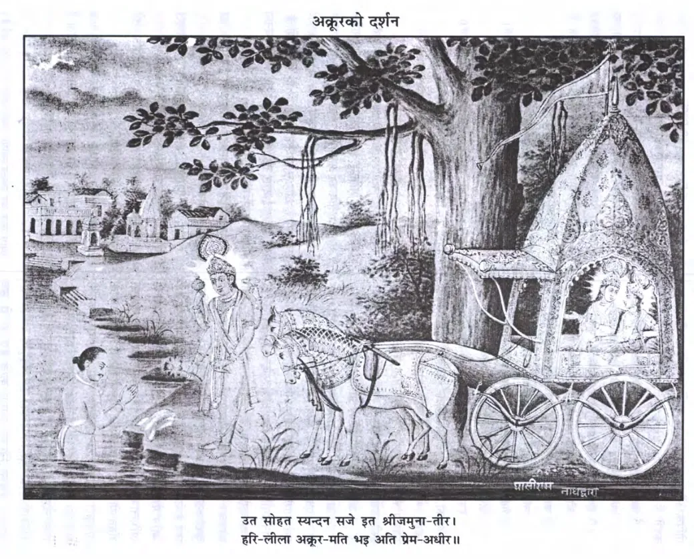
जबतक हृदयमें भोग या मोक्षकी स्पृहा रहती है, तबतक यथार्थ भक्ति नहीं प्राप्त होती। इस कथनसे कोई यह न समझे कि भगवान्से किसी प्रकारसे कुछ चाहना पाप या दोष है। मैं ऐसा नहीं कहता। भगवान् तो अपने सर्वस्व हैं, उनसे कुछ भी माँगना या चाह करना दोषकी बात नहीं है, पर न चाहना सर्वोत्तम है। भगवान्से मोक्ष माँगनेवाले भक्त तो सर्वथा वन्दनीय हैं। परन्तु बात यह है कि—
यदि भवति मुकुन्दभक्तिरानन्दसान्द्रा
विलुठति चरणाग्रे मोक्षसाम्राज्यलक्ष्मीः।
जिस भक्तकी श्रीश्यामसुन्दरके चरणोंमें परमानन्दरूपा भक्ति है, मोक्षसाम्राज्य-श्री तो उसके चरणोंमें लोटती रहती है।* हैतुकी भक्तिसे भी अहैतुकी भक्ति हो जाती है। गोसाईंजी महाराजने कहा है—
जग जाँचिय कोउ न, जाँचिय जौ
जिय जाँचिय जानकि-जानहि रे।
जेहि जाँचत जाचकता जरि जाइ
जो जारति जोर जहानहि रे॥
गति देखु बिचारि बिभीषनकी,
अरु आनु हिये हनुमानहि रे।
तुलसी भजु दारिद-दोष-दवानल,
संकट-कोटि-कृपानहि रे॥
* जो भक्त भगवत्-प्रेममें तल्लीन हो जाता है, अपना सर्वस्व, लोक-परलोक, इच्छा-वासना, कर्म-धर्म सभी कुछ प्रियतम परमात्माके चरणोंमें न्योछावर कर उसकी लीलाका यन्त्र, उसका अनुगत सेवक बन जाता है, उसके सारे बन्धन टूट जाते हैं अतएव उसका मोक्ष तो स्वयंसिद्ध है। उसके एक बन्धन अवश्य रहता है, वह है मोक्षाधार परमात्माका प्रेम-बन्धन; उसको वह छोड़ना चाहता नहीं। -सम्पादक,
अतएव किसी प्रकारकी भक्ति भी उपेक्षा तथा निन्दाके योग्य नहीं, प्रत्युत सभी वन्दनीय हैं। भक्ति उत्पन्न होनेका क्रम शास्त्रमें इस प्रकार बतलाया गया है—
आदौ श्रद्धा ततः साधुसंगोऽथ भजनक्रिया।
ततोऽनर्थनिवृत्तिः स्यात्ततो निष्ठा रुचिस्ततः।
अथासक्तिस्ततो भावस्ततः प्रेमाभ्युदञ्चति॥
प्रथम श्रद्धा, फिर सत्संग, तदनन्तर भजन, भजनसे दोषोंकी निवृत्ति, पश्चात् निष्ठा अर्थात् चित्तकी एकाग्रता, ध्यानादि, अनन्तर भगवान्के नामरूप-लीलामें रुचि, फिर प्रीति, तत्पश्चात् भाव और इसके अनन्तर प्रेमका उदय होता है। प्रेमी भक्तजनोंने भक्तिके विविध भेद बतलाये हैं और उसके अनेक भेद अङ्ग, उपाङ्गरूपमें, भाव, विभाव, अनुभाव, स्थायीभाव, सञ्चारीभाव, उद्दीपन, आलम्बन इत्यादि अनेक प्रकार हैं। विस्तार-भयसे उन सबका स्पष्टीकरण नहीं किया जाता।
साधनभक्ति करते-करते जबतक हृदयमें दिव्य प्रेमरसकी उत्पत्ति न हो तबतक वह साधन विशेष उच्च कोटिका नहीं समझा जाता। प्रेम-रस ही साधन-भक्तिका फल है, क्योंकि प्रेमसे ही प्रियतमकी प्राप्ति होती है।
कृष्णभक्तिरसभावितामतिः
क्रीयतां यदि कुतोऽपि लभ्यते।
तस्य मूल्यमपि लौल्यमेकलं
जन्मकोटिसुकृतैर्न लभ्यते॥
श्रीकृष्ण-भक्तिसे सनी हई बुद्धि कहीं मिल जाय तो उसे तुरन्त खरीद ही लेना चाहिये। ऐसी मतिका मूल्य केवल श्रीनन्दनन्दनके पानेकी तीव्र लालसा ही है, इस लालसाको छोड़कर करोड़ों जन्मोंके पुण्यसे भी वह नहीं मिल सकती।
इस कृष्ण-प्रेम-रसकी अनुभूति हो जानेपर यह जीव संसारमें बर्तता हुआ भी विषय-रसमें आसक्त नहीं होता। वह श्रीकृष्ण-प्रेममें विभोर हुआ ही सब कुछ करता है।
नारायण जाको हियो बिंध्यो स्याम-दृग बान।
जगके भावें जीवतो है वह मृतक समान॥
ऐसे भगवत्प्रसाद-प्राप्त कृष्ण-प्रेमी भक्तका विषयव्यवहार भी आसक्तिशून्य हुआ करता है। गीतामें कहा गया है—
रागद्वेषवियुक्तैस्तु विषयानिन्द्रियैश्चरन्।
आत्मवश्यैर्विधेयात्मा प्रसादमधिगच्छति॥
अन्तःकरण वशमें किया हुआ पुरुष, राग-द्वेष-रहित, वशमें की हुई इन्द्रियोंद्वारा विषयोंको भोगता हुआ भी भगवत्कृपारूप प्रसादको प्राप्त करता है।
विषयोंका सेवन करते-करते जैसे उनमें मनुष्यकी रति उत्पन्न हो जाती है—'ध्यायतो विषयान्पुंसः संगस्तेषूपजायते' और उसे रसास्वाद आने लगता है, जिससे वह उन्हींमें अपने आपको खो देता है, वैसे ही भक्तिके पुजारीको साधन-भक्ति करते-करते जब उसमें रसास्वाद आने लगता है, तब वह भी विषय-रससे विलक्षण एक अननुभूतपूर्व आनन्दका अनुभव करता है, और अन्तमें उसमें अपने आपको सर्वथा विलीन कर देता है। भक्ति-रस ही साक्षात् प्रेम या भगवान्का स्वरूप है, इसके उदयसे श्यामसुन्दरमें अकैतव प्रेम हो जाता है।
उपर्युक्त भक्ति-रसको भक्तोंने पाँच भेदोंमें विभक्त किया है—शान्त, दास्य, सख्य, वात्सल्य और माधुर्य। ये सभी रस विलक्षण और अद्भुत हैं। वास्तवमें किसी भी रसका वर्णन लेखनी या वाणी नहीं कर सकती। भगवत्कृपासे भगवत्-जन उनका अनुभव ही करते हैं। मेरे-जैसे मनुष्यद्वारा ऐसे भक्ति-रसके वर्णनका प्रयास तो बालकके चन्द्रस्पर्शकी चेष्टावत हास्यास्पद ही है, परन्तु यह प्रयत्न केवल चित्तविनोदार्थ ही है, अतएव पाठकगण इस धृष्टताको क्षमा करेंगे।
शान्त-रस
यो मां पश्यति सर्वत्र सर्वं च मयि पश्यति।
तस्याहं न प्रणश्यामि स च मे न प्रणश्यति॥
भगवान् श्रीकृष्ण कहते हैं जो मुझको सर्वत्र देखता है, और सब जगत्को मुझमें देखता है, उसके लिये मैं कभी अदृश्य नहीं होता और वह भक्त मुझसे कभी अदृश्य नहीं होता। अर्थात् मैं सदा उस भक्तको देखता हूँ, और वह सदा मुझे देखता रहता है।
साधन करते-करते साधक अहंता-ममताको विनष्ट कर सर्वत्र केवल एक परमात्माकी सत्ताका ही अनुभव करता है। उसकी समस्त भोग-वासनाएँ भलीभाँति शान्त हो जाती हैं। जब प्रबल वायुके कारण नदियोंमें भयङ्कर तरंगें उठने लगती हैं, तब उनके स्वरूपको अशान्त कहा जाता है। और जब वायुके न रहनेसे लहरें स्थिर हो जाती हैं, तब उनके स्वरूपको शान्त कहते हैं। वैसे ही इस शान्तरसमें भोग-वासनारूप वायुके नाश हो जानेके कारण प्रमथनशील चञ्चल इन्द्रियोंकी दुर्दमनीय वृत्तियोंकी तरंगें निवृत्त होकर प्रशान्त अन्तःकरण शान्त हो जाता है और वह केवल एक आनन्दकन्द वृन्दावनविहारीके शान्तस्वरूपमें मग्न रहता है। इसी स्थितिमें भक्त अनन्त, अचल, परम, नित्य, अविकारी, अविनाशी, शाश्वत, शान्तरसको प्राप्त होता है। गीतामें कहा है—
सुखमात्यन्तिकं यत्तद् बुद्धिग्राह्यमतीन्द्रियम्।
वेत्ति यत्र न चैवायं स्थितश्चलति तत्त्वतः॥
यं लब्ध्वा चापरं लाभं मन्यते नाधिकं ततः।
यस्मिन्स्थितो न दुःखेन गुरुणापि विचाल्यते॥
इन्द्रियोंसे अतीत केवल शुद्ध हुई सूक्ष्म बुद्धिद्वारा ग्रहण करने योग्य जो अनन्त आनन्द है, उसको जिस अवस्थामें अनुभव करता है और जिस अवस्थामें स्थित हुआ यह योगी भगवत्स्वरूपसे चलायमान नहीं होता। जिस शान्त परमानन्दरूप लाभको प्राप्त होकर उससे अधिक दूसरा कुछ भी लाभ नहीं मानता है और शान्त आनन्दमें स्थित हुआ बड़े भारी दुःखसे भी कभी चलायमान नहीं होता है। वास्तवमें यही शान्तरस है। भक्तिशास्त्रोंमें शान्तरसका स्वरूप दिखाया है—
वक्षमाणैर्विभावादैः शमिनां स्वाद्यतां गतः।
स्थायीशान्तरतिर्धीरैः शान्तभक्तिरसस्मृतः॥
वर्णित विभावादिद्वारा शमतासम्पन्न भक्तोंके हृदयमें जो स्थायी शान्तरसका आस्वादन होता है, उसे शान्तभक्ति-रस कहते हैं। जिसमें और जिसके द्वारा प्रेम विभावित हो अर्थात् आस्वाद्यरूपसे प्रकाशित हो, वह विभाव कहलाता है। इस विभावके दो भेद हैं—आलम्बन-विभाव और उद्दीपन-विभाव। जिसमें प्रीति विभावित हो, वह आलम्बन-विभाव है। यह आलम्बन-विभाव भी दो प्रकारका होता है—(१) विषयालम्बन और (२) आश्रयालम्बन।
प्रीति जिसके उद्देश्य हो उसका नाम 'विषयालम्बन' और प्रीति जिसके आधार हो वह 'आश्रयालम्बन' है। जैसे श्रीकृष्ण-प्रेममें श्रीकृष्ण भगवान् विषयालम्बन हैं और श्रीकृष्ण-भक्त-गण ही आश्रयालम्बन हैं। जिसके द्वारा प्रीति उद्दीपित हो, उसका नाम उद्दीपन-विभाव है, जैसे श्रीकृष्णके आभूषणादि, वस्त्रादि श्रीकृष्णका स्मरण कराते हैं। (नृत्यादि भी भावको उद्दीपित करते हैं, इसको अनुभाव कहा गया है)। भक्ति-रसमें वर्णित भाव सब स्थायी होते हैं। साधन-भक्तिमें भाव स्थायी नहीं माने जाते। शान्त भक्ति-रसके उपासक-सनकादि, कपिल-मुनि, दत्तात्रेय आदि माने जाते हैं। भीष्मपितामह भी शान्तरसके उपासक थे। श्रीकृष्ण प्रेमी होते हुए भी वे श्रीकृष्णकी अनन्त, अखण्ड, असीम, अविनाशी, शान्त-ब्रह्मरूपसे ही उपासना करते थे। भीष्मजीने महाभारतके युद्धमें अपने पैने बाणोंसे भगवान्का कवच तोड़ दिया था और उनके शरीरसे रुधिरकी धाराएँ बहा दी थीं, तो भी वे उन्हीं श्रीकृष्णके अनन्य भक्त हैं और उन्हींका ध्यान करते हैं—
तमिममहमजं शरीरभाजां
हृदिधिष्ठितमात्मकल्पितानाम्।
प्रतिदृशमिवनेकधाऽर्कमेकं
समधिगतोऽस्मि विधूतभेदमोहः॥
जन्म-कर्म-रहित और अपनेहीसे उत्पन्न किये प्राणियोंके हृदयमें जो एक होकर भी अनेक पात्र-पतित प्रतिविम्बद्वारा अनेकधा प्रतीत सूर्यकी भाँति अनेक रूप प्रतीत होता है, उस ईश्वरको भेद-दृष्टि और मोहसे शून्य चित्तद्वारा मैं प्राप्त हुआ हूँ।
ब्रह्मसंहितामें कहा है—
प्रेमाञ्जनच्छुरितभक्तिविलोचनेन
सन्तः सदैव हृदयेऽपि विलोकयन्ति।
यं श्यामसुन्दरमचिन्त्यगुणप्रकाशं
गोविन्दमादिपुरुषं तमहं भजामि॥
प्रेमरूपी अञ्जन जिन भक्तिरूपी नेत्रोंमें लगा हुआ है, उन नेत्रोंसे भक्तजन सदा अपने हृदयमें भगवान्के दर्शन करते हैं। उन अचिन्त्य गुणोंके प्रकाशक आदिपुरुष गोविन्द श्यामसुन्दरको मैं भजता हूँ।
जगत्में कोई दूसरोंपर प्रभुता करके आनन्दानुभव करता है तो कोई आश्रित रहकर ही आनन्दका अनुभव करता है; कोई पुत्रकी प्राप्तिसे पिता बनकर आनन्दका अनुभव करता है तो किसीको पुत्र बननेमें ही आनन्द आता है; कोई स्त्रीके प्राप्त होनेमें आनन्द मानता है तो कोई स्त्रीरूपमें ही आनन्दको प्राप्त है; कोई चञ्चल, अस्थिर, अशान्त रहनेमें अपनेको सुखी मानता है तो कोई शान्त, स्थिर रहनेमें ही सुखका अनुभव करता है; कोई सख्य-प्रेममें आनन्द मानता है तो कोई मित्रद्रोहमें ही प्रसन्न होता है, इस प्रकार जगत्में विभिन्न रुचि हैं।
रुचीनां वैचित्र्यात् ऋजुकुटिलनानापथजुषाम्।
रुचि-भेदसे ही जीव टेढ़े-सीधे मार्गोंका अवलम्बन करते हैं। मनुष्य भिन्न-भिन्न रसोंका अवलम्बन करके उसीमें डूबा हुआ है और उपर्युक्त सभी सांसारिक सम्बन्ध मायिक, नाशवान् तथा क्षणभङ्गुर हैं, परन्तु मनुष्य आसक्तिवश इन सम्बन्धरसोंको भगवान्से नहीं जोड़ता है, इसीसे आनन्दमयकी सृष्टि आनन्द-रूप होते हुए भी 'आनन्देन खलु इमानि भूतानि जायन्ते' 'आनन्दमयोऽभ्यासात्' इत्यादि वचनोंसे आनन्दसे उत्पन्न वस्तु आनन्दरूप ही होती है। निरानन्दमय कैसे होगी?) उसे दुःखरूप प्रतीत होने लगती है। परन्तु जिस समय वह भगवत्कृपासे या भगवद्भक्तोंकी कृपासे सावधान होकर भगवान्को अपना समझ लेता है और अपने सम्बन्धको पहचान लेता है, उसी समय वह दुःख और शोकसे रहित हो जाता है।
ब्रह्माजी कहते हैं—
तावद्रागादयः स्तेनास्तावत्कारागृहं गृहम्।
तावन्मोहोऽङ्घ्रिनिगडो यावत्कृष्ण न ते जनाः॥
हे कृष्ण! लोग जबतक पूर्णतया आपके जन नहीं हो जाते, तभीतक उनको रागादि चोरोंका डर बना रहता है, तभीतक उनके लिये घर कैदखाना होता है और तभीतक पैरोंमें मोहकी बेड़ी पड़ी रहती है।
दास्य-रस
पञ्चत्वं तनुरेतुभूतनिवहाः
स्वांशे विशन्तु स्फुटं
धातारं प्रणिपत्य हन्त शिरसा
तत्रापि याचे वरम्।
तद्वापीषु पयस्तदीयमुकुरे
ज्योतिस्तदीयांगन-
व्योम्निर्व्योम तदीयवर्त्मनि धरा
तत्तालवृन्तेऽनिलः॥
दास्य-रसका एक उपासक विधाताको नमस्कार करके उनसे प्रार्थना करता है कि 'हे प्रभो! इस शरीरके पाँचों तत्त्व अपने-अपने कारणमें लय तो होनेवाले हैं ही, आप कृपाकर इतना ही करा दीजिये, जिससे इसका जलीय भाग श्रीकृष्णके कूपमें, तेज भगवान्के दर्पणमें, आकाशका भाग उनके आंगनमें, पृथिवीका भाग उनके निवासस्थानमें और वायुका भाग प्रभुके पंखेसे होनेवाली वायुमें विलीन हो जाय। मतलब यह कि अलग-अलग होकर भी पाँचों तत्त्व प्रभुकी सेवामें ही लगे रहें।' कैसी चोखी चाह है?
दास्य-रसमें यह भाव रहता है कि नन्दनन्दन श्रीकृष्ण स्वामी हैं और मैं उनका दास हूँ। प्रभु-सेवा ही मेरा धर्म है। वह भक्त प्रभु-सेवाके लिये अपना सर्वस्व त्याग देता है। प्रभुके अनुकूल ही बर्तता है। सेवा वही है जो प्रभुके अनुकूल हो; जो अपने मनको प्रिय लगे और प्रभुके प्रतिकूल हो, वह तो सेवा नहीं है। जिसमें अपने मनके प्रतिकूल सेवा करनेमें अरुचि रहती है, उसको दास्य-रस नहीं कहा जाता। दास्य-रस वही है, जो प्रभुकी रुचिके अनुकूल हो, उसमें चाहे अपना मान हो या अपमान। सम्पद्-वृद्धि हो या उसका नाश, कुटुम्ब बढे या उसका क्षय हो जाय, शरीर पुष्ट हो या शीर्ण; दीर्घ आयु हो या प्राण-नाश—इन सब बातोंमेसे उसका न किसीमें राग है, न द्वेष है। वह तो केवल अपने प्रभुका रुख देखता है। वह रुख, प्रभुकी वह मरजी, सम्पत्ति या ऐश्वर्य बढ़ानेवाली हो या नाश करने वाली, उसे तो उसकी मरजीमें ही आनन्द और सुख है। प्रभुकी मरजी ही अनुकूल है, प्रभुकी मरजीके खिलाफ सभी प्रतिकूल हैं। यह केवल भावना या विवेक नहीं, वास्तवमें ऐसा ही ज्ञान होता है। एक दास प्रभुकी सेवामें अनेक स्वादु भोज्य पदार्थ भेजता है, प्रभु यदि भोजन करते हैं तो उसे आनन्द होता है, नहीं भोजन करते हैं तो चित्तमें क्लेश होता है पर दास्य-भक्ति-रसके उपासक, प्रभुकी रुचि भोजन न करनेकी जान लेते हैं तो उनके भोजन न करनेमें ही उन्हें प्रसन्नता होती है। एक दास प्रभुके लिये अनेक आभूषण और वस्त्र भेजता है, प्रभु उनको लेकर नदीमें फेंक देते हैं। दास्य-भक्ति-रसका तत्त्व न जाननेवाले लोग इससे दुखी हो सकते हैं, पर दास्य-भक्ति-रसके उपासकको इसमें आनन्द होगा, क्योंकि प्रभुकी यही मरजी है। वह तो प्रभुका दास है, किसी अन्यका नहीं, प्रभु जिसमें प्रसन्न हों, उसीमें वह प्रसन्न है। भक्ति-ग्रन्थोंमें दास्य-रसका वर्णन करते हुए कहा गया है—
दासास्तु प्रश्रितास्तस्य निदेशवशवर्तिनः।
विश्वस्ताः प्रभुता ज्ञानविनम्रधियश्च ते॥
'प्रभुके दास नीची दृष्टि रखनेवाले, आज्ञाकारी, विश्वासी, स्वामीकी महिमाके ज्ञानयुक्त और नम्र बुद्धिवाले होते हैं।' भगवान्के दास स्वामीके समीप सदैव नीची नजर किये रहते हैं, वे ऊँची दृष्टि ही नहीं करते। स्वामी जो कुछ भी आज्ञा करते हैं, उसके पालनमें किञ्चिन्मात्र भी पीछे नहीं हटते। स्वामी उन दासोंको जो कोई वस्तु या बात गुप्त रखनेको कहते हैं, वे उसकी विश्वस्ततासे रक्षा करते हैं और अपने प्रभुसे अधिक कुछ नहीं है ऐसा मानते हुए सदा-सर्वदा विनयी बने रहते हैं। दास्य-भक्ति-रसमें चार बातें बाधक हैं—सकाम-भाव, अभिमान, आलस्य और विषयासक्ति।
भक्तिशास्त्रोंमें दास्य-भक्तोंके चार भेद किये हैं—
अधिकृत, आश्रित, पारिषद और अनुग।
अधिकृत दास—जिनको नियमित कार्यका अधिकार दिया गया हो; जैसे ब्रह्मा, इन्द्र, यमादि।
आश्रित दास—कालियनाग, बहुलाश्व राजा, इक्ष्वाकु आदि।
पारिषद दास—उद्धव, दारुक, सात्यकि, श्रुतदेव आदि।
अनुग दास—सुचन्द, मण्डन, स्तम्ब, सुतम्ब, ये लोग व्रजमें श्यामसुन्दरकी सेवामें रहते थे और श्यामके सदृश ही वस्त्राभूषण धारण करते थे।
दास्य-भक्तिके पुजारी अपने आनन्दको सर्वथा त्यागकर सेवा-कार्यमें ही तत्पर रहना चाहते हैं, इसीमें उन्हें परमानन्द मिलता है। एक समय दारुक सारथी श्रीनन्दनन्दनको थके हुए देख रथमें ही भगवान्को हवा करने लगा और जब श्रीकृष्ण निद्रित हो गये, तब वह भगवान्की रूपमाधुरीको निरखता और पंखा झलता हुआ मन-ही-मन कहने लगा—
नैन चकोर मुखचन्दहू पै वारि डारौं,
वारि डारौं चित्तहि मनमोहन चितचोर पै।
प्राणहूको वारि डारों हँसन दसन लाल,
हेरन कुटिलता औ लोचनकी कौर पै॥
नेत्रोंद्वारा रूपमाधुरीका पान करते-करते जब आनन्दकी वृद्धिसे सेवामें किञ्चित् आलस्य आता देखा, तब वह हड़बड़ाकर अपने मनके आनन्द और सुखसे प्रार्थना करके कहने लगा—'हे आनन्द! मैं तुम्हें नहीं चाहता, तुम मेरे हृदयसे तुरन्त हट जाओ, तुम्हारे आनेसे प्रभुसेवामें विघ्न होनेकी सम्भावना है, इसलिये तुम त्याज्य हो।'
सख्य-रस
श्यामं हिरण्यपरिधिं नवमाल्यवर्ह-
धातुप्रवालनटवेशमनुव्रतांसे।
विन्यस्तहस्तमितरेण धुनानमब्जं
कर्णोत्पलालककपोलमुखाब्जहासम्॥
'श्यामशरीरपर सुवर्ण-पीत-पट ऐसा जान पड़ता है मानो श्याम-घन-घटामें इन्द्रके धनुषका मण्डल शोभायमान है। गलेमें वनमाला है, मोरके पंख, धातुओंके रंग और नव-पल्लवोंसे सुसज्जित विचित्र नटवर वेष देखने ही योग्य है। एक सखाके कन्धेपर दहिना हाथ रक्खे हुए बाएँ हाथसे आप कमलका फूल घुमा रहे हैं; कानोंमें कमल, कपोलपर काली-काली अलकें और प्रफुल्ल मुखकमलमें हँसीकी अपूर्व शोभा है।'
इस रसमें श्रीकृष्ण विषयालम्बन और उनके प्रिय सखागण आश्रयालम्बन हैं। इस रसके पुजारी श्रीकृष्णसे अपने मित्रत्वका सम्बन्ध मानते हैं। जहाँ मित्रता है, वहाँ ऊँच-नीचका व्यवहार नहीं होता। व्यवहारमें समता रहती है। श्रीकृष्णको कोई कुछ भी माने, या उनका कितना ही प्रभाव बतावे, सखा किसी मर्यादाके बन्धनमें नहीं रहता। मित्रत्वके सम्बन्धसे जब जैसे व्यवहारकी आवश्यकता होती है, वह वैसा ही करता है। अर्जुन श्रीकृष्णको आज्ञा देता है—
'सेनयोरुभयोर्मध्ये रथं स्थापय मेऽच्युत'
दोनों सेनाओंके बीच मेरा रथ खड़ा करो-और श्रीकृष्ण भी तुरन्त वैसा ही करते हैं। दोनों ओरसे संकोच-शून्य व्यवहार है। महाभारत-युद्धके समय अपने प्यारे सखाके घोड़ोंको यमुनाजीमें ले जाकर स्नान कराना श्रीकृष्णका दैनिक कार्य था। युद्धकालमें घोड़ोंकी लगाम और चाबुक हाथमें लेकर आप सूतस्थान (कोचबक्स) पर बैठ जाते थे, घोड़ोंकी टापोंसे उड़ती हुई धूलि श्यामसुन्दरके घुँघराले बालोंपर और मुखचन्द्रपर अपूर्व शोभा देने लगती थी।
बाल्यावस्थाके व्रज-सखाओंसे तो आपके कटु-मधुर वचन, मान-अपमान, मार-पीट, उच्छिष्ट भोजन करना-कराना, दाव देना-लेना आदि सभी कुछ स्वच्छन्दतासे चलता था। कहीं विषमताका नाम भी नहीं था। श्रीकृष्ण जब अपने बाल-सखाओंके साथ वनमें गैया चराने जाते थे, तब माता यशोदा तथा गोपिकाएँ सभी अपने-अपने लालोंके लिये वनमें खानेको कुछ भोजन साथ दे देती थीं। व्रज-बालक-गण गौवोंको किसी सुरम्य स्थानपर यमुनातटपर चरनेको छोड़ देते। भोजनके पदार्थोंको छींकोंमें रखकर गाछमें लटका देते और स्वयं अनेक प्रकारके खेल खेलने लगते। कोई वंशी बजाता, कोई सींग बजाता, कोई भ्रमरकी ज्यों गुनगुनाता, कोई कोयल मोर या बन्दरकी बोली बोलता, कोई पत्तियोंकी छाया पकड़ने दौड़ता, कोई हंसकी ज्यों चलता, कोई बगुलेकी ज्यों बैठता, कोई मोरकी ज्यों नाचता, कोई बन्दरकी भाँति कूदता और कोई मेंढककी ज्यों उछलता इत्यादि अनेक भाँतिकी क्रीड़ाएँ करते-करते जब भूख लगती, तब जहाँ छींके टॅगे रहते, वहाँ सब लौट जाते। यहाँ भी वही क्रीड़ा होती, एक दूसरेके छींके लोग पीछेसे उतार लेते। कोई किसीका छींका छिपा देता। इस प्रकार आपसमें हँसी-मजाक चलता। आखिर सब मिलकर किसी वृक्षकी सुन्दर छायामें बैठ अपने-अपने छींके खोलकर भगवान्के साथ भोजन करते। उनके बैठनेका शुकदेवजी वर्णन करते हैं—
कृष्णस्य विष्वक् पुरुराजिमण्डलै-
रभ्याननाः फुल्लदृशो व्रजार्भकाः।
सहोपविष्टा विपिने विरेजु-
श्छदा यथाम्भोरुहकर्णिकायाः॥
प्रफुल्ल नयन सब ग्वाल-बाल व्रजमें कृष्णको चारों ओरसे घेरकर उन्हींकी ओर मुख करके मण्डली बनाकर बैठे, उस समय कृष्ण तो कमल-कुसुमकी कर्णिका और गोपबालक सब पंखुड़ीके समान शोभायमान हुए।
अब यहाँकी लीलाको देखिये—सब ग्वालबालोंने अपने-अपने भोजनको, कोई पत्तोंपर, कोई फूलोंपर, कोई पत्थरपर सामने रख लिया और भोजन करने लगे। बीचमें बैठे श्रीकृष्ण भोजन करते हैं।
गोपबालक बढ़िया चीज खुद कैसे खायें? नन्दनन्दन तो उनके जीवन-प्राण हैं। कोई एक लड्डु लाया था, उसे मुखमें ले लिया। खाने लगा, पर ज्यों ही जीभको यह पता लगा कि यह तो बहुत ही स्वादिष्ट है, वहीं उसका खाना रुक गया। कृष्णको अपनी ओर खींचा और अपने मुँहसे निकालकर वह लड्डु तुरन्त उनके मुखमें दे दिया। क्या ही अनोखा भाव है? ऐसे ही सभी बालक अपनी-अपनी जूठन बड़े त्याग और प्रेमसे श्रीकृष्णको खिला रहे हैं। श्रीकृष्ण उनके अतिप्रिय थे। कभी-कभी गोपबालक भी श्रीकृष्णका भोजन उनके हाथसे छीनकर खा जाते थे। श्रीकृष्ण भगवान्को पवित्र अनुच्छिष्ट पदार्थोंका भोग लगानेवाले भक्त तो सदैव मिलते रहते हैं, पर ऐसे प्यारे भक्त दुर्लभ हैं, जो स्वादिष्ठ उच्छिष्ट पदार्थको निःसङ्कोच अर्पण करें। यह सख्य-रसास्वाद वैकुण्ठमें भी दुर्लभ है। इस रसका पान कर केवल गोपसखा ही सुखी नहीं होते थे, स्वयं ठाकुर भी इसी दुर्लभ-रसके लिये गोकुलमें पधारे थे।
खेलनेमें भी वही खुला खाता था, कहीं संकोचका नाम नहीं। दाव देने-लेनेमें, मार-पीटमें, कृष्णका कुछ भी मुलाहिजा नहीं। नटखट कृष्णने कहाँ कुछ गड़बड़ की तो तुरन्त सब बालकोंने मिलकर उसे खेलसे अलग कर देनेका प्रस्ताव पास किया। जैसा प्रस्ताव, वैसा ही काम भी। चलो निकलो यहाँसे! श्यामसुन्दर ढीले पड़े और लगे खुशामद करने। एक दिन ऐसा ही हुआ। सखाओंने वह फटकार बतायी कि वैकुण्ठमें बैठकर यमराजको डरानेवाले ब्रह्मकी सारी ताकत गुम हो गयी। लगे गिड़गिड़ाकर क्षमा माँगने। क्योंकि साथ खेले बिना इनसे भी तो रहा नहीं जाता था।
खेलनमें को काको गुसैया।
हरि हारे जीते सुदामा
वरवश ही कत करत रुसैयाँ॥
जाति पाँति हमते बड़ नाहीं
ना हम बसत तुम्हारी छैयाँ।
अति अधिकार जनावत ताते
जाते अधिक तुम्हारे गैयाँ॥
रूठ करे तासो को खेलै
हाहा खात परत तब पैयाँ।
सूरदास प्रभु खेल्यो ही चाहें
दाँव दियो कर नन्द ढुहैयाँ॥
'क्या हुआ जो हजार दो हजार गौएँ ज्यादा हैं, खेलना है तो ईमानदारीसे खेलो। नहीं तो दूर होओ हमारे दलसे अभी! यह रूठना हमें नहीं सुहाता!
सच बात तो यह है, श्रीकृष्ण इन फटकारोंको (जो वैदिक स्तुतिसे भी कहीं अधिक प्रिय है) सुननेके लिये ही ऐसी चालें चला करते थे। खुशामदकी स्तुतियाँ और यशोगान करनेवाले भक्त तो सदा ही मिलते रहते हैं, फटकार बतानेवाले भक्त दुर्लभ हैं!
मित्रोंकी डाँट सुने कई दिन हो गये, मनमोहनकी इच्छा हुई कि आज मित्रोंके प्रेममरे वाग्बाण सुनने हैं। आपने कहा, 'भैया! आज सारी गायोंको सब एक ही साथ मिलकर चरावेंगे। अलग-अलग करनेसे ठीक सम्हाल नहीं होती। आज सब मिलकर ही सम्हाल रक्खो।' सबने कहा, ठीक है! ऐसा ही हुआ। थोड़ी ही देरमें इधर-उधर ताक कर श्याम खिसके और जाकर पेड़की शीतल छायामें सो गये। गोपबालकोंने सोचा, 'कुछ थक गया होगा, अभी सोकर उठेगा तो काम करेगा।' श्रीकृष्णके मनकी बात नहीं बनी। इससे आप उठे और सखाओंसे बिना कुछ कहे-सुने ही एक सुहावने कदम्बपर चढ़कर लगे वंशी बजाने। ग्वालबालकोंने यह देखकर परस्पर कहा, यह तो बड़ा शरारती है। अपनी गायें हमें सम्हलाकर खुद पहले तो सो रहा और अब आनन्दसे कदम्बपर चढ़कर वंशी बजाता है। गौवोंके पीछे धूपमें इधर-उधर दौड़ना तो हमारे जिम्मे और सुखसे चैनकी वंशी बजाना इसके! कैसा चतुर-चूड़ामणि है? इसीलिये इसने आज सब गायोंको शामिल करवाया था। चलो, अलग करो इसकी गायोंको, बड़ा है तो अपने घरमें है। सखा खीझ गये और बोले—
न्यारी करो हरि आपनी गैयाँ।
नाहिंन बनत लाल, हम तुमसो
कहा भयो दस गैयाँ अधिकैयाँ॥
ना हम चाकर नन्द-बबाके
ना तुम हमरे नाथ गुसैयाँ।
आपन रहत नींदको मातो
हम चारत तेरी बन बन गैयाँ॥
कबहूँ जाय कदँब चढ़ि बैठे
हम गैयन सँग लगत पठैयाँ।
मानी हार सूरके प्रभुने
अब नहिं जाउँ मोहि नँदकी दुहैयाँ॥
इससे यह नहीं समझना चाहिये कि श्रीकृष्णके ये बालसखा श्यामसुन्दरको केवल फटकार ही बताते थे, वे उन्हें प्राणोंसे बढ़कर प्यार भी करते थे। श्रीकृष्णकी तनिक-सी भी उदासी उनके मनको असह्य हो उठती थी। वे उन्हें जरा-सी भी तकलीफमें नहीं देखना चाहते थे। भगवान्ने जब गोवर्धन-पर्वतको हाथपर उठा लिया, तब इन सरल बाल-सखाओंने भी अपनी-अपनी लकुटियोंका सहारा लगाकर उन्हें सहायता दी। अन्तमें ये उनसे कहने लगे—
उन्निद्रस्य ययुस्तवात्र विरतिं
सप्तक्षपास्तिष्ठतो
हन्त श्रान्त इवासि निक्षिप सखे
श्रीदामपाणौ गिरिः।
आधिर्विध्यति नस्त्वमर्पय करे
किं वा क्षणं दक्षिणे
दोष्णस्ते करवाम काममधुना
सव्यस्य संवाहनम्॥
हे श्यामसुन्दर! तूने बिना ही सोये सात रातें बिता दी, तुझे बड़ा कष्ट हो रहा होगा, अब यह पहाड़ श्रीदामको दे दे, वह उठा लेगा। तेरा कष्ट देखकर हम लोगोंको बड़ा कष्ट हो रहा है। यदि तू हमारी यह बात नहीं मानता तो, कम-से-कम पहाड़को बायें हाथसे दाहिनेपर तो ले ले। इतनेमें हम तेरा बायाँ हाथ मल देंगे, जिससे तेरी पीड़ा तो मिट जायगी। बलिहारी!
भक्तिग्रन्थोंमें श्रीकृष्णके सखा चार प्रकारके बतलाये गये हैं—
१ सुहृद्—जो श्रीकृष्णसे उम्रमें बड़े थे और श्रीकृष्णकी सम्हाल रक्खा करते थे, यथा—सुभद्र, बलभद्र, मण्डलीभद्र, गोमट, इन्द्रभट आदि।
२ सखा—जो श्रीकृष्णसे उम्रमें छोटे थे, जैसे-विशाल, देवप्रस्थ, वृषभ, ओजस्वी आदि।
३ प्रियसखा—जो श्रीकृष्णके समानवयके थे, जैसे श्रीदाम, सुदाम, दाम, वसुदाम, अंशु, भद्रसेन आदि।
४ प्रियनर्मसखा—जो विशेष भावपूर्ण और रहस्यकी लीलाओंमें श्रीकृष्णके साथ रहते थे, यथा सुबल, अर्जुन, बसन्त, उज्ज्वल आदि।
वात्सल्य-रस
नौमीड्य तेऽभ्रवपुषे तडिदम्बराय
गुञ्जावतंसपरिपिच्छलसम्मुखाय।
वन्यस्रजे कवलवेत्रविषाणवेणु
लक्ष्मश्रिये मृदुपदे पशुपांगजाय॥
हे स्तुतिके योग्य! आपको प्रणाम करके स्तुति करता हूँ। आपके नीलनीरद श्याम शरीरमें पीतपट बिजलीके समान शोभा पा रहा है, घुँघचीके गहने कानोंमें और मोरपुच्छका मुकुट मस्तकपर शोभा दे रहा है, गलेमें वनमाला है, भोजनकी सामग्रीका कौर, बेंत, सींग और मुरली आदि हाथमें लिये हुए हैं, हे गोपनन्दन! आपके चरणसरोज बड़े ही सुकुमार हैं।
वात्सल्य रसमें भगवान्की ठीक बालक समझकर ही उपासना की जाती है। इस रसमें विभूति और ऐश्वर्यका ज्ञान नहीं रहता, यहाँ तो जैसे माता-पिता अपने छोटे बच्चोंको जिस स्नेहसे पालते और उसका सर्वप्रकार हितचिन्तन करते हैं, वही भाव रहता है। हमारे लालको कहीं कष्ट तो नहीं हो गया, बच्चा कहीं भूखा तो नहीं है, उसके लिये कौन-कौन-से खिलौने मँगवाने हैं। बस, यही चिन्ता रहती है। घरका सारा काम-काज छोड़कर माता इसी काममें प्रधानतासे लगी रहती है और इसीमें उसे परम सुख मिलता है। श्यामसुन्दरके वात्सल्यरसके उपासकोंमें माता यशोदा, रोहिणी, देवकी, नन्दबाबा, वसुदेवजी आदि थे। माता यशोदाको तो सबेरेसे लेकर रातको सोनेतक अपने प्यारे ललाके नाना प्रकारके कामसे कभी छुट्टी ही नहीं मिलती थी। सवेरा होते ही माता जगाने लगती—
जागो बंशीवारे ललना जागो मोरे प्यारे।
रजनी बीती भोर भयो है घर घर खुले किवाँरे॥
कृष्णललाके उठनेपर माता उनके आँख-मुँह धोकर अपने बहुमूल्य आँचलसे पोछती है, नये कपड़े पहना कर दूध पिलाती है, गोदमें लिये मोदभरी इधर-उधर घूमती है, कभी लालको माखन-रोटी देकर आँगनमें बैठा देती है। कौआ आता है, रोटी छीनकर ले जाता है। ललाजी रोते हैं, कागके पीछे दौड़ते हैं। आँगनमें बिखरी माखन-रोटीकी जूँठन कौए, मोर और बन्दर ले जाते हैं, श्रीकृष्ण रोटी बगलमें छिपाते हैं, पर बन्दर हाथसे छीन भागते हैं, श्यामसुन्दर पीछे दौड़ते हैं, बन्दर घुड़की देता है तो रोने लगते हैं, कभी-कभी बन्दरोंका-सा मुँह बनाकर बदलेमें आप भी घुड़की देते हैं। माता देखकर दौड़ती है। प्रसन्न होती है। एक दिन श्रीकृष्ण खेलमें रम गये, खानेतककी सुधि न रही, सारा शरीर धूलसे सन गया। माता दौड़कर गयी और कहने लगी—
कृष्ण कृष्णारविन्दाक्ष तात एहि स्तनं पिब।
अलं विहारैःक्षुत्क्षान्तः क्रीडाश्रान्तोऽसि पुत्रक॥
हे रामागच्छ ताताशु सानुजः कुलनन्दन।
प्रातरेव कृताहारस्तद्भवान् भोक्तुमर्हति॥
प्रतीक्षते त्वां दाशार्ह भोक्षमाणो व्रजाधिपः।
एह्यावयोः प्रियं धेहि स्वगृहान्यात बालकाः॥
धूलिधूसरितांगस्त्वं पुत्र मज्जनमावह।
जन्मर्क्षमद्य भवतो विप्रेभ्यो देहि गाः शुचिः॥
पश्य पश्य वयस्यांस्ते मातृमृष्टान् स्वलंकृतान्।
तं च स्नातः कृताहारो विहरस्व स्वलंकृतः॥
'हे कृष्ण, हे मेरे प्राणधन, आ, दूध तो पी ले, बहुत खेल चुका, अब बेटा, भूख लगी होगी, खेलते-खेलते थक गया होगा। लाल बलराम, अपने छोटे भाईको साथ लेकर जल्दी चला आ, तुम दोनोंने बहुत सवेरे कलेवा किया था, अब तो भोजनका समय है। आओ, दोनों भोजन कर लो। व्रजनाथ (श्रीनन्दजी) रसोईमें बैठे तुम्हारी बाट देख रहे हैं। आओ, हमें प्रसन्न करो, बड़ी अबेर हो गयी है, तुम्हारे साथी बच्चोंको भी अपने-अपने घर जाने दो। मेरे चाँद! तेरा शरीर धूलसे भर गया है, आकर नहा ले, आज तेरा जन्मोत्सव है, नहा-धोकर ब्राह्मणोंको गो-दान दे। देख तेरे ये कितने ही साथी कैसे अच्छे लगते हैं, इनकी माताओंने इन्हें नहला-धुलाकर अच्छे-अच्छे गहने-कपड़े पहनाये हैं, तू भी स्नान करके भोजन कर ले और अच्छे-अच्छे कपड़े-गहने पहनकर फिर यहाँ आकर खेल। खेलमें रमे हुए ब्रह्मादिवन्दित श्याम जब नहीं उठे तो माता हाथ पकड़कर उन्हें ले गयी।
माता यशोदा अपने श्यामललाको आँगनमें बैठाकर दूसरे काममें लग गयी थी, इतनेमें ही असुर तृणावर्त आँधीके रूपमें आकर उन्हें उठा ले गया। फिर जब भगवान्के द्वारा मारा जाकर नीचे गिरा तो श्रीकृष्ण उसके बदनपर खेलने लगे। गोपियोंने दौड़कर मूर्छित यशोदाको जगाकर कहा कि तुम्हारे पूर्व पुण्यसे श्यामसुन्दर सकुशल हैं। यशोदा दौड़ी और पुत्रको गोदमें उठाकर कहने लगी मुझे धिक्कार है जो मैं अपने लालका भार भी न सह सकी और इसे गोदसे उतारकर नीचे बैठा दिया। उस माताको धिक्कार है जो बच्चेका भार न सह सके—
नवनीतमिवातिकोमलो व्यथते
यो बत मातुरङ्कतः।
स कथं खरपांशुशर्करा
तृणवर्षं सहते स्म मे सुतः॥
मेरा लाल तो नवनीतसे भी अधिक कोमल है, इसको मेरी स्नेहभरी गोदमें भी पीड़ा हुआ करती है, हाय! इसने प्रचण्ड धूल-कङ्कड़ और तृणोंकी वर्षाको कैसे सहा होगा?
एक दिन माताने श्रीकृष्णको ऊखलसे बाँधना चाहा, रस्सी दो अङ्गुल छोटी होती गयी, आखिर माताको थकी समझकर भगवान् आप ही बँध गये—
जिन बाँध्यो सुर असुर नाग नर
प्रबल कर्मकी डोरी।
सोइ अविच्छिन्न ब्रह्म जसुमति हठि
बाँध्यो सकत न छोरी॥
इसी मधुर अवस्थाको दिखलाती हुई भावुक गोपबाला अनन्त ब्रह्मको वेदोंमें खोजनेवाले ब्रह्मोपासकोंके प्रति कहती है—
परमिममुपदेशमाद्रियध्वं
निगमवनेषु नितान्तखेदखिन्नाः।
विचतुतभवनेषु वल्लवीना-
मुपनिषदर्थमुलूखले निबद्धम्॥
'वेदोंमें ब्रह्मको खोजते-खोजते उन्हें न पाकर दुखी हुए ब्रह्मप्रेमी ऋषियो! इधर सुनो, हम बतावें तुम्हारे ब्रह्मको; यदि तुम वास्तवमें ब्रह्मका साक्षात् दर्शन चाहते हो तो उस गोपीके घरपर जाकर देखो, जहाँ वह उपनिषद्का तत्त्व ब्रह्म ऊखलमें बँधा बैठा है।'
उस वात्सल्य-रसकी महिमाका कौन वर्णन कर सकता है, जिसको पान करनेके लिये स्वयं त्रिभुवनपतिको गोपकुलमें आकर ऐसी लीला करनी पड़ी!
माधुर्य रस
अधरं मधुरं वदनं मधुरं
नयनं मधुरं हसितं मधुरम्।
हृदयं मधुरं गमनं मधुरं
मधुराधिपतेरखिलं मधुरम्॥
वचनं मधुरं चरितं मधुरं
वसनं मधुरं वलितं मधुरम्।
चलितं मधुरं भ्रमितं मधुरं
मधुराधिपतेरखिलं मधुरम्॥
श्रीश्यामसुन्दरके सब अङ्ग, सब वस्तु, सब चरित्र और सारे व्यवहार ही मधुर हैं। इस रसमें रूप-माधुर्य, वेणु-माधुर्य, लीला-माधुर्य और प्रेम-माधुर्यके आधारभूत श्रीकृष्ण ही एकमात्र विषयालम्बन हैं और व्रजाङ्गनाएँ आश्रयालम्बन हैं।
इसमें वंशीध्वनि, वसन्तऋतु, कोयलका स्वर, नवजलधर और केकीकण्ठ इत्यादि उद्दीपन विभाव हैं; और कटाक्ष, हास्य, नृत्य आदि अनुभाव हैं; इस रसके अन्यान्य भी अनेक भाव हैं। श्रीमती राधिका और अन्य कतिपय गोपिकाएँ इस रसकी उपासिका मानी जाती हैं। इस रसमें श्यामसुन्दरसे क्या सम्बन्ध है, इस बातका निर्णय होना कठिन है। कोई-कोई इसे कान्ताभाव या शृङ्गाररस भी कहते हैं। इस रसमें दास्य, सख्य, वात्सल्य आदि सभी भाव आते-जाते रहते हैं। इसमें जब श्रीमतीजी कृष्णकी सेवा करती हैं तब दास्यभाव-और जब श्रीकृष्ण राधिकाकी सेवा करते हैं तब सख्यभाव है। जैसे—
ब्रह्म मैं ढूँढ्यो पुरानन वेदन
भेद सुन्यो चित चौगुने चायन।
देख्यो सुन्यो न कहूँ कबहूँ वह
कैसो सुरूप औ कैसे सुभायन।
हेरत हेरत हारि फिरॺो
रसखानि बतायो न लोग-लुगायन।
देख्यो कहूँ वह कुंज कुटीरनमें
बैठो पलोटत राधिका-पायन॥
कभी-कभी श्रीमतीजी इसी चिन्तामें मग्न हो जाती हैं कि श्रीकृष्ण जब कुञ्जमें आते हैं तो उनके कोमल चरणकमलोंमें कङ्कर-पत्थर-काँटे चुभते होंगे। यहाँ वात्सल्यभाव आ जाता है। इस रसमें कभी श्रीमतीजी श्रीकृष्ण बनती हैं और कभी श्रीकृष्ण राधा बनते हैं। एक भक्त कहते हैं—
मोरपखा गरे गुंजकी माल,
किये नवभेष बड़ी छबि छाई।
पीतपटी दुपटी कटिमें
लपटी, लकुटी 'हठी मो मन भाई॥
छूटी लटैं डुलैं कुण्डल कान,
बजै मुरली धुनि मंद सुहाई।
कोटिन काम गुलाम भये,
जब कान ह्वै भानु लली बनि आई॥
इस रसमें श्रीराधाजी श्रीकृष्णनाम जपती हैं और वह श्रीकृष्ण-स्मरणमें ऐसी मग्न हो जाती हैं कि—
'श्याम-श्याम रटत प्यारी आपहि श्याम भई
पूँछत निज सखियनसों प्यारी कहाँ गई।'
उधर श्रीकृष्ण राधा-राधा रटते हैं—
नामसंकेतं कृतसंकेतं वादयते मृदु वेणुम्।
कभी श्रीकृष्ण मान करते हैं तो श्रीराधिकाजी मनाती हैं, और कभी श्रीराधिकाजी मान करती हैं तो उन्हें श्रीकृष्ण मनाते हैं।
इस रसमें कभी-कभी उन्मत्तकी-सी दशा हो जाती है और प्रेमकी इतनी गाढ़ता होती है कि प्रेमीके लिये सर्वस्वका त्याग हो जाता है। जैसे—
घर तजों बन तजों नागर-नगर तजों
वंशीवट-तट तजों काहूपै न लजिहौं।
देह तजों, गेह तजों, नेह कहो कैसे तजों,
आज राज काज सब ऐसे साज सजिहौं।
बावरो भयो है लोक बावरी कहत मोकौं
बावरी कहेते मैं काहू ना बरजिहौं।
कहैया सुनैया तजों, बाप और भैया तजौं,
दैया तजों मैया! पै कन्हैया नाहिं तजिहौं।
यह रस विलक्षण है, इसके विशेष लिखनेका अधिकार नहीं!
बोलो श्रीकृष्ण भगवान्की जय!
होली
(लेखक-श्रीदिलीपकुमार राय*)
खेलत आजु कन्हाई।
वृन्दावन व्रजघाट वाट रज
रञ्जित आजु बनाई॥
व्रज-बालक सब, हँसत करत रव,
पुरजन-प्रीति बढ़ाई।
साँवल खेलत, इत उत निरखत,
नाचत ता-तत-थाई॥
सखा-सखीगन, गावत वन्दन,
सन्तत ताल बजाई।
बाजत नूपुर, बाँसुरि सुमधुर,
गोपी-चित्त चुराई।
यमुना-तटपर, अरुण-किरण भर,
देत नीर उजलाई।
मन्द गन्धवह, बहत तान सह,
चित्त उचाट बढ़ाई॥
लाल फाग जल, भीजत अंचल,
व्रज-पथ लाल बनाई।
पुलकित सब जन, निरखत मोहन,
तन-मन-धन बिसराई॥
* श्रीयुत राय, बंगालके प्रसिद्ध कवि और नाटककार स्वर्गीय डी० एल० राय महोदयके सुपुत्र हैं, आप बंगलाके सम्मान्य कवि और प्रसिद्ध गायक हैं, जो कुछ समय पूर्व अमेरिका और यूरोपको अपने सङ्गीत-कलासे मुग्ध कर चुके हैं। इस समय आप पाण्डिचेरी श्रीअरविन्दाश्रममें साधन कर रहे हैं। आपने यह हिन्दीमें कविता लिखकर भेजी है।
भगवान् श्रीकृष्णके जन्म-कर्मोंकी अलौकिकता
(लेखक-श्रीभालचन्द्र रामचन्द्र पटवर्धन एम० ए०, एल-एल ०बी०)
भगवान् श्रीकृष्णका चरित्र अनेक विभिन्न दृष्टियोंसे देखा जाता है, परन्तु यहाँ उनके दिव्य जन्म और उनके दिव्य कर्मोंके सम्बन्धमें, जो उन्होंने अपने जीवनमें किये, संक्षेपमें कुछ लिखनेका विचार है।
भगवान् श्रीकृष्णको अपने सखा और भक्त अर्जुनको कर्म-तत्पर बनाकर युद्धमें प्रवृत्त करना था। समरभूमिमें सामने खड़े हुए आचार्य, गुरु आदि आप्तजनों और प्रेमियोंको मारकर राज्य प्राप्त करना श्रेयस्कर नहीं है, इस प्रकारके विचार सत्त्व-शील अर्जुनके मनमें उठे और वह किंकर्तव्यविमूढ़ होकर बैठ गया। उसे कोई रास्ता नहीं सूझता था। ऐसे अवसरपर भगवान् श्रीकृष्ण अर्जुनको धर्मका यह तत्त्व बतलाना चाहते थे कि कर्म अवश्य करना चाहिये। कर्मका महत्त्व कम नहीं है, कर्म करना कोई नीची बात नहीं है। इसके विपरीत कर्म न करना ही धर्मसे विपरीत है। आत्मोन्नतिके लिये और लोक-संग्रहके लिये कर्म करना आवश्यक है। इसके सिवा यदि कर्म-त्याग कोई करना भी चाहे तो वह हो नहीं सकता। शरीर-रक्षाके लिये कुछ-न-कुछ कर्म करना ही पड़ेगा। और फिर कर्म तुम्हीं अकेलेको तो करना पड़ नहीं रहा है। बड़े-बड़े पुरुष बराबर कर्म करते आ रहे हैं। यहाँतक कि मैं भी, जो जगत्का ईश्वर हूँ, जिसे स्वार्थदृष्टिसे कुछ भी करना-धरना नहीं है, लोक-संग्रहके लिये लोगोंके सामने उत्तम आदर्श रखनेके लिये कर्म किया करता हूँ। क्योंकि श्रेष्ठ जन जैसा कुछ करते हैं साधारण लोग उसीका अनुकरण करते हैं। मान लो, यदि मैं कर्म न करूँ, तुम भी न करो, अन्य बड़े-बड़े लोग न करें और हम सबकी देखा-देखी कोई न करे तो फिर यह संसार कैसे रहे? सब कुछ लयको प्राप्त न हो जाय? और फिर तुम्हारे कर्मसे डरनेका कारण भी क्या है? यही न कि कर्मका बन्धन लगेगा। सो कर्मबन्धनके नाशका उपाय कर्म-त्याग नहीं है, बल्कि उसका उपाय है कि कर्मके फलमें कोई आसक्ति न रक्खे, सारे कर्म परमेश्वरको अर्पण करके, समताकी बुद्धिसे कर्तव्य समझकर करे; क्योंकि कर्म स्वयं बन्धनकारक नहीं हैं, फलासक्ति ही बन्धनका कारण है।' इन सब बातोंके द्वारा भगवान्को उसे कर्मका महत्त्व समझाना था जिसे नानाप्रकारसे समझाते हुए उन्होंने अपने जन्म और कर्मकी चर्चा करते हुए कहा—
अजोऽपि सन्नव्ययात्मा भूतानामीश्वरोऽपि सन्।
प्रकृतिं स्वामधिष्ठाय संभवाम्यात्ममायया॥
(श्रीमद्भगवद्गीता ४। ६)
अर्थात् 'मैं अजन्मा, अविनाशी और सब भूतोंका ईश्वर होनेपर भी अपनी प्रकृतिमें अधिष्ठित होकर अपनी मायासे जन्म लिया करता हूँ।'
यों तो साधारण मनुष्य भी अपनी कर्मगतिके अनुसार जन्म-मृत्युके चक्रमें फँसा है; और जन्मके बाद स्वार्थ-बुद्धि तथा अज्ञान-वश होनेके कारण सांसारिक सुखोंकी प्राप्ति और दुःखोंके निवारणके लिये सदा कर्म करता है; पर भगवान्के जन्म-कर्म साधारण पुरुषके जन्म-कर्मसे बिलकुल भिन्न प्रकारके होते हैं। भगवान् साधारण मनुष्यकी भाँति जन्म-मृत्युके बन्धनमें नहीं हैं और न जन्म लेकर उन्हें अपने लिये किसी सांसारिक सुख-दुःखकी प्राप्ति और अप्राप्तिके लिये ही कुछ करने-धरनेकी ही ज़रूरत है। वह तो संसारके बढ़े हुए अधर्मका विनाश करके मानव-जातिकी उन्नतिके लिये आवश्यक धर्मकी स्थापना करनेके लिये और दुष्टोंका दलन करके सन्तोंका संरक्षण करनेके लिये जन्म ग्रहण करते हैं—
यदा यदा हि धर्मस्य ग्लानिर्भवति भारत।
अभ्युत्थानमधर्मस्य तदात्मानं सृजाम्यहम्॥
परित्राणाय साधूनां विनाशाय च दुष्कृताम्।
धर्मसंस्थापनार्थाय संभवामि युगे युगे।
(श्रीमद्भगवद्गीता ४। ७-८)
ऊपर बतलाये हुए कार्योंके लिये भगवान्का जन्म होता है अवश्य; पर जन्म होनेपर उनको अपने (मूल) स्वरूपकी विस्मृति नहीं होती। यों तो सारा संसार ही भगवान्का व्यक्त स्वरूप है और सारी सृष्टिकी रचना भगवान् ही अपनी मायासे करते हैं; पर साधारण जीवोंको अपने मूलस्वरूपका ज्ञान नहीं रहता, इसीसे वे अपने सब कर्म आसक्त बुद्धिसे करते हैं तथा सुख-दुःखकी लहरोंमें उछलते-डूबते ही उनका जीवन बीतता है। और उनका जीवन क्षुद्र स्वार्थसे भरा हुआ रहनेके कारण दूसरोंको उससे कुछ भी शिक्षा नहीं मिलती। पर अवतारी पुरुषोंके सबन्धमें ऐसी बात नहीं है। उनके जन्ममें तो पग-पगपर लोगोंको शिक्षा मिलती है; या यह कहना चाहिये कि सर्व-साधारणको शिक्षा देनेके लिये ही उनका जन्म होता है। इसीलिये उनका चरित्र दिव्य होता है।
भगवान् श्रीकृष्णके जन्मकी दिव्यताका दर्शन करनेके लिये उस समयकी परिस्थितिपर एक निगाह डालना बहुत ज़रूरी है। श्रीकृष्णका जन्म लगभग पाँच हजार वर्ष पूर्व शूरसेन नामक प्रान्तमें यमुनाके तटपर हुआ था। उस समय उस देशमें कंस राज्य करता था। उसने औरङ्गजेबकी तरह अपने बापको जेलमें बन्दकर राजगद्दीपर अधिकार कर लिया था, उसका शासन भी अत्यन्त क्रूरतापूर्ण था। कंसकी चचेरी बहन उसी प्रान्तके वसुदेव नामक एक जागीरदारको ब्याही थी। जब उसे यह बात मालूम हुई कि उसकी मृत्यु देवकीके ही आठवें सन्तानके द्वारा होगी तो उसने देवकी और वसुदेवको नजरबन्द कर दिया और ज्यों ही उसके कोई बच्चा पैदा होता, वह उसे मार डालता। इसी प्रकार एक-एक करके उसने देवकीके छः पुत्रोंका वध कर डाला। उसके बाद देवकीने आठवीं बार गर्भ धारण किया और गर्भकाल समाप्त होनेपर भाद्र कृष्ण ८ (दाक्षिणात्य पञ्चाङ्गके अनुसार श्रावण कृष्ण ८) को अर्धरात्रिके समय, जब कि घनघोर वर्षा हो रही थी और चारों ओर भयंकर अन्धकार छाया हुआ था, भगवान् श्रीकृष्णने बन्दीघरमें जन्म धारण किया। इस बारके गर्भपर कंसकी सबसे अधिक कालदृष्टि थी। जन्म होते ही माता-पिताको यह फिक्र पड़ी कि किस प्रकार उस आततायीसे बच्चेकी रक्षा हो। भगवान्की दयासे रास्ता सूझ गया, उसी घोर रात्रिमें किसी प्रकार नवजात शिशुको लेकर वसुदेवजी जेलके बाहर निकले और यमुना पार करके गोकुल-ग्राममें अपने सुहृद् नन्दगोपके घर पहुँचे, जहाँ उसी समय यशोदाके गर्भसे एक कन्याका जन्म हुआ था। वसुदेवने श्रीकृष्णको यशोदाके पास लिटा दिया और उनके बदलेमें वह उस कन्याको ले आये। उसके बाद कंसको ज्यों ही यह खबर मिली कि देवकीके लड़की पैदा हई है, वह बड़ी तत्परताके साथ वहाँ आया और इस कन्याको जमीनपर पटककर उसने मार डाला। श्रीकृष्णके जन्मकी दिव्यता उनके इस भयंकर परिस्थितिमें पैदा होनेसे ही मालूम पड़ जाती है। कोई साधारण जीव होता तो कभीका यमपुर सिधार गया होता, पर श्रीकृष्णने सब सङ्कटोंको पारकर अन्तमें क्रूर कंसको ही यमराजके घर भेज दिया।
श्रीकृष्णका जन्म तो भयंकर परिस्थितिमें हुआ ही था, पर उस समय सारे देशकी अवस्था भी बढ़ी भयावनी थी। कंसके अत्याचारोंसे प्रजा त्राहि-त्राहि कर रही थी। सभी इस शासनका अन्त चाहते थे पर विवश थे। चारों ओर उसका दर्प और आतंक छाया हुआ था। निराशाके अन्धकारका राज्य था। प्रजा उस अन्धकारमें ठोकरें खा रही थी और उससे बचनेके लिये किसी दिव्य ज्ञानके प्रकाशको ढूँढ रही थी। भगवान्ने उनकी पुकार सुन ली और शूरसेन-देशके क्षितिजपर, वह बाल-रविके समान अन्धकारको दूर करते हुए स्वयं प्रकट हो गये। सभी आशाभरी दृष्टिसे उन्हें देखने लगे!
भगवान् श्रीरामचन्द्रजीको अपनी प्रजाकी रक्षा अनार्योंसे करनी थी; पर श्रीकृष्णके प्रमुख शत्रु अनार्य नहीं थे—आर्य क्षत्रिय ही थे; किन्तु आसुरी सम्पत्तिसे भरपूर होनेके कारण न्याय-अन्यायका विवेक उनमें नहीं रह गया था। इन शत्रुओंमें कंस तथा जरासन्ध अग्रगण्य थे। कंस तो, उनके जन्मके पहलेसे ही उनका शत्रु बना बैठा था। उसने जन्मके पहले उत्पात किये, जन्मके बाद उत्पात किये—नन्द-घर पहुँच जानेके बाद श्रीकृष्ण तथा बलरामका वध करनेके लिये पूतना राक्षसी तथा चाणूर-मुष्टिक आदि मल्लोंको नियुक्त कर दिया। उन्हें गोकुलसे मथुरा बुलाया। और भी अनेक उपाय उन्हें मारनेके किये; पर होनी कुछ और ही थी; भगवान् बड़ी चतुराईके साथ उससे पेश आये और शेषमें सारे पायकोंके साथ उसका अन्त कर डाला। श्रीकृष्ण तो स्वयं भगवान् थे। उनकी तो बात ही क्या है? किसी भी शासनकालमें जब अन्याय और अत्याचारकी पराकाष्ठा हो जाती है, तब प्रजा उससे परित्राण पानेके लिये एकमात्र भगवान्को पुकारने लगती है और ऐसे समयमें, भगवान् न सही, कोई भी यदि उस निरंकुशताका अन्त करनेके लिये आगे बढ़कर आता है, तो प्रजाकी सहानुभूति और सहायता उसे मिलती है जिससे उसका आत्मविश्वास और बल बढ़ता है और फिर उसके आत्मिक और नैतिक तेजसे अत्याचारपूर्ण शासनकी जड़ हिल जाती है और वह सदाके लिये उखड़कर भूमिसात् हो जाता है। कंसका वध करके श्रीकृष्णने सारे देशकी श्रद्धा भक्ति और सहानुभूति प्राप्त की और अपने माता-पिताको बन्धन-मुक्त करके पुत्रत्वको सार्थक किया। इस कंस-वधकी लीलामें उनके अतुल धैर्य, साहस, बल, बुद्धिमत्ता और निःस्वार्थताका पता लगता है। भगवान्ने यह सब बिलकुल निस्स्वार्थ-बुद्धिसे किया। कंसको मारनेके बाद मथुराका राज्य उनके हाथमें आ चुका था; पर उस राजगद्दीपर वह नहीं बैठे। बैठते भी कैसे जब उनका कंसको मारनेका हेतु केवल दुष्टदलन ही था! इसीमें उनकी ईश्वरता थी।
जरासन्धकी लड़कियाँ कंसको ब्याही थीं। कंसके मारे जानेके बाद वे सब अपने पिताके घर गयीं और पिताको इसका बदला लेनेके लिये प्रोत्साहित किया। जरासन्ध एक बलशाली नरेश तो था ही, उसकी सेना भी बड़ी थी, उसने बार-बार मथुरापर चढ़ाई करना शुरू कर दिया। इससे मथुरा-निवासियोंको बड़ा कष्ट होने लगा। जरासन्ध-जैसे शक्तिशाली राजाको लौकिक रीतिसे युद्धमें परास्त करना उस समय सम्भव नहीं था; और मथुरावासियोंका बढ़ता हुआ कष्ट भी उनके लिये बर्दाश्त करना कठिन था, इसलिये वह मथुरा छोड़कर समुद्र-तटपर द्वारका नामक नया नगर बसाकर वहाँ रहने लगे। वह जानते थे कि जरासन्धसे मथुराकी जनताकी तो कुछ शत्रुता है ही नहीं, वह चढ़ाई करता है तो बस, मेरे ही लिये; अतएव वर्तमान परिस्थितिमें मथुरावासियोंको अपने लिये होनेवाले व्यर्थके कष्टसे मुक्त करनेका सरल उपाय यही है कि मैं मथुरा छोड़कर कहीं दूसरी जगह चला जाऊँ। एक बात ध्यान देनेकी है, श्रीकृष्ण मथुरा छोड़कर द्वारका जा बसे जरूर, पर दुष्टदलनका अपना कर्तव्य नहीं भूले। वह भीम और अर्जुनको लेकर स्वयं ही जरासन्धके यहाँ पहुँचे; उन्होंने वहाँ भीमके साथ उसका मल्लयुद्ध करवाया, जिसमें भीमने उसका प्राणान्त कर दिया। जरासन्धका वध हो चुकनेके बाद शिशुपाल, शाल्व आदि लोकपीड़कोंको मारनेकी ओर उनका ध्यान गया और वह काम भी समय पाकर पूरा हुआ।
श्रीकृष्णने बचपनसे लेकर बुढ़ापेतक बराबर उदारतापूर्वक लोकसंग्रहका कार्य किया। प्राप्त, स्वजन, स्नेही और सहायक बन्धुओंके साथ बड़े ही प्रेम और आनन्दसे रह कर धर्म और नीतिके अनुसार व्यवहार करते हुए अपने महान् व्यक्तित्व (Personality) से सभीको मुग्ध करते रहे।
युवावस्थाकी एक दिव्य घटना है। विदर्भ-देशके राजा भीष्मकने कुण्डिनपुरमें अपनी परम रूपवती और गुणोंकी खानि पुत्री रुक्मिणीके स्वयंवरका आयोजन किया। अनेक राजा उस स्वयंवरमें निमन्त्रित किये गये, पर श्रीकृष्णको निमन्त्रण नहीं मिला। इसका कारण यह था कि राजा भीष्मकका पुत्र रुक्मी जरासन्धके पक्षमें था इसलिये उसने श्रीकृष्णको बुलाना पसन्द नहीं किया, पर निश्चित समयपर श्रीकृष्ण स्वयं ही वहाँ जा उपस्थित हुए। श्रीकृष्णके आगमनके समाचारसे समस्त समवेत राजाओंमें खलबली मच गयी। भीष्मकको यह सलाह दी गयी कि समारम्भ-स्थानमें आनेके पूर्व ही श्रीकृष्णको आनेसे रोक देना चाहिये; पर भीष्मक इसके लिये राजी नहीं हुए, इससे शिशुपाल तथा शाल्व आदि नरपतिगण खिसियाकर अपने-अपने स्थानको लौट गये और स्वयंवर स्थगित हो गया। तदनन्तर जरासन्धके आग्रहसे यह निश्चय किया गया कि रुक्मिणी शिशुपालको ब्याह दी जायगी। पर यह निश्चय किया था भीष्मक, रुक्मी, जरासन्ध आदिने। स्वयं रुक्मिणीका इस सम्बन्धमें बिलकुल दूसरा ही निश्चय था। वह अपने हृदयमें भगवान् श्रीकृष्णको वरण कर चुकी थी। इधर कुण्डिनपुरमें उसका शिशुपालके साथ विवाह होनेकी तैयारी हो रही थी, उधर रुक्मिणीने गुप्तरूपसे श्रीकृष्णके पास एक पत्र भेजकर अपनी इच्छा उनपर प्रकट कर दी। आखिर, विवाहके ठीक अवसरपर श्रीकृष्ण वहाँ जा उपस्थित हुए और रुक्मिणीको लेकर द्वारकाकी ओर चलते बने। सब राजा सिर पटककर रह गये। इधर रुक्मिणी जैसी सुन्दरी सुशीला और पतिपरायणा पत्नीको पाकर श्रीकृष्णका गृहस्थाश्रम भी सुखकी खानि बन गया।
जिसप्रकार रुक्मिणी-हरणका प्रसंग एक औपन्यासिक घटनाके समान रोचक है उसी प्रकारका एक और अद्भुत प्रसंग है। वह यह कि सत्राजित्के पास एक स्यमन्तकमणि थी। मणि अति सुन्दर थी। श्रीकृष्णने एक बार उससे इस मणिको माँगा था, पर उसने वह उनको नहीं दी। उसके बाद होनहारकी बात, एक दिन सत्राजित्का भाई प्रसेन उस मणिको पहनकर जंगलमें शिकारको गया और वहाँपर एक सिंहने उसे मारकर खा डाला। सत्राजित्ने जब अपने भाईका पता न पाया तो श्रीकृष्णपर यह कलङ्क लगाया कि उन्हींने उस मणिके लोभसे कहीं प्रसेनको मरवा डाला है। इस घोर कलंकसे मुक्त होनेके लिये श्रीकृष्ण प्रसेनका तथा उस मणिका पता लगाने निकले। ढूँढ़ते-ढूँढ़ते वह जाम्बवन्तके यहाँ पहुँचे और वहाँ उन्हें मणि दिखलायी पड़ी। इक्कीस दिन तक घोर संग्राम करके उन्होंने उस मणिको प्राप्त किया, और उसे लाकर सत्राजित्को दिया। सत्राजित्ने प्रसन्न होकर अपनी कन्या सत्यभामाका श्रीकृष्णके साथ विवाह कर दिया और वह उसी मणिको दहेजमें देने लगा; पर श्रीकृष्णने उसे लेना स्वीकार नहीं किया। यह कितनी विचित्र बात है! उनकी जगह दूसरा होता तो वह क्या स्वतः प्रयत्न करके प्राप्त किये हुए ऐसे अमूल्य रत्नको दहेजमें लेनेसे इन्कार कर सकता था? पर श्रीकृष्णके सभी काम अलौकिक और लोकसंग्रहके लिये होते थे। वह स्वार्थपूर्तिका ध्यान न करके सदा सुन्दर आदर्श उपस्थित करनेका विचार सामने रखते थे।
कुछ समय बाद भगवान् श्रीकृष्णको यह समाचार मिला कि उनके परम आत्मीय पञ्च पाण्डव लाक्षागृहमें जलकर भस्म हो गये हैं। समाचार पाते ही उन लोगोंका अन्तिम संस्कार करनेके लिये वह वहाँ गये; परन्तु विदुरकी सूचनाके कारण पाण्डव बचकर छिप गये थे, जो आगे चलकर द्रौपदीके स्वयंवरमें पुनः प्रकट हुए। उसके बाद तो महाभारत-समरके अन्ततक भगवान् बराबर पाण्डवोंकी सहायतामें ही तत्पर रहे।
द्रौपदीके स्वयंवरके बाद जब पाण्डवोंको उनका राज्यभाग मिला तो उन्होंने राजसूय यज्ञका आयोजन किया। इस यज्ञकी सारी व्यवस्थाका भार श्रीकृष्णने अपने सिरपर ले लिया और उसे अच्छी तरहसे निभाया भी। यज्ञके अन्तमें यह प्रश्न उपस्थित हुआ कि सबसे पहले पूजा किसकी हो। पाण्डव चाहते थे कि यह मान श्रीकृष्णको दिया जाय; भीष्मपितामह भी इसी पक्षमें थे। उन्होंने भरी सभामें यह साफ कह दिया कि जो कोई श्रीकृष्णको यह सम्मान देनेके पक्षमें न हो उसे चाहिये कि वह उनके साथ संग्राम करके निबटारा कर ले। शिशुपाल और दुर्योधनादि इस व्यवस्थाके विरुद्ध थे; और शिशुपाल तो इस चैलेंजको सह ही न सका। वह 'तूने अपने मामा कंसको कपटसे मार डाला'—इस प्रकार श्रीकृष्णकी निन्दा करते हुए श्रीकृष्णके साथ युद्ध करनेको प्रस्तुत हो गया; पर जबतक उसने शस्त्र चलानेको हाथ बढ़ाया, तबतक श्रीकृष्णके चक्रने उसके सिरको धड़से अलग कर दिया।
इस प्रकार भगवान् श्रीकृष्णने उस यज्ञमें अचानक उत्पन्न हुए विघ्नका अन्त कर दिया, जिससे राजसूय-यज्ञ यथाविधि सम्पन्न हुआ; पर यहीं भावी कलहका बीज-वपन हो गया। पाण्डवोंका यह वैभव कौरव नहीं देख सके। उन्होंने पाण्डवोंका राज्य छीननेके लिये एक नया षड्यन्त्र रचा। महाराज युधिष्ठिरको जूआ खेलनेके लिये निमन्त्रित किया; और फिर छल-कपटसे जूआ खेलकर उसमें उनके सारे राज-पाट और धन-दौलतको जीत लिया। द्रौपदीको भी नहीं छोड़ा। रजोधर्म होनेके कारण अलग बैठी हुई द्रौपदी पकड़कर राजसभामें लायी गयी; दुष्ट दुःशासन भरी सभामें निर्लज्जतापूर्वक उसे नंगी करने लगा। उस अवसरपर द्रौपदीकी लाजको रखनेवाला सिवा भगवान् श्रीकृष्णके और कोई नहीं था। उसने आर्तस्वरसे भगवान्को पुकारा; भक्तवत्सल भगवान्ने उसकी प्रार्थना सुन ली, और वस्त्रके रूपमें प्रकट हो कर उसकी लाजको बचा लिया। अपने अनन्यभक्तकी सहायता किये बिना भगवान् कैसे रह सकते थे? जब अपना कोई नहीं रह जाता, सगे-सम्बन्धियोंका भी कोई सहारा नहीं रहता, तब दयाघन भगवान् प्रत्यक्ष पधारकर सहायक होते हैं और अपने भक्तको सदाके लिये निर्भय कर देते हैं। बस, सच्चे प्रेमसे पुकारनेभरकी देर है।
महाभारत-युद्धमें आपने अर्जुनके रथका सारथी बनना स्वीकार किया। रणांगणमें अपने आत्मीय जनोंको लड़नेके लिये उद्यत देख उसके मोहग्रस्त हो जानेपर गीतोपदेशके द्वारा उसको रास्ता दिखाया। और प्रारम्भसे अन्ततक अपने बुद्धि-बलसे पल-पलपर पाण्डवोंको न्यायान्याय और धर्माधर्मका तत्त्व समझाते हुए अन्तमें विजयश्री दिलाकर स्वयं द्वारका लौट गये। उधर वहाँ द्वारकामें यदुवंशियोंका बहुत बुरा हाल था। वे मदोन्मत्त होकर अधर्मकी ओर झुक गये थे; उनका रहना पृथिवीके लिये भार-सा हो गया और लोक-कल्याणकी दृष्टिसे उनका अन्त वान्छनीय हो गया। वही हुआ भी। वे मदिराके नशेमें आप ही आपसमें लड़-भिड़कर मर गये। यादव-कुलकी यह अवस्था देखकर श्रीकृष्णने गृहस्थाश्रमका त्यागकर वान प्रस्थ ग्रहण किया; और फिर कुछ ही दिनों बाद आपने स्वयं परमधामके लिये प्रयाण किया।
श्रीकृष्णके जन्मके समय भारतवर्षके आर्यलोग उन्नतिके शिखरपर पहुँच चुके थे; पर किसी भी राष्ट्रकी उन्नतावस्थामें ही उसके नाशका बीज अंकुरित होता है। शूरसेन-देशके नरेशोंकी महत्त्वाकांक्षा मर्यादाको पार करने लगी। वे मदोन्मत्त हो गये; मदोन्मत्तताके पीछे-पीछे अन्याय और अत्याचार चलते ही हैं और जहाँ अन्याय-अत्याचारका सूत्रपात हुआ, वहाँ फिर अधःपात निश्चित ही है। क्योंकि बल और पराक्रमने जहाँ अन्याय-अत्याचारका स्वरूप धारण किया, वहाँ भगवान् जो उस बल-पराक्रमके देनेवाले हैं, उसे छीन लेते हैं, क्योंकि वह वस्तुका सदुपयोग चाहते हैं-दुरुपयोग नहीं। बल-पराक्रमका सदुपयोग दीन-दुखी, असहाय पीड़ितोंके रक्षण करनेमें है, न कि भक्षण करनेमें। परोपकारमें है, न कि स्वार्थमें। इसीलिये जहाँ इसका उपयोग स्वार्थपूर्तिमें होता है, वहाँ यह स्वार्थ और स्वार्थी दोनोंको ले डूबता है; और उसके पास पहुँचता है जो स्वार्थपरताके मुकाबलेमें परमार्थका सहारा लेकर खड़ा होता है। भगवान् जन्म लेकर परमार्थके बलसे ही तो परमार्थविरोधी स्वार्थ और स्वार्थियोंका अन्त यानी दुष्टोंका दलन और साधुओंका संरक्षण करते है।
यत्र योगेश्वरः कृष्णो यत्र पार्थो धनुर्धरः।
तत्र श्रीर्विजयो भूतिर्ध्रुवा नीतिर्मतिर्मम॥
इस श्लोकका सीधा-सादा अर्थ यह है कि जहाँ योगेश्वर श्रीकृष्ण और धनुर्धर पार्थ हैं, वहीं श्री, विजय, ऐश्वर्य और अचल नीतिका निवास है और इस श्लोकका प्रत्येक व्यक्तिके व्यवहारके लिये यह विशेषार्थ है कि पराक्रमका प्रतीक धनुर्धर अर्जुन है तथा योगके प्रतीक सारथी भगवान् श्रीकृष्ण हैं। इसलिये जहाँ कार्य करनेकी शक्ति—पराक्रम और पराक्रमका सारथ्य कर्म-कुशलतारूप योग करता है वहाँ श्री, विजय, ऐश्वर्य और नीति निश्चित है। इसी प्रकारसे किया हुआ कर्म दिव्यकर्म होता है। भगवान् श्रीकृष्णका चरित्र ऐसे ही समस्त गुणोंसे परिपूर्ण और दिव्य है। इतना समय बीत जानेपर भी उनका तेज कुछ भी न घटकर क्रमशः बढ़ रहा है। जिन तत्त्वोंके आधारपर भगवान् श्रीकृष्णने अपने जीवनमें दिव्य कर्म किये, उन्हीं समस्त तत्त्वोंका अपने परमोच्च गीत-गानमें अर्जुनको उपदेश किया। उनकी गीताके तत्त्वोंको ध्यानपूर्वक देखनेसे मालूम होगा कि वही मानो उनके चरित्रकी सुन्दर मीमांसा है।
दिखावटी भक्तिमार्ग और कर्मयोग
(लेखक-पं० श्रीबद्रीनाथजी भट्ट बी० ए०)
एक गाँव था, उसके निवासियोंको जब किसी दूसरे गाँव या नगरमें जानेका काम पड़ता था तो एक घना जंगल पार करना पड़ता था। यह जंगल भयंकर पशुओं, कँटीली झाड़ियों और मनोमोहक प्राकृतिक सौन्दर्य स्थलोंसे पटा पड़ा था। आफत थी तो यही कि सड़क कोई न थी, कुछ पगडण्डियाँ थीं जो कहीं स्पष्ट और कहीं अस्पष्ट थीं। इसका परिणाम यह था कि कोई किधर ही भटक जाता था और कोई किधर ही; किसीको कुछ अनुभव होते थे और किसीको कुछ। एक इंजीनियरको दया आयी और उसने एक अच्छी सड़क उस जंगलमें आर-पार बनवा दी। सड़क सीधी थी, उसपर भटक जानेका डर न था, यदि कोई सीधा चला जाय तो। परन्तु मूढ़ गाँववाले उससे कुछ लाभ न उठा सके। वे उस सड़कको देखकर प्रसन्न खूब हुए। सड़क बननेपर उन्होंने उत्सव मनाये, नाच-गाने किये, परन्तु जब गाँवसे बाहर जानेका काम पड़ता तो उनका पैर उस सड़कपर न पड़कर उसके आस-पासकी पगडण्डियोंपर ही पड़ता था! इसपर भी उस सड़कका उन्हें गर्व था और वे झूठ-मूठ कहा करते थे कि अबकी बार हम इसी सड़कपर होकर गये थे! उनकी यह दशा देखकर जो निराशाके भाव उस इंजीनियरके हृदयमें जाग्रत हुए होंगे वही इस संसारके आरसे पार जानेके लिये बनी हुई कर्मयोगरूपी सड़कके निर्माता श्रीकृष्णजीके हृदयमें उत्पन्न हुए होंगे जब उन्होंने देखा होगा कि उनका सारा प्रयास विफल हुआ और हमलोग षड्रिपुओं-वन्यपशुओंके पंजेसे बाहर निकलना और वासनाओंकी कँटीली झाड़ियोंसे पीछा छुड़ाना नहीं चाहते, यद्यपि कर्मयोगकी प्रशंसाके पुल बाँधते हैं और श्रीकृष्णजीके नामपर अनेक उत्सव रचकर उन्हें खिसियाना करनेमें ही—यदि वे खिसियाने हो सकते हैं तो अपने कर्तव्यकी इतिश्री समझ बैठे हैं।
'ज्ञानका पन्थ कृपाणकी धारा' है। इधर भक्ति-मार्गमें इस बातका भय है कि हर एक धूर्तको 'भेष-भगवान्' समझकर अपने दोनों लोक चौपट कर लिये जायँ; इसीलिये श्रीकृष्णने कर्मयोगपर जोर दिया है। आजकल देखनेमें भी यही आता है कि अनेक पुराने पापी और गुप्त व्यभिचारी व्यक्ति संन्यासी, वैरागी, वानप्रस्थी, स्वामी, गोस्वामी, महात्मा, ज्ञानी और भक्त बनकर भोली जनताको ठग रहे हैं। इन ढोंगियोंने अपने शरीरको विरक्तिके बाह्य रंगोंमें रँगा है, पर इनका मन, साधारण मनुष्यकी तुलनामें, कहीं अधिक वासनामय है। इन उदर-पोषण-निमित्त पर-कृपा-निर्भर पामर जीवोंसे जो लोग अपने उद्धारकी आशा करते हैं वे सचमुच अपनी विवेक बुद्धिको तिलाञ्जलि देते हैं। जिन लोगोंको झूठे मुकद्दमें लड़ने, प्राकृतिक और अप्राकृतिक उपायोंसे अपनी वासनाओंकी पूर्ति करनेमें ही अवकाश नहीं है वह मोक्षके ठेकेदार बनकर समाजमें रह रहे हैं यह इस बातका द्योतक है कि श्रीकृष्णको जिस बातका भय था-कि भक्तिसे अन्ध-भक्ति और फिर अन्धाधुन्ध पतन-वह बात हिन्दू-समाजमें हो ही गयी। मोक्षका सम्बन्ध मनसे है। कर्मका भी मनसे है, यदि वासना न हो तो फलकी अभिलाषा भी नहीं हो सकती; जब फलकी अभिलाषा नहीं है तो कभी अनुचित कर्मकी ओर प्रवृत्ति भी न होगी। फलकी अभिलाषा या आशा छोड़कर उचित कर्म करना ही कर्मयोग है और यही हम लोगोंके लिये सबसे उपयुक्त है। वस्त्र रँगने या लोगोंको दिखलानेके लिये मूर्तियोंके सामने ढोंगसे झाँझ बजाने और दूसरोंकी बहू-बेटियोंको गोपियाँ बनाकर समाजमें व्यभिचार, कायरता और परवशताका प्रचार करनेवाले लोग पूजाके नहीं, कठोर दण्डके पात्र हैं। ईश्वर-प्राप्तिके लिये पुरुषसे स्त्री बनकर नाचना उपहासास्पद है। इन सब-प्रणालियोंने हमारे हृदयोंको विवेक-शून्य कर दिया है। कर्मयोगका मर्म समझकर उसपर चलनेसे सब वाहियात बातें दूर हो जायँगी। सच्चे भक्ति-मार्गका मर्म प्रायः कोई नहीं जानता। कलुषित और दिखौआ भक्ति-मार्गकी बदौलत ही आत्मज्ञानका बेड़ा विषय-भोगके सागरमें डूब गया है। वह कर्मयोगकी रस्सीसे बाँधकर ही उबारा जा सकता है। कर्मयोगीके लिये ज्ञानकी प्राप्ति कठिन नहीं है; हाँ, जिन्होंने बनावटी भक्तिके कारण अपनी विचार-बुद्धि नष्टकर पापका आश्रय ले लिया है, उनको अनेक जन्म लेनेपर भी, ज्ञानके बिना जो कदापि प्राप्त नहीं हो सकती, उस मुक्तिकी प्राप्ति न होगी। हरि हमारे मन-मन्दिरमें हैं। उन्हें और कहीं खोजना 'बगलमें लड़का और शहरमें ढंढोरा' की कहावतको चरितार्थ करना है। अपने मनको ढोंगमय कर देनेका एक प्रत्यक्ष प्रमाण जो आजकल प्रायः देखा जा रहा है, यह है कि जो कुछ लोग भक्ति-सम्बन्धी पदोंको गाते-गाते आँसू बहाने लगते हैं, पर वे दूसरोंका माल मारने या परस्त्रियोंको ताकनेमें तनिक भी सङ्कोच नहीं करते। हम स्वयं ऐसे कई व्यक्तियोंको जानते हैं जिनका एक पट भक्तिके ढोंगकी ओर खुला है और दूसरा घोर संसृतिकी ओर। उन्होंने अपने कर्मोंको सदाचारसे उतनी ही दूर रक्खा है जितनी दूर दोनों ध्रुव एक दूसरेसे हैं। इस असामञ्जस्यका क्या ठिकाना!
श्रीकृष्णको खूब ज्ञात था कि और वस्तुओंकी भाँति मनुष्यका मन भी ढालकी ओर ही फिसलता है। जो मन उचित कर्मोंमें लगा रहेगा उसे फिसलनेका अवकाश ही नहीं मिलेगा। फिसलनेका अवकाश तो मुफ्तखोरे पेटुओंको ही खूब मिलता है। यही सोचकर उन्होंने संसारी जीवोंको कर्मका मार्ग दिखाकर मन, बुद्धि और अहंकारके परदोंकी आड़में छिपे सच्चे गुरुका पता बताया है। यदि कहिये कि अभी हममें इस मार्गपर चलनेकी पात्रता नहीं है, तो इसका उत्तर यह है कि इस घोर आपत्तिके समयमें भी यदि हममें पात्रता नहीं है तो फिर पात्रता किसीमें भी और कभी भी न होगी और श्रीकृष्णका सारा उपदेश शुष्क आदर्शवादके घेरेमें बन्द होकर रह जायगा।
माधव-महिमा
(लेखक-कुमार श्रीप्रतापनारायणजी 'कविरत्न')
(१)
यादव-कुल-अवतंस, कंस-विध्वंस-विधायक।
महा-धीर-गम्भीर, वीर-व्रजवासी नायक॥
नेता परम प्रवीण, विजेता भीषण रणके।
कालियदमन कराल, काल तुम कालयवनके॥
गिरिधारी, गोपाल तुम, मङ्गलकारी, मुरलिधर।
भवभयहारी हो सदा, कुञ्जविहारी, क्लेश-हर॥
(२)
पृथ्वीमें तुम गन्ध, नीरमें रस कहलाते।
रूप तेजमें, स्पर्श वायुमें तुम बन जाते॥
शब्द व्योममें, ज्योति सूर्यमें तुम हो, उज्ज्वल।
रोम रोममें रमे हुए हो, होकर निश्चल॥
निराकार बनकर, प्रभो! तुम सबके आकार हो।
राधाप्राणाऽधार हो, सकल लोक शृङ्गार हो॥
(३)
जन१-पालनके लिये काम-सरमें बहते हो।
बहकर भी निष्काम सर्वदा तुम रहते हो॥
काम२-प्रबल-बल-सहित, चित्त चञ्चलता हरते।
हरकर भी सन्तुष्ट गोपियोंको तुम करते॥
निर्लोभी हो, लोभ पर रखते हो भव-क्षेमका।
निर्मोही हो, मोहपर करते हो तुम प्रेमका॥
(४)
रोगी हो तुम, दिव्य रागके३ ही, अति-विह्वल।
भोगी हो तुम, भव्य भावनाके ही केवल॥
होकर मायातीत, दास हो तुम मायाके।
रह कायासे दूर, पास हो तुम कायाके॥
काले होकर भी अहो! बने हुए तुम गौर हो।
चोरी४ करते हो नहीं, फिर भी माखन-चौर हो॥
(५)
विश्वम्भर! सर्वेश! सदा समदर्शी रहकर-
करते हो तुम ग्रहण पार्थका पक्ष निरन्तर॥
होकर योद्धा, वीर, सारथी तुम बन जाते।
करके स्वयं निषेध, हाथमें शस्त्र५ उठाते॥
माया-ममता-हीन बन, माया-ममतावान हो।
तुम्हीं, एक, लघु हो रहे, तुम्हीं अनेक, महान् हो॥
(६)
लीला अपरम्पार, अनोखी सदा तुम्हारी।
उसकी बातें नहीं समझमें आतीं सारी॥
लीलामय श्रीकृष्ण ! सुनो तुम विनय हमारी।
भोग रहे हम कष्ट, भयङ्कर भारी भारी॥
करुणाऽऽकर! करुणा करो, हमें अभय वर दो प्रभो!
भारत ग़ारत हो रहा, इसे शरणमें लो प्रभो!
१. भगवान् सदैव निज-भक्त-पालनकी ही कामना किया करते हैं।
२. कामदेव।
३. सत्य-अनुराग।
४. अपनी वस्तुको ग्रहण करना चोरी कैसे हो सकता है?
५. महाभारतमें निःशस्त्र रहनेकी प्रतिज्ञा करके भी भगवान् श्रीकृष्णने भीष्मके सम्मुख रथ-चक्रायुधसे कई बार प्रहार किया था।
भागवतके कुछ विचारणीय विषय
(लेखक-एक प्रेमी महाशय)
अत्र सर्गो विसर्गश्च स्थानं पोषणमूतयः।
मन्वन्तरेशानुकथाविरोधो मुक्तिराश्रयः॥
सर्ग१-जिसमें पृथिवी, आप, तेज, वायु और आकाश इन पाँच महाभूतोंका; शब्द, स्पर्श, रूप, रस और गन्ध इन पाँच तन्मात्राओंका; श्रोत्र, त्वक्, दृक्, रसना और गन्ध इन पाँच ज्ञानेन्द्रियोंका और वाक्, पाणि, पाद, पायु और मेढ्र इन पाँच कर्मेन्द्रियोंका वर्णन हो।
विसर्ग२-जिसमें सत्त्व, रज और तम इन तीनों गुणोंके वैषम्यसे ब्रह्माके सृष्टिक्रमका वर्णन किया गया हो।
स्थान३-जिसमें भूगोल, खगोल अथवा सूर्यादिके स्थान या स्थिति आदि बतलाये गये हों।
पोषण४-जिसमें भगवान्के अनुग्रह अथवा अजामिल आदिपर किये हुए उपकारोंकी कथा हो।
ऊति५-जिसमें हिरण्यकशिपु आदिकी कर्मवासना बतलायी गयी हो।
मन्वन्तर६-जिसमें चौदह मनुओंका विस्तृत वर्णन किया गया हो।
ईशानुकथा७-जिसमें श्रीकृष्णावतारसे पहलेके पुरुषोंका चरित्र हो।
विरोध८-जिसमें कंसादिके मारे जानेकी कथाएँ कही गयी हों।
मुक्ति९-जिसमें भेदवर्जित स्व-स्वरूपकी स्थिति (विराट्रूप) दिखलायी हो।
आश्रय१०-जिसमें परब्रह्म परमात्मा शब्दके आभासको आकर्षित करनेका अध्यवसाय हो।
यह दस विषय जिसमें वर्णित हों, वह महापुराण कहलाता है।
१. भूतमात्रेन्द्रियधियां जन्मसर्ग उदाहृतः २- ब्रह्मणो गुणवैषम्याद्विसर्गः पौरुषस्मृतः ३- स्थितिवैकुण्ठविजयः ४- पोषणं तदनुग्रहः ५- ऊतयः कर्मवासनाः ६- मन्वन्तराणि सद्धर्म। ७- अवतारानुचरितं हरेश्चास्यानुवर्तिनाम्। पुंसामीश कथा प्रोक्ता नानाख्यानोपवृंहिता। ८ निरोधोस्यानुसयनमात्मनः सह शक्तिभिः। ९- मुक्तिहित्वान्यथारूपं स्वरूपेण व्यवस्थितिः १०- आभासश्च निरोधश्च यतश्चाध्यवशीयते। समाश्रयः परब्रह्म परमात्मेति शब्द्यते।
श्रीमद्भागवतके श्रोता, वक्ता और पाठक इस बातको जान सकते हैं कि उपर्युक्त दसों विषय भागवतमें किसप्रकारकी विद्वत्ता, सौष्ठवता, समीचीनता और विस्तृतिके साथ वर्णन किये गये हैं।
उसके प्रथम और द्वितीय स्कन्धोंमें प्रश्नोत्तर, तृतीयमें सर्ग, चतुर्थमें विसर्ग, पञ्चममें स्थान, छठेमें पोषण, सातवेंमें जऊति, आठवेंमें मन्वन्तर, नवेंमें ईशानुकथा, दशवेंमें विरोध या दुष्टदमन, ग्यारहवेंमें मुक्ति और बारहवेंमें आश्रयका वर्णन किया गया है।
यदि इन सब विषयोंका ध्यानपूर्वक विचार किया जाय तो मनुष्योंका बहुत कुछ उपकार होना सम्भव है। इसीलिये अन्य पुराणोंकी अपेक्षा भागवत सर्वोत्कृष्ट है।
'श्रीकृष्णांक'के प्रेमी पाठकोंकी प्रसन्नताके लिये उसी भागवतसे श्रीकृष्णके कुछ रहस्यपूर्ण चरित्रोंका संक्षिप्त स्पष्टीकरण कर देना समयोचित प्रतीत होता है।
कारागारमें कृष्णजन्म-बड़े विचारकी बात है कि वसुदेवको कैद कर देनेपर भी उनके गार्हस्थ्यजीवनमें कोई बाधा नहीं पड़ी, वे जेलके भीतर भी खूब खाते-पीते, हँसते-खेलते और मौज उड़ाते थे।
मान लीजिये, जिस प्रकार गाडिया—लुहारोंके सब काम गाड़ीमें होते हैं, उसी प्रकार कंसके कैदियोंके सब काम जेलमें होते थे। जो लोग आज जेल जानेमें—श्रीकृष्णकी जन्मभूमिमें जानेका सौभाग्य समझते हैं क्या वे कह सकते हैं कि आजके जेलखाने श्रीकृष्णके जेल-जैसे ही हैं? वैसे जेलखाने भारतमें आज कहाँ हैं?
देवकीके गर्भसे छः सन्तानें कैदखानेमें ही हुई थीं। और श्रीकृष्ण भी वहीं जन्मे थे। ऐसे कामोंके लिये सब प्रकारकी सुविधा मिलना और वसुदेव-दम्पतिका विषादवर्जित सहवास होना वासुदेवकी ही प्रेरणा थी। वसुदेव कितने वर्ष बन्दी बने रहे, विज्ञ पाठक इसका अनुमान लगावें।
पूतनाके स्तनपान—श्रीकृष्णका जन्म हो गया था, किन्तु किसीने श्रीकृष्णको भगवान् नहीं समझा था; इसी प्रशस्तिके लिये श्रीकृष्णने पूतनाका विलक्षण विधिसे वध किया। एक दुधमुँहा बच्चा जिसको पूतना-जैसी विशालकाय राक्षसी दूध पिलावे और वह नन्हा-सा शिशु उसके शरीरपर सोया हुआ ही दूधके साथ-साथ उसके शरीरसार रक्तको ही चूसकर उसका प्राणान्त कर दे, कैसी असम्भव-सी बात है? किन्तु पूतना पूर्व जन्ममें बलिकी बेटी थी। उसका नाम रत्नावली था। जब वामन भगवान् बलिसे पृथिवी लेने लगे तब रत्नावलीके मनमें यह कामना हुई थी कि ऐसे बालकको मैं दूध पिलाऊँ, परन्तु दुर्वासाके शापसे उसने इस प्रकार दूध पिलाया और इससे उसकी ऐसी गति हुई।
तृणावर्त या तूफान—भगवान् श्रीकृष्णचन्द्र जिन दिनों घुटनोंके बल चलते थे, उन्होंने एक बार किसी विमान-वायुयान या हवाईजहाजके बिना भी तृणावर्त (जिसको बवण्डर या गोलाकार तूफान कहना चाहिये)की सहायतासे गगनमण्डलमें आठ सौ मील ऊँचे जाकर सैर की थी। और फिर सकुशल लौट आये थे। भागवतमें इसकी कथा इस प्रकार है—
एक दिन जब कि श्रीकृष्ण यशोदाकी गोदमें सो रहे थे, उनके चरण-स्पर्श करनेको तृणावर्त आया था। माताको उसके आनेसे बहुत कष्ट होगा, यह सोचकर भगवान्ने अपने शिशु-शरीरका वजन इतना बढ़ा लिया कि यशोदा उस भारको सह न सकी, और उनको जमीनपर बिठाकर दूसरे काममें लग गयीं। तृणावर्त आया और श्रीकृष्णको उड़ा ले गया।
आकाशमें सौ योजन ऊँचे जानेपर श्रीकृष्णने अपने शरीरको फिर भारी किया और तृणावर्त्तसे जो पूर्व जन्ममें पांड्यराज था और जिसने जलविहारमें निर्लज्जता धारण करनेसे तृणावर्त होनेका शाप पाया था, श्रीकृष्णकृपासे उस दशासे छुटकारा पाकर व्रजभूमिमें आ गया।
यमलार्जुन—एक बार यशोदाने अपने चञ्चल श्रीकृष्णको ऊखलसे बाँध दिया, वह उस ऊखलको ही घसीटकर दूर ले गये, मार्गमें अर्जुनके दो जुड़े हुए वृक्षोंमें ऊखलको फँसाकर एक ऐसा झटका दिया कि दोनों पेड़ जड़से उखड़ कर धड़ामसे पृथिवीपर गिर पड़े, सब आश्चर्यमें डूब गये कि बालकृष्ण ने इन भारी वृक्षोंको किस प्रकार उखाड़ डाला? पर इसमें विचार इस बातका करना चाहिये कि यमल अर्थात् जुड़े हुए या जोड़ले-अर्जुन वृक्ष अति निकट अलग-अलग खड़े थे या वटके पेड़में पीपल जमा हुआ था। दैवयोगसे ऐसे वृक्ष अक्सर इसी प्रकारकी आकस्मिक घटनासे गिर जाया करते हैं।
नग्न-स्नान या चीर-हरण—इस विषयकी भी भागवतमें कथा है और इस आशयके बाजारमें चित्र भी बहुत बिकते हैं। बहुतेरे लोग इसको देखकर श्रीकृष्णपर कलङ्क लगाते हैं, किन्तु कथावाचक सज्जन यदि कथाप्रसङ्गमें इन बातोंको भी प्रकट कर दिया करें तो बड़ा अच्छा हो। इसका भाव तो जलमें नग्न स्नान करनेसे वरुणका अपमान होता है और जलके अन्दर प्रविष्ट रहकर सूर्यका जप, ध्यान या आवाहन करनेसे विपरीत फल मिलता है, साथ ही जलजात जन्तुओंसे भी किसी अंगका खतरा होना सम्भव है। गोप-कन्याओंने उक्त निषेध कर्म किया था, इसीलिये श्रीकृष्णने उनको वस्त्रविहीन बनाकर दण्ड दिया और आगे ऐसा कदापि न करें, इसकी शिक्षा दी।
कुब्जाका कूबर—कंसकी कुब्जा किसी दिन एक सुन्दरी दासी थी। आकस्मिक घटनासे रीढ़की हड्डी ऊपर चढ़ जानेसे वह कुरूपा कुबड़ी हो गयी। कंसके समीप जानेसे पहले श्रीकृष्ण उस कुब्जाके घर गये और एक पावँसे उसके पाँवोंको और एक हाथसे उसकी ठोडीको दबाकर उसे झटका देकर जो उठाया, चटसे उसके कूबरका खटका हट गया। वह पूर्ववत् सुन्दरी हो गयी। कुछ दिनों पूर्व एक स्त्री उबासी (जँभाई) लेते समय ज्यों-की-त्यों मुँह खोले रह गयी थी। बहुत इलाज किये परन्तु कुछ नहीं हुआ। एक विशेषज्ञने बीसों व्यक्तियोंके बीचमें खड़ी करके उसे वस्त्रहीन करनेके लिये अकस्मात् हाथ बढ़ाया। उसको भय हुआ कि मैं नङ्गी की जा रही हूँ, उसने चटसे अधोमुखी होकर अंग-उपांग समेट लिये और ऐसा करनेमें झटका लगकर उसका जम्हाईवाला खटका आप ही मिट गया।
इस प्रकार श्रीकृष्णके गोवर्धन-धारण, कालिय-दमन और ब्रह्मवत्स आदि अनेक चरित्रोंमें अनेक प्रकारके अज्ञात रहस्य छिपे हुए हैं। अवसर मिला तो आगे और भी प्रकट हो सकेंगे।
लीला पुरुषोत्तम भगवान् श्रीकृष्ण
(लेखक-कविराज पं० श्रीगयाप्रसादजी शास्त्री साहित्याचार्य, 'श्रीहरि')
जिन सौभाग्यशाली व्यक्तियोंके हृदय भारतीय भावनाओं, हिन्दू संस्कृतियों एवं भगवत्प्रेमकी विभूतियोंसे तनिक भी परिचित हैं, उन्हें इस बातको बताने की कोई भी आवश्यकता नहीं है कि 'कृष्ण' यह नाम कितना सुन्दर और मधुर है। इस बीसवीं शताब्दी या वैज्ञानिक युगमें भी 'जिस समय केवल भारत ही नहीं, किन्तु समस्त विश्व अशान्ति एवं भोगाभिलाषाओंके दावानलमें जल रहा है, एक बार प्रेम-मग्न होकर 'कृष्ण' यह नाम लेते ही न जाने कहाँसे सुख-शान्ति-सुधाकी वर्षा होने लग जाती है। पता नहीं 'कृष्ण' इन दो अक्षरोंमें कौन-सा जादू है, कौन-सा आकर्षण है एवं कौन-सी दैवी-शक्ति है, जिसके कारण विगत पाँच हजार वर्षोंके अनन्तर आज भी इस नाममें वही नवीनता है, वही सजीवता है एवं भक्त-हृदयसे लेकर बड़े-बड़े वैज्ञानिकों एवं वेदान्तियोंतकको आश्चर्यमें डाल देनेवाली वही विचित्रता है। कृष्ण और राम ये दोनों सुन्दर नाम क्या आस्तिक और क्या नास्तिक किसी भी आदर्शवादी भारतीयसे कभी भी भुलाये नहीं जा सकते। इन दोनोंका भावनात्मक दृष्टिकोण परस्पर कितना ही भिन्न क्यों न हो, किन्तु दोनों ही (आस्तिक तथा नास्तिक) अपनी-अपनी भावनाओंके अनुसार भक्तिभरित होकर भगवान् श्रीकृष्ण तथा श्रीरामके पवित्र चरणोंके ऊपर अपने-अपने मस्तक झुका देते हैं। यदि भगवान् श्रीराम 'मर्यादा-पुरुषोत्तम'के नामसे अपने भक्तोंके द्वारा स्मरण किये जाते हैं तो भगवान् श्रीकृष्ण 'लीला-पुरुषोत्तम'के रूपमें अपने भक्तोंके हृदय-सिंहासनके ऊपर आसीन पाये जाते हैं। लीला-पुरुषोत्तम भगवान् श्रीकृष्णका जीवन-चरित्र आदिसे लेकर अन्ततक ऐसी अघटनघटना-पटीयसी लीलाओंसे भरा हुआ है, जिन्हें देख-सुनकर साधारण प्राकृत जनोंकी कौन कहे, बड़े-बड़े विचारशील विवेकी व्यक्तियोंको भी कई बार व्यामोह हुए बिना नहीं रह सकता। भगवान् श्रीकृष्णके जीवनमें जितनी परस्पर विरोधिनी घटनाएँ हमें देखनेको मिलती हैं, किसी भी महापुरुष या अवतार-पुरुषके जीवन-चरित्रमें इस प्रकार घटनाओंका असामञ्जस्य नहीं पाया जाता है। सम्भवतः जीवनकी घटनाओंके वैचित्र्यके कारण ही भगवान् श्रीकृष्णको 'लीला-पुरुषोत्तम' की उपाधि दी गयी हो। भक्त कवि कर्णपूरजीके शब्दोंमें हमें तो यही कहना पड़ता है कि—
'लीलायाः किमशक्यमस्ति भगवद्-
वर्यस्य लीलानिधे'
जन्म और बाल लीलाएँ
संसारका इतिहास देखनेसे पता चलता है कि प्रायः सभी महापुरुषोंके जीवनमें कुछ एक ऐसी अघटन घटनाएँ या विशेषताएँ हुआ करती हैं, 'जो सर्वसाधारण जन समाजमें नहीं पायी जाती हैं, जिनके कारण ही लोग उन्हें महापुरुषकी उपाधिसे अलङ्कृत किया करते हैं। भगवान् श्रीकृष्णका जीवन तो बाल्यकालसे लेकर अवसान कालतक एक दो नहीं, किन्तु अनन्त अलौकिक लीलाओं तथा घटनाओंसे भरपूर है। यही कारण है, अवतारवादको माननेवाले भावुक भक्तों तथा आर्य महर्षियोंने—
एते चांशकलाः प्रोक्ता
कृष्णस्तु भगवान् स्वयम्॥
—यह कहकर अन्य अवतार-पुरुषोंको अंशावतार तथा भगवान् श्रीकृष्णको पूर्णावतार माना है। युगवादके अनुसार भगवान् श्रीकृष्णका जन्म द्वापरयुगमें माना जाता है। जिस समय अन्यायी राजा कंसके अत्याचारोंसे प्रजामें हाहाकार मचा हुआ था, गो-ब्राह्मण सताये जा रहे थे, धर्म-कर्म नष्टप्राय हो चुके थे एवं पवित्र भारतभूमि पापके भारसे दबी जा रही थी, उसी समय कंसके कारागारमें पड़ी हई माता देवकीकी परमपावन कुक्षिसे भाद्रपद-मासकी कृष्णाष्टमीको ठीक अर्धरात्रिके समय उसी कारागारमें भगवान् कृष्णका जन्म होता है। त्रिभुवन-सुन्दर, घनश्याम, श्यामसुन्दरके मुखचन्द्रकी दिव्य छटासे आज वह तामसी निशा आलोकमयी बन गयी है, वसुदेव और देवकीकी पड़ी बेड़ियाँ स्वयमेव टुकड़े-टुकड़े हो गयी हैं, कारागारके सभी कपाट खुल गये हैं एवं पहरेदार सब सो गये हैं। निर्दय कंसके क्रूर करोंसे अपने प्राणप्यारे पुत्रकी प्राणरक्षाके निमित्त माता देवकी अपने कलेजेके ऊपर पत्थर रखकर पूज्य पतिदेव वसुदेवके द्वारा अपने सद्योजात, हृदयके टुकड़े कृष्णको गोकुलवासी नन्द और यशोदा-नामके दम्पतीके समीप पहुँचाती हैं और वहाँसे प्यारे पुत्रके परिवर्तनमें एक कन्या मँगाकर प्रातःकाल ही कंसको सौंपती हैं। निर्दय कंस उस कन्याको ज्यों ही पत्थरके ऊपर पटकना चाहता है, त्यों ही वह कन्या कंसके हाथोंसे निकलकर सौदामिनीके समान आकाशमण्डलको आलोकित करती हुई श्रीकृष्णके द्वारा कंसके भावी वधकी भविष्यवाणी करती है। यहींसे हमारे चरितनायक, लीला-पुरुषोत्तम, भगवान् श्रीकृष्णकी लीलाओंका सूत्रपात होता है। कृष्णकी प्रत्येक लीला या चरित आश्चर्यका भण्डार है। माता देवकीकी कुक्षिसे कंसके कारागारमें जन्म होता है और नन्दनन्दन बनकर आप यशोदाकी गोदमें खेल रहे हैं। किसी भक्त कविने भगवान् श्रीकृष्णके सम्बन्धमें ठीक ही कहा है—
यं ब्रह्मेति वदन्ति केचन जगत्
कर्तेति केचित्परे
त्वात्मेति प्रतिपादयन्ति भगवा-
नित्येव केऽप्युत्तमाः।
नो देशान्न च कालतो बत परि-
च्छेदोऽस्ति यस्यौजसो
देवः सोऽयमवाप नन्ददयितो-
त्सङ्गे परिच्छिन्नताम्॥
'जिन महापुरुषको विवेकी विद्वानोंमेंसे कोई ब्रह्म, कोई जगत्कर्ता, कोई आत्मा एवं कोई भगवान्के रूपमें स्मरण करता है एवं जिनका परम तेज देश और कालके द्वारा भी परिच्छिन्न नहीं हो सकता है, वे ही भक्तवत्सल भगवान् आज यशोदाकी गोदमें परिच्छिन्न होकर बालरूपसे विलसित हो रहे हैं।'
श्रीकृष्णका अपूर्व सौन्दर्य
किसी भी आधारमें स्थूल प्रकृतिकी जितनी भी अधिकाधिक पूर्णता होती है, वहाँ उसी अनुपातमें सौन्दर्य भी विलसित होता रहता है, यही कारण है। आर्य-कवियोंने सौन्दर्यको भगवान्की सर्वोत्कृष्ट विभूति या प्रकृतिका प्राण माना है। जब हम देखते हैं कि लोकमें प्रकृतिदत्त साधारण सौन्दर्यमें ही कितना मोहन, कितना आकर्षण एवं कितना वशीकरण होता है तो फिर जिन प्रकृतिनाथके भौतिक शरीरको अपनी कला-कुशलताको दिखलानेके लिये प्रकृतिने स्वयमेव अपने हाथोंसे ही सजाया हो, उस अलौकिक सौन्दर्यके सम्बन्धमें अधिक कुछ लिखना केवल उपहासास्पद ही होगा। बालक श्रीकृष्णके नामकरण-संस्कारके लिये आचार्यजी आते हैं। उस अश्रुतपूर्व दिव्य छविको इन सौभाग्यशाली चर्मचक्षुओंसे देखकर सहसा ही कह उठते हैं—
धैर्यं धिनोति बत कम्पयते शरीरं
रोमाञ्चयत्यतिविलोपयते मतिं च।
हन्तास्य नामकरणाय समागतोऽह-
मालोपितं पुनरनेन ममैव नाम॥
"धैर्य छूटा जाता है, शरीर कम्पित और रोमाञ्चित हो रहा है एवं बुद्धि भी विलुप्त हुई जा रही है, आश्चर्य है कि जिनके नामकरणके लिये मैं यहाँ आया हूँ, उन्होंने तो स्वयमेव मेरे नामको मिटा दिया है अर्थात् जीवन्मुक्त बना दिया है। भगवान् श्रीकृष्णका वह सुन्दर रूप आज भी उनके असंख्य भक्तोंकी आँखोंमें बसा हुआ है। जिसने स्वप्नमें भी एक बार उस बाँकी-झाँकीके दर्शन करनेकी चेष्टा की है, वह फिर संसारका नहीं रह गया है। उसी रूप-माधुरीके ऊपर मुग्ध होकर महाकवि भवभूतिको यह कहना पड़ा था कि—
शैवा वयं न खलु तत्र विचारणीयं
पञ्चाक्षरीजपपरा नितरां तथापि।
चेतो मदीयमतसीकुसुभावभासं
स्मेराननं स्मरति गोपवधूकिशोरम्॥
मैं शैव हूँ, इस सम्बन्धमें कुछ भी विचार करनेकी आवश्यकता नहीं है, केवल नाममात्रका शैव नहीं हूँ, किन्तु अहर्निशि ॐ नमः शिवाय इस पञ्चाक्षरी मन्त्रका जप भी करता हूँ, यह सब कुछ होते हुए भी मेरा मन तो सदा ही अतसी-कुसुम-सुन्दर यशोदानन्दन घनश्याम श्यामसुन्दरके मुस्कुराते हुए मुखड़ेको ही स्मरण करता है। यह वही छवि है, जिसके ऊपर भगवान्की चिरसहचरी व्रजबालाओंने ही केवल अपना सर्वस्व निछावर नहीं कर दिया था, किन्तु आधुनिक रमणीरत्न मीराबाई भी—
वृन्दावनवारी बनवारीकी मुकुटवारी,
पीतपटवारी वहि मूरतिपै वारी हौं।
यह कहकर अपना सर्वस्व निछावर करती हुई समस्त राजसुखोंको छोड़कर उन्हीं मनमोहन कृष्णके प्रेमकी योगिनी बन गयी थीं।
भगवान् श्रीकृष्णकी दैवी-शक्ति
श्रीकृष्णके बाल्यजीवनकी प्रत्येक घटना आश्चर्य और कौतुकसे भरी है। छोटी-सी अवस्थामें ही कितने ही छद्म-वेषधारी दैत्योंको मारना, गोवर्धन-गिरिका धारण एवं कालियनागका दमन आदि घटनाएँ भगवान् श्रीकृष्णकी किसी महान् दैवी-शक्तिकी परिचायिका हैं। भगवान् श्रीकृष्णके चरित्रमें सबसे बड़ी विचित्रता तो यही है कि किसी भी अवस्थामें उनमें मानव-सुलभ विकारोंके दर्शन नहीं होते हैं। विषम-से-विषम कालमें भी उनकी वंशीका वह निनाद अव्याहत रहता है। वंशीकी जो मधुर, सुरीली तान हमें कदम्बके वृक्षके ऊपर बजती हुई सुनायी पड़ती है, वही मधुर-ध्वनि कलियनागके फणके ऊपर बजनेवाली वंशीमें भी पायी जाती है। इन दोनों अवस्थाओंमें कितना भी अन्तर क्यों न हो, किन्तु भगवान् श्रीकृष्णकी वंशीके निनादमें कोई भी अन्तर नहीं पाया जाता है।
भगवान् श्रीकृष्णकी जितेन्द्रियता
साधारणतया लोकमें भगवान् श्रीकृष्णके चरित्रके सम्बन्धमें कुछ भ्रम-सा फैला हुआ है। इसका मुख्य कारण यह है कि कुछ एक व्यवसायी लोगोंने इधर कई शताब्दियोंसे विषय-लोलुप लोगोंके मनोरञ्जनार्थ नाटक-कम्पनियों एवं रासलीला आदिमें भगवान् श्रीकृष्णके चरित्रका जो विकृत अनुकरण किया है, उसीका यह कुफल है कि आज हमारे हिन्दूसमाजका अधिकांश भाग आदर्श ब्रह्मचारी, योगेश्वरेश्वर भगवान् श्रीकृष्णके वास्तविक जीवनसे परिचित न होकर उनके सम्बन्धमें अनेकानेक भ्रमात्मक धारणाएँ लिये बैठा है। श्रीकृष्ण-जैसे योगिराजके ऊपर किसी प्रकार भी विलासिताका आरोप नहीं किया जा सकता। श्रीमद्भागवतकी जिस रासपञ्चाध्यायीके आधारपर भगवान् श्रीकृष्णकी रासलीलाका अनुकरण किया जाता है, वहाँ भी उनके लिये 'साक्षान्मन्मथमन्मथः' तथा 'आत्मारामोऽप्यरीरमत्' इत्यादि वाक्योंका ही प्रयोग किया गया है। परकीय भाषाके आधारपर श्रीमद्भागवतमें भिन्न-भिन्न नामोंसे जिन गोपियोंका वर्णन पाया जाता है, वे सब योगिराज भगवान् श्रीकृष्णकी चिरसहचरी सिद्धियाँ हैं। अपनी अलौकिक आत्मशक्तिके परीक्षणार्थ उन दिव्य सिद्धियोंके प्रलोभनसे प्रलोभित न होकर यथासमय उनका आवाहन तथा विसर्जन करना भगवान् श्रीकृष्ण-जैसे योगिराजके लिये ही सम्भव हो सकता है। जिन त्रिकालज्ञ महर्षि वेदव्यासने भगवान् श्रीकृष्णके लिये 'गो-गोप-गोपी-पतिः' इस सुन्दर विशेषणका योग किया है, वे ही उनकी आदर्श जितेन्द्रियताकी महत्ताका वर्णन कर सकते हैं।
भगवान् श्रीकृष्ण और उनकी गीता
भगवान् श्रीकृष्णके जीवनकी प्रत्येक घटना या लीला ही किन्हीं अनिर्वचनीय, आश्चर्यजनक रहस्योंसे भरी पड़ी है। श्रीकृष्णकी बाललीलाओंके ऊपर कुछ संक्षेपतः प्रकाश डाला गया है, यहाँ उनके उस दिव्य गीता-ज्ञानके उपर कुछ विचार करना है, जिसके आधारपर ही हम सब भारतवासी भगवान् श्रीकृष्णको योगेश्वर, परात्पर पुरुष या परमेश्वर मानते हैं। सच्चिदानन्द भगवान्के सत्स्वरूपका सम्बन्ध कर्मसे, चित्स्वरूपका सम्बन्ध ज्ञानसे एवं आनन्दस्वरूपका सम्बन्ध उपासनासे है। कर्म, उपासना एवं ज्ञानकी परमपावन त्रिवेणीमें अवगाहन करके जो साधक अपने-अपने चिरन्तन संस्कारों या अधिकारोंके अनुसार भुक्ति या मुक्तिकी इच्छा रखते हैं, उन्हें चाहिये कि वे एक बार गीता-ज्ञानकी त्रिवेणीमें मज्जन करके अपने आपको कृतकृत्य कर लें। गीता-ज्ञानके सदृश पूर्ण ज्ञानका उपदेश केवल भगवान् श्रीकृष्णके समान पूर्ण पुरुष ही कर सकते हैं। कंस आदि कितने ही दुष्ट राक्षसोंके मारे जानेपर भी अभीतक भारतभूमिसे अधर्म एवं अन्यायका अन्त नहीं हुआ है। माता कुन्ती एवं द्रौपदीके सहित पाँचों पाण्डव अपना अज्ञातवास समाप्त करके आये हैं। सन्धिस्थापनके लिये भगवान् श्रीकृष्ण स्वयमेव दूत बनकर दुर्योधनके समीपमें जाते हैं और अर्धराज्याधिकारी धर्मपुत्र युधिष्ठिर आदिके योगक्षेमके लिये पाँच गाँवोंकी भिक्षा माँगते हैं। मदोन्मत्त दुर्योधन भगवान् श्रीकृष्णकी प्रार्थनाकी अवहेलना करता हुआ घोषणा करता है, 'सूच्यग्रं नैव दास्यामि विना युद्धेन केशव!' हे श्रीकृष्ण! युद्धके बिना मैं पाण्डवोंको पाँच गाँवोंकी कौन कहे, सुईके अग्रभागके बराबर भी पृथिवी नहीं दूँगा। भगवान् श्रीकृष्णके निराश होकर लौट आनेपर कौरव तथा पाण्डव दोनों पक्षोंकी सेनाएँ युद्धार्थ सुसज्जित होकर कुरुक्षेत्रके मैदानमें उपस्थित होती हैं। बड़े भाई बलरामके विरोध करनेके कारण भगवान् श्रीकृष्ण महाभारत-युद्धमें शस्त्रास्त्र न ग्रहण करनेकी प्रतिज्ञा करके अपने परमभक्त अर्जुनके सारथीका काम करते हैं। दोनों सेनाओंके बीचमें रथ खड़ा हुआ है। अर्जुन अपने प्रिय परिजनों, बन्धु-बान्धवों तथा गुरुजनोंके वधके पापसे भयभीत तथा कातर होकर धनुष-बाणको फेंकते हुए रथपर गिर पड़ते हैं। कैसी विषम समस्या है? उसी समय भगवान् श्रीकृष्ण गीताका उपदेश करके अपने प्यारे भक्त अर्जुनको युद्धके लिये तैयार करते हैं।
लीला-पुरुषोत्तम भगवान् अपने भक्तोंके हृदयोंमें वह बल तथा विवेक प्रदान करें, जिससे वे उनकी लीलाओंको ठीक-ठीक समझकर उनके परमपवित्र गीताशास्त्रके उपदेशोंको भारतके घर-घरमें फैलाते हुए इस पवित्र प्रदेशको एक बार पुनः सुख-समृद्धि-सम्पन्न कर सकें।
श्रीकृष्ण और शङ्कराचार्य
(लेखक-पं० श्रीबलदेवप्रसादजी मिश्र एम० ए०, एल-एल०वी०, एम०आर० ए० एस०)
जो लोग जगद्गुरु श्रीशङ्कराचार्यको शुष्क वेदान्ती ही मानते हैं वे बड़ी भूल करते हैं। वे कोरे वेदान्ती ही नहीं थे, बल्कि परम भक्त और सच्चे वैष्णव थे। यों तो पक्षपातहीन होकर उन्होंने जगदम्बा, शङ्कर, विष्णु आदि सभी प्रधान देवताओंके विषयमें जो कुछ कहा है, सब उत्तम ही कहा है; परन्तु भगवान् श्रीकृष्ण और उनके वाक्योंकी ओर तो जगद्गुरुका विशेष अनुराग जान पड़ता है। अपनी चर्पटपञ्जरिकामें गान-योग्य वस्तुएँ उन्हें केवल दो ही जान पड़ीं; और वे थीं भगवद्गीता और विष्णुसहस्रनाम। इन दोनोंपर उन्होंने अपनी अपूर्व टीका भी लिखी है। इन गान-योग्य वस्तुओंके अतिरिक्त ध्यान-योग्य वस्तु भी श्रीपतिरूप ही दिखायी पड़ी।
'ज्ञेयं गीता नामसहस्रं
ध्येयं श्रीपतिरूपमजस्रम्'
इतना ही नहीं, अपनी माताके उद्धारके समय उन्होंने जिन आठ सुमधुर और आकर्षक श्लोकोंमें भगवान् श्रीकृष्णकी आराधना की थी, उन्हें सुनकर यदि भगवान् प्रत्यक्ष खड़े हो गये तो कोई आश्चर्यकी बात नहीं। उनके बनाये हुए श्रीभगवान्का मानस-पूजन-स्तोत्र तथा गोविन्दाष्टक भी अत्यन्त रोचक है। अच्युताष्टक आदिमें भी यद्यपि वर्णन विष्णु भगवान्का है, पर जगद्गुरुजीने प्रधानता श्रीकृष्णजीके ही वर्णनको दी है।
इन सबसे बढ़कर उनकी श्रीकृष्ण-भक्तिका सच्चा रहस्य उनके बनाये प्रबोध-सुधाकर ग्रन्थमें देखा जाता है। यह छोटा-सा ग्रन्थ बड़े तत्त्वों से भरा हुआ है और वेदान्तका प्रायः प्रत्येक विषय ऐसे सरल, सुबोध, स्पष्ट और भावपूर्ण श्लोकोंमें लिख दिया गया है कि देखते ही बनता है।
उनका स्पष्ट कथन है कि कृष्णपदाम्भोजकी भक्तिके बिना अन्तरात्माकी शुद्धि नहीं हो सकती।
शुद्धॺति हि नान्तरात्मा कृष्णपदाम्भोजभक्तिमृते।
वसनमिव क्षारोदैर्भक्त्या प्रक्षाल्यते चेतः॥
आगे चलकर भक्तिका विषय समझाते हुए आप श्रीकृष्णकी प्रतिमा-पूजन और श्रीकृष्ण-कथापर अनुरागको बहुत प्रधानता देते हैं। इस सम्बन्धमें उनके निम्नलिखित श्लोक सुनने ही लायक हैं—
स्वाश्रमधर्माचरणं
कृष्णप्रतिमार्वनोत्सवो नित्यम्।
विविधोपचारकरणै-
र्हरिदासैः संगमः शश्वत्॥
कृष्णकथासंश्रवणे
महोत्सवः सत्यवादश्च।
परयुवतौ परद्रविणे
परापवादे पराङ्मुखता॥
ग्राम्यकथासूद्वेगः
सुतीर्थगमनेषु तात्पर्यम्।
यदुपतिकथावियोगे
व्यर्थं गतमायुरिति चिन्ता॥
एवं कुर्वति भक्तिं
कृष्णकथानुग्रहोत्पन्ना।
समुदेति सूक्ष्मभक्ति-
र्यस्यां हरिरन्तराविशति॥
वे यह समझ ही नहीं सकते कि 'कोटि मनोज लजावन हारे' और वाञ्छित फल देनेवाले तथा दयाके सागर श्रीकृष्ण भगवान्की मनोमोहिनी मूर्तिके रहते हुए मनुष्य क्यों इधर-उधर आँखें भटकाया करते हैं—
कन्दर्पकोटिसुभगं
वाञ्छितफलदं दयार्णवं कृष्णम्।
त्यक्त्वा कमन्यविषयं
नेत्रयुगं द्रष्टुमुत्सहते॥
फिर आगे चलकर उन्होंने भगवान् श्रीकृष्णके चरितोंका रहस्य बड़ी उत्तम रीतिसे समझाया है और तर्कपूर्ण प्रमाणोंसे यह सिद्ध कर दिया है कि भगवान् श्रीकृष्ण न तो एकदेशीय हैं और न विष्णुके अंशावतार ही हैं, बल्कि वे सर्वान्तर्यामी और सब अवतारोंके प्रवर्तक साक्षात् परब्रह्म परमात्मा हैं।
यद्यपि साकारोऽयं तथैकदेशौ विभाति यदुनाथः।
सर्वगतः सर्वात्मा तथाप्ययं सच्चिदानन्दः।
वे इनको विधि-हरि-हर इन तीनोंसे भी पृथक् और तीनोंसे भी श्रेष्ठ एक सत्, चिन्मयी नीलिमा कहते हैं।
कृष्णो वै पृथगस्ति कोऽप्यविकृतः
सच्चिन्मयीनीलिमा।
इस विशाल नीलेपनका आनन्द वही लूट सकता है जिसने इस ओर कुछ अनुभव करनेका प्रयास किया है। इस विकारहीन नीलिमामें जगत्के सभी रंगोंका लय हो जाता है।
प्रश्न हो सकता है कि जब भगवान् श्रीकृष्णका वास्तविक स्वरूप इस प्रकारका है, तब वे अवाङ्मनसगोचर और निर्विकार रहते हुए भी किस प्रकार भक्तोंकी आशा पूर्ण कर उन्हें सत्य और आनन्दके अमृतसे सराबोर कर देते हैं। इसके उत्तरमें जगद्गुरु शङ्काराचार्यने कछुवा और आकाशका उदाहरण देते हुए निम्नलिखित तीन श्लोक बड़े ही अच्छे कहे हैं
सुतरामनन्यशरणाः
क्षीराद्याहारमन्तरा यद्वत्।
केवलया स्नेहदृशा
कच्छपतनयाः प्रजीवन्ति॥
यद्यपि गगनं शून्यं
तथापि जलदामृतांशुरूपेण।
चातकचकोरनाम्नो-
र्दृढभावात्पूरयत्याशाम्॥
तद्वद्व्रजतां पुंसां
दृग्वाङ्मनसामगोचरोऽपि हरिः।
कृपया फलत्यकस्मा-
त्सत्यानन्दामृतेन विपुलेन।
अब जरा श्रीशङ्कराचार्यके ध्येय भगवान् श्रीगोपालका ध्यान उन्हींके शब्दोंमें कीजिये—
यमुनानिकटतटस्थित-
वृन्दावनकानने महारम्ये।
कल्पद्रुमतलभूमौ
चरणं चरणोपरि स्थाप्य॥
तिष्ठन्तं घननीलं
स्वतेजसा भासयन्तमिह विश्वम्।
पीताम्बरपरिधानं
चन्दनकर्पूरलिप्तसर्वाङ्गम्॥
आकर्णपूर्णनेत्रं
कुण्डलयुगमण्डितश्रवणम्।
मन्दस्मितमुखकमलं
सुकौस्तुभोदारमणिहारम्॥
वलयांगुलीयकाद्या-
नुज्ज्वलयन्तं स्वलंकारान्।
गलविलुलितवनमालं
स्वतेजसापास्तकलिकालम्॥
गुञ्जारवालिकलितं
गुञ्जापुञ्जान्विते शिरसि।
भुंजानं सहगोपैः
कुञ्जान्तरवर्तिनं हरिं स्मरत॥
यमुनाजीके तीरपर महान् रमणीय वृन्दावनमें कल्पवृक्ष (कदम्ब)के नीचे पृथिवीपर अपने चरणपर चरण रक्खे भगवान् बैठे हुए हैं, आपका घन नील वर्ण है, अपने तेजसे समस्त विश्वको प्रभासित कर रहे हैं, पीताम्बर धारण किये हैं, समस्त अंगमें चन्दन, कपूर लगाये हैं, विशाल नेत्र हैं, दोनों कानोंमें कुण्डल शोभित हैं, मुखकमलपर मन्द मुसुकान छा रही है। कौस्तुभमणिसे युक्त हार पहने हुए हैं, कंकण, अंगूठी-प्रभृति अपने अलङ्कारों को अपने ही प्रकाशसे समुज्ज्वल कर रहे हैं, गलेमें वनमाला लटक रही है, अपने तेजसे कलियुगको निराश कर रहे हैं, घुँघुचियोंसे अंगोंको सजा रक्खा है, सिरपर भ्रमर गुञ्जार कर रहे हैं और किसी कुञ्जके अन्दर बैठकर गोपोंके साथ वन-भोजन कर रहे हैं, ऐसे श्यामसुन्दरका स्मरण करना चाहिये।
मन्दारपुष्पवासित-
मन्दानिलसेवितं परानन्दम्।
मन्दाकिनीयुतपदं
नमत महानन्ददं महापुरुषम्॥
सुरभिकृितदिग्वलयं
सुरभिशतैरावृतं सदा परितः।
सुरभीतिक्षपणमहासुर
भीमं यादवं नमत॥
जो कल्पवृक्षके पुष्पोंकी सुगन्धयुक्त मन्द वायुसे सेवित हैं, श्रीगङ्गाजी जिनके चरणोंमें स्थित हैं, जो महानन्दस्वरूप महापुरुष हैं, जिन्होंने सम्पूर्ण दिशाओंको अपने अंग-सुगन्धसे सुगन्धित कर रक्खा है, सैकड़ों गौओंसे जो सदा घिरे रहते हैं, देवताओंके भयको नाश करनेके लिये जो महान् भीषण रूप धारण करते हैं। उन्हीं यादवपतिको नमस्कार करना चाहिये।
***
बाँसुरी
ज्ञान औ गुमान 'सारदा' को भूलि जातै सबै,
'नारद'को 'दीन-बीन' नेकहू न भावै है।
लालचीकी कौन कहै, लालसा-विहीन जन,
ताको मन-मीनहू फँसाय तरसावै है।
भुवनेश' त्यागि कुलकानि मानि एकै मंत्र,
सुधि बुधि भूलि सबै बट-तट धावै है।
नैननि नचाय, मुस्काय श्यामा पूछै, श्याम,
ऐसी भला कोऊ कहूँ बाँसुरी बजावै है?
भुवनेश्वर सिंह ‘भुवन' साहित्यालङ्कार
श्रीमद्भागवतमें श्रीकृष्ण-चरित्र
(लेखक-दण्डिस्वामीजी श्रीसहजानन्दजी सरस्वती)
प्राचीन ग्रन्थोंमें श्रीकृष्ण-चरित्रका वर्णन प्रधानतया श्रीमद्भागवतमें ही माना जाता है, यद्यपि अन्यान्य ग्रन्थोंमें थोड़ा-बहुत यह वर्णन मिलता है। उसमें भी दशम स्कन्ध मुख्य है और उसमें दूसरी बात है भी नहीं। दशममें भी जन्मसे लेकर मथुरा अथवा द्वारका-प्रस्थानतक जितनी बातें लिखी गयी हैं, उन सभीपर विचार करना हमारा लक्ष्य नहीं है। उन बातोंके सम्बन्धमें अधिकतर विवाद भी नहीं है। किन्तु श्रीमद्भागवतकी रासपञ्चाध्यायीमें जो श्रीकृष्णकी रास-लीलाका वर्णन पाया जाता है, वही इस लेखका विचारणीय विषय है। यद्यपि रासलीलाका वर्णन गर्गसंहितादि अन्य ग्रन्थोंमें भी पाया जाता है, तथापि वह भागवतसे ही लिया हुआ जान पड़ता है। अतएव रास-लीला-वर्णनका मूलस्थान श्रीमद्भागवत ही है। लोग ऐसा ही मानते भी हैं। फलतः इस लेखमें रास-लीलाके रहस्यपर ही विचार किया जायगा, हालाँकि शीर्षक व्यापक है। ऐसी दशामें यद्यपि वही शीर्षक देना उचित था, तथापि जैसा कि आगे विदित होगा, पर जिस प्रकार हम इस विषयका विवेचन करना चाहते हैं, उसको ध्यानमें रखकर हमारा दिया शीर्षक ही हमें उचित प्रतीत हुआ। प्रतिपाद्य विषयको ध्यानमें रख 'रास-लीलाका रहस्य' शीर्षक हमें भ्रामक-सा भी प्रतीत हुआ। क्योंकि आजकल उसके समर्थनके लिये सैकड़ों प्रकारकी दलीलें दी जाती हैं और लोग उसके लौकिक-अलौकिक बहुत-से अभिप्राय बताया करते हैं और वही अभिप्राय सम्प्रति भावुक जनताकी दृष्टिमें 'रास-लीलाके रहस्य' माने जाते हैं।
कहा जाता है कि श्रीराम आदि जितने भी अवतार भगवान्के हुए हैं, वे सभी पूर्ण नहीं, किन्तु भगवदंशमात्र ही हैं। परन्तु श्रीकृष्ण तो साक्षात् भगवान्के स्वरूप ही हैं-'अन्ये चांशकलाः पुंसः कृष्णस्तु भगवान् स्वयम्।' यदि और बातोंका विचार न भी करके केवल गीताकी ओर ही दृष्टि की जाय तो उस अद्वितीय रत्नके प्रकाशकर्ताकी हैसियतसे ही उनकी पूर्णता सिद्ध हो जाती है। क्योंकि यह निर्विवाद है कि गीता इस संसारमें अपना सानी नहीं रखती। यदि अध्यात्मरामायणकी रामगीताकी ओर दृष्टि करते हैं तो 'कृष्णस्तु भगवान् स्वयम्'का रहस्य सहज ही विदित हो जाता है। बिना पूर्ण पुरुषकी पूर्ण ज्ञानशक्तिके योगके यह पूर्ण गीता कभी प्रकट नहीं हो सकती थी। परन्तु जब उसी पूर्ण भगवान्का चरित्र रासपञ्चाध्यायीके रूपमें श्रीमद्भागवतमें देखते हैं तो व्यामोह हो जाता है और सहसा मुखसे यह निकल पड़ता है कि क्या इस रासलीलाके कृष्ण वही हैं जो भगवद्गीताके? यद्यपि इसके समाधानके लिये शतशः युक्तियाँ दी जाती हैं और उन युक्तियोंसे हम अधिकांशसे परिचित भी हैं, फिर भी अपरिपक्व बुद्धिवाले भावुकजन भले ही इन युक्तियोंसे सन्तुष्ट हो जायँ, लेकिन विचारशीलोंके हृदयमें तो इस शङ्कासे उथल-पुथल मची ही रह जाती है। सबसे बड़ी बात तो यह है कि भावुकताभरे समाधानोंसे हम भक्तजनों एवं अन्धजनताको भले ही सन्तुष्ट कर लें, लेकिन जो अन्धविश्वासी नहीं हैं और जो धर्मान्तरके अनुयायी हैं, उन्हें क्या उत्तर दिया जाय? 'जिस धर्मके आवतारिक पुरुषोंतककी यह दशा, उसका ठिकाना ही क्या? विधर्मियोंकी इस युक्तिका समुचित उत्तर क्या होगा? जिस श्रीकृष्णकी गीतापर वे मुग्ध हैं, उन्हींके जीवन-चरित्रका ऐसा वर्णन उनकी भी बुद्धिको डाँवा-डोल किये बिना कैसे छोड़ेगा? हम तो भगवान्के अवतारोंको मर्यादा पुरुषोत्तम कहते हैं और मानते हैं कि धर्मकी मर्यादाकी रक्षा और दुष्टोंका दमन एवं साधुओंकी रक्षा ही अवतारोंका एकमात्र प्रयोजन है। गीतामें भी उन्होंने स्वयं स्वीकार किया है कि 'परित्राणाय साधूनां विनाशाय च दुष्कृताम्। धर्मसंस्थापनार्थाय संभवामि युगे युगे॥' तो उस धर्मकी मर्यादा क्या है और दुष्टों एवं साधुओंकी परीक्षाकी कसौटी क्या है? क्या दूसरोंकी बहू-बेटियोंके साथ रातमें अत्यन्त निर्जन स्थानमें हास-विलास और तदनुकूल वार्तालाप ही धर्मकी मर्यादा है, सो भी अपने पड़ोसियों एवं भाई-बन्धुओंकी ही पुत्रियों एवं माता-बहिनोंके साथ? यदि यही धर्म-मर्यादा मानी जाय तो फिर साधुओं एवं असाधुओंके लक्षण नये सिरेसे करने होंगे तथा रावण-कंसादिको पापी कहते न बन पड़ेगा। स्थूल एवं सर्वमान्य धर्मका नाश करके सर्वसाधारणके लिये अज्ञात किसी सूक्ष्म धर्मकी रक्षा यदि कोई हठ करके माने भी तो उससे क्या? अवतारोंका प्रायोजन तो सर्वसाधारणका ही हित है, न कि पण्डितों और महात्मानोंका। इसीलिये तो गीतामें भगवान्ने कह दिया है कि जो लोग कर्म और उसके फलमें आसक्ति रखकर ही कर्म करनेवाले तथा अज्ञानी हैं, उनकी बुद्धिको चक्करमें डालनेवाली बातें या काम न करें; किन्तु स्वयं जानकार होता हुआ भी उन्हीं-जैसा कर्म उनके दिखानेके लिये करता हुआ उनकी धारणा और भी पक्की कर दे ताकि वे सभी कर्म करने लगें—'न बुद्धिभेदं जनयेदज्ञानां कर्मसंगिनाम्। जोषयेत्सर्वकर्माणि विद्वान्युक्तः समाचरन्॥' तो क्या रासलीलावाला श्रीकृष्णका काम उन्हींकी कसौटीपर खरा उतरता है? उस समयके लोगोंको उनका यह चरित्र या तो पथभ्रष्ट करनेवाला या उनमें घृणा एवं अनास्था करनेवाला क्यों नहीं माना जायगा? उस चरित्रकी आधुनिक या पीछेवाली व्याख्याएँ तो उस समय थीं नहीं। तब लोग क्यों न पथभ्रष्ट होते? या नहीं तो उनमें अनास्था ही क्यों न करते?
वे स्वयं तो अर्जुनको उपदेश देते हैं कि जनताको सन्मार्ग दिखानेके लिये भी तो कर्म करना ही चाहिये-'लोकसंग्रहमेवापि संपश्यन्कर्तुमर्हसि।' तो क्या यही सन्मार्ग दिखानेका कर्म माना जायगा? इतना ही नहीं, वे अपना ही दृष्टान्त देकर गीतामें कहते हैं कि 'हे अर्जुन! मुझे ही देख न, मुझे तो कर्म करके कुछ भी हासिल नहीं करना है, फिर भी मैं कर्म करता ही हूँ। क्योंकि यदि मैं आलस्यरहित होकर कर्म न करूँ तो सभी लोग मेरे ही अनुयायी बन जायँ। कारण, बड़े लोग जो कुछ करते हैं, जनसाधारण भी वही करते हैं और वे जिस बातको ठीक मानते हैं जनता भी उसीको मानती है।'
नानवाप्तमवाप्तव्यं वर्त एव च कर्मणि॥
यदि ह्यहं न वर्तेयं जातु कर्मण्यतन्द्रितः।
मम वर्त्मानुवर्तन्ते मनुष्याः पार्थ सर्वशः॥
यद्यदाचरति श्रेष्ठस्तत्तदेवेतरो जनः।
स यत्प्रमाणं कुरुते लोकस्तदनुवर्तते॥
यदि अर्जुन श्रीकृष्णके इस उपदेशकी परीक्षा उन्हींपर करता तो रासलीलावादियोंके मतसे उसकी क्या दशा होती? क्या उन्हें मिथ्यावादी मानकर चट यह नहीं कह बैठता कि 'परोपदेशे पाण्डित्यं सर्वेषां सुकरं नृणाम्?' और जो श्रीकृष्णने यह कह डाला है कि यदि मैं ही धर्माचरण न करूँ तो यह संसार ही चौपट हो जाय और इस प्रकार वर्णसंकर करने एवं जनताके सत्यानाशका भागी मैं ही हो जाऊँ—'उत्सीदेयुरिमे लोका न कुर्यां कर्म चेदहम्। संकरस्य च कर्ता स्यामुपहन्यामिमाः प्रजाः॥' उसकी क्या हालत होगी? रासलीलाके माननेसे तो वर्णसंकरका मार्ग ही प्रशस्त हो जाता है, क्योंकि इस प्रकार कुलस्त्रियोंके दूषित और पथभ्रष्ट होनेका रास्ता वही दिखा देते हैं और यही वर्णसंकरका मार्ग है, जैसा कि गीताके प्रथमाध्यायमें ही कहा गया है कि 'प्रदुष्यन्ति कुलस्त्रियः। स्त्रीषु दुष्टासु वार्ष्णेय जायते वर्णसंकरः॥' अतएव गीताके साथ रास-लीलाको मिलानेपर प्रचण्ड व्यामोह होना अनिवार्य है और सहसा यही कहनेको जी चाहता है कि आधुनिक उपदेशकोंकी तरह श्रीकृष्ण कभी भी अपने कथनके विपरीत आचरण नहीं कर सकते थे। फिर यह रास-लीला कैसी?
एक बात और। श्रीमद्भागवतके ही दशम-स्कन्धके ७४ वें अध्यायमें युधिष्ठिरके राजसूय-यज्ञके प्रसंगसे श्रीकृष्णकी सर्वप्रथम पूजा और उसीसे शिशुपालके रुष्ट होकर बेहिसाब झूठ-सत्य, अंट-संट बकनेका वर्णन है। अन्यान्य ग्रन्थोंमें भी यह वर्णन मिलता है। शिशुपालके प्रलापसे यह स्पष्ट है कि उसने श्रीकृष्णको खूब ही बदनाम करना चाहा है और एतदर्थ मिथ्यारोपतक कर डाला है। उसने कहा है—'जो कहा जाता है कि काल बड़ा ही बली है, सो ठीक ही है। नहीं तो सहदेव-जैसे बच्चोंकी बातको वृद्धलोग क्योंकर मान लेते! हे सभासदो! आपलोग पात्रापात्रके जानकारोंमें सर्वोपरि हैं, फिर कृष्णकी पूजा क्यों? आपलोग लड़केकी बात न मानें! भला, तप, विद्या, व्रतादिके पालकों और ज्ञानके बलसे सभी पापोंको दग्ध कर डालनेवाले ब्रह्मनिष्ठ ब्रह्मर्षियोंको, जिन्हें इन्द्रादि लोकपाल भी पूजते हैं, छोड़कर कुलांगार यह ग्वाला कैसे पूजा जा सकता है? क्या कौआ कभी देव-हविका अधिकारी हो सकता है? यह तो वर्ण, आश्रम, कुलसे रहित, सर्वधर्म-बहिष्कृत और गुणरहित स्वेच्छाचारी है। फिर इसकी पूजा कैसी? ययातिने तो इसके कुलको ही शाप दिया है, भले लोगोंने इन लोगोंका बहिष्कार किया है और ये यदुवंशी पियक्कड़ भी हैं। फिर भी पूजा? इसीलिये तो ब्रह्मर्षियोंके देशको छोड़कर ये सब ब्रह्म-तेज-रहित देशमें जाकर और समुद्रके भीतर किला बनाकर वहींसे प्रजाको लुटेरोंकी तरह सताया करते हैं।'
इससे स्पष्ट है कि शिशुपालने श्रीकृष्णमें मिथ्या दोषोंके आरोप करनेमें कोई भी कसर नहीं की है। और जगह भी जो शिशुपालके दोषारोपणका वर्णन है, यहाँ भी यही बात है। ऐसी दशामें यदि रास-लीलावाली बात सत्य होती तो उसे वह क्यों छोड़ देता? तब तो दुराचारी, व्यभिचारी आदि विशेषणोंसे उन्हें अलंकृत अवश्य करता? यह भी नहीं कि उस समय श्रीमद्भागवत, गर्गसंहिता आदि ग्रन्थ बन चुके थे, जिससे रास-लीलाकी दूसरी व्याख्या हो चुकनेके कारण वह यह बात कहनेसे हिचक जाता। ये ग्रन्थ तो उसके बाद ही बने हैं यह तो सभीको मानना ही होगा। और ग्रन्थ बननेहीसे क्या? जब वह मिथ्यादोषारोप करता था तो यह बात क्यों नहीं कह डालता? इससे सिद्ध है कि श्रीकृष्णको किसी भी प्रकार व्यभिचारी कहनेकी उसकी हिम्मत नहीं थी, जिससे विदित होता है कि उस समय शत्रुसे भी शत्रुके लिये श्रीकृष्णका चरित्र इस दृष्टिसे अत्यन्त स्वच्छ और बहुत उच्च था और रासलीलावाली बात उन दिनों सोलहों आने प्रचलित थी ही नहीं। उस समय कहीं इसकी चर्चातक नहीं थी।
इससे भी बढ़कर एक बात है। मीमांसादर्शनके प्रथमाध्यायके तृतीय पादके 'अपि वा कारणाग्रहणे प्रयुक्तानि प्रतीयेरन्। ७।' सूत्रके ऊपर विचार करते हुए श्रीकुमारिल भट्टने 'तन्त्रवार्तिक' नामक अपने ग्रन्थमें सदाचारोंका विचार किया है। क्योंकि स्मृतिकारोंने धर्मके सम्बन्धमें श्रुति, स्मृतिकी ही तरह सदाचारोंको भी प्रमाण माना है। वे शंकारूपसे लिखते हैं कि सत्पुरुषोंके आचरणको ही सदाचार कहते हैं। लेकिन किसे सत्पुरुष कहें और उसके किस आचारको सदाचार कहें, क्योंकि बड़ी गड़बड़ी है। देखते हैं कि ब्रह्मासे लेकर व्यास, वसिष्ठ, विश्वामित्र, युधिष्ठिर, अर्जुन, श्रीकृष्णतकने तो गड़बड़ी ही की है और आजकल भी तो भारतके सभी प्रान्तोंमें ऐसा ही गड़बड़झाला है। अतएव शिष्टाचारोंको धर्मके सम्बन्धमें प्रमाण नहीं मानना चाहिये। नहीं तो बड़ी उथल-पुथल हो जायगी और लोग अनर्थ करने लग जायँगे।
इसके बाद जब समाधान करने लगे हैं तो ब्रह्मा और इन्द्रादिका कहीं अर्थ ही बदल दिया है और कहीं कुछ और ही कर दिया है, जिससे हमें यहाँ मतलब नहीं है। हमें तो श्रीकृष्ण और अर्जुन-सम्बन्धी उनके आक्षेप और समाधानसे मतलब है। क्योंकि एक तो दोनोंको साक्षात् परमात्माका—नर-नारायणका अवतार मानते हैं। दूसरे दोनोंकी ही बातें हमारे विषयसे सम्बन्ध रखती हैं। यहाँ कई बातें विचारणीय हैं। पहले तो यह देखना चाहिये कि यदि भट्टपाद (कुमारिल भट्ट)के समयमें रासलीलाकी बात प्रचलित होती तो वह रुक्मिणीके विवाहका दृष्टान्त क्यों देते? यह तो स्पष्टतया शायद ही किसीको विदित है कि रुक्मिणी श्रीकृष्णके मामाकी लड़की थी, यद्यपि सुभद्राकी बात सभी जानते हैं। इसीलिये उस विवाहमें विरोध भी हुआ था, मगर रुक्मिणीके विवाहके विरोधका कारण तो दूसरा ही था। फलतः बड़ी कठिनाईसे ढूँढ-ढाँढकर कहींसे साक्षात्परम्परा नाता जोड़ेंगे। तब कहीं रुक्मिणी मामाकी लड़की सिद्ध होगी। परन्तु रासलीलावाली बात तो बहुत ही स्पष्ट थी। यदि यह बात सच हो तो यह तो अपने ही घरमें दुष्कर्म माना जायगा! मामाका-सो भी परम्परासम्बन्ध तो दूरका है और वह प्रचलित भी है। और जब सर्वविदित मामाकी कन्याके विवाहकी बात अर्जुनके बारेमें कह दी, तब तो श्रीकृष्णके बारेमें दूसरी बात कहना ही ठीक था और वह दूसरी बात यही रास-लीला ही हो सकती है। स्वभावतः सबसे पहले प्रसिद्ध बातकी ओर ही दृष्टि जाती है और यह लीला तो जगत्प्रसिद्ध हो रही है। फलतः इसे न कहकर अप्रसिद्ध बात रुक्मिणी-परिणयका उल्लेख यह सिद्ध कर देता है कि भट्टपाद कुमारिलके समयतक रास-लीलाकी बात प्रचलित न थी।
इतना ही नहीं, वे जब समाधान करने लगे हैं तो पहले अर्जुन-सुभद्रा-सम्बन्धको ही लिया है और उसीका समाधान करके अन्तमें कह दिया है कि 'इसी तरह रुक्मिणीविवाहका भी तात्पर्य बताया जा सकता है'—'एतेन रुक्मिणीपरिणयनं व्याख्यातम्।' सुभद्रा-विवाहका जो व्याख्यान किया है उसमें बहुत यत्न और कल्पना करके यह सिद्ध किया है कि सुभद्रा श्रीकृष्णकी सगी बहन वसुदेवकी पुत्री न थी, किन्तु या तो रोहिणीकी बहनकी कन्या थी या रोहिणीके पिताकी बहनकी कन्याकी पुत्री, क्योंकि उसे भी लाट-देशमें भगिनी ही कहते हैं—'मातृस्वस्रीया वा सुभद्रा तस्य मातृपितृस्वस्रीयाया दुहिता वा।' क्योंकि यदि यह बात न होती तो सब बातों और धर्ममर्यादाके जानकार श्रीकृष्णादि कभी उस विवाहकी सम्मति नहीं देते–'इति परिणयनाभ्यनुज्ञानाद्विज्ञायते।' इसपर कोई ऐसा न कह बैठे कि केवल अर्जुनकी मित्रताके ही लिहाजसे श्रीकृष्णने धर्मविरुद्ध भी विवाह करवा दिया जैसा कि तन्त्रवार्तिककी टीका न्यायसुधा (राणक)में श्रीसोमेश्वर भट्टने यही शङ्का की है—ननु विरुद्धोऽप्ययमाचारो वासुदेवेनार्जुनप्रीत्या प्रवर्तित इत्यपि परिहारोपपत्तेरनुक्तव्यवधानकल्पना न युक्ता। ठीक ही है। यह तो कहीं भी नहीं लिखा है कि सुभद्रा रोहिणीकी बहनकी पुत्री या फूआकी कन्याकी कन्या थी। ऐसी दशामें इस टेढ़ी-मेढ़ी निराधार कल्पनाकी अपेक्षा अर्जुनके प्रेमके कारण ही अनुचित विवाहकी कल्पना ठीक प्रतीत होती है। इसीलिये भट्टपादने आगे अपनी कल्पनाका आधार बताते हुए लिखा है कि 'जिस श्रीकृष्णने गीतामें कहा है कि हे अर्जुन! यदि मैं ही अनुचित कर्म करूँ तो सब लोग मेरा ही अनुकरण करने लगेंगे। कारण, बड़े लोग जो करते हैं, साधारणजन भी वही करने लगते हैं और बड़े जिस बातको ठीक मानते हैं दुनिया भी उसीको मानती है'—'येन ह्यन्यत्रैवमुक्तम्' 'ममवर्त्मानुवर्तन्ते मनुष्याः पार्थ सर्वशः।' 'यद्यदाचरति श्रेष्ठस्तत्तदेवेतरो जनः। स यत्प्रमाणं कुरुते लोकस्तदनुवर्तते॥' वही ठीक उसके विपरीत कैसे कर सकते थे? यदि कोई हठधर्मी हठवश कह बैठे कि श्रीकृष्णने शील-सङ्कोचसे ही ऐसा कर लिया, अथवा उनको बड़ा मानता ही कौन है, तो इसके समाधानके लिये कुमारिल स्वयं लिखते हैं कि 'समस्त लोगोंके आदर्श और पथदर्शक होकर वही श्रीकृष्ण भला ऐसे विपरीत आचरणको क्योंकर प्रश्रय दे सकते थे?'—'स कथं सर्वलोकादर्शभूतः सन् विरुद्धाचारं प्रवर्तयिष्यति?' इससे तो निस्सन्देह यह बात सिद्ध हो जाती है कि उस समयतक रासलीलाकी बात बिलकुल ही प्रचलित न थी। भट्टपादके कथनानुसार तो ऐसे धर्मविरुद्ध आचरणकी कल्पना भी श्रीकृष्णके सम्बन्धमें नहीं की जा सकती। वे इतने बड़े और महान् थे कि धर्म-विचारके समय शील-संकोच या दबाव आदि उनपर कुछ भी प्रभाव नहीं डाल सकते थे। गोपियोंके बारेमें जो समाधान गर्गसंहिता आदि ग्रन्थोंमें किये जाते हैं यदि वे भी उस समय प्रचलित होते तो रुक्मिणी और सुभद्राके बारेमें भी वही समाधान भट्टपाद क्यों नहीं लिख देते? और क्यों यह सिद्ध करनेका कष्ट उठाते कि सुभद्रा वसुदेवकी कन्या न थी। क्योंकि अर्जुन भी तो भगवान्के अंशावतार ही माने जाते हैं और श्रीकृष्णका कहना ही क्या? रुक्मिणीको लक्ष्मीका अंश भागवतमें ही कहा है 'श्रियो मात्रां स्वयंवरे' (१०। ५२। १६)। सुभद्राको भी ऐसा ही कहकर चट समाधान कर देते, जैसा कि द्रौपदीके सम्बन्धमें कहा है। मगर उन्होंने ऐसा नहीं किया। इसीसे पता लगता है कि एक तो ऐसे समाधानोंको वे लचर मानते थे जैसा कि द्रौपदीके ही विषयके ऐसे समाधानको पहले कहकर पीछे दूसरे समाधान किये हैं। दूसरे ये कल्पनाएँ उस समयतक प्रचलित न थीं। द्रौपदीके प्रसंगमें भी उन्होंने श्रीकृष्णके बारेमें कह दिया है कि 'इतरथा हि कथं प्रमाणभूतः सन्नेवंवदेत्' 'भला प्रामाणिक पुरुष होकर वे मिथ्या कैसे बोल सकते थे?' तो फिर वही श्रीकृष्ण रासलीला कैसे कर सकते थे?
एक बात और भी द्रष्टव्य है। श्रीमद्भागवतके प्रारम्भकी जो कथा है उससे स्पष्ट है कि ऋषिके शापसे सात दिनमें ही मृत्यु होनेके समाचारसे समस्त सांसारिक बन्धनोंको छोड़ और अन्न-पानादिको भी न ग्रहणकर एकमात्र मोक्षकामनासे ही गंगाके तटपर मञ्च बनवाकर महाराज परीक्षित जा बैठे थे। उन्हें पुत्र-कलत्रादिकी वार्तासे भी कुछ मतलब न था। वही भागवतके प्रधान श्रोता थे। उधर श्रीशुकदेवजी उसके वक्ता थे, जिनके बारेमें महाभारतमें यहाँतक लिखा है कि स्त्री-पुरुष-भेदतक नहीं जानते थे और जन्मसे ही विरक्त थे। इसीलिये जब जन्मके ही समय भागे जा रहे थे तो मार्गमें देववधुओंने उनसे कोई लज्जा न की, हालाँकि नग्न स्नान कर रही थीं। मगर व्यासजीसे लज्जित हो गयीं। इन दोनोंके अतिरिक्त महान् विरक्त तथा ज्ञानी महर्षियोंका समाज वहाँ जुटा था जो आत्माराम थे और जिनके यहाँ रस-चर्चाकी सम्भावना नहीं थी। भला, ऐसे समुदायमें कैसे रासलीलाका वर्णन आ गया जो आधुनिक कवियोंके शृंगाररस-वर्णनको भी मात करनेवाला है? व्यासजीने ऐसे समाजमें उसप्रकारके श्रोतासे कैसे यह चर्चा करवायी और शुकदेवके मुखसे वह बातें क्योंकर कहलवायीं, यह समझमें नहीं आता। इस बातकी सम्भावना तो ठीक ऐसी ही है जैसी सूईके छिद्रसे हाथीके निकल जानेकी। यदि अन्यान्य श्रोता-वक्ताके द्वारा ग्रन्थान्तरमें यह बात कहलायी जाती तो एक बात भी थी। मगर भागवतमें शुकदेवके मुखसे इस शृंगार-रसवर्णनकी हिम्मत व्यासजीको कैसे हो सकती थी?
अन्तमें एक बात और कहकर इस लेखको पूरा करेंगे। दशम-स्कन्धके २६ से ३३ अध्यायोंतकको रासपञ्चाध्यायी कहते हैं। उससे पूर्वके २५, -२८ आदि अध्यायोंमें श्रीकृष्णके गोवर्धन-धारण, वरुणलोकसे नन्दके मोचन आदि अलौकिक कामोंका वर्णन है। फिर ३४ आदि अध्यायोंमें भी सुदर्शन नामक विद्याधरके उद्धार, शङ्खचूड़के वध आदि ऐसे ही कर्मोंका वर्णन है और उसी प्रसंगसे बलराम और श्रीकृष्णके साथ गोपी-बालिकाओंकी लीलाओंका वर्णन भी है। इसके बीचमें जो रासपचाध्यायी आयी है वह असम्बद्ध-सी मालूम पड़ती है। न तो यहाँ उसका कोई प्रसंग है और न उसमें वर्णित रासलीलामें कोई असाधारण अद्भुतता है। जितनी गोपियाँ उतने कृष्णका वर्णन भी कृत्रिम-सा मालूम होता है और विदित होता है कि रासलीलाको भी अलौकिक कर्म बलात् बनानेके लिये यह कविकी कल्पना है। उसमें श्रीकृष्णके अन्यान्य कामों-जैसी स्वभावसिद्ध विचित्रता नहीं है। प्रत्युत श्रीकृष्ण-बलराम दोनोंका एक साथ जो गोपियोंके साथ खेलना है वह बाललीला प्रतीत होता है और उसमें जो शंखचूड़का वध है वह स्वाभाविक अद्भुत कर्म प्रतीत होता है, इससे अनुमान होता है कि उसी लीलाके आधारपर रासपञ्चाध्यायोको अपनी ओरसे बनाकर किसी आधुनिक कविने पीछेसे इधर आकर भागवतमें डाल दिया है। कोई भी निष्पक्ष होकर यदि पूर्वापरका अनुशीलन करे तो हठात् इसी निश्चयपर पहुँचेगा। इसका इससे बढ़कर और क्या प्रमाण हो सकता है कि रासपञ्चाध्यायीके बननेके बाद भी किसी कविको जब उसके शृंगार-वर्णनमें न्यूनता मालूम हुई है तो ३० वें अध्यायके ३१ वें श्लोकके बाद डेढ़ श्लोक उसने गढ़कर बहुत हालमें डाल दिया है। अतएव श्रीधरादि टीकाकारोंकी टीकामें यह डेढ़ श्लोक नहीं मिलता और आजकलकी छपी पुस्तकोंमें प्रक्षिप्तका चिह्न देकर छपा हुआ मिलता है। वह है 'इमान्यधिकमग्नानि पदानि वहतो वधूम्। गोप्यः पश्यत कृष्णस्य भाराक्रान्तस्य कामिनः॥ अत्रावरोपिता कान्ता पुष्पहेतोर्महात्मना'। भागवतमें ऐसे एकदम नूतन प्रक्षेप बहुत स्थानोंमें हैं, जो इस अनुमानको पुष्ट करते हैं कि रासपञ्चाध्यायी भी आधुनिक और प्रक्षिप्त है। इसीलिये केवल रासपञ्चाध्यायीपर ही जो पुष्टिमार्गीय विद्वानोंकी बहुतसी टीकाएँ मिलती हैं न कि समस्त भागवतपर, वह इस अनुमानको और भी पुष्ट बना देती हैं। क्योंकि उस सम्प्रदायमें रासलीलामें विशेष आस्था देखी जाती है। इस सम्बन्धमें प्रसंगवश एक बात हम कह देना चाहते हैं। काशीमें सरस्वतीभवन नामकी जो लाइब्रेरी है उसके भूतपूर्व लाइब्रेरियन पं०विन्ध्येश्वरीप्रसाद द्विवेदीसे एक बार लेखककी बातें इसी सम्बन्धमें हुई थीं। उस समय उन्होंने कहा था कि कलकत्तेकी एशियाटिकसोसाइटीके पुस्तकालयमें रक्खी एक बहुत ही प्राचीन हस्तलिखित श्रीमद्भागवतकी प्रति मिली है जिसमें रासपञ्चाध्यायी नहीं है और जो बोपदेवसे बहुत पहलेकी है। हम कह नहीं सकते कि उनकी यह बात कहाँतक ठीक है। कारण, इसके अनुसन्धानका मौका हमें नहीं मिला है। लिख इसलिये दिया है कि अनुसन्धानप्रेमी श्रीकृष्णभक्त इसका अनुसन्धान करें।
इस प्रकार श्रीकृष्ण-चरित्र-चन्द्रमें हमें जो कलङ्क प्रतीत हुआ उसका यथाबुद्धि हमने मार्जन कर दिया है। उसके सारासारका विवेचन विज्ञ पाठक ही कर सकते हैं। क्योंकि श्रीकृष्णलीला अनन्त सागर है। उसका पार पाना या उसकी इयत्ता तथा एवंभूतताका निश्चय साधारण बुद्धिका कार्य नहीं है।*
* बात ठीक है, 'श्रीकृष्णलीलारूपी अनन्त सागरका पार पाना साधारण बुद्धिका कार्य नहीं है।' मेरी तुच्छ समझसे तो दीर्घ साधनके द्वारा जब अन्तःकरणकी शुद्धि हो जाती है तभी श्रीकृष्णकृपासे श्रीकृष्णके दिव्य जन्म-कर्मोंका कुछ रहस्य समझा जा सकता है। रासलीलाका क्या रहस्य है, इस बातको वास्तवमें श्रीभगवान् या महामुनि व्यास ही जानते हैं, अथवा वे महान् पुरुष जानते होंगे जो श्रीकृष्णकृपाके पात्र और उनके पवित्र चरण-रजके यथार्थ प्रेमी हैं। मुझ सरीखा मनुष्य तो इस विषयपर कुछ भी कहनेका अधिकारी नहीं? हाँ, महात्मा पुरुषोंद्वारा सुने हुए सदुपदेशोंके आधारपर इतना अवश्य कहा जा सकता है कि उनके मतके अनुसार श्रीमद्भागवतमें रासलीलाका प्रसंग प्रक्षिप्त नहीं है। यह वृन्दावनमें होनेवाली श्रीभगवान्की एक महान् उच्च और सत्य आध्यात्मिक लीला है। इसमें व्यभिचार या इन्द्रियचरितार्थताका लेश भी नहीं है। शिशुपालको इस महान् अन्तरंग लीलाका पता ही कैसे लगता जब कि रासमें सम्मिलित होनेवाली प्रातःस्मरणीया, भक्ति और वैराग्यकी मूर्ति कृष्णप्रेममयी साध्वी गोपियोंके पति-पुत्रोंको ही यह ज्ञान रहा कि वे सब घरमें सोई हुई हैं। श्रीमद्भागवतमें इसका स्पष्ट उल्लेख है।
द्रौपदी-प्रभृति पवित्र अन्तरंग भक्तोंको इस लीलाका पता था, इसीसे तो द्रौपदीने कौरव-सभामें लाज जाते समय लाज बचानेके लिये भगवान् श्रीकृष्णको ‘गोपीजनप्रिय' कहकर पुकारा है। रही भट्टपाद कुमारिलजीके वर्णनकी बात, सो उन लोगोंके मनके इस लीलाके आध्यात्मिक रूप होनेके सिवा दूसरी बात जँची ही नहीं थी तब वे इसका उल्लेख कैसे करते? कुमारिलजीके कुछ ही बाद होनेवाले भगवान् शंकराचार्यने भगवान् श्रीकृष्णकी महिमा गान करते हुए स्वयं कहा है–
एको भगवान् रेमे युगपद् गोपीष्वनेकासु।
तब यह कैसे कहा जा सकता है कि उस समय यह कथा प्रचलित नहीं थी। काशीके सरस्वती-भवनमें जो भागवतकी पुरानी प्रति है, उसका चित्र इसमें अलग छापा जा रहा है, उसके सम्बन्धमें उसके वर्तमान लाइब्रेरियन डा० श्रीमंगलदेवजी शास्त्री एम० ए०, पी०एच०डी० लिखते हैं कि (गवर्नमेण्ट संस्कृत-कालेजके प्रिंसिपल) श्रीगोपीनाथजी कविराजने पहले पता लगवाया था कि उसमें रासपञ्चाध्यायी तथा चीरहरणसम्बन्धी कथाएँ हैं या नहीं। उनका निश्चयपूर्वक कहना है कि ये दोनों कथाएँ उसमें वर्तमान हैं। रासपञ्चाध्यायीके विषयमें प्रचलित प्रतिसे केवल इतना ही भेद है कि हमारी प्रतिमें प्रचलित दो अध्यायोंको एक ही अध्याय माना है पर श्लोक-संख्यामें भेद नहीं है।' –सम्पादक
कृष्णकला
(लेखक-श्रीसुखरामजी चौबे 'गुणाकर')
(छप्पय)
वर्षामें 'शशि' 'सूर्य, आदि तक परदा गहते।
त्यों निशिमें 'कर्मण्य', अकर्मी सदृश रहते॥
अन्धेरी अधरात, और अन्धेर मचाती।
कर अन्धेसे हमें, हमींको चोर बनाती॥
कृष्ण भाद्रपद-अष्टमी, सबकी दादी-सी दिखी।
कृष्णचन्द्रने इसीसे, जन्म-स्व-तिथि, यह निशि रखी।
कालिन्दी कल्लोल, करे कल कूलोंवाली।
बढ़ा कालिमा रही, जहाँ प्रिय पंक्ति तमाली॥
त्यों कालोंका काल, कालिया काला-काला।
कालीदहमें बसे, क्रूर काली कृतिवाला॥
सबसे कंस नृशंस की व्रजमें कृति काली सुनी।
कृष्णचन्द्र ने इसीसे, जन्म-भूमि 'ब्रज' ही चुनी॥
गिरि गोवर्धन खड़ा, बड़ा दिग्गज-सा काला।
मानो बतला रहा, -निशामें 'काला-काला'॥
थे दुखसे ज्यों मनुज, स्व-तनसे काले प्यारे।
थे कृतिसे त्यों 'दनुज, मलिन' तन-मनसे सारे॥
रक्षक ही भक्षक बने, नयकी अति दुर्गति लखी।
तब प्रभुवरने कृष्ण बन, निज प्रणकी महिमा रखी॥
कृष्णचन्द्रका उदय, कला षोडश दिखलाता।
'बन्दी-गृह' से हुआ, अतुल उल्लास बढ़ाता॥
'कंस-तिमिर' विध्वंस, हुआ जिससे अति सत्वर।
हुई सुखी व्रज-भूमि, ताप-तम रहा न तिल भर॥
धन्य भूमि, निशि, तिथि शुभे! तुझसी तू पूज्या जँची।
कृष्णचन्द्रने 'गुणाकर,' जिसमें कल लीला रची॥
(दोहा)
'कृष्ण भाद्रपद अष्टमी, मध्य निशाके मध्य।'
'बने कृष्ण' अति सदय हरि, हरी श्यामता सद्य॥
(सोरठा)
दीन-हीन-तन-क्षीण, गो-द्विज-गोपी-गोप-गण।
ज्यों अगाध जल-मीन, हुए सुप्रभु-पद पा, सुखी॥
(चौपाई)
श्याम निशामें बनकर श्याम।
हरी श्यामता ज्यों घनश्याम!॥
करो सुकरुणा त्यों करुणाकर!
आ कर दो आनन्द 'गुणाकर'!॥
***
श्रीकृष्णोपदिष्ट कर्मयोगका स्वरूप
(लेखक–पण्डितवर श्रीनथूरामजी शर्मा)
वेद आदि सत्शास्त्रोंमें मनुष्योंके निःश्रेयस्के लिये उनके अन्तःकरणकी योग्यताका विचार करके प्रवृत्तिधर्म और निवृत्तिधर्मका उपदेश किया गया है। कर्मयोगको निष्काम-कर्मयोग भी कहते हैं। कर्तापनके अभिमानको और कर्म फलकी इच्छाको त्यागकर कर्तव्यबुद्धिसे अपने वर्णाश्रमके धर्मोंका श्रद्धा और प्रीतिसहित सावधानीके साथ पालन करना निष्काम-कर्मयोग या कर्मयोग कहलाता है। कर्मयोगके आदरपूर्वक अनुष्ठान करनेसे मनुष्यके अन्तःकरणकी शुद्धि होती है। शुद्ध हुआ अन्तःकरण क्रमसे स्थिर और सूक्ष्म होकर परमात्माका—ब्रह्मका—साक्षात्कार करनेमें समर्थ होता है। 'ब्रह्मविद् ब्रह्मैव भवति' ब्रह्मका अनुभव करनेवाला पुरुष ब्रह्मस्वरूप ही होता है और 'तरति शोकमात्मवित्' आत्मस्वरूपका अनुभवी मानसपरितापरूप शोकके उस पार परमानन्दको प्राप्त करता है, इत्यादि श्रुतियोंमें ब्रह्मके साक्षात्कारसे होनेवाले महा लाभोंका वर्णन किया है। ब्रह्मका दृढ़ साक्षात्कार मनुष्यको चित्त-शुद्धिके बिना प्राप्त नहीं होता। और वह चित्त-शुद्धि कर्मयोगका यथाविधि अनुष्ठान किये बिना नहीं हो सकती। अतएव जिनका ज्ञानयोग (सांख्य)-में अधिकार नहीं है, उनके लिये कर्मयोगका सेवन करना आवश्यक है। श्रीअर्जुनके अन्तःकरणकी योग्यताका विचार कर उनके भविष्य-हितके लिये भगवद्गीतामें श्रीकृष्ण भगवान्ने उन्हें प्रधानतः कर्मयोगका ही उपदेश दिया है। कर्मयोगका अनुष्ठान किये बिना मनुष्य मोक्षको प्राप्त नहीं हो सकता। ऐसा श्रीकृष्ण भगवान्ने निम्न-वचनोंमें कहा है—
न कर्मणामनारम्भान्नैष्कर्म्यं पुरुषोऽश्नुते।
न च संन्यसनादेव सिद्धिं समधिगच्छति॥
'निष्काम-कर्मका अनुष्ठान किये बिना मनुष्य नित्यसिद्ध मोक्षको प्राप्त नहीं होता, और केवल कर्मके त्यागसे ही मनुष्य मोक्षरूप सिद्धिको प्राप्त नहीं कर सकता।'
श्रीमद्भगवद्गीताके तीसरे अध्यायमें भगवान्ने अर्जुनको मुख्यतया कर्मयोगका स्वरूप ही समझाया है। वहाँके कथनका भाव यह है कि कर्म किये बिना कोई भी अज्ञानी मनुष्य एक क्षणभर भी नहीं रह सकता। प्रकृतिसे उत्पन्न अन्तःकरणमें रहनेवाले गुणोंद्वारा सभी अज्ञानी मनुष्य परवश होकर कर्म करते हैं। जो अज्ञानी मनुष्य अपनी कर्मेन्द्रियोंको बलात्कारसे क्रियारहित करता है परन्तु मनके द्वारा इन्द्रियोंके शब्दादि विषयोंका बारम्बार चिन्तन किया करता है, वह कर्मका वास्तविक त्याग करनेवाला नहीं है, वह तो दम्भी है। ऐसे दम्भीकी अपेक्षा तो जो मनुष्य अपनी ज्ञान-कर्मेन्द्रियोंको विवेकयुक्त मनके द्वारा वशमें रखकर आसक्तिरहित हो कर्तापनके अभिमानको और कर्मफलकी स्पृहाको त्यागकर अपना प्राप्तकर्म करता है, वही श्रेष्ठ समझा जाता है। अनधिकार कर्मका त्याग हानिकारक और विधिवत् कर्मका सेवन उपकारक एवं श्रेष्ठ है, इसलिये हे अर्जुन! वेद-शास्त्रादिने तुम्हारे वर्णाश्रमका जो कर्म निश्चित कर दिया है, तुम उसे ही करो। प्राप्तकर्म नहीं करोगे तो तुम्हारे शरीरका निर्वाह भी समुचित रीतिसे सिद्ध नहीं होगा। निष्काम-बुद्धिसे या केवल परमात्माकी कृपा प्राप्त करनेके लिये जो कर्म किये जाते हैं, वे बन्धनकारक नहीं होते। बन्धन करनेवाले तो वही कर्म होते हैं जो किसी प्रकारकी कामनापूर्वक कर्तापनके अभिमानसे युक्त होकर किये जाते हैं। अतएव तुम फलासक्ति छोड़कर प्राप्त-कर्तव्यका अनुष्ठान करो। श्रीब्रह्माजीने भी यज्ञके साथ यज्ञाधिकारी प्रजाओंको उत्पन कर उन्हें निष्काम कर्म करनेका उपदेश दिया था। उस उपदेशका अनुसरण करनेसे मनुष्य अभ्युदय और निःश्रेयस्को प्राप्त कर सकता है।
जो परमात्माके प्रवृत्त किये हुए निष्काम कर्मका अनुसरण नहीं करता, वह इन्द्रिय-विषयोंमें लुब्ध मनुष्य व्यर्थ ही जीवन धारण करता है। अतएव अभ्युदय और निःश्रेयस्के लिये निष्काम-कर्मका आचरण अवश्य करना चाहिये। हाँ, जिनका अन्तःकरण भलीभाँति परमात्मामें स्थित हो गया है उनको निष्काम-कर्म करनेकी आवश्यकता नहीं है। भगवान् श्रीकृष्णने तीसरे अध्यायके सतरहवें श्लोकमें यही बात कही है—
यस्त्वात्मरतिरेव स्यादात्मतृप्तश्च मानवः।
आत्मन्येव च सन्तुष्टस्तस्य कार्यं न विद्यते।
'परन्तु जो महापुरुष सच्चिदानन्दरूप आत्मस्वरूपमें प्रीतिवाले हैं, परमानन्दरूप आत्माके साक्षात्कारसे तृप्त हैं, और अखण्डानन्द आत्मामें ही सन्तोषको प्राप्त हैं, उनके लिये इस विश्वमें कोई भी कर्तव्य शेष नहीं रह जाता।
इस प्रकारके महापुरुषोंको सकाम या निष्काम-कर्म करके इसलोक या परलोकका कोई भी पदार्थ प्राप्त नहीं करना है, वे सकाम या निष्काम-कर्म न करें तो उनकी कोई हानि नहीं होती। उन्हें किसी प्राणीसे किसी भी प्रयोजनका कोई सम्बन्ध नहीं रहता।
इस कारणसे भगवान् श्रीकृष्णने अर्जुनको आज्ञा दी कि तुम वैसी स्थितिको प्राप्त नहीं हो; अतएव तुम्हें वैसी स्थिति प्राप्त करनेके लिये आसक्ति छोड़कर कर्तव्य-कर्मोंका निरन्तर भलीभाँति आचरण करना चाहिये। आसक्तिरहित पुरुष निष्काम-कर्म करता हुआ भी परम सिद्धिरूप मोक्षको प्राप्त होता है। राजर्षि जनकादि भी कर्मयोगके द्वारा अन्तःकरणकी शुद्धिरूप अथवा कैवल्यरूप संसिद्धिको प्राप्त हो चुके हैं।
अधिकारी ब्रह्मज्ञानी पुरुषको भी लोक-संग्रहार्थ शास्त्रोक्त शुभ कर्म करने चाहिये, जिससे अज्ञानी लोग यहाँ उसका अनुसरण करके अपने कल्याणको प्राप्त कर सकें। उदाहरणके लिये, मुझे चौदह लोकोंमें कुछ भी प्राप्त करने योग्य या जानने योग्य नहीं है, न मेरे लिये कोई कर्तव्य ही है, तो भी मैं लोक-संग्रहार्थ कर्म करता हूँ। मेरी ही भाँति दूसरे अधिकारी महात्माओंको भी बर्ताव करना चाहिये। अज्ञानी मनुष्य कर्ममें फलासक्ति रखकर जैसे शास्त्रोक्त कर्म करते हैं, वैसे ही लोगोंको अधर्मके मार्गसे मोड़कर धर्मके मार्गपर चढ़ानेकी इच्छा रखनेवाले आसक्तिहीन ब्रह्मज्ञानियोंको भी शास्त्रोक्त कर्म करने चाहिये। ब्रह्मवेत्ताको चाहिये कि वह शास्त्रोक्त कर्मके फलोंमें आसक्ति रखनेवाले अज्ञानी मनुष्योंको शास्त्रोक्त कर्मोंसे च्युत न करे; वरं उनके अभ्युदय और निःश्रेयस्के लिये उन्हें शास्त्रोक्त कर्मोंमें प्रवृत्त रक्खे।
चित्तको आत्मविचारमें संलग्न रख, समस्त कर्मोंको परमात्माके अर्पण कर, कर्मके फलकी इच्छा, ममता और चिन्ताका त्याग करके तुम्हें यह स्वधर्म युद्धरूप कर्म करना चाहिये। जो श्रद्धालु और असूयाहीन मनुष्य मेरे अभिप्रायके अनुसार चलते हैं वे भी कर्मबन्धनसे छूट जाते हैं।
दृश्य प्राणी-पदार्थकी तृष्णाके वश होकर ही मनुष्य पाप करता है, अतएव उसका सर्वदा दृश्य प्राणी-पदार्थकी तृष्णाका त्यागकर अपने वर्णाश्रमोचित समस्त शास्त्रोक्त कर्मोंका कर्तापनके अभिमान और फलेच्छाका त्याग करके आचरण करना उचित है। अतः श्रीकृष्ण भगवान्के उपर्युक्त अभिप्रायके अनुसार मुमुक्षु पुरुषोंको आरम्भमें निष्कामकर्मका परमादरपूर्वक आचरण करना चाहिये।
कर्मयोगसे मनुष्यके बाह्य व्यवहारपर बहुत अच्छा प्रभाव पड़ता है, इन्द्रियोंके अनुचित बाह्यवेग शिथिल हो जाते हैं, अन्तःकरणमें रहनेवाली अपने-परायेकी अपकारक सदोष स्वार्थवृत्ति निवृत्त हो जाती है। इसीसे भगवान् श्रीकृष्णने अर्जुनके प्रति इतना ज़ोर देकर बारम्बार कर्मयोगका उपदेश किया है।
वेदादि शास्त्रोंमें उपदिष्ट वर्णाश्रमके धर्मोंका पालन करना अनावश्यक समझकर अविवेकसे उन कर्मोंका परित्याग कर देना तामस्-त्याग है। कर्मोंके करनेमें शरीर, इन्द्रिय और अन्तःकरणको परिश्रम होता है, इस परिश्रमसे बचनेके लिये कर्मका त्याग करना राजस् त्याग है। इन दोनों प्रकारके कर्मत्यागसे त्याग करनेवालेके अन्तःकरणकी शुद्धि नहीं होती। शास्त्रके कथनानुसार कर्मोंमें कर्तापनके अभिमानको तथा फलकी इच्छाको त्यागकर कर्तव्यबुद्धिसे परमादरके साथ कर्म करना ही कर्मोंका सात्त्विक त्याग या कर्मयोग है। इसीसे चित्त-शुद्धिरूप फलकी उत्पत्ति होती है। अतएव मुमुक्षु पुरुषोंको श्रीकृष्ण भगवान्के द्वारा उपदिष्ट कर्मयोगका अनुष्ठान अवश्य करना चाहिये।
***
प्रश्न—श्याम श्याम केहि बिधि भये
कहो सखी यह बात।
मात तात गोरे सबै
कारो कृष्णहि गात॥
उत्तर—बिछुरतको अति दुख लह्यो,
सुरति करी बसुजाम।
राधाकी विरहाग्निमें
भयो श्याम जरि श्याम॥
रामरत्न अवस्थी
श्रीकृष्णोपदिष्ट संन्यासका स्वरूप
(लेखक-श्रीसुरेन्द्रनाथ मित्र, एम० ए०, बी० एस-सी०, एल० टी०)
गीताके पहले अध्यायमें हम देखते हैं कि कुरुक्षेत्रके रणाङ्गणमें अर्जुनके सामने परस्पर-विरोधी कर्तव्योंका एक भयानक द्वन्द्व-युद्ध छिड़ गया, जिसके चक्करमें पड़कर उसने सोचा कि इस मानसिक आन्दोलनपर विजय पाना बड़ा ही कठिन है, इससे छूटनेका उत्तम उपाय यही है कि संसार छोड़कर निष्क्रिय जीवन बिताया जाय। मनुष्यकी सदासे दो प्रकारकी प्रवृत्तियाँ रही हैं—संसारमें रहकर अपने कर्तव्यका पालन करना और सारे सामाजिक बन्धनोंको तोड़कर संसारसे अलग रहना। इन्हींको शास्त्रोंमें प्रवृत्ति-पथ और निवृत्ति-पथ अथवा कर्म-मार्ग और संन्यास-मार्ग कहा गया है। अर्जुनके मनमें इन परस्परविरोधिनी प्रवृत्तियोंका उठना स्वाभाविक ही था। गीताके शेष १७ अध्यायोंमें मुख्यतया इसी विरोधको मिटानेकी चेष्टा की गयी है। इस विषयमें गीताके सभी टीकाकारोंका एक मत है। परन्तु श्रीकृष्णने इस विरोधको मिटानेका जो उपाय बतलाया है उसके विषयमें मतभेद है। इस जगह हम गीताके टीकाकारोंके मतोंको दो भागोंमें विभक्त कर सकते हैं—
पहला मत यह है कि मुक्तिके लिये कर्म-मार्ग और संन्यास-मार्ग दोनों ही आवश्यक हैं, किन्तु पहले कर्म-मार्गका पालन करके पश्चात् ज्ञान-मार्गका अनुसरण करना चाहिये। कर्मोंके द्वारा अन्तःकरणकी शुद्धि हो जानेके बाद ही मनुष्य ज्ञान-मार्गमें पैर रख सकता है। ज्ञान-मार्गमें प्रवेश हो जानेपर कर्मोंकी आवश्यकता नहीं रहती। ज्ञानकी प्राप्तिमें ही उनकी चरितार्थता है। अतः मुक्तिका साक्षात् कारण तो ज्ञान ही है, परम्परागत कारण कर्म भी कहा जा सकता है।
दूसरे सिद्धान्तके माननेवाले कहते हैं कि कर्मोंका स्वरूपसे त्याग न कर मनमें संन्यासका भाव रखकर कर्म करते रहना चाहिये, कामना तथा कर्म-फलका त्याग ही वास्तविक संन्यासका स्वरूप है। इसलिये कर्म और संन्यासका समुच्चय ही अन्तिम पुरुषार्थ (मुक्ति)का साक्षात् एवं सर्वोत्तम साधन है।
संक्षेपके लिये मैं पहले मतको क्रमसमुच्चयवाद' और दूसरेको 'समसमुच्चयवाद' कहूँगा। यद्यपि वेदान्तमें इन शब्दोंका प्रचलित एवं परम्परागत अर्थ इससे थोड़ासा भिन्न है।
गीताकी प्रायः सभी उपलब्ध टीकाओंने 'क्रमसमुच्चय'के सिद्धान्तको ही माना है, यद्यपि कुछ-कुछ प्रधान बातोंमें सभीका परस्पर भेद है। हाँ, श्रीमध्वाचार्य आदि भक्तिमार्गके कुछ टीकाकारोंका यह सिद्धान्त है कि कर्मके द्वारा शुद्ध होकर जब मनुष्यका चित्त सगुण परमात्माकी अनन्य भक्तिका पात्र बन जाता है तब उसके लिये कर्म छोड़ना अथवा न छोड़ना बराबर ही है। इन टीकाकारोंकी भी मैं क्रमसमुच्चयवादियोंमें गणना इसलिये करता हूँ कि ये लोग भी अन्ततोगत्त्वा कर्मको निष्प्रयोजन एवं मुक्तिके लिये अनावश्यक मानते हैं। भक्ति-मार्गके उन आचार्योंकी टीकाओंको भी मैं इसी श्रेणीमें रखता हूँ जो शास्त्रोक्त पूजा-अर्चाको तथा उन कर्मोंको ही जो केवल शरीर-यात्राके लिये आवश्यक हैं 'कर्म' संज्ञा देते हैं, क्योंकि ये कर्म गीताके उस व्यापक कर्मके व्यपदेशमात्र हैं, जिसमें सारे सांसारिक कर्तव्योंका समावेश है।
उपर्युक्त सारी टीकाओंमें श्रीशंकराचार्यका भाष्य सबसे प्राचीन है। किन्तु श्रीशंकराचार्यके समयमें भी गीतापर कुछ ऐसी टीकाएँ विद्यमान थीं जो 'समसमुच्चयवाद' को ही मानती थीं, इसीसे श्रीशंकराचार्यने उपर्युक्त टीकाओंका बड़े जोरसे खण्डन किया है। (देखिए गीता २।११ पर शांकरभाष्य)
इससे यह स्पष्ट है कि समसमुच्चयवादके सिद्धान्तको माननेवाली कुछ टीकाएँ श्रीशंकराचार्यके समयसे पूर्व केवल विद्यमान ही नहीं थीं, किन्तु उस समय उनका प्रभाव भी कम नहीं था, यद्यपि उनमेंसे एक भी टीका इस समय उपलब्ध नहीं है। इसलिये इस समय यदि कोई उक्त सिद्धान्तके अनुसार गीताकी व्याख्या करे तो उसे नयी कल्पना न समझकर केवल पुराने सिद्धान्तका पुनरुद्धार ही मानना चाहिये। मैं आज अपनी अल्प बुद्धिके अनुसार प्रस्तुत निबन्धमें इसी बातकी चेष्टा करूँगा। इस दिशामें सर्वप्रथम प्रयत्न लोकमान्य बालगंगाधर तिलक-जैसे असाधारण प्रतिभा सम्पन्न विद्वानने अपने 'गीता-रहस्य'में किया है और उसमें उन्हें यथेष्ट सफलता भी प्राप्त हुई। लोकमान्य तिलककी जैसी कुशाग्र बुद्धि और अगाध विद्वत्ता थी उनका वैसा ही गहन बोध भी था। इन्हीं सब गुणोंके कारण वे इस विषयका पूर्ण एवं सर्वाङ्गीण विवेचन करनेमें समर्थ हुए।
गीताके आरम्भमें भगवान् श्रीकृष्ण अर्जुनको हृदयकी क्षुद्र-दुर्बलताको त्याग कर युद्धके लिये सन्नद्ध होनेको कहते हैं।* गीताके अन्तमें भी हम देखते हैं कि भगवान्की कृपासे अर्जुनका संशय मिट जाने और मोह दूर हो जानेपर वह अपने आपको सम्हालकर युद्धके लिये तैयार हो जाता है।१ महाभारतमें (जिसके अन्तर्गत भगवद्गीता भी है) यह वर्णन मिलता है कि इसके बाद अर्जुनने वास्तवमें युद्ध किया भी था। इसके अतिरिक्त हम देखते हैं कि भगवान्ने अपने गीताके उपदेशमें बार-बार अर्जुनको युद्ध करनेकी प्रेरणा की है।२
हमारे प्राचीन शास्त्रकारोंने किसी ग्रन्थके तात्पर्यका निर्णय करनेके लिये कुछ उपाय३ बतलाये हैं। उनके अनुसार गीताके आरम्भ एवं उपसंहारको तथा उस बातको जो वहाँपर बार-बार दोहरायी गयी है, देखनेसे हम इस निश्चयपर पहुँचते हैं कि गीताके उपदेशद्वारा अर्जुनको युद्धमें प्रवृत्त करना ही भगवान्का प्रधान उद्देश्य था।
* क्षुद्रं हृदयदौर्बल्यं त्यक्त्वोत्तिष्ठ परंतप॥ (२।३)
१. नष्टो मोहः स्मृतिर्लब्धा त्वत्प्रसादान्मयाच्युत।
स्थितोऽस्मि गतसन्देहः करिष्ये वचनं तव॥ (१८७३)
२. तस्माद्युध्यस्व भारत। (२।१८) युध्यस्व विगतज्वरः। (३।३०)
अथ चेत्त्वमिमं धर्म्यं संग्रामं न करिष्यसि।
ततः स्वधर्मं कीर्ति च हित्वा पापमवाप्स्यसि। (२।३३)
कुरु कर्मैव तस्मात्त्वम्। (४।१५)
युध्यस्व जेतासि रणे सपत्नान्। (११॥ ३४) इत्यादि।
३. उपक्रमोपसंहारौ अभ्यासोऽपूर्वताफलम्।
अर्थवादोपपत्ती च लिङ्गं तात्पर्यनिर्णये॥
यद्यपि सभी टीकाकारोंका यही मत है कि अर्जुनसे युद्ध करवाना ही भगवान् श्रीकृष्णका मुख्य उद्देश्य था, फिर भी वे यह कहते हैं कि अर्जुनके लिये भगवान्ने जो मार्ग निर्दिष्ट किया, वह मुक्तिका साक्षात् साधन नहीं है। इससे उनका यह अभिप्राय है कि अर्जुन उस साक्षात् साधनके अभ्यासका पात्र नहीं था।
उनकी इस धारणाके कई कारण है, जिनमें श्रीशङ्कराचार्यकी युक्ति मुझे सबसे अधिक प्रबल मालूम होती है और इसलिये संक्षेपसे मैं उसीका विवेचन करूँगा। उनकी युक्तिके मूलमें उनकी यह धारणा है कि 'आत्मा ही कर्मोंका कर्ता और उनके अच्छे-बुरे फलोंका भोक्ता है' यह माने बिना कर्म हो ही नहीं सकते, परन्तु वास्तवमें आत्मा न तो कर्ता है और न भोक्ता है। मनुष्यके लिये यह असम्भव है कि वह एक ही समयमें दो परस्पर-विरोधिनी भावनाएँ कर सके, अतः क्रमसमुच्चयका सिद्धान्त ही युक्तियुक्त है। (देखिये गीता २।११ पर शांकरभाष्य)
यद्यपि श्रीशङ्कराचार्यजीकी अलौकिक प्रतिभाका मैं पूर्णतया कायल हूँ और मेरी उनके अद्वितीय गुणोंके प्रति अत्यन्त श्रद्धा है, फिर भी मैं उनकी इस युक्तिपर अपनी तुच्छ बुद्धिके अनुसार कुछ लिखनेकी धृष्टता करता हूँ।
प्रत्येक जीवको चाहे वह बद्ध हो या मुक्त, अपने प्रारब्धकर्मोंके अनुसार न्यूनाधिक मात्रामें सुख-दुःख भोगने ही पड़ते हैं, किन्तु कर्मयोगीका उनके प्रति समताका भाव होता है। जैसा कि भगवान्ने गीता २।३८में कहा है।* कर्मोंके कर्तापनके सम्बन्धमें भी भगवान्ने यह कहा है कि कर्मयोगी अपने आपको कर्ता नहीं मानता (देखिये गीता १८।१७)१ यदि यह कहा जाय और शंकराचार्यने कहा भी है कि भगवान्का यह वाक्य कर्म-संन्यासियोंको लक्ष्य करके कहा गया है, कर्मयोगियोंके लिये नहीं तो, इस कथनके लिये प्रमाणकी आवश्यकता होगी, क्योंकि भगवान्के उपर्युक्त वचनमें हिंसा करनेका उल्लेख आया है, जो युद्धमें ही हो सकती है और युद्धके लिये भगवान् अर्जुनको उपदेश देते हैं। अतः अर्जुनके लिये ही इस वाक्यका प्रयोग किया गया है, यह स्पष्ट है। जहाँतक मैं समझता हूँ, श्रीशङ्कराचार्य इसके अतिरिक्त और कोई समाधान कर भी नहीं सकते थे, किन्तु यह तो विचारणीय ही है कि यह श्लोक कर्म-संन्यासियोंको लक्ष्य करके कहा गया है अथवा कर्मयोगियोंको।
* सुखदुःखे समे कृत्वा लाभालाभौ जयाजयौ।
ततो युद्धाय युज्यस्व नैवं पापमवाप्स्यसि॥
१. यस्य नाहंकृतो भावो बुद्धिर्यस्य न लिप्यते।
हत्वापि स इमाँल्लोकान्न हन्ति न निबध्यते॥
संन्यासियोंको भी भिक्षाटन करना, उठना, बैठना, घूमना, शास्त्रोंको पढ़ना-सुनना, उनके सम्बन्धमें प्रश्नोत्तर करना और उनके विषयका चिन्तन करना (श्रवण, मनन, निदिध्यासन) इत्यादि कर्म और शरीरसम्बन्धी दूसरी क्रियाएँ करनी ही पड़ती हैं। भगवान्ने ठीक ही कहा है कि कोई भी पुरुष कर्म किये बिना नहीं रह सकता। सबको प्रकृतिके गुणोंके अनुसार कर्म करने ही पड़ते है (देखिये गीता ३।५)* प्रत्येक क्रिया संकल्पके द्वारा होती है और संकल्पके मूलमें इच्छा होती है, जो स्वयं ज्ञानसे उत्पन्न होती है।१ इसमें कोई सन्देह नहीं कि उपर्युक्त ज्ञानमें—क्रियाका हेतु, उसके साधन, उसके बीचमें आनेवाले अन्तराय और उसका कर्ता, चाहे वह कर्म-संन्यासी हो अथवा और कोई, इन चार बातोंका ज्ञान शामिल रहता है। यदि तत्त्वज्ञान और कर्ममें परस्पर इतना विरोध है कि वे दोनों एक जगह नहीं ठहर सकते, जैसे अन्धकार और प्रकाश एक जगह नहीं ठहर सकते, तो यह बात कर्मसंन्यासी और कर्मयोगी दोनोंके लिये लागू होनी चाहिये। जहाँतक मैं जानता हूँ, श्रीशङ्कराचार्यने कर्मयोगीके कर्मोंमें कोई ऐसी विशेषता नहीं बतलायी है जो उसे तत्त्वज्ञानसे अवश्य ही वञ्चित रक्खे। वे तो उलटा यह कहते हैं कि ज्ञानका उदय होनेपर कर्मयोगी कर्म-संन्यासी हुए बिना रह नहीं सकता। किन्तु प्रश्न यह होता है कि इस ज्ञानके उदयका कारण क्या है? निश्चय ही कर्म-संन्यास उसका कारण नहीं हो सकता, क्योंकि वह तो ज्ञानके उदयके उत्तरकालमें होता है और यदि यह कहें कि कर्मयोग ही उसके उदयका कारण है तो फिर कर्म-संन्यास निरर्थक हो जाता है, क्योंकि श्रीशङ्कराचार्यके ही मतमें मुक्तिका साक्षात् कारण ज्ञान है। यदि यह कहा जाय कि ज्ञान-परिपाकके लिये कर्म-संन्यासकी आवश्यकता है, जैसा कि श्रीधरस्वामीने कहा है, तो फिर युक्ति यही कहती है कि वह ज्ञान-परिपाक कालकी अपेक्षा रखता है और जिस साधनसे ज्ञानकी उत्पत्ति हुई थी, उसीके अर्थात् कर्मयोगके अधिक अभ्याससे ज्ञान परिपक्व हो सकता है। किसी पदार्थकी उत्पत्ति एक कारणसे हो और उसका परिपाक दूसरे कारणसे हो, यह बात देखनेमें नहीं आती।
* न हि कश्चित्क्षणमपि जातु तिष्ठत्यकर्मकृत्।
कार्यते ह्यवशः कर्म सर्वः प्रकृतिजैर्गुणैः॥
श्रीशङ्कराचार्य 'सर्वः' इस पदके साथ 'अज्ञः' (अज्ञानी) शब्दको अध्याहृत समझते हैं और कहते हैं कि यह श्लोक केवल अज्ञानियोंको ही लक्ष्य करके कहा गया है, ज्ञानी कर्म-संन्यासियोंके लिये नहीं। किन्तु श्रीधरस्वामी इसका यह अर्थ नहीं करते। उन्होंने 'कश्चित्' शब्दसे ज्ञानी-अज्ञानी ('ज्ञान्यज्ञानो वा') दोनोंको लिया है। श्रीधरने इस श्लोकका जो स्पष्ट अर्थ समझा है, वह मेरी समझमें शंकराचार्यके कर्म-सिद्धान्तका विरोधी नहीं है, क्योंकि वे भी इस बातको स्वीकार करते हैं कि संन्यासियोंको भी भिक्षाटनादि कर्म करने ही पड़ते हैं।
१. ज्ञानजन्या भवेदिच्छा इच्छाजन्या कृतिर्भवेत्।
कृतिजन्या भवेच्चेष्टा चेष्टाजन्या क्रियोच्यते॥
कदाचित् इसी कठिनाईको दूर करनेके लिये श्रीवाचस्पतिमिश्रने अपनी 'भामती' नामक ब्रह्मसूत्र शांकरभाष्यकी टीकामें यह बतलाया है कि कर्मयोगके द्वारा अन्तःकरणकी शुद्धि होनेपर जिज्ञासा उत्पन्न होती है, ज्ञान नहीं। उनके मतमें कर्मयोगीके अन्दर ज्यों ही तीव्र जिज्ञासा उत्पन्न हो, वैसे ही वह सारे विशेष कर्मोंका त्याग कर दे। तब साधक कर्म-संन्यास करके श्रवण, मनन, निदिध्यासन आदि संन्यासोचित कर्मोंद्वारा मुक्तिके साक्षात् साधन ज्ञानको प्राप्त करता है।
किन्तु शांकरमतके एक दूसरे विवरणकारको यह माननेमें आपत्ति है। उनका कहना है कि यदि कर्मसे विविदिषा (जिज्ञासा)के अतिरिक्त और कोई फल नहीं होता तो ऐसी दशामें ज्ञानका उदय तो एक आकस्मिक घटना हो जाती है, क्योंकि उसके लिये यह आवश्यक है कि कोई योग्य ब्रह्मनिष्ठ गुरु मिले और श्रवण, मनन, निदिध्यासनके लिये वातावरण भी अनुकूल हो, अतः उनके मतमें कर्मका फल केवल जिज्ञासा नहीं, अपितु ज्ञान भी है। परन्तु श्रवण, मनन और निदिध्यासनरूप विशिष्ट कर्मोंके बिना ज्ञान हो नहीं सकता। अतः कर्म-संन्यासकी भी आवश्यकता है। इसका तात्पर्य यह हुआ कि कर्मयोग और कर्म-संन्यासके विशिष्ट कर्तव्य मिलकर ज्ञानको उत्पन्न करते हैं। उनके मतमें कर्म-संन्यासका मुख्य फल काम, क्रोध आदि विकारोंसे उत्पन्न होनेवाले चित्त-विक्षेपकी निवृत्ति ही है। किन्तु संन्यासको छोड़कर ब्रह्मचर्य, गार्हस्थ्य आदि अन्य आश्रमोंमें भी लोग चित्त-विक्षेपसे मुक्त हो सकते हैं और अपने विशेष कर्तव्योंके बीचमें श्रवण, मनन और निदिध्यासनके लिये भी समय निकाल सकते हैं; अतः उनके लिये कर्म-संन्यासकी कोई आवश्यकता नहीं रहती। इस प्रश्नको हल करनेके लिये विवरणकार यह कहते हैं कि श्रवण, मनन और निदिध्यासनका अन्य कर्मोंके बीच-बीचमें अभ्यास किया जाता है, उससे ज्ञानकी उत्पत्ति नहीं हो सकती, किन्तु इसके निरन्तर अभ्याससे ही ज्ञानका उदय हो सकता है। अपने इस मतकी पुष्टिके लिये उपर्युक्त विवरणकारने 'ब्रह्मसंस्थोऽमृतत्वमेति' यह श्रुतिवाक्य उद्धृत किया है, जिसका भाव उन्होंने यह बतलाया है कि जो पुरुष ब्रह्मसे सम्बन्ध रखनेवाली बातोंमें सदा लगा रहता है, वही अमरताको प्राप्त होता है।
यहाँ भी यह प्रश्न हो सकता है कि 'यदि कर्मसंन्यासीके भिक्षाटनादि कर्मोंसे ब्रह्म-विचारके कार्यमें कोई बाधा नहीं पड़ती तो कर्मयोगीके विशिष्ट कर्मोंसे उसमें क्योंकर विच्छेद पड़ सकता है?' कर्मयोगी भी श्रवण, मनन और निदिध्यासनके द्वारा प्राप्त हुए विचारों एवं भावोंको मनमें रखते हुए ही सारे कर्म कर सकता है।
(शेष आगे)
श्रीकृष्णोपदिष्ट संन्यास और कर्मयोग
(लेखक-एक जिज्ञासु)
भगवान् श्रीकृष्णने गीतामें परम सत्य परमात्माकी प्राप्तिके अधिकारी-भेदसे दो मार्ग बतलाये हैं—सांख्य या संन्यासनिष्ठा और योग या कर्मयोगनिष्ठा (गीता ३।३)। दोनोंका फल एक है—परमात्म-ज्ञानकी प्राप्ति। जो फलमें भेद मानते हैं, वे बालकवत् मूढ़ हैं (गीता ५। ४-५)। न तो दोनों प्रकारके साधनोंका एक ही साथ एक ही पुरुषके द्वारा आचरण हो सकता है और न दोनोंमेंसे कोई-सा एक दूसरेका साधन या फल है। दोनों ही स्वतन्त्र हैं। गृहस्थादिके विहित कर्मोंका स्वरूपसे त्याग करनेवाला संन्यासी और गृहस्थादिके विहित कर्मोंका आचरण करनेवाले अन्य आश्रमी दोनों ही अपने-अपने अधिकारके अनुसार गीतोक्त कर्मयोग या संन्यासके मार्गका अनुसरण कर सकते हैं। संन्यास या सांख्यमें प्रधानता है कर्तापनके अभिमानको त्यागनेकी और कर्मयोगमें है फलासक्ति त्यागकर समत्वबुद्धि रखनेकी। जीवनके सारे कर्मोंका सम्पूर्णतया स्वरूपसे त्याग दोनोंमें ही नहीं होता। सांख्ययोगीके कर्म कर्तापनका अहंकार न रहनेसे 'कर्म'संज्ञाको ही प्राप्त नहीं होते और कर्मयोगीके कर्म फलासक्तिशून्य हो भगवदर्थ होनेसे दोनोंको ही बन्धनकारक नहीं होते (गीता १८। १७ और ३। २८)। अतएव दोनोंके ही साधक कर्म-बन्धनसे मुक्त हो परमात्माको प्राप्त होते हैं। संन्यासयोगको ज्ञानयोग, सांख्य आदि भी कहते हैं और कर्मयोगको समत्वयोग, बुद्धियोग, कर्मयोग, तदर्थकर्म, मदर्थकर्म और मत्कर्म आदि संज्ञा दी गयी है। अठारहवें अध्यायके आरम्भमें अर्जुनने 'त्याग' और 'संन्यास'का अलग-अलग स्वरूप भगवान्से पूछा है, इसके उत्तरमें भगवान्ने उक्त अध्यायके १२ वें श्लोकतक त्याग यानी निष्काम-कर्मका स्वरूप बतलाया है और तदनन्तर १८ वें श्लोकतक संन्यास यानी सांख्यका स्वरूप कहा है। वहाँ दोनोंका भेद प्रत्यक्ष दिखला दिया है।
यह स्मरण रहे कि न तो गीतोक्त सांख्य कपिल-सांख्य है और न गीतोक्त कर्म केवल कर्मकाण्ड ही है। गीताका निष्काम-कर्मयोगी भगवन्निर्दिष्ट अपने समस्त प्राप्त कर्तव्योंका आचरण रागद्वेषको छोड़कर वशमें किये हुए अन्तःकरण और इन्द्रियोंके द्वारा केवल भगवदर्थ समत्वबुद्धिसे करता है। और गीतोक्त सांख्ययोगी सर्वव्यापी सच्चिदानन्दघन परमात्मामें ऐक्यभावसे स्थित रहकर कर्तापनके अहंकारको छोड़कर अन्तःकरण और इन्द्रियोंद्वारा होनेवाली समस्त क्रियाओंमें केवल मायासे उत्पन्न गुणोंको ही गुणोंमें बर्तते हुए देखता है। कर्म करते समय परोक्षज्ञान दोनोंमें है, और फलरूप आत्मस्वरूपकी प्राप्ति हो जानेपर तो दोनोंकी स्थिति एक-सी है ही। यही गीतोक्त कर्मयोग और संन्यासका भेद है। इसमें संन्यासी और गृहस्थ आश्रमका कोई झगड़ा नहीं। चारों ही आश्रमोंके मनुष्योंके लिये उनकी अपनी-अपनी प्रकृति और स्थितिके अनुसार दो प्रधान साधनोंका उल्लेख है। भक्ति दोनोंमें साथ है। यदि इस प्रकार गीतोक्त सांख्य और कर्मयोगका अर्थ समझ लिया जाय तो बहुत-सा झगड़ा और मतभेद सहज ही मिट सकता है।
व्रज और व्रज-रजकी महत्ता
(लेखक-पं० श्रीगौरीशङ्करजी द्विवेदी 'शङ्कर')
मुक्ति कहत गोपालसों, मेरी मुक्ति कराय।
ब्रज-रज उड़ि अंग लागिहै मुक्ति मुक्त ह्वै जाय॥
धनि बृन्दाबन धाम है, धनि बृन्दाबन नाम।
धनि बृन्दाबन रसिकजन, सुमिरत राधेश्याम॥
बृन्दाबन सो बन नहीं, नंदगाम सो गाम।
बंशीवट सो बट नहीं, कृष्ण नाम सो नाम॥
हम न भये व्रजमें प्रकट, यही रही मन आस।
निसिदिन निरखत जुगल छबि, कर बृन्दाबन बास॥
जो बृन्दाबन बास करि, साक पात नित खात।
तिनके भागनको निरखि ब्रह्मादिक ललचात॥
बृन्दाबनकी रेणुको, सुरपति नावत माथ।
जहाँ जाय गोपी भये श्रीगोपेश्वर नाथ॥
संसारमें वे प्रदेश, प्रान्त और स्थान धन्य हैं जहाँ लीलामय भगवान्ने स्वयं अवतार धारण कर समय-समयपर अनेकानेक लीलाएँ की है, इन पवित्र स्थानोंकी चर्चा करनेसे ही अतीतकी स्मृतियाँ आँखोंके सामने आकर नाचने लगती हैं और अनायास ही हृदयमें श्रद्धा और भक्तिके भाव उत्पन्न कर देती हैं।
ऐसे स्थानोंके दर्शन करनेमें आत्माको जो शान्ति और उनमें भ्रमण करनेमें हृदयको जो आनन्द मिलता है, वह वर्णनातीत है।
भारतवर्षमें व्रजकी पवित्र भूमिको एक विशेष स्थान प्राप्त है, व्रजके एक-एक ग्राम, एक-एक वन, पर्वत, वृक्ष, अधिक क्या एक-एक रज-कणमें पूर्ण पुरुषोत्तम भगवान् श्रीकृष्णकी लीलाका आभास मिलता है।
व्रज और व्रज-रजकी महत्तापर समय-समयपर महात्माओं और सुकवियोंने अपने अनुभवयुक्त मनोभाव प्रकट किये हैं, उनके कुछ उदाहरण पाठकोंके मनोरञ्जनार्थ यहाँपर दिये जाते हैं—
देखिये, गुप्त सरस्वतीके मूर्तिमय प्रतिनिधि भक्तप्रवर महात्मा सूरदासजी व्रजके लिये क्या कहते हैं—
कहाँ सुख व्रजको-सो संसार।
कहाँ सुखद बंसीबट जमुना,
यह मन, सदा बिचार॥
कहँ बन धाम कहाँ राधा सँग,
कहाँ संग व्रजबाम।
कहँ रस रास बीच अंतरसुख,
कहाँ नारि तनु ताम॥
कहाँ लता, तरु-तरु प्रति झूलनि,
कुंज-कुंज बन धाम।
कहाँ बिरह सुख बिनु गोपिन सँग,
सूरस्याम मम काम॥
ओरछामें उत्पन्न और व्रजमें निवास करनेवाले पण्डित श्रीहरीरामजी शुक्ल (सनाढ्य) उपनाम व्यास स्वामीजी व्रजकी महत्ताका किस प्रकार वर्णन करते हैं—
ऐसे ही बसिये व्रज-बीथिन।
साधुनके पनवारे चुनि-चुनि,
उदर पोषियत सीथिन।
घूरनमेंके बीनि चिनगटा,
रच्छा कीजै सीतन।
कुंज-कुंज प्रति लोटि लगै उड़ि,
रज व्रजकी अंगीतन॥
नित प्रति दरस स्याम-स्यामाको,
नित जमुना जल पीतन।
ऐसेहि व्यास रुचै तन पावन
ऐसेहि मिलत अतीतन॥
भटकत फिरत गौड़ गुजरात।
सुखनिधि मथुरा तजि बृन्दाबन,
दामनिको अकुलात॥
जीवन मूर जहाँकी धूरहिं,
छाँड़तहू न लजात।
मुक्ति पुंज सम ताहि न पावत
एक कुंजके पात॥
जाको तक्र सक्रको दुरलभ
ताहि न बूझत बात।
व्यास विवेक बिना संसारहिं
लूटतहू न अघात॥
ऐसो कब करिहो मन मेरो॥
कर करवा हरवा गुंजनको
कुंजन माँहि बसेरो।
ब्रजवासिनके टूक जूँठ अरु
घरघर छाछ महेरो॥
भूख लगे तब माँगि खाइहौं
गिनौं न सांझ सबेरो।
ऐसी आस 'व्यास' की पूजौ
मेरे गाँव न खेरो॥
व्यास भक्तिको फल लहो, बृन्दाबनकी धूर।
श्रीहरिबंस प्रतापतें, पाई जीवनमूर॥
बृन्दाबनके स्वपचको, रहिये सेवक होय।
तासों भेद न कीजिये, पीजे रज पद धोय॥
व्यास मिठाई विप्रकी, तामें लागै आगि।
बृन्दाबनके स्वपचकी, जूठनि खैये माँगि।
व्यास कुलीननि कोटि मिलि, पंडित लाख पचीस।
स्वपच भक्तकी पानहीं, तुलैं न तिनके सीस॥
इन पदों और दोहोंमें आजकल भले ही कोई अतिशयोक्तिका अनुभव करें किन्तु व्रजके प्रति व्यास-स्वामीजीके क्या विचार थे, यह इनसे स्पष्ट हो जाता है। ये दोहे व्रजकी महत्ता और कविकी आत्माके सजीव प्रतिविम्ब स्वरूप है।
अब देखिये, श्रीकृष्णप्रेममें परमासक्त मुसलमान भक्त श्रीरसखानिजी क्या कहते हैं, यवन होते हुए भी आप व्रज और व्रज-रजकी महत्ताका हृदयग्राही, मार्मिक और सुन्दर वर्णन करते हैं। आपके प्रसाद और भावपूर्ण वर्णनपर ही मुग्ध होकर भारतेन्दु हरिश्चन्द्रजी इन मुसलमान हरिजननपै, कोटिन हिन्दू वारिये' लिखनेको बाध्य हुए होंगे। पाठक! आपकी सजीव कविताको देखें और विचार करें उसमें कितनी मनोहरता, तल्लीनता और स्पष्टवादिता भरी पड़ी है—
ग्वालनके संग जैबो ऐबो औ चरैबो गाय,
हेरि तान गैबो सोचि नैन फरकत हैं।
ह्याँके गज मोती माल बारौं गंुज मालन पै,
कुंज सुधि आये हाय प्रान धरकत हैं।
गोबरको गारो सुतौ मोहि लगै प्यारो, नहिं,
भावैं ये महल जे जटित मरकत हैं।
मन्दरतें ऊँचे कहा मन्दिर हैं द्वारकाके,
ब्रजके खरक मेरे हिये खरकत हैं।
रासपञ्चाध्यायीके रचयिता पण्डित श्रीनन्ददासजी देखिये, क्या कहते हैं—
सिरतें सुमन सुदेस जु बरसत
अति आनँद भरि।
मनु पदगति पर रीशि अलक
पूजनि फूलनि करि॥
सम-जल सुंदर विंदु रंग भरि अति छबि बरसत।
प्रेम-भक्ति-बिरवा जिनके
हिय सरसत॥
बृन्दाबनको त्रिविध पवन
बिजना जु विलोलें।
जहँ जहँ स्रमित बिलोकत तहँ तहँ
रस भरि डोलें॥
बड़े अरुन पट बासन
मंडित ऐसे।
प्रेम जालके गोलक
कछु छबि उपजत जैसे।
कुसुम धूरि धूमरी कुंज
मधुकरनि पुंज जहँ।
ऐसेहु रस आवेस लटकि
प्रवेस तहँ॥
प्रेम-धुजा-रस रूपिनी,
उपजावत सुखपुंज।
सुन्दर स्याम बिलासिनी,
वृंदावन कुंज॥
जरा-प्रेम-रसभीने ललितकिशोरीजीकी भी सुनिये—
जमुना पुलिन कुंज गहबरकी
कोकिल ह्णै द्रुम कूक मचाऊँ।
पद-पंकज प्रिय लाल मधुप ह्णै
मधुरे मधुरे गूँज सुनाऊँ॥
कूकर है बन-बीथिन डोलौं
बचे सीथ संतनके पाऊँ।
ललितकिसोरी आस यही मम
व्रज-रज तजि छिन अनत न जाऊँ॥
महात्मा ध्रुवदासजी कहते हैं, देखिये—
ब्रज देबीके प्रेमकी, बँधी धुजा अति दूरि।
ब्रह्मादिक बाँछत रहैं, तिनके पदकी धूरि॥
श्रीरसखानिकी ही तरह देखिये, श्रीहठीजी क्या अभिलाषा करते हैं—
गिरि कीजै गोधन मयूर नव कुंजनको,
पसु कीजै महाराज नंदके बगरको।
नर कौन? तौन, जौन राधे राधे नाम रटै,
तट कीजै वर कूल कालिंदी कगरको॥
इतने पै जोई कछु कीजिये कुँवर कान्ह,
राखिये न आन फेर हठीके झगरको।
गोपी-पद-पङ्कज-पराग कीजै महाराज,
तृन कीजै रावरेई गोकुल नगरको॥
कविवर पं० श्रीविहारीदासजी मिश्रकी भी अनूठी उक्ति सुनिये।
तजि तीरथ हरि राधिका
दुति करि अनुराग।
जिहि व्रजकेलि निकुंज मग,
पग पग होत प्रयाग॥
श्रीघनानन्दजीका भी एक कवित्त इस प्रकार है—
गुरनि बतायो राधामोहनहू गायो सदा,
सुखद सुहायो बृंदावन गाढ़े गहु रे।
अद्भुत अमृत महिमंडन परे ते परे,
जीवनको लाहु हा हा क्यों न ताहि लहुरे॥
आनँदको घन छायो रहत निरंतर ही,
सरस सुदेय सों पपीहापन बहु रे।
जमुनाके तीर केलि कोलाहल भीर ऐसी,
पावन पुलिनपै पतित परि रहु रे॥
देखिये आप वृन्दावनका किस प्रकार परिचय देते हैं—
राधा नवजोबन बिलासको बसंत जहाँ,
अंग अंग रंगन विकासहीकी भीर है।
प्यारौ बनमाली घन आनँद सुजान सेवै,
जाको देखि कामके हियेमें नाहीं धीर है।
सुरन समाज साज कोकिल कुहूक राजै,
सासन अनेक सुख सौरभ समीर है।
स्वेद मकरंद औ मनोरथ मधुप पुंज,
मंजु बृन्दावन देस जमुनाके तीर है॥
श्रीनागरीदासजीके भी हृदयोद्गारोंका अवलोकन कीजिये—
व्रज, वृन्दावन स्याम पियारी भूमि हैं।
तहँ फल फूलनि भार रहे द्रुम झूमि हैं।
नव दम्पति पद अंकनि लोट लुटाइये।
ब्रज-नागर नँदलाल सु निसिदिन गाइये॥
***
नंदीस्वर बरसानो गोकुल गाँवरो।
बंसीबट संकेत रमत तहँ साँवरो॥
गोबर्धन राधाकुंड सु जमुना जाइये।
ब्रजनागर नंदलाल सु निसिदिन गाइये॥
और भी देखिये—
काहे कोरे नानामत सुनै तू पुराननके,
तैं ही कहा तेरी मूढ़, गूढ मति पंगकी।
वेदके विवादनिको पावेगो न पार कहूँ,
छाँड़ि देहु आशा सब दान न्हान गंगकी।
और सिद्धि सोधे अब नागर न सिद्ध कछू,
मानि लेहु मेरी कही वार्ता सु ढंगकी।
जाहु व्रज भोरे कोरे मनको रँगाइ लै रे,
वृंदाबन रैन रची गौर स्याम रंगकी।
जो सुख लेत सदा व्रजवासी।
सो सुख सपने हू नहिं पावत,
जे जन हैं बैकुंठ-निवासी॥
ह्याँ घर घर है रह्यो खिलौना,
जक्त कहत जाको अविनासी।
नागरिदास विस्व तें न्यारी,
लगि गई हाथ लूट सुखरासी॥
भारतेन्दु बाबू हरिश्चन्द्रजी भी क्या लिखते हैं, देखिये—
श्रीजमुना जल पान करु, बसु वृन्दावन धाम।
मुखमें महा प्रसाद रखु, लै श्रीवल्लभ नाम॥
श्रीपद अंकित व्रज मही, छबि न कही कछु जाइ।
क्यों न रमाहूको हियो, या सुखको ललचाइ॥
एक कृपाबल पाइए, मति गति रति भरिपूरि।
निकट होति पाछे परे, श्रीपद-पंकज धूरि॥
परम प्रेम गुन रूप रस व्रज संपदा अपार।
जै जै जै श्रीगोपिका जै जै नन्दकुमार॥
इस प्रकार अनेकानेक उदाहरण दिये जा सकते हैं, किन्तु लेखके बढ़ जानेके भयसे अब कविरत्न श्रीसत्यनारायणजीकी कविताका एक अंश उद्धृत करके इसे समाप्त करते हैं।
भुवन विदित यह जदपि
चारु भारत भुवि पावन।
पै रसपूर्न कमंडल
व्रजमंडल मनभावन॥
परम पुन्यमय प्रकृति छटा
जहँ बिधि बिथुराई।
जग सुर मुनि नर मंजु
जासु जानत सुघराई॥
जिहि प्रभाव बस नित नूतन
जलधर शोभा धरि।
सफल काम अभिराम
सघन घनस्याम आपु हरि॥
श्रीपति पदपंकज रज परसत
जो पुनीत अति।
आइ जहाँ आनन्द करति
अनुभव सहृदय मति॥
जुगुल चरन अरबिन्द ध्यान
मकरन्द पान हित।
मुनि मन मुदित मलिन्द निरन्तर
बिरमत जहँ नित॥
तहँ सुचि सरल सुभाव रुचिर
गुनगनके रासी।
भोरेभारे बसत नेह
बिकसत व्रजबासी॥
इन्द्रपर चढ़ाई
(लेखक-श्रीयुक्त द्वारकाप्रसादजी 'रसिकेन्द्र')
सज्जित विशेष हुए द्वारकेश शीघ्र, फिर,
आवाहन किया प्रिय वाहन खगेशका।
बोले व्रजराज खगराजसे कि आज चल-
प्रिय बन्धु! देखें साज अमरेश-देशका।
कर मनमानी अभिमानीको छकादें, पूर्ण
पानी दिखला दें भारतीय वीर-वेशका।
बनके हुताशन कुशासन जला दें, और-
आसन हिला दें पाकशासन-सुरेशका॥
बैठे यादवेश वीर-वेशसे खगेश पर,
पानकर वीरताका रस छक-छक के।
कौमोदकी-गदा और धनुष सारङ्गधर,
तूण, खड्ग, चक्र लिया करमें तमकके।
देखकर साज दशों दिग्गज दहल उठे,
हल उठे हौसले हैं कूर्मराज तकके।
खाने लगे झोंके; मेदिनीको भी डुलाने लगे,
सहस-फणीके फण लचक-लचकके॥*
* 'पारिजात' नामक अमुद्रित खण्डकाव्यसे।
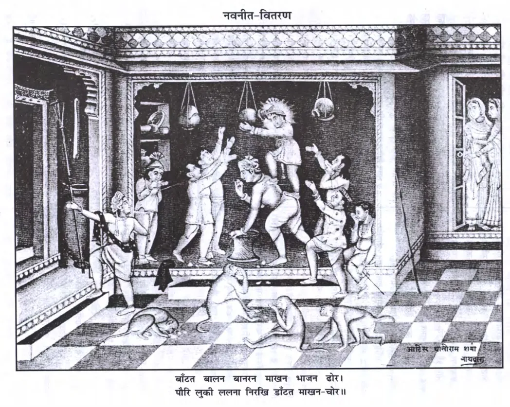
प्रेमावतार श्रीकृष्ण
(लेखक -पं० श्रीहरिवक्षजी जोशी, काव्य-सांख्य-स्मृतितीर्थ)
अखण्ड ब्रह्माण्डनायक सर्वज्ञ सर्वशक्तिमान् पूर्णब्रह्मने अपनी रची हुई सृष्टिमें जब-जब मर्यादाका अतिक्रम होता देखा तब-तब ही उसकी स्थापनाके लिये जहाँ जैसी आवश्यकता हुई, उसीके अनुकूल शरीर धारण किया। इस बातका वर्णन भगवान् व्यासजीने देवस्तुतिमें इस प्रकार किया है—
मत्स्याश्वकच्छपवराहनृसिंहहंस-
राजन्यवैश्यविबुधेषु कृतावतारः॥
त्वं पासि नस्त्रिभुवनश्च यथाधुनेश
भारं भुवो हर यदूत्तम वन्दनं ते॥
'हे यदुश्रेष्ठ! मत्स्य, अश्व, कच्छप, वराह, नृसिंह, हंस, क्षत्रिय, वैश्य और देवता आदि शरीरोंमें अवतार धारण कर आप जैसे कि इस समय कर रहे हैं उसी प्रकार सर्वदा हमारी रक्षा करते हैं। प्रभो! आप पृथिवीका भार दूर कीजिये, हम आपको नमस्कार करते हैं।' इस प्रकार गीतामें की हुई अपनी प्रतिज्ञाके अनुसार साधुओंकी रक्षा, दुष्टोंके नाश और धर्म-संस्थापनके लिये भगवान् समय-समयपर संसारमें नाना रूपोंसे अवतार लेते हैं।
परन्तु श्रीकृष्णावतारका महत्त्व केवल इतनेसे ही नहीं है। उसमें यह विशेषता और भी है कि इस अवतारमें भगवान्ने जो प्रेममयी मधुर लीलाएँ की हैं, उनके गान, श्रवण और कीर्तनकी नौकापर आरूढ़ होकर पापिष्ठ पुरुष भी अपार संसार-समुद्रको पार कर जाते हैं। इस विषयमें भगवान् व्यासजीका भी यही मत है कि—
संसारसिन्धुमतिदुस्तरमुत्तितीर्षो-
र्नान्यः प्लवो भगवतः पुरुषोत्तमस्य॥
लीलाकथारसनिषेवणमन्तरेण
पुंसो भवेद्विविधदुःखदवार्दितस्य॥
'नाना दुःस्वरूप दावानलसे पीड़ित पुरुषको इस संसाररूप दुस्तर समुद्रसे पार होनेके लिये भगवान्की लीलाओंके कथामृत पान करनेके अतिरिक्त और कोई मौका ही नहीं है। भगवान् श्रीकृष्णचन्द्रका अवतार इसी उद्देश्यको सामने रख कर हुआ है। यदि यह प्रेमावतार न हुआ होता तो आज व्यास, सूर, जयदेव-प्रभृति कवियोंकी काव्य-लतिका इस प्रकार पल्लवित होती या नहीं, इसमें भी सन्देह है। भगवान्का रूप, आकृति, चरित्र, बल-पौरुष तथा खान-पान, रहन-सहन, बोल-चाल आदि सभी क्रियाएँ प्रेमरससे ऐसी सराबोर हैं कि एक बार भी सुनने या पढ़नेपर मनुष्य उन्हें छोड़ नहीं सकता। इसीलिये महाराज परीक्षित श्रीशुकदेवजीसे कहते हैं—
कोऽनु तृप्येज्जुषन् युष्मद्वचो हरिकथामृतम्।
संसारतापनिस्तप्तो मर्मस्तत्तापभेषजम्॥
'हे भगवन्! ऐसा कौन पुरुष होगा जो हरिकथारूप अमृतसे पूर्ण आपके वचनोंको सुनकर तृप्त न हो जायगा। क्योंकि मनुष्य संसार-तापसे सन्तप्त है और आपके वचन उसके लिये ओषधिस्वरूप हैं।'
प्रेमपूर्वक भगवत्कथा-श्रवण और उनके पाद-पद्मके चिन्तनमें कितना आनन्द आता है, इसे वे ही भक्त जान सकते हैं, जिन्हें इसका सौभाग्य प्राप्त हुआ है। उनकी दृष्टिमें संसारके सभी सुख तृणके समान तुच्छ हैं।
जब हम भगवान्के जीवनपर दृष्टिपात करते हैं तो सबसे पहले हमारे सामने वह दृश्य उपस्थित होता है जब कि भगवान्ने कारागारावरुद्ध माता-पिताको पहलेपहल अपने प्रेम-स्वरूपका दर्शन दिया था। उस समय जड़-प्रकृतिमें भी प्रेमका ऐसा प्रवाह उमड़ा कि उसका रूप ही बदल गया। समस्त नक्षत्र और तारे शान्त तथा प्रकाशमय हो गये, दिशाएँ प्रसन्न हो गयीं, आकाश निर्मल हो गया, पृथिवीपर सभी ओर मङ्गल-ही-मङ्गल दिखलायी देने लगा, नदियोंका जल स्वच्छ हो गया, कमल खिल गये, बगीचोंमें भौंरे मधुर स्वरसे गूँजने लगे, शीतल, मन्द, सुगन्ध वायु चलने लगी, यज्ञशालाकी अग्नि दिव्य-प्रकाशान्वित हो गयी तथा साधु और देवताओंके चित्त आनन्दित हो गये। तब श्रीदेवकीजी भगवान्की दिव्यमूर्ति देखकर प्रेम-गद्गद् स्वरसे कहने लगीं—
विश्वं यदेतत्स्वतनौ निशान्ते
यथावकाशं पुरुषः परो भवान्।
विभर्ति सोऽयं मम गर्भगोऽभू-
दहो नृलोकस्य विडम्बनं हि तत्॥
'अहो! यह कैसा आश्चर्य है कि प्रलयकालमें सारा विश्व जिसके उदरमें समा जाता है उसी लीलामय पुरुषोत्तमने मेरे इस क्षुद्र गर्भमें निवास किया। यह नरलोककी विडम्बना नहीं तो और क्या है?' इस समय प्रेमावतारके दर्शनसे प्रेम-विभोर हुई माता देवकी अपने छः पुत्रोंके नाशके दुःखसे दुखी होकर कृष्ण-जन्मके समाचारको अन्यायी कंससे छिपानेकी केवल स्वयं ही चेष्टा न करती थीं, बल्कि भगवान्से भी कातर स्वरमें कह उठी—
जन्म ते मय्यसौ पापो मा विद्यान्मधुसूदन।
समुद्विजे भवद्धेतोः कंसादहमधीरधीः॥
'हे मधुसूदन! मुझे इस बातका बड़ा भय है कि कहीं कंस यह न जान ले कि मेरे गर्भसे तुम्हारा जन्म हुआ है। मैं अधीर हो रही हूँ तुम्हारे लिये मुझे कंससे बड़ा भय हो रहा है।'
तदनन्तर भयभीता देवकीकी अनुमतिसे बालक कृष्णको वसुदेवजीने गोकुलमें नन्द-यशोदाके घर पहुँचा दिया। वहाँ वसुदेवके कुलगुरु महर्षि गर्गने उनका नामकरण संस्कार किया। इनका सर्वगुणसम्पन्न 'श्रीकृष्ण' नाम रक्खा गया, जिसके अर्थके विषयमें 'कर्षयति सर्वेषां मनांसीति कृष्णः' ऐसा कहा जाता है अर्थात् जो सबके मनको अपनी ओर आकर्षित करता है, उसे कृष्ण कहते हैं। पण्डितराज श्रीजगन्नाथने इस नामकी मधुरिमाका कुछ रसास्वादन किया था, इसीलिये वे अपने जीवसे पूछते हैं—
मृद्वीका रसिता सिता समसिता
स्फीतं निपीतं पयः
स्वर्यातेन सुधाप्यधापि कतिधा
रम्भाधरः खण्डितः।
सत्यं ब्रूहि मदीय जीव भवता
भूयो भवे भ्राम्यता
कृष्णेत्यक्षरयोरयं मधुरिमोद्-
गारः क्वचिद्धुक्षितः॥
'हे मेरे प्यारे जीव! तूने दाख भी खायी है, मिश्रीका भी आस्वादन किया है, गाढ़ा-गाढ़ा दूध भी पिया है और कई बार स्वर्गमें जाकर अमृत तथा रम्भाके अधररसका भी पान किया है। पर सच बता कि 'कृष्ण' इन दो अक्षरोंमें जो अलौकिक मधुरिमा है, वह क्या तूने कहीं भी पायी है?' वाह रे जगन्नाथ! तेरी रसना ही असली रसना है, जिसने कि 'कृष्ण' इन दो अक्षरोंकी माधुरीका वास्तविक रस चखा है।
भगवान् श्रीकृष्ण केवल प्रेममय ही हैं, इस बातका पूरा पता तभी चलता है जब कि हम देखते हैं कि वे अपनेसे द्वेष करनेवालोंको भी वही पद दे रहे हैं जो कि उनके प्रेमियोंको भी अतिदुर्लभ है। किन्तु इसमें आश्चर्य ही क्या है? भगवान् तो अपने भक्तोंको भी यही उपदेश देते हैं कि 'न प्रहृष्येत्प्रियं प्राप्य नोद्विजेत्प्राप्य चाप्रियं' फिर अप्रियकी प्राप्ति होनेपर उन्हें उद्वेग न होना कौन बड़ी बात है? इसलिये अलौकिक प्रेमसे प्रेरित होकर भगवान्को अपना स्तनपान करानेवाली माता यशोदाको जो देव-दुर्लभ गति प्राप्त हुई, वही द्वेष-बुद्धिसे स्तनोंमें विष लगाकर दूध पिलानेवाली पूतनाको भी मिली। इस बातसे जनसाधारणको आश्चर्य होनेमें तो बात ही क्या है, स्वयं व्यासदेव भी आश्चर्यचकित होकर कह उठे हैं—
अहो बकीयं स्तनकालकूटं
जिघांसयापाययदप्यसाध्वी।
लेभे गतिं धात्र्युचितां ततोऽन्यं
कं वा दयालुं शरणं प्रपद्ये॥
'अहो! इस दुष्टा पूतनाने मारनेकी इच्छासे भगवान्को स्तन-पान कराया था, तो भी इसे माताके योग्य गति प्राप्त हुई! जो ऐसे दयालु हैं, उन भगवान्को छोड़कर हम किसकी शरणमें जायँ?'
अब हम भगवान्के कुछ बाल-चरित्रोंका भी माधुर्य चखेंगे। एक दिनकी बात है कि बाल-कृष्ण पृथिवीमें पड़े हुए माँकी गोदमें चढ़नेके लिये रो रहे थे; किन्तु माँ गृह-कर्ममें व्यस्त थी, इसलिये उनकी कुछ परवा नहीं की। इसी समय देवर्षि नारद भूलॊकमें पर्यटन करते हुए उस माया-मानवकी लीलाओंको देखनेके लिये व्रजरानीके घर आये। वहाँ वे देखते हैं कि कृष्ण जमीनपर पड़ा छटपटा रहा है और माताकी गोदमें चढ़नेके लिये सुबक-सुबककर रो रहा है, पर माँ उसकी तनिक भी परवा नहीं करती। इस दृश्यको देखकर नारदजी कहने लगे—
किं ब्रूमस्त्वां यशोदे कति कति सुकृत-
क्षेत्रवृन्दानि पूर्वं।
गत्वा कीदृग् विधानैः कति कति सुकृता-
यर्जितानि त्वयैव॥
नो शक्रो न स्वयम्भुर्न च मदनरिपु-
र्यस्य लेभे प्रसादं।
तत्पूर्णब्रह्म भूमौ विलुठति विलपन्
क्रोडमारोढुकामः॥
'यशोदे! तू बड़ी भाग्यशालिनी है। तुझे क्या कहें? न जाने तूने पूर्व जन्ममें तीर्थवृन्दोंमें जाकर कितने अगणित महान् सुकृत किये हैं। अरी! जिस जगन्नियन्ताके प्रसादको इन्द्र, ब्रह्मा और महादेव भी प्राप्त नहीं कर सकते, वही पूर्णब्रह्म तेरी गोदीमें चढ़नेके लिये पृथिवीपर पड़ा छटपटा रहा है।
और भी लीजिये—
कृष्णेनाम्ब! गतेन रन्तुमधुना
मृद्भक्षिता स्वेच्छया
सत्यं कृष्ण क एवमाह मुसली
मिथ्याम्ब! पश्याननम्।
व्यादेहीति विकासितेऽथ वदने
दृष्ट्वा समस्तं जगत्
माता यस्य जगाम विस्मयपदं
पायात्स नः केशवः॥
एक दिनकी बात है कि कृष्णने एक मिट्टीकी डली मुँहमें डाल ली। फिर क्या था, बलरामकी बन आयी। आप झट माताके पास पहुँचे और लगे कृष्णकी चुगली खाने। बोले—'मैया! आज जब कृष्ण खेलने गया था तो मेरे मने करनेपर भी उसने मिट्टी खा ली। माता भी इस बातसे अपरिचित न थी कि बलराम बड़ा चुगलखोर है; इसलिये बलदेवकी बातपर विश्वास न कर वह स्वयं कृष्णसे पूछ बैठी, 'क्यों रे, क्या यह बात सच है कि आज तूने माटी खायी है?' कृष्णने कहा—'मैया! यह बात किसने गढ़ दी, यह तो सरासर झूठ है, विश्वास न हो तो मेरा मुँह देख ले।' माताने कहा—'अच्छा तो मुँह खोल।' फिर क्या था? भगवान्ने मुँह खोला और माता उसके छोटे-से मुँहमें चराचर विश्वको देखकर भौंचक्की-सी रह गयी।
लोग इससे यह न समझें कि भगवान् भी झूठ बोलते थे। ऐसा करनेमें उनका तो केवल यही लक्ष्य था कि मेरे प्यारे भक्त मेरे प्रभाव—ज्ञानसे वञ्चित न रहें। भगवान् अपने प्रादुर्भावकालमें माता देवकीको तो अपना दिव्यरूप दिखलाकर कृतार्थ कर चुके थे, किन्तु यशोदाकी बारी तो आज ही थी। वह इस मौकेपर क्यों चूकने लगे? उनका तो अवतार ही इसलिये था कि भक्त उनके दिव्यरूपका दर्शन कर परमपद प्राप्त कर सकें।
उस दिन भगवान् मातासे भयभीत होनेके बजाय जैसे अपनी करतूतसे उसे ही डराकर आप बच गये थे इसी प्रकार एक दिन एक गोपीके दावमें आकर भी निकल गये, इसका वर्णन एक कविने बड़ी ही मार्मिकतासे किया है—
कस्त्वं कृष्णमवेहि मां किमिह ते
मन्मन्दिराशंकया
युक्तं तन्नवनीतभाजनपुटे
न्यस्तः किमर्थं करः।
कर्तुं तत्र पिपीलिकापनयनं
सुप्ताः किमुद्बोधिताः
बालाः वत्सगतिं विवेक्तुमिति स-
ञ्जल्पन् हरिः पातु नः॥
बात क्या थी, एक दिन श्रीकृष्णचन्द्र बड़े सबेरे ही उठे और किसी पड़ोसिन गोपिकाके घरमें जा घुसे। वहाँ अपने साथी ग्वालबालोंको जगाकर चुपकेसे हाँडी उघारी और लगे माखन निकालने। इतनेहीमें गोपी आ गयी और बोली 'तू कौन है? भगवान् बोले—'मैं कृष्ण हूँ।' पूछा—'यहाँ क्यों आया है?' "अपना घर समझकर।' 'ठीक है, परन्तु माखनके पात्रमें हाथ क्यों डाला?' बोले 'इसमें चींटी पड़ गयी थी, उसे निकाल रहा था।' गोपीने फिर पूछा 'अच्छा तो सोये हुए बालकोंको क्यों जगाया?' भगवान् झटसे बोल उठे, 'आज बछड़े किस ओर चरने जायँगे, यह पूछनेके लिये।' अब उस बेचारी ग्रामीण गोपीकी बुद्धि और आगे न चली, उसे कान्हाकी वकालतके आगे चुप होना पड़ा। धन्य हैं वे व्रजाङ्गनाएँ, जिन्हें भगवान्के ये मधुररसपूर्ण विचित्र चरित्र प्रत्यक्ष देखनेको मिले।
ये सारी बातें यशोदाजीके कानोंतक भी पहुँच जाया करती थीं, इसलिये उन्होंने सोचा कि यदि यह पढ़ने लगे तो सम्भव है इसका यह नटखटपन दूर हो जाय और गोपियोंका रोज-रोजका उलाहना न सुनना पड़े। अतः एक दिन वे बोली—
कृष्ण त्वं पठ किं पठामि ननु रे
शास्त्रं किमु ज्ञायते
तत्त्वं कस्य विभोः स कस्त्रिभुवना-
धीशश्च तेनापि किम्।
ज्ञानं भक्तिरथो विरक्तिरनया
किं मुक्तिरेवास्तु ते
दध्यादीनि भजामि मातुरुदितं
वाक्यं हरिः पातु नः॥
'कृष्ण! तू पढ़ा कर।' कृष्णने पूछा 'क्या पढ़ा करूँ?' माता बोली, 'शास्त्र।' इसपर कृष्णने पूछा 'उससे क्या होगा?' बोली—'तत्त्वका ज्ञान।' पूछा 'किस तत्त्वका ज्ञान?' 'व्यापक ब्रह्मके तत्त्वका।' कृष्णने पूछा 'वह व्यापक ब्रह्म कौन है?' माताने कहा 'वह त्रिभुवनपति है।' पूछा-'उसके जाननेसे क्या होगा?' 'उससे ज्ञान, भक्ति और वैराग्य प्राप्त होंगे।' 'इनसे क्या लाभ होगा?" 'तेरी मुक्ति हो जायगी।' इसपर श्रीकृष्णने कहा 'मुझे उसकी इच्छा नहीं है, मुझे तो दही (माखन) आदि ही चाहिये।' यह सुनकर माताने कहा यदि दूध, दही और माखनसे ही तुझे प्रेम है तो—
दुग्धं घृतं दधि मदीयगृहेऽपि कृष्ण
संविद्यते बहुतरं तव तृप्तयेऽलम्।
तद्भुङ्क्ष्व भोजय सखीन् न निरोधयामि
त्वं वत्स! चौर्यनिरतिं न जहासि कस्मात्।
'हे कृष्ण! दूध, दही और माखन तो तेरी तृप्तिके लिये अपने घरमें भी बहुतेरा है। उसे तू स्वयं खा और अपने साथी ग्वालबालोंको भी खूब खिला, मैं तुझे रोकती थोड़े ही हूँ, परन्तु बेटा! न जाने इस चोरीकी बानको तू क्यों नहीं छोड़ता?' परन्तु माताको यह मालूम न था कि यह बड़ा नामी चोर है, चोरी करना ही इसका पेशा है। इससे लुटे हुए किसी भक्त कविने कहा है—
प्रणतदुरित चौरः पूतनाप्राणचौरः
वलयवसनचौरो बालगोपाङ्गनानाम्।
नयनहृदयचौरः पश्यतां सज्जनानाम्।
अपहरति मनो मे कोऽप्ययं कृष्णचौरः॥
'भक्तोंके पापोंको, पूतनाके प्राणोंको, गोपाङ्गनाओंके आभूषण और वस्त्रोंको तथा अपना दर्शन करनेवाले सज्जनोंके नेत्र और मनोंको चुरानेवाला कोई कृष्ण नामक चोर मेरे मनको चुराये लेता है।'
एक दिनकी बात है जब कि सब दासियाँ अपने-अपने काममें लगी हुई थीं, श्रीनन्दरानीजी स्वयं दही बिलोने बैठ गयीं। प्रातःकालका अति सुहावना समय था; अतः दही बिलोनेके साथ ही वे गानेमें भी तल्लीन हो गयीं। इसी समय लाला कृष्णकी आँखें खुली और वह भूखसे व्याकुल होकर रोने लगे। किन्तु मथानीके गम्भीर शब्दके कारण मैयाको इसका कुछ भी पता न चला। अन्तमें सरकार स्वयं सरकते हुए माँके पास पहुँचे और उसकी मथानीको पकड़कर खड़े हो गये। तब मैयाने उन्हें प्रेमपूर्वक गोदीमें लिटाकर अपना दूध झरता हुआ स्तन उनके मुखमें दे दिया। इसी समय अकस्मात् अग्निपर रखा हुआ दूध उफनने लगा। यह देखकर 'गाँवकी स्त्रियोंको पूतसे भी दूध अधिक प्यारा होता है' इस कहावतको चरितार्थ करती हुई श्रीयशोदाजी झटपट कन्हैयाको धरतीपर बैठाकर दौड़ीं। नटखट कृष्ण कब चुपचाप रहनेवाले थे। उन्होंने क्या किया सो आप श्रीव्यासजीके मुखसे ही सुनिये—
संजातकोपः स्फुरितारुणाधरं
संदश्य दद्भिर्दधिमन्थभाजनम्॥
भित्त्वा मृषाश्रुर्दृषदश्मना रहो।
जघास हैयङ्गवमन्तरं गतः॥
'भगवान्को बड़ा क्रोध हुआ, मारे क्रोधके वे बिसूरने लगे और एक पत्थर उठाकर दहीके भाँडमें दे मारा। दही इधर-उधर फैल गया, और कृष्ण उसमेंसे एक मक्खनका पिण्ड लेकर घरके एक कोनेमें छिपकर खाने लगे।' इतनेहीमें मैया आ गयी और उसने देखा कि कृष्ण एकान्तमें ऊखलपर बैठे हुए बन्दरको मक्खन खिला रहे हैं और इस भयसे कि कहीं मैया न आ जाय, इधर-उधर देखते भी जा रहे हैं। इसीका वर्णन करते हुए व्यासजीने कहा है—
उलूखलाङ्घ्रेरुपरि व्यवस्थितं
मर्काय कामं ददतं शिचि स्थितम्।
हैयङ्गवं चौर्यविशङ्कितेक्षणं
निरीक्ष्य पश्चात्सुतमागमच्छनैः॥
अपनी करतूतसे क्रुद्ध हुई मैयाकी लाल आँखें देखकर आप लम्बे हुए। बहुतेरे भागे, किन्तु आखिर पकड़में आ ही गये। फिर क्या था, बड़ी मार पड़ी, मारे थप्पड़ोंके गाल लाल पड़ गये। बहुतेरे रोये-चिल्लाये परन्तु माताने तनिक भी दया न की। जो गोपियाँ नित्य उलाहना देने आती थीं वे भी आज कहने लगीं—
यशोदा तेरो भलो हियो है माई!
कमलनयन माखनके कारण बाँधे ऊखल लाई॥
जो सम्पदा देव-मुनि-दुर्लभ सपनेहु देत न दिखाई।
याहीं तें तू गरब भुलानी घर बैठे निधि पाई॥
सुत काहूको रोवत देखत दौरि लेति उर लाई।
अब अपने घरके लरिकापै इती कहा जड़ताई॥
परन्तु यशोदाने उनकी एक न सुनी। वह कृष्णको बाँधनेकी चेष्टा करने लगी। किन्तु घर और पड़ोसभरकी रस्सियाँ इकट्ठी करनेपर भी वे दो अङ्गुल छोटी रहीं। गोपियाँ इस दैवी दृश्यको देखकर मुसका रही थीं। अन्तमें माताकी परेशानी देखकर वे स्वयं ही एक रस्सीमें बँध गये।
स्वमातुः खिन्नगात्राया विस्रस्तकबरस्रजः।
दृष्ट्वा परिश्रमं कृष्णः कृपयासीत्स्वबन्धने॥
कैसा मनोहर स्वर्गीय दृश्य था? गोपी यशोदाके भाग्यकी कहाँतक सराहना की जाय? जिस विश्वनायक भगवान्ने अखिल विश्वको अपनी मायारूपी रज्जुसे बाँध रक्खा है वह स्वयं भक्तिके वशीभूत होकर अपने भक्तके हाथसे रस्सीमें बँधकर गौरव मानता है!
नेमं विरञ्चो न भवो न श्रीरप्यङ्गसंश्रया।
प्रसादं लेभिरे गोपी यत्तत्प्राप्य विमुक्तिदात्॥
धन्य हैं वे व्रजवासी गोप और गोपियाँ, जिन्हें ऐसी विचित्र नर-लीलाएँ करते हुए श्रीभगवान्के साक्षात् दर्शन होते थे जो योगिजनोंको भी अत्यन्त दुर्लभ हैं।
भगवान् कितने प्रेममय हैं, वे किस प्रकार परम स्वतन्त्र पुरुषोंको भी अपने प्रेम-पाशमें बाँध लेते हैं, इसका वर्णन अद्वैतसिद्धिकार श्रीमधुसूदनस्वामीने बड़ी ही मार्मिकतासे किया है। वे उनके चङ्गुलमें पड़कर अपनी हार्दिक वेदनाका प्रकाश इस प्रकार करते हैं—
अद्वैतवीथीपथिकैरुपास्यात्
स्वाराज्यसिंहासनलब्धदीक्षा।
केनापि दुष्टेन वयं हठेन
दासीकृता गोपवधूविटेन॥
अहो! अद्वैतमार्गसे स्वराज्य प्राप्त कर लेनेपर भी यह दुष्ट गोपी-वल्लभ ऐसे महामनीषियोंको अपना दास बना लेता है; दास ही नहीं, वे मधुमें लिपटी हुई मक्खीके समान छटपटाकर मर भले ही जायँ किन्तु उसके चङ्गुलसे निकल ही नहीं सकते। पर इस दासतामें कितना आनन्द है, इसमें कितना आकर्षण है कि वे महात्माजन स्वयं भी इसे छोड़ना नहीं चाहते। पण्डितराज जगन्नाथ इस बातसे भलीप्रकार परिचित थे, इसीलिये अपने चित्तको सचेत करते हुए वे कहते हैं—
रे चेतः कथयामि ते हितमिदं
वृन्दावने चारयन्
वृन्दं कोऽपि गवां नवाम्बुदनिभो
बन्धुर्न कार्यस्त्वया।
सौन्दर्यामृतमुद्गिरद्भिरमितः
सम्मोह्य मन्दस्मितै-
रेष त्वां तव वल्लभांश्च विषया-
नाशु क्षयं नेष्यति॥
'रे मन! मैं तुझे सावधान किये देता हूँ। तू वृन्दावनमें गौओंको चरानेवाले, नवीन श्याममेघके समान कान्तिवाले किसी पुरुषको अपना बन्धु मत बनाना। वह सौन्दर्यरूप अमृत बरसानेवाली अपनी मन्द मुसकानसे तुझे मोहित कर तेरे प्रिय विषयोंको भी तुरन्त नष्ट कर डालेगा।' यह अनुभव उक्त पण्डितराजका ही नहीं है, लीलाशुक भी इसके साक्षी हैं। वे तो उस रास्तेसे किसीको गुजरने ही देना नहीं चाहते, वे कहते हैं—
मा यात पान्थाः पथिभीमरथ्या
दिगम्बरः कोऽपि तमालनीलः।
विन्यस्तहस्तोऽपि नितम्बविम्बे
धूतः समाकर्षति चित्तवित्तम्॥
'अरे पथिको! उस मार्गसे न जाना, वह गली बड़ी भयावनी है। वहाँ अपने नितम्बबिम्बपर हाथ रक्खे हुए जो तमालके सदृश नीलवर्ण बालक खड़ा है वह केवल देखने मात्रका अवधूत है। वास्तवमें तो वह अपने पास होकर जानेवाले किसी भी पथिकका चित्त-रूपी धन चुराये बिना नहीं रहता।'
भगवन्! यदि आपके रूपमें ही यह गुण होता तो भी कुशल थी, पर आपने तो अपने करकमलोंमें भी एक ऐसी जादूभरी छड़ी (वंशी) ले रक्खी है जिसके द्वारा दूरवर्ती प्राणी भी सम्मोहित होकर अपने आपको खो बैठते हैं। औरोंकी तो बात ही क्या है, निर्बीज समाधि बैठे हुए योगीजनोंकी समाधि भी आपकी वंशी-ध्वनिसे टूट जाती है—
ध्यानं बलात्परमहंसकुलस्य भिन्दन्
निन्दन्सुधामधुरिमानमधीरधर्मा।
कन्दर्पशासनधुरां मुहुरेव शंसन्
वंशीध्वनिर्जयति कंसनिषूदनस्य॥
महाराज! आपकी वंशीकी महिमा अपार है। योगीजन भी इससे बचने नहीं पाते। संसारके भयसे भागकर दूर गिरि-गह्वरोंमें छिपे हुए मुनिजनोंका ध्यान भी इसकी ध्वनिसे टूट जाता है; इसकी मधुरताके आगे अमृत भी फीका मालूम होता है और इससे बड़े-बड़े धीर पुरुषोंका धैर्य भी छूट जाता है। यह कामदेवकी तो मानो विजयदुन्दुभी है। जिस समय इसकी ध्वनि गूँजती है उस समय सम्पूर्ण प्रकृतिमें उथल-पुथल मच जाती है। जड़ोंके कान हो जाते हैं और चेतन चेतनाशून्य हो जाते हैं, इसीसे तङ्ग आकर एक गोपीने कहा था—
मुरहर! रन्धनसमये
मा कुरु मुरलीरवं मधुरम्।
नीरसमेधो रसतां
कृशानुरप्येति कृशतरताम्॥
'हे मुरारे! इतनी बात तो मेरी भी मान लो, कृपाकर रसोई बनानेके समय तो तुम अपनी मुरलीकी मधुर तान न छेड़ा करो, क्योंकि इससे मेरा सूखा ईंधन सरस होकर चूने लगता है जिससे आग बुझ जाती है।'
गोपाल! तुम्हारी वंशीसे इधर तो गोपियोंकी रसोईमें बाधा पड़ती है, उधर बेचारी गौएँ चरना छोड़ देती हैं, क्योंकि वे अपने दोनों कानोंके दोने बनाकर उनमें भर-भर कर उस अमृतमयी ध्वनिका पान करने लगती हैं। यही नहीं, उनके बछड़े भी मुँहमें स्तन रहते हुए भी दूध पीना भूलकर आपकी ओर देखते-के-देखते रह जाते हैं।
गावश्च कृष्णमुखनिर्गतवेणुगीत-
पीयूषमुत्तभितकर्णपुटैः पिबन्त्यः।
शावाः स्नुतः स्तनपयः कवलास्म तस्थुः
गोविन्दमात्मनि दशाश्रुकलाः पिबन्त्यः॥
इसी भावको श्रीसूरदासजीने बड़ी ही भावुकतासे इस प्रकार प्रगट किया है—
मुरली अति बिपरीत कराई।
तिहूँ भुवन भरि नाद समान्यौ
राधा-रमन बजाई॥
बछरा थन नाहीं मुख परसत
चरत नहीं तृण धेनु।
जमुना उलटी धार चली बहि
पवन थकित सुनि बेनु।
विह्वल भये नाहिं सुधि काहू
सुर गन्धर्व नर नारि।
'सूरदास' सब चकित जहाँ तहँ
व्रज-जुवतिन सुखकारि॥
अधिक क्या कहें भगवान्की सभी लीलाओंमें लोकोत्तर आनन्द भरा हुआ है। वे सभी प्रेम-रससे परिपूर्ण हैं। उनका रहस्य समझना विद्वानोंके लिये भी अति कठिन है, फिर जनसाधारणकी तो बात ही क्या है। भगवान् श्रीव्यासजी कहते हैं—
कर्माण्यनीहस्य भवोऽभवस्य ते
दुर्गाश्रयोऽथारिभयात्पलायनम्।
कालात्मनो यत्प्रमदायुताश्रयः
स्वात्मन्रतेः खिद्यति धीर्विदामिह॥
'निरीह होकर भी आपकी प्रवृत्ति, अजन्मा होकर भी जन्म लेना, कालस्वरूप होकर भी शत्रुके सामनेसे भागना और द्वारकामें जाकर छिपना तथा आत्माराम होकर भी स्त्रियोंके साथ रमण करना—ये समस्त लीलाएँ ऐसी हैं जिनमें विद्वानोंकी बुद्धि भी चकरा जाती हैं।' इसीलिये उन्होंने भी यही कहकर सन्तोष किया है कि—
न चास्य कश्चिन्निपुणेन धातु-
रवैति जन्तुः कुमनीष ऊतिः।
नमामि रूपाणि मनोवचोभिः
सन्तन्वतो नटचर्यामिवाज्ञः॥
'उस विश्वनायकके सम्पूर्ण कर्मोंको कोई भी पुरुष भलीभाँति नहीं जान सकता। वह नटके समान विविध नाम और रूप धारणकर अज्ञ पुरुषोंकी भाँति मन और वाणीसे अनेकों लीलाएँ करता है। मैं उसे प्रणाम करता हूँ।' जब साक्षात् नारायणस्वरूप भगवान् व्यासकी ही यह दशा है तो हम उसके चरित्र, गुण एवं लीलाओंका मर्म क्या जान, समझ और लिख सकते हैं। हमारी तो केवल यही प्रार्थना है कि हमारा यह मनरूपी राजहंस जल्दी-से-जल्दी उस विश्वनायकके चरण-कमलोंमें विहार करने लगे। यही हमारा ध्येय है, यही हमारी कामना है और केवल इसी आशीर्वादकी हमें इच्छा है। आइये, एक बार सब मिलकर करुणापूर्ण स्वरमें उनकी प्रार्थना करें—
कृष्ण त्वदीयपदपङ्कजपञ्जरान्ते
अद्यैव मे विशतु मानसराजहंसः।
प्राणप्रयाणसमये कफवातपित्तैः
कण्ठावरोधनविधौ स्मरणं कुतस्ते॥
श्रीकृष्णलीलामें माधुर्य-रस
(लेखक-आचार्य श्री अनन्तलालजी गोस्वामी)
'कृषिर्भूवाचकः शब्दो णश्च निर्वृत्तिवाचकः।'
श्रीकृष्णके कृष्का अर्थ नित्य और णका अर्थ आनन्द (रस) होता है। श्रुतियाँ भी श्रीकृष्णको सदा रसरूप ही प्रतिपादन करती हैं। 'रसो वै सः' श्रीकृष्णके नाम, रूप एवं चरित माधुर्यमय हैं। प्रधान रस पाँच माने गये हैं, -शान्त, दास्य, सख्य, वात्सल्य, माधुर्य। इन पाँचों रसोंके परस्पर सम्बन्धमें यह उदाहरण ठीक मालूम होता है—
नयन सलौने अधर मधु कहि रहीम बड़ कौन।
मीठौ भावत नौनपर मीठेहू पर नौन॥
परस्पर सम्बन्ध होते हुए भी पहले चार रसोंका समावेश माधुर्यमें ही होता है।
शान्तरसमें—
श्रीकृष्णनिष्ठा, तृष्णाका त्याग ये दो गुण हैं।
दास्यरसमें—
ईश्वरमें सम्पूर्ण ऐश्वर्य, प्रभुकी प्रभुता, दास्यके इन दो गुणोंमें शान्तका मेल हो जानेसे भावकी प्राप्ति होती है।
'प्रेम्णस्तु प्रथमावस्था भाव इत्यभिधीयते।'
प्रेमकी पहली दशाका नाम ही भाव है। (श्रीरूपगो०)
सख्यरसमें—
शान्त, दास्यके गुण, प्रभुका मान एवं सेवाका भाव, मैत्रीमें विश्वासमय हो जाता है। सख्यमें विश्वास ही प्रधान है। इस रसमें श्रीकृष्णके प्रति भक्तकी ममता हो जाती है और भगवान् भी भक्तके साथ क्रीडा-कौतुक करने लगते हैं।
अधिक स्वाद चटपटी पकौरी लै मुख खोल कन्हाई॥
यों मिस करिकै श्रीगुपालके कढ़ी कपोल लगाई॥
इसमें प्रभुके प्रति निस्संकोच, प्रेममय सख्यभावका कितना सुन्दर भाव है?
वात्सल्य-रसमें—
शान्तके गौरव, दास्यके सेवाभाव, सख्यके असङ्कोचभावकी अपेक्षा ममताकी मात्रा अधिक होती है। इसीसे ताड़न, लालन, पालन आदि प्रधान हो जाते हैं। यह अपनेको पालक मानकर श्रीकृष्णको पाल्य समझता है। वात्सल्य अमृतस्वरूप है। माँ यशोदा कृष्णको माखनके माटमें हाथ देते हुए देखकर कहती हैं—
कृष्ण क्वासि करोषि किं पितरिति
श्रुत्वैव मातुर्वचः
साशङ्कं नवनीतचौर्यविरतो
विश्रम्य तामब्रवीत्।
मातः कङ्कणपद्मरागमहसा
पाणिर्ममातप्यते
तेनाऽयं नवनीतभाण्डविवरे
विन्यस्य निर्वापितः॥
(कविकर्णपूर)
वात्सल्यका मूर्तिमान् रूप इससे अधिक कहाँ मिलेगा? कृष्ण—
मैया मोहै दाऊ बहुत खिजायो।
मौतैं कहत मोलको लीनों
तू जसुधा कब जायो॥
माँ यशोदा—
बकन देउ बलराम चवाई मिथ्यावादी धूत।
कहत जसोधा गोधनकी सौं मैं जननी तू पूत॥
माधुर्य-रसमें—
श्रीकृष्णमें निष्ठा, सेवाभाव और असङ्कोचके साथ ममता एवं लालन भी रहता है।
मधुर रसमें पाँचों रस हैं, जिस प्रकार आकाशादि भूतोंके गुण क्रमशः अन्य भूतोंसे मिलते हुए पृथिवीमें सब गुण मिल जाते हैं, इसी प्रकार मधुर रसमें भी सब रसोंका समावेश है।
रसरूप श्रीकृष्णकी लीलाएँ माधुर्य-रसमें पगी हुई हैं। इन मधुर लीलाओंमें रहनेवाले आनन्द (रस)का वर्णन करनेमें जब सजीव मन और वाणी भी असमर्थ हैं, तब निर्जीव लेखनी क्या वर्णन करे?
'यतो वाचो निवर्तन्ते अप्राप्य मनसा सह'
यह तो हुआ संक्षेपमें रसोंके परस्पर सम्बन्धका दिग्दर्शन और सब रसोंका माधुर्य-रसमें समावेश। अब लेखके शीर्षकके अनुसार श्रीकृष्णलीलामें माधुर्य क्या है? इसपर विचार करना है।
कोई भी चरित्र हो, जबतक उसमें मधुरता न होगी तबतक उसके श्रवण या मनन करनेवालोंमें भावावेश नहीं हो सकता, और भावके बिना भक्ति एवं भक्तिके अभावमें प्रेम असम्भव है। प्रेमीके प्रेमका स्थायी रूप तभी होता है जब एक रसका अवलम्बन मिलता है। जहाँ माधुर्य नहीं वहाँ रस नहीं, मधुर (मिठास) रहित नीरस वस्तुमें प्रेम तो दूरकी बात है। स्वार्थ बिना कामना भी नहीं होती।
प्रेमका रूप
गुणरहितं कामनारहितं प्रतिक्षणवर्द्ध-
मानमविच्छिन्नं सूक्ष्मतरमनुभवरूपम्।
(भ० सू०)
गुण, कामनासे रहित पल-पलमें बढ़नेवाला एकरस और अति सूक्ष्म है, अनुभवद्वारा ही कुछ जाना जा सकता है।
मधुर रसाश्रय प्रेमकी परिपुष्टि विरहसे होती है। मधुर रसमयी रासलीलामें श्रीराधिकाजीको अकेली छोड़ श्रीकृष्ण अन्तर्धान हुए। उस समयकी वियोगिनी श्रीराधिकाकी उक्ति
हा नाथ! रमण! प्रेष्ठ! क्वासि क्वासि महाभुज।
दास्यास्ते कृपणाया मे सखे! दर्शय सन्निधिम्॥
कैसी मधुर है?
माधुर्यमें शान्त, दास्य, सख्यके समावेशका ऐसा उदाहरण कहीं ढूँढे भी न मिलेगा। विरहासक्ति प्रेमकी ऊँची दशा है, आसक्ति आकर्षणके बिना हो नहीं सकती। हमारे श्रीकृष्ण तो 'कर्षयतीति कृष्णः' स्वयं ही खींच लेते हैं, अन्यावतारोंसे श्रीकृष्णमें यही विशेषता है, एवं अन्य चरित्रोंसे श्रीकृष्णलीलामें माधुर्यरस ही प्रधान है। यदि श्रीकृष्णचरित्रमें माधुर्य-रस न होता तो सम्भवतः 'लीलावतार श्रीकृष्ण' यह प्रसिद्धि भी न होती। माधुर्यरसमयी लीलाके रसास्वादन करनेवालोंकी अवस्था अनिर्वचनीय है।
व्रज-परिचय
(लेखक-गोस्वामी श्रीलक्ष्मणाचार्यजी मथुरा)
भगवान् श्रीकृष्ण धन्य हैं, उनकी लीलाएँ धन्य हैं। और इसी प्रकार वह भूमि भी धन्य है जहाँ वह त्रिभुवनपति मानव-रूपमें अवतरित हुए और जहाँ उन्होंने वे परम पुनीत अनुपम अलौकिक लीलाएँ की, जिनकी एक-एक झाँकीकी नकलतक भावुक हृदयोंको अलौकिक आनन्द देनेवाली है। श्रीकृष्णको अवतरित हुए आज पाँच सहस्र वर्षसे ऊपर हुए; परन्तु उनके कीर्तिगानके साथ-साथ उस परम पावन भूखण्डकी भी महिमाका सर्वदा बखान किया जाता है, जहाँकी रजको मस्तकपर धारण करनेके लिये अबतक लोग तरसते हैं। बड़े-बड़े लक्ष्मीके लाल अपने समस्त सुख-सौभाग्यको लात मार यहाँ आ बसे; और व्रजके टूक माँगकर उदरपोषण करनेमें ही उन्होंने अपने आपको धन्य समझा। यही नहीं, अनेक भक्तहृदय तो वहाँके टुकड़ोंके लिये तरसा करते हैं। भगवान्से इसके लिये वे प्रार्थना करते हैं। ओड़छेके व्यासबाबा गिड़गिड़ाकर कहते हैं—
ऐसो कब करिहौ मन मेरो।
कर करवा हरवा गुंजनकौ
कुंजन माहिं बसेरो॥
भूख लगै तब माँगि खाउँगो,
गिनौं न साँझ सबेरो।
ब्रज-बासिनके टूक जूँठ अरु
घर-घर छाछ महेरो॥
यह क्या बात है? इस भूमिमें ऐसा कौन-सा आकर्षण है जो अपनी ओर आकर्षित कर लेता है? भगवान् श्रीकृष्णने यहाँ जन्म धारण किया था और नाना प्रकारकी अलौकिक लीलाएँ की थी, क्या इसीलिये भक्तहृदय इससे इतना प्रेम करते हैं? हाँ, अवश्य ही यह बात है; पर केवल यही बात नहीं है, इसके साथ-साथ सोनेमें सुगन्ध यह और है कि इस भूमिको भी भगवान् श्रीकृष्ण गोलोकसे यहाँ लाये थे। जैसे भगवान्के साथ-साथ देवी-देवता, ऋषि-मुनि, श्रुतियाँ आदिने आकर गोप-गोपिकाओंका जन्म ग्रहण किया था उसी प्रकार व्रज-भूमि भी श्रीगोकुलधामसे उनके साथ ही आयी थी, इस कारण इसकी महिमा विशेष है। पुराणोंके अनुसार यह भूमि सृष्टि और प्रलयकी व्यवस्थासे बाहर है। ऋग्वेदमें एक ऋचा व्रजके सम्बन्धमें मिलती है जो इस प्रकार है—
ता वां वास्तून्युश्मसि गमध्यै यत्र गावो भूरिश्रृंगा अयासः अत्राह तदुरुगायस्य वृष्णेः परमं पदमवभाति भूरि।
ता तानि वां युवयो रामकृष्णयोर्वास्तूनि निरम्य स्थानानि गमध्यै गन्तुम् उश्मसि उष्मः कामयामहे न तु तत्र गन्तुं प्रभवामः। यत्र (वृन्दावनेषु) वास्तुषु भूरिश्रृंगा गावः अयासः संचरन्ति अत्र भूलोके अह निश्चितं तत् गोलोकाख्यं परमं पदं भूरि अत्यन्तं मुख्यम् उरुभिर्बहुभिर्गीयते स्तूयत इत्युरुगायस्तस्य वृष्णेर्यादवस्य पदमवभाति प्रकाशते इति।
अर्थात् इन्द्र स्तुति करते हैं कि 'हे भगवन् श्रीबलराम और श्रीकृष्ण! आपके वे अति रमणीक स्थान हैं। उनमें हम जानेकी इच्छा करते हैं; पर जा नहीं सकते। (कारण, 'अहो मधुपुरी धन्या वैकुण्ठाच्च गरीयसी। विना कृष्ण प्रसादेन क्षणमेकं न तिष्ठति॥' यानी यह मधुपुरी धन्य और वैकुण्ठसे भी श्रेष्ठ है; क्योंकि वैकुण्ठमें तो मनुष्य अपने पुरुषार्थसे पहुँच सकता है, पर यहाँ श्रीकृष्णकी आज्ञाके बिना कोई एक क्षण भी नहीं ठहर सकता।) यदुकुलमें अवतार लेनेवाले, उरुगाय (यानी बहुत प्रकारसे गाये जानेवाले) भगवान् वृष्णिका गोलोक नामक वह परमपद (व्रज) निश्चित ही भूलोकमें प्रकाशित हो रहा है।'
तब फिर बतलाइये व्रजभूमिकी बराबरी कौन स्थान कर सकता है? हिन्दुस्थानमें अनेक तीर्थस्थान हैं, सबका माहात्म्य है, भगवान्के और-और भी जन्मस्थान हैं; पर यहाँकी बात ही कुछ निराली है। यहाँके नगर-ग्राम, मठ-मन्दिर, वन-उपवन, लता-कुञ्ज आदिकी अनुपम शोभा भिन्न-भिन्न ऋतुओंमें भिन्न-भिन्न प्रकारसे देखनेको मिलती है। अपनी जन्मभूमिसे सभीको प्रेम होता है, फिर वह चाहे खुला खंडहर हो और चाहे सुरम्य स्थान; वह जन्मस्थान है, यह विचार ही उसके प्रति प्रेम होनेके लिये पर्याप्त है।
इसीसे सब प्रकारसे सुन्दर द्वारकामें वास करते हुए भी भगवान् श्रीकृष्ण जब व्रजका स्मरण करते थे तब उनकी कुछ विचित्र ही दशा हो जाती थी।
जब व्रज-भूमिके वियोगसे स्वयं व्रजके अधीश्वर भगवान् श्रीकृष्णका ही यह हाल हो जाता है। तब फिर उस पुण्यभूमिकी रही-सही नैसर्गिक छटाके दर्शनके लिये, -उस छटाके लिये जिसकी एक झाँकी उस पुनीत युगका, उस जगद्गुरुका, उसकी लौकिक रूपमें की गयी अलौकिक लीलाओंका अद्भुत प्रकारसे स्मरण कराती, अनुभवका आनन्द देती और मलिन-मन-मन्दिरको सर्वथा स्वच्छ करनेमें सहायता प्रदान करती है—भावुक भक्त तरसा करते हैं, इसमें आश्चर्य ही क्या है? नैसर्गिक शोभा न भी होती, प्राचीन लीलाचिह्न भी न मिलते होते, तो भी केवल साक्षात् परब्रह्मका यहाँ विग्रह होनेके नाते ही यह स्थान आज हमारे लिये तीर्थ था; यह भूमि हमारे लिये तीर्थ थी जहाँकी पावन रजको ब्रह्मज्ञ उद्धवने अपने मस्तकपर धारण किया था, वह व्रजवासी भी दर्शनीय थे जिनके पूर्वजोंके भाग्यकी सराहना करते-करते भक्त सूरदासके शब्दोंमें बड़े-बड़े देवता आकर उनकी जूठन खाते थे; क्योंकि उनके बीचमें भगवान् अवतरित हुए थे।
ब्रज-वासी-पटतर कोउ नाहिं।
ब्रह्म सनक सिव ध्यान न पावत,
इनकी जूठनि लै लै खाहिं॥
हलधर कह्यौ, छाक जेंवत सँग,
मीठो लगत सराहत जाहिं।
'सूरदास' प्रभु जो विश्वम्भर,
सो ग्वालनके कौर अघाहिं॥
तब फिर यहाँ तो अनन्त दर्शनीय स्थान हैं, अनन्त सुन्दर मठ-मन्दिर, वन-उपवन, सर-सरोवर हैं जो अपनी शोभाके लिये दर्शनीय हैं और पावनताके लिये भी दर्शनीय हैं। सबके साथ अपना-अपना इतिहास है। यद्यपि मुसलमानोंके आक्रमण-पर-आक्रमण होनेसे व्रजकी सम्पदा नष्टप्राय हो गयी है, कई प्रसिद्ध स्थानोंका चिह्नतक मिट गया है, मन्दिरोंके स्थानपर मसजिदें खड़ी हैं, तथापि धर्मप्राण जनोंकी चेष्टासे कुछ स्थानोंकी रक्षा तथा जीर्णोद्धार होनेसे वहाँकी जो आज शोभा है वह भी दर्शनीय ही है।
व्रज-नामका कारण और स्थान-विस्तार
जिस स्थानमें पशु अधिक हों उसे व्रज कहते हैं। यह व्रजभूमि मथुरा और वृन्दावनके आसपास ८४ कोस (१६८ मील)-में फैली मानी जाती है। वाराहपुराणमें इसका विस्तार ८० कोस (१६० मील) माना गया है।
विंशतियोजनानां च माथुरं मम मण्डलम्।
यत्र तत्र नरः स्नात्वा मुच्यते सर्वपातकैः॥
यानी मेरा मथुरा-मण्डल २० योजन (८० कोस) है, जिसके यत्र-तत्र स्थित तीर्थोंमें स्नान करके मनुष्य सब पातकोंसे मुक्त हो जाता है।
वन-उपवन
यहाँ १२ महावन और २४ उपवन हैं जो इस प्रकार हैं—
१२ महावन—(१) मधुवन, (२) ताखवन, (३) कुमुदवन, (४) बहुलावन, (५) कामवन, (६) खदिरघन, (७) वृन्दावन, (८) भद्रवन, (९) भागढारीवन, (१०) बेलवन, (११) लोहवन, (१२) महावन।
२४ उपवन—(१) गोकुल, (२) गोवर्द्धन, (३) बरसाना, (४) नन्दगाम, (५) संकेत, (६) परम भद्र, (७) अडींग, (८) शेषशायी, (९) माट, (१०) अंचगाम, (११) खेलवन, (१२) श्रीकुण्ठ, (१३) गन्धर्ववन, (१४) पारसौली, (१५) बिलछू, (१६) वच्छवन, (१७) आदिबद्री, (१८) करहला, (१९) अजनीख, (२०) पिसायो, (२१) कोकिलावन, (२२) दधिवन, (२३) कोटवन, (२४) रावल। (इनके अतिरिक्त और भी उपवन हैं)
सरिता-सरोवर
व्रजमण्डलमें पहले ७ सरिताएँ थीं; पर अब यमुना, कृष्णगङ्गा, मानसीगङ्गा और चरणगङ्गा—ये चार ही नदियाँ प्रकट हैं। सरस्वती भी अब प्रकट नहीं है।
सरोवर ५ हैं—मानसरोवर, हंससरोवर, पानसरोवर, चन्द्रसरोवर और प्रेमसरोवर।
पर्वत
पर्वत पाँच हैं—गोवर्द्धन, बरसानु, नन्दीश्वर, चरणपहाड़ी, दूसरी चरणपहाड़ी
इसके सिवा मठ-मन्दिर, कुण्ड इत्यादि अगणित स्थान है। कहते हैं कि अकेले वृन्दावनमें १००० मन्दिर हैं।
व्रज-यात्रा
वर्षा ऋतुमें व्रज-यात्राएँ होती हैं। एक होती है चौबोंकी ओरसे। यह भाद्रकृष्णा ११ से प्रारम्भ होकर १५ दिनमें समाप्त होती है और दूसरी गुसाइयोंकी ओरसे होती है, जिसमें दो मास लगते हैं। इसके प्रारम्भ होनेकी तिथि निश्चित नहीं है। इस यात्राके हिसाबसे ही कुछ प्रमुख स्थानोंका परिचय दिया जाता है।
स्थान-परिचय
हिन्दू-धर्म-ग्रन्थोंमें मथुराकी बड़ी महिमा है। अथर्ववेदकी गोपालतापनीमें लिखा है कि—
मथ्यते तु जगत्सर्वं ब्रह्मज्ञानेन येन वा॥
तत्सारभूतं यद्यस्यां मथुरा सा निगद्यते॥
अर्थात् जिस ब्रह्मज्ञान एवं भक्तियोगसे सारा जगत् मथा जाता है यानी ज्ञानी और भक्तोंका संसार लय हो जाता है वह सारभूत ज्ञान और भक्ति जिसमें सदा विद्यमान रहते हैं वह मथुरा कहलाती है।
पद्मपुराणमें भगवान्का बचन है—
अहो न जानन्ति नरा दुराशयाः
पुरीं मदीयां परमां सनातनीम्।
सुरेन्द्रनागेन्द्रमुनीन्द्रसंस्तुतां
मनोरमां तां मथुरां पराकृतिम्॥
इत्यादि
अर्थात् दुष्टहृदयके लोग मेरी इस परम सुन्दर सनातन मथुरा-नगरीको नहीं जानते, जिसकी सुरेन्द्र, नागेन्द्र तथा मुनीन्द्रोंने स्तुति की है और जो मेरा ही स्वरूप है।
मथुराके चारों ओर चार शिव मन्दिर हैं—पश्चिममें भूतेश्वरका, पूर्वमें पिघलेश्वरका, दक्षिणमें रंगेश्वरका और उत्तरमें गोकर्णेश्वरका। चारों दिशाओंमें स्थित होनेके कारण शिवजीको मथुराका कोतवाल कहते हैं। वाराहजीकी गलीमें नीलवाराह और श्वेतवाराहके सुन्दर विशाल मन्दिर हैं। श्रीकृष्णके प्रपौत्र वज्रनाभने श्रीकेशवदेवजीकी मूर्ति स्थापित की थी; पर औरङ्गजेबके कालमें वह रजधाममें पधरा दी गयी; औरङ्गजेबने मन्दिरको तोड़ डाला और उसके स्थानमें मसजिद खड़ी कर दी। बादमें उस मसजिदके पीछे नया केशवदेवजीका मन्दिर बन गया है। प्राचीन केशवमन्दिरके स्थानको केशवकटरा कहते हैं; खुदाई होनेसे यहाँ बहुत-सी ऐतिहासिक वस्तुएँ प्राप्त हुई थीं। पास ही एक कंकाली-टीलेपर कंकालीदेवीका मन्दिर है। कंकाली-टीलेमें भी अनेक वस्तुएँ प्राप्त हुई थी। यह कंकाली वह बतलायी जाती है जिसे देवकीकी कन्या समझकर कंसने मारना चाहा था; पर जो उसके हाथसे छूटकर आकाशमें चली गयी थी। मसजिदसे थोड़ा-सा पीछे पोतराकुण्डके पास भगवान् श्रीकृष्णकी जन्म-भूमि है जिसमें वसुदेव तथा देवकीकी मूर्तियाँ हैं। इस स्थानको मल्लपुरा कहते है। इसी स्थानमें कंसके चाणूर, मुष्टिक, कूटशल, तोशल आदि प्रसिद्ध मल्ल रहा करते थे। नवीन स्थानोंमें सबसे श्रेष्ठ स्थान श्रीपारखजीका बनवाया हुआ श्रीद्वारकाधीशका मन्दिर है। इसमें प्रसाद आदिका समुचित प्रबन्ध है। संस्कृत-पाठशाला, आयुर्वेदिक तथा होमियोपैथिक लोकोपकारी विभाग भी हैं। इस मन्दिरके सिवा गोविन्दजीका मन्दिर, किशोरीरमणजीका मन्दिर, वसुदेवघाटपर गोवर्द्धननाथजीका मन्दिर, उदयपुरवासी रानीका मदनमोहनजीका मन्दिर, विहारीजीका मन्दिर, रायगढ़वासी रायसेठका बनवाया हुआ मदनमोहनजीका मन्दिर, उन्नावकी रानी श्यामकुँवरिका बनाया राधेश्यामजीका मन्दिर, असकुण्डा-घाटपर हनुमान्जी, नृसिंहजी, वाराहजी, गणेशजीके मन्दिर आदि मन्दिर हैं, जिनमें कईका आय-व्यय बहुत है; प्रबन्ध अत्युत्तम है; साथमें पाठशाला आदि संस्थाएँ भी चल रही हैं। विश्रामघाट या विश्रान्तघाट एक बड़ा सुन्दर स्थान है। मथुरामें यही प्रधान तीर्थ है। भगवान्ने कंस-वधके पश्चात् यहीं विश्राम लिया था। नित्य प्रातः-सायं यहाँ यमुनाजीकी आरती होती है जिसकी शोभा दर्शनीय है। यहाँ किसी समय दतिया-नरेश और काशी-नरेश क्रमशः ८१ मन और ३ मन सोनेसे तुले थे; और फिर यह दोनों बारकी तुलाओंका सोना व्रजमें बाँट दिया गया था। यहाँ मुरलीमनोहर, कृष्ण-बलदेव, अन्नपूर्ता, धर्मराज, गोवर्दननाथ आदि कई मन्दिर हैं। यहाँ चैत्र शु० ६ (यमुना-जाम-दिवस), यमद्वितीया तथा कार्तिक शु० १० (कंस-वधके बाद) को मेला लगता है। विश्रान्तसे पीछे श्रीरामानुज-सम्प्रदायका नारायणजीका मन्दिर, इसके पीछे पुराना गतश्रम नारायणजीका मन्दिर, इसके आगे कंसखार हैं। सब्जीमण्डीमें पं० क्षेत्रपाल शर्माका बनवाया घण्टाघर है। पालीवाल बोहरोंके बनवाये राधा-कृष्ण, दाऊजी, विजयगोविन्द, गोवर्द्धननाथके मन्दिर है। रामजीद्वारेमें श्रीरामजीका मन्दिर हैं वहीं अष्टभुजी श्रीगोपालजीकी मूर्ति है जिसमें चौबीस अवतारोंके दर्शन होते हैं। यहाँ रामनवमीको मेला होता है। यहाँपर वज्रनाभके स्थापित किये हुए ध्रुवजीके चरणचिह्न हैं। यहाँ निम्बार्काचार्यके पूज्य श्रीसर्वेश्वर और विश्वेश्वर शालग्राम भी थे जो घटनावश सलेमाबादमें पहुँचा दिये गये हैं। चौबच्चामें वीर महेश्वरका मन्दिर, लवणासुरको मारकर मथुराकी रक्षा करनेवाले शत्रुघ्नजीका मन्दिर, होलीदरवाजेपर दाऊजीका मन्दिर, डोरी बाजारमें गोपीनाथजीका मन्दिर है। आगे चलकर दीर्घ विष्णुजीका मन्दिर, बंगालीघाटपर श्रीवल्लभकुलके गुसाइयोंके बड़े-छोटे दो मदनमोहनजीके और एक गोकुलेशका मन्दिर है। नगरके बाहर ध्रुवजीका मन्दिर, गऊघाटपर प्राचीन विष्णुस्वामी सम्प्रदायका श्रीराधाविहारीजीका मन्दिर, वैरागपुरामें प्राचीन विष्णुस्वामी सम्प्रदायके विरक्तोंका मन्दिर है। इससे आगे मथुराके पश्चिममें एक ऊँचे टीलेपर महाविद्याका मन्दिर है, उसके नीचे एक सुन्दर कुण्ड तथा पशुपति-महादेवका मन्दिर है, जिसके नीचे सरस्वती नाला है। किसी समय यहाँ सरस्वतीजी बहती थीं और गोकर्णेश्वर-महादेवके पास आकर यमुनाजीमें मिलती थीं। श्रीमद्भागवतमें जो—
एकदा देवयात्रायां गोपाला जातकौतुकाः।
अनोभिरनडुद्युक्तैः प्रययुस्तेऽम्बिकावनम्॥
तत्र स्नात्वा सरस्वत्यां देवं पशुपतिं विभुम्।
आनर्चुरर्हणैर्भक्त्या देवीं च नृपतेऽम्बिकाम्॥
—यह प्रसंग है उसमें यह वर्णन है कि एक सर्प नन्दबाबाको रात्रिमें निगलने लगा तब श्रीकृष्णने सर्पके लात मारी जिसपर वह सर्प शरीर छोड़कर सुदर्शन विद्याधर हो गया। किन्हीं-किन्हीं टीकाकारोंका मत है कि यह लीला इन्हीं महाविद्याकी है और किन्हीं-किन्हींका मत है कि अम्बिकावन दक्षिणमें है। इससे आगे सरस्वतीकुण्ड और सरस्वतीका मन्दिर और उससे आगे चामुण्डाका मन्दिर है। चामुण्डासे मथुराकी ओर लौटते हुए बीचमें अम्बरीष-टीला पड़ता है, यहाँ राजा अम्बरीषने तप किया था। अब उस स्थानपर नीचे जाहरपीरका मठ है और टीलेके ऊपर हनुमान्जीका मन्दिर है। ये सब मथुराके प्रमुख स्थान हुए। इनके सिवा और बहुत छोटे-छोटे स्थान हैं। मथुराके पास नृसिंहगढ़ एक स्थान है, जहाँ नरहरि-नामके एक पहुँचे हुए महात्मा हो गये हैं। इन्होंने ४०० वर्षके होकर अपना शरीर त्याग किया।
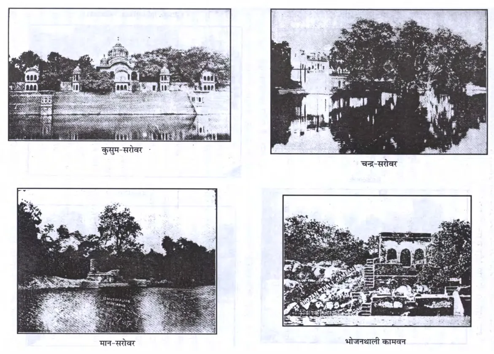
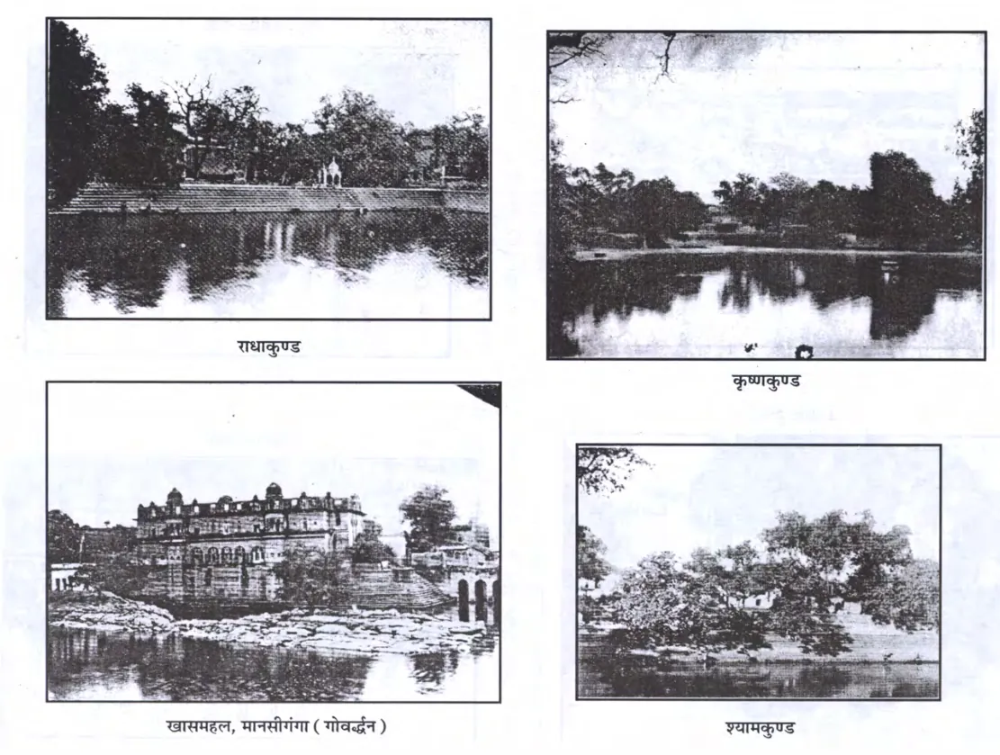
मथुराकी परिक्रमा
प्रत्येक एकादशी और अक्षयनवमीको मथुराकी परिक्रमा होती है, देवशयनी और देवोत्थापनी एकादशीको मथुरा-वृन्दावनकी एक साथ परिक्रमा की जाती है। कोई-कोई इसमें गरुड़-गोविन्दको भी शामिल कर लेते हैं। वैशाख-शुक्ला पूर्णिमाको रात्रिमें परिक्रमा की जाती है, जिसे वनविहारकी परिक्रमा कहते हैं। स्थान-स्थानमें गाने-बजानेका तथा पदाकन्दा नाटकका भी प्रबन्ध रहता है। श्रीदाऊजीने द्वारकासे आकर, वसन्त-ऋतुके दो मास व्रजमें बिताकर जो वनविहार किया था तथा उस समय यमुनाजीको खींचा था यह परिक्रमा उसीकी स्मृति है।
मधुवन
मथुरासे चार-पाँच मील दक्षिण-पश्चिम मधुवनमें महोली नामक एक गाँव है, जहाँ शत्रुघ्नजीने मधुदैत्यके किलेको उलट कर मधुपुरी बसायी थी जो पीछे मथुरा कहलायी। आजकल इसमें और मथुरामें इतना फासला है, सम्भव है यह फासला इधर आकर हो गया हो; पहले मथुरा ही वहाँतक फैली रही हो। महोलीसे आगे तालवन या तारसीगाम है जहाँ बलरामजीने धेनुकासुरको मारा था। इसके आगे कुमुदवन या सतोहागाँव है, वहाँ शान्तनुकुण्ड तथा शान्तनु और बलदेवजीके मन्दिर हैं। सन्तानेच्छुक लोग शान्तनुकुण्डमें स्नान करने आते हैं। सतोहेसे आगे वाढीगाममें बहुनावन है, यहाँ एक कृष्णकुण्ड और बहुलागायका मन्दिर है। इसके आगे तोषजारिवन या मुखराईगाम है। तोष भगवान्का सखा था, उसीके नामसे यह गाँव है। इसके आगे राधाकुण्ड तथा कृष्णकुण्ड—ये दो कुण्ड हैं। भगवान् श्रीकृष्णने जब अरिष्टासुरको मारा तो गोप-गोपियोंने भगवान्से कहा कि तुम्हें बैल मारनेकी हत्या लगी है। इसलिये किसी तीर्थमें स्नान करके शुद्ध होना चाहिये। इसपर श्रीराधा और श्रीकृष्णने अपने हाथोंसे धरती खोदकर जल निकाला; और इस प्रकार ये दो कुण्ड बन गये। तब भगवान्ने राधाकुण्डमें स्नान किया। जिस स्थानपर अरिष्टासुर मारा गया था, वह स्थान अरिष्टगाम हो गया, उसे ही आजकल अडींग कहते हैं। राधाकुण्डमें बंगाली महात्मा बहुत रहते हैं। गौड़ीय सम्प्रदायके मन्दिर तथा विष्णुस्वामी सम्प्रदायके गोस्वामी प्रयागदत्तजीकी धर्मशाला है।
गोवर्द्धन
राधाकुण्डसे तीन मीलपर गोवर्द्धन-पर्वत है। पहले यह गिरिराज ७ कोसमें फैले हुए थे; पर अब आप धरतीमें समा गये हैं। यहीं कुसुमसरोवर है, जो बहुत सुन्दर बना हुआ है। यहाँ वज्रनाभके पधराये हरिदेवजी थे, पर औरङ्गजेबी कालमें वह यहाँसे चले गये, पीछेसे उनके स्थानपर दूसरी मूर्ति प्रतिष्ठित की गयी। यह मन्दिर बहुत सुन्दर है। यहाँ श्रीवज्रनाभके ही पधराये हुए एकचक्रेश्वर महादेवका मन्दिर है। गिरिराजके ऊपर और आसपास गोवर्द्धनगाम बसा है तथा एक मनसादेवीका मन्दिर है। मानसीगंगापर गिरिराजका मुखारविन्द है, जहाँ उनका पूजन होता तथा आषाढ़ी पूर्णिमा तथा कार्तिककी अमावास्याको मेला लगता है। गोवर्द्धनमें सुरभि गाय, ऐरावत हाथी तथा एक शिलापर भगवान्का चरणचिह्न है। मानसीगंगापर जिसे भगवान्ने अपने मनसे उत्पन्न किया था, दिवालीके दिन जो दीपमालिका होती है उसमें मनों घी खर्च किया जाता है। शोभा दर्शनीय होती है। यहाँ लोग दण्डौती परिक्रमा करते हैं। दण्डौती परिक्रमा इस प्रकार की जाती है कि आगे हाथ फैलाकर जमीनपर लेट जाते हैं और जहाँतक हाथ फैलते हैं वहाँ एक लकीर खींचकर फिर उसके आगे लेटते हैं। इसी प्रकार लेटते-लेटते या साष्टाङ्ग दण्डवत् करते-करते परिक्रमा करते हैं जो एक सप्ताहसे लेकर दो सप्ताहतकमें पूरी हो पाती है। यहाँ गोरोचन, धर्मरोचन, पाप-मोचन और ऋणमोचन-ये चार कुण्ड हैं तथा भरतपुर-नरेशकी बनवायी हुई छतरियाँ तथा अन्य सुन्दर इमारतें हैं।
मथुरासे दीघको जानेवाली सड़क गोवर्द्धन पार करके जहाँपर निकलती है वह स्थान दानघाटी कहलाता है, यहाँ भगवान् दान लिया करते थे। यहाँ दानरायजीका मन्दिर है। इसी गोवर्द्धनके पास २० कोसके बीचमें सारस्वतकल्पमें वृन्दावन था तथा इसीके आसपास यमुना बहती थीं जैसा कि श्रीमद्भागवतमें है—
वृन्दावनं गोवर्द्धनं यमुनापुलिनानि च।
वीक्ष्यासीदुत्तमा प्रीती राममाधवयोर्नृप॥
स्कन्दपुराणमें भी लिखा है—
अहो वृन्दावनं रम्यं यत्र गोवर्द्धनो गिरिः।
वृहत् गौतमी तन्त्रमें आया है।
पञ्चयोजनमेवास्ति वनं मे देहरूपकम्।
कालिन्दीयं सुषुम्नाख्या परमामृतवाहिनी॥
उस समय जहाँ यमुनानी बहती थीं वहाँ जमनोतागाँव अबतक प्रसिद्ध है। कल्पभेदसे विभिन्न स्थानोंपर तीन वृन्दावन होनेके प्रमाण मिलते हैं। वर्तमान वृन्दावनको ही सारस्वतकल्पका वृन्दावन मान लेनेसे यह शंका होती है कि जल तथा ओलोंकी घोर वर्षामें वृन्दावनवासियोंका गाय-बछड़े बाल-बच्चे आदि सब सामान लेकर १४ मील चलकर गोवर्द्धनतक पहुँचना और फिर भगवान्का गोवर्द्धन धारण कर उनकी रक्षा करना, सम्भव नहीं प्रतीत होता।
गिरिराजसे आगे चलकर किलोकुण्ड, माधुरीकुण्ड, मोरवन, चन्द्रसरोवर, गोविन्दकुण्ड और उद्धवकुण्ड आदि पवित्र तीर्थस्थान हैं। गिरिराजके पिछले भागमें जतीपुरा गाँव है जहाँ श्रीवल्लभाचार्यवंशी गुसाइयोंके मन्दिर हैं। गुसाईंलोग जतीपुरामें ही गिरिराजका मुख मानकर उसे पूजते हैं। जतीपुराके सामने गिरिराजके दूसरी ओर आन्योरगाँव है। इस गाँवका इतिहास यह है कि जब भगवान्ने गोवर्द्धनकी पूजा की और अन्नकूटका भोग लगाया तो स्वयं ही विशाल पर्वतका रूप धारण कर गिरिराजपर प्रत्यक्ष विराजमान हो गये और चारों ओरसे भोग लगाने लगे। भोग लगाते हुए आप कहते जाते थे—आनो और, आनो और; बस, इसीसे इसका नाम आन्योर पड़ गया। आन्योरसे आगे नीवगाँव है, जहाँ निम्बार्काचार्य रहा करते थे। दूसरा नींवगाँव महावनके पास है, जहाँ श्रीनिम्बार्काचार्यका जन्म हुआ था। एक यही आचार्य एतद्देशीय और सो भी व्रजवासी थे, शेष तीनों—श्रीविष्णुस्वामी, श्रीरामानुज, श्रीमाधव दाक्षिणात्य थे। डींगसे कुछ दूर गांठौलीगाँव है जहाँ ब्रह्माजीने श्रीराधा और श्रीकृष्णकी गँठजोड़ी (विवाह) करायी थी। यह कथा ब्रह्मवैवर्तपुराण तथा गर्गसंहितामें वर्णित है।
कामवन
इसे काम्यकवन भी कहते हैं। पाँचों पाण्डव अपने वनवासकालमें इसीमें रहे थे। यह भी वृन्दावन है। यहाँ वृन्दादेवीका मन्दिर भी है। यहाँ भी श्रीकृष्णने गोपियोंसे दान या कर लिया था। श्रीमद्भागवतमें वर्णित 'कदाचिन्नृपचेष्टया' और 'एवं विहारैः कौमारैः कौमारं जहतुर्व्रजे। निलायनैः सेतुबन्धैर्मर्कटोत्प्लवनादिभिः' ये लीलाएँ कामवनमें ही हुई थीं। वहाँ लङ्काकुण्ड है जहाँ श्रीकृष्णने सेतु बाँधा है। यहाँ लुक-लुक कुण्ड और लुक-लुक कन्दरा भी है। श्रीकृष्ण यहीं आँखमिचौनी खेले हैं और यहीं कन्दरामें छिपकर पर्वतपर प्रकट हो उन्होंने वंशी बजायी है। यहाँ चरणपहाड़ी है, जिसपर भगवान्के अकृत्रिम चरण-चिह्नोंका दर्शन होता है। यहाँ ही भोजन-थाली हैं। पहाड़पर स्वतःसिद्ध अनेक थालियाँ बनी हुई दिखलायी देती हैं जिनमें अंगुली या छड़ीसे ठोंकनेसे काँसेके थाल जैसी ध्वनि निकलती है।
कामवनमें अनेक तीर्थ हैं—
पञ्चतीर्थ, धर्मकुण्ड, यज्ञकुण्ड, विमलकुण्ड, यशोदाकुण्ड, पञ्चकुण्ड, मनकामनातीर्थ, चक्रतीर्थ, महोदधितीर्थ, नन्दवट, नन्दकूप, सुरभिकुण्ड, वाराहकुण्ड, खिसलिनीशिला, अघासुरकी गुफा, वज्रनाभके पधराये हुए कामेश्वर महादेवका मन्दिर, कृष्णचन्द्रमाजीका मन्दिर, वल्लभाचार्यजीकी बैठक, हिंडोलाका स्थान, सुनहराकी कदमखण्डी, रासमण्डलका चबूतरा, कुञ्जमें जलशैया, विहारका स्थान, चित्रविचित्र शिला हैं। यहाँपर श्रीराधाजीकी सखियोंने उनके लिये फूलोंकी सेज बनायी है तथा फूलोंके पंखेसे उनका श्रम दूर किया है। यहाँ जावकके चिह्न हैं, इन नामोंको देखनेसे स्पष्ट प्रतीत होता है कि यह तीसरा वृन्दावन है। इससे आगे व्योमासुरकी गुफा है। व्योमासुर गोपका रूप धारण कर श्रीकृष्ण तथा गोपालोंके साथ राजाचोरका खेल खेलता हुआ खेलमें सोते हुए गोपोंको गुफामें डाल आता था। पीछे भगवान्ने इसे मार डाला। इस गुहासे आगे मानसीकुण्ड तथा वाराहकुण्ड हैं, उसके बाद कनवारोगाम है जहाँ भगवान् हिंडोला झूले हैं, इसके आगे बलदेवजीकी लीलाभूमि ऊँचोगाम है। यहाँ बलदेवजीका रासमण्डल तथा देहकुण्ड संयोगतीर्थ है। यही श्रीललिताजीका जन्मस्थान है। इससे आगे बरसाना या वृषभानुपुर है। यहाँ एक छोटी-सी पहाड़ी है। यह वृषभानु और कीर्त्तिजीकी राजधानी है। यहाँ मानसरोवर है, जिसे मानोखवर कहते हैं, तथा यशोदाकुण्ड है। यहाँ जो छोटी पहाड़ी है वह ब्रह्माजीका रूप है। इसके जो चार शिखर हैं वे ही चार मुख हैं, (इसी प्रकार नन्दगाँवकी पहाड़ी शिवरूप तथा गोवर्द्धन विष्णुरूप है) और इसीलिये इसे ब्रह्मशानु भी कहते हैं। इसके एक शिखरपर श्रीलाडिलीजीका मन्दिर है, दूसरेपर मान-मन्दिर (जहाँ भगवान्ने मानवती राधाको मनाया था), तीसरेपर दानगृह और चौथेपर मोरकुटी। प्राचीन मन्दिरोंके अतिरिक्त जयपुर-नरेशका बनवाया हुआ एक सुन्दर नया मन्दिर भी है। जब सीढ़ियोंपर चढ़कर मन्दिरको जाते हैं तो बीचमें राधाजीके पितामह महिभानुका मन्दिर मिलता है। पहाड़ीके नीचे एक ओरको राधाजीकी ललिता, विशाखा, चम्पकलता, रंगदेवी, चित्रलेखा, इन्दुलेखा, सुदेवी और तुंगविद्या इन आठ सखियोंके आठ मन्दिर हैं। एक मन्दिर वृषभानुजीका है जिसमें वृषभानुजी, उनके भाई श्रीदामाजी तथा श्रीराधाजीकी मूर्तियाँ हैं। बरसानेके दूसरी ओर एक छोटी पहाड़ी और है। इन दोनों पहाड़ियोंकी द्रोणी (खौ)में बरसाना बसा है। दोनों पर्वत जहाँ मिलते हैं वहाँ एक ऐसी तंग घाटी है कि एक मनुष्य भी कठिनाईसे निकल सकता है। इस स्थानका नाम साँकरीखोर है। भादो-सुदी अष्टमीसे चतुर्दशीतक यहाँ बड़ा सुन्दर मेला लगता है और फाल्गुन-सुदी ८, ९, १० को होलीकी लीला होती है। मानमन्दिर और मोरकुटीके बीचमें गह्वरवन है। बरसानेमें सनाढ्य ब्राह्मण रूपराम कटोरेके बनवाये हुए महल तथा सरोवर बहुत हैं।
पास ही चिकसौलीगाँव है और उसके कुछ आगे नोवारी-चोवारी सखियोंका मन्दिर है। वहाँ रत्नकुण्ड है जहाँ नन्दबाबाकी गायोंकी दोहिनी धोयी जाती थी। यहाँ ही पहले पहल यशोदाजीने राधाकृष्णकी युगल जोड़ी देखी और ईश्वरसे प्रार्थना की कि मेरे लालाका ब्याह इसी ललीके साथ हो। इसके आगे मोहिनीकुण्ड तथा विलासगाँव है, जहाँ भगवान्ने अनेक लीलाएँ की थी। इससे आगे प्रियाकुण्ड या पीरीपोखर है जहाँ श्रीलाडिलीजी अभ्यङ्गउद्वर्तन करके स्नान करती थीं। इसके आगे प्रेमसरोवर है जहाँ रामगढ़निवासी सेठ श्रीलक्ष्मीनारायणजी पोद्दारका बनवाया श्रीराधागोपालजीका मन्दिर है। यहाँ साधु-सन्त, यात्री-विद्यार्थी सभीको भोजन-सामग्री दी जाती है। इस मन्दिरसे सरोवरकी शोभा है और सरोवरसे मन्दिरकी। यह स्थान नन्दगाम और बरसानेके बीचमें है। साहित्येन्दु सेठ श्रीकन्हैयालालजी पोद्दारकी इसपर एक रचना है—
उत आवत हैं नँदलाल इतै
अलि आत रही वृषभानुकुमारी।
बिच प्रेमसरोवर भेट भई
यह प्रेमनिकुञ्ज नवीन निहारी॥
चित चाहत है इत ही रहिये
यह कीन्ह विनय प्रियसों जब प्यारी।
तब नित्य निवास कियो इत ही
मिलि राधा गुविन्द निकुञ्जविहारी॥
इसके आगे कुछ हटकर रीठौरा गाँव है जो श्रीचन्द्रावलिजीका स्थान है, जहाँ चन्द्रावलीकुण्ड, चन्द्रावलीकी बैठक तथा चन्द्रावली कुञ्जभवन है। पास ही यशोदाजी तथा श्रीललिताजीके मन्दिर हैं। रासमण्डलका चौंतरा तथा हिंडोलेका स्थान है। ललिता तथा विशाखा आदिके पृथक्-पृथक् कुञ्जभवन हैं। कदम्बकी कुंजें, विशाखाकुण्ड, विशालकुण्ड, पूर्णमासीकुण्ड तथा पूर्णमासीजीका मन्दिर आदि स्थान हैं। आगे मोहनकुण्ड है। जब भगवान्की रूप-माधुरीको देखकर व्रजवासी ऐसे मोहित हो गये कि उन्हें अपने तन-मनकी कुछ भी सुध-बुध नहीं रही तब भगवान्ने वंशी बजाकर उन्हें सचेत किया। तभीसे भगवान्का मोहन नाम पड़ा। आगे यशोदाकुण्ड है जहाँ यशोदाजीका मन्दिर है। गोपाष्टमीके दिन भगवान्ने सर्वप्रथम यहीं गायें चरायीं। आगे मधुसूदनकुण्ड, पद्मतीर्थ तथा चरणपहाड़ी है जहाँ भगवान्के चरण-चिह्न हैं। फिर पनिहारीगाँव तथा पनिहारीकुण्ड मिलता है। कहते हैं कि यशोदाजीके यहाँ यहींसे पानी आता था। इससे आगे नन्दरायजीकी गायोंका खिड़क, नन्दगाँव तथा नन्दगाँवकी कदमखण्डी है। नन्दगाँव नन्दबाबाका धाम है, इसे नन्दिग्राम भी कहते हैं। यह बरसानेसे पाँच मील दूर है। यहाँ भी छोटी-सी पहाड़ी है जिसके ऊपर नन्दजीका बहुत बड़ा मन्दिर है। गाँव पहाड़से नीचे बसता है। यहाँ रूपराम कटोरेके महल तथा मनसादेवी, नृसिंह, गोपीनाथ, नृत्यगोपाल, गिरिधारी, नन्दनन्दन, राधामोहन और यशोदानन्दनके मन्दिर हैं। नन्दीश्वरका भी स्थान है। कुछ आगे पानसरोवर है जहाँ श्रीकृष्णजी गायोंको पानी पिलाया करते थे। फिर आगे गौकुण्ड, हंससरोवर तथा सारसवन है जहाँ भगवान्ने पुष्पचयन करके राधाजीकी बेनी गूँथी थी। इससे आगे पूर्वकी ओर कुण्डलवन है। यहाँ भगवान्के कुण्डल खो गये थे जिन्हें गोपियोंने ढूँढ़कर भगवान्को पहनाया था। इसके पास ही संकेत है, यहाँ विमला-देवी और विमलकुण्ड हैं, करहलावन है, जहाँ कृष्णकुण्ड है। वृषभानुजीका उपवन है। इससे आगे भगवान्ने दधिलीला की थी।
इससे आगे कोसीस्थान है, जिसे कुशस्थली भी कहते हैं। यहाँ रत्नाकरकुण्ड, मायाकुण्ड, विशाखाकुण्ड तथा गोमतीकुण्ड ये चार कुण्ड हैं। दशहरा और चैत्रसुदी २ को यहाँ फूलडोलका मेला होता है। कोसीसे दक्षिणमें छातास्थान है जहाँ भगवान्ने छत्र-धारण-लीला की थी। यहाँ पहले छत्रवन था। यहाँ नगरसे कुछ दूर सूर्यकुण्ड है। आगे कमई नामक सखीके नामसे एक गाँव है। इसके घर श्रीराधाकृष्ण पधारा करते थे। पास ही आजनोखरी है जहाँ अञ्जनकुण्ड है। यहाँ श्रीकृष्णजीने राधाजीके नेत्रोंमें अञ्जन लगाया था। किसी कविका कहना है—
धन्या गोकुलकन्या
वयमिह मन्यामहे जगति।
यासां नयनसरोजे
अञ्जनभूतो निरञ्जनो वसति॥
पास ही एक पिसायो गाँव है जहाँ श्रीकृष्णको प्यास लगनेपर राधाजीने सखियों सहित पानी लाकर पिलाया था। इससे आगे खदिरवन है जहाँ गायोंका खिड़क है और उससे आगे बकासुर-वध-स्थान, सिद्धवन, कुमरवन, जावक-उपवन (जहाँ जावकवट है), कोकिलावन है। कोकिलावनके पास कोकिलाकुण्ड, ललिताकूप तथा राधिकाकुञ्ज है जहाँ भगवान्ने होलीकी लीला की है। इसके पीछे छोटी-बड़ी बैठन हैं जिसे कोटवन कहते हैं और जहाँ गायोंका खिड़क है। वहाँ कृष्णकुण्ड और बलभद्रकुण्ड तथा बलभद्रजीका मन्दिर है। यहाँ गोदोहन करके मटकोंमें भरकर दूध नन्दगाँव भेजा जाता था। इसके पास दूसरी चरणपहाड़ी है जहाँ सखाओंने श्रीकृष्णके चरण धोये हैं और उस चरणोदकसे चरणकुण्ड बन गया है जिसे चरणगंगा भी कहते हैं। यहीं किसी समय भगवान्ने दही बिलोकर माखन निकाला है और राधाजी सखियोंके साथ मिश्री लायी हैं और इस प्रकार भगवान् तथा बलदेवजीका माखन-मिश्रीका भोग लगा है जिसका प्रसाद सब गोपगोपियोंमें बाँटा गया है। इसके आगे रसौली-गाँव है। यहाँ रासमण्डलका चौंतरा है। रसौलीकुण्ड भी है। पास ही दधिगाँव है जहाँ भगवान्ने दधिलीला की थी। यहाँ दधिकुण्ड और मधुसूदनकुण्ड हैं। ये सात सखियोंके क्रीड़ा-स्थान हैं। शृङ्गार मन्दिर है। यहाँ वेणु-नादके द्वारा भगवान्ने दूर चली गयी गायोंको बुलाया है। यहाँ रासमण्डल तथा सूर्यकुण्ड है। इसके आगे शेषशायी हैं, जहाँ दाऊजीने शेषजीका और भगवान्ने लक्ष्मीनारायणका रूप धारण करके सखाओंको दिखाया है। क्षीरसागर भी है। आगे यमुनाजी हैं। पास ही शेरगढ़गाँव है, जहाँ ऐंठा कदम्ब है, जिसके द्वारा वरुणने दाऊजीके लिये वारुणी भेजी थी। यहाँ ही बलदेवजीने रासके समय यमुनाजीको बुलाया था; और उनके न आनेपर अपने हलसे अपनी ओर खींच लिया था। अबतक यहाँ यमुनाजी खिंची-सी दिखलायी पड़ती हैं; इसीका नाम रामघाट या विलासवन है। यहाँ ब्रह्मघाट है। यहीं ब्रह्माजीने तप करके बछड़े चुरानेका दोष क्षमा कराया है। इसके आगे आभूषणवन है, जहाँ गोपियोंने भगवान्का फूलोंसे शृङ्गार किया है। फिर निवारणवन है, जहाँ निवाड़ेके फूल बहुत होते हैं। आगे गुञ्जावन है जहाँ गोपियोंने गुञ्जाकी माला बनाकर भगवान्को पहनायी थी। उसके आगे अक्षयवट, संकेतवट तथा गोपीवट है, जहाँ भगवान्ने गोपियोंको सारी लीलाएँ प्रत्यक्ष दिखायी। पास ही यमुना-तटपर तपोवन है, जहाँ भगवान् राधा-विरहसे विह्वल हो गये हैं। इसके आगे चीरघाट है। भगवान्को पतिरूपमें प्राप्त करनेके लिये गोप-कन्याओंने यहीं कात्यायनी-देवीका व्रत किया था। एक दिन जब कि वे नग्न होकर यमुनामें स्नान कर रही थीं, भगवान् इस नग्न-स्नानकी कुप्रथाको हटानेके लिये एवं उनकी प्रेमा भक्ति बढ़ानेके लिये, घाटपरसे उनके वस्त्र उठाकर कदम्बके ऊपर जा बैठे थे; और फिर गोपिकाओंकी प्रार्थनापर उन्होंने उनके कपड़े लौटा दिये थे। यहाँ चीरविहारी ठाकुरजी तथा कात्यायनी-देवीके मन्दिर हैं। इससे आगे नन्दघाट है, जहाँ नन्दरायजीको वरुणजीका दूत पकड़कर ले गया था और फिर श्रीकृष्ण वरुणलोकमें जाकर उन्हें वापस लाये थे। नन्दजीके न मिलनेसे गोपोंको भय हुआ था, इसलिये उस स्थानका नाम भयगाँव पड़ गया था। उसके आगे बसईगाँव है, पास ही वत्सवन है, जहाँ वत्सविहारी ठाकुरजीका मन्दिर है, ग्वालमण्डलीका स्थान है, ग्वालकुण्ड है, हरिबोल तीर्थ है, जहाँ ब्रह्माजीने बछड़े चुराये थे। आगे रामभद्र-ताल है, जहाँ भगवान्ने श्रीरामचन्द्रका रूप धारण किया था। फिर नरी-सेमरीगाँव हैं, जो राधिकाजीकी दो सखियोंके नामसे बसे हैं। सेमरी श्यामला-सखीके नामका अपभ्रंश है। यहाँ बलदेवजीका मन्दिर है। नरीमें विशाखाकुण्ड, सूरजकुण्ड और बलदेवकुण्ड हैं। इसके आगे गरुड़गोविन्द है। जब भगवान्ने गोवर्द्धनपर्वत धारण किया था, तब गरुड़जी भी सेवार्थ आये थे। इससे आगे दिल्लीकी सड़कपर चौमुहा-गाँव है। चौमुहा चतुर्मुखका अपभ्रंश है। बछड़े चुरानेके बाद ब्रह्माजी यहाँ आये थे और फिर भगवान्के विहार देखकर आश्चर्यचकित होकर भगवान्को देखने लगे थे और उनकी स्तुति की थी। फिर आगे छटीकरा-गाँव है, जहाँ सखियोंके छः कुञ्जभवन हैं। यहाँ राधिकाजीका गुप्त भवन है। पास ही अक्रूरघाट या अक्रूर-गाँव है, जहाँ भगवान्ने यमुनाजीमें अक्रूरको अपना रूप-दर्शन कराया था। फिर भतरौड़ है, जहाँ यज्ञकर्ता ब्राह्मणोंकी स्त्रियोंने भगवान्को भोजन कराया था। यहाँ कार्तिकपूर्णिमाको मेला लगता है।
वृन्दावन
इसके आगे वृन्दावन है। यहाँ कालीदह है, जहाँ भगवान्ने कालीय-मर्दन किया था। यहाँ कालीय-मर्दन ठाकुरजीके दर्शन होते हैं। इसके पास युगलघाट है, जहाँ युगलकिशोरजीका मन्दिर है। फिर मदनमोहनजीका मन्दिर है। यह मन्दिर वृन्दावनमें सबसे प्राचीन है। बंगाली श्रीसनातनगोस्वामीको श्रीमदनमोहनजीकी मूर्ति प्राप्त हुई थी और फिर एक रामदास नामक पञ्जाबी सेठने इस मन्दिरको बनवा दिया था। मुसलमानी अत्याचारोंके समय मदनमोहनजी करौली पधरा दिये गये। पीछे बंगाली बाबू नन्दकुमारने मदनमोहनजीका दूसरा मन्दिर बनवाया, जिसमें दूसरी मूर्तिकी स्थापना की। इसके पास श्रीहरिदासजीके पूज्यदेव श्रीबाँकेविहारीका मन्दिर है। मूर्ति बड़ी मनोहर है। यहाँकी सभी बातें विलक्षण हैं। प्रातःकाल दस बजेके पूर्व तो यह उठते ही नहीं, उसके बाद जब दर्शन होते भी हैं तो क्षण-क्षणपर परदा पड़ता जाता है। वर्षमें एक ही दिन अक्षयतृतीयाको चरण-दर्शन होते हैं, एक ही दिन शरदपूर्णिमाको मुकुट तथा वंशी धारण करते हैं और एक ही दिन श्रावणशुक्ला ३ को झूलते हैं। मन्दिरमें घण्टा-घड़ियाल कुछ भी नहीं बजता। इनके अर्चक गुसाईं सारस्वत और निम्बार्क-सम्प्रदायी हैं, जो स्वामी हरिदासके भाईके वंशके हैं। स्वामी हरिदास पहुँचे हुए महात्मा हो गये हैं, जिनकी कुटीपर तानसेनका चेला बनकर अकबर बादशाह आया था। इसके आगे राधावल्लभजीका मन्दिर है। यह स्वामी श्रीहरिवंशजीके पूज्यदेव हैं (जोकि एक बड़े प्रतापी महात्मा थे) इनके गुसाईं गौड़ ब्राह्मण हैं, जो अपना स्वतन्त्र सम्प्रदाय बताते हैं। इसके पास सेवाकुञ्ज है। इसमें रंगमहल है, जो श्रीराधाकृष्णके नित्यविहारका स्थान है। यहाँ अब भी भगवान् नित्य रास-लीला करते हैं; इससे रात्रिमें कोई नहीं रहने पाता। दिनभर रहनेवाले बन्दरतक सायंकालको अपने आप यहाँसे चले जाते हैं। यदि कोई छिपा रह जाता है तो या तो दूसरे दिन मरा हुआ मिलता है या मुमुर्षुरूपमें। इसके आगे शृङ्गारवट है, जहाँ श्रीराधाजीकी बैठक तथा उनके चरणचिह्न हैं। पास ही साह बिहारीलालजीका बनवाया अतीव सुन्दर छोटे राधारमणजीका मन्दिर है। इससे आगे श्रीकृष्णचैतन्य महाप्रभुके सम्प्रदायका श्रीराधारमणजीका मन्दिर है। यह श्रीराधारमण श्रीगोपालजी भट्टके पूज्यदेव थे। यह पहले शालग्रामरूपमें थे। एक समय बिना जाने एक सेठजी बहुमूल्य वस्त्राभूषणकी भेंट लेकर दर्शनके लिये आये; पर आकर इन्हें शालग्रामके रूपमें देखकर उन्हें बड़ी निराशा हुई। उसकी निराशाको देखकर, उसे रातमें स्वम दे, दूसरे दिन यह इस रूपमें प्रकट हो गये और उसे भेंटदानका अवसर दिया। इसके आगे रासमण्डलका चौतरा है और फिर उसके आगे केशीघाट है जहाँ भगवान्ने केशी-दानवको मारा था। यहींपर राजा महेन्द्रप्रतापका प्रेममहाविद्यालय है, इसीके पास धीरसमीर है। इसके आगे दुर्वासा ऋषिका स्थल है और उसके आगे वंशीवट है जिसके नीचे खड़े होकर श्रीश्यामसुन्दर वंशी बजाया करते थे। यहाँ श्रीठाकुरजी और ठकुरानीजीके चरणचिह्न हैं। इसके पास वज्रनाभके पधराये हुए गोपेश्वर-महादेवका मन्दिर है। जिस समय भगवान्ने शरदपूर्णिमाके दिन महारास किया था उस समय स्वयं महादेवजी भी गोपीका रूप धारण करके उसकी शोभाका दर्शन करने पधारे थे। उन्हें देखते ही भगवान् पहचान गये और बोले—'आइये, गोपेश्वरजी!' उस दिनसे गोपेश्वर नामसे विख्यात होकर शिवजी यहीं बस गये। इनके दर्शनके बिना वृन्दावनयात्रा सफल नहीं मानी जाती। इसके पास ग्वालियर-नरेशका बनवाया श्रीगिरधारीदास ब्रह्मचारीका मन्दिर है जिसमें हंस भगवान्, सनकादि, नारदजी और श्रीराधाकृष्णजीके दर्शन होते हैं। यह ब्रह्मचारीजी भी सिद्ध थे। इसके आगे लालाबाबूका सुन्दर मन्दिर है, जिसमें श्रीकृष्णचन्द्रजी विराजते हैं और जिसके ऊपर चक्रसुदर्शनका चिह्न है। इसके आगे ब्रह्मकुण्ड है, जिसे ब्रह्मह्रद भी कहते हैं। एक बार भगवान्ने गोपोंको अपना ब्रह्मलोक दिखलाया है, जिसके विषयमें श्रीमद्भागवतमें लिखा है—
ते तु ब्रह्मह्रदं नीता मग्नाः कृष्णेन चोद्धताः।
ददृशुर्ब्रह्मलोकं ते यत्राक्रूरोऽध्यगात्पुरा।
यह ब्रह्मकुण्ड इसी लीलाका द्योतक है। इसके पास श्रीरङ्गजीका मन्दिर है, जिसमें स्वर्णनिर्मित गरुड़स्तम्भ है, विशाल पुष्करिणी तथा सैकड़ों त्रिमालियाँ (रहनेके स्थान) हैं जिनमेंसे प्रत्येक त्रिमालीके अन्दर एक-एक कुआँ है। - यह मन्दिर दक्षिणके मन्दिरोंके आकार-प्रकारका है। श्रीरङ्गजीकी मूर्ति बड़ी विशाल है। इसके आसपास भी भगवान्की तथा आलवारों (पूर्वाचार्यों) की मूर्तियाँ हैं। यह मन्दिर व्रजमें श्रीरामानुज-सम्प्रदायकी कीर्तिस्वरूप है। इसे श्रीरङ्गाचार्यके उपदेशानुसार जगत्प्रसिद्ध सेठ लक्ष्मीचन्दजीके कनिष्ठ भ्राता सेठ श्रीराधाकृष्णने बनवाया और अपने गुरु श्रीरंगाचार्यको ही भेंट कर दिया था। श्रीरंगाचार्यने इसे एक ट्रष्टके सुपुर्द कर दिया। इस मन्दिरमें चैत्रके महीनेमें ब्रह्मोत्सव और पौषके महीनेमें वैकुण्ठोत्सव हुआ करता है। इसके आसपास श्रीरामानुज-सम्प्रदायके और भी मन्दिर हैं। इस मन्दिरसे आगे चलकर गोविन्दजीका मन्दिर है। ये गोविन्दजी श्रीवज्रनाभके पधराये हुए थे और श्रीरूपगोस्वामीको मिले थे। इस मन्दिरकी मूर्ति भी यवनोंके उत्पीडन-कालमें जयपुर पधरा दी गयी थी, जो वहाँके राजमहलमें अबतक विद्यमान है। यह मन्दिर बहुत अधिक ऊँचा है, इसके पीछे श्रीगोविन्दजीका दूसरा मन्दिर है, यह भी श्रीचैतन्यसम्प्रदायका ही है। इसके पास गोविन्दबाग भी है। यमुनातटपर ज्ञानगुदड़ीमें श्रीविष्णुस्वामीके सम्प्रदायके विरक्तोंका अखाड़ा है। पास ही श्रीहरिदासजीके शिष्य मौनीदासजीका बनवाया हुआ मन्दिर है जोकि मौनीकी टट्टीके नामसे प्रसिद्ध है। उसके पास शाहजहाँपुरवाली रानीका बनवाया श्रीकिशोरीरमणका मन्दिर है। यह विष्णुस्वामीसम्प्रदायके गोस्वामी श्रीवंशीअलिजी (भ्रमर)के वंशज श्रीलाड़िलीप्रसादजीकी भेंट है। श्रीवंशीअलिजी तथा उनके पुत्र श्रीप्रद्युम्नचन्द्रजी आदि गोस्वामी बड़े विद्वान् हो गये हैं। श्रीप्रद्युम्नजीके सम्बन्धमें एक विशेष बात यह कही जाती है कि उनके कालमें दिल्लीमें प्रायः प्रत्येक हिन्दू कब्रकी पूजा करता था और घरोंके आलोंमें सैयदको पूजते थे। श्रीप्रद्युम्नजीने चमत्कारपूर्वक आलोंको तुड़वाकर श्रीराधारानीकी पूजा करायी। लोई-बाजारमें सवा मनके श्रीशालग्रामजीका मन्दिर है। इतने बड़े शालग्राम और कहीं देखनेमें नहीं आते। शहरसे बाहर जयपुरवाले महाराजका बनाया ब्रह्मचारीजीको भेंट किया सुन्दर विशाल मन्दिर है और उसके सामने तरासके राजा वनमालीरायका भी बनाया मन्दिर है। यह राजासाहब भगवान्से जामाताका सम्बन्ध रखते थे और हुक्केतकका भोग लगाते थे। सेवाकुञ्ज, निधिवन* कौमारीवन, राधावाला, गोविन्दबाग, वंशवट आदि दर्शनीय स्थानोंके अतिरिक्त, वहाँसे चलकर यमुनापार प्रथम खेलनवन है, जहाँ श्रीकृष्ण और राधाजी खेला करते थे। इसके आगे माटगाँव है, जहाँ भगवान्ने दही और माखनके माट बिखेरे और फोड़े हैं। फिर यशोदाके डरसे भागकर उपवनमें जाकर छिपे हैं। जिसपर यशोदाजीने उन्हें ढ़ूँढ़ते-ढूँढ़ते कहा है—'नीतं यदि नवनीतं किमेतेन आतपतापितभूमौ माधव मा धाव मा धाव।' इसके आगे भाण्डीरवट है। यहाँ श्रीबलदेवजीने प्रलम्बासुरको मारा है। यहाँ भाण्डीरकूप है जो बहुत पवित्र समझा जाता है। इसके आगे बिजौली गाँव है जहाँ बलदेवजी तथा श्रीकृष्णजीका बगीचा है। उससे आगे भद्रवन है। वहाँ गौघाट है जहाँ भगवान् मध्याह्नकालमें गायोंको जल पिलाते थे। वहाँ मधुसूदनकुण्ड है जहाँ भगवान्के रूठनेपर गोपियोंने उन्हें मनाया है। इसके आगे मुञ्जाटवी (मूँजवन) है जिस वनमें आग लग जानेसे भगवान्ने अग्निपान करके गायों और गोपोंकी रक्षा की थी। इसके आगे सुरीरगाँव है जो सौभरि-ऋषिका तपस्थल है। उसके पास डाँगोली-गाँव है, जहाँ श्रीकृष्ण तथा राधाकी बैठक है। आगे गह्वरवन है, जहाँ यमुनाजीकी झील है। झीलके किनारे पिपरौलीगाँव है, जहाँ मानिकशिला है और इसके पास वन है, जहाँ भगवान्ने बछड़े चराये हैं। यहाँ श्रीबलदेवजी और श्रीदामासखाकी बैठक है। उसके पास लोहवन है, जहाँ कृष्णकुण्ड है। यहाँ भगवान्ने लोहासुरको मारा है। यहाँ सनकादिने तप किया है। इसके पास गोपालपुर है, जहाँ भगवान्ने गायें चरायी हैं। उसके पास रावलउपवन है, जो राधाजीका ननिहाल तथा जन्मस्थान है। उसके आगे चन्दी-अनन्दी-गाँव है। ये दोनों देवियाँ नन्दके घर गोबर थापा करती थीं और इसी मिससे श्रीबलराम तथा श्रीकृष्णके नित्य दर्शन किया करती थीं। इसके आगे रीड़ा-गाँव है, जिसे अब बलदेवगाँव कहा करते हैं। यहाँ श्रीबलदेवजीकी गौर-मूर्ति न होकर श्याम-मूर्ति है। यह बलदेवजी वज्रनाभके पधराये हुए हैं। न जाने कैसे कालमहिमासे क्षीरसागरमें बहुत दिनतक शयन करते रहे; और फिर किसी समय जगन्नाथदास साधुको स्वप्न दिया कि क्षीरसागरमें शयन कर रहा हूँ, मुझे निकाल लो। तब उन्होंने निकालकर उन्हें कच्चे मन्दिरमें विराजमान करा दिया। व्रजमें वज्रनाभकी स्थापित की हुई यही एक मूर्त्ति है, शेष केशवदेवजी, गोविन्ददेवजी, हरदेवजी ये तीनों मूर्तियाँ बाहर पधार गयीं। कहते हैं कि बलदेवजीके मन्दिरमेंसे बहुत-से भौंरे पैदा होकर औरङ्गजेबकी फौजको दिक करने लगे। फिर इससे तंग आकर फौज भागकर चली गयी और इस प्रकार इस मन्दिरकी रक्षा हो गयी। किसीका कहना यह है कि मथुरामें केशव काश्मीरीने औरङ्गजेबको यह चमत्कार दिखलाया, जिससे मुग्ध होकर शेष व्रजमें वह गया ही नहीं। इससे इस पारके तीर्थ भी उसके अत्याचारसे बच गये। दाऊजी तो गौर थे; फिर उनकी यह श्याममूर्ति कैसी? इसका कारण तो यह बतलाया जाता है कि श्याममूर्तिमें सौन्दर्य अधिक होता है, इसीसे यह श्याम है। कोई-कोई यह कहते हैं कि श्रीकृष्णने कई बार अपना तेज श्रीबलदेवजीमें आविष्ट किया, इसलिये यह मूर्ति उसी भावकी द्योतक है। श्रीमद्भागवतमें लिखा है कि—'स्वयं विश्रमयत्यार्यं पादसंवाहनादिभिः' और भगवान् बलदेवजीसे कहते हैं—'अहो अमी देववरामरार्चितं पादाम्बुजं ते सुमनः फलार्हणम्। नमन्त्युपादाय शिखाभिरात्मनस्तमोपहत्यै तरुजन्म यत्कृतम्॥' इसमें वृक्षोंकी भक्ति, इससे आगे भौंरे, मोर, हरिणी, कोयल, इनकी भक्तिकी सूचना करके अन्तमें 'धन्येयमद्य धरणी तृणवीरुधस्त्वत्पादस्पृशो द्रुमलताः करजाभिमृष्टाः। नद्योऽद्रयः खगमृगाः सदयावलोकैर्गोप्योऽन्तरेणभुजयोरपि यत्स्पृहा श्रीः॥' अपनी और दाऊजीकी एकता स्थापित करके उनमें अपना तेज स्थापित किया। इसीसे आगे दाऊजीने धेनुकासुर, प्रलम्बासुर आदिको मारा है। इससे पहले दाऊजीकी कोई लीला इस प्रकारकी देखनेमें नहीं आती है। यह उनकी एक और विलक्षण बात है कि इनके दर्शन अन्त्यज भी कर सकते हैं। इसके पास हतोराग्राम है जहाँ श्रीनन्दराजकी आथाई है। इससे आगे चिन्ताहरण ब्रह्माण्डघाट है। मृत्तिका खानेके लिये यशोदाजीके डाँटनेपर उन्हें भगवान्ने अपने मुखमें मिट्टीके स्थानमें ब्रह्माण्ड दिखाया है। इसके आगे महावन है, जो बछड़ा चरानेका स्थान है। इसके सिवा नन्दराजके दाँतन करनेका टीला है। शकटासुर-तृणावर्तका खार है। नन्दभवन, दधिमन्थनस्थान, भगवान्की छठी पूजनेका स्थान, पालनेका स्थान, अस्सी खम्भोंका मण्डप, श्याममन्दिर, नन्दकूप, यमलार्जुनके उद्धारका स्थान, मथुरानाथ-द्वारकानाथके मन्दिर, पूतनाखार, गायोंका खिड़क, गोबरके टीले आदि स्थान हैं। पास ही रमणरेती है जहाँ दोनों भाई कीचमें घुटनोंके बल चले हैं। इसके पास रमणघाट, गोपकूप तथा नारदटीला है। यहाँ नारदजीने तप किया था। इसके पास कोयलाघाट तथा कोयला गाँव है। यहाँ कर्णवेधकूप है जहाँ भगवान्के कान छिदे हैं। यहाँ रतनचौक है। इसके पास मदनमोहनजी तथा माधवरायजीके मन्दिर हैं। इससे आगे गोकुलगाँव है जहाँ नन्दरायजीकी गायोंके खिड़क हैं, वल्लभकुलके गोस्वामियोंके मन्दिर हैं।
* निधिवनमें स्वामी श्रीहरिदासजी विराजते थे। यहाँ ही श्रीबाँकेविहारीजी प्रकट हुए हैं। इसीसे इसका नाम निधिवन है। स्वामीजीका करुआ और कोपीन अबतक यहाँ रखा हुआ है। —लेखक
बस, अब यह लेख कुछ अन्य आवश्यक बातोंका वर्णन करके समाप्त किया जाता है। कारण, व्रजमें इतने पावन स्थान हैं और उनके साथ ऐसे इतिहास लगे हुए हैं जिनका सविस्तर वर्णन करनेसे एक वृहद् ग्रन्थ तैयार हो सकता है। अकेले वृन्दावनमें ही ५००० मन्दिर बतलाये जाते हैं।* व्रजमण्डलकी बड़ी महिमा मानी जाती है; और अबतक 'तीन लोकतें मथुरा न्यारी' की बात यहाँ कुछ-कुछ देखनेमें आती है। वृन्दावनमें रातको कान्स्टेबल लोग जो पहरा देते हैं उसमें 'जागते रहो' आदिके स्थानमें 'राधेराधे' की आवाज़ लगाते हैं।
* वृन्दावनमें बहुत-से भजनानन्दी साधु-महात्मा छिपकर भजन करते हैं। वृन्दावनमें बन्दर भी बहुत हैं। वृन्दावनके सम्बन्धमें एक भक्तकी यह उक्ति है कि 'बँदराबनमें बँदरा बन। भजन करत हैं साधूजन।'—लेखक
व्रजभूमिमें मसजिदें
यों तो व्रजमें मसजिद तथा गिरजाका भी प्रवेश हो गया है; परन्तु फिर भी हिन्दू-संस्कृतिका यहाँ साम्राज्य है। और जो मसजिदें बनीं उनके साथमें भी अलग-अलग इतिहास है। जो हिन्दुओंकी उदारता या घोर उदासीनता प्रकट करता है। उदाहरणार्थ-मथुरामें दो मसजिदें प्राचीन प्रसिद्ध और विशाल हैं। एक तो केशवदेवजीके मन्दिरको तोड़कर औरङ्गजेबद्वारा बनवायी गयी और दूसरी चौक-बाज़ारमें अब्दुलनवीख़ाँकी बनवायी हुई। यह मसजिद सन् १८६२ ईस्वीमें बनी बतलायी जाती है। और इसका इतिहास भी यह सुना जाता है कि जहाँ यह मसजिद है वहाँ पहले बस्ती नहीं थी, कुछ कसाइयोंकी झोपड़ियाँ थीं। अब्दुलनवीखाँने, जो नौमुस्लिम फकीर थे, मुसलमानोंको तो यह जचा दिया कि देखो, मथुरामें तुम्हारी मसजिद बन जायगी और हिन्दुओंको यह समझाकर राजी कर लिया कि देखो, यह मसजिद बननेसे यहाँसे कसाई हट जायँगे। और यह रहेगी भी मथुराके बाहर। इस प्रकार नवीखाँने मसजिद बनवायी और फिर चार ब्राह्मणोंको इसमें घण्टा बजानेके लिये नियुक्त कर दिया। मसजिदके पास दूकानें भी बनवायीं जिनमेंसे आठ दूकानका किराया उन चार ब्राह्मणोंको जीविकार्थ मिलनेकी व्यवस्था कर दी।* कुछ ब्राह्मण वहाँ दुर्गापाठ, विष्णुसहस्रनाम तथा गोपालसहस्रनामका पाठ किया करते थे, उन्हें भी एक दूकान सौंप दी। इस प्रकार मसजिद बनकर भी इसपर अधिकार हिन्दुओंका ही रहा। एक मुल्ला भी वहाँ रहता था; पर उसे भी हिन्दू ही नियुक्त करते थे। पर इधर आकर हिन्दुओंने मूर्खतावश अपना अधिकार छोड़ दिया। अपनी दूकानें मुसलमानोंको बेच दी; और तबसे यह मसजिद सच्ची मसजिद हो गयी। मथुरामें एक बार पेशवाकी सवारी आयी थी। उन्हें यहाँ यह मसजिद देखकर बड़ा आश्चर्य हुआ, उन्होंने तुरन्त इसे तोड़ देनेका हुक्म दे दिया; पर हिन्दुओंने ही खुशामद कर-कराकर इसे टूटनेसे बचा लिया। अस्तु!
* इन घण्टा बजानेवाले ब्राह्मणोंमें से एक ब्राह्मणका वंश अबतक मथुरामें विद्यमान है और घण्टापाँड़ेके नामसे प्रसिद्ध है। -लेखक
व्रजभूमिमें गोवध!
हिन्दुस्थानमें गोरक्षाका प्रश्न एक बड़ा विकट है। गोभक्त हिन्दुओंको छातीपर पत्थर रखकर गोवध नाम सुनना तथा गोवध-कार्य होने देनेके लिये विवश होना पड़ता है। यहाँ व्रजमें भी गोवध होता है, यह कैसे परितापका विषय है। पर गोप्रेमी हिन्दुओंको यह जानकर परम सन्तोष होगा कि यहाँका गोवध बन्द कराना हिन्दुओंके लिये उतना कठिन नहीं है जितना अन्य स्थानोंका। कारण, यहाँ जो गोवध होता है वह सरकारी निषेधाज्ञाकी अवहेलना करके होता है। भरतपुरविजेता लार्ड लेक इस व्रजभूमिकी पवित्रतासे बहुत अधिक प्रभावित हुए थे और उन्होंने फरमान निकालकर कभी गोवध न करनेकी आज्ञा जारी की थी। यही नहीं, उन्होंने तो इस भूमिमें शिकारतक खेलनेकी मनाही कर दी थी और अबतक भी वही मनाही चली आ रही है। मथुरा और वृन्दावनके बीचमें यत्र-तत्र उनके उस फरमानके शिलालेख गड़े हुए हैं। बीचमें इस निषेधाज्ञाकी अवहेलना होते देखकर पुनः फरमान जारी किये जा चुके हैं। दुबारा हिदायतका एक फरमान सन् १८६६में जारी किया हुआ इधर-उधर गड़ा मिलता है। गोवधसम्बन्धी फरमानका पालन नहीं हो रहा है, इसलिये हिन्दुओंका परम कर्तव्य है कि वह चेष्टा करके गोवध बन्द करानेका प्रयत्न करें। एक बार प्रयत्न किया जा चुका है; पर इस बार ऐसा सामूहिक उद्योग करनेकी आवश्यकता है जो सफल होकर ही रहे। सर्वसाधारणकी जानकारीके लिये कर्नल लेककी निषेधाज्ञाका सरकारी हिन्दी अनुवाद नीचे दिया जाता है—
लेक (सही इंगरेज़ीमें)
'मथुराजीकी भूमि हिन्दुओंकी पवित्र पूजा-भक्ति करनेकी जगह है, इस जमीनके ऊपर किसी तरहते गायोंके लिये किसी प्रकारकी तकलीफ और हानि पहुँचानेकी सब लोगोंको मनाई करनेमें आती है, उन गायोंकी तरफ सब लोगोंको दया और उदारताका बर्ताव करना चाहिये। उसी मथुराजीकी भूमिमें बड़ा भारी प्रसिद्ध पुरुष, बड़ी खिताबोंका पानेवाला, बड़ा शूरवीर, इस ज़मीनपर राज्यशासन जमानेवाला, सब राजाओंके ऊपर राज्य करनेवाला, बहादुर सेनापति लार्ड लेक बहादुर संग्राममें जीतनेवाला सेनापति, जिसके हृदयमें परमेश्वरने दया और उदारताका अंश स्थापन किया है, वह इस हुकुमनामाको बाहर निकालता है कि कसाईकी जाति कोई मान—अथवा दूसरा कोई मथुरा शहरका रहनेवाला होय अथवा लशकर (पलटन)का सिपाही (गोरा)अथवा मुसाफिर होय वह कोई सदरमें, शहरमें अथवा उसके पासवाली फौजकी छावनीमें अथवा मथुरा शहरके पड़ावोंमें गायका कतल नहीं करै, इस बावदमें यह जाहिर किया जाता है कि कोई भी मानस इस जमीनमें गायोंको न काटे, यदि कोई इस अपराधको करेगा तो उसके कसूरपर निश्चय की हुई सज़ा दी जायगी और वह कसूर किसी तरह माफ नहीं किया जायगा। लिखी आजकी तारीख ३ जौलाई १८०५ ईस्वी रवी उलसानी महीनाकी तारीख ५ सन् १२२० हिजरी।
यह सच्ची कौपी फोटोग्राफ (सही इंग्रेजीमें)
रुस्तम मेहरवान आगा,
पारसी आनआरविस एण्ड हिन्दुस्तानी
ट्रान्सलेटर हाईकोर्ट, बम्बई।
एक आवश्यक सूचना
इसके सिवा और एक आवश्यक सूचना है। मथुरामें विश्रान्तघाटसे जिसका माहात्म्य वर्णन ऊपर किया जा चुका है, यमुनाजी दिन-दिन दूरातिदूर पहुँचती जाती हैं। मथुरावासियों तथा धनी यात्रियोंका परम धर्म है कि वे उद्योग करके उन्हें घाटपर ले आयें और वह सदा उस घाटपर तथा अन्य घाटोंपर, जिनपर अबतक वे हैं, बनी रहें। यदि ऐसा उद्योग न किया गया तो मथुराकी सारी शोभा नष्ट हो जायगी।
प्रेममय श्रीकृष्ण
(लेखक-श्रीयुत सदानन्दजी सम्पादक 'मेसेज')
श्रीकृष्णका जीवन प्रेमका जीवन है, श्रीकृष्णका संगीत प्रेमका संगीत है, श्रीकृष्णकी शिक्षाएँ प्रेमतत्त्वोंसे परिपूर्ण हैं। गोपाल-कृष्णने दरिद्र ग्वाल-बालोंसे-सरल और भोले-भाले साथियोंसे मित्रता की और अपने प्रेम बलसे उसने उनके मन और आत्माको ऐसा मोह लिया कि उनकी आत्माएँ कृष्णकी आत्मामें मिलकर एक हो गयी थीं। कृष्ण उनका नेता, अधिपति, मित्र एवं आराध्यदेव बना हुआ था। वह उनके लिये केवल उनके प्रेम और श्रद्धाका ही पात्र नहीं बल्कि इससे भी महत्तर व्यक्ति था। श्रीकृष्णने अपने राजसी वस्त्रोंको उतार दिया और हाथमें लकुटी लेकर वह वृन्दावनके पुण्यक्षेत्रोंमें अपनी सखामण्डलीके साथ गौएँ चरानेके लिये निकल पड़ा। इस सुरम्य वनमें धेनु चराते-चराते उसने एक कदम्बवृक्षपर चढ़कर अपनी सोने या चाँदीकी नहीं बल्कि बाँसकी वंशीकी सुरीली तान छेड़ी, जिसकी माधुरीने सभी चराचर प्राणियोंको वशीभूत कर लिया। इसमें कोई आश्चर्यकी बात नहीं है कि यह वंशी उसके प्राथमिक जीवनका प्रधान अङ्ग रही। जिन्होंने सरलताके मूर्तिस्वरूप बालकोंके आनन्दमय सहवासका अनुभव किया है, और जो सजीव प्रेमके जीवनप्रद वायु मण्डलमें विचरे हैं वे ही श्रीकृष्णके बालजीवनको समझ सकते हैं।
इसके अनन्तर हम श्रीकृष्णको वृन्दावनकी गोपियोंके हृदयस्थित प्रेमके झरनोंपर अपना अधिकार जमाते पाते हैं। इस संसारमें स्त्रियाँ मानो प्रेमके सरोवर हैं। माता, भगिनी, पत्नी और पुत्री आदिके प्रेमसे ही मनुष्य प्रेमका पाठ सीखता है। श्रीकृष्ण इसे जानता और समझता था। अतएव उसने उनके निर्मल प्रेमको अपनाकर उन्हें अपना प्रेम दिया, जिससे कि इस प्रेमानन्दरूप अमृत-सिन्धुमें वे दोनों निमग्न हो गये। जिन पाश्चात्य विद्वानोंने श्रीकृष्ण-लीलाके इस अंशकी आलोचना की है, उन्होंने उसके इस प्रेम और परमानन्दके यथार्थ तत्त्वको नहीं समझा है। यह श्रीकृष्ण और गोपबालाओंका प्रेम आधुनिक संसारका वह कलुषित काम नहीं है जो समाजको दूषित कर रहा है, वह तो परम निर्मल, सर्वथा उच्च एवं पवित्र प्रेम था जो कि अनायास ही दिव्यधामका द्वार खोल देता है। जिन लोगोंकी यह धारणा है कि एक अपरिपक्व अवस्थाका अबोध बालक भी कामेच्छासे युवतियोंको मोहित कर सकता है वे अगर पागल नहीं तो ज्ञान एवं विवेकसे रहित अवश्य हैं। इस अनन्त एवं नित्य प्रेमके ऊपर गोपियोंने अपना सर्वस्व न्योछावर कर दिया था। भक्तोंके लिये यह एक अनुपम शिक्षा है, जिसके अनुसार वे अपना मार्ग निश्चित करते हैं, जिससे कि वे इस प्रभुको—प्रेममय ईश्वरको-पहचान सकें।
बहुत-से सुधार-प्रेमी वस्त्र-हरणके सुन्दर दृश्यको अपनी नासमझीसे अश्लील समझते हैं। परन्तु बात ऐसी नहीं है। गोपियोंके हृदयमें इस बातका अभिमान था कि पारस्परिक प्रेमके कारण हमने श्रीकृष्णको अपने वशमें कर लिया है। किन्तु उनका होनेके लिये तो श्रीकृष्ण और भी अधिक त्याग चाहता था। जबतक उन गोप-बालाओंमें सांसारिकताका लेशमात्र भी रहा तबतक वह उनके अधीन नहीं हुआ। किन्तु जब वे सम्पूर्ण लोकाचार भूल गयीं और अपने हाथोंको ऊपर उठाकर श्रीकृष्णका आवाहन करने लगीं तो उसने उनपर प्रसन्न होकर और उनके पूर्ण त्यागसे सन्तुष्ट होकर उनके वस्त्रोंको अर्थात् सांसारिक आवरणको लौटा दिया।
इसके पश्चात् राजा दुर्योधनके दरबारमें भी एक ऐसा ही दृश्य देखा जाता है। जब पाण्डवोंकी महिषी द्रौपदीका चीर खींचा जाने लगा तब उसने श्रीकृष्णका आवाहन किया; किन्तु जबतक वह कपड़ेको थामे रही तबतक उसे कोई ईश्वरीय सहायता प्राप्त न हुई। परन्तु ज्यों ही उसने अपनेको भुलाकर दोनों हाथोंको ऊँचा उठाकर अखण्ड विश्वास और भरोसेके साथ ईश्वरका स्मरण किया त्यों ही उसे ईश्वरीय सहायता मिल गयी। सच्चे ईश्वरभक्तके लिये ये कैसे सुन्दर दृष्टान्त हैं? यदि तुम्हें ईश्वरीय सहायताकी आवश्यकता है तो तुम्हें संसारको और अपनेको भूल जाना चाहिये और तन-मन-वचनसे उसकी याद करनी चाहिये, तभी तुम्हारी स्तुति सुनी जायगी। जिन लोगोंने ईश्वरको पाया है, इसी रीतिसे पाया है।
दरिद्रोंमें श्रीकृष्णका प्रेम प्रत्यक्ष है। दरिद्र ग्वालबाल और बालिकाओंने, दरिद्र कुब्जाने, दरिद्र विदुरने, दरिद्र सुदामाने और दरिद्र पाण्डवोंने उनके मङ्गलमय प्रेमका औरोंकी अपेक्षा अधिक रसास्वादन किया था। पवित्र प्रेमकी प्रवृत्ति दरिद्रसे ही होती है। दरिद्रकी सेवा ईश्वरकी सेवा है। श्रीकृष्णके जीवनसे इस तथ्यपर अच्छी तरहसे प्रकाश पड़ता है। अतः यदि तुम श्रीकृष्णके जीवनको समझना चाहते हो तो तुम दरिद्रोंके लिये अपने जीवनको उत्सर्ग कर दो। दलित एवं पीड़ित भी दरिद्र ही हैं। बौद्धोंके भिक्षा-पात्र और वैष्णवोंकी कण्ठी और झोलीका भी यही मर्म है। जबतक कोई पुरुष अपने आपको दरिद्रकी अवस्थामें परिवर्तित नहीं कर देता तबतक वह दरिद्रको समझ नहीं सकता। दरिद्र, विनम्र और पीडितके हृदयमें भक्त अपने सजीव प्रेममय प्रभुको उनकी सम्पूर्ण महिमाके साथ देख सकता है। श्रीकृष्णके जीवनसे यदि मैंने कोई शिक्षा ग्रहण की है तो यही है।
भीख
(लेखक-एक भिखारी)
'नारायण! नारायण!!"
'कौन है?
'एक भिखारी'
'ठहरो, लाती हूँ
इतना कहकर नन्दरानीने बहुमूल्य हीरे-मोतियोंका थाल भरा, और स्वयं लेकर बाहर आयीं। परन्तु वह देखते ही सहम गयी। देखा, गलेमें साँप, जटाजूटमें साँप, साँपका कङ्कण, हाथमें डमरू और सुन्दर गौर शरीरपर बभूत रमाये एक मस्त जोगी खड़ा है। समाधिके नशेमें उसकी आँखें चढ़ी जा रही हैं। नन्दरानीने समझा कि कोई सिद्ध योगेश्वर है। वह बोली—
'नाथजी! यह लो भीख, मेरे लालको असीस दो, जिससे उसके सारे अमङ्गल टल जायँ।'
'मैया! तेरी यह भीख मुझे नहीं चाहिये। मुझे तो एक बार अपने लालका मुखड़ा दिखला दे। उसे देखते ही मेरे सब अमङ्गल टल जायँगे।
'नाथजी! मेरा साँवरा अभी निरा बच्चा है, तुम्हारे भेषको देखकर डर जायगा। भीख थोड़ी हो तो और ला दूँ, देखो, मेरे लालका किसी तरह अमंगल न हो, उसके सारे कुग्रह टल जायँ।'
'अरी मैया! तेरा लाल कालका भी काल है, उसीके डरसे सूर्य, चन्द्र, यमराज सब अपना-अपना कार्य कर रहे हैं, वह किससे डरेगा? साक्षात् मृत्यु देवता भी उसके नामसे डर जाते हैं। मुझे और कोई भीख नहीं चाहिये माता! मुझे तो एक बार अपने उस सलोने साँवरेकी हँसीली, छबीली, निराली, मतवाली काली छविका दर्शन करा दे। बस, एक बार उसकी झाँकी कर लेने दे।
'ना, ना, नाथजी! मैं अपने लालको बाहर न लाऊँगी। आजकल व्रजमें असुरोंका बड़ा उत्पात है, अभी उस दिन पूतना आयी थी। भगवान्ने रक्षा करी। मैं अभी-अभी उसकी माँग सँवारकर और उसके आँखोंमें काजल डालकर आयी हूँ; कहीं नजर लग जाय तो फिर तुम्हें कहाँ ढूँढ़ती फिरूँ?'
शिवजी हँसकर मन-ही-मन यशोदाके भाग्यकी सराहना करने लगे। बोले—'मेरी मैया! तू धन्य है, जो सर्वाधार त्रिलोकीनाथको अपने गोदमें खिलाती है, अपने हाथों शृंगारके सागरका श्रृंगार करती है; तेरे समान बड़भागी दूसरा कौन होगा? अरी, जिसके भ्रकुटिविलाससे सारे विश्वका सृजन और संहार होता है, उसको नजर कैसी?'
'तुम क्या कहते हो, बाबा! मैं यह सब नहीं समझती, तुम्हारे वेदान्तका हम गवाँरी ग्वालिनोंको क्या पता? भीख लेनी हो तो ले लो, मेरे श्यामसुन्दरको भूख लगी होगी, मैं अब और यहाँ नहीं ठहर सकती!
'माँ! मैं तेरे पैरों पड़ता हूँ, एक बार मुझे उस प्राणधनके दर्शन करा दे, तेरा मङ्गल होगा; नहीं तो मैं यहीं धरना दिये बैठा रहूँगा, बिना दर्शन किये तो यहाँसे हटूँगा नहीं!
यशोदा साधुबाबाके दुःखसे दुखी हुई, उसका कोमल हृदय द्रवित हो गया, भगवान्ने मति फेर दी। उसने कहा—
'अच्छा! लाती हूँ, पर अधिक देर न ठहरना भला! देखकर ही चले जाना।
इतना कहकर वह अन्दर गयी, और नजरसे बचानेके लिये माथेपर काजलकी बिन्दी लगाकर लालको गोदमें लिये बाहर लौटी। देवदेव शंकर त्रिभुवन-मोहिनी बालछविको देखकर मुग्ध हो गये। एकटकी लगाकर देखने लगे! यशोदाने कहा—
'लो, अब जाती हूँ, बहुत देर हो गयी।
अब, महाराजकी प्रेम-समाधि भंग हुई। वे बोले—
'तनिक ठहर जा मैया, मुझे दो बात तो कर लेने दे। शिवजीने नेत्रोंकी मूक-भाषामें ही मोहन प्यारेसे बातें की। फिर मुग्ध होकर गाने लगे—
सफल मम ईश जीवन आज।
निरखि अगुण अरूपको
गुणपूर्ण छबिमय साज॥
सच्चिदानँद अलख, अज,
अव्यक्त, अमित, अनन्त।
प्रगट सो शिशुरूप रस-
सौन्दर्य-निधि भगवन्त॥
धन्य व्रजके गोप-गोपी,
गौ मयूर तृणादि।
सगुण वपु धरि रहत जिनमहँ
ब्रह्म अचल अनादि॥
सर्व-शक्ति-समेत पूर्ण
प्रभाव-सह परमेश।
करत लीला चित्र मधुर सो
धारि बालक भेष॥
जगद्गुरु श्रीकृष्ण
(लेखक-श्रीयुत जी० वी० केतकर, बी०ए०, एल-एल० बी०, मन्त्री गीताधर्ममण्डल, स०सम्पादक 'केसरी' पूना)
वसुदेवसुतं देवं कंसचाणूरमर्दनम्।
देवकीपरमानन्दं कृष्णं वन्दे जगद्गुरुम्॥
वसुदेव-सुवन, कंस और चाणूरका मर्दन करनेवाले, माता देवकीको परम आनन्द प्रदान करनेवाले जगद्गुरु श्रीकृष्णकी मैं वन्दना करता हूँ। संस्कृतमें यह एक सुन्दर श्लोक है। इसमें भगवान् श्रीकृष्णके विशेषण चुन-चुनकर एक खास क्रमसे रक्खे गये हैं, यही इसकी सुन्दरता है। श्रीकृष्ण प्रसिद्ध धर्मनिष्ठ और उदारचरित श्रीवसुदेवके पुत्र थे। तात्पर्य यह है कि उनका जन्म उच्च कुलमें हुआ था, परन्तु उनकी महानता केवल इसी बातको लेकर नहीं थी, उन्होंने कुमारावस्थासे ही धर्म-स्थापनका कार्य प्रारम्भ कर दिया था। यह बात दूसरे विशेषण 'कंसचाणूरमर्दनम्' से व्यक्त होती है, उन्होंने अपने कर्मोंसे माता देवकीको आह्लादित किया, जो दुष्टोंद्वारा सतायी हुई मानव-जातिका एक उदाहरण थीं। इस प्रकार श्रीकृष्ण सबके लिये वन्दनीय एवं श्रद्धा तथा कृतज्ञताके पात्र बन गये। सबसे अधिक गौरवपूर्ण विशेषणका प्रयोग अन्तिम चरणमें हुआ है; क्योंकि उनकी वन्दनीयताकी अपेक्षा उनके जगद्गुरुत्वका महत्त्व अधिक है। उनका यह जगद्गुरुत्व उनकी वन्दनीयतासे अधिक चिरस्थायी होगा। उनकी वन्दनीयताका प्रभाव तो थोड़े ही पुरुषोंपर पड़ सकता है, परन्तु उनके जगद्गुरुत्वको सारा संसार स्वीकार करेगा।
हमें यह उपदेश कहाँ मिल सकता है। जिसके कारण श्रीकृष्ण जगद्गुरु कहलाये? इस दुःखमय एवं क्लेशपूर्ण जगत्में शान्ति-पथका अन्वेषण करनेवाली मानव-जातिके लिये उसके जीवन और आत्माका चिरस्थायी सन्देश कहाँ है? महर्षि वेदव्यासने उसे हमारे लिये भगवद्गीतामें सङ्कलित कर सुरक्षित कर रक्खा है। इस कार्यके द्वारा व्यासजीने मानव-जातिपर जो अनुपम उपकार किया है, उसके लिये वह व्यासजीकी चिरकृतज्ञ रहेगी। भगवान्ने भगवद्गीताका यह उपदेश किस अभिप्रायसे किया? आचार्य शंकरके शब्दोंमें धर्मकी स्थापना अर्थात् संसारमें व्यवस्थित शान्ति, सन्तोष और पवित्रता स्थापित करनेके उद्देश्यसे ही भगवान्ने ऐसा किया 'जगतः स्थिति परिपिपालयिषुः।'
यहाँ प्रश्न यह होता है कि क्या धर्मके बिना संसारका काम नहीं चलता? अच्छा सिद्धान्त भी बहुधा अयोग्य समर्थकोंके हाथमें पड़कर बिगड़ जाता है। इसी न्यायके अनुसार धर्मकी भी उसके दुरुपयोग तथा विपरीत ज्ञानके कारण बड़ी हानि हुई है। वञ्चक और स्वार्थी गुरुओं तथा उपदेशकोंने इसको अपने स्वार्थका साधन बना लिया है। धर्मके नामपर भोली-भाली अबोध जनताको सैकड़ों वर्षोंसे लूटा गया है। इसपर अन्ध-विश्वासका कूड़ा इतना जम गया है कि इसकी वास्तविक प्रभा अब दृष्टिगोचर नहीं, होती। भ्रमसे आभासको वास्तविक और नकली धर्मको असली धर्म समझकर कुछ लोगोंने धर्मके विरुद्ध संगठित संग्राम छेड़ दिया है। वे कहते हैं कि जैसे अफीम मिली हुई दवासे मनुष्य निश्चेष्ट एवं चेतनाहीन-सा हो जाता है, उसी प्रकार इस धर्मने दुखी और दलित जनताको इतना जड़ बना दिया है, कि वह अपनी गुलामीकी बेड़ी काटना ही नहीं चाहती। इस नासमझीके संग्राममें भाग लेनेवाले कहते हैं कि धर्मका मूलोच्छेद कर डालो, इसीने जनताको दासताकी शृङ्खलामें जकड़ रक्खा है।
परन्तु संसारमें मानव-जातिकी उन्नतिके लिये उसे एक आदर्श चाहिये। वह आदर्श ऐसा हो, जिसे दृष्टिमें रखकर लोग उत्साहपूर्वक कार्यक्षेत्रमें उतरें और सुधारके लिये अनवरत चेष्टा करें, ऐसा हुए बिना संसारका कल्याण कैसे हो सकता है? इस यन्त्र-प्रधान युगमें भी मनुष्यने अपनी काम करनेकी शक्तिका मशीनकी तरह उपयोग करना शुरू नहीं किया। यद्यपि मनोवैज्ञानिकोंकी एक शाखाने–जो Mechanical psychology (यान्त्रिक मनोविज्ञान)के नामसे प्रसिद्ध है, -मनुष्यके मनका मशीनकी भाँति उपयोग करने तथा उसे यन्त्ररूप सिद्ध करनेकी यथासाध्य चेष्टा की, किन्तु ये लोग यन्त्रोंके नियमोंद्वारा मनुष्यके मनके रहस्यको नहीं समझा सके। वैज्ञानिकलोग यन्त्रोंको चलानेके लिये सुलभ यन्त्रशक्ति (Mechanical power) उत्पन्न करनेकी खोजमें लगे हुए हैं, परन्तु क्या उन्होंने मनुष्यके मनको प्रेरित करनेवाली शक्तिका पता पाया है? कुछ लोग कहेंगे कि स्वार्थ (Self-interest) ही वह शक्ति है जो मनुष्यके मनको प्रेरित करती है। दूसरे लोग इसे कुछ बदलकर 'उच्च स्वार्थ' (Enlightened self-interest)के नामसे पुकारते हैं। इसपर यह प्रश्न होता है कि वह प्रकाश (Light) कौन-सा है जो इस स्वार्थको उच्च (Enlightened) बनाता है? क्या बुद्धि (Reason)का प्रकाश इस स्वार्थको उच्च बनानेमें पर्याप्त है? बहुधा हमें स्वार्थका स्थूल रूप ही देखनेको मिलता है, जिसका बुद्धिसे कोई सम्बन्ध नहीं होता और जो इस बातकी परवा न करते हुए कि संसारकी उससे कितनी हानि होती है, अपना प्रलय-ताण्डव करता ही रहता है। जबतक हम मानवजातिके सामने कोई आदर्श अथवा उसके भविष्यके लिये कोई आशाजनक सन्देश नहीं रखते, तबतक हम विज्ञानके हानिकर प्रभावसे उसकी रक्षा नहीं कर सकते। विज्ञानकी ध्वंस-शक्ति किसी विश्वद्रोहीके अधीन होकर किसी दिन मानव-जातिकी प्रगतिको समूल नाश कर सकती है। विज्ञानकी अपूर्व उन्नतिके घातक परिणामोंसे संसारको बचानेका यदि कोई उपाय है तो केवल यही है कि मनुष्यता और मानव-प्रगतिके वास्तविक महत्त्वपर जनसाधारणका दृढ़ विश्वास हो जाय।
वह विश्वास किसप्रकारका होना चाहिये? श्रीयुत एच० जी० वेल्स (H. G. Wells) महाशयने अपनी 'Outline of the History of the World' नामक पुस्तकमें इसका कुछ दिग्दर्शन कराया है। विज्ञानके कारण स्थानोंकी दूरी कम हो रही है, पृथिवीका व्यास संकुचित हो रहा है और मानव-जातियाँ एक दूसरेके साथ अधिकाधिक सम्पर्कमें आ रही हैं। तार, बे-तारके तार, साधारण एवं बोलनेवाले वायस्कोप, रेडियो तथा गमनागमन एवं एक स्थानसे दूसरे स्थानको समाचार भेजनेके शीघ्रतापादक साधनोंने छोटे-छोटे राज्योंको अनावश्यक बना दिया है। सार्वभौम राष्ट्र-सभा एवं सार्वभौम राष्ट्रकी भावना अब स्वप्नकी-सी कल्पना नहीं रह गयी है। हमलोग सभी अनुभव करते हैं कि समयकी गति हमें उसीकी ओर ले जा रही है। क्या इस सार्वभौम राष्ट्रके लिये किसी धर्मकी आवश्यकता होगी? विश्वभरकी मानव-जातिके इतिहासका प्रवाह किस ओर जा रहा है, इसकी आलोचना करनेके पश्चात् एच० जी० वेल्स महाशयकी यह धारणा हुई है कि सार्वभौम राष्ट्रके लिये धर्मकी आवश्यकता होगी; इतना ही नहीं, उनके मतके अनुसार तो सार्वभौम राष्ट्रका मुख्य अङ्ग धर्म ही होगा। वे कहते हैं—
Let us ape Roger Bacon in his prophetic mood and set down what we believe will be the broad fundamentals of the coming world state.
1. It will be based upon a common or world religion very much simplified and universalised and better understood. This will not be Christianity, nor Islam, nor Buddhism, nor any such specialised form of religion, but religion itself pure and undefied; the eightfold way, the kingdom of heaven, brotherhood, creative service and self forgetfulness. Throughout the world men's thoughts and motives will be turned by education, example, and the circle of ideas about them from the obsession of self to the cheerful service of human knowledge, human power and human motive.'
अर्थात् आओ, हमलोग रोजर बेकनकी भाँति भविष्यके सम्बन्धमें विचार करें और अपनी धारणाके अनुसार भावी सार्वभौम राष्ट्रके मूल सिद्धान्तोंको स्थूलरूपसे बतलावें।
१-भावी सार्वभौम राष्ट्रका आधार एक सर्वसम्मत अथवा सार्वभौम धर्म होगा, जो वर्तमान धर्मोंकी अपेक्षा अधिक शुद्ध एवं सार्वदेशिक होगा एवं जिसे लोग अधिक समझेंगे। यह धर्म ईसाई, इस्लाम, बौद्ध अथवा अन्य कोई विशेष धर्म नहीं होगा, इसका स्वरूप शुद्ध एवं निर्दोष होगा; अष्टविध मार्ग, वैकुण्ठका राज्य, बन्धुत्व, उत्पादक सेवा और आत्म-विस्मृति—यही इसके अंग होंगे। सारे संसारमें मनुष्योंके विचारों और हेतुओंपर उनकी शिक्षा, परस्परके उदाहरण और वातावरणका ऐसा प्रभाव पड़ेगा कि लोग अहंकारको त्यागकर मानवीय ज्ञान, मानवीय शक्ति और मानवीय उद्देश्यको चरितार्थ करनेमें उत्साहपूर्वक लग जायँगे।
सारांश यह कि H. G. Wells महाशयके मतानुसार भावी सार्वभौम धर्मका सार-तत्त्व अहंकार छोड़कर मानवजातिकी प्रसन्नतापूर्वक सेवा करना ही होगा, अथवा यों कहिये कि इस धर्मके अनुयायी 'अनहंवादी' और 'सर्वभूतहिते रताः' होंगे। गीतामें अनहंवादी होनेका उपाय बतलाया गया है। गीता हमें जीवनके सारे द्वन्द्वोंमें प्रसन्न रहनेका उपाय बताती है। इस प्रकार सार्वभौम धर्मके विषयमें विचार करते हुए आधुनिक लेखकोंने धर्मके दो लक्षण ढूँढ़ निकाले हैं, जिनका निरूपण धर्मकी निम्नलिखित प्रसिद्ध भारतीय परिभाषामें किया गया है, जो गीताके शाङ्कर-भाष्यकी भूमिकामें मिलती है।
'जो प्राणीमात्रके इहलौकिक अभ्युदय और पारमार्थिक कल्याणका साक्षात् हेतु हो, वही धर्म है।'*
* प्राणीनां साक्षादभ्युदयनिःश्रेयसहेतुर्यः स धर्मः।
पाश्चात्य लेखक अपनी स्वतन्त्र युक्तियोंका प्रयोग करके 'उदात्त स्वार्थ' से आगे बढ़कर कर्मके इस लक्षणपर पहुँचे हैं। उदाहरणार्थ H. G. Wells अपनी 'First and last things' नामक पुस्तकमें कहते हैं—
"The co-ordination of the species to a common general end and the quest for personal salvation are the two aspects, the outer and inner, the social and the individual aspect of essentially the same desire.'
अर्थात् 'किसी सार्वजनिक एवं सर्वव्यापी उद्देश्यके साथ जातिविशेषका समन्वय करना तथा व्यक्तिगत मुक्तिका मार्ग ढूँढ़ना वास्तवमें एक ही अभिलाषाके दो रूप हैं जिन्हें आन्तरिक और बाह्य अथवा सामाजिक और वैयक्तिक कह सकते हैं।'
Bertrand Russel महाशय अपनी 'Social Reconstruction' नामक पुस्तकमें कहते हैं—
'Religion is partly personal, partly social, to the Protestant primarily personal, to the Catholic primarily social. It is only when the two elements are intimately blended that religion becomes a powerful force in moulding society.'
अर्थात् धर्मका कुछ अंशमें व्यक्तिसे सम्बन्ध है और कुछ अंशोंमें समाजसे। प्रोटेस्टेण्ट* (Protestant) मतानुयायियोंकी दृष्टिमें उसका व्यक्तिसे सम्बन्ध है और कैथलिक१ (Catholic) मतवालों की दृष्टिमें समाजसे। इन दोनों तत्त्वोंकी जब गाढ़ एकता हो जाती है, तभी समाजके संगठनमें धर्मसे पूरी सहायता मिलती है।
*, १ ये ईसाई-मतके दो प्रधान सम्प्रदाय हैं जिनमें पुराना मत ‘कैथलिक' नामसे विख्यात है और दूसरा 'प्रोटेस्टेण्ट' मत सुधारकोंका मत है जो मूर्तिपूजा आदिको नहीं मानता।
गीताने सामाजिक और वैयक्तिक इन दो विभिन्न तत्त्वोंको मिला दिया है। संस्कृतके निम्नलिखित सुन्दर पद्यमें इन दोनों तत्वोंकी विभिन्नता स्पष्टरूपसे ब्यक्त की गयी है—
एको देवः केशवो वा शिवो वा
एकं मित्रं भूपतिर्वा यतिर्वा।
एको वासः पत्तने वा वने वा
एका माया सुन्दरी वा दरी वा॥
अर्थात् 'एक ही देवताको पूजो—लोकसंग्रही केशवको या तपस्वी शिवको; मित्र एक ही बनाओ-भूपतिको या यतिको; रहनेके लिये एक ही स्थान चुनो—जनरवपूर्ण नगर या निर्जन वन और जीवनसहचरी एक ही बनाओ सुन्दरी नारीको या पर्वतकी कन्दराको।' इस पद्यके रचयिताके मतमें कोई बीचका मार्ग अथवा समन्वयका उपाय नहीं है। इस विभिन्नताका वैज्ञानिक आधार ज्ञान और कर्मकी विभिन्नता है, और ज्ञान एवं कर्मके मध्य उतना ही विरोध बतलाया गया है जितना अन्धकार और प्रकाशमें। परन्तु गीताने इन दोनोंकी प्रगाढ़ एकता कर दी है। गीताके अनुसार ज्ञान-मार्ग और कर्म-मार्ग विरोधी नहीं हैं, प्रत्युत ये दोनों तत्त्वतः एक और अन्योन्याश्रित हैं। 'एकं सांख्यं च योगं च यः पश्यति स पश्यति' गीतोक्त योगमार्गमें 'कौशल' से इनका समन्वय किया जा सकता है। 'योगः कर्मसु कौशलम्' 'वैयक्तिक और सामाजिक दोनों ही प्रकारके स्वकर्तव्योंके द्वारा भगवान्की उपासना की जा सकती है, गीताका यह सिद्धान्त 'स्वकर्मणा तमभ्यर्च्य' आदि वाक्योंमें बतलाया गया है। पाश्चात्य दार्शनिक गणोंको भी स्वतन्त्ररूपसे यही मत मान्य है। मानवजातिकी सेवा आध्यात्मिक उद्देश्यके बिना निर्जीव हो जाती है। Bertrand Russel अपनी 'Principles of social reconstruction' नामक पुस्तकमें कहते हैं—The world has need of a philosophy or a religion which will promote life. But in order to promote life it is necessary to have something other than mere life. Life devoted only to life is animal, without any real human value, incapable of preserving men permanently from weariness. If life is to be fully human, it must serve some end which seems in some sense, outside human life, some end which is impersonal and above mankind, such as God or truth or beauty. Those who best promote life do not have life for their purpose. They aim rather at what seems like a gradual incarnation, a bringing into our human existence of something eternal, something that appeals to imagination to live in, a heaven remote from life and failure and the devouring jaws of Time. Contact with the eternal world even if it be only a world of our imagining brings a strength and a fundamental peace which can not be wholly destroyed by struggles and apparent failures of temporal life. It is this happy contemplation of what is eternal that Spinoza calls the intellectual love of God. To those who have once known it, it is the key to wisdom. What we have to do practically is different for each one of us, according to our capacities and opportunities. But if we have the life of spirit within us, what we must do and what we must avoid will become apparent to us.'
अर्थात् 'संसारको एक ऐसे दर्शन या धर्मकी आवश्यकता है, जो जीवनको उन्नत बनानेवाला हो। परन्तु जीवनको उन्नत बनानेके लिये निरे प्राण-धारण करनेके अतिरिक्त किसी दूसरी वस्तुकी भी आवश्यकता है। जो जीवन केवल प्राण-धारणके लिये ही होता है, वह तो पशु-जीवन है। वह मनुष्यके वास्तविक महत्वसे शून्य होता है। ऐसा जीवन मनुष्यको सदाके लिये क्लेशसे नहीं बचा सकता। हमारा जीवन यथार्थ मानव-जीवन तभी कहलाता है, जब वह किसी ऐसे उद्देश्यकी पूर्तिका साधन बन जाता है, जो एक प्रकारसे मानव-जीवनके बाहरकी वस्तु जान पड़ती है, और जिसका हमारे व्यक्तित्वसे कोई सम्बन्ध नहीं होता; फिर वह उद्देश्य चाहे शिव (परमात्मा) हो, सत्य हो या सुन्दर हो। जो लोग अपने जीवनको खूब उन्नत बनाते हैं उनका जीवन उन्हींके लिये नहीं होता। उनका लक्ष्य यह होता है कि हमारा जीवन क्रमशः अवताररूप बन जाय, हमारे मानव-जीवनका उस शाश्वत जीवनसे सम्बन्ध हो जाय जिसकी कल्पना ही आनन्ददायक होती है। जो निरतिशय सुखरूप एवं हमारे असफलतापूर्ण जीवनसे परेकी चीज है और जहाँ सर्वभक्षक कालकी गति नहीं है, उस शाश्वत जगत्के साथ सम्पर्क होनेसे, चाहे वह हमारी कल्पनाका ही विषय क्यों न हो, बल और वास्तविक शान्ति मिलती है, जिसका ऐहिक जीवनके घमासानों तथा दिखाऊ प्रसिद्धियोंसे सर्वथा नाश नहीं होता। सनातन तत्त्वके इस आनन्ददायक ध्यानको ही स्पाइनोजा (Spinoza) नामक प्रसिद्ध पाश्चात्य दार्शनिकने 'परमात्माकी बौद्धिक भक्ति' (Intellectual love of God) कहा है, जिन्होंने इसे एक बार भी जान लिया उनके हाथमें तो मानो ज्ञानकी कुंजी आ गयी। अवश्य ही हम लोगोंमें से प्रत्येकके लिये अपनी-अपनी योग्यता और अवसरके अनुसार साधनोंकी विभिन्नता है। परन्तु यदि हमारा आन्तरिक जीवन आध्यात्मिक है, तो फिर हमारे लिये क्या कर्तव्य है और क्या निषिद्ध है, यह अपने आप ही स्पष्ट हो जायगा।'
उपर्युक्त अवतरणमें अपने कर्मोंके द्वारा भगवान्की पूजा करने ‘स्वकर्मणा तमभ्यर्च्य' के सिद्धान्तकी ही व्याख्या है। जिस यज्ञ-चक्रकी गति अमीर और गरीब, शिक्षित और अशिक्षित सभी लोगोंकी परस्पर सहायता और सहयोगपर निर्भर है 'परस्परं भावयन्तः श्रेयः परमवाप्स्यथ', उसी यज्ञचक्रका एक अङ्ग 'स्वभावनियत कर्म भी है। इस 'स्वभावनियत कर्म' की व्याख्या श्रीयुत एच० जी० वेल्सकी 'First and last things' नामक पुस्तकके निम्नलिखित भावगर्भित अवतरणमें मिलती है—
The essential fact in man's history to my sense is the slow unfolding of a sense of community with his kind, of the possibilities of co-operation leading to scarcedreamt—of powers, of a synthesis of the species, of the development of a common general idea, a common general purpose out of a present confusion. In that awakening of the species, one's own personal being lives and moves-a part of it and contributing to it. One's individual existence is not entirely cut off as it seems at first. One's separate individuality is another a profounder among the subtle inherent delusions of the human mind. Between you and me as we set our minds together and between us and the rest of mankind there is something that rises through us and is neither you and me, that comprehends us, that is thinking here and using me and you to play against each other in that thinking, just as my finger and thumb play against each other as I hold this pen with which I write.'
'मानव-जातिके इतिहासके अन्दर मुख्य बात जो मेरी समझमें आती है वह यह है कि मनुष्य धीरे-धीरे सारी मानव-जातिके साथ अपनी एकताका अनुभव कर रहा है तथा परस्पर सहयोगसे वह कैसी-कैसी अतर्क्य शक्तियोंसे सम्पन्न हो सकता है इसको समझ रहा है और उद्देश्यों तथा सिद्धान्तोंकी वर्तमान गपड़चौथमेंसे एक सार्वलौकिक सामान्य सिद्धान्त अथवा सार्वलौकिक सामान्य उद्देश्यका क्रमिक विकास हो रहा है। जातिकी इस जागृतिमें मनुष्यका व्यक्तिगत आत्मा भी उसका एक अङ्ग तथा सहायक होकर रहता और चलता फिरता है। मनुष्यकी व्यक्तिगत सत्ता बिलकुल अलग नहीं हो जाती, यद्यपि पहले ऐसा प्रतीत होता है। मानव-चित्तके अतिसूक्ष्म एवं स्वाभाविक भ्रमोंमें दूसरा भ्रम, जो औरोंकी अपेक्षा अधिक गहरा है, मनुष्यका पृथक् व्यक्तित्व है। जब हम मिलकर किसी बातका चिन्तन करते हैं उस समय मेरे और तुम्हारे बीचमें और हमारे और सारी मनुष्य-जातिके बीचमें एक ऐसी वस्तु उत्पन्न होती है जो हम दोनोंसे भिन्न है और हम दोनों ही जिसके ज्ञानके विषय हैं, जो यहाँ बैठकर विचार करती है, और हम दोनोंको उस विचारकी क्रियामें एक दूसरेकी सहायता करनेके लिये ठीक उसी तरह प्रेरित करती है, जिस तरह मेरा अँगूठा और उँगली जब मैं इस कलमको लिखते समय हाथमें पकड़ता हूँ, तब एक दूसरेकी मदद करते हैं।'
भगवद्गीताका अध्ययन करनेवालोंको मालूम होगा कि गीताके तीसरे अध्यायमें जिस शाश्वत यज्ञचक्रका बड़ी सुन्दरताके साथ वर्णन किया गया है उससे बहुत कुछ मिलती-जुलती बात ऊपर कही गयी है। इससे यह निष्कर्ष निकलता है कि इस यज्ञ चक्रके चलानेमें जो मदद नहीं करता, वह पाप करता है। वेल्स महाशय निम्नलिखित शब्दोंमें इस बातको भी सूचित करते हैं—
"So soon as one passes from general terms to the question of individual good, one encounters individuality, for everyone in the differing quality and measure of their personality and powers and possibilities, good and right must be different. We are all engaged each contributing from his or her own standpoint in the collective synthesis. Whatever one can best do, one must do that; in whatever manner one can help the synthesis one must exert oneself. The setting apart of oneself, secrecy, the service of secret and personal ends is the waste of life and essential quality of sin.'
'सर्वसाधारणके प्रश्नको छोड़कर व्यक्तिगत हितके प्रश्नको हाथमें लेते ही मनुष्यके सामने व्यक्तित्वका प्रश्न उपस्थित हो जाता है, क्योंकि प्रत्येक मनुष्यके अन्दर अच्छी और न्याययुक्त शक्ति और सामर्थ्यकी जो एक विशेषता होती है, उसके प्रकार और मात्रामें अवश्य भेद होता है। हमलोग सभी अपनी-अपनी विचारधाराके अनुसार सामूहिक समन्वयके कार्यमें योग देनेमें लगे हुए हैं। मनुष्यको चाहिये कि वह उस कार्यको अवश्य करे जिसे वह सुचारुरूपसे सम्पन्न कर सकता है। वह जिसप्रकारसे भी इस समन्वयके कार्यमें मदद दे सके उसी प्रकारसे उसे मदद देनेकी चेष्टा करनी चाहिये। अपनेको संसारसे अलग रखना, छिप कर रहना तथा अप्रकट एवं व्यक्तिगत स्वार्थको सिद्ध करना यह जीवनका दुरुपयोग एवं पापका मुख्य लक्षण है।'
उपर्युक्त अन्तिम वाक्य भगवद्गीताके निम्नलिखित श्लोकका एक प्रकारसे अक्षरशः अनुवाद है—
एवं प्रवर्तितं चक्रं नानुवर्तयतीह यः।
अघायुरिन्द्रियारामो मोघं पार्थ स जीवति॥
(३। १६)
इस प्रकार हम देखते हैं कि आधुनिक पाश्चात्य विद्वान्, जो वर्तमान वैज्ञानिक युगकी सारी जटिलताओं और परिणामोंको जानते हैं और जिन्होंने मानवजातिके अतीत इतिहासका आलोचन किया है, इस निर्णयपर पहुँचे हैं कि भावी सार्वभौम राष्ट्रको धर्मकी आवश्यकता निश्चय ही होगी; उस धर्मके दो रूप होंगे—सामाजिक एवं वैयक्तिक, यद्यपि दोनों आपसमें खूब मिले हुए होंगे; उस धर्मका काम होगा मानव-जातिकी प्रसन्नतापूर्वक एवं अहंकार छोड़कर सेवा करनेके लिये लोगोंको प्रोत्साहित करना तथा सहयोग-सिद्धान्तके अनुकूल विश्वसञ्चालनकी एक व्यवस्था करना और किसी आध्यात्मिक आदर्शको उसका आधार बनाना। प्रत्येक मनुष्यको चाहिये कि वह अपना कार्यक्षेत्र तथा कार्यकी सीमा अर्थात् उस व्यवस्थामें उसका क्या भाग होगा यह निश्चित कर ले और फिर उसे पूरा करनेके लिये प्राणपनसे चेष्टा करे। प्रत्येक मनुष्य अपने कार्यक्षेत्रको उस आध्यात्मिक आदर्शकी कसौटीपर कसकर ही निर्धारित करे।
उपर्युक्त सारी बातें हमें गीतामें मिलती हैं जहाँ सांख्य और योगका समन्वय किया गया है, जहाँ 'मुक्तसङ्ग' और 'अनहंवादी' कर्ताके लक्षण कहे गये हैं जो उत्साहसे पूर्ण एवं सर्व भूतोंका हित करनेके लिये तत्पर रहता है, जहाँ यज्ञचक्रके रूपमें, जिसे चालू रखनेके लिये परस्पर सहायताकी अपेक्षा रहती है, 'परस्परं भावयन्तः' विश्वके सञ्चालनकी व्यवस्था बतलायी गयी है; जहाँ स्वकर्मको ही उस परमात्माकी उपासनाका साधन बतलाया गया है, जो परमात्मा सारे भूत एवं भविष्य प्राणियोंकी उत्पत्तिके कारण हैं; जहाँ स्वकर्मका आचरण मनुष्यके लिये अनिवार्य बतलाया गया है, 'स्वधर्मे निधनं श्रेयः' और जहाँ चारों वर्णोंकी सृष्टि ईश्वरकृत ही बतलायी गयी है। चातुर्वण्यं मया सृष्टम्।
अवश्य ही गीताके अन्दर भगवान्को कई दूसरे प्रश्नोंपर भी विचार करना पड़ा है, जिनका उन दिनों भारतीय दर्शनमें प्रमुख स्थान था। इस पारिभाषिक एवं शास्त्रीय विवेचनको छोड़कर यदि हम उस व्यापक विषयको लें जिसके आधारपर सारे गीता-भवनका निर्माण हुआ है तो हमें मालूम होगा कि पाश्चात्य देशोंके आधुनिक विद्वान् उस भावी सार्वभौम धर्मके लिये भी जिसे वे सार्वभौम राष्ट्रकी स्थितिके लिये आवश्यक समझते हैं उसीको आधार बनानेकी कल्पना करते हैं। भावी सार्वभौम धर्मके विषयमें उनकी जो कल्पना है, उसमें और गीता शास्त्रके मुख्य सिद्धान्तोंमें एक अद्भुत सादृश्य दृष्टिगोचर होता है। श्रीयुत एफ० टी० ब्रुक्स (F. T. Brooks)का अपने गीताविषयक निबन्धमें यह कहना बिलकुल ठीक है कि —
"Not only does the Bhagwat Gita fulfil every condition needed for becoming a National Scripture of India, a link between her many scattered sects, a priceless asset of the National life to be. It is preeminently a scripture of the futur world religion, a gift of India's glorious past to the moulding of the still glorious future of Mankind'
'भगवद्गीताके अन्दर वे सारी विशेषताएँ मौजूद हैं जो भारतवर्षकी एक जातीय धर्म-पुस्तकके अन्दर होनी चाहिये। हिन्दू-धर्मके भिन्न-भिन्न सम्प्रदायोंको एकताके सूत्रमें बाँधनेवाला यह एक अनुपम ग्रन्थ है और भारतके भावी जातीय जीवनके लिये एक अमूल्य सम्पत्ति है। यही नहीं, भावी सार्वभौम धर्मका सूत्रग्रन्थ बननेके लिये भी यही सर्वथा उपयुक्त है; भारतके गौरवपूर्ण प्राचीन कालके इस अमूल्य रत्नसे मानव-जातिके और भी गौरवपूर्ण समुज्ज्वल भविष्यके निर्माणमें अनुपम सहायता मिलेगी।'
गीताके इस अपूर्व उपदेशके कारण ही भगवान् श्रीकृष्ण केवल अपने समयके ही नहीं; किन्तु भविष्यमें चिरकालके लिये सारे संसारके गुरु बन गये। उनका जगद्गुरुत्व ही उनकी महत्ताका सच्चा और स्थायी रूप है। श्रीकृष्ण-भक्तिका चाहे किसी दिन लोप भी हो जाय और उसका प्रचार भारतकी अथवा हिन्दू-धर्मकी सीमातक परिमित रहे। किन्तु उनके जगद्गुरुत्वके लिये देश और कालकी कोई सीमा नहीं है। यही कारण है कि निबन्धमुखमें उद्धृत किये हुए पद्यमें 'जगद्गुरु' यह विशेषण अन्तिम चरणमें तथा 'वन्दे' इस पदके भी बाद रक्खा गया है।
***
कहु रहीम का करि सकैं, जारी चोर लबार?
जो पति राखनहार है, माखन-चाखन-हार॥
श्रीकृष्णके सार्वभौम उपदेशका दिग्दर्शन
(लेखक-स्वामीजी श्रीज्योतिर्मयानन्दजी, पुरी)
जो उपदेश सर्व देश, काल और अवस्थामें मनुष्य मात्रके लिये अभ्युदय तथा निश्रेयस्की प्राप्ति करानेवाला हो, वही सार्वभौम कहलाने योग्य है।
भगवान् श्रीकृष्णजीके मुखारविन्दसे ऐसे उपदेश अनेक बार और अनेक समय दिये गये हैं, उन सबका उल्लेख तो यहाँ असम्भव है। अतः उन्होंने अपने परम भक्त तथा मित्र अर्जुन और उद्धवजीके प्रति जो उपदेश दिये हैं, उन्हींमेंसे कुछ यहाँ दिखाये जाते हैं—
भगवान् अर्जुनके प्रति श्रीमद्भगवद्गीतामें उपदेश करते हैं—
(१) विषय-चिन्तन ही अनर्थोंका कारण है—
ध्यायतो विषयान्पुंसः सङ्गस्तेषूपजायते।
सङ्गात्संजायते कामः कामाक्रोधोऽभिजायते। (२। ६२)
क्रोधाद्भवति संमोहः संमोहात्स्मृतिविभ्रमः।
स्मृतिभ्रंशाद् बुद्धिनाशो बुद्धिनाशात्प्रणश्यति॥ (२। ६३)
विषयोंका निरन्तर ध्यान करनेवाले पुरुषकी विषयोंमें आसक्ति होती है। आसक्तिसे उन विषयोंकी प्राप्तिके लिये कामना होती है। कामनाका प्रतिरोध होनेसे क्रोध उत्पन्न होता है। क्रोधसे मोह होता है। मोहसे स्मृति-भ्रम हो जाता है। स्मृति-भ्रमसे बुद्धिका नाश होता है और बुद्धिके नाशसे सर्वथा विनाशको प्राप्त होना पड़ता है।
(२) कामनाका त्याग ही शान्तिका हेतु है—
विहाय कामान्यः सर्वान्पुमांश्चरति निःस्पृहः।
निर्ममो निरहंकारः स शान्तिमधिगच्छति॥ (२। ७१)
जो पुरुष समस्त कामनाओंको त्यागकर, इच्छारहित होकर विचरता है, वह ममता और अहंकाररहित पुरुष शान्तिको प्राप्त होता है।
(३) संसारमें कृतकृत्य कौन है?
यस्त्वात्मरतिरेव स्यादात्मतृप्तश्च मानवः।
आत्मन्येव च सन्तुष्टस्तस्य कार्यं न विद्यते॥ (३। १७)
जो केवल आत्मामें ही रमणशील है, आत्मामें ही तृप्त है और जो आत्मामें ही सन्तुष्ट है, ऐसे पुरुषका कोई भी कर्तव्य शेष नहीं रहता, वह कृतकृत्य है।
(४) रागद्वेष-वश स्वधर्मका त्याग निन्द्य है—
श्रेयान्स्वधर्मो विगुणः परधर्मात्स्वनुष्ठितात्।
स्वधर्मे निधनं श्रेयः परधर्मो भयावहः॥ (३। ३५)
सुन्दररूपसे अनुष्ठित पर-धर्मकी अपेक्षा गुणरहित स्वधर्म भी उत्तम है। पर-धर्मका अवलम्बन कर जीवन बचानेकी अपेक्षा अपने धर्ममें रहकर मर मिटना भी अच्छा है। क्योंकि पर-धर्म इहलोकमें अकीर्तिकर तथा परलोकमें नरकप्रद होनेसे भयका कारण है।
(५) कर्म करते हुए निष्पाप रहनेका उपाय—
ब्रह्मण्याधाय कर्माणि सङ्गं त्यक्त्वा करोति यः।
लिप्यते न स पापेन पद्मपत्रमिवाम्भसा॥ (५।१०)
भृत्य जैसे स्वामीमें सर्व कर्मोंका फल अर्पण करता हुआ कर्म करता है, ऐसे ही जो मनुष्य कर्म तथा कर्मफलको ईश्वरको अर्पण कर तथा अभिमानको छोड़ कर्म करता है, वह उसी प्रकार सब पापोंसे अलग रहता है, जिस प्रकार कमलका पत्र जलसे!
(६) उत्तम योगी कौन है?
आत्मौपम्येन सर्वत्र समं पश्यति योऽर्जुन।
सुखं वा यदि वा दुःखं स योगी परमो मतः॥ (६। ३२)
योगिनामपि सर्वेषां मद्गतेनान्तरात्मना।
श्रद्धावान्भजते यो मां स मे युक्ततमो मतः॥ ६॥ ४७)
हे अर्जुन! जो अपने साथ तुलना करके सब प्राणियोंमें सुख अथवा दुःखको समान देखता है, वह योगी उत्तम है, यह मेरा मत है। अथवा सम्पूर्ण योगियोंमें जो श्रद्धावान् योगी मुझमें लगे हुए अन्तरात्मासे निरन्तर मुझे ही भजता है वह मेरे मतमें सबसे श्रेष्ठ है।
(७) संसारमें कौन ईश्वरका भजन नहीं करते?—
न मां दुष्कृतिनो मूढाः प्रपद्यन्ते नराधमाः।
माययापहृतज्ञाना आसुरं भावमाश्रिताः॥ (७। १५)
चार प्रकारके दुष्कृतिजन मेरा (ईश्वरका) भजन नहीं करते हैं। यथा—
१ मूढाः—जिनको ईश्वर है या नहीं इस बातका भी ज्ञान नहीं है।
२ नराधमाः—अत्यन्त पापाचरण करनेवाले।
३ माययापहृतज्ञानाः—ईश्वर है और भजन-योग्य है ऐसा जानकर भी जो लोग स्त्री-पुत्र, धन-दौलत आदि मायिक पदार्थोंमें मुग्ध होकर कर्तव्यज्ञानसे रहित हैं।
४ आसुरं भावमाश्रिताः—आसुरी भावका आश्रय करके ईश्वरके प्रति द्वेष-बुद्धिवाले।
(८) संसारमें कौन ईश्वरको भजते हैं?—
चतुर्विधा भजन्ते मां जनाः सुकृतिनोऽर्जुन।
आर्त्तो जिज्ञासुरर्थार्थी ज्ञानी च भरतर्षभ॥ (७।१६)
हे अर्जुन! चार प्रकारके सुकृतिजन मुझ (ईश्वर) को भजते हैं।
१ आर्त्त—शत्रु और व्याधि आदिसे ग्रस्त। जैसे गजेन्द्र, द्रौपदी आदि।
२ जिज्ञासु—आत्मज्ञानार्थी। जैसे जनक, शुकदेव आदि।
३ अर्थार्थी—भोग और ऐश्वर्यकी इच्छा करनेवाले। जैसे सुदामा, ध्रुव आदि।
४ ज्ञानी—भगवत्तत्त्वका साक्षात्कार करनेवाले। जैसे सनकादि।
(९) एक ही ईश्वर अनन्तरूपसे पूजित होते हैं—
यो यो यां यां तनुं भक्तः श्रद्धयार्चितुमिच्छति।
तस्य तस्याचलां श्रद्धां तामेव विदधाम्यहम्॥ (७। २१)
जो-जो भक्त जिस-जिस स्वरूपको श्रद्धाके साथ पूजन करना चाहता है। मैं (ईश्वर) उन भक्तोंकी अचल भक्ति उन्हीं स्वरूपोंमें धारण करता हूँ। (देता हूँ)।
(१०) ईश्वरको दृढ़ताके साथ कौन भजता है?
येषां त्वन्तगतं पापं जनानां पुण्यकर्मणाम्।
ते द्वन्द्वमोहनिर्मुक्ता भजन्ते मां दृढव्रताः॥ (७। २८)
जिन पुण्य कर्म करनेवाले मनुष्योंका पाप नष्ट हो गया है, वे ही सुख-दुःख आदि द्वन्द्व-मोहसे मुक्त, दृढवती मनुष्य मुझ (ईश्वर) को भजते हैं।
(११) ईश्वर किसके लिये सुलभ है?
अनन्यचेताः सततं यो मां स्मरति नित्यशः।
तस्याहं सुलभः पार्थ नित्ययुक्तस्य योगिनः॥ (८।१४)
हे पृथापुत्र! जो मनुष्य अनन्यचित्त होकर मुझ (ईश्वर) को नित्य-निरन्तर स्मरण करता है, ऐसे नित्ययुक्त योगीको ही मैं सुलभ हूँ।
(१२) दुराचारी भी भजनसे पापमुक्त हो जाते हैं—
अपि चेत्सुदुराचारो भजते मामनन्यभाक्।
साधुरेव स मन्तव्यः सम्यग्व्यवसितो हि सः॥ (९।३०)
अत्यन्त दुराचारी भी क्यों न हो, यदि अनन्यचित्त होकर मुझ (ईश्वर)का भजन करता हो तो उसको साधु ही जानना चाहिये, क्योंकि उसने 'ईश्वर ही मेरा शरण्य है' ऐसा उत्तम निश्चय किया है।
(१३) ईश्वरका आश्रय करके अति निकृष्ट योनिके प्राणी भी मुक्त हो जाते हैं—
मां हि पार्थ व्यपाश्रित्य येऽपि स्युः पापयोनयः।
स्त्रियो वैश्यास्तथा शूद्रास्तेऽपि यान्ति परां गतिम्॥ (९। ३२)
हे पार्थ! मेरा आश्रय लेकर पशु, पक्षी, म्लेच्छ आदि पापयोनिवाले और स्त्री, वैश्य, शूद्र आदि सभी मोक्षरूपी परमगतिको प्राप्त करते हैं।
(१४) ईश्वरके प्रिय नर कौन हैं?
तुल्यनिन्दास्तुतिर्मौनी सन्तुष्टो येन केनचित्।
अनिकेतः स्थिरमतिर्भक्तिमान्मे प्रियो नरः॥ (१२।१९)
जो निन्दा या स्तुतिको समान समझता है, जो संयतवाक् है, जो प्रारब्धोपनीत पदार्थोंमें ही सन्तुष्ट है और जो नियत निवासरहित है, (या गृहादिमें ममतासे हीन है) ऐसा स्थिर बुद्धिवाला भक्तिमान् मनुष्य ही मेरा (ईश्वरका) प्रिय है।
(१५) स्वाभाविक कर्मसे ही सिद्धि होती है।
यतः प्रवृत्तिर्भूतानां येन सर्वमिदं ततम्।
स्वकर्मणा तमभ्यर्च्य सिद्धिं विन्दति मानवः॥ (१८।४६)
हे अर्जुन! जिस परमेश्वरसे सारे संसारकी उत्पत्ति हुई है और जिससे सारा संसार व्याप्त है, उस परमेश्वरको अपने स्वाभाविक कर्त्तव्यकर्मसे अर्चन कर मनुष्य सिद्धिको प्राप्त करता है।
भगवान् उद्धवके प्रति श्रीमद्भागवतमें उपदेश करते हैं—
(१) सबको अपने-अपने धर्मके अनुसार आचरण करना चाहिये—
मयोदितेष्ववहितः स्वधर्मेषु मदाश्रयः।
वर्णाश्रमकुलाचारमकामात्मा समाचरेत्॥ (११।१०।१)
मैंने (ईश्वरने) सबके लिये ही अपने-अपने धर्मका कथन किया है, उक्त धर्ममें सावधान रहकर मेरा आश्रय करनेवाला निष्कामभावसे वर्ण, आश्रम और कुलके विहित धर्मका आचरण करे।
(२) ईश्वर-भक्तोंको सर्वत्र ही सुख है—
अकिञ्चनस्य दान्तस्य शान्तस्य समचेतसः।
मया सन्तुष्टमनसः सर्वाः सुखमया दिशः॥ (११।१४।१३)
निष्किञ्चन, जितेन्द्रिय, शान्त, समचित्त और मेरी प्राप्ति होनेपर ही सन्तुष्टचित्त ऐसे भक्तोंको सभी दिशाएँ सुखमय हैं।
(३) भक्तिसे ही ईश्वर वशमें होते हैं—
भक्त्याहमेकया ग्राह्यः श्रद्धयात्मा प्रियः सताम्।
भक्तिः पुनाति मन्निष्ठा श्वपाकानपि सम्भवात्॥ (११। १४। २१)
मैं सबका प्रिय आत्मा हूँ, श्रद्धायुक्त भक्तिसे ही मैं सत्पुरुषोंके वशमें होता हूँ। मेरी भक्ति चाण्डालपर्यन्त सब पुरुषोंको पवित्र करती है।
(४) ईश्वरमें चित्त लीन करनेका उपाय—
विषयान्ध्यायतश्चित्तं विषयेषु विषज्जते।
मामनुस्मरतश्चित्तं मय्येव प्रविलीयते॥ (११। १४। २७)
जैसे विषयोंके ध्यान करनेवाले पुरुषोंका चित्त विषयोंमें आसक्त होता है, वैसे ही बारम्बार मुझ (ईश्वर) को चिन्तन करनेवाले पुरुषोंका चित्त भी मुझ (ईश्वर)में लीन हो जाता है।
(५) मनुष्यमात्रका साधारण धर्म—
अहिंसा सत्यमस्तेयमकामक्रोधलोभता।
भूतप्रियहितेहा च धर्मोऽयं सार्ववर्णिकः॥ (११।१७।२१)
अहिंसा, सत्य भाषण, चोरी न करना, काम, क्रोध और लोभका त्याग और प्राणीमात्रका प्रिय तथा हित करनेका उद्योग, यह सब लोगोंका साधारण धर्म है।
(६) किसीकी निन्दा या स्तुति नहीं करना—
परस्वभावकर्माणि न प्रशंसेन्न गर्हयेत्।
विश्वमेकात्मकं पश्यन्प्रकृत्या पुरुषेण च॥ (११। २८। १)
हे उद्धवजी! मनुष्य समस्त विश्व-प्रकृति-पुरुषोंसे अभिन्न है, ऐसी दृष्टि रक्खे और दूसरोंके स्वभावोंकी तथा कार्योंकी प्रशंसा वा निन्दा न करे।
(७) किसीकी निन्दा या स्तुति करनेका फल—
परस्वभावकर्माणि यः प्रशंसति निन्दति।
स आशु भ्रश्यते स्वार्थादसत्यभिनिवेशतः॥ (११।२८२)
जो पुरुष दूसरोंके स्वभाव और कार्यकी प्रशंसा या निन्दा करता है वह असत् पदार्थपर अभिमान रखनेके कारण तत्काल ही अपने सच्चे स्वार्थसे भ्रष्ट हो जाता है।
(८) बुद्धिमानोंकी बुद्धिमत्ता और चतुरोंकी चतुराई क्या है?
एषा बुद्धिमतां बुद्धिर्मनीषा च मनीषिणाम्।
यत्सत्यमनृतेनेह मर्त्येनाप्नोति मामृतम्॥ (११।२९।२२)
बुद्धिमानोंकी बुद्धिमत्ता और चतुरोंकी चतुराई भी यही है कि इसी जन्ममें असत्य और नाशवान् शरीरसे सत्य तथा अविनाशी परम सुखरूप मेरी (ईश्वरकी) प्राप्ति कर ले।
कन्हैया!
(लेखक-काव्यविनोद पं० श्रीलोचनप्रसादजी पाण्डेय)
हमारा गोकुल उजड़ चला है
बसा दे आके उसे कन्हैया!
सुपूज्य श्यामा* उदास बैठी,
हँसा दे आके उसे कन्हैया!
विनष्ट शोभा हुई यहाँकी
बसन्त नूतन बुला कन्हैया!
अलापैं कोकिल स्वतन्त्रता-सुर
मलय-पवन दे डुला कन्हैया!
तजा है तूने तभीसे हमपै
विपत्तियाँ हैं घिरी कन्हैया!
गिरा है भारत शिखरसे तलपै
दशा नहीं टुक फिरी कन्हैया!
जहाँ भरा था सुधा-सा घर-घर
सुदुग्ध माखन दही कन्हैया!
नहीं दवाईको मिल रहा है
विशुद्ध गो-घृत वहीं कन्हैया!
हमारी गायें हुई हैं दुर्बल,
दशा है उनकी बुरी कन्हैया!
कटी हैं लाखों अनाथ-सी हो,
चली है उनपै छुरी कन्हैया!
न ओषधी वर वनस्पती वे
सुलभ्य हैं बनमें अब कन्हैया!
न शस्य जीवन प्रदानकारी
सुनीर-कण घनमें अब कन्हैया!
अकाल, महँगी बिमारियोंसे
दुखी है भारत सदा कन्हैया!
नहीं सुलभ है उसे सुपट भी,
लुटी सभी सम्पदा कन्हैया!
विदेशमें हम कहाते काले
सहें अनादर व्यथा कन्हैया!
सुनावें किसको धरापै अपनी
असीम दुखकी कथा कन्हैया!
प्रजाके रक्षक जो हैं कहाते
बने हैं भक्षक वही कन्हैया!
कपित्थके कीटकी-सी निर्दय
कुनीति इनने गही कन्हैया!
नहीं दिखाता यहाँ तेरे बिन
हमारा त्राता अहो कन्हैया!
उबार हमको विपत्तियोंसे
हली१के भ्राता अहो कन्हैया!
प्रदान भारतको तू करै फिर
सुपूज्य सीता सती कन्हैया!
हमारे भाई सुबन्धु होवें
प्रसिद्ध लक्ष्मण यती कन्हैया!
बजा दे वंशी स्वतन्त्रताकी,
बना दे हमको अभय कन्हैया!
लजा दे उनकी कुनीतिको अब,
दिला दे भारतको जय कन्हैया!
सुनाके गीताकी ज्ञानमहिमा,
दिखा दे कर्तव्य-पथ कन्हैया!
भगा दे भारतका क्लैब्य भगवन्,
बढ़ा दे सद्धर्म-रथ कन्हैया!
* मातृ-भूमि १-हली (हलधर) कृषकोंके बन्धु
भगवान् श्रीकृष्णका जन्मपत्र
(लेखक-स्व० पं० लज्जारामजी मेहता*)
* यह लेख छपते समय पू० मेहताजीके भानजे पं० रामजीवन जी नागरके पत्रसे ज्ञात हुआ कि पूजनीय मेहताजीका गत प्र० आ० श०१४ सोमवारको ६८ वर्षकी अवस्थामें परलोकवास हो गया। आप हिन्दीके महारथी, सनातनधर्मके कट्टर पोषक और हरिभक्त महानुभाव थे। श्रीभागवतका प्रतिदिन १२ अध्यायका पाठ करके महीनेभरमें भागवतका एक पूरा पाठ कर लिया करते थे। श्रीनागरजी लिखते हैं कि अन्तकालमें बेहोशीकी हालतमें भी आपके मुँहसे भागवतका कण्ठस्थ पाठ होता रहा। आपके परलोकवाससे सनातनधर्मका एक कट्टर हिमायती और हिन्दी-भाषाका एक पुराना सेवक उठ गया। यह क्षति किसी प्रकार पूरी नहीं की जा सकती। -सम्पादक।
मेरे गुरुवर, परमपद-प्राप्त, सकल शास्त्र-निष्णात, पूज्यपाद पण्डित श्रीगङ्गासहायजी महाराजने श्रीमद्भागवतकी 'अन्वितार्थ-प्रकाशिका' टीकामें दशम स्कन्धके तृतीय-अध्यायकी व्याख्या करते समय भगवान् श्रीकृष्णचन्द्रके जन्मोत्सवपर लिखते हुए 'स्वमाणिक्य' ज्योतिष-ग्रन्थके आधारपर भगवान्की जन्म-पत्रीके विषयमें एक श्लोक उद्धृत किया है। उसमें लिखा है—
उच्चस्थाः शशिभौमचान्द्रिशनयो
लग्नं वृषो लामगो
जीवः सिंहतुलालिषु क्रमवशा-
त्पूषोशनोराहवः।
नैशीथः समयोऽष्टमी बुधदिनं
ब्रह्मर्क्षमत्र क्षणे।
श्रीकृष्णाभिधमम्बुजेक्षणमभू-
दाविः परं ब्रह्म तत्॥
इसीसे मिलता हुआ एक पद्य मेरे मित्र मुखिया मन्नालालजीने 'चौरासी वैष्णवोंकी वार्तासे निकालकर मुझे बतलाया है। यह पद्य महात्मा सूरदासजीका है। श्लोक और पद्यका आशय एक है। पद्य इस तरह है—
नन्दजू मेरे मन आनन्द भयो,
मैं सुनि मथुराते आयो;
लगन सोधि ज्योतिषको गिनि करि,
चाहत तुम्हहि सुनायो।
सम्बत्सर ईश्वर को भादों,
नाम जु कृष्ण घरॺो है;
रोहिणि, बुध, आठै अँधियारी,
'हर्षन जोग परॺो है।
बृष है लग्न, उच्चके 'उडुपति',
तनको अति सुखकारी;
दल चतुरंग चलै सँग इनके,
ह्वै हैं रसिक बिहारी।
चोथी रासि सिंहके दिनमनि,
महिमण्डलको जीतैं;
करिहैं नास कंस मातुलको,
निहचै कछु दिन बीतै।
पञ्चम बुध कन्याके सोभित,
पुत्र बढ़ैंगे सोई;
छठएँ सुक्र तुलाके सनिजुत,
सत्रु बचै नहिं कोई।
नीच-ऊँच जुवती बहु भोगैं,
सप्तम राहु परॺो है;
केतु 'मुरति'में स्याम बरन,
चोरीमें चित्त धरॺो है।
भाग्य-भवनमें मकर महीसुत,
अति ऐश्वर्य बढ़ैगो;
द्विज, गुरुजनको भक्त होइकै,
कामिनि-चित्त हरैगो।
नव-निधि जाके नाभि बसत हैं,
मीन बृहस्पति केरी;
पृथ्वी-भार उतारैं निहचै,
यह मानो तुम मेरी।
तब ही नन्द-महर आनन्दे,
गर्ग-पूजि पहरायो;
असन, बसन, गज, बाजि, धेनु, धन,
भूरि भँडार लुटायो।
बंदीजन द्वारै जस गावै
जो जाँच्यो सो पायो;
ब्रजमें कृष्ण-जन्मको उत्सव,
'सूर बिमल जस गायो।
उक्त संस्कृत-श्लोक और म० सूरदासके इस पदके अनुसार भगवान् श्रीकृष्णचन्द्रकी जन्मकुण्डली यह है-
श्लोक और पदमें ग्रह-नक्षत्रादिका साम्य है। किन्तु महात्मा सूरदासजीने ग्रहोंका फलादेश भी स्पष्ट कर दिया है। इस फलादेशका कोई अंश ऐसा नहीं, जो श्रीकृष्णचन्द्रके चरित्रसे मेल न खाता हो। सच पूछो तो उनके बृहत् चरित्रको ज्योतिषके व्याजसे एक ही पदमें देकर सूरने सागरको गागरमें भर दिया है। हाँ, एक बातकी कसर अवश्य है और वह अन्तःकरणमें कुछ-कुछ खटकती है। महात्माजीने आठवें पद्यमें 'पृथ्वी-भार उतारै निहचै' इस वाक्य-खण्डका उल्लेख करके समष्टिरूपमें सब कुछ लिख दिया; किन्तु फलित-ज्योतिषके विद्वान् इस बातपर प्रकाश डालनेका अनुग्रह करें कि भागवतकी कथाके अनुसार (जैसा कि जनश्रुति कहती है) छप्पन कोटि यादवोंका संहार किन-किन ग्रहोंका कुफल है? सूरदासजीके पद्यका 'ईश्वर'संवत्सर और 'हर्षण' योग भी विचारणीय है।
सामान्य पञ्चाङ्गोंकी गणनाके हिसाबसे कलियुग ४ लाख ३२ हजार वर्षका माना जाता है, और प्रत्येक दो युगोंके बीचमें सौ वर्षकी सन्धि होती है, ये बातें वेदपुराणादिसे सिद्ध प्रमाणित हैं, इसलिये यहाँ प्रमाण उद्धृत करनेकी आवश्यकता नहीं। संवत् १९८८ विक्रमीतक कलियुगके ५०३२ वर्ष बीत चुके। श्रीमद्भागवतमें इसका उल्लेख है कि भगवान् श्रीकृष्णका अवतार द्वापर और कलियुगके बीचकी सौ वर्षवाली सन्धिमें हुआ था, और १२० वर्षकी परमायुतक भगवान्ने इस धराधाममें विराजकर अनेक लीलाएँ की। भागवत डङ्केकी चोट कहती है कि जिस दिन भगवान्का स्वर्गारोहण हुआ, उसी दिनसे कलियुगका प्रारम्भ समझना चाहिये। इन सब बातोंका निष्कर्ष यही निकलता है कि भगवान्को, एक सौ बीस वर्षतक भूमण्डलपर विराजकर स्वधाम पधारे, आजतक ५०३१ वर्ष हुए।
भागवतके द्वादश-स्कन्धके अध्याय २में शुकदेव-परीक्षित-संवादमें भगवान् शुकदेवजीका वचन है—
यस्मिन्कृष्णो दिवं यातस्तस्मिन्नेव तदाऽहनि।
प्रतिपन्नं कलियुगमिति प्राहुः पुराविदः॥
ऊपर लिखी बातका यह प्रमाण है। इससे कलियुगके गत १०३१ वर्ष ही श्रीकृष्णके स्वधाम पधारनेके सिद्ध होते हैं। इतना लिखनेसे मेरा हेतु यह है कि आस्तिक ज्योतिषी इस जन्मपत्रके आधारपर इस बातकी जाँच करें कि वास्तवमें यह जन्मपत्र कहाँतक सही है और श्रीकृष्णचन्द्रको स्वधाम पधारे कितने वर्ष हुए। 'आस्तिक' शब्दका प्रयोग मैंने केवल यह समझकर किया है कि जो लोग आजकल शब्दोंकी तोड़-मरोड़, विदेशियोंके वाक्य, शिलालेख और सिक्के आदिकी अटकलोंद्वारा पौराणिक इतिहासका खून कर रहे हैं, जो केवल अपनी अटकलके भरोसे हिन्दुओंके पूर्वजोंका असलमें भारतवासी न होना और मध्य-एशिया, या उत्तर-ध्रुवसे आना सिद्ध कर विद्यार्थियोंके विचार भ्रष्ट कर रहे हैं। जो केवल अपनी अक्लकी बदौलत भागवतकी रचनाका काल भी इस ओर खींच लानेका यत्न करते हैं उनसे मैं क्या कहूँ। खैर! यदि लोगोंने इस बातपर ध्यान दिया तो मैं इस विषयमें पूज्यपाद पण्डितजीका मत प्रकाशित करनेका उद्योग करूँगा। मैं ज्योतिषी नहीं हूँ, और न मुझे इस प्रकारकी बातोंमें विशेष रुचि है यह केवल इसलिये लिखा है कि इसपर विद्वान् लोग ध्यान दें, और इसका कुछ निर्णय हो।
गत वर्षोंमें मैंने इस विषयमें 'श्रीवेंकटेश्वर-समाचार' और 'सुधा'में कुछ लिखकर आस्तिक ज्योतिषियोंसे भगवान्के जन्म-पत्रपर कुछ प्रकाश डालनेकी प्रार्थना की थी कि, इसे यदि धर्मका चोला न पहनाया जाय तब भी यह एक आवश्यक और ऐतिहासिक विषय है और विद्वान् ज्योतिषी यदि कुछ परिश्रम करना चाहें तो बहुत-सा पता लगाया जा सकता है, किन्तु खेद है कि मेरे उन लेखोंसे किसीके कानपर जूँ न रेंगी! हाँ, एक महाशयने जिनका नाम शायद पण्डित छोटेराम शुक्ल है 'सुधा'के द्वारा मुझे स्मरण अवश्य किया था, किन्तु उस विषयको साफ करनेकी चेष्टासे नहीं, बल्कि यों ही मेरे कान ऐंठनेकी नीयतसे। अब देखना है कि 'कल्याणके विद्वान् पाठक मेरी प्रार्थनापर कितना ध्यान देते हैं।*
* हमारे पास श्रीकृष्णकी एक जन्म-कुण्डली और आयी है, जो कर्णाटकके इतिहास और ज्योतिषके विद्वान् श्री बी० एच० वडेर एम० ए० महोदयने भेजी है, वह यह है—इन दोनों जन्म कुण्डलियोंपर विद्वान् विचार कर सकते हैं। -सम्पादक
जन्मकुण्डली
श्रीमधुराष्टकम्
(श्रीश्रीवल्लभाचार्यविरचितम्)
अधरं मधुरं वदनं मधुरं
नयनं मधुरं हसितं मधुरम्।
हृदयं मधुरं गमनं मधुरं
मधुराधिपतेरखिलं मधुरम्॥ १॥
वचनं मधुरं चरितं मधुरं
वसनं मधुरम् वलितं मधुरं।
चलितं मधुरं भ्रमितं मधुरं
मधुराधिपतेरखिलं मधुरम्॥ २॥
वेणुर्मधुरो रेणुर्मधुरः
पाणी मधुरः पादौ मधुरौ।
नृत्यं मधुरं सख्यं मधुरं
मधुराधिपतेरखिलं मधुरम्॥ ३॥
गीतं मधुरं पीतं मधुरं
भुक्तं मधुरं सुप्तं मधुरम्॥
रूपं मधुरं तिलकं मधुरं
मधुराधिपतेरखिलं मधुरम्॥ ४॥
करणं मधुरं तरणं मधुरं
हरणं मधुरं रमणं मधुरं।
वमितं मधुरं शमितं मधुरं
मधुराधिपतेरखिलं मधुरम्॥ ५॥
गुञ्जा मधुरा माला मधुरा
यमुना मधुरा बीची मधुरा।
सलिलं मधुरं कमलं मधुरं
मधुराधिपतेरखिलं मधुरम्॥ ६॥
गोपी मधुरा लीला मधुरा
युक्तं मधुरं मुक्तं मधुरम्।
इष्टं मधुरं शिष्टं मधुरं
मधुराधिपतेरखिलं मधुरम्॥ ७॥
गोपा मधुरा गावो मधुरा
यष्टिर्मधुरा सृष्टिर्मधुरा।
दलितं मधुरं फलितं मधुरं
मधुराधिपतेरखिलं मधुरम्॥ ८॥
सारथ्य
(लेखिका-'सारजात्मजा')
भगवान् श्रीकृष्णने महाभारत-संग्राममें और किसीका सारथ्य न करके, अर्जुनहीका सारथ्यकार्य क्यों किया, यह भी एक विचारणीय विषय है। यों तो ऊपरसे, यह बात स्पष्ट ही है कि जब भगवान् अपनी सारी नारायणी सेना कौरवोंको देकर पाण्डवोंकी ओरसे स्वयं अशस्त्र रहकर महायुद्धमें योगदान करनेका वचन अर्जुनको दे चुके थे तब उन्हें कोई-न-कोई काम करना ही था; और पाण्डवोंमें अर्जुनके साथ उनकी सबसे अधिक घनिष्ठता होनेके कारण उन्होंने उसीका सारथ्यकर्म किया। पर नहीं, केवल यही बात नहीं; इसके पीछे एक विशेष कारण छिपा हुआ है। यह विशेष कारण या रहस्य यह है कि अर्जुन वास्तवमें भगवान्की प्रकृति था, जो उनके धर्मसंस्थापनार्थ बार-बार अवतार धारण करनेका कारण रहा करती है। इसलिये यहाँ उन्हें अर्जुनका ही सारथ्य करना था; सारा काम उसीके द्वारा करवाना था। अन्य लोग भी इस महत्कार्यमें साधनरूप थे; पर इस समररूपी अभिनयका मुख्य पात्र अर्जुन ही था। भगवान्की कार्यकारिणी महाशक्ति अर्जुनके रूपमें ही वहाँ प्रत्यक्ष हुई थी। इसलिये भगवान्को उसीका सञ्चालन करना था। वास्तवमें उन्होंने केवल अर्जुनका ही सारथ्य नहीं किया था, बल्कि सारे संसारका सारथ्य किया था। कौरवोंका अनाचार और पाण्डव आदि सज्जनोंका सदाचार, ये उनके हाथकी लगामकी डोरियाँ थीं। भगवान्ने इन्हीं दो डोरियोंकी लगाम लगाकर धर्म-अधर्मरूपी दो घोड़ोंको मोक्षदायक रथमें जोता। अपने इसी सारथ्यकर्मके द्वारा भगवान्ने संसारके सम्मुख एक महान् आदर्श उपस्थित किया-भक्तोंका परित्राण किया और दुष्टोंका दलन। भगवान्का यह सारथ्य ऐसा था जिसे भगवान् ही कर सकते हैं, कोई दूसरा नहीं कर सकता। वह अर्जुनके भक्तोंके-पुण्यपुरुषोंके—नीतिमानोंके और धर्महृदयोंके सारथी थे। आप भी चाहें तो भगवान्को अपने हृदयका सारथी बना सकते हैं, पर इसके लिये कुछ त्याग और तपस्या करनी पड़ेगी। वह त्याग-तपस्या यही कि अपने अन्दर आसन जमाये हुए षड्रिपुओंको एक-एक करके निकाल बाहर करो, अपने हृदय-मन्दिरको पूर्ण स्वच्छ और पवित्र बनाओ और फिर भगवान् श्रीकृष्णका आह्वान करो। बस, वह दयानिधान उसमें तुरन्त आ विराजेंगे और तुम्हारा सारथ्य करके तुम्हें मोक्षद्वारतक पहुँचा देंगे।
श्रीकृष्णार्पणमस्तु
श्रीराधा-रहस्य
(लेखक-आचार्य श्रीहितरूपलालजी गोस्वामी)
राधया माधवो देवो माधवेन च राधिका विभ्राजन्ते जनेष्वा। (ऋ० वे०)
तत्त्वदृष्टिसे श्रीराधाके स्वरूपका विचार आजकल बहुत ही संशयापन्न हो गया है। श्रुति, स्मृति आदिके यथार्थ रहस्यको न जाननेके कारण अनेक प्रकारकी विपरीत कल्पनाएँ खड़ी हो गयी हैं, और लोगोंको उनमें हठ-सा हो गया है।
जीव, ब्रह्म और प्रकृति इन तीन तत्त्वोंको माननेवाले अनेक विद्वान् श्रीराधाकी गणना जीव-तत्त्व या प्रकृति-तत्त्वमें करते हैं। कोई-कोई उनको श्रीकृष्णकी शक्ति या माया कहते हैं। यहाँ जितनी बड़ी भूल श्रीराधा-तत्त्वके समझनेमें की जाती है उतनी ही बड़ी भूल श्रीकृष्ण-तत्त्वके समझनेमें भी की जाती है।
मूलमें ब्रह्मका ही यथार्थ स्वरूप न समझनेके कारण इन सब कल्पनाओंका उदय हुआ है। श्रीमद्भागवतमें 'श्रीराधा' नाम न देखकर इस प्रकारकी आशङ्काओंको और भी अवकाश मिला है। किसी-किसीने 'योगमायामुपाश्रितः' इस श्लोकके आधारपर योगमायाको ही श्रीराधा समझ लिया है और किसी-किसीने गोपीसमूहमें किसी विशेष गोपीको 'राधा' अनुमान कर लिया है। यह सब कल्पनाएँ भ्रान्तिमूलक हैं।
श्रीस्कन्दपुराणमें श्रीमद्भागवतके माहात्म्यका वर्णन करते हुए स्वयं श्रीमद्वेदव्यासजीने भागवतका अभिप्राय इन शब्दोंमें दिखलाया है—
आत्मा तु राधिका तस्य तयैव रमणादसौ।
आत्माराम इति प्रोक्तो मुनिभिर्गू ढवेदिभिः॥
तथा उसी जगह श्रीकालिन्दीजीके वचनमें कहा है—
आत्मारामस्य कृष्णस्य ध्रुवमात्मास्ति राधिका।
तस्या दास्यप्रभावेन विरहोऽस्मान्न संस्पृशेत्॥
श्रीवेदव्यासजीका अभिप्राय यह है कि श्रीकृष्ण आत्माराम हैं और श्रीराधिका उनकी आत्मा हैं। इस अभिप्रायसे गूढ़ तत्त्वको जाननेवाले मुनियोंने आत्माराम-शब्दके द्वारा ही श्रीराधाजीका वर्णन किया है।
एक बार द्वारिकामें श्रीकृष्णकी रानियोंने कालिन्दीजीसे यह प्रश्न किया कि हमलोग श्रीकृष्णके विरहसे व्याकुल रहती हैं परन्तु आपमें विरह-वेदना नहीं देखी जाती इसका क्या कारण है? इसपर कालिन्दीजीने उत्तर दिया कि 'कृष्ण आत्माराम हैं, निश्चय ही उनकी आत्मा श्रीराधिका हैं। हम श्रीराधिकाकी दासी हैं, उनके दास्यके प्रभावसे श्रीकृष्णसे हमारा कभी वियोग नहीं हो सकता।' हम देखते हैं कि श्रीमद्भागवतकी रासपञ्चाध्यायीमें 'आत्माराम' शब्द स्थल-स्थलपर दोहराया गया है। यदि स्कन्दपुराणकी व्यवस्थाके अनुसार 'आत्मा' शब्दकी जगह 'राधा' शब्द बदल दिया जाय, तो इन स्थलोंपर 'राधारमण' ऐसा शब्द होगा। 'आत्मारामोऽप्यरीरमत्' यहींसे रासका प्रारम्भ होता है। यद्यपि श्रीकृष्ण सदा आत्माराम ही हैं अर्थात् श्रीराधाके सिवा अन्यत्र उनका रमण नहीं है तथापि वे गोपियोंके साथ रास करने लगे, इत्यादि।
इस श्रीमद्भागवतकी व्यवस्थाको देखते हुए श्रीराधाको प्रकृति, माया, शक्ति या जीव कहना अत्यन्त अनुचित है। आत्मा-शब्दकी व्याख्या समस्त वेदान्तोंमें प्रसिद्ध है। सूत्रकारने किसी गौण अर्थमें भी माया या प्रकृति आदिके लिये आत्मा-शब्दका प्रयोग होना सम्भव नहीं माना है। 'गौणश्चेन्नात्मशब्दात्*' (वे० सू० अ०१ पा० १ सू० ६।)
* प्रधान यानी प्रकृतिमें भी गौण ईक्षण मान सकते हैं, ऐसी शङ्का मत कीजिये। क्योंकि यहाँ आत्मा शब्द दिया गया है, आत्मा शब्द प्रकृतिके लिये कभी नहीं दिया जा सकता।
आत्माका लक्षण वृहदारण्यकके मैत्रेयी-ब्राह्मणमें इस प्रकार किया है ...... न वा सर्वस्य कामाय सर्वं प्रियं भवति। आत्मनस्तु कामाय सर्वं प्रियं भवति॥ ' जो कुछ भी पुत्र, मित्र, घर, स्त्री आदि प्रिय होते हैं, वे सब इन वस्तुओंके कारण प्रिय नहीं होते; किन्तु आत्माके अर्थ ही प्रिय होते हैं अर्थात् जिसमें प्रियत्वका अतिशय है, जिसकी किञ्चित्-सी झलकमात्रसे और सब वस्तु प्रिय होती हैं, उस हृदयके हितको आत्मा कहते हैं।
'तदेतत्प्रेयो-' इत्यादि। जो यह आत्मा है सो सबसे प्रिय है। पुत्रसे, मित्रसे, धनसे, और जो कुछ भी है उस सबसे अत्यन्त प्रिय आत्मा ही है। इसलिये आत्मा ही देखने योग्य, श्रवण करने योग्य, मनन करने योग्य और साक्षात् करने योग्य है।
इस सम्पूर्ण विश्वके आत्मा श्रीकृष्ण हैं और उन श्रीकृष्णकी आत्मा श्रीराधा हैं। जो लोग श्रीकृष्णको ब्रह्म और श्रीराधाको ब्रह्मसे इतर कोई दूसरा तत्त्व कल्पना करते हैं, उन्होंने ब्रह्म-तत्त्वको यथार्थ नहीं समझा। कोई-कोई तो यहाँतक भूलते हैं कि वे श्रीकृष्णको भी ब्रह्म नहीं कहकर एक सर्वगुणरहित निर्विशेष सत्तामात्र ब्रह्मकी कल्पना करते हैं। वेदान्तसूत्रोंमें सब उपनिषदोंका अच्छी प्रकार विचार करके जो ब्रह्मका स्वरूप-निर्णय किया है, उसे हम अति संक्षेपमें यहाँ लिखते हैं। इस विषयको विस्तारपूर्वक लिखनेका इस छोटे-से लेखमें अवकाश नहीं है। ब्रह्मका लक्षण तैत्तिरीयउपनिषद्की भार्गवी-वारुणीविद्याके अनुसार यह है कि 'आनन्दाद्धॺेव खलु इमानि भूतानि जायन्ते० इत्यादि।' अर्थात् आनन्दसे ही सबकी उत्पत्ति, आनन्दमें ही सबका जीवन और आनन्दमें ही सबका लय होता है तथा मोक्ष होनेके समय भी सब आनन्दमें ही लीन हो जाते हैं। अतएव आनन्द ही ब्रह्म है, वही रस है; क्योंकि इस रसको ही पाकर यह आनन्दी होता है। यह जो परब्रह्मका आनन्दमय रस-रूप स्वरूप कहा है उसीको श्रुतिने इन शब्दोंमें दिखलाया है ‘सत्यं ज्ञानमनन्तं ब्रह्म, 'यो वेद निहितं गुहायां परमे व्योमन्। सोऽश्नुते सर्वान् कामान् सह ब्रह्मणा विपश्चिता।' (तैत्तिरीय ब्रह्मानन्दवल्ली) ब्रह्म सत्य, ज्ञान और अनन्त है। जो कोई उसको अपने हृदयस्थित ब्रह्मरूप परम आकाशमें अत्यन्त हितरूप जानता है, वह सर्वज्ञ ब्रह्मके साथ सब भोगोंको प्राप्त करता है। इसी अभिप्रायसे श्रीराधातापनीय उपनिषद्में ब्रह्म-तत्त्वका लक्षण करते हुए कहा है कि एक हित१ ही तत्त्व है। सामवेद-रहस्यमें कहा है कि 'इस पुरुषने२ अपने रमणके लिये अपने स्वरूपको प्रकट किया, उस रस-संवलित रूपको यह आनन्द-रस है, ऐसा पुराविद् (ज्ञानी) लोग कहते हैं। सब आनन्द और रस इसीसे प्रकट होते हैं। यह पुरुष आनन्दरूपमें रमण करता है, अतः यह स्वयं ही आराधनामें तत्पर हुआ। इसलिये इसने अपनी ही आराधना की, इसीसे लोक और वेदमें इसे श्रीराधा कहकर गाया गया है।
१. एको हि तत्त्वो हितः
२. स एवायं पुरुषः स्वरमणार्थं स्वस्वरूपं प्रकटितवान् तद्रूपं रससंवलितं आनन्दरसोऽयं पुराविदो वदन्ति सर्वे आनन्दरसा यस्मात्प्रकटिता भवन्ति इत्यादि।
'यह पुरुष अनादि है और एक है, यही दो प्रकारका रूप धारणकर सब रसोंको ग्रहण करता है। यह स्वयं ही नायकरूप होकर आराधनामें तत्पर हुआ, इसीसे वेद जाननेवाले इसे राधा-रसिकानन्द कहते हैं। इसीके कारण यह लोक-आनन्दमय है।
श्रुतियोंके मर्मकी व्याख्या करते हुए पद्मपुराणके उत्तरखण्ड अध्याय ७३ और ८२में ब्रह्मके स्वरूपका बहुत अच्छे प्रकारसे निरूपण किया गया है। अध्याय ७३में व्यासजीके इस प्रश्नपर कि उपनिषदोंमें जिस सत्यपर ब्रह्मका प्रतिपादन किया गया है, जिसको वेदोंने कहीं प्रकृति, कहीं पुरुष और कहीं शून्य कहकर अनेक प्रकारसे वर्णन किया है, आपका वह वास्तविक स्वरूप कौन-सा है? भगवान्ने उन्हें श्रीहित वृन्दावन और उसमें श्रीराधाकृष्णरूपके दर्शन कराये हैं तथा इसी प्रकारके प्रसंगमें अध्याय ८२में भी आपने अपने दर्शन देकर उपनिषदोंमें आये हुए विशेषणोंकी व्याख्या करते हुए कहा है कि आज तुम मेरा जो अलौकिक* स्वरूप देख रहे हो, यह घनीभूत शुद्ध प्रेम ही है, इसीसे इसे सच्चिदानन्दविग्रह कहते हैं। उपनिषद् इसी स्वरूपको अरूप, निर्गुण, व्यापि, क्रियाहीन और परात्पर कहते हैं।
* यदद्य मे त्वया दृष्टमिदं रूपमलौकिकम्।
घनीभूतामलप्रेम सच्चिदानन्दविग्रहम्। इत्यादि।
निर्गुण कहनेका अभिप्राय यह है कि प्रकृतिसे उत्पन्न कोई गुण मुझमें नहीं है और जो मेरे गुण हैं, उनमें अनन्तता और असिद्धता है। सब वेद मुझको अरूप कहते हैं, इसका कारण यह है कि मेरा यह रूप चर्मचक्षुका विषय नहीं है। मैं अपने चिद्-अंशसे व्याप्त हूँ, इसलिये विद्वान् मुझे ब्रह्म कहते हैं और मैं प्रपञ्चको नहीं रचता इसलिये मुझको निष्क्रिय कहते हैं। इत्यादि
भाव यह कि शुद्ध प्रेम ही ब्रह्मका निज रूप है, वह निराकार भी है और साकार भी। उसका निराकार व्यापकस्वरूप चाह, चटपटी, उज्वलता, आधीनता, कोमलता, स्निग्धता, सरसता, नूतनता, सहज स्वच्छन्द मधुरता और मादकता आदि अनन्त रुचि-तरंगोंको एकरस बढ़ाता है और उसमें क्षण-क्षणमें नवीन रसका आस्वादन होता है। प्रेमका स्थान हृदय है, इसीसे कहते हैं कि भगवान् हृदयमें रहते हैं, शुद्ध और निराकार प्रेमकी घनीभूत मूर्ति श्रीवृन्दावन-धाम और श्रीराधाकृष्ण हैं। इसका दृष्टान्त उपनिषदोंमें और वेदान्तसूत्रोंमें प्रकाश और सूर्यसे दिया गया है। सूर्य अथवा दीपककी शिखा घनीभूत प्रकाश ही है। प्रकाशके सिवा कोई दूसरी वस्तु उसमें नहीं है। तथापि उसका मूर्त्तमान् स्वरूप उसीके अमूर्तिमान् और व्यापक स्वरूपप्रकाशसे अभिन्न होते हुए भी भिन्न कहा जा सकता है। प्रेमके स्वरूपमें भेद भी सत्य है और अभेद भी। इन दोनोंका अस्तित्व भी कहा जा सकता है और निषेध भी किया जा सकता है। क्योंकि दोके बिना प्रीति कहीं भी नहीं देखी जाती, इसलिये भेद मानना ही चाहिये। साथ ही एकताके बिना प्रीति कभी ध्यानमें भी नहीं आ सकती, इसलिये प्रीतिका स्वरूप ही अभेद यानी एकता है। यदि भेद है तो उसे हम प्रीति कह ही नहीं सकते और केवल एकहीमें प्रीति हो भी नहीं सकती। इस प्रकारके परस्पर विरुद्ध धर्मोंके प्रतिपादक श्रुतिवाक्योंके यथार्थ अर्थ प्रेमको न समझकर विरोधकी शंकासे द्वैताद्वैत आदि अनेक मतोंकी कल्पना की गयी है। परन्तु आत्माका वास्तविक स्वरूप तो श्रुति स्वयं ही बतला रही है कि वह आत्मा द्वैताद्वैतस्वरूप और द्वैताद्वैतविवर्जित१ है' 'एकत्व२ ही नहीं है तो द्वैत कहाँसे हो सकता है?' इत्यादि सूत्रकारने भी अनेक वेदान्त-वाक्योंको उद्धृत करके यह सिद्ध किया है कि जो अपनेसे पृथक् इष्ट (ईश्वर)-की उपासना करते हैं, वे अपने ही हितके प्रतिविम्बकी उपासना करते हैं, क्योंकि जिसकी जैसी प्रीति होती है, वही उसके इष्टका स्वरूप होता है। प्रीति होनेसे ही इष्टके दर्शन होते हैं, प्रीतिकी वृद्धिमें वृद्धि और ह्रासमें ह्रास देखा जाता है। इससे प्रीति ही ब्रह्म है और इष्ट उसका आभासमात्र है। इसके सिवा पृथक् ईश्वरकी कल्पनामें सम्बन्धकी अनुपपत्तिका दोष भी बताया है, क्योंकि दो भिन्न-भिन्न पदार्थोंमें सम्बन्ध ही नहीं हो सकता। जो एक हित दोनोंका सम्बन्ध करनेवाला माना जाय तो दोनों उसीके रूप हो जाते हैं। क्योंकि इसके सम्बन्धसे उसको और उसके सम्बन्धसे इसको जानते और कहते हैं। इसलिये सम्बन्ध ही वस्तु है, सम्बन्धसे अन्य न कोई पदार्थ है और न जाना जा सकता है। यदि सम्बन्धको न माना जाय तो यह सब विश्व अनिरुप्य और असम्भाव्य हो जाता है। इन सब बातोंका पूरा विचार सूत्रभाष्यमें है। यहाँ कहनेका तात्पर्य इतना ही है कि शुद्ध प्रेम ही वस्तु है और वह युगल रूप है। श्रीराधा और श्रीकृष्ण उसीकी दो मूर्तियाँ हैं। शुद्ध प्रेमका स्वरूप नित्य नवीन मिलनरूप है, जिसमें तृप्ति कभी नहीं है। प्रत्युत संगम ही विरहरूप और तृप्ति ही तृषारूप है।
१. द्वैताद्वैतस्वरूपात्मा द्वैताद्वैतविवर्जितः।
२. एकत्वं नास्ति द्वैतं कुतः।
वेदान्तसूत्रोंको शारीरिक सूत्र भी कहते हैं। यदि शरीरके रूपकसे विचार किया जाय, तो तत्त्वका स्वरूप कुछ-कुछ इस प्रकार अनुमान किया जा सकता है। ऊपर जो चाह, चटपटी आदि शुद्ध प्रेमका लक्षण किया है उसी शुद्ध प्रेमको एक मूर्तिमान् पुरुषके रूपमें कल्पना करो। इस पुरुषका शरीर शुद्ध प्रेम है और इसके इन्द्रिय, मन तथा आत्मा भी शुद्ध प्रेम ही हैं। इस पुरुषका शरीर ही श्रीवृन्दावन-धाम है। इन्द्रियाँ सखी—परिकर हैं, मन श्रीकृष्ण हैं और आत्मा श्रीराधा हैं। इस प्रकार चारों मिलकर एक ही हित पुरुष हैं।
शरीर, इन्द्रिय, मन और आत्मामें यद्यपि सिवा शुद्ध हितके किसी दूसरे तत्त्वकी मिलावट नहीं है और इससे तत्त्वदृष्टिसे स्वरूपकी सर्वथा एकता है तथापि क्रियामें भेद है। शरीर और इन्द्रिय दोनों ही मन तथा आत्माके अधीन और उनके ही उपभोगके लिये हैं। इनका अपना सुख या स्वार्थ कुछ भी नहीं है और न मन वा आत्मासे पृथक् इनकी स्थिति कही जा सकती है। यद्यपि मन ही सब कुछ करता-धरता है तथापि वह भी आत्माके लिये ही सब कुछ करता है। आत्मा स्वयं सबसे निरपेक्ष है। शरीर, इन्द्रिय, मन सब आत्माहीके लिये हैं, किन्तु आत्माको इन तीनोंमेंसे किसीकी अपेक्षा नहीं है। आत्मा पूर्णकाम अपने स्वरूपमें सदा निर्विकार, निरपेक्ष, परमोदार और मन, इन्द्रिय, शरीर तथा जहाँतक इनकी सुखसम्पत्ति है, उन सबका प्रकाशक है। यह आत्माका स्वरूप ही है, इसीसे मन अर्थात् श्रीकृष्णको मूर्तिमान् आसक्ति और भोक्ता कहा है और श्रीराधाको साक्षात् उदारता और रसरूपा कहा है। यही प्रारम्भमें उद्धृत की हुई श्रुतियोंमें आनन्द और रसके नामसे सूचित किये गये हैं।' 'इस रसको ही पाकर आनन्दित होता है' इत्यादि।
इस प्रकार श्रीराधा-तत्त्व श्रीकृष्ण-तत्त्वसे अभिन्न और उसीका आत्मस्वरूप है। दोनों मिलकर एक तत्त्व श्रीहित हैं जोकि सब वेदान्तोंका हार्द परब्रह्म है।
गीता और श्रीकृष्ण
(लेखक-पं० श्रीझावरमलजी शर्मा)
भगवान् श्रीकृष्ण कहते हैं—'गीता मे हृदयं पार्थ!' अर्थात् हे पार्थ! गीता मेरा हृदय है। अतएव गीताको जानना भगवान्के हृदयको पहचान लेना है और जब हृदयको पहचान लिया हृदयका थाह पा लिया, तब बाकी ही क्या रह गया? इससे बढ़कर गीताका परिचय एवं माहात्म्य क्या हो सकता है?
जिन्होंने महाभारतको मनोयोगसे पढ़ने अथवा सुननेका सौभाग्य प्राप्त किया है, उन चिन्ताशील पाठक-पाठिकाओंके लिये अश्वमेधपर्व-वर्णित द्वापरयुगके अन्तिम भागके धर्म-विषयक मतभेदों और विवादोंका वर्णन पिष्टपेषण होगा। उस विषम सङ्कटापन्न अवस्थामें भगवान्ने गीताज्ञानके द्वारा धर्मकी ग्लानिको मिटाया। गीतामें केवल पुण्यभूमि भारतवर्षके ही नहीं-समस्त संसारके धर्मग्रन्थोंके मूल-सिद्धान्तोंका सूत्ररूपसे समावेश है।
गीता-ज्ञानका प्रचार होनेसे पूर्व पारस्परिक मत-भेदके कारण यहाँ कर्म, ज्ञान और भक्ति तीनों ही सिद्धान्तोंके अनुयायी परस्परमें इतने दूर चले गये थे कि बड़ा अन्तर पड़ गया था। एकको दूसरा विपथगामी या भ्रम-जालमें फँसा हुआ अज्ञानावृत खयाल करता था। एकके मुँहसे निकली हुई बातको दूसरा पक्ष अपने लिये गाली समझता था। यह षोडशकला-पूर्णावतार भगवान् श्रीकृष्णकी ही महिमा है कि गीता-ज्ञानकी मधुर मन्दाकिनी बहाकर उस धर्म-सम्बन्धी तीव्र विरोधाग्निको शान्त कर दिया। गीताने ही बताया कि कर्म, ज्ञान और भक्ति-मार्गमें वास्तवमें कोई विरोध नहीं है। उक्त तीनों ही मार्ग मुक्तिके द्वारपर पहुँचनेके लिये सीढ़ीरूप हैं और तीनोंका ही परस्परमें अन्योन्याश्रित सम्बन्ध है। मोक्षकामी व्यक्तिके लिये ज्ञान-मार्ग अथवा ज्ञान-योगके अतिरिक्त दूसरा उपाय नहीं है और ज्ञान-लाभ करनेका एकमात्र साधन है, वही कर्ममार्ग किंवा कर्मयोग। भक्तिके बिना ज्ञान नहीं हो सकता। अतएव ज्ञान और भक्ति वास्तवमें एक ही वस्तु हैं। कर्म, ज्ञान और भक्ति-मार्गकी उपयोगिता दिखाकर उनका समन्वय साधन करना भगवान् श्रीकृष्णका ही काम था।
इसलिये स्वाध्यायनिरत अनुशीलनप्रिय मनीषियोंकी सम्मतिमें श्रीकृष्णकी वाणी—गीता न केवल भारतवर्षकी आर्यजातिका आदरणीय धर्मग्रन्थ है, बल्कि समस्त संसारकी मनुष्य-जातिका कर्तव्य-शास्त्र है। प्रत्येक जाति और वर्ण अथवा स्वभाव किंवा प्रकृतिका मनुष्य श्रीमद्भगवद्गीतामें अपनी प्रकृति या स्वभावका प्रतिबिम्ब देख सकता है। इहलोक और परलोक दोनोंमें सुख पानेका कल्याणकारक पथ ढूँढ़ सकता है।
श्रीकृष्ण-स्तुति
(आरती)
जय जय गिरिधारी प्रभु, जय जय गिरिधारी।
दानव-दल-बल-हारी, गो-द्विज-हितकारी॥ जय०
जय गोविन्द दयानिधि, गोबर्धन-धारी।
वंशीधर बनवारी, व्रज-जन-प्रियकारी॥ जय०
गणिका गीध अजामिल, गजपति-भयहारी।
आरत-आरतिहारी, जग-मंगल-कारी॥ जय०
गोपालक गोपेश्वर, द्रौपदि-दुखहारी।
शबर-सुता सुखकारी, गौतम-तिय-तारी॥ जय०
जन प्रह्लाद प्रमोदक, नरहरि तनुधारी।
जन-मन-रञ्जनकारी, दिति-सुत-संहारी॥ जय०
टिट्टिभ-सुत संरक्षक, रक्षक मंझारी।
पाण्डु-सुवन शुभकारी, कौरव-मद हारी॥ जय०
मन्मथ-मन्मथ मोहन, मुरलि-रव-कारी।
वृन्दाविपिन-विहारी, यमुनातट चारी॥ जय०
अघ-बक-बकी-उधारक, तृणावर्त-तारी।
विधि-सुरपति-मदहारी, कंस-मुक्तिकारी। जय०
शेष महेश सरस्वति, गुन गावत हारी।
कल कीरति बिस्तारी, भक्त-भीतिहारी॥ जय०
'नारायण' शरणागत, अति अघ, अघहारी!
पद-रज पावनकारी, चाहत चितहारी! जय०
-नारायणदास पोद्दार
श्रीश्रीराधातत्त्व
(लेखक-पं० श्रीबद्रीप्रसादजी योगाभ्यासी)
चारों वेदोंमें परमतत्त्व विष्णुको ही माना है। उपनिषद्में कहा है—'विष्णोरशितं सर्वे देवा अश्नन्ति विष्णोः पीतं पिबन्ति विष्णोः ध्रातं जिघ्रन्ति' इत्यादि-इत्यादि। समस्त तत्त्वोंका समावेश विष्णु-तत्त्वके ही अन्तर्गत हो जाता है। इस सम्पूर्ण चतुर्दश भुवनात्मक ब्रह्माण्डको व्याप्त करके एकमात्र विष्णु ही स्थित हैं। ब्रह्माण्डके बाहर और भीतर सब ओर विष्णु ही व्याप्त हैं। इन विष्णु भगवान्के अनेक रूप हैं। जिनमें निर्गुण और सगुण ये दो प्रधान हैं। भगवान्के चार अंश हैं, जिनमेंसे केवल एकहीसे सकल ब्रह्माण्ड व्याप्त है। उसको भगवान्का प्रकृति-पुरुषात्मक स्वरूप कहते हैं। इसीके विषयमें श्रुति भगवती कहती है—
'पादोस्य विश्वा भूतानि त्रिपादोऽस्यामृतं दिवि'
(यजुर्वेद ३१। ३)
गीतामें भी कहा है—
'विष्टभ्याहमिदं कृत्स्नमेकांशेन स्थितो जगत्।'
यही भगवान्का सगुण रूप है। इसीके रज, सत्त्व और तम इन तीन गुणोंके आश्रयसे इसकी तीन मूर्तियाँ हैं जो कि ब्रह्मा, विष्णु और शिव कहलाती हैं। ये क्रमशः संसारकी उत्पत्ति, पालन और संहार करते हैं। प्रत्येक ब्रह्माण्डमें भगवान्की ये तीनों मूर्तियाँ विराजमान हैं। इन्हींकी भाँति प्रत्येक ब्रह्माण्डमें उनका निर्गुण रूप भी है, जिसे श्रुति और स्मृतियोंमें 'अक्षर-ब्रह्म' कहकर वर्णन किया गया है। ज्ञानियोंका लय इस अक्षर-ब्रह्ममें ही होता है; यथा—'अत्रैव प्राणा विलीयन्ते नोत्क्रामन्ते।' उपनिषद्विधि के अनुसार उपासना करनेवाले उपासकोंकी गति ब्रह्मलोकपर्यन्त है। वे ब्रह्माकी मोक्ष होनेतक वहाँ रहते हैं और फिर ब्रह्माके साथ ही उनका भी अक्षर-ब्रह्ममें लय हो जाता है। प्रत्येक ब्रह्माण्डमें विष्णु भगवान्के और भी अनेक रूप हैं, जिनका वर्णन शास्त्रोंमें ठौर-ठौर आया है। जैसे श्वेतवद्वीप-निवासी, शेषशायी उपेन्द्र और नर-नारायणादि। इनके अतिरिक्त त्रिपाद्विभूति विष्णुका वर्णन इस प्रकार है—सम्पूर्ण ब्रह्माण्डोंके बाहर चिदाकाशमें उनके अनन्त लोक हैं। पुराणोंमें जितने अवतारोंका वर्णन हुआ है, वे सब परव्योमके लोकोंसे ही उतरे हैं। इनका त्रिपाद्विभूति नारायणोपनिषद्में विस्तारपूर्वक वर्णन किया गया है। उन लोकोंमें प्रकृतिका सम्बन्ध नहीं है, वहाँ मायाका लेश भी नहीं है।
उन अनन्त लोकोंके ऊपर गोलोक-धाम है। उसकी भूमि चिन्मयी है तथा उसके सम्पूर्ण वृक्ष-लतादि भी दिव्य तेजोमय हैं। उनसे आनन्दकी किरणें छूटती हैं। वहाँकी सभी रचना आनन्दमयी है। जिस आनन्दका एक लेश ही अनन्त ब्रह्माण्डोंका पालन कर रहा है, वही वहाँ लबालब भरा हुआ है। उसीका नाम रस है; जिसको श्रुतियोंने 'रसो वै सः' कहकर वर्णन किया है। इस रसके अनन्त भेद हैं, जिनमें से नौ प्रधान हैं—शान्त, अद्भुत, हास्य, करुण, शृंगार, वीर, भयानक, रौद्र और वीभत्स। ये नवों रस निराकार और साकार-भेदसे विराजमान हैं। निराकार-रूपसे ये इस ब्रह्माण्डमें ओतप्रोत हैं और साकाररूपसे श्रीगोलोक-धाममें साक्षात् रसराज श्रीमहाविष्णु होकर विराजमान हैं, जिनको श्रीराधाकृष्ण नामसे भी कहा जाता है। ये श्रीमहाविष्णु सत्ता, चित्ता और आनन्दताकी पूर्ण पराकाष्ठा हैं। ये रसराज एकरस आनन्दमय, विग्रहवान होते हुए भी राधा और कृष्ण दो रूपसे विराजमान हैं। इनका वर्णन यजुर्वेद अध्याय ३१के बाईसवें मन्त्रमें इस प्रकार है—'श्रीश्च ते लक्ष्मीश्च पत्न्यौ' अर्थात् आपकी दो पत्नियाँ हैं एक तो लक्ष्मीजी जो वैकुण्ठमें श्रीनारायणके समीप रहती हैं और दूसरी श्रीजी हैं, जिनका नाम श्रीराधिका महारानी है।
ऋग्वेदके उपनिषद्भागमें एक राधिकोपनिषद् है। वह इस प्रकार है—
ॐ अयोर्ध्वमन्थिन ऋषयः सनकाद्या भगवन्तं हिरण्यगर्भमुपासित्वोचुः देव कः परमो देवः का वा तच्छक्तयः तासु च का वरीयसी भवतीति सृष्टिहेतुभूता च केति। स होवाच। हे पुत्रकाः शृणुतेदं हवाव गुह्याद् गुह्यतरमप्रकाश्यं यस्मै कस्मै न देयम्। स्निग्धाय ब्रह्मवादिने गुरुभक्ताय देयमन्यथादातुर्महदघं भवतीति। कृष्णो ह वै हरिः परमो देवः षड्विधैश्वर्यपरि पूर्णो भगवान् गोपीगोपसेव्यो वृन्दाऽऽराधितो वृन्दावनाधिनाथः स एक एवेश्वरः तस्य ह वै द्वे तनुर्नारायणोऽखिलब्रह्माण्डाधिपतिरेकोंशः प्रकृतेः प्राचीनो नित्यः एवं हि तस्य शक्तयस्त्वनेकधा। आह्लादिनीसन्धिनी ज्ञानेच्छाक्रियाद्या बहुविधाः शक्तयः। तास्वाह्लादिनी वरीयसी परमान्तरङ्गभूता राधाः। कृष्णेनाराध्यते इति राधा। कृष्णं समाराधयति सदेति राधिका गान्धर्वेति व्यपदिश्यत इति अस्या एव कायव्यूहरूपा गोप्यो महिष्यः श्रीश्चेति। ये यं राधा यश्च कृष्णो रसाब्धिर्देहेनैकः क्रीडनार्थं द्विधाभूत्। राधा वै हरेः सर्वेश्वरी सर्वविद्या सनातनी कृष्णप्राणाधिदेवी चेति विविक्ते वेदाः स्तुवन्ति यस्यागतिं ब्रह्मभागा वदन्ति। महिमास्याः स्वायुर्मानेनापि कालेन वक्तुं न चोत्सहे। सैव यस्य प्रसीदति तस्य करतलावकलितं परमं धामेति। एतामविज्ञाय यः कृष्णमाराधयितुमिच्छति स मूढतमो मूढतमश्चेति। अथैतानि नामानि गायन्ति श्रुतयः—
राधा रासेश्वरी रम्या कृष्णमन्त्राधिदेवता।
सर्वाद्या सर्ववन्द्या च वृन्दावनविहारिणी॥
वृन्दाराध्या रमाऽशेषगोपीमण्डलपूजिता।
सत्यासत्यपरासत्यभामा श्रीकृष्णवल्लभा॥
वृषभानुसुता गोपी मूलप्रकृतिरीश्वरी।
गान्धर्वा राधिका रम्या रुक्मिणी परमेश्वरी॥
परात्परतरा पूर्णा पूर्णचन्द्रनिभानना।
भुक्तिमुक्तिप्रदा नित्यं भवव्याधिविनाशिनी॥
इत्येतानि नामानि यः पठेत्सजीवन्मुक्तो भवति। इत्याह हिरण्यगर्भो भगवानिति। सन्धिनी तु धामभूषणशय्यासनादिमित्रभूत्यादिरूपेण परिणता मृत्युलोकावतरणकाले मातृपितृरूपेण चाऽऽसीदित्यनेकावतारकारणा। ज्ञानशक्तिस्तु क्षेत्रज्ञशक्तिरिति। इच्छान्तर्भूता माया। सत्वरजस्तमोमयी बहिरङ्गा जगत्कारणभूता सैवाविद्यारूपेण जीवबन्धनभूता। क्रियाशक्तिस्तु लीलाशक्तिरिति। य इमामुपनिषदधीते सोऽव्रती व्रती भवति स वायुपूतो भवति, स सर्वपूतो भवति, राधाकृष्णप्रियो भवति। स यावच्चक्षुः पातं पंक्ती पुनाति। ॐ तत्सदिति श्रीमदृग्वेदे ब्रह्मभागे परमरहस्ये राधिकोपनिषदः॥
एक बार ऊर्ध्वरेता सनकादि महर्षियोंने भगवान् श्रीब्रह्माजीकी स्तुति करके पूछा, 'देव! सर्व-प्रधान देवता कौन हैं और उनकी कौन-कौन-सी शक्तियाँ हैं तथा उन शक्तियोंमें सृष्टिकी सर्वश्रेष्ठ कारण कौन-सी शक्ति है?' यह सुनकर श्रीब्रह्माजी बोले—'बेटा, सुनो। किन्तु इस अति गोपनीय रहस्यको तुम किसीसे प्रकट न करना तुम इसे किसी ऐरे-ग़ैरेको मत दे डालना। हाँ, जो स्नेही हों, ब्रह्मवादी हों, गुरु-भक्त हों उन्हें अवश्य देना। उनके अतिरिक्त और किसीको देनेसे महान् पाप लगेगा। भगवान् हरि श्रीकृष्ण ही परमदेव हैं। ये छहों ऐश्वर्योंसे पूर्ण, गोप और गोपियोंके सेव्य, श्रीवृन्दा (तुलसी) देवीसे आराधित और श्रीवृन्दावनके अधीश्वर हैं। ये ही एकमात्र सर्वेश्वर हैं। इन्हीं श्रीहरिके एकरूप नारायण भी हैं जोकि अखिल ब्रह्माण्डोंके अधीश्वर हैं। ये श्रीकृष्ण प्रकृतिसे भी पुरातन और नित्य हैं। इनकी आह्लादिनी, सन्धिनी, ज्ञान, इच्छा और क्रिया आदि बहुत-सी शक्तियाँ हैं, उनमें आह्लादिनी सर्वप्रधान है। यही परम अन्तरंगभूता श्रीराधा हैं। 'कृष्ण इनकी आराधना करते हैं अथवा ये सर्वदा कृष्णकी आराधना करती हैं। इसलिये ये राधा कहलाती हैं। श्रीराधाको गान्धर्वा भी कहते हैं। इन श्रीराधिकाके शरीरसे ही गोपियाँ, श्रीकृष्णकी महिषियाँ और लक्ष्मीजी हुई हैं। ये राधा और श्रीकृष्ण रससागर श्रीमहाविष्णुके एक शरीरसे ही क्रीड़ाके लिये दो हो गये हैं। ये श्रीराधिकाजी भगवान् हरिकी सर्वेश्वरी, सम्पूर्ण सनातनी विद्या और प्राणोंकी अधिष्ठात्री देवी हैं। वेद एकान्तमें इनकी ऐसी स्तुति किया करते हैं। इनकी महिमाका मैं अपनी सम्पूर्ण आयुमें भी वर्णन नहीं कर सकता। जिसपर उनकी कृपा होती है, परम धाम उसके हाथमें आ जाता है। इन राधिकाजीकी अवज्ञा करके जो श्रीकृष्णकी आराधना करना चाहता है वह महामूर्ख है। श्रुतियाँ इनके इन नामोंका गान करती हैं-१ राधा, २ रासेश्वरी, ३ रम्या, ४ कृष्णमन्त्राधिदेवता, ५ सर्वाद्या, ६ सर्ववन्द्या, ७ वृन्दावनविहारिणी, ८ वृन्दाराध्या, १ रमा, १० अशेष गोपीमण्डल-पूजिता, ११ सत्या, १२ सत्यपरा, १३ सत्यभामा, १४ श्रीकृष्णवल्लभा, १५ वृषभानुसुता, १६ गोपी, १७ मूल-प्रकृति, १८ ईश्वरी, १६ गान्धर्वा, २० राधिका, २१ रम्या, २२ रुक्मिणी, २३ परमेश्वरी, २४ परात्परतरा, २५ पूर्णा, २६ पूर्णचन्द्रनिभानना, २७ भुक्ति-मुक्ति-प्रदा तथा २८ भवव्याधि-विनाशिनी।' इन अट्ठाईस नामोंका जो पाठ करते हैं, वे जीवन्मुक्त हो जाते हैं। ऐसा भगवान् श्रीब्रह्माजीने कहा है।
इस प्रकार भगवान्की आह्लादिनी-शक्ति श्रीराधिकाजीका वर्णन हुआ, अब उनकी सन्धिनी-शक्तिका विवरण सुनो। यह सन्धिनी-शक्ति धाम, भूषण, शय्या और आसनादि तथा मित्र और भृत्यादिके रूपमें परिणत होती है और मृत्युलोकमें अवतार लेनेके समय माता-पिताके रूपमें परिणत हो जाती है। यही अनेक अवतारोंकी कारण है। ज्ञानशक्तिको ही क्षेत्रज्ञशक्ति कहते हैं और इच्छाशक्तिके अन्तर्भूत मायाशक्ति है। यह सत्त्व, रज और तमोगुणरूपा है, तथा बहिरंग और जड है। जड होनेके कारण भगवान्की दृष्टि पड़नेसे यह अनन्तकोटि ब्रह्माण्डोंकी रचना करती है तथा यही माया और अविद्यारूपसे जीवका बन्धन करती है। क्रियाशक्तिको ही लीलाशक्ति कहते हैं।
जो इस उपनिषद्को पढ़ते हैं वे अव्रती भी व्रती हो जाते हैं तथा वे अग्निपूत, वायुपूत और सर्वपूत हो जाते हैं। वे श्रीराधाकृष्णके प्रिय होते हैं और जहाँतक दृष्टिपात करते हैं, वहाँतक सबको पवित्र कर देते हैं। ॐ तत्सत्।
श्रीचैतन्य-चरितामृतमें श्रीचैतन्यमहाप्रभु और रामानन्दरायके संवादमें राधा-तत्त्वका इस प्रकार वर्णन किया गया है—
कृष्णेर अनन्तशक्ति ताते तिन प्रधान-
चिच्छक्ति मायाशक्ति जीवशक्ति नाम,
अन्तरंगा बहिरंगा तटस्था कहि जारे।
अन्तरंगा स्वरूपशक्ति सबार ऊपरे।
तथा हि विष्णुपुराणे—
विष्णुशक्तिः परा प्रोक्ता क्षेत्रज्ञाख्या तथापरा।
अविद्या कर्मसंज्ञान्या तृतीया शक्तिरिष्यते॥
(६। ७। ६१)
सत् चित् आनँदमय कृष्णेर स्वरूप।
अतएव स्वरूपशक्ति होय तीन रूप-
आनंदांशे ह्लादिनी सदंशे सन्धिनी,
चिदंशे संवित् जारे ज्ञान करि मानी।
तथा हि विष्णुपुराणे—
ह्लादिनी सन्धिनी संवित् त्वय्येका सर्वसंश्रये।
ह्रास्तापकरी मिश्रा त्वयि नो गुणवर्जिते॥
(१।१२।६९)
कृष्णके आह्लादे तातें नाम आह्लादिनी।
सेइ शक्ति द्वारे सुख आस्वादे आपनी॥
सुखरूप कृष्ण करे सुख आस्वादन।
भक्तगणे सुख दिते ह्लादिनी-कारन॥
ह्लादिनीर सार अंश तार प्रेम नाम।
आनन्द चिन्मयरस प्रेमेर आख्यान॥
प्रेमेर परम सार महाभाव जानी।
सेइ महाभावरूपा राधा ठाकुरानी॥
उज्ज्वलनीलमणौ—
तयोरप्युभयोर्मध्ये राधिका सर्वथाधिका।
महाभावस्वरूपेयं गुणैरति वरीयसी॥
ब्रह्मसंहितायाम्—
आनन्दचिन्मयरसप्रतिभाविताभि-
स्ताभिर्य एव निजरूपतया कलाभिः।
गोलोक एव निवसत्यखिलात्मभूतो
गोविन्दमादिपुरुषं तमहं भजामि॥
(४। ३७)
महाभाव चिन्तामणि राधार स्वरूप।
ललितादि सखी तार कायव्यूहरूप॥
देवीभागवत नवम स्कन्धके द्वितीय अध्यायमें राधिकाजीको भगवान्की प्रकृति बतलाया है। ऐसे ही श्रुति, स्मृति और पुराण आदि सभीमें राधा-तत्वका ठौर-ठौर वर्णन हुआ है। उसके विषयमें हम और अधिक क्या कहें। हम तो उन रासेश्वरी रसराज्ञीके चरणोंमें अनन्त प्रणाम करते हुए सदा उनकी दया-भिक्षाके प्रार्थी हैं।
***
हरि कीजत तुमसौं यहै बिनती बार हजार।
जेहि तेहि भाँति डरॺो रहौं परॺौं रहौं दरबार॥
गीताके वक्ता श्रीकृष्ण
(लेखक-वैष्णवाचार्य म० श्रीरामदासजी श्रीपिण्डौरीधाम)
सच्चिदानन्द भगवान् श्रीकृष्णने भगवती श्रुति तथा गोरूप उपनिषदोंको दुहकर वत्स अर्जुनको जो गीतारूप 'दुग्धामृत' पिलाया उससे धर्म-संकटमें पड़कर निर्जीव बने हुए अर्जुनके शरीरमें जीवन आ गया और उसे अपना कर्तव्य मालूम हो गया। उसने धर्म-राज्यकी स्थापना की। भगवान्के उपदेशसे जब अर्जुनका सारा अज्ञानान्धकार नष्ट हो गया, हृदयके सारे विकार कपूरकी तरह उड़ गये, कर्म-ज्ञान-भक्तिका मर्म मालूम हो गया तब उससे भगवान्ने पूछा कि 'अर्जुन, बतलाओ, अज्ञानसे पैदा हुआ तुम्हारा मोह अब भी नष्ट हुआ या नहीं? इसपर प्रसन्न होकर अर्जुनने कहा—
नष्टो मोहः स्मृतिर्लब्धा त्वत्प्रसादान्मयाच्युत।
स्थितोऽस्मि गतसन्देहः करिष्ये वचनं तव॥
अर्थात् हे अच्युत! आपकी कृपासे मेरा मोह नष्ट हो गया है और मुझे स्मृति प्राप्त हुई है, इसलिये मैं संशयरहित होकर स्थित हूँ; आपकी आज्ञाका पालन करूँगा। था भी बिलकुल स्वाभाविक। जहाँ स्वयं भगवान् ही धर्मोपदेष्टा हों, वहाँ फिर मोह आदि विकार नष्ट हुए बिना कैसे रह सकते हैं? और आज भी जो कोई अर्जुन-जैसी भक्तिको लेकर इस भगवद्गीताको पढ़ेगा, तो उसके आन्तरिक विकार कभी टिक नहीं सकते। यही बात है कि संसारभरमें इस ग्रन्थका इतना अधिक आदर हुआ है। संसारकी शायद ही कोई भाषा होगी जिसमें इसका अनुवाद न हुआ हो। प्रत्येक देश और प्रत्येक फिरकेके लोग इसे मान देते हैं। भगवान्ने अर्जुनको निमित्त मानकर अपनी प्राप्तिका मार्ग मानव-जातिको दिखला दिया। उस महामार्गमें तीन सीढ़ियाँ हैं-कर्म, ज्ञान और भक्ति। इन तीनों सीढ़ियोंकी अपनी-अपनी विशेषता है।
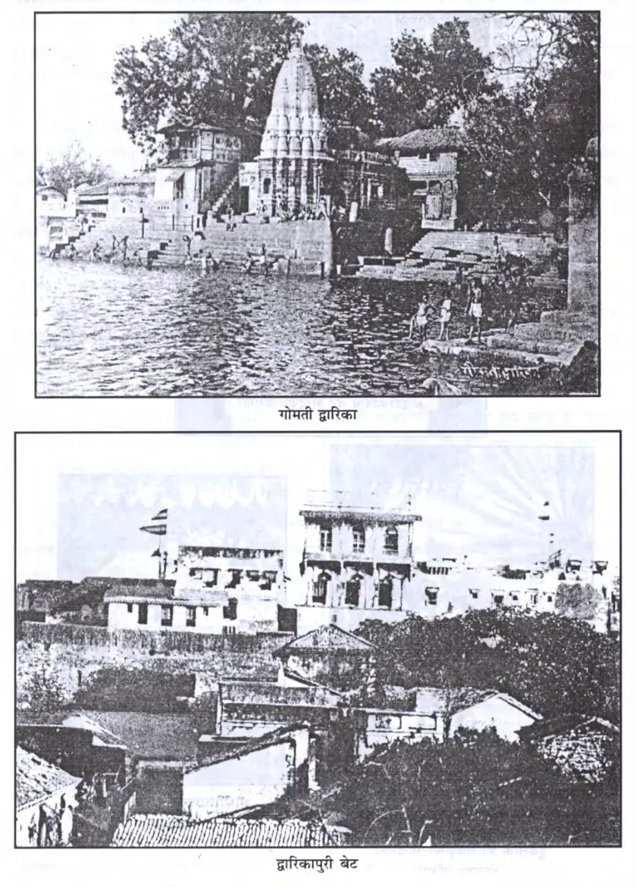
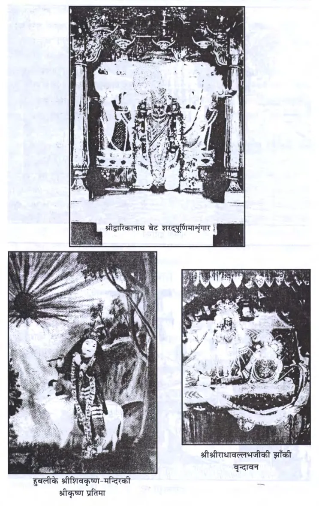
कर्म
भगवान्ने जिसप्रकारका कर्म करनेको कहा और जिसप्रकारसे करनेको कहा, इसका अनुसरण जो कोई करता है वह धन्य है। उसके समस्त संशय नष्ट हो जाते हैं। कर्मकी मीमांसा करते हुए उन्होंने बतलाया कि कर्म कोई बुरी चीज़ नहीं है, संसार ही कर्ममय है, इसलिये कर्म अवश्य करना चाहिये, पर कर्त्तव्य-कर्म करना चाहिये। शास्त्र-विहित स्वकर्म करना चाहिये। इससे भिन्न विकर्म है जो गर्हित है-त्याज्य है। स्वकर्म या शुभ कर्तव्यकर्म करनेवालेकी कभी दुर्गति नहीं हो सकती—
न हि कल्याणकृत्कश्चिद् दुर्गतिं तात गच्छति।
इसलिये बेखटके कर्म करे। लोकसंग्रहके लिये अवश्य कर्म करे। ऐसा कर्म करते-करते अन्तमें भगवत्प्राप्तिरूप परम सिद्धि प्राप्त हो जाती है—
स्वे स्वे कर्मण्यभिरतः संसिद्धिं लभते नरः।
(१०। ४५)
यह कोई नयी बात नहीं है। ऐसा तो सदासे होता आया है। भगवान् श्रीकृष्णने जब अर्जुनको कर्म करनेका उपदेश दिया, तभीसे यह कर्म करनेकी प्रथा चली हो सो बात भी नहीं। सदासे ही लोग कर्म करते और इसके द्वारा सिद्धिलाभ करते आ रहे हैं। जनक इत्यादि अनेक बड़े-बड़े लोगोंने ऐसा करके ही सिद्धि पायी थी।
कर्मणैव हि संसिद्धिमास्थिता जनकादयः।
(३। २०)
पर एक बात है, जैसे सभी कर्म कर्तव्यकर्म या स्वकर्म नहीं हो सकते-शास्त्रविहित कर्म ही स्वकर्म हैं, उसी प्रकार चाहे जिस तरीकेसे कर्म कर डालना ही कर्तव्यपालन नहीं है। चाहे जिस तरहसे करनेसे तो नरकका टिकट मिलनेके सिवा और कुछ भी हाथ नहीं आनेका। इस हिसाबसे तो सारा संसार कर्तव्य-कर्म ही कर रहा है। पर ऐसी बात नहीं है। सारा संसार कर्मयोगी नहीं है। कर्मयोगी बिरले हैं। कर्मयोगीका कार्य भिन्न होता है और उसकी कार्य-पद्धति भी साधारण लोगोंसे सर्वथा भिन्न होती है।
योगी कर्म करता है; पर उसके फलकी इच्छा कभी नहीं करता; क्योंकि वह समझता है कि मुझे सिर्फ कर्म करनेका ही अधिकार है; कर्म-फल देनेवाला कोई दूसरा ही है, इसलिये वह फलकी इच्छा भूलकर भी नहीं करता।
कर्मण्येवाधिकारस्ते मा फलेषु कदाचन।
(२। ४७)
भगवान्का यह वचन योगीको सदा याद रहता है। वह कर्मफलकी वासना नहीं रखता: पर यह भी नहीं कि फलप्राप्तिका अधिकार हाथमें न होनेसे वह कर्म ही न करे। क्योंकि कर्तव्य-कर्म तो करनेके लिये ही होता है। उसे न करनेसे अकर्मताका दोष लगता है। इसलिये कर्म करना चाहिये अवश्य। बचावकी बात सिर्फ यही है कि फलाफलका विचार नहीं करना चाहिये। इसके अतिरिक्त फलकी आकांक्षासे लाभ भी क्या है? फल न मिला, तो दुःखसे मरे; और मिल गया तो तृष्णा बढ़ी-और अधिक आशाके बन्धनमें जकड़े। मतलब यह कि दोनों ओरसे ही आफ़त है। बेकार सुख-दुःखको बुलाकर चित्तकी शान्तिको नष्ट करना है और यही सर्वनाशका मार्ग है। इसीलिये भगवान्ने अर्जुनसे कहा कि—
तस्मादसक्तः सततं कार्य कर्म समाचर।
असक्तो ह्याचरन्कर्म परमाप्नोति पूरुषः॥
(३।१९)
अर्थात् तुम सदा आसक्तिरहित होकर कर्म करो; क्योंकि अनासक्तिके साथ कर्म करता हुआ पुरुष परमात्माको प्राप्त करता है।
यह हुई भगवत्प्रातिकी पहली सीढ़ी। अब दूसरी सीढ़ी है—
ज्ञान
भगवान्ने अर्जुनसे कहा कि तू ज्ञानी बन। क्योंकि पापसागरको पार करनेके लिये ज्ञान ही नौकारूप है। तू पापी-से-पापी क्यों न हो, ज्ञान रूपीनौकाके द्वारा तू पापसागरके पार हो जायगा—
अपि चेदसि पापेभ्यः सर्वेभ्यः पापकृत्तमः।
सर्व ज्ञानप्लवेनैव वृजिनं संतरिष्यसि॥
(४।३६)
कैसा सुन्दर उपदेश है? जब मनुष्य पापरहित हो जायगा तो उसके हृदयमें पवित्रताका वास हो ही जायगा। और पवित्रता आनेसे फिर क्या है? भगवान् कहते हैं—
न हि ज्ञानेन सदृशं पवित्रमिह विद्यते।
(४। ३८)
यानी इस संसारमें ज्ञानसे बढ़कर कोई दूसरी पवित्र चीज़ नहीं है। निश्चय ही जिसके हृदयमें पवित्रता देवीका निवास होगा वहाँ फिर माया-मोह, क्रोध-शोक, वैर-विरोध आदि विकार नष्ट होकर परम शान्ति स्थापित हो ही जायगी, जैसा कि भगवान्का वचन है—
ज्ञानं लब्ध्वा परं शान्तिमचिरेणाधिगच्छति॥
(४। ३९)
ज्ञानी भगवान्को प्यारा भी बहुत है। वह उसे अपना रूप ही बतलाते हैं—'ज्ञानी त्वात्मैव मे मतम्' पर वह ज्ञानी ऐसा है जो भगवान्का भक्त है। ऐसे भक्त ज्ञानीके सम्बन्धमें भगवान् कहते हैं—
तेषां ज्ञानी नित्ययुक्त एकभक्तिर्विशिष्यते।
प्रियो हि ज्ञानिनोऽत्यर्थमहं स च मम प्रियः॥
(७।१७)
अर्थात (उनमें भी) नित्य मेरेमें एकीभावसे स्थित हुआ अनन्य प्रेमभक्तिवाला ज्ञानी और भी उत्तम है। क्योंकि मेरे तत्त्वको जाननेवाले ज्ञानीको मैं अत्यन्त प्यारा हूँ और वह ज्ञानी मुझे अत्यन्त प्यारा है।
भक्ति
कर्म और ज्ञानके बाद नम्बर आता है भक्तिका, जो भगवत्प्राप्तिकी तीसरी सीढ़ी है। गीताके नवें अध्यायमें भगवान्ने भक्तिके स्वरूपका वर्णन करनेके पहले अपने स्वरूपका वर्णन किया है और अपनेको साकार और निराकार दोनों बतलाकर साकार और निराकारके झगड़ेकी जड़को न केवल हिला दिया है, बल्कि उसे उखाड़ ही फेंका है। कहा है—
मया ततमिदं सर्वं जगदव्यक्तमूर्तिना।
मत्स्थानि सर्वभूतानि न चाहं तेष्ववस्थितः॥
न च मत्स्थानि भूतानि पश्य मे योगमैश्वरम्।
भूतभृन्न च भूतस्थो ममात्मा भूतभावनः॥
(९। ४-५)
मैंने अपने अव्यक्त स्वरूपसे इस समस्त जगत्को फैलाया अर्थात् व्याप्त किया है। मुझमें सब भूत स्थित हैं; पर मैं उनमें स्थित नहीं हूँ और मुझमें सब भूत नहीं भी हैं। देखो, (यह कैसी) मेरी ईश्वरीय करनी या योगसामर्थ्य है! भूतोंको उत्पन्न करनेवाला और उनका पालन करनेवाला मेरा आत्मा (यह सब करते हुए भी) उनमें नहीं है। इस विरोधाभासालङ्कारके द्वारा भगवान्ने यह संकेत किया है कि मैं सगुण भी हूँ और निर्गुण भी-साकार भी और निराकार भी। मूढलोग मेरे परमस्वरूपको, जोकि सब भूतोंका महान् ईश्वर है, नहीं जानते। वे मुझे मानवशरीरधारी जानकर मेरी अवज्ञा करते हैं—
अवजानन्ति मां मूढा मानुषीं तनुमाश्रितम्।
परं भावमजानन्तो मम भूतमहेश्वरम्॥
(९। ११)
व्यक्त पुरुषकी भक्ति
भगवान्के रूप दोनों ही हैं और दोनोंकी भक्ति हो सकती है; पर व्यक्त पुरुषकी भक्ति अव्यक्तकी अपेक्षा सुगम तथा सुखसाध्य है। सीधी-सी बात है कि भक्तिमें मन स्थिर करना अति आवश्यक है; और मन स्थिर करनेके लिये सामने कोई स्थिर पदार्थ होना आवश्यक है। स्वभावसे ही चञ्चल होनेके कारण बिना किसी वस्तुको सामने रखे, इसे स्थिर करना और भी कठिन है। साधारण व्यक्तिकी तो बात ही क्या है, बड़े-बड़े ज्ञानियोंके लिये कठिन है। जो चीज़ निराकार है उसे दूसरेको समझाना तक कठिन है। शून्यका कोई प्राकार नहीं है; पर एक अध्यापक विद्यार्थियोंको गणितकी शिक्षा देते हुए उस शून्यको गोलाकार बनाता है, तब वे इसे समझते हैं। तब जो जिस विषयसे अनभिज्ञ है उसे भी उस विषयका विद्यार्थी ही समझना चाहिये। उसे समझने-समझानेके लिये किसी-न-किसी आकारकी बड़ी जरूरत है। स्वयं भगवान् भी अव्यक्तोपासनाकी कठिनताको प्रकट करते हुए कहते हैं—
क्लेशोऽधिकतरस्तेषामव्यक्तासक्तचेतसाम्।
अव्यक्ता हि गतिर्दुःखं देहवद्भिरवाप्यते॥
(१२। ५)
अव्यक्त पुरुषमें चित्त लगानेवाले पुरुषोंको बहुत अधिक क्लेश होता है, क्योंकि अव्यक्तोपासनाका मार्ग देहधारी लोगोंको कष्टसे सिद्ध होता है। किसी भी दृष्टिसे विवेकपूर्वक देखनेसे यह मानना पड़ेगा कि व्यक्त पुरुषकी भक्ति ही पुरुषके लिये सुगम और सुखसाध्य है।
भक्तिकी महिमा
भक्तिकी बड़ी महिमा है। जो भक्त है उसके सारे दोष माफ हैं। कहनेका अर्थ यह है कि भगवान्का भक्त हो जानेसे फिर वह कोई पाप नहीं करता; और पिछले पापोंसे भी भगवान्की कृपासे उसका छुटकारा हो जाता है। भगवान् भक्तकी महिमाका गीताके ९ वें अध्यायमें बड़े सुन्दर शब्दोंमें वर्णन करते हैं—
अपि चेत्सुदुराचारो भजते मामनन्यभाक्।
साधुरेव स मन्तव्यः सम्यग्व्यवसितो हि सः॥
क्षिप्रं भवति धर्मात्मा शश्वच्छान्तिं निगच्छति।
कौन्तेय प्रति जानीहि न मे भक्तः प्रणश्यति॥
(९। ३०-३१)
यानी चाहे बड़े-से-बड़ा दुराचारी भी क्यों न हो यदि वह मुझे अनन्यभावसे भजता है तो उसे साधुके समान समझना चाहिये, क्योंकि उसकी बुद्धि अच्छे निश्चयपर रहती है (बुद्धि अच्छे निश्चयपर हो जानेसे) वह जल्दी ही धर्मात्मा हो जाता है और नित्य शान्ति पाता है। हे कौन्तेय! तुम यह जान लो कि मेरा भक्त कभी नष्ट नहीं होता।
यह है भक्तिकी महिमा। ऐसी भक्तिको भी जो ग्रहण न करे, उसके लिये क्या कहा जाय? गरीब-अमीर, मूर्ख-पण्डित, ऊँच-नीच सबके लिये यह समानरूपसे हितकारिणी है। सभी भक्तिकी पावन सरितामें स्नान कर मनवाञ्छित फल प्राप्त कर सकते हैं। भगवान् कहते हैं—
मां हि पार्थ व्यपाश्रित्य येऽपि स्युः पापयोनयः।
स्त्रियो वैश्यास्तथा शूद्रास्तेऽपि यान्ति परां गतिम्॥
किं पुनर्ब्राह्मणाः पुण्या भक्ता राजर्षयस्तथा।
अनित्यमसुखं लोकमिमं प्राप्य भजस्व माम्॥
(९। ३२-३३)
अर्थात् हे अर्जुन! मेरा आश्रय लेकर स्त्रियाँ, वैश्य और शूद्र अथवा अन्त्यज आदि जो पापयोनिवाले हैं वे भी परमगतिको प्राप्त करते हैं। फिर पुण्यवान् ब्राह्मणोंकी तथा भक्त राजर्षियों-क्षत्रियोंकी तो बात ही क्या है? हे अर्जुन! तुम इस अनित्य और सुखरहित मर्त्यलोकमें हो, इसलिये तुम मेरा भजन करो। भगवान् ११ वें अध्यायमें फिर कहते हैं—
भक्त्या त्वनन्यया शक्य अहमेवंविधोऽर्जुन।
ज्ञातुं द्रष्टुं च तत्त्वेन प्रवेष्टुं च परंतप॥
मत्कर्मकृन्मत्परमो मद्भक्तः सङ्गवर्जितः।
निर्वैरः सर्वभूतेषु यः स मामेति पाण्डव।
(५४, ५५)
हे अर्जुन! केवल अनन्यभक्तिसे मेरा ज्ञान होना, मुझे देखना और मुझमें तत्त्वतः प्रवेश करना सम्भव है। हे पाण्डव! जो इस बुद्धिसे कर्म करता है कि सब कर्म मेरे अर्थात् परमेश्वरके हैं, जो मत्परायण अर्थात् मेरे आश्रित है, संगविरहित है और जो सब प्राणियोंके विषयमें निर्वैर है यानी किसीसे वैर नहीं रखता, ऐसा मेरा भक्त मुझे प्राप्त कर लेता है। भगवान्को तत्त्वतः कोई कैसे जान सकता है, इसे वह आगे १८ वें अध्यायमें फिर बतलाते हैं—
भक्त्या मामभिजानाति यावान्यश्चास्मि तत्त्वतः।
ततो मां तत्त्वतो ज्ञात्वा विशते तदनन्तरम्॥ ५५॥
यानी भक्तिसे उसे (भक्तको) मेरा तात्त्विक ज्ञान हो जाता है कि मैं कितना हूँ और कौन हूँ और इस प्रकार मेरी तात्त्विक पहचान हो जानेपर वह (भक्त) मुझमें ही प्रवेश करता है।
एक-एक करके सारी शंकाओंका समाधान करके अन्तमें भगवान् उनसे यह कहते हैं कि तुम अब व्यर्थके झमेलेमें मत पड़ो; मुझपर विश्वास करो, मेरा भजन करो, तुम्हारा कल्याण होगा। सारे पापोंसे छुटकारा हो जायगा और अन्तमें मेरी प्राप्ति होगी।
मन्मना भव मद्भक्तो मद्याजी मां नमस्कुरु।
मामेवैष्यसि सत्यं ते प्रतिजाने प्रियोऽसि मे॥
सर्वधर्मान्परित्यज्य मामेकं शरणं व्रज।
अहं त्वा सर्वपापेभ्यो मोक्षयिष्यामि मा शुचः॥
(१८। ६५-६६)
यानी (हे अर्जुन!) मुझमें अपना मन रक्खो, मेरे भक्त हो, मेरा यजन करो और मुझे नमस्कार करो। मैं तुमसे सच्ची प्रतिज्ञा करके कहता हूँ कि (इससे) तुम मुझमें ही आ मिलोगे, क्योंकि तुम मेरे प्यारे (भक्त) हो। (और अब निश्चिन्त होकर) सब धर्मोंको छोड़कर केवल मेरी शरणमें आ जाओ। मैं तुम्हें सब पापोंसे मुक्त करूँगा, शोच मत करो।
भगवान्के इन वचनोंको स्मरण करके भी उनपर विश्वास न हो, उनके चरणोंमें आत्मसमर्पण न करते बने, इससे बढ़कर आश्चर्यकी और कौन-सी बात हो सकती है? अतएव अपने-अपने धर्मानुसार समस्त व्यवहार करते हुए ही श्रीकृष्णार्पण बुद्धिसे भक्तिपरायण हो हाथ जोड़कर विनयपूर्वक भगवान्से सदा यह प्रार्थना करनी चाहिये कि हे प्रभो!—
कीटेषु पक्षिषु मृगेषु सरीसृपेषु
रक्षःपिशाचमनुजेत्यपि यत्र यत्र।
जातस्य मे भवतु केशव! ते प्रसादात्
त्वय्येव भक्तिरचलाऽव्यभिचारिणी च॥
हरे!
(ले०-पं० श्रीतुलसीरामजी शर्मा 'दिनेश')
तू है ओत-प्रोत जगतमें,
तू सबका आधार हरे!
ये जो नाना रूप जगतमें,
हैं तेरे आकार हरे!
यह दृढ़ भाव जमेगा जिस दिन
उस दिन होंगे छार, हरे!
कपट-कोटके स्तम्भ, बनेगा
मानस महा उदार हरे!
भर दे ऐसी भव्य भावना,
कर दे यही विचार हरे।
तेरी मूर्त्ति सभीमें देखूँ,
तेरा रूप अपार हरे!
धर दे मेरे अवनत सिरपर
करके कर-विस्तार हरे!
हो जायेगा पीन पतितका
क्यों न सहज निस्तार हरे।
श्रीकृष्णार्जुन-युद्ध
(प्रेषक-पूज्यपाद स्वामी श्रीस्वतः प्रकाशजी 'हरिबाबा')
मञ्जीरनूपुररणन्नवरत्नकाञ्ची
श्रीहारकेसरिनखप्रतियन्त्रसंघम्।
दृष्टॺार्तिहारिमसिविन्दुविराजमानं
वन्दे कलिन्दतनुजातटबालकेलिम्॥
पंकाभिषिक्तसकलावयवं विलोक्य
दामोदरं वदति कोपवशाद्यशोदा।
त्वं शूकरोऽसि गतजन्मनि पूतनारे
इत्युक्तिसस्मितमुखोऽवतु नो मुरारिः॥
एक बार रात्रिके समय चित्रसेन-गन्धर्व अपनी एक सहस्र रमणियोंके साथ श्रीमन्दाकिनी-गंगामें जलविहार कर रहा था। ब्राह्ममुहूर्त लगनेपर जब कि वह विमानपर चढ़कर आकाशमार्गसे अपने स्थानको लौट रहा था, महर्षि गालव अपनी शिष्यमण्डलीके सहित पुण्यतोया भागीरथीमें स्नान करनेके अनन्तर सूर्य भगवान्को अर्ध्य देनेके लिये अञ्जलिमें जल लेकर खड़े हुए। इसी समय अकस्मात् उनकी अञ्जलिमें आकाशमार्गसे जाते हुए चित्रसेनकी थूकी हुई पीक गिरी। त्रिकालदर्शी मुनि उसे चित्रसेनकी उद्दण्डता समझकर शाप देनेको तत्पर हुए, किन्तु फिर अपने तपोभंगके भयसे रुक गये। तदनन्तर उन्होंने द्वारकापुरीमें जाकर यह सम्पूर्ण वृत्तान्त श्रीकृष्णचन्द्रको सुनाया और कहा कि 'भगवन्! इस धराधाममें आपका शुभागमन तो गौ और ब्राह्मणोंके हितके लिये ही हुआ है, फिर हमें यह अपमान क्यों सहना पड़ा?' ऋषिके ऐसे अपमानको भला श्रीश्यामसुन्दर कब सहनेवाले थे? उन्होंने तुरन्त ही प्रतिज्ञा की कि 'मैं कल सूर्यास्तसे पूर्व ही अवश्य चित्रसेनका वध कर डालूँगा।' और अपनी प्रतिज्ञाकी पुष्टिके लिये माता देवकी और गालवके चरणोंकी शपथ खाकर ऋषिको सन्तुष्ट किया।
गालव-ऋषिके सन्तुष्ट होकर चले जानेपर देवर्षि नारदजी वीणा बजाते और हरि-गुण गाते श्रीभगवान्के अन्तःपुरमें पधारे। उस समय उनके मुखारविन्दसे 'हरे राम हरे राम हरे राम हरे! भजो मन, निशदिन राम प्यारे' की ध्वनि निकल रही थी। देवर्षि नारदको आये हुए देखकर श्रीभगवान्ने स्वयं उठकर उनका स्वागत किया। और आतिथ्य-सत्कार कर चुकनेपर उनसे पूछा—
'भगवन्! आप तो सर्वदा शान्तिस्वरूप हैं, आपके दर्शन और स्मरणमात्रसे ही सम्पूर्ण विश्व आनन्द-मग्न हो जाता है। फिर आज आपके मुख-कमलपर क्रोधकी छाया क्यों दिखलायी दे रही है?' तब श्रीश्यामसुन्दरने नारदजीको सम्पूर्ण प्रसंग सुनाकर चित्रसेनके वधके लिये की हुई अपनी प्रतिज्ञा सुनायी। भक्तोंकी गति भी बड़ी विलक्षण होती है, कभी-कभी उनसे बड़ी अटपटी लीलाएँ हो जाया करती हैं। भगवान्की प्रतिज्ञा सुनकर नारदजीको भी कुछ ऐसी ही उलटी बात सूझी। उन्होंने हँसते-हँसते मन-ही-मन प्रतिज्ञा की कि–'यदि मैंने भी चित्रसेनके प्राणोंकी रक्षा न की तो फिर आपका भक्त ही कैसा? मैं भी फिर आजसे ही वीणाको हाथ भी न लगाऊँगा।'
इस प्रकार दृढ़ प्रतिज्ञा कर नारदजी चित्रसेनके पास पहुँचे। चित्रसेनने उनकी विधिवत् पूजाकर आसन दिया, और उनके सुखपूर्वक बैठ जानेपर पूछा, 'देवर्षि, कहिये कहाँसे आना हुआ? आप आनन्दपूर्वक हैं न? कहिये, हमारे ग्रहादि आजकल कैसे हैं? किसी भयङ्कर अनिष्टकी तो सम्भावना नहीं है?' नारदजीने कहा—'गन्धर्वराज! तुम्हारे लिये यह बड़ा ही अनिष्टकाल उपस्थित हुआ है, तुम्हें जो कुछ शुभ कर्म करना हो शीघ्र ही कर लो, अब तुम्हारा जीवन अधिक काल रहनेवाला नहीं है।' यह कहकर उन्होंने उसे श्रीकृष्णचन्द्रकी प्रतिज्ञाका सम्पूर्ण वृत्तान्त कह सुनाया। यह सुनकर चित्रसेन बहुत ही घबड़ाया और अपनी रक्षाके लिये दीन होकर इन्द्र, कुबेर, वरुण और ब्रह्मा आदि समस्त लोकपालोंके पास गया। किन्तु उसे किसीने भी शरण न दी। अन्तमें निराश होकर वह नारदजीकी ही शरणमें आया और अपनी पत्नियोंसहित फूट-फूटकर रोने लगा। नारदजीका हृदय दयासे द्रवीभूत हो गया और वे उसे इन्द्रप्रस्थमें श्रीयमुनाजीके तटपर ले जाकर बोले—आज अर्धरात्रिके समय यहाँ एक स्त्री आवेगी। उस समय तुम ऊँचे स्वरसे विलाप करते रहना। वह स्त्री तुम्हारी रक्षा कर लेगी। किन्तु एक बात ध्यानमें रखना, जबतक वह प्रतिज्ञापूर्वक तुम्हारे कष्टनिवारणके लिये वचन न दे, तबतक तुम उसे अपने कष्टका कारण मत बतलाना।'
चित्रसेनको इस प्रकार समझाकर नारदजी अर्जुनके महलमें सुभद्राके पास पहुँचे और कहा—'सुभद्रे! आजका पर्व बड़ा ही सुन्दर है; आज रात्रिके समय यमुनास्नान करने और किसी दीनकी रक्षा करनेसे अक्षय पुण्यकी प्राप्ति होगी। स्त्रियोंके लिये तो यह चिर-सौभाग्यका देनेवाला है।' नारदजीके ये वचन सुनकर सुभद्रादेवी उसी समय उनके साथ यमुना-स्नानको चल दी। स्नान कर चुकनेपर उन्हें किसीके रोनेका शब्द सुनायी पड़ा। उन्होंने तुरन्त ही पास जाकर कष्टका कारण पूछा। गन्धर्वने कहा 'देवि! यदि मुझे शरण देकर आप प्राणदान करनेकी प्रतिज्ञा करें तो मैं अपने दुःखका कारण निवेदन करूँ।' सुभद्राने देवर्षि नारदको साक्षी कर शपथपूर्वक प्रतिज्ञा की कि आज मैं तुम्हारा दुःख अवश्य दूर करूँगी, तुम उसका कारण बतलाओ।' गन्धर्वने अपने वधके विषयमें श्रीकृष्णचन्द्रकी प्रतिज्ञाका सम्पूर्ण वृत्तान्त कह सुनाया और अपनी प्राण-रक्षाके लिये प्रार्थना की। यह सुनते ही सुभद्रा बड़े ही असमञ्जसमें पड़ी; उसे अपना कर्तव्य कुछ भी न सूझता था। एक ओर गो-ब्राह्मणहितकारी दीनबन्धु भाई श्रीकृष्णकी प्रतिज्ञा थी और दूसरी ओर शरणागतकी रक्षाके लिये की हुई उसकी अपनी प्रतिज्ञा! अन्तमें इस दुविधासे निकलकर उसने अपना कर्तव्य निश्चित किया और जीमें यह ठानकर कि मैं अपने प्राण देकर भी शरणागत गन्धर्वराजकी रक्षा करूँगी, वह उसे अपने साथ राजमहलमें ले आयी। अर्जुनने देखा कि आज प्राण-प्रिया सुभद्रा कुछ अनमनी हो रही है। उन्होंने उसकी उदासीका कारण पूछा, तो सुभद्राने उन्हें सम्पूर्ण वृत्तान्त कह सुनाया। वीरवर अर्जुनने उसे ढाढस बँधाया और प्रतिज्ञा की कि मैं अवश्य तुम्हारी प्रतिज्ञाको पूर्ण करूँगा।
इधर श्रीनारदजी द्वारका पधारे और भगवान्से गन्धर्ववधकी प्रतिज्ञाके विषयमें चर्चा करनी आरम्भ की। भगवान्ने कहा, 'आज मैं चित्रसेनका वध अवश्य कर दूँगा।' नारदजी बोले, 'भगवन्! यह तो ठीक है, परन्तु आप यह सोच लें कि सुभद्रा और अर्जुनने उसे आश्रय देकर उसकी रक्षा करनेका प्रण किया है। भगवान्ने कहा—'नारदजी! यह तो उन्होंने ठीक नहीं किया, आप उनके पास जाकर मेरी ओरसे कहिये कि वे ऐसा न करें, इस हठको छोड़ दें।' तदनन्तर नारदजीने इन्द्रप्रस्थ जाकर अर्जुनको श्यामसुन्दरका सन्देश सुनाया और कहा कि तुम उनकी प्रतिज्ञा रखनेके लिये अपना हठ छोड़ दो। किन्तु महावीर अर्जुनने स्पष्ट कह दिया कि यद्यपि मैं सब प्रकारसे श्रीकृष्णकी ही शरण हूँ परन्तु उन्हींके द्वारा उपदिष्ट अपने क्षात्र-धर्मसे भ्रष्ट नहीं हो सकता, मैं उन्हींके बलपर अपने प्रणकी रक्षा करूँगा, वे ही अपनी प्रतिज्ञा क्यों नहीं छोड़ देते?' यह सुन नारदजीने फिर द्वारका आकर भगवान्को सब वृत्तान्त सुना दिया। अर्जुनका हठ देखकर भगवान्ने युद्धकी तैयारी कर दी। बात-की-बातमें छप्पन कोटि यादवोंकी सेना युद्धके लिये सज-धजकर खड़ी हो गयी और उस महान् सेनाके सहित भगवान् इन्द्रप्रस्थपर चढ़ आये। नारदजीके द्वारा उन्होंने धर्मराज युधिष्ठिरके पास फिर सन्देश भेजा और बारम्बार की हुई पाण्डवोंकी सहायता तथा अर्जुनकी मित्रताकी दुहाई भी दी। धर्मराजने भी अर्जुनको समझाया-बुझाया, परन्तु दृढ़-प्रतिज्ञ अर्जुन टस-से-मस न हुए। वे बोले, 'अवश्य ही इस प्रतिज्ञाको करके मैंने अपराध किया है, परन्तु अब मैं प्रतिज्ञा-भङ्गरूप दूसरा अपराध नहीं कर सकता, अब तो इस अपराधका दण्ड ही भोगूँगा या श्रीकृष्ण मेरी प्रतिज्ञा पूरी करेंगे।
फिर क्या था, दोनों ओरकी सेनाएँ आमने-सामने आ डटीं। पार्थ और पार्थ-सारथिके रथ एक दूसरेकी ओर दौड़ने लगे। अर्जुनने भगवान्के चरण-कमलोंमें पाँच बाण मारकर प्रणाम किया और भगवान्ने उसके मस्तकपर दस बाण मारकर आशीर्वाद दिया। धीरे-धीरे दोनों ओरसे तुमुल युद्ध छिड़ गया। पुण्यक्षेत्र कुरुक्षेत्रके गुरु और शिष्य श्रीकृष्ण और अर्जुनमें बड़ा घमासान युद्ध हुआ, किन्तु कोई किसीसे न नवा। अन्तमें भगवान्ने अपना सुदर्शनचक्र अर्जुनपर छोड़ा, अर्जुनने भी उसके प्रतिकारमें पाशुपतास्त्र छोड़ दिया। दोनों शस्त्र परस्पर भिड़ गये। बड़ा भयंकर समय उपस्थित हो गया। महाप्रलयके चिह्न दिखलायी देने लगे। तब अर्जुनने अपने इष्टदेव भगवान् शंकरका स्मरण किया। आशुतोष भगवान् भूतनाथ तत्क्षण प्रकट हुए और उन्होंने स्तुति कर दोनों शस्त्रोंको शान्त किया। तदनन्तर भगवान्के पास जाकर प्रार्थना की, 'प्रभो, आज यह क्या विचित्र लीला कर रहे हैं? अपने अनुगत भक्त अर्जुनके प्रति आपका यह व्यवहार शोभा नहीं देता। भक्तोंकी बातके आगे अपनी प्रतिज्ञाको भूल जाना तो आपका सहज स्वभाव ही है। आपकी जिस प्रतिज्ञाको भीष्मने तोड़ दिया था, क्या चित्रसेनको मारनेकी प्रतिज्ञा उससे भी अधिक मूल्यवान् है? अतः शान्त होइये। अर्जुनके बालहठको रखनेमें ही आपका गौरव है। भगवान् शंकरकी इस प्रार्थनासे सन्तुष्ट होकर भक्तवत्सल भगवान् श्रीकृष्ण अपना प्रण भुलाकर युद्धसे निवृत्त हो गये और भक्त अर्जुनको गले लगाकर उसका युद्ध-श्रम दूर कर दिया तथा चित्रसेनके मस्तकपर हाथ रखकर उसे अभय-दान दिया। धन्य है प्रभो! आपकी भक्त-वत्सलता!।
जब गालव-ऋषिको यह सब वृत्तान्त विदित हुआ तो वे अत्यन्त क्रोधित हुए और श्रीकृष्ण, अर्जुन तथा सुभद्रा आदि सभीको शाप देकर भस्म करनेके लिये हाथमें जल लिया। यह देखकर सुभद्राने कहा—'हे मुने! यदि मैं श्रीकृष्णचन्द्रकी भक्त और पातिव्रत-धर्म-परायणा हूँ तो यह जल आपके हाथसे पृथिवीपर गिरेगा ही नहीं। सुभद्राके सतीत्वके प्रभावसे ऐसा ही हुआ। मुनिवर गालव लज्जित होकर सुभद्राके चरणोंमें गिर पड़े तथा उनके सतीत्वकी भूरि-भूरि प्रशंसा करते हुए अपने आश्रमको चले गये। सुभद्रा और देवर्षि नारदके क्षणिक सत्संगसे गन्धर्वराज चित्रसेनकी भोगवासना भी शान्त हो गयी और अन्तमें श्रीकृष्णचन्द्रका कृपापात्र होनेसे उसने भी परमपद प्राप्त किया।*
* एक बंगला ग्रन्थमें श्रीकृष्णार्जुन-युद्धकी कथा इस तरह पढ़ी थी कि महर्षि दुर्वासाके शापसे दिनमें घोड़ाके रूपसे रहनेवाली उर्वशी अवन्तिनरेश दण्डीके पास रहती थी। श्रीनारदजीके सन्देशके अनुसार भगवान् श्रीकृष्णने अवन्तिनरेशसे वह घोड़ी माँगी, उसने देना अस्वीकार किया और वह शरण पानेके लिये त्रिभुवनमें फिरा परन्तु उसे कहीं शरण नहीं मिली, आखिर सुभद्रा और पाण्डवोंने उसे शरण दी, भगवान् पाण्डवोंके धर्मकी परीक्षा करना चाहते थे, इसीसे उन्होंने उनसे वह घोड़ी माँगी, और युद्धके लिये ललकारा, पाण्डवोंने कहा कि 'हम सब आपके दास हैं और इसीलिये आपके उपदेश किये हुए शरणागतपालनरूप धर्मको न छोड़कर आपकी आज्ञानुसार लड़नेको तैयार हैं।' युद्ध ठन गया, भगवान्की ओरसे सारे देवता आ गये। महान् युद्ध हुआ। अन्तमें दुर्वासाने आकर उर्वशीको शापमुक्त कर दिया, जिससे सारा झगड़ा मिट गया, युद्ध बन्द हो गया। भगवान् पाण्डवोंकी धर्मपरायणतापर बड़े ही सन्तुष्ट हुए। पता नहीं ये दोनों कथाएँ कहाँकी हैं? कई पुराणोंमें खोजनेपर भी हमें तो नहीं मिलीं। -सम्पादक
अर्वाचीन भारतके प्रति श्रीकृष्णका सन्देश
(लेखक-श्रीयुत मोहम्मद हाफ़िज़ सैयद एम० ए०, एल० टी०, लन्दन)
अर्वाचीन भारत परिवर्तनके प्रवाहमें बह रहा है। जनताके सामने कोई निश्चित आदर्श नहीं है। लोग एक लक्ष्यको छोड़कर दूसरे लक्ष्यकी ओर जा रहे हैं। हमारा सामाजिक, राजनैतिक एवं धार्मिक जीवन बड़ी ही अव्यवस्थित दशामें है। हम लोगोंने अपनी प्राचीन गौरवपूर्ण संस्कृतिको भुला दिया है, पर पाश्चात्य संस्कृतिको भी पूरी तौरसे नहीं अपना सके हैं। आज शिक्षित भारतवासी अपने धार्मिक आदर्शोंपर विचार करनेकी चेष्टा नहीं करते। यही कारण है कि उन्हें ईश्वरीय प्रेरणामें विश्वास नहीं है और न वे इस बातको ही मानते हैं कि देशकी सामाजिक एवं राजनैतिक उन्नतिके लिये धार्मिक एवं आध्यात्मिक चर्चाकी कितनी महत्ता एवं उपयोगिता है। हमलोगोंमेंसे कुछ भाई ऐसे हैं जो अपनी धार्मिक सम्पत्तिका यथेष्ट ज्ञान न रखनेके कारण धर्मकी अनुचित निन्दा करते हैं और देशके वर्तमान अधःपतनका दोष धर्मके ही सिर मँढ़ते हैं। उनकी यह धारणा है कि आज यदि भारतवर्षमें धार्मिक मतभेद न होता तो भिन्न-भिन्न मतोंके माननेवाले भारतवासियोंमें परस्पर इतनी फूट नहीं होती और न हमारी राजनैतिक एवं सामाजिक उलझनें ही बिना सुलझे रहतीं। इस प्रकारकी उक्तियाँ बिलकुल अप्रामाणिक हैं और सत्यसे बहुत दूर हैं। हमलोगोंको चाहिये कि इन सारी बातोंकी पक्षपात-रहित आलोचना करें।
श्रीमद्भगवद्गीतामें ईश्वरके पूर्णावतार भगवान् श्रीकृष्णके जो अमूल्य उपदेश मिलते हैं उनका अत्यन्त महत्त्वपूर्ण माना जाना सर्वथा उचित ही है, क्योंकि वे उस महापुरुषके महिमान्वित वाक्य हैं जिनकी सारे संसार तथा सभी युगोंके सन्त-महात्मा और ऋषि-मुनिगण पूजा और वन्दना करते हैं। संसारमें वेद, उपनिषद् और स्मृतियोंका प्रचार उन ऋषियोंद्वारा हुआ जिनका आध्यात्मिक विकास भिन्न-भिन्न श्रेणीका था, किन्तु भगवद्गीताका उपदेश तो स्वयं भगवान्ने अपने श्रीमुखसे दिया था। इसीलिये श्रीमद्भगवद्गीताका इतना अधिक सम्मान है। गीताके आत्माको फड़का देनेवाले उपदेश तीनों कालमें सत्य हैं और प्रत्येक प्रकारके मनुष्यको इनके द्वारा विचारके लिये पर्याप्त सामग्री मिलती है, चाहे वह निवृत्तिमार्गका अनुयायी हो चाहे प्रवृत्तिमार्गका। श्रीमद्भगवद्गीताका उपदेश इतना सीधा और साथ ही इतना गम्भीर है कि साधारण बुद्धिके मनुष्यसे लेकर महान्-से-महान् विद्वान्तक उससे लाभ उठा सकते हैं। डाक्टर भगवानदासजीने अपनी - Science of social organisation' (सामाजिक व्यवस्था-शास्त्र) नामक पुस्तकके पृष्ठ ३४७-४८में लिखा है—
'Great Avataras have come in the past and will come again in the future, whose grand figures loom and names of might echo through the haze of the ages. They have come and will come to close great epochs and to open greater ones. Smaller Messiahs, Prophets, Messengers and saintly teachers have performed and will perform similar functions with regard to smaller cycles and phases of civilizations. But the innermost truth, the one burden of the teaching of all-the one purpose of all this ever has been and ever shall be, by ever deeper yoga, to behold ever more fully the infinite glory of the Eternal Self.'
अर्थात् पहले भी अनेक महान् अवतार हो चुके हैं और भविष्यमें होंगे जिनके लोकोत्तर विग्रहों तथा प्रभावशाली नामोंको युगोंसे हमलोग स्मरण करते आते हैं। महान् युगोंके अन्तमें और महत्तर युगोंके प्रारम्भमें वे आते रहे हैं और आयँगे। युगोंके अन्तर्वर्ती कालमें और सभ्यताकी मध्यवर्ती अवस्थाओंमें इसी प्रकारका कार्य करनेके लिये अवतारोंसे निम्न श्रेणीके लोग जिन्हें मसीहा, पैगम्बर, ईश्वरदूत तथा सन्त, महात्मा, आचार्य कहते आये हैं और आयेंगे। किन्तु सबसे गूढ़ रहस्य, उन सबके उपदेशका सार तथा एकमात्र प्रयोजन यही रहा है और रहेगा कि गम्भीरतर योगके द्वारा शाश्वत-ब्रह्मकी अनन्त महिमाको अधिकाधिक पूर्णतासे देखा जाय।'
इसी सनातन नियमके अनुसार कलियुगके प्रारम्भके ठीक पूर्व, जिसे 'लोहके समान दृढ़ अहंकारका काला युग' कहते हैं, अनेक मनुष्योंके हृदयोंको अनेक प्रकारके सम्बन्धोंके द्वारा अपनेमें युक्त करनेके लिये स्वयं भगवान् श्रीकृष्णके रूपमें प्रकट हुए। नारदने युधिष्ठिरसे कहा था—हे मानवो! तुम लोग जिस किसी प्रकारसे भी हो सके, अपना चित्त उस परमात्मामें लगाओ। मनीषी लोग श्रीकृष्णको 'आकर्षक' कहते हैं, क्योंकि अपने नामसे वे सबकी आत्माओंको अपनी ओर खींच लेते हैं। (श्रीमद्भागवत स्कं० ७। १। २६-३१ देखिये।)
'उस परमात्माको ही अपना एकमात्र प्रियतम समझकर उसकी पूजा करो, क्योंकि आत्माके लिये ही सारी वस्तुएँ प्रिय होती हैं (देखिये, बृहदारण्यक उपनिषद् १। ४। ८ और २। ४। ५) परमात्मा ही सारे भूतोंके अन्तरात्मा हैं। इसी बातको भूली हुई मानव-जातिको बतलानेके लिये और इसे हृदयङ्गम करनेमें उनकी सहायता करनेके लिये ही आध्यात्मिक उन्नतिकी भिन्न-भिन्न श्रेणीको पहुँचे हुए महात्मा समय-समयपर पृथिवीपर अवतीर्ण होते हैं। उन लोगोंकी कई आध्यात्मिक श्रेणियाँ होती हैं। अपने युगके लोगोंकी भौतिक, मानसिक, नैतिक एवं आध्यात्मिक दशामें सुधार करना ही उन सबका सदा लक्ष्य रहता है। संसारके भिन्न-भिन्न प्राचीन एवं अर्वाचीन धर्मोंका यही एकमात्र उद्देश्य रहा है।
जिसप्रकार शरीरके किसी एक अवयवपर आघात पहुँचनेसे सारे शरीरको आघात पहुँचता है उसी प्रकार मानव-समाजके किसी एक अंगको क्षति पहुँचनेसे सारी मानव-जातिकी क्षति होती है। कोई भी मनुष्य अपनेको इस घनिष्ठ सम्बन्धसे अलग नहीं कर सकता; किसीका भी संसारसे अलग रहकर एकान्त-जीवन व्यतीत करना कठिन है; मानव-जातिरूप इस कुटुम्बमें जन्म लेकर हमें इसीके अन्दर रहना होगा। 'Universal Text Book of Religions'के सम्पादकने लिखा है-'Brotherhood is a fact in nature and from it there is no escape' अर्थात् 'भ्रातृ-भाव प्रकृतिका एक नियम है और मनुष्य उससे बच नहीं सकता।
जितने भी धर्म हैं उन सबका यह विश्वास है कि परमात्मा चराचर भूतोंके पिता, सिरजनहार और मूलाधार हैं। यदि यह बात ठीक है तो हम इस विश्वाससे एकमात्र इसी परिणामपर पहुँचते हैं कि परमात्माकी दृष्टिमें सारे मनुष्य समान हैं। भगवान् श्रीकृष्णने स्वयं कहा है 'मेरी सारे भूतोंमें समान बुद्धि है; मेरे लिये न तो कोई प्रिय है और न अप्रिय है, किन्तु जो लोग भक्तिपूर्वक मेरी उपासना करते हैं वे मेरे अन्दर निवास करते हैं और मैं उनके अन्दर निवास करता हूँ। (गीता ९। २६)
बाहरी सूरत-शकल और रुचिमें कितना ही भेद क्यों न हो, मानव-जातिका मूल एवं उद्गमस्थान एक ही है। हमलोग इस बातको अस्वीकार नहीं कर सकते कि हम सबका मूल एवं लक्ष्य एक ही है। कुछ लोग यह पुकारते हैं कि 'धर्मोंके सम्बन्धमें और कुछ भी कहा जाय, पर इतनी बात निश्चित है कि उनमें परस्पर भ्रातृभाव नहीं है।' यद्यपि यह दुःखकी बात है पर यह यथार्थ है कि यदि हम पिछले दिनोंके धार्मिक इतिहासपर दृष्टि डालते हैं तो हमें ज्ञात होता है कि वस्तुतः धर्मोंमें बहुत कम एकता रही है धार्मिक युद्ध एवं धार्मिक अत्याचार अत्यन्त निर्दयताके साथ होते रहे हैं; धार्मिक आक्रमण तथा प्रत्येक प्रकारकी विभीषिकाओंने धार्मिक संग्रामके इतिहासको हृदय-द्रावक एवं रक्त-रञ्जित बना दिया है। इसका कारण यही है कि हमलोग बहुधा धर्मके इस तत्त्वको भूल जाते हैं कि प्रत्येक धर्ममें एक ही ईश्वरके महान् नामका वर्णन किया गया है। छान्दोग्योपनिषद् ६। २। १में कहा है—'एकमेवाद्वितीयं ब्रह्म' अर्थात् परमात्मा एक है, उसके अतिरिक्त कोई दूसरी वस्तु नहीं है। परमात्मा इतने महान्—इतने असीम हैं कि किसी एक मनुष्यकी बुद्धि, चाहे वह कितना ही बड़ा क्यों न हो और एक धर्म, चाहे वह कितना ही पूर्ण क्यों न हो, उसकी अनन्त पूर्णताको अभिव्यक्त नहीं कर सकता।
मानव-हृदयको शुद्ध करके उसे परमात्माके निकट पहुँचाना ही संसारके धर्मोंका उद्देश्य है। किन्तु लोग लापरवाहीसे अपने धर्मोंका ही अध्ययन नहीं करते। इसीलिये वे अपने धर्मके विरुद्ध आचरण करते हैं। तत्त्वसे देखा जाय तो धर्मोंका परस्पर कोई विरोध नहीं है। क्योंकि जिन लोगोंका भगवान् श्रीकृष्णमें और उनके हृदयको उन्नत करनेवाले शब्दोंमें सच्चा विश्वास है, उन लोगोंके लिये यह धार्मिक विवाद शान्त हो जायगा, यदि वे भगवान्के निम्नलिखित शब्दोंको याद रक्खेंगे जो उन्होंने पाँच हजार वर्ष पूर्व कहे थे–'जिस भावसे मनुष्य मेरी शरण आते हैं उसी भावसे मैं उन्हें स्वीकार करता हूँ, क्योंकि हे पार्थ! सब ओरसे मनुष्य मेरे ही मार्गका अनुसरण करते हैं।' (गीता ४। ११)
'जो सब भूतोंके अन्दर निवास करनेवाले मुझ परमात्माकी एकीभावमें स्थित होकर पूजा करता है वह योगी मेरे ही अन्दर निवास करता है, चाहे वह किसी प्रकारका जीवन क्यों न व्यतीत करे।' (गीता ६। ३१)
'हे धनञ्जय! मुझसे ऊँची कोई वस्तु नहीं है, यह सारा संसार धागेमें मणियोंकी तरह मुझमें ही पिरोया है।' (गीता ७।७)
जो लोग यह मानते हैं कि वर्णव्यवस्थासे द्विजातिके वर्णोंपर नियन्त्रण होनेके बदले—जिससे सारे समाजका अधिकाधिक कल्याण होता-आपसमें इतना अधिक भेदभाव हो गया है जिससे कि व्यक्तिगत अहङ्कारकी मात्रा बहुत बढ़ गयी है, वे लोग वर्णव्यवस्थाके उद्देश्यको नहीं समझते। मनुमहाराजने कहा है—'ब्राह्मणको मानसे इतना दूर भागना चाहिये जितना लोग विषसे दूर भागते हैं और अपमानको अमृत समझकर उसकी इच्छा करनी चाहिये (मनु० २। १२)।' प्राचीनकालके महर्षियोंका यह मत है कि 'जो मनुष्य अपने वर्ण-धर्मका पालन नहीं करता उसे वर्णच्युत समझना चाहिये।' मनुजीने यह स्पष्ट कहा है—'लकड़ीका हाथी, चमड़ेका हरिन और अविद्वान् ब्राह्मण—ये तीनों समान हैं, क्योंकि तीनों ही केवल नामधारी हैं (मनु०२।१५७)।' जो ब्राह्मण वेदोंका अध्ययन न करके श्रमके द्वारा जीवन-निर्वाह करता है वह आचरणसे शूद्र हो जाता है। जो बात ब्राह्मणके लिये कही गयी है वही क्षत्रियों तथा वैश्योंके सम्बन्धमें भी समझनी चाहिये। वर्ण-व्यवस्थाके सम्बन्धमें लोगोंकी जैसी विपरीत धारणा है वैसी अन्य किसी सामाजिक व्यवस्थाके सम्बन्ध नहीं है। वर्णव्यवस्थाकी सृष्टि श्रमविभाग (division of labours)के युक्तियुक्त सिद्धान्त तथा विकासके सिद्धान्तकी भिन्न-भिन्न श्रेणियोंपर ही अवलम्बित नहीं है, जो प्रत्येक मनुष्यके लिये लागू होती है, किन्तु निर्विकल्प ज्ञान, भाव, इच्छाशक्ति तथा ज्ञानशक्तिके नैसर्गिक तथा मनोविज्ञानके अनुकूल तथ्योंके आधीन है। चारों वर्णोंकी सृष्टि इन्हीं चारों वृत्तियोंके अनुसार हुई है।
संसारमें ऐसा कोई भी देश नहीं है जहाँ मजदूर, साधारण गरीब प्रजा, उद्योग-धन्धोंके सञ्चालक, व्यापारी, साहूकार, किसान, राज्यकी व्यवस्थाको चलानेवाले योद्धा, अध्यापक, विद्वान् और आध्यात्मिक गुरु न हों और जिनकी अवस्था भिन्न-भिन्न श्रेणीकी न हो और जो अपनी रुचि तथा प्रकृतिके अनुसार कार्य न करते हों।
भगवान् श्रीकृष्णने स्वयं अपने श्रीमुखसे कहा है—'हे परन्तप (अर्जुन)! शक्ति (गुण) तथा कर्मोंके भिन्न-भिन्न विभागसे चारों वर्णोंकी सृष्टि मेरे ही द्वारा हुई है, उनका कर्ता मुझे ही समझो' (गीता ४। १३)।
भगवान् श्रीकृष्ण फिर कहते हैं—'हे परन्तप! ब्राह्मण, क्षत्रिय, वैश्य तथा शूद्रोंके कर्मोंका विभाग उनके स्वभावसे उत्पन्न हुए गुणोंके अनुसार ही हुआ है।'
आधुनिक कालमें शूद्रोंके साथ जैसा बर्ताव होता है वह हमारी प्राचीन संस्कृतिके आदर्शके विरुद्ध है। दलित जातिको घृणाकी दृष्टिसे देखना और उनके साथ निन्दनीय बर्ताव करना मानव-जातिकी पवित्रताके प्रति अपराध करना है। यह कहनेसे कि सिर और पैरकी रचना अलग-अलग हुई है और उनके अलग-अलग काम हैं, पैरकी अवज्ञा और सिरकी बड़ाई नहीं होती। साथ ही इसके विरुद्ध उन दोनोंसे जबर्दस्ती एक ही काम करवानेकी चेष्टा करना भी मूर्खता है। इस बातको कौन अस्वीकार करेगा कि सिर और पैर, द्विज और शूद्र, वृद्ध एवं बालक दोनोंका ही समानरूपसे पोषण करना, उनके साथ समान रूपसे प्रेमका बर्ताव करना और समानरूपसे दोनोंकी सँभाल एवं रक्षा करना हमारा कर्तव्य है।
यह पहले ही कहा जा चुका है कि चारों वर्णोंकी उत्पत्ति भगवान्से ही हुई है। फिर वे यह आज्ञा कैसे दे सकते थे कि शूद्रोंके साथ निर्दयताका बर्ताव किया जाय, जैसा आजकल भारतके कई प्रान्तोंमें होता है? भगवान्ने अन्यत्र भी कहा है—'सारे भूतोंके ईश्वररूप मुझ परमात्माकी सत्ताको न जानते हुए मूर्ख लोग मुझे मानवविग्रहमें देखकर मेरी अवज्ञा करते हैं' (गीता ९। ११)।
'हे गुडाकेश! मैं ही सब भूतोंके हृदयमें निवास करनेवाला अन्तरात्मा हूँ, मैं ही सारे भूतोंका आदि, मध्य और अन्त हूँ।' 'हे अर्जुन! सारे भूतोंका जो कुछ भी बीज है वह मैं ही हूँ; चर-अचर भूतप्राणी कोई भी ऐसा नहीं है जो मेरे बिना रह सके।'
क्या इन अमूल्य वचनोंसे भी अधिक स्पष्ट कोई बात हो सकती है? क्या इनसे यह बात असंदिग्धरूपसे नहीं झलकती कि मानवजाति बड़ी पवित्र है? क्या किसी चाण्डालके अन्दर निवास करनेवाली आत्मा किसी क्षत्रिय अथवा ब्राह्मणकी आत्मासे वास्तवमें भिन्न है? क्या चाण्डालके अन्दर ईश्वरकी सत्ता नहीं है? जब हम भगवान्के उपर्युक्त शब्दोंको सामने रखते हुए अपने इन अभागे भाइयोंकी दशापर विचार करते हैं तो हमारे सामने ये प्रश्न स्पष्टतया उपस्थित होते हैं।
ब्रह्म क्रियाका ही रूप है और इस भौतिक जगत्में आनेका प्रयोजन इसके अतिरिक्त कोई नहीं है कि सद्विचार और सदिच्छा-पूर्वक सत्कर्मोंका विकास किया जावे; अन्यान्य सारी बातें इसीकी सहायक हैं। संसार वान्छनीय वस्तुओंसे परिपूर्ण है, ईश्वरने जगत्के अन्दर ऐसे पदार्थ भर रक्खे हैं जो कामनाको जागृत करनेवाले हैं, ईश्वर स्वयं प्रत्येक वस्तुमें अन्तर्हित है, प्रत्येक पदार्थमें जो मोहकता एवं आकर्षणशक्ति है वह उसीकी दी हुई है। यही कारण है कि भगवान्ने कर्मपर इतना जोर दिया है। कर्मयोग नामक गीताके तीसरे अध्यायको पढ़नेसे इसका कारण स्पष्ट समझमें आ जाता है। सब कुछ कर्मके आश्रित है। अन्नसे भूतोंकी उत्पत्ति होती है, वर्षासे अन्न उत्पन्न होता है, यज्ञसे वर्षा होती है, कर्मसे यज्ञ होता है, और ब्रह्मसे कर्मकी उत्पत्ति जाननी चाहिये। (गीता ३।१४-१५)। यही जीवनकी शृङ्खला है—अन्नसे भूत-प्राणी, वर्षासे अन्न, यज्ञसे वर्षा, कर्मसे यज्ञ, ईश्वरसे कर्म। संसारकी सारी स्थिति, जीवोंकी सारी उत्पत्ति कर्मके आश्रित है।
भगवान्ने बार-बार यही उपदेश दिया है, 'तू सत्कर्म कर, क्योंकि निष्क्रियतासे कर्म करना श्रेष्ठ है, कर्म न करनेसे तेरा शरीरनिर्वाह भी नहीं हो सकेगा (गीता ३।८)।' कर्मके पक्षमें सबसे बड़ी युक्ति यही है। भगवान्की युक्ति इतनी प्रबल है कि नास्तिकको भी उसके सामने सिर झुकाना पड़ता है। नास्तिकके लिये उसका शरीर ही सब कुछ है। यदि वह भी कर्म नहीं करेगा तो उसकी 'शरीर-यात्रा' नहीं हो सकेगी।
उपर्युक्त विवेचनके बाद हमें कर्तव्यनिष्ठाके सम्बन्धमें विचार करना आवश्यक हो जाता है जो इसी प्रश्नका दूसरा पहलू है। 'स्वधर्म' इन दो शब्दोंमें भगवान्ने बहुत गहन अर्थ भर दिया है। भगवान्के वचनोंका पूर्णतया पालन नहीं करनेसे सामाजिक, राजनैतिक, आर्थिक एवं धार्मिक व्यवस्थाका सारा महल मटियामेट हो जायगा। यह संसार एक मशीन अथवा पाठशालाकी भाँति है। जबतक मशीनका प्रत्येक अवयव ठीक हालतमें होता है और अपना काम करता रहता है तबतक उसकी अनुकूल गतिमें कोई रुकावट नहीं पड़ती। इसी प्रकार पाठशालाका कोई भी विद्यार्थी जबतक अपनी श्रेणीके लिये नियत किये हुए पाठ्यक्रमको ध्यानपूर्वक नहीं पढ़ लेता तबतक उसे अध्ययनसे कोई लाभ नहीं होता। अपने प्राप्त कर्तव्यका पालन करनेसे ही वह निरन्तर उन्नति कर सकता है। यूरोपके कुछ देशोंमें जो वास्तवमें चढ़े-बढ़े हैं, वैयक्तिक एवं राष्ट्रीय उन्नतिका कारण यह है कि वे लोग अपने प्राप्त कर्तव्यके पालनमें बहुत तत्पर एवं एकनिष्ठ होते हैं। बहुधा यह कहा जाता है कि हम भारतीयोंमें कर्तव्य-बुद्धि बहुत कम होती है; हम लोग भय और दबावसे काम करते हैं। यह आक्षेप सर्वथा निर्मूल नहीं है, परन्तु इस कर्तव्यच्युतिके लिये धर्मको दोष नहीं दिया जा सकता। श्रीकृष्णने बिलकुल स्पष्ट और असंदिग्ध शब्दोंमें हमारे सामने कर्तव्यका बहुत ऊँचा आदर्श उपस्थित किया है। वे कहते हैं 'अपना धर्म, चाहे वह गुणरहित ही क्यों न हो, भलीभाँति पालन किये हुए दूसरेके धर्मसे अच्छा है। अपने धर्मके पालनमें मर जाना अच्छा है, दूसरेके धर्ममें जोखिम रहती है।' (गीता ३। ३५)
मानव-जातिका जितनी भी शक्तियोंसे परिचय है, राष्ट्रीय जीवनके संगठन एवं पुनर्विकासमें उन सबकी अपेक्षा आत्मबलका अधिक स्थायी एवं महत्त्वपूर्ण प्रभाव पड़ता है। आत्मबलसे सम्पन्न एक मनुष्य भी मानव-जातिकी जितनी सहायता कर सकता है उतनी संसारकी सारी भौतिक सामग्री नहीं कर सकती। स्वार्थत्याग और आत्मसंयम नैतिक जीवनके प्राण हैं। जिन नेताओं और सेवाव्रतियोंने काम, क्रोध और लोभरूप अपनी अधम वृत्तियोंका दमन करना सीख लिया है वे उन लोगोंकी अपेक्षा, जिनमें यह गुण नहीं होते, अधिक काम कर दिखाते हैं। स्वार्थत्याग और आत्मसंयमके बिना कोई भी पुरुष चाहे वह कितना ही चतुर एवं बुद्धिमान् क्यों न हो, आत्मबलका अर्जन नहीं कर सकता। आज अपने देशको स्वतन्त्र बनानेके लिये हमलोगोंने जो राजनैतिक संग्राम छेड़ रक्खा है उसमें आत्मसंयम एवं अहिंसाव्रतकी जितनी आवश्यकता है उतनी अन्य किसी भी नैतिक गुणकी नहीं है। लोगोंको दायित्वपूर्ण पदोंपर प्रतिष्ठित करने तथा उनसे शासन एवं राष्ट्रीय संगठनका गौरवपूर्ण कार्य करवानेके लिये हमें सबसे बड़ी योग्यता यह देखनी है कि उनमें आत्मसंयमकी शक्ति यथेष्ट मात्रामें है या नहीं।
भगवान्ने हमें यह बतलाया है—'आत्माका आत्माके द्वारा उद्धार करना चाहिये और आत्माको अवसन्न नहीं होने देना चाहिये, क्योंकि आत्मा ही आत्माका बन्धु है और आत्मा ही आत्माका शत्रु है। जिसने आत्माके द्वारा ही आत्माको जीत लिया है उसकी आत्मा ही उसका मित्र है; किन्तु जिसने आत्माका दमन नहीं किया है उसकी आत्मा ही उसका शत्रु बन जाती है। (गीता ६। ५-६)
लोग यह कहते हैं कि 'हिन्दू-धर्म इतना विशाल और व्यापक है कि उसका पूर्णरूपसे अध्ययन करना किसी भी अध्ययनकी इच्छा रखनेवाले मनुष्यके लिये सम्भव नहीं है। आधुनिक समयमें जीवनसंग्राम इतना तुमुल हो गया है कि हमलोगोंका अधिकांश समय खाने-कमानेमें ही चला जाता है। फिर कोई वेदों और उपनिषदोंमें पारंगत कैसे हो सकता है? वेद आदिकी भाषा ही कठिन नहीं है, उनका विस्तार भी इतना है कि उनका भाव समझनेके लिये मनुष्यकी पूरी आयु चाहिये।' यह बातें किसी अंशमें सत्य हैं, पर ऐसी बात नहीं है कि वेद और उपनिषदोंको समझनेका कोई उपाय ही न हो।
लेखके प्रारम्भमें ही यह बतलाया जा चुका है कि श्रीमद्भगवद्गीता भगवद्वाक्य है, इसीलिये उसका महत्त्व सबसे अधिक है। यह ग्रन्थ आकारमें बड़ा भी नहीं है। और न इसकी भाषा ही कठिन है। भारतवर्षकी सारी भाषाओंमें इसका अनुवाद हो चुका है। यह बहुत ही सस्ती और सुलभ है। इसका उपदेश सब कालके लिये तथा ऊँचसे ऊँच और नीचसे नीच सब प्रकारके मनुष्योंके लिये उपयोगी है। इससे यह सिद्ध होता है कि श्रीमद्भगवद्गीताके अतिरिक्त, जिसमें श्रीकृष्णका अमूल्य उपदेश भरा है, कोई दूसरा धर्म-ग्रन्थ ऐसा पवित्र नहीं है जो भारतवर्षके लिये 'बाइबल'का काम दे सके। भगवान्के बताये हुए मार्गपर चलनेसे ही अर्वाचीन भारतके भिन्न-भिन्न वर्ण, जातियाँ, धर्म और समाज मिलकर एक शक्तिसम्पन्न उन्नतिशील संयुक्त राष्ट्र बना सकते हैं।
हमारी यही प्रार्थना है कि भगवान्की दिव्य मुरली हमें उनके द्वारा गाये हुए शान्ति और एकताका पाठ पढ़ानेवाले अमर संगीतको सुननेके लिये प्रेरणा करे।
श्रीकृष्णलीलाके अन्ध अनुकरणसे हानि
(लेखक-निरीक्षक)
भगवान् श्रीराम मर्यादापुरुषोत्तम हैं और भगवान्श्री कृष्ण लीलापुरुषोत्तम। दोनों एक हैं। एक ही सच्चिदानन्दघन परमात्मा भिन्न-भिन्न लीलाओंके लिये दो युगोंमें दो रूपोंमें अवतीर्ण हैं। इनमें छोटे-बड़ेकी कल्पना करना अपराध है। श्रीरामरूपमें आपकी प्रत्येक लीला सबके अनुकरण करने योग्य मर्यादारूपमें होती है, रामरूपकी लीलाओंका रहस्य अत्यन्त निगूढ़ होनेपर भी बाह्यरूपसे सबकी समझमें आ सकता है और बिना किसी बाधाके अपने-अपने अधिकारानुसार सभी उसका अनुकरण कर सकते हैं, वह सीधा राजमार्ग है परन्तु भगवान्की श्रीकृष्णरूपमें की गयी लीलाएँ बाहर-भीतर दोनों ही प्रकारसे निगूढ़ और रहस्यमय हैं। इनका समझना अत्यन्त ही कठिन है और बिना समझे अनुकरण करना तो हलाहल विष पीना अथवा जान-बूझकर धधकती हुई आगमें कूद पड़ना है। यह बड़ा ही कण्टकाकीर्ण और ज्वालामय मार्ग है। अतएव सर्वसाधारणके लिये सर्वथा समझने, मानने और पालन करनेयोग्य महान् उपदेश भगवान् श्रीकृष्णकी भगवद्गीता है और सर्वतोभावसे अनुकरण करने योग्य भगवान् श्रीरामकी मर्यादायुक्त लीलाएँ हैं।
जिन लोगोंने बिना समझे बूझे भगवान् श्रीकृष्णकी लीलाका अनुकरण किया वे स्वयं डूबे और दूसरे अनेक निर्दोष नर-नारियोंको डुबोनेका कारण बने। अग्नि पी जाने, पहाड़ अंगुलिपर उठा लेने, कालियनागको नाथने आदि क्रियाओंका अनुकरण तो कोई क्यों करने लगा और करना भी शक्तिसे बाहरकी बात है; अनुकरण करनेवाले तो बस चीर-हरण, रासलीला और श्रीराधाकृष्णकी प्रेमलीलाओंका अनुकरण करते हैं। इन लीलाओंके महान् उच्च आध्यात्मिक भावको समझनेमें सर्वथा असमर्थ होकर अपनी वासनामयी वृत्तिको चरितार्थ करनेके लिये इनके अनुकरणके नामपर वास्तवमें पाप किया जाता है। ऐसा कहा जाता है कि भगवत्-प्रेममें वैराग्यकी कोई आवश्यकता नहीं, त्यागकी कोई जरूरत नहीं। श्रीप्रियाप्रीतमजीके प्रेममें तो केवल शृंगार और भोगका ही प्रयोजन है बल्कि यहाँतक भी कह दिया जाता है कि जुगल-सरकारके चरणोंके सेवक बन जाओ फिर चोरी-जारी, झूठ-कपट, प्रमाद-आलस्य जो कुछ भी करते रहो, कोई आपत्ति नहीं है। मेरी समझसे ये सारी बातें अपनी कमजोरियोंको छिपाने, भगवद्भक्तिके नामपर विषयोंको प्राप्त करने, कपट-प्रेमी बनकर पाप कमाने और भोले नर-नारियोंको ठगकर अपनी बुरी वासनाओंको तृप्त करनेके लिये कही जाती हैं। सच्चिदानन्दधन भगवान् श्रीकृष्ण और उनकी आत्मस्वरूपिणी जगज्जननी श्रीराधिकाजीका चरणसेवक बनकर भी क्या कोई कभी चोरी-जारी आदि पापकर्म कर सकता है? भगवान्के सच्चे मनसे लिये हुए एक नाम ही से जब सारे पापोंका समूह भस्म हो जाता है तो भगवान्के चरणसेवकोंमें तो पापप्रवृति रह ही कैसे सकती है?। वैराग्य और त्याग तो भगवद्भक्तिकी आधारशिला है। जो अपने मनसे विषयोंका त्याग नहीं करता, भोगोंकी स्पृहा नहीं छोड़ता, वह भगवान्का भक्त ही कैसे बन सकता है? भक्तको तो अपना सर्वस्व, लोकपरलोक और मोक्षतक भगवान्के चरणोंपर निछावर कर सर्वथा अकिञ्चन बन जाना पड़ता है। भगवत्प्रेमी भोगी कैसे हो सकता है? अतएव जो भगवत्-प्रेमके नामपर भोगका उपदेश करते हैं, उनसे और उनके उपदेशोंसे सदा सावधान रहना चाहिये। दुःखकी बात है कि श्रीमद्भागवतकी रासपञ्चाध्यायीका भ्रान्त अनुकरण करने जाकर कामवासनासे स्त्रियोंसे मिलने-जुलनेमें तो कोई आपत्ति नहीं मानी जाती, यहाँ तो भगवान्के लीलानुकरणका नाम लिया जाता है परन्तु उसी श्रीमद्भागवतके 'स्त्रीणां स्त्रीसंगिनां संगं त्यक्त्वा दूरत आत्मवान्' 'आत्मवान्को चाहिये कि वह स्त्रियोंके ही नहीं, स्त्रीसंगियोंके संगको भी दूरसे त्याग दे' इस उपदेशपर कोई ध्यान नहीं दिया जाता। श्रीमद्भागवत और श्रीकृष्णप्रेमके एवं माधुर्यरसके मर्मको समझनेवाले तो श्रीचैतन्यमहाप्रभु थे जो मधुररसके उपासक होकर भी धन और स्त्रीसे सर्वथा दूर रहते थे।
यद्यपि कई कारणोंसे आजकल प्रकटमें प्रायः ऐसी पापक्रियाएँ नहीं होतीं परन्तु गुप्तरूपसे इन भावोंका प्रचार और प्रसार अब भी कम नहीं है; यह भक्ति और भगवत्प्रेमके विघातक हैं। कवियोंने व्यास-शुकदेवके मर्मको न समझकर अपनी-अपनी भावनाके अनुसार मनमानी रचना की; तपस्वी, भक्त और मर्मज्ञ पुरुषोंको छोड़कर शेष गुरु, भक्त और उपदेशक कहलानेवाले लोगोंने मनमाना कथन और कार्य किया। शृंगारके गन्दे-से-गन्दे गीतोंमें श्रीकृष्ण और श्रीराधाका समावेश किया गया और दुष्ट विषयी-पुरुषोंने इन लीलाओंकी आड़ लेकर पापकी परम्परा चला दी। इससे हिन्दू-जातिका जो घोर अमङ्गल हुआ है, उसकी कोई सीमा नहीं है। अब भी सब लोगोंको चेतकर भगवान् श्रीकृष्णकी गीताके दिव्य उपदेशके अनुसार अपने जीवनको बनाना चाहिये। भगवान्के इन शब्दोंको सर्वथा और सर्वदा याद रखना चाहिये—
त्रिविधं नरकस्येदं द्वारं नाशनमात्मनः।
कामः क्रोधस्तथा लोभस्तस्मादेतत्त्रयं त्यजेत्॥
काम, क्रोध और लोभ ये तीन नरकके दरवाजे और आत्माको अधोगतिमें ले जानेवाले हैं, इसलिये इन तीनोंका सर्वथा त्याग कर दो।
श्रीमद्भागवत भगवान् व्यासकृत है
(लेखक-गोस्वामी श्रीलक्ष्मणाचार्यजी)
कहीं-कहीं यह शङ्का सुननेमें आती है कि श्रीमद्भागवत व्यासकृत नहीं है। पर यह शङ्का ठीक नहीं है, क्योंकि जिन तर्कोंके आधारपर यह शङ्का उपस्थित की जाती है, वे सब तर्क अन्यान्य पुराणोंके अवलोकनके बाद सर्वथा निराधार सिद्ध होते हैं। उक्त प्रामाणिक ग्रन्थोंसे यह भलीभाँति प्रमाणित हो जाता है कि भगवान् श्रीवेदव्यासने चार लाख श्लोकोंवाले जिन अठारह पुराणोंकी रचना की, द्वादश स्कन्ध एवं अष्टादश सहस्रश्लोकयुक्ता भगवद्भक्तिप्रसारिणी, पतितोद्धारिणी भगवती भागवत भी उन्हींके अन्तर्गत है। देवीभागवतमें आया हुआ—'स्कन्धा द्वादश एवात्र कृष्णेन मुनिना कृताः' यह श्लोकार्ध श्रीमद्भागवतको व्यासकृत ग्रन्थभण्डारसे निकाल बाहर कर उसके आसनपर देवीभागवतको आसीन करनेमें समर्थ नहीं हो सकता। कारण, देवीभागवतके पक्षमें जहाँ उसमें आया हुआ केवल यह श्लोकार्ध है वहाँ श्रीमद्भागवतके पक्षमें स्कन्दपुराण, नारदीयपुराण, पद्मपुराण आदिके अनेक प्रमाण हैं जो यह उद्घोषित करते हैं कि श्रीमद्भागवतके रचयिता सत्यवतीसूनु वेदव्यास श्रीकृष्णद्वैपायन ही हैं। गरुडपुराणमें विष्णुप्रतिपादक पुराणोंको सात्त्विक और कर्मपुराणमें सारे सात्त्विक पुराणोंको विष्णुपरक बतलाया गया है, इसलिये श्रीमद्भागवत विष्णुपरक, तथा पद्मपुराण एवं स्वयं गरुडपुराणके अनुसार सात्विक पुराण होनेके कारण व्यासकृत अष्टादश पुराणोंके अन्तर्गत आ जाती है। कहा जाता है कि 'पुराणं पञ्चलक्षणम्' के अनुसार पुराण तो पाँच लक्षणवाले ही होते हैं, पर यह ठीक नहीं है; क्योंकि श्रीमद्भागवत तथा ब्रह्मवैवर्तपुराणके अनुसार पाँच लक्षणवाला अल्पपुराण होता है और दस लक्षणोंवाला महापुराण, जोकि (सर्ग, विसर्ग, स्थान, पोषण, ऊति, मन्वन्तर, ईशानुकथा निरोध, मुक्ति और आश्रय) भागवतमें मौजूद हैं। एक यह तर्क उपस्थित किया जाता है कि भागवतमें लिखा है कि १७ पुराणों तथा महाभारतको भी बनाकर जब व्यासजीको सन्तोष नहीं हुआ तब उन्होंने नारदजीके आदेशानुसार इसकी रचना की; पर मत्स्यपुराणका कथन है कि १८ पुराणोंको बनाकर व्यासजीने भारतको बनाया। इस तर्कका उत्तर यह है कि श्रीमद्भागवतके 'ससंहितां भागवतीं कृत्वानुक्रम्य चात्मजं। शुकमध्यापयामास निवृत्तिनिरतं मुनिम्॥' इस वचनके अनुसार यह कह सकते हैं कि व्यासजीने अन्य पुराणोंके साथ ही इसे भी पहलेसे ही बना लिया था और उसके बाद भारतको बनाया; परन्तु फिर भी जब सन्तोष नहीं हुआ तो नारदजीके आदेशानुसार इसे भगवद्गुणसे परिपूरित किया और फिर शुकदेवजीको पढ़ाया। एक शङ्का यह है कि महाभारतमें श्रीभीष्मने युधिष्ठिरसे शुकदेवजीकी मुक्तिकी चर्चा की है; फिर भागवतमें शुक-परीक्षित-संवाद क्योंकर वर्णित हुआ? इसका समाधान यह है कि भारतमें जहाँ शुकदेवजीकी मुक्तिकी चर्चा है उसीके बाद शुकके प्रतिनिधिकी बात भी कही गयी है। उन्हींने परीक्षितको कथा सुनायी होगी। इसके सिवा यह भी सम्भव है कि शुकदेवजी परीक्षितके उद्धारार्थ पुनः आविर्भूत हुए हैं। और फिर इस संवादकी चर्चा वाराह और ब्रह्माण्डपुराणमें भी मिलती है। यह भी पूछा जाता है कि विष्णुपुराणमें लिखा है विष्णुने अपने शरीरसे मया-मोह नामक पुरुषको उत्पन्न किया जो पीछे बुद्धावतारके नामसे विख्यात हुआ; पर भागवत तो बुद्धको जिनसुत तथा कीकट (गया) प्रदेशमें उत्पन्न हुआ बतलाती है यह कैसी बात है। इसके उत्तरमें हम यह कह सकते हैं कि यह मत केवल भागवतका ही नहीं है, अग्निपुराण तथा गरुडपुराण भी यह बात कहते हैं। मत्स्यपुराणके आधारपर कहा जाता है कि भागवत तो उसी ग्रन्थको कह सकते हैं जिसमें गायत्रीको अधिकार करके धर्मका विस्तार वर्णन हो और वृत्रासुरका वध हो। सो वृत्रासुरका वध तो इसमें है ही, गायत्रीके सम्बन्धमें यह बात है कि गायत्री कोई देवी-देवता नहीं, बल्कि एक छन्द है, जैसे अनुष्टुप आदि छन्द हैं। अतः देवतारूप वह छन्द नहीं, बल्कि उस मन्त्रका अर्थ है जो भागवतके प्रथम श्लोकमें मौजूद ही है। इसके सिवा अग्निपुराणके मतानुसार गायत्रीका अर्थ श्रीविष्णुका ध्यान है। योगी याज्ञवल्क्यके मतसे भी उसका अर्थ आदित्यमण्डलान्तर्गत नारायणका ध्यान है। श्रीनीलकण्ठ शास्त्रीको अग्निपुराणका यह मत मान्य नहीं है कि गायत्री मन्त्रका अर्थ विष्णु-ध्यान है; पर उनकी लचर युक्तियों तथा अग्निपुराणमें आये हुए इस प्रसङ्गको ध्यानपूर्वक देखनेसे उनका मत खरा नहीं उतरता। भागवतका एक लक्षण यह है कि जिसका प्रारम्भ गायत्री-मन्त्रसे हो और जिसके अन्तर्गत हयग्रीव ब्रह्मविद्या और वृत्रासुरका वध वर्णित हो उसे भागवत कहते हैं, सो ये तीनों बातें इसमें मिल जाती हैं। कोई-कोई पद्मपुराणके 'अम्बरीष शुकप्रोक्तं नित्यं भागवतं शृणु, पठस्व स्वमुखेनापि यदीच्छासि भवक्षयम्' श्लोकान्तर्गत 'शुकप्रोक्तं'का अर्थ 'शुकाय प्रोक्तं'-शुकके लिये प्रोक्त-करके कहते हैं कि भागवत तो परीक्षित-शुक-संवादात्मक है, इसलिये यह बात इसके सम्बन्धमें नहीं घटित होती। पर ऐसा अर्थ करना ठीक नहीं। 'शुकप्रोक्तं'का वास्तविक अर्थ है-'शुकेन प्रोक्तं' यानी जिसे शुकने कहा, जिसकी पुष्टि वृहन्नारदीय सूत्रान्तर्गत पुरुषोत्तममाहात्म्यका 'राज्ञा पृष्ठं शुकेनोक्तं श्रीमद्भागवतं परम्' श्लोकांश भी करता है। श्रीमद्भागवतके स्थानमें देवीभागवतकी पूजा करनेवाले मत्स्यपुराणके 'लिखित्वा तच्च यो दद्याद्धेमसिंहसमन्वितं, प्रौष्ठपद्यां पौर्णमास्यां स याति परमा गतिम्' श्लोकको पेश करके कहते हैं कि इसमें भाद्रपदकी पूर्णिमा को लिखित भागवतके साथ सोनेके सिंहको दान देनेकी बात कही गयी है; पर सिंह तो देवीका वाहन है। पूर्णिमा तिथि भी देवीकी है। अतः इसमें देवीभागवतका दान ही अभिप्रेत प्रतीत होता है-श्रीमद्भागवतका नहीं। परन्तु यह भ्रान्त धारणा है। पुस्तकके साथ वाहन भी देनेका तो कोई नियम नहीं है! वास्तवमें 'नामैकदेशग्रहणो नाममात्रस्य ग्रहणम्' न्यायसे 'सिंह' शब्दका अर्थ है सिंहासन। गौरीय तन्त्रके भागवत-माहात्म्यमें भी स्वर्णसिंहासन देनेकी ही स्पष्ट आज्ञा है। पूर्णमासीका स्वामी भी चन्द्रमा है—देवी नहीं। यह तो तृतीया तथा नवमीकी स्वामिनी हैं। असल बात यह है कि भागवत ही नहीं, पूर्णमासी सर्वश्रेष्ठ तिथि होनेके कारण उसी दिन सभी पुराणोंके दान करनेका विधान है। गौरीतन्त्रमें तो पूर्णमासी भी भाद्रपदकी बतलायी गयी है जिसका हेतु यह मालूम पड़ता है कि भागवत श्रीकृष्णपरक है और भाद्रपद ही श्रीकृष्णका जन्ममास है। इस संगतिके अनुसार ऐसा विधान है। जो यह तर्क उपस्थित किया जाता है कि अन्य पुराणोंकी भाँति इसकी रचनाशैली सुगम और सरल न होनेके कारण यह व्यासकृत नहीं हो सकती, इसमें कोई दम नहीं है। कारण, महाभारत तथा अन्य पुराणोंमें भी सुगम और दुर्गम सभी प्रकारके स्थल मिलते हैं। इसके अतिरिक्त—
भगवत्याश्च दुर्गायाश्चरितं यत्र वर्त्तते।
तत्तु भागवतं प्रोक्तं न तु देवीपुराणकम्॥
इस श्लोकको, जिसका आशय यह है कि 'जिसमें भगवती-दुर्गाका चरित्र हो उसे भागवत कहा है न कि देवीपुराण।' शिवपुराणान्तर्गत बतलाकर कहा जाता है इस लक्षणमें श्रीमद्भागवत नहीं, देवीभागवत ही आ सकती है। पर यह धारणा ठीक नहीं है। श्रीमद्भागवतमें भी देवीचरित्र भरा पड़ा है। उदाहरणार्थ-सरस्वतीकी उत्पत्ति, सतीचरित्र, भद्रकालीचरित्र, पार्वतीचरित्र, लक्ष्म्यवतार, भवानीचरित्र, योगमायावतार नाम चरित, कात्यायन्यर्चन, यादवकृत दुर्गार्चनादि। और फिर 'भगवत्याश्च'के 'च' कारसे 'श्रीकृष्णचरित्र' अर्थ भी तो बड़े मजेसे निकलता है। श्रीधरजीने अपनी टीकामें जो यह लिखा है कि 'अतएव भागवतं नामान्यदितिनाशंकनीयम्' (इसलिये भागवत नामका और कोई पुराण है ऐसी शंका नहीं करनी चाहिये) इसपर भी शंकालु जन यह कहते हैं कि श्रीधरजीके ध्यानमें भी कोई दूसरी भागवत थी, ऐसा मालूम होता है। पर यह शङ्का निर्मूल है। कारण, व्याख्यानमें आक्षेप और समाधान तो हुआ ही करता है, पर वह ग्रन्थका खण्डन करनेके लिये नहीं बल्कि 'स्थूणाखनन' न्यायसे उसे और अधिक दृढ़ करनेके लिये होता है। पर हाँ, कहीं-कहीं श्रीधरजीकी उक्त पंक्तिमें 'बोपदेवकृतमिति नाशङ्कनीयम्' ऐसा पाठ भी मिलता है जो पीछेसे बदला हुआ मालूम होता है और जिसका निराकरण आगे किया जायगा। एक शङ्का यह भी है कि मत्स्यपुराणके 'सारस्वतस्य कल्पस्य मध्ये ये स्युर्नरामरा। तद् वृत्तान्तोद्भवं लोके तद्भागवतमुच्यते' वचनके अनुसार भागवत उसे कहना चाहिये जिसमें सारस्वतकल्पमें हुए अमरनरोंका वृत्तान्त हो। पर भागवतके द्वितीय स्कन्धमें लिखा है कि 'पाद्मं कल्पमथो शृणु' तब फिर इसे व्यासकृत कैसे मान सकते हैं? पर यह शङ्का व्यर्थ है। कारण, सारस्वतकल्पकी कथा इसमें भरपूर है। इसमें श्रीकृष्ण-चरित्रका जो वर्णन है वह सारस्वतकल्पका ही है जिसका कि बृहद्वामनपुराणके 'आगामिनि विरञ्चौ तु जाते सृष्टॺर्थमुद्यमे, कल्पं सारस्वतं प्राप्य व्रजे गोप्यो भविष्यथ' इस श्लोकसे भी समर्थन होता है। अब रही पाद्मकल्पसम्बन्धी बात, सो इसमें प्रसङ्गवश ब्राह्म और वाराहकल्पकी भाँति उसका भी संक्षिप्त वर्णन आ गया है। यह भी एक शङ्का की जाती है कि यदिदं कालिकाख्यं तन्मूलं भागवतं स्मृतम्' कालिकापुराणके इस वचनमें उक्त पुराणका मूल भागवतको बतलाया गया है, जो देवीभागवत ही हो सकती है—विष्णुभागवत नहीं। पर इस शङ्काका समाधान यह है कि वैकृतिक रहस्यमें कालिकाको वैष्णवी माया बतलाया गया है। ऋग्वेदान्तर्गत देवीसूक्तमें स्वयं देवीजी ही कहती हैं—'मम योनिरप्स्वन्तः समुद्रे' अर्थात् समुद्रशायी भगवान् मेरा योनिमूल हैं। और फिर यदि ऐसा न मानकर यानी कालिकातत्त्वके हिसाबसे कालिकापुराणका मूल श्रीमद्भागवतको न मानकर देवीभागवतको ही माना जाय तो इसमें भी क्या आता-जाता है? क्या यह कोई ज़रूरी है कि एक उपपुराणका मूल कोई महापुराण ही हो सकता है कोई उपपुराण नहीं? सम्भव है कि कालिका उपपुराणका मूल देवीभागवत उपपुराण ही हो। अस्तु।
यों तो यहाँतक श्रीमद्भागवत भगवान् व्यासकृत है या नहीं, इसका पूरा विचार हो चुका; परन्तु श्री श्रीधरजीके व्याख्यानको बदलकर उसमें जो बोपदेवका नाम घुसेड़ दिया गया है उसका निराकरण किये बिना लेख समाप्त करना उचित नहीं है और ऊपर इसका हम वचन भी दे आये हैं। पर इसपर कुछ लिखनेके पूर्व हम उन लोगोंका भ्रम निवारण कर देना चाहते हैं, जिन्होंने श्रीमद्भागवतको बोपदेवकृत माननेके साथ-साथ बोपदेवको गीतगोविन्दकार जयदेवका भाई माना है। क्योंकि वास्तवमें इन दोनोंकी न जाति ही एक थी, न स्थान ही। काल भी एक नहीं। बोपदेव द्रविड़ ब्राह्मण, और उनके कवि-कल्पद्रुमके अनुसार धनेश्वर-वैद्यके शिष्य केशव-वैद्यके पुत्र थे और इनका उपनाम वेद था। इधर जयदेव बंगाली ब्राह्मण और तिन्दविल्व-ग्रामके अधिवासी थे। 'गीतगोविन्द' ग्रन्थके अनुसार उनके पिताका नाम भोजदेव था और माताका रामादेवी। दोनोंके कालमें भी बड़ा अन्तर था। जयदेव राजा लक्ष्मणसेनके आश्रित थे जो कि वि० सं० १२६३में नदिया-शान्तिपुरमें राज्य करते थे। उधर बोपदेव हेमाद्रिके आश्रित थे जिनका काल सं० १३४७ के पास-पास था। अस्तु।
इससे पहले श्रीमध्वमुनि हो चुके हैं। जिन्होंने अपने बनाये भाष्यादिमें श्रीमद्भागवतके प्रमाण उद्धृत किये हैं, उनका काल, स्मृत्यर्थसागरके अनुसार शाके सं०११२२ यानी विक्रमी सं० १२५७ ठहरता है। इनसे भी पहले श्रीरामानुजाचार्यने अपने रामतापिनीके भाष्य तथा सारसंग्रहमें भागवतके श्लोक लिखे हैं और उनसे भी पूर्व श्रीशंकराचार्यने अपने 'चतुर्दशमतविवेक'में 'परमहंसधर्मो भागवते पुराणे कृष्णेनोद्धवायोपदिष्टः' यानी इस परमहंस-धर्मका भागवतपुराणमें श्रीकृष्णने उद्धवके प्रति उपदेश किया है, ऐसा लिखा है। इसके सिवा उन्होंने वासुदेवसहस्रनामकी व्याख्यामें कई स्थलोंपर भागवतके वाक्य उद्धृत किये हैं। उनके गुरु श्रीगौड़पादाचार्यने भी पञ्चीकरण व्याख्यामें 'जगृहे पौरुषं रूपं भगवान् महदादिभिः' यह भागवतका वचन दिया है। श्रीगौड़पादाचार्य बोपदेवसे कोई पन्द्रह-सोलह सौ वर्ष पूर्व हुए थे। इसके भी पहलेकी भागवतपर हनुमती तथा चित्सुखी नामकी टीकाएँ हैं, जो इस समय उपलब्ध नहीं हैं। अब ज़रा पाठक सोचें कि 'भागवत बोपदेवकृत है' इस कथनमें कहाँतक सार है? इसके सिवा बोपदेवने स्वयं श्रीमद्भागवतकी परमहंसप्रिया नामकी टीका लिखी है जिसमें श्रीमद्भागवतके आर्षप्रयोगोंको (छान्दसरीतिसे) सिद्ध किया है। यदि वह स्वयं ही इसके रचयिता होते तो यह सब क्यों करते? उन्होंने परमहंसप्रिया-टीका ही नहीं, भागवतके सम्बन्धमें 'मुक्ताफल' और 'हरिलीला' ये दो ग्रन्थ और बनाये हैं। उन्होंने कुल २६ ग्रन्थोंकी रचना की है जैसा कि 'मुक्ताफल'की हेमाद्रिकृत टीकासे प्रकट है; पर उनमें भागवतका नाम नहीं आता और फिर उन्होंने भी भागवतमें कहीं अपना नाम नहीं दिया, प्रत्युत अपनी टीकाके साथ भागवतके प्रथम अध्यायके अन्तमें इति श्रीमद्भागवते महापुराणे अष्टादशसाहस्रॺां पारमहंस्यांसहितायां वैयासिक्याम्' लिखकर व्यासजीका ही नाम दिया है। इस प्रकार यह भलीभाँति सिद्ध हो जाता है कि श्रीमद्भागवत वेदव्यास श्रीकृष्ण द्वैपायनकृत ही है।*
पाद्मब्राह्मगृहीत चामरयुगो
वाराहसंवीजितो
ब्रह्माण्डेन धृतातपत्ररुचिरः
स्कन्दादिभिः संस्तुतः।
श्रीमद्वैष्णवसेवितानुगमनः
सर्वेप्सितार्थप्रदः
श्रीमद्भागवताभिधो विजयते
सम्राट् पुराणप्रभुः॥
* यह लेख बहुत बड़ा और सुन्दर था, स्थानाभावसे केवल संक्षिप्त सारमात्र दिया गया है–सम्पादक।
श्रीकृष्ण और उद्धव
एकनाथ विभव
(लेखक-श्रीरामचन्द्रशंकरजी टक्की महाराज बी०ए०)
या एकनाथ विभवानुभवा मनातें।
देतील ते वलखिती श्रीनाथजीते।
सार्ध त्रिहस्त जरि दीसति ते जनांते।
विष्णु स्वयें तनुहि देवनदी सती ते॥
यदि श्रीकृष्ण और उद्धवके विषयमें कुछ विवेचन करना हो तो वह श्रीमद्भागवतके एकादश-स्कन्धको लक्ष्य करके ही करना चाहिये। भगवान् श्रीकृष्णका परमधाम पधारते समय उद्धवजीके साथ जो संवाद हुआ वह एकादशस्कन्धमें है। एकादशस्कन्धपर श्रीएकनाथ महाराजकी टीकाके समान दूसरी कोई भी टीका अभीतक देखनेमें नहीं आयी। इसीलिये शीर्षकमें 'श्रीकृष्ण और उद्धव' इस मूल लेखके साथ एकनाथ विभव' शब्द और जोड़ दिये हैं। प्रारम्भके श्लोकका अर्थ यह है—
'इस प्रवचनमें वर्णित श्रीएकनाथ महाराजके अध्यात्मवैभवका अनुभव जो कोई अपने शुद्ध सत्त्वगुणयुक्त मनको करायँगे वे एकनाथमहाराजकी सच्ची योग्यता जान जायँगे। एकनाथमहाराज देहधारी दिखायी देनेपर भी वे स्वयं विष्णु अर्थात् विश्वव्यापक चैतन्य थे और उनकी देह श्रीभागीरथीसे भी अधिक पवित्र थी, क्योंकि भागीरथी तो केवल पापकी बेड़ी काटती है, पुण्यकी बेड़ी तो पहनाती है जिससे जन्म-मृत्युका बन्धन तो बना ही रहता है। प्रसिद्ध कवि वामन पण्डितका कहना है कि 'लोखंडरूप जसि पातककर्म बेडी। बेडी सुवर्णमय हो तरी काय गोडी?' अर्थात् पापरूपी लोहेकी बेड़ी हो अथवा पुण्यरूपी सुवर्णकी, हैं दोनों बेड़ियाँ ही। परन्तु नाथजीकी देह तो पुण्य और पापका नाश कर वैकुण्ठ प्राप्त करा देनेवाली थी। (पुण्यपापे विधूय निरञ्जनः परमं सौम्यमुपैति दिव्यम्—श्रुति)।
श्रीमद्भागवत और श्रीमद्भगवद्गीतामें प्रथम और अन्तिम पाठ भक्ति है। इस भक्तिके नौ प्रकार भागवतमें बतलाये गये हैं—
श्रवणं कीर्तनं विष्णोः स्मरणं पादसेवनम्।
अर्चनं वन्दनं दास्यं सख्यमात्मनिवेदनम्॥
यह नवविधाभक्ति भगवद्गीतामें स्वतन्त्ररूपसे नहीं कही गयी है तथापि हरिभक्ति-परायण पांगारकरजीने यह सिद्ध कर दिखाया है कि पर्यायसे उसमें इसका वर्णन है—
(१) श्रवण—उस ज्ञानको प्रणिपातसे, परिप्रश्नसे और सेवासे प्राप्त कर ले, क्योंकि 'उपदेक्ष्यन्ति ते ज्ञानं ज्ञानिनस्तत्त्वदर्शिनः' तथा 'अन्ये त्वेवमजानन्तः श्रुत्वाऽन्येभ्य उपासते'
(२) कीर्तन—'सततं कीर्तयन्तो माम्'
(३) स्मरण—'अनन्यचेताः सततं यो मां स्मरति नित्यशः' 'ओमित्येकाक्षरं ब्रह्म व्याहरन् मामनुस्मरन्' “यज्ञानां जपयज्ञोऽस्मि'
(४) पादसेवन—'सेवया उपदेक्ष्यन्ति ते ज्ञानम्। 'शिष्यस्तेऽहं शाधि मां त्वां प्रपन्नम्।'
(५) अर्चन—'यतन्तश्च दृढव्रताः' 'मद्याजी भव'
(६) वन्दन—'नमस्यन्तश्च मां भक्तया, 'तद्विद्धि प्रणिपातेन' 'नमस्कृत्वा भूय एवाह कृष्णम्' 'नमोऽस्तु सहस्रकृत्वः। 'नमः पुरस्तादथ पृष्ठतस्ते नमोऽस्तु ते सर्वत एव सर्व।'
(७) दास्य—'करिष्ये वचनं तव' भगवत्दासके लिये इतना ही करना आवश्यक है।
(८) सख्य—सख्य-भक्तिकी मूर्ति स्वयं अर्जुन है। भगवान् द्वारा किया हुआ पार्थका सारथ्य ही सख्य-भक्तिका घोतक है।
(९) आत्मनिवेदन—'तमेव शरणं गच्छ सर्वभावेन भारत' 'सर्वधर्मान् परित्यज्य मामेकं शरणं व्रज' यह श्रीकृष्णका आत्मनिवेदनका उपदेश है और इसके अनुसार 'करिष्ये वचनं तव' कहकर अर्जुनने उसका पूर्णतया पालन किया है।
इसमें कोई सन्देह नहीं कि इनमेंसे किसी भी भक्तिका पूर्णतया पालन करनेसे ही भक्त मुक्त हो जाता है, परन्तु एक प्रकारकी भक्तिका पूर्णरीतिसे अनुष्ठान होना अत्यन्त दुष्कर है, इसलिये सन्तजन नवविधा-भक्तिका यथाशक्ति अनुष्ठान करके उसे भगवदर्पण करते हैं। भक्तिके अनुष्ठानसे अन्तःकरण शुद्ध होनेपर भक्तमें ये आठ सात्त्विक भाव उत्पन्न होते हैं—
स्तम्भः स्वेदोऽथ रोमांचः स्वरभंगोऽथ वेपथुः।
वैवर्ण्यमश्रुप्रलय इत्यष्टौ सात्त्विकाः स्मृताः॥
ये भाव कैसे उत्पन्न होते हैं, इसका वर्णन उद्धवके उदाहरणको लेकर एकनाथी भागवतमें किया गया है—
ऐकतां भक्तीचें निरूपण।
उद्धवाचें द्रवलें मन।
नयनीं अश्रु आले पूर्ण।
स्वानंद जीवन लोटलें।
शरीर जाहले रोमांचित।
चित्त जाहलें हर्षयुक्त।
तेणे कंठी बाष्प दाटत।
स्वेदकण येत सर्वांगी॥
प्राण पांगुलला जेथींचा तेथ।
शरीर मंदमंद कांपत।
नयन पुंजाललें निश्चित।
अर्धोन्मीलित ते जाहले॥
'भक्तिका निरूपण सुनकर उद्धवका मन द्रवित हो गया। आँखें अश्रुओंसे डबडबा आयीं और उनमेंसे स्वानन्द-जल बहने लगा, शरीर रोमाञ्चित तथा चित्त हर्षयुक्त हो गया, कण्ठ गद्गद हुआ और सर्वाङ्गमें स्वेदकण आ गये, धीरे-धीरे चलता हुआ प्राण (वायु) जहाँ-का-तहाँ रुक गया, शरीर धीरे-धीरे काँपने लगा, दृष्टि स्थिर होकर अर्धोन्मीलित हो गयी।
इस स्थिति को प्राप्त होनेके लिये गौरांगप्रभु तक कैसे उत्कण्ठित हो गये थे—
नयनं गलदश्रुधारया
वदनं गद्गदरुद्धया गिरा।
पुलकैर्निचितं वपुः कदा
तव नामग्रहणे भविष्यति॥
नेत्रोंसे अश्रुधारा बह चली हो, गद्गद् कण्ठसे एक अक्षर भी न निकल पाता हो, अष्ट सात्विक भावोंके विकास होनेसे शरीर रोमाञ्चित हुआ हो, नाम-स्मरण करते-करते मेरी यह दशा कब होगी?
भक्तवर तुकाराम भी इसी कृपादानकी वान्छा करते हैं—
सद्गदित कंठ दाटो।
येणे फुटो हृदय।
चिंतनाचा एक लाहो।
तुमच्या अहो विठ्ठला॥
नेत्रीं जल वाहों सदां।
आनंदांचें रोमांच।
तुका म्हणे कृपादान।
इच्छी मन हे जोडी॥
'हे विट्ठल! आपके अखण्ड चिन्तनसे गद्गद्-कण्ठ होकर हृदय भर आवे, नेत्रोंसे सदा अश्रु-प्रवाह होता रहे, आनन्दसे शरीर रोमाञ्चित हो, मेरा मन इसी कृपादानकी इच्छा कर रहा है।
श्रीकृष्णने उद्धवसे जो गोपियोंके प्रेमका वर्णन किया है, उसे एकनाथीभागवतमें इस प्रकार व्यक्त किया है—
मज गोकुलीं असतां।
माझें ठायीं आसक्त चित्तां।
ते आसक्ती समूल कथा।
ऐक आतां सांगेन॥
नवल गोपिकांचा हरिख।
मज वृन्दावना जातां देख।
माझें पाहोनी श्रीमुख।
प्रातःकालीं सुख भोगिती॥
गायी पाजोनियां पाणी।
गोठणीं बैसवीं मध्यान्हीं।
तंथें उदक मिषें गौलणी।
पहाया लागूनी मज येती॥
तेथें नाना कौतुकें नाना लीला।
नाना परींच्या खेलतां खेला।
ते तो देखोनी सोहला।
सुखें वेल्हाला सुखावती॥
मज सायंकाली येतां देखोनी।
आरत्या निंबलोण घेउनी।
सामोरॺा येती घांवोनी।
लागती चरणीं स्वानंदें॥
ऐशीं त्रिकालदर्शन घतां।
घणी न पुरें त्याचें चित्ता।
त्याहीवरी वर्तली कथा।
एकान्तता अति गुह्य॥
त्या गुह्याचें निजगुज।
उद्धवा मी सांगेन तुज।
महा सुखाचें सुख भोज।
मी अधोक्षज नाचिन्नलों॥
तें सुख गोपिका जाणती।
की माझें मी जाणे श्रीपति।
जे रासक्रीडेच्या रातीं।
झाली सुखप्राप्ती सकलिकांसीं॥
'मेरे गोकुलमें रहते समय मुझमें उनकी (गोपियोंको) जो प्रेमासक्ति थी उसका चाहे जितना वर्णन करूँ, कम ही होगा। सुखी गोपियोंके हर्षका कौतुक तो देखो कि जब मैं प्रातःकाल वृन्दावनमें जाने लगता तो वे मेरा मुख देखकर हर्षित होती', गायोंको पानी पिलाकर मध्याह्नमें हम सब आराम करते तो वहाँ पानीके बहाने वे मुझे देखने आतीं और हमारे नाना प्रकारके खेल देखकर परम सन्तुष्ट होतीं। सायंकालमें जब हम लौटते तो वे आरती लेकर सामने आतीं और हर्षित होकर चरणवन्दना करतीं। इसी तरह त्रिकालमें मेरा दर्शन करके भी उनका जी नहीं भरता था। पर सबसे अनोखी गुह्यातिगुह्य बात तो यह है कि हे उद्धव! रासलीलाकी रात्रिमें मैंने उनके साथ जो क्रीडा की उसका महासुख, गोपियाँ और मैं ही जानता हूँ।'
जिस रासलीलाके सम्बन्धमें स्वयं भगवान्के ये वचन मिलते हैं उस अनूठी लीलाका गान करके अनेक सन्त-सज्जन कवि आदिकोंने परमानन्द लाभ प्राप्त किया हो तो इसमें आश्चर्य ही क्या है? कबीरने तो—
कबीर कबीर क्या कहे जा जमुनाके तीर।
एक एक गोपी प्रेममें बह गये कोटि कबीर॥
-यह कहकर कमाल ही कर दिया। अस्तु।
वेदोंके गूढार्थका अनेक प्रकारके आख्यानोंद्वारा विवेचन करके भगवान् श्रीकृष्ण की लीलाओंसे भक्तिरसामृतका पान कराकर परमधामका अधिकारी बनानेवाली एक श्रीमद्भागवत ही है। जिसे इसकी एक-आध बूँदका भी आस्वाद मिलता है, वह कृतार्थ हो जाता है। भारतके प्रथम गवर्नर जनरल वारेन हेस्टिंग्ज श्रीमद्भागवतके सम्बन्धमें लिखते हैं—
'यद्यपि इस ग्रन्थ (भागवत)में ऐसे अनेक उन्नत और उदात्त विचार-प्रसङ्ग हैं, जिन्हें समझना हम अंग्रेजोंकी बुद्धिके परेका विषय है तथा ऐसे कल्पना-चमत्कार हैं जो हमारी रुचिको नहीं रुच सकते, तथापि मेरी आपलोगोंसे यह विनती है कि आप कृपाकर कम-से-कम एक बार तो इसे अवश्य पढ़िये।'
परा-दृष्टि
१-इस नीरव शान्त-भुवनमें
है कौन मुझे ले-आया?
बिन आँखों देख रहा हूँ
यह किसकी मोहन-माया?
२-यह कौन अलौकिक स्वरसे
मृदु मधुर रागिनी-गाता?
सुन रहा बिना कानों मैं
नित झूम-झूम मदमाता।
३-बिन रसना मुझे चखाया
कैसा यह स्वाद निराला?
कैसी यह सुरभि सुँघाई?
बिन घ्राण किया मतवाला।
४-बिन पंख अहा! उड़ता हूँ
किस ओर? किसे पानेको?
हैं! कहता कौन हृदयमें
उस ओर मुझे आनेको?
५-बिन देह सिन्धु-लहरोंपर
है कौन मुझे उतराता?
इन तरल-तरंगोंसे है।
दे लोरी मुझे सुलाता?
६-धीरे-धीरे यह पर्दा
जगतीका कौन उठाता?
कैसी प्रभमय यह झाँकी
है कौन प्रमेय प्रमाता?
७-यह कौन चुटकियाँ भर-भर
लुक-छिपकर खेल मचाता?
अन्तरका मधु-मय प्याला
छल-छल करके छलकाता?
८-ऐं! कौन निकुञ्ज-विहारी
करते हैं नटवर लीला?
यह विश्व-विमोहन नर्तन
यह सुन्दर रास रसीला?
श्रीपद-रज-'शिशु'
अय प्यारे कृष्ण!
(लेखक-श्रीवियोगी हरिजी)
अहा! कैसा मन्जुल मधुर नाम है तुम्हारा! प्यारे कृष्ण! तुम कैसे मधुर हो, मधुरातिमधुर हो! तुममें कितना मधुमय अनन्त आकर्षण है! अपने मृदुल माधुर्यकी ओर, ओ मधुरतम! चर और अचर जगत्को तुम सदा खींचते ही रहते हो। तुम्हारे मधुर आकर्षणको क्या कहें? मीठे प्यारके रसमें विभोर यहाँका ज़र्रा-जर्रातक तुम्हारी अनोखी मधुरताकी तरफ कैसा बरबस खिंचता चला जा रहा है, अय मेरे कृष्ण मोहन!
टुक, मुझे भी अपनी तरफ खींच लो न, अय खींचनेवाले साँवले कृष्ण! मेरे अन्दरूनी तनमें तुम्हारे मधुमय प्रेमकी ओर दौड़ जानेवाला क्या आज एक भी आह-भरा जर्रा नहीं रहा? हाँ, कहाँ है मेरे अदम्य अन्तस्तलमें वह तुम्हारे प्रेमकी प्यारी पीर, वह तुम्हारे इश्क़की मीठी कसक? ठीक ही तो है। हाय! अधम अहङ्कारने मेरे अन्दर जगह ही नहीं छोड़ी है, तुम्हारी उस प्यारी पीर या उस मीठी कसकके लिये।
पर, कृष्ण! तुम तो 'आकर्षक' हो न? तो क्या मेरे इस ओछे अहङ्कारको तुम अपनी ओर आकर्षित न कर सकोगे? ओ खींचनेवाले मोहन! मेरी ख़ुदीको भी खींच लो आज अपने कमल-जैसे चरणोंके पास। मेरी खुदीको ही प्रेमकी प्यारी पीरकी वह सुन्दर-सलोनी सूरत दिखा दो आज अपने क़दमोंके अनोखे आईनेमें। तुम्हारा एक ललित नाम 'लीलामय' भी है न? तो फिर मुझ अहङ्कारी पतित पापीके उद्धारके लिये यह भी एक अनोखी-सी लीला रच डालो आज।
और फिर, तुम्हारी मुनि-मन-मोहिनी मुरलीके वे मीठे-मीठे सुर! हाँ, जिन सरस सुरोंकी मधुरा मदिरासे उन विरहविह्वला व्रजाङ्गनाओंको बेसुध करके उस चाँदनी रातको कलिन्दजाके कलित कूलपर उनके आगे अपना परम गोपनीय दिव्य-प्रेम प्रकट किया था। प्रकृति कैसी पुलकित हो रही थी उस अनुराग-रक्षिता रजनीमें, रसिक श्याम! जब तुमने अपनी अलबेली बाँसुरीके सरस सुरोंसे एक उन्मादिनी मधु-वर्षा की थी! ब्रह्माण्डका एक-एक अणु-परमाणु, अहा! कैसा उछलता और इठलाता था, कृष्ण, तुम्हारे मधुमय प्रेमके प्यारे प्रवाहमें? तुम्हारी वंशीके वे आकर्षक स्वर अब भी रस-विलोड़ित कर रहे हैं हमारी आत्माके असीम अगाध सागरको।
मुझे भी पिला दो, प्यारे कृष्ण! अपने उसी वंशीरसके दो मादक घूँट। हर प्यासे प्राणको तो पिलाया है तुमने अपना वह सञ्जीवन मधु-रस। फिर मुझीको क्यों महरूम कर रहे हो उस प्यालीकी मीठी मयसे मेरे साँवले साकी? हाय, कब सुनूँगा तुम्हारी उस बेधक बाँसुरीकी सुरीली सदा!
ज्ञान-गर्वीली गीताका जन्म तुम्हारी उसी मधुमयी वंशीकी स्वरलहरीसे हुआ है—हाँ, तुम्हारी मधुर मुरलीकी आध्यात्मिक आरोही-अवरोहीसे ही मेरी तो कुछ ऐसी ही धारणा है। मुझे कालिन्दी-कूल और कुरुक्षेत्रमें तनिक भी अन्तर नज़र नहीं आता। तुम्हारे प्रेमका सुधा-रस वहाँ भी झर रहा था और यहाँ भी। जैसा अनन्त आकर्षण तुमने वहाँ किया था, यहाँ भी वैसा ही किया था। अनादिकालसे जीवमात्रको तुम अपनी वंशीकी ध्वनिसे या गीताकी सदासे अपनी तरफ आकर्षित करते चले आ रहे हो। माधव! तुम्हारी शरणमें ही मुझे अपने जीवनका अतुल आत्म-मधु कभी सञ्चित मिलेगा—मेरा यह विश्वास है। प्यारे! तुम्हारे उस 'मामेकं शरणं व्रज'के शाही ऐलानमें ही तो इस विमुग्ध विश्वकी अन्तिम अभिलाषा भरी हुई है।
धन्य तुम्हारी वंशी! धन्य तुम्हारी गीता!! कितने भटके और अटके हुए व्याकुल प्राणियोंको तुम्हारी गीताने मायाके चक्करसे खींचकर तुम्हारी निर्भय शरणमें पहुँचा दिया है कुछ गिनती? अनिर्वचनीय है, माधव! तुम्हारी मधुमयी वाणीकी विश्व-व्यापकता। कम-से-कम मैं तो हर मुल्क और हर मज़हबपर तुम्हारी गीताका ही अमिट रंग चढ़ा देखता हूँ। क्यों मैं उस धम्मपदको इतना प्यार करता हूँ? इसलिये कि उसकी कुछ पवित्र पंक्तियोंमें मुझे तुम्हारी गीताका दिव्य दर्शन मिला है। कुरानपर कुर्बान होनेको मैं क्यों तैयार हूँ? क्योंकि उसकी किसी-किसी आयतमें तुम्हारी गीताकी ही सलोनी सूरत मुझे नजर आयी है। और क्यों उस बाइबिलपर मैं बलि होता हूँ? क्योंकि कहीं-कहीं उसमें भी मुझे तुम्हारी गीताकी ही प्यारी झलक दिखायी दी है। सचमुच तुम्हारी गीताका अनोखा मर्म विश्वके समस्त धर्मोंमें समाया हुआ है। क्योंकि, अय प्यारे कृष्ण! उसका प्रेम-सन्देश तुम्हारी मधुमयी वंशीका ही सुन्दर सन्देश है।
मैं क्या सचमुच गलती कर रहा हूँ, नाथ, जो उस स्वर्ण दिनकी आशामें अपने जीर्ण जीवनके दिन बड़े मजेसे गिना करता हूँ, जिस दिन आजके इन अनेक प्रचलित मत-मजहबोंके स्थानपर तुम्हारे उस वंशी-निनादित अनन्त मधुमय प्रेम-धर्मका ही अखण्ड साम्राज्य या अखिल स्वाराज्य यह सन्तप्त संसार अपनी धुँधली आँखोंसे परितृप्त हो देखेगा? मेरी यह अजीब-सी आशा क्या कभी पूरी होगी? तुम पूरी करनी चाहो, तो अभी कर सकते हो, प्रभो! दिखाना चाहो तो यह भी एक अपने प्रेमका निराला-सा नज़ारा दिखा सकते हो, कृष्ण, इस भूली-भटकी बावली दुनियाको। मेरे कृष्ण! खींच लो मुझे अब तो अपनी ओर मेरा असहाय हाथ पकड़कर। आज, कहीं पता लगाते-लगाते तुम्हें इस मोहन-मन्दिरमें खोजने आया हूँ। अब तो न छिपो। यह कैसा सुन्दर मन्दिर है! इस मोहन-मन्दिरके अन्दर मैं क्या-क्या देखता हूँ! इसमें गोकुल-गाँव और वृन्दावन भी है और मथुरा और द्वारका भी है! यहीं अयोध्या और मिथिला भी है और काशी और अवन्तिका भी है! और, ऐं! यहीं मक्का और जेरूसलेम भी है!! प्यारे कृष्ण! क्या इस दिलके मन्दिरमें भी तुम न मिलोगे? हो नहीं सकता—यह मन्दिर ईंट-पत्थर या सोने-चाँदीका मामूली मन्दिर नहीं है। यह तो दर्दीले दिलका मौजभरा मेरा मोहन-मन्दिर है। ज़रूर तुम यहाँ अपना वह प्यारा दीदार दिखाओगे; ज़रूर यहाँ तुम अपनी वह रसभरी बाँसुरी सुनाओगे। तुम्हारी कृपाभरकी देरी है, सरकार, दर्शन दोगे और फिर दोगे। हाँ, अब अन्तमें तुम्हारी कृपा ही तो मुख्य है। पर कृपा भी, प्यारे, तुम उसी तदीय जनपर करते हो, जिसके पवित्र हृदयके अन्दर तुम्हारे और तुम्हारी सृष्टिके लिये कुछ दुःख और दर्द होता है, कुछ आह और कसक होती है। उसी दर्द-दीवानेको तुम अपना प्यारा दीदार देते हो, उसी पीर-पगलेको तुम अपनी मधुर मुरली सुनाते हो। हम-जैसे पतित पापियों और दुष्ट-दम्भियोंके भाग्यमें कहाँ है तुम्हारे पुनीत प्रेमका वह दुर्लभ रसानन्द? फिर भी आशावन्त हैं! नाथ, तुम्हारी उस परम कृपाके अनन्य अधिकारी क्या हम भी कभी हो सकेंगे?
जिस किसीने भी तुम्हारे परम प्रेमका यत्किञ्चित् भी रसास्वादन कर लिया, लीलामय! वह अपने जीवनका सर्वस्व पा चुका, इसमें सन्देह नहीं। लो, गया था वह गाहक केवल प्रेम खरीदने, और ज्ञान उसे इस नेहके सौदेमें मुफ्त ही मिल गया! तम्हारा सच्चा प्रेमी स्वभावतः ही ऊँचा ज्ञानी होता है। पर वही प्रेमी, जिसने अपने सरको धड़से उतारकर पैरोंसे कुचल डाला है, जिसने अपनी ख़ुदी या हस्तीको खाकमें मिला दिया है—अरे, जिसने हँसते-हँसते, पगली मीराकी तरह, ज़हरके प्यालेको चूमकर चढ़ा लिया है, या जिसने मस्ताने मंसूर या सनकी सरमदकी तरह अपने प्यारेकी ख़ातिर एक मीठे बोसेके साथ रँगीली तलवारको गलेसे लिपटा लिया है। तुम्हारे ऐसे मतवाले आशिकके ज्ञान-विज्ञानका कुछ पार? तुम्हारे दिलतकका भेद जिस मरजीवा प्रेमीने बड़ी खूबसूरतीके साथ खोल लिया है, उसके लिये फिर इस नाचीज़ दीन या दुनियाकी ऐसी कौन-सी पहेली खोलनेको रह गयी? प्रभो! तुम्हारे असीम प्रेमका अगाध अनुभव हो जाना ही परम ज्ञान है। तम्हारे प्रेम-रसका यदि हमें चसका नहीं लगा तो भाड़में जाय वह न्याय-वैशेषिकके सूत्रोंका सार-हीन झगड़ा या सांख्य-वेदान्तके शुष्क शब्दोंका वाहियात पचड़ा। यह सब ज्ञान तो हमें तुम्हारी ज्ञान-गरिमामयी गीताकी प्रेमपदावलीसे ही प्राप्त हो जायगा। पर कब? जब, हे हृदयाकर्षक कृष्ण! हम तुम्हारी उस मुनि-मन-मोहिनी मुरलीका नाद-रस पीनेके हेतु प्रेम-विह्वल हो तुम्हारे चरणोंकी ओर दौड़ पड़ेंगे। सो अब खींच लो, अय प्यारे कृष्ण! अपने कदमोंकी तरफ खींच लो।
नाथ! मुझे भी आज अपनी लगनकी मजबूत डोरीसे कसकर बाँध लो। मुझे भी आज अपने प्रेम-माधुर्यका वारण्ट दिखाकर गिरफ्तार कर लो। पकड़कर उधर ही खींच लो, ओ खींचनेवाले काले चाँद! बन्द कर दो, मुझे भी बन्द कर दो अपने कदमोंके कारागारमें। हाँ, उसी जेलमें, जहाँका जेलर तुम्हारा प्यारा प्रेम है। ओह! कितने गुनाह किये हैं, कितने जुर्म किये हैं मैंने, कुछ ठिकाना! फिर भी तुम मुझे सज़ा नहीं देते? तुम कैसे मुंसिफ हो? कृष्ण! प्यारे कृष्ण! प्राणेश्वर कृष्ण! खींच लो, इस पतित पापीको अपने चरणोंकी ओर, आज ही खींच लो, अभी खींच लो!
क्षमा-प्रार्थना
भगवान् श्रीकृष्णकी अनन्त लीला है। अनादिकालसे लेकर अबतकका यह विश्व-ब्रह्माण्ड उन्हींकी लीलाका विलास है। किसकी शक्ति है जो श्रीकृष्णकी अनन्त लीलाओंकी थाह पा सके और उनका वर्णन कर सके? भगवान् श्रीकृष्णकी द्वापर-युगमें होनेवाली सवा सौ वर्षकी लीलाएँ भी इतनी अपार, सारगर्भित और दिव्य हैं कि उनका पार पाना, समझना और उनमें प्रवेश करना अपने पुरुषार्थसे किसीके लिये भी सम्भव नहीं है। समझना और प्रवेश करना तो दूर रहा, असंख्य प्राचीन ग्रन्थ नष्ट हो जानेपर भी इस समय जो कुछ प्राचीन ग्रन्थ उपलब्ध हैं, उन सबमें वर्णन की गयी श्रीकृष्ण-लीलाओंका अध्ययन, संकलन, मनन, निदिध्यासन करना भी बड़ा ही कठिन है। फिर इस प्रपञ्चमय केवल भोगोन्मुख युगमें, जहाँ शिक्षित कहानेवाले पुरुषोंको ईश्वरके अस्तित्वको खुले हृदयसे स्वीकार करनेमें भी संकोच और भयका बोध होने लगा है, पूर्ण ब्रह्म मानकर पूर्ण ब्रह्म भगवान् श्रीकृष्णकी लीलाओंका श्रवण, अध्ययन, संकलन, प्रकाशन तो बहुत ही दुरूह है। अनेक बाधा-विघ्नोंसे भरे हुए क्षुद्र जीवनमें मुझ-जैसे भक्ति-प्रेम-विरहित विद्याबुद्धि-शून्य प्राणीके लिये तो श्रीकृष्णकी लीलाओंका अध्ययन, संकलन और प्रकाशन पिपीलिकाके समुद्र-लंघनकी चेष्टाके सदृश हास्यास्पद ही है। इतना होनेपर भी मैंने श्रीकृष्णांकके नामसे 'कल्याण'का यह अङ्क निकालनेकी जो धृष्टता की है, वह मेरे लिये बड़े ही संकोचका विषय है। इसका कारण तो भगवान् श्रीकृष्ण ही जानते हैं। मैं लगातार दो-तीन वर्षोंसे 'कल्याण' से अलग होनेकी इच्छा कर रहा हूँ, परन्तु पता नहीं, क्यों भगवान् परवशकी भाँति मुझसे यह कार्य करवा रहे हैं। इसमें कोई सन्देह नहीं कि भगवान्की प्रत्येक प्रेरणा और प्रत्येक कार्य हमारे परम कल्याणके लिये होते हैं। भगवान्के विधानपर असन्तोष करना अपराध है और इसीसे मन यह चाहता भी है कि मुझे किसी कार्यके करने और छोड़नेसे क्या प्रयोजन है; अन्तर्यामी यन्त्री जिस प्रकार घुमाना चाहते हैं उसी प्रकार परमानन्दके साथ यन्त्रवत् घूमते रहना चाहिये। परन्तु क्या किया जाय, अहङ्कार बाधक होकर समय-समयपर अनुकूल-प्रतिकूलकी कल्पना करवा ही डालता है और तदनुकूल चेष्टा भी हो जाती है।
श्रीकृष्णांक-जैसे क्षुद्र कलेवरके ग्रन्थमें और फिर मुझ-जैसे अयोग्य व्यक्तिके द्वारा श्रीकृष्ण-लीला या श्रीकृष्ण-तत्त्वके सम्यक् विवेचनकी तो आशा ही नहीं की जा सकती, परन्तु इसमें जो कहीं भी कुछ अच्छापन आया है तो वह श्रीकृष्णकी कृपासे ही समझना चाहिये। श्रीकृष्ण अनन्तशक्ति हैं और 'कर्तुमकर्तुमन्यथा कर्तुम्' समर्थ हैं, वह मच्छरको ब्रह्मा और ब्रह्माको मच्छर बना सकते हैं, वह सूईकी नोकमें अखिल ब्रह्माण्डको स्थान दे सकते हैं। उनके लिये कुछ भी असम्भव नहीं है। परन्तु उनकी इस सामर्थ्यका यत्किञ्चित्प्रकाश भी वहीं होता है कि जहाँ भक्ति और प्रेम-परिपूर्ण भक्त-हृदय होता है। मेरे पास तो वह भी नहीं है। अवश्य ही उनकी अहैतुकी कृपा और सत्पुरुषों एवं सन्मित्रोंकी आज्ञा और प्रेरणासे श्रीकृष्णाङ्कके प्रकाशनकी प्रवृत्ति हुई और उन्हीं भगवान्की दयासे सन्त, महात्मा, भक्त, आचार्य, विद्वान् और प्रेमी महानुभावोंने भी श्रीकृष्णके सम्बन्धमें कुछ-कुछ लिखनेकी दया की। इसीसे जैसा कैसा यह अङ्क बन गया। मुझमें तो रत्नोंको यथास्थान जड़कर अलङ्कारको सुन्दर बनानेकी भी योग्यता नहीं। किन महानुभावका कौनसा लेख और किनकी कौन-सी रचना तथा भगवान्का कौन-सा चित्र कहाँ किस रूपमें देना चाहिये, इसका भी यथार्थ विचार मैं तो नहीं कर सकता। अवश्य ही इसमें एक कारण यह भी हुआ कि कई महानुभावोंने लेख बहुत विलम्बसे भेजे, इसलिये सब लेख आ चुकनेपर छपाईका काम शुरू करना असम्भव-सा समझकर छपाई पहले ही शुरू कर दी गयी, अतएव, यथायोग्य स्थानका विचार नहीं किया जा सका। अपनी योग्यता और यह दूसरा कारण तो था ही, फिर यह सोचा कि श्रीकृष्ण-गुण-गानमें ऊँच-नीचका भाव कैसा? भगवान्के दरबारमें-श्रीकृष्णके अंकमें तो बिना भेदभावके सभीको स्थान मिलना चाहिये। परन्तु इस विचारका भी पूरा पालन नहीं हुआ। भेद भी आया। लेखों और कविताओंके अधिक आ जानेके कारण स्थानसंकोचसे सबको स्थान भी नहीं दिया जा सका। भगवान् श्रीकृष्णकी लीलाके रसास्वादनका आनन्द लेना हो तो परमहंससंहिता रसपूर्ण महान् ग्रन्थ श्रीमद्भागवत और आर्यजातिके सच्चे इतिहास महाभारतका ही श्रवण-मनन श्रद्धाभक्तिपूर्वक करना चाहिये।
जिन महानुभावोंके लेखोंमें स्थानाभाव और अन्यान्य कारणोंसे काट-छाँट की गयी है, या जो अधूरे छपे हैं अथवा जिनका केवल कुछ अंश ही छपा है और जो बिलकुल ही नहीं छप सके हैं, उन कृपालु लेखकों और कवियोंसे उनकी कृपाके लिये हृदयसे कृतज्ञता प्रकट करता हुआ मैं हाथ जोड़कर क्षमा याचना करता हूँ।
पाठकोंसे एक प्रार्थना है कि वे श्रीकृष्णाङ्कमें प्रकाशित श्रीकृष्ण-सम्बन्धी सभी मतोंको 'कल्याण'का या 'कल्याण'सम्पादकका मत कदापि न समझे। 'जाकी रही भावना जैसी। प्रभु मूरति देखी तिन तैसीके अनुसार अपनी-अपनी भावनासे जिन महानुभावने श्रीकृष्णका जो रूप समझा है, वही लिखा है। हमें तो इस बातको देखकर बड़ा आनन्द होता है और होना चाहिये कि भगवान् श्रीकृष्ण आज भी भिन्न-भिन्न रूपोंमें प्रकट हैं। किसी भी भावसे हो, आज भी सब प्रकारके लोग किसी प्रकार भी उनका गुण गानेमें अपना सौभाग्य समझते हैं। भगवान् श्रीकृष्णको कोई ऐतिहासिक पुरुष माने, कवि-कल्पित पात्र माने, गीतागायक माने, ग्वालबाल माने, नन्दनन्दन माने, द्वारकाधीश माने, नीतिज्ञ माने या अनीतिज्ञ माने, हमलोगोंके लिये तो भगवान् श्रीराम और श्रीकृष्ण सच्चिदानन्दघन पूर्ण पुरुषोत्तम भगवान् हैं और भगवान्से यही प्रार्थना है कि हमारा यह विश्वास उत्तरोत्तर बढ़ता ही रहे। किसी लेखक महानुभावके लेखके सम्बन्धमें किसी सज्जनको कुछ शंका-समाधान या पूछ-ताछ करनी हो तो वह सीधे लेखकसे ही करनी चाहिये, 'कल्याण'में खण्डन-मण्डनात्मक लेख छापनेका विचार नहीं है।
इस अंकके सम्पादन, अनुवाद एवं लेख और चित्रादिके संग्रहमें मुझे अनेक सज्जनोंसे बड़ी सहायता मिली है और मैं उन सभी सज्जनोंके प्रति हृदयसे कृतज्ञ हूँ। सहायकोंमें निम्नलिखित नाम विशेष उल्लेख योग्य हैं—पं० जीवनशंकरजी याज्ञिक, पं० गोपीनाथजी कविराज एम० ए० प्रिंसिपल गवर्नमेण्ट संस्कृत कालेज बनारस, पं० गंगाप्रसादजी महता एम० ए०, श्रीरङ्गनाथ रामचन्द्र दिवाकर एम० ए०, श्रीरामचन्द्र कृष्ण कामत, श्रीगौरीशंकरजी गोयन्दका, पं० रामशंकरजी मेहता, सेठ श्रीकन्हैयालालजी पोद्दार, आचार्य मदनमोहनजी गोस्वामी, आचार्य बालकृष्णजी गोस्वामी, आचार्य अनन्तलालजी गोस्वामी, 'आचार्य दामोदरलालजी गोस्वामी, आचार्य हितरूप लालजी गोस्वामी, रायबहादुर बाबू सोहनलालजी अलीगढ़, पं० शम्भुशंकरजी एडवोकेट, अलीगढ़, राजा सर दलजित सिंहजी सी० आई० ई०, लाला अयोध्याप्रसादजी एडवोकेट, स्वामी श्रीहरिबाबाजी, रायबहादुर चिरंजीलालजी बागला, श्रीजानकीप्रसादजी बागला, पं० लज्जाशंकरजी अधिकारी श्रीद्वारिकाधीशजीका मन्दिर मथुरा, श्री सी० एम० गुप्त गुरदासपुर, श्रीकाशीनाथ नारायण त्रिवेदी, डा० झवेरभाई एन० देसाई अहमदाबाद, श्रीज्वालाप्रसादजी कानोडिया, श्रीकृष्णप्रेमजी वैरागी, बाबा श्रीराघवदासजी, श्री एस० राजाराम, राजासाहब टेक्काली, वी० एच० वडेर, बाबू सोहनलालजी गोयलीय, गोस्वामी श्रीलक्ष्मणाचार्यजी, श्रीगिरधरलाल जे० शाह, श्रीकृष्णदासजी एस० देसाई एम० ए०, श्रीघासीरामजी बोहरे, डा० श्रीमंगलदेवजी शास्त्री एम० ए०, पी-एच० डी०, पं० शोभालालजी शास्त्री आदि। लेखोंके अनुवाद करनेमें सम्मान्य मित्र श्रीचिम्मनलालजी गोस्वामी एम० ए० और ब्रह्मचारी श्रीगोपालजीने जो सहायता की, वह तो सर्वथा स्तुत्य है।
जिन कृपालु सन्त-महात्मा और विद्वान् श्रीकृष्णप्रेमी महानुभावोंने अपना अमूल्य समय देकर अपने लेख और कविताएँ भेजी हैं उनका तो मैं सदाके लिये ऋणी हूँ।
श्रीकृष्णांकके लिये अबतक ४६५ लेख और रचनाएँ तो मिल चुकी हैं और प्रतिदिन आ ही रही हैं। इस स्थितिमें सब लेखोंका न छापा जाना तो स्वाभाविक ही है; युक्तप्रान्त, दिल्ली, पंजाब, काश्मीर, गुजरात, कर्नाटक, मद्रास, महाराष्ट्र, उड़ीसा, मध्यप्रान्त, मध्यभारत, बंगाल, आसाम प्रभृति प्रायः सभी प्रान्तोंसे संस्कृत, हिन्दी, मराठी, गुजराती, बंगला, उर्दू, अंग्रेजी भाषाओंमें लेख आये हैं। लेखकोंमें हिन्दू, मुसलमान, ईसाई, पारसी, चारों ही धर्मावलम्बी महानुभाव हैं। हिन्दुओंमें साधु, महात्मा, विरक्त, आचार्य, पण्डित, सनातनी, आर्य, ब्राह्म, कट्टर प्राचीन पन्थी, कट्टर सुधारक आदि सभी प्रकारके श्रीकृष्णप्रेमी सज्जन हैं।
अवतारतत्त्व, रासलीला और सुदामाचरित्र इन तीन विषयोंमें एक-एकपर अनेक लेख आये हैं, उनमेंसे कई लेखोंको तो वर्णन-शैलीमें कुछ अन्तर या नवीनता देखकर छापा गया है, परन्तु सभी लेख नहीं छप सके, इसके लिये उनके विद्वान् लेखकगण क्षमा करें। कुछ लेखोंमें पाठकोंको एक ही विषय दुबारा आया प्रतीत हो तो पाठकगण कृपया घबरायें नहीं। भगवान्के गुण-गानके लिये ही 'कृष्णांक' निकाला गया है इसलिये उसका कोई विषय कभी बासी नहीं होता। भगवत्-गुण-गान जितना अधिक हो उतना ही मंगल है। इसी भरोसेपर मैंने भी यह साहस किया है कि और कुछ भी नहीं होगा तो इसी बहाने भगवान् श्रीकृष्णका गुणगान और उनके पतितपावन प्रेमप्रदानकारी नामका पठन-लेखन तो बार-बार होगा ही, जो मुझ-सदृश प्राणीको भवसागरसे तारनेके लिये सुदृढ़ जहाज है।
अन्तमें विद्वान् महानुभावों, लेखकों और कृपालु सम्पादकोंसे अपनी अयोग्यताके लिये करबद्ध क्षमा-प्रार्थना करता हुआ भगवान् श्रीकृष्णके चरण-कमलोंमें बार-बार प्रणाम कर उनके चरण-धूलि-कणकी भिक्षा चाहता हुआ वक्तव्य समाप्त करता हूँ।
—हनुमानप्रसाद पोद्दार
लालकी मुसकान।
(लेखक-श्रीमुनिलाल)
अनूठी लालकी मुसकान!
चारु चितवन चोरि लीन्हीं
सखि सबै कुल-कान॥
ललन-चलननि चलन भूली
पग न पगहु उठान।
वसन-छोरनि छोरि बैठी
प्रान आवन-जान॥
अरुन अधरन निरखि नैननि
तज्यौ निमिख चलान।
ललित लटकन-हलन हेरत
हृदय-गति हियरान॥
अलक-वलननि अटकि भूले
आलि, अलि कल-गान।
दसन-दुति सब रतन हारे
वदन किय विधु म्लान॥
करन कमलन सकुच मानी
नखन नखत दुरान।
मदन-मोहन मधुर मूरति
मदन-मद सियरान॥
कहाँ छिपा
(लेखक-पं० श्रीजगन्नाथजी मिश्र, गौड़ 'कमल')
नहीं भूलता इन नयनोंसे
पीताम्बरका रंग।
हाय, हुआ क्यों विश्व-मोहिनी
मुरलीका स्वर भंग?
विस्तृत कालिंदीके तटपर—
कुसुमोंकी नव कलियाँ सजकर—
सुनती थीं संगीत, न उनमें
भी है शेष उमंग।
नहीं भूलता इन नयनोंसे
पीताम्बरका रंग।
सूना है सारा नन्दनवन,
व्रज-बनिताएँ करतीं क्रन्दन,
कहाँ छिपा पीताम्बरवाला,
लिये उमंगे संग।
नहीं भूलता इन नयनोंसे
पीताम्बरका रंग॥
श्रीमदाधशंकरभगवता विरचितं
श्रीगोविन्दाष्टकम्।
सत्य ज्ञानमनन्तं नित्यमनाकाशं परमाकाशं
गोष्ठप्राङ्गणरिङ्गणलोलमनायासं परमायासम्।
मायाकल्पितनानाकारमनाकारं भुवनाकारं
क्ष्माया नाथमनाथं प्रणमत गोविन्दं परमानन्दम्॥
मृत्स्नामत्सीहेति यशोदाताडनशैशवसंत्रासं
व्यादितवक्त्रालोकितलोकालोकचतुर्दशलोकालम्।
लोकत्रयपुरमूलस्तम्भं लोकालोकमनालोकं
लोकेशं परमेशं प्रणमत गोविन्दं परमानन्दम्॥
त्रैविष्टपरिपुवीरघ्नं क्षितिभारघ्नं भवरोगघ्नं
कैवल्यं नवनीताहारमनाहारं भुवनाहारम्।
वैमल्यस्फुटचेतोवृत्तिविशेषाभासमनाभासं
शैवं केवलशान्तं प्रणमत गोविन्दं परमानन्दम्॥
गोपालं भूलीलाविग्रहगोपालं कुलगोपालं
गोपीखेलनगोवर्धनधृतिलीलालालितगोपालम्।
गोभिर्निगदितगोविन्दस्फुटनामानं बहुनामानं
गोपीगोचरदूरं प्रणमत गोविन्दं परमानन्दम्॥
गोपीमण्डलगोष्ठीभेदं भेदावस्थमभेदाभं
शश्वद्गोखुरनिर्धूतोद्धत धूलीधूसरसौभाग्यम्।
श्रद्धाभक्तिगृहीतानन्दमचिन्त्यं चिन्तितसद्भावं
चिन्तामणिमहिमानं प्रणमत गोविन्दं परमानन्दम्॥
स्नानव्याकुलयोषिद्वस्त्रमुपादायागमुपारूढं
व्यादित्सन्तीरथ दिग्वस्त्रा ह्युपदातुमुपाकर्षन्तम्।
निर्धूतद्वयशोकविमोहं बुद्धं बुद्धेरन्तःस्थं
सत्तामात्रशरीरं प्रणमत गोविन्दं परमानन्दम्॥
कान्तं कारणकारणमादिमनादिं कालमनाभासं
कालिन्दीगतकालियशिरसि मुहुर्नृत्यन्तं नृत्यन्तम्।
कालं कालकलातीतं कलिताशेषं कलिदोषघ्नं
कालत्रयगतिहेतुं प्रणमत गोविन्दं परमानन्दम्॥
वृन्दावनभुवि वृन्दारकगणवृन्दाराधित वन्देऽहं
कुन्दाभामलमन्दस्मेरसुधानन्दं सुहृदानन्दम्।
वन्द्याशेषमहामुनिमानसवन्द्यानन्दपदद्वन्द्वं
वन्द्याशेषगुणाब्धिं प्रणमत गोविन्दं परमानन्दम्॥
गोविन्दाष्टकमेतदधीते गोविन्दार्पितचेता यो
गोविन्दाच्युत माधव विष्णो गोकुलनायक कृष्णेति।
गोविन्दांघ्रिसरोजध्यानसुधाजलधौतसमस्ताघो
गोविन्दं परमानन्दामृतमन्तःस्थं स समभ्येति॥
श्रीकृष्णकी आरती।
(रचयिता-श्रीदामोदरसहायसिंहजी एल०टी० कविकिंङ्कर)
आरति श्रीकृष्ण कन्हैयाकी॥ टेक॥
(१)
मधुरा कारागृह अवतारी,
गोकुल जसुदा गोदबिहारी।
नन्दलाल नटवर गिरिधारी,
वासुदेव हलधर भैयाकी॥ आरति०॥
(२)
मोर मुकुट पीताम्बर साजै,
कटि काछनि कर मुरलि विराजै।
पूर्न सरद ससि मुख लखि लाजै,
काम कोटि छबि जितवैयाकी॥ आरति०॥
(३)
गोपीजन-रस-रास बिलासी,
कौरव कालिय-कंस बिनासी।
हिमकर-भानु कृसानु प्रकासी,
सर्वभूत हिय बसवैयाकी॥ आरति०॥
(४)
कहुँ रन चढ़े भागि कहुँ जावै।
कहुँ नृप-कर कहुँ गाय चरावै,
कहुँ जोगेस वेद जस गावै,
जग नचाय व्रज नचवैयाकी॥ आरति०॥
(५)
अगुन सगुन लीला-वपुधारी,
अनुपम गीता ज्ञान प्रचारी,
'दामोदर' सब बिधि बलिहारी,
विप्रधेनु सुर रखवैयाकी॥ आरति०॥
परिशिष्टाङ्क
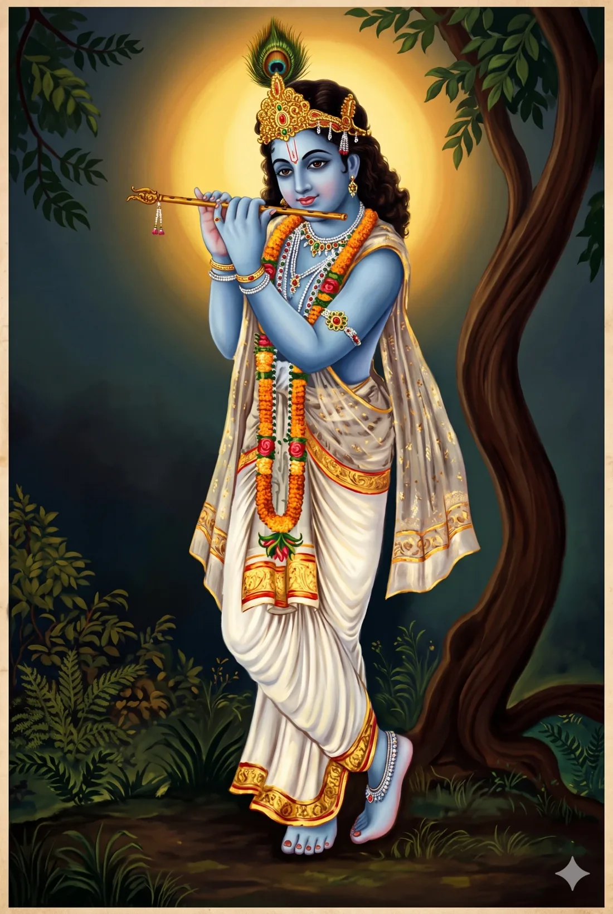
ध्यान
करु मन नँदनंदनको ध्यान।
यहि अवसर तोहि फिरि न मिलैगो,
मेरो कह्यो अब मान॥
घूँघरवारी अलकें मुखपै,
कुंडल झलकत कान।
‘नारायन’ अलसाने नैना,
झूमत रूप-निधान॥
—नारायणस्वामीजी
भगवान् श्रीकृष्णके चरित्रका रहस्य
भगवान् श्रीकृष्णका बड़ा कार्य सेवा है। जब राजसूय-यज्ञ हुआ था तब उन्होंने कहा था ‘मैं पाद प्रक्षालन करूँगा।’ युद्धक्षेत्रमें भी उन्होंने सारथी बनकर सेवाका कार्य किया। बचपनमें भी यही सेवा की। इसीलिये उनका नाम ‘भीररंजन’ पड़ा। उन्होंने सदैव सेवा की, इसीसे उनका नाम ‘दासानुदास’ भी पड़ा।
जो कोई उनके पास आवे, उन्होंने सबकी सेवा की।
गीता-बोध देनेवाले वही थे। जो काम्य-कर्म उसका त्याग और जो कार्य-कर्म उसका संग्रह। इसीलिये वह निष्काम सेवा-कार्य यज्ञ-कर्म था।
—महात्मा गान्धीजी
भक्त अर्जुन और श्रीकृष्ण
(पूज्यपाद श्रीस्वामी स्वतःप्रकाशजी ‘हरिबाबा’ द्वारा प्रेषित)
दधि मधुरं मधु मधुरं
द्राक्षा मधुरा सुधापि मधुरैव।
मधुरादपि मधुरतरं
मथुरानाथस्य नाम यद्गीतम्॥
प्रह्लादनारदपराशरपुण्डरीक-
व्यासाम्बरीषशुकशौनक भीष्मदाल्भ्यान्।
रुक्माङ्गदार्जुनवसिष्ठविभीषणादीन्
पुण्यनिमान्परमभागवतान्स्मरामि॥
एक बार कैलाशके शिखरपर श्रीश्रीगौरीशंकर भगवद्भक्तोंके विषयमें कुछ वार्तालाप कर रहे थे। उसी प्रसङ्गमें जगज्जननी श्रीपार्वतीजीने आशुतोष श्रीभोलेबाबासे निवेदन किया कि भगवन्! जिन भक्तोंकी आप इतनी महिमा वर्णन करते हैं उनमेंसे किसीके दर्शन करानेकी कृपा कीजिये। आपके श्रीमुखसे भक्तोंकी महिमा सुनकर मेरे चित्तमें बड़ा आह्लाद हुआ है और अब मुझे ऐसे भक्तराजके दर्शनोंकी अति उत्कण्ठा हो रही है। अतः कृपया शीघ्रता कीजिये।
प्राणप्रिया उमाके ये वचन सुनकर श्रीभोलानाथ उन्हें साथ लेकर इन्द्रप्रस्थको चले और वहाँ कृष्ण-सखा अर्जुनके महलके द्वारपर जाकर द्वारपालसे पूछा—‘कहो, इस समय अर्जुन कहाँ है?’ उसने कहा—‘इस समय महाराज शयनागारमें पौढ़े हुए हैं।’ यह सुनकर पार्वतीजीने उतावलीसे कहा, ‘तो अब हमें उनके दर्शन कैसे हो सकेंगे?’ प्रियाको अधीर देखकर श्रीमहादेवजीने कहा—‘देवि! कुछ देर शान्त रहो, इतनी अधीर मत हो, भक्तोंको उसके इष्टदेव भगवान्के द्वारा ही जागना चाहिये, सो मैं इसका प्रयत्न करता हूँ।’ तदनन्तर उन्होंने समाधिस्थ होकर प्रेमाकर्षणद्वारा आनन्दकन्द श्रीव्रजचन्दको बुलाया और कहा ‘भगवन्! कृपया अपने भक्तको जगा दीजिये, देवी पार्वती उसका दर्शन करना चाहती हैं।’ श्रीमहादेवजीके कहनेसे श्यामसुन्दर तुरन्त ही मित्र उद्धव, देवी रुक्मिणी और सत्यभामासहित अर्जुनके शयनागारमें गये और देखा कि वह अधिक थकानसे सो रहा है और सुभद्रा उसके सिरहाने बैठी हुई धीरे-धीरे पंखा डुलाकर उसके स्वेद-क्लान्त केशोंको सुखा रही है। भाई कृष्णको आये हुए देखकर सुभद्रा हड़बड़ाकर उठ खड़ी हुई और उसकी जगह श्रीसत्यभामाजी विराजमान होकर पंखा डुलाने लगीं। गर्मी अधिक थी, इसलिये भगवान्का इशारा पाकर उद्धवजी भी पंखा हाँकने लगे। इतनेमें ही अकस्मात् सत्यभामा और उद्धव चकित-से होकर एक-दूसरेकी ओर ताकने लगे। भगवान्ने पूछा, तुमलोग किस विचारमें पड़े हो? उन्होंने कहा, ‘महाराज, आप अन्तर्यामी हैं, सब जानते हैं, हमें क्या पूछते हैं?’ भगवान् श्रीकृष्ण बोले, बताओ तो सही क्या बात है? तब उद्धवने कहा कि अर्जुनके प्रत्येक रोमसे ‘श्रीकृष्ण-श्रीकृष्णकी’ आवाज आ रही है। रुक्मिणीजी पैर दबा रही थीं, वे बोलीं, महाराज, पैरोंसे भी वही आवाज आती है! भगवान्ने समीप जाकर सुना तो उन्हें भी स्पष्ट सुनायी दिया कि अर्जुनके प्रत्येक केशसे निरन्तर ‘जय कृष्ण कृष्ण, जय कृष्ण कृष्ण’की ध्वनि निकल रही है। कुछ और ध्यान दिया तो विदित हुआ कि उसके शरीरके प्रत्येक रोमसे यही ध्वनि निकल रही है। तब तो भगवान् उसे जगाना भूलकर स्वयं भी उसके प्रेम-पाशमें बँध गये और गद्गद् होकर स्वयं उसके चरण दबाने लगे। भगवान्के नवनीत-कोमल कर-कमलोंका स्पर्श होनेसे अर्जुनकी निद्रा और भी गाढ़ हो गयी।
इधर महादेव और पार्वतीको प्रतीक्षा करते हुए जब बहुत देर हो गयी तो वे मन-ही-मन कहने लगे, ‘भगवान् कृष्णको गये बहुत विलम्ब हो गया। मालूम होता है उन्हें भी निद्राने घेर लिया है।’ तब उन्होंने ब्रह्माजीको बुलाकर अर्जुनको जगानेके लिये भेजा। किन्तु अन्तःपुरमें पहुँचनेपर ब्रह्माजी भी अर्जुनके रोम-रोमसे कृष्ण-कृष्णकी ध्वनि सुनकर और स्वयं भगवान्को अपने भक्तके पाँव पलोटते देखकर अपने प्रेमावेशको न रोक सके एवं अपने चारों मुखोंसे वेद-स्तुति करने लगे। अब क्या था, ये भी हाथसे गये। जब ब्रह्माजीकी प्रतीक्षामें भी श्रीमहादेव और पार्वतीको बहुत समय हो गया तो उन्होंने देवर्षि नारदजीका आवाहन किया। अबकी बार वे अर्जुनको जगानेका बीड़ा उठाकर चले, किन्तु शयनागारका अद्भुत दृश्य देख-सुनकर उनसे भी न रहा गया। वे भी अपनी वीणाकी खूँटियाँ कसकर हरि-कीर्तनमें तल्लीन हो गये। जब उनके कीर्तनकी ध्वनि भगवान् शंकरके कानमें पड़ी तो उनसे भी और अधिक प्रतीक्षा न हो सकी, वे भी पार्वतीजीके साथ तुरन्त ही अन्तःपुरमें पहुँच गये। वहाँ अर्जुनके रोम-रोमसे ‘जय कृष्ण, जय कृष्ण’ का मधुर नाद सुनकर और सब विचित्र दृश्य देखकर वे भी प्रेम-समुद्रकी उत्ताल तरंगोंमें उछलने-डूबने लगे। अन्तमें उनसे भी न रहा गया, उन्होंने भी अपना त्रिभुवन-मोहन ताण्डव-नृत्य आरम्भ कर दिया, साथ ही श्रीपार्वतीजी भी स्वर और तालके साथ सुमधुर वाणीसे हरि-गुण गाने लगीं। इस प्रकार वह सम्पूर्ण समाज प्रेम-समुद्रमें डूब गया, किसीको भी अपने तन-मनकी सुध-बुध नहीं रही, सभी प्रेमोन्मत्त हो गये। भक्तराज अर्जुनके प्रेम-प्रवाहने सभीको सराबोर कर दिया। अर्जुन तुम्हारा यह अविचल प्रेम धन्य है!
कृष्ण-मुरलिका
(लेखक—पं० श्रीश्यामाकान्तजी पाठक)
धन्य वह माधव-मुरली-तान॥
रुचिर-रंगिणी, रस-तरंगिणी,
नित्य-ज्योति-प्रस्थान।
कल्याणी, वाणी प्रतिभा-सी,
स्वर्गिक शाश्वत गान॥
मनो-मुकुल-कुल-मुकुलित-करणी,
भव्य भावमय ध्यान।
नित नूतन स्वच्छन्द छन्द मधु,
प्रोज्ज्वल-प्रणय-प्रधान॥
तारावलि, नभ-धनु-रंगावलि,
मादक सुधा-समान।
सकल चराचरको द्रुत देती,
वह नव-जीवन-दान॥
भगवान् श्रीकृष्णका प्रभाव
(लेखक—श्रीजयदयालजी गोयन्दका)
कुछ मित्र मुझसे भगवान् श्रीकृष्णचन्द्रजीके अलौकिक प्रभावके सम्बन्धमें लिखनेके लिये अनुरोध करते हैं, परन्तु इस विषयपर विचार करनेपर मुझे अपनी अयोग्यता प्रतीत होती है। भगवान् श्रीकृष्णके प्रभावका पूरा पता जब देवता और ऋषि-मुनियोंको भी नहीं लगता तब मुझ-सरीखे साधारण मनुष्यकी तो बात ही क्या है! इतना होनेपर भी मैं अपने मनकी प्रसन्नता और मित्रोंके सुखके लिये अपनी साधारण समझके अनुसार कुछ लिखनेकी धृष्टता करता हूँ। विज्ञ पाठकगण बालक समझकर त्रुटियोंके लिये मुझे क्षमा करेंगे।
भगवान् श्रीकृष्ण साक्षात् पूर्ण ब्रह्मके अवतार थे या यों कहिये कि साक्षात् पूर्ण ब्रह्म ही श्रीकृष्णरूपमें प्रकट हुए हैं; उनके दिव्य गुण, प्रभाव और लीलाओंकी आश्चर्यमयी उपदेशप्रद मधुर लीलाओंसे हमारे प्राचीन ग्रन्थ भरे पड़े हैं। श्रीमद्भागवत, महाभारत, जैमिनीय-अश्वमेध और अन्यान्य पुराण आदिमें भगवान्के प्रेम, प्रभाव और ऐश्वर्यकी अलौकिक बातें स्थान-स्थानपर प्रसिद्ध हैं। जन्मते ही चतुर्भुजरूपसे प्रकट होकर फिर छोटे बालक बन जाना, यशोदामैयाको मुखके अन्दर ब्रह्माण्ड दिखलाना, गोप-बालक और बछड़ोंकी नवीन सृष्टि करना, अक्रूरजीको मार्ग और जलके अन्दर एक ही साथ दोनों जगह एक ही रूपमें दर्शन देना, कंस आदि महान् असुरोंका लीलामात्रसे विनाश कर देना, गुरु, ब्राह्मण और देवकीजीके मृत पुत्रोंको ला देना, विविधरूपोंसे एक ही साथ सम्पूर्ण रानियोंके महलोंमें निवास करना, द्रौपदीके स्मरण करते ही उसका चीर बढ़ा देना, दुर्वासाजीके आतिथ्यके समय संकटापन्न द्रौपदीके स्मरण करते ही अचानक वहाँ प्रकट हो जाना, कौरवोंकी सभामें विराट्रूप दिखाना, प्रिय भक्त अर्जुनको भक्ति और ज्ञानका रहस्य समझाते हुए उसे विश्वरूप और चतुर्भुजरूपसे दर्शन देना, अर्जुनकी रक्षाके लिये जयद्रथवधके समय सूर्यका अस्त दिखाकर फिर सूर्यको प्रकट कर देना, युद्धके अन्तमें अर्जुनको पहले रथसे नीचे उतारकर फिर स्वयं उतरते ही रथका जलकर भस्म होते दिखलाना और यह कहना कि यह रथ तो भीष्म, द्रोणादिके बाणोंसे पहले ही दग्ध हो चुका था, परन्तु मैंने अपने संकल्पसे इसे टिका रखा था; शरशय्यापर पड़े हुए भीष्मकी सारी पीड़ाओंको हरकर उन्हें अतुल बल, तेज और ज्ञान प्रदान करना, ऋषि उत्तंकको अपना अलौकिक प्रभाव और ऐश्वर्ययुक्त रूप दिखलाना, मृत परीक्षित् को जीवित करना, अश्वमेधयज्ञके समय पाण्डवोंके स्मरण करते ही द्वारकासे अचानक रातके समय आ जाना, सुधन्वासे लड़ते हुए अर्जुनके द्वारा याद करनेपर तुरन्त उपस्थित होकर रथकी लगाम हाथमें ले लेना और शरीरसहित ही परमधाम पधारना आदि अनेकों अद्भुत कर्मोंकी कथाओंके पढ़नेसे यह स्पष्ट सिद्ध हो जाता है कि ऐसे कर्म मनुष्यके लिये तो असम्भव हैं ही, देवताओंकी शक्तिसे भी अतीत हैं। इस छोटे-से लेखमें अति संक्षेपके साथ भगवान्के कुछ अद्भुत कर्मोंका दिग्दर्शन कराया जाता है।
भगवान् श्रीकृष्णचन्द्रजी प्रेम और आनन्दकी तो मूर्ति ही थे। उनका अवतार प्रेम और धर्मके संस्थापन और प्रचारके लिये ही हुआ था। भगवान्ने विशुद्ध प्रेमका जो विशाल प्रवाह बहा दिया उसे एक बार समझ लेनेपर ऐसा कौन है जिसका हृदय द्रवित और आनन्दसे पुलकित न हो जाय। परन्तु उनकी प्रेममयी लीला और उनके गहन प्रेमके तत्त्वका ज्ञान उनके अनुग्रहसे ही हो सकता है। श्रीमद्भागवत आदि पुराणोंमें गोपियोंके साथ भगवान्के प्रेमके व्यवहारका जो वर्णन आता है उसे पढ़नेपर मनुष्यके हृदयमें अनेक प्रकारकी शंकाएँ उत्पन्न होती हैं। अक्षरोंके अर्थसे तो उस प्रेममें विषय-विकार ही टपकता है, परन्तु यह प्रसंग विचारणीय है। यदि गोपियोंके साथ भगवान्का विषय-जन्य अनुचित प्रेम होता तो उद्धव-सरीखे महात्मा और गौरांग महाप्रभुसदृश त्यागी भक्त और सन्तजन उसकी कभी प्रशंसा नहीं करते। गोपियोंका प्रेम मूर्खतापूर्ण नहीं था, वे श्रीकृष्णको साक्षात् भगवान् समझती थीं। स्वयं गोपियोंके वाक्य हैं—
न खलु गोपिकानन्दनो भवा-
नखिलदेहिनामन्तरात्मदृक्।
विखनसार्थितो विश्वगुप्तये
सख उदेयिवान् सात्वतां कुले॥
‘हे सखे! ब्रह्माकी प्रार्थनापर आपने विश्वके पालनके लिये सात्वत (यदु) कुलमें अवतार लिया है। आप केवल यशोदाके ही पुत्र नहीं हैं, वास्तवमें आप समस्त प्राणियोंके अन्तरात्माके साक्षी हैं।’ इससे सिद्ध होता है कि उनका प्रेम विशुद्ध और ज्ञानपूर्ण था। उनके प्रेमकी सभी सन्त-पुरुषोंने सराहना की है। इतना ही नहीं, स्वयं भगवान्ने भी उनके प्रेमकी महिमा गायी है और अर्जुनसे कहा है कि—
निजाङ्गमपि या गोप्यो ममेति समुपासते।
ताभ्यां विना न मे पार्थ निगूढप्रेमभाजनम्॥
अर्थात् हे पार्थ! गोपियाँ अपने शरीरकी इसीलिये सँभाल रखती हैं कि उससे मेरी सेवा होती है, गोपियोंको छोड़कर मेरे निगूढ़ प्रेमका पात्र और कोई नहीं है।’ इसके अतिरिक्त भगवान् स्वयं ज्ञानस्वरूप हैं, उनमें तो विषय-विकारकी आशंका ही नहीं की जा सकती। कोई यह पूछे कि फिर भागवत आदि पुराणोंमें वर्णित वैषयिक प्रसंगोंका क्या अर्थ है। मेरी साधारण-बुद्धिके अनुसार तो इसका यही उत्तर है कि उन शब्दोंका मतलब समझनेकी कुछ भी आवश्यकता नहीं है; इतिहास, स्मृति, पुराण आदि ग्रन्थोंमें जहाँ कहीं भी ईश्वरपर झूठ, कपट, व्यभिचार आदि दोषोंका आरोप प्रतीत हो और मद्य, मांस आदिके सेवन तथा असत्य, दम्भ, व्यभिचार आदि दोषोंका विधान मिले, उन पंक्तियोंको छोड़कर ही शेष सदुपदेशको ग्रहण करना और तदनुसार आचरण करना चाहिये।
संसार परिवर्तनशील है। देश, काल, वस्तु आदिका प्रतिक्षण परिवर्तन होता रहता है। पुरानी घटनाओंमें समयका बहुत व्यवधान पड़ जानेके कारण समयके परिवर्तनसे शास्त्रोंके वर्णनकी सारी बातोंका पूरा मतलब ठीक-ठीक समझमें नहीं आता। इसके सिवा दीर्घकालतक देशपर विधर्मियोंका आधिपत्य रहनेके कारण हमारे शास्त्रोंमें धर्मके विपरीत झूठ, कपट, चोरी आदि कुभाव घुसेड़ दिये गये हों तो भी कोई आश्चर्य नहीं है। अतएव पुराणोंकी सभी बातोंको अक्षरशः समझाने और उनकी पूर्वापर पूरी शृंखला बैठाकर उन्हें मिथ्या या सत्य सिद्ध करनेका दायित्व हम साधारण लोगोंको अपने ऊपर नहीं लेना चाहिये। क्योंकि हमलोग सर्वज्ञ नहीं हैं। इसके सिवा भगवान् संसारमें अवतार ग्रहण करके जो लीला करते हैं उनमें कहीं शास्त्रकी मर्यादाके विपरीत दोषका आभास दिखलायी दे तो इस विषयमें मनमें यही निश्चय रखना चाहिये कि भगवान्में कोई दोष कभी हो नहीं सकता। भगवान् और उनके कर्म सर्वथा दिव्य हैं। साथ ही पुराण-इतिहास आदिको भी असत्य नहीं कहा जा सकता।
भगवान्के लीलामय दिव्य जन्म-कर्मका रहस्य* सम्पूर्णरूपसे तो देवता और महर्षियोंके भी समझमें नहीं आ सकता। भगवान्ने स्वयं ही कहा है—
न मे विदुः सुरगणाः प्रभवं न महर्षयः।
अहमादिर्हि देवानां महर्षीणां च सर्वशः॥
(गीता १०। २)
* ‘श्रीकृष्णांक’ में प्रकाशित ‘जन्म कर्म च मे दिव्यम्’ शीर्षक लेख देखिये।
‘मेरी उत्पत्तिको अर्थात् विभूतिसहित लीलासे प्रकट होनेको न देवतालोग जानते हैं और न महर्षिगण ही जानते हैं, क्योंकि मैं सब प्रकारसे देवताओं और महर्षियोंका भी आदिकारण हूँ।’ यद्यपि इतिहास-पुराण आदि शास्त्रोंके रचयिता ऋषि तत्त्वको जाननेवाले सिद्ध महापुरुष और योगी थे, तथापि वे भी भगवान् श्रीराम और श्रीकृष्णकी लीला और उनके प्रभावको सम्पूर्णरूपसे वर्णन करनेमें असमर्थ थे। फिर भी उन महात्माओंने कृपा-परवश हो जो कुछ लिखा है सो सत्य ही है, अल्पबुद्धि होनेके कारण हमलोग उनके भावोंको ठीक-ठीक समझ नहीं सकते और अपनी अल्पज्ञताका दोष उन महात्माओंके मत्थे मढ़ते हैं।
महाभारत आदिसे यह स्पष्ट सिद्ध है कि अवताररूपमें प्रकट हुए भगवान्को सब ऋषिगण नहीं पहचान सकते थे। उनमेंसे कोई-कोई तत्त्ववेत्ता महात्मा महर्षि ही भगवान्की कृपासे उनको जानते थे—
तुम्हरी कृपा तुमहिं रघुनंदन।
जानत भक्त भक्त-उर चंदन॥
क्योंकि भगवान् जिस शरीरमें जन्म ग्रहण करते हैं उसी शरीरके समान सब चेष्टा करते हैं। जब भगवान् मनुष्य-शरीरमें अवतीर्ण होते हैं तब मनुष्यके अनुसार चेष्टा करते हैं। उस समय उनके मनुष्योचित कर्मोंको देखकर मुनिगणोंको भी भ्रम हो जाता है, फिर मनुष्योंकी तो बात ही क्या है? श्रीवसिष्ठजीने कहा है—
देखि देखि आचरन तुम्हारा।
होत मोह मम हृदयँ अपारा॥
महाभारतके अश्वमेधपर्वके ५३वें अध्यायमें कथा है कि कौरव-पाण्डवोंके युद्धकी समाप्तिके बाद युधिष्ठिर महाराजसे आज्ञा लेकर भगवान् श्रीकृष्ण हस्तिनापुरसे जा रहे थे। मार्गमें मरुस्थलमें निवास करनेवाले गुरु-भक्त तपस्वी ऋषि उत्तंकसे उनकी भेंट हुई। पाँच पाण्डवोंके सिवा अन्य सारे कौरवोंके विनाशकी बात भगवान् श्रीकृष्णके मुखसे सुनकर ऋषि उत्तंकको बड़ा क्रोध आ गया और वे उनसे बोले कि ‘आपने सब प्रकारसे शक्तिसम्पन्न होनेपर भी युद्धका निवारण नहीं किया, इसलिये मैं आपको शाप दूँगा।’ भगवान् बड़े दयालु थे, उन्होंने मुनिको शाप देनेसे रोककर कहा कि ‘हे तपस्विश्रेष्ठ! तुमने अपने गुरुको प्रसन्न किया है, जिससे तुम्हारे तपका बड़ा तेज है, मैं उस तपका नाश कराना नहीं चाहता, मुझपर तुम्हारे शापका कोई असर नहीं होगा, शाप देनेसे तुम्हारे तपका नाश हो जायगा। इसलिये तुम मेरे अध्यात्म-विषयक आत्मतत्त्व और प्रभावकी बातें सुनो।’ तदनन्तर ५४ वें अध्यायमें ऋषि उत्तंकके पूछनेपर भगवान्ने अपने अवतार लेनेका कारण तथा प्रभाव और स्वरूपका वर्णन किया—
बह्वीः संसरमाणो वै योनीर्वर्तामि सत्तम।
धर्मसंरक्षणार्थाय धर्मसंस्थापनाय च॥ १३॥
तैस्तैर्वेषैश्च रूपैश्च त्रिषु लोकेषु भार्गव।
अहं विष्णुरहं ब्रह्मा शक्रोऽथ प्रभवाप्ययः॥ १४॥
भूतग्रामस्य सर्वस्य स्रष्टा संहार एव च।
अधर्मे वर्तमानानां सर्वेषामहमच्युतः॥ १५॥
धर्मस्य सेतुं बध्नामि चलिते चलिते युगे।
तास्ता योनीः प्रविश्याहं प्रजानां हितकाम्यया॥ १६॥
‘हे द्विजवर, भार्गव! मैं धर्मकी रक्षा और स्थापना करनेके लिये बहुत-सी योनियोंमें उन-उन योनियोंके वेष और रूपोंसे युक्त हुआ तीनों लोकोंमें अवतार धारण करता हूँ। मैं ही विष्णु, ब्रह्मा और इन्द्र हूँ। मैं ही उत्पत्ति और प्रलयरूप हूँ तथा सकल भूतसमुदायका रचनेवाला और संहार करनेवाला भी मैं ही हूँ। मैं अच्युत परमात्मा परिवर्तनशील युगोंमें प्रजाके हितकी कामनासे भिन्न-भिन्न योनियोंमें प्रवेश करके अधर्ममें बर्तनेवाले समस्त प्राणियोंके लिये धर्मकी मर्यादाको दृढ़ करता हूँ।’
यदा त्वहं देवयोनौ वर्तामि भृगुनन्दन।
तदाहं देववत्सर्वमाचरामि न संशयः॥ १७॥
‘हे भृगुनन्दन! जब मैं देवयोनिमें प्रकट होता हूँ तब निःसन्देह देवताओंके समान ही समस्त आचरण करता हूँ।’
यदा गन्धर्वयोनौ वा वर्तामि भृगुनन्दन।
तदा गन्धर्ववत्सर्वमाचरामि न संशयः॥ १८॥
‘हे भार्गव! जब मैं गन्धर्वयोनिमें प्रकट होता हूँ तब निःसन्देह गन्धर्वोंके समान ही समस्त आचरण करता हूँ।’
नागयोनौ यदा चैव तदा वर्तामि नागवत्।
यक्षराक्षसयोन्योस्तु यथावद्विचराम्यहम्॥ १९॥
‘जब मैं नागयोनिमें उत्पन्न होता हूँ तो नागों-जैसा बर्ताव करता हूँ और जब यक्ष-राक्षसोंकी योनियोंमें उत्पन्न होता हूँ तो उन्हींके अनुरूप आचरण करता हूँ।’
मानुष्ये वर्तमाने तु कृपणं याचिता मया।
न च ते जातसंमोहा वचोऽगृह्णन्त मोहिताः॥ २०॥
‘इस समय मनुष्ययोनिमें उत्पन्न होकर मनुष्य-जैसा आचरण करते हुए मैंने दीनतापूर्वक उन लोगोंसे प्रार्थना की परन्तु वे मोहसे अन्धे हो रहे थे, अतः उन मूढ़ोंने मेरा कहना न माना।’
इस प्रकार भगवान्के प्रभाव और स्वरूपकी बात सुनकर ऋषिको भगवान् श्रीकृष्णके साक्षात् परमात्मा होनेका पूर्ण विश्वास हो गया और ऋषिने विनीतभावसे भगवान्से विश्वरूप-दर्शन करानेके लिये प्रार्थना की। ऋषिकी प्रार्थनापर भगवान्ने अनुग्रह करके उन्हें अपना विश्वरूप दिखलाया, जिसे देखकर उत्तंक-ऋषि भगवान्की स्तुति करने लगे। तदनन्तर ऋषिको वरदान देकर भगवान् द्वारिकापुरीको पधार गये।
ऋषि उत्तंकके इस दृष्टान्तसे यह सिद्ध होता है कि भगवान्की कृपा बिना यज्ञ, दान, तप और गुरु-सेवन आदि करनेवाले तपस्वी ऋषि भी भगवान्के अवतार-विग्रहको पहचान नहीं सकते। भगवान् दया करके जिसको अपना परिचय देते हैं, वे ही उन्हें पहचान सकते हैं और फिर उनकी कृपासे तद्रूप हो जाते हैं।
सोइ जानहिं जेहि देहु जनाई।
जानत तुमहिं तुमहिं होइ जाई॥
जबतक भगवान् स्वयं दया करके अपनेको नहीं जनाते, तबतक दूसरेके द्वारा जनाये जानेपर भी भगवान्को नहीं जाना जा सकता। संजयके बहुत कुछ समझाने और प्रभाव बतलानेपर भी धृतराष्ट्रने भगवान्को नहीं जाना। महाभारत-उद्योगपर्वके ६८वें अध्यायमें कथा है—संजय दूत बनकर पाण्डवोंके पास जाते हैं और वहाँसे लौटकर भगवान् वेदव्यासजीकी आज्ञासे भगवान् श्रीकृष्णके प्रभाव और ईश्वर-सम्बन्धी तत्त्वका वर्णन करते हैं—
यतः सत्यं यतो धर्मो यतो ह्रीरार्जवं यतः।
ततो भवति गोविन्दो यतःकृष्णस्ततो जयः॥ ९॥
‘जहाँ सत्य है, जहाँ धर्म है, जहाँ लज्जा है, जहाँ सरलता है वहीं कृष्ण हैं और जहाँ कृष्ण हैं वहीं जय है।’
पृथिवीं चान्तरिक्षञ्च दिवं च पुरुषोत्तमः।
विचेष्टयति भूतात्मा क्रीडन्निव जनार्दनः॥ १०॥
‘सब प्राणियोंके आत्मस्वरूप पुरुषोत्तम भगवान् श्रीकृष्ण खेल करते हुए-से पृथिवी, अन्तरिक्ष और देवलोकको घुमा रहे हैं।’
स कृत्वा पाण्डवान्सत्रं लोकं सम्मोहयन्निव।
अधर्मनिरतान्मूढान्दग्धुमिच्छति ते सुतान्॥ ११॥
‘वे ही भगवान्, लोगोंको मोहित करते हुए-से पाण्डवोंको निमित्त बनाकर अधर्मनिरत तुम्हारे मूर्ख पुत्रोंको भस्म करना चाहते हैं।’
कालचक्रं जगच्चक्रं युगचक्रं च केशवः।
आत्मयोगेन भगवान् परिवर्तयतेऽनिशम्॥ १२॥
‘भगवान् केशव कालचक्र, जगच्चक्र और युगचक्रको अपनी योगशक्तिसे निरन्तर घुमाते हैं।’
कालस्य च हि मृत्योश्च जङ्गमस्थावरस्य च।
ईशते भगवानेकः सत्यमेतद्ब्रवीमि ते॥ १३॥
‘मैं आपसे यह सत्य कहता हूँ कि वे भगवान् श्रीकृष्ण अकेले ही काल, मृत्यु और चराचर समस्त जगत्का शासन करते हैं।’
ईशन्नपि महायोगी सर्वस्य जगतो हरिः।
कर्माण्यारभते कर्तुं कीनाश इव वर्धनः॥ १४॥
‘महायोगी श्रीकृष्ण सम्पूर्ण जगत्का शासन करते हुए ही किसानकी तरह जगत्की वृद्धि करनेके लिये कर्मोंका आरम्भ करते हैं।’
तेन वञ्चयते लोकान्मायायोगेन केशवः।
ये तमेव प्रपद्यन्ते न ते मुह्यन्ति मानवाः॥ १५॥
‘भगवान् केशव उस अपनी योगमायासे मनुष्योंको ठगते हैं। जो मनुष्य केवल उसीकी शरणमें चले जाते हैं, वे मायासे मोहित नहीं होते।’
यह सुनकर धृतराष्ट्र संजयसे पूछते हैं कि ‘माधव श्रीकृष्ण सब लोकोंके महान् ईश्वर हैं, इस बातको तू कैसे जानता है और मैं उन्हें क्यों नहीं जानता?’ संजय कहते हैं, ‘हे राजन्! जिनका ज्ञान अज्ञानके द्वारा ढँका हुआ है, वे भगवान् श्रीकृष्णको नहीं जान सकते। आपमें वह ज्ञान नहीं है, इसलिये आप नहीं जानते, मैं जानता हूँ।’ तदनन्तर उद्योगपर्वके ७०वें अध्यायमें फिर धृतराष्ट्रने संजयसे पूछा कि ‘हे संजय! श्रीकृष्णके विषयमें मैं तुझसे पूछता हूँ, तू मुझे कमलनयन श्रीकृष्णकी कथा सुना, जिससे मैं श्रीकृष्णके नाम और चरित्रोंको जानकर पुरुषोत्तम भगवान् श्रीकृष्णको प्राप्त होऊँ।’ इसके बाद संजयने श्रीकृष्णके नाम, गुण और प्रभावका अनेक श्लोकोंमें वर्णन किया तो भी धृतराष्ट्र भगवान् श्रीकृष्णको भली-भाँति नहीं पहचान सके। इससे यह बात सिद्ध होती है कि जिसपर भगवान्की दया होती है, वही भगवान्को पहचान सकता है।
भगवान्की प्रत्येक क्रियामें विलक्षण भाव भरा है। वे सर्वशक्तिसम्पन्न, बुद्धिके सागर और बड़े ही कुशल थे। उनकी कोई भी क्रिया या उनका एक भी संकल्प कभी निष्फल नहीं होता था। कहीं उनकी कोई चेष्टा निष्फल हुई है तो वह उनकी इच्छासे ही हुई है। उस निष्फलतामें बड़ा रहस्य भरा रहता है। भगवान् जब पाण्डवोंके दूत बनकर हस्तिनापुर गये और उनके सन्धिरूप कार्यकी सिद्धि नहीं हुई, इसमें यही कारण है कि उनकी सन्धि करानेकी इच्छा ही नहीं थी। यह बात दूत बनकर जाते समय द्रौपदीके साथ उनकी जो बातचीत हुई है, उससे स्पष्ट सिद्ध है। द्रौपदी उस समय अनेक विलाप करती हुई (महाभारत, उद्योगपर्व अध्याय ८२में) भगवान्से प्रार्थना करती है—
सुता द्रुपदराजस्य वेदिमध्यात् समुत्थिता।
धृष्टद्युम्नस्य भगिनी तव कृष्ण प्रिया सखी॥ २१॥
आजमीढकुलं प्राप्ता स्नुषा पाण्डोर्महात्मनः।
महिषी पाण्डुपुत्राणां पञ्चेन्द्रसमवर्चसाम्॥ २२॥
सुता मे पञ्चभिर्वीरै: पञ्च जाता महारथाः।
अभिमन्युर्यथा कृष्ण तथा ते तव धर्मतः॥ २३॥
साहं केशग्रहं प्राप्ता परिक्लिष्टा सभाङ्गता।
पश्यतां पाण्डुपुत्राणां त्वयि जीवति केशव॥ २४॥
‘हे कृष्ण! यज्ञवेदीसे उत्पन्न हुई राजा द्रुपदकी पुत्री, धृष्टद्युम्नकी बहिन, आपकी प्यारी सखी, आजमीढ-कुलमें ब्याही गयी महात्मा पाण्डुकी पुत्रवधू, इन्द्रके समान तेजस्वी पाँच पाण्डुपुत्रोंकी महारानी, उन पाँच वीरोंसे उत्पन्न पाँच महारथी पुत्र जो कि धर्मके नाते अभिमन्युके समान ही आपको प्रिय हैं, उनकी माता ऐसी मैं पाण्डुपुत्रोंके देखते हुए और हे केशव! आपके जीवित रहते हुए केश पकड़कर सभामें लायी गयी और दुःखित की गयी थी।’
जीवत्सु पाण्डुपुत्रेषु पाञ्चालेष्वथ वृष्णिषु।
दासी भूतास्मि पापानां सभा मध्ये व्यवस्थिता॥ २५॥
‘पाण्डुपुत्रोंके, पांचालोंके और वृष्णियोंके जीवित रहते हुए भी पापियोंकी सभामें लायी जाकर मैं दासी बना ली गयी थी।’
निरमर्षेष्वचेष्टेषु प्रेक्षमाणेषु पाण्डुषु।
पाहि मामिति गोविन्द मनसा चिन्तितोऽसि मे॥ २६॥
‘यह सब देखते हुए भी पाण्डव जब क्रोधरहित और निश्चेष्ट ही बने रहे तब ‘हे गोविन्द! मेरी रक्षा करो’ ऐसा मैंने मनसे चिन्तन किया था।’
अयन्ते पुण्डरीकाक्ष दुःशासनकरोद्धृतः।
स्मर्तव्यः सर्वकार्येषु परेषां संधिमिच्छता॥ ३६॥
‘हे पुण्डरीकाक्ष! शत्रुओंके साथ सन्धि करते समय सब कामोंमें यह दुःशासनके हाथसे खींची हुई मेरी वेणी आपको याद रखनी चाहिये।’
दुःशासनभुजं श्यामं संछिन्नं पांसुगुण्ठितम्।
यद्यहन्तु न पश्यामि का शान्तिर्हृदयस्य मे॥ ३९॥
‘यदि मैं दुःशासनकी श्याम भुजाको कटकर धूलिमें सनी हुई नहीं देखूँगी तो मेरे हृदयको कैसे शान्ति मिलेगी?’
इत्युक्त्वा वाष्परुद्धेन कण्ठेनायतलोचना।
रुरोद कृष्णा सोत्कम्पं सस्वरं वाष्पगद्गदम्॥ ४२॥
‘शोकावरुद्ध कण्ठसे इस प्रकार विलाप करके विशालनेत्रा द्रौपदी काँपती हुई गद्गद् होकर उच्च स्वरसे रोने लगी।’
द्रौपदीके वचन सुनकर भगवान् दया करके कौरवोंको नष्ट करनेकी घोर प्रतिज्ञा करते हुए कहते हैं—
चलेद्धि हिमवान्शैलो मेदिनी शतधा फलेत्।
द्यौः पतेच्च सनक्षत्रा न मे मोघं वचो भवेत्॥ ४८॥
‘भले ही हिमालय पर्वत विचलित हो जाय, पृथिवीके सैकड़ों टुकड़े हो जायँ, तारोंके सहित स्वर्ग गिर पड़े, पर मेरे वचन व्यर्थ नहीं हो सकते।’
सत्यं ते प्रतिजानामि कृष्णे वाष्पो निगृह्यताम्।
हतामित्रान् श्रियायुक्तानचिराद्द्रक्ष्यसे पतीन्॥ ४९॥
‘हे द्रौपदी! अश्रुओंको रोको, मैं तुम्हारेसे सत्य प्रतिज्ञा करता हूँ कि तू अपने पतियोंको शीघ्र ही राज्यश्रीसे युक्त और निहत-शत्रु अर्थात् जिनके शत्रु मर चुके हैं ऐसे देखेगी।’
इससे सिद्ध है कि भगवान्को युद्ध अवश्यमेव कराना था, केवल संसारकी मर्यादा रखनेके लिये तथा अपने प्यारे पाण्डवोंका कलंक दूर करनेके लिये ही उनका हस्तिनापुर जाकर सन्धिके लिये चेष्टा करना समझा जाता है।
युद्धमें अस्त्र ग्रहण न करनेकी प्रतिज्ञा करके प्रिय भक्त भीष्मके लिये चक्र ग्रहण करनेमें भी उनकी इच्छा ही कारण है। भीष्मपर्वका यह प्रसंग देखनेसे मालूम होता है कि यह बड़े ही रहस्य और वीर-रससे भरी हुई प्रेममयी लीला है। भीष्मपितामह बड़े ही भक्त और श्रद्धालु थे। उनकी प्रसन्नताके लिये ही भगवान्ने यह विचित्र क्रिया की। वास्तवमें भगवान्की सम्पूर्ण क्रियाएँ निर्दोष और दिव्य हैं। उनकी दिव्यताका जानना साधारण बात नहीं है।
भगवान्के अनन्त दिव्य-गुणोंकी महिमा कौन गा सकता है? संसारमें क्षमा, दया, शान्ति आदि जितने गुण दीखते हैं, तेज, ऐश्वर्य आदि जितनी विभूतियाँ प्रतीत होती हैं, शक्ति और प्रताप आदि जितने उच्च भाव हैं, उन सबको भगवान् श्रीकृष्णके तेजके एक अंशका ही विस्तार समझना चाहिये। भगवान् स्वयं कहते हैं—
यद्यद्विभूतिमत्सत्त्वं श्रीमदूर्जितमेव वा।
तत्तदेवावगच्छ त्वं मम तेजोंऽशसम्भवम्॥
अथवा बहुनैतेन किं ज्ञातेन तवार्जुन।
विष्टभ्याहमिदं कृत्स्नमेकांशेन स्थितो जगत्॥
‘जो-जो भी विभूतियुक्त अर्थात् ऐश्वर्ययुक्त एवं कान्तियुक्त और शक्तियुक्त वस्तु है, उस-उसको तू मेरे तेजके अंशसे ही उत्पन्न हुई जान। अथवा हे अर्जुन! इस बहुत जाननेसे तेरा क्या प्रयोजन है, मैं इस सम्पूर्ण जगत्को (अपनी योगमायाके) एक अंशमात्रसे धारण करके स्थित हूँ।’
कर्मयोगी, युग-प्रवर्तक एवं धर्मसंस्थापक श्रीकृष्ण
(लेखक—बाबू भगवानदासजी एम० ए०)
श्रीमद्भागवतमें लिखा है कि आजसे लगभग पाँच हजार वर्ष पूर्व द्वापरके अन्त तथा कलियुगके प्रारम्भमें श्रीकृष्णका जन्म हुआ और वे एक सौ पचीस वर्षतक इस लोकमें रहे।
यदुवंशेऽवतीर्णस्य भवतः पुरुषोत्तम।
शरच्छतं व्यतीयाय पञ्चविंशाधिकं प्रभो॥
इस दीर्घ आयुका प्रत्येक दिन नहीं तो, प्रत्येक सप्ताह उन्होंने धर्म-संस्थापनार्थ युद्ध करने तथा दुष्टोंका दमन करनेमें ही बिताया। उन्हें इस अवनीतलपर अवतीर्ण हुए कुछ ही सप्ताह हुए थे जब कि उन्होंने पूतना नामक राक्षसीको कालके गालमें पहुँचाया। उनके मामा कंसको कौतुक-प्रिय एवं इस संसाररूपी रंगभूमिमें अनेक प्रकारके अभिनय रचानेवाले महर्षि नारदने पहलेसे यह कह रखा था कि तुम्हारे भानजेके हाथ तुम्हारी मृत्यु होगी। उसी कंसने इस राक्षसीको श्रीकृष्णका वध करनेके लिये भेजा था और वह कालसे प्रेरित हो अपने स्तनोंमें विष लगाकर आयी थी एवं जिन्हें अपना विष मिला हुआ दूध पिलाकर मारना चाहती थी उन्हींके हाथों स्वयं मारी गयी। जिस समय वे धराधाममें पधारे थे, पृथिवी दुष्टोंके बोझसे दब रही थी और जनतामें हाहाकार मचा हुआ था। क्षात्र-बल पराकाष्ठाको पहुँच चुका था और जिन लोगोंका धर्म दीन-दुर्बलोंकी रक्षा करना था वे ही उनके भक्षक बनकर अपनी शक्तिका दुरुपयोग कर रहे थे। उस समय मनुष्योंकी जो दशा थी उसका पुराणों तथा श्रीमद्भगवद्गीतामें आलंकारिक भाषामें बड़ा ही सुन्दर वर्णन किया गया है—
एवं वीर्यमदोत्सिक्तैर्भूरियन्तैर्महासुरैः।
पीडिता भृश सन्तप्ता जगाम प्रपितामहम्॥
त्रिविधं नरकस्येदं द्वारं नाशनमात्मनः।
कामः क्रोधस्तथा लोभस्तस्मादेतत्त्रयं त्यजेत्॥
अर्थात् नरदेहधारी असुरोंने शक्तिके मदसे मत्त होकर जब पृथिवीको बेहद सताया तब वह त्रिलोकीनाथके पास पहुँची और उन्हें अपना दुखड़ा रोकर सुनाया; क्योंकि उनका शासन प्रजाको नरककी ओर ले जा रहा था जिसके काम, क्रोध और लोभ ये तीन द्वार बतलाये गये हैं।
उस समय देशमें असुर एवं राक्षस-जातिके लोग (जिन्हें आजकल Mongolian और Atlantean के नामसे पुकारते हैं) बड़े प्रबल हो रहे थे। वे जगह-जगह किले बनाकर रहते और प्रजाको सताया करते थे। इधर क्षत्रिय राजा भी क्रूरता तथा नृशंसतामें उनसे किसी प्रकार कम नहीं थे। इनमेंसे कुछका तो श्रीकृष्णने ही काम तमाम किया और कुछका भीम एवं अर्जुनके द्वारा संहार करवाया।
मथुराके राजा कंसका वधकर श्रीकृष्णने उसके राज्यच्युत वृद्ध पिता उग्रसेनको राजगद्दीपर बिठलाया और स्वयं मथुरामें रहकर राज्य-कार्य करने लगे। किन्तु वहाँ रहकर शान्तिपूर्वक राज-काज सँभालना तथा प्रजाकी उन्नति करना उन्हें असम्भव-सा प्रतीत हुआ। आस-पासके राजा लोग बहुत ऊधमी, उच्छृङ्खल एवं आततायी थे। विशेषकर कंसका श्वसुर मगधराज जरासन्ध जो हर तरहसे अपने जामाताके वधका बदला लेना चाहता था, किसी प्रकार भी इन्हें दम नहीं लेने देता था। उसने सतरह बार मथुरापर चढ़ाई की और सतरहों बार उसे पराजित होकर भाग जाना पड़ा। अठारहवीं बार वह महाबली यवनराज कालयवन तथा उसकी बृहत् सेनाको साथ लेकर मथुरापर चढ़ आया। श्रीकृष्णने यवनराजको मुचुकुन्द (उसका इतिहास अलग ही है)-के द्वारा मरवा डाला। किन्तु अन्तमें उन्होंने मथुरा छोड़कर अन्यत्र ही जा बसनेका निश्चय किया। इसी निश्चयके अनुसार वे अपने सारे परिजनों तथा बन्धु-बान्धवोंको साथ लेकर अनेक पर्वतों और मरुस्थलके विशाल मैदानको लाँघकर वहाँसे एक हजार मील दूर पश्चिमीय समुद्रके तटपर द्वारका नामक नगरीमें पहुँचे। वहाँ उन्होंने पुरानी नगरीके ध्वंसावशेषपर एक नया और विशाल नगर बसाया और एक प्रकारका सङ्घ-राज्य (Republic) अथवा गण-राज्य (Oligarchy) या एक तीसरे ढंगका ही राज्य, जिसे हम सङ्घ-राज्य और गण-राज्य दोनों कह सकते हैं, (अभी हमें इतनी प्रमाण सामग्री नहीं मिली है जिससे हम यह निश्चय कर सकें कि द्वारकाका राज्य सङ्घ-राज्यका नमूना था अथवा गण राज्यका। अधिक सम्भावना इसी बातकी है कि उसमें दोनोंका ही सम्मिश्रण था) स्थापित किया। जिस कुलमें भगवान्का जन्म हुआ था उसका नाम यादव-कुल था। यद्यपि उसमें कुक्कुर, भोज, सात्वत, अन्धक और वृष्णि इत्यादि कई अन्तर्जातियाँ शामिल थीं। इनमें अन्धक और वृष्णि (इसी वृष्णिवंशमें श्रीकृष्ण अवतीर्य हुए थे—‘वृष्णीनां वासुदेवोऽस्मि’ गी० १०। ३७) ये दो वंश मुख्य थे और इन्हींके नामसे श्रीकृष्णने अपने राज्यका ‘अन्धक-वृष्णयः’ यह संयुक्त नाम रखा था। प्रत्यक्षमें श्रीकृष्णको यह आशा थी कि निरंकुश एकतन्त्र राज्यकी अपेक्षा इस प्रकारके सह-मिश्रित गणराज्य (Oligarchical Republic)में प्रजा अधिक सुखी एवं सन्मार्ग-गामिनी होगी। यदि हमारा यह अनुमान ठीक है तो यह कहना पड़ेगा कि उनकी यह आशा पूर्ण नहीं हुई। यादव लोग जन्मसे, संस्कारोंसे तथा स्वभावसे उग्र प्रकृतिके थे और ऊपरसे वे कुछ ही दिनों पूर्वतक अत्याचारोंके बोझसे अत्यन्त दबे हुए थे। केवल शासनपद्धतिमें परिवर्तन कर देनेसे ही उनपर इन सारी बातोंका प्रभाव एक साथ ही नहीं हट सका। उनके अन्दर क्षत्रियोंकी स्वाभाविक वीरता एवं महानुभावताके साथ ही युद्धप्रियता एवं हिंसावृत्ति भी अक्षुण्णरूपसे बनी हुई थी। इधर इस नवीन मिश्रित सङ्घराज्यका अन्य एकतन्त्र-राज्योंके साथ, जो चतुर्दिक फैले हुए थे, वैवाहिक, सामाजिक, व्यापारिक इत्यादि कई प्रकारका सम्बन्ध था। उनका रोग ऐसा भयङ्कर था कि साधारण उपचारसे उसकी शान्ति नहीं हो सकती थी। उसके लिये तो किसी ऐसे असाधारण प्रयोगकी आवश्यकता थी जो उस व्याधिको समूल नष्ट कर देता।
उन दिनों कौरवों और पाण्डवोंमें, जो एक ही पितामहके सन्तान थे और जिनमेंसे दोनोंके ही साथ श्रीकृष्ण और उनके कुटुम्बियोंका वैवाहिक सम्बन्ध था, परस्पर घोर कलह मचा हुआ था। इस कलहको निमित्त बनाकर श्रीकृष्णने एक महायुद्धका आयोजन किया, जिसमें उन्होंने सोचा कि भारतवर्ष के सारे प्रबल क्षत्रिय सुन्द-उपसुन्दकी तरह एक-दूसरेका क्षय करनेमें समर्थ होंगे।
बस फिर क्या था? उन्होंने अपने समयकी दैवी और आसुरी शक्तियोंको जो एक-दूसरेके साथ घुल-मिल गयी थीं, अपनी अद्भुत नीति-कुशलतासे एक ही कालमें और एक ही स्थानमें अर्थात् कुरुक्षेत्रके मैदानमें एकत्र करके उन्हें इस दक्षताके साथ एक-दूसरेसे भिड़ा दिया कि जहाँ युद्धके प्रारम्भमें न्याय और धर्मके पक्षमें सात अक्षौहिणी अर्थात् साढ़े ग्यारह लाख सेनाबल था और अधर्म तथा अन्यायके पक्षमें इग्यारह अक्षौहिणी अथवा साढ़े इक्कीस लाख अर्थात् १० लाख अधिक सेनाबल था, वहाँ युद्धके अन्तमें धर्म और न्यायके पक्षमें कुल सात पुरुष और अधर्म और अन्यायके पक्षमें केवल तीन ही बच रहे थे। अन्तमें जब श्रीकृष्णने देखा कि केवल महाभारत-युद्धसे ही उनके महान् उद्देश्यकी पूर्ति नहीं हुई, तब उन्होंने द्वारकाके निकटवर्ती प्रभास क्षेत्रमें जाकर अपने धर्मसंस्थापन कार्यको पूरा किया। महाभारतमें कथा आती है कि वहाँ उनके कुटुम्बियों एवं निकट सम्बन्धियोंने जिनकी संख्या करीब पाँच लाखके थी शराबसे तथा शक्तिके मदसे, जो उससे भी अधिक मादक होता है, मतवाले होकर एक-दूसरेका क्षय कर डाला। इसप्रकार उन्होंने अपने समयके अन्तिम दुर्जेय एवं आततायी छात्र-बलका संहार करके कृषि एवं वाणिज्यके द्वारा शान्तिपूर्वक जीवन-निर्वाह करनेवाले तृतीय वर्णके लिये मार्ग साफ कर दिया। हरिवंश, गर्गसंहिता, ब्रह्मवैवर्त आदि दूसरे पुराणोंमें समुद्रके पार दूसरे द्वीपों और महाद्वीपोंमें जाकर वहाँके क्षात्रबलका ध्वंस करनेका वृत्तान्त भी मिलता है।
पिछले विश्वव्यापी महायुद्धमें जो, नवम्बर सन् १९१८में थोड़े दिनोंके लिये बन्द होकर सन् १९१९की सन्धिके बाद सदाके लिये बन्द हुआ था, कम-से-कम अस्सी लाख (और कुछ लोगोंके अनुमानसे एक करोड़ तीस लाख) मनुष्योंका संहार बतलाया जाता है। इस संख्याको देखकर भारतीय युद्धके जन-संहारकी संख्याको काल्पनिक बतलाकर हम उसके विषयमें शंका नहीं कर सकते। महाभारत एवं तत्कालीन अन्यान्य युद्धोंके जन-संहारका ही यह सुन्दर फल था कि सनातन-धर्मने उसके बाद लगातार पच्चीस सौ वर्षतक अपना सिर ऊँचा उठाये रखा।
इसके बाद फिर उसका ह्रास प्रारम्भ हुआ और उसे जरा-व्याधिने आ घेरा। तब बुद्धको इस पृथिवीपर आना पड़ा। उन्होंने बुद्धिवाद, पारस्परिक प्रेम, सदाचार, अहिंसा और त्यागपर विशेष जोर दिया और इसप्रकार सनातन धर्मका परिष्कार कर उसे एक हजार वर्षतक और जीवित रखा।
जब उसमें एक बार फिर खराबी आयी तब शंकर, रामानुज प्रभृति आचार्योंने तथा नानक-कबीर, सूर-तुलसी, रामदास-तुकाराम, चैतन्य-मीराबाई आदि भक्त-कवियों और सन्त-महात्माओंने धर्मके संशोधन और पुनरुद्धारका कार्य सम्पन्न किया। उनके बाद भी धर्म-संस्थापनका कार्य क्रमशः अन्यान्य महापुरुषों एवं विभूतियोंके द्वारा बराबर होता रहा। संसारके सुधारका कार्य अनवरतरूपसे जारी रहता है। सुधार और बिगाड़ करनेवाली शक्तियाँ एक साथ एवं लगातार काम करती रहती हैं। कभी एकका पलड़ा भारी हो जाता है, कभी दूसरीका।
कर्मयोगी एवं युग-प्रवर्तकके रूपमें श्रीकृष्णका यही मुख्य कार्य था। उनके बालकपनके अनेक साहसिक कार्य, भयानक पशु-पक्षियों और सरीसृपों-जैसे दुष्ट घोड़ों, पागल साँड़ों, हिंसक गीधों, अजगरों और साँपों, विशालकाय पक्षियों और अनेक प्रकारके उड़नेवाले साँपों (जिनमेंसे कुछ बचे-खुचे उस समय भी पर्वतोंकी कन्दराओंमें रहते थे) और गोकुलके आसपासकी पहाड़ियों और गुफाओं तथा जङ्गलों और नदियोंमें रहनेवाले डाकुओंको साथ युद्ध करके उन्हें यमलोक पहुँचा देना, अपने साथ खेलनेवाले ग्वाल-बालों तथा उनकी गौओं और बछड़ोंके गोवर्धन-पर्वतके अन्दर एक गुफामें ले जाकर प्रलयकालकी-सी वर्षासे जो लगातार सात दिनतक होती रही, उनकी रक्षा करना, इन सारी घटनाओंपर अनेक भक्ति-रस-पूर्ण, कल्पना-युक्त, अत्युक्तियोंसे अतिरञ्जित एवं रहस्यपूर्ण काव्योंकी रचना हुई है, जिनसे अंग्रेज-कविके शब्दोंमें शिक्षाकी शिक्षा मिलती है और काव्यका सौन्दर्य बढ़ता है (that points a moral and adorns a tale) यहाँ हम उनका प्रसंगवश उल्लेखमात्र करके ही सन्तोष करेंगे। हाँ, उदाहरणके लिये हम एक घटनाका विशेष रूपसे वर्णन करेंगे। कालिय-नागने यमुनाके किनारे रहकर वहाँके जलको विष-दूषित कर रखा था। एक दिन श्रीकृष्णने, जब वे निरे बालक थे, देखा कि कालिय-नाग नदीमें तैर रहा है, वे तुरन्त ही नदीमें कूद पड़े और लड़कर उसे बाहर निकालनेकी चेष्टा करने लगे। उस भयानक सर्पने इन्हें देखकर अपना सिर उठाया और बड़े क्रोधसे वह इनकी ओर झपटा। श्रीकृष्णने उसके सिरको पकड़कर पानीके अन्दर डुबा दिया। सर्पका दम घुटनेके कारण वह छटपटाने लगा और किसी तरह वह श्रीकृष्णसे अपना पिण्ड छुड़ाकर भागा और लौटकर उसने फिर कभी अपना मुँह न दिखाया। यह तो हुआ इस छोटी-सी कथाका स्थूल रूप। इसका गूढ़ रहस्य कुछ और ही है, जो आगे चलकर स्पष्ट किया जावेगा। कुछ पुराणोंमें लिखा है कि कालिय-नागके पाँच सिर थे और श्रीकृष्ण उनके ऊपर चढ़कर विजय-गर्वसे नृत्य करने लगे। मेरी समझमें इसका तात्पर्य कदाचित् यह है कि आत्माको पाँचों इन्द्रियोंपर विजय प्राप्त करनी चाहिये और चेष्टा करनेसे वह ऐसा कर भी सकता है। श्रीमद्भागवतकारने और जो भी आगे बढ़कर इस घटनाका आलंकारिक भाषामें बड़ा ही सुन्दर वर्णन किया है, जो इस प्रकार है—
उस अनादि बालकने जो कलाओंका आदिगुरु था, उस महान् सर्पके एक सौ एक मस्तकोंपर नृत्य किया। भगवान् अपने सर्वातिशायी बलसे कभी इस मस्तकपर और कभी उस मस्तकपर थिरकने लगे। जब कालियने फुंकार मारते हुए अविनय तथा दर्पसे अपना सिर ऊँचा उठाया तो उन्होंने उसके सिरोंकी ऐसी मरम्मत की कि वे सारे टूट-फूटकर विनयसे नम्र हो गये और वह इनसे रक्षाकी प्रार्थना करने लगा—
यद्यच्छिरो न नमतेऽङ्ग शतैकशीर्ष्ण-
स्तत्तन्ममर्द खरदण्डधरोऽङ्घ्रिपातैः।
तन्मूर्धरत्ननिकरस्पर्शातिताम्र-
पादाम्बुजोऽखिलकलादिगुरुर्ननर्त॥
मेरी समझमें उक्त श्लोकमें मनुष्यके शरीरकी एक सौ एक शिराओं अथवा मुख्य नाड़ियोंका उल्लेख है, जिनका उपनिषदोंमें वर्णन आता है। इनमेंसे प्रत्येक नाड़ीपर अभ्यासी एवं सिद्धयोगी, जो आनेवाली मनुष्य-जातिका एक उन्नत आदर्श है, निश्चित ही पूरा काबू पा सकता है। शिक्षाके उद्देश्यसे पाठकोंकी इस विषयमें जिज्ञासा तथा कौतूहल उत्पन्न करनेके लिये ही कदाचित् इस कथाके रूपमें रहस्यपूर्ण दार्शनिक एवं वैज्ञानिक-तथ्योंका सङ्केत किया गया है। कुछ दूसरे विद्वानोंकी यह धारणा है कि श्रीकृष्णके जीवनकालमें नाग-पूजाका बहुत अधिक प्रचार था और उनके द्वारा इस प्रथाके बन्द किये जानेकी बात ही इस रूपकके द्वारा दर्शायी गयी है। परन्तु यदि ऐसी बात है तो फिर यह कहना पड़ेगा कि इस घटनासे भी इतिहासके उस नियमकी पुष्टि होती है कि प्रकारान्तरसे विजेताओंपर विजित ही विजय पाते हैं। स्वयं बलरामजी आगे चलकर शेषनाग अथवा अनन्त अर्थात् ईश्वरकी अनन्त शक्तिके ही अवतार माने जाने लगे।
(लेखककी Krishna नामक पुस्तकके एक प्रसंगका सार-भावानुवाद, अनुवादक-गोस्वामी श्रीचिम्मनलाल एम० ए०)
चीर-हरणका रहस्य
(लेखक-प्रभासपत्तनस्थ श्रीशारदापीठाधीश्वर जगद्गुरु श्रीशंकराचार्य स्वामीजी ऊँ०श्रीस्वरूपानन्दतीर्थजी महाराज)
श्रीःजलक्रीडासमासक्तगोपीवस्त्रापहारकाय नमः
उपर्युक्त पदमें भगवान् श्रीकृष्णका नाम ऐसे शब्दोंमें रचा गया है, जिससे चीरहरणका रहस्य अनायास ही प्रकट हो सकता है। श्रीमद्भगवद्गीतामें भगवान् अपने भक्तोंको ज्ञान प्रदान करनेकी प्रतिज्ञा करते हुए कहते हैं—
‘ददामि बुद्धियोगं तं येन मामुपयान्ति ते’
उपर्युक्त नाममें भी यही रहस्य छिपा है। अज्ञानका हरण करना या ज्ञान प्रदान करना, एक ही बात है। अन्धकारको दूर करना अथवा प्रकाशको प्रकट करना एक ही बात है। जिस प्रकार अन्धकारके दूर करनेका काम प्रकाशके प्रकट होनेसे हो जाता है, उसी प्रकार ज्ञानके प्रकाशके द्वारा अज्ञान दूर किया सकता है। अन्य किसी भी प्रयत्नके द्वारा अज्ञान दूर नहीं हो सकता। इस प्रकार ज्ञान प्रदान करनेका काम भक्तोंपर अपार कृपा करके स्वयं भगवान् ही करते हैं। यही बात भगवान्ने गीतामें बतलायी है। इसी बातको भागवतकारने प्रत्यक्ष दृष्टान्तरूपमें भागवतोक्त चीर-हरण-लीलामें व्यक्त किया है। श्रीमद्भागवतके यथार्थ मननशील पुरुष यह स्पष्टरूपसे समझ सकते हैं कि श्रीमद्भागवतमें गीताके ही सिद्धान्तोंका दृष्टान्तसहित सुस्पष्ट वर्णन किया गया है। यहाँ यही दिखलाना है कि ‘ददामि बुद्धियोगम्’—इस गीताके श्लोकके सिद्धान्तको दृष्टान्तके साथ बोध करानेके लिये चीरहरणकी लीला की गयी है।
‘जलका अभिप्राय है संसार; गोपीका अभिप्राय है वृत्तियाँ अथवा भक्तजन, वस्त्र अज्ञानका रूपक है। इस प्रकार अर्थ करनेसे उपर्युक्त भगवद्वाक्यका अर्थ स्पष्टतः ऐसा होता है—‘सांसारिक भक्तजनोंके अज्ञानका हरण करनेवाला। ‘सर्वं खल्विदं ब्रह्म तज्जलानिति शान्त उपासीत’ इस छान्दोग्योपनिषद्के वाक्यमें ‘जलान्’ शब्दका अर्थ उत्पत्ति, स्थिति और प्रलय करके (तज्जं च तल्लं च तदनञ्च तज्जलान्) उत्पत्ति, स्थिति और लयरूपी तीन प्रधान विकारयुक्त जगत्का निर्देश किया जाता है। इस प्रकार ‘जल’ शब्दमें ‘ज’ और ‘ल’ अक्षरोंसे षड्विकारोंमेंसे आदि और अन्तके दो विकारोंका निर्देश कर मध्यवर्ती शेष चार विकारोंका ग्रहण उपलक्षणद्वारा होनेसे ‘जल’ शब्दका अर्थ षड्विकारयुक्त जगत् हो सकता है और इस प्रकार ‘जलक्रीडासमासक्त’ का अर्थ हो जाता है, ‘संसारमें आसक्त-सांसारिक।’
परन्तु भगवान् सभी सांसारिक मनुष्योंके अज्ञानका हरण नहीं करते। जो भक्तजन भक्तिभावसे भगवत्-शरण प्राप्त कर भगवद्भक्तिद्वारा संसारकी सम्पूर्ण आसक्तियोंके त्यागकी तीव्र इच्छाके साथ केवल भगवत्प्राप्तिके ही अभिलाषी होते हैं, भगवान् अपनी ‘तेषामहं समुद्धर्ता मृत्युसंसारसागरात्’ इस प्रतिज्ञाके अनुसार उनपर कृपा करके उन्हें सांसारिक आसक्तिसे छुड़ानेके लिये उनकी संसारासक्तिके कारणरूप अज्ञानको हर लेते हैं, इसी बातके बतलानेके लिये ‘गोपी’ शब्दका प्रयोग किया गया है। ‘गो’ शब्दका अर्थ है इन्द्रियाँ, प:—पालन करनेवाला; अर्थात् इन्द्रियोंका पालन करनेवाला सांसारिक पुरुष। परन्तु यह सांसारिक वाचक ‘गोपः’ शब्द पुँल्लिङ्ग है, अतः स्त्रीलिङ्गका प्रयोगकर स्त्रीवाची ‘भक्तिसे युक्त सांसारिक पुरुष’ ऐसा अभिप्राय प्रकट करनेके लिये ही ‘गोपी’ शब्दका प्रयोग हुआ है। दूसरा अर्थ यह भी लगाया जा सकता है कि सांसारिक होनेपर भी व्रज-गोपिकाओंमें श्रीभगवान्के प्रति जिसप्रकार अनन्य प्रेम प्रकट हुआ था वैसे ही ‘भक्ति-प्रेमयुक्त सांसारिक भक्त’ अथवा गो:—इन्द्रियोंके पालन करनेवाले अर्थात् विवेकपूर्वक विहित और अविहितका यथार्थ विचारकर इन्द्रियोंको उनके विषयोंमें लगानेवाले गोप। क्योंकि शास्त्रानुसार इन्द्रियोंको विहित भोग देनेवाले ही इन्द्रियोंके यथार्थ पालन करनेवाले कहे जा सकते हैं। शास्त्रोंकी परवा न कर स्वेच्छाचारी बन इन्द्रियोंको विषय-भोगमें लगानेवाले तो इन्द्रियोंको विपत्तिमें डालकर उनका नाश करनेवाले होते हैं। अतएव शास्त्रानुकूल आचरण करनेवाले ‘गोप’ और साथ ही भक्तियुक्त होनेसे ‘गोपी’ यानी भक्तियुक्त ‘गोप’। भक्तिपूर्वक धर्माचरण करनेसे चित्तशुद्धि होती है, ऐसा ही भगवान्ने भी कहा है—‘स्वकर्मणा तमभ्यर्च्य सिद्धिं विन्दति मानवः।’ इसप्रकार भगवान् अपने भक्तके अन्तःकरणको शुद्ध करनेवाले और उसके अज्ञानको दूर करनेवाले हैं। यही क्यों, वह समस्त सांसारिक पुरुषोंके चित्तको शुद्ध कर उनके अज्ञानको दूर करनेवाले हैं। इन्द्रियोंको पालन करनेवाली वृत्तियोंका अभिप्राय ‘गोपी’ शब्दसे स्पष्ट ही है।
‘वस्त्र’ शब्दका अभिप्राय अज्ञान हो सकता है। ‘वस्त्र’ शब्द ‘वस् आच्छादने’ धातुसे बनता है, ‘वस्’ धातु आच्छादनसूचक होनेसे जिसप्रकार वस्त्र आच्छादनका कार्य करता है उसी प्रकार अज्ञान आत्माके शुद्ध स्वरूपके आच्छादनका काम करता है। अतः ‘वस्त्र’ शब्दका लक्ष्यार्थ अज्ञान लिया जा सकता है। आत्मा तो नित्य, शुद्ध, बुद्ध और मुक्त है, अज्ञानके कारण ही उसे अनित्य, अशुद्ध, अज्ञान और बद्ध कहलाना पड़ता है। उस अज्ञानके दूर किये बिना आत्माको शुद्ध स्वरूपके ज्ञानकी प्राप्ति, ब्रह्मात्मैक्यता और अपरोक्षानुभूतिका अधिकार प्राप्त नहीं हो सकता। इसीलिये भगवान् गोपी-वस्त्रापहारक हैं, ऐसा कह सकते हैं, अतः भगवान् भक्तोंके वस्त्र—अज्ञानका हरण करनेवाले हैं, यह सिद्ध होता है।
भगवान्के १०८ नामोंमें यह एक सुप्रसिद्ध नाम है, जिसका उपर्युक्त रीतिसे अर्थ करनेपर ‘चीर-हरण-रहस्य’ स्पष्ट हो जाता है। यह तो नामका अर्थ हुआ। अब श्रीमद्भागवतमें इसका जो प्रसङ्ग देखनेमें आता है, उसपर भी थोड़ा-सा विचार करना है। व्रज-कुमारियाँ इच्छित-वरकी प्राप्तिके लिये कात्यायनी-व्रत करती हैं, आजकल भी ऐसा एक व्रत प्रचलित है। समस्त विश्वको मोहित करनेवाले श्रीकृष्ण हमारे पति हों, उस समय तमाम ब्रज-बालाओंकी यही वासना थी। व्रज-बालाओंकी वृत्ति परमात्मा श्रीकृष्णके प्रति इतनी अधिक लगी हुई थी कि व्रतके अन्तमें देवीसे वर माँगनेके समय भी उन्होंने यही वर माँगा। व्रतके अन्तमें सारी व्रज-कुमारियाँ कालिन्दीमें स्नानको जाती है और वस्त्र बाहर उतारकर (नंगी ही) जलमें प्रवेश करती हैं जो व्रतमें विघ्न उत्पन्न करनेवाला एक आचरण है। इस निषिद्ध आचरणका प्रायश्चित्त नहीं होगा तो व्रज-बालाओंका व्रत पूर्ण नहीं होगा। दयालु प्रभु तो सदा ही भक्तोंके मार्ग-दर्शक होते हैं और समय-समयपर भक्तोंके अज्ञानको दूर करना वे अपना काम समझते हैं। साक्षात् श्रीदेवीस्वरूपा श्रीरुक्मिणीजीके अन्तःकरणमें साधारण-से गर्वकी उत्पत्ति होते ही भगवान्ने मर्मभेदी शब्दोंका प्रयोग कर उनके गर्वाभासको दूर कर दिया था। यह प्रसंग श्रीमद्भागवतमें प्रसिद्ध ही है। भगवान् अपने सच्चे भक्तको तनिक भी विपथगामी होते देख येनकेनप्रकारेण उसे सत्य पथपर आरूढ़ करानेकी विविध युक्तियोंसे चेष्टा किया करते हैं, यहाँ भी अपनी अनन्य भक्त व्रजबालाओंको विपथगामी होते देख उन्हें तुरन्त ही वहाँसे हटाकर यथार्थ मार्गपर चढ़ानेके लिये आप उसी क्षण यमुना-तटपर जा पहुँचे। किनारेपर वस्त्र रख वस्त्रहीन हो स्नान करनेवाली बालाओंकी भूल सुधारनेके लिये उन वस्त्रोंको उठाकर श्रीकृष्ण वृक्षपर चढ़ गये। इस समय वे अकेले नहीं, किन्तु अपने समान वयके गोप-बालकोंको साथ लेकर वहाँ गये थे। ‘तीरे निक्षिप्य पूर्ववत्’ इस पदसे स्पष्ट समझमें आ जाता है कि बालाएँ इसप्रकार विवस्त्र स्नान करनेका आचरण पहलेसे ही करती थीं अर्थात् उनमें इसप्रकारकी रूढ़ि प्रचलित थी। ‘वयस्यैरावृतस्तत्र गतः’ इस पदके द्वारा भागवतकारका यह अभिप्राय है कि वहाँ श्रीकृष्ण अकेले ही नहीं, बल्कि बहुतेरे ग्वाल-बालोंके साथ गये थे, इससे यह जाना जाता है कि कुमारावस्थामें श्रीकृष्ण अपने समवयस्क बालक-बालिकाओंके साथ खेला करते थे; इस प्रकारके निर्दोष खेलमें भी साधारणतः बालिकाओंके वस्त्र कोई उठाकर नहीं ले जाता, परन्तु भगवान् अन्तर्यामी थे, इससे वे व्रज-बालाओंकी व्रतपूर्तिके लिये वस्त्रोंको लेकर वृक्षके ऊपर चढ़ गये। यहाँ स्पष्ट शब्दोंमें यह उपदेशवाक्य भगवान्ने कहा है—
यूयं विवस्त्रा यदपो धृतव्रता
व्यगाहतैतत्तदु देवहेलनम्।
बध्वाञ्जलिं मूर्ध्न्यपनुत्तयेऽहसः
कृत्वा नमोऽधो वसनं प्रगृह्यताम्॥
(श्रीमद्भा० १०। २२। १९)
जिस देवीकी आराधना की हो, अपराधी होनेपर नमस्कारपूर्वक उसीकी प्रार्थना करनी चाहिये और किसी भी देवताकी पूजाके अन्तमें न्यूनताकी पूर्तिके लिये अच्युत भगवान्को नमस्कार करना चाहिये। पूजादि कर्मके अन्तमें—
यस्य स्मृत्या च नामोक्त्या तपोहोमक्रियादिषु।
न्यूनं सम्पूर्णतां याति सद्यो वन्दे तमच्युतम्॥
ये शब्द कहकर नमस्कार करनेकी विधि है, इससे भी यह बात स्पष्ट है कि भगवान्ने व्रज-बालाओंकी भूलसे उनके व्रतमें पड़नेवाले विघ्नको दूर करनेकी सूचना की। गोप-कन्याएँ अपनी भूल समझ गयीं और उन्होंने इसी भावसे नमस्कार किया जो इस श्लोकसे स्पष्ट हो जाता है—
इत्यच्युतेनाभिहितं व्रजाबला
मत्वा विवस्त्राप्लवनं व्रतच्युतिम्।
तत्पूर्तिकामास्तदशेषकर्मणां
साक्षात्कृतं नेमुरवद्यमृग्यतः॥
(श्रीमद्भा० १०। २२। २०)
प्रायश्चित्त करनेसे व्रतपूर्ति हुई अथवा नहीं, इसका उत्तर व्रज-बालाओंने (अपने) अन्तःकरणमें चाहा था। भगवान् नीचेके शब्दोंमें उसे स्पष्ट करते हैं—
सङ्कल्पो विदितः साध्व्योः भवतीनां मदर्चनम्।
मयानुमोदितो सोऽसौ सत्यो भवितुमर्हति॥
(श्रीमद्भा० १०। २२। २५)
इसके बाद यहाँ एक श्लोक देखनेमें आता है, जिससे उपर्युक्त श्लोकके युक्तियुक्त विचार करनेकी आवश्यकता जान पड़ती है, वह श्लोक यह है—
न मय्यावेशितधियां कामः कामाय कल्पते।
भर्जिताः कथिता धानाः प्रायो बीजाय नेष्यते॥
काम—कामना—इच्छा यह इस संसारके अनादि प्रवाहको बीजाङ्कुर-न्यायसे चलानेवाले हैं। भगवान्को पतिरूपसे प्राप्त करनेपर संसारकी प्राप्ति और जन्म-मरणका दुःख कदापि नहीं रहना चाहिये। जन्म-मरणके दुःखसे छुटकारा पानेके ध्येयमें श्रीकृष्ण-प्राप्तिकी इच्छा बाधक है या नहीं, इस प्रकारकी शङ्का व्रज-कुमारियोंके हृदयमें स्फुरित हुई हो, और मानो अन्तर्यामी प्रभु उसका खुलासा करते हों, ऐसा ही भाव उपर्युक्त श्लोकसे जान पड़ता है।
कामना—इच्छाको परमात्मा ज्ञानाग्निसे दग्धकर बीजाङ्कुर—न्यायवत् संसारके अनादि प्रवाहको बन्द कर देते हैं, इस बातको ‘भूजे हुए (दग्ध) बीज नहीं उगते’ इस दृष्टान्तद्वारा स्पष्ट करते हैं।
यद्यपि ग्रन्थमें स्पष्टरूपसे प्रार्थना नहीं दीख पड़ती, परन्तु २५ वें श्लोकमें व्रतपूर्तिका समाश्वासन देनेपर भी अचानक यह २६ वाँ श्लोक आ जानेसे यह अनुमान होता है मानो अन्तर्यामी भगवान् अन्तरकी शङ्काको जानकर उसके समाधानके लिये ही यह उत्तर दे रहे हैं। फिर ‘प्रजहाति यदा कामान्’ ‘विहाय कामान् सर्वान्’ इसप्रकारके भगवद्वाक्य होनेके कारण सगुण परमात्माकी भक्ति तथा उनकी प्राप्तिकी इच्छा कहीं पुनरावृत्ति करानेवाली तो नहीं है, ऐसी शंका हो सकती है और सम्भवतः इसी शंकाके समाधानार्थ ही छब्बीसवें श्लोकका उपदेश जान पड़ता है। वेदान्तसूत्र भी सगुणके साथ सायुज्य प्राप्त करनेवालेके लिये ‘अनावृत्ति शब्दादनावृत्ति शब्दात्’ सूत्रमें इसी बातका प्रतिपादन करता है। इससे यह स्पष्ट जान पड़ता है कि भगवान् अपने भक्तको भूल करनेसे बचाते हैं, और बिना ही माँगे कृपाकर उपदेश दे उसे निर्भय कर देते हैं—
सकृदेव प्रपन्नाय तवास्मीति च याचते।
अभयं सर्वभूतेभ्यो ददाम्येतद्व्रतं मम॥
—इससे उनका रहस्य सहज ही समझा जा सकता है।
इस रहस्यको एक-दूसरे प्रकारसे भी देखा जा सकता है, वस्त्र-हरणके बाद आप वस्त्रोंको वापस लौटा देते हैं। एकबार भक्त-जीवोंका अज्ञान हर लेनेके बाद, अर्थात् उसको साक्षात्कारकी भूमिकापर पहुँचा देनेके बाद भी भक्तको अपने अवशिष्ट प्रारब्धके भोगनेके लिये वाधितानुवृत्तिकी आवश्यकता होती है; अतः शरण आये हुए भक्तको शरण देकर पहले उसके आवरणको दूर कर भगवान् अपने उस भक्तके शेष जीवनके लिये ‘मायां ततान मोहिनीं’ इस वाक्यके अनुसार अपनी मायाका विस्तार कर उसके जीवनके आवश्यक व्यवहार भगवान् स्वयं ही कराते हैं, ऐसी अवस्थामें जीवन्मुक्तमें भी अज्ञान और उसके कार्यकी ‘पश्वादिभिरविशेषात्’ इस न्यायसे प्रतीति-सी होती है, परन्तु वह ‘पाते तु’ इस वाक्यके अनुसार अवशेष प्रारब्ध भोग हो जानेपर आप ही नष्ट हो जाते हैं। अतः भक्तको वह अपुनरावृत्ति—मोक्षमें बाधक नहीं होते। भगवान्ने प्रह्लाद आदि अनेक भक्तोंको उनकी इच्छाके विरुद्ध सांसारिक व्यवहारमें नियुक्त करके अन्तमें अपने नित्यधाममें सदाके लिये रखनेका वचन दिया है। भक्तोंको संसार और उसका व्यवहार भगवत्प्रसादरूप हो जाता है, इससे उनका जीवन जीवन-मुक्तोंके सदृश बीतता है, ऐसे अनेक दृष्टान्त मिलते हैं। इसप्रकार भगवान्ने वस्त्र लौटाकर व्रजबालाओंको साक्षात्कारके पश्चात् भगवत्प्रसादरूप जीवन बितानेकी इच्छावाली बना दिया। इससे यह दूसरा रहस्य भी जान पड़ता है कि लड़कपनसे ही भगवत्साक्षात्कारके पुरुषार्थमें लगकर भगवत्साक्षात्कार हो जानेके बाद अवशिष्ट सांसारिक जीवनको भगवत्प्रसादरूप बिताना चाहिये, जिससे अन्तमें मोक्षकी प्राप्ति अवश्य हो जाय। प्रह्लाद कहते हैं—
कौमार आचरेत् प्राज्ञो धर्मान्भागवतानिह।
दुर्लभं मानुषं जन्म तदप्यध्रुवमर्थदम्॥
(श्रीमद्भा० ७। ६। १)
इस प्रकार भगवत्साक्षात्कार करनेके बाद शेष जीवनको भगवत्प्रसादरूपमें बितानेका रहस्य भी इससे जाना जाता है।
इस छोटे-से लेखमें तीन बातें विचारणीय हैं, एक तो सामान्यरूपसे समझी जा सकती है कि भगवान् अपने सच्चे भक्तको भूल करनेसे बचाते हैं। दूसरी, भक्तमें जो संसारके प्रति आसक्तिके कारणरूप अज्ञान होता है उसको दूर करते हैं। और तीसरी यह कि लड़कपनसे ही भगवत्प्राप्तिके मार्गमें प्रवृत्त होकर भगवत्प्राप्ति होनेके बाद अवशेष जीवन भगवत्प्रसादरूपसे भगवान्की इच्छा और भगवान्की आज्ञानुसार ही बिताना चाहिये।
भगवान्के जीवनमें अनेक रहस्य हो सकते हैं, भगवान्का चरित्र अनेक रहस्योंकी रचना करनेके लिये ही होता है। इस लेखमें तो हम चीर-हरणके रहस्यके द्वारा भगवत्प्राप्तिको अपना ध्येय बनाकर परमात्माकी शरणमें रहकर, भगवत्प्राप्तिकी चेष्टा करनेवाली वृत्ति परम दयालु परमात्मा सबको दें, इस प्रकार जगद्गुरु परमात्माके प्रति शुद्ध अन्तःकरणसे प्रार्थना करते हैं।
हे कृष्ण! तुम्हारी गति तुम्हींको ज्ञात है!
(लेखक—काव्यविनोद पं० श्रीलोचनप्रसादजी पाण्डेय)
हम सब व्याकुल रहते हैं तुम्हारे स्मरण, कीर्तन और उपासनाके विविध अङ्गोंको लेकर और जागते-सोते तुम्हारे अमृतमय ‘नाम’की रट लगाये हुए रहते हैं—
हरे कृष्ण हरे कृष्ण, कृष्ण कृष्ण हरे हरे!
अथवा—
जिह्वे सदैवं भज सुन्दराणि
नामानि कृष्णस्य मनोहराणि।
समस्त भक्तार्तिविनाशनानि
गोविन्द दामोदर माधवेति॥
यह इसीलिये कि हम ‘कृष्णमय’ होना चाहते हैं।
भृङ्गि सङ्ग जब भृङ्गि होत है कीट महाजड़।
कृष्णनामसों कृष्ण होय तो का अचरज बड़॥
पर इस ‘नामस्मरण’की कौन-सी विधि प्रकृत फलदायिनी है, इसके सम्बन्धमें विचार करनेपर हमें हतज्ञान होना पड़ता है।
अर्जुन आपके निकटतम अनुचर और श्रेष्ठ सखा थे, पर उन्हें भी ‘गत-सन्देह’ करनेके लिये आपको कुरुक्षेत्रकी पुण्य भूमिमें कर्मयोगके तत्त्व सिखानेकी आवश्यकता पड़ी थी। ‘गीता’ का ज्ञान हृदयङ्गम कर लेनेके ही पश्चात् उन्होंने बुद्धमें मन दिया था और ‘करिष्ये वचनं तव’ कह आपके ‘विश्वरूपदर्शन’ का लाभ उठानेको ‘निमित्तमात्र’ बनना स्वीकार किया था।
उधर श्रीमद्भागवतमें भक्तप्रवर उद्धवको आपके सम्मुख प्रश्नके पश्चात् प्रश्न उपस्थित कर अपने ‘संशय’ निवारणके लिये अधीर होते हुए पाते हैं। कभी तो वे प्रश्न करते हैं—
एतदच्युत मे ब्रूहि प्रश्नं प्रश्नविदां वर।
नित्यमुक्तो नित्यबद्ध एक एवेति मे भ्रमः॥
(सं० ११ अ० १०)
और आप उसका उत्तर देते हैं—
बद्धो मुक्त इति व्याख्या गुणतो मे न वस्तुतः।
गुणस्य मायामूलत्वान्न मे मोक्षो न बन्धनम्॥
कभी उद्धव याञ्चा करते हैं कि—
तापत्रयेणाभिहतस्य घोरे
सन्तप्यमानस्य भवाध्वनीश।
पश्यामि नान्यच्छरणं तवाङ्घ्रि-
द्वन्द्वातपत्रादमृताभिवर्षात्॥
दष्टं जनं संपतितं विलेऽस्मिन्
कालाहिना क्षुद्रसुखोरुतर्षम्।
समुद्वरैनं कृपयापवर्ग्यै-
र्वचोभिरासिञ्च महानुभाव।
(सं० ११। अ० ११)
उद्धवकी इस अधीरतामें उसे सान्त्वना देनेके हेतु आप हिन्दूदर्शनशास्त्रके सारस्वरूप जो चार श्लोक सुनाते हुए उसे भक्तिमार्गके अवलम्बनका आदेश देते हैं, वह अतुलनीय है—
भक्तियोगः पुरैवोक्तः प्रीयमाणाय तेऽनघ!
पुनश्च कथयिष्यामि मद्भक्तेः कारणं परम्॥
आपके अमृततुल्य उपदेशको श्रवणद्वारा पानकर जिज्ञासुप्रवर उद्धव पुनः पूछते हैं—
प्रकृतिः पुरुषश्चोभौ यद्यप्यात्मविलक्षणौ।
अन्योऽन्यायाश्रयात्कृष्ण दृष्यते न भिदा तयोः।
प्रकृतौ लक्ष्यते ह्यात्मा प्रकृतिश्च तथात्मनि॥
एवं मे पुण्डरीकाक्ष महान्तं संशयं हृदि।
छेत्तुमर्हसि सर्वज्ञ वचोमिर्नयनैपुणैः॥
त्वत्तो ज्ञानं हि जीवानां प्रमोषस्तेऽत्र शक्तितः।
त्वमेव ह्यात्ममायाया गतिं वेत्थ न चापरः॥
इन संशयोंके दूरीकरणार्थ अनेक शिक्षा देते हुए आप कह रहे हैं—
आत्मापरिज्ञानमयो विवादो
ह्यस्तीति नास्तीति भिदार्थनिष्ठः।
व्यर्थोऽपि नैवोपरमेत पुंसां
मत्तः परावृत्तधियां स्वलोकान्॥
ज्यों-ज्यों आप उद्धवकी शंकाओंका समाधान करते जाते हैं त्यों-त्यों वह विकल होते जाते हैं। बेचारे उद्धवको ‘सुगमपन्थ’की आवश्यकता है। अन्तमें उनसे न रहा गया। वह पूछ ही बैठे—
सुदुस्तरामिंमा मन्ये योगचर्यामनात्मनः।
यथाञ्जसा पुमान्सिध्येत्तन्मे ब्रूह्यञ्जसाच्युत॥
अपने आश्रित जनकी इस कातरोक्तिको श्रवणकर हे विश्वाधार भगवन्! आपने उसे जो ‘मङ्गलमय धर्म’ का उपदेश दिया उसकी महत्ता हृदयङ्गम कर कौन पुलकित न होगा?
ब्राह्मणे पुल्कसे स्तेने ब्रह्मण्येऽर्के स्फुलिङ्गके।
अक्रूरे क्रूरके चैन समदृक् पण्डितो मतः॥
न ह्यङ्गोपक्रमे ध्वंसो मद्धर्मस्योद्धवाण्वपि।
मया व्यवसितः सम्यङ्निर्गुणत्वादनाशिष॥
इन सब ज्ञानोपदेशके पश्चात् भी आप उद्धवको ‘बदरिकाश्रम’ भेजकर ‘साधना’की ओर सङ्केत करते हैं।
‘वल्कलान्यङ्ग’ तथा ‘वन्यभुक्सुखनिस्पृह’।
शान्तसमाहितधिया ‘ज्ञानविज्ञानसंयुत’॥
‘संयतेन्द्रिय’ और सुशील बनकर वहाँ उसे कालयापन करनेकी आवश्यकता दिखाकर आदेश देते हैं कि—
मत्तोऽनुशिक्षितं यत्ते विविक्तमनुभावयन्।
मय्यावेशित वाक्चित्तो मद्धर्मनिरतो भव॥
अतिव्रज्य गतीस्तिस्रो मामेष्यसि ततः परम्॥
उधर हम यह भी देखते हैं कि—
मुहूर्तेन ब्रह्मलोकं खट्वाङ्गः समसाधयत्॥
और इसीसे कहना पड़ता है—
केशव! कहि न जाय का कहिए!
अन्तमें हम यह कहते हुए कि—
‘गोविंदकी गति गोविंद जाने’
श्रीमद्भागवतके भव्य-स्तुतिके साथ इस क्षुद्र् वक्तव्यको समाप्त करते हैं—
भवभयमपहन्तुं ज्ञानविज्ञानसारं
निगमकृदुपजह्ने भृङ्गवद्वेदसारम्।
अमृतमुदधितश्चापाययद् भृत्यवर्गान्
पुरुषमृषभमाद्यं कृष्णसंज्ञं नतोऽस्मि॥
श्रीकृष्णका अद्भुत अवतार
(लेखक—श्रीरामचन्द्र कृष्ण कामत)
श्रीकृष्णकी दयालुता, उदारता और द्वेषशून्यता
(कृष्णांक पृ० ३४३ से आगे)
अपने स्तनोंमें विष भरकर मारकबुद्धिसे स्तनपान करानेवाली पूतनाको भी जिन्होंने ‘धात्र्युचित’ यानी मात्रोचित गति प्रदान की, उन प्रभुको छोड़कर हम और किस दयालु जनकी शरण पकड़ें? भागवतमें आया है—
अहो बकीयं स्तनकालकूटं
जिघांसया पाययदप्यसाध्वी।
लेभे गतिं धात्र्युचितां ततोऽन्यं
कं वा दयालुं शरणं व्रजेम॥
इसी प्रकार ब्रह्मवैवर्तपुराणान्तर्गत कृष्णजन्मखण्डमें भी कहा गया है—
दत्त्वा विषस्तनं कृष्णं पूतना राक्षसी मुने।
भक्त्या मातृगतिं प्राप कं भजाम विना हरिम्॥
‘लोकबालघ्नी’ पूतना राक्षसी भी जब मातृगतिको पा गयी, तब यह कहनेकी आवश्यकता नहीं कि वात्सल्य-भावसे उन्हें दुग्धपान करानेवाली गायों, गोपिकाओं और माताको उत्तम गति प्राप्त होगी।
यातुधान्यपि सा स्वर्गमवाप जननीगतिम्।
कृष्णमुक्तस्तनक्षीरा किमु गावोऽनु मातरः॥
पयांसि यासामपिबत्पुत्रस्नेहश्रुतान्यलम्।
भगवान्देवकीपुत्रः कैवल्याद्यखिलप्रदः॥
तासामविरतं कृष्णे कुर्वतीनां सुतेक्षणम्।
न पुनः कल्पते राजन् संसारोऽज्ञानसम्भवः॥
श्रीकृष्णचरित्रके अग्र भागमें आये हुए सुदामा ब्राह्मण, द्रौपदी आदि भक्तोंके उदाहरणोंसे भी यही सिद्ध होता है। सुदामाके मुट्ठीभर चावल चबाकर उसे स्वर्ण-नगरी दे दी; और दूसरी मुट्ठी भरी ही थी कि भगवान्के स्वभावसे परिचित आदिमाया रुक्मिणीजीने वह मुट्ठी अपने हाथसे पकड़ ली, और ‘हम सब भौजाइयोंको भी तो देवरका प्रसाद मिलना चाहिये’ कहते हुए शेष दोनों मुट्ठी चावल भगवान्से छीन लिये। कारण, उन्होंने सोचा कि एक मुट्ठी चावलके बदलेमें जब इन्होंने स्वर्ण-नगरी दे दी तब दूसरी मुट्ठी चबाकर यह कहीं हमें न दे डालें। द्रौपदीसे सागका एक पत्ता लेकर उसे अतुलित अन्न दे दिया और उसी प्रकार एक बार उससे कपड़ेका एक छोटा-सा चीर लेकर उसे अगणित वस्त्र देकर बदला चुकाया। ऐसा दयालु और उदार दूसरा कौन है? पर उनमें एक खोट है, और वह यह कि वह कुछ-न-कुछ लिये बिना देना नहीं जानते। वह देनेको समुद्रभर दे देंगे, पर उसके पहले एक बूँदभर लिये बिना भी नहीं रहेंगे। जिन लोगोंको उनके इस मर्मका पता है वे उनके ‘प्रीत्यर्थ’ सदा अपने सुख-सर्वस्वका त्याग ही करते हैं (ईश्वरार्पणबुद्धिसे दान करनेसे कभी हाथ नहीं खींचते)। ‘नादत्तमुपतिष्ठति’ (बिना दिये मिलता नहीं) का रहस्य भी यही है। जिस प्रकार भगवान्में बूँदभर लेकर समुद्रभर देनेकी उदारता है उसी प्रकार अपराधीको क्षमा-दान देकर उसे मोक्ष यानी निजरूप देनेकी उदारता एवं द्वेषशून्यता भी उनमें है। नटखट बच्चोंको पिता क्रुद्ध होकर दण्ड भी देता है; पर यह उनके कल्याणके लिये ही करता है, द्वेषभावसे प्रेरित होकर नहीं। कारण, बच्चे भले हों या बुरे, आखिर हैं तो वह पिताके सन्तान ही। इसी प्रकार सभी प्राणी भगवत्-सन्तान होनेके कारण उनमेंसे कोई कितना ही दुष्ट क्यों न हो, उसके लिये भगवान्के मनमें कुछ द्वेषभाव पाना सम्भव नहीं है। वह स्वयं गीतामें कहते हैं—‘समोऽहं सर्वभूतेषु न मे द्वेष्योऽस्ति न प्रियः।’ परन्तु ऐसा होनेपर भी जो उन्हें भक्तिभावपूर्वक भजते हैं उनमें वह (भगवान्) और भगवान्में वे रहते हैं। (ये भजन्ति तु मां भक्त्या मयि ते तेषु चाप्यहम्—गी० अ० ९)। यह कुछ विचित्र-सा दिखलायी पड़ता है; परन्तु इसका समाधान श्रीधरस्वामीने इस प्रकार किया है कि अग्नि सभीके लिये समानरूपसे रहती है; परन्तु जो उसका आश्रय लेते हैं उन्हींका शीत और तम निवारण होता है, औरोंका नहीं। इसमें अग्निका कुछ दोष नहीं है, वरं आश्रयका गुण ही है। इसी प्रकार भगवान् परम दयालु और अत्यन्त उदार हैं सही; पर उनके इस गुणसे लाभ उनकी भक्ति या उनका आश्रय ग्रहण करनेवालोंको ही होता है। अर्थात् यह गुण भगवान्का न कहकर उनकी भक्तिका ही कहना चाहिये। भक्तिके अन्दर भगवान्को आकर्षित करनेकी शक्ति है। यह मर्म समझकर कल्याणेच्छुक जनोंके लिये उनकी भक्तिमें लगना ही इष्ट है। कोई-कोई भक्त भगवान्के दर्शनके लिये अत्यन्त विह्वल होकर साधनाके कठिन-से कठिन कष्ट सहनेको तैयार हो जाते हैं। परन्तु कोई-कोई तो भगवान्से यहाँतक प्रार्थना करते हैं कि ‘भगवन्! तुम्हारे दर्शनसे भक्ति तथा प्रेममें कमी आती हो तो तुम्हारा वह दर्शन हमें नहीं चाहिये, हमें तो अखण्ड भक्ति तथा प्रेम दो।’ इस प्रकार वह भगवान् ‘निर्दोषानन्तकल्याणगुणात्मक’ और ‘सर्वभूतसुहृद्’ हैं।
श्रीकृष्णके सर्वशक्तिमत्ता तथा सर्वज्ञता आदि गुण
शास्त्रोंमें प्रकृतिके तीन ही गुण बतलाये गये हैं। परन्तु भगवान् ‘निर्दोषानन्तकल्याणगुणगणपरिपूर्ण’ हैं। उनके गुणों तथा लीलाओंका पार जब वेद तथा सहस्रमुख शेषजीको भी नहीं मिला, वे भी उनका वर्णन करते-करते थक जाते हैं तब फिर हम-जैसे पामर किस गिनतीमें हैं? श्रीकृष्णका चरित्र एक अगाध सागर है, उस अपार अमृत सिन्धु-लहरीका स्नान-पान अपनी-अपनी शक्तिके अनुसार ही करना है। पहले पूतनावधपर्यन्त भगवान्की लीलाका यथाज्ञान वर्णन किया जा चुका है, अब आगे ऐसी ही एक-दो कल्याणमयी लीलाओंका थोड़ा बहुत वर्णन करके कल्याणके पाठकोंसे छुट्टी लेता हूँ। श्रीकृष्णके पूतनाको देहबन्धनसे मुक्त करनेका समाचार कंसके कानमें पड़ते ही उसका भय और भी बढ़ गया और उसने यह निश्चय किया कि एक बार कृष्णको मारनेका फिर प्रयत्न करके देखें। और तदनुसार उसने कृष्णको मारनेके लिये तृणावर्त, शकटासुर, वत्सासुर, बकासुर, अघासुर, धेनुकासुर, प्रलम्बासुर, अरिष्टासुर, केशी दैत्य तथा मयासुरके पुत्र व्योमासुर आदि बड़े-बड़े बलशाली असुरोंको एक-एक करके भेजा; पर वे सब असुर बालरूपधारी श्रीकृष्णके निकट आते ही इसप्रकार नाशको प्राप्त हो गये जिस प्रकार दीपकके पास जाते ही पतङ्ग नाशको प्राप्त हो जाते हैं। जिनमें इच्छा मात्रसे ही अनन्त ब्रह्माण्डोंको बनाने-बिगाड़नेकी सामर्थ्य है उन भगवान्के लिये इन दैत्योंका नाश करना कौन-सी बड़ी बात थी? कंसके भेजे हुए दैत्योंमेंसे एककी मृत्यु हनुमान्जीके हाथों होनेको थी। यह उस दैत्यको मालूम भी था। परन्तु हनुमान्जी तो रामावतारमें हो चुके हैं, वह अब यहाँ गोकुलमें कहाँसे आयँगे? इस विचारसे उसने इस भरोसेके साथ कि मैं अन्य दैत्योंकी भाँति कृष्णके पास जानेसे नहीं मारा जा सकता, कंसके सामने कृष्णवधकी प्रतिज्ञा करके निर्भयचित्तसे गोकुलपर चढ़ आया। उसके विशाल और विकराल रूपको देखकर, गोकुलके स्त्री-पुरुष, पशु-पक्षी सभी घबड़ा गये। भगवान्ने उसे देखते ही बलरामजीसे लक्ष्मणरूप धारण करनेको कहकर स्वयं रामका रूप धारण कर लिया और हनुमान्का स्मरण किया। स्मरण करते ही हनुमान् सामने आ खड़े हुए और रामरूपको प्रणाम कर पूछा कि ‘क्या आज्ञा है?’ भगवान्ने सामने खड़े हुए असुरकी ओर अंगुलीका इशारा करके कहा कि ‘यह तेरा हिस्सा है, तू इससे निपट ले।’ उसी क्षण हनुमान्जीने भीषणरूप धारण कर उस राक्षसको मार डाला। यहाँ यह शङ्का होती है कि श्रीकृष्णके लिये क्या उस राक्षसका वध करना असम्भव था? नहीं, बात यह थी कि राजा अपने बनाये हुए नियमको कैसे तोड़ सकता है? भगवान्ने ही उस राक्षसकी मृत्यु मारुतिके हाथों निश्चित कर रखी थी; उसी निश्चयके अनुसार हनुमान्ने वह कार्य निबटा डाला। देखो न, जरासन्धको सत्रह बार परास्त करके भी भगवान्ने उसे नहीं मारा। कारण, सर्वज्ञ भगवान् यह जानते थे कि इसकी मृत्यु भीमके हाथसे होनेको है। अपनी ही बनायी हुई ‘नियति’ को भगवान् कैसे तोड़ते? इसीलिये कंसके भेजे हुए उस दैत्यका वध हनुमान्के द्वारा करानेमें श्रीकृष्णकी सर्वज्ञता तथा सर्वशक्तिमत्ता स्पष्ट दिखलायी पड़ती है। हनुमान्को उस दैत्यको मारनेकी तथा स्मरण करते ही तत्काल आ उपस्थित होने आदिकी शक्ति भी किसने दी थी? भगवान्ने ही तो। उन्हींकी शक्तिसे अन्य देवतागण तथा पञ्चमहाभूत अपने-अपने कार्य करनेमें समर्थ होते हैं। उन अगाध शक्तिमान् भगवान्ने यमुनाके दहमें रहनेवाले कालिय नामक महा बलाढ्य तथा महाविषधर सर्पका नशा उतारा, गोवर्द्धन-पर्वतको सात दिनतक एक अँगुलीपर धरे रहकर इन्द्रका गर्व हरण किया। गोपियोंका बलात्कारपूर्वक हरण करनेवाले शङ्खचूड़ यक्षका वध किया। वनमें बारह गाँवोंमें फैले दावानलको भक्षण करके उसमें पड़े हुए गोपों तथा गायोंकी रक्षा की। इतनी प्रचण्ड अग्निको श्रीकृष्णने विशालरूप धारण करके निगल लिया, यह देखकर गोपमण्डलीको आश्चर्य हुआ और वे सब उन्हें प्रत्यक्ष ईश्वर मानने लगे। इसी प्रकार भगवान्ने एक बार अपने मुखमें यशोदाको विश्वरूप दर्शन करा दिया। भगवान्के नटखटपनसे तंग आकर सब गोपियोंने मिलकर उन्हें ऊखलसे बाँध दिया तो वह उस ऊखलको खींचते-खींचते आँगनमें एक साथ जुड़े खड़े हुए यमलार्जुन नामक वृक्षोंके बीचमें लाकर अड़ा दिया और फिर एक बार जोरका झटका दिया। झटका देते ही वे गगनचुम्बी विशाल वृक्ष भरभराकर बिजलीकी गर्जना-जैसी आवाज करते जड़से उखड़ पड़े। कैसी अद्भुत शक्ति है यह! वे दो वृक्ष कुबेरपुत्र मणिग्रीव तथा नलकूबर नामक यक्ष थे जो नारदजीके शापसे वृक्षयोनिको प्राप्त हो गये थे। नारदजीके अनुशासनानुसार श्रीकृष्णने उनका उद्धार किया। श्रीकृष्णकी अद्भुत शक्तिकी तथा सर्वज्ञता आदि दिव्य गुणोंकी कथाएँ सुननेसे आश्चर्य एवं उत्कट प्रेम-भावनासे हृदय भर जाता है। उनके अनन्त गुणोंमें अपनी कथा सुनकर सन्तुष्ट होना भी एक गुण है। भगवान् ‘अवाप्तसकल काम’ एवं ‘सुखकी मूर्ति हैं परन्तु तो भी वह अपने दिव्य-जन्म-गुण-कर्मको सुनकर सुखी होते हैं। श्रीएकनाथजी अपनी भागवतमें इस सम्बन्धमें कहते हैं—
शिला तारिल्या सागरीं।
गोवर्धन धरिला करीं।
निद्रा न मोडितां सकल नगरी।
द्वारके माझारी आणिली मथुरा॥
निमाला गुरुपुत्र दे आणूनी।
मुखें प्राशिला दावाग्नि।
गत गर्भ आला घेऊनी।
निज जननी तोषार्थ॥
अजन्म्या जन्में नेणों किती।
अकर्म्याचीं कर्में गाती।
अगुणाचे गुण वर्णिती।
तेणें श्रीपती सुखावें॥
जो सुखैकमूर्ति निजस्वभावें।
तोही जन्मकर्मगुणवैभवें।
गातां कीर्त्तनीं अतिसुखावें।
स्वानन्द गौरवें डुल्लतु॥
(ए० भा० अ० ३-५४५, ५४६, ५४७, ५४८)
अर्थात् समुद्रमें शिलाएँ तैरायीं, हाथपर गोवर्धन धारण किया, सुप्तजनोंकी निद्राभंग न करते हुए सारी मथुरा-नगरीको द्वारका ले आये, मृत गुरुपुत्रको ला दिया, दावाग्निको अपने मुखसे निगल गये, माता देवकीको सन्तुष्ट करनेके लिये उसके छः मृत पुत्रोंको वापस ले आये, (उन) अजन्माके जन्मोंका, निर्गुणके गुणोंका वर्णन करनेसे वह श्रीपति भगवान् सुखी होते हैं। स्वाभाविक ही सुखकी मूर्ति वह अपने जन्म-कर्म-गुण और वैभवके कीर्तन-गानसे अत्यन्त आनन्दोल्लसित हो उठते हैं।
आत्मस्तुति और पक्षपात ये मनुष्यके दुर्गुण समझे जाते हैं; परन्तु ये ही दुर्गुण भगवान्में होनेसे सद्गुण माने जाते हैं। भगवान्का ‘आत्म-स्तुति-प्रियता’ गुण जानकर जो भक्त उनके गुणों तथा लीलाओंका वर्णन करनेके लिये मन लगाकर प्रयत्न करते हैं उन पर वह प्रसन्न होते हैं। अधिक क्या कहें सब धर्मोंको यथार्थरूपसे जाननेवाले महाभागवत श्रीभीष्मने भगवत्स्तवनको ही सर्व धर्मोंमें ‘श्रेष्ठतम धर्म’ कहा है—
एष मे सर्वधर्माणां धर्मोऽधिकतमो मतः।
यद्भक्त्या पुण्डरीकाक्षं स्तवैरर्चेन्नरः सदा॥
ऐसा कहकर उन्होंने (महाभारतके शान्तिपर्वमें) युधिष्ठिरको विष्णुसहस्रनामका उपदेश किया है। कीर्तन-भक्तिमें गुणसंकीर्तन और नामसंकीर्तन—ये दो भेद हैं। भगवान्के नामतक गुणोंके द्योतक होनेके कारण उनके नामोच्चारके साथ-साथ हृदयपर उनके गुणोंका भी आविर्भाव होनेसे चित्त आनन्दित होता है। इस रहस्यको जानकर भक्तोंको उन दयाघन तथा भक्तवत्सलके गुणों और लीलाओंका गान करनेमें ही तत्पर रहना चाहिये। भगवान्को प्रसन्न करनेका यह अत्यन्त सुलभ साधन है। भगवान्के जन्म-कर्म ‘दिव्य’ हैं और जीवोंके जन्म-कर्म ‘मलिन’ हैं। दिव्य-जन्म-कर्मोंके ज्ञानसे तथा गानसे मलिन जन्म-कर्मोंका नाश होना सहज है। और इसका प्रमाण गीताका यह वचन है—‘जन्म कर्म च मे दिव्यम्।’ आदि।
श्रीकृष्णका जगदात्मत्व
श्रीकृष्णकी प्रत्येक लीलामें उनका सर्वश्रेष्ठ ‘महेश्वर भाव’ दिखलायी पड़ता है। परन्तु किसे? आँख खोलकर देखनेवालेको, जो केवल उनके मानुषी तनुको ही देखते हैं उन अज्ञ जनोंकी दृष्टि उनके उस श्रेष्ठ महेश्वर भावतक कभी नहीं पहुँचती; इस कारण वे मूढ़ लोग उन प्रभुकी अवज्ञा करनेको तैयार हो जाते हैं।
अवजानन्ति मां मूढा मानुषीं तनुमाश्रितम्।
परं भावमजानन्तो मम भूतमहेश्वरम्॥
श्रीकृष्णद्वारा पूतना, तृणावर्त्त आदि अनेक दैत्योंका वध हुआ सुनकर तथा कालियदमन करके यमुनाका दह विषरहित किया हुआ प्रत्यक्ष देखकर भी गोकुलके यज्ञ करनेवाले ब्राह्मणोंने श्रीराम-कृष्णको अन्न नहीं दिया; परन्तु श्रीकृष्णके रूप-गुण-श्रवणमें तन्मय हुई उनकी स्त्रियोंने पति, पुत्र आदिकी परवा न करके वह अन्न उन्हें ला दिया और श्रीकृष्णकी कृपासे वे कृतार्थ हुईं। पीछे उन कृष्णभक्त पत्नियोंके संगसे उनके पतियोंको भी पश्चात्ताप हुआ और फिर वे श्रीकृष्णके प्रति भक्ति करने लगे। खैर, ये ब्राह्मण तो प्राकृत पुरुष थे; परन्तु ब्रह्मा, इन्द्र एवं वरुण-सरीखे अपरोक्ष ज्ञानी देवता भी उनकी मायासे मोहित होकर उनकी अवज्ञा करनेमें प्रवृत्त हो गये। श्रीनारायणके प्रथम पुत्र तथा शिष्य लोकपितामह ब्रह्मा, जिन्हें कल्पारम्भमें भगवान्ने अध्यात्मोपदेश देकर अपरोक्ष ज्ञान प्रदान किया, वह भी मोहित हो गये और उन्हें यह शङ्का हुई कि यह नन्दगोपबालक कृष्ण क्या सचमुच भगवान् हैं, भूभार हरण करनेके लिये जिनसे मैंने प्रार्थना की थी और जिन्होंने मुझे अभयदान दिया था, वह भगवान् क्या यही हैं? और उन्होंने अपनी यह शङ्का निवारण करनेके लिये—उनकी शक्ति आजमाकर देखनेके लिये—गोपसखाओं तथा गोवत्सोंको चुरा लिया। भगवान्ने अपने इस पुत्रका सृष्टि-कर्तृत्वका अभिमान दूर करनेके लिये तथा उसका अज्ञान नष्ट करनेके लिये अपनी योगमायासे उन सहस्रों गोपबालकों तथा गोवत्सोंका रूप धारण करके एक वर्षतक सब व्यवहार ज्यों-का-त्यों चलाया। चोरी गये हुए बालकों तथा बछड़ोंका त्यों-का-त्यों रंग-रूप, वस्त्राभूषण तथा गोपबालकोंके हाथके बजानेके शृङ्ग तथा वेणु, यहाँतक कि उनकी पादुकाएँ तक भी वह स्वयं ही बन गये। और इस प्रकार एकरूपता तथा व्यवहारसादृश्यके साथ ये सब नामरूप धारण करके एक वर्षतक सब व्यवहार यथावत् चलाते रहे; पर किसीको कभी लेशमात्र संशय न हो सका। विशेष चमत्कारकी बात यह थी कि जो गोपबालक श्रीकृष्णके साथ वनमें गायें चराने जाते थे वे कुछ प्रौढ़ यानी पाँच-पाँच, सात-सात वर्षके थे और बछड़े भी जो गायोंके साथ वनमें चरने जाते, कुछ बड़े-बड़े होते थे। बिलकुल छोटे बच्चे और छोटे बछड़े घरोंमें ही रहते थे। यों तो सदा ही सब बालक-बछड़े मामूली तौरसे प्रातःकाल वन जाते और सायंकालको घर वापस आते थे; पर इधर ब्रह्माजीकी इस खुराफातके बादसे कुछ विचित्र हाल हो गया था। ज्योंहीं वे सब घर वापस आते, तो उन्हें देखते ही माताओंके स्तनोंमें दूध भर आता और वे अपनी गोदीके दुधमुहें बालकोंको अलग कर इन बड़े बालकोंको स्तनपान कराने लगतीं; और गायें भी घर बँधे हुए छोटे बछड़ोंको दूध न पिलाकर वनसे आये हुए बड़े बछड़ोंकी ही पिलाने लगतीं। एक बार तो ऐसी अद्भुत घटना घटी कि बलरामजीतक आश्चर्य-चकित हो गये। गोपाल तथा गोवत्सोंकी चोरी हुए एक वर्षमें पाँच-छः दिन कम थे। सदाकी भाँति एक दिन गायें गोवर्द्धन-पर्वतपर चर रही थीं। प्रौढ़ गोप उनकी रखवालीपर उनके साथ ही थे। बछड़े पर्वतके नीचे चर रहे थे। चरते-चरते गायोंकी दृष्टि यकायक नीचे चरते हुए बछड़ोंपर पड़ी, और वे पूँछ उठाकर चौपड़ दौड़ती-कूदती उधरको जाने लगीं। उनकी रखवाली करनेवाले प्रौढ़ गोपोंने उन्हें रोकनेकी लाख चेष्टा की; पर वे नहीं रुकीं और नीचे अपने बछड़ोंके पास आकर उन्हें दूध पिलाना तथा ऐसे प्रेमके साथ चाटना प्रारम्भ किया मानो वे उन्हें अपने हृदयमें बैठा लेना चाहती हैं। ऊपर खड़े हुए गोपोंको उन गायोंपर क्रोध हुआ तथा उनके रोके वे न रुक सकीं, इसलिये अपने आपपर लज्जा भी हुई। वे हाथोंमें लम्बी-लम्बी लाठियाँ लेकर उन्हें खूब पीटनेके लिये क्रोधपूर्वक दौड़कर नीचे पहुँचे। पर वहाँ पहुँचते ही गोवत्सों तथा उनकी रखवाली करनेवाले अपने बालकोंको देखकर उनका क्रोध हवा हो गया। और उनके हृदयमें प्रेम उमड़ पड़ा। उन्होंने उन्हें उठाकर छातीसे लगा लिया और उनका कपोल चुम्बन किया। यह सब दृश्य देखकर बलरामजीको भारी आश्चर्य हुआ। कारण, छोटे बछड़ोंको छोड़कर बड़े बछड़ोंके लिये गायोंके स्तनोंमें कभी दूध नहीं भरा करता, कभी-कभी तो छोटा बछड़ा होनेपर बड़े बछड़ेको गाय भूल-सी जाती है। पर आज यह उलटा राग हुआ? और फिर प्रौढ़ गोप क्रोधमें भरकर नीचे दौड़े; परन्तु उन बछड़ों और अपने बालकोंको देखते ही उनका क्रोध एकदम उड़ कैसे गया? आदि विचार उनके मनमें उठने लगे। फिर उन्होंने जब अन्तर्दृष्टिसे देखा तब उन्हें वे सब गोवत्स और गोपबालक श्रीकृष्णरूप ही दीखने लगे। तब वह श्रीकृष्णसे बोले कि ‘मैं तो समझता था कि गोवत्स तथा गोपबालक देवताओं और ऋषि मुनियोंके अवतार हैं; परन्तु ये सब तो तुम्हारे ही विभिन्न रूप दिखलायी पड़ते हैं। यह सब क्या रहस्य है?’ इसपर श्रीकृष्णने हँसते-हँसते सारा किस्सा कह सुनाया। पहले बलरामजीको ‘सालभरतक मुझे भी इस रहस्यका पता न लगा’ इस खयालसे कुछ बुरा मालूम पड़ा; पर फिर उन्होंने मन-ही-मन जगदीश्वर श्रीकृष्णकी स्तुति की और प्रेमसे भरकर श्रीकृष्णका आलिङ्गन किया। इधर तबतक ब्रह्माजीको भी भगवान्की उस ‘अघटितघटनापटीयसी’ मायाका पता चला जिससे उन्हें बड़ा पश्चात्ताप हुआ। उन्होंने भगवान्के चरणोंपर मस्तक रखकर उनकी स्तुति की जो भागवतमें ‘ब्रह्मस्तुति’ के नामसे प्रसिद्ध है और जो निर्गुण-सगुणका ऐक्य किं बहुना निर्गुणसे भी अधिक सगुणकी अगम्यताका निदर्शन करानेवाला अत्यन्त महत्वपूर्ण भाग है। महाराष्ट्र सन्त वामन पण्डितकी इसपर विस्तृत एवं विद्वत्तापूर्ण टीका है। अस्तु।
गायों और गोपमाताओंका उन बछड़ों और बालकोंपर इतना अधिक प्रेम क्यों था? इसका रहस्य यह है कि वे बछड़े तथा बालक प्राकृत—अपरा प्रकृतिके परमाणुओंसे बने हुए शरीरोंके—नहीं थे। वे तो प्रत्यक्ष आत्माराम—श्रीकृष्णरूप ही थे। और आत्मा ही सबकी ‘निर्निमित्त’ प्रेमास्पद वस्तु है। संसारकी अन्यान्य वस्तुओंपर जो प्रेम होता है वह उन वस्तुओंके लिये नहीं, बल्कि आत्माके लिये ही होता है। अर्थात् इतर वस्तुओंसे जो प्रेम होता है वह ‘कृत्रिम’ है और आत्माका प्रेम ‘सहज’ प्रेम है। पञ्चकोशातीत, अवस्थात्रयका साक्षी जो आत्मा है वही भगवान् श्रीकृष्ण हैं। यही कारण है कि उन बछड़ों और गोपालोंके प्रति गायों और गोपिकाओंका प्रेमस्रोत इतने प्रबल वेगसे बह निकला था। एक बार गोपियोंकी विनतीपर जब बालकृष्ण नाचने लगे तो उनके साथ-साथ इन्द्र, चन्द्र तथा रुद्र आदि भी नाच उठे। श्रीकृष्णने अँगुलियाँ डालकर अपने कान बन्द कर लिये तो सारे जगत्की कर्णेन्द्रियाँ बन्द हो गयीं। इन सब कथाओंसे यही सिद्ध होता है कि भगवान् श्रीकृष्ण सारे जगत्के ‘परमप्रेमास्पद’ आत्मा ही हैं।
(शेष आगे)
संगीत-शास्त्रज्ञ श्रीकृष्ण
(लेखक—चतुर्वेदी पं० श्रीद्वारकाप्रसादजी शर्मा)
ब्रह्माण्डपुराणकी कथा है। एक बार नारदजी और तुम्बरु नामक एक गन्धर्व भगवान् विष्णुकी सभामें उपस्थित थे। नारदजी संगीत-कलाके प्रेमी आदिहीसे थे और इसीलिये वे सदैव अपने साथ वीणा रखते थे। भगवान् विष्णुके आदेशसे तुम्बरु गन्धर्वने गाना आरम्भ किया। तुम्बरु गन्धर्व गान-विद्याके अद्वितीय पण्डित थे और नारदजी उस समय गान-विद्या सीख रहे थे। नारदजी तुम्बरुकी योग्यता और अपने गान-विद्या-सम्बन्धी ज्ञानकी लघुता देख बड़े ईर्ष्यान्वित हुए। भगवान् विष्णुने उनको समझाया कि आप अभी संगीतशास्त्रके पूर्ण ज्ञाता नहीं हैं। गन्धर्व इस कलामें प्रवीण हैं। यदि आप भी संगीत-कलामें निपुण होना चाहते हैं तो आप उलूकेश्वर नामक गन्धर्वके निकट जाइये और उससे यह विद्या सीखिये। नारदजी उलूकेश्वर-गंधर्वके पास गये और दीर्घकालतक उसके यहाँ रहकर उन्होंने संगीत-शास्त्रका अभ्यास किया। संगीत-शास्त्रमें पारङ्गत हो नारदजी भगवान् विष्णुके निकट न जाकर सर्वप्रथम गाते हुए तुम्बरु गन्धर्वके यहाँ गये। क्योंकि नारदजीको तुम्बरुसे ईर्ष्या हो गयी थी। अतः वे उसे संगीत-कलामें परास्त करनेको उसके यहाँ गये। तुम्बरु गन्धर्वके स्थानके समीप पहुँचनेके पूर्व ही नारदको बहुत-सी स्त्रियाँ और पुरुष अङ्ग-भङ्ग होनेके कारण अत्यन्त दुखी दीख पड़े। नारदजीने उन दुखियारी स्त्रियों और दुखिया पुरुषोंसे उनके विकलाङ्ग होनेका कारण पूछा। उत्तरमें उन लोगोंने जो कुछ कहा, उसे सुन नारदजी चकित हो गये। उन्होंने कहा—‘हम राग-रागिनियाँ हैं। यदि कोई नियम-विरुद्ध गान करता है, तो हमारे शरीरके अंग-भंग हो जाते हैं और हमें बड़ा क्लेश होता है। फिर जब कोई गुणी जन और सङ्गीत-कलाका प्रवीण जन नियमानुसार ठीक-ठीक गान करता है तब हमारे विकलाङ्ग ठीक हो जाते हैं और हमारा सारा कष्ट दूर हो जाता है। इस समय नारदजीके नियमविरुद्ध गानके कारण हमलोग इस दुर्दशाको प्राप्त हुए हैं। हम यहाँ इसलिये आये हैं कि तुम्बरु नियमानुसार गावें जिससे हमारे अंग ठीक हो जायँ और हमलोग पीड़ासे मुक्त हो प्रसन्न होते हुए अपने घरको लौट जावें।’
यह सुन नारदजी अपने मनमें बहुत ही लज्जित हुए और संगीत-कलामें तुम्बरुको परास्त करनेकी अभिलाषा त्याग, वे वहींसे उलटे पैरों लौटकर भगवान् विष्णुके निकट गये। भगवान् विष्णुने नारदका बड़ा आदर-सत्कार किया और पूछा—‘आप उदास क्यों हैं?’ इसके उत्तरमें नारदजीने अपने मनकी ग्लानिका कारण बतलाया। उसे सुन भगवान् विष्णुने उन्हें सान्त्वना देते हुए कहा ‘आप ग्लानि न करें। अभी आप गानविद्यामें प्रवीण नहीं हुए हैं। इसीसे आप गानेमें चूकते हैं। आप कुछ समयके लिये धीरज रखें, हम आपका मनोरथ पूर्ण करेंगे। हम शीघ्र ही धराधामपर अवतीर्ण हो व्रजमें श्रीकृष्णके रूपमें प्रकट होंगे। उस समय आप हमारे पास आवें, हम आपको संगीत-विद्याका पूर्ण परिज्ञान करा देंगे।’ यह सुन नारदजी भगवान्के अवतारकी प्रतीक्षा करते रहे। नारदजीके मनमें संगीत-विद्या सीखनेकी लगन थी। अतः जब भगवान् श्रीकृष्णका मथुरामें अवतार हुआ और नारदजीको विदित हुआ कि अब वे द्वारकाधीश हो, अपनी लीलासे संसारको चकित कर रहे हैं, तब वे उनके निकट गये और उनको पूर्व-प्रतिज्ञाका स्मरण कराया, इसपर भगवान् श्रीकृष्णने नारदजीको अपनी संगीत-कलाकुशला धर्म-पत्नियोंके निकट संगीत-विद्या सीखनेके लिये भेजा। वहाँ नारदजीने बहुत दिनोंतक संगीत-शास्त्रका अभ्यास किया। वे दो वर्षतक जाम्बवती और सत्यभामाके निकट संगीतशास्त्रका अभ्यास करते रहे; तिसपर भी उनको इस शास्त्रका पूर्ण ज्ञान न हुआ। तब श्रीकृष्णजीकी आज्ञासे नारदजीने दो वर्षतक रुक्मिणीजीका शिष्यत्व किया। तब कहीं उन्हें संगीत-विद्याका पूर्ण ज्ञान हुआ। इस प्रकार नारदजी चार वर्षोंतक द्वारकामें रह और अभ्यास कर संगीत-शास्त्रके पारदर्शी हो सके। संगीत-शास्त्रमें पारदर्शिता प्राप्त कर चुकनेपर उनकी जिगीषावृत्ति लुप्त हो गयी। वे फिर तुम्बरुको जीतनेकी कामनासे उसके निकट न गये; प्रत्युत भगवद्गुणानुवादमें ही निरन्तर मग्न रहने लगे। उनकी दिग्विजयकी कामना—‘ज्वर इव मदो मे व्यवगतः’ के समान जाती रही।
जिन भगवान् श्रीकृष्णकी रानियोंने नारद-जैसे संगीत-शिक्षार्थीको संगीत-शास्त्रकी उच्च शिक्षा देकर पारदर्शी बना दिया, वे श्रीकृष्ण संगीत-शास्त्रके कितने भारी पण्डित थे इस बातका सहज ही अनुमान लगाया जा सकता है।
श्रीकृष्णकी आँख-मिचौनी
(लेखक—श्रीवेणुगोपालजी आचार्य)
(१)
हे कृष्ण! हे लीलाविहारी कृष्ण! सुना है, तुमने एक बार पृथिवीपर अवतार लेकर अलौकिक लीला की थी! अपने छबीले रूप, मोहक संगीत और कलित क्रीड़ाके द्वारा सबके चित्तको आकर्षित कर लिया था। वे सब आनन्द-मग्न हो, अपना सब काम-काज जहाँ-का-तहाँ छोड़ तुम्हारे सहगामी बन गये थे। क्यों मोहन! क्या यह सब सच है? तो फिर दयानिधान, एक बार फिर, हमलोगोंके बीचमें आकर हमें सनाथ क्यों नहीं करते? कहाँ गया अब वह तुम्हारा प्रेम, माधव? तुम्हारे लिये तरस रहा हूँ। एक बार—बस, एक बार तो अपने आनन्दभरे खेलकी झाँकीसे इन तृषित नेत्रोंको तृप्त करो, भगवन्!
‘प्यारे! क्यों हैरान हो, देखो न, मैं गया कहाँ हूँ? मैं तो तुम्हारे पास ही हूँ। तुम्हारे भीतर-बाहर, चारों ओर, घट-घटमें और पट-पटमें अपने असंख्य जड़-चेतन चिर सहचरोंके साथ, नाना प्रकारसे नित्यलीला किया करता हूँ। तुम्हें अपनी ओर आकर्षित करनेकी चेष्टा करता हूँ; पर तुम मुझे देखकर भी नहीं देख पाते! कारण, हमलोग आँख-मिचौनी खेल रहे हैं।’
(२)
‘श्यामसुन्दर! तुम्हारी बात बड़ी अच्छी मालूम होती है। सुनते ही हृदय आशासे भर गया; पर वह है एक गूढ़ प्रहेलिका, जिसका अर्थ लाख सिर मारनेपर भी समझमें नहीं आता। रहस्यमय! तुम्हीं दयाकर उसका रहस्योद्घाटन करो। मुझे बतलाओ कि यह तुम्हारा भीतर-बाहर और सर्वत्रका सनातन खेल है क्या बला, नटनागर?’
‘एक बारकी बात है। तुम बड़ी विषम परिस्थितिमें पड़ गये—यकायक बहुत बड़ा नुकसान हो गया, मेहनत बेकार हुई, इज्जत चली गयी; कोई प्यारा बिछुड़ गया; और तुम जी हारकर बैठ रहे। तुम्हारा चेहरा शोकसे मुरझा गया। और तुम्हारी यह अवस्था इसलिये हुई कि तुम मेरी सनातन लीलाको भूल गये। थोड़ी देरमें एक शिशु आया और तुम्हारी गोदमें बैठ गया। उसके चेहरेपर निष्कपटता, विश्वास, निर्द्वन्द्वता और हलकी-सी मुसकानकी आभा झलक रही थी। तुम उसे देखकर अपना सब दुःख सन्ताप भूल गये। पर मित्र! यह सब क्या था? उस बालकके रूपमें मैं ही तुम्हारे सामने आकर उपस्थित हुआ था और मैंने ही तुम्हें अपनी लीलाका स्मरण दिलाया था। तुम्हारे चेहरेपर मुसकुराहट दौड़ गयी और तुम्हारा हृदय आनन्दसे उछलने लगा। मैंने तुम्हें स्पर्श किया और तुम्हें आशा दिलायी; पर तुम मुझे देखकर भी नहीं देख सके। मैंने ताली बजायी; और मैं वहाँसे खिसकते-खिसकते चला गया; क्योंकि हम आँख-मिचौनी खेल रहे थे।
एक दिन घोर गर्मीके दिनोंमें सायंकालको जब कि हवा भी बिलकुल बन्द थी, सन्नाटा छाया हुआ था, तुम एक निर्जन पहाड़ी सड़कपरसे घूमनेके लिये निकले। तुम्हारा मन खिन्न और भयाकुल था; क्योंकि तुम उस समय फिर मेरी अनन्त लीलाको भूल गये थे। कुछ क्षण बाद उस सुनसान स्थानमें तुम्हें एक मजदूरिन जाती हुई दिखलायी पड़ी। वह सारे दिन, कड़ी धूपको सिरपर लेकर खेतमें घोर परिश्रम करके थकी-माँदी अपने झोंपड़ेको वापस जा रही थी, जो कि वहाँसे बहुत दूर था। स्त्रीका चित्त प्रसन्न था। चेहरेपर तेज था। वह धीमी चालसे, ग्राम्य गीत गाती हुई जा रही थी। उसके सिरपर एक भारी बोझ था और बगलमें एक पोटली-सी लटक रही थी जिसे उसने प्रेमसे गले लगा रखा था। तुम उसे देखकर दंग रह गये कि दिनभरकी थकी-माँदी मजदूरिन इतनी प्रसन्न क्यों है। पर जब तुम्हारी निगाह उस बगलमें लटकती हुई पोटलीपर पड़ी और तुम्हें मालूम हुआ कि उस पोटलीमें और कुछ नहीं, उसका लाड़ला बच्चा है और मातृहृदयका अपत्यस्नेह ही उसकी प्रसन्नताका मूल स्रोत है जो उसकी समस्त क्लान्ति और उदासीका उपहास कर रहा है। यह सब देखकर तुम्हारे शरीरमें बिजली-सी दौड़ गयी। क्या मातृ-प्रेमका वह अलौकिक चित्र तुम्हारे मस्तिष्कमें सदाके लिये अङ्कित नहीं हो गया और समय-समयपर वह तुम्हें आनन्दित और प्रफुल्लित नहीं करता? प्यारे मित्र! वह मैं ही था जिसने उस प्रेमके रूपमें तुम्हारे अन्दर गुदगुदी पैदा कर दी, जिससे तुम्हें मेरी आँख-मिचौनीका खेल स्मरण हो जाय। तुमने मुझे देखा; पर पकड़ नहीं सके। मैं मुसकुराकर फिर जा छिपा।
एक दिन तुम एक विद्यार्थीको गणित सिखा रहे थे। तुम उसे बतला रहे थे कि एक आदमीने बकरीके कुछ बच्चोंको बेचकर थोड़ा-सा धन प्राप्त किया। बच्चा इस बातको सुनकर चौंक पड़ा। उसने पूछा—‘गुरुजी! उसने ऐसे सुन्दर-सुन्दर बच्चोंको बेचनेकी मूर्खता क्यों की? वे सदा इधर-उधर आनन्दसे उछलते-कूदते, खेलते और हमारे चित्तको प्रसन्न किया करते थे। उसने उन्हें बेचकर धातुके थोड़े-से टुकड़े क्यों लिये? तुम इस सीधे-सादे सुन्दर प्रश्नको सुनकर, जो निष्कपटता, सत्यता, कोमलता, प्रेम तथा साथ-ही-साथ आश्चर्य और विस्मयके चिह्नोंको व्यक्त करते हुए उसके मुखसे निकला था—विस्मित होकर विचारसागरमें डूब गये। उसका वह प्रदीप्त और चकित मुखड़ा और उससे निकला हुआ यह प्रश्न सांसारिक भूलभूलैयोंमें भटकनेवालोंके लिये तबसे बराबर आकाश-प्रदीपके समान बन रहा है। ऐ विस्मरणशील सुहृद्! वह मैं ही था जिसने बच्चेके रूपमें तुमसे यह प्रश्न करके तुम्हें प्रमादतन्द्रासे जगाकर अपनी आँख-मिचौनीका स्मरण कराया था। तुमने मुझे देखा और खिलखिला उठे; पर पकड़ नहीं सके। मैंने ताली बजायी, आनन्द लिया और फिर हो गया मैं नौ दो ग्यारह!
उस बालिकाके चेहरेकी निष्कपट और आत्मविस्मरणशील दृष्टि, जो पाठशालामें दिये गये प्रश्नको हल करनेमें तल्लीन थी अथवा वीणाके तारोंपर अँगुलियाँ चलाती हुई आत्मसंगीतको जनानेका प्रयत्न कर रही थी, उस बालिकाकी सगर्व दृष्टि जो नयी खरीदी पुस्तक, स्लेट आदिके भारी बोझको मजेसे लादे हुए धूलभरी सड़कसे आनन्दित होती हुई आ रही थी, उन देहाती मजदूरोंकी दृष्टि, जो संसारके जंजालोंमें पड़े हुए भी पूर्ण प्रसन्न और सन्तुष्ट थे—इन सबको देखकर तुम दंग रह गये और तुम्हारे मस्तिष्कमें एक दूरवर्ती निष्कपट प्रेम, प्रकाश और लीलासे युक्त सुन्दर लोककी हलकी-सी छाया झलक गयी। हे सखे! यह मैं ही था जिसने उन विभिन्न रूपोंसे तुम्हारे हृदयको स्पर्श किया और अपने आँखमिचौनीके खेलको पुनः स्मरण कराया। पहले जब हमलोग खेला करते थे तो बराबर एक-दूसरेको पकड़ते थे और फिर हँसकर भाग जाने देते थे; पर अब तुम बार-बार भूल जाते हो और मुझे तुम्हें उसकी याद दिलाकर सजग करना पड़ता है।
वाटिकाओंके पुष्पोंके सुन्दर रंग-रूप और मधुर सुगन्धमें छिपे-छिपे मैं तुम्हें बुलाकर आनन्दित करता और उसकी याद दिलाता हूँ; खड़ी हुई हरी-भरी सुन्दर साफ घासके चमकते हुए मुलायम तिनकोंमें तथा पौधोंके कोमल किसलयोंमें छिपे हुए मैं तुम्हें मिलता और उसका ध्यान दिलाता हूँ; आनन्दपूर्ण तारागणोंकी झिलमिल-झिलमिल जगमगाहटमें छिपकर मैं निरन्तर तुम्हें प्रफुल्लित करता हूँ और तुम्हारे ऊपर दृष्टि रखते हुए तुम्हें अपनी लीलाका स्मरण दिलाता हूँ। आकाशकी अत्यन्त घनी गहरी सुहावनी नीलिमामें अन्तर्हित रहकर मैं तुम्हें क्षुद्र सांसारिक वस्तुओंसे तुम्हारा ध्यान हटाकर अपनी ओर खींच लेता हूँ और तुम्हारे हृदयमें उत्साह, स्फूर्ति और शान्ति प्रदान करता हूँ। समुद्रकी गड़गड़ाती हुई लहरोंके हास्योल्लास और शब्दमय नृत्यमें तुम्हें सचेत करके अपनी आनन्द-क्रीड़ाकी ओर तुम्हारा ध्यान आकर्षित करता हूँ; तुम चकित होकर आँखें गड़ाकर मेरी ओर देखते हो, यह जाननेके लिये कि मैं यह सब क्या लीला कर रहा हूँ। हे मित्र! मेरे लिये यह काफ़ी है कि मैं संसारकी क्षुद्र चिन्ताओंसे तुम्हारा ध्यान हटाकर उसे अपनी लीलाकी छाया-स्मृतिकी ओर खींच लेता हूँ। यदि तुम एक बार मुझे अच्छी तरहसे देख लो और पकड़ लो तो यह आँख-मिचौनीका कौतुक ही समाप्त हो जाय।’ सखे! मैंने तुम्हें बहुत कुछ बतला दिया, इससे अधिक बतलानेके लिये मुझे तुम्हारे सामने प्रत्यक्ष प्रकट हो जाना पड़ेगा; और ऐसा करनेसे खेलका मज़ा किरकिरा हो जायगा। हे प्यारे, तुम मेरी लीलाकी गतिविधिको सुन चुके हो। उसे याद करो और मुझे ढूँढ़ो। तुम्हारी आँखोंमें पट्टी बँधी रहनेसे मेरे खेलमें और भी मज़ा आ जायगा। क्योंकि मैं हर घड़ी तुम्हारे पास रहकर खेल जमाये रहूँगा।’
(३)
‘हे प्यारे क्रीड़ासहचर! सच है, तुम बार-बार मुझे ध्यान दिलाकर विचारमें लीन कर देते हो; पर बार-बार मैं भूलकर ठगा जाता हूँ। भगवन्! तुम कृपाकर ऐसा तरीक ब़तला दो कि मैं तुमको बिना भूले ढूँढ़ लूँ और तुम्हारी लीलाको ठीक तरहसे समझ जाऊँ।’
‘मैं तुम्हारे भीतर-बाहर, हर जगह, छिपा हुआ लीला कर रहा हूँ, इसलिये, मेरी लीलाको देखना हो तो हर जगह देखो। जहाँ स्वार्थपरता है, वहीं अज्ञान, अत्याचार और दुःखोंका राज्य है; और याद रखो, यह सब इसलिये है कि लोग मेरी लीलाको भूल गये हैं। जहाँ मौका देखो, जाओ और मेरी लीलाको गाकर लोगोंमें उत्साह और आनन्द भर दो। खेलसे भागनेवाले कायरोंको फिरसे राज़ी करके खेलमें शामिल कर दो, इससे तुम मुझे जीत लोगे। फिर धीरेसे परदा उठेगा और हम लोगोंको एक-दूसरेके साथ जो निरन्तर खेल हुआ करता है, उसका दृश्य सामने आ जायगा। सबसे प्रेम करो और सबकी सेवा करो और इस प्रकार उन्हें और मुझे जीत लो; जिससे फिर आँखोंपर पट्टी बाँधकर नहीं, आँखें खोलकर खुला खेल हो।’
(४)
‘कहा जाता है कि तुम्हें वशमें करनेका उपाय यह है कि मनुष्य धर्मग्रन्थोंको पढ़ा करे; दूर शान्तिमय स्थानमें बैठकर ध्यान करे; प्रार्थना-कीर्तन करे और माला लेकर मन्त्रजाप करे, मूर्तियों और चिह्नोंको धारण करे और साधारण लोगोंकी उपेक्षा करके ज्ञानीजनोंका सत्संग करे। भगवन्! क्या तुम्हारी लीलामें शामिल होनेके लिये इन्हीं सब मार्गोंका अवलम्बन करना चाहिये?’
‘हे प्यारे! प्रारम्भिक अवस्थामें सभी मार्ग अपने-अपने ढंगसे अच्छे हैं; पर इन सबका उद्देश्य यदि हर जगह अपनी आँख मिचौनीकी अनन्त लीला करते हुए मेरा दर्शन करना नहीं है, तो ये सब व्यर्थ हैं। वह सब करो या न करो; पर सब जीवोंके साथ—मेरे साथ सनातन सम्बन्धसे बँधे हुए क्रीड़ासहचरोंके साथ और जिनमें वे साथी भी शामिल हैं, जिनके ज्ञानचक्षुओंपर अज्ञानकी पट्टी बँधी हुई है—मुझे प्रतिक्षण और प्रतिस्थानमें अपनी आँख-मिचौनीकी लीला करते हुए, सदा अपने निकट ढूँढ़ा करो। ढूँढ़ो और हृदयमें सब लोगोंको मेरी लीलाकी सुध दिला-दिलाकर मेरी लीलामें पुनः प्रवृत्त करनेकी प्रेममय, सुन्दर सेवाका पक्का भाव लेकर ढूँढ़ो। अपने चारों ओर फैली हुई प्रकृतिके बीचमें मुझे ढूँढ़ो। मुझे असंख्य गूँगे-बहरे, लूले-लँगड़े अपाहिज, हताश, मर्माहत, लकीरके फ़कीर, कठिन परिश्रमी और क्षुधा-पीड़ित लोगोंके साथ खेलना बहुत प्रिय है। जो इन सब लोगोंको प्यार करता है, प्रसन्न करता है और उन्हें तैयार करके मेरे साथ खेलनेको ले आता है, उसके ज्ञान-चक्षुओंपर बँधी हुई पट्टी खुल पड़ेगी और फिर वह अनन्त कालके लिये मेरे खेलमें योग दे सकेगा। सम्पत्तिवान्, विद्वान्, अभिमानी, कुलीन और धनसंग्रह करनेवाले व्यापारी, ये लोग भी मेरी लीलाको भूल गये हैं। हे प्यारे! इनके साथ बिलकुल भिन्न प्रकारसे पेश आओ। ये बेचारे कँटीली झाड़ियोंमें फँस गये हैं। तुम अपने हृदयमें इस सनातन लीलाका भाव लेकर उन संगत्यक्त, सदाके खिलाड़ी साथियोंको लीलामें शामिल कर लेनेके उद्देश्यसे उनके पास जाओ और उनके साथ ऐसे अधिकार और प्रेमके साथ बातचीत करो कि जिससे उन्हें यह विश्वास हो जाय कि तुम और मैं, दोनों उन्हें दिलसे चाहते हैं और अपनी अनन्त लीलामें फिर वापस बुला रहे हैं। हमारी लीलाकी स्मृति तो अबतक हमारे इन पुराने साथियोंके हृदयोंमें बनी हुई है, यद्यपि है वह अनन्तकालसे जमा हुए कूड़ेमें गड़ी हुई और काँटोंके सघन झुरमुटमें छिपी हुई। उन्हें प्रेमभरे शब्दोंमें बुलाओ, स्मृति होते ही वे तुरंत हमलोगोंसे आ मिलेंगे।
प्यारे! अब तो बहुत समय हो गया। हमलोगोंने बहुत देरतक बातचीत की; अब तो हमें खेल शुरू करना चाहिये। जाओ, पीड़ितों, दीनों और भ्रान्त अमीरोंको अधिक-से-अधिक संख्यामें हमारे खेलमें शामिल होनेके लिये ले आओ। बस, सबकी आँखोंसे एकदम परदा उठ जायगा। और हम सब फिर उसी अनन्त और मनोहर खेल तथा मधुर संगीतका आनन्द लेंगे। फिर तुम्हें मेरी न्यायबुद्धिके सम्बन्धमें कोई शङ्का न होगी। अच्छा, इस समय तो खेलके साथियोंको नमस्कार!’
अवतार-तत्त्व
(लेखक—साहित्याचार्य पं० श्रीशालग्रामजी शास्त्री)
(श्रीकृष्णांक से आगे)
संसारके मूल-तत्त्वोंको हम दो भागोंमें बाँट सकते हैं। जड और चेतन या प्रकृति और पुरुष। चाहे जड कहिये या प्रकृति कहिये, बात एक ही है। चेतन अधिष्ठाताके बिना जड-वस्तुकी क्रियाएँ नियमित और शृङ्खलाबद्ध नहीं हो सकतीं और न इसके बिना एक अधिष्ठानमें विरोधी गुण-कर्म दीख सकते हैं, अतः प्रकृति अथवा जडजगत्का कोई अधिष्ठाता माना जाता है। यदि कोई मोटर आगे भी बढ़ती है, पीछे भी हटती है और दाँयें-बाँयें भी घूमती है तो मानना पड़ेगा कि उसके भीतर कोई चलानेवाला (चेतन) अवश्य बैठा है। यदि ऐसा न हो और मोटरको खुला छोड़ दिया जाय तो वह एक ही दिशामें एकसे वेगसे दौड़ती चली जायगी और उसके आगे जड या चेतन (मनुष्य या वृक्ष) जो कुछ भी आ जायगा उसीसे टकरा जायगी। भीड़को देखकर हार्न (भोंपू) बजाना और भैंसको अड़कर खड़ी देखकर मुड़ जाना, यह बिना चेतन अधिष्ठाताके नहीं हो सकता।
इस जड या प्रकृतिको आप फिर तीन विभागोंमें बाँट सकते हैं। १-मूल-प्रकृति, (सत्त्व, रजस्, तमस्) २-प्रकृति-विकृति (महत्, अहंकार और पञ्चतन्मात्रा) और ३-केवल विकृति (स्थूल पञ्चभूत, दस इन्द्रियाँ और मन)। इसी प्रकार चेतनको भी आप तीन श्रेणियोंमें रख सकते हैं। १ शुद्धब्रह्म, २ मायाशबलब्रह्म और ३-जीव।
शुद्धब्रह्म और शुद्धप्रकृति, एक प्रकारसे प्रलयकी दशा है। न शुद्धब्रह्ममें कोई कार्यकलाप सम्भव है, न शुद्धप्रकृतिमें। प्रलयका अर्थ है प्रत्येक वस्तुका अपने कारणमें लीन हो जाना। हर एक वस्तु अपने उपादान कारणमें लीन हुआ करती है। जो आभूषण सोनेके बने हैं उन्हें यदि गला दिया जाय तो वे सब गलकर सोना हो जायँगे और चाँदीके आभूषण गलकर चाँदी बन जायँगे। जो वस्तु जिससे बनी है वह उसीके स्वरूपमें लीन होती है। संसारके स्थूलभूत—पृथिवी, जल, तेज आदि—पञ्चतन्मात्राओंमें लीन होते हैं, ये तन्मात्राएँ अहङ्कारमें, अहङ्कार महत्तत्त्वमें और महत्तत्त्व मूल-प्रकृतिमें विलीन होता है। यही प्रलयावस्था है। यदि संसारकी सभी कार्य-वस्तुएँ मूल-प्रकृतिमें विलीन हो जायँ तो महाप्रलय समझिये।
शाङ्कर-सिद्धान्तके अनुसार यह मूल-प्रकृति भी अन्ततोगत्वा ब्रह्ममें विलीन हो जाती है और, ‘ब्रह्मसत्यं जगन्मिथ्या’ की बात पक्की होती है, परन्तु हम इस पेचीदा पचड़ेमें डालकर पाठकोंको परेशान करना नहीं चाहते। हाँ, इतना अवश्य कहेंगे कि तर्कोंके साथ-साथ वेद-वाक्य भी शाङ्कर-मतके पूर्ण समर्थक हैं। शाङ्कर-मत ‘औपनिषद’ मत है और उपनिषदें ही इसका प्रधान अवलम्ब हैं। यह कोरे तर्कोंके बलपर खड़ा नहीं किया गया है।
वेदका एक वाक्य है—
‘यतो वा इमानि भूतानि जायन्ते, यतो जातानि जीवन्ति, यत्प्रयन्त्यभिसंविशन्ति, तद् विजिज्ञासस्व, तद् ब्रह्म’ इत्यादि।
अर्थात् जहाँसे यह सब दृश्यादृश्य भूत-भौतिक सृष्टि उत्पन्न होती है, जिसके कारण स्थित रहती है और अन्तमें यह सब-की-सब जिसमें विलीन हो जाती है, वही ब्रह्म है। ब्रह्मको सृष्टिका निमित्तकारण तो सभी आस्तिक लोग मानते हैं, परन्तु शाङ्करमत उसे निमित्त होनेके साथ-साथ उपादान भी मानता है। यह बात सर्वसम्मत है कि प्रत्येक वस्तु अपने उपादानमें ही लीन हो सकती है, अन्यत्र नहीं। प्रकृत वेद-वाक्यने ‘यत्प्रयन्त्यभिसंविशन्ति’ कहकर स्पष्टरूपसे समस्त सृष्टिका ब्रह्ममें लय होना घोषित किया है। यदि ब्रह्मको उपादान न माना जाय तो उक्त वाक्यका स्वारसिक अर्थ असम्भव है। शङ्करका ‘अभिन्ननिमित्तोपादान’ का सिद्धान्त माने बिना इस प्रकारके वेद-वाक्य अनुकूल नहीं हो सकते।
हमारी रायमें तो अभी आप इन बातोंको छोड़िये। यदि महाप्रलय होते समय भगवान् कृपा करके आपको किसी मज़बूत चबूतरेपर बिठा दें तब देख लीजियेगा कि मूलप्रकृति भी ब्रह्ममें विलीन होती है या नहीं। अभी तो आप कुछ नीचे उतरकर दोनोंको अलग-अलग समझते हुए ही विचार कीजिये।
अच्छा तो आप यह समझिये कि सृष्टिका आरम्भ होनेवाला है। एक ओर जगज्जननी प्रकृति देवी हैं और दूसरी ओर जगत्-पिता पुराण-पुरुष या ब्रह्म। परन्तु इन दोनोंमें क्रिया होना असम्भव है। प्रकृति ठहरी जड, न उसमें ज्ञान है, न इच्छा। इन दोनोंके बिना ज्ञानपूर्वक या इच्छापूर्वक कृति होना अथवा सृष्टिकी उत्पत्ति होना असम्भव है। अब रहा ब्रह्म, वह है व्यापक। फिर उसमें क्रिया कैसी? जिसे हाथ-पैर हिलानेको कहीं ठौर ही नहीं, जिसे अपनेसे अलग कोई स्थान ही नहीं, वह क्रिया क्या करेगा? क्रिया करनेके लिये तो कुछ हिलना-डुलना अवश्य पड़ेगा और जोे सर्वव्यापक है, जिससे बाहर कोई स्थान ही नहीं वह क्रिया कहाँ करेगा? काठमें कसके ठोंकी हुई कील और बोतलमें ठूँसके भरी हुई रूई क्या क्रिया करेगी? व्यापकत्व और क्रियात्व तो विरोधी धर्म हैं। ये दोनों एक जगह नहीं रह सकते। फिर जब न तो प्रकृतिमें क्रिया सम्भव है, न ब्रह्ममें, तब सृष्टिकी उत्पत्ति हुई कैसे? लेकिन सृष्टि तो विद्यमान है। वह आँखोंके सामने है। सृष्टिके अन्दर ही हम लेख लिख रहे हैं और वहीं आप उसे पढ़ रहे हैं। प्रत्यक्षका अपलाप नहीं हो सकता। अब सोचिये कि यह बनी तो कैसे? प्रकृति और पुरुष या जड-चेतनके अतिरिक्त तो कोई वस्तु हो ही नहीं सकती और वे दोनों क्रिया करनेमें अक्षम हैं। बिना क्रियाके किसीकी उत्पत्ति होना असम्भव है। फिर सृष्टि कैसे बनी?
ज़रा शान्त और गम्भीर होकर विचार कीजिये। वेदके वाक्य इस मार्गमें आपकी सहायता करेंगे। वेदोंका वेदत्व यही है कि प्रत्यक्ष और अनुमानके द्वारा जो बातें नहीं जानी जा सकतीं उनके जाननेमें वे आपकी सहायता कर सकते हैं। छान्दोग्य-उपनिषद्के छठे अध्यायमें सृष्टिक्रमपर लिखा है कि—
‘सदेव सोम्येदमग्र आसीदेकमेवाद्वितीयम् तदैक्षत बहुस्यां प्रजायेय’
अर्थात् सृष्टिके आरम्भमें एक अद्वितीय सत् रूप ब्रह्म था। उसने इच्छा की कि मैं अनेक रूपमें (सृष्टिके रूपमें) प्रकट होऊँ। इसी ब्रह्मके सम्बन्धमें श्वेताश्वतर-उपनिषद् कहती है कि—
‘पराऽस्य शक्तिर्विविधैव श्रूयते
स्वाभाविकी ज्ञानबलक्रिया च।’
ब्रह्मकी शक्तियाँ अनन्त हैं और ब्रह्मकी ‘ज्ञानबलक्रिया’ स्वभावसिद्ध है। इस ‘ज्ञानबलक्रिया’ का अर्थ करते हुए ‘ब्रह्मसूत्र-शाङ्करभाष्य’की व्याख्या ‘रत्नप्रभा’में लिखा है कि ‘ज्ञानरूपेण बलेन या सृष्टिक्रिया सा स्वाभाविकी’ इससे स्पष्ट है कि—‘ज्ञान’ और ‘बल’ भिन्न-भिन्न वस्तु नहीं हैं, अपितु ब्रह्मका ज्ञानरूप ही बल है और उसीसे सृष्टि-क्रिया होती है।
सारांश यह कि ब्रह्मका ज्ञानरूप बल या ‘ईक्षा’ ही सृष्टिका कारण है। साक्षात् ब्रह्ममें कोई क्रिया नहीं होती, बल्कि ब्रह्मकी इसी ‘ईक्षा’ के कारण प्रकृतिमें क्रिया आरम्भ होती है और उसीसे सृष्टि होती है। ब्रह्ममें कोई क्रिया न होनेपर भी उसकी ‘ईक्षा’ मात्रसे अन्यत्र क्रिया पैदा हो जाती है। कैसे? ठीक वैसे ही जैसे चुम्बक-पत्थर स्वयं कोई क्रिया न करते हुए भी लोहेके सैकड़ों टुकड़ोंको दूर बैठा-बैठा ही नचाया करता है।
प्रकृतिके तीन गुण हैं, सत्त्व, रजस् और तमस्। विक्षोभ आरम्भ होनेपर सत्त्वप्रधान प्रकृतिसे जो कार्य सम्पन्न हुआ उसका नाम पड़ा माया और रजस्तमःप्रधान परिणामका नाम हुआ अविद्या। पहलेमें सत्त्वके चिह्न ज्ञान, प्रकाश, आनन्द और वशीकरण आदि प्रकट हुए तथा अन्तिममें मोह, अज्ञान, दुःख, अधीरता, चञ्चलता आदि उत्पन्न हुए। पूर्वोक्त एक ही ब्रह्मका प्रतिबिम्ब इन दोनों अंशोंमें पड़ा, परन्तु फल भिन्न-भिन्न हुआ।
दर्पण (आईना) और मृत्पिण्ड दोनों ही पार्थिव हैं, परन्तु एकमें तेजोभाग प्रधान होनेके कारण उसपर पड़ी आपके मुखकी छाया स्पष्ट दीखती है लेकिन दूसरेपर उसका पता भी नहीं चलता। आतिशी-शीशा और साधारण शीशा दोनोंको धूपमें रख दीजिये और दोनोंपर एक रूपमें सूर्यका प्रतिबिम्ब पड़ने दीजिये। एकमेंसे निकली किरण कपड़ा और करीष (शुष्क गोमय) आदिपर पड़कर क्षणभरमें उसे जला देगी, परन्तु दूसरी कुछ न कर सकेगी। कड़ाहीकी तलीपर आतिशी-शीशेके द्वारा डाले गये प्रकाशकी गरमीसे, बिना अग्निके पूरी पकते हमने स्वयं देखा है। हमारे मित्र स्वर्गीय पं० श्रीकृष्णजी जोशी तो इसी प्रकार बनाये अपने ‘भानुताप’ यन्त्रसे चूनेका भट्ठा पका देनेका दावा करते थे। सूर्यकान्तमणिपर सूर्यकिरणें पड़नेसे अग्नि पैदा होती है और चन्द्रकान्तमणिपर चन्द्रमाकी किरणें पड़नेपर स्वच्छ जल टपकता है, परन्तु गीले गोबरपर पड़कर ये दोनों व्यर्थ हो जाती हैं। आप आईना, पानी, तेल और तलवार इनमें अपना मुँह देखिये। सबमें कुछ-न-कुछ भिन्नता दीखेगी, यद्यपि मुख वही है।
इसी प्रकार सत्त्वप्रधान मायामें पड़ा ब्रह्मका प्रतिबिम्ब ज्ञान, आनन्द, धैर्य और वशीकरण-सामर्थ्यके कारण प्रकृतिका अधिष्ठाता, भूत-भविष्यका ज्ञाता, दुःख और अज्ञानमें फँसे प्राणियोंका उद्धर्ता तथा लोकका नियन्ता हुआ करता है। इसीका नाम ईश्वर या अवतार है।
साधारण रेल-यात्रियोंके साथ ही गार्ड (Gaurd) भी चलता है, परन्तु उसके ज्ञान और अधिकारमें बहुत भेद रहता है। वह अगली-पिछली लाइनको बराबर देख सकता है, आनेवाली विपत्तिको पहलेसे ही समझ सकता है। ट्रेन (Train)-को विपत्तिमें पड़नेसे बचा सकता है, उसे रोक भी सकता है और तीव्र गतिसे चलानेका आदेश भी दे सकता है। यात्रियोंको सकुशल यथास्थान पहुँचानेकी जिम्मेदारी भी उसीपर है।
साधारण रेलगाड़ियोंको स्टेशनमास्टर आदिकी आज्ञानुसार चलना या रुकना पड़ता है, परन्तु लाटसाहबकी स्पेशलके आगे इन्हें सिर झुकाना पड़ता है। वह इनकी आज्ञानुसार नहीं चलती, बल्कि इन्हें उसकी सुविधा और ऊपरकी आज्ञाके अनुसार सब प्रबन्ध करना पड़ता है। यदि ये लोग वहाँ अपने अधिकारोंकी अकड़ दिखायें तो अवश्य इनके कान मल दिये जायँ। श्रीकृष्णावतारमें अपने-अपने अधिकारोंके बलपर अटकनेवाले इन्द्र आदि देवताओंकी बातसे इसका मिलान कर देखिये।
एक राजाके चारों ओर जिस प्रकार नंगी तलवारोंका पहरा रहता है वैसे ही एक अत्यन्त भयानक डाकूके चारों ओर भी (पकडे़ जानेपर) रहता है, परन्तु इन दोनोंके अधिकारोंमें अत्यन्त भेद है। एकके इशारेपर सिपाही नाचा करते हैं दूसरा उनके वशमें पड़कर उनकी इच्छानुसार उठा-बैठा करता है। राजा चाहे तो सब सिपाहियोंको हटा भी सकता है, घटा-बढ़ा भी सकता है और उनका स्थान-परिवर्तन भी कर सकता है, परन्तु कैदी डाकू यह कुछ नहीं कर सकता; वह उन सिपाहियोंके इशारेपर चलता-फिरता है। ईश्वर और जीवमें भी इतना ही भेद है। एकको मायाके प्रत्येक अङ्गपर पूरा अधिकार है और दूसरा मायाके (या अविद्याके) पाशोंमें चारों ओरसे जकड़ा है। हाँ, ईश्वर चाहे तो इसके बन्धनको भी क्षणभरमें छिन्न-भिन्न कर सकता है। जिस राजाका अपने चारों ओर खड़े सिपाहियोंपर अधिकार है उसीका डाकूके रक्षक सिपाहियोंपर अधिकार है।
इस प्रकार यह स्पष्ट है कि मूल प्रकृति और विशुद्ध ब्रह्मका अखण्ड साम्राज्य केवल प्रलयकालमें ही रहता है। प्रकृति-विकृति और केवल विकृतिके नामसे प्रसिद्ध समस्त संसारका सञ्चालन मायाका अधिष्ठाता ईश्वर ही करता है। यही मायाशबल ब्रह्म है, इसीके आश्रित समस्त अविद्या और उसमें फँसे जीव होते हैं। इन्हें विपत्तिसे बचाना, यथास्थान पहुँचाना और इनके अज्ञानकी बेड़ियाँ काटनेका अधिकार ईश्वरके हाथमें है। यद्यपि चेतनश्रेणीमें विशुद्ध ब्रह्मकी गद्दी सबसे ऊँची है, परन्तु व्यवहारकालमें वह अकिञ्चित्कर है। उसकी दशा ठीक वैसी ही है जैसी इन दिनों इंग्लैण्डके बादशाहों की। वैयाकरण लोग तो यों भी ब्रह्म-शब्दको नपुंसक लिङ्ग कहा करते हैं।
भगवान् श्रीकृष्णमें हमें प्रकृतिके वशीकरण और मायाके अधिष्ठातृत्वकी जितनी स्पष्ट विभूतियाँ दीख पड़ती हैं उतनी अन्य किसी अवतारमें नहीं दीखतीं, इसीसे इन्हें पूर्णावतार माना जाता है। इन्होंने शैशव-कालसे ही जैसी-जैसी अलौकिक लीलाएँ दिखायीं वे सब इसीकी द्योतक थीं। देवताओंसे, दैत्योंसे और मनुष्योंसे भी अनेक प्रकारकी मुठभेड़ें इन्होंने कीं। केवल ६४ दिनकी पढ़ाईमें गीता-जैसे अगाध ज्ञान और केवल १२ दिनकी शिक्षामें ‘महाभारत’ जैसे युद्धमें अश्वचालन-कौशलकी बात आ चुकी है। इन्हीं कारणोंसे ऋषि, महर्षि, ज्ञानी, विज्ञानी, तपस्वी, पराक्रमी और बड़े-बड़े आचार्य इनके समकालमें ही इनके भक्त हुए। द्रौपदी और कुन्ती-जैसी ज्ञान-वृद्ध और वयोवृद्ध भक्त स्त्रियोंने इनके स्वरूपको पहिचाना। बच्चेसे लेकर बुड्ढेतकने इन्हें भगवान् माना और भिन्न धर्मावलम्बियोंतक— पर हजारों वर्ष बादतक इनके प्रभावकी छाप रही। इसी मायाके अधिष्ठातृत्वकी ओर संकेत करते हुए आपने अर्जुनसे कहा था कि—
अवजानन्ति मां मूढा मानुषीं तनुमाश्रितम्।
परं भावमजानन्तो मम भूतमहेश्वरम्॥
हे अर्जुन! ‘मूढ’ अविद्यामें फँसे लोग मेरी दिव्य शक्तियों और ऐश्वर्यको न जाननेके कारण मुझे केवल मनुष्य समझते हैं।
यह मायाके अधिष्ठातृदेव शरीर भी धारण करते हैं और सूक्ष्म प्रकृतिके साथ अव्यक्तरूपमें रहकर भी संसारका नियन्त्रण करते हैं। शरीर कब धारण करते हैं, इसके सम्बन्धमें स्वयं इन्हींके श्रीमुखसे सुनिये—
‘यदा यदा हि धर्मस्य ग्लानिर्भवति भारत।
अभ्युत्थानमधर्मस्य तदात्मानं सृजाम्यहम्॥’
श्रीकृष्णोपदिष्ट संन्यासका स्वरूप
(लेखक—श्रीसुरेन्द्रनाथ मित्र, एम० ए०, बी० एस-सी०, एल० टी०)
(गतांकसे आगे)
इसके अतिरिक्त एक बात और भी विचारणीय है। शास्त्रोंमें शूद्रोंके लिये संन्यास-आश्रमकी आज्ञा नहीं दी गयी है, किन्तु उनको भी इतिहास (रामायण एवं महाभारत) तथा पुराणोंके श्रवण अथवा अध्ययनसे ज्ञान हो सकता है, इस बातको स्वयं श्रीशंकराचार्य स्वीकार करते हैं१। इस तरहसे यह सिद्ध होता है कि शंकरके ही कथनके अनुसार शूद्रोंको तत्त्वज्ञान अथवा मोक्षके लिये संन्यासकी आवश्यकता नहीं है। शास्त्रोंमें शूद्रोंकी भाँति स्त्रियोंके लिये भी संन्यासका विधान नहीं है। किन्तु वेदोंमें ही इस बातका उल्लेख मिलता है कि वाचक्नवी, गार्गी आदि स्त्रियोंने ब्रह्मज्ञान प्राप्त किया था। महाभारतमें भी लिखा है और श्रीशंकराचार्य अपने ब्रह्मसूत्र-भाष्य (३।३।३२)-में इस बातको स्वीकार करते हैं कि सुलभा नामक एक स्त्रीको ब्रह्मज्ञान प्राप्त था।
१. येषां पुनः पूर्वकृतसंस्कारवशात् विदुरधर्मव्याधप्रभृतीनां ज्ञानोत्पत्तिस्तेषां न शक्यते फलप्राप्तिः प्रतिबद्धुं, ज्ञानस्यैकान्तिकफलत्वात्। ‘श्रावयेच्चतुरो वर्णानिति’ चेतिहासपुराणाधिगमे चातुर्वर्ण्याधिकारस्मरणात्। वेदपूर्वकस्तु नास्त्यधिकारः शूद्राणामिति स्थितम् (वेदान्तसूत्रशांकरभाष्यम् १—३—३८) अर्थात् पूर्व जन्मोंमें (द्विजदेहसे) किये हुए कर्मोंके संस्कारोंके कारण विदुर, धर्म-व्याध आदि शूद्रोंके लिये ज्ञानकी प्राप्तिमें कोई बाधा नहीं आती। ऐसी दशामें ज्ञानकी उत्पत्ति अवश्य होती है। चारों वर्णोंको ‘श्रावयेच्चतुरो वर्णान्’ इस स्मृतिवाक्यके अनुसार इतिहास-पुराण सुननेका अधिकार है। किन्तु शूद्रोंको वेदोंके अध्ययनके द्वारा ज्ञान प्राप्त करनेका अधिकार नहीं है—यही शास्त्रोंकी आज्ञा है।
जनक, अश्वपति, जैगीषव्य और वेदव्यास आदि महापुरुषोंने और श्रीकृष्णादि अवतारोंने मुक्त होनेपर भी सांसारिक व्यवहारोंको नहीं छोड़ा। किन्तु श्रीशंकराचार्य ब्रह्मसूत्रभाष्य (३।३।३२)-में लिखते हैं कि उपर्युक्त पुरुष विलक्षण कोटिके थे, जिन्हें वे ‘आधिकारिक’ कहते हैं और जो संसारका कल्याण करनेका विशेष सामर्थ्य रखते हुए लोक-संग्रहार्थ मुक्तावस्थामें भी कर्म करते रहते हैं। इससे भी यही बात सिद्ध होती है कि ज्ञानके अनन्तर भी बिना किसी बाधाके कर्म किये जा सकते हैं और कम-से-कम ‘आधिकारिक’ पुरुषोंके लिये तो कर्म-संन्यासकी कोई आवश्यकता नहीं रहती। फिर कर्मयोगी ज्ञानपूर्वक कर्म नहीं कर सकता इसमें क्या हेतु है। क्या उन कर्मयोगियोंमें जो आधिकारिक नहीं हैं ज्ञानप्राप्तिके अनन्तर लोक-हित करनेकी योग्यता नहीं रह जाती? क्या सारे ही कर्मयोगी संसारका इतना भी उपकार नहीं कर सकते कि जिससे अज्ञानी लोग उनके संसार छोड़नेपर उनके आदर्शका उलटा अर्थ समझकर तथा विवेकशून्य अनुकरण कर आलसी न बन जायँ? गीता (३।२०)-में भी भगवान्ने अर्जुनको आज्ञा दी है कि तुम और कुछ नहीं तो लोक-संग्रहके लिये ही संसारमें रहकर अपने कर्तव्यका पालन करते जाओ।२ और यह निश्चित है कि अर्जुन आधिकारिक पुरुष नहीं थे। इससे यह सिद्ध हुआ कि लोक-संग्रहमें केवल आधिकारिकोंका ही अधिकार नहीं है। गीता ३।२५में भगवान् कहते हैं कि ज्ञानियोंको अनासक्तभावसे लोक-संग्रहके लिये उसी प्रकार कर्म करते रहना चाहिये, जिस प्रकार अज्ञानी लोग आसक्त होकर कार्य करते हैं।३ यह बात श्रीकृष्ण सामान्यरूपसे सारे ही ज्ञानियोंके लिये कहते हैं, केवल आधिकारिकोंके लिये नहीं।
२. ‘लोकसंग्रहमेवापि सम्पश्यन् कर्तुमर्हसि’
३. सक्ताः कर्मण्यविद्वांसो यथा कुर्वन्ति भारत।
कुर्याद्विद्वांस्तथाऽसक्तश्चिकीर्षुर्लोकसंग्रहम्॥
कई लोगोंकी यह धारणा है कि गीतामें कुछ श्लोक ऐसे हैं जो ‘क्रमसमुच्चय’ के सिद्धान्तको ऊँचा बतलाते हैं और जिनकी संगति ‘समसमुच्चय’ के सिद्धान्तसे बिना खींच-तान किये नहीं बैठती। उन महाशयोंसे मेरी प्रार्थना है कि वे उन श्लोकोंकी ‘गीतारहस्य अथवा कर्मयोगशास्त्र’में लोकमान्य तिलकद्वारा की हुई व्याख्याको देखें। इस निबन्धमें तो उनमेंसे कुछ श्लोकोंको ही नमूनेके तौरपर लेकर संक्षेपरूपसे उनका विवेचन किया जायगा।
पहले हम ‘दूरेण ह्यवरं कर्म बुद्धियोगाद्धनञ्जय’ (गीता २। ४९) इस श्लोकपर ही विचार करें जिसे श्रीशङ्कराचार्यने अपने मतकी पुष्टिके लिये कई बार उद्धृत किया है। इस श्लोकका स्पष्ट अर्थ यह है कि ‘ज्ञान-योगकी अपेक्षा कर्म बहुत नीचा है’ किन्तु यहाँ कर्मका अर्थ कर्मयोग नहीं है। कर्तृत्वबुद्धि एवं फलासक्तिसे युक्त कर्म निश्चय ही ज्ञानयोगसे जिसमें ये दोनों ही नहीं रहतीं, बहुत नीचे दर्जेका है। किन्तु इस श्लोकमें ज्ञानयोगकी कर्मयोगके साथ—जिसमें कर्तृत्वबुद्धि और फलासक्ति उसी प्रकार नहीं रहती जैसे ज्ञानयोगमें—कोई तुलना नहीं की गयी है। ज्ञानयोग और कर्मयोग दोनोंके ही मूलमें तत्त्वज्ञान रहता है और भगवान्ने अर्जुनको सांसारिक कर्तव्य न छोड़कर ज्ञानयोगके केवल ‘ज्ञान’ अंशको ही लेनेका उपदेश दिया है। इसीलिये अगले श्लोकार्धमें भगवान् कहते हैं—‘बुद्धौ शरणमन्विच्छ’ अर्थात् ज्ञानका (ज्ञानयोगका नहीं) आश्रय लो। इसके लिये भगवान् जो हेतु बतलाते हैं उससे यह बात और भी स्पष्ट हो जाती है। कारण, भगवान् यह बतलाते हैं कि ‘कृपणाः फलहेतवः’ अर्थात् जो लोग अपने लिये फलकी इच्छा रखते हैं वे वास्तवमें दयनीय हैं। यदि श्लोकमें ‘कर्म’ का अर्थ ‘कर्मयोग’ होता तो उक्त हेतुमें विरोध आ जाता, क्योंकि कर्मयोगमें (अपने लिये) फल इच्छाकी नहीं रहती, जैसा कि भगवान्ने गीतामें कहा है।
इसके अनन्तर हमें ‘सर्वं कर्माखिलं पार्थ ज्ञाने परिसमाप्यते’ (गी० ४। ३३) इस श्लोकपर विचार करना चाहिये। इसका अर्थ यह है कि ‘हे अर्जुन! सारे कर्मोंका पर्यवसान ज्ञानमें होता है’ परन्तु इसका तात्पर्य यह नहीं है कि ज्ञानका उदय होते ही कर्मयोगीको कर्म-संन्यासी बन जाना चाहिये। इसके विपरीत उक्त श्लोकसे दसवें श्लोकमें जो इसी प्रसंगमें कहा गया है ‘भगवान् अर्जुनको एक कर्मयोगीकी तरह उठकर युद्ध करनेकी आज्ञा देते हैं१ भगवान्के गीताके उपदेशके अनुसार कर्म और ईश्वरकी अनन्यभक्तिका सहचरित ज्ञान ही (मुक्तिका) सर्वश्रेष्ठ साधन है।२
१. तस्मादज्ञानसम्भूतं हृत्स्थं ज्ञानासिनात्मनः।
छित्त्वैनं संशयं योगमातिष्ठोत्तिष्ठ भारत॥
(गीता ४।४२)
२. तेषां ज्ञानी नित्ययुक्त एकभक्तिर्विशिष्यते।
(गीता० ७।१७)
अन्तमें हम ‘आरुरुक्षोर्मुनेर्योगं कर्म कारणमुच्यते। योगारूढस्य तस्यैव शमः कारणमुच्यते॥’ (गीता ६।३) इस श्लोकपर विचार करेंगे। इसका अर्थ वास्तवमें यह है कि जो कर्मयोगी बनना चाहे वह कर्मके द्वारा ऐसा बन सकता है। (यदि उससे पूरी तौरसे कर्तृत्वाभिमान और फलकी इच्छा न भी छूटे तो कोई हानि नहीं); किन्तु जब वह कर्मयोगमें आरूढ़ हो जाता है तब (ज्ञान एवं अहंकार और कामनासे रहित होनेसे उत्पन्न होनेवाली) चित्तकी शान्ति (उसी कर्मयोगके विशिष्ट कर्तव्योंके पालनका) कारण बन जाती है—अर्थात् तब उसके कर्म चित्तकी पूर्ण शान्तिके साथ होते हैं। इस श्लोकमें ‘योगारूढ’ शब्दका ‘कर्मयोगी’ यह अर्थ न करके ‘कर्म-संन्यासी’ यह अर्थ किया गया है जो सरासर खींच-तान है। श्लोकके पूर्वार्धमें स्पष्टतया कर्मको कारण बतलाया गया है। तब प्रश्न यह होता है कि कार्य क्या है? इसका उत्तर यह है कि उत्तरार्द्धमें बतलाया हुआ शम (चित्तकी शान्ति) ही उसका प्रत्यक्ष कार्य है। किन्तु योगारूढ-अवस्थामें कारण-कार्यका यह सम्बन्ध उलटा हो जाता है अर्थात् उस अवस्थाके पूर्व जो कारण था वह इस अवस्थामें कार्य बन जाता है और जो पहले कार्य था वह अब कारण बन जाता है। यह बात उत्तरार्धमें कही गयी है। सम्बन्धी तो वही रहते हैं केवल सम्बन्ध उलटा हो जाता है।
समसमुच्चयके सिद्धान्तका समर्थन गीताके अतिरिक्त दूसरे शास्त्रोंने भी किया है। ईशावास्योपनिषद्का ११ वाँ मन्त्र यह है—
‘विद्यां चाविद्यां च यस्तद्वेदोभयॸसह।
अविद्यया मृत्युं तीर्त्वा विद्ययाऽमृतमश्नुते॥’
अर्थात् जो यह जानता है कि ज्ञान और कर्म दोनोंका साथ ही (सह) साधन करना चाहिये। वह कर्मके द्वारा मृत्यु (अर्थात् इस नामरूपात्मक-संसारकी अस्थिरता)-को लाँघकर ज्ञानके सहारेसे अमरत्वको प्राप्त होता है। श्रीशङ्कराचार्यने इस मन्त्रका जो अर्थ किया है उसमें बहुत खींच-तान मालूम होती है। यह बात सबको और भी स्पष्ट हो जायगी, यदि हम इसके साथ ही अगले मन्त्रको भी पढे़ं, जिसमें यह कहा गया है कि प्रत्येक पुरुषको शतायु होकर अपना कर्तव्य पालन करनेकी आकांक्षा रखनी चाहिये (उपनिषदोंमें सौ वर्षकी आयु ही मनुष्यकी पूर्ण आयु मानी गयी है)। उव्वटाचार्यने भी अपने ‘वाजसनेय-संहिता’ के भाष्यमें (ईशोपनिषद् भी इसी संहिताके ब्राह्मणभागका एक अंश है) इस मन्त्रकी ऊपर लिखे अनुसार समसमुच्चयके आधारपर व्याख्या की है। अनन्ताचार्यने भी अपने इसी उपनिषद्के भाष्यमें इस मन्त्रकी इसी प्रकार व्याख्या की है। अपरार्कदेवने भी याज्ञवल्क्यस्मृतिकी स्वलिखित टीकामें इस मन्त्रको प्रसङ्गवश उद्धृत त किया है और उसकी यही व्याख्या की है। कठोपनिषद्में भी अन्तिम मन्त्रमें जिसमें यह लिखा है कि नचिकेताने ज्ञान प्राप्त करके तथा यज्ञादिकी विधिको जानकर (लब्ध्वा विद्यामेतां योगविधिं च कृत्स्नम्) ब्रह्मज्ञान प्राप्त किया। बृहदारण्यक उपनिषद् (४।४।१०)में ज्ञान और कर्मके समुच्चयका समर्थन किया गया है (अन्धं तमः प्रविशन्ति येऽविद्यामुपासते। ततो भूय इव ते तमो य उ विद्यायाॸरताः॥ ) ईशोपनिषद्का नवाँ मन्त्र भी बिलकुल यही है (ये दोनों ही उपनिषद् वाजसनेय-संहिताके ही अन्तर्गत हैं)। इसी उपनिषद्के ४।४।२२ वें मन्त्रमें क्रमसमुच्चयके सिद्धान्तका भी समर्थन किया गया है (एतमेव प्रवादिनो लोकमिच्छन्तः प्रव्रजन्ति....इत्यादि)।
उपनिषदोंमें ब्रह्मज्ञानका कोई भी उपदेष्टा कर्म-संन्यासी प्रतीत नहीं होता। कठोपनिषद्में यम, मुण्डकोपनिषद्में भृगुके पिता वरुण, छान्दोग्योपनिषद् (५।११।१४) और बृहदारण्यक उपनिषद्में राजर्षि अजातशत्रु, राजर्षि जनक और ब्रह्मर्षि याज्ञवल्क्य ये सारे-के-सारे गृहस्थ थे। यद्यपि बृहदारण्यक उपनिषद्में एक जगह महर्षि याज्ञवल्क्य कर्म-संन्यासके पूर्व अपनी भार्या मैत्रेयीको ब्रह्मज्ञान सिखाते हैं तो भी यह बिलकुल स्पष्ट है कि उन्हें गृहस्थाश्रममें ही यह ज्ञान प्राप्त हो गया होगा, क्योंकि उन्होंने इस घटनाके पश्चात् ही संन्यास लिया था।
बौधायन-धर्मसूत्रमें केवल ज्ञान और कर्मके समुच्चयका समर्थन ही नहीं है अपितु उसमें संन्यास-आश्रमका घोर विरोध किया गया प्रतीत होता है। धर्मसूत्रमें भी इसी भावका एक सूत्र है। मनुस्मृतिमें भी समसमुच्चयके सिद्धान्तको कर्म-संन्यासका विकल्प बताकर उसका समर्थन किया गया है जैसा कि निम्नलिखित श्लोकोंसे स्पष्ट है—‘कर्तृषु ब्रह्मवेदिनः’ (१-९७) ‘कर्मयोगश्च वैदिकः’(२-२) ‘एष धर्मोऽनुशिष्टो वो यतीनां नियतात्मनाम्। वेदसंन्यासिकानां तु कर्मयोगं निबोधतः’ (६-८६) ‘वेदशास्त्रार्थतत्त्वज्ञो यत्र कुत्राश्रमे वसन्। इहैव लोके तिष्ठन् स ब्रह्मभूयाय कल्पते’ (१२-१०२) इत्यादि। याज्ञवल्क्य-संहिताका भी यही मत है—‘न्यायागतधनस्तत्त्व ज्ञाननिष्ठाऽतिथिप्रियः। श्राद्धकृत् सत्यवादी च गृहस्थोऽपि विमुच्यते’ (अध्यात्मप्रकरण श्लो० १०५) अर्थात् जो धर्मपूर्वक धन कमाते हैं, जिनकी तत्त्वज्ञानमें निष्ठा है, जो अतिथियोंका सत्कार करते हैं, श्राद्ध करते हैं और सत्य बोलते हैं ऐसे गृहस्थ भी मुक्तिको प्राप्त होते हैं।
इतिहास-पुराणोंमें भी विकल्परूपसे समसमुच्चयके सिद्धान्तका समर्थन किया गया है, जैसा कि निम्नलिखित श्लोकोंसे सिद्ध होता है—
एषा पूर्वतरा वृत्तिर्ब्राह्मणस्य विधीयते॥
ज्ञानवानेव कर्माणि कुर्वन् सर्वत्र सिध्यति।
(महाभारत शान्तिपर्व २३४-२९, २३७-१)
अर्थात् ‘ब्राह्मणोंके लिये यह परम्परागत नियम चला आया है कि जो ज्ञानी हैं वे कर्म करते हुए ही अवश्य मुक्त हो जाते हैं।’
प्रवाहपतितं कार्यं कुर्वन्नपि न लिप्यते।
बाह्ये सर्वत्र कर्तृत्वमावहन्नपि राघव॥
(अध्यात्मरामायण २।४।४२)
अर्थात् ‘हे राम! ऊपरसे कर्तृत्वका बोझा ढोता हुआ भी मनुष्य स्वभावसे प्राप्त हुए कर्मोंको करता हुआ उससे लिप्त नहीं होता।’
द्वाभ्यामेव हि पक्षाभ्यां यथा वै पक्षिणां गतिः।
तथैव ज्ञानकर्माभ्यां प्राप्यते ब्रह्म शाश्वतम्॥
(नृसिंहपुराण ५७-६१ तथा हारीतस्मृति ७-९-११)
अर्थात् ‘ठीक जिस प्रकार पक्षी दो पङ्खोंसे हवामें उड़ते हैं उसी प्रकार ज्ञान और कर्मके समुच्चयरूप साधनसे सनातन-ब्रह्मकी प्राप्ति होती है।’
धर्मस्य दक्षदुहितर्यजनिष्ट मूर्त्यां
नारायणो नरऋषिप्रवरः प्रशान्तः।
नैष्कर्म्यलक्षणमुवाच चचार कर्म
योऽद्यापि चास्त ऋषिवर्यनिषेविताङ्घ्रिः॥
(भागवत ११-४-६)
अर्थात् ‘धर्म और दक्ष-पुत्री मूर्तिसे मनुष्योंमें श्रेष्ठ ऋषि नारायण उत्पन्न हुए; उन्होंने कर्म करते हुए ही मुक्तिका उपदेश दिया; बड़े-बड़े ऋषि आज भी उनकी पूजा करते हैं।
क्रियायोगो वियोगश्चाप्युभौ मोक्षस्य साधने।
तयोर्मध्ये क्रियायोगस्त्यागात्तस्य विशिष्यते॥
(गणेशगीता अ० ४)
अर्थात् ‘कर्मयोग और कर्मसंन्यास दोनों ही मुक्तिके साधन हैं; किन्तु संन्यासकी अपेक्षा कर्मयोग श्रेष्ठ है।’
‘ज्ञानादुपास्तिरुत्कृष्टा कर्मोत्कृष्टमुपासनात्’
(सूर्यगीता ७—७७)
अर्थात् ‘ज्ञानकी अपेक्षा भक्ति श्रेष्ठ है और भक्तिकी अपेक्षा कर्म श्रेष्ठ है।’
श्रीशंकराचार्यके पश्चाद्वर्ती कतिपय आचार्योंने भी समसमुच्चयके सिद्धान्तका समर्थन किया है। उदाहरणार्थ विशिष्टाद्वैतके अनुयायी श्रीयामुनाचार्यने इस सिद्धान्तका केवल समर्थन ही नहीं अपितु प्रचार भी किया था। श्रीरामानुजाचार्यने अपने ‘वेदार्थ-संग्रह’ नामक ग्रन्थमें इस सिद्धान्तकी युक्तियुक्तताको सिद्ध करके इसका समर्थन किया है और उसकी पुष्टिमें श्रीयामुनाचार्यके वचनोंको उद्धृत किया है। नव्यन्यायके प्रधान प्रवर्तक श्रीगङ्गेश उपाध्यायने अपने ‘ईश्वरार्थ चिन्तामणि’ नामक ग्रन्थके अन्तमें इस सिद्धान्तका समर्थन किया है, यद्यपि उन्होंने स्वयं इस सिद्धान्तका अन्ततक पालन नहीं किया। श्रीधर भट्ट जिन्होंने ‘वैशेषिक दर्शन’ के प्रशस्तपाद भाष्यपर एक सुन्दर टीका लिखी है, इस सिद्धान्तके अनुयायी थे, यद्यपि इतनी बात अवश्य है कि उन्होंने वैशेषिक-सूत्रोंके रचयिता महर्षि कणाद अथवा भाष्यकार श्रीप्रशस्तपादाचार्यके किसी वचनसे इस सिद्धान्तका समर्थन नहीं किया है।
किन्तु प्रश्न यह होता है कि मुक्तिके प्राप्त हो जानेपर, जो जीवनका परम ध्येय है और जिसके प्राप्त कर लेनेमें ही जीवनकी सार्थकता है, फिर लोकसंग्रह करनेकी क्या आवश्यकता रह जाती है? यदि यह कहा जाय कि मुक्तपुरुषोंको लोकसंग्रहकी उतनी ही आवश्यकता है जितनी आधिकारिक पुरुषोंको है तो इससे समाधान नहीं होता। दूसरोंके उपकारमें कोई हेतु नहीं रहता जबतक उससे उपकारकका भी किसी-न-किसी प्रकारका लाभ न होता हो। यदि यह कहें कि मुक्त पुरुषका कर्म करना स्वभाव ही बन जाता है यह भी ठीक नहीं, क्योंकि स्वभाव उस बुद्धिको ही कहते हैं जो परिपक्व नहीं हुई है और जो स्वभाव प्रायः यन्त्र-तुल्य बन जाता है उसे हम एक पूर्ण ज्ञानी मुक्त पुरुषका कर्म नहीं कह सकते।
भगवान्ने गीतामें स्पष्टरूपसे यह कहीं नहीं बतलाया कि लोकसंग्रह करनेमें मुक्त पुरुषोंका विशेष हेतु क्या होता है, यद्यपि उन्होंने लोकसंग्रहका जगह-जगहपर महत्त्व बतलाया है। भगवान्ने कई जगह इस बातको स्वीकार किया है कि कर्मयोग और कर्म-संन्यास दोनों ही मुक्तिके साधन हैं यद्यपि वे कर्म-संन्यासकी अपेक्षा कर्मयोगको श्रेष्ठ बतलाते हैं (‘संन्यासः कर्मयोगश्च निःश्रेयसकरावुभौ। तयोस्तु कर्मसंन्यासात्कर्मयोगो विशिष्यते’ ५। २ ‘कर्म ज्यायो ह्यकर्मणः’ ३। ८) इत्यादि।
मुक्त पुरुषोंके लिये भी लोकसंग्रह करनेमें विशेष हेतु क्या है इस बातको गीताके ही आशयके अनुसार जैसा मैंने अपनी स्वल्प बुद्धिसे उसे समझा है बतलानेका साहस करता हूँ।
जो लोग अहङ्कार, बल, दर्प, काम और क्रोधके वशमें होते हैं उन्हें भगवान्ने स्पष्टरूपसे आसुर बतलाया है और यह कहा है कि वे अपने देहमें तथा दूसरोंके देहोंमें स्थित परमात्माका विरोध करते हैं।
अहंकारं बलं दर्पं कामं क्रोधं च संश्रिताः।
मामात्मपरदेहेषु प्रद्विषन्तोऽभ्यसूयकाः॥
(गीता १६।१८)
भगवान्ने ‘भूतोंपर दया करना’ भी दैवीसम्पत्तिवालोंका एक लक्षण बतलाया है (गीता १६।२)। उपर्युक्त वाक्योंसे हम इसी निश्चयपर पहुँचते हैं कि दूसरोंके हितके लिये प्रेमपूर्वक कर्म करना ही कर्मयोगका रहस्य है। ऐसा करनेवाला परमात्माकी ही भक्ति करता है, क्योंकि भूत-प्राणियोंके शरीर ही उनकी पूजाके स्थान हैं। जिस पूर्णावस्थामें इस प्रेमका अंश नहीं रहता वह सर्वाङ्गीण पूर्णावस्था नहीं है, चाहे वह और-और बातोंमें कितनी ही उत्तम और ऊँची क्यों न हो। मेरी समझमें तो यह आता है कि कर्मयोगमें प्रेमका विशेष महत्त्व दिये जानेके कारण ही गीतामें ज्ञान और ध्यान (अर्थात् उपासनारूप भक्तिके द्वारा परमात्माके निरन्तर चिन्तन) इत्यादि मोक्षके अन्य साधनोंकी अपेक्षा इस साधनको श्रेष्ठ बतलाया गया है।
(.....ज्ञानाद्ध्यानं विशिष्यते। ध्यानात्कर्मफलत्यागः)
(गी० १२।१२)
ऊपरके श्लोकमें मैंने प्रेमी भक्तकी उपासनात्मक सङ्कुचित भक्तिको ही, जिसमें सामाजिक जीवनके अत्यन्त महत्त्वपूर्ण कर्तव्योंकी ओर ध्यान नहीं दिया जाता, ‘ध्यान’ शब्दका वाच्य माना है जो उचित ही है। यह बात हमलोगोंको स्पष्ट हो जायगी जब हम यह विचार करेंगे कि इस श्लोकको भगवान्ने उसी प्रसङ्गमें कहा है जिस प्रसंगमें इसी अध्यायका छठा श्लोक कहा गया है। उक्त श्लोकमें ‘मां ध्यायन्त उपासते’ यह शब्द आते हैं जिनसे व्यक्त अथवा सगुण ब्रह्मकी भक्तिका ही स्पष्ट निर्देश है।
‘तपस्विभ्योऽधिको योगी ज्ञानिभ्योऽपि मतोऽधिकः।
कर्मिभ्यश्चाधिको योगी तस्माद्योगी भवार्जुन॥’
(गी० ६।४६)
इस श्लोकमें कर्मयोगीको कर्मियोंकी, (अर्थात् उन अज्ञानियोंकी जो फलकी इच्छासे कर्म करते हैं) तपस्वियोंकी तथा ज्ञानियोंकी अपेक्षा भी श्रेष्ठ बतलाया गया है। इसके अनन्तर ही और इसी प्रसङ्गमें भगवान् कहते हैं—
योगिनामपि सर्वेषां मद्गतेनान्तरात्मना।
श्रद्धावान्भजते यो मां स मे युक्ततमो मतः॥
(गी० ६।४७)
इससे यह स्पष्ट हो जाता है कि जो लोग श्रद्धा तथा गाढ़ एवं अनन्य प्रेमसे अधिक-से-अधिक व्यापकरूपमें अपने सांसारिक कर्तव्यों (स्वधर्म अर्थात् व्यक्तिगत अधिकारके अनुसार) ईश्वरकी उपासना करते हैं वे ही सबसे ऊँची श्रेणीके धार्मिक पुरुष हैं।
अधिक-से-अधिक व्यापकरूपमें कर्तव्योंके पालनके महत्त्वको बतलाते हुए भगवान्ने गीतामें कर्मयोगके अन्तर्गत ज्ञानका तो यथेष्ट विकास किया है किन्तु उस प्रेमका विकास गीता अथवा महाभारतमें नहीं हुआ है जिसके वशीभूत होकर आधिकारिक पुरुष तथा स्वयं भगवान् भी लोक-संग्रहार्थ कर्म करते हैं और जिसकी स्वतन्त्रतामें बन्धन और मोक्ष इन दोनोंका भेद अथवा विरोध सदाके लिये शान्त हो जाता है। किन्तु इसी प्रेमका अत्यन्त घनीभूत रूप ‘वासुदेवः सर्वमिति स महात्मा सुदुर्लभः’ (७।१९) (अर्थात् वे महात्मा अत्यन्त दुर्लभ हैं जो सारे संसारको वासुदेवका रूप देखते हैं) इस श्लोकमें मिलता है।
इस प्रेमको बढ़ानेके महत्त्वको समझाकर ही श्रीवेदव्यास दुःखी हो गये और देवर्षि नारदकी प्रेरणासे उन्होंने श्रीमद्भागवतकी रचना की।१ यहाँ यह बात विचारणीय है कि श्रीमद्भागवतमें देवर्षि नारदको भगवान्का तृतीय अवतार कहा गया है और कर्मके द्वारा मुक्तिका उपदेश देनेके विशेष उद्देश्यसे ही यह अवतार हुआ था२ किन्तु इस प्रेमके अङ्गको पुष्ट करनेमें भागवत गीताके महत्त्वसे च्युत हो गया, क्योंकि उसमें कर्तव्योंका क्षेत्र इतना सङ्कुचित कर दिया गया कि उनका समाजमें कोई खास महत्त्व ही नहीं रह गया। श्रीमद्भागवतमें कर्म-संन्यासका विरोध नहीं किया गया है इतनी ही बात नहीं है अपितु उसमें कर्म-संन्यासको अच्छा भी बतलाया गया है। (मर्त्यो यदा त्यक्तसमस्तकर्मा निवेदितात्मा विचिकीर्षितो मे। तदामृतत्वं प्रतिपद्यमानो ममात्मभूयाय च कल्पते वै॥ भा० ११।२९।३४, ‘तावत्कर्माणि कुर्वीत न निर्विद्येत यावता। मत्कथाश्रवणादौ वा श्रद्धा यावन्न जायते॥’ भा० ११।२०।९—इत्यादि) श्रीमद्भागवतमें मोक्षके दो साधन माने गये हैं—कर्मयोग जिसमें ईश्वरकी गाढ़ भक्ति प्रधान हो और कर्म-संन्यास जिसमें परमात्माकी पराभक्ति अथवा ज्ञान-मिश्रित पराभक्तिकी प्रधानता हो। किन्तु श्रीमद्भागवतमें कर्मयोगपर विशेष जोर नहीं दिया गया है। उसका जोर तो भक्तिपर ही है और उसके मतमें जिस मार्गमें भक्तिकी मात्रा अधिक हो वही मार्ग श्रेष्ठ है चाहे वह संन्यास हो अथवा और कोई मार्ग हो। वृन्दावनकी गोपियोंका श्रीमद्भागवतमें इसीलिये अधिक माहात्म्य है। उनके लिये कर्म-संन्यासका तो कोई प्रश्न ही नहीं था। कर्म-संन्यासी उद्धवसे उनका स्थान किसी प्रकार नीचा नहीं था, वह तो उलटा उनके चरण-रजका भिखारी हो गया था (आसामहो चरणरेणुजुषामहं स्यां वृन्दावने किमपि गुल्मलतौषधीनाम्।—भाग० १०।४७।६१)
१. यथा धर्मादयश्चार्था मुनिवर्यानुकीर्तिताः।
न तथा वासुदेवस्य महिमा ह्यनुवर्णितः॥
(भा० १।५।९)
नैष्कर्म्यमप्यच्युतभाववर्जितं
न शोभते ज्ञानमलं निरञ्जनम्।
(भा० १।५।१२) इत्यादि
२. तृतीयमृषिसर्गं च देवर्षित्वमुपेत्य सः।
तन्त्रं सात्वतमाचष्ट नैष्कर्म्यं कर्मणां यतः॥
(१।३।८)
श्रीधरस्वामीने इस श्लोककी टीकामें यह कहा है—
‘कर्मणामेव मोचकत्वं यतो भवति तदाचष्टेत्यर्थः।’
यदि गीता और भागवतको एक-दूसरेका सहकारी समझें तो मेरी धारणाके अनुसार उन दोनोंमें मिलाकर भगवान्का मुख्य सिद्धान्त—जिसमें संन्यासका स्वरूप भी आ जाता है—पूर्णतया प्रतिपादित हुआ है। मेरे विचारसे भगवान्के उपदेशका आधार समसमुच्चयका सिद्धान्त ही है और उसमें ज्ञान, भक्ति और कर्मका अद्भुत एवं उदात्त समन्वय किया गया है। यहाँ कर्मका अर्थ बहुत व्यापक लेना चाहिये, जिसमें केवल मनुष्योंके ही प्रति नहीं किन्तु जीवमात्रके प्रति, जिनमें देवयोनि और असुरयोनि भी शामिल हैं, कर्तव्यके अन्तर्गत हैं। इन कर्तव्योंका पालन संन्यासके भावसे और यज्ञ-पुरुष भगवान् श्रीकृष्णके चरणारविन्दकी पूजाके रूपमें ही करना चाहिये। इस प्रकारके कर्तव्यमय जीवनमें तत्त्वज्ञान और भगवान्की अटल एवं गाढ़ भक्तिका पुट रहता है। इस परमात्माके प्रेमसे ही अन्य समस्त प्रेम जिनका कुछ भी महत्त्व है, प्रभावित एवं न्याय्य होते हैं।
अन्तमें चेतावनीके रूपमें यह बात कह देनी आवश्यक है कि वह कर्म जो भक्ति और ज्ञानकी वृद्धिमें बाधक हो, हानिकर हो जाता है और यदि बीच-बीचमें उसमें ध्यानका यथेष्ट मात्रामें पुट न दिया जाय तो वह वास्तवमें इन दोनोंका बाधक हो जाता है। ध्यानसे प्राप्त भक्ति और ज्ञानके आधारपर कर्म बिना किसी हानिके किये जा सकते हैं, और इसीके द्वारा वे संवर्धित होकर उस आदर्श पूर्णताको प्राप्त हो जाते हैं जिसपर भगवान्ने जोर दिया है। किन्तु व्यावहारिक धार्मिक जीवनमें मनुष्योंको चाहिये कि वे इन तीन अंगोंमेंसे किसी एकको भिन्न-भिन्न प्रकारसे मुख्य बनाकर अपने-अपने विलक्षण स्वभावके अनुसार और मितव्ययताके सिद्धान्तके अनुकूल अर्थात् इस प्रकारसे भिन्न-भिन्न परिमाणोंमें उनका सम्मिश्रण करें जिससे कम-से-कम समय और शक्तिके उपयोगसे अधिक-से-अधिक सफलता प्राप्त हो। इसके लिये कोई निश्चित नियम नहीं है किन्तु इसमें कोई संन्देह नहीं कि प्रयत्न करना और असफल होना, विश्वास, तत्परता, तीव्र आत्म-समालोचना, सचाई और बालोचित सरलता और सत्यग्राहकता ये चाहे किसी दिशासे क्यों न आवें, इस मार्गके प्रधान गुण हैं। धर्म एक कला है, नहीं, सबसे बड़ी कला है, वह कलाओंकी भी कला है।
श्रीकृष्ण-मुख-वर्णन
(दोहा)
अलि! अद्भुत अरबिंद हरि,
-बदन कदन दुख-द्वंद।
चन्दमुखिनि मधुपिनि पियौ,
राका जासु मरंद॥
(कबित्त)
मेरे मनमोहनकी मूरति मिली है जिमि,
तेल मैं सुबास ताहि कैसे क्यों निकारौं मैं।
त्रास गुरुजनको उसास सौति-गनको त्यौं,
हास सखियनको न लेस उर धारौं मैं॥
स्याम तामरसकी सुबास सुकुमारता त्यौं,
मार-मुख-मोर मन मारि अनुहारौं मैं।
नन्द-चख-चन्द, चन्द-बंस-नभ-चन्द, ब्रज-
चन्द-मुख-चन्द पै अनेक चन्द वारौं मैं॥
—अर्जुनदास केडिया
श्रीराधाजीके प्रति भगवान् श्रीकृष्णका तत्त्वोपदेश
ब्रह्मवैवर्तपुराणमें कृष्णजन्मखण्डके १२६ वें अध्यायमें कहा है कि एक बार भगवान् श्रीकृष्णचन्द्र द्वारकासे वृन्दावन पधारे। उस समय उनकी वियोग-व्यथासे सन्तप्ता गोपियोंकी विचित्र दशा हो गयी। प्रिय-संयोगजन्य स्नेहसागरकी उत्ताल तरङ्गोंमें उनके मन और प्राण डूब गये। गोपीश्वरी श्रीराधिकाजीकी तो बड़ी ही अपूर्व दशा थी। उनकी चेतनाशून्य दशासे गोपियोंने समझा कि हाय! क्या नाथके संयोगने ही हमें अनाथ कर दिया! वे चिल्ला-चिल्लाकर कहने लगीं—
किं कृतं किं कृतं कृष्ण त्वया राधा मृता च नः।
राधां जीवय भद्रं ते यास्यामः काननं वयम्॥
अन्यथा स्त्रीवधं तुभ्यं दास्यामः सर्वयोषितः॥
(७८-७९)
‘कृष्ण! तुमने यह क्या किया? यह क्या किया? हाय! तुमने हमारी राधिकाको मार डाला। तुम्हारा मङ्गल हो, तुम शीघ्र ही हमारी राधाको जीवित कर दो, हम उनके साथ वनको जाना चाहती हैं। यदि तुमने ऐसा न किया तो हम सभी तुम्हें स्त्री-वधका पाप देंगी।’ क्या खूब! राधा क्या कृष्णकी नहीं थीं जो उनके लिये इतने कड़े दण्डकी व्यवस्था की गयी। परन्तु प्रणयकोपने गोपियोंको यह बात भुला दी थी। उनकी ऐसी आतुरता देखकर भगवान्ने अपनी अमृतमयी दृष्टिसे राधामें जीवनका सञ्चार कर दिया। मानिनी राधिका रोती-रोती उठ बैठी। गोपियोंने उसे गोदमें लेकर बहुत कुछ समझाया-बुझाया, परन्तु उसका कलेजा न थमा। अन्तमें श्रीकृष्णचन्द्रने उसे ढाढ़स बँधाते हुए कहा—
‘राधे! मैं तुझसे परमश्रेष्ठ आध्यात्मिक ज्ञानका वर्णन करता हूँ जिसके श्रवणमात्रसे हल जोतनेवाला मूर्ख मनुष्य भी पण्डित हो जाता है। मेरे रुक्मिणी आदि महिषियोंका पति होनेसे ही तुम क्यों डाह करती हो? मैं तो स्वभावसे ही सभी लोकोंका स्वामी हूँ। हे राधे! कार्य और कारणके रूपसे मैं ही अलग-अलग प्रकाशित हो रहा हूँ। मैं सभीका एकमात्र आत्मा हूँ और अपने स्वरूपसे प्रकाशमय हूँ। ब्रह्मासे लेकर तृणपर्यन्त समस्त प्राणियोंमें मैं ही व्यक्त हो रहा हूँ। मैं स्वभावसे ही परिपूर्णतम श्रीकृष्णस्वरूप हूँ। दिव्य धाम गोलोक, सुरम्यक्षेत्र गोकुल और वृन्दावनमें मेरा निवास है। मैं स्वयं ही द्विभुज गोपवेषसे राधा-पति बालकके रूपमें गोप-गोपी और गौओंके सहित वृन्दावनमें रहता हूँ। वैकुण्ठमें मेरा परम शान्त सनातन चतुर्भुजरूप है, वहाँ मैं लक्ष्मी और सरस्वतीका पति होकर दो रूपसे रहता हूँ। पृथिवीमें समुद्रकी जो मानसी कन्या मर्त्यलक्ष्मी है, उसके साथ मैं श्वेतद्वीपमें चीरसमुद्रके भीतर चतुर्भुज रूपसे ही रहता हूँ। मैं ही धर्म स्वरूप, धर्मवक्ता, धर्मनिष्ठ, धर्ममार्गप्रवर्तक, ऋषिवर नर और नारायण हूँ। पुण्यक्षेत्र भारतमें धर्मपरायण पतिव्रता शान्ति और लक्ष्मी मेरी स्त्रियाँ हैं, मैं उनका पति हूँ तथा मैं ही सिद्धिदायक सिद्धेश्वर सतीपति मुनिवर कपिल हूँ। हे सुन्दरि! इसी प्रकार मैं नाना रूपोंसे विविध व्यक्तियोंके रूपमें विराजमान हूँ। द्वारिकामें मैं चतुर्भुजरूपसे सर्वदा श्रीरुक्मिणीजीका पति हूँ और सत्यभामाके शुभगृहमें क्षीरोदशायी भगवान्के रूपसे रहता हूँ। इसी प्रकार अन्यान्य महिषियोंके महलोंमें भी पृथक्-पृथक् शरीर धारण कर रहता हूँ। मैं ही अर्जुनके सारथि-रूपसे ऋषिवर नारायण हूँ। मेरा अंश धर्म-पुत्र नरऋषि ही महा बलवान् अर्जुनके रूपमें प्रकट हुआ है। इसने सारथी होनेके लिये पुष्करक्षेत्रमें मेरी तपस्या की थी। और हे राधे! तुम भी जिस प्रकार गोलोक और गोकुलमें राधारूपसे रहती हो इसी प्रकार वैकुण्ठमें महालक्ष्मी और सरस्वती होकर विराजमान हो। तुम ही क्षीरसागरशायी भगवान् विष्णुकी प्रिया मर्त्यलक्ष्मी हो और तुम ही धर्मपुत्र-नरकी कान्ता लक्ष्मीस्वरूपा शान्ति हो तथा तुम ही भारतमें कपिलदेवकी प्रिया सती भारती हो। तुम ही मिथिलामें सीताके रूपसे प्रकट हुई थी और तुम्हारी ही छाया सती द्रौपदी हैं। तुम ही द्वारकामें महालक्ष्मी रुक्मिणी हो और तुम ही अपने कलारूपसे पाँचों पाण्डवोंकी प्रिया द्रौपदी हुई हो तथा तुम्हींको रामकी प्रिया सीताके रूपसे रावण हर ले गया था। अधिक क्या कहूँ—
नानारूप यथा त्वं च छायया कलया सति॥
नानारूपस्तथाहं च स्वांशेन कलया तथा।
परिपूर्णतमोऽहं च परमात्मा परात्परः॥
जिस प्रकार अपनी छाया और कलाओंके द्वारा तुम नाना रूपोंसे प्रकट हुई हो उसी प्रकार अपने अंश और कलाओंसे मैं भी विविध रूपोंमें प्रकट हुआ हूँ। वास्तवमें तो मैं प्रकृतिसे परे सर्वत्र परिपूर्ण साक्षात् परमात्मा हूँ। हे सति! मैंने तुमको यह सम्पूर्ण आध्यात्मिक रहस्य सुना दिया। हे परमेश्वरि राधे! तुम मेरे सब अपराध क्षमा करो।
भगवान्के ये गूढ़ रहस्यमय वचन सुनकर श्रीराधिका और गोपियोंका भ्रम दूर हो गया, उन्हें अपने वास्तविक स्वरूपका ज्ञान हो गया और उन्होंने चित्तमें प्रसन्न होकर भगवान् श्रीकृष्णके चरणकमलोंमें प्रणाम किया।
चक्रपाणि
(लेखक—पं० श्रीब्रह्मदत्तजी शर्मा ‘शिशु’)
इस अपार पयोधिकी अनन्त उत्ताल तरङ्गोंमें, अनिलानलमें, नक्षत्रपूर्ण नीलाकाशमें, मधुर ज्योत्स्नामय सुधाकरमें, उद्दीप्त-प्रखर-ज्योतिष्मान् सूर्यमें चक्रपाणिका दर्शन हो रहा है। अनन्त सौन्दर्यके अधिष्ठातृ देव भगवान् कमललोचन शान्तरूपेण विराजमान हैं। भूः, भुवः, स्वः आदि सप्तलोक महाप्रभुकी एक अंगुलीपर भ्रमित चक्रपर घूम रहे हैं। मृत्युलोकवासी अपनी भाषामें उसका पूर्ण वर्णन करनेमें असमर्थ हैं। चक्रधर प्रभुकी इच्छामात्रसे सृष्टि-चक्र, धर्म-चक्र, कर्म-चक्र तथा संहार-चक्र घूम रहा है। इस प्रकार भगवान्की इच्छामात्रसे ही सब कुछ हो रहा है। उनकी रुद्र-दृष्टिसे समुद्र खौलने लगते हैं, पृथिवी काँप उठती है। नहीं, नहीं, सप्तलोक उत्तप्त हो उठते हैं और अनन्ताकाशमें प्रलयाग्निकी ज्वालामय विद्युल्लहरें दौड़ जाती हैं। तब भगवान्को सुदर्शन-चक्र धारण करनेकी क्या आवश्यकता? भगवान् तो धर्मोद्धारक हैं और अहिंसा है धर्मका स्वरूप, पुनः यह हिंसाका साधनचक्र प्रभुके हाथमें कैसा? जब कि आज संसारके बड़े-बड़े मस्तिष्कोंने विश्वमें शान्ति स्थापन करनेके लिये ‘निःशस्त्रीकरण’ सिद्धान्त निकाला है, तब भगवान्के हाथका चक्र भी अलग क्यों न रखवा दिया जाय और उसकी जगह एक फाउण्टेनपेन क्यों न दे दिया जाय? परन्तु इस विचारके लोग ऐसा कहते हुए प्राकृतिक गुणोंको भूल जाते हैं। जब कि प्रकृति सत्-रज-तमत्रय-गुणात्ममयी है तब केवल सात्त्विक शासनकी कल्पना करना अव्यावहारिक और वैयक्तिक है। हाँ, कोई व्यक्ति या कुछ व्यक्ति सात्त्विक शासनमें रह सकते हैं परन्तु एक साम्राज्यके लिये यह मृगमरीचिकावत् है।
हमें सात्त्विक शासनके दिव्य उदाहरण भारतवर्षके पूर्वकालमें मिलते हैं। सत्यद्रष्टा तपोनिष्ठ ब्राह्मण-समाज उसी सात्त्विक शासनमें रहता था। उसका जीवन—सांसारिक प्रलोभनोंसे दूर, कोलाहलसे शून्य पवित्र प्रकृतिकी विहारस्थलीपर निर्मित पर्ण-कुटीरोंमें व्यतीत होता था। उन तपोवनोंके निकट राजागण आखेट नहीं खेलते थे। वे निःशस्त्र होकर उन सत्त्वपूजक तेजस्वी ब्राह्मणोंकी पर्णशालाओंपर उनके दर्शनार्थ जाते थे। वहाँ मृगछौने और सिंहशावक एक साथ खेलते थे। सिंह और गौ पास-पास विचरते थे। यह था भारतीय निःशस्त्रीकरणका राज्य। इस राज्यकी मूल भित्ति थी आध्यात्मिक-ज्योतिकी जाग्रति, अद्वैततत्त्वकी अनुभूति और प्रेम-रूप महाप्रभुकी दिव्योपासना। परन्तु भारतीय इतिहासमें कहीं भी पता नहीं लगता कि उन तपोनिष्ठ ब्राह्मणोंने निःशस्त्र होकर शासन करनेके लिये कहा हो। हाँ, बुद्धकालसे केवल दार्शनिक विचारोंपर अटक जानेसे भारतके क्षात्र-धर्म—क्षात्र-शक्तिका विनाश होता आया है। हम बुद्ध-शासनकी आर्य-शासनमें गणना नहीं कर सकते। सामयिक आवश्यकतावश बुद्धदेवने ऐसा उपदेश दिया अवश्य था परन्तु उसका अभिप्राय यह कदापि न था कि यौद्धिकशक्तिको उठा दिया जाय। ‘परित्राणाय साधूनां विनाशाय च दुष्कृताम्’ तो शस्त्र धारण करना ही होगा। पर वैयक्तिक स्वार्थके लिये नहीं, एकदेशीय प्रलोभनार्थ नहीं, पापी पेटके लिये नहीं, सांसारिक विषय-भोग, आमोद-प्रमोद प्राप्त करनेके लिये नहीं, राज्य-सुख-भोगके लिये नहीं, अपने सिरपर मुकुट धारण करनेके लिये नहीं और न दूसरोंका धन लूटकर अपना कोष भरनेके लिये वरं ‘धर्मसंस्थापनार्थाय’। बस, महाप्रभुके दिव्य करोंमें ऐसा ही चक्र है और हमें उनके चरण-चिह्नोंपर चलनेकी आवश्यकता है।
धर्मके नामपर भी लोगोंने घोर रक्तपात किया है। अतएव धर्मका स्वरूप प्रकट करनेकी परमावश्यकता है। विश्वभरके लक्षणोंसे उत्तम और परिपूर्ण धर्मका लक्षण हमारे शास्त्रोंमें है—
‘यतोभ्युदयनिश्रेयससिद्धि स धर्मः’
अर्थात् जिससे मानवजाति प्राकृत जीवन और विकासको प्राप्त करते हुए मोक्ष (Liberation)-को प्राप्त करे वही धर्म है। तब यदि हमारे जीवनविकासमें हमारी पवित्र स्वतन्त्रतामें कुछ कारण बाधक हों तो हमें उनके विनाश करनेमें हिंसा कैसी? जो कारण मानवजीवनका पतन कर उसको उसके ईश्वरत्वसे वञ्चित रखें वे प्रकृतिविरुद्ध हैं, महाप्रभुकी अखिल सृष्टिके सम्मुख वे अपराधी हैं। इस अपराधका दण्डविधान करनेके लिये ही चक्रपाणिका सुदर्शन-चक्र है।
वास्तवमें ब्राह्मण-शक्ति (सतोगुण) और क्षात्र-शक्ति (रजोगुण) इन दोनोंका सम्मिश्रण ही किसी देशके लिये उत्थानका कारण है। समुचितरूपेण न केवल सत्त्वनिष्ठ पुरुष ही संसारका नियमन या शासन-सुव्यवस्था कर सकते हैं और न राजसिक ही, हमें भारतके उन्नत कालमें इन दोनोंके समन्वयका ही दर्शन होता है, देशकी सुव्यवस्थाका और उसके उन्नति-पथका यह एक प्राकृतिक अटल सिद्धान्त है। इसके विरुद्ध यदि कोई देशके जीवनसूत्रको दृढ़ करना चाहे तो यह उसकी निरन्तर एक विचारपरकी तल्लीनता और दृष्टिबद्धताके अतिरिक्त और कुछ नहीं। भगवान् ब्राह्मणशक्तिसे परिपूर्ण हैं। वे परमशान्त सौम्य और दयासिन्धु हैं। वे भक्तकी पीड़ासे द्रवित हो उठते हैं। पर उनके हाथमें सुदर्शन-चक्र है और चक्र है भक्त-भयहारी असुरदलसंहारी। भारतवर्षकी अधिक जनता जब धर्म-प्राण थी, धर्म-पिपासु थी, स्वतन्त्रताकी भक्त थी, मुक्ति ही उसका उद्देश्य था तब वह भगवान् चक्रपाणिकी भक्त थी। भगवान् चक्रधर ही एकमात्र इष्टदेव थे और भारत था सच्चा वैष्णव। वह हिंसा और अहिंसाका सच्चा स्वरूप जानता था। तभी तो भगवान्ने अर्जुनको समक्ष कर मनुष्यसमाजके लिये कहा था—
‘सर्वधर्मान्परित्यज्य मामेकं शरणं व्रज’
परन्तु आज अधिकतर भारत सत्य-इष्ट-हीन है, उच्चादर्शरहित है। यह भगवान्के सन्तापहारी चरण कमलोंसे दूर है। सुदर्शन-चक्रके नाममात्रसे उसका हृदय काँपता है, क्योंकि यह अशक्त और निर्बल है, नहीं-नहीं वीर्यहीन है और यह सब इसकी प्रभु-विमुखताके पापका परिणाम है। नहीं तो वह चक्रपाणिकी शरणमें आनेसे क्यों डरता? क्या प्रभुवरका यह वाक्य ‘अहं त्वा सर्वपापेभ्यो मोक्षयिष्यामि मा शुचः!’ सुनकर भी भय अवशिष्ट रहता है? उफ! भारत कैसा मृतक है, कैसा कायर है! परन्तु हे भारत! उठ, भगवान् तुझे प्रबुद्ध कर रहे हैं ‘क्लैब्यं मा स्म गम!’ अरे! नपुंसकताको छोड़ अपनी शक्तिको सँभाल! शरणप्राप्त अर्जुन विश्वेश्वर चक्रपाणिके कालरूपका दर्शन कर रहा है—
किरीटिनं गदिनं चक्रिणं च
तेजोराशिं सर्वतो दीप्तिमन्तम्।
पश्यामि त्वां दुर्निरीक्ष्यं समन्ता-
द्दीप्तानलार्कद्युतिमप्रमेयम्॥
उस किरीट, गदा और सुदर्शनचक्रधारी तेजपुञ्ज परम अद्भुत चारों ओरसे प्रकाशमान प्रचण्ड सूर्यप्रभ-सम कान्तिमान् महाप्रभुका पुनः दर्शन करते हुए कहता है—
रूपं महत्ते बहुवक्त्रनेत्रं
महाबाहो बहुबाहूरुपादम्।
बहूदरं बहुदंष्ट्राकरालं
दृष्ट्वा लोकाः प्रव्यथितास्तथाहम्॥
प्रभो! देख रहा हूँ विश्वकी अखिल भुजाएँ। उसके सब मुख, समस्त नेत्र, जङ्घा और पाद तथा उदर आपके ही हैं। हे महाबाहो! आपकी विकराल दाढ़ोंको देखकर (अर्थात् आपके कालरूपसे) समस्त लोक व्याकुल हो रहे हैं और मैं भी।
अर्जुन तेजसे भयभीत हुआ पुनः कहता है—
दंष्ट्राकरालानि च ते मुखानि
दृष्ट्वैैव कालानलसन्निभानि।
दिशो न जाने न लभे च शर्म
प्रसीद देवेश जगन्निवास॥
अहो! देवेश! आपकी विकराल दाढ़ें, अहो! प्रलयकालकी प्रचण्ड अग्निके समान आपके प्रदीप्त मुखको देखकर मुझे तो दिक्ज्ञान भी नहीं रहा, अतएव हे जगन्निवास! आप प्रसन्न हूजिये, और हे उग्ररूपधारी देवेन्द्र आप कौन हैं मुझे बतलाइये तो। भगवान् उस ही रूपमें कहते हैं—
कालोऽस्मि लोकक्षयकृत्प्रवृद्धो
लोकान् समाहर्तुमिह प्रवृत्तः।
ऋतेऽपि त्वां न भविष्यन्ति सर्वे
येऽवस्थिताः प्रत्यनीकेषु योधाः॥
मैं काल हूँ। लोकोंका नाश करनेके लिये बढ़ रहा हूँ। और यहाँ इन लोकोंको विनष्ट करनेके लिये प्रवृत्त हुआ हूँ। अरे! तेरे बिना भी ये विनाशको प्राप्त होंगे। इसलिये—
उत्तिष्ठ यशो लभस्व जित्वा शत्रून् भुंक्ष्व राज्यं समृद्धम्।
कालरूपसे भीत अर्जुन प्रभुसे पुनः कहता है—
किरीटिनं गदिनं चक्रहस्त-
मिच्छामि त्वां द्रष्टुमहं तथैव।
तेनैव रूपेण चतुर्भुजेन
सहस्रबाहो भव विश्वमूर्ते॥
हे विश्वमूर्ते! वही किरीट, गदा और चक्र धारण कीजिये। हे सहस्रबाहो! मैं तो वही विश्वविमोहन चतुर्भुज घनश्यामरूप देखना चाहता हूँ।
पाठक! यह है चक्रपाणिका भक्तमनभावन त्रयतापनशावन दिव्य रूप। इसकी शरणमें आनेपर कौन-सा बन्धन रह सकता है? अतएव आओ! सच्चे स्वराज्यकी प्राप्तिके लिये महाप्रभु चक्रपाणिकी शरणमें प्राप्त हो। पुनः संसाररूपी कुरुक्षेत्रसे वे अपने-आप ही विजयके साथ ले निकलेंगे। क्योंकि रथ हाँकनेमें तो प्रसिद्ध गुरु हैं। हाँ, आवश्यकता है शरीररूपी रथमें जुड़े इन्द्रियरूपी घोड़ोंके मुखमें पड़ी मनरूपी डोरको उनके हाथमें सौंप देनेकी। फिर जय-ही-जय है। बोलो चक्रपाणिकी जय!
जय श्रीकृष्ण!
(विनय-दोहावली)
(लेखक—पं० श्रीझाबरमल्लजी शर्मा)
(१)
कृष्णचन्द्र! गोपी-रमण! श्रीगोविन्द दयालु।
अर्जुनके प्रियवर सखा अशरण-शरण कृपालु॥
(२)
सज्जनकी रक्षा तथा दुष्टोंका संहार।
करना ही व्रत आपका प्रभुवर! जगदाधार!
(३)
‘धर्मस्थापनके लिये मैं लेता अवतार।’१
गीताके इस वचनको कैसे दिया बिसार?
(४)
शोच्य दशा है देशकी बढ़ा दासता रोग।
‘निधन भला निज धर्ममें२ इसको भूले लोग॥
(५)
उच्छृङ्खल-सब हो रहे लोक विपथ-आरूढ़।
देख दृश्य हैं विज्ञजन किंकर्तव्य-विमूढ़॥
(६)
गो-द्विज-देव-त्राससे कम्पित होता गात।
धर्म-कर्मकी दृष्टिसे कंस-काल भी मात॥
(७)
अनय सिन्धुकी बाढ़से हुई अमित ही हानि।
इससे बढ़कर धर्मकी हो सकती क्या ग्लानि?
(८)
विपद्-बन्धु तव नाम है, विपद्ग्रस्त हम आज।
नाथ! आपके शरण है दुःखित सकल-समाज॥
(९)
करुणाकर करुणानिधे जिससे हो कल्याण।
आर्त्तजनोंकी बीनती सुनिये आर्त्त-त्राण॥
(१०)
भक्ति समन्वित प्रणति हो चरणोंमें स्वीकार।
धाता त्राता धर्मके तुम ही धर्माधार॥
१. धर्मसंस्थापनार्थाय संभवामि युगे युगे।
२. स्वधर्मे निधनं श्रेयः।
—श्रीमद्भगवद्गीता
श्याम-स्मरण
(१)
हर्षित हरियाली लख हरिकी
सुघर पीत-पट-धारीकी,
तृणकुलमें संचित सुस्मृति है
तृणावर्त-बधकारीकी।
कलित कुसुममें ललित लालकी
कुसुमाकर द्युतिहारीकी,
पत्र-पत्रपर यत्र तत्र है
अंकित द्युति बनवारीकी।
अलिकुल-गुंजित कुंजगलीमें
मंजुल कुंजविहारीकी,
आ जाती है याद हमें
पल-पलमें श्यामविहारीकी।
(२)
अमल कमल दलमें देते हैं
दर्शन कमल-वदन अपना,
सदन-सदनमें किये हुए हैं
वह सुख-सदन सदन अपना।
रूप-राशि वह देख रूपमद
भूला मलिन मदन अपना,
क्यों न उपास्यदेव समझें फिर
उनको मदन-कदन अपना।
वन-उपवनमें वनमालीकी
वनवासी वनचारीकी,
आ जाती है याद हमें
पल-पलमें श्यामविहारीकी।
(३)
गोकुलमें गो-कुलमें सन्तत
मिलता है गोपाल हमें।
गोप-गोपियों ग्वाल-बालमें
नन्द-लाल वर बाल हमें-
गोरसमें गो-रसमें रसमें
रसिक-शिरोमणि लाल हमें-
गो-वत्सोंमें दिखा रहा है
विधि-मद-मर्दन चाल हमें।
गोवर्द्धनमें व्रज-मुद-वर्द्धन
गोवर्द्धन-गिरि-धारीकी,
आ जाती है याद हमें
पल-पलमें श्यामविहारीकी।
(४)
व्याकुल करता है माखन-मिस
आकर माखनचोर हमें,
दधिमें वह दधिदान-प्रचारक
रूपोदधि बरजोर हमें।
प्राचीरोंमें या चीरोंमें
चीर-चोर चित-चोर हमें,
दिखा रहा है दृश्य-दृश्यमें
वह अदृश्य दृगकोर हमें।
है सुध भरी प्रेमचरचामें
पावन प्रेमपुजारीकी,
आ जाती है याद हमें
पल-पलमें श्यामविहारीकी।
(५)
वकदल देख वकासुर-वधकी
शकट निरख शकटारीकी,
अवलोकन कर अघी अधमको
अनघ अघासुर-हारीकी,
सुनकर पूत पूतना-वधकी
मुरज निहार मुरारीकी,
कालीदह लख गति कालीकी
कालिन्दी कलकारीकी,
कंस-पात्रमें परिपूरित है
कलित कीर्ति कंसारीकी।
आ जाती है याद हमें
पल-पलमें श्यामविहारीकी।
(६)
संगीतोंमें गीत सुनाता
वह गीता-गायक अपना,
अग-जगमें अधिकार किये है
वह अग-जगनायक अपना।
प्राणि-प्राणि प्रति पठा रहा है
पल-पलमें पायक अपना,
मचा महा-भारत भारतमें
पुनः मुक्तिदायक अपना।
सुरदर्शनसे सुररक्षककी
असुर देख असुरारीकी,
आ जाती है याद हमें
पल-पलमें श्यामविहारीकी।
(७)
गुण-गुणमें बाँकी झाँकी है
उस निर्गुण गुणआगरकी,
कला-कलामें कलित कला है
सकल अकल नटनागरकी।
कण-कणपर हो रही कृपा है
क्षण-क्षण करुणासागरकी,
नहीं कहीं सुषमाकी उपमा
है उस रूप-उजागरकी।
नन्द-यशोदाकी व्रज-जनकी
गति वृषभानु-दुलारीकी,
आ जाती है याद हमें
पल-पलमें श्यामविहारीकी।
—राजाराम शुक्ल
श्रीश्रीराधातत्त्व
(लेखक—श्रीअमूल्यचरण विद्याभूषण, प्रोफेसर विद्यासागर कालेज)
श्रीराधाके सम्बन्धमें आलोचना करते समय सबसे पहले वैष्णवोंके राधातत्त्वके अनुसार ही आलोचना करनी पड़ती है। वायुपुराण आदिमें राधाकी जैसी आलोचना है, इस लेखमें हम उसका अनुसरण न कर वैष्णवोचित भावसे ही कुछ चर्चा करते हैं। राधातत्त्वके इतिहासके सम्बन्धमें किसी दूसरे निबन्धमें आलोचना की जा सकती है।
प्राचीन वैष्णवोंके श्रीकृष्ण ही एकमात्र आराध्य थे, वे श्रीकृष्णको ही अपना सर्वस्व मानते थे। वे जानते थे कि श्रीकृष्ण ही परम पुरुष और आनन्दघन हैं। आनन्द ही उनका स्वरूप है। वे ही मूर्तिमान् आनन्द हैं। श्रीकृष्णका विश्लेषण कर वे उनमें भीतर-बाहर सर्वत्र एक आनन्दके अतिरिक्त और कुछ भी नहीं देख पाते थे। परन्तु बादके वैष्णवोंने एक अपूर्व आविष्कार किया। अद्वैत सत्-चित्-आनन्दस्वरूप वस्तु ही परमतत्त्व है—प्राचीन वैष्णवोंकी भाँति परवर्ती सम्प्रदायने भी यह बात तो मानी। उन्होंने केवल इतना ही विशेष समझा कि ज्ञानी लोग इस परमतत्त्वको सत्ताप्रधान ब्रह्म बतलाते हैं, योगीगण चैतन्यप्रधान परमात्मा मानकर उनका ध्यान करते हैं और प्रेमिकगण आनन्दप्रधान विग्रहवान् भगवान् जानकर उनकी सेवा करते हैं। सभी अपनी-अपनी प्रवृत्ति और अधिकारके अनुसार जो कुछ करते हैं, वही उनके लिये उपयोगी है किन्तु ‘आनन्दघन भगवान्’की उपासना तो जीवमात्रके लिये ही सहज—स्वाभाविक है; जन्मसे लेकर मृत्युपर्यन्त जीवमात्र प्रतिक्षण कृष्णानुसन्धान ही करते हैं। मूर्तिमान् आनन्द ही कृष्ण हैं। जीव आनन्दके अतिरिक्त और कुछ भी नहीं चाहता—आनन्दके बिना वह बच नहीं सकता। परन्तु आनन्द किसे कहते हैं, आनन्द कहाँ है और वह आनन्द कैसे मिल सकता है, इस बातको जीव नहीं जानता; इसीलिये वह स्त्री-पुत्र, धन-सम्पत्ति आदि पार्थिव पदार्थोंमें आनन्दको ढूँढ़ता है। यदि कोई मूर्तिमान् आनन्दस्वरूप श्रीकृष्णको जान ले तो फिर वह स्त्री-पुत्रादिको नहीं चाहेगा। जीवके अन्दर ऐसी बलवती आनन्द-लिप्सा क्यों है, इसी बातको समझनेके लिये गौड़ीय वैष्णवोंने जीवके स्वरूपकी आलोचना करते हुए राधा-स्वरूपका आविष्कार किया है। वे कहते हैं जैसे एक ही सत्, चित्, आनन्दस्वरूप परमतत्त्व सत्ताप्रधान होनेसे ब्रह्म, चैतन्यप्रधान होनेसे परमात्मा और आनन्दप्रधान होनेसे भगवान् कहलाता है, वैसे ही सत्, चित् और आनन्दस्वरूप वस्तु प्रेमप्रधान होनेसे शुद्ध जीव कहलाती है। सत्तास्वरूप वस्तु निर्विशेषभावसे रह सकती है और है भी, और चैतन्यस्वरूप वस्तु आप ही परिस्फुट है; इस दशामें आनन्दका होना-न-होना समान ही हो जाता है।
इसीलिये वे श्रुतिके वचनोंको उद्धृत कर कहते हैं कि—‘परब्रह्मने अपनेको असत् समझा और बहुत होनेकी अभिलाषा की।’ समझना, अभिलाषी होना कहनेमात्रको है; क्योंकि लीला ही आनन्दका स्वभाव है और आनन्द ही लीलाका आस्वाद्य है। मनुष्य आनन्दप्रणोदित होकर ही क्रीड़ा करता है और क्रीड़ा करके आनन्दका ही आस्वादन करता है। किसी प्रकारका अभाव प्रतीत होनेपर उसकी पूर्तिके लिये स्वतः ही इच्छा होती है, पूर्णानन्दस्वरूप भगवान्में किसी प्रकारका अभाव नहीं है इसलिये उनमें इच्छा भी नहीं है। वे अपने-आप ही प्रतिनियत निजानन्दका आस्वादन करते हैं; यही उनकी अप्राकृत नित्य लीला है और इस प्रकारके अप्राकृत प्रेमप्रधान भगवदंश ही शुद्ध जीव हैं अथवा भगवान्की नित्य लीलाके परिकर हैं। जैसे भगवान्का श्रीविग्रह सच्चिदानन्दघन है वैसे ही इन शुद्ध जीवोंका रूप भी सच्चिदानन्दघन है; परन्तु प्रेमप्रधान होनेसे वह प्रेममय और भगवान्की आनन्दास्वादिनी शक्ति होनेसे प्रेममयी है। शान्त, दास्य, सख्य, वात्सल्य, माधुर्य आदि जितने प्रकारके प्रेमोंसे विमलानन्दका आस्वादन किया जाता है भगवान् श्रीकृष्ण निजानन्द परिस्फुट करनेके लिये अथवा विचित्र-भावसे आस्वादन करनेके लिये, उन समस्त प्रकारके प्रेमोंको भिन्न-भिन्न रूपसे प्रकट करते हैं, फिर एक ही साथ एक ही रूपमें समस्त प्रेमोंको प्रकट करते हैं; सम्पूर्ण प्रकारके प्रेमोंके एक ही समूह रूपका नाम ही ‘राधा’ है। ईश्वरांश जीवको जैसे प्रेमसे वशीभूत किया जा सकता है, वैसा अन्य उपायसे नहीं किया जा सकता। राशिका स्वभाव समझनेके लिये अंशका स्वभाव समझना पड़ता है। यदि अग्निराशिका स्वभाव जानना है तो पहले अग्निकणका स्वभाव जानना होगा। अतएव सर्वजीवाधार-आनन्दविग्रह जगदीश्वर श्रीकृष्ण भी प्रेमरूपिणी राधाके नितान्त वशीभूत और सर्वथा अनुगत हैं। श्रीराधाके बिना श्रीकृष्ण रह ही नहीं सकते।
जहाँ आनन्द है, वहीं प्रेम है और जहाँ प्रेम है, वहीं आनन्द है; आनन्द बिना प्रेम नहीं होता और प्रेम बिना आनन्द नहीं रहता; आनन्दके घनीभूत विग्रह श्रीकृष्ण हैं। और प्रेमकी घनीभूत मूर्ति श्रीराधा हैं। अतएव जहाँ श्रीकृष्ण हैं, वहीं राधा हैं और जहाँ श्रीराधा हैं वहीं श्रीकृष्ण हैं; कृष्ण बिना राधा अथवा राधा बिना कृष्ण रह ही नहीं सकते।
भगवान्की सैकड़ों शक्तियोंमें महाभावरूपिणी राधा ही सर्वश्रेष्ठ हैं। श्रीकृष्ण ही राधाके जीवन हैं। श्रीकृष्ण भोक्ता हैं, श्रीराधा भोग्या हैं। जगत्में भी यही प्रत्यक्ष देखा जाता है। पुरुष सेव्य है, प्रकृति सेविका है; पुरुष राध्य है, प्रकृति राधिका है। अतएव प्रेमस्वरूपिणी परमा प्रकृति श्रीराधिका अपने प्राण, मन समर्पण करके श्रीकृष्णकी आराधना किया करती हैं। श्रीराधिकाजी तत्त्वतः श्रीकृष्णकी प्रणय-विकृति हैं। इनको वैष्णव-शास्त्रोंमें स्वरूपाशक्ति ह्लादिनी कहा गया है। श्रीचैतन्य-चरितामृतमें कहा है—
राधिका हयेन कृष्णेर प्रणयविकार।
स्वरूपशक्ति ह्लादिनी नाम जाँहार॥
सर्वाधिष्ठानभूत भगवान् श्रीकृष्णमें अव्यभिचारिणी स्वरूपभूता तीन सख्यशक्तियोंका अस्तित्व वैष्णवगण मानते हैं। इन तीन शक्तियोंके नाम हैं—ह्लादिनी, सन्धिनी और संवित्। श्रीचैतन्य-चरितामृतमें कहा है—
ह्लादिनी कराय कृष्णेर आनन्दास्वादन।
ह्लादिनी द्वाराय करे भक्तेर पोषन॥
सच्चिदानन्द पूर्ण कृष्णेर स्वरूप।
एकइ चिच्छक्ति ताँर धरे तीन रूप॥
आनन्दांशे ह्लादिनी सदंशे सन्धिनी।
चिदंशे संवित् जारे ज्ञान करि मानि॥
सन्धिनीर सार अंश शुद्ध सत्त्व नाम।
भगवानेर सत्तार हय जाहाते विश्राम॥
कृष्णे भगवत्ता ज्ञान संवितेर सार।
ब्रह्मज्ञानादिक सब ताँर परिवार॥
ह्लादिनीर सार प्रेम-प्रेमसार भाव।
भावेर परम काष्ठा-नाम-महाभाव॥
महाभावस्वरूपा श्रीराधा ठाकुरानी।
सर्वगुणखानि कृष्णकान्ता-शिरोमनी॥
जैसे मूर्तिमती ह्लादिनी शक्ति श्रीराधा नित्य ही भगवान्की आराधना करती हैं, वैसे ही इन ह्लादिनी शक्तिकी लाखों वृत्तियाँ भी मूर्तिमती होकर अनुक्षण श्रीराधा और श्रीकृष्णकी सेवा किया करती हैं। ये श्रीराधाकृष्णके साथ एकत्र रहती हैं। श्रीराधाकृष्णको प्रसन्न करना ही इनका एकमात्र लक्ष्य है। ये सदा-सर्वदा श्रीराधाकृष्णकी सखी और सहचरी भावसे रहकर जिस क्रीड़ाविशेषको प्रकट करती हैं, उसीका नाम ‘रास’ है! रासपञ्चाध्यायीके एक श्लोककी टीकामें श्रीसनातन-गोस्वामीपादने कहा है—
‘रेमे रमेशो व्रजसुन्दरीभि-
र्यथार्भकः स्वप्रतिविम्बविभ्रमः।
छोटे बच्चे जैसे अपने प्रतिबिम्बके साथ खेला करते हैं, वैसे ही रमेशने भी व्रजसुन्दरियोंके साथ रमण किया था। उन्होंने और भी कहा है—
‘असौ प्रेमवशतास्वभावेन तन्मयक्रीडासक्तः सन् स्वरूपशक्तित्वेन स्वप्रतिमूर्तित्वात् प्रतिविम्बस्थानीयाभिस्ताभिः सह रेमे।’
लीला-रसमय श्रीकृष्ण स्वभावसे ही प्रेमवश हैं, इसलिये वे सतत प्रेम-क्रीड़ानुरक्त रहते हैं। उन्होंने प्रेमभावसे अपनी स्वरूपशक्तिद्वारा अपनी निजकी प्रतिमूर्तिसे उद्गत प्रतिबिम्बरूप व्रजसुन्दरियोंके साथ रमण किया।
इसीसे पता लग जाता है कि ‘रास’ शब्दके गूढ़ रहस्यकी प्राकृत जगत्में व्याख्या नहीं हो सकती। यह जगत्की क्रीड़ा नहीं है। रास आनन्दमय जगत्की प्रेमानन्दमयी एक अति चमत्कारमयी क्रीड़ा-विशेष है।
‘रास’ शब्दका एक गूढ़ मर्म और भी है। सभी जानते हैं कि—रस-श्रुतिके नामसे कुछ श्रुतियाँ हैं। यही उन श्रुतियोंमें प्रतिपादन किया गया है कि रस ही परब्रह्म है।
‘आपो ज्योतिः रसोऽमृतं ब्रह्म—स एव रसरूपो ब्रह्मौषधितृणानाञ्च रसरूपेण तिष्ठसि’ गीतामें भी श्रीभगवान्ने कहा है—‘रसोऽहमप्सु कौन्तेय’ इसके सिवा और भी श्रुतियाँ हैं— ‘रसो वै सः रसं ह्येवायं लब्धानन्दी भवति’।
सनातन पूर्णब्रह्म श्रीकृष्ण स्वयं हैं। श्रीकृष्ण ही अखिल रसामृत-मूर्ति हैं। इन रसराज रसिकशेखरके रस—परब्रह्मकी प्राप्तिके लिये जो चिदानन्द-रसमय क्रीड़ा-विशेष है, वही रास है। इसीलिये नारायणके नाभिकमलसे उत्पन्न ब्रह्माजीके लिये भी रास दुर्लभ है। यही क्यों, रसिकेन्द्रशेखरके हृदयमें नित्य विहार करनेवाली साक्षात् लक्ष्मीजीको भी वैष्णवगण इस रासकी अधिकारिणी नहीं मानते, अतएव रासलीला कितने उच्चतम तत्त्वपर प्रतिष्ठित है इसका अनुमान इसीसे कर लेना चाहिये। श्रीविजयध्वजने कहा है—
‘आत्मना विषयसम्भोगे यद्ज्ञानं तेनैव रासो विज्ञेयः।’
रासको समझनेके लिये किसी अलौकिक शक्तिकी आवश्यकता नहीं है—स्वाभाविक ज्ञानके द्वारा ही वह समझा जा सकता है। आचार्यकी इस उक्तिसे पता लगता है कि आत्माके साथ विषयका संयोग होनेमें जो ज्ञान साधन है, उसी ज्ञानके द्वारा रासको समझना होगा। इस बातकी यथार्थताका विज्ञान और दर्शन दोनों ही समानरूपसे समर्थन करते हैं। जो परमात्माके साथ जीवात्माके, पूर्णके साथ अंशके सम्बन्धमें विशेषरूपसे अवगत हैं वे ही रासलीलाको समझनेके अधिकारी हैं। परन्तु यह सम्बन्ध क्या है, इसके बारेमें कुछ कहना आवश्यक है।
ज्ञानी योगी और कर्मियोंकी दृष्टिमें आत्मानन्दमें परितृप्त पूर्णब्रह्ममें रमणेच्छाका होना युक्तिसङ्गत नहीं प्रतीत होनेपर भी यह बात अस्वीकार नहीं की जा सकती कि भाव और प्रेमविषय पूर्णब्रह्मके सम्बन्धमें पृथक् वस्तु नहीं है, भावना और प्रेमविषय अन्दर-ही-अन्दर एक हो जाता है। तब प्रेमाश्रयका भाव प्रेमविषयमें और प्रेमविषयका भाव प्रेमाश्रयमें अनुभूत होता है। गोपियाँ प्रेमका आश्रय हैं और श्रीकृष्ण प्रेमके विषय हैं। गोपियोंकी अप्राकृत आभ्यन्तरिक व्याकुलता पूर्णब्रह्मको भी व्याकुल कर देती है।
प्रेमके अनुरोधसे पूर्णकाममें कामना, चैतन्यमयमें क्षुधा और तृष्णाहीनमें तृष्णा हो जाती है। उनकी इच्छा मनुष्योचित इन्द्रिय-परिचालित इच्छा नहीं है। गोपियोंमें भी निराकार परब्रह्ममें आत्मनिवेदन कर उनकी प्रीतिसाधन करनेकी ही अभिलाषा थी; उनमें अपनी इन्द्रियोंको तृप्त करनेकी इच्छा बिलकुल नहीं थी। प्रेममयी गोपी और आनन्दमय श्रीकृष्णकी रासलीला काम-गन्ध-शून्य है। गोपियोंका प्रेम—उद्दीप्त सात्त्विक भाव है—यही वैष्णवजगत्में ‘रूढ़ महाभाव’ के नामसे आख्यात है। अपने इन्द्रियोंके तृप्त करनेकी इच्छाका नाम ही काम है। यह काम प्रेमकी वृत्ति नहीं है। इसमें घोर स्वार्थ वर्तमान है। अतएव यह रजोगुणकी वृत्ति है। गोपी या ह्लादिनीका प्रेम तो केवल ‘श्रीकृष्णसुख’-तात्पर्यमय कहलाता है।
गोपीगणेर प्रेम रूढ़ महाभाव नाम।
विशुद्ध निर्मल प्रेम कमू नहे काम॥
काम प्रेम दोहाँकार विभिन्न लक्षण॥
आत्मेन्द्रिय प्रीतिवाञ्छा तारे बलि काम।
कृष्णेन्द्रिय प्रीति इच्छा धरे प्रेम नाम॥
कामेर तात्पर्य निज संभोग केवल।
कृष्ण सुख तात्पर्य होय प्रेम महाबल॥
सर्वत्याग करि करे कृष्णेर भजन।
कृष्णसुख हेतु करे प्रेम-सेवन॥
इहाके धरिये कृष्णे दृढ़ अनुराग।
स्वच्छ धौतवस्त्रे जैछे नाहि कोन दाग॥
अतएव काम प्रेमे बहुत अन्तर।
काम अन्धतम प्रेम निर्मल भास्कर॥
अतएव गोपीगणे नाहि काम-गन्ध।
कृष्ण-सुख लागि मात्र कृष्णेसे सम्बन्ध॥
श्रीराधा और सखियोंकी सेवासे भगवान्को जितनी प्रसन्नता होती है, भगवान्की सेवा करके उनको उससे कहीं अधिक आनन्द होता है। निजानन्दमें ही नित्यप्रीत परमेश्वरको सेवासे कैसे प्रसन्नता होती है, इस बातको समझनेके अधिकारी—प्रेमी, रसिक और भावुकोंके सिवा और कोई नहीं है। यही वैष्णव-सिद्धान्त है।
आनन्दके बिना कोई एक क्षण भी जीवित नहीं रह सकता; वैष्णवाचार्य कहते हैं कि आनन्दमय भगवान् श्रीकृष्ण निजानन्दके यत्किञ्चित् आभासद्वारा अखिल जगत्के गोप्ता या रक्षक हैं। इसलिये वे नित्य ही गोप हैं और उनकी श्रीराधा आदि सहचरियाँ नित्य ही गोपी हैं। ‘उपजीवन्ति मात्रां हि तस्यानन्दस्य सर्वदा भूतानि सकलानि’ वैष्णवगण यह श्रुतिवाक्य कहा करते हैं कि—‘समस्त जीवमात्र उस एकमात्र अद्वितीय परमानन्दके आभासमात्रके आश्रयसे जीवित हैं।’ अतएव जब कि भगवदानन्दके आभासको छोड़कर जीवन-रक्षाका अन्य कोई उपाय नहीं है, तब वही रक्षक, गोप्ता या नित्य गोप है, इसमें कोई संदेह नहीं है। ..........ध्यानसे आनन्दमय भगवान् प्रेममय गोपियोंके साथ मिलकर नित्य ही जो परम रसास्वादका आदान-प्रदान करते रहते हैं, उसीका नाम ‘रासलीला’ है। यही प्रेमानन्दका आनन्दमय सम्मेलन है।
लीला-रसमय श्रीकृष्ण-भक्तोंपर अनुग्रह करनेके लिये आत्माराम और आप्तकाम होकर भी विविध लीला करते हैं। श्रीकृष्णने स्वयं कहा है—
मद्भक्तानां विनोदार्थं करोमि विविधाः क्रियाः।
(पद्मपुराण)
गोस्वामीपाद श्रीरूपने कृष्णामृतमें लिखा है—
‘प्रकटॺप्रकटी चेति लीला सेयं द्विधोच्यते।’
लीला दो प्रकारकी है—प्रकट और अप्रकट। श्रीकृष्ण लीलामयरूपसे सर्वदा सर्वत्र क्रीड़ा करते हैं। इतना ही नहीं, रसिकेन्द्रशिरोमणि श्रीकृष्णने स्वयं रासके महान् माहात्म्यका वर्णन किया है—
सन्ति यद्यपि मे व्राज्या लीलास्तास्ता मनोहराः।
न हि जाने स्मृते रासे मनो मे कीदृशं भवेत्॥
‘यद्यपि सैकड़ों मनोहर लीलाएँ हैं, परन्तु रासकी बात याद आते ही मेरे मनमें न जाने किस भावका उदय होता है, उसे मैं कह नहीं सकता।’ रासपञ्चाध्यायीकी व्याख्यामें श्रीपाद सनातन गोस्वामी महोदयने भी इसी उक्तिका अनुसरण किया है। मूल श्लोक यह है—
अनुग्रहाय भक्तानां मानुषं देहमाश्रिताः।
भजते तादृशी क्रीडा या श्रुत्वा तत्परो भवेत्॥
‘तस्मात् तादृशी क्रीडा असौ भजते या श्रुत्वापि स्वयमपि तत्परो भवेत् ‘यदा यदा शृणोति तदा तदा असक्तो भवति।’ वे ऐसी लीला करते हैं कि जिनके सुननेमात्रसे ही दूसरोंके तत्पर होनेकी तो बात ही क्या है, वे स्वयं भी तत्पर हो जाते हैं।
हरिवंशमें रासलीला नहीं है। परन्तु विष्णुपुराण, ब्रह्मवैवर्तपुराण और श्रीमद्भागवत आदि पुराणोंमें रासलीलाका वर्णन है। भागवतकी रासलीला ही सुप्रसिद्ध है। इस महापुराणमें रासलीलाका वर्णन पाँच अध्यायोंमें है। सारे भारतवर्षमें इस रासपञ्चाध्यायीका समादर देखा जाता है। पर रास किसे कहते हैं? साधारणतः नर्तकीयुक्त नृत्यविशेषका नाम ही रास है। श्रीधर स्वामीपादने भागवतकी टीकामें यही बात कही है—‘रासो नाम बहुनर्तकीयुक्तो नृत्यविशेषः’ रासका शास्त्रीय लक्षण है—
नटैर्गृहीतकण्ठीनां अन्योन्यात्तकरश्रियाम्।
नर्तकीनां भवेद्रासो मण्डलीभूय नर्तनम्॥
भागवतोक्त गोपियोंकी रासक्रीड़ा ही इसका उदाहरण है। भागवतके टीकाकार विजयध्वज और विश्वनाथ चक्रवर्तीने रासकी इसी तरहकी एक व्युत्पत्ति निर्देश की है। अमर कवि जयदेवने रासका जो चित्र अंकित किया है, वह है—
करतलतालतरलयावलितकलितकणस्वनवंशे।
रासरसे सहनृत्यपरा हरिणा सुवती प्रशंसे॥
श्रीकृष्ण
(लेखक—महामहोपाध्याय पं० श्रीदेवीप्रसादजी शुक्ल कविचक्रवर्ती)
उदित अमंद मुख सुन्दर शरद-इन्दु-
नैन इंदीवरसे लसी श्रीसुखकंदकी।
वृन्दावनवासी जीववृंदनकी भाग सींवँ-
सुकृत पताका-सी यशोदा अरु नंदकी॥
अमल अनोखी चारु चोखी-सी लुनाई लगै-
सोहै अलबेली चाल जगके पसंदकी।
ज्योति जीति जागती जहानमें जहाँ लो गति-
झाँको झुकि झाँकी वर बाँकी कृष्णचंदकी॥
भगवान् श्रीकृष्णके चौंसठ गुण
(लेखक—गोस्वामी श्रीचिम्मनलालजी, एम० ए०)
वास्तवमें भगवान्के गुण अनन्त हैं। उनका कोई थाह नहीं लगा सकता। कहते हैं, शेष और शारदा तथा ब्रह्मा, रुद्र इत्यादि भी उनके गुणोंका वर्णन नहीं कर सकते, फिर मनुष्यकी तो बात ही क्या है? श्रीमद्भागवतमें भी लिखा है—
गुणात्मनस्तेऽपि गुणान् विमातुं
हितावतीर्णस्य क ईशिरेऽस्य।
कालेन यैर्वा विमिताः सुकल्पै-
र्भूपांशवः खे मिहिकाद्युभासः॥
अर्थात् हे भगवन्! संसारके हितके लिये अवतार धारण करनेवाले आपके गुणोंकी थाह कौन लगा सकता है? क्योंकि आप गुणरूप ही हैं। पृथिवीके रजःकणोंको अथवा आकाशके नक्षत्रोंको और नीहारके कणोंको कोई भले ही गिन सके, परन्तु आपके गुणोंकी गणना कदापि नहीं हो सकती। फिर भी भक्त-जनोंने अपनी-अपनी भावनाके अनुसार अपने मनस्तोषके लिये तथा अपनी वाणीको पवित्र करनेके लिये जो गुण जिसकी समझमें आये, उन्हींका वर्णन किया है। वास्तवमें मनुष्यको संसारमें जितने भी गुण दिखायी देते हैं अथवा जिन-जिन गुणोंकी वह कल्पना कर सकता है, वे सभी परमात्मामें हैं ही, इसमें कोई सन्देह नहीं। अस्तु, आज हम पाठकोंको श्रीरूपगोस्वामीरचित श्रीहरि-भक्तिरसामृतसिन्धुमें भगवान् श्रीकृष्णके जिन चौंसठ गुणोंका वर्णन किया गया है, उन्हींको संक्षेपमें सुनायँगे।
उक्त गोस्वामीजीने भगवान्में निम्नलिखित गुण बतलाये हैं—
अयं नेता सुरम्याङ्गः१ सर्वसल्लक्षणान्वितः२॥
३रुचिरस्तेजसायुक्तो४ बलीयान्५ वयसाऽन्वितः६।
विविधाद्भुतभाषावित्७ सत्यवाक्यः८ प्रियंवदः९॥
वावदूकः१० सुपाण्डित्यो११ बुद्धिमान्१२ प्रतिभान्वितः१३।
१४विदग्धश्चतुरो१५ दक्षः१६ कृतज्ञः१७ सुदृढव्रतः१८॥
देशकालसुपात्रज्ञः१९ शास्त्रचक्षुः२० २१शुचिर्वशी२२।
२३स्थिरोदान्तः२४ क्षमाशीलो२५ गभीरो२६ धृतमान्२७ सम२८:॥
वदान्यो२९ धार्मिक३०:शूरः३१ करुणो३२ मान्यमानकृत्३३।
दक्षिणो३४ विनयी३५ ह्रीमान्३६ शरणागतपालकः३७॥
सुखी३८ भक्तसुहृत्३९ प्रेमवश्यः४० सर्वशुभङ्करः४१।
प्रतापी४२ कीर्तिमान्४३ रक्तलोकः४४ साधुसमाश्रयः४५॥
नारीगणामनोहारी४६ सर्वाराध्यः४७ समृद्धिमान्४८।
वरीयान्४९ ईश्वरश्चेति५० गुणास्तस्याऽनुकीर्तिताः॥
सदास्वरूपसम्प्राप्तः५१ सर्वज्ञो५२ नित्यनूतनः५३।
सच्चिदानन्दसान्द्राङ्गः५४ सर्वसिद्धनिषेवितः५५॥
अविचिन्त्यमहाशक्तिः५६ कोटिब्रह्माण्डविग्रहः५७॥
अवतारावलीबीजं५८ हतारिगतिदायकः५९।
आत्मारामगणाकर्षीत्यमी६० कृष्णे किलाद्भुताः॥
सर्वाद्भुतचमत्कारलीलाकल्लोलवारिधिः६१ ।
अतुल्यमधुरप्रेममण्डितप्रियमण्डलः६२॥
त्रिजगन्मानसाकर्षी६३ मुरलीकलकूजितैः।
असमानोर्ध्वरूपश्रीविस्मापितचराचरः६४॥
उक्त गुण इस प्रकार हैं—
(१) सुरम्याङ्गः—अर्थात् भगवान्के अवयवोंकी रचना बड़ी सुन्दर थी।
(२) सर्वसल्लक्षणान्वितः—अर्थात् भगवान् समस्त शुभ लक्षणोंसे युक्त थे।
(३) रुचिरः—अर्थात् भगवान् अपने शरीरकी कान्तिसे दर्शकोंके नेत्रोंको आनन्द देनेवाले थे।
(४) तेजसायुक्तः—अर्थात् भगवान्का विग्रह प्रकाश-पुञ्जसे परिवेष्टित था।
(५) बलीयान्—अर्थात् भगवान् महती प्राणशक्तिसे समन्वित थे।
(६) वयसाऽन्वितः—अर्थात् भगवान् सर्वदा किशोरावस्थापन्न ही रहते थे।
(७) विविधाद्भुतभाषावित् —अर्थात् भगवान् अनेक अद्भुत भाषाओंका ज्ञान रखते थे।
(८) सत्यवाक्यः—अर्थात् भगवान् कभी झूठ नहीं बोलते थे।
(९) प्रियंवदः—अर्थात् भगवान् अपराधीसे भी मधुर वचन बोलते थे।
(१०) वावदूकः—अर्थात् भगवान् वक्तृत्व-कलामें बड़े निपुण थे।
(११) सुपाण्डित्यः—अर्थात् भगवान् चौदहों विद्याओंके निधान एवं नीति-विचक्षण थे।
(१२) बुद्धिमान्—अर्थात् भगवान् मेधावी (अद्भुत धारणा-शक्ति-सम्पन्न) और सूक्ष्म बुद्धियुक्त थे।
(१३) प्रतिभान्वितः—अर्थात् भगवान् प्रतिभा (चमत्कारपूर्ण बुद्धि) अथवा मौलिकतासे युक्त थे।
(१४) विदग्धः—अर्थात् भगवान् चौंसठ कलाओंमें प्रवीण थे।
(१५) चतुरः—अर्थात् भगवान् एक ही कालमें अनेकोंका समाधान कर देते थे।
(१६) दक्षः—अर्थात् भगवान् दुष्कर कार्योंको भी थोड़े ही समयमें सम्पन्न कर दिया करते थे।
(१७) कृतज्ञः—अर्थात् भगवान् की हुई सेवा इत्यादिको कभी नहीं भूलते थे।
(१८) सुदृढव्रतः—अर्थात् भगवान् सत्यसन्ध एवं अपने व्रतके पक्के थे।
(१९) देशकालसुपात्रज्ञः—अर्थात् भगवान् देश, काल एवं पात्रका सदा विचार रखते थे।
(२०) शास्त्रचक्षुः—अर्थात् भगवान्का आचरण शास्त्रविहित होता था।
(२१) शुचिः—अर्थात् भगवान् स्वयं निर्दोष तथा दूसरोंके पापोंका नाश करनेवाले थे।
(२२) वशी—अर्थात् भगवान् जितेन्द्रिय थे।
(२३) स्थिरः—अर्थात् भगवान् जिस कामको हाथमें लेते थे, उसे पूरा करके छोड़ते थे और जबतक वह पूरा न हो जाता, विश्राम नहीं लेते थे।
(२४) दान्तः—अर्थात् भगवान् योग्यता प्राप्त होनेपर असह्य कष्टको भी सहन करनेमें पीछे नहीं हटते थे।
(२५) क्षमाशीलः—अर्थात् भगवान् अपराधियोंके अपराधको सह लिया करते थे।
(२६) गम्भीरः—अर्थात् भगवान् इतने गम्भीर थे कि उनकी आकृति अथवा व्यवहारसे उनके हृदयगत भावको कोई नहीं जान सकता था।
(२७) धृतिमान्—अर्थात् भगवान् पूर्णकाम थे और क्षोभका कारण उपस्थित होनेपर भी चलायमान न होकर सर्वदा प्रशान्तचित्त बने रहते थे।
(२८) समः—अर्थात् भगवान्का किसीके प्रति रागद्वेष नहीं था, शत्रु और मित्रमें उनकी समबुद्धि थी।
(२९) वदान्यः—अर्थात् भगवान् बड़े दानवीर थे।
(३०) धार्मिकः—अर्थात् भगवान् स्वयं धर्मानुकूल आचरण करते थे और दूसरोंसे भी वैसा ही आचरण करवाते थे।
(३१) शूरः—अर्थात् भगवान् युद्धमें बड़ी शूरवीरता दिखलाते थे और अस्त्र-शस्त्रोंके चलानेमें बड़े कुशल थे।
(३२) करुणः—अर्थात् भगवान् बड़े पर-दुःखकातर दयालु थे।
(३३) मान्यमानकृत् —अर्थात् भगवान् गुरु, ब्राह्मण और अपने बड़ोंका बड़ा आदर करते थे।
(३४) दक्षिणः—अर्थात् भगवान् बड़े सुशील एवं सौम्य आचरणवाले थे।
(३५) विनयी—अर्थात् भगवान् बड़े नम्र तथा औद्धत्यशून्य थे।
(३६) ह्रीमान्—अर्थात् भगवान्को अपने मुँहपर अपनी प्रशंसा सुनकर बड़ा संकोच होता था।
(३७) शरणागतपालकः—अर्थात् भगवान् शरणमें आये हुएकी सदा रक्षा करते थे।
(३८) सुखी—अर्थात् भगवान् कभी लेशमात्र दुःखका अनुभव नहीं करते थे और उन्हें सब प्रकारके भोग प्राप्त थे।
(३९) भक्तसुहृत् —अर्थात् भगवान् भक्तोंके अकारण प्रेमी थे और थोड़ी सेवासे ही सन्तुष्ट हो जाते थे।
(४०) प्रेमवश्यः—अर्थात् भगवान् केवल प्रेमसे प्रेमीके वशमें हो जाते थे।
(४१) सर्वशुभंकरः—अर्थात् भगवान् सर्व-हितकारी थे।
(४२) प्रतापी—अर्थात् भगवान्की शूरता, पराक्रम तथा दुर्जेयताको सुनकर शत्रु कम्पायमान होते थे।
(४३) कीर्तिमान्—अर्थात् भगवान्के उत्तम सद्गुणोंसे उनका निर्मल यश दसों दिशाओंमें फैल गया था।
(४४) रक्तलोकः—अर्थात् भगवान्के प्रति सबका स्वाभाविक अनुराग था।
(४५) साधुसमाश्रयः—अर्थात् भगवान् सदा सत्पुरुषोंका पक्षपात करते थे और उनकी सहायता करते थे।
(४६) नारीगणमनोहारी—अर्थात् सुन्दरियाँ उनके अलौकिक रूप-लावण्यको देखकर उनपर मुग्ध हो जाया करती थीं।
(४७) सर्वाराध्यः—अर्थात् भगवान्का सब लोग मान एवं पूजा करते थे।
(४८) समृद्धिमान्—अर्थात् भगवान् सब प्रकारकी समृद्धियोंसे सम्पन्न थे।
(४९) वरीयान्—अर्थात् भगवान् सुर-मुनि सबसे श्रेष्ठ थे और इनके द्वारपर ब्रह्मादि देवताओं तथा महर्षियोंकी भीड़ लगी रहती थी।
(५०) ईश्वरः—अर्थात् भगवान्की इच्छामें कोई बाधा नहीं डाल सकता था और न उनकी आज्ञाको ही टाल सकता था।
(५१) सदास्वरूपसम्प्राप्तः—अर्थात् भगवान् मायाके वशमें नहीं थे। सदा अपने स्वरूपमें स्थित थे।
(५२) सर्वज्ञः—अर्थात् भगवान् घट-घटकी बात जानते थे और उनका ज्ञान देश, कालसे अबाधित था, कोई वस्तु ऐसी नहीं थी, जिसका उन्हें ज्ञान न हो।
(५३) नित्यनूतनः—अर्थात् यद्यपि उनके प्रेमीजन उनके माधुर्य-रसका सदा आस्वादन करते थे फिर भी उन्हें उसमें नित्य नया स्वाद मिलता था।
(५४) सच्चिदानन्दसान्द्रांगः—अर्थात् उनका विग्रह सच्चिदानन्दमय ही था, साधारण मनुष्योंकी भाँति पञ्चभूतोंका बना हुआ नहीं था।
(५५) सर्वसिद्धिनिषेवितः—अर्थात् सारी सिद्धियाँ उनके वशमें थीं।
(५६) अविचिन्त्यमहाशक्तिः—अर्थात् भगवान् अचिन्त्य महाशक्तियोंसे युक्त थे। वे अपने संकल्पमात्रसे ही स्वर्गादि दिव्य लोकोंकी रचना कर सकते थे, ब्रह्मा एवं शिव आदि देवताओंको भी मोहित कर सकते थे और भक्तोंके प्रारब्धका भी नाश कर सकते थे।
(५७) कोटिब्रह्माण्डविग्रहः—अर्थात् उनका विग्रह असंख्य ब्रह्माण्ड-व्यापी था।
(५८) अवतारावलीबीजम्—अर्थात् सारे अवतारोंको धारण करनेवाले अवतारी वे ही थे।
(५९) हतारिगतिदायकः—अर्थात् जो शत्रु उनके हाथसे मारे जाते थे, वे मोक्षको प्राप्त होते थे।
(६०) आत्मारामगणाकर्षी—अर्थात् उनकी ओर आत्माराम-पुरुषोंका भी मन हठात् आकृष्ट हो जाता था।
(६१) सर्वाद्भुतचमत्कारलीलाकल्लोलवारिधि:—अर्थात् उन्होंने अपने जीवन-कालमें अनेक अद्भुत एवं चमत्कारपूर्ण लीलाएँ कीं।
(६२) अतुल्यमधुरप्रेममण्डितप्रियमण्डलः—अर्थात् भगवान्के प्रेमीजन उनके असाधारण माधुर्ययुक्त प्रेमसे सर्वदा परिपूर्ण रहते थे।
(६३) त्रिजगन्मानसाकर्षी मुरलीकलकूजितै:—अर्थात् उनकी मुरलीके मधुर स्वरसे तीनों लोकोंके निवासियोंका मन आकर्षित हो जाता था।
(६४) असमानोर्ध्वरूपश्रीविस्मापितचराचरः—अर्थात् भगवान्के असाधारण रूप-लावण्यको देखकर चराचर जगत् विस्मयाविष्ट हो जाता था।
ग्रन्थकारने लिखा है कि उपर्युक्त चौंसठ गुणोंमेंसे पहले पचास गुण अंशरूपसे मनुष्योंमें भी रह सकते हैं यद्यपि पूर्णरूपसे उनका विकास पुरुषोत्तम भगवान् श्रीकृष्णमें ही हुआ था।* पद्मपुराणमें शिवजीने पार्वतीजीसे इन्हीं गुणोंका वर्णन किया है और श्रीमद्भागवतके प्रथम स्कन्धमें पृथिवीने धर्मको भगवान्के ये ही गुण बतलाये हैं।
* समुद्रा इव पञ्चाशद् दुर्विगाहा हरेरमी।
जीवेष्वेते वसन्तोऽपि विन्दुविन्दुतया क्वचित्॥
परिपूर्णतया भान्ति तत्रैव पुरुषोत्तमे।
इनके अतिरिक्त ५१ से लेकर ५५ तकके गुण श्रीशिव आदि देवताओंमें भी अंशरूपसे पाये जाते हैं और ५६ से ६० तकके गुण भगवान् श्रीलक्ष्मीश्वर आदिमें भी होते हैं। शेष चार गुण तो असाधारणरूपसे केवल भगवान् श्रीकृष्णमें ही थे। इनमेंसे सारे गुणोंका विकास भगवान्में कहाँ-कहाँ हुआ है, इस बातको बतलानेके लिये ग्रन्थकारने बड़े सुन्दर उदाहरण दिये हैं; किन्तु विस्तारके भयसे उन्हें यहाँ उद्धृत न कर यहींपर लेख समाप्त किया जाता है।
श्रीकृष्ण और भागवत-धर्म
(लेखक—श्रीजगन्नाथप्रसादजी मिश्र, बी० ए०, बी० एल०)
मनुष्य-जीवनका चरम-लक्ष्य मोक्ष प्राप्ति है। भव-बन्धनसे विमुक्त हो जाना, जीवात्माका परमात्माकी सत्तामें विलीन हो जाना, आत्मतत्त्वका परमात्मतत्त्वके साथ अभेद हो जाना तथा हृदयके अन्तस्तलमें ‘वासुदेवः सर्वमिति’, ‘सर्वं खल्विदं ब्रह्म’ इत्यादि त्रिकालाबाधित सिद्धान्तवादियोंकी दिव्य ज्योतिका समुद्भासित हो उठना ही मोक्ष है, यही परम पुरुषार्थ है। इस अवस्थाको ही ब्राह्मीस्थिति या सिद्धावस्था कहते हैं और इसकी प्राप्ति ही इस संसारमें मनुष्यका परम साध्य या अन्तिम ध्येय है। इस ब्राह्मी स्थितिकी प्राप्तिके लिये कर्म, ज्ञान और भक्ति ये तीन मार्ग विवक्षित हैं और इन तीन मार्गोंका आश्रय लेकर ही हमारे देशके मुमुक्षुओंने मोक्षसाधन किया है, ब्रह्मानन्दसागरका निरवच्छिन्न रसपान किया है। यद्यपि मोक्षसाधनके लिये उपर्युक्त तीनों ही मार्ग श्रेयस्कर हैं फिर भी सर्वसाधारणजनके कल्याणके लिये व्यक्त सगुण ब्रह्मके स्वरूपका प्रेमपूर्वक अहर्निश चिन्तन करना, अपनी वृत्तिको तदाकार बना लेना सबसे बढ़कर सहज उपाय माना गया है। यह साधन भी अन्य साधनोंके समान ही अनादिकालसे हमारे देशमें प्रचलित है और इसे ही उपासना या भक्ति मार्गसे शास्त्रोंमें अभिहित किया गया है। देहधारी मनुष्योंकी स्वाभाविक मनोवृत्ति ही कुछ ऐसी होती है कि वह किसी वस्तुके स्वरूपका ज्ञान होनेके लिये उसके नाम, रूप, रंग आदि इन्द्रियगोचर आधारको ढूँढ़ती है। इस प्रकारका कोई आधार मनके सामने रखकर उसपर चित्त स्थिर करना, ध्यानको एकाग्र करना जितना सहज एवं सुलभ है उतना किसी अव्यक्त, निर्गुण, निराधार वस्तुपर चित्तको स्थिर करके अपनी मनोवृत्तिको तदाकार एवं तद्रूप करना सहज एवं सुसाध्य नहीं हो सकता। व्यक्त-उपासनाके इसी मार्गका प्रतिपादन नारद, शाण्डिल्य आदि ऋषियोंने अपने ग्रन्थोंमें किया है और भागवत-धर्मके नामसे इसका विशद विवेचन श्रीमद्भागवत-जैसे बृहत् ग्रन्थमें किया गया है। ज्ञानीशिरोमणि, अद्वैतवादके आचार्य श्रीशङ्कराचार्यने भी मोक्षप्राप्तिके समस्त साधनोंमें भक्तिको ही सर्वश्रेष्ठ साधन माना है—‘मोक्षकारणसामग्रॺां भक्तिरेव गरीयसी’।
भगवान्के लीलानिकेतन इस भारतवर्षमें जिस समय श्रीकृष्णका ईश्वरावताररूपमें प्रादुर्भाव हुआ था उस समय इस देशके निवासी द्रुतगतिसे हीनावस्थाकी ओर अग्रसर हो रहे थे। दुर्वृत्त, दुःशील एवं धर्मविमुख लोगोंका प्राबल्य बढ़ रहा था। पाप, अनाचार एवं दुष्कर्मकी निःसीम वृद्धि हो रही थी। ज्ञान एवं वैराग्यके नामपर यहाँकी जनतामें तामस-भाव-जनित मोह, अज्ञान, आलस्य एवं जड़ताका प्रचार बढ़ रहा था। ज्ञानकाण्डके सच्चे उपासकों, निवृत्तिपथके पथिकों एवं वीतराग ब्रह्मजिज्ञासुओंकी संख्या तो उस समय भी परिमित ही थी; हाँ, इनके स्थानपर वेदान्त-तन्द्रालस, कर्मोद्यमहीन, निश्चेष्ट एवं अकर्मण्य मनुष्योंकी प्रधानता खूब हो चली थी। जो लोग कोरे कर्मकाण्डी एवं ज्ञानी समझे जाते थे उनके आचरणमें ऐसी कोई आकर्षक वस्तु नहीं थी जिससे सर्वसाधारणजन उस ओर आप-ही-आप आकृष्ट होकर मुक्तिमार्गके साधक बननेकी चेष्टा करें। इसके सिवा ज्ञानका यह दुर्गम मार्ग मोक्ष-प्राप्तिका यह दुष्कर साधन उच्च जातिके विद्वानों और सो भी खासकर पुरुषोंके लिये ही गम्य एवं प्राप्य था। शेष इतर लोगोंके लिये ईश्वर-प्राप्तिका यह द्वार सर्वथा अवरुद्ध था। ऐसे समयमें भगवान् श्रीकृष्णने कुरुक्षेत्रकी रणभूमिमें अवतीर्ण होकर भक्तिपुरस्सर कर्मयोगका जो महामन्त्र उद्घोषित किया उससे केवल अर्जुनका ही नहीं प्रत्युत समग्र देशकी आत्मामें चैतन्यका सञ्चार हो आया और एक बार पुनः इस देशकी पुण्यभूमि भक्ति, ज्ञान एवं कर्मकी त्रिवेणीसे परिप्लावित होकर सरसित हो उठी। भगवान् श्रीकृष्ण इस तथ्यसे भली-भाँति अवगत थे कि कोरे कर्मकाण्ड एवं ज्ञानकाण्डके वितण्डावादमें पड़कर कुछ लोग तो सिर्फ यज्ञयागजनित स्वर्गफलमें ही आसक्त हो रहे थे और शेष लोग ज्ञानके नामपर बड़े-बड़े तत्त्वकी कोरी बातें छाँटा करते थे, यद्यपि उनका हृदय भक्ति-रस-विहीन होनेके कारण सर्वथा शुष्क एवं नीरस बन गया था। इसके सिवा अव्यक्त उपासनाका मार्ग दुर्गम एवं दुरूह होनेके कारण सर्वसाधारणके लिये ईश्वर-प्राप्तिका कोई दूसरा सुलभ एवं सहजगम्य मार्ग उपलब्ध नहीं था। भगवद्गीतामें भगवान्ने कहा है—
क्लेशोऽधिकतरस्तेषामव्यक्तासक्तचेतसाम्।
अव्यक्ता हि गतिर्दुःखं देहवद्भिरवाप्यते॥
अर्थात् अव्यक्त ब्रह्ममें चित्तको एकाग्र करनेवालेको बहुत कष्ट झेलना पड़ता है। देहधारियोंके लिये अव्यक्तगतिको पाना कष्टकर है। इसलिये जरूरत थी इस बातकी कि भगवान् श्रीकृष्ण-जैसे कोई अवतारी महापुरुष किसी ऐसे सार्वभौम एवं सार्वजनीन धर्म-तत्त्वकी व्याख्या करें जिससे बड़े-बड़े ज्ञानी, पण्डित, महात्मासे लेकर साधारण मूर्ख, आबाल-वृद्ध-वनिता, आपामरजन उद्बुद्ध होकर आत्मकल्याणार्थ भगवत्-प्राप्तिकी चेष्टामें अग्रसर हों। यही एक काम महान् कार्य था जिसके सम्पादनके लिये भगवान्को इस लीलाभूमिमें अवतार ग्रहण करना पड़ा था। श्रीकृष्णने संसारीजनोंके जीवनयापनका यह मार्ग अर्जुनसे कुछ नया बतलाया हो सो बात नहीं। बहुत प्राचीन कालसे ही यह भक्तियुक्त कर्मयोग इस देशमें प्रचलित था जो उस समय नष्टप्राय हो रहा था; एतदर्थ उसके पुनरुद्धारकी आवश्यकता थी और इसका पुनरुद्धार करने तथा लोगोंको हृदयङ्गम करानेकी क्षमता साक्षात् भगवान्के अतिरिक्त और अन्य किसमें हो सकती थी? अतएव इसकी प्राचीन गुरु-परम्परा बतलाते हुए भगवान् श्रीकृष्ण कहते हैं—
एवं परम्पराप्राप्तमिमं राजर्षयो विदुः।
स कालेनेह महता योगो नष्टः परंतप॥
स एवायं मया तेऽद्य योगः प्रोक्तः पुरातनः।
भक्तोऽसि मे सखा चेति रहस्यं ह्येतदुत्तमम्॥
अर्थात् परम्परासे प्राप्त हुए इस धर्मको राजर्षियोंने जाना जो बहुत समयके बाद नष्ट हो गया। उसी उत्तम रहस्यको, पुरातन योगको मैंने आज तुझे इसलिये बतला दिया कि तू मेरा भक्त और सखा है। यहाँ ‘भक्त’ शब्द ध्यान देने योग्य है। भगवान्ने इस रहस्यको प्रकट करने योग्य किसी दूसरे बड़े कर्मकाण्डी पण्डित या ज्ञानीको अधिकारी नहीं समझकर अपने मित्र अर्जुनको ही इसके योग्य पात्र समझा। क्यों? इसलिये कि अर्जुन भक्त था। सच्चा भक्त, प्रकृत प्रेमी अपने भक्ति-भाजन, प्रेम-पात्रका अनन्य उपासक होनेके कारण उसकी बातोंको इदमित्थम् समझ लेता है, उसमें अपने बुद्धिबलका उपयोग नहीं करता। उसकी चेष्टाओंको बुद्धिसे नहीं, अन्तःकरणसे प्रेरणा प्राप्त होती है। महाभारतके अन्तर्गत नारायणीयोपाख्यानमें भागवत-धर्मका जो विवेचन किया गया है, वहाँ भी इस प्रसङ्गका उल्लेख किया गया है—
एवमेष महान्धर्मः स ते पूर्वं नृपोत्तम।
कथितो हरिगीतासु समासविधिकल्पितः॥
इससे मालूम होता है कि भक्ति और कर्मयोगका यह सम्मिश्रण बहुत प्राचीनकालसे प्रचलित था और भागवतधर्मके अन्तर्गत समझा जाता था। यही भागवत-धर्म भगवान् श्रीकृष्णके समयमें इस देशसे लुप्तप्राय हो रहा था इसीसे भगवान्ने स्वयं अपने श्रीमुखसे उसकी महिमाका बखान करके उसे पुनः स्थापित करनेका महान् उद्योग किया। इस परम्परागत भागवत-धर्मको ही भगवान्ने सब विद्याओं और गोपनीय विषयोंमें श्रेष्ठ, उत्तम, पवित्र, प्रत्यक्ष दीख पड़नेवाला, धर्मानुकूल और सहजसे आचरण करने योग्य कहा है। देखिये—
राजविद्या राजगुह्यं पवित्रमिदमुत्तमम्।
प्रत्यक्षावगमं धर्म्यं सुसुखं कर्तुमव्ययम्॥
इसी परम विद्यारूपी रहस्यको, भक्ति-मार्गरूपी सहज साधनको सर्व-जन-सुलभ करनेके लिये भगवान्ने गीतोक्त भक्तिमार्गका प्रतिपादन किया है; और इस भक्तिरसका जैसा सुन्दर परिपाक इस गीता-ग्रन्थमें हुआ है वैसा अन्य किसी भी प्राचीन दार्शनिक ग्रन्थमें नहीं। गीताकी लोकप्रियताका यही सबसे बड़ा कारण है। यदि अन्य बहुतसे प्राचीन दार्शनिक ग्रन्थोंके समान गीता भी केवल ज्ञानप्रधान ग्रन्थ होता और इसमें कोरे अव्यक्त-निर्गुण-ब्रह्मकी व्याख्या होती तो आजके समान वह सर्व-जन-प्रिय कदापि नहीं हो सकती थी। इसीसे भगवान्ने अपने सगुण व्यक्त स्वरूपको लक्ष्य करके स्थान-स्थानपर प्रथम पुरुषका प्रयोग किया है।
हमारे इस उपर्युक्त कथनका यह आशय कदापि नहीं कि गीतामें ज्ञानकी महिमा कुछ घटाकर कही गयी है। यदि ऐसा होता तो ठौर-ठौरपर जो ज्ञानीकी प्रशंसा की गयी है, वह नहीं मिलती। असल बात तो यह है कि इस प्रकारके ज्ञानी-महात्मा अत्यन्त दुर्लभ हैं जैसा कि भगवान्ने कहा है—
मनुष्याणां सहस्रेषु कश्चिद्यतति सिद्धये।
यततामपि सिद्धानां कश्चिन्मां वेत्ति तत्त्वतः॥
हजारों मनुष्योंमें कोई एक-आध ही इस ज्ञानमार्ग द्वारा सिद्धिप्राप्त करनेका प्रयत्न करता है; और इस प्रयत्न करनेवालोंमें भी एक-आध ही मुझको वास्तविकरूपमें जान पाते हैं। फिर आगे चलकर कहा है—
बहूनां जन्मनामन्ते ज्ञानवान्मां प्रपद्यते।
वासुदेवः सर्वमिति स महात्मा सुदुर्लभः॥
सृष्टिके यावतीय पदार्थ वासुदेवमय हैं, उनसे भिन्न कुछ नहीं है, इस प्रकारका तत्त्वज्ञान अनेक जन्मोंके बाद होता है। इसलिये ऐसा महात्मा अत्यन्त दुर्लभ है।
अब देखिये कि भक्तके लिये कितना आश्वासनपूर्ण वाक्य भगवान्ने कहा है—
अपि चेत्सुदुराचारो भजते मामनन्यभाक्।
साधुरेव स मन्तव्यः सम्यग्व्यवसितो हि सः॥
बस एक ही शर्त है। भगवान्में अनन्यभक्ति होनी चाहिये। यदि इस एक शर्तका पालन हो गया तो फिर कोई कैसा ही दुराचारी क्यों न रहा हो, साधु ही माना जाता है। क्यों? इसलिये कि उसकी अनन्यभक्तिके परमोज्ज्वल प्रकाशके प्रभावसे उसका दुराचरणरूपी अन्धकार क्षणमें ही दूर हो जाता है, उसे अपने अन्तस्थमें दिव्य ज्योतिकी अनुभूति होने लगती है, उसके मनके सारे विकार नष्ट हो जाते हैं और वह बड़े-से-बड़ा धर्मात्मा बनकर परम शान्तिका अधिकारी हो जाता है।
क्षिप्रं भवति धर्मात्मा शश्वच्छान्तिं निगच्छति।
कौन्तेय प्रति जानीहि न मे भक्तः प्रणश्यति॥
अहा! भक्तकी इतनी बड़ी महिमा! भगवान् प्रतिज्ञा करके कहते हैं, मेरे भक्तका कभी नाश नहीं होता। वह तो शाश्वत, चिरन्तन भक्तिरसका पान करता हुआ अपने राममें रमा रहता है। भक्तिरसका मधुर प्याला उसके ओठोंसे कभी अलग नहीं होता। यदि भगवान् इतना ही कहकर समाप्त कर देते तब तो बेचारे शूद्र-चाण्डाल आदि अन्त्यज तथा स्त्रियाँ, जिनके लिये ज्ञानयोगका मार्ग अवरुद्ध था, जो वेद-उपनिषद् आदि ग्रन्थोंके अधिकारी नहीं समझे जाते थे उन बेचारोंकी क्या दशा होती। और उन्हींकी क्यों? आज करोड़ों नामधारी उच्च वर्णके लोगोंका क्या सहारा होता जब कि वेदकी कौन कहे साधारण संस्कृतका ज्ञान भी उनके लिये आकाश-कुसुमवत् है। लेकिन घबराइये नहीं। भगवान्ने इस श्रेणीके लोगोंके लिये भी उपाय बता दिया है। उसी भक्ति-रूपी रामबाण महौषधिका भरोसा कर भगवान्के पास चले जाइये, कहीं इधर-उधर भटकिये नहीं। पूर्ण निष्ठा एवं श्रद्धाके साथ इस अचूक दवाको अपने रोगका एकमात्र प्रतिकार समझकर इस श्रीकृष्णरूपी वैद्यराजके पास चले जाइये। बस, आपका यह भवरोग, जन्म-जरा-व्याधि सदाके लिये दूर हो जायगी और फिर आप परमगतिको पा जायँगे। भगवान्का वाक्य है—
मां हि पार्थ व्यपाश्रित्य येऽपि स्युः पापयोनयः।
स्त्रियो वैश्यास्तथाशूद्रास्तेऽपि यान्ति परां गतिम्॥
स्त्रियों, शूद्रों और पापयोनिके जीवोंके लिये इससे बढ़कर आश्वासन-वाक्य और क्या हो सकता है? और फिर घोषणा करनेवाले भी कोई ऐसे-वैसे नहीं। साक्षात् भगवान् श्रीकृष्ण। फिर ये लोग भी क्यों न निर्भय होकर इस भक्तिके पुनीत क्षेत्रमें आ जायँ और इस भक्तिगंगामें अवगाहन करके अपने जीवनको सार्थक एवं धन्य बना लें? गीताके बारहवें अध्यायमें तो भगवान्ने अर्जुनके प्रश्न करनेपर अव्यक्तकी अपेक्षा व्यक्तकी उपासनाको स्पष्ट शब्दोंमें श्रेष्ठ बतलाया है।
मय्यावेश्य मनो ये मां नित्ययुक्ता उपासते।
श्रद्धया परयोपेतास्ते मे युक्ततमा मताः॥
नित्ययुक्त होकर मुझमें मन लगाकर परम श्रद्धाके साथ जो मेरी उपासना करता है वह सब भक्तोंमें श्रेष्ठ है। इस प्रकारका भक्त सांसारिक समग्र कर्म भगवदर्पण बुद्धिसे करता हुआ सदा-सर्वदा भगवान्में ही रमा रहता है। उनके ध्यानमें ही निमग्न रहता है और भगवद्भजनमें ही अपना कालातिपात करता है। और भगवान् उसे इस मृत्युरूपी संसार-सागरसे बिना विलम्ब उद्धार कर देते हैं।
ये तु सर्वाणि कर्माणि मयि संन्यस्य मत्पराः।
अनन्येनैव योगेन मां ध्यायन्त उपासते॥
तेषामहं समुद्धर्ता मृत्युसंसारसागरात्।
भवामि नचिरात्पार्थ मय्यावेशितचेतसाम्॥
आर्त, अर्थार्थी, जिज्ञासु और ज्ञानी इन चार प्रकारके भक्तोंका वर्णन करते हुए भगवान्ने अन्तिम श्रेणीके भक्तको अपना अतिशय प्रीतिभाजन बतलाया है। किन्तु इससे कोई यह न समझ ले कि शेष तीन प्रकारके भक्त भगवान्को प्रिय नहीं हैं। नहीं, ज्ञानी भक्तको तो इसलिये सर्वश्रेष्ठ कहा है कि उसमें अहङ्कारभावका सर्वथा लोप हो जाता है। वह अपने लिये भगवान्से कुछ भी नहीं चाहता। यहाँतक कि मोक्षकी भी आकांक्षा नहीं रखता। जिस प्रकार एक अबोध शिशु अपनी माँके सिवा और किसीको जानता ही नहीं और एकमात्र उसे ही अपना आश्रय समझता है उसी प्रकार ज्ञानी भक्त भी अनन्यभावसे एकमात्र अपने उपास्यदेवका ही शरणागत होकर रहता है। इस प्रकारके ज्ञानवान् भक्तके लक्षण गीताके १२वें अध्यायमें विस्तारके साथ निरूपण किये गये हैं। कहाँतक कहें, भक्त और भक्तियोगके प्रशंसात्मक वाक्य गीतामें भरे पड़े हैं। अपने वचनका उपसंहार करते हुए गीताके १८ वें अध्यायमें भगवान् श्रीकृष्णने अर्जुनसे जो साररूप उपदेश किया है वह तो भक्तिरससे बिलकुल सराबोर है। मालूम पड़ता है कि सम्पूर्ण गीताकथित उपदेशपर इन दो श्लोकोंद्वारा भक्तिरसकी चाशनी चढ़ा दी गयी हो। देखिये—
मन्मना भव मद्भक्तो मद्याजी मां नमस्कुरु।
मामेवैष्यसि सत्यं ते प्रतिजाने प्रियोऽसि मे॥
सर्वधर्मान्परित्यज्य मामेकं शरणं व्रज।
अहं त्वा सर्वपापेभ्यो मोक्षयिष्यामि मा शुचः॥
मुझमें मन लगाओ, मेरी भक्ति कर, मेरा यजन कर और मेरी उपासना कर। मैं तुझे सत्य प्रतिज्ञा करके कहता हू़ँ कि तू मुझमें ही मिलेगा; क्योंकि तू मेरा प्यारा है। सब धर्मोंको छोड़कर केवल मेरी ही शरणमें आ जा। मैं तुझे सब पापोंसे मुक्त कर दूँगा। गीताका यह भक्ति प्रधान उपसंहार डंकेकी चोट इस बातकी घोषणा कर रहा है कि भगवान् श्रीकृष्णने भारतकी तत्कालीन दुरवस्थाके प्रतिविधानके लिये इस निष्काम कर्मयुक्त भक्तिको ही सर्वश्रेष्ठ साधन समझा था और इसे ही अपने श्रीमुखसे गीतागानके रूपमें किंकर्त्तव्यविमूढ़ संसारी जीवोंके सामने रखा था। वस्तुतः त्रिविध तापतप्त मानव-हृदयको उपर्युक्त भगवद्वाक्यसे जो शाश्वत शान्ति मिलती है वह सर्वथा अकथनीय है। जिसने इस महावाक्यके मर्मको हृदयङ्गम कर लिया वह धन्य हो गया और ऐसे साधक भक्त सपूतको पाकर पृथिवी भी धन्या हो गयी।
भगवान् श्रीकृष्णने कर्म-ज्ञानसंवलित जिस भक्ति-योगका साधन हम भारतवासियोंके लिये कल्याणप्रद बतलाया था उसे भूलकर आज हम सब प्रकारसे अधोगतिको प्राप्त हो रहे हैं। कहाँ गया हमारा वह प्रचण्ड कर्मोद्यम और कहाँ गयी हमारी वह उच्च आध्यात्मिक स्थिति? हमारे मानसमें भक्तिरसका जो विमल स्रोत निरन्तर प्रवाहित हो रहा था वह भी तो आज शुष्क हो गया है। भक्तिरसकी उक्त धारा आज धीमी पड़ गयी है। एक ओर कर्महीनता, निश्चेष्टता, उद्यमहीनता एवं शिथिलताका राज्य है और दूसरी ओर ईश्वरके प्रति श्रद्धा, विश्वास एवं भक्तिका सर्वथा अभाव है। पाश्चात्त्य सभ्यताके प्रभावमें आकर हमने आध्यात्मिकता, ईश्वर-भक्ति, निष्कामकर्म, सदाचार, आत्मत्याग और आत्मसंयमको तो खूब भुला दिया है किन्तु उनकीे क्रियाशीलता, पुरुषार्थ, उद्योगशीलता आदि गुणोंका कुछ भी अनुकरण नहीं किया है। सारांश यह कि हमारी भौतिक एवं आध्यात्मिक दोनों ही दृष्टियोंसे अवनति हुई है।
अब प्रश्न यह है कि हम किसका अनुकरण करें? कौन मार्ग हमारे लिये श्रेयस्कर हो सकता है? पाश्चात्त्य जगत् प्रचण्ड कर्मोद्यमद्वारा अपनी वासनाओंको अधिकाधिक उद्दीप्त करता जा रहा है। किन्तु वासनाका तो कभी अन्त नहीं हो सकता। वासनारूपी अग्निको प्रज्वलित करके हम अपनी मुक्तिके मार्गको परिष्कृत नहीं कर सकते। यह तो हमें संसाररूपी घूर्णावर्तमें और भी अधिक निमज्जमान करती रहेगी। इसलिये पाश्चात्त्य संसारके कर्म-कोलाहलमय विपुल संग्राममें पड़कर यदि हमने अपनी परम्परागत आध्यात्मिकताको तिलाञ्जलि दे दी तो फिर हम कहींके न रह जायँगे। निष्कामकर्मद्वारा, सात्त्विक पुरुषार्थद्वारा कर्मके ऊपर विजयी होकर हमें कर्ममय संसारमें भगवदर्पण बुद्धिसे, क्षुद्र अहङ्कार बुद्धिसे नहीं, पदार्पण करना होगा। इस प्रकार देशमें जब एक बार फिर कर्म, ज्ञान एवं भक्तिकी त्रितापनाशिनी त्रिवेणी प्रवाहित होने लगेगी तो उसके पावन प्रवाहसे सारा देश सञ्जीवित हो उठेगा। बस, भगवान् श्रीकृष्णके गीतोक्त ज्ञानका यही सारांश है जिसे समझने, बूझने और तदनुसार आचरण करनेकी आज हमारे लिये सबसे बड़ी आवश्यकता जान पड़ती है।
जन्माष्टमीका उत्सव
(लेखक—श्रीदत्तात्रेय बालकृष्ण कालेलकर, गुजरात विद्यापीठ)
एक वृद्ध साधुके साथ देशकी स्थितिके सम्बन्धमें वार्तालाप हुआ। वार्तालापके दरम्यान मैंने राजनिष्ठाके सम्बन्धमें कुछ कहा। साधु एकदम बोल उठे—‘अरे हिन्दुस्थानमें तो दो ही राजा हुए हैं—मर्यादापुरुषोत्तम श्रीरामचन्द्र, और जगद्गुरु श्रीकृष्ण। हिन्दुओंपर तो आज भी इन्हीं दोका राज्य है। राज्यनिष्ठा तो इन्हींके प्रति हो सकती है। जमीनपर या धनपर राज्य करनेवाले चाहे जो हों, पर हिन्दुओंके हृदयोंपर राज्य करनेवाले तो ये दो ही हैं।’ मुझे यह बात बिलकुल सच लगी। भजन समाप्त करके जब लोग ‘राजा रामचन्द्रकी जय’ अथवा ‘कृष्णचन्द्रकी जय’ पुकारते हैं तब जिस भक्तिका उद्रेक होता है वैसी भक्ति दूसरे किसीके लिये उत्पन्न नहीं होती।
श्रीरामचन्द्रका जीवन जितना उदात्त है उतना ही सुगम है। श्रीरामचन्द्र आर्योंके आदर्श पुरुष-पुरुषोत्तम हैं। समाजके नीति-नियमोंका, रीति-रिवाजोंका वह परिपूर्ण पालन करते हैं, यही नहीं बल्कि किसी भी प्रजासत्ताके राज्यके राष्ट्रपतिको लजानेवाली आदरबुद्धि लोकमतके लिये श्रीरामचन्द्रमें है। श्रीरामचन्द्रजीमें इस बातका दृढ़ निश्चय है कि मेरा जीवन समाजके लिये है।
श्रीकृष्ण भी पुरुषोत्तम हैं, पर वह भिन्न युगके पुरुषोत्तम हैं। जब सामाजिक सङ्घटन आत्मिक उन्नतिमें बाधा डालता है तब समाजके उन बन्धनोंको तोड़कर नये नियम बनानेकी वृत्ति श्रीकृष्णमें पायी जाती है। तिसपर भी श्रीकृष्ण अराजक नहीं। लोकसंग्रहका महत्त्व वह भली-भाँति जानते थे। श्रीकृष्णने धर्मको एक नया रूप दिया और इसी कारण श्रीकृष्णके जीवनका प्रत्येक प्रसङ्ग रहस्यमय है। जिस प्रकार कोई व्याकरणकार एक बड़ा सर्वव्यापक नियम बतानेके बाद उसके अपवादोंको एक सूत्रमें ग्रथित करता है, उसी प्रकार श्रीकृष्णने मानो अपने जीवनमें मानवधर्मके समस्त अपवादोंको सूत्रबद्ध किया है। गोपियोंके साथ अत्यन्त शुद्ध, पवित्र, परन्तु मर्यादारहित प्रेम, मामा होते हुए भी दुराचारी राजाका वध, भक्तकी प्रतिज्ञा पूरी करनेके लिये अपनी प्रतिज्ञा तोड़कर भी शस्त्र ग्रहण करना वगैरह प्रसङ्गोंमें तत्त्वकी रक्षाके विचारसे नियम भंग करनेके दृष्टान्त हैं। श्रीकृष्णने आर्यजनताको अधिक अन्तर्मुख बनाया है, अधिक आत्मपरायण बनाया है। भोग और त्याग, गृहस्थाश्रम और संन्यास, प्रवृत्ति और निवृत्ति, ज्ञान और कर्म, इहलोक और परलोक इत्यादि सब द्वन्द्वोंका विरोध ध्यासरूप है, सबमें एक ही तत्त्व रहा है, अपने जीवन और उपदेशसे श्रीकृष्णने यह बात सिद्ध करके बता दी है। आर्यजीवनपर अधिक-से-अधिक प्रभाव तो श्रीकृष्णका ही है, फिर भी इस प्रभावका स्वरूप ठहराना कठिन है। जिस प्रकार अत्यन्त सरल भाषामें लिखी गयी भगवद्गीताके अनेक अर्थ किये गये हैं, उसी प्रकार श्रीकृष्णके जीवनमें विद्यमान रहस्यका भी विविध प्रकारसे वर्णन होता रहा है। जिस तरह वाल्मीकि-रामायणके रामचन्द्र और तुलसीरामायणके रामचन्द्रमें महदन्तर है, उसी तरह महाभारतका श्रीकृष्ण, भागवतका श्रीकृष्ण, गीतगोविन्दका श्रीकृष्ण, चैतन्य महाप्रभुका श्रीकृष्ण और तुकाराम बुवाका श्रीकृष्ण एक होते हुए भी भिन्न है। आजकलके जमानेमें भी नवीनचन्द्रसेनका श्रीकृष्ण बंकिमचन्द्रके श्रीकृष्णसे भिन्न है, गान्धीजीका श्रीकृष्ण तिलकके श्रीकृष्णसे जुदा है और अरविन्दघोषका श्रीकृष्ण तो सबसे ही न्यारा है। ऐसे सुलभ और दुर्लभ, एक और अनेक, रसिक और वैरागी, बागी और लोकसंग्राहक, प्रेमल और निष्ठुर, मायावी और सरल श्रीकृष्णकी जयन्ती किस प्रकार मनायी जाय यह ठहराना बड़ा कठिन है।
श्रीकृष्णका चरित्र उनके जीवनके समान ही व्यापक है। श्रीकृष्णने दुनियाके हरएक स्थितिका भोग किया है। हरएक स्थितिके लिये श्रीकृष्णने आदर्श बताया है। श्रीकृष्णका बचपन अत्यन्त रम्य है। गायों और बछड़ोंपर उनका प्रेम, वनमालाओंका शौक, मुरलीका मोह, बालमित्रोंसे स्नेह, मल्लविद्याविषयक दिलचस्पी, सब अद्भुत और अनुकरणीय है। छोटे बालक अवश्य ही उनका अनुकरण करें। सुदामाके चरित्रको ध्यानमें रखकर जन्माष्टमीके दिन हम अपने दूर रहनेवाले मित्रोंको दो दिन साथ रहने और श्रीकृष्णका गुणगान करके खेलनेके लिये बुलावें तो बहुत ही उचित होगा।
श्रीकृष्णके मनमें बड़े या छोटे, गरीब या अमीर, ज्ञानी या अज्ञानी, रूपवान् या कुरूपका कोई भेद न था। गायें चराने जाते तब श्रीकृष्ण सब साथियोंसे कहते कि हरएक अपने-अपने घरसे खानेको लेता आवे। फिर वे सब मिलकर सबका भोजन इकट्ठा करके प्रेमसे वनभोजन करते थे। आज भी हम एक शालाके विद्यार्थी, एक आफिसमें काम करनेवाले, एक मिलके मजदूर, एक क्लबमें खेलनेवाले, इकट्ठा होकर अपने-अपने घरका खाना लाकर शहर या गाँवके बाहर किसी बावलीपर या नदीकिनारे, पेड़के नीचे वार्तालाप करते और गाते, खेलते या भजन करते हुए दिन बितावें तो जरा भी अनुचित न होगा। मात्र इस वनभोजनमें लड्डू, भुजिये या चिवड़ासे न चलेगा। कृष्णाष्टमीके दिन मुख्य आहार तो गोरसका ही हो। दूध, दही, मक्खन और कन्द-मूल-फलका आहार ही उस दिनके लिये उचित है। धर्म-संशोधक जगद्गुरुका जिस दिन जन्म हुआ, उस दिन बच्चे इस प्रकारका सात्त्विक आहार करें। बड़े-बूढ़े उपवास करें। उपवासकी प्राचीन प्रथा छोड़नी न चाहिये। उसमें गम्भीर रहस्य है। उपवाससे मन अन्तर्मुख होता है, दृष्टि निर्मल बनती है, शरीर हलका रहता है। बार-बार उपवास करनेकी आदत हो, तो उपवासके दिन मन अधिक प्रसन्न रहता है। बहुतोंका ऐसा अनुभव है। उपवाससे वासना शुद्ध बनती है। शरीरमें दोष न हो, तो उपवास करनेसे चित्त एकाग्र होता है, और धर्मके गहरे-से-गहरे तत्त्व स्पष्ट होते हैं। उपवास करके, बुद्धि-योग हो, तो धर्मतत्त्वका चिन्तन करना, और उतनी शक्ति न हो तो उसे श्रद्धावान् लोगोंके साथ धर्म-चर्चा करनी चाहिये। यह भी न हो सके तो गीताका पारायण, नामसंकीर्तन, भजन वगैरा करना, सात्त्विक संगीतके साथ भजन गाना चाहिये। उपवासके दिन जहाँतक हो सके दुनियादारीके काम कम कर डालने चाहिये, परन्तु फुरसतका वक्त आलस्य, नींद या व्यसनमें न बिताना चाहिये। बहुधा हमें सुन्दर-सुन्दर धार्मिक वचन, भजन, पद वगैरा मिल जाते हैं, परन्तु उन्हें लिख लेनेका समय हमें नहीं मिलता। इस दिन उन्हें लिख लेनेमें समय बिताना भी उचित होगा।
जिनमें सार्वजनिक कार्य करनेकी शक्ति हो, उनके लिये गोपालके जन्मोत्सवके दिन गोरक्षाका आन्दोलन करनेसे बढ़कर और क्या काम हो सकता है? श्रीकृष्णके साथियोंको जितना दूध और घी मिलता था, उतना दूध और घी जबतक हमारे बच्चोंको न मिले, तबतक यही कहा जायगा कि हम श्रीकृष्णका जन्मोत्सव भली-भाँति नहीं मनाते। श्रीकृष्ण अद्वितीय मल्ल थे, गृहस्थाश्रममें रहकर ब्रह्मचर्यका पालन करते थे, श्रीकृष्ण दीर्घायु थे, अतएव हरएक अखाड़ेमें जन्मोत्सव मनाया जाना चाहिये और श्रीकृष्णके जीवनके इस विस्मृत भागको पुनः स्मरण करना चाहिये। जो पाण्डित्यमें ही जीवन बिताना चाहते हों, उनके लिये अच्छे-से-अच्छा काम यह हो सकता है कि जिस तरह गीतामें श्रीकृष्णने अर्जुनको उपदेश किया है, उसी तरह श्रीकृष्णने भिन्न-भिन्न अवसरोंपर जो उद्गार प्रकट किये थे, महाभारत या भागवत, विष्णुपुराण या हरिवंशसे जितने ऐसे वचन मिल जावें, वे उन सबका संग्रह करें। ऐसे उद्गारों और श्रीकृष्णके चरित्रके आधारपर गीताजीका अर्थ लगावें और इस महान् जगद्गुरुका तत्त्वज्ञान (Philosophy of life) क्या था, उनकी राजनीति क्या थी, इसका निश्चय करके उसे वे जनताके समक्ष रखें।
स्त्रियाँ जन्माष्टमीका दिन किस प्रकार मनावें, यह एक निहायत नाजुक सवाल है। नारदने अपने भक्ति-सूत्रमें भक्तिके अतिरेकका स्वरूप बताया है, उनके आधारपर मनोवृत्तिको गोपी मानकर परब्रह्म परपुरुषपर वे कितनी आसक्त थीं, इसका वर्णन कुछ कवियोंने इतना अधिक किया है कि लोग श्रीकृष्णके जीवनका परिपूर्ण रहस्य लगभग भूल गये हैं। श्रीकृष्ण गोपीजनवल्लभ कहे गये हैं। श्रीकृष्ण और गोपियोंका प्रेम कितना विशुद्ध और आध्यात्मिक बन गया था, इसकी जो लोग कल्पना न कर सके, उन्होंने या तो श्रीकृष्णकी निन्दा की है, या उस प्रेमका वर्णन करनेवाले कवियोंको क्षुद्रवृत्ति और असत्यवादी माना है। मैं यह तो नहीं कहता कि श्रीकृष्ण और गोपीका प्रेम वर्णन करनेमें कवियोंने भूल नहीं की है। मैं तो यही मानता हूँ कि ऐसे कवियोंको समाजकी स्थितिका खयाल करके अधिक सावधानीके साथ उस प्रेमका वर्णन करना चाहिये था। इस्लाम-धर्ममें सूफी पन्थके मस्त कवियों और फकीरोंको कट्टर मुसलमान राजा जब सजा देते थे तो कहा करते थे कि ये साधु जो कहते हैं वह झूठ नहीं है, परन्तु अनधिकारी समाजके सामने इस प्रकार रहस्यमय वस्तु रखकर ये समाजको नुकसान पहुँचाते हैं और इसीलिये दण्डके पात्र हैं। चूँकि हम गोपियोंके प्रेमको समझ नहीं सकते, इसलिये उसे हमारी वर्तमान नीतिविषयक कल्पनाके अनुकूल स्वरूप देनेकी जरूरत नहीं है। मीराबाईने यह साफ ही साबित कर बताया है कि गोपियोंका प्रेम कैसा था। जब-जब धर्ममें लोगोंकी श्रद्धा नहीं रह जाती, तब-तब धर्ममें पुनः श्रद्धा स्थिर बनानेके लिये मुक्त पुरुष इस दुनियामें अवतार लेते हैं और अपने प्रत्यक्ष अनुभव और जीवनद्वारा लोगोंमें धर्म-विषयक श्रद्धा उत्पन्न करते हैं। इसी प्रकार जब लोगोंमें गोपियोंकी शुद्ध भक्तिके विषयमें अश्रद्धा पैदा हुई, तब गोपियोंमेंसे एकने—शायद राधाजीने मीराका अवतार लेकर प्रेमधर्मकी संस्थापना की। यदि हम ईश्वर और भक्तके बीचके इस अनिर्वचनीय प्रेमसम्बन्धको स्पष्ट कर सकें, तो गोपीके प्रेम या विरहसूचक पदोंके गानेमें मैं कोई बुराई नहीं देखता। मीराका-सा त्याग हमसे कभी नहीं हो सकता। जमाना खराब आया है, पर क्या इसीलिये हम मीराबाईको भूल जायँ? श्रीकृष्णके साथ केवल गोपियोंका ही सम्बन्ध था, सो नहीं। यशोदा बाल-कृष्णकी पूजा करती थीं। कुन्ती पार्थ-सारथीको पूजती थीं। सुभद्रा और द्रौपदी कृष्णकी बन्धुरूपमें पूजा करती थीं। श्रीकृष्णका सम्पूर्ण जीवन हमारी स्त्रियोंके समक्ष रखा जाना चाहिये। श्रीकृष्ण कितने संयमी थे, कितने नीतिज्ञ थे, कितने धर्म-निष्ठ थे, यह सब साफ-साफ हमें स्त्रियोंको बताना चाहिये और तभी गोपी-प्रेमका आदर्श उनके सामने रखना चाहिये। प्रेम और मोहमें स्वर्ग और नरक-सा जो भेद है, वह साफ तौरपर समझा देना चाहिये। रासलीलामें गोपियोंके मनमें मलिन कल्पना आते ही श्रीकृष्ण-असंख्यरूपधारी श्रीकृष्ण एकदम अदृश्य हो गये, गोपियोंका मन शुद्ध हुआ, तभी वह पुनः प्रकट हुए, इस सुन्दर घटनाका वर्णन पुराणोंमें मिलता है, हरएकको इसका रहस्य समझना चाहिये, यह रहस्य किसी भी मनुष्यसे गोप्य रखनेमें हित नहीं है। आधे ज्ञानसे उत्पन्न दोषोंको दूर करनेका उपाय सम्पूर्ण ज्ञान है, अज्ञान नहीं। हमें प्रेमको शुद्ध रास्तेपर ले जाने चाहिये, प्रेम दाबे दबता नहीं, परन्तु दबानेसे विकृत हो जाता है।
जन्माष्टमीके दिन हम सुदामाचरित्र गावें, श्रीकृष्णने गोपियोंको जो उपदेश किया था वह गावें, उद्धवके द्वारा श्रीकृष्णने गोपियोंको जो सन्देश भेजा था, उसका गान करें, गीताजीका रहस्य समझें, रासक्रीडा करें, ‘गरबे’ गावें, और उपवास करके शुद्ध वृत्तिसे इसकी तहमें जो रहस्य है, उसे समझें।
जन्माष्टमीके दिन यदि हम गायकी पूजा करें, तो उसमें कुछ भी बुराई न होगी। गायकी पूजा करके हम पशुको परमेश्वर नहीं मानते, परन्तु उस पूजाद्वारा प्रेम और कृतज्ञता प्रकट करते हैं। यदि हम नदी, तुलसी और गायकी पूजाका सच्चा रहस्य समझकर इनकी पूजा करेंगे, तो हमें अन्तःकरणकी महान्-से-महान् शिक्षा प्राप्त होगी, रस-वृत्ति विकसेगी और हृदय पवित्र बनेगा। हरएक पूजामें समानभाव नहीं होता। पूजा कृतज्ञताके कारण हो सकती है, स्वामिभक्तिके कारण हो सकती है, प्रेमके कारण हो सकती है, आदर-बुद्धिसे हो सकती है, भक्तिसे हो सकती है, आत्मनिवेदन-वृत्तिसे हो सकती है, अथवा स्व-स्वरूपानुसन्धानसे हो सकती है। इस दृष्टिसे गायकी पूजा करनेमें एकेश्वरवादी या निरीश्वरवादीको भी कोई आपत्ति न होनी चाहिये। निरीश्वरवादी ऑगस्टस कॉम्ट क्या मानवजातिका पुतला बनाकर उसकी पूजा न करता था? श्रावणके महीनेमें बहुतेरी गायें ब्याती हैं। घरकी नन्हीं-नन्हीं बालाएँ यदि कृतज्ञतावश गायकी और इधर-उधर फुदकते हुए सुन्दर नन्हें बछड़ेकी हलदी-कुमकुमसे पूजा करें तो कितनी प्रेमवृत्ति जाग उठे। कन्याशालाओंमें श्रीकृष्णजयन्तीका उत्सव अनेक प्रकारसे मनाया जा सकता है। घरमें भली-भाँति जमीन लीपकर सफेद पत्थरके चूर्णसे उसपर साथिया वगैरा बनानेकी होड़ करायी जा सकती है। लड़कियाँ गरबियाँ गावें, रास खेलें, कृष्णजीवनके भिन्न-भिन्न प्रसंगोंका गद्य और पद्यमें वर्णन करें, घरसे फलाहार लावें, शालामें सब मिलकर खायँ। उस दिन शालाकी कन्याओंको अपनी सहेलियोंको भी साथमें लानेकी छूट रहे तो अधिक आनन्द आवेगा और अधिक कन्याएँ शिक्षाकी ओर आकर्षित होंगी। यदि धार्मिक शिक्षाको फलप्रद बनाना हो तो हरएक त्योहारके अवसरपर शालाको मन्दिरका स्वरूप देना चाहिये। यदि हम मूर्तिपूजासे डर न गये हों तो जन्माष्टमीके दिन पलना बाँधकर लोरियाँ गायें। इसमें कन्याओंकी माताएँ भी अवश्य भाग लेंगी।
आज कन्याशालाएँ, समाजके अंग नहीं हैं, कन्याशालाओंने समाजमें घर नहीं किया है, इसलिये कन्याशाला चलानेवाले उत्साही देश-सेवकोंका आधेसे अधिक श्रम निष्फल जाता है। यदि जन्माष्टमी-जैसे त्यौहार मनानेमें समाजकी सब स्त्रियाँ हाथ बँटाने लगें तो देखते-देखते शिक्षा सफल बनेगी, शिक्षाका लाभ शालामें पढ़नेवाली कन्याओंको ही नहीं, सारे समाजको मिलेगा और हम शिक्षाका जो पवित्र कार्य करते हैं, उसपर श्रीकृष्ण परमात्माकी अमृतदृष्टि बरसेगी।
अनुवादक—काशीनाथ नारायण त्रिवेदी
मुसलमान कवि और भगवान् श्रीकृष्ण
(लेखक—श्रीव्रजमोहनजी वर्मा)
शहाबुद्दीन ग़ोरीके समयतक भारतपर मुसलमानोंके अनेक आक्रमण हो चुके थे, परन्तु उस समयतक भारतवर्षमें उनका स्थायी अधिकार नहीं हो पाया था। मुसलिम-आक्रमणकारी उड़ती चिड़ियाकी भाँति, लुटेरोंका टिड्डीदल लिये आते और लूट-मारकर फिर अफगानिस्तानकी पहाड़ी-खोहोंको लौट जाते। शहाबुद्दीनके बाद मुसलमानी राज्य स्थायीरूपसे भारतमें आरम्भ हुआ। बहुत-से मुसलमान यहाँ बस गये, जिन्होंने भारतवर्षके लोगोंको साम, दान, दण्ड, भेद—सब उपायोंसे अपने धर्ममें दीक्षित करनेकी कोशिश की। यह मुसलमान अपने साथ अपनी विदेशी इस्लामी सभ्यता और एक उग्र धर्म लेकर आये थे। वे पश्चिमकी ओर मुँह करके नमाज पढ़ते, बात-बातमें ‘शरह’की दुहाई देते और हिन्दुओंकी सभी बातोंको ‘कुफ्र’ कहकर उपेक्षाकी दृष्टिसे देखते। मुसलिम-सभ्यता और इस्लामी-धर्मको विशुद्ध बनाये रखनेके लिये इतने कठोर बन्धनोंके होते हुए भी भारतकी सभ्यता और भारतके धर्मोंने धीरे-धीरे मुसलमानोंपर अपना प्रभाव डालना आरम्भ किया और उस प्रभावको कल्पनातीत सीमातक पहुँचा दिया!
जब हम भगवद्भक्त मुसलमानोंकी संख्यापर दृष्टि डालते हैं तो आश्चर्यसे स्तम्भित हो जाना पड़ता है! मुसलिमधर्म ईश्वरवादी है। वह निराकार अल्लाहकी उपासनाकी शिक्षा देता है। मुसलमान अपने निराकार अल्लाहकी भक्ति कर सकते हैं, उससे भय कर सकते हैं, प्रार्थना कर सकते हैं; परन्तु उसमें प्रेमकी गुंजाइश नहीं है। और हो भी कैसे सकती है? एक तो अल्लाह निराकार है, जिसकी कल्पना साधारण मनुष्य तो क्या बड़े-बड़े पहुँचे हुओंको भी मुश्किल है। दूसरे दीनदार मुसलमानका अपने अल्लाहसे सीधा नाता भी नहीं है। उसे खुदासे जो कुछ कहना-सुनना है वह सब हज़रत मुहम्मद अलेउस्सलामके द्वारा होना चाहिये। हज़रत मुहम्मद ईश्वरके दूत हैं। परन्तु मानव-हृदय प्रेमका भूखा है। वह चाहता है कि प्रेमके आवेशमें वह अपने-आपको किसीके ऊपर वार दे; अपने शरीर और आत्माको किसीके चरणोंमें अर्पण करके, उसके प्रेममें इस दुःखमय संसारकी सारी सुखदा-विपदाको भूल जाय। हिन्दुओंमें भगवान् श्रीकृष्ण ईश्वरके अवतार अथवा स्वयं ब्रह्म हैं। वे निराकार नहीं हैं, वरं उनका अत्यन्त सुन्दर, मनोमोहक आकार है, उनमें प्रेमकी अनन्त मन्दाकिनी प्रवाहित है, भक्तगण उनसे साक्षात् प्रेम कर सकते हैं; ईश्वरके रूपमें प्रेम कर सकते हैं; सखाके रूपमें प्रेम कर सकते हैं; और प्रेमीके रूपमें प्रेम कर सकते हैं। वैष्णव-धर्म प्रेमका धर्म है। इन सबका स्वाभाविक फल यह हुआ कि हिन्दुओंके दुरदुरानेपर भी प्रेमके भूखे सहस्रों मुसलमान नर-नारी कृष्ण-प्रेममें मग्न हो गये, और आज भी हैं।
खेद है कि श्रीकृष्ण-भक्त-मुसलमान-पुरुष-स्त्रियोंका कहीं ‘रेकार्ड’ नहीं रखा गया, परन्तु यह बात निश्चित है कि उनकी संख्या काफी बड़ी होगी। इसका अनुमान इसी बातसे लगता है कि सैकड़ों मुसलमान-कवियोंने भगवान्-श्रीकृष्णके प्रेममें भीगी हुई कविताएँ लिखकर अपनी वाणीको पवित्र किया है। यह बात तो सभी जानते हैं कि दस-बीस हजार व्यक्तियोंमें मुश्किलसे एक-आध कवि होता है। फिर छोटे-मोटे अधिकांश कवियोंकी कविता उन्हींके साथ लुप्त हो जाती है। साहित्यके इतिहासमें उनका कहीं नाम भी नहीं आता। इतना सब होते हुए भी कृष्ण-भक्त मुसलमान कवियोंकी संख्यापर जब हम दृष्टि डालते हैं, तब कृष्णोपासक मुसलमानोंकी बड़ी संख्याका कुछ-कुछ आभास-सा मिलता है। यहाँ कतिपय श्रीकृष्ण-भक्त मुसलमान कवियोंकी कुछ रचनाओंकी बानगी उपस्थित की जाती है।
सुप्रसिद्ध मुग़ल-सम्राट् अकबरके फुफेरे भाई और मन्त्री नवाब अब्दुर्रहीम ख़ानख़ाना भगवान् श्रीकृष्णके बड़े भक्त थे। भगवान्की सेवामें उपस्थित होकर, देखिये, वे क्या नज़राना पेश करते हैं—
रत्नाकरोऽस्ति सदनं गृहिणी च पद्मा
किं देयमस्ति भवते जगदीश्वराय।
राधागृहीतमनसे मनसे च तुभ्यं
दत्तं मया निजमनस्तदिदं गृहाण॥
जब रत्नाकर (समुद्र) तो आपका घर है और लक्ष्मी आपकी गृहिणी है, तब हे जगदीश्वर, आप ही बतलाइये कि आपको देनेयोग्य क्या वस्तु बच रही? हाँ, एक बात है, राधिकाने आपका मन चुरा लिया है, वही आपके पास नहीं है, इसलिये मैं अपना मन आपको अर्पण करता हूँ कृपया ग्रहण कीजिये!!
माखन-चोरकी कृपा प्राप्त कर लेनेपर रहीमको संसारका कोई डर नहीं रहता—
रहिमन को कोउ का करै, ज्वारी, चोर, लबार।
जो पत-राखन-हार हैं, माखन-चाखन-हार॥
मुसलमान ख़ानख़ाना कहते हैं—
जिहि रहीम मन आपनो, कीन्हों चारु चकोर।
निसि-बासर लाग्यो रहे ‘कृष्ण’ चन्द्रकी ओर॥
कृष्ण-प्रेममें मग्न प्रेमी रहीमके कल्पनानेत्र भगवान्को किस रूपमें देखते हैं—
कमल-दल नैननिकी उनमानि।
बिसरत नाहिं सखी मो मन ते
मंद-मंद मुसुकानि॥
यह दसननि-दुति चपलाहू ते,
महा चपल चमकानि।
बसुधाकी बस-करी मधुरता,
सुधा-पगी बतरानि॥
चढ़ी रहे चित उर बिसालकी
मुकुतमाल-थहरानि।
नृत्य समय पीताम्बर हूकी
फहरि-फहरि फहरानि॥
अनुदिन श्रीबृन्दाबन ब्रज ते
आवन आवन जानि।
छबि रहीम चितते न टरति है,
सकल स्यामकी बानि॥
रहीमके हृदयमें श्रीकृष्णके अतिरिक्त दूसरेके लिये स्थान ही न रह गया था—
मोहन छबि नैनन बसी, पर-छबि कहाँ समाय।
रहिमन भरी सराय लखि आप पथिक फिरि जाय॥
भगवान् श्रीकृष्ण मथुरा त्यागकर द्वारिकामें जा बसे; व्रजराज द्वारिकाधीश हो गये। व्रजके अधिवासी उनके वियोगमें विकल हैं। उन्हें इस प्रकार छोड़कर चले जानेके लिये व्रजवासियोंकी ओरसे रहीम भगवान् श्रीकृष्णको उलाहना देते हैं—
जो रहीम करिबो हुतो, ब्रजको यही हवाल।
तो काहे करपर धरॺो, गोवर्द्धन गोपाल॥
सय्यद, इब्राहीम रसखानि भगवान् श्रीकृष्णके अनन्य भक्त थे। वे मुरलीधरकी भक्तिमें ऐसे डूब गये थे कि उनकी केवल यही आकांक्षा रहती थी—
मानुष हौं तो वही रसखान
बसौं मिलि गोकुल गाँव के ग्वारन।
जो पसु हौं तो कहा बस मेरो
चरौं नित नन्दकी धेनु मँझारन॥
पाहन हौं तो वही गिरि को
जु कियौ ब्रज-छत्र पुरन्दर धारन।
जो खग हौं तो बसेरो करौं नित
कालिंदी कूल कदम्बकी डारन॥
वे भगवान् श्रीकृष्णके भक्त थे, श्रीकृष्ण-भूमिके भक्त थे और भगवान् श्रीकृष्णका जितनी भी चीजोंसे सम्बन्ध रहा है—व्रज, वृन्दावन, यमुना, व्रजकी मिट्टी, पेड़-पौधे, गौवें-ग्वाल इत्यादि उन सबके अनन्य भक्त थे। वे उन चीजोंके लिये संसारकी बड़ी-से-बड़ी सम्पदा निछावर करनेके लिये प्रस्तुत थे—
या लकुटी अरु कामरिया पर
राज तिहूँ पुरको तजि डारौं।
आठौं सिद्धि नवौ निधि को सुख
नन्दकी गाय चराय बिसारौं॥
कोटिनहूँ कलधौत के धाम
करीलके कुंजन ऊपर वारौं॥
रसखानि कहैं इन नैैननतें
ब्रज के बन बाग तड़ाग निहारौं।
इस विश्वके नियन्ता, हर्ता-कर्ता और विधाताकी रसखानिने कहाँ-कहाँ खोज की और उसका पता उन्हें कहाँ मिला, यह भी सुन लीजिये—
ब्रह्म मैं ढूँढो पुरानन वेदन,
भेद सुनो चित चौगुने चायन।
देख्यौं सुन्यो न कबौं कितहूँ वह
कैसो स्वरूप है, कैसे सुभायन॥
हेरत-हेरत हारि फिरॺौ
रसखान बतायौ न लोग-लुगायन।
देख्यो कहाँ? वह कुंज कुटी-तट,
बैठौ पलोटत राधिका पायन॥
जिस बातको बड़े-बड़े ऋषि-मुनि तत्त्ववेत्ता भी मुश्किलसे जान पाते हैं, जिसके ज्ञानके लिये और जिसके दर्शनके लिये तपस्वी युगोंतक तपस्या करते हैं, वही सर्वशक्तिमान् अपने भक्तके प्रेम-बन्धनमें बँधकर क्या-क्या करता है—
शेश महेश गनेस दिनेश
सुरेसहु जाहि निरंतर गावैं।
जाहि अनादि अनंत अखंड
अछेद अभेद सुवेद बतावैं॥
नारद से शुक व्यास रटैं
पचि हारे तऊ पुनि पार न पावैं।
ताहि अहीरकी छोहरियाँ
छछियाभरि छाँछपै नाच नचावैं॥
शंकरसे, मुनि जाहि जपैं
चतुरानन ध्यानन धर्म बढ़ावैं।
जा पग देव अदेव भये सब
खोजत हारे जु पार न पावैं॥
जाहि हिये लखि आनँद ह्वै,
जड़ मूढ़ हिये रसखानि कहावैं।
ताहि अहीरकी छोहरियाँँ
छछियाभरि छाँछपै नाच नचावैं॥
‘ताज’ पञ्जाबकी ओरकी मुसलमान-महिला थी। भगवान् श्रीकृष्णसे एक बार भक्तका नाता जुड़ जानेके बाद वह संसारके अन्य सब धर्म, कर्म, दर्शन-शास्त्र, पूजा-पाठ इत्यादि सब भूल जाता है। ‘ताज’ ने भी पीत-पटवालेसे सम्बन्ध जोड़कर अपने जन्मगत धर्म-कर्मको विदा कर दिया—
सुनो दिलजानी, मेरे दिलकी कहानी,
तुम दस्त ही बिकानी, बदनामी भी सहूँगी मैं।
देवपूजा ठानी औ निवाजहूँ भुलानी,
तजे कलमा-कुरान सारे, गुनन गहूँगी मैं॥
साँवला, सलोना, सिरताज सर कुल्लेदार,
तेरे नेह दाघमें निदाघ ह्वै दहूँगी मैं।
नन्दके कुमार, कुरबान ताँड़ी सूरत पै,
ताँड़ नाल प्यारे हिन्दुवानी हौं रहूँगी मैं॥
‘ताज’ के लिये मोरमुकुटवाला ही उसका पति और सब कुछ था—
छैल जो छबीला, सब रंगमें रँगीला,
बड़ा चित्तका अड़ीला, कहूँ देवतोंसे न्यारा है।
माल गले सोहै, नाक-मोती सेत सोहै,
कान मोहे मन कुंडल, मुकुट सीस धारा है॥
दुष्ट जन मारे, सतजन रखवारे,
‘ताज’ चित-हितवारे, प्रेम प्रीति कर वारा है।
नन्दजूका प्यारा, जिन कंसको पछारा, वह
वृन्दावनवारा, कृष्ण साहेब हमारा है॥
कारेबेग एक मुसलमान फकीर थे। वे भी अपने उद्धारके लिये नन्दलालहीसे तक़ाज़ा करते हैं—
माफ किया मुलुक, मताह दी विभीषणको,
कही थी जुबान कुरबान ये करारकी।
बैठिबेको ताइफ तखत दै तखत दिया,
दौलति बड़ाई थी जुनारदार वारकी॥
तब क्या कहा था अब सरफराज आप हुए,
जबकी अरज़ सुनी चिरीमार खारकी।
‘कारे’ के करार माँह क्यों दिलदार हुए,
ऐ रे नन्दलाल क्या हमारी बार बारकी॥
बिलग्रामनिवासी सैयद अब्दुलजलील भगवान् श्रीकृष्णसे कहते हैं—
बरवै
अधम उधारन नमवाँ सुनि कर तोर।
अधम कामकी बटियाँ गहि मन मोर।
मन, वच, कायक निशि-दिन अधमी काज,
करत-करत मनु भरिगा हो महराज।
विलगराम कर बासी मीर जलील।
तुम्हरि शरण गहि गाहे ये निधिशील॥
रसिक शृंगारी कवि ‘आलम’ को देखिये, नन्दलालकी बलैया कैसे लेते हैं—
जसुदाके अजिर बिराजैं मनमोहनजू,
अंग रज लागे छबि छाजैं सुरपालकी।
छोटे-छोटे आछे पग घुँघुरू घूमत घने,
जातें चित्त हित्त लागै शोभा बाल जालकी॥
आछी बतियाँ सुनावैं छिन छाँड़िबो न भावै,
छातीसों छपावै लागै छोह वा दयालकी।
हेरि ब्रज-नारी हारी बारि फेरि डारी सब,
‘आलम’ बलैया लीजै ऐसे नन्दलालकी॥
‘आलम’ जन्मसे ब्राह्मण थे, परन्तु ‘शेख’ नामक एक मुसलमान-रंगरेज़िनकी काव्य-प्रतिभापर मोहित होकर मुसलमान हो गये थे और ‘शेख’ के साथ विवाह कर लिया था। शेख जन्मसे ही मुसलमान थी, परन्तु भगवान् श्रीकृष्णके प्रति उसकी श्रद्धा ‘आलम’ से रत्तीभर भी कम नहीं थी। वह गोकुलेश घनश्यामका स्मरण करके अपने हृदयके समस्त कष्टोंको दूर किया करती थी—
मिट गयो मौन पौन साधनकी सुधि गई,
भूली जोग जुगति बिसारॺो तप बनको।
‘सेख’ प्यारे मनको उजारो भयो पेम नेम,
तिमिर अज्ञान गुन नास्यो बालपनको॥
चरनकमलहीकी लोचनमें लोच धरी,
रोचन ह्वै राच्यो सोच मिटॺो धाम धनको।
सोक लेस नेकुहूँ कलेसको न लेस रह्यो,
सुमिर श्रीगोकलेस गो कलेस मनको।
श्रीकृष्णजी वनसे लौटकर घर आ रहे हैं। उसका वर्णन आलमने इस प्रकार किया है—
मुकता मनि पीत हरी बनमाल सु
तो सुर चापु प्रकास किये जनु।
भूषन दामिनि दीपति है
धुरवा सित चन्दन खोर किये तनु॥
‘आलम’ धार सुधा मुरली
बरसा पपिहा ब्रजनारिनको पनु।
आवत हैं बनते घनसे लखि
री सजनी घनस्याम सदा-घनु॥
केवल एक घड़ीके लिये व्रजके घोष (ग्वालोंके वास-स्थान)-में रहकर शेख अपने समस्त दोषोंकी मुक्ति करा लेती हैं—
जथा गुन नाम स्याम तथा न सकति मोहि,
सुमिरि तथापि कछु कृष्णकथा कहिये।
गोकुलकी, गोपी कि, वे गाइ कि, वे ग्वारि कि वे,
बनकी, जु लीला यहै चरचान बहिये॥
कुञ्जनिके कीट वै जु जमुनाके भीट तिनै,
पूजिये कपिल ह्वैकै कबिलास लहिये।
‘सेख’ रस रोष रुख दोषनिको मोष है जो
एकौ घरी जनममें घोष माँझ रहिये॥
तालिबशाह गिरिवरधारीके प्रेममें दीवाने थे—
महबूब बागे सुहागे बने हैं,
सुमोहन गरे माल फूलौं हिये हैं।
महारंग माते अमाते मदनके,
बिलोकत बदन खौरि चन्दन दिये हैं॥
यही वेश हरिदेव भृकुटी तुम्हारे,
सुलकुटी भँवर लेख या लख लिये हैं।
दिवाना हुआ है निमाना दरशका,
सुतालिब वही स्याम गिरवर लिये हैं॥
‘महबूब’ के श्रीकृष्ण-प्रेममें पगे कल्पना-नेत्र भगवान्के मधुवनसे लौटनेकी छबि कैसे देखते हैं—
आगे धेनु धारि गेरि खालन कतार तामें
फेरि फेरि टेरि धौरी धूमरीन गनते।
पोंछि पचकारन अंगौछनसों पोंछि-पोंछि,
चूमि चारु चरण चलावैं सु-बचनते।
कहै महबूब जरा मुरली अधरवर,
फूँकि दई खरज निखादके सुरनते।
अमित अनंद भरे, कंद छबि वृंदावन,
मंदगति आवत मुकुन्द मधुवनते॥
‘वाहिद’ कविने भी समस्त संसारसे मुख मोड़कर उसी नन्दनन्दनसे लगन लगायी—
सुन्दर सुजानपर, मन्द मुसुकानपर,
बाँसुरीकी तानपर ठौरन ठगी रहै।
मूरति बिसालपर, कञ्चनकी मालपर,
खञ्जन-सी चालपर खौरन खगी रहै॥
भौंहैं धनु मैनपर, लोने युग नैनपर,
सुद्ध रस बैनपर, ‘वाहिद’ पगी रहै।
चंचल वा तनपर, साँवरे बदनपर,
नन्दके नँदनपर लगन लगी रहै॥
आगरेके कवि मियाँ ‘नज़ीर’ अकबराबादी भगवान् श्रीकृष्णके बड़े भक्त थे। उन्होंने भगवान्की बाल-लीलाओंका बड़ा सुन्दर वर्णन किया है। कृष्ण-कन्हैयाकी बाँसुरीके लिये कहते हैं—
जब मुरलीधरने मुरलीको अपने अधर धरी,
क्या क्या प्रेम-प्रीति-भरी उसमें धुन भरी।
लै उसमें ‘राधे-राधे’की हरदम भरी खरी,
लहराई धुन जो उसकी इधर औ उधर ज़री।
सब सुननेवाले कह उठे जै जै हरी हरी,
ऐसी बजाई कृष्ण-कन्हैयाने बाँसुरी॥
कितने तो उसकी सुननेसे धुन हो गये धुनी,
कितनोंकी सुध बिसर गई जिस दम वह धुन सुनी।
कितनोंके मनसे फल गई और व्याकुली चुनी,
क्या नरसे लेके नारियाँ, क्या कूड़ा, क्या गुनी।
सब सुननेवाले कह उठे जै जै हरी-हरी,
ऐसी बजाई कृष्ण-कन्हैयाने बाँसुरी॥
जिस आन कान्हजीको वह वंशी बजावनी
जिस कानमें वह आवनी वाँ सुध भुुुलावनी।
हरमनकी होके मोहिनी और चित लुभावनी,
निकली जहाँ धुन उसकी वह मीठी सुहावनी।
सब सुननेवाले कह उठे जैै जैै हरी-हरी,
ऐसी बजाई कृष्ण-कन्हैयाने बाँसुरी॥
मोहनकी बाँसुरीके मैं क्या-क्या कहूँ जतन,
लय उसकी मनकी मोहिनी धुन उसकी चितहरन।
इस बाँसुरीका आनके जिस जाँ हुआ बचन,
क्या चल पवन, ‘नज़ीर’,पखेरू व क्या हिरन।
सब सुननेवाले कह उठे जै-जै हरी-हरी
ऐसी बजाई कृष्ण-कन्हैयाने बाँसुरी॥
माखन-चोरके बालपनका वर्णन करते हुए मियाँ नज़ीर कहते हैं—
यारो, सुनो ये दधिके लुटैयाका बालपन,
औ मधुपुरी नगरके-बसैयाका बालपन।
मोहन सरूप नृत्य-करैयाका बालपन,
बन-बनके ग्वाल गौवें चरैयाका बालपन।
ऐसा था बाँसुरीके बजैयाका बालपन,
क्या-क्या कहूँ मैं कृष्ण-कन्हैयाका बालपन॥
जाहिरमें सुत वो नन्द जसोदाके आप थे,
वरना वो आपी माई थे और आपी बाप थे।
परदेमें बालपनके ये उनके मिलाप थे,
जोती-सरूप कहिये जिन्हें सो वो आप थे।
ऐसा था बाँसुरीके बजैयाका बालपन,
क्या क्या कहूँ मैं कृष्ण-कन्हैयाका बालपन॥
सब मिलके यारो, कृष्णमुरारीकी बोलो जै,
गोबिंद-छैल-कुंज-बिहारीकी बोलो जै।
दधिचोर गोपीनाथ, बिहारीकी बोलो जै,
तुम भी ‘नज़ीर’ कृष्ण मुरारीकी बोलो जै।
ऐसा था बाँसुरीके बजैयाका बालपन,
क्या क्या कहूँ मैं कृष्ण-कन्हैयाका बालपन॥
एक अन्य स्थानपर मियाँ ‘नज़ीर’ कहते हैं—
तारीफ करूँ मैं अब क्या-क्या
उस मुरली-धुनके बजैयाकी,
नित सेवा-कुंज फिरैयाकी
औ बन-बन गऊ चरैयाकी।
गोपाल बिहारी बनवारी
दुख-हरना मेहर-करैयाकी,
गिरधारी सुन्दर श्याम बरन
औ पंदड़ जोगी भैयाकी।
यह लीला है उस नन्द-ललन
मनमोहन जसुमत-छैयाकी,
रख ध्यान सुनो, दण्डौत करो,
जै बोलो कृष्ण कन्हैयाकी॥
आजकल भी श्रीकृष्ण-भक्त मुसलमान सज्जनों या कवियोंका अभाव नहीं है। इस तबलीग़-तन्ज़ीमके ज़मानेमें भी अनेक उदारचेता और भगवद्भक्त मुसलमान महानुभाव ऐसे मौजूद हैं जिनके हृदयोंमें भगवान् श्रीकृष्णके प्रति अपार श्रद्धा है, जिनका मनमोर घनश्यामके नामपर अब भी नाच उठता है और जो बाँसुरीकी ध्वनिपर मतवाले हो उठते हैं। हिन्दीके मुसलमान-कवि ही नहीं उर्दूके भी अनेक मुसलमान-कवियोंने श्रीकृष्णचन्द्रकी महिमा गाकर अपनी वाणीको पवित्र किया है। यहाँ दो-चार वर्तमान कवियोंकी कविताओंके उद्धरण दिये जाते हैं।
मौलाना ‘आज़ाद’ अज़ीमाबादीको मन्दिर-मस्जिद, काशी-मथुरा किसी चीज़की परवा नहीं है; क्योंकि उनका कन्हैया उनके दिलमें है—
बजानेवालेके हैं करिश्मे,
जो आप है मह्व बेखुदीमें,
न रागमें है, न रंगमें है,
जो आग है दिलकी बाँसुरीमें।
किसी रंगीलेकी शोखियाँ हैं,
न रंग-गुल है, न अश्क-शबनम,
उड़ा दिया चुटकियोंमें क्या-क्या,
रुला दिया है हँसी-हँसीमें।
जो इज़तराब उस निगाहमें है,
जो उस हँसीमें है मौज खूबी,
कहाँ वह बिजलीकी थरथरीमें,
कहाँ वह फूलोंकी गुदगुदीमें?
न तूरपर जाके लड़खड़ाया,
न दैरो-काबेमें दिन गँवाये,
उस आइने-रूका अक्से-जलबह
अयाँ हुआ दिलकी आरसीमें।
हुआ न ग़ाफिल रहा तलाशी,
गया न मथुरा, गया न काशी,
मैं क्यों किसी दरकी ख़कउड़ाता,
मेरा कन्हैया तो था मुझीमें।
हज़रत ‘नफीस खलीली’ ने भगवान् श्रीकृष्णके बचपनका वर्णन बड़ी सुन्दरतासे किया है—
कन्हैयाकी आँखें हिरन-सी नशीली।
कन्हैयाकी शोख़ी कली-सी रसीली॥
कन्हैयाकी छबि दिल उड़ा लेनेवाली।
कन्हैयाकी सूरत लुभा लेनेवाली॥
कन्हैयाकी हर बातमें एक रस है।
कन्हैयाका दीदार सीमीं क़फ़स है॥
कभी गोपियोंमें जो पनघटपै आये।
वह नख़रेमें आईं तो ये हटपै आये॥
किसीका सलामत डुपट्टा न छोड़ा।
जो भागीं तो कंकड़से मटकोंको फोड़ा॥
जो हाथ आई उसकी मरोड़ी कलाई।
बहुत कसमसाई न छोड़ी कलाई॥
बिठाया ज़मींपर पकड़कर किसीको।
रखा बाँसुरीसे जकड़कर किसीको॥
वह कहती हैं—‘अब शाम होती है प्यारे!’
यह कहते हैं—‘क्यों आईं जमना किनारे?’
ग्वालिनका मक्खन चुराकर जो भागे।
वह लाईं शिकायत जसोदाके आगे॥
कहा—‘तेरा मोहन सताता बहुत है।
चुराता तो है, पर गिराता बहुत है’॥
कई एक पहलेसे घरमें खड़ी हैं।
जसोदासे सब बारी-बारी लड़ी हैं॥
वहीं नागहाँ नन्दका लाल आया।
क़य़ामतकी चलता हुआ चाल आया॥
कहा दूरसे—‘झूठ कहती हैं माता।
इसी ताकमें यह तो रहती हैं माता॥
शिकायात अरज़ाँ, मज़ाक़ इनके सस्ते।
कहीं जाऊँ तो रोक लेती हैं रस्ते॥
ये छेड़ें मुझे और दुहाई न दूँ मैं।
जो ठोकर, झटककर कलाई न दूँ मैं॥
जो पनघट पै इनको दिखाई न दूँ मैं।
जो मुर्ली बजाता सुनाई न दूँ मैं॥
तड़पती हैं बेचैन होती हैं क्या क्या।
मेरे ग़ममें आँसू पिरोती हैं क्या क्या॥
न शबको मिला हूँ, न दिनको मिला हूँ।
महीनोंके बाद आज इनको मिला हूँ॥
ये झूठी हैं गर शिकवा-बर-लब हैं आईं।
मुझे देखनेके लिये सब हैं आईं॥
लालामूसाके एक भक्त मुसलमान कविको देखिये, उसे हर शैमें कृष्णका नूर कैसे दीख पड़ता है—
जहाँ देखो वहाँ मौजूद, मेरा कृष्ण प्यारा है,
उसीका सब है जल्वा, जो जहाँमें आशकारा है॥
तेरा दम भरते हैं हिन्दू, अगर नाकूस बजता है,
तुम्हींको शेखने प्यारी, अज़ाँ देकर पुकारा है।
न होते जल्वागर तुम तो, यह गिरजा कबका गिर जाता,
निसारीको भी तो आखिर, तुम्हारा ही सहारा है॥
तुम्हारा नूर है हर शैमें, कोसे कोहतक प्यारे,
इसीसे कहके हरिहर, तुमको हिन्दूने पुकारा है।
गुनह बख्शो रसाई दो, बसा लो अपने कदमोंमें,
बुरा है या भला है, जैसा है प्यारा तुम्हारा है॥
पंजाबके मुसलमान-नेता मौलाना ज़फर अलीख़ाँ साहब कृष्णभगवान्की शिक्षामें इस देशका राजनैतिक कल्याण देखते हैं—
अगर कृष्णकी तालीम आम हो जाये,
तो काम फितनागरोंका तमाम हो जाये।
मिटायें बिरहमनो शेख़ तफरुके अपने,
ज़माना दोनोंके घरका गुलाम हो जाये॥
विदेशियोंकी बड़ाईकी धज्जियाँ उड़ जायें,
जहाँ ये तेग़ दुदम बे-नयाम हो जाये।
वतनकी ख़ाकके ज़र्रोंसे चाँद पैदा हों,
बुलन्द इस कद़र इसका मुकाम़ हो जाये॥
है इस तरानेमें गोकुलकी बाँसुरीकी गूँज,
खुदा करे कि यह मक़ब़ूल आम हो जाये॥
इनके अतिरिक्त मौलाना हसरतमोहानी, श्रीयुत अमीरअली ‘मीर, श्रीयुत मुंशी अजमेरी आदि अनेक कवि भगवान् कृष्णके गुणगान करके अपनी वाणीको पवित्र कर चुके हैं और कर रहे हैं। इस समय राजनैतिक सुविधाओंको लेकर साम्प्रदायिक कलहने देशमें भयङ्कर रूप धारण कर रखा है, जिससे लोगोंमें एक-दूसरेके विरुद्ध कृत्रिमरूपसे अमित्रताके भाव भर रहे हैं। परन्तु इस कृत्रिम शत्रुताके दूर होते ही यह निश्चय है कि कृष्णोपासक मुसलमान सज्जन खुल्लम-खुल्ला अपनी भक्ति प्रकट करने लगेंगे और वह दिन भी दूर नहीं है।
कृष्ण-कृष्ण कहते मैं तो कृष्ण हो गया!
(लेखक—पं० श्रीरमेशचन्द्रजी त्रिपाठी)
भगवन्! मेरा उद्धार करो! मेरी नौका पार लगाओ। मेरे पापोंके बोझसे बस, यह डूबना ही चाहती है। बड़ी जीर्ण है यह; और फिर ऊपरसे बोझ बेतौल है। विपरीत बयार बह रही है, चारों ओर घोर अन्धकार छाया हुआ है, हाथों-हाथ नहीं सूझता। खेनेकी कला भी नहीं मालूम। एकमात्र तुम्हारा ही भरोसा है। तुम्हीं पार लगानेवाले हो!
मुरारे! क्षमा करो, अपराधोंको क्षमा करो; नहीं तो मेरा कहीं ठौर-ठिकाना नहीं। बड़ा अधम हूँ मैं। जीवनभर पाप-पंकमें ही पड़ा रहा, दिनके चौबीस घण्टे और वर्षके तीन सौ पैंसठ दिन भू-भारको बढ़ानेमें ही बिताये। भूलकर भी कभी तुम्हें स्मरण नहीं किया।
* * *
परमात्मन्! मुझे अपनाओ! शपथपूर्वक कहता हूँ, मुझे अपनी करनीपर बड़ी आत्मग्लानि होती है; पछता रहा हूँ, विश्वास रखो, अब ऐसा नहीं होगा। अब सँभलकर चलूँगा; दीनोंकी दीनतापर ध्यान दूँगा, दुखियोंके दुःख दूर करूँगा, भूखोंको भोजन दूँगा, निर्वस्त्रोंको वस्त्र पहनाऊँगा; सच कहता हूँ, सदा परोपकाररत रहूँगा—पापकी कमाई पुण्य-कार्योंमें लुटाऊँगा; कुकृतिके कलंकको सुकृतिके सरोवरमें धो डालूँगा।
* * *
जगदीश्वर! बड़ा मूर्ख बना मैं। अहंकारवश प्रतिज्ञा कर डाली संसारको संकटमुक्त करनेकी। तुम्हारी शक्तिका ध्यानतक नहीं किया। यह नहीं सोचा कि शक्तिके स्रोत तो तुम्हीं हो; तुम्हारी इच्छाके बिना एक पत्ता भी नहीं हिल सकता। मनुष्य बना फिरे चाहे जो, वास्तवमें उसकी कोई हस्ती नहीं, उसका अस्तित्व तुम्हारी अनुकम्पापर ही निर्भर है। मैंने अपनी सारी पूँजी लुटा दी; दिन-रातको एक कर दिया; खाना-पीना, सोना-धोना सब कुछ भूल गया; सदा गद्दीका आदी मैं गाँव-गाँव और वन-वन मारा-मारा फिरा; और भी अनेकोंको अपना साथी बनाया; पर आज कई वर्षोंके बाद देखता हूँ, देशकी दशा नहीं सुधरी। यही नहीं, बल्कि दिन-दिन बिगड़ ही रही है। सन्तप्तोंका सन्ताप बढ़ ही रहा है, अन्याय और अत्याचारका आतङ्क फैलता ही जाता है। समझ लिया, भली-भाँति समझ लिया, तुम्हारी दयाके बिना कुछ भी सम्भव नहीं। तुम जबतक बल नहीं देते, तबतक कोई बलवान् नहीं हो सकता। इसलिये अब तुम्हींसे विनम्र निवेदन करता हूँ, मुझे वह शक्ति दो, जिससे मैं संसारको संकटमुक्त कर सकूँ।
* * *
भगवन्! अब नहीं रहा जाता। अधर्मका अन्धकार बहुत घना हो गया है। अन्यायका अभाव होता नहीं दीखता। अत्याचार-अनाचारकी अति हो चुकी। भगवन्! अब तो तुम स्वयं ही पधारो, तभी काम चलेगा; कृष्ण! तुम्हारी जन्मभूमिके कष्ट पराकाष्ठाको पार करनेवाले हैं। देवकीनन्दन! माताकी बेड़ियाँ काटो। गोपाल! तुम्हारी गौएँ तुम्हें पुकार रही हैं, उनकी संख्या नाममात्रकी रह गयी है; पधारो, गो-वंशकी रक्षा करो। गोपीनाथ! नारी-जातिकी मर्यादा बचाओ। एक द्रौपदीकी दीनताभरी वाणी तुम नहीं सह सके थे और तुरंत प्रकट होकर तुमने उसकी लाज रखी थी। पर आश्चर्य है, यहाँ आज असंख्य द्रौपदियोंकी लाज जाते देखकर भी तुम टस-से-मस नहीं होते। दीनबन्धु! एक सुदामाकी दीनता देखकर तुम अधीर हो उठे थे; पर हाय, यहाँ तो आज करोड़ों दीन त्राहि-त्राहि कर रहे हैं! बेचारे परिश्रममें रातको दिन और खूनको पसीना कर देते हैं, परन्तु फिर भी पेटभर भोजन नहीं पाते। अपरिमित अन्न पैदा करके भी जो दाने-दानेके लिये दुखी होते हैं, गो-पालनके द्वारा दूध-घीकी नदियाँ बहाकर भी जिनके लाल एक-एक बूँद दूधके लिये बिलखते हैं, धर्मप्रवर्तक धर्म-संकटमें है, इन्हें उबारो! अवनीतलसे ब्राह्मणत्वका लोप हो रहा है; वीर परंतप पार्थके वंशज आज सियारके डरसे सिकुड़ जाते हैं। तुम्हारे वैश्योंके व्यापारकी पवित्रता प्रायः नष्ट हो गयी है। तुम्हारे शूद्रोंकी सुननेवाला कोई नहीं। उनके सामने उद्धारका कोई द्वार नहीं। जैसे तुम्हारा वर्णधर्म विनष्ट-सा हो गया, वैसे ही तुम्हारे स्थापित किये हुए आश्रम-धर्मका भी आचरण आज असम्भव हो रहा है। करुणाकर! पधारो, पधारो; शीघ्र पधारो। भक्तवत्सल! अब भी तुम विचलित नहीं होगे? उठो, देर मत करो। अपने वचनोंका ध्यान करो। सनातन नियमोंका पालन करो। आर्तोंकी पुकार सुनो। अधीर होकर दौड़ पड़ो। अधर्मका विनाश कर धर्मकी संस्थापना करो। दुष्टोंका दलन और साधुओंका संरक्षण करो। आओ, भगवन्! आओ! मैं करोड़ों कण्ठोंसे तुम्हें पुकार रहा हूँ, असंख्य हाथोंको पसारे तुम्हारा आह्वान कर रहा हूँ। आर्त दुःखभञ्जन! मेरी प्रार्थनापर कान दो।
* * *
त्रिलोकीनाथ! छोड़ी लोक-कल्याणकी कलित-कामना भी। जैसे अपने स्वार्थकी कामना त्याज्य है, वैसे ही लोक-कल्याणकी कामना, परमार्थकी कामना भी आखिर कामना ही है। इसलिये अब छोड़ी सब सांसारिक कामनाएँ। संसार तुम्हारा और तुम संसारके, मैं अपने प्राण व्यर्थ ही क्यों साँसतमें डालूँ? तुम कराओगे लोकसेवा मेरे द्वारा तो मैं करूँगा। नहीं तो मुझे उससे क्या सरोकार? उसकी इच्छा भी मैं क्यों करूँ? यों ही मुफ्तमें चिन्ताकी चितामें जलना पड़े? बस, एक ही इच्छा है, एक ही अभिलाषा है, एक ही चिन्ता है, एक ही फ़िक्र है, एक ही भूख है, एक ही प्यास है; सब कुछ बस एक यही कि किसी प्रकार तुम्हारा दर्शन प्राप्त करूँ। कैसे तुम्हारी मञ्जुल मूर्ति नयनभरकर निहारूँ। कब तुम्हारी मुरलीकी तानसे कर्ण-कुहरोंको पवित्र करूँ, किस दिन यह देह तुम्हारी सेवासे कृतकृत्य होगी। आओ, कृष्ण, मेरे प्रेमसे आकृष्ट होकर आओ। मेरी पुकारसे पिघलकर पधारो। मैं तुम्हारे लिये व्याकुल हूँ।
* * *
हाय, क्या कहूँ और किससे कहूँ, कोई सुने तब तो? यहाँ रोना-धोना, अनुनय-विनय सब कुछ बेकार है।........ सुनो, नाथ! तुम्हें मेरी सौगन्ध है। सुनो, इतने निर्मोही न बनो। मोहन! मेरे भी आखिर जी है। कोई पत्थर नहीं हूँ? इसलिये दया करो। अब अधिक न तरसाओ। देखो न, तुम्हारी प्रतीक्षामें कबसे खड़ा हूँ? कबका तृषित नेत्रोंसे तुम्हारा मार्ग निहार रहा हूँ? करुणाकर! एक बार करुणाकोरसे निहारो। ज़रा देखो इधर, तुम्हारे आनेके लिये मैंने पलक-पाँवड़े बिछा रखे हैं, तुम्हारे पधारनेके लिये मन-मन्दिर बुहार रखा है, बैठनेको हृदयासन बिछा रखा है, पादप्रक्षालनके लिये नेत्रोंने निर्झरिणी बहा रखी हैं, गलेको सुशोभित करनेके लिये इन कमनीय करोंने बड़ी सुन्दर माला तैयार की है। निराशाके निविड़-अन्धकारमें, आशाका दीपक जलाकर, उसके प्रकाशमें विचार-वाटिकासे ढूँढ़-ढूँढ़कर सुन्दर सुवासित सुमनोंका संग्रह करके मैंने इसे प्रस्तुत किया है। एक-एक पुनीत पुष्पको परम प्रेम-रससे सींचकर स्वच्छ किया है और फिर उन्हें ध्यानके धागेमें पिरोया है। बीच-बीचमें बड़ी साधसे सुनहले सुमिरनके सितारे गूँथकर इसकी सुन्दरताको बढ़ानेकी चेष्टा की है। बड़ा ही सुन्दर बना है यह हार श्यामसुन्दर! अपनी भीनी-भीनी मृदुल महकसे यह पेड़-पत्तोंतकमें महक उत्पन्न कर रहा है। क्या इसके स्पर्शसे सुवासित हुआ समीर तुमतक नहीं पहुँचा? अवश्य पहुँचा होगा वनमाली! अब क्या देर है! आओ, इसे धारणकर इसका सौभाग्य जगाओ; और मेरी साध मिटाओ!
* * *
हाय, बड़े निष्ठुर जान पड़ते हो, मुकुन्द! तुम्हें क्या हो गया है? तुम तो ऐसे नहीं थे। कृष्ण! तुमने यह कठोरता कहाँसे पायी? तुम तो बार-बार गालोंमें गोपियोंके गुलचे खाकर भी वहाँ दौड़-दौड़ पहुँचते थे, तोले-तोले माखनके लिये उनकी खुशामद करते थे, उनके चोचलोंके चक्करमें फँसकर तरह-तरहकी तकलीफें सहते थे; और तब भी सफलमनोरथ न होनेसे दब औचट चुपकेसे उनके घरमें घुस जाते थे; और आहिस्तेसे हाँड़ीसे हाथमें मक्खन निकाल दबे पाँव भाग आते थे। पर आज तुम्हें बुलाते-बुलाते थक गया; और तुम इधर ताकतेतक नहीं? क्या बात है, गोपीवल्लभ?
* * *
पतितोद्धारक, प्रियतम! अवश्य आओ, मेरा उद्धार करो; मैं तुम्हें सर्वस्व दान करना चाहता हूँ। तुम्हारा दास रहना चाहता हूँ, अपना कुछ नहीं रखना चाहता। देखो न, अपना यह सारा संग्रह तुम्हें सौंपनेका संकल्प किये बैठा हूँ; पर विद्रोही-शक्तियाँ अड़चन डालनेसे नहीं चूकनेवाली, इसलिये तुम बस, एक बार आ जाओ। सब काम बन जायगा। अभी जो मन, प्राण, शरीर सब मशीन-की-मशीन ही बिगड़ी हुई है; तुम्हारे आते ही वह दुरुस्त हो जायगी। पुर्जे समझदार बन जायँगे। तुम्हारे पधारते ही शान्ति छा जायगी। समस्त अंग, शुद्धरूपमें आकर अपने-अपने कार्यमें लग जायँगे। तुम जब भोजन करते होगे, तब यह शरीर अपनी शरारत छोड़कर अपने अंग-उपांगोंके साथ तुम्हारी सेवाके लिये सदा तुम्हारे सामने रहेगा। प्राण प्रमाद त्यागकर हर्षकी हेशमी और उल्लासके रसगुल्ले परम प्रेमसे परोसेगा। मन मौजके साथ मना-मनाकर तुम्हें खिलायेगा। बुद्धि बीच-बीचमें विशुद्ध विनोद करती जायेगी, तब चित्तकी भी चतुराई देखते ही बनेगी। अहंकार अपनी ऐंठ छोड़कर तुम्हारे आदरमें ही आनन्द-लाभ करेगा। मोहन! आओ, बड़ा मज़ा आयेगा, मैं धन्य हो जाऊँगा, तुम्हारी एक बार भी विधिवत् पूजा कर लेनेसे मेरा रास्ता साफ हो जायगा। फिर तुम्हारे और मेरे बीचमें तीसरी शक्ति न रह जायगी। जो शक्तियाँ अभी हम दोनोंको दूर-दूर करती हैं, वे ही हमारे मिलनेके साधन बन जायँगी। तुम्हारी पूजाकी सामग्री बन जायँगी!
* * *
हठीले हृषीकेश! तुम्हीं बतलाओ, मैं क्या करूँ? क्या सदा इसी प्रकार तड़पा करूँ? क्या मेरा उद्धार कभी न होगा? क्या मेरा जीवन यों ही जायगा? अब नहीं रहा जाता, राधारमण! बस, बहुत हो चुका; पापोंका पर्याप्त प्रायश्चित्त हो चुका। जाँच भी खूब हुई, रहने भी दो अब। जाँचकी आँच अब और नहीं सही जाती। तपस्याके तापसे अब बचाओ। हो चुकी परीक्षा तुम्हारी। अब शीघ्र दर्शन देकर मेरी तृष्णाको तृप्त करो। एक बार तिरछी चितवनसे मेरे मृतप्राय शरीरमें जान डाल दो। नहीं तो सच मानना, तुम्हारी परीक्षा-ही-परीक्षामें ये प्राणपखेरू उड़ जायँगे।
क्या कहा? ‘प्राणोंकी परवा मत करो। प्रेमका पुजारी सदा ही प्राणोंको हथेलीपर लिये फिरा करता है।’ अच्छी बात है, नहीं रखूँगा, परवा प्राणोंकी; पर तुम आओ जल्दी। नाथ! तुमने बड़े-बड़े पापियोंका उद्धार किया। बड़े-बड़े नराधमोंको सुगति दी, बड़े-बड़े पिशाचोंको पुण्यधाम प्रदान किया, बड़े-बड़े पामरोंको.........
क्या कहा! ‘तुम्हारी परनिन्दा-वृत्ति अबतक नहीं गयी?’ बिलकुल ठीक कहते हो; तुम्हारी इस प्रकार महिमाका वर्णन करते हुए मैं वास्तवमें परनिन्दाका पाप कर रहा हूँ। अपनेको इन लोगोंसे कम पापी प्रकटकर रियायतका अधिकार जतलाता हूँ। मुझे क्या मालूम कौन कितना पापी था और उसके पापका क्या रहस्य है? इसलिये जगदीश्वर, तुम जानो, तुम्हारा काम जाने। ‘काजी क्यों दुबले? शहरके अंदेशेसे’ यह कहावत चरितार्थ करनेसे क्या लाभ? मुझे तो सिर्फ अपने कामसे काम।
क्या कहा? ‘तुम बड़े स्वार्थी हो! बिलकुल ठीक कहते हो परमात्मन्! वास्तवमें मेरा इस प्रकारका भाव स्वार्थका द्योतक नहीं है तो और क्या है? अच्छा तो क्षमा करो करुणाके आकर। अपनी कृपाका कोष खोल दो सबके लिये। सभी उसकी जीचाही लूट करें। बहा दो दयाकी दरिया सबके लिये। सभी अबाधरूपसे उसमें गोते लगाकर भव-बन्धनसे मुक्त हो जायँ।
क्या कहा? ‘लीलामें विघ्न डालते हो? व्यवस्थामें हस्तक्षेप करते हो? सबका उद्धार करके संसारको प्रलयलीन कर दिया जाय क्या?’ ठीक बात। मैं बड़ा अज्ञानी हूँ देव! मैं भला सृष्टिचक्रकी चालको क्या समझूँ। मुझे क्या पता, जगत्के इस रंगमञ्चपर किस पात्रका पार्ट समाप्त हो गया और किसका कितना बाकी है। यदि पापात्मा और पुण्यात्मा दोनोंके साथ एक-सा व्यवहार किया जाय, दोनोंको एक साथ परमगति दे दी जाय तो फिर पाप और पुण्यमें अन्तर ही क्या रह जाय? अच्छा, तो जगन्नायक! मेरी यह प्रार्थना है कि जितने तुम्हारे भक्त हों, उन्हें सद्गति दे दो और अभक्तोंको इसी अन्धकारमें पड़ा रहने दो।
क्या कहा? ‘यह भेद-बुद्धिकी बात है।’ दर-असल भेद-बुद्धिकी बात है। मैं भक्त-अभक्तका फैसला करनेवाला कौन? ज्ञानी वही जो सबको एक दृष्टिसे देखे। सबमें एक भगवान्का वास समझे। अच्छा, तो चाहे जो करो, मैं अब तुम्हारे काममें हस्तक्षेप करना नहीं चाहता। अब लो, अपनी बात भी नहीं कहूँगा। चाहे मेरा उद्धार करो, चाहे यों ही तड़पाओ!
नटनागर! तुम्हारी लीलाको समझनेमें मैं असमर्थ हूँ। इस भूलभूलैयामें न जाने कबतक भटकूँगा। इसलिये, छोड़ी सब इच्छा-आकांक्षा। छोड़ा सब सोच-विचार। जैसे मैं किसीका अहित नहीं चाहता वैसे किसीका हित करनेकी माँग भी तुम्हारे सामने पेश करनेका मुझे कोई अधिकार नहीं, अब अपना भला भी नहीं चाहता। लो, धर्माधर्म, कर्माकर्म, इच्छा-अनिच्छा सब कुछ तुम्हें सौंपा। अब तुम जो नाच नचाओगे—नाचूँगा। तुम्हारे हाथका हथियार होकर रहूँगा। यह भी नहीं, इसमें भी कर्तृत्व बुद्धि है, यह भी तुम्हें सौंपी। अब कुछ नहीं चाहता—मुक्ति भी नहीं चाहता। केवल तुम्हारी कृपा चाहता हूँ, तुम्हारा सान्निध्य चाहता हूँ। तुम्हीं मेरा—नहीं-नहीं, अपने एक विशिष्ट नामरूपधारी अंशका चाहे जिस प्रकार उपयोग करो, पर एक बात—बस, एक बात मेरी। तुम्हारी मोहनमूर्ति सदा मेरी आँखोंके सामने रहे!
* * *
कृष्ण! तुम्हें कहाँ पाऊँ? कहीं तो नहीं दिखलायी पड़ते। वृन्दावनकी बीथियोंमें, गोकुलकी गलियोंमें, बरसानेकी बगीचियोंमें, वनके निकुञ्जोंमें और कालिन्दीके कूलमें— सर्वत्र ढूँढ़ा; पर तुम्हारा पता न पाया। न जाने कहाँ जा छिपे हो छलछन्दी! बड़े खिलाड़ी हो सखे! सदा आँख-मिचौनी? बड़े विनोदी हो, सर्वदा तंग करना तुम्हारा खेल होता है, यहाँ जान जाती है। यहाँ क्षण-क्षण बेचैनी बढ़ रही है, तुम चैनसे देख-देखकर हँसते होगे। अरे, पाषाणहृदय! तनिक पिघलो, मेरी बेकली दूर करो।
हाय, दयानिधान कहलाकर भी बड़े निर्दय जान पड़ते हो, न जाने दूसरोंपर दया करते-करते उसका भण्डार चुक गया क्या? समझ लिया, तुम अपने वश नहीं सामने आनेके। मुझे यों ही न जाने कबतक जगह-जगह भटककर ढूँढ़ना होगा। अच्छा, यही सही—
‘मारो भी जिलाओ भी, मंजूर है सब तुमको।’
तुम्हारे फैसलेकी कहीं अपील नहीं हो सकती। सर्वेसर्वा हो न? अच्छी बात है। छिपो, कहाँतक छिपोगे? कभी-न-कभी तो सामने आओगे ही।
* * *
हाय, कहाँ पाऊँ उन्हें। किससे पूछूँ उनका पता? वन-विटपोंको पूछूँ? वनस्पतियोंको पूछूँ? गुल्म-लताओंको पूछूँ? पशु-पक्षियोंसे पूछूँ? अच्छा, वृक्षराज पीपल, दयाकर बतलाओ, पीतपटधारी कहाँ हैं? रसराज रसाल, राधारमण कहाँ हैं? पुनीत पाकरी, पुरुषोत्तम कहाँ हैं? बिल्वविद्रुम, बतलाओ, विशुद्ध विलासी वृन्दावनविहारी कहाँ हैं? प्यारे प्रियाल, प्राणीमात्रके प्रिय राम कहाँ हैं? गर्वीले गूलर, गोविन्द कहाँ हैं? कमनीय कचनार, केशव कहाँ हैं? मदार, मुरारी कहाँ हैं? प्यारी जूही, जगदीश्वर कहाँ हैं? मानिनी मालती, माधव कहाँ हैं? अनूठे अनार, तुमने तो आनन्दकन्दको नहीं देखा? शोकहर अशोक, श्यामका पता बताकर मेरा शोक दूर करो। तरुणि तुलसिके, तुम्हींने तो कहीं कृष्णको नहीं छिपा रखा? कदम्ब, मुकुन्द कहाँ हैं? वकुलवल्लरिके, तुम भी नहीं जानती वनमाली कहाँ हैं? चारु-चमेली, चितचोरका पता बताओ। पुष्पराज गुलाब, गोपीनाथ कहाँ गये? हाय, पीले पुष्पोंसे लदे हुए गेंदको भी गोवर्धनधारीका पता नहीं मालूम! निम्बराज, नील-नीरद वर्णवाले नारायण कहाँ हैं? ललित-लतिकाओ, तुम्हारे बीचमें ही तो कहीं लीलाधर नहीं जा छिपे? कलित-कलिकाओ, तुमने तो कुन्द-कुसुममाला पहने कमल-किशोरको जाते नहीं देखा? कोकिला, तू ‘कुहू-कुहू’ की कूजसे किसे बुला रही है? कृष्णको? प्यारे पपीहे, ‘पिय-पिय’ कहकर तू किसकी रट लगाये है?—प्यारे मुरलीमनोहरकी? वंशीधरकी? संसारके सार श्यामसुन्दरकी? हाय, कहाँ ढूढूँ? कहीं तो वह नहीं दिखलायी पड़ते? किससे पूछूँ? कोई तो नहीं बतलाता। सताये हुएको सभी सताते हैं। देखो न, पेड़-पत्ते, फल-फूल, लता-बेल, वापी-तड़ाग, सभीकी बन आयी है। मेरी दशा देखकर तरस खाना तो दूर, कोई हँसता है, कोई मुँह बिचकाता है, कोई छेड़खानी करता है, कोई खिल्लियाँ उड़ाता है, कोई अकेला और अनाथ समझकर भय दिखलाता है!
खैर, कोई हानि नहीं, सब सहना पड़ेगा और बार-बार उन्हींसे फिर पूछना होगा। हे घुमड़-घुमड़ घिरते हुए, और घहर-घहर करके भयभीत करनेवाले श्यामघन! मुझे घनश्यामका पता बतला दो; तुम्हारे हाथ जोड़ता हूँ। हे मकरन्दके मदसे मतवाले बने हुए मिलिन्दो, मुझे पहले मदनमोहनका पता बतला दो; फिर मस्तीमें भरकर खूब झूमना। हे ‘कल-कल’ प्रवाहिनी कामिनी कलिन्दजे, तू ही मुझपर तरस खा और एक बार अपने कान्तके दर्शन करा दे; फिर मुझे कल देकर, ‘कल-कल’की रागिनी अलाप।
* * *
करुणाकर कृष्ण, करुणा करो! दयासागर कृष्ण, दया दिखलाओ! कृपालु कृष्ण, द्रवित हो जाओ, राधारमण कृष्ण, मुझमें भी रम जाओ! दीनतापहारी देव कृष्ण, मेरी दीनतापर तरस खाओ! मुरलीमनोहर कृष्ण, अपनी बाँकी झाँकी दिखाओ। नयन-सुखकन्द कृष्ण, मेरे नयनोंकी प्यास बुझाओ! अशरण-शरण कृष्ण, मुझे शरण दो। भक्तवत्सल कृष्ण, भावमय प्रेमसे मुझे धन्य करो! बालकृष्ण, मुझे ‘मुकुटकी लटकन, पगनकी पटकन तथा लहराती हुई काली अलकनके साथ, मधुर मुस्कानसहित मुखकी मटकनकी छटा’ दिखलाओ! वंशीधर कृष्ण, मुझे वंशीकी संगीतसुधा पिला दो! लीलाविहारी कृष्ण, मुझे अपनी लीलाकी बहार दिखला दो! मानिनी गोपांगनाओंके मानको दूर करनेके अभिप्रायसे अन्तर्धान होनेके बाद उनका विरहविलाप सुनकर पुनः प्रकट होनेवाले प्रेम-कृष्ण, मेरे सम्मुख भी प्रकट होकर मेरा परिताप हरो! द्रौपदीकी लाज रखनेवाले कृष्ण, तनिक अपने भक्तकी भी लाज रखो! गजराजको उबारनेवाले कृष्ण, मुझ डूबतेको उबारो। खम्भ फाड़कर प्रकट हो प्रह्लादकी रक्षा करनेवाले कृष्ण, इस दीनकी भी व्यथा हरो! राधाकृष्ण, गोपीकृष्ण! श्याम कृष्ण! केशव कृष्ण! देवकृष्ण! गोपकृष्ण! हरे कृष्ण! कृष्ण! कृष्ण!!!
* * *
अरे, यह क्या? मैं किसे ढूँढ़ता था? किसे खोजता था? किसके लिये विलाप करता था? किसके लिये पागल हुआ फिरता था? किसे चाहता था, और किससे माँगता था? कहाँ था? और कौन था?—सर्वत्र कृष्ण ही तो है? सब कुछ कृष्ण ही तो है? वंशीकी तानमें, मोहनके गानमें, बालककी बोलीमें, साधूकी झोलीमें, परमहंसकी ठठोलीमें कृष्ण-ही-कृष्ण। मूककी मूकतामें, अन्धकी अन्धतामें, दीनकी दीनतामें, मूर्खकी मूर्खतामें सर्वत्र कृष्ण-ही-कृष्ण। ज्ञानीके ज्ञानमें, ध्यानीके ध्यानमें, योगीके योगमें, भोगीके भोगमें, रोगीके रोगमें, वियोगीके वियोगमें-सब जगह कृष्ण-ही-कृष्ण। रागीके रागमें, विरागीके विरागमें, सबमें कृष्ण-ही-कृष्ण। प्रेमीके प्रेममें, नेमीके नेममें, कृष्ण-ही-कृष्ण। जपियाके जपमें, तपियाके तपमें कृष्ण-ही-कृष्ण! घरमें, द्वारमें, सर-सरितामें, वन-उपवनमें, पवि-पर्वतमें, धन-दौलतमें, खड्ग-खम्भमें, लता-विटपमें, पत्र-पुष्पमें, पशु-पक्षीमें, जीव-जन्तुमें, उसमें, इसमें, तुझमें, मुझमें—सर्वत्र कृष्ण-ही-कृष्ण। देह-प्राणमें, तनमें, मनमें, अंग-अंगमें, रोम-रोममें कृष्ण-ही-कृष्ण। कृष्ण! कृष्ण! कृष्ण! यह कृष्ण। वह कृष्ण। तू कृष्ण। मैं कृष्ण। बस, मैं कृष्ण! मैं कृष्ण!! मैं कृष्ण!!! अरे!
‘कृष्ण-कृष्ण कहते मैं तो कृष्ण हो गया।’
‘कृष्ण-कृष्ण कहते मैं तो कृष्ण हो गया।’
अहं ब्रह्मास्मि!
श्रीकृष्णाष्टक
(लेखक—बाबू जगन्नाथप्रसाद ‘भानु’)
रास बिलासी घटघटबासी,
अरज सुनैया तुम्हीं तो हो।
चार जुगनमें नाम सुना है,
कृष्ण कन्हैया तुम्हीं तो हो॥
मथुराजीमें मातु पिताकी,
बन्दि कटैया तुम्हीं तो हो।
नन्दगाँवमें नन्दमहरि घर,
मोद भरैया तुम्हीं तो हो॥
अघा, वकासुर और पूतना,
नाश करैया तुम्हीं तो हो।
प्यारे भैया बलदाऊके,
संग रहैया तुम्हीं तो हो॥
ग्वालबालसंग बनमें जाके,
धेनु चरैया तुम्हीं तो हो।
चार जुगनमें नाम सुना है,
कृष्ण कन्हैया तुम्हीं तो हो॥ १॥
छिप छिप गृह गोपिनके माखन,
दही चुरैया तुम्हीं तो हो।
कालीदहमें कूदि कालिया
नाग नथैया तुम्हीं तो हो॥
वृन्दावनकी कुंजगलिनमें,
वेणु बजैया तुम्हीं तो हो।
ब्रजबनितनको प्रेममुग्ध करि,
चित्त चुरैया तुम्हीं तो हो॥
ग्वालबाल सँग विहरि अनेकन,
खेल खिलैया तुम्हीं तो हो।
चार जुगनमें नाम सुना है,
कृष्ण कन्हैया तुम्हीं तो हो॥ २॥
हाट बाट सब घाट, घाट
दधिदान मँगैया तुम्हीं तो हो।
गोवर्द्धनको धारण करिकै,
व्रजहिं बचैया तुम्हीं तो हो॥
बरसाने राधिका छलन हित,
नारि बनैया तुम्हीं तो हो।
शरदऋतूकी शरद रैनमें,
रास रचैया तुम्हीं तो हो॥
श्रीराधा वृषभाननंदिनी,
मान मनैया तुम्हीं तो हो।
चार जुगनमें नाम सुना है,
कृष्ण कन्हैया तुम्हीं तो हो॥ ३॥
होरीमें व्रज खोरी खोरी,
धूम मचैया तुम्हीं तो हो।
कालिन्दीके तीर सखिनके,
चीर चुरैया तुम्हीं तो हो॥
मथुरामें चाणूर शूरके,
चूर करैया तुम्हीं तो हो।
कुवलय मत्त मतंग दंग करि,
दन्त तुरैया तुम्हीं तो हो॥
दुष्ट कंस बधि उग्रसेनको,
राज दिवैया तुम्हीं तो हो।
चार जुगनमें नाम सुना है,
कृष्ण कन्हैया तुम्हीं तो हो॥ ४॥
कुबजा दासी रूपवंत करि,
हिये लगैया तुम्हीं तो हो।
ऊधो द्वारा व्रज-गोपिनको,
योग कथैया तुम्हीं तो हो॥
जरासंध, शिशुपाल मन्दको,
मार हटैया तुम्हीं तो हो।
जब जब भीर परी भक्तनपै,
बाँह गहैया तुम्हीं तो हो॥
परी बीच भवसागर नैया,
पार लगैया तुम्हीं तो हो।
चार जुगनमें नाम सुना है,
कृष्ण कन्हैया तुम्हीं तो हो॥ ५॥
दूर द्वारिकापुरी बास करि,
दुष्ट दलैया तुम्हीं तो हो।
दीन सुदामाके तन्दुल खा,
दरिद नसैया तुम्हीं तो हो॥
शबरी भाव अनूठे जूँठे,
बेर खवैया तुम्हीं तो हो।
कुण्डलपुर रुक्मिणी ब्याहि सब,
नृपन हरैया तुम्हीं तो हो॥
सूखी साग विदुर घर खाई,
मान रखैया तुम्हीं तो हो।
चार जुगनमें नाम सुना है,
कृष्ण कन्हैया तुम्हीं तो हो॥ ६॥
लाक्षागृहमें पाण्डुसुतनको,
जरत बचैया तुम्हीं तो हो।
द्रुपदसुताकी भरी सभामें,
लाज रखैया तुम्हीं तो हो॥
अर्जुनको उपदेश कियो है,
ज्ञान दिवैया तुम्हीं तो हो।
छाँड़ि पैज निज, भीष्मपिताकी
पैज रखैया तुम्हीं तो हो॥
रणमें पारथके सारथि हो,
बिजय दिवैया तुम्हीं तो हो।
चार जुगनमें नाम सुना है,
कृष्ण कन्हैया तुम्हीं तो हो॥ ७॥
ग्राह ग्रसित जल भीतर गजके,
प्राण बचैया तुम्हीं तो हो।
काल ग्रसित बालक निज गुरुके,
फेर जिवैया तुम्हीं तो हो॥
कहाँतलक गुन गाउँ सकल
दुख-द्वन्द मिटैया तुम्हीं तो हो।
नेति नेति कहि बेदहु थाके,
तुमहिं जनैया तुम्हीं तो हो॥
जगन्नाथ परसाद भानु कवि,
पीर हरैया तुम्हीं तो हो।
चार जुगनमें नाम सुना है,
कृष्ण कन्हैया तुम्हीं तो हो॥ ८॥
बोलो श्रीवृन्दावन-विहारीकी जय!
मोक्ष-संन्यासिनी गोपियाँ
(लेखक—गोपी-पद-रेणु)
काम्योपासनयार्थयन्त्यनुदिनं केचित्फलं सेप्सितं
किञ्चित् स्वर्गमथापवर्गमपरे-र्योगादियज्ञादिभिः।
अस्माकं यदुनन्दनाङ्घ्रयुगल-ध्यानावधानार्थिनाम्
किं लोकेन दमेन किं नृपतिना स्वर्गापवर्गैश्च किम्॥
—श्रीशंकराचार्य
कुछ लोग प्रतिदिन सकामोपासना कर मनवाञ्छित फल चाहते हैं, दूसरे कुछ लोग यज्ञादिके द्वारा स्वर्गकी तथा (कर्म और ज्ञान) योग आदिके द्वारा मुक्तिके लिये प्रार्थना करते हैं, परन्तु हमें तो यदुनन्दन श्रीकृष्णके चरणयुगलोंके ध्यानमें ही सावधानीके साथ लगे रहनेकी इच्छा है। हमें उत्तम लोकसे, दमसे, राजासे, स्वर्गसे और मोक्षसे क्या प्रयोजन है?’
सच्चिदानन्दघन परमात्मा भगवान् श्रीकृष्णकी वृन्दावनलीला अति मधुर है आकर्षक है, अद्भुत है और अनिर्वचनीय है। वहाँ सभी कुछ विचित्र है, चराचर सभी प्राणी श्रीकृष्णप्रेममें निमग्न हैं, इनमें भी गोपी-प्रेम तो सर्वथा अलौकिक और अचिन्त्य है। वहाँ वाणीकी गति ही नहीं है, मन भी उस प्रेमकी कल्पना नहीं कर सकता। करे भी कैसे, उसकी वहाँतक पहुँच ही नहीं है। मनुष्य प्रेमकी कितनी ही ऊँची-से-ऊँची कल्पना क्यों न करे, वह उस कल्पनातीत भगवत्-प्रेमके एक कणके बराबर भी नहीं है। उस गुणातीत अप्राकृत ‘केवल प्रेमकी’ कल्पना गुणोंसे निर्मित प्राकृत मन कर ही कैसे सकता है? इस अवस्थामें सच्चिदानन्दघन भगवान् श्रीकृष्णका सच्चिदानन्दमयी गोपिका नाम-धारिणी अपनी ही छाया-मूर्तियोंसे जो दिव्य अप्राकृत प्रेम था, उसका वर्णन कौन कर सकता है? अबतक जितना वर्णन हुआ है, वह प्रायः अपनी-अपनी विभिन्न भावनाओंके अनुसार ही हुआ है। इस प्रेमका असली स्वरूप तो यत्किञ्चित् उसीके समझमें आ सकता है, जिसको प्रेमघन श्रीकृष्ण समझाना चाहते हैं, पर जो उसे समझ लेता है, वह तत्क्षण गोपी बन जाता है, इसलिये वह फिर उसका वर्णन कर नहीं सकता। वास्तवमें वह वर्णनकी वस्तु भी नहीं है। श्रीकृष्ण और गोपी दो स्वरूपोंमें एक ही वस्तु है, वह एक-दूसरेका रहस्य समझते हैं और मनमानी लीला करते हैं। गोपियोंके प्राण और श्रीकृष्णमें तथा श्रीकृष्णके प्राण और गोपियोंमें कोई अन्तर नहीं रह जाता,—वे परस्पर अपने-आप ही अपनी छायाको देखकर विमुग्ध होते हैं और सबको मोहित करते हैं। गोपियाँ कहती हैं—
कान्ह भये प्रानमय प्रान भये कान्हमय,
हियमें न जानि परै कान्ह है कि प्रान है।
—और भगवान् अपने इस तरहके भक्तके लिये कहते हैं कि वह तो मेरा आत्मा ही है। ‘आत्मैव मे मतम्।’ आत्मा क्या है, वह उससे भी अधिक प्यारा है—
न तथा मे प्रियतम आत्मयोनिर्न शङ्करः।
न च सङ्कर्षणो न श्रीर्नैवात्मा च यथा भवान्॥
(श्रीमद्भा० ११। १४। १५)
मुझे ब्रह्मा, संकर्षण, लक्ष्मी एवं अपना आत्मा भी उतना प्रिय नहीं है, जितना अनन्य भक्त प्रिय है। क्योंकि मेरा ऐसा भक्त मुझमें ही सन्तुष्ट है। उसे मेरे सिवा और कुछ भी नहीं चाहिये—
न पारमेष्ठॺं न महेन्द्रधिष्ण्यं
न सार्वभौमं न रसाधिपत्यम्।
न योगसिद्धीरपुनर्भवं वा
मय्यर्पितात्मेच्छति मद्विनान्यत्॥
निरपेक्षं मुनिं शान्तं निर्वैरं समदर्शनम्।
अनुव्रजाम्यहं नित्यं पूयेयेत्यङ्घ्रिरेणुभिः॥
(श्रीमद्भा० ११। १४। १४, १६)
इस प्रकारका मेरा प्रिय भक्त अपने आत्माको मुझमें अर्पित कर देता है, वह मुझको छोड़कर ब्रह्माका पद, इन्द्रका पद, चक्रवर्तीका पद, पाताल आदिका राज्य और योगकी सिद्धियाँ आदिकी तो बात ही क्या है, मोक्ष भी नहीं चाहता। ऐसे मोक्ष-संन्यासी भक्तोंको जो सुख मिलता है, उसे वही जानते हैं। ऐसे इच्छारहित, मद्गतचित्त, शान्त, निर्वैर और समदर्शी भक्तोंके चरण-रजसे अपनेको पवित्र करनेके लिये मैं सदा उनके पीछे-पीछे घूमा करता हूँ।
इस दशामें मुझ सदृश अभक्त जीव मोक्षसंन्यासिनी गोपाङ्गनाओंके श्रीकृष्णप्रेमका क्या वर्णन करे? श्रीकृष्ण और गोपियोंके सम्बन्धमें जो कुछ भी ऊँची-से-ऊँची स्थिति अनुभवमें आती है, वही आगे चलकर बहुत नीची मालूम होने लगती है। श्रीकृष्ण और गोपिकाओंका प्रेम क्या था, इस बातको श्रीकृष्ण और उनकी प्रेयसी गोपियाँ ही जानती हैं। भगवान् तो सबके मनकी जानते हैं, परन्तु भगवान्के मनके सारे गुप्त मनोरथ गोपियाँ ही जानती थीं; इस बातको स्वयं भगवान्ने स्वीकार किया है—
निजाङ्गमपि या गोप्या ममेति समुपासते।
ताभ्यां परं न मे पार्थ निगूढप्रेमभाजनम्॥
सहाया गुरुवः शिष्या भुजिष्या बान्धवाः स्त्रियः।
सत्यं वदामि ते पार्थ गोप्यः किं मे भवन्ति न॥
मन्माहात्म्यं मत्सपर्यां मच्छ्रद्धां मन्मनोगतम्।
जानन्ति गोपिकाः पार्थ नान्ये जानन्ति तत्त्वतः॥
‘श्रीभगवान् कहते हैं, हे अर्जुन! गोपियाँ अपने अंगोंकी सम्हाल इसीलिये करती हैं कि उनसे मेरी सेवा होती है, उन गोपियोंको छोड़कर मेरा निगूढ़ प्रेमपात्र और कोई नहीं है। वे मेरी सहायिका हैं, गुरु हैं, शिष्या हैं, दासी हैं, बन्धु हैं, प्रेयसी हैं, कुछ भी कहो सभी हैं, मैं सच कहता हूँ कि गोपियाँ मेरी क्या नहीं हैं। हे पार्थ! मेरा माहात्म्य, मेरी पूजा, मेरी श्रद्धा और मेरे मनोरथको तत्त्वसे केवल गोपियाँ ही जानती हैं, और कोई नहीं जानता!’
ऐसे प्रेमप्रसंगकी मेरे द्वारा चर्चा की जानेका हेतु केवल यही है कि इस बहाने भगवान् श्रीकृष्ण, उनकी मर्मकथाको जाननेवाली उनकी छायास्वरूपा प्रातःस्मरणीया गोपियाँ तथा उनके पवित्र प्रेमकी कुछ स्मृति होगी, जो जीवके लिये सब प्रकारसे आत्यन्तिक परम सुखका कारण है।
गोपियोंके मनमें इहलोक और परलोकके किसी भी भोगकी कामना नहीं थी। इन्द्रियका कोई विषय उनके मनको आकर्षित नहीं कर सकता था; उन्होंने अपने मनोंको श्रीकृष्णके मनमें और अपने प्राणोंको श्रीकृष्णके प्राणोंमें विलीन कर दिया था। वे इसीलिये जीवन धारण करती थीं कि श्रीकृष्ण वैसा चाहते थे। उनका जीवन-मरण, लोक-परलोक सब श्रीकृष्णकी इच्छाके आधीन था, उन्होंने अपनी सारी इच्छाओंको श्रीकृष्णकी इच्छामें मिला दिया था। वे भगवान्की गीताके उपदेशका मूर्तिमान् उदाहरण थीं। भगवान् श्रीकृष्णने एक दिन एकान्तमें प्यारे उद्धवजीसे कहा था—
ता मन्मनस्का मत्प्राणा मदर्थे त्यक्तदैहिकाः।
ये त्यक्तलोकधर्माश्च मदर्थे तान्बिभर्म्यहम्॥
मयि ताः प्रेयसां प्रेष्ठे दूरस्थे गोकुलस्त्रियः।
स्मरन्त्योऽङ्ग विमुह्यन्ति विरहौत्कण्ठॺविह्वलाः॥
धारयन्त्यतिकृच्छ्रेण प्रायः प्राणान्कथञ्चन।
प्रत्यागमनसंदेशैर्बल्लव्यो मे मदात्मिकाः॥
(श्रीमद्भा० १०। ४६। ४—६)
‘हे उद्धव! गोपियोंने अपने मन और प्राण मेरे अर्पण कर दिये हैं, मेरे लिये अपने सारे शारीरिक सम्बन्धियोंको और लोक-सुखके साधनोंको त्यागकर वे मुझमें ही अनुरक्त हो रही हैं, मैं ही उनके सुख और जीवनका कारण हूँ, गोकुलकी उन स्त्रियोंको मैं प्रिय-से-प्रिय हूँ, मेरे दूर रहनेके कारण वे मेरा स्मरण करती हुई मेरे विरहमें अत्यन्त ही विह्वल और विमोहित हो रही हैं। मेरे शीघ्र गोकुल लौटनेके संदेशके भरोसे ही अपने आत्माको मुझमें समर्पण कर देनेवाली वे गोपियाँ बड़ी कठिनतासे किसी प्रकार जीवन धारण कर रही हैं।’
गोपियोंका हृदय श्रीकृष्णमय हो गया था, वे खाते-पीते, सोते-जागते, चलते-फिरते, घरका काम-काज करते, सब समय एक श्रीकृष्णको ही देखतीं और उनके गुणोंका स्मरण कर-करके आँसू बहाया करती थीं।
या दोहनेऽवहनने मथनोपलेप-
प्रेङ्खेङ्खनार्भरुदितोक्षणमार्जनादौ।
गायन्ति चैनमनुरक्तधियोऽश्रुकण्ठॺो
धन्या व्रजस्त्रिय उरुक्रमचित्तयानाः॥
(श्रीमद्भा० १०। ४४। १५)
‘जो गोपियाँ गौओंका दूध दुहते समय, धान आदि कूटते समय, दही बिलोते समय, आँगन लीपते समय, बालकोंको झुलाते समय, रोते हुए बच्चोंको लोरी देते समय, घरोंमें झाड़ू देते समय प्रेमपूर्ण चित्तसे आँखोंमें आँसू भरकर गद्गद वाणीसे श्रीकृष्णका गान किया करती हैं, उन श्रीकृष्णमें चित्त निवेशित करनेवाली गोपरमणियोंको धन्य है!’
यह गोपीप्रेम बड़ा ही पवित्र है, इसमें अपना सर्वस्व प्रियतमके चरणोंमें न्योछावर कर देना पड़ता है। मोक्षकी इच्छा और नरकका भय दोनोंसे ही मुख मोड़ लेना पड़ता है। प्रियतम श्रीकृष्णका प्रियकार्य करना ही जीवनका एकमात्र उद्देश्य बन जाता है। दूसरेके द्वारा मुझे सुख मिले, मेरी इन्द्रियोंकी और मनकी तृप्ति हो, इसका नाम ‘काम’ है, चाहे वह भाव भगवान्के प्रति ही क्यों न हो और ‘मेरे द्वारा मेरा प्रियतम सुखी हो, इसीसे मैं सुखी होऊँ,’ इसका नाम ‘प्रेम’ है; काम भोगके लिये और प्रेम परमात्माके लिये हुआ करता है। विषयानुराग ही काम है और भगवदनुराग ही प्रेम है। यह प्रेम बढ़ते-बढ़ते जब प्रेमीको प्रेमास्पद भगवान्का प्रतिबिम्ब बना देता है तभी प्रेम पूर्णताके समीप पहुँचता है। श्रीचैतन्य-चरितामृतमें ‘काम’ और ‘प्रेम’ का भेद बतलाते हुए कहा है—
कामेर तात्पर्य निज संभोग केवल।
कृष्ण-सुख-तात्पर्य प्रेम तो प्रबल॥
लोकधर्म, वेदधर्म, देहधर्म, कर्म।
लज्जा, धैर्य, देह-सुख, आत्मसुख मर्म॥
सर्वत्याग करये, करे कृष्णेर भजन।
कृष्णसुख हेतु करे प्रेमेर सेवन॥
अतएव काम प्रेमे बहुत अन्तर।
काम अन्धतम, प्रेम निर्मल भास्कर॥
प्रेमीको तो प्रेमास्पद भगवान्के इंगितानुसार लोकधर्म, वेदधर्म, देहधर्म और सारे कर्म तथा लज्जा, धैर्य, शरीरसुख, आत्मसुख आदि सबका त्याग कर देना पड़ता है। जो लोग कहते हैं कि श्रीकृष्णप्रेममें त्याग और वैराग्यकी आवश्यकता नहीं, वे बहुत ही भूलते हैं। श्रीकृष्णप्रेमकी प्राप्तिका आधार तो श्रीकृष्णार्थ सर्वस्व त्याग ही है—तभी श्रीकृष्णरूप परमशान्ति प्राप्त होती है—‘त्यागाच्छान्तिरनन्तरम्।’
जबतक विषयोंमें मन रहता है, तबतक तो भगवान्का प्रेमपूर्वक निरन्तर चिन्तन ही नहीं हो सकता, फिर समर्पणकी तो बात ही कहाँ है? यह भ्रम है कि लोग विषयासक्त-चित्तसे विषयोंका सेवन करते हुए अपनेको भगवान्का प्रेमी और गोपीप्रेमके कहने-सुनने और तदनुसार आचरण करनेका अधिकारी मानते हैं; इसीसे उनका पतन होता है। परमवैराग्यवती श्रीकृष्णगतप्राणा श्रीगोपियोंके सम्बन्धमें श्रीचैतन्य-चरितामृतमें कहा है—
निजेन्द्रिय-सुख-हेतु कामेर तात्पर्य।
कृष्णसुखेर तात्पर्य गोपीभाव वर्य॥
निजेन्द्रिय-सुखवाञ्छा नेह गोपीकार।
कृष्ण-सुख-हेतु करे संगम विहार॥
आत्मसुख-दुःख गोपी ना करे बिचार।
कृष्ण-सुख-हेतु करे सब व्यवहार॥
कृष्णबिना आर सब करि परित्याग।
कृष्ण-सुख-हेतु करे शुद्ध अनुराग॥
श्रीकृष्ण-सुखके लिये शुद्ध अनुराग करना ही पवित्र गोपीभाव है। ऊपर कहा गया है कि श्रीकृष्णप्रेमी नरकके भयकी भी परवा न कर प्रियतम भगवान्का प्रिय कार्य करता है। इससे कोई यह न समझे कि ‘वह ऐसा दुष्कर्म भी करता है जिससे उसको नरकका भागी होना पड़े।’ बात यह है कि वह मोक्ष-भोग या स्वर्ग-नरककी बातको स्मरण ही नहीं करता; वह तो श्रीकृष्ण-गत-चित्त रहता है। उसके मन, प्राण और बुद्धि तो श्रीकृष्णमें तल्लीन हो जाते हैं। ऐसे भक्तसे किसी भी दुष्कर्मकी सम्भावना ही कैसे हो सकती है? श्रीभगवान्से पाप या दुष्कर्म हों तो उससे हों, क्योंकि उसने तो सारी विषयासक्तिको छोड़कर अपने मनको भगवान्का मन बना दिया है। इस दशामें भगवान्के मनमें आसक्तिवश पापका भाव आवे तो उसके भी आवे। भगवान्के द्वारा पाप-पुण्य होते नहीं, इसलिये भक्त भी पाप-पुण्यसे अलग ही रहता है।
अमृत चाहे विषका काम कर दे, शीतल जल चाहे जगत्को भस्म कर दे परन्तु श्रीकृष्णप्रेमी भक्तसे दुष्ट कर्म कदापि नहीं हो सकता। अतएव, गोपियोंके कार्योंमें पाप देखना हमारे चित्तकी पापमयी वृत्तिका ही फल है। थोड़ी दूरपर बातें करते हुए जवान बहिन-भाईकी निर्दोष हँसी और बातचीतमें भी कामीको कामके दर्शन होते हैं। इसी प्रकार हम भी गोपीप्रेममें काम देखते हैं। वास्तवमें वहाँ तो काम था नहीं; गोपीप्रेमके सच्चे अनुयायियोंमें भी काम-गन्धका नाश हो जाता है। श्रीचैतन्य महाप्रभु इसके प्रत्यक्ष उदाहरण हैं। वहाँ तो केवल श्रीकृष्ण-ही-कृष्ण रह जाते हैं। उनके मन या नेत्रोंके सामने दूसरी चीज़ न तो ठहरती है और न आती ही है। कविने क्या सुन्दर कहा है—
कान न दूसरो नाम सुनै नहिं
एकहि रंग रँगो यह डोरो।
धोखेहु दूसरो नाम कढ़ै
रसना मुख बाँधि हलाहल बोरो॥
ठाकुर चित्तकी वृत्ति यही
हम कैसेहुँ टेक तजें नहिं भोरो।
बावरी वे अँखियाँ जरि जायँ
जो साँवरो छाँड़ि निहारति गोरो॥
उन्हें त्रिभुवन श्याममय दीखता है। उनकी सारी इन्द्रियाँ केवल श्रीकृष्णको ही विषय करती हैं।
भगवान्के आदेशसे उद्धवजी व्रजमें आकर गोपिकाओंको समझाने लगे—अनेक उपदेश दिये। परन्तु गोपिकाओंके प्रेमको देखकर उनकी सारी ज्ञानगरिमा गल गयी। वे प्रेमके निर्मल प्रवाहमें बह गये।
गोपियोंने कहा—
स्याम तन स्याम मन स्याम है हमारो धन,
आठों जाम ऊधो हमें स्यामहीसों काम है।
स्याम हिये स्याम जिये स्याम बिनु नाहि तिये,
आंधेकी-सी लाकरी अधार स्याम नाम है॥
स्याम गति स्याम मति स्याम ही है प्रानपति,
स्याम सुखदाईसों भलाई सोभाधाम है।
ऊधो तुम भये बौरे पाती लैके आये दौरे,
योग कहाँ राखें यहाँ रोम-रोम स्याम है॥
अरे, यहाँ तो श्यामके सिवा और कुछ है ही नहीं, सारा हृदय तो उससे भरा है, रोम-रोममें तो वह छाया है। सोते-बैठते कभी साथ तो छोड़ता ही नहीं, फिर बताओ तुम्हारे ज्ञान और योगको रखें कहाँ?—
नाहिंन रह्यो हियमें ठौर।
नंद-नंदन अछत कैसे आनिये उर और॥
चलत चितवत दिवस जागत स्वप्न सोवत रात।
हृदयते वह स्याम मूरति छिन न इत-उत जात॥
कहत कथा अनेक ऊधो! लोक-लाज दिखात।
कहा करौं तन प्रेम-पूरन घट न सिंधु समात॥
तुम्हीं बताओ, क्या किया जाय! वह तो हृदयमें गड़ गया है, और रोम-रोममें ऐसा अड़ गया है कि किसी तरह निकल ही नहीं सकता; भीतर भी वही और बाहर भी सर्वत्र वही!
उरमें माखन चोर गड़े।
अब कैसे निकसें वे ऊधो तिरछे आन अड़े॥
उद्धव चकित हो गये। सबसे अधिक आश्चर्य तो उन्हें इस बातका हुआ, जब गोपी-कृपासे उन्होंने श्रीगोपीनाथको गोपियोंके बीचमें उनकी आँखोंके सामने सर्वत्र देखा—
महात्मा सूरदासजी कहते हैं—
लखि गोपिनको प्रेम नेम ऊधोको भूल्यो।
गावत गुन गोपाल फिरत कुंजनमें फूल्यो॥
खिन गोपिनके पग परै धन्य तुम्हारो नेम।
धाइ-धाइ द्रुम भेंटहीं ऊधो छाके प्रेम॥
उद्धवजीकी विचित्र दशा हो गयी, आये थे ज्ञान देकर उनका विरहानल बुझाने—गुरु बनकर उन्हें योगकी दीक्षा देने, पर अब तो चेले बनकर पुकार उठे—
उपदेसन आयौ हुतो, मोहिं भयो उपदेस।
चेला बनते ही उन्होंने मथुराका राजवेश त्यागकर गोपी-पद-पङ्कज-पराग गोपका वेश धारण कर लिया और उसी वेशमें वे भगवान्के पास पहुँचे, इस समय उन्हें यह होश नहीं था कि मैं यदुवंशी उद्धव हूँ; वे अपनेको गोपीदास समझते थे, जगत्को भी इसी रूपमें देखते थे, अतएव भगवान् श्रीकृष्णको भी वे यदुनाथ कहना भूल गये और गोपीनाथके नामसे ही पुकारा—
ऊधो यदुपति पै गये किये गोपको भेस॥
भूले यदुपति नाम, कह्यो ‘गोपाल गुसाँई!’
उद्धव कहने लगे—हे गोपाल, हे गोपीनाथ, एक बार चलो न व्रजको? उस प्रेमलोकको छोड़कर यहाँ इस रूखी-सूखी मथुरामें कहाँ आ बसे?
बृन्दाबन सुख छाँड़िकै, कहाँ बसे हो आय?
प्रेमसिन्धु हरि जानिकै ऊधो पकरे पाय॥
सुमिरत व्रजको प्रेम, नेम कछु नाहिंन भावे।
उमग्यो नैनन नीर बात कछु कहत न आवे॥
उद्धव भगवान्के पैर पकड़कर फुफकार मारकर रोने लगे—भगवान् भी प्रेमविह्वल हो जमीनपर गिर पड़े और फिर अपने पीताम्बरसे आँसू पोंछते हुए बोले—‘वाह, तुम तो खूब योग सिखाकर आये उद्धव!’
सूर श्याम भूतल गिरे रहे नैन जल छाइ।
पोंछि पीतपटसों, कह्यो ‘भल आये योग सिखाइ’॥
भगवान्ने कहा—उद्धव! देखा, तुमने गोपबालाओंका निर्मल, विशुद्ध, अहैतुक और अनन्य प्रेम! इसीलिये मैं उन्हें क्षणभर नहीं भूल सकता! धन्य! इसी प्रसंगमें व्रज-रस-रसीले श्रीनन्ददासजी कहते हैं—
उद्धवजीने कहा—
करुनामयी रसिकता है तुम्हारी सब झूँठी।
जबहीलौं नहिं लख्यो तबहिंलौं बाँधी मूठी॥
मैं जान्यों व्रज जायके तुम्हरो निर्दय रूप।
जो तुमको अवलम्ब ही वाको मेलो कूप॥
कौन यह धर्म है?
पुनि-पुनि कहै अहो चलौ जाय वृन्दावन रहिये।
प्रेम-पुंजको प्रेम जाय गोपिन सँग लहिये॥
और काम सब छाँड़िकै उन लोगन सुख देहु।
नातरु टूटॺो जात है अब ही नेह सनेहु॥
करोगे फिर कहा?
उद्धवजीके शब्द सुनकर भगवान्की क्या दशा हुई? सुनिये श्रीनन्ददासजीके ही मुखारविन्दसे—
सुनत सखाके बैन नैन भरि आये दोऊ।
विवश प्रेम-आवेस रही नाहीं सुधि कोऊ॥
रोम-रोम प्रति गोपिका ह्वै रहि साँवर गात।
कल्प सरोरुह साँवरो, व्रजवनिता भई पात॥
उलझि अंग-अंग ते।
फिर किसी तरह सचेत होकर भगवान्ने कहा—
हो सचेत कहि भलो सखा पठयो सुधि लावन।
अवगुन हमरे आनि तहाँते लगे बतावन॥
मोमें तिनमें अंतरो एकौ छिनभर नाहिं।
ज्यों देखी मों मँहि ते, त्यों मैं तिनहीं माँहिं॥
तरंगन बारि ज्यों।
इसके बाद भगवान्ने अपना गोपीरूप दिखलाकर उद्धवका भ्रम दूर किया—
गोपीरूप दिखाइ तबै मोहन बनवारी।
ऊधो भ्रमहि निवारि डारि मुख मोहकी जारी॥
अपनो रूप दिखाइकै लीन्हों बहुरि दुराय।
नन्ददास पावन भयो जो यह लीला गाय॥
प्रेमरस पुञ्जनी॥
यह तो कविकी कल्पना है। गोपीप्रेम तो इससे बहुत ऊँचा था। कुछ महानुभावोंकी धारणा है कि गोपियोंका भगवान्के प्रति वही प्रेम था, जो कान्ता—स्त्रीका अपने स्वामीके प्रति होता है। कुछ सज्जन कहते हैं कि यह बात नहीं है। जैसा परकीया—परायी स्त्रीका प्रेम अपने जारके प्रति होता है वैसा प्रेम गोपियोंका था। मेरी समझसे ये दोनों ही उदाहरण गोपीप्रेमके लिये पूरे लागू नहीं होते। यह सत्य है कि कान्ताभावमें—शान्त, दास्य, सख्य, वात्सल्यका समावेश हो जाता है। पतिव्रता स्त्री अपना नाम, गोत्र, जीवन, धन-धर्म, सभी कुछ पतिके अर्पण कर प्रत्येक चेष्टा पतिके लिये ही करती है और पतिके सम्बन्धियोंकी सेवामें शान्तभाव, पतिकी सेवामें दास्यभाव, पतिके साथ परामर्श करनेमें सख्यभाव और भोजनादि करानेमें वात्सल्यभाव रखती है तथा अपना शरीर और मन सब भाँति निःसंकोचरूपसे पतिके अर्पण कर देती है परन्तु भगवान्के प्रति गोपियोंके समान केवल प्रेममूर्ति शुद्ध भागवत जीवोंका जो प्रेम होता है, वह तो कुछ विलक्षण ही होता है। ऐसे ही परकीयाका भाव भी सर्वाङ्गपूर्ण नहीं है। परकीयाके प्रेमकी इतनी ही बात उदाहरण-स्वरूपमें ली जा सकती है कि जैसे परकीयाकी चित्तवृत्ति घरका काम-काज करते हुए भी आठों पहर जारमें लगी रहती है, इसी प्रकार भक्तकी भी भगवान्में लगी रहती है; परन्तु परकीयाके मनमें तो अंग-संगरूप कामवासना रहती है। गोपियोंमें कामवासनाका लेश भी नहीं था। परकीयाका प्रेमास्पद जार होता है। भगवान् परमात्मामें जारभाव कभी नहीं हो सकता। परमात्मा सर्वथा शुद्ध और निर्विकार है इसलिये यही कहा जाता है कि गोपीप्रेम परम विशुद्ध, सर्वथा अनन्य तो है ही, परन्तु इससे भी परे उस कोटिका है, जहाँतक हमारी कल्पना पहुँचती ही नहीं, इसीसे वह अनिर्वचनीय और अचिन्त्य है।
गोपी-प्रेम विलक्षण है, उसमें ‘शृंगार’ है पर ‘राग’ नहीं है; ‘भोग’ है पर ‘अंगसंयोग’ नहीं है; ‘आसक्ति’ है पर ‘अज्ञान’ नहीं है; ‘वियोग’ है पर ‘विछोह’ नहीं है; ‘क्रन्दन’ है पर ‘दुःख’ नहीं है; ‘विरह’ है पर ‘वेदना’ नहीं है; ‘सेवा’ है पर ‘अभिमान’ नहीं है; ‘मान’ है पर ‘धैर्य’ नहीं है; ‘त्याग’ है पर ‘संन्यास’ नहीं है; ‘प्रलाप’ है पर ‘बेहोशी’ नहीं है; ‘ममता’ है पर ‘मोह’ नहीं है; ‘अनुराग’ है पर ‘कामना’ नहीं है; ‘तृप्ति’ है पर ‘अनिच्छा’ नहीं है; ‘सुख’ है पर ‘स्पृहा’ नहीं है; ‘देह’ है पर ‘अहं’ नहीं है; ‘जगत्’ है पर ‘माया’ नहीं है; ‘ज्ञान’ है पर ‘ज्ञानी’ नहीं है; ‘ब्रह्म’ है पर ‘निर्गुण’ नहीं है; ‘मुक्ति’ है पर ‘लय’ नहीं है।
भगवान् श्रीकृष्ण और गोपियोंकी यह परम भावकी रासलीला नित्य है, प्रत्येक युगमें है, आज भी होती है, प्रत्येक युगके अधिकारी सन्तोंने इसे देखा है, अब भी अधिकारी देखते हैं, देख सकते हैं।
यदि इस प्रकारके प्रेमकी तनिक भी झाँकी देखकर धन्य होना चाहते हो, यदि इस अचिन्त्य प्रेमार्णवका कोई एक विन्दु प्राप्त करना चाहते हो तो भोग और मोक्षकी अभिलाषाको छोड़ दो। श्रीकृष्णमें अपना चित्त जोड़ दो, प्राण खोलकर रोओ, उनके नाम और रूपपर आसक्त हो जाओ। बेच डालो अपना सब कुछ उनके एक रूपविन्दुके लिये, सर्वस्व निछावर कर दो उनके चरणोंपर, लगा दो अपना तन, मन, धन उनकी सेवामें; सदाके लिये अपना सम्पूर्ण आत्मसमर्पण कर दो।
तुम पुरुष हो या स्त्री, ब्राह्मण हो या चाण्डाल, पुण्यात्मा हो या पापी, जो कुछ भी हो, दृढ़ताके साथ भगवान् श्रीकृष्णके निजजन बननेकी प्रतिज्ञा कर लो। सारे जीवोंमें श्रीकृष्णके दर्शन करो, सुख-दुःख, सम्पत्ति-विपत्ति और जीवन-मरण सभीमें उस प्रेमास्पदको पहचानकर आनन्दानुभव करो, दिल खोलकर मुक्तकण्ठसे श्रीकृष्णनामका संकीर्तन करो, श्रीकृष्णके लिये सच्चे हृदयसे हृदयविदीर्णकारी क्रन्दन करो, सब जगह श्रीकृष्ण रसिकशेखरकी त्रिभंग माधुरी देखो। उनकी कृपा होगी और तुम्हें प्रेम मिलेगा, तुम कृतार्थ हो जाओगे। सबको कृतार्थ कर दोगे! यह निश्चय रखो!
जदपि जसोदा नंद अरु ग्वालबाल सब धन्य।
पै या जगमें प्रेमको गोपी भईं अनन्य॥
—रसखानिजी
श्रीराधिकाजीका उद्धवको उपदेश
गोपियोंके अद्भुत प्रेम-प्रवाहमें ज्ञानिशिरोमणि उद्धवका सम्पूर्ण ज्ञानाभिमान बह गया। विवेक, वैराग्य, विचार, धर्म, नीति, योग, जप और ध्यान आदि सम्पूर्ण सम्बलके सहित उसकी ज्ञाननौका गोपियोंके प्रेम-समुद्रमें डूब गयी। उद्धव गोपियोंका मोह दूर करने आया था किन्तु वह स्वयं ही उनके (दिव्य) मोहमें मग्न हो गया। वह उन्हें सान्त्वना देनेके लिये आया था किन्तु उसे उन्हींकी शरण लेनी पड़ी। वह आया था उन्हें उपदेश देनेके लिये किन्तु हो गया उनका शिष्य!
आज गोपियोंके सुमधुर प्रेम-पीयूषका रसास्वादनकर उद्धव श्रीमाधवके पास मधुपुरी जानेकी तैयारी कर रहा है। प्यारे कृष्णके स्नेहपूर्ण सहवासकी स्मृति उसे अवश्य उस ओर खींच रही थी किन्तु इधर परिकरसहित श्रीरासेश्वरीजीकी सहृदयताने भी उसके हृदयको बाँध लिया था। इस दुविधामें उसे कई दिन हो गये। अन्तमें उसे घर लौटना ही था; अतः आज उसने मथुरा चलनेकी तैयारी कर ही दी। उद्धवको मथुरा जानेके लिये उद्यत देखकर हरि-प्रिया श्रीराधिकाजी खिन्न-चित्त होकर आसनसे उठीं और गोपियोंके सहित उन्होंने उद्धवके सिरपर हाथ रखकर उसे शुभ आशीर्वाद दिया, तथा हरी-हरी दूब, अक्षत, श्वेत धान्य और मङ्गलमय पुष्प उसके मस्तकपर छोड़े। तदनन्तर उन्होंने खील, फल, पत्र, दधि, दूर्वा तथा पत्तोंकी डाल, फल, गन्ध, सिन्दूर, कस्तूरी और चन्दनके सहित जलका कलश मँगाया एवं पुष्प, माला, दीपक, रक्तचन्दन, पतिपुत्रवती साध्वी स्त्री, सुवर्ण और रजत आदि मँगाकर उसे उनका दर्शन कराया। इस प्रकार मंगलोपचारके अनन्तर महासाध्वी श्रीराधिकाजी अपने वक्षःस्थलपर गिरते हुए शोकाश्रुओंको छिपाकर हित और मंगलमय सत्य वचन बोलीं।
वे कहने लगीं—उद्धव! तुम्हारी यात्रा सुखमय हो, तुम्हारा सदा कल्याण हो, तुम प्यारे कृष्णके प्रिय सखा हो, उनसे तुम्हें ज्ञान प्राप्त हो। संसारके सम्पूर्ण वरदानोंमें श्रीकृष्णचन्द्रकी दास्यरति ही सर्वश्रेष्ठ वर है। सायुज्य, सालोक्य, सारूप्य, सामीप्य और कैवल्य—इन पाँचों प्रकारकी मुक्तियोंसे भी हरि-भक्ति ही श्रेष्ठ है। ब्रह्मत्व, देवत्व, इन्द्रत्व, अमरत्व, अमृत-लाभ तथा सिद्धि-लाभसे भी हरि-भक्ति अति दुर्लभ है। यदि कोई पुरुष अपने पूर्व जन्मोंके अनन्त पुण्यपुञ्जसे भारतवर्षमें जन्म पाकर हरि-भक्ति-लाभ करता है तो फिर उसका जन्म होना अत्यन्त कठिन है अर्थात् वह अवश्य मुक्त हो जाता है। उसका जन्म सफल है। वह अवश्य ही अपने माता-पिता, उनके पूर्वजों, अपने बन्धु-बान्धवों तथा स्त्री, गुरु, शिष्य और सेवकोंके भी सहस्रों कर्म-कलापोंका क्षय कर देता है। हे वत्स! जो कर्म कृष्णार्पण कर दिया जाता है अथवा जिससे श्रीकृष्णचन्द्रकी प्रसन्नता बढ़ती है वही सर्वोत्तम है। प्रीति और विधिपूर्वक संकल्प करके जो कर्म किया जाता है वह परम मंगलमय और धन्य है। उससे परिणाममें अत्यन्त सुख मिलता है। श्रीकृष्णके लिये व्रत और तपस्या करना, भक्तिपूर्वक उनका पूजन करना तथा उनके उद्देश्यसे उपवास करना—ये सब उनकी दास्यरतिके बढ़ानेवाले हैं। इस दास्यरतिकी महिमा कहाँतक कही जाय?
समस्तपृथिवीदानं प्रादक्षिण्यं भुवस्तथा।
समस्ततीर्थस्नानं च समस्तं च व्रतं तपः॥
समस्तयज्ञकरणं सर्वदानफलं तथा।
समस्तवेदवेदांगपठनं पाठनं तथा॥
भीतस्य रक्षणं चैव ज्ञानदानं सुदुर्लभम्।
अतिथीनां पूजनं च शरणागतरक्षणम्॥
सर्वदेवार्चनं चैव वन्दनं जपनं मनोः।
भोजनं विप्रदेवानां पुरश्चरणपूर्वकम्॥
गुरुशुश्रूषणं चैव पित्रोर्भक्तिश्च पोषणम्।
सर्वं श्रीकृष्णदासस्य कलां नार्हति षोडशीम्॥
(ब्र० वै० पुराण ४। ९७।१६—२०)
सम्पूर्ण पृथिवीका दान, त्रिभुवनकी परिक्रमा, समस्त तीर्थोंका स्नान, समस्त व्रत और तप, सम्पूर्ण यज्ञ-यागादि, सर्वस्व दानका फल, समस्त वेद-वेदांगोंका पढ़ना और पढ़ाना, भयभीतकी रक्षा करना, अत्यन्त दुर्लभ तत्त्वज्ञानका उपदेश करना, अतिथियोंका सत्कार करना, शरणागतकी रक्षा करना, समस्त देवताओंका पूजन और वन्दन करना, मन्त्र-जाप करना, पुरश्चरण आदिके सहित ब्राह्मणोंको भोजन कराना, गुरुकी सेवा-शुश्रूषा करना तथा भक्तिपूर्वक माता-पिताका पोषण करना—ये समस्त शुभकर्म श्रीकृष्णचन्द्रकी दास्यरतिकी सोलहवीं कलाके समान भी नहीं हैं।
तस्मादुद्धव यत्नेन भज कृष्णं परात्परम्।
निर्गुणं च निरीहं च परमात्मानमीश्वरम्॥
नित्यं सत्यं परं ब्रह्म प्रकृतेः परमीश्वरम्।
परिपूर्णतमं शुद्धं भक्तानुग्रहविग्रहम्॥
कर्मिणां कर्मणां साक्ष्यप्रदं निर्लिप्तमेव च।
ज्योतिःस्वरूपं परमं कारणानां च कारणम्॥
सर्वस्वरूपं सर्वेशं सर्वसम्पत्प्रदं शुभम्।
भक्तिदं दास्यदं स्वस्य निजसम्पत्पदप्रदम्॥
विसृज्य ज्ञातिबुद्धिं च मात्सर्यमशुभप्रदम्।
भज तं परमानन्दं सानन्दं नन्दनन्दनम्॥
(ब्र० वै० पुराण ४। ९७। २१—२५)
इसलिये हे उद्धव! तुम प्रयत्नपूर्वक श्रीकृष्णका भजन करना। वे श्रीकृष्णचन्द्र प्रकृतिसे परे, निर्गुण, निरीह, परमात्मा, ईश्वर, नित्य, सत्य, परब्रह्म और प्रकृतिसे अतीत प्रकृतिके स्वामी हैं। वे सर्वत्र परिपूर्ण, शुद्धस्वरूप, भक्तोंके लिये मूर्तिमान् अनुग्रहरूप, कर्मियोंके कर्म-कलापके साक्षी होकर भी उनसे अलिप्त, ज्योतिस्वरूप तथा सम्पूर्ण कारणोंके परमकारण हैं। सम्पूर्ण विश्व उन्हींका स्वरूप है, वे सबके स्वामी, सम्पूर्ण शुभ सम्पत्तियोंके देनेवाले तथा भक्ति और दास्यरूप अपनी निज-सम्पत्तिके देनेवाले हैं। अतः हे उद्धव! पापमय मात्सर्यजनक ज्ञाति-बुद्धिको छोड़कर अर्थात् इस बातको भुलाकर कि कृष्ण मेरे जाति-बन्धु हैं तुम उन परमानन्द-स्वरूप श्रीनन्दनन्दनका आनन्दपूर्वक भजन करना।
यह परम दिव्य उपदेश सुनकर उद्धवको बड़ा विस्मय हुआ और वह तत्त्वज्ञान पाकर तृप्त हो गया। गलेमें अञ्चल डालकर उसने अपने केशपाशोंसे श्रीराधिकाजीके चरणोंको पुनः-पुनः स्पर्श करते हुए प्रणाम किया। भक्तिवश उसके नेत्रोंमें जल भर आया और सम्पूर्ण शरीरमें रोमाञ्च हो गया तथा श्रीराधिकाजीसे बिछुड़नेकी व्यथासे वह फूट-फूटकर रोने लगा। श्रीराधिका तथा अन्यान्य गोपियाँ भी प्रेमवश उद्धवके गले लगकर रोने लगीं। इस प्रकार वहाँ प्रेमका अपूर्व प्रवाह उमड़ा, जिसमें कि वह सम्पूर्ण समाज डूब गया।
चित्र-सूची
१. निवेदन — कमलपर वंशी बजाते श्रीकृष्ण
२. मुखपृष्ठ — कल्याण (श्रीकृष्ण)
१४. श्रीमथुरा पुरी — विश्रामघाट आदि
१७. वृन्दावन धाम — वृन्दावनका एक दृश्य, सेवाकुंज
२०. वृन्दावन धाम — श्रीगंगाजीका मन्दिर आदि
२१. वृन्दावन धाम — कालीदमन घाट, जुगलबिहारी घाट आदि
२५. वृन्दावन-धाम — श्रीराधारमणजीका मन्दिर
२७. वृन्दावन धाम — अक्रूर-घाट, चीरघाट आदि
३५. श्रीहरिदासजी, श्रीगोपालभट्ट गोस्वामी, श्रीहितहरिवंशजी
३९. कुसुम-सरोवर, चन्द्र-सरोवर, मान-सरोवर, कामवन
४०. राधाकुण्ड, कृष्णकुण्ड, मानसीगंगा, श्यामकुण्ड
४२. श्रीबी० एच० वाडरकी जन्मकुण्डली
४३. गोमती द्वारिका, द्वारिकापुरी बेट
४४. द्वारिकाधीश, हुबलीका श्रीकृष्ण-मन्दिर, श्रीश्रीराधावल्लभजीकी झाँकी